NIST SP 800-53A Rev. 5 日本語訳
英語タイトル : Assessing Security and Privacy Controls in Information Systems and Organizations日本語タイトル : 情報システムおよび組織におけるセキュリティとプライバシー管理策の評価
公開日 : 2022-01-25
原文URL : https://csrc.nist.gov/pubs/sp/800/53/a/r5/final
翻訳編集 : 自動生成
[要約] SP 800-53A Rev. 5 は、SP 800-53 Rev. 5のセキュリティ管理策とプライバシー管理策を評価するための方法論と手順一式を示します。評価の基本、評価の準備・計画・実施・結果の分析といったプロセスに続き、アクセス制御から計画、プログラム管理までの管理策ファミリごとの評価手順を掲載します。手順はカスタマイズでき、対象読者はシステム開発、評価・監視、リスク管理や運用に携わる専門家で、評価計画の作成と結果の分析に関する指針も示します。
有志による非公式の日本語訳です。NIST および米国商務省が作成・承認・推奨したものではありません。要件の確認にはNIST の正式版 PDFを参照してください。
NIST Special Publication 800-53A
NIST 特別刊行物 800-53A
Revision 5
改訂第5版
Assessing Security and Privacy Controls in Information Systems and Organizations
情報システムおよび組織におけるセキュリティとプライバシー管理策の評価
JOINT TASK FORCE
合同タスクフォース
This publication is available free of charge from: https://doi.org/10.6028/NIST.SP.800-53Ar5
本刊行物は次のURLから無料で入手できます: https://doi.org/10.6028/NIST.SP.800-53Ar5
NIST Special Publication 800-53A
NIST Special Publication 800-53A
Revision 5
改訂第5版
Assessing Security and Privacy Controls in Information Systems and Organizations
情報システムおよび組織におけるセキュリティ管理策およびプライバシー管理策の評価
JOINT TASK FORCE
合同タスクフォース
This publication is available free of charge from: https://doi.org/10.6028/NIST.SP.800-53Ar5
本書は次から無償で入手できる：https://doi.org/10.6028/NIST.SP.800-53Ar5
January 2022
2022年1月
U.S. Department of Commerce Gina M. Raimondo, Secretary
米国商務省 Gina M. Raimondo 長官
National Institute of Standards and Technology
米国国立標準技術研究所
James K. Olthoff, Performing the Non-Exclusive Functions and Duties of the Under Secretary of Commerce for Standards and Technology & Director, National Institute of Standards and Technology
James K. Olthoff、標準・技術担当商務次官兼米国国立標準技術研究所所長の非専属的職務および任務の代行者
Authority
権限
This publication has been developed by NIST to further its statutory responsibilities under the Federal Information Security Modernization Act (FISMA), 44 U.S.C. § 3551 et seq., Public Law (P.L.) 113-283. NIST is responsible for developing information security standards and guidelines, including minimum requirements for federal information systems. Such information security standards and guidelines shall not apply to national security systems without the express approval of the appropriate federal officials exercising policy authority over such systems. This guideline is consistent with the requirements of the Office of Management and Budget (OMB) Circular A-130.
本刊行物は、連邦情報セキュリティ近代化法（FISMA）、44 U.S.C. § 3551 et seq.、公法（P.L.）113-283に基づく法定責務をさらに推進するため、NISTが作成した。NISTは、連邦情報システムの最低要件を含む情報セキュリティ標準およびガイドラインを策定する責任を負う。このような情報セキュリティ標準およびガイドラインは、当該システムについて政策権限を行使する適切な連邦当局者が明示的に承認しない限り、国家安全保障システムに適用してはならない。本ガイドラインは行政管理予算局（OMB）通達A-130の要件に整合する。
Nothing in this publication should be taken to contradict the standards and guidelines made mandatory and binding on federal agencies by the Secretary of Commerce under statutory authority. Nor should these guidelines be interpreted as altering or superseding the existing authorities of the Secretary of Commerce, OMB Director, or any other federal official. This publication may be used by nongovernmental organizations on a voluntary basis and is not subject to copyright in the United States. Attribution would, however, be appreciated by NIST.
本刊行物のいかなる内容も、法定権限に基づいて商務長官が連邦機関に義務付け、拘束力を持たせた標準およびガイドラインに反すると解釈してはならない。また、これらのガイドラインを、商務長官、OMB長官またはその他の連邦当局者の既存権限を変更もしくは置き換えるものと解釈してはならない。本刊行物は非政府組織が任意に使用でき、米国では著作権の対象ではない。ただし、NISTへの帰属表示を歓迎する。
National Institute of Standards and Technology Special Publication 800-53A Revision 5 Natl. Inst. Stand. Technol. Spec. Publ. 800-53A, Rev. 5, 733 pages (January 2022) CODEN: NSPUE2
米国国立標準技術研究所 Special Publication 800-53A 改訂第5版 Natl. Inst. Stand. Technol. Spec. Publ. 800-53A, Rev. 5, 733ページ（2022年1月） CODEN: NSPUE2
This publication is available free of charge from: https://doi.org/10.6028/NIST.SP.800-53Ar5
本刊行物は次のURLから無料で入手できます: https://doi.org/10.6028/NIST.SP.800-53Ar5
Certain commercial entities, equipment, or materials may be identified in this document to describe an experimental procedure or concept adequately. Such identification is not intended to imply recommendation or endorsement by NIST, nor is it intended to imply that the entities, materials, or equipment are necessarily the best available for the purpose.
原本PDFの抜粋画像
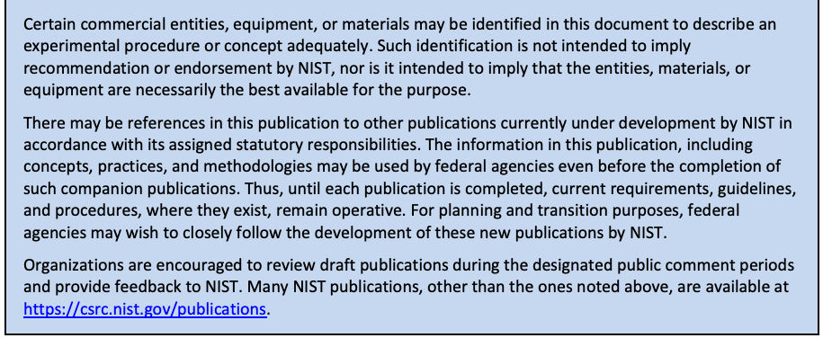
本書では、実験的な手順や概念を適切に説明するために、特定の商業的主体、機器、または資材を挙げている場合がある。そのような記載は、NIST による推奨や推薦を意味するものではなく、挙げた主体、資材、または機器がその目的に利用できるものの中で必ずしも最良であることを意味するものでもない。
There may be references in this publication to other publications currently under development by NIST in accordance with its assigned statutory responsibilities. The information in this publication, including concepts, practices, and methodologies may be used by federal agencies even before the completion of such companion publications. Thus, until each publication is completed, current requirements, guidelines, and procedures, where they exist, remain operative. For planning and transition purposes, federal agencies may wish to closely follow the development of these new publications by NIST.
本刊行物には、NIST が法令により課された責務に従って現在策定中の他の刊行物への言及が含まれる場合がある。本刊行物の情報（概念、実践、方法論を含む）は、そうした関連刊行物が完成する前であっても、連邦機関が利用してもよい。したがって、各刊行物が完成するまでは、現行の要件、ガイドライン、および手順が存在する場合には、それらが引き続き有効である。計画および移行の目的から、連邦機関は NIST によるこれらの新しい刊行物の策定状況を注意深く追うことを希望する場合がある。
Organizations are encouraged to review draft publications during the designated public comment periods and provide feedback to NIST. Many NIST publications, other than the ones noted above, are available at https://csrc.nist.gov/publications.
組織は、指定された意見募集期間中にドラフト版の刊行物を確認し、NIST にフィードバックを提供するよう奨励されている。上記以外にも、多くの NIST 刊行物が https://csrc.nist.gov/publications で入手できる。
Submit comments on this publication to: sec-cert@nist.gov
本書へのコメントの送付先：sec-cert@nist.gov
National Institute of Standards and Technology Attn: Computer Security Division, Information Technology Laboratory 100 Bureau Drive (Mail Stop 8930) Gaithersburg, MD 20899-8930
National Institute of Standards and Technology Attn: Computer Security Division, Information Technology Laboratory 100 Bureau Drive (Mail Stop 8930) Gaithersburg, MD 20899-8930
All comments are subject to release under the Freedom of Information Act (FOIA) [FOIA96].
すべてのコメントは、情報自由法（FOIA）[FOIA96] に基づき公開されることがある。
Reports on Computer Systems Technology
コンピューターシステム技術報告
The National Institute of Standards and Technology (NIST) Information Technology Laboratory (ITL) promotes the U.S. economy and public welfare by providing technical leadership for the Nation’s measurement and standards infrastructure. ITL develops tests, test methods, reference data, proof of concept implementations, and technical analyses to advance the development and productive use of information technology (IT). ITL’s responsibilities include the development of management, administrative, technical, and physical standards and guidelines for the cost-effective security of other than national security-related information in federal information systems. The Special Publication 800-series reports on ITL’s research, guidelines, and outreach efforts in information systems security and privacy and its collaborative activities with industry, government, and academic organizations.
国立標準技術研究所（NIST）の情報技術研究所（ITL）は、米国の計量・標準インフラに技術的リーダーシップを提供し、米国経済と公共の福祉を促進する。ITLは、情報技術（IT）の発展と生産的な利用を進めるため、試験、試験方法、参照データ、概念実証の実装および技術分析を開発する。ITLの責務には、連邦情報システムにおいて国家安全保障関連以外の情報を費用対効果よく保護するため、マネジメント上、行政上、技術上および物理的な標準・ガイドラインを策定することが含まれる。特別刊行物800シリーズは、情報システムのセキュリティとプライバシーに関するITLの研究、ガイドライン、普及活動、および産業界、政府、学術機関との協力活動を報告する。
Abstract
要約
This publication provides a methodology and set of procedures for conducting assessments of security and privacy controls employed within systems and organizations within an effective risk management framework. The assessment procedures, executed at various phases of the system development life cycle, are consistent with the security and privacy controls in NIST Special Publication 800-53, Revision 5. The procedures are customizable and can be easily tailored to provide organizations with the needed flexibility to conduct security and privacy control assessments that support organizational risk management processes and are aligned with the stated risk tolerance of the organization. Information on building effective security and privacy assessment plans is also provided with guidance on analyzing assessment results.
本刊行物は、効果的なリスク管理フレームワークの下で、システムおよび組織に用いられるセキュリティ・プライバシー管理策を評価するための方法論と手順一式を示す。システム開発ライフサイクルのさまざまな段階で実行する評価手順は、NIST特別刊行物800-53改訂第5版のセキュリティ・プライバシー管理策と整合する。手順はカスタマイズ可能で、組織のリスク管理プロセスを支援し、組織が定めるリスク許容度に沿った管理策評価を行える柔軟性を提供するよう容易に調整できる。また、効果的なセキュリティ・プライバシー評価計画の作成方法と、評価結果の分析に関する指針も示す。
Keywords
キーワード
Assessment; assessment plan; assurance; control assessment; FISMA; Privacy Act; privacy controls; Open Security Controls Assessment Language; OSCAL; privacy requirements; Risk Management Framework; security controls; security requirements.
評価、評価計画、保証、管理策評価、FISMA、プライバシー法、プライバシー管理策、Open Security Controls Assessment Language、OSCAL、プライバシー要件、リスク管理フレームワーク、セキュリティ管理策、セキュリティ要件。
Acknowledgments
謝辞
This publication was developed by the Joint Task Force Interagency Working Group. The group includes representatives from the civil, defense, and intelligence communities. The National Institute of Standards and Technology wishes to acknowledge and thank the senior leaders from the Department of Commerce, Department of Defense, the Office of the Director of National Intelligence, the Committee on National Security Systems, and the members of the interagency working group whose dedicated efforts contributed significantly to this publication.
本書は、Joint Task Force の省庁間作業部会が作成した。同部会には、民生、国防、およびインテリジェンスの各コミュニティの代表者が参加している。米国国立標準技術研究所は、商務省、国防総省、国家情報長官室、国家安全保障システム委員会の幹部、ならびに本書に多大な貢献をした省庁間作業部会のメンバーの献身的な尽力に謝意を表する。
Department of Defense
国防総省
HON. John Sherman, Chief Information Officer
HON. John Sherman、最高情報責任者
Dr. Kelly Fletcher, Principal Deputy Chief Information Officer
Dr. Kelly Fletcher、首席副最高情報責任者
David McKeown, Deputy CIO for Cybersecurity and DoD CISO
David McKeown、サイバーセキュリティ担当副CIO兼DoD CISO
Mark Hakun, Principal Deputy CIO for Cybersecurity
Mark Hakun、サイバーセキュリティ担当首席副CIO
Kevin Dulany, Director, Cybersecurity Policy and Partnerships
Kevin Dulany、サイバーセキュリティ政策・パートナーシップ部長
National Institute of Standards and Technology
米国国立標準技術研究所
James St. Pierre, Acting Director, Information Technology Laboratory (ITL)
James St. Pierre、情報技術研究所（ITL）所長代行
Kevin Stine, Cybersecurity Advisor, ITL
Kevin Stine、サイバーセキュリティアドバイザー、ITL
Matthew Scholl, Chief, Computer Security Division
Matthew Scholl、コンピュータセキュリティ部門長
Kevin Stine, Chief, Applied Cybersecurity Division
Kevin Stine、応用サイバーセキュリティ部門長
Victoria Yan Pillitteri, Risk Management Framework Project Leader
Victoria Yan Pillitteri、リスク管理フレームワークプロジェクトリーダー
Office of the Director of National Intelligence
国家情報長官室
Michael E. Waschull, Acting Chief Information Officer
Michael E. Waschull、最高情報責任者代行
Michael E. Waschull, Deputy Chief Information Officer
Michael E. Waschull、副最高情報責任者
C. Matthew Conner, Cybersecurity Group and IC CISO
C. Matthew Conner、サイバーセキュリティグループ兼IC CISO
Cheri Benedict, Director, Security Coordination Center
Cheri Benedict、セキュリティ調整センター長
Committee on National Security Systems
国家安全保障システム委員会
Mark G. Hakun, Chair
Mark G. Hakun、議長
Dominic A. Cussatt, Co-Chair
Dominic A. Cussatt、共同議長
Kevin Dulany, Tri-Chair—Defense Community
Kevin Dulany、三者議長—国防コミュニティ
Chris Johnson, Tri-Chair—Intelligence Community
Chris Johnson、三者議長—インテリジェンスコミュニティ
Vicki Michetti, Tri-Chair—Civil Agencies
Vicki Michetti、三者議長—民生機関
Joint Task Force (JTF) Working Group
Joint Task Force（JTF）作業部会
Victoria Yan Pillitteri, NIST, JTF Leader
Victoria Yan Pillitteri、NIST、JTFリーダー
McKay Tolboe, DoD
McKay Tolboe、DoD
Andy Rovnak, Intelligence Community
Andy Rovnak、インテリジェンスコミュニティ
Angela Smith, NIST
Angela Smith、NIST
Katie Isaacson, The MITRE Corporation
Katie Isaacson、The MITRE Corporation
Eduardo Takamura, NIST
Eduardo Takamura、NIST
Dave Myers, Veterans Affairs
Dave Myers、退役軍人省
Peter Duspiva, Intelligence Community
Peter Duspiva、インテリジェンスコミュニティ
Jon Boyens, NIST
Jon Boyens、NIST
Randy Gabel, The MITRE Corporation
Randy Gabel、The MITRE Corporation
Kelley Dempsey, NIST
Kelley Dempsey、NIST
Vicki Michetti, Veterans Affairs
Vicki Michetti、退役軍人省
Chris Johnson, Intelligence Community
Chris Johnson、インテリジェンスコミュニティ
Ned Goren, NIST
Ned Goren、NIST
David Black, The MITRE Corporation
David Black、The MITRE Corporation
Ron Ross, NIST
Ron Ross、NIST
Naomi Lefkovitz, NIST
Naomi Lefkovitz、NIST
Jessica Dickson, NIST
Jessica Dickson、NIST
Kaitlin Boeckl, NIST
Kaitlin Boeckl、NIST
Pam Miller, The MITRE Corporation
Pam Miller、The MITRE Corporation
In addition to the above acknowledgments, a special note of thanks goes to Jeff Brewer, Jim Foti, Cristina Ritfeld, Isabel Van Wyk, and the NIST web team for their outstanding administrative support, Chris Enloe for his technical review and insight, and to David Waltermire and Wendell Piez for their contribution to the development of the SP 800-53A assessment tables (both electronic sources, and derivative publications) using Open Security Controls Assessment Language (OSCAL). The authors also wish to recognize the professional staff from the NIST Computer Security Division and Applied Cybersecurity Division, and the representatives from the Federal Chief Information Officer (CIO) Council, Federal Chief Information Security Officer (CISO) Council, and Federal Privacy Council for their ongoing contributions in helping to improve the content of the publication. Finally, the authors gratefully acknowledge the contributions from individuals and organizations in the public and private sectors, both nationally and internationally, whose insightful and constructive comments improved the overall quality, thoroughness, and usefulness of this publication.
上記の謝辞に加えて、Jeff Brewer、Jim Foti、Cristina Ritfeld、Isabel Van WykおよびNISTウェブチームには優れた事務支援について、Chris Enloeには技術レビューと見識について、David WaltermireおよびWendell PiezにはOpen Security Controls Assessment Language（OSCAL）を用いたSP 800-53A評価表（電子形式の原資料および派生刊行物）の作成への貢献について、特に感謝する。著者らはまた、刊行物の内容向上に継続的に貢献したNISTコンピューターセキュリティ部門および応用サイバーセキュリティ部門の専門職員、連邦最高情報責任者（CIO）協議会、連邦最高情報セキュリティ責任者（CISO）協議会、連邦プライバシー協議会の代表者にも謝意を表する。最後に、本刊行物の全体的な品質、網羅性、有用性を高めた、国内外の官民部門の個人および組織から寄せられた洞察に富む建設的な意見に深く感謝する。
NIST 特別刊行物 800-53A への過去の貢献
The authors wanted to acknowledge the many individuals who contributed to previous versions of Special Publication 800-53A since its inception in 2005. They include Marshall Abrams, Dennis Bailey, Matt Barrett, Nadya Bartol, Frank Belz, Paul Bicknell, Deb Bodeau, Brett Burley, Bill Burr, Dawn Cappelli, Corinne Castanza, Matt Coose, George Dinolt, Donna Dodson, Randy Easter, Kurt Eleam, Jennifer Fabius, Daniel Faigin, Denise Farrar, Harriett Goldman, Peter Gouldmann, Richard Graubart, Jennifer Guild, Sarbari Gupta, Peggy Himes, Bennett Hodge, Cynthia Irvina, Arnold Johnson, Roger Johnson, Lisa Kaiser, Stu Katzke, Sharon Keller, Cass Kelly, Steve LaFountain, Steve Lipner, Bill MacGregor, Tom Macklin, Tom Madden, Erika McCallister, Tim McChesney, Michael McEvilley, John Mildner, Sandra Miravalle, Joji Montelibano, Doug Montgomery, George Moore, Harvey Newstrom, Robert Niemeyer, LouAnna Notargiacomo, Dorian Pappas, Tim Polk, Esten Porter, Karen Quigg, Steve Quinn, Ed Roback, George Rogers, Scott Rose, Mike Rubin, Karen Scarfone, Roger Schell, Matt Scholl, Murugiah Souppaya, Kevin Stine, Gary Stoneburner, Keith Stouffer, Marianne Swanson, Pat Toth, Glenda Turner, Joe Weiss, Richard Wilsher, Mark Wilson, John Woodward, and Carol Woody.
著者らは、2005 年の最初の版以来、特別刊行物 800-53A の過去の版に貢献した多くの方々に謝意を表する。その方々には、Marshall Abrams、Dennis Bailey、Matt Barrett、Nadya Bartol、Frank Belz、Paul Bicknell、Deb Bodeau、Brett Burley、Bill Burr、Dawn Cappelli、Corinne Castanza、Matt Coose、George Dinolt、Donna Dodson、Randy Easter、Kurt Eleam、Jennifer Fabius、Daniel Faigin、Denise Farrar、Harriett Goldman、Peter Gouldmann、Richard Graubart、Jennifer Guild、Sarbari Gupta、Peggy Himes、Bennett Hodge、Cynthia Irvina、Arnold Johnson、Roger Johnson、Lisa Kaiser、Stu Katzke、Sharon Keller、Cass Kelly、Steve LaFountain、Steve Lipner、Bill MacGregor、Tom Macklin、Tom Madden、Erika McCallister、Tim McChesney、Michael McEvilley、John Mildner、Sandra Miravalle、Joji Montelibano、Doug Montgomery、George Moore、Harvey Newstrom、Robert Niemeyer、LouAnna Notargiacomo、Dorian Pappas、Tim Polk、Esten Porter、Karen Quigg、Steve Quinn、Ed Roback、George Rogers、Scott Rose、Mike Rubin、Karen Scarfone、Roger Schell、Matt Scholl、Murugiah Souppaya、Kevin Stine、Gary Stoneburner、Keith Stouffer、Marianne Swanson、Pat Toth、Glenda Turner、Joe Weiss、Richard Wilsher、Mark Wilson、John Woodward、Carol Woody が含まれる。
Document Conventions
文書の表記規則
For the purposes of this document, the term “security and privacy” is universally used since the guidance is applicable to both security and privacy control assessments. For certain systems, however, the guidance may only be relevant for security or privacy. Organizations make their own determinations on when to manage security and privacy control assessments together or separately.
本書では、セキュリティおよびプライバシーの両方の管理策評価にガイダンスが適用されるため、「セキュリティとプライバシー」という用語を一貫して用いる。ただし、システムによっては、ガイダンスがセキュリティまたはプライバシーのいずれか一方にのみ関連する場合がある。セキュリティとプライバシーの管理策評価を共同で管理するか、個別に管理するかは各組織が判断する。
SP 800-53A provides guidance on assessing controls in information security program plans, privacy program plans, system security plans, and privacy plans. Where the guidance refers to all plans listed above, the term “security and privacy plans” is used. If the guidance is specific to a single type of plan (e.g., system security plan), the specific type of plan is specified.
SP 800-53Aは、情報セキュリティプログラム計画、プライバシープログラム計画、システムセキュリティ計画およびプライバシー計画における管理策の評価に関するガイダンスを示す。上記のすべての計画を指す場合は「セキュリティ・プライバシー計画」という用語を用いる。ガイダンスが単一種類の計画（例: システムセキュリティ計画）に固有の場合は、その計画の種類を明記する。
Supplemental Content
補足コンテンツ
The assessment procedures in Chapter 4 are published in multiple data formats, including comma-separated values (CSV), plain text, and Open Security Controls Assessment (OSCAL). The available data formats are accessible from the NIST SP 800-53A Revision 5, publication details page at https://csrc.nist.gov/publications/detail/sp/800-53a/rev-5/final. The OSCAL Content Git Repository is available at https://github.com/usnistgov/oscal-content.
第4章の評価手順は、カンマ区切り値（CSV）、プレーンテキスト、Open Security Controls Assessment（OSCAL）など、複数のデータ形式で公開されている。利用可能な形式は、NIST SP 800-53A Rev. 5の刊行詳細ページ https://csrc.nist.gov/publications/detail/sp/800-53a/rev-5/final から入手できる。OSCAL Content Git Repositoryは https://github.com/usnistgov/oscal-content で公開されている。
The CSV, plain text, and OSCAL formats represent derivative formats of the (normative) assessment procedures in this publication. If there are any discrepancies between the content in derivative formats and this publication, please contact sec-cert@nist.gov.
CSV、プレーンテキストおよびOSCAL形式は、本刊行物の（規範的な）評価手順から派生した形式である。派生形式の内容と本刊行物に不一致がある場合は、sec-cert@nist.gov に連絡されたい。
Patent Disclosure Notice
特許開示に関する通知
NOTICE: The Information Technology Laboratory (ITL) has requested that holders of patent claims whose use may be required for compliance with the guidance or requirements of this publication disclose such patent claims to ITL. However, holders of patents are not obligated to respond to ITL calls for patents and ITL has not undertaken a patent search in order to identify which, if any, patents may apply to this publication.
通知: 情報技術研究所（ITL）は、本刊行物のガイダンスまたは要件への適合に使用が必要となる可能性のある特許請求の保有者に対し、その特許請求をITLに開示するよう求めている。ただし、特許保有者はITLによる特許照会に回答する義務を負わず、ITLも本刊行物に適用される可能性のある特許を特定するための調査を行っていない。
As of the date of publication and following call(s) for the identification of patent claims whose use may be required for compliance with the guidance or requirements of this publication, no such patent claims have been identified to ITL.
刊行日時点で、本刊行物の指針または要件への準拠に使用が必要となる可能性のある特許請求の特定を求める呼びかけを行った後、そのような特許請求はITLに対して特定されていない。
No representation is made or implied by ITL that licenses are not required to avoid patent infringement in the use of this publication.
本刊行物の使用において特許侵害を避けるためのライセンスが不要であると、ITLが表明または暗示するものではない。
情報セキュリティとプライバシーの共通基盤の整備
COLLABORATION AMONG PUBLIC AND PRIVATE SECTOR ENTITIES
官民の主体間の連携
In developing standards and guidelines required by [FISMA], NIST consults with other federal agencies and offices as well as private sector entities to improve information security, avoid unnecessary and costly duplication of effort, and ensure that NIST publications complement the standards and guidelines employed for the protection of national security systems. In addition to its comprehensive public review and vetting process, NIST collaborates with the Office of the Director of National Intelligence (ODNI), the Department of Defense (DoD), and the Committee on National Security Systems (CNSS) to establish and maintain a unified framework and common foundation for information security across the Federal Government. A common foundation and framework for information security provides the intelligence, defense, and civilian sectors of the Federal Government and their contractors more uniform and consistent ways to manage risks to organizational operations and assets, individuals, other organizations, and the Nation that result from the operation and use of systems. A common foundation and framework also provides a strong basis for the reciprocal acceptance of security authorization decisions and facilitate information sharing. NIST also works with public and private sector entities to establish and maintain specific mappings and relationships between the security standards and guidelines developed by NIST, the International Organization for Standardization (ISO), and the International Electrotechnical Commission (IEC).
[FISMA] が求める標準とガイドラインを策定するにあたり、NIST は、情報セキュリティを向上させ、不必要で費用のかかる重複作業を避け、NIST の刊行物が国家安全保障システムの保護に用いられる標準およびガイドラインを補完することを確保するため、他の連邦機関・部局のほか民間事業者とも協議する。包括的な公開レビューと精査の過程に加えて、NIST は、国家情報長官室（ODNI）、国防総省（DoD）、国家安全保障システム委員会（CNSS）と協力し、連邦政府全体にわたる情報セキュリティの統一的な枠組みと共通基盤を確立し維持している。情報セキュリティの共通基盤と枠組みにより、連邦政府のインテリジェンス、国防、民生の各部門とその請負業者は、システムの運用と利用に起因する組織の業務や資産、個人、他の組織、そして国家に対するリスクを、より統一的かつ一貫した方法で管理できる。共通基盤と枠組みはまた、セキュリティ認可決定の相互受容を強固に支える基礎となり、情報共有を促進する。NIST はさらに、官民の主体と協力し、NIST、国際標準化機構（ISO）、国際電気標準会議（IEC）が策定したセキュリティ標準およびガイドラインの間の具体的なマッピングと関係を確立し維持している。
評価手順の書式
The new format for assessment procedures introduced in Special Publication (SP) 800-53A Revision 4, is further improved in this revision (SP 800-53A Revision 5). The format continues to reflect the decomposition of assessment objectives into more granular determination statements wherever possible, thus providing the capability to identify and assess specific parts of security and privacy controls. Updates to SP 800-53A Revision 5:
特別刊行物（SP）800-53A 改訂第 4 版で導入された評価手順の新しい書式は、本改訂（SP 800-53A 改訂第 5 版）でさらに改善されている。この書式では、可能な限り、評価目的をより細かな判定文に分解する方針を引き続き反映しており、セキュリティ・プライバシー管理策の特定の部分を識別して評価できるようになっている。SP 800-53A 改訂第 5 版での更新点は次のとおりである。
•Identify determination statements for organization-defined parameters (ODPs) first and separately from the determination statements for each control item;
•組織定義パラメータ（ODP）に関する判定文を、各管理策項目に関する判定文より先に、かつ切り離して示す。
•Improve the readability of the assessment procedures;
•評価手順の読みやすさを改善する。
•Provide a structured schema for automated tools when assessment information is imported into such tools;
•評価情報を自動化ツールに取り込む際に利用できる、構造化されたスキーマを提供する。
•Provide greater flexibility in conducting assessments by giving organizations the capability to target certain aspects of controls (highlighting the particular weaknesses and/or deficiencies in controls),
•組織が管理策の特定の側面（管理策の個別の弱点や欠陥）に的を絞って評価できるようにすることで、評価の実施の柔軟性を高める。
•Improve the efficiency of security and privacy control assessments;
•セキュリティ・プライバシー管理策の評価の効率を改善する。
•Support continuous monitoring and ongoing authorization programs by providing a greater number of component parts of security and privacy controls that can be assessed at organization-defined frequencies and degrees of rigor.
•組織が定める頻度と厳密さで評価できる、セキュリティ・プライバシー管理策の構成要素をより多く提供することで、継続的モニタリングと継続的認可のプログラムを支援する。
The ability to apply assessment and monitoring resources in a targeted and precise manner and simultaneously maximize the use of automation technologies can result in more timely and cost-effective assessment processes for organizations.
評価およびモニタリングの資源を的確かつ精密に適用すると同時に、自動化技術の利用を最大化できれば、組織はより適時かつ費用対効果の高い評価プロセスを実現できる。
Note: NIST [SP 800-53] will be updated accordingly to ensure that the numbering scheme for all security and privacy controls is consistent with the new format introduced in this publication.
注：NIST [SP 800-53] は、すべてのセキュリティ・プライバシー管理策の番号体系が本刊行物で導入された新しい書式と整合するよう、それに合わせて更新される予定である。
Executive Summary
エグゼクティブサマリー
Security and privacy control assessments are not about checklists, simple pass/fail results, or generating paperwork to pass inspections or audits. Rather, control assessments are the principal vehicle used to verify that selected security and privacy controls are implemented and meeting stated goals and objectives. Special Publication (SP) 800-53A, Assessing Security and Privacy Controls in Information Systems and Organizations, facilitates security control assessments and privacy control assessments conducted within an effective risk management framework. A major design objective for SP 800-53A is to provide an assessment framework and initial starting point for assessment procedures that are flexible enough to meet the needs of different organizations while providing consistency in conducting control assessments. Control assessment results provide organizational officials with:
セキュリティ管理策およびプライバシー管理策の評価は、チェックリストや単純な合否判定、あるいは検査や監査を通過するための書類作成を目的とするものではない。管理策の評価は、選定したセキュリティ管理策およびプライバシー管理策が実装され、定められた目標および目的を満たしていることを検証するための主要な手段である。Special Publication（SP）800-53A, Assessing Security and Privacy Controls in Information Systems and Organizations は、有効なリスク管理フレームワークの中で実施されるセキュリティ管理策の評価およびプライバシー管理策の評価を支援する。SP 800-53A の主要な設計目標の一つは、評価の枠組みと、評価手順の最初の出発点を提供することである。この評価手順は、異なる組織のニーズを満たせるだけの柔軟性を持ちながら、管理策の評価の実施に一貫性をもたらすものである。管理策の評価結果は、組織の責任者に次のものを提供する。
•Evidence of the effectiveness of implemented controls,
•実装した管理策の有効性に関する証拠
•An indication of the quality of the risk management processes, and
•リスク管理プロセスの品質に関する指標、および
•Information about the security and privacy strengths and weaknesses of systems that are supporting organizational missions and business functions.
•組織の使命と業務機能を支えるシステムのセキュリティ・プライバシー上の強みと弱みに関する情報。
The findings identified by assessors are used to determine the overall effectiveness of security and privacy controls associated with systems and their environments of operation and to provide credible and meaningful inputs to the organization’s risk management process. A well-executed assessment helps determine the validity of the controls contained in the organization’s security and privacy plans and subsequently employed in organizational systems and environments of operation. Control assessments facilitate a cost-effective approach to managing risk by identifying weaknesses or deficiencies in systems, thus enabling the organization to determine appropriate risk responses in a disciplined manner that is consistent with organizational mission and business needs.
評価者が特定した所見は、システムおよびその運用環境に関連するセキュリティ管理策およびプライバシー管理策の全体的な有効性を判断し、組織のリスク管理プロセスに信頼でき有意義なインプットを提供するために用いられる。適切に実施された評価は、組織のセキュリティ計画およびプライバシー計画に記載され、その後組織のシステムおよび運用環境で採用される管理策の妥当性を判断するのに役立つ。管理策の評価は、システムの弱点や欠陥を特定することで、費用対効果の高いリスク管理の手法を可能にし、組織の使命およびビジネス上のニーズに沿った適切なリスク対応を、規律ある方法で決定できるようにする。
SP 800-53A is a companion guideline to [SP 800-53] Security and Privacy Controls for Systems and Organizations. Each publication provides guidance for implementing specific steps in the Risk Management Framework (RMF).1 SP 800-53 and [SP 800-53B] address the Select step of the RMF and provide guidance on security and privacy control selection (i.e., determining the controls needed to manage risks to organizational operations and assets, individuals, other organizations, and the Nation). SP 800-53A addresses the Assess and Monitor steps of the RMF and provides guidance on the security and privacy control assessment processes. SP 800-53A also includes guidance on how to build effective assessment plans and how to analyze and manage assessment results.
SP 800-53A は、[SP 800-53] Security and Privacy Controls for Systems and Organizations の姉妹編となるガイドラインである。各文書は、リスク管理フレームワーク（RMF）の特定のステップを実施するためのガイダンスを提供する。1 SP 800-53 および [SP 800-53B] は RMF の選定（Select）ステップを扱い、セキュリティ管理策およびプライバシー管理策の選定（すなわち、組織の業務および資産、個人、他の組織、ならびに国家に対するリスクを管理するために必要な管理策の決定）に関するガイダンスを提供する。SP 800-53A は RMF の評価（Assess）ステップおよび監視（Monitor）ステップを扱い、セキュリティ管理策およびプライバシー管理策の評価プロセスに関するガイダンスを提供する。SP 800-53A には、有効な評価計画を作成する方法、ならびに評価結果を分析し管理する方法に関するガイダンスも含まれる。
SP 800-53A provides a process that allows organizations to tailor the assessment procedures outlined in the guidance. Tailoring involves customizing the assessment procedures to match the characteristics of the system and its environment of operation more closely. The tailoring process described in this guidance gives organizations the flexibility needed to avoid assessment approaches that are unnecessarily complex or costly while simultaneously meeting the assessment requirements and risk management principles established in the RMF. Tailoring decisions are left to the discretion of the organization to maximize flexibility in developing assessment plans – applying the results of risk assessments to determine the extent, rigor, and level of intensity of the assessments needed to provide sufficient assurance about the security and privacy posture of the system.
SP 800-53A は、本ガイダンスに示す評価手順を組織がテーラリングできるプロセスを提供する。テーラリングとは、システムおよびその運用環境の特性により適合するように評価手順をカスタマイズすることである。本ガイダンスで説明するテーラリングプロセスにより、組織は、RMF で定める評価要件およびリスク管理の原則を満たしつつ、不必要に複雑または高コストな評価手法を避けるために必要な柔軟性を得られる。評価計画の策定における柔軟性を最大化するため、テーラリングの決定は組織の裁量に委ねられる。組織は、リスクアセスメントの結果を適用して、システムのセキュリティおよびプライバシーの態勢について十分な保証を得るために必要な評価の範囲、厳密さ、および強度のレベルを決定する。
Table of Contents
目次
CHAPTER ONE INTRODUCTION — 1
第1章 はじめに — 1
1.1 PURPOSE AND APPLICABILITY — 1
1.1 目的および適用範囲 — 1
1.2 TARGET AUDIENCE — 4
1.2 対象読者 — 4
1.3 RELATED PUBLICATIONS AND ASSESSMENT PROCESSES — 4
1.3 関連刊行物および評価プロセス — 4
1.4 ORGANIZATION OF THIS PUBLICATION — 5
1.4 本刊行物の構成 — 5
CHAPTER TWO THE FUNDAMENTALS — 6
第2章 基礎 — 6
2.1 ASSESSMENTS WITHIN THE SYSTEM DEVELOPMENT LIFE CYCLE — 6
2.1 システム開発ライフサイクルにおける評価 — 6
2.2 CONTROL STRUCTURE AND ORGANIZATION — 7
2.2 管理策の構造および編成 — 7
2.3 BUILDING AN EFFECTIVE ASSURANCE CASE — 8
2.3 効果的な保証ケースの構築 — 8
2.4 ASSESSMENT PROCEDURES: ASSESSMENT OBJECTS, METHODS AND OBJECTIVES — 11
2.4 評価手順: 評価対象、方法および目的 — 11
CHAPTER THREE THE PROCESS — 19
第3章 プロセス — 19
3.1 PREPARE FOR SECURITY AND PRIVACY CONTROL ASSESSMENTS — 19
3.1 セキュリティ・プライバシー管理策評価の準備 — 19
3.2 DEVELOP SECURITY AND PRIVACY ASSESSMENT PLANS — 23
3.2 セキュリティ・プライバシー評価計画の策定 — 23
3.3 CONDUCT SECURITY AND PRIVACY CONTROL ASSESSMENTS — 30
3.3 セキュリティ・プライバシー管理策評価の実施 — 30
3.4 ANALYZE ASSESSMENT REPORT RESULTS — 32
3.4 評価報告結果の分析 — 32
3.5 ASSESS SECURITY AND PRIVACY CAPABILITIES — 34
3.5 セキュリティ・プライバシー能力の評価 — 34
CHAPTER FOUR SECURITY AND PRIVACY ASSESSMENT PROCEDURES — 37
第4章 セキュリティ・プライバシー評価手順 — 37
4.1 ACCESS CONTROL — 40
4.1 アクセス制御 — 40
4.2 AWARENESS AND TRAINING — 118
4.2 意識向上と訓練 — 118
4.3 AUDIT AND ACCOUNTABILITY — 128
4.3 監査と説明責任 — 128
4.4 ASSESSMENT, AUTHORIZATION, AND MONITORING — 160
4.4 評価、承認および監視 — 160
4.5 CONFIGURATION MANAGEMENT — 177
4.5 構成管理 — 177
4.6 CONTINGENCY PLANNING — 215
4.6 緊急時対応計画 — 215
4.7 IDENTIFICATION AND AUTHENTICATION — 243
4.7 識別および認証 — 243
4.8 INCIDENT RESPONSE — 275
4.8 インシデント対応 — 275
4.9 MAINTENANCE — 298
4.9 保守 — 298
4.10 MEDIA PROTECTION — 316
4.10 媒体保護 — 316
4.11 PHYSICAL AND ENVIRONMENTAL PROTECTION — 330
4.11 物理的および環境的保護 — 330
4.12 PLANNING — 361
4.12 計画 — 361
4.13 PROGRAM MANAGEMENT — 372
4.13 プログラム管理 — 372
4.14 PERSONNEL SECURITY — 401
4.14 人事セキュリティ — 401
4.15 PERSONALLY IDENTIFIABLE INFORMATION PROCESSING AND TRANSPARENCY — 412
4.15 個人を特定できる情報の処理および透明性 — 412
4.16 RISK ASSESSMENT — 426
4.16 リスク評価 — 426
4.17 SYSTEM AND SERVICES ACQUISITION — 441
4.17 システムおよびサービスの取得 — 441
4.18 SYSTEM AND COMMUNICATIONS PROTECTION — 522
4.18 システムおよび通信の保護 — 522
4.19 SYSTEM AND INFORMATION INTEGRITY — 599
4.19 システムおよび情報の完全性 — 599
4.20 SUPPLY CHAIN RISK MANAGEMENT — 665
4.20 サプライチェーンリスク管理 — 665
REFERENCES — 684
参考文献 — 684
APPENDIX A GLOSSARY — 689
付録A 用語集 — 689
APPENDIX B ACRONYMS — 705
付録B 略語 — 705
APPENDIX C ASSESSMENT METHOD DESCRIPTIONS — 707
付録C 評価方法の説明 — 707
APPENDIX D PENETRATION TESTING — 715
付録D ペネトレーションテスト — 715
APPENDIX E ASSESSMENT REPORTS — 718
付録E 評価報告書 — 718
APPENDIX F ONGOING ASSESSMENT AND AUTOMATION — 721
付録F 継続的評価および自動化 — 721
CHAPTER ONE
第1章
INTRODUCTION
序論
THE NEED TO ASSESS SECURITY AND PRIVACY CONTROL EFFECTIVENESS
セキュリティおよびプライバシー管理策の有効性を評価する必要性
Today’s systems2 are complex assemblages of technology (i.e., hardware, software, and firmware), processes, and people working together to provide organizations with the capabilities to process, store, and transmit information in a timely manner in support of various mission and business functions. The degree to which organizations have come to depend upon systems to conduct routine, important, and critical mission and business functions means that the protection of the underlying systems and environments of operation is paramount to the success of the organization. The selection of appropriate security and privacy controls for a system is an important task that can have significant implications on the operations and assets of an organization as well as the welfare of individuals. Security controls are the safeguards or countermeasures prescribed for a system or an organization to protect the confidentiality, integrity, and availability of its system and information and to manage information security risk. Privacy controls are the administrative, technical, and physical safeguards employed within a system or an organization to manage privacy risks and ensure compliance with applicable privacy requirements.3
今日のシステム2は、技術（すなわち、ハードウェア、ソフトウェア、およびファームウェア）、プロセス、および人が複雑に組み合わさったものであり、これらが連携して、さまざまな使命およびビジネス機能を支援するために情報を適時に処理、保存、および送信する能力を組織に提供する。組織が日常的な、重要な、そして不可欠な使命およびビジネス機能の遂行をシステムに依存する度合いを考えると、基盤となるシステムおよび運用環境の保護は組織の成功にとって最も重要である。システムに対する適切なセキュリティ管理策およびプライバシー管理策の選定は重要な作業であり、組織の業務および資産、ならびに個人の福利に重大な影響を及ぼしうる。セキュリティ管理策とは、システムおよび情報の機密性、完全性、および可用性を保護し、情報セキュリティリスクを管理するために、システムまたは組織に対して規定される保護措置または対抗措置である。プライバシー管理策とは、プライバシーリスクを管理し、適用されるプライバシー要件の遵守を確保するために、システムまたは組織内で採用される管理的、技術的、および物理的な保護措置である。3
Once employed within a system, security and privacy controls are assessed to determine their overall effectiveness (i.e., the extent to which the controls are implemented correctly, operating as intended, and producing the desired outcome with respect to meeting the security and privacy requirements for the system and the organization). Understanding the overall effectiveness of implemented security and privacy controls is essential in determining the risk to the organization’s operations and assets, individuals, other organizations, and the Nation resulting from the use of the system.
セキュリティ管理策およびプライバシー管理策をシステムに導入した後、その全体的な有効性（すなわち、管理策が正しく実装され、意図どおりに動作し、システムおよび組織のセキュリティ要件とプライバシー要件を満たす望ましい結果を生み出している程度）を判断するために評価する。導入した管理策の全体的な有効性を理解することは、システムの使用に起因する組織の運用および資産、個人、他の組織、ならびに国家へのリスクを判断するうえで不可欠である。
1.1 PURPOSE AND APPLICABILITY
1.1 目的および適用範囲
The purpose of this publication is to provide guidelines for building effective security and privacy assessment plans, as well as a comprehensive set of procedures for assessing the effectiveness of security and privacy controls employed in systems and organizations. The guidelines apply to the security and privacy controls defined in [SP 800-53] (as amended), Security and Privacy Controls for Information Systems and Organizations. The guidelines have been developed to help achieve more secure systems by:
本刊行物の目的は、効果的なセキュリティ評価計画およびプライバシー評価計画を策定するための指針と、システムおよび組織で用いられるセキュリティ管理策およびプライバシー管理策の有効性を評価するための包括的な手順一式を提供することである。この指針は、[SP 800-53]（改訂を含む）「情報システムおよび組織のセキュリティ管理策およびプライバシー管理策」に定義されている管理策に適用される。本指針は、次の事項により、より安全なシステムの実現を支援するために作成された。
•Enabling more consistent, efficient, comparable, and repeatable assessments of security and privacy controls with reproducible results;
•セキュリティ管理策およびプライバシー管理策の評価を、より一貫性があり、効率的で、比較可能かつ再現可能なものとし、結果を再現できるようにする。
•Promoting a better understanding of the risks to organizational operations, organizational assets, individuals, other organizations, and the Nation resulting from the operation and use of systems;
•システムの運用および利用に起因する、組織の運用、組織資産、個人、他の組織、国家へのリスクに対する理解を深める。
•Facilitating more cost-effective assessments of security and privacy controls; and
•セキュリティ管理策およびプライバシー管理策の評価をより費用対効果の高いものにすること、および
•Creating more complete, reliable, and trustworthy information for organizational officials to support risk management decisions, reciprocity of assessment results, information sharing, and compliance with federal laws, Executive Orders, directives, regulations, and policies.
•リスク管理上の意思決定、評価結果の相互承認、情報共有、ならびに連邦法、大統領令、指令、規則および方針への準拠を支援するため、組織の担当者に対して、より完全で信頼性が高く、信用できる情報を作成する。
This publication satisfies the requirements of Office of Management and Budget (OMB) Circular A-130 [OMB A-130] and the provisions of the Federal Information Security Modernization Act [FISMA]. The security and privacy guidelines in this publication are applicable to federal systems other than those systems designated as national security systems, as defined in 44 U.S.C., Section 3542. The guidelines have been broadly developed from a technical perspective to complement similar guidelines for national security systems and may be used for such systems with the approval of appropriate federal officials exercising policy authority over such systems. 4
本書は、行政管理予算局（OMB）Circular A-130 [OMB A-130] の要件および連邦情報セキュリティ近代化法 [FISMA] の規定を満たす。本書のセキュリティおよびプライバシーのガイドラインは、44 U.S.C. Section 3542 で定義される国家安全保障システムに指定されたシステムを除く連邦政府のシステムに適用される。本ガイドラインは、国家安全保障システム向けの同様のガイドラインを補完するために、技術的な観点から幅広く作成されており、国家安全保障システムに対する政策上の権限を有する適切な連邦政府職員の承認を得れば、そうしたシステムにも使用できる。4
Organizations use this publication in conjunction with approved information security program plans, privacy program plans, system security plans, and privacy plans in developing assessment plans for producing and compiling the information necessary to determine the effectiveness of the security and privacy controls employed in the system and organization. The guidance in this publication has been developed with the intention of enabling organizations to tailor the basic assessment procedures provided. The assessment procedures are used as a starting point for and as input to the assessment plan. In developing effective security and privacy assessment plans, organizations take into consideration existing information about the controls to be assessed (e.g., results from assessments of risk; platform-specific dependencies in the hardware, software, or firmware; and any assessment procedures needed as a result of organization-specific controls not included in [SP 800-53]). 5
組織は、承認済みの情報セキュリティプログラム計画、プライバシープログラム計画、システムセキュリティ計画、およびプライバシー計画とあわせて本書を使用し、システムおよび組織で採用されるセキュリティ管理策およびプライバシー管理策の有効性を判断するために必要な情報を作成・収集するための評価計画を策定する。本書のガイダンスは、提供する基本的な評価手順を組織がテーラリングできるようにすることを意図して作成されている。評価手順は、評価計画の出発点として、また評価計画へのインプットとして使用される。有効なセキュリティ評価計画およびプライバシー評価計画を策定するにあたり、組織は評価対象の管理策に関する既存の情報（たとえば、リスクアセスメントの結果、ハードウェア、ソフトウェア、またはファームウェアにおけるプラットフォーム固有の依存関係、および [SP 800-53] に含まれない組織固有の管理策のために必要となる評価手順）を考慮する。5
The selection of appropriate assessment procedures and the rigor, intensity, and scope of the assessment depend on the following factors:
適切な評価手順の選択、および評価の厳密さ、強度、範囲は、次の要因によって決まる。
•The security categorization of the system; 6
•システムのセキュリティ分類、6
•The privacy risk assessment for the system;
•システムのプライバシーリスク評価。
•The security and privacy controls from [SP 800-53] as identified in the approved information security program plans, privacy program plans, security plans, and privacy plans; 7 and
•承認済みの情報セキュリティプログラム計画、プライバシープログラム計画、セキュリティ計画、およびプライバシー計画で特定された [SP 800-53] のセキュリティ管理策およびプライバシー管理策、7 および
•The assurance requirements that the organization intends to meet in determining the overall effectiveness of the security and privacy controls.
•セキュリティ管理策およびプライバシー管理策の全体的な有効性を判断する際に組織が満たそうとする保証要件。
The assessment process is an information-gathering activity of the as-implemented state of the system or common controls, not a security- or privacy-producing activity. Organizations determine the most cost-effective implementation of the assessment process by applying the results of risk assessments, considering the maturity and quality level of the organization’s risk management processes, and taking advantage of the flexibility in the concepts described in this publication. The use of SP 800-53A as a starting point in the process of defining procedures for assessing the security and privacy controls in systems and organizations promotes the consistent application of security and privacy controls and offers the needed flexibility to customize the assessment based on organizational policies and requirements, known threat and vulnerability information, operational considerations, system and platform dependencies, and tolerance for risk. 8 The information produced during control assessments can be used by an organization to:
評価プロセスは、システムまたは共通管理策の実装された状態についての情報収集活動であり、セキュリティやプライバシーを生み出す活動ではない。組織は、リスクアセスメントの結果を適用し、組織のリスク管理プロセスの成熟度および品質水準を考慮し、本書で説明する概念の柔軟性を活用することで、評価プロセスの最も費用対効果の高い実施方法を決定する。システムおよび組織におけるセキュリティ管理策およびプライバシー管理策の評価手順を定義するプロセスの出発点として SP 800-53A を使用することは、セキュリティ管理策およびプライバシー管理策の一貫した適用を促進するとともに、組織の方針および要件、既知の脅威および脆弱性に関する情報、運用上の考慮事項、システムおよびプラットフォームの依存関係、ならびにリスク許容度に基づいて評価をカスタマイズするために必要な柔軟性を提供する。8 管理策の評価の過程で得られた情報は、組織が次の目的で使用できる。
•Identify potential problems or shortfalls in the organization’s implementation of the Risk Management Framework,
•組織によるリスク管理フレームワーク（RMF）の実装における潜在的な問題または不足を特定する。
•Identify security- and privacy-related weaknesses and deficiencies in the system and in the environment in which the system operates,
•システムおよびその運用環境におけるセキュリティ関連およびプライバシー関連の弱点・欠陥を特定する。
•Prioritize risk response decisions and associated risk response activities,9
•リスク対応の決定および関連するリスク対応活動の優先順位付け、9
•Confirm that identified security- and privacy-related weaknesses and deficiencies in the system and in the environment of operation have been addressed,
•システムおよび運用環境で特定されたセキュリティ関連およびプライバシー関連の弱点・欠陥が対処済みであることを確認する。
•Support monitoring activities and information security and privacy situational awareness,
•監視活動ならびに情報セキュリティおよびプライバシーの状況認識を支援する。
•Facilitate all types of system authorization decisions,10 and
•あらゆる種類のシステム認可の決定の支援、10および
•Inform budgetary decisions and the capital investment process.
•予算決定および資本投資プロセスに情報を提供する。
Organizations are not expected to employ all of the assessment methods and assessment objects contained within the assessment procedures identified in this publication for the associated security and privacy controls deployed within or available for inheritance by organizational systems. Rather, organizations have the inherent flexibility to determine the level of effort needed and the assurance required for a particular assessment (e.g., which assessment methods and assessment objects are most useful in obtaining the desired results). Determination of the level of effort and required assurance is made based on what is necessary to accomplish the assessment objectives in the most cost-effective manner and with sufficient confidence to support the subsequent determination of the resulting mission or business risk (i.e., risk management). Organizations balance the resources expended on the deployment of security and privacy controls (i.e., safeguards and countermeasures implemented for security and privacy protection) with the resources expended to determine overall control effectiveness, both initially and on an ongoing basis through continuous monitoring programs.
組織は、本刊行物で示す評価手順に含まれるすべての評価方法および評価対象を、組織システムで導入されている、または継承に利用できる関連セキュリティ管理策およびプライバシー管理策の評価に用いることを期待されていない。むしろ組織には、特定の評価で必要となる作業量と保証水準（例：望ましい結果を得るのに最も有用な評価方法と評価対象）を決める固有の柔軟性がある。作業量と必要な保証水準は、後続のミッションまたは業務リスクの判断（すなわちリスク管理）を支える十分な確信を得ながら、最も費用対効果の高い方法で評価目的を達成するために必要な内容に基づいて決める。組織は、セキュリティおよびプライバシー保護策の導入に費やす資源と、初回および継続的監視プログラムを通じて継続的に管理策の全体的な有効性を判断するために費やす資源とのバランスを取る。
1.2 TARGET AUDIENCE
1.2 対象読者
This publication is intended to serve a diverse group of system and information security and privacy professionals, including:
本刊行物は、システム、情報セキュリティおよびプライバシーの専門家の幅広い層を対象とする。これには次の者が含まれる。
•Individuals with system development responsibilities (e.g., program managers, system designers and developers, systems integrators, information security engineers and privacy engineers);
•システム開発の責任を担う者（例：プログラムマネージャー、システム設計者・開発者、システムインテグレーター、情報セキュリティエンジニア、プライバシーエンジニア）。
•Individuals with information security and privacy assessment and monitoring responsibilities (e.g., Inspectors General, system evaluators, assessors, independent verifiers/validators, auditors, analysts, system owners, common control providers);
•情報セキュリティおよびプライバシーの評価・監視責任を担う者（例：監察総監、システム評価者、評価担当者、独立検証者／妥当性確認者、監査人、分析担当者、システム所有者、共通管理策提供者）。
•Individuals with system, security, privacy, risk management, and oversight responsibilities (e.g., authorizing officials, chief information officers, senior information security officers,11 senior agency officials for privacy/chief privacy officers, system managers, information security and privacy managers); and
•システム、セキュリティ、プライバシー、リスク管理、および監督の責任を有する個人（たとえば、認可権限者、最高情報責任者、上級情報セキュリティ責任者、11上級機関プライバシー責任者／最高プライバシー責任者、システム管理者、情報セキュリティおよびプライバシーの管理者）、および
•Individuals with information security and privacy implementation and operational responsibilities (e.g., system owners, common control providers, information owners/stewards, mission and business owners, system administrators, system security officers, system privacy officers).
•情報セキュリティおよびプライバシーの実装・運用責任を担う者（例：システム所有者、共通管理策提供者、情報所有者／管理者、ミッションおよび業務所有者、システム管理者、システムセキュリティ責任者、システムプライバシー責任者）。
1.3 RELATED PUBLICATIONS AND ASSESSMENT PROCESSES
1.3 関連刊行物および評価プロセス
SP 800-53A is designed to support [SP 800-37], Risk Management Framework for Information Systems and Organizations: A System Life Cycle Approach for Security and Privacy. In particular, the assessment procedures contained in this publication and the guidelines provided for developing security and privacy assessment plans for organizational systems directly support the assessment and monitoring activities that are integral to the risk management process. The integral activities include providing near real-time security- and privacy-related information to organizational officials regarding the ongoing security and privacy state of their systems and organizations.
SP 800-53Aは、[SP 800-37]「情報システムおよび組織のリスク管理フレームワーク：セキュリティおよびプライバシーのためのシステムライフサイクルアプローチ」を支援するよう設計されている。特に、本刊行物に含まれる評価手順と、組織システムのセキュリティ評価計画およびプライバシー評価計画の策定指針は、リスク管理プロセスに不可欠な評価・監視活動を直接支援する。これらの活動には、システムおよび組織の継続的なセキュリティ状態とプライバシー状態に関する情報を、ほぼリアルタイムで組織の担当者に提供することが含まれる。
Organizations are encouraged to take advantage of the control assessment results and associated assessment documentation, artifacts, and evidence available for system components from previous assessments, including independent third-party testing, evaluation, and validation.12 Product testing, evaluation, and validation may be conducted on cryptographic modules and general-purpose information technology products, such as operating systems, database systems, firewalls, intrusion detection systems, web browsers, web applications, smart cards, biometrics devices, personal identity verification devices, network devices, and hardware platforms using national and international standards. If a system component product is identified as providing support for the implementation of a particular control in [SP 800-53], then evidence produced during the product testing, evaluation, and validation processes (e.g., security or privacy specifications, analyses and test results, validation reports, and validation certificates)13 is used to the extent that it is applicable. The applicable product testing evidence can be combined with the assessment-related evidence obtained from the application of the assessment procedures in this publication to cost-effectively produce the information necessary to determine whether the security and privacy controls are effective in their application.
組織には、独立した第三者による試験、評価、および検証を含め、過去の評価で得られたシステム構成要素の管理策の評価結果ならびに関連する評価文書、成果物、および証拠を活用することが推奨される。12製品の試験、評価、および検証は、国内および国際標準を用いて、暗号モジュールや、オペレーティングシステム、データベースシステム、ファイアウォール、侵入検知システム、Webブラウザ、Webアプリケーション、スマートカード、生体認証デバイス、個人識別検証デバイス、ネットワークデバイス、ハードウェアプラットフォームなどの汎用情報技術製品に対して実施されることがある。あるシステム構成要素製品が [SP 800-53] の特定の管理策の実装を支援するものと特定された場合、製品の試験、評価、および検証のプロセスで作成された証拠（たとえば、セキュリティまたはプライバシーの仕様、分析および試験の結果、検証報告書、ならびに検証証明書）13を、適用可能な範囲で使用する。適用可能な製品試験の証拠は、本書の評価手順の適用により得られた評価関連の証拠と組み合わせることで、セキュリティ管理策およびプライバシー管理策がその適用において有効であるかどうかを判断するために必要な情報を、費用対効果の高い形で作成できる。
1.4 ORGANIZATION OF THIS PUBLICATION
1.4 本刊行物の構成
The remainder of this publication is organized as follows:
本刊行物の残りの部分は次のように構成される。
•Chapter Two describes the fundamental concepts associated with security and privacy control assessments, including the integration of assessments into the system development life cycle, the importance of an organization-wide strategy for conducting security and privacy control assessments, the development of effective assurance cases to help increase grounds for confidence in the effectiveness of the security and privacy controls being assessed, and the format and content of assessment procedures.
•第2章では、セキュリティ管理策およびプライバシー管理策の評価に関する基本概念を説明する。これには、評価をシステム開発ライフサイクルに統合すること、セキュリティ管理策およびプライバシー管理策の評価を実施するための組織全体の戦略の重要性、評価対象の管理策の有効性に対する信頼の根拠を高める効果的な保証ケースの作成、ならびに評価手順の形式と内容が含まれる。
•Chapter Three describes the process of assessing the security and privacy controls in organizational systems and their environments of operation, including the activities carried out by organizations and assessors to prepare for security and privacy control assessments; the development of security assessment plans; the conduct of security and privacy control assessments; the analysis, documentation, and reporting of assessment results; and the post-assessment report analysis and follow-on activities carried out by organizations.
•第3章では、組織システムおよびその運用環境におけるセキュリティ管理策とプライバシー管理策を評価するプロセスを説明する。これには、組織と評価者がセキュリティ管理策およびプライバシー管理策の評価に備えて行う活動、セキュリティ評価計画の策定、セキュリティ管理策およびプライバシー管理策の評価の実施、評価結果の分析・記録・報告、ならびに評価後の報告書分析と組織が行う後続活動が含まれる。
•Chapter Four provides a catalog of security and privacy assessment procedures that can be used to develop plans for assessing security controls.
•第4章では、セキュリティ管理策の評価計画を策定するために使用できるセキュリティ評価手順およびプライバシー評価手順のカタログを示す。
•Supporting appendices provide detailed assessment-related information, including general references, definitions and terms, acronyms, a description of assessment methods, penetration testing guidelines, content of security and privacy assessment reports, and automation support for ongoing assessments.
•補足の付録では、一般的な参考文献、定義と用語、頭字語、評価方法の説明、ペネトレーションテストのガイドライン、セキュリティ評価報告書およびプライバシー評価報告書の内容、ならびに継続的な評価のための自動化支援など、評価に関する詳細な情報を提供する。
CHAPTER TWO
第2章
THE FUNDAMENTALS
基本事項
BASIC CONCEPTS ASSOCIATED WITH SECURITY AND PRIVACY CONTROL ASSESSMENTS
セキュリティおよびプライバシー管理策評価に関する基本概念
This chapter describes the basic concepts associated with assessing the security and privacy controls in organizational systems and the environments in which those systems operate, including the integration of assessments into the system development life cycle, the importance of an organization-wide strategy for conducting assessments, the development of effective assurance cases to help increase grounds for confidence in the effectiveness of security and privacy controls, and the format and content of assessment procedures. A fundamental design objective for SP 800-53A is to provide a flexible assessment framework and a starting point for assessment procedures to be used by different organizations and systems while providing a repeatable approach to facilitate consistency in conducting control assessments.
本章では、組織システムおよびその運用環境におけるセキュリティ管理策とプライバシー管理策を評価する基本概念を説明する。これには、評価をシステム開発ライフサイクルに統合すること、組織全体の評価戦略の重要性、管理策の有効性に対する信頼の根拠を高める効果的な保証ケースの作成、評価手順の形式と内容が含まれる。SP 800-53Aの基本的な設計目標は、異なる組織やシステムが利用できる柔軟な評価枠組みと評価手順の出発点を提供し、管理策評価の一貫性を促進する再現可能なアプローチを実現することである。
2.1 ASSESSMENTS WITHIN THE SYSTEM DEVELOPMENT LIFE CYCLE
2.1 システム開発ライフサイクルにおける評価
Security and privacy assessments can be carried out throughout system development life cycle phases14 to increase grounds for confidence that the security and privacy controls employed within or inherited by a system are effective in their application. The guidance in this publication provides a comprehensive set of assessment procedures to support security and privacy assessment activities throughout the system development life cycle. For example, security and privacy assessments are routinely conducted during the development/acquisition and implementation phases of the life cycle. Conducting assessments during the development/acquisition and implementation phases helps ensure that the required controls for the system are designed and developed consistent with risk management goals, correctly implemented, and consistent with the established organizational information security and privacy architecture before the system enters the operations and maintenance phase. Security and privacy assessments conducted in pre-operational system development life cycle phases include design and code reviews, application scanning, regression testing, and ensuring that applicable privacy laws and policies are adhered to and that privacy protections are embedded in the design of the system.
セキュリティ評価およびプライバシー評価は、システム開発ライフサイクルの各フェーズ14を通じて実施でき、システム内で採用される、またはシステムが継承するセキュリティ管理策およびプライバシー管理策がその適用において有効であるという確信の根拠を高める。本書のガイダンスは、システム開発ライフサイクル全体にわたるセキュリティ評価およびプライバシー評価の活動を支援する包括的な評価手順を提供する。たとえば、セキュリティ評価およびプライバシー評価は、ライフサイクルの開発／取得フェーズおよび実装フェーズで日常的に実施される。開発／取得フェーズおよび実装フェーズで評価を実施することは、システムが運用・保守フェーズに入る前に、システムに必要な管理策が、リスク管理の目標に沿って設計・開発され、正しく実装され、確立された組織の情報セキュリティおよびプライバシーのアーキテクチャと整合していることを確実にするのに役立つ。運用前のシステム開発ライフサイクルのフェーズで実施されるセキュリティ評価およびプライバシー評価には、設計およびコードのレビュー、アプリケーションのスキャン、回帰テスト、ならびに適用されるプライバシー関連の法令および方針が遵守され、プライバシー保護がシステムの設計に組み込まれていることの確認が含まれる。
Security- and privacy-related weaknesses and deficiencies identified early in the system development life cycle can be resolved more quickly and cost-effectively than deficiencies identified in subsequent phases of the life cycle. Early identification of security- and privacy-related weaknesses and deficiencies in the selected security and privacy controls facilitates determination and implementation of appropriate risk responses and allows for effectiveness of control implementations to be validated during system design and testing.
システム開発ライフサイクルの早い段階で特定されたセキュリティおよびプライバシーに関する弱点や欠陥は、ライフサイクルの後続フェーズで特定された欠陥よりも迅速かつ費用対効果の高い方法で解決できる。選定したセキュリティ管理策およびプライバシー管理策におけるセキュリティおよびプライバシーに関する弱点や欠陥を早期に特定することで、適切なリスク対応の決定と実施が容易になり、システムの設計および試験の段階で管理策の実装の有効性を検証できるようになる。
Security and privacy assessments are also conducted during the operations and maintenance phase of the life cycle to ensure that the controls continue to be effective in the operational environment and protect against constantly evolving risks. Organizations assess all security and privacy controls employed within and inherited by the system during the initial system authorization. Following the initial authorization, the organization assesses all implemented security and privacy controls on an ongoing basis in accordance with its Information Security Continuous Monitoring (ISCM) strategy and privacy continuous monitoring strategy.15 The ongoing assessment and monitoring of controls use the assessment procedures defined in this publication. The frequency of such assessments and monitoring is determined by the organization, system owner, and/or common control provider and is approved by the authorizing official. Finally, at the end of the life cycle, security and privacy assessments are conducted to ensure that important organizational information, including personally identifiable information, are purged from the system prior to disposal and organizational retention schedules are adhered to.
セキュリティ評価およびプライバシー評価は、ライフサイクルの運用・保守フェーズにおいても実施され、管理策が運用環境において引き続き有効であり、絶えず変化するリスクから保護していることを確実にする。組織は、システムの初回の認可の際に、システム内で採用される、およびシステムが継承するすべてのセキュリティ管理策およびプライバシー管理策を評価する。初回の認可の後、組織は、情報セキュリティ継続的監視（ISCM）戦略およびプライバシー継続的監視戦略15に従って、実装されたすべてのセキュリティ管理策およびプライバシー管理策を継続的に評価する。管理策の継続的な評価および監視には、本書で定義する評価手順を使用する。こうした評価および監視の頻度は、組織、システム所有者、および／または共通管理策提供者が決定し、認可権限者が承認する。最後に、ライフサイクルの終わりには、廃棄前に個人を特定できる情報を含む組織の重要な情報がシステムから消去され、組織の保存期間が遵守されていることを確実にするために、セキュリティ評価およびプライバシー評価が実施される。
2.2 CONTROL STRUCTURE AND ORGANIZATION
2.2 管理策の構造と編成
Organizations are encouraged to develop a broad-based, organization-wide strategy for conducting security and privacy assessments to facilitate more cost-effective and consistent assessments across the inventory of systems. Maximizing the number of common controls employed within an organization significantly reduces the costs of development, implementation, and assessment of security and privacy controls; allows organizations to centralize and automate control assessments and amortize the cost of those assessments across all systems in the organization; and increases the consistency of security and privacy control implementations.
組織は、システム一覧全体で費用対効果が高く一貫した評価を促進するため、セキュリティ評価およびプライバシー評価について、組織全体を対象とする幅広い戦略を策定することが推奨される。組織内で使用する共通管理策を最大化すると、セキュリティ管理策およびプライバシー管理策の開発、実装、評価のコストが大幅に削減される。また、管理策評価を一元化・自動化し、その費用を組織内の全システムに配分できるようになり、管理策実装の一貫性も高まる。
THE BENEFIT OF IMPLEMENTATION AND ASSESSMENT OF COMMON CONTROLS AND SHARING ASSESSMENT RESULTS
原本PDFの抜粋画像
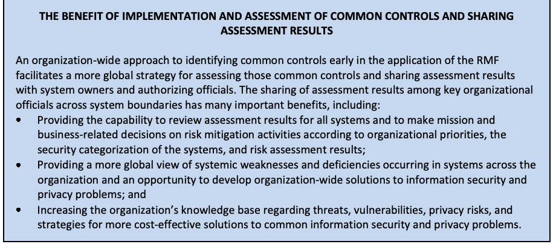
共通管理策の実装と評価、および評価結果の共有による利点
An organization-wide approach to identifying common controls early in the application of the RMF facilitates a more global strategy for assessing those common controls and sharing assessment results with system owners and authorizing officials. The sharing of assessment results among key organizational officials across system boundaries has many important benefits, including:
RMF の適用の初期段階で、組織全体として共通管理策を識別する方法をとると、それらの共通管理策を評価し、評価結果をシステム所有者や認可権限者と共有する、より全体的な戦略を進めやすくなる。システムの境界を越えて組織の主要な幹部の間で評価結果を共有することには、次のような多くの重要な利点がある。
•Providing the capability to review assessment results for all systems and to make mission and business-related decisions on risk mitigation activities according to organizational priorities, the security categorization of the systems, and risk assessment results;
•すべてのシステムの評価結果を確認し、組織の優先順位、システムのセキュリティ分類、リスクアセスメントの結果に基づいて、リスク低減活動に関する任務および業務上の意思決定を行えるようにする。
•Providing a more global view of systemic weaknesses and deficiencies occurring in systems across the organization and an opportunity to develop organization-wide solutions to information security and privacy problems; and
•組織内のシステムに生じている体系的な弱点や欠陥をより全体的に把握できるようにし、情報セキュリティとプライバシーの問題に対する組織全体の解決策を策定する機会を提供する。
•Increasing the organization’s knowledge base regarding threats, vulnerabilities, privacy risks, and strategies for more cost-effective solutions to common information security and privacy problems.
•脅威、脆弱性、プライバシーリスク、および共通する情報セキュリティ・プライバシーの問題に対するより費用対効果の高い解決策に関する、組織の知識基盤を拡充する。
Organizations can also promote a more focused and cost-effective assessment process by developing specific assessment procedures that are tailored to their specific environments of operation and requirements (instead of relegating assessment procedure development tasks to individual control assessors or assessment teams) and by providing organization-wide tools, templates, and techniques to support more consistent assessments throughout the organization. 16
組織は、（評価手順の策定作業を個々の管理策評価者や評価チームに委ねるのではなく）自組織の運用環境および要件に合わせてテーラリングした具体的な評価手順を策定し、組織全体でより一貫した評価を支援する全組織的なツール、テンプレート、および技法を提供することによって、より焦点を絞った費用対効果の高い評価プロセスを促進することもできる。16
The roles responsible for conducting control assessments may include system owners, common control providers, system security and privacy officers, independent assessors, auditors, and Inspectors General with oversight by the authorizing official(s).17 There is also significant involvement in the assessment process of other parties within the organization who have a vested interest in the outcome of assessments. Other interested parties include mission and business owners and information owners/stewards (when those roles are filled by someone other than the system owner). It is imperative that system owners and common control providers identify and coordinate with other parties in the organization that have an interest in control assessments to help ensure that the organization’s core missions and business functions are adequately addressed in the assessment of security and privacy controls.
管理策のアセスメントの実施に責任を負う役割には、システムオーナー、共通管理策提供者、システムセキュリティ責任者およびシステムプライバシー責任者、独立したアセッサー、監査人、ならびに監察総監が含まれ、これらは認可権限者による監督を受ける。17また、アセスメントの結果に利害関係を持つ組織内の他の関係者も、アセスメントプロセスに大きく関与する。その他の利害関係者には、ミッションオーナーおよびビジネスオーナー、ならびに情報オーナー／情報管理者（これらの役割をシステムオーナー以外の者が担う場合）が含まれる。システムオーナーおよび共通管理策提供者は、セキュリティ管理策およびプライバシー管理策のアセスメントにおいて組織の中核的なミッションおよび業務機能が適切に扱われるよう、管理策のアセスメントに関心を持つ組織内の他の関係者を特定し、それらと調整することが不可欠である。
注意事項
Organizations carefully consider the potential impacts of employing the assessment procedures defined in this publication when assessing the security and privacy controls in operational systems. Certain assessment procedures – particularly those that directly impact the operation or function of the hardware, software, or firmware components of a system – may inadvertently affect the routine processing, transmission, or storage of information that supports organizational missions or business functions. For example, a critical system component may be taken offline for assessment purposes, or a component may suffer a fault or failure during the assessment process. Organizations take the necessary precautions to ensure that organizational missions and business functions continue to be supported by systems and that any potential impacts to operational effectiveness resulting from assessment activities are considered in advance.
組織は、運用中のシステムのセキュリティ・プライバシー管理策を評価する際に、本刊行物に定める評価手順を用いることによる潜在的な影響を慎重に検討する。特定の評価手順、とりわけシステムのハードウェア、ソフトウェア、ファームウェアの各構成要素の運用や機能に直接影響を及ぼす手順は、組織の任務や業務機能を支える情報の日常的な処理、送信、保存に、意図せず影響を与えるおそれがある。たとえば、評価のために重要なシステム構成要素をオフラインにする場合や、評価の過程で構成要素に不具合や障害が生じる場合がある。組織は、システムによって組織の任務と業務機能への支援が引き続き行われるよう、また評価活動に起因して運用の有効性に及ぶおそれのある影響をあらかじめ検討するよう、必要な予防措置をとる。
2.3 BUILDING AN EFFECTIVE ASSURANCE CASE
2.3 効果的な保証ケースの構築
Building an effective assurance case18 for security and privacy control effectiveness is a process that involves compiling evidence from a variety of activities conducted during the system development life cycle that the controls employed in the system are implemented correctly, operating as intended, and producing the desired outcome with respect to meeting the security and privacy requirements of the system and the organization and presenting the evidence in a manner that decision makers are able to use effectively in making risk-based decisions about the operation or use of the system (i.e., to manage risk). The evidence described above comes from the implementation of the security and privacy controls in the system and inherited by the system (i.e., common controls) and from the assessments of that implementation. Ideally, the assessor builds on previously developed materials that started with the specification of the organization’s information security and privacy needs and was further developed during the design, development, and implementation of the system. The materials developed while implementing security and privacy throughout the life cycle of the system provide the initial evidence for an assurance case.
セキュリティ管理策およびプライバシー管理策の有効性について効果的な保証ケース18を構築することは、次の二つを含むプロセスである。一つは、システムで採用されている管理策が正しく実装され、意図したとおりに動作し、システムおよび組織のセキュリティ要件とプライバシー要件を満たすという点で望ましい結果を生み出していることを示す証拠を、システム開発ライフサイクルの中で実施されるさまざまな活動から収集することである。もう一つは、その証拠を、システムの運用または使用に関するリスクに基づく判断（すなわちリスク管理）を行う際に意思決定者が効果的に利用できる形で提示することである。上記の証拠は、システムに実装されたセキュリティ管理策およびプライバシー管理策、ならびにシステムが継承する管理策（すなわち共通管理策）の実装と、その実装のアセスメントから得られる。理想的には、アセッサーは、組織の情報セキュリティおよびプライバシーのニーズの規定に始まり、システムの設計、開発、実装の過程でさらに作り込まれた既存の資料を土台とする。システムのライフサイクル全体を通じてセキュリティとプライバシーを実装する中で作成された資料は、保証ケースの最初の証拠となる。
During the assessment process, assessors obtain the evidence needed to allow the appropriate organizational officials to make objective determinations about the effectiveness of the security and privacy controls and the overall security and privacy state of the system. The assessment evidence needed to make such determinations can be obtained from a variety of sources, including information technology product and system assessments and – in the case of privacy assessments – documentation such as privacy impact assessments and Privacy Act system of record notices. Product assessments (also known as product testing, evaluation, and validation) are typically conducted by independent, third-party testing organizations. Assessments examine the security and privacy functions of products and established configuration settings. Assessments can be conducted to demonstrate compliance with industry, national, or international information security and privacy standards and developer/vendor claims. Since many information technology products are assessed by commercial testing organizations and then subsequently deployed in millions of systems, product assessments can be carried out at a greater level of depth and provide deeper insights into the security and privacy capabilities of the particular products.
評価プロセスにおいて、評価者は、セキュリティ管理策およびプライバシー管理策の有効性ならびにシステム全体のセキュリティ状態・プライバシー状態について、組織の適切な担当者が客観的に判断できるように必要な証拠を取得する。この判断に必要な評価証拠は、さまざまな情報源から得られる。これには情報技術製品およびシステムの評価が含まれ、プライバシー評価では、プライバシー影響評価やPrivacy Actに基づくシステム記録通知などの文書も含まれる。製品評価（製品の試験、評価、妥当性確認とも呼ばれる）は通常、独立した第三者試験機関が実施する。評価では製品のセキュリティ・プライバシー機能および確立済みの構成設定を調査する。業界、国内または国際的な情報セキュリティ・プライバシー標準への準拠や、開発者／ベンダーの主張を実証するために評価を実施できる。多くの情報技術製品は商用試験機関による評価後、数百万のシステムに導入されるため、製品評価はより深いレベルで実施でき、個々の製品のセキュリティ・プライバシー能力に関する深い知見をもたらす。
System and common control assessments are typically conducted by system developers, system integrators, system owners, common control providers, assessors, auditors, Inspectors General, and organizational information security and privacy personnel. The assessors or assessment teams bring together available information about the system or common control, such as the results from individual component product assessments, information in the system security and privacy plans, other system/common control documentation, or previous assessment results, and conduct additional system-level or common control assessments using a variety of methods and techniques. System and common control assessments are used to compile and evaluate the evidence needed by organizational officials to determine how effectively the security and privacy controls employed in systems mitigate risks to organizational operations and assets, individuals, other organizations, and the Nation. The results of assessments conducted using system-specific and organization-specific assessment procedures derived from the guidelines in this publication contribute to compiling the necessary evidence to determine security and privacy control effectiveness in accordance with the assurance requirements documented in security and privacy plans.
システムおよび共通管理策の評価は通常、システム開発者、システムインテグレーター、システム所有者、共通管理策提供者、評価者、監査人、監察総監、組織の情報セキュリティ・プライバシー担当者が実施する。評価者または評価チームは、個々の構成要素製品の評価結果、システムセキュリティ・プライバシー計画の情報、その他のシステム／共通管理策関連文書、過去の評価結果など、システムまたは共通管理策について入手可能な情報を集め、さまざまな方法・技法を用いて追加のシステムレベル評価または共通管理策評価を行う。システムおよび共通管理策の評価では、システムに導入されたセキュリティ管理策およびプライバシー管理策が、組織の運用・資産、個人、他の組織、国家へのリスクをどの程度緩和しているかを組織の担当者が判断するために必要な証拠を取りまとめて評価する。本刊行物の指針から導出されたシステム固有・組織固有の評価手順を用いて実施する評価結果は、セキュリティ計画およびプライバシー計画に記録された保証要件に従い、管理策の有効性を判断するために必要な証拠の収集に役立つ。
Assurance Evidence from Developmental and Operational Activities
開発活動および運用活動から得られる保証の証拠
Organizations obtain security and privacy assurance by the actions taken by system developers, implementers, operators, maintainers, and assessors. Actions by individuals and/or groups during the development/operation of systems produce security and privacy evidence that contributes to the assurance, or measures of confidence, in the security and privacy functionality needed to deliver the security and privacy capability. The depth and coverage of these actions (as described in Appendix C) also contribute to the efficacy of the evidence and measures of confidence. The evidence produced by developers, implementers, operators, assessors, and maintainers during the system development life cycle (e.g., design/development artifacts and assessment results) contributes to the understanding of the effectiveness of security and privacy controls implemented by organizations.
組織は、システム開発者、実装者、運用者、保守担当者、評価者が行う活動を通じて、セキュリティおよびプライバシーの保証を得る。システムの開発・運用中に個人および／またはグループが行う活動から、セキュリティおよびプライバシーの証拠が得られる。この証拠は、セキュリティ・プライバシー能力を実現するために必要なセキュリティ・プライバシー機能に対する保証、すなわち確信度の尺度に寄与する。これらの活動の深さおよび網羅性（付録Cで説明する）も、証拠および確信度の尺度の有効性に寄与する。システム開発ライフサイクル中に開発者、実装者、運用者、評価者、保守担当者が作成する証拠（例：設計・開発成果物、評価結果）は、組織が実装したセキュリティ管理策およびプライバシー管理策の有効性の理解に役立つ。
The strength of the security and privacy functionality19 plays an important part in achieving the desired capabilities and subsequently satisfying the security and privacy requirements of organizations. System developers can increase the strength of security and privacy functionality by employing well-defined security and privacy policies and procedures, structured and rigorous design and development techniques, and sound system, security, and privacy engineering techniques as part of the system development process. The artifacts generated by development activities (e.g., functional specifications, system design documentation, and the results of testing and code analysis) can provide important evidence that systems and their components are more reliable and trustworthy. Security and privacy evidence can also be generated from testing conducted by independent, third-party assessment organizations and other assessment activities conducted by government and private sector organizations.20
セキュリティ機能およびプライバシー機能の強度19は、望ましい能力を実現し、ひいては組織のセキュリティ要件およびプライバシー要件を満たすうえで重要な役割を果たす。システム開発者は、システム開発プロセスの一環として、明確に定義されたセキュリティおよびプライバシーのポリシーと手順、構造化された厳密な設計・開発技法、ならびに健全なシステムエンジニアリング、セキュリティエンジニアリング、プライバシーエンジニアリングの技法を用いることで、セキュリティ機能およびプライバシー機能の強度を高めることができる。開発活動によって生成される成果物（例えば、機能仕様、システム設計文書、テストおよびコード解析の結果）は、システムとそのコンポーネントの信頼性と信用性がより高いことを示す重要な証拠となり得る。セキュリティおよびプライバシーの証拠は、独立した第三者のアセスメント機関が実施するテストや、政府機関および民間組織が実施するその他のアセスメント活動からも生成できる。20
In addition to the evidence produced in the development environment, organizations can produce evidence from the operational environment that contributes to the assurance of functionality and security and privacy capabilities. Operational evidence includes records of remediation actions, the results of security incident reporting (including breaches involving personally identifiable information), and the results of organizational continuous monitoring activities. Such evidence helps determine the effectiveness of deployed security and privacy controls, changes to systems and environments of operation, and compliance with legislation, policies, directives, regulations, and standards. Security and privacy evidence – whether obtained from development or operational activities – helps organizations determine the extent to which their systems are implemented correctly, operating as intended, and producing the desired outcome with respect to meeting stated security and privacy requirements, thus providing greater assurance in the system’s security and privacy capabilities.
開発環境で作成される証拠に加え、組織は運用環境からも機能およびセキュリティ・プライバシー能力の保証に役立つ証拠を作成できる。運用証拠には、是正措置の記録、セキュリティインシデント報告（個人を特定できる情報に関する侵害を含む）の結果、組織の継続的監視活動の結果が含まれる。このような証拠は、導入済みの管理策、システムおよび運用環境の変更、法令・方針・指令・規則・標準への準拠の有効性を判断するのに役立つ。開発活動または運用活動から得たセキュリティ・プライバシー証拠は、システムが正しく実装され、意図どおりに動作し、明示されたセキュリティ要件およびプライバシー要件を満たす望ましい結果を生み出している程度の判断に役立ち、システムのセキュリティ・プライバシー能力への保証を高める。
The depth and coverage of security and privacy evidence can affect the level of assurance in the functionality implemented. Depth and coverage are attributes associated with assessment methods and the generation of security and privacy evidence.21 Assessment methods can be applied to support developmental and operational assurance. For developmental assurance, depth is associated with the rigor, level of detail, and formality of the artifacts produced during system design and development. The level of detail available in development artifacts can affect the type of testing, evaluation, and analysis conducted during the system development life cycle (e.g., basic testing, comprehensive testing, and focused testing, static/dynamic analysis). For operational assurance, the depth attribute addresses the rigor and level of detail for the assessment. In contrast, the coverage attribute is associated with the assessment methods employed during development and operations, addressing the scope and breadth of assessment objects included in the assessments (e.g., number and types of tests conducted on source code).
セキュリティおよびプライバシーの証拠の深さとカバレッジは、実装された機能に対する保証のレベルに影響し得る。深さとカバレッジは、アセスメント方法およびセキュリティとプライバシーの証拠の生成に関連付けられた属性である。21アセスメント方法は、開発時の保証と運用時の保証を支援するために適用できる。開発時の保証では、深さは、システムの設計および開発の間に作成される成果物の厳密さ、詳細度、形式性に関連する。開発成果物で得られる詳細度は、システム開発ライフサイクルの中で実施されるテスト、評価、分析の種類（例えば、基本テスト、包括的テスト、重点テスト、静的／動的解析）に影響し得る。運用時の保証では、深さの属性はアセスメントの厳密さと詳細度を扱う。これに対し、カバレッジの属性は、開発時および運用時に採用されるアセスメント方法に関連し、アセスメントに含まれるアセスメント対象の範囲と幅（例えば、ソースコードに対して実施されるテストの数と種類）を扱う。
2.4 ASSESSMENT PROCEDURES: ASSESSMENT OBJECTS, METHODS AND OBJECTIVES
2.4 アセスメント手順：アセスメント対象、方法、および目的
An assessment procedure consists of a set of assessment objectives, each with an associated set of potential assessment methods and assessment objects. An assessment objective includes one or more determination statements related to the [SP 800-53] control under review. The determination statements are linked to the content of the control (i.e., the security and privacy control functionality) to ensure the traceability of assessment results back to the fundamental control requirements. The application of an assessment procedure to a control produces assessment findings.22 Assessment findings reflect or are subsequently used to help determine the overall effectiveness of the control and help the authorizing official make an informed, risk-based decision on whether to place the system into operation or continue its operation.
アセスメント手順は、一連のアセスメント目的から構成され、各目的には、候補となるアセスメント方法とアセスメント対象の組が関連付けられている。アセスメント目的には、レビュー対象の[SP 800-53]管理策に関連する一つ以上の判定文が含まれる。判定文は管理策の内容（すなわち、セキュリティ管理策およびプライバシー管理策の機能）に結び付けられており、これによりアセスメント結果を基本的な管理策要件まで遡って追跡できるようにする。管理策にアセスメント手順を適用すると、アセスメント所見が得られる。22アセスメント所見は、管理策の全体的な有効性を反映するか、その判定を支援するために後で使用され、認可権限者がシステムの運用を開始するか、または運用を継続するかについて、十分な情報に基づくリスクベースの判断を下すのを支援する。
2.4.1 ASSESSMENT OBJECTS
2.4.1 評価対象
Assessment objects identify the specific items being assessed as part of a given control and include specifications, mechanisms, activities, and individuals. Specifications are the document-based artifacts (e.g., policies, procedures, plans, system security and privacy requirements, functional specifications, architectural designs) associated with a system or common control. Mechanisms are the specific hardware, software, or firmware safeguards and countermeasures employed within a system or common control.23 Activities are the specific protection-related actions supporting a system or common control that involve people (e.g., conducting system backup operations, monitoring network traffic, exercising a contingency plan). Individuals or groups of individuals are people applying the specifications, mechanisms, or activities described above.
アセスメント対象は、特定の管理策の一部としてアセスメントされる具体的な項目を特定するものであり、仕様、メカニズム、活動、および個人が含まれる。仕様とは、システムまたは共通管理策に関連する文書ベースの成果物（例えば、ポリシー、手順、計画、システムのセキュリティ要件およびプライバシー要件、機能仕様、アーキテクチャ設計）である。メカニズムとは、システムまたは共通管理策の中で採用されている具体的なハードウェア、ソフトウェア、またはファームウェアによる保護手段および対抗策である。23活動とは、システムまたは共通管理策を支える、人が関与する具体的な保護関連の行為（例えば、システムのバックアップ作業の実施、ネットワークトラフィックの監視、緊急時対応計画の演習）である。個人または個人の集団とは、上記の仕様、メカニズム、または活動を適用する人々である。
2.4.2 ASSESSMENT METHODS
2.4.2 評価方法
Assessment methods define the nature of the assessor actions and include examine, interview, and test.
評価方法は、評価者が行う作業の性質を定め、「調査」「面談」「試験」を含む。
•The examine method is the process of reviewing, inspecting, observing, studying, or analyzing one or more assessment objects (i.e., specifications, mechanisms, or activities) to facilitate assessor understanding, achieve clarification, or obtain evidence.
•調査方法とは、評価者の理解を促し、明確化を図り、または証拠を取得するため、1つ以上の評価対象（すなわち仕様、メカニズム、活動）を審査、検査、観察、調査または分析するプロセスである。
•The interview method is the process of holding discussions with individuals or groups of individuals within an organization to facilitate assessor understanding, achieve clarification, or obtain evidence.
•面談方法とは、評価者の理解を促し、明確化を図り、または証拠を取得するため、組織内の個人またはグループと話し合うプロセスである。
•The test method is the process of exercising one or more assessment objects (i.e., activities or mechanisms) under specified conditions to compare the actual state of the object to the desired state or expected behavior of the object.
•試験方法とは、指定された条件の下で1つ以上の評価対象（すなわち活動またはメカニズム）を動作させ、その実際の状態を対象の望ましい状態または期待される動作と比較するプロセスである。
In all three assessment methods, the results are used to make specific determinations called for in the determination statements and thereby achieve the objectives for the assessment procedure. A complete description of assessment methods and assessment objects is provided in Appendix C.
3つの評価方法すべてにおいて、結果を用いて判定文が求める具体的な判定を行い、それによって評価手順の目的を達成する。評価方法および評価対象の完全な説明は付録Cに記載されている。
Assessment methods have a set of associated attributes – depth and coverage – which help define the level of effort for the assessment. The attributes are hierarchical in nature, providing the means to define the rigor and scope of the assessment for the increased assurances that may be needed for some systems.
評価方法には、深さおよび網羅性という関連属性があり、評価に必要な作業量を定義するのに役立つ。これらの属性は階層的であり、一部のシステムで必要となる可能性のある保証を高めるために、評価の厳密さおよび範囲を定義する手段となる。
•The depth attribute addresses the rigor and level of detail in the examination, interview, and testing processes. Values for the depth attribute include basic, focused, and comprehensive.
•深さ属性は、調査、面談および試験のプロセスにおける厳密さと詳細度を示す。深さ属性の値には、基本、重点的、包括的がある。
•The coverage attribute addresses the scope or breadth of the examination, interview, and testing processes, including the number and types of specifications, mechanisms, and activities to be examined or tested and individuals to be interviewed. Similar to the depth attribute, values for the coverage attribute include basic, focused, and comprehensive.
•網羅性属性は、調査、面談および試験のプロセスの範囲または広さを示す。これには、調査・試験する仕様、メカニズム、活動の数と種類、および面談する個人が含まれる。深さ属性と同様に、網羅性属性の値には、基本、重点的、包括的がある。
The appropriate depth and coverage attribute values for a particular assessment method are based on the assurance requirements specified by the organization and are an important component of protecting information commensurate with risk (i.e., risk management). As assurance requirements increase with regard to the development, implementation, and operation of controls within or inherited by the system, the rigor and scope of the assessment activities (as reflected in the selection of assessment methods and objects and the assignment of depth and coverage attribute values) tend to increase as well.24 Appendix C provides a detailed description of assessment method attributes and attribute values.
特定のアセスメント方法における深さとカバレッジの属性の適切な値は、組織が規定する保証要件に基づくものであり、リスクに見合った情報保護（すなわちリスク管理）の重要な要素である。システム内の管理策またはシステムが継承する管理策の開発、実装、運用に関する保証要件が高まるにつれて、アセスメント活動の厳密さと範囲（アセスメント方法と対象の選択、および深さとカバレッジの属性値の割り当てに反映される）も高まる傾向がある。24付録Cでは、アセスメント方法の属性と属性値について詳しく説明する。
2.4.3 ASSESSMENT OBJECTIVES
2.4.3 評価目的
The assessment objectives are numbered sequentially, first in accordance with the numbering scheme in [SP 800-53] and, subsequently, where necessary to further granularize the security or privacy control requirements to facilitate assessment. Square bracketed sequential numbers, as opposed to parentheses, are used to indicate that the control from SP 800-53 has been further granularized (e.g., AC-17a.[01], AC-17a.[02], AC-17a.[03]).
評価目的には、まず[SP 800-53]の番号付け方式に従い、必要に応じて評価を容易にするためにセキュリティまたはプライバシー管理策要件をさらに細分化した番号を順に付ける。丸括弧ではなく角括弧で囲まれた連番は、SP 800-53の管理策がさらに細分化されていることを示す（例：AC-17a.[01]、AC-17a.[02]、AC-17a.[03]）。
Figure 1 illustrates an example assessment procedure developed to assess the effectiveness of control AC-17. The assessment objective for AC-17 is derived from the base control statement described in [SP 800-53]. AC-17a.[01] is an example of a determination statement for a control item that is further granularized from SP 800-53. AC-17b. is an example of a determination statement for a control item that corresponds directly with the SP 800-53 control. Potential assessment methods and objects are added to each assessment procedure. Not all assessment procedures include all three potential assessment methods (i.e., examine, interview, test). The organization determines the assessment methods needed to provide the level of assurance required by the organization.
図1は、AC-17管理策の有効性を評価するために作成された評価手順の例を示す。AC-17の評価目的は、[SP 800-53]に記載されている基本管理策文から導出される。AC-17a.[01]は、SP 800-53の管理策項目をさらに細分化した判定文の例である。AC-17b.は、SP 800-53の管理策に直接対応する管理策項目についての判定文の例である。各評価手順には、潜在的な評価方法および評価対象を追加する。すべての評価手順が、潜在的な3つの評価方法（調査、面談、試験）をすべて含むわけではない。必要な保証水準を得るのに必要な評価方法は、組織が決定する。
| AC-17 | REMOTE ACCESS |
| ASSESSMENT OBJECTIVE: Determine if: | |
| AC-17a.[01] | usage restrictions are established and documented for each type of remote access allowed; |
| AC-17a.[02] | configuration/connection requirements are established and documented foreach type of remote access allowed; |
| AC-17a.[03] | implementation guidance is established and documented for each type of remote access allowed; |
| AC-17b. | each type of remote access to the system is authorized prior to allowing such connections. |
| POTENTIAL ASSESSMENT METHODS AND OBJECTS: | |
| AC-17-Examine | [SELECT FROM: Access control policy; procedures addressing remote access implementation and usage (including restrictions); configuration management plan; system configuration settings and associated documentation; remote access authorizations; system audit records; system security plan; other relevant documents or records]. |
| AC-17-Interview | [SELECT FROM: Organizational personnel with responsibilities for managing remote access connections; system/network administrators; organizational personnel with information security responsibilities]. |
| AC-17-Test | [SELECT FROM: Remote access management capability for the system]. |
Figure annotations (with referenced items):
- AC-17a.[01]: Control further granularized from SP 800-53.
- AC-17b.: Corresponds directly with SP 800-53 control.
原本PDFの抜粋画像
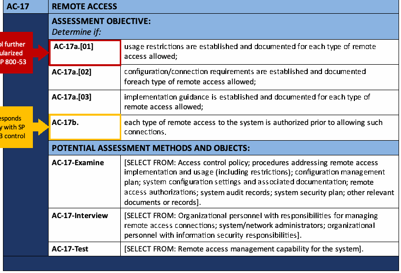
| AC-17 | リモートアクセス |
| 評価目的：次を判定する。 | |
| AC-17a.[01] | 許可するリモートアクセスの種類ごとに、利用制限が確立され文書化されている。 |
| AC-17a.[02] | 許可するリモートアクセスの種類ごとに、構成要件／接続要件が確立され文書化されている。 |
| AC-17a.[03] | 許可するリモートアクセスの種類ごとに、実装指針が確立され文書化されている。 |
| AC-17b. | システムへの各種リモートアクセスについて、接続を許可する前に承認されている。 |
| 潜在的な評価方法および評価対象： | |
| AC-17-調査 | [次から選択：アクセス制御方針、リモートアクセスの実装と利用（制限を含む）に関する手順、構成管理計画、システム構成設定および関連文書、リモートアクセス承認、システム監査記録、システムセキュリティ計画、その他の関連文書または記録]。 |
| AC-17-面談 | [次から選択：リモートアクセス接続の管理責任を担う組織要員、システム／ネットワーク管理者、情報セキュリティ責任を担う組織要員]。 |
| AC-17-試験 | [次から選択：システムのリモートアクセス管理機能]。 |
図中の注釈（参照先を明記）：
- AC-17a.[01]：SP 800-53の管理策をさらに細分化したもの。
- AC-17b.：SP 800-53の管理策に直接対応するもの。
FIGURE 1: ASSESSMENT PROCEDURE FOR A CONTROL
図1：管理策の評価手順
Another example of granularization to support control assessments is the case of a privacy control requirement not being applicable to a particular system (e.g., the system does not process personally identifiable information); assessors can disregard such non-applicable requirements and still find that the control is satisfied. Figure 2 provides an example of control CM-04[25], which is further granularized to address security impacts in CM-04[01] and privacy impacts in CM-04[02].
管理策のアセスメントを支援するための細分化のもう一つの例は、プライバシー管理策の要件が特定のシステムに適用されない場合（例えば、そのシステムが個人を特定できる情報を処理しない場合）である。アセッサーは、そのような適用されない要件を考慮から除外したうえで、管理策が満たされていると判断できる。図2は管理策CM-04[25]の例を示しており、この管理策はさらに細分化され、CM-04[01]でセキュリティへの影響を、CM-04[02]でプライバシーへの影響を扱っている。
| CM-04 | IMPACT ANALYSES |
| ASSESSMENT OBJECTIVE: Determine if: | |
| CM-04[01] | changes to the system are analyzed to determine potential security impacts prior to change implementation; |
| CM-04[02] | changes to the system are analyzed to determine potential privacy impacts prior to change implementation. |
| POTENTIAL ASSESSMENT METHODS AND OBJECTS: | |
| CM-04-Examine | [SELECT FROM: Configuration management policy; procedures addressing security impact analyses for changes to the system; procedures addressing privacy impact analyses for changes to the system; configuration management plan; security impact analysis documentation; privacy impact analysis documentation; privacy impact assessment; privacy risk assessment documentation, system design documentation; analysis tools and associated outputs; change control records; system audit records; system security plan; privacy plan; other relevant documents or records]. |
| CM-04-Interview | [SELECT FROM: Organizational personnel with responsibility for conducting security impact analyses; organizational personnel with responsibility for conducting privacy impact analyses; organizational personnel with information security and privacy responsibilities; system developer; system/network administrators; members of change control board or similar]. |
| CM-04-Test | [SELECT FROM: Organizational processes for security impact analyses; organizational processes for privacy impact analyses]. |
Figure annotations (with referenced items):
- CM-04[02]: Granularized to address privacy impacts separate from security impacts.
原本PDFの抜粋画像
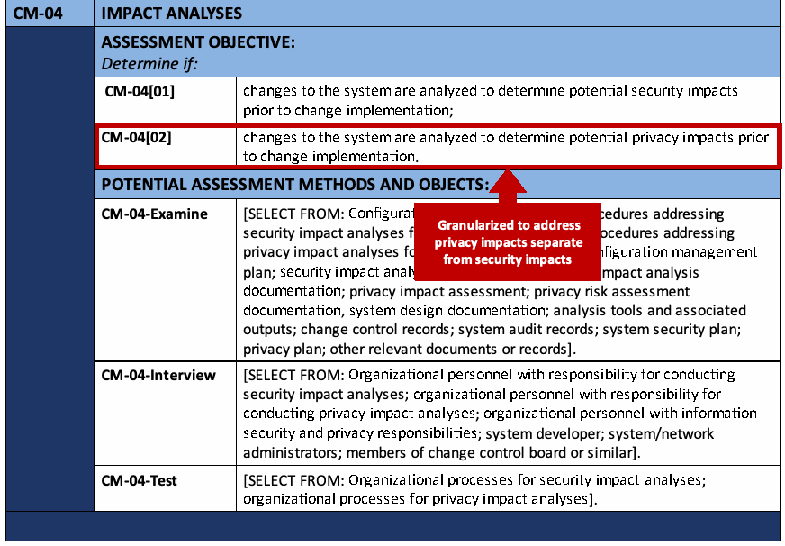
| CM-04 | 影響分析 |
| 評価目的：次を判定する。 | |
| CM-04[01] | システム変更の実装前に、セキュリティへの潜在的影響を判断するためシステム変更を分析している。 |
| CM-04[02] | システム変更の実装前に、プライバシーへの潜在的影響を判断するためシステム変更を分析している。 |
| 潜在的な評価方法および評価対象： | |
| CM-04-調査 | [次から選択：構成管理方針、システム変更に関するセキュリティ影響分析の手順、システム変更に関するプライバシー影響分析の手順、構成管理計画、セキュリティ影響分析文書、プライバシー影響分析文書、プライバシー影響評価、プライバシーリスク評価文書、システム設計文書、分析ツールおよび関連する出力、変更管理記録、システム監査記録、システムセキュリティ計画、プライバシー計画、その他の関連文書または記録]。 |
| CM-04-面談 | [次から選択：セキュリティ影響分析の実施責任者、プライバシー影響分析の実施責任者、情報セキュリティおよびプライバシー責任を担う組織要員、システム開発者、システム／ネットワーク管理者、変更管理委員会または同様の組織のメンバー]。 |
| CM-04-試験 | [次から選択：組織のセキュリティ影響分析プロセス、組織のプライバシー影響分析プロセス]。 |
図中の注釈（参照先を明記）：
- CM-04[02]：セキュリティへの影響とは別に、プライバシーへの影響を扱うよう細分化したもの。
FIGURE 2. ASSESSMENT PROCEDURE FOR A CONTROL FURTHER GRANULARIZED TO FACILITATE ASSESSMENT
図2：評価を容易にするため、さらに細分化された管理策の評価手順
Additionally, determination statements for organization-defined parameters (ODPs) are listed first and separately from the determination statements for each control item within each control or control enhancement to enable the assessor to quickly determine whether the ODPs are defined or selected by the organization. ODPs appear first in the determination statements, and each include a unique identifier associated with the control to facilitate a more efficient and streamlined assessment. ODPs include:
さらに、組織定義パラメータ（ODP）に関する判定文は、評価者が組織によってODPが定義または選択されているかをすばやく確認できるよう、各管理策または管理策強化策の各管理策項目についての判定文とは分けて先頭に列挙する。ODPは判定文の先頭に置き、評価をより効率的かつ簡潔に行えるよう、各ODPには管理策に関連付けられた一意の識別子を含める。ODPには次のものが含まれる。
•Assignment operations, where the organization defines a value (e.g., frequency, circumstances, personnel, or roles)
•代入操作：組織が値（例：頻度、状況、担当者または役割）を定義する。
•Selection operations, where the organization selects one or more of the options provided in the ODP
•選択操作：組織がODPに提示された選択肢から1つ以上を選択する。
The ODP numbering convention is “XX-nn_ODP”, where XX is the two-character control family abbreviation, and nn is the control number (with a leading zero for single digits) followed by
ODPの番号付け規則は「XX-nn_ODP」である。XXは2文字の管理策ファミリー略称、nnは管理策番号（1桁の場合は先頭にゼロを付ける）を表し、その後に
Figure 3 provides an example of an assessment procedure for control CM-02 that includes two assignment operations: CM-02_ODP[01] and CM-02_ODP[02].
図3は、代入操作を2つ含むCM-02管理策の評価手順例を示す。代入操作はCM-02_ODP[01]およびCM-02_ODP[02]である。
| CM-02 | BASELINE CONFIGURATION |
| ASSESSMENT OBJECTIVE: Determine if: | |
| CM-02_ODP[01] | the frequency of baseline configuration review and update is defined; |
| CM-02_ODP[02] | the circumstances requiring baseline configuration review and update are defined; |
| CM-02a.[01] | a current baseline configuration of the system is developed and documented; |
| CM-02a.[02] | a current baseline configuration of the system is maintained under configuration control; |
| CM-02b.01 | the baseline configuration of the system is reviewed and updated <CM-02_ODP[01] frequency>; |
| CM-02b.02 | the baseline configuration of the system is reviewed and updated when required due to <CM-02_ODP[02] circumstances>; |
| CM-02b.03 | the baseline configuration of the system is reviewed and updated when system components are installed or upgraded. |
| POTENTIAL ASSESSMENT METHODS AND OBJECTS: | |
| CM-02-Examine | [SELECT FROM: Configuration management policy; procedures addressing the baseline configuration of the system; configuration management plan; enterprise architecture documentation; system design documentation; system security plan; privacy plan; system architecture and configuration documentation; system configuration settings and associated documentation; system component inventory; change control records; other relevant documents or records]. |
| CM-02-Interview | [SELECT FROM: Organizational personnel with configuration management responsibilities; organizational personnel with information security and privacy responsibilities; system/network administrators]. |
| CM-02-Test | [SELECT FROM: Organizational processes for managing baseline configurations; automated mechanisms supporting configuration control of the baseline configuration]. |
Figure annotations (with referenced items):
- CM-02_ODP[02] (identifier): Organization-Defined Parameter (ODP) identifier.
- CM-02_ODP[02] (determination statement): Assignment Statement.
- CM-02b.02, <CM-02_ODP[02] circumstances>: Reference to ODP in determination statement.
原本PDFの抜粋画像
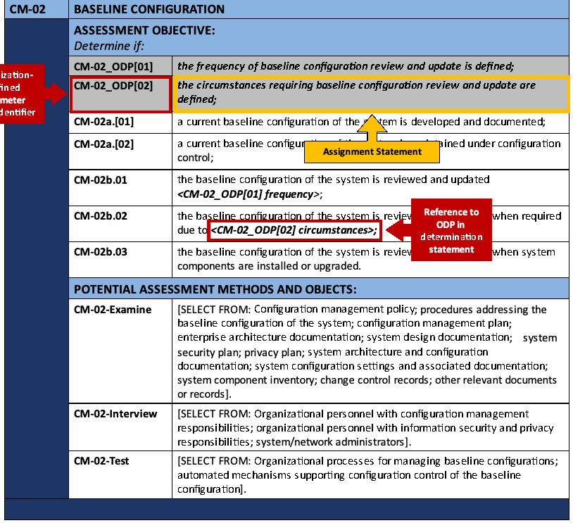
| CM-02 | ベースライン構成 |
| 評価目的：次を判定する。 | |
| CM-02_ODP[01] | ベースライン構成をレビューし更新する頻度が定義されている。 |
| CM-02_ODP[02] | ベースライン構成のレビューと更新が必要となる状況が定義されている。 |
| CM-02a.[01] | システムの最新のベースライン構成が策定され、文書化されている。 |
| CM-02a.[02] | システムの最新のベースライン構成が構成管理下で維持されている。 |
| CM-02b.01 | システムのベースライン構成が<CM-02_ODP[01] 頻度>でレビューされ、更新されている。 |
| CM-02b.02 | <CM-02_ODP[02] 状況>により必要となったときに、システムのベースライン構成がレビューされ、更新されている。 |
| CM-02b.03 | システム構成要素の設置またはアップグレード時に、システムのベースライン構成がレビューされ、更新されている。 |
| 潜在的な評価方法および評価対象： | |
| CM-02-調査 | [次から選択：構成管理方針、システムのベースライン構成に関する手順、構成管理計画、エンタープライズアーキテクチャ文書、システム設計文書、システムセキュリティ計画、プライバシー計画、システムアーキテクチャおよび構成文書、システム構成設定および関連文書、システム構成要素一覧、変更管理記録、その他の関連文書または記録]。 |
| CM-02-面談 | [次から選択：構成管理責任を担う組織要員、情報セキュリティおよびプライバシー責任を担う組織要員、システム／ネットワーク管理者]。 |
| CM-02-試験 | [次から選択：ベースライン構成を管理する組織プロセス、ベースライン構成の構成管理を支援する自動化メカニズム]。 |
図中の注釈（参照先を明記）：
- CM-02_ODP[02]（識別子）：組織定義パラメータ（ODP）の識別子。
- CM-02_ODP[02]（判定文）：代入文。
- CM-02b.02の<CM-02_ODP[02] 状況>：判定文におけるODPへの参照。
FIGURE 3. ASSESSMENT PROCEDURE FOR CONTROL WITH ORGANIZATION-DEFINED PARAMETER: ASSIGNMENT OPERATIONS
図3：組織定義パラメータを含む管理策の評価手順：代入操作
Figure 4 provides an example of an assessment procedure for a control, MP-07, that includes assignment operations and a selection operation. Selection operations include a list of potential parameter values that the organization chooses from and instructions to select one or more parameters. The list of parameter values is identified using braces { }, with each potential parameter value separated with a semicolon. When the ODP for a selection operation is referenced in a subsequent determination statement, the ODP unique identifier and phrase “SELECTED PARAMETER VALUE(S)” is surrounded by < >.
図4は、割り当て操作と選択操作を含む管理策MP-07のアセスメント手順の例を示している。選択操作には、組織が選択する候補パラメータ値のリストと、一つ以上のパラメータを選択するための指示が含まれる。パラメータ値のリストは波括弧 { } で示され、各候補パラメータ値はセミコロンで区切られる。選択操作のODPを後続の判定文で参照する場合、ODPの一意識別子と語句「SELECTED PARAMETER VALUE(S)」を < > で囲む。
| MP-07 | MEDIA USE |
| ASSESSMENT OBJECTIVE: Determine if: | |
| MP-07_ODP[01] | types of system media to be restricted or prohibited from use on systems or system components are defined; |
| MP-07_ODP[02] | one of the following PARAMETER VALUES is selected to be applied on specific types of system media: {restrict; prohibit}; |
| MP-07_ODP[03] | systems or system components on which the use of specific types of system media to be restricted or prohibited are defined; |
| MP-07_ODP[04] | controls to restrict or prohibit the use of specific types of system media on systems or system components are defined; |
| MP-07a. | the use of <MP-07_ODP[01] types of system media> is <MP-07_ODP[02] SELECTED PARAMETER VALUE> on <MP-07_ODP[03] systems or system components> using <MP-07_ODP[04] controls>; |
| MP-07b. | the use of portable storage devices in organizational systems is prohibited when such devices have no identifiable owner. |
| POTENTIAL ASSESSMENT METHODS AND OBJECTS: | |
| MP-07-Examine | [SELECT FROM: System media protection policy; system use policy; procedures addressing media usage restrictions; rules of behavior; system design documentation; system configuration settings and associated documentation; audit records; system security plan; other relevant documents or records]. |
| MP-07-Interview | [SELECT FROM: Organizational personnel with system media use responsibilities; organizational personnel with information security responsibilities; system/network administrators]. |
| MP-07-Test | [SELECT FROM: Organizational processes for media use; automated mechanisms restricting or prohibiting use of system media on systems or system components]. |
Figure annotations (with referenced items):
- MP-07_ODP[02] (identifier): Organization-Defined Parameter (ODP) identifier.
- MP-07_ODP[02] (determination statement): Selection Statement.
- MP-07a., <MP-07_ODP[02] SELECTED PARAMETER VALUE>: Reference to ODP in determination statement.
原本PDFの抜粋画像
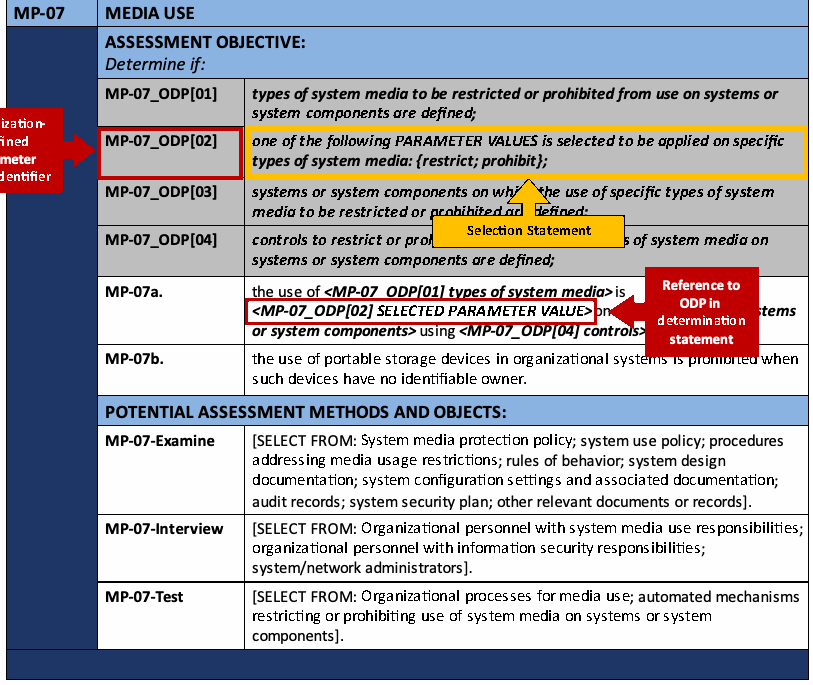
| MP-07 | 媒体の使用 |
| 評価目的：次を判定する。 | |
| MP-07_ODP[01] | システムまたはシステム構成要素での使用を制限または禁止するシステム媒体の種類が定義されている。 |
| MP-07_ODP[02] | 特定の種類のシステム媒体に適用する次のパラメータ値の1つが選択されている：{制限する；禁止する}。 |
| MP-07_ODP[03] | 特定の種類のシステム媒体の使用を制限または禁止する対象となるシステムまたはシステム構成要素が定義されている。 |
| MP-07_ODP[04] | システムまたはシステム構成要素で特定種類のシステム媒体の使用を制限または禁止するための管理策が定義されている。 |
| MP-07a. | <MP-07_ODP[01] システム媒体の種類>の使用が、<MP-07_ODP[03] システムまたはシステム構成要素>において、<MP-07_ODP[04] 管理策>を用いて、<MP-07_ODP[02] 選択されたパラメータ値>に従い制限または禁止されている。 |
| MP-07b. | 所有者を特定できない場合、組織システムでのポータブル記憶装置の使用は禁止されている。 |
| 潜在的な評価方法および評価対象： | |
| MP-07-調査 | [次から選択：システム媒体保護方針、システム利用方針、媒体使用制限に関する手順、行動規範、システム設計文書、システム構成設定と関連文書、監査記録、システムセキュリティ計画、その他の関連文書または記録]。 |
| MP-07-面談 | [次から選択：システム媒体の使用責任を担う組織要員、情報セキュリティ責任を担う組織要員、システム／ネットワーク管理者]。 |
| MP-07-試験 | [次から選択：媒体を使用する組織プロセス、システムまたはシステム構成要素におけるシステム媒体の使用を制限または禁止する自動化メカニズム]。 |
図中の注釈（参照先を明記）：
- MP-07_ODP[02]（識別子）：組織定義パラメータ（ODP）の識別子。
- MP-07_ODP[02]（判定文）：選択文。
- MP-07a.の<MP-07_ODP[02] 選択されたパラメータ値>：判定文におけるODPへの参照。
FIGURE 4. ASSESSMENT PROCEDURE FOR CONTROL WITH ORGANIZATION-DEFINED PARAMETER: SELECTION OPERATION
図4：組織定義パラメータを含む管理策の評価手順：選択操作
Figure 5 provides an example of an assessment procedure for a control, CA-03, that includes an ODP that consists of a selection operation with an embedded assignment operation. The selection operation, CA-03(01)_ODP[01], identifies a list of parameters to choose from, including another ODP. The assignment operation for CA-03(01)_ODP[02] is only defined if the organization selects the ODP from the list of parameters. When the ODP for a selection operation is referenced in a subsequent determination statement, the ODP unique identifier and phrase “SELECTED PARAMETER VALUE(S)” is surrounded by < >. In this scenario, if the embedded assignment operation is selected, it becomes the “SELECTED PARAMETER VALUE(S)”.
図5は、割り当て操作が埋め込まれた選択操作からなるODPを含む管理策CA-03のアセスメント手順の例を示している。選択操作CA-03(01)_ODP[01]は、別のODPを含む、選択対象のパラメータのリストを示す。CA-03(01)_ODP[02]の割り当て操作は、組織がパラメータのリストからそのODPを選択した場合にのみ定義される。選択操作のODPを後続の判定文で参照する場合、ODPの一意識別子と語句「SELECTED PARAMETER VALUE(S)」を < > で囲む。この場合、埋め込まれた割り当て操作が選択されると、それが「SELECTED PARAMETER VALUE(S)」となる。
| CA-03 | INFORMATION EXCHANGE |
| ASSESSMENT OBJECTIVE: Determine if: | |
| CA-03_ODP[01] | one or more of the following PARAMETER VALUES is/are selected: {interconnection security agreements; information exchange security agreements; memoranda of understanding or agreement; service level agreements; user agreements; non-disclosure agreements; <CA-03_ODP[02] type of agreement>}; |
| CA-03_ODP[02] | the type of agreement used to approve and manage the exchange of information is defined (if selected); |
| CA-03_ODP[03] | the frequency at which to review and update agreements is defined; |
| CA-03a. | the exchange of information between system and other systems is approved and managed using <CA-03_ODP[01] SELECTED PARAMETER VALUE(S)>; |
| CA-03b.[01] | the interface characteristics are documented as part of each exchange agreement; |
| CA-03b.[02] | security requirements are documented as part of each exchange agreement; |
| CA-03b.[03] | privacy requirements are documented as part of each exchange agreement; |
| CA-03b.[04] | controls are documented as part of each exchange agreement; |
| CA-03b.[05] | responsibilities for each system are documented as part of each exchange agreement; |
| CA-03b.[06] | the impact level of the information communicated is documented as part of each exchange agreement; |
| CA-03c. | agreements are reviewed and updated <CA-03_ODP[03] frequency>. |
| POTENTIAL ASSESSMENT METHODS AND OBJECTS: | |
| CA-03-Examine | [SELECT FROM: Access control policy; procedures addressing system connections; system and communications protection policy; system interconnection security agreements; information exchange security agreements; memoranda of understanding or agreements; service level agreements; non-disclosure agreements; system design documentation; system configuration settings and associated documentation; system security plan; privacy plan; other relevant documents or records]. |
| CA-03-Interview | [SELECT FROM: Organizational personnel with responsibilities for developing, implementing, or approving system interconnection agreements; organizational personnel with information security and privacy responsibilities; personnel managing the system(s) to which the interconnection security agreement applies]. |
Figure annotations (with referenced items):
- CA-03_ODP[01] (identifier): Organization-Defined Parameter (ODP) identifier.
- CA-03_ODP[01] (determination statement): Selection statement with assignment statement as potential parameter value.
- CA-03_ODP[02] (determination statement): Embedded Assignment Statement, defined only if selected.
- CA-03a., <CA-03_ODP[01] SELECTED PARAMETER VALUE(S)>: Reference to ODP with SELECTED PARAMETER VALUE(S) in determination statement.
原本PDFの抜粋画像
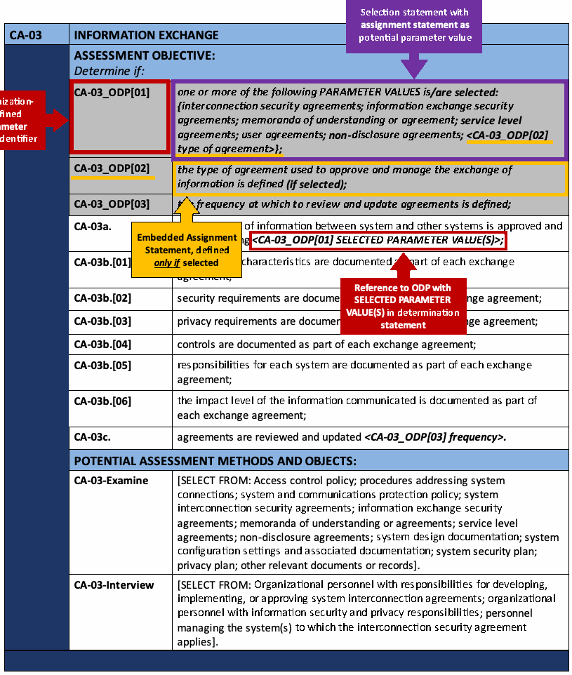
| CA-03 | 情報交換 |
| 評価目的：次を判定する。 | |
| CA-03_ODP[01] | 次のパラメータ値から1つ以上が選択されている：{相互接続セキュリティ合意、情報交換セキュリティ合意、了解覚書または合意覚書、サービスレベル合意、ユーザー合意、秘密保持契約、<CA-03_ODP[02] 合意の種類>}。 |
| CA-03_ODP[02] | 情報交換を承認・管理するために用いる合意の種類が定義されている（選択された場合）。 |
| CA-03_ODP[03] | 合意を見直し更新する頻度が定義されている。 |
| CA-03a. | システムと他のシステムとの間の情報交換が、<CA-03_ODP[01] 選択されたパラメータ値>を用いて承認され、管理されている。 |
| CA-03b.[01] | 各交換合意の一部として、インターフェースの特性が文書化されている。 |
| CA-03b.[02] | 各交換合意の一部として、セキュリティ要件が文書化されている。 |
| CA-03b.[03] | 各情報交換合意の一部としてプライバシー要件が文書化されている。 |
| CA-03b.[04] | 各情報交換合意の一部として管理策が文書化されている。 |
| CA-03b.[05] | 各情報交換合意の一部として各システムの責任が文書化されている。 |
| CA-03b.[06] | 伝達する情報の影響レベルが各情報交換合意の一部として文書化されている。 |
| CA-03c. | <CA-03_ODP[03] 頻度>で合意を見直し、更新している。 |
| 潜在的な評価方法および評価対象： | |
| CA-03-調査 | [次から選択：アクセス制御方針、システム接続に関する手順、システムおよび通信保護方針、システム相互接続セキュリティ合意、情報交換セキュリティ合意、了解覚書または合意覚書、サービスレベル合意、秘密保持契約、システム設計文書、システム構成設定と関連文書、システムセキュリティ計画、プライバシー計画、その他の関連文書または記録]。 |
| CA-03-面談 | [次から選択：システム相互接続合意の策定、実装または承認の責任者、情報セキュリティおよびプライバシー責任を担う組織要員、相互接続セキュリティ合意の適用先システムを管理する担当者]。 |
図中の注釈（参照先を明記）：
- CA-03_ODP[01]（識別子）：組織定義パラメータ（ODP）の識別子。
- CA-03_ODP[01]（判定文）：選択候補となるパラメータ値として代入文を含む選択文。
- CA-03_ODP[02]（判定文）：埋め込まれた代入文。選択された場合にのみ定義する。
- CA-03a.の<CA-03_ODP[01] 選択されたパラメータ値>：判定文における、選択されたパラメータ値を用いたODPへの参照。
FIGURE 5. ASSESSMENT PROCEDURE FOR CONTROL WITH ORGANIZATION-DEFINED PARAMETERS: SELECTION OPERATION WITH EMBEDDED ASSIGNMENT OPERATION
図5：組織定義パラメータを含む管理策の評価手順：代入操作を埋め込んだ選択操作
Although not explicitly noted with each assessment method in the assessment procedure, the attribute values of depth and coverage26 are assigned by the organization and specified within the assessment plan (e.g., the level of rigor for documentation review, the number of similar assessment objects to test). The assessor/assessment team applies the depth and coverage attributes in the execution of the assessment method against an assessment object to provide the level of assurance required by the organization.
アセスメント手順の各アセスメント方法には明示されていないが、深さとカバレッジ26の属性値は組織が割り当て、アセスメント計画の中で規定する（例えば、文書レビューの厳密さのレベル、テストする類似のアセスメント対象の数）。アセッサー／アセスメントチームは、アセスメント対象に対してアセスメント方法を実行する際に深さとカバレッジの属性を適用し、組織が求める保証のレベルを提供する。
If the control has any enhancements as designated by sequential parenthetical numbers (for example, AC-17(01) for the first enhancement for AC-17), assessment objectives are developed for each enhancement using the same process used for the base control. The resulting assessment objectives are numbered sequentially in the same way as the assessment procedure for the base control – first in accordance with the numbering scheme in [SP 800-53] and, subsequently, using bracketed sequential numbers to further apportion control enhancement requirements to facilitate assessments (e.g., AC-17(01), AC-17(02), AC-17(03)).
管理策に、連続する丸括弧付き番号で示される強化策（例：AC-17の最初の強化策であるAC-17(01)）がある場合、基本管理策と同じプロセスで各強化策の評価目的を策定する。評価目的には基本管理策の評価手順と同じ方法で連番を付ける。まず[SP 800-53]の番号付け方式に従い、その後、評価を容易にするため管理策強化要件をさらに分割する角括弧付き連番を用いる（例：AC-17(01)、AC-17(02)、AC-17(03)）。
Figure 6 illustrates an example of an assessment procedure developed to assess the effectiveness of the first enhancement to security control AC-17, AC-17(01).
図6は、セキュリティ管理策AC-17の最初の強化策AC-17(01)の有効性を評価するために作成された評価手順の例を示す。
| AC-17(01) | REMOTE ACCESS | MONITORING AND CONTROL |
| ASSESSMENT OBJECTIVE: Determine if: | |
| AC-17(01)[01] | automated mechanisms are employed to monitor remote access methods; |
| AC-17(01)[02] | automated mechanisms are employed to control remote access methods. |
| POTENTIAL ASSESSMENT METHODS AND OBJECTS: | |
| AC-17(01)-Examine | [SELECT FROM: Access control policy; procedures addressing remote access to the system; system design documentation; system configuration settings and associated documentation; system audit records; system monitoring records; system security plan; other relevant documents or records]. |
| AC-17(01)-Interview | [SELECT FROM: System/network administrators; organizational personnel with information security responsibilities; system developers]. |
| AC-17(01)-Test | [SELECT FROM: Automated mechanisms monitoring and controlling remote access methods]. |
原本PDFの抜粋画像
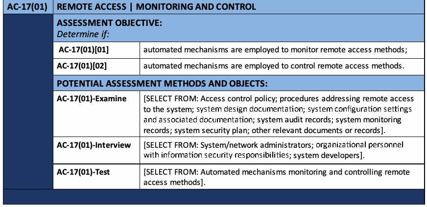
| AC-17(01) | リモートアクセス | 監視および制御 |
| 評価目的：次を判定する。 | |
| AC-17(01)[01] | リモートアクセス方法を監視する自動化メカニズムが使用されている。 |
| AC-17(01)[02] | リモートアクセス方法を制御する自動化メカニズムが使用されている。 |
| 潜在的な評価方法および評価対象： | |
| AC-17(01)-調査 | [次から選択：アクセス制御方針、システムへのリモートアクセスに関する手順、システム設計文書、システム構成設定と関連文書、システム監査記録、システム監視記録、システムセキュリティ計画、その他の関連文書または記録]。 |
| AC-17(01)-面談 | [次から選択：システム／ネットワーク管理者、情報セキュリティ責任を担う組織要員、システム開発者]。 |
| AC-17(01)-試験 | [次から選択：リモートアクセス方法を監視・制御する自動化メカニズム]。 |
FIGURE 6: ASSESSMENT PROCEDURE FOR CONTROL ENHANCEMENT
図6：管理策強化策の評価手順
CHAPTER THREE
第3章
THE PROCESS
プロセス
CONDUCTING EFFECTIVE SECURITY AND PRIVACY CONTROL ASSESSMENTS
効果的なセキュリティ管理策およびプライバシー管理策の評価の実施
This chapter describes the process of assessing the security and privacy controls in organizational systems and environments of operation. The process to assess controls includes:
本章では、組織システムおよび運用環境におけるセキュリティ管理策とプライバシー管理策を評価するプロセスを説明する。管理策の評価プロセスには次が含まれる。
•the activities carried out by organizations and assessors to prepare for security and privacy control assessments;
•セキュリティ・プライバシー管理策評価の準備として組織および評価者が実施する活動。
•the development of security and privacy assessment plans; the conduct of control assessments and the analysis, documentation, and reporting of assessment results; and
•セキュリティ・プライバシー評価計画の策定、管理策評価の実施、評価結果の分析・記録・報告。および
•post-assessment report analysis and follow-on activities.
•評価後の報告書分析と後続活動。
Additionally, this chapter describes assessing security and privacy capabilities.27
さらに、本章ではセキュリティ能力およびプライバシー能力のアセスメントについて説明する。27
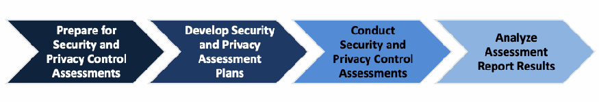
図7：効果的なセキュリティ管理策およびプライバシー管理策の評価プロセスの概要。左から右へ4つの山形が並び、濃紺から薄い青へと色が変わる。「Prepare for Security and Privacy Control Assessments」（セキュリティ管理策およびプライバシー管理策の評価準備）、「Develop Security and Privacy Assessment Plans」（セキュリティ評価計画およびプライバシー評価計画の策定）、「Conduct Security and Privacy Control Assessments」（セキュリティ管理策およびプライバシー管理策評価の実施）、「Analyze Assessment Report Results」（評価報告書の結果の分析）である。
FIGURE 7. OVERVIEW OF PROCESS TO CONDUCT EFFECTIVE SECURITY AND PRIVACY CONTROL ASSESSMENTS
図7：効果的なセキュリティ管理策およびプライバシー管理策の評価プロセスの概要
3.1 PREPARE FOR SECURITY AND PRIVACY CONTROL ASSESSMENTS
3.1 セキュリティ管理策およびプライバシー管理策の評価準備
Table 1 provides a summary of the purpose, roles, and expected outcomes of the Prepare for Security and Privacy Control Assessments Step.
表1は「セキュリティ管理策およびプライバシー管理策の評価準備」ステップの目的、役割、期待される成果をまとめたものである。
TABLE 1. PREPARE FOR SECURITY AND PRIVACY CONTROL ASSESSMENTS SUMMARY
表1：セキュリティ管理策およびプライバシー管理策の評価準備の概要
| Purpose | Address a range of issues pertaining to the cost, schedule, scope, and performance of the control assessment. |
|---|---|
| Primary Roles | Authorizing Official, Authorizing Official Designated Representative, system owner, common control provider, control assessors |
| Supporting Roles | System security officer, system privacy officer |
| Outcomes | • The objective, scope, and timeframe of control assessment determined • Key organizational stakeholders notified and necessary resources allocated • Assessors/assessment teams identified • Artifacts collected and provided to assessors/assessment teams • Mechanism to minimize ambiguities and misunderstandings about control implementation and identified control deficiencies or weaknesses established • Assessors/assessment teams understand the organization’s operations, structure, objective, scope, and timeframe of control assessment |
| 目的 | 管理策評価の費用、日程、範囲、実施に関するさまざまな課題に対処する。 |
|---|---|
| 主な役割 | 認可権限者、認可権限者の指名代理人、システム所有者、共通管理策提供者、管理策評価者 |
| 支援的な役割 | システムセキュリティ責任者、システムプライバシー責任者 |
| 成果 | • 管理策評価の目的、範囲、期間が決定されている • 主要な組織の利害関係者に通知され、必要な資源が割り当てられている • 評価者／評価チームが特定されている • 成果物が収集され、評価者／評価チームに提供されている • 管理策の実装および特定された管理策の欠陥や弱点に関する曖昧さや誤解を最小限にする仕組みが確立されている • 評価者／評価チームが、組織の運用、構造、管理策評価の目的、範囲、期間を理解している |
Conducting security and privacy control assessments can be difficult, challenging, and resource intensive. Security and privacy control assessments may be conducted by different organizational entities with distinct oversight responsibilities. However, success requires the cooperation and collaboration of all parties with a vested interest in the organization’s information security or privacy posture, including control assessors, system security and privacy officers, system owners, common control providers, authorizing officials, chief information officers, senior information security officers, senior agency officials for privacy/chief privacy officers, chief executive officers/heads of agencies, security and privacy staffs, Inspectors General, and OMB. Establishing an appropriate set of expectations before, during, and after an assessment is paramount to achieving an acceptable outcome (i.e., producing information necessary to help the authorizing official make a credible, risk-based decision on whether to place the system into operation or continue its operation).
セキュリティ・プライバシー管理策評価の実施は、困難で、課題が多く、資源を要する場合がある。評価は、それぞれ異なる監督責任を持つ複数の組織主体が実施することがある。しかし、成功には、組織の情報セキュリティまたはプライバシーの状況に利害を持つすべての関係者（管理策評価者、システムセキュリティ・プライバシー責任者、システム所有者、共通管理策提供者、承認権限者、最高情報責任者、上級情報セキュリティ責任者、プライバシー担当上級機関職員／最高プライバシー責任者、最高経営責任者／機関長、セキュリティ・プライバシー担当職員、監察総監、OMBなど）の協力と連携が必要である。評価の前・最中・後に適切な期待事項を確立することは、許容可能な結果、すなわちシステムを運用開始するか運用を継続するかについて承認権限者が信頼できるリスクベースの判断を行うのに必要な情報を作成するうえで極めて重要である。
Thorough preparation by the organization and assessors is an important aspect of conducting effective security and privacy control assessments. Preparatory activities address a range of issues relating to the cost, schedule, and performance of the assessment. From an organizational perspective, preparing for a security and privacy control assessment includes the following key activities:
組織および評価者による徹底した準備は、効果的なセキュリティ・プライバシー管理策評価を実施するうえで重要である。準備活動では、評価の費用、日程、実施に関連するさまざまな課題に対処する。組織の観点から、セキュリティ・プライバシー管理策評価の準備には、次の主要活動が含まれる。
•Ensuring that appropriate policies covering security and privacy control assessments are in place and understood by all affected organizational elements;
•セキュリティ管理策およびプライバシー管理策の評価を対象とする適切な方針が整備され、影響を受ける組織部門すべてに理解されていることを確保する。
•Ensuring that all steps in the RMF prior to the security or privacy control assessment step have been successfully completed and received appropriate management oversight;28
•セキュリティ管理策またはプライバシー管理策のアセスメントのステップより前のRMFのすべてのステップが正常に完了し、適切な管理監督を受けていることを確認する。28
•Establishing the objective and scope of assessments (i.e., the purpose of the assessments and what is being assessed);
•アセスメントの目的と範囲（すなわち、アセスメントの目的と、何をアセスメントするか）を確立する。
•Ensuring that security and privacy controls identified as common controls (and the common portion of hybrid controls) have been assigned to appropriate organizational entities (i.e., common control providers) for development and implementation;29
•共通管理策として特定されたセキュリティ管理策およびプライバシー管理策（ならびにハイブリッド管理策の共通部分）が、開発および実装のために適切な組織主体（すなわち共通管理策提供者）に割り当てられていることを確認する。29
•Notifying key organizational officials of impending assessments and allocating necessary resources to carry out the assessments;
•主要な組織担当者に評価予定を通知し、評価実施に必要な資源を配分する。
•Establishing appropriate communication channels among organizational officials with an interest in the assessments;
•評価に利害を持つ組織担当者間の適切な連絡経路を確立する。
•Establishing time frames for completing the assessments and key milestone decision points required by the organization;
•評価を完了する期間および組織が求める主要な節目の意思決定時点を定める。
•Identifying and selecting appropriate assessors/assessment teams that will be responsible for conducting the assessments and considering issues of assessor independence;
•評価を実施する適切な評価者／評価チームを特定・選定し、評価者の独立性に関する事項を検討する。
•Providing artifacts to the assessors/assessment teams (e.g., policies, procedures, plans, specifications, designs, records, administrator/operator manuals, system documentation, information exchange agreements, previous assessment results, legal requirements); and
•評価者／評価チームに成果物（例：方針、手順、計画、仕様書、設計書、記録、管理者／運用者マニュアル、システム文書、情報交換合意、過去の評価結果、法的要件）を提供する。および
•Establishing a mechanism between the organization and the assessors and/or assessment teams to minimize ambiguities or misunderstandings about the implementation of security and privacy controls and related weaknesses or deficiencies identified during the assessments.
•セキュリティ・プライバシー管理策の実装、および評価中に特定された関連する弱点・欠陥について、曖昧さや誤解を最小限にするため、組織と評価者および／または評価チームとの間の仕組みを確立する。
Control assessors/assessment teams begin preparing for their respective assessments by:
管理策評価者／評価チームは、それぞれの評価準備として次を行う。
•Obtaining a general understanding of the organization’s operations (including mission, functions, and business processes) and how the system or common control that is the subject of the particular assessment supports those organizational operations,
•組織の運用（ミッション、機能、業務プロセスを含む）および、評価対象となるシステムまたは共通管理策が組織運用をどのように支援するかについて、全般的な理解を得る。
•Obtaining an understanding of the structure of the system (i.e., system architecture) and the security and privacy controls being assessed (including system-specific, hybrid, and common controls),
•システムの構造（すなわちシステムアーキテクチャ）および評価対象のセキュリティ管理策・プライバシー管理策（システム固有、ハイブリッド、共通の各管理策を含む）を理解する。
•Identifying the organizational entities responsible for the development and implementation of the common controls (or the common portion of hybrid controls) supporting the system,
•システムを支援する共通管理策（またはハイブリッド管理策の共通部分）の開発・実装を担う組織主体を特定する。
•Meeting with appropriate organizational officials to ensure common understanding for assessment objectives and the proposed rigor and scope of the assessment,
•評価目的ならびに提案する評価の厳密さと範囲について共通理解を得るため、適切な組織担当者と会合する。
•Obtaining artifacts needed for the assessment (e.g., policies, procedures, plans, specifications, designs, records, administrator and operator manuals, system documentation, information exchange agreements, previous assessment results),
•評価に必要な成果物（例：方針、手順、計画、仕様書、設計書、記録、管理者・運用者マニュアル、システム文書、情報交換合意、過去の評価結果）を入手する。
•Establishing appropriate organizational points of contact to carry out the assessments, and
•評価を実施するための適切な組織連絡担当者を定める。および
•Obtaining previous assessment results that may be appropriately reused for the current assessment (e.g., Inspector General reports, audits, vulnerability scans, physical security inspections, developmental testing and evaluation, vendor flaw remediation activities, [ISO 15408] evaluations).
•現行評価で適切に再利用できる過去の評価結果（例：監察総監報告書、監査、脆弱性スキャン、物理セキュリティ検査、開発段階の試験・評価、ベンダーによる欠陥是正活動、[ISO 15408]評価）を入手する。
In preparation for the assessment of security and privacy controls, the necessary background information is assembled and made available to the assessors or assessment team.30 To the extent necessary to support the specific assessment, and depending upon whether security controls or privacy controls are being assessed, the organization identifies and arranges access to elements of the organization responsible for developing, documenting, disseminating, reviewing, and updating:
セキュリティ管理策およびプライバシー管理策のアセスメントの準備として、必要な背景情報を収集し、アセッサーまたはアセスメントチームが利用できるようにする。30組織は、特定のアセスメントを支援するのに必要な範囲で、またセキュリティ管理策とプライバシー管理策のいずれをアセスメントするかに応じて、次のものの作成、文書化、配布、レビュー、更新に責任を負う組織内の部門を特定し、それらへのアクセスを手配する。
•all policies and associated procedures for implementing policy-compliant controls;
•方針に準拠する管理策を実装するためのすべての方針および関連手順。
•the policies for the system and any associated implementing procedures, individuals, or groups responsible for the development, implementation, operation, and maintenance of controls;
•システムの方針および関連実施手順、ならびに管理策の開発、実装、運用、保守を担う個人またはグループ。
•any artifacts or materials (e.g., security or privacy plans, records, schedules, assessment reports, after-action reports, agreements, authorization packages) associated with the implementation and operation of the controls to be assessed; and
•アセスメント対象の管理策の実装および運用に関連するあらゆる成果物または資料（例えば、セキュリティ計画またはプライバシー計画、記録、スケジュール、アセスメント報告書、事後報告書、合意書、認可パッケージ）、および
•the specific objects to be assessed.31
•アセスメントの対象となる具体的な対象物。31
The availability of essential documentation as well as access to key organizational personnel and the system or common control being assessed are paramount to a successful assessment.
不可欠な文書を利用できること、主要な組織担当者ならびに評価対象のシステムまたは共通管理策にアクセスできることは、評価を成功させるうえで極めて重要である。
Organizations consider both the technical expertise and level of independence required in selecting security and privacy control assessors.32 Organizations ensure that assessors possess the required skills and technical expertise to successfully carry out assessments of system-specific, hybrid, and common controls.33 Skills and expertise includes knowledge of and experience with the specific hardware, software, and firmware components employed by the organization. An independent assessor is any individual capable of conducting an impartial assessment of security and privacy controls employed within or inherited by a system. Impartiality implies that security and privacy control assessors are free from any perceived or actual conflicts of interest with respect to the development, operation, and/or management of the system or the determination of security and privacy control effectiveness.34 The authorizing official or designated representative determines the required level of independence for assessors based on the results of the security categorization process for the system (in the case of security control assessments) and the risk to organizational operations and assets, individuals, other organizations, and the Nation. The authorizing official determines whether the level of assessor independence is sufficient to provide confidence that the assessment results produced are sound and can be used to make a risk-based decision on whether to place the system or common control into operation or continue its operation.
組織は、セキュリティ管理策およびプライバシー管理策のアセッサーを選定する際に、必要とされる技術的専門性と独立性のレベルの両方を考慮する。32組織は、アセッサーが、システム固有の管理策、ハイブリッド管理策、および共通管理策のアセスメントを首尾よく実施するために必要なスキルと技術的専門性を有していることを確保する。33スキルと専門性には、組織が採用している特定のハードウェア、ソフトウェア、ファームウェアのコンポーネントに関する知識と経験が含まれる。独立したアセッサーとは、システム内で採用されている、またはシステムが継承しているセキュリティ管理策およびプライバシー管理策について、公平なアセスメントを実施できる個人をいう。公平性とは、セキュリティ管理策およびプライバシー管理策のアセッサーが、システムの開発、運用、管理、またはセキュリティ管理策およびプライバシー管理策の有効性の判定に関して、認識上または実際の利益相反がないことを意味する。34認可権限者またはその指名代理人は、システムのセキュリティ分類プロセスの結果（セキュリティ管理策のアセスメントの場合）と、組織の業務および資産、個人、他の組織、ならびに国家に対するリスクに基づいて、アセッサーに求められる独立性のレベルを決定する。認可権限者は、アセッサーの独立性のレベルが、得られたアセスメント結果が健全であり、システムまたは共通管理策の運用を開始するか、または運用を継続するかについてリスクに基づく判断を下すために使用できるという確信をもたらすのに十分かどうかを判断する。
Independent security and privacy control assessment services can be obtained from other elements within the organization or be contracted to a public or private sector entity outside of the organization. In special situations (e.g., when the organization that owns the system or common control is small or the organizational structure requires that the security or privacy control assessment be accomplished by individuals who are in the developmental, operational, and/or management chain of the system owner), independence in the assessment process can be achieved by ensuring that the assessment results are carefully reviewed and analyzed by an independent team of experts to validate the completeness, consistency, and veracity of the results.35
独立したセキュリティ管理策およびプライバシー管理策のアセスメントサービスは、組織内の他の部門から得ることも、組織外の公的機関または民間の主体に委託することもできる。特別な状況（例えば、システムまたは共通管理策を所有する組織が小規模である場合や、組織構造上、セキュリティ管理策またはプライバシー管理策のアセスメントをシステムオーナーの開発、運用、または管理の系統に属する個人が実施しなければならない場合）では、独立した専門家チームがアセスメント結果を慎重にレビューおよび分析し、結果の完全性、一貫性、真実性を検証するようにすることで、アセスメントプロセスにおける独立性を実現できる。35
3.2 DEVELOP SECURITY AND PRIVACY ASSESSMENT PLANS
3.2 セキュリティ評価計画およびプライバシー評価計画の策定
Table 2 provides a summary of the purpose, roles, and expected outcomes of the Develop Security and Privacy Assessment Plans Step.
表2は「セキュリティ評価計画およびプライバシー評価計画の策定」ステップの目的、役割、期待される成果をまとめたものである。
TABLE 2. DEVELOP SECURITY AND PRIVACY PLANS SUMMARY
表2：セキュリティ・プライバシー計画策定の概要
| Purpose | Provide the objectives for the security and privacy control assessments, as well as a detailed roadmap of how to conduct such assessments based on the security and privacy plan(s). |
|---|---|
| Primary Roles | Control assessors |
| Supporting Roles | System security officers, system privacy officers, system owners |
| Outcomes | • Controls and control enhancements to be included in assessments are determined • Assessment procedures are selected and tailored; additional procedures for security and privacy requirements/controls not covered by [SP 800-53] are developed • Assessment procedures are optimized to reduce duplication of effort • Assessment plan is finalized, and organizational approval is obtained |
| 目的 | セキュリティ・プライバシー管理策の評価の目的と、セキュリティ・プライバシー計画に基づいてそれらの評価をどのように実施するかを示す詳細なロードマップを提供する。 |
|---|---|
| 主な役割 | 管理策評価者 |
| 支援的な役割 | システムセキュリティ責任者、システムプライバシー責任者、システム所有者 |
| 成果 | • 評価に含める管理策および管理策強化策が決定されている • 評価手順が選択されテーラリングされている。[SP 800-53] が対象としないセキュリティ・プライバシー要件／管理策のための追加の手順が策定されている • 作業の重複を減らすよう評価手順が最適化されている • 評価計画が確定され、組織の承認が得られている |
The security assessment plan and privacy assessment plan provide the objectives for the security and privacy control assessments, respectively, as well as a detailed roadmap of how to conduct such assessments. The assessment plans may be developed as one integrated plan or as distinct plans, depending upon organizational needs. The following steps are considered by assessors when developing plans to assess the security and privacy controls in organizational systems or common controls available for inheritance:
セキュリティ評価計画およびプライバシー評価計画は、それぞれセキュリティ・プライバシー管理策評価の目的と、評価の実施方法を示す詳細な工程表を提供する。組織のニーズに応じ、両評価計画を統合して1つの計画にすることも、別々の計画にすることもできる。評価者は、組織システムまたは継承可能な共通管理策の評価計画を策定する際、次の手順を検討する。
•Determine which security and privacy controls/control enhancements are to be included in assessments based on the contents of the security plan and privacy plan (or equivalent document if the controls to be assessed are non-system-based common controls)36 and the purpose and scope of the assessments,
•セキュリティ計画およびプライバシー計画（アセスメント対象の管理策がシステムに基づかない共通管理策である場合は、それに相当する文書）36の内容と、アセスメントの目的および範囲に基づいて、どのセキュリティ管理策およびプライバシー管理策／管理策拡張をアセスメントに含めるかを決定する。
•Select the appropriate assessment procedures to be used during assessments based on the security or privacy controls and control enhancements to be assessed,
•評価対象のセキュリティ管理策またはプライバシー管理策および管理策強化策に基づき、評価で用いる適切な評価手順を選択する。
•Tailor the selected assessment procedures (e.g., select appropriate assessment methods and objects, and assign depth and coverage attribute values),
•選択した評価手順を調整する（例：適切な評価方法・対象を選び、深さ・網羅性の属性値を割り当てる）。
•Develop additional assessment procedures to address any security requirements or controls that are not covered by [SP 800-53],
•[SP 800-53]で扱われていないセキュリティ要件または管理策に対応するため、追加のアセスメント手順を作成する。
•Optimize the assessment procedures to reduce duplication of effort (e.g., sequencing and consolidating assessment procedures) and provide cost-effective assessment solutions, and
•重複作業を減らし（例：評価手順を順序付け、統合する）、費用対効果の高い評価策を提供するよう評価手順を最適化する。および
•Finalize assessment plans and obtain the necessary approvals to execute the plans.
•評価計画を確定し、計画を実施するために必要な承認を取得する。
3.2.1 DETERMINE WHICH SECURITY AND PRIVACY CONTROLS ARE TO BE ASSESSED
3.2.1 評価対象とするセキュリティ管理策およびプライバシー管理策の決定
The security plan and privacy plan provide an overview of the security and privacy requirements for the system and organization and describe the security controls and privacy controls in place or planned for meeting those requirements. For the assessment of common controls that are not implemented by a system, a document equivalent to the security or privacy plan may be used. The assessor starts with the security or privacy controls described in the security or privacy plan and considers the purpose of the assessment. A security or privacy control assessment can be a complete assessment of all controls in a system (e.g., during an initial system authorization process), a partial assessment of the controls in a system (e.g., during system development as part of a targeted assessment resulting from changes affecting specific controls or where controls were previously assessed and the results accepted in the reciprocity process), or a common control assessment.
セキュリティ計画およびプライバシー計画は、システムと組織のセキュリティ要件・プライバシー要件の概要を示し、それらの要件を満たすために導入済みまたは計画中のセキュリティ管理策・プライバシー管理策を説明する。システムが実装していない共通管理策を評価する場合、セキュリティ計画またはプライバシー計画に相当する文書を用いてもよい。評価者は、セキュリティ計画またはプライバシー計画に記載されたセキュリティ管理策またはプライバシー管理策を起点とし、評価の目的を考慮する。セキュリティ管理策またはプライバシー管理策の評価は、システム内のすべての管理策を対象とする完全評価（例：初回のシステム承認プロセス中）、システム内の管理策の一部を対象とする部分評価（例：システム開発中に、特定の管理策に影響する変更の結果として行う対象を絞った評価の一環として、または管理策が以前に評価済みでその結果が相互承認プロセスで受け入れられた場合）、あるいは共通管理策評価となり得る。
For partial assessments, system owners and common control providers collaborate with organizational officials with an interest in the assessment (e.g., senior information security officers, senior agency officials for privacy/chief privacy officers, mission/information owners, Inspectors General, and authorizing officials) to determine which controls are to be assessed. The determination of the controls to be assessed depends on the purpose of the assessment. For example, during the initial phases of the system development life cycle, specific controls may be selected for assessment to promote the early detection of weakness and deficiencies and a more cost-effective approach to risk response. After the initial authorization to operate has been granted, targeted assessments may be necessary when changes are made to the system, specific security or privacy controls, common controls, or the environment of operation. In such cases, the focus of the assessment is on the controls that may have been affected by the change.
部分評価では、システム所有者および共通管理策提供者が、評価に利害を持つ組織担当者（例：上級情報セキュリティ責任者、プライバシー担当上級機関職員／最高プライバシー責任者、ミッション／情報所有者、監察総監、承認権限者）と協力し、評価対象の管理策を決定する。対象管理策は評価目的によって異なる。例えば、システム開発ライフサイクルの初期段階では、弱点・欠陥の早期発見を促し、費用対効果の高いリスク対応を実現するため、特定の管理策を選んで評価することがある。初回の運用承認後、システム、特定のセキュリティ・プライバシー管理策、共通管理策または運用環境に変更があった場合は、対象を絞った評価が必要となることがある。この場合、評価では変更の影響を受けた可能性のある管理策に焦点を当てる。
3.2.2 SELECT PROCEDURES TO ASSESS THE SECURITY AND PRIVACY CONTROLS
3.2.2 セキュリティ管理策およびプライバシー管理策を評価する手順の選択
SP 800-53A provides assessment procedures for each security and privacy control and control enhancement in [SP 800-53]. For each control in the security plan and privacy plan to be included in the assessment, assessors select the corresponding assessment procedure from Chapter 4. The selected assessment procedures can vary from assessment to assessment based on the current content of the security plans and privacy plans and the purpose of the assessment (e.g., complete assessment, partial assessment, common control assessment).
SP 800-53Aは[SP 800-53]にある各セキュリティ管理策、プライバシー管理策および管理策強化策の評価手順を提供する。評価対象とするセキュリティ計画・プライバシー計画内の各管理策について、評価者は第4章から対応する評価手順を選ぶ。選択する手順は、セキュリティ計画・プライバシー計画の現行内容および評価目的（例：完全評価、部分評価、共通管理策評価）に応じて評価ごとに異なる。
3.2.3 TAILOR ASSESSMENT PROCEDURES
3.2.3 評価手順の調整
In a manner similar to how the controls from [SP 800-53] are tailored for the organization’s mission, business functions, characteristics of the system, and operating environment, organizations tailor the assessment procedures in Chapter 4 to meet specific organizational needs. Organizations have the flexibility to perform the tailoring process at the organization level for all systems or common controls, at the individual system level, or using a combination of organization-level and system-specific approaches. Control assessors determine if the organization provides additional tailoring guidance prior to initiating the tailoring process. Assessment procedures are tailored by:
組織のミッション、業務機能、システムの特性、運用環境に応じて[SP 800-53]の管理策を調整するのと同様に、組織は第4章の評価手順を組織固有のニーズに合わせて調整する。組織は、調整プロセスを、すべてのシステムまたは共通管理策を対象として組織レベルで実施することも、個々のシステムレベルで実施することも、組織レベルの方法とシステム固有の方法を組み合わせて実施することもできる。管理策評価者は、調整プロセスを開始する前に、組織が追加の調整指針を提供しているかどうかを確認する。評価手順は、次の方法で調整する。
•Selecting the appropriate assessment methods and objects needed to satisfy the stated assessment objectives,
•明示された評価目的を満たすのに必要な適切な評価方法および評価対象を選択する。
•Selecting the appropriate depth and coverage attribute values to define the rigor and scope of the assessment,
•評価の厳密さと範囲を定義する適切な深さ・網羅性の属性値を選ぶ。
•Identifying common controls and inherited portions of hybrid controls that have been assessed by a separately documented security assessment plan or privacy assessment plan and do not require the repeated execution of the assessment procedures,37
•個別に文書化されたセキュリティアセスメント計画またはプライバシーアセスメント計画によってアセスメント済みであり、アセスメント手順を繰り返し実行する必要のない共通管理策およびハイブリッド管理策の継承部分を特定する。37
•Developing system/platform-specific and organization-specific assessment procedures (which may be adaptations of those in Chapter 4),
•システム／プラットフォーム固有および組織固有の評価手順を作成する（第4章の手順を適応させてもよい）。
•Incorporating assessment results from previous assessments where the results are deemed applicable, and
•適用可能と判断された以前の評価結果を取り込む。および
•Making appropriate adjustments in assessment procedures to obtain the requisite assessment evidence from external providers.
•外部提供者から必要な評価証拠を得るため、評価手順を適切に調整する。
3.2.3.1 ASSESSMENT METHOD- AND OBJECT-RELATED CONSIDERATIONS
3.2.3.1 評価方法および評価対象に関する考慮事項
Organizations can specify, document, and configure their systems in a variety of ways, and the content and applicability of existing assessment evidence varies. This variety may result in the need to apply a mixture of assessment methods to assessment objects to generate the assessment evidence needed to determine whether the security and privacy controls are effective in their application. Additionally, as described in Section 2.3 and Section 2.4, the number and type of assessment methods and assessment objects needed to provide the required assurance varies based on the depth and coverage needed for the assessment. Therefore, the assessment methods and objects provided with each assessment procedure are termed potential to reflect the need to choose the specific methods and objects most appropriate for a specific assessment. The assessment methods and objects chosen are those deemed necessary to produce the evidence needed to make the determinations described in the determination statements in support of assurance requirements and the associated management of risk. The potential methods and objects in the assessment procedure are provided as a resource to assist in the selection of appropriate methods and objects and not with the intent of limiting the selection. Organizations use their judgment when selecting assessment methods and associated assessment objects. Organizations select those methods and objects that most cost-effectively manage risk and contribute to making the determinations associated with the assessment objective.38 The quality of assessment results is based on the soundness of the rationale provided for selecting the methods and objects, not the specific set of methods and objects applied. It is not necessary, in most cases, to apply every assessment method to every assessment object to obtain the desired assurance.
組織はさまざまな方法でシステムを規定、文書化、構成することができ、既存のアセスメント証拠の内容と適用可能性もさまざまである。このような多様性により、セキュリティ管理策およびプライバシー管理策がその適用において有効であるかどうかを判定するのに必要なアセスメント証拠を生成するために、アセスメント対象に複数のアセスメント方法を組み合わせて適用する必要が生じることがある。さらに、2.3節および2.4節で述べたように、求められる保証を提供するために必要なアセスメント方法とアセスメント対象の数と種類は、アセスメントに必要な深さとカバレッジに応じて異なる。そのため、各アセスメント手順に示されるアセスメント方法と対象は「候補」と呼ばれ、特定のアセスメントに最も適した具体的な方法と対象を選択する必要があることを反映している。選択されるアセスメント方法と対象は、保証要件とそれに関連するリスク管理を支援するために、判定文に記述された判定を行うのに必要な証拠を生成するうえで必要と判断されたものである。アセスメント手順における候補の方法と対象は、適切な方法と対象の選択を支援する資料として提供されるものであり、選択を制限する意図はない。組織は、アセスメント方法とそれに関連するアセスメント対象を選択する際に自らの判断を用いる。組織は、最も費用対効果の高い方法でリスクを管理し、アセスメント目的に関連する判定を行うことに寄与する方法と対象を選択する。38アセスメント結果の品質は、方法と対象を選択した根拠の健全性に基づくものであり、適用した方法と対象の具体的な組み合わせに基づくものではない。ほとんどの場合、望ましい保証を得るために、すべてのアセスメント方法をすべてのアセスメント対象に適用する必要はない。
3.2.3.2 DEPTH- AND COVERAGE-RELATED CONSIDERATIONS
3.2.3.2 深さおよび網羅性に関する考慮事項
In addition to selecting appropriate assessment methods and objects, each assessment method (i.e., examine, interview, and test) is associated with the depth and coverage attributes described in Appendix C. The attribute values identify the rigor (depth) and scope (coverage) of the assessment procedures executed by the assessor. The values selected by the organization are based on the characteristics of the system being assessed (including assurance requirements) and the specific determinations to be made. The depth and coverage attribute values are associated with the assurance requirements specified by the organization (i.e., the rigor and scope of the assessment increases in direct relationship with the assurance requirements, which in turn increase in direct relationship with the adverse impact of loss).
適切な評価方法および評価対象の選択に加えて、各評価方法（すなわち調査、面談、試験）には付録Cで説明する深さ・網羅性属性が関連付けられる。属性値は、評価者が実施する評価手順の厳密さ（深さ）および範囲（網羅性）を特定する。組織が選択する値は、評価対象システムの特性（保証要件を含む）および実施する具体的な判定に基づく。深さ・網羅性属性値は、組織が定める保証要件に対応する（すなわち、評価の厳密さと範囲は保証要件に比例して高まり、保証要件は損失の悪影響に比例して高まる）。
3.2.3.3 COMMON CONTROL-RELATED CONSIDERATIONS
3.2.3.3 共通管理策に関する考慮事項
Assessors note which security and privacy controls (or parts of such controls) in security plans or privacy plans are designated as common controls.39 Since the assessment of common controls is the responsibility of the organizational entity that developed and implemented the controls (i.e., common control provider), the assessment procedures in Chapter 4 are also used to assess common controls. The results from the common control assessment are made available to organizational systems and system owners that elect to inherit the common controls.40
評価者は、セキュリティ計画またはプライバシー計画において、どのセキュリティ管理策およびプライバシー管理策（またはその一部）が共通管理策として指定されているかに留意する。39共通管理策の評価は、その管理策を開発・実装した組織エンティティ（すなわち共通管理策提供者）の責任であるため、第4章の評価手順は共通管理策の評価にも用いられる。共通管理策の評価結果は、その共通管理策を継承することを選択した組織のシステムおよびシステム所有者が利用できるようにされる。40
Another consideration in assessing common controls is awareness of system-specific aspects of a control that are not covered by the organizational entities responsible for the common aspects of the control. Such controls are referred to as hybrid controls. For example, CP-02, the contingency planning security control, may be considered a hybrid control by the organization if there is a contingency plan developed by the organization for all organizational systems. System owners are expected to adjust or tailor the organization-developed contingency plan when there are specific aspects of the plan that need to be defined for the particular system where the control is employed. For each hybrid control, assessors include in security assessment plans or privacy assessment plans the portions of the assessment procedures from Chapter 4 related to the parts of the control that are system-specific to ensure that, along with the results from common control assessments, all aspects of the control are assessed.
共通管理策の評価では、管理策の共通部分を担う組織主体が対象としていない、システム固有の側面を把握することも考慮する。このような管理策をハイブリッド管理策と呼ぶ。例えば、すべての組織システムに適用する緊急時対応計画を組織が策定している場合、CP-02緊急時対応計画管理策はハイブリッド管理策と見なせる。管理策を適用する個別システムについて定義が必要な特定の計画事項がある場合、システム所有者は組織が作成した緊急時対応計画を調整することが期待される。各ハイブリッド管理策について、評価者は共通管理策評価の結果と合わせて管理策全体を評価できるよう、第4章の評価手順からシステム固有部分に関する箇所をセキュリティ評価計画またはプライバシー評価計画に含める。
ASSESSING COMMON CONTROLS AND PORTIONS OF HYBRID CONTROLS INHERITED FROM A COMMON CONTROL PROVIDER
原本PDFの抜粋画像
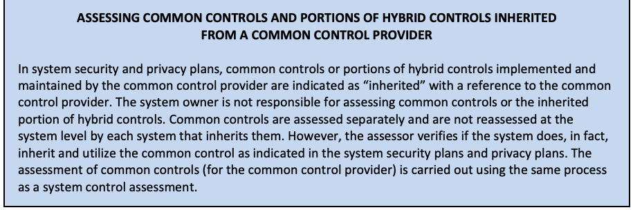
共通管理策提供者から継承した共通管理策およびハイブリッド管理策の一部の評価
In system security and privacy plans, common controls or portions of hybrid controls implemented and maintained by the common control provider are indicated as “inherited” with a reference to the common control provider. The system owner is not responsible for assessing common controls or the inherited portion of hybrid controls. Common controls are assessed separately and are not reassessed at the system level by each system that inherits them. However, the assessor verifies if the system does, in fact, inherit and utilize the common control as indicated in the system security plans and privacy plans. The assessment of common controls (for the common control provider) is carried out using the same process as a system control assessment.
システムセキュリティ計画およびプライバシー計画では、共通管理策提供者が実装し維持する共通管理策またはハイブリッド管理策の一部は、共通管理策提供者への参照とともに「継承」と表示される。システム所有者は、共通管理策やハイブリッド管理策の継承部分を評価する責任を負わない。共通管理策は個別に評価され、それを継承する各システムがシステムレベルで再評価することはない。ただし評価者は、システムセキュリティ計画およびプライバシー計画に示されているとおりに、そのシステムが実際に共通管理策を継承し利用しているかを検証する。共通管理策の（共通管理策提供者に対する）評価は、システムの管理策評価と同じプロセスで実施する。
3.2.3.4 SYSTEM/PLATFORM- AND ORGANIZATION-RELATED CONSIDERATIONS
3.2.3.4 システム／プラットフォームおよび組織に関する考慮事項
The assessment procedures in SP 800-53A may be adapted to address system-, platform-, or organization-specific dependencies. For example, the assessment of a Linux implementation of control IA-02 for the identification and authentication of users might include an explicit examination of any key-based, “password-less” login capability and potential risks inherent from any deficiency in key management, account management, system and boundary protection, physical and environmental protection, and other safeguards to prevent identification and authentication bypass by unauthorized users or processes acting on behalf of users.
SP 800-53Aの評価手順は、システム、プラットフォームまたは組織に固有の依存関係に対応するよう適応させてもよい。例えば、利用者の識別・認証に関するIA-02管理策をLinux上で評価する場合、鍵ベースの「パスワードレス」ログイン機能と、鍵管理、アカウント管理、システムおよび境界の保護、物理的・環境的保護、ならびに権限のない利用者または利用者の代理プロセスによる識別・認証の迂回を防ぐその他の保護手段の不備に内在する潜在的リスクを明示的に調査することがある。
3.2.3.5 REUSE OF ASSESSMENT EVIDENCE-RELATED CONSIDERATIONS
3.2.3.5 評価証拠の再利用に関する考慮事項
Reuse of assessment results from previously accepted or approved assessments is considered in the body of evidence for determining overall security and privacy control effectiveness. Previously accepted or approved assessments include assessments of inherited common controls that are managed by the organization and support multiple systems, assessments of security or privacy controls that are reviewed as part of the control implementation (e.g., CP-02 requires a review of the contingency plan), or security-related information generated by the organization’s ISCM program. The acceptability of reusing assessment results in a security control assessment or privacy control assessment is coordinated with and approved by the users of the assessment results. It is essential that system owners and common control providers collaborate with authorizing officials and other appropriate organizational officials to determine the acceptability of using previous assessment results. When considering the reuse of assessment results and the value of those results to the current assessment, assessors determine the credibility of the assessment evidence, the appropriateness of previous analysis, and the applicability of the assessment evidence to current system operating conditions. If previous assessment results are reused, the date and type of the original assessment are documented in the assessment plan and assessment report.
全体的なセキュリティ・プライバシー管理策の有効性を判断する証拠一式には、過去に受け入れられた、または承認された評価の結果の再利用を考慮する。再利用対象には、組織が管理し複数のシステムを支援する継承共通管理策の評価、管理策の実装の一環としてレビューされる管理策の評価（例：CP-02では緊急時対応計画をレビューする）、組織のISCMプログラムが作成したセキュリティ関連情報が含まれる。セキュリティ管理策評価またはプライバシー管理策評価で結果を再利用できるかどうかは、その結果の利用者と調整し、承認を得る。システム所有者および共通管理策提供者は、過去の結果を利用可能か判断するため、認可責任者や他の適切な組織担当者と協力することが不可欠である。結果の再利用と現行評価での価値を検討する際、評価者は証拠の信頼性、過去の分析の妥当性、現行のシステム運用条件に対する証拠の適用可能性を判断する。過去の結果を再利用する場合、当初の評価の日付と種類を評価計画および評価報告書に記録する。
In certain situations, it may be necessary to supplement previous assessment results under consideration for reuse with additional assessment activities to fully address the current assessment objectives. For example, if an independent evaluation of an information technology product did not test a particular configuration setting that is employed by the organization in a system, then the assessor may need to supplement the original test results with additional testing to cover that configuration setting for the current system environment. The decision to reuse assessment results is documented in the security assessment plan or privacy assessment plan and the final security assessment report or privacy assessment report, and it is consistent with legislation, policies, directives, standards, and guidelines.
場合によっては、現行の評価目的を十分に満たすために、再利用を検討している過去の評価結果を追加の評価活動で補う必要がある。例えば、情報技術製品の独立評価で、組織がシステムに適用している特定の構成設定が試験されていなかった場合、評価者は、現行のシステム環境におけるその構成設定を対象とする追加試験で元の試験結果を補う必要が生じることがある。評価結果を再利用する決定は、セキュリティ評価計画またはプライバシー評価計画、および最終的なセキュリティ評価報告書またはプライバシー評価報告書に記録する。この決定は、法令、方針、指令、標準および指針に整合したものとする。
The following items are considered when validating previous assessment results for reuse:
過去の評価結果を再利用する際の妥当性確認では、次の事項を考慮する。
•Changing conditions associated with security controls and privacy controls over time. Security and privacy controls that were deemed effective during previous assessments may have become ineffective due to changing conditions within the system or its environment of operation, including emergent threat information. Assessment results that were found to be previously acceptable may no longer provide credible evidence for the determination of security or privacy control effectiveness, and therefore, a reassessment may be required. Applying previous assessment results to a current assessment necessitates the identification of any changes that have occurred since the previous assessment and the impact of these changes on the previous results. For example, reusing previous assessment results from examining an organization’s security or privacy policies and procedures may be acceptable if it is determined that there have not been any significant changes to the identified policies and procedures. Reusing assessment results produced during the previous authorization of a system is a cost-effective method for supporting continuous monitoring activities and annual FISMA reporting requirements when the related controls have not changed and there are adequate reasons for confidence in their continued application.
•時間の経過に伴うセキュリティ管理策およびプライバシー管理策に関連する状況の変化。以前の評価で有効と判断されたセキュリティ管理策およびプライバシー管理策も、新たな脅威情報を含め、システムまたはその運用環境における状況の変化により、有効でなくなっている可能性がある。以前は受け入れ可能とされた評価結果が、セキュリティ管理策またはプライバシー管理策の有効性を判断するための信頼できる証拠をもはや提供しない場合があり、その場合には再評価が必要となることがある。以前の評価結果を現在の評価に適用するには、以前の評価以降に生じた変更と、それらの変更が以前の結果に与える影響を特定する必要がある。たとえば、組織のセキュリティポリシーもしくはプライバシーポリシーおよび手順を調査して得た以前の評価結果を再利用することは、特定されたポリシーおよび手順に重大な変更がないと判断される場合には受け入れ可能であろう。システムの前回の認可時に作成された評価結果を再利用することは、関連する管理策が変更されておらず、その継続的な適用に信頼を置く十分な理由がある場合、継続的モニタリング活動および年次のFISMA報告要件を支援する費用対効果の高い方法である。
•Amount of time that has transpired since previous assessments. In general, as the time between current and previous assessments increases, the credibility and utility of the previous assessment results decrease. This is primarily because the system or the environment in which the system operates is more likely to change with the passage of time, possibly invalidating the original conditions or assumptions on which the previous assessment was based.
•前回評価から経過した期間。一般に、現行評価と過去の評価の間隔が長くなるほど、過去の評価結果の信頼性と有用性は低下する。これは主として、時間の経過とともにシステムまたはシステムの運用環境が変化する可能性が高まり、過去の評価の基礎となった当初の条件または前提が無効になりうるためである。
•Degree of independence of previous assessments. Assessor independence can be a critical factor in certain types of assessments. The degree of independence required from assessment to assessment should be consistent. For example, it is not appropriate to reuse results from a previous self-assessment where no assessor independence was required when a current assessment requires a greater degree of independence.
•過去の評価の独立性の程度。特定種類の評価では評価者の独立性が重要な要因となり得る。評価ごとに求める独立性の程度は一貫させるべきである。例えば、現行評価ではより高い独立性が必要なのに、評価者の独立性を要求しなかった過去の自己評価の結果を再利用することは適切でない。
3.2.3.6 EXTERNAL SYSTEM- RELATED CONSIDERATIONS
3.2.3.6 外部システムに関する考慮事項
The assessment procedures in Chapter 4 need to be adjusted, as appropriate, to accommodate the assessment of external systems.41 Because the organization does not always have direct control over the security or privacy controls used in external systems or sufficient visibility into the development, implementation, and assessment of those controls, alternative assessment approaches may need to be applied, resulting in the need to tailor the assessment procedures described in Chapter 4. Where required assurances of agreed-upon security or privacy controls within a system are documented in contracts or service-level agreements, assessors review the contracts or agreements and tailor the assessment procedures as appropriate to assess the security or privacy controls or the security and privacy control assessment results provided through contracts or agreements. In addition, assessors consider any other assessments that have been conducted or are in the process of being conducted for external systems that are relied upon with regard to protecting the system under assessment. Applicable information from these assessments, if deemed reliable, is incorporated into the security assessment report or privacy assessment report, as appropriate.
第4章の評価手順は、外部システムの評価に対応するため、必要に応じて調整する必要がある。41組織は、外部システムで用いられるセキュリティ管理策またはプライバシー管理策を常に直接管理できるわけではなく、それらの管理策の開発、実装、評価について十分な可視性を持たない場合もあるため、代替の評価アプローチを適用する必要が生じることがあり、その結果として第4章に記述した評価手順をテーラリングする必要が生じる。システム内の合意されたセキュリティ管理策またはプライバシー管理策について必要な保証が契約またはサービスレベル合意に文書化されている場合、評価者はその契約または合意をレビューし、セキュリティ管理策もしくはプライバシー管理策、または契約もしくは合意を通じて提供されるセキュリティ管理策およびプライバシー管理策の評価結果を評価するために、評価手順を適宜テーラリングする。さらに評価者は、評価対象システムの保護に関して依拠している外部システムについて、実施済みまたは実施中のその他の評価も考慮する。これらの評価から得られる該当情報は、信頼できると判断される場合、適宜セキュリティ評価報告書またはプライバシー評価報告書に組み込む。
3.2.4 DEVELOP ASSESSMENT PROCEDURES FOR ORGANIZATION-SPECIFIC CONTROLS
3.2.4 組織固有の管理策に関する評価手順の策定
Based on organizational policies, mission or business function requirements, and an assessment of risk, organizations may choose to develop and implement additional (organization-specific) controls or control enhancements for their systems that are beyond the scope of [SP 800-53]. Such controls are documented in the security plan and privacy plan as controls not found in SP 800-53. To assess the controls not found in SP 800-53, assessors use the guidelines in Chapter 2 to develop assessment procedures for those controls and control enhancements. The assessment procedures developed are subsequently integrated into the assessment plan, as appropriate.
組織は、自らの方針、ミッションまたは業務機能の要件、リスク評価に基づき、[SP 800-53]の適用範囲外にある追加の（組織固有の）管理策または管理策強化策をシステム向けに策定・実装してもよい。そのような管理策は、SP 800-53に含まれない管理策としてセキュリティ計画およびプライバシー計画に記録する。SP 800-53にない管理策を評価するには、第2章の指針を用いて当該管理策および強化策の評価手順を策定する。その後、適宜、策定した評価手順を評価計画に組み込む。
3.2.5 OPTIMIZE SELECTED ASSESSMENT PROCEDURES TO ENSURE MAXIMUM EFFICIENCY
3.2.5 効率を最大化するための選択済み評価手順の最適化
Assessors have flexibility in organizing assessment plans that meet the needs of the organization and that provide the best opportunity for obtaining the necessary evidence to determine security or privacy control effectiveness while reducing overall assessment costs. Combining and consolidating assessment procedures is one area where flexibility can be applied. During the assessment of a system, assessment methods are applied numerous times to a variety of assessment objects within a particular family of controls. To save time, reduce assessment costs, and maximize the usefulness of assessment results, assessors review the selected assessment procedures for the control families and combine or consolidate the procedures (or parts of procedures) whenever possible or practicable. For example, assessors may consolidate interviews with key organizational officials who deal with a variety of security- or privacy-related topics. Assessors may have other opportunities for significant consolidation and cost savings by examining all policies and procedures from the families of security controls and privacy controls at the same time or by organizing groups of related policies and procedures that could be examined as a unified entity. Obtaining and examining configuration settings from similar hardware and software components within the system is another example that can provide significant assessment efficiencies.
評価者には、組織のニーズを満たし、セキュリティ管理策またはプライバシー管理策の有効性を判断するために必要な証拠を最も得やすくしながら、評価全体のコストを削減する評価計画を編成する柔軟性がある。評価手順の結合・統合は、その柔軟性を活用できる領域の1つである。システム評価では、特定の管理策ファミリー内のさまざまな評価対象に対して、評価方法を何度も適用する。時間を節約し、評価コストを抑え、結果の有用性を最大化するため、評価者は管理策ファミリーの選択済み手順を見直し、可能または実行可能な場合は手順全体または一部を結合・統合する。例えば、セキュリティ・プライバシー関連の複数の話題を担当する主要な組織職員への面談をまとめられる。また、セキュリティ管理策・プライバシー管理策ファミリーのすべての方針と手順を一度に調査したり、関連する方針・手順をまとめて統一的な資料として調査したりすることで、大幅な統合とコスト削減が可能な場合がある。システム内の類似ハードウェア・ソフトウェア構成要素の構成設定をまとめて取得・調査することも、評価を大幅に効率化できる例である。
An additional area for consideration in optimizing the assessment process is the sequence in which controls are assessed. The assessment of some controls before others may provide useful information that facilitates understanding and more efficient assessments of other controls. For example, controls such as CM-2 (Baseline Configuration), CM-8 (System Component Inventory), PL-2 (System Security and Privacy Plans), RA-2 (Security Categorization), and RA-3 (Risk Assessment) produce general descriptions of the system. Assessing related controls early in the assessment process may provide a basic understanding of the system that can aid in assessing other controls. In SP 800-53, the discussion section for each control identifies related controls that can provide useful information for organizing the assessment procedures. For example, AC-19 (Access Control for Mobile Devices) lists controls MP-4 (Media Storage) and MP-5 (Media Transport) as being related to AC-19. Since AC-19 is related to MP-4 and MP-5, the sequence in which assessments are conducted for AC-19, MP-4, and MP-5 may facilitate the reuse of assessment information from one control in assessing other related controls.
評価プロセスを最適化する際に考慮すべきもう1つの領域は、管理策を評価する順序である。一部の管理策を他の管理策より先に評価すると、他の管理策を理解し、より効率的に評価するための有用な情報が得られることがある。例えば、CM-2（ベースライン構成）、CM-8（システム構成要素一覧）、PL-2（システムセキュリティ計画およびプライバシー計画）、RA-2（セキュリティ分類）、RA-3（リスク評価）などの管理策からは、システムの全般的な記述が得られる。評価プロセスの早期に関連管理策を評価すれば、システムの基本的な理解が得られ、他の管理策の評価に役立つことがある。SP 800-53では、各管理策の説明節に、評価手順の編成に有用な情報が得られる関連管理策を示している。例えばAC-19（モバイル機器のアクセス制御）では、MP-4（媒体保管）およびMP-5（媒体輸送）をAC-19の関連管理策として挙げている。AC-19はMP-4およびMP-5に関連するため、AC-19、MP-4、MP-5の評価を実施する順序によっては、ある管理策の評価情報を他の関連管理策の評価に再利用しやすくなる。
3.2.6 FINALIZE ASSESSMENT PLAN AND OBTAIN APPROVAL TO EXECUTE PLAN
3.2.6 評価計画の確定および実施承認の取得
After selecting the assessment procedures (including developing necessary procedures not contained in the SP 800-53A catalog of procedures), tailoring the procedures for system/platform-specific and organization-specific conditions, optimizing the procedures for efficiency, and addressing the potential for unexpected events that may impact the assessment, the assessment plan is finalized and the schedule is established, including key milestones for the assessment process. Once the assessment plan is completed, the plan is reviewed and approved by appropriate organizational officials42 to ensure that the plan is complete, consistent with the security and privacy objectives of the organization and the organization’s assessment of risk, and cost-effectively manages risk with regard assessment methods and objects, depth and coverage attributes, and to the resources allocated for the assessment.
評価手順を選択した後（SP 800-53Aの手順カタログにない必要手順の策定を含む）、システム／プラットフォーム固有および組織固有の条件に合わせて手順を調整し、効率化のため最適化し、評価に影響し得る予期しない事象の可能性に対処する。そのうえで評価計画を確定し、主要な節目を含む評価日程を定める。評価計画の完成後、適切な組織担当者42が計画をレビュー・承認する。これにより計画が完全であり、組織のセキュリティ・プライバシー目標およびリスク評価と整合し、評価方法・対象、深さ・網羅性属性、評価に配分された資源を考慮して費用対効果よくリスクを管理できることを確保する。
3.3 CONDUCT SECURITY AND PRIVACY CONTROL ASSESSMENTS
3.3 セキュリティ管理策およびプライバシー管理策評価の実施
Table 3 provides a summary of the purpose, roles, and expected outcomes of the Conduct Security and Privacy Control Assessments Step.
表3は「セキュリティ管理策およびプライバシー管理策評価の実施」ステップの目的、役割、期待される成果をまとめたものである。
TABLE 3. CONDUCT SECURITY AND PRIVACY CONTROL ASSESSMENTS SUMMARY
表3. セキュリティおよびプライバシー管理策評価の実施：概要
| Purpose | Conduct the security and privacy control assessment in accordance with the assessment plan, and document the results in security and privacy assessment report(s). |
|---|---|
| Primary Roles | Control assessors |
| Supporting Roles | System security and privacy officers, system owners, security and privacy engineers, security and privacy architects, system administrators, system users |
| Outcomes | • In-scope controls and control enhancements are assessed in accordance with the security and privacy assessment plan(s) • Security and privacy assessment report(s) documenting the effectiveness of the controls and identified weaknesses/deficiencies are produced |
| 目的 | 評価計画に従ってセキュリティ・プライバシー管理策の評価を実施し、その結果をセキュリティ・プライバシー評価報告書に文書化する。 |
|---|---|
| 主な役割 | 管理策評価者 |
| 支援的な役割 | システムセキュリティ・プライバシー責任者、システム所有者、セキュリティ・プライバシーエンジニア、セキュリティ・プライバシーアーキテクト、システム管理者、システム利用者 |
| 成果 | • 対象範囲の管理策および管理策強化策が、セキュリティ・プライバシー評価計画に従って評価されている • 管理策の有効性および特定された弱点／欠陥を文書化した、セキュリティ・プライバシー評価報告書が作成されている |
After the assessment plan is approved by the organization, the assessor(s) or assessment team executes the plan in accordance with the agreed-upon schedule. Determining the size and organizational makeup of the assessment team (i.e., skill sets, technical expertise, and assessment experience of the individuals composing the team) is one of the risk management decisions made by the organization requesting and initiating the assessment. The results of control assessments are documented in assessment reports, which are key inputs in the authorization package developed by system owners and common control providers for authorizing officials.43 Assessment reports include information from assessors (in the form of assessment findings) that is necessary to determine the effectiveness of the security and privacy controls employed within the system.44 Assessment reports are an important factor in an authorizing official’s determination of risk. Organizations may choose to develop an assessment summary from the detailed findings that are generated by assessors during the security control assessments and privacy control assessments. An assessment summary can provide an authorizing official with an abbreviated version of an assessment report that focuses on the highlights of the assessment, synopsis of key findings, and recommendations for addressing weaknesses and deficiencies in the security or privacy controls assessed. Appendix E provides information on the recommended content of assessment reports.
組織が評価計画を承認した後、評価者又は評価チームは、合意したスケジュールに従って計画を実行する。評価チームの規模と組織構成（すなわち、チームを構成する個人の技能、技術的専門性、評価経験）の決定は、評価を要求し開始する組織が行うリスク管理上の判断の一つである。管理策評価の結果は評価報告書に記録される。評価報告書は認可パッケージの重要な入力であり、この認可パッケージは、システム所有者及び共通管理策提供者によって、認可担当者のために作成される。43評価報告書には、システム内で採用されているセキュリティ管理策及びプライバシー管理策の有効性を判断するために必要な、評価者からの情報（評価所見の形式）が含まれる。44評価報告書は、認可担当者によるリスクの判断における重要な要素である。組織は、セキュリティ管理策評価及びプライバシー管理策評価の際に評価者が作成した詳細な所見から、評価の要約を作成することを選択できる。評価の要約は、評価の要点、主要な所見の概要、及び評価したセキュリティ管理策又はプライバシー管理策の弱点・欠陥に対処するための推奨事項に焦点を当てた、評価報告書の簡略版を認可担当者に提供できる。付録Eは、評価報告書の推奨内容に関する情報を提供する。
Assessment objectives are achieved by applying the designated assessment methods to selected assessment objects and compiling or producing the evidence necessary to make the determination associated with each assessment objective. Each determination statement45 contained within an assessment procedure executed by an assessor produces one of the following findings:
アセスメント目的は、指定されたアセスメント方法を選定したアセスメント対象に適用し、各アセスメント目的に関連する判定を行うために必要な証拠を収集または作成することによって達成される。アセスメント担当者が実行するアセスメント手順に含まれる各判定文45は、次のいずれかの所見を導く。
•satisfied (S); or
•満足（S）；または
•other than satisfied (O).
•満足せず（O）。
A finding of “satisfied” indicates that – for the portion of the control addressed by the determination statement – the assessment objective for the control has been met and produces a fully acceptable result.
「満足」という所見は、判定文が扱う管理策の部分について評価目的が達成され、完全に受け入れ可能な結果となったことを示す。
A finding of “other than satisfied” indicates – for the portion of the control addressed by the determination statement – potential anomalies in the operation or implementation of the control that may need to be addressed by the organization. A finding of “other than satisfied” may also indicate that the assessor was unable to obtain sufficient information to make the determination called for in the determination statement for reasons specified in the assessment report. For assessment findings that are “other than satisfied”, organizations may choose to define subcategories of findings indicating the severity and/or criticality of the weaknesses or deficiencies discovered and the potential adverse effects on organizational operations (i.e., mission, functions, image, or reputation), organizational assets, individuals, other organizations, or the Nation. Defining such subcategories can help to establish priorities for needed risk mitigation actions.
「満足せず」という所見は、判定文が扱う管理策の部分に、組織が対処する必要のある運用上または実装上の潜在的な異常があることを示す。また、評価報告書に記載した理由により、判定文に求められる判断を下すのに十分な情報を評価者が入手できなかったことを示す場合もある。「満足せず」とされた評価所見について、組織は、発見された弱点・欠陥の重大度または重要度、および組織の運用（任務、機能、イメージ、評判）、組織資産、個人、他組織または国家への潜在的な悪影響を示す所見の下位分類を定義してもよい。このような下位分類は、必要なリスク低減措置の優先順位付けに役立つ。
Assessor findings are an unbiased, factual reporting of what was found concerning the control assessed. For each finding of “other than satisfied”, assessors indicate which parts of the control are affected by the finding (i.e., aspects of the control that were deemed not satisfied or were not able to be assessed) and describe how the actual state of the control differs from the planned or expected/desired state. The potential for compromises to confidentiality, integrity, and availability or privacy risks due to “other than satisfied” findings are also noted by the assessor in the assessment report.
評価者の所見は、評価対象の管理策について確認した事実を偏りなく報告するものである。「満足以外」の所見ごとに、評価者は影響を受ける管理策の部分（満足していないと判断した側面、または評価できなかった側面）を示し、実際の管理策の状態が計画された状態または期待・望ましい状態とどう異なるかを説明する。「満足以外」の所見による機密性、完全性、可用性の侵害の可能性やプライバシーリスクについても、評価者は評価報告書に記載する。
Risk determination and acceptance activities are conducted by the organization post-assessment as part of the risk management strategy established by the organization. Post-assessment risk management activities involve the senior leadership of the organization, such as heads of agencies, mission and business owners, information owners/stewards, risk executive (function), and authorizing officials in consultation with appropriate organizational support staff (e.g., senior information security officers, senior agency officials for privacy/chief privacy officers, chief information officers, system owners, common control providers, and assessors). Security control assessment and privacy control assessment results are documented at a level of detail appropriate for the assessment in accordance with the reporting format prescribed by organizational policy, NIST guidelines, and OMB policy. The reporting format is appropriate for the type of assessment conducted (e.g., self-assessments by system owners and common control providers, independent verification and validation, independent assessments supporting the authorization process, automated assessments, or independent audits or inspections).
リスクの判断と受容の活動は、組織が定めたリスク管理戦略の一環として、アセスメント後に組織が実施する。アセスメント後のリスク管理活動には、組織の上級指導部、すなわち機関の長、ミッションおよび事業の所有者、情報所有者／管理者、リスクエグゼクティブ（機能）、認可権限者が、適切な組織の支援要員（例：上級情報セキュリティ責任者、プライバシー担当機関上級職員／最高プライバシー責任者、最高情報責任者、システム所有者、共通管理策提供者、アセスメント担当者）と協議のうえ関与する。セキュリティ管理策アセスメントおよびプライバシー管理策アセスメントの結果は、組織のポリシー、NIST のガイドライン、および OMB のポリシーが定める報告書の形式に従い、そのアセスメントにふさわしい詳細さで文書化する。報告書の形式は、実施したアセスメントの種類（例：システム所有者や共通管理策提供者による自己アセスメント、独立した検証および妥当性確認、認可プロセスを支援する独立アセスメント、自動化されたアセスメント、独立した監査や検査）に適したものとする。
System owners and common control providers rely on the expertise and technical judgment of assessors to assess the security and privacy controls in the system and inherited by the system and provide recommendations on how to respond to the control assessment results (e.g., accept risk, reject risk, mitigate risk by correcting weaknesses or deficiencies in the controls and reducing or eliminating identified vulnerabilities). The assessment results produced by the assessor (i.e., findings of “satisfied” or “other than satisfied”, identification of the parts of the security or privacy control that did not produce a satisfactory result, and a description of resulting potential for compromises to the system or its environment of operation) are provided to system owners and common control providers in the initial security assessment reports and privacy assessment reports. System owners and common control providers may choose to act on selected recommendations of the assessor before the assessment reports are finalized if there are specific opportunities to correct weaknesses or deficiencies in the security or privacy controls or to correct and/or clarify misunderstandings or interpretations of assessment results.46 Security or privacy controls that are modified, enhanced, or added during this process are reassessed by the assessor prior to the production of the final assessment reports.
システム所有者と共通管理策提供者は、システム内およびシステムが継承するセキュリティ管理策とプライバシー管理策をアセスメントし、管理策アセスメントの結果への対応方法（例：リスクの受容、リスクの拒否、管理策の弱点や欠陥の是正および特定された脆弱性の低減または排除によるリスクの低減）について助言を示すために、アセスメント担当者の専門知識と技術的判断に依拠する。アセスメント担当者が作成したアセスメント結果（すなわち「満足」または「満足以外」の所見、満足な結果が得られなかったセキュリティ管理策またはプライバシー管理策の部分の特定、およびその結果としてシステムまたはその運用環境が危殆化する可能性の記述）は、最初のセキュリティアセスメント報告書およびプライバシーアセスメント報告書の形でシステム所有者と共通管理策提供者に提供される。セキュリティ管理策やプライバシー管理策の弱点や欠陥を是正する具体的な機会がある場合、またはアセスメント結果の誤解や解釈を是正もしくは明確化できる場合には、システム所有者と共通管理策提供者は、アセスメント報告書が確定する前に、アセスメント担当者の勧告の一部を選んで対応してもよい。46このプロセスで変更、強化、または追加されたセキュリティ管理策やプライバシー管理策は、最終的なアセスメント報告書が作成される前に、アセスメント担当者が再アセスメントする。
3.4 ANALYZE ASSESSMENT REPORT RESULTS
3.4 評価報告書の結果を分析する
Table 4 provides a summary of the purpose, roles, and expected outcomes of the Analyze Assessment Report Results Step.
表4に「評価報告書の結果を分析する」ステップの目的、役割、期待される成果の概要を示す。
TABLE 4. ANALYZE ASSESSMENT REPORT RESULTS SUMMARY
表4. 評価報告書の結果の分析の概要
| Purpose | Analyze the risks resulting from identified weaknesses and deficiencies in controls and determine an approach to respond to risk in accordance with organizational priorities. |
|---|---|
| Primary Roles | System owners or common control providers, authorizing officials |
| Supporting Roles | System security and privacy officers, security and privacy engineers, security and privacy architects |
| Outcomes | • Control assessment findings are reviewed • Subsequent risk responses are taken to manage risk • Authorization package artifacts (e.g., security and privacy plans, security and privacy assessment reports, and plans of action and milestones) are updated to reflect the as-implemented state of the system or common controls |
| 目的 | 管理策で特定された弱点や欠陥から生じるリスクを分析し、組織の優先順位に従ってリスクに対応する方法を決定する。 |
|---|---|
| 主な役割 | システム所有者または共通管理策提供者、認可権限者 |
| 支援的な役割 | システムセキュリティ・プライバシー責任者、セキュリティ・プライバシーエンジニア、セキュリティ・プライバシーアーキテクト |
| 成果 | • 管理策評価の所見が確認されている • リスクを管理するための事後のリスク対応がとられている • 認可パッケージの成果物（セキュリティ・プライバシー計画、セキュリティ・プライバシー評価報告書、行動計画およびマイルストーンなど）が、システムまたは共通管理策の実装済みの状態を反映するよう更新されている |
The results of control assessments ultimately influence control implementations, the content of security plans and privacy plans, and the respective plans of action and milestones. Accordingly, system owners and common control providers review the security assessment reports, privacy assessment reports, and updated risk assessment documentation and artifacts and – with the concurrence of designated organizational officials (e.g., authorizing officials, chief information officer, senior information security officer, senior agency officials for privacy/chief privacy officers, mission/information owners) – determine the appropriate steps required to respond to those weaknesses and deficiencies identified during the assessment. By using the labels of “satisfied” and “other than satisfied”, the reporting format for the assessment findings provides organizational officials with visibility into specific weaknesses and deficiencies in security or privacy controls within the system or inherited by the system and facilitates a disciplined and structured approach to responding to risks in accordance with organizational priorities. For example, system owners or common control providers in consultation with designated organizational officials may decide that certain assessment findings marked as “other than satisfied” present no significant risk to the organization and can be accepted. Conversely, system owners or common control providers may decide that certain findings marked as “other than satisfied” are significant and require remediation actions. In all cases, the organization reviews each assessment finding of “other than satisfied” and applies its judgment with regard to the severity of the finding and whether it is significant enough to warrant further investigation or remedial action.47
管理策評価の結果は、最終的に管理策の実装、セキュリティ計画およびプライバシー計画の内容、ならびにそれぞれの行動計画およびマイルストーンに影響を与える。したがって、システム所有者および共通管理策提供者は、セキュリティ評価報告書、プライバシー評価報告書、ならびに更新されたリスクアセスメントの文書および成果物をレビューし、指定された組織の責任者（たとえば認可権限者、最高情報責任者、上級情報セキュリティ責任者、プライバシー担当上級機関責任者／最高プライバシー責任者、ミッション／情報所有者）の同意を得て、評価中に特定された弱点および不備に対応するために必要な適切な措置を決定する。「充足」と「充足以外」というラベルを用いることにより、評価所見の報告形式は、システム内の、またはシステムが継承するセキュリティ管理策もしくはプライバシー管理策における具体的な弱点および不備を組織の責任者が把握できるようにし、組織の優先順位に従ってリスクに対応するための規律ある体系的なアプローチを促進する。たとえば、システム所有者または共通管理策提供者は、指定された組織の責任者と協議のうえ、「充足以外」とされた特定の評価所見が組織にとって重大なリスクをもたらさず、受容できると判断することがある。逆に、システム所有者または共通管理策提供者は、「充足以外」とされた特定の所見が重大であり、是正措置を必要とすると判断することもある。いずれの場合も、組織は「充足以外」の各評価所見をレビューし、所見の深刻度と、さらなる調査または是正措置を正当化するほど重大であるかどうかについて判断を下す。47
Senior leadership involvement in the mitigation process may be necessary to ensure that the organization’s resources are effectively allocated in accordance with organizational priorities, provide resources first to the systems that support the most critical and sensitive missions for the organization, or correct the deficiencies that pose the greatest degree of risk. Ultimately, the assessment findings and any subsequent response actions (informed by the updated risk assessment) trigger updates to the key artifacts used by authorizing officials to determine the security and privacy risks of the system and its suitability for authorization to operate. The artifacts include security plans and privacy plans, security assessment reports and privacy assessment reports, and the respective plans of action and milestones.
緩和プロセスへの上級幹部の関与は、組織の優先事項に沿って資源を効果的に配分し、最も重要で機微な任務を支援するシステムに優先的に資源を配分し、または最大のリスクをもたらす欠陥を修正するために必要となる場合がある。最終的に、評価所見と後続の対応措置（更新されたリスク評価に基づく）は、システムのセキュリティ／プライバシーリスクおよび運用認可への適合性を認可責任者が判断するための主要成果物を更新する契機となる。これらにはセキュリティ／プライバシー計画、評価報告書、各是正計画・マイルストーンが含まれる。
3.5 ASSESS SECURITY AND PRIVACY CAPABILITIES
3.5 セキュリティおよびプライバシー能力を評価する
In accordance with [SP 800-53], organizations may define a set of security and privacy capabilities as a precursor to the security and privacy control selection process. The concept of capability48 recognizes that the protection of individuals’ privacy and information being processed by systems seldom derives from a single security or privacy safeguard or countermeasure. In most cases, such protection results from the selection and implementation of a set of mutually reinforcing security and privacy controls. Each control contributes to the overall organization-defined capability with some controls potentially contributing to a greater degree and other controls contributing to a lesser degree. For example, organizations may wish to define a capability for secure remote authentication. A secure remote authentication capability can be achieved by the implementation of a set of security controls from SP 800-53 (i.e., IA-02(01), IA-02(02), IA-02(08)], and SC-08(01)).
[SP 800-53]に従い、組織は、セキュリティ管理策およびプライバシー管理策の選択プロセスに先立ち、セキュリティ能力およびプライバシー能力の集合を定義してもよい。能力48という考え方は、個人のプライバシーとシステムが処理する情報の保護が、単一のセキュリティ上またはプライバシー上の保護手段（safeguard）や対抗策（countermeasure）だけから得られることはまれであることを認識している。ほとんどの場合、こうした保護は、相互に補強し合うセキュリティ管理策およびプライバシー管理策の集合を選択し実装することによって実現される。各管理策は組織が定義する能力全体に寄与し、寄与の度合いが大きい管理策もあれば小さい管理策もある。たとえば、組織は安全なリモート認証の能力を定義したいと考えることがある。安全なリモート認証の能力は、SP 800-53の一連のセキュリティ管理策（すなわち、IA-02(01)、IA-02(02)、IA-02(08)、およびSC-08(01)）を実装することで実現できる。
Security and privacy capabilities can address a variety of areas, including technical means, physical means, procedural means, or any combination thereof. By employing the capability concept, organizations can obtain greater visibility into and a better understanding of the relationships (i.e., dependencies) among controls, the effects of specific control failures on organization-defined capabilities, and the potential severity of control weaknesses or deficiencies. However, when specific capabilities are affected by the failure of particular security and privacy controls, the capability approach may add complexity to assessments and necessitate root cause failure analysis to determine which control or controls are contributing to the failure. The greater the number of controls included in an organization-defined capability, the more difficult it may be to ascertain the root cause of failures. There may also be interactions among defined capabilities, which may contribute to the complexity of assessments. If it is found that a control is neither contributing to a defined capability nor to the overall security and privacy of the system, the organization revisits the RMF Select step, tailors the control set, and documents the rationale in the system security plan or privacy plan.
セキュリティ／プライバシー能力は、技術的手段、物理的手段、手続き的手段、またはそれらの任意の組合せを含む、さまざまな領域を扱うことができる。能力の考え方を用いることで、組織は、管理策間の関係（すなわち依存関係）、特定の管理策の失敗が組織定義の能力に及ぼす影響、および管理策の弱点・欠陥の潜在的重大度について、より高い可視性とより深い理解を得ることができる。一方、特定のセキュリティ管理策およびプライバシー管理策の失敗によって特定の能力が影響を受ける場合、能力のアプローチは評価を複雑にし、どの管理策が失敗に寄与しているかを特定するために根本原因分析が必要となることがある。組織定義の能力に含まれる管理策の数が多いほど、失敗の根本原因の特定は難しくなり得る。定義済みの能力同士の相互作用もあり得、それが評価の複雑さの一因となる場合がある。ある管理策が、定義済みの能力にもシステム全体のセキュリティおよびプライバシーにも寄与していないと判明した場合、組織はRMFの選択ステップを再検討し、管理策セットをテーラリングし、その根拠をシステムセキュリティ計画またはプライバシー計画に記録する。
Traditionally, assessments have been conducted on a control-by-control basis and produce results that are characterized as pass (i.e., control satisfied) or fail (i.e., control not satisfied). However, the failure of a single control or, in some cases, the failure of multiple controls may not affect the overall security and privacy capability required by an organization. This is not to say that such controls do not contribute to the security or privacy of the system and/or organization (as defined by the security requirements and privacy requirements during the initiation phase of the system development life cycle) but rather that such controls may not support the particular security or privacy capability. Furthermore, every implemented security and privacy control may not necessarily support or need to support an organization-defined capability.
従来、評価は管理策ごとに行われ、合格（管理策を満足）または不合格（満足せず）として結果を示してきた。しかし単一、場合によっては複数の管理策の失敗が、組織に必要なセキュリティ／プライバシー能力全体に影響するとは限らない。これは、システムや組織のセキュリティ／プライバシーに管理策が寄与しないという意味ではない（要件はシステム開発ライフサイクルの開始時に定義される）が、特定の能力を支えない場合があるということである。また、実装された全ての管理策が、必ず組織定義能力を支える必要があるわけではない。
When organizations employ the concept of capabilities, automated and manual assessments account for all security and privacy controls that comprise the security and privacy capabilities. Assessors are aware of how the controls work together to provide such capabilities. In this way,
組織が能力の考え方を採用する場合、自動評価と手動評価では能力を構成する全ての管理策を考慮する。評価者は、管理策がどのように連携して能力を実現するかを把握する。このようにして、
Ultimately, authorization decisions (i.e., risk acceptance decisions) are made based on the degree to which the desired security and privacy capabilities have been effectively achieved and are meeting the security and privacy requirements defined by an organization. Risk-based decisions are directly related to organizational risk tolerance that is defined as part of an organization’s risk management strategy.
最終的に認可判断（すなわちリスク受容判断）は、望ましいセキュリティ／プライバシー能力がどの程度効果的に実現され、組織が定義したセキュリティ／プライバシー要件を満たしているかに基づいて行われる。リスクベースの判断は、組織のリスク管理戦略の一部として定義されるリスク許容度に直接関係する。
能力ベースの評価
The grouping of controls into security and privacy capabilities necessitates root cause analyses to determine if the failure of a particular security or privacy capability can be traced to the failure of one or more security or privacy controls based on the established relationships among controls. The structure of the assessment procedures in this publication with the token-level decomposition and labelling of assessment objectives linked to the specific content of security and privacy controls supports such root cause analysis. Thus, assessments of security and privacy controls (defined as part of capabilities) can be tailored based on the guidance in Section 3.2.3 and [SP 800-137] to define the resource expenditures (e.g., frequency and level of effort) associated with such assessments. This additional precision in assessments is essential to supporting the continuous monitoring strategies developed by organizations and the ongoing authorization decisions of senior leaders.
管理策をセキュリティ・プライバシー能力にまとめると、管理策間に確立された関係に基づき、特定のセキュリティ・プライバシー能力の機能不全が、1つ以上のセキュリティ・プライバシー管理策の機能不全に起因するかどうかを判断するため、根本原因分析が必要となる。本刊行物の評価手順は、評価目的をトークン単位で分解してラベル付けし、セキュリティ・プライバシー管理策の具体的内容と結び付ける構造になっており、このような根本原因分析を支援する。したがって、（能力の一部として定義された）セキュリティ・プライバシー管理策の評価は、3.2.3節および [SP 800-137] のガイダンスに基づいて調整し、その評価に伴う資源支出（頻度や作業量など）を定めることができる。評価の精度をこのように高めることは、組織が策定する継続的モニタリング戦略と、上級幹部が行う継続的認可の決定を支えるうえで不可欠である。
Figure 8 summarizes the security and privacy control assessment process, including the activities carried out before, during, and after the assessment.
図8は、評価の前、評価中、および評価後に実施される活動を含め、セキュリティ管理策およびプライバシー管理策の評価プロセスを要約したものである。
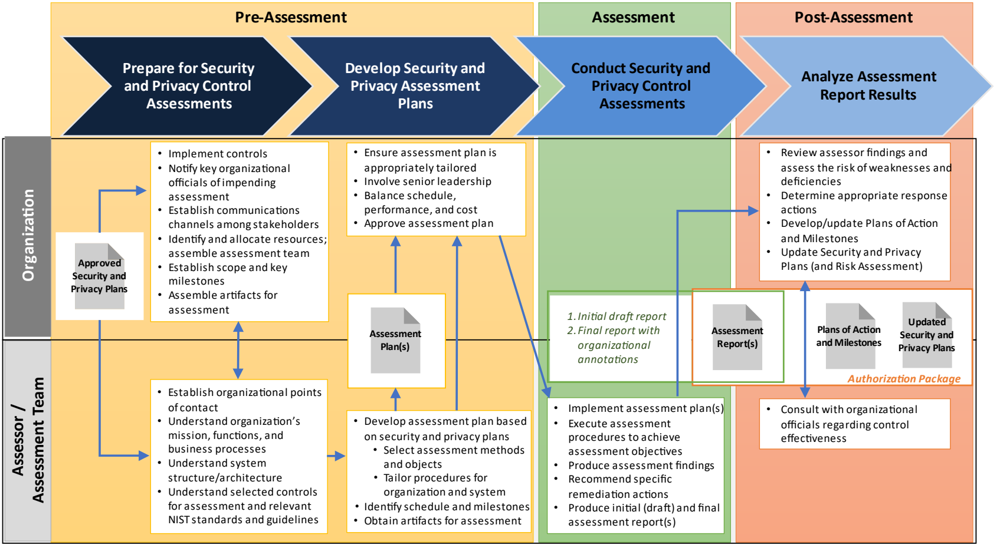
図8：セキュリティ・プライバシー管理策の評価プロセス。評価前に評価の準備と評価計画の策定を行い、評価中に計画を実施し、評価後に報告結果を分析する。組織は管理策の実装、関係者への通知、連絡経路・資源・チーム・範囲・節目・評価資料の準備、計画の調整と承認、指摘事項のリスク評価、対応の決定を担う。評価者／評価チームは組織・システム・管理策の理解、評価方法と対象の選択、手順の調整と実施、評価結果・是正案・報告書の作成、管理策の有効性に関する協議を担う。評価計画、初期ドラフトと組織の注記を含む最終報告書、行動計画とマイルストーン、更新したセキュリティ・プライバシー計画（およびリスク評価）の関係を示す。報告書、行動計画とマイルストーン、更新した計画で認可パッケージを構成する。
FIGURE 8: SECURITY AND PRIVACY CONTROL ASSESSMENT PROCESS OVERVIEW
図8：セキュリティおよびプライバシー管理策評価プロセスの概要
CHAPTER FOUR
第4章
SECURITY AND PRIVACY ASSESSMENT PROCEDURES
セキュリティおよびプライバシー評価手順
OBJECTIVES, METHODS, AND OBJECTS FOR ASSESSING SECURITY AND PRIVACY CONTROLS
セキュリティおよびプライバシー管理策を評価するための目的、方法、対象
This chapter provides a catalog of procedures to assess the security and privacy controls and control enhancements in [SP 800-53].49 Assessors select assessment procedures from the catalog in accordance with the guidance provided in Section 3.2. Since the contents of the security and privacy plan are the basis for the development of the security and privacy assessment plans and the assessments, there will likely be assessment procedures in the catalog not used by assessors because the associated security and privacy controls or control enhancements are not contained in the security and privacy plan for the system,50 or the security and privacy controls or control enhancements are not being assessed at this time.
本章では、[SP 800-53]のセキュリティ管理策およびプライバシー管理策ならびに管理策の拡張を評価する手順のカタログを示す。49 評価者は、3.2節に示す指針に従ってカタログから評価手順を選ぶ。セキュリティ計画およびプライバシー計画の内容が、セキュリティ評価計画およびプライバシー評価計画の策定と評価の基礎となるため、関連するセキュリティ管理策およびプライバシー管理策または管理策の拡張がそのシステムのセキュリティ計画およびプライバシー計画に含まれていない場合50、あるいは今回は評価の対象としていない場合には、評価者に使用されない評価手順がカタログ内に存在する可能性が高い。
SP 800-53A 改訂第 5 版の評価手順スキーマ
Section 2.4 provides an overview of the assessment procedures, including the naming and numbering convention, assessment objectives, determination statements, potential assessment methods, and objects.
2.4 節では、命名・番号付けの規則、評価目的、判定文、評価方法の候補、評価対象を含む評価手順の概要を示す。
Appendix C provides definitions of the assessment methods, applicable objects, and additional information on assessment attributes of depth and coverage.
付録 C では、評価方法と該当する評価対象の定義、および評価属性である深度と網羅範囲に関する追加情報を示す。
The same assessment object may appear in multiple assessment object lists in a variety of assessment procedures. The same object may be used in multiple contexts to obtain needed information or evidence for a particular aspect of an assessment. Assessors use the general references as appropriate to obtain the necessary information to make the specified determinations required by the assessment objective. For example, a reference to access control policy appears in the assessment procedures for AC-02 and AC-07. For assessment procedure AC-02, assessors use the access control policy to find information about that portion of the policy that addresses account management for the system. For assessment procedure AC-07, assessors use the access control policy to find information about that portion of the policy that addresses unsuccessful login attempts for the system.
同じ評価対象が複数の評価手順の対象一覧に現れることがある。同じ対象を複数の文脈で用い、評価の特定側面に必要な情報または証拠を得る場合がある。評価者は一般的な参照資料を適宜用いて、評価目的で要求される判定に必要な情報を得る。例えば、アクセス制御方針はAC-02とAC-07の評価手順に含まれる。AC-02ではシステムのアカウント管理を扱う方針部分を調べ、AC-07ではシステムへのログイン失敗試行を扱う部分を調べる。
Assessors are responsible for combining and consolidating the assessment procedures whenever possible or practical. Optimizing assessment procedures can save time, reduce assessment costs, and maximize the usefulness of assessment results. Assessors optimize assessment procedures by determining the best sequencing of the procedures. The assessment
評価者は、可能または実務上適切な場合に評価手順を組み合わせ、統合する責任を負う。手順を最適化すると時間と評価費用を削減し、評価結果の有用性を最大化できる。評価者は手順の最適な実施順序を決めて最適化する。評価
49[SP 800-53] remains the definitive expression of the control or enhancement in the event of any differences between the assessment objectives identified for assessing the security and privacy controls and the underlying intent expressed by the security and privacy control statements defined in the most recent version of SP 800-53. 50The execution of the RMF includes the selection of an initial set of security and privacy controls employed within or inherited by an organizational system followed by a control tailoring process. The tailoring process often changes the set of security and privacy controls contained in the final security plan and privacy program plan. Therefore, the selection of assessment procedures from the catalog of available procedures is based solely on the content of the plan(s) after the tailoring activities are completed.
49 セキュリティ管理策およびプライバシー管理策の評価に特定された評価目的と、SP 800-53の最新版で定義されたセキュリティ管理策およびプライバシー管理策の記述に表された本来の意図との間に相違がある場合、管理策または拡張の確定的な表現は[SP 800-53]である。50 RMFの実施には、組織システム内で採用される、またはシステムが継承する、セキュリティ管理策およびプライバシー管理策の初期セットの選択と、それに続く管理策の調整プロセスが含まれる。調整プロセスによって、最終的なセキュリティ計画およびプライバシープログラム計画に含まれる管理策のセットが変わることが多い。したがって、利用可能な手順のカタログからの評価手順の選択は、調整活動の完了後の計画の内容のみに基づく。
of some security and privacy controls before others may provide information that facilitates understanding and assessment of other controls.51
一部のセキュリティ管理策およびプライバシー管理策を他のものより先に行うことは、他の管理策の理解と評価を容易にする情報をもたらすことがある。51
The assessment procedures are published in multiple data formats, including comma-separated values (CSV), plain text, and Open Security Controls Assessment (OSCAL). The available data formats are accessible from on the NIST SP 800-53A Revision 5, publication details page at https://csrc.nist.gov/publications/detail/sp/800-53A/rev-5. The OSCAL Content Git Repository is available at https://github.com/usnistgov/oscal-content.
評価手順は、コンマ区切り値（CSV）、プレーンテキスト、Open Security Controls Assessment（OSCAL）など、複数のデータ形式で公開される。利用可能な形式は、NIST SP 800-53A Rev. 5の出版情報ページ https://csrc.nist.gov/publications/detail/sp/800-53A/rev-5 から入手できる。OSCALコンテンツGitリポジトリ：https://github.com/usnistgov/oscal-content。
注意事項
Whereas a set of potential assessment methods are included in the following catalog of assessment procedures, the potential assessment methods are not intended to be mandatory or exclusive. Depending on the particular circumstances of the system or organization to be assessed, not all methods may be required, or other assessment methods may also be used. In addition, the set of potential assessment objects listed in the catalog are not intended to be mandatory but rather a set from which the necessary and sufficient set of objects for a given assessment can be selected to make the appropriate determinations. Organizational assurance requirements and other risk management-related factors (e.g., system categorization, organizational risk tolerance) are primary drivers for determining the appropriate assessment methods and objects for a given assessment.
以下の評価手順のカタログには評価方法の候補が含まれているが、これらの評価方法の候補は、必須でも排他的でもない。評価対象のシステムや組織の個別の状況によっては、すべての方法が必要とは限らず、他の評価方法を用いてもよい。また、カタログに列挙した評価対象の候補も、必須ではなく、個々の評価で適切な判定を行うために必要かつ十分な対象を選ぶための集合である。組織の保証要件その他のリスク管理に関連する要因（システムのセキュリティ分類、組織のリスク許容度など）が、個々の評価に適した評価方法と評価対象を決める主な要因となる。
実装上のヒント
TIP #1: Select only those assessment procedures from Chapter 4 that correspond to the controls and control enhancements in the approved system security plan and privacy plan to be included in the assessment.
ヒント 1：評価に含める、承認済みのシステムセキュリティ計画およびプライバシー計画の管理策と管理策強化策に対応する評価手順だけを、第 4 章から選択する。
TIP #2: The assessment procedures selected from Chapter 4 are example procedures that serve as a starting point for organizations preparing for assessments. These assessment procedures are tailored as necessary by the assessors in accordance with the guidance in Section 3.2.3 to adapt to specific organizational requirements and operating environments.
ヒント 2：第 4 章から選択する評価手順は、評価の準備をする組織の出発点となる手順例である。これらの評価手順は、特定の組織要件や運用環境に適応させるため、3.2.3 節のガイダンスに従って評価者が必要に応じてテーラリングする。
TIP #3: With respect to the assessment procedures in Chapter 4, assessors need only apply those procedures, methods, and objects necessary for making a final determination that a particular security control requirement is “satisfied” or “not satisfied” (see Section 3.3).
ヒント 3：第 4 章の評価手順については、評価者は、特定のセキュリティ管理策要件が「満たされている」か「満たされていない」かを最終的に判定するために必要な手順、方法、対象だけを適用すればよい（3.3 節を参照）。
TIP #4: To each assessment method, assessors apply values for depth and coverage (described in Appendix C) that are commensurate with the characteristics of the system (including assurance requirements) and the specific assessment activity that supports making a determination of the effectiveness of the security controls under review. The values selected for the depth and coverage attributes indicate the relative effort required in applying an assessment method to an assessment object (i.e., the rigor and scope of the activities associated with the assessment). The depth and coverage attributes, while not repeated in every assessment procedure in this appendix, can be represented as follows:
ヒント 4：評価者は、各評価方法に、システムの特性（保証要件を含む）と、評価対象のセキュリティ管理策の有効性の判定を裏付ける具体的な評価活動に見合った深度と網羅範囲（付録 C で説明）の値を適用する。深度と網羅範囲の属性に選択した値は、評価方法を評価対象に適用するために必要な相対的な作業量（すなわち、評価に伴う活動の厳密さと範囲）を示す。深度と網羅範囲の属性は、この付録の各評価手順には繰り返し示していないが、次のように表すことができる。
Interview: [assign attribute values: <depth>, <coverage>]. [SELECT FROM: Organizational personnel with contingency planning and plan implementation responsibilities].
面談：[属性値を割り当てる：<深度>、<網羅範囲>]。[次から選択：コンティンジェンシー計画および計画の実装に責任を負う組織の要員]。
TIP #5: Assessors may find useful assessment-related information in the Discussion and Related Controls section of each control described in [SP 800-53]. Information from the discussion about related controls can be used to carry out more effective assessments with regard to the application of assessment procedures and the reuse of assessment artifacts.
ヒント 5：評価者は、[SP 800-53] に記載された各管理策の「解説」および「関連する管理策」の節に、評価に関する有用な情報を見いだす場合がある。関連する管理策に関する解説の情報は、評価手順の適用や評価成果物の再利用に関して、より効果的な評価を行うために利用できる。
TIP #6: For controls with ODPs, the ODP values are defined during the RMF Select step and updated as necessary during the RMF Implement and Monitor steps. If ODP values are not defined and implemented, control effectiveness cannot be verified, resulting in an “other than satisfied” finding.
ヒント 6：ODP を伴う管理策では、ODP の値は RMF の選定ステップで定義し、RMF の実装およびモニタリングのステップで必要に応じて更新する。ODP の値が定義され実装されていなければ、管理策の有効性を検証できず、「満たされている以外」の所見になる。
TIP #7: Organizations may refer to this publication or the derivative data formats to easily identify all of the control parameters whose values to define. The ODP definitions are highlighted within the assessment procedure listing and can be filtered using keyword “_ODP” or “XX-nn_ODP” (where XX is the two-character control family abbreviation, and nn is the control number).
ヒント 7：組織は、本刊行物またはその派生データ形式を参照することで、値を定義すべき管理策のパラメータをすべて容易に識別できる。ODP の定義は、評価手順の一覧の中で強調表示されており、キーワード「_ODP」または「XX-nn_ODP」（XX は 2 文字の管理策ファミリー略称、nn は管理策番号）で絞り込める。
Note: When assessing agency compliance with NIST guidance, auditors, Inspectors General, evaluators, and/or assessors consider the intent of the security and privacy concepts and principles articulated within the particular guidance document and how the agency applied the guidance in the context of its specific mission responsibilities, operational environments, and unique organizational conditions.
注：NIST のガイダンスへの準拠を評価する際、監査人、監察総監、評価員、および／または評価者は、当該ガイダンス文書に示されたセキュリティ・プライバシーの概念と原則の意図、および機関が固有の任務上の責任、運用環境、独自の組織的条件に照らしてそのガイダンスをどのように適用したかを考慮する。
4.1 ACCESS CONTROL
4.1 アクセス制御
| AC-01 | POLICY AND PROCEDURES | |
|---|---|---|
| ASSESSMENT OBJECTIVE: Determine if: | ||
| AC-01_ODP[01] | personnel or roles to whom the access control policy is to be disseminated is/are defined; | |
| AC-01_ODP[02] | personnel or roles to whom the access control procedures are to be disseminated is/are defined; | |
| AC-01_ODP[03] | one or more of the following PARAMETER VALUES is/are selected: {organization-level; mission/business process-level; system-level}; | |
| AC-01_ODP[04] | an official to manage the access control policy and procedures is defined; | |
| AC-01_ODP[05] | the frequency at which the current access control policy is reviewed and updated is defined; | |
| AC-01_ODP[06] | events that would require the current access control policy to be reviewed and updated are defined; | |
| AC-01_ODP[07] | the frequency at which the current access control procedures are reviewed and updated is defined; | |
| AC-01_ODP[08] | events that would require procedures to be reviewed and updated are defined; | |
| AC-01a.[01] | an access control policy is developed and documented; | |
| AC-01a.[02] | the access control policy is disseminated to <AC-01_ODP[01] personnel or roles>; | |
| AC-01a.[03] | access control procedures to facilitate the implementation of the access control policy and associated controls are developed and documented; | |
| AC-01a.[04] | the access control procedures are disseminated to <AC-01_ODP[02] personnel or roles>; | |
| AC-01a.01(a)[01] | the <AC-01_ODP[03] SELECTED PARAMETER VALUE(S)> access control policy addresses purpose; | |
| AC-01a.01(a)[02] | the <AC-01_ODP[03] SELECTED PARAMETER VALUE(S)> access control policy addresses scope; | |
| AC-01a.01(a)[03] | the <AC-01_ODP[03] SELECTED PARAMETER VALUE(S)> access control policy addresses roles; | |
| AC-01a.01(a)[04] | the <AC-01_ODP[03] SELECTED PARAMETER VALUE(S)> access control policy addresses responsibilities; | |
| AC-01a.01(a)[05] | the <AC-01_ODP[03] SELECTED PARAMETER VALUE(S)> access control policy addresses management commitment; | |
| AC-01a.01(a)[06] | the <AC-01_ODP[03] SELECTED PARAMETER VALUE(S)> access control policy addresses coordination among organizational entities; | |
| AC-01a.01(a)[07] | the <AC-01_ODP[03] SELECTED PARAMETER VALUE(S)> access control policy addresses compliance; | |
| AC-01 | 方針および手順 | |
|---|---|---|
| 評価目的：次を判定する。 | ||
| AC-01_ODP[01] | アクセス制御方針の周知先となる職員またはロールが定義されている。 | |
| AC-01_ODP[02] | アクセス制御手順の周知先となる職員またはロールが定義されている。 | |
| AC-01_ODP[03] | 次のパラメータ値から1つ以上を選択する：{組織レベル、任務／事業プロセスレベル、システムレベル}。 | |
| AC-01_ODP[04] | アクセス制御方針および手順を管理する責任者が定義されている。 | |
| AC-01_ODP[05] | 現行のアクセス制御方針をレビュー・更新する頻度が定義されている。 | |
| AC-01_ODP[06] | 現行のアクセス制御方針のレビュー・更新が必要となる事象が定義されている。 | |
| AC-01_ODP[07] | 現行のアクセス制御手順をレビュー・更新する頻度が定義されている。 | |
| AC-01_ODP[08] | 手順のレビュー・更新が必要となる事象が定義されている。 | |
| AC-01a.[01] | アクセス制御方針が策定され、文書化されている。 | |
| AC-01a.[02] | アクセス制御方針が<AC-01_ODP[01] 職員または役割>に周知されている。 | |
| AC-01a.[03] | アクセス制御方針および関連管理策の実装を促進するアクセス制御手順が策定され、文書化されている。 | |
| AC-01a.[04] | アクセス制御手順が<AC-01_ODP[02] 職員または役割>に周知されている。 | |
| AC-01a.01(a)[01] | <AC-01_ODP[03] 選択されたパラメータ値>のアクセス制御方針が目的を規定している。 | |
| AC-01a.01(a)[02] | <AC-01_ODP[03] 選択されたパラメータ値>のアクセス制御方針が適用範囲を規定している。 | |
| AC-01a.01(a)[03] | <AC-01_ODP[03] 選択されたパラメータ値>のアクセス制御方針がロールを規定している。 | |
| AC-01a.01(a)[04] | <AC-01_ODP[03] 選択されたパラメータ値>のアクセス制御方針が責任を規定している。 | |
| AC-01a.01(a)[05] | <AC-01_ODP[03] 選択されたパラメータ値>のアクセス制御方針が管理者のコミットメントを規定している。 | |
| AC-01a.01(a)[06] | <AC-01_ODP[03] 選択されたパラメータ値>のアクセス制御方針が組織内の各主体間の調整を規定している。 | |
| AC-01a.01(a)[07] | <AC-01_ODP[03] 選択されたパラメータ値>のアクセス制御方針がコンプライアンスを規定している。 | |
| AC-01 | POLICY AND PROCEDURES | |
|---|---|---|
| AC-01a.01(b) | the <AC-01_ODP[03] SELECTED PARAMETER VALUE(S)> access control policy is consistent with applicable laws, Executive Orders, directives, regulations, policies, standards, and guidelines; | |
| AC-01b. | the <AC-01_ODP[04] official> is designated to manage the development, documentation, and dissemination of the access control policy and procedures; | |
| AC-01c.01[01] | the current access control policy is reviewed and updated <AC-01_ODP[05] frequency>; | |
| AC-01c.01[02] | the current access control policy is reviewed and updated following <AC-01_ODP[06] events>; | |
| AC-01c.02[01] | the current access control procedures are reviewed and updated <AC-01_ODP[07] frequency>; | |
| AC-01c.02[02] | the current access control procedures are reviewed and updated following <AC-01_ODP[08] events>. | |
| POTENTIAL ASSESSMENT METHODS AND OBJECTS: | ||
| AC-01-Examine | [SELECT FROM: Access control policy and procedures; system security plan; privacy plan; other relevant documents or records]. | |
| AC-01-Interview | [SELECT FROM: Organizational personnel with access control responsibilities; organizational personnel with information security with information security and privacy responsibilities]. | |
| AC-01 | 方針および手順 | |
|---|---|---|
| AC-01a.01(b) | <AC-01_ODP[03] 選択されたパラメータ値>のアクセス制御方針が、適用される法令、大統領令、指令、規則、方針、標準およびガイドラインと整合している。 | |
| AC-01b. | アクセス制御方針および手順の策定、文書化および周知を管理する<AC-01_ODP[04] 担当職員>が指名されている。 | |
| AC-01c.01[01] | 現行のアクセス制御方針が<AC-01_ODP[05] 頻度>で見直され、更新されている。 | |
| AC-01c.01[02] | 現行のアクセス制御方針が、<AC-01_ODP[06] 事象>の後に見直され、更新されている。 | |
| AC-01c.02[01] | 現行のアクセス制御手順が<AC-01_ODP[07] 頻度>で見直され、更新されている。 | |
| AC-01c.02[02] | 現行のアクセス制御手順が、<AC-01_ODP[08] 事象>の後に見直され、更新されている。 | |
| 評価方法および対象の候補： | ||
| AC-01-Examine | [次から選択：アクセス制御方針および手順；システムセキュリティ計画；プライバシー計画；その他の関連文書または記録]。 | |
| AC-01-Interview | [次から選択：アクセス制御の責任を担う組織要員；情報セキュリティおよびプライバシーの責任を担う組織要員]。 | |
| AC-02 | ACCOUNT MANAGEMENT | |
|---|---|---|
| ASSESSMENT OBJECTIVE: Determine if: | ||
| AC-02_ODP[01] | prerequisites and criteria for group and role membership are defined; | |
| AC-02_ODP[02] | attributes (as required) for each account are defined; | |
| AC-02_ODP[03] | personnel or roles required to approve requests to create accounts is/are defined; | |
| AC-02_ODP[04] | policy, procedures, prerequisites, and criteria for account creation, enabling, modification, disabling, and removal are defined; | |
| AC-02_ODP[05] | personnel or roles to be notified is/are defined; | |
| AC-02_ODP[06] | time period within which to notify account managers when accounts are no longer required is defined; | |
| AC-02_ODP[07] | time period within which to notify account managers when users are terminated or transferred is defined; | |
| AC-02_ODP[08] | time period within which to notify account managers when system usage or the need to know changes for an individual is defined; | |
| AC-02_ODP[09] | attributes needed to authorize system access (as required) are defined; | |
| AC-02_ODP[10] | the frequency of account review is defined; | |
| AC-02a.[01] | account types allowed for use within the system are defined and documented; | |
| AC-02 | アカウント管理 | |
|---|---|---|
| 評価目的：次を判定する。 | ||
| AC-02_ODP[01] | グループおよびロールのメンバーシップに関する前提条件と基準が定義されている。 | |
| AC-02_ODP[02] | 各アカウントに必要な属性が定義されている。 | |
| AC-02_ODP[03] | アカウント作成要求を承認する職員またはロールが定義されている。 | |
| AC-02_ODP[04] | アカウントの作成、有効化、変更、無効化、削除に関する方針、手順、前提条件および基準が定義されている。 | |
| AC-02_ODP[05] | 通知先となる職員またはロールが定義されている。 | |
| AC-02_ODP[06] | アカウントが不要となった際にアカウント管理者へ通知するまでの期間が定義されている。 | |
| AC-02_ODP[07] | ユーザーの退職または異動時にアカウント管理者へ通知するまでの期間が定義されている。 | |
| AC-02_ODP[08] | 個人のシステム利用または知る必要性に変更があった際に、アカウント管理者へ通知するまでの期間が定義されている。 | |
| AC-02_ODP[09] | システムアクセスの認可に必要な属性が定義されている。 | |
| AC-02_ODP[10] | アカウントをレビューする頻度が定義されている。 | |
| AC-02a.[01] | システム内での使用を許可するアカウント種別が定義され、文書化されている。 | |
| AC-02 | ACCOUNT MANAGEMENT | |
|---|---|---|
| AC-02a.[02] | account types specifically prohibited for use within the system are defined and documented; | |
| AC-02b. | account managers are assigned; | |
| AC-02c. | <AC-02_ODP[01] prerequisites and criteria> for group and role membership are required; | |
| AC-02d.01 | authorized users of the system are specified; | |
| AC-02d.02 | group and role membership are specified; | |
| AC-02d.03[01] | access authorizations (i.e., privileges) are specified for each account; | |
| AC-02d.03[02] | <AC-02_ODP[02] attributes (as required)> are specified for each account; | |
| AC-02e. | approvals are required by <AC-02_ODP[03] personnel or roles> for requests to create accounts; | |
| AC-02f.[01] | accounts are created in accordance with <AC-02_ODP[04] policy, procedures, prerequisites, and criteria>; | |
| AC-02f.[02] | accounts are enabled in accordance with <AC-02_ODP[04] policy, procedures, prerequisites, and criteria>; | |
| AC-02f.[03] | accounts are modified in accordance with <AC-02_ODP[04] policy, procedures, prerequisites, and criteria>; | |
| AC-02f.[04] | accounts are disabled in accordance with <AC-02_ODP[04] policy, procedures, prerequisites, and criteria>; | |
| AC-02f.[05] | accounts are removed in accordance with <AC-02_ODP[04] policy, procedures, prerequisites, and criteria>; | |
| AC-02g. | the use of accounts is monitored; | |
| AC-02h.01 | account managers and <AC-02_ODP[05] personnel or roles> are notified within <AC-02_ODP[06] time period> when accounts are no longer required; | |
| AC-02h.02 | account managers and <AC-02_ODP[05] personnel or roles> are notified within <AC-02_ODP[07] time period> when users are terminated or transferred; | |
| AC-02h.03 | account managers and <AC-02_ODP[05] personnel or roles> are notified within <AC-02_ODP[08] time period> when system usage or the need to know changes for an individual; | |
| AC-02i.01 | access to the system is authorized based on a valid access authorization; | |
| AC-02i.02 | access to the system is authorized based on intended system usage; | |
| AC-02i.03 | access to the system is authorized based on <AC-02_ODP[09] attributes (as required)>; | |
| AC-02j. | accounts are reviewed for compliance with account management requirements <AC-02_ODP[10] frequency>; | |
| AC-02k.[01] | a process is established for changing shared or group account authenticators (if deployed) when individuals are removed from the group; | |
| AC-02k.[02] | a process is implemented for changing shared or group account authenticators (if deployed) when individuals are removed from the group; | |
| AC-02l.[01] | account management processes are aligned with personnel termination processes; | |
| AC-02 | アカウント管理 | |
|---|---|---|
| AC-02a.[02] | システム内での使用が明確に禁止されているアカウントの種類が定義され、文書化されている。 | |
| AC-02b. | アカウント管理者が割り当てられている。 | |
| AC-02c. | グループおよびロールへの所属について<AC-02_ODP[01] 前提条件および基準>を満たすことが求められている。 | |
| AC-02d.01 | システムの許可ユーザーが指定されている。 | |
| AC-02d.02 | グループおよびロールへの所属が指定されている。 | |
| AC-02d.03[01] | 各アカウントのアクセス許可（すなわち権限）が指定されている。 | |
| AC-02d.03[02] | 各アカウントについて<AC-02_ODP[02] 属性（必要な場合）>が指定されている。 | |
| AC-02e. | アカウント作成要求について<AC-02_ODP[03] 職員またはロール>による承認が求められている。 | |
| AC-02f.[01] | アカウントは<AC-02_ODP[04] 方針、手順、前提条件および基準>に従って作成される。 | |
| AC-02f.[02] | アカウントは<AC-02_ODP[04] 方針、手順、前提条件および基準>に従って有効化される。 | |
| AC-02f.[03] | アカウントは<AC-02_ODP[04] 方針、手順、前提条件および基準>に従って変更される。 | |
| AC-02f.[04] | アカウントは<AC-02_ODP[04] 方針、手順、前提条件および基準>に従って無効化される。 | |
| AC-02f.[05] | アカウントは<AC-02_ODP[04] 方針、手順、前提条件および基準>に従って削除される。 | |
| AC-02g. | アカウントの使用が監視されている。 | |
| AC-02h.01 | アカウントが不要になった場合、アカウント管理者および<AC-02_ODP[05] 職員またはロール>に<AC-02_ODP[06] 期間>内に通知される。 | |
| AC-02h.02 | ユーザーが退職または異動した場合、アカウント管理者および<AC-02_ODP[05] 職員またはロール>に<AC-02_ODP[07] 期間>内に通知される。 | |
| AC-02h.03 | 個人のシステム利用状況または知る必要性に変更があった場合、アカウント管理者および<AC-02_ODP[05] 職員またはロール>に<AC-02_ODP[08] 期間>内に通知される。 | |
| AC-02i.01 | 有効なアクセス許可に基づいてシステムへのアクセスが承認される。 | |
| AC-02i.02 | 意図されたシステム利用に基づいてシステムへのアクセスが承認される。 | |
| AC-02i.03 | <AC-02_ODP[09] 属性（必要な場合）>に基づいてシステムへのアクセスが承認される。 | |
| AC-02j. | アカウント管理要件への適合について、<AC-02_ODP[10] 頻度>でアカウントをレビューする。 | |
| AC-02k.[01] | 個人がグループから除外されたとき（導入されている場合）、共有アカウントまたはグループアカウントの認証子を変更するプロセスが確立されている。 | |
| AC-02k.[02] | 個人がグループから除外されたとき（導入されている場合）、共有アカウントまたはグループアカウントの認証子を変更するプロセスが実施されている。 | |
| AC-02l.[01] | アカウント管理プロセスが職員の退職プロセスと整合している。 | |
| AC-02 | ACCOUNT MANAGEMENT | |
|---|---|---|
| AC-02l.[02] | account management processes are aligned with personnel transfer processes. | |
| POTENTIAL ASSESSMENT METHODS AND OBJECTS: | ||
| AC-02-Examine | [SELECT FROM: Access control policy; personnel termination policy and procedure; personnel transfer policy and procedure; procedures for addressing account management; system design documentation; system configuration settings and associated documentation; list of active system accounts along with the name of the individual associated with each account; list of recently disabled system accounts and the name of the individual associated with each account; list of conditions for group and role membership; notifications of recent transfers, separations, or terminations of employees; access authorization records; account management compliance reviews; system monitoring records; system audit records; system security plan; privacy plan; other relevant documents or records]. | |
| AC-02-Interview | [SELECT FROM: Organizational personnel with account management responsibilities; system/network administrators; organizational personnel with information security with information security and privacy responsibilities]. | |
| AC-02-Test | [SELECT FROM: Organizational processes for account management on the system; mechanisms for implementing account management]. | |
| AC-02 | アカウント管理 | |
|---|---|---|
| AC-02l.[02] | アカウント管理プロセスが職員の異動プロセスと整合している。 | |
| 評価方法および対象の候補： | ||
| AC-02-Examine | [次から選択：アクセス制御方針；職員の退職に関する方針および手順；職員の異動に関する方針および手順；アカウント管理に関する手順；システム設計文書；システム構成設定および関連文書；各アカウントに関連付けられた個人名を含む有効なシステムアカウントの一覧；各アカウントに関連付けられた個人名を含む最近無効化されたシステムアカウントの一覧；グループおよびロールへの所属条件一覧；職員の最近の異動、離職または退職に関する通知；アクセス許可記録；アカウント管理の適合性レビュー；システム監視記録；システム監査記録；システムセキュリティ計画；プライバシー計画；その他の関連文書または記録]。 | |
| AC-02-Interview | [次から選択：アカウント管理責任を担う組織要員；システム／ネットワーク管理者；情報セキュリティおよびプライバシーの責任を担う組織要員]。 | |
| AC-02-Test | [次から選択：システム上のアカウント管理に関する組織プロセス；アカウント管理を実装するメカニズム]。 | |
| AC-02(01) | ACCOUNT MANAGEMENT | AUTOMATED SYSTEM ACCOUNT MANAGEMENT | |
|---|---|---|
| ASSESSMENT OBJECTIVE: Determine if: | ||
| AC-02(01)_ODP | automated mechanisms used to support the management of system accounts are defined; | |
| AC-02(01) | the management of system accounts is supported using <AC-02(01)_ODP automated mechanisms>. | |
| POTENTIAL ASSESSMENT METHODS AND OBJECTS: | ||
| AC-02(01)-Examine | [SELECT FROM: Access control policy; procedures for addressing account management; system design documentation; system configuration settings and associated documentation; system audit records; system security plan; other relevant documents or records]. | |
| AC-02(01)-Interview | [SELECT FROM: Organizational personnel with account management responsibilities; system/network administrators; organizational personnel with information security with information security responsibilities; system developers]. | |
| AC-02(01)-Test | [SELECT FROM: Automated mechanisms for implementing account management functions]. | |
| AC-02(01) | アカウント管理｜自動化されたシステムアカウント管理 | |
|---|---|---|
| 評価目的：次を判定する。 | ||
| AC-02(01)_ODP | システムアカウントの管理を支援するために使用する自動化メカニズムが定義されている。 | |
| AC-02(01) | システムアカウントの管理が<AC-02(01)_ODP 自動化メカニズム>を使用して支援されている。 | |
| 評価方法および対象の候補： | ||
| AC-02(01)-Examine | [次から選択：アクセス制御方針；アカウント管理に関する手順；システム設計文書；システム構成設定および関連文書；システム監査記録；システムセキュリティ計画；その他の関連文書または記録]。 | |
| AC-02(01)-Interview | [次から選択：アカウント管理責任を担う組織要員；システム／ネットワーク管理者；情報セキュリティ責任を担う組織要員；システム開発者]。 | |
| AC-02(01)-Test | [次から選択：アカウント管理機能を実装する自動化メカニズム]。 | |
| AC-02(02) | ACCOUNT MANAGEMENT | AUTOMATED TEMPORARY AND EMERGENCY ACCOUNT MANAGEMENT | |
|---|---|---|
| ASSESSMENT OBJECTIVE: Determine if: | ||
| AC-02(02)_ODP[01] | one of the following PARAMETER VALUES is selected: {remove; disable}; | |
| AC-02(02) | アカウント管理 | 一時アカウントおよび緊急アカウントの自動管理 | |
|---|---|---|
| 評価目的：次を判定する。 | ||
| AC-02(02)_ODP[01] | 次のパラメータ値のいずれかが選択されている：{削除する；無効化する}。 | |
| AC-02(02) | ACCOUNT MANAGEMENT | AUTOMATED TEMPORARY AND EMERGENCY ACCOUNT MANAGEMENT | |
|---|---|---|
| AC-02(02)_ODP[02] | the time period after which to automatically remove or disable temporary or emergency accounts is defined; | |
| AC-02(02) | temporary and emergency accounts are automatically <AC-02(02)_ODP[01] SELECTED PARAMETER VALUE> after <AC-02(02)_ODP[02] time period>. | |
| POTENTIAL ASSESSMENT METHODS AND OBJECTS: | ||
| AC-02(02)-Examine | [SELECT FROM: Access control policy; procedures for addressing account management; system design documentation; system configuration settings and associated documentation; system-generated list of temporary accounts removed and/or disabled; system-generated list of emergency accounts removed and/or disabled; system audit records; system security plan; other relevant documents or records]. | |
| AC-02(02)-Interview | [SELECT FROM: Organizational personnel with account management responsibilities; system/network administrators; organizational personnel with information security with information security responsibilities; system developers]. | |
| AC-02(02)-Test | [SELECT FROM: Automated mechanisms for implementing account management functions]. | |
| AC-02(02) | アカウント管理 | 一時アカウントおよび緊急アカウントの自動管理 | |
|---|---|---|
| AC-02(02)_ODP[02] | 一時アカウントまたは緊急アカウントを自動的に削除または無効化するまでの期間が定義されている。 | |
| AC-02(02) | 一時アカウントおよび緊急アカウントは、<AC-02(02)_ODP[02] 期間>後に自動的に<AC-02(02)_ODP[01] 選択されたパラメータ値>される。 | |
| 評価方法および対象の候補： | ||
| AC-02(02)-Examine | [次から選択：アクセス制御方針；アカウント管理に関する手順；システム設計文書；システム構成設定および関連文書；削除および／または無効化された一時アカウントのシステム生成一覧；削除および／または無効化された緊急アカウントのシステム生成一覧；システム監査記録；システムセキュリティ計画；その他の関連文書または記録]。 | |
| AC-02(02)-Interview | [次から選択：アカウント管理責任を担う組織要員；システム／ネットワーク管理者；情報セキュリティ責任を担う組織要員；システム開発者]。 | |
| AC-02(02)-Test | [次から選択：アカウント管理機能を実装する自動化メカニズム]。 | |
| AC-02(03) | ACCOUNT MANAGEMENT | DISABLE ACCOUNTS | |
|---|---|---|
| ASSESSMENT OBJECTIVE: Determine if: | ||
| AC-02(03)_ODP[01] | time period within which to disable accounts is defined; | |
| AC-02(03)_ODP[02] | time period for account inactivity before disabling is defined; | |
| AC-02(03)(a) | accounts are disabled within <AC-02(03)_ODP[01] time period> when the accounts have expired; | |
| AC-02(03)(b) | accounts are disabled within <AC-02(03)_ODP[01] time period> when the accounts are no longer associated with a user or individual; | |
| AC-02(03)(c) | accounts are disabled within <AC-02(03)_ODP[01] time period> when the accounts are in violation of organizational policy; | |
| AC-02(03)(d) | accounts are disabled within <AC-02(03)_ODP[01] time period> when the accounts have been inactive for <AC-02(03)_ODP[02] time period>. | |
| POTENTIAL ASSESSMENT METHODS AND OBJECTS: | ||
| AC-02(03)-Examine | [SELECT FROM: Access control policy; procedures for addressing account management; system security plan; system design documentation; system configuration settings and associated documentation; system-generated list of accounts removed; system-generated list of emergency accounts disabled; system audit records; system security plan; other relevant documents or records]. | |
| AC-02(03)-Interview | [SELECT FROM: Organizational personnel with account management responsibilities; system/network administrators; organizational personnel with information security responsibilities; system developers]. | |
| AC-02(03)-Test | [SELECT FROM: Mechanisms for implementing account management functions]. | |
| AC-02(03) | アカウント管理｜アカウントの無効化 | |
|---|---|---|
| 評価目的：次を判定する。 | ||
| AC-02(03)_ODP[01] | アカウントを無効化するまでの期間が定義されている。 | |
| AC-02(03)_ODP[02] | 無効化前にアカウントを非アクティブ状態にしておく期間が定義されている。 | |
| AC-02(03)(a) | アカウントの有効期限が切れた場合、<AC-02(03)_ODP[01] 期間>内にアカウントが無効化される。 | |
| AC-02(03)(b) | アカウントがユーザーまたは個人と関連付けられなくなった場合、<AC-02(03)_ODP[01] 期間>内にアカウントが無効化される。 | |
| AC-02(03)(c) | アカウントが組織方針に違反している場合、<AC-02(03)_ODP[01] 期間>内にアカウントが無効化される。 | |
| AC-02(03)(d) | アカウントが<AC-02(03)_ODP[02] 期間>にわたり非アクティブであった場合、<AC-02(03)_ODP[01] 期間>内に無効化される。 | |
| 評価方法および対象の候補： | ||
| AC-02(03)-Examine | [次から選択：アクセス制御方針；アカウント管理に関する手順；システムセキュリティ計画；システム設計文書；システム構成設定および関連文書；削除されたアカウントのシステム生成一覧；無効化された緊急アカウントのシステム生成一覧；システム監査記録；システムセキュリティ計画；その他の関連文書または記録]。 | |
| AC-02(03)-Interview | [次から選択：アカウント管理責任を担う組織要員；システム／ネットワーク管理者；情報セキュリティ責任を担う組織要員；システム開発者]。 | |
| AC-02(03)-Test | [次から選択：アカウント管理機能を実装するメカニズム]。 | |
| AC-02(04) | ACCOUNT MANAGEMENT | AUTOMATED AUDIT ACTIONS | |
|---|---|---|
| ASSESSMENT OBJECTIVE: Determine if: | ||
| AC-02(04)[01] | account creation is automatically audited; | |
| AC-02(04)[02] | account modification is automatically audited; | |
| AC-02(04)[03] | account enabling is automatically audited; | |
| AC-02(04)[04] | account disabling is automatically audited; | |
| AC-02(04)[05] | account removal actions are automatically audited. | |
| POTENTIAL ASSESSMENT METHODS AND OBJECTS: | ||
| AC-02(04)-Examine | [SELECT FROM: Access control policy; procedures addressing account management; system design documentation; system configuration settings and associated documentation; notifications/alerts of account creation, modification, enabling, disabling, and removal actions; system audit records; system security plan; other relevant documents or records]. | |
| AC-02(04)-Interview | [SELECT FROM: Organizational personnel with account management responsibilities; system/network administrators; organizational personnel with information security responsibilities]. | |
| AC-02(04)-Test | [SELECT FROM: Automated mechanisms implementing account management functions]. | |
| AC-02(04) | アカウント管理 | 監査アクションの自動実行 | |
|---|---|---|
| 評価目的：次を判定する。 | ||
| AC-02(04)[01] | アカウント作成が自動的に監査される。 | |
| AC-02(04)[02] | アカウント変更が自動的に監査される。 | |
| AC-02(04)[03] | アカウント有効化が自動的に監査される。 | |
| AC-02(04)[04] | アカウント無効化が自動的に監査される。 | |
| AC-02(04)[05] | アカウント削除操作が自動的に監査される。 | |
| 評価方法および対象の候補： | ||
| AC-02(04)-Examine | [次から選択：アクセス制御方針；アカウント管理に関する手順；システム設計文書；システム構成設定および関連文書；アカウントの作成、変更、有効化、無効化および削除の操作に関する通知／警報；システム監査記録；システムセキュリティ計画；その他の関連文書または記録]。 | |
| AC-02(04)-Interview | [次から選択：アカウント管理責任を担う組織要員；システム／ネットワーク管理者；情報セキュリティ責任を担う組織要員]。 | |
| AC-02(04)-Test | [次から選択：アカウント管理機能を実装する自動化メカニズム]。 | |
| AC-02(05) | ACCOUNT MANAGEMENT | INACTIVITY LOGOUT | |
|---|---|---|
| ASSESSMENT OBJECTIVE: Determine if: | ||
| AC-02(05)_ODP | the time period of expected inactivity or description of when to log out is defined; | |
| AC-02(05) | users are required to log out when <AC-02(05)_ODP time period of expected inactivity or description of when to log out>. | |
| POTENTIAL ASSESSMENT METHODS AND OBJECTS: | ||
| AC-02(05)-Examine | [SELECT FROM: Access control policy; procedures addressing account management; system design documentation; system configuration settings and associated documentation; security violation reports; system audit records; system security plan; other relevant documents or records]. | |
| AC-02(05)-Interview | [SELECT FROM: Organizational personnel with account management responsibilities; system/network administrators; organizational personnel with information security responsibilities; users that must comply with inactivity logout policy]. | |
| AC-02(05) | アカウント管理｜非アクティブ時のログアウト | |
|---|---|---|
| 評価目的：次を判定する。 | ||
| AC-02(05)_ODP | 予想される非アクティブ期間またはログアウトすべき状況の説明が定義されている。 | |
| AC-02(05) | ユーザーは<AC-02(05)_ODP 予想される非アクティブ期間またはログアウトすべき状況の説明>に該当するとき、ログアウトするよう求められている。 | |
| 評価方法および対象の候補： | ||
| AC-02(05)-Examine | [次から選択：アクセス制御方針；アカウント管理に関する手順；システム設計文書；システム構成設定および関連文書；セキュリティ違反報告；システム監査記録；システムセキュリティ計画；その他の関連文書または記録]。 | |
| AC-02(05)-Interview | [次から選択：アカウント管理責任を担う組織要員；システム／ネットワーク管理者；情報セキュリティ責任を担う組織要員；非アクティブ時のログアウト方針に従う必要があるユーザー]。 | |
| AC-02(06) | ACCOUNT MANAGEMENT | DYNAMIC PRIVILEGE MANAGEMENT | |
|---|---|---|
| ASSESSMENT OBJECTIVE: Determine if: | ||
| AC-02(06)_ODP | dynamic privilege management capabilities are defined; | |
| AC-02(06) | <AC-02(06)_ODP dynamic privilege management capabilities> are implemented. | |
| POTENTIAL ASSESSMENT METHODS AND OBJECTS: | ||
| AC-02(06)-Examine | [SELECT FROM: Access control policy; procedures addressing account management; system design documentation; system configuration settings and associated documentation; system-generated list of dynamic privilege management capabilities; system audit records; system security plan; other relevant documents or records]. | |
| AC-02(06)-Interview | [SELECT FROM: Organizational personnel with account management responsibilities; system/network administrators; organizational personnel with information security responsibilities; system developers]. | |
| AC-02(06)-Test | [SELECT FROM: system or mechanisms implementing dynamic privilege management capabilities]. | |
| AC-02(06) | アカウント管理 | 動的な権限管理 | |
|---|---|---|
| 評価目的：次を判定する。 | ||
| AC-02(06)_ODP | 動的な権限管理機能が定義されている。 | |
| AC-02(06) | <AC-02(06)_ODP 動的な権限管理機能> が実装される。 | |
| 評価方法および対象の候補： | ||
| AC-02(06)-Examine | [次から選択：アクセス制御方針；アカウント管理に関する手順；システム設計文書；システム構成設定および関連文書；システムが生成した動的権限管理機能の一覧；システム監査記録；システムセキュリティ計画；その他の関連文書または記録]。 | |
| AC-02(06)-Interview | [次から選択：アカウント管理責任を担う組織要員；システム／ネットワーク管理者；情報セキュリティ責任を担う組織要員；システム開発者]。 | |
| AC-02(06)-Test | [次から選択：動的権限管理機能を実装するシステムまたはメカニズム]。 | |
| AC-02(07) | ACCOUNT MANAGEMENT | PRIVILEGED USER ACCOUNTS | |
|---|---|---|
| ASSESSMENT OBJECTIVE: Determine if: | ||
| AC-02(07)_ODP | one of the following PARAMETER VALUES is selected: {a role-based access scheme; an attribute-based access scheme}; | |
| AC-02(07)(a) | privileged user accounts are established and administered in accordance with <AC-02(07)_ODP SELECTED PARAMETER VALUE>; | |
| AC-02(07)(b) | privileged role or attribute assignments are monitored; | |
| AC-02(07)(c) | changes to roles or attributes are monitored; | |
| AC-02(07)(d) | access is revoked when privileged role or attribute assignments are no longer appropriate. | |
| POTENTIAL ASSESSMENT METHODS AND OBJECTS: | ||
| AC-02(07)-Examine | [SELECT FROM: Access control policy; procedures addressing account management; system design documentation; system configuration settings and associated documentation; system-generated list of privileged user accounts and associated roles; records of actions taken when privileged role assignments are no longer appropriate; system audit records; audit tracking and monitoring reports; system monitoring records; system security plan; other relevant documents or records]. | |
| AC-02(07)-Interview | [SELECT FROM: Organizational personnel with account management responsibilities; system/network administrators; organizational personnel with information security responsibilities]. | |
| AC-02(07)-Test | [SELECT FROM: Mechanisms implementing account management functions; mechanisms monitoring privileged role assignments]. | |
| AC-02(07) | アカウント管理｜特権ユーザーアカウント | |
|---|---|---|
| 評価目的：次を判定する。 | ||
| AC-02(07)_ODP | 次のパラメータ値から1つを選択する：{ロールベースのアクセス方式；属性ベースのアクセス方式}。 | |
| AC-02(07)(a) | 特権ユーザーアカウントが<AC-02(07)_ODP 選択したパラメータ値>に従って設定および管理されている。 | |
| AC-02(07)(b) | 特権ロールまたは属性の割り当てが監視されている。 | |
| AC-02(07)(c) | ロールまたは属性の変更が監視されている。 | |
| AC-02(07)(d) | 特権ロールまたは属性の割り当てが不適切になった場合、アクセスが取り消される。 | |
| 評価方法および対象の候補： | ||
| AC-02(07)-Examine | [次から選択：アクセス制御方針；アカウント管理に関する手順；システム設計文書；システム構成設定および関連文書；特権ユーザーアカウントおよび関連ロールのシステム生成一覧；特権ロールの割り当てが不適切になった際に実施した措置の記録；システム監査記録；監査追跡および監視報告；システム監視記録；システムセキュリティ計画；その他の関連文書または記録]。 | |
| AC-02(07)-Interview | [次から選択：アカウント管理責任を担う組織要員；システム／ネットワーク管理者；情報セキュリティ責任を担う組織要員]。 | |
| AC-02(07)-Test | [次から選択：アカウント管理機能を実装するメカニズム；特権ロールの割り当てを監視するメカニズム]。 | |
| AC-02(08) | ACCOUNT MANAGEMENT | DYNAMIC ACCOUNT MANAGEMENT | |
|---|---|---|
| ASSESSMENT OBJECTIVE: Determine if: | ||
| AC-02(08)_ODP | system accounts that are dynamically created, activated, managed, and deactivated are defined; | |
| AC-02(08)[01] | <AC-02(08)_ODP system accounts> are created dynamically; | |
| AC-02(08)[02] | <AC-02(08)_ODP system accounts> are activated dynamically; | |
| AC-02(08)[03] | <AC-02(08)_ODP system accounts> are managed dynamically; | |
| AC-02(08)[04] | <AC-02(08)_ODP system accounts> are deactivated dynamically. | |
| POTENTIAL ASSESSMENT METHODS AND OBJECTS: | ||
| AC-02(08)-Examine | [SELECT FROM: Access control policy; procedures addressing account management; system design documentation; system configuration settings and associated documentation; system-generated list of system accounts; system audit records; system security plan; other relevant documents or records]. | |
| AC-02(08)-Interview | [SELECT FROM: Organizational personnel with account management responsibilities; system/network administrators; organizational personnel with information security responsibilities; system developers]. | |
| AC-02(08)-Test | [SELECT FROM: Automated mechanisms implementing account management functions]. | |
| AC-02(08) | アカウント管理｜動的アカウント管理 | |
|---|---|---|
| 評価目的：次を判定する。 | ||
| AC-02(08)_ODP | 動的に作成、有効化、管理、および無効化するシステムアカウントが定義されている。 | |
| AC-02(08)[01] | <AC-02(08)_ODP システムアカウント>が動的に作成される。 | |
| AC-02(08)[02] | <AC-02(08)_ODP システムアカウント>が動的に有効化される。 | |
| AC-02(08)[03] | <AC-02(08)_ODP システムアカウント>が動的に管理される。 | |
| AC-02(08)[04] | <AC-02(08)_ODP システムアカウント>が動的に無効化される。 | |
| 評価方法および対象の候補： | ||
| AC-02(08)-Examine | [次から選択：アクセス制御方針；アカウント管理に関する手順；システム設計文書；システム構成設定および関連文書；システムが生成したシステムアカウント一覧；システム監査記録；システムセキュリティ計画；その他の関連文書または記録]。 | |
| AC-02(08)-Interview | [次から選択：アカウント管理責任を担う組織要員；システム／ネットワーク管理者；情報セキュリティ責任を担う組織要員；システム開発者]。 | |
| AC-02(08)-Test | [次から選択：アカウント管理機能を実装する自動化メカニズム]。 | |
| AC-02(09) | ACCOUNT MANAGEMENT | RESTRICTIONS ON USE OF SHARED AND GROUP ACCOUNTS | |
|---|---|---|
| ASSESSMENT OBJECTIVE: Determine if: | ||
| AC-02(09)_ODP | conditions for establishing shared and group accounts are defined; | |
| AC-02(09) | the use of shared and group accounts is only permitted if <AC-02(09)_ODP conditions> are met. | |
| POTENTIAL ASSESSMENT METHODS AND OBJECTS: | ||
| AC-02(09)-Examine | [SELECT FROM: Access control policy; procedures addressing account management; system design documentation; system configuration settings and associated documentation; system-generated list of shared/group accounts and associated roles; system audit records; system security plan; other relevant documents or records]. | |
| AC-02(09)-Interview | [SELECT FROM: Organizational personnel with account management responsibilities; system/network administrators; organizational personnel with information security responsibilities]. | |
| AC-02(09)-Test | [SELECT FROM: Mechanisms implementing management of shared/group accounts]. | |
| AC-02(09) | アカウント管理｜共有アカウントおよびグループアカウントの使用制限 | |
|---|---|---|
| 評価目的：次を判定する。 | ||
| AC-02(09)_ODP | 共有アカウントおよびグループアカウントを設定する条件が定義されている。 | |
| AC-02(09) | 共有アカウントおよびグループアカウントの使用は、<AC-02(09)_ODP 条件>を満たす場合にのみ許可される。 | |
| 評価方法および対象の候補： | ||
| AC-02(09)-Examine | [次から選択：アクセス制御方針；アカウント管理に関する手順；システム設計文書；システム構成設定および関連文書；共有／グループアカウントと関連するロールのシステム生成一覧；システム監査記録；システムセキュリティ計画；その他の関連文書または記録]。 | |
| AC-02(09)-Interview | [次から選択：アカウント管理責任を担う組織要員；システム／ネットワーク管理者；情報セキュリティ責任を担う組織要員]。 | |
| AC-02(09)-Test | [次から選択：共有／グループアカウント管理を実装するメカニズム]。 | |
| AC-02(10) | ACCOUNT MANAGEMENT | SHARED AND GROUP ACCOUNT CREDENTIAL CHANGE |
|---|---|
| [WITHDRAWN: Incorporated into AC-2k.] |
| AC-02(10) | アカウント管理 | 共有／グループアカウントの認証情報変更 |
|---|---|
| [撤回：AC-2kに統合。] |
| AC-02(11) | ACCOUNT MANAGEMENT | USAGE CONDITIONS | |
|---|---|---|
| ASSESSMENT OBJECTIVE: Determine if: | ||
| AC-02(11)_ODP[01] | circumstances and/or usage conditions to be enforced for system accounts are defined; | |
| AC-02(11)_ODP[02] | system accounts subject to enforcement of circumstances and/or usage conditions are defined; | |
| AC-02(11) | <AC-02(11)_ODP[01] circumstances and/or usage conditions> for <AC-02(11)_ODP[02] system accounts> are enforced. | |
| POTENTIAL ASSESSMENT METHODS AND OBJECTS: | ||
| AC-02(11)-Examine | [SELECT FROM: Access control policy; procedures addressing account management; system design documentation; system configuration settings and associated documentation; system-generated list of system accounts and associated assignments of usage circumstances and/or usage conditions; system audit records; system security plan; other relevant documents or records]. | |
| AC-02(11)-Interview | [SELECT FROM: Organizational personnel with account management responsibilities; system/network administrators; organizational personnel with information security responsibilities; system developers]. | |
| AC-02(11)-Test | [SELECT FROM: Mechanisms implementing account management functions]. | |
| AC-02(11) | アカウント管理｜使用条件 | |
|---|---|---|
| 評価目的：次を判定する。 | ||
| AC-02(11)_ODP[01] | システムアカウントに適用する状況および／または使用条件が定義されている。 | |
| AC-02(11)_ODP[02] | 状況および／または使用条件の適用対象となるシステムアカウントが定義されている。 | |
| AC-02(11) | <AC-02(11)_ODP[02] システムアカウント>について<AC-02(11)_ODP[01] 状況および／または使用条件>が適用される。 | |
| 評価方法および対象の候補： | ||
| AC-02(11)-Examine | [次から選択：アクセス制御方針；アカウント管理に関する手順；システム設計文書；システム構成設定および関連文書；使用時の状況および／または使用条件の割り当てが関連付けられたシステムアカウントのシステム生成一覧；システム監査記録；システムセキュリティ計画；その他の関連文書または記録]。 | |
| AC-02(11)-Interview | [次から選択：アカウント管理責任を担う組織要員；システム／ネットワーク管理者；情報セキュリティ責任を担う組織要員；システム開発者]。 | |
| AC-02(11)-Test | [次から選択：アカウント管理機能を実装するメカニズム]。 | |
| AC-02(12) | ACCOUNT MANAGEMENT | ACCOUNT MONITORING FOR ATYPICAL USAGE | |
|---|---|---|
| ASSESSMENT OBJECTIVE: Determine if: | ||
| AC-02(12)_ODP[01] | atypical usage for which to monitor system accounts is defined; | |
| AC-02(12)_ODP[02] | personnel or roles to report atypical usage is/are defined; | |
| AC-02(12)(a) | system accounts are monitored for <AC-02(12)_ODP[01] atypical usage>; | |
| AC-02(12)(b) | atypical usage of system accounts is reported to <AC-02(12)_ODP[02] personnel or roles>. | |
| POTENTIAL ASSESSMENT METHODS AND OBJECTS: | ||
| AC-02(12)-Examine | [SELECT FROM: Access control policy; procedures addressing account management; system design documentation; system configuration settings and associated documentation; system monitoring records; system audit records; audit tracking and monitoring reports; privacy impact assessment; system security plan; privacy plan; other relevant documents or records]. | |
| AC-02(12)-Interview | [SELECT FROM: Organizational personnel with account management responsibilities; system/network administrators; organizational personnel with information security responsibilities]. | |
| AC-02(12) | アカウント管理 | 通常と異なる使用に関するアカウント監視 | |
|---|---|---|
| 評価目的：次を判定する。 | ||
| AC-02(12)_ODP[01] | システムアカウントを監視する通常と異なる使用が定義されている。 | |
| AC-02(12)_ODP[02] | 通常と異なる使用を報告する要員またはロールが定義されている。 | |
| AC-02(12)(a) | システムアカウントについて、<AC-02(12)_ODP[01] 通常と異なる使用>が監視されている。 | |
| AC-02(12)(b) | システムアカウントの通常と異なる使用が、<AC-02(12)_ODP[02] 要員または役割>に報告されている。 | |
| 評価方法および対象の候補： | ||
| AC-02(12)-Examine | [次から選択：アクセス制御方針；アカウント管理に関する手順；システム設計文書；システム構成設定および関連文書；システム監視記録；システム監査記録；監査追跡・監視報告書；プライバシー影響評価；システムセキュリティ計画；プライバシー計画；その他の関連文書または記録]。 | |
| AC-02(12)-Interview | [次から選択：アカウント管理責任を担う組織要員；システム／ネットワーク管理者；情報セキュリティ責任を担う組織要員]。 | |
| AC-02(12) | ACCOUNT MANAGEMENT | ACCOUNT MONITORING FOR ATYPICAL USAGE | |
|---|---|---|
| AC-02(12)-Test | [SELECT FROM: Mechanisms implementing account management functions]. | |
| AC-02(12) | アカウント管理 | 通常と異なる使用に関するアカウント監視 | |
|---|---|---|
| AC-02(12)-Test | [次から選択：アカウント管理機能を実装するメカニズム]。 | |
| AC-02(13) | ACCOUNT MANAGEMENT | DISABLE ACCOUNTS FOR HIGH-RISK INDIVIDUALS | |
|---|---|---|
| ASSESSMENT OBJECTIVE: Determine if: | ||
| AC-02(13)_ODP[01] | time period within which to disable accounts of individuals who are discovered to pose significant risk is defined; | |
| AC-02(13)_ODP[02] | significant risks leading to disabling accounts are defined; | |
| AC-02(13) | accounts of individuals are disabled within <AC-02(13)_ODP[01] time period> of discovery of <AC-02(13)_ODP[02] significant risks>. | |
| POTENTIAL ASSESSMENT METHODS AND OBJECTS: | ||
| AC-02(13)-Examine | [SELECT FROM: Access control policy; procedures addressing account management; system design documentation; system configuration settings and associated documentation; system-generated list of disabled accounts; list of user activities posing significant organizational risk; system audit records; system security plan; other relevant documents or records]. | |
| AC-02(13)-Interview | [SELECT FROM: Organizational personnel with account management responsibilities; system/network administrators; organizational personnel with information security responsibilities]. | |
| AC-02(13)-Test | [SELECT FROM: Mechanisms implementing account management functions]. | |
| AC-02(13) | アカウント管理｜高リスク個人のアカウント無効化 | |
|---|---|---|
| 評価目的：次を判定する。 | ||
| AC-02(13)_ODP[01] | 重大なリスクをもたらすと判明した個人のアカウントを無効化するまでの期間が定義されている。 | |
| AC-02(13)_ODP[02] | アカウント無効化の根拠となる重大なリスクが定義されている。 | |
| AC-02(13) | <AC-02(13)_ODP[02] 重大なリスク>が判明してから<AC-02(13)_ODP[01] 期間>内に、当該個人のアカウントが無効化される。 | |
| 評価方法および対象の候補： | ||
| AC-02(13)-Examine | [次から選択：アクセス制御方針；アカウント管理に関する手順；システム設計文書；システム構成設定および関連文書；無効化されたアカウントのシステム生成一覧；組織に重大なリスクをもたらすユーザー活動の一覧；システム監査記録；システムセキュリティ計画；その他の関連文書または記録]。 | |
| AC-02(13)-Interview | [次から選択：アカウント管理責任を担う組織要員；システム／ネットワーク管理者；情報セキュリティ責任を担う組織要員]。 | |
| AC-02(13)-Test | [次から選択：アカウント管理機能を実装するメカニズム]。 | |
| AC-03 | ACCESS ENFORCEMENT | |
|---|---|---|
| ASSESSMENT OBJECTIVE: Determine if: | ||
| AC-03 | approved authorizations for logical access to information and system resources are enforced in accordance with applicable access control policies. | |
| POTENTIAL ASSESSMENT METHODS AND OBJECTS: | ||
| AC-03-Examine | [SELECT FROM: Access control policy; procedures addressing access enforcement; system design documentation; system configuration settings and associated documentation; list of approved authorizations (user privileges); system audit records; system security plan; privacy plan; other relevant documents or records]. | |
| AC-03-Interview | [SELECT FROM: Organizational personnel with access enforcement responsibilities; system/network administrators; organizational personnel with information security and privacy responsibilities; system developers]. | |
| AC-03-Test | [SELECT FROM: Mechanisms implementing access control policy]. | |
| AC-03 | アクセス制御の強制 | |
|---|---|---|
| 評価目的：次を判定する。 | ||
| AC-03 | 情報およびシステム資源への論理アクセスに関する承認済み認可が、適用されるアクセス制御方針に従って強制される。 | |
| 評価方法および対象の候補： | ||
| AC-03-Examine | [次から選択：アクセス制御方針；アクセス制御の強制に関する手順；システム設計文書；システム構成設定および関連文書；承認済みの認可（ユーザー権限）の一覧；システム監査記録；システムセキュリティ計画；プライバシー計画；その他の関連文書または記録]。 | |
| AC-03-Interview | [次から選択：アクセス制御の強制の責任を担う組織要員；システム／ネットワーク管理者；情報セキュリティおよびプライバシーの責任を担う組織要員；システム開発者]。 | |
| AC-03-Test | [次から選択：アクセス制御方針を実装するメカニズム]。 | |
| AC-03(01) | ACCESS ENFORCEMENT | RESTRICTED ACCESS TO PRIVILEGED FUNCTIONS |
|---|---|
| [WITHDRAWN: Incorporated into AC-06.] |
| AC-03(01) | アクセス制御の強制 | 特権機能へのアクセス制限 |
|---|---|
| [撤回：AC-06に統合。] |
| AC-03(02) | ACCESS ENFORCEMENT | DUAL AUTHORIZATION | |
|---|---|---|
| ASSESSMENT OBJECTIVE: Determine if: | ||
| AC-03(02)_ODP | privileged commands and/or other actions requiring dual authorization are defined; | |
| AC-03(02) | dual authorization is enforced for <AC-03(02)_ODP privileged commands and/or other actions>. | |
| POTENTIAL ASSESSMENT METHODS AND OBJECTS: | ||
| AC-03(02)-Examine | [SELECT FROM: Access control policy; procedures addressing access enforcement and dual authorization; system design documentation; system configuration settings and associated documentation; list of privileged commands requiring dual authorization; list of actions requiring dual authorization; list of approved authorizations (user privileges); system security plan; other relevant documents or records]. | |
| AC-03(02)-Interview | [SELECT FROM: Organizational personnel with access enforcement responsibilities; system/network administrators; organizational personnel with information security responsibilities; system developers]. | |
| AC-03(02)-Test | [SELECT FROM: Dual authorization mechanisms implementing access control policy]. | |
| AC-03(02) | アクセス制御の強制｜二重承認 | |
|---|---|---|
| 評価目的：次を判定する。 | ||
| AC-03(02)_ODP | 二重承認を必要とする特権コマンドおよび／またはその他の操作が定義されている。 | |
| AC-03(02) | <AC-03(02)_ODP 特権コマンドおよび／またはその他の操作>について二重承認が実施されている。 | |
| 評価方法および対象の候補： | ||
| AC-03(02)-Examine | [次から選択：アクセス制御方針；アクセス制御の強制および二重承認に関する手順；システム設計文書；システム構成設定および関連文書；二重承認を必要とする特権コマンドの一覧；二重承認を必要とする操作の一覧；承認済みの認可（ユーザー権限）の一覧；システムセキュリティ計画；その他の関連文書または記録]。 | |
| AC-03(02)-Interview | [次から選択：アクセス制御の強制責任を担う組織要員；システム／ネットワーク管理者；情報セキュリティ責任を担う組織要員；システム開発者]。 | |
| AC-03(02)-Test | [次から選択：アクセス制御方針を実装する二重承認メカニズム]。 | |
| AC-03(03) | ACCESS ENFORCEMENT | MANDATORY ACCESS CONTROL | |
|---|---|---|
| ASSESSMENT OBJECTIVE: Determine if: | ||
| AC-03(03)_ODP[01] | mandatory access control policy enforced over the set of covered subjects is defined; | |
| AC-03(03)_ODP[02] | mandatory access control policy enforced over the set of covered objects is defined; | |
| AC-03(03)_ODP[03] | subjects to be explicitly granted privileges are defined; | |
| AC-03(03)_ODP[04] | privileges to be explicitly granted to subjects are defined; | |
| AC-03(03)[01] | <AC-03(03)_ODP[01] mandatory access control policy> is enforced over the set of covered subjects specified in the policy; | |
| AC-03(03)[02] | <AC-03(03)_ODP[02] mandatory access control policy> is enforced over the set of covered objects specified in the policy; | |
| AC-03(03)(a)[01] | <AC-03(03)_ODP[01] mandatory access control policy> is uniformly enforced across the covered subjects within the system; | |
| AC-03(03)(a)[02] | <AC-03(03)_ODP[02] mandatory access control policy> is uniformly enforced across the covered objects within the system; | |
| AC-03(03) | アクセス制御の強制 | 強制アクセス制御 | |
|---|---|---|
| 評価目的：次を判定する。 | ||
| AC-03(03)_ODP[01] | 強制アクセス制御方針を適用する対象となる主体の集合が定義されている。 | |
| AC-03(03)_ODP[02] | 強制アクセス制御方針を適用する対象となるオブジェクトの集合が定義されている。 | |
| AC-03(03)_ODP[03] | 権限を明示的に付与する主体が定義されている。 | |
| AC-03(03)_ODP[04] | 主体に明示的に付与する権限が定義されている。 | |
| AC-03(03)[01] | 方針で指定された対象主体の集合に対して<AC-03(03)_ODP[01] 強制アクセス制御方針>が強制される。 | |
| AC-03(03)[02] | 方針で指定された対象オブジェクトの集合に対して<AC-03(03)_ODP[02] 強制アクセス制御方針>が強制される。 | |
| AC-03(03)(a)[01] | システム内の対象主体全体にわたって<AC-03(03)_ODP[01] 強制アクセス制御方針>が一様に強制される。 | |
| AC-03(03)(a)[02] | システム内の対象オブジェクト全体にわたって<AC-03(03)_ODP[02] 強制アクセス制御方針>が一様に強制される。 | |
| AC-03(03) | ACCESS ENFORCEMENT | MANDATORY ACCESS CONTROL | |
|---|---|---|
| AC-03(03)(b)(01) | <AC-03(03)_ODP[01] mandatory access control policy> and <AC-03(03)_ODP[02] mandatory access control policy> specifying that a subject that has been granted access to information is constrained from passing the information to unauthorized subjects or objects are enforced; | |
| AC-03(03)(b)(02) | <AC-03(03)_ODP[01] mandatory access control policy> and <AC-03(03)_ODP[02] mandatory access control policy> specifying that a subject that has been granted access to information is constrained from granting its privileges to other subjects are enforced; | |
| AC-03(03)(b)(03) | <AC-03(03)_ODP[01] mandatory access control policy> and <AC-03(03)_ODP[02] mandatory access control policy> specifying that a subject that has been granted access to information is constrained from changing one of more security attributes (specified by the policy) on subjects, objects, the system, or system components are enforced; | |
| AC-03(03)(b)(04) | <AC-03(03)_ODP[01] mandatory access control policy> and <AC-03(03)_ODP[02] mandatory access control policy> specifying that a subject that has been granted access to information is constrained from choosing the security attributes and attribute values (specified by the policy) to be associated with newly created or modified objects are enforced; | |
| AC-03(03)(b)(05) | <AC-03(03)_ODP[01] mandatory access control policy> and <AC-03(03)_ODP[02] mandatory access control policy> specifying that a subject that has been granted access to information is constrained from changing the rules governing access control are enforced; | |
| AC-03(03)(c) | <AC-03(03)_ODP[01] mandatory access control policy> and <AC-03(03)_ODP[02] mandatory access control policy> specifying that <AC-03(03)_ODP[03] subjects> may explicitly be granted <AC-03(03)_ODP[04] privileges> such that they are not limited by any defined subset (or all) of the above constraints are enforced. | |
| POTENTIAL ASSESSMENT METHODS AND OBJECTS: | ||
| AC-03(03)-Examine | [SELECT FROM: Access control policy; mandatory access control policies; procedures addressing access enforcement; system design documentation; system configuration settings and associated documentation; list of subjects and objects (i.e., users and resources) requiring enforcement of mandatory access control policies; system audit records; system security plan; other relevant documents or records]. | |
| AC-03(03)-Interview | [SELECT FROM: Organizational personnel with access enforcement responsibilities; system/network administrators; organizational personnel with information security responsibilities; system developers]. | |
| AC-03(03)-Test | [SELECT FROM: Automated mechanisms implementing mandatory access control]. | |
| AC-03(03) | アクセス制御の強制 | 強制アクセス制御 | |
|---|---|---|
| AC-03(03)(b)(01) | <AC-03(03)_ODP[01] 強制アクセス制御方針>および<AC-03(03)_ODP[02] 強制アクセス制御方針>のうち、情報へのアクセスを許可された主体が、その情報を許可されていない主体またはオブジェクトに渡すことを制限する旨を定めた方針が実施される。 | |
| AC-03(03)(b)(02) | <AC-03(03)_ODP[01] 強制アクセス制御方針>および<AC-03(03)_ODP[02] 強制アクセス制御方針>のうち、情報へのアクセスを許可された主体が、自らの権限を他の主体に付与することを制限する旨を定めた方針が実施される。 | |
| AC-03(03)(b)(03) | <AC-03(03)_ODP[01] 強制アクセス制御方針>および<AC-03(03)_ODP[02] 強制アクセス制御方針>のうち、情報へのアクセスを許可された主体が、主体、オブジェクト、システムまたはシステム構成要素に関する（方針で指定された）1つ以上のセキュリティ属性を変更することを制限する旨を定めた方針が実施される。 | |
| AC-03(03)(b)(04) | <AC-03(03)_ODP[01] 強制アクセス制御方針>および<AC-03(03)_ODP[02] 強制アクセス制御方針>のうち、情報へのアクセスを許可された主体が、新規作成または変更されたオブジェクトに関連付ける（方針で指定された）セキュリティ属性および属性値を選択することを制限する旨を定めた方針が実施される。 | |
| AC-03(03)(b)(05) | <AC-03(03)_ODP[01] 強制アクセス制御方針>および<AC-03(03)_ODP[02] 強制アクセス制御方針>のうち、情報へのアクセスを許可された主体が、アクセス制御を規定する規則を変更することを制限する旨を定めた方針が実施される。 | |
| AC-03(03)(c) | <AC-03(03)_ODP[01] 強制アクセス制御方針>および<AC-03(03)_ODP[02] 強制アクセス制御方針>のうち、<AC-03(03)_ODP[03] 主体>に対して、上記制約の定義された一部または全部による制限を受けないように<AC-03(03)_ODP[04] 権限>を明示的に付与できる旨を定めた方針が実施される。 | |
| 評価方法および対象の候補： | ||
| AC-03(03)-Examine | [次から選択：アクセス制御方針；強制アクセス制御方針；アクセス実施に関する手順；システム設計文書；システム構成設定および関連文書；強制アクセス制御方針の実施を必要とする主体およびオブジェクト（すなわちユーザーおよびリソース）の一覧；システム監査記録；システムセキュリティ計画；その他の関連文書または記録]。 | |
| AC-03(03)-Interview | [次から選択：アクセス実施責任を担う組織要員；システム／ネットワーク管理者；情報セキュリティ責任を担う組織要員；システム開発者]。 | |
| AC-03(03)-Test | [次から選択：強制アクセス制御を実装する自動化メカニズム]。 | |
| AC-03(04) | ACCESS ENFORCEMENT | DISCRETIONARY ACCESS CONTROL | |
|---|---|---|
| ASSESSMENT OBJECTIVE: Determine if: | ||
| AC-03(04)_ODP[01] | discretionary access control policy enforced over the set of covered subjects is defined; | |
| AC-03(04)_ODP[02] | discretionary access control policy enforced over the set of covered objects is defined; | |
| AC-03(04) | アクセス制御の強制 | 任意アクセス制御 | |
|---|---|---|
| 評価目的：次を判定する。 | ||
| AC-03(04)_ODP[01] | 任意アクセス制御方針を適用する対象となる主体の集合が定義されている。 | |
| AC-03(04)_ODP[02] | 任意アクセス制御方針を適用する対象となるオブジェクトの集合が定義されている。 | |
| AC-03(04) | ACCESS ENFORCEMENT | DISCRETIONARY ACCESS CONTROL | |
|---|---|---|
| AC-03(04)[01] | <AC-03(04)_ODP[01] discretionary access control policy> is enforced over the set of covered subjects specified in the policy; | |
| AC-03(04)[02] | <AC-03(04)_ODP[02] discretionary access control policy> is enforced over the set of covered objects specified in the policy; | |
| AC-03(04)(a) | <AC-03(04)_ODP[01] discretionary access control policy> and <AC-03(04)_ODP[02] discretionary access control policy> are enforced where the policy specifies that a subject that has been granted access to information can pass the information to any other subjects or objects; | |
| AC-03(04)(b) | <AC-03(04)_ODP[01] discretionary access control policy> and <AC-03(04)_ODP[02] discretionary access control policy> are enforced where the policy specifies that a subject that has been granted access to information can grant its privileges to other subjects; | |
| AC-03(04)(c) | <AC-03(04)_ODP[01] discretionary access control policy> and <AC-03(04)_ODP[02] discretionary access control policy> are enforced where the policy specifies that a subject that has been granted access to information can change security attributes on subjects, objects, the system, or the system’s components; | |
| AC-03(04)(d) | <AC-03(04)_ODP[01] discretionary access control policy> and <AC-03(04)_ODP[02] discretionary access control policy> are enforced where the policy specifies that a subject that has been granted access to information can choose the security attributes to be associated with newly created or revised objects; | |
| AC-03(04)(e) | <AC-03(04)_ODP[01] discretionary access control policy> and <AC-03(04)_ODP[02] discretionary access control policy> are enforced where the policy specifies that a subject that has been granted access to information can change the rules governing access control. | |
| POTENTIAL ASSESSMENT METHODS AND OBJECTS: | ||
| AC-03(04)-Examine | [SELECT FROM: Access control policy; discretionary access control policies; procedures addressing access enforcement; system design documentation; system configuration settings and associated documentation; list of subjects and objects (i.e., users and resources) requiring enforcement of discretionary access control policies; system audit records; system security plan; other relevant documents or records]. | |
| AC-03(04)-Interview | [SELECT FROM: Organizational personnel with access enforcement responsibilities; system/network administrators; organizational personnel with information security responsibilities; system developers]. | |
| AC-03(04)-Test | [SELECT FROM: Mechanisms implementing discretionary access control policy]. | |
| AC-03(04) | アクセス制御の強制 | 任意アクセス制御 | |
|---|---|---|
| AC-03(04)[01] | 対象となる主体の集合に対して、<AC-03(04)_ODP[01] 任意アクセス制御方針>が実施される。 | |
| AC-03(04)[02] | 対象となるオブジェクトの集合に対して、<AC-03(04)_ODP[02] 任意アクセス制御方針>が実施される。 | |
| AC-03(04)(a) | 情報へのアクセスを許可された主体が、その情報を他の任意の主体またはオブジェクトに渡せると方針が定めている場合、<AC-03(04)_ODP[01] 任意アクセス制御方針>および<AC-03(04)_ODP[02] 任意アクセス制御方針>が実施される。 | |
| AC-03(04)(b) | 情報へのアクセスを許可された主体が、自らの権限を他の主体に付与できると方針が定めている場合、<AC-03(04)_ODP[01] 任意アクセス制御方針>および<AC-03(04)_ODP[02] 任意アクセス制御方針>が実施される。 | |
| AC-03(04)(c) | 情報へのアクセスを許可された主体が、主体、オブジェクト、システムまたはシステム構成要素のセキュリティ属性を変更できると方針が定めている場合、<AC-03(04)_ODP[01] 任意アクセス制御方針>および<AC-03(04)_ODP[02] 任意アクセス制御方針>が実施される。 | |
| AC-03(04)(d) | 情報へのアクセスを許可された主体が、新規作成または改訂されたオブジェクトに関連付けるセキュリティ属性を選択できると方針が定めている場合、<AC-03(04)_ODP[01] 任意アクセス制御方針>および<AC-03(04)_ODP[02] 任意アクセス制御方針>が実施される。 | |
| AC-03(04)(e) | 情報へのアクセスを許可された主体が、アクセス制御を規定する規則を変更できると方針が定めている場合、<AC-03(04)_ODP[01] 任意アクセス制御方針>および<AC-03(04)_ODP[02] 任意アクセス制御方針>が実施される。 | |
| 評価方法および対象の候補： | ||
| AC-03(04)-Examine | [次から選択：アクセス制御方針；任意アクセス制御方針；アクセス実施に関する手順；システム設計文書；システム構成設定および関連文書；任意アクセス制御方針の実施を必要とする主体およびオブジェクト（すなわちユーザーおよびリソース）の一覧；システム監査記録；システムセキュリティ計画；その他の関連文書または記録]。 | |
| AC-03(04)-Interview | [次から選択：アクセス実施責任を担う組織要員；システム／ネットワーク管理者；情報セキュリティ責任を担う組織要員；システム開発者]。 | |
| AC-03(04)-Test | [次から選択：任意アクセス制御方針を実装するメカニズム]。 | |
| AC-03(05) | ACCESS ENFORCEMENT | SECURITY-RELEVANT INFORMATION | |
|---|---|---|
| ASSESSMENT OBJECTIVE: Determine if: | ||
| AC-03(05)_ODP | security-relevant information to which access is prevented except during secure, non-operable system states is defined; | |
| AC-03(05) | access to <AC-03(05)_ODP security-relevant information> is prevented except during secure, non-operable system states. | |
| AC-03(05) | アクセス制御の強制 | セキュリティ関連情報 | |
|---|---|---|
| 評価目的：次を判定する。 | ||
| AC-03(05)_ODP | 安全な非稼働システム状態の間を除きアクセスを防止するセキュリティ関連情報が定義されている。 | |
| AC-03(05) | 安全な非稼働システム状態の間を除き、<AC-03(05)_ODP セキュリティ関連情報>へのアクセスが防止される。 | |
| AC-03(05) | ACCESS ENFORCEMENT | SECURITY-RELEVANT INFORMATION | |
|---|---|---|
| POTENTIAL ASSESSMENT METHODS AND OBJECTS: | ||
| AC-03(05)-Examine | [SELECT FROM: Access control policy; procedures addressing access enforcement; system design documentation; system configuration settings and associated documentation; system audit records; system security plan; other relevant documents or records]. | |
| AC-03(05)-Interview | [SELECT FROM: Organizational personnel with access enforcement responsibilities; system/network administrators; organizational personnel with information security responsibilities; system developers]. | |
| AC-03(05)-Test | [SELECT FROM: Mechanisms preventing access to security-relevant information within the system]. | |
| AC-03(05) | アクセス制御の強制 | セキュリティ関連情報 | |
|---|---|---|
| 評価方法および対象の候補： | ||
| AC-03(05)-Examine | [次から選択：アクセス制御方針；アクセス制御の強制に関する手順；システム設計文書；システム構成設定および関連文書；システム監査記録；システムセキュリティ計画；その他の関連文書または記録]。 | |
| AC-03(05)-Interview | [次から選択：アクセス実施責任を担う組織要員；システム／ネットワーク管理者；情報セキュリティ責任を担う組織要員；システム開発者]。 | |
| AC-03(05)-Test | [次から選択：システム内のセキュリティ関連情報へのアクセスを防止するメカニズム]。 | |
| AC-03(06) | ACCESS ENFORCEMENT | PROTECTION OF USER AND SYSTEM INFORMATION |
|---|---|
| [WITHDRAWN: Incorporated into MP-04, SC-28.] |
| AC-03(06) | アクセス制御の強制 | ユーザー情報およびシステム情報の保護 |
|---|---|
| [撤回：MP-04、SC-28に統合。] |
| AC-03(07) | ACCESS ENFORCEMENT | ROLE-BASED ACCESS CONTROL | |
|---|---|---|
| ASSESSMENT OBJECTIVE: Determine if: | ||
| AC-03(07)_ODP[01] | roles upon which to base control of access are defined; | |
| AC-03(07)_ODP[02] | users authorized to assume roles (defined in AC-03(07)_ODP[01]) are defined; | |
| AC-03(07)[01] | a role-based access control policy is enforced over defined subjects; | |
| AC-03(07)[02] | a role-based access control policy is enforced over defined objects; | |
| AC-03(07)[03] | access is controlled based on <AC-03(07)_ODP[01] roles> and <AC-03(07)_ODP[02] users authorized to assume such roles>. | |
| POTENTIAL ASSESSMENT METHODS AND OBJECTS: | ||
| AC-03(07)-Examine | [SELECT FROM: Access control policy; role-based access control policies; procedures addressing access enforcement; system design documentation; system configuration settings and associated documentation; list of roles, users, and associated privileges required to control system access; system audit records; system security plan; privacy plan; other relevant documents or records]. | |
| AC-03(07)-Interview | [SELECT FROM: Organizational personnel with access enforcement responsibilities; system/network administrators; organizational personnel with information security and privacy responsibilities; system developers]. | |
| AC-03(07)-Test | [SELECT FROM: Mechanisms implementing role-based access control policy]. | |
| AC-03(07) | アクセス制御の強制｜ロールベースアクセス制御 | |
|---|---|---|
| 評価目的：次を判定する。 | ||
| AC-03(07)_ODP[01] | アクセス制御の基礎とするロールが定義されている。 | |
| AC-03(07)_ODP[02] | （AC-03(07)_ODP[01]で定義された）ロールを担う権限を与えられたユーザーが定義されている。 | |
| AC-03(07)[01] | 定義された主体に対してロールベースアクセス制御方針が実施されている。 | |
| AC-03(07)[02] | 定義されたオブジェクトに対してロールベースアクセス制御方針が実施されている。 | |
| AC-03(07)[03] | <AC-03(07)_ODP[01] ロール>および当該ロールを担う権限を与えられた<AC-03(07)_ODP[02] ユーザー>に基づいてアクセスが制御されている。 | |
| 評価方法および対象の候補： | ||
| AC-03(07)-Examine | [次から選択：アクセス制御方針；ロールベースアクセス制御方針；アクセス実施に関する手順；システム設計文書；システム構成設定および関連文書；システムアクセス制御に必要なロール、ユーザーおよび関連権限の一覧；システム監査記録；システムセキュリティ計画；プライバシー計画；その他の関連文書または記録]。 | |
| AC-03(07)-Interview | [次から選択：アクセス制御の強制の責任を担う組織要員；システム／ネットワーク管理者；情報セキュリティおよびプライバシーの責任を担う組織要員；システム開発者]。 | |
| AC-03(07)-Test | [次から選択：ロールベースアクセス制御方針を実装するメカニズム]。 | |
| AC-03(08) | ACCESS ENFORCEMENT | REVOCATION OF ACCESS AUTHORIZATIONS | |
|---|---|---|
| ASSESSMENT OBJECTIVE: Determine if: | ||
| AC-03(08)_ODP | rules governing the timing of revocations of access authorizations are defined; | |
| AC-03(08)[01] | revocation of access authorizations is enforced, resulting from changes to the security attributes of subjects based on <AC-03(08)_ODP rules>; | |
| AC-03(08)[02] | revocation of access authorizations is enforced resulting from changes to the security attributes of objects based on <AC-03(08)_ODP rules>. | |
| POTENTIAL ASSESSMENT METHODS AND OBJECTS: | ||
| AC-03(08)-Examine | [SELECT FROM: Access control policy; procedures addressing access enforcement; system design documentation; system configuration settings and associated documentation; rules governing revocation of access authorizations, system audit records; system security plan; other relevant documents or records]. | |
| AC-03(08)-Interview | [SELECT FROM: Organizational personnel with access enforcement responsibilities; system/network administrators; organizational personnel with information security responsibilities; system developers]. | |
| AC-03(08)-Test | [SELECT FROM: Mechanisms implementing access enforcement functions]. | |
| AC-03(08) | アクセス制御の強制 | アクセス認可の取消し | |
|---|---|---|
| 評価目的：次を判定する。 | ||
| AC-03(08)_ODP | アクセス認可を取り消す時期を規定する規則が定義されている。 | |
| AC-03(08)[01] | <AC-03(08)_ODP 規則>に基づき、主体のセキュリティ属性の変更に伴うアクセス認可の取消しが強制される。 | |
| AC-03(08)[02] | <AC-03(08)_ODP 規則>に基づき、オブジェクトのセキュリティ属性の変更に伴うアクセス認可の取消しが強制される。 | |
| 評価方法および対象の候補： | ||
| AC-03(08)-Examine | [次から選択：アクセス制御方針；アクセス制御の強制に関する手順；システム設計文書；システム構成設定および関連文書；アクセス認可の取消しを規定する規則；システム監査記録；システムセキュリティ計画；その他の関連文書または記録]。 | |
| AC-03(08)-Interview | [次から選択：アクセス制御の強制責任を担う組織要員；システム／ネットワーク管理者；情報セキュリティ責任を担う組織要員；システム開発者]。 | |
| AC-03(08)-Test | [次から選択：アクセス制御の強制機能を実装するメカニズム]。 | |
| AC-03(09) | ACCESS ENFORCEMENT | CONTROLLED RELEASE | |
|---|---|---|
| ASSESSMENT OBJECTIVE: Determine if: | ||
| AC-03(09)_ODP[01] | the outside system or system component to which to release information is defined; | |
| AC-03(09)_ODP[02] | controls to be provided by the outside system or system component (defined in AC-03(09)_ODP[01]) are defined; | |
| AC-03(09)_ODP[03] | controls used to validate appropriateness of information to be released are defined; | |
| AC-03(09)(a) | information is released outside of the system only if the receiving <AC-03(09)_ODP[01] system or system component> provides <AC-03(09)_ODP[02] controls>; | |
| AC-03(09)(b) | information is released outside of the system only if <AC-03(09)_ODP[03] controls> are used to validate the appropriateness of the information designated for release. | |
| POTENTIAL ASSESSMENT METHODS AND OBJECTS: | ||
| AC-03(09)-Examine | [SELECT FROM: Access control policy; procedures addressing access enforcement; system design documentation; system configuration settings and associated documentation; list of security and privacy safeguards provided by receiving system or system components; list of security and privacy safeguards validating appropriateness of information designated for release; system audit records; results of period assessments (inspections/tests) of the external system; information sharing agreements; memoranda of understanding; acquisitions/ contractual agreements; system security plan; privacy plan; other relevant documents or records]. | |
| AC-03(09) | アクセス実施｜管理されたリリース | |
|---|---|---|
| 評価目的：次を判定する。 | ||
| AC-03(09)_ODP[01] | 情報をリリースする先の外部システムまたはシステム構成要素が定義されている。 | |
| AC-03(09)_ODP[02] | （AC-03(09)_ODP[01]で定義された）外部システムまたはシステム構成要素が提供すべき管理策が定義されている。 | |
| AC-03(09)_ODP[03] | リリースする情報の適切性を検証するために用いる管理策が定義されている。 | |
| AC-03(09)(a) | 受信側の<AC-03(09)_ODP[01] システムまたはシステム構成要素>が<AC-03(09)_ODP[02] 管理策>を提供する場合に限り、情報がシステム外へリリースされる。 | |
| AC-03(09)(b) | リリース対象として指定された情報の適切性を検証するために<AC-03(09)_ODP[03] 管理策>を用いる場合に限り、情報がシステム外へリリースされる。 | |
| 評価方法および対象の候補： | ||
| AC-03(09)-Examine | [次から選択：アクセス制御方針；アクセス実施に関する手順；システム設計文書；システム構成設定および関連文書；受信側システムまたはシステム構成要素が提供するセキュリティおよびプライバシー保護策の一覧；リリース対象情報の適切性を検証するセキュリティおよびプライバシー保護策の一覧；システム監査記録；外部システムの定期評価（検査／テスト）の結果；情報共有契約；覚書；調達契約／契約上の合意；システムセキュリティ計画；プライバシー計画；その他の関連文書または記録]。 | |
| AC-03(09) | ACCESS ENFORCEMENT | CONTROLLED RELEASE | |
|---|---|---|
| AC-03(09)-Interview | [SELECT FROM: Organizational personnel with access enforcement responsibilities; system/network administrators; organizational personnel with information security and privacy responsibilities; organizational personnel with responsibility for acquisitions/contractual agreements; legal counsel; system developers]. | |
| AC-03(09)-Test | [SELECT FROM: Mechanisms implementing access enforcement functions]. | |
| AC-03(09) | アクセス実施｜管理されたリリース | |
|---|---|---|
| AC-03(09)-Interview | [次から選択：アクセス制御の強制の責任を担う組織要員；システム／ネットワーク管理者；情報セキュリティおよびプライバシーの責任を担う組織要員；調達／契約上の合意の責任を担う組織要員；法務担当者；システム開発者]。 | |
| AC-03(09)-Test | [次から選択：アクセス制御の強制機能を実装するメカニズム]。 | |
| AC-03(10) | ACCESS ENFORCEMENT | AUDITED OVERRIDE OF ACCESS CONTROL MECHANISMS | |
|---|---|---|
| ASSESSMENT OBJECTIVE: Determine if: | ||
| AC-03(10)_ODP[01] | conditions under which to employ an audited override of automated access control mechanisms are defined; | |
| AC-03(10)_ODP[02] | roles allowed to employ an audited override of automated access control mechanisms are defined; | |
| AC-03(10) | an audited override of automated access control mechanisms is employed under <AC-03(10)_ODP[01] conditions> by <AC-03(10)_ODP[02] roles>. | |
| POTENTIAL ASSESSMENT METHODS AND OBJECTS: | ||
| AC-03(10)-Examine | [SELECT FROM: Access control policy; procedures addressing access enforcement; system design documentation; system configuration settings and associated documentation; conditions for employing audited override of automated access control mechanisms; system audit records; system security plan; other relevant documents or records]. | |
| AC-03(10)-Interview | [SELECT FROM: Organizational personnel with access enforcement responsibilities; system/network administrators; organizational personnel with information security responsibilities]. | |
| AC-03(10)-Test | [SELECT FROM: Mechanisms implementing access enforcement functions]. | |
| AC-03(10) | アクセス制御の強制｜アクセス制御メカニズムの監査付きオーバーライド | |
|---|---|---|
| 評価目的：次を判定する。 | ||
| AC-03(10)_ODP[01] | 自動化されたアクセス制御メカニズムを監査付きでオーバーライドする条件が定義されている。 | |
| AC-03(10)_ODP[02] | 自動化されたアクセス制御メカニズムの監査付きオーバーライドを実行できるロールが定義されている。 | |
| AC-03(10) | <AC-03(10)_ODP[02] ロール>が<AC-03(10)_ODP[01] 条件>のもとで、自動化されたアクセス制御メカニズムを監査付きでオーバーライドする。 | |
| 評価方法および対象の候補： | ||
| AC-03(10)-Examine | [次から選択：アクセス制御方針；アクセス実施に関する手順；システム設計文書；システム構成設定および関連文書；自動化されたアクセス制御メカニズムの監査付きオーバーライドを実行する条件；システム監査記録；システムセキュリティ計画；その他の関連文書または記録]。 | |
| AC-03(10)-Interview | [次から選択：アクセス実施責任を担う組織要員；システム／ネットワーク管理者；情報セキュリティ責任を担う組織要員]。 | |
| AC-03(10)-Test | [次から選択：アクセス制御の強制機能を実装するメカニズム]。 | |
| AC-03(11) | ACCESS ENFORCEMENT | RESTRICT ACCESS TO SPECIFIC INFORMATION TYPES | |
|---|---|---|
| ASSESSMENT OBJECTIVE: Determine if: | ||
| AC-03(11)_ODP | information types requiring restricted access to data repositories are defined; | |
| AC-03(11) | access to data repositories containing <AC-03(11)_ODP information types> is restricted. | |
| POTENTIAL ASSESSMENT METHODS AND OBJECTS: | ||
| AC-03(11)-Examine | [SELECT FROM: Access control policy; procedures addressing access enforcement; system design documentation; system configuration settings and associated documentation; system audit records; system security plan; other relevant documents or records]. | |
| AC-03(11)-Interview | [SELECT FROM: Organizational personnel with access enforcement responsibilities; organizational personnel with responsibilities for data repositories; system/network administrators; organizational personnel with information security responsibilities]. | |
| AC-03(11) | アクセス制御の強制 | 特定の情報種別へのアクセス制限 | |
|---|---|---|
| 評価目的：次を判定する。 | ||
| AC-03(11)_ODP | データリポジトリへのアクセスを制限する必要がある情報種別が定義されている。 | |
| AC-03(11) | <AC-03(11)_ODP 情報種別>を含むデータリポジトリへのアクセスが制限されている。 | |
| 評価方法および対象の候補： | ||
| AC-03(11)-Examine | [次から選択：アクセス制御方針；アクセス制御の強制に関する手順；システム設計文書；システム構成設定および関連文書；システム監査記録；システムセキュリティ計画；その他の関連文書または記録]。 | |
| AC-03(11)-Interview | [次から選択：アクセス制御の強制責任を担う組織要員；データリポジトリに関する責任を担う組織要員；システム／ネットワーク管理者；情報セキュリティ責任を担う組織要員]。 | |
| AC-03(11) | ACCESS ENFORCEMENT | RESTRICT ACCESS TO SPECIFIC INFORMATION TYPES | |
|---|---|---|
| AC-03(11)-Test | [SELECT FROM: Mechanisms implementing access enforcement functions]. | |
| AC-03(11) | アクセス制御の強制 | 特定の情報種別へのアクセス制限 | |
|---|---|---|
| AC-03(11)-Test | [次から選択：アクセス制御の強制機能を実装するメカニズム]。 | |
| AC-03(12) | ACCESS ENFORCEMENT | ASSERT AND ENFORCE APPLICATION ACCESS | |
|---|---|---|
| ASSESSMENT OBJECTIVE: Determine if: | ||
| AC-03(12)_ODP | system applications and functions requiring access assertion are defined; | |
| AC-03(12)(a) | as part of the installation process, applications are required to assert the access needed to the following system applications and functions: <AC-03(12)_ODP system applications and functions>; | |
| AC-03(12)(b) | an enforcement mechanism to prevent unauthorized access is provided; | |
| AC-03(12)(c) | access changes after initial installation of the application are approved. | |
| POTENTIAL ASSESSMENT METHODS AND OBJECTS: | ||
| AC-03(12)-Examine | [SELECT FROM: Access control policy; procedures addressing access enforcement; system design documentation; system configuration settings and associated documentation; system audit records; system security plan; other relevant documents or records]. | |
| AC-03(12)-Interview | [SELECT FROM: Organizational personnel with access enforcement responsibilities; system/network administrators; organizational personnel with information security responsibilities]. | |
| AC-03(12)-Test | [SELECT FROM: Mechanisms implementing access enforcement functions]. | |
| AC-03(12) | アクセス制御の強制 | アプリケーションアクセスの宣言と強制 | |
|---|---|---|
| 評価目的：次を判定する。 | ||
| AC-03(12)_ODP | アクセス要求の宣言を必要とするシステムアプリケーションおよび機能が定義されている。 | |
| AC-03(12)(a) | インストールプロセスの一環として、アプリケーションは次のシステムアプリケーションおよび機能に必要なアクセスを宣言することが求められている：<AC-03(12)_ODP システムアプリケーションおよび機能>。 | |
| AC-03(12)(b) | 認可されていないアクセスを防止する強制メカニズムが提供される。 | |
| AC-03(12)(c) | アプリケーションの初回インストール後のアクセス変更が承認される。 | |
| 評価方法および対象の候補： | ||
| AC-03(12)-Examine | [次から選択：アクセス制御方針；アクセス制御の強制に関する手順；システム設計文書；システム構成設定および関連文書；システム監査記録；システムセキュリティ計画；その他の関連文書または記録]。 | |
| AC-03(12)-Interview | [次から選択：アクセス制御の強制責任を担う組織要員；システム／ネットワーク管理者；情報セキュリティ責任を担う組織要員]。 | |
| AC-03(12)-Test | [次から選択：アクセス制御の強制機能を実装するメカニズム]。 | |
| AC-03(13) | ACCESS ENFORCEMENT | ATTRIBUTE-BASED ACCESS CONTROL | |
|---|---|---|
| ASSESSMENT OBJECTIVE: Determine if: | ||
| AC-03(13)_ODP | attributes to assume access permissions are defined; | |
| AC-03(13)[01] | the attribute-based access control policy is enforced over defined subjects; | |
| AC-03(13)[02] | the attribute-based access control policy is enforced over defined objects; | |
| AC-03(13)[03] | access is controlled based on <AC-03(13)_ODP attributes>. | |
| POTENTIAL ASSESSMENT METHODS AND OBJECTS: | ||
| AC-03(13)-Examine | [SELECT FROM: Access control policy; procedures addressing access enforcement; system design documentation; system configuration settings and associated documentation; list of subjects and objects (i.e., users and resources) requiring enforcement of attribute-based access control policies; system audit records; system security plan; other relevant documents or records]. | |
| AC-03(13)-Interview | [SELECT FROM: Organizational personnel with access enforcement responsibilities; system/network administrators; organizational personnel with information security responsibilities]. | |
| AC-03(13) | アクセス制御の強制 | 属性ベースアクセス制御 | |
|---|---|---|
| 評価目的：次を判定する。 | ||
| AC-03(13)_ODP | アクセス権限を引き受ける属性が定義されている。 | |
| AC-03(13)[01] | 定義された主体に対して属性ベースアクセス制御方針が強制されている。 | |
| AC-03(13)[02] | 定義されたオブジェクトに対して属性ベースアクセス制御方針が強制されている。 | |
| AC-03(13)[03] | <AC-03(13)_ODP 属性>に基づいてアクセスが制御されている。 | |
| 評価方法および対象の候補： | ||
| AC-03(13)-Examine | [次から選択：アクセス制御方針；アクセス制御の強制に関する手順；システム設計文書；システム構成設定および関連文書；属性ベースアクセス制御方針の強制を必要とする主体およびオブジェクト（すなわちユーザーおよびリソース）の一覧；システム監査記録；システムセキュリティ計画；その他の関連文書または記録]。 | |
| AC-03(13)-Interview | [次から選択：アクセス制御の強制責任を担う組織要員；システム／ネットワーク管理者；情報セキュリティ責任を担う組織要員]。 | |
| AC-03(13) | ACCESS ENFORCEMENT | ATTRIBUTE-BASED ACCESS CONTROL | |
|---|---|---|
| AC-03(13)-Test | [SELECT FROM: Mechanisms implementing access enforcement functions]. | |
| AC-03(13) | アクセス制御の強制 | 属性ベースアクセス制御 | |
|---|---|---|
| AC-03(13)-Test | [次から選択：アクセス制御の強制機能を実装するメカニズム]。 | |
| AC-03(14) | ACCESS ENFORCEMENT | INDIVIDUAL ACCESS | |
|---|---|---|
| ASSESSMENT OBJECTIVE: Determine if: | ||
| AC-03(14)_ODP[01] | mechanisms enabling individuals to have access to elements of their personally identifiable information are defined; | |
| AC-03(14)_ODP[02] | elements of personally identifiable information to which individuals have access are defined; | |
| AC-03(14) | <AC-03(14)_ODP[01] mechanisms> are provided to enable individuals to have access to <AC-03(14)_ODP[02] elements> of their personally identifiable information. | |
| POTENTIAL ASSESSMENT METHODS AND OBJECTS: | ||
| AC-03(14)-Examine | [SELECT FROM: Access mechanisms (e.g., request forms and application interfaces); access control policy; procedures addressing access enforcement; system design documentation; system configuration settings and associated documentation; documentation regarding access to an individual’s personally identifiable information; system audit records; system security plan; privacy plan; privacy impact assessment; privacy assessment findings and/or reports; other relevant documents or records]. | |
| AC-03(14)-Interview | [SELECT FROM: Organizational personnel with access enforcement responsibilities; system/network administrators; organizational personnel with information security and privacy responsibilities; legal counsel]. | |
| AC-03(14)-Test | [SELECT FROM: Mechanisms implementing access enforcement functions; mechanisms enabling individual access to personally identifiable information]. | |
| AC-03(14) | アクセス制御の強制 | 個人によるアクセス | |
|---|---|---|
| 評価目的：次を判定する。 | ||
| AC-03(14)_ODP[01] | 個人が自身の個人識別可能情報の要素にアクセスできるようにするメカニズムが定義されている。 | |
| AC-03(14)_ODP[02] | 個人がアクセスできる個人識別可能情報の要素が定義されている。 | |
| AC-03(14) | 個人が自身の個人識別可能情報の<AC-03(14)_ODP[02] 要素>にアクセスできるよう、<AC-03(14)_ODP[01] メカニズム>が提供されている。 | |
| 評価方法および対象の候補： | ||
| AC-03(14)-Examine | [次から選択：アクセス手段（例：請求書式およびアプリケーションインターフェース）；アクセス制御方針；アクセス制御の強制に関する手順；システム設計文書；システム構成設定および関連文書；個人の個人識別可能情報へのアクセスに関する文書；システム監査記録；システムセキュリティ計画；プライバシー計画；プライバシー影響評価；プライバシー評価の所見および／または報告書；その他の関連文書または記録]。 | |
| AC-03(14)-Interview | [次から選択：アクセス制御の強制責任を担う組織要員；システム／ネットワーク管理者；情報セキュリティおよびプライバシー責任を担う組織要員；法律顧問]。 | |
| AC-03(14)-Test | [次から選択：アクセス制御の強制機能を実装するメカニズム；個人による個人識別可能情報へのアクセスを可能にするメカニズム]。 | |
| AC-03(15) | ACCESS ENFORCEMENT | DISCRETIONARY AND MANDATORY ACCESS CONTROL | |
|---|---|---|
| ASSESSMENT OBJECTIVE: Determine if: | ||
| AC-03(15)_ODP[01] | a mandatory access control policy enforced over the set of covered subjects specified in the policy is defined; | |
| AC-03(15)_ODP[02] | a mandatory access control policy enforced over the set of covered objects specified in the policy is defined; | |
| AC-03(15)_ODP[03] | a discretionary access control policy enforced over the set of covered subjects specified in the policy is defined; | |
| AC-03(15)_ODP[04] | a discretionary access control policy enforced over the set of covered objects specified in the policy is defined; | |
| AC-03(15)(a)[01] | <AC-03(15)_ODP[01] mandatory access control policy> is enforced over the set of covered subjects specified in the policy; | |
| AC-03(15) | アクセス制御の強制 | 任意アクセス制御および強制アクセス制御 | |
|---|---|---|
| 評価目的：次を判定する。 | ||
| AC-03(15)_ODP[01] | 方針で指定された対象主体の集合に対して強制される強制アクセス制御方針が定義されている。 | |
| AC-03(15)_ODP[02] | 方針で指定された対象オブジェクトの集合に対して強制される強制アクセス制御方針が定義されている。 | |
| AC-03(15)_ODP[03] | 方針で指定された対象主体の集合に対して強制される任意アクセス制御方針が定義されている。 | |
| AC-03(15)_ODP[04] | 方針で指定された対象オブジェクトの集合に対して強制される任意アクセス制御方針が定義されている。 | |
| AC-03(15)(a)[01] | 方針で指定された対象主体の集合に対して<AC-03(15)_ODP[01] 強制アクセス制御方針>が強制されている。 | |
| AC-03(15) | ACCESS ENFORCEMENT | DISCRETIONARY AND MANDATORY ACCESS CONTROL | |
|---|---|---|
| AC-03(15)(a)[02] | <AC-03(15)_ODP[02] mandatory access control policy> is enforced over the set of covered objects specified in the policy; | |
| AC-03(15)(b)[01] | <AC-03(15)_ODP[03] discretionary access control policy> is enforced over the set of covered subjects specified in the policy; | |
| AC-03(15)(b)[02] | <AC-03(15)_ODP[04] discretionary access control policy> is enforced over the set of covered objects specified in the policy. | |
| POTENTIAL ASSESSMENT METHODS AND OBJECTS: | ||
| AC-03(15)-Examine | [SELECT FROM: Access control policy; procedures addressing access enforcement; system design documentation; system configuration settings and associated documentation; list of subjects and objects (i.e., users and resources) requiring enforcement of mandatory access control policies; list of subjects and objects (i.e., users and resources) requiring enforcement of discretionary access control policies; system audit records; system security plan; other relevant documents or records]. | |
| AC-03(15)-Interview | [SELECT FROM: Organizational personnel with access enforcement responsibilities; system/network administrators; organizational personnel with information security responsibilities; system developers]. | |
| AC-03(15)-Test | [SELECT FROM: Mechanisms implementing mandatory and discretionary access control policy]. | |
| AC-03(15) | アクセス制御の強制 | 任意アクセス制御および強制アクセス制御 | |
|---|---|---|
| AC-03(15)(a)[02] | 方針で指定された対象オブジェクトの集合に対して<AC-03(15)_ODP[02] 強制アクセス制御方針>が強制されている。 | |
| AC-03(15)(b)[01] | 方針で指定された対象主体の集合に対して<AC-03(15)_ODP[03] 任意アクセス制御方針>が強制されている。 | |
| AC-03(15)(b)[02] | 方針で指定された対象オブジェクトの集合に対して<AC-03(15)_ODP[04] 任意アクセス制御方針>が強制されている。 | |
| 評価方法および対象の候補： | ||
| AC-03(15)-Examine | [次から選択：アクセス制御方針；アクセス制御の強制に関する手順；システム設計文書；システム構成設定および関連文書；強制アクセス制御方針の強制を必要とする主体およびオブジェクト（すなわちユーザーおよびリソース）の一覧；任意アクセス制御方針の強制を必要とする主体およびオブジェクト（すなわちユーザーおよびリソース）の一覧；システム監査記録；システムセキュリティ計画；その他の関連文書または記録]。 | |
| AC-03(15)-Interview | [次から選択：アクセス制御の強制責任を担う組織要員；システム／ネットワーク管理者；情報セキュリティ責任を担う組織要員；システム開発者]。 | |
| AC-03(15)-Test | [次から選択：強制アクセス制御方針および任意アクセス制御方針を実装するメカニズム]。 | |
| AC-04 | INFORMATION FLOW ENFORCEMENT | |
|---|---|---|
| ASSESSMENT OBJECTIVE: Determine if: | ||
| AC-04_ODP | information flow control policies within the system and between connected systems are defined; | |
| AC-04 | approved authorizations are enforced for controlling the flow of information within the system and between connected systems based on <AC-04_ODP information flow control policies>. | |
| POTENTIAL ASSESSMENT METHODS AND OBJECTS: | ||
| AC-04-Examine | [SELECT FROM: Access control policy; information flow control policies; procedures addressing information flow enforcement; security architecture documentation; privacy architecture documentation; system design documentation; system configuration settings and associated documentation; system baseline configuration; list of information flow authorizations; system audit records; system security plan; privacy plan; other relevant documents or records]. | |
| AC-04-Interview | [SELECT FROM: System/network administrators; organizational personnel with information security and privacy architecture development responsibilities; organizational personnel with information security and privacy responsibilities; system developers]. | |
| AC-04-Test | [SELECT FROM: Mechanisms implementing information flow enforcement policy]. | |
| AC-04 | 情報フローの強制 | |
|---|---|---|
| 評価目的：次を判定する。 | ||
| AC-04_ODP | システム内および接続されたシステム間の情報フロー制御方針が定義されている。 | |
| AC-04 | <AC-04_ODP 情報フロー制御方針>に基づき、システム内および接続されたシステム間の情報フローを制御するための承認済みの認可が強制されている。 | |
| 評価方法および対象の候補： | ||
| AC-04-Examine | [次から選択：アクセス制御方針；情報フロー制御方針；情報フローの強制に関する手順；セキュリティアーキテクチャ文書；プライバシーアーキテクチャ文書；システム設計文書；システム構成設定および関連文書；システムのベースライン構成；情報フロー許可の一覧；システム監査記録；システムセキュリティ計画；プライバシー計画；その他の関連文書または記録]。 | |
| AC-04-Interview | [次から選択：システム／ネットワーク管理者；情報セキュリティおよびプライバシーのアーキテクチャ策定責任を担う組織要員；情報セキュリティおよびプライバシー責任を担う組織要員；システム開発者]。 | |
| AC-04-Test | [次から選択：情報フロー強制方針を実装するメカニズム]。 | |
| AC-04(01) | INFORMATION FLOW ENFORCEMENT | OBJECT SECURITY AND PRIVACY ATTRIBUTES | |
|---|---|---|
| ASSESSMENT OBJECTIVE: Determine if: | ||
| AC-04(01)_ODP[01] | security attributes to be associated with information, source, and destination objects are defined; | |
| AC-04(01)_ODP[02] | privacy attributes to be associated with information, source, and destination objects are defined; | |
| AC-04(01)_ODP[03] | information objects to be associated with information security attributes are defined; | |
| AC-04(01)_ODP[04] | information objects to be associated with privacy attributes are defined; | |
| AC-04(01)_ODP[05] | source objects to be associated with information security attributes are defined; | |
| AC-04(01)_ODP[06] | source objects to be associated with privacy attributes are defined; | |
| AC-04(01)_ODP[07] | destination objects to be associated with information security attributes are defined; | |
| AC-04(01)_ODP[08] | destination objects to be associated with privacy attributes are defined; | |
| AC-04(01)_ODP[09] | information flow control policies as a basis for enforcement of flow control decisions are defined; | |
| AC-04(01)[01] | <AC-04(01)_ODP[01] security attributes> associated with <AC-04(01)_ODP[03] information objects>, <AC-04(01)_ODP[05] source objects> , and <AC-04(01)_ODP[07] destination objects> are used to enforce <AC-04(01)_ODP[09] information flow control policies> as a basis for flow control decisions; | |
| AC-04(01)[02] | <AC-04(01)_ODP[02] privacy attributes> associated with <AC-04(01)_ODP[04] information objects>, <AC-04(01)_ODP[06] source objects> , and <AC-04(01)_ODP[08] destination objects> are used to enforce <AC-04(01)_ODP[09] information flow control policies> as a basis for flow control decisions. | |
| POTENTIAL ASSESSMENT METHODS AND OBJECTS: | ||
| AC-04(01)-Examine | [SELECT FROM: Access control policy; information flow control policies; procedures addressing information flow enforcement; system design documentation; system configuration settings and associated documentation; list of security and privacy attributes and associated source and destination objects; system audit records; system security plan; privacy plan; other relevant documents or records]. | |
| AC-04(01)-Interview | [SELECT FROM: System/network administrators; organizational personnel with information security responsibilities; organizational personnel with privacy responsibilities; system developers]. | |
| AC-04(01)-Test | [SELECT FROM: Mechanisms implementing information flow enforcement policy]. | |
| AC-04(01) | 情報フローの強制 | オブジェクトのセキュリティ属性およびプライバシー属性 | |
|---|---|---|
| 評価目的：次を判定する。 | ||
| AC-04(01)_ODP[01] | 情報、ソースオブジェクトおよび宛先オブジェクトに関連付けるセキュリティ属性が定義されている。 | |
| AC-04(01)_ODP[02] | 情報、ソースオブジェクトおよび宛先オブジェクトに関連付けるプライバシー属性が定義されている。 | |
| AC-04(01)_ODP[03] | 情報セキュリティ属性を関連付ける情報オブジェクトが定義されている。 | |
| AC-04(01)_ODP[04] | プライバシー属性を関連付ける情報オブジェクトが定義されている。 | |
| AC-04(01)_ODP[05] | 情報セキュリティ属性を関連付けるソースオブジェクトが定義されている。 | |
| AC-04(01)_ODP[06] | プライバシー属性を関連付けるソースオブジェクトが定義されている。 | |
| AC-04(01)_ODP[07] | 情報セキュリティ属性を関連付ける宛先オブジェクトが定義されている。 | |
| AC-04(01)_ODP[08] | プライバシー属性を関連付ける宛先オブジェクトが定義されている。 | |
| AC-04(01)_ODP[09] | フロー制御の判断の基礎として強制する情報フロー制御方針が定義されている。 | |
| AC-04(01)[01] | フロー制御の判断の基礎として<AC-04(01)_ODP[09] 情報フロー制御方針>を強制するため、<AC-04(01)_ODP[01] セキュリティ属性>が、<AC-04(01)_ODP[03] 情報オブジェクト>、<AC-04(01)_ODP[05] ソースオブジェクト>および<AC-04(01)_ODP[07] 宛先オブジェクト>に関連付けられ、これらの属性が使用されている。 | |
| AC-04(01)[02] | フロー制御の判断の基礎として<AC-04(01)_ODP[09] 情報フロー制御方針>を強制するため、<AC-04(01)_ODP[02] プライバシー属性>が、<AC-04(01)_ODP[04] 情報オブジェクト>、<AC-04(01)_ODP[06] ソースオブジェクト>および<AC-04(01)_ODP[08] 宛先オブジェクト>に関連付けられ、これらの属性が使用されている。 | |
| 評価方法および対象の候補： | ||
| AC-04(01)-Examine | [次から選択：アクセス制御方針；情報フロー制御方針；情報フローの強制に関する手順；システム設計文書；システム構成設定および関連文書；セキュリティ属性・プライバシー属性および関連するソースオブジェクト・宛先オブジェクトの一覧；システム監査記録；システムセキュリティ計画；プライバシー計画；その他の関連文書または記録]。 | |
| AC-04(01)-Interview | [次から選択：システム／ネットワーク管理者；情報セキュリティ責任を担う組織要員；プライバシー責任を担う組織要員；システム開発者]。 | |
| AC-04(01)-Test | [次から選択：情報フロー強制方針を実装するメカニズム]。 | |
| AC-04(02) | INFORMATION FLOW ENFORCEMENT | PROCESSING DOMAINS | |
|---|---|---|
| ASSESSMENT OBJECTIVE: Determine if: | ||
| AC-04(02)_ODP | information flow control policies to be enforced by use of protected processing domains are defined; | |
| AC-04(02) | protected processing domains are used to enforce <AC-04(02)_ODP information flow control policies> as a basis for flow control decisions. | |
| POTENTIAL ASSESSMENT METHODS AND OBJECTS: | ||
| AC-04(02)-Examine | [SELECT FROM: Access control policy; information flow control policies; procedures addressing information flow enforcement; system design documentation; system security architecture and associated documentation; system configuration settings and associated documentation; system audit records; system security plan; other relevant documents or records]. | |
| AC-04(02)-Interview | [SELECT FROM: System/network administrators; organizational personnel with information security responsibilities]. | |
| AC-04(02)-Test | [SELECT FROM: Mechanisms implementing information flow enforcement policy]. | |
| AC-04(02) | 情報フローの強制 | 処理ドメイン | |
|---|---|---|
| 評価目的：次を判定する。 | ||
| AC-04(02)_ODP | 保護された処理ドメインの使用によって強制される情報フロー制御方針が定義されている。 | |
| AC-04(02) | フロー制御の判断の基礎として、保護された処理ドメインを使用して<AC-04(02)_ODP 情報フロー制御方針>を強制している。 | |
| 評価方法および対象の候補： | ||
| AC-04(02)-Examine | [次から選択：アクセス制御方針；情報フロー制御方針；情報フローの強制に関する手順；システム設計文書；システムセキュリティアーキテクチャおよび関連文書；システム構成設定および関連文書；システム監査記録；システムセキュリティ計画；その他の関連文書または記録]。 | |
| AC-04(02)-Interview | [次から選択：システム／ネットワーク管理者；情報セキュリティ責任を担う組織要員]。 | |
| AC-04(02)-Test | [次から選択：情報フロー強制方針を実装するメカニズム]。 | |
| AC-04(03) | INFORMATION FLOW ENFORCEMENT | DYNAMIC INFORMATION FLOW CONTROL | |
|---|---|---|
| ASSESSMENT OBJECTIVE: Determine if: | ||
| AC-04(03)_ODP | information flow control policies to be enforced are defined; | |
| AC-04(03) | <AC-04(03)_ODP information flow control policies> are enforced. | |
| POTENTIAL ASSESSMENT METHODS AND OBJECTS: | ||
| AC-04(03)-Examine | [SELECT FROM: Access control policy; information flow control policies; procedures addressing information flow enforcement; system design documentation; system security architecture and associated documentation; system configuration settings and associated documentation; system audit records; system security plan; other relevant documents or records]. | |
| AC-04(03)-Interview | [SELECT FROM: System/network administrators; organizational personnel with information security responsibilities; system developers]. | |
| AC-04(03)-Test | [SELECT FROM: Mechanisms implementing information flow enforcement policy]. | |
| AC-04(03) | 情報フローの強制 | 動的情報フロー制御 | |
|---|---|---|
| 評価目的：次を判定する。 | ||
| AC-04(03)_ODP | 強制される情報フロー制御方針が定義されている。 | |
| AC-04(03) | <AC-04(03)_ODP 情報フロー制御方針>が強制されている。 | |
| 評価方法および対象の候補： | ||
| AC-04(03)-Examine | [次から選択：アクセス制御方針；情報フロー制御方針；情報フローの強制に関する手順；システム設計文書；システムセキュリティアーキテクチャおよび関連文書；システム構成設定および関連文書；システム監査記録；システムセキュリティ計画；その他の関連文書または記録]。 | |
| AC-04(03)-Interview | [次から選択：システム／ネットワーク管理者；情報セキュリティ責任を担う組織要員；システム開発者]。 | |
| AC-04(03)-Test | [次から選択：情報フロー強制方針を実装するメカニズム]。 | |
| AC-04(04) | INFORMATION FLOW ENFORCEMENT | FLOW CONTROL OF ENCRYPTED INFORMATION | |
|---|---|---|
| ASSESSMENT OBJECTIVE: Determine if: | ||
| AC-04(04)_ODP[01] | information flow control mechanisms that encrypted information is prevented from bypassing are defined; | |
| AC-04(04) | 情報フローの強制 | 暗号化情報のフロー制御 | |
|---|---|---|
| 評価目的：次を判定する。 | ||
| AC-04(04)_ODP[01] | 暗号化情報が迂回することを防止する情報フロー制御メカニズムが定義されている。 | |
| AC-04(04) | INFORMATION FLOW ENFORCEMENT | FLOW CONTROL OF ENCRYPTED INFORMATION | |
|---|---|---|
| AC-04(04)_ODP[02] | one or more of the following PARAMETER VALUES is/are selected: {decrypting the information; blocking the flow of the encrypted information; terminating communications sessions attempting to pass encrypted information; <AC-04(04)_ODP[03] organization-defined procedure or method>}; | |
| AC-04(04)_ODP[03] | the organization-defined procedure or method used to prevent encrypted information from bypassing information flow control mechanisms is defined (if selected); | |
| AC-04(04) | encrypted information is prevented from bypassing <AC-04(04)_ODP[01] information flow control mechanisms> by <AC-04(04)_ODP[02] SELECTED PARAMETER VALUE(S)>. | |
| POTENTIAL ASSESSMENT METHODS AND OBJECTS: | ||
| AC-04(04)-Examine | [SELECT FROM: Access control policy; information flow control policies; procedures addressing information flow enforcement; system design documentation; system configuration settings and associated documentation; system audit records; system security plan; other relevant documents or records]. | |
| AC-04(04)-Interview | [SELECT FROM: System/network administrators; organizational personnel with information security responsibilities; system developers]. | |
| AC-04(04)-Test | [SELECT FROM: Mechanisms implementing information flow enforcement policy]. | |
| AC-04(04) | 情報フローの強制 | 暗号化情報のフロー制御 | |
|---|---|---|
| AC-04(04)_ODP[02] | 次のパラメータ値から1つ以上を選択する：{情報の復号；暗号化情報のフローの遮断；暗号化情報を通過させようとする通信セッションの終了；<AC-04(04)_ODP[03] 組織定義の手順または方法>}; | |
| AC-04(04)_ODP[03] | 暗号化情報が情報フロー制御メカニズムを迂回することを防止するために使用する組織定義の手順または方法が定義されている（選択された場合）。 | |
| AC-04(04) | <AC-04(04)_ODP[02] 選択されたパラメータ値>によって、暗号化情報が<AC-04(04)_ODP[01] 情報フロー制御メカニズム>を迂回することが防止されている。 | |
| 評価方法および対象の候補： | ||
| AC-04(04)-Examine | [次から選択：アクセス制御方針；情報フロー制御方針；情報フローの強制に関する手順；システム設計文書；システム構成設定および関連文書；システム監査記録；システムセキュリティ計画；その他の関連文書または記録]。 | |
| AC-04(04)-Interview | [次から選択：システム／ネットワーク管理者；情報セキュリティ責任を担う組織要員；システム開発者]。 | |
| AC-04(04)-Test | [次から選択：情報フロー強制方針を実装するメカニズム]。 | |
| AC-04(05) | INFORMATION FLOW ENFORCEMENT | EMBEDDED DATA TYPES | |
|---|---|---|
| ASSESSMENT OBJECTIVE: Determine if: | ||
| AC-04(05)_ODP | limitations on embedding data types within other data types are defined; | |
| AC-04(05) | <AC-04(05)_ODP limitations> are enforced on embedding data types within other data types. | |
| POTENTIAL ASSESSMENT METHODS AND OBJECTS: | ||
| AC-04(05)-Examine | [SELECT FROM: Access control policy; procedures addressing information flow enforcement; system design documentation; system configuration settings and associated documentation; list of limitations to be enforced on embedding data types within other data types; system audit records; system security plan; other relevant documents or records]. | |
| AC-04(05)-Interview | [SELECT FROM: System/network administrators; organizational personnel with information security responsibilities; system developers]. | |
| AC-04(05)-Test | [SELECT FROM: Mechanisms implementing information flow enforcement policy]. | |
| AC-04(05) | 情報フロー実施｜埋め込みデータ型 | |
|---|---|---|
| 評価目的：次を判定する。 | ||
| AC-04(05)_ODP | あるデータ型を別のデータ型に埋め込むことに関する制限が定義されている。 | |
| AC-04(05) | <AC-04(05)_ODP 制限>が、あるデータ型を別のデータ型に埋め込む際に適用されている。 | |
| 評価方法および対象の候補： | ||
| AC-04(05)-Examine | [次から選択：アクセス制御方針；情報フロー実施に関する手順；システム設計文書；システム構成設定および関連文書；データ型を別のデータ型に埋め込む際に適用する制限の一覧；システム監査記録；システムセキュリティ計画；その他の関連文書または記録]。 | |
| AC-04(05)-Interview | [次から選択：システム／ネットワーク管理者；情報セキュリティ責任を担う組織要員；システム開発者]。 | |
| AC-04(05)-Test | [次から選択：情報フロー強制方針を実装するメカニズム]。 | |
| AC-04(06) | INFORMATION FLOW ENFORCEMENT | METADATA | |
|---|---|---|
| ASSESSMENT OBJECTIVE: Determine if: | ||
| AC-04(06)_ODP | metadata on which to base enforcement of information flow control is defined; | |
| AC-04(06) | 情報フロー実施｜メタデータ | |
|---|---|---|
| 評価目的：次を判定する。 | ||
| AC-04(06)_ODP | 情報フロー制御の実施の基礎とするメタデータが定義されている。 | |
| AC-04(06) | INFORMATION FLOW ENFORCEMENT | METADATA | |
|---|---|---|
| AC-04(06) | information flow control enforcement is based on <AC-04(06)_ODP metadata>. | |
| POTENTIAL ASSESSMENT METHODS AND OBJECTS: | ||
| AC-04(06)-Examine | [SELECT FROM: Access control policy; information flow control policies; procedures addressing information flow enforcement; system design documentation; system configuration settings and associated documentation; types of metadata used to enforce information flow control decisions; system audit records; system security plan; other relevant documents or records]. | |
| AC-04(06)-Interview | [SELECT FROM: System/network administrators; organizational personnel with information security responsibilities; system developers]. | |
| AC-04(06)-Test | [SELECT FROM: Mechanisms implementing information flow enforcement policy]. | |
| AC-04(06) | 情報フロー実施｜メタデータ | |
|---|---|---|
| AC-04(06) | 情報フロー制御の実施が<AC-04(06)_ODP メタデータ>に基づいている。 | |
| 評価方法および対象の候補： | ||
| AC-04(06)-Examine | [次から選択：アクセス制御方針；情報フロー制御方針；情報フロー実施に関する手順；システム設計文書；システム構成設定および関連文書；情報フロー制御の判断の実施に用いるメタデータの種類；システム監査記録；システムセキュリティ計画；その他の関連文書または記録]。 | |
| AC-04(06)-Interview | [次から選択：システム／ネットワーク管理者；情報セキュリティ責任を担う組織要員；システム開発者]。 | |
| AC-04(06)-Test | [次から選択：情報フロー強制方針を実装するメカニズム]。 | |
| AC-04(07) | INFORMATION FLOW ENFORCEMENT | ONE-WAY FLOW MECHANISMS | |
|---|---|---|
| ASSESSMENT OBJECTIVE: Determine if: | ||
| AC-04(07) | one-way information flows are enforced through hardware-based flow control mechanisms. | |
| POTENTIAL ASSESSMENT METHODS AND OBJECTS: | ||
| AC-04(07)-Examine | [SELECT FROM: Access control policy; information flow control policies; procedures addressing information flow enforcement; system design documentation; system configuration settings and associated documentation; system hardware mechanisms and associated configurations; system audit records; system security plan; other relevant documents or records]. | |
| AC-04(07)-Interview | [SELECT FROM: System/network administrators; organizational personnel with information security responsibilities; system developers]. | |
| AC-04(07)-Test | [SELECT FROM: Hardware mechanisms implementing information flow enforcement policy]. | |
| AC-04(07) | 情報フロー実施｜一方向フローメカニズム | |
|---|---|---|
| 評価目的：次を判定する。 | ||
| AC-04(07) | 一方向の情報フローが、ハードウェアベースのフロー制御メカニズムによって実施されている。 | |
| 評価方法および対象の候補： | ||
| AC-04(07)-Examine | [次から選択：アクセス制御方針；情報フロー制御方針；情報フロー実施に関する手順；システム設計文書；システム構成設定および関連文書；システムのハードウェアメカニズムおよび関連構成；システム監査記録；システムセキュリティ計画；その他の関連文書または記録]。 | |
| AC-04(07)-Interview | [次から選択：システム／ネットワーク管理者；情報セキュリティ責任を担う組織要員；システム開発者]。 | |
| AC-04(07)-Test | [次から選択：情報フロー実施方針を実装するハードウェアメカニズム]。 | |
| AC-04(08) | INFORMATION FLOW ENFORCEMENT | SECURITY AND PRIVACY POLICY FILTERS | |
|---|---|---|
| ASSESSMENT OBJECTIVE: Determine if: | ||
| AC-04(08)_ODP[01] | security policy filters to be used as a basis for enforcing information flow control are defined; | |
| AC-04(08)_ODP[02] | privacy policy filters to be used as a basis for enforcing information flow control are defined; | |
| AC-04(08)_ODP[03] | information flows for which information flow control is enforced by security filters are defined; | |
| AC-04(08)_ODP[04] | information flows for which information flow control is enforced by privacy filters are defined; | |
| AC-04(08) | 情報フロー実施｜セキュリティおよびプライバシー方針フィルター | |
|---|---|---|
| 評価目的：次を判定する。 | ||
| AC-04(08)_ODP[01] | 情報フロー制御の実施の基礎として用いるセキュリティ方針フィルターが定義されている。 | |
| AC-04(08)_ODP[02] | 情報フロー制御の実施の基礎として用いるプライバシー方針フィルターが定義されている。 | |
| AC-04(08)_ODP[03] | セキュリティフィルターによって情報フロー制御を実施する情報フローが定義されている。 | |
| AC-04(08)_ODP[04] | プライバシーフィルターによって情報フロー制御を実施する情報フローが定義されている。 | |
| AC-04(08) | INFORMATION FLOW ENFORCEMENT | SECURITY AND PRIVACY POLICY FILTERS | |
|---|---|---|
| AC-04(08)_ODP[05] | one or more of the following PARAMETER VALUES is/are selected: {block; strip; modify; quarantine}; | |
| AC-04(08)_ODP[06] | security policy identifying actions to be taken after a filter processing failure are defined; | |
| AC-04(08)_ODP[07] | privacy policy identifying actions to be taken after a filter processing failure are defined; | |
| AC-04(08)(a)[01] | information flow control is enforced using <AC-04(08)_ODP[01] security policy filter> as a basis for flow control decisions for <AC-04(08)_ODP[03] information flows>; | |
| AC-04(08)(a)[02] | information flow control is enforced using <AC-04(08)_ODP[02] privacy policy filter> as a basis for flow control decisions for <AC-04(08)_ODP[04] information flows>; | |
| AC-04(08)(b) | <AC-04(08)_ODP[05] SELECTED PARAMETER VALUE(S)> data after a filter processing failure in accordance with <AC-04(08)_ODP[06] security policy>; <AC-04(08)_ODP[05] SELECTED PARAMETER VALUE(S)> data after a filter processing failure in accordance with <AC-04(08)_ODP[07] privacy policy>. | |
| POTENTIAL ASSESSMENT METHODS AND OBJECTS: | ||
| AC-04(08)-Examine | [SELECT FROM: Access control policy; information flow control policies; procedures addressing information flow enforcement; system design documentation; system configuration settings and associated documentation; list of security policy filters regulating flow control decisions; list of privacy policy filters regulating flow control decisions; system audit records; system security plan; privacy plan; other relevant documents or records]. | |
| AC-04(08)-Interview | [SELECT FROM: System/network administrators; organizational personnel with information security and privacy responsibilities; system developers]. | |
| AC-04(08)-Test | [SELECT FROM: Mechanisms implementing information flow enforcement policy; security and privacy policy filters]. | |
| AC-04(08) | 情報フロー実施｜セキュリティおよびプライバシー方針フィルター | |
|---|---|---|
| AC-04(08)_ODP[05] | 次のパラメータ値から1つ以上を選択する：{遮断；除去；変更；隔離}。 | |
| AC-04(08)_ODP[06] | フィルター処理失敗後に実施する措置を定めたセキュリティ方針が定義されている。 | |
| AC-04(08)_ODP[07] | フィルター処理失敗後に実施する措置を定めたプライバシー方針が定義されている。 | |
| AC-04(08)(a)[01] | <AC-04(08)_ODP[03] 情報フロー>に関するフロー制御判断の基礎として<AC-04(08)_ODP[01] セキュリティ方針フィルター>を用い、情報フロー制御を実施する。 | |
| AC-04(08)(a)[02] | <AC-04(08)_ODP[04] 情報フロー>に関するフロー制御判断の基礎として<AC-04(08)_ODP[02] プライバシー方針フィルター>を用い、情報フロー制御を実施する。 | |
| AC-04(08)(b) | フィルター処理失敗後、<AC-04(08)_ODP[06] セキュリティ方針>に従ってデータに<AC-04(08)_ODP[05] 選択したパラメータ値>を適用し、フィルター処理失敗後は<AC-04(08)_ODP[07] プライバシー方針>に従ってデータにも<AC-04(08)_ODP[05] 選択したパラメータ値>を適用する。 | |
| 評価方法および対象の候補： | ||
| AC-04(08)-Examine | [次から選択：アクセス制御方針；情報フロー制御方針；情報フロー実施に関する手順；システム設計文書；システム構成設定および関連文書；フロー制御判断を規制するセキュリティ方針フィルター一覧；フロー制御判断を規制するプライバシー方針フィルター一覧；システム監査記録；システムセキュリティ計画；プライバシー計画；その他の関連文書または記録]。 | |
| AC-04(08)-Interview | [次から選択：システム／ネットワーク管理者；情報セキュリティおよびプライバシー責任を担う組織要員；システム開発者]。 | |
| AC-04(08)-Test | [次から選択：情報フロー実施方針を実装するメカニズム；セキュリティおよびプライバシー方針フィルター]。 | |
| AC-04(09) | INFORMATION FLOW ENFORCEMENT | HUMAN REVIEWS | |
|---|---|---|
| ASSESSMENT OBJECTIVE: Determine if: | ||
| AC-04(09)_ODP[01] | information flows requiring the use of human reviews are defined; | |
| AC-04(09)_ODP[02] | conditions under which the use of human reviews for information flows are to be enforced are defined; | |
| AC-04(09) | human reviews are used for <AC-04(09)_ODP[01] information flows> under <AC-04(09)_ODP[02] conditions>. | |
| AC-04(09) | 情報フロー実施｜人によるレビュー | |
|---|---|---|
| 評価目的：次を判定する。 | ||
| AC-04(09)_ODP[01] | 人によるレビューを必要とする情報フローが定義されている。 | |
| AC-04(09)_ODP[02] | 情報フローに人によるレビューを適用する条件が定義されている。 | |
| AC-04(09) | <AC-04(09)_ODP[02] 条件>のもとで、<AC-04(09)_ODP[01] 情報フロー>について人によるレビューを行う。 | |
| AC-04(09) | INFORMATION FLOW ENFORCEMENT | HUMAN REVIEWS | |
|---|---|---|
| POTENTIAL ASSESSMENT METHODS AND OBJECTS: | ||
| AC-04(09)-Examine | [SELECT FROM: Access control policy; information flow control policies; procedures addressing information flow enforcement; system design documentation; system configuration settings and associated documentation; records of human reviews regarding information flows; list of information flows requiring the use of human reviews; list of conditions requiring human reviews for information flows; system audit records; system security plan; privacy plan; other relevant documents or records]. | |
| AC-04(09)-Interview | [SELECT FROM: System/network administrators; organizational personnel with information security and privacy responsibilities; organizational personnel with information flow enforcement responsibilities; system developers]. | |
| AC-04(09)-Test | [SELECT FROM: Mechanisms enforcing the use of human reviews]. | |
| AC-04(09) | 情報フロー実施｜人によるレビュー | |
|---|---|---|
| 評価方法および対象の候補： | ||
| AC-04(09)-Examine | [次から選択：アクセス制御方針；情報フロー制御方針；情報フロー実施に関する手順；システム設計文書；システム構成設定および関連文書；情報フローに関する人によるレビューの記録；人によるレビューを必要とする情報フロー一覧；情報フローの人によるレビューを必要とする条件一覧；システム監査記録；システムセキュリティ計画；プライバシー計画；その他の関連文書または記録]。 | |
| AC-04(09)-Interview | [次から選択：システム／ネットワーク管理者；情報セキュリティおよびプライバシー責任を担う組織要員；情報フロー実施責任を担う組織要員；システム開発者]。 | |
| AC-04(09)-Test | [次から選択：人によるレビューを実施させるメカニズム]。 | |
| AC-04(10) | INFORMATION FLOW ENFORCEMENT | ENABLE AND DISABLE SECURITY OR PRIVACY POLICY FILTERS | |
|---|---|---|
| ASSESSMENT OBJECTIVE: Determine if: | ||
| AC-04(10)_ODP[01] | security policy filters that privileged administrators have the capability to enable and disable are defined; | |
| AC-04(10)_ODP[02] | privacy policy filters that privileged administrators have the capability to enable and disable are defined; | |
| AC-04(10)_ODP[03] | conditions under which privileged administrators have the capability to enable and disable security policy filters are defined; | |
| AC-04(10)_ODP[04] | conditions under which privileged administrators have the capability to enable and disable privacy policy filters are defined; | |
| AC-04(10)[01] | capability is provided for privileged administrators to enable and disable <AC-04(10)_ODP[01] security filters> under <AC-04(10)_ODP[03] conditions>; | |
| AC-04(10)[02] | capability is provided for privileged administrators to enable and disable <AC-04(10)_ODP[02] privacy filters> under <AC-04(10)_ODP[04] conditions>. | |
| POTENTIAL ASSESSMENT METHODS AND OBJECTS: | ||
| AC-04(10)-Examine | [SELECT FROM: Access control policy; information flow information policies; procedures addressing information flow enforcement; system design documentation; system configuration settings and associated documentation; list of security policy filters enabled/disabled by privileged administrators; list of privacy policy filters enabled/disabled by privileged administrators; list of approved data types for enabling/disabling by privileged administrators; system audit records; system security plan; privacy plan; other relevant documents or records]. | |
| AC-04(10)-Interview | [SELECT FROM: Organizational personnel with responsibilities for enabling/ disabling security and privacy policy filters; system/network administrators; organizational personnel with information security and privacy responsibilities; system developers]. | |
| AC-04(10)-Test | [SELECT FROM: Mechanisms implementing information flow enforcement policy; security and privacy policy filters]. | |
| AC-04(10) | 情報フロー実施｜セキュリティまたはプライバシー方針フィルターの有効化・無効化 | |
|---|---|---|
| 評価目的：次を判定する。 | ||
| AC-04(10)_ODP[01] | 特権管理者が有効化および無効化できるセキュリティ方針フィルターが定義されている。 | |
| AC-04(10)_ODP[02] | 特権管理者が有効化および無効化できるプライバシー方針フィルターが定義されている。 | |
| AC-04(10)_ODP[03] | 特権管理者がセキュリティ方針フィルターを有効化・無効化できる条件が定義されている。 | |
| AC-04(10)_ODP[04] | 特権管理者がプライバシー方針フィルターを有効化・無効化できる条件が定義されている。 | |
| AC-04(10)[01] | 特権管理者が<AC-04(10)_ODP[03] 条件>のもとで<AC-04(10)_ODP[01] セキュリティフィルター>を有効化・無効化できる機能を提供する。 | |
| AC-04(10)[02] | 特権管理者が<AC-04(10)_ODP[04] 条件>のもとで<AC-04(10)_ODP[02] プライバシーフィルター>を有効化・無効化できる機能を提供する。 | |
| 評価方法および対象の候補： | ||
| AC-04(10)-Examine | [次から選択：アクセス制御方針；情報フロー方針；情報フロー実施に関する手順；システム設計文書；システム構成設定および関連文書；特権管理者が有効化／無効化するセキュリティ方針フィルター一覧；特権管理者が有効化／無効化するプライバシー方針フィルター一覧；特権管理者による有効化／無効化が承認されたデータ型一覧；システム監査記録；システムセキュリティ計画；プライバシー計画；その他の関連文書または記録]。 | |
| AC-04(10)-Interview | [次から選択：セキュリティおよびプライバシー方針フィルターの有効化／無効化を担う組織要員；システム／ネットワーク管理者；情報セキュリティおよびプライバシー責任を担う組織要員；システム開発者]。 | |
| AC-04(10)-Test | [次から選択：情報フロー実施方針を実装するメカニズム；セキュリティおよびプライバシー方針フィルター]。 | |
| AC-04(11) | INFORMATION FLOW ENFORCEMENT | CONFIGURATION OF SECURITY OR PRIVACY POLICY FILTERS | |
|---|---|---|
| ASSESSMENT OBJECTIVE: Determine if: | ||
| AC-04(11)_ODP[01] | security policy filters that privileged administrators have the capability to configure to support different security and privacy policies are defined; | |
| AC-04(11)_ODP[02] | privacy policy filters that privileged administrators have the capability to configure to support different security and privacy policies are defined; | |
| AC-04(11)[01] | capability is provided for privileged administrators to configure <AC-04(11)_ODP[01] security policy filters> to support different security or privacy policies; | |
| AC-04(11)[02] | capability is provided for privileged administrators to configure <AC-04(11)_ODP[02] privacy policy filters> to support different security or privacy policies. | |
| POTENTIAL ASSESSMENT METHODS AND OBJECTS: | ||
| AC-04(11)-Examine | [SELECT FROM: Access control policy; information flow control policies; procedures addressing information flow enforcement; system design documentation; system configuration settings and associated documentation; list of security policy filters; list of privacy policy filters; system audit records; system security plan; privacy plan; other relevant documents or records]. | |
| AC-04(11)-Interview | [SELECT FROM: Organizational personnel with responsibilities for configuring security and privacy policy filters; system/network administrators; organizational personnel with information security and privacy responsibilities; system developers]. | |
| AC-04(11)-Test | [SELECT FROM: Mechanisms implementing information flow enforcement policy; security and privacy policy filters]. | |
| AC-04(11) | 情報フロー実施｜セキュリティまたはプライバシー方針フィルターの構成 | |
|---|---|---|
| 評価目的：次を判定する。 | ||
| AC-04(11)_ODP[01] | 異なるセキュリティ方針およびプライバシー方針を支援するため、特権管理者が構成できるセキュリティ方針フィルターが定義されている。 | |
| AC-04(11)_ODP[02] | 異なるセキュリティ方針およびプライバシー方針を支援するため、特権管理者が構成できるプライバシー方針フィルターが定義されている。 | |
| AC-04(11)[01] | 異なるセキュリティ方針またはプライバシー方針を支援するよう、特権管理者が<AC-04(11)_ODP[01] セキュリティ方針フィルター>を構成できる機能を提供する。 | |
| AC-04(11)[02] | 異なるセキュリティ方針またはプライバシー方針を支援するよう、特権管理者が<AC-04(11)_ODP[02] プライバシー方針フィルター>を構成できる機能を提供する。 | |
| 評価方法および対象の候補： | ||
| AC-04(11)-Examine | [次から選択：アクセス制御方針；情報フロー制御方針；情報フロー実施に関する手順；システム設計文書；システム構成設定および関連文書；セキュリティ方針フィルター一覧；プライバシー方針フィルター一覧；システム監査記録；システムセキュリティ計画；プライバシー計画；その他の関連文書または記録]。 | |
| AC-04(11)-Interview | [次から選択：セキュリティおよびプライバシー方針フィルターの構成責任を担う組織要員；システム／ネットワーク管理者；情報セキュリティおよびプライバシー責任を担う組織要員；システム開発者]。 | |
| AC-04(11)-Test | [次から選択：情報フロー実施方針を実装するメカニズム；セキュリティおよびプライバシー方針フィルター]。 | |
| AC-04(12) | INFORMATION FLOW ENFORCEMENT | DATA TYPE IDENTIFIERS | |
|---|---|---|
| ASSESSMENT OBJECTIVE: Determine if: | ||
| AC-04(12)_ODP | data type identifiers to be used to validate data essential for information flow decisions are defined; | |
| AC-04(12) | when transferring information between different security domains, <AC-04(12)_ODP data type identifiers> are used to validate data essential for information flow decisions. | |
| POTENTIAL ASSESSMENT METHODS AND OBJECTS: | ||
| AC-04(12)-Examine | [SELECT FROM: Access control policy; information flow control policies; procedures addressing information flow enforcement; system design documentation; system configuration settings and associated documentation; list of data type identifiers; system audit records; system security plan; other relevant documents or records]. | |
| AC-04(12)-Interview | [SELECT FROM: System/network administrators; organizational personnel with information security responsibilities; system developers]. | |
| AC-04(12)-Test | [SELECT FROM: Mechanisms implementing information flow enforcement policy]. | |
| AC-04(12) | 情報フロー実施｜データ型識別子 | |
|---|---|---|
| 評価目的：次を判定する。 | ||
| AC-04(12)_ODP | 情報フロー判断に不可欠なデータを検証するためのデータ型識別子が定義されている。 | |
| AC-04(12) | 異なるセキュリティドメイン間で情報を転送する際、情報フロー判断に不可欠なデータを検証するために<AC-04(12)_ODP データ型識別子>を使用する。 | |
| 評価方法および対象の候補： | ||
| AC-04(12)-Examine | [次から選択：アクセス制御方針；情報フロー制御方針；情報フロー実施に関する手順；システム設計文書；システム構成設定および関連文書；データ型識別子一覧；システム監査記録；システムセキュリティ計画；その他の関連文書または記録]。 | |
| AC-04(12)-Interview | [次から選択：システム／ネットワーク管理者；情報セキュリティ責任を担う組織要員；システム開発者]。 | |
| AC-04(12)-Test | [次から選択：情報フロー強制方針を実装するメカニズム]。 | |
| AC-04(13) | INFORMATION FLOW ENFORCEMENT | DECOMPOSITION INTO POLICY-RELEVANT SUBCOMPONENTS | |
|---|---|---|
| ASSESSMENT OBJECTIVE: Determine if: | ||
| AC-04(13)_ODP | policy-relevant subcomponents into which to decompose information for submission to policy enforcement mechanisms are defined; | |
| AC-04(13) | when transferring information between different security domains, information is decomposed into <AC-04(13)_ODP policy-relevant subcomponents> for submission to policy enforcement mechanisms. | |
| POTENTIAL ASSESSMENT METHODS AND OBJECTS: | ||
| AC-04(13)-Examine | [SELECT FROM: Access control policy; information flow control policies; procedures addressing information flow enforcement; system design documentation; system configuration settings and associated documentation; system audit records; system security plan; other relevant documents or records]. | |
| AC-04(13)-Interview | [SELECT FROM: System/network administrators; organizational personnel with information security responsibilities; system developers]. | |
| AC-04(13)-Test | [SELECT FROM: Mechanisms implementing information flow enforcement policy]. | |
| AC-04(13) | 情報フロー実施｜方針関連サブコンポーネントへの分解 | |
|---|---|---|
| 評価目的：次を判定する。 | ||
| AC-04(13)_ODP | 方針実施メカニズムに提出する情報を分解するための、方針関連サブコンポーネントが定義されている。 | |
| AC-04(13) | 異なるセキュリティドメイン間で情報を転送する際、方針実施メカニズムに提出するため、情報を<AC-04(13)_ODP 方針関連サブコンポーネント>に分解する。 | |
| 評価方法および対象の候補： | ||
| AC-04(13)-Examine | [次から選択：アクセス制御方針；情報フロー制御方針；情報フロー実施に関する手順；システム設計文書；システム構成設定および関連文書；システム監査記録；システムセキュリティ計画；その他の関連文書または記録]。 | |
| AC-04(13)-Interview | [次から選択：システム／ネットワーク管理者；情報セキュリティ責任を担う組織要員；システム開発者]。 | |
| AC-04(13)-Test | [次から選択：情報フロー実施方針を実装するメカニズム]。 | |
| AC-04(14) | INFORMATION FLOW ENFORCEMENT | SECURITY OR PRIVACY POLICY FILTER CONSTRAINTS | |
|---|---|---|
| ASSESSMENT OBJECTIVE: Determine if: | ||
| AC-04(14)_ODP[01] | security policy filters to be implemented that require fully enumerated formats restricting data structure and content have been defined; | |
| AC-04(14)_ODP[02] | privacy policy filters to be implemented that require fully enumerated formats restricting data structure and content are defined; | |
| AC-04(14)[01] | when transferring information between different security domains, implemented <AC-04(14)_ODP[01] security policy filters> require fully enumerated formats that restrict data structure and content; | |
| AC-04(14)[02] | when transferring information between different security domains, implemented <AC-04(14)_ODP[02] privacy policy filters> require fully enumerated formats that restrict data structure and content. | |
| POTENTIAL ASSESSMENT METHODS AND OBJECTS: | ||
| AC-04(14)-Examine | [SELECT FROM: Access control policy; information flow control policies; procedures addressing information flow enforcement; system design documentation; system configuration settings and associated documentation; list of security and privacy policy filters; list of data structure policy filters; list of data content policy filters; system audit records; system security plan; privacy plan; other relevant documents or records]. | |
| AC-04(14)-Interview | [SELECT FROM: System/network administrators; organizational personnel with information security and privacy responsibilities; system developers]. | |
| AC-04(14) | 情報フロー実施｜セキュリティまたはプライバシー方針フィルターの制約 | |
|---|---|---|
| 評価目的：次を判定する。 | ||
| AC-04(14)_ODP[01] | データ構造と内容を制限する完全列挙形式を要求する、実装対象のセキュリティ方針フィルターが定義されている。 | |
| AC-04(14)_ODP[02] | データ構造と内容を制限する完全列挙形式を要求する、実装対象のプライバシー方針フィルターが定義されている。 | |
| AC-04(14)[01] | 異なるセキュリティドメイン間で情報を転送する際、実装済みの<AC-04(14)_ODP[01] セキュリティ方針フィルター>がデータ構造と内容を制限する完全列挙形式を要求する。 | |
| AC-04(14)[02] | 異なるセキュリティドメイン間で情報を転送する際、実装済みの<AC-04(14)_ODP[02] プライバシー方針フィルター>がデータ構造と内容を制限する完全列挙形式を要求する。 | |
| 評価方法および対象の候補： | ||
| AC-04(14)-Examine | [次から選択：アクセス制御方針；情報フロー制御方針；情報フロー実施に関する手順；システム設計文書；システム構成設定および関連文書；セキュリティおよびプライバシー方針フィルター一覧；データ構造方針フィルター一覧；データ内容方針フィルター一覧；システム監査記録；システムセキュリティ計画；プライバシー計画；その他の関連文書または記録]。 | |
| AC-04(14)-Interview | [次から選択：システム／ネットワーク管理者；情報セキュリティおよびプライバシー責任を担う組織要員；システム開発者]。 | |
| AC-04(14) | INFORMATION FLOW ENFORCEMENT | SECURITY OR PRIVACY POLICY FILTER CONSTRAINTS | |
|---|---|---|
| AC-04(14)-Test | [SELECT FROM: Mechanisms implementing information flow enforcement policy; security and privacy policy filters]. | |
| AC-04(14) | 情報フロー実施｜セキュリティまたはプライバシー方針フィルターの制約 | |
|---|---|---|
| AC-04(14)-Test | [次から選択：情報フロー制御方針を実装するメカニズム；セキュリティおよびプライバシー方針フィルター]。 | |
| AC-04(15) | INFORMATION FLOW ENFORCEMENT | DETECTION OF UNSANCTIONED INFORMATION | |
|---|---|---|
| ASSESSMENT OBJECTIVE: Determine if: | ||
| AC-04(15)_ODP[01] | unsanctioned information to be detected is defined; | |
| AC-04(15)_ODP[02] | security policy that requires the transfer of unsanctioned information between different security domains to be prohibited is defined (if selected); | |
| AC-04(15)_ODP[03] | privacy policy that requires the transfer of organization-defined unsanctioned information between different security domains to be prohibited is defined (if selected); | |
| AC-04(15)[01] | when transferring information between different security domains, information is examined for the presence of <AC-04(15)_ODP[01] unsanctioned information>; | |
| AC-04(15)[02] | when transferring information between different security domains, transfer of <AC-04(15)_ODP[01] unsanctioned information> is prohibited in accordance with the <AC-04(15)_ODP[02] security policy>; | |
| AC-04(15)[03] | when transferring information between different security domains, transfer of <AC-04(15)_ODP[01] unsanctioned information> is prohibited in accordance with the <AC-04(15)_ODP[03] privacy policy>. | |
| POTENTIAL ASSESSMENT METHODS AND OBJECTS: | ||
| AC-04(15)-Examine | [SELECT FROM: Access control policy; information flow control policies; procedures addressing information flow enforcement; system design documentation; system configuration settings and associated documentation; list of unsanctioned information types and associated information; system audit records; system security plan; privacy plan; other relevant documents or records]. | |
| AC-04(15)-Interview | [SELECT FROM: Organizational personnel with information security responsibilities; organizational personnel with privacy responsibilities; system developers]. | |
| AC-04(15)-Test | [SELECT FROM: Mechanisms implementing information flow enforcement policy]. | |
| AC-04(15) | 情報フロー実施｜未承認情報の検出 | |
|---|---|---|
| 評価目的：次を判定する。 | ||
| AC-04(15)_ODP[01] | 検出対象とする未承認情報が定義されている。 | |
| AC-04(15)_ODP[02] | 異なるセキュリティドメイン間で未承認情報の転送を禁止するセキュリティ方針が（選択された場合）定義されている。 | |
| AC-04(15)_ODP[03] | 組織が定義する未承認情報の異なるセキュリティドメイン間での転送を禁止するプライバシー方針が（選択された場合）定義されている。 | |
| AC-04(15)[01] | 異なるセキュリティドメイン間で情報を転送する際、情報に<AC-04(15)_ODP[01] 未承認情報>が含まれていないか検査する。 | |
| AC-04(15)[02] | 異なるセキュリティドメイン間で情報を転送する際、<AC-04(15)_ODP[02] セキュリティ方針>に従い、<AC-04(15)_ODP[01] 未承認情報>の転送を禁止する。 | |
| AC-04(15)[03] | 異なるセキュリティドメイン間で情報を転送する際、<AC-04(15)_ODP[03] プライバシー方針>に従い、<AC-04(15)_ODP[01] 未承認情報>の転送を禁止する。 | |
| 評価方法および対象の候補： | ||
| AC-04(15)-Examine | [次から選択：アクセス制御方針；情報フロー制御方針；情報フロー実施に関する手順；システム設計文書；システム構成設定および関連文書；未承認情報の種類および関連情報一覧；システム監査記録；システムセキュリティ計画；プライバシー計画；その他の関連文書または記録]。 | |
| AC-04(15)-Interview | [次から選択：情報セキュリティ責任を担う組織要員；プライバシー責任を担う組織要員；システム開発者]。 | |
| AC-04(15)-Test | [次から選択：情報フロー制御方針を実装するメカニズム]。 | |
| AC-04(16) | INFORMATION FLOW ENFORCEMENT | INFORMATION TRANSFERS ON INTERCONNECTED SYSTEMS |
|---|---|
| [WITHDRAWN: Incorporated into AC-04.] |
| AC-04(16) | 情報フロー実施｜相互接続システム上の情報転送 |
|---|---|
| [撤回：AC-04に統合。] |
| AC-04(17) | INFORMATION FLOW ENFORCEMENT | DOMAIN AUTHENTICATION | |
|---|---|---|
| ASSESSMENT OBJECTIVE: Determine if: | ||
| AC-04(17)_ODP | one or more of the following PARAMETER VALUES is/are selected: {organization, system, application, service, individual}; | |
| AC-04(17) | source and destination points are uniquely identified and authenticated by <AC-04(17)_ODP SELECTED PARAMETER VALUE(S)> for information transfer. | |
| POTENTIAL ASSESSMENT METHODS AND OBJECTS: | ||
| AC-04(17)-Examine | [SELECT FROM: Access control policy; information flow control policies; procedures addressing information flow enforcement; procedures addressing source and destination domain identification and authentication; system design documentation; system configuration settings and associated documentation; system audit records; list of system labels; system security plan; privacy plan; other relevant documents or records]. | |
| AC-04(17)-Interview | [SELECT FROM: System/network administrators; organizational personnel with information security and privacy responsibilities; system developers]. | |
| AC-04(17)-Test | [SELECT FROM: Mechanisms implementing information flow enforcement policy]. | |
| AC-04(17) | 情報フロー実施｜ドメイン認証 | |
|---|---|---|
| 評価目的：次を判定する。 | ||
| AC-04(17)_ODP | 次のパラメータ値から1つ以上が選択されている：{組織；システム；アプリケーション；サービス；個人}。 | |
| AC-04(17) | 情報転送にあたり、送信元と送信先を<AC-04(17)_ODP 選択したパラメータ値>によって一意に識別し、認証する。 | |
| 評価方法および対象の候補： | ||
| AC-04(17)-Examine | [次から選択：アクセス制御方針；情報フロー制御方針；情報フロー実施に関する手順；送信元・送信先ドメインの識別および認証手順；システム設計文書；システム構成設定および関連文書；システム監査記録；システムラベル一覧；システムセキュリティ計画；プライバシー計画；その他の関連文書または記録]。 | |
| AC-04(17)-Interview | [次から選択：システム／ネットワーク管理者；情報セキュリティおよびプライバシー責任を担う組織要員；システム開発者]。 | |
| AC-04(17)-Test | [次から選択：情報フロー制御方針を実装するメカニズム]。 | |
| AC-04(18) | INFORMATION FLOW ENFORCEMENT | SECURITY ATTRIBUTE BINDING |
|---|---|
| [WITHDRAWN: Incorporated into AC-16.] |
| AC-04(18) | 情報フロー実施｜セキュリティ属性の結合 |
|---|---|
| [撤回：AC-16に統合。] |
| AC-04(19) | INFORMATION FLOW ENFORCEMENT | VALIDATION OF METADATA | |
|---|---|---|
| ASSESSMENT OBJECTIVE: Determine if: | ||
| AC-04(19)_ODP[01] | security policy filters to be implemented on metadata are defined (if selected); | |
| AC-04(19)_ODP[02] | privacy policy filters to be implemented on metadata are defined (if selected); | |
| AC-04(19)[01] | when transferring information between different security domains, <AC-04(19)_ODP[01] security policy filters> are implemented on metadata; | |
| AC-04(19)[02] | when transferring information between different security domains, <AC-04(19)_ODP[02] privacy policy filters> are implemented on metadata. | |
| POTENTIAL ASSESSMENT METHODS AND OBJECTS: | ||
| AC-04(19)-Examine | [SELECT FROM: Information flow enforcement policy; information flow control policies; procedures addressing information flow enforcement; system design documentation; system configuration settings and associated documentation; list of security policy filtering criteria applied to metadata and data payloads; system audit records; system security plan; privacy plan; other relevant documents or records]. | |
| AC-04(19) | 情報フロー実施｜メタデータの検証 | |
|---|---|---|
| 評価目的：次を判定する。 | ||
| AC-04(19)_ODP[01] | メタデータに実装するセキュリティポリシーフィルターが（選択された場合）定義されている。 | |
| AC-04(19)_ODP[02] | メタデータに実装するプライバシーポリシーフィルターが（選択された場合）定義されている。 | |
| AC-04(19)[01] | 異なるセキュリティドメイン間で情報を転送する際、メタデータに<AC-04(19)_ODP[01] セキュリティポリシーフィルター>を実装する。 | |
| AC-04(19)[02] | 異なるセキュリティドメイン間で情報を転送する際、メタデータに<AC-04(19)_ODP[02] プライバシーポリシーフィルター>を実装する。 | |
| 評価方法および対象の候補： | ||
| AC-04(19)-Examine | [次から選択：情報フロー実施方針；情報フロー制御方針；情報フロー実施に関する手順；システム設計文書；システム構成設定および関連文書；メタデータおよびデータペイロードに適用するセキュリティポリシーフィルタリング基準一覧；システム監査記録；システムセキュリティ計画；プライバシー計画；その他の関連文書または記録]。 | |
| AC-04(19) | INFORMATION FLOW ENFORCEMENT | VALIDATION OF METADATA | |
|---|---|---|
| AC-04(19)-Interview | [SELECT FROM: Organizational personnel with information flow enforcement responsibilities; system/network administrators; organizational personnel with information security responsibilities; organizational personnel with privacy responsibilities; system developers]. | |
| AC-04(19)-Test | [SELECT FROM: Mechanisms implementing information flow enforcement functions; security and policy filters]. | |
| AC-04(19) | 情報フロー実施｜メタデータの検証 | |
|---|---|---|
| AC-04(19)-Interview | [次から選択：情報フロー実施責任を担う組織要員；システム／ネットワーク管理者；情報セキュリティ責任を担う組織要員；プライバシー責任を担う組織要員；システム開発者]。 | |
| AC-04(19)-Test | [次から選択：情報フロー実施機能を実装するメカニズム；セキュリティおよびポリシーフィルター]。 | |
| AC-04(20) | INFORMATION FLOW ENFORCEMENT | APPROVED SOLUTIONS | |
|---|---|---|
| ASSESSMENT OBJECTIVE: Determine if: | ||
| AC-04(20)_ODP[01] | solutions in approved configurations to control the flow of information across security domains are defined; | |
| AC-04(20)_ODP[02] | information to be controlled when it flows across security domains is defined; | |
| AC-04(20) | <AC-04(20)_ODP[01] solutions in approved configurations> are employed to control the flow of <AC-04(20)_ODP[02] information> across security domains. | |
| POTENTIAL ASSESSMENT METHODS AND OBJECTS: | ||
| AC-04(20)-Examine | [SELECT FROM: Information flow enforcement policy; information flow control policies; procedures addressing information flow enforcement; system design documentation; system configuration settings and associated documentation; list of solutions in approved configurations; approved configuration baselines; system audit records; system security plan; other relevant documents or records]. | |
| AC-04(20)-Interview | [SELECT FROM: Organizational personnel with information flow enforcement responsibilities; system/network administrators; organizational personnel with information security responsibilities]. | |
| AC-04(20)-Test | [SELECT FROM: Mechanisms implementing information flow enforcement functions]. | |
| AC-04(20) | 情報フロー実施｜承認済みソリューション | |
|---|---|---|
| 評価目的：次を判定する。 | ||
| AC-04(20)_ODP[01] | セキュリティドメイン間の情報フローを制御する、承認済み構成のソリューションが定義されている。 | |
| AC-04(20)_ODP[02] | セキュリティドメイン間を流れる際に制御される情報が定義されている。 | |
| AC-04(20) | セキュリティドメイン間で<AC-04(20)_ODP[02] 情報>のフローを制御するため、<AC-04(20)_ODP[01] 承認済み構成のソリューション>を使用する。 | |
| 評価方法および対象の候補： | ||
| AC-04(20)-Examine | [次から選択：情報フロー実施方針；情報フロー制御方針；情報フロー実施に関する手順；システム設計文書；システム構成設定および関連文書；承認済み構成のソリューション一覧；承認済み構成ベースライン；システム監査記録；システムセキュリティ計画；その他の関連文書または記録]。 | |
| AC-04(20)-Interview | [次から選択：情報フロー実施責任を担う組織要員；システム／ネットワーク管理者；情報セキュリティ責任を担う組織要員]。 | |
| AC-04(20)-Test | [次から選択：情報フロー実施機能を実装するメカニズム]。 | |
| AC-04(21) | INFORMATION FLOW ENFORCEMENT | PHYSICAL OR LOGICAL SEPARATION OF INFORMATION FLOWS | |
|---|---|---|
| ASSESSMENT OBJECTIVE: Determine if: | ||
| AC-04(21)_ODP[01] | mechanisms and/or techniques used to logically separate information flows are defined (if selected); | |
| AC-04(21)_ODP[02] | mechanisms and/or techniques used to physically separate information flows are defined (if selected); | |
| AC-04(21)_ODP[03] | required separations by types of information are defined; | |
| AC-04(21)[01] | information flows are separated logically using <AC-04(21)_ODP[01] mechanisms and/or techniques> to accomplish <AC-04(21)_ODP[03] required separations>; | |
| AC-04(21)[02] | information flows are separated physically using <AC-04(21)_ODP[02] mechanisms and/or techniques> to accomplish <AC-04(21)_ODP[03] required separations>. | |
| AC-04(21) | 情報フロー実施｜情報フローの物理的または論理的分離 | |
|---|---|---|
| 評価目的：次を判定する。 | ||
| AC-04(21)_ODP[01] | 情報フローを論理的に分離するメカニズムおよび／または技法が（選択された場合）定義されている。 | |
| AC-04(21)_ODP[02] | 情報フローを物理的に分離するメカニズムおよび／または技法が（選択された場合）定義されている。 | |
| AC-04(21)_ODP[03] | 情報の種類ごとに必要な分離が定義されている。 | |
| AC-04(21)[01] | <AC-04(21)_ODP[01] メカニズムおよび／または技法>を用いて情報フローを論理的に分離し、<AC-04(21)_ODP[03] 必要な分離>を実現する。 | |
| AC-04(21)[02] | <AC-04(21)_ODP[02] メカニズムおよび／または技法>を用いて情報フローを物理的に分離し、<AC-04(21)_ODP[03] 必要な分離>を実現する。 | |
| AC-04(21) | INFORMATION FLOW ENFORCEMENT | PHYSICAL OR LOGICAL SEPARATION OF INFORMATION FLOWS | |
|---|---|---|
| POTENTIAL ASSESSMENT METHODS AND OBJECTS: | ||
| AC-04(21)-Examine | [SELECT FROM: Information flow enforcement policy; information flow control policies; procedures addressing information flow enforcement; system design documentation; system configuration settings and associated documentation; list of required separation of information flows by information types; list of mechanisms and/or techniques used to logically or physically separate information flows; system audit records; system security plan; other relevant documents or records]. | |
| AC-04(21)-Interview | [SELECT FROM: Organizational personnel with information flow enforcement responsibilities; system/network administrators; organizational personnel with information security responsibilities; system developers]. | |
| AC-04(21)-Test | [SELECT FROM: Mechanisms implementing information flow enforcement functions]. | |
| AC-04(21) | 情報フロー実施｜情報フローの物理的または論理的分離 | |
|---|---|---|
| 評価方法および対象の候補： | ||
| AC-04(21)-Examine | [次から選択：情報フロー実施方針；情報フロー制御方針；情報フロー実施に関する手順；システム設計文書；システム構成設定および関連文書；情報の種類ごとに必要な情報フローの分離一覧；情報フローを論理的または物理的に分離するメカニズムおよび／または技法の一覧；システム監査記録；システムセキュリティ計画；その他の関連文書または記録]。 | |
| AC-04(21)-Interview | [次から選択：情報フロー実施責任を担う組織要員；システム／ネットワーク管理者；情報セキュリティ責任を担う組織要員；システム開発者]。 | |
| AC-04(21)-Test | [次から選択：情報フロー実施機能を実装するメカニズム]。 | |
| AC-04(22) | INFORMATION FLOW ENFORCEMENT | ACCESS ONLY | |
|---|---|---|
| ASSESSMENT OBJECTIVE: Determine if: | ||
| AC-04(22) | access is provided from a single device to computing platforms, applications, or data that reside in multiple different security domains while preventing information flow between the different security domains. | |
| POTENTIAL ASSESSMENT METHODS AND OBJECTS: | ||
| AC-04(22)-Examine | [SELECT FROM: Information flow enforcement policy; procedures addressing information flow enforcement; system design documentation; system configuration settings and associated documentation; system audit records; system security plan; other relevant documents or records]. | |
| AC-04(22)-Interview | [SELECT FROM: Organizational personnel with information flow enforcement responsibilities; system/network administrators; organizational personnel with information security responsibilities]. | |
| AC-04(22)-Test | [SELECT FROM: Mechanisms implementing information flow enforcement functions]. | |
| AC-04(22) | 情報フロー実施｜アクセスのみ | |
|---|---|---|
| 評価目的：次を判定する。 | ||
| AC-04(22) | 複数の異なるセキュリティドメインにあるコンピューティングプラットフォーム、アプリケーションまたはデータに、単一デバイスからアクセスできるようにしつつ、ドメイン間の情報フローを防止する。 | |
| 評価方法および対象の候補： | ||
| AC-04(22)-Examine | [次から選択：情報フロー実施方針；情報フロー実施に関する手順；システム設計文書；システム構成設定および関連文書；システム監査記録；システムセキュリティ計画；その他の関連文書または記録]。 | |
| AC-04(22)-Interview | [次から選択：情報フロー実施責任を担う組織要員；システム／ネットワーク管理者；情報セキュリティ責任を担う組織要員]。 | |
| AC-04(22)-Test | [次から選択：情報フロー実施機能を実装するメカニズム]。 | |
| AC-04(23) | INFORMATION FLOW ENFORCEMENT | MODIFY NON-RELEASABLE INFORMATION | |
|---|---|---|
| ASSESSMENT OBJECTIVE: Determine if: | ||
| AC-04(23)_ODP | modification action implemented on non-releasable information is defined; | |
| AC-04(23) | when transferring information between security domains, non-releasable information is modified by implementing <AC-04(23)_ODP modification action>. | |
| AC-04(23) | 情報フロー実施｜リリース不可情報の変更 | |
|---|---|---|
| 評価目的：次を判定する。 | ||
| AC-04(23)_ODP | リリース不可情報に適用する変更措置が定義されている。 | |
| AC-04(23) | 異なるセキュリティドメイン間で情報を転送する際、<AC-04(23)_ODP 変更措置>を実施してリリース不可情報を変更する。 | |
| AC-04(23) | INFORMATION FLOW ENFORCEMENT | MODIFY NON-RELEASABLE INFORMATION | |
|---|---|---|
| POTENTIAL ASSESSMENT METHODS AND OBJECTS: | ||
| AC-04(23)-Examine | [SELECT FROM: Information flow enforcement policy; procedures addressing information flow enforcement; system design documentation; system configuration settings and associated documentation; system audit records; system security plan; other relevant documents or records]. | |
| AC-04(23)-Interview | [SELECT FROM: Organizational personnel with information flow enforcement responsibilities; system/network administrators; organizational personnel with information security responsibilities]. | |
| AC-04(23)-Test | [SELECT FROM: Mechanisms implementing information flow enforcement functions]. | |
| AC-04(23) | 情報フロー実施｜リリース不可情報の変更 | |
|---|---|---|
| 評価方法および対象の候補： | ||
| AC-04(23)-Examine | [次から選択：情報フロー実施方針；情報フロー実施に関する手順；システム設計文書；システム構成設定および関連文書；システム監査記録；システムセキュリティ計画；その他の関連文書または記録]。 | |
| AC-04(23)-Interview | [次から選択：情報フロー実施責任を担う組織要員；システム／ネットワーク管理者；情報セキュリティ責任を担う組織要員]。 | |
| AC-04(23)-Test | [次から選択：情報フロー実施機能を実装するメカニズム]。 | |
| AC-04(24) | INFORMATION FLOW ENFORCEMENT | INTERNAL NORMALIZED FORMAT | |
|---|---|---|
| ASSESSMENT OBJECTIVE: Determine if: | ||
| AC-04(24)[01] | when transferring information between different security domains, incoming data is parsed into an internal, normalized format; | |
| AC-04(24)[02] | when transferring information between different security domains, the data is regenerated to be consistent with its intended specification. | |
| POTENTIAL ASSESSMENT METHODS AND OBJECTS: | ||
| AC-04(24)-Examine | [SELECT FROM: Information flow enforcement policy; procedures addressing information flow enforcement; system design documentation; system configuration settings and associated documentation; system audit records; system security plan; other relevant documents or records]. | |
| AC-04(24)-Interview | [SELECT FROM: Organizational personnel with information flow enforcement responsibilities; system/network administrators; organizational personnel with information security responsibilities]. | |
| AC-04(24)-Test | [SELECT FROM: Mechanisms implementing information flow enforcement functions]. | |
| AC-04(24) | 情報フロー実施｜内部正規化形式 | |
|---|---|---|
| 評価目的：次を判定する。 | ||
| AC-04(24)[01] | 異なるセキュリティドメイン間で情報を転送する際、受信データを内部の正規化形式に解析する。 | |
| AC-04(24)[02] | 異なるセキュリティドメイン間で情報を転送する際、意図された仕様と一致するようデータを再生成する。 | |
| 評価方法および対象の候補： | ||
| AC-04(24)-Examine | [次から選択：情報フロー実施方針；情報フロー実施に関する手順；システム設計文書；システム構成設定および関連文書；システム監査記録；システムセキュリティ計画；その他の関連文書または記録]。 | |
| AC-04(24)-Interview | [次から選択：情報フロー実施責任を担う組織要員；システム／ネットワーク管理者；情報セキュリティ責任を担う組織要員]。 | |
| AC-04(24)-Test | [次から選択：情報フロー実施機能を実装するメカニズム]。 | |
| AC-04(25) | INFORMATION FLOW ENFORCEMENT | DATA SANITIZATION | |
|---|---|---|
| ASSESSMENT OBJECTIVE: Determine if: | ||
| AC-04(25)_ODP[01] | one or more of the following PARAMETER VALUES is/are selected: {delivery of malicious content, command and control of malicious code, malicious code augmentation, and steganography-encoded data; spillage of sensitive information}; | |
| AC-04(25)_ODP[02] | policy for sanitizing data is defined; | |
| AC-04(25) | when transferring information between different security domains, data is sanitized to minimize <AC-04(25)_ODP[01] SELECTED PARAMETER VALUE(S)> in accordance with <AC-04(25)_ODP[02] policy>. | |
| AC-04(25) | 情報フロー実施｜データのサニタイズ | |
|---|---|---|
| 評価目的：次を判定する。 | ||
| AC-04(25)_ODP[01] | 次のパラメータ値から1つ以上を選択する：{悪意あるコンテンツの配信、悪意あるコードの指揮統制、悪意あるコードの増強およびステガノグラフィで符号化されたデータ；機微情報の漏えい}。 | |
| AC-04(25)_ODP[02] | データをサニタイズする方針が定義されている。 | |
| AC-04(25) | 異なるセキュリティドメイン間で情報を転送する際、<AC-04(25)_ODP[02] 方針>に従ってデータをサニタイズし、<AC-04(25)_ODP[01] 選択したパラメータ値>を最小化する。 | |
| AC-04(25) | INFORMATION FLOW ENFORCEMENT | DATA SANITIZATION | |
|---|---|---|
| POTENTIAL ASSESSMENT METHODS AND OBJECTS: | ||
| AC-04(25)-Examine | [SELECT FROM: Information flow enforcement policy; procedures addressing information flow enforcement; system design documentation; system configuration settings and associated documentation; system audit records; system security plan; other relevant documents or records]. | |
| AC-04(25)-Interview | [SELECT FROM: Organizational personnel with information flow enforcement responsibilities; system/network administrators; organizational personnel with information security responsibilities]. | |
| AC-04(25)-Test | [SELECT FROM: Mechanisms implementing information flow enforcement functions]. | |
| AC-04(25) | 情報フロー実施｜データのサニタイズ | |
|---|---|---|
| 評価方法および対象の候補： | ||
| AC-04(25)-Examine | [次から選択：情報フロー実施方針；情報フロー実施に関する手順；システム設計文書；システム構成設定および関連文書；システム監査記録；システムセキュリティ計画；その他の関連文書または記録]。 | |
| AC-04(25)-Interview | [次から選択：情報フロー実施責任を担う組織要員；システム／ネットワーク管理者；情報セキュリティ責任を担う組織要員]。 | |
| AC-04(25)-Test | [次から選択：情報フロー実施機能を実装するメカニズム]。 | |
| AC-04(26) | INFORMATION FLOW ENFORCEMENT | AUDIT FILTERING ACTIONS | |
|---|---|---|
| ASSESSMENT OBJECTIVE: Determine if: | ||
| AC-04(26)[01] | when transferring information between different security domains, content-filtering actions are recorded and audited; | |
| AC-04(26)[02] | when transferring information between different security domains, results for the information being filtered are recorded and audited. | |
| POTENTIAL ASSESSMENT METHODS AND OBJECTS: | ||
| AC-04(26)-Examine | [SELECT FROM: Information flow enforcement policy; procedures addressing information flow enforcement; system design documentation; system configuration settings and associated documentation; system audit records; system security plan; other relevant documents or records]. | |
| AC-04(26)-Interview | [SELECT FROM: Organizational personnel with information flow enforcement responsibilities; system/network administrators; organizational personnel with information security responsibilities]. | |
| AC-04(26)-Test | [SELECT FROM: Mechanisms implementing information flow enforcement functions; mechanisms implementing content filtering; mechanisms recording and auditing content filtering]. | |
| AC-04(26) | 情報フロー実施｜フィルタリング操作の監査 | |
|---|---|---|
| 評価目的：次を判定する。 | ||
| AC-04(26)[01] | 異なるセキュリティドメイン間で情報を転送する際、コンテンツフィルタリング操作を記録し、監査する。 | |
| AC-04(26)[02] | 異なるセキュリティドメイン間で情報を転送する際、フィルタリング対象情報の処理結果を記録し、監査する。 | |
| 評価方法および対象の候補： | ||
| AC-04(26)-Examine | [次から選択：情報フロー実施方針；情報フロー実施に関する手順；システム設計文書；システム構成設定および関連文書；システム監査記録；システムセキュリティ計画；その他の関連文書または記録]。 | |
| AC-04(26)-Interview | [次から選択：情報フロー実施責任を担う組織要員；システム／ネットワーク管理者；情報セキュリティ責任を担う組織要員]。 | |
| AC-04(26)-Test | [次から選択：情報フロー実施機能を実装するメカニズム；コンテンツフィルタリングを実装するメカニズム；コンテンツフィルタリングを記録・監査するメカニズム]。 | |
| AC-04(27) | INFORMATION FLOW ENFORCEMENT | REDUNDANT/INDEPENDENT FILTERING MECHANISMS | |
|---|---|---|
| ASSESSMENT OBJECTIVE: Determine if: | ||
| AC-04(27) | when transferring information between security domains, implemented content filtering solutions provide redundant and independent filtering mechanisms for each data type. | |
| AC-04(27) | 情報フロー実施｜冗長／独立フィルタリングメカニズム | |
|---|---|---|
| 評価目的：次を判定する。 | ||
| AC-04(27) | セキュリティドメイン間で情報を転送する際、実装されたコンテンツフィルタリングソリューションが、データ型ごとに冗長かつ独立したフィルタリングメカニズムを備えている。 | |
| AC-04(27) | INFORMATION FLOW ENFORCEMENT | REDUNDANT/INDEPENDENT FILTERING MECHANISMS | |
|---|---|---|
| POTENTIAL ASSESSMENT METHODS AND OBJECTS: | ||
| AC-04(27)-Examine | [SELECT FROM: Information flow enforcement policy; procedures addressing information flow enforcement; system design documentation; system configuration settings and associated documentation; system audit records; system security plan; other relevant documents or records]. | |
| AC-04(27)-Interview | [SELECT FROM: Organizational personnel with information flow enforcement responsibilities; system/network administrators; organizational personnel with information security responsibilities]. | |
| AC-04(27)-Test | [SELECT FROM: Mechanisms implementing information flow enforcement functions]. | |
| AC-04(27) | 情報フロー実施｜冗長／独立フィルタリングメカニズム | |
|---|---|---|
| 評価方法および対象の候補： | ||
| AC-04(27)-Examine | [次から選択：情報フロー実施方針；情報フロー実施に関する手順；システム設計文書；システム構成設定および関連文書；システム監査記録；システムセキュリティ計画；その他の関連文書または記録]。 | |
| AC-04(27)-Interview | [次から選択：情報フロー実施責任を担う組織要員；システム／ネットワーク管理者；情報セキュリティ責任を担う組織要員]。 | |
| AC-04(27)-Test | [次から選択：情報フロー実施機能を実装するメカニズム]。 | |
| AC-04(28) | INFORMATION FLOW ENFORCEMENT | LINEAR FILTER PIPELINES | |
|---|---|---|
| ASSESSMENT OBJECTIVE: Determine if: | ||
| AC-04(28) | when transferring information between security domains, a linear content filter pipeline is implemented that is enforced with discretionary and mandatory access controls. | |
| POTENTIAL ASSESSMENT METHODS AND OBJECTS: | ||
| AC-04(28)-Examine | [SELECT FROM: Information flow enforcement policy; procedures addressing information flow enforcement; system design documentation; system configuration settings and associated documentation; system audit records; system security plan; other relevant documents or records]. | |
| AC-04(28)-Interview | [SELECT FROM: Organizational personnel with information flow enforcement responsibilities; system/network administrators; organizational personnel with information security responsibilities]. | |
| AC-04(28)-Test | [SELECT FROM: Mechanisms implementing information flow enforcement functions; mechanisms implementing linear content filters]. | |
| AC-04(28) | 情報フロー実施｜線形フィルターパイプライン | |
|---|---|---|
| 評価目的：次を判定する。 | ||
| AC-04(28) | セキュリティドメイン間で情報を転送する際、任意アクセス制御および強制アクセス制御によって実施される線形コンテンツフィルターパイプラインを実装する。 | |
| 評価方法および対象の候補： | ||
| AC-04(28)-Examine | [次から選択：情報フロー実施方針；情報フロー実施に関する手順；システム設計文書；システム構成設定および関連文書；システム監査記録；システムセキュリティ計画；その他の関連文書または記録]。 | |
| AC-04(28)-Interview | [次から選択：情報フロー実施責任を担う組織要員；システム／ネットワーク管理者；情報セキュリティ責任を担う組織要員]。 | |
| AC-04(28)-Test | [次から選択：情報フロー実施機能を実装するメカニズム；線形コンテンツフィルターを実装するメカニズム]。 | |
| AC-04(29) | INFORMATION FLOW ENFORCEMENT | FILTER ORCHESTRATION ENGINES | |
|---|---|---|
| ASSESSMENT OBJECTIVE: Determine if: | ||
| AC-04(29)_ODP | policy for content-filtering actions is defined; | |
| AC-04(29)(a) | when transferring information between security domains, content filter orchestration engines are employed to ensure that content-filtering mechanisms successfully complete execution without errors; | |
| AC-04(29)(b)[01] | when transferring information between security domains, content filter orchestration engines are employed to ensure that content-filtering actions occur in the correct order; | |
| AC-04(29) | 情報フロー実施｜フィルターオーケストレーションエンジン | |
|---|---|---|
| 評価目的：次を判定する。 | ||
| AC-04(29)_ODP | コンテンツフィルタリング操作に関する方針が定義されている。 | |
| AC-04(29)(a) | セキュリティドメイン間で情報を転送する際、コンテンツフィルターオーケストレーションエンジンを使用し、コンテンツフィルタリングメカニズムがエラーなく正常に実行を完了するようにする。 | |
| AC-04(29)(b)[01] | セキュリティドメイン間で情報を転送する際、コンテンツフィルターオーケストレーションエンジンを使用し、コンテンツフィルタリング操作が正しい順序で行われるようにする。 | |
| AC-04(29) | INFORMATION FLOW ENFORCEMENT | FILTER ORCHESTRATION ENGINES | |
|---|---|---|
| AC-04(29)(b)[02] | when transferring information between security domains, content filter orchestration engines are employed to ensure that content-filtering actions comply with <AC-04(29)_ODP policy>. | |
| POTENTIAL ASSESSMENT METHODS AND OBJECTS: | ||
| AC-04(29)-Examine | [SELECT FROM: Information flow enforcement policy; procedures addressing information flow enforcement; system design documentation; system configuration settings and associated documentation; system audit records; system security plan; other relevant documents or records]. | |
| AC-04(29)-Interview | [SELECT FROM: Organizational personnel with information flow enforcement responsibilities; system/network administrators; organizational personnel with information security responsibilities]. | |
| AC-04(29)-Test | [SELECT FROM: Mechanisms implementing information flow enforcement functions; mechanisms implementing content filter orchestration engines]. | |
| AC-04(29) | 情報フロー実施｜フィルターオーケストレーションエンジン | |
|---|---|---|
| AC-04(29)(b)[02] | セキュリティドメイン間で情報を転送する際、コンテンツフィルターオーケストレーションエンジンを使用し、コンテンツフィルタリング操作が<AC-04(29)_ODP 方針>に従うようにする。 | |
| 評価方法および対象の候補： | ||
| AC-04(29)-Examine | [次から選択：情報フロー実施方針；情報フロー実施に関する手順；システム設計文書；システム構成設定および関連文書；システム監査記録；システムセキュリティ計画；その他の関連文書または記録]。 | |
| AC-04(29)-Interview | [次から選択：情報フロー実施責任を担う組織要員；システム／ネットワーク管理者；情報セキュリティ責任を担う組織要員]。 | |
| AC-04(29)-Test | [次から選択：情報フロー実施機能を実装するメカニズム；コンテンツフィルターオーケストレーションエンジンを実装するメカニズム]。 | |
| AC-04(30) | INFORMATION FLOW ENFORCEMENT | FILTER MECHANISMS USING MULTIPLE PROCESSES | |
|---|---|---|
| ASSESSMENT OBJECTIVE: Determine if: | ||
| AC-04(30) | when transferring information between security domains, content-filtering mechanisms using multiple processes are implemented. | |
| POTENTIAL ASSESSMENT METHODS AND OBJECTS: | ||
| AC-04(30)-Examine | [SELECT FROM: Information flow enforcement policy; procedures addressing information flow enforcement; system design documentation; system configuration settings and associated documentation; system audit records; system security plan; other relevant documents or records]. | |
| AC-04(30)-Interview | [SELECT FROM: Organizational personnel with information flow enforcement responsibilities; system/network administrators; organizational personnel with information security responsibilities]. | |
| AC-04(30)-Test | [SELECT FROM: Mechanisms implementing information flow enforcement functions; mechanisms implementing content filtering]. | |
| AC-04(30) | 情報フロー実施｜複数プロセスを用いるフィルターメカニズム | |
|---|---|---|
| 評価目的：次を判定する。 | ||
| AC-04(30) | セキュリティドメイン間で情報を転送する際、複数のプロセスを用いるコンテンツフィルタリングメカニズムが実装されている。 | |
| 評価方法および対象の候補： | ||
| AC-04(30)-Examine | [次から選択：情報フロー実施方針；情報フロー実施に関する手順；システム設計文書；システム構成設定および関連文書；システム監査記録；システムセキュリティ計画；その他の関連文書または記録]。 | |
| AC-04(30)-Interview | [次から選択：情報フロー実施責任を担う組織要員；システム／ネットワーク管理者；情報セキュリティ責任を担う組織要員]。 | |
| AC-04(30)-Test | [次から選択：情報フロー実施機能を実装するメカニズム；コンテンツフィルタリングを実装するメカニズム]。 | |
| AC-04(31) | INFORMATION FLOW ENFORCEMENT | FAILED CONTENT TRANSFER PREVENTION | |
|---|---|---|
| ASSESSMENT OBJECTIVE: Determine if: | ||
| AC-04(31) | when transferring information between different security domains, the transfer of failed content to the receiving domain is prevented. | |
| AC-04(31) | 情報フロー実施｜転送に失敗したコンテンツの防止 | |
|---|---|---|
| 評価目的：次を判定する。 | ||
| AC-04(31) | 異なるセキュリティドメイン間で情報を転送する際、処理に失敗したコンテンツが受信側ドメインへ転送されないようにする。 | |
| AC-04(31) | INFORMATION FLOW ENFORCEMENT | FAILED CONTENT TRANSFER PREVENTION | |
|---|---|---|
| POTENTIAL ASSESSMENT METHODS AND OBJECTS: | ||
| AC-04(31)-Examine | [SELECT FROM: Information flow enforcement policy; procedures addressing information flow enforcement; system design documentation; system configuration settings and associated documentation; system audit records; system security plan; other relevant documents or records]. | |
| AC-04(31)-Interview | [SELECT FROM: Organizational personnel with information flow enforcement responsibilities; system/network administrators; organizational personnel with information security responsibilities]. | |
| AC-04(31)-Test | [SELECT FROM: Mechanisms implementing information flow enforcement functions]. | |
| AC-04(31) | 情報フロー実施｜転送に失敗したコンテンツの防止 | |
|---|---|---|
| 評価方法および対象の候補： | ||
| AC-04(31)-Examine | [次から選択：情報フロー実施方針；情報フロー実施に関する手順；システム設計文書；システム構成設定および関連文書；システム監査記録；システムセキュリティ計画；その他の関連文書または記録]。 | |
| AC-04(31)-Interview | [次から選択：情報フロー実施責任を担う組織要員；システム／ネットワーク管理者；情報セキュリティ責任を担う組織要員]。 | |
| AC-04(31)-Test | [次から選択：情報フロー実施機能を実装するメカニズム]。 | |
| AC-04(32) | INFORMATION FLOW ENFORCEMENT | PROCESS REQUIREMENTS FOR INFORMATION TRANSFER | |
|---|---|---|
| ASSESSMENT OBJECTIVE: Determine if: | ||
| AC-04(32)(a) | when transferring information between different security domains, the process that transfers information between filter pipelines does not filter message content; | |
| AC-04(32)(b) | when transferring information between different security domains, the process that transfers information between filter pipelines validates filtering metadata; | |
| AC-04(32)(c) | when transferring information between different security domains, the process that transfers information between filter pipelines ensures that the content with the filtering metadata has successfully completed filtering; | |
| AC-04(32)(d) | when transferring information between different security domains, the process that transfers information between filter pipelines transfers the content to the destination filter pipeline. | |
| POTENTIAL ASSESSMENT METHODS AND OBJECTS: | ||
| AC-04(32)-Examine | [SELECT FROM: Information flow enforcement policy; procedures addressing information flow enforcement; system design documentation; system configuration settings and associated documentation; system audit records; system security plan; other relevant documents or records]. | |
| AC-04(32)-Interview | [SELECT FROM: Organizational personnel with information flow enforcement responsibilities; system/network administrators; organizational personnel with information security responsibilities]. | |
| AC-04(32)-Test | [SELECT FROM: Mechanisms implementing information flow enforcement functions; mechanisms implementing content filtering]. | |
| AC-04(32) | 情報フロー実施｜情報転送のプロセス要件 | |
|---|---|---|
| 評価目的：次を判定する。 | ||
| AC-04(32)(a) | 異なるセキュリティドメイン間で情報を転送する際、フィルターパイプライン間で情報を転送するプロセスがメッセージ内容をフィルタリングしない。 | |
| AC-04(32)(b) | 異なるセキュリティドメイン間で情報を転送する際、フィルターパイプライン間で情報を転送するプロセスがフィルタリングメタデータを検証する。 | |
| AC-04(32)(c) | 異なるセキュリティドメイン間で情報を転送する際、フィルターパイプライン間で情報を転送するプロセスが、フィルタリングメタデータを伴うコンテンツがフィルタリングを正常に完了していることを確認する。 | |
| AC-04(32)(d) | 異なるセキュリティドメイン間で情報を転送する際、フィルターパイプライン間で情報を転送するプロセスがコンテンツを宛先のフィルターパイプラインへ転送する。 | |
| 評価方法および対象の候補： | ||
| AC-04(32)-Examine | [次から選択：情報フロー実施方針；情報フロー実施に関する手順；システム設計文書；システム構成設定および関連文書；システム監査記録；システムセキュリティ計画；その他の関連文書または記録]。 | |
| AC-04(32)-Interview | [次から選択：情報フロー実施責任を担う組織要員；システム／ネットワーク管理者；情報セキュリティ責任を担う組織要員]。 | |
| AC-04(32)-Test | [次から選択：情報フロー実施機能を実装するメカニズム；コンテンツフィルタリングを実装するメカニズム]。 | |
| AC-05 | SEPARATION OF DUTIES | |
|---|---|---|
| ASSESSMENT OBJECTIVE: Determine if: | ||
| AC-05_ODP | duties of individuals requiring separation are defined; | |
| AC-05 | 職務分掌 | |
|---|---|---|
| 評価目的：次を判定する。 | ||
| AC-05_ODP | 分離を要する個人の職務が定義されている。 | |
| AC-05 | SEPARATION OF DUTIES | |
|---|---|---|
| AC-05a. | <AC-05_ODP duties of individuals> are identified and documented; | |
| AC-05b. | system access authorizations to support separation of duties are defined. | |
| POTENTIAL ASSESSMENT METHODS AND OBJECTS: | ||
| AC-05-Examine | [SELECT FROM: Access control policy; procedures addressing divisions of responsibility and separation of duties; system configuration settings and associated documentation; list of divisions of responsibility and separation of duties; system access authorizations; system audit records; system security plan; other relevant documents or records]. | |
| AC-05-Interview | [SELECT FROM: Organizational personnel with responsibilities for defining appropriate divisions of responsibility and separation of duties; organizational personnel with information security responsibilities; system/network administrators]. | |
| AC-05-Test | [SELECT FROM: Mechanisms implementing separation of duties policy]. | |
| AC-05 | 職務分掌 | |
|---|---|---|
| AC-05a. | <AC-05_ODP 個人の職務>が特定され、文書化されている。 | |
| AC-05b. | 職務分掌を支援するシステムアクセス許可が定義されている。 | |
| 評価方法および対象の候補： | ||
| AC-05-Examine | [次から選択：アクセス制御方針；責任分担および職務分掌に関する手順；システム構成設定および関連文書；責任分担および職務分掌の一覧；システムアクセス許可；システム監査記録；システムセキュリティ計画；その他の関連文書または記録]。 | |
| AC-05-Interview | [次から選択：適切な責任分担および職務分掌の定義を担う組織要員；情報セキュリティ責任を担う組織要員；システム／ネットワーク管理者]。 | |
| AC-05-Test | [次から選択：職務分掌方針を実装するメカニズム]。 | |
| AC-06 | LEAST PRIVILEGE | |
|---|---|---|
| ASSESSMENT OBJECTIVE: Determine if: | ||
| AC-06 | the principle of least privilege is employed, allowing only authorized accesses for users (or processes acting on behalf of users) that are necessary to accomplish assigned organizational tasks. | |
| POTENTIAL ASSESSMENT METHODS AND OBJECTS: | ||
| AC-06-Examine | [SELECT FROM: Access control policy; procedures addressing least privilege; list of assigned access authorizations (user privileges); system configuration settings and associated documentation; system audit records; system security plan; other relevant documents or records]. | |
| AC-06-Interview | [SELECT FROM: Organizational personnel with responsibilities for defining least privileges necessary to accomplish specified tasks; organizational personnel with information security responsibilities; system/network administrators]. | |
| AC-06-Test | [SELECT FROM: Mechanisms implementing least privilege functions]. | |
| AC-06 | 最小権限 | |
|---|---|---|
| 評価目的：次を判定する。 | ||
| AC-06 | 割り当てられた組織業務を遂行するために必要な、ユーザー（またはユーザーの代理で動作するプロセス）の許可済みアクセスのみを認める最小権限の原則を適用する。 | |
| 評価方法および対象の候補： | ||
| AC-06-Examine | [次から選択：アクセス制御方針；最小権限に関する手順；割り当てられたアクセス許可（ユーザー権限）の一覧；システム構成設定および関連文書；システム監査記録；システムセキュリティ計画；その他の関連文書または記録]。 | |
| AC-06-Interview | [次から選択：指定業務の遂行に必要な最小権限の定義を担う組織要員；情報セキュリティ責任を担う組織要員；システム／ネットワーク管理者]。 | |
| AC-06-Test | [次から選択：最小権限機能を実装するメカニズム]。 | |
| AC-06(01) | LEAST PRIVILEGE | AUTHORIZE ACCESS TO SECURITY FUNCTIONS | |
|---|---|---|
| ASSESSMENT OBJECTIVE: Determine if: | ||
| AC-06(01)_ODP[01] | individuals and roles with authorized access to security functions and security-relevant information are defined; | |
| AC-06(01)_ODP[02] | security functions (deployed in hardware) for authorized access are defined; | |
| AC-06(01)_ODP[03] | security functions (deployed in software) for authorized access are defined; | |
| AC-06(01)_ODP[04] | security functions (deployed in firmware) for authorized access are defined; | |
| AC-06(01) | 最小権限｜セキュリティ機能へのアクセス承認 | |
|---|---|---|
| 評価目的：次を判定する。 | ||
| AC-06(01)_ODP[01] | セキュリティ機能およびセキュリティ関連情報へのアクセスを承認された個人およびロールが定義されている。 | |
| AC-06(01)_ODP[02] | 承認アクセスの対象となる、ハードウェアに実装されたセキュリティ機能が定義されている。 | |
| AC-06(01)_ODP[03] | 承認アクセスの対象となる、ソフトウェアに実装されたセキュリティ機能が定義されている。 | |
| AC-06(01)_ODP[04] | 承認アクセスの対象となる、ファームウェアに実装されたセキュリティ機能が定義されている。 | |
| AC-06(01) | LEAST PRIVILEGE | AUTHORIZE ACCESS TO SECURITY FUNCTIONS | |
|---|---|---|
| AC-06(01)_ODP[05] | security-relevant information for authorized access is defined; | |
| AC-06(01)(a)[01] | access is authorized for <AC-06(01)_ODP[01] individuals and roles> to <AC-06(01)_ODP[02] security functions (deployed in hardware)>; | |
| AC-06(01)(a)[02] | access is authorized for <AC-06(01)_ODP[01] individuals and roles> to <AC-06(01)_ODP[03] security functions (deployed in software)>; | |
| AC-06(01)(a)[03] | access is authorized for <AC-06(01)_ODP[01] individuals and roles> to <AC-06(01)_ODP[04] security functions (deployed in firmware)>; | |
| AC-06(01)(b) | access is authorized for <AC-06(01)_ODP[01] individuals and roles> to <AC-06(01)_ODP[05] security-relevant information>. | |
| POTENTIAL ASSESSMENT METHODS AND OBJECTS: | ||
| AC-06(01)-Examine | [SELECT FROM: Access control policy; procedures addressing least privilege; list of security functions (deployed in hardware, software, and firmware) and security-relevant information for which access must be explicitly authorized; system configuration settings and associated documentation; system audit records; system security plan; other relevant documents or records]. | |
| AC-06(01)-Interview | [SELECT FROM: Organizational personnel with responsibilities for defining least privileges necessary to accomplish specified tasks; organizational personnel with information security responsibilities; system/network administrators]. | |
| AC-06(01)-Test | [SELECT FROM: Mechanisms implementing least privilege functions]. | |
| AC-06(01) | 最小権限｜セキュリティ機能へのアクセス承認 | |
|---|---|---|
| AC-06(01)_ODP[05] | アクセスを承認するセキュリティ関連情報が定義されている。 | |
| AC-06(01)(a)[01] | <AC-06(01)_ODP[01] 個人およびロール>による<AC-06(01)_ODP[02] ハードウェアに実装されたセキュリティ機能>へのアクセスが承認されている。 | |
| AC-06(01)(a)[02] | <AC-06(01)_ODP[01] 個人およびロール>による<AC-06(01)_ODP[03] ソフトウェアに実装されたセキュリティ機能>へのアクセスが承認されている。 | |
| AC-06(01)(a)[03] | <AC-06(01)_ODP[01] 個人およびロール>による<AC-06(01)_ODP[04] ファームウェアに実装されたセキュリティ機能>へのアクセスが承認されている。 | |
| AC-06(01)(b) | <AC-06(01)_ODP[01] 個人およびロール>による<AC-06(01)_ODP[05] セキュリティ関連情報>へのアクセスが承認されている。 | |
| 評価方法および対象の候補： | ||
| AC-06(01)-Examine | [次から選択：アクセス制御方針；最小権限に関する手順；明示的なアクセス承認が必要な（ハードウェア、ソフトウェアおよびファームウェアに実装された）セキュリティ機能とセキュリティ関連情報の一覧；システム構成設定および関連文書；システム監査記録；システムセキュリティ計画；その他の関連文書または記録]。 | |
| AC-06(01)-Interview | [次から選択：指定業務の遂行に必要な最小権限の定義を担う組織要員；情報セキュリティ責任を担う組織要員；システム／ネットワーク管理者]。 | |
| AC-06(01)-Test | [次から選択：最小権限機能を実装するメカニズム]。 | |
| AC-06(02) | LEAST PRIVILEGE | NON-PRIVILEGED ACCESS FOR NONSECURITY FUNCTIONS | |
|---|---|---|
| ASSESSMENT OBJECTIVE: Determine if: | ||
| AC-06(02)_ODP | security functions or security-relevant information, the access to which requires users to use non-privileged accounts to access non-security functions, are defined; | |
| AC-06(02) | users of system accounts (or roles) with access to <AC-06(02)_ODP security functions or security-relevant information> are required to use non-privileged accounts or roles when accessing non-security functions. | |
| POTENTIAL ASSESSMENT METHODS AND OBJECTS: | ||
| AC-06(02)-Examine | [SELECT FROM: Access control policy; procedures addressing least privilege; list of system-generated security functions or security-relevant information assigned to system accounts or roles; system configuration settings and associated documentation; system audit records; system security plan; other relevant documents or records]. | |
| AC-06(02)-Interview | [SELECT FROM: Organizational personnel with responsibilities for defining least privileges necessary to accomplish specified tasks; organizational personnel with information security responsibilities; system/network administrators]. | |
| AC-06(02)-Test | [SELECT FROM: Mechanisms implementing least privilege functions]. | |
| AC-06(02) | 最小権限｜非セキュリティ機能に対する非特権アクセス | |
|---|---|---|
| 評価目的：次を判定する。 | ||
| AC-06(02)_ODP | 非セキュリティ機能にアクセスするために、ユーザーが非特権アカウントを使用する必要があるセキュリティ機能またはセキュリティ関連情報が定義されている。 | |
| AC-06(02) | <AC-06(02)_ODP セキュリティ機能またはセキュリティ関連情報>にアクセスできるシステムアカウント（またはロール）のユーザーに対し、非セキュリティ機能へアクセスするときは非特権アカウントまたはロールを使用するよう求める。 | |
| 評価方法および対象の候補： | ||
| AC-06(02)-Examine | [次から選択：アクセス制御方針；最小権限に関する手順；システムアカウントまたはロールに割り当てられた、システムが生成したセキュリティ機能またはセキュリティ関連情報の一覧；システム構成設定および関連文書；システム監査記録；システムセキュリティ計画；その他の関連文書または記録]。 | |
| AC-06(02)-Interview | [次から選択：指定業務の遂行に必要な最小権限の定義を担う組織要員；情報セキュリティ責任を担う組織要員；システム／ネットワーク管理者]。 | |
| AC-06(02)-Test | [次から選択：最小権限機能を実装するメカニズム]。 | |
| AC-06(03) | LEAST PRIVILEGE | NETWORK ACCESS TO PRIVILEGED COMMANDS | |
|---|---|---|
| ASSESSMENT OBJECTIVE: Determine if: | ||
| AC-06(03)_ODP[01] | privileged commands to which network access is to be authorized only for compelling operational needs are defined; | |
| AC-06(03)_ODP[02] | compelling operational needs necessitating network access to privileged commands are defined; | |
| AC-06(03)[01] | network access to <AC-06(03)_ODP[01] privileged commands> is authorized only for <AC-06(03)_ODP[02] compelling operational needs>; | |
| AC-06(03)[02] | the rationale for authorizing network access to privileged commands is documented in the security plan for the system. | |
| POTENTIAL ASSESSMENT METHODS AND OBJECTS: | ||
| AC-06(03)-Examine | [SELECT FROM: Access control policy; procedures addressing least privilege; system configuration settings and associated documentation; system audit records; list of operational needs for authorizing network access to privileged commands; system security plan; other relevant documents or records]. | |
| AC-06(03)-Interview | [SELECT FROM: Organizational personnel with responsibilities for defining least privileges necessary to accomplish specified tasks; organizational personnel with information security responsibilities]. | |
| AC-06(03)-Test | [SELECT FROM: Mechanisms implementing least privilege functions]. | |
| AC-06(03) | 最小権限｜特権コマンドへのネットワークアクセス | |
|---|---|---|
| 評価目的：次を判定する。 | ||
| AC-06(03)_ODP[01] | やむを得ない運用上の必要がある場合に限ってネットワークアクセスを許可する特権コマンドが定義されている。 | |
| AC-06(03)_ODP[02] | 特権コマンドへのネットワークアクセスを必要とする、やむを得ない運用上の必要が定義されている。 | |
| AC-06(03)[01] | <AC-06(03)_ODP[02] やむを得ない運用上の必要>がある場合に限って、<AC-06(03)_ODP[01] 特権コマンド>へのネットワークアクセスが許可されている。 | |
| AC-06(03)[02] | 特権コマンドへのネットワークアクセスを許可する根拠が、システムのセキュリティ計画に文書化されている。 | |
| 評価方法および対象の候補： | ||
| AC-06(03)-Examine | [次から選択：アクセス制御方針；最小権限に関する手順；システム構成設定および関連文書；システム監査記録；特権コマンドへのネットワークアクセスを許可する運用上の必要性一覧；システムセキュリティ計画；その他の関連文書または記録]。 | |
| AC-06(03)-Interview | [次から選択：指定業務の遂行に必要な最小権限の定義を担う組織要員；情報セキュリティ責任を担う組織要員]。 | |
| AC-06(03)-Test | [次から選択：最小権限機能を実装するメカニズム]。 | |
| AC-06(04) | LEAST PRIVILEGE | SEPARATE PROCESSING DOMAINS | |
|---|---|---|
| ASSESSMENT OBJECTIVE: Determine if: | ||
| AC-06(04) | separate processing domains are provided to enable finer-grain allocation of user privileges. | |
| POTENTIAL ASSESSMENT METHODS AND OBJECTS: | ||
| AC-06(04)-Examine | [SELECT FROM: Access control policy; procedures addressing least privilege; system design documentation; system configuration settings and associated documentation; system audit records; system security plan; other relevant documents or records]. | |
| AC-06(04)-Interview | [SELECT FROM: Organizational personnel with responsibilities for defining least privileges necessary to accomplish specified tasks; organizational personnel with information security responsibilities; system developers]. | |
| AC-06(04)-Test | [SELECT FROM: Mechanisms implementing least privilege functions]. | |
| AC-06(04) | 最小権限｜処理ドメインの分離 | |
|---|---|---|
| 評価目的：次を判定する。 | ||
| AC-06(04) | ユーザー権限をより細かく割り当てられるよう、個別の処理ドメインを提供する。 | |
| 評価方法および対象の候補： | ||
| AC-06(04)-Examine | [次から選択：アクセス制御方針；最小権限に関する手順；システム設計文書；システム構成設定および関連文書；システム監査記録；システムセキュリティ計画；その他の関連文書または記録]。 | |
| AC-06(04)-Interview | [次から選択：指定業務の遂行に必要な最小権限の定義を担う組織要員；情報セキュリティ責任を担う組織要員；システム開発者]。 | |
| AC-06(04)-Test | [次から選択：最小権限機能を実装するメカニズム]。 | |
| AC-06(05) | LEAST PRIVILEGE | PRIVILEGED ACCOUNTS | |
|---|---|---|
| ASSESSMENT OBJECTIVE: Determine if: | ||
| AC-06(05)_ODP | personnel or roles to which privileged accounts on the system are to be restricted is/are defined; | |
| AC-06(05) | privileged accounts on the system are restricted to <AC-06(05)_ODP personnel or roles>. | |
| POTENTIAL ASSESSMENT METHODS AND OBJECTS: | ||
| AC-06(05)-Examine | [SELECT FROM: Access control policy; procedures addressing least privilege; list of system-generated privileged accounts; list of system administration personnel; system configuration settings and associated documentation; system audit records; system security plan; other relevant documents or records]. | |
| AC-06(05)-Interview | [SELECT FROM: Organizational personnel with responsibilities for defining least privileges necessary to accomplish specified tasks; organizational personnel with information security responsibilities; system/network administrators]. | |
| AC-06(05)-Test | [SELECT FROM: Mechanisms implementing least privilege functions]. | |
| AC-06(05) | 最小権限｜特権アカウント | |
|---|---|---|
| 評価目的：次を判定する。 | ||
| AC-06(05)_ODP | システム上の特権アカウントの利用を制限する要員またはロールが定義されている。 | |
| AC-06(05) | システム上の特権アカウントが<AC-06(05)_ODP 要員またはロール>に限定されている。 | |
| 評価方法および対象の候補： | ||
| AC-06(05)-Examine | [次から選択：アクセス制御方針；最小権限に関する手順；特権アカウントのシステム生成一覧；システム管理担当者一覧；システム構成設定および関連文書；システム監査記録；システムセキュリティ計画；その他の関連文書または記録]。 | |
| AC-06(05)-Interview | [次から選択：指定業務の遂行に必要な最小権限の定義を担う組織要員；情報セキュリティ責任を担う組織要員；システム／ネットワーク管理者]。 | |
| AC-06(05)-Test | [次から選択：最小権限機能を実装するメカニズム]。 | |
| AC-06(06) | LEAST PRIVILEGE | PRIVILEGED ACCESS BY NON-ORGANIZATIONAL USERS | |
|---|---|---|
| ASSESSMENT OBJECTIVE: Determine if: | ||
| AC-06(06) | privileged access to the system by non-organizational users is prohibited. | |
| POTENTIAL ASSESSMENT METHODS AND OBJECTS: | ||
| AC-06(06)-Examine | [SELECT FROM: Access control policy; procedures addressing least privilege; list of system-generated privileged accounts; list of non-organizational users; system configuration settings and associated documentation; audit records; system security plan; other relevant documents or records]. | |
| AC-06(06)-Interview | [SELECT FROM: Organizational personnel with responsibilities for defining least privileges necessary to accomplish specified tasks; organizational personnel with information security responsibilities; system/network administrators]. | |
| AC-06(06)-Test | [SELECT FROM: Mechanisms prohibiting privileged access to the system]. | |
| AC-06(06) | 最小権限｜組織外ユーザーによる特権アクセス | |
|---|---|---|
| 評価目的：次を判定する。 | ||
| AC-06(06) | 組織外ユーザーによるシステムへの特権アクセスを禁止する。 | |
| 評価方法および対象の候補： | ||
| AC-06(06)-Examine | [次から選択：アクセス制御方針；最小権限に関する手順；特権アカウントのシステム生成一覧；組織外ユーザー一覧；システム構成設定および関連文書；監査記録；システムセキュリティ計画；その他の関連文書または記録]。 | |
| AC-06(06)-Interview | [次から選択：指定業務の遂行に必要な最小権限の定義を担う組織要員；情報セキュリティ責任を担う組織要員；システム／ネットワーク管理者]。 | |
| AC-06(06)-Test | [次から選択：システムへの特権アクセスを禁止するメカニズム]。 | |
| AC-06(07) | LEAST PRIVILEGE | REVIEW OF USER PRIVILEGES | |
|---|---|---|
| ASSESSMENT OBJECTIVE: Determine if: | ||
| AC-06(07)_ODP[01] | the frequency at which to review the privileges assigned to roles or classes of users is defined; | |
| AC-06(07)_ODP[02] | roles or classes of users to which privileges are assigned are defined; | |
| AC-06(07)(a) | privileges assigned to <AC-06(07)_ODP[02] roles and classes> are reviewed <AC-06(07)_ODP[01] frequency> to validate the need for such privileges; | |
| AC-06(07) | 最小権限｜ユーザー権限のレビュー | |
|---|---|---|
| 評価目的：次を判定する。 | ||
| AC-06(07)_ODP[01] | ロールまたはユーザークラスに割り当てられた権限をレビューする頻度が定義されている。 | |
| AC-06(07)_ODP[02] | 権限を割り当てるロールまたはユーザークラスが定義されている。 | |
| AC-06(07)(a) | 権限の必要性を検証するため、<AC-06(07)_ODP[02] ロールおよびクラス>に割り当てられた権限を<AC-06(07)_ODP[01] 頻度>にレビューする。 | |
| AC-06(07) | LEAST PRIVILEGE | REVIEW OF USER PRIVILEGES | |
|---|---|---|
| AC-06(07)(b) | privileges are reassigned or removed, if necessary, to correctly reflect organizational mission and business needs. | |
| POTENTIAL ASSESSMENT METHODS AND OBJECTS: | ||
| AC-06(07)-Examine | [SELECT FROM: Access control policy; procedures addressing least privilege; list of system-generated roles or classes of users and assigned privileges; system design documentation; system configuration settings and associated documentation; validation reviews of privileges assigned to roles or classes or users; records of privilege removals or reassignments for roles or classes of users; system audit records; system security plan; other relevant documents or records]. | |
| AC-06(07)-Interview | [SELECT FROM: Organizational personnel with responsibilities for reviewing least privileges necessary to accomplish specified tasks; organizational personnel with information security responsibilities; system/network administrators]. | |
| AC-06(07)-Test | [SELECT FROM: Mechanisms implementing review of user privileges]. | |
| AC-06(07) | 最小権限｜ユーザー権限のレビュー | |
|---|---|---|
| AC-06(07)(b) | 組織の使命および業務上のニーズを正確に反映するため、必要に応じて権限を再割り当てまたは削除する。 | |
| 評価方法および対象の候補： | ||
| AC-06(07)-Examine | [次から選択：アクセス制御方針；最小権限に関する手順；ロールまたはユーザークラスと割り当て権限のシステム生成一覧；システム設計文書；システム構成設定および関連文書；ロールまたはユーザークラスに割り当てた権限の妥当性確認レビュー；ロールまたはユーザークラスの権限を削除・再割り当てした記録；システム監査記録；システムセキュリティ計画；その他の関連文書または記録]。 | |
| AC-06(07)-Interview | [次から選択：指定業務の遂行に必要な最小権限のレビューを担う組織要員；情報セキュリティ責任を担う組織要員；システム／ネットワーク管理者]。 | |
| AC-06(07)-Test | [次から選択：ユーザー権限レビューを実装するメカニズム]。 | |
| AC-06(08) | LEAST PRIVILEGE | PRIVILEGE LEVELS FOR CODE EXECUTION | |
|---|---|---|
| ASSESSMENT OBJECTIVE: Determine if: | ||
| AC-06(08)_ODP | software to be prevented from executing at higher privilege levels than users executing the software is defined; | |
| AC-06(08) | <AC-06(08)_ODP software> is prevented from executing at higher privilege levels than users executing the software. | |
| POTENTIAL ASSESSMENT METHODS AND OBJECTS: | ||
| AC-06(08)-Examine | [SELECT FROM: Access control policy; procedures addressing least privilege; list of software that should not execute at higher privilege levels than users executing software; system design documentation; system configuration settings and associated documentation; system audit records; system security plan; other relevant documents or records]. | |
| AC-06(08)-Interview | [SELECT FROM: Organizational personnel with responsibilities for defining least privileges necessary to accomplish specified tasks; organizational personnel with information security responsibilities; system/network administrators; system developers]. | |
| AC-06(08)-Test | [SELECT FROM: Mechanisms implementing least privilege functions for software execution]. | |
| AC-06(08) | 最小権限｜コード実行時の権限レベル | |
|---|---|---|
| 評価目的：次を判定する。 | ||
| AC-06(08)_ODP | 実行ユーザーより高い権限レベルでの実行を防止するソフトウェアが定義されている。 | |
| AC-06(08) | <AC-06(08)_ODP ソフトウェア>が、その実行ユーザーより高い権限レベルで実行されないようにする。 | |
| 評価方法および対象の候補： | ||
| AC-06(08)-Examine | [次から選択：アクセス制御方針；最小権限に関する手順；実行ユーザーより高い権限レベルで実行してはならないソフトウェア一覧；システム設計文書；システム構成設定および関連文書；システム監査記録；システムセキュリティ計画；その他の関連文書または記録]。 | |
| AC-06(08)-Interview | [次から選択：指定業務の遂行に必要な最小権限の定義を担う組織要員；情報セキュリティ責任を担う組織要員；システム／ネットワーク管理者；システム開発者]。 | |
| AC-06(08)-Test | [次から選択：ソフトウェア実行に関する最小権限機能を実装するメカニズム]。 | |
| AC-06(09) | LEAST PRIVILEGE | LOG USE OF PRIVILEGED FUNCTIONS | |
|---|---|---|
| ASSESSMENT OBJECTIVE: Determine if: | ||
| AC-06(09) | the execution of privileged functions is logged. | |
| AC-06(09) | 最小権限｜特権機能の使用記録 | |
|---|---|---|
| 評価目的：次を判定する。 | ||
| AC-06(09) | 特権機能の実行がログに記録されている。 | |
| AC-06(09) | LEAST PRIVILEGE | LOG USE OF PRIVILEGED FUNCTIONS | |
|---|---|---|
| POTENTIAL ASSESSMENT METHODS AND OBJECTS: | ||
| AC-06(09)-Examine | [SELECT FROM: Access control policy; procedures addressing least privilege; system design documentation; system configuration settings and associated documentation; list of privileged functions to be audited; list of audited events; system audit records; system security plan; other relevant documents or records]. | |
| AC-06(09)-Interview | [SELECT FROM: Organizational personnel with responsibilities for reviewing least privileges necessary to accomplish specified tasks; organizational personnel with information security responsibilities; system/network administrators; system developers]. | |
| AC-06(09)-Test | [SELECT FROM: Mechanisms auditing the execution of least privilege functions]. | |
| AC-06(09) | 最小権限｜特権機能の使用記録 | |
|---|---|---|
| 評価方法および対象の候補： | ||
| AC-06(09)-Examine | [次から選択：アクセス制御方針；最小権限に関する手順；システム設計文書；システム構成設定および関連文書；監査対象となる特権機能一覧；監査対象イベント一覧；システム監査記録；システムセキュリティ計画；その他の関連文書または記録]。 | |
| AC-06(09)-Interview | [次から選択：指定業務に必要な最小権限をレビューする責任を担う組織要員；情報セキュリティ責任を担う組織要員；システム／ネットワーク管理者；システム開発者]。 | |
| AC-06(09)-Test | [次から選択：最小権限機能の実行を監査するメカニズム]。 | |
| AC-06(10) | LEAST PRIVILEGE | PROHIBIT NON-PRIVILEGED USERS FROM EXECUTING PRIVILEGED FUNCTIONS | |
|---|---|---|
| ASSESSMENT OBJECTIVE: Determine if: | ||
| AC-06(10) | non-privileged users are prevented from executing privileged functions. | |
| POTENTIAL ASSESSMENT METHODS AND OBJECTS: | ||
| AC-06(10)-Examine | [SELECT FROM: Access control policy; procedures addressing least privilege; system design documentation; system configuration settings and associated documentation; list of privileged functions and associated user account assignments; system audit records; system security plan; other relevant documents or records]. | |
| AC-06(10)-Interview | [SELECT FROM: Organizational personnel with responsibilities for defining least privileges necessary to accomplish specified tasks; organizational personnel with information security responsibilities; system developers]. | |
| AC-06(10)-Test | [SELECT FROM: Mechanisms implementing least privilege functions for non-privileged users]. | |
| AC-06(10) | 最小権限｜非特権ユーザーによる特権機能の実行禁止 | |
|---|---|---|
| 評価目的：次を判定する。 | ||
| AC-06(10) | 非特権ユーザーが特権機能を実行できないようにする。 | |
| 評価方法および対象の候補： | ||
| AC-06(10)-Examine | [次から選択：アクセス制御方針；最小権限に関する手順；システム設計文書；システム構成設定および関連文書；特権機能および関連するユーザーアカウント割り当ての一覧；システム監査記録；システムセキュリティ計画；その他の関連文書または記録]。 | |
| AC-06(10)-Interview | [次から選択：指定業務の遂行に必要な最小権限の定義を担う組織要員；情報セキュリティ責任を担う組織要員；システム開発者]。 | |
| AC-06(10)-Test | [次から選択：非特権ユーザー向けの最小権限機能を実装するメカニズム]。 | |
| AC-07 | UNSUCCESSFUL LOGON ATTEMPTS | |
|---|---|---|
| ASSESSMENT OBJECTIVE: Determine if: | ||
| AC-07_ODP[01] | the number of consecutive invalid logon attempts by a user allowed during a time period is defined; | |
| AC-07_ODP[02] | the time period to which the number of consecutive invalid logon attempts by a user is limited is defined; | |
| AC-07_ODP[03] | one or more of the following PARAMETER VALUES is/are selected: {lock the account or node for <AC-07_ODP[04] time period>; lock the account or node until released by an administrator; delay next logon prompt per <AC-07_ODP[05] delay algorithm>; notify system administrator; take other <AC-07_ODP[06] action>}; | |
| AC-07_ODP[04] | time period for an account or node to be locked is defined (if selected); | |
| AC-07 | ログオン試行の失敗 | |
|---|---|---|
| 評価目的：次を判定する。 | ||
| AC-07_ODP[01] | 一定期間中にユーザーへ許可する連続無効ログオン試行の回数が定義されている。 | |
| AC-07_ODP[02] | ユーザーの連続無効ログオン試行回数を制限する対象期間が定義されている。 | |
| AC-07_ODP[03] | 次のパラメータ値から1つ以上を選択する：{<AC-07_ODP[04] 期間>の間アカウントまたはノードをロックする；管理者が解除するまでアカウントまたはノードをロックする；<AC-07_ODP[05] 遅延アルゴリズム>に従って次のログオン要求を遅らせる；システム管理者に通知する；その他の<AC-07_ODP[06] 措置>を取る}。 | |
| AC-07_ODP[04] | （選択した場合）アカウントまたはノードをロックする期間が定義されている。 | |
| AC-07 | UNSUCCESSFUL LOGON ATTEMPTS | |
|---|---|---|
| AC-07_ODP[05] | delay algorithm for the next logon prompt is defined (if selected); | |
| AC-07_ODP[06] | other action to be taken when the maximum number of unsuccessful attempts is exceeded is defined (if selected); | |
| AC-07a. | a limit of <AC-07_ODP[01] number> consecutive invalid logon attempts by a user during <AC-07_ODP[02] time period> is enforced; | |
| AC-07b. | automatically <AC-07_ODP[03] SELECTED PARAMETER VALUE(S)> when the maximum number of unsuccessful attempts is exceeded. | |
| POTENTIAL ASSESSMENT METHODS AND OBJECTS: | ||
| AC-07-Examine | [SELECT FROM: Access control policy; procedures addressing unsuccessful logon attempts; system design documentation; system configuration settings and associated documentation; system audit records; system security plan; other relevant documents or records]. | |
| AC-07-Interview | [SELECT FROM: Organizational personnel with information security responsibilities; system developers; system/network administrators]. | |
| AC-07-Test | [SELECT FROM: Mechanisms implementing access control policy for unsuccessful logon attempts]. | |
| AC-07 | ログオン試行の失敗 | |
|---|---|---|
| AC-07_ODP[05] | 次のログオン要求を遅らせるアルゴリズムが（選択された場合）定義されている。 | |
| AC-07_ODP[06] | ログオン試行失敗が最大回数を超えた場合に取るその他の措置が（選択された場合）定義されている。 | |
| AC-07a. | <AC-07_ODP[02] 期間>中にユーザーが行う連続無効ログオン試行を<AC-07_ODP[01] 回数>までとする制限が適用されている。 | |
| AC-07b. | 失敗した試行が最大回数を超えた際、<AC-07_ODP[03] 選択したパラメータ値>を自動的に実施する。 | |
| 評価方法および対象の候補： | ||
| AC-07-Examine | [次から選択：アクセス制御方針；ログオン試行失敗に関する手順；システム設計文書；システム構成設定および関連文書；システム監査記録；システムセキュリティ計画；その他の関連文書または記録]。 | |
| AC-07-Interview | [次から選択：情報セキュリティ責任を担う組織要員；システム開発者；システム／ネットワーク管理者]。 | |
| AC-07-Test | [次から選択：ログオン試行失敗に関するアクセス制御方針を実装するメカニズム]。 | |
| AC-07(01) | UNSUCCESSFUL LOGON ATTEMPTS | AUTOMATIC ACCOUNT LOCK |
|---|---|
| [WITHDRAWN: Incorporated into AC-07.] |
| AC-07(01) | ログオン試行の失敗｜アカウント自動ロック |
|---|---|
| [撤回：AC-07に統合。] |
| AC-07(02) | UNSUCCESSFUL LOGON ATTEMPTS | PURGE OR WIPE MOBILE DEVICE | |
|---|---|---|
| ASSESSMENT OBJECTIVE: Determine if: | ||
| AC-07(02)_ODP[01] | mobile devices to be purged or wiped of information are defined; | |
| AC-07(02)_ODP[02] | purging or wiping requirements and techniques to be used when mobile devices are purged or wiped of information are defined; | |
| AC-07(02)_ODP[03] | the number of consecutive, unsuccessful logon attempts before the information is purged or wiped from mobile devices is defined; | |
| AC-07(02) | information is purged or wiped from <AC-07(02)_ODP[01] mobile devices> based on <AC-07(02)_ODP[02] purging or wiping requirements or techniques> after <AC-07(02)_ODP[03] number> consecutive, unsuccessful device logon attempts. | |
| POTENTIAL ASSESSMENT METHODS AND OBJECTS: | ||
| AC-07(02)-Examine | [SELECT FROM: Access control policy; procedures addressing unsuccessful logon attempts on mobile devices; system design documentation; system configuration settings and associated documentation; list of mobile devices to be purged/wiped after organization-defined consecutive, unsuccessful device logon attempts; list of purging/wiping requirements or techniques for mobile devices; system audit records; system security plan; other relevant documents or records]. | |
| AC-07(02) | ログオン試行の失敗｜モバイルデバイスの消去 | |
|---|---|---|
| 評価目的：次を判定する。 | ||
| AC-07(02)_ODP[01] | 情報を消去するモバイルデバイスが定義されている。 | |
| AC-07(02)_ODP[02] | モバイルデバイスから情報を消去する際の要件および手法が定義されている。 | |
| AC-07(02)_ODP[03] | モバイルデバイスから情報を消去するまでの連続ログオン失敗回数が定義されている。 | |
| AC-07(02) | 連続したデバイスログオン失敗が<AC-07(02)_ODP[03] 回数>に達した後、<AC-07(02)_ODP[02] 消去要件または手法>に基づいて<AC-07(02)_ODP[01] モバイルデバイス>から情報を消去する。 | |
| 評価方法および対象の候補： | ||
| AC-07(02)-Examine | [次から選択：アクセス制御方針；モバイルデバイスでのログオン試行失敗に関する手順；システム設計文書；システム構成設定および関連文書；組織が定めた連続デバイスログオン失敗後に消去するモバイルデバイスの一覧；モバイルデバイスの消去要件または手法一覧；システム監査記録；システムセキュリティ計画；その他の関連文書または記録]。 | |
| AC-07(02) | UNSUCCESSFUL LOGON ATTEMPTS | PURGE OR WIPE MOBILE DEVICE | |
|---|---|---|
| AC-07(02)-Interview | [SELECT FROM: System/network administrators; organizational personnel with information security responsibilities]. | |
| AC-07(02)-Test | [SELECT FROM: Mechanisms implementing access control policy for unsuccessful device logon attempts]. | |
| AC-07(02) | ログオン試行の失敗｜モバイルデバイスの消去 | |
|---|---|---|
| AC-07(02)-Interview | [次から選択：システム／ネットワーク管理者；情報セキュリティ責任を担う組織要員]。 | |
| AC-07(02)-Test | [次から選択：デバイスのログオン試行失敗に関するアクセス制御方針を実装するメカニズム]。 | |
| AC-07(03) | UNSUCCESSFUL LOGON ATTEMPTS | BIOMETRIC ATTEMPT LIMITING | |
|---|---|---|
| ASSESSMENT OBJECTIVE: Determine if: | ||
| AC-07(03)_ODP | the number of unsuccessful biometric logon attempts is defined; | |
| AC-07(03) | unsuccessful biometric logon attempts are limited to <AC-07(03)_ODP number>. | |
| POTENTIAL ASSESSMENT METHODS AND OBJECTS: | ||
| AC-07(03)-Examine | [SELECT FROM: Access control policy; procedures addressing unsuccessful logon attempts on biometric devices; system design documentation; system configuration settings and associated documentation; system audit records; system security plan; other relevant documents or records]. | |
| AC-07(03)-Interview | [SELECT FROM: System/network administrators; organizational personnel with information security responsibilities]. | |
| AC-07(03)-Test | [SELECT FROM: Mechanisms implementing access control policy for unsuccessful logon attempts]. | |
| AC-07(03) | ログオン試行の失敗｜生体認証試行回数の制限 | |
|---|---|---|
| 評価目的：次を判定する。 | ||
| AC-07(03)_ODP | 失敗した生体認証ログオン試行の回数が定義されている。 | |
| AC-07(03) | 失敗した生体認証ログオン試行が<AC-07(03)_ODP 回数>に制限されている。 | |
| 評価方法および対象の候補： | ||
| AC-07(03)-Examine | [次から選択：アクセス制御方針；生体認証デバイスでのログオン試行失敗に関する手順；システム設計文書；システム構成設定および関連文書；システム監査記録；システムセキュリティ計画；その他の関連文書または記録]。 | |
| AC-07(03)-Interview | [次から選択：システム／ネットワーク管理者；情報セキュリティ責任を担う組織要員]。 | |
| AC-07(03)-Test | [次から選択：ログオン試行失敗に関するアクセス制御方針を実装するメカニズム]。 | |
| AC-07(04) | UNSUCCESSFUL LOGON ATTEMPTS | USE OF ALTERNATE AUTHENTICATION FACTOR | |
|---|---|---|
| ASSESSMENT OBJECTIVE: Determine if: | ||
| AC-07(04)_ODP[01] | authentication factors allowed to be used that are different from the primary authentication factors are defined; | |
| AC-07(04)_ODP[02] | the number of consecutive, invalid logon attempts through the use of alternative factors for which to enforce a limit by a user is defined; | |
| AC-07(04)_ODP[03] | time period during which a user can attempt logons through alternative factors is defined; | |
| AC-07(04)(a) | <AC-07(04)_ODP[01] authentication factors> that are different from the primary authentication factors are allowed to be used after the number of organization-defined consecutive invalid logon attempts have been exceeded; | |
| AC-07(04)(b) | a limit of <AC-07(04)_ODP[02] number> consecutive invalid logon attempts through the use of the alternative factors by the user during a <AC-07(04)_ODP[03] time period> is enforced. | |
| AC-07(04) | ログオン試行の失敗｜代替認証要素の使用 | |
|---|---|---|
| 評価目的：次を判定する。 | ||
| AC-07(04)_ODP[01] | 主要な認証要素とは異なる認証要素のうち、使用を許可するものが定義されている。 | |
| AC-07(04)_ODP[02] | ユーザーによる連続した無効なログオン試行のうち、代替要素を用いる場合に制限を適用する回数が定義されている。 | |
| AC-07(04)_ODP[03] | ユーザーが代替要素でログオンを試行できる期間が定義されている。 | |
| AC-07(04)(a) | 組織が定めた連続無効ログオン試行回数を超えた後に、主要な認証要素とは異なる<AC-07(04)_ODP[01] 認証要素>の使用が許可される。 | |
| AC-07(04)(b) | <AC-07(04)_ODP[03] 期間>中にユーザーが代替要素を用いて行う連続無効ログオン試行を<AC-07(04)_ODP[02] 回数>に制限する。 | |
| AC-07(04) | UNSUCCESSFUL LOGON ATTEMPTS | USE OF ALTERNATE AUTHENTICATION FACTOR | |
|---|---|---|
| POTENTIAL ASSESSMENT METHODS AND OBJECTS: | ||
| AC-07(04)-Examine | [SELECT FROM: Access control policy; procedures addressing unsuccessful logon attempts for primary and alternate authentication factors; system design documentation; system configuration settings and associated documentation; system audit records; system security plan; other relevant documents or records]. | |
| AC-07(04)-Interview | [SELECT FROM: System/network administrators; organizational personnel with information security responsibilities]. | |
| AC-07(04)-Test | [SELECT FROM: Mechanisms implementing access control policy for unsuccessful logon attempts]. | |
| AC-07(04) | ログオン試行の失敗｜代替認証要素の使用 | |
|---|---|---|
| 評価方法および対象の候補： | ||
| AC-07(04)-Examine | [次から選択：アクセス制御方針；主要および代替認証要素によるログオン試行失敗に関する手順；システム設計文書；システム構成設定および関連文書；システム監査記録；システムセキュリティ計画；その他の関連文書または記録]。 | |
| AC-07(04)-Interview | [次から選択：システム／ネットワーク管理者；情報セキュリティ責任を担う組織要員]。 | |
| AC-07(04)-Test | [次から選択：ログオン試行失敗に関するアクセス制御方針を実装するメカニズム]。 | |
| AC-08 | SYSTEM USE NOTIFICATION | |
|---|---|---|
| ASSESSMENT OBJECTIVE: Determine if: | ||
| AC-08_ODP[01] | system use notification message or banner to be displayed by the system to users before granting access to the system is defined; | |
| AC-08_ODP[02] | conditions for system use to be displayed by the system before granting further access are defined; | |
| AC-08a. | <AC-08_ODP[01] system use notification> is displayed to users before granting access to the system that provides privacy and security notices consistent with applicable laws, Executive Orders, directives, regulations, policies, standards, and guidelines; | |
| AC-08a.01 | the system use notification states that users are accessing a U.S. Government system; | |
| AC-08a.02 | the system use notification states that system usage may be monitored, recorded, and subject to audit; | |
| AC-08a.03 | the system use notification states that unauthorized use of the system is prohibited and subject to criminal and civil penalties; and | |
| AC-08a.04 | the system use notification states that use of the system indicates consent to monitoring and recording; | |
| AC-08b. | the notification message or banner is retained on the screen until users acknowledge the usage conditions and take explicit actions to log on to or further access the system; | |
| AC-08c.01 | for publicly accessible systems, system use information <AC-08_ODP[02] conditions> is displayed before granting further access to the publicly accessible system; | |
| AC-08c.02 | for publicly accessible systems, any references to monitoring, recording, or auditing that are consistent with privacy accommodations for such systems that generally prohibit those activities are displayed; | |
| AC-08c.03 | for publicly accessible systems, a description of the authorized uses of the system is included. | |
| AC-08 | システム利用通知 | |
|---|---|---|
| 評価目的：次を判定する。 | ||
| AC-08_ODP[01] | システムへのアクセスを許可する前にユーザーへ表示するシステム利用通知メッセージまたはバナーが定義されている。 | |
| AC-08_ODP[02] | 追加アクセスを許可する前にシステム利用情報を表示する条件が定義されている。 | |
| AC-08a. | 適用される法律、大統領令、指令、規則、方針、標準およびガイドラインに沿ったプライバシーおよびセキュリティ通知を含む<AC-08_ODP[01] システム利用通知>が、システムへのアクセス許可前にユーザーへ表示される。 | |
| AC-08a.01 | システム利用通知に、ユーザーが米国政府のシステムにアクセスしていることが示されている。 | |
| AC-08a.02 | システム利用通知に、システム利用が監視、記録され、監査の対象となる場合があることが示されている。 | |
| AC-08a.03 | システム利用通知に、システムの不正利用は禁止され、刑事罰および民事罰の対象となることが示されている。 | |
| AC-08a.04 | システム利用通知に、システムを利用することにより監視および記録への同意が示されることが記載されている。 | |
| AC-08b. | ユーザーが利用条件を確認し、システムへのログオンまたは追加アクセスのための明示的な操作を行うまで、通知メッセージまたはバナーが画面に表示されたままになる。 | |
| AC-08c.01 | 一般公開システムでは、公開システムへの追加アクセスを許可する前に<AC-08_ODP[02] 条件>に従ってシステム利用情報を表示する。 | |
| AC-08c.02 | 一般公開システムでは、通常その活動を禁止する当該システムのプライバシー上の配慮と整合する監視、記録または監査への言及を表示する。 | |
| AC-08c.03 | 一般公開システムでは、システムの許可された利用方法の説明を含める。 | |
| AC-08 | SYSTEM USE NOTIFICATION | |
|---|---|---|
| POTENTIAL ASSESSMENT METHODS AND OBJECTS: | ||
| AC-08-Examine | [SELECT FROM: Access control policy; privacy and security policies, procedures addressing system use notification; documented approval of system use notification messages or banners; system audit records; user acknowledgements of notification message or banner; system design documentation; system configuration settings and associated documentation; system use notification messages; system security plan; privacy plan; privacy impact assessment; privacy assessment report; other relevant documents or records]. | |
| AC-08-Interview | [SELECT FROM: System/network administrators; organizational personnel with information security and privacy responsibilities; legal counsel; system developers]. | |
| AC-08-Test | [SELECT FROM: Mechanisms implementing system use notification]. | |
| AC-08 | システム利用通知 | |
|---|---|---|
| 評価方法および対象の候補： | ||
| AC-08-Examine | [次から選択：アクセス制御方針；システム利用通知に関するプライバシーおよびセキュリティ方針・手順；システム利用通知メッセージまたはバナーの文書化された承認；システム監査記録；通知メッセージまたはバナーに対するユーザーの確認記録；システム設計文書；システム構成設定および関連文書；システム利用通知メッセージ；システムセキュリティ計画；プライバシー計画；プライバシー影響評価；プライバシー評価報告書；その他の関連文書または記録]。 | |
| AC-08-Interview | [次から選択：システム／ネットワーク管理者；情報セキュリティおよびプライバシー責任を担う組織要員；法律顧問；システム開発者]。 | |
| AC-08-Test | [次から選択：システム利用通知を実装するメカニズム]。 | |
| AC-09 | PREVIOUS LOGON NOTIFICATION | |
|---|---|---|
| ASSESSMENT OBJECTIVE: Determine if: | ||
| AC-09 | the user is notified, upon successful logon to the system, of the date and time of the last logon. | |
| POTENTIAL ASSESSMENT METHODS AND OBJECTS: | ||
| AC-09-Examine | [SELECT FROM: Access control policy; procedures addressing previous logon notification; system design documentation; system configuration settings and associated documentation; system notification messages; system security plan; other relevant documents or records]. | |
| AC-09-Interview | [SELECT FROM: System/network administrators; organizational personnel with information security responsibilities; system developers]. | |
| AC-09-Test | [SELECT FROM: Mechanisms implementing access control policy for previous logon notification]. | |
| AC-09 | 前回ログオン通知 | |
|---|---|---|
| 評価目的：次を判定する。 | ||
| AC-09 | システムへのログオンが成功した際、ユーザーに前回ログオンの日付と時刻が通知される。 | |
| 評価方法および対象の候補： | ||
| AC-09-Examine | [次から選択：アクセス制御方針；前回ログオン通知に関する手順；システム設計文書；システム構成設定および関連文書；システム通知メッセージ；システムセキュリティ計画；その他の関連文書または記録]。 | |
| AC-09-Interview | [次から選択：システム／ネットワーク管理者；情報セキュリティ責任を担う組織要員；システム開発者]。 | |
| AC-09-Test | [次から選択：前回ログオン通知に関するアクセス制御方針を実装するメカニズム]。 | |
| AC-09(01) | PREVIOUS LOGON NOTIFICATION | UNSUCCESSFUL LOGONS | |
|---|---|---|
| ASSESSMENT OBJECTIVE: Determine if: | ||
| AC-09(01) | the user is notified, upon successful logon, of the number of unsuccessful logon attempts since the last successful logon. | |
| POTENTIAL ASSESSMENT METHODS AND OBJECTS: | ||
| AC-09(01)-Examine | [SELECT FROM: Access control policy; procedures addressing previous logon notification; system design documentation; system configuration settings and associated documentation; system audit records; system security plan; other relevant documents or records]. | |
| AC-09(01)-Interview | [SELECT FROM: System/network administrators; organizational personnel with information security responsibilities; system developers]. | |
| AC-09(01) | 前回ログオン通知｜ログオン失敗 | |
|---|---|---|
| 評価目的：次を判定する。 | ||
| AC-09(01) | ログオンが成功した際、前回の成功ログオン以降に発生したログオン試行失敗の回数がユーザーに通知される。 | |
| 評価方法および対象の候補： | ||
| AC-09(01)-Examine | [次から選択：アクセス制御方針；前回ログオン通知に関する手順；システム設計文書；システム構成設定および関連文書；システム監査記録；システムセキュリティ計画；その他の関連文書または記録]。 | |
| AC-09(01)-Interview | [次から選択：システム／ネットワーク管理者；情報セキュリティ責任を担う組織要員；システム開発者]。 | |
| AC-09(01) | PREVIOUS LOGON NOTIFICATION | UNSUCCESSFUL LOGONS | |
|---|---|---|
| AC-09(01)-Test | [SELECT FROM: Mechanisms implementing access control policy for previous logon notification]. | |
| AC-09(01) | 前回ログオン通知｜ログオン失敗 | |
|---|---|---|
| AC-09(01)-Test | [次から選択：前回ログオン通知に関するアクセス制御方針を実装するメカニズム]。 | |
| AC-09(02) | PREVIOUS LOGON NOTIFICATION | SUCCESSFUL AND UNSUCCESSFUL LOGONS | |
|---|---|---|
| ASSESSMENT OBJECTIVE: Determine if: | ||
| AC-09(02)_ODP[01] | one of the following PARAMETER VALUES is selected: {successful logons; unsuccessful logon attempts; both}; | |
| AC-09(02)_ODP[02] | the time period for which the system notifies the user of the number of successful logons, unsuccessful logon attempts, or both is defined; | |
| AC-09(02) | the user is notified, upon successful logon, of the number of <AC-09(02)_ODP[01] SELECTED PARAMETER VALUE> during <AC-09(02)_ODP[02] time period>. | |
| POTENTIAL ASSESSMENT METHODS AND OBJECTS: | ||
| AC-09(02)-Examine | [SELECT FROM: Access control policy; procedures addressing previous logon notification; system design documentation; system configuration settings and associated documentation; system audit records; system security plan; other relevant documents or records]. | |
| AC-09(02)-Interview | [SELECT FROM: System/network administrators; organizational personnel with information security responsibilities; system developers]. | |
| AC-09(02)-Test | [SELECT FROM: Mechanisms implementing access control policy for previous logon notification]. | |
| AC-09(02) | 前回ログオン通知｜成功および失敗したログオン | |
|---|---|---|
| 評価目的：次を判定する。 | ||
| AC-09(02)_ODP[01] | 次のパラメータ値から1つを選択する：{成功したログオン；失敗したログオン試行；両方}。 | |
| AC-09(02)_ODP[02] | 成功ログオン数、失敗ログオン試行数、またはその両方をシステムがユーザーに通知する対象期間が定義されている。 | |
| AC-09(02) | ログオン成功時に、<AC-09(02)_ODP[01] 選択したパラメータ値>の<AC-09(02)_ODP[02] 期間>中の回数をユーザーに通知する。 | |
| 評価方法および対象の候補： | ||
| AC-09(02)-Examine | [次から選択：アクセス制御方針；前回ログオン通知に関する手順；システム設計文書；システム構成設定および関連文書；システム監査記録；システムセキュリティ計画；その他の関連文書または記録]。 | |
| AC-09(02)-Interview | [次から選択：システム／ネットワーク管理者；情報セキュリティ責任を担う組織要員；システム開発者]。 | |
| AC-09(02)-Test | [次から選択：前回ログオン通知に関するアクセス制御方針を実装するメカニズム]。 | |
| AC-09(03) | PREVIOUS LOGON NOTIFICATION | NOTIFICATION OF ACCOUNT CHANGES | |
|---|---|---|
| ASSESSMENT OBJECTIVE: Determine if: | ||
| AC-09(03)_ODP[01] | changes to security-related characteristics or parameters of the user’s account that require notification are defined; | |
| AC-09(03)_ODP[02] | the time period for which the system notifies the user of changes to security-related characteristics or parameters of the user’s account is defined; | |
| AC-09(03) | the user is notified, upon successful logon, of changes to <AC-09(03)_ODP[01] security-related characteristics or parameters> during <AC-09(03)_ODP[02] time period>. | |
| POTENTIAL ASSESSMENT METHODS AND OBJECTS: | ||
| AC-09(03)-Examine | [SELECT FROM: Access control policy; procedures addressing previous logon notification; system design documentation; system configuration settings and associated documentation; system audit records; system security plan; other relevant documents or records]. | |
| AC-09(03)-Interview | [SELECT FROM: System/network administrators; organizational personnel with information security responsibilities; system developers]. | |
| AC-09(03) | 前回ログオン通知｜アカウント変更の通知 | |
|---|---|---|
| 評価目的：次を判定する。 | ||
| AC-09(03)_ODP[01] | 通知を要するユーザーアカウントのセキュリティ関連特性またはパラメータの変更が定義されている。 | |
| AC-09(03)_ODP[02] | ユーザーアカウントのセキュリティ関連特性またはパラメータの変更をシステムが通知する期間が定義されている。 | |
| AC-09(03) | ログオン成功時に、<AC-09(03)_ODP[02] 期間>中の<AC-09(03)_ODP[01] セキュリティ関連特性またはパラメータ>の変更をユーザーに通知する。 | |
| 評価方法および対象の候補： | ||
| AC-09(03)-Examine | [次から選択：アクセス制御方針；前回ログオン通知に関する手順；システム設計文書；システム構成設定および関連文書；システム監査記録；システムセキュリティ計画；その他の関連文書または記録]。 | |
| AC-09(03)-Interview | [次から選択：システム／ネットワーク管理者；情報セキュリティ責任を担う組織要員；システム開発者]。 | |
| AC-09(03) | PREVIOUS LOGON NOTIFICATION | NOTIFICATION OF ACCOUNT CHANGES | |
|---|---|---|
| AC-09(03)-Test | [SELECT FROM: Mechanisms implementing access control policy for previous logon notification]. | |
| AC-09(03) | 前回ログオン通知｜アカウント変更の通知 | |
|---|---|---|
| AC-09(03)-Test | [次から選択：前回ログオン通知に関するアクセス制御方針を実装するメカニズム]。 | |
| AC-09(04) | PREVIOUS LOGON NOTIFICATION | ADDITIONAL LOGON INFORMATION | |
|---|---|---|
| ASSESSMENT OBJECTIVE: Determine if: | ||
| AC-09(04)_ODP | additional information about which to notify the user is defined; | |
| AC-09(04) | the user is notified, upon successful logon, of <AC-09(04)_ODP additional information>. | |
| POTENTIAL ASSESSMENT METHODS AND OBJECTS: | ||
| AC-09(04)-Examine | [SELECT FROM: Access control policy; procedures addressing previous logon notification; system design documentation; system configuration settings and associated documentation; system audit records; system security plan; other relevant documents or records]. | |
| AC-09(04)-Interview | [SELECT FROM: System/network administrators; organizational personnel with information security responsibilities; system developers]. | |
| AC-09(04)-Test | [SELECT FROM: Mechanisms implementing access control policy for previous logon notification]. | |
| AC-09(04) | 前回ログオン通知｜追加ログオン情報 | |
|---|---|---|
| 評価目的：次を判定する。 | ||
| AC-09(04)_ODP | ユーザーに通知する追加情報が定義されている。 | |
| AC-09(04) | ログオン成功時に、<AC-09(04)_ODP 追加情報>をユーザーに通知する。 | |
| 評価方法および対象の候補： | ||
| AC-09(04)-Examine | [次から選択：アクセス制御方針；前回ログオン通知に関する手順；システム設計文書；システム構成設定および関連文書；システム監査記録；システムセキュリティ計画；その他の関連文書または記録]。 | |
| AC-09(04)-Interview | [次から選択：システム／ネットワーク管理者；情報セキュリティ責任を担う組織要員；システム開発者]。 | |
| AC-09(04)-Test | [次から選択：前回ログオン通知に関するアクセス制御方針を実装するメカニズム]。 | |
| AC-10 | CONCURRENT SESSION CONTROL | |
|---|---|---|
| ASSESSMENT OBJECTIVE: Determine if: | ||
| AC-10_ODP[01] | accounts and/or account types for which to limit the number of concurrent sessions is defined; | |
| AC-10_ODP[02] | the number of concurrent sessions to be allowed for each account and/or account type is defined; | |
| AC-10 | the number of concurrent sessions for each <AC-10_ODP[01] account and/or account types> is limited to <AC-10_ODP[02] number>. | |
| POTENTIAL ASSESSMENT METHODS AND OBJECTS: | ||
| AC-10-Examine | [SELECT FROM: Access control policy; procedures addressing concurrent session control; system design documentation; system configuration settings and associated documentation; security plan; system security plan; other relevant documents or records]. | |
| AC-10-Interview | [SELECT FROM: System/network administrators; organizational personnel with information security responsibilities; system developers]. | |
| AC-10-Test | [SELECT FROM: Mechanisms implementing access control policy for concurrent session control]. | |
| AC-10 | 同時セッション制御 | |
|---|---|---|
| 評価目的：次を判定する。 | ||
| AC-10_ODP[01] | 同時セッション数を制限するアカウントおよび／またはアカウント種別が定義されている。 | |
| AC-10_ODP[02] | 各アカウントおよび／またはアカウント種別で許可する同時セッション数が定義されている。 | |
| AC-10 | 各<AC-10_ODP[01] アカウントおよび／またはアカウント種別>の同時セッション数を<AC-10_ODP[02] 数>に制限する。 | |
| 評価方法および対象の候補： | ||
| AC-10-Examine | [次から選択：アクセス制御方針；同時セッション制御に関する手順；システム設計文書；システム構成設定および関連文書；セキュリティ計画；システムセキュリティ計画；その他の関連文書または記録]。 | |
| AC-10-Interview | [次から選択：システム／ネットワーク管理者；情報セキュリティ責任を担う組織要員；システム開発者]。 | |
| AC-10-Test | [次から選択：同時セッション制御に関するアクセス制御方針を実装するメカニズム]。 | |
| AC-11 | DEVICE LOCK | |
|---|---|---|
| ASSESSMENT OBJECTIVE: Determine if: | ||
| AC-11_ODP[01] | one or more of the following PARAMETER VALUES is/are selected: {initiating a device lock after <AC-11_ODP[02] time period> of inactivity; requiring the user to initiate a device lock before leaving the system unattended}; | |
| AC-11_ODP[02] | time period of inactivity after which a device lock is initiated is defined (if selected); | |
| AC-11a. | further access to the system is prevented by <AC-11_ODP[01] SELECTED PARAMETER VALUE(S)>; | |
| AC-11b. | device lock is retained until the user re-establishes access using established identification and authentication procedures. | |
| POTENTIAL ASSESSMENT METHODS AND OBJECTS: | ||
| AC-11-Examine | [SELECT FROM: Access control policy; procedures addressing session lock; procedures addressing identification and authentication; system design documentation; system configuration settings and associated documentation; security plan; system security plan; other relevant documents or records]. | |
| AC-11-Interview | [SELECT FROM: System/network administrators; organizational personnel with information security responsibilities; system developers]. | |
| AC-11-Test | [SELECT FROM: Mechanisms implementing access control policy for session lock]. | |
| AC-11 | デバイスロック | |
|---|---|---|
| 評価目的：次を判定する。 | ||
| AC-11_ODP[01] | 次のパラメータ値から1つ以上を選択する：{<AC-11_ODP[02] 非アクティブ期間>経過後にデバイスロックを開始する；ユーザーがシステムを離れて無人にする前にデバイスロックを開始するよう求める}。 | |
| AC-11_ODP[02] | （選択した場合）デバイスロックを開始するまでの非アクティブ期間が定義されている。 | |
| AC-11a. | <AC-11_ODP[01] 選択したパラメータ値>によってシステムへの追加アクセスを防止する。 | |
| AC-11b. | ユーザーが確立済みの識別・認証手順を用いてアクセスを再確立するまでデバイスロックを維持する。 | |
| 評価方法および対象の候補： | ||
| AC-11-Examine | [次から選択：アクセス制御方針；セッションロックに関する手順；識別および認証に関する手順；システム設計文書；システム構成設定および関連文書；セキュリティ計画；システムセキュリティ計画；その他の関連文書または記録]。 | |
| AC-11-Interview | [次から選択：システム／ネットワーク管理者；情報セキュリティ責任を担う組織要員；システム開発者]。 | |
| AC-11-Test | [次から選択：セッションロックに関するアクセス制御方針を実装するメカニズム]。 | |
| AC-11(01) | DEVICE LOCK | PATTERN-HIDING DISPLAYS | |
|---|---|---|
| ASSESSMENT OBJECTIVE: Determine if: | ||
| AC-11(01) | information previously visible on the display is concealed, via device lock, with a publicly viewable image. | |
| POTENTIAL ASSESSMENT METHODS AND OBJECTS: | ||
| AC-11(01)-Examine | [SELECT FROM: Access control policy; procedures addressing session lock; display screen with session lock activated; system design documentation; system configuration settings and associated documentation; system security plan; other relevant documents or records]. | |
| AC-11(01)-Interview | [SELECT FROM: System/network administrators; organizational personnel with information security responsibilities; system developers]. | |
| AC-11(01)-Test | [SELECT FROM: System session lock mechanisms]. | |
| AC-11(01) | デバイスロック｜パターンを隠す画面 | |
|---|---|---|
| 評価目的：次を判定する。 | ||
| AC-11(01) | デバイスロックにより、画面上で以前表示されていた情報を一般に閲覧可能な画像で隠す。 | |
| 評価方法および対象の候補： | ||
| AC-11(01)-Examine | [次から選択：アクセス制御方針；セッションロックに関する手順；セッションロックを有効にした表示画面；システム設計文書；システム構成設定および関連文書；システムセキュリティ計画；その他の関連文書または記録]。 | |
| AC-11(01)-Interview | [次から選択：システム／ネットワーク管理者；情報セキュリティ責任を担う組織要員；システム開発者]。 | |
| AC-11(01)-Test | [次から選択：システムのセッションロックメカニズム]。 | |
| AC-12 | SESSION TERMINATION | |
|---|---|---|
| ASSESSMENT OBJECTIVE: Determine if: | ||
| AC-12_ODP | conditions or trigger events requiring session disconnect are defined; | |
| AC-12 | セッション終了 | |
|---|---|---|
| 評価目的：次を判定する。 | ||
| AC-12_ODP | セッション切断を必要とする条件またはトリガー事象が定義されている。 | |
| AC-12 | SESSION TERMINATION | |
|---|---|---|
| AC-12 | a user session is automatically terminated after <AC-12_ODP conditions or trigger events>. | |
| POTENTIAL ASSESSMENT METHODS AND OBJECTS: | ||
| AC-12-Examine | [SELECT FROM: Access control policy; procedures addressing session termination; system design documentation; system configuration settings and associated documentation; list of conditions or trigger events requiring session disconnect; system audit records; system security plan; other relevant documents or records]. | |
| AC-12-Interview | [SELECT FROM: System/network administrators; organizational personnel with information security responsibilities; system developers]. | |
| AC-12-Test | [SELECT FROM: Automated mechanisms implementing user session termination]. | |
| AC-12 | セッション終了 | |
|---|---|---|
| AC-12 | <AC-12_ODP 条件またはトリガー事象>の後にユーザーセッションが自動的に終了する。 | |
| 評価方法および対象の候補： | ||
| AC-12-Examine | [次から選択：アクセス制御方針；セッション終了に関する手順；システム設計文書；システム構成設定および関連文書；セッション切断を必要とする条件またはトリガー事象の一覧；システム監査記録；システムセキュリティ計画；その他の関連文書または記録]。 | |
| AC-12-Interview | [次から選択：システム／ネットワーク管理者；情報セキュリティ責任を担う組織要員；システム開発者]。 | |
| AC-12-Test | [次から選択：ユーザーセッション終了を実装する自動化メカニズム]。 | |
| AC-12(01) | SESSION TERMINATION | USER-INITIATED LOGOUTS | |
|---|---|---|
| ASSESSMENT OBJECTIVE: Determine if: | ||
| AC-12(01)_ODP | information resources for which a logout capability for user-initiated communications sessions is required are defined; | |
| AC-12(01) | a logout capability is provided for user-initiated communications sessions whenever authentication is used to gain access to <AC-12(01)_ODP information resources>. | |
| POTENTIAL ASSESSMENT METHODS AND OBJECTS: | ||
| AC-12(01)-Examine | [SELECT FROM: Access control policy; procedures addressing session termination; user logout messages; system design documentation; system configuration settings and associated documentation; system audit records; system security plan; other relevant documents or records]. | |
| AC-12(01)-Interview | [SELECT FROM: System/network administrators; organizational personnel with information security responsibilities; system developers]. | |
| AC-12(01)-Test | [SELECT FROM: System session termination mechanisms; logout capabilities for user-initiated communications sessions]. | |
| AC-12(01) | セッション終了｜ユーザーによるログアウト | |
|---|---|---|
| 評価目的：次を判定する。 | ||
| AC-12(01)_ODP | ユーザーが開始した通信セッションについてログアウト機能を必要とする情報リソースが定義されている。 | |
| AC-12(01) | <AC-12(01)_ODP 情報リソース>へのアクセスに認証を用いる場合は常に、ユーザーが開始した通信セッションにログアウト機能を提供する。 | |
| 評価方法および対象の候補： | ||
| AC-12(01)-Examine | [次から選択：アクセス制御方針；セッション終了に関する手順；ユーザーのログアウトメッセージ；システム設計文書；システム構成設定および関連文書；システム監査記録；システムセキュリティ計画；その他の関連文書または記録]。 | |
| AC-12(01)-Interview | [次から選択：システム／ネットワーク管理者；情報セキュリティ責任を担う組織要員；システム開発者]。 | |
| AC-12(01)-Test | [次から選択：システムのセッション終了メカニズム；ユーザーが開始した通信セッションのログアウト機能]。 | |
| AC-12(02) | SESSION TERMINATION | TERMINATION MESSAGE | |
|---|---|---|
| ASSESSMENT OBJECTIVE: Determine if: | ||
| AC-12(02) | an explicit logout message is displayed to users indicating the termination of authenticated communication sessions. | |
| POTENTIAL ASSESSMENT METHODS AND OBJECTS: | ||
| AC-12(02)-Examine | [SELECT FROM: Access control policy; procedures addressing session termination; user logout messages; system design documentation; system configuration settings and associated documentation; system audit records; system security plan; other relevant documents or records]. | |
| AC-12(02) | セッション終了｜終了メッセージ | |
|---|---|---|
| 評価目的：次を判定する。 | ||
| AC-12(02) | 認証済み通信セッションが終了したことを示す明示的なログアウトメッセージをユーザーに表示する。 | |
| 評価方法および対象の候補： | ||
| AC-12(02)-Examine | [次から選択：アクセス制御方針；セッション終了に関する手順；ユーザーのログアウトメッセージ；システム設計文書；システム構成設定および関連文書；システム監査記録；システムセキュリティ計画；その他の関連文書または記録]。 | |
| AC-12(02) | SESSION TERMINATION | TERMINATION MESSAGE | |
|---|---|---|
| AC-12(02)-Interview | [SELECT FROM: System/network administrators; organizational personnel with information security responsibilities; system developers]. | |
| AC-12(02)-Test | [SELECT FROM: System session termination mechanisms; display of logout messages]. | |
| AC-12(02) | セッション終了｜終了メッセージ | |
|---|---|---|
| AC-12(02)-Interview | [次から選択：システム／ネットワーク管理者；情報セキュリティ責任を担う組織要員；システム開発者]。 | |
| AC-12(02)-Test | [次から選択：システムのセッション終了メカニズム；ログアウトメッセージの表示]。 | |
| AC-12(03) | SESSION TERMINATION | TIMEOUT WARNING MESSAGE | |
|---|---|---|
| ASSESSMENT OBJECTIVE: Determine if: | ||
| AC-12(03)_ODP | time until the end of session for display to users is defined; | |
| AC-12(03) | an explicit message to users is displayed indicating that the session will end in <AC-12(03)_ODP time>. | |
| POTENTIAL ASSESSMENT METHODS AND OBJECTS: | ||
| AC-12(03)-Examine | [SELECT FROM: Access control policy; procedures addressing session termination; time until end of session messages; system design documentation; system configuration settings and associated documentation; system audit records; system security plan; other relevant documents or records]. | |
| AC-12(03)-Interview | [SELECT FROM: System/network administrators; organizational personnel with information security responsibilities; system developers]. | |
| AC-12(03)-Test | [SELECT FROM: System session termination mechanisms; display of end of session time]. | |
| AC-12(03) | セッション終了｜タイムアウト警告メッセージ | |
|---|---|---|
| 評価目的：次を判定する。 | ||
| AC-12(03)_ODP | セッション終了までの時間としてユーザーに表示する値が定義されている。 | |
| AC-12(03) | セッションが<AC-12(03)_ODP 時間>後に終了することを示す明示的なメッセージをユーザーに表示する。 | |
| 評価方法および対象の候補： | ||
| AC-12(03)-Examine | [次から選択：アクセス制御方針；セッション終了に関する手順；セッション終了までの時間を示すメッセージ；システム設計文書；システム構成設定および関連文書；システム監査記録；システムセキュリティ計画；その他の関連文書または記録]。 | |
| AC-12(03)-Interview | [次から選択：システム／ネットワーク管理者；情報セキュリティ責任を担う組織要員；システム開発者]。 | |
| AC-12(03)-Test | [次から選択：システムのセッション終了メカニズム；セッション終了時刻の表示]。 | |
| AC-13 | SUPERVISION AND REVIEW — ACCESS CONTROL |
|---|---|
| [WITHDRAWN: Incorporated into AC-02, AU-06.] |
| AC-13 | 監督およびレビュー｜アクセス制御 |
|---|---|
| [撤回：AC-02、AU-06に統合。] |
| AC-14 | PERMITTED ACTIONS WITHOUT IDENTIFICATION OR AUTHENTICATION | |
|---|---|---|
| ASSESSMENT OBJECTIVE: Determine if: | ||
| AC-14_ODP | user actions that can be performed on the system without identification or authentication are defined; | |
| AC-14a. | <AC-14_ODP user actions> that can be performed on the system without identification or authentication consistent with organizational mission and business functions are identified; | |
| AC-14b.[01] | user actions not requiring identification or authentication are documented in the security plan for the system; | |
| AC-14b.[02] | a rationale for user actions not requiring identification or authentication is provided in the security plan for the system. | |
| AC-14 | 識別または認証なしで許可される操作 | |
|---|---|---|
| 評価目的：次を判定する。 | ||
| AC-14_ODP | 識別または認証なしにシステム上で実行できるユーザー操作が定義されている。 | |
| AC-14a. | 組織の使命および業務機能に整合する、識別または認証なしでシステム上で実行できる<AC-14_ODP ユーザー操作>が特定されている。 | |
| AC-14b.[01] | 識別または認証を必要としないユーザー操作がシステムセキュリティ計画に記録されている。 | |
| AC-14b.[02] | 識別または認証を必要としないユーザー操作の根拠がシステムセキュリティ計画に記載されている。 | |
| AC-14 | PERMITTED ACTIONS WITHOUT IDENTIFICATION OR AUTHENTICATION | |
|---|---|---|
| POTENTIAL ASSESSMENT METHODS AND OBJECTS: | ||
| AC-14-Examine | [SELECT FROM: Access control policy; procedures addressing permitted actions without identification or authentication; system configuration settings and associated documentation; security plan; list of user actions that can be performed without identification or authentication; system audit records; system security plan; other relevant documents or records]. | |
| AC-14-Interview | [SELECT FROM: System/network administrators; organizational personnel with information security responsibilities]. | |
| AC-14 | 識別または認証なしで許可される操作 | |
|---|---|---|
| 評価方法および対象の候補： | ||
| AC-14-Examine | [次から選択：アクセス制御方針；識別または認証なしで許可される操作に関する手順；システム構成設定および関連文書；セキュリティ計画；識別または認証なしで実行可能なユーザー操作の一覧；システム監査記録；システムセキュリティ計画；その他の関連文書または記録]。 | |
| AC-14-Interview | [次から選択：システム／ネットワーク管理者；情報セキュリティ責任を担う組織要員]。 | |
| AC-14(01) | PERMITTED ACTIONS WITHOUT IDENTIFICATION OR AUTHENTICATION | NECESSARY USES |
|---|---|
| [WITHDRAWN: Incorporated into AC-14.] |
| AC-14(01) | 識別または認証なしで許可される操作｜必要な用途 |
|---|---|
| [撤回：AC-14に統合。] |
| AC-15 | AUTOMATED MARKING |
|---|---|
| [WITHDRAWN: Incorporated into MP-03.] |
| AC-15 | 自動マーキング |
|---|---|
| [撤回：MP-03に統合。] |
| AC-16 | SECURITY AND PRIVACY ATTRIBUTES | |
|---|---|---|
| ASSESSMENT OBJECTIVE: Determine if: | ||
| AC-16_ODP[01] | types of security attributes to be associated with information security attribute values for information in storage, in process, and/or in transmission are defined; | |
| AC-16_ODP[02] | types of privacy attributes to be associated with privacy attribute values for information in storage, in process, and/or in transmission are defined; | |
| AC-16_ODP[03] | security attribute values for types of security attributes are defined; | |
| AC-16_ODP[04] | privacy attribute values for types of privacy attributes are defined; | |
| AC-16_ODP[05] | systems for which permitted security attributes are to be established are defined; | |
| AC-16_ODP[06] | systems for which permitted privacy attributes are to be established are defined; | |
| AC-16_ODP[07] | security attributes defined as part of AC-16a that are permitted for systems are defined; | |
| AC-16_ODP[08] | privacy attributes defined as part of AC-16a that are permitted for systems are defined; | |
| AC-16_ODP[09] | attribute values or ranges for established attributes are defined; | |
| AC-16_ODP[10] | the frequency at which to review security attributes for applicability is defined; | |
| AC-16_ODP[11] | the frequency at which to review privacy attributes for applicability is defined; | |
| AC-16 | セキュリティ属性およびプライバシー属性 | |
|---|---|---|
| 評価目的：次を判定する。 | ||
| AC-16_ODP[01] | 保存中、処理中、および／または転送中の情報に関するセキュリティ属性値と関連付けるセキュリティ属性の種類が定義されている。 | |
| AC-16_ODP[02] | 保存中、処理中、および／または転送中の情報に関するプライバシー属性値と関連付けるプライバシー属性の種類が定義されている。 | |
| AC-16_ODP[03] | セキュリティ属性の種類に対応するセキュリティ属性値が定義されている。 | |
| AC-16_ODP[04] | プライバシー属性の種類に対応するプライバシー属性値が定義されている。 | |
| AC-16_ODP[05] | 許可するセキュリティ属性を設定するシステムが定義されている。 | |
| AC-16_ODP[06] | 許可するプライバシー属性を設定するシステムが定義されている。 | |
| AC-16_ODP[07] | AC-16aで定義され、システムで許可するセキュリティ属性が定義されている。 | |
| AC-16_ODP[08] | AC-16aで定義され、システムで許可するプライバシー属性が定義されている。 | |
| AC-16_ODP[09] | 確立された属性の属性値または範囲が定義されている。 | |
| AC-16_ODP[10] | 適用可能性を確認するセキュリティ属性のレビュー頻度が定義されている。 | |
| AC-16_ODP[11] | 適用可能性を確認するプライバシー属性のレビュー頻度が定義されている。 | |
| AC-16 | SECURITY AND PRIVACY ATTRIBUTES | |
|---|---|---|
| AC-16a.[01] | the means to associate <AC-16_ODP[01] types of security attributes> with <AC-16_ODP[03] security attribute values> for information in storage, in process, and/or in transmission are provided; | |
| AC-16a.[02] | the means to associate <AC-16_ODP[02] types of privacy attributes> with <AC-16_ODP[04] privacy attribute values> for information in storage, in process, and/or in transmission are provided; | |
| AC-16b.[01] | attribute associations are made; | |
| AC-16b.[02] | attribute associations are retained with the information; | |
| AC-16c.[01] | the following permitted security attributes are established from the attributes defined in AC-16_ODP[01] for <AC-16_ODP[05] systems>: <AC-16_ODP[07] security attributes>; | |
| AC-16c.[02] | the following permitted privacy attributes are established from the attributes defined in AC-16_ODP[02] for <AC-16_ODP[06] systems>: <AC-16_ODP[08] privacy attributes>; | |
| AC-16d. | the following permitted attribute values or ranges for each of the established attributes are determined: <AC-16_ODP[09] attribute values or ranges>; | |
| AC-16e. | changes to attributes are audited; | |
| AC-16f.[01] | <AC-16_ODP[07] security attributes> are reviewed for applicability <AC-16_ODP[10] frequency>; | |
| AC-16f.[02] | <AC-16_ODP[08] privacy attributes> are reviewed for applicability <AC-16_ODP[11] frequency>. | |
| POTENTIAL ASSESSMENT METHODS AND OBJECTS: | ||
| AC-16-Examine | [SELECT FROM: Access control policy; procedures addressing the association of security and privacy attributes to information in storage, in process, and in transmission; system design documentation; system configuration settings and associated documentation; system audit records; system security plan; privacy plan; other relevant documents or records]. | |
| AC-16-Interview | [SELECT FROM: System/network administrators; organizational personnel with information security and privacy responsibilities; system developers]. | |
| AC-16-Test | [SELECT FROM: Organizational capability supporting and maintaining the association of security and privacy attributes to information in storage, in process, and in transmission]. | |
| AC-16 | セキュリティ属性およびプライバシー属性 | |
|---|---|---|
| AC-16a.[01] | 保存中、処理中、および／または転送中の情報について、<AC-16_ODP[01] セキュリティ属性の種類>を<AC-16_ODP[03] セキュリティ属性値>と関連付ける手段を提供する。 | |
| AC-16a.[02] | 保存中、処理中、および／または転送中の情報について、<AC-16_ODP[02] プライバシー属性の種類>を<AC-16_ODP[04] プライバシー属性値>と関連付ける手段を提供する。 | |
| AC-16b.[01] | 属性の関連付けを行う。 | |
| AC-16b.[02] | 属性の関連付けを情報とともに保持する。 | |
| AC-16c.[01] | <AC-16_ODP[05] システム>に対し、AC-16_ODP[01]で定義した属性から、次の許可されたセキュリティ属性を設定する：<AC-16_ODP[07] セキュリティ属性>。 | |
| AC-16c.[02] | <AC-16_ODP[06] システム>に対し、AC-16_ODP[02]で定義した属性から、次の許可されたプライバシー属性を設定する：<AC-16_ODP[08] プライバシー属性>。 | |
| AC-16d. | 設定した各属性について、次の許可された属性値または範囲を決定する：<AC-16_ODP[09] 属性値または範囲>。 | |
| AC-16e. | 属性の変更を監査する。 | |
| AC-16f.[01] | <AC-16_ODP[07] セキュリティ属性>の適用可能性を<AC-16_ODP[10] 頻度>でレビューする。 | |
| AC-16f.[02] | <AC-16_ODP[08] プライバシー属性>の適用可能性を<AC-16_ODP[11] 頻度>でレビューする。 | |
| 評価方法および対象の候補： | ||
| AC-16-Examine | [次から選択：アクセス制御方針；保存中、処理中および転送中の情報にセキュリティ属性およびプライバシー属性を関連付ける手順；システム設計文書；システム構成設定および関連文書；システム監査記録；システムセキュリティ計画；プライバシー計画；その他の関連文書または記録]。 | |
| AC-16-Interview | [次から選択：システム／ネットワーク管理者；情報セキュリティおよびプライバシー責任を担う組織要員；システム開発者]。 | |
| AC-16-Test | [次から選択：保存中、処理中および転送中の情報にセキュリティ属性およびプライバシー属性を関連付け、維持する組織の能力]。 | |
| AC-16(01) | SECURITY AND PRIVACY ATTRIBUTES | DYNAMIC ATTRIBUTE ASSOCIATION | |
|---|---|---|
| ASSESSMENT OBJECTIVE: Determine if: | ||
| AC-16(01)_ODP[01] | subjects with which security attributes are to be dynamically associated as information is created and combined are defined; | |
| AC-16(01)_ODP[02] | objects with which security attributes are to be dynamically associated as information is created and combined are defined; | |
| AC-16(01) | セキュリティ属性およびプライバシー属性｜動的属性関連付け | |
|---|---|---|
| 評価目的：次を判定する。 | ||
| AC-16(01)_ODP[01] | 情報の作成および結合に伴ってセキュリティ属性を動的に関連付ける主体が定義されている。 | |
| AC-16(01)_ODP[02] | 情報の作成および結合に伴ってセキュリティ属性を動的に関連付けるオブジェクトが定義されている。 | |
| AC-16(01) | SECURITY AND PRIVACY ATTRIBUTES | DYNAMIC ATTRIBUTE ASSOCIATION | |
|---|---|---|
| AC-16(01)_ODP[03] | subjects with which privacy attributes are to be dynamically associated as information is created and combined are defined; | |
| AC-16(01)_ODP[04] | objects with which privacy attributes are to be dynamically associated as information is created and combined are defined; | |
| AC-16(01)_ODP[05] | security policies requiring dynamic association of security attributes with subjects and objects are defined; | |
| AC-16(01)_ODP[06] | privacy policies requiring dynamic association of privacy attributes with subjects and objects are defined; | |
| AC-16(01)[01] | security attributes are dynamically associated with <AC-16(01)_ODP[01] subjects> in accordance with the following security policies as information is created and combined: <AC-16(01)_ODP[05] security policies>; | |
| AC-16(01)[02] | security attributes are dynamically associated with <AC-16(01)_ODP[02] objects> in accordance with the following security policies as information is created and combined: <AC-16(01)_ODP[05] security policies>; | |
| AC-16(01)[03] | privacy attributes are dynamically associated with <AC-16(01)_ODP[03] subjects> in accordance with the following privacy policies as information is created and combined: <AC-16(01)_ODP[06] privacy policies>; | |
| AC-16(01)[04] | privacy attributes are dynamically associated with <AC-16(01)_ODP[04] objects> in accordance with the following privacy policies as information is created and combined: <AC-16(01)_ODP[06] privacy policies>. | |
| POTENTIAL ASSESSMENT METHODS AND OBJECTS: | ||
| AC-16(01)-Examine | [SELECT FROM: Access control policy; procedures addressing dynamic association of security and privacy attributes to information; system design documentation; system configuration settings and associated documentation; system audit records; system security plan; privacy plan; other relevant documents or records]. | |
| AC-16(01)-Interview | [SELECT FROM: System/network administrators; organizational personnel with information security and privacy responsibilities; system developers]. | |
| AC-16(01)-Test | [SELECT FROM: Automated mechanisms implementing dynamic association of security and privacy attributes to information]. | |
| AC-16(01) | セキュリティ属性およびプライバシー属性｜動的属性関連付け | |
|---|---|---|
| AC-16(01)_ODP[03] | 情報の作成および結合時にプライバシー属性を動的に関連付ける主体が定義されている。 | |
| AC-16(01)_ODP[04] | 情報の作成および結合時にプライバシー属性を動的に関連付けるオブジェクトが定義されている。 | |
| AC-16(01)_ODP[05] | 主体およびオブジェクトにセキュリティ属性を動的に関連付けるセキュリティ方針が定義されている。 | |
| AC-16(01)_ODP[06] | 主体およびオブジェクトにプライバシー属性を動的に関連付けるプライバシー方針が定義されている。 | |
| AC-16(01)[01] | 情報の作成および結合時に、次のセキュリティ方針に従い<AC-16(01)_ODP[01] 主体>にセキュリティ属性を動的に関連付ける：<AC-16(01)_ODP[05] セキュリティ方針>。 | |
| AC-16(01)[02] | 情報の作成および結合時に、次のセキュリティ方針に従い<AC-16(01)_ODP[02] オブジェクト>にセキュリティ属性を動的に関連付ける：<AC-16(01)_ODP[05] セキュリティ方針>。 | |
| AC-16(01)[03] | 情報の作成および結合時に、次のプライバシー方針に従い<AC-16(01)_ODP[03] 主体>にプライバシー属性を動的に関連付ける：<AC-16(01)_ODP[06] プライバシー方針>。 | |
| AC-16(01)[04] | 情報の作成および結合時に、次のプライバシー方針に従い<AC-16(01)_ODP[04] オブジェクト>にプライバシー属性を動的に関連付ける：<AC-16(01)_ODP[06] プライバシー方針>。 | |
| 評価方法および対象の候補： | ||
| AC-16(01)-Examine | [次から選択：アクセス制御方針；情報にセキュリティ属性およびプライバシー属性を動的に関連付ける手順；システム設計文書；システム構成設定および関連文書；システム監査記録；システムセキュリティ計画；プライバシー計画；その他の関連文書または記録]。 | |
| AC-16(01)-Interview | [次から選択：システム／ネットワーク管理者；情報セキュリティおよびプライバシー責任を担う組織要員；システム開発者]。 | |
| AC-16(01)-Test | [次から選択：情報にセキュリティ属性およびプライバシー属性を動的に関連付ける自動化メカニズム]。 | |
| AC-16(02) | SECURITY AND PRIVACY ATTRIBUTES | ATTRIBUTE VALUE CHANGES BY AUTHORIZED INDIVIDUALS | |
|---|---|---|
| ASSESSMENT OBJECTIVE: Determine if: | ||
| AC-16(02)[01] | authorized individuals (or processes acting on behalf of individuals) are provided with the capability to define or change the value of associated security attributes; | |
| AC-16(02)[02] | authorized individuals (or processes acting on behalf of individuals) are provided with the capability to define or change the value of associated privacy attributes. | |
| AC-16(02) | セキュリティ属性およびプライバシー属性｜権限を持つ個人による属性値の変更 | |
|---|---|---|
| 評価目的：次を判定する。 | ||
| AC-16(02)[01] | 権限を持つ個人（または個人の代理で動作するプロセス）が、関連付けられたセキュリティ属性値を定義または変更できる機能を提供されている。 | |
| AC-16(02)[02] | 権限を持つ個人（または個人の代理で動作するプロセス）が、関連付けられたプライバシー属性値を定義または変更できる機能を提供されている。 | |
| AC-16(02) | SECURITY AND PRIVACY ATTRIBUTES | ATTRIBUTE VALUE CHANGES BY AUTHORIZED INDIVIDUALS | |
|---|---|---|
| POTENTIAL ASSESSMENT METHODS AND OBJECTS: | ||
| AC-16(02)-Examine | [SELECT FROM: Access control policy; procedures addressing the change of security and privacy attribute values; system design documentation; system configuration settings and associated documentation; list of individuals authorized to change security and privacy attributes; system audit records; system security plan; privacy plan; other relevant documents or records]. | |
| AC-16(02)-Interview | [SELECT FROM: Organizational personnel with responsibilities for changing values of security and privacy attributes; organizational personnel with information security and privacy responsibilities; system developers]. | |
| AC-16(02)-Test | [SELECT FROM: Mechanisms permitting changes to values of security and privacy attributes]. | |
| AC-16(02) | セキュリティ属性およびプライバシー属性｜権限を持つ個人による属性値の変更 | |
|---|---|---|
| 評価方法および対象の候補： | ||
| AC-16(02)-Examine | [次から選択：アクセス制御方針；セキュリティ属性値およびプライバシー属性値の変更に関する手順；システム設計文書；システム構成設定および関連文書；セキュリティ属性およびプライバシー属性の変更を許可された個人一覧；システム監査記録；システムセキュリティ計画；プライバシー計画；その他の関連文書または記録]。 | |
| AC-16(02)-Interview | [次から選択：セキュリティ属性値およびプライバシー属性値の変更を担う組織要員；情報セキュリティおよびプライバシー責任を担う組織要員；システム開発者]。 | |
| AC-16(02)-Test | [次から選択：セキュリティ属性値およびプライバシー属性値の変更を許可するメカニズム]。 | |
| AC-16(03) | SECURITY AND PRIVACY ATTRIBUTES | MAINTENANCE OF ATTRIBUTE ASSOCIATIONS BY SYSTEM | |
|---|---|---|
| ASSESSMENT OBJECTIVE: Determine if: | ||
| AC-16(03)_ODP[01] | security attributes that require association and integrity maintenance are defined; | |
| AC-16(03)_ODP[02] | privacy attributes that require association and integrity maintenance are defined; | |
| AC-16(03)_ODP[03] | subjects requiring the association and integrity of security attributes to such subjects to be maintained are defined; | |
| AC-16(03)_ODP[04] | objects requiring the association and integrity of security attributes to such objects to be maintained are defined; | |
| AC-16(03)_ODP[05] | subjects requiring the association and integrity of privacy attributes to such subjects to be maintained are defined; | |
| AC-16(03)_ODP[06] | objects requiring the association and integrity of privacy attributes to such objects to be maintained are defined; | |
| AC-16(03)[01] | the association and integrity of <AC-16(03)_ODP[01] security attributes> to <AC-16(03)_ODP[03] subjects> is maintained; | |
| AC-16(03)[02] | the association and integrity of <AC-16(03)_ODP[01] security attributes> to <AC-16(03)_ODP[04] objects> is maintained. | |
| AC-16(03)[03] | the association and integrity of <AC-16(03)_ODP[02] privacy attributes> to <AC-16(03)_ODP[05] subjects> is maintained; | |
| AC-16(03)[04] | the association and integrity of <AC-16(03)_ODP[02] privacy attributes> to <AC-16(03)_ODP[06] objects> is maintained. | |
| POTENTIAL ASSESSMENT METHODS AND OBJECTS: | ||
| AC-16(03)-Examine | [SELECT FROM: Access control policy; procedures addressing the association of security and privacy attributes to information; procedures addressing labeling or marking; system design documentation; system configuration settings and associated documentation; system security plan; privacy plan; other relevant documents or records]. | |
| AC-16(03) | セキュリティ属性およびプライバシー属性｜システムによる属性関連付けの維持 | |
|---|---|---|
| 評価目的：次を判定する。 | ||
| AC-16(03)_ODP[01] | 関連付けと完全性を維持する必要があるセキュリティ属性が定義されている。 | |
| AC-16(03)_ODP[02] | 関連付けと完全性を維持する必要があるプライバシー属性が定義されている。 | |
| AC-16(03)_ODP[03] | セキュリティ属性の関連付けと完全性を維持する必要がある主体が定義されている。 | |
| AC-16(03)_ODP[04] | セキュリティ属性の関連付けと完全性を維持する必要があるオブジェクトが定義されている。 | |
| AC-16(03)_ODP[05] | プライバシー属性の関連付けと完全性を維持する必要がある主体が定義されている。 | |
| AC-16(03)_ODP[06] | プライバシー属性の関連付けと完全性を維持する必要があるオブジェクトが定義されている。 | |
| AC-16(03)[01] | <AC-16(03)_ODP[03] 主体>に対する<AC-16(03)_ODP[01] セキュリティ属性>の関連付けと完全性を維持する。 | |
| AC-16(03)[02] | <AC-16(03)_ODP[04] オブジェクト>に対する<AC-16(03)_ODP[01] セキュリティ属性>の関連付けと完全性を維持する。 | |
| AC-16(03)[03] | <AC-16(03)_ODP[05] 主体>に対する<AC-16(03)_ODP[02] プライバシー属性>の関連付けと完全性を維持する。 | |
| AC-16(03)[04] | <AC-16(03)_ODP[06] オブジェクト>に対する<AC-16(03)_ODP[02] プライバシー属性>の関連付けと完全性を維持する。 | |
| 評価方法および対象の候補： | ||
| AC-16(03)-Examine | [次から選択：アクセス制御方針；情報へのセキュリティ属性およびプライバシー属性の関連付けに関する手順；ラベル付けまたはマーキングに関する手順；システム設計文書；システム構成設定および関連文書；システムセキュリティ計画；プライバシー計画；その他の関連文書または記録]。 | |
| AC-16(03) | SECURITY AND PRIVACY ATTRIBUTES | MAINTENANCE OF ATTRIBUTE ASSOCIATIONS BY SYSTEM | |
|---|---|---|
| AC-16(03)-Interview | [SELECT FROM: Organizational personnel with information security and privacy responsibilities; system developers]. | |
| AC-16(03)-Test | [SELECT FROM: Mechanisms maintaining association and integrity of security and privacy attributes to information]. | |
| AC-16(03) | セキュリティ属性およびプライバシー属性｜システムによる属性関連付けの維持 | |
|---|---|---|
| AC-16(03)-Interview | [次から選択：情報セキュリティおよびプライバシー責任を担う組織要員；システム開発者]。 | |
| AC-16(03)-Test | [次から選択：情報に対するセキュリティ属性およびプライバシー属性の関連付けと完全性を維持するメカニズム]。 | |
| AC-16(04) | SECURITY AND PRIVACY ATTRIBUTES | ASSOCIATION OF ATTRIBUTES BY AUTHORIZED INDIVIDUALS | |
|---|---|---|
| ASSESSMENT OBJECTIVE: Determine if: | ||
| AC-16(04)_ODP[01] | security attributes to be associated with subjects by authorized individuals (or processes acting on behalf of individuals) are defined; | |
| AC-16(04)_ODP[02] | security attributes to be associated with objects by authorized individuals (or processes acting on behalf of individuals) are defined; | |
| AC-16(04)_ODP[03] | privacy attributes to be associated with subjects by authorized individuals (or processes acting on behalf of individuals) are defined; | |
| AC-16(04)_ODP[04] | privacy attributes to be associated with objects by authorized individuals (or processes acting on behalf of individuals) are defined; | |
| AC-16(04)_ODP[05] | subjects requiring the association of security attributes by authorized individuals (or processes acting on behalf of individuals) are defined; | |
| AC-16(04)_ODP[06] | objects requiring the association of security attributes by authorized individuals (or processes acting on behalf of individuals) are defined; | |
| AC-16(04)_ODP[07] | subjects requiring the association of privacy attributes by authorized individuals (or processes acting on behalf of individuals) are defined; | |
| AC-16(04)_ODP[08] | objects requiring the association of privacy attributes by authorized individuals (or processes acting on behalf of individuals) are defined; | |
| AC-16(04)[01] | authorized individuals (or processes acting on behalf of individuals) are provided with the capability to associate <AC-16(04)_ODP[01] security attributes> with <AC-16(04)_ODP[05] subjects>; | |
| AC-16(04)[02] | authorized individuals (or processes acting on behalf of individuals) are provided with the capability to associate <AC-16(04)_ODP[02] security attributes> with <AC-16(04)_ODP[06] objects>; | |
| AC-16(04)[03] | authorized individuals (or processes acting on behalf of individuals) are provided with the capability to associate <AC-16(04)_ODP[03] privacy attributes> with <AC-16(04)_ODP[07] subjects>; | |
| AC-16(04)[04] | authorized individuals (or processes acting on behalf of individuals) are provided with the capability to associate <AC-16(04)_ODP[04] privacy attributes> with <AC-16(04)_ODP[08] objects>. | |
| AC-16(04) | セキュリティ属性およびプライバシー属性｜権限を持つ個人による属性の関連付け | |
|---|---|---|
| 評価目的：次を判定する。 | ||
| AC-16(04)_ODP[01] | 権限を持つ個人（または個人の代理で動作するプロセス）が主体に関連付けるセキュリティ属性が定義されている。 | |
| AC-16(04)_ODP[02] | 権限を持つ個人（または個人の代理で動作するプロセス）がオブジェクトに関連付けるセキュリティ属性が定義されている。 | |
| AC-16(04)_ODP[03] | 権限を持つ個人（または個人の代理で動作するプロセス）が主体に関連付けるプライバシー属性が定義されている。 | |
| AC-16(04)_ODP[04] | 権限を持つ個人（または個人の代理で動作するプロセス）がオブジェクトに関連付けるプライバシー属性が定義されている。 | |
| AC-16(04)_ODP[05] | 権限を持つ個人（または個人の代理で動作するプロセス）がセキュリティ属性を関連付ける必要がある主体が定義されている。 | |
| AC-16(04)_ODP[06] | 権限を持つ個人（または個人の代理で動作するプロセス）がセキュリティ属性を関連付ける必要があるオブジェクトが定義されている。 | |
| AC-16(04)_ODP[07] | 権限を持つ個人（または個人の代理で動作するプロセス）がプライバシー属性を関連付ける必要がある主体が定義されている。 | |
| AC-16(04)_ODP[08] | 権限を持つ個人（または個人の代理で動作するプロセス）がプライバシー属性を関連付ける必要があるオブジェクトが定義されている。 | |
| AC-16(04)[01] | 権限を持つ個人（または個人の代理で動作するプロセス）が<AC-16(04)_ODP[01] セキュリティ属性>を<AC-16(04)_ODP[05] 主体>に関連付ける機能を提供されている。 | |
| AC-16(04)[02] | 権限を持つ個人（または個人の代理で動作するプロセス）が<AC-16(04)_ODP[02] セキュリティ属性>を<AC-16(04)_ODP[06] オブジェクト>に関連付ける機能を提供されている。 | |
| AC-16(04)[03] | 権限を持つ個人（または個人の代理で動作するプロセス）が<AC-16(04)_ODP[03] プライバシー属性>を<AC-16(04)_ODP[07] 主体>に関連付ける機能を提供されている。 | |
| AC-16(04)[04] | 権限を持つ個人（または個人の代理で動作するプロセス）が<AC-16(04)_ODP[04] プライバシー属性>を<AC-16(04)_ODP[08] オブジェクト>に関連付ける機能を提供されている。 | |
| AC-16(04) | SECURITY AND PRIVACY ATTRIBUTES | ASSOCIATION OF ATTRIBUTES BY AUTHORIZED INDIVIDUALS | |
|---|---|---|
| POTENTIAL ASSESSMENT METHODS AND OBJECTS: | ||
| AC-16(04)-Examine | [SELECT FROM: Access control policy; procedures addressing the association of security and privacy attributes to information; system design documentation; system configuration settings and associated documentation; list of users authorized to associate security and privacy attributes to information; system prompts for privileged users to select security and privacy attributes to be associated with information objects; system audit records; system security plan; privacy plan; other relevant documents or records]. | |
| AC-16(04)-Interview | [SELECT FROM: Organizational personnel with responsibilities for associating security and privacy attributes to information; organizational personnel with information security and privacy responsibilities; system developers]. | |
| AC-16(04)-Test | [SELECT FROM: Mechanisms supporting user associations of security and privacy attributes to information]. | |
| AC-16(04) | セキュリティ属性およびプライバシー属性｜権限を持つ個人による属性の関連付け | |
|---|---|---|
| 評価方法および対象の候補： | ||
| AC-16(04)-Examine | [次から選択：アクセス制御方針；情報にセキュリティ属性およびプライバシー属性を関連付ける手順；システム設計文書；システム構成設定および関連文書；情報にセキュリティ属性およびプライバシー属性を関連付ける権限を持つユーザー一覧；情報オブジェクトに関連付けるセキュリティ属性およびプライバシー属性を特権ユーザーが選択するシステムプロンプト；システム監査記録；システムセキュリティ計画；プライバシー計画；その他の関連文書または記録]。 | |
| AC-16(04)-Interview | [次から選択：情報へのセキュリティ属性およびプライバシー属性の関連付けを担う組織要員；情報セキュリティおよびプライバシー責任を担う組織要員；システム開発者]。 | |
| AC-16(04)-Test | [次から選択：ユーザーによる情報へのセキュリティ属性およびプライバシー属性の関連付けを支援するメカニズム]。 | |
| AC-16(05) | SECURITY AND PRIVACY ATTRIBUTES | ATTRIBUTE DISPLAYS ON OBJECTS TO BE OUTPUT | |
|---|---|---|
| ASSESSMENT OBJECTIVE: Determine if: | ||
| AC-16(05)_ODP[01] | special dissemination, handling, or distribution instructions to be used for each object that the system transmits to output devices are defined; | |
| AC-16(05)_ODP[02] | human-readable, standard naming conventions for the security and privacy attributes to be displayed in human-readable form on each object that the system transmits to output devices are defined; | |
| AC-16(05)[01] | security attributes are displayed in human-readable form on each object that the system transmits to output devices to identify <AC-16(05)_ODP[01] instructions> using <AC-16(05)_ODP[02] naming conventions>; | |
| AC-16(05)[02] | privacy attributes are displayed in human-readable form on each object that the system transmits to output devices to identify <AC-16(05)_ODP[01] instructions> using <AC-16(05)_ODP[02] naming conventions>. | |
| POTENTIAL ASSESSMENT METHODS AND OBJECTS: | ||
| AC-16(05)-Examine | [SELECT FROM: Access control policy; procedures addressing display of security and privacy attributes in human-readable form; special dissemination, handling, or distribution instructions; types of human-readable, standard naming conventions; system design documentation; system configuration settings and associated documentation; system audit records; system security plan; privacy plan; other relevant documents or records]. | |
| AC-16(05)-Interview | [SELECT FROM: Organizational personnel with information security and privacy responsibilities; system developers]. | |
| AC-16(05)-Test | [SELECT FROM: System output devices displaying security and privacy attributes in human-readable form on each object]. | |
| AC-16(05) | セキュリティ属性およびプライバシー属性｜出力対象オブジェクト上の属性表示 | |
|---|---|---|
| 評価目的：次を判定する。 | ||
| AC-16(05)_ODP[01] | システムが出力デバイスへ送る各オブジェクトに使用する特別な配布、取扱いまたは流通指示が定義されている。 | |
| AC-16(05)_ODP[02] | システムが出力デバイスへ送る各オブジェクトに人が読める形式で表示するセキュリティ属性およびプライバシー属性について、人が読める標準的な命名規則が定義されている。 | |
| AC-16(05)[01] | <AC-16(05)_ODP[02] 命名規則>を用いて<AC-16(05)_ODP[01] 指示>を特定できるよう、システムが出力デバイスへ送る各オブジェクトにセキュリティ属性を人が読める形式で表示する。 | |
| AC-16(05)[02] | <AC-16(05)_ODP[02] 命名規則>を用いて<AC-16(05)_ODP[01] 指示>を特定できるよう、システムが出力デバイスへ送る各オブジェクトにプライバシー属性を人が読める形式で表示する。 | |
| 評価方法および対象の候補： | ||
| AC-16(05)-Examine | [次から選択：アクセス制御方針；セキュリティ属性およびプライバシー属性の人が読める形式での表示に関する手順；特別な配布・取扱い・流通指示；人が読める標準命名規則の種類；システム設計文書；システム構成設定および関連文書；システム監査記録；システムセキュリティ計画；プライバシー計画；その他の関連文書または記録]。 | |
| AC-16(05)-Interview | [次から選択：情報セキュリティおよびプライバシー責任を担う組織要員；システム開発者]。 | |
| AC-16(05)-Test | [次から選択：各オブジェクトにセキュリティ属性およびプライバシー属性を人が読める形式で表示するシステム出力デバイス]。 | |
| AC-16(06) | SECURITY AND PRIVACY ATTRIBUTES | MAINTENANCE OF ATTRIBUTE ASSOCIATION | |
|---|---|---|
| ASSESSMENT OBJECTIVE: Determine if: | ||
| AC-16(06)_ODP[01] | security attributes to be associated with subjects are defined; | |
| AC-16(06)_ODP[02] | security attributes to be associated with objects are defined; | |
| AC-16(06)_ODP[03] | privacy attributes to be associated with subjects are defined; | |
| AC-16(06)_ODP[04] | privacy attributes to be associated with objects are defined; | |
| AC-16(06)_ODP[05] | subjects to be associated with information security attributes are defined; | |
| AC-16(06)_ODP[06] | objects to be associated with information security attributes are defined; | |
| AC-16(06)_ODP[07] | subjects to be associated with privacy attributes are defined; | |
| AC-16(06)_ODP[08] | objects to be associated with privacy attributes are defined; | |
| AC-16(06)_ODP[09] | security policies that require personnel to associate and maintain the association of security and privacy attributes with subjects and objects; | |
| AC-16(06)_ODP[10] | privacy policies that require personnel to associate and maintain the association of security and privacy attributes with subjects and objects; | |
| AC-16(06)[01] | personnel are required to associate and maintain the association of <AC-16(06)_ODP[01] security attributes> with <AC-16(06)_ODP[05] subjects> in accordance with <AC-16(06)_ODP[09] security policies>; | |
| AC-16(06)[02] | personnel are required to associate and maintain the association of <AC-16(06)_ODP[02] security attributes> with <AC-16(06)_ODP[06] objects> in accordance with <AC-16(06)_ODP[09] security policies>; | |
| AC-16(06)[03] | personnel are required to associate and maintain the association of <AC-16(06)_ODP[03] privacy attributes> with <AC-16(06)_ODP[07] subjects> in accordance with <AC-16(06)_ODP[10] privacy policies>; | |
| AC-16(06)[04] | personnel are required to associate and maintain the association of <AC-16(06)_ODP[04] privacy attributes> with <AC-16(06)_ODP[08] objects> in accordance with <AC-16(06)_ODP[10] privacy policies>. | |
| POTENTIAL ASSESSMENT METHODS AND OBJECTS: | ||
| AC-16(06)-Examine | [SELECT FROM: Access control policy; procedures addressing association of security and privacy attributes with subjects and objects; system security plan; privacy plan; other relevant documents or records]. | |
| AC-16(06)-Interview | [SELECT FROM: Organizational personnel with responsibilities for associating and maintaining association of security and privacy attributes with subjects and objects; organizational personnel with information security and privacy responsibilities; system developers]. | |
| AC-16(06)-Test | [SELECT FROM: Mechanisms supporting associations of security and privacy attributes to subjects and objects]. | |
| AC-16(06) | セキュリティ属性およびプライバシー属性｜属性関連付けの維持 | |
|---|---|---|
| 評価目的：次を判定する。 | ||
| AC-16(06)_ODP[01] | 主体に関連付けるセキュリティ属性が定義されている。 | |
| AC-16(06)_ODP[02] | オブジェクトに関連付けるセキュリティ属性が定義されている。 | |
| AC-16(06)_ODP[03] | 主体に関連付けるプライバシー属性が定義されている。 | |
| AC-16(06)_ODP[04] | オブジェクトに関連付けるプライバシー属性が定義されている。 | |
| AC-16(06)_ODP[05] | 情報セキュリティ属性を関連付ける主体が定義されている。 | |
| AC-16(06)_ODP[06] | 情報セキュリティ属性を関連付けるオブジェクトが定義されている。 | |
| AC-16(06)_ODP[07] | プライバシー属性を関連付ける主体が定義されている。 | |
| AC-16(06)_ODP[08] | プライバシー属性を関連付けるオブジェクトが定義されている。 | |
| AC-16(06)_ODP[09] | 要員が主体およびオブジェクトにセキュリティ属性およびプライバシー属性を関連付け、その関連付けを維持することを求めるセキュリティ方針が定められている。 | |
| AC-16(06)_ODP[10] | 要員が主体およびオブジェクトにセキュリティ属性およびプライバシー属性を関連付け、その関連付けを維持することを求めるプライバシー方針が定められている。 | |
| AC-16(06)[01] | 要員は、<AC-16(06)_ODP[09] セキュリティ方針>に従って<AC-16(06)_ODP[05] 主体>に<AC-16(06)_ODP[01] セキュリティ属性>を関連付け、その関連付けを維持することを求められている。 | |
| AC-16(06)[02] | 要員は、<AC-16(06)_ODP[09] セキュリティ方針>に従って<AC-16(06)_ODP[06] オブジェクト>に<AC-16(06)_ODP[02] セキュリティ属性>を関連付け、その関連付けを維持することを求められている。 | |
| AC-16(06)[03] | 要員は、<AC-16(06)_ODP[10] プライバシー方針>に従って<AC-16(06)_ODP[07] 主体>に<AC-16(06)_ODP[03] プライバシー属性>を関連付け、その関連付けを維持することを求められている。 | |
| AC-16(06)[04] | 要員は、<AC-16(06)_ODP[10] プライバシー方針>に従って<AC-16(06)_ODP[08] オブジェクト>に<AC-16(06)_ODP[04] プライバシー属性>を関連付け、その関連付けを維持することを求められている。 | |
| 評価方法および対象の候補： | ||
| AC-16(06)-Examine | [次から選択：アクセス制御方針；主体およびオブジェクトにセキュリティ属性およびプライバシー属性を関連付ける手順；システムセキュリティ計画；プライバシー計画；その他の関連文書または記録]。 | |
| AC-16(06)-Interview | [次から選択：主体およびオブジェクトへのセキュリティ属性およびプライバシー属性の関連付けと維持を担う組織要員；情報セキュリティおよびプライバシー責任を担う組織要員；システム開発者]。 | |
| AC-16(06)-Test | [次から選択：主体およびオブジェクトへのセキュリティ属性およびプライバシー属性の関連付けを支援するメカニズム]。 | |
| AC-16(07) | SECURITY AND PRIVACY ATTRIBUTES | CONSISTENT ATTRIBUTE INTERPRETATION | |
|---|---|---|
| ASSESSMENT OBJECTIVE: Determine if: | ||
| AC-16(07)[01] | a consistent interpretation of security attributes transmitted between distributed system components is provided; | |
| AC-16(07)[02] | a consistent interpretation of privacy attributes transmitted between distributed system components is provided. | |
| POTENTIAL ASSESSMENT METHODS AND OBJECTS: | ||
| AC-16(07)-Examine | [SELECT FROM: Access control policies and procedures; procedures addressing consistent interpretation of security and privacy attributes transmitted between distributed system components; procedures addressing access enforcement; procedures addressing information flow enforcement; system design documentation; system configuration settings and associated documentation; system audit records; system security plan; privacy access control policy; other relevant documents or records]. | |
| AC-16(07)-Interview | [SELECT FROM: Organizational personnel with responsibilities for providing consistent interpretation of security and privacy attributes used in access enforcement and information flow enforcement actions; organizational personnel with information security and privacy responsibilities; system developers]. | |
| AC-16(07)-Test | [SELECT FROM: Mechanisms implementing access enforcement and information flow enforcement functions]. | |
| AC-16(07) | セキュリティ属性およびプライバシー属性｜属性解釈の一貫性 | |
|---|---|---|
| 評価目的：次を判定する。 | ||
| AC-16(07)[01] | 分散システム構成要素間で伝送されるセキュリティ属性を一貫して解釈できる。 | |
| AC-16(07)[02] | 分散システム構成要素間で伝送されるプライバシー属性を一貫して解釈できる。 | |
| 評価方法および対象の候補： | ||
| AC-16(07)-Examine | [次から選択：アクセス制御方針および手順；分散システム構成要素間で伝送されるセキュリティ属性およびプライバシー属性の一貫した解釈に関する手順；アクセス実施に関する手順；情報フロー実施に関する手順；システム設計文書；システム構成設定および関連文書；システム監査記録；システムセキュリティ計画；プライバシーアクセス制御方針；その他の関連文書または記録]。 | |
| AC-16(07)-Interview | [次から選択：アクセス実施および情報フロー実施の操作で用いるセキュリティ属性およびプライバシー属性の一貫した解釈を提供する責任を担う組織要員；情報セキュリティおよびプライバシー責任を担う組織要員；システム開発者]。 | |
| AC-16(07)-Test | [次から選択：アクセス実施および情報フロー実施機能を実装するメカニズム]。 | |
| AC-16(08) | SECURITY AND PRIVACY ATTRIBUTES | ASSOCIATION TECHNIQUES AND TECHNOLOGIES | |
|---|---|---|
| ASSESSMENT OBJECTIVE: Determine if: | ||
| AC-16(08)_ODP[01] | techniques and technologies to be implemented in associating security attributes to information are defined; | |
| AC-16(08)_ODP[02] | techniques and technologies to be implemented in associating privacy attributes to information are defined; | |
| AC-16(08)[01] | <AC-16(08)_ODP[01] techniques and technologies> are implemented in associating security attributes to information; | |
| AC-16(08)[02] | <AC-16(08)_ODP[02] techniques and technologies> are implemented in associating privacy attributes to information. | |
| POTENTIAL ASSESSMENT METHODS AND OBJECTS: | ||
| AC-16(08)-Examine | [SELECT FROM: Access control policy; procedures addressing association of security and privacy attributes to information; system design documentation; system configuration settings and associated documentation; system audit records; system security plan; privacy plan; other relevant documents or records]. | |
| AC-16(08)-Interview | [SELECT FROM: Organizational personnel with responsibilities for associating security and privacy attributes to information; organizational personnel with information security and privacy responsibilities; system developers]. | |
| AC-16(08)-Test | [SELECT FROM: Mechanisms implementing techniques or technologies associating security and privacy attributes to information]. | |
| AC-16(08) | セキュリティ属性およびプライバシー属性｜属性の関連付けに用いる技法および技術 | |
|---|---|---|
| 評価目的：次を判定する。 | ||
| AC-16(08)_ODP[01] | 情報にセキュリティ属性を関連付けるために実装する技法および技術が定義されている。 | |
| AC-16(08)_ODP[02] | 情報にプライバシー属性を関連付けるために実装する技法および技術が定義されている。 | |
| AC-16(08)[01] | 情報にセキュリティ属性を関連付ける際に、<AC-16(08)_ODP[01] 技法および技術>が実装されている。 | |
| AC-16(08)[02] | 情報にプライバシー属性を関連付ける際に、<AC-16(08)_ODP[02] 技法および技術>が実装されている。 | |
| 評価方法および対象の候補： | ||
| AC-16(08)-Examine | [次から選択：アクセス制御方針；情報へのセキュリティ属性およびプライバシー属性の関連付けに関する手順；システム設計文書；システム構成設定および関連文書；システム監査記録；システムセキュリティ計画；プライバシー計画；その他の関連文書または記録]。 | |
| AC-16(08)-Interview | [次から選択：情報へのセキュリティ属性およびプライバシー属性の関連付けを担う組織要員；情報セキュリティおよびプライバシー責任を担う組織要員；システム開発者]。 | |
| AC-16(08)-Test | [次から選択：情報へのセキュリティ属性およびプライバシー属性の関連付けに用いる技法または技術を実装するメカニズム]。 | |
| AC-16(09) | SECURITY AND PRIVACY ATTRIBUTES | ATTRIBUTE REASSIGNMENT — REGRADING MECHANISMS | |
|---|---|---|
| ASSESSMENT OBJECTIVE: Determine if: | ||
| AC-16(09)_ODP[01] | techniques or procedures used to validate regrading mechanisms for security attributes are defined; | |
| AC-16(09)_ODP[02] | techniques or procedures used to validate regrading mechanisms for privacy attributes are defined; | |
| AC-16(09)[01] | security attributes associated with information are changed only via regrading mechanisms validated using <AC-16(09)_ODP[01] techniques or procedures>; | |
| AC-16(09)[02] | privacy attributes associated with information are changed only via regrading mechanisms validated using <AC-16(09)_ODP[02] techniques or procedures>. | |
| POTENTIAL ASSESSMENT METHODS AND OBJECTS: | ||
| AC-16(09)-Examine | [SELECT FROM: Access control policy; procedures addressing reassignment of security attributes to information; system design documentation; system configuration settings and associated documentation; system audit records; system security plan; privacy plan; other relevant documents or records]. | |
| AC-16(09)-Interview | [SELECT FROM: Organizational personnel with responsibilities for reassigning association of security and privacy attributes to information; organizational personnel with information security and privacy responsibilities; system developers]. | |
| AC-16(09)-Test | [SELECT FROM: Mechanisms implementing techniques or procedures for reassigning association of security and privacy attributes to information]. | |
| AC-16(09) | セキュリティ属性およびプライバシー属性｜属性の再割り当て—格付け変更メカニズム | |
|---|---|---|
| 評価目的：次を判定する。 | ||
| AC-16(09)_ODP[01] | セキュリティ属性の格付け変更メカニズムを検証する技法または手順が定義されている。 | |
| AC-16(09)_ODP[02] | プライバシー属性の格付け変更メカニズムを検証する技法または手順が定義されている。 | |
| AC-16(09)[01] | 情報に関連付けられたセキュリティ属性は、<AC-16(09)_ODP[01] 技法または手順>を用いて検証した格付け変更メカニズムによってのみ変更される。 | |
| AC-16(09)[02] | 情報に関連付けられたプライバシー属性は、<AC-16(09)_ODP[02] 技法または手順>を用いて検証した格付け変更メカニズムによってのみ変更される。 | |
| 評価方法および対象の候補： | ||
| AC-16(09)-Examine | [次から選択：アクセス制御方針；情報へのセキュリティ属性再割り当てに関する手順；システム設計文書；システム構成設定および関連文書；システム監査記録；システムセキュリティ計画；プライバシー計画；その他の関連文書または記録]。 | |
| AC-16(09)-Interview | [次から選択：情報へのセキュリティ属性およびプライバシー属性の関連付け再割り当てを担う組織要員；情報セキュリティおよびプライバシー責任を担う組織要員；システム開発者]。 | |
| AC-16(09)-Test | [次から選択：情報へのセキュリティ属性およびプライバシー属性の関連付け再割り当ての技法または手順を実装するメカニズム]。 | |
| AC-16(10) | SECURITY AND PRIVACY ATTRIBUTES | ATTRIBUTE CONFIGURATION BY AUTHORIZED INDIVIDUALS | |
|---|---|---|
| ASSESSMENT OBJECTIVE: Determine if: | ||
| AC-16(10)[01] | authorized individuals are provided with the capability to define or change the type and value of security attributes available for association with subjects and objects; | |
| AC-16(10)[02] | authorized individuals are provided with the capability to define or change the type and value of privacy attributes available for association with subjects and objects. | |
| POTENTIAL ASSESSMENT METHODS AND OBJECTS: | ||
| AC-16(10)-Examine | [SELECT FROM: Access control policy; procedures addressing configuration of security and privacy attributes by authorized individuals; system design documentation; system configuration settings and associated documentation; system audit records; system security plan; privacy plan; other relevant documents or records]. | |
| AC-16(10)-Interview | [SELECT FROM: Organizational personnel with responsibilities for defining or changing security and privacy attributes associated with information; organizational personnel with information security and privacy responsibilities; system developers]. | |
| AC-16(10) | セキュリティ属性およびプライバシー属性｜権限を持つ個人による属性構成 | |
|---|---|---|
| 評価目的：次を判定する。 | ||
| AC-16(10)[01] | 権限を持つ個人が、主体およびオブジェクトに関連付け可能なセキュリティ属性の種類および値を定義または変更できる機能を提供されている。 | |
| AC-16(10)[02] | 権限を持つ個人が、主体およびオブジェクトに関連付け可能なプライバシー属性の種類および値を定義または変更できる機能を提供されている。 | |
| 評価方法および対象の候補： | ||
| AC-16(10)-Examine | [次から選択：アクセス制御方針；権限を持つ個人によるセキュリティ属性およびプライバシー属性の構成に関する手順；システム設計文書；システム構成設定および関連文書；システム監査記録；システムセキュリティ計画；プライバシー計画；その他の関連文書または記録]。 | |
| AC-16(10)-Interview | [次から選択：情報に関連付けるセキュリティ属性およびプライバシー属性の定義または変更を担う組織要員；情報セキュリティおよびプライバシー責任を担う組織要員；システム開発者]。 | |
| AC-16(10) | SECURITY AND PRIVACY ATTRIBUTES | ATTRIBUTE CONFIGURATION BY AUTHORIZED INDIVIDUALS | |
|---|---|---|
| AC-16(10)-Test | [SELECT FROM: Mechanisms implementing capability for defining or changing security and privacy attributes]. | |
| AC-16(10) | セキュリティ属性およびプライバシー属性｜権限を持つ個人による属性構成 | |
|---|---|---|
| AC-16(10)-Test | [次から選択：セキュリティ属性およびプライバシー属性の定義・変更機能を実装するメカニズム]。 | |
| AC-17 | REMOTE ACCESS | |
|---|---|---|
| ASSESSMENT OBJECTIVE: Determine if: | ||
| AC-17a.[01] | usage restrictions are established and documented for each type of remote access allowed; | |
| AC-17a.[02] | configuration/connection requirements are established and documented for each type of remote access allowed; | |
| AC-17a.[03] | implementation guidance is established and documented for each type of remote access allowed; | |
| AC-17b. | each type of remote access to the system is authorized prior to allowing such connections. | |
| POTENTIAL ASSESSMENT METHODS AND OBJECTS: | ||
| AC-17-Examine | [SELECT FROM: Access control policy; procedures addressing remote access implementation and usage (including restrictions); configuration management plan; system configuration settings and associated documentation; remote access authorizations; system audit records; system security plan; other relevant documents or records]. | |
| AC-17-Interview | [SELECT FROM: Organizational personnel with responsibilities for managing remote access connections; system/network administrators; organizational personnel with information security responsibilities]. | |
| AC-17-Test | [SELECT FROM: Remote access management capability for the system]. | |
| AC-17 | リモートアクセス | |
|---|---|---|
| 評価目的：次を判定する。 | ||
| AC-17a.[01] | 許可する各種類のリモートアクセスについて、利用制限を定め、文書化する。 | |
| AC-17a.[02] | 許可する各種類のリモートアクセスについて、構成／接続要件を定め、文書化する。 | |
| AC-17a.[03] | 許可する各種類のリモートアクセスについて、実装指針を定め、文書化する。 | |
| AC-17b. | 当該接続を許可する前に、システムへの各種類のリモートアクセスを承認する。 | |
| 評価方法および対象の候補： | ||
| AC-17-Examine | [次から選択：アクセス制御方針；リモートアクセスの実装および利用（制限を含む）に関する手順；構成管理計画；システム構成設定および関連文書；リモートアクセス許可；システム監査記録；システムセキュリティ計画；その他の関連文書または記録]。 | |
| AC-17-Interview | [次から選択：リモートアクセス接続の管理責任を担う組織要員；システム／ネットワーク管理者；情報セキュリティ責任を担う組織要員]。 | |
| AC-17-Test | [次から選択：システムのリモートアクセス管理機能]。 | |
| AC-17(01) | REMOTE ACCESS | MONITORING AND CONTROL | |
|---|---|---|
| ASSESSMENT OBJECTIVE: Determine if: | ||
| AC-17(01)[01] | automated mechanisms are employed to monitor remote access methods; | |
| AC-17(01)[02] | automated mechanisms are employed to control remote access methods. | |
| POTENTIAL ASSESSMENT METHODS AND OBJECTS: | ||
| AC-17(01)-Examine | [SELECT FROM: Access control policy; procedures addressing remote access to the system; system design documentation; system configuration settings and associated documentation; system audit records; system monitoring records; system security plan; other relevant documents or records]. | |
| AC-17(01)-Interview | [SELECT FROM: System/network administrators; organizational personnel with information security responsibilities; system developers]. | |
| AC-17(01) | リモートアクセス | 監視および制御 | |
|---|---|---|
| 評価目的：次を判定する。 | ||
| AC-17(01)[01] | リモートアクセス方法を監視する自動化メカニズムが使用されている。 | |
| AC-17(01)[02] | リモートアクセス方法を制御する自動化メカニズムが使用されている。 | |
| 評価方法および対象の候補： | ||
| AC-17(01)-Examine | [次から選択：アクセス制御方針；システムへのリモートアクセスに関する手順；システム設計文書；システム構成設定および関連文書；システム監査記録；システム監視記録；システムセキュリティ計画；その他の関連文書または記録]。 | |
| AC-17(01)-Interview | [次から選択：システム／ネットワーク管理者；情報セキュリティ責任を担う組織要員；システム開発者]。 | |
| AC-17(01) | REMOTE ACCESS | MONITORING AND CONTROL | |
|---|---|---|
| AC-17(01)-Test | [SELECT FROM: Automated mechanisms monitoring and controlling remote access methods]. | |
| AC-17(01) | リモートアクセス | 監視および制御 | |
|---|---|---|
| AC-17(01)-Test | [次から選択：リモートアクセス方法を監視・制御する自動化メカニズム]。 | |
| AC-17(02) | REMOTE ACCESS | PROTECTION OF CONFIDENTIALITY AND INTEGRITY USING ENCRYPTION | |
|---|---|---|
| ASSESSMENT OBJECTIVE: Determine if: | ||
| AC-17(02) | cryptographic mechanisms are implemented to protect the confidentiality and integrity of remote access sessions. | |
| POTENTIAL ASSESSMENT METHODS AND OBJECTS: | ||
| AC-17(02)-Examine | [SELECT FROM: Access control policy; procedures addressing remote access to the system; system design documentation; system configuration settings and associated documentation; cryptographic mechanisms and associated configuration documentation; system audit records; system security plan; other relevant documents or records]. | |
| AC-17(02)-Interview | [SELECT FROM: System/network administrators; organizational personnel with information security responsibilities; system developers]. | |
| AC-17(02)-Test | [SELECT FROM: Cryptographic mechanisms protecting confidentiality and integrity of remote access sessions]. | |
| AC-17(02) | リモートアクセス｜暗号化による機密性および完全性の保護 | |
|---|---|---|
| 評価目的：次を判定する。 | ||
| AC-17(02) | リモートアクセスセッションの機密性および完全性を保護する暗号メカニズムを実装する。 | |
| 評価方法および対象の候補： | ||
| AC-17(02)-Examine | [次から選択：アクセス制御方針；システムへのリモートアクセスに関する手順；システム設計文書；システム構成設定および関連文書；暗号メカニズムおよび関連する構成文書；システム監査記録；システムセキュリティ計画；その他の関連文書または記録]。 | |
| AC-17(02)-Interview | [次から選択：システム／ネットワーク管理者；情報セキュリティ責任を担う組織要員；システム開発者]。 | |
| AC-17(02)-Test | [次から選択：リモートアクセスセッションの機密性および完全性を保護する暗号メカニズム]。 | |
| AC-17(03) | REMOTE ACCESS | MANAGED ACCESS CONTROL POINTS | |
|---|---|---|
| ASSESSMENT OBJECTIVE: Determine if: | ||
| AC-17(03) | remote accesses are routed through authorized and managed network access control points. | |
| POTENTIAL ASSESSMENT METHODS AND OBJECTS: | ||
| AC-17(03)-Examine | [SELECT FROM: Access control policy; procedures addressing remote access to the system; system design documentation; list of all managed network access control points; system configuration settings and associated documentation; system audit records; system security plan; other relevant documents or records]. | |
| AC-17(03)-Interview | [SELECT FROM: System/network administrators; organizational personnel with information security responsibilities]. | |
| AC-17(03)-Test | [SELECT FROM: Mechanisms routing all remote accesses through managed network access control points]. | |
| AC-17(03) | リモートアクセス｜管理されたアクセス制御ポイント | |
|---|---|---|
| 評価目的：次を判定する。 | ||
| AC-17(03) | リモートアクセスを、承認済みで管理されたネットワークアクセス制御ポイント経由にする。 | |
| 評価方法および対象の候補： | ||
| AC-17(03)-Examine | [次から選択：アクセス制御方針；システムへのリモートアクセスに関する手順；システム設計文書；管理対象ネットワークアクセス制御ポイントの一覧；システム構成設定および関連文書；システム監査記録；システムセキュリティ計画；その他の関連文書または記録]。 | |
| AC-17(03)-Interview | [次から選択：システム／ネットワーク管理者；情報セキュリティ責任を担う組織要員]。 | |
| AC-17(03)-Test | [次から選択：すべてのリモートアクセスを管理されたネットワークアクセス制御ポイント経由にするメカニズム]。 | |
| AC-17(04) | REMOTE ACCESS | PRIVILEGED COMMANDS AND ACCESS | |
|---|---|---|
| ASSESSMENT OBJECTIVE: Determine if: | ||
| AC-17(04)_ODP[01] | needs requiring execution of privileged commands via remote access are defined; | |
| AC-17(04)_ODP[02] | needs requiring access to security-relevant information via remote access are defined; | |
| AC-17(04)(a)[01] | the execution of privileged commands via remote access is authorized only in a format that provides assessable evidence; | |
| AC-17(04)(a)[02] | access to security-relevant information via remote access is authorized only in a format that provides assessable evidence; | |
| AC-17(04)(a)[03] | the execution of privileged commands via remote access is authorized only for the following needs: <AC-17(04)_ODP[01] needs requiring remote access>; | |
| AC-17(04)(a)[04] | access to security-relevant information via remote access is authorized only for the following needs: <AC-17(04)_ODP[02] needs requiring remote access>; | |
| AC-17(04)(b) | the rationale for remote access is documented in the security plan for the system. | |
| POTENTIAL ASSESSMENT METHODS AND OBJECTS: | ||
| AC-17(04)-Examine | [SELECT FROM: Access control policy; procedures addressing remote access to the system; system configuration settings and associated documentation; security plan; system audit records; system security plan; other relevant documents or records]. | |
| AC-17(04)-Interview | [SELECT FROM: System/network administrators; organizational personnel with information security responsibilities]. | |
| AC-17(04)-Test | [SELECT FROM: Mechanisms implementing remote access management]. | |
| AC-17(04) | リモートアクセス｜特権コマンドおよびアクセス | |
|---|---|---|
| 評価目的：次を判定する。 | ||
| AC-17(04)_ODP[01] | リモートアクセスによる特権コマンド実行を必要とするニーズが定義されている。 | |
| AC-17(04)_ODP[02] | リモートアクセスによるセキュリティ関連情報へのアクセスを必要とするニーズが定義されている。 | |
| AC-17(04)(a)[01] | リモートアクセスによる特権コマンドの実行は、評価可能な証拠を提供する形式でのみ許可される。 | |
| AC-17(04)(a)[02] | リモートアクセスによるセキュリティ関連情報へのアクセスは、評価可能な証拠を提供する形式でのみ許可される。 | |
| AC-17(04)(a)[03] | リモートアクセスによる特権コマンドの実行は、次の必要性に限って許可される：<AC-17(04)_ODP[01] リモートアクセスを必要とするニーズ>。 | |
| AC-17(04)(a)[04] | リモートアクセスによるセキュリティ関連情報へのアクセスは、次の必要性に限って許可される：<AC-17(04)_ODP[02] リモートアクセスを必要とするニーズ>。 | |
| AC-17(04)(b) | リモートアクセスの根拠をシステムセキュリティ計画に文書化する。 | |
| 評価方法および対象の候補： | ||
| AC-17(04)-Examine | [次から選択：アクセス制御方針；システムへのリモートアクセスに関する手順；システム構成設定および関連文書；セキュリティ計画；システム監査記録；システムセキュリティ計画；その他の関連文書または記録]。 | |
| AC-17(04)-Interview | [次から選択：システム／ネットワーク管理者；情報セキュリティ責任を担う組織要員]。 | |
| AC-17(04)-Test | [次から選択：リモートアクセス管理を実装するメカニズム]。 | |
| AC-17(05) | REMOTE ACCESS | MONITORING FOR UNAUTHORIZED CONNECTIONS |
|---|---|
| [WITHDRAWN: Incorporated into SI-04.] |
| AC-17(05) | リモートアクセス｜不正接続の監視 |
|---|---|
| [撤回：SI-04に統合。] |
| AC-17(06) | REMOTE ACCESS | PROTECTION OF MECHANISM INFORMATION | |
|---|---|---|
| ASSESSMENT OBJECTIVE: Determine if: | ||
| AC-17(06) | information about remote access mechanisms is protected from unauthorized use and disclosure. | |
| POTENTIAL ASSESSMENT METHODS AND OBJECTS: | ||
| AC-17(06)-Examine | [SELECT FROM: Access control policy; procedures addressing remote access to the system; system security plan; other relevant documents or records]. | |
| AC-17(06)-Interview | [SELECT FROM: Organizational personnel with responsibilities for implementing or monitoring remote access to the system; system users with knowledge of information about remote access mechanisms; organizational personnel with information security responsibilities]. | |
| AC-17(06) | リモートアクセス｜メカニズム情報の保護 | |
|---|---|---|
| 評価目的：次を判定する。 | ||
| AC-17(06) | リモートアクセスメカニズムに関する情報を不正使用および開示から保護する。 | |
| 評価方法および対象の候補： | ||
| AC-17(06)-Examine | [次から選択：アクセス制御方針；システムへのリモートアクセスに関する手順；システムセキュリティ計画；その他の関連文書または記録]。 | |
| AC-17(06)-Interview | [次から選択：システムへのリモートアクセスの実装または監視を担う組織要員；リモートアクセスメカニズムに関する情報を知るシステムユーザー；情報セキュリティ責任を担う組織要員]。 | |
| AC-17(07) | REMOTE ACCESS | ADDITIONAL PROTECTION FOR SECURITY FUNCTION ACCESS |
|---|---|
| [WITHDRAWN: Incorporated into AC-03(10).] |
| AC-17(07) | リモートアクセス｜セキュリティ機能アクセスの追加保護 |
|---|---|
| [撤回：AC-03(10)に統合。] |
| AC-17(08) | REMOTE ACCESS | DISABLE NONSECURE NETWORK PROTOCOLS |
|---|---|
| [WITHDRAWN: Incorporated into CM-07.] |
| AC-17(08) | リモートアクセス｜非セキュアなネットワークプロトコルの無効化 |
|---|---|
| [撤回：CM-07に統合。] |
| AC-17(09) | REMOTE ACCESS | DISCONNECT OR DISABLE ACCESS | |
|---|---|---|
| ASSESSMENT OBJECTIVE: Determine if: | ||
| AC-17(09)_ODP | the time period within which to disconnect or disable remote access to the system is defined; | |
| AC-17(09) | the capability to disconnect or disable remote access to the system within <AC-17(09)_ODP time period> is provided. | |
| POTENTIAL ASSESSMENT METHODS AND OBJECTS: | ||
| AC-17(09)-Examine | [SELECT FROM: Access control policy; procedures addressing disconnecting or disabling remote access to the system; system design documentation; system configuration settings and associated documentation; security plan, system audit records; system security plan; other relevant documents or records]. | |
| AC-17(09)-Interview | [SELECT FROM: System/network administrators; organizational personnel with information security responsibilities; system developers]. | |
| AC-17(09)-Test | [SELECT FROM: Mechanisms implementing capability to disconnect or disable remote access to system]. | |
| AC-17(09) | リモートアクセス｜アクセスの切断または無効化 | |
|---|---|---|
| 評価目的：次を判定する。 | ||
| AC-17(09)_ODP | システムへのリモートアクセスを切断または無効化するまでの期間が定義されている。 | |
| AC-17(09) | <AC-17(09)_ODP 期間>内にシステムへのリモートアクセスを切断または無効化できる機能が提供されている。 | |
| 評価方法および対象の候補： | ||
| AC-17(09)-Examine | [次から選択：アクセス制御方針；システムへのリモートアクセスを切断または無効化する手順；システム設計文書；システム構成設定および関連文書；セキュリティ計画；システム監査記録；システムセキュリティ計画；その他の関連文書または記録]。 | |
| AC-17(09)-Interview | [次から選択：システム／ネットワーク管理者；情報セキュリティ責任を担う組織要員；システム開発者]。 | |
| AC-17(09)-Test | [次から選択：システムへのリモートアクセスを切断または無効化する機能を実装するメカニズム]。 | |
| AC-17(10) | REMOTE ACCESS | AUTHENTICATE REMOTE COMMANDS | |
|---|---|---|
| ASSESSMENT OBJECTIVE: Determine if: | ||
| AC-17(10)_ODP[01] | mechanisms implemented to authenticate remote commands are defined; | |
| AC-17(10)_ODP[02] | remote commands to be authenticated by mechanisms are defined; | |
| AC-17(10) | <AC-17(10)_ODP[01] mechanisms> are implemented to authenticate <AC-17(10)_ODP[02] remote commands>. | |
| POTENTIAL ASSESSMENT METHODS AND OBJECTS: | ||
| AC-17(10)-Examine | [SELECT FROM: Access control policy; procedures addressing authentication of remote commands; system design documentation; system configuration settings and associated documentation; system audit records; system security plan; other relevant documents or records]. | |
| AC-17(10)-Interview | [SELECT FROM: System/network administrators; organizational personnel with information security responsibilities; system developers]. | |
| AC-17(10) | リモートアクセス｜リモートコマンドの認証 | |
|---|---|---|
| 評価目的：次を判定する。 | ||
| AC-17(10)_ODP[01] | リモートコマンドを認証するために実装するメカニズムが定義されている。 | |
| AC-17(10)_ODP[02] | メカニズムで認証するリモートコマンドが定義されている。 | |
| AC-17(10) | <AC-17(10)_ODP[01] メカニズム>が<AC-17(10)_ODP[02] リモートコマンド>を認証するために実装されている。 | |
| 評価方法および対象の候補： | ||
| AC-17(10)-Examine | [次から選択：アクセス制御方針；リモートコマンド認証に関する手順；システム設計文書；システム構成設定および関連文書；システム監査記録；システムセキュリティ計画；その他の関連文書または記録]。 | |
| AC-17(10)-Interview | [次から選択：システム／ネットワーク管理者；情報セキュリティ責任を担う組織要員；システム開発者]。 | |
| AC-17(10) | REMOTE ACCESS | AUTHENTICATE REMOTE COMMANDS | |
|---|---|---|
| AC-17(10)-Test | [SELECT FROM: Mechanisms implementing authentication of remote commands]. | |
| AC-17(10) | リモートアクセス｜リモートコマンドの認証 | |
|---|---|---|
| AC-17(10)-Test | [次から選択：リモートコマンドを認証する仕組み]。 | |
| AC-18 | WIRELESS ACCESS | |
|---|---|---|
| ASSESSMENT OBJECTIVE: Determine if: | ||
| AC-18a.[01] | configuration requirements are established for each type of wireless access; | |
| AC-18a.[02] | connection requirements are established for each type of wireless access; | |
| AC-18a.[03] | implementation guidance is established for each type of wireless access; | |
| AC-18b. | each type of wireless access to the system is authorized prior to allowing such connections. | |
| POTENTIAL ASSESSMENT METHODS AND OBJECTS: | ||
| AC-18-Examine | [SELECT FROM: Access control policy; procedures addressing wireless access implementation and usage (including restrictions); configuration management plan; system design documentation; system configuration settings and associated documentation; wireless access authorizations; system audit records; system security plan; other relevant documents or records]. | |
| AC-18-Interview | [SELECT FROM: Organizational personnel with responsibilities for managing wireless access connections; organizational personnel with information security responsibilities]. | |
| AC-18-Test | [SELECT FROM: Wireless access management capability for the system]. | |
| AC-18 | 無線アクセス | |
|---|---|---|
| 評価目的：次を判定する。 | ||
| AC-18a.[01] | 無線アクセスの各種類について、構成要件が定められている。 | |
| AC-18a.[02] | 無線アクセスの各種類について、接続要件が定められている。 | |
| AC-18a.[03] | 無線アクセスの各種類について、実装ガイダンスが定められている。 | |
| AC-18b. | 接続を許可する前に、システムへの各種類の無線アクセスが承認されている。 | |
| 評価方法および対象の候補： | ||
| AC-18-Examine | [次から選択：アクセス制御方針；無線アクセスの実装および利用（制限を含む）に関する手順；構成管理計画；システム設計文書；システム構成設定と関連文書；無線アクセスの承認記録；システム監査記録；システムセキュリティ計画；その他の関連文書または記録]。 | |
| AC-18-Interview | [次から選択：無線アクセス接続の管理を担当する組織要員；情報セキュリティを担当する組織要員]。 | |
| AC-18-Test | [次から選択：システムの無線アクセス管理機能]。 | |
| AC-18(01) | WIRELESS ACCESS | AUTHENTICATION AND ENCRYPTION | |
|---|---|---|
| ASSESSMENT OBJECTIVE: Determine if: | ||
| AC-18(01)_ODP | one or more of the following PARAMETER VALUES is/are selected: {users; devices}; | |
| AC-18(01)[01] | wireless access to the system is protected using authentication of <AC-18(01)_ODP SELECTED PARAMETER VALUE(S)>; | |
| AC-18(01)[02] | wireless access to the system is protected using encryption. | |
| POTENTIAL ASSESSMENT METHODS AND OBJECTS: | ||
| AC-18(01)-Examine | [SELECT FROM: Access control policy; procedures addressing wireless implementation and usage (including restrictions); system design documentation; system configuration settings and associated documentation; system audit records; system security plan; other relevant documents or records]. | |
| AC-18(01)-Interview | [SELECT FROM: System/network administrators; organizational personnel with information security responsibilities; system developers]. | |
| AC-18(01) | 無線アクセス｜認証及び暗号化 | |
|---|---|---|
| 評価目的：次を判定する。 | ||
| AC-18(01)_ODP | 次のパラメータ値から1つ以上が選択されている：{利用者、デバイス}。 | |
| AC-18(01)[01] | システムへの無線アクセスが、<AC-18(01)_ODP 選択されたパラメータ値>が示す利用者またはデバイスの認証によって保護されている。 | |
| AC-18(01)[02] | システムへの無線アクセスが暗号化によって保護されている。 | |
| 評価方法および対象の候補： | ||
| AC-18(01)-Examine | [次から選択：アクセス制御方針；無線の実装および利用（制限を含む）に関する手順；システム設計文書；システム構成設定と関連文書；システム監査記録；システムセキュリティ計画；その他の関連文書または記録]。 | |
| AC-18(01)-Interview | [次から選択：システム／ネットワーク管理者；情報セキュリティを担当する組織要員；システム開発者]。 | |
| AC-18(01) | WIRELESS ACCESS | AUTHENTICATION AND ENCRYPTION | |
|---|---|---|
| AC-18(01)-Test | [SELECT FROM: Mechanisms implementing wireless access protections to the system]. | |
| AC-18(01) | 無線アクセス｜認証及び暗号化 | |
|---|---|---|
| AC-18(01)-Test | [次から選択：システムへの無線アクセス保護を実装する仕組み]。 | |
| AC-18(02) | WIRELESS ACCESS | MONITORING UNAUTHORIZED CONNECTIONS |
|---|---|
| [WITHDRAWN: Incorporated into SI-04.] |
| AC-18(02) | 無線アクセス｜未承認接続の監視 |
|---|---|
| [撤回：SI-04に統合。] |
| AC-18(03) | WIRELESS ACCESS | DISABLE WIRELESS NETWORKING | |
|---|---|---|
| ASSESSMENT OBJECTIVE: Determine if: | ||
| AC-18(03) | when not intended for use, wireless networking capabilities embedded within system components are disabled prior to issuance and deployment. | |
| POTENTIAL ASSESSMENT METHODS AND OBJECTS: | ||
| AC-18(03)-Examine | [SELECT FROM: Access control policy; procedures addressing wireless implementation and usage (including restrictions); system design documentation; system configuration settings and associated documentation; system audit records; system security plan; other relevant documents or records]. | |
| AC-18(03)-Interview | [SELECT FROM: System/network administrators; organizational personnel with information security responsibilities]. | |
| AC-18(03)-Test | [SELECT FROM: Mechanisms managing the disabling of wireless networking capabilities internally embedded within system components]. | |
| AC-18(03) | 無線アクセス｜無線ネットワークの無効化 | |
|---|---|---|
| 評価目的：次を判定する。 | ||
| AC-18(03) | 使用を意図していない場合、システム構成要素に内蔵された無線ネットワーク機能が、支給および配備の前に無効化されている。 | |
| 評価方法および対象の候補： | ||
| AC-18(03)-Examine | [次から選択：アクセス制御方針；無線の実装および利用（制限を含む）に関する手順；システム設計文書；システム構成設定と関連文書；システム監査記録；システムセキュリティ計画；その他の関連文書または記録]。 | |
| AC-18(03)-Interview | [次から選択：システム／ネットワーク管理者；情報セキュリティを担当する組織要員]。 | |
| AC-18(03)-Test | [次から選択：システム構成要素に内蔵された無線ネットワーク機能の無効化を管理する仕組み]。 | |
| AC-18(04) | WIRELESS ACCESS | RESTRICT CONFIGURATIONS BY USERS | |
|---|---|---|
| ASSESSMENT OBJECTIVE: Determine if: | ||
| AC-18(04)[01] | users allowed to independently configure wireless networking capabilities are identified; | |
| AC-18(04)[02] | users allowed to independently configure wireless networking capabilities are explicitly authorized. | |
| POTENTIAL ASSESSMENT METHODS AND OBJECTS: | ||
| AC-18(04)-Examine | [SELECT FROM: Access control policy; procedures addressing wireless implementation and usage (including restrictions); system design documentation; system configuration settings and associated documentation; system audit records; system security plan; other relevant documents or records]. | |
| AC-18(04)-Interview | [SELECT FROM: System/network administrators; organizational personnel with information security responsibilities]. | |
| AC-18(04)-Test | [SELECT FROM: Mechanisms authorizing independent user configuration of wireless networking capabilities]. | |
| AC-18(04) | 無線アクセス｜利用者による構成の制限 | |
|---|---|---|
| 評価目的：次を判定する。 | ||
| AC-18(04)[01] | 無線ネットワーク機能を独自に構成できる利用者が特定されている。 | |
| AC-18(04)[02] | 無線ネットワーク機能を独自に構成できる利用者が明示的に承認されている。 | |
| 評価方法および対象の候補： | ||
| AC-18(04)-Examine | [次から選択：アクセス制御方針；無線の実装および利用（制限を含む）に関する手順；システム設計文書；システム構成設定と関連文書；システム監査記録；システムセキュリティ計画；その他の関連文書または記録]。 | |
| AC-18(04)-Interview | [次から選択：システム／ネットワーク管理者；情報セキュリティを担当する組織要員]。 | |
| AC-18(04)-Test | [次から選択：利用者による無線ネットワーク機能の独自構成を承認する仕組み]。 | |
| AC-18(05) | WIRELESS ACCESS | ANTENNAS AND TRANSMISSION POWER LEVELS | |
|---|---|---|
| ASSESSMENT OBJECTIVE: Determine if: | ||
| AC-18(05)[01] | radio antennas are selected to reduce the probability that signals from wireless access points can be received outside of organization-controlled boundaries; | |
| AC-18(05)[02] | transmission power levels are calibrated to reduce the probability that signals from wireless access points can be received outside of organization-controlled boundaries. | |
| POTENTIAL ASSESSMENT METHODS AND OBJECTS: | ||
| AC-18(05)-Examine | [SELECT FROM: Access control policy; procedures addressing wireless implementation and usage (including restrictions); system design documentation; system configuration settings and associated documentation; system audit records; system security plan; other relevant documents or records]. | |
| AC-18(05)-Interview | [SELECT FROM: System/network administrators; organizational personnel with information security responsibilities]. | |
| AC-18(05)-Test | [SELECT FROM: Calibration of transmission power levels for wireless access; radio antenna signals for wireless access; wireless access reception outside of organization-controlled boundaries]. | |
| AC-18(05) | 無線アクセス｜アンテナ及び送信出力レベル | |
|---|---|---|
| 評価目的：次を判定する。 | ||
| AC-18(05)[01] | 無線アクセスポイントからの信号が組織管理境界の外で受信される可能性を下げるよう、無線アンテナが選定されている。 | |
| AC-18(05)[02] | 無線アクセスポイントからの信号が組織管理境界の外で受信される可能性を下げるよう、送信出力レベルが調整されている。 | |
| 評価方法および対象の候補： | ||
| AC-18(05)-Examine | [次から選択：アクセス制御方針；無線の実装および利用（制限を含む）に関する手順；システム設計文書；システム構成設定と関連文書；システム監査記録；システムセキュリティ計画；その他の関連文書または記録]。 | |
| AC-18(05)-Interview | [次から選択：システム／ネットワーク管理者；情報セキュリティを担当する組織要員]。 | |
| AC-18(05)-Test | [次から選択：無線アクセスの送信出力レベルの調整；無線アクセスのアンテナ信号；組織管理境界外での無線アクセス受信]。 | |
| AC-19 | ACCESS CONTROL FOR MOBILE DEVICES | |
|---|---|---|
| ASSESSMENT OBJECTIVE: Determine if: | ||
| AC-19a.[01] | configuration requirements are established for organization-controlled mobile devices, including when such devices are outside of the controlled area; | |
| AC-19a.[02] | connection requirements are established for organization-controlled mobile devices, including when such devices are outside of the controlled area; | |
| AC-19a.[03] | implementation guidance is established for organization-controlled mobile devices, including when such devices are outside of the controlled area; | |
| AC-19b. | the connection of mobile devices to organizational systems is authorized. | |
| POTENTIAL ASSESSMENT METHODS AND OBJECTS: | ||
| AC-19-Examine | [SELECT FROM: Access control policy; procedures addressing access control for mobile device usage (including restrictions); configuration management plan; system design documentation; system configuration settings and associated documentation; authorizations for mobile device connections to organizational systems; system audit records; system security plan; other relevant documents or records]. | |
| AC-19-Interview | [SELECT FROM: Organizational personnel using mobile devices to access organizational systems; system/network administrators; organizational personnel with information security responsibilities]. | |
| AC-19-Test | [SELECT FROM: Access control capability for mobile device connections to organizational systems; configurations of mobile devices]. | |
| AC-19 | モバイルデバイスのアクセス制御 | |
|---|---|---|
| 評価目的：次を判定する。 | ||
| AC-19a.[01] | 管理区域外での使用を含め、組織管理下のモバイルデバイスについて構成要件が定められている。 | |
| AC-19a.[02] | 管理区域外での使用を含め、組織管理下のモバイルデバイスについて接続要件が定められている。 | |
| AC-19a.[03] | 管理区域外での使用を含め、組織管理下のモバイルデバイスについて実装ガイダンスが定められている。 | |
| AC-19b. | モバイルデバイスの組織システムへの接続が承認されている。 | |
| 評価方法および対象の候補： | ||
| AC-19-Examine | [次から選択：アクセス制御方針；モバイルデバイス利用のアクセス制御（制限を含む）に関する手順；構成管理計画；システム設計文書；システム構成設定と関連文書；組織システムへのモバイルデバイス接続の承認記録；システム監査記録；システムセキュリティ計画；その他の関連文書または記録]。 | |
| AC-19-Interview | [次から選択：モバイルデバイスで組織システムにアクセスする組織要員；システム／ネットワーク管理者；情報セキュリティを担当する組織要員]。 | |
| AC-19-Test | [次から選択：組織システムへのモバイルデバイス接続に関するアクセス制御機能；モバイルデバイスの構成]。 | |
| AC-19(01) | ACCESS CONTROL FOR MOBILE DEVICES | USE OF WRITABLE AND PORTABLE STORAGE DEVICES |
|---|---|
| [WITHDRAWN: Incorporated into MP-07.] |
| AC-19(01) | モバイルデバイスのアクセス制御｜書込み可能な可搬型記憶装置の使用 |
|---|---|
| [撤回：MP-07に統合。] |
| AC-19(02) | ACCESS CONTROL FOR MOBILE DEVICES | USE OF PERSONALLY OWNED PORTABLE STORAGE DEVICES |
|---|---|
| [WITHDRAWN: Incorporated into MP-07.] |
| AC-19(02) | モバイルデバイスのアクセス制御｜個人所有の可搬型記憶装置の使用 |
|---|---|
| [撤回：MP-07に統合。] |
| AC-19(03) | ACCESS CONTROL FOR MOBILE DEVICES | USE OF PORTABLE STORAGE DEVICES WITH NO IDENTIFIABLE OWNER |
|---|---|
| [WITHDRAWN: Incorporated into MP-07.] |
| AC-19(03) | モバイルデバイスのアクセス制御｜所有者を特定できない可搬型記憶装置の使用 |
|---|---|
| [撤回：MP-07に統合。] |
| AC-19(04) | ACCESS CONTROL FOR MOBILE DEVICES | RESTRICTIONS FOR CLASSIFIED INFORMATION | |
|---|---|---|
| ASSESSMENT OBJECTIVE: Determine if: | ||
| AC-19(04)_ODP[01] | security officials responsible for the review and inspection of unclassified mobile devices and the information stored on those devices are defined; | |
| AC-19(04)_ODP[02] | security policies restricting the connection of classified mobile devices to classified systems are defined; | |
| AC-19(04)(a) | the use of unclassified mobile devices in facilities containing systems processing, storing, or transmitting classified information is prohibited unless specifically permitted by the authorizing official; | |
| AC-19(04)(b)(01) | prohibition of the connection of unclassified mobile devices to classified systems is enforced on individuals permitted by an authorizing official to use unclassified mobile devices in facilities containing systems processing, storing, or transmitting classified information; | |
| AC-19(04)(b)(02) | approval by the authorizing official for the connection of unclassified mobile devices to unclassified systems is enforced on individuals permitted to use unclassified mobile devices in facilities containing systems processing, storing, or transmitting classified information; | |
| AC-19(04)(b)(03) | prohibition of the use of internal or external modems or wireless interfaces within unclassified mobile devices is enforced on individuals permitted by an authorizing official to use unclassified mobile devices in facilities containing systems processing, storing, or transmitting classified information; | |
| AC-19(04)(b)(04)[01] | random review and inspection of unclassified mobile devices and the information stored on those devices by <AC-19(04)_ODP[01] security officials> are enforced; | |
| AC-19(04)(b)(04)[02] | following of the incident handling policy is enforced if classified information is found during a random review and inspection of unclassified mobile devices; | |
| AC-19(04)(c) | the connection of classified mobile devices to classified systems is restricted in accordance with <AC-19(04)_ODP[02] security policies>. | |
| AC-19(04) | モバイルデバイスのアクセス制御｜機密情報に関する制限 | |
|---|---|---|
| 評価目的：次を判定する。 | ||
| AC-19(04)_ODP[01] | 機密指定されていないモバイルデバイスおよびそこに保存された情報の点検・検査を担当するセキュリティ責任者が定められている。 | |
| AC-19(04)_ODP[02] | 機密指定されたモバイルデバイスの機密システムへの接続を制限するセキュリティ方針が定められている。 | |
| AC-19(04)(a) | 機密情報を処理、保存または送信するシステムを含む施設では、認可担当者が個別に許可しない限り、機密指定されていないモバイルデバイスの使用が禁止されている。 | |
| AC-19(04)(b)(01) | 認可担当者から、機密情報を処理、保存または送信するシステムを含む施設での使用を許可された者に対し、機密指定されていないモバイルデバイスを機密システムへ接続することの禁止が徹底されている。 | |
| AC-19(04)(b)(02) | 機密情報を処理、保存または送信するシステムを含む施設で機密指定されていないモバイルデバイスの使用を許可された者に対し、そのデバイスを非機密システムへ接続する際に認可担当者の承認を得ることが徹底されている。 | |
| AC-19(04)(b)(03) | 認可担当者から、機密情報を処理、保存または送信するシステムを含む施設での使用を許可された者に対し、機密指定されていないモバイルデバイス内の内蔵または外付けモデム若しくは無線インターフェースの使用禁止が徹底されている。 | |
| AC-19(04)(b)(04)[01] | <AC-19(04)_ODP[01] セキュリティ責任者>による、機密指定されていないモバイルデバイスおよびそこに保存された情報の抜き打ち点検・検査が徹底されている。 | |
| AC-19(04)(b)(04)[02] | 機密指定されていないモバイルデバイスの抜き打ち点検・検査で機密情報が見つかった場合、インシデント対応方針に従うことが徹底されている。 | |
| AC-19(04)(c) | 機密指定されたモバイルデバイスの機密システムへの接続が、<AC-19(04)_ODP[02] セキュリティ方針>に従って制限されている。 | |
| AC-19(04) | ACCESS CONTROL FOR MOBILE DEVICES | RESTRICTIONS FOR CLASSIFIED INFORMATION | |
|---|---|---|
| POTENTIAL ASSESSMENT METHODS AND OBJECTS: | ||
| AC-19(04)-Examine | [SELECT FROM: Access control policy; incident handling policy; procedures addressing access control for mobile devices; system design documentation; system configuration settings and associated documentation; evidentiary documentation for random inspections and reviews of mobile devices; system audit records; system security plan; other relevant documents or records]. | |
| AC-19(04)-Interview | [SELECT FROM: Organizational personnel responsible for random reviews/ inspections of mobile devices; organizational personnel using mobile devices in facilities containing systems processing, storing, or transmitting classified information; organizational personnel with incident response responsibilities; system/network administrators; organizational personnel with information security responsibilities]. | |
| AC-19(04)-Test | [SELECT FROM: Mechanisms prohibiting the use of internal or external modems or wireless interfaces with mobile devices]. | |
| AC-19(04) | モバイルデバイスのアクセス制御｜機密情報に関する制限 | |
|---|---|---|
| 評価方法および対象の候補： | ||
| AC-19(04)-Examine | [次から選択：アクセス制御方針；インシデント対応方針；モバイルデバイスのアクセス制御に関する手順；システム設計文書；システム構成設定と関連文書；モバイルデバイスの抜き打ち検査・点検の証拠文書；システム監査記録；システムセキュリティ計画；その他の関連文書または記録]。 | |
| AC-19(04)-Interview | [次から選択：モバイルデバイスの抜き打ち点検・検査を担当する組織要員；機密情報を処理・保存・送信するシステムのある施設でモバイルデバイスを使用する組織要員；インシデント対応を担当する組織要員；システム／ネットワーク管理者；情報セキュリティを担当する組織要員]。 | |
| AC-19(04)-Test | [次から選択：モバイルデバイスで内蔵または外付けモデム若しくは無線インターフェースの使用を禁止する仕組み]。 | |
| AC-19(05) | ACCESS CONTROL FOR MOBILE DEVICES | FULL DEVICE OR CONTAINER-BASED ENCRYPTION | |
|---|---|---|
| ASSESSMENT OBJECTIVE: Determine if: | ||
| AC-19(05)_ODP[01] | one of the following PARAMETER VALUES is selected: {full-device encryption; container-based encryption}; | |
| AC-19(05)_ODP[02] | mobile devices on which to employ encryption are defined; | |
| AC-19(05) | <AC-19(05)_ODP[01] SELECTED PARAMETER VALUE> is employed to protect the confidentiality and integrity of information on <AC-19(05)_ODP[02] mobile devices>. | |
| POTENTIAL ASSESSMENT METHODS AND OBJECTS: | ||
| AC-19(05)-Examine | [SELECT FROM: Access control policy; procedures addressing access control for mobile devices; system design documentation; system configuration settings and associated documentation; encryption mechanisms and associated configuration documentation; system audit records; system security plan; other relevant documents or records]. | |
| AC-19(05)-Interview | [SELECT FROM: Organizational personnel with access control responsibilities for mobile devices; system/network administrators; organizational personnel with information security responsibilities]. | |
| AC-19(05)-Test | [SELECT FROM: Encryption mechanisms protecting confidentiality and integrity of information on mobile devices]. | |
| AC-19(05) | モバイルデバイスのアクセス制御｜デバイス全体またはコンテナベースの暗号化 | |
|---|---|---|
| 評価目的：次を判定する。 | ||
| AC-19(05)_ODP[01] | 次のパラメータ値のいずれかが選択されている：{デバイス全体の暗号化、コンテナベースの暗号化}。 | |
| AC-19(05)_ODP[02] | 暗号化を適用するモバイルデバイスが定められている。 | |
| AC-19(05) | <AC-19(05)_ODP[01] 選択されたパラメータ値>を用いて、<AC-19(05)_ODP[02] モバイルデバイス>上の情報の機密性および完全性が保護されている。 | |
| 評価方法および対象の候補： | ||
| AC-19(05)-Examine | [次から選択：アクセス制御方針；モバイルデバイスのアクセス制御に関する手順；システム設計文書；システム構成設定と関連文書；暗号化機構と関連構成文書；システム監査記録；システムセキュリティ計画；その他の関連文書または記録]。 | |
| AC-19(05)-Interview | [次から選択：モバイルデバイスのアクセス制御を担当する組織要員；システム／ネットワーク管理者；情報セキュリティを担当する組織要員]。 | |
| AC-19(05)-Test | [次から選択：モバイルデバイス上の情報の機密性および完全性を保護する暗号化機構]。 | |
| AC-20 | USE OF EXTERNAL SYSTEMS | |
|---|---|---|
| ASSESSMENT OBJECTIVE: Determine if: | ||
| AC-20_ODP[01] | one or more of the following PARAMETER VALUES is/are selected: {establish <AC-20_ODP[02] terms and conditions>; identify <AC-20_ODP[03] controls asserted>}; | |
| AC-20_ODP[02] | terms and conditions consistent with the trust relationships established with other organizations owning, operating, and/or maintaining external systems are defined (if selected); | |
| AC-20_ODP[03] | controls asserted to be implemented on external systems consistent with the trust relationships established with other organizations owning, operating, and/or maintaining external systems are defined (if selected); | |
| AC-20_ODP[04] | types of external systems prohibited from use are defined; | |
| AC-20a.1 | <AC-20_ODP[01] SELECTED PARAMETER VALUE(S)> is/are consistent with the trust relationships established with other organizations owning, operating, and/or maintaining external systems, allowing authorized individuals to access the system from external systems (if applicable); | |
| AC-20a.2 | <AC-20_ODP[01] SELECTED PARAMETER VALUE(S)> is/are consistent with the trust relationships established with other organizations owning, operating, and/or maintaining external systems, allowing authorized individuals to process, store, or transmit organization-controlled information using external systems (if applicable); | |
| AC-20b. | the use of <AC-20_ODP[04] prohibited types of external systems> is prohibited (if applicable). | |
| POTENTIAL ASSESSMENT METHODS AND OBJECTS: | ||
| AC-20-Examine | [SELECT FROM: Access control policy; procedures addressing the use of external systems; external systems terms and conditions; list of types of applications accessible from external systems; maximum security categorization for information processed, stored, or transmitted on external systems; system configuration settings and associated documentation; system security plan; other relevant documents or records]. | |
| AC-20-Interview | [SELECT FROM: Organizational personnel with responsibilities for defining terms and conditions for use of external systems to access organizational systems; system/network administrators; organizational personnel with information security responsibilities]. | |
| AC-20-Test | [SELECT FROM: Mechanisms implementing terms and conditions on the use of external systems]. | |
| AC-20 | 外部システムの利用 | |
|---|---|---|
| 評価目的：次を判定する。 | ||
| AC-20_ODP[01] | 次のパラメータ値から1つ以上が選択されている：{<AC-20_ODP[02] 利用条件>を定める、<AC-20_ODP[03] 実施を表明する管理策>を特定する}。 | |
| AC-20_ODP[02] | 外部システムを所有、運用および／または保守する他組織との信頼関係に整合する利用条件が定められている（選択時）。 | |
| AC-20_ODP[03] | 外部システムを所有、運用および／または保守する他組織との信頼関係に整合する、外部システムで実施すると表明する管理策が定められている（選択時）。 | |
| AC-20_ODP[04] | 利用を禁止する外部システムの種類が定められている。 | |
| AC-20a.1 | <AC-20_ODP[01] 選択されたパラメータ値>が、外部システムを所有、運用および／または保守する他組織との信頼関係に整合し、該当する場合、承認された個人が外部システムからシステムにアクセスできる。 | |
| AC-20a.2 | <AC-20_ODP[01] 選択されたパラメータ値>が、外部システムを所有、運用および／または保守する他組織との信頼関係に整合し、該当する場合、承認された個人が外部システムを用いて組織管理下の情報を処理、保存または送信できる。 | |
| AC-20b. | 該当する場合、<AC-20_ODP[04] 禁止対象として定められた種類の外部システム>の使用が禁止されている。 | |
| 評価方法および対象の候補： | ||
| AC-20-Examine | [次から選択：アクセス制御方針；外部システムの利用に関する手順；外部システムの利用条件；外部システムからアクセス可能なアプリケーションの一覧；外部システムで処理・保存・送信される情報の最高セキュリティ分類；システム構成設定と関連文書；システムセキュリティ計画；その他の関連文書または記録]。 | |
| AC-20-Interview | [次から選択：組織システムへのアクセスに用いる外部システムの利用条件を定める責任者；システム／ネットワーク管理者；情報セキュリティを担当する組織要員]。 | |
| AC-20-Test | [次から選択：外部システムの利用条件を実装する仕組み]。 | |
| AC-20(01) | USE OF EXTERNAL SYSTEMS | LIMITS ON AUTHORIZED USE | |
|---|---|---|
| ASSESSMENT OBJECTIVE: Determine if: | ||
| AC-20(01)(a) | authorized individuals are permitted to use an external system to access the system or to process, store, or transmit organization-controlled information only after verification of the implementation of controls on the external system as specified in the organization’s security and privacy policies and security and privacy plans (if applicable); | |
| AC-20(01) | 外部システムの利用｜承認された利用の制限 | |
|---|---|---|
| 評価目的：次を判定する。 | ||
| AC-20(01)(a) | 該当する場合、承認された個人が外部システムを使ってシステムにアクセスする、または組織管理下の情報を処理・保存・送信することを許可されるのは、組織のセキュリティおよびプライバシー方針並びに計画に指定された外部システム上の管理策の実施を確認した後に限られる。 | |
| AC-20(01) | USE OF EXTERNAL SYSTEMS | LIMITS ON AUTHORIZED USE | |
|---|---|---|
| AC-20(01)(b) | authorized individuals are permitted to use an external system to access the system or to process, store, or transmit organization-controlled information only after retention of approved system connection or processing agreements with the organizational entity hosting the external system (if applicable). | |
| POTENTIAL ASSESSMENT METHODS AND OBJECTS: | ||
| AC-20(01)-Examine | [SELECT FROM: Access control policy; procedures addressing the use of external systems; system connection or processing agreements; account management documents; system security plan; other relevant documents or records]. | |
| AC-20(01)-Interview | [SELECT FROM: System/network administrators; organizational personnel with information security responsibilities]. | |
| AC-20(01)-Test | [SELECT FROM: Mechanisms implementing limits on use of external systems]. | |
| AC-20(01) | 外部システムの利用｜承認された利用の制限 | |
|---|---|---|
| AC-20(01)(b) | 該当する場合、承認された個人が外部システムを使ってシステムにアクセスする、または組織管理下の情報を処理・保存・送信することを許可されるのは、外部システムをホストする組織との承認済みシステム接続契約または処理契約を保持した後に限られる。 | |
| 評価方法および対象の候補： | ||
| AC-20(01)-Examine | [次から選択：アクセス制御方針；外部システムの利用に関する手順；システム接続契約または処理契約；アカウント管理文書；システムセキュリティ計画；その他の関連文書または記録]。 | |
| AC-20(01)-Interview | [次から選択：システム／ネットワーク管理者；情報セキュリティを担当する組織要員]。 | |
| AC-20(01)-Test | [次から選択：外部システムの利用制限を実装する仕組み]。 | |
| AC-20(02) | USE OF EXTERNAL SYSTEMS | PORTABLE STORAGE DEVICES — RESTRICTED USE | |
|---|---|---|
| ASSESSMENT OBJECTIVE: Determine if: | ||
| AC-20(02)_ODP | restrictions on the use of organization-controlled portable storage devices by authorized individuals on external systems are defined; | |
| AC-20(02) | the use of organization-controlled portable storage devices by authorized individuals is restricted on external systems using <AC-20(02)_ODP restrictions>. | |
| POTENTIAL ASSESSMENT METHODS AND OBJECTS: | ||
| AC-20(02)-Examine | [SELECT FROM: Access control policy; procedures addressing the use of external systems; system configuration settings and associated documentation; system connection or processing agreements; account management documents; system security plan; other relevant documents or records]. | |
| AC-20(02)-Interview | [SELECT FROM: Organizational personnel with responsibilities for restricting or prohibiting the use of organization-controlled storage devices on external systems; system/network administrators; organizational personnel with information security responsibilities]. | |
| AC-20(02)-Test | [SELECT FROM: Mechanisms implementing restrictions on the use of portable storage devices]. | |
| AC-20(02) | 外部システムの利用｜可搬型記憶装置―利用制限 | |
|---|---|---|
| 評価目的：次を判定する。 | ||
| AC-20(02)_ODP | 外部システム上で承認された個人が組織管理下の可搬型記憶装置を使用する際の制限が定められている。 | |
| AC-20(02) | 承認された個人による組織管理下の可搬型記憶装置の外部システム上での使用が、<AC-20(02)_ODP の制限>を用いて制限されている。 | |
| 評価方法および対象の候補： | ||
| AC-20(02)-Examine | [次から選択：アクセス制御方針；外部システムの利用に関する手順；システム構成設定と関連文書；システム接続契約または処理契約；アカウント管理文書；システムセキュリティ計画；その他の関連文書または記録]。 | |
| AC-20(02)-Interview | [次から選択：外部システムでの組織管理下の記憶装置の使用制限または禁止を担当する組織要員；システム／ネットワーク管理者；情報セキュリティを担当する組織要員]。 | |
| AC-20(02)-Test | [次から選択：可搬型記憶装置の使用制限を実装する仕組み]。 | |
| AC-20(03) | USE OF EXTERNAL SYSTEMS | NON-ORGANIZATIONALLY OWNED SYSTEMS — RESTRICTED USE | |
|---|---|---|
| ASSESSMENT OBJECTIVE: Determine if: | ||
| AC-20(03)_ODP | restrictions on the use of non-organizationally owned systems or system components to process, store, or transmit organizational information are defined; | |
| AC-20(03) | the use of non-organizationally owned systems or system components to process, store, or transmit organizational information is restricted using <AC-20(03)_ODP restrictions>. | |
| AC-20(03) | 外部システムの利用｜組織所有でないシステム―利用制限 | |
|---|---|---|
| 評価目的：次を判定する。 | ||
| AC-20(03)_ODP | 組織所有でないシステムまたはシステム構成要素を用いて組織情報を処理、保存または送信する際の制限が定められている。 | |
| AC-20(03) | 組織所有でないシステムまたはシステム構成要素を用いて組織情報を処理、保存または送信することが、定められた制限により制約されている。 | |
| AC-20(03) | USE OF EXTERNAL SYSTEMS | NON-ORGANIZATIONALLY OWNED SYSTEMS — RESTRICTED USE | |
|---|---|---|
| POTENTIAL ASSESSMENT METHODS AND OBJECTS: | ||
| AC-20(03)-Examine | [SELECT FROM: Access control policy; procedures addressing the use of external systems; system design documentation; system configuration settings and associated documentation; system connection or processing agreements; account management documents; system audit records, other relevant documents or records]. | |
| AC-20(03)-Interview | [SELECT FROM: Organizational personnel with responsibilities for restricting or prohibiting the use of non-organizationally owned systems, system components, or devices; system/network administrators; organizational personnel with information security responsibilities]. | |
| AC-20(03)-Test | [SELECT FROM: Mechanisms implementing restrictions on the use of non-organizationally owned systems, components, or devices]. | |
| AC-20(03) | 外部システムの利用｜組織所有でないシステム―利用制限 | |
|---|---|---|
| 評価方法および対象の候補： | ||
| AC-20(03)-Examine | [次から選択：アクセス制御方針；外部システムの利用に関する手順；システム設計文書；システム構成設定と関連文書；システム接続契約または処理契約；アカウント管理文書；システム監査記録；その他の関連文書または記録]。 | |
| AC-20(03)-Interview | [次から選択：組織所有でないシステム、システム構成要素またはデバイスの使用制限または禁止を担当する組織要員；システム／ネットワーク管理者；情報セキュリティを担当する組織要員]。 | |
| AC-20(03)-Test | [次から選択：組織所有でないシステム、コンポーネントまたはデバイスの使用制限を実装する仕組み]。 | |
| AC-20(04) | USE OF EXTERNAL SYSTEMS | NETWORK ACCESSIBLE STORAGE DEVICES — PROHIBITED USE | |
|---|---|---|
| ASSESSMENT OBJECTIVE: Determine if: | ||
| AC-20(04)_ODP | network-accessible storage devices prohibited from use in external systems are defined; | |
| AC-20(04) | the use of <AC-20(04)_ODP network-accessible storage devices> is prohibited in external systems. | |
| POTENTIAL ASSESSMENT METHODS AND OBJECTS: | ||
| AC-20(04)-Examine | [SELECT FROM: Access control policy; procedures addressing use of network-accessible storage devices in external systems; system design documentation; system configuration settings and associated documentation; system connection or processing agreements; list of network-accessible storage devices prohibited from use in external systems; system audit records; system security plan; other relevant documents or records]. | |
| AC-20(04)-Interview | [SELECT FROM: Organizational personnel with responsibilities for prohibiting the use of network-accessible storage devices in external systems; system/network administrators; organizational personnel with information security responsibilities]. | |
| AC-20(04)-Test | [SELECT FROM: Mechanisms prohibiting the use of network-accessible storage devices in external systems]. | |
| AC-20(04) | 外部システムの利用｜ネットワーク接続ストレージデバイス―使用禁止 | |
|---|---|---|
| 評価目的：次を判定する。 | ||
| AC-20(04)_ODP | 外部システムでの使用を禁止するネットワーク接続ストレージデバイスが定められている。 | |
| AC-20(04) | <AC-20(04)_ODP のネットワーク接続ストレージデバイス>の外部システムでの使用が禁止されている。 | |
| 評価方法および対象の候補： | ||
| AC-20(04)-Examine | [次から選択：アクセス制御方針；外部システムにおけるネットワーク接続ストレージデバイスの使用手順；システム設計文書；システム構成設定と関連文書；システム接続契約または処理契約；使用禁止のネットワーク接続ストレージデバイス一覧；システム監査記録；システムセキュリティ計画；その他の関連文書または記録]。 | |
| AC-20(04)-Interview | [次から選択：外部システムでのネットワーク接続ストレージデバイスの使用禁止を担当する組織要員；システム／ネットワーク管理者；情報セキュリティを担当する組織要員]。 | |
| AC-20(04)-Test | [次から選択：外部システムでのネットワーク接続ストレージデバイスの使用を禁止する仕組み]。 | |
| AC-20(05) | USE OF EXTERNAL SYSTEMS | PORTABLE STORAGE DEVICES — PROHIBITED USE | |
|---|---|---|
| ASSESSMENT OBJECTIVE: Determine if: | ||
| AC-20(05) | the use of organization-controlled portable storage devices by authorized individuals is prohibited on external systems. | |
| AC-20(05) | 外部システムの利用｜可搬型記憶装置―使用禁止 | |
|---|---|---|
| 評価目的：次を判定する。 | ||
| AC-20(05) | 外部システム上で承認された個人が組織管理下の可搬型記憶装置を使用することが禁止されている。 | |
| AC-20(05) | USE OF EXTERNAL SYSTEMS | PORTABLE STORAGE DEVICES — PROHIBITED USE | |
|---|---|---|
| POTENTIAL ASSESSMENT METHODS AND OBJECTS: | ||
| AC-20(05)-Examine | [SELECT FROM: Access control policy; procedures addressing use of portable storage devices in external systems; system design documentation; system configuration settings and associated documentation; system connection or processing agreements; system audit records; system security plan; other relevant documents or records]. | |
| AC-20(05)-Interview | [SELECT FROM: Organizational personnel with responsibilities for prohibiting the use of portable storage devices in external systems; system/network administrators; organizational personnel with information security responsibilities]. | |
| AC-20(05) | 外部システムの利用｜可搬型記憶装置―使用禁止 | |
|---|---|---|
| 評価方法および対象の候補： | ||
| AC-20(05)-Examine | [次から選択：アクセス制御方針；外部システムでの可搬型記憶装置の使用に関する手順；システム設計文書；システム構成設定と関連文書；システム接続契約または処理契約；システム監査記録；システムセキュリティ計画；その他の関連文書または記録]。 | |
| AC-20(05)-Interview | [次から選択：外部システムでの可搬型記憶装置の使用禁止を担当する組織要員；システム／ネットワーク管理者；情報セキュリティを担当する組織要員]。 | |
| AC-21 | INFORMATION SHARING | |
|---|---|---|
| ASSESSMENT OBJECTIVE: Determine if: | ||
| AC-21_ODP[01] | information-sharing circumstances where user discretion is required to determine whether access authorizations assigned to a sharing partner match the information’s access and use restrictions are defined; | |
| AC-21_ODP[02] | automated mechanisms or manual processes that assist users in making information-sharing and collaboration decisions are defined; | |
| AC-21a. | authorized users are enabled to determine whether access authorizations assigned to a sharing partner match the information’s access and use restrictions for <AC-21_ODP[01] information-sharing circumstances>; | |
| AC-21b. | <AC-21_ODP[02] automated mechanisms> are employed to assist users in making information-sharing and collaboration decisions. | |
| POTENTIAL ASSESSMENT METHODS AND OBJECTS: | ||
| AC-21-Examine | [SELECT FROM: Access control policy; procedures addressing user-based collaboration and information sharing (including restrictions); system design documentation; system configuration settings and associated documentation; list of users authorized to make information-sharing/collaboration decisions; list of information-sharing circumstances requiring user discretion; non-disclosure agreements; acquisitions/contractual agreements; system security plan; privacy plan; privacy impact assessment; security and privacy risk assessments; other relevant documents or records]. | |
| AC-21-Interview | [SELECT FROM: Organizational personnel responsible for information-sharing/collaboration decisions; organizational personnel with responsibility for acquisitions/contractual agreements; system/network administrators; organizational personnel with information security and privacy responsibilities]. | |
| AC-21-Test | [SELECT FROM: Automated mechanisms or manual process implementing access authorizations supporting information-sharing/user collaboration decisions]. | |
| AC-21 | 情報共有 | |
|---|---|---|
| 評価目的：次を判定する。 | ||
| AC-21_ODP[01] | 共有相手に割り当てられたアクセス権限が情報のアクセスおよび利用制限に一致するかを利用者の判断で確認する必要がある情報共有の状況が定められている。 | |
| AC-21_ODP[02] | 情報共有および協働に関する判断を利用者が行う際に支援する自動化機構または手動プロセスが定められている。 | |
| AC-21a. | <AC-21_ODP[01] の情報共有状況>において、承認済み利用者が、共有相手に割り当てられたアクセス権限が情報のアクセスおよび利用制限に一致するかを判断できるようになっている。 | |
| AC-21b. | <AC-21_ODP[02] の自動化機構>を用いて、利用者が情報共有および協働に関する判断を行うのを支援している。 | |
| 評価方法および対象の候補： | ||
| AC-21-Examine | [次から選択：アクセス制御方針；利用者主導の協働および情報共有（制限を含む）に関する手順；システム設計文書；システム構成設定と関連文書；情報共有／協働の判断を行う権限を持つ利用者一覧；利用者の判断を要する情報共有状況一覧；秘密保持契約；調達／契約上の合意；システムセキュリティ計画；プライバシー計画；プライバシー影響評価；セキュリティおよびプライバシーリスク評価；その他の関連文書または記録]。 | |
| AC-21-Interview | [次から選択：情報共有／協働の判断を担当する組織要員；調達／契約上の合意を担当する組織要員；システム／ネットワーク管理者；情報セキュリティおよびプライバシーを担当する組織要員]。 | |
| AC-21-Test | [次から選択：情報共有／利用者協働の判断を支援するアクセス権限を実装する自動化機構または手動プロセス]。 | |
| AC-21(01) | INFORMATION SHARING | AUTOMATED DECISION SUPPORT | |
|---|---|---|
| ASSESSMENT OBJECTIVE: Determine if: | ||
| AC-21(01)_ODP | automated mechanisms employed to enforce information-sharing decisions by authorized users are defined; | |
| AC-21(01) | <AC-21(01)_ODP automated mechanisms> are employed to enforce information-sharing decisions by authorized users based on access authorizations of sharing partners and access restrictions on information to be shared. | |
| POTENTIAL ASSESSMENT METHODS AND OBJECTS: | ||
| AC-21(01)-Examine | [SELECT FROM: Access control policy; procedures addressing user-based collaboration and information sharing (including restrictions); system design documentation; system configuration settings and associated documentation; system-generated list of users authorized to make information-sharing/ collaboration decisions; system-generated list of sharing partners and access authorizations; system-generated list of access restrictions regarding information to be shared; system security plan; other relevant documents or records]. | |
| AC-21(01)-Interview | [SELECT FROM: System/network administrators; organizational personnel with information security responsibilities; system developers]. | |
| AC-21(01)-Test | [SELECT FROM: Automated mechanisms implementing access authorizations supporting information-sharing/user collaboration decisions]. | |
| AC-21(01) | 情報共有｜自動意思決定支援 | |
|---|---|---|
| 評価目的：次を判定する。 | ||
| AC-21(01)_ODP | 承認済み利用者による情報共有の判断を強制するために用いる自動化機構が定められている。 | |
| AC-21(01) | 共有相手のアクセス権限および共有情報のアクセス制限に基づく、承認済み利用者の情報共有判断を、定められた自動化機構によって強制している。 | |
| 評価方法および対象の候補： | ||
| AC-21(01)-Examine | [次から選択：アクセス制御方針；利用者主導の協働および情報共有（制限を含む）に関する手順；システム設計文書；システム構成設定と関連文書；情報共有／協働判断の権限を持つ利用者のシステム生成一覧；共有相手およびアクセス権限のシステム生成一覧；共有情報に関するアクセス制限のシステム生成一覧；システムセキュリティ計画；その他の関連文書または記録]。 | |
| AC-21(01)-Interview | [次から選択：システム／ネットワーク管理者；情報セキュリティを担当する組織要員；システム開発者]。 | |
| AC-21(01)-Test | [次から選択：情報共有／利用者協働の判断を支援するアクセス権限を実装する自動化機構]。 | |
| AC-21(02) | INFORMATION SHARING | INFORMATION SEARCH AND RETRIEVAL | |
|---|---|---|
| ASSESSMENT OBJECTIVE: Determine if: | ||
| AC-21(02)_ODP | information-sharing restrictions to be enforced by information search and retrieval services are defined; | |
| AC-21(02) | information search and retrieval services that enforce <AC-21(02)_ODP information-sharing restrictions> are implemented. | |
| POTENTIAL ASSESSMENT METHODS AND OBJECTS: | ||
| AC-21(02)-Examine | [SELECT FROM: Access control policy; procedures addressing user-based collaboration and information sharing (including restrictions); system design documentation; system configuration settings and associated documentation; system-generated list of access restrictions regarding information to be shared; information search and retrieval records; system audit records; system security plan; other relevant documents or records]. | |
| AC-21(02)-Interview | [SELECT FROM: Organizational personnel with access enforcement responsibilities for system search and retrieval services; system/network administrators; organizational personnel with information security responsibilities; system developers]. | |
| AC-21(02)-Test | [SELECT FROM: System search and retrieval services enforcing information-sharing restrictions]. | |
| AC-21(02) | 情報共有｜情報検索及び取得 | |
|---|---|---|
| 評価目的：次を判定する。 | ||
| AC-21(02)_ODP | 情報検索および取得サービスにより適用する情報共有制限が定められている。 | |
| AC-21(02) | 定められた情報共有制限を適用する情報検索および取得サービスが実装されている。 | |
| 評価方法および対象の候補： | ||
| AC-21(02)-Examine | [次から選択：アクセス制御方針；利用者主導の協働および情報共有（制限を含む）に関する手順；システム設計文書；システム構成設定と関連文書；共有情報に関するアクセス制限のシステム生成一覧；情報検索・取得の記録；システム監査記録；システムセキュリティ計画；その他の関連文書または記録]。 | |
| AC-21(02)-Interview | [次から選択：システム検索・取得サービスのアクセス強制を担当する組織要員；システム／ネットワーク管理者；情報セキュリティを担当する組織要員；システム開発者]。 | |
| AC-21(02)-Test | [次から選択：情報共有制限を適用するシステム検索・取得サービス]。 | |
| AC-22 | PUBLICLY ACCESSIBLE CONTENT | |
|---|---|---|
| ASSESSMENT OBJECTIVE: Determine if: | ||
| AC-22_ODP | the frequency at which to review the content on the publicly accessible system for non-public information is defined; | |
| AC-22a. | designated individuals are authorized to make information publicly accessible; | |
| AC-22b. | authorized individuals are trained to ensure that publicly accessible information does not contain non-public information; | |
| AC-22c. | the proposed content of information is reviewed prior to posting onto the publicly accessible system to ensure that non-public information is not included; | |
| AC-22d.[01] | the content on the publicly accessible system is reviewed for non-public information <AC-22_ODP frequency>; | |
| AC-22d.[02] | non-public information is removed from the publicly accessible system, if discovered. | |
| POTENTIAL ASSESSMENT METHODS AND OBJECTS: | ||
| AC-22-Examine | [SELECT FROM: Access control policy; procedures addressing publicly accessible content; list of users authorized to post publicly accessible content on organizational systems; training materials and/or records; records of publicly accessible information reviews; records of response to non-public information on public websites; system audit logs; security awareness training records; system security plan; other relevant documents or records]. | |
| AC-22-Interview | [SELECT FROM: Organizational personnel with responsibilities for managing publicly accessible information posted on organizational systems; organizational personnel with information security responsibilities]. | |
| AC-22-Test | [SELECT FROM: Mechanisms implementing management of publicly accessible content]. | |
| AC-22 | 公開アクセス可能なコンテンツ | |
|---|---|---|
| 評価目的：次を判定する。 | ||
| AC-22_ODP | 公開アクセス可能なシステム上のコンテンツに非公開情報が含まれていないかを確認する頻度が定義されている。 | |
| AC-22a. | 指定された担当者が情報を公開アクセス可能にする権限を与えられている。 | |
| AC-22b. | 権限を与えられた担当者が、公開アクセス可能な情報に非公開情報が含まれないようにするための訓練を受けている。 | |
| AC-22c. | 公開アクセス可能なシステムに掲載する前に、提案された情報内容が確認され、非公開情報が含まれていないことが確かめられている。 | |
| AC-22d.[01] | 公開アクセス可能なシステム上のコンテンツが<AC-22_ODP 頻度>で確認され、非公開情報の有無が調べられている。 | |
| AC-22d.[02] | 発見された場合、非公開情報が公開アクセス可能なシステムから削除される。 | |
| 評価方法および対象の候補： | ||
| AC-22-Examine | [次から選択：アクセス制御方針；公開アクセス可能なコンテンツに関する手順；組織システム上で公開アクセス可能なコンテンツを掲載する権限を持つ利用者一覧；訓練資料および／または記録；公開アクセス可能な情報の確認記録；公開ウェブサイト上の非公開情報への対応記録；システム監査ログ；セキュリティ意識向上訓練記録；システムセキュリティ計画；その他の関連文書または記録]。 | |
| AC-22-Interview | [次から選択：組織システム上で公開アクセス可能な情報の管理を担当する組織要員；情報セキュリティを担当する組織要員]。 | |
| AC-22-Test | [次から選択：公開アクセス可能なコンテンツの管理を実装する仕組み]。 | |
| AC-23 | DATA MINING PROTECTION | |
|---|---|---|
| ASSESSMENT OBJECTIVE: Determine if: | ||
| AC-23_ODP[01] | data mining prevention and detection techniques are defined; | |
| AC-23_ODP[02] | data storage objects to be protected against unauthorized data mining are defined; | |
| AC-23 | <AC-23_ODP[01] techniques> are employed for <AC-23_ODP[02] data storage objects> to detect and protect against unauthorized data mining. | |
| AC-23 | データマイニング保護 | |
|---|---|---|
| 評価目的：次を判定する。 | ||
| AC-23_ODP[01] | データマイニングの防止および検出技法が定められている。 | |
| AC-23_ODP[02] | 不正なデータマイニングから保護するデータ保存オブジェクトが定められている。 | |
| AC-23 | 不正なデータマイニングを検出し、これから保護するため、指定されたデータ保存オブジェクトに対して指定された技法が用いられている。 | |
| AC-23 | DATA MINING PROTECTION | |
|---|---|---|
| POTENTIAL ASSESSMENT METHODS AND OBJECTS: | ||
| AC-23-Examine | [SELECT FROM: Access control policy; procedures for preventing and detecting data mining; policies and procedures addressing authorized data mining techniques; procedures addressing protection of data storage objects against data mining; system design documentation; system configuration settings and associated documentation; system audit logs; system audit records; procedures addressing differential privacy techniques; notifications of atypical database queries or accesses; documentation or reports of insider threat program; system security plan; privacy plan; other relevant documents or records]. | |
| AC-23-Interview | [SELECT FROM: Organizational personnel with responsibilities for implementing data mining detection and prevention techniques for data storage objects; legal counsel; organizational personnel with information security and privacy responsibilities; system developers]. | |
| AC-23-Test | [SELECT FROM: Mechanisms implementing data mining prevention and detection]. | |
| AC-23 | データマイニング保護 | |
|---|---|---|
| 評価方法および対象の候補： | ||
| AC-23-Examine | [次から選択：アクセス制御方針；データマイニングを防止・検出する手順；承認済みデータマイニング技法に関する方針および手順；データマイニングからデータ保管オブジェクトを保護する手順；システム設計文書；システム構成設定および関連文書；システム監査ログ；システム監査記録；差分プライバシー技法に関する手順；通常と異なるデータベースクエリまたはアクセスの通知；内部脅威プログラムの文書または報告書；システムセキュリティ計画；プライバシー計画；その他の関連文書または記録]。 | |
| AC-23-Interview | [次から選択：データ保管オブジェクトのデータマイニング検出・防止技法を実施する責任を持つ組織要員；法律顧問；情報セキュリティおよびプライバシーの責任を持つ組織要員；システム開発者]。 | |
| AC-23-Test | [次から選択：データマイニングの防止・検出を実装するメカニズム]。 | |
| AC-24 | ACCESS CONTROL DECISIONS | |
|---|---|---|
| ASSESSMENT OBJECTIVE: Determine if: | ||
| AC-24_ODP[01] | one or more of the following PARAMETER VALUES is/are selected: {establish procedures; implement mechanisms}; | |
| AC-24_ODP[02] | access control decisions applied to each access request prior to access enforcement are defined; | |
| AC-24 | <AC-24_ODP[01] SELECTED PARAMETER VALUE(S)> are taken to ensure that <AC-24_ODP[02] access control decisions> are applied to each access request prior to access enforcement. | |
| POTENTIAL ASSESSMENT METHODS AND OBJECTS: | ||
| AC-24-Examine | [SELECT FROM: Access control policy; procedures addressing access control decisions; system design documentation; system configuration settings and associated documentation; system audit records; system security plan; other relevant documents or records]. | |
| AC-24-Interview | [SELECT FROM: Organizational personnel with responsibilities for establishing procedures regarding access control decisions to the system; organizational personnel with information security responsibilities]. | |
| AC-24-Test | [SELECT FROM: Mechanisms applying established access control decisions and procedures]. | |
| AC-24 | アクセス制御の決定 | |
|---|---|---|
| 評価目的：次を判定する。 | ||
| AC-24_ODP[01] | 次のパラメータ値から1つ以上が選択されている：{手順を確立する、メカニズムを実装する}。 | |
| AC-24_ODP[02] | アクセス制御の実施前に各アクセス要求へ適用するアクセス制御の決定が定義されている。 | |
| AC-24 | <AC-24_ODP[02] アクセス制御の決定>がアクセス制御の実施前に各アクセス要求へ適用されるよう、<AC-24_ODP[01] 選択したパラメータ値>を実施する。 | |
| 評価方法および対象の候補： | ||
| AC-24-Examine | [次から選択：アクセス制御方針；アクセス制御の決定に関する手順；システム設計文書；システム構成設定および関連文書；システム監査記録；システムセキュリティ計画；その他の関連文書または記録]。 | |
| AC-24-Interview | [次から選択：システムへのアクセス制御の決定に関する手順を確立する責任を持つ組織要員；情報セキュリティの責任を持つ組織要員]。 | |
| AC-24-Test | [次から選択：確立済みのアクセス制御の決定および手順を適用するメカニズム]。 | |
| AC-24(01) | ACCESS CONTROL DECISIONS | TRANSMIT ACCESS AUTHORIZATION INFORMATION | |
|---|---|---|
| ASSESSMENT OBJECTIVE: Determine if: | ||
| AC-24(01)_ODP[01] | access authorization information transmitted to systems that enforce access control decisions is defined; | |
| AC-24(01) | アクセス制御の決定｜アクセス承認情報の送信 | |
|---|---|---|
| 評価目的：次を判定する。 | ||
| AC-24(01)_ODP[01] | アクセス制御の決定を実施するシステムへ送信するアクセス承認情報が定義されている。 | |
| AC-24(01) | ACCESS CONTROL DECISIONS | TRANSMIT ACCESS AUTHORIZATION INFORMATION | |
|---|---|---|
| AC-24(01)_ODP[02] | controls to be used when authorization information is transmitted to systems that enforce access control decisions are defined; | |
| AC-24(01)_ODP[03] | systems that enforce access control decisions are defined; | |
| AC-24(01) | <AC-24(01)_ODP[01] access authorization information> is transmitted using <AC-24(01)_ODP[02] controls> to <AC-24(01)_ODP[03] systems> that enforce access control decisions. | |
| POTENTIAL ASSESSMENT METHODS AND OBJECTS: | ||
| AC-24(01)-Examine | [SELECT FROM: Access control policy; procedures addressing access enforcement; system design documentation; system configuration settings and associated documentation; system audit records; system security plan; other relevant documents or records]. | |
| AC-24(01)-Interview | [SELECT FROM: Organizational personnel with access enforcement responsibilities; system/network administrators; organizational personnel with information security responsibilities; system developers]. | |
| AC-24(01)-Test | [SELECT FROM: Mechanisms implementing access enforcement functions]. | |
| AC-24(01) | アクセス制御の決定｜アクセス承認情報の送信 | |
|---|---|---|
| AC-24(01)_ODP[02] | アクセス制御の決定を実施するシステムへ承認情報を送信する際に使用する制御が定義されている。 | |
| AC-24(01)_ODP[03] | アクセス制御の決定を実施するシステムが定義されている。 | |
| AC-24(01) | <AC-24(01)_ODP[01] アクセス承認情報>は、アクセス制御の決定を実施する<AC-24(01)_ODP[03] システム>へ<AC-24(01)_ODP[02] 制御>を使用して送信される。 | |
| 評価方法および対象の候補： | ||
| AC-24(01)-Examine | [次から選択：アクセス制御方針；アクセス制御の強制に関する手順；システム設計文書；システム構成設定および関連文書；システム監査記録；システムセキュリティ計画；その他の関連文書または記録]。 | |
| AC-24(01)-Interview | [次から選択：アクセス制御の実施を担当する組織要員；システム／ネットワーク管理者；情報セキュリティの責任を持つ組織要員；システム開発者]。 | |
| AC-24(01)-Test | [次から選択：アクセス制御の強制機能を実装するメカニズム]。 | |
| AC-24(02) | ACCESS CONTROL DECISIONS | NO USER OR PROCESS IDENTITY | |
|---|---|---|
| ASSESSMENT OBJECTIVE: Determine if: | ||
| AC-24(02)_ODP[01] | security attributes that do not include the identity of the user or process acting on behalf of the user are defined (if selected); | |
| AC-24(02)_ODP[02] | privacy attributes that do not include the identity of the user or process acting on behalf of the user are defined (if selected); | |
| AC-24(02)[01] | access control decisions are enforced based on <AC-24(02)_ODP[01] security attributes> that do not include the identity of the user or process acting on behalf of the user (if selected); | |
| AC-24(02)[02] | access control decisions are enforced based on <AC-24(02)_ODP[02] privacy attributes> that do not include the identity of the user or process acting on behalf of the user (if selected). | |
| POTENTIAL ASSESSMENT METHODS AND OBJECTS: | ||
| AC-24(02)-Examine | [SELECT FROM: Access control policy; procedures addressing access enforcement; system design documentation; system configuration settings and associated documentation; system audit records; system security plan; privacy plan; other relevant documents or records]. | |
| AC-24(02)-Interview | [SELECT FROM: Organizational personnel with access enforcement responsibilities; system/network administrators; organizational personnel with information security and privacy responsibilities; system developers]. | |
| AC-24(02)-Test | [SELECT FROM: Mechanisms implementing access enforcement functions]. | |
| AC-24(02) | アクセス制御の決定｜ユーザーまたはプロセスの識別情報なし | |
|---|---|---|
| 評価目的：次を判定する。 | ||
| AC-24(02)_ODP[01] | ユーザーまたはユーザーに代わって動作するプロセスの識別情報を含まないセキュリティ属性が定義されている（選択した場合）。 | |
| AC-24(02)_ODP[02] | ユーザーまたはユーザーに代わって動作するプロセスの識別情報を含まないプライバシー属性が定義されている（選択した場合）。 | |
| AC-24(02)[01] | ユーザーまたはユーザーに代わって動作するプロセスの識別情報を含まない<AC-24(02)_ODP[01] セキュリティ属性>に基づいて、アクセス制御の決定が実施される（選択した場合）。 | |
| AC-24(02)[02] | ユーザーまたはユーザーに代わって動作するプロセスの識別情報を含まない<AC-24(02)_ODP[02] プライバシー属性>に基づいて、アクセス制御の決定が実施される（選択した場合）。 | |
| 評価方法および対象の候補： | ||
| AC-24(02)-Examine | [次から選択：アクセス制御方針；アクセス制御の実施に関する手順；システム設計文書；システム構成設定および関連文書；システム監査記録；システムセキュリティ計画；プライバシー計画；その他の関連文書または記録]。 | |
| AC-24(02)-Interview | [次から選択：アクセス制御の強制の責任を担う組織要員；システム／ネットワーク管理者；情報セキュリティおよびプライバシーの責任を担う組織要員；システム開発者]。 | |
| AC-24(02)-Test | [次から選択：アクセス制御の強制機能を実装するメカニズム]。 | |
| AC-25 | REFERENCE MONITOR | |
|---|---|---|
| ASSESSMENT OBJECTIVE: Determine if: | ||
| AC-25_ODP | access control policies for which a reference monitor is implemented are defined; | |
| AC-25 | a reference monitor is implemented for <AC-25_ODP access control policies> that is tamper-proof, always invoked, and small enough to be subject to analysis and testing, the completeness of which can be assured. | |
| POTENTIAL ASSESSMENT METHODS AND OBJECTS: | ||
| AC-25-Examine | [SELECT FROM: Access control policy; procedures addressing access enforcement; system design documentation; system configuration settings and associated documentation; system audit records; system security plan; other relevant documents or records]. | |
| AC-25-Interview | [SELECT FROM: Organizational personnel with access enforcement responsibilities; system/network administrators; organizational personnel with information security responsibilities; system developers]. | |
| AC-25-Test | [SELECT FROM: Mechanisms implementing access enforcement functions]. | |
| AC-25 | 参照モニター | |
|---|---|---|
| 評価目的：次を判定する。 | ||
| AC-25_ODP | 参照モニターを実装するアクセス制御方針が定義されている。 | |
| AC-25 | <AC-25_ODP アクセス制御方針>に対して、改ざん防止機能を備え、常に呼び出され、完全性を保証できる分析・試験の対象となるほど小規模な参照モニターが実装されている。 | |
| 評価方法および対象の候補： | ||
| AC-25-Examine | [次から選択：アクセス制御方針；アクセス制御の強制に関する手順；システム設計文書；システム構成設定および関連文書；システム監査記録；システムセキュリティ計画；その他の関連文書または記録]。 | |
| AC-25-Interview | [次から選択：アクセス制御の実施を担当する組織要員；システム／ネットワーク管理者；情報セキュリティの責任を持つ組織要員；システム開発者]。 | |
| AC-25-Test | [次から選択：アクセス制御の強制機能を実装するメカニズム]。 | |
4.2 AWARENESS AND TRAINING
4.2 認識向上およびトレーニング
| AT-01 | POLICY AND PROCEDURES | |
|---|---|---|
| ASSESSMENT OBJECTIVE: Determine if: | ||
| AT-01_ODP[01] | personnel or roles to whom the awareness and training policy is to be disseminated is/are defined; | |
| AT-01_ODP[02] | personnel or roles to whom the awareness and training procedures are to be disseminated is/are defined; | |
| AT-01_ODP[03] | one or more of the following PARAMETER VALUES is/are selected: {organization-level; mission/business process-level; system-level}; | |
| AT-01_ODP[04] | an official to manage the awareness and training policy and procedures is defined; | |
| AT-01_ODP[05] | the frequency at which the current awareness and training policy is reviewed and updated is defined; | |
| AT-01_ODP[06] | events that would require the current awareness and training policy to be reviewed and updated are defined; | |
| AT-01_ODP[07] | the frequency at which the current awareness and training procedures are reviewed and updated is defined; | |
| AT-01_ODP[08] | events that would require procedures to be reviewed and updated are defined; | |
| AT-01a.[01] | an awareness and training policy is developed and documented; | |
| AT-01a.[02] | the awareness and training policy is disseminated to <AT-01_ODP[01] personnel or roles>; | |
| AT-01a.[03] | awareness and training procedures to facilitate the implementation of the awareness and training policy and associated access controls are developed and documented; | |
| AT-01a.[04] | the awareness and training procedures are disseminated to <AT-01_ODP[02] personnel or roles>. | |
| AT-01a.01(a)[01] | the <AT-01_ODP[03] SELECTED PARAMETER VALUE(S)> awareness and training policy addresses purpose; | |
| AT-01a.01(a)[02] | the <AT-01_ODP[03] SELECTED PARAMETER VALUE(S)> awareness and training policy addresses scope; | |
| AT-01a.01(a)[03] | the <AT-01_ODP[03] SELECTED PARAMETER VALUE(S)> awareness and training policy addresses roles; | |
| AT-01a.01(a)[04] | the <AT-01_ODP[03] SELECTED PARAMETER VALUE(S)> awareness and training policy addresses responsibilities; | |
| AT-01a.01(a)[05] | the <AT-01_ODP[03] SELECTED PARAMETER VALUE(S)> awareness and training policy addresses management commitment; | |
| AT-01a.01(a)[06] | the <AT-01_ODP[03] SELECTED PARAMETER VALUE(S)> awareness and training policy addresses coordination among organizational entities; | |
| AT-01a.01(a)[07] | the <AT-01_ODP[03] SELECTED PARAMETER VALUE(S)> awareness and training policy addresses compliance; and | |
| AT-01 | 方針および手順 | |
|---|---|---|
| 評価目的：次を判定する。 | ||
| AT-01_ODP[01] | セキュリティ意識向上およびトレーニング方針の配布先となる職員または役割が定義されている。 | |
| AT-01_ODP[02] | セキュリティ意識向上およびトレーニング手順の配布先となる職員または役割が定義されている。 | |
| AT-01_ODP[03] | 次のパラメータ値から1つ以上が選択されている：{組織レベル、ミッション／業務プロセスレベル、システムレベル}。 | |
| AT-01_ODP[04] | セキュリティ意識向上およびトレーニングの方針と手順を管理する担当者が定義されている。 | |
| AT-01_ODP[05] | 現行のセキュリティ意識向上およびトレーニング方針を見直し、更新する頻度が定義されている。 | |
| AT-01_ODP[06] | 現行のセキュリティ意識向上およびトレーニング方針の見直し・更新を必要とする事象が定義されている。 | |
| AT-01_ODP[07] | 現行のセキュリティ意識向上およびトレーニング手順を見直し、更新する頻度が定義されている。 | |
| AT-01_ODP[08] | 手順の見直し・更新を必要とする事象が定義されている。 | |
| AT-01a.[01] | セキュリティ意識向上およびトレーニング方針が策定され、文書化されている。 | |
| AT-01a.[02] | セキュリティ意識向上およびトレーニング方針が<AT-01_ODP[01] 職員または役割>に配布されている。 | |
| AT-01a.[03] | セキュリティ意識向上およびトレーニング方針ならびに関連するアクセス制御の実施を促進する手順が策定され、文書化されている。 | |
| AT-01a.[04] | セキュリティ意識向上およびトレーニング手順が<AT-01_ODP[02] 職員または役割>に配布されている。 | |
| AT-01a.01(a)[01] | <AT-01_ODP[03] 選択したパラメータ値>のセキュリティ意識向上およびトレーニング方針で、目的を扱っている。 | |
| AT-01a.01(a)[02] | <AT-01_ODP[03] 選択したパラメータ値>のセキュリティ意識向上およびトレーニング方針で、適用範囲を扱っている。 | |
| AT-01a.01(a)[03] | <AT-01_ODP[03] 選択したパラメータ値>のセキュリティ意識向上およびトレーニング方針で、役割を扱っている。 | |
| AT-01a.01(a)[04] | <AT-01_ODP[03] 選択したパラメータ値>のセキュリティ意識向上およびトレーニング方針で、責任を扱っている。 | |
| AT-01a.01(a)[05] | <AT-01_ODP[03] 選択したパラメータ値>のセキュリティ意識向上およびトレーニング方針で、経営陣のコミットメントを扱っている。 | |
| AT-01a.01(a)[06] | <AT-01_ODP[03] 選択したパラメータ値>のセキュリティ意識向上およびトレーニング方針で、組織内各部門間の調整を扱っている。 | |
| AT-01a.01(a)[07] | <AT-01_ODP[03] 選択したパラメータ値>のセキュリティ意識向上およびトレーニング方針で、コンプライアンスを扱っている。 | |
| AT-01 | POLICY AND PROCEDURES | |
|---|---|---|
| AT-01a.01(b) | the <AT-01_ODP[03] SELECTED PARAMETER VALUE(S)> awareness and training policy is consistent with applicable laws, Executive Orders, directives, regulations, policies, standards, and guidelines; and | |
| AT-01b. | the <AT-01_ODP[04] official> is designated to manage the development, documentation, and dissemination of the awareness and training policy and procedures; | |
| AT-01c.01[01] | the current awareness and training policy is reviewed and updated <AT-01_ODP[05] frequency>; | |
| AT-01c.01[02] | the current awareness and training policy is reviewed and updated following <AT-01_ODP[06] events>; | |
| AT-01c.02[01] | the current awareness and training procedures are reviewed and updated <AT-01_ODP[07] frequency>; | |
| AT-01c.02[02] | the current awareness and training procedures are reviewed and updated following <AT-01_ODP[08] events>. | |
| POTENTIAL ASSESSMENT METHODS AND OBJECTS: | ||
| AT-01-Examine | [SELECT FROM: System security plan; privacy plan; awareness and training policy and procedures; other relevant documents or records]. | |
| AT-01-Interview | [SELECT FROM: Organizational personnel with awareness and training responsibilities; organizational personnel with information security and privacy responsibilities]. | |
| AT-01 | 方針および手順 | |
|---|---|---|
| AT-01a.01(b) | <AT-01_ODP[03] 選択したパラメータ値>のセキュリティ意識向上およびトレーニング方針が、適用される法律、大統領令、指令、規則、方針、標準およびガイドラインに整合している。 | |
| AT-01b. | <AT-01_ODP[04] 担当者>が、セキュリティ意識向上およびトレーニング方針と手順の策定、文書化および配布を管理するよう任命されている。 | |
| AT-01c.01[01] | 現行のセキュリティ意識向上およびトレーニング方針が<AT-01_ODP[05] 頻度>で見直され、更新されている。 | |
| AT-01c.01[02] | 現行のセキュリティ意識向上およびトレーニング方針が<AT-01_ODP[06] 事象>の発生後に見直され、更新されている。 | |
| AT-01c.02[01] | 現行のセキュリティ意識向上およびトレーニング手順が<AT-01_ODP[07] 頻度>で見直され、更新されている。 | |
| AT-01c.02[02] | 現行のセキュリティ意識向上およびトレーニング手順が<AT-01_ODP[08] 事象>の発生後に見直され、更新されている。 | |
| 評価方法および対象の候補： | ||
| AT-01-Examine | [次から選択：システムセキュリティ計画；プライバシー計画；セキュリティ意識向上およびトレーニング方針と手順；その他の関連文書または記録]。 | |
| AT-01-Interview | [次から選択：セキュリティ意識向上およびトレーニングを担当する組織要員；情報セキュリティおよびプライバシーの責任を持つ組織要員]。 | |
| AT-02 | LITERACY TRAINING AND AWARENESS | |
|---|---|---|
| ASSESSMENT OBJECTIVE: Determine if: | ||
| AT-02_ODP[01] | the frequency at which to provide security literacy training to system users (including managers, senior executives, and contractors) after initial training is defined; | |
| AT-02_ODP[02] | the frequency at which to provide privacy literacy training to system users (including managers, senior executives, and contractors) after initial training is defined; | |
| AT-02_ODP[03] | events that require security literacy training for system users are defined; | |
| AT-02_ODP[04] | events that require privacy literacy training for system users are defined; | |
| AT-02_ODP[05] | techniques to be employed to increase the security and privacy awareness of system users are defined; | |
| AT-02_ODP[06] | the frequency at which to update literacy training and awareness content is defined; | |
| AT-02_ODP[07] | events that would require literacy training and awareness content to be updated are defined; | |
| AT-02a.01[01] | security literacy training is provided to system users (including managers, senior executives, and contractors) as part of initial training for new users; | |
| AT-02 | リテラシートレーニングおよび意識向上 | |
|---|---|---|
| 評価目的：次を判定する。 | ||
| AT-02_ODP[01] | 初期トレーニング後、管理者、上級幹部および請負業者を含むシステム利用者にセキュリティリテラシートレーニングを提供する頻度が定義されている。 | |
| AT-02_ODP[02] | 初期トレーニング後、管理者、上級幹部および請負業者を含むシステム利用者にプライバシーリテラシートレーニングを提供する頻度が定義されている。 | |
| AT-02_ODP[03] | システム利用者へのセキュリティリテラシートレーニングを必要とする事象が定義されている。 | |
| AT-02_ODP[04] | システム利用者へのプライバシーリテラシートレーニングを必要とする事象が定義されている。 | |
| AT-02_ODP[05] | システム利用者のセキュリティおよびプライバシー意識を高めるために用いる技法が定義されている。 | |
| AT-02_ODP[06] | リテラシートレーニングおよび意識向上の内容を更新する頻度が定義されている。 | |
| AT-02_ODP[07] | リテラシートレーニングおよび意識向上の内容の更新を必要とする事象が定義されている。 | |
| AT-02a.01[01] | 新規利用者向け初期トレーニングの一環として、管理者、上級幹部および請負業者を含むシステム利用者にセキュリティリテラシートレーニングが提供されている。 | |
| AT-02 | LITERACY TRAINING AND AWARENESS | |
|---|---|---|
| AT-02a.01[02] | privacy literacy training is provided to system users (including managers, senior executives, and contractors) as part of initial training for new users; | |
| AT-02a.01[03] | security literacy training is provided to system users (including managers, senior executives, and contractors) <AT-02_ODP[01] frequency> thereafter; | |
| AT-02a.01[04] | privacy literacy training is provided to system users (including managers, senior executives, and contractors) <AT-02_ODP[02] frequency> thereafter; | |
| AT-02a.02[01] | security literacy training is provided to system users (including managers, senior executives, and contractors) when required by system changes or following <AT-02_ODP[03] events>; | |
| AT-02a.02[02] | privacy literacy training is provided to system users (including managers, senior executives, and contractors) when required by system changes or following <AT-02_ODP[04] events>; | |
| AT-02b. | <AT-02_ODP[05] awareness techniques> are employed to increase the security and privacy awareness of system users; | |
| AT-02c.[01] | literacy training and awareness content is updated <AT-02_ODP[06] frequency>; | |
| AT-02c.[02] | literacy training and awareness content is updated following <AT-02_ODP[07] events>; | |
| AT-02d. | lessons learned from internal or external security incidents or breaches are incorporated into literacy training and awareness techniques. | |
| POTENTIAL ASSESSMENT METHODS AND OBJECTS: | ||
| AT-02-Examine | [SELECT FROM: System security plan; privacy plan; literacy training and awareness policy; procedures addressing literacy training and awareness implementation; appropriate codes of federal regulations; security and privacy literacy training curriculum; security and privacy literacy training materials; training records; other relevant documents or records]. | |
| AT-02-Interview | [SELECT FROM: Organizational personnel with responsibilities for literacy training and awareness; organizational personnel with information security and privacy responsibilities; organizational personnel comprising the general system user community]. | |
| AT-02-Test | [SELECT FROM: Mechanisms managing information security and privacy literacy training]. | |
| AT-02 | リテラシートレーニングおよび意識向上 | |
|---|---|---|
| AT-02a.01[02] | 新規利用者向け初期トレーニングの一環として、管理者、上級幹部および請負業者を含むシステム利用者にプライバシーリテラシートレーニングが提供されている。 | |
| AT-02a.01[03] | その後、管理者、上級幹部および請負業者を含むシステム利用者に<AT-02_ODP[01] 頻度>でセキュリティリテラシートレーニングが提供されている。 | |
| AT-02a.01[04] | その後、管理者、上級幹部および請負業者を含むシステム利用者に<AT-02_ODP[02] 頻度>でプライバシーリテラシートレーニングが提供されている。 | |
| AT-02a.02[01] | システム変更により必要となった場合、または<AT-02_ODP[03] 事象>の発生後に、管理者、上級幹部および請負業者を含むシステム利用者にセキュリティリテラシートレーニングが提供されている。 | |
| AT-02a.02[02] | システム変更により必要となった場合、または<AT-02_ODP[04] 事象>の発生後に、管理者、上級幹部および請負業者を含むシステム利用者にプライバシーリテラシートレーニングが提供されている。 | |
| AT-02b. | システム利用者のセキュリティおよびプライバシー意識を高めるために<AT-02_ODP[05] 意識向上技法>が用いられている。 | |
| AT-02c.[01] | リテラシートレーニングおよび意識向上の内容が<AT-02_ODP[06] 頻度>で更新されている。 | |
| AT-02c.[02] | リテラシートレーニングおよび意識向上の内容が<AT-02_ODP[07] 事象>の発生後に更新されている。 | |
| AT-02d. | 内部または外部のセキュリティインシデントもしくは侵害から得た教訓が、リテラシートレーニングおよび意識向上の技法に反映されている。 | |
| 評価方法および対象の候補： | ||
| AT-02-Examine | [次から選択：システムセキュリティ計画；プライバシー計画；リテラシートレーニングおよび意識向上方針；リテラシートレーニングおよび意識向上の実施手順；関連する連邦規則集；セキュリティおよびプライバシーのリテラシートレーニング課程；同教材；トレーニング記録；その他の関連文書または記録]。 | |
| AT-02-Interview | [次から選択：リテラシートレーニングおよび意識向上を担当する組織要員；情報セキュリティおよびプライバシーの責任を持つ組織要員；一般のシステム利用者コミュニティを構成する組織要員]。 | |
| AT-02-Test | [次から選択：情報セキュリティおよびプライバシーのリテラシートレーニングを管理するメカニズム]。 | |
| AT-02(01) | LITERACY TRAINING AND AWARENESS | PRACTICAL EXERCISES | |
|---|---|---|
| ASSESSMENT OBJECTIVE: Determine if: | ||
| AT-02(01) | practical exercises in literacy training that simulate events and incidents are provided. | |
| POTENTIAL ASSESSMENT METHODS AND OBJECTS: | ||
| AT-02(01)-Examine | [SELECT FROM: System security plan; privacy plan; security awareness and training policy; procedures addressing security awareness training implementation; security awareness training curriculum; security awareness training materials; other relevant documents or records]. | |
| AT-02(01) | リテラシートレーニングおよび意識向上｜実践演習 | |
|---|---|---|
| 評価目的：次を判定する。 | ||
| AT-02(01) | 事象およびインシデントを模擬するリテラシートレーニングの実践演習が提供されている。 | |
| 評価方法および対象の候補： | ||
| AT-02(01)-Examine | [次から選択：システムセキュリティ計画；プライバシー計画；セキュリティ意識向上およびトレーニング方針；セキュリティ意識向上トレーニングの実施手順；同課程；同教材；その他の関連文書または記録]。 | |
| AT-02(01) | LITERACY TRAINING AND AWARENESS | PRACTICAL EXERCISES | |
|---|---|---|
| AT-02(01)-Interview | [SELECT FROM: Organizational personnel who receive literacy training and awareness; organizational personnel with responsibilities for security awareness training; organizational personnel with information security responsibilities]. | |
| AT-02(01)-Test | [SELECT FROM: Mechanisms implementing cyber-attack simulations in practical exercises]. | |
| AT-02(01) | リテラシートレーニングおよび意識向上｜実践演習 | |
|---|---|---|
| AT-02(01)-Interview | [次から選択：リテラシートレーニングおよび意識向上を受ける組織要員；セキュリティ意識向上トレーニングを担当する組織要員；情報セキュリティの責任を持つ組織要員]。 | |
| AT-02(01)-Test | [次から選択：実践演習でサイバー攻撃シミュレーションを実施するメカニズム]。 | |
| AT-02(02) | LITERACY TRAINING AND AWARENESS | INSIDER THREAT | |
|---|---|---|
| ASSESSMENT OBJECTIVE: Determine if: | ||
| AT-02(02)[01] | literacy training on recognizing potential indicators of insider threat is provided; | |
| AT-02(02)[02] | literacy training on reporting potential indicators of insider threat is provided. | |
| POTENTIAL ASSESSMENT METHODS AND OBJECTS: | ||
| AT-02(02)-Examine | [SELECT FROM: System security plan; privacy plan; literacy training and awareness policy; procedures addressing literacy training and awareness implementation; literacy training and awareness curriculum; literacy training and awareness materials; other relevant documents or records]. | |
| AT-02(02)-Interview | [SELECT FROM: Organizational personnel who receive literacy training and awareness; organizational personnel with responsibilities for literacy training and awareness; organizational personnel with information security and privacy responsibilities]. | |
| AT-02(02) | リテラシートレーニングおよび意識向上｜内部脅威 | |
|---|---|---|
| 評価目的：次を判定する。 | ||
| AT-02(02)[01] | 内部脅威の潜在的な兆候を認識するためのリテラシートレーニングが提供されている。 | |
| AT-02(02)[02] | 内部脅威の潜在的な兆候を報告するためのリテラシートレーニングが提供されている。 | |
| 評価方法および対象の候補： | ||
| AT-02(02)-Examine | [次から選択：システムセキュリティ計画；プライバシー計画；リテラシートレーニングおよび意識向上方針；同実施手順；同課程；同教材；その他の関連文書または記録]。 | |
| AT-02(02)-Interview | [次から選択：リテラシートレーニングおよび意識向上を受ける組織要員；同トレーニングを担当する組織要員；情報セキュリティおよびプライバシーの責任を持つ組織要員]。 | |
| AT-02(03) | LITERACY TRAINING AND AWARENESS | SOCIAL ENGINEERING AND MINING | |
|---|---|---|
| ASSESSMENT OBJECTIVE: Determine if: | ||
| AT-02(03)[01] | literacy training on recognizing potential and actual instances of social engineering is provided; | |
| AT-02(03)[02] | literacy training on reporting potential and actual instances of social engineering is provided; | |
| AT-02(03)[03] | literacy training on recognizing potential and actual instances of social mining is provided; | |
| AT-02(03)[04] | literacy training on reporting potential and actual instances of social mining is provided. | |
| POTENTIAL ASSESSMENT METHODS AND OBJECTS: | ||
| AT-02(03)-Examine | [SELECT FROM: System security plan; privacy plan; literacy training and awareness policy; procedures addressing literacy training and awareness implementation; literacy training and awareness curriculum; literacy training and awareness materials; other relevant documents or records]. | |
| AT-02(03) | リテラシートレーニングおよび意識向上｜ソーシャルエンジニアリングおよびソーシャルマイニング | |
|---|---|---|
| 評価目的：次を判定する。 | ||
| AT-02(03)[01] | ソーシャルエンジニアリングの潜在的および実際の事例を認識するためのリテラシートレーニングが提供されている。 | |
| AT-02(03)[02] | ソーシャルエンジニアリングの潜在的および実際の事例を報告するためのリテラシートレーニングが提供されている。 | |
| AT-02(03)[03] | ソーシャルマイニングの潜在的および実際の事例を認識するためのリテラシートレーニングが提供されている。 | |
| AT-02(03)[04] | ソーシャルマイニングの潜在的および実際の事例を報告するためのリテラシートレーニングが提供されている。 | |
| 評価方法および対象の候補： | ||
| AT-02(03)-Examine | [次から選択：システムセキュリティ計画；プライバシー計画；リテラシートレーニングおよび意識向上方針；同実施手順；同課程；同教材；その他の関連文書または記録]。 | |
| AT-02(03) | LITERACY TRAINING AND AWARENESS | SOCIAL ENGINEERING AND MINING | |
|---|---|---|
| AT-02(03)-Interview | [SELECT FROM: Organizational personnel who receive literacy training and awareness; organizational personnel with responsibilities for literacy training and awareness; organizational personnel with information security and privacy responsibilities]. | |
| AT-02(03) | リテラシートレーニングおよび意識向上｜ソーシャルエンジニアリングおよびソーシャルマイニング | |
|---|---|---|
| AT-02(03)-Interview | [次から選択：リテラシートレーニングおよび意識向上を受ける組織要員；同トレーニングを担当する組織要員；情報セキュリティおよびプライバシーの責任を持つ組織要員]。 | |
| AT-02(04) | LITERACY TRAINING AND AWARENESS | SUSPICIOUS COMMUNICATIONS AND ANOMALOUS SYSTEM BEHAVIOR | |
|---|---|---|
| ASSESSMENT OBJECTIVE: Determine if: | ||
| AT-02(04)_ODP | indicators of malicious code are defined; | |
| AT-02(04) | literacy training on recognizing suspicious communications and anomalous behavior in organizational systems using <AT-02(04)_ODP indicators of malicious code> is provided. | |
| POTENTIAL ASSESSMENT METHODS AND OBJECTS: | ||
| AT-02(04)-Examine | [SELECT FROM: System security plan; privacy plan; literacy training and awareness policy; procedures addressing literacy training and awareness implementation; literacy training and awareness curriculum; literacy training and awareness materials; other relevant documents or records]. | |
| AT-02(04)-Interview | [SELECT FROM: Organizational personnel who receive literacy training and awareness; organizational personnel with responsibilities for basic literacy training and awareness; organizational personnel with information security and privacy responsibilities]. | |
| AT-02(04) | リテラシートレーニングおよび意識向上｜不審な通信および異常なシステム動作 | |
|---|---|---|
| 評価目的：次を判定する。 | ||
| AT-02(04)_ODP | 悪意のあるコードの指標が定義されている。 | |
| AT-02(04) | <AT-02(04)_ODP 悪意のあるコードの指標>を使用して、組織のシステムにおける不審な通信および異常な動作を認識するためのリテラシートレーニングが提供されている。 | |
| 評価方法および対象の候補： | ||
| AT-02(04)-Examine | [次から選択：システムセキュリティ計画；プライバシー計画；リテラシートレーニングおよび意識向上方針；同実施手順；同課程；同教材；その他の関連文書または記録]。 | |
| AT-02(04)-Interview | [次から選択：リテラシートレーニングおよび意識向上を受ける組織要員；基礎的な同トレーニングを担当する組織要員；情報セキュリティおよびプライバシーの責任を持つ組織要員]。 | |
| AT-02(05) | LITERACY TRAINING AND AWARENESS | ADVANCED PERSISTENT THREAT | |
|---|---|---|
| ASSESSMENT OBJECTIVE: Determine if: | ||
| AT-02(05) | literacy training on the advanced persistent threat is provided. | |
| POTENTIAL ASSESSMENT METHODS AND OBJECTS: | ||
| AT-02(05)-Examine | [SELECT FROM: System security plan; privacy plan; literacy training and awareness policy; procedures addressing literacy training and awareness implementation; literacy training and awareness curriculum; literacy training and awareness materials; other relevant documents or records]. | |
| AT-02(05)-Interview | [SELECT FROM: Organizational personnel who receive literacy training and awareness; organizational personnel with responsibilities for basic literacy training and awareness; organizational personnel with information security and privacy responsibilities]. | |
| AT-02(05) | リテラシートレーニングおよび意識向上｜高度な持続的脅威 | |
|---|---|---|
| 評価目的：次を判定する。 | ||
| AT-02(05) | 高度な持続的脅威に関するリテラシートレーニングが提供されている。 | |
| 評価方法および対象の候補： | ||
| AT-02(05)-Examine | [次から選択：システムセキュリティ計画；プライバシー計画；リテラシートレーニングおよび意識向上方針；同実施手順；同課程；同教材；その他の関連文書または記録]。 | |
| AT-02(05)-Interview | [次から選択：リテラシートレーニングおよび意識向上を受ける組織要員；基礎的な同トレーニングを担当する組織要員；情報セキュリティおよびプライバシーの責任を持つ組織要員]。 | |
| AT-02(06) | LITERACY TRAINING AND AWARENESS | CYBER THREAT ENVIRONMENT | |
|---|---|---|
| ASSESSMENT OBJECTIVE: Determine if: | ||
| AT-02(06)(a) | literacy training on the cyber threat environment is provided; | |
| AT-02(06)(b) | system operations reflects current cyber threat information. | |
| POTENTIAL ASSESSMENT METHODS AND OBJECTS: | ||
| AT-02(06)-Examine | [SELECT FROM: System security plan; privacy plan; literacy training and awareness policy; procedures addressing literacy training and awareness training implementation; literacy training and awareness curriculum; literacy training and awareness materials; other relevant documents or records]. | |
| AT-02(06)-Interview | [SELECT FROM: Organizational personnel who receive literacy training and awareness; organizational personnel with responsibilities for basic literacy training and awareness; organizational personnel with information security and privacy responsibilities]. | |
| AT-02(06) | リテラシートレーニングおよび意識向上｜サイバー脅威環境 | |
|---|---|---|
| 評価目的：次を判定する。 | ||
| AT-02(06)(a) | サイバー脅威環境に関するリテラシートレーニングが提供されている。 | |
| AT-02(06)(b) | システム運用に、最新のサイバー脅威情報が反映されている。 | |
| 評価方法および対象の候補： | ||
| AT-02(06)-Examine | [次から選択：システムセキュリティ計画；プライバシー計画；リテラシートレーニングおよび意識向上方針；同トレーニングの実施手順；同課程；同教材；その他の関連文書または記録]。 | |
| AT-02(06)-Interview | [次から選択：リテラシートレーニングおよび意識向上を受ける組織要員；基礎的な同トレーニングを担当する組織要員；情報セキュリティおよびプライバシーの責任を持つ組織要員]。 | |
| AT-03 | ROLE-BASED TRAINING | |
|---|---|---|
| ASSESSMENT OBJECTIVE: Determine if: | ||
| AT-03_ODP[01] | roles and responsibilities for role-based security training are defined; | |
| AT-03_ODP[02] | roles and responsibilities for role-based privacy training are defined; | |
| AT-03_ODP[03] | the frequency at which to provide role-based security and privacy training to assigned personnel after initial training is defined; | |
| AT-03_ODP[04] | the frequency at which to update role-based training content is defined; | |
| AT-03_ODP[05] | events that require role-based training content to be updated are defined; | |
| AT-03a.01[01] | role-based security training is provided to <AT-03_ODP[01] roles and responsibilities> before authorizing access to the system, information, or performing assigned duties; | |
| AT-03a.01[02] | role-based privacy training is provided to <AT-03_ODP[02] roles and responsibilities> before authorizing access to the system, information, or performing assigned duties; | |
| AT-03a.01[03] | role-based security training is provided to <AT-03_ODP[01] roles and responsibilities> <AT-03_ODP[03] frequency> thereafter; | |
| AT-03a.01[04] | role-based privacy training is provided to <AT-03_ODP[02] roles and responsibilities> <AT-03_ODP[03] frequency> thereafter; | |
| AT-03a.02[01] | role-based security training is provided to personnel with assigned security roles and responsibilities when required by system changes; | |
| AT-03a.02[02] | role-based privacy training is provided to personnel with assigned security roles and responsibilities when required by system changes; | |
| AT-03b.[01] | role-based training content is updated <AT-03_ODP[04] frequency>; | |
| AT-03b.[02] | role-based training content is updated following <AT-03_ODP[05] events>; | |
| AT-03 | 役割別トレーニング | |
|---|---|---|
| 評価目的：次を判定する。 | ||
| AT-03_ODP[01] | 役割別のセキュリティトレーニングに関する役割および責任が定義されている。 | |
| AT-03_ODP[02] | 役割別のプライバシートレーニングに関する役割および責任が定義されている。 | |
| AT-03_ODP[03] | 初期トレーニング後、割り当てられた要員に役割別セキュリティおよびプライバシートレーニングを提供する頻度が定義されている。 | |
| AT-03_ODP[04] | 役割別トレーニングの内容を更新する頻度が定義されている。 | |
| AT-03_ODP[05] | 役割別トレーニング内容の更新を必要とする事象が定義されている。 | |
| AT-03a.01[01] | システム、情報へのアクセスを許可する前、または割り当てられた職務を遂行させる前に、<AT-03_ODP[01] 役割および責任>に対して役割別セキュリティトレーニングが提供されている。 | |
| AT-03a.01[02] | システム、情報へのアクセスを許可する前、または割り当てられた職務を遂行させる前に、<AT-03_ODP[02] 役割および責任>に対して役割別プライバシートレーニングが提供されている。 | |
| AT-03a.01[03] | その後、<AT-03_ODP[01] 役割および責任>に対して<AT-03_ODP[03] 頻度>で役割別セキュリティトレーニングが提供されている。 | |
| AT-03a.01[04] | その後、<AT-03_ODP[02] 役割および責任>に対して<AT-03_ODP[03] 頻度>で役割別プライバシートレーニングが提供されている。 | |
| AT-03a.02[01] | システム変更により必要となった場合、割り当てられたセキュリティ上の役割および責任を持つ要員に役割別セキュリティトレーニングが提供されている。 | |
| AT-03a.02[02] | システム変更により必要となった場合、割り当てられたセキュリティ上の役割および責任を持つ要員に役割別プライバシートレーニングが提供されている。 | |
| AT-03b.[01] | 役割別トレーニング内容が<AT-03_ODP[04] 頻度>で更新されている。 | |
| AT-03b.[02] | 役割別トレーニング内容が<AT-03_ODP[05] 事象>の発生後に更新されている。 | |
| AT-03 | ROLE-BASED TRAINING | |
|---|---|---|
| AT-03c. | lessons learned from internal or external security incidents or breaches are incorporated into role-based training. | |
| POTENTIAL ASSESSMENT METHODS AND OBJECTS: | ||
| AT-03-Examine | [SELECT FROM: System security plan; privacy plan; security and privacy awareness and training policy; procedures addressing security and privacy training implementation; codes of federal regulations; security and privacy training curriculum; security and privacy training materials; training records; other relevant documents or records]. | |
| AT-03-Interview | [SELECT FROM: Organizational personnel with responsibilities for role-based security and privacy training; organizational personnel with assigned system security and privacy roles and responsibilities]. | |
| AT-03-Test | [SELECT FROM: Mechanisms managing role-based security and privacy training]. | |
| AT-03 | 役割別トレーニング | |
|---|---|---|
| AT-03c. | 内部または外部のセキュリティインシデントもしくは侵害から得た教訓が、役割別トレーニングに反映されている。 | |
| 評価方法および対象の候補： | ||
| AT-03-Examine | [次から選択：システムセキュリティ計画；プライバシー計画；セキュリティおよびプライバシーの意識向上・トレーニング方針；同トレーニングの実施手順；連邦規則集；セキュリティおよびプライバシートレーニング課程；同教材；トレーニング記録；その他の関連文書または記録]。 | |
| AT-03-Interview | [次から選択：役割別セキュリティおよびプライバシートレーニングを担当する組織要員；システムのセキュリティおよびプライバシー上の役割と責任を割り当てられた組織要員]。 | |
| AT-03-Test | [次から選択：役割別セキュリティおよびプライバシートレーニングを管理するメカニズム]。 | |
| AT-03(01) | ROLE-BASED TRAINING | ENVIRONMENTAL CONTROLS | |
|---|---|---|
| ASSESSMENT OBJECTIVE: Determine if: | ||
| AT-03(01)_ODP[01] | personnel or roles to be provided with initial and refresher training in the employment and operation of environmental controls are defined; | |
| AT-03(01)_ODP[02] | the frequency at which to provide refresher training in the employment and operation of environmental controls is defined; | |
| AT-03(01) | <AT-03(01)_ODP[01] personnel or roles> are provided with initial and refresher training <AT-03(01)_ODP[02] frequency> in the employment and operation of environmental controls. | |
| POTENTIAL ASSESSMENT METHODS AND OBJECTS: | ||
| AT-03(01)-Examine | [SELECT FROM: Security and privacy awareness and training policy; procedures addressing security and privacy training implementation; security and privacy training curriculum; security and privacy training materials; system security plan; privacy plan; training records; other relevant documents or records]. | |
| AT-03(01)-Interview | [SELECT FROM: Organizational personnel with responsibilities for role-based security and privacy training; organizational personnel with responsibilities for employing and operating environmental controls]. | |
| AT-03(01) | 役割別トレーニング｜環境制御 | |
|---|---|---|
| 評価目的：次を判定する。 | ||
| AT-03(01)_ODP[01] | 環境制御の使用および運用に関する初期・再教育トレーニングを受ける要員または役割が定義されている。 | |
| AT-03(01)_ODP[02] | 環境制御の使用および運用に関する再教育トレーニングを提供する頻度が定義されている。 | |
| AT-03(01) | <AT-03(01)_ODP[01] 要員または役割>に、環境制御の使用および運用に関する初期・再教育トレーニングが<AT-03(01)_ODP[02] 頻度>で提供されている。 | |
| 評価方法および対象の候補： | ||
| AT-03(01)-Examine | [次から選択：セキュリティおよびプライバシーの意識向上・トレーニング方針；同トレーニング実施手順；同課程；同教材；システムセキュリティ計画；プライバシー計画；トレーニング記録；その他の関連文書または記録]。 | |
| AT-03(01)-Interview | [次から選択：役割別セキュリティおよびプライバシートレーニングを担当する組織要員；環境制御の使用および運用を担当する組織要員]。 | |
| AT-03(02) | ROLE-BASED TRAINING | PHYSICAL SECURITY CONTROLS | |
|---|---|---|
| ASSESSMENT OBJECTIVE: Determine if: | ||
| AT-03(02)_ODP[01] | personnel or roles to be provided with initial and refresher training in the employment and operation of physical security controls is/are defined; | |
| AT-03(02)_ODP[02] | the frequency at which to provide refresher training in the employment and operation of physical security controls is defined; | |
| AT-03(02) | 役割別トレーニング｜物理セキュリティ制御 | |
|---|---|---|
| 評価目的：次を判定する。 | ||
| AT-03(02)_ODP[01] | 物理セキュリティ制御の使用および運用に関する初期・再教育トレーニングを受ける要員または役割が定義されている。 | |
| AT-03(02)_ODP[02] | 物理セキュリティ制御の使用および運用に関する再教育トレーニングを提供する頻度が定義されている。 | |
| AT-03(02) | ROLE-BASED TRAINING | PHYSICAL SECURITY CONTROLS | |
|---|---|---|
| AT-03(02) | <AT-03(02)_ODP[01] personnel or roles> is/are provided with initial and refresher training <AT-03(02)_ODP[02] frequency> in the employment and operation of physical security controls. | |
| POTENTIAL ASSESSMENT METHODS AND OBJECTS: | ||
| AT-03(02)-Examine | [SELECT FROM: Security and privacy awareness and training policy; procedures addressing security and privacy training implementation; security and privacy training curriculum; security and privacy training materials; system security plan; privacy plan; training records; other relevant documents or records]. | |
| AT-03(02)-Interview | [SELECT FROM: Organizational personnel with responsibilities for role-based security and privacy training; organizational personnel with responsibilities for employing and operating physical security controls]. | |
| AT-03(02) | 役割別トレーニング｜物理セキュリティ制御 | |
|---|---|---|
| AT-03(02) | <AT-03(02)_ODP[01] 要員または役割>に、物理セキュリティ制御の使用および運用に関する初期・再教育トレーニングが<AT-03(02)_ODP[02] 頻度>で提供されている。 | |
| 評価方法および対象の候補： | ||
| AT-03(02)-Examine | [次から選択：セキュリティおよびプライバシーの意識向上・トレーニング方針；同トレーニング実施手順；同課程；同教材；システムセキュリティ計画；プライバシー計画；トレーニング記録；その他の関連文書または記録]。 | |
| AT-03(02)-Interview | [次から選択：役割別セキュリティおよびプライバシートレーニングを担当する組織要員；物理セキュリティ制御の使用および運用を担当する組織要員]。 | |
| AT-03(03) | ROLE-BASED TRAINING | PRACTICAL EXERCISES | |
|---|---|---|
| ASSESSMENT OBJECTIVE: Determine if: | ||
| AT-03(03)[01] | practical exercises in security training that reinforce training objectives are provided; | |
| AT-03(03)[02] | practical exercises in privacy training that reinforce training objectives are provided. | |
| POTENTIAL ASSESSMENT METHODS AND OBJECTS: | ||
| AT-03(03)-Examine | [SELECT FROM: Security and privacy awareness and training policy; procedures addressing security and privacy awareness training implementation; security and privacy awareness training curriculum; security and privacy awareness training materials; security and privacy awareness training reports and results; system security plan; privacy plan; other relevant documents or records]. | |
| AT-03(03)-Interview | [SELECT FROM: Organizational personnel with responsibilities for role-based security and privacy training; organizational personnel who participate in security and privacy awareness training]. | |
| AT-03(03) | 役割別トレーニング｜実践演習 | |
|---|---|---|
| 評価目的：次を判定する。 | ||
| AT-03(03)[01] | トレーニング目標を補強するセキュリティトレーニングの実践演習が提供されている。 | |
| AT-03(03)[02] | トレーニング目標を補強するプライバシートレーニングの実践演習が提供されている。 | |
| 評価方法および対象の候補： | ||
| AT-03(03)-Examine | [次から選択：セキュリティおよびプライバシーの意識向上・トレーニング方針；セキュリティおよびプライバシーの意識向上トレーニング実施手順；セキュリティおよびプライバシーの意識向上・トレーニング課程；セキュリティおよびプライバシーの意識向上・トレーニング教材；セキュリティおよびプライバシーの意識向上・トレーニングの報告書および結果；システムセキュリティ計画；プライバシー計画；その他の関連文書または記録]。 | |
| AT-03(03)-Interview | [次から選択：役割別セキュリティおよびプライバシートレーニングを担当する組織要員；セキュリティおよびプライバシーの意識向上トレーニングに参加する組織要員]。 | |
| AT-03(04) | ROLE-BASED TRAINING | SUSPICIOUS COMMUNICATIONS AND ANOMALOUS SYSTEM BEHAVIOR |
|---|---|
| [WITHDRAWN: Moved to AT-02(04).] |
| AT-03(04) | 役割別トレーニング｜不審な通信および異常なシステム動作 |
|---|---|
| [撤回：AT-02(04)に移動。] |
| AT-03(05) | ROLE-BASED TRAINING | PROCESSING PERSONALLY IDENTIFIABLE INFORMATION | |
|---|---|---|
| ASSESSMENT OBJECTIVE: Determine if: | ||
| AT-03(05)_ODP[01] | personnel or roles to be provided with initial and refresher training in the employment and operation of personally identifiable information processing and transparency controls is/are defined; | |
| AT-03(05) | 役割別トレーニング｜個人を特定できる情報の処理 | |
|---|---|---|
| 評価目的：次を判定する。 | ||
| AT-03(05)_ODP[01] | 個人を特定できる情報の処理および透明性制御の使用・運用について、初期・再教育トレーニングを受ける要員または役割が定義されている。 | |
| AT-03(05) | ROLE-BASED TRAINING | PROCESSING PERSONALLY IDENTIFIABLE INFORMATION | |
|---|---|---|
| AT-03(05)_ODP[02] | the frequency at which to provide refresher training in the employment and operation of personally identifiable information processing and transparency controls is defined; | |
| AT-03(05) | <AT-03(05)_ODP[01] personnel or roles> are provided with initial and refresher training <AT-03(05)_ODP[02] frequency> in the employment and operation of personally identifiable information processing and transparency controls. | |
| POTENTIAL ASSESSMENT METHODS AND OBJECTS: | ||
| AT-03(05)-Examine | [SELECT FROM: Security and privacy awareness and training policy; procedures addressing security and privacy awareness training implementation; security and privacy awareness training curriculum; security and privacy awareness training materials; system security plan; privacy plan; organizational privacy notices; organizational policies; system of records notices; Privacy Act statements; computer matching agreements and notices; privacy impact assessments; information sharing agreements; other relevant documents or records]. | |
| AT-03(05)-Interview | [SELECT FROM: Organizational personnel with responsibilities for role-based security and privacy training; organizational personnel who participate in security and privacy awareness training]. | |
| AT-03(05) | 役割別トレーニング｜個人を特定できる情報の処理 | |
|---|---|---|
| AT-03(05)_ODP[02] | 個人を特定できる情報の処理および透明性制御の使用・運用に関する再教育トレーニングを提供する頻度が定義されている。 | |
| AT-03(05) | <AT-03(05)_ODP[01] 要員または役割>に、個人を特定できる情報の処理および透明性制御の使用・運用について、<AT-03(05)_ODP[02] 頻度>で初期および再教育トレーニングが提供されている。 | |
| 評価方法および対象の候補： | ||
| AT-03(05)-Examine | [次から選択：セキュリティおよびプライバシーの意識向上・トレーニング方針；セキュリティおよびプライバシーの意識向上トレーニング実施手順；セキュリティおよびプライバシーの意識向上・トレーニング課程；セキュリティおよびプライバシーの意識向上・トレーニング教材；システムセキュリティ計画；プライバシー計画；組織のプライバシー通知；組織方針；記録システム通知；プライバシー法に基づく声明；コンピュータ照合の合意および通知；プライバシー影響評価；情報共有合意；その他の関連文書または記録]。 | |
| AT-03(05)-Interview | [次から選択：役割別セキュリティおよびプライバシートレーニングを担当する組織要員；セキュリティおよびプライバシーの意識向上トレーニングに参加する組織要員]。 | |
| AT-04 | TRAINING RECORDS | |
|---|---|---|
| ASSESSMENT OBJECTIVE: Determine if: | ||
| AT-04_ODP | time period for retaining individual training records is defined; | |
| AT-04a.[01] | information security and privacy training activities, including security and privacy awareness training and specific role-based security and privacy training, are documented; | |
| AT-04a.[02] | information security and privacy training activities, including security and privacy awareness training and specific role-based security and privacy training, are monitored; | |
| AT-04b. | individual training records are retained for <AT-04_ODP time period>. | |
| POTENTIAL ASSESSMENT METHODS AND OBJECTS: | ||
| AT-04-Examine | [SELECT FROM: Security and privacy awareness and training policy; procedures addressing security and privacy training records; security and privacy awareness and training records; system security plan; privacy plan; other relevant documents or records]. | |
| AT-04-Interview | [SELECT FROM: Organizational personnel with information security and privacy training record retention responsibilities]. | |
| AT-04-Test | [SELECT FROM: Mechanisms supporting the management of security and privacy training records]. | |
| AT-04 | トレーニング記録 | |
|---|---|---|
| 評価目的：次を判定する。 | ||
| AT-04_ODP | 個人のトレーニング記録を保持する期間が定義されている。 | |
| AT-04a.[01] | セキュリティおよびプライバシーの意識向上トレーニングならびに個別の役割別セキュリティ・プライバシートレーニングを含む、情報セキュリティおよびプライバシートレーニング活動が文書化されている。 | |
| AT-04a.[02] | 同活動が監視されている。 | |
| AT-04b. | 個人のトレーニング記録が<AT-04_ODP 期間>保持されている。 | |
| 評価方法および対象の候補： | ||
| AT-04-Examine | [次から選択：セキュリティおよびプライバシーの意識向上・トレーニング方針；セキュリティおよびプライバシートレーニング記録に関する手順；同トレーニング記録；システムセキュリティ計画；プライバシー計画；その他の関連文書または記録]。 | |
| AT-04-Interview | [次から選択：情報セキュリティおよびプライバシートレーニング記録の保持を担当する組織要員]。 | |
| AT-04-Test | [次から選択：セキュリティおよびプライバシートレーニング記録の管理を支援するメカニズム]。 | |
| AT-05 | CONTACTS WITH SECURITY GROUPS AND ASSOCIATIONS |
|---|---|
| [WITHDRAWN: Incorporated into PM-15.] |
| AT-05 | セキュリティグループおよび協会との連絡 |
|---|---|
| [撤回：PM-15に統合。] |
| AT-06 | TRAINING FEEDBACK | |
|---|---|---|
| ASSESSMENT OBJECTIVE: Determine if: | ||
| AT-06_ODP[01] | frequency at which to provide feedback on organizational training results is defined; | |
| AT-06_ODP[02] | personnel to whom feedback on organizational training results will be provided is/are assigned; | |
| AT-06 | feedback on organizational training results is provided <AT-06_ODP[01] frequency> to <AT-06_ODP[02] personnel>. | |
| POTENTIAL ASSESSMENT METHODS AND OBJECTS: | ||
| AT-06-Examine | [SELECT FROM: Security awareness and training policy; procedures addressing security training records; security awareness and training records; security plan; other relevant documents or records]. | |
| AT-06-Interview | [SELECT FROM: Organizational personnel with information security training record retention responsibilities]. | |
| AT-06-Test | [SELECT FROM: Mechanisms supporting the management of security training records]. | |
| AT-06 | トレーニングに関するフィードバック | |
|---|---|---|
| 評価目的：次を判定する。 | ||
| AT-06_ODP[01] | 組織のトレーニング結果に関するフィードバックを提供する頻度が定義されている。 | |
| AT-06_ODP[02] | 組織のトレーニング結果に関するフィードバックの提供先となる要員が割り当てられている。 | |
| AT-06 | 組織のトレーニング結果に関するフィードバックが<AT-06_ODP[01] 頻度>で<AT-06_ODP[02] 要員>に提供されている。 | |
| 評価方法および対象の候補： | ||
| AT-06-Examine | [次から選択：セキュリティ意識向上・トレーニング方針；セキュリティトレーニング記録に関する手順；セキュリティ意識向上・トレーニング記録；セキュリティ計画；その他の関連文書または記録]。 | |
| AT-06-Interview | [次から選択：情報セキュリティトレーニング記録の保持を担当する組織要員]。 | |
| AT-06-Test | [次から選択：セキュリティトレーニング記録の管理を支援するメカニズム]。 | |
4.3 AUDIT AND ACCOUNTABILITY
4.3 監査および説明責任
| AU-01 | POLICY AND PROCEDURES | |
|---|---|---|
| ASSESSMENT OBJECTIVE: Determine if: | ||
| AU-01_ODP[01] | personnel or roles to whom the audit and accountability policy is to be disseminated is/are defined; | |
| AU-01_ODP[02] | personnel or roles to whom the audit and accountability procedures are to be disseminated is/are defined; | |
| AU-01_ODP[03] | one or more of the following PARAMETER VALUES is/are selected: {organization-level; mission/business process-level; system-level}; | |
| AU-01_ODP[04] | an official to manage the audit and accountability policy and procedures is defined; | |
| AU-01_ODP[05] | the frequency at which the current audit and accountability policy is reviewed and updated is defined; | |
| AU-01_ODP[06] | events that would require the current audit and accountability policy to be reviewed and updated are defined; | |
| AU-01_ODP[07] | the frequency at which the current audit and accountability procedures are reviewed and updated is defined; | |
| AU-01_ODP[08] | events that would require audit and accountability procedures to be reviewed and updated are defined; | |
| AU-01a.[01] | an audit and accountability policy is developed and documented; | |
| AU-01a.[02] | the audit and accountability policy is disseminated to <AU-01_ODP[01] personnel or roles>; | |
| AU-01a.[03] | audit and accountability procedures to facilitate the implementation of the audit and accountability policy and associated audit and accountability controls are developed and documented; | |
| AU-01a.[04] | the audit and accountability procedures are disseminated to <AU-01_ODP[02] personnel or roles>; | |
| AU-01a.01(a)[01] | the <AU-01_ODP[03] SELECTED PARAMETER VALUE(S)> of the audit and accountability policy addresses purpose; | |
| AU-01a.01(a)[02] | the <AU-01_ODP[03] SELECTED PARAMETER VALUE(S)> of the audit and accountability policy addresses scope; | |
| AU-01a.01(a)[03] | the <AU-01_ODP[03] SELECTED PARAMETER VALUE(S)> of the audit and accountability policy addresses roles; | |
| AU-01a.01(a)[04] | the <AU-01_ODP[03] SELECTED PARAMETER VALUE(S)> of the audit and accountability policy addresses responsibilities; | |
| AU-01a.01(a)[05] | the <AU-01_ODP[03] SELECTED PARAMETER VALUE(S)> of the audit and accountability policy addresses management commitment; | |
| AU-01a.01(a)[06] | the <AU-01_ODP[03] SELECTED PARAMETER VALUE(S)> of the audit and accountability policy addresses coordination among organizational entities; | |
| AU-01 | 方針および手順 | |
|---|---|---|
| 評価目的：次を判定する。 | ||
| AU-01_ODP[01] | 監査および説明責任方針の配布先となる職員または役割が定義されている。 | |
| AU-01_ODP[02] | 監査および説明責任手順の配布先となる職員または役割が定義されている。 | |
| AU-01_ODP[03] | 次のパラメータ値から1つ以上が選択されている：{組織レベル、ミッション／業務プロセスレベル、システムレベル}。 | |
| AU-01_ODP[04] | 監査および説明責任方針と手順を管理する担当者が定義されている。 | |
| AU-01_ODP[05] | 現行の監査および説明責任方針を見直し、更新する頻度が定義されている。 | |
| AU-01_ODP[06] | 現行の監査および説明責任方針の見直しと更新を必要とする事象が定義されている。 | |
| AU-01_ODP[07] | 現行の監査および説明責任手順を見直し、更新する頻度が定義されている。 | |
| AU-01_ODP[08] | 監査および説明責任手順の見直しと更新を必要とする事象が定義されている。 | |
| AU-01a.[01] | 監査および説明責任方針が策定され、文書化されている。 | |
| AU-01a.[02] | 方針が<AU-01_ODP[01] 職員または役割>に配布されている。 | |
| AU-01a.[03] | 監査および説明責任方針ならびに関連する監査および説明責任管理策の実施を促進する監査および説明責任手順が策定され、文書化されている。 | |
| AU-01a.[04] | 手順が<AU-01_ODP[02] 職員または役割>に配布されている。 | |
| AU-01a.01(a)[01] | 監査および説明責任方針が<AU-01_ODP[03] 選択されたパラメータ値>のレベルで目的を扱っている。 | |
| AU-01a.01(a)[02] | 監査および説明責任方針が<AU-01_ODP[03] 選択されたパラメータ値>のレベルで適用範囲を扱っている。 | |
| AU-01a.01(a)[03] | 監査および説明責任方針が<AU-01_ODP[03] 選択されたパラメータ値>のレベルで役割を扱っている。 | |
| AU-01a.01(a)[04] | 監査および説明責任方針が<AU-01_ODP[03] 選択されたパラメータ値>のレベルで責任を扱っている。 | |
| AU-01a.01(a)[05] | 監査および説明責任方針が<AU-01_ODP[03] 選択されたパラメータ値>のレベルで経営陣のコミットメントを扱っている。 | |
| AU-01a.01(a)[06] | 監査および説明責任方針が<AU-01_ODP[03] 選択されたパラメータ値>のレベルで組織内各部門間の調整を扱っている。 | |
| AU-01 | POLICY AND PROCEDURES | |
|---|---|---|
| AU-01a.01(a)[07] | the <AU-01_ODP[03] SELECTED PARAMETER VALUE(S)> of the audit and accountability policy addresses compliance; | |
| AU-01a.01(b) | the <AU-01_ODP[03] SELECTED PARAMETER VALUE(S)> of the audit and accountability policy is consistent with applicable laws, executive orders, directives, regulations, policies, standards, and guidelines; | |
| AU-01b. | the <AU-01_ODP[04] official> is designated to manage the development, documentation, and dissemination of the audit and accountability policy and procedures; | |
| AU-01c.01[01] | the current audit and accountability policy is reviewed and updated <AU-01_ODP[05] frequency>; | |
| AU-01c.01[02] | the current audit and accountability policy is reviewed and updated following <AU-01_ODP[06] events>; | |
| AU-01c.02[01] | the current audit and accountability procedures are reviewed and updated <AU-01_ODP[07] frequency>; | |
| AU-01c.02[02] | the current audit and accountability procedures are reviewed and updated following <AU-01_ODP[08] events>. | |
| POTENTIAL ASSESSMENT METHODS AND OBJECTS: | ||
| AU-01-Examine | [SELECT FROM: Audit and accountability policy and procedures; system security plan; privacy plan; other relevant documents or records]. | |
| AU-01-Interview | [SELECT FROM: Organizational personnel with audit and accountability responsibilities; organizational personnel with information security and privacy responsibilities]. | |
| AU-01 | 方針および手順 | |
|---|---|---|
| AU-01a.01(a)[07] | <AU-01_ODP[03] 選択したパラメータ値>の範囲で、監査および説明責任方針がコンプライアンスを扱っている。 | |
| AU-01a.01(b) | <AU-01_ODP[03] 選択したパラメータ値>の監査および説明責任方針が、適用される法律、大統領令、指令、規則、方針、標準およびガイドラインと整合している。 | |
| AU-01b. | <AU-01_ODP[04] 担当者>が、監査および説明責任方針と手順の策定、文書化および配布を管理するよう任命されている。 | |
| AU-01c.01[01] | 現行の監査および説明責任方針が<AU-01_ODP[05] 頻度>で見直され、更新されている。 | |
| AU-01c.01[02] | 現行の監査および説明責任方針が<AU-01_ODP[06] 事象>の発生後に見直され、更新されている。 | |
| AU-01c.02[01] | 現行の監査および説明責任手順が<AU-01_ODP[07] 頻度>で見直され、更新されている。 | |
| AU-01c.02[02] | 現行の監査および説明責任手順が<AU-01_ODP[08] 事象>の発生後に見直され、更新されている。 | |
| 評価方法および対象の候補： | ||
| AU-01-Examine | [次から選択：監査および説明責任方針と手順；システムセキュリティ計画；プライバシー計画；その他の関連文書または記録]。 | |
| AU-01-Interview | [次から選択：監査および説明責任を担当する組織要員；情報セキュリティおよびプライバシーの責任を持つ組織要員]。 | |
| AU-02 | EVENT LOGGING | |
|---|---|---|
| ASSESSMENT OBJECTIVE: Determine if: | ||
| AU-02_ODP[01] | the event types that the system is capable of logging in support of the audit function are defined; | |
| AU-02_ODP[02] | the event types (subset of AU-02_ODP[01]) for logging within the system are defined; | |
| AU-02_ODP[03] | the frequency or situation requiring logging for each specified event type is defined; | |
| AU-02_ODP[04] | the frequency of event types selected for logging are reviewed and updated; | |
| AU-02a. | <AU-02_ODP[01] event types> that the system is capable of logging are identified in support of the audit logging function; | |
| AU-02b. | the event logging function is coordinated with other organizational entities requiring audit-related information to guide and inform the selection criteria for events to be logged; | |
| AU-02c.[01] | <AU-02_ODP[02] event types (subset of AU-02_ODP[01])> are specified for logging within the system; | |
| AU-02 | イベントログ記録 | |
|---|---|---|
| 評価目的：次を判定する。 | ||
| AU-02_ODP[01] | 監査機能を支援するためにシステムが記録可能なイベント種別が定義されている。 | |
| AU-02_ODP[02] | システム内で記録するイベント種別（AU-02_ODP[01]の部分集合）が定義されている。 | |
| AU-02_ODP[03] | 各指定イベント種別を記録する頻度または状況が定義されている。 | |
| AU-02_ODP[04] | 記録対象として選択したイベント種別の頻度が見直され、更新されている。 | |
| AU-02a. | 監査ログ機能を支援するため、システムが記録可能な<AU-02_ODP[01] イベント種別>が特定されている。 | |
| AU-02b. | 記録するイベントの選択基準を導き、情報を提供するために監査関連情報を必要とする他の組織部門とイベントログ記録機能が調整されている。 | |
| AU-02c.[01] | システム内で記録する<AU-02_ODP[02] イベント種別（AU-02_ODP[01]の部分集合）>が指定されている。 | |
| AU-02 | EVENT LOGGING | |
|---|---|---|
| AU-02c.[02] | the specified event types are logged within the system <AU-02_ODP[03] frequency or situation>; | |
| AU-02d. | a rationale is provided for why the event types selected for logging are deemed to be adequate to support after-the-fact investigations of incidents; | |
| AU-02e. | the event types selected for logging are reviewed and updated <AU-02_ODP[04] frequency>. | |
| POTENTIAL ASSESSMENT METHODS AND OBJECTS: | ||
| AU-02-Examine | [SELECT FROM: Audit and accountability policy; procedures addressing auditable events; system security plan; privacy plan; system design documentation; system configuration settings and associated documentation; system audit records; system auditable events; other relevant documents or records]. | |
| AU-02-Interview | [SELECT FROM: Organizational personnel with audit and accountability responsibilities; organizational personnel with information security and privacy responsibilities; system/network administrators]. | |
| AU-02-Test | [SELECT FROM: Mechanisms implementing system auditing]. | |
| AU-02 | イベントログ記録 | |
|---|---|---|
| AU-02c.[02] | 指定されたイベント種別が<AU-02_ODP[03] 頻度または状況>でシステム内に記録されている。 | |
| AU-02d. | 記録対象に選択されたイベント種別がインシデントの事後調査を支援するのに十分と判断される理由が示されている。 | |
| AU-02e. | 記録対象に選択したイベント種別が<AU-02_ODP[04] 頻度>で見直され、更新されている。 | |
| 評価方法および対象の候補： | ||
| AU-02-Examine | [次から選択：監査および説明責任方針；監査可能イベントに関する手順；システムセキュリティ計画；プライバシー計画；システム設計文書；システム構成設定および関連文書；システム監査記録；システムの監査可能イベント；その他の関連文書または記録]。 | |
| AU-02-Interview | [次から選択：監査および説明責任を担当する組織要員；情報セキュリティおよびプライバシーの責任を持つ組織要員；システム／ネットワーク管理者]。 | |
| AU-02-Test | [次から選択：システム監査を実装するメカニズム]。 | |
| AU-02(01) | EVENT LOGGING | COMPILATION OF AUDIT RECORDS FROM MULTIPLE SOURCES |
|---|---|
| [WITHDRAWN: Incorporated into AU-12.] |
| AU-02(01) | イベントログ記録｜複数の情報源からの監査記録の集約 |
|---|---|
| [撤回：AU-12に統合。] |
| AU-02(02) | EVENT LOGGING | SELECTION OF AUDIT EVENTS BY COMPONENT |
|---|---|
| [WITHDRAWN: Incorporated into AU-12.] |
| AU-02(02) | イベントログ記録｜コンポーネント別の監査イベント選択 |
|---|---|
| [撤回：AU-12に統合。] |
| AU-02(03) | EVENT LOGGING | REVIEWS AND UPDATES |
|---|---|
| [WITHDRAWN: Incorporated into AU-02.] |
| AU-02(03) | イベントログ記録｜レビューおよび更新 |
|---|---|
| [撤回：AU-02に統合。] |
| AU-02(04) | EVENT LOGGING | PRIVILEGED FUNCTIONS |
|---|---|
| [WITHDRAWN: Incorporated into AC-06(09).] |
| AU-02(04) | イベントログ記録｜特権機能 |
|---|---|
| [撤回：AC-06(09)に統合。] |
| AU-03 | CONTENT OF AUDIT RECORDS | |
|---|---|---|
| ASSESSMENT OBJECTIVE: Determine if: | ||
| AU-03a. | audit records contain information that establishes what type of event occurred; | |
| AU-03 | 監査記録の内容 | |
|---|---|---|
| 評価目的：次を判定する。 | ||
| AU-03a. | 監査記録に、発生したイベントの種類を特定する情報が含まれている。 | |
| AU-03 | CONTENT OF AUDIT RECORDS | |
|---|---|---|
| AU-03b. | audit records contain information that establishes when the event occurred; | |
| AU-03c. | audit records contain information that establishes where the event occurred; | |
| AU-03d. | audit records contain information that establishes the source of the event; | |
| AU-03e. | audit records contain information that establishes the outcome of the event; | |
| AU-03f. | audit records contain information that establishes the identity of any individuals, subjects, or objects/entities associated with the event. | |
| POTENTIAL ASSESSMENT METHODS AND OBJECTS: | ||
| AU-03-Examine | [SELECT FROM: Audit and accountability policy; system security plan; privacy plan; procedures addressing content of audit records; system design documentation; system configuration settings and associated documentation; list of organization-defined auditable events; system audit records; system incident reports; other relevant documents or records]. | |
| AU-03-Interview | [SELECT FROM: Organizational personnel with audit and accountability responsibilities; organizational personnel with information security and privacy responsibilities; system/network administrators]. | |
| AU-03-Test | [SELECT FROM: Mechanisms implementing system auditing of auditable events]. | |
| AU-03 | 監査記録の内容 | |
|---|---|---|
| AU-03b. | 監査記録に、イベントの発生時刻を特定する情報が含まれている。 | |
| AU-03c. | 監査記録に、イベントの発生場所を特定する情報が含まれている。 | |
| AU-03d. | 監査記録に、イベントの発生源を特定する情報が含まれている。 | |
| AU-03e. | 監査記録に、イベントの結果を特定する情報が含まれている。 | |
| AU-03f. | 監査記録に、イベントに関連する個人、主体、または対象／エンティティの識別情報が含まれている。 | |
| 評価方法および対象の候補： | ||
| AU-03-Examine | [次から選択：監査および説明責任方針；システムセキュリティ計画；プライバシー計画；監査記録の内容に関する手順；システム設計文書；システム構成設定および関連文書；組織が定義した監査可能イベント一覧；システム監査記録；システムインシデント報告書；その他の関連文書または記録]。 | |
| AU-03-Interview | [次から選択：監査および説明責任を担当する組織要員；情報セキュリティおよびプライバシーの責任を持つ組織要員；システム／ネットワーク管理者]。 | |
| AU-03-Test | [次から選択：監査可能イベントのシステム監査を実装するメカニズム]。 | |
| AU-03(01) | CONTENT OF AUDIT RECORDS | ADDITIONAL AUDIT INFORMATION | |
|---|---|---|
| ASSESSMENT OBJECTIVE: Determine if: | ||
| AU-03(01)_ODP | additional information to be included in audit records is defined; | |
| AU-03(01) | generated audit records contain the following <AU-03(01)_ODP additional information>. | |
| POTENTIAL ASSESSMENT METHODS AND OBJECTS: | ||
| AU-03(01)-Examine | [SELECT FROM: Audit and accountability policy; procedures addressing content of audit records; system security plan; privacy plan; system design documentation; system configuration settings and associated documentation; list of organization-defined auditable events; system audit records; other relevant documents or records]. | |
| AU-03(01)-Interview | [SELECT FROM: Organizational personnel with audit and accountability responsibilities; organizational personnel with information security and privacy responsibilities; system/network administrators; system developers]. | |
| AU-03(01)-Test | [SELECT FROM: system audit capability]. | |
| AU-03(01) | 監査記録の内容｜追加監査情報 | |
|---|---|---|
| 評価目的：次を判定する。 | ||
| AU-03(01)_ODP | 監査記録に含める追加情報が定義されている。 | |
| AU-03(01) | 生成された監査記録に<AU-03(01)_ODP 追加情報>が含まれている。 | |
| 評価方法および対象の候補： | ||
| AU-03(01)-Examine | [次から選択：監査および説明責任方針；監査記録の内容に関する手順；システムセキュリティ計画；プライバシー計画；システム設計文書；システム構成設定および関連文書；組織が定義した監査可能イベント一覧；システム監査記録；その他の関連文書または記録]。 | |
| AU-03(01)-Interview | [次から選択：監査および説明責任を担当する組織要員；情報セキュリティおよびプライバシーの責任を持つ組織要員；システム／ネットワーク管理者；システム開発者]。 | |
| AU-03(01)-Test | [次から選択：システム監査機能]。 | |
| AU-03(02) | CONTENT OF AUDIT RECORDS | CENTRALIZED MANAGEMENT OF PLANNED AUDIT RECORD CONTENT |
|---|---|
| [WITHDRAWN: Incorporated into PL-09.] |
| AU-03(02) | 監査記録の内容｜計画された監査記録内容の一元管理 |
|---|---|
| [撤回：PL-09に統合。] |
| AU-03(03) | CONTENT OF AUDIT RECORDS | LIMIT PERSONALLY IDENTIFIABLE INFORMATION ELEMENTS | |
|---|---|---|
| ASSESSMENT OBJECTIVE: Determine if: | ||
| AU-03(03)_ODP | elements identified in the privacy risk assessment are defined; | |
| AU-03(03) | personally identifiable information contained in audit records is limited to <AU-03(03)_ODP elements> identified in the privacy risk assessment. | |
| POTENTIAL ASSESSMENT METHODS AND OBJECTS: | ||
| AU-03(03)-Examine | [SELECT FROM: Audit and accountability policy; system security plan; privacy plan; privacy risk assessment; privacy risk assessment results; procedures addressing content of audit records; system design documentation; system configuration settings and associated documentation; list of organization-defined auditable events; system audit records; third party contracts; other relevant documents or records]. | |
| AU-03(03)-Interview | [SELECT FROM: Organizational personnel with audit and accountability responsibilities; organizational personnel with information security and privacy responsibilities; system/network administrators; system developers]. | |
| AU-03(03)-Test | [SELECT FROM: system audit capability]. | |
| AU-03(03) | 監査記録の内容｜個人を特定できる情報の要素の制限 | |
|---|---|---|
| 評価目的：次を判定する。 | ||
| AU-03(03)_ODP | プライバシーリスク評価で特定した要素が定義されている。 | |
| AU-03(03) | 監査記録に含める個人を特定できる情報が、プライバシーリスク評価で特定した<AU-03(03)_ODP 要素>に限定されている。 | |
| 評価方法および対象の候補： | ||
| AU-03(03)-Examine | [次から選択：監査および説明責任方針；システムセキュリティ計画；プライバシー計画；プライバシーリスク評価；プライバシーリスク評価結果；監査記録の内容に関する手順；システム設計文書；システム構成設定および関連文書；組織が定義した監査可能イベント一覧；システム監査記録；第三者契約；その他の関連文書または記録]。 | |
| AU-03(03)-Interview | [次から選択：監査および説明責任を担当する組織要員；情報セキュリティおよびプライバシーの責任を持つ組織要員；システム／ネットワーク管理者；システム開発者]。 | |
| AU-03(03)-Test | [次から選択：システム監査機能]。 | |
| AU-04 | AUDIT LOG STORAGE CAPACITY | |
|---|---|---|
| ASSESSMENT OBJECTIVE: Determine if: | ||
| AU-04_ODP | audit log retention requirements are defined; | |
| AU-04 | audit log storage capacity is allocated to accommodate <AU-04_ODP audit log retention requirements>. | |
| POTENTIAL ASSESSMENT METHODS AND OBJECTS: | ||
| AU-04-Examine | [SELECT FROM: Audit and accountability policy; procedures addressing audit storage capacity; system security plan; privacy plan; system design documentation; system configuration settings and associated documentation; audit record storage requirements; audit record storage capability for system components; system audit records; other relevant documents or records]. | |
| AU-04-Interview | [SELECT FROM: Organizational personnel with audit and accountability responsibilities; organizational personnel with information security and privacy responsibilities; system/network administrators; system developers]. | |
| AU-04-Test | [SELECT FROM: Audit record storage capacity and related configuration settings]. | |
| AU-04 | 監査ログの保存容量 | |
|---|---|---|
| 評価目的：次を判定する。 | ||
| AU-04_ODP | 監査ログの保持要件が定義されている。 | |
| AU-04 | <AU-04_ODP 監査ログ保持要件>に対応できる保存容量が割り当てられている。 | |
| 評価方法および対象の候補： | ||
| AU-04-Examine | [次から選択：監査および説明責任方針；監査保存容量に関する手順；システムセキュリティ計画；プライバシー計画；システム設計文書；システム構成設定および関連文書；監査記録の保存要件；システム構成要素の監査記録保存機能；システム監査記録；その他の関連文書または記録]。 | |
| AU-04-Interview | [次から選択：監査および説明責任を担当する組織要員；情報セキュリティおよびプライバシーの責任を持つ組織要員；システム／ネットワーク管理者；システム開発者]。 | |
| AU-04-Test | [次から選択：監査記録の保存容量および関連する構成設定]。 | |
| AU-04(01) | AUDIT LOG STORAGE CAPACITY | TRANSFER TO ALTERNATE STORAGE | |
|---|---|---|
| ASSESSMENT OBJECTIVE: Determine if: | ||
| AU-04(01)_ODP | the frequency of audit logs transferred to a different system, system component, or media other than the system or system component conducting the logging is defined; | |
| AU-04(01) | audit logs are transferred <AU-04(01)_ODP frequency> to a different system, system component, or media other than the system or system component conducting the logging. | |
| POTENTIAL ASSESSMENT METHODS AND OBJECTS: | ||
| AU-04(01)-Examine | [SELECT FROM: Audit and accountability policy; system security plan; privacy plan; procedures addressing audit storage capacity; procedures addressing transfer of system audit records to secondary or alternate systems; system design documentation; system configuration settings and associated documentation; logs of audit record transfers to secondary or alternate systems; system audit records transferred to secondary or alternate systems; other relevant documents or records]. | |
| AU-04(01)-Interview | [SELECT FROM: Organizational personnel with audit storage capacity planning responsibilities; organizational personnel with information security and privacy responsibilities; system/network administrators]. | |
| AU-04(01)-Test | [SELECT FROM: Mechanisms supporting the transfer of audit records onto a different system]. | |
| AU-04(01) | 監査ログの保存容量｜代替保存先への転送 | |
|---|---|---|
| 評価目的：次を判定する。 | ||
| AU-04(01)_ODP | 記録を実施するシステムまたはコンポーネントとは異なるシステム、システム構成要素、または媒体へ監査ログを転送する頻度が定義されている。 | |
| AU-04(01) | 監査ログが<AU-04(01)_ODP 頻度>で、記録を実施するシステムまたはコンポーネントとは異なるシステム、システム構成要素、または媒体へ転送されている。 | |
| 評価方法および対象の候補： | ||
| AU-04(01)-Examine | [次から選択：監査および説明責任方針；システムセキュリティ計画；プライバシー計画；監査保存容量に関する手順；システム監査記録を副次または代替システムへ転送する手順；システム設計文書；システム構成設定および関連文書；副次または代替システムへの監査記録転送ログ；副次または代替システムへ転送されたシステム監査記録；その他の関連文書または記録]。 | |
| AU-04(01)-Interview | [次から選択：監査保存容量の計画を担当する組織要員；情報セキュリティおよびプライバシーの責任を持つ組織要員；システム／ネットワーク管理者]。 | |
| AU-04(01)-Test | [次から選択：監査記録を別システムへ転送するメカニズム]。 | |
| AU-05 | RESPONSE TO AUDIT LOGGING PROCESS FAILURES | |
|---|---|---|
| ASSESSMENT OBJECTIVE: Determine if: | ||
| AU-05_ODP[01] | personnel or roles receiving audit logging process failure alerts are defined; | |
| AU-05_ODP[02] | time period for personnel or roles receiving audit logging process failure alerts is defined; | |
| AU-05_ODP[03] | additional actions to be taken in the event of an audit logging process failure are defined; | |
| AU-05a. | <AU-05_ODP[01] personnel or roles> are alerted in the event of an audit logging process failure within <AU-05_ODP[02] time period>; | |
| AU-05b. | <AU-05_ODP[03] additional actions> are taken in the event of an audit logging process failure. | |
| POTENTIAL ASSESSMENT METHODS AND OBJECTS: | ||
| AU-05-Examine | [SELECT FROM: Audit and accountability policy; procedures addressing response to audit processing failures; system design documentation; system security plan; privacy plan; system configuration settings and associated documentation; list of personnel to be notified in case of an audit processing failure; system audit records; other relevant documents or records]. | |
| AU-05 | 監査ログ記録プロセスの障害への対応 | |
|---|---|---|
| 評価目的：次を判定する。 | ||
| AU-05_ODP[01] | 監査ログ記録プロセスの障害アラートを受信する要員または役割が定義されている。 | |
| AU-05_ODP[02] | 監査ログ記録プロセスの障害アラートを受信する要員または役割に対する時間枠が定義されている。 | |
| AU-05_ODP[03] | 監査ログ記録プロセスの障害発生時に実施する追加措置が定義されている。 | |
| AU-05a. | 監査ログ記録プロセスの障害発生時、<AU-05_ODP[02] 時間枠>内に<AU-05_ODP[01] 要員または役割>へアラートが通知されている。 | |
| AU-05b. | 監査ログ記録プロセスの障害発生時に<AU-05_ODP[03] 追加措置>が実施されている。 | |
| 評価方法および対象の候補： | ||
| AU-05-Examine | [次から選択：監査および説明責任方針；監査処理障害への対応手順；システム設計文書；システムセキュリティ計画；プライバシー計画；システム構成設定および関連文書；監査処理障害時の通知対象要員一覧；システム監査記録；その他の関連文書または記録]。 | |
| AU-05 | RESPONSE TO AUDIT LOGGING PROCESS FAILURES | |
|---|---|---|
| AU-05-Interview | [SELECT FROM: Organizational personnel with audit and accountability responsibilities; organizational personnel with information security and privacy responsibilities; system/network administrators; system developers]. | |
| AU-05-Test | [SELECT FROM: Mechanisms implementing system response to audit processing failures]. | |
| AU-05 | 監査ログ記録プロセスの障害への対応 | |
|---|---|---|
| AU-05-Interview | [次から選択：監査および説明責任を担当する組織要員；情報セキュリティおよびプライバシーの責任を持つ組織要員；システム／ネットワーク管理者；システム開発者]。 | |
| AU-05-Test | [次から選択：監査処理障害へのシステム対応を実装するメカニズム]。 | |
| AU-05(01) | RESPONSE TO AUDIT LOGGING PROCESS FAILURES | STORAGE CAPACITY WARNING | |
|---|---|---|
| ASSESSMENT OBJECTIVE: Determine if: | ||
| AU-05(01)_ODP[01] | personnel, roles, and/or locations to be warned when allocated audit log storage volume reaches a percentage of repository maximum audit log storage capacity. | |
| AU-05(01)_ODP[02] | time period for defined personnel, roles, and/or locations to be warned when allocated audit log storage volume reaches a percentage of repository maximum audit log storage capacity is defined; | |
| AU-05(01)_ODP[03] | percentage of repository maximum audit log storage capacity is defined; | |
| AU-05(01) | a warning is provided to <AU-05(01)_ODP[01] personnel, roles, and/or locations> within <AU-05(01)_ODP[02] time period> when allocated audit log storage volume reaches <AU-05(01)_ODP[03] percentage> of repository maximum audit log storage capacity. | |
| POTENTIAL ASSESSMENT METHODS AND OBJECTS: | ||
| AU-05(01)-Examine | [SELECT FROM: Audit and accountability policy; procedures addressing response to audit processing failures; system design documentation; system security plan; privacy system configuration settings and associated documentation; system audit records; other relevant documents or records]. | |
| AU-05(01)-Interview | [SELECT FROM: Organizational personnel with audit and accountability responsibilities; organizational personnel with information security and privacy responsibilities; system/network administrators; system developers]. | |
| AU-05(01)-Test | [SELECT FROM: Mechanisms implementing audit storage limit warnings]. | |
| AU-05(01) | 監査ログ記録プロセスの障害への対応｜保存容量警告 | |
|---|---|---|
| 評価目的：次を判定する。 | ||
| AU-05(01)_ODP[01] | 割り当てられた監査ログ保存量がリポジトリの最大監査ログ保存容量に対する割合に達したときに警告を受ける要員、役割および／または場所が定義されている。 | |
| AU-05(01)_ODP[02] | 割り当てられた監査ログ保存量がリポジトリの最大監査ログ保存容量に対する割合に達したときに、定義された要員、役割および／または場所へ警告を出す時間枠が定義されている。 | |
| AU-05(01)_ODP[03] | リポジトリの最大監査ログ保存容量に対する割合が定義されている。 | |
| AU-05(01) | 割り当てられた監査ログ保存量がリポジトリの最大監査ログ保存容量の<AU-05(01)_ODP[03] 割合>に達したとき、<AU-05(01)_ODP[02] 時間枠>内に<AU-05(01)_ODP[01] 要員、役割および／または場所>へ警告が提供されている。 | |
| 評価方法および対象の候補： | ||
| AU-05(01)-Examine | [次から選択：監査および説明責任方針；監査処理障害への対応手順；システム設計文書；システムセキュリティ計画；プライバシーのシステム構成設定および関連文書；システム監査記録；その他の関連文書または記録]。 | |
| AU-05(01)-Interview | [次から選択：監査および説明責任を担当する組織要員；情報セキュリティおよびプライバシーの責任を持つ組織要員；システム／ネットワーク管理者；システム開発者]。 | |
| AU-05(01)-Test | [次から選択：監査保存上限の警告を実装するメカニズム]。 | |
| AU-05(02) | RESPONSE TO AUDIT LOGGING PROCESS FAILURES | REAL-TIME ALERTS | |
|---|---|---|
| ASSESSMENT OBJECTIVE: Determine if: | ||
| AU-05(02)_ODP[01] | real-time period requiring alerts when audit failure events (defined in AU-05(02)_ODP[03]) occur is defined; | |
| AU-05(02)_ODP[02] | personnel, roles, and/or locations to be alerted in real time when audit failure events (defined in AU-05(02)_ODP[03]) occur is/are defined; | |
| AU-05(02)_ODP[03] | audit logging failure events requiring real-time alerts are defined; | |
| AU-05(02) | 監査ログ記録プロセスの障害への対応｜リアルタイムアラート | |
|---|---|---|
| 評価目的：次を判定する。 | ||
| AU-05(02)_ODP[01] | 監査障害イベント（AU-05(02)_ODP[03]で定義）発生時にアラートを要求するリアルタイムの時間枠が定義されている。 | |
| AU-05(02)_ODP[02] | 同イベント発生時にリアルタイムで通知する要員、役割または場所が定義されている。 | |
| AU-05(02)_ODP[03] | リアルタイムアラートを必要とする監査ログ記録障害イベントが定義されている。 | |
| AU-05(02) | RESPONSE TO AUDIT LOGGING PROCESS FAILURES | REAL-TIME ALERTS | |
|---|---|---|
| AU-05(02) | an alert is provided within <AU-05(02)_ODP[01] real-time period> to <AU-05(02)_ODP[02] personnel, roles, and/or locations> when <AU-05(02)_ODP[03] audit logging failure events requiring real-time alerts> occur. | |
| POTENTIAL ASSESSMENT METHODS AND OBJECTS: | ||
| AU-05(02)-Examine | [SELECT FROM: Audit and accountability policy; procedures addressing response to audit processing failures; system design documentation; system security plan; privacy plan; system configuration settings and associated documentation; system audit records; other relevant documents or records]. | |
| AU-05(02)-Interview | [SELECT FROM: Organizational personnel with audit and accountability responsibilities; organizational personnel with information security and privacy responsibilities; system/network administrators; system developers]. | |
| AU-05(02) | 監査ログ記録プロセスの障害への対応｜リアルタイムアラート | |
|---|---|---|
| AU-05(02) | <AU-05(02)_ODP[03] リアルタイムアラートを必要とする監査ログ障害イベント>の発生時、<AU-05(02)_ODP[01] リアルタイム時間枠>以内に<AU-05(02)_ODP[02] 要員、役割または場所>へアラートが提供されている。 | |
| 評価方法および対象の候補： | ||
| AU-05(02)-Examine | [次から選択：監査および説明責任方針；監査処理障害への対応手順；システム設計文書；システムセキュリティ計画；プライバシー計画；システム構成設定および関連文書；システム監査記録；その他の関連文書または記録]。 | |
| AU-05(02)-Interview | [次から選択：監査および説明責任を担当する組織要員；情報セキュリティおよびプライバシーの責任を持つ組織要員；システム／ネットワーク管理者；システム開発者]。 | |
| AU-05(03) | RESPONSE TO AUDIT LOGGING PROCESS FAILURES | CONFIGURABLE TRAFFIC VOLUME THRESHOLDS | |
|---|---|---|
| ASSESSMENT OBJECTIVE: Determine if: | ||
| AU-05(03)_ODP | one or more of the following PARAMETER VALUES is/are selected: {reject; delay}; | |
| AU-05(03)[01] | configurable network communications traffic volume thresholds reflecting limits on audit log storage capacity are enforced; | |
| AU-05(03)[02] | network traffic is <AU-05(03)_ODP SELECTED PARAMETER VALUE(S)> if network traffic volume is above configured thresholds. | |
| POTENTIAL ASSESSMENT METHODS AND OBJECTS: | ||
| AU-05(03)-Examine | [SELECT FROM: Audit and accountability policy; procedures addressing response to audit processing failures; system design documentation; system security plan; privacy plan; system configuration settings and associated documentation; system audit records; other relevant documents or records]. | |
| AU-05(03)-Interview | [SELECT FROM: Organizational personnel with audit and accountability responsibilities; organizational personnel with information security and privacy responsibilities; system/network administrators; system developers]. | |
| AU-05(03) | 監査ログ記録プロセスの障害への対応｜設定可能な通信量しきい値 | |
|---|---|---|
| 評価目的：次を判定する。 | ||
| AU-05(03)_ODP | 次のパラメータ値から1つ以上が選択されている：{拒否、遅延}。 | |
| AU-05(03)[01] | 監査ログの保存容量制限を反映する設定可能なネットワーク通信量しきい値が強制されている。 | |
| AU-05(03)[02] | ネットワーク通信量が設定済みしきい値を超えた場合、ネットワーク通信が<AU-05(03)_ODP 選択したパラメータ値>される。 | |
| 評価方法および対象の候補： | ||
| AU-05(03)-Examine | [次から選択：監査および説明責任方針；監査処理障害への対応手順；システム設計文書；システムセキュリティ計画；プライバシー計画；システム構成設定および関連文書；システム監査記録；その他の関連文書または記録]。 | |
| AU-05(03)-Interview | [次から選択：監査および説明責任を担当する組織要員；情報セキュリティおよびプライバシーの責任を持つ組織要員；システム／ネットワーク管理者；システム開発者]。 | |
| AU-05(04) | RESPONSE TO AUDIT LOGGING PROCESS FAILURES | SHUTDOWN ON FAILURE | |
|---|---|---|
| ASSESSMENT OBJECTIVE: Determine if: | ||
| AU-05(04)_ODP[01] | one or more of the following PARAMETER VALUES is/are selected: {full system shutdown; partial system shutdown; degraded operational mode with limited mission or business functionality available}; | |
| AU-05(04)_ODP[02] | audit logging failures that trigger a change in operational mode are defined; | |
| AU-05(04) | 監査ログ記録プロセスの障害への対応｜障害時のシャットダウン | |
|---|---|---|
| 評価目的：次を判定する。 | ||
| AU-05(04)_ODP[01] | 次のパラメータ値から1つ以上が選択されている：{システム全体のシャットダウン、一部のシステムのシャットダウン、ミッションまたは業務機能を制限した縮退運転モード}。 | |
| AU-05(04)_ODP[02] | 運用モードの変更を引き起こす監査ログ記録障害が定義されている。 | |
| AU-05(04) | RESPONSE TO AUDIT LOGGING PROCESS FAILURES | SHUTDOWN ON FAILURE | |
|---|---|---|
| AU-05(04) | <AU-05(04)_ODP[01] SELECTED PARAMETER VALUE(S)> is/are invoked in the event of <AU-05(04)_ODP[02] audit logging failures> , unless an alternate audit logging capability exists. | |
| POTENTIAL ASSESSMENT METHODS AND OBJECTS: | ||
| AU-05(04)-Examine | [SELECT FROM: Audit and accountability policy; procedures addressing response to audit processing failures; system design documentation; system security plan; privacy plan; system configuration settings and associated documentation; system audit records; other relevant documents or records]. | |
| AU-05(04)-Interview | [SELECT FROM: Organizational personnel with audit and accountability responsibilities; organizational personnel with information security and privacy responsibilities; system/network administrators; system developers]. | |
| AU-05(04)-Test | [SELECT FROM: System capability invoking system shutdown or degraded operational mode in the event of an audit processing failure]. | |
| AU-05(04) | 監査ログ記録プロセスの障害への対応｜障害時のシャットダウン | |
|---|---|---|
| AU-05(04) | 代替の監査ログ記録機能が存在しない場合、<AU-05(04)_ODP[02] 監査ログ記録障害>発生時に<AU-05(04)_ODP[01] 選択したパラメータ値>が起動されている。 | |
| 評価方法および対象の候補： | ||
| AU-05(04)-Examine | [次から選択：監査および説明責任方針；監査処理障害への対応手順；システム設計文書；システムセキュリティ計画；プライバシー計画；システム構成設定および関連文書；システム監査記録；その他の関連文書または記録]。 | |
| AU-05(04)-Interview | [次から選択：監査および説明責任を担当する組織要員；情報セキュリティおよびプライバシーの責任を持つ組織要員；システム／ネットワーク管理者；システム開発者]。 | |
| AU-05(04)-Test | [次から選択：監査処理障害時にシステムを停止または縮退運転モードにする機能]。 | |
| AU-05(05) | RESPONSE TO AUDIT LOGGING PROCESS FAILURES | ALTERNATE AUDIT LOGGING CAPABILITY | |
|---|---|---|
| ASSESSMENT OBJECTIVE: Determine if: | ||
| AU-05(05)_ODP | an alternate audit logging functionality in the event of a failure in primary audit logging capability is defined; | |
| AU-05(05) | an alternate audit logging capability is provided in the event of a failure in primary audit logging capability that implements <AU-05(05)_ODP alternate audit logging functionality>. | |
| POTENTIAL ASSESSMENT METHODS AND OBJECTS: | ||
| AU-05(05)-Examine | [SELECT FROM: Audit and accountability policy; procedures addressing response to audit processing failures; system design documentation; system security plan; privacy plan; system configuration settings and associated documentation; system audit records; other relevant documents or records]. | |
| AU-05(05)-Interview | [SELECT FROM: Organizational personnel with audit and accountability responsibilities; organizational personnel with information security and privacy responsibilities; system/network administrators; system developers]. | |
| AU-05(05)-Test | [SELECT FROM: Alternate audit logging capability]. | |
| AU-05(05) | 監査ログ記録プロセスの障害への対応｜代替監査ログ記録機能 | |
|---|---|---|
| 評価目的：次を判定する。 | ||
| AU-05(05)_ODP | 主たる監査ログ記録機能が障害となった場合に用いる代替監査ログ記録機能が定義されている。 | |
| AU-05(05) | 主たる監査ログ記録機能が障害となった場合、<AU-05(05)_ODP 代替監査ログ記録機能>を実装する代替監査ログ記録能力が提供されている。 | |
| 評価方法および対象の候補： | ||
| AU-05(05)-Examine | [次から選択：監査および説明責任方針；監査処理障害への対応手順；システム設計文書；システムセキュリティ計画；プライバシー計画；システム構成設定および関連文書；システム監査記録；その他の関連文書または記録]。 | |
| AU-05(05)-Interview | [次から選択：監査および説明責任を担当する組織要員；情報セキュリティおよびプライバシーの責任を持つ組織要員；システム／ネットワーク管理者；システム開発者]。 | |
| AU-05(05)-Test | [次から選択：代替監査ログ記録機能]。 | |
| AU-06 | AUDIT RECORD REVIEW, ANALYSIS, AND REPORTING | |
|---|---|---|
| ASSESSMENT OBJECTIVE: Determine if: | ||
| AU-06_ODP[01] | frequency at which system audit records are reviewed and analyzed is defined; | |
| AU-06_ODP[02] | inappropriate or unusual activity is defined; | |
| AU-06 | 監査記録のレビュー、分析および報告 | |
|---|---|---|
| 評価目的：次を判定する。 | ||
| AU-06_ODP[01] | システム監査記録をレビューおよび分析する頻度が定義されている。 | |
| AU-06_ODP[02] | 不適切または異常な活動が定義されている。 | |
| AU-06 | AUDIT RECORD REVIEW, ANALYSIS, AND REPORTING | |
|---|---|---|
| AU-06_ODP[03] | personnel or roles to receive findings from reviews and analyses of system records is/are defined; | |
| AU-06a. | system audit records are reviewed and analyzed <AU-06_ODP[01] frequency> for indications of <AU-06_ODP[02] inappropriate or unusual activity> and the potential impact of the inappropriate or unusual activity; | |
| AU-06b. | findings are reported to <AU-06_ODP[03] personnel or roles>; | |
| AU-06c. | the level of audit record review, analysis, and reporting within the system is adjusted when there is a change in risk based on law enforcement information, intelligence information, or other credible sources of information. | |
| POTENTIAL ASSESSMENT METHODS AND OBJECTS: | ||
| AU-06-Examine | [SELECT FROM: Audit and accountability policy; system security plan; privacy plan; procedures addressing audit review, analysis, and reporting; reports of audit findings; records of actions taken in response to reviews/analyses of audit records; other relevant documents or records]. | |
| AU-06-Interview | [SELECT FROM: Organizational personnel with audit review, analysis, and reporting responsibilities; organizational personnel with information security and privacy responsibilities]. | |
| AU-06 | 監査記録のレビュー、分析および報告 | |
|---|---|---|
| AU-06_ODP[03] | システム記録のレビューおよび分析結果の通知先となる要員または役割が定義されている。 | |
| AU-06a. | システム監査記録が<AU-06_ODP[01] 頻度>でレビューおよび分析され、<AU-06_ODP[02] 不適切または異常な活動>の兆候とその潜在的影響が確認されている。 | |
| AU-06b. | 所見が<AU-06_ODP[03] 要員または役割>に報告されている。 | |
| AU-06c. | 法執行機関の情報、情報機関の情報、またはその他の信頼できる情報源に基づいてリスクが変化した場合、システム内の監査記録のレビュー、分析および報告の水準が調整される。 | |
| 評価方法および対象の候補： | ||
| AU-06-Examine | [次から選択：監査および説明責任方針；システムセキュリティ計画；プライバシー計画；監査のレビュー・分析・報告に関する手順；監査所見の報告書；監査記録のレビュー／分析に応じて講じた措置の記録；その他の関連文書または記録]。 | |
| AU-06-Interview | [次から選択：監査のレビュー・分析・報告を担当する組織要員；情報セキュリティおよびプライバシーの責任を持つ組織要員]。 | |
| AU-06(01) | AUDIT RECORD REVIEW, ANALYSIS, AND REPORTING | AUTOMATED PROCESS INTEGRATION | |
|---|---|---|
| ASSESSMENT OBJECTIVE: Determine if: | ||
| AU-06(01)_ODP | automated mechanisms used for integrating audit record review, analysis, and reporting processes are defined; | |
| AU-06(01) | audit record review, analysis, and reporting processes are integrated using <AU-06(01)_ODP automated mechanisms>. | |
| POTENTIAL ASSESSMENT METHODS AND OBJECTS: | ||
| AU-06(01)-Examine | [SELECT FROM: Audit and accountability policy; system security plan; privacy plan; procedures addressing audit review, analysis, and reporting; procedures addressing investigation and response to suspicious activities; system design documentation; system configuration settings and associated documentation; system audit records; other relevant documents or records]. | |
| AU-06(01)-Interview | [SELECT FROM: Organizational personnel with audit review, analysis, and reporting responsibilities; organizational personnel with information security and privacy responsibilities]. | |
| AU-06(01)-Test | [SELECT FROM: Automated mechanisms integrating audit review, analysis, and reporting processes]. | |
| AU-06(01) | 監査記録のレビュー、分析および報告｜プロセス統合の自動化 | |
|---|---|---|
| 評価目的：次を判定する。 | ||
| AU-06(01)_ODP | 監査記録のレビュー、分析および報告プロセスの統合に用いる自動化メカニズムが定義されている。 | |
| AU-06(01) | 監査記録のレビュー、分析および報告プロセスが<AU-06(01)_ODP 自動化メカニズム>を用いて統合されている。 | |
| 評価方法および対象の候補： | ||
| AU-06(01)-Examine | [次から選択：監査および説明責任方針；システムセキュリティ計画；プライバシー計画；監査のレビュー・分析・報告に関する手順；不審な活動の調査および対応に関する手順；システム設計文書；システム構成設定および関連文書；システム監査記録；その他の関連文書または記録]。 | |
| AU-06(01)-Interview | [次から選択：監査のレビュー・分析・報告を担当する組織要員；情報セキュリティおよびプライバシーの責任を持つ組織要員]。 | |
| AU-06(01)-Test | [次から選択：監査レビュー・分析・報告プロセスを統合する自動化メカニズム]。 | |
| AU-06(02) | AUDIT RECORD REVIEW, ANALYSIS, AND REPORTING | AUTOMATED SECURITY ALERTS |
|---|---|
| [WITHDRAWN: Incorporated into SI-04.] |
| AU-06(02) | 監査記録のレビュー、分析および報告｜自動セキュリティアラート |
|---|---|
| [撤回：SI-04に統合。] |
| AU-06(03) | AUDIT RECORD REVIEW, ANALYSIS, AND REPORTING | CORRELATE AUDIT RECORD REPOSITORIES | |
|---|---|---|
| ASSESSMENT OBJECTIVE: Determine if: | ||
| AU-06(03) | audit records across different repositories are analyzed and correlated to gain organization-wide situational awareness. | |
| POTENTIAL ASSESSMENT METHODS AND OBJECTS: | ||
| AU-06(03)-Examine | [SELECT FROM: Audit and accountability policy; system security plan; privacy plan; procedures addressing audit review, analysis, and reporting; system design documentation; system configuration settings and associated documentation; system audit records across different repositories; other relevant documents or records]. | |
| AU-06(03)-Interview | [SELECT FROM: Organizational personnel with audit review, analysis, and reporting responsibilities; organizational personnel with information security and privacy responsibilities]. | |
| AU-06(03)-Test | [SELECT FROM: Mechanisms supporting the analysis and correlation of audit records]. | |
| AU-06(03) | 監査記録のレビュー、分析および報告｜監査記録リポジトリ間の相関分析 | |
|---|---|---|
| 評価目的：次を判定する。 | ||
| AU-06(03) | 組織全体の状況認識を得るため、異なるリポジトリにある監査記録が分析され、相関付けられている。 | |
| 評価方法および対象の候補： | ||
| AU-06(03)-Examine | [次から選択：監査および説明責任方針；システムセキュリティ計画；プライバシー計画；監査レビュー・分析・報告手順；システム設計文書；システム構成設定および関連文書；異なるリポジトリにあるシステム監査記録；その他の関連文書または記録]。 | |
| AU-06(03)-Interview | [次から選択：監査のレビュー・分析・報告を担当する組織要員；情報セキュリティおよびプライバシーの責任を持つ組織要員]。 | |
| AU-06(03)-Test | [次から選択：監査記録の分析および相関付けを支援するメカニズム]。 | |
| AU-06(04) | AUDIT RECORD REVIEW, ANALYSIS, AND REPORTING | CENTRAL REVIEW AND ANALYSIS | |
|---|---|---|
| ASSESSMENT OBJECTIVE: Determine if: | ||
| AU-06(04)[01] | the capability to centrally review and analyze audit records from multiple components within the system is provided; | |
| AU-06(04)[02] | the capability to centrally review and analyze audit records from multiple components within the system is implemented. | |
| POTENTIAL ASSESSMENT METHODS AND OBJECTS: | ||
| AU-06(04)-Examine | [SELECT FROM: Audit and accountability policy; procedures addressing audit review, analysis, and reporting; system design documentation; system configuration settings and associated documentation; system security plan; privacy plan; system audit records; other relevant documents or records]. | |
| AU-06(04)-Interview | [SELECT FROM: Organizational personnel with audit review, analysis, and reporting responsibilities; organizational personnel with information security and privacy responsibilities; system developers]. | |
| AU-06(04)-Test | [SELECT FROM: System capability to centralize review and analysis of audit records]. | |
| AU-06(04) | 監査記録のレビュー、分析および報告｜一元的レビューおよび分析 | |
|---|---|---|
| 評価目的：次を判定する。 | ||
| AU-06(04)[01] | システム内の複数のコンポーネントから監査記録を一元的にレビューおよび分析する機能が提供されている。 | |
| AU-06(04)[02] | システム内の複数のコンポーネントから監査記録を一元的にレビューおよび分析する機能が実装されている。 | |
| 評価方法および対象の候補： | ||
| AU-06(04)-Examine | [次から選択：監査および説明責任方針；監査レビュー・分析・報告手順；システム設計文書；システム構成設定および関連文書；システムセキュリティ計画；プライバシー計画；システム監査記録；その他の関連文書または記録]。 | |
| AU-06(04)-Interview | [次から選択：監査のレビュー・分析・報告を担当する組織要員；情報セキュリティおよびプライバシーの責任を持つ組織要員；システム開発者]。 | |
| AU-06(04)-Test | [次から選択：監査記録のレビューおよび分析を一元化するシステム機能]。 | |
| AU-06(05) | AUDIT RECORD REVIEW, ANALYSIS, AND REPORTING | INTEGRATED ANALYSIS OF AUDIT RECORDS | |
|---|---|---|
| ASSESSMENT OBJECTIVE: Determine if: | ||
| AU-06(05)_ODP[01] | one or more of the following PARAMETER VALUES is/are selected: {vulnerability scanning information; performance data; system monitoring information; <AU-06(05)_ODP[02] data/information collected from other sources>}; | |
| AU-06(05)_ODP[02] | data/information collected from other sources to be analyzed is defined (if selected); | |
| AU-06(05) | analysis of audit records is integrated with analysis of <AU-06(05)_ODP[01] SELECTED PARAMETER VALUE(S)> to further enhance the ability to identify inappropriate or unusual activity. | |
| POTENTIAL ASSESSMENT METHODS AND OBJECTS: | ||
| AU-06(05)-Examine | [SELECT FROM: Audit and accountability policy; system security plan; privacy plan; procedures addressing audit review, analysis, and reporting; system design documentation; system configuration settings and associated documentation; integrated analysis of audit records, vulnerability scanning information, performance data, network monitoring information, and associated documentation; other relevant documents or records]. | |
| AU-06(05)-Interview | [SELECT FROM: Organizational personnel with audit review, analysis, and reporting responsibilities; organizational personnel with information security and privacy responsibilities]. | |
| AU-06(05)-Test | [SELECT FROM: Mechanisms implementing the capability to integrate analysis of audit records with analysis of data/information sources]. | |
| AU-06(05) | 監査記録のレビュー、分析および報告｜監査記録の統合分析 | |
|---|---|---|
| 評価目的：次を判定する。 | ||
| AU-06(05)_ODP[01] | 次のパラメータ値から1つ以上が選択されている：{脆弱性スキャン情報、性能データ、システム監視情報、<AU-06(05)_ODP[02] 他の情報源から収集したデータ／情報>}。 | |
| AU-06(05)_ODP[02] | 分析対象とする、他の情報源から収集したデータ／情報が定義されている（選択した場合）。 | |
| AU-06(05) | 不適切または異常な活動を識別する能力をさらに高めるため、監査記録の分析が<AU-06(05)_ODP[01] 選択したパラメータ値>の分析と統合されている。 | |
| 評価方法および対象の候補： | ||
| AU-06(05)-Examine | [次から選択：監査および説明責任方針；システムセキュリティ計画；プライバシー計画；監査レビュー・分析・報告手順；システム設計文書；システム構成設定および関連文書；監査記録・脆弱性スキャン情報・性能データ・ネットワーク監視情報の統合分析および関連文書；その他の関連文書または記録]。 | |
| AU-06(05)-Interview | [次から選択：監査のレビュー・分析・報告を担当する組織要員；情報セキュリティおよびプライバシーの責任を持つ組織要員]。 | |
| AU-06(05)-Test | [次から選択：監査記録の分析と他のデータ／情報源の分析を統合する機能を実装するメカニズム]。 | |
| AU-06(06) | AUDIT RECORD REVIEW, ANALYSIS, AND REPORTING | CORRELATION WITH PHYSICAL MONITORING | |
|---|---|---|
| ASSESSMENT OBJECTIVE: Determine if: | ||
| AU-06(06) | information from audit records is correlated with information obtained from monitoring physical access to further enhance the ability to identify suspicious, inappropriate, unusual, or malevolent activity. | |
| POTENTIAL ASSESSMENT METHODS AND OBJECTS: | ||
| AU-06(06)-Examine | [SELECT FROM: Audit and accountability policy; procedures addressing audit review, analysis, and reporting; procedures addressing physical access monitoring; system design documentation; system configuration settings and associated documentation; documentation providing evidence of correlated information obtained from audit records and physical access monitoring records; system security plan; privacy plan; other relevant documents or records]. | |
| AU-06(06)-Interview | [SELECT FROM: Organizational personnel with audit review, analysis, and reporting responsibilities; organizational personnel with physical access monitoring responsibilities; organizational personnel with information security and privacy responsibilities]. | |
| AU-06(06) | 監査記録のレビュー、分析および報告｜物理監視との相関付け | |
|---|---|---|
| 評価目的：次を判定する。 | ||
| AU-06(06) | 疑わしい、不適切、異常または悪意ある活動を識別する能力を高めるため、監査記録の情報が物理アクセス監視で得られた情報と相関付けられている。 | |
| 評価方法および対象の候補： | ||
| AU-06(06)-Examine | [次から選択：監査および説明責任方針；監査レビュー・分析・報告手順；物理アクセス監視手順；システム設計文書；システム構成設定および関連文書；監査記録と物理アクセス監視記録から得られた情報の相関を示す文書；システムセキュリティ計画；プライバシー計画；その他の関連文書または記録]。 | |
| AU-06(06)-Interview | [次から選択：監査のレビュー・分析・報告を担当する組織要員；物理アクセス監視を担当する組織要員；情報セキュリティおよびプライバシーの責任を持つ組織要員]。 | |
| AU-06(06) | AUDIT RECORD REVIEW, ANALYSIS, AND REPORTING | CORRELATION WITH PHYSICAL MONITORING | |
|---|---|---|
| AU-06(06)-Test | [SELECT FROM: Mechanisms implementing the capability to correlate information from audit records with information from monitoring physical access]. | |
| AU-06(06) | 監査記録のレビュー、分析および報告｜物理監視との相関付け | |
|---|---|---|
| AU-06(06)-Test | [次から選択：監査記録の情報を物理アクセス監視情報と相関付ける機能を実装するメカニズム]。 | |
| AU-06(07) | AUDIT RECORD REVIEW, ANALYSIS, AND REPORTING | PERMITTED ACTIONS | |
|---|---|---|
| ASSESSMENT OBJECTIVE: Determine if: | ||
| AU-06(07)_ODP | one or more of the following PARAMETER VALUES is/are selected: {system process; role; user}; | |
| AU-06(07) | the permitted actions for each <AU-06(07)_ODP SELECTED PARAMETER VALUE(S)> associated with the review, analysis, and reporting of audit record information are specified. | |
| POTENTIAL ASSESSMENT METHODS AND OBJECTS: | ||
| AU-06(07)-Examine | [SELECT FROM: Audit and accountability policy; procedures addressing process, role and/or user permitted actions from audit review, analysis, and reporting; system security plan; privacy plan; other relevant documents or records]. | |
| AU-06(07)-Interview | [SELECT FROM: Organizational personnel with audit review, analysis, and reporting responsibilities; organizational personnel with information security and privacy responsibilities]. | |
| AU-06(07)-Test | [SELECT FROM: Mechanisms supporting permitted actions for the review, analysis, and reporting of audit information]. | |
| AU-06(07) | 監査記録のレビュー、分析および報告｜許可された操作 | |
|---|---|---|
| 評価目的：次を判定する。 | ||
| AU-06(07)_ODP | 次のパラメータ値から1つ以上が選択されている：{システムプロセス、役割、ユーザー}。 | |
| AU-06(07) | 監査記録情報のレビュー、分析および報告に関連する各<AU-06(07)_ODP 選択したパラメータ値>に許可される操作が指定されている。 | |
| 評価方法および対象の候補： | ||
| AU-06(07)-Examine | [次から選択：監査および説明責任方針；監査レビュー・分析・報告においてプロセス／役割／ユーザーに許可される操作の手順；システムセキュリティ計画；プライバシー計画；その他の関連文書または記録]。 | |
| AU-06(07)-Interview | [次から選択：監査のレビュー・分析・報告を担当する組織要員；情報セキュリティおよびプライバシーの責任を持つ組織要員]。 | |
| AU-06(07)-Test | [次から選択：監査情報のレビュー、分析および報告に許可される操作を支援するメカニズム]。 | |
| AU-06(08) | AUDIT RECORD REVIEW, ANALYSIS, AND REPORTING | FULL TEXT ANALYSIS OF PRIVILEGED COMMANDS | |
|---|---|---|
| ASSESSMENT OBJECTIVE: Determine if: | ||
| AU-06(08) | a full text analysis of logged privileged commands in a physically distinct component or subsystem of the system or other system that is dedicated to that analysis is performed. | |
| POTENTIAL ASSESSMENT METHODS AND OBJECTS: | ||
| AU-06(08)-Examine | [SELECT FROM: Audit and accountability policy; procedures addressing audit review, analysis, and reporting; system design documentation; system configuration settings and associated documentation; text analysis tools and techniques; text analysis documentation of audited privileged commands; system security plan; privacy plan; other relevant documents or records]. | |
| AU-06(08)-Interview | [SELECT FROM: Organizational personnel with audit review, analysis, and reporting responsibilities; organizational personnel with information security and privacy responsibilities]. | |
| AU-06(08)-Test | [SELECT FROM: Mechanisms implementing the capability to perform a full text analysis of audited privilege commands]. | |
| AU-06(08) | 監査記録のレビュー、分析および報告｜特権コマンドの全文分析 | |
|---|---|---|
| 評価目的：次を判定する。 | ||
| AU-06(08) | 記録された特権コマンドの全文分析が、その分析専用の、物理的に分離されたシステム構成要素もしくはサブシステム、またはその分析専用の別のシステムで実施されている。 | |
| 評価方法および対象の候補： | ||
| AU-06(08)-Examine | [次から選択：監査および説明責任方針；監査レビュー・分析・報告手順；システム設計文書；システム構成設定および関連文書；テキスト分析ツールおよび技法；監査対象の特権コマンドのテキスト分析文書；システムセキュリティ計画；プライバシー計画；その他の関連文書または記録]。 | |
| AU-06(08)-Interview | [次から選択：監査のレビュー・分析・報告を担当する組織要員；情報セキュリティおよびプライバシーの責任を持つ組織要員]。 | |
| AU-06(08)-Test | [次から選択：監査対象の特権コマンドの全文分析機能を実装するメカニズム]。 | |
| AU-06(09) | AUDIT RECORD REVIEW, ANALYSIS, AND REPORTING | CORRELATION WITH INFORMATION FROM NONTECHNICAL SOURCES | |
|---|---|---|
| ASSESSMENT OBJECTIVE: Determine if: | ||
| AU-06(09) | information from non-technical sources is correlated with audit record information to enhance organization-wide situational awareness. | |
| POTENTIAL ASSESSMENT METHODS AND OBJECTS: | ||
| AU-06(09)-Examine | [SELECT FROM: Audit and accountability policy; system security plan; privacy plan; procedures addressing audit review, analysis, and reporting; system design documentation; system configuration settings and associated documentation; documentation providing evidence of correlated information obtained from audit records and organization-defined non-technical sources; list of information types from non-technical sources for correlation with audit information; other relevant documents or records]. | |
| AU-06(09)-Interview | [SELECT FROM: Organizational personnel with audit review, analysis, and reporting responsibilities; organizational personnel with information security and privacy responsibilities]. | |
| AU-06(09)-Test | [SELECT FROM: Mechanisms implementing capability to correlate information from non-technical sources]. | |
| AU-06(09) | 監査記録のレビュー、分析および報告｜非技術的情報源の情報との相関付け | |
|---|---|---|
| 評価目的：次を判定する。 | ||
| AU-06(09) | 組織全体の状況認識を高めるため、非技術的情報源の情報が監査記録情報と相関付けられている。 | |
| 評価方法および対象の候補： | ||
| AU-06(09)-Examine | [次から選択：監査および説明責任方針；システムセキュリティ計画；プライバシー計画；監査レビュー・分析・報告手順；システム設計文書；システム構成設定および関連文書；監査記録と組織が定義した非技術的情報源から得た情報の相関を示す文書；監査情報との相関付けに使用する非技術的情報源の情報種別一覧；その他の関連文書または記録]。 | |
| AU-06(09)-Interview | [次から選択：監査のレビュー・分析・報告を担当する組織要員；情報セキュリティおよびプライバシーの責任を持つ組織要員]。 | |
| AU-06(09)-Test | [次から選択：非技術的情報源の情報を相関付ける機能を実装するメカニズム]。 | |
| AU-06(10) | AUDIT RECORD REVIEW, ANALYSIS, AND REPORTING | AUDIT LEVEL ADJUSTMENT |
|---|---|
| [WITHDRAWN: Incorporated into AU-06.] |
| AU-06(10) | 監査記録のレビュー、分析および報告｜監査レベルの調整 |
|---|---|
| [撤回：AU-06に統合。] |
| AU-07 | AUDIT RECORD REDUCTION AND REPORT GENERATION | |
|---|---|---|
| ASSESSMENT OBJECTIVE: Determine if: | ||
| AU-07a.[01] | an audit record reduction and report generation capability is provided that supports on-demand audit record review, analysis, and reporting requirements and after-the-fact investigations of incidents; | |
| AU-07a.[02] | an audit record reduction and report generation capability is implemented that supports on-demand audit record review, analysis, and reporting requirements and after-the-fact investigations of incidents; | |
| AU-07b.[01] | an audit record reduction and report generation capability is provided that does not alter the original content or time ordering of audit records; | |
| AU-07b.[02] | an audit record reduction and report generation capability is implemented that does not alter the original content or time ordering of audit records. | |
| POTENTIAL ASSESSMENT METHODS AND OBJECTS: | ||
| AU-07-Examine | [SELECT FROM: Audit and accountability policy; system security plan; privacy plan; procedures addressing audit reduction and report generation; system design documentation; system configuration settings and associated documentation; audit reduction, review, analysis, and reporting tools; system audit records; other relevant documents or records]. | |
| AU-07 | 監査記録の削減および報告書の生成 | |
|---|---|---|
| 評価目的：次を判定する。 | ||
| AU-07a.[01] | オンデマンドの監査記録レビュー、分析および報告の要件ならびにインシデントの事後調査を支援する、監査記録の削減・報告書生成機能が提供されている。 | |
| AU-07a.[02] | オンデマンドの監査記録レビュー、分析および報告の要件ならびにインシデントの事後調査を支援する、監査記録の削減・報告書生成機能が実装されている。 | |
| AU-07b.[01] | 監査記録の元の内容または時系列を変更しない、監査記録の削減・報告書生成機能が提供されている。 | |
| AU-07b.[02] | 監査記録の元の内容または時系列を変更しない、監査記録の削減・報告書生成機能が実装されている。 | |
| 評価方法および対象の候補： | ||
| AU-07-Examine | [次から選択：監査および説明責任方針；システムセキュリティ計画；プライバシー計画；監査記録の削減および報告書生成に関する手順；システム設計文書；システム構成設定および関連文書；監査記録の削減・レビュー・分析・報告ツール；システム監査記録；その他の関連文書または記録]。 | |
| AU-07 | AUDIT RECORD REDUCTION AND REPORT GENERATION | |
|---|---|---|
| AU-07-Interview | [SELECT FROM: Organizational personnel with audit reduction and report generation responsibilities; organizational personnel with information security and privacy responsibilities]. | |
| AU-07-Test | [SELECT FROM: Audit reduction and report generation capability]. | |
| AU-07 | 監査記録の削減および報告書の生成 | |
|---|---|---|
| AU-07-Interview | [次から選択：監査記録の削減および報告書生成を担当する組織要員；情報セキュリティおよびプライバシーの責任を持つ組織要員]。 | |
| AU-07-Test | [次から選択：監査記録の削減および報告書生成機能]。 | |
| AU-07(01) | AUDIT RECORD REDUCTION AND REPORT GENERATION | AUTOMATIC PROCESSING | |
|---|---|---|
| ASSESSMENT OBJECTIVE: Determine if: | ||
| AU-07(01)_ODP | fields within audit records that can be processed, sorted, or searched are defined; | |
| AU-07(01)[01] | the capability to process, sort, and search audit records for events of interest based on <AU-07(01)_ODP fields within audit records> are provided; | |
| AU-07(01)[02] | the capability to process, sort, and search audit records for events of interest based on <AU-07(01)_ODP fields within audit records> are implemented. | |
| POTENTIAL ASSESSMENT METHODS AND OBJECTS: | ||
| AU-07(01)-Examine | [SELECT FROM: Audit and accountability policy; system security plan; privacy plan; procedures addressing audit reduction and report generation; system design documentation; system configuration settings and associated documentation; audit reduction, review, analysis, and reporting tools; audit record criteria (fields) establishing events of interest; system audit records; other relevant documents or records]. | |
| AU-07(01)-Interview | [SELECT FROM: Organizational personnel with audit reduction and report generation responsibilities; organizational personnel with information security and privacy responsibilities; system developers]. | |
| AU-07(01)-Test | [SELECT FROM: Audit reduction and report generation capability]. | |
| AU-07(01) | 監査記録の削減および報告書の生成｜自動処理 | |
|---|---|---|
| 評価目的：次を判定する。 | ||
| AU-07(01)_ODP | 処理、並べ替え、または検索が可能な監査記録内のフィールドが定義されている。 | |
| AU-07(01)[01] | <AU-07(01)_ODP 監査記録内のフィールド>に基づき、関心対象の事象について監査記録を処理、並べ替え、検索する機能が提供されている。 | |
| AU-07(01)[02] | <AU-07(01)_ODP 監査記録内のフィールド>に基づき、関心対象の事象について監査記録を処理、並べ替え、検索する機能が実装されている。 | |
| 評価方法および対象の候補： | ||
| AU-07(01)-Examine | [次から選択：監査および説明責任方針；システムセキュリティ計画；プライバシー計画；監査記録の削減および報告書生成に関する手順；システム設計文書；システム構成設定および関連文書；監査記録の削減・レビュー・分析・報告ツール；関心対象事象を特定する監査記録の基準（フィールド）；システム監査記録；その他の関連文書または記録]。 | |
| AU-07(01)-Interview | [次から選択：監査記録の削減および報告書生成を担当する組織要員；情報セキュリティおよびプライバシーの責任を持つ組織要員；システム開発者]。 | |
| AU-07(01)-Test | [次から選択：監査記録の削減および報告書生成機能]。 | |
| AU-07(02) | AUDIT RECORD REDUCTION AND REPORT GENERATION | AUTOMATIC SORT AND SEARCH |
|---|---|
| [WITHDRAWN: Incorporated into AU-07(01).] |
| AU-07(02) | 監査記録の削減および報告書の生成｜自動並べ替えおよび検索 |
|---|---|
| [撤回：AU-07(01)に統合。] |
| AU-08 | TIME STAMPS | |
|---|---|---|
| ASSESSMENT OBJECTIVE: Determine if: | ||
| AU-08_ODP | granularity of time measurement for audit record timestamps is defined; | |
| AU-08a. | internal system clocks are used to generate timestamps for audit records; | |
| AU-08b. | timestamps are recorded for audit records that meet <AU-08_ODP granularity of time measurement> and that use Coordinated Universal Time, have a fixed local time offset from Coordinated Universal Time, or include the local time offset as part of the timestamp. | |
| AU-08 | タイムスタンプ | |
|---|---|---|
| 評価目的：次を判定する。 | ||
| AU-08_ODP | 監査記録のタイムスタンプにおける時間測定の粒度が定義されている。 | |
| AU-08a. | 監査記録のタイムスタンプ生成に内部システム時計が使用されている。 | |
| AU-08b. | タイムスタンプが<AU-08_ODP 時間測定の粒度>を満たして監査記録に記録され、協定世界時（UTC）を使用するか、UTCからの固定されたローカル時刻オフセットを持つか、またはタイムスタンプの一部としてローカル時刻オフセットを含む。 | |
| AU-08 | TIME STAMPS | |
|---|---|---|
| POTENTIAL ASSESSMENT METHODS AND OBJECTS: | ||
| AU-08-Examine | [SELECT FROM: Audit and accountability policy; system security plan; privacy plan; procedures addressing timestamp generation; system design documentation; system configuration settings and associated documentation; system audit records; other relevant documents or records]. | |
| AU-08-Interview | [SELECT FROM: Organizational personnel with information security and privacy responsibilities; system/network administrators; system developers]. | |
| AU-08-Test | [SELECT FROM: Mechanisms implementing timestamp generation]. | |
| AU-08 | タイムスタンプ | |
|---|---|---|
| 評価方法および対象の候補： | ||
| AU-08-Examine | [次から選択：監査および説明責任方針；システムセキュリティ計画；プライバシー計画；タイムスタンプ生成手順；システム設計文書；システム構成設定および関連文書；システム監査記録；その他の関連文書または記録]。 | |
| AU-08-Interview | [次から選択：情報セキュリティおよびプライバシーの責任を持つ組織要員；システム／ネットワーク管理者；システム開発者]。 | |
| AU-08-Test | [次から選択：タイムスタンプ生成を実装するメカニズム]。 | |
| AU-08(01) | TIME STAMPS | SYNCHRONIZATION WITH AUTHORITATIVE TIME SOURCE |
|---|---|
| [WITHDRAWN: Moved to SC-45(01).] |
| AU-08(01) | タイムスタンプ｜権威ある時刻源との同期 |
|---|---|
| [撤回：SC-45(01)に移動。] |
| AU-08(02) | TIME STAMPS | SECONDARY AUTHORITATIVE TIME SOURCE |
|---|---|
| [WITHDRAWN: Moved to SC-45(02).] |
| AU-08(02) | タイムスタンプ｜副次的な権威ある時刻源 |
|---|---|
| [撤回：SC-45(02)に移動。] |
| AU-09 | PROTECTION OF AUDIT INFORMATION | |
|---|---|---|
| ASSESSMENT OBJECTIVE: Determine if: | ||
| AU-09_ODP | personnel or roles to be alerted upon detection of unauthorized access, modification, or deletion of audit information is/are defined; | |
| AU-09a. | audit information and audit logging tools are protected from unauthorized access, modification, and deletion; | |
| AU-09b. | <AU-09_ODP personnel or roles> are alerted upon detection of unauthorized access, modification, or deletion of audit information. | |
| POTENTIAL ASSESSMENT METHODS AND OBJECTS: | ||
| AU-09-Examine | [SELECT FROM: Audit and accountability policy; system security plan; privacy plan; access control policy and procedures; procedures addressing protection of audit information; system design documentation; system configuration settings and associated documentation; system audit records; audit tools; other relevant documents or records]. | |
| AU-09-Interview | [SELECT FROM: Organizational personnel with audit and accountability responsibilities; organizational personnel with information security and privacy responsibilities; system/network administrators; system developers]. | |
| AU-09-Test | [SELECT FROM: Mechanisms implementing audit information protection]. | |
| AU-09 | 監査情報の保護 | |
|---|---|---|
| 評価目的：次を判定する。 | ||
| AU-09_ODP | 監査情報への不正アクセス、改変または削除を検出した際に通知を受ける要員または役割が定義されている。 | |
| AU-09a. | 監査情報および監査ログツールが、不正アクセス、改変および削除から保護されている。 | |
| AU-09b. | 監査情報への不正アクセス、改変または削除を検出した際に<AU-09_ODP 要員または役割>へ通知される。 | |
| 評価方法および対象の候補： | ||
| AU-09-Examine | [次から選択：監査および説明責任方針；システムセキュリティ計画；プライバシー計画；アクセス制御方針および手順；監査情報の保護に関する手順；システム設計文書；システム構成設定および関連文書；システム監査記録；監査ツール；その他の関連文書または記録]。 | |
| AU-09-Interview | [次から選択：監査および説明責任を担当する組織要員；情報セキュリティおよびプライバシーの責任を持つ組織要員；システム／ネットワーク管理者；システム開発者]。 | |
| AU-09-Test | [次から選択：監査情報保護を実装するメカニズム]。 | |
| AU-09(01) | PROTECTION OF AUDIT INFORMATION | HARDWARE WRITE-ONCE MEDIA | |
|---|---|---|
| ASSESSMENT OBJECTIVE: Determine if: | ||
| AU-09(01) | audit trails are written to hardware-enforced, write-once media. | |
| POTENTIAL ASSESSMENT METHODS AND OBJECTS: | ||
| AU-09(01)-Examine | [SELECT FROM: Audit and accountability policy; system security plan; privacy plan; access control policy and procedures; procedures addressing protection of audit information; system design documentation; system hardware settings; system configuration settings and associated documentation; system storage media; system audit records; other relevant documents or records]. | |
| AU-09(01)-Interview | [SELECT FROM: Organizational personnel with audit and accountability responsibilities; organizational personnel with information security and privacy responsibilities; system/network administrators; system developers]. | |
| AU-09(01)-Test | [SELECT FROM: System media storing audit trails]. | |
| AU-09(01) | 監査情報の保護｜ハードウェアによる一度だけ書き込み可能な媒体 | |
|---|---|---|
| 評価目的：次を判定する。 | ||
| AU-09(01) | 監査証跡が、ハードウェアによって一度だけ書き込み可能にされた媒体に記録されている。 | |
| 評価方法および対象の候補： | ||
| AU-09(01)-Examine | [次から選択：監査および説明責任方針；システムセキュリティ計画；プライバシー計画；アクセス制御方針および手順；監査情報保護手順；システム設計文書；システムハードウェア設定；システム構成設定および関連文書；システム記憶媒体；システム監査記録；その他の関連文書または記録]。 | |
| AU-09(01)-Interview | [次から選択：監査および説明責任を担当する組織要員；情報セキュリティおよびプライバシーの責任を持つ組織要員；システム／ネットワーク管理者；システム開発者]。 | |
| AU-09(01)-Test | [次から選択：監査証跡を保存するシステム媒体]。 | |
| AU-09(02) | PROTECTION OF AUDIT INFORMATION | STORE ON SEPARATE PHYSICAL SYSTEMS OR COMPONENTS | |
|---|---|---|
| ASSESSMENT OBJECTIVE: Determine if: | ||
| AU-09(02)_ODP | the frequency of storing audit records in a repository is defined; | |
| AU-09(02) | audit records are stored <AU-09(02)_ODP frequency> in a repository that is part of a physically different system or system component than the system or component being audited. | |
| POTENTIAL ASSESSMENT METHODS AND OBJECTS: | ||
| AU-09(02)-Examine | [SELECT FROM: Audit and accountability policy; system security plan; privacy plan; procedures addressing protection of audit information; system design documentation; system configuration settings and associated documentation; system or media storing backups of system audit records; system audit records; other relevant documents or records]. | |
| AU-09(02)-Interview | [SELECT FROM: Organizational personnel with audit and accountability responsibilities; organizational personnel with information security and privacy responsibilities; system/network administrators; system developers]. | |
| AU-09(02)-Test | [SELECT FROM: Mechanisms implementing the backing up of audit records]. | |
| AU-09(02) | 監査情報の保護｜別個の物理システムまたはコンポーネントへの保存 | |
|---|---|---|
| 評価目的：次を判定する。 | ||
| AU-09(02)_ODP | 監査記録をリポジトリに保存する頻度が定義されている。 | |
| AU-09(02) | 監査記録が<AU-09(02)_ODP 頻度>で、監査対象のシステムまたはコンポーネントとは物理的に異なるシステムもしくはシステム構成要素の一部であるリポジトリに保存されている。 | |
| 評価方法および対象の候補： | ||
| AU-09(02)-Examine | [次から選択：監査および説明責任方針；システムセキュリティ計画；プライバシー計画；監査情報の保護に関する手順；システム設計文書；システム構成設定および関連文書；システム監査記録のバックアップを保存するシステムまたは媒体；システム監査記録；その他の関連文書または記録]。 | |
| AU-09(02)-Interview | [次から選択：監査および説明責任を担当する組織要員；情報セキュリティおよびプライバシーの責任を持つ組織要員；システム／ネットワーク管理者；システム開発者]。 | |
| AU-09(02)-Test | [次から選択：監査記録のバックアップを実装するメカニズム]。 | |
| AU-09(03) | PROTECTION OF AUDIT INFORMATION | CRYPTOGRAPHIC PROTECTION | |
|---|---|---|
| ASSESSMENT OBJECTIVE: Determine if: | ||
| AU-09(03) | cryptographic mechanisms to protect the integrity of audit information and audit tools are implemented. | |
| AU-09(03) | 監査情報の保護｜暗号学的保護 | |
|---|---|---|
| 評価目的：次を判定する。 | ||
| AU-09(03) | 監査情報および監査ツールの完全性を保護するための暗号メカニズムが実装されている。 | |
| AU-09(03) | PROTECTION OF AUDIT INFORMATION | CRYPTOGRAPHIC PROTECTION | |
|---|---|---|
| POTENTIAL ASSESSMENT METHODS AND OBJECTS: | ||
| AU-09(03)-Examine | [SELECT FROM: Audit and accountability policy; system security plan; privacy plan; access control policy and procedures; procedures addressing protection of audit information; system design documentation; system hardware settings; system configuration settings and associated documentation; system audit records; other relevant documents or records]. | |
| AU-09(03)-Interview | [SELECT FROM: Organizational personnel with audit and accountability responsibilities; organizational personnel with information security and privacy responsibilities; system/network administrators; system developers]. | |
| AU-09(03)-Test | [SELECT FROM: Cryptographic mechanisms protecting the integrity of audit information and tools]. | |
| AU-09(03) | 監査情報の保護｜暗号学的保護 | |
|---|---|---|
| 評価方法および対象の候補： | ||
| AU-09(03)-Examine | [次から選択：監査および説明責任方針；システムセキュリティ計画；プライバシー計画；アクセス制御方針および手順；監査情報保護手順；システム設計文書；システムハードウェア設定；システム構成設定および関連文書；システム監査記録；その他の関連文書または記録]。 | |
| AU-09(03)-Interview | [次から選択：監査および説明責任を担当する組織要員；情報セキュリティおよびプライバシーの責任を持つ組織要員；システム／ネットワーク管理者；システム開発者]。 | |
| AU-09(03)-Test | [次から選択：監査情報およびツールの完全性を保護する暗号メカニズム]。 | |
| AU-09(04) | PROTECTION OF AUDIT INFORMATION | ACCESS BY SUBSET OF PRIVILEGED USERS | |
|---|---|---|
| ASSESSMENT OBJECTIVE: Determine if: | ||
| AU-09(04)_ODP | a subset of privileged users or roles authorized to access management of audit logging functionality is defined; | |
| AU-09(04) | access to management of audit logging functionality is authorized only to <AU-09(04)_ODP subset of privileged users or roles>. | |
| POTENTIAL ASSESSMENT METHODS AND OBJECTS: | ||
| AU-09(04)-Examine | [SELECT FROM: Audit and accountability policy; system security plan; privacy plan; access control policy and procedures; procedures addressing protection of audit information; system design documentation; system configuration settings and associated documentation; system-generated list of privileged users with access to management of audit functionality; access authorizations; access control list; system audit records; other relevant documents or records]. | |
| AU-09(04)-Interview | [SELECT FROM: Organizational personnel with audit and accountability responsibilities; organizational personnel with information security and privacy responsibilities; system/network administrators]. | |
| AU-09(04)-Test | [SELECT FROM: Mechanisms managing access to audit functionality]. | |
| AU-09(04) | 監査情報の保護｜特権ユーザーの一部によるアクセス | |
|---|---|---|
| 評価目的：次を判定する。 | ||
| AU-09(04)_ODP | 監査ログ機能の管理へのアクセスを許可する特権ユーザーまたは役割の一部が定義されている。 | |
| AU-09(04) | 監査ログ機能の管理へのアクセスは<AU-09(04)_ODP 特権ユーザーまたは役割の一部>のみに許可されている。 | |
| 評価方法および対象の候補： | ||
| AU-09(04)-Examine | [次から選択：監査および説明責任方針；システムセキュリティ計画；プライバシー計画；アクセス制御方針および手順；監査情報保護手順；システム設計文書；システム構成設定および関連文書；監査機能管理にアクセスできる特権ユーザーのシステム生成一覧；アクセス許可；アクセス制御リスト；システム監査記録；その他の関連文書または記録]。 | |
| AU-09(04)-Interview | [次から選択：監査および説明責任を担当する組織要員；情報セキュリティおよびプライバシーの責任を持つ組織要員；システム／ネットワーク管理者]。 | |
| AU-09(04)-Test | [次から選択：監査機能へのアクセスを管理するメカニズム]。 | |
| AU-09(05) | PROTECTION OF AUDIT INFORMATION | DUAL AUTHORIZATION | |
|---|---|---|
| ASSESSMENT OBJECTIVE: Determine if: | ||
| AU-09(05)_ODP[01] | one or more of the following PARAMETER VALUES is/are selected: {movement; deletion}; | |
| AU-09(05)_ODP[02] | audit information for which dual authorization is to be enforced is defined; | |
| AU-09(05) | dual authorization is enforced for the <AU-09(05)_ODP[01] SELECTED PARAMETER VALUE(S)> of <AU-09(05)_ODP[02] audit information>. | |
| AU-09(05) | 監査情報の保護｜二者承認 | |
|---|---|---|
| 評価目的：次を判定する。 | ||
| AU-09(05)_ODP[01] | 次のパラメータ値から1つ以上が選択されている：{移動、削除}。 | |
| AU-09(05)_ODP[02] | 二者承認の対象となる監査情報が定義されている。 | |
| AU-09(05) | <AU-09(05)_ODP[02] 監査情報>の<AU-09(05)_ODP[01] 選択したパラメータ値>に対して二者承認が強制されている。 | |
| AU-09(05) | PROTECTION OF AUDIT INFORMATION | DUAL AUTHORIZATION | |
|---|---|---|
| POTENTIAL ASSESSMENT METHODS AND OBJECTS: | ||
| AU-09(05)-Examine | [SELECT FROM: Audit and accountability policy; system security plan; privacy plan; access control policy and procedures; procedures addressing protection of audit information; system design documentation; system configuration settings and associated documentation; access authorizations; system audit records; other relevant documents or records]. | |
| AU-09(05)-Interview | [SELECT FROM: Organizational personnel with audit and accountability responsibilities; organizational personnel with information security and privacy responsibilities; system/network administrators]. | |
| AU-09(05)-Test | [SELECT FROM: Mechanisms implementing the enforcement of dual authorization]. | |
| AU-09(05) | 監査情報の保護｜二者承認 | |
|---|---|---|
| 評価方法および対象の候補： | ||
| AU-09(05)-Examine | [次から選択：監査および説明責任方針；システムセキュリティ計画；プライバシー計画；アクセス制御方針および手順；監査情報保護手順；システム設計文書；システム構成設定および関連文書；アクセス許可；システム監査記録；その他の関連文書または記録]。 | |
| AU-09(05)-Interview | [次から選択：監査および説明責任を担当する組織要員；情報セキュリティおよびプライバシーの責任を持つ組織要員；システム／ネットワーク管理者]。 | |
| AU-09(05)-Test | [次から選択：二者承認の強制を実装するメカニズム]。 | |
| AU-09(06) | PROTECTION OF AUDIT INFORMATION | READ-ONLY ACCESS | |
|---|---|---|
| ASSESSMENT OBJECTIVE: Determine if: | ||
| AU-09(06)_ODP | a subset of privileged users or roles with authorized read-only access to audit information is defined; | |
| AU-09(06) | read-only access to audit information is authorized to <AU-09(06)_ODP subset of privileged users or roles>. | |
| POTENTIAL ASSESSMENT METHODS AND OBJECTS: | ||
| AU-09(06)-Examine | [SELECT FROM: Audit and accountability policy; system security plan; privacy plan; access control policy and procedures; procedures addressing protection of audit information; system design documentation; system configuration settings and associated documentation; system-generated list of privileged users with read-only access to audit information; access authorizations; access control list; system audit records; other relevant documents or records]. | |
| AU-09(06)-Interview | [SELECT FROM: Organizational personnel with audit and accountability responsibilities; organizational personnel with information security and privacy responsibilities; system/network administrators]. | |
| AU-09(06)-Test | [SELECT FROM: Mechanisms managing access to audit information]. | |
| AU-09(06) | 監査情報の保護｜読み取り専用アクセス | |
|---|---|---|
| 評価目的：次を判定する。 | ||
| AU-09(06)_ODP | 監査情報への読み取り専用アクセスを許可する特権ユーザーまたは役割の一部が定義されている。 | |
| AU-09(06) | 監査情報への読み取り専用アクセスは<AU-09(06)_ODP 特権ユーザーまたは役割の一部>に許可されている。 | |
| 評価方法および対象の候補： | ||
| AU-09(06)-Examine | [次から選択：監査および説明責任方針；システムセキュリティ計画；プライバシー計画；アクセス制御方針および手順；監査情報保護手順；システム設計文書；システム構成設定および関連文書；監査情報への読み取り専用アクセス権を持つ特権ユーザーのシステム生成一覧；アクセス許可；アクセス制御リスト；システム監査記録；その他の関連文書または記録]。 | |
| AU-09(06)-Interview | [次から選択：監査および説明責任を担当する組織要員；情報セキュリティおよびプライバシーの責任を持つ組織要員；システム／ネットワーク管理者]。 | |
| AU-09(06)-Test | [次から選択：監査情報へのアクセスを管理するメカニズム]。 | |
| AU-09(07) | PROTECTION OF AUDIT INFORMATION | STORE ON COMPONENT WITH DIFFERENT OPERATING SYSTEM | |
|---|---|---|
| ASSESSMENT OBJECTIVE: Determine if: | ||
| AU-09(07) | audit information is stored on a component running a different operating system than the system or component being audited. | |
| AU-09(07) | 監査情報の保護｜異なるオペレーティングシステムを実行するコンポーネントへの保存 | |
|---|---|---|
| 評価目的：次を判定する。 | ||
| AU-09(07) | 監査情報が、監査対象のシステムまたはコンポーネントとは異なるオペレーティングシステムを実行するコンポーネントに保存されている。 | |
| AU-09(07) | PROTECTION OF AUDIT INFORMATION | STORE ON COMPONENT WITH DIFFERENT OPERATING SYSTEM | |
|---|---|---|
| POTENTIAL ASSESSMENT METHODS AND OBJECTS: | ||
| AU-09(07)-Examine | [SELECT FROM: Audit and accountability policy; system security plan; privacy plan; access control policy and procedures; procedures addressing protection of audit information; system design documentation; system configuration settings and associated documentation; system audit records; other relevant documents or records]. | |
| AU-09(07)-Interview | [SELECT FROM: Organizational personnel with audit and accountability responsibilities; organizational personnel with information security and privacy responsibilities; system/network administrators]. | |
| AU-09(07)-Test | [SELECT FROM: Mechanisms implementing operating system verification capability; mechanisms verifying audit information storage location]. | |
| AU-09(07) | 監査情報の保護｜異なるオペレーティングシステムを実行するコンポーネントへの保存 | |
|---|---|---|
| 評価方法および対象の候補： | ||
| AU-09(07)-Examine | [次から選択：監査および説明責任方針；システムセキュリティ計画；プライバシー計画；アクセス制御方針および手順；監査情報の保護に関する手順；システム設計文書；システム構成設定および関連文書；システム監査記録；その他の関連文書または記録]。 | |
| AU-09(07)-Interview | [次から選択：監査および説明責任を担当する組織要員；情報セキュリティおよびプライバシーの責任を持つ組織要員；システム／ネットワーク管理者]。 | |
| AU-09(07)-Test | [次から選択：オペレーティングシステムの検証機能を実装するメカニズム；監査情報の保存場所を検証するメカニズム]。 | |
| AU-10 | NON-REPUDIATION | |
|---|---|---|
| ASSESSMENT OBJECTIVE: Determine if: | ||
| AU-10_ODP | actions to be covered by non-repudiation are defined; | |
| AU-10 | irrefutable evidence is provided that an individual (or process acting on behalf of an individual) has performed <AU-10_ODP actions>. | |
| POTENTIAL ASSESSMENT METHODS AND OBJECTS: | ||
| AU-10-Examine | [SELECT FROM: Audit and accountability policy; system security plan; privacy plan; procedures addressing non-repudiation; system design documentation; system configuration settings and associated documentation; system audit records; other relevant documents or records]. | |
| AU-10-Interview | [SELECT FROM: Organizational personnel with information security and privacy responsibilities; system/network administrators; system developers]. | |
| AU-10-Test | [SELECT FROM: Mechanisms implementing non-repudiation capability]. | |
| AU-10 | 否認防止 | |
|---|---|---|
| 評価目的：次を判定する。 | ||
| AU-10_ODP | 否認防止の対象とする操作が定義されている。 | |
| AU-10 | 個人（またはその個人に代わって動作するプロセス）が<AU-10_ODP 操作>を実行したことを示す、反証不能な証拠が提供されている。 | |
| 評価方法および対象の候補： | ||
| AU-10-Examine | [次から選択：監査および説明責任方針；システムセキュリティ計画；プライバシー計画；否認防止に関する手順；システム設計文書；システム構成設定および関連文書；システム監査記録；その他の関連文書または記録]。 | |
| AU-10-Interview | [次から選択：情報セキュリティおよびプライバシーの責任を持つ組織要員；システム／ネットワーク管理者；システム開発者]。 | |
| AU-10-Test | [次から選択：否認防止機能を実装するメカニズム]。 | |
| AU-10(01) | NON-REPUDIATION | ASSOCIATION OF IDENTITIES | |
|---|---|---|
| ASSESSMENT OBJECTIVE: Determine if: | ||
| AU-10(01)_ODP | the strength of binding between the identity of the information producer and the information is defined; | |
| AU-10(01)(a) | the identity of the information producer is bound with the information to <AU-10(01)_ODP strength of binding>; | |
| AU-10(01)(b) | the means for authorized individuals to determine the identity of the producer of the information is provided. | |
| AU-10(01) | 否認防止｜識別情報の関連付け | |
|---|---|---|
| 評価目的：次を判定する。 | ||
| AU-10(01)_ODP | 情報作成者の識別情報と情報との結び付けの強度が定義されている。 | |
| AU-10(01)(a) | 情報作成者の識別情報が、<AU-10(01)_ODP 結び付けの強度>で情報に結び付けられている。 | |
| AU-10(01)(b) | 権限を持つ個人が情報作成者を特定する手段が提供されている。 | |
| AU-10(01) | NON-REPUDIATION | ASSOCIATION OF IDENTITIES | |
|---|---|---|
| POTENTIAL ASSESSMENT METHODS AND OBJECTS: | ||
| AU-10(01)-Examine | [SELECT FROM: Audit and accountability policy; system security plan; privacy plan; procedures addressing non-repudiation; system design documentation; system configuration settings and associated documentation; system audit records; other relevant documents or records]. | |
| AU-10(01)-Interview | [SELECT FROM: Organizational personnel with information security and privacy responsibilities; system/network administrators; system developers]. | |
| AU-10(01)-Test | [SELECT FROM: Mechanisms implementing non-repudiation capability]. | |
| AU-10(01) | 否認防止｜識別情報の関連付け | |
|---|---|---|
| 評価方法および対象の候補： | ||
| AU-10(01)-Examine | [次から選択：監査および説明責任方針；システムセキュリティ計画；プライバシー計画；否認防止に関する手順；システム設計文書；システム構成設定および関連文書；システム監査記録；その他の関連文書または記録]。 | |
| AU-10(01)-Interview | [次から選択：情報セキュリティおよびプライバシーの責任を持つ組織要員；システム／ネットワーク管理者；システム開発者]。 | |
| AU-10(01)-Test | [次から選択：否認防止機能を実装するメカニズム]。 | |
| AU-10(02) | NON-REPUDIATION | VALIDATE BINDING OF INFORMATION PRODUCER IDENTITY | |
|---|---|---|
| ASSESSMENT OBJECTIVE: Determine if: | ||
| AU-10(02)_ODP[01] | the frequency at which to validate the binding of the information producer identity to the information is defined; | |
| AU-10(02)_ODP[02] | the actions to be performed in the event of a validation error are defined; | |
| AU-10(02)(a) | the binding of the information producer identity to the information is validated at <AU-10(02)_ODP[01] frequency>; | |
| AU-10(02)(b) | <AU-10(02)_ODP[02] actions> in the event of a validation error are performed. | |
| POTENTIAL ASSESSMENT METHODS AND OBJECTS: | ||
| AU-10(02)-Examine | [SELECT FROM: Audit and accountability policy; system security plan; privacy plan; procedures addressing non-repudiation; system design documentation; system configuration settings and associated documentation; validation records; system audit records; other relevant documents or records]. | |
| AU-10(02)-Interview | [SELECT FROM: Organizational personnel with information security and privacy responsibilities; system/network administrators; system developers]. | |
| AU-10(02)-Test | [SELECT FROM: Mechanisms implementing non-repudiation capability]. | |
| AU-10(02) | 否認防止｜情報作成者の識別情報との結び付けの検証 | |
|---|---|---|
| 評価目的：次を判定する。 | ||
| AU-10(02)_ODP[01] | 情報作成者の識別情報と情報との結び付きを検証する頻度が定義されている。 | |
| AU-10(02)_ODP[02] | 検証エラー発生時に実施する操作が定義されている。 | |
| AU-10(02)(a) | 情報作成者の識別情報と情報との結び付きが<AU-10(02)_ODP[01] 頻度>で検証されている。 | |
| AU-10(02)(b) | 検証エラーが発生した場合に<AU-10(02)_ODP[02] 操作>が実行されている。 | |
| 評価方法および対象の候補： | ||
| AU-10(02)-Examine | [次から選択：監査および説明責任方針；システムセキュリティ計画；プライバシー計画；否認防止に関する手順；システム設計文書；システム構成設定および関連文書；検証記録；システム監査記録；その他の関連文書または記録]。 | |
| AU-10(02)-Interview | [次から選択：情報セキュリティおよびプライバシーの責任を持つ組織要員；システム／ネットワーク管理者；システム開発者]。 | |
| AU-10(02)-Test | [次から選択：否認防止機能を実装するメカニズム]。 | |
| AU-10(03) | NON-REPUDIATION | CHAIN OF CUSTODY | |
|---|---|---|
| ASSESSMENT OBJECTIVE: Determine if: | ||
| AU-10(03) | reviewer or releaser credentials are maintained within the established chain of custody for information reviewed or released. | |
| POTENTIAL ASSESSMENT METHODS AND OBJECTS: | ||
| AU-10(03)-Examine | [SELECT FROM: Audit and accountability policy; system security plan; privacy plan; procedures addressing non-repudiation; system design documentation; system configuration settings and associated documentation; records of information reviews and releases; system audit records; other relevant documents or records]. | |
| AU-10(03) | 否認防止｜証拠保全の連鎖 | |
|---|---|---|
| 評価目的：次を判定する。 | ||
| AU-10(03) | レビューまたは公開された情報について、レビュー担当者または公開担当者の資格情報が確立された証拠保全の連鎖の中で維持されている。 | |
| 評価方法および対象の候補： | ||
| AU-10(03)-Examine | [次から選択：監査および説明責任方針；システムセキュリティ計画；プライバシー計画；否認防止に関する手順；システム設計文書；システム構成設定および関連文書；情報のレビューおよび公開の記録；システム監査記録；その他の関連文書または記録]。 | |
| AU-10(03) | NON-REPUDIATION | CHAIN OF CUSTODY | |
|---|---|---|
| AU-10(03)-Interview | [SELECT FROM: Organizational personnel with information security and privacy responsibilities; system/network administrators; system developers]. | |
| AU-10(03)-Test | [SELECT FROM: Automated mechanisms implementing non-repudiation capability]. | |
| AU-10(03) | 否認防止｜証拠保全の連鎖 | |
|---|---|---|
| AU-10(03)-Interview | [次から選択：情報セキュリティおよびプライバシーの責任を持つ組織要員；システム／ネットワーク管理者；システム開発者]。 | |
| AU-10(03)-Test | [次から選択：否認防止機能を実装する自動化メカニズム]。 | |
| AU-10(04) | NON-REPUDIATION | VALIDATE BINDING OF INFORMATION REVIEWER IDENTITY | |
|---|---|---|
| ASSESSMENT OBJECTIVE: Determine if: | ||
| AU-10(04)_ODP[01] | security domains for which the binding of the information reviewer identity to the information is to be validated at transfer or release are defined; | |
| AU-10(04)_ODP[02] | actions to be performed in the event of a validation error are defined; | |
| AU-10(04)(a) | the binding of the information reviewer identity to the information at the transfer or release points prior to release or transfer between <AU-10(04)_ODP[01] security domains> is validated; | |
| AU-10(04)(b) | <AU-10(04)_ODP[02] actions> are performed in the event of a validation error. | |
| POTENTIAL ASSESSMENT METHODS AND OBJECTS: | ||
| AU-10(04)-Examine | [SELECT FROM: Audit and accountability policy; system security plan; privacy plan; procedures addressing non-repudiation; system design documentation; system configuration settings and associated documentation; validation records; system audit records; other relevant documents or records]. | |
| AU-10(04)-Interview | [SELECT FROM: Organizational personnel with information security and privacy responsibilities; system/network administrators; system developers]. | |
| AU-10(04)-Test | [SELECT FROM: Mechanisms implementing non-repudiation capability]. | |
| AU-10(04) | 否認防止｜情報レビュー担当者の識別情報との結び付けの検証 | |
|---|---|---|
| 評価目的：次を判定する。 | ||
| AU-10(04)_ODP[01] | 転送または公開時に情報レビュー担当者の識別情報と情報との結び付きを検証するセキュリティドメインが定義されている。 | |
| AU-10(04)_ODP[02] | 検証エラー発生時に実施する操作が定義されている。 | |
| AU-10(04)(a) | <AU-10(04)_ODP[01] セキュリティドメイン>間で情報を公開または転送する前に、転送または公開の各ポイントにおいて、情報レビュー担当者の識別情報と情報との結び付きが検証されている。 | |
| AU-10(04)(b) | 検証エラーが発生した場合に<AU-10(04)_ODP[02] 操作>が実行されている。 | |
| 評価方法および対象の候補： | ||
| AU-10(04)-Examine | [次から選択：監査および説明責任方針；システムセキュリティ計画；プライバシー計画；否認防止に関する手順；システム設計文書；システム構成設定および関連文書；検証記録；システム監査記録；その他の関連文書または記録]。 | |
| AU-10(04)-Interview | [次から選択：情報セキュリティおよびプライバシーの責任を持つ組織要員；システム／ネットワーク管理者；システム開発者]。 | |
| AU-10(04)-Test | [次から選択：否認防止機能を実装するメカニズム]。 | |
| AU-10(05) | NON-REPUDIATION | DIGITAL SIGNATURES |
|---|---|
| [WITHDRAWN: Incorporated into SI-07.] |
| AU-10(05) | 否認防止｜デジタル署名 |
|---|---|
| [撤回：SI-07に統合。] |
| AU-11 | AUDIT RECORD RETENTION | |
|---|---|---|
| ASSESSMENT OBJECTIVE: Determine if: | ||
| AU-11_ODP | a time period to retain audit records that is consistent with the records retention policy is defined; | |
| AU-11 | audit records are retained for <AU-11_ODP time period> to provide support for after-the-fact investigations of incidents and to meet regulatory and organizational information retention requirements. | |
| AU-11 | 監査記録の保持 | |
|---|---|---|
| 評価目的：次を判定する。 | ||
| AU-11_ODP | 記録保持方針と整合する監査記録の保持期間が定義されている。 | |
| AU-11 | インシデントの事後調査を支援し、規制上および組織上の情報保持要件を満たすため、監査記録が<AU-11_ODP 保持期間>保持されている。 | |
| AU-11 | AUDIT RECORD RETENTION | |
|---|---|---|
| POTENTIAL ASSESSMENT METHODS AND OBJECTS: | ||
| AU-11-Examine | [SELECT FROM: Audit and accountability policy; system security plan; privacy plan; audit record retention policy and procedures; security plan; organization-defined retention period for audit records; audit record archives; audit logs; audit records; other relevant documents or records]. | |
| AU-11-Interview | [SELECT FROM: Organizational personnel with audit record retention responsibilities; organizational personnel with information security and privacy responsibilities; system/network administrators]. | |
| AU-11 | 監査記録の保持 | |
|---|---|---|
| 評価方法および対象の候補： | ||
| AU-11-Examine | [次から選択：監査および説明責任方針；システムセキュリティ計画；プライバシー計画；監査記録保持方針および手順；セキュリティ計画；組織が定義した監査記録の保持期間；監査記録アーカイブ；監査ログ；監査記録；その他の関連文書または記録]。 | |
| AU-11-Interview | [次から選択：監査記録の保持を担当する組織要員；情報セキュリティおよびプライバシーの責任を持つ組織要員；システム／ネットワーク管理者]。 | |
| AU-11(01) | AUDIT RECORD RETENTION | LONG-TERM RETRIEVAL CAPABILITY | |
|---|---|---|
| ASSESSMENT OBJECTIVE: Determine if: | ||
| AU-11(01)_ODP | measures to be employed to ensure that long-term audit records generated by the system can be retrieved are defined; | |
| AU-11(01) | <AU-11(01)_ODP measures> are employed to ensure that long-term audit records generated by the system can be retrieved. | |
| POTENTIAL ASSESSMENT METHODS AND OBJECTS: | ||
| AU-11(01)-Examine | [SELECT FROM: Audit and accountability policy; system security plan; privacy plan; audit record retention policy and procedures; system design documentation; system configuration settings and associated documentation; audit record archives; audit logs; audit records; other relevant documents or records]. | |
| AU-11(01)-Interview | [SELECT FROM: Organizational personnel with audit record retention responsibilities; organizational personnel with information security and privacy responsibilities; system/network administrators]. | |
| AU-11(01)-Test | [SELECT FROM: Mechanisms implementing audit record retention capability]. | |
| AU-11(01) | 監査記録の保持｜長期検索機能 | |
|---|---|---|
| 評価目的：次を判定する。 | ||
| AU-11(01)_ODP | システムが生成する監査記録を長期にわたって検索できるようにする対策が定義されている。 | |
| AU-11(01) | システムが生成する長期保存監査記録を検索できるよう、<AU-11(01)_ODP 対策>が実施されている。 | |
| 評価方法および対象の候補： | ||
| AU-11(01)-Examine | [次から選択：監査および説明責任方針；システムセキュリティ計画；プライバシー計画；監査記録保持方針および手順；システム設計文書；システム構成設定および関連文書；監査記録アーカイブ；監査ログ；監査記録；その他の関連文書または記録]。 | |
| AU-11(01)-Interview | [次から選択：監査記録の保持を担当する組織要員；情報セキュリティおよびプライバシーの責任を持つ組織要員；システム／ネットワーク管理者]。 | |
| AU-11(01)-Test | [次から選択：監査記録保持機能を実装するメカニズム]。 | |
| AU-12 | AUDIT RECORD GENERATION | |
|---|---|---|
| ASSESSMENT OBJECTIVE: Determine if: | ||
| AU-12_ODP[01] | system components that provide an audit record generation capability for the events types (defined in AU-02_ODP[02]) are defined; | |
| AU-12_ODP[02] | personnel or roles allowed to select the event types that are to be logged by specific components of the system is/are defined; | |
| AU-12a. | audit record generation capability for the event types the system is capable of auditing (defined in AU-02_ODP[01]) is provided by <AU-12_ODP[01] system components>; | |
| AU-12b. | <AU-12_ODP[02] personnel or roles> is/are allowed to select the event types that are to be logged by specific components of the system; | |
| AU-12c. | audit records for the event types defined in AU-02_ODP[02] that include the audit record content defined in AU-03 are generated. | |
| AU-12 | 監査記録の生成 | |
|---|---|---|
| 評価目的：次を判定する。 | ||
| AU-12_ODP[01] | イベント種別（AU-02_ODP[02]で定義）について監査記録生成機能を提供するシステム構成要素が定義されている。 | |
| AU-12_ODP[02] | システムの特定コンポーネントで記録するイベント種別を選択できる要員または役割が定義されている。 | |
| AU-12a. | システムが監査可能なイベント種別（AU-02_ODP[01]で定義）について、監査記録生成機能が<AU-12_ODP[01] システム構成要素>によって提供されている。 | |
| AU-12b. | システムの特定コンポーネントで記録するイベント種別を<AU-12_ODP[02] 要員または役割>が選択できる。 | |
| AU-12c. | AU-02_ODP[02]で定義したイベント種別について、AU-03で定義した監査記録の内容を含む監査記録が生成されている。 | |
| AU-12 | AUDIT RECORD GENERATION | |
|---|---|---|
| POTENTIAL ASSESSMENT METHODS AND OBJECTS: | ||
| AU-12-Examine | [SELECT FROM: Audit and accountability policy; procedures addressing audit record generation; system security plan; privacy plan; system design documentation; system configuration settings and associated documentation; list of auditable events; system audit records; other relevant documents or records]. | |
| AU-12-Interview | [SELECT FROM: Organizational personnel with audit record generation responsibilities; organizational personnel with information security and privacy responsibilities; system/network administrators; system developers]. | |
| AU-12-Test | [SELECT FROM: Mechanisms implementing audit record generation capability]. | |
| AU-12 | 監査記録の生成 | |
|---|---|---|
| 評価方法および対象の候補： | ||
| AU-12-Examine | [次から選択：監査および説明責任方針；監査記録生成に関する手順；システムセキュリティ計画；プライバシー計画；システム設計文書；システム構成設定および関連文書；監査可能イベント一覧；システム監査記録；その他の関連文書または記録]。 | |
| AU-12-Interview | [次から選択：監査記録生成を担当する組織要員；情報セキュリティおよびプライバシーの責任を持つ組織要員；システム／ネットワーク管理者；システム開発者]。 | |
| AU-12-Test | [次から選択：監査記録生成機能を実装するメカニズム]。 | |
| AU-12(01) | AUDIT RECORD GENERATION | SYSTEM-WIDE AND TIME-CORRELATED AUDIT TRAIL | |
|---|---|---|
| ASSESSMENT OBJECTIVE: Determine if: | ||
| AU-12(01)_ODP[01] | system components from which audit records are to be compiled into a system-wide (logical or physical) audit trail are defined; | |
| AU-12(01)_ODP[02] | level of tolerance for the relationship between timestamps of individual records in the audit trail is defined; | |
| AU-12(01) | audit records from <AU-12(01)_ODP[01] system components> are compiled into a system-wide (logical or physical) audit trail that is time-correlated to within <AU-12(01)_ODP[02] level of tolerance>. | |
| POTENTIAL ASSESSMENT METHODS AND OBJECTS: | ||
| AU-12(01)-Examine | [SELECT FROM: Audit and accountability policy; system security plan; privacy plan; procedures addressing audit record generation; system design documentation; system configuration settings and associated documentation; system-wide audit trail (logical or physical); system audit records; other relevant documents or records]. | |
| AU-12(01)-Interview | [SELECT FROM: Organizational personnel with audit record generation responsibilities; organizational personnel with information security and privacy responsibilities; system/network administrators; system developers]. | |
| AU-12(01)-Test | [SELECT FROM: Mechanisms implementing audit record generation capability]. | |
| AU-12(01) | 監査記録の生成｜システム全体で時刻相関された監査証跡 | |
|---|---|---|
| 評価目的：次を判定する。 | ||
| AU-12(01)_ODP[01] | システム全体（論理的または物理的）の監査証跡にまとめる監査記録の取得元となるシステム構成要素が定義されている。 | |
| AU-12(01)_ODP[02] | 監査証跡内の個々の記録のタイムスタンプ間の許容差が定義されている。 | |
| AU-12(01) | <AU-12(01)_ODP[01] システム構成要素>からの監査記録が、<AU-12(01)_ODP[02] 許容差>以内で時刻相関されたシステム全体（論理的または物理的）の監査証跡にまとめられている。 | |
| 評価方法および対象の候補： | ||
| AU-12(01)-Examine | [次から選択：監査および説明責任方針；システムセキュリティ計画；プライバシー計画；監査記録生成手順；システム設計文書；システム構成設定および関連文書；システム全体の監査証跡（論理的または物理的）；システム監査記録；その他の関連文書または記録]。 | |
| AU-12(01)-Interview | [次から選択：監査記録生成を担当する組織要員；情報セキュリティおよびプライバシーの責任を持つ組織要員；システム／ネットワーク管理者；システム開発者]。 | |
| AU-12(01)-Test | [次から選択：監査記録生成機能を実装するメカニズム]。 | |
| AU-12(02) | AUDIT RECORD GENERATION | STANDARDIZED FORMATS | |
|---|---|---|
| ASSESSMENT OBJECTIVE: Determine if: | ||
| AU-12(02) | a system-wide (logical or physical) audit trail composed of audit records is produced in a standardized format. | |
| AU-12(02) | 監査記録の生成｜標準化形式 | |
|---|---|---|
| 評価目的：次を判定する。 | ||
| AU-12(02) | 監査記録から成るシステム全体（論理的または物理的）の監査証跡が、標準化された形式で生成されている。 | |
| AU-12(02) | AUDIT RECORD GENERATION | STANDARDIZED FORMATS | |
|---|---|---|
| POTENTIAL ASSESSMENT METHODS AND OBJECTS: | ||
| AU-12(02)-Examine | [SELECT FROM: Audit and accountability policy; system security plan; privacy plan; procedures addressing audit record generation; system design documentation; system configuration settings and associated documentation; system-wide audit trail (logical or physical); system audit records; other relevant documents or records]. | |
| AU-12(02)-Interview | [SELECT FROM: Organizational personnel with audit record generation responsibilities; organizational personnel with security responsibilities; system/ network administrators; system developers]. | |
| AU-12(02)-Test | [SELECT FROM: Mechanisms implementing audit record generation capability]. | |
| AU-12(02) | 監査記録の生成｜標準化形式 | |
|---|---|---|
| 評価方法および対象の候補： | ||
| AU-12(02)-Examine | [次から選択：監査および説明責任方針；システムセキュリティ計画；プライバシー計画；監査記録生成手順；システム設計文書；システム構成設定および関連文書；システム全体の監査証跡（論理的または物理的）；システム監査記録；その他の関連文書または記録]。 | |
| AU-12(02)-Interview | [次から選択：監査記録生成を担当する組織要員；セキュリティの責任を持つ組織要員；システム／ネットワーク管理者；システム開発者]。 | |
| AU-12(02)-Test | [次から選択：監査記録生成機能を実装するメカニズム]。 | |
| AU-12(03) | AUDIT RECORD GENERATION | CHANGES BY AUTHORIZED INDIVIDUALS | |
|---|---|---|
| ASSESSMENT OBJECTIVE: Determine if: | ||
| AU-12(03)_ODP[01] | individuals or roles authorized to change the logging on system components are defined; | |
| AU-12(03)_ODP[02] | system components on which logging is to be performed are defined; | |
| AU-12(03)_ODP[03] | selectable event criteria with which change logging is to be performed are defined; | |
| AU-12(03)_ODP[04] | time thresholds in which logging actions are to change is defined; | |
| AU-12(03)[01] | the capability for <AU-12(03)_ODP[01] individuals or roles> to change the logging to be performed on <AU-12(03)_ODP[02] system components> based on <AU-12(03)_ODP[03] selectable event criteria> within <AU-12(03)_ODP[04] time thresholds> is provided; | |
| AU-12(03)[02] | the capability for <AU-12(03)_ODP[01] individuals or roles> to change the logging to be performed on <AU-12(03)_ODP[02] system components> based on <AU-12(03)_ODP[03] selectable event criteria> within <AU-12(03)_ODP[04] time thresholds> is implemented. | |
| POTENTIAL ASSESSMENT METHODS AND OBJECTS: | ||
| AU-12(03)-Examine | [SELECT FROM: Audit and accountability policy; system security plan; privacy plan; procedures addressing audit record generation; system design documentation; system configuration settings and associated documentation; system-generated list of individuals or roles authorized to change auditing to be performed; system audit records; other relevant documents or records]. | |
| AU-12(03)-Interview | [SELECT FROM: Organizational personnel with audit record generation responsibilities; organizational personnel with information security and privacy responsibilities; system/network administrators; system developers]. | |
| AU-12(03)-Test | [SELECT FROM: Mechanisms implementing audit record generation capability]. | |
| AU-12(03) | 監査記録の生成｜権限を持つ個人による変更 | |
|---|---|---|
| 評価目的：次を判定する。 | ||
| AU-12(03)_ODP[01] | システム構成要素のログ設定を変更できる個人または役割が定義されている。 | |
| AU-12(03)_ODP[02] | ログ記録を行うシステム構成要素が定義されている。 | |
| AU-12(03)_ODP[03] | 変更に伴うログ記録の対象として選択可能なイベント基準が定義されている。 | |
| AU-12(03)_ODP[04] | ログ記録の動作を変更する時間しきい値が定義されている。 | |
| AU-12(03)[01] | <AU-12(03)_ODP[01] 個人または役割>が、<AU-12(03)_ODP[03] 選択可能なイベント基準>に基づき、<AU-12(03)_ODP[04] 時間しきい値>内に<AU-12(03)_ODP[02] システム構成要素>で実施するログ記録を変更する機能が提供されている。 | |
| AU-12(03)[02] | <AU-12(03)_ODP[01] 個人または役割>が、<AU-12(03)_ODP[03] 選択可能なイベント基準>に基づき、<AU-12(03)_ODP[04] 時間しきい値>内に<AU-12(03)_ODP[02] システム構成要素>で実施するログ記録を変更する機能が実装されている。 | |
| 評価方法および対象の候補： | ||
| AU-12(03)-Examine | [次から選択：監査および説明責任方針；システムセキュリティ計画；プライバシー計画；監査記録生成手順；システム設計文書；システム構成設定および関連文書；実施する監査を変更する権限を持つ個人または役割のシステム生成一覧；システム監査記録；その他の関連文書または記録]。 | |
| AU-12(03)-Interview | [次から選択：監査記録生成を担当する組織要員；情報セキュリティおよびプライバシーの責任を持つ組織要員；システム／ネットワーク管理者；システム開発者]。 | |
| AU-12(03)-Test | [次から選択：監査記録生成機能を実装するメカニズム]。 | |
| AU-12(04) | AUDIT RECORD GENERATION | QUERY PARAMETER AUDITS OF PERSONALLY IDENTIFIABLE INFORMATION | |
|---|---|---|
| ASSESSMENT OBJECTIVE: Determine if: | ||
| AU-12(04)[01] | the capability to audit the parameters of user query events for data sets containing personally identifiable information is provided; | |
| AU-12(04)[02] | the capability to audit the parameters of user query events for data sets containing personally identifiable information is implemented. | |
| POTENTIAL ASSESSMENT METHODS AND OBJECTS: | ||
| AU-12(04)-Examine | [SELECT FROM: Audit and accountability policy; system security plan; privacy plan; procedures addressing audit record generation; query event records; system design documentation; system configuration settings and associated documentation; map of system data actions; system audit records; other relevant documents or records]. | |
| AU-12(04)-Interview | [SELECT FROM: Organizational personnel with audit record generation responsibilities; organizational personnel with information security and privacy responsibilities; system/network administrators; system developers]. | |
| AU-12(04)-Test | [SELECT FROM: Mechanisms implementing audit record generation capability]. | |
| AU-12(04) | 監査記録の生成｜個人を特定できる情報に関するクエリーパラメータの監査 | |
|---|---|---|
| 評価目的：次を判定する。 | ||
| AU-12(04)[01] | 個人を特定できる情報を含むデータセットに対するユーザークエリーイベントのパラメータを監査する機能が提供されている。 | |
| AU-12(04)[02] | 同機能が実装されている。 | |
| 評価方法および対象の候補： | ||
| AU-12(04)-Examine | [次から選択：監査および説明責任方針；システムセキュリティ計画；プライバシー計画；監査記録生成手順；クエリーイベント記録；システム設計文書；システム構成設定および関連文書；システムデータ操作のマップ；システム監査記録；その他の関連文書または記録]。 | |
| AU-12(04)-Interview | [次から選択：監査記録生成を担当する組織要員；情報セキュリティおよびプライバシーの責任を持つ組織要員；システム／ネットワーク管理者；システム開発者]。 | |
| AU-12(04)-Test | [次から選択：監査記録生成機能を実装するメカニズム]。 | |
| AU-13 | MONITORING FOR INFORMATION DISCLOSURE | |
|---|---|---|
| ASSESSMENT OBJECTIVE: Determine if: | ||
| AU-13_ODP[01] | open-source information and/or information sites to be monitored for evidence of unauthorized disclosure of organizational information is/are defined; | |
| AU-13_ODP[02] | the frequency with which open-source information and/or information sites are monitored for evidence of unauthorized disclosure of organizational information is defined; | |
| AU-13_ODP[03] | personnel or roles to be notified if an information disclosure is discovered is/are defined; | |
| AU-13_ODP[04] | additional actions to be taken if an information disclosure is discovered are defined; | |
| AU-13a. | <AU-13_ODP[01] open-source information and/or information sites> is/are monitored <AU-13_ODP[02] frequency> for evidence of unauthorized disclosure of organizational information; | |
| AU-13b.01 | <AU-13_ODP[03] personnel or roles> are notified if an information disclosure is discovered; | |
| AU-13b.02 | <AU-13_ODP[04] additional actions> are taken if an information disclosure is discovered. | |
| POTENTIAL ASSESSMENT METHODS AND OBJECTS: | ||
| AU-13-Examine | [SELECT FROM: Audit and accountability policy; system security plan; privacy plan; procedures addressing information disclosure monitoring; system design documentation; system configuration settings and associated documentation; monitoring records; system audit records; other relevant documents or records]. | |
| AU-13 | 情報開示の監視 | |
|---|---|---|
| 評価目的：次を判定する。 | ||
| AU-13_ODP[01] | 組織情報の不正な開示の証拠を監視するオープンソース情報および／または情報サイトが定義されている。 | |
| AU-13_ODP[02] | 組織情報の不正な開示の証拠について、オープンソース情報および／または情報サイトを監視する頻度が定義されている。 | |
| AU-13_ODP[03] | 情報開示が発見された場合に通知を受ける要員または役割が定義されている。 | |
| AU-13_ODP[04] | 情報開示が発見された場合に実施する追加措置が定義されている。 | |
| AU-13a. | 組織情報の不正な開示の証拠を確認するため、<AU-13_ODP[01] オープンソース情報および／または情報サイト>が<AU-13_ODP[02] 頻度>で監視されている。 | |
| AU-13b.01 | 情報開示が発見された場合、<AU-13_ODP[03] 要員または役割>に通知されている。 | |
| AU-13b.02 | 情報開示が発見された場合、<AU-13_ODP[04] 追加措置>が実施されている。 | |
| 評価方法および対象の候補： | ||
| AU-13-Examine | [次から選択：監査および説明責任方針；システムセキュリティ計画；プライバシー計画；情報開示監視手順；システム設計文書；システム構成設定および関連文書；監視記録；システム監査記録；その他の関連文書または記録]。 | |
| AU-13 | MONITORING FOR INFORMATION DISCLOSURE | |
|---|---|---|
| AU-13-Interview | [SELECT FROM: Organizational personnel with responsibilities for monitoring open-source information and/or information sites; organizational personnel with security and privacy responsibilities]. | |
| AU-13-Test | [SELECT FROM: Mechanisms implementing monitoring for information disclosure]. | |
| AU-13 | 情報開示の監視 | |
|---|---|---|
| AU-13-Interview | [次から選択：オープンソース情報および／または情報サイトの監視を担当する組織要員；セキュリティおよびプライバシーの責任を持つ組織要員]。 | |
| AU-13-Test | [次から選択：情報開示の監視を実装するメカニズム]。 | |
| AU-13(01) | MONITORING FOR INFORMATION DISCLOSURE | USE OF AUTOMATED TOOLS | |
|---|---|---|
| ASSESSMENT OBJECTIVE: Determine if: | ||
| AU-13(01)_ODP | automated mechanisms for monitoring open-source information and information sites are defined; | |
| AU-13(01) | open-source information and information sites are monitored using <AU-13(01)_ODP automated mechanisms>. | |
| POTENTIAL ASSESSMENT METHODS AND OBJECTS: | ||
| AU-13(01)-Examine | [SELECT FROM: Audit and accountability policy; system security plan; privacy plan; procedures addressing information disclosure monitoring; system design documentation; system configuration settings and associated documentation; automated monitoring tools; system audit records; other relevant documents or records]. | |
| AU-13(01)-Interview | [SELECT FROM: Organizational personnel with responsibilities for monitoring information disclosures; organizational personnel with information security and privacy responsibilities]. | |
| AU-13(01)-Test | [SELECT FROM: Automated mechanisms implementing monitoring for information disclosure]. | |
| AU-13(01) | 情報開示の監視｜自動化ツールの使用 | |
|---|---|---|
| 評価目的：次を判定する。 | ||
| AU-13(01)_ODP | オープンソース情報および情報サイトを監視する自動化メカニズムが定義されている。 | |
| AU-13(01) | <AU-13(01)_ODP 自動化メカニズム>を使用してオープンソース情報および情報サイトが監視されている。 | |
| 評価方法および対象の候補： | ||
| AU-13(01)-Examine | [次から選択：監査および説明責任方針；システムセキュリティ計画；プライバシー計画；情報開示監視手順；システム設計文書；システム構成設定および関連文書；自動監視ツール；システム監査記録；その他の関連文書または記録]。 | |
| AU-13(01)-Interview | [次から選択：情報開示の監視を担当する組織要員；情報セキュリティおよびプライバシーの責任を持つ組織要員]。 | |
| AU-13(01)-Test | [次から選択：情報開示監視を実装する自動化メカニズム]。 | |
| AU-13(02) | MONITORING FOR INFORMATION DISCLOSURE | REVIEW OF MONITORED SITES | |
|---|---|---|
| ASSESSMENT OBJECTIVE: Determine if: | ||
| AU-13(02)_ODP | the frequency at which to review the open-source information sites being monitored is defined; | |
| AU-13(02) | the list of open-source information sites being monitored is reviewed <AU-13(02)_ODP frequency>. | |
| POTENTIAL ASSESSMENT METHODS AND OBJECTS: | ||
| AU-13(02)-Examine | [SELECT FROM: Audit and accountability policy; system security plan; privacy plan; procedures addressing information disclosure monitoring; system design documentation; system configuration settings and associated documentation; reviews for open-source information sites being monitored; system audit records; other relevant documents or records]. | |
| AU-13(02)-Interview | [SELECT FROM: Organizational personnel with responsibilities for monitoring open-source information sites; organizational personnel with information security and privacy responsibilities]. | |
| AU-13(02) | 情報開示の監視｜監視対象サイトのレビュー | |
|---|---|---|
| 評価目的：次を判定する。 | ||
| AU-13(02)_ODP | 監視対象のオープンソース情報サイトをレビューする頻度が定義されている。 | |
| AU-13(02) | 監視対象のオープンソース情報サイト一覧が<AU-13(02)_ODP 頻度>でレビューされている。 | |
| 評価方法および対象の候補： | ||
| AU-13(02)-Examine | [次から選択：監査および説明責任方針；システムセキュリティ計画；プライバシー計画；情報開示監視手順；システム設計文書；システム構成設定および関連文書；監視対象のオープンソース情報サイトのレビュー記録；システム監査記録；その他の関連文書または記録]。 | |
| AU-13(02)-Interview | [次から選択：オープンソース情報サイトの監視を担当する組織要員；情報セキュリティおよびプライバシーの責任を持つ組織要員]。 | |
| AU-13(02) | MONITORING FOR INFORMATION DISCLOSURE | REVIEW OF MONITORED SITES | |
|---|---|---|
| AU-13(02)-Test | [SELECT FROM: Mechanisms implementing monitoring for information disclosure]. | |
| AU-13(02) | 情報開示の監視｜監視対象サイトのレビュー | |
|---|---|---|
| AU-13(02)-Test | [次から選択：情報開示の監視を実装するメカニズム]。 | |
| AU-13(03) | MONITORING FOR INFORMATION DISCLOSURE | UNAUTHORIZED REPLICATION OF INFORMATION | |
|---|---|---|
| ASSESSMENT OBJECTIVE: Determine if: | ||
| AU-13(03) | discovery techniques, processes, and tools are employed to determine if external entities are replicating organizational information in an unauthorized manner. | |
| POTENTIAL ASSESSMENT METHODS AND OBJECTS: | ||
| AU-13(03)-Examine | [SELECT FROM: Audit and accountability policy; system security plan; privacy plan; procedures addressing information disclosure monitoring; procedures addressing information replication; system design documentation; system configuration settings and associated documentation; system audit records; training resources for staff to recognize the unauthorized use of organizational information; other relevant documents or records]. | |
| AU-13(03)-Interview | [SELECT FROM: Organizational personnel with responsibilities for monitoring unauthorized replication of information; organizational personnel with information security and privacy responsibilities]. | |
| AU-13(03)-Test | [SELECT FROM: Discovery tools for identifying unauthorized information replication]. | |
| AU-13(03) | 情報開示の監視｜情報の無許可複製 | |
|---|---|---|
| 評価目的：次を判定する。 | ||
| AU-13(03) | 外部組織が組織情報を無許可で複製しているかを判定するため、発見技法、プロセスおよびツールが用いられている。 | |
| 評価方法および対象の候補： | ||
| AU-13(03)-Examine | [次から選択：監査および説明責任方針；システムセキュリティ計画；プライバシー計画；情報開示監視手順；情報複製に関する手順；システム設計文書；システム構成設定および関連文書；組織情報の無許可利用を認識するための職員向けトレーニング資料；その他の関連文書または記録]。 | |
| AU-13(03)-Interview | [次から選択：情報の無許可複製の監視を担当する組織要員；情報セキュリティおよびプライバシーの責任を持つ組織要員]。 | |
| AU-13(03)-Test | [次から選択：情報の無許可複製を識別する発見ツール]。 | |
| AU-14 | SESSION AUDIT | |
|---|---|---|
| ASSESSMENT OBJECTIVE: Determine if: | ||
| AU-14_ODP[01] | users or roles who can audit the content of a user session are defined; | |
| AU-14_ODP[02] | one or more of the following PARAMETER VALUES is/are selected: {record; view; hear; log}; | |
| AU-14_ODP[03] | circumstances under which the content of a user session can be audited are defined; | |
| AU-14a.[01] | <AU-14_ODP[01] users or roles> are provided with the capability to <AU-14_ODP[02] SELECTED PARAMETER VALUE(S)> the content of a user session under <AU-14_ODP[03] circumstances>; | |
| AU-14a.[02] | the capability for <AU-14_ODP[01] users or roles> to <AU-14_ODP[02] SELECTED PARAMETER VALUE(S)> the content of a user session under <AU-14_ODP[03] circumstances> is implemented; | |
| AU-14b.[01] | session auditing activities are developed in consultation with legal counsel and in accordance with applicable laws, executive orders, directives, regulations, policies, standards, and guidelines; | |
| AU-14 | セッション監査 | |
|---|---|---|
| 評価目的：次を判定する。 | ||
| AU-14_ODP[01] | ユーザーセッションの内容を監査できるユーザーまたは役割が定義されている。 | |
| AU-14_ODP[02] | 次のパラメータ値から1つ以上が選択されている：{記録、閲覧、聴取、ログ記録}。 | |
| AU-14_ODP[03] | ユーザーセッションの内容を監査できる状況が定義されている。 | |
| AU-14a.[01] | <AU-14_ODP[01] ユーザーまたは役割>に、<AU-14_ODP[03] 状況>においてユーザーセッションの内容を<AU-14_ODP[02] 選択したパラメータ値>する機能が提供されている。 | |
| AU-14a.[02] | <AU-14_ODP[01] ユーザーまたは役割>が<AU-14_ODP[03] 状況>においてユーザーセッションの内容を<AU-14_ODP[02] 選択したパラメータ値>する機能が実装されている。 | |
| AU-14b.[01] | 適用される法律、大統領令、指令、規則、方針、標準およびガイドラインに従い、法律顧問と協議してセッション監査活動が策定されている。 | |
| AU-14 | SESSION AUDIT | |
|---|---|---|
| AU-14b.[02] | session auditing activities are integrated in consultation with legal counsel and in accordance with applicable laws, executive orders, directives, regulations, policies, standards, and guidelines; | |
| AU-14b.[03] | session auditing activities are used in consultation with legal counsel and in accordance with applicable laws, executive orders, directives, regulations, policies, standards, and guidelines; | |
| POTENTIAL ASSESSMENT METHODS AND OBJECTS: | ||
| AU-14-Examine | [SELECT FROM: Audit and accountability policy; system security plan; privacy plan; procedures addressing user session auditing; system design documentation; system configuration settings and associated documentation; system audit records; other relevant documents or records]. | |
| AU-14-Interview | [SELECT FROM: Organizational personnel with information security and privacy responsibilities; system/network administrators; system developers; legal counsel; personnel with civil liberties responsibilities]. | |
| AU-14-Test | [SELECT FROM: Mechanisms implementing user session auditing capability]. | |
| AU-14 | セッション監査 | |
|---|---|---|
| AU-14b.[02] | 法律顧問と協議し、適用される法律、大統領令、指令、規則、方針、標準およびガイドラインに従ってセッション監査活動が統合されている。 | |
| AU-14b.[03] | 法律顧問と協議し、適用される法律、大統領令、指令、規則、方針、標準およびガイドラインに従ってセッション監査活動が使用されている。 | |
| 評価方法および対象の候補： | ||
| AU-14-Examine | [次から選択：監査および説明責任方針；システムセキュリティ計画；プライバシー計画；ユーザーセッション監査手順；システム設計文書；システム構成設定および関連文書；システム監査記録；その他の関連文書または記録]。 | |
| AU-14-Interview | [次から選択：情報セキュリティおよびプライバシーの責任を持つ組織要員；システム／ネットワーク管理者；システム開発者；法律顧問；市民的自由の責任を持つ要員]。 | |
| AU-14-Test | [次から選択：ユーザーセッション監査機能を実装するメカニズム]。 | |
| AU-14(01) | SESSION AUDIT | SYSTEM START-UP | |
|---|---|---|
| ASSESSMENT OBJECTIVE: Determine if: | ||
| AU-14(01) | session audits are initiated automatically at system start-up. | |
| POTENTIAL ASSESSMENT METHODS AND OBJECTS: | ||
| AU-14(01)-Examine | [SELECT FROM: Audit and accountability policy; system security plan; privacy plan; procedures addressing user session auditing; system design documentation; system configuration settings and associated documentation; system audit records; other relevant documents or records]. | |
| AU-14(01)-Interview | [SELECT FROM: Organizational personnel with information security and privacy responsibilities; system/network administrators; system developers]. | |
| AU-14(01)-Test | [SELECT FROM: Mechanisms implementing user session auditing capability]. | |
| AU-14(01) | セッション監査｜システム起動 | |
|---|---|---|
| 評価目的：次を判定する。 | ||
| AU-14(01) | システム起動時にセッション監査が自動的に開始されている。 | |
| 評価方法および対象の候補： | ||
| AU-14(01)-Examine | [次から選択：監査および説明責任方針；システムセキュリティ計画；プライバシー計画；ユーザーセッション監査手順；システム設計文書；システム構成設定および関連文書；システム監査記録；その他の関連文書または記録]。 | |
| AU-14(01)-Interview | [次から選択：情報セキュリティおよびプライバシーの責任を持つ組織要員；システム／ネットワーク管理者；システム開発者]。 | |
| AU-14(01)-Test | [次から選択：ユーザーセッション監査機能を実装するメカニズム]。 | |
| AU-14(02) | SESSION AUDIT | CAPTURE AND RECORD CONTENT |
|---|---|
| [WITHDRAWN: Incorporated into AU-14.] |
| AU-14(02) | セッション監査｜内容の取得および記録 |
|---|---|
| [撤回：AU-14に統合。] |
| AU-14(03) | SESSION AUDIT | REMOTE VIEWING AND LISTENING | |
|---|---|---|
| ASSESSMENT OBJECTIVE: Determine if: | ||
| AU-14(03)[01] | the capability for authorized users to remotely view and hear content related to an established user session in real time is provided; | |
| AU-14(03) | セッション監査｜遠隔での表示および聴取 | |
|---|---|---|
| 評価目的：次を判定する。 | ||
| AU-14(03)[01] | 確立されたユーザーセッションに関連する内容を、権限を持つユーザーがリアルタイムで遠隔から表示および聴取する機能が提供されている。 | |
| AU-14(03) | SESSION AUDIT | REMOTE VIEWING AND LISTENING | |
|---|---|---|
| AU-14(03)[02] | the capability for authorized users to remotely view and hear content related to an established user session in real time is implemented. | |
| POTENTIAL ASSESSMENT METHODS AND OBJECTS: | ||
| AU-14(03)-Examine | [SELECT FROM: Audit and accountability policy; system security plan; privacy plan; procedures addressing user session auditing; system design documentation; system configuration settings and associated documentation; system audit records; other relevant documents or records]. | |
| AU-14(03)-Interview | [SELECT FROM: Organizational personnel with information security and privacy responsibilities; system/network administrators; system developers; legal counsel; personnel with civil liberties responsibilities]. | |
| AU-14(03)-Test | [SELECT FROM: Mechanisms implementing user session auditing capability]. | |
| AU-14(03) | セッション監査｜遠隔での表示および聴取 | |
|---|---|---|
| AU-14(03)[02] | 確立されたユーザーセッションに関連する内容を、権限を持つユーザーがリアルタイムで遠隔から表示および聴取する機能が実装されている。 | |
| 評価方法および対象の候補： | ||
| AU-14(03)-Examine | [次から選択：監査および説明責任に関する方針；システムセキュリティ計画；プライバシー計画；ユーザーセッション監査に関する手順；システム設計文書；システム構成設定および関連文書；システム監査記録；その他の関連文書または記録]。 | |
| AU-14(03)-Interview | [次から選択：情報セキュリティおよびプライバシーの責任を担う組織要員；システム／ネットワーク管理者；システム開発者；法律顧問；市民的自由に関する責任を担う要員]。 | |
| AU-14(03)-Test | [次から選択：ユーザーセッション監査機能を実装するメカニズム]。 | |
| AU-15 | ALTERNATE AUDIT LOGGING CAPABILITY |
|---|---|
| [WITHDRAWN: Moved to AU-05(05).] |
| AU-15 | 代替監査ログ記録機能 |
|---|---|
| [撤回：AU-05(05)に移動。] |
| AU-16 | CROSS-ORGANIZATIONAL AUDIT LOGGING | |
|---|---|---|
| ASSESSMENT OBJECTIVE: Determine if: | ||
| AU-16_ODP[01] | methods for coordinating audit information among external organizations when audit information is transmitted across organizational boundaries are defined; | |
| AU-16_ODP[02] | audit information to be coordinated among external organizations when audit information is transmitted across organizational boundaries is defined; | |
| AU-16 | <AU-16_ODP[01] methods> for coordinating <AU-16_ODP[02] audit information> among external organizations when audit information is transmitted across organizational boundaries are employed. | |
| POTENTIAL ASSESSMENT METHODS AND OBJECTS: | ||
| AU-16-Examine | [SELECT FROM: Audit and accountability policy; system security plan; privacy plan; procedures addressing methods for coordinating audit information among external organizations; system design documentation; system configuration settings and associated documentation; system audit records; other relevant documents or records]. | |
| AU-16-Interview | [SELECT FROM: Organizational personnel with responsibilities for coordinating audit information among external organizations; organizational personnel with information security and privacy responsibilities]. | |
| AU-16-Test | [SELECT FROM: Mechanisms implementing cross-organizational auditing]. | |
| AU-16 | 組織間監査ログ記録 | |
|---|---|---|
| 評価目的：次を判定する。 | ||
| AU-16_ODP[01] | 監査情報が組織の境界を越えて送信される場合に、外部組織間で監査情報を調整する方法が定義されている。 | |
| AU-16_ODP[02] | 監査情報が組織の境界を越えて送信される場合に、外部組織間で調整する監査情報が定義されている。 | |
| AU-16 | 監査情報が組織の境界を越えて送信される場合に、外部組織間で<AU-16_ODP[02] 監査情報>を調整するための<AU-16_ODP[01] 方法>を採用している。 | |
| 評価方法および対象の候補： | ||
| AU-16-Examine | [次から選択：監査および説明責任に関する方針；システムセキュリティ計画；プライバシー計画；外部組織間の監査情報の調整方法に関する手順；システム設計文書；システム構成設定および関連文書；システム監査記録；その他の関連文書または記録]。 | |
| AU-16-Interview | [次から選択：外部組織間の監査情報調整の責任を担う組織要員；情報セキュリティおよびプライバシーの責任を担う組織要員]。 | |
| AU-16-Test | [次から選択：組織間監査を実装するメカニズム]。 | |
| AU-16(01) | CROSS-ORGANIZATIONAL AUDIT LOGGING | IDENTITY PRESERVATION | |
|---|---|---|
| ASSESSMENT OBJECTIVE: Determine if: | ||
| AU-16(01) | the identity of individuals in cross-organizational audit trails is preserved. | |
| POTENTIAL ASSESSMENT METHODS AND OBJECTS: | ||
| AU-16(01)-Examine | [SELECT FROM: Audit and accountability policy; system security plan; privacy plan; procedures addressing cross-organizational audit trails; system design documentation; system configuration settings and associated documentation; system audit records; other relevant documents or records]. | |
| AU-16(01)-Interview | [SELECT FROM: Organizational personnel with cross-organizational audit responsibilities; organizational personnel with information security and privacy responsibilities]. | |
| AU-16(01)-Test | [SELECT FROM: Mechanisms implementing cross-organizational auditing (if applicable)]. | |
| AU-16(01) | 組織間監査ログ記録 | 識別情報の保持 | |
|---|---|---|
| 評価目的：次を判定する。 | ||
| AU-16(01) | 組織間の監査証跡において個人の識別情報を保持している。 | |
| 評価方法および対象の候補： | ||
| AU-16(01)-Examine | [次から選択：監査および説明責任に関する方針；システムセキュリティ計画；プライバシー計画；組織間監査証跡に関する手順；システム設計文書；システム構成設定および関連文書；システム監査記録；その他の関連文書または記録]。 | |
| AU-16(01)-Interview | [次から選択：組織間監査の責任を担う組織要員；情報セキュリティおよびプライバシーの責任を担う組織要員]。 | |
| AU-16(01)-Test | [次から選択：組織間監査を実装するメカニズム（該当する場合）]。 | |
| AU-16(02) | CROSS-ORGANIZATIONAL AUDIT LOGGING | SHARING OF AUDIT INFORMATION | |
|---|---|---|
| ASSESSMENT OBJECTIVE: Determine if: | ||
| AU-16(02)_ODP[01] | organizations with which cross-organizational audit information is to be shared are defined; | |
| AU-16(02)_ODP[02] | cross-organizational sharing agreements to be used when providing cross-organizational audit information to organizations are defined; | |
| AU-16(02) | cross-organizational audit information is provided to <AU-16(02)_ODP[01] organizations> based on <AU-16(02)_ODP[02] cross-organizational sharing agreements>. | |
| POTENTIAL ASSESSMENT METHODS AND OBJECTS: | ||
| AU-16(02)-Examine | [SELECT FROM: Audit and accountability policy; system security plan; privacy plan; procedures addressing cross-organizational sharing of audit information; information sharing agreements; other relevant documents or records]. | |
| AU-16(02)-Interview | [SELECT FROM: Organizational personnel with responsibilities for sharing cross-organizational audit information; organizational personnel with information security and privacy responsibilities]. | |
| AU-16(02) | 組織間監査ログ記録 | 監査情報の共有 | |
|---|---|---|
| 評価目的：次を判定する。 | ||
| AU-16(02)_ODP[01] | 組織間監査情報を共有する相手となる組織が定義されている。 | |
| AU-16(02)_ODP[02] | 組織間監査情報を組織に提供する際に使用する組織間共有合意が定義されている。 | |
| AU-16(02) | 組織間監査情報を、<AU-16(02)_ODP[02] 組織間共有合意>に基づき<AU-16(02)_ODP[01] 組織>に提供している。 | |
| 評価方法および対象の候補： | ||
| AU-16(02)-Examine | [次から選択：監査および説明責任に関する方針；システムセキュリティ計画；プライバシー計画；組織間の監査情報共有に関する手順；情報共有合意；その他の関連文書または記録]。 | |
| AU-16(02)-Interview | [次から選択：組織間監査情報を共有する責任を担う組織要員；情報セキュリティおよびプライバシーの責任を担う組織要員]。 | |
| AU-16(03) | CROSS-ORGANIZATIONAL AUDIT LOGGING | DISASSOCIABILITY | |
|---|---|---|
| ASSESSMENT OBJECTIVE: Determine if: | ||
| AU-16(03)_ODP | measures to disassociate individuals from audit information transmitted across organizational boundaries are defined; | |
| AU-16(03) | <AU-16(03)_ODP measures> are implemented to disassociate individuals from audit information transmitted across organizational boundaries. | |
| AU-16(03) | 組織間監査ログ記録 | 関連付け解除可能性 | |
|---|---|---|
| 評価目的：次を判定する。 | ||
| AU-16(03)_ODP | 組織の境界を越えて送信される監査情報から個人を関連付け解除するための措置が定義されている。 | |
| AU-16(03) | 組織の境界を越えて送信される監査情報から個人を関連付け解除するため、<AU-16(03)_ODP 措置>を実装している。 | |
| AU-16(03) | CROSS-ORGANIZATIONAL AUDIT LOGGING | DISASSOCIABILITY | |
|---|---|---|
| POTENTIAL ASSESSMENT METHODS AND OBJECTS: | ||
| AU-16(03)-Examine | [SELECT FROM: Audit and accountability policy; system security plan; privacy plan; procedures addressing cross-organizational sharing of audit information; policy and/or procedures regarding the deidentification of PII; system design documentation; system configuration settings and associated documentation; system audit records; other relevant documents or records]. | |
| AU-16(03)-Interview | [SELECT FROM: Organizational personnel with responsibilities for sharing cross-organizational audit information; organizational personnel with information security and privacy responsibilities]. | |
| AU-16(03)-Test | [SELECT FROM: Mechanisms implementing disassociability]. | |
| AU-16(03) | 組織間監査ログ記録 | 関連付け解除可能性 | |
|---|---|---|
| 評価方法および対象の候補： | ||
| AU-16(03)-Examine | [次から選択：監査および説明責任に関する方針；システムセキュリティ計画；プライバシー計画；組織間の監査情報共有に関する手順；PIIの非識別化に関する方針および／または手順；システム設計文書；システム構成設定および関連文書；システム監査記録；その他の関連文書または記録]。 | |
| AU-16(03)-Interview | [次から選択：組織間監査情報を共有する責任を担う組織要員；情報セキュリティおよびプライバシーの責任を担う組織要員]。 | |
| AU-16(03)-Test | [次から選択：関連付け解除可能性を実装するメカニズム]。 | |
4.4 ASSESSMENT, AUTHORIZATION, AND MONITORING
4.4 評価、認可および監視
| CA-01 | POLICY AND PROCEDURES | |
|---|---|---|
| ASSESSMENT OBJECTIVE: Determine if: | ||
| CA-01_ODP[01] | personnel or roles to whom the assessment, authorization, and monitoring policy is to be disseminated is/are defined; | |
| CA-01_ODP[02] | personnel or roles to whom the assessment, authorization, and monitoring procedures are to be disseminated is/are defined; | |
| CA-01_ODP[03] | one or more of the following PARAMETER VALUES is/are selected: {organization-level; mission/business process-level; system-level}; | |
| CA-01_ODP[04] | an official to manage the assessment, authorization, and monitoring policy and procedures is defined; | |
| CA-01_ODP[05] | the frequency at which the current assessment, authorization, and monitoring policy is reviewed and updated is defined; | |
| CA-01_ODP[06] | events that would require the current assessment, authorization, and monitoring policy to be reviewed and updated are defined; | |
| CA-01_ODP[07] | the frequency at which the current assessment, authorization, and monitoring procedures are reviewed and updated is defined; | |
| CA-01_ODP[08] | events that would require assessment, authorization, and monitoring procedures to be reviewed and updated are defined; | |
| CA-01a.[01] | an assessment, authorization, and monitoring policy is developed and documented; | |
| CA-01a.[02] | the assessment, authorization, and monitoring policy is disseminated to <CA-01_ODP[01] personnel or roles>; | |
| CA-01a.[03] | assessment, authorization, and monitoring procedures to facilitate the implementation of the assessment, authorization, and monitoring policy and associated assessment, authorization, and monitoring controls are developed and documented; | |
| CA-01a.[04] | the assessment, authorization, and monitoring procedures are disseminated to <CA-01_ODP[02] personnel or roles>; | |
| CA-01a.01(a)[01] | the <CA-01_ODP[03] SELECTED PARAMETER VALUE(S)> assessment, authorization, and monitoring policy addresses purpose; | |
| CA-01a.01(a)[02] | the <CA-01_ODP[03] SELECTED PARAMETER VALUE(S)> assessment, authorization, and monitoring policy addresses scope;[03] SELECTED PARAMETER(S)> assessment, authorization, and monitoring policy addresses scope; | |
| CA-01a.01(a)[03] | the <CA-01_ODP[03] SELECTED PARAMETER VALUE(S)> assessment, authorization, and monitoring policy addresses roles;[03] SELECTED PARAMETER(S)> assessment, authorization, and monitoring policy addresses roles; | |
| CA-01a.01(a)[04] | the <CA-01_ODP[03] SELECTED PARAMETER VALUE(S)> assessment, authorization, and monitoring policy addresses responsibilities; | |
| CA-01a.01(a)[05] | the <CA-01_ODP[03] SELECTED PARAMETER VALUE(S)> assessment, authorization, and monitoring policy addresses management commitment; | |
| CA-01 | 方針および手順 | |
|---|---|---|
| 評価目的：次を判定する。 | ||
| CA-01_ODP[01] | 評価、認可および監視に関する方針を配布する職員または役割が定義されている。 | |
| CA-01_ODP[02] | 評価、認可および監視に関する手順を配布する職員または役割が定義されている。 | |
| CA-01_ODP[03] | 次のパラメータ値から1つ以上が選択されている：{組織レベル、ミッション／業務プロセスレベル、システムレベル}。 | |
| CA-01_ODP[04] | 評価、認可および監視に関する方針と手順を管理する職員が定義されている。 | |
| CA-01_ODP[05] | 現行の評価、認可および監視に関する方針を見直し、更新する頻度が定義されている。 | |
| CA-01_ODP[06] | 現行の評価、認可および監視に関する方針の見直しおよび更新を必要とする事象が定義されている。 | |
| CA-01_ODP[07] | 現行の評価、認可および監視に関する手順を見直し、更新する頻度が定義されている。 | |
| CA-01_ODP[08] | 評価、認可および監視に関する手順の見直しおよび更新を必要とする事象が定義されている。 | |
| CA-01a.[01] | 評価、認可および監視に関する方針を策定し、文書化している。 | |
| CA-01a.[02] | 評価、認可および監視に関する方針を<CA-01_ODP[01] 職員または役割>に配布している。 | |
| CA-01a.[03] | 評価、認可および監視に関する方針の実施と、関連する評価、認可および監視の管理策の実施を促進する手順を策定し、文書化している。 | |
| CA-01a.[04] | 評価、認可および監視に関する手順を<CA-01_ODP[02] 職員または役割>に配布している。 | |
| CA-01a.01(a)[01] | <CA-01_ODP[03] 選択されたパラメータ値>の評価、認可および監視に関する方針で、目的を扱っている。 | |
| CA-01a.01(a)[02] | <CA-01_ODP[03] 選択されたパラメータ値>の評価、認可および監視に関する方針で、適用範囲を扱っている。 | |
| CA-01a.01(a)[03] | <CA-01_ODP[03] 選択されたパラメータ値>の評価、認可および監視に関する方針で、役割を扱っている。 | |
| CA-01a.01(a)[04] | <CA-01_ODP[03] 選択されたパラメータ値>の評価、認可および監視に関する方針で、責任を扱っている。 | |
| CA-01a.01(a)[05] | <CA-01_ODP[03] 選択されたパラメータ値>の評価、認可および監視に関する方針で、経営陣のコミットメントを扱っている。 | |
| CA-01 | POLICY AND PROCEDURES | |
|---|---|---|
| CA-01a.01(a)[06] | the <CA-01_ODP[03] SELECTED PARAMETER VALUE(S)> assessment, authorization, and monitoring policy addresses coordination among organizational entities; | |
| CA-01a.01(a)[07] | the <CA-01_ODP[03] SELECTED PARAMETER VALUE(S)> assessment, authorization, and monitoring policy addresses compliance; | |
| CA-01a.01(b) | the <CA-01_ODP[03] SELECTED PARAMETER VALUE(S)> assessment, authorization, and monitoring policy is consistent with applicable laws, executive orders, directives, regulations, policies, standards, and guidelines; | |
| CA-01b. | the <CA-01_ODP[04] official> is designated to manage the development, documentation, and dissemination of the assessment, authorization, and monitoring policy and procedures; | |
| CA-01c.01[01] | the current assessment, authorization, and monitoring policy is reviewed and updated <CA-01_ODP[05] frequency>; | |
| CA-01c.01[02] | the current assessment, authorization, and monitoring policy is reviewed and updated following <CA-01_ODP[06] events>; | |
| CA-01c.02[01] | the current assessment, authorization, and monitoring procedures are reviewed and updated <CA-01_ODP[07] frequency>; | |
| CA-01c.02[02] | the current assessment, authorization, and monitoring procedures are reviewed and updated following <CA-01_ODP[08] events>. | |
| POTENTIAL ASSESSMENT METHODS AND OBJECTS: | ||
| CA-01-Examine | [SELECT FROM: Assessment, authorization, and monitoring policy and procedures; system security plan; privacy plan; other relevant documents or records]. | |
| CA-01-Interview | [SELECT FROM: Organizational personnel with assessment, authorization, and monitoring policy responsibilities; organizational personnel with information security and privacy responsibilities]. | |
| CA-01 | 方針および手順 | |
|---|---|---|
| CA-01a.01(a)[06] | <CA-01_ODP[03] 選択されたパラメータ値>の評価、認可および監視に関する方針で、組織内の各主体間の調整を扱っている。 | |
| CA-01a.01(a)[07] | <CA-01_ODP[03] 選択されたパラメータ値>の評価、認可および監視に関する方針で、コンプライアンスを扱っている。 | |
| CA-01a.01(b) | <CA-01_ODP[03] 選択されたパラメータ値>の評価、認可および監視に関する方針は、適用される法律、大統領令、指令、規則、方針、標準およびガイドラインと整合している。 | |
| CA-01b. | 評価、認可および監視に関する方針と手順の策定、文書化および配布を管理する担当者として<CA-01_ODP[04] 職員>を指名している。 | |
| CA-01c.01[01] | 現行の評価、認可および監視に関する方針を<CA-01_ODP[05] 頻度>で見直し、更新している。 | |
| CA-01c.01[02] | 現行の評価、認可および監視に関する方針を<CA-01_ODP[06] 事象>の発生後に見直し、更新している。 | |
| CA-01c.02[01] | 現行の評価、認可および監視に関する手順を<CA-01_ODP[07] 頻度>で見直し、更新している。 | |
| CA-01c.02[02] | 現行の評価、認可および監視に関する手順を<CA-01_ODP[08] 事象>の発生後に見直し、更新している。 | |
| 評価方法および対象の候補： | ||
| CA-01-Examine | [次から選択：評価、認可および監視に関する方針と手順；システムセキュリティ計画；プライバシー計画；その他の関連文書または記録]。 | |
| CA-01-Interview | [次から選択：評価、認可および監視に関する方針の責任を担う組織要員；情報セキュリティおよびプライバシーの責任を担う組織要員]。 | |
| CA-02 | CONTROL ASSESSMENTS | |
|---|---|---|
| ASSESSMENT OBJECTIVE: Determine if: | ||
| CA-02_ODP[01] | the frequency at which to assess controls in the system and its environment of operation is defined; | |
| CA-02_ODP[02] | individuals or roles to whom control assessment results are to be provided are defined; | |
| CA-02a. | an appropriate assessor or assessment team is selected for the type of assessment to be conducted; | |
| CA-02b.01 | a control assessment plan is developed that describes the scope of the assessment, including controls and control enhancements under assessment; | |
| CA-02b.02 | a control assessment plan is developed that describes the scope of the assessment, including assessment procedures to be used to determine control effectiveness; | |
| CA-02b.03[01] | a control assessment plan is developed that describes the scope of the assessment, including the assessment environment; | |
| CA-02 | 管理策の評価 | |
|---|---|---|
| 評価目的：次を判定する。 | ||
| CA-02_ODP[01] | システムおよびその運用環境における管理策を評価する頻度が定義されている。 | |
| CA-02_ODP[02] | 管理策の評価結果を提供する個人または役割が定義されている。 | |
| CA-02a. | 実施する評価の種類に応じて適切な評価者または評価チームを選定している。 | |
| CA-02b.01 | 評価対象の管理策および管理策の強化を含め、評価の範囲を記述した管理策評価計画を策定している。 | |
| CA-02b.02 | 管理策の有効性を判断するために使用する評価手順を含め、評価の範囲を記述した管理策評価計画を策定している。 | |
| CA-02b.03[01] | 評価環境を含め、評価の範囲を記述した管理策評価計画を策定している。 | |
| CA-02 | CONTROL ASSESSMENTS | |
|---|---|---|
| CA-02b.03[02] | a control assessment plan is developed that describes the scope of the assessment, including the assessment team; | |
| CA-02b.03[03] | a control assessment plan is developed that describes the scope of the assessment, including assessment roles and responsibilities; | |
| CA-02c. | the control assessment plan is reviewed and approved by the authorizing official or designated representative prior to conducting the assessment; | |
| CA-02d.[01] | controls are assessed in the system and its environment of operation <CA-02_ODP[01] assessment frequency> to determine the extent to which the controls are implemented correctly, operating as intended, and producing the desired outcome with respect to meeting established security requirements; | |
| CA-02d.[02] | controls are assessed in the system and its environment of operation <CA-02_ODP[01] assessment frequency> to determine the extent to which the controls are implemented correctly, operating as intended, and producing the desired outcome with respect to meeting established privacy requirements; | |
| CA-02e. | a control assessment report is produced that documents the results of the assessment; | |
| CA-02f. | the results of the control assessment are provided to <CA-02_ODP[02] individuals or roles>. | |
| POTENTIAL ASSESSMENT METHODS AND OBJECTS: | ||
| CA-02-Examine | [SELECT FROM: Assessment, authorization, and monitoring policy; procedures addressing assessment planning; procedures addressing control assessments; control assessment plan; control assessment report; system security plan; privacy plan; other relevant documents or records]. | |
| CA-02-Interview | [SELECT FROM: Organizational personnel with control assessment responsibilities; organizational personnel with information security and privacy responsibilities]. | |
| CA-02-Test | [SELECT FROM: Mechanisms supporting control assessment, control assessment plan development, and/or control assessment reporting]. | |
| CA-02 | 管理策の評価 | |
|---|---|---|
| CA-02b.03[02] | 評価チームを含め、評価の範囲を記述した管理策評価計画を策定している。 | |
| CA-02b.03[03] | 評価における役割および責任を含め、評価の範囲を記述した管理策評価計画を策定している。 | |
| CA-02c. | 評価の実施前に、管理策評価計画を認可担当者または指名された代理人がレビューし、承認している。 | |
| CA-02d.[01] | 確立されたセキュリティ要件を満たすことに関して、管理策が正しく実装され、意図したとおりに運用され、所期の結果を生み出している程度を判断するため、システムおよびその運用環境における管理策を<CA-02_ODP[01] 評価頻度>で評価している。 | |
| CA-02d.[02] | 確立されたプライバシー要件を満たすことに関して、管理策が正しく実装され、意図したとおりに運用され、所期の結果を生み出している程度を判断するため、システムおよびその運用環境における管理策を<CA-02_ODP[01] 評価頻度>で評価している。 | |
| CA-02e. | 評価結果を記録した管理策評価報告書を作成している。 | |
| CA-02f. | 管理策の評価結果を<CA-02_ODP[02] 個人または役割>に提供している。 | |
| 評価方法および対象の候補： | ||
| CA-02-Examine | [次から選択：評価、認可および監視に関する方針；評価計画に関する手順；管理策評価に関する手順；管理策評価計画；管理策評価報告書；システムセキュリティ計画；プライバシー計画；その他の関連文書または記録]。 | |
| CA-02-Interview | [次から選択：管理策評価の責任を担う組織要員；情報セキュリティおよびプライバシーの責任を担う組織要員]。 | |
| CA-02-Test | [次から選択：管理策評価、管理策評価計画の策定、および／または管理策評価報告を支援するメカニズム]。 | |
| CA-02(01) | CONTROL ASSESSMENTS | INDEPENDENT ASSESSORS | |
|---|---|---|
| ASSESSMENT OBJECTIVE: Determine if: | ||
| CA-02(01) | independent assessors or assessment teams are employed to conduct control assessments. | |
| POTENTIAL ASSESSMENT METHODS AND OBJECTS: | ||
| CA-02(01)-Examine | [SELECT FROM: Assessment, authorization, and monitoring policy; procedures addressing control assessments; previous control assessment plan; previous control assessment report; plan of action and milestones; existing authorization statement; system security plan; privacy plan; other relevant documents or records]. | |
| CA-02(01)-Interview | [SELECT FROM: Organizational personnel with security assessment responsibilities; organizational personnel with information security and privacy responsibilities]. | |
| CA-02(01) | 管理策の評価 | 独立評価者 | |
|---|---|---|
| 評価目的：次を判定する。 | ||
| CA-02(01) | 管理策評価を実施するために、独立した評価者または評価チームを起用している。 | |
| 評価方法および対象の候補： | ||
| CA-02(01)-Examine | [次から選択：評価、認可および監視に関する方針；管理策評価に関する手順；過去の管理策評価計画；過去の管理策評価報告書；是正措置計画およびマイルストーン；既存の認可書；システムセキュリティ計画；プライバシー計画；その他の関連文書または記録]。 | |
| CA-02(01)-Interview | [次から選択：セキュリティ評価の責任を担う組織要員；情報セキュリティおよびプライバシーの責任を担う組織要員]。 | |
| CA-02(02) | CONTROL ASSESSMENTS | SPECIALIZED ASSESSMENTS | |
|---|---|---|
| ASSESSMENT OBJECTIVE: Determine if: | ||
| CA-02(02)_ODP[01] | frequency at which to include specialized assessments as part of the control assessment is defined; | |
| CA-02(02)_ODP[02] | one of the following PARAMETER VALUES is selected: {announced; unannounced}; | |
| CA-02(02)_ODP[03] | one or more of the following PARAMETER VALUES is/are selected: {in-depth monitoring; security instrumentation; automated security test cases; vulnerability scanning; malicious user testing; insider threat assessment; performance and load testing; data leakage or data loss assessment; <CA-02(02)_ODP[04] other forms of assessment>}; | |
| CA-02(02)_ODP[04] | other forms of assessment are defined (if selected); | |
| CA-02(02) | <CA-02(02)_ODP[01] specialized assessment frequency> <CA-02(02)_ODP[02] SELECTED PARAMETER VALUE> <CA-02(02)_ODP[03] SELECTED PARAMETER VALUE(S)> are included as part of control assessments. | |
| POTENTIAL ASSESSMENT METHODS AND OBJECTS: | ||
| CA-02(02)-Examine | [SELECT FROM: Assessment, authorization, and monitoring policy; procedures addressing control assessments; control assessment plan; control assessment report; control assessment evidence; system security plan; privacy plan; other relevant documents or records]. | |
| CA-02(02)-Interview | [SELECT FROM: Organizational personnel with control assessment responsibilities; organizational personnel with information security and privacy responsibilities]. | |
| CA-02(02)-Test | [SELECT FROM: Mechanisms supporting control assessment]. | |
| CA-02(02) | 管理策の評価 | 専門的評価 | |
|---|---|---|
| 評価目的：次を判定する。 | ||
| CA-02(02)_ODP[01] | 管理策評価の一環として専門的評価を含める頻度が定義されている。 | |
| CA-02(02)_ODP[02] | 次のパラメータ値から1つが選択されている：{事前通知あり、事前通知なし}。 | |
| CA-02(02)_ODP[03] | 次のパラメータ値から1つ以上が選択されている：{詳細監視、セキュリティ計測、自動化されたセキュリティテストケース、脆弱性スキャン、悪意あるユーザーテスト、内部脅威評価、性能および負荷テスト、データ漏えいまたはデータ損失の評価、<CA-02(02)_ODP[04] その他の評価形態>}。 | |
| CA-02(02)_ODP[04] | その他の評価形態が定義されている（選択された場合）。 | |
| CA-02(02) | 管理策評価の一環として、<CA-02(02)_ODP[01] 専門的評価の頻度>で、<CA-02(02)_ODP[02] 選択されたパラメータ値>の<CA-02(02)_ODP[03] 選択されたパラメータ値>を含めている。 | |
| 評価方法および対象の候補： | ||
| CA-02(02)-Examine | [次から選択：評価、認可および監視に関する方針；管理策評価に関する手順；管理策評価計画；管理策評価報告書；管理策評価の証拠；システムセキュリティ計画；プライバシー計画；その他の関連文書または記録]。 | |
| CA-02(02)-Interview | [次から選択：管理策評価の責任を担う組織要員；情報セキュリティおよびプライバシーの責任を担う組織要員]。 | |
| CA-02(02)-Test | [次から選択：管理策評価を支援するメカニズム]。 | |
| CA-02(03) | CONTROL ASSESSMENTS | LEVERAGING RESULTS FROM EXTERNAL ORGANIZATIONS | |
|---|---|---|
| ASSESSMENT OBJECTIVE: Determine if: | ||
| CA-02(03)_ODP[01] | external organizations from which the results of control assessments are leveraged are defined; | |
| CA-02(03)_ODP[02] | system on which a control assessment was performed by an external organization is defined; | |
| CA-02(03)_ODP[03] | requirements to be met by the control assessment performed by an external organization on the system are defined; | |
| CA-02(03) | the results of control assessments performed by <CA-02(03)_ODP[01] external organizations> on <CA-02(03)_ODP[02] system> are leveraged when the assessment meets <CA-02(03)_ODP[03] requirements>. | |
| POTENTIAL ASSESSMENT METHODS AND OBJECTS: | ||
| CA-02(03)-Examine | [SELECT FROM: Assessment, authorization, and monitoring policy; procedures addressing control assessments; control assessment requirements; control assessment plan; control assessment report; control assessment evidence; plan of action and milestones; system security plan; privacy plan; other relevant documents or records]. | |
| CA-02(03) | 管理策の評価 | 外部組織の結果の活用 | |
|---|---|---|
| 評価目的：次を判定する。 | ||
| CA-02(03)_ODP[01] | 管理策評価の結果を活用する外部組織が定義されている。 | |
| CA-02(03)_ODP[02] | 外部組織が管理策評価を実施したシステムが定義されている。 | |
| CA-02(03)_ODP[03] | 外部組織が当該システムに対して実施する管理策評価が満たすべき要件が定義されている。 | |
| CA-02(03) | <CA-02(03)_ODP[01] 外部組織>が<CA-02(03)_ODP[02] システム>に対して実施した管理策評価の結果を、その評価が<CA-02(03)_ODP[03] 要件>を満たす場合に活用している。 | |
| 評価方法および対象の候補： | ||
| CA-02(03)-Examine | [次から選択：評価、認可および監視に関する方針；管理策評価に関する手順；管理策評価要件；管理策評価計画；管理策評価報告書；管理策評価の証拠；是正措置計画およびマイルストーン；システムセキュリティ計画；プライバシー計画；その他の関連文書または記録]。 | |
| CA-02(03) | CONTROL ASSESSMENTS | LEVERAGING RESULTS FROM EXTERNAL ORGANIZATIONS | |
|---|---|---|
| CA-02(03)-Interview | [SELECT FROM: Organizational personnel with control assessment responsibilities; organizational personnel with information security and privacy responsibilities; personnel performing control assessments for the specified external organization]. | |
| CA-02(03) | 管理策の評価 | 外部組織の結果の活用 | |
|---|---|---|
| CA-02(03)-Interview | [次から選択：管理策評価の責任を担う組織要員；情報セキュリティおよびプライバシーの責任を担う組織要員；指定された外部組織のために管理策評価を実施する要員]。 | |
| CA-03 | INFORMATION EXCHANGE | |
|---|---|---|
| ASSESSMENT OBJECTIVE: Determine if: | ||
| CA-03_ODP[01] | one or more of the following PARAMETER VALUES is/are selected: {interconnection security agreements; information exchange security agreements; memoranda of understanding or agreement; service level agreements; user agreements; non-disclosure agreements; <CA-03_ODP[02] type of agreement>}; | |
| CA-03_ODP[02] | the type of agreement used to approve and manage the exchange of information is defined (if selected); | |
| CA-03_ODP[03] | the frequency at which to review and update agreements is defined; | |
| CA-03a. | the exchange of information between the system and other systems is approved and managed using <CA-03_ODP[01] SELECTED PARAMETER VALUE(S)>; | |
| CA-03b.[01] | the interface characteristics are documented as part of each exchange agreement; | |
| CA-03b.[02] | security requirements are documented as part of each exchange agreement; | |
| CA-03b.[03] | privacy requirements are documented as part of each exchange agreement; | |
| CA-03b.[04] | controls are documented as part of each exchange agreement; | |
| CA-03b.[05] | responsibilities for each system are documented as part of each exchange agreement; | |
| CA-03b.[06] | the impact level of the information communicated is documented as part of each exchange agreement; | |
| CA-03c. | agreements are reviewed and updated <CA-03_ODP[03] frequency>. | |
| POTENTIAL ASSESSMENT METHODS AND OBJECTS: | ||
| CA-03-Examine | [SELECT FROM: Access control policy; procedures addressing system connections; system and communications protection policy; system interconnection security agreements; information exchange security agreements; memoranda of understanding or agreements; service level agreements; non-disclosure agreements; system design documentation; enterprise architecture; system architecture; system configuration settings and associated documentation; system security plan; privacy plan; other relevant documents or records]. | |
| CA-03-Interview | [SELECT FROM: Organizational personnel with responsibilities for developing, implementing, or approving system interconnection agreements; organizational personnel with information security and privacy responsibilities; personnel managing the system(s) to which the interconnection security agreement applies]. | |
| CA-03 | 情報交換 | |
|---|---|---|
| 評価目的：次を判定する。 | ||
| CA-03_ODP[01] | 次のパラメータ値から1つ以上が選択されている：{相互接続セキュリティ合意、情報交換セキュリティ合意、覚書または合意、サービスレベル合意、ユーザー合意、秘密保持契約、<CA-03_ODP[02] 合意の種類>}。 | |
| CA-03_ODP[02] | 情報交換を承認・管理するために用いる合意の種類が定義されている（選択された場合）。 | |
| CA-03_ODP[03] | 合意を見直し更新する頻度が定義されている。 | |
| CA-03a. | システムと他のシステムとの情報交換を<CA-03_ODP[01] 選択されたパラメータ値>を使用して承認および管理している。 | |
| CA-03b.[01] | 各情報交換合意の一部として、インターフェースの特性を文書化している。 | |
| CA-03b.[02] | 各情報交換合意の一部として、セキュリティ要件を文書化している。 | |
| CA-03b.[03] | 各情報交換合意の一部として、プライバシー要件を文書化している。 | |
| CA-03b.[04] | 各情報交換合意の一部として管理策が文書化されている。 | |
| CA-03b.[05] | 各情報交換合意の一部として、各システムの責任を文書化している。 | |
| CA-03b.[06] | 各情報交換合意の一部として、交換する情報の影響レベルを文書化している。 | |
| CA-03c. | <CA-03_ODP[03] 頻度>で合意を見直し、更新している。 | |
| 評価方法および対象の候補： | ||
| CA-03-Examine | [次から選択：アクセス制御方針；システム接続に関する手順；システムおよび通信の保護方針；システム相互接続セキュリティ合意；情報交換セキュリティ合意；覚書または合意書；サービスレベル合意；秘密保持契約；システム設計文書；エンタープライズアーキテクチャ；システムアーキテクチャ；システム構成設定および関連文書；システムセキュリティ計画；プライバシー計画；その他の関連文書または記録]。 | |
| CA-03-Interview | [次から選択：システム相互接続合意の策定、実装または承認の責任を担う組織要員；情報セキュリティおよびプライバシーの責任を担う組織要員；システム相互接続セキュリティ合意が適用されるシステムを管理する要員]。 | |
| CA-03(01) | INFORMATION EXCHANGE | UNCLASSIFIED NATIONAL SECURITY SYSTEM CONNECTIONS |
|---|---|
| [WITHDRAWN: Moved to SC-07(25).] |
| CA-03(01) | 情報交換 | 非機密の国家安全保障システム接続 |
|---|---|
| [撤回：SC-07(25)に移動。] |
| CA-03(02) | INFORMATION EXCHANGE | CLASSIFIED NATIONAL SECURITY SYSTEM CONNECTIONS |
|---|---|
| [WITHDRAWN: Moved to SC-07(26).] |
| CA-03(02) | 情報交換 | 機密の国家安全保障システム接続 |
|---|---|
| [撤回：SC-07(26)に移動。] |
| CA-03(03) | INFORMATION EXCHANGE | UNCLASSIFIED NON-NATIONAL SECURITY SYSTEM CONNECTIONS |
|---|---|
| [WITHDRAWN: Moved to SC-07(27).] |
| CA-03(03) | 情報交換 | 非機密の非国家安全保障システム接続 |
|---|---|
| [撤回：SC-07(27)に移動。] |
| CA-03(04) | INFORMATION EXCHANGE | CONNECTIONS TO PUBLIC NETWORKS |
|---|---|
| [WITHDRAWN: Moved to SC-07(28).] |
| CA-03(04) | 情報交換 | 公共ネットワークへの接続 |
|---|---|
| [撤回：SC-07(28)に移動。] |
| CA-03(05) | INFORMATION EXCHANGE | RESTRICTIONS ON EXTERNAL SYSTEM CONNECTIONS |
|---|---|
| [WITHDRAWN: Moved to SC-07(05).] |
| CA-03(05) | 情報交換 | 外部システム接続の制限 |
|---|---|
| [撤回：SC-07(05)に移動。] |
| CA-03(06) | INFORMATION EXCHANGE | TRANSFER AUTHORIZATIONS | |
|---|---|---|
| ASSESSMENT OBJECTIVE: Determine if: | ||
| CA-03(06) | individuals or systems transferring data between interconnecting systems have the requisite authorizations (i.e., write permissions or privileges) prior to accepting such data. | |
| POTENTIAL ASSESSMENT METHODS AND OBJECTS: | ||
| CA-03(06)-Examine | [SELECT FROM: Access control policy; procedures addressing system connections; system and communications protection policy; system interconnection agreements; information exchange security agreements; memoranda of understanding or agreements; service level agreements; non-disclosure agreements; system design documentation; system configuration settings and associated documentation; control assessment report; system audit records; system security plan; privacy plan; other relevant documents or records]. | |
| CA-03(06)-Interview | [SELECT FROM: Organizational personnel with responsibilities for managing connections to external systems; network administrators; organizational personnel with information security and privacy responsibilities]. | |
| CA-03(06)-Test | [SELECT FROM: Mechanisms implementing restrictions on external system connections]. | |
| CA-03(06) | 情報交換 | 転送の認可 | |
|---|---|---|
| 評価目的：次を判定する。 | ||
| CA-03(06) | 相互接続されたシステム間でデータを転送する個人またはシステムが、そのデータを受け入れる前に必要な認可（すなわち、書き込み権限または特権）を得ている。 | |
| 評価方法および対象の候補： | ||
| CA-03(06)-Examine | [次から選択：アクセス制御方針；システム接続に関する手順；システムおよび通信の保護方針；システム相互接続合意；情報交換セキュリティ合意；覚書または合意書；サービスレベル合意；秘密保持契約；システム設計文書；システム構成設定および関連文書；管理策評価報告書；システム監査記録；システムセキュリティ計画；プライバシー計画；その他の関連文書または記録]。 | |
| CA-03(06)-Interview | [次から選択：外部システムへの接続管理の責任を担う組織要員；ネットワーク管理者；情報セキュリティおよびプライバシーの責任を担う組織要員]。 | |
| CA-03(06)-Test | [次から選択：外部システム接続の制限を実装するメカニズム]。 | |
| CA-03(07) | INFORMATION EXCHANGE | TRANSITIVE INFORMATION EXCHANGES | |
|---|---|---|
| ASSESSMENT OBJECTIVE: Determine if: | ||
| CA-03(07)(a) | transitive (downstream) information exchanges with other systems through the systems identified in CA-03a are identified; | |
| CA-03(07)(b) | measures are taken to ensure that transitive (downstream) information exchanges cease when the controls on identified transitive (downstream) systems cannot be verified or validated. | |
| POTENTIAL ASSESSMENT METHODS AND OBJECTS: | ||
| CA-03(07)-Examine | [SELECT FROM: Access control policy; procedures addressing system connections; system and communications protection policy; system interconnection agreements; information exchange security agreements; memoranda of understanding or agreements; service level agreements; non-disclosure agreements; system design documentation; system configuration settings and associated documentation; control assessment report; system audit records; system security plan; privacy plan; other relevant documents or records]. | |
| CA-03(07)-Interview | [SELECT FROM: Organizational personnel with responsibilities for managing connections to external systems; network administrators; organizational personnel with information security and privacy responsibilities]. | |
| CA-03(07)-Test | [SELECT FROM: Mechanisms implementing restrictions on external system connections]. | |
| CA-03(07) | 情報交換 | 推移的な情報交換 | |
|---|---|---|
| 評価目的：次を判定する。 | ||
| CA-03(07)(a) | CA-03aで特定されたシステムを介して他のシステムと行う推移的（下流）情報交換が特定されている。 | |
| CA-03(07)(b) | 特定された推移的（下流）システム上の管理策を検証または妥当性確認できない場合、推移的（下流）情報交換を停止するための措置を講じている。 | |
| 評価方法および対象の候補： | ||
| CA-03(07)-Examine | [次から選択：アクセス制御方針；システム接続に関する手順；システムおよび通信の保護方針；システム相互接続合意；情報交換セキュリティ合意；覚書または合意書；サービスレベル合意；秘密保持契約；システム設計文書；システム構成設定および関連文書；管理策評価報告書；システム監査記録；システムセキュリティ計画；プライバシー計画；その他の関連文書または記録]。 | |
| CA-03(07)-Interview | [次から選択：外部システムへの接続管理の責任を担う組織要員；ネットワーク管理者；情報セキュリティおよびプライバシーの責任を担う組織要員]。 | |
| CA-03(07)-Test | [次から選択：外部システム接続の制限を実装するメカニズム]。 | |
| CA-04 | SECURITY CERTIFICATION |
|---|---|
| [WITHDRAWN: Incorporated into CA-02.] |
| CA-04 | セキュリティ認証 |
|---|---|
| [撤回：CA-02に統合。] |
| CA-05 | PLAN OF ACTION AND MILESTONES | |
|---|---|---|
| ASSESSMENT OBJECTIVE: Determine if: | ||
| CA-05_ODP | the frequency at which to update an existing plan of action and milestones based on the findings from control assessments, independent audits or reviews, and continuous monitoring activities is defined; | |
| CA-05a. | a plan of action and milestones for the system is developed to document the planned remediation actions of the organization to correct weaknesses or deficiencies noted during the assessment of the controls and to reduce or eliminate known vulnerabilities in the system; | |
| CA-05b. | existing plan of action and milestones are updated <CA-05_ODP frequency> based on the findings from control assessments, independent audits or reviews, and continuous monitoring activities. | |
| CA-05 | 是正措置計画およびマイルストーン | |
|---|---|---|
| 評価目的：次を判定する。 | ||
| CA-05_ODP | 管理策評価、独立監査またはレビュー、継続的監視活動の所見に基づいて既存の是正措置計画およびマイルストーンを更新する頻度が定義されている。 | |
| CA-05a. | 管理策の評価中に指摘された弱点または欠陥を是正し、システム内の既知の脆弱性を低減または排除するために組織が計画した是正措置を記録する、当該システムの是正措置計画およびマイルストーンを策定している。 | |
| CA-05b. | 既存の是正措置計画およびマイルストーンを、管理策評価、独立監査またはレビュー、継続的監視活動の所見に基づき、<CA-05_ODP 頻度>で更新している。 | |
| CA-05 | PLAN OF ACTION AND MILESTONES | |
|---|---|---|
| POTENTIAL ASSESSMENT METHODS AND OBJECTS: | ||
| CA-05-Examine | [SELECT FROM: Assessment, authorization, and monitoring policy; procedures addressing plan of action and milestones; control assessment plan; control assessment report; control assessment evidence; plan of action and milestones; system security plan; privacy plan; other relevant documents or records]. | |
| CA-05-Interview | [SELECT FROM: Organizational personnel with plan of action and milestones development and implementation responsibilities; organizational personnel with information security and privacy responsibilities]. | |
| CA-05-Test | [SELECT FROM: Mechanisms for developing, implementing, and maintaining plan of action and milestones]. | |
| CA-05 | 是正措置計画およびマイルストーン | |
|---|---|---|
| 評価方法および対象の候補： | ||
| CA-05-Examine | [次から選択：評価、認可および監視に関する方針；是正措置計画およびマイルストーンに関する手順；管理策評価計画；管理策評価報告書；管理策評価の証拠；是正措置計画およびマイルストーン；システムセキュリティ計画；プライバシー計画；その他の関連文書または記録]。 | |
| CA-05-Interview | [次から選択：是正措置計画およびマイルストーンの策定と実施の責任を担う組織要員；情報セキュリティおよびプライバシーの責任を担う組織要員]。 | |
| CA-05-Test | [次から選択：是正措置計画およびマイルストーンの策定、実施および維持のためのメカニズム]。 | |
| CA-05(01) | PLAN OF ACTION AND MILESTONES | AUTOMATION SUPPORT FOR ACCURACY AND CURRENCY | |
|---|---|---|
| ASSESSMENT OBJECTIVE: Determine if: | ||
| CA-05(01)_ODP | automated mechanisms used to ensure the accuracy, currency, and availability of the plan of action and milestones for the system are defined; | |
| CA-05(01) | <CA-05(01)_ODP automated mechanisms> are used to ensure the accuracy, currency, and availability of the plan of action and milestones for the system. | |
| POTENTIAL ASSESSMENT METHODS AND OBJECTS: | ||
| CA-05(01)-Examine | [SELECT FROM: Assessment, authorization, and monitoring policy; procedures addressing plan of action and milestones; system design documentation; system configuration settings and associated documentation; system audit records; plan of action and milestones; system security plan; privacy plan; other relevant documents or records]. | |
| CA-05(01)-Interview | [SELECT FROM: Organizational personnel with plan of action and milestones development and implementation responsibilities; organizational personnel with information security and privacy responsibilities]. | |
| CA-05(01)-Test | [SELECT FROM: Automated mechanisms for developing, implementing, and maintaining a plan of action and milestones]. | |
| CA-05(01) | 是正措置計画およびマイルストーン | 正確性と最新性を支援する自動化 | |
|---|---|---|
| 評価目的：次を判定する。 | ||
| CA-05(01)_ODP | 当該システムの是正措置計画およびマイルストーンの正確性、最新性および可用性を確保するために使用する自動化メカニズムが定義されている。 | |
| CA-05(01) | 当該システムの是正措置計画およびマイルストーンの正確性、最新性および可用性を確保するために、<CA-05(01)_ODP 自動化メカニズム>を使用している。 | |
| 評価方法および対象の候補： | ||
| CA-05(01)-Examine | [次から選択：評価、認可および監視に関する方針；是正措置計画およびマイルストーンに関する手順；システム設計文書；システム構成設定および関連文書；システム監査記録；是正措置計画およびマイルストーン；システムセキュリティ計画；プライバシー計画；その他の関連文書または記録]。 | |
| CA-05(01)-Interview | [次から選択：是正措置計画およびマイルストーンの策定と実施の責任を担う組織要員；情報セキュリティおよびプライバシーの責任を担う組織要員]。 | |
| CA-05(01)-Test | [次から選択：是正措置計画およびマイルストーンの策定、実施および維持のための自動化メカニズム]。 | |
| CA-06 | AUTHORIZATION | |
|---|---|---|
| ASSESSMENT OBJECTIVE: Determine if: | ||
| CA-06_ODP | frequency at which to update the authorizations is defined; | |
| CA-06a. | a senior official is assigned as the authorizing official for the system; | |
| CA-06b. | a senior official is assigned as the authorizing official for common controls available for inheritance by organizational systems; | |
| CA-06 | 認可 | |
|---|---|---|
| 評価目的：次を判定する。 | ||
| CA-06_ODP | 認可を更新する頻度が定義されている。 | |
| CA-06a. | 上級職員を当該システムの認可担当者として任命している。 | |
| CA-06b. | 上級職員を、組織のシステムが継承可能な共通管理策の認可担当者として任命している。 | |
| CA-06 | AUTHORIZATION | |
|---|---|---|
| CA-06c.01 | before commencing operations, the authorizing official for the system accepts the use of common controls inherited by the system; | |
| CA-06c.02 | before commencing operations, the authorizing official for the system authorizes the system to operate; | |
| CA-06d. | the authorizing official for common controls authorizes the use of those controls for inheritance by organizational systems; | |
| CA-06e. | the authorizations are updated <CA-06_ODP frequency>. | |
| POTENTIAL ASSESSMENT METHODS AND OBJECTS: | ||
| CA-06-Examine | [SELECT FROM: Assessment, authorization, and monitoring policy; procedures addressing authorization; system security plan, privacy plan, assessment report, plan of action and milestones; authorization statement; other relevant documents or records]. | |
| CA-06-Interview | [SELECT FROM: Organizational personnel with authorization responsibilities; organizational personnel with information security and privacy responsibilities]. | |
| CA-06-Test | [SELECT FROM: Mechanisms that facilitate authorizations and updates]. | |
| CA-06 | 認可 | |
|---|---|---|
| CA-06c.01 | 運用を開始する前に、システムの認可担当者が、システムによって継承される共通管理策の使用を受け入れている。 | |
| CA-06c.02 | 運用を開始する前に、システムの認可担当者がシステムの運用を認可している。 | |
| CA-06d. | 共通管理策の認可担当者が、組織のシステムによる継承を目的とした当該管理策の使用を認可している。 | |
| CA-06e. | 認可を<CA-06_ODP 頻度>で更新している。 | |
| 評価方法および対象の候補： | ||
| CA-06-Examine | [次から選択：評価、認可および監視に関する方針；認可に関する手順；システムセキュリティ計画、プライバシー計画、評価報告書、是正措置計画およびマイルストーン；認可書；その他の関連文書または記録]。 | |
| CA-06-Interview | [次から選択：認可の責任を担う組織要員；情報セキュリティおよびプライバシーの責任を担う組織要員]。 | |
| CA-06-Test | [次から選択：認可およびその更新を促進するメカニズム]。 | |
| CA-06(01) | AUTHORIZATION | JOINT AUTHORIZATION — INTRA-ORGANIZATION | |
|---|---|---|
| ASSESSMENT OBJECTIVE: Determine if: | ||
| CA-06(01)[01] | a joint authorization process is employed for the system; | |
| CA-06(01)[02] | the joint authorization process employed for the system includes multiple authorizing officials from the same organization conducting the authorization. | |
| POTENTIAL ASSESSMENT METHODS AND OBJECTS: | ||
| CA-06(01)-Examine | [SELECT FROM: Assessment, authorization, and monitoring policy; procedures addressing authorization; system security plan; privacy plan; assessment report; plan of action and milestones; authorization statement; other relevant documents or records]. | |
| CA-06(01)-Interview | [SELECT FROM: Organizational personnel with authorization responsibilities; organizational personnel with information security and privacy responsibilities]. | |
| CA-06(01)-Test | [SELECT FROM: Mechanisms that facilitate authorizations and updates]. | |
| CA-06(01) | 認可 | 組織内の共同認可 | |
|---|---|---|
| 評価目的：次を判定する。 | ||
| CA-06(01)[01] | 当該システムに共同認可プロセスを採用している。 | |
| CA-06(01)[02] | 当該システムに採用する共同認可プロセスでは、同一組織の複数の認可担当者が認可を実施する。 | |
| 評価方法および対象の候補： | ||
| CA-06(01)-Examine | [次から選択：評価、認可および監視に関する方針；認可に関する手順；システムセキュリティ計画；プライバシー計画；評価報告書；是正措置計画およびマイルストーン；認可書；その他の関連文書または記録]。 | |
| CA-06(01)-Interview | [次から選択：認可の責任を担う組織要員；情報セキュリティおよびプライバシーの責任を担う組織要員]。 | |
| CA-06(01)-Test | [次から選択：認可およびその更新を促進するメカニズム]。 | |
| CA-06(02) | AUTHORIZATION | JOINT AUTHORIZATION — INTER-ORGANIZATION | |
|---|---|---|
| ASSESSMENT OBJECTIVE: Determine if: | ||
| CA-06(02)[01] | a joint authorization process is employed for the system; | |
| CA-06(02)[02] | the joint authorization process employed for the system includes multiple authorizing officials with at least one authorizing official from an organization external to the organization conducting the authorization. | |
| CA-06(02) | 認可 | 組織間の共同認可 | |
|---|---|---|
| 評価目的：次を判定する。 | ||
| CA-06(02)[01] | 当該システムに共同認可プロセスを採用している。 | |
| CA-06(02)[02] | 当該システムに採用する共同認可プロセスには、認可を実施する組織の外部組織に所属する認可担当者を少なくとも1人含む複数の認可担当者が参加する。 | |
| CA-06(02) | AUTHORIZATION | JOINT AUTHORIZATION — INTER-ORGANIZATION | |
|---|---|---|
| POTENTIAL ASSESSMENT METHODS AND OBJECTS: | ||
| CA-06(02)-Examine | [SELECT FROM: Assessment, authorization, and monitoring policy; procedures addressing authorization; system security plan; privacy plan; assessment report; plan of action and milestones; authorization statement; other relevant documents or records]. | |
| CA-06(02)-Interview | [SELECT FROM: Organizational personnel with authorization responsibilities; organizational personnel with information security and privacy responsibilities]. | |
| CA-06(02)-Test | [SELECT FROM: Mechanisms that facilitate authorizations and updates]. | |
| CA-06(02) | 認可 | 組織間の共同認可 | |
|---|---|---|
| 評価方法および対象の候補： | ||
| CA-06(02)-Examine | [次から選択：評価、認可および監視に関する方針；認可に関する手順；システムセキュリティ計画；プライバシー計画；評価報告書；是正措置計画およびマイルストーン；認可書；その他の関連文書または記録]。 | |
| CA-06(02)-Interview | [次から選択：認可の責任を担う組織要員；情報セキュリティおよびプライバシーの責任を担う組織要員]。 | |
| CA-06(02)-Test | [次から選択：認可およびその更新を促進するメカニズム]。 | |
| CA-07 | CONTINUOUS MONITORING | |
|---|---|---|
| ASSESSMENT OBJECTIVE: Determine if: | ||
| CA-07_ODP[01] | system-level metrics to be monitored are defined; | |
| CA-07_ODP[02] | frequencies at which to monitor control effectiveness are defined; | |
| CA-07_ODP[03] | frequencies at which to assess control effectiveness are defined; | |
| CA-07_ODP[04] | personnel or roles to whom the security status of the system is reported are defined; | |
| CA-07_ODP[05] | frequency at which the security status of the system is reported is defined; | |
| CA-07_ODP[06] | personnel or roles to whom the privacy status of the system is reported are defined; | |
| CA-07_ODP[07] | frequency at which the privacy status of the system is reported is defined; | |
| CA-07[01] | a system-level continuous monitoring strategy is developed; | |
| CA-07[02] | system-level continuous monitoring is implemented in accordance with the organization-level continuous monitoring strategy; | |
| CA-07a. | system-level continuous monitoring includes establishment of the following system-level metrics to be monitored: <CA-07_ODP[01] system-level metrics>; | |
| CA-07b.[01] | system-level continuous monitoring includes established <CA-07_ODP[02] frequencies> for monitoring; | |
| CA-07b.[02] | system-level continuous monitoring includes established <CA-07_ODP[03] frequencies> for assessment of control effectiveness; | |
| CA-07c. | system-level continuous monitoring includes ongoing control assessments in accordance with the continuous monitoring strategy; | |
| CA-07d. | system-level continuous monitoring includes ongoing monitoring of system and organization-defined metrics in accordance with the continuous monitoring strategy; | |
| CA-07e. | system-level continuous monitoring includes correlation and analysis of information generated by control assessments and monitoring; | |
| CA-07f. | system-level continuous monitoring includes response actions to address the results of the analysis of control assessment and monitoring information; | |
| CA-07 | 継続的監視 | |
|---|---|---|
| 評価目的：次を判定する。 | ||
| CA-07_ODP[01] | 監視対象となるシステムレベルの指標が定義されている。 | |
| CA-07_ODP[02] | 管理策の有効性を監視する頻度が定義されている。 | |
| CA-07_ODP[03] | 管理策の有効性を評価する頻度が定義されている。 | |
| CA-07_ODP[04] | システムのセキュリティ状況を報告する要員または役割が定義されている。 | |
| CA-07_ODP[05] | システムのセキュリティ状況を報告する頻度が定義されている。 | |
| CA-07_ODP[06] | システムのプライバシー状況を報告する要員または役割が定義されている。 | |
| CA-07_ODP[07] | システムのプライバシー状況を報告する頻度が定義されている。 | |
| CA-07[01] | システムレベルの継続的監視戦略を策定している。 | |
| CA-07[02] | 組織レベルの継続的監視戦略に従って、システムレベルの継続的監視を実施している。 | |
| CA-07a. | システムレベルの継続的監視には、監視対象となる次のシステムレベル指標の確立が含まれる：<CA-07_ODP[01] システムレベル指標>。 | |
| CA-07b.[01] | システムレベルの継続的監視には、監視のために設定された<CA-07_ODP[02] 頻度>が含まれる。 | |
| CA-07b.[02] | システムレベルの継続的監視には、管理策の有効性を評価するために設定された<CA-07_ODP[03] 頻度>が含まれる。 | |
| CA-07c. | システムレベルの継続的監視には、継続的監視戦略に従って継続的に管理策を評価することが含まれる。 | |
| CA-07d. | システムレベルの継続的監視には、継続的監視戦略に従って、システムおよび組織が定義した指標を継続的に監視することが含まれる。 | |
| CA-07e. | システムレベルの継続的監視には、管理策の評価および監視によって生成された情報の相関付けと分析が含まれる。 | |
| CA-07f. | システムレベルの継続的監視には、管理策の評価および監視情報の分析結果に対処するための対応措置が含まれる。 | |
| CA-07 | CONTINUOUS MONITORING | |
|---|---|---|
| CA-07g.[01] | system-level continuous monitoring includes reporting the security status of the system to <CA-07_ODP[04] personnel or roles> <CA-07_ODP[05] frequency>; | |
| CA-07g.[02] | system-level continuous monitoring includes reporting the privacy status of the system to <CA-07_ODP[06] personnel or roles> <CA-07_ODP[07] frequency>. | |
| POTENTIAL ASSESSMENT METHODS AND OBJECTS: | ||
| CA-07-Examine | [SELECT FROM: Assessment, authorization, and monitoring policy; organizational continuous monitoring strategy; system-level continuous monitoring strategy; procedures addressing continuous monitoring of system controls; procedures addressing configuration management; control assessment report; plan of action and milestones; system monitoring records; configuration management records; impact analyses; status reports; system security plan; privacy plan; other relevant documents or records]. | |
| CA-07-Interview | [SELECT FROM: Organizational personnel with continuous monitoring responsibilities; organizational personnel with information security and privacy responsibilities; system/network administrators]. | |
| CA-07-Test | [SELECT FROM: Mechanisms implementing continuous monitoring; mechanisms supporting response actions to address assessment and monitoring results; mechanisms supporting security and privacy status reporting]. | |
| CA-07 | 継続的監視 | |
|---|---|---|
| CA-07g.[01] | システムレベルの継続的監視には、システムのセキュリティ状況を<CA-07_ODP[04] 要員または役割>に<CA-07_ODP[05] 頻度>で報告することが含まれる。 | |
| CA-07g.[02] | システムレベルの継続的監視には、システムのプライバシー状況を<CA-07_ODP[06] 要員または役割>に<CA-07_ODP[07] 頻度>で報告することが含まれる。 | |
| 評価方法および対象の候補： | ||
| CA-07-Examine | [次から選択：評価、認可および監視に関する方針；組織レベルの継続的監視戦略；システムレベルの継続的監視戦略；システム管理策の継続的監視に関する手順；構成管理に関する手順；管理策評価報告書；是正措置計画およびマイルストーン；システム監視記録；構成管理記録；影響分析；状況報告書；システムセキュリティ計画；プライバシー計画；その他の関連文書または記録]。 | |
| CA-07-Interview | [次から選択：継続的監視の責任を担う組織要員；情報セキュリティおよびプライバシーの責任を担う組織要員；システム／ネットワーク管理者]。 | |
| CA-07-Test | [次から選択：継続的監視を実装するメカニズム；評価および監視の結果に対処する対応措置を支援するメカニズム；セキュリティおよびプライバシー状況の報告を支援するメカニズム]。 | |
| CA-07(01) | CONTINUOUS MONITORING | INDEPENDENT ASSESSMENT | |
|---|---|---|
| ASSESSMENT OBJECTIVE: Determine if: | ||
| CA-07(01) | independent assessors or assessment teams are employed to monitor the controls in the system on an ongoing basis. | |
| POTENTIAL ASSESSMENT METHODS AND OBJECTS: | ||
| CA-07(01)-Examine | [SELECT FROM: Assessment, authorization, and monitoring policy; organizational continuous monitoring strategy; system-level continuous monitoring strategy; procedures addressing continuous monitoring of system controls; control assessment report; plan of action and milestones; system monitoring records; impact analyses; status reports; system security plan; privacy plan; other relevant documents or records]. | |
| CA-07(01)-Interview | [SELECT FROM: Organizational personnel with continuous monitoring responsibilities; organizational personnel with information security and privacy responsibilities]. | |
| CA-07(01) | 継続的監視 | 独立評価 | |
|---|---|---|
| 評価目的：次を判定する。 | ||
| CA-07(01) | システム内の管理策を継続的に監視するため、独立した評価者または評価チームを起用している。 | |
| 評価方法および対象の候補： | ||
| CA-07(01)-Examine | [次から選択：評価、認可および監視に関する方針；組織レベルの継続的監視戦略；システムレベルの継続的監視戦略；システム管理策の継続的監視に関する手順；管理策評価報告書；是正措置計画およびマイルストーン；システム監視記録；影響分析；状況報告書；システムセキュリティ計画；プライバシー計画；その他の関連文書または記録]。 | |
| CA-07(01)-Interview | [次から選択：継続的監視の責任を担う組織要員；情報セキュリティおよびプライバシーの責任を担う組織要員]。 | |
| CA-07(02) | CONTINUOUS MONITORING | TYPES OF ASSESSMENTS |
|---|---|
| [WITHDRAWN: Incorporated into CA-02.] |
| CA-07(02) | 継続的監視 | 評価の種類 |
|---|---|
| [撤回：CA-02に統合。] |
| CA-07(03) | CONTINUOUS MONITORING | TREND ANALYSES | |
|---|---|---|
| ASSESSMENT OBJECTIVE: Determine if: | ||
| CA-07(03)[01] | trend analysis is employed to determine if control implementations used in the continuous monitoring process need to be modified based on empirical data; | |
| CA-07(03)[02] | trend analysis is employed to determine if the frequency of continuous monitoring activities used in the continuous monitoring process needs to be modified based on empirical data; | |
| CA-07(03)[03] | trend analysis is employed to determine if the types of activities used in the continuous monitoring process need to be modified based on empirical data. | |
| POTENTIAL ASSESSMENT METHODS AND OBJECTS: | ||
| CA-07(03)-Examine | [SELECT FROM: Organizational continuous monitoring strategy; system-level continuous monitoring strategy; assessment, authorization, and monitoring policy; procedures addressing continuous monitoring of system controls; privacy controls; assessment report; plan of action and milestones; system monitoring records; impact analyses; status reports; system security plan; privacy plan; other relevant documents or records]. | |
| CA-07(03)-Interview | [SELECT FROM: Organizational personnel with continuous monitoring responsibilities; organizational personnel with information security and privacy responsibilities]. | |
| CA-07(03)-Test | [SELECT FROM: Mechanisms supporting trend analyses]. | |
| CA-07(03) | 継続的監視 | 傾向分析 | |
|---|---|---|
| 評価目的：次を判定する。 | ||
| CA-07(03)[01] | 経験的データに基づき、継続的監視プロセスで使用する管理策の実装を変更する必要があるか判断するため、傾向分析を実施している。 | |
| CA-07(03)[02] | 経験的データに基づき、継続的監視プロセスで使用する継続的監視活動の頻度を変更する必要があるか判断するため、傾向分析を実施している。 | |
| CA-07(03)[03] | 経験的データに基づき、継続的監視プロセスで使用する活動の種類を変更する必要があるか判断するため、傾向分析を実施している。 | |
| 評価方法および対象の候補： | ||
| CA-07(03)-Examine | [次から選択：組織レベルの継続的監視戦略；システムレベルの継続的監視戦略；評価、認可および監視に関する方針；システム管理策の継続的監視に関する手順；プライバシー管理策；評価報告書；是正措置計画およびマイルストーン；システム監視記録；影響分析；状況報告書；システムセキュリティ計画；プライバシー計画；その他の関連文書または記録]。 | |
| CA-07(03)-Interview | [次から選択：継続的監視の責任を担う組織要員；情報セキュリティおよびプライバシーの責任を担う組織要員]。 | |
| CA-07(03)-Test | [次から選択：傾向分析を支援するメカニズム]。 | |
| CA-07(04) | CONTINUOUS MONITORING | RISK MONITORING | |
|---|---|---|
| ASSESSMENT OBJECTIVE: Determine if: | ||
| CA-07(04) | risk monitoring is an integral part of the continuous monitoring strategy; | |
| CA-07(04)(a) | effectiveness monitoring is included in risk monitoring; | |
| CA-07(04)(b) | compliance monitoring is included in risk monitoring; | |
| CA-07(04)(c) | change monitoring is included in risk monitoring. | |
| POTENTIAL ASSESSMENT METHODS AND OBJECTS: | ||
| CA-07(04)-Examine | [SELECT FROM: Assessment, authorization, and monitoring policy; organizational continuous monitoring strategy; system-level continuous monitoring strategy; procedures addressing continuous monitoring of system controls; assessment report; plan of action and milestones; system monitoring records; impact analyses; status reports; system security plan; privacy plan; other relevant documents or records]. | |
| CA-07(04)-Interview | [SELECT FROM: Organizational personnel with continuous monitoring responsibilities; organizational personnel with information security and privacy responsibilities]. | |
| CA-07(04)-Test | [SELECT FROM: Mechanisms supporting risk monitoring]. | |
| CA-07(04) | 継続的監視 | リスク監視 | |
|---|---|---|
| 評価目的：次を判定する。 | ||
| CA-07(04) | リスク監視が継続的監視戦略の不可欠な一部となっている。 | |
| CA-07(04)(a) | 有効性の監視をリスク監視に含めている。 | |
| CA-07(04)(b) | コンプライアンス監視をリスク監視に含めている。 | |
| CA-07(04)(c) | 変更監視をリスク監視に含めている。 | |
| 評価方法および対象の候補： | ||
| CA-07(04)-Examine | [次から選択：評価、認可および監視に関する方針；組織レベルの継続的監視戦略；システムレベルの継続的監視戦略；システム管理策の継続的監視に関する手順；評価報告書；是正措置計画およびマイルストーン；システム監視記録；影響分析；状況報告書；システムセキュリティ計画；プライバシー計画；その他の関連文書または記録]。 | |
| CA-07(04)-Interview | [次から選択：継続的監視の責任を担う組織要員；情報セキュリティおよびプライバシーの責任を担う組織要員]。 | |
| CA-07(04)-Test | [次から選択：リスク監視を支援するメカニズム]。 | |
| CA-07(05) | CONTINUOUS MONITORING | CONSISTENCY ANALYSIS | |
|---|---|---|
| ASSESSMENT OBJECTIVE: Determine if: | ||
| CA-07(05)_ODP[01] | actions to validate that policies are established are defined; | |
| CA-07(05)_ODP[02] | actions to validate that implemented controls are operating in a consistent manner are defined; | |
| CA-07(05)[01] | <CA-07(05)_ODP[01] actions> are employed to validate that policies are established; | |
| CA-07(05)[02] | <CA-07(05)_ODP[02] actions> are employed to validate that implemented controls are operating in a consistent manner. | |
| POTENTIAL ASSESSMENT METHODS AND OBJECTS: | ||
| CA-07(05)-Examine | [SELECT FROM: Assessment, authorization, and monitoring policy; organizational continuous monitoring strategy; system-level continuous monitoring strategy; procedures addressing continuous monitoring of system security controls; assessment report; plan of action and milestones; system monitoring records; security impact analyses; status reports; system security plan; other relevant documents or records]. | |
| CA-07(05)-Interview | [SELECT FROM: Organizational personnel with continuous monitoring responsibilities; organizational personnel with information security and privacy responsibilities]. | |
| CA-07(05)-Test | [SELECT FROM: Mechanisms supporting consistency analyses]. | |
| CA-07(05) | 継続的監視 | 一貫性分析 | |
|---|---|---|
| 評価目的：次を判定する。 | ||
| CA-07(05)_ODP[01] | 方針が確立されていることを検証するための措置が定義されている。 | |
| CA-07(05)_ODP[02] | 実装された管理策が一貫した方法で運用されていることを検証するための措置が定義されている。 | |
| CA-07(05)[01] | 方針が確立されていることを検証するために、<CA-07(05)_ODP[01] 措置>を講じている。 | |
| CA-07(05)[02] | 実装された管理策が一貫した方法で運用されていることを検証するために、<CA-07(05)_ODP[02] 措置>を講じている。 | |
| 評価方法および対象の候補： | ||
| CA-07(05)-Examine | [次から選択：評価、認可および監視に関する方針；組織レベルの継続的監視戦略；システムレベルの継続的監視戦略；システムセキュリティ管理策の継続的監視に関する手順；評価報告書；是正措置計画およびマイルストーン；システム監視記録；セキュリティ影響分析；状況報告書；システムセキュリティ計画；その他の関連文書または記録]。 | |
| CA-07(05)-Interview | [次から選択：継続的監視の責任を担う組織要員；情報セキュリティおよびプライバシーの責任を担う組織要員]。 | |
| CA-07(05)-Test | [次から選択：一貫性分析を支援するメカニズム]。 | |
| CA-07(06) | CONTINUOUS MONITORING | AUTOMATION SUPPORT FOR MONITORING | |
|---|---|---|
| ASSESSMENT OBJECTIVE: Determine if: | ||
| CA-07(06)_ODP | automated mechanisms used to ensure the accuracy, currency, and availability of monitoring results for the system are defined; | |
| CA-07(06) | <CA-07(06)_ODP automated mechanisms> are used to ensure the accuracy, currency, and availability of monitoring results for the system. | |
| POTENTIAL ASSESSMENT METHODS AND OBJECTS: | ||
| CA-07(06)-Examine | [SELECT FROM: Assessment, authorization, and monitoring policy; organizational continuous monitoring strategy; system-level continuous monitoring strategy; procedures addressing continuous monitoring of system controls; assessment report; plan of action and milestones; system monitoring records; impact analyses; status reports; system security plan; privacy plan; other relevant documents or records]. | |
| CA-07(06)-Interview | [SELECT FROM: Organizational personnel with continuous monitoring responsibilities; organizational personnel with information security and privacy responsibilities]. | |
| CA-07(06)-Test | [SELECT FROM: Mechanisms supporting automated monitoring]. | |
| CA-07(06) | 継続的監視 | 監視を支援する自動化 | |
|---|---|---|
| 評価目的：次を判定する。 | ||
| CA-07(06)_ODP | 当該システムの監視結果の正確性、最新性および可用性を確保するために使用する自動化メカニズムが定義されている。 | |
| CA-07(06) | 当該システムの監視結果の正確性、最新性および可用性を確保するために、<CA-07(06)_ODP 自動化メカニズム>を使用している。 | |
| 評価方法および対象の候補： | ||
| CA-07(06)-Examine | [次から選択：評価、認可および監視に関する方針；組織レベルの継続的監視戦略；システムレベルの継続的監視戦略；システム管理策の継続的監視に関する手順；評価報告書；是正措置計画およびマイルストーン；システム監視記録；影響分析；状況報告書；システムセキュリティ計画；プライバシー計画；その他の関連文書または記録]。 | |
| CA-07(06)-Interview | [次から選択：継続的監視の責任を担う組織要員；情報セキュリティおよびプライバシーの責任を担う組織要員]。 | |
| CA-07(06)-Test | [次から選択：自動監視を支援するメカニズム]。 | |
| CA-08 | PENETRATION TESTING | |
|---|---|---|
| ASSESSMENT OBJECTIVE: Determine if: | ||
| CA-08_ODP[01] | frequency at which to conduct penetration testing on systems or system components is defined; | |
| CA-08_ODP[02] | systems or system components on which penetration testing is to be conducted are defined; | |
| CA-08 | penetration testing is conducted <CA-08_ODP[01] frequency> on <CA-08_ODP[02] system(s) or system components>. | |
| POTENTIAL ASSESSMENT METHODS AND OBJECTS: | ||
| CA-08-Examine | [SELECT FROM: Assessment, authorization, and monitoring policy; procedures addressing penetration testing; assessment plan; penetration test report; assessment report; assessment evidence; system security plan; privacy plan; other relevant documents or records]. | |
| CA-08-Interview | [SELECT FROM: Organizational personnel with control assessment responsibilities; organizational personnel with information security and privacy responsibilities; system/network administrators]. | |
| CA-08-Test | [SELECT FROM: Mechanisms supporting penetration testing]. | |
| CA-08 | 侵入テスト | |
|---|---|---|
| 評価目的：次を判定する。 | ||
| CA-08_ODP[01] | システムまたはシステム構成要素に対して侵入テストを実施する頻度が定義されている。 | |
| CA-08_ODP[02] | 侵入テストを実施するシステムまたはシステム構成要素が定義されている。 | |
| CA-08 | <CA-08_ODP[02] システムまたはシステム構成要素>に対して<CA-08_ODP[01] 頻度>で侵入テストを実施している。 | |
| 評価方法および対象の候補： | ||
| CA-08-Examine | [次から選択：評価、認可および監視に関する方針；侵入テストに関する手順；評価計画；侵入テスト報告書；評価報告書；評価の証拠；システムセキュリティ計画；プライバシー計画；その他の関連文書または記録]。 | |
| CA-08-Interview | [次から選択：管理策評価の責任を担う組織要員；情報セキュリティおよびプライバシーの責任を担う組織要員；システム／ネットワーク管理者]。 | |
| CA-08-Test | [次から選択：侵入テストを支援するメカニズム]。 | |
| CA-08(01) | PENETRATION TESTING | INDEPENDENT PENETRATION TESTING AGENT OR TEAM | |
|---|---|---|
| ASSESSMENT OBJECTIVE: Determine if: | ||
| CA-08(01) | an independent penetration testing agent or team is employed to perform penetration testing on the system or system components. | |
| POTENTIAL ASSESSMENT METHODS AND OBJECTS: | ||
| CA-08(01)-Examine | [SELECT FROM: Assessment, authorization, and monitoring policy; procedures addressing penetration testing; assessment plan; penetration test report; assessment report; security assessment evidence; system security plan; privacy plan; other relevant documents or records]. | |
| CA-08(01)-Interview | [SELECT FROM: Organizational personnel with assessment responsibilities; organizational personnel with information security and privacy responsibilities]. | |
| CA-08(01) | 侵入テスト | 独立した侵入テスト担当者またはチーム | |
|---|---|---|
| 評価目的：次を判定する。 | ||
| CA-08(01) | システムまたはシステム構成要素に対する侵入テストを実施するため、独立した侵入テスト担当者またはチームを起用している。 | |
| 評価方法および対象の候補： | ||
| CA-08(01)-Examine | [次から選択：評価、認可および監視に関する方針；侵入テストに関する手順；評価計画；侵入テスト報告書；評価報告書；セキュリティ評価の証拠；システムセキュリティ計画；プライバシー計画；その他の関連文書または記録]。 | |
| CA-08(01)-Interview | [次から選択：評価の責任を担う組織要員；情報セキュリティおよびプライバシーの責任を担う組織要員]。 | |
| CA-08(02) | PENETRATION TESTING | RED TEAM EXERCISES | |
|---|---|---|
| ASSESSMENT OBJECTIVE: Determine if: | ||
| CA-08(02)_ODP | red team exercises to simulate attempts by adversaries to compromise organizational systems are defined; | |
| CA-08(02) | <CA-08(02)_ODP red team exercises> are employed to simulate attempts by adversaries to compromise organizational systems in accordance with applicable rules of engagement. | |
| CA-08(02) | 侵入テスト | レッドチーム演習 | |
|---|---|---|
| 評価目的：次を判定する。 | ||
| CA-08(02)_ODP | 敵対者による組織のシステム侵害の試みをシミュレートするレッドチーム演習が定義されている。 | |
| CA-08(02) | 適用される交戦規則に従って、敵対者による組織のシステム侵害の試みをシミュレートするために<CA-08(02)_ODP レッドチーム演習>を実施している。 | |
| CA-08(02) | PENETRATION TESTING | RED TEAM EXERCISES | |
|---|---|---|
| POTENTIAL ASSESSMENT METHODS AND OBJECTS: | ||
| CA-08(02)-Examine | [SELECT FROM: Assessment, authorization, and monitoring policy; procedures addressing penetration testing; procedures addressing red team exercises; assessment plan; results of red team exercises; penetration test report; assessment report; rules of engagement; assessment evidence; system security plan; privacy plan; other relevant documents or records]. | |
| CA-08(02)-Interview | [SELECT FROM: Organizational personnel with assessment responsibilities; organizational personnel with information security and privacy responsibilities; system/network administrators]. | |
| CA-08(02)-Test | [SELECT FROM: Mechanisms supporting the employment of red team exercises]. | |
| CA-08(02) | 侵入テスト | レッドチーム演習 | |
|---|---|---|
| 評価方法および対象の候補： | ||
| CA-08(02)-Examine | [次から選択：評価、認可および監視に関する方針；侵入テストに関する手順；レッドチーム演習に関する手順；評価計画；レッドチーム演習の結果；侵入テスト報告書；評価報告書；交戦規則；評価の証拠；システムセキュリティ計画；プライバシー計画；その他の関連文書または記録]。 | |
| CA-08(02)-Interview | [次から選択：評価の責任を担う組織要員；情報セキュリティおよびプライバシーの責任を担う組織要員；システム／ネットワーク管理者]。 | |
| CA-08(02)-Test | [次から選択：レッドチーム演習の実施を支援するメカニズム]。 | |
| CA-08(03) | PENETRATION TESTING | FACILITY PENETRATION TESTING | |
|---|---|---|
| ASSESSMENT OBJECTIVE: Determine if: | ||
| CA-08(03)_ODP[01] | frequency at which to employ penetration testing that attempts to bypass or circumvent controls associated with physical access points to the facility is defined; | |
| CA-08(03)_ODP[02] | one or more of the following PARAMETER VALUES is/are selected: {announced; unannounced}; | |
| CA-08(03) | the penetration testing process includes <CA-08(03)_ODP[01] frequency> <CA-08(03)_ODP[02] SELECTED PARAMETER VALUE(S)> attempts to bypass or circumvent controls associated with physical access points to facility. | |
| POTENTIAL ASSESSMENT METHODS AND OBJECTS: | ||
| CA-08(03)-Examine | [SELECT FROM: Assessment, authorization, and monitoring policy; procedures addressing penetration testing; procedures addressing red team exercises; assessment plan; results of red team exercises; penetration test report; assessment report; rules of engagement; assessment evidence; system security plan; privacy plan; other relevant documents or records]. | |
| CA-08(03)-Interview | [SELECT FROM: Organizational personnel with assessment responsibilities; organizational personnel with information security and privacy responsibilities; system/network administrators]. | |
| CA-08(03)-Test | [SELECT FROM: Automated mechanisms supporting the employment of red team exercises]. | |
| CA-08(03) | 侵入テスト | 施設への侵入テスト | |
|---|---|---|
| 評価目的：次を判定する。 | ||
| CA-08(03)_ODP[01] | 施設の物理的なアクセスポイントに関連する管理策の回避または迂回を試みる侵入テストを実施する頻度が定義されている。 | |
| CA-08(03)_ODP[02] | 次のパラメータ値から1つ以上が選択されている：{事前通知あり、事前通知なし}。 | |
| CA-08(03) | 侵入テストプロセスには、施設の物理的なアクセスポイントに関連する管理策の回避または迂回を試みるテストを、<CA-08(03)_ODP[01] 頻度>で<CA-08(03)_ODP[02] 選択されたパラメータ値>の形で実施することが含まれている。 | |
| 評価方法および対象の候補： | ||
| CA-08(03)-Examine | [次から選択：評価、認可および監視に関する方針；侵入テストに関する手順；レッドチーム演習に関する手順；評価計画；レッドチーム演習の結果；侵入テスト報告書；評価報告書；交戦規則；評価の証拠；システムセキュリティ計画；プライバシー計画；その他の関連文書または記録]。 | |
| CA-08(03)-Interview | [次から選択：評価の責任を担う組織要員；情報セキュリティおよびプライバシーの責任を担う組織要員；システム／ネットワーク管理者]。 | |
| CA-08(03)-Test | [次から選択：レッドチーム演習の実施を支援する自動化メカニズム]。 | |
| CA-09 | INTERNAL SYSTEM CONNECTIONS | |
|---|---|---|
| ASSESSMENT OBJECTIVE: Determine if: | ||
| CA-09_ODP[01] | system components or classes of components requiring internal connections to the system are defined; | |
| CA-09_ODP[02] | conditions requiring termination of internal connections are defined; | |
| CA-09 | 内部システム接続 | |
|---|---|---|
| 評価目的：次を判定する。 | ||
| CA-09_ODP[01] | システムへの内部接続を必要とするシステム構成要素またはコンポーネントの種類が定義されている。 | |
| CA-09_ODP[02] | 内部接続の終了を必要とする条件が定義されている。 | |
| CA-09 | INTERNAL SYSTEM CONNECTIONS | |
|---|---|---|
| CA-09_ODP[03] | frequency at which to review the continued need for each internal connection is defined; | |
| CA-09a. | internal connections of <CA-09_ODP[01] system components> to the system are authorized; | |
| CA-09b.[01] | for each internal connection, the interface characteristics are documented; | |
| CA-09b.[02] | for each internal connection, the security requirements are documented; | |
| CA-09b.[03] | for each internal connection, the privacy requirements are documented; | |
| CA-09b.[04] | for each internal connection, the nature of the information communicated is documented; | |
| CA-09c. | internal system connections are terminated after <CA-09_ODP[02] conditions>; | |
| CA-09d. | the continued need for each internal connection is reviewed <CA-09_ODP[03] frequency>. | |
| POTENTIAL ASSESSMENT METHODS AND OBJECTS: | ||
| CA-09-Examine | [SELECT FROM: Assessment, authorization, and monitoring policy; access control policy; procedures addressing system connections; system and communications protection policy; system design documentation; system configuration settings and associated documentation; list of components or classes of components authorized as internal system connections; assessment report; system audit records; system security plan; privacy plan; other relevant documents or records]. | |
| CA-09-Interview | [SELECT FROM: Organizational personnel with responsibilities for developing, implementing, or authorizing internal system connections; organizational personnel with information security and privacy responsibilities]. | |
| CA-09-Test | [SELECT FROM: Mechanisms supporting internal system connections]. | |
| CA-09 | 内部システム接続 | |
|---|---|---|
| CA-09_ODP[03] | 各内部接続の継続的な必要性を見直す頻度が定義されている。 | |
| CA-09a. | システムへの<CA-09_ODP[01] システム構成要素>の内部接続を認可している。 | |
| CA-09b.[01] | 各内部接続について、インターフェースの特性を文書化している。 | |
| CA-09b.[02] | 各内部接続について、セキュリティ要件を文書化している。 | |
| CA-09b.[03] | 各内部接続について、プライバシー要件を文書化している。 | |
| CA-09b.[04] | 各内部接続について、伝達される情報の性質を文書化している。 | |
| CA-09c. | <CA-09_ODP[02] 条件>の発生後に内部システム接続を終了している。 | |
| CA-09d. | 各内部接続の継続的な必要性を<CA-09_ODP[03] 頻度>で見直している。 | |
| 評価方法および対象の候補： | ||
| CA-09-Examine | [次から選択：評価、認可および監視に関する方針；アクセス制御方針；システム接続に関する手順；システムおよび通信の保護方針；システム設計文書；システム構成設定および関連文書；内部システム接続として認可されたコンポーネントまたはコンポーネントの種類の一覧；評価報告書；システム監査記録；システムセキュリティ計画；プライバシー計画；その他の関連文書または記録]。 | |
| CA-09-Interview | [次から選択：内部システム接続の開発、実装または認可の責任を担う組織要員；情報セキュリティおよびプライバシーの責任を担う組織要員]。 | |
| CA-09-Test | [次から選択：内部システム接続を支援するメカニズム]。 | |
| CA-09(01) | INTERNAL SYSTEM CONNECTIONS | COMPLIANCE CHECKS | |
|---|---|---|
| ASSESSMENT OBJECTIVE: Determine if: | ||
| CA-09(01)[01] | security compliance checks are performed on constituent system components prior to the establishment of the internal connection; | |
| CA-09(01)[02] | privacy compliance checks are performed on constituent system components prior to the establishment of the internal connection. | |
| POTENTIAL ASSESSMENT METHODS AND OBJECTS: | ||
| CA-09(01)-Examine | [SELECT FROM: Assessment, authorization, and monitoring policy; access control policy; procedures addressing system connections; system and communications protection policy; system design documentation; system configuration settings and associated documentation; list of components or classes of components authorized as internal system connections; assessment report; system audit records; system security plan; privacy plan; other relevant documents or records]. | |
| CA-09(01)-Interview | [SELECT FROM: Organizational personnel with responsibilities for developing, implementing, or authorizing internal system connections; organizational personnel with information security and privacy responsibilities]. | |
| CA-09(01) | 内部システム接続 | コンプライアンス確認 | |
|---|---|---|
| 評価目的：次を判定する。 | ||
| CA-09(01)[01] | 内部接続の確立前に、構成要素となるシステム構成要素に対してセキュリティコンプライアンス確認を実施している。 | |
| CA-09(01)[02] | 内部接続の確立前に、構成要素となるシステム構成要素に対してプライバシーコンプライアンス確認を実施している。 | |
| 評価方法および対象の候補： | ||
| CA-09(01)-Examine | [次から選択：評価、認可および監視に関する方針；アクセス制御方針；システム接続に関する手順；システムおよび通信の保護方針；システム設計文書；システム構成設定および関連文書；内部システム接続として認可されたコンポーネントまたはコンポーネントの種類の一覧；評価報告書；システム監査記録；システムセキュリティ計画；プライバシー計画；その他の関連文書または記録]。 | |
| CA-09(01)-Interview | [次から選択：内部システム接続の開発、実装または認可の責任を担う組織要員；情報セキュリティおよびプライバシーの責任を担う組織要員]。 | |
| CA-09(01) | INTERNAL SYSTEM CONNECTIONS | COMPLIANCE CHECKS | |
|---|---|---|
| CA-09(01)-Test | [SELECT FROM: Mechanisms supporting compliance checks]. | |
| CA-09(01) | 内部システム接続 | コンプライアンス確認 | |
|---|---|---|
| CA-09(01)-Test | [次から選択：コンプライアンス確認を支援するメカニズム]。 | |
4.5 CONFIGURATION MANAGEMENT
4.5 構成管理
| CM-01 | POLICY AND PROCEDURES | |
|---|---|---|
| ASSESSMENT OBJECTIVE: Determine if: | ||
| CM-01_ODP[01] | personnel or roles to whom the configuration management policy is to be disseminated is/are defined; | |
| CM-01_ODP[02] | personnel or roles to whom the configuration management procedures are to be disseminated is/are defined; | |
| CM-01_ODP[03] | one or more of the following PARAMETER VALUES is/are selected: {organization-level; mission/business process-level; system-level}; | |
| CM-01_ODP[04] | an official to manage the configuration management policy and procedures is defined; | |
| CM-01_ODP[05] | the frequency at which the current configuration management policy is reviewed and updated is defined; | |
| CM-01_ODP[06] | events that would require the current configuration management policy to be reviewed and updated are defined; | |
| CM-01_ODP[07] | the frequency at which the current configuration management procedures are reviewed and updated is defined; | |
| CM-01_ODP[08] | events that would require configuration management procedures to be reviewed and updated are defined; | |
| CM-01a.[01] | a configuration management policy is developed and documented; | |
| CM-01a.[02] | the configuration management policy is disseminated to <CM-01_ODP[01] personnel or roles>; | |
| CM-01a.[03] | configuration management procedures to facilitate the implementation of the configuration management policy and associated configuration management controls are developed and documented; | |
| CM-01a.[04] | the configuration management procedures are disseminated to <CM-01_ODP[02] personnel or roles>; | |
| CM-01a.01(a)[01] | the <CM-01_ODP[03] SELECTED PARAMETER VALUE(S)> of the configuration management policy addresses purpose; | |
| CM-01a.01(a)[02] | the <CM-01_ODP[03] SELECTED PARAMETER VALUE(S)> of the configuration management policy addresses scope; | |
| CM-01a.01(a)[03] | the <CM-01_ODP[03] SELECTED PARAMETER VALUE(S)> of the configuration management policy addresses roles; | |
| CM-01a.01(a)[04] | the <CM-01_ODP[03] SELECTED PARAMETER VALUE(S)> of the configuration management policy addresses responsibilities; | |
| CM-01a.01(a)[05] | the <CM-01_ODP[03] SELECTED PARAMETER VALUE(S)> of the configuration management policy addresses management commitment; | |
| CM-01a.01(a)[06] | the <CM-01_ODP[03] SELECTED PARAMETER VALUE(S)> of the configuration management policy addresses coordination among organizational entities; | |
| CM-01 | 方針および手順 | |
|---|---|---|
| 評価目的：次を判定する。 | ||
| CM-01_ODP[01] | 構成管理方針を配布する職員または役割が定義されている。 | |
| CM-01_ODP[02] | 構成管理手順を配布する職員または役割が定義されている。 | |
| CM-01_ODP[03] | 次のパラメータ値から1つ以上が選択されている：{組織レベル、ミッション／業務プロセスレベル、システムレベル}。 | |
| CM-01_ODP[04] | 構成管理方針および手順を管理する役職者が定義されている。 | |
| CM-01_ODP[05] | 現行の構成管理方針を見直し、更新する頻度が定義されている。 | |
| CM-01_ODP[06] | 現行の構成管理方針の見直しおよび更新を必要とする事象が定義されている。 | |
| CM-01_ODP[07] | 現行の構成管理手順を見直し、更新する頻度が定義されている。 | |
| CM-01_ODP[08] | 構成管理手順の見直しおよび更新を必要とする事象が定義されている。 | |
| CM-01a.[01] | 構成管理方針を策定し、文書化している。 | |
| CM-01a.[02] | 構成管理方針を<CM-01_ODP[01] 職員または役割>に配布している。 | |
| CM-01a.[03] | 構成管理方針および関連する構成管理策の実施を促進するための構成管理手順を策定し、文書化している。 | |
| CM-01a.[04] | 構成管理手順を<CM-01_ODP[02] 職員または役割>に配布している。 | |
| CM-01a.01(a)[01] | <CM-01_ODP[03] 選択されたパラメータ値>レベルの構成管理方針で、目的を扱っている。 | |
| CM-01a.01(a)[02] | <CM-01_ODP[03] 選択されたパラメータ値>レベルの構成管理方針で、適用範囲を扱っている。 | |
| CM-01a.01(a)[03] | <CM-01_ODP[03] 選択されたパラメータ値>レベルの構成管理方針で、役割を扱っている。 | |
| CM-01a.01(a)[04] | <CM-01_ODP[03] 選択されたパラメータ値>レベルの構成管理方針で、責任を扱っている。 | |
| CM-01a.01(a)[05] | <CM-01_ODP[03] 選択されたパラメータ値>レベルの構成管理方針で、経営陣のコミットメントを扱っている。 | |
| CM-01a.01(a)[06] | <CM-01_ODP[03] 選択されたパラメータ値>レベルの構成管理方針で、組織内の各主体間の調整を扱っている。 | |
| CM-01 | POLICY AND PROCEDURES | |
|---|---|---|
| CM-01a.01(a)[07] | the <CM-01_ODP[03] SELECTED PARAMETER VALUE(S)> of the configuration management policy addresses compliance; | |
| CM-01a.01(b) | the configuration management policy is consistent with applicable laws, Executive Orders, directives, regulations, policies, standards, and guidelines; | |
| CM-01b. | the <CM-01_ODP[04] official> is designated to manage the development, documentation, and dissemination of the configuration management policy and procedures; | |
| CM-01c.01[01] | the current configuration management policy is reviewed and updated <CM-01_ODP[05] frequency>; | |
| CM-01c.01[02] | the current configuration management policy is reviewed and updated following <CM-01_ODP[06] events>; | |
| CM-01c.02[01] | the current configuration management procedures are reviewed and updated <CM-01_ODP[07] frequency>; | |
| CM-01c.02[02] | the current configuration management procedures are reviewed and updated following <CM-01_ODP[08] events>. | |
| POTENTIAL ASSESSMENT METHODS AND OBJECTS: | ||
| CM-01-Examine | [SELECT FROM: Configuration management policy and procedures; security and privacy program policies and procedures; assessment or audit findings; documentation of security incidents or breaches; system security plan; privacy plan; risk management strategy; other relevant artifacts, documents, or records]. | |
| CM-01-Interview | [SELECT FROM: Organizational personnel with configuration management responsibilities; organizational personnel with information security and privacy responsibilities]. | |
| CM-01 | 方針および手順 | |
|---|---|---|
| CM-01a.01(a)[07] | <CM-01_ODP[03] 選択されたパラメータ値>レベルの構成管理方針で、コンプライアンスを扱っている。 | |
| CM-01a.01(b) | 構成管理方針は、適用される法律、大統領令、指令、規則、方針、標準およびガイドラインと整合している。 | |
| CM-01b. | 構成管理方針および手順の策定、文書化および配布を管理する担当者として<CM-01_ODP[04] 職員>を指名している。 | |
| CM-01c.01[01] | 現行の構成管理方針を<CM-01_ODP[05] 頻度>で見直し、更新している。 | |
| CM-01c.01[02] | 現行の構成管理方針を<CM-01_ODP[06] 事象>の発生後に見直し、更新している。 | |
| CM-01c.02[01] | 現行の構成管理手順を<CM-01_ODP[07] 頻度>で見直し、更新している。 | |
| CM-01c.02[02] | 現行の構成管理手順を<CM-01_ODP[08] 事象>の発生後に見直し、更新している。 | |
| 評価方法および対象の候補： | ||
| CM-01-Examine | [次から選択：構成管理方針および手順；セキュリティおよびプライバシープログラムの方針および手順；評価または監査の所見；セキュリティインシデントまたは侵害の文書；システムセキュリティ計画；プライバシー計画；リスク管理戦略；その他の関連成果物、文書または記録]。 | |
| CM-01-Interview | [次から選択：構成管理の責任を担う組織要員；情報セキュリティおよびプライバシーの責任を担う組織要員]。 | |
| CM-02 | BASELINE CONFIGURATION | |
|---|---|---|
| ASSESSMENT OBJECTIVE: Determine if: | ||
| CM-02_ODP[01] | the frequency of baseline configuration review and update is defined; | |
| CM-02_ODP[02] | the circumstances requiring baseline configuration review and update are defined; | |
| CM-02a.[01] | a current baseline configuration of the system is developed and documented; | |
| CM-02a.[02] | a current baseline configuration of the system is maintained under configuration control; | |
| CM-02b.01 | the baseline configuration of the system is reviewed and updated <CM-02_ODP[01] frequency>; | |
| CM-02b.02 | the baseline configuration of the system is reviewed and updated when required due to <CM-02_ODP[02] circumstances>; | |
| CM-02b.03 | the baseline configuration of the system is reviewed and updated when system components are installed or upgraded. | |
| CM-02 | ベースライン構成 | |
|---|---|---|
| 評価目的：次を判定する。 | ||
| CM-02_ODP[01] | ベースライン構成を見直し、更新する頻度が定義されている。 | |
| CM-02_ODP[02] | ベースライン構成の見直しおよび更新を必要とする状況が定義されている。 | |
| CM-02a.[01] | システムの最新のベースライン構成を策定し、文書化している。 | |
| CM-02a.[02] | システムの最新のベースライン構成を構成管理下で維持している。 | |
| CM-02b.01 | システムのベースライン構成を<CM-02_ODP[01] 頻度>で見直し、更新している。 | |
| CM-02b.02 | <CM-02_ODP[02] 状況>により必要となった場合に、システムのベースライン構成を見直し、更新している。 | |
| CM-02b.03 | システム構成要素のインストールまたはアップグレード時に、システムのベースライン構成を見直し、更新している。 | |
| CM-02 | BASELINE CONFIGURATION | |
|---|---|---|
| POTENTIAL ASSESSMENT METHODS AND OBJECTS: | ||
| CM-02-Examine | [SELECT FROM: Configuration management policy; procedures addressing the baseline configuration of the system; configuration management plan; enterprise architecture documentation; system design documentation; system security plan; privacy plan; system architecture and configuration documentation; system configuration settings and associated documentation; system component inventory; change control records; other relevant documents or records]. | |
| CM-02-Interview | [SELECT FROM: Organizational personnel with configuration management responsibilities; organizational personnel with information security and privacy responsibilities; system/network administrators]. | |
| CM-02-Test | [SELECT FROM: Organizational processes for managing baseline configurations; mechanisms supporting configuration control of the baseline configuration]. | |
| CM-02 | ベースライン構成 | |
|---|---|---|
| 評価方法および対象の候補： | ||
| CM-02-Examine | [次から選択：構成管理方針；システムのベースライン構成に関する手順；構成管理計画；エンタープライズアーキテクチャ文書；システム設計文書；システムセキュリティ計画；プライバシー計画；システムアーキテクチャおよび構成に関する文書；システム構成設定および関連文書；システム構成要素一覧；変更管理記録；その他の関連文書または記録]。 | |
| CM-02-Interview | [次から選択：構成管理の責任を担う組織要員；情報セキュリティおよびプライバシーの責任を担う組織要員；システム／ネットワーク管理者]。 | |
| CM-02-Test | [次から選択：ベースライン構成を管理する組織プロセス；ベースライン構成の構成管理を支援するメカニズム]。 | |
| CM-02(01) | BASELINE CONFIGURATION | REVIEWS AND UPDATES |
|---|---|
| [WITHDRAWN: Incorporated into CM-02.] |
| CM-02(01) | ベースライン構成 | 見直しおよび更新 |
|---|---|
| [撤回：CM-02に統合。] |
| CM-02(02) | BASELINE CONFIGURATION | AUTOMATION SUPPORT FOR ACCURACY AND CURRENCY | |
|---|---|---|
| ASSESSMENT OBJECTIVE: Determine if: | ||
| CM-02(02)_ODP | automated mechanisms for maintaining baseline configuration of the system are defined; | |
| CM-02(02)[01] | the currency of the baseline configuration of the system is maintained using <CM-02(02)_ODP automated mechanisms>; | |
| CM-02(02)[02] | the completeness of the baseline configuration of the system is maintained using <CM-02(02)_ODP automated mechanisms>; | |
| CM-02(02)[03] | the accuracy of the baseline configuration of the system is maintained using <CM-02(02)_ODP automated mechanisms>; | |
| CM-02(02)[04] | the availability of the baseline configuration of the system is maintained using <CM-02(02)_ODP automated mechanisms>. | |
| POTENTIAL ASSESSMENT METHODS AND OBJECTS: | ||
| CM-02(02)-Examine | [SELECT FROM: Configuration management policy; procedures addressing the baseline configuration of the system; configuration management plan; system design documentation; system architecture and configuration documentation; system configuration settings and associated documentation; system component inventory; configuration change control records; system security plan; other relevant documents or records]. | |
| CM-02(02)-Interview | [SELECT FROM: Organizational personnel with configuration management responsibilities; organizational personnel with information security responsibilities; system/network administrators]. | |
| CM-02(02) | ベースライン構成 | 正確性と最新性を支援する自動化 | |
|---|---|---|
| 評価目的：次を判定する。 | ||
| CM-02(02)_ODP | システムのベースライン構成を維持するための自動化メカニズムが定義されている。 | |
| CM-02(02)[01] | システムのベースライン構成の最新性を<CM-02(02)_ODP 自動化メカニズム>を使用して維持している。 | |
| CM-02(02)[02] | システムのベースライン構成の完全性を<CM-02(02)_ODP 自動化メカニズム>を使用して維持している。 | |
| CM-02(02)[03] | システムのベースライン構成の正確性を<CM-02(02)_ODP 自動化メカニズム>を使用して維持している。 | |
| CM-02(02)[04] | システムのベースライン構成の可用性を<CM-02(02)_ODP 自動化メカニズム>を使用して維持している。 | |
| 評価方法および対象の候補： | ||
| CM-02(02)-Examine | [次から選択：構成管理方針；システムのベースライン構成に関する手順；構成管理計画；システム設計文書；システムアーキテクチャおよび構成に関する文書；システム構成設定および関連文書；システム構成要素一覧；構成変更管理記録；システムセキュリティ計画；その他の関連文書または記録]。 | |
| CM-02(02)-Interview | [次から選択：構成管理の責任を担う組織要員；情報セキュリティの責任を担う組織要員；システム／ネットワーク管理者]。 | |
| CM-02(02) | BASELINE CONFIGURATION | AUTOMATION SUPPORT FOR ACCURACY AND CURRENCY | |
|---|---|---|
| CM-02(02)-Test | [SELECT FROM: Organizational processes for managing baseline configurations; automated mechanisms implementing baseline configuration maintenance]. | |
| CM-02(02) | ベースライン構成 | 正確性と最新性を支援する自動化 | |
|---|---|---|
| CM-02(02)-Test | [次から選択：ベースライン構成を管理する組織プロセス；ベースライン構成の維持を実装する自動化メカニズム]。 | |
| CM-02(03) | BASELINE CONFIGURATION | RETENTION OF PREVIOUS CONFIGURATIONS | |
|---|---|---|
| ASSESSMENT OBJECTIVE: Determine if: | ||
| CM-02(03)_ODP | the number of previous baseline configuration versions to be retained is defined; | |
| CM-02(03) | <CM-02(03)_ODP number> of previous baseline configuration version(s) of the system is/are retained to support rollback. | |
| POTENTIAL ASSESSMENT METHODS AND OBJECTS: | ||
| CM-02(03)-Examine | [SELECT FROM: Configuration management policy; procedures addressing the baseline configuration of the system; configuration management plan; system architecture and configuration documentation; system configuration settings and associated documentation; copies of previous baseline configuration versions; system security plan; other relevant documents or records]. | |
| CM-02(03)-Interview | [SELECT FROM: Organizational personnel with configuration management responsibilities; organizational personnel with information security responsibilities; system/network administrators]. | |
| CM-02(03)-Test | [SELECT FROM: Organizational processes for managing baseline configurations]. | |
| CM-02(03) | ベースライン構成 | 以前の構成の保持 | |
|---|---|---|
| 評価目的：次を判定する。 | ||
| CM-02(03)_ODP | 保持する以前のベースライン構成のバージョン数が定義されている。 | |
| CM-02(03) | ロールバックを支援するため、システムの以前のベースライン構成バージョンを<CM-02(03)_ODP 数>保持している。 | |
| 評価方法および対象の候補： | ||
| CM-02(03)-Examine | [次から選択：構成管理方針；システムのベースライン構成に関する手順；構成管理計画；システムアーキテクチャおよび構成に関する文書；システム構成設定および関連文書；以前のベースライン構成バージョンのコピー；システムセキュリティ計画；その他の関連文書または記録]。 | |
| CM-02(03)-Interview | [次から選択：構成管理の責任を担う組織要員；情報セキュリティの責任を担う組織要員；システム／ネットワーク管理者]。 | |
| CM-02(03)-Test | [次から選択：ベースライン構成を管理する組織プロセス]。 | |
| CM-02(04) | BASELINE CONFIGURATION | UNAUTHORIZED SOFTWARE |
|---|---|
| [WITHDRAWN: Incorporated into CM-07(04).] |
| CM-02(04) | ベースライン構成 | 未認可ソフトウェア |
|---|---|
| [撤回：CM-07(04)に統合。] |
| CM-02(05) | BASELINE CONFIGURATION | AUTHORIZED SOFTWARE |
|---|---|
| [WITHDRAWN: Incorporated into CM-07(05).] |
| CM-02(05) | ベースライン構成 | 認可済みソフトウェア |
|---|---|
| [撤回：CM-07(05)に統合。] |
| CM-02(06) | BASELINE CONFIGURATION | DEVELOPMENT AND TEST ENVIRONMENTS | |
|---|---|---|
| ASSESSMENT OBJECTIVE: Determine if: | ||
| CM-02(06)[01] | a baseline configuration for system development environments that is managed separately from the operational baseline configuration is maintained; | |
| CM-02(06)[02] | a baseline configuration for test environments that is managed separately from the operational baseline configuration is maintained. | |
| CM-02(06) | ベースライン構成 | 開発環境およびテスト環境 | |
|---|---|---|
| 評価目的：次を判定する。 | ||
| CM-02(06)[01] | 運用ベースライン構成とは別に管理される、システム開発環境用のベースライン構成を維持している。 | |
| CM-02(06)[02] | 運用ベースライン構成とは別に管理される、テスト環境用のベースライン構成を維持している。 | |
| CM-02(06) | BASELINE CONFIGURATION | DEVELOPMENT AND TEST ENVIRONMENTS | |
|---|---|---|
| POTENTIAL ASSESSMENT METHODS AND OBJECTS: | ||
| CM-02(06)-Examine | [SELECT FROM: Configuration management policy; procedures addressing the baseline configuration of the system; configuration management plan; system design documentation; system architecture and configuration documentation; system configuration settings and associated documentation; system security plan; other relevant documents or records]. | |
| CM-02(06)-Interview | [SELECT FROM: Organizational personnel with configuration management responsibilities; organizational personnel with information security responsibilities; system/network administrators]. | |
| CM-02(06)-Test | [SELECT FROM: Organizational processes for managing baseline configurations; mechanisms implementing separate baseline configurations for development, test, and operational environments]. | |
| CM-02(06) | ベースライン構成 | 開発環境およびテスト環境 | |
|---|---|---|
| 評価方法および対象の候補： | ||
| CM-02(06)-Examine | [次から選択：構成管理方針；システムのベースライン構成に関する手順；構成管理計画；システム設計文書；システムアーキテクチャおよび構成に関する文書；システム構成設定および関連文書；システムセキュリティ計画；その他の関連文書または記録]。 | |
| CM-02(06)-Interview | [次から選択：構成管理の責任を担う組織要員；情報セキュリティの責任を担う組織要員；システム／ネットワーク管理者]。 | |
| CM-02(06)-Test | [次から選択：ベースライン構成を管理する組織プロセス；開発、テストおよび運用環境それぞれに個別のベースライン構成を実装するメカニズム]。 | |
| CM-02(07) | BASELINE CONFIGURATION | CONFIGURE SYSTEMS AND COMPONENTS FOR HIGH-RISK AREAS | |
|---|---|---|
| ASSESSMENT OBJECTIVE: Determine if: | ||
| CM-02(07)_ODP[01] | the systems or system components to be issued when individuals travel to high-risk areas are defined; | |
| CM-02(07)_ODP[02] | configurations for systems or system components to be issued when individuals travel to high-risk areas are defined; | |
| CM-02(07)_ODP[03] | the controls to be applied when the individuals return from travel are defined; | |
| CM-02(07)(a) | <CM-02(07)_ODP[01] systems or system components> with <CM-02(07)_ODP[02] configurations> are issued to individuals traveling to locations that the organization deems to be of significant risk; | |
| CM-02(07)(b) | <CM-02(07)_ODP[03] controls> are applied to the systems or system components when the individuals return from travel. | |
| POTENTIAL ASSESSMENT METHODS AND OBJECTS: | ||
| CM-02(07)-Examine | [SELECT FROM: Configuration management policy; configuration management plan; procedures addressing the baseline configuration of the system; procedures addressing system component installations and upgrades; system architecture and configuration documentation; system configuration settings and associated documentation; system component inventory; records of system baseline configuration reviews and updates; system component installations/upgrades and associated records; change control records; system security plan; other relevant documents or records]. | |
| CM-02(07)-Interview | [SELECT FROM: Organizational personnel with configuration management responsibilities; organizational personnel with information security responsibilities; system/network administrators]. | |
| CM-02(07)-Test | [SELECT FROM: Organizational processes for managing baseline configurations]. | |
| CM-02(07) | ベースライン構成 | 高リスク地域向けのシステムおよびコンポーネントの構成 | |
|---|---|---|
| 評価目的：次を判定する。 | ||
| CM-02(07)_ODP[01] | 個人が高リスク地域へ渡航する際に支給するシステムまたはシステム構成要素が定義されている。 | |
| CM-02(07)_ODP[02] | 個人が高リスク地域へ渡航する際に支給するシステムまたはシステム構成要素の構成が定義されている。 | |
| CM-02(07)_ODP[03] | 個人の渡航からの帰着時に適用する管理策が定義されている。 | |
| CM-02(07)(a) | 組織が重大なリスクがあるとみなす場所へ渡航する個人に、<CM-02(07)_ODP[02] 構成>の<CM-02(07)_ODP[01] システムまたはシステム構成要素>を支給している。 | |
| CM-02(07)(b) | 個人の渡航からの帰着時に、システムまたはシステム構成要素に<CM-02(07)_ODP[03] 管理策>を適用している。 | |
| 評価方法および対象の候補： | ||
| CM-02(07)-Examine | [次から選択：構成管理方針；構成管理計画；システムのベースライン構成に関する手順；システム構成要素のインストールおよびアップグレードに関する手順；システムアーキテクチャおよび構成に関する文書；システム構成設定および関連文書；システム構成要素一覧；システムのベースライン構成の見直しおよび更新記録；システム構成要素のインストール／アップグレードおよび関連記録；変更管理記録；システムセキュリティ計画；その他の関連文書または記録]。 | |
| CM-02(07)-Interview | [次から選択：構成管理の責任を担う組織要員；情報セキュリティの責任を担う組織要員；システム／ネットワーク管理者]。 | |
| CM-02(07)-Test | [次から選択：ベースライン構成を管理する組織プロセス]。 | |
| CM-03 | CONFIGURATION CHANGE CONTROL | |
|---|---|---|
| ASSESSMENT OBJECTIVE: Determine if: | ||
| CM-03_ODP[01] | the time period to retain records of configuration-controlled changes is defined; | |
| CM-03_ODP[02] | the configuration change control element responsible for coordinating and overseeing change control activities is defined; | |
| CM-03_ODP[03] | one or more of the following PARAMETER VALUES is/are selected: {<CM-03_ODP[04] frequency>; when <CM-03_ODP[05] configuration change conditions>}; | |
| CM-03_ODP[04] | the frequency at which the configuration control element convenes is defined (if selected); | |
| CM-03_ODP[05] | configuration change conditions that prompt the configuration control element to convene are defined (if selected); | |
| CM-03a. | the types of changes to the system that are configuration-controlled are determined and documented; | |
| CM-03b.[01] | proposed configuration-controlled changes to the system are reviewed; | |
| CM-03b.[02] | proposed configuration-controlled changes to the system are approved or disapproved with explicit consideration for security and privacy impact analyses; | |
| CM-03c. | configuration change decisions associated with the system are documented; | |
| CM-03d. | approved configuration-controlled changes to the system are implemented; | |
| CM-03e. | records of configuration-controlled changes to the system are retained for <CM-03_ODP[01] time period>; | |
| CM-03f.[01] | activities associated with configuration-controlled changes to the system are monitored; | |
| CM-03f.[02] | activities associated with configuration-controlled changes to the system are reviewed; | |
| CM-03g.[01] | configuration change control activities are coordinated and overseen by <CM-03_ODP[02] configuration change control element>; | |
| CM-03g.[02] | the configuration control element convenes <CM-03_ODP[03] SELECTED PARAMETER VALUE(S)>. | |
| POTENTIAL ASSESSMENT METHODS AND OBJECTS: | ||
| CM-03-Examine | [SELECT FROM: Configuration management policy; procedures addressing system configuration change control; configuration management plan; system architecture and configuration documentation; change control records; system audit records; change control audit and review reports; agenda/minutes/documentation from configuration change control oversight meetings; system security plan; privacy plan; privacy impact assessments; system of records notices; other relevant documents or records]. | |
| CM-03-Interview | [SELECT FROM: Organizational personnel with configuration change control responsibilities; organizational personnel with information security and privacy responsibilities; system/network administrators; members of change control board or similar]. | |
| CM-03 | 構成変更管理 | |
|---|---|---|
| 評価目的：次を判定する。 | ||
| CM-03_ODP[01] | 構成管理下の変更記録を保持する期間が定義されている。 | |
| CM-03_ODP[02] | 変更管理活動の調整および監督を担う構成変更管理要素が定義されている。 | |
| CM-03_ODP[03] | 次のパラメータ値から1つ以上が選択されている：{<CM-03_ODP[04] 頻度>；<CM-03_ODP[05] 構成変更条件>が発生したとき}。 | |
| CM-03_ODP[04] | 構成管理要素が会合を開く頻度が定義されている（選択された場合）。 | |
| CM-03_ODP[05] | 構成管理要素の会合を招集する構成変更条件が定義されている（選択された場合）。 | |
| CM-03a. | 構成管理下に置くシステム変更の種類を決定し、文書化している。 | |
| CM-03b.[01] | 提案された、構成管理下に置くシステム変更をレビューしている。 | |
| CM-03b.[02] | 提案された、構成管理下に置くシステム変更について、セキュリティおよびプライバシー影響分析を明示的に考慮したうえで承認または不承認としている。 | |
| CM-03c. | システムに関連する構成変更の決定を文書化している。 | |
| CM-03d. | 承認された、構成管理下に置くシステム変更を実装している。 | |
| CM-03e. | 構成管理下に置くシステム変更の記録を<CM-03_ODP[01] 期間>保持している。 | |
| CM-03f.[01] | 構成管理下に置くシステム変更に関連する活動を監視している。 | |
| CM-03f.[02] | 構成管理下に置くシステム変更に関連する活動をレビューしている。 | |
| CM-03g.[01] | 構成変更管理活動は<CM-03_ODP[02] 構成変更管理要素>が調整および監督している。 | |
| CM-03g.[02] | 構成管理要素は<CM-03_ODP[03] 選択されたパラメータ値>に従って会合を開く。 | |
| 評価方法および対象の候補： | ||
| CM-03-Examine | [次から選択：構成管理方針；システム構成変更管理に関する手順；構成管理計画；システムアーキテクチャおよび構成に関する文書；変更管理記録；システム監査記録；変更管理の監査およびレビュー報告書；構成変更管理監督会議の議題／議事録／文書；システムセキュリティ計画；プライバシー計画；プライバシー影響評価；記録システム通知；その他の関連文書または記録]。 | |
| CM-03-Interview | [次から選択：構成変更管理の責任を担う組織要員；情報セキュリティおよびプライバシーの責任を担う組織要員；システム／ネットワーク管理者；変更管理委員会または類似組織のメンバー]。 | |
| CM-03 | CONFIGURATION CHANGE CONTROL | |
|---|---|---|
| CM-03-Test | [SELECT FROM: Organizational processes for configuration change control; mechanisms that implement configuration change control]. | |
| CM-03 | 構成変更管理 | |
|---|---|---|
| CM-03-Test | [次から選択：構成変更管理の組織プロセス；構成変更管理を実装するメカニズム]。 | |
| CM-03(01) | CONFIGURATION CHANGE CONTROL | AUTOMATED DOCUMENTATION, NOTIFICATION, AND PROHIBITION OF CHANGES | |
|---|---|---|
| ASSESSMENT OBJECTIVE: Determine if: | ||
| CM-03(01)_ODP[01] | mechanisms used to automate configuration change control are defined; | |
| CM-03(01)_ODP[02] | approval authorities to be notified of and request approval for proposed changes to the system are defined; | |
| CM-03(01)_ODP[03] | the time period after which to highlight changes that have not been approved or disapproved is defined; | |
| CM-03(01)_ODP[04] | personnel to be notified when approved changes are complete is/are defined; | |
| CM-03(01)(a) | <CM-03(01)_ODP[01] automated mechanisms> are used to document proposed changes to the system; | |
| CM-03(01)(b) | <CM-03(01)_ODP[01] automated mechanisms> are used to notify <CM-03(01)_ODP[02] approval authorities> of proposed changes to the system and request change approval; | |
| CM-03(01)(c) | <CM-03(01)_ODP[01] automated mechanisms> are used to highlight proposed changes to the system that have not been approved or disapproved within <CM-03(01)_ODP[03] time period>; | |
| CM-03(01)(d) | <CM-03(01)_ODP[01] automated mechanisms> are used to prohibit changes to the system until designated approvals are received; | |
| CM-03(01)(e) | <CM-03(01)_ODP[01] automated mechanisms> are used to document all changes to the system; | |
| CM-03(01)(f) | <CM-03(01)_ODP[01] automated mechanisms> are used to notify <CM-03(01)_ODP[04] personnel> when approved changes to the system are completed. | |
| POTENTIAL ASSESSMENT METHODS AND OBJECTS: | ||
| CM-03(01)-Examine | [SELECT FROM: Configuration management policy; procedures addressing system configuration change control; configuration management plan; system design documentation; system architecture and configuration documentation; automated configuration control mechanisms; system configuration settings and associated documentation; change control records; system audit records; change approval requests; change approvals; system security plan; other relevant documents or records]. | |
| CM-03(01)-Interview | [SELECT FROM: Organizational personnel with configuration change control responsibilities; organizational personnel with information security responsibilities; system/network administrators; system developers; members of change control board or similar]. | |
| CM-03(01)-Test | [SELECT FROM: Organizational processes for configuration change control; automated mechanisms implementing configuration change control activities]. | |
| CM-03(01) | 構成変更管理 | 変更の自動記録、通知および禁止 | |
|---|---|---|
| 評価目的：次を判定する。 | ||
| CM-03(01)_ODP[01] | 構成変更管理を自動化するために使用するメカニズムが定義されている。 | |
| CM-03(01)_ODP[02] | システムへの変更提案の通知を受け、承認を求められる承認権限者が定義されている。 | |
| CM-03(01)_ODP[03] | 変更が承認または不承認とされていない場合に、その変更を強調表示するまでの期間が定義されている。 | |
| CM-03(01)_ODP[04] | 承認済みの変更が完了した際に通知する職員が定義されている。 | |
| CM-03(01)(a) | システムへの変更提案を文書化するために、<CM-03(01)_ODP[01] 自動化メカニズム>を使用している。 | |
| CM-03(01)(b) | システムへの変更提案を<CM-03(01)_ODP[02] 承認権限者>に通知して変更の承認を求めるために、<CM-03(01)_ODP[01] 自動化メカニズム>を使用している。 | |
| CM-03(01)(c) | <CM-03(01)_ODP[03] 期間>内に承認または不承認とされていないシステムへの変更提案を強調表示するために、<CM-03(01)_ODP[01] 自動化メカニズム>を使用している。 | |
| CM-03(01)(d) | 指定された承認を得るまでシステムへの変更を禁止するために、<CM-03(01)_ODP[01] 自動化メカニズム>を使用している。 | |
| CM-03(01)(e) | システムへのすべての変更を文書化するために、<CM-03(01)_ODP[01] 自動化メカニズム>を使用している。 | |
| CM-03(01)(f) | システムへの承認済み変更が完了した際に<CM-03(01)_ODP[04] 職員>に通知するために、<CM-03(01)_ODP[01] 自動化メカニズム>を使用している。 | |
| 評価方法および対象の候補： | ||
| CM-03(01)-Examine | [次から選択：構成管理方針；システム構成変更管理に関する手順；構成管理計画；システム設計文書；システムアーキテクチャおよび構成に関する文書；自動化された構成管理メカニズム；システム構成設定および関連文書；変更管理記録；システム監査記録；変更承認要求；変更承認；システムセキュリティ計画；その他の関連文書または記録]。 | |
| CM-03(01)-Interview | [次から選択：構成変更管理の責任を担う組織要員；情報セキュリティの責任を担う組織要員；システム／ネットワーク管理者；システム開発者；変更管理委員会または類似組織のメンバー]。 | |
| CM-03(01)-Test | [次から選択：構成変更管理の組織プロセス；構成変更管理活動を実装する自動化メカニズム]。 | |
| CM-03(02) | CONFIGURATION CHANGE CONTROL | TESTING, VALIDATION, AND DOCUMENTATION OF CHANGES | |
|---|---|---|
| ASSESSMENT OBJECTIVE: Determine if: | ||
| CM-03(02)[01] | changes to the system are tested before finalizing the implementation of the changes; | |
| CM-03(02)[02] | changes to the system are validated before finalizing the implementation of the changes; | |
| CM-03(02)[03] | changes to the system are documented before finalizing the implementation of the changes. | |
| POTENTIAL ASSESSMENT METHODS AND OBJECTS: | ||
| CM-03(02)-Examine | [SELECT FROM: Configuration management policy; configuration management plan; procedures addressing system configuration change control; system design documentation; system architecture and configuration documentation; system configuration settings and associated documentation; test records; validation records; change control records; system audit records; system security plan; other relevant documents or records]. | |
| CM-03(02)-Interview | [SELECT FROM: Organizational personnel with configuration change control responsibilities; organizational personnel with information security responsibilities; system/network administrators; system developers; members of change control board or similar]. | |
| CM-03(02)-Test | [SELECT FROM: Organizational processes for configuration change control; mechanisms supporting and/or implementing, testing, validating, and documenting system changes]. | |
| CM-03(02) | 構成変更管理 | 変更のテスト、妥当性確認および文書化 | |
|---|---|---|
| 評価目的：次を判定する。 | ||
| CM-03(02)[01] | 変更の実装を最終確定する前に、システムへの変更をテストしている。 | |
| CM-03(02)[02] | 変更の実装を最終確定する前に、システムへの変更の妥当性を確認している。 | |
| CM-03(02)[03] | 変更の実装を最終確定する前に、システムへの変更を文書化している。 | |
| 評価方法および対象の候補： | ||
| CM-03(02)-Examine | [次から選択：構成管理方針；構成管理計画；システム構成変更管理に関する手順；システム設計文書；システムアーキテクチャおよび構成に関する文書；システム構成設定および関連文書；テスト記録；妥当性確認記録；変更管理記録；システム監査記録；システムセキュリティ計画；その他の関連文書または記録]。 | |
| CM-03(02)-Interview | [次から選択：構成変更管理の責任を担う組織要員；情報セキュリティの責任を担う組織要員；システム／ネットワーク管理者；システム開発者；変更管理委員会または類似組織のメンバー]。 | |
| CM-03(02)-Test | [次から選択：構成変更管理の組織プロセス；システム変更の支援および／または実装、テスト、妥当性確認、文書化を行うメカニズム]。 | |
| CM-03(03) | CONFIGURATION CHANGE CONTROL | AUTOMATED CHANGE IMPLEMENTATION | |
|---|---|---|
| ASSESSMENT OBJECTIVE: Determine if: | ||
| CM-03(03)_ODP | mechanisms used to automate the implementation of changes and deployment of the updated baseline across the installed base are defined; | |
| CM-03(03)[01] | changes to the current system baseline are implemented using <CM-03(03)_ODP automated mechanisms>; | |
| CM-03(03)[02] | the updated baseline is deployed across the installed base using <CM-03(03)_ODP automated mechanisms>. | |
| POTENTIAL ASSESSMENT METHODS AND OBJECTS: | ||
| CM-03(03)-Examine | [SELECT FROM: Configuration management policy; configuration management plan; procedures addressing system configuration change control; system design documentation; system architecture and configuration documentation; automated configuration control mechanisms; change control records; system component inventory; system audit records; system security plan; other relevant documents or records]. | |
| CM-03(03) | 構成変更管理 | 変更実装の自動化 | |
|---|---|---|
| 評価目的：次を判定する。 | ||
| CM-03(03)_ODP | 変更の実装および更新済みベースラインの導入済みシステム全体への展開を自動化するために使用するメカニズムが定義されている。 | |
| CM-03(03)[01] | 現行のシステムベースラインへの変更を<CM-03(03)_ODP 自動化メカニズム>を使用して実装している。 | |
| CM-03(03)[02] | 更新済みベースラインを<CM-03(03)_ODP 自動化メカニズム>を使用して導入済みシステム全体に展開している。 | |
| 評価方法および対象の候補： | ||
| CM-03(03)-Examine | [次から選択：構成管理方針；構成管理計画；システム構成変更管理に関する手順；システム設計文書；システムアーキテクチャおよび構成に関する文書；自動化された構成管理メカニズム；変更管理記録；システム構成要素一覧；システム監査記録；システムセキュリティ計画；その他の関連文書または記録]。 | |
| CM-03(03) | CONFIGURATION CHANGE CONTROL | AUTOMATED CHANGE IMPLEMENTATION | |
|---|---|---|
| CM-03(03)-Interview | [SELECT FROM: Organizational personnel with configuration change control responsibilities; organizational personnel with information security responsibilities; system/network administrators; system developers; members of change control board or similar]. | |
| CM-03(03)-Test | [SELECT FROM: Organizational processes for configuration change control; automated mechanisms implementing changes to current system baseline]. | |
| CM-03(03) | 構成変更管理 | 変更実装の自動化 | |
|---|---|---|
| CM-03(03)-Interview | [次から選択：構成変更管理の責任を担う組織要員；情報セキュリティの責任を担う組織要員；システム／ネットワーク管理者；システム開発者；変更管理委員会または類似組織のメンバー]。 | |
| CM-03(03)-Test | [次から選択：構成変更管理の組織プロセス；現行のシステムベースラインへの変更を実装する自動化メカニズム]。 | |
| CM-03(04) | CONFIGURATION CHANGE CONTROL | SECURITY AND PRIVACY REPRESENTATIVES | |
|---|---|---|
| ASSESSMENT OBJECTIVE: Determine if: | ||
| CM-03(04)_ODP[01] | security representatives required to be members of the change control element are defined; | |
| CM-03(04)_ODP[02] | privacy representatives required to be members of the change control element are defined; | |
| CM-03(04)_ODP[03] | the configuration change control element of which the security and privacy representatives are to be members is defined; | |
| CM-03(04)[01] | <CM-03(04)_ODP[01] security representatives> are required to be members of the <CM-03(04)_ODP[03] configuration change control element>; | |
| CM-03(04)[02] | <CM-03(04)_ODP[02] privacy representatives> are required to be members of the <CM-03(04)_ODP[03] configuration change control element>. | |
| POTENTIAL ASSESSMENT METHODS AND OBJECTS: | ||
| CM-03(04)-Examine | [SELECT FROM: Configuration management policy; procedures addressing system configuration change control; configuration management plan; system security plan; privacy plan; other relevant documents or records]. | |
| CM-03(04)-Interview | [SELECT FROM: Organizational personnel with configuration change control responsibilities; organizational personnel with information security and privacy responsibilities; members of change control board or similar]. | |
| CM-03(04)-Test | [SELECT FROM: Organizational processes for configuration change control]. | |
| CM-03(04) | 構成変更管理 | セキュリティおよびプライバシーの代表者 | |
|---|---|---|
| 評価目的：次を判定する。 | ||
| CM-03(04)_ODP[01] | 変更管理組織のメンバーとして必要なセキュリティ代表者が定義されている。 | |
| CM-03(04)_ODP[02] | 変更管理組織のメンバーとして必要なプライバシー代表者が定義されている。 | |
| CM-03(04)_ODP[03] | セキュリティ代表者およびプライバシー代表者が所属する構成変更管理組織が定義されている。 | |
| CM-03(04)[01] | <CM-03(04)_ODP[01] セキュリティ代表者>が<CM-03(04)_ODP[03] 構成変更管理組織>のメンバーであることを必須としている。 | |
| CM-03(04)[02] | <CM-03(04)_ODP[02] プライバシー代表者>が<CM-03(04)_ODP[03] 構成変更管理組織>のメンバーであることを必須としている。 | |
| 評価方法および対象の候補： | ||
| CM-03(04)-Examine | [次から選択：構成管理方針；システム構成変更管理に関する手順；構成管理計画；システムセキュリティ計画；プライバシー計画；その他の関連文書または記録]。 | |
| CM-03(04)-Interview | [次から選択：構成変更管理の責任を担う組織要員；情報セキュリティおよびプライバシーの責任を担う組織要員；変更管理委員会または類似組織のメンバー]。 | |
| CM-03(04)-Test | [次から選択：構成変更管理の組織プロセス]。 | |
| CM-03(05) | CONFIGURATION CHANGE CONTROL | AUTOMATED SECURITY RESPONSE | |
|---|---|---|
| ASSESSMENT OBJECTIVE: Determine if: | ||
| CM-03(05)_ODP | security responses to be automatically implemented are defined; | |
| CM-03(05) | <CM-03(05)_ODP security responses> are automatically implemented if baseline configurations are changed in an unauthorized manner. | |
| CM-03(05) | 構成変更管理 | 自動化されたセキュリティ対応 | |
|---|---|---|
| 評価目的：次を判定する。 | ||
| CM-03(05)_ODP | 自動的に実装するセキュリティ対応が定義されている。 | |
| CM-03(05) | ベースライン構成が未認可の方法で変更された場合、<CM-03(05)_ODP セキュリティ対応>を自動的に実装している。 | |
| CM-03(05) | CONFIGURATION CHANGE CONTROL | AUTOMATED SECURITY RESPONSE | |
|---|---|---|
| POTENTIAL ASSESSMENT METHODS AND OBJECTS: | ||
| CM-03(05)-Examine | [SELECT FROM: System security plan; configuration management policy; procedures addressing system configuration change control; configuration management plan; system design documentation; system architecture and configuration documentation; system configuration settings and associated documentation; alerts/notifications of unauthorized baseline configuration changes; system audit records; other relevant documents or records]. | |
| CM-03(05)-Interview | [SELECT FROM: Organizational personnel with configuration change control responsibilities; organizational personnel with information security responsibilities; system/network administrators; system developers; members of change control board or similar]. | |
| CM-03(05)-Test | [SELECT FROM: Organizational processes for configuration change control; automated mechanisms implementing security responses to unauthorized changes to the baseline configurations]. | |
| CM-03(05) | 構成変更管理 | 自動化されたセキュリティ対応 | |
|---|---|---|
| 評価方法および対象の候補： | ||
| CM-03(05)-Examine | [次から選択：システムセキュリティ計画；構成管理方針；システム構成変更管理に関する手順；構成管理計画；システム設計文書；システムアーキテクチャおよび構成に関する文書；システム構成設定および関連文書；未認可のベースライン構成変更に関する警告／通知；システム監査記録；その他の関連文書または記録]。 | |
| CM-03(05)-Interview | [次から選択：構成変更管理の責任を担う組織要員；情報セキュリティの責任を担う組織要員；システム／ネットワーク管理者；システム開発者；変更管理委員会または類似組織のメンバー]。 | |
| CM-03(05)-Test | [次から選択：構成変更管理の組織プロセス；ベースライン構成への未認可変更に対するセキュリティ対応を実装する自動化メカニズム]。 | |
| CM-03(06) | CONFIGURATION CHANGE CONTROL | CRYPTOGRAPHY MANAGEMENT | |
|---|---|---|
| ASSESSMENT OBJECTIVE: Determine if: | ||
| CM-03(06)_ODP | controls provided by cryptographic mechanisms that are to be under configuration management are defined; | |
| CM-03(06) | cryptographic mechanisms used to provide <CM-03(06)_ODP controls> are under configuration management. | |
| POTENTIAL ASSESSMENT METHODS AND OBJECTS: | ||
| CM-03(06)-Examine | [SELECT FROM: Configuration management policy; procedures addressing system configuration change control; configuration management plan; system design documentation; system architecture and configuration documentation; system configuration settings and associated documentation; system security plan; other relevant documents or records]. | |
| CM-03(06)-Interview | [SELECT FROM: Organizational personnel with configuration change control responsibilities; organizational personnel with information security responsibilities; system/network administrators; system developers; members of change control board or similar]. | |
| CM-03(06)-Test | [SELECT FROM: Organizational processes for configuration change control; cryptographic mechanisms implementing organizational security safeguards (controls)]. | |
| CM-03(06) | 構成変更管理 | 暗号管理 | |
|---|---|---|
| 評価目的：次を判定する。 | ||
| CM-03(06)_ODP | 構成管理下に置く暗号メカニズムが提供する管理策が定義されている。 | |
| CM-03(06) | <CM-03(06)_ODP 管理策>を提供するために使用する暗号メカニズムを構成管理下に置いている。 | |
| 評価方法および対象の候補： | ||
| CM-03(06)-Examine | [次から選択：構成管理方針；システム構成変更管理に関する手順；構成管理計画；システム設計文書；システムアーキテクチャおよび構成に関する文書；システム構成設定および関連文書；システムセキュリティ計画；その他の関連文書または記録]。 | |
| CM-03(06)-Interview | [次から選択：構成変更管理の責任を担う組織要員；情報セキュリティの責任を担う組織要員；システム／ネットワーク管理者；システム開発者；変更管理委員会または類似組織のメンバー]。 | |
| CM-03(06)-Test | [次から選択：構成変更管理の組織プロセス；組織のセキュリティ保護策（管理策）を実装する暗号メカニズム]。 | |
| CM-03(07) | CONFIGURATION CHANGE CONTROL | REVIEW SYSTEM CHANGES | |
|---|---|---|
| ASSESSMENT OBJECTIVE: Determine if: | ||
| CM-03(07)_ODP[01] | the frequency at which changes are to be reviewed is defined; | |
| CM-03(07)_ODP[02] | the circumstances under which changes are to be reviewed are defined; | |
| CM-03(07) | 構成変更管理 | システム変更のレビュー | |
|---|---|---|
| 評価目的：次を判定する。 | ||
| CM-03(07)_ODP[01] | 変更をレビューする頻度が定義されている。 | |
| CM-03(07)_ODP[02] | 変更をレビューする状況が定義されている。 | |
| CM-03(07) | CONFIGURATION CHANGE CONTROL | REVIEW SYSTEM CHANGES | |
|---|---|---|
| CM-03(07) | changes to the system are reviewed <CM-03(07)_ODP[01] frequency> or when <CM-03(07)_ODP[02] circumstances> to determine whether unauthorized changes have occurred. | |
| POTENTIAL ASSESSMENT METHODS AND OBJECTS: | ||
| CM-03(07)-Examine | [SELECT FROM: Configuration management policy; procedures addressing system configuration change control; configuration management plan; change control records; system architecture and configuration documentation; system configuration settings and associated documentation; system audit records; system component inventory; system security plan; other relevant documents or records]. | |
| CM-03(07)-Interview | [SELECT FROM: Organizational personnel with configuration change control responsibilities; organizational personnel with security responsibilities; system/ network administrators; members of change control board or similar]. | |
| CM-03(07)-Test | [SELECT FROM: Organizational processes for configuration change control; mechanisms implementing audit records for changes]. | |
| CM-03(07) | 構成変更管理 | システム変更のレビュー | |
|---|---|---|
| CM-03(07) | 未認可の変更が発生したかどうかを判断するため、システムへの変更を<CM-03(07)_ODP[01] 頻度>で、または<CM-03(07)_ODP[02] 状況>が生じたときにレビューしている。 | |
| 評価方法および対象の候補： | ||
| CM-03(07)-Examine | [次から選択：構成管理方針；システム構成変更管理に関する手順；構成管理計画；変更管理記録；システムアーキテクチャおよび構成に関する文書；システム構成設定および関連文書；システム監査記録；システム構成要素一覧；システムセキュリティ計画；その他の関連文書または記録]。 | |
| CM-03(07)-Interview | [次から選択：構成変更管理の責任を担う組織要員；セキュリティの責任を担う組織要員；システム／ネットワーク管理者；変更管理委員会または類似組織のメンバー]。 | |
| CM-03(07)-Test | [次から選択：構成変更管理の組織プロセス；変更に関する監査記録を実装するメカニズム]。 | |
| CM-03(08) | CONFIGURATION CHANGE CONTROL | PREVENT OR RESTRICT CONFIGURATION CHANGES | |
|---|---|---|
| ASSESSMENT OBJECTIVE: Determine if: | ||
| CM-03(08)_ODP | the circumstances under which changes are to be prevented or restricted are defined; | |
| CM-03(08) | changes to the configuration of the system are prevented or restricted under <CM-03(08)_ODP circumstances>. | |
| POTENTIAL ASSESSMENT METHODS AND OBJECTS: | ||
| CM-03(08)-Examine | [SELECT FROM: Configuration management policy; procedures addressing system configuration change control; configuration management plan; change control records; system architecture and configuration documentation; system configuration settings and associated documentation; system component inventory; system audit records; system security plan; other relevant documents or records]. | |
| CM-03(08) | 構成変更管理 | 構成変更の防止または制限 | |
|---|---|---|
| 評価目的：次を判定する。 | ||
| CM-03(08)_ODP | 変更を防止または制限する状況が定義されている。 | |
| CM-03(08) | <CM-03(08)_ODP 状況>において、システム構成への変更を防止または制限している。 | |
| 評価方法および対象の候補： | ||
| CM-03(08)-Examine | [次から選択：構成管理方針；システム構成変更管理に関する手順；構成管理計画；変更管理記録；システムアーキテクチャおよび構成に関する文書；システム構成設定および関連文書；システム構成要素一覧；システム監査記録；システムセキュリティ計画；その他の関連文書または記録]。 | |
| CM-04 | IMPACT ANALYSES | |
|---|---|---|
| ASSESSMENT OBJECTIVE: Determine if: | ||
| CM-04[01] | changes to the system are analyzed to determine potential security impacts prior to change implementation; | |
| CM-04[02] | changes to the system are analyzed to determine potential privacy impacts prior to change implementation. | |
| CM-04 | 影響分析 | |
|---|---|---|
| 評価目的：次を判定する。 | ||
| CM-04[01] | 変更の実装前に、潜在的なセキュリティ影響を判断するため、システムへの変更を分析している。 | |
| CM-04[02] | 変更の実装前に、潜在的なプライバシー影響を判断するため、システムへの変更を分析している。 | |
| CM-04 | IMPACT ANALYSES | |
|---|---|---|
| POTENTIAL ASSESSMENT METHODS AND OBJECTS: | ||
| CM-04-Examine | [SELECT FROM: Configuration management policy; procedures addressing security impact analyses for changes to the system; procedures addressing privacy impact analyses for changes to the system; configuration management plan; security impact analysis documentation; privacy impact analysis documentation; privacy impact assessment; privacy risk assessment documentation, system design documentation; analysis tools and associated outputs; change control records; system audit records; system security plan; privacy plan; other relevant documents or records]. | |
| CM-04-Interview | [SELECT FROM: Organizational personnel with responsibility for conducting security impact analyses; organizational personnel with responsibility for conducting privacy impact analyses; organizational personnel with information security and privacy responsibilities; system developer; system/network administrators; members of change control board or similar]. | |
| CM-04-Test | [SELECT FROM: Organizational processes for security impact analyses; organizational processes for privacy impact analyses]. | |
| CM-04 | 影響分析 | |
|---|---|---|
| 評価方法および対象の候補： | ||
| CM-04-Examine | [次から選択：構成管理方針；システム変更のセキュリティ影響分析に関する手順；システム変更のプライバシー影響分析に関する手順；構成管理計画；セキュリティ影響分析文書；プライバシー影響分析文書；プライバシー影響評価；プライバシーリスク評価文書；システム設計文書；分析ツールおよび関連する出力；変更管理記録；システム監査記録；システムセキュリティ計画；プライバシー計画；その他の関連文書または記録]。 | |
| CM-04-Interview | [次から選択：セキュリティ影響分析の実施責任を担う組織要員；プライバシー影響分析の実施責任を担う組織要員；情報セキュリティおよびプライバシーの責任を担う組織要員；システム開発者；システム／ネットワーク管理者；変更管理委員会または類似組織のメンバー]。 | |
| CM-04-Test | [次から選択：セキュリティ影響分析の組織プロセス；プライバシー影響分析の組織プロセス]。 | |
| CM-04(01) | IMPACT ANALYSES | SEPARATE TEST ENVIRONMENTS | |
|---|---|---|
| ASSESSMENT OBJECTIVE: Determine if: | ||
| CM-04(01)[01] | changes to the system are analyzed in a separate test environment before implementation in an operational environment; | |
| CM-04(01)[02] | changes to the system are analyzed for security impacts due to flaws; | |
| CM-04(01)[03] | changes to the system are analyzed for privacy impacts due to flaws; | |
| CM-04(01)[04] | changes to the system are analyzed for security impacts due to weaknesses; | |
| CM-04(01)[05] | changes to the system are analyzed for privacy impacts due to weaknesses; | |
| CM-04(01)[06] | changes to the system are analyzed for security impacts due to incompatibility; | |
| CM-04(01)[07] | changes to the system are analyzed for privacy impacts due to incompatibility; | |
| CM-04(01)[08] | changes to the system are analyzed for security impacts due to intentional malice; | |
| CM-04(01)[09] | changes to the system are analyzed for privacy impacts due to intentional malice. | |
| POTENTIAL ASSESSMENT METHODS AND OBJECTS: | ||
| CM-04(01)-Examine | [SELECT FROM: Configuration management policy; procedures addressing security impact analyses for changes to the system; procedures addressing privacy impact analyses for changes to the system; configuration management plan; security impact analysis documentation; privacy impact analysis documentation; privacy impact assessment; privacy risk assessment documentation; analysis tools and associated outputs system design documentation; system architecture and configuration documentation; change control records; procedures addressing the authority to test with PII; system audit records; documentation of separate test and operational environments; system security plan; privacy plan; other relevant documents or records]. | |
| CM-04(01) | 影響分析 | 分離されたテスト環境 | |
|---|---|---|
| 評価目的：次を判定する。 | ||
| CM-04(01)[01] | 運用環境に実装する前に、分離されたテスト環境でシステムへの変更を分析している。 | |
| CM-04(01)[02] | システムへの変更について、欠陥に起因するセキュリティ影響を分析している。 | |
| CM-04(01)[03] | システムへの変更について、欠陥に起因するプライバシー影響を分析している。 | |
| CM-04(01)[04] | システムへの変更について、弱点に起因するセキュリティ影響を分析している。 | |
| CM-04(01)[05] | システムへの変更について、弱点に起因するプライバシー影響を分析している。 | |
| CM-04(01)[06] | システムへの変更について、非互換性に起因するセキュリティ影響を分析している。 | |
| CM-04(01)[07] | システムへの変更について、非互換性に起因するプライバシー影響を分析している。 | |
| CM-04(01)[08] | システムへの変更について、意図的な悪意に起因するセキュリティ影響を分析している。 | |
| CM-04(01)[09] | システムへの変更について、意図的な悪意に起因するプライバシー影響を分析している。 | |
| 評価方法および対象の候補： | ||
| CM-04(01)-Examine | [次から選択：構成管理方針；システム変更のセキュリティ影響分析に関する手順；システム変更のプライバシー影響分析に関する手順；構成管理計画；セキュリティ影響分析文書；プライバシー影響分析文書；プライバシー影響評価；プライバシーリスク評価文書；分析ツールおよび関連する出力；システム設計文書；システムアーキテクチャおよび構成に関する文書；変更管理記録；PIIを用いたテストの権限に関する手順；システム監査記録；分離されたテスト環境と運用環境の文書；システムセキュリティ計画；プライバシー計画；その他の関連文書または記録]。 | |
| CM-04(01) | IMPACT ANALYSES | SEPARATE TEST ENVIRONMENTS | |
|---|---|---|
| CM-04(01)-Interview | [SELECT FROM: Organizational personnel with responsibility for conducting security and privacy impact analyses; organizational personnel with information security and privacy responsibilities; system/network administrators; members of change control board or similar]. | |
| CM-04(01)-Test | [SELECT FROM: Organizational processes for security and privacy impact analyses; mechanisms supporting and/or implementing security and privacy impact analyses of changes]. | |
| CM-04(01) | 影響分析 | 分離されたテスト環境 | |
|---|---|---|
| CM-04(01)-Interview | [次から選択：セキュリティおよびプライバシー影響分析の実施責任を担う組織要員；情報セキュリティおよびプライバシーの責任を担う組織要員；システム／ネットワーク管理者；変更管理委員会または類似組織のメンバー]。 | |
| CM-04(01)-Test | [次から選択：セキュリティおよびプライバシー影響分析の組織プロセス；変更に関するセキュリティおよびプライバシー影響分析を支援および／または実装するメカニズム]。 | |
| CM-04(02) | IMPACT ANALYSES | VERIFICATION OF CONTROLS | |
|---|---|---|
| ASSESSMENT OBJECTIVE: Determine if: | ||
| CM-04(02)[01] | the impacted controls are implemented correctly with regard to meeting the security requirements for the system after system changes; | |
| CM-04(02)[02] | the impacted controls are implemented correctly with regard to meeting the privacy requirements for the system after system changes; | |
| CM-04(02)[03] | the impacted controls are operating as intended with regard to meeting the security requirements for the system after system changes; | |
| CM-04(02)[04] | the impacted controls are operating as intended with regard to meeting the privacy requirements for the system after system changes; | |
| CM-04(02)[05] | the impacted controls are producing the desired outcome with regard to meeting the security requirements for the system after system changes; | |
| CM-04(02)[06] | the impacted controls are producing the desired outcome with regard to meeting the privacy requirements for the system after system changes. | |
| POTENTIAL ASSESSMENT METHODS AND OBJECTS: | ||
| CM-04(02)-Examine | [SELECT FROM: Configuration management policy; procedures addressing security impact analyses for changes to the system; procedures addressing privacy impact analyses for changes to the system; privacy risk assessment documentation; configuration management plan; security and privacy impact analysis documentation; privacy impact assessment; analysis tools and associated outputs; change control records; control assessment results; system audit records; system component inventory; system security plan; privacy plan; other relevant documents or records]. | |
| CM-04(02)-Interview | [SELECT FROM: Organizational personnel with responsibility for conducting security and privacy impact analyses; organizational personnel with information security and privacy responsibilities; system/network administrators; security and privacy assessors]. | |
| CM-04(02)-Test | [SELECT FROM: Organizational processes for security and privacy impact analyses; mechanisms supporting and/or implementing security and privacy impact analyses of changes]. | |
| CM-04(02) | 影響分析 | 管理策の検証 | |
|---|---|---|
| 評価目的：次を判定する。 | ||
| CM-04(02)[01] | システム変更後に、影響を受けた管理策がシステムのセキュリティ要件を満たすよう正しく実装されている。 | |
| CM-04(02)[02] | システム変更後に、影響を受けた管理策がシステムのプライバシー要件を満たすよう正しく実装されている。 | |
| CM-04(02)[03] | システム変更後に、影響を受けた管理策がシステムのセキュリティ要件を満たすよう意図したとおりに運用されている。 | |
| CM-04(02)[04] | システム変更後に、影響を受けた管理策がシステムのプライバシー要件を満たすよう意図したとおりに運用されている。 | |
| CM-04(02)[05] | システム変更後に、影響を受けた管理策がシステムのセキュリティ要件を満たすための意図した結果をもたらしている。 | |
| CM-04(02)[06] | システム変更後に、影響を受けた管理策がシステムのプライバシー要件を満たすための意図した結果をもたらしている。 | |
| 評価方法および対象の候補： | ||
| CM-04(02)-Examine | [次から選択：構成管理方針；システム変更のセキュリティ影響分析に関する手順；システム変更のプライバシー影響分析に関する手順；プライバシーリスク評価文書；構成管理計画；セキュリティおよびプライバシー影響分析文書；プライバシー影響評価；分析ツールおよび関連する出力；変更管理記録；管理策評価結果；システム監査記録；システム構成要素一覧；システムセキュリティ計画；プライバシー計画；その他の関連文書または記録]。 | |
| CM-04(02)-Interview | [次から選択：セキュリティおよびプライバシー影響分析の実施責任を担う組織要員；情報セキュリティおよびプライバシーの責任を担う組織要員；システム／ネットワーク管理者；セキュリティおよびプライバシー評価者]。 | |
| CM-04(02)-Test | [次から選択：セキュリティおよびプライバシー影響分析の組織プロセス；変更に関するセキュリティおよびプライバシー影響分析を支援および／または実装するメカニズム]。 | |
| CM-05 | ACCESS RESTRICTIONS FOR CHANGE | |
|---|---|---|
| ASSESSMENT OBJECTIVE: Determine if: | ||
| CM-05[01] | physical access restrictions associated with changes to the system are defined and documented; | |
| CM-05[02] | physical access restrictions associated with changes to the system are approved; | |
| CM-05[03] | physical access restrictions associated with changes to the system are enforced; | |
| CM-05[04] | logical access restrictions associated with changes to the system are defined and documented; | |
| CM-05[05] | logical access restrictions associated with changes to the system are approved; | |
| CM-05[06] | logical access restrictions associated with changes to the system are enforced. | |
| POTENTIAL ASSESSMENT METHODS AND OBJECTS: | ||
| CM-05-Examine | [SELECT FROM: Configuration management policy; procedures addressing access restrictions for changes to the system; configuration management plan; system design documentation; system architecture and configuration documentation; system configuration settings and associated documentation; logical access approvals; physical access approvals; access credentials; change control records; system audit records; system security plan; other relevant documents or records]. | |
| CM-05-Interview | [SELECT FROM: Organizational personnel with logical access control responsibilities; organizational personnel with physical access control responsibilities; organizational personnel with information security responsibilities; system/network administrators]. | |
| CM-05-Test | [SELECT FROM: Organizational processes for managing access restrictions to change; mechanisms supporting, implementing, or enforcing access restrictions associated with changes to the system]. | |
| CM-05 | 変更に対するアクセス制限 | |
|---|---|---|
| 評価目的：次を判定する。 | ||
| CM-05[01] | システム変更に伴う物理アクセス制限を定義し、文書化している。 | |
| CM-05[02] | システム変更に伴う物理アクセス制限を承認している。 | |
| CM-05[03] | システム変更に伴う物理アクセス制限を実施している。 | |
| CM-05[04] | システム変更に伴う論理アクセス制限を定義し、文書化している。 | |
| CM-05[05] | システム変更に伴う論理アクセス制限を承認している。 | |
| CM-05[06] | システム変更に伴う論理アクセス制限を実施している。 | |
| 評価方法および対象の候補： | ||
| CM-05-Examine | [次から選択：構成管理方針；システム変更に対するアクセス制限に関する手順；構成管理計画；システム設計文書；システムアーキテクチャおよび構成に関する文書；システム構成設定および関連文書；論理アクセス承認；物理アクセス承認；アクセス認証情報；変更管理記録；システム監査記録；システムセキュリティ計画；その他の関連文書または記録]。 | |
| CM-05-Interview | [次から選択：論理アクセス制御の責任を担う組織要員；物理アクセス制御の責任を担う組織要員；情報セキュリティの責任を担う組織要員；システム／ネットワーク管理者]。 | |
| CM-05-Test | [次から選択：変更に対するアクセス制限を管理する組織プロセス；システム変更に伴うアクセス制限を支援、実装または実施するメカニズム]。 | |
| CM-05(01) | ACCESS RESTRICTIONS FOR CHANGE | AUTOMATED ACCESS ENFORCEMENT AND AUDIT RECORDS | |
|---|---|---|
| ASSESSMENT OBJECTIVE: Determine if: | ||
| CM-05(01)_ODP | mechanisms used to automate the enforcement of access restrictions are defined; | |
| CM-05(01)(a) | access restrictions for change are enforced using <CM-05(01)_ODP automated mechanisms>; | |
| CM-05(01)(b) | audit records of enforcement actions are automatically generated. | |
| POTENTIAL ASSESSMENT METHODS AND OBJECTS: | ||
| CM-05(01)-Examine | [SELECT FROM: Configuration management policy; procedures addressing access restrictions for changes to the system; system design documentation; system architecture and configuration documentation; system configuration settings and associated documentation; change control records; system audit records; system security plan; other relevant documents or records]. | |
| CM-05(01) | 変更に対するアクセス制限 | アクセス制御の自動実施および監査記録 | |
|---|---|---|
| 評価目的：次を判定する。 | ||
| CM-05(01)_ODP | アクセス制限の実施を自動化するために使用するメカニズムが定義されている。 | |
| CM-05(01)(a) | 変更に対するアクセス制限を<CM-05(01)_ODP 自動化メカニズム>を使用して実施している。 | |
| CM-05(01)(b) | 制限実施の操作に関する監査記録を自動的に生成している。 | |
| 評価方法および対象の候補： | ||
| CM-05(01)-Examine | [次から選択：構成管理方針；システム変更に対するアクセス制限に関する手順；システム設計文書；システムアーキテクチャおよび構成に関する文書；システム構成設定および関連文書；変更管理記録；システム監査記録；システムセキュリティ計画；その他の関連文書または記録]。 | |
| CM-05(01) | ACCESS RESTRICTIONS FOR CHANGE | AUTOMATED ACCESS ENFORCEMENT AND AUDIT RECORDS | |
|---|---|---|
| CM-05(01)-Interview | [SELECT FROM: Organizational personnel with logical access control responsibilities; organizational personnel with physical access control responsibilities; organizational personnel with information security responsibilities; system/network administrators]. | |
| CM-05(01)-Test | [SELECT FROM: Organizational processes for managing access restrictions to change; automated mechanisms implementing the enforcement of access restrictions for changes to the system; automated mechanisms supporting auditing of enforcement actions]. | |
| CM-05(01) | 変更に対するアクセス制限 | アクセス制御の自動実施および監査記録 | |
|---|---|---|
| CM-05(01)-Interview | [次から選択：論理アクセス制御の責任を担う組織要員；物理アクセス制御の責任を担う組織要員；情報セキュリティの責任を担う組織要員；システム／ネットワーク管理者]。 | |
| CM-05(01)-Test | [次から選択：変更に対するアクセス制限を管理する組織プロセス；システム変更に対するアクセス制限の実施を実装する自動化メカニズム；制限実施操作の監査を支援する自動化メカニズム]。 | |
| CM-05(02) | ACCESS RESTRICTIONS FOR CHANGE | REVIEW SYSTEM CHANGES |
|---|---|
| [WITHDRAWN: Incorporated into CM-03(07).] |
| CM-05(02) | 変更に対するアクセス制限 | システム変更のレビュー |
|---|---|
| [撤回：CM-03(07)に統合。] |
| CM-05(03) | ACCESS RESTRICTIONS FOR CHANGE | SIGNED COMPONENTS |
|---|---|
| [WITHDRAWN: Moved to CM-14.] |
| CM-05(03) | 変更に対するアクセス制限 | 署名付きコンポーネント |
|---|---|
| [撤回：CM-14に移動。] |
| CM-05(04) | ACCESS RESTRICTIONS FOR CHANGE | DUAL AUTHORIZATION | |
|---|---|---|
| ASSESSMENT OBJECTIVE: Determine if: | ||
| CM-05(04)_ODP[01] | system components requiring dual authorization for changes are defined; | |
| CM-05(04)_ODP[02] | system-level information requiring dual authorization for changes is defined; | |
| CM-05(04)[01] | dual authorization for implementing changes to <CM-05(04)_ODP[01] system components> is enforced; | |
| CM-05(04)[02] | dual authorization for implementing changes to <CM-05(04)_ODP[02] system-level information> is enforced. | |
| POTENTIAL ASSESSMENT METHODS AND OBJECTS: | ||
| CM-05(04)-Examine | [SELECT FROM: Configuration management policy; procedures addressing access restrictions for changes to the system; configuration management plan; system design documentation; system architecture and configuration documentation; system configuration settings and associated documentation; change control records; system audit records; system component inventory; system information types information; system security plan; other relevant documents or records]. | |
| CM-05(04)-Interview | [SELECT FROM: Organizational personnel with dual authorization enforcement responsibilities for implementing system changes; organizational personnel with information security responsibilities; system/network administrators]. | |
| CM-05(04)-Test | [SELECT FROM: Organizational processes for managing access restrictions to change; mechanisms implementing dual authorization enforcement]. | |
| CM-05(04) | 変更に対するアクセス制限 | 二者認可 | |
|---|---|---|
| 評価目的：次を判定する。 | ||
| CM-05(04)_ODP[01] | 変更に二者認可を必要とするシステム構成要素が定義されている。 | |
| CM-05(04)_ODP[02] | 変更に二者認可を必要とするシステムレベルの情報が定義されている。 | |
| CM-05(04)[01] | <CM-05(04)_ODP[01] システム構成要素>への変更を実施する際に二者認可を強制している。 | |
| CM-05(04)[02] | <CM-05(04)_ODP[02] システムレベルの情報>への変更を実施する際に二者認可を強制している。 | |
| 評価方法および対象の候補： | ||
| CM-05(04)-Examine | [次から選択：構成管理方針；システム変更に対するアクセス制限に関する手順；構成管理計画；システム設計文書；システムアーキテクチャおよび構成に関する文書；システム構成設定および関連文書；変更管理記録；システム監査記録；システム構成要素一覧；システム情報の種類に関する情報；システムセキュリティ計画；その他の関連文書または記録]。 | |
| CM-05(04)-Interview | [次から選択：システム変更の実装に関する二者認可の実施責任を担う組織要員；情報セキュリティの責任を担う組織要員；システム／ネットワーク管理者]。 | |
| CM-05(04)-Test | [次から選択：変更に対するアクセス制限を管理する組織プロセス；二者認可を強制するメカニズム]。 | |
| CM-05(05) | ACCESS RESTRICTIONS FOR CHANGE | PRIVILEGE LIMITATION FOR PRODUCTION AND OPERATION | |
|---|---|---|
| ASSESSMENT OBJECTIVE: Determine if: | ||
| CM-05(05)_ODP[01] | frequency at which to review privileges is defined; | |
| CM-05(05)_ODP[02] | frequency at which to reevaluate privileges is defined; | |
| CM-05(05)(a)[01] | privileges to change system components within a production or operational environment are limited; | |
| CM-05(05)(a)[02] | privileges to change system-related information within a production or operational environment are limited; | |
| CM-05(05)(b)[01] | privileges are reviewed <CM-05(05)_ODP[01] frequency>; | |
| CM-05(05)(b)[02] | privileges are reevaluated <CM-05(05)_ODP[02] frequency>. | |
| POTENTIAL ASSESSMENT METHODS AND OBJECTS: | ||
| CM-05(05)-Examine | [SELECT FROM: Configuration management policy; procedures addressing access restrictions for changes to the system; configuration management plan; system design documentation; system architecture and configuration documentation; system configuration settings and associated documentation; user privilege reviews; user privilege recertifications; system component inventory; change control records; system audit records; system security plan; other relevant documents or records]. | |
| CM-05(05)-Interview | [SELECT FROM: Organizational personnel with information security responsibilities; system/network administrators]. | |
| CM-05(05)-Test | [SELECT FROM: Organizational processes for managing access restrictions to change; mechanisms supporting and/or implementing access restrictions for change]. | |
| CM-05(05) | 変更に対するアクセス制限 | 本番環境および運用環境における特権の制限 | |
|---|---|---|
| 評価目的：次を判定する。 | ||
| CM-05(05)_ODP[01] | 特権を見直す頻度が定義されている。 | |
| CM-05(05)_ODP[02] | 特権を再評価する頻度が定義されている。 | |
| CM-05(05)(a)[01] | 本番環境または運用環境内のシステム構成要素を変更する特権を制限している。 | |
| CM-05(05)(a)[02] | 本番環境または運用環境内のシステム関連情報を変更する特権を制限している。 | |
| CM-05(05)(b)[01] | 特権を<CM-05(05)_ODP[01] 頻度>で見直している。 | |
| CM-05(05)(b)[02] | 特権を<CM-05(05)_ODP[02] 頻度>で再評価している。 | |
| 評価方法および対象の候補： | ||
| CM-05(05)-Examine | [次から選択：構成管理方針；システム変更に対するアクセス制限に関する手順；構成管理計画；システム設計文書；システムアーキテクチャおよび構成に関する文書；システム構成設定および関連文書；ユーザー特権のレビュー；ユーザー特権の再認証；システム構成要素一覧；変更管理記録；システム監査記録；システムセキュリティ計画；その他の関連文書または記録]。 | |
| CM-05(05)-Interview | [次から選択：情報セキュリティの責任を担う組織要員；システム／ネットワーク管理者]。 | |
| CM-05(05)-Test | [次から選択：変更に対するアクセス制限を管理する組織プロセス；変更に対するアクセス制限を支援および／または実装するメカニズム]。 | |
| CM-05(06) | ACCESS RESTRICTIONS FOR CHANGE | LIMIT LIBRARY PRIVILEGES | |
|---|---|---|
| ASSESSMENT OBJECTIVE: Determine if: | ||
| CM-05(06) | privileges to change software resident within software libraries are limited. | |
| POTENTIAL ASSESSMENT METHODS AND OBJECTS: | ||
| CM-05(06)-Examine | [SELECT FROM: Configuration management policy; procedures addressing access restrictions for changes to the system; configuration management plan; system design documentation; system architecture and configuration documentation; system configuration settings and associated documentation; system component inventory; change control records; system audit records; system security plan; other relevant documents or records]. | |
| CM-05(06)-Interview | [SELECT FROM: Organizational personnel with information security responsibilities; system/network administrators]. | |
| CM-05(06)-Test | [SELECT FROM: Organizational processes for managing access restrictions to change; mechanisms supporting and/or implementing access restrictions for change]. | |
| CM-05(06) | 変更に対するアクセス制限 | ライブラリ特権の制限 | |
|---|---|---|
| 評価目的：次を判定する。 | ||
| CM-05(06) | ソフトウェアライブラリ内に格納されたソフトウェアを変更する特権を制限している。 | |
| 評価方法および対象の候補： | ||
| CM-05(06)-Examine | [次から選択：構成管理方針；システム変更に対するアクセス制限に関する手順；構成管理計画；システム設計文書；システムアーキテクチャおよび構成に関する文書；システム構成設定および関連文書；システム構成要素一覧；変更管理記録；システム監査記録；システムセキュリティ計画；その他の関連文書または記録]。 | |
| CM-05(06)-Interview | [次から選択：情報セキュリティの責任を担う組織要員；システム／ネットワーク管理者]。 | |
| CM-05(06)-Test | [次から選択：変更に対するアクセス制限を管理する組織プロセス；変更に対するアクセス制限を支援および／または実装するメカニズム]。 | |
| CM-05(07) | ACCESS RESTRICTIONS FOR CHANGE | AUTOMATIC IMPLEMENTATION OF SECURITY SAFEGUARDS |
|---|---|
| [WITHDRAWN: Incorporated into SI-07.] |
| CM-05(07) | 変更に対するアクセス制限 | セキュリティ保護策の自動実装 |
|---|---|
| [撤回：SI-07に統合。] |
| CM-06 | CONFIGURATION SETTINGS | |
|---|---|---|
| ASSESSMENT OBJECTIVE: Determine if: | ||
| CM-06_ODP[01] | common secure configurations to establish and document configuration settings for components employed within the system are defined; | |
| CM-06_ODP[02] | system components for which approval of deviations is needed are defined; | |
| CM-06_ODP[03] | operational requirements necessitating approval of deviations are defined; | |
| CM-06a. | configuration settings that reflect the most restrictive mode consistent with operational requirements are established and documented for components employed within the system using <CM-06_ODP[01] common secure configurations>; | |
| CM-06b. | the configuration settings documented in CM-06a are implemented; | |
| CM-06c.[01] | any deviations from established configuration settings for <CM-06_ODP[02] system components> are identified and documented based on <CM-06_ODP[03] operational requirements>; | |
| CM-06c.[02] | any deviations from established configuration settings for <CM-06_ODP[02] system components> are approved; | |
| CM-06d.[01] | changes to the configuration settings are monitored in accordance with organizational policies and procedures; | |
| CM-06d.[02] | changes to the configuration settings are controlled in accordance with organizational policies and procedures. | |
| POTENTIAL ASSESSMENT METHODS AND OBJECTS: | ||
| CM-06-Examine | [SELECT FROM: Configuration management policy; procedures addressing configuration settings for the system; configuration management plan; system design documentation; system configuration settings and associated documentation; common secure configuration checklists; system component inventory; evidence supporting approved deviations from established configuration settings; change control records; system data processing and retention permissions; system audit records; system security plan; privacy plan; other relevant documents or records]. | |
| CM-06-Interview | [SELECT FROM: Organizational personnel with security configuration management responsibilities; organizational personnel with privacy configuration management responsibilities; organizational personnel with information security and privacy responsibilities; system/network administrators]. | |
| CM-06-Test | [SELECT FROM: Organizational processes for managing configuration settings; mechanisms that implement, monitor, and/or control system configuration settings; mechanisms that identify and/or document deviations from established configuration settings]. | |
| CM-06 | 構成設定 | |
|---|---|---|
| 評価目的：次を判定する。 | ||
| CM-06_ODP[01] | システム内で使用するコンポーネントの構成設定を確立し、文書化するための共通セキュア構成が定義されている。 | |
| CM-06_ODP[02] | 設定からの逸脱について承認を必要とするシステム構成要素が定義されている。 | |
| CM-06_ODP[03] | 逸脱の承認を必要とする運用要件が定義されている。 | |
| CM-06a. | 運用要件と整合する最も制限的なモードを反映した構成設定を、<CM-06_ODP[01] 共通セキュア構成>を用いてシステム内のコンポーネント向けに確立し、文書化している。 | |
| CM-06b. | CM-06aで文書化された構成設定を実装している。 | |
| CM-06c.[01] | <CM-06_ODP[02] システム構成要素>の確立済み構成設定からの逸脱を<CM-06_ODP[03] 運用要件>に基づいて特定し、文書化している。 | |
| CM-06c.[02] | <CM-06_ODP[02] システム構成要素>の確立済み構成設定からの逸脱を承認している。 | |
| CM-06d.[01] | 構成設定への変更を組織の方針および手順に従って監視している。 | |
| CM-06d.[02] | 構成設定への変更を組織の方針および手順に従って管理している。 | |
| 評価方法および対象の候補： | ||
| CM-06-Examine | [次から選択：構成管理方針；システムの構成設定に関する手順；構成管理計画；システム設計文書；システム構成設定および関連文書；共通セキュア構成チェックリスト；システム構成要素一覧；確立済み構成設定からの逸脱に対する承認を裏付ける証拠；変更管理記録；システムデータの処理および保持に関する許可；システム監査記録；システムセキュリティ計画；プライバシー計画；その他の関連文書または記録]。 | |
| CM-06-Interview | [次から選択：セキュリティ構成管理の責任を担う組織要員；プライバシー構成管理の責任を担う組織要員；情報セキュリティおよびプライバシーの責任を担う組織要員；システム／ネットワーク管理者]。 | |
| CM-06-Test | [次から選択：構成設定を管理する組織プロセス；システム構成設定を実装、監視および／または管理するメカニズム；確立済み構成設定からの逸脱を特定および／または文書化するメカニズム]。 | |
| CM-06(01) | CONFIGURATION SETTINGS | AUTOMATED MANAGEMENT, APPLICATION, AND VERIFICATION | |
|---|---|---|
| ASSESSMENT OBJECTIVE: Determine if: | ||
| CM-06(01)_ODP[01] | system components for which to manage, apply, and verify configuration settings are defined; | |
| CM-06(01)_ODP[02] | automated mechanisms to manage configuration settings are defined; | |
| CM-06(01)_ODP[03] | automated mechanisms to apply configuration settings are defined; | |
| CM-06(01)_ODP[04] | automated mechanisms to verify configuration settings are defined; | |
| CM-06(01)[01] | configuration settings for <CM-06(01)_ODP[01] system components> are managed using <CM-06(01)_ODP[02] automated mechanisms>; | |
| CM-06(01)[02] | configuration settings for <CM-06(01)_ODP[01] system components> are applied using <CM-06(01)_ODP[03] automated mechanisms>; | |
| CM-06(01)[03] | configuration settings for <CM-06(01)_ODP[01] system components> are verified using <CM-06(01)_ODP[04] automated mechanisms>. | |
| POTENTIAL ASSESSMENT METHODS AND OBJECTS: | ||
| CM-06(01)-Examine | [SELECT FROM: Configuration management policy; procedures addressing configuration settings for the system; configuration management plan; system design documentation; system configuration settings and associated documentation; system component inventory; common secure configuration checklists; change control records; system audit records; system security plan; privacy plan; other relevant documents or records]. | |
| CM-06(01)-Interview | [SELECT FROM: Organizational personnel with security configuration management responsibilities; organizational personnel with information security and privacy responsibilities; system/network administrators; system developers]. | |
| CM-06(01)-Test | [SELECT FROM: Organizational processes for managing configuration settings; automated mechanisms implemented to manage, apply, and verify system configuration settings]. | |
| CM-06(01) | 構成設定 | 管理、適用および検証の自動化 | |
|---|---|---|
| 評価目的：次を判定する。 | ||
| CM-06(01)_ODP[01] | 構成設定を管理、適用および検証する対象のシステム構成要素が定義されている。 | |
| CM-06(01)_ODP[02] | 構成設定を管理する自動化メカニズムが定義されている。 | |
| CM-06(01)_ODP[03] | 構成設定を適用する自動化メカニズムが定義されている。 | |
| CM-06(01)_ODP[04] | 構成設定を検証する自動化メカニズムが定義されている。 | |
| CM-06(01)[01] | <CM-06(01)_ODP[01] システム構成要素>の構成設定を<CM-06(01)_ODP[02] 自動化メカニズム>を使用して管理している。 | |
| CM-06(01)[02] | <CM-06(01)_ODP[01] システム構成要素>の構成設定を<CM-06(01)_ODP[03] 自動化メカニズム>を使用して適用している。 | |
| CM-06(01)[03] | <CM-06(01)_ODP[01] システム構成要素>の構成設定を<CM-06(01)_ODP[04] 自動化メカニズム>を使用して検証している。 | |
| 評価方法および対象の候補： | ||
| CM-06(01)-Examine | [次から選択：構成管理方針；システムの構成設定に関する手順；構成管理計画；システム設計文書；システム構成設定および関連文書；システム構成要素一覧；共通セキュア構成チェックリスト；変更管理記録；システム監査記録；システムセキュリティ計画；プライバシー計画；その他の関連文書または記録]。 | |
| CM-06(01)-Interview | [次から選択：セキュリティ構成管理の責任を担う組織要員；情報セキュリティおよびプライバシーの責任を担う組織要員；システム／ネットワーク管理者；システム開発者]。 | |
| CM-06(01)-Test | [次から選択：構成設定を管理する組織プロセス；システム構成設定の管理、適用および検証を行う自動化メカニズム]。 | |
| CM-06(02) | CONFIGURATION SETTINGS | RESPOND TO UNAUTHORIZED CHANGES | |
|---|---|---|
| ASSESSMENT OBJECTIVE: Determine if: | ||
| CM-06(02)_ODP[01] | actions to be taken upon an unauthorized change are defined; | |
| CM-06(02)_ODP[02] | configuration settings requiring action upon an unauthorized change are defined; | |
| CM-06(02) | <CM-06(02)_ODP[01] actions> are taken in response to unauthorized changes to <CM-06(02)_ODP[02] configuration settings>. | |
| CM-06(02) | 構成設定 | 未認可変更への対応 | |
|---|---|---|
| 評価目的：次を判定する。 | ||
| CM-06(02)_ODP[01] | 未認可変更が発生した際に講じる措置が定義されている。 | |
| CM-06(02)_ODP[02] | 未認可変更の際に措置を必要とする構成設定が定義されている。 | |
| CM-06(02) | <CM-06(02)_ODP[02] 構成設定>への未認可変更に対応して、<CM-06(02)_ODP[01] 措置>を講じている。 | |
| CM-06(02) | CONFIGURATION SETTINGS | RESPOND TO UNAUTHORIZED CHANGES | |
|---|---|---|
| POTENTIAL ASSESSMENT METHODS AND OBJECTS: | ||
| CM-06(02)-Examine | [SELECT FROM: System security plan; privacy plan; configuration management policy; procedures addressing configuration settings for the system; configuration management plan; system design documentation; system configuration settings and associated documentation; alerts/notifications of unauthorized changes to system configuration settings; system component inventory; documented responses to unauthorized changes to system configuration settings; change control records; system audit records; other relevant documents or records]. | |
| CM-06(02)-Interview | [SELECT FROM: Organizational personnel with security configuration management responsibilities; organizational personnel with security and privacy responsibilities; system/network administrators]. | |
| CM-06(02)-Test | [SELECT FROM: Organizational process for responding to unauthorized changes to system configuration settings; mechanisms supporting and/or implementing actions in response to unauthorized changes]. | |
| CM-06(02) | 構成設定 | 未認可変更への対応 | |
|---|---|---|
| 評価方法および対象の候補： | ||
| CM-06(02)-Examine | [次から選択：システムセキュリティ計画；プライバシー計画；構成管理方針；システムの構成設定に関する手順；構成管理計画；システム設計文書；システム構成設定および関連文書；システム構成設定への未認可変更に関する警告／通知；システム構成要素一覧；システム構成設定への未認可変更に対する対応の文書；変更管理記録；システム監査記録；その他の関連文書または記録]。 | |
| CM-06(02)-Interview | [次から選択：セキュリティ構成管理の責任を担う組織要員；セキュリティおよびプライバシーの責任を担う組織要員；システム／ネットワーク管理者]。 | |
| CM-06(02)-Test | [次から選択：システム構成設定への未認可変更に対応する組織プロセス；未認可変更への対応措置を支援および／または実装するメカニズム]。 | |
| CM-06(03) | CONFIGURATION SETTINGS | UNAUTHORIZED CHANGE DETECTION |
|---|---|
| [WITHDRAWN: Incorporated into SI-07.] |
| CM-06(03) | 構成設定 | 未認可変更の検知 |
|---|---|
| [撤回：SI-07に統合。] |
| CM-06(04) | CONFIGURATION SETTINGS | CONFORMANCE DEMONSTRATION |
|---|---|
| [WITHDRAWN: Incorporated into CM-04.] |
| CM-06(04) | 構成設定 | 適合性の実証 |
|---|---|
| [撤回：CM-04に統合。] |
| CM-07 | LEAST FUNCTIONALITY | |
|---|---|---|
| ASSESSMENT OBJECTIVE: Determine if: | ||
| CM-07_ODP[01] | mission-essential capabilities for the system are defined; | |
| CM-07_ODP[02] | functions to be prohibited or restricted are defined; | |
| CM-07_ODP[03] | ports to be prohibited or restricted are defined; | |
| CM-07_ODP[04] | protocols to be prohibited or restricted are defined; | |
| CM-07_ODP[05] | software to be prohibited or restricted is defined; | |
| CM-07_ODP[06] | services to be prohibited or restricted are defined; | |
| CM-07a. | the system is configured to provide only <CM-07_ODP[01] mission-essential capabilities>; | |
| CM-07b.[01] | the use of <CM-07_ODP[02] functions> is prohibited or restricted; | |
| CM-07b.[02] | the use of <CM-07_ODP[03] ports> is prohibited or restricted; | |
| CM-07b.[03] | the use of <CM-07_ODP[04] protocols> is prohibited or restricted; | |
| CM-07 | 機能の最小化 | |
|---|---|---|
| 評価目的：次を判定する。 | ||
| CM-07_ODP[01] | システムに不可欠なミッション遂行機能が定義されている。 | |
| CM-07_ODP[02] | 禁止または制限する機能が定義されている。 | |
| CM-07_ODP[03] | 禁止または制限するポートが定義されている。 | |
| CM-07_ODP[04] | 禁止または制限するプロトコルが定義されている。 | |
| CM-07_ODP[05] | 禁止または制限するソフトウェアが定義されている。 | |
| CM-07_ODP[06] | 禁止または制限するサービスが定義されている。 | |
| CM-07a. | システムを<CM-07_ODP[01] ミッション遂行に不可欠な機能>のみを提供するように構成している。 | |
| CM-07b.[01] | <CM-07_ODP[02] 機能>の使用を禁止または制限している。 | |
| CM-07b.[02] | <CM-07_ODP[03] ポート>の使用を禁止または制限している。 | |
| CM-07b.[03] | <CM-07_ODP[04] プロトコル>の使用を禁止または制限している。 | |
| CM-07 | LEAST FUNCTIONALITY | |
|---|---|---|
| CM-07b.[04] | the use of <CM-07_ODP[05] software> is prohibited or restricted; | |
| CM-07b.[05] | the use of <CM-07_ODP[06] services> is prohibited or restricted. | |
| POTENTIAL ASSESSMENT METHODS AND OBJECTS: | ||
| CM-07-Examine | [SELECT FROM: Configuration management policy; procedures addressing least functionality in the system; configuration management plan; system design documentation; system configuration settings and associated documentation; system component inventory; common secure configuration checklists; system security plan; other relevant documents or records]. | |
| CM-07-Interview | [SELECT FROM: Organizational personnel with security configuration management responsibilities; organizational personnel with information security responsibilities; system/network administrators; system developers]. | |
| CM-07-Test | [SELECT FROM: Organizational processes prohibiting or restricting functions, ports, protocols, software, and/or services; mechanisms implementing restrictions or prohibition of functions, ports, protocols, software, and/or services]. | |
| CM-07 | 機能の最小化 | |
|---|---|---|
| CM-07b.[04] | <CM-07_ODP[05] ソフトウェア>の使用を禁止または制限している。 | |
| CM-07b.[05] | <CM-07_ODP[06] サービス>の使用を禁止または制限している。 | |
| 評価方法および対象の候補： | ||
| CM-07-Examine | [次から選択：構成管理方針；システムの機能最小化に関する手順；構成管理計画；システム設計文書；システム構成設定および関連文書；システム構成要素一覧；共通セキュア構成チェックリスト；システムセキュリティ計画；その他の関連文書または記録]。 | |
| CM-07-Interview | [次から選択：セキュリティ構成管理の責任を担う組織要員；情報セキュリティの責任を担う組織要員；システム／ネットワーク管理者；システム開発者]。 | |
| CM-07-Test | [次から選択：機能、ポート、プロトコル、ソフトウェアおよび／またはサービスを禁止または制限する組織プロセス；機能、ポート、プロトコル、ソフトウェアおよび／またはサービスの制限または禁止を実装するメカニズム]。 | |
| CM-07(01) | LEAST FUNCTIONALITY | PERIODIC REVIEW | |
|---|---|---|
| ASSESSMENT OBJECTIVE: Determine if: | ||
| CM-07(01)_ODP[01] | the frequency at which to review the system to identify unnecessary and/or non-secure functions, ports, protocols, software, and/or services is defined; | |
| CM-07(01)_ODP[02] | functions to be disabled or removed when deemed unnecessary or non-secure are defined; | |
| CM-07(01)_ODP[03] | ports to be disabled or removed when deemed unnecessary or non-secure are defined; | |
| CM-07(01)_ODP[04] | protocols to be disabled or removed when deemed unnecessary or non-secure are defined; | |
| CM-07(01)_ODP[05] | software to be disabled or removed when deemed unnecessary or non-secure is defined; | |
| CM-07(01)_ODP[06] | services to be disabled or removed when deemed unnecessary or non-secure are defined; | |
| CM-07(01)(a) | the system is reviewed <CM-07(01)_ODP[01] frequency> to identify unnecessary and/or non-secure functions, ports, protocols, software, and services: | |
| CM-07(01)(b)[01] | <CM-07(01)_ODP[02] functions> deemed to be unnecessary and/or non-secure are disabled or removed; | |
| CM-07(01)(b)[02] | <CM-07(01)_ODP[03] ports> deemed to be unnecessary and/or non-secure are disabled or removed; | |
| CM-07(01)(b)[03] | <CM-07(01)_ODP[04] protocols> deemed to be unnecessary and/or non-secure are disabled or removed; | |
| CM-07(01)(b)[04] | <CM-07(01)_ODP[05] software> deemed to be unnecessary and/or non-secure is disabled or removed; | |
| CM-07(01) | 機能の最小化 | 定期的レビュー | |
|---|---|---|
| 評価目的：次を判定する。 | ||
| CM-07(01)_ODP[01] | 不要および／または安全でない機能、ポート、プロトコル、ソフトウェアおよび／またはサービスを特定するためにシステムをレビューする頻度が定義されている。 | |
| CM-07(01)_ODP[02] | 不要または安全でないと判断された場合に無効化または削除する機能が定義されている。 | |
| CM-07(01)_ODP[03] | 不要または安全でないと判断された場合に無効化または削除するポートが定義されている。 | |
| CM-07(01)_ODP[04] | 不要または安全でないと判断された場合に無効化または削除するプロトコルが定義されている。 | |
| CM-07(01)_ODP[05] | 不要または安全でないと判断された場合に無効化または削除するソフトウェアが定義されている。 | |
| CM-07(01)_ODP[06] | 不要または安全でないと判断された場合に無効化または削除するサービスが定義されている。 | |
| CM-07(01)(a) | 不要および／または安全でない機能、ポート、プロトコル、ソフトウェアおよびサービスを特定するため、システムを<CM-07(01)_ODP[01] 頻度>でレビューしている： | |
| CM-07(01)(b)[01] | 不要および／または安全でないと判断された<CM-07(01)_ODP[02] 機能>を無効化または削除している。 | |
| CM-07(01)(b)[02] | 不要および／または安全でないと判断された<CM-07(01)_ODP[03] ポート>を無効化または削除している。 | |
| CM-07(01)(b)[03] | 不要および／または安全でないと判断された<CM-07(01)_ODP[04] プロトコル>を無効化または削除している。 | |
| CM-07(01)(b)[04] | 不要および／または安全でないと判断された<CM-07(01)_ODP[05] ソフトウェア>を無効化または削除している。 | |
| CM-07(01) | LEAST FUNCTIONALITY | PERIODIC REVIEW | |
|---|---|---|
| CM-07(01)(b)[05] | <CM-07(01)_ODP[06] services> deemed to be unnecessary and/or non-secure are disabled or removed. | |
| POTENTIAL ASSESSMENT METHODS AND OBJECTS: | ||
| CM-07(01)-Examine | [SELECT FROM: Configuration management policy; procedures addressing least functionality in the system; configuration management plan; system design documentation; system configuration settings and associated documentation; common secure configuration checklists; documented reviews of functions, ports, protocols, and/or services; change control records; system audit records; system security plan; other relevant documents or records]. | |
| CM-07(01)-Interview | [SELECT FROM: Organizational personnel with responsibilities for reviewing functions, ports, protocols, and services on the system; organizational personnel with information security responsibilities; system/network administrators; system developers]. | |
| CM-07(01)-Test | [SELECT FROM: Organizational processes for reviewing or disabling functions, ports, protocols, and services on the system; mechanisms implementing review and disabling of functions, ports, protocols, and/or services]. | |
| CM-07(01) | 機能の最小化 | 定期的レビュー | |
|---|---|---|
| CM-07(01)(b)[05] | 不要および／または安全でないと判断された<CM-07(01)_ODP[06] サービス>を無効化または削除している。 | |
| 評価方法および対象の候補： | ||
| CM-07(01)-Examine | [次から選択：構成管理方針；システムの機能最小化に関する手順；構成管理計画；システム設計文書；システム構成設定および関連文書；共通セキュア構成チェックリスト；機能、ポート、プロトコルおよび／またはサービスの文書化されたレビュー；変更管理記録；システム監査記録；システムセキュリティ計画；その他の関連文書または記録]。 | |
| CM-07(01)-Interview | [次から選択：システム上の機能、ポート、プロトコルおよびサービスをレビューする責任を担う組織要員；情報セキュリティの責任を担う組織要員；システム／ネットワーク管理者；システム開発者]。 | |
| CM-07(01)-Test | [次から選択：システム上の機能、ポート、プロトコルおよびサービスをレビューまたは無効化する組織プロセス；機能、ポート、プロトコルおよび／またはサービスのレビューおよび無効化を実装するメカニズム]。 | |
| CM-07(02) | LEAST FUNCTIONALITY | PREVENT PROGRAM EXECUTION | |
|---|---|---|
| ASSESSMENT OBJECTIVE: Determine if: | ||
| CM-07(02)_ODP[01] | one or more of the following PARAMETER VALUES is/are selected: {<CM-07(02)_ODP[02] policies, rules of behavior, and/or access agreements regarding software program usage and restrictions>; rules authorizing the terms and conditions of software program usage}; | |
| CM-07(02)_ODP[02] | policies, rules of behavior, and/or access agreements regarding software program usage and restrictions are defined (if selected); | |
| CM-07(02) | program execution is prevented in accordance with <CM-07(02)_ODP[01] SELECTED PARAMETER VALUE(S)>. | |
| POTENTIAL ASSESSMENT METHODS AND OBJECTS: | ||
| CM-07(02)-Examine | [SELECT FROM: Configuration management policy; procedures addressing least functionality in the system; configuration management plan; system design documentation; system configuration settings and associated documentation; system component inventory; common secure configuration checklists; specifications for preventing software program execution; change control records; system audit records; system security plan; other relevant documents or records]. | |
| CM-07(02)-Interview | [SELECT FROM: Organizational personnel with information security responsibilities; system/network administrators; system developers]. | |
| CM-07(02)-Test | [SELECT FROM: Organizational processes preventing program execution on the system; organizational processes for software program usage and restrictions; mechanisms preventing program execution on the system; mechanisms supporting and/or implementing software program usage and restrictions]. | |
| CM-07(02) | 機能の最小化 | プログラム実行の防止 | |
|---|---|---|
| 評価目的：次を判定する。 | ||
| CM-07(02)_ODP[01] | 次のパラメータ値から1つ以上が選択されている：{<CM-07(02)_ODP[02] ソフトウェアプログラムの使用および制限に関する方針、行動規則および／またはアクセス合意>、ソフトウェアプログラムの使用条件を認可する規則}。 | |
| CM-07(02)_ODP[02] | ソフトウェアプログラムの使用および制限に関する方針、行動規則および／またはアクセス合意が定義されている（選択された場合）。 | |
| CM-07(02) | <CM-07(02)_ODP[01] 選択されたパラメータ値>に従ってプログラムの実行を防止している。 | |
| 評価方法および対象の候補： | ||
| CM-07(02)-Examine | [次から選択：構成管理方針；システムの機能最小化に関する手順；構成管理計画；システム設計文書；システム構成設定および関連文書；システム構成要素一覧；共通セキュア構成チェックリスト；ソフトウェアプログラムの実行防止に関する仕様；変更管理記録；システム監査記録；システムセキュリティ計画；その他の関連文書または記録]。 | |
| CM-07(02)-Interview | [次から選択：情報セキュリティの責任を担う組織要員；システム／ネットワーク管理者；システム開発者]。 | |
| CM-07(02)-Test | [次から選択：システム上のプログラム実行を防止する組織プロセス；ソフトウェアプログラムの使用および制限に関する組織プロセス；システム上のプログラム実行を防止するメカニズム；ソフトウェアプログラムの使用および制限を支援および／または実装するメカニズム]。 | |
| CM-07(03) | LEAST FUNCTIONALITY | REGISTRATION COMPLIANCE | |
|---|---|---|
| ASSESSMENT OBJECTIVE: Determine if: | ||
| CM-07(03)_ODP | registration requirements for functions, ports, protocols, and services are defined; | |
| CM-07(03) | <CM-07(03)_ODP registration requirements> are complied with. | |
| POTENTIAL ASSESSMENT METHODS AND OBJECTS: | ||
| CM-07(03)-Examine | [SELECT FROM: System security plan; configuration management policy; procedures addressing least functionality in the system; configuration management plan; system configuration settings and associated documentation; system component inventory; audit and compliance reviews; system audit records; other relevant documents or records]. | |
| CM-07(03)-Interview | [SELECT FROM: Organizational personnel with security responsibilities; system/ network administrators; system developers]. | |
| CM-07(03)-Test | [SELECT FROM: Organizational processes ensuring compliance with registration requirements for functions, ports, protocols, and/or services; mechanisms implementing compliance with registration requirements for functions, ports, protocols, and/or services]. | |
| CM-07(03) | 機能の最小化 | 登録要件の遵守 | |
|---|---|---|
| 評価目的：次を判定する。 | ||
| CM-07(03)_ODP | 機能、ポート、プロトコルおよびサービスの登録要件が定義されている。 | |
| CM-07(03) | <CM-07(03)_ODP 登録要件>を遵守している。 | |
| 評価方法および対象の候補： | ||
| CM-07(03)-Examine | [次から選択：システムセキュリティ計画；構成管理方針；システムの機能最小化に関する手順；構成管理計画；システム構成設定および関連文書；システム構成要素一覧；監査およびコンプライアンスレビュー；システム監査記録；その他の関連文書または記録]。 | |
| CM-07(03)-Interview | [次から選択：セキュリティの責任を担う組織要員；システム／ネットワーク管理者；システム開発者]。 | |
| CM-07(03)-Test | [次から選択：機能、ポート、プロトコルおよび／またはサービスの登録要件の遵守を確保する組織プロセス；これらの登録要件の遵守を実装するメカニズム]。 | |
| CM-07(04) | LEAST FUNCTIONALITY | UNAUTHORIZED SOFTWARE — DENY-BY-EXCEPTION | |
|---|---|---|
| ASSESSMENT OBJECTIVE: Determine if: | ||
| CM-07(04)_ODP[01] | software programs not authorized to execute on the system are defined; | |
| CM-07(04)_ODP[02] | frequency at which to review and update the list of unauthorized software programs is defined; | |
| CM-07(04)(a) | <CM-07(04)_ODP[01] software programs> are identified; | |
| CM-07(04)(b) | an allow-all, deny-by-exception policy is employed to prohibit the execution of unauthorized software programs on the system; | |
| CM-07(04)(c) | the list of unauthorized software programs is reviewed and updated <CM-07(04)_ODP[02] frequency>. | |
| POTENTIAL ASSESSMENT METHODS AND OBJECTS: | ||
| CM-07(04)-Examine | [SELECT FROM: Configuration management policy; procedures addressing least functionality in the system; configuration management plan; system design documentation; system configuration settings and associated documentation; list of software programs not authorized to execute on the system; system component inventory; common secure configuration checklists; review and update records associated with list of unauthorized software programs; change control records; system audit records; system security plan; other relevant documents or records]. | |
| CM-07(04)-Interview | [SELECT FROM: Organizational personnel with responsibilities for identifying software not authorized to execute on the system; organizational personnel with information security responsibilities; system/network administrators]. | |
| CM-07(04) | 機能の最小化 | 未認可ソフトウェア — 例外指定による拒否 | |
|---|---|---|
| 評価目的：次を判定する。 | ||
| CM-07(04)_ODP[01] | システム上での実行を認可されていないソフトウェアプログラムが定義されている。 | |
| CM-07(04)_ODP[02] | 未認可ソフトウェアプログラムの一覧を見直し、更新する頻度が定義されている。 | |
| CM-07(04)(a) | <CM-07(04)_ODP[01] ソフトウェアプログラム>を特定している。 | |
| CM-07(04)(b) | システム上で未認可ソフトウェアプログラムの実行を禁止するため、すべてを許可し、例外指定により拒否する方針を採用している。 | |
| CM-07(04)(c) | 未認可ソフトウェアプログラムの一覧を<CM-07(04)_ODP[02] 頻度>で見直し、更新している。 | |
| 評価方法および対象の候補： | ||
| CM-07(04)-Examine | [次から選択：構成管理方針；システムの機能最小化に関する手順；構成管理計画；システム設計文書；システム構成設定および関連文書；システム上での実行を認可されていないソフトウェアプログラムの一覧；システム構成要素一覧；共通セキュア構成チェックリスト；未認可ソフトウェアプログラム一覧に関する見直しおよび更新記録；変更管理記録；システム監査記録；システムセキュリティ計画；その他の関連文書または記録]。 | |
| CM-07(04)-Interview | [次から選択：システム上での実行を認可されていないソフトウェアを特定する責任を担う組織要員；情報セキュリティの責任を担う組織要員；システム／ネットワーク管理者]。 | |
| CM-07(04) | LEAST FUNCTIONALITY | UNAUTHORIZED SOFTWARE — DENY-BY-EXCEPTION | |
|---|---|---|
| CM-07(04)-Test | [SELECT FROM: Organizational process for identifying, reviewing, and updating programs not authorized to execute on the system; organizational process for implementing unauthorized software policy; mechanisms supporting and/or implementing unauthorized software policy]. | |
| CM-07(04) | 機能の最小化 | 未認可ソフトウェア — 例外指定による拒否 | |
|---|---|---|
| CM-07(04)-Test | [次から選択：システム上での実行を認可されていないプログラムを特定、レビューおよび更新する組織プロセス；未認可ソフトウェア方針を実施する組織プロセス；未認可ソフトウェア方針を支援および／または実装するメカニズム]。 | |
| CM-07(05) | LEAST FUNCTIONALITY | AUTHORIZED SOFTWARE — ALLOW-BY-EXCEPTION | |
|---|---|---|
| ASSESSMENT OBJECTIVE: Determine if: | ||
| CM-07(05)_ODP[01] | software programs authorized to execute on the system are defined; | |
| CM-07(05)_ODP[02] | frequency at which to review and update the list of authorized software programs is defined; | |
| CM-07(05)(a) | <CM-07(05)_ODP[01] software programs> are identified; | |
| CM-07(05)(b) | a deny-all, permit-by-exception policy to allow the execution of authorized software programs on the system is employed; | |
| CM-07(05)(c) | the list of authorized software programs is reviewed and updated <CM-07(05)_ODP[02] frequency>. | |
| POTENTIAL ASSESSMENT METHODS AND OBJECTS: | ||
| CM-07(05)-Examine | [SELECT FROM: Configuration management policy; procedures addressing least functionality in the system; configuration management plan; system design documentation; system configuration settings and associated documentation; list of software programs authorized to execute on the system; system component inventory; common secure configuration checklists; review and update records associated with list of authorized software programs; change control records; system audit records; system security plan; other relevant documents or records]. | |
| CM-07(05)-Interview | [SELECT FROM: Organizational personnel with responsibilities for identifying software authorized to execute on the system; organizational personnel with information security responsibilities; system/network administrators]. | |
| CM-07(05)-Test | [SELECT FROM: Organizational process for identifying, reviewing, and updating programs authorized to execute on the system; organizational process for implementing authorized software policy; mechanisms supporting and/or implementing authorized software policy]. | |
| CM-07(05) | 機能の最小化 | 認可済みソフトウェア — 例外指定による許可 | |
|---|---|---|
| 評価目的：次を判定する。 | ||
| CM-07(05)_ODP[01] | システム上での実行を認可されたソフトウェアプログラムが定義されている。 | |
| CM-07(05)_ODP[02] | 認可済みソフトウェアプログラムの一覧を見直し、更新する頻度が定義されている。 | |
| CM-07(05)(a) | <CM-07(05)_ODP[01] ソフトウェアプログラム>を特定している。 | |
| CM-07(05)(b) | システム上で認可済みソフトウェアプログラムの実行を許可するため、すべてを拒否し、例外指定により許可する方針を採用している。 | |
| CM-07(05)(c) | 認可済みソフトウェアプログラムの一覧を<CM-07(05)_ODP[02] 頻度>で見直し、更新している。 | |
| 評価方法および対象の候補： | ||
| CM-07(05)-Examine | [次から選択：構成管理方針；システムの機能最小化に関する手順；構成管理計画；システム設計文書；システム構成設定および関連文書；システム上での実行を認可されたソフトウェアプログラムの一覧；システム構成要素一覧；共通セキュア構成チェックリスト；認可済みソフトウェアプログラム一覧に関する見直しおよび更新記録；変更管理記録；システム監査記録；システムセキュリティ計画；その他の関連文書または記録]。 | |
| CM-07(05)-Interview | [次から選択：システム上での実行を認可されたソフトウェアを特定する責任を担う組織要員；情報セキュリティの責任を担う組織要員；システム／ネットワーク管理者]。 | |
| CM-07(05)-Test | [次から選択：システム上での実行を認可されたプログラムを特定、レビューおよび更新する組織プロセス；認可済みソフトウェア方針を実施する組織プロセス；認可済みソフトウェア方針を支援および／または実装するメカニズム]。 | |
| CM-07(06) | LEAST FUNCTIONALITY | CONFINED ENVIRONMENTS WITH LIMITED PRIVILEGES | |
|---|---|---|
| ASSESSMENT OBJECTIVE: Determine if: | ||
| CM-07(06)_ODP | user-installed software required to be executed in a confined environment is defined; | |
| CM-07(06) | <CM-07(06)_ODP user-installed software> is required to be executed in a confined physical or virtual machine environment with limited privileges. | |
| CM-07(06) | 機能の最小化 | 特権を制限した隔離環境 | |
|---|---|---|
| 評価目的：次を判定する。 | ||
| CM-07(06)_ODP | 隔離環境での実行を必須とするユーザーインストールソフトウェアが定義されている。 | |
| CM-07(06) | <CM-07(06)_ODP ユーザーインストールソフトウェア>は、特権を制限した隔離された物理環境または仮想マシン環境で実行することが必須である。 | |
| CM-07(06) | LEAST FUNCTIONALITY | CONFINED ENVIRONMENTS WITH LIMITED PRIVILEGES | |
|---|---|---|
| POTENTIAL ASSESSMENT METHODS AND OBJECTS: | ||
| CM-07(06)-Examine | [SELECT FROM: Configuration management policy; procedures addressing least functionality in the system; configuration management plan; system design documentation; system configuration settings and associated documentation; list or record of software required to execute in a confined environment; system component inventory; common secure configuration checklists; system audit records; system security plan; other relevant documents or records]. | |
| CM-07(06)-Interview | [SELECT FROM: Organizational personnel with responsibilities for identifying and/ or managing user-installed software and associated privileges; organizational personnel with information security responsibilities; system/network administrators]. | |
| CM-07(06)-Test | [SELECT FROM: Organizational process for identifying user-installed software required to execute in a confined environment; mechanisms supporting and/or implementing the confinement of user-installed software to physical or virtual machine environments; mechanisms supporting and/or implementing privilege limitations on user-installed software]. | |
| CM-07(06) | 機能の最小化 | 特権を制限した隔離環境 | |
|---|---|---|
| 評価方法および対象の候補： | ||
| CM-07(06)-Examine | [次から選択：構成管理方針；システムの機能最小化に関する手順；構成管理計画；システム設計文書；システム構成設定および関連文書；隔離環境での実行が必要なソフトウェアの一覧または記録；システム構成要素一覧；共通セキュア構成チェックリスト；システム監査記録；システムセキュリティ計画；その他の関連文書または記録]。 | |
| CM-07(06)-Interview | [次から選択：ユーザーインストールソフトウェアおよび関連する特権の特定および／または管理を担う組織要員；情報セキュリティの責任を担う組織要員；システム／ネットワーク管理者]。 | |
| CM-07(06)-Test | [次から選択：隔離環境での実行が必要なユーザーインストールソフトウェアを特定する組織プロセス；ユーザーインストールソフトウェアを物理環境または仮想マシン環境に隔離することを支援および／または実装するメカニズム；ユーザーインストールソフトウェアの特権制限を支援および／または実装するメカニズム]。 | |
| CM-07(07) | LEAST FUNCTIONALITY | CODE EXECUTION IN PROTECTED ENVIRONMENTS | |
|---|---|---|
| ASSESSMENT OBJECTIVE: Determine if: | ||
| CM-07(07)_ODP | personnel or roles to explicitly approve execution of binary or machine-executable code is/are defined; | |
| CM-07(07) | the execution of binary or machine-executable code is only allowed in confined physical or virtual machine environments; | |
| CM-07(07)(a) | the execution of binary or machine-executable code obtained from sources with limited or no warranty is only allowed with the explicit approval of <CM-07(07)_ODP personnel or roles>; | |
| CM-07(07)(b) | the execution of binary or machine-executable code without the provision of source code is only allowed with the explicit approval of <CM-07(07)_ODP personnel or roles>. | |
| POTENTIAL ASSESSMENT METHODS AND OBJECTS: | ||
| CM-07(07)-Examine | [SELECT FROM: Configuration management policy; procedures addressing least functionality in the system; configuration management plan; system design documentation; system configuration settings and associated documentation; list or record of binary or machine-executable code; system component inventory; common secure configuration checklists; system audit records; system security plan; other relevant documents or records]. | |
| CM-07(07)-Interview | [SELECT FROM: Organizational personnel with responsibilities for approving execution of binary or machine-executable code; organizational personnel with information security responsibilities; organizational personnel with software management responsibilities; system/network administrators; system developers]. | |
| CM-07(07) | 機能の最小化 | 保護された環境でのコード実行 | |
|---|---|---|
| 評価目的：次を判定する。 | ||
| CM-07(07)_ODP | バイナリコードまたは機械実行可能コードの実行を明示的に承認する要員または役割が定義されている。 | |
| CM-07(07) | バイナリコードまたは機械実行可能コードの実行を、隔離された物理環境または仮想マシン環境内でのみ許可している。 | |
| CM-07(07)(a) | 保証が限定的または保証のない供給元から取得したバイナリコードまたは機械実行可能コードの実行は、<CM-07(07)_ODP 要員または役割>の明示的な承認がある場合にのみ許可している。 | |
| CM-07(07)(b) | ソースコードが提供されないバイナリコードまたは機械実行可能コードの実行は、<CM-07(07)_ODP 要員または役割>の明示的な承認がある場合にのみ許可している。 | |
| 評価方法および対象の候補： | ||
| CM-07(07)-Examine | [次から選択：構成管理方針；システムの機能最小化に関する手順；構成管理計画；システム設計文書；システム構成設定および関連文書；バイナリコードまたは機械実行可能コードの一覧または記録；システム構成要素一覧；共通セキュア構成チェックリスト；システム監査記録；システムセキュリティ計画；その他の関連文書または記録]。 | |
| CM-07(07)-Interview | [次から選択：バイナリコードまたは機械実行可能コードの実行を承認する責任を担う組織要員；情報セキュリティの責任を担う組織要員；ソフトウェア管理の責任を担う組織要員；システム／ネットワーク管理者；システム開発者]。 | |
| CM-07(07) | LEAST FUNCTIONALITY | CODE EXECUTION IN PROTECTED ENVIRONMENTS | |
|---|---|---|
| CM-07(07)-Test | [SELECT FROM: Organizational process for approving execution of binary or machine-executable code; organizational process for confining binary or machine-executable code to physical or virtual machine environments; mechanisms supporting and/or implementing the confinement of binary or machine-executable code to physical or virtual machine environments]. | |
| CM-07(07) | 機能の最小化 | 保護された環境でのコード実行 | |
|---|---|---|
| CM-07(07)-Test | [次から選択：バイナリコードまたは機械実行可能コードの実行を承認する組織プロセス；バイナリコードまたは機械実行可能コードを物理環境または仮想マシン環境に隔離する組織プロセス；バイナリコードまたは機械実行可能コードの物理環境または仮想マシン環境への隔離を支援および／または実装するメカニズム]。 | |
| CM-07(08) | LEAST FUNCTIONALITY | BINARY OR MACHINE EXECUTABLE CODE | |
|---|---|---|
| ASSESSMENT OBJECTIVE: Determine if: | ||
| CM-07(08)(a) | the use of binary or machine-executable code is prohibited when it originates from sources with limited or no warranty or without the provision of source code; | |
| CM-07(08)(b)[01] | exceptions to the prohibition of binary or machine-executable code from sources with limited or no warranty or without the provision of source code are allowed only for compelling mission or operational requirements; | |
| CM-07(08)(b)[02] | exceptions to the prohibition of binary or machine-executable code from sources with limited or no warranty or without the provision of source code are allowed only with the approval of the authorizing official. | |
| POTENTIAL ASSESSMENT METHODS AND OBJECTS: | ||
| CM-07(08)-Examine | [SELECT FROM: Configuration management policy; procedures addressing least functionality in the system; configuration management plan; system security plan; system design documentation; system configuration settings and associated documentation; list or record of binary or machine-executable code; system component inventory; common secure configuration checklists; system audit records; system security plan; other relevant documents or records]. | |
| CM-07(08)-Interview | [SELECT FROM: Organizational personnel with responsibilities for determining mission and operational requirements; authorizing official for the system; organizational personnel with information security responsibilities; organizational personnel with software management responsibilities; system/network administrators]. | |
| CM-07(08)-Test | [SELECT FROM: Organizational process for approving execution of binary or machine-executable code; mechanisms supporting and/or implementing the prohibition of binary or machine-executable code]. | |
| CM-07(08) | 機能の最小化 | バイナリコードまたは機械実行可能コード | |
|---|---|---|
| 評価目的：次を判定する。 | ||
| CM-07(08)(a) | 保証が限定的または保証のない供給元に由来する、あるいはソースコードが提供されないバイナリコードまたは機械実行可能コードの使用を禁止している。 | |
| CM-07(08)(b)[01] | 保証が限定的または保証のない供給元に由来する、あるいはソースコードが提供されないバイナリコードまたは機械実行可能コードの使用禁止に対する例外は、やむを得ないミッション上または運用上の要件がある場合にのみ認めている。 | |
| CM-07(08)(b)[02] | 保証が限定的または保証のない供給元に由来する、あるいはソースコードが提供されないバイナリコードまたは機械実行可能コードの使用禁止に対する例外は、認可担当者の承認がある場合にのみ認めている。 | |
| 評価方法および対象の候補： | ||
| CM-07(08)-Examine | [次から選択：構成管理方針；システムの機能最小化に関する手順；構成管理計画；システムセキュリティ計画；システム設計文書；システム構成設定および関連文書；バイナリコードまたは機械実行可能コードの一覧または記録；システム構成要素一覧；共通セキュア構成チェックリスト；システム監査記録；システムセキュリティ計画；その他の関連文書または記録]。 | |
| CM-07(08)-Interview | [次から選択：ミッション上および運用上の要件を決定する責任を担う組織要員；システムの認可担当者；情報セキュリティの責任を担う組織要員；ソフトウェア管理の責任を担う組織要員；システム／ネットワーク管理者]。 | |
| CM-07(08)-Test | [次から選択：バイナリコードまたは機械実行可能コードの実行を承認する組織プロセス；バイナリコードまたは機械実行可能コードの禁止を支援および／または実装するメカニズム]。 | |
| CM-07(09) | LEAST FUNCTIONALITY | PROHIBITING THE USE OF UNAUTHORIZED HARDWARE | |
|---|---|---|
| ASSESSMENT OBJECTIVE: Determine if: | ||
| CM-07(09)_ODP[01] | hardware components authorized for system use are defined; | |
| CM-07(09)_ODP[02] | frequency at which to review and update the list of authorized hardware components is defined; | |
| CM-07(09)(a) | <CM-07(09)_ODP[01] hardware components> are identified; | |
| CM-07(09)(b) | the use or connection of unauthorized hardware components is prohibited; | |
| CM-07(09) | 機能の最小化 | 未認可ハードウェアの使用禁止 | |
|---|---|---|
| 評価目的：次を判定する。 | ||
| CM-07(09)_ODP[01] | システムでの使用を認可するハードウェアコンポーネントが定義されている。 | |
| CM-07(09)_ODP[02] | 認可済みハードウェアコンポーネントの一覧を見直し、更新する頻度が定義されている。 | |
| CM-07(09)(a) | <CM-07(09)_ODP[01] ハードウェアコンポーネント>を特定している。 | |
| CM-07(09)(b) | 未認可ハードウェアコンポーネントの使用または接続を禁止している。 | |
| CM-07(09) | LEAST FUNCTIONALITY | PROHIBITING THE USE OF UNAUTHORIZED HARDWARE | |
|---|---|---|
| CM-07(09)(c) | the list of authorized hardware components is reviewed and updated <CM-07(09)_ODP[02] frequency>. | |
| POTENTIAL ASSESSMENT METHODS AND OBJECTS: | ||
| CM-07(09)-Examine | [SELECT FROM: Configuration management policy; network connection policy and procedures; configuration management plan; system security plan; system design documentation; system component inventory; system audit records; system security plan; other relevant documents or records]. | |
| CM-07(09)-Interview | [SELECT FROM: Organizational personnel with system hardware management responsibilities; organizational personnel with information security responsibilities; system/network administrators]. | |
| CM-07(09)-Test | [SELECT FROM: Organizational process for approving execution of binary or machine-executable code; mechanisms supporting and/or implementing the prohibition of binary or machine-executable code]. | |
| CM-07(09) | 機能の最小化 | 未認可ハードウェアの使用禁止 | |
|---|---|---|
| CM-07(09)(c) | 認可済みハードウェアコンポーネントの一覧を<CM-07(09)_ODP[02] 頻度>で見直し、更新している。 | |
| 評価方法および対象の候補： | ||
| CM-07(09)-Examine | [次から選択：構成管理方針；ネットワーク接続方針および手順；構成管理計画；システムセキュリティ計画；システム設計文書；システム構成要素一覧；システム監査記録；システムセキュリティ計画；その他の関連文書または記録]。 | |
| CM-07(09)-Interview | [次から選択：システムハードウェア管理の責任を担う組織要員；情報セキュリティの責任を担う組織要員；システム／ネットワーク管理者]。 | |
| CM-07(09)-Test | [次から選択：バイナリまたは機械実行可能コードの実行を承認する組織プロセス；バイナリまたは機械実行可能コードの禁止を支援および／または実装するメカニズム]。 | |
| CM-08 | SYSTEM COMPONENT INVENTORY | |
|---|---|---|
| ASSESSMENT OBJECTIVE: Determine if: | ||
| CM-08_ODP[01] | information deemed necessary to achieve effective system component accountability is defined; | |
| CM-08_ODP[02] | frequency at which to review and update the system component inventory is defined; | |
| CM-08a.01 | an inventory of system components that accurately reflects the system is developed and documented; | |
| CM-08a.02 | an inventory of system components that includes all components within the system is developed and documented; | |
| CM-08a.03 | an inventory of system components that does not include duplicate accounting of components or components assigned to any other system is developed and documented; | |
| CM-08a.04 | an inventory of system components that is at the level of granularity deemed necessary for tracking and reporting is developed and documented; | |
| CM-08a.05 | an inventory of system components that includes <CM-08_ODP[01] information> is developed and documented; | |
| CM-08b. | the system component inventory is reviewed and updated <CM-08_ODP[02] frequency>. | |
| POTENTIAL ASSESSMENT METHODS AND OBJECTS: | ||
| CM-08-Examine | [SELECT FROM: Configuration management policy; procedures addressing system component inventory; configuration management plan; system security plan; system design documentation; system component inventory; inventory reviews and update records; system security plan; other relevant documents or records]. | |
| CM-08-Interview | [SELECT FROM: Organizational personnel with component inventory management responsibilities; organizational personnel with information security responsibilities; system/network administrators]. | |
| CM-08 | システム構成要素一覧 | |
|---|---|---|
| 評価目的：次を判定する。 | ||
| CM-08_ODP[01] | システム構成要素の管理状況を効果的に把握するために必要とみなされる情報が定義されている。 | |
| CM-08_ODP[02] | システム構成要素一覧を見直し、更新する頻度が定義されている。 | |
| CM-08a.01 | システムを正確に反映したシステム構成要素一覧を作成し、文書化している。 | |
| CM-08a.02 | システム内のすべてのコンポーネントを含むシステム構成要素一覧を作成し、文書化している。 | |
| CM-08a.03 | コンポーネントの重複計上や、他のシステムに割り当てられたコンポーネントを含まないシステム構成要素一覧を作成し、文書化している。 | |
| CM-08a.04 | 追跡および報告に必要とみなされる粒度のシステム構成要素一覧を作成し、文書化している。 | |
| CM-08a.05 | <CM-08_ODP[01] 情報>を含むシステム構成要素一覧を作成し、文書化している。 | |
| CM-08b. | システム構成要素一覧を<CM-08_ODP[02] 頻度>で見直し、更新している。 | |
| 評価方法および対象の候補： | ||
| CM-08-Examine | [次から選択：構成管理方針；システム構成要素一覧に関する手順；構成管理計画；システムセキュリティ計画；システム設計文書；システム構成要素一覧；一覧の見直しおよび更新記録；システムセキュリティ計画；その他の関連文書または記録]。 | |
| CM-08-Interview | [次から選択：コンポーネント一覧管理の責任を担う組織要員；情報セキュリティの責任を担う組織要員；システム／ネットワーク管理者]。 | |
| CM-08 | SYSTEM COMPONENT INVENTORY | |
|---|---|---|
| CM-08-Test | [SELECT FROM: Organizational processes for managing the system component inventory; mechanisms supporting and/or implementing system component inventory]. | |
| CM-08 | システム構成要素一覧 | |
|---|---|---|
| CM-08-Test | [次から選択：システム構成要素一覧を管理する組織プロセス；システム構成要素一覧を支援および／または実装するメカニズム]。 | |
| CM-08(01) | SYSTEM COMPONENT INVENTORY | UPDATES DURING INSTALLATION AND REMOVAL | |
|---|---|---|
| ASSESSMENT OBJECTIVE: Determine if: | ||
| CM-08(01)[01] | the inventory of system components is updated as part of component installations; | |
| CM-08(01)[02] | the inventory of system components is updated as part of component removals; | |
| CM-08(01)[03] | the inventory of system components is updated as part of system updates. | |
| POTENTIAL ASSESSMENT METHODS AND OBJECTS: | ||
| CM-08(01)-Examine | [SELECT FROM: Configuration management policy; procedures addressing system component inventory; configuration management plan; system security plan; system component inventory; inventory reviews and update records; change control records; component installation records; component removal records; system security plan; other relevant documents or records]. | |
| CM-08(01)-Interview | [SELECT FROM: Organizational personnel with component inventory updating responsibilities; organizational personnel with information security responsibilities; system/network administrators]. | |
| CM-08(01)-Test | [SELECT FROM: Organizational processes for updating the system component inventory; mechanisms supporting and/or implementing system component inventory updates]. | |
| CM-08(01) | システム構成要素一覧 | インストールおよび削除時の更新 | |
|---|---|---|
| 評価目的：次を判定する。 | ||
| CM-08(01)[01] | コンポーネントのインストールに伴い、システム構成要素一覧を更新している。 | |
| CM-08(01)[02] | コンポーネントの削除に伴い、システム構成要素一覧を更新している。 | |
| CM-08(01)[03] | システムの更新に伴い、システム構成要素一覧を更新している。 | |
| 評価方法および対象の候補： | ||
| CM-08(01)-Examine | [次から選択：構成管理方針；システム構成要素一覧に関する手順；構成管理計画；システムセキュリティ計画；システム構成要素一覧；一覧の見直しおよび更新記録；変更管理記録；コンポーネントのインストール記録；コンポーネントの削除記録；システムセキュリティ計画；その他の関連文書または記録]。 | |
| CM-08(01)-Interview | [次から選択：コンポーネント一覧の更新責任を担う組織要員；情報セキュリティの責任を担う組織要員；システム／ネットワーク管理者]。 | |
| CM-08(01)-Test | [次から選択：システム構成要素一覧を更新する組織プロセス；システム構成要素一覧の更新を支援および／または実装するメカニズム]。 | |
| CM-08(02) | SYSTEM COMPONENT INVENTORY | AUTOMATED MAINTENANCE | |
|---|---|---|
| ASSESSMENT OBJECTIVE: Determine if: | ||
| CM-08(02)_ODP[01] | automated mechanisms used to maintain the currency of the system component inventory are defined; | |
| CM-08(02)_ODP[02] | automated mechanisms used to maintain the completeness of the system component inventory are defined; | |
| CM-08(02)_ODP[03] | automated mechanisms used to maintain the accuracy of the system component inventory are defined; | |
| CM-08(02)_ODP[04] | automated mechanisms used to maintain the availability of the system component inventory are defined; | |
| CM-08(02)[01] | <CM-08(02)_ODP[01] automated mechanisms> are used to maintain the currency of the system component inventory; | |
| CM-08(02)[02] | <CM-08(02)_ODP[02] automated mechanisms> are used to maintain the completeness of the system component inventory; | |
| CM-08(02) | システム構成要素一覧 | 自動化された維持管理 | |
|---|---|---|
| 評価目的：次を判定する。 | ||
| CM-08(02)_ODP[01] | システム構成要素一覧の最新性を維持するために使用する自動化メカニズムが定義されている。 | |
| CM-08(02)_ODP[02] | システム構成要素一覧の完全性を維持するために使用する自動化メカニズムが定義されている。 | |
| CM-08(02)_ODP[03] | システム構成要素一覧の正確性を維持するために使用する自動化メカニズムが定義されている。 | |
| CM-08(02)_ODP[04] | システム構成要素一覧の可用性を維持するために使用する自動化メカニズムが定義されている。 | |
| CM-08(02)[01] | システム構成要素一覧の最新性を維持するために<CM-08(02)_ODP[01] 自動化メカニズム>を使用している。 | |
| CM-08(02)[02] | システム構成要素一覧の完全性を維持するために<CM-08(02)_ODP[02] 自動化メカニズム>を使用している。 | |
| CM-08(02) | SYSTEM COMPONENT INVENTORY | AUTOMATED MAINTENANCE | |
|---|---|---|
| CM-08(02)[03] | <CM-08(02)_ODP[03] automated mechanisms> are used to maintain the accuracy of the system component inventory; | |
| CM-08(02)[04] | <CM-08(02)_ODP[04] automated mechanisms> are used to maintain the availability of the system component inventory. | |
| POTENTIAL ASSESSMENT METHODS AND OBJECTS: | ||
| CM-08(02)-Examine | [SELECT FROM: Configuration management policy; procedures addressing system component inventory; configuration management plan; system design documentation; system security plan; system component inventory; change control records; system maintenance records; system audit records; system security plan; other relevant documents or records]. | |
| CM-08(02)-Interview | [SELECT FROM: Organizational personnel with component inventory management responsibilities; organizational personnel with information security responsibilities; system/network administrators; system developers]. | |
| CM-08(02)-Test | [SELECT FROM: Organizational processes for maintaining the system component inventory; automated mechanisms supporting and/or implementing the system component inventory]. | |
| CM-08(02) | システム構成要素一覧 | 自動化された維持管理 | |
|---|---|---|
| CM-08(02)[03] | システム構成要素一覧の正確性を維持するために<CM-08(02)_ODP[03] 自動化メカニズム>を使用している。 | |
| CM-08(02)[04] | システム構成要素一覧の可用性を維持するために<CM-08(02)_ODP[04] 自動化メカニズム>を使用している。 | |
| 評価方法および対象の候補： | ||
| CM-08(02)-Examine | [次から選択：構成管理方針；システム構成要素一覧に関する手順；構成管理計画；システム設計文書；システムセキュリティ計画；システム構成要素一覧；変更管理記録；システム保守記録；システム監査記録；システムセキュリティ計画；その他の関連文書または記録]。 | |
| CM-08(02)-Interview | [次から選択：コンポーネント一覧管理の責任を担う組織要員；情報セキュリティの責任を担う組織要員；システム／ネットワーク管理者；システム開発者]。 | |
| CM-08(02)-Test | [次から選択：システム構成要素一覧を維持する組織プロセス；システム構成要素一覧を支援および／または実装する自動化メカニズム]。 | |
| CM-08(03) | SYSTEM COMPONENT INVENTORY | AUTOMATED UNAUTHORIZED COMPONENT DETECTION | |
|---|---|---|
| ASSESSMENT OBJECTIVE: Determine if: | ||
| CM-08(03)_ODP[01] | automated mechanisms used to detect the presence of unauthorized hardware within the system are defined; | |
| CM-08(03)_ODP[02] | automated mechanisms used to detect the presence of unauthorized software within the system are defined; | |
| CM-08(03)_ODP[03] | automated mechanisms used to detect the presence of unauthorized firmware within the system are defined; | |
| CM-08(03)_ODP[04] | frequency at which automated mechanisms are used to detect the presence of unauthorized system components within the system is defined; | |
| CM-08(03)_ODP[05] | one or more of the following PARAMETER VALUES is/are selected: {disable network access by unauthorized components; isolate unauthorized components; notify <CM-08(03)_ODP[06] personnel or roles>}; | |
| CM-08(03)_ODP[06] | personnel or roles to be notified when unauthorized components are detected is/ are defined (if selected); | |
| CM-08(03)(a)[01] | the presence of unauthorized hardware within the system is detected using <CM-08(03)_ODP[01] automated mechanisms> <CM-08(03)_ODP[04] frequency>; | |
| CM-08(03)(a)[02] | the presence of unauthorized software within the system is detected using <CM-08(03)_ODP[02] automated mechanisms> <CM-08(03)_ODP[04] frequency>; | |
| CM-08(03)(a)[03] | the presence of unauthorized firmware within the system is detected using <CM-08(03)_ODP[03] automated mechanisms> <CM-08(03)_ODP[04] frequency>; | |
| CM-08(03)(b)[01] | <CM-08(03)_ODP[05] SELECTED PARAMETER VALUE(S)> are taken when unauthorized hardware is detected; | |
| CM-08(03) | システム構成要素一覧 | 未認可コンポーネントの自動検知 | |
|---|---|---|
| 評価目的：次を判定する。 | ||
| CM-08(03)_ODP[01] | システム内の未認可ハードウェアの存在を検知するために使用する自動化メカニズムが定義されている。 | |
| CM-08(03)_ODP[02] | システム内の未認可ソフトウェアの存在を検知するために使用する自動化メカニズムが定義されている。 | |
| CM-08(03)_ODP[03] | システム内の未認可ファームウェアの存在を検知するために使用する自動化メカニズムが定義されている。 | |
| CM-08(03)_ODP[04] | システム内の未認可システム構成要素の存在を自動化メカニズムで検知する頻度が定義されている。 | |
| CM-08(03)_ODP[05] | 次のパラメータ値から1つ以上が選択されている：{未認可コンポーネントのネットワークアクセスを無効化する、未認可コンポーネントを隔離する、<CM-08(03)_ODP[06] 要員または役割>に通知する}。 | |
| CM-08(03)_ODP[06] | 未認可コンポーネントが検知された際に通知する要員または役割が定義されている（選択された場合）。 | |
| CM-08(03)(a)[01] | システム内の未認可ハードウェアの存在を<CM-08(03)_ODP[01] 自動化メカニズム>を使用して<CM-08(03)_ODP[04] 頻度>で検知している。 | |
| CM-08(03)(a)[02] | システム内の未認可ソフトウェアの存在を<CM-08(03)_ODP[02] 自動化メカニズム>を使用して<CM-08(03)_ODP[04] 頻度>で検知している。 | |
| CM-08(03)(a)[03] | システム内の未認可ファームウェアの存在を<CM-08(03)_ODP[03] 自動化メカニズム>を使用して<CM-08(03)_ODP[04] 頻度>で検知している。 | |
| CM-08(03)(b)[01] | 未認可コンポーネントが検知された際に<CM-08(03)_ODP[05] 選択されたパラメータ値>を実施している。 | |
| CM-08(03) | SYSTEM COMPONENT INVENTORY | AUTOMATED UNAUTHORIZED COMPONENT DETECTION | |
|---|---|---|
| CM-08(03)(b)[02] | <CM-08(03)_ODP[05] SELECTED PARAMETER VALUE(S)> are taken when unauthorized software is detected; | |
| CM-08(03)(b)[03] | <CM-08(03)_ODP[05] SELECTED PARAMETER VALUE(S)> are taken when unauthorized firmware is detected. | |
| POTENTIAL ASSESSMENT METHODS AND OBJECTS: | ||
| CM-08(03)-Examine | [SELECT FROM: Configuration management policy; procedures addressing system component inventory; configuration management plan; system design documentation; system security plan; system component inventory; change control records; alerts/notifications of unauthorized components within the system; system monitoring records; system maintenance records; system audit records; system security plan; other relevant documents or records]. | |
| CM-08(03)-Interview | [SELECT FROM: Organizational personnel with component inventory management responsibilities; organizational personnel with responsibilities for managing the automated mechanisms implementing unauthorized system component detection; organizational personnel with information security responsibilities; system/network administrators; system developers]. | |
| CM-08(03)-Test | [SELECT FROM: Organizational processes for detection of unauthorized system components; organizational processes for taking action when unauthorized system components are detected; automated mechanisms supporting and/or implementing the detection of unauthorized system components; automated mechanisms supporting and/or implementing actions taken when unauthorized system components are detected]. | |
| CM-08(03) | システム構成要素一覧 | 未認可コンポーネントの自動検知 | |
|---|---|---|
| CM-08(03)(b)[02] | 未認可ソフトウェアが検知された際に<CM-08(03)_ODP[05] 選択されたパラメータ値>を実施している。 | |
| CM-08(03)(b)[03] | 未認可ファームウェアが検知された際に<CM-08(03)_ODP[05] 選択されたパラメータ値>を実施している。 | |
| 評価方法および対象の候補： | ||
| CM-08(03)-Examine | [次から選択：構成管理方針；システム構成要素一覧に関する手順；構成管理計画；システム設計文書；システムセキュリティ計画；システム構成要素一覧；変更管理記録；システム内の未認可コンポーネントに関する警告／通知；システム監視記録；システム保守記録；システム監査記録；システムセキュリティ計画；その他の関連文書または記録]。 | |
| CM-08(03)-Interview | [次から選択：コンポーネント一覧管理の責任を担う組織要員；未認可システム構成要素の検知を実装する自動化メカニズムの管理責任を担う組織要員；情報セキュリティの責任を担う組織要員；システム／ネットワーク管理者；システム開発者]。 | |
| CM-08(03)-Test | [次から選択：未認可システム構成要素を検知する組織プロセス；未認可システム構成要素の検知時に措置を講じる組織プロセス；未認可システム構成要素の検知を支援および／または実装する自動化メカニズム；未認可システム構成要素の検知時に講じる措置を支援および／または実装する自動化メカニズム]。 | |
| CM-08(04) | SYSTEM COMPONENT INVENTORY | ACCOUNTABILITY INFORMATION | |
|---|---|---|
| ASSESSMENT OBJECTIVE: Determine if: | ||
| CM-08(04)_ODP | one or more of the following PARAMETER VALUES is/are selected: {name; position; role}; | |
| CM-08(04) | individuals responsible and accountable for administering system components are identified by <CM-08(04)_ODP SELECTED PARAMETER VALUE(S)> in the system component inventory. | |
| POTENTIAL ASSESSMENT METHODS AND OBJECTS: | ||
| CM-08(04)-Examine | [SELECT FROM: Configuration management policy; procedures addressing system component inventory; configuration management plan; system security plan; system component inventory; system security plan; other relevant documents or records]. | |
| CM-08(04)-Interview | [SELECT FROM: Organizational personnel with component inventory management responsibilities; organizational personnel with information security responsibilities; system/network administrators]. | |
| CM-08(04)-Test | [SELECT FROM: Organizational processes for managing the system component inventory; mechanisms supporting and/or implementing the system component inventory]. | |
| CM-08(04) | システム構成要素一覧 | 説明責任情報 | |
|---|---|---|
| 評価目的：次を判定する。 | ||
| CM-08(04)_ODP | 次のパラメータ値から1つ以上が選択されている：{氏名、役職、役割}。 | |
| CM-08(04) | システム構成要素を管理する責任および説明責任を負う個人を、システム構成要素一覧に<CM-08(04)_ODP 選択されたパラメータ値>によって特定している。 | |
| 評価方法および対象の候補： | ||
| CM-08(04)-Examine | [次から選択：構成管理方針；システム構成要素一覧に関する手順；構成管理計画；システムセキュリティ計画；システム構成要素一覧；システムセキュリティ計画；その他の関連文書または記録]。 | |
| CM-08(04)-Interview | [次から選択：コンポーネント一覧管理の責任を担う組織要員；情報セキュリティの責任を担う組織要員；システム／ネットワーク管理者]。 | |
| CM-08(04)-Test | [次から選択：システム構成要素一覧を管理する組織プロセス；システム構成要素一覧を支援および／または実装するメカニズム]。 | |
| CM-08(05) | SYSTEM COMPONENT INVENTORY | NO DUPLICATE ACCOUNTING OF COMPONENTS |
|---|---|
| [WITHDRAWN: Incorporated into CM-08.] |
| CM-08(05) | システム構成要素一覧 | コンポーネントの重複計上の防止 |
|---|---|
| [撤回：CM-08に統合。] |
| CM-08(06) | SYSTEM COMPONENT INVENTORY | ASSESSED CONFIGURATIONS AND APPROVED DEVIATIONS | |
|---|---|---|
| ASSESSMENT OBJECTIVE: Determine if: | ||
| CM-08(06)[01] | assessed component configurations are included in the system component inventory; | |
| CM-08(06)[02] | any approved deviations to current deployed configurations are included in the system component inventory. | |
| POTENTIAL ASSESSMENT METHODS AND OBJECTS: | ||
| CM-08(06)-Examine | [SELECT FROM: Configuration management policy; procedures addressing system component inventory; configuration management plan; system security plan; system design documentation; system component inventory; system configuration settings and associated documentation; change control records; system security plan; other relevant documents or records]. | |
| CM-08(06)-Interview | [SELECT FROM: Organizational personnel with component inventory management responsibilities; organizational personnel with assessment responsibilities; organizational personnel with information security responsibilities; system/network administrators]. | |
| CM-08(06)-Test | [SELECT FROM: Organizational processes for managing the system component inventory; mechanisms supporting and/or implementing system component inventory]. | |
| CM-08(06) | システム構成要素一覧 | 評価済み構成および承認済み逸脱 | |
|---|---|---|
| 評価目的：次を判定する。 | ||
| CM-08(06)[01] | 評価済みのコンポーネント構成をシステム構成要素一覧に含めている。 | |
| CM-08(06)[02] | 現行の展開済み構成に対する承認済みの逸脱をシステム構成要素一覧に含めている。 | |
| 評価方法および対象の候補： | ||
| CM-08(06)-Examine | [次から選択：構成管理方針；システム構成要素一覧に関する手順；構成管理計画；システムセキュリティ計画；システム設計文書；システム構成要素一覧；システム構成設定および関連文書；変更管理記録；システムセキュリティ計画；その他の関連文書または記録]。 | |
| CM-08(06)-Interview | [次から選択：コンポーネント一覧管理の責任を担う組織要員；評価の責任を担う組織要員；情報セキュリティの責任を担う組織要員；システム／ネットワーク管理者]。 | |
| CM-08(06)-Test | [次から選択：システム構成要素一覧を管理する組織プロセス；システム構成要素一覧を支援および／または実装するメカニズム]。 | |
| CM-08(07) | SYSTEM COMPONENT INVENTORY | CENTRALIZED REPOSITORY | |
|---|---|---|
| ASSESSMENT OBJECTIVE: Determine if: | ||
| CM-08(07) | a centralized repository for the system component inventory is provided. | |
| POTENTIAL ASSESSMENT METHODS AND OBJECTS: | ||
| CM-08(07)-Examine | [SELECT FROM: Configuration management policy; procedures addressing system component inventory; configuration management plan; system design documentation; system security plan; system component inventory; system configuration settings and associated documentation; change control records; system security plan; other relevant documents or records]. | |
| CM-08(07)-Interview | [SELECT FROM: Organizational personnel with component inventory management responsibilities; organizational personnel with security responsibilities; ]. | |
| CM-08(07)-Test | [SELECT FROM: Organizational processes for managing the system component inventory; mechanisms supporting and/or implementing system component inventory]. | |
| CM-08(07) | システム構成要素一覧 | 集中管理リポジトリ | |
|---|---|---|
| 評価目的：次を判定する。 | ||
| CM-08(07) | システム構成要素一覧の集中管理リポジトリを提供している。 | |
| 評価方法および対象の候補： | ||
| CM-08(07)-Examine | [次から選択：構成管理方針；システム構成要素一覧に関する手順；構成管理計画；システム設計文書；システムセキュリティ計画；システム構成要素一覧；システム構成設定および関連文書；変更管理記録；システムセキュリティ計画；その他の関連文書または記録]。 | |
| CM-08(07)-Interview | [次から選択：コンポーネント一覧管理の責任を担う組織要員；セキュリティの責任を担う組織要員]。 | |
| CM-08(07)-Test | [次から選択：システム構成要素一覧を管理する組織プロセス；システム構成要素一覧を支援および／または実装するメカニズム]。 | |
| CM-08(08) | SYSTEM COMPONENT INVENTORY | AUTOMATED LOCATION TRACKING | |
|---|---|---|
| ASSESSMENT OBJECTIVE: Determine if: | ||
| CM-08(08)_ODP | automated mechanisms for tracking components are defined; | |
| CM-08(08) | <CM-08(08)_ODP automated mechanisms> are used to support the tracking of system components by geographic location. | |
| POTENTIAL ASSESSMENT METHODS AND OBJECTS: | ||
| CM-08(08)-Examine | [SELECT FROM: Configuration management policy; procedures addressing system component inventory; configuration management plan; system design documentation; system component inventory; system configuration settings and associated documentation; system audit records; system security plan; privacy plan; other relevant documents or records]. | |
| CM-08(08)-Interview | [SELECT FROM: Organizational personnel with component inventory management responsibilities; organizational personnel with information security and privacy responsibilities; system/network administrators; system developers]. | |
| CM-08(08)-Test | [SELECT FROM: Organizational processes for managing the system component inventory; automated mechanisms supporting and/or implementing system component inventory; automated mechanisms supporting and/or implementing tracking of components by geographic locations]. | |
| CM-08(08) | システム構成要素一覧 | 位置情報の自動追跡 | |
|---|---|---|
| 評価目的：次を判定する。 | ||
| CM-08(08)_ODP | コンポーネントを追跡する自動化メカニズムが定義されている。 | |
| CM-08(08) | 地理的位置によるシステム構成要素の追跡を支援するために<CM-08(08)_ODP 自動化メカニズム>を使用している。 | |
| 評価方法および対象の候補： | ||
| CM-08(08)-Examine | [次から選択：構成管理方針；システム構成要素一覧に関する手順；構成管理計画；システム設計文書；システム構成要素一覧；システム構成設定および関連文書；システム監査記録；システムセキュリティ計画；プライバシー計画；その他の関連文書または記録]。 | |
| CM-08(08)-Interview | [次から選択：コンポーネント一覧管理の責任を担う組織要員；情報セキュリティおよびプライバシーの責任を担う組織要員；システム／ネットワーク管理者；システム開発者]。 | |
| CM-08(08)-Test | [次から選択：システム構成要素一覧を管理する組織プロセス；システム構成要素一覧を支援および／または実装する自動化メカニズム；地理的位置によるコンポーネント追跡を支援および／または実装する自動化メカニズム]。 | |
| CM-08(09) | SYSTEM COMPONENT INVENTORY | ASSIGNMENT OF COMPONENTS TO SYSTEMS | |
|---|---|---|
| ASSESSMENT OBJECTIVE: Determine if: | ||
| CM-08(09)_ODP | personnel or roles from which to receive an acknowledgement is/are defined; | |
| CM-08(09)(a) | system components are assigned to a system; | |
| CM-08(09)(b) | an acknowledgement of the component assignment is received from <CM-08(09)_ODP personnel or roles>. | |
| POTENTIAL ASSESSMENT METHODS AND OBJECTS: | ||
| CM-08(09)-Examine | [SELECT FROM: Configuration management policy; procedures addressing system component inventory; configuration management plan; system security plan; system design documentation; system component inventory; change control records; acknowledgements of system component assignments; system security plan; other relevant documents or records]. | |
| CM-08(09)-Interview | [SELECT FROM: Organizational personnel with component inventory management responsibilities; system owner; organizational personnel with information security responsibilities; system/network administrators]. | |
| CM-08(09)-Test | [SELECT FROM: Organizational processes for assigning components to systems; organizational processes for acknowledging assignment of components to systems; mechanisms implementing assignment of components to the system; mechanisms implementing acknowledgment of assignment of components to the system]. | |
| CM-08(09) | システム構成要素一覧 | コンポーネントのシステムへの割り当て | |
|---|---|---|
| 評価目的：次を判定する。 | ||
| CM-08(09)_ODP | 確認応答を受け取る要員または役割が定義されている。 | |
| CM-08(09)(a) | システム構成要素をシステムに割り当てている。 | |
| CM-08(09)(b) | コンポーネントの割り当てに関する確認応答を<CM-08(09)_ODP 要員または役割>から受け取っている。 | |
| 評価方法および対象の候補： | ||
| CM-08(09)-Examine | [次から選択：構成管理方針；システム構成要素一覧に関する手順；構成管理計画；システムセキュリティ計画；システム設計文書；システム構成要素一覧；変更管理記録；システム構成要素の割り当てに関する確認応答；システムセキュリティ計画；その他の関連文書または記録]。 | |
| CM-08(09)-Interview | [次から選択：コンポーネント一覧管理の責任を担う組織要員；システム所有者；情報セキュリティの責任を担う組織要員；システム／ネットワーク管理者]。 | |
| CM-08(09)-Test | [次から選択：コンポーネントをシステムに割り当てる組織プロセス；システムへのコンポーネント割り当てを確認する組織プロセス；コンポーネントのシステムへの割り当てを実装するメカニズム；コンポーネントのシステムへの割り当ての確認を実装するメカニズム]。 | |
| CM-09 | CONFIGURATION MANAGEMENT PLAN | |
|---|---|---|
| ASSESSMENT OBJECTIVE: Determine if: | ||
| CM-09_ODP | personnel or roles to review and approve the configuration management plan is/ are defined; | |
| CM-09[01] | a configuration management plan for the system is developed and documented; | |
| CM-09[02] | a configuration management plan for the system is implemented; | |
| CM-09a.[01] | the configuration management plan addresses roles; | |
| CM-09a.[02] | the configuration management plan addresses responsibilities; | |
| CM-09a.[03] | the configuration management plan addresses configuration management processes and procedures; | |
| CM-09b.[01] | the configuration management plan establishes a process for identifying configuration items throughout the system development life cycle; | |
| CM-09b.[02] | the configuration management plan establishes a process for managing the configuration of the configuration items; | |
| CM-09c.[01] | the configuration management plan defines the configuration items for the system; | |
| CM-09c.[02] | the configuration management plan places the configuration items under configuration management; | |
| CM-09d. | the configuration management plan is reviewed and approved by <CM-09_ODP personnel or roles>; | |
| CM-09e.[01] | the configuration management plan is protected from unauthorized disclosure; | |
| CM-09e.[02] | the configuration management plan is protected from unauthorized modification. | |
| POTENTIAL ASSESSMENT METHODS AND OBJECTS: | ||
| CM-09-Examine | [SELECT FROM: Configuration management policy; procedures addressing configuration management planning; configuration management plan; system design documentation; system security plan; privacy plan; other relevant documents or records]. | |
| CM-09-Interview | [SELECT FROM: Organizational personnel with responsibilities for developing the configuration management plan; organizational personnel with responsibilities for implementing and managing processes defined in the configuration management plan; organizational personnel with responsibilities for protecting the configuration management plan; organizational personnel with information security and privacy responsibilities; system/network administrators]. | |
| CM-09-Test | [SELECT FROM: Organizational processes for developing and documenting the configuration management plan; organizational processes for identifying and managing configuration items; organizational processes for protecting the configuration management plan; mechanisms implementing the configuration management plan; mechanisms for managing configuration items; mechanisms for protecting the configuration management plan]. | |
| CM-09 | 構成管理計画 | |
|---|---|---|
| 評価目的：次を判定する。 | ||
| CM-09_ODP | 構成管理計画をレビューし、承認する要員または役割が定義されている。 | |
| CM-09[01] | システムの構成管理計画を策定し、文書化している。 | |
| CM-09[02] | システムの構成管理計画を実施している。 | |
| CM-09a.[01] | 構成管理計画で役割を扱っている。 | |
| CM-09a.[02] | 構成管理計画で責任を扱っている。 | |
| CM-09a.[03] | 構成管理計画で構成管理プロセスおよび手順を扱っている。 | |
| CM-09b.[01] | 構成管理計画で、システム開発ライフサイクル全体を通じて構成品目を特定するプロセスを確立している。 | |
| CM-09b.[02] | 構成管理計画で、構成品目の構成を管理するプロセスを確立している。 | |
| CM-09c.[01] | 構成管理計画でシステムの構成品目を定義している。 | |
| CM-09c.[02] | 構成管理計画により構成品目を構成管理下に置いている。 | |
| CM-09d. | 構成管理計画を<CM-09_ODP 要員または役割>がレビューし、承認している。 | |
| CM-09e.[01] | 構成管理計画を未認可の開示から保護している。 | |
| CM-09e.[02] | 構成管理計画を未認可の改変から保護している。 | |
| 評価方法および対象の候補： | ||
| CM-09-Examine | [次から選択：構成管理方針；構成管理計画に関する手順；構成管理計画；システム設計文書；システムセキュリティ計画；プライバシー計画；その他の関連文書または記録]。 | |
| CM-09-Interview | [次から選択：構成管理計画の策定責任を担う組織要員；構成管理計画で定めたプロセスの実施および管理責任を担う組織要員；構成管理計画の保護責任を担う組織要員；情報セキュリティおよびプライバシーの責任を担う組織要員；システム／ネットワーク管理者]。 | |
| CM-09-Test | [次から選択：構成管理計画を策定し文書化する組織プロセス；構成品目を特定および管理する組織プロセス；構成管理計画を保護する組織プロセス；構成管理計画を実装するメカニズム；構成品目を管理するメカニズム；構成管理計画を保護するメカニズム]。 | |
| CM-09(01) | CONFIGURATION MANAGEMENT PLAN | ASSIGNMENT OF RESPONSIBILITY | |
|---|---|---|
| ASSESSMENT OBJECTIVE: Determine if: | ||
| CM-09(01) | the responsibility for developing the configuration management process is assigned to organizational personnel who are not directly involved in system development. | |
| POTENTIAL ASSESSMENT METHODS AND OBJECTS: | ||
| CM-09(01)-Examine | [SELECT FROM: Configuration management policy; procedures addressing responsibilities for configuration management process development; configuration management plan; system security plan; system security plan; other relevant documents or records]. | |
| CM-09(01)-Interview | [SELECT FROM: Organizational personnel with responsibilities for configuration management process development; organizational personnel with information security responsibilities]. | |
| CM-09(01) | 構成管理計画 | 責任の割り当て | |
|---|---|---|
| 評価目的：次を判定する。 | ||
| CM-09(01) | 構成管理プロセスを策定する責任を、システム開発に直接関与しない組織要員に割り当てている。 | |
| 評価方法および対象の候補： | ||
| CM-09(01)-Examine | [次から選択：構成管理方針；構成管理プロセスの策定責任に関する手順；構成管理計画；システムセキュリティ計画；システムセキュリティ計画；その他の関連文書または記録]。 | |
| CM-09(01)-Interview | [次から選択：構成管理プロセスの策定責任を担う組織要員；情報セキュリティの責任を担う組織要員]。 | |
| CM-10 | SOFTWARE USAGE RESTRICTIONS | |
|---|---|---|
| ASSESSMENT OBJECTIVE: Determine if: | ||
| CM-10a. | software and associated documentation are used in accordance with contract agreements and copyright laws; | |
| CM-10b. | the use of software and associated documentation protected by quantity licenses is tracked to control copying and distribution; | |
| CM-10c. | the use of peer-to-peer file sharing technology is controlled and documented to ensure that peer-to-peer file sharing is not used for the unauthorized distribution, display, performance, or reproduction of copyrighted work. | |
| POTENTIAL ASSESSMENT METHODS AND OBJECTS: | ||
| CM-10-Examine | [SELECT FROM: Configuration management policy; software usage restrictions; software contract agreements and copyright laws; site license documentation; list of software usage restrictions; software license tracking reports; configuration management plan; system security plan; system security plan; other relevant documents or records]. | |
| CM-10-Interview | [SELECT FROM: Organizational personnel operating, using, and/or maintaining the system; organizational personnel with software license management responsibilities; organizational personnel with information security responsibilities; system/network administrators]. | |
| CM-10-Test | [SELECT FROM: Organizational processes for tracking the use of software protected by quantity licenses; organizational processes for controlling/documenting the use of peer-to-peer file sharing technology; mechanisms implementing software license tracking; mechanisms implementing and controlling the use of peer-to-peer files sharing technology]. | |
| CM-10 | ソフトウェア使用制限 | |
|---|---|---|
| 評価目的：次を判定する。 | ||
| CM-10a. | ソフトウェアおよび関連文書を、契約上の合意および著作権法に従って使用している。 | |
| CM-10b. | 数量ライセンスの対象となるソフトウェアおよび関連文書の使用を追跡し、複製および配布を管理している。 | |
| CM-10c. | 著作権で保護された著作物の未認可な配布、展示、実演または複製にピアツーピアのファイル共有技術が使用されないよう、その使用を管理し、文書化している。 | |
| 評価方法および対象の候補： | ||
| CM-10-Examine | [次から選択：構成管理方針；ソフトウェア使用制限；ソフトウェア契約上の合意および著作権法；サイトライセンス文書；ソフトウェア使用制限の一覧；ソフトウェアライセンス追跡報告書；構成管理計画；システムセキュリティ計画；システムセキュリティ計画；その他の関連文書または記録]。 | |
| CM-10-Interview | [次から選択：システムを運用、使用および／または保守する組織要員；ソフトウェアライセンス管理の責任を担う組織要員；情報セキュリティの責任を担う組織要員；システム／ネットワーク管理者]。 | |
| CM-10-Test | [次から選択：数量ライセンスの対象となるソフトウェアの使用を追跡する組織プロセス；ピアツーピアのファイル共有技術の使用を管理／文書化する組織プロセス；ソフトウェアライセンス追跡を実装するメカニズム；ピアツーピアのファイル共有技術の使用を実装および管理するメカニズム]。 | |
| CM-10(01) | SOFTWARE USAGE RESTRICTIONS | OPEN-SOURCE SOFTWARE | |
|---|---|---|
| ASSESSMENT OBJECTIVE: Determine if: | ||
| CM-10(01)_ODP | restrictions on the use of open-source software are defined; | |
| CM-10(01) | <CM-10(01)_ODP restrictions> are established for the use of open-source software. | |
| POTENTIAL ASSESSMENT METHODS AND OBJECTS: | ||
| CM-10(01)-Examine | [SELECT FROM: Configuration management policy; software usage restrictions; software contract agreements and copyright laws; site license documentation; list of software usage restrictions; software license tracking reports; configuration management plan; system security plan; system security plan; other relevant documents or records]. | |
| CM-10(01)-Interview | [SELECT FROM: Organizational personnel operating, using, and/or maintaining the system; organizational personnel with software license management responsibilities; organizational personnel with information security responsibilities; system/network administrators]. | |
| CM-10(01)-Test | [SELECT FROM: Organizational processes for tracking the use of software protected by quantity licenses; organizational processes for controlling/documenting the use of peer-to-peer file sharing technology; mechanisms implementing software license tracking; mechanisms implementing and controlling the use of peer-to-peer files sharing technology]. | |
| CM-10(01) | ソフトウェア使用制限 | オープンソースソフトウェア | |
|---|---|---|
| 評価目的：次を判定する。 | ||
| CM-10(01)_ODP | オープンソースソフトウェアの使用に関する制限が定義されている。 | |
| CM-10(01) | オープンソースソフトウェアの使用について<CM-10(01)_ODP 制限>を定めている。 | |
| 評価方法および対象の候補： | ||
| CM-10(01)-Examine | [次から選択：構成管理方針；ソフトウェア使用制限；ソフトウェア契約上の合意および著作権法；サイトライセンス文書；ソフトウェア使用制限の一覧；ソフトウェアライセンス追跡報告書；構成管理計画；システムセキュリティ計画；システムセキュリティ計画；その他の関連文書または記録]。 | |
| CM-10(01)-Interview | [次から選択：システムを運用、使用および／または保守する組織要員；ソフトウェアライセンス管理の責任を担う組織要員；情報セキュリティの責任を担う組織要員；システム／ネットワーク管理者]。 | |
| CM-10(01)-Test | [次から選択：数量ライセンスの対象となるソフトウェアの使用を追跡する組織プロセス；ピアツーピアのファイル共有技術の使用を管理／文書化する組織プロセス；ソフトウェアライセンス追跡を実装するメカニズム；ピアツーピアのファイル共有技術の使用を実装および管理するメカニズム]。 | |
| CM-11 | USER-INSTALLED SOFTWARE | |
|---|---|---|
| ASSESSMENT OBJECTIVE: Determine if: | ||
| CM-11_ODP[01] | policies governing the installation of software by users are defined; | |
| CM-11_ODP[02] | methods used to enforce software installation policies are defined; | |
| CM-11_ODP[03] | frequency with which to monitor compliance is defined; | |
| CM-11a. | <CM-11_ODP[01] policies> governing the installation of software by users are established; | |
| CM-11b. | software installation policies are enforced through <CM-11_ODP[02] methods>; | |
| CM-11c. | compliance with <CM-11_ODP[01] policies> is monitored <CM-11_ODP[03] frequency>. | |
| POTENTIAL ASSESSMENT METHODS AND OBJECTS: | ||
| CM-11-Examine | [SELECT FROM: Configuration management policy; procedures addressing user-installed software; configuration management plan; system security plan; system design documentation; system configuration settings and associated documentation; list of rules governing user installed software; system monitoring records; system audit records; continuous monitoring strategy; system security plan; other relevant documents or records]. | |
| CM-11 | ユーザーインストールソフトウェア | |
|---|---|---|
| 評価目的：次を判定する。 | ||
| CM-11_ODP[01] | ユーザーによるソフトウェアのインストールを規定する方針が定義されている。 | |
| CM-11_ODP[02] | ソフトウェアインストール方針を実施するための方法が定義されている。 | |
| CM-11_ODP[03] | 遵守状況を監視する頻度が定義されている。 | |
| CM-11a. | ユーザーによるソフトウェアのインストールを規定する<CM-11_ODP[01] 方針>を確立している。 | |
| CM-11b. | ソフトウェアインストール方針を<CM-11_ODP[02] 方法>によって実施している。 | |
| CM-11c. | <CM-11_ODP[01] 方針>の遵守状況を<CM-11_ODP[03] 頻度>で監視している。 | |
| 評価方法および対象の候補： | ||
| CM-11-Examine | [次から選択：構成管理方針；ユーザーインストールソフトウェアに関する手順；構成管理計画；システムセキュリティ計画；システム設計文書；システム構成設定および関連文書；ユーザーがインストールするソフトウェアを規定する規則の一覧；システム監視記録；システム監査記録；継続的監視戦略；システムセキュリティ計画；その他の関連文書または記録]。 | |
| CM-11 | USER-INSTALLED SOFTWARE | |
|---|---|---|
| CM-11-Interview | [SELECT FROM: Organizational personnel with responsibilities for governing user-installed software; organizational personnel operating, using, and/or maintaining the system; organizational personnel monitoring compliance with user-installed software policy; organizational personnel with information security responsibilities; system/network administrators]. | |
| CM-11-Test | [SELECT FROM: Organizational processes governing user-installed software on the system; mechanisms enforcing policies and methods for governing the installation of software by users; mechanisms monitoring policy compliance]. | |
| CM-11 | ユーザーインストールソフトウェア | |
|---|---|---|
| CM-11-Interview | [次から選択：ユーザーがインストールするソフトウェアを統制する責任を持つ組織要員；システムを運用、使用、および／または保守する組織要員；ユーザーがインストールするソフトウェアに関する方針への準拠を監視する組織要員；情報セキュリティに関する責任を持つ組織要員；システム／ネットワーク管理者]。 | |
| CM-11-Test | [次から選択：システム上でユーザーがインストールするソフトウェアを統制する組織のプロセス；ユーザーによるソフトウェアのインストールを統制する方針および方法を適用するメカニズム；方針への準拠を監視するメカニズム]。 | |
| CM-11(01) | USER-INSTALLED SOFTWARE | ALERTS FOR UNAUTHORIZED INSTALLATIONS |
|---|---|
| [WITHDRAWN: Incorporated into CM-08(03).] |
| CM-11(01) | ユーザーがインストールするソフトウェア｜未承認のインストールに関する警告 |
|---|---|
| [撤回：CM-08(03)に統合。] |
| CM-11(02) | USER-INSTALLED SOFTWARE | SOFTWARE INSTALLATION WITH PRIVILEGED STATUS | |
|---|---|---|
| ASSESSMENT OBJECTIVE: Determine if: | ||
| CM-11(02) | user installation of software is allowed only with explicit privileged status. | |
| POTENTIAL ASSESSMENT METHODS AND OBJECTS: | ||
| CM-11(02)-Examine | [SELECT FROM: Configuration management policy; procedures addressing user-installed software; configuration management plan; system security plan; system design documentation; system configuration settings and associated documentation; alerts/notifications of unauthorized software installations; system audit records; continuous monitoring strategy; system security plan; other relevant documents or records]. | |
| CM-11(02)-Interview | [SELECT FROM: Organizational personnel with responsibilities for governing user-installed software; organizational personnel operating, using, and/or maintaining the system; organizational personnel with information security responsibilities; system/network administrators]. | |
| CM-11(02)-Test | [SELECT FROM: Organizational processes governing user-installed software on the system; mechanisms for prohibiting installation of software without privileged status (e.g., access controls)]. | |
| CM-11(02) | ユーザーがインストールするソフトウェア｜特権ステータスによるソフトウェアのインストール | |
|---|---|---|
| 評価目的：次を判定する。 | ||
| CM-11(02) | ユーザーによるソフトウェアのインストールは、明示的な特権ステータスがある場合に限り許可される。 | |
| 評価方法および対象の候補： | ||
| CM-11(02)-Examine | [次から選択：構成管理方針；ユーザーがインストールするソフトウェアを扱う手順；構成管理計画；システムセキュリティ計画；システム設計文書；システム構成設定および関連文書；未承認ソフトウェアのインストールに関する警告／通知；システム監査記録；継続的監視戦略；システムセキュリティ計画；その他の関連文書または記録]。 | |
| CM-11(02)-Interview | [次から選択：ユーザーがインストールするソフトウェアを統制する責任を持つ組織要員；システムを運用、使用、および／または保守する組織要員；情報セキュリティに関する責任を持つ組織要員；システム／ネットワーク管理者]。 | |
| CM-11(02)-Test | [次から選択：システム上でユーザーがインストールするソフトウェアを統制する組織のプロセス；特権ステータスのないソフトウェアのインストールを禁止するメカニズム（例：アクセス制御）]。 | |
| CM-11(03) | USER-INSTALLED SOFTWARE | AUTOMATED ENFORCEMENT AND MONITORING | |
|---|---|---|
| ASSESSMENT OBJECTIVE: Determine if: | ||
| CM-11(03)_ODP[01] | automated mechanisms used to enforce compliance are defined; | |
| CM-11(03)_ODP[02] | automated mechanisms used to monitor compliance are defined; | |
| CM-11(03)[01] | compliance with software installation policies is enforced using <CM-11(03)_ODP[01] automated mechanisms>; | |
| CM-11(03) | ユーザーがインストールするソフトウェア｜自動的な準拠の徹底および監視 | |
|---|---|---|
| 評価目的：次を判定する。 | ||
| CM-11(03)_ODP[01] | 準拠を徹底するために使用する自動化メカニズムが定義されている。 | |
| CM-11(03)_ODP[02] | 準拠の監視に使用する自動化メカニズムが定義されている。 | |
| CM-11(03)[01] | ソフトウェアのインストール方針への準拠が、<CM-11(03)_ODP[01] 自動化メカニズム>を使用して徹底されている。 | |
| CM-11(03) | USER-INSTALLED SOFTWARE | AUTOMATED ENFORCEMENT AND MONITORING | |
|---|---|---|
| CM-11(03)[02] | compliance with software installation policies is monitored using <CM-11(03)_ODP[02] automated mechanisms>. | |
| POTENTIAL ASSESSMENT METHODS AND OBJECTS: | ||
| CM-11(03)-Examine | [SELECT FROM: Configuration management policy; procedures addressing user-installed software; configuration management plan; system security plan; system design documentation; system configuration settings and associated documentation; list of rules governing user installed software; system monitoring records; system audit records; continuous monitoring strategy; system security plan; other relevant documents or records]. | |
| CM-11(03)-Interview | [SELECT FROM: Organizational personnel with responsibilities for governing user-installed software; organizational personnel operating, using, and/or maintaining the system; organizational personnel monitoring compliance with user-installed software policy; organizational personnel with information security responsibilities; system/network administrators]. | |
| CM-11(03)-Test | [SELECT FROM: Organizational processes governing user-installed software on the system; automated mechanisms enforcing policies on installation of software by users; automated mechanisms monitoring policy compliance]. | |
| CM-11(03) | ユーザーがインストールするソフトウェア｜自動的な適用および監視 | |
|---|---|---|
| CM-11(03)[02] | ソフトウェアのインストール方針への準拠が、<CM-11(03)_ODP[02] 自動化メカニズム>を使用して監視されている。 | |
| 評価方法および対象の候補： | ||
| CM-11(03)-Examine | [次から選択：構成管理方針；ユーザーがインストールするソフトウェアを扱う手順；構成管理計画；システムセキュリティ計画；システム設計文書；システム構成設定および関連文書；ユーザーがインストールするソフトウェアを統制する規則の一覧；システム監視記録；システム監査記録；継続的監視戦略；システムセキュリティ計画；その他の関連文書または記録]。 | |
| CM-11(03)-Interview | [次から選択：ユーザーがインストールするソフトウェアを統制する責任を持つ組織要員；システムを運用、使用、および／または保守する組織要員；ユーザーがインストールするソフトウェアに関する方針への準拠を監視する組織要員；情報セキュリティに関する責任を持つ組織要員；システム／ネットワーク管理者]。 | |
| CM-11(03)-Test | [次から選択：システム上でユーザーがインストールするソフトウェアを統制する組織のプロセス；ユーザーによるソフトウェアのインストールに関する方針を適用する自動化メカニズム；方針への準拠を監視する自動化メカニズム]。 | |
| CM-12 | INFORMATION LOCATION | |
|---|---|---|
| ASSESSMENT OBJECTIVE: Determine if: | ||
| CM-12_ODP | information for which the location is to be identified and documented is defined; | |
| CM-12a.[01] | the location of <CM-12_ODP information> is identified and documented; | |
| CM-12a.[02] | the specific system components on which <CM-12_ODP information> is processed are identified and documented; | |
| CM-12a.[03] | the specific system components on which <CM-12_ODP information> is stored are identified and documented; | |
| CM-12b.[01] | the users who have access to the system and system components where <CM-12_ODP information> is processed are identified and documented; | |
| CM-12b.[02] | the users who have access to the system and system components where <CM-12_ODP information> is stored are identified and documented; | |
| CM-12c.[01] | changes to the location (i.e., system or system components) where <CM-12_ODP information> is processed are documented; | |
| CM-12c.[02] | changes to the location (i.e., system or system components) where <CM-12_ODP information> is stored are documented. | |
| POTENTIAL ASSESSMENT METHODS AND OBJECTS: | ||
| CM-12-Examine | [SELECT FROM: Configuration management policy; procedures addressing identification and documentation of information location; configuration management plan; system design documentation; system architecture documentation; PII inventory documentation; data mapping documentation; audit records; list of users with system and system component access; change control records; system component inventory; system security plan; privacy plan; other relevant documents or records]. | |
| CM-12 | 情報の所在 | |
|---|---|---|
| 評価目的：次を判定する。 | ||
| CM-12_ODP | 所在を特定し文書化する情報が定義されていること。 | |
| CM-12a.[01] | <CM-12_ODP 情報>の所在が特定され、文書化されていること。 | |
| CM-12a.[02] | <CM-12_ODP 情報>が処理される具体的なシステム構成要素が特定され、文書化されていること。 | |
| CM-12a.[03] | <CM-12_ODP 情報>が保存される具体的なシステム構成要素が特定され、文書化されていること。 | |
| CM-12b.[01] | <CM-12_ODP 情報>が処理されるシステムおよびシステム構成要素にアクセスできるユーザーが特定され、文書化されていること。 | |
| CM-12b.[02] | <CM-12_ODP 情報>が保存されるシステムおよびシステム構成要素にアクセスできるユーザーが特定され、文書化されていること。 | |
| CM-12c.[01] | <CM-12_ODP 情報>が処理される所在（すなわち、システムまたはシステム構成要素）の変更が文書化されていること。 | |
| CM-12c.[02] | <CM-12_ODP 情報>が保存される所在（すなわち、システムまたはシステム構成要素）の変更が文書化されている。 | |
| 評価方法および対象の候補： | ||
| CM-12-Examine | [次から選択：構成管理方針；情報の所在の特定および文書化に関する手順；構成管理計画；システム設計文書；システムアーキテクチャ文書；PIIインベントリ文書；データマッピング文書；監査記録；システムおよびシステム構成要素へのアクセス権を持つユーザーの一覧；変更管理記録；システム構成要素インベントリ；システムセキュリティ計画；プライバシー計画；その他の関連文書または記録]。 | |
| CM-12 | INFORMATION LOCATION | |
|---|---|---|
| CM-12-Interview | [SELECT FROM: Organizational personnel with responsibilities for managing information location and user access to information; organizational personnel with responsibilities for operating, using, and/or maintaining the system; organizational personnel with information security and privacy responsibilities; system/network administrators; system developers]. | |
| CM-12-Test | [SELECT FROM: Organizational processes governing information location; mechanisms enforcing policies and methods for governing information location]. | |
| CM-12 | 情報の所在 | |
|---|---|---|
| CM-12-Interview | [次から選択：情報の所在および情報へのユーザーアクセスを管理する責任を持つ組織要員；システムを運用、使用、および／または保守する責任を持つ組織要員；情報セキュリティおよびプライバシーに関する責任を持つ組織要員；システム／ネットワーク管理者；システム開発者]。 | |
| CM-12-Test | [次から選択：情報の所在を統制する組織のプロセス；情報の所在を統制する方針および方法を適用するメカニズム]。 | |
| CM-12(01) | INFORMATION LOCATION | AUTOMATED TOOLS TO SUPPORT INFORMATION LOCATION | |
|---|---|---|
| ASSESSMENT OBJECTIVE: Determine if: | ||
| CM-12(01)_ODP[01] | information to be protected is defined by information type; | |
| CM-12(01)_ODP[02] | system components where the information is located are defined; | |
| CM-12(01) | automated tools are used to identify <CM-12(01)_ODP[01] information by information type> on <CM-12(01)_ODP[02] system components> to ensure that controls are in place to protect organizational information and individual privacy. | |
| POTENTIAL ASSESSMENT METHODS AND OBJECTS: | ||
| CM-12(01)-Examine | [SELECT FROM: Configuration management policy; procedures addressing identification and documentation of information location; configuration management plan; system design documentation; PII inventory documentation; data mapping documentation; change control records; system component inventory; system security plan; privacy plan; other relevant documents or records]. | |
| CM-12(01)-Interview | [SELECT FROM: Organizational personnel with responsibilities for managing information location; organizational personnel with information security responsibilities; system/network administrators; system developers]. | |
| CM-12(01)-Test | [SELECT FROM: Organizational processes governing information location; automated mechanisms enforcing policies and methods for governing information location; automated tools used to identify information on system components]. | |
| CM-12(01) | 情報の所在｜情報の所在を支援する自動化ツール | |
|---|---|---|
| 評価目的：次を判定する。 | ||
| CM-12(01)_ODP[01] | 保護対象の情報が情報の種類によって定義されていること。 | |
| CM-12(01)_ODP[02] | 情報が存在するシステム構成要素が定義されていること。 | |
| CM-12(01) | 組織の情報および個人のプライバシーを保護するための管理策が整備されていることを確実にするため、自動化ツールを使用して<CM-12(01)_ODP[02] システム構成要素>上の<CM-12(01)_ODP[01] 情報の種類ごとの情報>を特定している。 | |
| 評価方法および対象の候補： | ||
| CM-12(01)-Examine | [次から選択：構成管理方針；情報の所在の特定および文書化に関する手順；構成管理計画；システム設計文書；PIIインベントリ文書；データマッピング文書；変更管理記録；システム構成要素インベントリ；システムセキュリティ計画；プライバシー計画；その他の関連文書または記録]。 | |
| CM-12(01)-Interview | [次から選択：情報の所在を管理する責任を持つ組織要員；情報セキュリティに関する責任を持つ組織要員；システム／ネットワーク管理者；システム開発者]。 | |
| CM-12(01)-Test | [次から選択：情報の所在を統制する組織のプロセス；情報の所在を統制する方針および方法を適用する自動化メカニズム；システム構成要素上の情報を特定するために使用する自動化ツール]。 | |
| CM-13 | DATA ACTION MAPPING | |
|---|---|---|
| ASSESSMENT OBJECTIVE: Determine if: | ||
| CM-13 | a map of system data actions is developed and documented. | |
| POTENTIAL ASSESSMENT METHODS AND OBJECTS: | ||
| CM-13-Examine | [SELECT FROM: Configuration management policy; procedures for identification and documentation of information location; procedures for mapping data actions; configuration management plan; system security plan; privacy plan; system design documentation; PII inventory documentation; data mapping documentation; change control records; system component inventory; other relevant documents or records]. | |
| CM-13 | データアクションのマッピング | |
|---|---|---|
| 評価目的：次を判定する。 | ||
| CM-13 | システムのデータアクションのマップが作成され、文書化されている。 | |
| 評価方法および対象の候補： | ||
| CM-13-Examine | [次から選択：構成管理方針；情報の所在の特定および文書化に関する手順；データアクションのマッピングに関する手順；構成管理計画；システムセキュリティ計画；プライバシー計画；システム設計文書；PIIインベントリ文書；データマッピング文書；変更管理記録；システム構成要素インベントリ；その他の関連文書または記録]。 | |
| CM-13 | DATA ACTION MAPPING | |
|---|---|---|
| CM-13-Interview | [SELECT FROM: Organizational personnel with responsibilities for managing information location; organizational personnel responsible for data action mapping; organizational personnel with information security and privacy responsibilities; system/network administrators; system developers]. | |
| CM-13-Test | [SELECT FROM: Organizational processes governing information location; mechanisms supporting or implementing data action mapping]. | |
| CM-13 | データアクションのマッピング | |
|---|---|---|
| CM-13-Interview | [次から選択：情報の所在を管理する責任を持つ組織要員；データアクションのマッピングを担当する組織要員；情報セキュリティおよびプライバシーに関する責任を持つ組織要員；システム／ネットワーク管理者；システム開発者]。 | |
| CM-13-Test | [次から選択：情報の所在を統制する組織のプロセス；データアクションのマッピングを支援または実装するメカニズム]。 | |
| CM-14 | SIGNED COMPONENTS | |
|---|---|---|
| ASSESSMENT OBJECTIVE: Determine if: | ||
| CM-14_ODP[01] | software components requiring verification of a digitally signed certificate before installation are defined; | |
| CM-14_ODP[02] | firmware components requiring verification of a digitally signed certificate before installation are defined; | |
| CM-14[01] | the installation of <CM-14_ODP[01] software components> is prevented unless it is verified that the software has been digitally signed using a certificate recognized and approved by the organization; | |
| CM-14[02] | the installation of <CM-14_ODP[02] firmware components> is prevented unless it is verified that the firmware has been digitally signed using a certificate recognized and approved by the organization. | |
| POTENTIAL ASSESSMENT METHODS AND OBJECTS: | ||
| CM-14-Examine | [SELECT FROM: Configuration management policy; procedures addressing digitally signed certificates for software and firmware components; configuration management plan; system security plan; system design documentation; change control records; system component inventory; system security plan; other relevant documents or records]. | |
| CM-14-Interview | [SELECT FROM: Organizational personnel with responsibilities for verifying digitally signed certificates for software and firmware component installation; organizational personnel with information security responsibilities; system/network administrators; system developers]. | |
| CM-14-Test | [SELECT FROM: Organizational processes governing information location; mechanisms enforcing policies and methods for governing information location; automated tools supporting or implementing digitally signatures for software and firmware components; automated tools supporting or implementing verification of digital signatures for software and firmware component installation]. | |
| CM-14 | 署名済みコンポーネント | |
|---|---|---|
| 評価目的：次を判定する。 | ||
| CM-14_ODP[01] | インストール前にデジタル署名付き証明書の検証を必要とするソフトウェアコンポーネントが定義されている。 | |
| CM-14_ODP[02] | インストール前にデジタル署名付き証明書の検証を必要とするファームウェアコンポーネントが定義されている。 | |
| CM-14[01] | 組織が認識し承認した証明書を使用してソフトウェアにデジタル署名が行われたことを検証しない限り、<CM-14_ODP[01] ソフトウェアコンポーネント>のインストールが防止されている。 | |
| CM-14[02] | 組織が認識し承認した証明書を使用してファームウェアにデジタル署名が行われたことを検証しない限り、<CM-14_ODP[02] ファームウェアコンポーネント>のインストールが防止されている。 | |
| 評価方法および対象の候補： | ||
| CM-14-Examine | [次から選択：構成管理方針；ソフトウェアおよびファームウェアコンポーネントのデジタル署名付き証明書を扱う手順；構成管理計画；システムセキュリティ計画；システム設計文書；変更管理記録；システム構成要素一覧；システムセキュリティ計画；その他の関連文書または記録]。 | |
| CM-14-Interview | [次から選択：ソフトウェアおよびファームウェアコンポーネントのインストールに際してデジタル署名付き証明書を検証する責任を持つ組織要員；情報セキュリティに関する責任を持つ組織要員；システム／ネットワーク管理者；システム開発者]。 | |
| CM-14-Test | [次から選択：情報の所在を統制する組織プロセス；情報の所在を統制する方針および方法を適用するメカニズム；ソフトウェアおよびファームウェアコンポーネントのデジタル署名を支援または実装する自動化ツール；ソフトウェアおよびファームウェアコンポーネントのインストールに際してデジタル署名を検証することを支援または実装する自動化ツール]。 | |
4.6 CONTINGENCY PLANNING
4.6 緊急時対応計画
| CP-01 | POLICY AND PROCEDURES | |
|---|---|---|
| ASSESSMENT OBJECTIVE: Determine if: | ||
| CP-01_ODP[01] | personnel or roles to whom the contingency planning policy is to be disseminated is/are defined; | |
| CP-01_ODP[02] | personnel or roles to whom the contingency planning procedures are to be disseminated is/are defined; | |
| CP-01_ODP[03] | one or more of the following PARAMETER VALUES is/are selected: {organization-level; mission/business process-level; system-level}; | |
| CP-01_ODP[04] | an official to manage the contingency planning policy and procedures is defined; | |
| CP-01_ODP[05] | the frequency at which the current contingency planning policy is reviewed and updated is defined; | |
| CP-01_ODP[06] | events that would require the current contingency planning policy to be reviewed and updated are defined; | |
| CP-01_ODP[07] | the frequency at which the current contingency planning procedures are reviewed and updated is defined; | |
| CP-01_ODP[08] | events that would require procedures to be reviewed and updated are defined; | |
| CP-01a.[01] | a contingency planning policy is developed and documented; | |
| CP-01a.[02] | the contingency planning policy is disseminated to <CP-01_ODP[01] personnel or roles>; | |
| CP-01a.[03] | contingency planning procedures to facilitate the implementation of the contingency planning policy and associated contingency planning controls are developed and documented; | |
| CP-01a.[04] | the contingency planning procedures are disseminated to <CP-01_ODP[02] personnel or roles>; | |
| CP-01a.01(a)[01] | the <CP-01_ODP[03] SELECTED PARAMETER VALUE(S)> contingency planning policy addresses purpose; | |
| CP-01a.01(a)[02] | the <CP-01_ODP[03] SELECTED PARAMETER VALUE(S)> contingency planning policy addresses scope; | |
| CP-01a.01(a)[03] | the <CP-01_ODP[03] SELECTED PARAMETER VALUE(S)> contingency planning policy addresses roles; | |
| CP-01a.01(a)[04] | the <CP-01_ODP[03] SELECTED PARAMETER VALUE(S)> contingency planning policy addresses responsibilities; | |
| CP-01a.01(a)[05] | the <CP-01_ODP[03] SELECTED PARAMETER VALUE(S)> contingency planning policy addresses management commitment; | |
| CP-01a.01(a)[06] | the <CP-01_ODP[03] SELECTED PARAMETER VALUE(S)> contingency planning policy addresses coordination among organizational entities; | |
| CP-01a.01(a)[07] | the <CP-01_ODP[03] SELECTED PARAMETER VALUE(S)> contingency planning policy addresses compliance; | |
| CP-01 | 方針および手順 | |
|---|---|---|
| 評価目的：次を判定する。 | ||
| CP-01_ODP[01] | 緊急時対応計画の方針を周知する対象となる職員または役割が定義されていること。 | |
| CP-01_ODP[02] | 緊急時対応計画の手順を周知する対象となる職員または役割が定義されていること。 | |
| CP-01_ODP[03] | 次のパラメータ値から1つ以上が選択されていること：{組織レベル；ミッション／業務プロセスレベル；システムレベル}。 | |
| CP-01_ODP[04] | 緊急時対応計画の方針および手順を管理する責任者が定義されていること。 | |
| CP-01_ODP[05] | 現行の緊急時対応計画の方針を見直し、更新する頻度が定義されていること。 | |
| CP-01_ODP[06] | 現行の緊急時対応計画の方針の見直しおよび更新を必要とする事象が定義されていること。 | |
| CP-01_ODP[07] | 現行の緊急時対応計画の手順を見直し、更新する頻度が定義されていること。 | |
| CP-01_ODP[08] | 手順の見直しおよび更新を必要とする事象が定義されていること。 | |
| CP-01a.[01] | 緊急時対応計画の方針が策定され、文書化されていること。 | |
| CP-01a.[02] | 緊急時対応計画の方針が<CP-01_ODP[01] 職員または役割>に周知されていること。 | |
| CP-01a.[03] | 緊急時対応計画の方針および関連する緊急時対応計画の管理策の実装を促進するための手順が策定され、文書化されていること。 | |
| CP-01a.[04] | 緊急時対応計画の手順が<CP-01_ODP[02] 職員または役割>に周知されていること。 | |
| CP-01a.01(a)[01] | <CP-01_ODP[03] 選択されたパラメータ値>の緊急時対応計画の方針が目的を扱っていること。 | |
| CP-01a.01(a)[02] | <CP-01_ODP[03] 選択されたパラメータ値>の緊急時対応計画の方針が適用範囲を扱っていること。 | |
| CP-01a.01(a)[03] | <CP-01_ODP[03] 選択されたパラメータ値>の緊急時対応計画の方針が役割を扱っていること。 | |
| CP-01a.01(a)[04] | <CP-01_ODP[03] 選択されたパラメータ値>の緊急時対応計画の方針が責任を扱っていること。 | |
| CP-01a.01(a)[05] | <CP-01_ODP[03] 選択されたパラメータ値>の緊急時対応計画の方針が経営陣のコミットメントを扱っていること。 | |
| CP-01a.01(a)[06] | <CP-01_ODP[03] 選択されたパラメータ値>の緊急時対応計画の方針が組織内の各主体間の調整を扱っていること。 | |
| CP-01a.01(a)[07] | <CP-01_ODP[03] 選択されたパラメータ値>の緊急時対応計画の方針がコンプライアンスを扱っていること。 | |
| CP-01 | POLICY AND PROCEDURES | |
|---|---|---|
| CP-01a.01(b) | the <CP-01_ODP[03] SELECTED PARAMETER VALUE(S)> contingency planning policy is consistent with applicable laws, Executive Orders, directives, regulations, policies, standards, and guidelines; | |
| CP-01b. | the <CP-01_ODP[04] official> is designated to manage the development, documentation, and dissemination of the contingency planning policy and procedures; | |
| CP-01c.01[01] | the current contingency planning policy is reviewed and updated <CP-01_ODP[05] frequency>; | |
| CP-01c.01[02] | the current contingency planning policy is reviewed and updated following <CP-01_ODP[06] events>; | |
| CP-01c.02[01] | the current contingency planning procedures are reviewed and updated <CP-01_ODP[07] frequency>; | |
| CP-01c.02[02] | the current contingency planning procedures are reviewed and updated following <CP-01_ODP[08] events>. | |
| POTENTIAL ASSESSMENT METHODS AND OBJECTS: | ||
| CP-01-Examine | [SELECT FROM: Contingency planning policy and procedures; system security plan; privacy plan; other relevant documents or records]. | |
| CP-01-Interview | [SELECT FROM: Organizational personnel with contingency planning responsibilities; organizational personnel with information security and privacy responsibilities]. | |
| CP-01 | 方針および手順 | |
|---|---|---|
| CP-01a.01(b) | <CP-01_ODP[03] 選択されたパラメータ値>の緊急時対応計画方針が、適用される法律、大統領令、指令、規則、方針、標準およびガイドラインと整合していること。 | |
| CP-01b. | 緊急時対応計画の方針および手順の策定、文書化、周知を管理する担当者として<CP-01_ODP[04] 担当者>が指定されていること。 | |
| CP-01c.01[01] | 現行の緊急時対応計画方針が<CP-01_ODP[05] 頻度>で見直され、更新されていること。 | |
| CP-01c.01[02] | 現行の緊急時対応計画方針が<CP-01_ODP[06] 事象>の発生後に見直され、更新されていること。 | |
| CP-01c.02[01] | 現行の緊急時対応計画手順が<CP-01_ODP[07] 頻度>で見直され、更新されていること。 | |
| CP-01c.02[02] | 現行の緊急時対応計画手順が<CP-01_ODP[08] 事象>の発生後に見直され、更新されている。 | |
| 評価方法および対象の候補： | ||
| CP-01-Examine | [次から選択：緊急時対応計画の方針および手順；システムセキュリティ計画；プライバシー計画；その他の関連文書または記録]。 | |
| CP-01-Interview | [次から選択：緊急時対応計画の責任を持つ組織要員；情報セキュリティおよびプライバシーの責任を持つ組織要員]。 | |
| CP-02 | CONTINGENCY PLAN | |
|---|---|---|
| ASSESSMENT OBJECTIVE: Determine if: | ||
| CP-02_ODP[01] | personnel or roles to review a contingency plan is/are defined; | |
| CP-02_ODP[02] | personnel or roles to approve a contingency plan is/are defined; | |
| CP-02_ODP[03] | key contingency personnel (identified by name and/or by role) to whom copies of the contingency plan are distributed are defined; | |
| CP-02_ODP[04] | key contingency organizational elements to which copies of the contingency plan are distributed are defined; | |
| CP-02_ODP[05] | frequency of contingency plan review is defined; | |
| CP-02_ODP[06] | key contingency personnel (identified by name and/or by role) to communicate changes to are defined; | |
| CP-02_ODP[07] | key contingency organizational elements to communicate changes to are defined; | |
| CP-02a.01 | a contingency plan for the system is developed that identifies essential mission and business functions and associated contingency requirements; | |
| CP-02a.02[01] | a contingency plan for the system is developed that provides recovery objectives; | |
| CP-02a.02[02] | a contingency plan for the system is developed that provides restoration priorities; | |
| CP-02a.02[03] | a contingency plan for the system is developed that provides metrics; | |
| CP-02 | 緊急時対応計画 | |
|---|---|---|
| 評価目的：次を判定する。 | ||
| CP-02_ODP[01] | 緊急時対応計画をレビューする要員または役割が定義されていること。 | |
| CP-02_ODP[02] | 緊急時対応計画を承認する要員または役割が定義されていること。 | |
| CP-02_ODP[03] | 緊急時対応計画の写しを配布する主要な緊急時対応要員（氏名および／または役割で特定）が定義されていること。 | |
| CP-02_ODP[04] | 緊急時対応計画の写しを配布する主要な組織構成要素が定義されていること。 | |
| CP-02_ODP[05] | 緊急時対応計画をレビューする頻度が定義されていること。 | |
| CP-02_ODP[06] | 変更を伝達する対象となる主要な緊急時対応要員（氏名および／または役割で特定）が定義されていること。 | |
| CP-02_ODP[07] | 変更を伝達する対象となる主要な組織構成要素が定義されていること。 | |
| CP-02a.01 | 不可欠なミッションおよび業務機能と、それらに関連する緊急時対応要件を特定したシステムの緊急時対応計画が策定されていること。 | |
| CP-02a.02[01] | 復旧目標を定めるシステムの緊急時対応計画が策定されていること。 | |
| CP-02a.02[02] | 復元の優先順位を定めるシステムの緊急時対応計画が策定されていること。 | |
| CP-02a.02[03] | 測定指標を定めるシステムの緊急時対応計画が策定されていること。 | |
| CP-02 | CONTINGENCY PLAN | |
|---|---|---|
| CP-02a.03[01] | a contingency plan for the system is developed that addresses contingency roles; | |
| CP-02a.03[02] | a contingency plan for the system is developed that addresses contingency responsibilities; | |
| CP-02a.03[03] | a contingency plan for the system is developed that addresses assigned individuals with contact information; | |
| CP-02a.04 | a contingency plan for the system is developed that addresses maintaining essential mission and business functions despite a system disruption, compromise, or failure; | |
| CP-02a.05 | a contingency plan for the system is developed that addresses eventual, full-system restoration without deterioration of the controls originally planned and implemented; | |
| CP-02a.06 | a contingency plan for the system is developed that addresses the sharing of contingency information; | |
| CP-02a.07[01] | a contingency plan for the system is developed that is reviewed by <CP-02_ODP[01] personnel or roles>; | |
| CP-02a.07[02] | a contingency plan for the system is developed that is approved by <CP-02_ODP[02] personnel or roles>; | |
| CP-02b.[01] | copies of the contingency plan are distributed to <CP-02_ODP[03] key contingency personnel>; | |
| CP-02b.[02] | copies of the contingency plan are distributed to <CP-02_ODP[04] organizational elements>; | |
| CP-02c. | contingency planning activities are coordinated with incident handling activities; | |
| CP-02d. | the contingency plan for the system is reviewed <CP-02_ODP[05] frequency>; | |
| CP-02e.[01] | the contingency plan is updated to address changes to the organization, system, or environment of operation; | |
| CP-02e.[02] | the contingency plan is updated to address problems encountered during contingency plan implementation, execution, or testing; | |
| CP-02f.[01] | contingency plan changes are communicated to <CP-02_ODP[06] key contingency personnel>; | |
| CP-02f.[02] | contingency plan changes are communicated to <CP-02_ODP[07] organizational elements>; | |
| CP-02g.[01] | lessons learned from contingency plan testing or actual contingency activities are incorporated into contingency testing; | |
| CP-02g.[02] | lessons learned from contingency plan training or actual contingency activities are incorporated into contingency testing and training; | |
| CP-02h.[01] | the contingency plan is protected from unauthorized disclosure; | |
| CP-02h.[02] | the contingency plan is protected from unauthorized modification. | |
| POTENTIAL ASSESSMENT METHODS AND OBJECTS: | ||
| CP-02-Examine | [SELECT FROM: Contingency planning policy; procedures addressing contingency operations for the system; contingency plan; evidence of contingency plan reviews and updates; system security plan; other relevant documents or records]. | |
| CP-02 | 緊急時対応計画 | |
|---|---|---|
| CP-02a.03[01] | 緊急時対応の役割を扱うシステムの緊急時対応計画が策定されている。 | |
| CP-02a.03[02] | 緊急時対応の責任を扱うシステムの緊急時対応計画が策定されている。 | |
| CP-02a.03[03] | 連絡先情報を含む担当者を扱うシステムの緊急時対応計画が策定されている。 | |
| CP-02a.04 | システムの中断、侵害または障害が発生しても不可欠なミッションおよび業務機能を維持することを扱うシステムの緊急時対応計画が策定されている。 | |
| CP-02a.05 | 当初計画され実装された管理策を劣化させることなく、最終的にシステム全体を復元することを扱うシステムの緊急時対応計画が策定されている。 | |
| CP-02a.06 | 緊急時対応情報の共有を扱うシステムの緊急時対応計画が策定されている。 | |
| CP-02a.07[01] | <CP-02_ODP[01] 要員または役割>がレビューするシステムの緊急時対応計画が策定されている。 | |
| CP-02a.07[02] | <CP-02_ODP[02] 要員または役割>が承認するシステムの緊急時対応計画が策定されている。 | |
| CP-02b.[01] | 緊急時対応計画の写しが<CP-02_ODP[03] 主要なコンティンジェンシー要員>に配布されている。 | |
| CP-02b.[02] | 緊急時対応計画の写しが<CP-02_ODP[04] 組織要素>に配布されている。 | |
| CP-02c. | 緊急時対応計画の活動がインシデント対応活動と調整されている。 | |
| CP-02d. | システムの緊急時対応計画が<CP-02_ODP[05] 頻度>でレビューされている。 | |
| CP-02e.[01] | 組織、システムまたは運用環境の変更に対応するため、緊急時対応計画が更新されている。 | |
| CP-02e.[02] | 緊急時対応計画の実装、実行またはテスト中に発生した問題に対応するため、緊急時対応計画が更新されている。 | |
| CP-02f.[01] | 緊急時対応計画の変更が<CP-02_ODP[06] 主要なコンティンジェンシー要員>に伝達されている。 | |
| CP-02f.[02] | 緊急時対応計画の変更が<CP-02_ODP[07] 組織要素>に伝達されている。 | |
| CP-02g.[01] | 緊急時対応計画のテストまたは実際の緊急時対応活動から得られた教訓が、緊急時対応テストに反映されている。 | |
| CP-02g.[02] | 緊急時対応計画の訓練または実際の緊急時対応活動から得られた教訓が、緊急時対応のテストおよび訓練に反映されている。 | |
| CP-02h.[01] | 緊急時対応計画が未承認の開示から保護されている。 | |
| CP-02h.[02] | 緊急時対応計画が未承認の改変から保護されている。 | |
| 評価方法および対象の候補： | ||
| CP-02-Examine | [次から選択：緊急時対応計画の方針；システムの緊急時対応運用を扱う手順；緊急時対応計画；緊急時対応計画のレビューおよび更新の証拠；システムセキュリティ計画；その他の関連文書または記録]。 | |
| CP-02 | CONTINGENCY PLAN | |
|---|---|---|
| CP-02-Interview | [SELECT FROM: Organizational personnel with contingency planning and plan implementation responsibilities; organizational personnel with incident handling responsibilities; organizational personnel with knowledge of requirements for mission and business functions; organizational personnel with information security responsibilities]. | |
| CP-02-Test | [SELECT FROM: Organizational processes for contingency plan development, review, update, and protection; mechanisms for developing, reviewing, updating, and/or protecting the contingency plan]. | |
| CP-02 | 緊急時対応計画 | |
|---|---|---|
| CP-02-Interview | [次から選択：緊急時対応計画および計画実装の責任を持つ組織要員；インシデント対応の責任を持つ組織要員；ミッションおよび業務機能の要件を把握する組織要員；情報セキュリティの責任を持つ組織要員]。 | |
| CP-02-Test | [次から選択：緊急時対応計画の策定、レビュー、更新および保護に関する組織のプロセス；緊急時対応計画を策定、レビュー、更新、および／または保護するメカニズム]。 | |
| CP-02(01) | CONTINGENCY PLAN | COORDINATE WITH RELATED PLANS | |
|---|---|---|
| ASSESSMENT OBJECTIVE: Determine if: | ||
| CP-02(01) | contingency plan development is coordinated with organizational elements responsible for related plans. | |
| POTENTIAL ASSESSMENT METHODS AND OBJECTS: | ||
| CP-02(01)-Examine | [SELECT FROM: Contingency planning policy; procedures addressing contingency operations for the system; contingency plan; business contingency plans; disaster recovery plans; continuity of operations plans; crisis communications plans; critical infrastructure plans; cyber incident response plan; insider threat implementation plans; occupant emergency plans; system security plan; other relevant documents or records]. | |
| CP-02(01)-Interview | [SELECT FROM: Organizational personnel with contingency planning and plan implementation responsibilities; organizational personnel with information security responsibilities; personnel with responsibility for related plans]. | |
| CP-02(01) | 緊急時対応計画｜関連計画との調整 | |
|---|---|---|
| 評価目的：次を判定する。 | ||
| CP-02(01) | 緊急時対応計画の策定が、関連計画を担当する組織構成要素と調整されている。 | |
| 評価方法および対象の候補： | ||
| CP-02(01)-Examine | [次から選択：緊急時対応計画の方針；システムの緊急時対応運用を扱う手順；緊急時対応計画；業務継続計画；災害復旧計画；業務継続運用計画；危機広報計画；重要インフラ計画；サイバーインシデント対応計画；内部脅威対策の実装計画；施設利用者の緊急時対応計画；システムセキュリティ計画；その他の関連文書または記録]。 | |
| CP-02(01)-Interview | [次から選択：緊急時対応計画および計画実装の責任を持つ組織要員；情報セキュリティの責任を持つ組織要員；関連計画の責任者]。 | |
| CP-02(02) | CONTINGENCY PLAN | CAPACITY PLANNING | |
|---|---|---|
| ASSESSMENT OBJECTIVE: Determine if: | ||
| CP-02(02)[01] | capacity planning is conducted so that the necessary capacity exists during contingency operations for information processing; | |
| CP-02(02)[02] | capacity planning is conducted so that the necessary capacity exists during contingency operations for telecommunications; | |
| CP-02(02)[03] | capacity planning is conducted so that the necessary capacity exists during contingency operations for environmental support. | |
| POTENTIAL ASSESSMENT METHODS AND OBJECTS: | ||
| CP-02(02)-Examine | [SELECT FROM: Contingency planning policy; procedures addressing contingency operations for the system; contingency plan; capacity planning documents; system security plan; other relevant documents or records]. | |
| CP-02(02) | 緊急時対応計画｜容量計画 | |
|---|---|---|
| 評価目的：次を判定する。 | ||
| CP-02(02)[01] | 緊急時対応の運用中に情報処理に必要な容量を確保できるよう、容量計画が実施されていること。 | |
| CP-02(02)[02] | 緊急時対応の運用中に電気通信に必要な容量を確保できるよう、容量計画が実施されていること。 | |
| CP-02(02)[03] | 緊急時対応の運用中に環境支援に必要な容量を確保できるよう、容量計画が実施されている。 | |
| 評価方法および対象の候補： | ||
| CP-02(02)-Examine | [次から選択：緊急時対応計画の方針；システムの緊急時対応運用を扱う手順；緊急時対応計画；容量計画文書；システムセキュリティ計画；その他の関連文書または記録]。 | |
| CP-02(02) | CONTINGENCY PLAN | CAPACITY PLANNING | |
|---|---|---|
| CP-02(02)-Interview | [SELECT FROM: Organizational personnel with contingency planning and plan implementation responsibilities; organizational personnel responsible for capacity planning; organizational personnel with information security responsibilities]. | |
| CP-02(02) | 緊急時対応計画｜容量計画 | |
|---|---|---|
| CP-02(02)-Interview | [次から選択：緊急時対応計画および計画実装の責任を持つ組織要員；容量計画を担当する組織要員；情報セキュリティの責任を持つ組織要員]。 | |
| CP-02(03) | CONTINGENCY PLAN | RESUME MISSION AND BUSINESS FUNCTIONS | |
|---|---|---|
| ASSESSMENT OBJECTIVE: Determine if: | ||
| CP-02(03)_ODP[01] | one of the following PARAMETER VALUES is selected: {all; essential}; | |
| CP-02(03)_ODP[02] | the contingency plan activation time period within which to resume mission and business functions is defined; | |
| CP-02(03) | the resumption of <CP-02(03)_ODP[01] SELECTED PARAMETER VALUE> mission and business functions are planned for within <CP-02(03)_ODP[02] time period> of contingency plan activation. | |
| POTENTIAL ASSESSMENT METHODS AND OBJECTS: | ||
| CP-02(03)-Examine | [SELECT FROM: Contingency planning policy; procedures addressing contingency operations for the system; contingency plan; business impact assessment; system security plan; privacy plan; other related plans; system security plan; other relevant documents or records]. | |
| CP-02(03)-Interview | [SELECT FROM: Organizational personnel with contingency planning and plan implementation responsibilities; organizational personnel with information security and privacy responsibilities; organizational personnel with knowledge of requirements for mission and business functions]. | |
| CP-02(03)-Test | [SELECT FROM: Organizational processes for resumption of missions and business functions]. | |
| CP-02(03) | 緊急時対応計画｜ミッションおよび業務機能の再開 | |
|---|---|---|
| 評価目的：次を判定する。 | ||
| CP-02(03)_ODP[01] | 次のパラメータ値から1つが選択されていること：{すべて；不可欠}。 | |
| CP-02(03)_ODP[02] | ミッションおよび業務機能を再開するまでの緊急時対応計画の起動後の時間枠が定義されていること。 | |
| CP-02(03) | <CP-02(03)_ODP[01] 選択されたパラメータ値>のミッションおよび業務機能の再開が、緊急時対応計画の起動後<CP-02(03)_ODP[02] 期間>以内に行われるよう計画されている。 | |
| 評価方法および対象の候補： | ||
| CP-02(03)-Examine | [次から選択：緊急時対応計画の方針；システムの緊急時対応運用を扱う手順；緊急時対応計画；事業影響度分析；システムセキュリティ計画；プライバシー計画；その他の関連計画；システムセキュリティ計画；その他の関連文書または記録]。 | |
| CP-02(03)-Interview | [次から選択：緊急時対応計画および計画実装の責任を持つ組織要員；情報セキュリティおよびプライバシーの責任を持つ組織要員；ミッションおよび業務機能の要件を把握する組織要員]。 | |
| CP-02(03)-Test | [次から選択：ミッションおよび業務機能を再開するための組織のプロセス]。 | |
| CP-02(04) | CONTINGENCY PLAN | RESUME ALL MISSION AND BUSINESS FUNCTIONS |
|---|---|
| [WITHDRAWN: Incorporated into CP-02(03).] |
| CP-02(04) | 緊急時対応計画｜すべてのミッションおよび業務機能の再開 |
|---|---|
| [撤回：CP-02(03)に統合。] |
| CP-02(05) | CONTINGENCY PLAN | CONTINUE MISSION AND BUSINESS FUNCTIONS | |
|---|---|---|
| ASSESSMENT OBJECTIVE: Determine if: | ||
| CP-02(05)_ODP | one of the following PARAMETER VALUES is selected: {all; essential}; | |
| CP-02(05)[01] | the continuance of <CP-02(05)_ODP SELECTED PARAMETER VALUE> mission and business functions with minimal or no loss of operational continuity is planned for; | |
| CP-02(05)[02] | continuity is sustained until full system restoration at primary processing and/or storage sites. | |
| CP-02(05) | 緊急時対応計画｜ミッションおよび業務機能の継続 | |
|---|---|---|
| 評価目的：次を判定する。 | ||
| CP-02(05)_ODP | 次のパラメータ値から1つが選択されていること：{すべて；不可欠}。 | |
| CP-02(05)[01] | 運用継続性の損失を最小限またはゼロに抑えて<CP-02(05)_ODP 選択されたパラメータ値>のミッションおよび業務機能を継続する計画が立てられていること。 | |
| CP-02(05)[02] | 主要な処理サイトおよび／または保管サイトでシステム全体が復元されるまで、継続性が維持されている。 | |
| CP-02(05) | CONTINGENCY PLAN | CONTINUE MISSION AND BUSINESS FUNCTIONS | |
|---|---|---|
| POTENTIAL ASSESSMENT METHODS AND OBJECTS: | ||
| CP-02(05)-Examine | [SELECT FROM: Contingency planning policy; procedures addressing contingency operations for the system; contingency plan; business impact assessment; primary processing site agreements; primary storage site agreements; alternate processing site agreements; alternate storage site agreements; contingency plan test documentation; contingency plan test results; system security plan; other relevant documents or records]. | |
| CP-02(05)-Interview | [SELECT FROM: Organizational personnel with contingency planning and plan implementation responsibilities; organizational personnel with knowledge of requirements for mission and business functions; organizational personnel with information security responsibilities]. | |
| CP-02(05)-Test | [SELECT FROM: Organizational processes for continuing missions and business functions]. | |
| CP-02(05) | 緊急時対応計画｜ミッションおよび業務機能の継続 | |
|---|---|---|
| 評価方法および対象の候補： | ||
| CP-02(05)-Examine | [次から選択：緊急時対応計画の方針；システムの緊急時対応運用を扱う手順；緊急時対応計画；事業影響度分析；主要処理サイトに関する合意書；主要保管サイトに関する合意書；代替処理サイトに関する合意書；代替保管サイトに関する合意書；緊急時対応計画のテスト文書；緊急時対応計画のテスト結果；システムセキュリティ計画；その他の関連文書または記録]。 | |
| CP-02(05)-Interview | [次から選択：緊急時対応計画および計画実装の責任を持つ組織要員；ミッションおよび業務機能の要件を把握する組織要員；情報セキュリティの責任を持つ組織要員]。 | |
| CP-02(05)-Test | [次から選択：ミッションおよび業務機能を継続するための組織のプロセス]。 | |
| CP-02(06) | CONTINGENCY PLAN | ALTERNATE PROCESSING AND STORAGE SITES | |
|---|---|---|
| ASSESSMENT OBJECTIVE: Determine if: | ||
| CP-02(06)_ODP | one of the following PARAMETER VALUES is selected: {all; essential}; | |
| CP-02(06)[01] | the transfer of <CP-02(06)_ODP SELECTED PARAMETER VALUE> mission and business functions to alternate processing and/or storage sites with minimal or no loss of operational continuity is planned for; | |
| CP-02(06)[02] | operational continuity is sustained until full system restoration at primary processing and/or storage sites. | |
| POTENTIAL ASSESSMENT METHODS AND OBJECTS: | ||
| CP-02(06)-Examine | [SELECT FROM: Contingency planning policy; procedures addressing contingency operations for the system; contingency plan; business impact assessment; alternate processing site agreements; alternate storage site agreements; contingency plan testing documentation; contingency plan test results; system security plan; other relevant documents or records]. | |
| CP-02(06)-Interview | [SELECT FROM: Organizational personnel with contingency planning and plan implementation responsibilities; organizational personnel with knowledge of requirements for mission and business functions; organizational personnel with information security responsibilities]. | |
| CP-02(06)-Test | [SELECT FROM: Organizational processes for transfer of essential mission and business functions to alternate processing/storage sites]. | |
| CP-02(06) | 緊急時対応計画｜代替処理サイトおよび代替保管サイト | |
|---|---|---|
| 評価目的：次を判定する。 | ||
| CP-02(06)_ODP | 次のパラメータ値から1つが選択されていること：{すべて；不可欠}。 | |
| CP-02(06)[01] | 運用継続性の損失を最小限またはゼロに抑えて<CP-02(06)_ODP 選択されたパラメータ値>のミッションおよび業務機能を代替処理サイトおよび／または保管サイトに移転する計画が立てられていること。 | |
| CP-02(06)[02] | 主要な処理サイトおよび／または保管サイトでシステム全体が復元されるまで、運用継続性が維持されている。 | |
| 評価方法および対象の候補： | ||
| CP-02(06)-Examine | [次から選択：緊急時対応計画の方針；システムの緊急時対応運用を扱う手順；緊急時対応計画；事業影響度分析；代替処理サイトに関する合意書；代替保管サイトに関する合意書；緊急時対応計画のテスト文書；緊急時対応計画のテスト結果；システムセキュリティ計画；その他の関連文書または記録]。 | |
| CP-02(06)-Interview | [次から選択：緊急時対応計画および計画実装の責任を持つ組織要員；ミッションおよび業務機能の要件を把握する組織要員；情報セキュリティの責任を持つ組織要員]。 | |
| CP-02(06)-Test | [次から選択：不可欠なミッションおよび業務機能を代替処理／保管サイトに移転するための組織のプロセス]。 | |
| CP-02(07) | CONTINGENCY PLAN | COORDINATE WITH EXTERNAL SERVICE PROVIDERS | |
|---|---|---|
| ASSESSMENT OBJECTIVE: Determine if: | ||
| CP-02(07) | the contingency plan is coordinated with the contingency plans of external service providers to ensure that contingency requirements can be satisfied. | |
| CP-02(07) | 緊急時対応計画｜外部サービスプロバイダーとの調整 | |
|---|---|---|
| 評価目的：次を判定する。 | ||
| CP-02(07) | 緊急時対応要件を満たせるよう、緊急時対応計画が外部サービスプロバイダーの緊急時対応計画と調整されている。 | |
| CP-02(07) | CONTINGENCY PLAN | COORDINATE WITH EXTERNAL SERVICE PROVIDERS | |
|---|---|---|
| POTENTIAL ASSESSMENT METHODS AND OBJECTS: | ||
| CP-02(07)-Examine | [SELECT FROM: Contingency planning policy; procedures addressing contingency operations for the system; contingency plan; contingency plans of external; service providers; service level agreements; contingency plan requirements; system security plan; other relevant documents or records]. | |
| CP-02(07)-Interview | [SELECT FROM: Organizational personnel with contingency planning and plan implementation responsibilities; external service providers; organizational personnel with information security responsibilities]. | |
| CP-02(07) | 緊急時対応計画｜外部サービスプロバイダーとの調整 | |
|---|---|---|
| 評価方法および対象の候補： | ||
| CP-02(07)-Examine | [次から選択：緊急時対応計画の方針；システムの緊急時対応運用を扱う手順；緊急時対応計画；外部サービスプロバイダーの緊急時対応計画；サービスレベル合意書；緊急時対応計画の要件；システムセキュリティ計画；その他の関連文書または記録]。 | |
| CP-02(07)-Interview | [次から選択：緊急時対応計画および計画実装の責任を持つ組織要員；外部サービスプロバイダー；情報セキュリティの責任を持つ組織要員]。 | |
| CP-02(08) | CONTINGENCY PLAN | IDENTIFY CRITICAL ASSETS | |
|---|---|---|
| ASSESSMENT OBJECTIVE: Determine if: | ||
| CP-02(08)_ODP | one of the following PARAMETER VALUES is selected: {all; essential}; | |
| CP-02(08) | critical system assets supporting <CP-02(08)_ODP SELECTED PARAMETER VALUE> mission and business functions are identified. | |
| POTENTIAL ASSESSMENT METHODS AND OBJECTS: | ||
| CP-02(08)-Examine | [SELECT FROM: Contingency planning policy; procedures addressing contingency operations for the system; contingency plan; business impact assessment; system security plan; other relevant documents or records]. | |
| CP-02(08)-Interview | [SELECT FROM: Organizational personnel with contingency planning and plan implementation responsibilities; organizational personnel with knowledge of requirements for mission and business functions; organizational personnel with information security responsibilities]. | |
| CP-02(08) | 緊急時対応計画｜重要資産の特定 | |
|---|---|---|
| 評価目的：次を判定する。 | ||
| CP-02(08)_ODP | 次のパラメータ値から1つが選択されていること：{すべて；不可欠}。 | |
| CP-02(08) | <CP-02(08)_ODP 選択されたパラメータ値>のミッションおよび業務機能を支援する重要なシステム資産が特定されている。 | |
| 評価方法および対象の候補： | ||
| CP-02(08)-Examine | [次から選択：緊急時対応計画の方針；システムの緊急時対応運用を扱う手順；緊急時対応計画；事業影響度分析；システムセキュリティ計画；その他の関連文書または記録]。 | |
| CP-02(08)-Interview | [次から選択：緊急時対応計画および計画実装の責任を持つ組織要員；ミッションおよび業務機能の要件を把握する組織要員；情報セキュリティの責任を持つ組織要員]。 | |
| CP-03 | CONTINGENCY TRAINING | |
|---|---|---|
| ASSESSMENT OBJECTIVE: Determine if: | ||
| CP-03_ODP[01] | the time period within which to provide contingency training after assuming a contingency role or responsibility is defined; | |
| CP-03_ODP[02] | frequency at which to provide training to system users with a contingency role or responsibility is defined; | |
| CP-03_ODP[03] | frequency at which to review and update contingency training content is defined; | |
| CP-03_ODP[04] | events necessitating review and update of contingency training are defined; | |
| CP-03a.01 | contingency training is provided to system users consistent with assigned roles and responsibilities within <CP-03_ODP[01] time period> of assuming a contingency role or responsibility; | |
| CP-03a.02 | contingency training is provided to system users consistent with assigned roles and responsibilities when required by system changes; | |
| CP-03 | 緊急時対応訓練 | |
|---|---|---|
| 評価目的：次を判定する。 | ||
| CP-03_ODP[01] | 緊急時対応の役割または責任に就いた後、緊急時対応訓練を実施するまでの期間が定義されていること。 | |
| CP-03_ODP[02] | 緊急時対応の役割または責任を持つシステム利用者に訓練を実施する頻度が定義されていること。 | |
| CP-03_ODP[03] | 緊急時対応訓練の内容をレビューおよび更新する頻度が定義されていること。 | |
| CP-03_ODP[04] | 緊急時対応訓練のレビューおよび更新を必要とする事象が定義されていること。 | |
| CP-03a.01 | 緊急時対応の役割または責任に就いてから<CP-03_ODP[01] 期間>以内に、割り当てられた役割および責任に応じた緊急時対応訓練がシステム利用者に実施されていること。 | |
| CP-03a.02 | システムの変更によって必要となる場合、割り当てられた役割および責任に応じた緊急時対応訓練がシステム利用者に実施されていること。 | |
| CP-03 | CONTINGENCY TRAINING | |
|---|---|---|
| CP-03a.03 | contingency training is provided to system users consistent with assigned roles and responsibilities <CP-03_ODP[02] frequency> thereafter; | |
| CP-03b.[01] | the contingency plan training content is reviewed and updated <CP-03_ODP[03] frequency>; | |
| CP-03b.[02] | the contingency plan training content is reviewed and updated following <CP-03_ODP[04] events>. | |
| POTENTIAL ASSESSMENT METHODS AND OBJECTS: | ||
| CP-03-Examine | [SELECT FROM: Contingency planning policy; procedures addressing contingency training; contingency plan; contingency training curriculum; contingency training material; contingency training records; system security plan; other relevant documents or records]. | |
| CP-03-Interview | [SELECT FROM: Organizational personnel with contingency planning, plan implementation, and training responsibilities; organizational personnel with information security responsibilities]. | |
| CP-03-Test | [SELECT FROM: Organizational processes for contingency training]. | |
| CP-03 | 緊急時対応訓練 | |
|---|---|---|
| CP-03a.03 | その後、割り当てられた役割および責任に応じた緊急時対応訓練がシステム利用者に<CP-03_ODP[02] 頻度>で実施されていること。 | |
| CP-03b.[01] | 緊急時対応計画の訓練内容が<CP-03_ODP[03] 頻度>でレビューおよび更新されていること。 | |
| CP-03b.[02] | 緊急時対応計画の訓練内容が<CP-03_ODP[04] 事象>の発生後にレビューおよび更新されている。 | |
| 評価方法および対象の候補： | ||
| CP-03-Examine | [次から選択：緊急時対応計画の方針；緊急時対応訓練を扱う手順；緊急時対応計画；緊急時対応訓練のカリキュラム；緊急時対応訓練の教材；緊急時対応訓練の記録；システムセキュリティ計画；その他の関連文書または記録]。 | |
| CP-03-Interview | [次から選択：緊急時対応計画、計画実装および訓練の責任を持つ組織要員；情報セキュリティの責任を持つ組織要員]。 | |
| CP-03-Test | [次から選択：緊急時対応訓練に関する組織のプロセス]。 | |
| CP-03(01) | CONTINGENCY TRAINING | SIMULATED EVENTS | |
|---|---|---|
| ASSESSMENT OBJECTIVE: Determine if: | ||
| CP-03(01) | simulated events are incorporated into contingency training to facilitate effective response by personnel in crisis situations. | |
| POTENTIAL ASSESSMENT METHODS AND OBJECTS: | ||
| CP-03(01)-Examine | [SELECT FROM: Contingency planning policy; procedures addressing contingency training; contingency plan; contingency training curriculum; contingency training material; system security plan; other relevant documents or records]. | |
| CP-03(01)-Interview | [SELECT FROM: Organizational personnel with contingency planning, plan implementation, and training responsibilities; organizational personnel with information security responsibilities]. | |
| CP-03(01)-Test | [SELECT FROM: Organizational processes for contingency training; mechanisms for simulating contingency events]. | |
| CP-03(01) | 緊急時対応訓練｜模擬イベント | |
|---|---|---|
| 評価目的：次を判定する。 | ||
| CP-03(01) | 危機的状況において要員が効果的に対応できるよう、模擬イベントが緊急時対応訓練に組み込まれている。 | |
| 評価方法および対象の候補： | ||
| CP-03(01)-Examine | [次から選択：緊急時対応計画の方針；緊急時対応訓練を扱う手順；緊急時対応計画；緊急時対応訓練のカリキュラム；緊急時対応訓練の教材；システムセキュリティ計画；その他の関連文書または記録]。 | |
| CP-03(01)-Interview | [次から選択：緊急時対応計画、計画実装および訓練の責任を持つ組織要員；情報セキュリティの責任を持つ組織要員]。 | |
| CP-03(01)-Test | [次から選択：緊急時対応訓練に関する組織のプロセス；緊急時対応イベントを模擬するメカニズム]。 | |
| CP-03(02) | CONTINGENCY TRAINING | MECHANISMS USED IN TRAINING ENVIRONMENTS | |
|---|---|---|
| ASSESSMENT OBJECTIVE: Determine if: | ||
| CP-03(02) | mechanisms used in operations are employed to provide a more thorough and realistic contingency training environment. | |
| CP-03(02) | 緊急時対応訓練｜訓練環境で使用するメカニズム | |
|---|---|---|
| 評価目的：次を判定する。 | ||
| CP-03(02) | 運用で使用するメカニズムを用いて、より包括的で現実的な緊急時対応訓練環境を提供している。 | |
| CP-03(02) | CONTINGENCY TRAINING | MECHANISMS USED IN TRAINING ENVIRONMENTS | |
|---|---|---|
| POTENTIAL ASSESSMENT METHODS AND OBJECTS: | ||
| CP-03(02)-Examine | [SELECT FROM: Contingency planning policy; procedures addressing contingency training; contingency plan; contingency training curriculum; contingency training material; system security plan; other relevant documents or records]. | |
| CP-03(02)-Interview | [SELECT FROM: Organizational personnel with contingency planning, plan implementation, and training responsibilities; organizational personnel with information security responsibilities]. | |
| CP-03(02)-Test | [SELECT FROM: Organizational processes for contingency training; mechanisms for providing contingency training environments]. | |
| CP-03(02) | 緊急時対応訓練｜訓練環境で使用するメカニズム | |
|---|---|---|
| 評価方法および対象の候補： | ||
| CP-03(02)-Examine | [次から選択：緊急時対応計画の方針；緊急時対応訓練を扱う手順；緊急時対応計画；緊急時対応訓練のカリキュラム；緊急時対応訓練の教材；システムセキュリティ計画；その他の関連文書または記録]。 | |
| CP-03(02)-Interview | [次から選択：緊急時対応計画、計画実装および訓練の責任を持つ組織要員；情報セキュリティの責任を持つ組織要員]。 | |
| CP-03(02)-Test | [次から選択：緊急時対応訓練に関する組織のプロセス；緊急時対応訓練環境を提供するメカニズム]。 | |
| CP-04 | CONTINGENCY PLAN TESTING | |
|---|---|---|
| ASSESSMENT OBJECTIVE: Determine if: | ||
| CP-04_ODP[01] | frequency of testing the contingency plan for the system is defined; | |
| CP-04_ODP[02] | tests for determining the effectiveness of the contingency plan are defined; | |
| CP-04_ODP[03] | tests for determining readiness to execute the contingency plan are defined; | |
| CP-04a.[01] | the contingency plan for the system is tested <CP-04_ODP[01] frequency>; | |
| CP-04a.[02] | <CP-04_ODP[02] tests> are used to determine the effectiveness of the plan; | |
| CP-04a.[03] | <CP-04_ODP[03] tests> are used to determine the readiness to execute the plan; | |
| CP-04b. | the contingency plan test results are reviewed; | |
| CP-04c. | corrective actions are initiated, if needed. | |
| POTENTIAL ASSESSMENT METHODS AND OBJECTS: | ||
| CP-04-Examine | [SELECT FROM: Contingency planning policy; procedures addressing contingency plan testing; contingency plan; contingency plan test documentation; contingency plan test results; system security plan; other relevant documents or records]. | |
| CP-04-Interview | [SELECT FROM: Organizational personnel with responsibilities for contingency plan testing, reviewing, or responding to contingency plan tests; organizational personnel with information security responsibilities]. | |
| CP-04-Test | [SELECT FROM: Organizational processes for contingency plan testing; mechanisms supporting the contingency plan and/or contingency plan testing]. | |
| CP-04 | 緊急時対応計画のテスト | |
|---|---|---|
| 評価目的：次を判定する。 | ||
| CP-04_ODP[01] | システムの緊急時対応計画をテストする頻度が定義されていること。 | |
| CP-04_ODP[02] | 緊急時対応計画の有効性を判定するテストが定義されていること。 | |
| CP-04_ODP[03] | 緊急時対応計画を実行する準備状況を判定するテストが定義されていること。 | |
| CP-04a.[01] | システムの緊急時対応計画が<CP-04_ODP[01] 頻度>でテストされていること。 | |
| CP-04a.[02] | 計画の有効性を判定するために<CP-04_ODP[02] テスト>が使用されていること。 | |
| CP-04a.[03] | 計画を実行する準備状況を判定するために<CP-04_ODP[03] テスト>が使用されていること。 | |
| CP-04b. | 緊急時対応計画のテスト結果がレビューされていること。 | |
| CP-04c. | 必要に応じて是正措置が開始されている。 | |
| 評価方法および対象の候補： | ||
| CP-04-Examine | [次から選択：緊急時対応計画の方針；緊急時対応計画のテストを扱う手順；緊急時対応計画；緊急時対応計画のテスト文書；緊急時対応計画のテスト結果；システムセキュリティ計画；その他の関連文書または記録]。 | |
| CP-04-Interview | [次から選択：緊急時対応計画のテスト、レビュー、またはテストへの対応に責任を持つ組織要員；情報セキュリティの責任を持つ組織要員]。 | |
| CP-04-Test | [次から選択：緊急時対応計画のテストに関する組織のプロセス；緊急時対応計画および／またはそのテストを支援するメカニズム]。 | |
| CP-04(01) | CONTINGENCY PLAN TESTING | COORDINATE WITH RELATED PLANS | |
|---|---|---|
| ASSESSMENT OBJECTIVE: Determine if: | ||
| CP-04(01) | contingency plan testing is coordinated with organizational elements responsible for related plans. | |
| CP-04(01) | 緊急時対応計画のテスト｜関連計画との調整 | |
|---|---|---|
| 評価目的：次を判定する。 | ||
| CP-04(01) | 緊急時対応計画のテストが、関連計画を担当する組織構成要素と調整されている。 | |
| CP-04(01) | CONTINGENCY PLAN TESTING | COORDINATE WITH RELATED PLANS | |
|---|---|---|
| POTENTIAL ASSESSMENT METHODS AND OBJECTS: | ||
| CP-04(01)-Examine | [SELECT FROM: Contingency planning policy; incident response policy; procedures addressing contingency plan testing; contingency plan testing documentation; contingency plan; business continuity plans; disaster recovery plans; continuity of operations plans; crisis communications plans; critical infrastructure plans; cyber incident response plans; occupant emergency plans; system security plan; other relevant documents or records]. | |
| CP-04(01)-Interview | [SELECT FROM: Organizational personnel with contingency plan testing responsibilities; personnel with responsibilities for related plans; organizational personnel with information security responsibilities]. | |
| CP-04(01) | 緊急時対応計画のテスト｜関連計画との調整 | |
|---|---|---|
| 評価方法および対象の候補： | ||
| CP-04(01)-Examine | [次から選択：緊急時対応計画の方針；インシデント対応方針；緊急時対応計画のテストを扱う手順；緊急時対応計画のテスト文書；緊急時対応計画；事業継続計画；災害復旧計画；業務継続運用計画；危機広報計画；重要インフラ計画；サイバーインシデント対応計画；施設利用者の緊急時対応計画；システムセキュリティ計画；その他の関連文書または記録]。 | |
| CP-04(01)-Interview | [次から選択：緊急時対応計画のテストに責任を持つ組織要員；関連計画に責任を持つ要員；情報セキュリティの責任を持つ組織要員]。 | |
| CP-04(02) | CONTINGENCY PLAN TESTING | ALTERNATE PROCESSING SITE | |
|---|---|---|
| ASSESSMENT OBJECTIVE: Determine if: | ||
| CP-04(02)(a) | the contingency plan is tested at the alternate processing site to familiarize contingency personnel with the facility and available resources; | |
| CP-04(02)(b) | the contingency plan is tested at the alternate processing site to evaluate the capabilities of the alternate processing site to support contingency operations. | |
| POTENTIAL ASSESSMENT METHODS AND OBJECTS: | ||
| CP-04(02)-Examine | [SELECT FROM: Contingency planning policy; procedures addressing contingency plan testing; contingency plan; contingency plan test documentation; contingency plan test results; alternate processing site agreements; service-level agreements; system security plan; other relevant documents or records]. | |
| CP-04(02)-Interview | [SELECT FROM: Organizational personnel with contingency planning and plan implementation responsibilities; organizational personnel with information security responsibilities]. | |
| CP-04(02)-Test | [SELECT FROM: Organizational processes for contingency plan testing; mechanisms supporting the contingency plan and/or contingency plan testing]. | |
| CP-04(02) | 緊急時対応計画のテスト｜代替処理サイト | |
|---|---|---|
| 評価目的：次を判定する。 | ||
| CP-04(02)(a) | 緊急時対応要員が施設および利用可能なリソースに習熟できるよう、代替処理サイトで緊急時対応計画がテストされていること。 | |
| CP-04(02)(b) | 緊急時対応運用を支援する代替処理サイトの能力を評価するため、代替処理サイトで緊急時対応計画がテストされている。 | |
| 評価方法および対象の候補： | ||
| CP-04(02)-Examine | [次から選択：緊急時対応計画の方針；緊急時対応計画のテストを扱う手順；緊急時対応計画；緊急時対応計画のテスト文書；緊急時対応計画のテスト結果；代替処理サイトに関する合意書；サービスレベル合意書；システムセキュリティ計画；その他の関連文書または記録]。 | |
| CP-04(02)-Interview | [次から選択：緊急時対応計画および計画実装の責任を持つ組織要員；情報セキュリティの責任を持つ組織要員]。 | |
| CP-04(02)-Test | [次から選択：緊急時対応計画のテストに関する組織のプロセス；緊急時対応計画および／またはそのテストを支援するメカニズム]。 | |
| CP-04(03) | CONTINGENCY PLAN TESTING | AUTOMATED TESTING | |
|---|---|---|
| ASSESSMENT OBJECTIVE: Determine if: | ||
| CP-04(03)_ODP | automated mechanisms for contingency plan testing are defined; | |
| CP-04(03) | the contingency plan is tested using <CP-04(03)_ODP automated mechanisms>. | |
| POTENTIAL ASSESSMENT METHODS AND OBJECTS: | ||
| CP-04(03)-Examine | [SELECT FROM: Contingency planning policy; procedures addressing contingency plan testing; contingency plan; automated mechanisms supporting contingency plan testing; contingency plan test documentation; contingency plan test results; system security plan; other relevant documents or records]. | |
| CP-04(03) | 緊急時対応計画のテスト｜自動テスト | |
|---|---|---|
| 評価目的：次を判定する。 | ||
| CP-04(03)_ODP | 緊急時対応計画のテストに用いる自動化メカニズムが定義されていること。 | |
| CP-04(03) | 緊急時対応計画が<CP-04(03)_ODP 自動化メカニズム>を使用してテストされている。 | |
| 評価方法および対象の候補： | ||
| CP-04(03)-Examine | [次から選択：緊急時対応計画の方針；緊急時対応計画のテストを扱う手順；緊急時対応計画；緊急時対応計画のテストを支援する自動化メカニズム；緊急時対応計画のテスト文書；緊急時対応計画のテスト結果；システムセキュリティ計画；その他の関連文書または記録]。 | |
| CP-04(03) | CONTINGENCY PLAN TESTING | AUTOMATED TESTING | |
|---|---|---|
| CP-04(03)-Interview | [SELECT FROM: Organizational personnel with contingency plan testing responsibilities; organizational personnel with information security responsibilities]. | |
| CP-04(03)-Test | [SELECT FROM: Organizational processes for contingency plan testing; automated mechanisms supporting contingency plan testing]. | |
| CP-04(03) | 緊急時対応計画のテスト｜自動テスト | |
|---|---|---|
| CP-04(03)-Interview | [次から選択：緊急時対応計画のテストに責任を持つ組織要員；情報セキュリティの責任を持つ組織要員]。 | |
| CP-04(03)-Test | [次から選択：緊急時対応計画のテストに関する組織のプロセス；緊急時対応計画のテストを支援する自動化メカニズム]。 | |
| CP-04(04) | CONTINGENCY PLAN TESTING | FULL RECOVERY AND RECONSTITUTION | |
|---|---|---|
| ASSESSMENT OBJECTIVE: Determine if: | ||
| CP-04(04)[01] | a full recovery of the system to a known state is included as part of contingency plan testing; | |
| CP-04(04)[02] | a full reconstitution of the system to a known state is included as part of contingency plan testing. | |
| POTENTIAL ASSESSMENT METHODS AND OBJECTS: | ||
| CP-04(04)-Examine | [SELECT FROM: Contingency planning policy; procedures addressing system recovery and reconstitution; contingency plan; contingency plan test documentation; contingency plan test results; system security plan; other relevant documents or records]. | |
| CP-04(04)-Interview | [SELECT FROM: Organizational personnel with contingency plan testing responsibilities; organizational personnel with system recovery and reconstitution responsibilities; organizational personnel with information security responsibilities]. | |
| CP-04(04)-Test | [SELECT FROM: Organizational processes for contingency plan testing; mechanisms supporting contingency plan testing; mechanisms supporting recovery and reconstitution of the system]. | |
| CP-04(04) | 緊急時対応計画のテスト｜完全復旧および再構成 | |
|---|---|---|
| 評価目的：次を判定する。 | ||
| CP-04(04)[01] | 既知の状態へのシステムの完全復旧が、緊急時対応計画のテストの一部として含まれていること。 | |
| CP-04(04)[02] | 既知の状態へのシステムの完全な再構成が、緊急時対応計画のテストの一部として含まれている。 | |
| 評価方法および対象の候補： | ||
| CP-04(04)-Examine | [次から選択：緊急時対応計画の方針；システムの復旧および再構成を扱う手順；緊急時対応計画；緊急時対応計画のテスト文書；緊急時対応計画のテスト結果；システムセキュリティ計画；その他の関連文書または記録]。 | |
| CP-04(04)-Interview | [次から選択：緊急時対応計画のテストに責任を持つ組織要員；システムの復旧および再構成に責任を持つ組織要員；情報セキュリティの責任を持つ組織要員]。 | |
| CP-04(04)-Test | [次から選択：緊急時対応計画のテストに関する組織のプロセス；緊急時対応計画のテストを支援するメカニズム；システムの復旧および再構成を支援するメカニズム]。 | |
| CP-04(05) | CONTINGENCY PLAN TESTING | SELF-CHALLENGE | |
|---|---|---|
| ASSESSMENT OBJECTIVE: Determine if: | ||
| CP-04(05)_ODP[01] | mechanisms employed to disrupt and adversely affect the system or system component are defined; | |
| CP-04(05)_ODP[02] | system or system component on which to apply disruption mechanisms are defined; | |
| CP-04(05) | <CP-04(05)_ODP[01] mechanisms> are employed to disrupt and adversely affect the <CP-04(05)_ODP[02] system or system component>. | |
| POTENTIAL ASSESSMENT METHODS AND OBJECTS: | ||
| CP-04(05)-Examine | [SELECT FROM: Contingency planning policy; procedures addressing system recovery and reconstitution; contingency plan; contingency plan test documentation; contingency plan test results; system security plan; other relevant documents or records]. | |
| CP-04(05) | 緊急時対応計画のテスト｜自己挑戦テスト | |
|---|---|---|
| 評価目的：次を判定する。 | ||
| CP-04(05)_ODP[01] | システムまたはシステム構成要素を中断させ、悪影響を与えるために使用するメカニズムが定義されていること。 | |
| CP-04(05)_ODP[02] | 中断メカニズムを適用するシステムまたはシステム構成要素が定義されていること。 | |
| CP-04(05) | <CP-04(05)_ODP[01] メカニズム>を使用して<CP-04(05)_ODP[02] システムまたはシステム構成要素>を中断させ、悪影響を与えている。 | |
| 評価方法および対象の候補： | ||
| CP-04(05)-Examine | [次から選択：緊急時対応計画の方針；システムの復旧および再構成を扱う手順；緊急時対応計画；緊急時対応計画のテスト文書；緊急時対応計画のテスト結果；システムセキュリティ計画；その他の関連文書または記録]。 | |
| CP-04(05) | CONTINGENCY PLAN TESTING | SELF-CHALLENGE | |
|---|---|---|
| CP-04(05)-Interview | [SELECT FROM: Organizational personnel with contingency plan testing responsibilities; organizational personnel with system recovery and reconstitution responsibilities; organizational personnel with information security responsibilities]. | |
| CP-04(05)-Test | [SELECT FROM: Organizational processes for contingency plan testing; mechanisms supporting contingency plan testing]. | |
| CP-04(05) | 緊急時対応計画のテスト｜自己挑戦テスト | |
|---|---|---|
| CP-04(05)-Interview | [次から選択：緊急時対応計画のテストに責任を持つ組織要員；システムの復旧および再構成に責任を持つ組織要員；情報セキュリティの責任を持つ組織要員]。 | |
| CP-04(05)-Test | [次から選択：緊急時対応計画のテストに関する組織のプロセス；緊急時対応計画のテストを支援するメカニズム]。 | |
| CP-05 | CONTINGENCY PLAN UPDATE |
|---|---|
| [WITHDRAWN: Incorporated into CP-02.] |
| CP-05 | 緊急時対応計画の更新 |
|---|---|
| [撤回：CP-02に統合。] |
| CP-06 | ALTERNATE STORAGE SITE | |
|---|---|---|
| ASSESSMENT OBJECTIVE: Determine if: | ||
| CP-06a.[01] | an alternate storage site is established; | |
| CP-06a.[02] | establishment of the alternate storage site includes necessary agreements to permit the storage and retrieval of system backup information; | |
| CP-06b. | the alternate storage site provides controls equivalent to that of the primary site. | |
| POTENTIAL ASSESSMENT METHODS AND OBJECTS: | ||
| CP-06-Examine | [SELECT FROM: Contingency planning policy; procedures addressing alternate storage sites; contingency plan; alternate storage site agreements; primary storage site agreements; system security plan; other relevant documents or records]. | |
| CP-06-Interview | [SELECT FROM: Organizational personnel with contingency plan alternate storage site responsibilities; organizational personnel with system recovery responsibilities; organizational personnel with information security responsibilities]. | |
| CP-06-Test | [SELECT FROM: Organizational processes for storing and retrieving system backup information at the alternate storage site; mechanisms supporting and/ or implementing the storage and retrieval of system backup information at the alternate storage site]. | |
| CP-06 | 代替保管サイト | |
|---|---|---|
| 評価目的：次を判定する。 | ||
| CP-06a.[01] | 代替保管サイトが確立されていること。 | |
| CP-06a.[02] | 代替保管サイトの確立に、システムバックアップ情報の保管および取得を可能にするために必要な合意が含まれていること。 | |
| CP-06b. | 代替保管サイトが、主要サイトの管理策と同等の管理策を備えている。 | |
| 評価方法および対象の候補： | ||
| CP-06-Examine | [次から選択：緊急時対応計画の方針；代替保管サイトを扱う手順；緊急時対応計画；代替保管サイトに関する合意書；主要保管サイトに関する合意書；システムセキュリティ計画；その他の関連文書または記録]。 | |
| CP-06-Interview | [次から選択：緊急時対応計画における代替保管サイトの責任を持つ組織要員；システム復旧の責任を持つ組織要員；情報セキュリティの責任を持つ組織要員]。 | |
| CP-06-Test | [次から選択：代替保管サイトでシステムバックアップ情報を保管および取得するための組織のプロセス；代替保管サイトでシステムバックアップ情報の保管および取得を支援および／または実装するメカニズム]。 | |
| CP-06(01) | ALTERNATE STORAGE SITE | SEPARATION FROM PRIMARY SITE | |
|---|---|---|
| ASSESSMENT OBJECTIVE: Determine if: | ||
| CP-06(01) | an alternate storage site that is sufficiently separated from the primary storage site is identified to reduce susceptibility to the same threats. | |
| CP-06(01) | 代替保管サイト｜主要サイトからの分離 | |
|---|---|---|
| 評価目的：次を判定する。 | ||
| CP-06(01) | 同一の脅威に対する脆弱性を低減できるよう、主要保管サイトから十分に離れた代替保管サイトが特定されている。 | |
| CP-06(01) | ALTERNATE STORAGE SITE | SEPARATION FROM PRIMARY SITE | |
|---|---|---|
| POTENTIAL ASSESSMENT METHODS AND OBJECTS: | ||
| CP-06(01)-Examine | [SELECT FROM: Contingency planning policy; procedures addressing alternate storage sites; contingency plan; alternate storage site; alternate storage site agreements; primary storage site agreements; system security plan; other relevant documents or records]. | |
| CP-06(01)-Interview | [SELECT FROM: Organizational personnel with contingency plan alternate storage site responsibilities; organizational personnel with system recovery responsibilities; organizational personnel with information security responsibilities]. | |
| CP-06(01) | 代替保管サイト｜主要サイトからの分離 | |
|---|---|---|
| 評価方法および対象の候補： | ||
| CP-06(01)-Examine | [次から選択：緊急時対応計画の方針；代替保管サイトを扱う手順；緊急時対応計画；代替保管サイト；代替保管サイトに関する合意書；主要保管サイトに関する合意書；システムセキュリティ計画；その他の関連文書または記録]。 | |
| CP-06(01)-Interview | [次から選択：緊急時対応計画における代替保管サイトの責任を持つ組織要員；システム復旧の責任を持つ組織要員；情報セキュリティの責任を持つ組織要員]。 | |
| CP-06(02) | ALTERNATE STORAGE SITE | RECOVERY TIME AND RECOVERY POINT OBJECTIVES | |
|---|---|---|
| ASSESSMENT OBJECTIVE: Determine if: | ||
| CP-06(02)[01] | the alternate storage site is configured to facilitate recovery operations in accordance with recovery time objectives; | |
| CP-06(02)[02] | the alternate storage site is configured to facilitate recovery operations in accordance with recovery point objectives. | |
| POTENTIAL ASSESSMENT METHODS AND OBJECTS: | ||
| CP-06(02)-Examine | [SELECT FROM: Contingency planning policy; procedures addressing alternate storage sites; contingency plan; alternate storage site; alternate storage site agreements; alternate storage site configurations; system security plan; other relevant documents or records]. | |
| CP-06(02)-Interview | [SELECT FROM: Organizational personnel with contingency plan testing responsibilities; organizational personnel with responsibilities for testing related plans; organizational personnel with information security responsibilities]. | |
| CP-06(02)-Test | [SELECT FROM: Organizational processes for contingency plan testing; mechanisms supporting recovery time and point objectives]. | |
| CP-06(02) | 代替保管サイト｜復旧時間目標および目標復旧時点 | |
|---|---|---|
| 評価目的：次を判定する。 | ||
| CP-06(02)[01] | 復旧時間目標に従った復旧運用を促進するよう、代替保管サイトが構成されていること。 | |
| CP-06(02)[02] | 目標復旧時点に従った復旧運用を促進するよう、代替保管サイトが構成されている。 | |
| 評価方法および対象の候補： | ||
| CP-06(02)-Examine | [次から選択：緊急時対応計画の方針；代替保管サイトを扱う手順；緊急時対応計画；代替保管サイト；代替保管サイトに関する合意書；代替保管サイトの構成；システムセキュリティ計画；その他の関連文書または記録]。 | |
| CP-06(02)-Interview | [次から選択：緊急時対応計画のテストに責任を持つ組織要員；関連計画のテストに責任を持つ組織要員；情報セキュリティの責任を持つ組織要員]。 | |
| CP-06(02)-Test | [次から選択：緊急時対応計画のテストに関する組織のプロセス；復旧時間目標および目標復旧時点を支援するメカニズム]。 | |
| CP-06(03) | ALTERNATE STORAGE SITE | ACCESSIBILITY | |
|---|---|---|
| ASSESSMENT OBJECTIVE: Determine if: | ||
| CP-06(03)[01] | potential accessibility problems to the alternate storage site in the event of an area-wide disruption or disaster are identified; | |
| CP-06(03)[02] | explicit mitigation actions to address identified accessibility problems are outlined. | |
| POTENTIAL ASSESSMENT METHODS AND OBJECTS: | ||
| CP-06(03)-Examine | [SELECT FROM: Contingency planning policy; procedures addressing alternate storage sites; contingency plan; alternate storage site; list of potential accessibility problems to alternate storage site; mitigation actions for accessibility problems to alternate storage site; organizational risk assessments; system security plan; other relevant documents or records]. | |
| CP-06(03) | 代替保管サイト｜アクセス可能性 | |
|---|---|---|
| 評価目的：次を判定する。 | ||
| CP-06(03)[01] | 広域の中断または災害が発生した場合に代替保管サイトへアクセスする際に起こり得る問題が特定されていること。 | |
| CP-06(03)[02] | 特定されたアクセス上の問題に対処するための具体的な緩和措置が明記されている。 | |
| 評価方法および対象の候補： | ||
| CP-06(03)-Examine | [次から選択：緊急時対応計画の方針；代替保管サイトを扱う手順；緊急時対応計画；代替保管サイト；代替保管サイトへのアクセスに関して起こり得る問題の一覧；代替保管サイトへのアクセス上の問題に対する緩和措置；組織のリスクアセスメント；システムセキュリティ計画；その他の関連文書または記録]。 | |
| CP-06(03) | ALTERNATE STORAGE SITE | ACCESSIBILITY | |
|---|---|---|
| CP-06(03)-Interview | [SELECT FROM: Organizational personnel with contingency plan alternate storage site responsibilities; organizational personnel with system recovery responsibilities; organizational personnel with information security responsibilities]. | |
| CP-06(03) | 代替保管サイト｜アクセス可能性 | |
|---|---|---|
| CP-06(03)-Interview | [次から選択：緊急時対応計画における代替保管サイトの責任を持つ組織要員；システム復旧の責任を持つ組織要員；情報セキュリティの責任を持つ組織要員]。 | |
| CP-07 | ALTERNATE PROCESSING SITE | |
|---|---|---|
| ASSESSMENT OBJECTIVE: Determine if: | ||
| CP-07_ODP[01] | system operations for essential mission and business functions are defined; | |
| CP-07_ODP[02] | time period consistent with recovery time and recovery point objectives is defined; | |
| CP-07a. | an alternate processing site, including necessary agreements to permit the transfer and resumption of <CP-07_ODP[01] system operations> for essential mission and business functions, is established within <CP-07_ODP[02] time period> when the primary processing capabilities are unavailable; | |
| CP-07b.[01] | the equipment and supplies required to transfer operations are made available at the alternate processing site or if contracts are in place to support delivery to the site within <CP-07_ODP[02] time period> for transfer; | |
| CP-07b.[02] | the equipment and supplies required to resume operations are made available at the alternate processing site or if contracts are in place to support delivery to the site within <CP-07_ODP[02] time period> for resumption; | |
| CP-07c. | controls provided at the alternate processing site are equivalent to those at the primary site. | |
| POTENTIAL ASSESSMENT METHODS AND OBJECTS: | ||
| CP-07-Examine | [SELECT FROM: Contingency planning policy; procedures addressing alternate processing sites; contingency plan; alternate processing site agreements; primary processing site agreements; spare equipment and supplies inventory at alternate processing site; equipment and supply contracts; service-level agreements; system security plan; other relevant documents or records]. | |
| CP-07-Interview | [SELECT FROM: Organizational personnel with responsibilities for contingency planning and/or alternate site arrangements; organizational personnel with information security responsibilities]. | |
| CP-07-Test | [SELECT FROM: Organizational processes for recovery at the alternate site; mechanisms supporting and/or implementing recovery at the alternate processing site]. | |
| CP-07 | 代替処理サイト | |
|---|---|---|
| 評価目的：次を判定する。 | ||
| CP-07_ODP[01] | 不可欠なミッションおよび業務機能に関するシステム運用が定義されていること。 | |
| CP-07_ODP[02] | 復旧時間目標および目標復旧時点に整合する期間が定義されていること。 | |
| CP-07a. | 主要な処理能力が利用できない場合に、不可欠なミッションおよび業務機能の<CP-07_ODP[01] システム運用>の移転および再開を可能にするために必要な合意を含む代替処理サイトが、<CP-07_ODP[02] 期間>以内に確立されていること。 | |
| CP-07b.[01] | 運用の移転に必要な機器および備品が代替処理サイトで利用可能にされているか、または移転のために<CP-07_ODP[02] 期間>以内にそれらをサイトへ届けることを支援する契約が締結されていること。 | |
| CP-07b.[02] | 運用の再開に必要な機器および備品が代替処理サイトで利用可能にされているか、または再開のために<CP-07_ODP[02] 期間>以内にそれらをサイトへ届けることを支援する契約が締結されていること。 | |
| CP-07c. | 代替処理サイトで提供される管理策が主要サイトの管理策と同等である。 | |
| 評価方法および対象の候補： | ||
| CP-07-Examine | [次から選択：緊急時対応計画の方針；代替処理サイトを扱う手順；緊急時対応計画；代替処理サイトに関する合意書；主要処理サイトに関する合意書；代替処理サイトにおける予備機器および備品のインベントリ；機器および備品の契約；サービスレベル合意書；システムセキュリティ計画；その他の関連文書または記録]。 | |
| CP-07-Interview | [次から選択：緊急時対応計画および／または代替サイトの手配に責任を持つ組織要員；情報セキュリティの責任を持つ組織要員]。 | |
| CP-07-Test | [次から選択：代替サイトでの復旧に関する組織のプロセス；代替処理サイトでの復旧を支援および／または実装するメカニズム]。 | |
| CP-07(01) | ALTERNATE PROCESSING SITE | SEPARATION FROM PRIMARY SITE | |
|---|---|---|
| ASSESSMENT OBJECTIVE: Determine if: | ||
| CP-07(01) | an alternate processing site that is sufficiently separated from the primary processing site to reduce susceptibility to the same threats is identified. | |
| CP-07(01) | 代替処理サイト｜主要サイトからの分離 | |
|---|---|---|
| 評価目的：次を判定する。 | ||
| CP-07(01) | 同一の脅威に対する脆弱性を低減できるよう、主要処理サイトから十分に離れた代替処理サイトが特定されている。 | |
| CP-07(01) | ALTERNATE PROCESSING SITE | SEPARATION FROM PRIMARY SITE | |
|---|---|---|
| POTENTIAL ASSESSMENT METHODS AND OBJECTS: | ||
| CP-07(01)-Examine | [SELECT FROM: Contingency planning policy; procedures addressing alternate processing sites; contingency plan; alternate processing site; alternate processing site agreements; primary processing site agreements; system security plan; other relevant documents or records]. | |
| CP-07(01)-Interview | [SELECT FROM: Organizational personnel with contingency plan alternate processing site responsibilities; organizational personnel with system recovery responsibilities; organizational personnel with information security responsibilities]. | |
| CP-07(01) | 代替処理サイト｜主要サイトからの分離 | |
|---|---|---|
| 評価方法および対象の候補： | ||
| CP-07(01)-Examine | [次から選択：緊急時対応計画の方針；代替処理サイトを扱う手順；緊急時対応計画；代替処理サイト；代替処理サイトに関する合意書；主要処理サイトに関する合意書；システムセキュリティ計画；その他の関連文書または記録]。 | |
| CP-07(01)-Interview | [次から選択：緊急時対応計画における代替処理サイトの責任を持つ組織要員；システム復旧の責任を持つ組織要員；情報セキュリティの責任を持つ組織要員]。 | |
| CP-07(02) | ALTERNATE PROCESSING SITE | ACCESSIBILITY | |
|---|---|---|
| ASSESSMENT OBJECTIVE: Determine if: | ||
| CP-07(02)[01] | potential accessibility problems to alternate processing sites in the event of an area-wide disruption or disaster are identified; | |
| CP-07(02)[02] | explicit mitigation actions to address identified accessibility problems are outlined. | |
| POTENTIAL ASSESSMENT METHODS AND OBJECTS: | ||
| CP-07(02)-Examine | [SELECT FROM: Contingency planning policy; procedures addressing alternate processing sites; contingency plan; alternate processing site; alternate processing site agreements; primary processing site agreements; system security plan; other relevant documents or records]. | |
| CP-07(02)-Interview | [SELECT FROM: Organizational personnel with contingency plan alternate processing site responsibilities; organizational personnel with system recovery responsibilities; organizational personnel with information security responsibilities]. | |
| CP-07(02) | 代替処理サイト｜アクセス可能性 | |
|---|---|---|
| 評価目的：次を判定する。 | ||
| CP-07(02)[01] | 広域の中断または災害が発生した場合に代替処理サイトへアクセスする際に起こり得る問題が特定されていること。 | |
| CP-07(02)[02] | 特定されたアクセス上の問題に対処するための具体的な緩和措置が明記されている。 | |
| 評価方法および対象の候補： | ||
| CP-07(02)-Examine | [次から選択：緊急時対応計画の方針；代替処理サイトを扱う手順；緊急時対応計画；代替処理サイト；代替処理サイトに関する合意書；主要処理サイトに関する合意書；システムセキュリティ計画；その他の関連文書または記録]。 | |
| CP-07(02)-Interview | [次から選択：緊急時対応計画における代替処理サイトの責任を持つ組織要員；システム復旧の責任を持つ組織要員；情報セキュリティの責任を持つ組織要員]。 | |
| CP-07(03) | ALTERNATE PROCESSING SITE | PRIORITY OF SERVICE | |
|---|---|---|
| ASSESSMENT OBJECTIVE: Determine if: | ||
| CP-07(03) | alternate processing site agreements that contain priority-of-service provisions in accordance with availability requirements (including recovery time objectives) are developed. | |
| POTENTIAL ASSESSMENT METHODS AND OBJECTS: | ||
| CP-07(03)-Examine | [SELECT FROM: Contingency planning policy; procedures addressing alternate processing sites; contingency plan; alternate processing site agreements; service-level agreements; system security plan; other relevant documents or records]. | |
| CP-07(03) | 代替処理サイト｜サービスの優先順位 | |
|---|---|---|
| 評価目的：次を判定する。 | ||
| CP-07(03) | 可用性要件（復旧時間目標を含む）に従ったサービス優先条項を含む代替処理サイトの合意が策定されている。 | |
| 評価方法および対象の候補： | ||
| CP-07(03)-Examine | [次から選択：緊急時対応計画の方針；代替処理サイトを扱う手順；緊急時対応計画；代替処理サイトに関する合意書；サービスレベル合意書；システムセキュリティ計画；その他の関連文書または記録]。 | |
| CP-07(03) | ALTERNATE PROCESSING SITE | PRIORITY OF SERVICE | |
|---|---|---|
| CP-07(03)-Interview | [SELECT FROM: Organizational personnel with contingency plan alternate processing site responsibilities; organizational personnel with system recovery responsibilities; organizational personnel with information security responsibilities; organizational personnel with responsibility for acquisitions/contractual agreements]. | |
| CP-07(03) | 代替処理サイト｜サービスの優先順位 | |
|---|---|---|
| CP-07(03)-Interview | [次から選択：緊急時対応計画における代替処理サイトの責任を持つ組織要員；システム復旧の責任を持つ組織要員；情報セキュリティの責任を持つ組織要員；調達／契約上の合意に責任を持つ組織要員]。 | |
| CP-07(04) | ALTERNATE PROCESSING SITE | PREPARATION FOR USE | |
|---|---|---|
| ASSESSMENT OBJECTIVE: Determine if: | ||
| CP-07(04) | the alternate processing site is prepared so that the site can serve as the operational site supporting essential mission and business functions. | |
| POTENTIAL ASSESSMENT METHODS AND OBJECTS: | ||
| CP-07(04)-Examine | [SELECT FROM: Contingency planning policy; procedures addressing alternate processing sites; contingency plan; alternate processing site; alternate processing site agreements; alternate processing site configurations; system security plan; other relevant documents or records]. | |
| CP-07(04)-Interview | [SELECT FROM: Organizational personnel with contingency plan alternate processing site responsibilities; organizational personnel with system recovery responsibilities; organizational personnel with information security responsibilities]. | |
| CP-07(04)-Test | [SELECT FROM: Mechanisms supporting and/or implementing recovery at the alternate processing site]. | |
| CP-07(04) | 代替処理サイト｜利用準備 | |
|---|---|---|
| 評価目的：次を判定する。 | ||
| CP-07(04) | 不可欠なミッションおよび業務機能を支援する運用サイトとして機能できるよう、代替処理サイトが準備されている。 | |
| 評価方法および対象の候補： | ||
| CP-07(04)-Examine | [次から選択：緊急時対応計画の方針；代替処理サイトを扱う手順；緊急時対応計画；代替処理サイト；代替処理サイトに関する合意書；代替処理サイトの構成；システムセキュリティ計画；その他の関連文書または記録]。 | |
| CP-07(04)-Interview | [次から選択：緊急時対応計画における代替処理サイトの責任を持つ組織要員；システム復旧の責任を持つ組織要員；情報セキュリティの責任を持つ組織要員]。 | |
| CP-07(04)-Test | [次から選択：代替処理サイトでの復旧を支援および／または実装するメカニズム]。 | |
| CP-07(05) | ALTERNATE PROCESSING SITE | EQUIVALENT INFORMATION SECURITY SAFEGUARDS |
|---|---|
| [WITHDRAWN: Incorporated into CP-07.] |
| CP-07(05) | 代替処理サイト｜同等の情報セキュリティ保護策 |
|---|---|
| [撤回：CP-07に統合。] |
| CP-07(06) | ALTERNATE PROCESSING SITE | INABILITY TO RETURN TO PRIMARY SITE | |
|---|---|---|
| ASSESSMENT OBJECTIVE: Determine if: | ||
| CP-07(06)[01] | circumstances that preclude returning to the primary processing site are planned for; | |
| CP-07(06)[02] | circumstances that preclude returning to the primary processing site are prepared for. | |
| POTENTIAL ASSESSMENT METHODS AND OBJECTS: | ||
| CP-07(06)-Examine | [SELECT FROM: Contingency planning policy; procedures addressing alternate processing sites; contingency plan; alternate processing site; alternate processing site agreements; alternate processing site configurations; system security plan; other relevant documents or records]. | |
| CP-07(06) | 代替処理サイト｜主要サイトに戻れない場合 | |
|---|---|---|
| 評価目的：次を判定する。 | ||
| CP-07(06)[01] | 主要処理サイトへの復帰を妨げる状況に備えた計画が策定されていること。 | |
| CP-07(06)[02] | 主要処理サイトへの復帰を妨げる状況に備えができている。 | |
| 評価方法および対象の候補： | ||
| CP-07(06)-Examine | [次から選択：緊急時対応計画の方針；代替処理サイトを扱う手順；緊急時対応計画；代替処理サイト；代替処理サイトに関する合意書；代替処理サイトの構成；システムセキュリティ計画；その他の関連文書または記録]。 | |
| CP-07(06) | ALTERNATE PROCESSING SITE | INABILITY TO RETURN TO PRIMARY SITE | |
|---|---|---|
| CP-07(06)-Interview | [SELECT FROM: Organizational personnel with system reconstitution responsibilities; organizational personnel with information security responsibilities]. | |
| CP-07(06) | 代替処理サイト｜主要サイトに戻れない場合 | |
|---|---|---|
| CP-07(06)-Interview | [次から選択：システム再構成の責任を持つ組織要員；情報セキュリティの責任を持つ組織要員]。 | |
| CP-08 | TELECOMMUNICATIONS SERVICES | |
|---|---|---|
| ASSESSMENT OBJECTIVE: Determine if: | ||
| CP-08_ODP[01] | system operations to be resumed for essential mission and business functions are defined; | |
| CP-08_ODP[02] | time period within which to resume essential mission and business functions when the primary telecommunications capabilities are unavailable is defined; | |
| CP-08 | alternate telecommunications services, including necessary agreements to permit the resumption of <CP-08_ODP[01] system operations> , are established for essential mission and business functions within <CP-08_ODP[02] time period> when the primary telecommunications capabilities are unavailable at either the primary or alternate processing or storage sites. | |
| POTENTIAL ASSESSMENT METHODS AND OBJECTS: | ||
| CP-08-Examine | [SELECT FROM: Contingency planning policy; procedures addressing alternate telecommunications services; contingency plan; primary and alternate telecommunications service agreements; system security plan; other relevant documents or records]. | |
| CP-08-Interview | [SELECT FROM: Organizational personnel with contingency plan telecommunications responsibilities; organizational personnel with system recovery responsibilities; organizational personnel with knowledge of requirements for mission and business functions; organizational personnel with information security responsibilities; organizational personnel with responsibility for acquisitions/ contractual agreements]. | |
| CP-08-Test | [SELECT FROM: Mechanisms supporting telecommunications]. | |
| CP-08 | 電気通信サービス | |
|---|---|---|
| 評価目的：次を判定する。 | ||
| CP-08_ODP[01] | 不可欠なミッションおよび業務機能のために再開するシステム運用が定義されていること。 | |
| CP-08_ODP[02] | 主要な電気通信機能が利用できない場合に、不可欠なミッションおよび業務機能を再開するまでの期間が定義されていること。 | |
| CP-08 | 主要または代替の処理サイトもしくは保管サイトで主要な電気通信機能が利用できない場合に、不可欠なミッションおよび業務機能のための代替電気通信サービス（<CP-08_ODP[01] システム運用>の再開を可能にするために必要な合意を含む）が<CP-08_ODP[02] 期間>以内に確立されている。 | |
| 評価方法および対象の候補： | ||
| CP-08-Examine | [次から選択：緊急時対応計画の方針；代替電気通信サービスを扱う手順；緊急時対応計画；主要および代替電気通信サービスに関する合意書；システムセキュリティ計画；その他の関連文書または記録]。 | |
| CP-08-Interview | [次から選択：緊急時対応計画における電気通信の責任を持つ組織要員；システム復旧の責任を持つ組織要員；ミッションおよび業務機能の要件を把握する組織要員；情報セキュリティの責任を持つ組織要員；調達／契約上の合意に責任を持つ組織要員]。 | |
| CP-08-Test | [次から選択：電気通信を支援するメカニズム]。 | |
| CP-08(01) | TELECOMMUNICATIONS SERVICES | PRIORITY OF SERVICE PROVISIONS | |
|---|---|---|
| ASSESSMENT OBJECTIVE: Determine if: | ||
| CP-08(01)(a)[01] | primary telecommunications service agreements that contain priority-of-service provisions in accordance with availability requirements (including recovery time objectives) are developed; | |
| CP-08(01)(a)[02] | alternate telecommunications service agreements that contain priority-of-service provisions in accordance with availability requirements (including recovery time objectives) are developed; | |
| CP-08(01)(b) | Telecommunications Service Priority is requested for all telecommunications services used for national security emergency preparedness if the primary and/or alternate telecommunications services are provided by a common carrier. | |
| CP-08(01) | 電気通信サービス｜サービス優先条項 | |
|---|---|---|
| 評価目的：次を判定する。 | ||
| CP-08(01)(a)[01] | 可用性要件（復旧時間目標を含む）に従ったサービス優先条項を含む主要電気通信サービスの合意が策定されていること。 | |
| CP-08(01)(a)[02] | 可用性要件（復旧時間目標を含む）に従ったサービス優先条項を含む代替電気通信サービスの合意が策定されていること。 | |
| CP-08(01)(b) | 主要および／または代替の電気通信サービスが共通通信事業者から提供される場合、国家安全保障緊急事態への備えに使用されるすべての電気通信サービスについて、通信サービス優先度（Telecommunications Service Priority）が申請されている。 | |
| CP-08(01) | TELECOMMUNICATIONS SERVICES | PRIORITY OF SERVICE PROVISIONS | |
|---|---|---|
| POTENTIAL ASSESSMENT METHODS AND OBJECTS: | ||
| CP-08(01)-Examine | [SELECT FROM: Contingency planning policy; procedures addressing primary and alternate telecommunications services; contingency plan; primary and alternate telecommunications service agreements; Telecommunications Service Priority documentation; system security plan; other relevant documents or records]. | |
| CP-08(01)-Interview | [SELECT FROM: Organizational personnel with contingency plan telecommunications responsibilities; organizational personnel with system recovery responsibilities; organizational personnel with information security responsibilities; organizational personnel with responsibility for acquisitions/ contractual agreements]. | |
| CP-08(01)-Test | [SELECT FROM: Mechanisms supporting telecommunications]. | |
| CP-08(01) | 電気通信サービス｜サービス優先条項 | |
|---|---|---|
| 評価方法および対象の候補： | ||
| CP-08(01)-Examine | [次から選択：緊急時対応計画の方針；主要および代替電気通信サービスを扱う手順；緊急時対応計画；主要および代替電気通信サービスに関する合意書；通信サービス優先度に関する文書；システムセキュリティ計画；その他の関連文書または記録]。 | |
| CP-08(01)-Interview | [次から選択：緊急時対応計画における電気通信の責任を持つ組織要員；システム復旧の責任を持つ組織要員；情報セキュリティの責任を持つ組織要員；調達／契約上の合意に責任を持つ組織要員]。 | |
| CP-08(01)-Test | [次から選択：電気通信を支援するメカニズム]。 | |
| CP-08(02) | TELECOMMUNICATIONS SERVICES | SINGLE POINTS OF FAILURE | |
|---|---|---|
| ASSESSMENT OBJECTIVE: Determine if: | ||
| CP-08(02) | alternate telecommunications services to reduce the likelihood of sharing a single point of failure with primary telecommunications services are obtained. | |
| POTENTIAL ASSESSMENT METHODS AND OBJECTS: | ||
| CP-08(02)-Examine | [SELECT FROM: Contingency planning policy; procedures addressing primary and alternate telecommunications services; contingency plan; primary and alternate telecommunications service agreements; system security plan; other relevant documents or records]. | |
| CP-08(02)-Interview | [SELECT FROM: Organizational personnel with contingency plan telecommunications responsibilities; organizational personnel with system recovery responsibilities; primary and alternate telecommunications service providers; organizational personnel with information security responsibilities]. | |
| CP-08(02) | 電気通信サービス｜単一障害点 | |
|---|---|---|
| 評価目的：次を判定する。 | ||
| CP-08(02) | 主要電気通信サービスと単一障害点を共有する可能性を低減するため、代替電気通信サービスが確保されている。 | |
| 評価方法および対象の候補： | ||
| CP-08(02)-Examine | [次から選択：緊急時対応計画の方針；主要および代替電気通信サービスを扱う手順；緊急時対応計画；主要および代替電気通信サービスに関する合意書；システムセキュリティ計画；その他の関連文書または記録]。 | |
| CP-08(02)-Interview | [次から選択：緊急時対応計画における電気通信の責任を持つ組織要員；システム復旧の責任を持つ組織要員；主要および代替電気通信サービスプロバイダー；情報セキュリティの責任を持つ組織要員]。 | |
| CP-08(03) | TELECOMMUNICATIONS SERVICES | SEPARATION OF PRIMARY AND ALTERNATE PROVIDERS | |
|---|---|---|
| ASSESSMENT OBJECTIVE: Determine if: | ||
| CP-08(03) | alternate telecommunications services from providers that are separated from primary service providers are obtained to reduce susceptibility to the same threats. | |
| POTENTIAL ASSESSMENT METHODS AND OBJECTS: | ||
| CP-08(03)-Examine | [SELECT FROM: Contingency planning policy; procedures addressing primary and alternate telecommunications services; contingency plan; primary and alternate telecommunications service agreements; alternate telecommunications service provider site; primary telecommunications service provider site; other relevant documents or records]. | |
| CP-08(03) | 電気通信サービス｜主要プロバイダーと代替プロバイダーの分離 | |
|---|---|---|
| 評価目的：次を判定する。 | ||
| CP-08(03) | 同一の脅威に対する脆弱性を低減するため、主要サービスプロバイダーから分離されたプロバイダーの代替電気通信サービスが確保されている。 | |
| 評価方法および対象の候補： | ||
| CP-08(03)-Examine | [次から選択：緊急時対応計画の方針；主要および代替電気通信サービスを扱う手順；緊急時対応計画；主要および代替電気通信サービスに関する合意書；代替電気通信サービスプロバイダーのサイト；主要電気通信サービスプロバイダーのサイト；その他の関連文書または記録]。 | |
| CP-08(03) | TELECOMMUNICATIONS SERVICES | SEPARATION OF PRIMARY AND ALTERNATE PROVIDERS | |
|---|---|---|
| CP-08(03)-Interview | [SELECT FROM: Organizational personnel with contingency plan telecommunications responsibilities; organizational personnel with system recovery responsibilities; primary and alternate telecommunications service providers; organizational personnel with information security responsibilities]. | |
| CP-08(03) | 電気通信サービス｜主要プロバイダーと代替プロバイダーの分離 | |
|---|---|---|
| CP-08(03)-Interview | [次から選択：緊急時対応計画における電気通信の責任を持つ組織要員；システム復旧の責任を持つ組織要員；主要および代替電気通信サービスプロバイダー；情報セキュリティの責任を持つ組織要員]。 | |
| CP-08(04) | TELECOMMUNICATIONS SERVICES | PROVIDER CONTINGENCY PLAN | |
|---|---|---|
| ASSESSMENT OBJECTIVE: Determine if: | ||
| CP-08(04)_ODP[01] | frequency at which to obtain evidence of contingency testing by providers is defined; | |
| CP-08(04)_ODP[02] | frequency at which to obtain evidence of contingency training by providers is defined; | |
| CP-08(04)(a)[01] | primary telecommunications service providers are required to have contingency plans; | |
| CP-08(04)(a)[02] | alternate telecommunications service providers are required to have contingency plans; | |
| CP-08(04)(b) | provider contingency plans are reviewed to ensure that the plans meet organizational contingency requirements; | |
| CP-08(04)(c)[01] | evidence of contingency testing by providers is obtained <CP-08(04)_ODP[01] frequency>. | |
| CP-08(04)(c)[02] | evidence of contingency training by providers is obtained <CP-08(04)_ODP[02] frequency>. | |
| POTENTIAL ASSESSMENT METHODS AND OBJECTS: | ||
| CP-08(04)-Examine | [SELECT FROM: Contingency planning policy; procedures addressing primary and alternate telecommunications services; contingency plan; provider contingency plans; evidence of contingency testing/training by providers; primary and alternate telecommunications service agreements; system security plan; other relevant documents or records]. | |
| CP-08(04)-Interview | [SELECT FROM: Organizational personnel with contingency planning, plan implementation, and testing responsibilities; primary and alternate telecommunications service providers; organizational personnel with information security responsibilities; organizational personnel with responsibility for acquisitions/contractual agreements]. | |
| CP-08(04) | 電気通信サービス｜プロバイダーの緊急時対応計画 | |
|---|---|---|
| 評価目的：次を判定する。 | ||
| CP-08(04)_ODP[01] | プロバイダーによる緊急時対応テストの証拠を取得する頻度が定義されていること。 | |
| CP-08(04)_ODP[02] | プロバイダーによる緊急時対応訓練の証拠を取得する頻度が定義されていること。 | |
| CP-08(04)(a)[01] | 主要電気通信サービスプロバイダーに緊急時対応計画を備えることが求められていること。 | |
| CP-08(04)(a)[02] | 代替電気通信サービスプロバイダーに緊急時対応計画を備えることが求められていること。 | |
| CP-08(04)(b) | プロバイダーの緊急時対応計画が組織の緊急時対応要件を満たしていることを確認するためにレビューされていること。 | |
| CP-08(04)(c)[01] | プロバイダーによる緊急時対応テストの証拠が<CP-08(04)_ODP[01] 頻度>で取得されている。 | |
| CP-08(04)(c)[02] | プロバイダーによる緊急時対応訓練の証拠が<CP-08(04)_ODP[02] 頻度>で取得されている。 | |
| 評価方法および対象の候補： | ||
| CP-08(04)-Examine | [次から選択：緊急時対応計画の方針；主要および代替電気通信サービスを扱う手順；緊急時対応計画；プロバイダーの緊急時対応計画；プロバイダーによる緊急時対応テスト／訓練の証拠；主要および代替電気通信サービスに関する合意書；システムセキュリティ計画；その他の関連文書または記録]。 | |
| CP-08(04)-Interview | [次から選択：緊急時対応計画、計画実装およびテストの責任を持つ組織要員；主要および代替電気通信サービスプロバイダー；情報セキュリティの責任を持つ組織要員；調達／契約上の合意に責任を持つ組織要員]。 | |
| CP-08(05) | TELECOMMUNICATIONS SERVICES | ALTERNATE TELECOMMUNICATION SERVICE TESTING | |
|---|---|---|
| ASSESSMENT OBJECTIVE: Determine if: | ||
| CP-08(05)_ODP | frequency at which alternate telecommunications services are tested is defined; | |
| CP-08(05) | alternate telecommunications services are tested <CP-08(05)_ODP frequency>. | |
| CP-08(05) | 電気通信サービス｜代替電気通信サービスのテスト | |
|---|---|---|
| 評価目的：次を判定する。 | ||
| CP-08(05)_ODP | 代替電気通信サービスをテストする頻度が定義されていること。 | |
| CP-08(05) | 代替電気通信サービスが<CP-08(05)_ODP 頻度>でテストされている。 | |
| CP-08(05) | TELECOMMUNICATIONS SERVICES | ALTERNATE TELECOMMUNICATION SERVICE TESTING | |
|---|---|---|
| POTENTIAL ASSESSMENT METHODS AND OBJECTS: | ||
| CP-08(05)-Examine | [SELECT FROM: Contingency planning policy; procedures addressing alternate telecommunications services; contingency plan; evidence of testing alternate telecommunications services; alternate telecommunications service agreements; system security plan; other relevant documents or records]. | |
| CP-08(05)-Interview | [SELECT FROM: Organizational personnel with contingency planning, plan implementation, and testing responsibilities; alternate telecommunications service providers; organizational personnel with information security responsibilities]. | |
| CP-08(05)-Test | [SELECT FROM: Mechanisms supporting testing alternate telecommunications services]. | |
| CP-08(05) | 電気通信サービス｜代替電気通信サービスのテスト | |
|---|---|---|
| 評価方法および対象の候補： | ||
| CP-08(05)-Examine | [次から選択：緊急時対応計画の方針；代替電気通信サービスを扱う手順；緊急時対応計画；代替電気通信サービスのテストの証拠；代替電気通信サービスに関する合意書；システムセキュリティ計画；その他の関連文書または記録]。 | |
| CP-08(05)-Interview | [次から選択：緊急時対応計画、計画実装およびテストの責任を持つ組織要員；代替電気通信サービスプロバイダー；情報セキュリティの責任を持つ組織要員]。 | |
| CP-08(05)-Test | [次から選択：代替電気通信サービスのテストを支援するメカニズム]。 | |
| CP-09 | SYSTEM BACKUP | |
|---|---|---|
| ASSESSMENT OBJECTIVE: Determine if: | ||
| CP-09_ODP[01] | system components for which to conduct backups of user-level information is defined; | |
| CP-09_ODP[02] | frequency at which to conduct backups of user-level information consistent with recovery time and recovery point objectives is defined; | |
| CP-09_ODP[03] | frequency at which to conduct backups of system-level information consistent with recovery time and recovery point objectives is defined; | |
| CP-09_ODP[04] | frequency at which to conduct backups of system documentation consistent with recovery time and recovery point objectives is defined; | |
| CP-09a. | backups of user-level information contained in <CP-09_ODP[01] system components> are conducted <CP-09_ODP[02] frequency>; | |
| CP-09b. | backups of system-level information contained in the system are conducted <CP-09_ODP[03] frequency>; | |
| CP-09c. | backups of system documentation, including security- and privacy-related documentation are conducted <CP-09_ODP[04] frequency>; | |
| CP-09d.[01] | the confidentiality of backup information is protected; | |
| CP-09d.[02] | the integrity of backup information is protected; | |
| CP-09d.[03] | the availability of backup information is protected. | |
| POTENTIAL ASSESSMENT METHODS AND OBJECTS: | ||
| CP-09-Examine | [SELECT FROM: Contingency planning policy; procedures addressing system backup; contingency plan; backup storage location(s); system backup logs or records; system security plan; privacy plan; other relevant documents or records]. | |
| CP-09-Interview | [SELECT FROM: Organizational personnel with system backup responsibilities; organizational personnel with information security and privacy responsibilities]. | |
| CP-09-Test | [SELECT FROM: Organizational processes for conducting system backups; mechanisms supporting and/or implementing system backups]. | |
| CP-09 | システムバックアップ | |
|---|---|---|
| 評価目的：次を判定する。 | ||
| CP-09_ODP[01] | ユーザーレベルの情報をバックアップする対象となるシステム構成要素が定義されている。 | |
| CP-09_ODP[02] | 復旧時間目標および目標復旧時点に整合する、ユーザーレベル情報のバックアップ頻度が定義されている。 | |
| CP-09_ODP[03] | 復旧時間目標および目標復旧時点に整合する、システムレベル情報のバックアップ頻度が定義されている。 | |
| CP-09_ODP[04] | 復旧時間目標および目標復旧時点に整合する、システム文書のバックアップ頻度が定義されている。 | |
| CP-09a. | <CP-09_ODP[01] システム構成要素>に含まれるユーザーレベル情報が<CP-09_ODP[02] 頻度>でバックアップされている。 | |
| CP-09b. | システムに含まれるシステムレベル情報が<CP-09_ODP[03] 頻度>でバックアップされている。 | |
| CP-09c. | セキュリティおよびプライバシー関連の文書を含むシステム文書が<CP-09_ODP[04] 頻度>でバックアップされている。 | |
| CP-09d.[01] | バックアップ情報の機密性が保護されている。 | |
| CP-09d.[02] | バックアップ情報の完全性が保護されている。 | |
| CP-09d.[03] | バックアップ情報の可用性が保護されている。 | |
| 評価方法および対象の候補： | ||
| CP-09-Examine | [次から選択：緊急時対応計画の方針；システムバックアップを扱う手順；緊急時対応計画；バックアップの保管場所；システムバックアップのログまたは記録；システムセキュリティ計画；プライバシー計画；その他の関連文書または記録]。 | |
| CP-09-Interview | [次から選択：システムバックアップの責任を持つ組織要員；情報セキュリティおよびプライバシーの責任を持つ組織要員]。 | |
| CP-09-Test | [次から選択：システムバックアップを実施する組織のプロセス；システムバックアップを支援および／または実装するメカニズム]。 | |
| CP-09(01) | SYSTEM BACKUP | TESTING FOR RELIABILITY AND INTEGRITY | |
|---|---|---|
| ASSESSMENT OBJECTIVE: Determine if: | ||
| CP-09(01)_ODP[01] | frequency at which to test backup information for media reliability is defined; | |
| CP-09(01)_ODP[02] | frequency at which to test backup information for information integrity is defined; | |
| CP-09(01)[01] | backup information is tested <CP-09(01)_ODP[01] frequency> to verify media reliability; | |
| CP-09(01)[02] | backup information is tested <CP-09(01)_ODP[02] frequency> to verify information integrity. | |
| POTENTIAL ASSESSMENT METHODS AND OBJECTS: | ||
| CP-09(01)-Examine | [SELECT FROM: Contingency planning policy; procedures addressing system backup; contingency plan; system backup test results; contingency plan test documentation; contingency plan test results; system security plan; other relevant documents or records]. | |
| CP-09(01)-Interview | [SELECT FROM: Organizational personnel with system backup responsibilities; organizational personnel with information security responsibilities]. | |
| CP-09(01)-Test | [SELECT FROM: Organizational processes for conducting system backups; mechanisms supporting and/or implementing system backups]. | |
| CP-09(01) | システムバックアップ｜信頼性および完全性のテスト | |
|---|---|---|
| 評価目的：次を判定する。 | ||
| CP-09(01)_ODP[01] | メディアの信頼性を確認するためにバックアップ情報をテストする頻度が定義されていること。 | |
| CP-09(01)_ODP[02] | 情報の完全性を確認するためにバックアップ情報をテストする頻度が定義されていること。 | |
| CP-09(01)[01] | メディアの信頼性を検証するため、バックアップ情報が<CP-09(01)_ODP[01] 頻度>でテストされていること。 | |
| CP-09(01)[02] | 情報の完全性を検証するため、バックアップ情報が<CP-09(01)_ODP[02] 頻度>でテストされている。 | |
| 評価方法および対象の候補： | ||
| CP-09(01)-Examine | [次から選択：緊急時対応計画の方針；システムバックアップを扱う手順；緊急時対応計画；システムバックアップのテスト結果；緊急時対応計画のテスト文書；緊急時対応計画のテスト結果；システムセキュリティ計画；その他の関連文書または記録]。 | |
| CP-09(01)-Interview | [次から選択：システムバックアップの責任を持つ組織要員；情報セキュリティの責任を持つ組織要員]。 | |
| CP-09(01)-Test | [次から選択：システムバックアップを実施する組織のプロセス；システムバックアップを支援および／または実装するメカニズム]。 | |
| CP-09(02) | SYSTEM BACKUP | TEST RESTORATION USING SAMPLING | |
|---|---|---|
| ASSESSMENT OBJECTIVE: Determine if: | ||
| CP-09(02) | a sample of backup information in the restoration of selected system functions is used as part of contingency plan testing. | |
| POTENTIAL ASSESSMENT METHODS AND OBJECTS: | ||
| CP-09(02)-Examine | [SELECT FROM: Contingency planning policy; procedures addressing system backup; contingency plan; system backup test results; contingency plan test documentation; contingency plan test results; system security plan; other relevant documents or records]. | |
| CP-09(02)-Interview | [SELECT FROM: Organizational personnel with system backup responsibilities; organizational personnel with contingency planning/contingency plan testing responsibilities; organizational personnel with information security responsibilities]. | |
| CP-09(02)-Test | [SELECT FROM: Organizational processes for conducting system backups; mechanisms supporting and/or implementing system backups]. | |
| CP-09(02) | システムバックアップ｜サンプリングによる復元テスト | |
|---|---|---|
| 評価目的：次を判定する。 | ||
| CP-09(02) | 選択されたシステム機能の復元においてバックアップ情報のサンプルを使用することが、緊急時対応計画のテストの一環として行われている。 | |
| 評価方法および対象の候補： | ||
| CP-09(02)-Examine | [次から選択：緊急時対応計画の方針；システムバックアップを扱う手順；緊急時対応計画；システムバックアップのテスト結果；緊急時対応計画のテスト文書；緊急時対応計画のテスト結果；システムセキュリティ計画；その他の関連文書または記録]。 | |
| CP-09(02)-Interview | [次から選択：システムバックアップの責任を持つ組織要員；緊急時対応計画／緊急時対応計画のテストの責任を持つ組織要員；情報セキュリティの責任を持つ組織要員]。 | |
| CP-09(02)-Test | [次から選択：システムバックアップを実施する組織のプロセス；システムバックアップを支援および／または実装するメカニズム]。 | |
| CP-09(03) | SYSTEM BACKUP | SEPARATE STORAGE FOR CRITICAL INFORMATION | |
|---|---|---|
| ASSESSMENT OBJECTIVE: Determine if: | ||
| CP-09(03)_ODP | critical system software and other security-related information backups to be stored in a separate facility are defined; | |
| CP-09(03) | backup copies of <CP-09(03)_ODP critical system software and other security-related information> are stored in a separate facility or in a fire rated container that is not collocated with the operational system. | |
| POTENTIAL ASSESSMENT METHODS AND OBJECTS: | ||
| CP-09(03)-Examine | [SELECT FROM: Contingency planning policy; procedures addressing system backup; contingency plan; backup storage location(s); system backup configurations and associated documentation; system backup logs or records; system security plan; other relevant documents or records]. | |
| CP-09(03)-Interview | [SELECT FROM: Organizational personnel with contingency planning and plan implementation responsibilities; organizational personnel with system backup responsibilities; organizational personnel with information security responsibilities]. | |
| CP-09(03) | システムバックアップ｜重要情報の別施設保管 | |
|---|---|---|
| 評価目的：次を判定する。 | ||
| CP-09(03)_ODP | 別施設に保管する重要なシステムソフトウェアおよびその他のセキュリティ関連情報のバックアップが定義されていること。 | |
| CP-09(03) | <CP-09(03)_ODP 重要なシステムソフトウェアおよびその他のセキュリティ関連情報>のバックアップコピーが、運用システムと同じ場所に置かれていない別施設または耐火容器に保管されている。 | |
| 評価方法および対象の候補： | ||
| CP-09(03)-Examine | [次から選択：緊急時対応計画の方針；システムバックアップを扱う手順；緊急時対応計画；バックアップ保管場所；システムバックアップの構成および関連文書；システムバックアップのログまたは記録；システムセキュリティ計画；その他の関連文書または記録]。 | |
| CP-09(03)-Interview | [次から選択：緊急時対応計画および計画実装の責任を持つ組織要員；システムバックアップの責任を持つ組織要員；情報セキュリティの責任を持つ組織要員]。 | |
| CP-09(04) | SYSTEM BACKUP | PROTECTION FROM UNAUTHORIZED MODIFICATION |
|---|---|
| [WITHDRAWN: Incorporated into CP-09.] |
| CP-09(04) | システムバックアップ｜未承認の改変からの保護 |
|---|---|
| [撤回：CP-09に統合。] |
| CP-09(05) | SYSTEM BACKUP | TRANSFER TO ALTERNATE STORAGE SITE | |
|---|---|---|
| ASSESSMENT OBJECTIVE: Determine if: | ||
| CP-09(05)_ODP[01] | time period consistent with recovery time and recovery point objectives is defined; | |
| CP-09(05)_ODP[02] | transfer rate consistent with recovery time and recovery point objectives is defined; | |
| CP-09(05)[01] | system backup information is transferred to the alternate storage site for <CP-09(05)_ODP[01] time period>; | |
| CP-09(05)[02] | system backup information is transferred to the alternate storage site <CP-09(05)_ODP[02] transfer rate>. | |
| POTENTIAL ASSESSMENT METHODS AND OBJECTS: | ||
| CP-09(05)-Examine | [SELECT FROM: Contingency planning policy; procedures addressing system backup; contingency plan; system backup logs or records; evidence of system backup information transferred to alternate storage site; alternate storage site agreements; system security plan; other relevant documents or records]. | |
| CP-09(05)-Interview | [SELECT FROM: Organizational personnel with system backup responsibilities; organizational personnel with information security responsibilities]. | |
| CP-09(05) | システムバックアップ｜代替保管サイトへの転送 | |
|---|---|---|
| 評価目的：次を判定する。 | ||
| CP-09(05)_ODP[01] | 復旧時間目標および目標復旧時点に整合する期間が定義されていること。 | |
| CP-09(05)_ODP[02] | 復旧時間目標および目標復旧時点に整合する転送速度が定義されていること。 | |
| CP-09(05)[01] | システムバックアップ情報が<CP-09(05)_ODP[01] 期間>の間、代替保管サイトに転送されていること。 | |
| CP-09(05)[02] | システムバックアップ情報が<CP-09(05)_ODP[02] 転送速度>で代替保管サイトに転送されている。 | |
| 評価方法および対象の候補： | ||
| CP-09(05)-Examine | [次から選択：緊急時対応計画の方針；システムバックアップを扱う手順；緊急時対応計画；システムバックアップのログまたは記録；代替保管サイトに転送されたシステムバックアップ情報の証拠；代替保管サイトに関する合意書；システムセキュリティ計画；その他の関連文書または記録]。 | |
| CP-09(05)-Interview | [次から選択：システムバックアップの責任を持つ組織要員；情報セキュリティの責任を持つ組織要員]。 | |
| CP-09(05) | SYSTEM BACKUP | TRANSFER TO ALTERNATE STORAGE SITE | |
|---|---|---|
| CP-09(05)-Test | [SELECT FROM: Organizational processes for transferring system backups to the alternate storage site; mechanisms supporting and/or implementing system backups; mechanisms supporting and/or implementing information transfer to the alternate storage site]. | |
| CP-09(05) | システムバックアップ｜代替保管サイトへの転送 | |
|---|---|---|
| CP-09(05)-Test | [次から選択：システムバックアップを代替保管サイトに転送する組織のプロセス；システムバックアップを支援および／または実装するメカニズム；代替保管サイトへの情報転送を支援および／または実装するメカニズム]。 | |
| CP-09(06) | SYSTEM BACKUP | REDUNDANT SECONDARY SYSTEM | |
|---|---|---|
| ASSESSMENT OBJECTIVE: Determine if: | ||
| CP-09(06)[01] | system backup is conducted by maintaining a redundant secondary system that is not collocated with the primary system; | |
| CP-09(06)[02] | system backup is conducted by maintaining a redundant secondary system that can be activated without loss of information or disruption to operations. | |
| POTENTIAL ASSESSMENT METHODS AND OBJECTS: | ||
| CP-09(06)-Examine | [SELECT FROM: Contingency planning policy; procedures addressing system backup; contingency plan; system backup test results; contingency plan test results; contingency plan test documentation; redundant secondary system for system backups; location(s) of redundant secondary backup system(s); system security plan; other relevant documents or records]. | |
| CP-09(06)-Interview | [SELECT FROM: Organizational personnel with system backup responsibilities; organizational personnel with information security responsibilities; organizational personnel with responsibility for the redundant secondary system]. | |
| CP-09(06)-Test | [SELECT FROM: Organizational processes for maintaining redundant secondary systems; mechanisms supporting and/or implementing system backups; mechanisms supporting and/or implementing information transfer to a redundant secondary system]. | |
| CP-09(06) | システムバックアップ｜冗長な二次システム | |
|---|---|---|
| 評価目的：次を判定する。 | ||
| CP-09(06)[01] | 主要システムと同じ場所に置かれていない冗長な二次システムを維持することにより、システムバックアップが実施されていること。 | |
| CP-09(06)[02] | 情報の損失や運用の中断を伴わずに起動できる冗長な二次システムを維持することにより、システムバックアップが実施されている。 | |
| 評価方法および対象の候補： | ||
| CP-09(06)-Examine | [次から選択：緊急時対応計画の方針；システムバックアップを扱う手順；緊急時対応計画；システムバックアップのテスト結果；緊急時対応計画のテスト結果；緊急時対応計画のテスト文書；システムバックアップ用の冗長な二次システム；冗長な二次バックアップシステムの設置場所；システムセキュリティ計画；その他の関連文書または記録]。 | |
| CP-09(06)-Interview | [次から選択：システムバックアップの責任を持つ組織要員；情報セキュリティの責任を持つ組織要員；冗長な二次システムの責任を持つ組織要員]。 | |
| CP-09(06)-Test | [次から選択：冗長な二次システムを維持する組織のプロセス；システムバックアップを支援および／または実装するメカニズム；冗長な二次システムへの情報転送を支援および／または実装するメカニズム]。 | |
| CP-09(07) | SYSTEM BACKUP | DUAL AUTHORIZATION FOR DELETION OR DESTRUCTION | |
|---|---|---|
| ASSESSMENT OBJECTIVE: Determine if: | ||
| CP-09(07)_ODP | backup information for which to enforce dual authorization in order to delete or destroy is defined; | |
| CP-09(07) | dual authorization for the deletion or destruction of <CP-09(07)_ODP backup information> is enforced. | |
| POTENTIAL ASSESSMENT METHODS AND OBJECTS: | ||
| CP-09(07)-Examine | [SELECT FROM: Contingency planning policy; procedures addressing system backup; contingency plan; system design documentation; system configuration settings and associated documentation; system generated list of dual authorization credentials or rules; logs or records of deletion or destruction of backup information; system security plan; other relevant documents or records]. | |
| CP-09(07)-Interview | [SELECT FROM: Organizational personnel with system backup responsibilities; organizational personnel with information security responsibilities]. | |
| CP-09(07) | システムバックアップ｜削除または破壊に対する二者承認 | |
|---|---|---|
| 評価目的：次を判定する。 | ||
| CP-09(07)_ODP | 削除または破壊に際して二者承認を適用するバックアップ情報が定義されていること。 | |
| CP-09(07) | <CP-09(07)_ODP バックアップ情報>の削除または破壊に対する二者承認が適用されている。 | |
| 評価方法および対象の候補： | ||
| CP-09(07)-Examine | [次から選択：緊急時対応計画の方針；システムバックアップを扱う手順；緊急時対応計画；システム設計文書；システム構成設定および関連文書；システムが生成した二者承認の認証情報または規則の一覧；バックアップ情報の削除または破壊に関するログまたは記録；システムセキュリティ計画；その他の関連文書または記録]。 | |
| CP-09(07)-Interview | [次から選択：システムバックアップの責任を持つ組織要員；情報セキュリティの責任を持つ組織要員]。 | |
| CP-09(07) | SYSTEM BACKUP | DUAL AUTHORIZATION FOR DELETION OR DESTRUCTION | |
|---|---|---|
| CP-09(07)-Test | [SELECT FROM: Mechanisms supporting and/or implementing dual authorization; mechanisms supporting and/or implementing the deletion/destruction of backup information]. | |
| CP-09(07) | システムバックアップ｜削除または破壊に対する二者承認 | |
|---|---|---|
| CP-09(07)-Test | [次から選択：二者承認を支援および／または実装するメカニズム；バックアップ情報の削除／破壊を支援および／または実装するメカニズム]。 | |
| CP-09(08) | SYSTEM BACKUP | CRYPTOGRAPHIC PROTECTION | |
|---|---|---|
| ASSESSMENT OBJECTIVE: Determine if: | ||
| CP-09(08)_ODP | backup information to protect against unauthorized disclosure and modification is defined; | |
| CP-09(08) | cryptographic mechanisms are implemented to prevent unauthorized disclosure and modification of <CP-09(08)_ODP backup information>. | |
| POTENTIAL ASSESSMENT METHODS AND OBJECTS: | ||
| CP-09(08)-Examine | [SELECT FROM: Contingency planning policy; procedures addressing system backup; contingency plan; system design documentation; system configuration settings and associated documentation; system security plan; other relevant documents or records]. | |
| CP-09(08)-Interview | [SELECT FROM: Organizational personnel with system backup responsibilities; organizational personnel with information security responsibilities]. | |
| CP-09(08)-Test | [SELECT FROM: Mechanisms supporting and/or implementing cryptographic protection of backup information]. | |
| CP-09(08) | システムバックアップ｜暗号学的保護 | |
|---|---|---|
| 評価目的：次を判定する。 | ||
| CP-09(08)_ODP | 未承認の開示および改変から保護するバックアップ情報が定義されていること。 | |
| CP-09(08) | <CP-09(08)_ODP バックアップ情報>の未承認の開示および改変を防ぐため、暗号学的メカニズムが実装されている。 | |
| 評価方法および対象の候補： | ||
| CP-09(08)-Examine | [次から選択：緊急時対応計画の方針；システムバックアップを扱う手順；緊急時対応計画；システム設計文書；システム構成設定および関連文書；システムセキュリティ計画；その他の関連文書または記録]。 | |
| CP-09(08)-Interview | [次から選択：システムバックアップの責任を持つ組織要員；情報セキュリティの責任を持つ組織要員]。 | |
| CP-09(08)-Test | [次から選択：バックアップ情報の暗号学的保護を支援および／または実装するメカニズム]。 | |
| CP-10 | SYSTEM RECOVERY AND RECONSTITUTION | |
|---|---|---|
| ASSESSMENT OBJECTIVE: Determine if: | ||
| CP-10_ODP[01] | time period consistent with recovery time and recovery point objectives for the recovery of the system is determined; | |
| CP-10_ODP[02] | time period consistent with recovery time and recovery point objectives for the reconstitution of the system is determined; | |
| CP-10[01] | the recovery of the system to a known state is provided within <CP-10_ODP[01] time period> after a disruption, compromise, or failure; | |
| CP-10[02] | a reconstitution of the system to a known state is provided within <CP-10_ODP[02] time period> after a disruption, compromise, or failure. | |
| POTENTIAL ASSESSMENT METHODS AND OBJECTS: | ||
| CP-10-Examine | [SELECT FROM: Contingency planning policy; procedures addressing system backup; contingency plan; system backup test results; contingency plan test results; contingency plan test documentation; redundant secondary system for system backups; location(s) of redundant secondary backup system(s); system security plan; other relevant documents or records]. | |
| CP-10 | システムの復旧および再構成 | |
|---|---|---|
| 評価目的：次を判定する。 | ||
| CP-10_ODP[01] | システム復旧のための、復旧時間目標および目標復旧時点に整合する期間が決定されていること。 | |
| CP-10_ODP[02] | システム再構成のための、復旧時間目標および目標復旧時点に整合する期間が決定されていること。 | |
| CP-10[01] | 中断、侵害または障害の後、既知の状態へのシステム復旧が<CP-10_ODP[01] 期間>以内に行われること。 | |
| CP-10[02] | 中断、侵害または障害の後、既知の状態へのシステム再構成が<CP-10_ODP[02] 期間>以内に行われる。 | |
| 評価方法および対象の候補： | ||
| CP-10-Examine | [次から選択：緊急時対応計画の方針；システムバックアップを扱う手順；緊急時対応計画；システムバックアップのテスト結果；緊急時対応計画のテスト結果；緊急時対応計画のテスト文書；システムバックアップ用の冗長な二次システム；冗長な二次バックアップシステムの設置場所；システムセキュリティ計画；その他の関連文書または記録]。 | |
| CP-10 | SYSTEM RECOVERY AND RECONSTITUTION | |
|---|---|---|
| CP-10-Interview | [SELECT FROM: Organizational personnel with contingency planning, recovery, and/or reconstitution responsibilities; organizational personnel with information security responsibilities]. | |
| CP-10-Test | [SELECT FROM: Organizational processes implementing system recovery and reconstitution operations; mechanisms supporting and/or implementing system recovery and reconstitution operations]. | |
| CP-10 | システムの復旧および再構成 | |
|---|---|---|
| CP-10-Interview | [次から選択：緊急時対応計画、復旧、および／または再構成の責任を持つ組織要員；情報セキュリティの責任を持つ組織要員]。 | |
| CP-10-Test | [次から選択：システムの復旧および再構成の運用を実装する組織のプロセス；システムの復旧および再構成の運用を支援および／または実装するメカニズム]。 | |
| CP-10(01) | SYSTEM RECOVERY AND RECONSTITUTION | CONTINGENCY PLAN TESTING |
|---|---|
| [WITHDRAWN: Incorporated into CP-04.] |
| CP-10(01) | システムの復旧および再構成｜緊急時対応計画のテスト |
|---|---|
| [撤回：CP-04に統合。] |
| CP-10(02) | SYSTEM RECOVERY AND RECONSTITUTION | TRANSACTION RECOVERY | |
|---|---|---|
| ASSESSMENT OBJECTIVE: Determine if: | ||
| CP-10(02) | transaction recovery is implemented for systems that are transaction-based. | |
| POTENTIAL ASSESSMENT METHODS AND OBJECTS: | ||
| CP-10(02)-Examine | [SELECT FROM: Contingency planning policy; procedures addressing system recovery and reconstitution; contingency plan; system design documentation; system configuration settings and associated documentation; contingency plan test documentation; contingency plan test results; system transaction recovery records; system audit records; system security plan; other relevant documents or records]. | |
| CP-10(02)-Interview | [SELECT FROM: Organizational personnel with responsibility for transaction recovery; organizational personnel with information security responsibilities]. | |
| CP-10(02)-Test | [SELECT FROM: Mechanisms supporting and/or implementing transaction recovery capability]. | |
| CP-10(02) | システムの復旧および再構成｜トランザクションの復旧 | |
|---|---|---|
| 評価目的：次を判定する。 | ||
| CP-10(02) | トランザクションベースのシステムにトランザクション復旧が実装されている。 | |
| 評価方法および対象の候補： | ||
| CP-10(02)-Examine | [次から選択：緊急時対応計画の方針；システムの復旧および再構成を扱う手順；緊急時対応計画；システム設計文書；システム構成設定および関連文書；緊急時対応計画のテスト文書；緊急時対応計画のテスト結果；システムのトランザクション復旧記録；システム監査記録；システムセキュリティ計画；その他の関連文書または記録]。 | |
| CP-10(02)-Interview | [次から選択：トランザクション復旧の責任を持つ組織要員；情報セキュリティの責任を持つ組織要員]。 | |
| CP-10(02)-Test | [次から選択：トランザクション復旧機能を支援および／または実装するメカニズム]。 | |
| CP-10(03) | SYSTEM RECOVERY AND RECONSTITUTION | COMPENSATING SECURITY CONTROLS |
|---|---|
| [WITHDRAWN. Addressed through tailoring.] |
| CP-10(03) | システムの復旧および再構成｜補完的セキュリティ管理策 |
|---|---|
| [撤回：テーラリングにより対処。] |
| CP-10(04) | SYSTEM RECOVERY AND RECONSTITUTION | RESTORE WITHIN TIME PERIOD | |
|---|---|---|
| ASSESSMENT OBJECTIVE: Determine if: | ||
| CP-10(04)_ODP | restoration time period within which to restore system components to a known, operational state is defined; | |
| CP-10(04) | the capability to restore system components within <CP-10(04)_ODP restoration time periods> from configuration-controlled and integrity-protected information representing a known, operational state for the components is provided. | |
| CP-10(04) | システムの復旧および再構成｜所定期間内の復元 | |
|---|---|---|
| 評価目的：次を判定する。 | ||
| CP-10(04)_ODP | システム構成要素を既知の運用可能な状態に復元するまでの復元期間が定義されていること。 | |
| CP-10(04) | コンポーネントの既知の運用可能な状態を表す、構成管理され完全性が保護された情報から、<CP-10(04)_ODP 復旧期間>以内にシステム構成要素を復元する能力が提供されている。 | |
| CP-10(04) | SYSTEM RECOVERY AND RECONSTITUTION | RESTORE WITHIN TIME PERIOD | |
|---|---|---|
| POTENTIAL ASSESSMENT METHODS AND OBJECTS: | ||
| CP-10(04)-Examine | [SELECT FROM: Contingency planning policy; procedures addressing system recovery and reconstitution; contingency plan; system design documentation; system configuration settings and associated documentation; contingency plan test documentation; contingency plan test results; evidence of system recovery and reconstitution operations; system security plan; other relevant documents or records]. | |
| CP-10(04)-Interview | [SELECT FROM: Organizational personnel with system recovery and reconstitution responsibilities; organizational personnel with information security responsibilities]. | |
| CP-10(04)-Test | [SELECT FROM: Mechanisms supporting and/or implementing the recovery/ reconstitution of system information]. | |
| CP-10(04) | システムの復旧および再構成｜所定期間内の復元 | |
|---|---|---|
| 評価方法および対象の候補： | ||
| CP-10(04)-Examine | [次から選択：緊急時対応計画の方針；システムの復旧および再構成を扱う手順；緊急時対応計画；システム設計文書；システム構成設定および関連文書；緊急時対応計画のテスト文書；緊急時対応計画のテスト結果；システムの復旧および再構成の運用に関する証拠；システムセキュリティ計画；その他の関連文書または記録]。 | |
| CP-10(04)-Interview | [次から選択：システムの復旧および再構成の責任を持つ組織要員；情報セキュリティの責任を持つ組織要員]。 | |
| CP-10(04)-Test | [次から選択：システム情報の復旧／再構成を支援および／または実装するメカニズム]。 | |
| CP-10(05) | SYSTEM RECOVERY AND RECONSTITUTION | FAILOVER CAPABILITY |
|---|---|
| [WITHDRAWN: Incorporated into SI-13.] |
| CP-10(05) | システムの復旧および再構成｜フェイルオーバー機能 |
|---|---|
| [撤回：SI-13に統合。] |
| CP-10(06) | SYSTEM RECOVERY AND RECONSTITUTION | COMPONENT PROTECTION | |
|---|---|---|
| ASSESSMENT OBJECTIVE: Determine if: | ||
| CP-10(06) | system components used for recovery and reconstitution are protected. | |
| POTENTIAL ASSESSMENT METHODS AND OBJECTS: | ||
| CP-10(06)-Examine | [SELECT FROM: Contingency planning policy; procedures addressing system recovery and reconstitution; contingency plan; system design documentation; system configuration settings and associated documentation; logical access credentials; physical access credentials; logical access authorization records; physical access authorization records; system security plan; other relevant documents or records]. | |
| CP-10(06)-Interview | [SELECT FROM: Organizational personnel with system recovery and reconstitution responsibilities; organizational personnel with information security responsibilities]. | |
| CP-10(06)-Test | [SELECT FROM: Organizational processes for protecting backup and restoration of hardware, firmware, and software; mechanisms supporting and/or implementing protection of backups and restoration of hardware, firmware, and software]. | |
| CP-10(06) | システムの復旧および再構成｜コンポーネントの保護 | |
|---|---|---|
| 評価目的：次を判定する。 | ||
| CP-10(06) | 復旧および再構成に使用するシステム構成要素が保護されている。 | |
| 評価方法および対象の候補： | ||
| CP-10(06)-Examine | [次から選択：緊急時対応計画の方針；システムの復旧および再構成を扱う手順；緊急時対応計画；システム設計文書；システム構成設定および関連文書；論理アクセス認証情報；物理アクセス認証情報；論理アクセス許可記録；物理アクセス許可記録；システムセキュリティ計画；その他の関連文書または記録]。 | |
| CP-10(06)-Interview | [次から選択：システムの復旧および再構成の責任を持つ組織要員；情報セキュリティの責任を持つ組織要員]。 | |
| CP-10(06)-Test | [次から選択：ハードウェア、ファームウェアおよびソフトウェアのバックアップと復元を保護する組織のプロセス；ハードウェア、ファームウェアおよびソフトウェアのバックアップと復元の保護を支援および／または実装するメカニズム]。 | |
| CP-11 | ALTERNATE COMMUNICATIONS PROTOCOLS | |
|---|---|---|
| ASSESSMENT OBJECTIVE: Determine if: | ||
| CP-11_ODP | alternative communications protocols in support of maintaining continuity of operations are defined; | |
| CP-11 | 代替通信プロトコル | |
|---|---|---|
| 評価目的：次を判定する。 | ||
| CP-11_ODP | 運用継続性の維持を支援する代替通信プロトコルが定義されていること。 | |
| CP-11 | ALTERNATE COMMUNICATIONS PROTOCOLS | |
|---|---|---|
| CP-11 | the capability to employ <CP-11_ODP alternative communications protocols> are provided in support of maintaining continuity of operations. | |
| POTENTIAL ASSESSMENT METHODS AND OBJECTS: | ||
| CP-11-Examine | [SELECT FROM: Contingency planning policy; procedures addressing alternative communications protocols; contingency plan; continuity of operations plan; system design documentation; system configuration settings and associated documentation; list of alternative communications protocols supporting continuity of operations; system security plan; other relevant documents or records]. | |
| CP-11-Interview | [SELECT FROM: Organizational personnel with contingency planning and plan implementation responsibilities; organizational personnel with continuity of operations planning and plan implementation responsibilities; organizational personnel with information security responsibilities; system/network administrators; system developers]. | |
| CP-11-Test | [SELECT FROM: Mechanisms employing alternative communications protocols]. | |
| CP-11 | 代替通信プロトコル | |
|---|---|---|
| CP-11 | 運用継続性の維持を支援するため、<CP-11_ODP 代替通信プロトコル>を使用する機能が提供されている。 | |
| 評価方法および対象の候補： | ||
| CP-11-Examine | [次から選択：緊急時対応計画の方針；代替通信プロトコルを扱う手順；緊急時対応計画；業務継続計画；システム設計文書；システム構成設定および関連文書；運用継続性を支援する代替通信プロトコルの一覧；システムセキュリティ計画；その他の関連文書または記録]。 | |
| CP-11-Interview | [次から選択：緊急時対応計画および計画実装の責任を持つ組織要員；業務継続計画および計画実装の責任を持つ組織要員；情報セキュリティの責任を持つ組織要員；システム／ネットワーク管理者；システム開発者]。 | |
| CP-11-Test | [次から選択：代替通信プロトコルを使用するメカニズム]。 | |
| CP-12 | SAFE MODE | |
|---|---|---|
| ASSESSMENT OBJECTIVE: Determine if: | ||
| CP-12_ODP[01] | restrictions for safe mode of operation are defined; | |
| CP-12_ODP[02] | conditions detected to enter a safe mode of operation are defined; | |
| CP-12 | a safe mode of operation is entered with <CP-12_ODP[01] restrictions> when <CP-12_ODP[02] conditions> are detected. | |
| POTENTIAL ASSESSMENT METHODS AND OBJECTS: | ||
| CP-12-Examine | [SELECT FROM: Contingency planning policy; procedures addressing safe mode of operation for the system; contingency plan; system design documentation; system configuration settings and associated documentation; system administration manuals; system operation manuals; system installation manuals; contingency plan test records; incident handling records; system audit records; system security plan; other relevant documents or records]. | |
| CP-12-Interview | [SELECT FROM: Organizational personnel with system operation responsibilities; organizational personnel with information security responsibilities; system/network administrators; system developers]. | |
| CP-12-Test | [SELECT FROM: Mechanisms implementing safe mode of operation]. | |
| CP-12 | セーフモード | |
|---|---|---|
| 評価目的：次を判定する。 | ||
| CP-12_ODP[01] | セーフモード運用時の制限が定義されていること。 | |
| CP-12_ODP[02] | セーフモード運用に移行する条件が定義されていること。 | |
| CP-12 | <CP-12_ODP[02] 条件>が検出された場合、<CP-12_ODP[01] 制限>のあるセーフモード運用に移行している。 | |
| 評価方法および対象の候補： | ||
| CP-12-Examine | [次から選択：緊急時対応計画の方針；システムのセーフモード運用を扱う手順；緊急時対応計画；システム設計文書；システム構成設定および関連文書；システム管理マニュアル；システム運用マニュアル；システムインストールマニュアル；緊急時対応計画のテスト記録；インシデント対応記録；システム監査記録；システムセキュリティ計画；その他の関連文書または記録]。 | |
| CP-12-Interview | [次から選択：システム運用の責任を持つ組織要員；情報セキュリティの責任を持つ組織要員；システム／ネットワーク管理者；システム開発者]。 | |
| CP-12-Test | [次から選択：セーフモード運用を実装するメカニズム]。 | |
| CP-13 | ALTERNATIVE SECURITY MECHANISMS | |
|---|---|---|
| ASSESSMENT OBJECTIVE: Determine if: | ||
| CP-13_ODP[01] | alternative or supplemental security mechanisms are defined; | |
| CP-13_ODP[02] | security functions are defined; | |
| CP-13 | 代替セキュリティメカニズム | |
|---|---|---|
| 評価目的：次を判定する。 | ||
| CP-13_ODP[01] | 代替または補完的なセキュリティメカニズムが定義されていること。 | |
| CP-13_ODP[02] | セキュリティ機能が定義されていること。 | |
| CP-13 | ALTERNATIVE SECURITY MECHANISMS | |
|---|---|---|
| CP-13 | <CP-13_ODP[01] alternative or supplemental security mechanisms> are employed for satisfying <CP-13_ODP[02] security functions> when the primary means of implementing the security function is unavailable or compromised. | |
| POTENTIAL ASSESSMENT METHODS AND OBJECTS: | ||
| CP-13-Examine | [SELECT FROM: Contingency planning policy; procedures addressing alternate security mechanisms; contingency plan; continuity of operations plan; system design documentation; system configuration settings and associated documentation; contingency plan test records; contingency plan test results; system security plan; other relevant documents or records]. | |
| CP-13-Interview | [SELECT FROM: Organizational personnel with system operation responsibilities; organizational personnel with information security responsibilities]. | |
| CP-13-Test | [SELECT FROM: system capability implementing alternative security mechanisms]. | |
| CP-13 | 代替セキュリティメカニズム | |
|---|---|---|
| CP-13 | セキュリティ機能を実装する主要な手段が利用できない、または侵害された場合に、<CP-13_ODP[01] 代替または補完のセキュリティメカニズム>を用いて<CP-13_ODP[02] セキュリティ機能>を満たしている。 | |
| 評価方法および対象の候補： | ||
| CP-13-Examine | [次から選択：緊急時対応計画の方針；代替セキュリティメカニズムを扱う手順；緊急時対応計画；業務継続計画；システム設計文書；システム構成設定および関連文書；緊急時対応計画のテスト記録；緊急時対応計画のテスト結果；システムセキュリティ計画；その他の関連文書または記録]。 | |
| CP-13-Interview | [次から選択：システム運用の責任を持つ組織要員；情報セキュリティの責任を持つ組織要員]。 | |
| CP-13-Test | [次から選択：代替セキュリティメカニズムを実装するシステム機能]。 | |
4.7 IDENTIFICATION AND AUTHENTICATION
4.7 識別および認証
| IA-01 | POLICY AND PROCEDURES | |
|---|---|---|
| ASSESSMENT OBJECTIVE: Determine if: | ||
| IA-01_ODP[01] | personnel or roles to whom the identification and authentication policy is to be disseminated are defined; | |
| IA-01_ODP[02] | personnel or roles to whom the identification and authentication procedures are to be disseminated is/are defined; | |
| IA-01_ODP[03] | one or more of the following PARAMETER VALUES is/are selected: {organization-level; mission/business process-level; system-level}; | |
| IA-01_ODP[04] | an official to manage the identification and authentication policy and procedures is defined; | |
| IA-01_ODP[05] | the frequency at which the current identification and authentication policy is reviewed and updated is defined; | |
| IA-01_ODP[06] | events that would require the current identification and authentication policy to be reviewed and updated are defined; | |
| IA-01_ODP[07] | the frequency at which the current identification and authentication procedures are reviewed and updated is defined; | |
| IA-01_ODP[08] | events that would require identification and authentication procedures to be reviewed and updated are defined; | |
| IA-01a.[01] | an identification and authentication policy is developed and documented; | |
| IA-01a.[02] | the identification and authentication policy is disseminated to <IA-01_ODP[01] personnel or roles>; | |
| IA-01a.[03] | identification and authentication procedures to facilitate the implementation of the identification and authentication policy and associated identification and authentication controls are developed and documented; | |
| IA-01a.[04] | the identification and authentication procedures are disseminated to <IA-01_ODP[02] personnel or roles>; | |
| IA-01a.01(a)[01] | the <IA-01_ODP[03] SELECTED PARAMETER VALUE(S)> identification and authentication policy addresses purpose; | |
| IA-01a.01(a)[02] | the <IA-01_ODP[03] SELECTED PARAMETER VALUE(S)> identification and authentication policy addresses scope; | |
| IA-01a.01(a)[03] | the <IA-01_ODP[03] SELECTED PARAMETER VALUE(S)> identification and authentication policy addresses roles; | |
| IA-01a.01(a)[04] | the <IA-01_ODP[03] SELECTED PARAMETER VALUE(S)> identification and authentication policy addresses responsibilities; | |
| IA-01a.01(a)[05] | the <IA-01_ODP[03] SELECTED PARAMETER VALUE(S)> identification and authentication policy addresses management commitment; | |
| IA-01a.01(a)[06] | the <IA-01_ODP[03] SELECTED PARAMETER VALUE(S)> identification and authentication policy addresses coordination among organizational entities; | |
| IA-01 | 方針および手順 | |
|---|---|---|
| 評価目的：次を判定する。 | ||
| IA-01_ODP[01] | 識別および認証方針を周知する対象となる職員または役割が定義されていること。 | |
| IA-01_ODP[02] | 識別および認証手順を周知する対象となる職員または役割が定義されていること。 | |
| IA-01_ODP[03] | 次のパラメータ値から1つ以上が選択されていること：{組織レベル；ミッション／業務プロセスレベル；システムレベル}。 | |
| IA-01_ODP[04] | 識別および認証方針と手順を管理する責任者が定義されていること。 | |
| IA-01_ODP[05] | 現行の識別および認証方針を見直し、更新する頻度が定義されていること。 | |
| IA-01_ODP[06] | 現行の識別および認証方針の見直しおよび更新を必要とする事象が定義されていること。 | |
| IA-01_ODP[07] | 現行の識別および認証手順を見直し、更新する頻度が定義されていること。 | |
| IA-01_ODP[08] | 識別および認証手順の見直しおよび更新を必要とする事象が定義されていること。 | |
| IA-01a.[01] | 識別および認証方針が策定され、文書化されていること。 | |
| IA-01a.[02] | 識別および認証方針が<IA-01_ODP[01] 職員または役割>に周知されていること。 | |
| IA-01a.[03] | 識別および認証方針ならびに関連する識別および認証管理策の実装を促進するための手順が策定され、文書化されていること。 | |
| IA-01a.[04] | 識別および認証手順が<IA-01_ODP[02] 職員または役割>に周知されていること。 | |
| IA-01a.01(a)[01] | <IA-01_ODP[03] 選択されたパラメータ値>の識別および認証方針が目的を扱っていること。 | |
| IA-01a.01(a)[02] | <IA-01_ODP[03] 選択されたパラメータ値>の識別および認証方針が適用範囲を扱っていること。 | |
| IA-01a.01(a)[03] | <IA-01_ODP[03] 選択されたパラメータ値>の識別および認証方針が役割を扱っていること。 | |
| IA-01a.01(a)[04] | <IA-01_ODP[03] 選択されたパラメータ値>の識別および認証方針が責任を扱っていること。 | |
| IA-01a.01(a)[05] | <IA-01_ODP[03] 選択されたパラメータ値>の識別および認証方針が経営陣のコミットメントを扱っていること。 | |
| IA-01a.01(a)[06] | <IA-01_ODP[03] 選択されたパラメータ値>の識別および認証方針が組織内の各主体間の調整を扱っていること。 | |
| IA-01 | POLICY AND PROCEDURES | |
|---|---|---|
| IA-01a.01(a)[07] | the <IA-01_ODP[03] SELECTED PARAMETER VALUE(S)> identification and authentication policy addresses compliance; | |
| IA-01a.01(b) | the <IA-01_ODP[03] SELECTED PARAMETER VALUE(S)> identification and authentication policy is consistent with applicable laws, executive orders, directives, regulations, policies, standards, and guidelines; | |
| IA-01b. | the <IA-01_ODP[04] official> is designated to manage the development, documentation, and dissemination of the identification and authentication policy and procedures; | |
| IA-01c.01[01] | the current identification and authentication policy is reviewed and updated <IA-01_ODP[05] frequency>; | |
| IA-01c.01[02] | the current identification and authentication policy is reviewed and updated following <IA-01_ODP[06] events>; | |
| IA-01c.02[01] | the current identification and authentication procedures are reviewed and updated <IA-01_ODP[07] frequency>; | |
| IA-01c.02[02] | the current identification and authentication procedures are reviewed and updated following <IA-01_ODP[08] events>. | |
| POTENTIAL ASSESSMENT METHODS AND OBJECTS: | ||
| IA-01-Examine | [SELECT FROM: Identification and authentication policy and procedures; system security plan; privacy plan; risk management strategy documentation; list of events requiring identification and authentication procedures to be reviewed and updated (e.g., audit findings); other relevant documents or records]. | |
| IA-01-Interview | [SELECT FROM: Organizational personnel with identification and authentication responsibilities; organizational personnel with information security and privacy responsibilities]. | |
| IA-01 | 方針および手順 | |
|---|---|---|
| IA-01a.01(a)[07] | <IA-01_ODP[03] 選択されたパラメータ値>の識別および認証方針がコンプライアンスを扱っていること。 | |
| IA-01a.01(b) | <IA-01_ODP[03] 選択されたパラメータ値>の識別および認証方針が、適用される法律、大統領令、指令、規則、方針、標準およびガイドラインと整合していること。 | |
| IA-01b. | 識別および認証方針と手順の策定、文書化、周知を管理する担当者として<IA-01_ODP[04] 担当者>が指定されていること。 | |
| IA-01c.01[01] | 現行の識別および認証方針が<IA-01_ODP[05] 頻度>で見直され、更新されていること。 | |
| IA-01c.01[02] | 現行の識別および認証方針が<IA-01_ODP[06] 事象>の発生後に見直され、更新されていること。 | |
| IA-01c.02[01] | 現行の識別および認証手順が<IA-01_ODP[07] 頻度>で見直され、更新されていること。 | |
| IA-01c.02[02] | 現行の識別および認証手順が<IA-01_ODP[08] 事象>の発生後に見直され、更新されている。 | |
| 評価方法および対象の候補： | ||
| IA-01-Examine | [次から選択：識別および認証方針と手順；システムセキュリティ計画；プライバシー計画；リスク管理戦略文書；識別および認証手順の見直しと更新を必要とする事象の一覧（例：監査結果）；その他の関連文書または記録]。 | |
| IA-01-Interview | [次から選択：識別および認証の責任を持つ組織要員；情報セキュリティおよびプライバシーの責任を持つ組織要員]。 | |
| IA-02 | IDENTIFICATION AND AUTHENTICATION (ORGANIZATIONAL USERS) | |
|---|---|---|
| ASSESSMENT OBJECTIVE: Determine if: | ||
| IA-02[01] | organizational users are uniquely identified and authenticated; | |
| IA-02[02] | the unique identification of authenticated organizational users is associated with processes acting on behalf of those users. | |
| POTENTIAL ASSESSMENT METHODS AND OBJECTS: | ||
| IA-02-Examine | [SELECT FROM: Identification and authentication policy; procedures addressing user identification and authentication; system security plan, system design documentation; system configuration settings and associated documentation; system audit records; list of system accounts; other relevant documents or records]. | |
| IA-02-Interview | [SELECT FROM: Organizational personnel with system operations responsibilities; organizational personnel with information security responsibilities; system/ network administrators; organizational personnel with account management responsibilities; system developers]. | |
| IA-02 | 識別および認証（組織ユーザー） | |
|---|---|---|
| 評価目的：次を判定する。 | ||
| IA-02[01] | 組織ユーザーが一意に識別され、認証されていること。 | |
| IA-02[02] | 認証された組織ユーザーの一意の識別情報が、当該ユーザーに代わって動作するプロセスに関連付けられている。 | |
| 評価方法および対象の候補： | ||
| IA-02-Examine | [次から選択：識別および認証方針；ユーザーの識別および認証を扱う手順；システムセキュリティ計画、システム設計文書；システム構成設定および関連文書；システム監査記録；システムアカウント一覧；その他の関連文書または記録]。 | |
| IA-02-Interview | [次から選択：システム運用の責任を持つ組織要員；情報セキュリティの責任を持つ組織要員；システム／ネットワーク管理者；アカウント管理の責任を持つ組織要員；システム開発者]。 | |
| IA-02 | IDENTIFICATION AND AUTHENTICATION (ORGANIZATIONAL USERS) | |
|---|---|---|
| IA-02-Test | [SELECT FROM: Organizational processes for uniquely identifying and authenticating users; mechanisms supporting and/or implementing identification and authentication capabilities]. | |
| IA-02 | 識別および認証（組織ユーザー） | |
|---|---|---|
| IA-02-Test | [次から選択：ユーザーを一意に識別および認証する組織のプロセス；識別および認証機能を支援および／または実装するメカニズム]。 | |
| IA-02(01) | IDENTIFICATION AND AUTHENTICATION (ORGANIZATIONAL USERS) | MULTI-FACTOR AUTHENTICATION TO PRIVILEGED ACCOUNTS | |
|---|---|---|
| ASSESSMENT OBJECTIVE: Determine if: | ||
| IA-02(01) | multi-factor authentication is implemented for access to privileged accounts. | |
| POTENTIAL ASSESSMENT METHODS AND OBJECTS: | ||
| IA-02(01)-Examine | [SELECT FROM: Identification and authentication policy; procedures addressing user identification and authentication; system security plan; system design documentation; system configuration settings and associated documentation; system audit records; list of system accounts; other relevant documents or records]. | |
| IA-02(01)-Interview | [SELECT FROM: Organizational personnel with system operations responsibilities; organizational personnel with account management responsibilities; organizational personnel with information security responsibilities; system/network administrators; system developers]. | |
| IA-02(01)-Test | [SELECT FROM: Mechanisms supporting and/or implementing a multi-factor authentication capability]. | |
| IA-02(01) | 識別および認証（組織ユーザー）｜特権アカウントへの多要素認証 | |
|---|---|---|
| 評価目的：次を判定する。 | ||
| IA-02(01) | 特権アカウントへのアクセスに多要素認証が実装されている。 | |
| 評価方法および対象の候補： | ||
| IA-02(01)-Examine | [次から選択：識別および認証方針；ユーザーの識別および認証を扱う手順；システムセキュリティ計画；システム設計文書；システム構成設定および関連文書；システム監査記録；システムアカウント一覧；その他の関連文書または記録]。 | |
| IA-02(01)-Interview | [次から選択：システム運用の責任を持つ組織要員；アカウント管理の責任を持つ組織要員；情報セキュリティの責任を持つ組織要員；システム／ネットワーク管理者；システム開発者]。 | |
| IA-02(01)-Test | [次から選択：多要素認証機能を支援および／または実装するメカニズム]。 | |
| IA-02(02) | IDENTIFICATION AND AUTHENTICATION (ORGANIZATIONAL USERS) | MULTI-FACTOR AUTHENTICATION TO NON-PRIVILEGED ACCOUNTS | |
|---|---|---|
| ASSESSMENT OBJECTIVE: Determine if: | ||
| IA-02(02) | multi-factor authentication for access to non-privileged accounts is implemented. | |
| POTENTIAL ASSESSMENT METHODS AND OBJECTS: | ||
| IA-02(02)-Examine | [SELECT FROM: Identification and authentication policy; system security plan; procedures addressing user identification and authentication; system design documentation; system configuration settings and associated documentation; system audit records; list of system accounts; other relevant documents or records]. | |
| IA-02(02)-Interview | [SELECT FROM: Organizational personnel with system operations responsibilities; organizational personnel with account management responsibilities; organizational personnel with information security responsibilities; system/network administrators; system developers]. | |
| IA-02(02)-Test | [SELECT FROM: Mechanisms supporting and/or implementing a multi-factor authentication capability]. | |
| IA-02(02) | 識別および認証（組織ユーザー）｜非特権アカウントへの多要素認証 | |
|---|---|---|
| 評価目的：次を判定する。 | ||
| IA-02(02) | 非特権アカウントへのアクセスに多要素認証が実装されている。 | |
| 評価方法および対象の候補： | ||
| IA-02(02)-Examine | [次から選択：識別および認証方針；システムセキュリティ計画；ユーザーの識別および認証を扱う手順；システム設計文書；システム構成設定および関連文書；システム監査記録；システムアカウント一覧；その他の関連文書または記録]。 | |
| IA-02(02)-Interview | [次から選択：システム運用の責任を持つ組織要員；アカウント管理の責任を持つ組織要員；情報セキュリティの責任を持つ組織要員；システム／ネットワーク管理者；システム開発者]。 | |
| IA-02(02)-Test | [次から選択：多要素認証機能を支援および／または実装するメカニズム]。 | |
| IA-02(03) | IDENTIFICATION AND AUTHENTICATION (ORGANIZATIONAL USERS) | LOCAL ACCESS TO PRIVILEGED ACCOUNTS |
|---|---|
| [WITHDRAWN: Incorporated into IA-02(01).] |
| IA-02(03) | 識別および認証（組織ユーザー）｜特権アカウントへのローカルアクセス |
|---|---|
| [撤回：IA-02(01)に統合。] |
| IA-02(04) | IDENTIFICATION AND AUTHENTICATION (ORGANIZATIONAL USERS) | LOCAL ACCESS TO NON-PRIVILEGED ACCOUNTS |
|---|---|
| [WITHDRAWN: Incorporated into IA-02(02).] |
| IA-02(04) | 識別および認証（組織ユーザー）｜非特権アカウントへのローカルアクセス |
|---|---|
| [撤回：IA-02(02)に統合。] |
| IA-02(05) | IDENTIFICATION AND AUTHENTICATION (ORGANIZATIONAL USERS) | INDIVIDUAL AUTHENTICATION WITH GROUP AUTHENTICATION | |
|---|---|---|
| ASSESSMENT OBJECTIVE: Determine if: | ||
| IA-02(05) | users are required to be individually authenticated before granting access to the shared accounts or resources when shared accounts or authenticators are employed. | |
| POTENTIAL ASSESSMENT METHODS AND OBJECTS: | ||
| IA-02(05)-Examine | [SELECT FROM: Identification and authentication policy; system security plan; procedures addressing user identification and authentication; system design documentation; system configuration settings and associated documentation; system audit records; list of system accounts; other relevant documents or records]. | |
| IA-02(05)-Interview | [SELECT FROM: Organizational personnel with system operations responsibilities; organizational personnel with account management responsibilities; organizational personnel with information security responsibilities; system/network administrators; system developers]. | |
| IA-02(05)-Test | [SELECT FROM: Mechanisms supporting and/or implementing an authentication capability for group accounts]. | |
| IA-02(05) | 識別および認証（組織ユーザー）｜グループ認証における個人認証 | |
|---|---|---|
| 評価目的：次を判定する。 | ||
| IA-02(05) | 共有アカウントまたは認証器を使用する場合、共有アカウントまたはリソースへのアクセスを許可する前に、ユーザーを個別に認証することが求められている。 | |
| 評価方法および対象の候補： | ||
| IA-02(05)-Examine | [次から選択：識別および認証方針；システムセキュリティ計画；ユーザーの識別および認証を扱う手順；システム設計文書；システム構成設定および関連文書；システム監査記録；システムアカウント一覧；その他の関連文書または記録]。 | |
| IA-02(05)-Interview | [次から選択：システム運用の責任を持つ組織要員；アカウント管理の責任を持つ組織要員；情報セキュリティの責任を持つ組織要員；システム／ネットワーク管理者；システム開発者]。 | |
| IA-02(05)-Test | [次から選択：グループアカウント用の認証機能を支援および／または実装するメカニズム]。 | |
| IA-02(06) | IDENTIFICATION AND AUTHENTICATION (ORGANIZATIONAL USERS) | ACCESS TO ACCOUNTS —SEPARATE DEVICE | |
|---|---|---|
| ASSESSMENT OBJECTIVE: Determine if: | ||
| IA-02(06)_ODP[01] | one or more of the following PARAMETER VALUES is/are selected: {local; network; remote}; | |
| IA-02(06)_ODP[02] | one or more of the following PARAMETER VALUES is/are selected: {privileged accounts; non-privileged accounts}; | |
| IA-02(06)_ODP[03] | the strength of mechanism requirements to be enforced by a device separate from the system gaining access to accounts is defined; | |
| IA-02(06) | 識別および認証（組織ユーザー）｜アカウントへのアクセス—別個のデバイス | |
|---|---|---|
| 評価目的：次を判定する。 | ||
| IA-02(06)_ODP[01] | 次のパラメータ値から1つ以上が選択されていること：{ローカル；ネットワーク；リモート}。 | |
| IA-02(06)_ODP[02] | 次のパラメータ値から1つ以上が選択されていること：{特権アカウント；非特権アカウント}。 | |
| IA-02(06)_ODP[03] | アカウントへのアクセスを得るシステムとは別個のデバイスによって適用されるメカニズムの強度要件が定義されていること。 | |
| IA-02(06) | IDENTIFICATION AND AUTHENTICATION (ORGANIZATIONAL USERS) | ACCESS TO ACCOUNTS —SEPARATE DEVICE | |
|---|---|---|
| IA-02(06)(a) | multi-factor authentication is implemented for <IA-02(06)_ODP[01] SELECTED PARAMETER VALUE(S)> access to <IA-02(06)_ODP[02] SELECTED PARAMETER VALUE(S)> such that one of the factors is provided by a device separate from the system gaining access; | |
| IA-02(06)(b) | multi-factor authentication is implemented for <IA-02(06)_ODP[01] SELECTED PARAMETER VALUE(S)> access to <IA-02(06)_ODP[02] SELECTED PARAMETER VALUE(S)> such that the device meets <IA-02(06)_ODP[03] strength of mechanism requirements>. | |
| POTENTIAL ASSESSMENT METHODS AND OBJECTS: | ||
| IA-02(06)-Examine | [SELECT FROM: Identification and authentication policy; system security plan; procedures addressing user identification and authentication; system design documentation; system configuration settings and associated documentation; system audit records; list of system accounts; other relevant documents or records]. | |
| IA-02(06)-Interview | [SELECT FROM: Organizational personnel with system operations responsibilities; organizational personnel with account management responsibilities; organizational personnel with information security responsibilities; system/network administrators; system developers]. | |
| IA-02(06)-Test | [SELECT FROM: Mechanisms supporting and/or implementing multi-factor authentication capability]. | |
| IA-02(06) | 識別および認証（組織ユーザー）｜アカウントへのアクセス—別個のデバイス | |
|---|---|---|
| IA-02(06)(a) | <IA-02(06)_ODP[01] 選択されたパラメータ値>のアクセス形態で<IA-02(06)_ODP[02] 選択されたパラメータ値>にアクセスする際、多要素認証を実装し、その認証要素の1つをアクセス元システムとは別個のデバイスによって提供すること。 | |
| IA-02(06)(b) | <IA-02(06)_ODP[01] 選択されたパラメータ値>のアクセス形態で<IA-02(06)_ODP[02] 選択されたパラメータ値>にアクセスする際、多要素認証を実装し、そのデバイスが<IA-02(06)_ODP[03] メカニズムの強度要件>を満たすこと。 | |
| 評価方法および対象の候補： | ||
| IA-02(06)-Examine | [次から選択：識別および認証方針；システムセキュリティ計画；ユーザーの識別および認証を扱う手順；システム設計文書；システム構成設定および関連文書；システム監査記録；システムアカウント一覧；その他の関連文書または記録]。 | |
| IA-02(06)-Interview | [次から選択：システム運用の責任を持つ組織要員；アカウント管理の責任を持つ組織要員；情報セキュリティの責任を持つ組織要員；システム／ネットワーク管理者；システム開発者]。 | |
| IA-02(06)-Test | [次から選択：多要素認証機能を支援および／または実装するメカニズム]。 | |
| IA-02(07) | IDENTIFICATION AND AUTHENTICATION (ORGANIZATIONAL USERS) | NETWORK ACCESS TO NON-PRIVILEGED ACCOUNTS — SEPARATE DEVICE |
|---|---|
| [WITHDRAWN: Incorporated into IA-02(06).] |
| IA-02(07) | 識別および認証（組織ユーザー）｜非特権アカウントへのネットワークアクセス—別個のデバイス |
|---|---|
| [撤回：IA-02(06)に統合。] |
| IA-02(08) | IDENTIFICATION AND AUTHENTICATION (ORGANIZATIONAL USERS) | ACCESS TO ACCOUNTS — REPLAY RESISTANT | |
|---|---|---|
| ASSESSMENT OBJECTIVE: Determine if: | ||
| IA-02(08)_ODP | one or more of the following PARAMETER VALUES is/are selected: {privileged accounts; non-privileged accounts}; | |
| IA-02(08) | replay-resistant authentication mechanisms for access to <IA-02(08)_ODP SELECTED PARAMETER VALUE(S)> are implemented. | |
| POTENTIAL ASSESSMENT METHODS AND OBJECTS: | ||
| IA-02(08)-Examine | [SELECT FROM: Identification and authentication policy; system security plan; procedures addressing user identification and authentication; system design documentation; system configuration settings and associated documentation; system audit records; list of privileged system accounts; other relevant documents or records]. | |
| IA-02(08) | 識別および認証（組織ユーザー）｜アカウントへのアクセス—リプレイ耐性 | |
|---|---|---|
| 評価目的：次を判定する。 | ||
| IA-02(08)_ODP | 次のパラメータ値から1つ以上が選択されていること：{特権アカウント；非特権アカウント}。 | |
| IA-02(08) | <IA-02(08)_ODP 選択されたパラメータ値>へのアクセスにリプレイ耐性を備えた認証メカニズムが実装されている。 | |
| 評価方法および対象の候補： | ||
| IA-02(08)-Examine | [次から選択：識別および認証方針；システムセキュリティ計画；ユーザーの識別および認証を扱う手順；システム設計文書；システム構成設定および関連文書；システム監査記録；特権システムアカウントの一覧；その他の関連文書または記録]。 | |
| IA-02(08) | IDENTIFICATION AND AUTHENTICATION (ORGANIZATIONAL USERS) | ACCESS TO ACCOUNTS — REPLAY RESISTANT | |
|---|---|---|
| IA-02(08)-Interview | [SELECT FROM: Organizational personnel with system operations responsibilities; organizational personnel with account management responsibilities; organizational personnel with information security responsibilities; system/network administrators; system developers]. | |
| IA-02(08)-Test | [SELECT FROM: Mechanisms supporting and/or implementing identification and authentication capabilities; Mechanisms supporting and/or implementing replay-resistant authentication mechanisms]. | |
| IA-02(08) | 識別および認証（組織ユーザー）｜アカウントへのアクセス—リプレイ耐性 | |
|---|---|---|
| IA-02(08)-Interview | [次から選択：システム運用の責任を持つ組織要員；アカウント管理の責任を持つ組織要員；情報セキュリティの責任を持つ組織要員；システム／ネットワーク管理者；システム開発者]。 | |
| IA-02(08)-Test | [次から選択：識別および認証機能を支援および／または実装するメカニズム；リプレイ耐性を備えた認証メカニズムを支援および／または実装するメカニズム]。 | |
| IA-02(09) | IDENTIFICATION AND AUTHENTICATION (ORGANIZATIONAL USERS) | NETWORK ACCESS TO NON-PRIVILEGED ACCOUNTS — REPLAY RESISTANT |
|---|---|
| [WITHDRAWN: Incorporated into IA-02(08).] |
| IA-02(09) | 識別および認証（組織ユーザー）｜非特権アカウントへのネットワークアクセス—リプレイ耐性 |
|---|---|
| [撤回：IA-02(08)に統合。] |
| IA-02(10) | IDENTIFICATION AND AUTHENTICATION (ORGANIZATIONAL USERS) | SINGLE SIGN-ON | |
|---|---|---|
| ASSESSMENT OBJECTIVE: Determine if: | ||
| IA-02(10)_ODP | system accounts and services for which a single sign-on capability must be provided are defined; | |
| IA-02(10) | a single sign-on capability is provided for <IA-02(10)_ODP system accounts and services>. | |
| POTENTIAL ASSESSMENT METHODS AND OBJECTS: | ||
| IA-02(10)-Examine | [SELECT FROM: Identification and authentication policy; system security plan; procedures addressing single sign-on capability for system accounts and services; procedures addressing identification and authentication; system design documentation; system configuration settings and associated documentation; system audit records; list of system accounts and services requiring single sign-on capability; other relevant documents or records]. | |
| IA-02(10)-Interview | [SELECT FROM: Organizational personnel with system operations responsibilities; organizational personnel with account management responsibilities; organizational personnel with information security responsibilities; system/network administrators; system developers]. | |
| IA-02(10)-Test | [SELECT FROM: Mechanisms supporting and/or implementing identification and authentication capabilities; mechanisms supporting and/or implementing single sign-on capability for system accounts and services]. | |
| IA-02(10) | 識別および認証（組織ユーザー）｜シングルサインオン | |
|---|---|---|
| 評価目的：次を判定する。 | ||
| IA-02(10)_ODP | シングルサインオン機能を提供しなければならないシステムアカウントおよびサービスが定義されていること。 | |
| IA-02(10) | <IA-02(10)_ODP システムのアカウントおよびサービス>にシングルサインオン機能が提供されている。 | |
| 評価方法および対象の候補： | ||
| IA-02(10)-Examine | [次から選択：識別および認証方針；システムセキュリティ計画；システムアカウントおよびサービスのシングルサインオン機能を扱う手順；識別および認証を扱う手順；システム設計文書；システム構成設定および関連文書；システム監査記録；シングルサインオン機能を必要とするシステムアカウントおよびサービスの一覧；その他の関連文書または記録]。 | |
| IA-02(10)-Interview | [次から選択：システム運用の責任を持つ組織要員；アカウント管理の責任を持つ組織要員；情報セキュリティの責任を持つ組織要員；システム／ネットワーク管理者；システム開発者]。 | |
| IA-02(10)-Test | [次から選択：識別および認証機能を支援および／または実装するメカニズム；システムアカウントおよびサービスのシングルサインオン機能を支援および／または実装するメカニズム]。 | |
| IA-02(11) | IDENTIFICATION AND AUTHENTICATION (ORGANIZATIONAL USERS) | REMOTE ACCESS — SEPARATE DEVICE |
|---|---|
| [WITHDRAWN: Incorporated into IA-02(06).] |
| IA-02(11) | 識別および認証（組織ユーザー）｜リモートアクセス—別個のデバイス |
|---|---|
| [撤回：IA-02(06)に統合。] |
| IA-02(12) | IDENTIFICATION AND AUTHENTICATION (ORGANIZATIONAL USERS) | ACCEPTANCE OF PIV CREDENTIALS | |
|---|---|---|
| ASSESSMENT OBJECTIVE: Determine if: | ||
| IA-02(12) | Personal Identity Verification-compliant credentials are accepted and electronically verified. | |
| POTENTIAL ASSESSMENT METHODS AND OBJECTS: | ||
| IA-02(12)-Examine | [SELECT FROM: Identification and authentication policy; system security plan; procedures addressing user identification and authentication; system design documentation; system configuration settings and associated documentation; system audit records; PIV verification records; evidence of PIV credentials; PIV credential authorizations; other relevant documents or records]. | |
| IA-02(12)-Interview | [SELECT FROM: Organizational personnel with system operations responsibilities; organizational personnel with account management responsibilities; organizational personnel with information security responsibilities; system/network administrators; system developers]. | |
| IA-02(12)-Test | [SELECT FROM: Mechanisms supporting and/or implementing acceptance and verification of PIV credentials]. | |
| IA-02(12) | 識別および認証（組織ユーザー）｜PIV認証情報の受け入れ | |
|---|---|---|
| 評価目的：次を判定する。 | ||
| IA-02(12) | Personal Identity Verification 準拠の認証情報が受け入れられ、電子的に検証されている。 | |
| 評価方法および対象の候補： | ||
| IA-02(12)-Examine | [次から選択：識別および認証方針；システムセキュリティ計画；ユーザーの識別および認証を扱う手順；システム設計文書；システム構成設定および関連文書；システム監査記録；PIV検証記録；PIV認証情報の証拠；PIV認証情報の承認；その他の関連文書または記録]。 | |
| IA-02(12)-Interview | [次から選択：システム運用の責任を持つ組織要員；アカウント管理の責任を持つ組織要員；情報セキュリティの責任を持つ組織要員；システム／ネットワーク管理者；システム開発者]。 | |
| IA-02(12)-Test | [次から選択：PIV認証情報の受け入れおよび検証を支援および／または実装するメカニズム]。 | |
| IA-02(13) | IDENTIFICATION AND AUTHENTICATION (ORGANIZATIONAL USERS) | OUT-OF-BAND AUTHENTICATION | |
|---|---|---|
| ASSESSMENT OBJECTIVE: Determine if: | ||
| IA-02(13)_ODP[01] | out-of-band authentication mechanisms to be implemented are defined; | |
| IA-02(13)_ODP[02] | conditions under which out-of-band authentication is to be implemented are defined; | |
| IA-02(13) | <IA-02(13)_ODP[01] out-of-band authentication> mechanisms are implemented under <IA-02(13)_ODP[02] conditions>. | |
| POTENTIAL ASSESSMENT METHODS AND OBJECTS: | ||
| IA-02(13)-Examine | [SELECT FROM: Identification and authentication policy; system security plan; procedures addressing user identification and authentication; system design documentation; system configuration settings and associated documentation; system audit records; system-generated list of out-of-band authentication paths; other relevant documents or records]. | |
| IA-02(13)-Interview | [SELECT FROM: Organizational personnel with system operations responsibilities; organizational personnel with account management responsibilities; organizational personnel with information security responsibilities; system/network administrators; system developers]. | |
| IA-02(13)-Test | [SELECT FROM: Mechanisms supporting and/or implementing out-of-band authentication capability]. | |
| IA-02(13) | 識別および認証（組織ユーザー）｜帯域外認証 | |
|---|---|---|
| 評価目的：次を判定する。 | ||
| IA-02(13)_ODP[01] | 実装する帯域外認証メカニズムが定義されていること。 | |
| IA-02(13)_ODP[02] | 帯域外認証を実装する条件が定義されていること。 | |
| IA-02(13) | <IA-02(13)_ODP[02] 条件>の下で<IA-02(13)_ODP[01] 帯域外認証>メカニズムが実装されている。 | |
| 評価方法および対象の候補： | ||
| IA-02(13)-Examine | [次から選択：識別および認証方針；システムセキュリティ計画；ユーザーの識別および認証を扱う手順；システム設計文書；システム構成設定および関連文書；システム監査記録；システムが生成した帯域外認証経路の一覧；その他の関連文書または記録]。 | |
| IA-02(13)-Interview | [次から選択：システム運用の責任を持つ組織要員；アカウント管理の責任を持つ組織要員；情報セキュリティの責任を持つ組織要員；システム／ネットワーク管理者；システム開発者]。 | |
| IA-02(13)-Test | [次から選択：帯域外認証機能を支援および／または実装するメカニズム]。 | |
| IA-03 | DEVICE IDENTIFICATION AND AUTHENTICATION | |
|---|---|---|
| ASSESSMENT OBJECTIVE: Determine if: | ||
| IA-03_ODP[01] | devices and/or types of devices to be uniquely identified and authenticated before establishing a connection are defined; | |
| IA-03_ODP[02] | one or more of the following PARAMETER VALUES is/are selected: {local; remote; network}; | |
| IA-03 | <IA-03_ODP[01] devices and/or types of devices> are uniquely identified and authenticated before establishing a <IA-03_ODP[02] SELECTED PARAMETER VALUE(S)> connection. | |
| POTENTIAL ASSESSMENT METHODS AND OBJECTS: | ||
| IA-03-Examine | [SELECT FROM: Identification and authentication policy; system security plan; procedures addressing device identification and authentication; system design documentation; list of devices requiring unique identification and authentication; device connection reports; system configuration settings and associated documentation; other relevant documents or records]. | |
| IA-03-Interview | [SELECT FROM: Organizational personnel with operational responsibilities for device identification and authentication; organizational personnel with information security responsibilities; system/network administrators; system developers]. | |
| IA-03-Test | [SELECT FROM: Mechanisms supporting and/or implementing device identification and authentication capabilities]. | |
| IA-03 | デバイスの識別および認証 | |
|---|---|---|
| 評価目的：次を判定する。 | ||
| IA-03_ODP[01] | 接続を確立する前に一意に識別および認証するデバイスおよび／またはデバイスの種類が定義されていること。 | |
| IA-03_ODP[02] | 次のパラメータ値から1つ以上が選択されていること：{ローカル；リモート；ネットワーク}。 | |
| IA-03 | <IA-03_ODP[01] デバイスおよび／またはデバイスの種類>が<IA-03_ODP[02] 選択されたパラメータ値>接続を確立する前に一意に識別および認証されている。 | |
| 評価方法および対象の候補： | ||
| IA-03-Examine | [次から選択：識別および認証方針；システムセキュリティ計画；デバイスの識別および認証を扱う手順；システム設計文書；一意の識別および認証を必要とするデバイスの一覧；デバイス接続レポート；システム構成設定および関連文書；その他の関連文書または記録]。 | |
| IA-03-Interview | [次から選択：デバイスの識別および認証に関する運用責任を持つ組織要員；情報セキュリティの責任を持つ組織要員；システム／ネットワーク管理者；システム開発者]。 | |
| IA-03-Test | [次から選択：デバイス識別および認証機能を支援および／または実装するメカニズム]。 | |
| IA-03(01) | DEVICE IDENTIFICATION AND AUTHENTICATION | CRYPTOGRAPHIC BIDIRECTIONAL AUTHENTICATION | |
|---|---|---|
| ASSESSMENT OBJECTIVE: Determine if: | ||
| IA-03(01)_ODP[01] | devices and/or types of devices requiring use of cryptographically based, bidirectional authentication to authenticate before establishing one or more connections are defined; | |
| IA-03(01)_ODP[02] | one or more of the following PARAMETER VALUES is/are selected: {local; remote; network}; | |
| IA-03(01) | <IA-03(01)_ODP[01] devices and/or types of devices> are authenticated before establishing <IA-03(01)_ODP[02] SELECTED PARAMETER VALUE(S)> connection using bidirectional authentication that is cryptographically based. | |
| POTENTIAL ASSESSMENT METHODS AND OBJECTS: | ||
| IA-03(01)-Examine | [SELECT FROM: Identification and authentication policy; system security plan; procedures addressing device identification and authentication; system design documentation; list of devices requiring unique identification and authentication; device connection reports; system configuration settings and associated documentation; other relevant documents or records]. | |
| IA-03(01)-Interview | [SELECT FROM: Organizational personnel with operational responsibilities for device identification and authentication; organizational personnel with information security responsibilities; system/network administrators; system developers]. | |
| IA-03(01) | デバイスの識別および認証｜暗号学的な双方向認証 | |
|---|---|---|
| 評価目的：次を判定する。 | ||
| IA-03(01)_ODP[01] | 1つ以上の接続を確立する前に認証するため、暗号学に基づく双方向認証の使用を必要とするデバイスおよび／またはデバイスの種類が定義されていること。 | |
| IA-03(01)_ODP[02] | 次のパラメータ値から1つ以上が選択されていること：{ローカル；リモート；ネットワーク}。 | |
| IA-03(01) | <IA-03(01)_ODP[01] デバイスおよび／またはデバイスの種類>が暗号学に基づく双方向認証を使用して<IA-03(01)_ODP[02] 選択されたパラメータ値>接続を確立する前に認証されている。 | |
| 評価方法および対象の候補： | ||
| IA-03(01)-Examine | [次から選択：識別および認証方針；システムセキュリティ計画；デバイスの識別および認証を扱う手順；システム設計文書；一意の識別および認証を必要とするデバイスの一覧；デバイス接続レポート；システム構成設定および関連文書；その他の関連文書または記録]。 | |
| IA-03(01)-Interview | [次から選択：デバイスの識別および認証に関する運用責任を持つ組織要員；情報セキュリティの責任を持つ組織要員；システム／ネットワーク管理者；システム開発者]。 | |
| IA-03(01) | DEVICE IDENTIFICATION AND AUTHENTICATION | CRYPTOGRAPHIC BIDIRECTIONAL AUTHENTICATION | |
|---|---|---|
| IA-03(01)-Test | [SELECT FROM: Mechanisms supporting and/or implementing device authentication capability; cryptographically based bidirectional authentication mechanisms]. | |
| IA-03(01) | デバイスの識別および認証｜暗号学的な双方向認証 | |
|---|---|---|
| IA-03(01)-Test | [次から選択：デバイス認証機能を支援および／または実装するメカニズム；暗号学に基づく双方向認証メカニズム]。 | |
| IA-03(02) | DEVICE IDENTIFICATION AND AUTHENTICATION | CRYPTOGRAPHIC BIDIRECTIONAL NETWORK AUTHENTICATION |
|---|---|
| [WITHDRAWN: Incorporated into IA-03(01).] |
| IA-03(02) | デバイスの識別および認証｜暗号学的な双方向ネットワーク認証 |
|---|---|
| [撤回：IA-03(01)に統合。] |
| IA-03(03) | DEVICE IDENTIFICATION AND AUTHENTICATION | DYNAMIC ADDRESS ALLOCATION | |
|---|---|---|
| ASSESSMENT OBJECTIVE: Determine if: | ||
| IA-03(03)_ODP[01] | lease information to be employed to standardize dynamic address allocation for devices is defined; | |
| IA-03(03)_ODP[02] | lease duration to be employed to standardize dynamic address allocation for devices is defined; | |
| IA-03(03)(a)[01] | dynamic address allocation lease information assigned to devices where addresses are allocated dynamically are standardized in accordance with <IA-03(03)_ODP[01] lease information>; | |
| IA-03(03)(a)[02] | dynamic address allocation lease duration assigned to devices where addresses are allocated dynamically are standardized in accordance with <IA-03(03)_ODP[02] lease duration>; | |
| IA-03(03)(b) | lease information is audited when assigned to a device. | |
| POTENTIAL ASSESSMENT METHODS AND OBJECTS: | ||
| IA-03(03)-Examine | [SELECT FROM: Identification and authentication policy; system security plan; procedures addressing device identification and authentication; system design documentation; system configuration settings and associated documentation; evidence of lease information and lease duration assigned to devices; device connection reports; system audit records; other relevant documents or records]. | |
| IA-03(03)-Interview | [SELECT FROM: Organizational personnel with operational responsibilities for device identification and authentication; organizational personnel with information security responsibilities; system/network administrators; system developers]. | |
| IA-03(03)-Test | [SELECT FROM: Mechanisms supporting and/or implementing device identification and authentication capabilities; mechanisms supporting and/or implementing dynamic address allocation; mechanisms supporting and/or implanting auditing of lease information]. | |
| IA-03(03) | デバイスの識別および認証｜動的アドレス割り当て | |
|---|---|---|
| 評価目的：次を判定する。 | ||
| IA-03(03)_ODP[01] | デバイスの動的アドレス割り当てを標準化するために使用するリース情報が定義されている。 | |
| IA-03(03)_ODP[02] | デバイスの動的アドレス割り当てを標準化するために使用するリース期間が定義されている。 | |
| IA-03(03)(a)[01] | アドレスが動的に割り当てられるデバイスに割り当てられる動的アドレス割り当てのリース情報が、<IA-03(03)_ODP[01] リース情報>に従って標準化されている。 | |
| IA-03(03)(a)[02] | アドレスが動的に割り当てられるデバイスに適用される動的アドレス割り当てのリース期間が、<IA-03(03)_ODP[02] リース期間>に従って標準化されている。 | |
| IA-03(03)(b) | デバイスに割り当てられる際にリース情報が監査されている。 | |
| 評価方法および対象の候補： | ||
| IA-03(03)-Examine | [次から選択：識別および認証方針；システムセキュリティ計画；デバイスの識別および認証を扱う手順；システム設計文書；システム構成設定および関連文書；デバイスに割り当てられたリース情報およびリース期間の証拠；デバイス接続レポート；システム監査記録；その他の関連文書または記録]。 | |
| IA-03(03)-Interview | [次から選択：デバイスの識別および認証に関する運用責任を持つ組織要員；情報セキュリティの責任を持つ組織要員；システム／ネットワーク管理者；システム開発者]。 | |
| IA-03(03)-Test | [次から選択：デバイス識別および認証機能を支援および／または実装するメカニズム；動的アドレス割り当てを支援および／または実装するメカニズム；リース情報の監査を支援および／または実装するメカニズム]。 | |
| IA-03(04) | DEVICE IDENTIFICATION AND AUTHENTICATION | DEVICE ATTESTATION | |
|---|---|---|
| ASSESSMENT OBJECTIVE: Determine if: | ||
| IA-03(04)_ODP | configuration management process to be employed to handle device identification and authentication based on attestation is defined; | |
| IA-03(04) | device identification and authentication are handled based on attestation by <IA-03(04)_ODP configuration management process>. | |
| POTENTIAL ASSESSMENT METHODS AND OBJECTS: | ||
| IA-03(04)-Examine | [SELECT FROM: Identification and authentication policy; system security plan; procedures addressing device identification and authentication; procedures addressing device configuration management; system design documentation; system configuration settings and associated documentation; configuration management records; change control records; system audit records; other relevant documents or records]. | |
| IA-03(04)-Interview | [SELECT FROM: Organizational personnel with operational responsibilities for device identification and authentication; organizational personnel with information security responsibilities; system/network administrators]. | |
| IA-03(04)-Test | [SELECT FROM: Mechanisms supporting and/or implementing device identification and authentication capabilities; mechanisms supporting and/or implementing configuration management; cryptographic mechanisms supporting device attestation]. | |
| IA-03(04) | デバイスの識別および認証｜デバイスアテステーション | |
|---|---|---|
| 評価目的：次を判定する。 | ||
| IA-03(04)_ODP | アテステーションに基づいてデバイスの識別および認証を処理するために使用する構成管理プロセスが定義されていること。 | |
| IA-03(04) | <IA-03(04)_ODP 構成管理プロセス>によって、アテステーションに基づくデバイスの識別および認証が処理されている。 | |
| 評価方法および対象の候補： | ||
| IA-03(04)-Examine | [次から選択：識別および認証方針；システムセキュリティ計画；デバイスの識別および認証を扱う手順；デバイス構成管理を扱う手順；システム設計文書；システム構成設定および関連文書；構成管理記録；変更管理記録；システム監査記録；その他の関連文書または記録]。 | |
| IA-03(04)-Interview | [次から選択：デバイスの識別および認証に関する運用責任を持つ組織要員；情報セキュリティの責任を持つ組織要員；システム／ネットワーク管理者]。 | |
| IA-03(04)-Test | [次から選択：デバイス識別および認証機能を支援および／または実装するメカニズム；構成管理を支援および／または実装するメカニズム；デバイスアテステーションを支援する暗号学的メカニズム]。 | |
| IA-04 | IDENTIFIER MANAGEMENT | |
|---|---|---|
| ASSESSMENT OBJECTIVE: Determine if: | ||
| IA-04_ODP[01] | personnel or roles from whom authorization must be received to assign an identifier are defined; | |
| IA-04_ODP[02] | a time period for preventing reuse of identifiers is defined; | |
| IA-04a. | system identifiers are managed by receiving authorization from <IA-04_ODP[01] personnel or roles> to assign to an individual, group, role, or device identifier; | |
| IA-04b. | system identifiers are managed by selecting an identifier that identifies an individual, group, role, service, or device; | |
| IA-04c. | system identifiers are managed by assigning the identifier to the intended individual, group, role, service, or device; | |
| IA-04d. | system identifiers are managed by preventing reuse of identifiers for <IA-04_ODP[02] time period>. | |
| POTENTIAL ASSESSMENT METHODS AND OBJECTS: | ||
| IA-04-Examine | [SELECT FROM: Identification and authentication policy; procedures addressing identifier management; procedures addressing account management; system security plan; system design documentation; system configuration settings and associated documentation; list of system accounts; list of identifiers generated from physical access control devices; other relevant documents or records]. | |
| IA-04 | 識別子管理 | |
|---|---|---|
| 評価目的：次を判定する。 | ||
| IA-04_ODP[01] | 識別子の割り当てに際して承認を得なければならない要員または役割が定義されていること。 | |
| IA-04_ODP[02] | 識別子の再利用を防止する期間が定義されていること。 | |
| IA-04a. | 個人、グループ、役割、またはデバイスの識別子を割り当てるために<IA-04_ODP[01] 要員または役割>から承認を得ることにより、システム識別子が管理されていること。 | |
| IA-04b. | 個人、グループ、役割、サービス、またはデバイスを識別する識別子を選択することにより、システム識別子が管理されていること。 | |
| IA-04c. | 識別子を対象となる個人、グループ、役割、サービス、またはデバイスに割り当てることにより、システム識別子が管理されていること。 | |
| IA-04d. | <IA-04_ODP[02] 期間>の間、識別子の再利用を防止することにより、システム識別子が管理されている。 | |
| 評価方法および対象の候補： | ||
| IA-04-Examine | [次から選択：識別および認証方針；識別子管理を扱う手順；アカウント管理を扱う手順；システムセキュリティ計画；システム設計文書；システム構成設定および関連文書；システムアカウント一覧；物理アクセス制御デバイスによって生成された識別子の一覧；その他の関連文書または記録]。 | |
| IA-04 | IDENTIFIER MANAGEMENT | |
|---|---|---|
| IA-04-Interview | [SELECT FROM: Organizational personnel with identifier management responsibilities; organizational personnel with information security responsibilities; system/network administrators; system developers]. | |
| IA-04-Test | [SELECT FROM: Mechanisms supporting and/or implementing identifier management]. | |
| IA-04 | 識別子管理 | |
|---|---|---|
| IA-04-Interview | [次から選択：識別子管理の責任を持つ組織要員；情報セキュリティの責任を持つ組織要員；システム／ネットワーク管理者；システム開発者]。 | |
| IA-04-Test | [次から選択：識別子管理を支援および／または実装するメカニズム]。 | |
| IA-04(01) | IDENTIFIER MANAGEMENT | PROHIBIT ACCOUNT IDENTIFIERS AS PUBLIC IDENTIFIERS | |
|---|---|---|
| ASSESSMENT OBJECTIVE: Determine if: | ||
| IA-04(01) | the use of system account identifiers that are the same as public identifiers is prohibited for individual accounts. | |
| POTENTIAL ASSESSMENT METHODS AND OBJECTS: | ||
| IA-04(01)-Examine | [SELECT FROM: Identification and authentication policy; system security plan; procedures addressing identifier management; procedures addressing account management; system design documentation; system configuration settings and associated documentation; system audit records; other relevant documents or records]. | |
| IA-04(01)-Interview | [SELECT FROM: Organizational personnel with identifier management responsibilities; organizational personnel with information security responsibilities; system/network administrators]. | |
| IA-04(01)-Test | [SELECT FROM: Mechanisms supporting and/or implementing identifier management]. | |
| IA-04(01) | 識別子管理｜アカウント識別子を公開識別子として使用することの禁止 | |
|---|---|---|
| 評価目的：次を判定する。 | ||
| IA-04(01) | 個人アカウントで、公開識別子と同一のシステムアカウント識別子を使用することが禁止されている。 | |
| 評価方法および対象の候補： | ||
| IA-04(01)-Examine | [次から選択：識別および認証方針；システムセキュリティ計画；識別子管理を扱う手順；アカウント管理を扱う手順；システム設計文書；システム構成設定および関連文書；システム監査記録；その他の関連文書または記録]。 | |
| IA-04(01)-Interview | [次から選択：識別子管理の責任を持つ組織要員；情報セキュリティの責任を持つ組織要員；システム／ネットワーク管理者]。 | |
| IA-04(01)-Test | [次から選択：識別子管理を支援および／または実装するメカニズム]。 | |
| IA-04(02) | IDENTIFIER MANAGEMENT | SUPERVISOR AUTHORIZATION |
|---|---|
| [WITHDRAWN: Incorporated into IA-12(01).] |
| IA-04(02) | 識別子管理｜監督者による承認 |
|---|---|
| [撤回：IA-12(01)に統合。] |
| IA-04(03) | IDENTIFIER MANAGEMENT | MULTIPLE FORMS OF CERTIFICATION |
|---|---|
| [WITHDRAWN: Incorporated into IA-12(02).] |
| IA-04(03) | 識別子管理｜複数形式の証明 |
|---|---|
| [撤回：IA-12(02)に統合。] |
| IA-04(04) | IDENTIFIER MANAGEMENT | IDENTIFY USER STATUS | |
|---|---|---|
| ASSESSMENT OBJECTIVE: Determine if: | ||
| IA-04(04)_ODP | characteristics used to identify individual status is defined; | |
| IA-04(04) | individual identifiers are managed by uniquely identifying each individual as <IA-04(04)_ODP characteristics>. | |
| IA-04(04) | 識別子管理｜ユーザーの状態の識別 | |
|---|---|---|
| 評価目的：次を判定する。 | ||
| IA-04(04)_ODP | 個人の状態を識別するために使用する特性が定義されていること。 | |
| IA-04(04) | 各個人を<IA-04(04)_ODP 特性>として一意に識別することにより、個人識別子が管理されている。 | |
| IA-04(04) | IDENTIFIER MANAGEMENT | IDENTIFY USER STATUS | |
|---|---|---|
| POTENTIAL ASSESSMENT METHODS AND OBJECTS: | ||
| IA-04(04)-Examine | [SELECT FROM: Identification and authentication policy; system security plan; procedures addressing identifier management; procedures addressing account management; list of characteristics identifying individual status; other relevant documents or records]. | |
| IA-04(04)-Interview | [SELECT FROM: Organizational personnel with identifier management responsibilities; organizational personnel with information security responsibilities; system/network administrators]. | |
| IA-04(04)-Test | [SELECT FROM: Mechanisms supporting and/or implementing identifier management]. | |
| IA-04(04) | 識別子管理｜ユーザーの状態の識別 | |
|---|---|---|
| 評価方法および対象の候補： | ||
| IA-04(04)-Examine | [次から選択：識別および認証方針；システムセキュリティ計画；識別子管理を扱う手順；アカウント管理を扱う手順；個人の状態を識別する特性の一覧；その他の関連文書または記録]。 | |
| IA-04(04)-Interview | [次から選択：識別子管理の責任を持つ組織要員；情報セキュリティの責任を持つ組織要員；システム／ネットワーク管理者]。 | |
| IA-04(04)-Test | [次から選択：識別子管理を支援および／または実装するメカニズム]。 | |
| IA-04(05) | IDENTIFIER MANAGEMENT | DYNAMIC MANAGEMENT | |
|---|---|---|
| ASSESSMENT OBJECTIVE: Determine if: | ||
| IA-04(05)_ODP | a dynamic identifier policy for managing individual identifiers is defined; | |
| IA-04(05) | individual identifiers are dynamically managed in accordance with <IA-04(05)_ODP dynamic identifier policy>. | |
| POTENTIAL ASSESSMENT METHODS AND OBJECTS: | ||
| IA-04(05)-Examine | [SELECT FROM: Identification and authentication policy; system security plan; procedures addressing identifier management; procedures addressing account management; system design documentation; system configuration settings and associated documentation; system audit records; other relevant documents or records]. | |
| IA-04(05)-Interview | [SELECT FROM: Organizational personnel with identifier management responsibilities; organizational personnel with information security responsibilities; system/network administrators; system developers]. | |
| IA-04(05)-Test | [SELECT FROM: Mechanisms supporting and/or implementing dynamic identifier management]. | |
| IA-04(05) | 識別子管理｜動的管理 | |
|---|---|---|
| 評価目的：次を判定する。 | ||
| IA-04(05)_ODP | 個人識別子を管理する動的識別子方針が定義されていること。 | |
| IA-04(05) | 個人識別子が<IA-04(05)_ODP 動的識別子方針>に従って動的に管理されている。 | |
| 評価方法および対象の候補： | ||
| IA-04(05)-Examine | [次から選択：識別および認証方針；システムセキュリティ計画；識別子管理を扱う手順；アカウント管理を扱う手順；システム設計文書；システム構成設定および関連文書；システム監査記録；その他の関連文書または記録]。 | |
| IA-04(05)-Interview | [次から選択：識別子管理の責任を持つ組織要員；情報セキュリティの責任を持つ組織要員；システム／ネットワーク管理者；システム開発者]。 | |
| IA-04(05)-Test | [次から選択：動的識別子管理を支援および／または実装するメカニズム]。 | |
| IA-04(06) | IDENTIFIER MANAGEMENT | CROSS-ORGANIZATION MANAGEMENT | |
|---|---|---|
| ASSESSMENT OBJECTIVE: Determine if: | ||
| IA-04(06)_ODP | external organizations with whom to coordinate the cross-organization management of identifiers are defined; | |
| IA-04(06) | cross-organization management of identifiers is coordinated with <IA-04(06)_ODP external organizations>. | |
| IA-04(06) | 識別子管理｜組織間管理 | |
|---|---|---|
| 評価目的：次を判定する。 | ||
| IA-04(06)_ODP | 識別子の組織間管理について調整する外部組織が定義されていること。 | |
| IA-04(06) | 識別子の組織間管理が<IA-04(06)_ODP 外部組織>と調整されている。 | |
| IA-04(06) | IDENTIFIER MANAGEMENT | CROSS-ORGANIZATION MANAGEMENT | |
|---|---|---|
| POTENTIAL ASSESSMENT METHODS AND OBJECTS: | ||
| IA-04(06)-Examine | [SELECT FROM: Identification and authentication policy; procedures addressing identifier management; procedures addressing account management; system security plan; other relevant documents or records]. | |
| IA-04(06)-Interview | [SELECT FROM: Organizational personnel with identifier management responsibilities; organizational personnel with information security responsibilities]. | |
| IA-04(06)-Test | [SELECT FROM: Mechanisms supporting and/or implementing identifier management]. | |
| IA-04(06) | 識別子管理｜組織間管理 | |
|---|---|---|
| 評価方法および対象の候補： | ||
| IA-04(06)-Examine | [次から選択：識別および認証方針；識別子管理を扱う手順；アカウント管理を扱う手順；システムセキュリティ計画；その他の関連文書または記録]。 | |
| IA-04(06)-Interview | [次から選択：識別子管理の責任を持つ組織要員；情報セキュリティの責任を持つ組織要員]。 | |
| IA-04(06)-Test | [次から選択：識別子管理を支援および／または実装するメカニズム]。 | |
| IA-04(07) | IDENTIFIER MANAGEMENT | IN-PERSON REGISTRATION |
|---|---|
| [WITHDRAWN: Incorporated into IA-12(04).] |
| IA-04(07) | 識別子管理｜対面での登録 |
|---|---|
| [撤回：IA-12(04)に統合。] |
| IA-04(08) | IDENTIFIER MANAGEMENT | PAIRWISE PSEUDONYMOUS IDENTIFIERS | |
|---|---|---|
| ASSESSMENT OBJECTIVE: Determine if: | ||
| IA-04(08) | pairwise pseudonymous identifiers are generated. | |
| POTENTIAL ASSESSMENT METHODS AND OBJECTS: | ||
| IA-04(08)-Examine | [SELECT FROM: Identification and authentication policy; system security plan; procedures addressing identifier management; procedures addressing account management; system design documentation; system configuration settings and associated documentation; system audit records; other relevant documents or records]. | |
| IA-04(08)-Interview | [SELECT FROM: Organizational personnel with identifier management responsibilities; organizational personnel with information security responsibilities]. | |
| IA-04(08)-Test | [SELECT FROM: Mechanisms supporting and/or implementing identifier management]. | |
| IA-04(08) | 識別子管理｜ペアワイズ仮名識別子 | |
|---|---|---|
| 評価目的：次を判定する。 | ||
| IA-04(08) | ペアワイズ仮名識別子が生成されている。 | |
| 評価方法および対象の候補： | ||
| IA-04(08)-Examine | [次から選択：識別および認証方針；システムセキュリティ計画；識別子管理を扱う手順；アカウント管理を扱う手順；システム設計文書；システム構成設定および関連文書；システム監査記録；その他の関連文書または記録]。 | |
| IA-04(08)-Interview | [次から選択：識別子管理の責任を持つ組織要員；情報セキュリティの責任を持つ組織要員]。 | |
| IA-04(08)-Test | [次から選択：識別子管理を支援および／または実装するメカニズム]。 | |
| IA-04(09) | IDENTIFIER MANAGEMENT | ATTRIBUTE MAINTENANCE AND PROTECTION | |
|---|---|---|
| ASSESSMENT OBJECTIVE: Determine if: | ||
| IA-04(09)_ODP | protected central storage used to maintain the attributes for each uniquely identified individual, device, or service is defined; | |
| IA-04(09) | the attributes for each uniquely identified individual, device, or service are maintained in <IA-04(09)_ODP protected central storage>. | |
| IA-04(09) | 識別子管理｜属性の維持および保護 | |
|---|---|---|
| 評価目的：次を判定する。 | ||
| IA-04(09)_ODP | 一意に識別された各個人、デバイス、またはサービスの属性を維持するために使用する保護された集中保管領域が定義されていること。 | |
| IA-04(09) | 一意に識別された各個人、デバイス、またはサービスの属性が<IA-04(09)_ODP 保護された集中保管領域>に維持されている。 | |
| IA-04(09) | IDENTIFIER MANAGEMENT | ATTRIBUTE MAINTENANCE AND PROTECTION | |
|---|---|---|
| POTENTIAL ASSESSMENT METHODS AND OBJECTS: | ||
| IA-04(09)-Examine | [SELECT FROM: Identification and authentication policy; system security plan; procedures addressing identifier management; procedures addressing account management; system design documentation; system configuration settings and associated documentation; system audit records; other relevant documents or records]. | |
| IA-04(09)-Interview | [SELECT FROM: Organizational personnel with identifier management responsibilities; organizational personnel with information security responsibilities]. | |
| IA-04(09)-Test | [SELECT FROM: Mechanisms supporting and/or implementing identifier management]. | |
| IA-04(09) | 識別子管理｜属性の維持および保護 | |
|---|---|---|
| 評価方法および対象の候補： | ||
| IA-04(09)-Examine | [次から選択：識別および認証方針；システムセキュリティ計画；識別子管理を扱う手順；アカウント管理を扱う手順；システム設計文書；システム構成設定および関連文書；システム監査記録；その他の関連文書または記録]。 | |
| IA-04(09)-Interview | [次から選択：識別子管理の責任を持つ組織要員；情報セキュリティの責任を持つ組織要員]。 | |
| IA-04(09)-Test | [次から選択：識別子管理を支援および／または実装するメカニズム]。 | |
| IA-05 | AUTHENTICATOR MANAGEMENT | |
|---|---|---|
| ASSESSMENT OBJECTIVE: Determine if: | ||
| IA-05_ODP[01] | a time period for changing or refreshing authenticators by authenticator type is defined; | |
| IA-05_ODP[02] | events that trigger the change or refreshment of authenticators are defined; | |
| IA-05a. | system authenticators are managed through the verification of the identity of the individual, group, role, service, or device receiving the authenticator as part of the initial authenticator distribution; | |
| IA-05b. | system authenticators are managed through the establishment of initial authenticator content for any authenticators issued by the organization; | |
| IA-05c. | system authenticators are managed to ensure that authenticators have sufficient strength of mechanism for their intended use; | |
| IA-05d. | system authenticators are managed through the establishment and implementation of administrative procedures for initial authenticator distribution; lost, compromised, or damaged authenticators; and the revocation of authenticators; | |
| IA-05e. | system authenticators are managed through the change of default authenticators prior to first use; | |
| IA-05f. | system authenticators are managed through the change or refreshment of authenticators <IA-05_ODP[01] time period by authenticator type> or when <IA-05_ODP[02] events> occur; | |
| IA-05g. | system authenticators are managed through the protection of authenticator content from unauthorized disclosure and modification; | |
| IA-05h.[01] | system authenticators are managed through the requirement for individuals to take specific controls to protect authenticators; | |
| IA-05h.[02] | system authenticators are managed through the requirement for devices to implement specific controls to protect authenticators; | |
| IA-05i. | system authenticators are managed through the change of authenticators for group or role accounts when membership to those accounts changes. | |
| IA-05 | 認証器管理 | |
|---|---|---|
| 評価目的：次を判定する。 | ||
| IA-05_ODP[01] | 認証器の種類ごとに、認証器を変更または更新する期間が定義されていること。 | |
| IA-05_ODP[02] | 認証器の変更または更新を引き起こす事象が定義されていること。 | |
| IA-05a. | 認証器の初期配布の一環として、認証器を受け取る個人、グループ、役割、サービス、またはデバイスの身元を確認することにより、システム認証器が管理されていること。 | |
| IA-05b. | 組織が発行する各認証器の初期内容を確立することにより、システム認証器が管理されていること。 | |
| IA-05c. | 意図された用途に対して認証器が十分なメカニズム強度を備えるように、システム認証器が管理されていること。 | |
| IA-05d. | 認証器の初期配布、紛失・侵害・破損した認証器、および認証器の失効に関する管理手順を確立して実施することにより、システム認証器が管理されていること。 | |
| IA-05e. | 初回使用前にデフォルト認証器を変更することにより、システム認証器が管理されていること。 | |
| IA-05f. | 認証器の種類ごとに<IA-05_ODP[01] 期間>で認証器を変更または更新するか、<IA-05_ODP[02] 事象>が発生したときに変更または更新することにより、システム認証器が管理されていること。 | |
| IA-05g. | 認証器の内容を未承認の開示および改変から保護することにより、システム認証器が管理されていること。 | |
| IA-05h.[01] | 個人に認証器を保護するための具体的な管理策を講じるよう求めることにより、システム認証器が管理されていること。 | |
| IA-05h.[02] | デバイスに認証器を保護するための具体的な管理策を実装するよう求めることにより、システム認証器が管理されていること。 | |
| IA-05i. | グループまたは役割アカウントのメンバー構成が変わった際にそのアカウントの認証器を変更することにより、システム認証器が管理されている。 | |
| IA-05 | AUTHENTICATOR MANAGEMENT | |
|---|---|---|
| POTENTIAL ASSESSMENT METHODS AND OBJECTS: | ||
| IA-05-Examine | [SELECT FROM: Identification and authentication policy; system security plan; addressing authenticator management; system design documentation; system configuration settings and associated documentation; list of system authenticator types; change control records associated with managing system authenticators; system audit records; other relevant documents or records]. | |
| IA-05-Interview | [SELECT FROM: Organizational personnel with authenticator management responsibilities; organizational personnel with information security responsibilities; system/network administrators]. | |
| IA-05-Test | [SELECT FROM: Mechanisms supporting and/or implementing authenticator management capability]. | |
| IA-05 | 認証器管理 | |
|---|---|---|
| 評価方法および対象の候補： | ||
| IA-05-Examine | [次から選択：識別および認証方針；システムセキュリティ計画；認証器管理；システム設計文書；システム構成設定および関連文書；システム認証器の種類の一覧；システム認証器の管理に関連する変更管理記録；システム監査記録；その他の関連文書または記録]。 | |
| IA-05-Interview | [次から選択：認証器管理の責任を持つ組織要員；情報セキュリティの責任を持つ組織要員；システム／ネットワーク管理者]。 | |
| IA-05-Test | [次から選択：認証器管理機能を支援および／または実装するメカニズム]。 | |
| IA-05(01) | AUTHENTICATOR MANAGEMENT | PASSWORD-BASED AUTHENTICATION | |
|---|---|---|
| ASSESSMENT OBJECTIVE: Determine if: | ||
| IA-05(01)_ODP[01] | the frequency at which to update the list of commonly used, expected, or compromised passwords is defined; | |
| IA-05(01)_ODP[02] | authenticator composition and complexity rules are defined; | |
| IA-05(01)(a) | for password-based authentication, a list of commonly used, expected, or compromised passwords is maintained and updated <IA-05(01)_ODP[01] frequency> and when organizational passwords are suspected to have been compromised directly or indirectly; | |
| IA-05(01)(b) | for password-based authentication when passwords are created or updated by users, the passwords are verified not to be found on the list of commonly used, expected, or compromised passwords in IA-05(01)(a); | |
| IA-05(01)(c) | for password-based authentication, passwords are only transmitted over cryptographically protected channels; | |
| IA-05(01)(d) | for password-based authentication, passwords are stored using an approved salted key derivation function, preferably using a keyed hash; | |
| IA-05(01)(e) | for password-based authentication, immediate selection of a new password is required upon account recovery; | |
| IA-05(01)(f) | for password-based authentication, user selection of long passwords and passphrases is allowed, including spaces and all printable characters; | |
| IA-05(01)(g) | for password-based authentication, automated tools are employed to assist the user in selecting strong password authenticators; | |
| IA-05(01)(h) | for password-based authentication, <IA-05(01)_ODP[02] composition and complexity rules> are enforced. | |
| IA-05(01) | 認証器管理｜パスワードベース認証 | |
|---|---|---|
| 評価目的：次を判定する。 | ||
| IA-05(01)_ODP[01] | 一般的に使用される、予測可能な、または侵害されたパスワードの一覧を更新する頻度が定義されていること。 | |
| IA-05(01)_ODP[02] | 認証器の構成および複雑性に関する規則が定義されていること。 | |
| IA-05(01)(a) | パスワードベース認証について、一般的に使用される、予測可能な、または侵害されたパスワードの一覧が維持され、<IA-05(01)_ODP[01] 頻度>で更新されるとともに、組織のパスワードが直接的または間接的に侵害された疑いがある場合にも更新されていること。 | |
| IA-05(01)(b) | パスワードベース認証において、ユーザーがパスワードを作成または更新する際、IA-05(01)(a)の一般的に使用される、予測可能な、または侵害されたパスワードの一覧にそのパスワードが含まれていないことが確認されていること。 | |
| IA-05(01)(c) | パスワードベース認証において、パスワードが暗号学的に保護されたチャネルを通じてのみ送信されていること。 | |
| IA-05(01)(d) | パスワードベース認証において、承認済みのソルト付き鍵導出関数を使用してパスワードが保存されており、可能であれば鍵付きハッシュが使用されていること。 | |
| IA-05(01)(e) | パスワードベース認証において、アカウントの回復時に新しいパスワードを直ちに選択することが求められていること。 | |
| IA-05(01)(f) | パスワードベース認証において、空白およびすべての印字可能文字を含む、長いパスワードおよびパスフレーズをユーザーが選択できること。 | |
| IA-05(01)(g) | パスワードベース認証において、強度の高いパスワード認証器の選択をユーザーに支援する自動化ツールが使用されていること。 | |
| IA-05(01)(h) | パスワードベース認証において、<IA-05(01)_ODP[02] 構成および複雑性の規則>が適用されている。 | |
| IA-05(01) | AUTHENTICATOR MANAGEMENT | PASSWORD-BASED AUTHENTICATION | |
|---|---|---|
| POTENTIAL ASSESSMENT METHODS AND OBJECTS: | ||
| IA-05(01)-Examine | [SELECT FROM: Identification and authentication policy; password policy; procedures addressing authenticator management; system security plan; system design documentation; system configuration settings and associated documentation; password configurations and associated documentation; other relevant documents or records]. | |
| IA-05(01)-Interview | [SELECT FROM: Organizational personnel with authenticator management responsibilities; organizational personnel with information security responsibilities; system/network administrators; system developers]. | |
| IA-05(01)-Test | [SELECT FROM: Mechanisms supporting and/or implementing password-based authenticator management capability]. | |
| IA-05(01) | 認証器管理｜パスワードベース認証 | |
|---|---|---|
| 評価方法および対象の候補： | ||
| IA-05(01)-Examine | [次から選択：識別および認証方針；パスワード方針；認証器管理を扱う手順；システムセキュリティ計画；システム設計文書；システム構成設定および関連文書；パスワードの構成および関連文書；その他の関連文書または記録]。 | |
| IA-05(01)-Interview | [次から選択：認証器管理の責任を持つ組織要員；情報セキュリティの責任を持つ組織要員；システム／ネットワーク管理者；システム開発者]。 | |
| IA-05(01)-Test | [次から選択：パスワードベースの認証器管理機能を支援および／または実装するメカニズム]。 | |
| IA-05(02) | AUTHENTICATOR MANAGEMENT | PUBLIC KEY-BASED AUTHENTICATION | |
|---|---|---|
| ASSESSMENT OBJECTIVE: Determine if: | ||
| IA-05(02)(a)(01) | authorized access to the corresponding private key is enforced for public key-based authentication; | |
| IA-05(02)(a)(02) | the authenticated identity is mapped to the account of the individual or group for public key-based authentication; | |
| IA-05(02)(b)(01) | when public key infrastructure (PKI) is used, certificates are validated by constructing and verifying a certification path to an accepted trust anchor, including checking certificate status information; | |
| IA-05(02)(b)(02) | when public key infrastructure (PKI) is used, a local cache of revocation data is implemented to support path discovery and validation. | |
| POTENTIAL ASSESSMENT METHODS AND OBJECTS: | ||
| IA-05(02)-Examine | [SELECT FROM: Identification and authentication policy; procedures addressing authenticator management; system security plan; system design documentation; system configuration settings and associated documentation; PKI certification validation records; PKI certification revocation lists; other relevant documents or records]. | |
| IA-05(02)-Interview | [SELECT FROM: Organizational personnel with PKI-based, authenticator management responsibilities; organizational personnel with information security responsibilities; system/network administrators; system developers]. | |
| IA-05(02)-Test | [SELECT FROM: Mechanisms supporting and/or implementing PKI-based, authenticator management capability]. | |
| IA-05(02) | 認証器管理｜公開鍵ベース認証 | |
|---|---|---|
| 評価目的：次を判定する。 | ||
| IA-05(02)(a)(01) | 公開鍵ベース認証について、対応する秘密鍵への許可されたアクセスが強制されていること。 | |
| IA-05(02)(a)(02) | 公開鍵ベース認証について、認証された身元が個人またはグループのアカウントに対応付けられていること。 | |
| IA-05(02)(b)(01) | 公開鍵基盤（PKI）を使用する場合、受け入れられた信頼アンカーまでの証明書パスが構築および検証され、証明書の状態情報の確認も含めて証明書が検証されていること。 | |
| IA-05(02)(b)(02) | 公開鍵基盤（PKI）を使用する場合、パスの検出および検証を支援するため、失効データのローカルキャッシュが実装されている。 | |
| 評価方法および対象の候補： | ||
| IA-05(02)-Examine | [次から選択：識別および認証方針；認証器管理を扱う手順；システムセキュリティ計画；システム設計文書；システム構成設定および関連文書；PKI証明書検証記録；PKI証明書失効リスト；その他の関連文書または記録]。 | |
| IA-05(02)-Interview | [次から選択：PKIベースの認証器管理の責任を持つ組織要員；情報セキュリティの責任を持つ組織要員；システム／ネットワーク管理者；システム開発者]。 | |
| IA-05(02)-Test | [次から選択：PKIベースの認証器管理機能を支援および／または実装するメカニズム]。 | |
| IA-05(03) | AUTHENTICATOR MANAGEMENT | IN-PERSON OR TRUSTED EXTERNAL PARTY REGISTRATION |
|---|---|
| [WITHDRAWN: Incorporated into IA-12(04).] |
| IA-05(03) | 認証器管理｜対面または信頼できる外部関係者による登録 |
|---|---|
| [撤回：IA-12(04)に統合。] |
| IA-05(04) | AUTHENTICATOR MANAGEMENT | AUTOMATED SUPPORT FOR PASSWORD STRENGTH DETERMINATION |
|---|---|
| [WITHDRAWN: Incorporated into IA-05(01).] |
| IA-05(04) | 認証器管理｜パスワード強度判定の自動支援 |
|---|---|
| [撤回：IA-05(01)に統合。] |
| IA-05(05) | AUTHENTICATOR MANAGEMENT | CHANGE AUTHENTICATORS PRIOR TO DELIVERY | |
|---|---|---|
| ASSESSMENT OBJECTIVE: Determine if: | ||
| IA-05(05) | developers and installers of system components are required to provide unique authenticators or change default authenticators prior to delivery and installation. | |
| POTENTIAL ASSESSMENT METHODS AND OBJECTS: | ||
| IA-05(05)-Examine | [SELECT FROM: Identification and authentication policy; system security plan; system and services acquisition policy; procedures addressing authenticator management; procedures addressing the integration of security requirements into the acquisition process; acquisition documentation; acquisition contracts for system procurements or services; other relevant documents or records]. | |
| IA-05(05)-Interview | [SELECT FROM: Organizational personnel with authenticator management responsibilities; organizational personnel with information security, acquisition, and contracting responsibilities; system developers]. | |
| IA-05(05)-Test | [SELECT FROM: Mechanisms supporting and/or implementing authenticator management capability]. | |
| IA-05(05) | 認証器管理｜納品前の認証器変更 | |
|---|---|---|
| 評価目的：次を判定する。 | ||
| IA-05(05) | システム構成要素の開発者およびインストーラーに対し、納品およびインストールの前に一意の認証器を提供するか、既定の認証器を変更することが求められている。 | |
| 評価方法および対象の候補： | ||
| IA-05(05)-Examine | [次から選択：識別および認証方針；システムセキュリティ計画；システムおよびサービスの調達方針；認証器管理を扱う手順；調達プロセスへのセキュリティ要件の統合を扱う手順；調達文書；システムの調達またはサービスに関する調達契約；その他の関連文書または記録]。 | |
| IA-05(05)-Interview | [次から選択：認証器管理の責任を持つ組織要員；情報セキュリティ、調達、および契約の責任を持つ組織要員；システム開発者]。 | |
| IA-05(05)-Test | [次から選択：認証器管理機能を支援および／または実装するメカニズム]。 | |
| IA-05(06) | AUTHENTICATOR MANAGEMENT | PROTECTION OF AUTHENTICATORS | |
|---|---|---|
| ASSESSMENT OBJECTIVE: Determine if: | ||
| IA-05(06) | authenticators are protected commensurate with the security category of the information to which use of the authenticator permits access. | |
| POTENTIAL ASSESSMENT METHODS AND OBJECTS: | ||
| IA-05(06)-Examine | [SELECT FROM: Identification and authentication policy; procedures addressing authenticator management; security categorization documentation for the system; security assessments of authenticator protections; risk assessment results; system security plan; other relevant documents or records]. | |
| IA-05(06)-Interview | [SELECT FROM: Organizational personnel with authenticator management responsibilities; organizational personnel implementing and/or maintaining authenticator protections; organizational personnel with information security responsibilities; system/network administrators]. | |
| IA-05(06)-Test | [SELECT FROM: Mechanisms supporting and/or implementing authenticator management capability; mechanisms protecting authenticators]. | |
| IA-05(06) | 認証器管理｜認証器の保護 | |
|---|---|---|
| 評価目的：次を判定する。 | ||
| IA-05(06) | 認証器の使用によってアクセス可能となる情報のセキュリティカテゴリに見合う形で、認証器が保護されている。 | |
| 評価方法および対象の候補： | ||
| IA-05(06)-Examine | [次から選択：識別および認証方針；認証器管理を扱う手順；システムのセキュリティ分類文書；認証器保護策のセキュリティ評価；リスク評価結果；システムセキュリティ計画；その他の関連文書または記録]。 | |
| IA-05(06)-Interview | [次から選択：認証器管理の責任を持つ組織要員；認証器保護策を実装および／または維持する組織要員；情報セキュリティの責任を持つ組織要員；システム／ネットワーク管理者]。 | |
| IA-05(06)-Test | [次から選択：認証器管理機能を支援および／または実装するメカニズム；認証器を保護するメカニズム]。 | |
| IA-05(07) | AUTHENTICATOR MANAGEMENT | NO EMBEDDED UNENCRYPTED STATIC AUTHENTICATORS | |
|---|---|---|
| ASSESSMENT OBJECTIVE: Determine if: | ||
| IA-05(07) | unencrypted static authenticators are not embedded in applications or other forms of static storage. | |
| POTENTIAL ASSESSMENT METHODS AND OBJECTS: | ||
| IA-05(07)-Examine | [SELECT FROM: Identification and authentication policy; system security plan; procedures addressing authenticator management; system design documentation; system configuration settings and associated documentation; logical access scripts; application code reviews for detecting unencrypted static authenticators; other relevant documents or records]. | |
| IA-05(07)-Interview | [SELECT FROM: Organizational personnel with authenticator management responsibilities; organizational personnel with information security responsibilities; system/network administrators; system developers]. | |
| IA-05(07)-Test | [SELECT FROM: Mechanisms supporting and/or implementing authenticator management capability; mechanisms implementing authentication in applications]. | |
| IA-05(07) | 認証器管理 | 暗号化されていない静的認証器の埋め込み禁止 | |
|---|---|---|
| 評価目的：次を判定する。 | ||
| IA-05(07) | 暗号化されていない静的認証器が、アプリケーションまたはその他の形式の静的ストレージに埋め込まれていない。 | |
| 評価方法および対象の候補： | ||
| IA-05(07)-Examine | [次から選択：識別および認証方針；システムセキュリティ計画；認証器管理手順；システム設計文書；システム構成設定および関連文書；論理アクセススクリプト；暗号化されていない静的認証器を検出するためのアプリケーションコードレビュー；その他の関連文書または記録]。 | |
| IA-05(07)-Interview | [次から選択：認証器管理の責任を負う組織要員；情報セキュリティの責任を負う組織要員；システム／ネットワーク管理者；システム開発者]。 | |
| IA-05(07)-Test | [次から選択：認証器管理機能をサポートおよび／または実装するメカニズム；アプリケーションで認証を実装するメカニズム]。 | |
| IA-05(08) | AUTHENTICATOR MANAGEMENT | MULTIPLE SYSTEM ACCOUNTS | |
|---|---|---|
| ASSESSMENT OBJECTIVE: Determine if: | ||
| IA-05(08)_ODP | security controls implemented to manage the risk of compromise due to individuals having accounts on multiple systems are defined; | |
| IA-05(08) | <IA-05(08)_ODP security controls> are implemented to manage the risk of compromise due to individuals having accounts on multiple systems. | |
| POTENTIAL ASSESSMENT METHODS AND OBJECTS: | ||
| IA-05(08)-Examine | [SELECT FROM: Identification and authentication policy; procedures addressing authenticator management; system security plan; list of individuals having accounts on multiple systems; list of security safeguards intended to manage risk of compromise due to individuals having accounts on multiple systems; other relevant documents or records]. | |
| IA-05(08)-Interview | [SELECT FROM: Organizational personnel with authenticator management responsibilities; organizational personnel with information security responsibilities; system/network administrators]. | |
| IA-05(08)-Test | [SELECT FROM: Mechanisms supporting and/or implementing safeguards for authenticator management]. | |
| IA-05(08) | 認証器管理 | 複数システムのアカウント | |
|---|---|---|
| 評価目的：次を判定する。 | ||
| IA-05(08)_ODP | 複数のシステムにアカウントを持つ個人に起因する侵害リスクを管理するために実装するセキュリティ管理策が定義されている。 | |
| IA-05(08) | 複数のシステムにアカウントを持つ個人に起因する侵害リスクを管理するため、<IA-05(08)_ODP セキュリティ管理策> が実装されている。 | |
| 評価方法および対象の候補： | ||
| IA-05(08)-Examine | [次から選択：識別および認証方針；認証器管理手順；システムセキュリティ計画；複数システムにアカウントを持つ個人の一覧；複数システムにアカウントを持つ個人に起因する侵害リスクを管理するためのセキュリティ保護策の一覧；その他の関連文書または記録]。 | |
| IA-05(08)-Interview | [次から選択：認証器管理の責任を負う組織要員；情報セキュリティの責任を負う組織要員；システム／ネットワーク管理者]。 | |
| IA-05(08)-Test | [次から選択：認証器管理の保護策をサポートおよび／または実装するメカニズム]。 | |
| IA-05(09) | AUTHENTICATOR MANAGEMENT | FEDERATED CREDENTIAL MANAGEMENT | |
|---|---|---|
| ASSESSMENT OBJECTIVE: Determine if: | ||
| IA-05(09)_ODP | external organizations to be used for federating credentials are defined; | |
| IA-05(09) | 認証器管理 | フェデレーション認証情報管理 | |
|---|---|---|
| 評価目的：次を判定する。 | ||
| IA-05(09)_ODP | 認証情報のフェデレーションに使用する外部組織が定義されている。 | |
| IA-05(09) | AUTHENTICATOR MANAGEMENT | FEDERATED CREDENTIAL MANAGEMENT | |
|---|---|---|
| IA-05(09) | <IA-05(09)_ODP external organizations> are used to federate credentials. | |
| POTENTIAL ASSESSMENT METHODS AND OBJECTS: | ||
| IA-05(09)-Examine | [SELECT FROM: Identification and authentication policy; procedures addressing authenticator management; procedures addressing account management; system security plan; security agreements; other relevant documents or records]. | |
| IA-05(09)-Interview | [SELECT FROM: Organizational personnel with authenticator management responsibilities; organizational personnel with information security responsibilities; system/network administrators]. | |
| IA-05(09)-Test | [SELECT FROM: Mechanisms supporting and/or implementing safeguards for authenticator management]. | |
| IA-05(09) | 認証器管理 | フェデレーション認証情報管理 | |
|---|---|---|
| IA-05(09) | <IA-05(09)_ODP 外部組織> を認証情報のフェデレーションに使用する。 | |
| 評価方法および対象の候補： | ||
| IA-05(09)-Examine | [次から選択：識別および認証方針；認証器管理手順；アカウント管理手順；システムセキュリティ計画；セキュリティ合意書；その他の関連文書または記録]。 | |
| IA-05(09)-Interview | [次から選択：認証器管理の責任を負う組織要員；情報セキュリティの責任を負う組織要員；システム／ネットワーク管理者]。 | |
| IA-05(09)-Test | [次から選択：認証器管理の保護策をサポートおよび／または実装するメカニズム]。 | |
| IA-05(10) | AUTHENTICATOR MANAGEMENT | DYNAMIC CREDENTIAL BINDING | |
|---|---|---|
| ASSESSMENT OBJECTIVE: Determine if: | ||
| IA-05(10)_ODP | rules for dynamically binding identities and authenticators are defined; | |
| IA-05(10) | identities and authenticators are dynamically bound using <IA-05(10)_ODP binding rules>. | |
| POTENTIAL ASSESSMENT METHODS AND OBJECTS: | ||
| IA-05(10)-Examine | [SELECT FROM: Identification and authentication policy; procedures addressing identifier management; system security plan; system design documentation; automated mechanisms providing dynamic binding of identifiers and authenticators; system configuration settings and associated documentation; system audit records; other relevant documents or records]. | |
| IA-05(10)-Interview | [SELECT FROM: Organizational personnel with identifier management responsibilities; organizational personnel with information security responsibilities; system/network administrators]. | |
| IA-05(10)-Test | [SELECT FROM: Automated mechanisms implementing identifier management capability; automated mechanisms implementing dynamic binding of identities and authenticators]. | |
| IA-05(10) | 認証器管理 | 認証情報の動的な結合 | |
|---|---|---|
| 評価目的：次を判定する。 | ||
| IA-05(10)_ODP | アイデンティティと認証器を動的に結合するための規則が定義されている。 | |
| IA-05(10) | <IA-05(10)_ODP 結合規則> を使用して、アイデンティティと認証器が動的に結合されている。 | |
| 評価方法および対象の候補： | ||
| IA-05(10)-Examine | [次から選択：識別および認証方針；識別子管理手順；システムセキュリティ計画；システム設計文書；識別子と認証器の動的結合を提供する自動化メカニズム；システム構成設定および関連文書；システム監査記録；その他の関連文書または記録]。 | |
| IA-05(10)-Interview | [次から選択：識別子管理の責任を負う組織要員；情報セキュリティの責任を負う組織要員；システム／ネットワーク管理者]。 | |
| IA-05(10)-Test | [次から選択：識別子管理機能を実装する自動化メカニズム；アイデンティティと認証器の動的結合を実装する自動化メカニズム]。 | |
| IA-05(11) | AUTHENTICATOR MANAGEMENT | HARDWARE TOKEN-BASED AUTHENTICATION |
|---|---|
| [WITHDRAWN: Incorporated into IA-02(01), IA-02(02).] |
| IA-05(11) | 認証器管理 | ハードウェアトークンベース認証 |
|---|---|
| [撤回：IA-02(01)、IA-02(02)に統合。] |
| IA-05(12) | AUTHENTICATOR MANAGEMENT | BIOMETRIC AUTHENTICATION PERFORMANCE | |
|---|---|---|
| ASSESSMENT OBJECTIVE: Determine if: | ||
| IA-05(12)_ODP | biometric quality requirements for biometric-based authentication are defined; | |
| IA-05(12) | 認証器管理 | 生体認証の性能 | |
|---|---|---|
| 評価目的：次を判定する。 | ||
| IA-05(12)_ODP | 生体認証ベースの認証に関する生体品質要件が定義されている。 | |
| IA-05(12) | AUTHENTICATOR MANAGEMENT | BIOMETRIC AUTHENTICATION PERFORMANCE | |
|---|---|---|
| IA-05(12) | mechanisms that satisfy <IA-05(12)_ODP biometric quality requirements> are employed for biometric-based authentication. | |
| POTENTIAL ASSESSMENT METHODS AND OBJECTS: | ||
| IA-05(12)-Examine | [SELECT FROM: Identification and authentication policy; procedures addressing authenticator management; system security plan; system design documentation; mechanisms employing biometric-based authentication for the system; list of biometric quality requirements; system configuration settings and associated documentation; system audit records; other relevant documents or records]. | |
| IA-05(12)-Interview | [SELECT FROM: Organizational personnel with authenticator management responsibilities; organizational personnel with information security responsibilities; system/network administrators; system developers]. | |
| IA-05(12)-Test | [SELECT FROM: Mechanisms supporting and/or implementing biometric-based authenticator management capability]. | |
| IA-05(12) | 認証器管理 | 生体認証の性能 | |
|---|---|---|
| IA-05(12) | <IA-05(12)_ODP 生体認証の品質要件> を満たすメカニズムが、生体認証ベースの認証に使用されている。 | |
| 評価方法および対象の候補： | ||
| IA-05(12)-Examine | [次から選択：識別および認証方針；認証器管理手順；システムセキュリティ計画；システム設計文書；システムで生体認証ベースの認証を使用するメカニズム；生体品質要件の一覧；システム構成設定および関連文書；システム監査記録；その他の関連文書または記録]。 | |
| IA-05(12)-Interview | [次から選択：認証器管理の責任を負う組織要員；情報セキュリティの責任を負う組織要員；システム／ネットワーク管理者；システム開発者]。 | |
| IA-05(12)-Test | [次から選択：生体認証ベースの認証器管理機能をサポートおよび／または実装するメカニズム]。 | |
| IA-05(13) | AUTHENTICATOR MANAGEMENT | EXPIRATION OF CACHED AUTHENTICATORS | |
|---|---|---|
| ASSESSMENT OBJECTIVE: Determine if: | ||
| IA-05(13)_ODP | the time period after which the use of cached authenticators is prohibited is defined; | |
| IA-05(13) | the use of cached authenticators is prohibited after <IA-05(13)_ODP time period>. | |
| POTENTIAL ASSESSMENT METHODS AND OBJECTS: | ||
| IA-05(13)-Examine | [SELECT FROM: Identification and authentication policy; procedures addressing authenticator management; system security plan; system design documentation; system configuration settings and associated documentation; system audit records; other relevant documents or records]. | |
| IA-05(13)-Interview | [SELECT FROM: Organizational personnel with authenticator management responsibilities; organizational personnel with information security responsibilities; system/network administrators; system developers]. | |
| IA-05(13)-Test | [SELECT FROM: Mechanisms supporting and/or implementing authenticator management capability]. | |
| IA-05(13) | 認証器管理 | キャッシュされた認証器の有効期限 | |
|---|---|---|
| 評価目的：次を判定する。 | ||
| IA-05(13)_ODP | キャッシュされた認証器の使用が禁止されるまでの期間が定義されている。 | |
| IA-05(13) | <IA-05(13)_ODP 期間> の経過後、キャッシュされた認証器の使用が禁止されている。 | |
| 評価方法および対象の候補： | ||
| IA-05(13)-Examine | [次から選択：識別および認証方針；認証器管理手順；システムセキュリティ計画；システム設計文書；システム構成設定および関連文書；システム監査記録；その他の関連文書または記録]。 | |
| IA-05(13)-Interview | [次から選択：認証器管理の責任を負う組織要員；情報セキュリティの責任を負う組織要員；システム／ネットワーク管理者；システム開発者]。 | |
| IA-05(13)-Test | [次から選択：認証器管理機能をサポートおよび／または実装するメカニズム]。 | |
| IA-05(14) | AUTHENTICATOR MANAGEMENT | MANAGING CONTENT OF PKI TRUST STORES | |
|---|---|---|
| ASSESSMENT OBJECTIVE: Determine if: | ||
| IA-05(14) | an organization-wide methodology for managing the content of PKI trust stores is employed across all platforms, including networks, operating systems, browsers, and applications for PKI-based authentication. | |
| IA-05(14) | 認証器管理 | PKIトラストストアの内容管理 | |
|---|---|---|
| 評価目的：次を判定する。 | ||
| IA-05(14) | PKIベース認証のために、ネットワーク、オペレーティングシステム、ブラウザーおよびアプリケーションを含むすべてのプラットフォームにわたり、PKIトラストストアの内容を管理する組織全体の方法論が採用されている。 | |
| IA-05(14) | AUTHENTICATOR MANAGEMENT | MANAGING CONTENT OF PKI TRUST STORES | |
|---|---|---|
| POTENTIAL ASSESSMENT METHODS AND OBJECTS: | ||
| IA-05(14)-Examine | [SELECT FROM: Identification and authentication policy; procedures addressing authenticator management; system security plan; organizational methodology for managing content of PKI trust stores across installed all platforms; system design documentation; system configuration settings and associated documentation; enterprise security architecture documentation; enterprise architecture documentation; other relevant documents or records]. | |
| IA-05(14)-Interview | [SELECT FROM: Organizational personnel with authenticator management responsibilities; organizational personnel with information security responsibilities; system/network administrators; system developers]. | |
| IA-05(14)-Test | [SELECT FROM: Mechanisms supporting and/or implementing PKI-based authenticator management capability; mechanisms supporting and/or implementing the PKI trust store capability]. | |
| IA-05(14) | 認証器管理 | PKIトラストストアの内容管理 | |
|---|---|---|
| 評価方法および対象の候補： | ||
| IA-05(14)-Examine | [次から選択：識別および認証方針；認証器管理手順；システムセキュリティ計画；インストール済みのすべてのプラットフォームにわたるPKIトラストストアの内容管理に関する組織の方法論；システム設計文書；システム構成設定および関連文書；エンタープライズセキュリティアーキテクチャ文書；エンタープライズアーキテクチャ文書；その他の関連文書または記録]。 | |
| IA-05(14)-Interview | [次から選択：認証器管理の責任を負う組織要員；情報セキュリティの責任を負う組織要員；システム／ネットワーク管理者；システム開発者]。 | |
| IA-05(14)-Test | [次から選択：PKIベースの認証器管理機能をサポートおよび／または実装するメカニズム；PKIトラストストア機能をサポートおよび／または実装するメカニズム]。 | |
| IA-05(15) | AUTHENTICATOR MANAGEMENT | GSA-APPROVED PRODUCTS AND SERVICES | |
|---|---|---|
| ASSESSMENT OBJECTIVE: Determine if: | ||
| IA-05(15) | only General Services Administration-approved products and services are used for identity, credential, and access management. | |
| POTENTIAL ASSESSMENT METHODS AND OBJECTS: | ||
| IA-05(15)-Examine | [SELECT FROM: Identification and authentication policy; procedures addressing identifier management; system security plan; system design documentation; mechanisms providing dynamic binding of identifiers and authenticators; system configuration settings and associated documentation; system audit records; other relevant documents or records]. | |
| IA-05(15)-Interview | [SELECT FROM: Organizational personnel with identification and authentication management responsibilities; organizational personnel with information security responsibilities; system/network administrators]. | |
| IA-05(15)-Test | [SELECT FROM: Mechanisms supporting and/or implementing account management capability; mechanisms supporting and/or implementing identification and authentication management capabilities for the system]. | |
| IA-05(15) | 認証器管理 | GSA承認済みの製品およびサービス | |
|---|---|---|
| 評価目的：次を判定する。 | ||
| IA-05(15) | アイデンティティ、認証情報およびアクセス管理には、General Services Administration（GSA）が承認した製品およびサービスのみが使用されている。 | |
| 評価方法および対象の候補： | ||
| IA-05(15)-Examine | [次から選択：識別および認証方針；識別子管理手順；システムセキュリティ計画；システム設計文書；識別子と認証器の動的結合を提供するメカニズム；システム構成設定および関連文書；システム監査記録；その他の関連文書または記録]。 | |
| IA-05(15)-Interview | [次から選択：識別および認証管理の責任を負う組織要員；情報セキュリティの責任を負う組織要員；システム／ネットワーク管理者]。 | |
| IA-05(15)-Test | [次から選択：アカウント管理機能をサポートおよび／または実装するメカニズム；システムの識別および認証管理機能をサポートおよび／または実装するメカニズム]。 | |
| IA-05(16) | AUTHENTICATOR MANAGEMENT | IN-PERSON OR TRUSTED EXTERNAL PARTY AUTHENTICATOR ISSUANCE | |
|---|---|---|
| ASSESSMENT OBJECTIVE: Determine if: | ||
| IA-05(16)_ODP[01] | types of and/or specific authenticators to be issued are defined; | |
| IA-05(16)_ODP[02] | one of the following PARAMETER VALUES is selected: {in person; by a trusted external party}; | |
| IA-05(16)_ODP[03] | the registration authority that issues authenticators is defined; | |
| IA-05(16) | 認証器管理 | 対面または信頼できる外部関係者による認証器の発行 | |
|---|---|---|
| 評価目的：次を判定する。 | ||
| IA-05(16)_ODP[01] | 発行する認証器の種類および／または具体的な認証器が定義されている。 | |
| IA-05(16)_ODP[02] | 次のパラメータ値のいずれかが選択されている：{対面；信頼できる外部関係者を通じて}。 | |
| IA-05(16)_ODP[03] | 認証器を発行する登録機関が定義されている。 | |
| IA-05(16) | AUTHENTICATOR MANAGEMENT | IN-PERSON OR TRUSTED EXTERNAL PARTY AUTHENTICATOR ISSUANCE | |
|---|---|---|
| IA-05(16)_ODP[04] | the personnel or roles who authorize the issuance of authenticators are defined; | |
| IA-05(16) | the issuance of <IA-05(16)_ODP[01] types of and/or specific authenticators> is required to be conducted <IA-05(16)_ODP[02] SELECTED PARAMETER VALUE> before <IA-05(16)_ODP[03] registration authority> with authorization by <IA-05(16)_ODP[04] personnel or roles>. | |
| POTENTIAL ASSESSMENT METHODS AND OBJECTS: | ||
| IA-05(16)-Examine | [SELECT FROM: Identification and authentication policy; procedures addressing identifier management; system security plan; system design documentation; mechanisms providing dynamic binding of identifiers and authenticators; system configuration settings and associated documentation; system audit records; other relevant documents or records]. | |
| IA-05(16)-Interview | [SELECT FROM: Organizational personnel with identification and authentication management responsibilities; organizational personnel with information security responsibilities; system/network administrators]. | |
| IA-05(16)-Test | [SELECT FROM: Mechanisms supporting and/or implementing account management capability; mechanisms supporting and/or implementing identification and authentication management capabilities for the system]. | |
| IA-05(16) | 認証器管理 | 対面または信頼できる外部関係者による認証器の発行 | |
|---|---|---|
| IA-05(16)_ODP[04] | 認証器の発行を承認する要員または役割が定義されている。 | |
| IA-05(16) | <IA-05(16)_ODP[01] 発行する認証器の種類および／または具体的な認証器>の発行は、<IA-05(16)_ODP[04] 要員または役割>による承認を得て、<IA-05(16)_ODP[03] 登録機関>の前で<IA-05(16)_ODP[02] 選択されたパラメータ値>実施することが求められている。 | |
| 評価方法および対象の候補： | ||
| IA-05(16)-Examine | [次から選択：識別および認証方針；識別子管理手順；システムセキュリティ計画；システム設計文書；識別子と認証器の動的結合を提供するメカニズム；システム構成設定および関連文書；システム監査記録；その他の関連文書または記録]。 | |
| IA-05(16)-Interview | [次から選択：識別および認証管理の責任を負う組織要員；情報セキュリティの責任を負う組織要員；システム／ネットワーク管理者]。 | |
| IA-05(16)-Test | [次から選択：アカウント管理機能を支援および／または実装するメカニズム；システムの識別および認証管理機能を支援および／または実装するメカニズム]。 | |
| IA-05(17) | AUTHENTICATOR MANAGEMENT | PRESENTATION ATTACK DETECTION FOR BIOMETRIC AUTHENTICATORS | |
|---|---|---|
| ASSESSMENT OBJECTIVE: Determine if: | ||
| IA-05(17) | presentation attack detection mechanisms are employed for biometric-based authentication. | |
| POTENTIAL ASSESSMENT METHODS AND OBJECTS: | ||
| IA-05(17)-Examine | [SELECT FROM: Identification and authentication policy; procedures addressing identifier management; system security plan; system design documentation; mechanisms providing dynamic binding of identifiers and authenticators; system configuration settings and associated documentation; system audit records; other relevant documents or records]. | |
| IA-05(17)-Interview | [SELECT FROM: Organizational personnel with identification and authentication management responsibilities; organizational personnel with information security responsibilities; system/network administrators]. | |
| IA-05(17)-Test | [SELECT FROM: Mechanisms supporting and/or implementing account management capability; mechanisms supporting and/or implementing identification and authentication management capabilities for the system]. | |
| IA-05(17) | 認証器管理 | 生体認証器に対する提示攻撃の検知 | |
|---|---|---|
| 評価目的：次を判定する。 | ||
| IA-05(17) | 生体認証ベースの認証に、提示攻撃検知メカニズムが使用されている。 | |
| 評価方法および対象の候補： | ||
| IA-05(17)-Examine | [次から選択：識別および認証方針；識別子管理手順；システムセキュリティ計画；システム設計文書；識別子と認証器の動的結合を提供するメカニズム；システム構成設定および関連文書；システム監査記録；その他の関連文書または記録]。 | |
| IA-05(17)-Interview | [次から選択：識別および認証管理の責任を負う組織要員；情報セキュリティの責任を負う組織要員；システム／ネットワーク管理者]。 | |
| IA-05(17)-Test | [次から選択：アカウント管理機能をサポートおよび／または実装するメカニズム；システムの識別および認証管理機能をサポートおよび／または実装するメカニズム]。 | |
| IA-05(18) | AUTHENTICATOR MANAGEMENT | PASSWORD MANAGERS | |
|---|---|---|
| ASSESSMENT OBJECTIVE: Determine if: | ||
| IA-05(18)_ODP[01] | password managers employed for generating and managing passwords are defined; | |
| IA-05(18)_ODP[02] | controls for protecting passwords are defined; | |
| IA-05(18)(a) | <IA-05(18)_ODP[01] password managers> are employed to generate and manage passwords; | |
| IA-05(18)(b) | the passwords are protected using <IA-05(18)_ODP[02] controls>. | |
| POTENTIAL ASSESSMENT METHODS AND OBJECTS: | ||
| IA-05(18)-Examine | [SELECT FROM: Identification and authentication policy; procedures addressing identifier management; system security plan; system design documentation; mechanisms providing dynamic binding of identifiers and authenticators; system configuration settings and associated documentation; system audit records; other relevant documents or records]. | |
| IA-05(18)-Interview | [SELECT FROM: Organizational personnel with identification and authentication management responsibilities; organizational personnel with information security responsibilities; system/network administrators]. | |
| IA-05(18)-Test | [SELECT FROM: Mechanisms supporting and/or implementing account management capability; mechanisms supporting and/or implementing identification and authentication management capabilities for the system]. | |
| IA-05(18) | 認証器管理 | パスワードマネージャー | |
|---|---|---|
| 評価目的：次を判定する。 | ||
| IA-05(18)_ODP[01] | パスワードの生成および管理に使用するパスワードマネージャーが定義されている。 | |
| IA-05(18)_ODP[02] | パスワードを保護するための管理策が定義されている。 | |
| IA-05(18)(a) | <IA-05(18)_ODP[01] パスワード管理ツール> をパスワードの生成および管理に使用する。 | |
| IA-05(18)(b) | <IA-05(18)_ODP[02] 管理策> を用いてパスワードを保護する。 | |
| 評価方法および対象の候補： | ||
| IA-05(18)-Examine | [次から選択：識別および認証方針；識別子管理手順；システムセキュリティ計画；システム設計文書；識別子と認証器の動的結合を提供するメカニズム；システム構成設定および関連文書；システム監査記録；その他の関連文書または記録]。 | |
| IA-05(18)-Interview | [次から選択：識別および認証管理の責任を負う組織要員；情報セキュリティの責任を負う組織要員；システム／ネットワーク管理者]。 | |
| IA-05(18)-Test | [次から選択：アカウント管理機能をサポートおよび／または実装するメカニズム；システムの識別および認証管理機能をサポートおよび／または実装するメカニズム]。 | |
| IA-06 | AUTHENTICATION FEEDBACK | |
|---|---|---|
| ASSESSMENT OBJECTIVE: Determine if: | ||
| IA-06 | the feedback of authentication information is obscured during the authentication process to protect the information from possible exploitation and use by unauthorized individuals. | |
| POTENTIAL ASSESSMENT METHODS AND OBJECTS: | ||
| IA-06-Examine | [SELECT FROM: Identification and authentication policy; system security plan; procedures addressing authenticator feedback; system design documentation; system configuration settings and associated documentation; system audit records; other relevant documents or records]. | |
| IA-06-Interview | [SELECT FROM: Organizational personnel with information security responsibilities; system/network administrators; system developers]. | |
| IA-06-Test | [SELECT FROM: Mechanisms supporting and/or implementing the obscuring of feedback of authentication information during authentication]. | |
| IA-06 | 認証フィードバック | |
|---|---|---|
| 評価目的：次を判定する。 | ||
| IA-06 | 認証プロセス中に認証情報のフィードバックを隠し、情報が権限のない個人に悪用または利用される可能性から保護する。 | |
| 評価方法および対象の候補： | ||
| IA-06-Examine | [次から選択：識別および認証方針；システムセキュリティ計画；認証器フィードバックに関する手順；システム設計文書；システム構成設定および関連文書；システム監査記録；その他の関連文書または記録]。 | |
| IA-06-Interview | [次から選択：情報セキュリティの責任を負う組織要員；システム／ネットワーク管理者；システム開発者]。 | |
| IA-06-Test | [次から選択：認証中に認証情報のフィードバックを隠す機能をサポートおよび／または実装するメカニズム]。 | |
| IA-07 | CRYPTOGRAPHIC MODULE AUTHENTICATION | |
|---|---|---|
| ASSESSMENT OBJECTIVE: Determine if: | ||
| IA-07 | mechanisms for authentication to a cryptographic module are implemented that meet the requirements of applicable laws, executive orders, directives, policies, regulations, standards, and guidelines for such authentication. | |
| POTENTIAL ASSESSMENT METHODS AND OBJECTS: | ||
| IA-07-Examine | [SELECT FROM: Identification and authentication policy; system security plan; procedures addressing cryptographic module authentication; system design documentation; system configuration settings and associated documentation; system audit records; other relevant documents or records]. | |
| IA-07-Interview | [SELECT FROM: Organizational personnel with responsibility for cryptographic module authentication; organizational personnel with information security responsibilities; system/network administrators; system developers]. | |
| IA-07-Test | [SELECT FROM: Mechanisms supporting and/or implementing cryptographic module authentication]. | |
| IA-07 | 暗号モジュール認証 | |
|---|---|---|
| 評価目的：次を判定する。 | ||
| IA-07 | 暗号モジュールへの認証メカニズムが実装されており、その認証に適用される法律、大統領令、指令、方針、規則、標準およびガイドラインの要件を満たしている。 | |
| 評価方法および対象の候補： | ||
| IA-07-Examine | [次から選択：識別および認証方針；システムセキュリティ計画；暗号モジュール認証に関する手順；システム設計文書；システム構成設定および関連文書；システム監査記録；その他の関連文書または記録]。 | |
| IA-07-Interview | [次から選択：暗号モジュール認証の責任を負う組織要員；情報セキュリティの責任を負う組織要員；システム／ネットワーク管理者；システム開発者]。 | |
| IA-07-Test | [次から選択：暗号モジュール認証をサポートおよび／または実装するメカニズム]。 | |
| IA-08 | IDENTIFICATION AND AUTHENTICATION (NON-ORGANIZATIONAL USERS) | |
|---|---|---|
| ASSESSMENT OBJECTIVE: Determine if: | ||
| IA-08 | non-organizational users or processes acting on behalf of non-organizational users are uniquely identified and authenticated. | |
| POTENTIAL ASSESSMENT METHODS AND OBJECTS: | ||
| IA-08-Examine | [SELECT FROM: Identification and authentication policy; system security plan; privacy plan; procedures addressing user identification and authentication; system design documentation; system configuration settings and associated documentation; system audit records; list of system accounts; other relevant documents or records]. | |
| IA-08-Interview | [SELECT FROM: Organizational personnel with system operations responsibilities; organizational personnel with information security and privacy responsibilities; system/network administrators; organizational personnel with account management responsibilities]. | |
| IA-08-Test | [SELECT FROM: Mechanisms supporting and/or implementing identification and authentication capabilities]. | |
| IA-08 | 識別および認証（組織外ユーザー） | |
|---|---|---|
| 評価目的：次を判定する。 | ||
| IA-08 | 組織外ユーザー、または組織外ユーザーに代わって動作するプロセスが、一意に識別され認証されている。 | |
| 評価方法および対象の候補： | ||
| IA-08-Examine | [次から選択：識別および認証方針；システムセキュリティ計画；プライバシー計画；ユーザーの識別および認証手順；システム設計文書；システム構成設定および関連文書；システム監査記録；システムアカウントの一覧；その他の関連文書または記録]。 | |
| IA-08-Interview | [次から選択：システム運用の責任を負う組織要員；情報セキュリティおよびプライバシーの責任を負う組織要員；システム／ネットワーク管理者；アカウント管理の責任を負う組織要員]。 | |
| IA-08-Test | [次から選択：識別および認証機能をサポートおよび／または実装するメカニズム]。 | |
| IA-08(01) | IDENTIFICATION AND AUTHENTICATION (NON-ORGANIZATIONAL USERS) | ACCEPTANCE OF PIV CREDENTIALS FROM OTHER AGENCIES | |
|---|---|---|
| ASSESSMENT OBJECTIVE: Determine if: | ||
| IA-08(01)[01] | Personal Identity Verification-compliant credentials from other federal agencies are accepted; | |
| IA-08(01) | 識別および認証（組織外ユーザー）| 他機関のPIV認証情報の受け入れ | |
|---|---|---|
| 評価目的：次を判定する。 | ||
| IA-08(01)[01] | 他の連邦機関のPersonal Identity Verification（PIV）準拠の認証情報が受け入れられている。 | |
| IA-08(01) | IDENTIFICATION AND AUTHENTICATION (NON-ORGANIZATIONAL USERS) | ACCEPTANCE OF PIV CREDENTIALS FROM OTHER AGENCIES | |
|---|---|---|
| IA-08(01)[02] | Personal Identity Verification-compliant credentials from other federal agencies are electronically verified. | |
| POTENTIAL ASSESSMENT METHODS AND OBJECTS: | ||
| IA-08(01)-Examine | [SELECT FROM: Identification and authentication policy; system security plan; procedures addressing user identification and authentication; system design documentation; system configuration settings and associated documentation; system audit records; PIV verification records; evidence of PIV credentials; PIV credential authorizations; other relevant documents or records]. | |
| IA-08(01)-Interview | [SELECT FROM: Organizational personnel with system operations responsibilities; organizational personnel with information security responsibilities; system/ network administrators; system developers; organizational personnel with account management responsibilities]. | |
| IA-08(01)-Test | [SELECT FROM: Mechanisms supporting and/or implementing identification and authentication capabilities; mechanisms that accept and verify PIV credentials]. | |
| IA-08(01) | 識別および認証（組織外ユーザー）| 他機関のPIV認証情報の受け入れ | |
|---|---|---|
| IA-08(01)[02] | 他の連邦機関のPersonal Identity Verification（PIV）準拠の認証情報が電子的に検証されている。 | |
| 評価方法および対象の候補： | ||
| IA-08(01)-Examine | [次から選択：識別および認証方針；システムセキュリティ計画；ユーザーの識別および認証手順；システム設計文書；システム構成設定および関連文書；システム監査記録；PIV検証記録；PIV認証情報の証拠；PIV認証情報の承認記録；その他の関連文書または記録]。 | |
| IA-08(01)-Interview | [次から選択：システム運用の責任を負う組織要員；情報セキュリティの責任を負う組織要員；システム／ネットワーク管理者；システム開発者；アカウント管理の責任を負う組織要員]。 | |
| IA-08(01)-Test | [次から選択：識別および認証機能をサポートおよび／または実装するメカニズム；PIV認証情報を受け入れて検証するメカニズム]。 | |
| IA-08(02) | IDENTIFICATION AND AUTHENTICATION (NON-ORGANIZATIONAL USERS) | ACCEPTANCE OF EXTERNAL AUTHENTICATORS | |
|---|---|---|
| ASSESSMENT OBJECTIVE: Determine if: | ||
| IA-08(02)(a) | only external authenticators that are NIST-compliant are accepted; | |
| IA-08(02)(b)[01] | a list of accepted external authenticators is documented; | |
| IA-08(02)(b)[02] | a list of accepted external authenticators is maintained. | |
| POTENTIAL ASSESSMENT METHODS AND OBJECTS: | ||
| IA-08(02)-Examine | [SELECT FROM: Identification and authentication policy; system security plan; procedures addressing user identification and authentication; system design documentation; system configuration settings and associated documentation; system audit records; list of third-party credentialing products, components, or services procured and implemented by organization; third-party credential verification records; evidence of third-party credentials; third-party credential authorizations; other relevant documents or records]. | |
| IA-08(02)-Interview | [SELECT FROM: Organizational personnel with system operations responsibilities; organizational personnel with information security responsibilities; system/ network administrators; system developers; organizational personnel with account management responsibilities]. | |
| IA-08(02)-Test | [SELECT FROM: Mechanisms supporting and/or implementing identification and authentication capabilities; mechanisms that accept external credentials]. | |
| IA-08(02) | 識別および認証（組織外ユーザー）| 外部認証器の受け入れ | |
|---|---|---|
| 評価目的：次を判定する。 | ||
| IA-08(02)(a) | NIST準拠の外部認証器のみが受け入れられている。 | |
| IA-08(02)(b)[01] | 受け入れ可能な外部認証器の一覧が文書化されている。 | |
| IA-08(02)(b)[02] | 受け入れ可能な外部認証器の一覧が維持されている。 | |
| 評価方法および対象の候補： | ||
| IA-08(02)-Examine | [次から選択：識別および認証方針；システムセキュリティ計画；ユーザーの識別および認証手順；システム設計文書；システム構成設定および関連文書；システム監査記録；組織が調達および実装したサードパーティの認証製品、コンポーネントまたはサービスの一覧；サードパーティ認証情報の検証記録；サードパーティ認証情報の証拠；サードパーティ認証情報の承認記録；その他の関連文書または記録]。 | |
| IA-08(02)-Interview | [次から選択：システム運用の責任を負う組織要員；情報セキュリティの責任を負う組織要員；システム／ネットワーク管理者；システム開発者；アカウント管理の責任を負う組織要員]。 | |
| IA-08(02)-Test | [次から選択：識別および認証機能をサポートおよび／または実装するメカニズム；外部認証情報を受け入れるメカニズム]。 | |
| IA-08(03) | IDENTIFICATION AND AUTHENTICATION (NON-ORGANIZATIONAL USERS) | USE OF FICAM-APPROVED PRODUCTS |
|---|---|
| [WITHDRAWN: Incorporated into IA-08(02).] |
| IA-08(03) | 識別および認証（組織外ユーザー）| FICAM承認済み製品の使用 |
|---|---|
| [撤回：IA-08(02)に統合。] |
| IA-08(04) | IDENTIFICATION AND AUTHENTICATION (NON-ORGANIZATIONAL USERS) | USE OF DEFINED PROFILES | |
|---|---|---|
| ASSESSMENT OBJECTIVE: Determine if: | ||
| IA-08(04)_ODP | identity management profiles are defined; | |
| IA-08(04) | there is conformance with <IA-08(04)_ODP identity management profiles> for identity management. | |
| POTENTIAL ASSESSMENT METHODS AND OBJECTS: | ||
| IA-08(04)-Examine | [SELECT FROM: Identification and authentication policy; system security plan; system design documentation; system configuration settings and associated documentation; system audit records; other relevant documents or records]. | |
| IA-08(04)-Interview | [SELECT FROM: Organizational personnel with system operations responsibilities; organizational personnel with information security responsibilities; system/ network administrators; system developers; organizational personnel with account management responsibilities]. | |
| IA-08(04)-Test | [SELECT FROM: Mechanisms supporting and/or implementing identification and authentication capabilities; mechanisms supporting and/or implementing conformance with profiles]. | |
| IA-08(04) | 識別および認証（組織外ユーザー）| 定義済みプロファイルの使用 | |
|---|---|---|
| 評価目的：次を判定する。 | ||
| IA-08(04)_ODP | アイデンティティ管理プロファイルが定義されている。 | |
| IA-08(04) | アイデンティティ管理について、<IA-08(04)_ODP アイデンティティ管理プロファイル>に適合している。 | |
| 評価方法および対象の候補： | ||
| IA-08(04)-Examine | [次から選択：識別および認証方針；システムセキュリティ計画；システム設計文書；システム構成設定および関連文書；システム監査記録；その他の関連文書または記録]。 | |
| IA-08(04)-Interview | [次から選択：システム運用の責任を負う組織要員；情報セキュリティの責任を負う組織要員；システム／ネットワーク管理者；システム開発者；アカウント管理の責任を負う組織要員]。 | |
| IA-08(04)-Test | [次から選択：識別および認証機能をサポートおよび／または実装するメカニズム；プロファイルへの適合をサポートおよび／または実装するメカニズム]。 | |
| IA-08(05) | IDENTIFICATION AND AUTHENTICATION (NON-ORGANIZATIONAL USERS) | ACCEPTANCE OF PIV-I CREDENTIALS | |
|---|---|---|
| ASSESSMENT OBJECTIVE: Determine if: | ||
| IA-08(05)_ODP | a policy for using federated or PKI credentials is defined; | |
| IA-08(05)[01] | federated or PKI credentials that meet <IA-08(05)_ODP policy> are accepted; | |
| IA-08(05)[02] | federated or PKI credentials that meet <IA-08(05)_ODP policy> are verified. | |
| POTENTIAL ASSESSMENT METHODS AND OBJECTS: | ||
| IA-08(05)-Examine | [SELECT FROM: Identification and authentication policy; system security plan; procedures addressing user identification and authentication; system design documentation; system configuration settings and associated documentation; system audit records; PIV-I verification records; evidence of PIV-I credentials; PIV-I credential authorizations; other relevant documents or records]. | |
| IA-08(05)-Interview | [SELECT FROM: Organizational personnel with system operations responsibilities; organizational personnel with information security responsibilities; system/ network administrators; system developers; organizational personnel with account management responsibilities]. | |
| IA-08(05) | 識別および認証（組織外ユーザー）| PIV-I認証情報の受け入れ | |
|---|---|---|
| 評価目的：次を判定する。 | ||
| IA-08(05)_ODP | フェデレーション認証情報またはPKI認証情報を使用するための方針が定義されている。 | |
| IA-08(05)[01] | <IA-08(05)_ODP 方針> を満たすフェデレーション認証情報またはPKI認証情報が受け入れられている。 | |
| IA-08(05)[02] | <IA-08(05)_ODP 方針> を満たすフェデレーション認証情報またはPKI認証情報が検証されている。 | |
| 評価方法および対象の候補： | ||
| IA-08(05)-Examine | [次から選択：識別および認証方針；システムセキュリティ計画；ユーザーの識別および認証手順；システム設計文書；システム構成設定および関連文書；システム監査記録；PIV-I検証記録；PIV-I認証情報の証拠；PIV-I認証情報の承認記録；その他の関連文書または記録]。 | |
| IA-08(05)-Interview | [次から選択：システム運用の責任を負う組織要員；情報セキュリティの責任を負う組織要員；システム／ネットワーク管理者；システム開発者；アカウント管理の責任を負う組織要員]。 | |
| IA-08(05) | IDENTIFICATION AND AUTHENTICATION (NON-ORGANIZATIONAL USERS) | ACCEPTANCE OF PIV-I CREDENTIALS | |
|---|---|---|
| IA-08(05)-Test | [SELECT FROM: Mechanisms supporting and/or implementing identification and authentication capabilities; mechanisms that accept and verify PIV-I credentials]. | |
| IA-08(05) | 識別および認証（組織外ユーザー）| PIV-I認証情報の受け入れ | |
|---|---|---|
| IA-08(05)-Test | [次から選択：識別および認証機能をサポートおよび／または実装するメカニズム；PIV-I認証情報を受け入れて検証するメカニズム]。 | |
| IA-08(06) | IDENTIFICATION AND AUTHENTICATION (NON-ORGANIZATIONAL USERS) | DISASSOCIABILITY | |
|---|---|---|
| ASSESSMENT OBJECTIVE: Determine if: | ||
| IA-08(06)_ODP | disassociability measures are defined; | |
| IA-08(06) | <IA-08(06)_ODP measures> to disassociate user attributes or identifier assertion relationships among individuals, credential service providers, and relying parties are implemented. | |
| POTENTIAL ASSESSMENT METHODS AND OBJECTS: | ||
| IA-08(06)-Examine | [SELECT FROM: Identification and authentication policy; system security plan; privacy plan; procedures addressing user identification and authentication; system design documentation; system configuration settings and associated documentation; system audit records; other relevant documents or records]. | |
| IA-08(06)-Interview | [SELECT FROM: Organizational personnel with system operations responsibilities; organizational personnel with information security and privacy responsibilities; system/network administrators; system developers; organizational personnel with account management responsibilities]. | |
| IA-08(06)-Test | [SELECT FROM: Mechanisms supporting and/or implementing identification and authentication capabilities]. | |
| IA-08(06) | 識別および認証（組織外ユーザー）| 関連付け解除性 | |
|---|---|---|
| 評価目的：次を判定する。 | ||
| IA-08(06)_ODP | 関連付け解除のための措置が定義されている。 | |
| IA-08(06) | 個人、認証情報サービスプロバイダーおよび依拠当事者間のユーザー属性または識別子アサーションの関係を切り離すための<IA-08(06)_ODP 対策>が実装されている。 | |
| 評価方法および対象の候補： | ||
| IA-08(06)-Examine | [次から選択：識別および認証方針；システムセキュリティ計画；プライバシー計画；ユーザーの識別および認証手順；システム設計文書；システム構成設定および関連文書；システム監査記録；その他の関連文書または記録]。 | |
| IA-08(06)-Interview | [次から選択：システム運用の責任を負う組織要員；情報セキュリティおよびプライバシーの責任を負う組織要員；システム／ネットワーク管理者；システム開発者；アカウント管理の責任を負う組織要員]。 | |
| IA-08(06)-Test | [次から選択：識別および認証機能をサポートおよび／または実装するメカニズム]。 | |
| IA-09 | SERVICE IDENTIFICATION AND AUTHENTICATION | |
|---|---|---|
| ASSESSMENT OBJECTIVE: Determine if: | ||
| IA-09_ODP | system services and applications to be uniquely identified and authenticated are defined; | |
| IA-09 | <IA-09_ODP system services and applications> are uniquely identified and authenticated before establishing communications with devices, users, or other services or applications. | |
| POTENTIAL ASSESSMENT METHODS AND OBJECTS: | ||
| IA-09-Examine | [SELECT FROM: Identification and authentication policy; procedures addressing service identification and authentication; system security plan; system design documentation; security safeguards used to identify and authenticate system services; system configuration settings and associated documentation; system audit records; other relevant documents or records]. | |
| IA-09 | サービスの識別および認証 | |
|---|---|---|
| 評価目的：次を判定する。 | ||
| IA-09_ODP | 一意に識別および認証するシステムサービスとアプリケーションが定義されている。 | |
| IA-09 | デバイス、ユーザー、または他のサービスやアプリケーションとの通信を確立する前に、<IA-09_ODP システムのサービスおよびアプリケーション>が一意に識別および認証されている。 | |
| 評価方法および対象の候補： | ||
| IA-09-Examine | [次から選択：識別および認証方針；サービスの識別および認証に関する手順；システムセキュリティ計画；システム設計文書；システムサービスの識別および認証に使用するセキュリティ保護策；システム構成設定および関連文書；システム監査記録；その他の関連文書または記録]。 | |
| IA-09 | SERVICE IDENTIFICATION AND AUTHENTICATION | |
|---|---|---|
| IA-09-Interview | [SELECT FROM: Organizational personnel with system operations responsibilities; organizational personnel with information security responsibilities; system/network administrators; system developers; organizational personnel with identification and authentication responsibilities]. | |
| IA-09-Test | [SELECT FROM: Security safeguards implementing service identification and authentication capabilities]. | |
| IA-09 | サービスの識別および認証 | |
|---|---|---|
| IA-09-Interview | [次から選択：システム運用の責任を負う組織要員；情報セキュリティの責任を負う組織要員；システム／ネットワーク管理者；システム開発者；識別および認証の責任を負う組織要員]。 | |
| IA-09-Test | [次から選択：サービスの識別および認証機能を実装するセキュリティ保護策]。 | |
| IA-09(01) | SERVICE IDENTIFICATION AND AUTHENTICATION | INFORMATION EXCHANGE |
|---|---|
| [WITHDRAWN: Incorporated into IA-09.] |
| IA-09(01) | サービスの識別および認証 | 情報交換 |
|---|---|
| [撤回：IA-09に統合。] |
| IA-09(02) | SERVICE IDENTIFICATION AND AUTHENTICATION | TRANSMISSION OF DECISIONS |
|---|---|
| [WITHDRAWN: Incorporated into IA-09.] |
| IA-09(02) | サービスの識別および認証 | 判断の伝送 |
|---|---|
| [撤回：IA-09に統合。] |
| IA-10 | ADAPTIVE AUTHENTICATION | |
|---|---|---|
| ASSESSMENT OBJECTIVE: Determine if: | ||
| IA-10_ODP[01] | supplemental authentication techniques or mechanisms to be employed when accessing the system under specific circumstances or situations are defined; | |
| IA-10_ODP[02] | circumstances or situations that require individuals accessing the system to employ supplemental authentication techniques or mechanisms are defined; | |
| IA-10 | individuals accessing the system are required to employ <IA-10_ODP[01] supplemental authentication techniques or mechanisms> under specific <IA-10_ODP[02] circumstances or situations>. | |
| POTENTIAL ASSESSMENT METHODS AND OBJECTS: | ||
| IA-10-Examine | [SELECT FROM: Identification and authentication policy; procedures addressing adaptive/supplemental identification and authentication techniques or mechanisms; system security plan; system design documentation; system configuration settings and associated documentation; supplemental identification and authentication techniques or mechanisms; system audit records; other relevant documents or records]. | |
| IA-10-Interview | [SELECT FROM: Organizational personnel with system operations responsibilities; organizational personnel with information security responsibilities; system/network administrators; system developers; organizational personnel with identification and authentication responsibilities]. | |
| IA-10-Test | [SELECT FROM: Mechanisms supporting and/or implementing identification and authentication capabilities]. | |
| IA-10 | 適応型認証 | |
|---|---|---|
| 評価目的：次を判定する。 | ||
| IA-10_ODP[01] | 特定の状況または事態でシステムにアクセスする際に用いる追加の認証技法またはメカニズムが定義されている。 | |
| IA-10_ODP[02] | システムにアクセスする個人に追加の認証技法またはメカニズムの使用を求める状況または事態が定義されている。 | |
| IA-10 | システムにアクセスする個人は、<IA-10_ODP[01] 追加の認証技法またはメカニズム>を特定の<IA-10_ODP[02] 状況または事態>の下で使用することが求められる。 | |
| 評価方法および対象の候補： | ||
| IA-10-Examine | [次から選択：識別および認証方針；適応型／追加の識別および認証技法またはメカニズムに関する手順；システムセキュリティ計画；システム設計文書；システム構成設定および関連文書；追加の識別および認証技法またはメカニズム；システム監査記録；その他の関連文書または記録]。 | |
| IA-10-Interview | [次から選択：システム運用の責任を負う組織要員；情報セキュリティの責任を負う組織要員；システム／ネットワーク管理者；システム開発者；識別および認証の責任を負う組織要員]。 | |
| IA-10-Test | [次から選択：識別および認証機能をサポートおよび／または実装するメカニズム]。 | |
| IA-11 | RE-AUTHENTICATION | |
|---|---|---|
| ASSESSMENT OBJECTIVE: Determine if: | ||
| IA-11_ODP | circumstances or situations requiring re-authentication are defined; | |
| IA-11 | users are required to re-authenticate when <IA-11_ODP circumstances or situations>. | |
| POTENTIAL ASSESSMENT METHODS AND OBJECTS: | ||
| IA-11-Examine | [SELECT FROM: Identification and authentication policy; procedures addressing user and device re-authentication; system security plan; system design documentation; system configuration settings and associated documentation; list of circumstances or situations requiring re-authentication; system audit records; other relevant documents or records]. | |
| IA-11-Interview | [SELECT FROM: Organizational personnel with system operations responsibilities; organizational personnel with information security responsibilities; system/network administrators; system developers; organizational personnel with identification and authentication responsibilities]. | |
| IA-11-Test | [SELECT FROM: Mechanisms supporting and/or implementing identification and authentication capabilities]. | |
| IA-11 | 再認証 | |
|---|---|---|
| 評価目的：次を判定する。 | ||
| IA-11_ODP | 再認証を必要とする状況または事態が定義されている。 | |
| IA-11 | <IA-11_ODP 状況または事態>が生じたとき、ユーザーに再認証が求められる。 | |
| 評価方法および対象の候補： | ||
| IA-11-Examine | [次から選択：識別および認証方針；ユーザーおよびデバイスの再認証に関する手順；システムセキュリティ計画；システム設計文書；システム構成設定および関連文書；再認証を必要とする状況または事態の一覧；システム監査記録；その他の関連文書または記録]。 | |
| IA-11-Interview | [次から選択：システム運用の責任を負う組織要員；情報セキュリティの責任を負う組織要員；システム／ネットワーク管理者；システム開発者；識別および認証の責任を負う組織要員]。 | |
| IA-11-Test | [次から選択：識別および認証機能をサポートおよび／または実装するメカニズム]。 | |
| IA-12 | IDENTITY PROOFING | |
|---|---|---|
| ASSESSMENT OBJECTIVE: Determine if: | ||
| IA-12a. | users who require accounts for logical access to systems based on appropriate identity assurance level requirements as specified in applicable standards and guidelines are identity proofed; | |
| IA-12b. | user identities are resolved to a unique individual; | |
| IA-12c.[01] | identity evidence is collected; | |
| IA-12c.[02] | identity evidence is validated; | |
| IA-12c.[03] | identity evidence is verified. | |
| POTENTIAL ASSESSMENT METHODS AND OBJECTS: | ||
| IA-12-Examine | [SELECT FROM: Identification and authentication policy; procedures addressing identity proofing; system security plan; privacy plan; other relevant documents or records]. | |
| IA-12-Interview | [SELECT FROM: Organizational personnel with system operations responsibilities; organizational personnel with information security and privacy responsibilities; legal counsel; system/network administrators; system developers; organizational personnel with identification and authentication responsibilities]. | |
| IA-12-Test | [SELECT FROM: Mechanisms supporting and/or implementing identification and authentication capabilities]. | |
| IA-12 | 本人確認 | |
|---|---|---|
| 評価目的：次を判定する。 | ||
| IA-12a. | 適用される標準およびガイドラインで規定された適切な身元保証レベルの要件に基づき、システムへの論理アクセス用アカウントを必要とするユーザーの本人確認が行われている。 | |
| IA-12b. | ユーザーの身元が一意の個人に対応付けられている。 | |
| IA-12c.[01] | 身元確認証拠が収集されている。 | |
| IA-12c.[02] | 身元確認証拠の妥当性が確認されている。 | |
| IA-12c.[03] | 身元確認証拠が検証されている。 | |
| 評価方法および対象の候補： | ||
| IA-12-Examine | [次から選択：識別および認証方針；本人確認に関する手順；システムセキュリティ計画；プライバシー計画；その他の関連文書または記録。]。 | |
| IA-12-Interview | [次から選択：システム運用の責任を負う組織要員；情報セキュリティおよびプライバシーの責任を負う組織要員；法務担当者；システム／ネットワーク管理者；システム開発者；識別および認証の責任を負う組織要員。]。 | |
| IA-12-Test | [次から選択：識別および認証機能をサポートおよび／または実装するメカニズム。]。 | |
| IA-12(01) | IDENTITY PROOFING | SUPERVISOR AUTHORIZATION | |
|---|---|---|
| ASSESSMENT OBJECTIVE: Determine if: | ||
| IA-12(01) | the registration process to receive an account for logical access includes supervisor or sponsor authorization. | |
| POTENTIAL ASSESSMENT METHODS AND OBJECTS: | ||
| IA-12(01)-Examine | [SELECT FROM: Identification and authentication policy; procedures addressing identity proofing; system security plan; other relevant documents or records]. | |
| IA-12(01)-Interview | [SELECT FROM: Organizational personnel with system operations responsibilities; organizational personnel with information security responsibilities; system/network administrators; system developers; organizational personnel with identification and authentication responsibilities]. | |
| IA-12(01)-Test | [SELECT FROM: Mechanisms supporting and/or implementing identification and authentication capabilities]. | |
| IA-12(01) | 本人確認 | 上司による承認 | |
|---|---|---|
| 評価目的：次を判定する。 | ||
| IA-12(01) | 論理アクセス用アカウントを取得するための登録プロセスに、上司またはスポンサーの承認が含まれている。 | |
| 評価方法および対象の候補： | ||
| IA-12(01)-Examine | [次から選択：識別および認証方針；本人確認に関する手順；システムセキュリティ計画；その他の関連文書または記録。]。 | |
| IA-12(01)-Interview | [次から選択：システム運用の責任を負う組織要員；情報セキュリティの責任を負う組織要員；システム／ネットワーク管理者；システム開発者；識別および認証の責任を負う組織要員。]。 | |
| IA-12(01)-Test | [次から選択：識別および認証機能をサポートおよび／または実装するメカニズム。]。 | |
| IA-12(02) | IDENTITY PROOFING | IDENTITY EVIDENCE | |
|---|---|---|
| ASSESSMENT OBJECTIVE: Determine if: | ||
| IA-12(02) | evidence of individual identification is presented to the registration authority. | |
| POTENTIAL ASSESSMENT METHODS AND OBJECTS: | ||
| IA-12(02)-Examine | [SELECT FROM: Identification and authentication policy; procedures addressing identity proofing; system security plan; other relevant documents or records]. | |
| IA-12(02)-Interview | [SELECT FROM: Organizational personnel with system operations responsibilities; organizational personnel with information security responsibilities; system/network administrators; system developers; organizational personnel with identification and authentication responsibilities]. | |
| IA-12(02)-Test | [SELECT FROM: Mechanisms supporting and/or implementing identification and authentication capabilities]. | |
| IA-12(02) | 本人確認 | 身元確認証拠 | |
|---|---|---|
| 評価目的：次を判定する。 | ||
| IA-12(02) | 個人の身元確認証拠が登録機関に提示されている。 | |
| 評価方法および対象の候補： | ||
| IA-12(02)-Examine | [次から選択：識別および認証方針；本人確認に関する手順；システムセキュリティ計画；その他の関連文書または記録。]。 | |
| IA-12(02)-Interview | [次から選択：システム運用の責任を負う組織要員；情報セキュリティの責任を負う組織要員；システム／ネットワーク管理者；システム開発者；識別および認証の責任を負う組織要員。]。 | |
| IA-12(02)-Test | [次から選択：識別および認証機能をサポートおよび／または実装するメカニズム。]。 | |
| IA-12(03) | IDENTITY PROOFING | IDENTITY EVIDENCE VALIDATION AND VERIFICATION | |
|---|---|---|
| ASSESSMENT OBJECTIVE: Determine if: | ||
| IA-12(03)_ODP | methods of validation and verification of identity evidence are defined; | |
| IA-12(03) | the presented identity evidence is validated and verified through <IA-12(03)_ODP methods of validation and verification>. | |
| POTENTIAL ASSESSMENT METHODS AND OBJECTS: | ||
| IA-12(03)-Examine | [SELECT FROM: Identification and authentication policy; procedures addressing identity proofing; system security plan; other relevant documents or records]. | |
| IA-12(03) | 本人確認 | 身元確認証拠の妥当性確認および検証 | |
|---|---|---|
| 評価目的：次を判定する。 | ||
| IA-12(03)_ODP | 身元確認証拠の妥当性確認および検証の方法が定義されている。 | |
| IA-12(03) | 提示された身元確認証拠が、<IA-12(03)_ODP 妥当性確認および検証の方法>によって妥当性確認および検証されている。 | |
| 評価方法および対象の候補： | ||
| IA-12(03)-Examine | [次から選択：識別および認証方針；本人確認に関する手順；システムセキュリティ計画；その他の関連文書または記録。]。 | |
| IA-12(03) | IDENTITY PROOFING | IDENTITY EVIDENCE VALIDATION AND VERIFICATION | |
|---|---|---|
| IA-12(03)-Interview | [SELECT FROM: Organizational personnel with system operations responsibilities; organizational personnel with information security responsibilities; system/network administrators; system developers; organizational personnel with identification and authentication responsibilities]. | |
| IA-12(03)-Test | [SELECT FROM: Mechanisms supporting and/or implementing identification and authentication capabilities]. | |
| IA-12(03) | 本人確認 | 身元確認証拠の妥当性確認および検証 | |
|---|---|---|
| IA-12(03)-Interview | [次から選択：システム運用の責任を負う組織要員；情報セキュリティの責任を負う組織要員；システム／ネットワーク管理者；システム開発者；識別および認証の責任を負う組織要員。]。 | |
| IA-12(03)-Test | [次から選択：識別および認証機能をサポートおよび／または実装するメカニズム。]。 | |
| IA-12(04) | IDENTITY PROOFING | IN-PERSON VALIDATION AND VERIFICATION | |
|---|---|---|
| ASSESSMENT OBJECTIVE: Determine if: | ||
| IA-12(04) | the validation and verification of identity evidence is conducted in person before a designated registration authority. | |
| POTENTIAL ASSESSMENT METHODS AND OBJECTS: | ||
| IA-12(04)-Examine | [SELECT FROM: Identification and authentication policy; procedures addressing identity proofing; system security plan; other relevant documents or records]. | |
| IA-12(04)-Interview | [SELECT FROM: Organizational personnel with system operations responsibilities; organizational personnel with information security responsibilities; system/network administrators; system developers; organizational personnel with identification and authentication responsibilities]. | |
| IA-12(04)-Test | [SELECT FROM: Mechanisms supporting and/or implementing identification and authentication capabilities]. | |
| IA-12(04) | 本人確認 | 対面での妥当性確認および検証 | |
|---|---|---|
| 評価目的：次を判定する。 | ||
| IA-12(04) | 身元確認証拠の妥当性確認および検証が、指定された登録機関の前で対面により実施されている。 | |
| 評価方法および対象の候補： | ||
| IA-12(04)-Examine | [次から選択：識別および認証方針；本人確認に関する手順；システムセキュリティ計画；その他の関連文書または記録。]。 | |
| IA-12(04)-Interview | [次から選択：システム運用の責任を負う組織要員；情報セキュリティの責任を負う組織要員；システム／ネットワーク管理者；システム開発者；識別および認証の責任を負う組織要員。]。 | |
| IA-12(04)-Test | [次から選択：識別および認証機能をサポートおよび／または実装するメカニズム。]。 | |
| IA-12(05) | IDENTITY PROOFING | ADDRESS CONFIRMATION | |
|---|---|---|
| ASSESSMENT OBJECTIVE: Determine if: | ||
| IA-12(05)_ODP | one of the following PARAMETER VALUES is selected: {registration code; notice of proofing}; | |
| IA-12(05) | a <IA-12(05)_ODP SELECTED PARAMETER VALUE> is delivered through an out-of-band channel to verify the user’s address (physical or digital) of record. | |
| POTENTIAL ASSESSMENT METHODS AND OBJECTS: | ||
| IA-12(05)-Examine | [SELECT FROM: Identification and authentication policy; procedures addressing identity proofing; system security plan; other relevant documents or records]. | |
| IA-12(05)-Interview | [SELECT FROM: Organizational personnel with system operations responsibilities; organizational personnel with information security responsibilities; system/network administrators; system developers; organizational personnel with identification and authentication responsibilities]. | |
| IA-12(05)-Test | [SELECT FROM: Mechanisms supporting and/or implementing identification and authentication capabilities]. | |
| IA-12(05) | 本人確認 | 住所確認 | |
|---|---|---|
| 評価目的：次を判定する。 | ||
| IA-12(05)_ODP | 次のパラメータ値のいずれかが選択されている：{登録コード；本人確認通知}。 | |
| IA-12(05) | 記録されているユーザーの住所（物理的な住所またはデジタルアドレス）を確認するため、<IA-12(05)_ODP 選択されたパラメータ値>が帯域外チャネルを通じて送達されている。 | |
| 評価方法および対象の候補： | ||
| IA-12(05)-Examine | [次から選択：識別および認証方針；本人確認に関する手順；システムセキュリティ計画；その他の関連文書または記録]。 | |
| IA-12(05)-Interview | [次から選択：システム運用の責任を負う組織要員；情報セキュリティの責任を負う組織要員；システム／ネットワーク管理者；システム開発者；識別および認証の責任を負う組織要員]。 | |
| IA-12(05)-Test | [次から選択：識別および認証機能をサポートおよび／または実装するメカニズム]。 | |
| IA-12(06) | IDENTITY PROOFING | ACCEPT EXTERNALLY-PROOFED IDENTITIES | |
|---|---|---|
| ASSESSMENT OBJECTIVE: Determine if: | ||
| IA-12(06)_ODP | an identity assurance level for accepting externally proofed identities is defined; | |
| IA-12(06) | externally proofed identities are accepted <IA-12(06)_ODP identity assurance level>. | |
| POTENTIAL ASSESSMENT METHODS AND OBJECTS: | ||
| IA-12(06)-Examine | [SELECT FROM: Identification and authentication policy; procedures addressing identity proofing; system security plan; other relevant documents or records]. | |
| IA-12(06)-Interview | [SELECT FROM: Organizational personnel with system operations responsibilities; organizational personnel with information security responsibilities; system/network administrators; system developers; organizational personnel with identification and authentication responsibilities]. | |
| IA-12(06)-Test | [SELECT FROM: Mechanisms supporting and/or implementing identification and authentication capabilities]. | |
| IA-12(06) | 本人確認 | 外部で本人確認済みの身元の受け入れ | |
|---|---|---|
| 評価目的：次を判定する。 | ||
| IA-12(06)_ODP | 外部で本人確認済みの身元を受け入れるための身元保証レベルが定義されている。 | |
| IA-12(06) | 外部で本人確認済みの身元が、<IA-12(06)_ODP 身元保証レベル>で受け入れられている。 | |
| 評価方法および対象の候補： | ||
| IA-12(06)-Examine | [次から選択：識別および認証方針；本人確認に関する手順；システムセキュリティ計画；その他の関連文書または記録]。 | |
| IA-12(06)-Interview | [次から選択：システム運用の責任を負う組織要員；情報セキュリティの責任を負う組織要員；システム／ネットワーク管理者；システム開発者；識別および認証の責任を負う組織要員]。 | |
| IA-12(06)-Test | [次から選択：識別および認証機能を支援および／または実装するメカニズム]。 | |
4.8 INCIDENT RESPONSE
4.8 インシデント対応
| IR-01 | POLICY AND PROCEDURES | |
|---|---|---|
| ASSESSMENT OBJECTIVE: Determine if: | ||
| IR-01_ODP[01] | personnel or roles to whom the incident response policy is to be disseminated is/ are defined; | |
| IR-01_ODP[02] | personnel or roles to whom the incident response procedures are to be disseminated is/are defined; | |
| IR-01_ODP[03] | one or more of the following PARAMETER VALUES is/are selected: {organization-level; mission/business process-level; system-level}; | |
| IR-01_ODP[04] | an official to manage the incident response policy and procedures is defined; | |
| IR-01_ODP[05] | the frequency at which the current incident response policy is reviewed and updated is defined; | |
| IR-01_ODP[06] | events that would require the current incident response policy to be reviewed and updated are defined; | |
| IR-01_ODP[07] | the frequency at which the current incident response procedures are reviewed and updated is defined; | |
| IR-01_ODP[08] | events that would require the incident response procedures to be reviewed and updated are defined; | |
| IR-01a.[01] | an incident response policy is developed and documented; | |
| IR-01a.[02] | the incident response policy is disseminated to <IR-01_ODP[01] personnel or roles>; | |
| IR-01a.[03] | incident response procedures to facilitate the implementation of the incident response policy and associated incident response controls are developed and documented; | |
| IR-01a.[04] | the incident response procedures are disseminated to <IR-01_ODP[02] personnel or roles>; | |
| IR-01a.01(a)[01] | the <IR-01_ODP[03] SELECTED PARAMETER VALUE(S)> incident response policy addresses purpose; | |
| IR-01a.01(a)[02] | the <IR-01_ODP[03] SELECTED PARAMETER VALUE(S)> incident response policy addresses scope; | |
| IR-01a.01(a)[03] | the <IR-01_ODP[03] SELECTED PARAMETER VALUE(S)> incident response policy addresses roles; | |
| IR-01a.01(a)[04] | the <IR-01_ODP[03] SELECTED PARAMETER VALUE(S)> incident response policy addresses responsibilities; | |
| IR-01a.01(a)[05] | the <IR-01_ODP[03] SELECTED PARAMETER VALUE(S)> incident response policy addresses management commitment; | |
| IR-01a.01(a)[06] | the <IR-01_ODP[03] SELECTED PARAMETER VALUE(S)> incident response policy addresses coordination among organizational entities; | |
| IR-01a.01(a)[07] | the <IR-01_ODP[03] SELECTED PARAMETER VALUE(S)> incident response policy addresses compliance; | |
| IR-01 | 方針および手順 | |
|---|---|---|
| 評価目的：次を判定する。 | ||
| IR-01_ODP[01] | インシデント対応方針を周知する要員または役割が定義されている。 | |
| IR-01_ODP[02] | インシデント対応手順を周知する要員または役割が定義されている。 | |
| IR-01_ODP[03] | 次のパラメータ値から1つ以上が選択されている：{組織レベル；ミッション／業務プロセスレベル；システムレベル}。 | |
| IR-01_ODP[04] | インシデント対応方針および手順を管理する公式担当者が定義されている。 | |
| IR-01_ODP[05] | 現行のインシデント対応方針を見直し更新する頻度が定義されている。 | |
| IR-01_ODP[06] | 現行のインシデント対応方針の見直しおよび更新を必要とする事象が定義されている。 | |
| IR-01_ODP[07] | 現行のインシデント対応手順を見直し更新する頻度が定義されている。 | |
| IR-01_ODP[08] | インシデント対応手順の見直しおよび更新を必要とする事象が定義されている。 | |
| IR-01a.[01] | インシデント対応方針が策定され、文書化されている。 | |
| IR-01a.[02] | インシデント対応方針が<IR-01_ODP[01] 職員または役割>に周知されている。 | |
| IR-01a.[03] | インシデント対応方針および関連するインシデント対応管理策の実施を促進するためのインシデント対応手順が策定され、文書化されている。 | |
| IR-01a.[04] | インシデント対応手順が<IR-01_ODP[02] 職員または役割>に周知されている。 | |
| IR-01a.01(a)[01] | <IR-01_ODP[03] 選択されたパラメータ値>のインシデント対応方針が、目的を扱っている。 | |
| IR-01a.01(a)[02] | <IR-01_ODP[03] 選択されたパラメータ値>のインシデント対応方針が、適用範囲を扱っている。 | |
| IR-01a.01(a)[03] | <IR-01_ODP[03] 選択されたパラメータ値>のインシデント対応方針が、役割を扱っている。 | |
| IR-01a.01(a)[04] | <IR-01_ODP[03] 選択されたパラメータ値>のインシデント対応方針が、責任を扱っている。 | |
| IR-01a.01(a)[05] | <IR-01_ODP[03] 選択されたパラメータ値>のインシデント対応方針が、経営陣のコミットメントを扱っている。 | |
| IR-01a.01(a)[06] | <IR-01_ODP[03] 選択されたパラメータ値>のインシデント対応方針が、組織単位間の連携を扱っている。 | |
| IR-01a.01(a)[07] | <IR-01_ODP[03] 選択されたパラメータ値>のインシデント対応方針が、コンプライアンスを扱っている。 | |
| IR-01 | POLICY AND PROCEDURES | |
|---|---|---|
| IR-01a.01(b) | the <IR-01_ODP[03] SELECTED PARAMETER VALUE(S)> incident response policy is consistent with applicable laws, Executive Orders, directives, regulations, policies, standards, and guidelines; | |
| IR-01b. | the <IR-01_ODP[04] official> is designated to manage the development, documentation, and dissemination of the incident response policy and procedures; | |
| IR-01c.01[01] | the current incident response policy is reviewed and updated <IR-01_ODP[05] frequency>; | |
| IR-01c.01[02] | the current incident response policy is reviewed and updated following <IR-01_ODP[06] events>; | |
| IR-01c.02[01] | the current incident response procedures are reviewed and updated <IR-01_ODP[07] frequency>; | |
| IR-01c.02[02] | the current incident response procedures are reviewed and updated following <IR-01_ODP[08] events>. | |
| POTENTIAL ASSESSMENT METHODS AND OBJECTS: | ||
| IR-01-Examine | [SELECT FROM: Incident response policy and procedures; system security plan; privacy plan; other relevant documents or records]. | |
| IR-01-Interview | [SELECT FROM: Organizational personnel with incident response responsibilities; organizational personnel with information security and privacy responsibilities]. | |
| IR-01 | 方針および手順 | |
|---|---|---|
| IR-01a.01(b) | <IR-01_ODP[03] 選択されたパラメータ値>のインシデント対応方針が、適用される法律、大統領令、指令、規則、方針、標準およびガイドラインと整合している。 | |
| IR-01b. | インシデント対応方針および手順の策定、文書化、周知を管理する<IR-01_ODP[04] 担当者>が指名されている。 | |
| IR-01c.01[01] | 現行のインシデント対応方針が<IR-01_ODP[05] 頻度>ごとに見直され、更新されている。 | |
| IR-01c.01[02] | <IR-01_ODP[06] 事象>の発生後、現行のインシデント対応方針が見直され、更新されている。 | |
| IR-01c.02[01] | 現行のインシデント対応手順が<IR-01_ODP[07] 頻度>ごとに見直され、更新されている。 | |
| IR-01c.02[02] | <IR-01_ODP[08] 事象>の発生後、現行のインシデント対応手順が見直され、更新されている。 | |
| 評価方法および対象の候補： | ||
| IR-01-Examine | [次から選択：インシデント対応方針および手順；システムセキュリティ計画；プライバシー計画；その他の関連文書または記録]。 | |
| IR-01-Interview | [次から選択：インシデント対応の責任を負う組織要員；情報セキュリティおよびプライバシーの責任を負う組織要員]。 | |
| IR-02 | INCIDENT RESPONSE TRAINING | |
|---|---|---|
| ASSESSMENT OBJECTIVE: Determine if: | ||
| IR-02_ODP[01] | a time period within which incident response training is to be provided to system users assuming an incident response role or responsibility is defined; | |
| IR-02_ODP[02] | frequency at which to provide incident response training to users is defined; | |
| IR-02_ODP[03] | frequency at which to review and update incident response training content is defined; | |
| IR-02_ODP[04] | events that initiate a review of the incident response training content are defined; | |
| IR-02a.01 | incident response training is provided to system users consistent with assigned roles and responsibilities within <IR-02_ODP[01] time period> of assuming an incident response role or responsibility or acquiring system access; | |
| IR-02a.02 | incident response training is provided to system users consistent with assigned roles and responsibilities when required by system changes; | |
| IR-02a.03 | incident response training is provided to system users consistent with assigned roles and responsibilities <IR-02_ODP[02] frequency> thereafter; | |
| IR-02b.[01] | incident response training content is reviewed and updated <IR-02_ODP[03] frequency>; | |
| IR-02b.[02] | incident response training content is reviewed and updated following <IR-02_ODP[04] events>. | |
| IR-02 | インシデント対応訓練 | |
|---|---|---|
| 評価目的：次を判定する。 | ||
| IR-02_ODP[01] | インシデント対応の役割または責任を引き受けたシステムユーザーに訓練を提供するまでの期間が定義されている。 | |
| IR-02_ODP[02] | ユーザーにインシデント対応訓練を提供する頻度が定義されている。 | |
| IR-02_ODP[03] | インシデント対応訓練の内容を見直し更新する頻度が定義されている。 | |
| IR-02_ODP[04] | インシデント対応訓練の内容の見直しを開始する事象が定義されている。 | |
| IR-02a.01 | インシデント対応の役割または責任を引き受けてから、またはシステムアクセスを取得してから<IR-02_ODP[01] 期間>以内に、割り当てられた役割および責任に応じたインシデント対応訓練がシステムユーザーに提供されている。 | |
| IR-02a.02 | システムの変更により必要となった場合、割り当てられた役割および責任に応じたインシデント対応訓練がシステムユーザーに提供されている。 | |
| IR-02a.03 | その後、割り当てられた役割および責任に応じたインシデント対応訓練が<IR-02_ODP[02] 頻度>ごとにシステムユーザーに提供されている。 | |
| IR-02b.[01] | インシデント対応訓練の内容が<IR-02_ODP[03] 頻度>ごとに見直され、更新されている。 | |
| IR-02b.[02] | <IR-02_ODP[04] 事象>の発生後、インシデント対応訓練の内容が見直され、更新されている。 | |
| IR-02 | INCIDENT RESPONSE TRAINING | |
|---|---|---|
| POTENTIAL ASSESSMENT METHODS AND OBJECTS: | ||
| IR-02-Examine | [SELECT FROM: Incident response policy; procedures addressing incident response training; incident response training curriculum; incident response training materials; privacy plan; incident response plan; incident response training records; system security plan; privacy plan; other relevant documents or records]. | |
| IR-02-Interview | [SELECT FROM: Organizational personnel with incident response training and operational responsibilities; organizational personnel with information security and privacy responsibilities]. | |
| IR-02 | インシデント対応訓練 | |
|---|---|---|
| 評価方法および対象の候補： | ||
| IR-02-Examine | [次から選択：インシデント対応方針；インシデント対応訓練に関する手順；インシデント対応訓練カリキュラム；インシデント対応訓練資料；プライバシー計画；インシデント対応計画；インシデント対応訓練記録；システムセキュリティ計画；プライバシー計画；その他の関連文書または記録]。 | |
| IR-02-Interview | [次から選択：インシデント対応訓練および運用の責任を負う組織要員；情報セキュリティおよびプライバシーの責任を負う組織要員]。 | |
| IR-02(01) | INCIDENT RESPONSE TRAINING | SIMULATED EVENTS | |
|---|---|---|
| ASSESSMENT OBJECTIVE: Determine if: | ||
| IR-02(01) | simulated events are incorporated into incident response training to facilitate the required response by personnel in crisis situations. | |
| POTENTIAL ASSESSMENT METHODS AND OBJECTS: | ||
| IR-02(01)-Examine | [SELECT FROM: Incident response policy; procedures addressing incident response training; incident response training curriculum; incident response training materials; incident response plan; system security plan; privacy plan; other relevant documents or records]. | |
| IR-02(01)-Interview | [SELECT FROM: Organizational personnel with incident response training and operational responsibilities; organizational personnel with information security and privacy responsibilities]. | |
| IR-02(01)-Test | [SELECT FROM: Mechanisms that support and/or implement simulated events for incident response training]. | |
| IR-02(01) | インシデント対応訓練 | 模擬イベント | |
|---|---|---|
| 評価目的：次を判定する。 | ||
| IR-02(01) | 危機的状況において要員が必要な対応を行えるよう、模擬イベントがインシデント対応訓練に組み込まれている。 | |
| 評価方法および対象の候補： | ||
| IR-02(01)-Examine | [次から選択：インシデント対応方針；インシデント対応訓練に関する手順；インシデント対応訓練カリキュラム；インシデント対応訓練資料；インシデント対応計画；システムセキュリティ計画；プライバシー計画；その他の関連文書または記録]。 | |
| IR-02(01)-Interview | [次から選択：インシデント対応訓練および運用の責任を負う組織要員；情報セキュリティおよびプライバシーの責任を負う組織要員]。 | |
| IR-02(01)-Test | [次から選択：インシデント対応訓練の模擬イベントをサポートおよび／または実装するメカニズム]。 | |
| IR-02(02) | INCIDENT RESPONSE TRAINING | AUTOMATED TRAINING ENVIRONMENTS | |
|---|---|---|
| ASSESSMENT OBJECTIVE: Determine if: | ||
| IR-02(02)_ODP | automated mechanisms used in an incident response training environment are defined; | |
| IR-02(02) | an incident response training environment is provided using <IR-02(02)_ODP automated mechanisms>. | |
| POTENTIAL ASSESSMENT METHODS AND OBJECTS: | ||
| IR-02(02)-Examine | [SELECT FROM: Incident response policy; procedures addressing incident response training; incident response training curriculum; incident response training materials; automated mechanisms supporting incident response training; incident response plan; system security plan; privacy plan; other relevant documents or records]. | |
| IR-02(02) | インシデント対応訓練 | 自動化された訓練環境 | |
|---|---|---|
| 評価目的：次を判定する。 | ||
| IR-02(02)_ODP | インシデント対応訓練環境で使用する自動化メカニズムが定義されている。 | |
| IR-02(02) | <IR-02(02)_ODP 自動化メカニズム>を用いたインシデント対応訓練環境が提供されている。 | |
| 評価方法および対象の候補： | ||
| IR-02(02)-Examine | [次から選択：インシデント対応方針；インシデント対応訓練に関する手順；インシデント対応訓練カリキュラム；インシデント対応訓練資料；インシデント対応訓練を支援する自動化メカニズム；インシデント対応計画；システムセキュリティ計画；プライバシー計画；その他の関連文書または記録]。 | |
| IR-02(02) | INCIDENT RESPONSE TRAINING | AUTOMATED TRAINING ENVIRONMENTS | |
|---|---|---|
| IR-02(02)-Interview | [SELECT FROM: Organizational personnel with incident response training and operational responsibilities; organizational personnel with information security and privacy responsibilities]. | |
| IR-02(02)-Test | [SELECT FROM: Automated mechanisms that provide a thorough and realistic incident response training environment]. | |
| IR-02(02) | インシデント対応訓練 | 自動化された訓練環境 | |
|---|---|---|
| IR-02(02)-Interview | [次から選択：インシデント対応訓練を受け、運用上の責任を負う組織要員；情報セキュリティおよびプライバシーの責任を負う組織要員]。 | |
| IR-02(02)-Test | [次から選択：十分かつ現実的なインシデント対応訓練環境を提供する自動化メカニズム]。 | |
| IR-02(03) | INCIDENT RESPONSE TRAINING | BREACH | |
|---|---|---|
| ASSESSMENT OBJECTIVE: Determine if: | ||
| IR-02(03)[01] | incident response training on how to identify and respond to a breach is provided; | |
| IR-02(03)[02] | incident response training on the organization’s process for reporting a breach is provided. | |
| POTENTIAL ASSESSMENT METHODS AND OBJECTS: | ||
| IR-02(03)-Examine | [SELECT FROM: Incident response policy; contingency planning policy; procedures addressing incident response testing; procedures addressing contingency plan testing; incident response testing material; incident response test results; incident response test plan; incident response plan; contingency plan; system security plan; privacy plan; other relevant documents or records]. | |
| IR-02(03)-Interview | [SELECT FROM: Organizational personnel with incident response training responsibilities; organizational personnel with information security and privacy responsibilities]. | |
| IR-02(03) | インシデント対応訓練 | 情報漏えい | |
|---|---|---|
| 評価目的：次を判定する。 | ||
| IR-02(03)[01] | 情報漏えいの特定および対応方法に関するインシデント対応訓練が提供されている。 | |
| IR-02(03)[02] | 情報漏えいを報告する組織のプロセスに関するインシデント対応訓練が提供されている。 | |
| 評価方法および対象の候補： | ||
| IR-02(03)-Examine | [次から選択：インシデント対応方針；緊急時対応計画方針；インシデント対応テストに関する手順；緊急時対応計画のテストに関する手順；インシデント対応テスト資料；インシデント対応テスト結果；インシデント対応テスト計画；インシデント対応計画；緊急時対応計画；システムセキュリティ計画；プライバシー計画；その他の関連文書または記録]。 | |
| IR-02(03)-Interview | [次から選択：インシデント対応訓練の責任を負う組織要員；情報セキュリティおよびプライバシーの責任を負う組織要員]。 | |
| IR-03 | INCIDENT RESPONSE TESTING | |
|---|---|---|
| ASSESSMENT OBJECTIVE: Determine if: | ||
| IR-03_ODP[01] | frequency at which to test the effectiveness of the incident response capability for the system is defined; | |
| IR-03_ODP[02] | tests used to test the effectiveness of the incident response capability for the system are defined; | |
| IR-03 | the effectiveness of the incident response capability for the system is tested <IR-03_ODP[01] frequency> using <IR-03_ODP[02] tests>. | |
| POTENTIAL ASSESSMENT METHODS AND OBJECTS: | ||
| IR-03-Examine | [SELECT FROM: Incident response policy; contingency planning policy; procedures addressing incident response testing; procedures addressing contingency plan testing; incident response testing material; incident response test results; incident response test plan; incident response plan; contingency plan; system security plan; privacy plan; other relevant documents or records]. | |
| IR-03-Interview | [SELECT FROM: Organizational personnel with incident response testing responsibilities; organizational personnel with information security and privacy responsibilities]. | |
| IR-03 | インシデント対応テスト | |
|---|---|---|
| 評価目的：次を判定する。 | ||
| IR-03_ODP[01] | システムのインシデント対応能力の有効性をテストする頻度が定義されている。 | |
| IR-03_ODP[02] | システムのインシデント対応能力の有効性をテストするために用いるテストが定義されている。 | |
| IR-03 | <IR-03_ODP[01] 頻度>ごとに<IR-03_ODP[02] テスト>を用いて、システムのインシデント対応能力の有効性がテストされている。 | |
| 評価方法および対象の候補： | ||
| IR-03-Examine | [次から選択：インシデント対応方針；緊急時対応計画方針；インシデント対応テストに関する手順；緊急時対応計画のテストに関する手順；インシデント対応テスト資料；インシデント対応テスト結果；インシデント対応テスト計画；インシデント対応計画；緊急時対応計画；システムセキュリティ計画；プライバシー計画；その他の関連文書または記録]。 | |
| IR-03-Interview | [次から選択：インシデント対応テストの責任を負う組織要員；情報セキュリティおよびプライバシーの責任を負う組織要員]。 | |
| IR-03(01) | INCIDENT RESPONSE TESTING | AUTOMATED TESTING | |
|---|---|---|
| ASSESSMENT OBJECTIVE: Determine if: | ||
| IR-03(01)_ODP | automated mechanisms used to test the incident response capability are defined; | |
| IR-03(01) | the incident response capability is tested using <IR-03(01)_ODP automated mechanisms>. | |
| POTENTIAL ASSESSMENT METHODS AND OBJECTS: | ||
| IR-03(01)-Examine | [SELECT FROM: Incident response policy; contingency planning policy; procedures addressing incident response testing; procedures addressing contingency plan testing; incident response testing documentation; incident response test results; incident response test plan; incident response plan; contingency plan; system security plan; automated mechanisms supporting incident response tests; other relevant documents or records]. | |
| IR-03(01)-Interview | [SELECT FROM: Organizational personnel with incident response testing responsibilities; organizational personnel with information security responsibilities]. | |
| IR-03(01)-Test | [SELECT FROM: Automated mechanisms that more thoroughly and effectively test the incident response capability]. | |
| IR-03(01) | インシデント対応テスト | 自動テスト | |
|---|---|---|
| 評価目的：次を判定する。 | ||
| IR-03(01)_ODP | インシデント対応能力のテストに使用する自動化メカニズムが定義されている。 | |
| IR-03(01) | <IR-03(01)_ODP 自動化メカニズム>を用いてインシデント対応能力がテストされている。 | |
| 評価方法および対象の候補： | ||
| IR-03(01)-Examine | [次から選択：インシデント対応方針；緊急時対応計画方針；インシデント対応テストに関する手順；緊急時対応計画のテストに関する手順；インシデント対応テスト文書；インシデント対応テスト結果；インシデント対応テスト計画；インシデント対応計画；緊急時対応計画；システムセキュリティ計画；インシデント対応テストを支援する自動化メカニズム；その他の関連文書または記録]。 | |
| IR-03(01)-Interview | [次から選択：インシデント対応テストの責任を負う組織要員；情報セキュリティの責任を負う組織要員]。 | |
| IR-03(01)-Test | [次から選択：インシデント対応能力をより徹底的かつ効果的にテストする自動化メカニズム]。 | |
| IR-03(02) | INCIDENT RESPONSE TESTING | COORDINATION WITH RELATED PLANS | |
|---|---|---|
| ASSESSMENT OBJECTIVE: Determine if: | ||
| IR-03(02) | incident response testing is coordinated with organizational elements responsible for related plans. | |
| POTENTIAL ASSESSMENT METHODS AND OBJECTS: | ||
| IR-03(02)-Examine | [SELECT FROM: Incident response policy; contingency planning policy; procedures addressing incident response testing; incident response testing documentation; incident response plan; business continuity plans; contingency plans; disaster recovery plans; continuity of operations plans; crisis communications plans; critical infrastructure plans; occupant emergency plans; system security plan; privacy plan; other relevant documents or records]. | |
| IR-03(02)-Interview | [SELECT FROM: Organizational personnel with incident response testing responsibilities; organizational personnel with responsibilities for testing organizational plans related to incident response testing; organizational personnel with information security and privacy responsibilities]. | |
| IR-03(02) | インシデント対応テスト | 関連計画との連携 | |
|---|---|---|
| 評価目的：次を判定する。 | ||
| IR-03(02) | インシデント対応テストが、関連計画を担当する組織部門と連携して実施されている。 | |
| 評価方法および対象の候補： | ||
| IR-03(02)-Examine | [次から選択：インシデント対応方針；緊急時対応計画方針；インシデント対応テストに関する手順；インシデント対応テスト文書；インシデント対応計画；事業継続計画；緊急時対応計画；災害復旧計画；業務継続計画；危機広報計画；重要インフラ計画；施設利用者緊急時計画；システムセキュリティ計画；プライバシー計画；その他の関連文書または記録]。 | |
| IR-03(02)-Interview | [次から選択：インシデント対応テストの責任を負う組織要員；インシデント対応テストに関連する組織計画のテスト責任を負う組織要員；情報セキュリティおよびプライバシーの責任を負う組織要員]。 | |
| IR-03(03) | INCIDENT RESPONSE TESTING | CONTINUOUS IMPROVEMENT | |
|---|---|---|
| ASSESSMENT OBJECTIVE: Determine if: | ||
| IR-03(03)(a)[01] | qualitative data from testing are used to determine the effectiveness of incident response processes; | |
| IR-03(03) | インシデント対応テスト | 継続的改善 | |
|---|---|---|
| 評価目的：次を判定する。 | ||
| IR-03(03)(a)[01] | インシデント対応プロセスの有効性を判断するために、テストから得られた定性的データが使用されている。 | |
| IR-03(03) | INCIDENT RESPONSE TESTING | CONTINUOUS IMPROVEMENT | |
|---|---|---|
| IR-03(03)(a)[02] | quantitative data from testing are used to determine the effectiveness of incident response processes; | |
| IR-03(03)(b)[01] | qualitative data from testing are used to continuously improve incident response processes; | |
| IR-03(03)(b)[02] | quantitative data from testing are used to continuously improve incident response processes; | |
| IR-03(03)(c)[01] | qualitative data from testing are used to provide incident response measures and metrics that are accurate; | |
| IR-03(03)(c)[02] | quantitative data from testing are used to provide incident response measures and metrics that are accurate; | |
| IR-03(03)(c)[03] | qualitative data from testing are used to provide incident response measures and metrics that are consistent; | |
| IR-03(03)(c)[04] | quantitative data from testing are used to provide incident response measures and metrics that are consistent; | |
| IR-03(03)(c)[05] | qualitative data from testing are used to provide incident response measures and metrics in a reproducible format; | |
| IR-03(03)(c)[06] | quantitative data from testing are used to provide incident response measures and metrics in a reproducible format. | |
| POTENTIAL ASSESSMENT METHODS AND OBJECTS: | ||
| IR-03(03)-Examine | [SELECT FROM: Incident response policy; contingency planning policy; procedures addressing incident response testing; incident response testing documentation; incident response plan; business continuity plans; contingency plans; disaster recovery plans; continuity of operations plans; crisis communications plans; critical infrastructure plans; occupant emergency plans; system security plan; privacy plan; other relevant documents or records]. | |
| IR-03(03)-Interview | [SELECT FROM: Organizational personnel with incident response testing responsibilities; organizational personnel with responsibilities for testing organizational plans related to incident response testing; organizational personnel with information security and privacy responsibilities]. | |
| IR-03(03) | インシデント対応テスト | 継続的改善 | |
|---|---|---|
| IR-03(03)(a)[02] | インシデント対応プロセスの有効性を判断するために、テストから得られた定量的データが使用されている。 | |
| IR-03(03)(b)[01] | インシデント対応プロセスを継続的に改善するために、テストから得られた定性的データが使用されている。 | |
| IR-03(03)(b)[02] | インシデント対応プロセスを継続的に改善するために、テストから得られた定量的データが使用されている。 | |
| IR-03(03)(c)[01] | 正確なインシデント対応の尺度および指標を提供するために、テストから得られた定性的データが使用されている。 | |
| IR-03(03)(c)[02] | 正確なインシデント対応の尺度および指標を提供するために、テストから得られた定量的データが使用されている。 | |
| IR-03(03)(c)[03] | 一貫性のあるインシデント対応の尺度および指標を提供するために、テストから得られた定性的データが使用されている。 | |
| IR-03(03)(c)[04] | 一貫性のあるインシデント対応の尺度および指標を提供するために、テストから得られた定量的データが使用されている。 | |
| IR-03(03)(c)[05] | 再現可能な形式でインシデント対応の尺度および指標を提供するために、テストから得られた定性的データが使用されている。 | |
| IR-03(03)(c)[06] | 再現可能な形式でインシデント対応の尺度および指標を提供するために、テストから得られた定量的データが使用されている。 | |
| 評価方法および対象の候補： | ||
| IR-03(03)-Examine | [次から選択：インシデント対応方針；緊急時対応計画方針；インシデント対応テストに関する手順；インシデント対応テスト文書；インシデント対応計画；事業継続計画；緊急時対応計画；災害復旧計画；業務継続計画；危機広報計画；重要インフラ計画；施設利用者緊急時計画；システムセキュリティ計画；プライバシー計画；その他の関連文書または記録]。 | |
| IR-03(03)-Interview | [次から選択：インシデント対応テストの責任を負う組織要員；インシデント対応テストに関連する組織計画のテスト責任を負う組織要員；情報セキュリティおよびプライバシーの責任を負う組織要員]。 | |
| IR-04 | INCIDENT HANDLING | |
|---|---|---|
| ASSESSMENT OBJECTIVE: Determine if: | ||
| IR-04a.[01] | an incident handling capability for incidents is implemented that is consistent with the incident response plan; | |
| IR-04a.[02] | the incident handling capability for incidents includes preparation; | |
| IR-04a.[03] | the incident handling capability for incidents includes detection and analysis; | |
| IR-04a.[04] | the incident handling capability for incidents includes containment; | |
| IR-04a.[05] | the incident handling capability for incidents includes eradication; | |
| IR-04a.[06] | the incident handling capability for incidents includes recovery; | |
| IR-04 | インシデント対処 | |
|---|---|---|
| 評価目的：次を判定する。 | ||
| IR-04a.[01] | インシデントに対するインシデント対処能力が、インシデント対応計画と整合する形で実装されている。 | |
| IR-04a.[02] | インシデントに対するインシデント対処能力に、準備が含まれている。 | |
| IR-04a.[03] | インシデントに対するインシデント対処能力に、検知および分析が含まれている。 | |
| IR-04a.[04] | インシデントに対するインシデント対処能力に、封じ込めが含まれている。 | |
| IR-04a.[05] | インシデントに対するインシデント対処能力に、根絶が含まれている。 | |
| IR-04a.[06] | インシデントに対するインシデント対処能力に、復旧が含まれている。 | |
| IR-04 | INCIDENT HANDLING | |
|---|---|---|
| IR-04b. | incident handling activities are coordinated with contingency planning activities; | |
| IR-04c.[01] | lessons learned from ongoing incident handling activities are incorporated into incident response procedures, training, and testing; | |
| IR-04c.[02] | the changes resulting from the incorporated lessons learned are implemented accordingly; | |
| IR-04d.[01] | the rigor of incident handling activities is comparable and predictable across the organization; | |
| IR-04d.[02] | the intensity of incident handling activities is comparable and predictable across the organization; | |
| IR-04d.[03] | the scope of incident handling activities is comparable and predictable across the organization; | |
| IR-04d.[04] | the results of incident handling activities are comparable and predictable across the organization. | |
| POTENTIAL ASSESSMENT METHODS AND OBJECTS: | ||
| IR-04-Examine | [SELECT FROM: Incident response policy; contingency planning policy; procedures addressing incident handling; incident response plan; contingency plan; system security plan; privacy plan; other relevant documents or records]. | |
| IR-04-Interview | [SELECT FROM: Organizational personnel with incident handling responsibilities; organizational personnel with contingency planning responsibilities; organizational personnel with information security and privacy responsibilities]. | |
| IR-04-Test | [SELECT FROM: Incident handling capability for the organization]. | |
| IR-04 | インシデント対処 | |
|---|---|---|
| IR-04b. | インシデント対処活動が緊急時対応計画活動と連携している。 | |
| IR-04c.[01] | 継続中のインシデント対処活動から得られた教訓が、インシデント対応手順、訓練およびテストに組み込まれている。 | |
| IR-04c.[02] | 組み込まれた教訓に基づく変更が、それに応じて実施されている。 | |
| IR-04d.[01] | インシデント対処活動の厳格さが、組織全体で比較可能かつ予測可能である。 | |
| IR-04d.[02] | インシデント対処活動の強度が、組織全体で比較可能かつ予測可能である。 | |
| IR-04d.[03] | インシデント対処活動の範囲が、組織全体で比較可能かつ予測可能である。 | |
| IR-04d.[04] | インシデント対処活動の結果が、組織全体で比較可能かつ予測可能である。 | |
| 評価方法および対象の候補： | ||
| IR-04-Examine | [次から選択：インシデント対応方針；緊急時対応計画方針；インシデント対処に関する手順；インシデント対応計画；緊急時対応計画；システムセキュリティ計画；プライバシー計画；その他の関連文書または記録]。 | |
| IR-04-Interview | [次から選択：インシデント対処の責任を負う組織要員；緊急時対応計画の責任を負う組織要員；情報セキュリティおよびプライバシーの責任を負う組織要員]。 | |
| IR-04-Test | [次から選択：組織のインシデント対処能力]。 | |
| IR-04(01) | INCIDENT HANDLING | AUTOMATED INCIDENT HANDLING PROCESSES | |
|---|---|---|
| ASSESSMENT OBJECTIVE: Determine if: | ||
| IR-04(01)_ODP | automated mechanisms used to support the incident handling process are defined; | |
| IR-04(01) | the incident handling process is supported using <IR-04(01)_ODP automated mechanisms>. | |
| POTENTIAL ASSESSMENT METHODS AND OBJECTS: | ||
| IR-04(01)-Examine | [SELECT FROM: Incident response policy; procedures addressing incident handling; automated mechanisms supporting incident handling; system design documentation; system configuration settings and associated documentation; system audit records; incident response plan; system security plan; other relevant documents or records]. | |
| IR-04(01)-Interview | [SELECT FROM: Organizational personnel with incident handling responsibilities; organizational personnel with information security responsibilities]. | |
| IR-04(01)-Test | [SELECT FROM: Automated mechanisms that support and/or implement the incident handling process]. | |
| IR-04(01) | インシデント対処 | 自動化されたインシデント対処プロセス | |
|---|---|---|
| 評価目的：次を判定する。 | ||
| IR-04(01)_ODP | インシデント対処プロセスを支援するために使用する自動化メカニズムが定義されている。 | |
| IR-04(01) | <IR-04(01)_ODP 自動化メカニズム>を用いてインシデント対処プロセスが支援されている。 | |
| 評価方法および対象の候補： | ||
| IR-04(01)-Examine | [次から選択：インシデント対応方針；インシデント対処に関する手順；インシデント対処を支援する自動化メカニズム；システム設計文書；システム構成設定および関連文書；システム監査記録；インシデント対応計画；システムセキュリティ計画；その他の関連文書または記録]。 | |
| IR-04(01)-Interview | [次から選択：インシデント対処の責任を負う組織要員；情報セキュリティの責任を負う組織要員]。 | |
| IR-04(01)-Test | [次から選択：インシデント対処プロセスをサポートおよび／または実装する自動化メカニズム]。 | |
| IR-04(02) | INCIDENT HANDLING | DYNAMIC RECONFIGURATION | |
|---|---|---|
| ASSESSMENT OBJECTIVE: Determine if: | ||
| IR-04(02)_ODP[01] | types of dynamic reconfiguration for system components are defined; | |
| IR-04(02)_ODP[02] | system components that require dynamic reconfiguration are defined; | |
| IR-04(02) | <IR-04(02)_ODP[01] types of dynamic reconfiguration> for <IR-04(02)_ODP[02] system components> are included as part of the incident response capability. | |
| POTENTIAL ASSESSMENT METHODS AND OBJECTS: | ||
| IR-04(02)-Examine | [SELECT FROM: Incident response policy; procedures addressing incident handling; mechanisms supporting incident handling; list of system components to be dynamically reconfigured as part of incident response capability; system design documentation; system configuration settings and associated documentation; system audit records; incident response plan; system security plan; other relevant documents or records]. | |
| IR-04(02)-Interview | [SELECT FROM: Organizational personnel with incident handling responsibilities; organizational personnel with information security responsibilities]. | |
| IR-04(02)-Test | [SELECT FROM: Mechanisms that support and/or implement the dynamic reconfiguration of components as part of incident response]. | |
| IR-04(02) | インシデント対処 | 動的再構成 | |
|---|---|---|
| 評価目的：次を判定する。 | ||
| IR-04(02)_ODP[01] | システム構成要素の動的再構成の種類が定義されている。 | |
| IR-04(02)_ODP[02] | 動的再構成を必要とするシステム構成要素が定義されている。 | |
| IR-04(02) | インシデント対応能力の一部として、<IR-04(02)_ODP[01] 動的再構成の種類>が<IR-04(02)_ODP[02] システム構成要素>に対して含まれている。 | |
| 評価方法および対象の候補： | ||
| IR-04(02)-Examine | [次から選択：インシデント対応方針；インシデント対処に関する手順；インシデント対処を支援するメカニズム；インシデント対応能力の一部として動的に再構成するシステム構成要素の一覧；システム設計文書；システム構成設定および関連文書；システム監査記録；インシデント対応計画；システムセキュリティ計画；その他の関連文書または記録]。 | |
| IR-04(02)-Interview | [次から選択：インシデント対処の責任を負う組織要員；情報セキュリティの責任を負う組織要員]。 | |
| IR-04(02)-Test | [次から選択：インシデント対応の一環としてコンポーネントを動的に再構成する機能をサポートおよび／または実装するメカニズム]。 | |
| IR-04(03) | INCIDENT HANDLING | CONTINUITY OF OPERATIONS | |
|---|---|---|
| ASSESSMENT OBJECTIVE: Determine if: | ||
| IR-04(03)_ODP[01] | classes of incidents requiring an organization-defined action (defined in IR-04(03)_ODP[02]) to be taken are defined; | |
| IR-04(03)_ODP[02] | actions to be taken in response to organization-defined classes of incidents are defined; | |
| IR-04(03)[01] | <IR-04(03)_ODP[01] classes of incidents> are identified; | |
| IR-04(03)[02] | <IR-04(03)_ODP[02] actions> are taken in response to those incidents (defined in IR-04(03)_ODP[01]) to ensure the continuation of organizational mission and business functions. | |
| POTENTIAL ASSESSMENT METHODS AND OBJECTS: | ||
| IR-04(03)-Examine | [SELECT FROM: Incident response policy; procedures addressing incident handling; incident response plan; privacy plan; list of classes of incidents; list of appropriate incident response actions; system security plan; other relevant documents or records]. | |
| IR-04(03)-Interview | [SELECT FROM: Organizational personnel with incident handling responsibilities; organizational personnel with information security responsibilities]. | |
| IR-04(03)-Test | [SELECT FROM: Mechanisms that support and/or implement continuity of operations]. | |
| IR-04(03) | インシデント対処 | 業務継続 | |
|---|---|---|
| 評価目的：次を判定する。 | ||
| IR-04(03)_ODP[01] | 組織が定義した対応（IR-04(03)_ODP[02]で定義）を必要とするインシデントのクラスが定義されている。 | |
| IR-04(03)_ODP[02] | 組織が定義したインシデントクラスに対応して実施する措置が定義されている。 | |
| IR-04(03)[01] | <IR-04(03)_ODP[01] インシデントの種類>が特定されている。 | |
| IR-04(03)[02] | <IR-04(03)_ODP[02] 措置>が、それらのインシデント（IR-04(03)_ODP[01]で定義）への対応として、組織のミッションおよび業務機能の継続を確実にするために実施されている。 | |
| 評価方法および対象の候補： | ||
| IR-04(03)-Examine | [次から選択：インシデント対応方針；インシデント対処に関する手順；インシデント対応計画；プライバシー計画；インシデントクラスの一覧；適切なインシデント対応措置の一覧；システムセキュリティ計画；その他の関連文書または記録]。 | |
| IR-04(03)-Interview | [次から選択：インシデント対処の責任を負う組織要員；情報セキュリティの責任を負う組織要員]。 | |
| IR-04(03)-Test | [次から選択：業務継続をサポートおよび／または実装するメカニズム]。 | |
| IR-04(04) | INCIDENT HANDLING | INFORMATION CORRELATION | |
|---|---|---|
| ASSESSMENT OBJECTIVE: Determine if: | ||
| IR-04(04) | incident information and individual incident responses are correlated to achieve an organization-wide perspective on incident awareness and response. | |
| POTENTIAL ASSESSMENT METHODS AND OBJECTS: | ||
| IR-04(04)-Examine | [SELECT FROM: Incident response policy; procedures addressing incident handling; incident response plan; privacy plan; mechanisms supporting incident and event correlation; system design documentation; system configuration settings and associated documentation; system security plan; privacy plan; incident management correlation logs; event management correlation logs; security information and event management logs; incident management correlation reports; event management correlation reports; security information and event management reports; audit records; other relevant documents or records]. | |
| IR-04(04)-Interview | [SELECT FROM: Organizational personnel with incident handling responsibilities; organizational personnel with information security and privacy responsibilities; organizational personnel with whom incident information and individual incident responses are to be correlated]. | |
| IR-04(04)-Test | [SELECT FROM: Organizational processes for correlating incident information and individual incident responses; mechanisms that support and or implement the correlation of incident response information with individual incident responses]. | |
| IR-04(04) | インシデント対処 | 情報の相関分析 | |
|---|---|---|
| 評価目的：次を判定する。 | ||
| IR-04(04) | インシデント情報と個々のインシデント対応が相関分析され、インシデントの認識および対応について組織全体の視点が得られている。 | |
| 評価方法および対象の候補： | ||
| IR-04(04)-Examine | [次から選択：インシデント対応方針；インシデント対処に関する手順；インシデント対応計画；プライバシー計画；インシデントおよびイベントの相関分析を支援するメカニズム；システム設計文書；システム構成設定および関連文書；システムセキュリティ計画；プライバシー計画；インシデント管理の相関分析ログ；イベント管理の相関分析ログ；セキュリティ情報およびイベント管理（SIEM）ログ；インシデント管理の相関分析レポート；イベント管理の相関分析レポート；セキュリティ情報およびイベント管理（SIEM）レポート；監査記録；その他の関連文書または記録]。 | |
| IR-04(04)-Interview | [次から選択：インシデント対処の責任を負う組織要員；情報セキュリティおよびプライバシーの責任を負う組織要員；インシデント情報および個々のインシデント対応の相関分析先となる組織要員]。 | |
| IR-04(04)-Test | [次から選択：インシデント情報と個々のインシデント対応を相関分析する組織プロセス；インシデント対応情報と個々のインシデント対応の相関分析をサポートおよび／または実装するメカニズム]。 | |
| IR-04(05) | INCIDENT HANDLING | AUTOMATIC DISABLING OF SYSTEM | |
|---|---|---|
| ASSESSMENT OBJECTIVE: Determine if: | ||
| IR-04(05)_ODP | security violations that automatically disable a system are defined; | |
| IR-04(05) | a configurable capability is implemented to automatically disable the system if <IR-04(05)_ODP security violations> are detected. | |
| POTENTIAL ASSESSMENT METHODS AND OBJECTS: | ||
| IR-04(05)-Examine | [SELECT FROM: Incident response policy; procedures addressing incident handling; automated mechanisms supporting incident handling; system design documentation; system configuration settings and associated documentation; system security plan; incident response plan; privacy plan; other relevant documents or records]. | |
| IR-04(05)-Interview | [SELECT FROM: Organizational personnel with incident handling responsibilities; organizational personnel with information security responsibilities; system developers]. | |
| IR-04(05)-Test | [SELECT FROM: Incident handling capability for the organization; automated mechanisms supporting and/or implementing automatic disabling of the system]. | |
| IR-04(05) | インシデント対処 | システムの自動無効化 | |
|---|---|---|
| 評価目的：次を判定する。 | ||
| IR-04(05)_ODP | システムを自動的に無効化するセキュリティ違反が定義されている。 | |
| IR-04(05) | <IR-04(05)_ODP セキュリティ違反>が検出された場合にシステムを自動的に無効化する、設定可能な機能が実装されている。 | |
| 評価方法および対象の候補： | ||
| IR-04(05)-Examine | [次から選択：インシデント対応方針；インシデント対処に関する手順；インシデント対処を支援する自動化メカニズム；システム設計文書；システム構成設定および関連文書；システムセキュリティ計画；インシデント対応計画；プライバシー計画；その他の関連文書または記録]。 | |
| IR-04(05)-Interview | [次から選択：インシデント対処の責任を負う組織要員；情報セキュリティの責任を負う組織要員；システム開発者]。 | |
| IR-04(05)-Test | [次から選択：組織のインシデント対処能力；システムの自動無効化をサポートおよび／または実装する自動化メカニズム]。 | |
| IR-04(06) | INCIDENT HANDLING | INSIDER THREATS | |
|---|---|---|
| ASSESSMENT OBJECTIVE: Determine if: | ||
| IR-04(06) | an incident handling capability is implemented for incidents involving insider threats. | |
| POTENTIAL ASSESSMENT METHODS AND OBJECTS: | ||
| IR-04(06)-Examine | [SELECT FROM: Incident response policy; procedures addressing incident handling; mechanisms supporting incident handling; system design documentation; system configuration settings and associated documentation; incident response plan; system security plan; audit records; other relevant documents or records]. | |
| IR-04(06)-Interview | [SELECT FROM: Organizational personnel with incident handling responsibilities; organizational personnel with information security responsibilities]. | |
| IR-04(06)-Test | [SELECT FROM: Incident handling capability for the organization]. | |
| IR-04(06) | インシデント対処 | 内部脅威 | |
|---|---|---|
| 評価目的：次を判定する。 | ||
| IR-04(06) | 内部脅威に関わるインシデントのためのインシデント対処能力が実装されている。 | |
| 評価方法および対象の候補： | ||
| IR-04(06)-Examine | [次から選択：インシデント対応方針；インシデント対処に関する手順；インシデント対処を支援するメカニズム；システム設計文書；システム構成設定および関連文書；インシデント対応計画；システムセキュリティ計画；監査記録；その他の関連文書または記録]。 | |
| IR-04(06)-Interview | [次から選択：インシデント対処の責任を負う組織要員；情報セキュリティの責任を負う組織要員]。 | |
| IR-04(06)-Test | [次から選択：組織のインシデント対処能力]。 | |
| IR-04(07) | INCIDENT HANDLING | INSIDER THREATS — INTRA-ORGANIZATION COORDINATION | |
|---|---|---|
| ASSESSMENT OBJECTIVE: Determine if: | ||
| IR-04(07)_ODP | entities that require coordination for an incident handling capability for insider threats are defined; | |
| IR-04(07)[01] | an incident handling capability is coordinated for insider threats; | |
| IR-04(07)[02] | the coordinated incident handling capability includes <IR-04(07)_ODP entities>. | |
| POTENTIAL ASSESSMENT METHODS AND OBJECTS: | ||
| IR-04(07)-Examine | [SELECT FROM: Incident response policy; procedures addressing incident handling; incident response plan; insider threat program plan; insider threat CONOPS; system security plan; privacy plan; other relevant documents or records]. | |
| IR-04(07)-Interview | [SELECT FROM: Organizational personnel with incident handling responsibilities; organizational personnel with information security and privacy responsibilities; organizational personnel/elements with whom the incident handling capability is to be coordinated]. | |
| IR-04(07)-Test | [SELECT FROM: Organizational processes for coordinating incident handling]. | |
| IR-04(07) | インシデント対処 | 内部脅威 — 組織内連携 | |
|---|---|---|
| 評価目的：次を判定する。 | ||
| IR-04(07)_ODP | 内部脅威に対するインシデント対処能力の連携を必要とする組織体が定義されている。 | |
| IR-04(07)[01] | 内部脅威に対するインシデント対処能力が連携して実施されている。 | |
| IR-04(07)[02] | 連携して実施されるインシデント対処能力に<IR-04(07)_ODP 組織体>が含まれている。 | |
| 評価方法および対象の候補： | ||
| IR-04(07)-Examine | [次から選択：インシデント対応方針；インシデント対処に関する手順；インシデント対応計画；内部脅威プログラム計画；内部脅威運用構想（CONOPS）；システムセキュリティ計画；プライバシー計画；その他の関連文書または記録]。 | |
| IR-04(07)-Interview | [次から選択：インシデント対処の責任を負う組織要員；情報セキュリティおよびプライバシーの責任を負う組織要員；インシデント対処能力の連携先となる組織要員／組織要素]。 | |
| IR-04(07)-Test | [次から選択：インシデント対処を連携する組織プロセス]。 | |
| IR-04(08) | INCIDENT HANDLING | CORRELATION WITH EXTERNAL ORGANIZATIONS | |
|---|---|---|
| ASSESSMENT OBJECTIVE: Determine if: | ||
| IR-04(08)_ODP[01] | external organizations with whom organizational incident information is to be coordinated and shared are defined; | |
| IR-04(08)_ODP[02] | incident information to be correlated and shared with organization-defined external organizations are defined; | |
| IR-04(08) | インシデント対処 | 外部組織との相関分析 | |
|---|---|---|
| 評価目的：次を判定する。 | ||
| IR-04(08)_ODP[01] | 組織のインシデント情報を連携および共有する外部組織が定義されている。 | |
| IR-04(08)_ODP[02] | 組織が定義した外部組織と相関分析および共有を行うインシデント情報が定義されている。 | |
| IR-04(08) | INCIDENT HANDLING | CORRELATION WITH EXTERNAL ORGANIZATIONS | |
|---|---|---|
| IR-04(08) | there is coordination with <IR-04(08)_ODP[01] external organizations> to correlate and share <IR-04(08)_ODP[02] incident information> to achieve a cross-organization perspective on incident awareness and more effective incident responses. | |
| POTENTIAL ASSESSMENT METHODS AND OBJECTS: | ||
| IR-04(08)-Examine | [SELECT FROM: Incident response policy; procedures addressing incident handling; list of external organizations; records of incident handling coordination with external organizations; incident response plan; system security plan; privacy plan; other relevant documents or records]. | |
| IR-04(08)-Interview | [SELECT FROM: Organizational personnel with incident handling responsibilities; organizational personnel with information security and privacy responsibilities; personnel from external organizations with whom incident response information is to be coordinated, shared, and correlated]. | |
| IR-04(08)-Test | [SELECT FROM: Organizational processes for coordinating incident handling information with external organizations]. | |
| IR-04(08) | インシデント対処 | 外部組織との相関分析 | |
|---|---|---|
| IR-04(08) | インシデントの認識について組織横断的な視点を得て、より効果的にインシデント対応を行うため、<IR-04(08)_ODP[01] 外部組織>と連携し、<IR-04(08)_ODP[02] インシデント情報>を相関分析して共有している。 | |
| 評価方法および対象の候補： | ||
| IR-04(08)-Examine | [次から選択：インシデント対応方針；インシデント対処に関する手順；外部組織の一覧；外部組織とのインシデント対処連携記録；インシデント対応計画；システムセキュリティ計画；プライバシー計画；その他の関連文書または記録]。 | |
| IR-04(08)-Interview | [次から選択：インシデント対処の責任を負う組織要員；情報セキュリティおよびプライバシーの責任を負う組織要員；インシデント対応情報の連携、共有および相関分析先となる外部組織の要員]。 | |
| IR-04(08)-Test | [次から選択：インシデント対処情報を外部組織と連携する組織プロセス]。 | |
| IR-04(09) | INCIDENT HANDLING | DYNAMIC RESPONSE CAPABILITY | |
|---|---|---|
| ASSESSMENT OBJECTIVE: Determine if: | ||
| IR-04(09)_ODP | dynamic response capabilities to be employed to respond to incidents are defined; | |
| IR-04(09) | <IR-04(09)_ODP dynamic response capabilities> are employed to respond to incidents. | |
| POTENTIAL ASSESSMENT METHODS AND OBJECTS: | ||
| IR-04(09)-Examine | [SELECT FROM: Incident response policy; procedures addressing incident handling; automated mechanisms supporting dynamic response capabilities; system design documentation; system configuration settings and associated documentation; incident response plan; system security plan; audit records; other relevant documents or records]. | |
| IR-04(09)-Interview | [SELECT FROM: Organizational personnel with incident handling responsibilities; organizational personnel with information security responsibilities]. | |
| IR-04(09)-Test | [SELECT FROM: Organizational processes for dynamic response capability; automated mechanisms supporting and/or implementing the dynamic response capability for the organization]. | |
| IR-04(09) | インシデント対処 | 動的対応能力 | |
|---|---|---|
| 評価目的：次を判定する。 | ||
| IR-04(09)_ODP | インシデント対応に用いる動的対応能力が定義されている。 | |
| IR-04(09) | インシデントに対応するため、<IR-04(09)_ODP 動的対応能力>が使用されている。 | |
| 評価方法および対象の候補： | ||
| IR-04(09)-Examine | [次から選択：インシデント対応方針；インシデント対処に関する手順；動的対応能力を支援する自動化メカニズム；システム設計文書；システム構成設定および関連文書；インシデント対応計画；システムセキュリティ計画；監査記録；その他の関連文書または記録]。 | |
| IR-04(09)-Interview | [次から選択：インシデント対処の責任を負う組織要員；情報セキュリティの責任を負う組織要員]。 | |
| IR-04(09)-Test | [次から選択：動的対応能力に関する組織プロセス；組織の動的対応能力をサポートおよび／または実装する自動化メカニズム]。 | |
| IR-04(10) | INCIDENT HANDLING | SUPPLY CHAIN COORDINATION | |
|---|---|---|
| ASSESSMENT OBJECTIVE: Determine if: | ||
| IR-04(10) | incident handling activities involving supply chain events are coordinated with other organizations involved in the supply chain. | |
| IR-04(10) | インシデント対処 | サプライチェーンとの連携 | |
|---|---|---|
| 評価目的：次を判定する。 | ||
| IR-04(10) | サプライチェーン事象に関わるインシデント対処活動が、サプライチェーンに関与する他の組織と連携して実施されている。 | |
| IR-04(10) | INCIDENT HANDLING | SUPPLY CHAIN COORDINATION | |
|---|---|---|
| POTENTIAL ASSESSMENT METHODS AND OBJECTS: | ||
| IR-04(10)-Examine | [SELECT FROM: Incident response policy; procedures addressing supply chain coordination and supply chain risk information sharing with the Federal Acquisition Security Council; acquisition contracts; service-level agreements; incident response plan; supply chain risk management plan; system security plan; incident response plans of other organization involved in supply chain activities; other relevant documents or records]. | |
| IR-04(10)-Interview | [SELECT FROM: Organizational personnel with incident handling responsibilities; organizational personnel with mission and business responsibilities; organizational personnel with legal responsibilities; organizational personnel with information security responsibilities; organizational personnel with supply chain risk management responsibilities; organizational personnel with acquisition responsibilities]. | |
| IR-04(10) | インシデント対処 | サプライチェーンとの連携 | |
|---|---|---|
| 評価方法および対象の候補： | ||
| IR-04(10)-Examine | [次から選択：インシデント対応方針；サプライチェーン連携およびサプライチェーンリスク情報のFederal Acquisition Security Council（連邦調達セキュリティ評議会）との共有に関する手順；調達契約；サービスレベル合意（SLA）；インシデント対応計画；サプライチェーンリスク管理計画；システムセキュリティ計画；サプライチェーン活動に関与する他組織のインシデント対応計画；その他の関連文書または記録]。 | |
| IR-04(10)-Interview | [次から選択：インシデント対処の責任を負う組織要員；ミッションおよび業務の責任を負う組織要員；法務上の責任を負う組織要員；情報セキュリティの責任を負う組織要員；サプライチェーンリスク管理の責任を負う組織要員；調達の責任を負う組織要員]。 | |
| IR-04(11) | INCIDENT HANDLING | INTEGRATED INCIDENT RESPONSE TEAM | |
|---|---|---|
| ASSESSMENT OBJECTIVE: Determine if: | ||
| IR-04(11)_ODP | the time period within which an integrated incident response team can be deployed is defined; | |
| IR-04(11)[01] | an integrated incident response team is established and maintained; | |
| IR-04(11)[02] | the integrated incident response team can be deployed to any location identified by the organization in <IR-04(11)_ODP time period>. | |
| POTENTIAL ASSESSMENT METHODS AND OBJECTS: | ||
| IR-04(11)-Examine | [SELECT FROM: Incident response policy; procedures addressing incident handling; procedures addressing incident response planning; incident response plan; system security plan; privacy plan; other relevant documents or records]. | |
| IR-04(11)-Interview | [SELECT FROM: Organizational personnel with incident handling responsibilities; organizational personnel with information security and privacy responsibilities; members of the integrated incident response team]. | |
| IR-04(11) | インシデント対処 | 統合インシデント対応チーム | |
|---|---|---|
| 評価目的：次を判定する。 | ||
| IR-04(11)_ODP | 統合インシデント対応チームを展開できる期間が定義されている。 | |
| IR-04(11)[01] | 統合インシデント対応チームが設置され、維持されている。 | |
| IR-04(11)[02] | 組織が特定する任意の場所に、<IR-04(11)_ODP 期間>以内に統合インシデント対応チームを展開できる。 | |
| 評価方法および対象の候補： | ||
| IR-04(11)-Examine | [次から選択：インシデント対応方針；インシデント対処に関する手順；インシデント対応計画に関する手順；インシデント対応計画；システムセキュリティ計画；プライバシー計画；その他の関連文書または記録]。 | |
| IR-04(11)-Interview | [次から選択：インシデント対処の責任を負う組織要員；情報セキュリティおよびプライバシーの責任を負う組織要員；統合インシデント対応チームの構成員]。 | |
| IR-04(12) | INCIDENT HANDLING | MALICIOUS CODE AND FORENSIC ANALYSIS | |
|---|---|---|
| ASSESSMENT OBJECTIVE: Determine if: | ||
| IR-04(12)[01] | malicious code remaining in the system is analyzed after the incident; | |
| IR-04(12)[02] | other residual artifacts remaining in the system (if any) are analyzed after the incident. | |
| IR-04(12) | インシデント対処 | 悪意のあるコードおよびフォレンジック分析 | |
|---|---|---|
| 評価目的：次を判定する。 | ||
| IR-04(12)[01] | システムに残存する悪意のあるコードが、インシデント後に分析されている。 | |
| IR-04(12)[02] | システムに残存するその他の残留アーティファクト（存在する場合）が、インシデント後に分析されている。 | |
| IR-04(12) | INCIDENT HANDLING | MALICIOUS CODE AND FORENSIC ANALYSIS | |
|---|---|---|
| POTENTIAL ASSESSMENT METHODS AND OBJECTS: | ||
| IR-04(12)-Examine | [SELECT FROM: Incident response policy; procedures addressing incident handling; procedures addressing code and forensic analysis; procedures addressing incident response; incident response plan; system design documentation; malicious code protection mechanisms, tools, and techniques; results from malicious code analyses; system security plan; system audit records; other relevant documents or records]. | |
| IR-04(12)-Interview | [SELECT FROM: System/network administrators; organizational personnel with information security responsibilities; organizational personnel installing, configuring, and/or maintaining the system; organizational personnel with responsibility for malicious code protection; organizational personnel responsible for incident response/management]. | |
| IR-04(12)-Test | [SELECT FROM: Organizational process for incident response; organizational processes for conducting forensic analysis; tools and techniques for analysis of malicious code characteristics and behavior]. | |
| IR-04(12) | インシデント対処 | 悪意のあるコードおよびフォレンジック分析 | |
|---|---|---|
| 評価方法および対象の候補： | ||
| IR-04(12)-Examine | [次から選択：インシデント対応方針；インシデント対処に関する手順；コードおよびフォレンジック分析に関する手順；インシデント対応に関する手順；インシデント対応計画；システム設計文書；悪意のあるコードからの保護メカニズム、ツールおよび技法；悪意のあるコードの分析結果；システムセキュリティ計画；システム監査記録；その他の関連文書または記録]。 | |
| IR-04(12)-Interview | [次から選択：システム／ネットワーク管理者；情報セキュリティの責任を負う組織要員；システムの設置、構成および／または保守を行う組織要員；悪意のあるコードからの保護を担当する組織要員；インシデント対応／管理を担当する組織要員]。 | |
| IR-04(12)-Test | [次から選択：インシデント対応の組織プロセス；フォレンジック分析を実施する組織プロセス；悪意のあるコードの特性および振る舞いを分析するためのツールおよび技法]。 | |
| IR-04(13) | INCIDENT HANDLING | BEHAVIOR ANALYSIS | |
|---|---|---|
| ASSESSMENT OBJECTIVE: Determine if: | ||
| IR-04(13)_ODP | environments or resources which may contain or may be related to anomalous or suspected adversarial behavior are defined; | |
| IR-04(13) | anomalous or suspected adversarial behavior in or related to <IR-04(13)_ODP environments or resources> are analyzed. | |
| POTENTIAL ASSESSMENT METHODS AND OBJECTS: | ||
| IR-04(13)-Examine | [SELECT FROM: Incident response policy; procedures addressing system monitoring tools and techniques; incident response plan; system monitoring logs or records; system monitoring tools and techniques documentation; system configuration settings and associated documentation; security plan; system component inventory; network diagram; system protocols documentation; list of acceptable thresholds for false positives and false negatives; system security plan; other relevant documents or records]. | |
| IR-04(13)-Interview | [SELECT FROM: Organizational personnel with information security responsibilities; system/network administrators]. | |
| IR-04(13)-Test | [SELECT FROM: Organizational processes for detecting anomalous behavior]. | |
| IR-04(13) | インシデント対処 | 振る舞い分析 | |
|---|---|---|
| 評価目的：次を判定する。 | ||
| IR-04(13)_ODP | 異常な行動または敵対的行動の疑いを含む可能性がある、もしくは関連する可能性がある環境またはリソースが定義されている。 | |
| IR-04(13) | <IR-04(13)_ODP 環境またはリソース>内またはそれらに関連する異常な行動もしくは敵対的行動の疑いが分析されている。 | |
| 評価方法および対象の候補： | ||
| IR-04(13)-Examine | [次から選択：インシデント対応方針；システム監視ツールおよび技法に関する手順；インシデント対応計画；システム監視ログまたは記録；システム監視ツールおよび技法の文書；システム構成設定および関連文書；セキュリティ計画；システム構成要素一覧；ネットワーク図；システムプロトコル文書；許容可能な偽陽性率および偽陰性率の閾値一覧；システムセキュリティ計画；その他の関連文書または記録]。 | |
| IR-04(13)-Interview | [次から選択：情報セキュリティの責任を負う組織要員；システム／ネットワーク管理者]。 | |
| IR-04(13)-Test | [次から選択：異常な振る舞いを検知する組織プロセス]。 | |
| IR-04(14) | INCIDENT HANDLING | SECURITY OPERATIONS CENTER | |
|---|---|---|
| ASSESSMENT OBJECTIVE: Determine if: | ||
| IR-04(14)[01] | a security operations center is established; | |
| IR-04(14)[02] | a security operations center is maintained. | |
| IR-04(14) | インシデント対処 | セキュリティオペレーションセンター | |
|---|---|---|
| 評価目的：次を判定する。 | ||
| IR-04(14)[01] | セキュリティオペレーションセンターが設置されている。 | |
| IR-04(14)[02] | セキュリティオペレーションセンターが維持されている。 | |
| IR-04(14) | INCIDENT HANDLING | SECURITY OPERATIONS CENTER | |
|---|---|---|
| POTENTIAL ASSESSMENT METHODS AND OBJECTS: | ||
| IR-04(14)-Examine | [SELECT FROM: Incident response policy; contingency planning policy; procedures addressing incident handling; procedures addressing the security operations center operations; mechanisms supporting dynamic response capabilities; incident response plan; contingency plan; system security plan; other relevant documents or records]. | |
| IR-04(14)-Interview | [SELECT FROM: Organizational personnel with incident handling responsibilities; organizational personnel with contingency planning responsibilities; security operations center personnel; organizational personnel with information security responsibilities]. | |
| IR-04(14)-Test | [SELECT FROM: Mechanisms that support and/or implement the security operations center capability; mechanisms that support and/or implement the incident handling process]. | |
| IR-04(14) | インシデント対処 | セキュリティオペレーションセンター | |
|---|---|---|
| 評価方法および対象の候補： | ||
| IR-04(14)-Examine | [次から選択：インシデント対応方針；緊急時対応計画方針；インシデント対処に関する手順；セキュリティオペレーションセンターの運用に関する手順；動的対応能力を支援するメカニズム；インシデント対応計画；緊急時対応計画；システムセキュリティ計画；その他の関連文書または記録]。 | |
| IR-04(14)-Interview | [次から選択：インシデント対処の責任を負う組織要員；緊急時対応計画の責任を負う組織要員；セキュリティオペレーションセンターの要員；情報セキュリティの責任を負う組織要員]。 | |
| IR-04(14)-Test | [次から選択：セキュリティオペレーションセンターの能力をサポートおよび／または実装するメカニズム；インシデント対処プロセスをサポートおよび／または実装するメカニズム]。 | |
| IR-04(15) | INCIDENT HANDLING | PUBLIC RELATIONS AND REPUTATION REPAIR | |
|---|---|---|
| ASSESSMENT OBJECTIVE: Determine if: | ||
| IR-04(15)(a) | public relations associated with an incident are managed; | |
| IR-04(15)(b) | measures are employed to repair the reputation of the organization. | |
| POTENTIAL ASSESSMENT METHODS AND OBJECTS: | ||
| IR-04(15)-Examine | [SELECT FROM: Incident response policy; procedures addressing incident response; procedures addressing incident handling; incident response plan; system security plan; other relevant documents or records]. | |
| IR-04(15)-Interview | [SELECT FROM: Organizational personnel with incident handling responsibilities; organizational personnel with information security responsibilities; organizational personnel with communications or public relations responsibilities]. | |
| IR-04(15) | インシデント対処 | 広報および評判の回復 | |
|---|---|---|
| 評価目的：次を判定する。 | ||
| IR-04(15)(a) | インシデントに関連する広報活動が管理されている。 | |
| IR-04(15)(b) | 組織の評判を回復するための措置が用いられている。 | |
| 評価方法および対象の候補： | ||
| IR-04(15)-Examine | [次から選択：インシデント対応方針；インシデント対応に関する手順；インシデント対処に関する手順；インシデント対応計画；システムセキュリティ計画；その他の関連文書または記録]。 | |
| IR-04(15)-Interview | [次から選択：インシデント対処の責任を負う組織要員；情報セキュリティの責任を負う組織要員；コミュニケーションまたは広報の責任を負う組織要員]。 | |
| IR-05 | INCIDENT MONITORING | |
|---|---|---|
| ASSESSMENT OBJECTIVE: Determine if: | ||
| IR-05[01] | incidents are tracked; | |
| IR-05[02] | incidents are documented. | |
| POTENTIAL ASSESSMENT METHODS AND OBJECTS: | ||
| IR-05-Examine | [SELECT FROM: Incident response policy; procedures addressing incident monitoring; incident response records and documentation; incident response plan; system security plan; privacy plan; other relevant documents or records]. | |
| IR-05-Interview | [SELECT FROM: Organizational personnel with incident monitoring responsibilities; organizational personnel with information security and privacy responsibilities]. | |
| IR-05 | インシデント監視 | |
|---|---|---|
| 評価目的：次を判定する。 | ||
| IR-05[01] | インシデントが追跡されている。 | |
| IR-05[02] | インシデントが文書化されている。 | |
| 評価方法および対象の候補： | ||
| IR-05-Examine | [次から選択：インシデント対応方針；インシデント監視に関する手順；インシデント対応記録および文書；インシデント対応計画；システムセキュリティ計画；プライバシー計画；その他の関連文書または記録]。 | |
| IR-05-Interview | [次から選択：インシデント監視の責任を負う組織要員；情報セキュリティおよびプライバシーの責任を負う組織要員]。 | |
| IR-05 | INCIDENT MONITORING | |
|---|---|---|
| IR-05-Test | [SELECT FROM: Incident monitoring capability for the organization; mechanisms supporting and/or implementing the tracking and documenting of system security incidents]. | |
| IR-05 | インシデント監視 | |
|---|---|---|
| IR-05-Test | [次から選択：組織のインシデント監視能力；システムセキュリティインシデントの追跡および文書化をサポートおよび／または実装するメカニズム]。 | |
| IR-05(01) | INCIDENT MONITORING | AUTOMATED TRACKING, DATA COLLECTION, AND ANALYSIS | |
|---|---|---|
| ASSESSMENT OBJECTIVE: Determine if: | ||
| IR-05(01)_ODP[01] | automated mechanisms used to track incidents are defined; | |
| IR-05(01)_ODP[02] | automated mechanisms used to collect incident information are defined; | |
| IR-05(01)_ODP[03] | automated mechanisms used to analyze incident information are defined; | |
| IR-05(01)[01] | incidents are tracked using <IR-05(01)_ODP[01] automated mechanisms>; | |
| IR-05(01)[02] | incident information is collected using <IR-05(01)_ODP[02] automated mechanisms>; | |
| IR-05(01)[03] | incident information is analyzed using <IR-05(01)_ODP[03] automated mechanisms>. | |
| POTENTIAL ASSESSMENT METHODS AND OBJECTS: | ||
| IR-05(01)-Examine | [SELECT FROM: Incident response policy; procedures addressing incident monitoring; incident response records and documentation; system security plan; incident response plan; other relevant documents or records]. | |
| IR-05(01)-Interview | [SELECT FROM: Organizational personnel with incident monitoring responsibilities; organizational personnel with information security responsibilities]. | |
| IR-05(01)-Test | [SELECT FROM: Incident monitoring capability for the organization; automated mechanisms supporting and/or implementing the tracking and documenting of system security incidents]. | |
| IR-05(01) | インシデント監視 | 自動追跡、データ収集および分析 | |
|---|---|---|
| 評価目的：次を判定する。 | ||
| IR-05(01)_ODP[01] | インシデントの追跡に使用する自動化メカニズムが定義されている。 | |
| IR-05(01)_ODP[02] | インシデント情報の収集に使用する自動化メカニズムが定義されている。 | |
| IR-05(01)_ODP[03] | インシデント情報の分析に使用する自動化メカニズムが定義されている。 | |
| IR-05(01)[01] | <IR-05(01)_ODP[01] 自動化メカニズム>を用いてインシデントが追跡されている。 | |
| IR-05(01)[02] | <IR-05(01)_ODP[02] 自動化メカニズム>を用いてインシデント情報が収集されている。 | |
| IR-05(01)[03] | <IR-05(01)_ODP[03] 自動化メカニズム>を用いてインシデント情報が分析されている。 | |
| 評価方法および対象の候補： | ||
| IR-05(01)-Examine | [次から選択：インシデント対応方針；インシデント監視に関する手順；インシデント対応記録および文書；システムセキュリティ計画；インシデント対応計画；その他の関連文書または記録]。 | |
| IR-05(01)-Interview | [次から選択：インシデント監視の責任を負う組織要員；情報セキュリティの責任を負う組織要員]。 | |
| IR-05(01)-Test | [次から選択：組織のインシデント監視能力；システムセキュリティインシデントの追跡および文書化をサポートおよび／または実装する自動化メカニズム]。 | |
| IR-06 | INCIDENT REPORTING | |
|---|---|---|
| ASSESSMENT OBJECTIVE: Determine if: | ||
| IR-06_ODP[01] | time period for personnel to report suspected incidents to the organizational incident response capability is defined; | |
| IR-06_ODP[02] | authorities to whom incident information is to be reported are defined; | |
| IR-06a. | personnel is/are required to report suspected incidents to the organizational incident response capability within <IR-06_ODP[01] time period>; | |
| IR-06b. | incident information is reported to <IR-06_ODP[02] authorities>. | |
| IR-06 | インシデント報告 | |
|---|---|---|
| 評価目的：次を判定する。 | ||
| IR-06_ODP[01] | 要員が疑わしいインシデントを組織のインシデント対応能力に報告するまでの期間が定義されている。 | |
| IR-06_ODP[02] | インシデント情報の報告先となる当局が定義されている。 | |
| IR-06a. | 要員は、<IR-06_ODP[01] 期間>以内に疑わしいインシデントを組織のインシデント対応能力に報告することが求められる。 | |
| IR-06b. | インシデント情報が<IR-06_ODP[02] 当局>に報告されている。 | |
| IR-06 | INCIDENT REPORTING | |
|---|---|---|
| POTENTIAL ASSESSMENT METHODS AND OBJECTS: | ||
| IR-06-Examine | [SELECT FROM: Incident response policy; procedures addressing incident reporting; incident reporting records and documentation; incident response plan; system security plan; privacy plan; other relevant documents or records]. | |
| IR-06-Interview | [SELECT FROM: Organizational personnel with incident reporting responsibilities; organizational personnel with information security and privacy responsibilities; personnel who have/should have reported incidents; personnel (authorities) to whom incident information is to be reported; system users]. | |
| IR-06-Test | [SELECT FROM: Organizational processes for incident reporting; mechanisms supporting and/or implementing incident reporting]. | |
| IR-06 | インシデント報告 | |
|---|---|---|
| 評価方法および対象の候補： | ||
| IR-06-Examine | [次から選択：インシデント対応方針；インシデント報告に関する手順；インシデント報告の記録および文書；インシデント対応計画；システムセキュリティ計画；プライバシー計画；その他の関連文書または記録]。 | |
| IR-06-Interview | [次から選択：インシデント報告の責任を負う組織要員；情報セキュリティおよびプライバシーの責任を負う組織要員；インシデントを報告した、または報告すべき要員；インシデント情報の報告先となる要員（当局）；システムユーザー]。 | |
| IR-06-Test | [次から選択：インシデント報告の組織プロセス；インシデント報告をサポートおよび／または実装するメカニズム]。 | |
| IR-06(01) | INCIDENT REPORTING | AUTOMATED REPORTING | |
|---|---|---|
| ASSESSMENT OBJECTIVE: Determine if: | ||
| IR-06(01)_ODP | automated mechanisms used for reporting incidents are defined; | |
| IR-06(01) | incidents are reported using <IR-06(01)_ODP automated mechanisms>. | |
| POTENTIAL ASSESSMENT METHODS AND OBJECTS: | ||
| IR-06(01)-Examine | [SELECT FROM: Incident response policy; procedures addressing incident reporting; automated mechanisms supporting incident reporting; system design documentation; system configuration settings and associated documentation; incident response plan; system security plan; other relevant documents or records]. | |
| IR-06(01)-Interview | [SELECT FROM: Organizational personnel with incident reporting responsibilities; organizational personnel with information security responsibilities]. | |
| IR-06(01)-Test | [SELECT FROM: Organizational processes for incident reporting; automated mechanisms supporting and/or implementing the reporting of security incidents]. | |
| IR-06(01) | インシデント報告 | 自動報告 | |
|---|---|---|
| 評価目的：次を判定する。 | ||
| IR-06(01)_ODP | インシデント報告に使用する自動化メカニズムが定義されている。 | |
| IR-06(01) | <IR-06(01)_ODP 自動化メカニズム>を用いてインシデントが報告されている。 | |
| 評価方法および対象の候補： | ||
| IR-06(01)-Examine | [次から選択：インシデント対応方針；インシデント報告に関する手順；インシデント報告を支援する自動化メカニズム；システム設計文書；システム構成設定および関連文書；インシデント対応計画；システムセキュリティ計画；その他の関連文書または記録]。 | |
| IR-06(01)-Interview | [次から選択：インシデント報告の責任を負う組織要員；情報セキュリティの責任を負う組織要員]。 | |
| IR-06(01)-Test | [次から選択：インシデント報告の組織プロセス；セキュリティインシデントの報告をサポートおよび／または実装する自動化メカニズム]。 | |
| IR-06(02) | INCIDENT REPORTING | VULNERABILITIES RELATED TO INCIDENTS | |
|---|---|---|
| ASSESSMENT OBJECTIVE: Determine if: | ||
| IR-06(02)_ODP | personnel or roles to whom system vulnerabilities associated with reported incidents are reported to is/are defined; | |
| IR-06(02) | system vulnerabilities associated with reported incidents are reported to <IR-06(02)_ODP personnel or roles>. | |
| POTENTIAL ASSESSMENT METHODS AND OBJECTS: | ||
| IR-06(02)-Examine | [SELECT FROM: Incident response policy; procedures addressing incident reporting; incident response plan; system security plan; privacy plan; security incident reports and associated system vulnerabilities; other relevant documents or records]. | |
| IR-06(02) | インシデント報告 | インシデントに関連する脆弱性 | |
|---|---|---|
| 評価目的：次を判定する。 | ||
| IR-06(02)_ODP | 報告されたインシデントに関連するシステム脆弱性の報告先となる要員または役割が定義されている。 | |
| IR-06(02) | 報告されたインシデントに関連するシステム脆弱性が<IR-06(02)_ODP 要員または役割>に報告されている。 | |
| 評価方法および対象の候補： | ||
| IR-06(02)-Examine | [次から選択：インシデント対応方針；インシデント報告に関する手順；インシデント対応計画；システムセキュリティ計画；プライバシー計画；セキュリティインシデント報告および関連するシステム脆弱性；その他の関連文書または記録]。 | |
| IR-06(02) | INCIDENT REPORTING | VULNERABILITIES RELATED TO INCIDENTS | |
|---|---|---|
| IR-06(02)-Interview | [SELECT FROM: Organizational personnel with incident reporting responsibilities; organizational personnel with information security and privacy responsibilities; system/network administrators; personnel to whom vulnerabilities associated with security incidents are to be reported]. | |
| IR-06(02)-Test | [SELECT FROM: Organizational processes for incident reporting; mechanisms supporting and/or implementing the reporting of vulnerabilities associated with security incidents]. | |
| IR-06(02) | インシデント報告 | インシデントに関連する脆弱性 | |
|---|---|---|
| IR-06(02)-Interview | [次から選択：インシデント報告の責任を負う組織要員；情報セキュリティおよびプライバシーの責任を負う組織要員；システム／ネットワーク管理者；セキュリティインシデントに関連する脆弱性の報告先となる要員]。 | |
| IR-06(02)-Test | [次から選択：インシデント報告の組織プロセス；セキュリティインシデントに関連する脆弱性の報告をサポートおよび／または実装するメカニズム]。 | |
| IR-06(03) | INCIDENT REPORTING | SUPPLY CHAIN COORDINATION | |
|---|---|---|
| ASSESSMENT OBJECTIVE: Determine if: | ||
| IR-06(03) | incident information is provided to the provider of the product or service and other organizations involved in the supply chain or supply chain governance for systems or system components related to the incident. | |
| POTENTIAL ASSESSMENT METHODS AND OBJECTS: | ||
| IR-06(03)-Examine | [SELECT FROM: Incident response policy; procedures addressing supply chain coordination and supply chain risk information sharing with the Federal Acquisition Security Council; acquisition policy; acquisition contracts; service-level agreements; incident response plan; supply chain risk management plan; system security plan; plans of other organizations involved in supply chain activities; other relevant documents or records]. | |
| IR-06(03)-Interview | [SELECT FROM: Organizational personnel with incident reporting responsibilities; organizational personnel with information security responsibilities; organizational personnel with supply chain risk management responsibilities; organization personnel with acquisition responsibilities]. | |
| IR-06(03)-Test | [SELECT FROM: Organizational processes for incident reporting; organizational processes for supply chain risk information sharing; mechanisms supporting and/or implementing the reporting of incident information involved in the supply chain]. | |
| IR-06(03) | インシデント報告 | サプライチェーンとの連携 | |
|---|---|---|
| 評価目的：次を判定する。 | ||
| IR-06(03) | インシデントに関連するシステムまたはシステム構成要素について、インシデント情報が製品もしくはサービスのプロバイダー、およびサプライチェーンまたはサプライチェーンガバナンスに関与する他の組織に提供されている。 | |
| 評価方法および対象の候補： | ||
| IR-06(03)-Examine | [次から選択：インシデント対応方針；サプライチェーン連携およびサプライチェーンリスク情報のFederal Acquisition Security Council（連邦調達セキュリティ評議会）との共有に関する手順；調達方針；調達契約；サービスレベル合意（SLA）；インシデント対応計画；サプライチェーンリスク管理計画；システムセキュリティ計画；サプライチェーン活動に関与する他組織の計画；その他の関連文書または記録]。 | |
| IR-06(03)-Interview | [次から選択：インシデント報告の責任を負う組織要員；情報セキュリティの責任を負う組織要員；サプライチェーンリスク管理の責任を負う組織要員；調達の責任を負う組織要員]。 | |
| IR-06(03)-Test | [次から選択：インシデント報告の組織プロセス；サプライチェーンリスク情報を共有する組織プロセス；サプライチェーンに関わるインシデント情報の報告をサポートおよび／または実装するメカニズム]。 | |
| IR-07 | INCIDENT RESPONSE ASSISTANCE | |
|---|---|---|
| ASSESSMENT OBJECTIVE: Determine if: | ||
| IR-07[01] | an incident response support resource, integral to the organizational incident response capability, is provided; | |
| IR-07[02] | the incident response support resource offers advice and assistance to users of the system for the response and reporting of incidents. | |
| POTENTIAL ASSESSMENT METHODS AND OBJECTS: | ||
| IR-07-Examine | [SELECT FROM: Incident response policy; procedures addressing incident response assistance; incident response plan; system security plan; privacy plan; other relevant documents or records]. | |
| IR-07 | インシデント対応支援 | |
|---|---|---|
| 評価目的：次を判定する。 | ||
| IR-07[01] | 組織のインシデント対応能力に不可欠なインシデント対応支援リソースが提供されている。 | |
| IR-07[02] | インシデント対応支援リソースが、インシデントへの対応および報告についてシステムユーザーに助言と支援を提供している。 | |
| 評価方法および対象の候補： | ||
| IR-07-Examine | [次から選択：インシデント対応方針；インシデント対応支援に関する手順；インシデント対応計画；システムセキュリティ計画；プライバシー計画；その他の関連文書または記録]。 | |
| IR-07 | INCIDENT RESPONSE ASSISTANCE | |
|---|---|---|
| IR-07-Interview | [SELECT FROM: Organizational personnel with incident response assistance and support responsibilities; organizational personnel with access to incident response support and assistance capability; organizational personnel with information security and privacy responsibilities]. | |
| IR-07-Test | [SELECT FROM: Organizational processes for incident response assistance; mechanisms supporting and/or implementing incident response assistance]. | |
| IR-07 | インシデント対応支援 | |
|---|---|---|
| IR-07-Interview | [次から選択：インシデント対応支援および援助の責任を負う組織要員；インシデント対応支援および援助の能力にアクセスできる組織要員；情報セキュリティおよびプライバシーの責任を負う組織要員]。 | |
| IR-07-Test | [次から選択：インシデント対応支援の組織プロセス；インシデント対応支援をサポートおよび／または実装するメカニズム]。 | |
| IR-07(01) | INCIDENT RESPONSE ASSISTANCE | AUTOMATION SUPPORT FOR AVAILABILITY OF INFORMATION AND SUPPORT | |
|---|---|---|
| ASSESSMENT OBJECTIVE: Determine if: | ||
| IR-07(01)_ODP | automated mechanisms used to increase the availability of incident response information and support are defined; | |
| IR-07(01) | the availability of incident response information and support is increased using <IR-07(01)_ODP automated mechanisms>. | |
| POTENTIAL ASSESSMENT METHODS AND OBJECTS: | ||
| IR-07(01)-Examine | [SELECT FROM: Incident response policy; procedures addressing incident response assistance; automated mechanisms supporting incident response support and assistance; system design documentation; system configuration settings and associated documentation; incident response plan; system security plan; other relevant documents or records]. | |
| IR-07(01)-Interview | [SELECT FROM: Organizational personnel with incident response support and assistance responsibilities; organizational personnel with access to incident response support and assistance capability; organizational personnel with information security responsibilities]. | |
| IR-07(01)-Test | [SELECT FROM: Organizational processes for incident response assistance; automated mechanisms supporting and/or implementing an increase in the availability of incident response information and support]. | |
| IR-07(01) | インシデント対応支援 | 情報および支援の利用可能性を高める自動化支援 | |
|---|---|---|
| 評価目的：次を判定する。 | ||
| IR-07(01)_ODP | インシデント対応情報および支援の利用可能性を高めるために使用する自動化メカニズムが定義されている。 | |
| IR-07(01) | <IR-07(01)_ODP 自動化メカニズム>を用いて、インシデント対応情報および支援の利用可能性が高められている。 | |
| 評価方法および対象の候補： | ||
| IR-07(01)-Examine | [次から選択：インシデント対応方針；インシデント対応支援に関する手順；インシデント対応支援をサポートする自動化メカニズム；システム設計文書；システム構成設定および関連文書；インシデント対応計画；システムセキュリティ計画；その他の関連文書または記録]。 | |
| IR-07(01)-Interview | [次から選択：インシデント対応支援および援助の責任を負う組織要員；インシデント対応支援および援助の能力にアクセスできる組織要員；情報セキュリティの責任を負う組織要員]。 | |
| IR-07(01)-Test | [次から選択：インシデント対応支援の組織プロセス；インシデント対応情報および支援の利用可能性向上をサポートおよび／または実装する自動化メカニズム]。 | |
| IR-07(02) | INCIDENT RESPONSE ASSISTANCE | COORDINATION WITH EXTERNAL PROVIDERS | |
|---|---|---|
| ASSESSMENT OBJECTIVE: Determine if: | ||
| IR-07(02)(a) | a direct, cooperative relationship is established between its incident response capability and external providers of the system protection capability; | |
| IR-07(02)(b) | organizational incident response team members are identified to the external providers. | |
| POTENTIAL ASSESSMENT METHODS AND OBJECTS: | ||
| IR-07(02)-Examine | [SELECT FROM: Incident response policy; procedures addressing incident response assistance; incident response plan; system security plan; privacy plan; other relevant documents or records]. | |
| IR-07(02) | インシデント対応支援 | 外部プロバイダーとの連携 | |
|---|---|---|
| 評価目的：次を判定する。 | ||
| IR-07(02)(a) | 組織のインシデント対応能力と、システム保護能力を提供する外部プロバイダーとの間に、直接的かつ協力的な関係が確立されている。 | |
| IR-07(02)(b) | 外部プロバイダーに組織のインシデント対応チーム構成員が明示されている。 | |
| 評価方法および対象の候補： | ||
| IR-07(02)-Examine | [次から選択：インシデント対応方針；インシデント対応支援に関する手順；インシデント対応計画；システムセキュリティ計画；プライバシー計画；その他の関連文書または記録]。 | |
| IR-07(02) | INCIDENT RESPONSE ASSISTANCE | COORDINATION WITH EXTERNAL PROVIDERS | |
|---|---|---|
| IR-07(02)-Interview | [SELECT FROM: Organizational personnel with incident response support and assistance responsibilities; external providers of system protection capability; organizational personnel with information security and privacy responsibilities]. | |
| IR-07(02) | インシデント対応支援 | 外部プロバイダーとの連携 | |
|---|---|---|
| IR-07(02)-Interview | [次から選択：インシデント対応支援および援助の責任を負う組織要員；システム保護能力を提供する外部プロバイダー；情報セキュリティおよびプライバシーの責任を負う組織要員]。 | |
| IR-08 | INCIDENT RESPONSE PLAN | |
|---|---|---|
| ASSESSMENT OBJECTIVE: Determine if: | ||
| IR-08_ODP[01] | personnel or roles that review and approve the incident response plan is/are identified; | |
| IR-08_ODP[02] | the frequency at which to review and approve the incident response plan is defined; | |
| IR-08_ODP[03] | entities, personnel, or roles with designated responsibility for incident response are defined; | |
| IR-08_ODP[04] | incident response personnel (identified by name and/or by role) to whom copies of the incident response plan are to be distributed is/are defined; | |
| IR-08_ODP[05] | organizational elements to which copies of the incident response plan are to be distributed are defined; | |
| IR-08_ODP[06] | incident response personnel (identified by name and/or by role) to whom changes to the incident response plan is/are communicated are defined; | |
| IR-08_ODP[07] | organizational elements to which changes to the incident response plan are communicated are defined; | |
| IR-08a.01 | an incident response plan is developed that provides the organization with a roadmap for implementing its incident response capability; | |
| IR-08a.02 | an incident response plan is developed that describes the structure and organization of the incident response capability; | |
| IR-08a.03 | an incident response plan is developed that provides a high-level approach for how the incident response capability fits into the overall organization; | |
| IR-08a.04 | an incident response plan is developed that meets the unique requirements of the organization with regard to mission, size, structure, and functions; | |
| IR-08a.05 | an incident response plan is developed that defines reportable incidents; | |
| IR-08a.06 | an incident response plan is developed that provides metrics for measuring the incident response capability within the organization; | |
| IR-08a.07 | an incident response plan is developed that defines the resources and management support needed to effectively maintain and mature an incident response capability; | |
| IR-08a.08 | an incident response plan is developed that addresses the sharing of incident information; | |
| IR-08a.09 | an incident response plan is developed that is reviewed and approved by <IR-08_ODP[01] personnel or roles> <IR-08_ODP[02] frequency>; | |
| IR-08a.10 | an incident response plan is developed that explicitly designates responsibility for incident response to <IR-08_ODP[03] entities, personnel, or roles>. | |
| IR-08 | インシデント対応計画 | |
|---|---|---|
| 評価目的：次を判定する。 | ||
| IR-08_ODP[01] | インシデント対応計画を見直し承認する要員または役割が特定されている。 | |
| IR-08_ODP[02] | インシデント対応計画を見直し承認する頻度が定義されている。 | |
| IR-08_ODP[03] | インシデント対応の責任を割り当てられた組織体、要員または役割が定義されている。 | |
| IR-08_ODP[04] | インシデント対応計画の写しを配布するインシデント対応要員（氏名および／または役割で特定）が定義されている。 | |
| IR-08_ODP[05] | インシデント対応計画の写しを配布する組織要素が定義されている。 | |
| IR-08_ODP[06] | インシデント対応計画の変更を伝達する相手となるインシデント対応要員（氏名および／または役割で特定）が定義されている。 | |
| IR-08_ODP[07] | インシデント対応計画の変更を伝達する相手となる組織要素が定義されている。 | |
| IR-08a.01 | 組織がインシデント対応能力を実装するためのロードマップを示すインシデント対応計画が策定されている。 | |
| IR-08a.02 | インシデント対応能力の構造および組織体制を記述するインシデント対応計画が策定されている。 | |
| IR-08a.03 | インシデント対応能力が組織全体にどのように位置付けられるかについて、概括的な方針を示すインシデント対応計画が策定されている。 | |
| IR-08a.04 | ミッション、規模、構造および機能に関する組織固有の要件を満たすインシデント対応計画が策定されている。 | |
| IR-08a.05 | 報告対象となるインシデントを定義するインシデント対応計画が策定されている。 | |
| IR-08a.06 | 組織内のインシデント対応能力を測定する指標を示すインシデント対応計画が策定されている。 | |
| IR-08a.07 | インシデント対応能力を効果的に維持し成熟させるために必要なリソースおよび経営陣の支援を定義するインシデント対応計画が策定されている。 | |
| IR-08a.08 | インシデント情報の共有を扱うインシデント対応計画が策定されている。 | |
| IR-08a.09 | インシデント対応計画が、<IR-08_ODP[01] 要員または役割>によって<IR-08_ODP[02] 頻度>ごとに見直され、承認されている。 | |
| IR-08a.10 | インシデント対応の責任を<IR-08_ODP[03] 主体、要員、または役割>に明示的に割り当てるインシデント対応計画が策定されている。 | |
| IR-08 | INCIDENT RESPONSE PLAN | |
|---|---|---|
| IR-08b.[01] | copies of the incident response plan are distributed to <IR-08_ODP[04] incident response personnel>; | |
| IR-08b.[02] | copies of the incident response plan are distributed to <IR-08_ODP[05] organizational elements>; | |
| IR-08c. | the incident response plan is updated to address system and organizational changes or problems encountered during plan implementation, execution, or testing; | |
| IR-08d.[01] | incident response plan changes are communicated to <IR-08_ODP[06] incident response personnel>; | |
| IR-08d.[02] | incident response plan changes are communicated to <IR-08_ODP[07] organizational elements>; | |
| IR-08e.[01] | the incident response plan is protected from unauthorized disclosure; | |
| IR-08e.[02] | the incident response plan is protected from unauthorized modification. | |
| POTENTIAL ASSESSMENT METHODS AND OBJECTS: | ||
| IR-08-Examine | [SELECT FROM: Incident response policy; procedures addressing incident response planning; incident response plan; system security plan; privacy plan; records of incident response plan reviews and approvals; other relevant documents or records]. | |
| IR-08-Interview | [SELECT FROM: Organizational personnel with incident response planning responsibilities; organizational personnel with information security and privacy responsibilities]. | |
| IR-08-Test | [SELECT FROM: Organizational incident response plan and related organizational processes]. | |
| IR-08 | インシデント対応計画 | |
|---|---|---|
| IR-08b.[01] | インシデント対応計画の写しが<IR-08_ODP[04] インシデント対応要員>に配布されている。 | |
| IR-08b.[02] | インシデント対応計画の写しが<IR-08_ODP[05] 組織要素>に配布されている。 | |
| IR-08c. | 計画の実装、実行またはテスト中に生じたシステムおよび組織の変更や問題に対処するため、インシデント対応計画が更新されている。 | |
| IR-08d.[01] | インシデント対応計画の変更が<IR-08_ODP[06] インシデント対応要員>に伝達されている。 | |
| IR-08d.[02] | インシデント対応計画の変更が<IR-08_ODP[07] 組織要素>に伝達されている。 | |
| IR-08e.[01] | インシデント対応計画が不正な開示から保護されている。 | |
| IR-08e.[02] | インシデント対応計画が不正な改変から保護されている。 | |
| 評価方法および対象の候補： | ||
| IR-08-Examine | [次から選択：インシデント対応方針；インシデント対応計画に関する手順；インシデント対応計画；システムセキュリティ計画；プライバシー計画；インシデント対応計画の見直しおよび承認の記録；その他の関連文書または記録]。 | |
| IR-08-Interview | [次から選択：インシデント対応計画の策定責任を負う組織要員；情報セキュリティおよびプライバシーの責任を負う組織要員]。 | |
| IR-08-Test | [次から選択：組織のインシデント対応計画および関連する組織プロセス]。 | |
| IR-08(01) | INCIDENT RESPONSE PLAN | BREACHES | |
|---|---|---|
| ASSESSMENT OBJECTIVE: Determine if: | ||
| IR-08(01)(a) | the incident response plan for breaches involving personally identifiable information includes a process to determine if notice to individuals or other organizations, including oversight organizations, is needed; | |
| IR-08(01)(b) | the incident response plan for breaches involving personally identifiable information includes an assessment process to determine the extent of the harm, embarrassment, inconvenience, or unfairness to affected individuals and any mechanisms to mitigate such harms; | |
| IR-08(01)(c) | the incident response plan for breaches involving personally identifiable information includes the identification of applicable privacy requirements. | |
| POTENTIAL ASSESSMENT METHODS AND OBJECTS: | ||
| IR-08(01)-Examine | [SELECT FROM: Incident response policy; procedures addressing incident response planning; incident response plan; system security plan; privacy plan; records of incident response plan reviews and approvals; other relevant documents or records]. | |
| IR-08(01) | インシデント対応計画 | 情報漏えい | |
|---|---|---|
| 評価目的：次を判定する。 | ||
| IR-08(01)(a) | 個人識別可能情報に関わる情報漏えいについてのインシデント対応計画に、監督機関を含む個人または他の組織への通知が必要かどうかを判断するプロセスが含まれている。 | |
| IR-08(01)(b) | 個人識別可能情報に関わる情報漏えいについてのインシデント対応計画に、影響を受ける個人に対する被害、困惑、不便または不公平の程度を判断する評価プロセス、およびそのような被害を軽減するメカニズムが含まれている。 | |
| IR-08(01)(c) | 個人識別可能情報に関わる情報漏えいについてのインシデント対応計画に、適用されるプライバシー要件の特定が含まれている。 | |
| 評価方法および対象の候補： | ||
| IR-08(01)-Examine | [次から選択：インシデント対応方針；インシデント対応計画に関する手順；インシデント対応計画；システムセキュリティ計画；プライバシー計画；インシデント対応計画の見直しおよび承認の記録；その他の関連文書または記録]。 | |
| IR-08(01) | INCIDENT RESPONSE PLAN | BREACHES | |
|---|---|---|
| IR-08(01)-Interview | [SELECT FROM: Organizational personnel with incident response planning responsibilities; organizational personnel with information security and privacy responsibilities]. | |
| IR-08(01)-Test | [SELECT FROM: Organizational incident response plan and related organizational processes]. | |
| IR-08(01) | インシデント対応計画 | 情報漏えい | |
|---|---|---|
| IR-08(01)-Interview | [次から選択：インシデント対応計画の策定責任を負う組織要員；情報セキュリティおよびプライバシーの責任を負う組織要員]。 | |
| IR-08(01)-Test | [次から選択：組織のインシデント対応計画および関連する組織プロセス]。 | |
| IR-09 | INFORMATION SPILLAGE RESPONSE | |
|---|---|---|
| ASSESSMENT OBJECTIVE: Determine if: | ||
| IR-09_ODP[01] | personnel or roles assigned the responsibility for responding to information spills is/are defined; | |
| IR-09_ODP[02] | personnel or roles to be alerted of the information spill using a method of communication not associated with the spill is/are defined; | |
| IR-09_ODP[03] | actions to be performed are defined; | |
| IR-09a. | <IR-09_ODP[01] personnel or roles> is/are assigned the responsibility to respond to information spills; | |
| IR-09b. | the specific information involved in the system contamination is identified in response to information spills; | |
| IR-09c. | <IR-09_ODP[02] personnel or roles> is/are alerted of the information spill using a method of communication not associated with the spill; | |
| IR-09d. | the contaminated system or system component is isolated in response to information spills; | |
| IR-09e. | the information is eradicated from the contaminated system or component in response to information spills; | |
| IR-09f. | other systems or system components that may have been subsequently contaminated are identified in response to information spills; | |
| IR-09g. | <IR-09_ODP[03] actions> are performed in response to information spills. | |
| POTENTIAL ASSESSMENT METHODS AND OBJECTS: | ||
| IR-09-Examine | [SELECT FROM: Incident response policy; procedures addressing information spillage; incident response plan; system security plan; records of information spillage alerts/notifications; list of personnel who should receive alerts of information spillage; list of actions to be performed regarding information spillage; other relevant documents or records]. | |
| IR-09-Interview | [SELECT FROM: Organizational personnel with incident response responsibilities; organizational personnel with information security responsibilities]. | |
| IR-09-Test | [SELECT FROM: Organizational processes for information spillage response; mechanisms supporting and/or implementing information spillage response actions and related communications]. | |
| IR-09 | 情報スピル対応 | |
|---|---|---|
| 評価目的：次を判定する。 | ||
| IR-09_ODP[01] | 情報スピルへの対応責任を割り当てられた要員または役割が定義されている。 | |
| IR-09_ODP[02] | 情報スピルに関連しない通信方法を用いて情報スピルの警告を受ける要員または役割が定義されている。 | |
| IR-09_ODP[03] | 実施する措置が定義されている。 | |
| IR-09a. | 情報スピルへの対応責任が<IR-09_ODP[01] 要員または役割>に割り当てられている。 | |
| IR-09b. | 情報スピルへの対応として、システム汚染に関わる具体的な情報が特定されている。 | |
| IR-09c. | 情報スピルに関連しない通信方法を用いて、<IR-09_ODP[02] 要員または役割>に情報スピルが通知されている。 | |
| IR-09d. | 情報スピルへの対応として、汚染されたシステムまたはシステム構成要素が隔離されている。 | |
| IR-09e. | 情報スピルへの対応として、汚染されたシステムまたはコンポーネントから情報が完全に除去されている。 | |
| IR-09f. | 情報スピルへの対応として、その後汚染された可能性のある他のシステムまたはシステム構成要素が特定されている。 | |
| IR-09g. | 情報スピルに対応して<IR-09_ODP[03] 措置>が実施されている。 | |
| 評価方法および対象の候補： | ||
| IR-09-Examine | [次から選択：インシデント対応方針；情報スピルに関する手順；インシデント対応計画；システムセキュリティ計画；情報スピルの警告／通知記録；情報スピルの警告を受けるべき要員の一覧；情報スピルに関して実施する措置の一覧；その他の関連文書または記録]。 | |
| IR-09-Interview | [次から選択：インシデント対応の責任を負う組織要員；情報セキュリティの責任を負う組織要員]。 | |
| IR-09-Test | [次から選択：情報スピル対応の組織プロセス；情報スピルへの対応措置および関連通信をサポートおよび／または実装するメカニズム]。 | |
| IR-09(01) | INFORMATION SPILLAGE RESPONSE | RESPONSIBLE PERSONNEL |
|---|---|
| [WITHDRAWN: Incorporated into IR-09.] |
| IR-09(01) | 情報スピル対応 | 担当要員 |
|---|---|
| [撤回：IR-09に統合。] |
| IR-09(02) | INFORMATION SPILLAGE RESPONSE | TRAINING | |
|---|---|---|
| ASSESSMENT OBJECTIVE: Determine if: | ||
| IR-09(02)_ODP | frequency at which to provide information spillage response training is defined; | |
| IR-09(02) | information spillage response training is provided <IR-09(02)_ODP frequency>. | |
| POTENTIAL ASSESSMENT METHODS AND OBJECTS: | ||
| IR-09(02)-Examine | [SELECT FROM: Incident response policy; procedures addressing information spillage response training; information spillage response training curriculum; information spillage response training materials; incident response plan; system security plan; information spillage response training records; other relevant documents or records]. | |
| IR-09(02)-Interview | [SELECT FROM: Organizational personnel with incident response training responsibilities; organizational personnel with information security responsibilities]. | |
| IR-09(02) | 情報スピル対応 | 訓練 | |
|---|---|---|
| 評価目的：次を判定する。 | ||
| IR-09(02)_ODP | 情報スピル対応訓練を提供する頻度が定義されている。 | |
| IR-09(02) | 情報スピル対応訓練が<IR-09(02)_ODP 頻度>ごとに提供されている。 | |
| 評価方法および対象の候補： | ||
| IR-09(02)-Examine | [次から選択：インシデント対応方針；情報スピル対応訓練に関する手順；情報スピル対応訓練カリキュラム；情報スピル対応訓練資料；インシデント対応計画；システムセキュリティ計画；情報スピル対応訓練記録；その他の関連文書または記録]。 | |
| IR-09(02)-Interview | [次から選択：インシデント対応訓練の責任を負う組織要員；情報セキュリティの責任を負う組織要員]。 | |
| IR-09(03) | INFORMATION SPILLAGE RESPONSE | POST-SPILL OPERATIONS | |
|---|---|---|
| ASSESSMENT OBJECTIVE: Determine if: | ||
| IR-09(03)_ODP | procedures to be implemented to ensure that organizational personnel impacted by information spills can continue to carry out assigned tasks while contaminated systems are undergoing corrective actions are defined; | |
| IR-09(03) | <IR-09(03)_ODP procedures> are implemented to ensure that organizational personnel impacted by information spills can continue to carry out assigned tasks while contaminated systems are undergoing corrective actions. | |
| POTENTIAL ASSESSMENT METHODS AND OBJECTS: | ||
| IR-09(03)-Examine | [SELECT FROM: Incident response policy; procedures addressing incident response; procedures addressing information spillage; incident response plan; system security plan; other relevant documents or records]. | |
| IR-09(03)-Interview | [SELECT FROM: Organizational personnel with incident response responsibilities; organizational personnel with information security responsibilities]. | |
| IR-09(03)-Test | [SELECT FROM: Organizational processes for post-spill operations]. | |
| IR-09(03) | 情報スピル対応 | スピル後の運用 | |
|---|---|---|
| 評価目的：次を判定する。 | ||
| IR-09(03)_ODP | 情報スピルの影響を受けた組織要員が、汚染システムの是正措置中も割り当てられた業務を継続できるようにするための手順が定義されている。 | |
| IR-09(03) | 情報スピルの影響を受けた組織要員が、汚染システムの是正措置中も割り当てられた業務を継続できるよう、<IR-09(03)_ODP 手順>が実施されている。 | |
| 評価方法および対象の候補： | ||
| IR-09(03)-Examine | [次から選択：インシデント対応方針；インシデント対応に関する手順；情報スピルに関する手順；インシデント対応計画；システムセキュリティ計画；その他の関連文書または記録]。 | |
| IR-09(03)-Interview | [次から選択：インシデント対応の責任を負う組織要員；情報セキュリティの責任を負う組織要員]。 | |
| IR-09(03)-Test | [次から選択：スピル後の運用に関する組織プロセス]。 | |
| IR-09(04) | INFORMATION SPILLAGE RESPONSE | EXPOSURE TO UNAUTHORIZED PERSONNEL | |
|---|---|---|
| ASSESSMENT OBJECTIVE: Determine if: | ||
| IR-09(04)_ODP | controls employed for personnel exposed to information not within assigned access authorizations are defined; | |
| IR-09(04) | <IR-09(04)_ODP controls> are employed for personnel exposed to information not within assigned access authorizations. | |
| POTENTIAL ASSESSMENT METHODS AND OBJECTS: | ||
| IR-09(04)-Examine | [SELECT FROM: Incident response policy; procedures addressing incident response; procedures addressing information spillage; incident response plan; system security plan; security safeguards regarding information spillage/exposure to unauthorized personnel; other relevant documents or records]. | |
| IR-09(04)-Interview | [SELECT FROM: Organizational personnel with incident response responsibilities; organizational personnel with information security responsibilities]. | |
| IR-09(04)-Test | [SELECT FROM: Organizational processes for dealing with information exposed to unauthorized personnel; mechanisms supporting and/or implementing safeguards for personnel exposed to information not within assigned access authorizations]. | |
| IR-09(04) | 情報スピル対応 | 権限のない要員への情報露出 | |
|---|---|---|
| 評価目的：次を判定する。 | ||
| IR-09(04)_ODP | 割り当てられたアクセス許可の範囲外の情報にさらされた要員に適用する管理策が定義されている。 | |
| IR-09(04) | 割り当てられたアクセス許可の範囲外の情報にさらされた要員に、<IR-09(04)_ODP 管理策>が適用されている。 | |
| 評価方法および対象の候補： | ||
| IR-09(04)-Examine | [次から選択：インシデント対応方針；インシデント対応に関する手順；情報スピルに関する手順；インシデント対応計画；システムセキュリティ計画；情報スピル／権限のない要員への情報露出に関するセキュリティ保護策；その他の関連文書または記録]。 | |
| IR-09(04)-Interview | [次から選択：インシデント対応の責任を負う組織要員；情報セキュリティの責任を負う組織要員]。 | |
| IR-09(04)-Test | [次から選択：権限のない要員に露出した情報を取り扱う組織プロセス；割り当てられたアクセス許可の範囲外の情報にさらされた要員に対する保護策をサポートおよび／または実装するメカニズム]。 | |
| IR-10 | INTEGRATED INFORMATION SECURITY ANALYSIS TEAM |
|---|---|
| [WITHDRAWN: Moved to IR-04(11).] |
| IR-10 | 統合情報セキュリティ分析チーム |
|---|---|
| [撤回：IR-04(11)に移動。] |
4.9 MAINTENANCE
4.9 保守
| MA-01 | POLICY AND PROCEDURES | |
|---|---|---|
| ASSESSMENT OBJECTIVE: Determine if: | ||
| MA-01_ODP[01] | personnel or roles to whom the maintenance policy is to be disseminated is/are defined; | |
| MA-01_ODP[02] | personnel or roles to whom the maintenance procedures are to be disseminated is/are defined; | |
| MA-01_ODP[03] | one or more of the following PARAMETER VALUES is/are selected: {organization-level; mission/business process-level; system-level}; | |
| MA-01_ODP[04] | an official to manage the maintenance policy and procedures is defined; | |
| MA-01_ODP[05] | the frequency with which the current maintenance policy is reviewed and updated is defined; | |
| MA-01_ODP[06] | events that would require the current maintenance policy to be reviewed and updated are defined; | |
| MA-01_ODP[07] | the frequency with which the current maintenance procedures are reviewed and updated is defined; | |
| MA-01_ODP[08] | events that would require the maintenance procedures to be reviewed and updated are defined; | |
| MA-01a.[01] | a maintenance policy is developed and documented; | |
| MA-01a.[02] | the maintenance policy is disseminated to <MA-01_ODP[01] personnel or roles>; | |
| MA-01a.[03] | maintenance procedures to facilitate the implementation of the maintenance policy and associated maintenance controls are developed and documented; | |
| MA-01a.[04] | the maintenance procedures are disseminated to <MA-01_ODP[02] personnel or roles>; | |
| MA-01a.01(a)[01] | the <MA-01_ODP[03] SELECTED PARAMETER VALUE(S)> maintenance policy addresses purpose; | |
| MA-01a.01(a)[02] | the <MA-01_ODP[03] SELECTED PARAMETER VALUE(S)> maintenance policy addresses scope; | |
| MA-01a.01(a)[03] | the <MA-01_ODP[03] SELECTED PARAMETER VALUE(S)> maintenance policy addresses roles; | |
| MA-01a.01(a)[04] | the <MA-01_ODP[03] SELECTED PARAMETER VALUE(S)> maintenance policy addresses responsibilities; | |
| MA-01a.01(a)[05] | the <MA-01_ODP[03] SELECTED PARAMETER VALUE(S)> maintenance policy addresses management commitment; | |
| MA-01a.01(a)[06] | the <MA-01_ODP[03] SELECTED PARAMETER VALUE(S)> maintenance policy addresses coordination among organizational entities; | |
| MA-01a.01(a)[07] | the <MA-01_ODP[03] SELECTED PARAMETER VALUE(S)> maintenance policy addresses compliance; | |
| MA-01 | 方針および手順 | |
|---|---|---|
| 評価目的：次を判定する。 | ||
| MA-01_ODP[01] | 保守方針を周知する要員または役割が定義されている。 | |
| MA-01_ODP[02] | 保守手順を周知する要員または役割が定義されている。 | |
| MA-01_ODP[03] | 次のパラメータ値から1つ以上が選択されている：{組織レベル；ミッション／業務プロセスレベル；システムレベル}。 | |
| MA-01_ODP[04] | 保守方針および手順を管理する担当者が定義されている。 | |
| MA-01_ODP[05] | 現行の保守方針を見直し更新する頻度が定義されている。 | |
| MA-01_ODP[06] | 現行の保守方針の見直しおよび更新を必要とする事象が定義されている。 | |
| MA-01_ODP[07] | 現行の保守手順を見直し更新する頻度が定義されている。 | |
| MA-01_ODP[08] | 保守手順の見直しおよび更新を必要とする事象が定義されている。 | |
| MA-01a.[01] | 保守方針が策定され、文書化されている。 | |
| MA-01a.[02] | 保守方針が<MA-01_ODP[01] 要員または役割>に周知されている。 | |
| MA-01a.[03] | 保守方針および関連する保守管理策の実施を促進するための保守手順が策定され、文書化されている。 | |
| MA-01a.[04] | 保守手順が<MA-01_ODP[02] 要員または役割>に周知されている。 | |
| MA-01a.01(a)[01] | <MA-01_ODP[03] 選択されたパラメータ値>の保守方針が、目的を扱っている。 | |
| MA-01a.01(a)[02] | <MA-01_ODP[03] 選択されたパラメータ値>の保守方針が、適用範囲を扱っている。 | |
| MA-01a.01(a)[03] | <MA-01_ODP[03] 選択されたパラメータ値>の保守方針が、役割を扱っている。 | |
| MA-01a.01(a)[04] | <MA-01_ODP[03] 選択されたパラメータ値>の保守方針が、責任を扱っている。 | |
| MA-01a.01(a)[05] | <MA-01_ODP[03] 選択されたパラメータ値>の保守方針が、経営陣のコミットメントを扱っている。 | |
| MA-01a.01(a)[06] | <MA-01_ODP[03] 選択されたパラメータ値>の保守方針が、組織単位間の連携を扱っている。 | |
| MA-01a.01(a)[07] | <MA-01_ODP[03] 選択されたパラメータ値>の保守方針が、コンプライアンスを扱っている。 | |
| MA-01 | POLICY AND PROCEDURES | |
|---|---|---|
| MA-01a.01(b) | the <MA-01_ODP[03] SELECTED PARAMETER VALUE(S)> maintenance policy is consistent with applicable laws, Executive Orders, directives, regulations, policies, standards, and guidelines; | |
| MA-01b. | the <MA-01_ODP[04] official> is designated to manage the development, documentation, and dissemination of the maintenance policy and procedures; | |
| MA-01c.01[01] | the current maintenance policy is reviewed and updated <MA-01_ODP[05] frequency>; | |
| MA-01c.01[02] | the current maintenance policy is reviewed and updated following <MA-01_ODP[06] events>; | |
| MA-01c.02[01] | the current maintenance procedures are reviewed and updated <MA-01_ODP[07] frequency>; | |
| MA-01c.02[02] | the current maintenance procedures are reviewed and updated following <MA-01_ODP[08] events>. | |
| POTENTIAL ASSESSMENT METHODS AND OBJECTS: | ||
| MA-01-Examine | [SELECT FROM: Maintenance policy and procedures; system security plan; privacy plan; organizational risk management strategy; other relevant documents or records]. | |
| MA-01-Interview | [SELECT FROM: Organizational personnel with maintenance responsibilities; organizational personnel with information security and privacy responsibilities]. | |
| MA-01 | 方針および手順 | |
|---|---|---|
| MA-01a.01(b) | <MA-01_ODP[03] 選択されたパラメータ値>の保守方針が、適用される法律、大統領令、指令、規則、方針、標準およびガイドラインと整合している。 | |
| MA-01b. | 保守方針および手順の策定、文書化、周知を管理する<MA-01_ODP[04] 担当者>が指名されている。 | |
| MA-01c.01[01] | 現行の保守方針が<MA-01_ODP[05] 頻度>ごとに見直され、更新されている。 | |
| MA-01c.01[02] | <MA-01_ODP[06] 事象>の発生後、現行の保守方針が見直され、更新されている。 | |
| MA-01c.02[01] | 現行の保守手順が<MA-01_ODP[07] 頻度>ごとに見直され、更新されている。 | |
| MA-01c.02[02] | <MA-01_ODP[08] 事象>の発生後、現行の保守手順が見直され、更新されている。 | |
| 評価方法および対象の候補： | ||
| MA-01-Examine | [次から選択：保守方針および手順；システムセキュリティ計画；プライバシー計画；組織のリスク管理戦略；その他の関連文書または記録]。 | |
| MA-01-Interview | [次から選択：保守の責任を負う組織要員；情報セキュリティおよびプライバシーの責任を負う組織要員]。 | |
| MA-02 | CONTROLLED MAINTENANCE | |
|---|---|---|
| ASSESSMENT OBJECTIVE: Determine if: | ||
| MA-02_ODP[01] | personnel or roles required to explicitly approve the removal of the system or system components from organizational facilities for off-site maintenance or repairs is/are defined; | |
| MA-02_ODP[02] | information to be removed from associated media prior to removal from organizational facilities for off-site maintenance, repair, or replacement is defined; | |
| MA-02_ODP[03] | information to be included in organizational maintenance records is defined; | |
| MA-02a.[01] | maintenance, repair, and replacement of system components are scheduled in accordance with manufacturer or vendor specifications and/or organizational requirements; | |
| MA-02a.[02] | maintenance, repair, and replacement of system components are documented in accordance with manufacturer or vendor specifications and/or organizational requirements; | |
| MA-02a.[03] | records of maintenance, repair, and replacement of system components are reviewed in accordance with manufacturer or vendor specifications and/or organizational requirements; | |
| MA-02b.[01] | all maintenance activities, whether performed on site or remotely and whether the system or system components are serviced on site or removed to another location, are approved; | |
| MA-02 | 管理された保守 | |
|---|---|---|
| 評価目的：次を判定する。 | ||
| MA-02_ODP[01] | オフサイト保守または修理のためにシステムまたはシステム構成要素を組織施設から持ち出すことを明示的に承認する必要がある要員または役割が定義されている。 | |
| MA-02_ODP[02] | オフサイト保守、修理または交換のために組織施設から持ち出す前に、関連メディアから除去する情報が定義されている。 | |
| MA-02_ODP[03] | 組織の保守記録に含める情報が定義されている。 | |
| MA-02a.[01] | システム構成要素の保守、修理および交換が、製造元またはベンダーの仕様および／または組織の要件に従って予定されている。 | |
| MA-02a.[02] | システム構成要素の保守、修理および交換が、製造元またはベンダーの仕様および／または組織の要件に従って文書化されている。 | |
| MA-02a.[03] | システム構成要素の保守、修理および交換の記録が、製造元またはベンダーの仕様および／または組織の要件に従って見直されている。 | |
| MA-02b.[01] | 現地または遠隔で実施されるか、またシステムまたはシステム構成要素が現地で保守されるか別の場所に移送されるかにかかわらず、すべての保守活動が承認されている。 | |
| MA-02 | CONTROLLED MAINTENANCE | |
|---|---|---|
| MA-02b.[02] | all maintenance activities, whether performed on site or remotely and whether the system or system components are serviced on site or removed to another location, are monitored; | |
| MA-02c. | <MA-02_ODP[01] personnel or roles> is/are required to explicitly approve the removal of the system or system components from organizational facilities for off-site maintenance, repair, or replacement; | |
| MA-02d. | equipment is sanitized to remove <MA-02_ODP[02] information> from associated media prior to removal from organizational facilities for off-site maintenance, repair, or replacement; | |
| MA-02e. | all potentially impacted controls are checked to verify that the controls are still functioning properly following maintenance, repair, or replacement actions; | |
| MA-02f. | <MA-02_ODP[03] information> is included in organizational maintenance records. | |
| POTENTIAL ASSESSMENT METHODS AND OBJECTS: | ||
| MA-02-Examine | [SELECT FROM: Maintenance policy; procedures addressing controlled system maintenance; maintenance records; manufacturer/vendor maintenance specifications; equipment sanitization records; media sanitization records; system security plan; other relevant documents or records]. | |
| MA-02-Interview | [SELECT FROM: Organizational personnel with system maintenance responsibilities; organizational personnel with information security responsibilities; organizational personnel responsible for media sanitization; system/network administrators]. | |
| MA-02-Test | [SELECT FROM: Organizational processes for scheduling, performing, documenting, reviewing, approving, and monitoring maintenance and repairs for the system; organizational processes for sanitizing system components; mechanisms supporting and/or implementing controlled maintenance; mechanisms implementing the sanitization of system components]. | |
| MA-02 | 管理された保守 | |
|---|---|---|
| MA-02b.[02] | 現地または遠隔で実施されるか、またシステムまたはシステム構成要素が現地で保守されるか別の場所に移送されるかにかかわらず、すべての保守活動が監視されている。 | |
| MA-02c. | オフサイトでの保守、修理または交換のためにシステムまたはシステム構成要素を組織施設から持ち出す際は、<MA-02_ODP[01] 要員または役割>による明示的な承認が求められる。 | |
| MA-02d. | オフサイトでの保守、修理または交換のために組織施設から持ち出す前に、機器が消毒され、関連メディアから<MA-02_ODP[02] 情報>が除去されている。 | |
| MA-02e. | 保守、修理または交換後も、影響を受ける可能性のあるすべての管理策が適切に機能していることを確認するため、当該管理策が点検されている。 | |
| MA-02f. | 組織の保守記録に<MA-02_ODP[03] 情報>が含まれている。 | |
| 評価方法および対象の候補： | ||
| MA-02-Examine | [次から選択：保守方針；管理されたシステム保守に関する手順；保守記録；製造元／ベンダーの保守仕様；機器のサニタイズ記録；メディアのサニタイズ記録；システムセキュリティ計画；その他の関連文書または記録]。 | |
| MA-02-Interview | [次から選択：システム保守の責任を負う組織要員；情報セキュリティの責任を負う組織要員；メディアのサニタイズを担当する組織要員；システム／ネットワーク管理者]。 | |
| MA-02-Test | [次から選択：システムの保守および修理の予定作成、実施、文書化、見直し、承認および監視に関する組織プロセス；システム構成要素をサニタイズする組織プロセス；管理された保守をサポートおよび／または実装するメカニズム；システム構成要素のサニタイズを実装するメカニズム]。 | |
| MA-02(01) | CONTROLLED MAINTENANCE | RECORD CONTENT |
|---|---|
| [WITHDRAWN: Incorporated into MA-02.] |
| MA-02(01) | 管理された保守 | 記録内容 |
|---|---|
| [撤回：MA-02に統合。] |
| MA-02(02) | CONTROLLED MAINTENANCE | AUTOMATED MAINTENANCE ACTIVITIES | |
|---|---|---|
| ASSESSMENT OBJECTIVE: Determine if: | ||
| MA-02(02)_ODP[01] | automated mechanisms used to schedule maintenance, repair, and replacement actions for the system are defined; | |
| MA-02(02)_ODP[02] | automated mechanisms used to conduct maintenance, repair, and replacement actions for the system are defined; | |
| MA-02(02)_ODP[03] | automated mechanisms used to document maintenance, repair, and replacement actions for the system are defined; | |
| MA-02(02)(a)[01] | <MA-02(02)_ODP[01] automated mechanisms> are used to schedule maintenance, repair, and replacement actions for the system; | |
| MA-02(02) | 管理された保守 | 保守活動の自動化 | |
|---|---|---|
| 評価目的：次を判定する。 | ||
| MA-02(02)_ODP[01] | システムの保守、修理および交換作業の予定作成に使用する自動化メカニズムが定義されている。 | |
| MA-02(02)_ODP[02] | システムの保守、修理および交換作業の実施に使用する自動化メカニズムが定義されている。 | |
| MA-02(02)_ODP[03] | システムの保守、修理および交換作業の文書化に使用する自動化メカニズムが定義されている。 | |
| MA-02(02)(a)[01] | システムの保守、修理および交換作業の予定作成に<MA-02(02)_ODP[01] 自動化メカニズム>が使用されている。 | |
| MA-02(02) | CONTROLLED MAINTENANCE | AUTOMATED MAINTENANCE ACTIVITIES | |
|---|---|---|
| MA-02(02)(a)[02] | <MA-02(02)_ODP[02] automated mechanisms> are used to conduct maintenance, repair, and replacement actions for the system; | |
| MA-02(02)(a)[03] | <MA-02(02)_ODP[03] automated mechanisms> are used to document maintenance, repair, and replacement actions for the system; | |
| MA-02(02)(b)[01] | up-to date, accurate, and complete records of all maintenance actions requested, scheduled, in process, and completed are produced. | |
| MA-02(02)(b)[02] | up-to date, accurate, and complete records of all repair actions requested, scheduled, in process, and completed are produced. | |
| MA-02(02)(b)[03] | up-to date, accurate, and complete records of all replacement actions requested, scheduled, in process, and completed are produced. | |
| POTENTIAL ASSESSMENT METHODS AND OBJECTS: | ||
| MA-02(02)-Examine | [SELECT FROM: Maintenance policy; procedures addressing controlled system maintenance; automated mechanisms supporting system maintenance activities; system configuration settings and associated documentation; maintenance records; system security plan; other relevant documents or records]. | |
| MA-02(02)-Interview | [SELECT FROM: Organizational personnel with system maintenance responsibilities; organizational personnel with information security responsibilities; system/network administrators]. | |
| MA-02(02)-Test | [SELECT FROM: Automated mechanisms supporting and/or implementing controlled maintenance; automated mechanisms supporting and/or implementing the production of records of maintenance and repair actions]. | |
| MA-02(02) | 管理された保守 | 保守活動の自動化 | |
|---|---|---|
| MA-02(02)(a)[02] | システムの保守、修理および交換作業の実施に<MA-02(02)_ODP[02] 自動化メカニズム>が使用されている。 | |
| MA-02(02)(a)[03] | システムの保守、修理および交換作業の文書化に<MA-02(02)_ODP[03] 自動化メカニズム>が使用されている。 | |
| MA-02(02)(b)[01] | 依頼済み、予定済み、進行中および完了済みのすべての保守作業について、最新かつ正確で完全な記録が作成されている。 | |
| MA-02(02)(b)[02] | 依頼済み、予定済み、進行中および完了済みのすべての修理作業について、最新かつ正確で完全な記録が作成されている。 | |
| MA-02(02)(b)[03] | 依頼済み、予定済み、進行中および完了済みのすべての交換作業について、最新かつ正確で完全な記録が作成されている。 | |
| 評価方法および対象の候補： | ||
| MA-02(02)-Examine | [次から選択：保守方針；管理されたシステム保守に関する手順；システム保守活動を支援する自動化メカニズム；システム構成設定および関連文書；保守記録；システムセキュリティ計画；その他の関連文書または記録]。 | |
| MA-02(02)-Interview | [次から選択：システム保守の責任を負う組織要員；情報セキュリティの責任を負う組織要員；システム／ネットワーク管理者]。 | |
| MA-02(02)-Test | [次から選択：管理された保守をサポートおよび／または実装する自動化メカニズム；保守および修理作業の記録作成をサポートおよび／または実装する自動化メカニズム]。 | |
| MA-03 | MAINTENANCE TOOLS | |
|---|---|---|
| ASSESSMENT OBJECTIVE: Determine if: | ||
| MA-03_ODP | frequency at which to review previously approved system maintenance tools is defined; | |
| MA-03a.[01] | the use of system maintenance tools is approved; | |
| MA-03a.[02] | the use of system maintenance tools is controlled; | |
| MA-03a.[03] | the use of system maintenance tools is monitored; | |
| MA-03b. | previously approved system maintenance tools are reviewed <MA-03_ODP frequency>. | |
| POTENTIAL ASSESSMENT METHODS AND OBJECTS: | ||
| MA-03-Examine | [SELECT FROM: Maintenance policy; procedures addressing system maintenance tools; system maintenance tools and associated documentation; maintenance records; system security plan; other relevant documents or records]. | |
| MA-03-Interview | [SELECT FROM: Organizational personnel with system maintenance responsibilities; organizational personnel with information security responsibilities]. | |
| MA-03 | 保守ツール | |
|---|---|---|
| 評価目的：次を判定する。 | ||
| MA-03_ODP | 以前に承認されたシステム保守ツールを見直す頻度が定義されている。 | |
| MA-03a.[01] | システム保守ツールの使用が承認されている。 | |
| MA-03a.[02] | システム保守ツールの使用が管理されている。 | |
| MA-03a.[03] | システム保守ツールの使用が監視されている。 | |
| MA-03b. | 以前に承認されたシステム保守ツールが<MA-03_ODP 頻度>ごとに見直されている。 | |
| 評価方法および対象の候補： | ||
| MA-03-Examine | [次から選択：保守方針；システム保守ツールに関する手順；システム保守ツールおよび関連文書；保守記録；システムセキュリティ計画；その他の関連文書または記録]。 | |
| MA-03-Interview | [次から選択：システム保守の責任を負う組織要員；情報セキュリティの責任を負う組織要員]。 | |
| MA-03 | MAINTENANCE TOOLS | |
|---|---|---|
| MA-03-Test | [SELECT FROM: Organizational processes for approving, controlling, and monitoring maintenance tools; mechanisms supporting and/or implementing the approval, control, and/or monitoring of maintenance tools]. | |
| MA-03 | 保守ツール | |
|---|---|---|
| MA-03-Test | [次から選択：保守ツールを承認、管理および監視する組織プロセス；保守ツールの承認、管理および／または監視を支援および／または実装するメカニズム。]。 | |
| MA-03(01) | MAINTENANCE TOOLS | INSPECT TOOLS | |
|---|---|---|
| ASSESSMENT OBJECTIVE: Determine if: | ||
| MA-03(01) | maintenance tools used by maintenance personnel are inspected for improper or unauthorized modifications. | |
| POTENTIAL ASSESSMENT METHODS AND OBJECTS: | ||
| MA-03(01)-Examine | [SELECT FROM: Maintenance policy; procedures addressing system maintenance tools; system maintenance tools and associated documentation; maintenance tool inspection records; maintenance records; system security plan; other relevant documents or records]. | |
| MA-03(01)-Interview | [SELECT FROM: Organizational personnel with system maintenance responsibilities; organizational personnel with information security responsibilities]. | |
| MA-03(01)-Test | [SELECT FROM: Organizational processes for inspecting maintenance tools; mechanisms supporting and/or implementing the inspection of maintenance tools]. | |
| MA-03(01) | 保守ツール | ツールの点検 | |
|---|---|---|
| 評価目的：次を判定する。 | ||
| MA-03(01) | 保守要員が使用する保守ツールについて、不適切な変更または許可されていない変更がないか点検されている。 | |
| 評価方法および対象の候補： | ||
| MA-03(01)-Examine | [次から選択：保守方針；システム保守ツールに関する手順；システム保守ツールおよび関連文書；保守ツールの点検記録；保守記録；システムセキュリティ計画；その他の関連文書または記録。]。 | |
| MA-03(01)-Interview | [次から選択：システム保守の責任を負う組織要員；情報セキュリティの責任を負う組織要員。]。 | |
| MA-03(01)-Test | [次から選択：保守ツールを点検する組織プロセス；保守ツールの点検を支援および／または実装するメカニズム。]。 | |
| MA-03(02) | MAINTENANCE TOOLS | INSPECT MEDIA | |
|---|---|---|
| ASSESSMENT OBJECTIVE: Determine if: | ||
| MA-03(02) | media containing diagnostic and test programs are checked for malicious code before the media are used in the system. | |
| POTENTIAL ASSESSMENT METHODS AND OBJECTS: | ||
| MA-03(02)-Examine | [SELECT FROM: Maintenance policy; procedures addressing system maintenance tools; system maintenance tools and associated documentation; maintenance records; system security plan; other relevant documents or records]. | |
| MA-03(02)-Interview | [SELECT FROM: Organizational personnel with system maintenance responsibilities; organizational personnel with information security responsibilities]. | |
| MA-03(02)-Test | [SELECT FROM: Organizational process for inspecting media for malicious code; mechanisms supporting and/or implementing the inspection of media used for maintenance]. | |
| MA-03(02) | 保守ツール | メディアの点検 | |
|---|---|---|
| 評価目的：次を判定する。 | ||
| MA-03(02) | 診断プログラムおよびテストプログラムを含むメディアは、システムで使用する前に悪意のあるコードがないか確認されている。 | |
| 評価方法および対象の候補： | ||
| MA-03(02)-Examine | [次から選択：保守方針；システム保守ツールに関する手順；システム保守ツールおよび関連文書；保守記録；システムセキュリティ計画；その他の関連文書または記録。]。 | |
| MA-03(02)-Interview | [次から選択：システム保守の責任を負う組織要員；情報セキュリティの責任を負う組織要員。]。 | |
| MA-03(02)-Test | [次から選択：メディアに悪意のあるコードがないか点検する組織プロセス；保守に使用するメディアの点検を支援および／または実装するメカニズム。]。 | |
| MA-03(03) | MAINTENANCE TOOLS | PREVENT UNAUTHORIZED REMOVAL | |
|---|---|---|
| ASSESSMENT OBJECTIVE: Determine if: | ||
| MA-03(03)_ODP | personnel or roles who can authorize removal of equipment from the facility is/ are defined; | |
| MA-03(03)(a) | the removal of maintenance equipment containing organizational information is prevented by verifying that there is no organizational information contained on the equipment; or | |
| MA-03(03)(b) | the removal of maintenance equipment containing organizational information is prevented by sanitizing or destroying the equipment; or | |
| MA-03(03)(c) | the removal of maintenance equipment containing organizational information is prevented by retaining the equipment within the facility; or | |
| MA-03(03)(d) | the removal of maintenance equipment containing organizational information is prevented by obtaining an exemption from <MA-03(03)_ODP personnel or roles> explicitly authorizing removal of the equipment from the facility. | |
| POTENTIAL ASSESSMENT METHODS AND OBJECTS: | ||
| MA-03(03)-Examine | [SELECT FROM: Maintenance policy; procedures addressing system maintenance tools; system maintenance tools and associated documentation; maintenance records; equipment sanitization records; media sanitization records; exemptions for equipment removal; system security plan; other relevant documents or records]. | |
| MA-03(03)-Interview | [SELECT FROM: Organizational personnel with system maintenance responsibilities; organizational personnel with information security responsibilities; organizational personnel responsible for media sanitization]. | |
| MA-03(03)-Test | [SELECT FROM: Organizational process for preventing unauthorized removal of information; mechanisms supporting media sanitization or destruction of equipment; mechanisms supporting verification of media sanitization]. | |
| MA-03(03) | 保守ツール | 許可されていない持ち出しの防止 | |
|---|---|---|
| 評価目的：次を判定する。 | ||
| MA-03(03)_ODP | 施設からの機器の持ち出しを承認できる要員または役割が定義されている。 | |
| MA-03(03)(a) | 組織情報を含む保守機器について、機器に組織情報が含まれていないことを確認することにより、持ち出しが防止されている；または | |
| MA-03(03)(b) | 組織情報を含む保守機器について、機器をサニタイズまたは破壊することにより、持ち出しが防止されている；または | |
| MA-03(03)(c) | 組織情報を含む保守機器について、機器を施設内に保持することにより、持ち出しが防止されている；または | |
| MA-03(03)(d) | 組織情報を含む保守機器について、施設からの機器持ち出しを明示的に承認する<MA-03(03)_ODP 要員または役割>から免除を得ることにより、持ち出しが防止されている。 | |
| 評価方法および対象の候補： | ||
| MA-03(03)-Examine | [次から選択：保守方針；システム保守ツールに関する手順；システム保守ツールおよび関連文書；保守記録；機器のサニタイズ記録；メディアのサニタイズ記録；機器持ち出しの免除；システムセキュリティ計画；その他の関連文書または記録]。 | |
| MA-03(03)-Interview | [次から選択：システム保守の責任を負う組織要員；情報セキュリティの責任を負う組織要員；メディアのサニタイズを担当する組織要員]。 | |
| MA-03(03)-Test | [次から選択：情報の許可されていない持ち出しを防止する組織プロセス；メディアのサニタイズまたは機器の破壊を支援するメカニズム；メディアのサニタイズ確認を支援するメカニズム]。 | |
| MA-03(04) | MAINTENANCE TOOLS | RESTRICTED TOOL USE | |
|---|---|---|
| ASSESSMENT OBJECTIVE: Determine if: | ||
| MA-03(04) | the use of maintenance tools is restricted to authorized personnel only. | |
| POTENTIAL ASSESSMENT METHODS AND OBJECTS: | ||
| MA-03(04)-Examine | [SELECT FROM: Maintenance policy; procedures addressing system maintenance tools; system maintenance tools and associated documentation; list of personnel authorized to use maintenance tools; maintenance tool usage records; maintenance records; system security plan; other relevant documents or records]. | |
| MA-03(04)-Interview | [SELECT FROM: Organizational personnel with system maintenance responsibilities; organizational personnel with information security responsibilities]. | |
| MA-03(04)-Test | [SELECT FROM: Organizational processes for restricting the use of maintenance tools; mechanisms supporting and/or implementing the restricted use of maintenance tools]. | |
| MA-03(04) | 保守ツール | ツール使用の制限 | |
|---|---|---|
| 評価目的：次を判定する。 | ||
| MA-03(04) | 保守ツールの使用が許可された要員のみに制限されている。 | |
| 評価方法および対象の候補： | ||
| MA-03(04)-Examine | [次から選択：保守方針；システム保守ツールに関する手順；システム保守ツールおよび関連文書；保守ツールの使用を許可された要員の一覧；保守ツールの使用記録；保守記録；システムセキュリティ計画；その他の関連文書または記録。]。 | |
| MA-03(04)-Interview | [次から選択：システム保守の責任を負う組織要員；情報セキュリティの責任を負う組織要員。]。 | |
| MA-03(04)-Test | [次から選択：保守ツールの使用を制限する組織プロセス；保守ツールの使用制限を支援および／または実装するメカニズム。]。 | |
| MA-03(05) | MAINTENANCE TOOLS | EXECUTION WITH PRIVILEGE | |
|---|---|---|
| ASSESSMENT OBJECTIVE: Determine if: | ||
| MA-03(05) | the use of maintenance tools that execute with increased privilege is monitored. | |
| POTENTIAL ASSESSMENT METHODS AND OBJECTS: | ||
| MA-03(05)-Examine | [SELECT FROM: Maintenance policy; procedures addressing system maintenance tools; system maintenance tools and associated documentation; list of personnel authorized to use maintenance tools; maintenance tool usage records; maintenance records; system security plan; other relevant documents or records]. | |
| MA-03(05)-Interview | [SELECT FROM: Organizational personnel with system maintenance responsibilities; organizational personnel with information security responsibilities]. | |
| MA-03(05)-Test | [SELECT FROM: Organizational processes for restricting the use of maintenance tools; organizational process for monitoring maintenance tools and maintenance tool usage; mechanisms monitoring the use of maintenance tools]. | |
| MA-03(05) | 保守ツール | 特権による実行 | |
|---|---|---|
| 評価目的：次を判定する。 | ||
| MA-03(05) | より高い特権で実行される保守ツールの使用が監視されている。 | |
| 評価方法および対象の候補： | ||
| MA-03(05)-Examine | [次から選択：保守方針；システム保守ツールに関する手順；システム保守ツールおよび関連文書；保守ツールの使用を許可された要員の一覧；保守ツールの使用記録；保守記録；システムセキュリティ計画；その他の関連文書または記録。]。 | |
| MA-03(05)-Interview | [次から選択：システム保守の責任を負う組織要員；情報セキュリティの責任を負う組織要員。]。 | |
| MA-03(05)-Test | [次から選択：保守ツールの使用を制限する組織プロセス；保守ツールおよび保守ツールの使用を監視する組織プロセス；保守ツールの使用を監視するメカニズム。]。 | |
| MA-03(06) | MAINTENANCE TOOLS | SOFTWARE UPDATES AND PATCHES | |
|---|---|---|
| ASSESSMENT OBJECTIVE: Determine if: | ||
| MA-03(06) | maintenance tools are inspected to ensure that the latest software updates and patches are installed. | |
| POTENTIAL ASSESSMENT METHODS AND OBJECTS: | ||
| MA-03(06)-Examine | [SELECT FROM: Maintenance policy; procedures addressing system maintenance tools; system maintenance tools and associated documentation; list of personnel authorized to use maintenance tools; maintenance tool usage records; maintenance records; system security plan; other relevant documents or records]. | |
| MA-03(06)-Interview | [SELECT FROM: Organizational personnel with system maintenance responsibilities; organizational personnel with information security responsibilities]. | |
| MA-03(06)-Test | [SELECT FROM: Organizational processes for inspecting maintenance tools; organizational processes for maintenance tools updates; mechanisms supporting and/or implementing the inspection of maintenance tools; mechanisms supporting and/or implementing maintenance tool updates.]. | |
| MA-03(06) | 保守ツール | ソフトウェア更新およびパッチ | |
|---|---|---|
| 評価目的：次を判定する。 | ||
| MA-03(06) | 保守ツールが点検され、最新のソフトウェア更新およびパッチがインストールされていることが確認されている。 | |
| 評価方法および対象の候補： | ||
| MA-03(06)-Examine | [次から選択：保守方針；システム保守ツールに関する手順；システム保守ツールおよび関連文書；保守ツールの使用を許可された要員の一覧；保守ツールの使用記録；保守記録；システムセキュリティ計画；その他の関連文書または記録。]。 | |
| MA-03(06)-Interview | [次から選択：システム保守の責任を負う組織要員；情報セキュリティの責任を負う組織要員。]。 | |
| MA-03(06)-Test | [次から選択：保守ツールを点検する組織プロセス；保守ツールを更新する組織プロセス；保守ツールの点検を支援および／または実装するメカニズム；保守ツールの更新を支援および／または実装するメカニズム。]。 | |
| MA-04 | NONLOCAL MAINTENANCE | |
|---|---|---|
| ASSESSMENT OBJECTIVE: Determine if: | ||
| MA-04a.[01] | nonlocal maintenance and diagnostic activities are approved; | |
| MA-04a.[02] | nonlocal maintenance and diagnostic activities are monitored; | |
| MA-04b.[01] | the use of nonlocal maintenance and diagnostic tools are allowed only as consistent with organizational policy; | |
| MA-04 | 遠隔保守 | |
|---|---|---|
| 評価目的：次を判定する。 | ||
| MA-04a.[01] | 遠隔保守および診断活動が承認されている。 | |
| MA-04a.[02] | 遠隔保守および診断活動が監視されている。 | |
| MA-04b.[01] | 遠隔保守および診断ツールの使用が、組織の方針に合致する場合にのみ許可されている。 | |
| MA-04 | NONLOCAL MAINTENANCE | |
|---|---|---|
| MA-04b.[02] | the use of nonlocal maintenance and diagnostic tools are documented in the security plan for the system; | |
| MA-04c. | strong authentication is employed in the establishment of nonlocal maintenance and diagnostic sessions; | |
| MA-04d. | records for nonlocal maintenance and diagnostic activities are maintained; | |
| MA-04e.[01] | session connections are terminated when nonlocal maintenance is completed; | |
| MA-04e.[02] | network connections are terminated when nonlocal maintenance is completed. | |
| POTENTIAL ASSESSMENT METHODS AND OBJECTS: | ||
| MA-04-Examine | [SELECT FROM: Maintenance policy; procedures addressing nonlocal system maintenance; remote access policy; remote access procedures; system design documentation; system configuration settings and associated documentation; maintenance records; records of remote access; diagnostic records; system security plan; other relevant documents or records]. | |
| MA-04-Interview | [SELECT FROM: Organizational personnel with system maintenance responsibilities; organizational personnel with information security responsibilities; system/network administrators]. | |
| MA-04-Test | [SELECT FROM: Organizational processes for managing nonlocal maintenance; mechanisms implementing, supporting, and/or managing nonlocal maintenance; mechanisms for strong authentication of nonlocal maintenance diagnostic sessions; mechanisms for terminating nonlocal maintenance sessions and network connections]. | |
| MA-04 | 遠隔保守 | |
|---|---|---|
| MA-04b.[02] | 遠隔保守および診断ツールの使用が、システムのセキュリティ計画に記載されている。 | |
| MA-04c. | 遠隔保守および診断セッションの確立に強力な認証が使用されている。 | |
| MA-04d. | 遠隔保守および診断活動の記録が維持されている。 | |
| MA-04e.[01] | 遠隔保守の完了時にセッション接続が終了されている。 | |
| MA-04e.[02] | 遠隔保守の完了時にネットワーク接続が終了されている。 | |
| 評価方法および対象の候補： | ||
| MA-04-Examine | [次から選択：保守方針；遠隔システム保守に関する手順；リモートアクセスの方針；リモートアクセスの手順；システム設計文書；システム構成設定および関連文書；保守記録；リモートアクセス記録；診断記録；システムセキュリティ計画；その他の関連文書または記録。]。 | |
| MA-04-Interview | [次から選択：システム保守の責任を負う組織要員；情報セキュリティの責任を負う組織要員；システム／ネットワーク管理者。]。 | |
| MA-04-Test | [次から選択：遠隔保守を管理する組織プロセス；遠隔保守を実装、支援、および／または管理するメカニズム；遠隔保守および診断セッションの強力な認証のためのメカニズム；遠隔保守セッションおよびネットワーク接続を終了するためのメカニズム。]。 | |
| MA-04(01) | NONLOCAL MAINTENANCE | LOGGING AND REVIEW | |
|---|---|---|
| ASSESSMENT OBJECTIVE: Determine if: | ||
| MA-04(01)_ODP[01] | audit events to be logged for nonlocal maintenance are defined; | |
| MA-04(01)_ODP[02] | audit events to be logged for diagnostic sessions are defined; | |
| MA-04(01)(a)[01] | <MA-04(01)_ODP[01] audit events> are logged for nonlocal maintenance sessions; | |
| MA-04(01)(a)[02] | <MA-04(01)_ODP[02] audit events> are logged for nonlocal diagnostic sessions; | |
| MA-04(01)(b)[01] | the audit records of the maintenance sessions are reviewed to detect anomalous behavior; | |
| MA-04(01)(b)[02] | the audit records of the diagnostic sessions are reviewed to detect anomalous behavior. | |
| POTENTIAL ASSESSMENT METHODS AND OBJECTS: | ||
| MA-04(01)-Examine | [SELECT FROM: Maintenance policy; procedures addressing nonlocal system maintenance; list of audit events; system configuration settings and associated documentation; maintenance records; diagnostic records; audit records; reviews of maintenance and diagnostic session records; system security plan; other relevant documents or records]. | |
| MA-04(01) | 遠隔保守 | ログ記録およびレビュー | |
|---|---|---|
| 評価目的：次を判定する。 | ||
| MA-04(01)_ODP[01] | 遠隔保守についてログに記録する監査イベントが定義されている。 | |
| MA-04(01)_ODP[02] | 診断セッションについてログに記録する監査イベントが定義されている。 | |
| MA-04(01)(a)[01] | 遠隔保守セッションについて<MA-04(01)_ODP[01] 監査イベント>がログに記録されている。 | |
| MA-04(01)(a)[02] | 遠隔診断セッションについて<MA-04(01)_ODP[02] 監査イベント>がログに記録されている。 | |
| MA-04(01)(b)[01] | 保守セッションの監査記録が、異常な動作を検出するためにレビューされている。 | |
| MA-04(01)(b)[02] | 診断セッションの監査記録が、異常な動作を検出するためにレビューされている。 | |
| 評価方法および対象の候補： | ||
| MA-04(01)-Examine | [次から選択：保守方針；遠隔システム保守に関する手順；監査イベントの一覧；システム構成設定および関連文書；保守記録；診断記録；監査記録；保守および診断セッション記録のレビュー；システムセキュリティ計画；その他の関連文書または記録。]。 | |
| MA-04(01) | NONLOCAL MAINTENANCE | LOGGING AND REVIEW | |
|---|---|---|
| MA-04(01)-Interview | [SELECT FROM: Organizational personnel with system maintenance responsibilities; organizational personnel with information security responsibilities; organizational personnel with audit and review responsibilities; system/network administrators]. | |
| MA-04(01)-Test | [SELECT FROM: Organizational processes for audit and review of nonlocal maintenance; mechanisms supporting and/or implementing audit and review of nonlocal maintenance]. | |
| MA-04(01) | 遠隔保守 | ログ記録およびレビュー | |
|---|---|---|
| MA-04(01)-Interview | [次から選択：システム保守の責任を負う組織要員；情報セキュリティの責任を負う組織要員；監査およびレビューの責任を負う組織要員；システム／ネットワーク管理者。]。 | |
| MA-04(01)-Test | [次から選択：遠隔保守を監査およびレビューする組織プロセス；遠隔保守の監査およびレビューを支援および／または実装するメカニズム。]。 | |
| MA-04(02) | NONLOCAL MAINTENANCE | DOCUMENT NONLOCAL MAINTENANCE |
|---|---|
| [WITHDRAWN: Incorporated into MA-01, MA-04.] |
| MA-04(02) | 遠隔保守 | 遠隔保守の文書化 |
|---|---|
| [撤回：MA-01、MA-04に統合。] |
| MA-04(03) | NONLOCAL MAINTENANCE | COMPARABLE SECURITY AND SANITIZATION | |
|---|---|---|
| ASSESSMENT OBJECTIVE: Determine if: | ||
| MA-04(03)(a)[01] | nonlocal maintenance services are required to be performed from a system that implements a security capability comparable to the capability implemented on the system being serviced; | |
| MA-04(03)(a)[02] | nonlocal diagnostic services are required to be performed from a system that implements a security capability comparable to the capability implemented on the system being serviced; or | |
| MA-04(03)(b)[01] | the component to be serviced is removed from the system prior to nonlocal maintenance or diagnostic services; | |
| MA-04(03)(b)[02] | the component to be serviced is sanitized (for organizational information); | |
| MA-04(03)(b)[03] | the component is inspected and sanitized (for potentially malicious software) after the service is performed and before reconnecting the component to the system. | |
| POTENTIAL ASSESSMENT METHODS AND OBJECTS: | ||
| MA-04(03)-Examine | [SELECT FROM: Maintenance policy; procedures addressing nonlocal system maintenance; service provider contracts and/or service-level agreements; maintenance records; inspection records; audit records; equipment sanitization records; media sanitization records; system security plan; other relevant documents or records]. | |
| MA-04(03)-Interview | [SELECT FROM: Organizational personnel with system maintenance responsibilities; system maintenance provider; organizational personnel with information security responsibilities; organizational personnel responsible for media sanitization; system/network administrators]. | |
| MA-04(03)-Test | [SELECT FROM: Organizational processes for comparable security and sanitization for nonlocal maintenance; organizational processes for the removal, sanitization, and inspection of components serviced via nonlocal maintenance; mechanisms supporting and/or implementing component sanitization and inspection]. | |
| MA-04(03) | 遠隔保守 | 同等のセキュリティおよびサニタイズ | |
|---|---|---|
| 評価目的：次を判定する。 | ||
| MA-04(03)(a)[01] | 遠隔保守サービスは、保守対象システムに実装された能力と同等のセキュリティ能力を実装するシステムから実施することが求められている。 | |
| MA-04(03)(a)[02] | 遠隔診断サービスは、保守対象システムに実装された能力と同等のセキュリティ能力を実装するシステムから実施することが求められている；または | |
| MA-04(03)(b)[01] | 保守対象のコンポーネントが、遠隔保守または診断サービスの前にシステムから取り外されている。 | |
| MA-04(03)(b)[02] | 保守対象のコンポーネントが（組織情報について）サニタイズされている。 | |
| MA-04(03)(b)[03] | サービス実施後、コンポーネントをシステムに再接続する前に、（潜在的に悪意のあるソフトウェアについて）コンポーネントが点検およびサニタイズされている。 | |
| 評価方法および対象の候補： | ||
| MA-04(03)-Examine | [次から選択：保守方針；遠隔システム保守に関する手順；サービスプロバイダーとの契約および／またはサービスレベル合意；保守記録；点検記録；監査記録；機器のサニタイズ記録；メディアのサニタイズ記録；システムセキュリティ計画；その他の関連文書または記録]。 | |
| MA-04(03)-Interview | [次から選択：システム保守の責任を負う組織要員；システム保守プロバイダー；情報セキュリティの責任を負う組織要員；メディアのサニタイズを担当する組織要員；システム／ネットワーク管理者]。 | |
| MA-04(03)-Test | [次から選択：遠隔保守における同等のセキュリティおよびサニタイズに関する組織プロセス；遠隔保守でサービスを受けるコンポーネントの取り外し、サニタイズおよび点検に関する組織プロセス；コンポーネントのサニタイズおよび点検を支援および／または実装するメカニズム]。 | |
| MA-04(04) | NONLOCAL MAINTENANCE | AUTHENTICATION AND SEPARATION OF MAINTENANCE SESSIONS | |
|---|---|---|
| ASSESSMENT OBJECTIVE: Determine if: | ||
| MA-04(04)_ODP | authenticators that are replay resistant are defined; | |
| MA-04(04)(a) | nonlocal maintenance sessions are protected by employing <MA-04(04)_ODP authenticators that are replay resistant>; | |
| MA-04(04)(b)(01) | nonlocal maintenance sessions are protected by separating maintenance sessions from other network sessions with the system by physically separated communication paths; or | |
| MA-04(04)(b)(02) | nonlocal maintenance sessions are protected by logically separated communication paths. | |
| POTENTIAL ASSESSMENT METHODS AND OBJECTS: | ||
| MA-04(04)-Examine | [SELECT FROM: Maintenance policy; procedures addressing nonlocal system maintenance; system design documentation; system configuration settings and associated documentation; maintenance records; audit records; system security plan; other relevant documents or records]. | |
| MA-04(04)-Interview | [SELECT FROM: Organizational personnel with system maintenance responsibilities; network engineers; organizational personnel with information security responsibilities; system/network administrators]. | |
| MA-04(04)-Test | [SELECT FROM: Organizational processes for protecting nonlocal maintenance sessions; mechanisms implementing replay-resistant authenticators; mechanisms implementing logically separated/encrypted communication paths]. | |
| MA-04(04) | 遠隔保守 | 保守セッションの認証および分離 | |
|---|---|---|
| 評価目的：次を判定する。 | ||
| MA-04(04)_ODP | リプレイ耐性を備えた認証器が定義されている。 | |
| MA-04(04)(a) | <MA-04(04)_ODP リプレイ耐性を備えた認証器>を使用して遠隔保守セッションが保護されている。 | |
| MA-04(04)(b)(01) | システム上の他のネットワークセッションと保守セッションを物理的に分離された通信経路で分離することにより、遠隔保守セッションが保護されている；または | |
| MA-04(04)(b)(02) | 論理的に分離された通信経路によって遠隔保守セッションが保護されている。 | |
| 評価方法および対象の候補： | ||
| MA-04(04)-Examine | [次から選択：保守方針；遠隔システム保守に関する手順；システム設計文書；システム構成設定および関連文書；保守記録；監査記録；システムセキュリティ計画；その他の関連文書または記録]。 | |
| MA-04(04)-Interview | [次から選択：システム保守の責任を負う組織要員；ネットワークエンジニア；情報セキュリティの責任を負う組織要員；システム／ネットワーク管理者]。 | |
| MA-04(04)-Test | [次から選択：遠隔保守セッションを保護する組織プロセス；リプレイ耐性を備えた認証器を実装するメカニズム；論理的に分離／暗号化された通信経路を実装するメカニズム]。 | |
| MA-04(05) | NONLOCAL MAINTENANCE | APPROVALS AND NOTIFICATIONS | |
|---|---|---|
| ASSESSMENT OBJECTIVE: Determine if: | ||
| MA-04(05)_ODP[01] | personnel or roles required to approve each nonlocal maintenance session is/are defined; | |
| MA-04(05)_ODP[02] | personnel and roles to be notified of the date and time of planned nonlocal maintenance is/are defined; | |
| MA-04(05)(a) | the approval of each nonlocal maintenance session is required by <MA-04(05)_ODP[01] personnel or roles>; | |
| MA-04(05)(b) | <MA-04(05)_ODP[02] personnel and roles> is/are notified of the date and time of planned nonlocal maintenance. | |
| POTENTIAL ASSESSMENT METHODS AND OBJECTS: | ||
| MA-04(05)-Examine | [SELECT FROM: Maintenance policy; procedures addressing nonlocal system maintenance; notifications supporting nonlocal maintenance sessions; maintenance records; audit records; system security plan; other relevant documents or records]. | |
| MA-04(05) | 遠隔保守 | 承認および通知 | |
|---|---|---|
| 評価目的：次を判定する。 | ||
| MA-04(05)_ODP[01] | 各遠隔保守セッションを承認する必要がある要員または役割が定義されている。 | |
| MA-04(05)_ODP[02] | 予定されている遠隔保守の日付および時刻を通知する要員および役割が定義されている。 | |
| MA-04(05)(a) | 各遠隔保守セッションは<MA-04(05)_ODP[01] 要員または役割>による承認が求められている。 | |
| MA-04(05)(b) | 予定されている遠隔保守の日付および時刻が<MA-04(05)_ODP[02] 要員および役割>に通知されている。 | |
| 評価方法および対象の候補： | ||
| MA-04(05)-Examine | [次から選択：保守方針；遠隔システム保守に関する手順；遠隔保守セッションを支援する通知；保守記録；監査記録；システムセキュリティ計画；その他の関連文書または記録]。 | |
| MA-04(05) | NONLOCAL MAINTENANCE | APPROVALS AND NOTIFICATIONS | |
|---|---|---|
| MA-04(05)-Interview | [SELECT FROM: Organizational personnel with system maintenance responsibilities; organizational personnel with notification responsibilities; organizational personnel with approval responsibilities; organizational personnel with information security responsibilities]. | |
| MA-04(05)-Test | [SELECT FROM: Organizational processes for approving and notifying personnel regarding nonlocal maintenance; mechanisms supporting the notification and approval of nonlocal maintenance]. | |
| MA-04(05) | 遠隔保守 | 承認および通知 | |
|---|---|---|
| MA-04(05)-Interview | [次から選択：システム保守の責任を負う組織要員；通知の責任を負う組織要員；承認の責任を負う組織要員；情報セキュリティの責任を負う組織要員]。 | |
| MA-04(05)-Test | [次から選択：遠隔保守に関して要員を承認し通知する組織プロセス；遠隔保守の通知および承認を支援するメカニズム]。 | |
| MA-04(06) | NONLOCAL MAINTENANCE | CRYPTOGRAPHIC PROTECTION | |
|---|---|---|
| ASSESSMENT OBJECTIVE: Determine if: | ||
| MA-04(06)_ODP | cryptographic mechanisms to be implemented to protect the integrity and confidentiality of nonlocal maintenance and diagnostic communications are defined; | |
| MA-04(06)[01] | <MA-04(06)_ODP cryptographic mechanisms> are implemented to protect the integrity of nonlocal maintenance and diagnostic communications; | |
| MA-04(06)[02] | <MA-04(06)_ODP cryptographic mechanisms> are implemented to protect the confidentiality of nonlocal maintenance and diagnostic communications. | |
| POTENTIAL ASSESSMENT METHODS AND OBJECTS: | ||
| MA-04(06)-Examine | [SELECT FROM: Maintenance policy; procedures addressing nonlocal system maintenance; system design documentation; system configuration settings and associated documentation; cryptographic mechanisms protecting nonlocal maintenance activities; maintenance records; diagnostic records; audit records; system security plan; other relevant documents or records]. | |
| MA-04(06)-Interview | [SELECT FROM: Organizational personnel with system maintenance responsibilities; network engineers; organizational personnel with information security responsibilities; system/network administrators]. | |
| MA-04(06)-Test | [SELECT FROM: Cryptographic mechanisms protecting nonlocal maintenance and diagnostic communications]. | |
| MA-04(06) | 遠隔保守 | 暗号による保護 | |
|---|---|---|
| 評価目的：次を判定する。 | ||
| MA-04(06)_ODP | 遠隔保守および診断の通信の完全性と機密性を保護するために実装する暗号メカニズムが定義されている。 | |
| MA-04(06)[01] | 遠隔保守および診断の通信の完全性を保護するため、<MA-04(06)_ODP 暗号メカニズム>が実装されている。 | |
| MA-04(06)[02] | 遠隔保守および診断の通信の機密性を保護するため、<MA-04(06)_ODP 暗号メカニズム>が実装されている。 | |
| 評価方法および対象の候補： | ||
| MA-04(06)-Examine | [次から選択：保守方針；遠隔システム保守に関する手順；システム設計文書；システム構成設定および関連文書；遠隔保守活動を保護する暗号メカニズム；保守記録；診断記録；監査記録；システムセキュリティ計画；その他の関連文書または記録]。 | |
| MA-04(06)-Interview | [次から選択：システム保守の責任を負う組織要員；ネットワークエンジニア；情報セキュリティの責任を負う組織要員；システム／ネットワーク管理者]。 | |
| MA-04(06)-Test | [次から選択：遠隔保守および診断の通信を保護する暗号メカニズム]。 | |
| MA-04(07) | NONLOCAL MAINTENANCE | DISCONNECT VERIFICATION | |
|---|---|---|
| ASSESSMENT OBJECTIVE: Determine if: | ||
| MA-04(07)[01] | session connection termination is verified after the completion of nonlocal maintenance and diagnostic sessions; | |
| MA-04(07)[02] | network connection termination is verified after the completion of nonlocal maintenance and diagnostic sessions. | |
| MA-04(07) | 遠隔保守 | 切断の検証 | |
|---|---|---|
| 評価目的：次を判定する。 | ||
| MA-04(07)[01] | 遠隔保守および診断セッションの完了後に、セッション接続が終了したことを検証している。 | |
| MA-04(07)[02] | 遠隔保守および診断セッションの完了後に、ネットワーク接続が終了したことを検証している。 | |
| MA-04(07) | NONLOCAL MAINTENANCE | DISCONNECT VERIFICATION | |
|---|---|---|
| POTENTIAL ASSESSMENT METHODS AND OBJECTS: | ||
| MA-04(07)-Examine | [SELECT FROM: Maintenance policy; procedures addressing nonlocal system maintenance; system design documentation; system configuration settings and associated documentation; session/network termination logs; cryptographic mechanisms protecting nonlocal maintenance activities; maintenance records; diagnostic records; audit records; system security plan; other relevant documents or records]. | |
| MA-04(07)-Interview | [SELECT FROM: Organizational personnel with system maintenance responsibilities; network engineers; organizational personnel with information security responsibilities; system/network administrators]. | |
| MA-04(07)-Test | [SELECT FROM: Mechanisms implementing remote disconnect verifications of terminated nonlocal maintenance and diagnostic sessions]. | |
| MA-04(07) | 遠隔保守 | 切断の検証 | |
|---|---|---|
| 評価方法および対象の候補： | ||
| MA-04(07)-Examine | [次から選択：保守方針；遠隔システム保守に関する手順；システム設計文書；システム構成設定および関連文書；セッション／ネットワーク終了ログ；遠隔保守活動を保護する暗号メカニズム；保守記録；診断記録；監査記録；システムセキュリティ計画；その他の関連文書または記録]。 | |
| MA-04(07)-Interview | [次から選択：システム保守の責任を負う組織要員；ネットワークエンジニア；情報セキュリティの責任を負う組織要員；システム／ネットワーク管理者]。 | |
| MA-04(07)-Test | [次から選択：終了した遠隔保守および診断セッションの遠隔切断検証を実装するメカニズム]。 | |
| MA-05 | MAINTENANCE PERSONNEL | |
|---|---|---|
| ASSESSMENT OBJECTIVE: Determine if: | ||
| MA-05a.[01] | a process for maintenance personnel authorization is established; | |
| MA-05a.[02] | a list of authorized maintenance organizations or personnel is maintained; | |
| MA-05b. | non-escorted personnel performing maintenance on the system possess the required access authorizations; | |
| MA-05c. | organizational personnel with required access authorizations and technical competence is/are designated to supervise the maintenance activities of personnel who do not possess the required access authorizations. | |
| POTENTIAL ASSESSMENT METHODS AND OBJECTS: | ||
| MA-05-Examine | [SELECT FROM: Maintenance policy; procedures addressing maintenance personnel; service provider contracts; service-level agreements; list of authorized personnel; maintenance records; access control records; system security plan; other relevant documents or records]. | |
| MA-05-Interview | [SELECT FROM: Organizational personnel with system maintenance responsibilities; organizational personnel with information security responsibilities]. | |
| MA-05-Test | [SELECT FROM: Organizational processes for authorizing and managing maintenance personnel; mechanisms supporting and/or implementing authorization of maintenance personnel]. | |
| MA-05 | 保守要員 | |
|---|---|---|
| 評価目的：次を判定する。 | ||
| MA-05a.[01] | 保守要員を認可するプロセスが確立されている。 | |
| MA-05a.[02] | 認可された保守組織または要員の一覧が維持されている。 | |
| MA-05b. | システムの保守を行う付き添いのない要員が、必要なアクセス認可を有している。 | |
| MA-05c. | 必要なアクセス認可および技術的能力を有する組織要員が、必要なアクセス認可を有しない要員の保守活動を監督する者として指名されている。 | |
| 評価方法および対象の候補： | ||
| MA-05-Examine | [次から選択：保守方針；保守要員に関する手順；サービスプロバイダーとの契約；サービスレベル合意；認可された要員の一覧；保守記録；アクセス制御記録；システムセキュリティ計画；その他の関連文書または記録]。 | |
| MA-05-Interview | [次から選択：システム保守の責任を負う組織要員；情報セキュリティの責任を負う組織要員]。 | |
| MA-05-Test | [次から選択：保守要員を認可および管理する組織プロセス；保守要員の認可を支援および／または実装するメカニズム]。 | |
| MA-05(01) | MAINTENANCE PERSONNEL | INDIVIDUALS WITHOUT APPROPRIATE ACCESS | |
|---|---|---|
| ASSESSMENT OBJECTIVE: Determine if: | ||
| MA-05(01)_ODP | alternate controls to be developed and implemented in the event that a system component cannot be sanitized, removed, or disconnected from the system are defined; | |
| MA-05(01) | 保守要員 | 適切なアクセス権を有しない者 | |
|---|---|---|
| 評価目的：次を判定する。 | ||
| MA-05(01)_ODP | システム構成要素をサニタイズ、取り外し、またはシステムから切断できない場合に策定および実装する代替管理策が定義されている。 | |
| MA-05(01) | MAINTENANCE PERSONNEL | INDIVIDUALS WITHOUT APPROPRIATE ACCESS | |
|---|---|---|
| MA-05(01)(a)(01) | procedures for the use of maintenance personnel who lack appropriate security clearances or are not U.S. citizens are implemented and include approved organizational personnel who are fully cleared, have appropriate access authorizations, and are technically qualified escorting and supervising maintenance personnel without the needed access authorization during the performance of maintenance and diagnostic activities; | |
| MA-05(01)(a)(02) | procedures for the use of maintenance personnel who lack appropriate security clearances or are not U.S. citizens are implemented and include all volatile information storage components within the system being sanitized and all non-volatile storage media being removed or physically disconnected from the system and secured prior to initiating maintenance or diagnostic activities; | |
| MA-05(01)(b) | <MA-05(01)_ODP alternate controls> are developed and implemented in the event that a system cannot be sanitized, removed, or disconnected from the system. | |
| POTENTIAL ASSESSMENT METHODS AND OBJECTS: | ||
| MA-05(01)-Examine | [SELECT FROM: Maintenance policy; procedures addressing maintenance personnel; system media protection policy; physical and environmental protection policy; list of maintenance personnel requiring escort/supervision; maintenance records; access control records; system security plan; other relevant documents or records]. | |
| MA-05(01)-Interview | [SELECT FROM: Organizational personnel with system maintenance responsibilities; organizational personnel with personnel security responsibilities; organizational personnel with physical access control responsibilities; organizational personnel with information security responsibilities; organizational personnel responsible for media sanitization; system/network administrators]. | |
| MA-05(01)-Test | [SELECT FROM: Organizational processes for managing maintenance personnel without appropriate access; mechanisms supporting and/or implementing alternative security safeguards; mechanisms supporting and/or implementing information storage component sanitization]. | |
| MA-05(01) | 保守要員 | 適切なアクセス認可を持たない者 | |
|---|---|---|
| MA-05(01)(a)(01) | 適切なセキュリティ・クリアランスを持たない、または米国市民でない保守要員を使用するための手順が実施されており、その手順には、完全なクリアランスを持ち、適切なアクセス認可を受け、技術的資格を有する認可済みの組織要員が、必要なアクセス認可を持たない保守要員による保守および診断活動の実施中に付き添い、監督することが含まれている。 | |
| MA-05(01)(a)(02) | 適切なセキュリティ・クリアランスを持たない、または米国市民でない保守要員を使用するための手順が実施されており、その手順には、保守または診断活動を開始する前に、システム内のすべての揮発性情報記憶コンポーネントをサニタイズし、すべての不揮発性記憶メディアを取り外すかシステムから物理的に切断して保護することが含まれている。 | |
| MA-05(01)(b) | システムをサニタイズ、取り外し、またはシステムから切断できない場合に、<MA-05(01)_ODP 代替管理策>が策定および実装されている。 | |
| 評価方法および対象の候補： | ||
| MA-05(01)-Examine | [次から選択：保守方針；保守要員に関する手順；システムメディア保護方針；物理的および環境的保護方針；付き添い／監督を必要とする保守要員の一覧；保守記録；アクセス制御記録；システムセキュリティ計画；その他の関連文書または記録]。 | |
| MA-05(01)-Interview | [次から選択：システム保守の責任を負う組織要員；要員セキュリティの責任を負う組織要員；物理アクセス制御の責任を負う組織要員；情報セキュリティの責任を負う組織要員；メディアのサニタイズを担当する組織要員；システム／ネットワーク管理者]。 | |
| MA-05(01)-Test | [次から選択：適切なアクセス権を持たない保守要員を管理する組織プロセス；代替セキュリティ保護策を支援および／または実装するメカニズム；情報記憶コンポーネントのサニタイズを支援および／または実装するメカニズム]。 | |
| MA-05(02) | MAINTENANCE PERSONNEL | SECURITY CLEARANCES FOR CLASSIFIED SYSTEMS | |
|---|---|---|
| ASSESSMENT OBJECTIVE: Determine if: | ||
| MA-05(02)[01] | personnel performing maintenance and diagnostic activities on a system processing, storing, or transmitting classified information possess security clearances for at least the highest classification level and for compartments of information on the system; | |
| MA-05(02)[02] | personnel performing maintenance and diagnostic activities on a system processing, storing, or transmitting classified information possess formal access approvals for at least the highest classification level and for compartments of information on the system. | |
| POTENTIAL ASSESSMENT METHODS AND OBJECTS: | ||
| MA-05(02)-Examine | [SELECT FROM: Maintenance policy; procedures addressing maintenance personnel; personnel records; maintenance records; access control records; access credentials; access authorizations; system security plan; other relevant documents or records]. | |
| MA-05(02) | 保守要員 | 機密指定システムのセキュリティ・クリアランス | |
|---|---|---|
| 評価目的：次を判定する。 | ||
| MA-05(02)[01] | 機密情報を処理、保存、または送信するシステムで保守および診断活動を行う要員が、少なくともシステム上の最高機密区分レベルおよび情報区画に対応するセキュリティ・クリアランスを有している。 | |
| MA-05(02)[02] | 機密情報を処理、保存、または送信するシステムで保守および診断活動を行う要員が、少なくともシステム上の最高機密区分レベルおよび情報区画に対応する正式なアクセス承認を有している。 | |
| 評価方法および対象の候補： | ||
| MA-05(02)-Examine | [次から選択：保守方針；保守要員に関する手順；要員記録；保守記録；アクセス制御記録；アクセス資格情報；アクセス認可；システムセキュリティ計画；その他の関連文書または記録]。 | |
| MA-05(02) | MAINTENANCE PERSONNEL | SECURITY CLEARANCES FOR CLASSIFIED SYSTEMS | |
|---|---|---|
| MA-05(02)-Interview | [SELECT FROM: Organizational personnel with system maintenance responsibilities; organizational personnel with personnel security responsibilities; organizational personnel with physical access control responsibilities; organizational personnel with information security responsibilities]. | |
| MA-05(02)-Test | [SELECT FROM: Organizational processes for managing security clearances for maintenance personnel]. | |
| MA-05(02) | 保守要員 | 機密指定システムのセキュリティ・クリアランス | |
|---|---|---|
| MA-05(02)-Interview | [次から選択：システム保守の責任を負う組織要員；要員セキュリティの責任を負う組織要員；物理アクセス制御の責任を負う組織要員；情報セキュリティの責任を負う組織要員]。 | |
| MA-05(02)-Test | [次から選択：保守要員のセキュリティ・クリアランスを管理する組織プロセス]。 | |
| MA-05(03) | MAINTENANCE PERSONNEL | CITIZENSHIP REQUIREMENTS FOR CLASSIFIED SYSTEMS | |
|---|---|---|
| ASSESSMENT OBJECTIVE: Determine if: | ||
| MA-05(03) | personnel performing maintenance and diagnostic activities on a system processing, storing, or transmitting classified information are U.S. citizens. | |
| POTENTIAL ASSESSMENT METHODS AND OBJECTS: | ||
| MA-05(03)-Examine | [SELECT FROM: Maintenance policy; procedures addressing maintenance personnel; personnel records; maintenance records; access control records; access credentials; access authorizations; system security plan; other relevant documents or records]. | |
| MA-05(03)-Interview | [SELECT FROM: Organizational personnel with system maintenance responsibilities; organizational personnel with personnel security responsibilities; organizational personnel with information security responsibilities]. | |
| MA-05(03) | 保守要員 | 機密指定システムにおける市民権の要件 | |
|---|---|---|
| 評価目的：次を判定する。 | ||
| MA-05(03) | 機密情報を処理、保存、または送信するシステムで保守および診断活動を行う要員が米国市民である。 | |
| 評価方法および対象の候補： | ||
| MA-05(03)-Examine | [次から選択：保守方針；保守要員に関する手順；要員記録；保守記録；アクセス制御記録；アクセス資格情報；アクセス認可；システムセキュリティ計画；その他の関連文書または記録]。 | |
| MA-05(03)-Interview | [次から選択：システム保守の責任を負う組織要員；要員セキュリティの責任を負う組織要員；情報セキュリティの責任を負う組織要員]。 | |
| MA-05(04) | MAINTENANCE PERSONNEL | FOREIGN NATIONALS | |
|---|---|---|
| ASSESSMENT OBJECTIVE: Determine if: | ||
| MA-05(04)(a) | foreign nationals with appropriate security clearances are used to conduct maintenance and diagnostic activities on classified systems only when the systems are jointly owned and operated by the United States and foreign allied governments or owned and operated solely by foreign allied governments; | |
| MA-05(04)(b)[01] | approvals regarding the use of foreign nationals to conduct maintenance and diagnostic activities on classified systems are fully documented within Memoranda of Agreements; | |
| MA-05(04)(b)[02] | consents regarding the use of foreign nationals to conduct maintenance and diagnostic activities on classified systems are fully documented within Memoranda of Agreements; | |
| MA-05(04)(b)[03] | detailed operational conditions regarding the use of foreign nationals to conduct maintenance and diagnostic activities on classified systems are fully documented within Memoranda of Agreements. | |
| MA-05(04) | 保守要員 | 外国籍者 | |
|---|---|---|
| 評価目的：次を判定する。 | ||
| MA-05(04)(a) | 適切なセキュリティ・クリアランスを有する外国籍者を機密指定システムの保守および診断活動に使用するのは、当該システムが米国と外国の同盟政府との共同所有・運用である場合、または外国の同盟政府のみが所有・運用する場合に限られている。 | |
| MA-05(04)(b)[01] | 機密指定システムの保守および診断活動に外国籍者を使用することに関する承認が、合意覚書に完全に文書化されている。 | |
| MA-05(04)(b)[02] | 機密指定システムの保守および診断活動に外国籍者を使用することに関する同意が、合意覚書に完全に文書化されている。 | |
| MA-05(04)(b)[03] | 機密指定システムの保守および診断活動に外国籍者を使用することに関する詳細な運用条件が、合意覚書に完全に文書化されている。 | |
| MA-05(04) | MAINTENANCE PERSONNEL | FOREIGN NATIONALS | |
|---|---|---|
| POTENTIAL ASSESSMENT METHODS AND OBJECTS: | ||
| MA-05(04)-Examine | [SELECT FROM: Maintenance policy; procedures addressing maintenance personnel; system media protection policy; access control policy and procedures; physical and environmental protection policy and procedures; memorandum of agreement; maintenance records; access control records; access credentials; access authorizations; system security plan; other relevant documents or records]. | |
| MA-05(04)-Interview | [SELECT FROM: Organizational personnel with system maintenance responsibilities, organizational personnel with personnel security responsibilities; organizational personnel managing memoranda of agreements; organizational personnel with information security responsibilities]. | |
| MA-05(04)-Test | [SELECT FROM: Organizational processes for managing foreign national maintenance personnel]. | |
| MA-05(04) | 保守要員 | 外国籍者 | |
|---|---|---|
| 評価方法および対象の候補： | ||
| MA-05(04)-Examine | [次から選択：保守方針；保守要員に関する手順；システムメディア保護方針；アクセス制御方針および手順；物理的および環境的保護方針および手順；合意覚書；保守記録；アクセス制御記録；アクセス資格情報；アクセス認可；システムセキュリティ計画；その他の関連文書または記録]。 | |
| MA-05(04)-Interview | [次から選択：システム保守の責任を負う組織要員；要員セキュリティの責任を負う組織要員；合意覚書を管理する組織要員；情報セキュリティの責任を負う組織要員]。 | |
| MA-05(04)-Test | [次から選択：外国籍の保守要員を管理する組織プロセス]。 | |
| MA-05(05) | MAINTENANCE PERSONNEL | NON-SYSTEM MAINTENANCE | |
|---|---|---|
| ASSESSMENT OBJECTIVE: Determine if: | ||
| MA-05(05) | non-escorted personnel performing maintenance activities not directly associated with the system but in the physical proximity of the system have required access authorizations. | |
| POTENTIAL ASSESSMENT METHODS AND OBJECTS: | ||
| MA-05(05)-Examine | [SELECT FROM: Maintenance policy; procedures addressing maintenance personnel; system media protection policy; access control policy and procedures; physical and environmental protection policy and procedures; maintenance records; access control records; access authorizations; system security plan; other relevant documents or records]. | |
| MA-05(05)-Interview | [SELECT FROM: Organizational personnel with system maintenance responsibilities; organizational personnel with personnel security responsibilities; organizational personnel with physical access control responsibilities; organizational personnel with information security responsibilities]. | |
| MA-05(05) | 保守要員 | システム外の保守 | |
|---|---|---|
| 評価目的：次を判定する。 | ||
| MA-05(05) | システムに直接関係しないもののシステムの物理的近傍で保守活動を行う、付き添いのない要員が必要なアクセス認可を有している。 | |
| 評価方法および対象の候補： | ||
| MA-05(05)-Examine | [次から選択：保守方針；保守要員に関する手順；システムメディア保護方針；アクセス制御方針および手順；物理的および環境的保護方針および手順；保守記録；アクセス制御記録；アクセス認可；システムセキュリティ計画；その他の関連文書または記録]。 | |
| MA-05(05)-Interview | [次から選択：システム保守の責任を負う組織要員；要員セキュリティの責任を負う組織要員；物理アクセス制御の責任を負う組織要員；情報セキュリティの責任を負う組織要員]。 | |
| MA-06 | TIMELY MAINTENANCE | |
|---|---|---|
| ASSESSMENT OBJECTIVE: Determine if: | ||
| MA-06_ODP[01] | system components for which maintenance support and/or spare parts are obtained are defined; | |
| MA-06_ODP[02] | time period within which maintenance support and/or spare parts are to be obtained after a failure are defined; | |
| MA-06 | maintenance support and/or spare parts are obtained for <MA-06_ODP[01] system components> within <MA-06_ODP[02] time period> of failure. | |
| MA-06 | 適時の保守 | |
|---|---|---|
| 評価目的：次を判定する。 | ||
| MA-06_ODP[01] | 保守支援および／または予備部品を入手する対象となるシステム構成要素が定義されている。 | |
| MA-06_ODP[02] | 障害発生後に保守支援および／または予備部品を入手する期間が定義されている。 | |
| MA-06 | <MA-06_ODP[01] システム構成要素>の保守支援および／または予備部品が、障害発生後<MA-06_ODP[02] 期間>以内に入手されている。 | |
| MA-06 | TIMELY MAINTENANCE | |
|---|---|---|
| POTENTIAL ASSESSMENT METHODS AND OBJECTS: | ||
| MA-06-Examine | [SELECT FROM: Maintenance policy; procedures addressing system maintenance; service provider contracts; service-level agreements; inventory and availability of spare parts; system security plan; other relevant documents or records]. | |
| MA-06-Interview | [SELECT FROM: Organizational personnel with system maintenance responsibilities; organizational personnel with acquisition responsibilities; organizational personnel with information security responsibilities; system/network administrators]. | |
| MA-06-Test | [SELECT FROM: Organizational processes for ensuring timely maintenance]. | |
| MA-06 | 適時の保守 | |
|---|---|---|
| 評価方法および対象の候補： | ||
| MA-06-Examine | [次から選択：保守方針；システム保守に関する手順；サービスプロバイダーとの契約；サービスレベル合意；予備部品の在庫および入手可能性；システムセキュリティ計画；その他の関連文書または記録]。 | |
| MA-06-Interview | [次から選択：システム保守の責任を負う組織要員；調達の責任を負う組織要員；情報セキュリティの責任を負う組織要員；システム／ネットワーク管理者]。 | |
| MA-06-Test | [次から選択：適時の保守を確保する組織プロセス]。 | |
| MA-06(01) | TIMELY MAINTENANCE | PREVENTIVE MAINTENANCE | |
|---|---|---|
| ASSESSMENT OBJECTIVE: Determine if: | ||
| MA-06(01)_ODP[01] | system components on which preventive maintenance is to be performed are defined; | |
| MA-06(01)_ODP[02] | time intervals within which preventive maintenance is to be performed on system components are defined; | |
| MA-06(01) | preventive maintenance is performed on <MA-06(01)_ODP[01] system components> at <MA-06(01)_ODP[02] time intervals>. | |
| POTENTIAL ASSESSMENT METHODS AND OBJECTS: | ||
| MA-06(01)-Examine | [SELECT FROM: Maintenance policy; procedures addressing system maintenance; service provider contracts; service-level agreements; maintenance records; list of system components requiring preventive maintenance; system security plan; other relevant documents or records]. | |
| MA-06(01)-Interview | [SELECT FROM: Organizational personnel with system maintenance responsibilities; organizational personnel with information security responsibilities; system/network administrators]. | |
| MA-06(01)-Test | [SELECT FROM: Organizational processes for preventive maintenance; mechanisms supporting and/or implementing preventive maintenance]. | |
| MA-06(01) | 適時の保守 | 予防保守 | |
|---|---|---|
| 評価目的：次を判定する。 | ||
| MA-06(01)_ODP[01] | 予防保守を実施するシステム構成要素が定義されている。 | |
| MA-06(01)_ODP[02] | システム構成要素の予防保守を実施する時間間隔が定義されている。 | |
| MA-06(01) | <MA-06(01)_ODP[01] システム構成要素>に対し、<MA-06(01)_ODP[02] 時間間隔>の間隔で予防保守が実施されている。 | |
| 評価方法および対象の候補： | ||
| MA-06(01)-Examine | [次から選択：保守方針；システム保守に関する手順；サービスプロバイダーとの契約；サービスレベル合意；保守記録；予防保守を必要とするシステム構成要素の一覧；システムセキュリティ計画；その他の関連文書または記録]。 | |
| MA-06(01)-Interview | [次から選択：システム保守の責任を負う組織要員；情報セキュリティの責任を負う組織要員；システム／ネットワーク管理者]。 | |
| MA-06(01)-Test | [次から選択：予防保守に関する組織プロセス；予防保守を支援および／または実装するメカニズム]。 | |
| MA-06(02) | TIMELY MAINTENANCE | PREDICTIVE MAINTENANCE | |
|---|---|---|
| ASSESSMENT OBJECTIVE: Determine if: | ||
| MA-06(02)_ODP[01] | system components on which predictive maintenance is to be performed are defined; | |
| MA-06(02)_ODP[02] | time intervals within which predictive maintenance is to be performed are defined; | |
| MA-06(02) | predictive maintenance is performed on <MA-06(02)_ODP[01] system components> at <MA-06(02)_ODP[02] time intervals>. | |
| MA-06(02) | 適時の保守 | 予測保守 | |
|---|---|---|
| 評価目的：次を判定する。 | ||
| MA-06(02)_ODP[01] | 予測保守を実施するシステム構成要素が定義されている。 | |
| MA-06(02)_ODP[02] | 予測保守を実施する時間間隔が定義されている。 | |
| MA-06(02) | <MA-06(02)_ODP[01] システム構成要素>に対し、<MA-06(02)_ODP[02] 時間間隔>の間隔で予測保守が実施されている。 | |
| MA-06(02) | TIMELY MAINTENANCE | PREDICTIVE MAINTENANCE | |
|---|---|---|
| POTENTIAL ASSESSMENT METHODS AND OBJECTS: | ||
| MA-06(02)-Examine | [SELECT FROM: Maintenance policy; procedures addressing system maintenance; service provider contracts; service-level agreements; maintenance records; list of system components requiring predictive maintenance; system security plan; other relevant documents or records]. | |
| MA-06(02)-Interview | [SELECT FROM: Organizational personnel with system maintenance responsibilities; organizational personnel with information security responsibilities; system/network administrators]. | |
| MA-06(02)-Test | [SELECT FROM: Organizational processes for predictive maintenance; mechanisms supporting and/or implementing predictive maintenance]. | |
| MA-06(02) | 適時の保守 | 予測保守 | |
|---|---|---|
| 評価方法および対象の候補： | ||
| MA-06(02)-Examine | [次から選択：保守方針；システム保守に関する手順；サービスプロバイダーとの契約；サービスレベル合意；保守記録；予測保守を必要とするシステム構成要素の一覧；システムセキュリティ計画；その他の関連文書または記録]。 | |
| MA-06(02)-Interview | [次から選択：システム保守の責任を負う組織要員；情報セキュリティの責任を負う組織要員；システム／ネットワーク管理者]。 | |
| MA-06(02)-Test | [次から選択：予測保守に関する組織プロセス；予測保守を支援および／または実装するメカニズム]。 | |
| MA-06(03) | TIMELY MAINTENANCE | AUTOMATED SUPPORT FOR PREDICTIVE MAINTENANCE | |
|---|---|---|
| ASSESSMENT OBJECTIVE: Determine if: | ||
| MA-06(03)_ODP | automated mechanisms used to transfer predictive maintenance data to a maintenance management system are defined; | |
| MA-06(03) | predictive maintenance data is transferred to a maintenance management system using <MA-06(03)_ODP automated mechanisms>. | |
| POTENTIAL ASSESSMENT METHODS AND OBJECTS: | ||
| MA-06(03)-Examine | [SELECT FROM: Maintenance policy; procedures addressing system maintenance; service provider contracts; service-level agreements; maintenance records; list of system components requiring predictive maintenance; system security plan; other relevant documents or records]. | |
| MA-06(03)-Interview | [SELECT FROM: Organizational personnel with system maintenance responsibilities; organizational personnel with information security responsibilities; system/network administrators]. | |
| MA-06(03)-Test | [SELECT FROM: Automated mechanisms implementing the transfer of predictive maintenance data to a computerized maintenance management system; operations of the computer maintenance management system]. | |
| MA-06(03) | 適時の保守 | 予測保守の自動支援 | |
|---|---|---|
| 評価目的：次を判定する。 | ||
| MA-06(03)_ODP | 予測保守データを保守管理システムに転送するために使用する自動化メカニズムが定義されている。 | |
| MA-06(03) | <MA-06(03)_ODP 自動化メカニズム>を使用して予測保守データが保守管理システムに転送されている。 | |
| 評価方法および対象の候補： | ||
| MA-06(03)-Examine | [次から選択：保守方針；システム保守に関する手順；サービスプロバイダーとの契約；サービスレベル合意；保守記録；予測保守を必要とするシステム構成要素の一覧；システムセキュリティ計画；その他の関連文書または記録]。 | |
| MA-06(03)-Interview | [次から選択：システム保守の責任を負う組織要員；情報セキュリティの責任を負う組織要員；システム／ネットワーク管理者]。 | |
| MA-06(03)-Test | [次から選択：予測保守データをコンピューター化保守管理システムに転送する自動化メカニズム；コンピューター化保守管理システムの運用]。 | |
| MA-07 | FIELD MAINTENANCE | |
|---|---|---|
| ASSESSMENT OBJECTIVE: Determine if: | ||
| MA-07_ODP[01] | systems or system components on which field maintenance is restricted or prohibited to trusted maintenance facilities are defined; | |
| MA-07_ODP[02] | trusted maintenance facilities that are not restricted or prohibited from conducting field maintenance are defined; | |
| MA-07 | field maintenance on <MA-07_ODP[01] systems or system components> are restricted or prohibited to <MA-07_ODP[02] trusted maintenance facilities>. | |
| MA-07 | 現地保守 | |
|---|---|---|
| 評価目的：次を判定する。 | ||
| MA-07_ODP[01] | 現地保守を信頼された保守施設での実施に制限または禁止するシステムまたはシステム構成要素が定義されている。 | |
| MA-07_ODP[02] | 現地保守を実施することが制限または禁止されていない信頼された保守施設が定義されている。 | |
| MA-07 | <MA-07_ODP[01] システムまたはシステム構成要素>の現地保守は、<MA-07_ODP[02] 信頼された保守施設>での実施に制限または禁止されている。 | |
| MA-07 | FIELD MAINTENANCE | |
|---|---|---|
| POTENTIAL ASSESSMENT METHODS AND OBJECTS: | ||
| MA-07-Examine | [SELECT FROM: Maintenance policy; procedures addressing field maintenance; system design documentation; system configuration settings and associated documentation; maintenance records; diagnostic records; system security plan; other relevant documents or records.]. | |
| MA-07-Interview | [SELECT FROM: Organizational personnel with system maintenance responsibilities; organizational personnel with information security responsibilities; system/network administrators]. | |
| MA-07-Test | [SELECT FROM: Organizational processes for managing field maintenance; mechanisms implementing, supporting, and/or managing field maintenance; mechanisms for strong authentication of field maintenance diagnostic sessions; mechanisms for terminating field maintenance sessions and network connections]. | |
| MA-07 | 現地保守 | |
|---|---|---|
| 評価方法および対象の候補： | ||
| MA-07-Examine | [次から選択：保守方針；現地保守に関する手順；システム設計文書；システム構成設定および関連文書；保守記録；診断記録；システムセキュリティ計画；その他の関連文書または記録。]。 | |
| MA-07-Interview | [次から選択：システム保守の責任を負う組織要員；情報セキュリティの責任を負う組織要員；システム／ネットワーク管理者]。 | |
| MA-07-Test | [次から選択：現地保守を管理する組織プロセス；現地保守を実装、支援、および／または管理するメカニズム；現地保守の診断セッションで強力な認証を行うメカニズム；現地保守セッションおよびネットワーク接続を終了するメカニズム]。 | |
4.10 MEDIA PROTECTION
4.10 メディア保護
| MP-01 | POLICY AND PROCEDURES | |
|---|---|---|
| ASSESSMENT OBJECTIVE: Determine if: | ||
| MP-01_ODP[01] | personnel or roles to whom the media protection policy is to be disseminated is/ are defined; | |
| MP-01_ODP[02] | personnel or roles to whom the media protection procedures are to be disseminated is/are defined; | |
| MP-01_ODP[03] | one or more of the following PARAMETER VALUES is/are selected: {organization-level; mission/business process-level; system-level}; | |
| MP-01_ODP[04] | an official to manage the media protection policy and procedures is defined; | |
| MP-01_ODP[05] | the frequency with which the current media protection policy is reviewed and updated is defined; | |
| MP-01_ODP[06] | events that would require the current media protection policy to be reviewed and updated are defined; | |
| MP-01_ODP[07] | the frequency with which the current media protection procedures are reviewed and updated is defined; | |
| MP-01_ODP[08] | events that would require media protection procedures to be reviewed and updated are defined; | |
| MP-01a.[01] | a media protection policy is developed and documented; | |
| MP-01a.[02] | the media protection policy is disseminated to <MP-01_ODP[01] personnel or roles>; | |
| MP-01a.[03] | media protection procedures to facilitate the implementation of the media protection policy and associated media protection controls are developed and documented; | |
| MP-01a.[04] | the media protection procedures are disseminated to <MP-01_ODP[02] personnel or roles>; | |
| MP-01a.01(a)[01] | the <MP-01_ODP[03] SELECTED PARAMETER VALUE(S)> media protection policy addresses purpose; | |
| MP-01a.01(a)[02] | the <MP-01_ODP[03] SELECTED PARAMETER VALUE(S)> media protection policy addresses scope; | |
| MP-01a.01(a)[03] | the <MP-01_ODP[03] SELECTED PARAMETER VALUE(S)> media protection policy addresses roles; | |
| MP-01a.01(a)[04] | the <MP-01_ODP[03] SELECTED PARAMETER VALUE(S)> media protection policy addresses responsibilities; | |
| MP-01a.01(a)[05] | the <MP-01_ODP[03] SELECTED PARAMETER VALUE(S)> media protection policy addresses management commitment; | |
| MP-01a.01(a)[06] | the <MP-01_ODP[03] SELECTED PARAMETER VALUE(S)> media protection policy addresses coordination among organizational entities; | |
| MP-01a.01(a)[07] | the <MP-01_ODP[03] SELECTED PARAMETER VALUE(S)> media protection policy compliance; | |
| MP-01 | 方針および手順 | |
|---|---|---|
| 評価目的：次を判定する。 | ||
| MP-01_ODP[01] | メディア保護方針を周知する職員または役割が定義されている。 | |
| MP-01_ODP[02] | メディア保護手順を周知する職員または役割が定義されている。 | |
| MP-01_ODP[03] | 次のパラメータ値から1つ以上が選択されている：{組織レベル；ミッション／業務プロセスレベル；システムレベル}。 | |
| MP-01_ODP[04] | メディア保護方針および手順を管理する担当職員が定義されている。 | |
| MP-01_ODP[05] | 現行のメディア保護方針を見直し更新する頻度が定義されている。 | |
| MP-01_ODP[06] | 現行のメディア保護方針の見直しおよび更新を必要とする事象が定義されている。 | |
| MP-01_ODP[07] | 現行のメディア保護手順を見直し更新する頻度が定義されている。 | |
| MP-01_ODP[08] | メディア保護手順の見直しおよび更新を必要とする事象が定義されている。 | |
| MP-01a.[01] | メディア保護方針が策定され、文書化されている。 | |
| MP-01a.[02] | メディア保護方針が<MP-01_ODP[01] 職員または役割>に周知されている。 | |
| MP-01a.[03] | メディア保護方針および関連するメディア保護管理策の実施を促進するメディア保護手順が策定され、文書化されている。 | |
| MP-01a.[04] | メディア保護手順が<MP-01_ODP[02] 職員または役割>に周知されている。 | |
| MP-01a.01(a)[01] | <MP-01_ODP[03] 選択されたパラメータ値>のメディア保護方針が目的を扱っている。 | |
| MP-01a.01(a)[02] | <MP-01_ODP[03] 選択されたパラメータ値>のメディア保護方針が適用範囲を扱っている。 | |
| MP-01a.01(a)[03] | <MP-01_ODP[03] 選択されたパラメータ値>のメディア保護方針が役割を扱っている。 | |
| MP-01a.01(a)[04] | <MP-01_ODP[03] 選択されたパラメータ値>のメディア保護方針が責任を扱っている。 | |
| MP-01a.01(a)[05] | <MP-01_ODP[03] 選択されたパラメータ値>のメディア保護方針が経営陣のコミットメントを扱っている。 | |
| MP-01a.01(a)[06] | <MP-01_ODP[03] 選択されたパラメータ値>のメディア保護方針が組織単位間の連携を扱っている。 | |
| MP-01a.01(a)[07] | <MP-01_ODP[03] 選択されたパラメータ値>のメディア保護方針がコンプライアンスを扱っている。 | |
| MP-01 | POLICY AND PROCEDURES | |
|---|---|---|
| MP-01a.01(b) | the media protection policy is consistent with applicable laws, Executive Orders, directives, regulations, policies, standards, and guidelines; | |
| MP-01b. | the <MP-01_ODP[04] official> is designated to manage the development, documentation, and dissemination of the media protection policy and procedures. | |
| MP-01c.01[01] | the current media protection policy is reviewed and updated <MP-01_ODP[05] frequency>; | |
| MP-01c.01[02] | the current media protection policy is reviewed and updated following <MP-01_ODP[06] events>; | |
| MP-01c.02[01] | the current media protection procedures are reviewed and updated <MP-01_ODP[07] frequency>; | |
| MP-01c.02[02] | the current media protection procedures are reviewed and updated following <MP-01_ODP[08] events>. | |
| POTENTIAL ASSESSMENT METHODS AND OBJECTS: | ||
| MP-01-Examine | [SELECT FROM: Media protection policy and procedures; organizational risk management strategy; system security plan; privacy plan; other relevant documents or records]. | |
| MP-01-Interview | [SELECT FROM: Organizational personnel with media protection responsibilities; organizational personnel with information security and privacy responsibilities]. | |
| MP-01 | 方針および手順 | |
|---|---|---|
| MP-01a.01(b) | メディア保護方針が、適用される法律、大統領令、指令、規則、方針、標準およびガイドラインと整合している。 | |
| MP-01b. | メディア保護方針および手順の策定、文書化、周知を管理する<MP-01_ODP[04] 担当者>が指名されている。 | |
| MP-01c.01[01] | 現行のメディア保護方針が<MP-01_ODP[05] 頻度>ごとに見直され、更新されている。 | |
| MP-01c.01[02] | <MP-01_ODP[06] 事象>の発生後、現行のメディア保護方針が見直され、更新されている。 | |
| MP-01c.02[01] | 現行のメディア保護手順が<MP-01_ODP[07] 頻度>ごとに見直され、更新されている。 | |
| MP-01c.02[02] | <MP-01_ODP[08] 事象>の発生後、現行のメディア保護手順が見直され、更新されている。 | |
| 評価方法および対象の候補： | ||
| MP-01-Examine | [次から選択：メディア保護方針および手順；組織のリスク管理戦略；システムセキュリティ計画；プライバシー計画；その他の関連文書または記録]。 | |
| MP-01-Interview | [次から選択：メディア保護の責任を負う組織要員；情報セキュリティおよびプライバシーの責任を負う組織要員]。 | |
| MP-02 | MEDIA ACCESS | |
|---|---|---|
| ASSESSMENT OBJECTIVE: Determine if: | ||
| MP-02_ODP[01] | types of digital media to which access is restricted are defined; | |
| MP-02_ODP[02] | personnel or roles authorized to access digital media is/are defined; | |
| MP-02_ODP[03] | types of non-digital media to which access is restricted are defined; | |
| MP-02_ODP[04] | personnel or roles authorized to access non-digital media is/are defined; | |
| MP-02[01] | access to <MP-02_ODP[01] types of digital media> is restricted to <MP-02_ODP[02] personnel or roles>; | |
| MP-02[02] | access to <MP-02_ODP[03] types of non-digital media> is restricted to <MP-02_ODP[04] personnel or roles>. | |
| POTENTIAL ASSESSMENT METHODS AND OBJECTS: | ||
| MP-02-Examine | [SELECT FROM: System media protection policy; procedures addressing media access restrictions; access control policy and procedures; physical and environmental protection policy and procedures; media storage facilities; access control records; system security plan; other relevant documents or records]. | |
| MP-02-Interview | [SELECT FROM: Organizational personnel with system media protection responsibilities; organizational personnel with information security responsibilities; system/network administrators]. | |
| MP-02 | メディアアクセス | |
|---|---|---|
| 評価目的：次を判定する。 | ||
| MP-02_ODP[01] | アクセスを制限するデジタルメディアの種類が定義されている。 | |
| MP-02_ODP[02] | デジタルメディアへのアクセスを認可された要員または役割が定義されている。 | |
| MP-02_ODP[03] | アクセスを制限する非デジタルメディアの種類が定義されている。 | |
| MP-02_ODP[04] | 非デジタルメディアへのアクセスを認可された要員または役割が定義されている。 | |
| MP-02[01] | <MP-02_ODP[01] デジタル媒体の種類>へのアクセスが<MP-02_ODP[02] 要員または役割>に制限されている。 | |
| MP-02[02] | <MP-02_ODP[03] 非デジタル媒体の種類>へのアクセスが<MP-02_ODP[04] 要員または役割>に制限されている。 | |
| 評価方法および対象の候補： | ||
| MP-02-Examine | [次から選択：システムメディア保護方針；メディアアクセス制限に関する手順；アクセス制御方針および手順；物理的および環境的保護方針および手順；メディア保管施設；アクセス制御記録；システムセキュリティ計画；その他の関連文書または記録]。 | |
| MP-02-Interview | [次から選択：システムメディア保護の責任を負う組織要員；情報セキュリティの責任を負う組織要員；システム／ネットワーク管理者]。 | |
| MP-02 | MEDIA ACCESS | |
|---|---|---|
| MP-02-Test | [SELECT FROM: Organizational processes for restricting information media; mechanisms supporting and/or implementing media access restrictions]. | |
| MP-02 | メディアアクセス | |
|---|---|---|
| MP-02-Test | [次から選択：情報メディアへのアクセスを制限する組織プロセス；メディアアクセス制限を支援および／または実装するメカニズム]。 | |
| MP-02(01) | MEDIA ACCESS | AUTOMATED RESTRICTED ACCESS |
|---|---|
| [WITHDRAWN: Incorporated into MP-04(02).] |
| MP-02(01) | メディアアクセス | 自動化されたアクセス制限 |
|---|---|
| [撤回：MP-04(02)に統合。] |
| MP-02(02) | MEDIA ACCESS | CRYPTOGRAPHIC PROTECTION |
|---|---|
| [WITHDRAWN: Incorporated into SC-28(01).] |
| MP-02(02) | メディアアクセス | 暗号による保護 |
|---|---|
| [撤回：SC-28(01)に統合。] |
| MP-03 | MEDIA MARKING | |
|---|---|---|
| ASSESSMENT OBJECTIVE: Determine if: | ||
| MP-03_ODP[01] | types of system media exempt from marking when remaining in controlled areas are defined; | |
| MP-03_ODP[02] | controlled areas where media is exempt from marking are defined; | |
| MP-03a. | system media is marked to indicate distribution limitations, handling caveats, and applicable security markings (if any) of the information; | |
| MP-03b. | <MP-03_ODP[01] types of media exempted from marking> remain within <MP-03_ODP[02] controlled areas>. | |
| POTENTIAL ASSESSMENT METHODS AND OBJECTS: | ||
| MP-03-Examine | [SELECT FROM: System media protection policy; procedures addressing media marking; physical and environmental protection policy and procedures; list of system media marking security attributes; designated controlled areas; system security plan; other relevant documents or records]. | |
| MP-03-Interview | [SELECT FROM: Organizational personnel with system media protection and marking responsibilities; organizational personnel with information security responsibilities]. | |
| MP-03-Test | [SELECT FROM: Organizational processes for marking information media; mechanisms supporting and/or implementing media marking]. | |
| MP-03 | メディアのマーキング | |
|---|---|---|
| 評価目的：次を判定する。 | ||
| MP-03_ODP[01] | 管理区域内にとどまる場合にマーキングを免除されるシステムメディアの種類が定義されている。 | |
| MP-03_ODP[02] | メディアのマーキングが免除される管理区域が定義されている。 | |
| MP-03a. | システムメディアに、情報の配布制限、取扱上の注意事項、および該当する場合は適用されるセキュリティマーキングを示すマークが付けられている。 | |
| MP-03b. | <MP-03_ODP[01] マーキングが免除される媒体の種類>が<MP-03_ODP[02] 管理区域>内にとどまっている。 | |
| 評価方法および対象の候補： | ||
| MP-03-Examine | [次から選択：システムメディア保護方針；メディアのマーキングに関する手順；物理的および環境的保護方針および手順；システムメディアのセキュリティマーキング属性一覧；指定された管理区域；システムセキュリティ計画；その他の関連文書または記録]。 | |
| MP-03-Interview | [次から選択：システムメディアの保護およびマーキングの責任を負う組織要員；情報セキュリティの責任を負う組織要員]。 | |
| MP-03-Test | [次から選択：情報メディアにマーキングする組織プロセス；メディアのマーキングを支援および／または実装するメカニズム]。 | |
| MP-04 | MEDIA STORAGE | |
|---|---|---|
| ASSESSMENT OBJECTIVE: Determine if: | ||
| MP-04_ODP[01] | types of digital media to be physically controlled are defined (if selected); | |
| MP-04 | メディアの保管 | |
|---|---|---|
| 評価目的：次を判定する。 | ||
| MP-04_ODP[01] | 物理的に管理するデジタルメディアの種類が定義されている（選択されている場合）。 | |
| MP-04 | MEDIA STORAGE | |
|---|---|---|
| MP-04_ODP[02] | types of non-digital media to be physically controlled are defined (if selected); | |
| MP-04_ODP[03] | types of digital media to be securely stored are defined (if selected); | |
| MP-04_ODP[04] | types of non-digital media to be securely stored are defined (if selected); | |
| MP-04_ODP[05] | controlled areas within which to securely store digital media are defined; | |
| MP-04_ODP[06] | controlled areas within which to securely store non-digital media are defined; | |
| MP-04a.[01] | <MP-04_ODP[01] types of digital media> are physically controlled; | |
| MP-04a.[02] | <MP-04_ODP[02] types of non-digital media> are physically controlled; | |
| MP-04a.[03] | <MP-04_ODP[03] types of digital media> are securely stored within <MP-04_ODP[05] controlled areas>; | |
| MP-04a.[04] | <MP-04_ODP[04] types of non-digital media> are securely stored within <MP-04_ODP[06] controlled areas>; | |
| MP-04b. | system media types (defined in MP-04_ODP[01], MP-04_ODP[02], MP-04_ODP[03], MP-04_ODP[04]) are protected until the media are destroyed or sanitized using approved equipment, techniques, and procedures. | |
| POTENTIAL ASSESSMENT METHODS AND OBJECTS: | ||
| MP-04-Examine | [SELECT FROM: System media protection policy; procedures addressing media storage; physical and environmental protection policy and procedures; access control policy and procedures; system media; designated controlled areas; system security plan; other relevant documents or records]. | |
| MP-04-Interview | [SELECT FROM: Organizational personnel with system media protection and storage responsibilities; organizational personnel with information security responsibilities]. | |
| MP-04-Test | [SELECT FROM: Organizational processes for storing information media; mechanisms supporting and/or implementing secure media storage/media protection]. | |
| MP-04 | メディアの保管 | |
|---|---|---|
| MP-04_ODP[02] | 物理的に管理する非デジタルメディアの種類が定義されている（選択されている場合）。 | |
| MP-04_ODP[03] | 安全に保管するデジタルメディアの種類が定義されている（選択されている場合）。 | |
| MP-04_ODP[04] | 安全に保管する非デジタルメディアの種類が定義されている（選択されている場合）。 | |
| MP-04_ODP[05] | デジタルメディアを安全に保管する管理区域が定義されている。 | |
| MP-04_ODP[06] | 非デジタルメディアを安全に保管する管理区域が定義されている。 | |
| MP-04a.[01] | <MP-04_ODP[01] デジタル媒体の種類>が物理的に管理されている。 | |
| MP-04a.[02] | <MP-04_ODP[02] 非デジタル媒体の種類>が物理的に管理されている。 | |
| MP-04a.[03] | <MP-04_ODP[03] デジタル媒体の種類>が<MP-04_ODP[05] 管理区域>内に安全に保管されている。 | |
| MP-04a.[04] | <MP-04_ODP[04] 非デジタル媒体の種類>が<MP-04_ODP[06] 管理区域>内に安全に保管されている。 | |
| MP-04b. | システムメディアの種類（MP-04_ODP[01]、MP-04_ODP[02]、MP-04_ODP[03]、MP-04_ODP[04]で定義）は、承認された機器、技法および手順を用いてメディアが破壊またはサニタイズされるまで保護されている。 | |
| 評価方法および対象の候補： | ||
| MP-04-Examine | [次から選択：システムメディア保護方針；メディア保管に関する手順；物理的および環境的保護方針および手順；アクセス制御方針および手順；システムメディア；指定された管理区域；システムセキュリティ計画；その他の関連文書または記録]。 | |
| MP-04-Interview | [次から選択：システムメディアの保護および保管の責任を負う組織要員；情報セキュリティの責任を負う組織要員]。 | |
| MP-04-Test | [次から選択：情報メディアを保管する組織プロセス；安全なメディア保管／メディア保護を支援および／または実装するメカニズム]。 | |
| MP-04(01) | MEDIA STORAGE | CRYPTOGRAPHIC PROTECTION |
|---|---|
| [WITHDRAWN: Incorporated into SC-28(01).] |
| MP-04(01) | メディアの保管 | 暗号による保護 |
|---|---|
| [撤回：SC-28(01)に統合。] |
| MP-04(02) | MEDIA STORAGE | AUTOMATED RESTRICTED ACCESS | |
|---|---|---|
| ASSESSMENT OBJECTIVE: Determine if: | ||
| MP-04(02)_ODP[01] | automated mechanisms to restrict access to media storage areas are defined; | |
| MP-04(02)_ODP[02] | automated mechanisms to log access attempts to media storage areas are defined; | |
| MP-04(02)_ODP[03] | automated mechanisms to log access granted to media storage areas are defined; | |
| MP-04(02) | メディアの保管 | 自動化されたアクセス制限 | |
|---|---|---|
| 評価目的：次を判定する。 | ||
| MP-04(02)_ODP[01] | メディア保管区域へのアクセスを制限する自動化メカニズムが定義されている。 | |
| MP-04(02)_ODP[02] | メディア保管区域へのアクセス試行をログに記録する自動化メカニズムが定義されている。 | |
| MP-04(02)_ODP[03] | メディア保管区域への許可されたアクセスをログに記録する自動化メカニズムが定義されている。 | |
| MP-04(02) | MEDIA STORAGE | AUTOMATED RESTRICTED ACCESS | |
|---|---|---|
| MP-04(02)[01] | access to media storage areas is restricted using <MP-04(02)_ODP[01] automated mechanisms>; | |
| MP-04(02)[02] | access attempts to media storage areas are logged using <MP-04(02)_ODP[02] automated mechanisms>; | |
| MP-04(02)[03] | access granted to media storage areas is logged using <MP-04(02)_ODP[03] automated mechanisms>. | |
| POTENTIAL ASSESSMENT METHODS AND OBJECTS: | ||
| MP-04(02)-Examine | [SELECT FROM: System media protection policy; procedures addressing media storage; access control policy and procedures; physical and environmental protection policy and procedures; system design documentation; system configuration settings and associated documentation; media storage facilities; access control devices; access control records; audit records; system security plan; other relevant documents or records]. | |
| MP-04(02)-Interview | [SELECT FROM: Organizational personnel with system media protection and storage responsibilities; organizational personnel with information security responsibilities; system/network administrators]. | |
| MP-04(02)-Test | [SELECT FROM: Automated mechanisms restricting access to media storage areas; automated mechanisms auditing access attempts and access granted to media storage areas]. | |
| MP-04(02) | メディアの保管 | 自動化されたアクセス制限 | |
|---|---|---|
| MP-04(02)[01] | <MP-04(02)_ODP[01] 自動化メカニズム>を使用してメディア保管区域へのアクセスが制限されている。 | |
| MP-04(02)[02] | <MP-04(02)_ODP[02] 自動化メカニズム>を使用してメディア保管区域へのアクセス試行がログに記録されている。 | |
| MP-04(02)[03] | <MP-04(02)_ODP[03] 自動化メカニズム>を使用してメディア保管区域への許可されたアクセスがログに記録されている。 | |
| 評価方法および対象の候補： | ||
| MP-04(02)-Examine | [次から選択：システムメディア保護方針；メディア保管に関する手順；アクセス制御方針および手順；物理的および環境的保護方針および手順；システム設計文書；システム構成設定および関連文書；メディア保管施設；アクセス制御装置；アクセス制御記録；監査記録；システムセキュリティ計画；その他の関連文書または記録]。 | |
| MP-04(02)-Interview | [次から選択：システムメディアの保護および保管の責任を負う組織要員；情報セキュリティの責任を負う組織要員；システム／ネットワーク管理者]。 | |
| MP-04(02)-Test | [次から選択：メディア保管区域へのアクセスを制限する自動化メカニズム；メディア保管区域へのアクセス試行および許可されたアクセスを監査する自動化メカニズム]。 | |
| MP-05 | MEDIA TRANSPORT | |
|---|---|---|
| ASSESSMENT OBJECTIVE: Determine if: | ||
| MP-05_ODP[01] | types of system media to protect and control during transport outside of controlled areas are defined; | |
| MP-05_ODP[02] | controls used to protect system media outside of controlled areas are defined; | |
| MP-05_ODP[03] | controls used to control system media outside of controlled areas are defined; | |
| MP-05a.[01] | <MP-05_ODP[01] types of system media> are protected during transport outside of controlled areas using <MP-05_ODP[02] controls>; | |
| MP-05a.[02] | <MP-05_ODP[01] types of system media> are controlled during transport outside of controlled areas using <MP-05_ODP[03] controls>; | |
| MP-05b. | accountability for system media is maintained during transport outside of controlled areas; | |
| MP-05c. | activities associated with the transport of system media are documented; | |
| MP-05d.[01] | personnel authorized to conduct media transport activities is/are identified; | |
| MP-05d.[02] | activities associated with the transport of system media are restricted to identified authorized personnel. | |
| MP-05 | メディアの搬送 | |
|---|---|---|
| 評価目的：次を判定する。 | ||
| MP-05_ODP[01] | 管理区域外への搬送中に保護および管理するシステムメディアの種類が定義されている。 | |
| MP-05_ODP[02] | 管理区域外でシステムメディアを保護するために使用する管理策が定義されている。 | |
| MP-05_ODP[03] | 管理区域外でシステムメディアを管理するために使用する管理策が定義されている。 | |
| MP-05a.[01] | 管理区域外への搬送中、<MP-05_ODP[01] システム媒体の種類>が<MP-05_ODP[02] 管理策>を使用して保護されている。 | |
| MP-05a.[02] | 管理区域外への搬送中、<MP-05_ODP[01] システム媒体の種類>が<MP-05_ODP[03] 管理策>を使用して管理されている。 | |
| MP-05b. | 管理区域外への搬送中、システムメディアの所在および管理責任が追跡可能な状態に維持されている。 | |
| MP-05c. | システムメディアの搬送に関連する活動が文書化されている。 | |
| MP-05d.[01] | メディア搬送活動を実施する権限を有する要員が特定されている。 | |
| MP-05d.[02] | システムメディアの搬送に関連する活動が、特定された認可済み要員に制限されている。 | |
| MP-05 | MEDIA TRANSPORT | |
|---|---|---|
| POTENTIAL ASSESSMENT METHODS AND OBJECTS: | ||
| MP-05-Examine | [SELECT FROM: System media protection policy; procedures addressing media storage; physical and environmental protection policy and procedures; access control policy and procedures; authorized personnel list; system media; designated controlled areas; system security plan; other relevant documents or records]. | |
| MP-05-Interview | [SELECT FROM: Organizational personnel with system media protection and storage responsibilities; organizational personnel with information security responsibilities; system/network administrators]. | |
| MP-05-Test | [SELECT FROM: Organizational processes for storing information media; mechanisms supporting and/or implementing media storage/media protection]. | |
| MP-05 | メディアの搬送 | |
|---|---|---|
| 評価方法および対象の候補： | ||
| MP-05-Examine | [次から選択：システムメディア保護方針；メディア保管に関する手順；物理的および環境的保護方針および手順；アクセス制御方針および手順；認可済み要員一覧；システムメディア；指定された管理区域；システムセキュリティ計画；その他の関連文書または記録]。 | |
| MP-05-Interview | [次から選択：システムメディアの保護および保管の責任を負う組織要員；情報セキュリティの責任を負う組織要員；システム／ネットワーク管理者]。 | |
| MP-05-Test | [次から選択：情報メディアを保管する組織プロセス；メディア保管／メディア保護を支援および／または実装するメカニズム]。 | |
| MP-05(01) | MEDIA TRANSPORT | PROTECTION OUTSIDE OF CONTROLLED AREAS |
|---|---|
| [WITHDRAWN: Incorporated into MP-05.] |
| MP-05(01) | メディアの搬送 | 管理区域外での保護 |
|---|---|
| [撤回：MP-05に統合。] |
| MP-05(02) | MEDIA TRANSPORT | DOCUMENTATION OF ACTIVITIES |
|---|---|
| [WITHDRAWN: Incorporated into MP-05.] |
| MP-05(02) | メディアの搬送 | 活動の文書化 |
|---|---|
| [撤回：MP-05に統合。] |
| MP-05(03) | MEDIA TRANSPORT | CUSTODIANS | |
|---|---|---|
| ASSESSMENT OBJECTIVE: Determine if: | ||
| MP-05(03)[01] | a custodian to transport system media outside of controlled areas is identified; | |
| MP-05(03)[02] | the identified custodian is employed during the transport of system media outside of controlled areas. | |
| POTENTIAL ASSESSMENT METHODS AND OBJECTS: | ||
| MP-05(03)-Examine | [SELECT FROM: System media protection policy; procedures addressing media transport; physical and environmental protection policy and procedures; system media transport records; audit records; system security plan; other relevant documents or records]. | |
| MP-05(03)-Interview | [SELECT FROM: Organizational personnel with system media transport responsibilities; organizational personnel with information security responsibilities]. | |
| MP-05(03)-Test | [SELECT FROM: Organizational processes for identifying and employing a custodian to transport media outside of controlled areas]. | |
| MP-05(03) | メディアの搬送 | 保管責任者 | |
|---|---|---|
| 評価目的：次を判定する。 | ||
| MP-05(03)[01] | 管理区域外へのシステムメディアの搬送を担当する保管責任者が特定されている。 | |
| MP-05(03)[02] | 特定された保管責任者が、管理区域外へのシステムメディアの搬送中に従事している。 | |
| 評価方法および対象の候補： | ||
| MP-05(03)-Examine | [次から選択：システムメディア保護方針；メディア搬送に関する手順；物理的および環境的保護方針および手順；システムメディア搬送記録；監査記録；システムセキュリティ計画；その他の関連文書または記録]。 | |
| MP-05(03)-Interview | [次から選択：システムメディア搬送の責任を負う組織要員；情報セキュリティの責任を負う組織要員]。 | |
| MP-05(03)-Test | [次から選択：管理区域外へのメディア搬送を担当する保管責任者を特定し、従事させる組織プロセス]。 | |
| MP-05(04) | MEDIA TRANSPORT | CRYPTOGRAPHIC PROTECTION |
|---|---|
| [WITHDRAWN: Incorporated into SC-28(01).] |
| MP-05(04) | メディアの搬送 | 暗号による保護 |
|---|---|
| [撤回：SC-28(01)に統合。] |
| MP-06 | MEDIA SANITIZATION | |
|---|---|---|
| ASSESSMENT OBJECTIVE: Determine if: | ||
| MP-06_ODP[01] | system media to be sanitized prior to disposal is defined; | |
| MP-06_ODP[02] | system media to be sanitized prior to release from organizational control is defined; | |
| MP-06_ODP[03] | system media to be sanitized prior to release for reuse is defined; | |
| MP-06_ODP[04] | sanitization techniques and procedures to be used for sanitization prior to disposal are defined; | |
| MP-06_ODP[05] | sanitization techniques and procedures to be used for sanitization prior to release from organizational control are defined; | |
| MP-06_ODP[06] | sanitization techniques and procedures to be used for sanitization prior to release for reuse are defined; | |
| MP-06a.[01] | <MP-06_ODP[01] system media> is sanitized using <MP-06_ODP[04] sanitization techniques and procedures> prior to disposal; | |
| MP-06a.[02] | <MP-06_ODP[02] system media> is sanitized using <MP-06_ODP[05] sanitization techniques and procedures> prior to release from organizational control; | |
| MP-06a.[03] | <MP-06_ODP[03] system media> is sanitized using <MP-06_ODP[06] sanitization techniques and procedures> prior to release for reuse; | |
| MP-06b. | sanitization mechanisms with strength and integrity commensurate with the security category or classification of the information are employed. | |
| POTENTIAL ASSESSMENT METHODS AND OBJECTS: | ||
| MP-06-Examine | [SELECT FROM: System media protection policy; procedures addressing media sanitization and disposal; applicable federal standards and policies addressing media sanitization policy; media sanitization records; system audit records; system design documentation; records retention and disposition policy; records retention and disposition procedures; system configuration settings and associated documentation; system security plan; privacy plan; other relevant documents or records]. | |
| MP-06-Interview | [SELECT FROM: Organizational personnel with media sanitization responsibilities; organizational personnel with records retention and disposition responsibilities; organizational personnel with information security and privacy responsibilities; system/network administrators]. | |
| MP-06-Test | [SELECT FROM: Organizational processes for media sanitization; mechanisms supporting and/or implementing media sanitization]. | |
| MP-06 | メディアのサニタイズ | |
|---|---|---|
| 評価目的：次を判定する。 | ||
| MP-06_ODP[01] | 廃棄前にサニタイズするシステムメディアが定義されている。 | |
| MP-06_ODP[02] | 組織の管理から解放する前にサニタイズするシステムメディアが定義されている。 | |
| MP-06_ODP[03] | 再利用のためにリリースする前にサニタイズするシステムメディアが定義されている。 | |
| MP-06_ODP[04] | 廃棄前のサニタイズに使用する技法および手順が定義されている。 | |
| MP-06_ODP[05] | 組織の管理から解放する前のサニタイズに使用する技法および手順が定義されている。 | |
| MP-06_ODP[06] | 再利用のためにリリースする前のサニタイズに使用する技法および手順が定義されている。 | |
| MP-06a.[01] | 廃棄前に<MP-06_ODP[01] システム媒体>が<MP-06_ODP[04] サニタイズ技術および手順>を使用してサニタイズされている。 | |
| MP-06a.[02] | 組織の管理から解放する前に<MP-06_ODP[02] システム媒体>が<MP-06_ODP[05] サニタイズ技術および手順>を使用してサニタイズされている。 | |
| MP-06a.[03] | 再利用のためにリリースする前に<MP-06_ODP[03] システム媒体>が<MP-06_ODP[06] サニタイズ技術および手順>を使用してサニタイズされている。 | |
| MP-06b. | 情報のセキュリティカテゴリまたは機密区分に見合った強度と完全性を備えるサニタイズメカニズムが使用されている。 | |
| 評価方法および対象の候補： | ||
| MP-06-Examine | [次から選択：システムメディア保護方針；メディアのサニタイズおよび廃棄に関する手順；メディアサニタイズ方針に関する適用可能な連邦標準および方針；メディアサニタイズ記録；システム監査記録；システム設計文書；記録の保存期間管理および廃棄方針；記録の保存期間管理および廃棄手順；システム構成設定および関連文書；システムセキュリティ計画；プライバシー計画；その他の関連文書または記録]。 | |
| MP-06-Interview | [次から選択：メディアサニタイズの責任を負う組織要員；記録の保存期間管理および廃棄の責任を負う組織要員；情報セキュリティおよびプライバシーの責任を負う組織要員；システム／ネットワーク管理者]。 | |
| MP-06-Test | [次から選択：メディアをサニタイズする組織プロセス；メディアのサニタイズを支援および／または実装するメカニズム]。 | |
| MP-06(01) | MEDIA SANITIZATION | REVIEW, APPROVE, TRACK, DOCUMENT, AND VERIFY | |
|---|---|---|
| ASSESSMENT OBJECTIVE: Determine if: | ||
| MP-06(01)[01] | media sanitization and disposal actions are reviewed; | |
| MP-06(01)[02] | media sanitization and disposal actions are approved; | |
| MP-06(01)[03] | media sanitization and disposal actions are tracked; | |
| MP-06(01)[04] | media sanitization and disposal actions are documented; | |
| MP-06(01)[05] | media sanitization and disposal actions are verified. | |
| POTENTIAL ASSESSMENT METHODS AND OBJECTS: | ||
| MP-06(01)-Examine | [SELECT FROM: System media protection policy; procedures addressing media sanitization and disposal; records retention and disposition policy; records retention and disposition procedures; media sanitization and disposal records; review records for media sanitization and disposal actions; approvals for media sanitization and disposal actions; tracking records; verification records; system audit records; system security plan; privacy plan; other relevant documents or records]. | |
| MP-06(01)-Interview | [SELECT FROM: Organizational personnel with system media sanitization and disposal responsibilities; organizational personnel with records retention and disposition responsibilities; organizational personnel with information security and privacy responsibilities; system/network administrators]. | |
| MP-06(01)-Test | [SELECT FROM: Organizational processes for media sanitization; mechanisms supporting and/or implementing media sanitization; mechanisms supporting and/ or implementing verification of media sanitization]. | |
| MP-06(01) | メディアのサニタイズ | レビュー、承認、追跡、文書化および検証 | |
|---|---|---|
| 評価目的：次を判定する。 | ||
| MP-06(01)[01] | メディアのサニタイズおよび廃棄の作業がレビューされている。 | |
| MP-06(01)[02] | メディアのサニタイズおよび廃棄の作業が承認されている。 | |
| MP-06(01)[03] | メディアのサニタイズおよび廃棄の作業が追跡されている。 | |
| MP-06(01)[04] | メディアのサニタイズおよび廃棄の作業が文書化されている。 | |
| MP-06(01)[05] | メディアのサニタイズおよび廃棄の作業が検証されている。 | |
| 評価方法および対象の候補： | ||
| MP-06(01)-Examine | [次から選択：システムメディア保護方針；メディアのサニタイズおよび廃棄に関する手順；記録の保存期間管理および廃棄方針；記録の保存期間管理および廃棄手順；メディアサニタイズおよび廃棄記録；メディアサニタイズおよび廃棄作業のレビュー記録；メディアサニタイズおよび廃棄作業の承認；追跡記録；検証記録；システム監査記録；システムセキュリティ計画；プライバシー計画；その他の関連文書または記録]。 | |
| MP-06(01)-Interview | [次から選択：システムメディアのサニタイズおよび廃棄の責任を負う組織要員；記録の保存期間管理および廃棄の責任を負う組織要員；情報セキュリティおよびプライバシーの責任を負う組織要員；システム／ネットワーク管理者]。 | |
| MP-06(01)-Test | [次から選択：メディアをサニタイズする組織プロセス；メディアのサニタイズを支援および／または実装するメカニズム；メディアサニタイズの検証を支援および／または実装するメカニズム]。 | |
| MP-06(02) | MEDIA SANITIZATION | EQUIPMENT TESTING | |
|---|---|---|
| ASSESSMENT OBJECTIVE: Determine if: | ||
| MP-06(02)_ODP[01] | frequency with which to test sanitization equipment is defined; | |
| MP-06(02)_ODP[02] | frequency with which to test sanitization procedures is defined; | |
| MP-06(02)[01] | sanitization equipment is tested <MP-06(02)_ODP[01] frequency> to ensure that the intended sanitization is being achieved; | |
| MP-06(02)[02] | sanitization procedures are tested <MP-06(02)_ODP[02] frequency> to ensure that the intended sanitization is being achieved. | |
| POTENTIAL ASSESSMENT METHODS AND OBJECTS: | ||
| MP-06(02)-Examine | [SELECT FROM: System media protection policy; procedures addressing media sanitization and disposal; procedures addressing testing of media sanitization equipment; results of media sanitization equipment and procedures testing; system audit records; records retention and disposition policy; records retention and disposition procedures; system security plan; privacy plan; other relevant documents or records]. | |
| MP-06(02) | メディアのサニタイズ | 機器の試験 | |
|---|---|---|
| 評価目的：次を判定する。 | ||
| MP-06(02)_ODP[01] | サニタイズ機器を試験する頻度が定義されている。 | |
| MP-06(02)_ODP[02] | サニタイズ手順を試験する頻度が定義されている。 | |
| MP-06(02)[01] | 意図したサニタイズが達成されていることを確認するため、サニタイズ機器が<MP-06(02)_ODP[01] 頻度>ごとに試験されている。 | |
| MP-06(02)[02] | 意図したサニタイズが達成されていることを確認するため、サニタイズ手順が<MP-06(02)_ODP[02] 頻度>ごとに試験されている。 | |
| 評価方法および対象の候補： | ||
| MP-06(02)-Examine | [次から選択：システムメディア保護方針；メディアのサニタイズおよび廃棄に関する手順；メディアサニタイズ機器の試験に関する手順；メディアサニタイズ機器および手順の試験結果；システム監査記録；記録の保存および処分方針；記録の保存および処分手順；システムセキュリティ計画；プライバシー計画；その他の関連文書または記録]。 | |
| MP-06(02) | MEDIA SANITIZATION | EQUIPMENT TESTING | |
|---|---|---|
| MP-06(02)-Interview | [SELECT FROM: Organizational personnel with system media sanitization responsibilities; organizational personnel with records retention and disposition responsibilities; organizational personnel with information security and privacy responsibilities]. | |
| MP-06(02)-Test | [SELECT FROM: Organizational processes for media sanitization; automated mechanisms supporting and/or implementing media sanitization; automated mechanisms supporting and/or implementing media sanitization procedures; sanitization equipment]. | |
| MP-06(02) | メディアのサニタイズ | 機器の試験 | |
|---|---|---|
| MP-06(02)-Interview | [次から選択：システムメディアサニタイズの責任を負う組織要員；記録の保存および処分の責任を負う組織要員；情報セキュリティおよびプライバシーの責任を負う組織要員]。 | |
| MP-06(02)-Test | [次から選択：メディアをサニタイズする組織プロセス；メディアサニタイズを支援および／または実装する自動化メカニズム；メディアサニタイズ手順を支援および／または実装する自動化メカニズム；サニタイズ機器]。 | |
| MP-06(03) | MEDIA SANITIZATION | NONDESTRUCTIVE TECHNIQUES | |
|---|---|---|
| ASSESSMENT OBJECTIVE: Determine if: | ||
| MP-06(03)_ODP | circumstances requiring sanitization of portable storage devices are defined; | |
| MP-06(03) | non-destructive sanitization techniques are applied to portable storage devices prior to connecting such devices to the system under <MP-06(03)_ODP circumstances>. | |
| POTENTIAL ASSESSMENT METHODS AND OBJECTS: | ||
| MP-06(03)-Examine | [SELECT FROM: System media protection policy; procedures addressing media sanitization and disposal; information on portable storage devices for the system; list of circumstances requiring sanitization of portable storage devices; media sanitization records; audit records; system security plan; other relevant documents or records]. | |
| MP-06(03)-Interview | [SELECT FROM: Organizational personnel with system media sanitization responsibilities; organizational personnel with information security responsibilities]. | |
| MP-06(03)-Test | [SELECT FROM: Organizational processes for media sanitization of portable storage devices; mechanisms supporting and/or implementing media sanitization]. | |
| MP-06(03) | メディアのサニタイズ | 破壊を伴わない技法 | |
|---|---|---|
| 評価目的：次を判定する。 | ||
| MP-06(03)_ODP | ポータブル記憶装置のサニタイズを必要とする状況が定義されている。 | |
| MP-06(03) | <MP-06(03)_ODP 状況>において、ポータブル記憶装置をシステムに接続する前に、破壊を伴わないサニタイズ技法が当該装置に適用されている。 | |
| 評価方法および対象の候補： | ||
| MP-06(03)-Examine | [次から選択：システムメディア保護方針；メディアのサニタイズおよび廃棄に関する手順；システム用ポータブル記憶装置に関する情報；ポータブル記憶装置のサニタイズを必要とする状況の一覧；メディアサニタイズ記録；監査記録；システムセキュリティ計画；その他の関連文書または記録]。 | |
| MP-06(03)-Interview | [次から選択：システムメディアサニタイズの責任を負う組織要員；情報セキュリティの責任を負う組織要員]。 | |
| MP-06(03)-Test | [次から選択：ポータブル記憶装置をサニタイズする組織プロセス；メディアのサニタイズを支援および／または実装するメカニズム]。 | |
| MP-06(04) | MEDIA SANITIZATION | CONTROLLED UNCLASSIFIED INFORMATION |
|---|---|
| [WITHDRAWN: Incorporated into MP-06.] |
| MP-06(04) | メディアのサニタイズ | 管理対象非機密情報 |
|---|---|
| [撤回：MP-06に統合。] |
| MP-06(05) | MEDIA SANITIZATION | CLASSIFIED INFORMATION |
|---|---|
| [WITHDRAWN: Incorporated into MP-06.] |
| MP-06(05) | メディアのサニタイズ | 機密情報 |
|---|---|
| [撤回：MP-06に統合。] |
| MP-06(06) | MEDIA SANITIZATION | MEDIA DESTRUCTION |
|---|---|
| [WITHDRAWN: Incorporated into MP-06.] |
| MP-06(06) | メディアのサニタイズ | メディアの破壊 |
|---|---|
| [撤回：MP-06に統合。] |
| MP-06(07) | MEDIA SANITIZATION | DUAL AUTHORIZATION | |
|---|---|---|
| ASSESSMENT OBJECTIVE: Determine if: | ||
| MP-06(07)_ODP | system media to be sanitized using dual authorization is defined; | |
| MP-06(07) | dual authorization for sanitization of <MP-06(07)_ODP system media> is enforced. | |
| POTENTIAL ASSESSMENT METHODS AND OBJECTS: | ||
| MP-06(07)-Examine | [SELECT FROM: System media protection policy; procedures addressing media sanitization and disposal; dual authorization policy and procedures; list of system media requiring dual authorization for sanitization; authorization records; media sanitization records; audit records; system security plan; other relevant documents or records]. | |
| MP-06(07)-Interview | [SELECT FROM: Organizational personnel with system media sanitization responsibilities; organizational personnel with information security responsibilities; system/network administrators]. | |
| MP-06(07)-Test | [SELECT FROM: Organizational processes requiring dual authorization for media sanitization; mechanisms supporting and/or implementing media sanitization; mechanisms supporting and/or implementing dual authorization]. | |
| MP-06(07) | メディアのサニタイズ | 二者承認 | |
|---|---|---|
| 評価目的：次を判定する。 | ||
| MP-06(07)_ODP | 二者承認を用いてサニタイズするシステムメディアが定義されている。 | |
| MP-06(07) | <MP-06(07)_ODP システム媒体>のサニタイズに対する二者承認が強制されている。 | |
| 評価方法および対象の候補： | ||
| MP-06(07)-Examine | [次から選択：システムメディア保護方針；メディアのサニタイズおよび廃棄に関する手順；二者承認方針および手順；サニタイズに二者承認を必要とするシステムメディアの一覧；承認記録；メディアサニタイズ記録；監査記録；システムセキュリティ計画；その他の関連文書または記録]。 | |
| MP-06(07)-Interview | [次から選択：システムメディアサニタイズの責任を負う組織要員；情報セキュリティの責任を負う組織要員；システム／ネットワーク管理者]。 | |
| MP-06(07)-Test | [次から選択：メディアサニタイズに二者承認を要求する組織プロセス；メディアのサニタイズを支援および／または実装するメカニズム；二者承認を支援および／または実装するメカニズム]。 | |
| MP-06(08) | MEDIA SANITIZATION | REMOTE PURGING OR WIPING OF INFORMATION | |
|---|---|---|
| ASSESSMENT OBJECTIVE: Determine if: | ||
| MP-06(08)_ODP[01] | systems or system components to purge or wipe information either remotely or under specific conditions are defined; | |
| MP-06(08)_ODP[02] | one of the following PARAMETER VALUES is selected: {remotely; under <MP-06(08)_ODP[03] conditions>}; | |
| MP-06(08)_ODP[03] | conditions under which information is to be purged or wiped are defined (if selected); | |
| MP-06(08) | the capability to purge or wipe information from <MP-06(08)_ODP[01] systems or system components> <MP-06(08)_ODP[02] SELECTED PARAMETER VALUE> is provided. | |
| POTENTIAL ASSESSMENT METHODS AND OBJECTS: | ||
| MP-06(08)-Examine | [SELECT FROM: System media protection policy; procedures addressing media sanitization and disposal; system design documentation; system configuration settings and associated documentation; authorization records; media sanitization records; audit records; system security plan; other relevant documents or records]. | |
| MP-06(08)-Interview | [SELECT FROM: Organizational personnel with system media sanitization responsibilities; organizational personnel with information security responsibilities; system/network administrators]. | |
| MP-06(08)-Test | [SELECT FROM: Organizational processes for purging/wiping media; mechanisms supporting and/or implementing purge/wipe capabilities]. | |
| MP-06(08) | メディアのサニタイズ | 情報の遠隔消去またはワイプ | |
|---|---|---|
| 評価目的：次を判定する。 | ||
| MP-06(08)_ODP[01] | 情報を遠隔で、または特定の条件下で消去もしくはワイプする対象のシステムまたはシステム構成要素が定義されている。 | |
| MP-06(08)_ODP[02] | 次のパラメータ値から1つが選択されている：{遠隔で；<MP-06(08)_ODP[03] 条件>の下で}。 | |
| MP-06(08)_ODP[03] | 情報を消去またはワイプする条件が定義されている（選択した場合）。 | |
| MP-06(08) | <MP-06(08)_ODP[01] システムまたはシステム構成要素>から情報を<MP-06(08)_ODP[02] 選択されたパラメータ値>消去またはワイプする機能が提供されている。 | |
| 評価方法および対象の候補： | ||
| MP-06(08)-Examine | [次から選択：システムメディア保護方針；メディアのサニタイズおよび廃棄に関する手順；システム設計文書；システム構成設定および関連文書；承認記録；メディアサニタイズ記録；監査記録；システムセキュリティ計画；その他の関連文書または記録]。 | |
| MP-06(08)-Interview | [次から選択：システムメディアサニタイズの責任を負う組織要員；情報セキュリティの責任を負う組織要員；システム／ネットワーク管理者]。 | |
| MP-06(08)-Test | [次から選択：メディアを消去／ワイプする組織プロセス；消去／ワイプ機能を支援および／または実装するメカニズム]。 | |
| MP-07 | MEDIA USE | |
|---|---|---|
| ASSESSMENT OBJECTIVE: Determine if: | ||
| MP-07_ODP[01] | types of system media to be restricted or prohibited from use on systems or system components are defined; | |
| MP-07_ODP[02] | one of the following PARAMETER VALUES is selected: {restrict; prohibit}; | |
| MP-07_ODP[03] | systems or system components on which the use of specific types of system media to be restricted or prohibited are defined; | |
| MP-07_ODP[04] | controls to restrict or prohibit the use of specific types of system media on systems or system components are defined; | |
| MP-07a. | the use of <MP-07_ODP[01] types of system media> is <MP-07_ODP[02] SELECTED PARAMETER VALUE> on <MP-07_ODP[03] systems or system components> using <MP-07_ODP[04] controls>; | |
| MP-07b. | the use of portable storage devices in organizational systems is prohibited when such devices have no identifiable owner. | |
| POTENTIAL ASSESSMENT METHODS AND OBJECTS: | ||
| MP-07-Examine | [SELECT FROM: System media protection policy; system use policy; procedures addressing media usage restrictions; rules of behavior; system design documentation; system configuration settings and associated documentation; audit records; system security plan; other relevant documents or records]. | |
| MP-07-Interview | [SELECT FROM: Organizational personnel with system media use responsibilities; organizational personnel with information security responsibilities; system/network administrators]. | |
| MP-07-Test | [SELECT FROM: Organizational processes for media use; mechanisms restricting or prohibiting the use of system media on systems or system components]. | |
| MP-07 | 媒体の使用 | |
|---|---|---|
| 評価目的：次を判定する。 | ||
| MP-07_ODP[01] | システムまたはシステム構成要素での使用を制限または禁止するシステム媒体の種類が定義されている。 | |
| MP-07_ODP[02] | 次のパラメータ値から1つが選択されている：{制限；禁止}。 | |
| MP-07_ODP[03] | 特定の種類のシステム媒体の使用を制限または禁止する対象となるシステムまたはシステム構成要素が定義されている。 | |
| MP-07_ODP[04] | システムまたはシステム構成要素で特定の種類のシステムメディアの使用を制限または禁止する管理策が定義されている。 | |
| MP-07a. | <MP-07_ODP[01] システム媒体の種類>の使用について、<MP-07_ODP[02] 選択されたパラメータ値>が、<MP-07_ODP[03] システムまたはシステム構成要素>において<MP-07_ODP[04] 管理策>を用いて適用されている。 | |
| MP-07b. | 所有者を特定できないポータブル記憶装置は、組織のシステムでの使用が禁止されている。 | |
| 評価方法および対象の候補： | ||
| MP-07-Examine | [次から選択：システムメディア保護方針；システム利用方針；メディア使用制限に関する手順；行動規則；システム設計文書；システム構成設定および関連文書；監査記録；システムセキュリティ計画；その他の関連文書または記録]。 | |
| MP-07-Interview | [次から選択：システムメディア使用の責任を負う組織要員；情報セキュリティの責任を負う組織要員；システム／ネットワーク管理者]。 | |
| MP-07-Test | [次から選択：メディア使用に関する組織プロセス；システムまたはシステム構成要素でのシステムメディア使用を制限または禁止するメカニズム]。 | |
| MP-07(01) | MEDIA USE | PROHIBIT USE WITHOUT OWNER |
|---|---|
| [WITHDRAWN: Incorporated into MP-07.] |
| MP-07(01) | メディアの使用 | 所有者不明の場合の使用禁止 |
|---|---|
| [撤回：MP-07に統合。] |
| MP-07(02) | MEDIA USE | PROHIBIT USE OF SANITIZATION-RESISTANT MEDIA | |
|---|---|---|
| ASSESSMENT OBJECTIVE: Determine if: | ||
| MP-07(02)[01] | sanitization-resistant media is identified; | |
| MP-07(02)[02] | the use of sanitization-resistant media in organizational systems is prohibited. | |
| POTENTIAL ASSESSMENT METHODS AND OBJECTS: | ||
| MP-07(02)-Examine | [SELECT FROM: System media protection policy; system use policy; procedures addressing media usage restrictions; rules of behavior; system configuration settings and associated documentation; system security plan; other relevant documents or records]. | |
| MP-07(02) | メディアの使用 | サニタイズ耐性メディアの使用禁止 | |
|---|---|---|
| 評価目的：次を判定する。 | ||
| MP-07(02)[01] | サニタイズ耐性メディアが特定されている。 | |
| MP-07(02)[02] | サニタイズ耐性メディアの組織システムでの使用が禁止されている。 | |
| 評価方法および対象の候補： | ||
| MP-07(02)-Examine | [次から選択：システムメディア保護方針；システム利用方針；メディア使用制限に関する手順；行動規則；システム構成設定および関連文書；システムセキュリティ計画；その他の関連文書または記録]。 | |
| MP-07(02) | MEDIA USE | PROHIBIT USE OF SANITIZATION-RESISTANT MEDIA | |
|---|---|---|
| MP-07(02)-Interview | [SELECT FROM: Organizational personnel with system media use responsibilities; organizational personnel with information security responsibilities; system/network administrators]. | |
| MP-07(02)-Test | [SELECT FROM: Organizational processes for media use; mechanisms prohibiting use of media on systems or system components]. | |
| MP-07(02) | メディアの使用 | サニタイズ耐性メディアの使用禁止 | |
|---|---|---|
| MP-07(02)-Interview | [次から選択：システムメディア使用の責任を負う組織要員；情報セキュリティの責任を負う組織要員；システム／ネットワーク管理者]。 | |
| MP-07(02)-Test | [次から選択：メディア使用に関する組織プロセス；システムまたはシステム構成要素でのメディア使用を禁止するメカニズム]。 | |
| MP-08 | MEDIA DOWNGRADING | |
|---|---|---|
| ASSESSMENT OBJECTIVE: Determine if: | ||
| MP-08_ODP[01] | a system media downgrading process is defined; | |
| MP-08_ODP[02] | system media requiring downgrading is defined; | |
| MP-08a.[01] | a <MP-08_ODP[01] system media downgrading process> is established; | |
| MP-08a.[02] | the <MP-08_ODP[01] system media downgrading process> includes employing downgrading mechanisms with strength and integrity commensurate with the security category or classification of the information; | |
| MP-08b.[01] | there is verification that the system media downgrading process is commensurate with the security category and/or classification level of the information to be removed; | |
| MP-08b.[02] | there is verification that the system media downgrading process is commensurate with the access authorizations of the potential recipients of the downgraded information; | |
| MP-08c. | <MP-08_ODP[02] system media requiring downgrading> is identified; | |
| MP-08d. | the identified system media is downgraded using the <MP-08_ODP[01] system media downgrading process>. | |
| POTENTIAL ASSESSMENT METHODS AND OBJECTS: | ||
| MP-08-Examine | [SELECT FROM: System media protection policy; procedures addressing media downgrading; system categorization documentation; list of media requiring downgrading; records of media downgrading; audit records; system security plan; other relevant documents or records]. | |
| MP-08-Interview | [SELECT FROM: Organizational personnel with system media downgrading responsibilities; organizational personnel with information security responsibilities; system/network administrators]. | |
| MP-08-Test | [SELECT FROM: Organizational processes for media downgrading; mechanisms supporting and/or implementing media downgrading]. | |
| MP-08 | メディアの格下げ | |
|---|---|---|
| 評価目的：次を判定する。 | ||
| MP-08_ODP[01] | システムメディアの格下げプロセスが定義されている。 | |
| MP-08_ODP[02] | 格下げを必要とするシステムメディアが定義されている。 | |
| MP-08a.[01] | <MP-08_ODP[01] システム媒体のダウングレード処理>が確立されている。 | |
| MP-08a.[02] | <MP-08_ODP[01] システム媒体のダウングレード処理>には、情報のセキュリティカテゴリまたは機密区分に見合った強度と完全性を備える格下げメカニズムの使用が含まれている。 | |
| MP-08b.[01] | システムメディアの格下げプロセスが、削除する情報のセキュリティカテゴリおよび／または機密区分レベルに見合っていることが検証されている。 | |
| MP-08b.[02] | システムメディアの格下げプロセスが、格下げされた情報の潜在的な受領者のアクセス認可に見合っていることが検証されている。 | |
| MP-08c. | <MP-08_ODP[02] ダウングレードが必要なシステム媒体>が特定されている。 | |
| MP-08d. | 特定されたシステムメディアが<MP-08_ODP[01] システム媒体のダウングレード処理>を使用して格下げされている。 | |
| 評価方法および対象の候補： | ||
| MP-08-Examine | [次から選択：システムメディア保護方針；メディアの格下げに関する手順；システム分類文書；格下げを必要とするメディアの一覧；メディア格下げ記録；監査記録；システムセキュリティ計画；その他の関連文書または記録]。 | |
| MP-08-Interview | [次から選択：システムメディア格下げの責任を負う組織要員；情報セキュリティの責任を負う組織要員；システム／ネットワーク管理者]。 | |
| MP-08-Test | [次から選択：メディアを格下げする組織プロセス；メディアの格下げを支援および／または実装するメカニズム]。 | |
| MP-08(01) | MEDIA DOWNGRADING | DOCUMENTATION OF PROCESS | |
|---|---|---|
| ASSESSMENT OBJECTIVE: Determine if: | ||
| MP-08(01) | system media downgrading actions are documented. | |
| MP-08(01) | メディアの格下げ | プロセスの文書化 | |
|---|---|---|
| 評価目的：次を判定する。 | ||
| MP-08(01) | システムメディアの格下げ作業が文書化されている。 | |
| MP-08(01) | MEDIA DOWNGRADING | DOCUMENTATION OF PROCESS | |
|---|---|---|
| POTENTIAL ASSESSMENT METHODS AND OBJECTS: | ||
| MP-08(01)-Examine | [SELECT FROM: System media protection policy; procedures addressing media downgrading; system categorization documentation; list of media requiring downgrading; records of media downgrading; audit records; system security plan; other relevant documents or records]. | |
| MP-08(01)-Interview | [SELECT FROM: Organizational personnel with system media downgrading responsibilities; organizational personnel with information security responsibilities; system/network administrators]. | |
| MP-08(01)-Test | [SELECT FROM: Organizational processes for media downgrading; mechanisms supporting and/or implementing media downgrading]. | |
| MP-08(01) | メディアの格下げ | プロセスの文書化 | |
|---|---|---|
| 評価方法および対象の候補： | ||
| MP-08(01)-Examine | [次から選択：システムメディア保護方針；メディアの格下げに関する手順；システム分類文書；格下げを必要とするメディアの一覧；メディア格下げ記録；監査記録；システムセキュリティ計画；その他の関連文書または記録]。 | |
| MP-08(01)-Interview | [次から選択：システムメディア格下げの責任を負う組織要員；情報セキュリティの責任を負う組織要員；システム／ネットワーク管理者]。 | |
| MP-08(01)-Test | [次から選択：メディアを格下げする組織プロセス；メディアの格下げを支援および／または実装するメカニズム]。 | |
| MP-08(02) | MEDIA DOWNGRADING | EQUIPMENT TESTING | |
|---|---|---|
| ASSESSMENT OBJECTIVE: Determine if: | ||
| MP-08(02)_ODP[01] | the frequency with which to test downgrading equipment is defined; | |
| MP-08(02)_ODP[02] | the frequency with which to test downgrading procedures is defined; | |
| MP-08(02)[01] | downgrading equipment is tested <MP-08(02)_ODP[01] frequency> to ensure that downgrading actions are being achieved; | |
| MP-08(02)[02] | downgrading procedures are tested <MP-08(02)_ODP[02] frequency> to ensure that downgrading actions are being achieved. | |
| POTENTIAL ASSESSMENT METHODS AND OBJECTS: | ||
| MP-08(02)-Examine | [SELECT FROM: System media protection policy; procedures addressing media downgrading; procedures addressing testing of media downgrading equipment; results of downgrading equipment and procedures testing; records of media downgrading; audit records; system security plan; other relevant documents or records]. | |
| MP-08(02)-Interview | [SELECT FROM: Organizational personnel with system media downgrading responsibilities; organizational personnel with information security responsibilities]. | |
| MP-08(02)-Test | [SELECT FROM: Organizational processes for media downgrading; mechanisms supporting and/or implementing media downgrading]. | |
| MP-08(02) | メディアの格下げ | 機器の試験 | |
|---|---|---|
| 評価目的：次を判定する。 | ||
| MP-08(02)_ODP[01] | 格下げ機器を試験する頻度が定義されている。 | |
| MP-08(02)_ODP[02] | 格下げ手順を試験する頻度が定義されている。 | |
| MP-08(02)[01] | 格下げ作業が確実に達成されることを確認するため、格下げ機器が<MP-08(02)_ODP[01] 頻度>ごとに試験されている。 | |
| MP-08(02)[02] | 格下げ作業が確実に達成されることを確認するため、格下げ手順が<MP-08(02)_ODP[02] 頻度>ごとに試験されている。 | |
| 評価方法および対象の候補： | ||
| MP-08(02)-Examine | [次から選択：システムメディア保護方針；メディアの格下げに関する手順；メディア格下げ機器の試験に関する手順；格下げ機器および手順の試験結果；メディア格下げ記録；監査記録；システムセキュリティ計画；その他の関連文書または記録]。 | |
| MP-08(02)-Interview | [次から選択：システムメディア格下げの責任を負う組織要員；情報セキュリティの責任を負う組織要員]。 | |
| MP-08(02)-Test | [次から選択：メディアを格下げする組織プロセス；メディアの格下げを支援および／または実装するメカニズム]。 | |
| MP-08(03) | MEDIA DOWNGRADING | CONTROLLED UNCLASSIFIED INFORMATION | |
|---|---|---|
| ASSESSMENT OBJECTIVE: Determine if: | ||
| MP-08(03)[01] | system media containing controlled unclassified information is identified; | |
| MP-08(03)[02] | system media containing controlled unclassified information is downgraded prior to public release. | |
| MP-08(03) | メディアの格下げ | 管理対象非機密情報 | |
|---|---|---|
| 評価目的：次を判定する。 | ||
| MP-08(03)[01] | 管理対象非機密情報を含むシステムメディアが特定されている。 | |
| MP-08(03)[02] | 管理対象非機密情報を含むシステムメディアが一般公開前に格下げされている。 | |
| MP-08(03) | MEDIA DOWNGRADING | CONTROLLED UNCLASSIFIED INFORMATION | |
|---|---|---|
| POTENTIAL ASSESSMENT METHODS AND OBJECTS: | ||
| MP-08(03)-Examine | [SELECT FROM: System media protection policy; access authorization policy; procedures addressing downgrading of media containing CUI; applicable federal and organizational standards and policies regarding protection of CUI; media downgrading records; system security plan; other relevant documents or records]. | |
| MP-08(03)-Interview | [SELECT FROM: Organizational personnel with system media downgrading responsibilities; organizational personnel with information security responsibilities]. | |
| MP-08(03)-Test | [SELECT FROM: Organizational processes for media downgrading; mechanisms supporting and/or implementing media downgrading]. | |
| MP-08(03) | メディアの格下げ | 管理対象非機密情報 | |
|---|---|---|
| 評価方法および対象の候補： | ||
| MP-08(03)-Examine | [次から選択：システムメディア保護方針；アクセス認可方針；CUIを含むメディアの格下げに関する手順；CUI保護に関する適用可能な連邦および組織の標準と方針；メディア格下げ記録；システムセキュリティ計画；その他の関連文書または記録]。 | |
| MP-08(03)-Interview | [次から選択：システムメディア格下げの責任を負う組織要員；情報セキュリティの責任を負う組織要員]。 | |
| MP-08(03)-Test | [次から選択：メディアを格下げする組織プロセス；メディアの格下げを支援および／または実装するメカニズム]。 | |
| MP-08(04) | MEDIA DOWNGRADING | CLASSIFIED INFORMATION | |
|---|---|---|
| ASSESSMENT OBJECTIVE: Determine if: | ||
| MP-08(04)[01] | system media containing classified information is identified; | |
| MP-08(04)[02] | system media containing classified information is downgraded prior to release to individuals without required access authorizations. | |
| POTENTIAL ASSESSMENT METHODS AND OBJECTS: | ||
| MP-08(04)-Examine | [SELECT FROM: System media protection policy; access authorization policy; procedures addressing downgrading of media containing classified information; procedures addressing handling of classified information; NSA standards and policies regarding protection of classified information; media downgrading records; system security plan; other relevant documents or records]. | |
| MP-08(04)-Interview | [SELECT FROM: Organizational personnel with system media downgrading responsibilities; organizational personnel with information security responsibilities]. | |
| MP-08(04)-Test | [SELECT FROM: Organizational processes for media downgrading; mechanisms supporting and/or implementing media downgrading]. | |
| MP-08(04) | メディアの格下げ | 機密情報 | |
|---|---|---|
| 評価目的：次を判定する。 | ||
| MP-08(04)[01] | 機密情報を含むシステムメディアが特定されている。 | |
| MP-08(04)[02] | 必要なアクセス認可を持たない個人にリリースする前に、機密情報を含むシステムメディアが格下げされている。 | |
| 評価方法および対象の候補： | ||
| MP-08(04)-Examine | [次から選択：システムメディア保護方針；アクセス認可方針；機密情報を含むメディアの格下げに関する手順；機密情報の取扱いに関する手順；機密情報保護に関するNSAの標準および方針；メディア格下げ記録；システムセキュリティ計画；その他の関連文書または記録]。 | |
| MP-08(04)-Interview | [次から選択：システムメディア格下げの責任を負う組織要員；情報セキュリティの責任を負う組織要員]。 | |
| MP-08(04)-Test | [次から選択：メディアを格下げする組織プロセス；メディアの格下げを支援および／または実装するメカニズム]。 | |
4.11 PHYSICAL AND ENVIRONMENTAL PROTECTION
4.11 物理的および環境的保護
| PE-01 | POLICY AND PROCEDURES | |
|---|---|---|
| ASSESSMENT OBJECTIVE: Determine if: | ||
| PE-01_ODP[01] | personnel or roles to whom the physical and environmental protection policy is to be disseminated is/are defined; | |
| PE-01_ODP[02] | personnel or roles to whom the physical and environmental protection procedures are to be disseminated is/are defined; | |
| PE-01_ODP[03] | one or more of the following PARAMETER VALUES is/are selected: {organization-level; mission/business process-level; system-level}; | |
| PE-01_ODP[04] | an official to manage the physical and environmental protection policy and procedures is defined; | |
| PE-01_ODP[05] | the frequency at which the current physical and environmental protection policy is reviewed and updated is defined; | |
| PE-01_ODP[06] | events that would require the current physical and environmental protection policy to be reviewed and updated are defined; | |
| PE-01_ODP[07] | the frequency at which the current physical and environmental protection procedures are reviewed and updated is defined; | |
| PE-01_ODP[08] | events that would require the physical and environmental protection procedures to be reviewed and updated are defined; | |
| PE-01a.[01] | a physical and environmental protection policy is developed and documented; | |
| PE-01a.[02] | the physical and environmental protection policy is disseminated to <PE-01_ODP[01] personnel or roles>; | |
| PE-01a.[03] | physical and environmental protection procedures to facilitate the implementation of the physical and environmental protection policy and associated physical and environmental protection controls are developed and documented; | |
| PE-01a.[04] | the physical and environmental protection procedures are disseminated to <PE-01_ODP[02] personnel or roles>; | |
| PE-01a.01(a)[01] | the <PE-01_ODP[03] SELECTED PARAMETER VALUE(S)> physical and environmental protection policy addresses purpose; | |
| PE-01a.01(a)[02] | the <PE-01_ODP[03] SELECTED PARAMETER VALUE(S)> physical and environmental protection policy addresses scope; | |
| PE-01a.01(a)[03] | the <PE-01_ODP[03] SELECTED PARAMETER VALUE(S)> physical and environmental protection policy addresses roles; | |
| PE-01a.01(a)[04] | the <PE-01_ODP[03] SELECTED PARAMETER VALUE(S)> physical and environmental protection policy addresses responsibilities; | |
| PE-01a.01(a)[05] | the <PE-01_ODP[03] SELECTED PARAMETER VALUE(S)> physical and environmental protection policy addresses management commitment; | |
| PE-01a.01(a)[06] | the <PE-01_ODP[03] SELECTED PARAMETER VALUE(S)> physical and environmental protection policy addresses coordination among organizational entities; | |
| PE-01 | 方針および手順 | |
|---|---|---|
| 評価目的：次を判定する。 | ||
| PE-01_ODP[01] | 物理的および環境的保護方針を周知する要員または役割が定義されている。 | |
| PE-01_ODP[02] | 物理的および環境的保護手順を周知する要員または役割が定義されている。 | |
| PE-01_ODP[03] | 次のパラメータ値から1つ以上が選択されている：{組織レベル；ミッション／業務プロセスレベル；システムレベル}。 | |
| PE-01_ODP[04] | 物理的および環境的保護方針および手順を管理する公式担当者が定義されている。 | |
| PE-01_ODP[05] | 現行の物理的および環境的保護方針を見直し更新する頻度が定義されている。 | |
| PE-01_ODP[06] | 現行の物理的および環境的保護方針の見直しおよび更新を必要とする事象が定義されている。 | |
| PE-01_ODP[07] | 現行の物理的および環境的保護手順を見直し更新する頻度が定義されている。 | |
| PE-01_ODP[08] | 物理的および環境的保護手順の見直しおよび更新を必要とする事象が定義されている。 | |
| PE-01a.[01] | 物理的および環境的保護方針が策定され、文書化されている。 | |
| PE-01a.[02] | 物理的および環境的保護方針が<PE-01_ODP[01] 職員または役割>に周知されている。 | |
| PE-01a.[03] | 物理的および環境的保護方針の実施ならびに関連する物理的および環境的保護管理策の実施を促進する手順が策定され、文書化されている。 | |
| PE-01a.[04] | 物理的および環境的保護手順が<PE-01_ODP[02] 職員または役割>に周知されている。 | |
| PE-01a.01(a)[01] | <PE-01_ODP[03] 選択されたパラメータ値>の物理的および環境的保護方針が目的を扱っている。 | |
| PE-01a.01(a)[02] | <PE-01_ODP[03] 選択されたパラメータ値>の物理的および環境的保護方針が適用範囲を扱っている。 | |
| PE-01a.01(a)[03] | <PE-01_ODP[03] 選択されたパラメータ値>の物理的および環境的保護方針が役割を扱っている。 | |
| PE-01a.01(a)[04] | <PE-01_ODP[03] 選択されたパラメータ値>の物理的および環境的保護方針が責任を扱っている。 | |
| PE-01a.01(a)[05] | <PE-01_ODP[03] 選択されたパラメータ値>の物理的および環境的保護方針が経営陣のコミットメントを扱っている。 | |
| PE-01a.01(a)[06] | <PE-01_ODP[03] 選択されたパラメータ値>の物理的および環境的保護方針が組織単位間の連携を扱っている。 | |
| PE-01 | POLICY AND PROCEDURES | |
|---|---|---|
| PE-01a.01(a)[07] | the <PE-01_ODP[03] SELECTED PARAMETER VALUE(S)> physical and environmental protection policy addresses compliance; | |
| PE-01a.01(b) | the <PE-01_ODP[03] SELECTED PARAMETER VALUE(S)> physical and environmental protection policy is consistent with applicable laws, Executive Orders, directives, regulations, policies, standards, and guidelines; | |
| PE-01b. | the <PE-01_ODP[04] official> is designated to manage the development, documentation, and dissemination of the physical and environmental protection policy and procedures; | |
| PE-01c.01[01] | the current physical and environmental protection policy is reviewed and updated <PE-01_ODP[05] frequency>; | |
| PE-01c.01[02] | the current physical and environmental protection policy is reviewed and updated following <PE-01_ODP[06] events>; | |
| PE-01c.02[01] | the current physical and environmental protection procedures are reviewed and updated <PE-01_ODP[07] frequency>; | |
| PE-01c.02[02] | the current physical and environmental protection procedures are reviewed and updated following <PE-01_ODP[08] events>. | |
| POTENTIAL ASSESSMENT METHODS AND OBJECTS: | ||
| PE-01-Examine | [SELECT FROM: Physical and environmental protection policy and procedures; system security plan; privacy plan; organizational risk management strategy; other relevant documents or records]. | |
| PE-01-Interview | [SELECT FROM: Organizational personnel with physical and environmental protection responsibilities; organizational personnel with information security and privacy responsibilities]. | |
| PE-01 | 方針および手順 | |
|---|---|---|
| PE-01a.01(a)[07] | <PE-01_ODP[03] 選択されたパラメータ値>の物理的および環境的保護方針がコンプライアンスを扱っている。 | |
| PE-01a.01(b) | <PE-01_ODP[03] 選択されたパラメータ値>の物理的および環境的保護方針が、適用される法律、大統領令、指令、規則、方針、標準およびガイドラインと整合している。 | |
| PE-01b. | 物理的および環境的保護方針および手順の策定、文書化、周知を管理する<PE-01_ODP[04] 担当者>が指名されている。 | |
| PE-01c.01[01] | 現行の物理的および環境的保護方針が<PE-01_ODP[05] 頻度>ごとに見直され、更新されている。 | |
| PE-01c.01[02] | <PE-01_ODP[06] 事象>の発生後、現行の物理的および環境的保護方針が見直され、更新されている。 | |
| PE-01c.02[01] | 現行の物理的および環境的保護手順が<PE-01_ODP[07] 頻度>ごとに見直され、更新されている。 | |
| PE-01c.02[02] | <PE-01_ODP[08] 事象>の発生後、現行の物理的および環境的保護手順が見直され、更新されている。 | |
| 評価方法および対象の候補： | ||
| PE-01-Examine | [次から選択：物理的および環境的保護方針および手順；システムセキュリティ計画；プライバシー計画；組織のリスク管理戦略；その他の関連文書または記録]。 | |
| PE-01-Interview | [次から選択：物理的および環境的保護の責任を負う組織要員；情報セキュリティおよびプライバシーの責任を負う組織要員]。 | |
| PE-02 | PHYSICAL ACCESS AUTHORIZATIONS | |
|---|---|---|
| ASSESSMENT OBJECTIVE: Determine if: | ||
| PE-02_ODP | frequency at which to review the access list detailing authorized facility access by individuals is defined; | |
| PE-02a.[01] | a list of individuals with authorized access to the facility where the system resides has been developed; | |
| PE-02a.[02] | the list of individuals with authorized access to the facility where the system resides has been approved; | |
| PE-02a.[03] | the list of individuals with authorized access to the facility where the system resides has been maintained; | |
| PE-02b. | authorization credentials are issued for facility access; | |
| PE-02c. | the access list detailing authorized facility access by individuals is reviewed <PE-02_ODP frequency>; | |
| PE-02d. | individuals are removed from the facility access list when access is no longer required. | |
| PE-02 | 物理アクセス認可 | |
|---|---|---|
| 評価目的：次を判定する。 | ||
| PE-02_ODP | 個人による施設への認可済みアクセスを詳述するアクセス一覧を見直す頻度が定義されている。 | |
| PE-02a.[01] | システムが設置されている施設へのアクセスを認可された個人の一覧が作成されている。 | |
| PE-02a.[02] | システムが設置されている施設へのアクセスを認可された個人の一覧が承認されている。 | |
| PE-02a.[03] | システムが設置されている施設へのアクセスを認可された個人の一覧が維持されている。 | |
| PE-02b. | 施設へのアクセス用の認可資格情報が発行されている。 | |
| PE-02c. | 個人による施設への認可済みアクセスを詳述する一覧が<PE-02_ODP 頻度>ごとに見直されている。 | |
| PE-02d. | アクセスが不要になった個人が施設アクセス一覧から削除されている。 | |
| PE-02 | PHYSICAL ACCESS AUTHORIZATIONS | |
|---|---|---|
| POTENTIAL ASSESSMENT METHODS AND OBJECTS: | ||
| PE-02-Examine | [SELECT FROM: Physical and environmental protection policy; procedures addressing physical access authorizations; authorized personnel access list; authorization credentials; physical access list reviews; physical access termination records and associated documentation; system security plan; other relevant documents or records]. | |
| PE-02-Interview | [SELECT FROM: Organizational personnel with physical access authorization responsibilities; organizational personnel with physical access to system facility; organizational personnel with information security responsibilities]. | |
| PE-02-Test | [SELECT FROM: Organizational processes for physical access authorizations; mechanisms supporting and/or implementing physical access authorizations]. | |
| PE-02 | 物理アクセス認可 | |
|---|---|---|
| 評価方法および対象の候補： | ||
| PE-02-Examine | [次から選択：物理的および環境的保護方針；物理アクセス認可に関する手順；認可済み要員のアクセス一覧；認可資格情報；物理アクセス一覧のレビュー；物理アクセス終了記録および関連文書；システムセキュリティ計画；その他の関連文書または記録]。 | |
| PE-02-Interview | [次から選択：物理アクセス認可の責任を負う組織要員；システム施設への物理アクセス権を有する組織要員；情報セキュリティの責任を負う組織要員]。 | |
| PE-02-Test | [次から選択：物理アクセス認可に関する組織プロセス；物理アクセス認可を支援および／または実装するメカニズム]。 | |
| PE-02(01) | PHYSICAL ACCESS AUTHORIZATIONS | ACCESS BY POSITION OR ROLE | |
|---|---|---|
| ASSESSMENT OBJECTIVE: Determine if: | ||
| PE-02(01) | physical access to the facility where the system resides is authorized based on position or role. | |
| POTENTIAL ASSESSMENT METHODS AND OBJECTS: | ||
| PE-02(01)-Examine | [SELECT FROM: Physical and environmental protection policy; procedures addressing physical access authorizations; physical access control logs or records; list of positions/roles and corresponding physical access authorizations; system entry and exit points; system security plan; other relevant documents or records]. | |
| PE-02(01)-Interview | [SELECT FROM: Organizational personnel with physical access authorization responsibilities; organizational personnel with physical access to system facility; organizational personnel with information security responsibilities]. | |
| PE-02(01)-Test | [SELECT FROM: Organizational processes for physical access authorizations; mechanisms supporting and/or implementing physical access authorizations]. | |
| PE-02(01) | 物理アクセス認可 | 職位または役割によるアクセス | |
|---|---|---|
| 評価目的：次を判定する。 | ||
| PE-02(01) | システムが設置されている施設への物理アクセスが、職位または役割に基づいて認可されている。 | |
| 評価方法および対象の候補： | ||
| PE-02(01)-Examine | [次から選択：物理的および環境的保護方針；物理アクセス認可に関する手順；物理アクセス制御ログまたは記録；職位／役割および対応する物理アクセス認可の一覧；システムの入退室地点；システムセキュリティ計画；その他の関連文書または記録]。 | |
| PE-02(01)-Interview | [次から選択：物理アクセス認可の責任を負う組織要員；システム施設への物理アクセス権を有する組織要員；情報セキュリティの責任を負う組織要員]。 | |
| PE-02(01)-Test | [次から選択：物理アクセス認可に関する組織プロセス；物理アクセス認可を支援および／または実装するメカニズム]。 | |
| PE-02(02) | PHYSICAL ACCESS AUTHORIZATIONS | TWO FORMS OF IDENTIFICATION | |
|---|---|---|
| ASSESSMENT OBJECTIVE: Determine if: | ||
| PE-02(02)_ODP | a list of acceptable forms of identification for visitor access to the facility where the system resides is defined; | |
| PE-02(02) | two forms of identification are required from <PE-02(02)_ODP list of acceptable forms of identification> for visitor access to the facility where the system resides. | |
| PE-02(02) | 物理アクセス認可 | 2種類の本人確認書類 | |
|---|---|---|
| 評価目的：次を判定する。 | ||
| PE-02(02)_ODP | システムが設置されている施設への訪問者アクセスに使用できる本人確認書類の一覧が定義されている。 | |
| PE-02(02) | システムが設置されている施設への訪問者アクセスには、<PE-02(02)_ODP 許容される身分証明書類の一覧>から2種類の本人確認書類が必要である。 | |
| PE-02(02) | PHYSICAL ACCESS AUTHORIZATIONS | TWO FORMS OF IDENTIFICATION | |
|---|---|---|
| POTENTIAL ASSESSMENT METHODS AND OBJECTS: | ||
| PE-02(02)-Examine | [SELECT FROM: Physical and environmental protection policy; procedures addressing physical access authorizations; list of acceptable forms of identification for visitor access to the facility where the system resides; access authorization forms; access credentials; physical access control logs or records; system security plan; other relevant documents or records]. | |
| PE-02(02)-Interview | [SELECT FROM: Organizational personnel with physical access authorization responsibilities; organizational personnel with physical access to the system facility; organizational personnel with information security responsibilities]. | |
| PE-02(02)-Test | [SELECT FROM: Organizational processes for physical access authorizations; mechanisms supporting and/or implementing physical access authorizations]. | |
| PE-02(02) | 物理アクセス認可 | 2種類の本人確認書類 | |
|---|---|---|
| 評価方法および対象の候補： | ||
| PE-02(02)-Examine | [次から選択：物理的および環境的保護方針；物理アクセス認可に関する手順；システムが設置されている施設への訪問者アクセスに使用できる本人確認書類の一覧；アクセス認可フォーム；アクセス資格情報；物理アクセス制御ログまたは記録；システムセキュリティ計画；その他の関連文書または記録]。 | |
| PE-02(02)-Interview | [次から選択：物理アクセス認可の責任を負う組織要員；システム施設への物理アクセス権を有する組織要員；情報セキュリティの責任を負う組織要員]。 | |
| PE-02(02)-Test | [次から選択：物理アクセス認可に関する組織プロセス；物理アクセス認可を支援および／または実装するメカニズム]。 | |
| PE-02(03) | PHYSICAL ACCESS AUTHORIZATIONS | RESTRICT UNESCORTED ACCESS | |
|---|---|---|
| ASSESSMENT OBJECTIVE: Determine if: | ||
| PE-02(03)_ODP[01] | one or more of the following PARAMETER VALUES is/are selected: {security clearances for all information contained within the system; formal access authorizations for all information contained within the system; need for access to all information contained within the system; <PE-02(03)_ODP[02] physical access authorizations>}; | |
| PE-02(03)_ODP[02] | physical access authorizations for unescorted access to the facility where the system resides are defined (if selected); | |
| PE-02(03) | unescorted access to the facility where the system resides is restricted to personnel with <PE-02(03)_ODP[01] SELECTED PARAMETER VALUE(S)>. | |
| POTENTIAL ASSESSMENT METHODS AND OBJECTS: | ||
| PE-02(03)-Examine | [SELECT FROM: Physical and environmental protection policy; procedures addressing physical access authorizations; authorized personnel access list; security clearances; access authorizations; access credentials; physical access control logs or records; system security plan; other relevant documents or records]. | |
| PE-02(03)-Interview | [SELECT FROM: Organizational personnel with physical access authorization responsibilities; organizational personnel with physical access to the system facility; organizational personnel with information security responsibilities]. | |
| PE-02(03)-Test | [SELECT FROM: Organizational processes for physical access authorizations; mechanisms supporting and/or implementing physical access authorizations]. | |
| PE-02(03) | 物理アクセス認可 | 付き添いのないアクセスの制限 | |
|---|---|---|
| 評価目的：次を判定する。 | ||
| PE-02(03)_ODP[01] | 次のパラメータ値から1つ以上が選択されている：{システム内のすべての情報に対するセキュリティ・クリアランス；システム内のすべての情報に対する正式なアクセス認可；システム内のすべての情報へのアクセスの必要性；<PE-02(03)_ODP[02] 物理アクセス認可>}。 | |
| PE-02(03)_ODP[02] | システムが設置されている施設への付き添いのないアクセスに対する物理アクセス認可が定義されている（選択した場合）。 | |
| PE-02(03) | システムが設置されている施設への付き添いのないアクセスが、<PE-02(03)_ODP[01] 選択されたパラメータ値>を有する要員に制限されている。 | |
| 評価方法および対象の候補： | ||
| PE-02(03)-Examine | [次から選択：物理的および環境的保護方針；物理アクセス認可に関する手順；認可済み要員のアクセス一覧；セキュリティ・クリアランス；アクセス認可；アクセス資格情報；物理アクセス制御ログまたは記録；システムセキュリティ計画；その他の関連文書または記録]。 | |
| PE-02(03)-Interview | [次から選択：物理アクセス認可の責任を負う組織要員；システム施設への物理アクセス権を有する組織要員；情報セキュリティの責任を負う組織要員]。 | |
| PE-02(03)-Test | [次から選択：物理アクセス認可に関する組織プロセス；物理アクセス認可を支援および／または実装するメカニズム]。 | |
| PE-03 | PHYSICAL ACCESS CONTROL | |
|---|---|---|
| ASSESSMENT OBJECTIVE: Determine if: | ||
| PE-03_ODP[01] | entry and exit points to the facility in which the system resides are defined; | |
| PE-03 | 物理アクセス制御 | |
|---|---|---|
| 評価目的：次を判定する。 | ||
| PE-03_ODP[01] | システムが設置されている施設への入退場地点が定義されている。 | |
| PE-03 | PHYSICAL ACCESS CONTROL | |
|---|---|---|
| PE-03_ODP[02] | one or more of the following PARAMETER VALUES is/are selected: {<PE-03_ODP[03] systems or devices>; guards}; | |
| PE-03_ODP[03] | physical access control systems or devices used to control ingress and egress to the facility are defined (if selected); | |
| PE-03_ODP[04] | entry or exit points for which physical access logs are maintained are defined; | |
| PE-03_ODP[05] | physical access controls to control access to areas within the facility designated as publicly accessible are defined; | |
| PE-03_ODP[06] | circumstances requiring visitor escorts and control of visitor activity are defined; | |
| PE-03_ODP[07] | physical access devices to be inventoried are defined; | |
| PE-03_ODP[08] | frequency at which to inventory physical access devices is defined; | |
| PE-03_ODP[09] | frequency at which to change combinations is defined; | |
| PE-03_ODP[10] | frequency at which to change keys is defined; | |
| PE-03a.01 | physical access authorizations are enforced at <PE-03_ODP[01] entry and exit points> by verifying individual access authorizations before granting access to the facility; | |
| PE-03a.02 | physical access authorizations are enforced at <PE-03_ODP[01] entry and exit points> by controlling ingress and egress to the facility using <PE-03_ODP[02] SELECTED PARAMETER VALUE(S)>; | |
| PE-03b. | physical access audit logs are maintained for <PE-03_ODP[04] entry or exit points>; | |
| PE-03c. | access to areas within the facility designated as publicly accessible are maintained by implementing <PE-03_ODP[05] physical access controls>; | |
| PE-03d.[01] | visitors are escorted; | |
| PE-03d.[02] | visitor activity is controlled <PE-03_ODP[06] circumstances>; | |
| PE-03e.[01] | keys are secured; | |
| PE-03e.[02] | combinations are secured; | |
| PE-03e.[03] | other physical access devices are secured; | |
| PE-03f. | <PE-03_ODP[07] physical access devices> are inventoried <PE-03_ODP[08] frequency>; | |
| PE-03g.[01] | combinations are changed <PE-03_ODP[09] frequency> , when combinations are compromised, or when individuals possessing the combinations are transferred or terminated; | |
| PE-03g.[02] | keys are changed <PE-03_ODP[10] frequency> , when keys are lost, or when individuals possessing the keys are transferred or terminated. | |
| POTENTIAL ASSESSMENT METHODS AND OBJECTS: | ||
| PE-03-Examine | [SELECT FROM: Physical and environmental protection policy; procedures addressing physical access control; physical access control logs or records; inventory records of physical access control devices; system entry and exit points; records of key and lock combination changes; storage locations for physical access control devices; physical access control devices; list of security safeguards controlling access to designated publicly accessible areas within facility; system security plan; other relevant documents or records]. | |
| PE-03 | 物理アクセス制御 | |
|---|---|---|
| PE-03_ODP[02] | 次のパラメータ値から1つ以上が選択されている：{<PE-03_ODP[03] システムまたは装置>; 警備員}。 | |
| PE-03_ODP[03] | 施設への入退場を管理するために使用する物理アクセス制御システムまたは装置が定義されている（選択した場合）。 | |
| PE-03_ODP[04] | 物理アクセスログを維持する入場地点または退場地点が定義されている。 | |
| PE-03_ODP[05] | 施設内で一般に立ち入り可能と指定された区域へのアクセスを管理する物理アクセス制御が定義されている。 | |
| PE-03_ODP[06] | 訪問者への付き添いおよび訪問者の活動管理を必要とする状況が定義されている。 | |
| PE-03_ODP[07] | 棚卸し対象となる物理アクセス装置が定義されている。 | |
| PE-03_ODP[08] | 物理アクセス装置の棚卸し頻度が定義されている。 | |
| PE-03_ODP[09] | 組合せ番号を変更する頻度が定義されている。 | |
| PE-03_ODP[10] | 鍵を変更する頻度が定義されている。 | |
| PE-03a.01 | 施設へのアクセスを許可する前に個人のアクセス認可を検証することにより、<PE-03_ODP[01] 入退場地点>で物理アクセス認可が実施されている。 | |
| PE-03a.02 | <PE-03_ODP[01] 入退場地点>で、<PE-03_ODP[02] 選択されたパラメータ値>を使用して施設への入退場を管理することにより、物理アクセス認可が実施されている。 | |
| PE-03b. | <PE-03_ODP[04] 入場地点または退場地点>の物理アクセス監査ログが維持されている。 | |
| PE-03c. | 施設内で一般に立ち入り可能と指定された区域へのアクセスが、<PE-03_ODP[05] 物理アクセス制御>を実装することによって管理されている。 | |
| PE-03d.[01] | 訪問者に付き添いが付いている。 | |
| PE-03d.[02] | 訪問者の活動が<PE-03_ODP[06] 状況>において管理されている。 | |
| PE-03e.[01] | 鍵が保護されている。 | |
| PE-03e.[02] | 組合せ番号が保護されている。 | |
| PE-03e.[03] | その他の物理アクセス装置が保護されている。 | |
| PE-03f. | <PE-03_ODP[07] 物理アクセス装置>が<PE-03_ODP[08] 頻度>ごとに棚卸しされている。 | |
| PE-03g.[01] | 組合せ番号が<PE-03_ODP[09] 頻度>ごとに、組合せ番号が侵害されたとき、または組合せ番号を知る個人が異動もしくは離職したときに変更されている。 | |
| PE-03g.[02] | 鍵が<PE-03_ODP[10] 頻度>ごとに、鍵を紛失したとき、または鍵を所持する個人が異動もしくは離職したときに変更されている。 | |
| 評価方法および対象の候補： | ||
| PE-03-Examine | [次から選択：物理的および環境的保護方針；物理アクセス制御に関する手順；物理アクセス制御ログまたは記録；物理アクセス制御装置の棚卸し記録；システムの入退場地点；鍵および錠前の組合せ番号変更記録；物理アクセス制御装置の保管場所；物理アクセス制御装置；施設内の指定された一般立入可能区域へのアクセスを管理するセキュリティ保護策の一覧；システムセキュリティ計画；その他の関連文書または記録]。 | |
| PE-03 | PHYSICAL ACCESS CONTROL | |
|---|---|---|
| PE-03-Interview | [SELECT FROM: Organizational personnel with physical access control responsibilities; organizational personnel with information security responsibilities]. | |
| PE-03-Test | [SELECT FROM: Organizational processes for physical access control; mechanisms supporting and/or implementing physical access control; physical access control devices]. | |
| PE-03 | 物理アクセス制御 | |
|---|---|---|
| PE-03-Interview | [次から選択：物理アクセス制御の責任を負う組織要員；情報セキュリティの責任を負う組織要員]。 | |
| PE-03-Test | [次から選択：物理アクセス制御に関する組織プロセス；物理アクセス制御を支援および／または実装するメカニズム；物理アクセス制御装置]。 | |
| PE-03(01) | PHYSICAL ACCESS CONTROL | SYSTEM ACCESS | |
|---|---|---|
| ASSESSMENT OBJECTIVE: Determine if: | ||
| PE-03(01)_ODP | physical spaces containing one or more components of the system are defined; | |
| PE-03(01)[01] | physical access authorizations to the system are enforced; | |
| PE-03(01)02] | physical access controls are enforced for the facility at <PE-03(01)_ODP physical spaces>. | |
| POTENTIAL ASSESSMENT METHODS AND OBJECTS: | ||
| PE-03(01)-Examine | [SELECT FROM: Physical and environmental protection policy; procedures addressing physical access control; physical access control logs or records; physical access control devices; access authorizations; access credentials; system entry and exit points; list of areas within the facility containing concentrations of system components or system components requiring additional physical protection; system security plan; other relevant documents or records]. | |
| PE-03(01)-Interview | [SELECT FROM: Organizational personnel with physical access authorization responsibilities; organizational personnel with information security responsibilities]. | |
| PE-03(01)-Test | [SELECT FROM: Organizational processes for physical access control to the information system/components; mechanisms supporting and/or implementing physical access control for facility areas containing system components]. | |
| PE-03(01) | 物理アクセス制御 | システムアクセス | |
|---|---|---|
| 評価目的：次を判定する。 | ||
| PE-03(01)_ODP | システムの1つ以上のコンポーネントを含む物理空間が定義されている。 | |
| PE-03(01)[01] | システムへの物理アクセス認可が実施されている。 | |
| PE-03(01)02] | <PE-03(01)_ODP 物理的空間>において施設の物理アクセス制御が実施されている。 | |
| 評価方法および対象の候補： | ||
| PE-03(01)-Examine | [次から選択：物理的および環境的保護方針；物理アクセス制御に関する手順；物理アクセス制御ログまたは記録；物理アクセス制御装置；アクセス認可；アクセス資格情報；システムの入退場地点；システム構成要素が集中している施設内区域、または追加の物理的保護を必要とするシステム構成要素の一覧；システムセキュリティ計画；その他の関連文書または記録]。 | |
| PE-03(01)-Interview | [次から選択：物理アクセス認可の責任を負う組織要員；情報セキュリティの責任を負う組織要員]。 | |
| PE-03(01)-Test | [次から選択：情報システム／コンポーネントへの物理アクセスを管理する組織プロセス；システム構成要素を含む施設区域への物理アクセス制御を支援および／または実装するメカニズム]。 | |
| PE-03(02) | PHYSICAL ACCESS CONTROL | FACILITY AND SYSTEMS | |
|---|---|---|
| ASSESSMENT OBJECTIVE: Determine if: | ||
| PE-03(02)_ODP | the frequency at which to perform security checks at the physical perimeter of the facility or system for exfiltration of information or removal of system components is defined; | |
| PE-03(02) | security checks are performed <PE-03(02)_ODP frequency> at the physical perimeter of the facility or system for exfiltration of information or removal of system components. | |
| PE-03(02) | 物理アクセス制御 | 施設およびシステム | |
|---|---|---|
| 評価目的：次を判定する。 | ||
| PE-03(02)_ODP | 情報の持ち出しまたはシステム構成要素の取り外しを確認するため、施設またはシステムの物理的境界でセキュリティチェックを行う頻度が定義されている。 | |
| PE-03(02) | 情報の持ち出しまたはシステム構成要素の取り外しを確認するため、施設またはシステムの物理的境界で<PE-03(02)_ODP 頻度>ごとにセキュリティチェックが実施されている。 | |
| PE-03(02) | PHYSICAL ACCESS CONTROL | FACILITY AND SYSTEMS | |
|---|---|---|
| POTENTIAL ASSESSMENT METHODS AND OBJECTS: | ||
| PE-03(02)-Examine | [SELECT FROM: Physical and environmental protection policy; procedures addressing physical access control; physical access control logs or records; records of security checks; security audit reports; security inspection reports; facility layout documentation; system entry and exit points; system security plan; other relevant documents or records]. | |
| PE-03(02)-Interview | [SELECT FROM: Organizational personnel with physical access control responsibilities; organizational personnel with information security responsibilities]. | |
| PE-03(02)-Test | [SELECT FROM: Organizational processes for physical access control to the facility and/or system; mechanisms supporting and/or implementing physical access control for the facility or system; mechanisms supporting and/or implementing security checks for the unauthorized exfiltration of information]. | |
| PE-03(02) | 物理アクセス制御 | 施設およびシステム | |
|---|---|---|
| 評価方法および対象の候補： | ||
| PE-03(02)-Examine | [次から選択：物理的および環境的保護方針；物理アクセス制御に関する手順；物理アクセス制御ログまたは記録；セキュリティチェック記録；セキュリティ監査報告書；セキュリティ点検報告書；施設レイアウト文書；システムの入退場地点；システムセキュリティ計画；その他の関連文書または記録]。 | |
| PE-03(02)-Interview | [次から選択：物理アクセス制御の責任を負う組織要員；情報セキュリティの責任を負う組織要員]。 | |
| PE-03(02)-Test | [次から選択：施設および／またはシステムへの物理アクセスを管理する組織プロセス；施設またはシステムの物理アクセス制御を支援および／または実装するメカニズム；情報の許可されていない持ち出しを検出するセキュリティチェックを支援および／または実装するメカニズム]。 | |
| PE-03(03) | PHYSICAL ACCESS CONTROL | CONTINUOUS GUARDS | |
|---|---|---|
| ASSESSMENT OBJECTIVE: Determine if: | ||
| PE-03(03)_ODP | physical access points to the facility where the system resides are defined; | |
| PE-03(03) | guards are employed to control <PE-03(03)_ODP physical access points> to the facility where the system resides 24 hours per day, 7 days per week. | |
| POTENTIAL ASSESSMENT METHODS AND OBJECTS: | ||
| PE-03(03)-Examine | [SELECT FROM: Physical and environmental protection policy; procedures addressing physical access control; physical access control logs or records; physical access control devices; facility surveillance records; facility layout documentation; system entry and exit points; system security plan; other relevant documents or records]. | |
| PE-03(03)-Interview | [SELECT FROM: Organizational personnel with physical access control responsibilities; organizational personnel with information security responsibilities]. | |
| PE-03(03)-Test | [SELECT FROM: Organizational processes for physical access control to the facility where the system resides; mechanisms supporting and/or implementing physical access control for the facility where the system resides]. | |
| PE-03(03) | 物理アクセス制御 | 常時配置の警備員 | |
|---|---|---|
| 評価目的：次を判定する。 | ||
| PE-03(03)_ODP | システムが設置されている施設の物理アクセス地点が定義されている。 | |
| PE-03(03) | システムが設置されている施設の<PE-03(03)_ODP 物理アクセスポイント>を管理する警備員が、1日24時間、週7日配置されている。 | |
| 評価方法および対象の候補： | ||
| PE-03(03)-Examine | [次から選択：物理的および環境的保護方針；物理アクセス制御に関する手順；物理アクセス制御ログまたは記録；物理アクセス制御装置；施設監視記録；施設レイアウト文書；システムの入退場地点；システムセキュリティ計画；その他の関連文書または記録]。 | |
| PE-03(03)-Interview | [次から選択：物理アクセス制御の責任を負う組織要員；情報セキュリティの責任を負う組織要員]。 | |
| PE-03(03)-Test | [次から選択：システムが設置されている施設への物理アクセスを管理する組織プロセス；システムが設置されている施設の物理アクセス制御を支援および／または実装するメカニズム]。 | |
| PE-03(04) | PHYSICAL ACCESS CONTROL | LOCKABLE CASINGS | |
|---|---|---|
| ASSESSMENT OBJECTIVE: Determine if: | ||
| PE-03(04)_ODP | system components to be protected from unauthorized physical access are defined; | |
| PE-03(04) | lockable physical casings are used to protect <PE-03(04)_ODP system components> from unauthorized access. | |
| PE-03(04) | 物理アクセス制御 | 施錠可能な筐体 | |
|---|---|---|
| 評価目的：次を判定する。 | ||
| PE-03(04)_ODP | 許可されていない物理アクセスから保護するシステム構成要素が定義されている。 | |
| PE-03(04) | 許可されていないアクセスから<PE-03(04)_ODP システム構成要素>を保護するため、施錠可能な物理筐体が使用されている。 | |
| PE-03(04) | PHYSICAL ACCESS CONTROL | LOCKABLE CASINGS | |
|---|---|---|
| POTENTIAL ASSESSMENT METHODS AND OBJECTS: | ||
| PE-03(04)-Examine | [SELECT FROM: Physical and environmental protection policy; procedures addressing physical access control; list of system components requiring protection through lockable physical casings; lockable physical casings; system security plan; other relevant documents or records]. | |
| PE-03(04)-Interview | [SELECT FROM: Organizational personnel with physical access control responsibilities; organizational personnel with information security responsibilities]. | |
| PE-03(04)-Test | [SELECT FROM: Lockable physical casings]. | |
| PE-03(04) | 物理アクセス制御 | 施錠可能な筐体 | |
|---|---|---|
| 評価方法および対象の候補： | ||
| PE-03(04)-Examine | [次から選択：物理的および環境的保護方針；物理アクセス制御に関する手順；施錠可能な物理筐体による保護を必要とするシステム構成要素の一覧；施錠可能な物理筐体；システムセキュリティ計画；その他の関連文書または記録]。 | |
| PE-03(04)-Interview | [次から選択：物理アクセス制御の責任を負う組織要員；情報セキュリティの責任を負う組織要員]。 | |
| PE-03(04)-Test | [次から選択：施錠可能な物理筐体]。 | |
| PE-03(05) | PHYSICAL ACCESS CONTROL | TAMPER PROTECTION | |
|---|---|---|
| ASSESSMENT OBJECTIVE: Determine if: | ||
| PE-03(05)_ODP[01] | anti-tamper technologies to be employed are defined; | |
| PE-03(05)_ODP[02] | one or more of the following PARAMETER VALUES is/are selected: {detect; prevent}; | |
| PE-03(05)_ODP[03] | hardware components to be protected from physical tampering or alteration are defined; | |
| PE-03(05) | <PE-03(05)_ODP[01] anti-tamper technologies> are employed to <PE-03(05)_ODP[02] SELECTED PARAMETER VALUE(S)> physical tampering or alteration of <PE-03(05)_ODP[03] hardware components> within the system. | |
| POTENTIAL ASSESSMENT METHODS AND OBJECTS: | ||
| PE-03(05)-Examine | [SELECT FROM: Physical and environmental protection policy; procedures addressing physical access control; list of security safeguards to detect/prevent physical tampering or alteration of system hardware components; system security plan; other relevant documents or records]. | |
| PE-03(05)-Interview | [SELECT FROM: Organizational personnel with physical access control responsibilities; organizational personnel with information security responsibilities]. | |
| PE-03(05)-Test | [SELECT FROM: Organizational processes to detect/prevent physical tampering or alteration of system hardware components; mechanisms/security safeguards supporting and/or implementing the detection/prevention of physical tampering/ alternation of system hardware components]. | |
| PE-03(05) | 物理アクセス制御 | 改ざん防止 | |
|---|---|---|
| 評価目的：次を判定する。 | ||
| PE-03(05)_ODP[01] | 使用する耐改ざん技術が定義されている。 | |
| PE-03(05)_ODP[02] | 次のパラメータ値から1つ以上が選択されている：{検知；防止}。 | |
| PE-03(05)_ODP[03] | 物理的な改ざんまたは変更から保護するハードウェアコンポーネントが定義されている。 | |
| PE-03(05) | システム内の<PE-03(05)_ODP[03] ハードウェアコンポーネント>に対する物理的な改ざんまたは変更を<PE-03(05)_ODP[02] 選択されたパラメータ値>するために、<PE-03(05)_ODP[01] 耐改ざん技術>が使用されている。 | |
| 評価方法および対象の候補： | ||
| PE-03(05)-Examine | [次から選択：物理的および環境的保護方針；物理アクセス制御に関する手順；システムハードウェアコンポーネントの物理的改ざんまたは変更を検知／防止するセキュリティ保護策の一覧；システムセキュリティ計画；その他の関連文書または記録]。 | |
| PE-03(05)-Interview | [次から選択：物理アクセス制御の責任を負う組織要員；情報セキュリティの責任を負う組織要員]。 | |
| PE-03(05)-Test | [次から選択：システムハードウェアコンポーネントの物理的改ざんまたは変更を検知／防止する組織プロセス；システムハードウェアコンポーネントの物理的改ざん／変更の検知／防止を支援および／または実装するメカニズム／セキュリティ保護策]。 | |
| PE-03(06) | PHYSICAL ACCESS CONTROL | FACILITY PENETRATION TESTING |
|---|---|
| [WITHDRAWN: Incorporated into CA-08.] |
| PE-03(06) | 物理アクセス制御 | 施設侵入テスト |
|---|---|
| [撤回：CA-08に統合。] |
| PE-03(07) | PHYSICAL ACCESS CONTROL | PHYSICAL BARRIERS | |
|---|---|---|
| ASSESSMENT OBJECTIVE: Determine if: | ||
| PE-03(07) | physical barriers are used to limit access. | |
| POTENTIAL ASSESSMENT METHODS AND OBJECTS: | ||
| PE-03(07)-Examine | [SELECT FROM: Physical and environmental protection policy; procedures addressing physical access control; list of physical barriers to limit access to the system; system security plan; other relevant documents or records]. | |
| PE-03(07)-Interview | [SELECT FROM: Organizational personnel with physical access control responsibilities; organizational personnel with information security responsibilities]. | |
| PE-03(07) | 物理アクセス制御 | 物理的障壁 | |
|---|---|---|
| 評価目的：次を判定する。 | ||
| PE-03(07) | アクセスを制限するために物理的障壁が使用されている。 | |
| 評価方法および対象の候補： | ||
| PE-03(07)-Examine | [次から選択：物理的および環境的保護方針；物理アクセス制御に関する手順；システムへのアクセスを制限する物理的障壁の一覧；システムセキュリティ計画；その他の関連文書または記録]。 | |
| PE-03(07)-Interview | [次から選択：物理アクセス制御の責任を負う組織要員；情報セキュリティの責任を負う組織要員]。 | |
| PE-03(08) | PHYSICAL ACCESS CONTROL | ACCESS CONTROL VESTIBULES | |
|---|---|---|
| ASSESSMENT OBJECTIVE: Determine if: | ||
| PE-03(08)_ODP | locations within the facility where access control vestibules are to be employed are defined; | |
| PE-03(08) | access control vestibules are employed at <PE-03(08)_ODP locations>. | |
| POTENTIAL ASSESSMENT METHODS AND OBJECTS: | ||
| PE-03(08)-Examine | [SELECT FROM: Physical and environmental protection policy; procedures addressing physical access control; list of access control vestibules and locations; system security plan; other relevant documents or records]. | |
| PE-03(08)-Interview | [SELECT FROM: Organizational personnel with physical access control responsibilities; organizational personnel with information security responsibilities]. | |
| PE-03(08)-Test | [SELECT FROM: Organizational processes for vestibules to prevent unauthorized access.]. | |
| PE-03(08) | 物理アクセス制御 | 入退室管理前室 | |
|---|---|---|
| 評価目的：次を判定する。 | ||
| PE-03(08)_ODP | 入退室管理前室を設置する施設内の場所が定義されている。 | |
| PE-03(08) | <PE-03(08)_ODP 場所>に入退室管理前室が設置されている。 | |
| 評価方法および対象の候補： | ||
| PE-03(08)-Examine | [次から選択：物理的および環境的保護方針；物理アクセス制御に関する手順；入退室管理前室およびその場所の一覧；システムセキュリティ計画；その他の関連文書または記録]。 | |
| PE-03(08)-Interview | [次から選択：物理アクセス制御の責任を負う組織要員；情報セキュリティの責任を負う組織要員]。 | |
| PE-03(08)-Test | [次から選択：許可されていないアクセスを防止する入退室管理前室に関する組織プロセス。]。 | |
| PE-04 | ACCESS CONTROL FOR TRANSMISSION | |
|---|---|---|
| ASSESSMENT OBJECTIVE: Determine if: | ||
| PE-04_ODP[01] | system distribution and transmission lines requiring physical access controls are defined; | |
| PE-04_ODP[02] | security controls to be implemented to control physical access to system distribution and transmission lines within the organizational facility are defined; | |
| PE-04 | physical access to <PE-04_ODP[01] system distribution and transmission lines> within organizational facilities is controlled using <PE-04_ODP[02] security controls>. | |
| PE-04 | 伝送のアクセス制御 | |
|---|---|---|
| 評価目的：次を判定する。 | ||
| PE-04_ODP[01] | 物理アクセス制御を必要とするシステムの配線および伝送線が定義されている。 | |
| PE-04_ODP[02] | 組織施設内のシステムの配線および伝送線への物理アクセスを管理するために実装するセキュリティ管理策が定義されている。 | |
| PE-04 | 組織施設内の<PE-04_ODP[01] システムの配線および伝送線>への物理アクセスが、<PE-04_ODP[02] セキュリティ管理策>を使用して管理されている。 | |
| PE-04 | ACCESS CONTROL FOR TRANSMISSION | |
|---|---|---|
| POTENTIAL ASSESSMENT METHODS AND OBJECTS: | ||
| PE-04-Examine | [SELECT FROM: Physical and environmental protection policy; procedures addressing access control for transmission mediums; system design documentation; facility communications and wiring diagrams; list of physical security safeguards applied to system distribution and transmission lines; system security plan; other relevant documents or records]. | |
| PE-04-Interview | [SELECT FROM: Organizational personnel with physical access control responsibilities; organizational personnel with information security responsibilities]. | |
| PE-04-Test | [SELECT FROM: Organizational processes for access control to distribution and transmission lines; mechanisms/security safeguards supporting and/or implementing access control to distribution and transmission lines]. | |
| PE-04 | 伝送のアクセス制御 | |
|---|---|---|
| 評価方法および対象の候補： | ||
| PE-04-Examine | [次から選択：物理的および環境的保護方針；伝送媒体のアクセス制御に関する手順；システム設計文書；施設の通信および配線図；システムの配線および伝送線に適用される物理的セキュリティ保護策の一覧；システムセキュリティ計画；その他の関連文書または記録]。 | |
| PE-04-Interview | [次から選択：物理アクセス制御の責任を負う組織要員；情報セキュリティの責任を負う組織要員]。 | |
| PE-04-Test | [次から選択：配線および伝送線へのアクセス制御に関する組織プロセス；配線および伝送線へのアクセス制御を支援および／または実装するメカニズム／セキュリティ保護策]。 | |
| PE-05 | ACCESS CONTROL FOR OUTPUT DEVICES | |
|---|---|---|
| ASSESSMENT OBJECTIVE: Determine if: | ||
| PE-05_ODP | output devices that require physical access control to output are defined; | |
| PE-05 | physical access to output from <PE-05_ODP output devices> is controlled to prevent unauthorized individuals from obtaining the output. | |
| POTENTIAL ASSESSMENT METHODS AND OBJECTS: | ||
| PE-05-Examine | [SELECT FROM: Physical and environmental protection policy; procedures addressing access control for display medium; facility layout of system components; actual displays from system components; list of output devices and associated outputs requiring physical access controls; physical access control logs or records for areas containing output devices and related outputs; system security plan; other relevant documents or records]. | |
| PE-05-Interview | [SELECT FROM: Organizational personnel with physical access control responsibilities; organizational personnel with information security responsibilities]. | |
| PE-05-Test | [SELECT FROM: Organizational processes for access control to output devices; mechanisms supporting and/or implementing access control to output devices]. | |
| PE-05 | 出力装置のアクセス制御 | |
|---|---|---|
| 評価目的：次を判定する。 | ||
| PE-05_ODP | 出力への物理アクセス制御を必要とする出力装置が定義されている。 | |
| PE-05 | 許可されていない個人が出力を取得することを防止するため、<PE-05_ODP 出力装置>からの出力への物理アクセスが管理されている。 | |
| 評価方法および対象の候補： | ||
| PE-05-Examine | [次から選択：物理的および環境的保護方針；表示媒体のアクセス制御に関する手順；システム構成要素の施設内配置図；システム構成要素の実際の表示；物理アクセス制御を必要とする出力装置および関連出力の一覧；出力装置および関連出力を含む区域の物理アクセス制御ログまたは記録；システムセキュリティ計画；その他の関連文書または記録]。 | |
| PE-05-Interview | [次から選択：物理アクセス制御の責任を負う組織要員；情報セキュリティの責任を負う組織要員]。 | |
| PE-05-Test | [次から選択：出力装置へのアクセス制御に関する組織プロセス；出力装置へのアクセス制御を支援および／または実装するメカニズム]。 | |
| PE-05(01) | ACCESS CONTROL FOR OUTPUT DEVICES | ACCESS TO OUTPUT BY AUTHORIZED INDIVIDUALS |
|---|---|
| [WITHDRAWN: Incorporated into PE-05.] |
| PE-05(01) | 出力装置のアクセス制御 | 認可された個人による出力アクセス |
|---|---|
| [撤回：PE-05に統合。] |
| PE-05(02) | ACCESS CONTROL FOR OUTPUT DEVICES | LINK TO INDIVIDUAL IDENTITY | |
|---|---|---|
| ASSESSMENT OBJECTIVE: Determine if: | ||
| PE-05(02) | individual identity is linked to the receipt of output from output devices. | |
| POTENTIAL ASSESSMENT METHODS AND OBJECTS: | ||
| PE-05(02)-Examine | [SELECT FROM: Physical and environmental protection policy; procedures addressing physical access control; system design documentation; system configuration settings and associated documentation; list of output devices and associated outputs requiring physical access controls; physical access control logs or records for areas containing output devices and related outputs; system audit records; system security plan; privacy plan; privacy impact assessment; privacy risk assessment documentation; other relevant documents or records]. | |
| PE-05(02)-Interview | [SELECT FROM: Organizational personnel with physical access control responsibilities; organizational personnel with information security and privacy responsibilities; system/network administrators; system developers]. | |
| PE-05(02)-Test | [SELECT FROM: Organizational processes for access control to output devices; mechanisms supporting and/or implementing access control to output devices]. | |
| PE-05(02) | 出力装置のアクセス制御 | 個人IDとの紐付け | |
|---|---|---|
| 評価目的：次を判定する。 | ||
| PE-05(02) | 出力装置からの出力の受領が個人のIDと紐付けられている。 | |
| 評価方法および対象の候補： | ||
| PE-05(02)-Examine | [次から選択：物理的および環境的保護方針；物理アクセス制御に関する手順；システム設計文書；システム構成設定および関連文書；物理アクセス制御を必要とする出力装置および関連出力の一覧；出力装置および関連出力を含む区域の物理アクセス制御ログまたは記録；システム監査記録；システムセキュリティ計画；プライバシー計画；プライバシー影響評価；プライバシーリスク評価文書；その他の関連文書または記録]。 | |
| PE-05(02)-Interview | [次から選択：物理アクセス制御の責任を負う組織要員；情報セキュリティおよびプライバシーの責任を負う組織要員；システム／ネットワーク管理者；システム開発者]。 | |
| PE-05(02)-Test | [次から選択：出力装置へのアクセス制御に関する組織プロセス；出力装置へのアクセス制御を支援および／または実装するメカニズム]。 | |
| PE-05(03) | ACCESS CONTROL FOR OUTPUT DEVICES | MARKING OUTPUT DEVICES |
|---|---|
| [WITHDRAWN: Incorporated into PE-22.] |
| PE-05(03) | 出力装置のアクセス制御 | 出力装置のマーキング |
|---|---|
| [撤回：PE-22に統合。] |
| PE-06 | MONITORING PHYSICAL ACCESS | |
|---|---|---|
| ASSESSMENT OBJECTIVE: Determine if: | ||
| PE-06_ODP[01] | the frequency at which to review physical access logs is defined; | |
| PE-06_ODP[02] | events or potential indication of events requiring physical access logs to be reviewed are defined; | |
| PE-06a. | physical access to the facility where the system resides is monitored to detect and respond to physical security incidents; | |
| PE-06b.[01] | physical access logs are reviewed <PE-06_ODP[01] frequency>; | |
| PE-06b.[02] | physical access logs are reviewed upon occurrence of <PE-06_ODP[02] events>; | |
| PE-06c.[01] | results of reviews are coordinated with organizational incident response capabilities; | |
| PE-06c.[02] | results of investigations are coordinated with organizational incident response capabilities. | |
| POTENTIAL ASSESSMENT METHODS AND OBJECTS: | ||
| PE-06-Examine | [SELECT FROM: Physical and environmental protection policy; procedures addressing physical access monitoring; physical access logs or records; physical access monitoring records; physical access log reviews; system security plan; other relevant documents or records]. | |
| PE-06 | 物理アクセスの監視 | |
|---|---|---|
| 評価目的：次を判定する。 | ||
| PE-06_ODP[01] | 物理アクセスログをレビューする頻度が定義されている。 | |
| PE-06_ODP[02] | 物理アクセスログの見直しを必要とする事象または事象の潜在的な兆候が定義されている。 | |
| PE-06a. | 物理的セキュリティインシデントを検出して対応するため、システムが設置されている施設への物理アクセスが監視されている。 | |
| PE-06b.[01] | 物理アクセスログが<PE-06_ODP[01] 頻度>ごとに見直されている。 | |
| PE-06b.[02] | <PE-06_ODP[02] 事象>の発生時に物理アクセスログが見直されている。 | |
| PE-06c.[01] | レビューの結果が組織のインシデント対応能力と連携されている。 | |
| PE-06c.[02] | 調査の結果が組織のインシデント対応能力と連携されている。 | |
| 評価方法および対象の候補： | ||
| PE-06-Examine | [次から選択：物理的および環境的保護方針；物理アクセス監視に関する手順；物理アクセスログまたは記録；物理アクセス監視記録；物理アクセスログのレビュー；システムセキュリティ計画；その他の関連文書または記録]。 | |
| PE-06 | MONITORING PHYSICAL ACCESS | |
|---|---|---|
| PE-06-Interview | [SELECT FROM: Organizational personnel with physical access monitoring responsibilities; organizational personnel with incident response responsibilities; organizational personnel with information security responsibilities]. | |
| PE-06-Test | [SELECT FROM: Organizational processes for monitoring physical access; mechanisms supporting and/or implementing physical access monitoring; mechanisms supporting and/or implementing the review of physical access logs]. | |
| PE-06 | 物理アクセスの監視 | |
|---|---|---|
| PE-06-Interview | [次から選択：物理アクセス監視の責任を負う組織要員；インシデント対応の責任を負う組織要員；情報セキュリティの責任を負う組織要員]。 | |
| PE-06-Test | [次から選択：物理アクセスを監視する組織プロセス；物理アクセス監視を支援および／または実装するメカニズム；物理アクセスログのレビューを支援および／または実装するメカニズム]。 | |
| PE-06(01) | MONITORING PHYSICAL ACCESS | INTRUSION ALARMS AND SURVEILLANCE EQUIPMENT | |
|---|---|---|
| ASSESSMENT OBJECTIVE: Determine if: | ||
| PE-06(01)[01] | physical access to the facility where the system resides is monitored using physical intrusion alarms; | |
| PE-06(01)[02] | physical access to the facility where the system resides is monitored using physical surveillance equipment. | |
| POTENTIAL ASSESSMENT METHODS AND OBJECTS: | ||
| PE-06(01)-Examine | [SELECT FROM: Physical and environmental protection policy; procedures addressing physical access monitoring; physical access logs or records; physical access monitoring records; physical access log reviews; system security plan; privacy plan; privacy impact assessment; privacy risk assessment documentation; other relevant documents or records]. | |
| PE-06(01)-Interview | [SELECT FROM: Organizational personnel with physical access monitoring responsibilities; organizational personnel with incident response responsibilities; organizational personnel with information security and privacy responsibilities]. | |
| PE-06(01)-Test | [SELECT FROM: Organizational processes for monitoring physical intrusion alarms and surveillance equipment; mechanisms supporting and/or implementing physical access monitoring; mechanisms supporting and/or implementing physical intrusion alarms and surveillance equipment]. | |
| PE-06(01) | 物理アクセスの監視 | 侵入警報および監視装置 | |
|---|---|---|
| 評価目的：次を判定する。 | ||
| PE-06(01)[01] | システムが設置されている施設への物理アクセスが、物理的侵入警報を使用して監視されている。 | |
| PE-06(01)[02] | システムが設置されている施設への物理アクセスが、物理監視装置を使用して監視されている。 | |
| 評価方法および対象の候補： | ||
| PE-06(01)-Examine | [次から選択：物理的および環境的保護方針；物理アクセス監視に関する手順；物理アクセスログまたは記録；物理アクセス監視記録；物理アクセスログのレビュー；システムセキュリティ計画；プライバシー計画；プライバシー影響評価；プライバシーリスク評価文書；その他の関連文書または記録]。 | |
| PE-06(01)-Interview | [次から選択：物理アクセス監視の責任を負う組織要員；インシデント対応の責任を負う組織要員；情報セキュリティおよびプライバシーの責任を負う組織要員]。 | |
| PE-06(01)-Test | [次から選択：物理的侵入警報および監視装置を監視する組織プロセス；物理アクセス監視を支援および／または実装するメカニズム；物理的侵入警報および監視装置を支援および／または実装するメカニズム]。 | |
| PE-06(02) | MONITORING PHYSICAL ACCESS | AUTOMATED INTRUSION RECOGNITION AND RESPONSES | |
|---|---|---|
| ASSESSMENT OBJECTIVE: Determine if: | ||
| PE-06(02)_ODP[01] | classes or types of intrusions to be recognized by automated mechanisms are defined; | |
| PE-06(02)_ODP[02] | response actions to be initiated by automated mechanisms when organization-defined classes or types of intrusions are recognized are defined; | |
| PE-06(02)_ODP[03] | automated mechanisms used to recognize classes or types of intrusions and initiate response actions (defined in PE-06(02)_ODP) are defined; | |
| PE-06(02)[01] | <PE-06(02)_ODP[01] classes or types of intrusions> are recognized; | |
| PE-06(02) | 物理アクセスの監視 | 侵入の自動認識および対応 | |
|---|---|---|
| 評価目的：次を判定する。 | ||
| PE-06(02)_ODP[01] | 自動化メカニズムによって認識する侵入のクラスまたは種類が定義されている。 | |
| PE-06(02)_ODP[02] | 組織が定義した侵入クラスまたは種類が認識された際に自動化メカニズムが開始する対応措置が定義されている。 | |
| PE-06(02)_ODP[03] | 侵入のクラスまたは種類を認識し、対応措置（PE-06(02)_ODPで定義）を開始するために使用する自動化メカニズムが定義されている。 | |
| PE-06(02)[01] | <PE-06(02)_ODP[01] 侵入のクラスまたは種類>が認識されている。 | |
| PE-06(02) | MONITORING PHYSICAL ACCESS | AUTOMATED INTRUSION RECOGNITION AND RESPONSES | |
|---|---|---|
| PE-06(02)[02] | <PE-06(02)_ODP[02] response actions> are initiated using <PE-06(02)_ODP[03] automated mechanisms>. | |
| POTENTIAL ASSESSMENT METHODS AND OBJECTS: | ||
| PE-06(02)-Examine | [SELECT FROM: Physical and environmental protection policy; procedures addressing physical access monitoring; system design documentation; system configuration settings and associated documentation; system audit records; list of response actions to be initiated when specific classes/types of intrusions are recognized; system security plan; privacy plan; other relevant documents or records]. | |
| PE-06(02)-Interview | [SELECT FROM: Organizational personnel with physical access monitoring responsibilities; organizational personnel with information security and privacy responsibilities]. | |
| PE-06(02)-Test | [SELECT FROM: Organizational processes for monitoring physical access; automated mechanisms supporting and/or implementing physical access monitoring; automated mechanisms supporting and/or implementing recognition of classes/ types of intrusions and initiation of a response]. | |
| PE-06(02) | 物理アクセスの監視 | 侵入の自動認識および対応 | |
|---|---|---|
| PE-06(02)[02] | <PE-06(02)_ODP[02] 対応措置>が<PE-06(02)_ODP[03] 自動化メカニズム>を使用して開始されている。 | |
| 評価方法および対象の候補： | ||
| PE-06(02)-Examine | [次から選択：物理的および環境的保護方針；物理アクセス監視に関する手順；システム設計文書；システム構成設定および関連文書；システム監査記録；特定の侵入クラス／種類が認識された際に開始する対応措置の一覧；システムセキュリティ計画；プライバシー計画；その他の関連文書または記録]。 | |
| PE-06(02)-Interview | [次から選択：物理アクセス監視の責任を負う組織要員；情報セキュリティおよびプライバシーの責任を負う組織要員]。 | |
| PE-06(02)-Test | [次から選択：物理アクセスを監視する組織プロセス；物理アクセス監視を支援および／または実装する自動化メカニズム；侵入クラス／種類の認識および対応の開始を支援および／または実装する自動化メカニズム]。 | |
| PE-06(03) | MONITORING PHYSICAL ACCESS | VIDEO SURVEILLANCE | |
|---|---|---|
| ASSESSMENT OBJECTIVE: Determine if: | ||
| PE-06(03)_ODP[01] | operational areas where video surveillance is to be employed are defined; | |
| PE-06(03)_ODP[02] | frequency at which to review video recordings is defined; | |
| PE-06(03)_ODP[03] | time period for which to retain video recordings is defined; | |
| PE-06(03)(a) | video surveillance of <PE-06(03)_ODP[01] operational areas> is employed; | |
| PE-06(03)(b) | video recordings are reviewed <PE-06(03)_ODP[02] frequency>; | |
| PE-06(03)(c) | video recordings are retained for <PE-06(03)_ODP[03] time period>. | |
| POTENTIAL ASSESSMENT METHODS AND OBJECTS: | ||
| PE-06(03)-Examine | [SELECT FROM: Physical and environmental protection policy; procedures addressing physical access monitoring; video surveillance equipment used to monitor operational areas; video recordings of operational areas where video surveillance is employed; video surveillance equipment logs or records; system security plan; privacy plan; privacy impact assessment; privacy risk assessment documentation; other relevant documents or records]. | |
| PE-06(03)-Interview | [SELECT FROM: Organizational personnel with physical access monitoring responsibilities; organizational personnel with information security and privacy responsibilities]. | |
| PE-06(03)-Test | [SELECT FROM: Organizational processes for monitoring physical access; mechanisms supporting and/or implementing physical access monitoring; mechanisms supporting and/or implementing video surveillance]. | |
| PE-06(03) | 物理アクセスの監視 | ビデオ監視 | |
|---|---|---|
| 評価目的：次を判定する。 | ||
| PE-06(03)_ODP[01] | ビデオ監視を実施する運用区域が定義されている。 | |
| PE-06(03)_ODP[02] | ビデオ録画を見直す頻度が定義されている。 | |
| PE-06(03)_ODP[03] | ビデオ録画を保持する期間が定義されている。 | |
| PE-06(03)(a) | <PE-06(03)_ODP[01] 運用区域>のビデオ監視が実施されている。 | |
| PE-06(03)(b) | ビデオ録画が<PE-06(03)_ODP[02] 頻度>ごとに見直されている。 | |
| PE-06(03)(c) | ビデオ録画が<PE-06(03)_ODP[03] 期間>の間保持されている。 | |
| 評価方法および対象の候補： | ||
| PE-06(03)-Examine | [次から選択：物理的および環境的保護方針；物理アクセス監視に関する手順；運用区域の監視に使用するビデオ監視装置；ビデオ監視を実施する運用区域の録画；ビデオ監視装置のログまたは記録；システムセキュリティ計画；プライバシー計画；プライバシー影響評価；プライバシーリスク評価文書；その他の関連文書または記録]。 | |
| PE-06(03)-Interview | [次から選択：物理アクセス監視の責任を負う組織要員；情報セキュリティおよびプライバシーの責任を負う組織要員]。 | |
| PE-06(03)-Test | [次から選択：物理アクセスを監視する組織プロセス；物理アクセス監視を支援および／または実装するメカニズム；ビデオ監視を支援および／または実装するメカニズム]。 | |
| PE-06(04) | MONITORING PHYSICAL ACCESS | MONITORING PHYSICAL ACCESS TO SYSTEMS | |
|---|---|---|
| ASSESSMENT OBJECTIVE: Determine if: | ||
| PE-06(04)_ODP | physical spaces containing one or more components of the system are defined; | |
| PE-06(04) | physical access to the system is monitored in addition to the physical access monitoring of the facility at <PE-06(04)_ODP physical spaces>. | |
| POTENTIAL ASSESSMENT METHODS AND OBJECTS: | ||
| PE-06(04)-Examine | [SELECT FROM: Physical and environmental protection policy; procedures addressing physical access monitoring; physical access control logs or records; physical access control devices; access authorizations; access credentials; list of areas within the facility containing concentrations of system components or system components requiring additional physical access monitoring; system security plan; privacy plan; privacy impact assessment; privacy risk assessment documentation; other relevant documents or records]. | |
| PE-06(04)-Interview | [SELECT FROM: Organizational personnel with physical access monitoring responsibilities; organizational personnel with information security and privacy responsibilities]. | |
| PE-06(04)-Test | [SELECT FROM: Organizational processes for monitoring physical access to the system; mechanisms supporting and/or implementing physical access monitoring for facility areas containing system components]. | |
| PE-06(04) | 物理アクセスの監視 | システムへの物理アクセスの監視 | |
|---|---|---|
| 評価目的：次を判定する。 | ||
| PE-06(04)_ODP | システムの1つ以上のコンポーネントを含む物理空間が定義されている。 | |
| PE-06(04) | <PE-06(04)_ODP 物理的空間>における施設の物理アクセス監視に加えて、システムへの物理アクセスが監視されている。 | |
| 評価方法および対象の候補： | ||
| PE-06(04)-Examine | [次から選択：物理的および環境的保護方針；物理アクセス監視に関する手順；物理アクセス制御ログまたは記録；物理アクセス制御装置；アクセス認可；アクセス資格情報；システム構成要素が集中する施設内区域、または追加の物理アクセス監視を必要とするシステム構成要素の一覧；システムセキュリティ計画；プライバシー計画；プライバシー影響評価；プライバシーリスク評価文書；その他の関連文書または記録]。 | |
| PE-06(04)-Interview | [次から選択：物理アクセス監視の責任を負う組織要員；情報セキュリティおよびプライバシーの責任を負う組織要員]。 | |
| PE-06(04)-Test | [次から選択：システムへの物理アクセスを監視する組織プロセス；システム構成要素を含む施設区域の物理アクセス監視を支援および／または実装するメカニズム]。 | |
| PE-07 | VISITOR CONTROL |
|---|---|
| [WITHDRAWN: Incorporated into PE-02, PE-03.] |
| PE-07 | 訪問者管理 |
|---|---|
| [撤回：PE-02、PE-03に統合。] |
| PE-08 | VISITOR ACCESS RECORDS | |
|---|---|---|
| ASSESSMENT OBJECTIVE: Determine if: | ||
| PE-08_ODP[01] | time period for which to maintain visitor access records for the facility where the system resides is defined; | |
| PE-08_ODP[02] | the frequency at which to review visitor access records is defined; | |
| PE-08_ODP[03] | personnel to whom visitor access records anomalies are reported to is/are defined; | |
| PE-08a. | visitor access records for the facility where the system resides are maintained for <PE-08_ODP[01] time period>; | |
| PE-08b. | visitor access records are reviewed <PE-08_ODP[02] frequency>; | |
| PE-08c. | visitor access records anomalies are reported to <PE-08_ODP[03] personnel>. | |
| PE-08 | 訪問者アクセス記録 | |
|---|---|---|
| 評価目的：次を判定する。 | ||
| PE-08_ODP[01] | システムが設置されている施設の訪問者アクセス記録を保持する期間が定義されている。 | |
| PE-08_ODP[02] | 訪問者アクセス記録をレビューする頻度が定義されている。 | |
| PE-08_ODP[03] | 訪問者アクセス記録の異常の報告先となる要員が定義されている。 | |
| PE-08a. | システムが設置されている施設の訪問者アクセス記録が<PE-08_ODP[01] 期間>の間維持されている。 | |
| PE-08b. | 訪問者アクセス記録が<PE-08_ODP[02] 頻度>ごとにレビューされている。 | |
| PE-08c. | 訪問者アクセス記録の異常が<PE-08_ODP[03] 要員>に報告されている。 | |
| PE-08 | VISITOR ACCESS RECORDS | |
|---|---|---|
| POTENTIAL ASSESSMENT METHODS AND OBJECTS: | ||
| PE-08-Examine | [SELECT FROM: Physical and environmental protection policy; procedures addressing visitor access records; visitor access control logs or records; visitor access record or log reviews; system security plan; privacy plan; privacy impact assessment; privacy risk assessment documentation; other relevant documents or records]. | |
| PE-08-Interview | [SELECT FROM: Organizational personnel with visitor access record responsibilities; organizational personnel with information security and privacy responsibilities]. | |
| PE-08-Test | [SELECT FROM: Organizational processes for maintaining and reviewing visitor access records; mechanisms supporting and/or implementing the maintenance and review of visitor access records]. | |
| PE-08 | 訪問者アクセス記録 | |
|---|---|---|
| 評価方法および対象の候補： | ||
| PE-08-Examine | [次から選択：物理的および環境的保護方針；訪問者アクセス記録に関する手順；訪問者アクセス制御ログまたは記録；訪問者アクセス記録またはログのレビュー；システムセキュリティ計画；プライバシー計画；プライバシー影響評価；プライバシーリスク評価文書；その他の関連文書または記録]。 | |
| PE-08-Interview | [次から選択：訪問者アクセス記録の責任を負う組織要員；情報セキュリティおよびプライバシーの責任を負う組織要員]。 | |
| PE-08-Test | [次から選択：訪問者アクセス記録を維持およびレビューする組織プロセス；訪問者アクセス記録の維持およびレビューを支援および／または実装するメカニズム]。 | |
| PE-08(01) | VISITOR ACCESS RECORDS | AUTOMATED RECORDS MAINTENANCE AND REVIEW | |
|---|---|---|
| ASSESSMENT OBJECTIVE: Determine if: | ||
| PE-08(01)_ODP[01] | automated mechanisms used to maintain visitor access records are defined; | |
| PE-08(01)_ODP[02] | automated mechanisms used to review visitor access records are defined; | |
| PE-08(01)[01] | visitor access records are maintained using <PE-08(01)_ODP[01] automated mechanisms>; | |
| PE-08(01)[02] | visitor access records are reviewed using <PE-08(01)_ODP[02] automated mechanisms>. | |
| POTENTIAL ASSESSMENT METHODS AND OBJECTS: | ||
| PE-08(01)-Examine | [SELECT FROM: Physical and environmental protection policy; procedures addressing visitor access records; automated mechanisms supporting management of visitor access records; visitor access control logs or records; system security plan; privacy plan; other relevant documents or records]. | |
| PE-08(01)-Interview | [SELECT FROM: Organizational personnel with visitor access record responsibilities; organizational personnel with information security and privacy responsibilities]. | |
| PE-08(01)-Test | [SELECT FROM: Organizational processes for maintaining and reviewing visitor access records; automated mechanisms supporting and/or implementing the maintenance and review of visitor access records]. | |
| PE-08(01) | 訪問者アクセス記録 | 記録の自動維持およびレビュー | |
|---|---|---|
| 評価目的：次を判定する。 | ||
| PE-08(01)_ODP[01] | 訪問者アクセス記録の維持に使用する自動化メカニズムが定義されている。 | |
| PE-08(01)_ODP[02] | 訪問者アクセス記録のレビューに使用する自動化メカニズムが定義されている。 | |
| PE-08(01)[01] | <PE-08(01)_ODP[01] 自動化メカニズム>を使用して訪問者アクセス記録が維持されている。 | |
| PE-08(01)[02] | <PE-08(01)_ODP[02] 自動化メカニズム>を使用して訪問者アクセス記録がレビューされている。 | |
| 評価方法および対象の候補： | ||
| PE-08(01)-Examine | [次から選択：物理的および環境的保護方針；訪問者アクセス記録に関する手順；訪問者アクセス記録の管理を支援する自動化メカニズム；訪問者アクセス制御ログまたは記録；システムセキュリティ計画；プライバシー計画；その他の関連文書または記録]。 | |
| PE-08(01)-Interview | [次から選択：訪問者アクセス記録の責任を負う組織要員；情報セキュリティおよびプライバシーの責任を負う組織要員]。 | |
| PE-08(01)-Test | [次から選択：訪問者アクセス記録を維持およびレビューする組織プロセス；訪問者アクセス記録の維持およびレビューを支援および／または実装する自動化メカニズム]。 | |
| PE-08(02) | VISITOR ACCESS RECORDS | PHYSICAL ACCESS RECORDS |
|---|---|
| [WITHDRAWN: Incorporated into PE-02.] |
| PE-08(02) | 訪問者アクセス記録 | 物理アクセス記録 |
|---|---|
| [撤回：PE-02に統合。] |
| PE-08(03) | VISITOR ACCESS RECORDS | LIMIT PERSONALLY IDENTIFIABLE INFORMATION ELEMENTS | |
|---|---|---|
| ASSESSMENT OBJECTIVE: Determine if: | ||
| PE-08(03)_ODP | elements identified in the privacy risk assessment to limit personally identifiable information contained in visitor access logs are defined; | |
| PE-08(03) | personally identifiable information contained in visitor access records is limited to <PE-08(03)_ODP elements> identified in the privacy risk assessment. | |
| POTENTIAL ASSESSMENT METHODS AND OBJECTS: | ||
| PE-08(03)-Examine | [SELECT FROM: Physical and environmental protection policy; personally identifiable information processing policy; privacy risk assessment documentation; privacy impact assessment; visitor access records; personally identifiable information inventory; system security plan; privacy plan; other relevant documents or records]. | |
| PE-08(03)-Interview | [SELECT FROM: Organizational personnel with visitor access records responsibilities; organizational personnel with information security and privacy responsibilities]. | |
| PE-08(03)-Test | [SELECT FROM: Organizational processes for maintaining and reviewing visitor access records]. | |
| PE-08(03) | 訪問者アクセス記録 | 個人識別可能情報要素の制限 | |
|---|---|---|
| 評価目的：次を判定する。 | ||
| PE-08(03)_ODP | 訪問者アクセスログに含まれる個人識別可能情報を制限するためにプライバシーリスク評価で特定された要素が定義されている。 | |
| PE-08(03) | 訪問者アクセス記録に含まれる個人識別可能情報が、プライバシーリスク評価で特定された<PE-08(03)_ODP 要素>に制限されている。 | |
| 評価方法および対象の候補： | ||
| PE-08(03)-Examine | [次から選択：物理的および環境的保護方針；個人識別可能情報処理方針；プライバシーリスク評価文書；プライバシー影響評価；訪問者アクセス記録；個人識別可能情報のインベントリ；システムセキュリティ計画；プライバシー計画；その他の関連文書または記録]。 | |
| PE-08(03)-Interview | [次から選択：訪問者アクセス記録の責任を負う組織要員；情報セキュリティおよびプライバシーの責任を負う組織要員]。 | |
| PE-08(03)-Test | [次から選択：訪問者アクセス記録を維持およびレビューする組織プロセス]。 | |
| PE-09 | POWER EQUIPMENT AND CABLING | |
|---|---|---|
| ASSESSMENT OBJECTIVE: Determine if: | ||
| PE-09[01] | power equipment for the system is protected from damage and destruction; | |
| PE-09[02] | power cabling for the system is protected from damage and destruction. | |
| POTENTIAL ASSESSMENT METHODS AND OBJECTS: | ||
| PE-09-Examine | [SELECT FROM: Physical and environmental protection policy; procedures addressing power equipment/cabling protection; facilities housing power equipment/cabling; system security plan; other relevant documents or records]. | |
| PE-09-Interview | [SELECT FROM: Organizational personnel with the responsibility to protect power equipment/cabling; organizational personnel with information security responsibilities]. | |
| PE-09-Test | [SELECT FROM: Mechanisms supporting and/or implementing the protection of power equipment/cabling]. | |
| PE-09 | 電源設備および配線 | |
|---|---|---|
| 評価目的：次を判定する。 | ||
| PE-09[01] | システムの電源設備が損傷および破壊から保護されている。 | |
| PE-09[02] | システムの電源配線が損傷および破壊から保護されている。 | |
| 評価方法および対象の候補： | ||
| PE-09-Examine | [次から選択：物理的および環境的保護方針；電源設備／配線の保護に関する手順；電源設備／配線を収容する施設；システムセキュリティ計画；その他の関連文書または記録]。 | |
| PE-09-Interview | [次から選択：電源設備／配線の保護を担当する組織要員；情報セキュリティの責任を負う組織要員]。 | |
| PE-09-Test | [次から選択：電源設備／配線の保護を支援および／または実装するメカニズム]。 | |
| PE-09(01) | POWER EQUIPMENT AND CABLING | REDUNDANT CABLING | |
|---|---|---|
| ASSESSMENT OBJECTIVE: Determine if: | ||
| PE-09(01)_ODP | distance by which redundant power cabling paths are to be physically separated is defined; | |
| PE-09(01) | 電源設備および配線 | 冗長配線 | |
|---|---|---|
| 評価目的：次を判定する。 | ||
| PE-09(01)_ODP | 冗長電源配線経路を物理的に分離する距離が定義されている。 | |
| PE-09(01) | POWER EQUIPMENT AND CABLING | REDUNDANT CABLING | |
|---|---|---|
| PE-09(01) | redundant power cabling paths that are physically separated by <PE-09(01)_ODP distance> are employed. | |
| POTENTIAL ASSESSMENT METHODS AND OBJECTS: | ||
| PE-09(01)-Examine | [SELECT FROM: Physical and environmental protection policy; procedures addressing power equipment/cabling protection; facilities housing power equipment/cabling; system security plan; other relevant documents or records]. | |
| PE-09(01)-Interview | [SELECT FROM: Organizational personnel with the responsibility to protect power equipment/cabling; organizational personnel with information security responsibilities]. | |
| PE-09(01)-Test | [SELECT FROM: Mechanisms supporting and/or implementing the protection of power equipment/cabling]. | |
| PE-09(01) | 電源設備および配線 | 冗長配線 | |
|---|---|---|
| PE-09(01) | <PE-09(01)_ODP 距離>だけ物理的に分離された冗長電源配線経路が使用されている。 | |
| 評価方法および対象の候補： | ||
| PE-09(01)-Examine | [次から選択：物理的および環境的保護方針；電源設備／配線の保護に関する手順；電源設備／配線を収容する施設；システムセキュリティ計画；その他の関連文書または記録]。 | |
| PE-09(01)-Interview | [次から選択：電源設備／配線の保護を担当する組織要員；情報セキュリティの責任を負う組織要員]。 | |
| PE-09(01)-Test | [次から選択：電源設備／配線の保護を支援および／または実装するメカニズム]。 | |
| PE-09(02) | POWER EQUIPMENT AND CABLING | AUTOMATIC VOLTAGE CONTROLS | |
|---|---|---|
| ASSESSMENT OBJECTIVE: Determine if: | ||
| PE-09(02)_ODP | the critical system components that require automatic voltage controls are defined; | |
| PE-09(02) | automatic voltage controls for <PE-09(02)_ODP critical system components> are employed. | |
| POTENTIAL ASSESSMENT METHODS AND OBJECTS: | ||
| PE-09(02)-Examine | [SELECT FROM: Physical and environmental protection policy; procedures addressing voltage control; security plan; list of critical system components requiring automatic voltage controls; automatic voltage control mechanisms and associated configurations; system security plan; other relevant documents or records]. | |
| PE-09(02)-Interview | [SELECT FROM: Organizational personnel with responsibilities for environmental protection of system components; organizational personnel with information security responsibilities]. | |
| PE-09(02)-Test | [SELECT FROM: Mechanisms supporting and/or implementing automatic voltage controls]. | |
| PE-09(02) | 電源設備および配線 | 自動電圧制御 | |
|---|---|---|
| 評価目的：次を判定する。 | ||
| PE-09(02)_ODP | 自動電圧制御を必要とする重要なシステム構成要素が定義されている。 | |
| PE-09(02) | <PE-09(02)_ODP 重要なシステム構成要素>に対して自動電圧制御が使用されている。 | |
| 評価方法および対象の候補： | ||
| PE-09(02)-Examine | [次から選択：物理的および環境的保護方針；電圧制御に関する手順；セキュリティ計画；自動電圧制御を必要とする重要なシステム構成要素の一覧；自動電圧制御メカニズムおよび関連する構成；システムセキュリティ計画；その他の関連文書または記録]。 | |
| PE-09(02)-Interview | [次から選択：システム構成要素の環境保護の責任を負う組織要員；情報セキュリティの責任を負う組織要員]。 | |
| PE-09(02)-Test | [次から選択：自動電圧制御を支援および／または実装するメカニズム]。 | |
| PE-10 | EMERGENCY SHUTOFF | |
|---|---|---|
| ASSESSMENT OBJECTIVE: Determine if: | ||
| PE-10_ODP[01] | system or individual system components that require the capability to shut off power in emergency situations is/are defined; | |
| PE-10_ODP[02] | location of emergency shutoff switches or devices by system or system component is defined; | |
| PE-10a. | the capability to shut off power to <PE-10_ODP[01] system or individual system components> in emergency situations is provided; | |
| PE-10 | 緊急電源遮断 | |
|---|---|---|
| 評価目的：次を判定する。 | ||
| PE-10_ODP[01] | 緊急時に電源を遮断する機能を必要とするシステムまたは個々のシステム構成要素が定義されている。 | |
| PE-10_ODP[02] | システムまたはシステム構成要素ごとの緊急遮断スイッチまたは装置の設置場所が定義されている。 | |
| PE-10a. | 緊急時に<PE-10_ODP[01] システムまたは個々のシステム構成要素>の電源を遮断する機能が提供されている。 | |
| PE-10 | EMERGENCY SHUTOFF | |
|---|---|---|
| PE-10b. | emergency shutoff switches or devices are placed in <PE-10_ODP[02] location> to facilitate access for authorized personnel; | |
| PE-10c. | the emergency power shutoff capability is protected from unauthorized activation. | |
| POTENTIAL ASSESSMENT METHODS AND OBJECTS: | ||
| PE-10-Examine | [SELECT FROM: Physical and environmental protection policy; procedures addressing power source emergency shutoff; emergency shutoff controls or switches; locations housing emergency shutoff switches and devices; security safeguards protecting the emergency power shutoff capability from unauthorized activation; system security plan; other relevant documents or records]. | |
| PE-10-Interview | [SELECT FROM: Organizational personnel with the responsibility for the emergency power shutoff capability (both implementing and using the capability); organizational personnel with information security responsibilities]. | |
| PE-10-Test | [SELECT FROM: Mechanisms supporting and/or implementing emergency power shutoff]. | |
| PE-10 | 緊急電源遮断 | |
|---|---|---|
| PE-10b. | 認可済み要員がアクセスしやすいように、緊急遮断スイッチまたは装置が<PE-10_ODP[02] 場所>に配置されている。 | |
| PE-10c. | 緊急電源遮断機能が許可されていない作動から保護されている。 | |
| 評価方法および対象の候補： | ||
| PE-10-Examine | [次から選択：物理的および環境的保護方針；電源の緊急遮断に関する手順；緊急遮断制御装置またはスイッチ；緊急遮断スイッチおよび装置を設置する場所；緊急電源遮断機能を許可されていない作動から保護するセキュリティ保護策；システムセキュリティ計画；その他の関連文書または記録]。 | |
| PE-10-Interview | [次から選択：緊急電源遮断機能（実装および使用の双方）の責任を負う組織要員；情報セキュリティの責任を負う組織要員]。 | |
| PE-10-Test | [次から選択：緊急電源遮断を支援および／または実装するメカニズム]。 | |
| PE-10(01) | EMERGENCY SHUTOFF | ACCIDENTAL AND UNAUTHORIZED ACTIVATION |
|---|---|
| [WITHDRAWN: Incorporated into PE-10.] |
| PE-10(01) | 緊急電源遮断 | 偶発的および許可されていない作動 |
|---|---|
| [撤回：PE-10に統合。] |
| PE-11 | EMERGENCY POWER | |
|---|---|---|
| ASSESSMENT OBJECTIVE: Determine if: | ||
| PE-11_ODP | one of the following PARAMETER VALUES is selected: {an orderly shutdown of the system; transition of the system to long-term alternate power}; | |
| PE-11 | an uninterruptible power supply is provided to facilitate <PE-11_ODP SELECTED PARAMETER VALUE> in the event of a primary power source loss. | |
| POTENTIAL ASSESSMENT METHODS AND OBJECTS: | ||
| PE-11-Examine | [SELECT FROM: Physical and environmental protection policy; procedures addressing emergency power; uninterruptible power supply; uninterruptible power supply documentation; uninterruptible power supply test records; system security plan; other relevant documents or records]. | |
| PE-11-Interview | [SELECT FROM: Organizational personnel with the responsibility for emergency power and/or planning; organizational personnel with information security responsibilities]. | |
| PE-11-Test | [SELECT FROM: Mechanisms supporting and/or implementing an uninterruptible power supply; the uninterruptable power supply]. | |
| PE-11 | 非常電源 | |
|---|---|---|
| 評価目的：次を判定する。 | ||
| PE-11_ODP | 次のパラメータ値から1つが選択されている：{システムの秩序あるシャットダウン；システムの長期代替電源への切り替え}。 | |
| PE-11 | 主電源喪失時に<PE-11_ODP 選択されたパラメータ値>を実現できるよう、無停電電源装置が提供されている。 | |
| 評価方法および対象の候補： | ||
| PE-11-Examine | [次から選択：物理的および環境的保護方針；非常電源に関する手順；無停電電源装置；無停電電源装置の文書；無停電電源装置の試験記録；システムセキュリティ計画；その他の関連文書または記録]。 | |
| PE-11-Interview | [次から選択：非常電源および／または計画の責任を負う組織要員；情報セキュリティの責任を負う組織要員]。 | |
| PE-11-Test | [次から選択：無停電電源装置を支援および／または実装するメカニズム；無停電電源装置]。 | |
| PE-11(01) | EMERGENCY POWER | ALTERNATE POWER SUPPLY — MINIMAL OPERATIONAL CAPABILITY | |
|---|---|---|
| ASSESSMENT OBJECTIVE: Determine if: | ||
| PE-11(01)_ODP | one of the following PARAMETER VALUES is selected: {manually; automatically}; | |
| PE-11(01)[01] | an alternate power supply provided for the system is activated <PE-11(01)_ODP SELECTED PARAMETER VALUE>; | |
| PE-11(01)[02] | the alternate power supply provided for the system can maintain minimally required operational capability in the event of an extended loss of the primary power source. | |
| POTENTIAL ASSESSMENT METHODS AND OBJECTS: | ||
| PE-11(01)-Examine | [SELECT FROM: Physical and environmental protection policy; procedures addressing emergency power; alternate power supply; alternate power supply documentation; alternate power supply test records; system security plan; other relevant documents or records]. | |
| PE-11(01)-Interview | [SELECT FROM: Organizational personnel with the responsibility for emergency power and/or planning; organizational personnel with information security responsibilities]. | |
| PE-11(01)-Test | [SELECT FROM: Mechanisms supporting and/or implementing an alternate power supply; the alternate power supply]. | |
| PE-11(01) | 非常電源 | 代替電源 — 最小限の運用能力 | |
|---|---|---|
| 評価目的：次を判定する。 | ||
| PE-11(01)_ODP | 次のパラメータ値から1つが選択されている：{手動；自動}。 | |
| PE-11(01)[01] | システムに提供される代替電源が<PE-11(01)_ODP 選択されたパラメータ値>で作動する。 | |
| PE-11(01)[02] | 主電源が長時間喪失した場合に、システムに提供される代替電源が最低限必要な運用能力を維持できる。 | |
| 評価方法および対象の候補： | ||
| PE-11(01)-Examine | [次から選択：物理的および環境的保護方針；非常電源に関する手順；代替電源；代替電源の文書；代替電源の試験記録；システムセキュリティ計画；その他の関連文書または記録]。 | |
| PE-11(01)-Interview | [次から選択：非常電源および／または計画の責任を負う組織要員；情報セキュリティの責任を負う組織要員]。 | |
| PE-11(01)-Test | [次から選択：代替電源を支援および／または実装するメカニズム；代替電源]。 | |
| PE-11(02) | EMERGENCY POWER | ALTERNATE POWER SUPPLY — SELF-CONTAINED | |
|---|---|---|
| ASSESSMENT OBJECTIVE: Determine if: | ||
| PE-11(02)_ODP[01] | one of the following PARAMETER VALUES is selected: {manually; automatically}; | |
| PE-11(02)_ODP[02] | one of the following PARAMETER VALUES is selected: {minimally required operational capability; full operational capability}; | |
| PE-11(02) | an alternate power supply provided for the system is activated <PE-11(02)_ODP[01] SELECTED PARAMETER VALUE>; | |
| PE-11(02)(a) | the alternate power supply provided for the system is self-contained; | |
| PE-11(02)(b) | the alternate power supply provided for the system is not reliant on external power generation; | |
| PE-11(02)(c) | the alternate power supply provided for the system is capable of maintaining <PE-11(02)_ODP[02] SELECTED PARAMETER VALUE> in the event of an extended loss of the primary power source. | |
| POTENTIAL ASSESSMENT METHODS AND OBJECTS: | ||
| PE-11(02)-Examine | [SELECT FROM: Physical and environmental protection policy; procedures addressing emergency power; alternate power supply; alternate power supply documentation; alternate power supply test records; system security plan; other relevant documents or records]. | |
| PE-11(02) | 非常電源 | 代替電源 — 自己完結型 | |
|---|---|---|
| 評価目的：次を判定する。 | ||
| PE-11(02)_ODP[01] | 次のパラメータ値から1つが選択されている：{手動；自動}。 | |
| PE-11(02)_ODP[02] | 次のパラメータ値から1つが選択されている：{最低限必要な運用能力；完全な運用能力}。 | |
| PE-11(02) | システムに提供される代替電源が<PE-11(02)_ODP[01] 選択されたパラメータ値>で作動する。 | |
| PE-11(02)(a) | システムに提供される代替電源が自己完結型である。 | |
| PE-11(02)(b) | システムに提供される代替電源が外部の発電に依存しない。 | |
| PE-11(02)(c) | 主電源が長時間喪失した場合に、システムに提供される代替電源が<PE-11(02)_ODP[02] 選択されたパラメータ値>を維持できる。 | |
| 評価方法および対象の候補： | ||
| PE-11(02)-Examine | [次から選択：物理的および環境的保護方針；非常電源に関する手順；代替電源；代替電源の文書；代替電源の試験記録；システムセキュリティ計画；その他の関連文書または記録]。 | |
| PE-11(02) | EMERGENCY POWER | ALTERNATE POWER SUPPLY — SELF-CONTAINED | |
|---|---|---|
| PE-11(02)-Interview | [SELECT FROM: Organizational personnel with the responsibility for emergency power and/or planning; organizational personnel with information security responsibilities]. | |
| PE-11(02)-Test | [SELECT FROM: Mechanisms supporting and/or implementing an alternate power supply; the alternate power supply]. | |
| PE-11(02) | 非常電源 | 代替電源 — 自己完結型 | |
|---|---|---|
| PE-11(02)-Interview | [次から選択：非常電源および／または計画の責任を負う組織要員；情報セキュリティの責任を負う組織要員]。 | |
| PE-11(02)-Test | [次から選択：代替電源を支援および／または実装するメカニズム；代替電源]。 | |
| PE-12 | EMERGENCY LIGHTING | |
|---|---|---|
| ASSESSMENT OBJECTIVE: Determine if: | ||
| PE-12[01] | automatic emergency lighting that activates in the event of a power outage or disruption is employed for the system; | |
| PE-12[02] | automatic emergency lighting that activates in the event of a power outage or disruption is maintained for the system; | |
| PE-12[03] | automatic emergency lighting for the system covers emergency exits within the facility; | |
| PE-12[04] | automatic emergency lighting for the system covers evacuation routes within the facility. | |
| POTENTIAL ASSESSMENT METHODS AND OBJECTS: | ||
| PE-12-Examine | [SELECT FROM: Physical and environmental protection policy; procedures addressing emergency lighting; emergency lighting documentation; emergency lighting test records; emergency exits and evacuation routes; system security plan; other relevant documents or records]. | |
| PE-12-Interview | [SELECT FROM: Organizational personnel with the responsibility for emergency lighting and/or planning; organizational personnel with information security responsibilities]. | |
| PE-12-Test | [SELECT FROM: Mechanisms supporting and/or implementing an emergency lighting capability]. | |
| PE-12 | 非常照明 | |
|---|---|---|
| 評価目的：次を判定する。 | ||
| PE-12[01] | 停電または電力供給の中断時に作動する自動非常照明がシステムに使用されている。 | |
| PE-12[02] | 停電または電力供給の中断時に作動する自動非常照明がシステム用に維持されている。 | |
| PE-12[03] | システム用の自動非常照明が施設内の非常口を照らす。 | |
| PE-12[04] | システム用の自動非常照明が施設内の避難経路を照らす。 | |
| 評価方法および対象の候補： | ||
| PE-12-Examine | [次から選択：物理的および環境的保護方針；非常照明に関する手順；非常照明の文書；非常照明の試験記録；非常口および避難経路；システムセキュリティ計画；その他の関連文書または記録]。 | |
| PE-12-Interview | [次から選択：非常照明および／または計画の責任を負う組織要員；情報セキュリティの責任を負う組織要員]。 | |
| PE-12-Test | [次から選択：非常照明機能を支援および／または実装するメカニズム]。 | |
| PE-12(01) | EMERGENCY LIGHTING | ESSENTIAL MISSION AND BUSINESS FUNCTIONS | |
|---|---|---|
| ASSESSMENT OBJECTIVE: Determine if: | ||
| PE-12(01) | emergency lighting is provided for all areas within the facility supporting essential mission and business functions. | |
| POTENTIAL ASSESSMENT METHODS AND OBJECTS: | ||
| PE-12(01)-Examine | [SELECT FROM: Physical and environmental protection policy; procedures addressing emergency lighting; emergency lighting documentation; emergency lighting test records; emergency exits and evacuation routes; areas/locations within facility supporting essential missions and business functions; system security plan; other relevant documents or records]. | |
| PE-12(01) | 非常照明 | 重要なミッションおよび業務機能 | |
|---|---|---|
| 評価目的：次を判定する。 | ||
| PE-12(01) | 重要なミッションおよび業務機能を支える施設内のすべての区域に非常照明が設けられている。 | |
| 評価方法および対象の候補： | ||
| PE-12(01)-Examine | [次から選択：物理的および環境的保護方針；非常照明に関する手順；非常照明の文書；非常照明の試験記録；非常口および避難経路；重要なミッションおよび業務機能を支える施設内の区域／場所；システムセキュリティ計画；その他の関連文書または記録]。 | |
| PE-12(01) | EMERGENCY LIGHTING | ESSENTIAL MISSION AND BUSINESS FUNCTIONS | |
|---|---|---|
| PE-12(01)-Interview | [SELECT FROM: Organizational personnel with the responsibility for emergency lighting and/or planning; organizational personnel with information security responsibilities]. | |
| PE-12(01)-Test | [SELECT FROM: Mechanisms supporting and/or implementing the emergency lighting capability]. | |
| PE-12(01) | 非常照明 | 重要なミッションおよび業務機能 | |
|---|---|---|
| PE-12(01)-Interview | [次から選択：非常照明および／または計画の責任を負う組織要員；情報セキュリティの責任を負う組織要員]。 | |
| PE-12(01)-Test | [次から選択：非常照明機能を支援および／または実装するメカニズム]。 | |
| PE-13 | FIRE PROTECTION | |
|---|---|---|
| ASSESSMENT OBJECTIVE: Determine if: | ||
| PE-13[01] | fire detection systems are employed; | |
| PE-13[02] | employed fire detection systems are supported by an independent energy source; | |
| PE-13[03] | employed fire detection systems are maintained; | |
| PE-13[04] | fire suppression systems are employed; | |
| PE-13[05] | employed fire suppression systems are supported by an independent energy source; | |
| PE-13[06] | employed fire suppression systems are maintained. | |
| POTENTIAL ASSESSMENT METHODS AND OBJECTS: | ||
| PE-13-Examine | [SELECT FROM: Physical and environmental protection policy; procedures addressing fire protection; fire suppression and detection devices/systems; fire suppression and detection devices/systems documentation; test records of fire suppression and detection devices/systems; system security plan; other relevant documents or records]. | |
| PE-13-Interview | [SELECT FROM: Organizational personnel with responsibilities for fire detection and suppression devices/systems; organizational personnel with information security responsibilities]. | |
| PE-13-Test | [SELECT FROM: Mechanisms supporting and/or implementing fire suppression/ detection devices/systems]. | |
| PE-13 | 火災防護 | |
|---|---|---|
| 評価目的：次を判定する。 | ||
| PE-13[01] | 火災検知システムが使用されている。 | |
| PE-13[02] | 使用される火災検知システムが独立したエネルギー源によって支えられている。 | |
| PE-13[03] | 使用される火災検知システムが維持されている。 | |
| PE-13[04] | 消火システムが使用されている。 | |
| PE-13[05] | 使用される消火システムが独立したエネルギー源によって支えられている。 | |
| PE-13[06] | 使用される消火システムが維持されている。 | |
| 評価方法および対象の候補： | ||
| PE-13-Examine | [次から選択：物理的および環境的保護方針；火災防護に関する手順；消火および火災検知装置／システム；消火および火災検知装置／システムの文書；消火および火災検知装置／システムの試験記録；システムセキュリティ計画；その他の関連文書または記録]。 | |
| PE-13-Interview | [次から選択：火災検知および消火装置／システムの責任を負う組織要員；情報セキュリティの責任を負う組織要員]。 | |
| PE-13-Test | [次から選択：消火／火災検知装置・システムを支援および／または実装するメカニズム]。 | |
| PE-13(01) | FIRE PROTECTION | DETECTION SYSTEMS — AUTOMATIC ACTIVATION AND NOTIFICATION | |
|---|---|---|
| ASSESSMENT OBJECTIVE: Determine if: | ||
| PE-13(01)_ODP[01] | personnel or roles to be notified in the event of a fire is/are defined; | |
| PE-13(01)_ODP[02] | emergency responders to be notified in the event of a fire are defined; | |
| PE-13(01)[01] | fire detection systems that activate automatically are employed in the event of a fire; | |
| PE-13(01)[02] | fire detection systems that notify <PE-13(01)_ODP[01] personnel or roles> automatically are employed in the event of a fire; | |
| PE-13(01) | 火災防護 | 検知システム — 自動作動および通知 | |
|---|---|---|
| 評価目的：次を判定する。 | ||
| PE-13(01)_ODP[01] | 火災発生時に通知する要員または役割が定義されている。 | |
| PE-13(01)_ODP[02] | 火災発生時に通知する緊急対応要員が定義されている。 | |
| PE-13(01)[01] | 火災発生時に自動作動する火災検知システムが使用されている。 | |
| PE-13(01)[02] | 火災発生時に<PE-13(01)_ODP[01] 要員または役割>へ自動通知する火災検知システムが使用されている。 | |
| PE-13(01) | FIRE PROTECTION | DETECTION SYSTEMS — AUTOMATIC ACTIVATION AND NOTIFICATION | |
|---|---|---|
| PE-13(01)[03] | fire detection systems that notify <PE-13(01)_ODP[02] emergency responders> automatically are employed in the event of a fire. | |
| POTENTIAL ASSESSMENT METHODS AND OBJECTS: | ||
| PE-13(01)-Examine | [SELECT FROM: Physical and environmental protection policy; procedures addressing fire protection; facility housing the information system; alarm service-level agreements; test records of fire suppression and detection devices/systems; fire suppression and detection devices/systems documentation; alerts/notifications of fire events; system security plan; other relevant documents or records]. | |
| PE-13(01)-Interview | [SELECT FROM: Organizational personnel with responsibilities for fire detection and suppression devices/systems; organizational personnel with responsibilities for notifying appropriate personnel, roles, and emergency responders of fires; organizational personnel with information security responsibilities]. | |
| PE-13(01)-Test | [SELECT FROM: Mechanisms supporting and/or implementing fire detection devices/systems; activation of fire detection devices/systems (simulated); automated notifications]. | |
| PE-13(01) | 火災防護 | 検知システム — 自動作動および通知 | |
|---|---|---|
| PE-13(01)[03] | 火災発生時に<PE-13(01)_ODP[02] 緊急対応要員>へ自動通知する火災検知システムが使用されている。 | |
| 評価方法および対象の候補： | ||
| PE-13(01)-Examine | [次から選択：物理的および環境的保護方針；火災防護に関する手順；情報システムを収容する施設；警報サービスレベル合意；消火および火災検知装置／システムの試験記録；消火および火災検知装置／システムの文書；火災事象の警報／通知；システムセキュリティ計画；その他の関連文書または記録]。 | |
| PE-13(01)-Interview | [次から選択：火災検知および消火装置／システムの責任を負う組織要員；火災について適切な要員、役割および緊急対応要員に通知する責任を負う組織要員；情報セキュリティの責任を負う組織要員]。 | |
| PE-13(01)-Test | [次から選択：火災検知装置／システムを支援および／または実装するメカニズム；火災検知装置／システムの作動（シミュレーション）；自動通知]。 | |
| PE-13(02) | FIRE PROTECTION | SUPPRESSION SYSTEMS — AUTOMATIC ACTIVATION AND NOTIFICATION | |
|---|---|---|
| ASSESSMENT OBJECTIVE: Determine if: | ||
| PE-13(02)_ODP[01] | personnel or roles to be notified in the event of a fire is/are defined; | |
| PE-13(02)_ODP[02] | emergency responders to be notified in the event of a fire are defined; | |
| PE-13(02)(a)[01] | fire suppression systems that activate automatically are employed; | |
| PE-13(02)(a)[02] | fire suppression systems that notify <PE-13(02)_ODP[01] personnel or roles> automatically are employed; | |
| PE-13(02)(a)[03] | fire suppression systems that notify <PE-13(02)_ODP[02] emergency responders> automatically are employed; | |
| PE-13(02)(b) | an automatic fire suppression capability is employed when the facility is not staffed on a continuous basis. | |
| POTENTIAL ASSESSMENT METHODS AND OBJECTS: | ||
| PE-13(02)-Examine | [SELECT FROM: Physical and environmental protection policy; procedures addressing fire protection; fire suppression and detection devices/systems documentation; facility housing the system; alarm service-level agreements; test records of fire suppression and detection devices/systems; system security plan; other relevant documents or records]. | |
| PE-13(02)-Interview | [SELECT FROM: Organizational personnel with responsibilities for fire detection and suppression devices/systems; organizational personnel with responsibilities for providing automatic notifications of any activation of fire suppression devices/ systems to appropriate personnel, roles, and emergency responders; organizational personnel with information security responsibilities]. | |
| PE-13(02) | 火災防護 | 消火システム — 自動作動および通知 | |
|---|---|---|
| 評価目的：次を判定する。 | ||
| PE-13(02)_ODP[01] | 火災発生時に通知する要員または役割が定義されている。 | |
| PE-13(02)_ODP[02] | 火災発生時に通知する緊急対応要員が定義されている。 | |
| PE-13(02)(a)[01] | 自動作動する消火システムが使用されている。 | |
| PE-13(02)(a)[02] | <PE-13(02)_ODP[01] 職員または役割>へ自動通知する消火システムが使用されている。 | |
| PE-13(02)(a)[03] | <PE-13(02)_ODP[02] 緊急対応要員>へ自動通知する消火システムが使用されている。 | |
| PE-13(02)(b) | 施設に常時要員が配置されていない場合に、自動消火機能が使用されている。 | |
| 評価方法および対象の候補： | ||
| PE-13(02)-Examine | [次から選択：物理的および環境的保護方針；火災防護に関する手順；消火および火災検知装置／システムの文書；システムを収容する施設；警報サービスレベル合意；消火および火災検知装置／システムの試験記録；システムセキュリティ計画；その他の関連文書または記録]。 | |
| PE-13(02)-Interview | [次から選択：火災検知および消火装置／システムの責任を負う組織要員；消火装置／システムの作動を適切な要員、役割および緊急対応要員に自動通知する責任を負う組織要員；情報セキュリティの責任を負う組織要員]。 | |
| PE-13(02) | FIRE PROTECTION | SUPPRESSION SYSTEMS — AUTOMATIC ACTIVATION AND NOTIFICATION | |
|---|---|---|
| PE-13(02)-Test | [SELECT FROM: Automated mechanisms supporting and/or implementing fire suppression devices/systems; activation of fire suppression devices/systems (simulated); automated notifications]. | |
| PE-13(02) | 火災防護 | 消火システム — 自動作動および通知 | |
|---|---|---|
| PE-13(02)-Test | [次から選択：消火装置／システムを支援および／または実装する自動化メカニズム；消火装置／システムの作動（シミュレーション）；自動通知]。 | |
| PE-13(03) | FIRE PROTECTION | AUTOMATIC FIRE SUPPRESSION |
|---|---|
| [WITHDRAWN: Incorporated into PE-13(02).] |
| PE-13(03) | 火災防護 | 自動消火 |
|---|---|
| [撤回：PE-13(02)に統合。] |
| PE-13(04) | FIRE PROTECTION | INSPECTIONS | |
|---|---|---|
| ASSESSMENT OBJECTIVE: Determine if: | ||
| PE-13(04)_ODP[01] | the frequency for conducting fire protection inspections on the facility is defined; | |
| PE-13(04)_ODP[02] | a time period for resolving deficiencies identified by fire protection inspections is defined; | |
| PE-13(04)[01] | the facility undergoes fire protection inspections <PE-13(04)_ODP[01] frequency> by authorized and qualified inspectors; | |
| PE-13(04)[02] | the identified deficiencies from fire protection inspections are resolved within <PE-13(04)_ODP[02] time period>. | |
| POTENTIAL ASSESSMENT METHODS AND OBJECTS: | ||
| PE-13(04)-Examine | [SELECT FROM: Physical and environmental protection policy; procedures addressing fire protection; facility housing the system; inspection plans; inspection results; inspect reports; test records of fire suppression and detection devices/ systems; system security plan; other relevant documents or records]. | |
| PE-13(04)-Interview | [SELECT FROM: Organizational personnel with responsibilities for planning, approving, and executing fire inspections; organizational personnel with information security responsibilities]. | |
| PE-13(04) | 火災防護 | 検査 | |
|---|---|---|
| 評価目的：次を判定する。 | ||
| PE-13(04)_ODP[01] | 施設の火災防護検査を実施する頻度が定義されている。 | |
| PE-13(04)_ODP[02] | 火災防護検査で特定された不備を解決する期間が定義されている。 | |
| PE-13(04)[01] | 認可され資格を有する検査員が<PE-13(04)_ODP[01] 頻度>ごとに施設の火災防護検査を実施している。 | |
| PE-13(04)[02] | 火災防護検査で特定された不備が<PE-13(04)_ODP[02] 期間>以内に解決されている。 | |
| 評価方法および対象の候補： | ||
| PE-13(04)-Examine | [次から選択：物理的および環境的保護方針；火災防護に関する手順；システムを収容する施設；検査計画；検査結果；検査報告書；消火および火災検知装置／システムの試験記録；システムセキュリティ計画；その他の関連文書または記録]。 | |
| PE-13(04)-Interview | [次から選択：火災検査の計画、承認および実施の責任を負う組織要員；情報セキュリティの責任を負う組織要員]。 | |
| PE-14 | ENVIRONMENTAL CONTROLS | |
|---|---|---|
| ASSESSMENT OBJECTIVE: Determine if: | ||
| PE-14_ODP[01] | one or more of the following PARAMETER VALUES is/are selected: {temperature; humidity; pressure; radiation; <PE-14_ODP[02] environmental control>}; | |
| PE-14_ODP[02] | environmental control(s) for which to maintain a specified level in the facility where the system resides are defined (if selected); | |
| PE-14_ODP[03] | acceptable levels for environmental controls are defined; | |
| PE-14_ODP[04] | frequency at which to monitor environmental control levels is defined; | |
| PE-14 | 環境制御 | |
|---|---|---|
| 評価目的：次を判定する。 | ||
| PE-14_ODP[01] | 次のパラメータ値から1つ以上が選択されている：{温度；湿度；圧力；放射線；<PE-14_ODP[02] 環境制御>}。 | |
| PE-14_ODP[02] | システムが設置されている施設内で指定レベルを維持する環境制御が定義されている（選択した場合）。 | |
| PE-14_ODP[03] | 環境制御の許容レベルが定義されている。 | |
| PE-14_ODP[04] | 環境制御レベルを監視する頻度が定義されている。 | |
| PE-14 | ENVIRONMENTAL CONTROLS | |
|---|---|---|
| PE-14a. | <PE-14_ODP[01] SELECTED PARAMETER VALUE(S)> levels are maintained at <PE-14_ODP[03] acceptable levels> within the facility where the system resides; | |
| PE-14b. | environmental control levels are monitored <PE-14_ODP[04] frequency>. | |
| POTENTIAL ASSESSMENT METHODS AND OBJECTS: | ||
| PE-14-Examine | [SELECT FROM: Physical and environmental protection policy; procedures addressing temperature and humidity control; temperature and humidity controls; facility housing the system; temperature and humidity controls documentation; temperature and humidity records; system security plan; other relevant documents or records]. | |
| PE-14-Interview | [SELECT FROM: Organizational personnel with responsibilities for system environmental controls; organizational personnel with information security responsibilities]. | |
| PE-14-Test | [SELECT FROM: Mechanisms supporting and/or implementing the maintenance and monitoring of temperature and humidity levels]. | |
| PE-14 | 環境制御 | |
|---|---|---|
| PE-14a. | システムが設置されている施設内で、<PE-14_ODP[01] 選択されたパラメータ値>のレベルが<PE-14_ODP[03] 許容レベル>に維持されている。 | |
| PE-14b. | 環境制御レベルが<PE-14_ODP[04] 頻度>ごとに監視されている。 | |
| 評価方法および対象の候補： | ||
| PE-14-Examine | [次から選択：物理的および環境的保護方針；温度および湿度制御に関する手順；温度および湿度制御；システムを収容する施設；温度および湿度制御の文書；温度および湿度の記録；システムセキュリティ計画；その他の関連文書または記録]。 | |
| PE-14-Interview | [次から選択：システムの環境制御に責任を負う組織要員；情報セキュリティの責任を負う組織要員]。 | |
| PE-14-Test | [次から選択：温度および湿度レベルの維持と監視を支援および／または実装するメカニズム]。 | |
| PE-14(01) | ENVIRONMENTAL CONTROLS | AUTOMATIC CONTROLS | |
|---|---|---|
| ASSESSMENT OBJECTIVE: Determine if: | ||
| PE-14(01)_ODP | automatic environmental controls to prevent fluctuations that are potentially harmful to the system are defined; | |
| PE-14(01) | <PE-14(01)_ODP automatic environmental controls> are employed in the facility to prevent fluctuations that are potentially harmful to the system. | |
| POTENTIAL ASSESSMENT METHODS AND OBJECTS: | ||
| PE-14(01)-Examine | [SELECT FROM: Physical and environmental protection policy; procedures addressing temperature and humidity controls; facility housing the system; automated mechanisms for temperature and humidity; temperature and humidity controls; temperature and humidity documentation; system security plan; other relevant documents or records]. | |
| PE-14(01)-Interview | [SELECT FROM: Organizational personnel with responsibilities for system environmental controls; organizational personnel with information security responsibilities]. | |
| PE-14(01)-Test | [SELECT FROM: Automated mechanisms supporting and/or implementing temperature and humidity levels]. | |
| PE-14(01) | 環境制御 | 自動制御 | |
|---|---|---|
| 評価目的：次を判定する。 | ||
| PE-14(01)_ODP | システムに有害となる可能性のある変動を防止する自動環境制御が定義されている。 | |
| PE-14(01) | システムに有害となる可能性のある変動を防止するため、施設内で<PE-14(01)_ODP 自動環境制御>が使用されている。 | |
| 評価方法および対象の候補： | ||
| PE-14(01)-Examine | [次から選択：物理的および環境的保護方針；温度および湿度制御に関する手順；システムを収容する施設；温度および湿度の自動化メカニズム；温度および湿度制御；温度および湿度の文書；システムセキュリティ計画；その他の関連文書または記録]。 | |
| PE-14(01)-Interview | [次から選択：システムの環境制御に責任を負う組織要員；情報セキュリティの責任を負う組織要員]。 | |
| PE-14(01)-Test | [次から選択：温度および湿度レベルを支援および／または実装する自動化メカニズム]。 | |
| PE-14(02) | ENVIRONMENTAL CONTROLS | MONITORING WITH ALARMS AND NOTIFICATIONS | |
|---|---|---|
| ASSESSMENT OBJECTIVE: Determine if: | ||
| PE-14(02)_ODP | personnel or roles to be notified by environmental control monitoring when environmental changes are potentially harmful to personnel or equipment is/are defined; | |
| PE-14(02) | 環境制御 | 警報および通知による監視 | |
|---|---|---|
| 評価目的：次を判定する。 | ||
| PE-14(02)_ODP | 環境変化が要員または機器に有害となる可能性がある場合に、環境制御の監視によって通知する要員または役割が定義されている。 | |
| PE-14(02) | ENVIRONMENTAL CONTROLS | MONITORING WITH ALARMS AND NOTIFICATIONS | |
|---|---|---|
| PE-14(02)[01] | environmental control monitoring is employed; | |
| PE-14(02)[02] | the environmental control monitoring capability provides an alarm or notification to <PE-14(02)_ODP personnel or roles> when changes are potentially harmful to personnel or equipment. | |
| POTENTIAL ASSESSMENT METHODS AND OBJECTS: | ||
| PE-14(02)-Examine | [SELECT FROM: Physical and environmental protection policy; procedures addressing temperature and humidity monitoring; facility housing the system; logs or records of temperature and humidity monitoring; records of changes to temperature and humidity levels that generate alarms or notifications; system security plan; other relevant documents or records]. | |
| PE-14(02)-Interview | [SELECT FROM: Organizational personnel with responsibilities for system environmental controls; organizational personnel with information security responsibilities]. | |
| PE-14(02)-Test | [SELECT FROM: Mechanisms supporting and/or implementing temperature and humidity monitoring]. | |
| PE-14(02) | 環境制御 | 警報および通知による監視 | |
|---|---|---|
| PE-14(02)[01] | 環境制御の監視が実施されている。 | |
| PE-14(02)[02] | 変化が要員または機器に有害となる可能性がある場合、環境制御監視機能が<PE-14(02)_ODP 要員または役割>に警報または通知を発する。 | |
| 評価方法および対象の候補： | ||
| PE-14(02)-Examine | [次から選択：物理的および環境的保護方針；温度および湿度の監視に関する手順；システムを収容する施設；温度および湿度監視のログまたは記録；警報または通知を発生させる温度および湿度レベルの変化の記録；システムセキュリティ計画；その他の関連文書または記録]。 | |
| PE-14(02)-Interview | [次から選択：システムの環境制御に責任を負う組織要員；情報セキュリティの責任を負う組織要員]。 | |
| PE-14(02)-Test | [次から選択：温度および湿度の監視を支援および／または実装するメカニズム]。 | |
| PE-15 | WATER DAMAGE PROTECTION | |
|---|---|---|
| ASSESSMENT OBJECTIVE: Determine if: | ||
| PE-15[01] | the system is protected from damage resulting from water leakage by providing master shutoff or isolation valves; | |
| PE-15[02] | the master shutoff or isolation valves are accessible; | |
| PE-15[03] | the master shutoff or isolation valves are working properly; | |
| PE-15[04] | the master shutoff or isolation valves are known to key personnel. | |
| POTENTIAL ASSESSMENT METHODS AND OBJECTS: | ||
| PE-15-Examine | [SELECT FROM: Physical and environmental protection policy; procedures addressing water damage protection; facility housing the system; master shutoff valves; list of key personnel with knowledge of location and activation procedures for master shutoff valves for the plumbing system; master shutoff valve documentation; system security plan; other relevant documents or records]. | |
| PE-15-Interview | [SELECT FROM: Organizational personnel with responsibilities for system environmental controls; organizational personnel with information security responsibilities]. | |
| PE-15-Test | [SELECT FROM: Master water-shutoff valves; organizational process for activating master water shutoff]. | |
| PE-15 | 水損害防止 | |
|---|---|---|
| 評価目的：次を判定する。 | ||
| PE-15[01] | システムが主遮断弁または隔離弁を備えることで、水漏れによる損傷から保護されている。 | |
| PE-15[02] | 主遮断弁または隔離弁にアクセスできる。 | |
| PE-15[03] | 主遮断弁または隔離弁が適切に機能している。 | |
| PE-15[04] | 主要な要員が主遮断弁または隔離弁を把握している。 | |
| 評価方法および対象の候補： | ||
| PE-15-Examine | [次から選択：物理的および環境的保護方針；水損害防止に関する手順；システムを収容する施設；主遮断弁；配管システムの主遮断弁の場所および作動手順を把握する主要要員の一覧；主遮断弁の文書；システムセキュリティ計画；その他の関連文書または記録]。 | |
| PE-15-Interview | [次から選択：システムの環境制御に責任を負う組織要員；情報セキュリティの責任を負う組織要員]。 | |
| PE-15-Test | [次から選択：主水道遮断弁；主水道遮断を作動させる組織プロセス]。 | |
| PE-15(01) | WATER DAMAGE PROTECTION | AUTOMATION SUPPORT | |
|---|---|---|
| ASSESSMENT OBJECTIVE: Determine if: | ||
| PE-15(01)_ODP[01] | personnel or roles to be alerted when the presence of water is detected near the system is/are defined; | |
| PE-15(01)_ODP[02] | automated mechanisms used to detect the presence of water near the system are defined; | |
| PE-15(01)[01] | the presence of water near the system can be detected automatically; | |
| PE-15(01)[02] | <PE-15(01)_ODP[01] personnel or roles> is/are alerted using <PE-15(01)_ODP[02] automated mechanisms>. | |
| POTENTIAL ASSESSMENT METHODS AND OBJECTS: | ||
| PE-15(01)-Examine | [SELECT FROM: Physical and environmental protection policy; procedures addressing water damage protection; facility housing the system; automated mechanisms for water shutoff valves; automated mechanisms for detecting the presence of water in the vicinity of the system; alerts/notifications of water detection in system facility; system security plan; other relevant documents or records]. | |
| PE-15(01)-Interview | [SELECT FROM: Organizational personnel with responsibilities for system environmental controls; organizational personnel with information security responsibilities]. | |
| PE-15(01)-Test | [SELECT FROM: Automated mechanisms supporting and/or implementing water detection capabilities and alerts for the system]. | |
| PE-15(01) | 水損害防止 | 自動化による支援 | |
|---|---|---|
| 評価目的：次を判定する。 | ||
| PE-15(01)_ODP[01] | システム付近で水が検知された際に警告を受ける要員または役割が定義されている。 | |
| PE-15(01)_ODP[02] | システム付近の水の存在を検出する自動化メカニズムが定義されている。 | |
| PE-15(01)[01] | システム付近の水の存在を自動的に検出できる。 | |
| PE-15(01)[02] | <PE-15(01)_ODP[01] 要員または役割>に、<PE-15(01)_ODP[02] 自動化メカニズム>を使用して警告が発せられている。 | |
| 評価方法および対象の候補： | ||
| PE-15(01)-Examine | [次から選択：物理的および環境的保護方針；水損害防止に関する手順；システムを収容する施設；水遮断弁の自動化メカニズム；システム周辺の水の存在を検知する自動化メカニズム；システム施設内での水検知に関する警告／通知；システムセキュリティ計画；その他の関連文書または記録]。 | |
| PE-15(01)-Interview | [次から選択：システムの環境制御に責任を負う組織要員；情報セキュリティの責任を負う組織要員]。 | |
| PE-15(01)-Test | [次から選択：システムの水検知機能および警告を支援および／または実装する自動化メカニズム]。 | |
| PE-16 | DELIVERY AND REMOVAL | |
|---|---|---|
| ASSESSMENT OBJECTIVE: Determine if: | ||
| PE-16_ODP[01] | types of system components to be authorized and controlled when entering the facility are defined; | |
| PE-16_ODP[02] | types of system components to be authorized and controlled when exiting the facility are defined; | |
| PE-16a.[01] | <PE-16_ODP[01] types of system components> are authorized when entering the facility; | |
| PE-16a.[02] | <PE-16_ODP[01] types of system components> are controlled when entering the facility; | |
| PE-16a.[03] | <PE-16_ODP[02] types of system components> are authorized when exiting the facility; | |
| PE-16a.[04] | <PE-16_ODP[02] types of system components> are controlled when exiting the facility; | |
| PE-16b. | records of the system components are maintained. | |
| PE-16 | 搬入および搬出 | |
|---|---|---|
| 評価目的：次を判定する。 | ||
| PE-16_ODP[01] | 施設への搬入時に認可および管理するシステム構成要素の種類が定義されている。 | |
| PE-16_ODP[02] | 施設からの搬出時に認可および管理するシステム構成要素の種類が定義されている。 | |
| PE-16a.[01] | 施設への搬入時に<PE-16_ODP[01] システム構成要素の種類>が認可されている。 | |
| PE-16a.[02] | 施設への搬入時に<PE-16_ODP[01] システム構成要素の種類>が管理されている。 | |
| PE-16a.[03] | 施設からの搬出時に<PE-16_ODP[02] システム構成要素の種類>が認可されている。 | |
| PE-16a.[04] | 施設からの搬出時に<PE-16_ODP[02] システム構成要素の種類>が管理されている。 | |
| PE-16b. | システム構成要素の記録が維持されている。 | |
| PE-16 | DELIVERY AND REMOVAL | |
|---|---|---|
| POTENTIAL ASSESSMENT METHODS AND OBJECTS: | ||
| PE-16-Examine | [SELECT FROM: Physical and environmental protection policy; procedures addressing the delivery and removal of system components from the facility; facility housing the system; records of items entering and exiting the facility; system security plan; other relevant documents or records]. | |
| PE-16-Interview | [SELECT FROM: Organizational personnel with responsibilities for controlling system components entering and exiting the facility; organizational personnel with information security responsibilities]. | |
| PE-16-Test | [SELECT FROM: Organizational process for authorizing, monitoring, and controlling system-related items entering and exiting the facility; mechanisms supporting and/ or implementing, authorizing, monitoring, and controlling system-related items entering and exiting the facility]. | |
| PE-16 | 搬入および搬出 | |
|---|---|---|
| 評価方法および対象の候補： | ||
| PE-16-Examine | [次から選択：物理的および環境的保護方針；施設へのシステム構成要素の搬入および施設からの搬出に関する手順；システムを収容する施設；施設に搬入および搬出される物品の記録；システムセキュリティ計画；その他の関連文書または記録]。 | |
| PE-16-Interview | [次から選択：施設に搬入および搬出されるシステム構成要素の管理責任を負う組織要員；情報セキュリティの責任を負う組織要員]。 | |
| PE-16-Test | [次から選択：施設に搬入および搬出されるシステム関連品目を認可、監視および管理する組織プロセス；施設に搬入および搬出されるシステム関連品目の認可、監視および管理を支援および／または実装するメカニズム]。 | |
| PE-17 | ALTERNATE WORK SITE | |
|---|---|---|
| ASSESSMENT OBJECTIVE: Determine if: | ||
| PE-17_ODP[01] | alternate work sites allowed for use by employees are defined; | |
| PE-17_ODP[02] | controls to be employed at alternate work sites are defined; | |
| PE-17a. | <PE-17_ODP[01] alternate work sites> are determined and documented; | |
| PE-17b. | <PE-17_ODP[02] controls> are employed at alternate work sites; | |
| PE-17c. | the effectiveness of controls at alternate work sites is assessed; | |
| PE-17d. | a means for employees to communicate with information security and privacy personnel in case of incidents is provided. | |
| POTENTIAL ASSESSMENT METHODS AND OBJECTS: | ||
| PE-17-Examine | [SELECT FROM: Physical and environmental protection policy; procedures addressing alternate work sites for organizational personnel; list of security controls required for alternate work sites; assessments of security controls at alternate work sites; system security plan; privacy plan; other relevant documents or records]. | |
| PE-17-Interview | [SELECT FROM: Organizational personnel approving the use of alternate work sites; organizational personnel using alternate work sites; organizational personnel assessing controls at alternate work sites; organizational personnel with information security and privacy responsibilities]. | |
| PE-17-Test | [SELECT FROM: Organizational processes for security and privacy at alternate work sites; mechanisms supporting alternate work sites; security and privacy controls employed at alternate work sites; means of communication between personnel at alternate work sites and security and privacy personnel]. | |
| PE-17 | 代替作業場所 | |
|---|---|---|
| 評価目的：次を判定する。 | ||
| PE-17_ODP[01] | 従業員による使用を認める代替作業場所が定義されている。 | |
| PE-17_ODP[02] | 代替作業場所で使用する管理策が定義されている。 | |
| PE-17a. | <PE-17_ODP[01] 代替作業場所>が決定され、文書化されている。 | |
| PE-17b. | 代替作業場所で<PE-17_ODP[02] 管理策>が使用されている。 | |
| PE-17c. | 代替作業場所における管理策の有効性が評価されている。 | |
| PE-17d. | インシデント発生時に従業員が情報セキュリティおよびプライバシー担当者と連絡を取る手段が提供されている。 | |
| 評価方法および対象の候補： | ||
| PE-17-Examine | [次から選択：物理的および環境的保護方針；組織要員の代替作業場所に関する手順；代替作業場所に必要なセキュリティ管理策の一覧；代替作業場所のセキュリティ管理策の評価；システムセキュリティ計画；プライバシー計画；その他の関連文書または記録]。 | |
| PE-17-Interview | [次から選択：代替作業場所の使用を承認する組織要員；代替作業場所を使用する組織要員；代替作業場所の管理策を評価する組織要員；情報セキュリティおよびプライバシーの責任を負う組織要員]。 | |
| PE-17-Test | [次から選択：代替作業場所におけるセキュリティおよびプライバシーに関する組織プロセス；代替作業場所を支援するメカニズム；代替作業場所で使用されるセキュリティおよびプライバシー管理策；代替作業場所の要員とセキュリティおよびプライバシー担当者との連絡手段]。 | |
| PE-18 | LOCATION OF SYSTEM COMPONENTS | |
|---|---|---|
| ASSESSMENT OBJECTIVE: Determine if: | ||
| PE-18_ODP | physical and environmental hazards that could result in potential damage to system components within the facility are defined; | |
| PE-18 | system components are positioned within the facility to minimize potential damage from <PE-18_ODP physical and environmental hazards> and to minimize the opportunity for unauthorized access. | |
| POTENTIAL ASSESSMENT METHODS AND OBJECTS: | ||
| PE-18-Examine | [SELECT FROM: Physical and environmental protection policy; procedures addressing the positioning of system components; documentation providing the location and position of system components within the facility; locations housing system components within the facility; list of physical and environmental hazards with the potential to damage system components within the facility; system security plan; other relevant documents or records]. | |
| PE-18-Interview | [SELECT FROM: Organizational personnel with responsibilities for positioning system components; organizational personnel with information security responsibilities]. | |
| PE-18-Test | [SELECT FROM: Organizational processes for positioning system components]. | |
| PE-18 | システム構成要素の配置 | |
|---|---|---|
| 評価目的：次を判定する。 | ||
| PE-18_ODP | 施設内のシステム構成要素に損傷をもたらす可能性のある物理的および環境的ハザードが定義されている。 | |
| PE-18 | <PE-18_ODP 物理的および環境的ハザード>による潜在的な損傷の可能性、および許可されていないアクセスの機会を最小限に抑えるよう、システム構成要素が施設内に配置されている。 | |
| 評価方法および対象の候補： | ||
| PE-18-Examine | [次から選択：物理的および環境的保護方針；システム構成要素の配置に関する手順；施設内におけるシステム構成要素の場所および配置を示す文書；施設内でシステム構成要素を収容する場所；施設内のシステム構成要素に損傷を与える可能性がある物理的および環境的ハザードの一覧；システムセキュリティ計画；その他の関連文書または記録]。 | |
| PE-18-Interview | [次から選択：システム構成要素の配置に責任を負う組織要員；情報セキュリティの責任を負う組織要員]。 | |
| PE-18-Test | [次から選択：システム構成要素を配置する組織プロセス]。 | |
| PE-18(01) | LOCATION OF SYSTEM COMPONENTS | FACILITY SITE |
|---|---|
| [WITHDRAWN: Moved to PE-23.] |
| PE-18(01) | システム構成要素の配置 | 施設用地 |
|---|---|
| [撤回：PE-23に移動。] |
| PE-19 | INFORMATION LEAKAGE | |
|---|---|---|
| ASSESSMENT OBJECTIVE: Determine if: | ||
| PE-19 | the system is protected from information leakage due to electromagnetic signal emanations. | |
| POTENTIAL ASSESSMENT METHODS AND OBJECTS: | ||
| PE-19-Examine | [SELECT FROM: Physical and environmental protection policy; procedures addressing information leakage due to electromagnetic signal emanations; mechanisms protecting the system against electronic signal emanations; facility housing the system; records from electromagnetic signal emanation tests; system security plan; other relevant documents or records]. | |
| PE-19-Interview | [SELECT FROM: Organizational personnel with responsibilities for system environmental controls; organizational personnel with information security responsibilities]. | |
| PE-19-Test | [SELECT FROM: Mechanisms supporting and/or implementing protection from information leakage due to electromagnetic signal emanations]. | |
| PE-19 | 情報漏えい | |
|---|---|---|
| 評価目的：次を判定する。 | ||
| PE-19 | システムが電磁信号の放射による情報漏えいから保護されている。 | |
| 評価方法および対象の候補： | ||
| PE-19-Examine | [次から選択：物理的および環境的保護方針；電磁信号の放射による情報漏えいに関する手順；電子信号の放射からシステムを保護するメカニズム；システムを収容する施設；電磁信号放射試験の記録；システムセキュリティ計画；その他の関連文書または記録]。 | |
| PE-19-Interview | [次から選択：システムの環境制御に責任を負う組織要員；情報セキュリティの責任を負う組織要員]。 | |
| PE-19-Test | [次から選択：電磁信号の放射による情報漏えいからの保護を支援および／または実装するメカニズム]。 | |
| PE-19(01) | INFORMATION LEAKAGE | NATIONAL EMISSIONS POLICIES AND PROCEDURES | |
|---|---|---|
| ASSESSMENT OBJECTIVE: Determine if: | ||
| PE-19(01)[01] | system components are protected in accordance with national emissions security policies and procedures based on the security category or classification of the information; | |
| PE-19(01)[02] | associated data communications are protected in accordance with national emissions security policies and procedures based on the security category or classification of the information; | |
| PE-19(01)[03] | networks are protected in accordance with national emissions security policies and procedures based on the security category or classification of the information. | |
| POTENTIAL ASSESSMENT METHODS AND OBJECTS: | ||
| PE-19(01)-Examine | [SELECT FROM: Physical and environmental protection policy; procedures addressing information leakage that comply with national emissions and TEMPEST policies and procedures; system component design documentation; system configuration settings and associated documentation system security plan; other relevant documents or records]. | |
| PE-19(01)-Interview | [SELECT FROM: Organizational personnel with responsibilities for system environmental controls; organizational personnel with information security responsibilities]. | |
| PE-19(01)-Test | [SELECT FROM: Information system components for compliance with national emissions and TEMPEST policies and procedures]. | |
| PE-19(01) | 情報漏えい | 国家電磁波放射方針および手順 | |
|---|---|---|
| 評価目的：次を判定する。 | ||
| PE-19(01)[01] | システム構成要素が、情報のセキュリティカテゴリまたは機密区分に基づく国家電磁波放射セキュリティ方針および手順に従って保護されている。 | |
| PE-19(01)[02] | 関連するデータ通信が、情報のセキュリティカテゴリまたは機密区分に基づく国家電磁波放射セキュリティ方針および手順に従って保護されている。 | |
| PE-19(01)[03] | ネットワークが、情報のセキュリティカテゴリまたは機密区分に基づく国家電磁波放射セキュリティ方針および手順に従って保護されている。 | |
| 評価方法および対象の候補： | ||
| PE-19(01)-Examine | [次から選択：物理的および環境的保護方針；国家電磁波放射およびTEMPESTの方針と手順に準拠した情報漏えい対策の手順；システム構成要素設計文書；システム構成設定および関連文書；システムセキュリティ計画；その他の関連文書または記録]。 | |
| PE-19(01)-Interview | [次から選択：システム環境制御の責任を負う組織要員；情報セキュリティの責任を負う組織要員]。 | |
| PE-19(01)-Test | [次から選択：国家電磁波放射およびTEMPESTの方針と手順への準拠を確認する情報システム構成要素]。 | |
| PE-20 | ASSET MONITORING AND TRACKING | |
|---|---|---|
| ASSESSMENT OBJECTIVE: Determine if: | ||
| PE-20_ODP[01] | asset location technologies to be employed to track and monitor the location and movement of assets is defined; | |
| PE-20_ODP[02] | assets whose location and movement are to be tracked and monitored are defined; | |
| PE-20_ODP[03] | controlled areas within which asset location and movement are to be tracked and monitored are defined; | |
| PE-20 | <PE-20_ODP[01] asset location technologies> are employed to track and monitor the location and movement of <PE-20_ODP[02] assets> within <PE-20_ODP[03] controlled areas>. | |
| POTENTIAL ASSESSMENT METHODS AND OBJECTS: | ||
| PE-20-Examine | [SELECT FROM: Physical and environmental protection policy; procedures addressing asset monitoring and tracking; documentation showing the use of asset location technologies; system configuration documentation; list of organizational assets requiring tracking and monitoring; asset monitoring and tracking records; system security plan; privacy plan; other relevant documents or records]. | |
| PE-20 | 資産の監視および追跡 | |
|---|---|---|
| 評価目的：次を判定する。 | ||
| PE-20_ODP[01] | 資産の場所および移動を追跡・監視するために使用する資産位置特定技術が定義されている。 | |
| PE-20_ODP[02] | 場所および移動を追跡・監視する資産が定義されている。 | |
| PE-20_ODP[03] | 資産の場所および移動を追跡・監視する管理区域が定義されている。 | |
| PE-20 | <PE-20_ODP[01] 資産位置特定技術>を使用して、<PE-20_ODP[02] 資産>の場所および移動が<PE-20_ODP[03] 管理区域>内で追跡・監視されている。 | |
| 評価方法および対象の候補： | ||
| PE-20-Examine | [次から選択：物理的および環境的保護方針；資産の監視および追跡に関する手順；資産位置特定技術の使用を示す文書；システム構成文書；追跡および監視を必要とする組織資産の一覧；資産監視および追跡記録；システムセキュリティ計画；プライバシー計画；その他の関連文書または記録]。 | |
| PE-20 | ASSET MONITORING AND TRACKING | |
|---|---|---|
| PE-20-Interview | [SELECT FROM: Organizational personnel with asset monitoring and tracking responsibilities; legal counsel; organizational personnel with information security and privacy responsibilities]. | |
| PE-20-Test | [SELECT FROM: Organizational processes for tracking and monitoring assets; mechanisms supporting and/or implementing the tracking and monitoring of assets]. | |
| PE-20 | 資産の監視および追跡 | |
|---|---|---|
| PE-20-Interview | [次から選択：資産の監視および追跡の責任を負う組織要員；法務顧問；情報セキュリティおよびプライバシーの責任を負う組織要員]。 | |
| PE-20-Test | [次から選択：資産を追跡および監視する組織プロセス；資産の追跡および監視を支援および／または実装するメカニズム]。 | |
| PE-21 | ELECTROMAGNETIC PULSE PROTECTION | |
|---|---|---|
| ASSESSMENT OBJECTIVE: Determine if: | ||
| PE-21_ODP[01] | protective measures to be employed against electromagnetic pulse damage are defined; | |
| PE-21_ODP[02] | system and system components requiring protection against electromagnetic pulse damage are defined; | |
| PE-21 | <PE-21_ODP[01] protective measures> are employed against electromagnetic pulse damage for <PE-21_ODP[02] system and system components>. | |
| POTENTIAL ASSESSMENT METHODS AND OBJECTS: | ||
| PE-21-Examine | [SELECT FROM: Physical and environmental protection policy; procedures addressing protective measures to mitigate EMP risk to systems and components; documentation detailing protective measures to mitigate EMP risk; list of locations where protective measures to mitigate EMP risk are implemented; system security plan; other relevant documents or records]. | |
| PE-21-Interview | [SELECT FROM: Organizational personnel with responsibilities for physical and environmental protection; system developers/integrators; organizational personnel with information security responsibilities]. | |
| PE-21-Test | [SELECT FROM: Mechanisms for mitigating EMP risk]. | |
| PE-21 | 電磁パルス防護 | |
|---|---|---|
| 評価目的：次を判定する。 | ||
| PE-21_ODP[01] | 電磁パルスによる損傷に対して使用する防護措置が定義されている。 | |
| PE-21_ODP[02] | 電磁パルスによる損傷からの保護を必要とするシステムおよびシステム構成要素が定義されている。 | |
| PE-21 | <PE-21_ODP[01] 保護措置>が、<PE-21_ODP[02] システムおよびシステム構成要素>を電磁パルスによる損傷から保護するために使用されている。 | |
| 評価方法および対象の候補： | ||
| PE-21-Examine | [次から選択：物理的および環境的保護方針；システムおよびコンポーネントに対するEMPリスクを軽減する保護措置に関する手順；EMPリスクを軽減する保護措置の詳細文書；EMPリスクを軽減する保護措置が実装されている場所の一覧；システムセキュリティ計画；その他の関連文書または記録]。 | |
| PE-21-Interview | [次から選択：物理的および環境的保護の責任を負う組織要員；システム開発者／統合担当者；情報セキュリティの責任を負う組織要員]。 | |
| PE-21-Test | [次から選択：EMPリスクを軽減するメカニズム]。 | |
| PE-22 | COMPONENT MARKING | |
|---|---|---|
| ASSESSMENT OBJECTIVE: Determine if: | ||
| PE-22_ODP | system hardware components to be marked indicating the impact level or classification level of the information permitted to be processed, stored, or transmitted by the hardware component are defined; | |
| PE-22 | <PE-22_ODP system hardware components> are marked indicating the impact level or classification level of the information permitted to be processed, stored, or transmitted by the hardware component. | |
| PE-22 | コンポーネントのマーキング | |
|---|---|---|
| 評価目的：次を判定する。 | ||
| PE-22_ODP | ハードウェアコンポーネントによる処理、保存または送信が許可される情報の影響レベルまたは機密区分レベルを示すマーキングの対象となるシステムハードウェアコンポーネントが定義されている。 | |
| PE-22 | <PE-22_ODP システムのハードウェア構成要素>に、当該ハードウェアコンポーネントによる処理、保存または送信が許可される情報の影響レベルまたは機密区分レベルを示すマークが付けられている。 | |
| PE-22 | COMPONENT MARKING | |
|---|---|---|
| POTENTIAL ASSESSMENT METHODS AND OBJECTS: | ||
| PE-22-Examine | [SELECT FROM: Physical and environmental protection policy; procedures addressing component marking; list of component marking security attributes; component inventory; information types and their impact/classification level; system security plan; other relevant documents or records]. | |
| PE-22-Interview | [SELECT FROM: Organizational personnel with component marking responsibilities; organizational personnel with component inventory responsibilities; organizational personnel with information categorization/classification responsibilities; organizational personnel with information security responsibilities]. | |
| PE-22-Test | [SELECT FROM: Organizational processes for component marking; automated mechanisms supporting and/or implementing component marking]. | |
| PE-22 | コンポーネントのマーキング | |
|---|---|---|
| 評価方法および対象の候補： | ||
| PE-22-Examine | [次から選択：物理的および環境的保護方針；コンポーネントのマーキングに関する手順；コンポーネントのセキュリティマーキング属性一覧；コンポーネントのインベントリ；情報の種類およびその影響／機密区分レベル；システムセキュリティ計画；その他の関連文書または記録]。 | |
| PE-22-Interview | [次から選択：コンポーネントのマーキングの責任を負う組織要員；コンポーネントのインベントリ管理の責任を負う組織要員；情報のカテゴリ化／機密区分の責任を負う組織要員；情報セキュリティの責任を負う組織要員]。 | |
| PE-22-Test | [次から選択：コンポーネントにマーキングする組織プロセス；コンポーネントのマーキングを支援および／または実装する自動化メカニズム]。 | |
| PE-23 | FACILITY LOCATION | |
|---|---|---|
| ASSESSMENT OBJECTIVE: Determine if: | ||
| PE-23a. | the location or site of the facility where the system resides is planned considering physical and environmental hazards; | |
| PE-23b. | for existing facilities, physical and environmental hazards are considered in the organizational risk management strategy. | |
| POTENTIAL ASSESSMENT METHODS AND OBJECTS: | ||
| PE-23-Examine | [SELECT FROM: Physical and environmental protection policy; physical site planning documents; organizational assessment of risk; contingency plan; risk mitigation strategy documentation; system security plan; other relevant documents or records]. | |
| PE-23-Interview | [SELECT FROM: Organizational personnel with site selection responsibilities for the facility housing the system; organizational personnel with risk mitigation responsibilities; organizational personnel with information security responsibilities]. | |
| PE-23-Test | [SELECT FROM: Organizational processes for site planning]. | |
| PE-23 | 施設の立地 | |
|---|---|---|
| 評価目的：次を判定する。 | ||
| PE-23a. | システムが設置されている施設の場所または用地が、物理的および環境的ハザードを考慮して計画されている。 | |
| PE-23b. | 既存施設について、物理的および環境的ハザードが組織のリスク管理戦略において考慮されている。 | |
| 評価方法および対象の候補： | ||
| PE-23-Examine | [次から選択：物理的および環境的保護方針；物理的な用地計画文書；組織のリスク評価；緊急時対応計画；リスク軽減戦略の文書；システムセキュリティ計画；その他の関連文書または記録]。 | |
| PE-23-Interview | [次から選択：システムを収容する施設の用地選定の責任を負う組織要員；リスク軽減の責任を負う組織要員；情報セキュリティの責任を負う組織要員]。 | |
| PE-23-Test | [次から選択：用地計画に関する組織プロセス]。 | |
4.12 PLANNING
4.12 計画
| PL-01 | POLICY AND PROCEDURES | |
|---|---|---|
| ASSESSMENT OBJECTIVE: Determine if: | ||
| PL-01_ODP[01] | personnel or roles to whom the planning policy is to be disseminated is/are defined; | |
| PL-01_ODP[02] | personnel or roles to whom the planning procedures are to be disseminated is/ are defined; | |
| PL-01_ODP[03] | one or more of the following PARAMETER VALUES is/are selected: {organization-level; mission/business process-level; system-level}; | |
| PL-01_ODP[04] | an official to manage the planning policy and procedures is defined; | |
| PL-01_ODP[05] | the frequency with which the current planning policy is reviewed and updated is defined; | |
| PL-01_ODP[06] | events that would require the current planning policy to be reviewed and updated are defined; | |
| PL-01_ODP[07] | the frequency with which the current planning procedures are reviewed and updated is defined; | |
| PL-01_ODP[08] | events that would require procedures to be reviewed and updated are defined; | |
| PL-01a.[01] | a planning policy is developed and documented. | |
| PL-01a.[02] | the planning policy is disseminated to <PL-01_ODP[01] personnel or roles>; | |
| PL-01a.[03] | planning procedures to facilitate the implementation of the planning policy and associated planning controls are developed and documented; | |
| PL-01a.[04] | the planning procedures are disseminated to <PL-01_ODP[02] personnel or roles>; | |
| PL-01a.01(a)[01] | the <PL-01_ODP[03] SELECTED PARAMETER VALUE(S)> planning policy addresses purpose; | |
| PL-01a.01(a)[02] | the <PL-01_ODP[03] SELECTED PARAMETER VALUE(S)> planning policy addresses scope; | |
| PL-01a.01(a)[03] | the <PL-01_ODP[03] SELECTED PARAMETER VALUE(S)> planning policy addresses roles; | |
| PL-01a.01(a)[04] | the <PL-01_ODP[03] SELECTED PARAMETER VALUE(S)> planning policy addresses responsibilities; | |
| PL-01a.01(a)[05] | the <PL-01_ODP[03] SELECTED PARAMETER VALUE(S)> planning policy addresses management commitment; | |
| PL-01a.01(a)[06] | the <PL-01_ODP[03] SELECTED PARAMETER VALUE(S)> planning policy addresses coordination among organizational entities; | |
| PL-01a.01(a)[07] | the <PL-01_ODP[03] SELECTED PARAMETER VALUE(S)> planning policy addresses compliance; | |
| PL-01a.01(b) | the <PL-01_ODP[03] SELECTED PARAMETER VALUE(S)> planning policy is consistent with applicable laws, Executive Orders, directives, regulations, policies, standards, and guidelines; | |
| PL-01 | 方針および手順 | |
|---|---|---|
| 評価目的：次を判定する。 | ||
| PL-01_ODP[01] | 計画方針を周知する要員または役割が定義されている。 | |
| PL-01_ODP[02] | 計画手順を周知する要員または役割が定義されている。 | |
| PL-01_ODP[03] | 次のパラメータ値から1つ以上が選択されている：{組織レベル；ミッション／業務プロセスレベル；システムレベル}。 | |
| PL-01_ODP[04] | 計画方針および手順を管理する公式担当者が定義されている。 | |
| PL-01_ODP[05] | 現行の計画方針を見直し更新する頻度が定義されている。 | |
| PL-01_ODP[06] | 現行の計画方針の見直しおよび更新を必要とする事象が定義されている。 | |
| PL-01_ODP[07] | 現行の計画手順を見直し更新する頻度が定義されている。 | |
| PL-01_ODP[08] | 手順の見直しおよび更新を必要とする事象が定義されている。 | |
| PL-01a.[01] | 計画方針が策定され、文書化されている。 | |
| PL-01a.[02] | 計画方針が<PL-01_ODP[01] 職員または役割>に周知されている。 | |
| PL-01a.[03] | 計画方針および関連する計画管理策の実施を促進する計画手順が策定され、文書化されている。 | |
| PL-01a.[04] | 計画手順が<PL-01_ODP[02] 職員または役割>に周知されている。 | |
| PL-01a.01(a)[01] | <PL-01_ODP[03] 選択されたパラメータ値>の計画方針が目的を扱っている。 | |
| PL-01a.01(a)[02] | <PL-01_ODP[03] 選択されたパラメータ値>の計画方針が適用範囲を扱っている。 | |
| PL-01a.01(a)[03] | <PL-01_ODP[03] 選択されたパラメータ値>の計画方針が役割を扱っている。 | |
| PL-01a.01(a)[04] | <PL-01_ODP[03] 選択されたパラメータ値>の計画方針が責任を扱っている。 | |
| PL-01a.01(a)[05] | <PL-01_ODP[03] 選択されたパラメータ値>の計画方針が経営陣のコミットメントを扱っている。 | |
| PL-01a.01(a)[06] | <PL-01_ODP[03] 選択されたパラメータ値>の計画方針が組織単位間の連携を扱っている。 | |
| PL-01a.01(a)[07] | <PL-01_ODP[03] 選択されたパラメータ値>の計画方針がコンプライアンスを扱っている。 | |
| PL-01a.01(b) | <PL-01_ODP[03] 選択されたパラメータ値>の計画方針が、適用される法律、大統領令、指令、規則、方針、標準およびガイドラインと整合している。 | |
| PL-01 | POLICY AND PROCEDURES | |
|---|---|---|
| PL-01b. | the <PL-01_ODP[04] official> is designated to manage the development, documentation, and dissemination of the planning policy and procedures; | |
| PL-01c.01[01] | the current planning policy is reviewed and updated <PL-01_ODP[05] frequency>; | |
| PL-01c.01[02] | the current planning policy is reviewed and updated following <PL-01_ODP[06] events>; | |
| PL-01c.02[01] | the current planning procedures are reviewed and updated <PL-01_ODP[07] frequency>; | |
| PL-01c.02[02] | the current planning procedures are reviewed and updated following <PL-01_ODP[08] events>. | |
| POTENTIAL ASSESSMENT METHODS AND OBJECTS: | ||
| PL-01-Examine | [SELECT FROM: Planning policy and procedures; system security plan; privacy plan; other relevant documents or records]. | |
| PL-01-Interview | [SELECT FROM: Organizational personnel with planning responsibilities; organizational personnel with information security and privacy responsibilities]. | |
| PL-01 | 方針および手順 | |
|---|---|---|
| PL-01b. | 計画方針および手順の策定、文書化、周知を管理する<PL-01_ODP[04] 担当者>が指名されている。 | |
| PL-01c.01[01] | 現行の計画方針が<PL-01_ODP[05] 頻度>ごとに見直され、更新されている。 | |
| PL-01c.01[02] | <PL-01_ODP[06] 事象>の発生後、現行の計画方針が見直され、更新されている。 | |
| PL-01c.02[01] | 現行の計画手順が<PL-01_ODP[07] 頻度>ごとに見直され、更新されている。 | |
| PL-01c.02[02] | <PL-01_ODP[08] 事象>の発生後、現行の計画手順が見直され、更新されている。 | |
| 評価方法および対象の候補： | ||
| PL-01-Examine | [次から選択：計画方針および手順；システムセキュリティ計画；プライバシー計画；その他の関連文書または記録]。 | |
| PL-01-Interview | [次から選択：計画の責任を負う組織要員；情報セキュリティおよびプライバシーの責任を負う組織要員]。 | |
| PL-02 | SYSTEM SECURITY AND PRIVACY PLANS | |
|---|---|---|
| ASSESSMENT OBJECTIVE: Determine if: | ||
| PL-02_ODP[01] | individuals or groups with whom security and privacy-related activities affecting the system that require planning and coordination is/are assigned; | |
| PL-02_ODP[02] | personnel or roles to receive distributed copies of the system security and privacy plans is/are assigned; | |
| PL-02_ODP[03] | frequency to review system security and privacy plans is defined; | |
| PL-02a.01[01] | a security plan for the system is developed that is consistent with the organization’s enterprise architecture; | |
| PL-02a.01[02] | a privacy plan for the system is developed that is consistent with the organization’s enterprise architecture; | |
| PL-02a.02[01] | a security plan for the system is developed that explicitly defines the constituent system components; | |
| PL-02a.02[02] | a privacy plan for the system is developed that explicitly defines the constituent system components; | |
| PL-02a.03[01] | a security plan for the system is developed that describes the operational context of the system in terms of mission and business processes; | |
| PL-02a.03[02] | a privacy plan for the system is developed that describes the operational context of the system in terms of mission and business processes; | |
| PL-02a.04[01] | a security plan for the system is developed that identifies the individuals that fulfill system roles and responsibilities; | |
| PL-02a.04[02] | a privacy plan for the system is developed that identifies the individuals that fulfill system roles and responsibilities; | |
| PL-02 | システムセキュリティおよびプライバシー計画 | |
|---|---|---|
| 評価目的：次を判定する。 | ||
| PL-02_ODP[01] | 計画および調整を必要とする、システムに影響するセキュリティおよびプライバシー関連活動について、個人またはグループが割り当てられている。 | |
| PL-02_ODP[02] | システムセキュリティ計画およびプライバシー計画の配布コピーを受け取る要員または役割が割り当てられている。 | |
| PL-02_ODP[03] | システムセキュリティ計画およびプライバシー計画を見直す頻度が定義されている。 | |
| PL-02a.01[01] | 組織のエンタープライズアーキテクチャと整合するシステムのセキュリティ計画が策定されている。 | |
| PL-02a.01[02] | 組織のエンタープライズアーキテクチャと整合するシステムのプライバシー計画が策定されている。 | |
| PL-02a.02[01] | 構成システム構成要素を明示的に定義するシステムのセキュリティ計画が策定されている。 | |
| PL-02a.02[02] | 構成システム構成要素を明示的に定義するシステムのプライバシー計画が策定されている。 | |
| PL-02a.03[01] | ミッションおよび業務プロセスの観点からシステムの運用コンテキストを記述するシステムのセキュリティ計画が策定されている。 | |
| PL-02a.03[02] | ミッションおよび業務プロセスの観点からシステムの運用コンテキストを記述するシステムのプライバシー計画が策定されている。 | |
| PL-02a.04[01] | システムの役割および責任を担う個人を特定するシステムのセキュリティ計画が策定されている。 | |
| PL-02a.04[02] | システムの役割および責任を担う個人を特定するシステムのプライバシー計画が策定されている。 | |
| PL-02 | SYSTEM SECURITY AND PRIVACY PLANS | |
|---|---|---|
| PL-02a.05[01] | a security plan for the system is developed that identifies the information types processed, stored, and transmitted by the system; | |
| PL-02a.05[02] | a privacy plan for the system is developed that identifies the information types processed, stored, and transmitted by the system; | |
| PL-02a.06[01] | a security plan for the system is developed that provides the security categorization of the system, including supporting rationale; | |
| PL-02a.06[02] | a privacy plan for the system is developed that provides the security categorization of the system, including supporting rationale; | |
| PL-02a.07[01] | a security plan for the system is developed that describes any specific threats to the system that are of concern to the organization; | |
| PL-02a.07[02] | a privacy plan for the system is developed that describes any specific threats to the system that are of concern to the organization; | |
| PL-02a.08[01] | a security plan for the system is developed that provides the results of a privacy risk assessment for systems processing personally identifiable information; | |
| PL-02a.08[02] | a privacy plan for the system is developed that provides the results of a privacy risk assessment for systems processing personally identifiable information; | |
| PL-02a.09[01] | a security plan for the system is developed that describes the operational environment for the system and any dependencies on or connections to other systems or system components; | |
| PL-02a.09[02] | a privacy plan for the system is developed that describes the operational environment for the system and any dependencies on or connections to other systems or system components; | |
| PL-02a.10[01] | a security plan for the system is developed that provides an overview of the security requirements for the system; | |
| PL-02a.10[02] | a privacy plan for the system is developed that provides an overview of the privacy requirements for the system; | |
| PL-02a.11[01] | a security plan for the system is developed that identifies any relevant control baselines or overlays, if applicable; | |
| PL-02a.11[02] | a privacy plan for the system is developed that identifies any relevant control baselines or overlays, if applicable; | |
| PL-02a.12[01] | a security plan for the system is developed that describes the controls in place or planned for meeting the security requirements, including rationale for any tailoring decisions; | |
| PL-02a.12[02] | a privacy plan for the system is developed that describes the controls in place or planned for meeting the privacy requirements, including rationale for any tailoring decisions; | |
| PL-02a.13[01] | a security plan for the system is developed that includes risk determinations for security architecture and design decisions; | |
| PL-02a.13[02] | a privacy plan for the system is developed that includes risk determinations for privacy architecture and design decisions; | |
| PL-02a.14[01] | a security plan for the system is developed that includes security-related activities affecting the system that require planning and coordination with <PL-02_ODP[01] individuals or groups>; | |
| PL-02 | システムセキュリティおよびプライバシー計画 | |
|---|---|---|
| PL-02a.05[01] | システムによって処理、保存および送信される情報の種類を特定するシステムのセキュリティ計画が策定されている。 | |
| PL-02a.05[02] | システムによって処理、保存および送信される情報の種類を特定するシステムのプライバシー計画が策定されている。 | |
| PL-02a.06[01] | 根拠を含むシステムのセキュリティ分類を示すシステムのセキュリティ計画が策定されている。 | |
| PL-02a.06[02] | 根拠を含むシステムのセキュリティ分類を示すシステムのプライバシー計画が策定されている。 | |
| PL-02a.07[01] | 組織が懸念するシステムに対する具体的な脅威を記述するシステムのセキュリティ計画が策定されている。 | |
| PL-02a.07[02] | 組織が懸念するシステムに対する具体的な脅威を記述するシステムのプライバシー計画が策定されている。 | |
| PL-02a.08[01] | 個人識別可能情報を処理するシステムのプライバシーリスク評価結果を示すシステムのセキュリティ計画が策定されている。 | |
| PL-02a.08[02] | 個人識別可能情報を処理するシステムのプライバシーリスク評価結果を示すシステムのプライバシー計画が策定されている。 | |
| PL-02a.09[01] | システムの運用環境ならびに他のシステムまたはシステム構成要素への依存関係および接続を記述するシステムのセキュリティ計画が策定されている。 | |
| PL-02a.09[02] | システムの運用環境ならびに他のシステムまたはシステム構成要素への依存関係および接続を記述するシステムのプライバシー計画が策定されている。 | |
| PL-02a.10[01] | システムのセキュリティ要件の概要を示すシステムのセキュリティ計画が策定されている。 | |
| PL-02a.10[02] | システムのプライバシー要件の概要を示すシステムのプライバシー計画が策定されている。 | |
| PL-02a.11[01] | 該当する場合に関連する管理策ベースラインまたはオーバーレイを特定するシステムのセキュリティ計画が策定されている。 | |
| PL-02a.11[02] | 該当する場合に関連する管理策ベースラインまたはオーバーレイを特定するシステムのプライバシー計画が策定されている。 | |
| PL-02a.12[01] | 調整に関する判断の根拠を含め、セキュリティ要件を満たすために導入済みまたは計画中の管理策を記述するシステムのセキュリティ計画が策定されている。 | |
| PL-02a.12[02] | 調整に関する判断の根拠を含め、プライバシー要件を満たすために導入済みまたは計画中の管理策を記述するシステムのプライバシー計画が策定されている。 | |
| PL-02a.13[01] | セキュリティアーキテクチャおよび設計上の決定に関するリスク判断を含むシステムのセキュリティ計画が策定されている。 | |
| PL-02a.13[02] | プライバシーアーキテクチャおよび設計上の決定に関するリスク判断を含むシステムのプライバシー計画が策定されている。 | |
| PL-02a.14[01] | 計画および<PL-02_ODP[01] 個人またはグループ>との調整を必要とする、システムに影響するセキュリティ関連活動を含むシステムのセキュリティ計画が策定されている。 | |
| PL-02 | SYSTEM SECURITY AND PRIVACY PLANS | |
|---|---|---|
| PL-02a.14[02] | a privacy plan for the system is developed that includes privacy-related activities affecting the system that require planning and coordination with <PL-02_ODP[01] individuals or groups>; | |
| PL-02a.15[01] | a security plan for the system is developed that is reviewed and approved by the authorizing official or designated representative prior to plan implementation; | |
| PL-02a.15[02] | a privacy plan for the system is developed that is reviewed and approved by the authorizing official or designated representative prior to plan implementation. | |
| PL-02b.[01] | copies of the plans are distributed to <PL-02_ODP[02] personnel or roles>; | |
| PL-02b.[02] | subsequent changes to the plans are communicated to <PL-02_ODP[02] personnel or roles>; | |
| PL-02c. | plans are reviewed <PL-02_ODP[03] frequency>; | |
| PL-02d.[01] | plans are updated to address changes to the system and environment of operations; | |
| PL-02d.[02] | plans are updated to address problems identified during the plan implementation; | |
| PL-02d.[03] | plans are updated to address problems identified during control assessments; | |
| PL-02e.[01] | plans are protected from unauthorized disclosure; | |
| PL-02e.[02] | plans are protected from unauthorized modification. | |
| POTENTIAL ASSESSMENT METHODS AND OBJECTS: | ||
| PL-02-Examine | [SELECT FROM: Security and privacy planning policy; procedures addressing system security and privacy plan development and implementation; procedures addressing security and privacy plan reviews and updates; enterprise architecture documentation; system security plan; privacy plan; records of system security and privacy plan reviews and updates; security and privacy architecture and design documentation; risk assessments; risk assessment results; control assessment documentation; other relevant documents or records]. | |
| PL-02-Interview | [SELECT FROM: Organizational personnel with system security and privacy planning and plan implementation responsibilities; system developers; organizational personnel with information security and privacy responsibilities]. | |
| PL-02-Test | [SELECT FROM: Organizational processes for system security and privacy plan development, review, update, and approval; mechanisms supporting the system security and privacy plan]. | |
| PL-02 | システムセキュリティおよびプライバシー計画 | |
|---|---|---|
| PL-02a.14[02] | 計画および<PL-02_ODP[01] 個人またはグループ>との調整を必要とする、システムに影響するプライバシー関連活動を含むシステムのプライバシー計画が策定されている。 | |
| PL-02a.15[01] | システムのセキュリティ計画が策定され、計画の実施前に認可担当者または指名された代理人によってレビューおよび承認されている。 | |
| PL-02a.15[02] | システムのプライバシー計画が策定され、計画の実施前に認可担当者または指名された代理人によってレビューおよび承認されている。 | |
| PL-02b.[01] | 計画のコピーが<PL-02_ODP[02] 職員または役割>に配布されている。 | |
| PL-02b.[02] | 計画に対するその後の変更が<PL-02_ODP[02] 職員または役割>に伝達されている。 | |
| PL-02c. | 計画が<PL-02_ODP[03] 頻度>ごとにレビューされている。 | |
| PL-02d.[01] | システムおよび運用環境の変更に対応するため、計画が更新されている。 | |
| PL-02d.[02] | 計画の実施中に特定された問題に対応するため、計画が更新されている。 | |
| PL-02d.[03] | 管理策評価中に特定された問題に対応するため、計画が更新されている。 | |
| PL-02e.[01] | 計画が許可されていない開示から保護されている。 | |
| PL-02e.[02] | 計画が許可されていない改変から保護されている。 | |
| 評価方法および対象の候補： | ||
| PL-02-Examine | [次から選択：セキュリティおよびプライバシー計画方針；システムのセキュリティおよびプライバシー計画の策定と実施に関する手順；セキュリティおよびプライバシー計画のレビューと更新に関する手順；エンタープライズアーキテクチャ文書；システムセキュリティ計画；プライバシー計画；システムセキュリティおよびプライバシー計画のレビューおよび更新記録；セキュリティおよびプライバシーのアーキテクチャと設計に関する文書；リスク評価；リスク評価結果；管理策評価文書；その他の関連文書または記録]。 | |
| PL-02-Interview | [次から選択：システムセキュリティおよびプライバシーの計画ならびに計画実施の責任を負う組織要員；システム開発者；情報セキュリティおよびプライバシーの責任を負う組織要員]。 | |
| PL-02-Test | [次から選択：システムセキュリティおよびプライバシー計画の策定、レビュー、更新および承認に関する組織プロセス；システムセキュリティおよびプライバシー計画を支援するメカニズム]。 | |
| PL-02(01) | SYSTEM SECURITY AND PRIVACY PLANS | CONCEPT OF OPERATIONS |
|---|---|
| [WITHDRAWN: Incorporated into PL-07.] |
| PL-02(01) | システムセキュリティおよびプライバシー計画 | 運用構想 |
|---|---|
| [撤回：PL-07に統合。] |
| PL-02(02) | SYSTEM SECURITY AND PRIVACY PLANS | FUNCTIONAL ARCHITECTURE |
|---|---|
| [WITHDRAWN: Incorporated into PL-08.] |
| PL-02(02) | システムセキュリティおよびプライバシー計画 | 機能アーキテクチャ |
|---|---|
| [撤回：PL-08に統合。] |
| PL-02(03) | SYSTEM SECURITY AND PRIVACY PLANS | PLAN AND COORDINATE WITH OTHER ORGANIZATIONAL ENTITIES |
|---|---|
| [WITHDRAWN: Incorporated into PL-02.] |
| PL-02(03) | システムセキュリティおよびプライバシー計画 | 他の組織単位との計画および調整 |
|---|---|
| [撤回：PL-02に統合。] |
| PL-03 | SYSTEM SECURITY PLAN UPDATE |
|---|---|
| [WITHDRAWN: Incorporated into PL-02.] |
| PL-03 | システムセキュリティ計画の更新 |
|---|---|
| [撤回：PL-02に統合。] |
| PL-04 | RULES OF BEHAVIOR | |
|---|---|---|
| ASSESSMENT OBJECTIVE: Determine if: | ||
| PL-04_ODP[01] | frequency for reviewing and updating the rules of behavior is defined; | |
| PL-04_ODP[02] | one or more of the following PARAMETER VALUES is/are selected: {<PL-04_ODP[03] frequency>; when the rules are revised or updated}; | |
| PL-04_ODP[03] | frequency for individuals to read and re-acknowledge the rules of behavior is defined (if selected); | |
| PL-04a.[01] | rules that describe responsibilities and expected behavior for information and system usage, security, and privacy are established for individuals requiring access to the system; | |
| PL-04a.[02] | rules that describe responsibilities and expected behavior for information and system usage, security, and privacy are provided to individuals requiring access to the system; | |
| PL-04b. | before authorizing access to information and the system, a documented acknowledgement from such individuals indicating that they have read, understand, and agree to abide by the rules of behavior is received; | |
| PL-04c. | rules of behavior are reviewed and updated <PL-04_ODP[01] frequency>; | |
| PL-04d. | individuals who have acknowledged a previous version of the rules of behavior are required to read and reacknowledge <PL-04_ODP[02] SELECTED PARAMETER VALUE(S)>. | |
| POTENTIAL ASSESSMENT METHODS AND OBJECTS: | ||
| PL-04-Examine | [SELECT FROM: Security and privacy planning policy; procedures addressing rules of behavior for system users; rules of behavior; signed acknowledgements; records for rules of behavior reviews and updates; other relevant documents or records]. | |
| PL-04-Interview | [SELECT FROM: Organizational personnel with responsibility for establishing, reviewing, and updating rules of behavior; organizational personnel with responsibility for literacy training and awareness and role-based training; organizational personnel who are authorized users of the system and have signed and resigned rules of behavior; organizational personnel with information security and privacy responsibilities]. | |
| PL-04-Test | [SELECT FROM: Organizational processes for establishing, reviewing, disseminating, and updating rules of behavior; mechanisms supporting and/or implementing the establishment, review, dissemination, and update of rules of behavior]. | |
| PL-04 | 行動規則 | |
|---|---|---|
| 評価目的：次を判定する。 | ||
| PL-04_ODP[01] | 行動規則をレビューおよび更新する頻度が定義されている。 | |
| PL-04_ODP[02] | 次のパラメータ値のうち一つ以上が選択されている：{<PL-04_ODP[03] 頻度>; 行動規則が改訂または更新されたとき}。 | |
| PL-04_ODP[03] | 個人が行動規則を読み、再確認する頻度が定義されている（選択されている場合）。 | |
| PL-04a.[01] | 情報およびシステムの利用、セキュリティ、プライバシーに関する責任と期待される行動を記述した規則が、システムへのアクセスを必要とする個人に対して定められている。 | |
| PL-04a.[02] | 情報およびシステムの利用、セキュリティ、プライバシーに関する責任と期待される行動を記述した規則が、システムへのアクセスを必要とする個人に提供されている。 | |
| PL-04b. | 情報およびシステムへのアクセスを認可する前に、当該個人が行動規則を読み、理解し、遵守することに同意したことを示す文書化された確認書を受領している。 | |
| PL-04c. | 行動規則が<PL-04_ODP[01] 頻度>ごとにレビューおよび更新されている。 | |
| PL-04d. | 行動規則の以前の版を確認した個人は、<PL-04_ODP[02] 選択されたパラメータ値>に行動規則を読み、再確認する必要がある。 | |
| 評価方法および対象の候補： | ||
| PL-04-Examine | [次から選択：セキュリティおよびプライバシー計画方針；システム利用者の行動規則に関する手順；行動規則；署名済みの確認書；行動規則のレビューおよび更新記録；その他の関連文書または記録]。 | |
| PL-04-Interview | [次から選択：行動規則の制定、レビューおよび更新の責任を担う組織要員；リテラシー訓練および意識向上訓練ならびに役割別訓練の責任を担う組織要員；システムの認可利用者であり、行動規則に署名および再署名した組織要員；情報セキュリティおよびプライバシー責任を担う組織要員]。 | |
| PL-04-Test | [次から選択：行動規則を制定、レビュー、周知および更新する組織プロセス；行動規則の制定、レビュー、周知および更新を支援および／または実装するメカニズム]。 | |
| PL-04(01) | RULES OF BEHAVIOR | SOCIAL MEDIA AND EXTERNAL SITE/APPLICATION USAGE RESTRICTIONS | |
|---|---|---|
| ASSESSMENT OBJECTIVE: Determine if: | ||
| PL-04(01)(a) | the rules of behavior include restrictions on the use of social media, social networking sites, and external sites/applications; | |
| PL-04(01)(b) | the rules of behavior include restrictions on posting organizational information on public websites; | |
| PL-04(01)(c) | the rules of behavior include restrictions on the use of organization-provided identifiers (e.g., email addresses) and authentication secrets (e.g., passwords) for creating accounts on external sites/applications. | |
| POTENTIAL ASSESSMENT METHODS AND OBJECTS: | ||
| PL-04(01)-Examine | [SELECT FROM: Security and privacy planning policy; procedures addressing rules of behavior for system users; rules of behavior; training policy; other relevant documents or records]. | |
| PL-04(01)-Interview | [SELECT FROM: Organizational personnel with responsibility for establishing, reviewing, and updating rules of behavior; organizational personnel with responsibility for literacy training and awareness and role-based training; organizational personnel who are authorized users of the system and have signed rules of behavior; organizational personnel with information security and privacy responsibilities]. | |
| PL-04(01)-Test | [SELECT FROM: Organizational processes for establishing rules of behavior; mechanisms supporting and/or implementing the establishment of rules of behavior]. | |
| PL-04(01) | 行動規則 | ソーシャルメディアおよび外部サイト／アプリケーションの利用制限 | |
|---|---|---|
| 評価目的：次を判定する。 | ||
| PL-04(01)(a) | 行動規則に、ソーシャルメディア、ソーシャルネットワーキングサイト、および外部サイト／アプリケーションの使用制限が含まれている。 | |
| PL-04(01)(b) | 行動規則に、組織情報を公開ウェブサイトに投稿することの制限が含まれている。 | |
| PL-04(01)(c) | 行動規則に、外部サイト／アプリケーションでアカウントを作成する際に組織が提供する識別子（例：電子メールアドレス）および認証秘密情報（例：パスワード）を使用することの制限が含まれている。 | |
| 評価方法および対象の候補： | ||
| PL-04(01)-Examine | [次から選択：セキュリティおよびプライバシー計画方針；システム利用者の行動規則に関する手順；行動規範；訓練方針；その他の関連文書または記録]。 | |
| PL-04(01)-Interview | [次から選択：行動規則の制定、レビューおよび更新の責任を担う組織要員；リテラシー訓練および意識向上訓練ならびに役割別訓練の責任を担う組織要員；システムの認可利用者であり、行動規則に署名した組織要員；情報セキュリティおよびプライバシー責任を担う組織要員]。 | |
| PL-04(01)-Test | [次から選択：行動規則を制定する組織プロセス；行動規則の制定を支援および／または実装するメカニズム]。 | |
| PL-05 | PRIVACY IMPACT ASSESSMENT |
|---|---|
| [WITHDRAWN: Incorporated into RA-08.] |
| PL-05 | プライバシー影響評価 |
|---|---|
| [撤回済み：RA-08に組み込み済み。] |
| PL-06 | SECURITY-RELATED ACTIVITY PLANNING |
|---|---|
| [WITHDRAWN: Incorporated into PL-02.] |
| PL-06 | セキュリティ関連活動の計画 |
|---|---|
| [撤回済み：PL-02に組み込み済み。] |
| PL-07 | CONCEPT OF OPERATIONS | |
|---|---|---|
| ASSESSMENT OBJECTIVE: Determine if: | ||
| PL-07_ODP | frequency for review and update of the Concept of Operations (CONOPS) is defined; | |
| PL-07a. | a CONOPS for the system describing how the organization intends to operate the system from the perspective of information security and privacy is developed; | |
| PL-07b. | the CONOPS is reviewed and updated <PL-07_ODP frequency>. | |
| PL-07 | 運用構想 | |
|---|---|---|
| 評価目的：次を判定する。 | ||
| PL-07_ODP | 運用構想（CONOPS）をレビューおよび更新する頻度が定義されている。 | |
| PL-07a. | 情報セキュリティおよびプライバシーの観点から組織がシステムをどのように運用する予定かを記述するシステムのCONOPSが策定されている。 | |
| PL-07b. | CONOPSが<PL-07_ODP 頻度>ごとにレビューおよび更新されている。 | |
| PL-07 | CONCEPT OF OPERATIONS | |
|---|---|---|
| POTENTIAL ASSESSMENT METHODS AND OBJECTS: | ||
| PL-07-Examine | [SELECT FROM: Security and privacy planning policy; procedures addressing security and privacy CONOPS development; procedures addressing security and privacy CONOPS reviews and updates; security and privacy CONOPS for the system; system security plan; privacy plan; records of security and privacy CONOPS reviews and updates; other relevant documents or records]. | |
| PL-07-Interview | [SELECT FROM: Organizational personnel with security and privacy planning and plan implementation responsibilities; organizational personnel with information security and privacy responsibilities]. | |
| PL-07-Test | [SELECT FROM: Organizational processes for developing, reviewing, and updating the security CONOPS; mechanisms supporting and/or implementing the development, review, and update of the security CONOPS]. | |
| PL-07 | 運用構想 | |
|---|---|---|
| 評価方法および対象の候補： | ||
| PL-07-Examine | [次から選択：セキュリティおよびプライバシー計画方針；セキュリティおよびプライバシーCONOPSの策定に関する手順；セキュリティおよびプライバシーCONOPSのレビューおよび更新に関する手順；システムのセキュリティおよびプライバシーCONOPS；システムセキュリティ計画；プライバシー計画；セキュリティおよびプライバシーCONOPSのレビューおよび更新記録；その他の関連文書または記録]。 | |
| PL-07-Interview | [次から選択：セキュリティおよびプライバシーの計画ならびに計画実施の責任を担う組織要員；情報セキュリティおよびプライバシー責任を担う組織要員]。 | |
| PL-07-Test | [次から選択：セキュリティCONOPSを策定、レビューおよび更新する組織プロセス；セキュリティCONOPSの策定、レビューおよび更新を支援および／または実装するメカニズム]。 | |
| PL-08 | SECURITY AND PRIVACY ARCHITECTURES | |
|---|---|---|
| ASSESSMENT OBJECTIVE: Determine if: | ||
| PL-08_ODP | frequency for review and update to reflect changes in the enterprise architecture; | |
| PL-08a.01 | a security architecture for the system describes the requirements and approach to be taken for protecting the confidentiality, integrity, and availability of organizational information; | |
| PL-08a.02 | a privacy architecture describes the requirements and approach to be taken for processing personally identifiable information to minimize privacy risk to individuals; | |
| PL-08a.03[01] | a security architecture for the system describes how the architecture is integrated into and supports the enterprise architecture; | |
| PL-08a.03[02] | a privacy architecture for the system describes how the architecture is integrated into and supports the enterprise architecture; | |
| PL-08a.04[01] | a security architecture for the system describes any assumptions about and dependencies on external systems and services; | |
| PL-08a.04[02] | a privacy architecture for the system describes any assumptions about and dependencies on external systems and services; | |
| PL-08b. | changes in the enterprise architecture are reviewed and updated <PL-08_ODP frequency> to reflect changes in the enterprise architecture; | |
| PL-08c.[01] | planned architecture changes are reflected in the security plan; | |
| PL-08c.[02] | planned architecture changes are reflected in the privacy plan; | |
| PL-08c.[03] | planned architecture changes are reflected in the Concept of Operations (CONOPS); | |
| PL-08c.[04] | planned architecture changes are reflected in criticality analysis; | |
| PL-08c.[05] | planned architecture changes are reflected in organizational procedures; | |
| PL-08c.[06] | planned architecture changes are reflected in procurements and acquisitions. | |
| PL-08 | セキュリティおよびプライバシーアーキテクチャ | |
|---|---|---|
| 評価目的：次を判定する。 | ||
| PL-08_ODP | エンタープライズアーキテクチャの変更を反映するためのレビューおよび更新の頻度が定義されている。 | |
| PL-08a.01 | システムのセキュリティアーキテクチャが、組織情報の機密性、完全性および可用性を保護するための要件と採用するアプローチを記述している。 | |
| PL-08a.02 | プライバシーアーキテクチャが、個人のプライバシーリスクを最小限に抑えるための個人識別可能情報の処理要件と採用するアプローチを記述している。 | |
| PL-08a.03[01] | システムのセキュリティアーキテクチャが、エンタープライズアーキテクチャにどのように統合され、それをどのように支援するかを記述している。 | |
| PL-08a.03[02] | システムのプライバシーアーキテクチャが、エンタープライズアーキテクチャにどのように統合され、それをどのように支援するかを記述している。 | |
| PL-08a.04[01] | システムのセキュリティアーキテクチャが、外部システムおよびサービスに関する前提事項ならびにそれらへの依存関係を記述している。 | |
| PL-08a.04[02] | システムのプライバシーアーキテクチャが、外部システムおよびサービスに関する前提事項ならびにそれらへの依存関係を記述している。 | |
| PL-08b. | エンタープライズアーキテクチャにおける変更が、その変更を反映するために<PL-08_ODP 頻度>ごとにレビューおよび更新されている。 | |
| PL-08c.[01] | 計画されたアーキテクチャの変更がセキュリティ計画に反映されている。 | |
| PL-08c.[02] | 計画されたアーキテクチャの変更がプライバシー計画に反映されている。 | |
| PL-08c.[03] | 計画されたアーキテクチャの変更が運用構想（CONOPS）に反映されている。 | |
| PL-08c.[04] | 計画されたアーキテクチャの変更が重要度分析に反映されている。 | |
| PL-08c.[05] | 計画されたアーキテクチャの変更が組織の手順に反映されている。 | |
| PL-08c.[06] | 計画されたアーキテクチャの変更が調達および取得に反映されている。 | |
| PL-08 | SECURITY AND PRIVACY ARCHITECTURES | |
|---|---|---|
| POTENTIAL ASSESSMENT METHODS AND OBJECTS: | ||
| PL-08-Examine | [SELECT FROM: Security and privacy planning policy; procedures addressing information security and privacy architecture development; procedures addressing information security and privacy architecture reviews and updates; enterprise architecture documentation; information security and privacy architecture documentation; system security plan; privacy plan; security and privacy CONOPS for the system; records of information security and privacy architecture reviews and updates; other relevant documents or records]. | |
| PL-08-Interview | [SELECT FROM: Organizational personnel with security and privacy planning and plan implementation responsibilities; organizational personnel with information security and privacy architecture development responsibilities; organizational personnel with information security and privacy responsibilities]. | |
| PL-08-Test | [SELECT FROM: Organizational processes for developing, reviewing, and updating the information security and privacy architecture; mechanisms supporting and/or implementing the development, review, and update of the information security and privacy architecture]. | |
| PL-08 | セキュリティおよびプライバシーアーキテクチャ | |
|---|---|---|
| 評価方法および対象の候補： | ||
| PL-08-Examine | [次から選択：セキュリティおよびプライバシー計画方針；情報セキュリティおよびプライバシーアーキテクチャの策定に関する手順；情報セキュリティおよびプライバシーアーキテクチャのレビューおよび更新に関する手順；エンタープライズアーキテクチャ文書；情報セキュリティおよびプライバシーアーキテクチャ文書；システムセキュリティ計画；プライバシー計画；システムのセキュリティおよびプライバシーCONOPS；情報セキュリティおよびプライバシーアーキテクチャのレビューおよび更新記録；その他の関連文書または記録]。 | |
| PL-08-Interview | [次から選択：セキュリティおよびプライバシーの計画ならびに計画実施の責任を担う組織要員；情報セキュリティおよびプライバシーのアーキテクチャ策定責任を担う組織要員；情報セキュリティおよびプライバシー責任を担う組織要員]。 | |
| PL-08-Test | [次から選択：情報セキュリティおよびプライバシーアーキテクチャを策定、レビューおよび更新する組織プロセス；情報セキュリティおよびプライバシーアーキテクチャの策定、レビューおよび更新を支援および／または実装するメカニズム]。 | |
| PL-08(01) | SECURITY AND PRIVACY ARCHITECTURES | DEFENSE IN DEPTH | |
|---|---|---|
| ASSESSMENT OBJECTIVE: Determine if: | ||
| PL-08(01)_ODP[01] | controls to be allocated are defined; | |
| PL-08(01)_ODP[02] | locations and architectural layers are defined; | |
| PL-08(01)(a)[01] | the security architecture for the system is designed using a defense-in-depth approach that allocates <PL-08(01)_ODP[01] controls> to <PL-08(01)_ODP[02] locations and architectural layers>; | |
| PL-08(01)(a)[02] | the privacy architecture for the system is designed using a defense-in-depth approach that allocates <PL-08(01)_ODP[01] controls> to <PL-08(01)_ODP[02] locations and architectural layers>; | |
| PL-08(01)(b)[01] | the security architecture for the system is designed using a defense-in-depth approach that ensures the allocated controls operate in a coordinated and mutually reinforcing manner; | |
| PL-08(01)(b)[02] | the privacy architecture for the system is designed using a defense-in-depth approach that ensures the allocated controls operate in a coordinated and mutually reinforcing manner. | |
| POTENTIAL ASSESSMENT METHODS AND OBJECTS: | ||
| PL-08-Examine | [SELECT FROM: Security and privacy planning policy; procedures addressing information security and privacy architecture development; enterprise architecture documentation; information security and privacy architecture documentation; system security plan; privacy plan; security and privacy CONOPS for the system; other relevant documents or records]. | |
| PL-08-Interview | [SELECT FROM: Organizational personnel with security and privacy planning and plan implementation responsibilities; organizational personnel with information security and privacy architecture development responsibilities; organizational personnel with information security and privacy responsibilities]. | |
| PL-08(01) | セキュリティおよびプライバシーアーキテクチャ | 多層防御 | |
|---|---|---|
| 評価目的：次を判定する。 | ||
| PL-08(01)_ODP[01] | 割り当てる管理策が定義されている。 | |
| PL-08(01)_ODP[02] | 場所およびアーキテクチャ層が定義されている。 | |
| PL-08(01)(a)[01] | <PL-08(01)_ODP[01] 管理策>を<PL-08(01)_ODP[02] 場所およびアーキテクチャ層>に割り当てる多層防御アプローチを用いて、システムのセキュリティアーキテクチャが設計されている。 | |
| PL-08(01)(a)[02] | <PL-08(01)_ODP[01] 管理策>を<PL-08(01)_ODP[02] 場所およびアーキテクチャ層>に割り当てる多層防御アプローチを用いて、システムのプライバシーアーキテクチャが設計されている。 | |
| PL-08(01)(b)[01] | 割り当てた管理策が連携し、相互に強化し合う形で機能することを確保する多層防御アプローチを用いて、システムのセキュリティアーキテクチャが設計されている。 | |
| PL-08(01)(b)[02] | 割り当てた管理策が連携し、相互に強化し合う形で機能することを確保する多層防御アプローチを用いて、システムのプライバシーアーキテクチャが設計されている。 | |
| 評価方法および対象の候補： | ||
| PL-08-Examine | [次から選択：セキュリティおよびプライバシー計画方針；情報セキュリティおよびプライバシーアーキテクチャの策定に関する手順；エンタープライズアーキテクチャ文書；情報セキュリティおよびプライバシーアーキテクチャ文書；システムセキュリティ計画；プライバシー計画；システムのセキュリティおよびプライバシーCONOPS；その他の関連文書または記録]。 | |
| PL-08-Interview | [次から選択：セキュリティおよびプライバシーの計画ならびに計画実施の責任を担う組織要員；情報セキュリティおよびプライバシーのアーキテクチャ策定責任を担う組織要員；情報セキュリティおよびプライバシー責任を担う組織要員]。 | |
| PL-08(01) | SECURITY AND PRIVACY ARCHITECTURES | DEFENSE IN DEPTH | |
|---|---|---|
| PL-08-Test | [SELECT FROM: Organizational processes for designing the information security and privacy architecture; mechanisms supporting and/or implementing the design of the information security and privacy architecture]. | |
| PL-08(01) | セキュリティおよびプライバシーアーキテクチャ | 多層防御 | |
|---|---|---|
| PL-08-Test | [次から選択：情報セキュリティおよびプライバシーアーキテクチャを設計する組織プロセス；情報セキュリティおよびプライバシーアーキテクチャの設計を支援および／または実装するメカニズム]。 | |
| PL-08(02) | SECURITY AND PRIVACY ARCHITECTURES | SUPPLIER DIVERSITY | |
|---|---|---|
| ASSESSMENT OBJECTIVE: Determine if: | ||
| PL-08(02)_ODP[01] | controls to be allocated are defined; | |
| PL-08(02)_ODP[02] | locations and architectural layers are defined; | |
| PL-08(02) | <PL-08(02)_ODP[01] controls> that are allocated to <PL-08(02)_ODP[02] locations and architectural layers> are required to be obtained from different suppliers. | |
| POTENTIAL ASSESSMENT METHODS AND OBJECTS: | ||
| PL-08(02)-Examine | [SELECT FROM: Security and privacy planning policy; procedures addressing information security and privacy architecture development; enterprise architecture documentation; information security and privacy architecture documentation; system security plan; privacy plan; security and privacy CONOPS for the system; IT acquisitions policy; other relevant documents or records]. | |
| PL-08(02)-Interview | [SELECT FROM: Organizational personnel with security and privacy planning and plan implementation responsibilities; organizational personnel with information security and privacy architecture development responsibilities; organizational personnel with acquisition responsibilities; organizational personnel with information security and privacy responsibilities]. | |
| PL-08(02)-Test | [SELECT FROM: Organizational processes for obtaining information security and privacy safeguards from different suppliers]. | |
| PL-08(02) | セキュリティおよびプライバシーアーキテクチャ | サプライヤーの多様性 | |
|---|---|---|
| 評価目的：次を判定する。 | ||
| PL-08(02)_ODP[01] | 割り当てる管理策が定義されている。 | |
| PL-08(02)_ODP[02] | 場所およびアーキテクチャ層が定義されている。 | |
| PL-08(02) | <PL-08(02)_ODP[01] 管理策>は、<PL-08(02)_ODP[02] 場所およびアーキテクチャ層>に割り当てられ、異なる供給元から調達する必要がある。 | |
| 評価方法および対象の候補： | ||
| PL-08(02)-Examine | [次から選択：セキュリティおよびプライバシー計画方針；情報セキュリティおよびプライバシーアーキテクチャの策定に関する手順；エンタープライズアーキテクチャ文書；情報セキュリティおよびプライバシーアーキテクチャ文書；システムセキュリティ計画；プライバシー計画；システムのセキュリティおよびプライバシーCONOPS；IT取得方針；その他の関連文書または記録]。 | |
| PL-08(02)-Interview | [次から選択：セキュリティおよびプライバシーの計画ならびに計画実施の責任を担う組織要員；情報セキュリティおよびプライバシーのアーキテクチャ策定責任を担う組織要員；調達の責任を担う組織要員；情報セキュリティおよびプライバシー責任を担う組織要員]。 | |
| PL-08(02)-Test | [次から選択：異なる供給元から情報セキュリティおよびプライバシー保護策を取得する組織プロセス]。 | |
| PL-09 | CENTRAL MANAGEMENT | |
|---|---|---|
| ASSESSMENT OBJECTIVE: Determine if: | ||
| PL-09_ODP | security and privacy controls and related processes to be centrally managed are defined; | |
| PL-09 | <PL-09_ODP controls and related processes> are centrally managed. | |
| POTENTIAL ASSESSMENT METHODS AND OBJECTS: | ||
| PL-09-Examine | [SELECT FROM: Security and privacy planning policy; procedures addressing security and privacy plan development and implementation; system security plan; privacy plan; other relevant documents or records]. | |
| PL-09-Interview | [SELECT FROM: Organizational personnel with security and privacy planning and plan implementation responsibilities; organizational personnel with responsibilities for planning/implementing central management of controls and related processes; organizational personnel with information security and privacy responsibilities]. | |
| PL-09 | 集中管理 | |
|---|---|---|
| 評価目的：次を判定する。 | ||
| PL-09_ODP | 一元管理するセキュリティおよびプライバシー管理策と関連プロセスが定義されている。 | |
| PL-09 | <PL-09_ODP 管理策および関連プロセス>が一元管理されている。 | |
| 評価方法および対象の候補： | ||
| PL-09-Examine | [次から選択：セキュリティおよびプライバシー計画方針；セキュリティおよびプライバシー計画の策定と実施に関する手順；システムセキュリティ計画；プライバシー計画；その他の関連文書または記録]。 | |
| PL-09-Interview | [次から選択：セキュリティおよびプライバシーの計画ならびに計画実施の責任を担う組織要員；管理策および関連プロセスの一元管理を計画／実施する責任を担う組織要員；情報セキュリティおよびプライバシー責任を担う組織要員]。 | |
| PL-09 | CENTRAL MANAGEMENT | |
|---|---|---|
| PL-09-Test | [SELECT FROM: Organizational processes for the central management of controls and related processes; mechanisms supporting and/or implementing central management of controls and related processes]. | |
| PL-09 | 集中管理 | |
|---|---|---|
| PL-09-Test | [次から選択：管理策および関連プロセスを一元管理する組織プロセス；管理策および関連プロセスの一元管理を支援および／または実装するメカニズム]。 | |
| PL-10 | BASELINE SELECTION | |
|---|---|---|
| ASSESSMENT OBJECTIVE: Determine if: | ||
| PL-10 | a control baseline for the system is selected. | |
| POTENTIAL ASSESSMENT METHODS AND OBJECTS: | ||
| PL-10-Examine | [SELECT FROM: Security and privacy planning policy; procedures addressing system security and privacy plan development and implementation; procedures addressing system security and privacy plan reviews and updates; system design documentation; system architecture and configuration documentation; system categorization decision; information types stored, transmitted, and processed by the system; system element/component information; stakeholder needs analysis; list of security and privacy requirements allocated to the system, system elements, and environment of operation; list of contractual requirements allocated to external providers of the system or system element; business impact analysis or criticality analysis; risk assessments; risk management strategy; organizational security and privacy policy; federal or organization-approved or mandated baselines or overlays; system security plan; privacy plan; other relevant documents or records]. | |
| PL-10-Interview | [SELECT FROM: Organizational personnel with security and privacy planning and plan implementation responsibilities; organizational personnel with information security and privacy responsibilities; organizational personnel with responsibility for organizational risk management activities]. | |
| PL-10 | ベースライン選択 | |
|---|---|---|
| 評価目的：次を判定する。 | ||
| PL-10 | システムの管理策ベースラインが選択されている。 | |
| 評価方法および対象の候補： | ||
| PL-10-Examine | [次から選択：セキュリティおよびプライバシー計画方針；システムのセキュリティおよびプライバシー計画の策定と実施に関する手順；システムセキュリティおよびプライバシー計画のレビューおよび更新に関する手順；システム設計文書；システムアーキテクチャおよび構成文書；システム分類の決定；システムが保存、送信および処理する情報の種類；システム要素／コンポーネント情報；利害関係者ニーズ分析；システム、システム要素および運用環境に割り当てられたセキュリティおよびプライバシー要件の一覧；システムまたはシステム要素の外部プロバイダーに割り当てられた契約要件の一覧；事業影響分析または重要度分析；リスク評価；リスク管理戦略；組織のセキュリティおよびプライバシー方針；連邦政府または組織が承認もしくは義務付けたベースラインまたはオーバーレイ；システムセキュリティ計画；プライバシー計画；その他の関連文書または記録]。 | |
| PL-10-Interview | [次から選択：セキュリティおよびプライバシーの計画ならびに計画実施の責任を担う組織要員；情報セキュリティおよびプライバシー責任を担う組織要員；組織のリスク管理活動の責任を担う組織要員]。 | |
| PL-11 | BASELINE TAILORING | |
|---|---|---|
| ASSESSMENT OBJECTIVE: Determine if: | ||
| PL-11 | the selected control baseline is tailored by applying specified tailoring actions. | |
| POTENTIAL ASSESSMENT METHODS AND OBJECTS: | ||
| PL-11-Examine | [SELECT FROM: Security and privacy planning policy; procedures addressing system security and privacy plan development and implementation; system design documentation; system categorization decision; information types stored, transmitted, and processed by the system; system element/component information; stakeholder needs analysis; list of security and privacy requirements allocated to the system, system elements, and environment of operation; list of contractual requirements allocated to external providers of the system or system element; business impact analysis or criticality analysis; risk assessments; risk management strategy; organizational security and privacy policy; federal or organization-approved or mandated baselines or overlays; baseline tailoring rationale; system security plan; privacy plan; records of system security and privacy plan reviews and updates; other relevant documents or records]. | |
| PL-11 | ベースラインのテーラリング | |
|---|---|---|
| 評価目的：次を判定する。 | ||
| PL-11 | 選択された管理策ベースラインが、指定された調整措置を適用して調整されている。 | |
| 評価方法および対象の候補： | ||
| PL-11-Examine | [次から選択：セキュリティおよびプライバシー計画方針；システムのセキュリティおよびプライバシー計画の策定と実施に関する手順；システム設計文書；システム分類の決定；システムが保存、送信および処理する情報の種類；システム要素／コンポーネント情報；利害関係者ニーズ分析；システム、システム要素および運用環境に割り当てられたセキュリティおよびプライバシー要件の一覧；システムまたはシステム要素の外部プロバイダーに割り当てられた契約要件の一覧；事業影響分析または重要度分析；リスク評価；リスク管理戦略；組織のセキュリティおよびプライバシー方針；連邦政府または組織が承認もしくは義務付けたベースラインまたはオーバーレイ；ベースライン調整の根拠；システムセキュリティ計画；プライバシー計画；システムセキュリティおよびプライバシー計画のレビューおよび更新記録；その他の関連文書または記録]。 | |
| PL-11 | BASELINE TAILORING | |
|---|---|---|
| PL-11-Interview | [SELECT FROM: Organizational personnel with security and privacy planning and plan implementation responsibilities; organizational personnel with information security and privacy responsibilities]. | |
| PL-11 | ベースラインのテーラリング | |
|---|---|---|
| PL-11-Interview | [次から選択：セキュリティおよびプライバシーの計画ならびに計画実施の責任を担う組織要員；情報セキュリティおよびプライバシー責任を担う組織要員]。 | |
4.13 PROGRAM MANAGEMENT
4.13 プログラム管理
| PM-01 | INFORMATION SECURITY PROGRAM PLAN | |
|---|---|---|
| ASSESSMENT OBJECTIVE: Determine if: | ||
| PM-01_ODP[01] | the frequency at which to review and update the organization-wide information security program plan is defined; | |
| PM-01_ODP[02] | events that trigger the review and update of the organization-wide information security program plan are defined; | |
| PM-01a.[01] | an organization-wide information security program plan is developed; | |
| PM-01a.[02] | the information security program plan is disseminated; | |
| PM-01a.01[01] | the information security program plan provides an overview of the requirements for the security program; | |
| PM-01a.01[02] | the information security program plan provides a description of the security program management controls in place or planned for meeting those requirements; | |
| PM-01a.01[03] | the information security program plan provides a description of the common controls in place or planned for meeting those requirements; | |
| PM-01a.02[01] | the information security program plan includes the identification and assignment of roles; | |
| PM-01a.02[02] | the information security program plan includes the identification and assignment of responsibilities; | |
| PM-01a.02[03] | the information security program plan addresses management commitment; | |
| PM-01a.02[04] | the information security program plan addresses coordination among organizational entities; | |
| PM-01a.02[05] | the information security program plan addresses compliance; | |
| PM-01a.03 | the information security program plan reflects the coordination among the organizational entities responsible for information security; | |
| PM-01a.04 | the information security program plan is approved by a senior official with responsibility and accountability for the risk being incurred to organizational operations (including mission, functions, image, and reputation), organizational assets, individuals, other organizations, and the Nation; | |
| PM-01b.[01] | the information security program plan is reviewed and updated <PM-01_ODP[01] frequency>; | |
| PM-01b.[02] | the information security program plan is reviewed and updated following <PM-01_ODP[02] events>; | |
| PM-01c.[01] | the information security program plan is protected from unauthorized disclosure; | |
| PM-01c.[02] | the information security program plan is protected from unauthorized modification. | |
| PM-01 | 情報セキュリティプログラム計画 | |
|---|---|---|
| 評価目的：次を判定する。 | ||
| PM-01_ODP[01] | 組織全体の情報セキュリティプログラム計画を見直し更新する頻度が定義されている。 | |
| PM-01_ODP[02] | 組織全体の情報セキュリティプログラム計画の見直しおよび更新を開始する事象が定義されている。 | |
| PM-01a.[01] | 組織全体の情報セキュリティプログラム計画が策定されている。 | |
| PM-01a.[02] | 情報セキュリティプログラム計画が周知されている。 | |
| PM-01a.01[01] | 情報セキュリティプログラム計画がセキュリティプログラムの要件の概要を示している。 | |
| PM-01a.01[02] | 情報セキュリティプログラム計画が、それらの要件を満たすために導入済みまたは計画中のセキュリティプログラム管理策を記述している。 | |
| PM-01a.01[03] | 情報セキュリティプログラム計画が、それらの要件を満たすために導入済みまたは計画中の共通管理策を記述している。 | |
| PM-01a.02[01] | 情報セキュリティプログラム計画に、役割の特定および割り当てが含まれている。 | |
| PM-01a.02[02] | 情報セキュリティプログラム計画に、責任の特定および割り当てが含まれている。 | |
| PM-01a.02[03] | 情報セキュリティプログラム計画が経営陣のコミットメントを扱っている。 | |
| PM-01a.02[04] | 情報セキュリティプログラム計画が組織単位間の連携を扱っている。 | |
| PM-01a.02[05] | 情報セキュリティプログラム計画がコンプライアンスを扱っている。 | |
| PM-01a.03 | 情報セキュリティプログラム計画に、情報セキュリティを担当する組織単位間の連携が反映されている。 | |
| PM-01a.04 | 情報セキュリティプログラム計画が、組織の運用（ミッション、機能、イメージおよび評判を含む）、組織資産、個人、他の組織および国家が負うリスクについて責任と説明責任を有する上級職員によって承認されている。 | |
| PM-01b.[01] | 情報セキュリティプログラム計画が<PM-01_ODP[01] 頻度>ごとに見直され、更新されている。 | |
| PM-01b.[02] | <PM-01_ODP[02] 事象>の発生後、情報セキュリティプログラム計画が見直され、更新されている。 | |
| PM-01c.[01] | 情報セキュリティプログラム計画が許可されていない開示から保護されている。 | |
| PM-01c.[02] | 情報セキュリティプログラム計画が許可されていない改変から保護されている。 | |
| PM-01 | INFORMATION SECURITY PROGRAM PLAN | |
|---|---|---|
| POTENTIAL ASSESSMENT METHODS AND OBJECTS: | ||
| PM-01-Examine | [SELECT FROM: Information security program plan; procedures addressing program plan development and implementation; procedures addressing program plan reviews and updates; procedures addressing coordination of the program plan with relevant entities; procedures for program plan approvals; records of program plan reviews and updates; other relevant documents or records]. | |
| PM-01-Interview | [SELECT FROM: Organizational personnel with information security program planning and plan implementation responsibilities; organizational personnel with information security responsibilities]. | |
| PM-01-Test | [SELECT FROM: Organizational processes for information security program plan development, review, update, and approval; mechanisms supporting and/or implementing the information security program plan]. | |
| PM-01 | 情報セキュリティプログラム計画 | |
|---|---|---|
| 評価方法および対象の候補： | ||
| PM-01-Examine | [次から選択：情報セキュリティプログラム計画；プログラム計画の策定および実施に関する手順；プログラム計画のレビューおよび更新に関する手順；プログラム計画と関連組織単位との調整に関する手順；プログラム計画の承認に関する手順；プログラム計画のレビューおよび更新記録；その他の関連文書または記録]。 | |
| PM-01-Interview | [次から選択：情報セキュリティプログラムの計画および計画実施の責任を担う組織要員；情報セキュリティ責任を担う組織要員]。 | |
| PM-01-Test | [次から選択：情報セキュリティプログラム計画の策定、レビュー、更新および承認に関する組織プロセス；情報セキュリティプログラム計画を支援および／または実装するメカニズム]。 | |
| PM-02 | INFORMATION SECURITY PROGRAM LEADERSHIP ROLE | |
|---|---|---|
| ASSESSMENT OBJECTIVE: Determine if: | ||
| PM-02[01] | a senior agency information security officer is appointed; | |
| PM-02[02] | the senior agency information security officer is provided with the mission and resources to coordinate an organization-wide information security program; | |
| PM-02[03] | the senior agency information security officer is provided with the mission and resources to develop an organization-wide information security program; | |
| PM-02[04] | the senior agency information security officer is provided with the mission and resources to implement an organization-wide information security program; | |
| PM-02[05] | the senior agency information security officer is provided with the mission and resources to maintain an organization-wide information security program. | |
| POTENTIAL ASSESSMENT METHODS AND OBJECTS: | ||
| PM-02-Examine | [SELECT FROM: Information security program plan; procedures addressing program plan development and implementation; procedures addressing program plan reviews and updates; procedures addressing coordination of the program plan with relevant entities; other relevant documents or records]. | |
| PM-02-Interview | [SELECT FROM: Organizational personnel with information security program planning and plan implementation responsibilities; senior information security officer; organizational personnel with information security responsibilities]. | |
| PM-02 | 情報セキュリティプログラムのリーダーシップ役割 | |
|---|---|---|
| 評価目的：次を判定する。 | ||
| PM-02[01] | 省庁の上級情報セキュリティ責任者が任命されている。 | |
| PM-02[02] | 省庁の上級情報セキュリティ責任者に、組織全体の情報セキュリティプログラムを調整するための任務および資源が与えられている。 | |
| PM-02[03] | 省庁の上級情報セキュリティ責任者に、組織全体の情報セキュリティプログラムを策定するための任務および資源が与えられている。 | |
| PM-02[04] | 省庁の上級情報セキュリティ責任者に、組織全体の情報セキュリティプログラムを実施するための任務および資源が与えられている。 | |
| PM-02[05] | 省庁の上級情報セキュリティ責任者に、組織全体の情報セキュリティプログラムを維持するための任務および資源が与えられている。 | |
| 評価方法および対象の候補： | ||
| PM-02-Examine | [次から選択：情報セキュリティプログラム計画；プログラム計画の策定および実施に関する手順；プログラム計画のレビューおよび更新に関する手順；プログラム計画と関連組織単位との調整に関する手順；その他の関連文書または記録]。 | |
| PM-02-Interview | [次から選択：情報セキュリティプログラムの計画および計画実施の責任を担う組織要員；上級情報セキュリティ責任者；情報セキュリティ責任を担う組織要員]。 | |
| PM-03 | INFORMATION SECURITY AND PRIVACY RESOURCES | |
|---|---|---|
| ASSESSMENT OBJECTIVE: Determine if: | ||
| PM-03a.[01] | the resources needed to implement the information security program are included in capital planning and investment requests, and all exceptions are documented; | |
| PM-03 | 情報セキュリティおよびプライバシー資源 | |
|---|---|---|
| 評価目的：次を判定する。 | ||
| PM-03a.[01] | 情報セキュリティプログラムの実施に必要な資源が資本計画および投資要求に含まれ、すべての例外が文書化されている。 | |
| PM-03 | INFORMATION SECURITY AND PRIVACY RESOURCES | |
|---|---|---|
| PM-03a.[02] | the resources needed to implement the privacy program are included in capital planning and investment requests, and all exceptions are documented; | |
| PM-03b.[01] | the documentation required for addressing the information security program in capital planning and investment requests is prepared in accordance with applicable laws, executive orders, directives, policies, regulations, standards; | |
| PM-03b.[02] | the documentation required for addressing the privacy program in capital planning and investment requests is prepared in accordance with applicable laws, executive orders, directives, policies, regulations, standards; | |
| PM-03c.[01] | information security resources are made available for expenditure as planned; | |
| PM-03c.[02] | privacy resources are made available for expenditure as planned. | |
| POTENTIAL ASSESSMENT METHODS AND OBJECTS: | ||
| PM-03-Examine | [SELECT FROM: Information security program plan; Exhibit 300; Exhibit 53; business cases for capital planning and investment; procedures for capital planning and investment; documentation of exceptions to capital planning requirements; other relevant documents or records]. | |
| PM-03-Interview | [SELECT FROM: Organizational personnel with information security program planning responsibilities; organizational personnel with privacy program planning responsibilities; organizational personnel responsible for capital planning and investment; organizational personnel with information security responsibilities; organizational personnel with privacy responsibilities]. | |
| PM-03-Test | [SELECT FROM: Organizational processes for capital planning and investment; organizational processes for business case, Exhibit 300, and Exhibit 53 development; mechanisms supporting the capital planning and investment process]. | |
| PM-03 | 情報セキュリティおよびプライバシー資源 | |
|---|---|---|
| PM-03a.[02] | プライバシープログラムの実施に必要な資源が資本計画および投資要求に含まれ、すべての例外が文書化されている。 | |
| PM-03b.[01] | 資本計画および投資要求で情報セキュリティプログラムを扱うために必要な文書が、適用される法律、大統領令、指令、方針、規則、標準に従って作成されている。 | |
| PM-03b.[02] | 資本計画および投資要求でプライバシープログラムを扱うために必要な文書が、適用される法律、大統領令、指令、方針、規則、標準に従って作成されている。 | |
| PM-03c.[01] | 情報セキュリティ資源が計画どおりに支出できるよう利用可能になっている。 | |
| PM-03c.[02] | プライバシー資源が計画どおりに支出できるよう利用可能になっている。 | |
| 評価方法および対象の候補： | ||
| PM-03-Examine | [次から選択：情報セキュリティプログラム計画；Exhibit 300；Exhibit 53；資本計画および投資のビジネスケース；資本計画および投資に関する手順；資本計画要件の例外に関する文書；その他の関連文書または記録]。 | |
| PM-03-Interview | [次から選択：情報セキュリティプログラム計画の責任を担う組織要員；プライバシープログラム計画の責任を担う組織要員；資本計画および投資を担当する組織要員；情報セキュリティ責任を担う組織要員；プライバシー責任を担う組織要員]。 | |
| PM-03-Test | [次から選択：資本計画および投資に関する組織プロセス；ビジネスケース、Exhibit 300およびExhibit 53を作成する組織プロセス；資本計画および投資プロセスを支援するメカニズム]。 | |
| PM-04 | PLAN OF ACTION AND MILESTONES PROCESS | |
|---|---|---|
| ASSESSMENT OBJECTIVE: Determine if: | ||
| PM-04a.01[01] | a process to ensure that plans of action and milestones for the information security program and associated organizational systems are developed; | |
| PM-04a.01[02] | a process to ensure that plans of action and milestones for the information security program and associated organizational systems are maintained; | |
| PM-04a.01[03] | a process to ensure that plans of action and milestones for the privacy program and associated organizational systems are developed; | |
| PM-04a.01[04] | a process to ensure that plans of action and milestones for the privacy program and associated organizational systems are maintained; | |
| PM-04a.01[05] | a process to ensure that plans of action and milestones for the supply chain risk management program and associated organizational systems are developed; | |
| PM-04a.01[06] | a process to ensure that plans of action and milestones for the supply chain risk management program and associated organizational systems are maintained; | |
| PM-04 | 行動計画およびマイルストーンのプロセス | |
|---|---|---|
| 評価目的：次を判定する。 | ||
| PM-04a.01[01] | 情報セキュリティプログラムおよび関連する組織システムの対応計画とマイルストーンを策定することを確実にするプロセスがある。 | |
| PM-04a.01[02] | 情報セキュリティプログラムおよび関連する組織システムの対応計画とマイルストーンを維持することを確実にするプロセスがある。 | |
| PM-04a.01[03] | プライバシープログラムおよび関連する組織システムの対応計画とマイルストーンを策定することを確実にするプロセスがある。 | |
| PM-04a.01[04] | プライバシープログラムおよび関連する組織システムの対応計画とマイルストーンを維持することを確実にするプロセスがある。 | |
| PM-04a.01[05] | サプライチェーンリスク管理プログラムおよび関連する組織システムの対応計画とマイルストーンを策定することを確実にするプロセスがある。 | |
| PM-04a.01[06] | サプライチェーンリスク管理プログラムおよび関連する組織システムの対応計画とマイルストーンを維持することを確実にするプロセスがある。 | |
| PM-04 | PLAN OF ACTION AND MILESTONES PROCESS | |
|---|---|---|
| PM-04a.02[01] | a process to ensure that plans of action and milestones for the information security program and associated organizational systems document remedial information security risk management actions to adequately respond to risks to organizational operations and assets, individuals, other organizations, and the Nation; | |
| PM-04a.02[02] | a process to ensure that plans of action and milestones for the privacy program and associated organizational systems document remedial privacy risk management actions to adequately respond to risks to organizational operations and assets, individuals, other organizations, and the Nation; | |
| PM-04a.02[03] | a process to ensure that plans of action and milestones for the supply chain risk management program and associated organizational systems document remedial supply chain risk management actions to adequately respond to risks to organizational operations and assets, individuals, other organizations, and the Nation; | |
| PM-04a.03[01] | a process to ensure that plans of action and milestones for the information security risk management programs and associated organizational systems are reported in accordance with established reporting requirements; | |
| PM-04a.03[02] | a process to ensure that plans of action and milestones for the privacy risk management programs and associated organizational systems are reported in accordance with established reporting requirements; | |
| PM-04a.03[03] | a process to ensure that plans of action and milestones for the supply chain risk management programs and associated organizational systems are reported in accordance with established reporting requirements; | |
| PM-04b.[01] | plans of action and milestones are reviewed for consistency with the organizational risk management strategy; | |
| PM-04b.[02] | plans of action and milestones are reviewed for consistency with organization-wide priorities for risk response actions. | |
| POTENTIAL ASSESSMENT METHODS AND OBJECTS: | ||
| PM-04-Examine | [SELECT FROM: Information security program plan; plans of action and milestones; procedures addressing plans of action and milestones development and maintenance; procedures addressing plans of action and milestones reporting; procedures for reviewing plans of action and milestones for consistency with risk management strategy and risk response priorities; results of risk assessments associated with plans of action and milestones; OMB FISMA reporting requirements; other relevant documents or records]. | |
| PM-04-Interview | [SELECT FROM: Organizational personnel with responsibilities for developing, maintaining, reviewing, and reporting plans of action and milestones; organizational personnel with information security responsibilities]. | |
| PM-04-Test | [SELECT FROM: Organizational processes for plan of action and milestones development, review, maintenance, and reporting; mechanisms supporting plans of action and milestones]. | |
| PM-04 | 行動計画およびマイルストーンのプロセス | |
|---|---|---|
| PM-04a.02[01] | 情報セキュリティプログラムおよび関連する組織システムの行動計画およびマイルストーンに、組織の運用および資産、個人、他の組織ならびに国家に対するリスクに適切に対応するための是正的な情報セキュリティリスク管理措置を記録することを確実にするプロセスがある。 | |
| PM-04a.02[02] | プライバシープログラムおよび関連する組織システムの行動計画およびマイルストーンに、組織の運用および資産、個人、他の組織ならびに国家に対するリスクに適切に対応するための是正的なプライバシーリスク管理措置を記録することを確実にするプロセスがある。 | |
| PM-04a.02[03] | サプライチェーンリスク管理プログラムおよび関連する組織システムの行動計画およびマイルストーンに、組織の運用および資産、個人、他の組織ならびに国家に対するリスクに適切に対応するための是正的なサプライチェーンリスク管理措置を記録することを確実にするプロセスがある。 | |
| PM-04a.03[01] | 情報セキュリティリスク管理プログラムおよび関連する組織システムの行動計画およびマイルストーンが、確立された報告要件に従って報告されることを確実にするプロセスがある。 | |
| PM-04a.03[02] | プライバシーリスク管理プログラムおよび関連する組織システムの行動計画およびマイルストーンが、確立された報告要件に従って報告されることを確実にするプロセスがある。 | |
| PM-04a.03[03] | サプライチェーンリスク管理プログラムおよび関連する組織システムの行動計画およびマイルストーンが、確立された報告要件に従って報告されることを確実にするプロセスがある。 | |
| PM-04b.[01] | 行動計画およびマイルストーンが、組織のリスク管理戦略との整合性についてレビューされている。 | |
| PM-04b.[02] | 行動計画およびマイルストーンが、リスク対応措置に関する組織全体の優先事項との整合性についてレビューされている。 | |
| 評価方法および対象の候補： | ||
| PM-04-Examine | [次から選択：情報セキュリティプログラム計画；行動計画およびマイルストーン；行動計画およびマイルストーンの策定および維持に関する手順；行動計画およびマイルストーンの報告に関する手順；行動計画およびマイルストーンとリスク管理戦略およびリスク対応の優先事項との整合性をレビューする手順；行動計画およびマイルストーンに関連するリスク評価結果；OMB FISMA報告要件；その他の関連文書または記録]。 | |
| PM-04-Interview | [次から選択：行動計画およびマイルストーンの策定、維持、レビューおよび報告に責任を担う組織要員；情報セキュリティ責任を担う組織要員]。 | |
| PM-04-Test | [次から選択：行動計画およびマイルストーンの策定、レビュー、維持および報告に関する組織プロセス；行動計画およびマイルストーンを支援するメカニズム]。 | |
| PM-05 | SYSTEM INVENTORY | |
|---|---|---|
| ASSESSMENT OBJECTIVE: Determine if: | ||
| PM-05_ODP | the frequency at which to update the inventory of organizational systems is defined; | |
| PM-05[01] | an inventory of organizational systems is developed; | |
| PM-05[02] | the inventory of organizational systems is updated <PM-05_ODP frequency>. | |
| POTENTIAL ASSESSMENT METHODS AND OBJECTS: | ||
| PM-05-Examine | [SELECT FROM: Information security program plan; system inventory; procedures addressing system inventory development and maintenance; OMB FISMA reporting guidance; other relevant documents or records]. | |
| PM-05-Interview | [SELECT FROM: Organizational personnel with information security program planning and plan implementation responsibilities; organizational personnel responsible for developing and maintaining the system inventory; organizational personnel with information security responsibilities]. | |
| PM-05-Test | [SELECT FROM: Organizational processes for system inventory development and maintenance; mechanisms supporting the system inventory]. | |
| PM-05 | システムインベントリ | |
|---|---|---|
| 評価目的：次を判定する。 | ||
| PM-05_ODP | 組織システムの目録を更新する頻度が定義されている。 | |
| PM-05[01] | 組織システムの目録が作成されている。 | |
| PM-05[02] | 組織システムの目録が<PM-05_ODP 頻度>ごとに更新されている。 | |
| 評価方法および対象の候補： | ||
| PM-05-Examine | [次から選択：情報セキュリティプログラム計画；システム目録；システム目録の策定および維持に関する手順；OMB FISMA報告ガイダンス；その他の関連文書または記録]。 | |
| PM-05-Interview | [次から選択：情報セキュリティプログラムの計画および計画実施の責任を担う組織要員；システム目録の策定および維持を担当する組織要員；情報セキュリティ責任を担う組織要員]。 | |
| PM-05-Test | [次から選択：システム目録の策定および維持に関する組織プロセス；システム目録を支援するメカニズム]。 | |
| PM-05(01) | SYSTEM INVENTORY | INVENTORY OF PERSONALLY IDENTIFIABLE INFORMATION | |
|---|---|---|
| ASSESSMENT OBJECTIVE: Determine if: | ||
| PM-05(01)_ODP | the frequency at which to update the inventory of systems, applications, and projects that process personally identifiable information is defined; | |
| PM-05(01)[01] | an inventory of all systems, applications, and projects that process personally identifiable information is established; | |
| PM-05(01)[02] | an inventory of all systems, applications, and projects that process personally identifiable information is maintained; | |
| PM-05(01)[03] | an inventory of all systems, applications, and projects that process personally identifiable information is updated <PM-05(01)_ODP frequency>. | |
| POTENTIAL ASSESSMENT METHODS AND OBJECTS: | ||
| PM-05(01)-Examine | [SELECT FROM: Procedures addressing system inventory development, maintenance, and updates; OMB FISMA reporting guidance; privacy program plan; information security program plan; personally identifiable information processing policy; system inventory; personally identifiable information inventory; data mapping documentation; other relevant documents or records]. | |
| PM-05(01)-Interview | [SELECT FROM: Organizational personnel with privacy program planning and plan implementation responsibilities; organizational personnel responsible for developing and maintaining the system inventory; organizational personnel with information security and privacy responsibilities]. | |
| PM-05(01)-Test | [SELECT FROM: Organizational processes for system inventory development, maintenance, and updates; mechanisms supporting the system inventory]. | |
| PM-05(01) | システムインベントリ | 個人識別可能情報のインベントリ | |
|---|---|---|
| 評価目的：次を判定する。 | ||
| PM-05(01)_ODP | 個人識別可能情報を処理するシステム、アプリケーションおよびプロジェクトの目録を更新する頻度が定義されている。 | |
| PM-05(01)[01] | 個人識別可能情報を処理するすべてのシステム、アプリケーションおよびプロジェクトの目録が確立されている。 | |
| PM-05(01)[02] | 個人識別可能情報を処理するすべてのシステム、アプリケーションおよびプロジェクトの目録が維持されている。 | |
| PM-05(01)[03] | 個人識別可能情報を処理するすべてのシステム、アプリケーションおよびプロジェクトの目録が<PM-05(01)_ODP 頻度>ごとに更新されている。 | |
| 評価方法および対象の候補： | ||
| PM-05(01)-Examine | [次から選択：システム目録の策定、維持および更新に関する手順；OMB FISMA報告ガイダンス；プライバシープログラム計画；情報セキュリティプログラム計画；個人識別可能情報処理方針；システム目録；個人識別可能情報のインベントリ；データマッピング文書；その他の関連文書または記録]。 | |
| PM-05(01)-Interview | [次から選択：プライバシープログラムの計画および計画実施に責任を担う組織要員；システム目録の策定および維持を担当する組織要員；情報セキュリティおよびプライバシー責任を担う組織要員]。 | |
| PM-05(01)-Test | [次から選択：システム目録の策定、維持および更新に関する組織プロセス；システム目録を支援するメカニズム]。 | |
| PM-06 | MEASURES OF PERFORMANCE | |
|---|---|---|
| ASSESSMENT OBJECTIVE: Determine if: | ||
| PM-06[01] | information security measures of performance are developed; | |
| PM-06[02] | information security measures of performance are monitored; | |
| PM-06[03] | the results of information security measures of performance are reported; | |
| PM-06[04] | privacy measures of performance are developed; | |
| PM-06[05] | privacy measures of performance are monitored; | |
| PM-06[06] | the results of privacy measures of performance are reported. | |
| POTENTIAL ASSESSMENT METHODS AND OBJECTS: | ||
| PM-06-Examine | [SELECT FROM: Information security program plan; privacy program plan; information security measures of performance; privacy measures of performance; procedures addressing the development, monitoring, and reporting of information security and privacy measures of performance; risk management strategy; other relevant documents or records]. | |
| PM-06-Interview | [SELECT FROM: Organizational personnel with information security and privacy program planning and plan implementation responsibilities; organizational personnel responsible for developing, monitoring, and reporting information security and privacy measures of performance; organizational personnel with information security and privacy responsibilities]. | |
| PM-06-Test | [SELECT FROM: Organizational processes for developing, monitoring, and reporting information security and privacy measures of performance; mechanisms supporting the development, monitoring, and reporting of information security and privacy measures of performance]. | |
| PM-06 | パフォーマンス測定指標 | |
|---|---|---|
| 評価目的：次を判定する。 | ||
| PM-06[01] | 情報セキュリティのパフォーマンス測定指標が策定されている。 | |
| PM-06[02] | 情報セキュリティのパフォーマンス測定指標が監視されている。 | |
| PM-06[03] | 情報セキュリティのパフォーマンス測定指標の結果が報告されている。 | |
| PM-06[04] | プライバシーのパフォーマンス測定指標が策定されている。 | |
| PM-06[05] | プライバシーのパフォーマンス測定指標が監視されている。 | |
| PM-06[06] | プライバシーのパフォーマンス測定指標の結果が報告されている。 | |
| 評価方法および対象の候補： | ||
| PM-06-Examine | [次から選択：情報セキュリティプログラム計画；プライバシープログラム計画；情報セキュリティのパフォーマンス測定指標；プライバシーのパフォーマンス測定指標；情報セキュリティおよびプライバシーのパフォーマンス測定指標の策定、監視および報告に関する手順；リスク管理戦略；その他の関連文書または記録]。 | |
| PM-06-Interview | [次から選択：情報セキュリティおよびプライバシープログラムの計画ならびに計画実施に責任を担う組織要員；情報セキュリティおよびプライバシーのパフォーマンス測定指標の策定、監視および報告を担当する組織要員；情報セキュリティおよびプライバシー責任を担う組織要員]。 | |
| PM-06-Test | [次から選択：情報セキュリティおよびプライバシーのパフォーマンス測定指標の策定、監視および報告に関する組織プロセス；情報セキュリティおよびプライバシーのパフォーマンス測定指標の策定、監視および報告を支援するメカニズム]。 | |
| PM-07 | ENTERPRISE ARCHITECTURE | |
|---|---|---|
| ASSESSMENT OBJECTIVE: Determine if: | ||
| PM-07[01] | an enterprise architecture is developed with consideration for information security; | |
| PM-07[02] | an enterprise architecture is maintained with consideration for information security; | |
| PM-07[03] | an enterprise architecture is developed with consideration for privacy; | |
| PM-07[04] | an enterprise architecture is maintained with consideration for privacy; | |
| PM-07[05] | an enterprise architecture is developed with consideration for the resulting risk to organizational operations and assets, individuals, other organizations, and the Nation; | |
| PM-07[06] | an enterprise architecture is maintained with consideration for the resulting risk to organizational operations and assets, individuals, other organizations, and the Nation. | |
| PM-07 | エンタープライズアーキテクチャ | |
|---|---|---|
| 評価目的：次を判定する。 | ||
| PM-07[01] | 情報セキュリティを考慮してエンタープライズアーキテクチャが策定されている。 | |
| PM-07[02] | 情報セキュリティを考慮してエンタープライズアーキテクチャが維持されている。 | |
| PM-07[03] | プライバシーを考慮してエンタープライズアーキテクチャが策定されている。 | |
| PM-07[04] | プライバシーを考慮してエンタープライズアーキテクチャが維持されている。 | |
| PM-07[05] | 組織の運用および資産、個人、他の組織ならびに国家に対する結果的なリスクを考慮してエンタープライズアーキテクチャが策定されている。 | |
| PM-07[06] | 組織の運用および資産、個人、他の組織ならびに国家に対する結果的なリスクを考慮してエンタープライズアーキテクチャが維持されている。 | |
| PM-07 | ENTERPRISE ARCHITECTURE | |
|---|---|---|
| POTENTIAL ASSESSMENT METHODS AND OBJECTS: | ||
| PM-07-Examine | [SELECT FROM: Information security program plan; privacy program plan; enterprise architecture documentation; procedures addressing enterprise architecture development; results of risk assessments of enterprise architecture; other relevant documents or records]. | |
| PM-07-Interview | [SELECT FROM: Organizational personnel with information security and privacy program planning and plan implementation responsibilities; organizational personnel responsible for developing enterprise architecture; organizational personnel responsible for risk assessments of enterprise architecture; organizational personnel with information security and privacy responsibilities]. | |
| PM-07-Test | [SELECT FROM: Organizational processes for enterprise architecture development; mechanisms supporting the enterprise architecture and its development]. | |
| PM-07 | エンタープライズアーキテクチャ | |
|---|---|---|
| 評価方法および対象の候補： | ||
| PM-07-Examine | [次から選択：情報セキュリティプログラム計画；プライバシープログラム計画；エンタープライズアーキテクチャ文書；エンタープライズアーキテクチャの策定に関する手順；エンタープライズアーキテクチャのリスク評価結果；その他の関連文書または記録]。 | |
| PM-07-Interview | [次から選択：情報セキュリティおよびプライバシープログラムの計画ならびに計画実施に責任を担う組織要員；エンタープライズアーキテクチャの策定を担当する組織要員；エンタープライズアーキテクチャのリスク評価を担当する組織要員；情報セキュリティおよびプライバシー責任を担う組織要員]。 | |
| PM-07-Test | [次から選択：エンタープライズアーキテクチャの策定に関する組織プロセス；エンタープライズアーキテクチャおよびその策定を支援するメカニズム]。 | |
| PM-07(01) | ENTERPRISE ARCHITECTURE | OFFLOADING | |
|---|---|---|
| ASSESSMENT OBJECTIVE: Determine if: | ||
| PM-07(01)_ODP | non-essential functions or services to be offloaded are defined; | |
| PM-07(01) | <PM-07(01)_ODP non-essential functions or services> are offloaded to other systems, system components, or an external provider. | |
| POTENTIAL ASSESSMENT METHODS AND OBJECTS: | ||
| PM-07(01)-Examine | [SELECT FROM: Information security program plan; privacy program plan; enterprise architecture documentation; procedures addressing enterprise architecture development; procedures for identifying and offloading functions or services; results of risk assessments of enterprise architecture; other relevant documents or records]. | |
| PM-07(01)-Interview | [SELECT FROM: Organizational personnel with information security and privacy program planning and plan implementation responsibilities; organizational personnel responsible for developing enterprise architecture; organizational personnel responsible for risk assessments of enterprise architecture; organizational personnel with information security and privacy responsibilities]. | |
| PM-07(01)-Test | [SELECT FROM: Organizational processes for enterprise architecture development; mechanisms supporting the enterprise architecture and its development; mechanisms for offloading functions and services]. | |
| PM-07(01) | エンタープライズアーキテクチャ | オフロード | |
|---|---|---|
| 評価目的：次を判定する。 | ||
| PM-07(01)_ODP | オフロードする非必須の機能またはサービスが定義されている。 | |
| PM-07(01) | <PM-07(01)_ODP 非必須の機能またはサービス>が、他のシステム、システム構成要素または外部プロバイダーにオフロードされている。 | |
| 評価方法および対象の候補： | ||
| PM-07(01)-Examine | [次から選択：情報セキュリティプログラム計画；プライバシープログラム計画；エンタープライズアーキテクチャ文書；エンタープライズアーキテクチャの策定に関する手順；機能またはサービスの特定およびオフロードに関する手順；エンタープライズアーキテクチャのリスク評価結果；その他の関連文書または記録]。 | |
| PM-07(01)-Interview | [次から選択：情報セキュリティおよびプライバシープログラムの計画ならびに計画実施に責任を担う組織要員；エンタープライズアーキテクチャの策定を担当する組織要員；エンタープライズアーキテクチャのリスク評価を担当する組織要員；情報セキュリティおよびプライバシー責任を担う組織要員]。 | |
| PM-07(01)-Test | [次から選択：エンタープライズアーキテクチャの策定に関する組織プロセス；エンタープライズアーキテクチャおよびその策定を支援するメカニズム；機能およびサービスをオフロードするメカニズム]。 | |
| PM-08 | CRITICAL INFRASTRUCTURE PLAN | |
|---|---|---|
| ASSESSMENT OBJECTIVE: Determine if: | ||
| PM-08[01] | information security issues are addressed in the development of a critical infrastructure and key resources protection plan; | |
| PM-08[02] | information security issues are addressed in the documentation of a critical infrastructure and key resources protection plan; | |
| PM-08 | 重要インフラ計画 | |
|---|---|---|
| 評価目的：次を判定する。 | ||
| PM-08[01] | 重要インフラストラクチャおよび主要資源の保護計画の策定において、情報セキュリティの問題が扱われている。 | |
| PM-08[02] | 重要インフラストラクチャおよび主要資源の保護計画の文書化において、情報セキュリティの問題が扱われている。 | |
| PM-08 | CRITICAL INFRASTRUCTURE PLAN | |
|---|---|---|
| PM-08[03] | information security issues are addressed in the update of a critical infrastructure and key resources protection plan; | |
| PM-08[04] | privacy issues are addressed in the development of a critical infrastructure and key resources protection plan; | |
| PM-08[05] | privacy issues are addressed in the documentation of a critical infrastructure and key resources protection plan; | |
| PM-08[06] | privacy issues are addressed in the update of a critical infrastructure and key resources protection plan. | |
| POTENTIAL ASSESSMENT METHODS AND OBJECTS: | ||
| PM-08-Examine | [SELECT FROM: Information security program plan; privacy program plan; critical infrastructure and key resources protection plan; procedures addressing the development, documentation, and updating of the critical infrastructure and key resources protection plan; HSPD 7; National Infrastructure Protection Plan; other relevant documents or records]. | |
| PM-08-Interview | [SELECT FROM: Organizational personnel with information security and privacy program planning and plan implementation responsibilities; organizational personnel responsible for developing, documenting, and updating the critical infrastructure and key resources protection plan; organizational personnel with information security and privacy responsibilities]. | |
| PM-08-Test | [SELECT FROM: Organizational processes for developing, documenting, and updating the critical infrastructure and key resources protection plan; mechanisms supporting the development, documentation, and updating of the critical infrastructure and key resources protection plan]. | |
| PM-08 | 重要インフラ計画 | |
|---|---|---|
| PM-08[03] | 重要インフラストラクチャおよび主要資源の保護計画の更新において、情報セキュリティの問題が扱われている。 | |
| PM-08[04] | 重要インフラストラクチャおよび主要資源の保護計画の策定において、プライバシーの問題が扱われている。 | |
| PM-08[05] | 重要インフラストラクチャおよび主要資源の保護計画の文書化において、プライバシーの問題が扱われている。 | |
| PM-08[06] | 重要インフラストラクチャおよび主要資源の保護計画の更新において、プライバシーの問題が扱われている。 | |
| 評価方法および対象の候補： | ||
| PM-08-Examine | [次から選択：情報セキュリティプログラム計画；プライバシープログラム計画；重要インフラストラクチャおよび主要資源の保護計画；重要インフラストラクチャおよび主要資源の保護計画の策定、文書化および更新に関する手順；HSPD 7；国家インフラストラクチャ保護計画；その他の関連文書または記録]。 | |
| PM-08-Interview | [次から選択：情報セキュリティおよびプライバシープログラムの計画ならびに計画実施に責任を担う組織要員；重要インフラストラクチャおよび主要資源の保護計画の策定、文書化および更新を担当する組織要員；情報セキュリティおよびプライバシー責任を担う組織要員]。 | |
| PM-08-Test | [次から選択：重要インフラストラクチャおよび主要資源の保護計画の策定、文書化および更新に関する組織プロセス；重要インフラストラクチャおよび主要資源の保護計画の策定、文書化および更新を支援するメカニズム]。 | |
| PM-09 | RISK MANAGEMENT STRATEGY | |
|---|---|---|
| ASSESSMENT OBJECTIVE: Determine if: | ||
| PM-09_ODP | the frequency at which to review and update the risk management strategy is defined; | |
| PM-09a.01 | a comprehensive strategy is developed to manage security risk to organizational operations and assets, individuals, other organizations, and the Nation associated with the operation and use of organizational systems; | |
| PM-09a.02 | a comprehensive strategy is developed to manage privacy risk to individuals resulting from the authorized processing of personally identifiable information; | |
| PM-09b. | the risk management strategy is implemented consistently across the organization; | |
| PM-09c. | the risk management strategy is reviewed and updated <PM-09_ODP frequency> or as required to address organizational changes. | |
| POTENTIAL ASSESSMENT METHODS AND OBJECTS: | ||
| PM-09-Examine | [SELECT FROM: Information security program plan; privacy program plan; risk management strategy; supply chain risk management strategy; procedures addressing the development, implementation, review, and update of the risk management strategy; risk assessment results relevant to the risk management strategy; other relevant documents or records]. | |
| PM-09 | リスクマネジメント戦略 | |
|---|---|---|
| 評価目的：次を判定する。 | ||
| PM-09_ODP | リスク管理戦略をレビューし更新する頻度が定義されている。 | |
| PM-09a.01 | 組織システムの運用および利用に伴う、組織の運用および資産、個人、他の組織ならびに国家に対するセキュリティリスクを管理する包括的な戦略が策定されている。 | |
| PM-09a.02 | 個人識別可能情報の許可された処理から生じる個人へのプライバシーリスクを管理する包括的な戦略が策定されている。 | |
| PM-09b. | リスク管理戦略が組織全体で一貫して実施されている。 | |
| PM-09c. | 組織の変更に対処するために必要な場合、または<PM-09_ODP 頻度>ごとにリスク管理戦略がレビューされ更新されている。 | |
| 評価方法および対象の候補： | ||
| PM-09-Examine | [次から選択：情報セキュリティプログラム計画；プライバシープログラム計画；リスク管理戦略；サプライチェーンリスク管理戦略；リスク管理戦略の策定、実施、レビューおよび更新に関する手順；リスク管理戦略に関連するリスク評価結果；その他の関連文書または記録]。 | |
| PM-09 | RISK MANAGEMENT STRATEGY | |
|---|---|---|
| PM-09-Interview | [SELECT FROM: Organizational personnel with information security and privacy program planning and plan implementation responsibilities; organizational personnel responsible for the development, implementation, review, and update of the risk management strategy; organizational personnel with information security and privacy responsibilities]. | |
| PM-09-Test | [SELECT FROM: Organizational processes for the development, implementation, review, and update of the risk management strategy; mechanisms supporting the development, implementation, review, and update of the risk management strategy]. | |
| PM-09 | リスクマネジメント戦略 | |
|---|---|---|
| PM-09-Interview | [次から選択：情報セキュリティおよびプライバシープログラムの計画ならびに計画実施に責任を担う組織要員；リスク管理戦略の策定、実施、レビューおよび更新を担当する組織要員；情報セキュリティおよびプライバシー責任を担う組織要員]。 | |
| PM-09-Test | [次から選択：リスク管理戦略の策定、実施、レビューおよび更新に関する組織プロセス；リスク管理戦略の策定、実施、レビューおよび更新を支援するメカニズム]。 | |
| PM-10 | AUTHORIZATION PROCESS | |
|---|---|---|
| ASSESSMENT OBJECTIVE: Determine if: | ||
| PM-10a.[01] | the security state of organizational systems and the environments in which those systems operate are managed through authorization processes; | |
| PM-10a.[02] | the privacy state of organizational systems and the environments in which those systems operate are managed through authorization processes; | |
| PM-10b. | individuals are designated to fulfill specific roles and responsibilities within the organizational risk management process; | |
| PM-10c. | the authorization processes are integrated into an organization-wide risk management program. | |
| POTENTIAL ASSESSMENT METHODS AND OBJECTS: | ||
| PM-10-Examine | [SELECT FROM: Information security program plan; privacy program plan; procedures addressing management (i.e., documentation, tracking, and reporting) of the authorization process; assessment, authorization, and monitoring policy; assessment, authorization, and monitoring procedures; system authorization documentation; lists or other documentation about authorization process roles and responsibilities; risk assessment results relevant to the authorization process and the organization-wide risk management program; organizational risk management strategy; other relevant documents or records]. | |
| PM-10-Interview | [SELECT FROM: Organizational personnel with information security and privacy program planning and plan implementation responsibilities; organizational personnel responsible for management of the authorization process; organizational personnel with information security and privacy responsibilities]. | |
| PM-10-Test | [SELECT FROM: Organizational processes for authorization; mechanisms supporting the authorization process]. | |
| PM-10 | 認可プロセス | |
|---|---|---|
| 評価目的：次を判定する。 | ||
| PM-10a.[01] | 組織システムのセキュリティ状態およびそれらのシステムが運用される環境が、認可プロセスを通じて管理されている。 | |
| PM-10a.[02] | 組織システムのプライバシー状態およびそれらのシステムが運用される環境が、認可プロセスを通じて管理されている。 | |
| PM-10b. | 組織のリスク管理プロセスにおける特定の役割および責任を遂行する者が指名されている。 | |
| PM-10c. | 認可プロセスが組織全体のリスク管理プログラムに統合されている。 | |
| 評価方法および対象の候補： | ||
| PM-10-Examine | [次から選択：情報セキュリティプログラム計画；プライバシープログラム計画；認可プロセスの管理（すなわち、文書化、追跡および報告）に関する手順；評価、認可および監視方針；評価、認可および監視手順；システム認可文書；認可プロセスの役割および責任に関する一覧またはその他の文書；認可プロセスおよび組織全体のリスク管理プログラムに関連するリスク評価結果；組織のリスク管理戦略；その他の関連文書または記録]。 | |
| PM-10-Interview | [次から選択：情報セキュリティおよびプライバシープログラムの計画ならびに計画実施に責任を担う組織要員；認可プロセスの管理を担当する組織要員；情報セキュリティおよびプライバシー責任を担う組織要員]。 | |
| PM-10-Test | [次から選択：認可に関する組織プロセス；認可プロセスを支援するメカニズム]。 | |
| PM-11 | MISSION AND BUSINESS PROCESS DEFINITION | |
|---|---|---|
| ASSESSMENT OBJECTIVE: Determine if: | ||
| PM-11_ODP | the frequency at which to review and revise the mission and business processes is defined; | |
| PM-11 | ミッションおよび業務プロセスの定義 | |
|---|---|---|
| 評価目的：次を判定する。 | ||
| PM-11_ODP | ミッションおよび業務プロセスをレビューし改訂する頻度が定義されている。 | |
| PM-11 | MISSION AND BUSINESS PROCESS DEFINITION | |
|---|---|---|
| PM-11a.[01] | organizational mission and business processes are defined with consideration for information security; | |
| PM-11a.[02] | organizational mission and business processes are defined with consideration for privacy; | |
| PM-11a.[03] | organizational mission and business processes are defined with consideration for the resulting risk to organizational operations, organizational assets, individuals, other organizations, and the Nation; | |
| PM-11b.[01] | information protection needs arising from the defined mission and business processes are determined; | |
| PM-11b.[02] | personally identifiable information processing needs arising from the defined mission and business processes are determined; | |
| PM-11c. | the mission and business processes are reviewed and revised <PM-11_ODP frequency>. | |
| POTENTIAL ASSESSMENT METHODS AND OBJECTS: | ||
| PM-11-Examine | [SELECT FROM: Information security program plan; privacy program plan; risk management strategy; procedures for determining mission and business protection needs; information security and privacy risk assessment results relevant to the determination of mission and business protection needs; personally identifiable information processing policy; personally identifiable information inventory; other relevant documents or records]. | |
| PM-11-Interview | [SELECT FROM: Organizational personnel with information security and privacy program planning and plan implementation responsibilities; organizational personnel responsible for enterprise risk management; organizational personnel responsible for determining information protection needs for mission and business processes; organizational personnel with information security and privacy responsibilities]. | |
| PM-11-Test | [SELECT FROM: Organizational processes for defining mission and business processes and their information protection needs]. | |
| PM-11 | ミッションおよび業務プロセスの定義 | |
|---|---|---|
| PM-11a.[01] | 情報セキュリティを考慮して、組織のミッションおよび業務プロセスが定義されている。 | |
| PM-11a.[02] | プライバシーを考慮して、組織のミッションおよび業務プロセスが定義されている。 | |
| PM-11a.[03] | 組織の運用、組織資産、個人、他の組織および国家に対する結果的なリスクを考慮して、組織のミッションおよび業務プロセスが定義されている。 | |
| PM-11b.[01] | 定義されたミッションおよび業務プロセスから生じる情報保護ニーズが判定されている。 | |
| PM-11b.[02] | 定義されたミッションおよび業務プロセスから生じる個人識別可能情報の処理ニーズが判定されている。 | |
| PM-11c. | ミッションおよび業務プロセスが<PM-11_ODP 頻度>ごとにレビューされ改訂されている。 | |
| 評価方法および対象の候補： | ||
| PM-11-Examine | [次から選択：情報セキュリティプログラム計画；プライバシープログラム計画；リスク管理戦略；ミッションおよび業務の保護ニーズの判定に関する手順；ミッションおよび業務の保護ニーズの判定に関連する情報セキュリティおよびプライバシーリスク評価結果；個人識別可能情報処理方針；個人識別可能情報のインベントリ；その他の関連文書または記録]。 | |
| PM-11-Interview | [次から選択：情報セキュリティおよびプライバシープログラムの計画ならびに計画実施に責任を担う組織要員；エンタープライズリスク管理を担当する組織要員；ミッションおよび業務プロセスの情報保護ニーズの判定を担当する組織要員；情報セキュリティおよびプライバシー責任を担う組織要員]。 | |
| PM-11-Test | [次から選択：ミッションおよび業務プロセスならびにそれらの情報保護ニーズを定義する組織プロセス]。 | |
| PM-12 | INSIDER THREAT PROGRAM | |
|---|---|---|
| ASSESSMENT OBJECTIVE: Determine if: | ||
| PM-12 | an insider threat program that includes a cross-discipline insider threat incident handling team is implemented. | |
| POTENTIAL ASSESSMENT METHODS AND OBJECTS: | ||
| PM-12-Interview | [SELECT FROM: Organizational personnel with information security and privacy program planning and plan implementation responsibilities; organizational personnel responsible for the insider threat program; members of the cross-discipline insider threat incident handling team; legal counsel; organizational personnel with information security and privacy responsibilities]. | |
| PM-12 | 内部脅威プログラム | |
|---|---|---|
| 評価目的：次を判定する。 | ||
| PM-12 | 複数分野で構成される内部脅威インシデント対応チームを含む内部脅威プログラムが実施されている。 | |
| 評価方法および対象の候補： | ||
| PM-12-Interview | [次から選択：情報セキュリティおよびプライバシープログラムの計画ならびに計画実施に責任を担う組織要員；内部脅威プログラムを担当する組織要員；複数分野で構成される内部脅威インシデント対応チームのメンバー；法律顧問；情報セキュリティおよびプライバシー責任を担う組織要員]。 | |
| PM-12 | INSIDER THREAT PROGRAM | |
|---|---|---|
| PM-12-Test | [SELECT FROM: Organizational processes for implementing the insider threat program and the cross-discipline insider threat incident handling team; mechanisms supporting and/or implementing the insider threat program and the cross-discipline insider threat incident handling team]. | |
| PM-12 | 内部脅威プログラム | |
|---|---|---|
| PM-12-Test | [次から選択：内部脅威プログラムおよび複数分野で構成される内部脅威インシデント対応チームを実施する組織プロセス；内部脅威プログラムおよび複数分野で構成される内部脅威インシデント対応チームを支援および／または実施するメカニズム]。 | |
| PM-13 | SECURITY AND PRIVACY WORKFORCE | |
|---|---|---|
| ASSESSMENT OBJECTIVE: Determine if: | ||
| PM-13[01] | a security workforce development and improvement program is established; | |
| PM-13[02] | a privacy workforce development and improvement program is established. | |
| POTENTIAL ASSESSMENT METHODS AND OBJECTS: | ||
| PM-13-Examine | [SELECT FROM: Information security program plan; privacy program plan; information security and privacy workforce development and improvement program documentation; procedures for the information security and privacy workforce development and improvement program; information security and privacy role-based training program documentation; other relevant documents or records]. | |
| PM-13-Interview | [SELECT FROM: Organizational personnel with information security and privacy program planning and plan implementation responsibilities; organizational personnel responsible for the information security and privacy workforce development and improvement program; organizational personnel with information security and privacy responsibilities]. | |
| PM-13-Test | [SELECT FROM: Organizational processes for implementing the information security and privacy workforce development and improvement program; mechanisms supporting and/or implementing the information security and privacy workforce development and improvement program]. | |
| PM-13 | セキュリティおよびプライバシー要員 | |
|---|---|---|
| 評価目的：次を判定する。 | ||
| PM-13[01] | セキュリティ職員の育成および能力向上プログラムが確立されている。 | |
| PM-13[02] | プライバシー職員の育成および能力向上プログラムが確立されている。 | |
| 評価方法および対象の候補： | ||
| PM-13-Examine | [次から選択：情報セキュリティプログラム計画；プライバシープログラム計画；情報セキュリティおよびプライバシー職員の育成・能力向上プログラム文書；情報セキュリティおよびプライバシー職員の育成・能力向上プログラムに関する手順；情報セキュリティおよびプライバシーの役割別訓練プログラム文書；その他の関連文書または記録]。 | |
| PM-13-Interview | [次から選択：情報セキュリティおよびプライバシープログラムの計画ならびに計画実施に責任を担う組織要員；情報セキュリティおよびプライバシー職員の育成・能力向上プログラムを担当する組織要員；情報セキュリティおよびプライバシー責任を担う組織要員]。 | |
| PM-13-Test | [次から選択：情報セキュリティおよびプライバシー職員の育成・能力向上プログラムを実施する組織プロセス；情報セキュリティおよびプライバシー職員の育成・能力向上プログラムを支援および／または実施するメカニズム]。 | |
| PM-14 | TESTING, TRAINING, AND MONITORING | |
|---|---|---|
| ASSESSMENT OBJECTIVE: Determine if: | ||
| PM-14a.01[01] | a process is implemented for ensuring that organizational plans for conducting security testing, training, and monitoring activities associated with organizational systems are developed; | |
| PM-14a.01[02] | a process is implemented for ensuring that organizational plans for conducting security testing, training, and monitoring activities associated with organizational systems are maintained; | |
| PM-14a.01[03] | a process is implemented for ensuring that organizational plans for conducting privacy testing, training, and monitoring activities associated with organizational systems are developed; | |
| PM-14a.01[04] | a process is implemented for ensuring that organizational plans for conducting privacy testing, training, and monitoring activities associated with organizational systems are maintained; | |
| PM-14 | 試験、訓練および監視 | |
|---|---|---|
| 評価目的：次を判定する。 | ||
| PM-14a.01[01] | 組織システムに関連するセキュリティテスト、訓練および監視活動を実施するための組織計画が策定されることを確実にするプロセスが実施されている。 | |
| PM-14a.01[02] | 組織システムに関連するセキュリティテスト、訓練および監視活動を実施するための組織計画が維持されることを確実にするプロセスが実施されている。 | |
| PM-14a.01[03] | 組織システムに関連するプライバシーテスト、訓練および監視活動を実施するための組織計画が策定されることを確実にするプロセスが実施されている。 | |
| PM-14a.01[04] | 組織システムに関連するプライバシーテスト、訓練および監視活動を実施するための組織計画が維持されることを確実にするプロセスが実施されている。 | |
| PM-14 | TESTING, TRAINING, AND MONITORING | |
|---|---|---|
| PM-14a.02[01] | a process is implemented for ensuring that organizational plans for conducting security testing, training, and monitoring activities associated with organizational systems continue to be executed; | |
| PM-14a.02[02] | a process is implemented for ensuring that organizational plans for conducting privacy testing, training, and monitoring activities associated with organizational systems continue to be executed; | |
| PM-14b.[01] | testing plans are reviewed for consistency with the organizational risk management strategy; | |
| PM-14b.[02] | training plans are reviewed for consistency with the organizational risk management strategy; | |
| PM-14b.[03] | monitoring plans are reviewed for consistency with the organizational risk management strategy; | |
| PM-14b.[04] | testing plans are reviewed for consistency with organization-wide priorities for risk response actions; | |
| PM-14b.[05] | training plans are reviewed for consistency with organization-wide priorities for risk response actions; | |
| PM-14b.[06] | monitoring plans are reviewed for consistency with organization-wide priorities for risk response actions. | |
| POTENTIAL ASSESSMENT METHODS AND OBJECTS: | ||
| PM-14-Examine | [SELECT FROM: Information security program plan; privacy program plan; plans for conducting security and privacy testing, training, and monitoring activities; organizational procedures addressing the development and maintenance of plans for conducting security and privacy testing, training, and monitoring activities; risk management strategy; procedures for the review of plans for conducting security and privacy testing, training, and monitoring activities for consistency with risk management strategy and risk response priorities; results of risk assessments associated with conducting security and privacy testing, training, and monitoring activities; documentation of the timely execution of plans for conducting security and privacy testing, training, and monitoring activities; other relevant documents or records]. | |
| PM-14-Interview | [SELECT FROM: Organizational personnel with responsibilities for developing and maintaining plans for conducting security and privacy testing, training, and monitoring activities; organizational personnel with information security and privacy responsibilities]. | |
| PM-14-Test | [SELECT FROM: Organizational processes for the development and maintenance of plans for conducting security and privacy testing, training, and monitoring activities; mechanisms supporting the development and maintenance of plans for conducting security and privacy testing, training, and monitoring activities]. | |
| PM-14 | 試験、訓練および監視 | |
|---|---|---|
| PM-14a.02[01] | 組織システムに関連するセキュリティテスト、訓練および監視活動を実施するための組織計画が引き続き実行されることを確実にするプロセスが実施されている。 | |
| PM-14a.02[02] | 組織システムに関連するプライバシーテスト、訓練および監視活動を実施するための組織計画が引き続き実行されることを確実にするプロセスが実施されている。 | |
| PM-14b.[01] | テスト計画が組織のリスク管理戦略との整合性についてレビューされている。 | |
| PM-14b.[02] | 訓練計画が組織のリスク管理戦略との整合性についてレビューされている。 | |
| PM-14b.[03] | 監視計画が組織のリスク管理戦略との整合性についてレビューされている。 | |
| PM-14b.[04] | テスト計画がリスク対応措置に関する組織全体の優先事項との整合性についてレビューされている。 | |
| PM-14b.[05] | 訓練計画がリスク対応措置に関する組織全体の優先事項との整合性についてレビューされている。 | |
| PM-14b.[06] | 監視計画がリスク対応措置に関する組織全体の優先事項との整合性についてレビューされている。 | |
| 評価方法および対象の候補： | ||
| PM-14-Examine | [次から選択：情報セキュリティプログラム計画；プライバシープログラム計画；セキュリティおよびプライバシーのテスト、訓練および監視活動を実施するための計画；セキュリティおよびプライバシーのテスト、訓練および監視活動を実施するための計画の策定および維持に関する組織手順；リスク管理戦略；セキュリティおよびプライバシーのテスト、訓練および監視活動の実施計画とリスク管理戦略およびリスク対応の優先事項との整合性をレビューする手順；セキュリティおよびプライバシーのテスト、訓練および監視活動の実施に関連するリスク評価結果；セキュリティおよびプライバシーのテスト、訓練および監視活動を実施する計画の適時な実行に関する文書；その他の関連文書または記録]。 | |
| PM-14-Interview | [次から選択：セキュリティおよびプライバシーのテスト、訓練および監視活動を実施する計画の策定および維持に責任を担う組織要員；情報セキュリティおよびプライバシー責任を担う組織要員]。 | |
| PM-14-Test | [次から選択：セキュリティおよびプライバシーのテスト、訓練および監視活動を実施する計画の策定および維持に関する組織プロセス；セキュリティおよびプライバシーのテスト、訓練および監視活動を実施する計画の策定および維持を支援するメカニズム]。 | |
| PM-15 | SECURITY AND PRIVACY GROUPS AND ASSOCIATIONS | |
|---|---|---|
| ASSESSMENT OBJECTIVE: Determine if: | ||
| PM-15a.[01] | contact is established and institutionalized with selected groups and associations within the security community to facilitate ongoing security education and training for organizational personnel; | |
| PM-15a.[02] | contact is established and institutionalized with selected groups and associations within the privacy community to facilitate ongoing privacy education and training for organizational personnel; | |
| PM-15b.[01] | contact is established and institutionalized with selected groups and associations within the security community to maintain currency with recommended security practices, techniques, and technologies; | |
| PM-15b.[02] | contact is established and institutionalized with selected groups and associations within the privacy community to maintain currency with recommended privacy practices, techniques, and technologies; | |
| PM-15c.[01] | contact is established and institutionalized with selected groups and associations within the security community to share current security information, including threats, vulnerabilities, and incidents; | |
| PM-15c.[02] | contact is established and institutionalized with selected groups and associations within the privacy community to share current privacy information, including threats, vulnerabilities, and incidents. | |
| POTENTIAL ASSESSMENT METHODS AND OBJECTS: | ||
| PM-15-Examine | [SELECT FROM: Information security program plan; privacy program plan; risk management strategy; procedures for establishing and institutionalizing contacts with security and privacy groups and associations; lists or other records of contacts with and/or membership in security and privacy groups and associations; other relevant documents or records]. | |
| PM-15-Interview | [SELECT FROM: Organizational personnel with information security and privacy program planning and plan implementation responsibilities; organizational personnel responsible for establishing and institutionalizing contact with security and privacy groups and associations; organizational personnel with information security and privacy responsibilities; personnel from selected groups and associations with which the organization has established and institutionalized contact]. | |
| PM-15-Test | [SELECT FROM: Organizational processes for establishing and institutionalizing contact with security and privacy groups and associations; mechanisms supporting contact with security and privacy groups and associations]. | |
| PM-15 | セキュリティおよびプライバシーのグループ・団体 | |
|---|---|---|
| 評価目的：次を判定する。 | ||
| PM-15a.[01] | 組織要員に対する継続的なセキュリティ教育および訓練を促進するため、セキュリティコミュニティ内の選定されたグループおよび団体との連絡が確立され、組織的に定着している。 | |
| PM-15a.[02] | 組織要員に対する継続的なプライバシー教育および訓練を促進するため、プライバシーコミュニティ内の選定されたグループおよび団体との連絡が確立され、組織的に定着している。 | |
| PM-15b.[01] | 推奨されるセキュリティ実践、技法および技術の最新動向を把握するため、セキュリティコミュニティ内の選定されたグループおよび団体との連絡が確立され、組織的に定着している。 | |
| PM-15b.[02] | 推奨されるプライバシー実践、技法および技術の最新動向を把握するため、プライバシーコミュニティ内の選定されたグループおよび団体との連絡が確立され、組織的に定着している。 | |
| PM-15c.[01] | 脅威、脆弱性およびインシデントを含む最新のセキュリティ情報を共有するため、セキュリティコミュニティ内の選定されたグループおよび団体との連絡が確立され、組織的に定着している。 | |
| PM-15c.[02] | 脅威、脆弱性およびインシデントを含む最新のプライバシー情報を共有するため、プライバシーコミュニティ内の選定されたグループおよび団体との連絡が確立され、組織的に定着している。 | |
| 評価方法および対象の候補： | ||
| PM-15-Examine | [次から選択：情報セキュリティプログラム計画；プライバシープログラム計画；リスク管理戦略；セキュリティおよびプライバシーのグループや団体との連絡を確立し、組織的に定着させる手順；セキュリティおよびプライバシーのグループや団体との連絡および／または会員資格に関する一覧その他の記録；その他の関連文書または記録]。 | |
| PM-15-Interview | [次から選択：情報セキュリティおよびプライバシープログラムの計画ならびに計画実施に責任を担う組織要員；セキュリティおよびプライバシーのグループや団体との連絡の確立および組織的定着を担当する組織要員；情報セキュリティおよびプライバシー責任を担う組織要員；組織が連絡を確立し組織的に定着させた選定グループおよび団体の職員]。 | |
| PM-15-Test | [次から選択：セキュリティおよびプライバシーのグループや団体との連絡を確立し、組織的に定着させる組織プロセス；セキュリティおよびプライバシーのグループや団体との連絡を支援するメカニズム]。 | |
| PM-16 | THREAT AWARENESS PROGRAM | |
|---|---|---|
| ASSESSMENT OBJECTIVE: Determine if: | ||
| PM-16 | a threat awareness program that includes a cross-organization information-sharing capability for threat intelligence is implemented. | |
| PM-16 | 脅威認識プログラム | |
|---|---|---|
| 評価目的：次を判定する。 | ||
| PM-16 | 脅威インテリジェンスの組織間情報共有機能を含む脅威認識プログラムが実施されている。 | |
| PM-16 | THREAT AWARENESS PROGRAM | |
|---|---|---|
| POTENTIAL ASSESSMENT METHODS AND OBJECTS: | ||
| PM-16-Examine | [SELECT FROM: Information security program plan; privacy program plan; threat awareness program policy; threat awareness program procedures; risk assessment results relevant to threat awareness; documentation about the cross-organization information-sharing capability; other relevant documents or records]. | |
| PM-16-Interview | [SELECT FROM: Organizational personnel with information security and privacy program planning and plan implementation responsibilities; organizational personnel responsible for the threat awareness program; organizational personnel responsible for the cross-organization information-sharing capability; organizational personnel with information security and privacy responsibilities; external personnel with whom threat awareness information is shared by the organization]. | |
| PM-16-Test | [SELECT FROM: Organizational processes for implementing the threat awareness program; organizational processes for implementing the cross-organization information-sharing capability; mechanisms supporting and/or implementing the threat awareness program; mechanisms supporting and/or implementing the cross-organization information-sharing capability]. | |
| PM-16 | 脅威認識プログラム | |
|---|---|---|
| 評価方法および対象の候補： | ||
| PM-16-Examine | [次から選択：情報セキュリティプログラム計画；プライバシープログラム計画；脅威認識プログラム方針；脅威認識プログラム手順；脅威認識に関連するリスク評価結果；組織間情報共有機能に関する文書；その他の関連文書または記録]。 | |
| PM-16-Interview | [次から選択：情報セキュリティおよびプライバシープログラムの計画ならびに計画実施に責任を担う組織要員；脅威認識プログラムを担当する組織要員；組織間情報共有機能を担当する組織要員；情報セキュリティおよびプライバシー責任を担う組織要員；組織が脅威認識情報を共有する外部要員]。 | |
| PM-16-Test | [次から選択：脅威認識プログラムを実施する組織プロセス；組織間情報共有機能を実施する組織プロセス；脅威認識プログラムを支援および／または実施するメカニズム；組織間情報共有機能を支援および／または実施するメカニズム]。 | |
| PM-16(01) | THREAT AWARENESS PROGRAM | AUTOMATED MEANS FOR SHARING THREAT INTELLIGENCE | |
|---|---|---|
| ASSESSMENT OBJECTIVE: Determine if: | ||
| PM-16(01) | automated mechanisms are employed to maximize the effectiveness of sharing threat intelligence information. | |
| POTENTIAL ASSESSMENT METHODS AND OBJECTS: | ||
| PM-16(01)-Examine | [SELECT FROM: Information security program plan; privacy program plan; threat awareness program policy; threat awareness program procedures; risk assessment results related to threat awareness; documentation about the cross-organization information-sharing capability; other relevant documents or records]. | |
| PM-16(01)-Interview | [SELECT FROM: Organizational personnel with information security and privacy program planning and plan implementation responsibilities; organizational personnel responsible for the threat awareness program; organizational personnel responsible for the cross-organization information-sharing capability; organizational personnel with information security and privacy responsibilities; external personnel with whom threat awareness information is shared by the organization]. | |
| PM-16(01)-Test | [SELECT FROM: Organizational processes for implementing the threat awareness program; organizational processes for implementing the cross-organization information-sharing capability; automated mechanisms supporting and/or implementing the threat awareness program; automated mechanisms supporting and/or implementing the cross-organization information-sharing capability]. | |
| PM-16(01) | 脅威認識プログラム | 脅威インテリジェンス共有の自動化手段 | |
|---|---|---|
| 評価目的：次を判定する。 | ||
| PM-16(01) | 脅威インテリジェンス情報の共有の有効性を最大化するため、自動化されたメカニズムが採用されている。 | |
| 評価方法および対象の候補： | ||
| PM-16(01)-Examine | [次から選択：情報セキュリティプログラム計画；プライバシープログラム計画；脅威認識プログラム方針；脅威認識プログラム手順；脅威認識に関連するリスク評価結果；組織間情報共有機能に関する文書；その他の関連文書または記録]。 | |
| PM-16(01)-Interview | [次から選択：情報セキュリティおよびプライバシープログラムの計画ならびに計画実施に責任を担う組織要員；脅威認識プログラムを担当する組織要員；組織間情報共有機能を担当する組織要員；情報セキュリティおよびプライバシー責任を担う組織要員；組織が脅威認識情報を共有する外部要員]。 | |
| PM-16(01)-Test | [次から選択：脅威認識プログラムを実施する組織プロセス；組織間情報共有機能を実施する組織プロセス；脅威認識プログラムを支援および／または実施する自動化メカニズム；組織間情報共有機能を支援および／または実施する自動化メカニズム]。 | |
| PM-17 | PROTECTING CONTROLLED UNCLASSIFIED INFORMATION ON EXTERNAL SYSTEMS | |
|---|---|---|
| ASSESSMENT OBJECTIVE: Determine if: | ||
| PM-17_ODP[01] | the frequency at which to review and update the policy is defined; | |
| PM-17_ODP[02] | the frequency at which to review and update the procedures is defined; | |
| PM-17a.[01] | policy is established to ensure that requirements for the protection of controlled unclassified information that is processed, stored, or transmitted on external systems are implemented in accordance with applicable laws, executive orders, directives, policies, regulations, and standards; | |
| PM-17a.[02] | procedures are established to ensure that requirements for the protection of controlled unclassified information that is processed, stored, or transmitted on external systems are implemented in accordance with applicable laws, executive orders, directives, policies, regulations, and standards; | |
| PM-17b.[01] | policy is reviewed and updated <PM-17_ODP[01] frequency>; | |
| PM-17b.[02] | procedures are reviewed and updated <PM-17_ODP[02] frequency> | |
| POTENTIAL ASSESSMENT METHODS AND OBJECTS: | ||
| PM-17-Examine | [SELECT FROM: Controlled unclassified information policy; controlled unclassified information procedures; other relevant documents or records.]. | |
| PM-17-Interview | [SELECT FROM: Organizational personnel with controlled unclassified information responsibilities; organizational personnel with information security responsibilities.]. | |
| PM-17 | 外部システム上の管理対象非機密情報の保護 | |
|---|---|---|
| 評価目的：次を判定する。 | ||
| PM-17_ODP[01] | 方針をレビューし更新する頻度が定義されている。 | |
| PM-17_ODP[02] | 手順をレビューし更新する頻度が定義されている。 | |
| PM-17a.[01] | 外部システム上で処理、保存または送信される管理対象非機密情報の保護要件が、適用される法律、大統領令、指令、方針、規則および標準に従って実施されることを確実にする方針が確立されている。 | |
| PM-17a.[02] | 外部システム上で処理、保存または送信される管理対象非機密情報の保護要件が、適用される法律、大統領令、指令、方針、規則および標準に従って実施されることを確実にする手順が確立されている。 | |
| PM-17b.[01] | 方針が<PM-17_ODP[01] 頻度>ごとにレビューされ更新されている。 | |
| PM-17b.[02] | 手順が<PM-17_ODP[02] 頻度>ごとにレビューされ更新されている | |
| 評価方法および対象の候補： | ||
| PM-17-Examine | [次から選択：管理対象非機密情報方針；管理対象非機密情報の手順；その他の関連文書または記録]。 | |
| PM-17-Interview | [次から選択：管理対象非機密情報の責任を担う組織要員；情報セキュリティの責任を担う組織要員]。 | |
| PM-18 | PRIVACY PROGRAM PLAN | |
|---|---|---|
| ASSESSMENT OBJECTIVE: Determine if: | ||
| PM-18_ODP | the frequency of updates to the privacy program plan is defined; | |
| PM-18a.[01] | an organization-wide privacy program plan that provides an overview of the agency’s privacy program is developed; | |
| PM-18a.01[01] | the privacy program plan includes a description of the structure of the privacy program; | |
| PM-18a.01[02] | the privacy program plan includes a description of the resources dedicated to the privacy program; | |
| PM-18a.02[01] | the privacy program plan provides an overview of the requirements for the privacy program; | |
| PM-18a.02[02] | the privacy program plan provides a description of the privacy program management controls in place or planned for meeting the requirements of the privacy program; | |
| PM-18a.02[03] | the privacy program plan provides a description of common controls in place or planned for meeting the requirements of the privacy program; | |
| PM-18a.03[01] | the privacy program plan includes the role of the senior agency official for privacy; | |
| PM-18 | プライバシープログラム計画 | |
|---|---|---|
| 評価目的：次を判定する。 | ||
| PM-18_ODP | プライバシープログラム計画を更新する頻度が定義されている。 | |
| PM-18a.[01] | 省庁のプライバシープログラムの概要を示す組織全体のプライバシープログラム計画が策定されている。 | |
| PM-18a.01[01] | プライバシープログラム計画にプライバシープログラムの構成の説明が含まれている。 | |
| PM-18a.01[02] | プライバシープログラム計画にプライバシープログラムに充てられる資源の説明が含まれている。 | |
| PM-18a.02[01] | プライバシープログラム計画がプライバシープログラムの要件の概要を示している。 | |
| PM-18a.02[02] | プライバシープログラム計画が、プライバシープログラムの要件を満たすために導入済みまたは計画中のプライバシープログラム管理策を記述している。 | |
| PM-18a.02[03] | プライバシープログラム計画が、プライバシープログラムの要件を満たすために導入済みまたは計画中の共通管理策を記述している。 | |
| PM-18a.03[01] | プライバシープログラム計画に省庁の上級プライバシー責任者の役割が含まれている。 | |
| PM-18 | PRIVACY PROGRAM PLAN | |
|---|---|---|
| PM-18a.03[02] | the privacy program plan includes the identification and assignment of the roles of other privacy officials and staff and their responsibilities; | |
| PM-18a.04[01] | the privacy program plan describes management commitment; | |
| PM-18a.04[02] | the privacy program plan describes compliance; | |
| PM-18a.04[03] | the privacy program plan describes the strategic goals and objectives of the privacy program; | |
| PM-18a.05 | the privacy program plan reflects coordination among organizational entities responsible for the different aspects of privacy; | |
| PM-18a.06 | the privacy program plan is approved by a senior official with responsibility and accountability for the privacy risk being incurred by organizational operations (including, mission, functions, image, and reputation), organizational assets, individuals, other organizations, and the Nation; | |
| PM-18a.[02] | the privacy program plan is disseminated; | |
| PM-18b.[01] | the privacy program plan is updated <PM-18_ODP frequency>; | |
| PM-18b.[02] | the privacy program plan is updated to address changes in federal privacy laws and policies; | |
| PM-18b.[03] | the privacy program plan is updated to address organizational changes; | |
| PM-18b.[04] | the privacy program plan is updated to address problems identified during plan implementation or privacy control assessments. | |
| POTENTIAL ASSESSMENT METHODS AND OBJECTS: | ||
| PM-18-Examine | [SELECT FROM: Privacy program plan; procedures addressing program plan development and implementation; procedures addressing program plan reviews, updates, and approvals; procedures addressing coordination of the program plan with relevant entities; records of program plan reviews, updates, and approvals; other relevant documents or records]. | |
| PM-18-Interview | [SELECT FROM: Organizational personnel with privacy program planning and plan implementation responsibilities; organizational personnel with privacy responsibilities]. | |
| PM-18 | プライバシープログラム計画 | |
|---|---|---|
| PM-18a.03[02] | プライバシープログラム計画に、他のプライバシー担当者および職員の役割と責任の特定および割り当てが含まれている。 | |
| PM-18a.04[01] | プライバシープログラム計画が経営陣のコミットメントを記述している。 | |
| PM-18a.04[02] | プライバシープログラム計画がコンプライアンスを記述している。 | |
| PM-18a.04[03] | プライバシープログラム計画がプライバシープログラムの戦略目標および目的を記述している。 | |
| PM-18a.05 | プライバシープログラム計画に、プライバシーの各側面を担当する組織単位間の連携が反映されている。 | |
| PM-18a.06 | プライバシープログラム計画が、組織の運用（ミッション、機能、イメージおよび評判を含む）、組織資産、個人、他の組織および国家が負うプライバシーリスクについて責任と説明責任を有する上級職員によって承認されている。 | |
| PM-18a.[02] | プライバシープログラム計画が周知されている。 | |
| PM-18b.[01] | プライバシープログラム計画が<PM-18_ODP 頻度>ごとに更新されている。 | |
| PM-18b.[02] | 連邦のプライバシー法および方針の変更に対処するため、プライバシープログラム計画が更新されている。 | |
| PM-18b.[03] | 組織の変更に対処するため、プライバシープログラム計画が更新されている。 | |
| PM-18b.[04] | 計画の実施またはプライバシー管理策の評価中に特定された問題に対処するため、プライバシープログラム計画が更新されている。 | |
| 評価方法および対象の候補： | ||
| PM-18-Examine | [次から選択：プライバシープログラム計画；プログラム計画の策定および実施に関する手順；プログラム計画のレビュー、更新および承認に関する手順；プログラム計画と関連組織単位との調整に関する手順；プログラム計画のレビュー、更新および承認の記録；その他の関連文書または記録]。 | |
| PM-18-Interview | [次から選択：プライバシープログラムの計画および計画実施に責任を担う組織要員；プライバシー責任を担う組織要員]。 | |
| PM-19 | PRIVACY PROGRAM LEADERSHIP ROLE | |
|---|---|---|
| ASSESSMENT OBJECTIVE: Determine if: | ||
| PM-19[01] | a senior agency official for privacy with authority, mission, accountability, and resources is appointed; | |
| PM-19[02] | the senior agency official for privacy coordinates applicable privacy requirements; | |
| PM-19[03] | the senior agency official for privacy develops applicable privacy requirements; | |
| PM-19[04] | the senior agency official for privacy implements applicable privacy requirements; | |
| PM-19[05] | the senior agency official for privacy manages privacy risks through the organization-wide privacy program. | |
| PM-19 | プライバシープログラムのリーダーシップ役割 | |
|---|---|---|
| 評価目的：次を判定する。 | ||
| PM-19[01] | 権限、任務、説明責任および資源を有する省庁の上級プライバシー責任者が任命されている。 | |
| PM-19[02] | 省庁の上級プライバシー責任者が適用されるプライバシー要件を調整している。 | |
| PM-19[03] | 省庁の上級プライバシー責任者が適用されるプライバシー要件を策定している。 | |
| PM-19[04] | 省庁の上級プライバシー責任者が適用されるプライバシー要件を実施している。 | |
| PM-19[05] | 省庁の上級プライバシー責任者が組織全体のプライバシープログラムを通じてプライバシーリスクを管理している。 | |
| PM-19 | PRIVACY PROGRAM LEADERSHIP ROLE | |
|---|---|---|
| POTENTIAL ASSESSMENT METHODS AND OBJECTS: | ||
| PM-19-Examine | [SELECT FROM: Privacy program documents, including policies, procedures, plans, and reports; public privacy notices, including Federal Register notices; privacy impact assessments; privacy risk assessments; Privacy Act statements; system of records notices; computer matching agreements and notices; contracts, information sharing agreements, and memoranda of understanding; governing requirements, including laws, executive orders, regulations, standards, and guidance; other relevant documents or records]. | |
| PM-19-Interview | [SELECT FROM: Organizational personnel with privacy program planning and plan implementation responsibilities; organizational personnel with privacy responsibilities; senior agency official for privacy; privacy officials]. | |
| PM-19 | プライバシープログラムのリーダーシップ役割 | |
|---|---|---|
| 評価方法および対象の候補： | ||
| PM-19-Examine | [次から選択：方針、手順、計画および報告書を含むプライバシープログラム文書；連邦官報通知を含む公開プライバシー通知；プライバシー影響評価；プライバシーリスク評価；プライバシー法に基づく声明；記録システム通知；コンピュータ照合の合意および通知；契約、情報共有協定および覚書；法律、大統領令、規則、標準およびガイダンスを含む適用要件；その他の関連文書または記録]。 | |
| PM-19-Interview | [次から選択：プライバシープログラムの計画および計画実施に責任を担う組織要員；プライバシー責任を担う組織要員；省庁の上級プライバシー責任者；プライバシー担当者]。 | |
| PM-20 | DISSEMINATION OF PRIVACY PROGRAM INFORMATION | |
|---|---|---|
| ASSESSMENT OBJECTIVE: Determine if: | ||
| PM-20[01] | a central resource webpage is maintained on the organization’s principal public website; | |
| PM-20[02] | the webpage serves as a central source of information about the organization’s privacy program; | |
| PM-20a.[01] | the webpage ensures that the public has access to information about organizational privacy activities; | |
| PM-20a.[02] | the webpage ensures that the public can communicate with its senior agency official for privacy; | |
| PM-20b.[01] | the webpage ensures that organizational privacy practices are publicly available; | |
| PM-20b.[02] | the webpage ensures that organizational privacy reports are publicly available; | |
| PM-20c. | the webpage employs publicly facing email addresses and/or phone numbers to enable the public to provide feedback and/or direct questions to privacy offices regarding privacy practices. | |
| POTENTIAL ASSESSMENT METHODS AND OBJECTS: | ||
| PM-20-Examine | [SELECT FROM: Public website; publicly posted privacy program documents, including policies, procedures, plans, and reports; position description of the senior agency official for privacy; public privacy notices, including Federal Register notices; privacy impact assessments; privacy risk assessments; Privacy Act statements and system of records notices; computer matching agreements and notices; other relevant documents or records]. | |
| PM-20-Interview | [SELECT FROM: Organizational personnel with privacy program information dissemination responsibilities; organizational personnel with privacy responsibilities]. | |
| PM-20-Test | [SELECT FROM: Location, access, availability, and functionality of privacy resource webpage]. | |
| PM-20 | プライバシープログラム情報の普及 | |
|---|---|---|
| 評価目的：次を判定する。 | ||
| PM-20[01] | 組織の主要な公開ウェブサイト上で一元的な情報リソースのウェブページが維持されている。 | |
| PM-20[02] | そのウェブページが組織のプライバシープログラムに関する一元的な情報源として機能している。 | |
| PM-20a.[01] | そのウェブページにより、一般市民が組織のプライバシー活動に関する情報にアクセスできる。 | |
| PM-20a.[02] | そのウェブページにより、一般市民が省庁の上級プライバシー責任者と連絡できる。 | |
| PM-20b.[01] | そのウェブページにより、組織のプライバシー実践が一般に公開されている。 | |
| PM-20b.[02] | そのウェブページにより、組織のプライバシー報告書が一般に公開されている。 | |
| PM-20c. | そのウェブページでは、一般市民がプライバシー実践に関するフィードバックを提供し、および／またはプライバシー担当部署に直接質問できるよう、一般公開用の電子メールアドレスおよび／または電話番号が使用されている。 | |
| 評価方法および対象の候補： | ||
| PM-20-Examine | [次から選択：公開ウェブサイト；方針、手順、計画および報告書を含む、一般公開されたプライバシープログラム文書；省庁の上級プライバシー責任者の職務記述書；連邦官報通知を含む公開プライバシー通知；プライバシー影響評価；プライバシーリスク評価；プライバシー法に関する声明および記録システム通知；コンピュータ照合の合意および通知；その他の関連文書または記録]。 | |
| PM-20-Interview | [次から選択：プライバシープログラム情報の周知に責任を担う組織要員；プライバシー責任を担う組織要員]。 | |
| PM-20-Test | [次から選択：プライバシー情報リソースのウェブページの場所、アクセス、可用性および機能]。 | |
| PM-20(01) | DISSEMINATION OF PRIVACY PROGRAM INFORMATION | PRIVACY POLICIES ON WEBSITES, APPLICATIONS, AND DIGITAL SERVICES | |
|---|---|---|
| ASSESSMENT OBJECTIVE: Determine if: | ||
| PM-20(01)[01] | privacy policies are developed and posted on all external-facing websites; | |
| PM-20(01)[02] | privacy policies are developed and posted on all mobile applications; | |
| PM-20(01)[03] | privacy policies are developed and posted on all other digital services; | |
| PM-20(01)(a)[01] | the privacy policies are written in plain language; | |
| PM-20(01)(a)[02] | the privacy policies are organized in a way that is easy to understand and navigate; | |
| PM-20(01)(b)[01] | the privacy policies provide the information needed by the public to make an informed decision about whether to interact with the organization; | |
| PM-20(01)(b)[02] | the privacy policies provide the information needed by the public to make an informed decision about how to interact with the organization; | |
| PM-20(01)(c)[01] | the privacy policies are updated whenever the organization makes a substantive change to the practices it describes; | |
| PM-20(01)(c)[02] | the privacy policies include a time/date stamp to inform the public of the date of the most recent changes. | |
| POTENTIAL ASSESSMENT METHODS AND OBJECTS: | ||
| PM-20(01)-Examine | [SELECT FROM: Privacy program plan; privacy policies on the agency website, mobile applications, and/or other digital services]. | |
| PM-20(01)-Interview | [SELECT FROM: Organizational personnel with privacy program information dissemination responsibilities; organizational personnel with privacy responsibilities]. | |
| PM-20(01)-Test | [SELECT FROM: Organizational procedures and practices for authorizing, conducting, managing, and reviewing personally identifiable information processing; organizational procedures and practices for disseminating privacy program information; mechanisms supporting the dissemination of privacy program information]. | |
| PM-20(01) | プライバシープログラム情報の普及 | ウェブサイト、アプリケーションおよびデジタルサービス上のプライバシー方針 | |
|---|---|---|
| 評価目的：次を判定する。 | ||
| PM-20(01)[01] | すべての外部向けウェブサイトでプライバシー方針が策定され掲載されている。 | |
| PM-20(01)[02] | すべてのモバイルアプリケーションでプライバシー方針が策定され掲載されている。 | |
| PM-20(01)[03] | その他すべてのデジタルサービスでプライバシー方針が策定され掲載されている。 | |
| PM-20(01)(a)[01] | プライバシー方針が平易な言葉で記述されている。 | |
| PM-20(01)(a)[02] | プライバシー方針が理解しやすく、内容をたどりやすいように構成されている。 | |
| PM-20(01)(b)[01] | プライバシー方針が、組織とやり取りするかどうかについて十分な情報に基づく判断を行うために一般市民が必要とする情報を提供している。 | |
| PM-20(01)(b)[02] | プライバシー方針が、組織とどのようにやり取りするかについて十分な情報に基づく判断を行うために一般市民が必要とする情報を提供している。 | |
| PM-20(01)(c)[01] | 組織が記述対象の実践に実質的な変更を加えるたびに、プライバシー方針が更新されている。 | |
| PM-20(01)(c)[02] | プライバシー方針に、最新の変更日を一般市民に知らせる日時スタンプが含まれている。 | |
| 評価方法および対象の候補： | ||
| PM-20(01)-Examine | [次から選択：プライバシープログラム計画；省庁のウェブサイト、モバイルアプリケーションおよび／またはその他のデジタルサービス上のプライバシー方針]。 | |
| PM-20(01)-Interview | [次から選択：プライバシープログラム情報の周知に責任を担う組織要員；プライバシー責任を担う組織要員]。 | |
| PM-20(01)-Test | [次から選択：個人識別可能情報の処理を認可、実施、管理およびレビューする組織の手順および実践；プライバシープログラム情報を周知する組織の手順および実践；プライバシープログラム情報の周知を支援するメカニズム]。 | |
| PM-21 | ACCOUNTING OF DISCLOSURES | |
|---|---|---|
| ASSESSMENT OBJECTIVE: Determine if: | ||
| PM-21a. | an accurate accounting of disclosures of personally identifiable information is developed and maintained; | |
| PM-21a.01[01] | the accounting includes the date of each disclosure; | |
| PM-21a.01[02] | the accounting includes the nature of each disclosure; | |
| PM-21a.01[03] | the accounting includes the purpose of each disclosure; | |
| PM-21a.02[01] | the accounting includes the name of the individual or organization to whom the disclosure was made; | |
| PM-21 | 開示記録 | |
|---|---|---|
| 評価目的：次を判定する。 | ||
| PM-21a. | 個人識別可能情報の開示に関する正確な記録が作成され、維持されている。 | |
| PM-21a.01[01] | 記録に各開示の日付が含まれている。 | |
| PM-21a.01[02] | 記録に各開示の性質が含まれている。 | |
| PM-21a.01[03] | 記録に各開示の目的が含まれている。 | |
| PM-21a.02[01] | 記録に、開示先の個人または組織の名称が含まれている。 | |
| PM-21 | ACCOUNTING OF DISCLOSURES | |
|---|---|---|
| PM-21a.02[02] | the accounting includes the address or other contact information of the individual or organization to whom the disclosure was made; | |
| PM-21b. | the accounting of disclosures is retained for the length of time that the personally identifiable information is maintained or five years after the disclosure is made, whichever is longer; | |
| PM-21c. | the accounting of disclosures is made available to the individual to whom the personally identifiable information relates upon request. | |
| POTENTIAL ASSESSMENT METHODS AND OBJECTS: | ||
| PM-21-Examine | [SELECT FROM: Privacy program plan; disclosure policies and procedures; records of disclosures; audit logs; Privacy Act policies and procedures; system of records notice; Privacy Act exemption rules.]. | |
| PM-21-Interview | [SELECT FROM: Organizational personnel with privacy program responsibilities; organizational personnel with privacy responsibilities.]. | |
| PM-21-Test | [SELECT FROM: Organizational processes for disclosures; mechanisms supporting the accounting of disclosures, including commercial services that provide notifications and alerts.]. | |
| PM-21 | 開示記録 | |
|---|---|---|
| PM-21a.02[02] | 記録に、開示先の個人または組織の住所またはその他の連絡先情報が含まれている。 | |
| PM-21b. | 開示記録が、個人識別可能情報の保有期間または開示後5年間のいずれか長い期間、保持されている。 | |
| PM-21c. | 要求に応じて、開示記録が当該個人識別可能情報の本人に提供される。 | |
| 評価方法および対象の候補： | ||
| PM-21-Examine | [次から選択：プライバシープログラム計画；開示に関する方針および手順；開示記録；監査ログ；プライバシー法に関する方針および手順；記録システム通知；プライバシー法の適用除外規則]。 | |
| PM-21-Interview | [次から選択：プライバシープログラムの責任を担う組織要員；プライバシーの責任を担う組織要員]。 | |
| PM-21-Test | [次から選択：開示に関する組織プロセス；通知およびアラートを提供する商用サービスを含む、開示記録を支援するメカニズム]。 | |
| PM-22 | PERSONALLY IDENTIFIABLE INFORMATION QUALITY MANAGEMENT | |
|---|---|---|
| ASSESSMENT OBJECTIVE: Determine if: | ||
| PM-22[01] | organization-wide policies for personally identifiable information quality management are developed and documented; | |
| PM-22[02] | organization-wide procedures for personally identifiable information quality management are developed and documented; | |
| PM-22a.[01] | the policies address reviewing the accuracy of personally identifiable information across the information life cycle; | |
| PM-22a.[02] | the policies address reviewing the relevance of personally identifiable information across the information life cycle; | |
| PM-22a.[03] | the policies address reviewing the timeliness of personally identifiable information across the information life cycle; | |
| PM-22a.[04] | the policies address reviewing the completeness of personally identifiable information across the information life cycle; | |
| PM-22a.[05] | the procedures address reviewing the accuracy of personally identifiable information across the information life cycle; | |
| PM-22a.[06] | the procedures address reviewing the relevance of personally identifiable information across the information life cycle; | |
| PM-22a.[07] | the procedures address reviewing the timeliness of personally identifiable information across the information life cycle; | |
| PM-22a.[08] | the procedures address reviewing the completeness of personally identifiable information across the information life cycle; | |
| PM-22 | 個人識別可能情報の品質管理 | |
|---|---|---|
| 評価目的：次を判定する。 | ||
| PM-22[01] | 個人識別可能情報の品質管理に関する組織全体の方針が策定され、文書化されている。 | |
| PM-22[02] | 個人識別可能情報の品質管理に関する組織全体の手順が策定され、文書化されている。 | |
| PM-22a.[01] | 方針が情報ライフサイクル全体にわたる個人識別可能情報の正確性のレビューを扱っている。 | |
| PM-22a.[02] | 方針が情報ライフサイクル全体にわたる個人識別可能情報の関連性のレビューを扱っている。 | |
| PM-22a.[03] | 方針が情報ライフサイクル全体にわたる個人識別可能情報の適時性のレビューを扱っている。 | |
| PM-22a.[04] | 方針が情報ライフサイクル全体にわたる個人識別可能情報の完全性のレビューを扱っている。 | |
| PM-22a.[05] | 手順が情報ライフサイクル全体にわたる個人識別可能情報の正確性のレビューを扱っている。 | |
| PM-22a.[06] | 手順が情報ライフサイクル全体にわたる個人識別可能情報の関連性のレビューを扱っている。 | |
| PM-22a.[07] | 手順が情報ライフサイクル全体にわたる個人識別可能情報の適時性のレビューを扱っている。 | |
| PM-22a.[08] | 手順が情報ライフサイクル全体にわたる個人識別可能情報の完全性のレビューを扱っている。 | |
| PM-22 | PERSONALLY IDENTIFIABLE INFORMATION QUALITY MANAGEMENT | |
|---|---|---|
| PM-22b.[01] | the policies address correcting or deleting inaccurate or outdated personally identifiable information; | |
| PM-22b.[02] | the procedures address correcting or deleting inaccurate or outdated personally identifiable information; | |
| PM-22c.[01] | the policies address disseminating notice of corrected or deleted personally identifiable information to individuals or other appropriate entities; | |
| PM-22c.[02] | the procedures address disseminating notice of corrected or deleted personally identifiable information to individuals or other appropriate entities; | |
| PM-22d.[01] | the policies address appeals of adverse decisions on correction or deletion requests; | |
| PM-22d.[02] | the procedures address appeals of adverse decisions on correction or deletion requests. | |
| POTENTIAL ASSESSMENT METHODS AND OBJECTS: | ||
| PM-22-Examine | [SELECT FROM: Privacy program plan; policies and procedures addressing personally identifiable information quality management, information life cycle documentation, and sample notices of correction or deletion; records of monitoring PII quality management practices; documentation of reviews and updates of policies and procedures]. | |
| PM-22-Interview | [SELECT FROM: Organizational personnel with privacy program information dissemination responsibilities; organizational personnel with privacy responsibilities]. | |
| PM-22-Test | [SELECT FROM: [Organizational processes for data quality and personally identifiable information quality management procedures; mechanisms supporting and/or implementing quality management requirements]. | |
| PM-22 | 個人識別可能情報の品質管理 | |
|---|---|---|
| PM-22b.[01] | 方針が不正確または古くなった個人識別可能情報の訂正または削除を扱っている。 | |
| PM-22b.[02] | 手順が不正確または古くなった個人識別可能情報の訂正または削除を扱っている。 | |
| PM-22c.[01] | 方針が、訂正または削除された個人識別可能情報に関する通知を個人またはその他の適切な主体に周知することを扱っている。 | |
| PM-22c.[02] | 手順が、訂正または削除された個人識別可能情報に関する通知を個人またはその他の適切な主体に周知することを扱っている。 | |
| PM-22d.[01] | 方針が訂正または削除の請求に対する不利な決定への不服申立てを扱っている。 | |
| PM-22d.[02] | 手順が訂正または削除の請求に対する不利な決定への不服申立てを扱っている。 | |
| 評価方法および対象の候補： | ||
| PM-22-Examine | [次から選択：プライバシープログラム計画；個人識別可能情報の品質管理、情報ライフサイクルの文書化、および訂正または削除の通知例に関する方針および手順；PII品質管理の実践を監視した記録；方針および手順のレビューと更新に関する文書]。 | |
| PM-22-Interview | [次から選択：プライバシープログラム情報の周知に責任を担う組織要員；プライバシー責任を担う組織要員]。 | |
| PM-22-Test | [次から選択：[データ品質および個人識別可能情報の品質管理手順に関する組織プロセス；品質管理要件を支援および／または実施するメカニズム]。 | |
| PM-23 | DATA GOVERNANCE BODY | |
|---|---|---|
| ASSESSMENT OBJECTIVE: Determine if: | ||
| PM-23_ODP[01] | the roles of a Data Governance Body are defined; | |
| PM-23_ODP[02] | the responsibilities of a Data Governance Body are defined; | |
| PM-23 | a Data Governance Body consisting of <PM-23_ODP[01] roles> with <PM-23_ODP[02] responsibilities> is established. | |
| POTENTIAL ASSESSMENT METHODS AND OBJECTS: | ||
| PM-23-Examine | [SELECT FROM: Privacy program plan; documentation relating to the Data Governance Body, including documents establishing such a body, its charter of operations, and any plans and reports; records of board meetings and decisions; records of requests to review data; policies, procedures, and standards that facilitate data governance]. | |
| PM-23-Interview | [SELECT FROM: Officials serving on the Data Governance Body (e.g., chief information officer, senior agency information security officer, and senior agency official for privacy)]. | |
| PM-23 | データガバナンス機関 | |
|---|---|---|
| 評価目的：次を判定する。 | ||
| PM-23_ODP[01] | データガバナンス機関の役割が定義されている。 | |
| PM-23_ODP[02] | データガバナンス機関の責任が定義されている。 | |
| PM-23 | <PM-23_ODP[01] 役割>で構成され、<PM-23_ODP[02] 責任>を担うデータガバナンス機関が設置されている。 | |
| 評価方法および対象の候補： | ||
| PM-23-Examine | [次から選択：プライバシープログラム計画；データガバナンス機関に関連する文書（当該機関を設置する文書、運営規程、計画および報告書を含む）；委員会の会議および決定の記録；データレビュー要求の記録；データガバナンスを促進する方針、手順および標準]。 | |
| PM-23-Interview | [次から選択：データガバナンス機関の委員を務める職員（例：最高情報責任者、省庁の上級情報セキュリティ責任者、省庁の上級プライバシー責任者）]。 | |
| PM-24 | DATA INTEGRITY BOARD | |
|---|---|---|
| ASSESSMENT OBJECTIVE: Determine if: | ||
| PM-24 | a Data Integrity Board is established; | |
| PM-24a. | the Data Integrity Board reviews proposals to conduct or participate in a matching program; | |
| PM-24b. | the Data Integrity Board conducts an annual review of all matching programs in which the agency has participated. | |
| POTENTIAL ASSESSMENT METHODS AND OBJECTS: | ||
| PM-24-Examine | [SELECT FROM: Privacy program plan; privacy program documents relating to the Data Integrity Board, including documents establishing the board, its charter of operations, and any plans and reports; computer matching agreements and notices; information sharing agreements; memoranda of understanding; records documenting annual reviews; governing requirements, including laws, executive orders, regulations, standards, and guidance]. | |
| PM-24-Interview | [SELECT FROM: members of the Data Integrity Board (e.g., the chief information officer, senior information security officer, senior agency official for privacy, and agency Inspector General)]. | |
| PM-24 | データ完全性委員会 | |
|---|---|---|
| 評価目的：次を判定する。 | ||
| PM-24 | データ完全性委員会が設置されている。 | |
| PM-24a. | データ完全性委員会が照合プログラムを実施または参加する提案をレビューしている。 | |
| PM-24b. | データ完全性委員会が、省庁が参加したすべての照合プログラムを毎年レビューしている。 | |
| 評価方法および対象の候補： | ||
| PM-24-Examine | [次から選択：プライバシープログラム計画；データ完全性委員会に関するプライバシープログラム文書（委員会の設置文書、運営規程、計画および報告書を含む）；コンピュータ照合の合意および通知；情報共有契約；覚書；年次レビューを記録した文書；法律、大統領令、規則、標準およびガイダンスを含む適用要件]。 | |
| PM-24-Interview | [次から選択：データ完全性委員会のメンバー（例：最高情報責任者、上級情報セキュリティ責任者、省庁の上級プライバシー責任者および省庁の監察総監）]。 | |
| PM-25 | MINIMIZATION OF PERSONALLY IDENTIFIABLE INFORMATION USED IN TESTING, TRAINING, AND RESEARCH | |
|---|---|---|
| ASSESSMENT OBJECTIVE: Determine if: | ||
| PM-25_ODP[01] | the frequency for reviewing policies that address the use of personally identifiable information for internal testing, training, and research is defined; | |
| PM-25_ODP[02] | the frequency for updating policies that address the use of personally identifiable information for internal testing, training, and research is defined; | |
| PM-25_ODP[03] | the frequency for reviewing procedures that address the use of personally identifiable information for internal testing, training, and research is defined; | |
| PM-25_ODP[04] | the frequency for updating procedures that address the use of personally identifiable information for internal testing, training, and research is defined; | |
| PM-25a.[01] | policies that address the use of personally identifiable information for internal testing are developed and documented; | |
| PM-25a.[02] | policies that address the use of personally identifiable information for internal training are developed and documented; | |
| PM-25a.[03] | policies that address the use of personally identifiable information for internal research are developed and documented; | |
| PM-25a.[04] | procedures that address the use of personally identifiable information for internal testing are developed and documented; | |
| PM-25a.[05] | procedures that address the use of personally identifiable information for internal training are developed and documented; | |
| PM-25 | テスト、訓練および研究で使用する個人識別可能情報の最小化 | |
|---|---|---|
| 評価目的：次を判定する。 | ||
| PM-25_ODP[01] | 内部のテスト、訓練および研究での個人識別可能情報の使用を扱う方針をレビューする頻度が定義されている。 | |
| PM-25_ODP[02] | 内部のテスト、訓練および研究での個人識別可能情報の使用を扱う方針を更新する頻度が定義されている。 | |
| PM-25_ODP[03] | 内部のテスト、訓練および研究での個人識別可能情報の使用を扱う手順をレビューする頻度が定義されている。 | |
| PM-25_ODP[04] | 内部のテスト、訓練および研究での個人識別可能情報の使用を扱う手順を更新する頻度が定義されている。 | |
| PM-25a.[01] | 個人識別可能情報の内部テストでの使用を扱う方針が策定され、文書化されている。 | |
| PM-25a.[02] | 個人識別可能情報の内部研修での使用を扱う方針が策定され、文書化されている。 | |
| PM-25a.[03] | 個人識別可能情報の内部研究での使用を扱う方針が策定され、文書化されている。 | |
| PM-25a.[04] | 個人識別可能情報の内部テストでの使用を扱う手順が策定され、文書化されている。 | |
| PM-25a.[05] | 個人識別可能情報の内部研修での使用を扱う手順が策定され、文書化されている。 | |
| PM-25 | MINIMIZATION OF PERSONALLY IDENTIFIABLE INFORMATION USED IN TESTING, TRAINING, AND RESEARCH | |
|---|---|---|
| PM-25a.[06] | procedures that address the use of personally identifiable information for internal research are developed and documented; | |
| PM-25a.[07] | policies that address the use of personally identifiable information for internal testing, are implemented; | |
| PM-25a.[08] | policies that address the use of personally identifiable information for training are implemented; | |
| PM-25a.[09] | policies that address the use of personally identifiable information for research are implemented; | |
| PM-25a.[10] | procedures that address the use of personally identifiable information for internal testing are implemented; | |
| PM-25a.[11] | procedures that address the use of personally identifiable information for training are implemented; | |
| PM-25a.[12] | procedures that address the use of personally identifiable information for research are implemented; | |
| PM-25b.[01] | the amount of personally identifiable information used for internal testing purposes is limited or minimized; | |
| PM-25b.[02] | the amount of personally identifiable information used for internal training purposes is limited or minimized; | |
| PM-25b.[03] | the amount of personally identifiable information used for internal research purposes is limited or minimized; | |
| PM-25c.[01] | the required use of personally identifiable information for internal testing is authorized; | |
| PM-25c.[02] | the required use of personally identifiable information for internal training is authorized; | |
| PM-25c.[03] | the required use of personally identifiable information for internal research is authorized; | |
| PM-25d.[01] | policies are reviewed <PM-25_ODP[01] frequency>; | |
| PM-25d.[02] | policies are updated <PM-25_ODP[02] frequency>; | |
| PM-25d.[03] | procedures are reviewed <PM-25_ODP[03] frequency>; | |
| PM-25d.[04] | procedures are updated <PM-25_ODP[04] frequency>. | |
| POTENTIAL ASSESSMENT METHODS AND OBJECTS: | ||
| PM-25-Examine | [SELECT FROM: Privacy program plan; policies and procedures for the minimization of personally identifiable information used in testing, training, and research; documentation supporting policy implementation (e.g., templates for testing, training, and research; privacy threshold analysis; privacy risk assessment); data sets used for testing, training, and research]. | |
| PM-25-Interview | [SELECT FROM: Organizational personnel with privacy program responsibilities; organizational personnel with privacy responsibilities; system developers; personnel with IRB responsibilities]. | |
| PM-25 | テスト、訓練および研究で使用する個人識別可能情報の最小化 | |
|---|---|---|
| PM-25a.[06] | 個人識別可能情報の内部研究での使用を扱う手順が策定され、文書化されている。 | |
| PM-25a.[07] | 個人識別可能情報の内部テストでの使用を扱う方針が実施されている。 | |
| PM-25a.[08] | 個人識別可能情報の研修での使用を扱う方針が実施されている。 | |
| PM-25a.[09] | 個人識別可能情報の研究での使用を扱う方針が実施されている。 | |
| PM-25a.[10] | 個人識別可能情報の内部テストでの使用を扱う手順が実施されている。 | |
| PM-25a.[11] | 個人識別可能情報の研修での使用を扱う手順が実施されている。 | |
| PM-25a.[12] | 個人識別可能情報の研究での使用を扱う手順が実施されている。 | |
| PM-25b.[01] | 内部テスト目的で使用する個人識別可能情報の量が制限または最小化されている。 | |
| PM-25b.[02] | 内部訓練目的で使用する個人識別可能情報の量が制限または最小化されている。 | |
| PM-25b.[03] | 内部研究目的で使用する個人識別可能情報の量が制限または最小化されている。 | |
| PM-25c.[01] | 内部テストに必要な個人識別可能情報の使用が認可されている。 | |
| PM-25c.[02] | 内部訓練に必要な個人識別可能情報の使用が認可されている。 | |
| PM-25c.[03] | 内部研究に必要な個人識別可能情報の使用が認可されている。 | |
| PM-25d.[01] | 方針が<PM-25_ODP[01] 頻度>ごとにレビューされている。 | |
| PM-25d.[02] | 方針が<PM-25_ODP[02] 頻度>ごとに更新されている。 | |
| PM-25d.[03] | 手順が<PM-25_ODP[03] 頻度>ごとにレビューされている。 | |
| PM-25d.[04] | 手順が<PM-25_ODP[04] 頻度>ごとに更新されている。 | |
| 評価方法および対象の候補： | ||
| PM-25-Examine | [次から選択：プライバシープログラム計画；テスト、訓練および研究で使用する個人識別可能情報の最小化に関する方針および手順；方針の実施を支援する文書（例：テスト、訓練および研究のテンプレート；プライバシー閾値分析；プライバシーリスク評価）；テスト、訓練および研究に使用するデータセット]。 | |
| PM-25-Interview | [次から選択：プライバシープログラムの責任を担う組織要員；プライバシー責任を担う組織要員；システム開発者；IRBの責任を担う要員]。 | |
| PM-25 | MINIMIZATION OF PERSONALLY IDENTIFIABLE INFORMATION USED IN TESTING, TRAINING, AND RESEARCH | |
|---|---|---|
| PM-25-Test | [SELECT FROM: Organizational processes for data quality and personally identifiable information management; mechanisms supporting data quality management and personally identifiable information management to minimize the use of personally identifiable information]. | |
| PM-25 | テスト、訓練および研究で使用する個人識別可能情報の最小化 | |
|---|---|---|
| PM-25-Test | [次から選択：データ品質および個人識別可能情報の管理に関する組織プロセス；個人識別可能情報の使用を最小化するためのデータ品質管理および個人識別可能情報管理を支援するメカニズム]。 | |
| PM-26 | COMPLAINT MANAGEMENT | |
|---|---|---|
| ASSESSMENT OBJECTIVE: Determine if: | ||
| PM-26_ODP[01] | the time period in which complaints (including concerns or questions) from individuals are to be reviewed is defined; | |
| PM-26_ODP[02] | the time period in which complaints (including concerns or questions) from individuals are to be addressed is defined; | |
| PM-26_ODP[03] | the time period for acknowledging the receipt of complaints is defined; | |
| PM-26_ODP[04] | the time period for responding to complaints is defined; | |
| PM-26[01] | a process for receiving complaints, concerns, or questions from individuals about organizational security and privacy practices is implemented; | |
| PM-26[02] | a process for responding to complaints, concerns, or questions from individuals about organizational security and privacy practices is implemented; | |
| PM-26a.[01] | the complaint management process includes mechanisms that are easy to use by the public; | |
| PM-26a.[02] | the complaint management process includes mechanisms that are readily accessible by the public; | |
| PM-26b. | the complaint management process includes all information necessary for successfully filing complaints; | |
| PM-26c.[01] | the complaint management process includes tracking mechanisms to ensure that all complaints are reviewed within <PM-26_ODP[01] time period>; | |
| PM-26c.[02] | the complaint management process includes tracking mechanisms to ensure that all complaints are addressed within <PM-26_ODP[02] time period>; | |
| PM-26d. | the complaint management process includes acknowledging the receipt of complaints, concerns, or questions from individuals within <PM-26_ODP[03] time period>; | |
| PM-26e. | the complaint management process includes responding to complaints, concerns, or questions from individuals within <PM-26_ODP[04] time period>. | |
| POTENTIAL ASSESSMENT METHODS AND OBJECTS: | ||
| PM-26-Examine | [SELECT FROM: Privacy program plan; procedures addressing complaint management; complaint documentation; procedures addressing the reviews of complaints; other relevant documents or records]. | |
| PM-26-Interview | [SELECT FROM: Organizational personnel with privacy program responsibilities; organizational personnel with privacy responsibilities]. | |
| PM-26 | 苦情管理 | |
|---|---|---|
| 評価目的：次を判定する。 | ||
| PM-26_ODP[01] | 個人からの苦情（懸念または質問を含む）をレビューする期間が定義されている。 | |
| PM-26_ODP[02] | 個人からの苦情（懸念または質問を含む）に対処する期間が定義されている。 | |
| PM-26_ODP[03] | 苦情の受領を確認する期間が定義されている。 | |
| PM-26_ODP[04] | 苦情に回答する期間が定義されている。 | |
| PM-26[01] | 組織のセキュリティおよびプライバシー実践に関する個人からの苦情、懸念または質問を受け付けるプロセスが実施されている。 | |
| PM-26[02] | 組織のセキュリティおよびプライバシー実践に関する個人からの苦情、懸念または質問に回答するプロセスが実施されている。 | |
| PM-26a.[01] | 苦情管理プロセスに、一般市民が容易に使用できるメカニズムが含まれている。 | |
| PM-26a.[02] | 苦情管理プロセスに、一般市民が容易にアクセスできるメカニズムが含まれている。 | |
| PM-26b. | 苦情管理プロセスに、苦情を適切に申し立てるために必要なすべての情報が含まれている。 | |
| PM-26c.[01] | 苦情管理プロセスに、すべての苦情が<PM-26_ODP[01] 期間>以内にレビューされることを確実にする追跡メカニズムが含まれている。 | |
| PM-26c.[02] | 苦情管理プロセスに、すべての苦情が<PM-26_ODP[02] 期間>以内に対処されることを確実にする追跡メカニズムが含まれている。 | |
| PM-26d. | 苦情管理プロセスに、個人からの苦情、懸念または質問の受領を<PM-26_ODP[03] 期間>以内に確認することが含まれている。 | |
| PM-26e. | 苦情管理プロセスに、個人からの苦情、懸念または質問に<PM-26_ODP[04] 期間>以内に回答することが含まれている。 | |
| 評価方法および対象の候補： | ||
| PM-26-Examine | [次から選択：プライバシープログラム計画；苦情管理に関する手順；苦情に関する文書；苦情のレビューに関する手順；その他の関連文書または記録]。 | |
| PM-26-Interview | [次から選択：プライバシープログラムの責任を担う組織要員；プライバシー責任を担う組織要員]。 | |
| PM-26 | COMPLAINT MANAGEMENT | |
|---|---|---|
| PM-26-Test | [SELECT FROM: Organizational processes for complaint management; mechanisms supporting complaint management; tools used by the public to submit complaints, concerns, and questions (e.g., telephone, hotline, email, or web-based forms]. | |
| PM-26 | 苦情管理 | |
|---|---|---|
| PM-26-Test | [次から選択：苦情管理に関する組織プロセス；苦情管理を支援するメカニズム；一般市民が苦情、懸念および質問を提出するために使用するツール（例：電話、ホットライン、電子メールまたはウェブフォーム]。 | |
| PM-27 | PRIVACY REPORTING | |
|---|---|---|
| ASSESSMENT OBJECTIVE: Determine if: | ||
| PM-27_ODP[01] | privacy reports are defined; | |
| PM-27_ODP[02] | privacy oversight bodies are defined; | |
| PM-27_ODP[03] | officials responsible for monitoring privacy program compliance are defined; | |
| PM-27_ODP[04] | the frequency for reviewing and updating privacy reports is defined; | |
| PM-27a. | <PM-27_ODP[01] privacy reports> are developed; | |
| PM-27a.01 | the privacy reports are disseminated to <PM-27_ODP[02] oversight bodies> to demonstrate accountability with statutory, regulatory, and policy privacy mandates; | |
| PM-27a.02[01] | the privacy reports are disseminated to <PM-27_ODP[03] officials>; | |
| PM-27a.02[02] | the privacy reports are disseminated to other personnel responsible for monitoring privacy program compliance; | |
| PM-27b. | the privacy reports are reviewed and updated <PM-27_ODP[04] frequency>. | |
| POTENTIAL ASSESSMENT METHODS AND OBJECTS: | ||
| PM-27-Examine | [SELECT FROM: Privacy program plan; internal and external privacy reports; privacy program plan; annual senior agency official for privacy reports to OMB; reports to Congress required by law, regulation, or policy, including internal policies; records documenting the dissemination of reports to oversight bodies and officials responsible for monitoring privacy program compliance; records of review and updates of privacy reports.]. | |
| PM-27-Interview | [SELECT FROM: Organizational personnel with privacy program responsibilities; organizational personnel with privacy responsibilities; legal counsel.]. | |
| PM-27 | プライバシー報告 | |
|---|---|---|
| 評価目的：次を判定する。 | ||
| PM-27_ODP[01] | プライバシー報告書が定義されている。 | |
| PM-27_ODP[02] | プライバシー監督機関が定義されている。 | |
| PM-27_ODP[03] | プライバシープログラムのコンプライアンス監視を担当する職員が定義されている。 | |
| PM-27_ODP[04] | プライバシー報告書をレビューし更新する頻度が定義されている。 | |
| PM-27a. | <PM-27_ODP[01] プライバシー報告書>が策定されている。 | |
| PM-27a.01 | 法令および方針によるプライバシー義務に対する説明責任を示すため、プライバシー報告書が<PM-27_ODP[02] 監督機関>に配布されている。 | |
| PM-27a.02[01] | プライバシー報告書が<PM-27_ODP[03] 責任者>に配布されている。 | |
| PM-27a.02[02] | プライバシー報告書がプライバシープログラムのコンプライアンス監視を担当する他の職員に配布されている。 | |
| PM-27b. | プライバシー報告書が<PM-27_ODP[04] 頻度>ごとにレビューされ更新されている。 | |
| 評価方法および対象の候補： | ||
| PM-27-Examine | [次から選択：プライバシープログラム計画；内部および外部のプライバシー報告書；プライバシープログラム計画；省庁の上級プライバシー責任者によるOMBへの年次報告書；法律、規則または方針（内部方針を含む）により要求される議会への報告書；監督機関およびプライバシープログラムのコンプライアンス監視担当者への報告書配布を記録した文書；プライバシー報告書のレビューおよび更新の記録]。 | |
| PM-27-Interview | [次から選択：プライバシープログラムの責任を担う組織要員；プライバシー責任を担う組織要員；法律顧問]。 | |
| PM-28 | RISK FRAMING | |
|---|---|---|
| ASSESSMENT OBJECTIVE: Determine if: | ||
| PM-28_ODP[01] | the personnel to receive the results of risk framing activities is/are defined; | |
| PM-28_ODP[02] | the frequency for reviewing and updating risk framing considerations is defined; | |
| PM-28a.01[01] | assumptions affecting risk assessments are identified and documented; | |
| PM-28a.01[02] | assumptions affecting risk responses are identified and documented; | |
| PM-28a.01[03] | assumptions affecting risk monitoring are identified and documented; | |
| PM-28 | リスクのフレーミング | |
|---|---|---|
| 評価目的：次を判定する。 | ||
| PM-28_ODP[01] | リスクフレーミング活動の結果を受け取る要員が定義されている。 | |
| PM-28_ODP[02] | リスクフレーミングの検討事項をレビューし更新する頻度が定義されている。 | |
| PM-28a.01[01] | リスク評価に影響する前提条件が特定され、文書化されている。 | |
| PM-28a.01[02] | リスク対応に影響する前提条件が特定され、文書化されている。 | |
| PM-28a.01[03] | リスク監視に影響する前提条件が特定され、文書化されている。 | |
| PM-28 | RISK FRAMING | |
|---|---|---|
| PM-28a.02[01] | constraints affecting risk assessments are identified and documented; | |
| PM-28a.02[02] | constraints affecting risk responses are identified and documented; | |
| PM-28a.02[03] | constraints affecting risk monitoring are identified and documented; | |
| PM-28a.03[01] | priorities considered by the organization for managing risk are identified and documented; | |
| PM-28a.03[02] | trade-offs considered by the organization for managing risk are identified and documented; | |
| PM-28a.04 | organizational risk tolerance is identified and documented; | |
| PM-28b. | the results of risk framing activities are distributed to <PM-28_ODP[01] personnel>; | |
| PM-28c. | risk framing considerations are reviewed and updated <PM-28_ODP[02] frequency>. | |
| POTENTIAL ASSESSMENT METHODS AND OBJECTS: | ||
| PM-28-Examine | [SELECT FROM: Information security program plan; privacy program plan; supply chain risk management strategy; documentation of risk framing activities; policies and procedures for risk framing activities; risk management strategy]. | |
| PM-28-Interview | [SELECT FROM: Organizational personnel (including mission, business, and system owners or stewards; authorizing officials; senior agency information security officer; senior agency official for privacy; and senior accountable official for risk management)]. | |
| PM-28-Test | [SELECT FROM: Organizational procedures and practices for authorizing, conducting, managing, and reviewing personally identifiable information processing; organizational processes for risk framing; mechanisms supporting the development, review, update, and approval of risk framing]. | |
| PM-28 | リスクのフレーミング | |
|---|---|---|
| PM-28a.02[01] | リスク評価に影響する制約が特定され、文書化されている。 | |
| PM-28a.02[02] | リスク対応に影響する制約が特定され、文書化されている。 | |
| PM-28a.02[03] | リスク監視に影響する制約が特定され、文書化されている。 | |
| PM-28a.03[01] | リスク管理のために組織が考慮する優先事項が特定され、文書化されている。 | |
| PM-28a.03[02] | リスク管理のために組織が考慮するトレードオフが特定され、文書化されている。 | |
| PM-28a.04 | 組織のリスク許容度が特定され、文書化されている。 | |
| PM-28b. | リスクフレーミング活動の結果が<PM-28_ODP[01] 職員>に配布されている。 | |
| PM-28c. | リスクフレーミングの検討事項が<PM-28_ODP[02] 頻度>ごとにレビューされ更新されている。 | |
| 評価方法および対象の候補： | ||
| PM-28-Examine | [次から選択：情報セキュリティプログラム計画；プライバシープログラム計画；サプライチェーンリスク管理戦略；リスクフレーミング活動に関する文書；リスクフレーミング活動に関する方針および手順；リスク管理戦略]。 | |
| PM-28-Interview | [次から選択：組織要員（ミッション、業務およびシステムの所有者または管理者を含む；認可権限者；省庁の上級情報セキュリティ責任者；省庁の上級プライバシー責任者；およびリスク管理上級責任者）]。 | |
| PM-28-Test | [次から選択：個人識別可能情報の処理を認可、実施、管理およびレビューする組織の手順および実践；リスクフレーミングに関する組織プロセス；リスクフレーミングの策定、レビュー、更新および承認を支援するメカニズム]。 | |
| PM-29 | RISK MANAGEMENT PROGRAM LEADERSHIP ROLES | |
|---|---|---|
| ASSESSMENT OBJECTIVE: Determine if: | ||
| PM-29a.[01] | a Senior Accountable Official for Risk Management is appointed; | |
| PM-29a.[02] | a Senior Accountable Official for Risk Management aligns information security and privacy management processes with strategic, operational, and budgetary planning processes; | |
| PM-29b.[01] | a Risk Executive (function) is established; | |
| PM-29b.[02] | a Risk Executive (function) views and analyzes risk from an organization-wide perspective; | |
| PM-29b.[03] | a Risk Executive (function) ensures that the management of risk is consistent across the organization. | |
| PM-29 | リスク管理プログラムのリーダーシップ役割 | |
|---|---|---|
| 評価目的：次を判定する。 | ||
| PM-29a.[01] | リスク管理上級責任者が任命されている。 | |
| PM-29a.[02] | リスク管理上級責任者が、情報セキュリティおよびプライバシー管理プロセスを戦略、運用および予算計画プロセスと整合させている。 | |
| PM-29b.[01] | リスクエグゼクティブ（機能）が設置されている。 | |
| PM-29b.[02] | リスクエグゼクティブ（機能）が組織全体の観点からリスクを捉え、分析している。 | |
| PM-29b.[03] | リスクエグゼクティブ（機能）が組織全体で一貫したリスク管理を確実にしている。 | |
| PM-29 | RISK MANAGEMENT PROGRAM LEADERSHIP ROLES | |
|---|---|---|
| POTENTIAL ASSESSMENT METHODS AND OBJECTS: | ||
| PM-29-Examine | [SELECT FROM: Information security program plan; privacy program plan; risk management strategy; supply chain risk management strategy; documentation of appointment, roles, and responsibilities of a Senior Accountable Official for Risk Management; documentation of actions taken by the Official; documentation of the establishment, policies, and procedures of a Risk Executive (function)]. | |
| PM-29-Interview | [SELECT FROM: Senior Accountable Official for Risk Management; chief information officer; senior agency information security officer; senior agency official for privacy; organizational personnel with information security and privacy program responsibilities]. | |
| PM-29 | リスク管理プログラムのリーダーシップ役割 | |
|---|---|---|
| 評価方法および対象の候補： | ||
| PM-29-Examine | [次から選択：情報セキュリティプログラム計画；プライバシープログラム計画；リスク管理戦略；サプライチェーンリスク管理戦略；リスク管理上級責任者の任命、役割および責任に関する文書；当該責任者が実施した措置に関する文書；リスクエグゼクティブ（機能）の設置、方針および手順に関する文書]。 | |
| PM-29-Interview | [次から選択：リスク管理上級責任者；最高情報責任者；省庁の上級情報セキュリティ責任者；省庁の上級プライバシー責任者；情報セキュリティおよびプライバシープログラムの責任を担う組織要員]。 | |
| PM-30 | SUPPLY CHAIN RISK MANAGEMENT STRATEGY | |
|---|---|---|
| ASSESSMENT OBJECTIVE: Determine if: | ||
| PM-30_ODP | the frequency for reviewing and updating the supply chain risk management strategy is defined; | |
| PM-30a.[01] | an organization-wide strategy for managing supply chain risks is developed; | |
| PM-30a.[02] | the supply chain risk management strategy addresses risks associated with the development of systems; | |
| PM-30a.[03] | the supply chain risk management strategy addresses risks associated with the development of system components; | |
| PM-30a.[04] | the supply chain risk management strategy addresses risks associated with the development of system services; | |
| PM-30a.[05] | the supply chain risk management strategy addresses risks associated with the acquisition of systems; | |
| PM-30a.[06] | the supply chain risk management strategy addresses risks associated with the acquisition of system components; | |
| PM-30a.[07] | the supply chain risk management strategy addresses risks associated with the acquisition of system services; | |
| PM-30a.[08] | the supply chain risk management strategy addresses risks associated with the maintenance of systems; | |
| PM-30a.[09] | the supply chain risk management strategy addresses risks associated with the maintenance of system components; | |
| PM-30a.[10] | the supply chain risk management strategy addresses risks associated with the maintenance of system services; | |
| PM-30a.[11] | the supply chain risk management strategy addresses risks associated with the disposal of systems; | |
| PM-30a.[12] | the supply chain risk management strategy addresses risks associated with the disposal of system components; | |
| PM-30a.[13] | the supply chain risk management strategy addresses risks associated with the disposal of system services; | |
| PM-30 | サプライチェーンリスクマネジメント戦略 | |
|---|---|---|
| 評価目的：次を判定する。 | ||
| PM-30_ODP | サプライチェーンリスク管理戦略をレビューし更新する頻度が定義されている。 | |
| PM-30a.[01] | サプライチェーンリスクを管理する組織全体の戦略が策定されている。 | |
| PM-30a.[02] | サプライチェーンリスク管理戦略が、システムの開発に関連するリスクを扱っている。 | |
| PM-30a.[03] | サプライチェーンリスク管理戦略が、システム構成要素の開発に関連するリスクを扱っている。 | |
| PM-30a.[04] | サプライチェーンリスク管理戦略が、システムサービスの開発に関連するリスクを扱っている。 | |
| PM-30a.[05] | サプライチェーンリスク管理戦略が、システムの取得に関連するリスクを扱っている。 | |
| PM-30a.[06] | サプライチェーンリスク管理戦略が、システム構成要素の取得に関連するリスクを扱っている。 | |
| PM-30a.[07] | サプライチェーンリスク管理戦略が、システムサービスの取得に関連するリスクを扱っている。 | |
| PM-30a.[08] | サプライチェーンリスク管理戦略が、システムの保守に関連するリスクを扱っている。 | |
| PM-30a.[09] | サプライチェーンリスク管理戦略が、システム構成要素の保守に関連するリスクを扱っている。 | |
| PM-30a.[10] | サプライチェーンリスク管理戦略が、システムサービスの保守に関連するリスクを扱っている。 | |
| PM-30a.[11] | サプライチェーンリスク管理戦略が、システムの廃棄に関連するリスクを扱っている。 | |
| PM-30a.[12] | サプライチェーンリスク管理戦略が、システム構成要素の廃棄に関連するリスクを扱っている。 | |
| PM-30a.[13] | サプライチェーンリスク管理戦略が、システムサービスの廃棄に関連するリスクを扱っている。 | |
| PM-30 | SUPPLY CHAIN RISK MANAGEMENT STRATEGY | |
|---|---|---|
| PM-30b. | the supply chain risk management strategy is implemented consistently across the organization; | |
| PM-30c. | the supply chain risk management strategy is reviewed and updated <PM-30_ODP frequency> or as required to address organizational changes. | |
| POTENTIAL ASSESSMENT METHODS AND OBJECTS: | ||
| PM-30-Examine | [SELECT FROM: Supply chain risk management strategy; organizational risk management strategy; enterprise risk management documents; other relevant documents or records]. | |
| PM-30-Interview | [SELECT FROM: Organizational personnel with supply chain risk management responsibilities; organizational personnel with information security responsibilities; organizational personnel with acquisition responsibilities; organizational personnel with enterprise risk management responsibilities]. | |
| PM-30 | サプライチェーンリスクマネジメント戦略 | |
|---|---|---|
| PM-30b. | サプライチェーンリスク管理戦略が組織全体で一貫して実施されている。 | |
| PM-30c. | 組織の変更に対処するために必要な場合、または<PM-30_ODP 頻度>ごとにサプライチェーンリスク管理戦略がレビューされ更新されている。 | |
| 評価方法および対象の候補： | ||
| PM-30-Examine | [次から選択：サプライチェーンリスク管理戦略；組織のリスク管理戦略；エンタープライズリスク管理文書；その他の関連文書または記録]。 | |
| PM-30-Interview | [次から選択：サプライチェーンリスク管理の責任を担う組織要員；情報セキュリティ責任を担う組織要員；調達の責任を担う組織要員；エンタープライズリスク管理の責任を担う組織要員]。 | |
| PM-30(01) | SUPPLY CHAIN RISK MANAGEMENT STRATEGY | SUPPLIERS OF CRITICAL OR MISSION-ESSENTIAL ITEMS | |
|---|---|---|
| ASSESSMENT OBJECTIVE: Determine if: | ||
| PM-30(01)[01] | suppliers of critical or mission-essential technologies, products, and services are identified; | |
| PM-30(01)[02] | suppliers of critical or mission-essential technologies, products, and services are prioritized; | |
| PM-30(01)[03] | suppliers of critical or mission-essential technologies, products, and services are assessed. | |
| POTENTIAL ASSESSMENT METHODS AND OBJECTS: | ||
| PM-30(01)-Examine | [SELECT FROM: Supply chain risk management strategy; organization-wide risk management strategy; enterprise risk management documents; inventory records or suppliers; assessment and prioritization documentation; critical or mission-essential technologies, products, and service documents or records; other relevant documents or records]. | |
| PM-30(01)-Interview | [SELECT FROM: Organizational personnel with supply chain risk management responsibilities; organizational personnel with information security responsibilities; organizational personnel with acquisition responsibilities; organizational personnel with enterprise risk management responsibilities]. | |
| PM-30(01)-Test | [SELECT FROM: Organizational processes for identifying, prioritizing, and assessing critical or mission-essential technologies, products, and services; organizational processes for maintaining an inventory of suppliers; organizational process for associating suppliers with critical or mission-essential technologies, products, and services]. | |
| PM-30(01) | サプライチェーンリスクマネジメント戦略 | 重要な、またはミッションに必須の品目のサプライヤー | |
|---|---|---|
| 評価目的：次を判定する。 | ||
| PM-30(01)[01] | 重要またはミッション不可欠な技術、製品およびサービスの供給元が特定されている。 | |
| PM-30(01)[02] | 重要またはミッション不可欠な技術、製品およびサービスの供給元に優先順位が付けられている。 | |
| PM-30(01)[03] | 重要またはミッション不可欠な技術、製品およびサービスの供給元が評価されている。 | |
| 評価方法および対象の候補： | ||
| PM-30(01)-Examine | [次から選択：サプライチェーンリスク管理戦略；組織全体のリスク管理戦略；エンタープライズリスク管理文書；供給元のインベントリ記録；評価および優先順位付けに関する文書；重要またはミッション不可欠な技術、製品およびサービスに関する文書または記録；その他の関連文書または記録]。 | |
| PM-30(01)-Interview | [次から選択：サプライチェーンリスク管理の責任を担う組織要員；情報セキュリティ責任を担う組織要員；調達の責任を担う組織要員；エンタープライズリスク管理の責任を担う組織要員]。 | |
| PM-30(01)-Test | [次から選択：重要またはミッション不可欠な技術、製品およびサービスを特定、優先順位付けおよび評価する組織プロセス；供給元の目録を維持する組織プロセス；供給元と重要またはミッション不可欠な技術、製品およびサービスを関連付ける組織プロセス]。 | |
| PM-31 | CONTINUOUS MONITORING STRATEGY | |
|---|---|---|
| ASSESSMENT OBJECTIVE: Determine if: | ||
| PM-31_ODP[01] | the metrics for organization-wide continuous monitoring are defined; | |
| PM-31_ODP[02] | the frequency for monitoring is defined; | |
| PM-31_ODP[03] | the frequency for assessing control effectiveness is defined; | |
| PM-31_ODP[04] | the personnel or roles for reporting the security status of organizational systems to is/are defined; | |
| PM-31_ODP[05] | the personnel or roles for reporting the privacy status of organizational systems to is/are defined; | |
| PM-31_ODP[06] | the frequency at which to report the security status of organizational systems is defined; | |
| PM-31_ODP[07] | the frequency at which to report the privacy status of organizational systems is defined; | |
| PM-31 | an organization-wide continuous monitoring strategy is developed; | |
| PM-31a. | continuous monitoring programs are implemented that include establishing <PM-31_ODP[01] metrics> to be monitored; | |
| PM-31b.[01] | continuous monitoring programs are implemented that establish <PM-31_ODP[02] frequency> for monitoring; | |
| PM-31b.[02] | continuous monitoring programs are implemented that establish <PM-31_ODP[03] frequency> for assessment of control effectiveness; | |
| PM-31c. | continuous monitoring programs are implemented that include monitoring <PM-31_ODP[01] metrics> on an ongoing basis in accordance with the continuous monitoring strategy; | |
| PM-31d.[01] | continuous monitoring programs are implemented that include correlating information generated by control assessments and monitoring; | |
| PM-31d.[02] | continuous monitoring programs are implemented that include analyzing information generated by control assessments and monitoring; | |
| PM-31e.[01] | continuous monitoring programs are implemented that include response actions to address the analysis of control assessment information; | |
| PM-31e.[02] | continuous monitoring programs are implemented that include response actions to address the analysis of monitoring information; | |
| PM-31f.[01] | continuous monitoring programs are implemented that include reporting the security status of organizational systems to <PM-31_ODP[04] personnel or roles> <PM-31_ODP[06] frequency>; | |
| PM-31f.[02] | continuous monitoring programs are implemented that include reporting the privacy status of organizational systems to <PM-31_ODP[05] personnel or roles> <PM-31_ODP[07] frequency>. | |
| PM-31 | 継続的監視戦略 | |
|---|---|---|
| 評価目的：次を判定する。 | ||
| PM-31_ODP[01] | 組織全体の継続的監視の測定指標が定義されている。 | |
| PM-31_ODP[02] | 監視の頻度が定義されている。 | |
| PM-31_ODP[03] | 管理策の有効性を評価する頻度が定義されている。 | |
| PM-31_ODP[04] | 組織システムのセキュリティ状態を報告する相手となる要員または役割が定義されている。 | |
| PM-31_ODP[05] | 組織システムのプライバシー状態を報告する相手となる要員または役割が定義されている。 | |
| PM-31_ODP[06] | 組織システムのセキュリティ状態を報告する頻度が定義されている。 | |
| PM-31_ODP[07] | 組織システムのプライバシー状態を報告する頻度が定義されている。 | |
| PM-31 | 組織全体の継続的監視戦略が策定されている。 | |
| PM-31a. | 監視対象となる<PM-31_ODP[01] 指標>を確立する継続的監視プログラムが実施されている。 | |
| PM-31b.[01] | 監視の<PM-31_ODP[02] 頻度>を定める継続的監視プログラムが実施されている。 | |
| PM-31b.[02] | 管理策の有効性を評価する<PM-31_ODP[03] 頻度>を定める継続的監視プログラムが実施されている。 | |
| PM-31c. | 継続的監視戦略に従って<PM-31_ODP[01] 指標>を継続的に監視する継続的監視プログラムが実施されている。 | |
| PM-31d.[01] | 管理策の評価および監視によって生成された情報を相関分析する継続的監視プログラムが実施されている。 | |
| PM-31d.[02] | 管理策の評価および監視によって生成された情報を分析する継続的監視プログラムが実施されている。 | |
| PM-31e.[01] | 管理策評価情報の分析に対処する対応措置を含む継続的監視プログラムが実施されている。 | |
| PM-31e.[02] | 監視情報の分析に対処する対応措置を含む継続的監視プログラムが実施されている。 | |
| PM-31f.[01] | 組織システムのセキュリティ状態を<PM-31_ODP[04] 要員または役割>に<PM-31_ODP[06] 頻度>ごとに報告する継続的監視プログラムが実施されている。 | |
| PM-31f.[02] | 組織システムのプライバシー状態を<PM-31_ODP[05] 要員または役割>に<PM-31_ODP[07] 頻度>ごとに報告する継続的監視プログラムが実施されている。 | |
| PM-31 | CONTINUOUS MONITORING STRATEGY | |
|---|---|---|
| POTENTIAL ASSESSMENT METHODS AND OBJECTS: | ||
| PM-31-Examine | [SELECT FROM: Information security program plan; privacy program plan; supply chain risk management plan; continuous monitoring strategy; risk management strategy; information security continuous monitoring program documentation, reporting, metrics, and artifacts; information security continuous monitoring program assessment documentation, reporting, metrics, and artifacts; assessment and authorization policy; procedures addressing the continuous monitoring of controls; privacy program continuous monitoring documentation, reporting, metrics, and artifacts; continuous monitoring program records, security, and privacy impact analyses; status reports; risk response documentation; other relevant documents or records.]. | |
| PM-31-Interview | [SELECT FROM: Senior Accountable Official for Risk Management; chief information officer; senior agency information security officer; senior agency official for privacy; organizational personnel with information security, privacy, and supply chain risk management program responsibilities]. | |
| PM-31-Test | [SELECT FROM: Organizational procedures and mechanisms used for information security, privacy, and supply chain continuous monitoring]. | |
| PM-31 | 継続的監視戦略 | |
|---|---|---|
| 評価方法および対象の候補： | ||
| PM-31-Examine | [次から選択：情報セキュリティプログラム計画；プライバシープログラム計画；サプライチェーンリスク管理計画；継続的監視戦略；リスク管理戦略；情報セキュリティ継続的監視プログラムの文書、報告、測定指標および成果物；情報セキュリティ継続的監視プログラムの評価に関する文書、報告、測定指標および成果物；評価および認可方針；管理策の継続的監視に関する手順；プライバシープログラムの継続的監視に関する文書、報告、測定指標および成果物；継続的監視プログラムの記録、セキュリティおよびプライバシー影響分析；状況報告書；リスク対応文書；その他の関連文書または記録]。 | |
| PM-31-Interview | [次から選択：リスク管理上級責任者；最高情報責任者；省庁の上級情報セキュリティ責任者；省庁の上級プライバシー責任者；情報セキュリティ、プライバシーおよびサプライチェーンリスク管理プログラムの責任を担う組織要員]。 | |
| PM-31-Test | [次から選択：情報セキュリティ、プライバシーおよびサプライチェーンの継続的監視に使用する組織手順およびメカニズム]。 | |
| PM-32 | PURPOSING | |
|---|---|---|
| ASSESSMENT OBJECTIVE: Determine if: | ||
| PM-32_ODP | the systems or system components supporting mission-essential services or functions are defined; | |
| PM-32 | <PM-32_ODP systems or system components> supporting mission-essential services or functions are analyzed to ensure that the information resources are being used in a manner that is consistent with their intended purpose. | |
| POTENTIAL ASSESSMENT METHODS AND OBJECTS: | ||
| PM-32-Examine | [SELECT FROM: Information security program plan; privacy program plan; list of essential services and functions; organizational analysis of information resources; risk management strategy; other relevant documents or records.]. | |
| PM-32-Interview | [SELECT FROM: Organizational personnel with information security, privacy, and supply chain risk management program responsibilities]. | |
| PM-32 | 目的適合性 | |
|---|---|---|
| 評価目的：次を判定する。 | ||
| PM-32_ODP | ミッション不可欠なサービスまたは機能を支援するシステムまたはシステム構成要素が定義されている。 | |
| PM-32 | ミッション不可欠なサービスまたは機能を支援する<PM-32_ODP システムまたはシステム構成要素>が、情報資源が意図された目的と整合する方法で使用されていることを確実にするために分析されている。 | |
| 評価方法および対象の候補： | ||
| PM-32-Examine | [次から選択：情報セキュリティプログラム計画；プライバシープログラム計画；不可欠なサービスおよび機能の一覧；情報資源に関する組織分析；リスク管理戦略；その他の関連文書または記録]。 | |
| PM-32-Interview | [次から選択：情報セキュリティ、プライバシーおよびサプライチェーンリスク管理プログラムの責任を担う組織要員]。 | |
4.14 PERSONNEL SECURITY
4.14 要員セキュリティ
| PS-01 | POLICY AND PROCEDURES | |
|---|---|---|
| ASSESSMENT OBJECTIVE: Determine if: | ||
| PS-01_ODP[01] | personnel or roles to whom the personnel security policy is to be disseminated is/ are defined; | |
| PS-01_ODP[02] | personnel or roles to whom the personnel security procedures are to be disseminated is/are defined; | |
| PS-01_ODP[03] | one or more of the following PARAMETER VALUES is/are selected: {organization-level; mission/business process-level; system-level}; | |
| PS-01_ODP[04] | an official to manage the personnel security policy and procedures is defined; | |
| PS-01_ODP[05] | the frequency at which the current personnel security policy is reviewed and updated is defined; | |
| PS-01_ODP[06] | events that would require the current personnel security policy to be reviewed and updated are defined; | |
| PS-01_ODP[07] | the frequency at which the current personnel security procedures are reviewed and updated is defined; | |
| PS-01_ODP[08] | events that would require the personnel security procedures to be reviewed and updated are defined; | |
| PS-01a.[01] | a personnel security policy is developed and documented; | |
| PS-01a.[02] | the personnel security policy is disseminated to <PS-01_ODP[01] personnel or roles>; | |
| PS-01a.[03] | personnel security procedures to facilitate the implementation of the personnel security policy and associated personnel security controls are developed and documented; | |
| PS-01a.[04] | the personnel security procedures are disseminated to <PS-01_ODP[02] personnel or roles>; | |
| PS-01a.01(a)[01] | the <PS-01_ODP[03] SELECTED PARAMETER VALUE(S)> personnel security policy addresses purpose; | |
| PS-01a.01(a)[02] | the <PS-01_ODP[03] SELECTED PARAMETER VALUE(S)> personnel security policy addresses scope; | |
| PS-01a.01(a)[03] | the <PS-01_ODP[03] SELECTED PARAMETER VALUE(S)> personnel security policy addresses roles; | |
| PS-01a.01(a)[04] | the <PS-01_ODP[03] SELECTED PARAMETER VALUE(S)> personnel security policy addresses responsibilities; | |
| PS-01a.01(a)[05] | the <PS-01_ODP[03] SELECTED PARAMETER VALUE(S)> personnel security policy addresses management commitment; | |
| PS-01a.01(a)[06] | the <PS-01_ODP[03] SELECTED PARAMETER VALUE(S)> personnel security policy addresses coordination among organizational entities; | |
| PS-01a.01(a)[07] | the <PS-01_ODP[03] SELECTED PARAMETER VALUE(S)> personnel security policy addresses compliance; | |
| PS-01 | 方針および手順 | |
|---|---|---|
| 評価目的：次を判定する。 | ||
| PS-01_ODP[01] | 職員セキュリティ方針の配布先となる職員または役割が定義されている。 | |
| PS-01_ODP[02] | 職員セキュリティ手順の配布先となる職員または役割が定義されている。 | |
| PS-01_ODP[03] | 次のパラメータ値のうち一つ以上が選択されている：{組織レベル、任務／事業プロセスレベル、システムレベル}。 | |
| PS-01_ODP[04] | 職員セキュリティ方針および手順を管理する職員が定義されている。 | |
| PS-01_ODP[05] | 現行の職員セキュリティ方針をレビューし更新する頻度が定義されている。 | |
| PS-01_ODP[06] | 現行の職員セキュリティ方針のレビューおよび更新を必要とする事象が定義されている。 | |
| PS-01_ODP[07] | 現行の職員セキュリティ手順をレビューし更新する頻度が定義されている。 | |
| PS-01_ODP[08] | 職員セキュリティ手順のレビューおよび更新を必要とする事象が定義されている。 | |
| PS-01a.[01] | 職員セキュリティ方針が策定され、文書化されている。 | |
| PS-01a.[02] | 職員セキュリティ方針が<PS-01_ODP[01] 職員または役割>に配布されている。 | |
| PS-01a.[03] | 職員セキュリティ方針および関連する職員セキュリティ管理策の実施を促進する職員セキュリティ手順が策定され、文書化されている。 | |
| PS-01a.[04] | 職員セキュリティ手順が<PS-01_ODP[02] 職員または役割>に配布されている。 | |
| PS-01a.01(a)[01] | <PS-01_ODP[03] 選択されたパラメータ値>の職員セキュリティ方針が目的を扱っている。 | |
| PS-01a.01(a)[02] | <PS-01_ODP[03] 選択されたパラメータ値>の職員セキュリティ方針が適用範囲を扱っている。 | |
| PS-01a.01(a)[03] | <PS-01_ODP[03] 選択されたパラメータ値>の職員セキュリティ方針が役割を扱っている。 | |
| PS-01a.01(a)[04] | <PS-01_ODP[03] 選択されたパラメータ値>の職員セキュリティ方針が責任を扱っている。 | |
| PS-01a.01(a)[05] | <PS-01_ODP[03] 選択されたパラメータ値>の職員セキュリティ方針が経営陣のコミットメントを扱っている。 | |
| PS-01a.01(a)[06] | <PS-01_ODP[03] 選択されたパラメータ値>の職員セキュリティ方針が組織単位間の連携を扱っている。 | |
| PS-01a.01(a)[07] | <PS-01_ODP[03] 選択されたパラメータ値>の職員セキュリティ方針がコンプライアンスを扱っている。 | |
| PS-01 | POLICY AND PROCEDURES | |
|---|---|---|
| PS-01a.01(b) | the <PS-01_ODP[03] SELECTED PARAMETER VALUE(S)> personnel security policy is consistent with applicable laws, Executive Orders, directives, regulations, policies, standards, and guidelines; | |
| PS-01b. | the <PS-01_ODP[04] official> is designated to manage the development, documentation, and dissemination of the personnel security policy and procedures; | |
| PS-01c.01[01] | the current personnel security policy is reviewed and updated <PS-01_ODP[05] frequency>; | |
| PS-01c.01[02] | the current personnel security policy is reviewed and updated following <PS-01_ODP[06] events>; | |
| PS-01c.02[01] | the current personnel security procedures are reviewed and updated <PS-01_ODP[07] frequency>; | |
| PS-01c.02[02] | the current personnel security procedures are reviewed and updated following <PS-01_ODP[08] events>. | |
| POTENTIAL ASSESSMENT METHODS AND OBJECTS: | ||
| PS-01-Examine | [SELECT FROM: Personnel security policy; personnel security procedures; system security plan; privacy plan; risk management strategy documentation; audit findings; other relevant documents or records]. | |
| PS-01-Interview | [SELECT FROM: Organizational personnel with personnel security responsibilities; organizational personnel with information security responsibilities]. | |
| PS-01 | 方針および手順 | |
|---|---|---|
| PS-01a.01(b) | <PS-01_ODP[03] 選択されたパラメータ値>の職員セキュリティ方針が適用される法律、大統領令、指令、規則、方針、標準およびガイドラインと整合している。 | |
| PS-01b. | 職員セキュリティ方針および手順の策定、文書化および周知を管理する<PS-01_ODP[04] 責任者>が指名されている。 | |
| PS-01c.01[01] | 現行の職員セキュリティ方針が<PS-01_ODP[05] 頻度>ごとにレビューされ更新されている。 | |
| PS-01c.01[02] | <PS-01_ODP[06] 事象>の発生後、現行の職員セキュリティ方針がレビューされ更新されている。 | |
| PS-01c.02[01] | 現行の職員セキュリティ手順が<PS-01_ODP[07] 頻度>ごとにレビューされ更新されている。 | |
| PS-01c.02[02] | <PS-01_ODP[08] 事象>の発生後、現行の職員セキュリティ手順がレビューされ更新されている。 | |
| 評価方法および対象の候補： | ||
| PS-01-Examine | [次から選択：職員セキュリティ方針；職員セキュリティ手順；システムセキュリティ計画；プライバシー計画；リスク管理戦略文書；監査結果；その他の関連文書または記録]。 | |
| PS-01-Interview | [次から選択：職員セキュリティの責任を担う組織要員；情報セキュリティ責任を担う組織要員]。 | |
| PS-02 | POSITION RISK DESIGNATION | |
|---|---|---|
| ASSESSMENT OBJECTIVE: Determine if: | ||
| PS-02_ODP | the frequency at which to review and update position risk designations is defined; | |
| PS-02a. | a risk designation is assigned to all organizational positions; | |
| PS-02b. | screening criteria are established for individuals filling organizational positions; | |
| PS-02c. | position risk designations are reviewed and updated <PS-02_ODP frequency>. | |
| POTENTIAL ASSESSMENT METHODS AND OBJECTS: | ||
| PS-02-Examine | [SELECT FROM: Personnel security policy; procedures addressing position categorization; appropriate codes of federal regulations; list of risk designations for organizational positions; records of position risk designation reviews and updates; system security plan; other relevant documents or records]. | |
| PS-02-Interview | [SELECT FROM: Organizational personnel with personnel security responsibilities; organizational personnel with information security responsibilities]. | |
| PS-02-Test | [SELECT FROM: Organizational processes for assigning, reviewing, and updating position risk designations; organizational processes for establishing screening criteria]. | |
| PS-02 | 職位リスクの指定 | |
|---|---|---|
| 評価目的：次を判定する。 | ||
| PS-02_ODP | 職位リスク指定をレビューし更新する頻度が定義されている。 | |
| PS-02a. | すべての組織上の職位にリスク指定が割り当てられている。 | |
| PS-02b. | 組織上の職位に就く個人に対するスクリーニング基準が確立されている。 | |
| PS-02c. | 職位リスク指定が<PS-02_ODP 頻度>ごとにレビューされ更新されている。 | |
| 評価方法および対象の候補： | ||
| PS-02-Examine | [次から選択：要員セキュリティ方針；職位の分類に関する手順；関連する連邦規則集；組織上の職位に対するリスク指定の一覧；職位リスク指定のレビューおよび更新記録；システムセキュリティ計画；その他の関連文書または記録]。 | |
| PS-02-Interview | [次から選択：要員セキュリティの責任を担う組織要員；情報セキュリティ責任を担う組織要員]。 | |
| PS-02-Test | [次から選択：職位リスク指定を割り当て、レビューし、更新する組織プロセス；スクリーニング基準を確立する組織プロセス]。 | |
| PS-03 | PERSONNEL SCREENING | |
|---|---|---|
| ASSESSMENT OBJECTIVE: Determine if: | ||
| PS-03_ODP[01] | conditions requiring rescreening of individuals are defined; | |
| PS-03_ODP[02] | the frequency of rescreening individuals where it is so indicated is defined; | |
| PS-03a. | individuals are screened prior to authorizing access to the system; | |
| PS-03b.[01] | individuals are rescreened in accordance with <PS-03_ODP[01] conditions requiring rescreening>; | |
| PS-03b.[02] | where rescreening is so indicated, individuals are rescreened <PS-03_ODP[02] frequency>. | |
| POTENTIAL ASSESSMENT METHODS AND OBJECTS: | ||
| PS-03-Examine | [SELECT FROM: Personnel security policy; procedures addressing personnel screening; records of screened personnel; system security plan; other relevant documents or records]. | |
| PS-03-Interview | [SELECT FROM: Organizational personnel with personnel security responsibilities; organizational personnel with information security responsibilities]. | |
| PS-03-Test | [SELECT FROM: Organizational processes for personnel screening]. | |
| PS-03 | 人員審査 | |
|---|---|---|
| 評価目的：次を判定する。 | ||
| PS-03_ODP[01] | 個人の再スクリーニングを必要とする条件が定義されている。 | |
| PS-03_ODP[02] | 必要とされる場合に個人を再スクリーニングする頻度が定義されている。 | |
| PS-03a. | システムへのアクセスを認可する前に個人のスクリーニングが実施されている。 | |
| PS-03b.[01] | 個人が<PS-03_ODP[01] 再審査が必要となる条件>に従って再スクリーニングされている。 | |
| PS-03b.[02] | 再スクリーニングが必要とされる場合、個人が<PS-03_ODP[02] 頻度>ごとに再スクリーニングされている。 | |
| 評価方法および対象の候補： | ||
| PS-03-Examine | [次から選択：要員セキュリティ方針；要員スクリーニングに関する手順；スクリーニング済み要員の記録；システムセキュリティ計画；その他の関連文書または記録]。 | |
| PS-03-Interview | [次から選択：要員セキュリティの責任を担う組織要員；情報セキュリティ責任を担う組織要員]。 | |
| PS-03-Test | [次から選択：要員スクリーニングに関する組織プロセス]。 | |
| PS-03(01) | PERSONNEL SCREENING | CLASSIFIED INFORMATION | |
|---|---|---|
| ASSESSMENT OBJECTIVE: Determine if: | ||
| PS-03(01)[01] | individuals accessing a system processing, storing, or transmitting classified information are cleared; | |
| PS-03(01)[02] | individuals accessing a system processing, storing, or transmitting classified information are indoctrinated to the highest classification level of the information to which they have access on the system. | |
| POTENTIAL ASSESSMENT METHODS AND OBJECTS: | ||
| PS-03(01)-Examine | [SELECT FROM: Personnel security policy; procedures addressing personnel screening; records of screened personnel; system security plan; other relevant documents or records]. | |
| PS-03(01)-Interview | [SELECT FROM: Organizational personnel with personnel security responsibilities; organizational personnel with information security responsibilities]. | |
| PS-03(01)-Test | [SELECT FROM: Organizational processes for clearing and indoctrinating personnel for access to classified information]. | |
| PS-03(01) | 人員審査 | 機密情報 | |
|---|---|---|
| 評価目的：次を判定する。 | ||
| PS-03(01)[01] | 機密情報を処理、保存または送信するシステムにアクセスする個人に、必要なクリアランスが付与されている。 | |
| PS-03(01)[02] | 機密情報を処理、保存または送信するシステムにアクセスする個人が、そのシステムでアクセスする情報の最高機密区分レベルまで導入教育を受けている。 | |
| 評価方法および対象の候補： | ||
| PS-03(01)-Examine | [次から選択：要員セキュリティ方針；要員スクリーニングに関する手順；スクリーニング済み要員の記録；システムセキュリティ計画；その他の関連文書または記録]。 | |
| PS-03(01)-Interview | [次から選択：要員セキュリティの責任を担う組織要員；情報セキュリティ責任を担う組織要員]。 | |
| PS-03(01)-Test | [次から選択：機密情報へのアクセスに必要な要員のクリアランス付与および導入教育に関する組織プロセス]。 | |
| PS-03(02) | PERSONNEL SCREENING | FORMAL INDOCTRINATION | |
|---|---|---|
| ASSESSMENT OBJECTIVE: Determine if: | ||
| PS-03(02) | individuals accessing a system processing, storing, or transmitting types of classified information that require formal indoctrination are formally indoctrinated for all of the relevant types of information to which they have access on the system. | |
| POTENTIAL ASSESSMENT METHODS AND OBJECTS: | ||
| PS-03(02)-Examine | [SELECT FROM: Personnel security policy; procedures addressing personnel screening; indoctrination documents; records of screened personnel; system security plan; other relevant documents or records]. | |
| PS-03(02)-Interview | [SELECT FROM: Organizational personnel with personnel security responsibilities; organizational personnel with information security responsibilities]. | |
| PS-03(02)-Test | [SELECT FROM: Organizational processes for formal indoctrination for all relevant types of information to which personnel have access]. | |
| PS-03(02) | 人員審査 | 正式な導入教育 | |
|---|---|---|
| 評価目的：次を判定する。 | ||
| PS-03(02) | 正式な導入教育を必要とする種類の機密情報を処理、保存または送信するシステムにアクセスする個人が、そのシステム上でアクセス可能な該当するすべての種類の情報について、正式な導入教育を受けている。 | |
| 評価方法および対象の候補： | ||
| PS-03(02)-Examine | [次から選択：要員セキュリティ方針；要員スクリーニングに関する手順；導入教育文書；スクリーニング済み要員の記録；システムセキュリティ計画；その他の関連文書または記録]。 | |
| PS-03(02)-Interview | [次から選択：要員セキュリティの責任を担う組織要員；情報セキュリティ責任を担う組織要員]。 | |
| PS-03(02)-Test | [次から選択：要員がアクセスする該当するすべての種類の情報について正式な導入教育を行う組織プロセス]。 | |
| PS-03(03) | PERSONNEL SCREENING | INFORMATION REQUIRING SPECIAL PROTECTIVE MEASURES | |
|---|---|---|
| ASSESSMENT OBJECTIVE: Determine if: | ||
| PS-03(03)_ODP | additional personnel screening criteria to be satisfied for individuals accessing a system processing, storing, or transmitting information requiring special protection are defined; | |
| PS-03(03)(a) | individuals accessing a system processing, storing, or transmitting information requiring special protection have valid access authorizations that are demonstrated by assigned official government duties; | |
| PS-03(03)(b) | individuals accessing a system processing, storing, or transmitting information requiring special protection satisfy <PS-03(03)_ODP additional personnel screening criteria>. | |
| POTENTIAL ASSESSMENT METHODS AND OBJECTS: | ||
| PS-03(03)-Examine | [SELECT FROM: Personnel security policy; access control policy, procedures addressing personnel screening; records of screened personnel; screening criteria; records of access authorizations; system security plan; other relevant documents or records]. | |
| PS-03(03)-Interview | [SELECT FROM: Organizational personnel with personnel security responsibilities; organizational personnel with information security responsibilities]. | |
| PS-03(03)-Test | [SELECT FROM: Organizational processes for ensuring valid access authorizations for information requiring special protection; organizational process for additional personnel screening for information requiring special protection]. | |
| PS-03(03) | 人員審査 | 特別な保護措置を要する情報 | |
|---|---|---|
| 評価目的：次を判定する。 | ||
| PS-03(03)_ODP | 特別な保護を要する情報を処理、保存または送信するシステムにアクセスする個人が満たすべき追加の職員スクリーニング基準が定義されている。 | |
| PS-03(03)(a) | 特別な保護を要する情報を処理、保存または送信するシステムにアクセスする個人が、割り当てられた政府の公務上の職務によって裏付けられる有効なアクセス認可を有している。 | |
| PS-03(03)(b) | 特別な保護を要する情報を処理、保存または送信するシステムにアクセスする個人が<PS-03(03)_ODP 追加の職員審査基準>を満たしている。 | |
| 評価方法および対象の候補： | ||
| PS-03(03)-Examine | [次から選択：職員セキュリティ方針；アクセス制御方針、職員スクリーニングに関する手順；スクリーニング済み職員の記録；スクリーニング基準；アクセス認可の記録；システムセキュリティ計画；その他の関連文書または記録]。 | |
| PS-03(03)-Interview | [次から選択：職員セキュリティの責任を担う組織要員；情報セキュリティ責任を担う組織要員]。 | |
| PS-03(03)-Test | [次から選択：特別な保護を要する情報の有効なアクセス認可を確保する組織プロセス；特別な保護を要する情報に関する追加の職員スクリーニングの組織プロセス]。 | |
| PS-03(04) | PERSONNEL SCREENING | CITIZENSHIP REQUIREMENTS | |
|---|---|---|
| ASSESSMENT OBJECTIVE: Determine if: | ||
| PS-03(04)_ODP[01] | information types that are processed, stored, or transmitted by a system that require individuals accessing the system to meet <PS-03(04)_ODP[02] citizenship requirements> are defined; | |
| PS-03(04)_ODP[02] | citizenship requirements to be met by individuals to access a system processing, storing, or transmitting information are defined; | |
| PS-03(04) | individuals accessing a system processing, storing, or transmitting <PS-03(04)_ODP[01] information types> meet <PS-03(04)_ODP[02] citizenship requirements>. | |
| POTENTIAL ASSESSMENT METHODS AND OBJECTS: | ||
| PS-03(04)-Examine | [SELECT FROM: Personnel security policy; access control policy, procedures addressing personnel screening; records of screened personnel; screening criteria; records of access authorizations; system security plan; other relevant documents or records]. | |
| PS-03(04)-Interview | [SELECT FROM: Organizational personnel with personnel security responsibilities; organizational personnel with information security responsibilities]. | |
| PS-03(04)-Test | [SELECT FROM: Organizational processes for ensuring valid access authorizations for information requiring citizenship; organizational process for additional personnel screening for information requiring citizenship]. | |
| PS-03(04) | 人員審査 | 市民権要件 | |
|---|---|---|
| 評価目的：次を判定する。 | ||
| PS-03(04)_ODP[01] | システムで処理、保存または送信される情報のうち、そのシステムにアクセスする個人が<PS-03(04)_ODP[02] 市民権要件>を満たす必要がある情報の種類が定義されている。 | |
| PS-03(04)_ODP[02] | 情報を処理、保存または送信するシステムにアクセスする個人が満たすべき市民権要件が定義されている。 | |
| PS-03(04) | <PS-03(04)_ODP[01] 情報の種類>を処理、保存または送信するシステムにアクセスする個人が<PS-03(04)_ODP[02] 市民権要件>を満たしている。 | |
| 評価方法および対象の候補： | ||
| PS-03(04)-Examine | [次から選択：要員セキュリティ方針；アクセス制御方針、要員スクリーニングに関する手順；スクリーニング済み要員の記録；スクリーニング基準；アクセス認可の記録；システムセキュリティ計画；その他の関連文書または記録]。 | |
| PS-03(04)-Interview | [次から選択：要員セキュリティの責任を担う組織要員；情報セキュリティ責任を担う組織要員]。 | |
| PS-03(04)-Test | [次から選択：市民権要件が適用される情報への有効なアクセス認可を確保する組織プロセス；市民権要件が適用される情報に関する追加の要員スクリーニングの組織プロセス]。 | |
| PS-04 | PERSONNEL TERMINATION | |
|---|---|---|
| ASSESSMENT OBJECTIVE: Determine if: | ||
| PS-04_ODP[01] | a time period within which to disable system access is defined; | |
| PS-04_ODP[02] | information security topics to be discussed when conducting exit interviews are defined; | |
| PS-04a. | upon termination of individual employment, system access is disabled within <PS-04_ODP[01] time period>; | |
| PS-04b. | upon termination of individual employment, any authenticators and credentials are terminated or revoked; | |
| PS-04c. | upon termination of individual employment, exit interviews that include a discussion of <PS-04_ODP[02] information security topics> are conducted; | |
| PS-04d. | upon termination of individual employment, all security-related organizational system-related property is retrieved; | |
| PS-04e. | upon termination of individual employment, access to organizational information and systems formerly controlled by the terminated individual are retained. | |
| PS-04 | 要員の雇用終了 | |
|---|---|---|
| 評価目的：次を判定する。 | ||
| PS-04_ODP[01] | システムアクセスを無効化する期間が定義されている。 | |
| PS-04_ODP[02] | 退職面談で話し合う情報セキュリティの話題が定義されている。 | |
| PS-04a. | 個人の雇用終了時に、システムアクセスが<PS-04_ODP[01] 期間>以内に無効化されている。 | |
| PS-04b. | 個人の雇用終了時に、すべての認証子および資格情報が終了または取り消されている。 | |
| PS-04c. | 個人の雇用終了時に、<PS-04_ODP[02] 情報セキュリティの話題>についての話し合いを含む退職面談が実施されている。 | |
| PS-04d. | 個人の雇用終了時に、組織システムに関するすべてのセキュリティ関連資産が回収されている。 | |
| PS-04e. | 個人の雇用終了時に、当該個人が以前管理していた組織情報およびシステムへのアクセスが維持されている。 | |
| PS-04 | PERSONNEL TERMINATION | |
|---|---|---|
| POTENTIAL ASSESSMENT METHODS AND OBJECTS: | ||
| PS-04-Examine | [SELECT FROM: Personnel security policy; procedures addressing personnel termination; records of personnel termination actions; list of system accounts; records of terminated or revoked authenticators/credentials; records of exit interviews; system security plan; other relevant documents or records]. | |
| PS-04-Interview | [SELECT FROM: Organizational personnel with personnel security responsibilities; organizational personnel with account management responsibilities; system/ network administrators; organizational personnel with information security responsibilities]. | |
| PS-04-Test | [SELECT FROM: Organizational processes for personnel termination; mechanisms supporting and/or implementing personnel termination notifications; mechanisms for disabling system access/revoking authenticators]. | |
| PS-04 | 要員の雇用終了 | |
|---|---|---|
| 評価方法および対象の候補： | ||
| PS-04-Examine | [次から選択：要員セキュリティ方針；要員の離職に関する手順；要員の離職措置の記録；システムアカウント一覧；終了または取り消された認証子／資格情報の記録；退職面談の記録；システムセキュリティ計画；その他の関連文書または記録]。 | |
| PS-04-Interview | [次から選択：要員セキュリティの責任を担う組織要員；アカウント管理の責任を持つ組織要員；システム／ネットワーク管理者；情報セキュリティ責任を担う組織要員]。 | |
| PS-04-Test | [次から選択：要員の離職に関する組織プロセス；要員の離職通知を支援および／または実施するメカニズム；システムアクセスの無効化／認証子の取り消しを行うメカニズム]。 | |
| PS-04(01) | PERSONNEL TERMINATION | POST-EMPLOYMENT REQUIREMENTS | |
|---|---|---|
| ASSESSMENT OBJECTIVE: Determine if: | ||
| PS-04(01)(a) | terminated individuals are notified of applicable, legally binding post-employment requirements for the protection of organizational information; | |
| PS-04(01)(b) | terminated individuals are required to sign an acknowledgement of post-employment requirements as part of the organizational termination process. | |
| POTENTIAL ASSESSMENT METHODS AND OBJECTS: | ||
| PS-04(01)-Examine | [SELECT FROM: Personnel security policy; procedures addressing personnel termination; signed post-employment acknowledgement forms; list of applicable, legally binding post-employment requirements; system security plan; other relevant documents or records]. | |
| PS-04(01)-Interview | [SELECT FROM: Organizational personnel with personnel security responsibilities; organizational personnel with information security responsibilities]. | |
| PS-04(01)-Test | [SELECT FROM: Organizational processes for post-employment requirements]. | |
| PS-04(01) | 要員の雇用終了 | 雇用終了後の要件 | |
|---|---|---|
| 評価目的：次を判定する。 | ||
| PS-04(01)(a) | 離職した個人に、組織情報の保護に適用される法的拘束力のある雇用終了後の要件が通知されている。 | |
| PS-04(01)(b) | 離職した個人が、組織の離職手続きの一環として雇用終了後の要件に関する確認書に署名することを求められている。 | |
| 評価方法および対象の候補： | ||
| PS-04(01)-Examine | [次から選択：要員セキュリティ方針；要員の離職に関する手順；署名済みの雇用終了後要件に関する確認書；適用される法的拘束力のある雇用終了後要件の一覧；システムセキュリティ計画；その他の関連文書または記録]。 | |
| PS-04(01)-Interview | [次から選択：要員セキュリティの責任を担う組織要員；情報セキュリティ責任を担う組織要員]。 | |
| PS-04(01)-Test | [次から選択：雇用終了後要件に関する組織プロセス]。 | |
| PS-04(02) | PERSONNEL TERMINATION | AUTOMATED ACTIONS | |
|---|---|---|
| ASSESSMENT OBJECTIVE: Determine if: | ||
| PS-04(02)_ODP[01] | automated mechanisms to notify personnel or roles of individual termination actions and/or to disable access to system resources are defined; | |
| PS-04(02)_ODP[02] | one or more of the following PARAMETER VALUES is/are selected: {notify <PS-04(02)_ODP[03] personnel or roles> of individual termination actions; disable access to system resources}; | |
| PS-04(02)_ODP[03] | personnel or roles to be notified upon termination of an individual is/are defined (if selected); | |
| PS-04(02) | 要員の雇用終了 | 自動化された措置 | |
|---|---|---|
| 評価目的：次を判定する。 | ||
| PS-04(02)_ODP[01] | 個人の離職措置を要員または役割に通知し、および／またはシステム資源へのアクセスを無効化する自動化メカニズムが定義されている。 | |
| PS-04(02)_ODP[02] | 次のパラメータ値のうち一つ以上が選択されている：{個人の離職措置を<PS-04(02)_ODP[03] 要員または役割>に通知する；システム資源へのアクセスを無効化する}。 | |
| PS-04(02)_ODP[03] | 個人の離職時に通知される要員または役割が定義されている（選択されている場合）。 | |
| PS-04(02) | PERSONNEL TERMINATION | AUTOMATED ACTIONS | |
|---|---|---|
| PS-04(02) | <PS-04(02)_ODP[01] automated mechanisms> are used to <PS-04(02)_ODP[02] SELECTED PARAMETER VALUE(S)>. | |
| POTENTIAL ASSESSMENT METHODS AND OBJECTS: | ||
| PS-04(02)-Examine | [SELECT FROM: Personnel security policy; procedures addressing personnel termination; system design documentation; system configuration settings and associated documentation; records of personnel termination actions; automated notifications of employee terminations; system security plan; other relevant documents or records]. | |
| PS-04(02)-Interview | [SELECT FROM: Organizational personnel with personnel security responsibilities; organizational personnel with information security responsibilities]. | |
| PS-04(02)-Test | [SELECT FROM: Organizational processes for personnel termination; automated mechanisms supporting and/or implementing personnel termination notifications]. | |
| PS-04(02) | 要員の雇用終了 | 自動化された措置 | |
|---|---|---|
| PS-04(02) | <PS-04(02)_ODP[01] 自動化メカニズム>を使用して、<PS-04(02)_ODP[02] 選択されたパラメータ値>を実現している。 | |
| 評価方法および対象の候補： | ||
| PS-04(02)-Examine | [次から選択：職員セキュリティ方針；職員の離職に関する手順；システム設計文書；システム構成設定および関連文書；職員の離職措置の記録；従業員の離職に関する自動通知；システムセキュリティ計画；その他の関連文書または記録]。 | |
| PS-04(02)-Interview | [次から選択：職員セキュリティの責任を担う組織要員；情報セキュリティ責任を担う組織要員]。 | |
| PS-04(02)-Test | [次から選択：職員の離職に関する組織プロセス；職員の離職通知を支援および／または実施する自動化メカニズム]。 | |
| PS-05 | PERSONNEL TRANSFER | |
|---|---|---|
| ASSESSMENT OBJECTIVE: Determine if: | ||
| PS-05_ODP[01] | transfer or reassignment actions to be initiated following transfer or reassignment are defined; | |
| PS-05_ODP[02] | the time period within which transfer or reassignment actions must occur following transfer or reassignment is defined; | |
| PS-05_ODP[03] | personnel or roles to be notified when individuals are reassigned or transferred to other positions within the organization is/are defined; | |
| PS-05_ODP[04] | time period within which to notify organization-defined personnel or roles when individuals are reassigned or transferred to other positions within the organization is defined; | |
| PS-05a. | the ongoing operational need for current logical and physical access authorizations to systems and facilities are reviewed and confirmed when individuals are reassigned or transferred to other positions within the organization; | |
| PS-05b. | <PS-05_ODP[01] transfer or reassignment actions> are initiated within <PS-05_ODP[02] time period following the formal transfer action>; | |
| PS-05c. | access authorization is modified as needed to correspond with any changes in operational need due to reassignment or transfer; | |
| PS-05d. | <PS-05_ODP[03] personnel or roles> are notified within <PS-05_ODP[04] time period>. | |
| POTENTIAL ASSESSMENT METHODS AND OBJECTS: | ||
| PS-05-Examine | [SELECT FROM: Personnel security policy; procedures addressing personnel transfer; records of personnel transfer actions; list of system and facility access authorizations; system security plan; other relevant documents or records]. | |
| PS-05-Interview | [SELECT FROM: Organizational personnel with personnel security responsibilities; organizational personnel with account management responsibilities; system/ network administrators; organizational personnel with information security responsibilities]. | |
| PS-05 | 人員の異動 | |
|---|---|---|
| 評価目的：次を判定する。 | ||
| PS-05_ODP[01] | 異動または再配置後に開始する異動または再配置の措置が定義されている。 | |
| PS-05_ODP[02] | 異動または再配置後に異動または再配置の措置を実施する期間が定義されている。 | |
| PS-05_ODP[03] | 組織内で個人が再配置または他の職位へ異動した際に通知される要員または役割が定義されている。 | |
| PS-05_ODP[04] | 組織内で個人が再配置または他の職位へ異動した際に、組織が定めた要員または役割に通知する期間が定義されている。 | |
| PS-05a. | 個人が組織内で再配置または他の職位へ異動した際に、システムおよび施設への現行の論理的・物理的アクセス認可について継続的な運用上の必要性がレビューされ、確認されている。 | |
| PS-05b. | <PS-05_ODP[01] 異動または再配置の措置>が<PS-05_ODP[02] 正式な異動措置後の期間>以内に開始されている。 | |
| PS-05c. | 再配置または異動による運用上の必要性のいかなる変更にも対応するため、必要に応じてアクセス認可が変更されている。 | |
| PS-05d. | <PS-05_ODP[03] 要員または役割>に<PS-05_ODP[04] 期間>以内に通知されている。 | |
| 評価方法および対象の候補： | ||
| PS-05-Examine | [次から選択：要員セキュリティ方針；要員の異動に関する手順；要員の異動措置の記録；システムおよび施設へのアクセス認可一覧；システムセキュリティ計画；その他の関連文書または記録]。 | |
| PS-05-Interview | [次から選択：要員セキュリティの責任を担う組織要員；アカウント管理の責任を持つ組織要員；システム／ネットワーク管理者；情報セキュリティ責任を担う組織要員]。 | |
| PS-05 | PERSONNEL TRANSFER | |
|---|---|---|
| PS-05-Test | [SELECT FROM: Organizational processes for personnel transfer; mechanisms supporting and/or implementing personnel transfer notifications; mechanisms for disabling system access/revoking authenticators]. | |
| PS-05 | 人員の異動 | |
|---|---|---|
| PS-05-Test | [次から選択：要員の異動に関する組織プロセス；要員の異動通知を支援および／または実施するメカニズム；システムアクセスの無効化／認証子の取り消しを行うメカニズム]。 | |
| PS-06 | ACCESS AGREEMENTS | |
|---|---|---|
| ASSESSMENT OBJECTIVE: Determine if: | ||
| PS-06_ODP[01] | the frequency at which to review and update access agreements is defined; | |
| PS-06_ODP[02] | the frequency at which to re-sign access agreements to maintain access to organizational information is defined; | |
| PS-06a. | access agreements are developed and documented for organizational systems; | |
| PS-06b. | the access agreements are reviewed and updated <PS-06_ODP[01] frequency>; | |
| PS-06c.01 | individuals requiring access to organizational information and systems sign appropriate access agreements prior to being granted access; | |
| PS-06c.02 | individuals requiring access to organizational information and systems re-sign access agreements to maintain access to organizational systems when access agreements have been updated or <PS-06_ODP[02] frequency>. | |
| POTENTIAL ASSESSMENT METHODS AND OBJECTS: | ||
| PS-06-Examine | [SELECT FROM: Personnel security policy; personnel security procedures; procedures addressing access agreements for organizational information and systems; access control policy; access control procedures; access agreements (including non-disclosure agreements, acceptable use agreements, rules of behavior, and conflict-of-interest agreements); documentation of access agreement reviews, updates, and re-signing; system security plan; privacy plan; other relevant documents or records]. | |
| PS-06-Interview | [SELECT FROM: Organizational personnel with personnel security responsibilities; organizational personnel who have signed/resigned access agreements; organizational personnel with information security and privacy responsibilities]. | |
| PS-06-Test | [SELECT FROM: Organizational processes for reviewing, updating, and re-signing access agreements; mechanisms supporting the reviewing, updating, and re-signing of access agreements]. | |
| PS-06 | アクセス合意 | |
|---|---|---|
| 評価目的：次を判定する。 | ||
| PS-06_ODP[01] | アクセス合意をレビューし更新する頻度が定義されている。 | |
| PS-06_ODP[02] | 組織情報へのアクセスを維持するためにアクセス合意へ再署名する頻度が定義されている。 | |
| PS-06a. | 組織システム用のアクセス合意が策定され、文書化されている。 | |
| PS-06b. | アクセス合意が<PS-06_ODP[01] 頻度>ごとにレビューされ更新されている。 | |
| PS-06c.01 | 組織情報およびシステムへのアクセスを必要とする個人が、アクセスを付与される前に適切なアクセス合意に署名している。 | |
| PS-06c.02 | 組織情報およびシステムへのアクセスを必要とする個人が、アクセス合意の更新時または<PS-06_ODP[02] 頻度>ごとに、組織システムへのアクセスを維持するためアクセス合意に再署名している。 | |
| 評価方法および対象の候補： | ||
| PS-06-Examine | [次から選択：要員セキュリティ方針；要員セキュリティ手順；組織情報およびシステムに関するアクセス合意の手順；アクセス制御方針；アクセス制御手順；アクセス合意（秘密保持契約、適正利用合意、行動規則および利益相反に関する合意を含む）；アクセス合意のレビュー、更新および再署名に関する文書；システムセキュリティ計画；プライバシー計画；その他の関連文書または記録]。 | |
| PS-06-Interview | [次から選択：要員セキュリティの責任を担う組織要員；アクセス合意に署名／再署名した組織要員；情報セキュリティおよびプライバシー責任を担う組織要員]。 | |
| PS-06-Test | [次から選択：アクセス合意をレビュー、更新および再署名する組織プロセス；アクセス合意のレビュー、更新および再署名を支援するメカニズム]。 | |
| PS-06(01) | ACCESS AGREEMENTS | INFORMATION REQUIRING SPECIAL PROTECTION |
|---|---|
| [WITHDRAWN: Incorporated into PS-03.] |
| PS-06(01) | アクセス合意 | 特別な保護を要する情報 |
|---|---|
| [撤回：PS-03に統合。] |
| PS-06(02) | ACCESS AGREEMENTS | CLASSIFIED INFORMATION REQUIRING SPECIAL PROTECTION | |
|---|---|---|
| ASSESSMENT OBJECTIVE: Determine if: | ||
| PS-06(02)(a) | access to classified information requiring special protection is granted only to individuals who have a valid access authorization that is demonstrated by assigned official government duties; | |
| PS-06(02)(b) | access to classified information requiring special protection is granted only to individuals who satisfy associated personnel security criteria; | |
| PS-06(02)(c) | access to classified information requiring special protection is granted only to individuals who have read, understood, and signed a non-disclosure agreement. | |
| POTENTIAL ASSESSMENT METHODS AND OBJECTS: | ||
| PS-06(02)-Examine | [SELECT FROM: Personnel security policy; procedures addressing access agreements for organizational information and systems; access agreements; access authorizations; personnel security criteria; signed non-disclosure agreements; system security plan; other relevant documents or records]. | |
| PS-06(02)-Interview | [SELECT FROM: Organizational personnel with personnel security responsibilities; organizational personnel who have signed non-disclosure agreements; organizational personnel with information security responsibilities]. | |
| PS-06(02)-Test | [SELECT FROM: Organizational processes for access to classified information requiring special protection]. | |
| PS-06(02) | アクセス合意 | 特別な保護を要する機密情報 | |
|---|---|---|
| 評価目的：次を判定する。 | ||
| PS-06(02)(a) | 特別な保護を要する機密情報へのアクセスが、割り当てられた公的な政府職務によって裏付けられる有効なアクセス認可を有する個人にのみ付与されている。 | |
| PS-06(02)(b) | 特別な保護を要する機密情報へのアクセスが、関連する職員セキュリティ基準を満たす個人にのみ付与されている。 | |
| PS-06(02)(c) | 特別な保護を要する機密情報へのアクセスが、秘密保持契約を読み、理解し、署名した個人にのみ付与されている。 | |
| 評価方法および対象の候補： | ||
| PS-06(02)-Examine | [次から選択：職員セキュリティ方針；組織情報およびシステムに関するアクセス合意の手順；アクセス合意；アクセス認可；職員セキュリティ基準；署名済み秘密保持契約；システムセキュリティ計画；その他の関連文書または記録]。 | |
| PS-06(02)-Interview | [次から選択：職員セキュリティの責任を担う組織要員；秘密保持契約に署名した組織要員；情報セキュリティ責任を担う組織要員]。 | |
| PS-06(02)-Test | [次から選択：特別な保護を要する機密情報へのアクセスに関する組織プロセス]。 | |
| PS-06(03) | ACCESS AGREEMENTS | POST-EMPLOYMENT REQUIREMENTS | |
|---|---|---|
| ASSESSMENT OBJECTIVE: Determine if: | ||
| PS-06(03)(a) | individuals are notified of applicable, legally binding post-employment requirements for the protection of organizational information; | |
| PS-06(03)(b) | individuals are required to sign an acknowledgement of applicable, legally binding post-employment requirements as part of being granted initial access to covered information. | |
| POTENTIAL ASSESSMENT METHODS AND OBJECTS: | ||
| PS-06(03)-Examine | [SELECT FROM: Personnel security policy; procedures addressing access agreements for organizational information and systems; signed post-employment acknowledgement forms; access agreements; list of applicable, legally binding post-employment requirements; system security plan; other relevant documents or records]. | |
| PS-06(03)-Interview | [SELECT FROM: Organizational personnel with personnel security responsibilities; organizational personnel who have signed access agreements that include post-employment requirements; organizational personnel with information security responsibilities]. | |
| PS-06(03)-Test | [SELECT FROM: Organizational processes for post-employment requirements; mechanisms supporting notifications and individual acknowledgements of post-employment requirements]. | |
| PS-06(03) | アクセス合意 | 雇用終了後の要件 | |
|---|---|---|
| 評価目的：次を判定する。 | ||
| PS-06(03)(a) | 個人に、組織情報の保護に適用される法的拘束力のある雇用終了後の要件が通知されている。 | |
| PS-06(03)(b) | 対象情報への初回アクセスを付与される際、個人が適用される法的拘束力のある雇用終了後要件の確認書に署名することを求められている。 | |
| 評価方法および対象の候補： | ||
| PS-06(03)-Examine | [次から選択：要員セキュリティ方針；組織情報およびシステムに関するアクセス合意の手順；署名済みの雇用終了後要件に関する確認書；アクセス合意；適用される法的拘束力のある雇用終了後要件の一覧；システムセキュリティ計画；その他の関連文書または記録]。 | |
| PS-06(03)-Interview | [次から選択：要員セキュリティの責任を担う組織要員；雇用終了後要件を含むアクセス合意に署名した組織要員；情報セキュリティ責任を担う組織要員]。 | |
| PS-06(03)-Test | [次から選択：雇用終了後要件に関する組織プロセス；雇用終了後要件の通知および個人による確認を支援するメカニズム]。 | |
| PS-07 | EXTERNAL PERSONNEL SECURITY | |
|---|---|---|
| ASSESSMENT OBJECTIVE: Determine if: | ||
| PS-07_ODP[01] | personnel or roles to be notified of any personnel transfers or terminations of external personnel who possess organizational credentials and/or badges or who have system privileges is/are defined; | |
| PS-07_ODP[02] | time period within which third-party providers are required to notify organization-defined personnel or roles of any personnel transfers or terminations of external personnel who possess organizational credentials and/or badges or who have system privileges is defined; | |
| PS-07a. | personnel security requirements are established, including security roles and responsibilities for external providers; | |
| PS-07b. | external providers are required to comply with personnel security policies and procedures established by the organization; | |
| PS-07c. | personnel security requirements are documented; | |
| PS-07d. | external providers are required to notify <PS-07_ODP[01] personnel or roles> of any personnel transfers or terminations of external personnel who possess organizational credentials and/or badges or who have system privileges within <PS-07_ODP[02] time period>; | |
| PS-07e. | provider compliance with personnel security requirements is monitored. | |
| POTENTIAL ASSESSMENT METHODS AND OBJECTS: | ||
| PS-07-Examine | [SELECT FROM: Personnel security policy; procedures addressing external personnel security; list of personnel security requirements; acquisition documents; service-level agreements; compliance monitoring process; system security plan; other relevant documents or records]. | |
| PS-07-Interview | [SELECT FROM: Organizational personnel with personnel security responsibilities; external providers; system/network administrators; organizational personnel with account management responsibilities; organizational personnel with information security responsibilities]. | |
| PS-07-Test | [SELECT FROM: Organizational processes for managing and monitoring external personnel security; mechanisms supporting and/or implementing the monitoring of provider compliance]. | |
| PS-07 | 外部要員のセキュリティ | |
|---|---|---|
| 評価目的：次を判定する。 | ||
| PS-07_ODP[01] | 組織の資格情報および／またはバッジを保有する、またはシステム権限を持つ外部要員の異動または離職について通知を受ける要員または役割が定義されている。 | |
| PS-07_ODP[02] | 組織の資格情報および／またはバッジを保有する、またはシステム権限を持つ外部要員の異動または離職について、第三者プロバイダーが組織指定の要員または役割に通知する期間が定義されている。 | |
| PS-07a. | 外部プロバイダーのセキュリティ上の役割および責任を含む要員セキュリティ要件が確立されている。 | |
| PS-07b. | 外部プロバイダーは組織が確立した要員セキュリティ方針および手順に従うことを求められている。 | |
| PS-07c. | 要員セキュリティ要件が文書化されている。 | |
| PS-07d. | 外部プロバイダーは、<PS-07_ODP[01] 要員または役割>に対し、<PS-07_ODP[02] 期間>以内に、組織の資格情報および／またはバッジを保有する、またはシステム権限を持つ外部要員の異動または離職を通知することを求められている。 | |
| PS-07e. | プロバイダーが要員セキュリティ要件を遵守しているか監視されている。 | |
| 評価方法および対象の候補： | ||
| PS-07-Examine | [次から選択：要員セキュリティ方針；外部要員セキュリティに関する手順；要員セキュリティ要件の一覧；取得関連文書；サービスレベル合意書；コンプライアンス監視プロセス；システムセキュリティ計画；その他の関連文書または記録]。 | |
| PS-07-Interview | [次から選択：要員セキュリティの責任を担う組織要員；外部プロバイダー；システム／ネットワーク管理者；アカウント管理の責任を持つ組織要員；情報セキュリティ責任を担う組織要員]。 | |
| PS-07-Test | [次から選択：外部要員セキュリティを管理および監視する組織プロセス；プロバイダーのコンプライアンス監視を支援および／または実施するメカニズム]。 | |
| PS-08 | PERSONNEL SANCTIONS | |
|---|---|---|
| ASSESSMENT OBJECTIVE: Determine if: | ||
| PS-08_ODP[01] | personnel or roles to be notified when a formal employee sanctions process is initiated is/are defined; | |
| PS-08_ODP[02] | the time period within which organization-defined personnel or roles must be notified when a formal employee sanctions process is initiated is defined; | |
| PS-08a. | a formal sanctions process is employed for individuals failing to comply with established information security and privacy policies and procedures; | |
| PS-08 | 人員への制裁 | |
|---|---|---|
| 評価目的：次を判定する。 | ||
| PS-08_ODP[01] | 正式な従業員制裁プロセスの開始時に通知を受ける職員または役割が定義されている。 | |
| PS-08_ODP[02] | 正式な従業員制裁プロセスの開始時に、組織が定める職員または役割へ通知する期間が定義されている。 | |
| PS-08a. | 確立された情報セキュリティおよびプライバシー方針と手順を遵守しない個人に対して正式な制裁プロセスが適用されている。 | |
| PS-08 | PERSONNEL SANCTIONS | |
|---|---|---|
| PS-08b. | <PS-08_ODP[01] personnel or roles> is/are notified within <PS-08_ODP[02] time period> when a formal employee sanctions process is initiated, identifying the individual sanctioned and the reason for the sanction. | |
| POTENTIAL ASSESSMENT METHODS AND OBJECTS: | ||
| PS-08-Examine | [SELECT FROM: Personnel security policy; personnel security procedures; procedures addressing personnel sanctions; access agreements (including non-disclosure agreements, acceptable use agreements, rules of behavior, and conflict-of-interest agreements); list of personnel or roles to be notified of formal employee sanctions; records or notifications of formal employee sanctions; system security plan; privacy plan; personally identifiable information processing policy; other relevant documents or records]. | |
| PS-08-Interview | [SELECT FROM: Organizational personnel with personnel security responsibilities; legal counsel; organizational personnel with information security and privacy responsibilities]. | |
| PS-08-Test | [SELECT FROM: Organizational processes for managing formal employee sanctions; mechanisms supporting and/or implementing formal employee sanctions notifications]. | |
| PS-08 | 人員への制裁 | |
|---|---|---|
| PS-08b. | 正式な従業員制裁プロセスの開始時に、制裁対象者および制裁理由を明示して、<PS-08_ODP[01] 職員または役割>に<PS-08_ODP[02] 期間>以内に通知されている。 | |
| 評価方法および対象の候補： | ||
| PS-08-Examine | [次から選択：職員セキュリティ方針；職員セキュリティ手順；職員への制裁に関する手順；アクセス合意（秘密保持契約、適正利用合意、行動規則および利益相反に関する合意を含む）；正式な従業員制裁について通知される職員または役割の一覧；正式な従業員制裁の記録または通知；システムセキュリティ計画；プライバシー計画；個人識別可能情報処理方針；その他の関連文書または記録]。 | |
| PS-08-Interview | [次から選択：職員セキュリティの責任を担う組織要員；法律顧問；情報セキュリティおよびプライバシー責任を担う組織要員]。 | |
| PS-08-Test | [次から選択：正式な従業員制裁を管理する組織プロセス；正式な従業員制裁通知を支援および／または実施するメカニズム]。 | |
| PS-09 | POSITION DESCRIPTIONS | |
|---|---|---|
| ASSESSMENT OBJECTIVE: Determine if: | ||
| PS-09[01] | security roles and responsibilities are incorporated into organizational position descriptions; | |
| PS-09[02] | privacy roles and responsibilities are incorporated into organizational position descriptions. | |
| POTENTIAL ASSESSMENT METHODS AND OBJECTS: | ||
| PS-09-Examine | [SELECT FROM: Personnel security policy; personnel security procedures; procedures addressing position descriptions; security and privacy position descriptions; system security plan; privacy plan; privacy program plan; other relevant documents or records]. | |
| PS-09-Interview | [SELECT FROM: Organizational personnel with personnel security responsibilities; organizational personnel with information security and privacy responsibilities; organizational personnel with human capital management responsibilities]. | |
| PS-09-Test | [SELECT FROM: Organizational processes for managing position descriptions]. | |
| PS-09 | 職務記述書 | |
|---|---|---|
| 評価目的：次を判定する。 | ||
| PS-09[01] | セキュリティ上の役割および責任が組織の職務記述書に組み込まれている。 | |
| PS-09[02] | プライバシー上の役割および責任が組織の職務記述書に組み込まれている。 | |
| 評価方法および対象の候補： | ||
| PS-09-Examine | [次から選択：要員セキュリティ方針；要員セキュリティ手順；職務記述書に関する手順；セキュリティおよびプライバシーに関する職務記述書；システムセキュリティ計画；プライバシー計画；プライバシープログラム計画；その他の関連文書または記録]。 | |
| PS-09-Interview | [次から選択：要員セキュリティの責任を担う組織要員；情報セキュリティおよびプライバシー責任を担う組織要員；人的資本管理の責任を担う組織要員]。 | |
| PS-09-Test | [次から選択：職務記述書を管理する組織プロセス]。 | |
4.15 PERSONALLY IDENTIFIABLE INFORMATION PROCESSING AND TRANSPARENCY
4.15 個人識別情報の処理と透明性
| PT-01 | POLICY AND PROCEDURES | |
|---|---|---|
| ASSESSMENT OBJECTIVE: Determine if: | ||
| PT-01_ODP[01] | personnel or roles to whom the personally identifiable information processing and transparency policy is to be disseminated is/are defined; | |
| PT-01_ODP[02] | personnel or roles to whom the personally identifiable information processing and transparency procedures are to be disseminated is/are defined; | |
| PT-01_ODP[03] | one or more of the following PARAMETER VALUES is/are selected: {organization-level; mission/business process-level; system-level}; | |
| PT-01_ODP[04] | an official to manage the personally identifiable information processing and transparency policy and procedures is defined; | |
| PT-01_ODP[05] | the frequency at which the current personally identifiable information processing and transparency policy is reviewed and updated is defined; | |
| PT-01_ODP[06] | events that would require the current personally identifiable information processing and transparency policy to be reviewed and updated are defined; | |
| PT-01_ODP[07] | the frequency at which the current personally identifiable information processing and transparency procedures are reviewed and updated is defined; | |
| PT-01_ODP[08] | events that would require the personally identifiable information processing and transparency procedures to be reviewed and updated are defined; | |
| PT-01a.[01] | a personally identifiable information processing and transparency policy is developed and documented; | |
| PT-01a.[02] | the personally identifiable information processing and transparency policy is disseminated to <PT-01_ODP[01] personnel or roles>; | |
| PT-01a.[03] | personally identifiable information processing and transparency procedures to facilitate the implementation of the personally identifiable information processing and transparency policy and associated personally identifiable information processing and transparency controls are developed and documented; | |
| PT-01a.[04] | the personally identifiable information processing and transparency procedures are disseminated to <PT-01_ODP[02] personnel or roles>; | |
| PT-01a.01(a)[01] | the <PT-01_ODP[03] SELECTED PARAMETER VALUE(S)> personally identifiable information processing and transparency policy addresses purpose; | |
| PT-01a.01(a)[02] | the <PT-01_ODP[03] SELECTED PARAMETER VALUE(S)> personally identifiable information processing and transparency policy addresses scope; | |
| PT-01a.01(a)[03] | the <PT-01_ODP[03] SELECTED PARAMETER VALUE(S)> personally identifiable information processing and transparency policy addresses roles; | |
| PT-01a.01(a)[04] | the <PT-01_ODP[03] SELECTED PARAMETER VALUE(S)> personally identifiable information processing and transparency policy addresses responsibilities; | |
| PT-01a.01(a)[05] | the <PT-01_ODP[03] SELECTED PARAMETER VALUE(S)> personally identifiable information processing and transparency policy addresses management commitment; | |
| PT-01 | 方針および手順 | |
|---|---|---|
| 評価目的：次を判定する。 | ||
| PT-01_ODP[01] | 個人識別可能情報の処理および透明性に関する方針の配布先となる職員または役割が定義されている。 | |
| PT-01_ODP[02] | 個人識別可能情報の処理および透明性に関する手順の配布先となる職員または役割が定義されている。 | |
| PT-01_ODP[03] | 次のパラメータ値のうち一つ以上が選択されている：{組織レベル、任務／事業プロセスレベル、システムレベル}。 | |
| PT-01_ODP[04] | 個人識別可能情報の処理および透明性に関する方針と手順を管理する職員が定義されている。 | |
| PT-01_ODP[05] | 現行の個人識別可能情報の処理および透明性に関する方針をレビューし更新する頻度が定義されている。 | |
| PT-01_ODP[06] | 現行の個人識別可能情報の処理および透明性に関する方針のレビューおよび更新を必要とする事象が定義されている。 | |
| PT-01_ODP[07] | 現行の個人識別可能情報の処理および透明性に関する手順をレビューし更新する頻度が定義されている。 | |
| PT-01_ODP[08] | 個人識別可能情報の処理および透明性に関する手順のレビューおよび更新を必要とする事象が定義されている。 | |
| PT-01a.[01] | 個人識別可能情報の処理および透明性に関する方針が策定され、文書化されている。 | |
| PT-01a.[02] | 個人識別可能情報の処理および透明性に関する方針が<PT-01_ODP[01] 職員または役割>に配布されている。 | |
| PT-01a.[03] | 個人識別可能情報の処理および透明性に関する方針の実施および関連する個人識別可能情報の処理および透明性に関する管理策の実施を促進するための手順が策定され、文書化されている。 | |
| PT-01a.[04] | 個人識別可能情報の処理および透明性に関する手順が<PT-01_ODP[02] 職員または役割>に配布されている。 | |
| PT-01a.01(a)[01] | <PT-01_ODP[03] 選択されたパラメータ値>の個人識別可能情報の処理および透明性に関する方針が目的を扱っている。 | |
| PT-01a.01(a)[02] | <PT-01_ODP[03] 選択されたパラメータ値>の個人識別可能情報の処理および透明性に関する方針が適用範囲を扱っている。 | |
| PT-01a.01(a)[03] | <PT-01_ODP[03] 選択されたパラメータ値>の個人識別可能情報の処理および透明性に関する方針が役割を扱っている。 | |
| PT-01a.01(a)[04] | <PT-01_ODP[03] 選択されたパラメータ値>の個人識別可能情報の処理および透明性に関する方針が責任を扱っている。 | |
| PT-01a.01(a)[05] | <PT-01_ODP[03] 選択されたパラメータ値>の個人識別可能情報の処理および透明性に関する方針が経営陣のコミットメントを扱っている。 | |
| PT-01 | POLICY AND PROCEDURES | |
|---|---|---|
| PT-01a.01(a)[06] | the <PT-01_ODP[03] SELECTED PARAMETER VALUE(S)> personally identifiable information processing and transparency policy addresses coordination among organizational entities; | |
| PT-01a.01(a)[07] | the <PT-01_ODP[03] SELECTED PARAMETER VALUE(S)> personally identifiable information processing and transparency policy addresses compliance; | |
| PT-01a.01(b) | the <PT-01_ODP[03] SELECTED PARAMETER VALUE(S)> personally identifiable information processing and transparency policy is consistent with applicable laws, Executive Orders, directives, regulations, policies, standards, and guidelines; | |
| PT-01b. | the <PT-01_ODP[04] official> is designated to manage the development, documentation, and dissemination of the personally identifiable information processing and transparency policy and procedures; | |
| PT-01c.01[01] | the current personally identifiable information processing and transparency policy is reviewed and updated <PT-01_ODP[05] frequency>; | |
| PT-01c.01[02] | the current personally identifiable information processing and transparency policy is reviewed and updated following <PT-01_ODP[06] events>; | |
| PT-01c.02[01] | the current personally identifiable information processing and transparency procedures are reviewed and updated <PT-01_ODP[07] frequency>; | |
| PT-01c.02[02] | the current personally identifiable information processing and transparency procedures are reviewed and updated following <PT-01_ODP[08] events>. | |
| POTENTIAL ASSESSMENT METHODS AND OBJECTS: | ||
| PT-01-Examine | [SELECT FROM: Personally identifiable information processing and transparency policy and procedures; privacy plan; privacy program plan; other relevant documents or records]. | |
| PT-01-Interview | [SELECT FROM: Organizational personnel with personally identifiable information processing and transparency responsibilities; organizational personnel with information security and privacy responsibilities]. | |
| PT-01 | 方針および手順 | |
|---|---|---|
| PT-01a.01(a)[06] | <PT-01_ODP[03] 選択されたパラメータ値>の個人識別可能情報の処理および透明性に関する方針が組織単位間の連携を扱っている。 | |
| PT-01a.01(a)[07] | <PT-01_ODP[03] 選択されたパラメータ値>の個人識別可能情報の処理および透明性に関する方針がコンプライアンスを扱っている。 | |
| PT-01a.01(b) | <PT-01_ODP[03] 選択されたパラメータ値>の個人識別可能情報の処理および透明性に関する方針が適用される法律、大統領令、指令、規則、方針、標準およびガイドラインと整合している。 | |
| PT-01b. | 個人識別可能情報の処理および透明性に関する方針と手順の策定、文書化および周知を管理する<PT-01_ODP[04] 責任者>が指名されている。 | |
| PT-01c.01[01] | 現行の個人識別可能情報の処理および透明性に関する方針が<PT-01_ODP[05] 頻度>ごとにレビューされ更新されている。 | |
| PT-01c.01[02] | <PT-01_ODP[06] 事象>の発生後、現行の個人識別可能情報の処理および透明性に関する方針がレビューされ更新されている。 | |
| PT-01c.02[01] | 現行の個人識別可能情報の処理および透明性に関する手順が<PT-01_ODP[07] 頻度>ごとにレビューされ更新されている。 | |
| PT-01c.02[02] | <PT-01_ODP[08] 事象>の発生後、現行の個人識別可能情報の処理および透明性に関する手順がレビューされ更新されている。 | |
| 評価方法および対象の候補： | ||
| PT-01-Examine | [次から選択：個人識別可能情報の処理および透明性に関する方針と手順；プライバシー計画；プライバシープログラム計画；その他の関連文書または記録]。 | |
| PT-01-Interview | [次から選択：個人識別可能情報の処理および透明性の責任を担う組織要員；情報セキュリティおよびプライバシー責任を担う組織要員]。 | |
| PT-02 | AUTHORITY TO PROCESS PERSONALLY IDENTIFIABLE INFORMATION | |
|---|---|---|
| ASSESSMENT OBJECTIVE: Determine if: | ||
| PT-02_ODP[01] | the authority to permit the processing (defined in PT-02_ODP[02]) of personally identifiable information is defined; | |
| PT-02_ODP[02] | the type of processing of personally identifiable information is defined; | |
| PT-02_ODP[03] | the type of processing of personally identifiable information to be restricted is defined; | |
| PT-02a. | the <PT-02_ODP[01] authority> that permits the <PT-02_ODP[02] processing> of personally identifiable information is determined and documented; | |
| PT-02b. | the <PT-02_ODP[03] processing> of personally identifiable information is restricted to only that which is authorized. | |
| PT-02 | 個人識別可能情報を処理する権限 | |
|---|---|---|
| 評価目的：次を判定する。 | ||
| PT-02_ODP[01] | 個人識別可能情報の処理（PT-02_ODP[02]で定義）を許可する権限が定義されている。 | |
| PT-02_ODP[02] | 個人識別可能情報の処理の種類が定義されている。 | |
| PT-02_ODP[03] | 制限対象とする個人識別可能情報の処理の種類が定義されている。 | |
| PT-02a. | <PT-02_ODP[01] 権限>が、個人識別可能情報の<PT-02_ODP[02] 処理>を許可するものとして決定され、文書化されている。 | |
| PT-02b. | 個人識別可能情報の<PT-02_ODP[03] 処理>が、認可された処理のみに制限されている。 | |
| PT-02 | AUTHORITY TO PROCESS PERSONALLY IDENTIFIABLE INFORMATION | |
|---|---|---|
| POTENTIAL ASSESSMENT METHODS AND OBJECTS: | ||
| PT-02-Examine | [SELECT FROM: Personally identifiable information processing and transparency policy and procedures; privacy plan; other relevant documents or records]. | |
| PT-02-Interview | [SELECT FROM: Organizational personnel with personally identifiable information processing and transparency responsibilities; organizational personnel with information security and privacy responsibilities]. | |
| PT-02-Test | [SELECT FROM: Organizational processes for authorizing the processing of personally identifiable information; mechanisms supporting and/or implementing the restriction of personally identifiable information processing]. | |
| PT-02 | 個人識別可能情報を処理する権限 | |
|---|---|---|
| 評価方法および対象の候補： | ||
| PT-02-Examine | [次から選択：個人識別可能情報の処理および透明性に関する方針と手順；プライバシー計画；その他の関連文書または記録]。 | |
| PT-02-Interview | [次から選択：個人識別可能情報の処理および透明性の責任を担う組織要員；情報セキュリティおよびプライバシー責任を担う組織要員]。 | |
| PT-02-Test | [次から選択：個人識別可能情報の処理を認可する組織プロセス；個人識別可能情報の処理制限を支援および／または実施するメカニズム]。 | |
| PT-02(01) | AUTHORITY TO PROCESS PERSONALLY IDENTIFIABLE INFORMATION | DATA TAGGING | |
|---|---|---|
| ASSESSMENT OBJECTIVE: Determine if: | ||
| PT-02(01)_ODP[01] | the authorized processing of personally identifiable information is defined; | |
| PT-02(01)_ODP[02] | elements of personally identifiable information to be tagged are defined; | |
| PT-02(01) | data tags containing <PT-02(01)_ODP[01] authorized processing> are attached to <PT-02(01)_ODP[02] elements of personally identifiable information>. | |
| POTENTIAL ASSESSMENT METHODS AND OBJECTS: | ||
| PT-02(01)-Examine | [SELECT FROM: Personally identifiable information processing and transparency policy and procedures including procedures addressing data tagging; data tag definitions; documented requirements for use and monitoring of data tagging; data extracts with corresponding data tags; privacy plan; other relevant documents or records]. | |
| PT-02(01)-Interview | [SELECT FROM: Organizational personnel with personally identifiable information processing and transparency responsibilities; organizational personnel with information security and privacy responsibilities]. | |
| PT-02(01)-Test | [SELECT FROM: Organizational processes for authorizing the processing of personally identifiable information; organizational processes for data tagging; mechanisms for applying and monitoring data tagging; mechanisms supporting and/or implementing the restriction of personally identifiable information processing]. | |
| PT-02(01) | 個人識別可能情報を処理する権限 | データタグ付け | |
|---|---|---|
| 評価目的：次を判定する。 | ||
| PT-02(01)_ODP[01] | 個人識別可能情報の認可された処理が定義されている。 | |
| PT-02(01)_ODP[02] | タグ付けする個人識別可能情報の要素が定義されている。 | |
| PT-02(01) | <PT-02(01)_ODP[01] 認可された処理>を含むデータタグが<PT-02(01)_ODP[02] 個人識別可能情報の要素>に付与されている。 | |
| 評価方法および対象の候補： | ||
| PT-02(01)-Examine | [次から選択：個人識別可能情報の処理および透明性に関する方針と手順（データタグ付けに関する手順を含む）；データタグの定義；データタグ付けの使用および監視に関する文書化された要件；対応するデータタグを付したデータ抽出物；プライバシー計画；その他の関連文書または記録]。 | |
| PT-02(01)-Interview | [次から選択：個人識別可能情報の処理および透明性の責任を担う組織要員；情報セキュリティおよびプライバシー責任を担う組織要員]。 | |
| PT-02(01)-Test | [次から選択：個人識別可能情報の処理を認可する組織プロセス；データタグ付けに関する組織プロセス；データタグ付けを適用および監視するメカニズム；個人識別可能情報の処理制限を支援および／または実施するメカニズム]。 | |
| PT-02(02) | AUTHORITY TO PROCESS PERSONALLY IDENTIFIABLE INFORMATION | AUTOMATION | |
|---|---|---|
| ASSESSMENT OBJECTIVE: Determine if: | ||
| PT-02(02)_ODP | automated mechanisms used to manage enforcement of the authorized processing of personally identifiable information are defined; | |
| PT-02(02) | enforcement of the authorized processing of personally identifiable information is managed using <PT-02(02)_ODP automated mechanisms>. | |
| PT-02(02) | 個人識別可能情報を処理する権限 | 自動化 | |
|---|---|---|
| 評価目的：次を判定する。 | ||
| PT-02(02)_ODP | 個人識別可能情報の認可された処理の実施を管理するために使用する自動化メカニズムが定義されている。 | |
| PT-02(02) | 個人識別可能情報の認可された処理の実施が<PT-02(02)_ODP 自動化メカニズム>を使用して管理されている。 | |
| PT-02(02) | AUTHORITY TO PROCESS PERSONALLY IDENTIFIABLE INFORMATION | AUTOMATION | |
|---|---|---|
| POTENTIAL ASSESSMENT METHODS AND OBJECTS: | ||
| PT-02(02)-Examine | [SELECT FROM: Personally identifiable information processing and transparency policy and procedures; privacy plan; other relevant documents or records]. | |
| PT-02(02)-Interview | [SELECT FROM: Organizational personnel with personally identifiable information processing and transparency responsibilities; organizational personnel with information security and privacy responsibilities]. | |
| PT-02(02)-Test | [SELECT FROM: Organizational processes for authorizing the processing of personally identifiable information; automated mechanisms supporting and/or implementing the management of authorized personally identifiable information processing]. | |
| PT-02(02) | 個人識別可能情報を処理する権限 | 自動化 | |
|---|---|---|
| 評価方法および対象の候補： | ||
| PT-02(02)-Examine | [次から選択：個人識別可能情報の処理および透明性に関する方針と手順；プライバシー計画；その他の関連文書または記録]。 | |
| PT-02(02)-Interview | [次から選択：個人識別可能情報の処理および透明性の責任を担う組織要員；情報セキュリティおよびプライバシー責任を担う組織要員]。 | |
| PT-02(02)-Test | [次から選択：個人識別可能情報の処理を認可する組織プロセス；認可された個人識別可能情報の処理管理を支援および／または実施する自動化メカニズム]。 | |
| PT-03 | PERSONALLY IDENTIFIABLE INFORMATION PROCESSING PURPOSES | |
|---|---|---|
| ASSESSMENT OBJECTIVE: Determine if: | ||
| PT-03_ODP[01] | the purpose(s) for processing personally identifiable information is/are defined; | |
| PT-03_ODP[02] | the processing of personally identifiable information to be restricted is defined; | |
| PT-03_ODP[03] | mechanisms to be implemented for ensuring any changes in the processing of personally identifiable information are made in accordance with requirements are defined; | |
| PT-03_ODP[04] | requirements for changing the processing of personally identifiable information are defined; | |
| PT-03a. | the <PT-03_ODP[01] purpose(s)> for processing personally identifiable information is/are identified and documented; | |
| PT-03b.[01] | the purpose(s) is/are described in the public privacy notices of the organization; | |
| PT-03b.[02] | the purpose(s) is/are described in the policies of the organization; | |
| PT-03c. | the <PT-03_ODP[02] processing> of personally identifiable information are restricted to only that which is compatible with the identified purpose(s); | |
| PT-03d.[01] | changes in the processing of personally identifiable information are monitored; | |
| PT-03d.[02] | <PT-03_ODP[03] mechanisms> are implemented to ensure that any changes are made in accordance with <PT-03_ODP[04] requirements>. | |
| POTENTIAL ASSESSMENT METHODS AND OBJECTS: | ||
| PT-03-Examine | [SELECT FROM: Personally identifiable information processing and transparency policy and procedures; configuration management plan; organizational privacy notices; organizational policies; Privacy Act statements; computer matching notices; applicable Federal Register notices; documented requirements for enforcing and monitoring the processing of personally identifiable information; privacy plan; other relevant documents or records]. | |
| PT-03-Interview | [SELECT FROM: Organizational personnel with personally identifiable information processing and transparency responsibilities; organizational personnel with information security and privacy responsibilities]. | |
| PT-03 | 個人識別可能情報の処理目的 | |
|---|---|---|
| 評価目的：次を判定する。 | ||
| PT-03_ODP[01] | 個人識別可能情報の処理目的が定義されている。 | |
| PT-03_ODP[02] | 制限対象とする個人識別可能情報の処理が定義されている。 | |
| PT-03_ODP[03] | 個人識別可能情報の処理変更が要件に従って行われることを確実にするために実施するメカニズムが定義されている。 | |
| PT-03_ODP[04] | 個人識別可能情報の処理を変更するための要件が定義されている。 | |
| PT-03a. | 個人識別可能情報を処理するための<PT-03_ODP[01] 目的>が特定され、文書化されている。 | |
| PT-03b.[01] | 処理目的が組織の公開プライバシー通知に記載されている。 | |
| PT-03b.[02] | 処理目的が組織の方針に記載されている。 | |
| PT-03c. | 個人識別可能情報の<PT-03_ODP[02] 処理>は、特定された目的と両立する処理に限定されている。 | |
| PT-03d.[01] | 個人識別可能情報の処理における変更が監視されている。 | |
| PT-03d.[02] | <PT-03_ODP[03] メカニズム>が実施され、あらゆる変更が<PT-03_ODP[04] 要件>に従って行われることが確実にされている。 | |
| 評価方法および対象の候補： | ||
| PT-03-Examine | [次から選択：個人識別可能情報の処理および透明性に関する方針と手順；構成管理計画；組織のプライバシー通知；組織方針；プライバシー法に基づく声明；コンピュータ照合通知；該当する連邦官報通知；個人識別可能情報の処理の実施および監視に関する文書化された要件；プライバシー計画；その他の関連文書または記録]。 | |
| PT-03-Interview | [次から選択：個人識別可能情報の処理および透明性の責任を担う組織要員；情報セキュリティおよびプライバシー責任を担う組織要員]。 | |
| PT-03 | PERSONALLY IDENTIFIABLE INFORMATION PROCESSING PURPOSES | |
|---|---|---|
| PT-03-Test | [SELECT FROM: Organizational processes for authorizing the processing of personally identifiable information; mechanisms supporting and/or implementing the management of authorized personally identifiable information processing; organizational processes for monitoring changes in processing personally identifiable information]. | |
| PT-03 | 個人識別可能情報の処理目的 | |
|---|---|---|
| PT-03-Test | [次から選択：個人識別可能情報の処理を認可する組織プロセス；認可された個人識別可能情報処理の管理を支援および／または実施するメカニズム；個人識別可能情報の処理変更を監視する組織プロセス]。 | |
| PT-03(01) | PERSONALLY IDENTIFIABLE INFORMATION PROCESSING PURPOSES | DATA TAGGING | |
|---|---|---|
| ASSESSMENT OBJECTIVE: Determine if: | ||
| PT-03(01)_ODP[01] | processing purposes to be contained in data tags are defined; | |
| PT-03(01)_ODP[02] | elements of personally identifiable information to be tagged are defined; | |
| PT-03(01) | data tags containing <PT-03(01)_ODP[01] processing purposes> are attached to <PT-03(01)_ODP[02] elements of personally identifiable information>. | |
| POTENTIAL ASSESSMENT METHODS AND OBJECTS: | ||
| PT-03(01)-Examine | [SELECT FROM: Personally identifiable information processing and transparency policy and procedures; documented description of how data tags are used to identify personally identifiable information data elements and their authorized uses; data tag schema; data extracts with corresponding data tags; privacy plan; other relevant documents or records]. | |
| PT-03(01)-Interview | [SELECT FROM: Organizational personnel with personally identifiable information processing and transparency responsibilities; organizational personnel with data tagging responsibilities; organizational personnel with information security and privacy responsibilities]. | |
| PT-03(01)-Test | [SELECT FROM: Organizational processes for authorizing the processing of personally identifiable information; mechanisms supporting and/or implementing data tagging]. | |
| PT-03(01) | 個人識別可能情報の処理目的 | データタグ付け | |
|---|---|---|
| 評価目的：次を判定する。 | ||
| PT-03(01)_ODP[01] | データタグに含める処理目的が定義されている。 | |
| PT-03(01)_ODP[02] | タグ付けする個人識別可能情報の要素が定義されている。 | |
| PT-03(01) | <PT-03(01)_ODP[01] 処理目的>を含むデータタグが<PT-03(01)_ODP[02] 個人識別可能情報の要素>に付与されている。 | |
| 評価方法および対象の候補： | ||
| PT-03(01)-Examine | [次から選択：個人識別可能情報の処理および透明性に関する方針と手順；データタグを使用して個人識別可能情報のデータ要素および認可された用途を特定する方法の文書化された説明；データタグのスキーマ；対応するデータタグを付したデータ抽出物；プライバシー計画；その他の関連文書または記録]。 | |
| PT-03(01)-Interview | [次から選択：個人識別可能情報の処理および透明性の責任を担う組織要員；データタグ付けの責任を担う組織要員；情報セキュリティおよびプライバシー責任を担う組織要員]。 | |
| PT-03(01)-Test | [次から選択：個人識別可能情報の処理を認可する組織プロセス；データタグ付けを支援および／または実施するメカニズム]。 | |
| PT-03(02) | PERSONALLY IDENTIFIABLE INFORMATION PROCESSING PURPOSES | AUTOMATION | |
|---|---|---|
| ASSESSMENT OBJECTIVE: Determine if: | ||
| PT-03(02)_ODP | automated mechanisms for tracking the processing purposes of personally identifiable information are defined; | |
| PT-03(02) | the processing purposes of personally identifiable information are tracked using <PT-03(02)_ODP automated mechanisms>. | |
| POTENTIAL ASSESSMENT METHODS AND OBJECTS: | ||
| PT-03(02)-Examine | [SELECT FROM: Personally identifiable information processing and transparency policy and procedures; data extracts with corresponding data tags; privacy plan; other relevant documents or records]. | |
| PT-03(02) | 個人識別可能情報の処理目的 | 自動化 | |
|---|---|---|
| 評価目的：次を判定する。 | ||
| PT-03(02)_ODP | 個人識別可能情報の処理目的を追跡する自動化メカニズムが定義されている。 | |
| PT-03(02) | 個人識別可能情報の処理目的が<PT-03(02)_ODP 自動化メカニズム>を使用して追跡されている。 | |
| 評価方法および対象の候補： | ||
| PT-03(02)-Examine | [次から選択：個人識別可能情報の処理および透明性に関する方針と手順；対応するデータタグを付したデータ抽出物；プライバシー計画；その他の関連文書または記録]。 | |
| PT-03(02) | PERSONALLY IDENTIFIABLE INFORMATION PROCESSING PURPOSES | AUTOMATION | |
|---|---|---|
| PT-03(02)-Interview | [SELECT FROM: Organizational personnel with personally identifiable information processing and transparency responsibilities; organizational personnel with information security and privacy responsibilities]. | |
| PT-03(02)-Test | [SELECT FROM: Organizational processes for managing the enforcement of authorized processing of personally identifiable information; automated tracking mechanisms]. | |
| PT-03(02) | 個人識別可能情報の処理目的 | 自動化 | |
|---|---|---|
| PT-03(02)-Interview | [次から選択：個人識別可能情報の処理および透明性の責任を担う組織要員；情報セキュリティおよびプライバシー責任を担う組織要員]。 | |
| PT-03(02)-Test | [次から選択：認可された個人識別可能情報処理の実施管理に関する組織プロセス；自動追跡メカニズム]。 | |
| PT-04 | CONSENT | |
|---|---|---|
| ASSESSMENT OBJECTIVE: Determine if: | ||
| PT-04_ODP | the tools or mechanisms to be implemented for individuals to consent to the processing of their personally identifiable information are defined; | |
| PT-04 | the <PT-04_ODP tools or mechanisms> are implemented for individuals to consent to the processing of their personally identifiable information prior to its collection that facilitate individuals’ informed decision-making. | |
| POTENTIAL ASSESSMENT METHODS AND OBJECTS: | ||
| PT-04-Examine | [SELECT FROM: Personally identifiable information processing and transparency policy and procedures; consent policies and procedures; consent tools and mechanisms; consent presentation or display (user interface); evidence of individuals’ consent; privacy plan; other relevant documents or records]. | |
| PT-04-Interview | [SELECT FROM: Organizational personnel with personally identifiable information processing and transparency responsibilities; organizational personnel with information security and privacy responsibilities]. | |
| PT-04-Test | [SELECT FROM: Organizational processes for the collection of personally identifiable information; consent tools or mechanisms for users to authorize the processing of their personally identifiable information; mechanisms implementing consent]. | |
| PT-04 | 同意 | |
|---|---|---|
| 評価目的：次を判定する。 | ||
| PT-04_ODP | 個人が自身の個人識別可能情報の処理に同意するために実施するツールまたはメカニズムが定義されている。 | |
| PT-04 | 個人が十分な情報に基づいて意思決定できるようにする、個人識別可能情報の収集前にその処理への個人の同意を促進する<PT-04_ODP ツールまたはメカニズム>が実施されている。 | |
| 評価方法および対象の候補： | ||
| PT-04-Examine | [次から選択：個人識別可能情報の処理および透明性に関する方針と手順；同意に関する方針および手順；同意のツールおよびメカニズム；同意の提示または表示（ユーザーインターフェース）；個人の同意を示す証拠；プライバシー計画；その他の関連文書または記録]。 | |
| PT-04-Interview | [次から選択：個人識別可能情報の処理および透明性の責任を担う組織要員；情報セキュリティおよびプライバシー責任を担う組織要員]。 | |
| PT-04-Test | [次から選択：個人識別可能情報の収集に関する組織プロセス；ユーザーが自身の個人識別可能情報の処理を認可するための同意ツールまたはメカニズム；同意を実施するメカニズム]。 | |
| PT-04(01) | CONSENT | TAILORED CONSENT | |
|---|---|---|
| ASSESSMENT OBJECTIVE: Determine if: | ||
| PT-04(01)_ODP | tailoring mechanisms for processing selected elements of personally identifiable information permissions are defined; | |
| PT-04(01) | <PT-04(01)_ODP mechanisms> are provided to allow individuals to tailor processing permissions to selected elements of personally identifiable information. | |
| POTENTIAL ASSESSMENT METHODS AND OBJECTS: | ||
| PT-04(01)-Examine | [SELECT FROM: Personally identifiable information processing and transparency policy and procedures; consent policies and procedures; consent tools and mechanisms; consent presentation or display (user interface); privacy plan; other relevant documents or records]. | |
| PT-04(01) | 同意 | 調整された同意 | |
|---|---|---|
| 評価目的：次を判定する。 | ||
| PT-04(01)_ODP | 個人識別可能情報の選択した要素について処理許可を個別設定するメカニズムが定義されている。 | |
| PT-04(01) | 個人が個人識別可能情報の選択した要素に対する処理許可を個別設定できるよう、<PT-04(01)_ODP メカニズム>が提供されている。 | |
| 評価方法および対象の候補： | ||
| PT-04(01)-Examine | [次から選択：個人識別可能情報の処理および透明性に関する方針と手順；同意に関する方針および手順；同意のツールおよびメカニズム；同意の提示または表示（ユーザーインターフェース）；プライバシー計画；その他の関連文書または記録]。 | |
| PT-04(01) | CONSENT | TAILORED CONSENT | |
|---|---|---|
| PT-04(01)-Interview | [SELECT FROM: Organizational personnel with personally identifiable information processing and transparency responsibilities; organizational personnel with user interface or user experience responsibilities; organizational personnel with information security and privacy responsibilities]. | |
| PT-04(01)-Test | [SELECT FROM: Organizational processes for consenting to the processing of personally identifiable information; consent tools or mechanisms; mechanisms implementing consent]. | |
| PT-04(01) | 同意 | 調整された同意 | |
|---|---|---|
| PT-04(01)-Interview | [次から選択：個人識別可能情報の処理および透明性の責任を担う組織要員；ユーザーインターフェースまたはユーザーエクスペリエンスの責任を担う組織要員；情報セキュリティおよびプライバシー責任を担う組織要員]。 | |
| PT-04(01)-Test | [次から選択：個人識別可能情報の処理に同意を得る組織プロセス；同意ツールまたはメカニズム；同意を実施するメカニズム]。 | |
| PT-04(02) | CONSENT | JUST-IN-TIME CONSENT | |
|---|---|---|
| ASSESSMENT OBJECTIVE: Determine if: | ||
| PT-04(02)_ODP[01] | consent mechanisms to be presented to individuals are defined; | |
| PT-04(02)_ODP[02] | the frequency at which to present consent mechanisms to individuals is defined; | |
| PT-04(02)_ODP[03] | personally identifiable information processing to be presented in conjunction with organization-defined consent mechanisms is defined; | |
| PT-04(02) | <PT-04(02)_ODP[01] consent mechanisms> are presented to individuals <PT-04(02)_ODP[02] frequency> and in conjunction with <PT-04(02)_ODP[03] personally identifiable information processing>. | |
| POTENTIAL ASSESSMENT METHODS AND OBJECTS: | ||
| PT-04(02)-Examine | [SELECT FROM: Personally identifiable information processing and transparency policy and procedures; consent policies and procedures; privacy plan; other relevant documents or records]. | |
| PT-04(02)-Interview | [SELECT FROM: Organizational personnel with personally identifiable information processing and transparency responsibilities; organizational personnel with user interface or user experience responsibilities; organizational personnel with information security and privacy responsibilities]. | |
| PT-04(02)-Test | [SELECT FROM: Organizational processes for the collection of personally identifiable information; mechanisms for obtaining just-in-time consent from users for the processing of their personally identifiable information; mechanisms implementing just-in-time consent]. | |
| PT-04(02) | 同意 | ジャストインタイムの同意 | |
|---|---|---|
| 評価目的：次を判定する。 | ||
| PT-04(02)_ODP[01] | 個人に提示する同意メカニズムが定義されている。 | |
| PT-04(02)_ODP[02] | 個人に同意メカニズムを提示する頻度が定義されている。 | |
| PT-04(02)_ODP[03] | 組織が定めた同意メカニズムと併せて提示する個人識別可能情報の処理が定義されている。 | |
| PT-04(02) | <PT-04(02)_ODP[01] 同意メカニズム>が個人に<PT-04(02)_ODP[02] 頻度>ごとに提示され、<PT-04(02)_ODP[03] 個人識別可能情報の処理>と併せて示されている。 | |
| 評価方法および対象の候補： | ||
| PT-04(02)-Examine | [次から選択：個人識別可能情報の処理および透明性に関する方針と手順；同意に関する方針および手順；プライバシー計画；その他の関連文書または記録]。 | |
| PT-04(02)-Interview | [次から選択：個人識別可能情報の処理および透明性の責任を担う組織要員；ユーザーインターフェースまたはユーザーエクスペリエンスの責任を担う組織要員；情報セキュリティおよびプライバシー責任を担う組織要員]。 | |
| PT-04(02)-Test | [次から選択：個人識別可能情報の収集に関する組織プロセス；ユーザーから個人識別可能情報の処理に対するジャストインタイム同意を得るメカニズム；ジャストインタイム同意を実施するメカニズム]。 | |
| PT-04(03) | CONSENT | REVOCATION | |
|---|---|---|
| ASSESSMENT OBJECTIVE: Determine if: | ||
| PT-04(03)_ODP | the tools or mechanisms to be implemented for revoking consent to the processing of personally identifiable information are defined; | |
| PT-04(03) | the <PT-04(03)_ODP tools or mechanisms> are implemented for individuals to revoke consent to the processing of their personally identifiable information. | |
| PT-04(03) | 同意 | 撤回 | |
|---|---|---|
| 評価目的：次を判定する。 | ||
| PT-04(03)_ODP | 個人識別可能情報の処理に対する同意を撤回するために実施するツールまたはメカニズムが定義されている。 | |
| PT-04(03) | 個人が自身の個人識別可能情報の処理に対する同意を撤回できるよう、<PT-04(03)_ODP ツールまたはメカニズム>が実施されている。 | |
| PT-04(03) | CONSENT | REVOCATION | |
|---|---|---|
| POTENTIAL ASSESSMENT METHODS AND OBJECTS: | ||
| PT-04(03)-Examine | [SELECT FROM: Personally identifiable information processing and transparency policy and procedures; consent revocation policies and procedures; consent revocation user interface or user experience; privacy plan; other relevant documents or records]. | |
| PT-04(03)-Interview | [SELECT FROM: Organizational personnel with personally identifiable information processing and transparency responsibilities; organizational personnel with user interface or user experience responsibilities; organizational personnel with information security and privacy responsibilities]. | |
| PT-04(03)-Test | [SELECT FROM: Organizational processes for consenting to the processing of personally identifiable information; tools or mechanisms for implementing consent revocation]. | |
| PT-04(03) | 同意 | 撤回 | |
|---|---|---|
| 評価方法および対象の候補： | ||
| PT-04(03)-Examine | [次から選択：個人識別可能情報の処理および透明性に関する方針と手順；同意撤回に関する方針および手順；同意撤回のユーザーインターフェースまたはユーザーエクスペリエンス；プライバシー計画；その他の関連文書または記録]。 | |
| PT-04(03)-Interview | [次から選択：個人識別可能情報の処理および透明性の責任を担う組織要員；ユーザーインターフェースまたはユーザーエクスペリエンスの責任を担う組織要員；情報セキュリティおよびプライバシー責任を担う組織要員]。 | |
| PT-04(03)-Test | [次から選択：個人識別可能情報の処理に同意を得る組織プロセス；同意撤回を実施するツールまたはメカニズム]。 | |
| PT-05 | PRIVACY NOTICE | |
|---|---|---|
| ASSESSMENT OBJECTIVE: Determine if: | ||
| PT-05_ODP[01] | the frequency at which a notice is provided to individuals after initial interaction with an organization is defined; | |
| PT-05_ODP[02] | information to be included with the notice about the processing of personally identifiable information is defined; | |
| PT-05a.[01] | a notice to individuals about the processing of personally identifiable information is provided such that the notice is available to individuals upon first interacting with an organization; | |
| PT-05a.[02] | a notice to individuals about the processing of personally identifiable information is provided such that the notice is subsequently available to individuals <PT-05_ODP[01] frequency>; | |
| PT-05b. | a notice to individuals about the processing of personally identifiable information is provided that is clear, easy-to-understand, and expresses information about personally identifiable information processing in plain language; | |
| PT-05c. | a notice to individuals about the processing of personally identifiable information that identifies the authority that authorizes the processing of personally identifiable information is provided; | |
| PT-05d. | a notice to individuals about the processing of personally identifiable information that identifies the purpose for which personally identifiable information is to be processed is provided; | |
| PT-05e. | a notice to individuals about the processing of personally identifiable information which includes <PT-05_ODP[02] information> is provided. | |
| POTENTIAL ASSESSMENT METHODS AND OBJECTS: | ||
| PT-05-Examine | [SELECT FROM: Personally identifiable information processing and transparency policy and procedures; privacy notice; Privacy Act statements; privacy plan; other relevant documents or records]. | |
| PT-05 | プライバシー通知 | |
|---|---|---|
| 評価目的：次を判定する。 | ||
| PT-05_ODP[01] | 組織との最初のやり取りの後、個人に通知を提供する頻度が定義されている。 | |
| PT-05_ODP[02] | 個人識別可能情報の処理に関する通知に含める情報が定義されている。 | |
| PT-05a.[01] | 組織と最初にやり取りする時点で個人が利用できるよう、個人識別可能情報の処理に関する通知が個人に提供されている。 | |
| PT-05a.[02] | 個人識別可能情報の処理に関する通知が個人に提供され、その後も<PT-05_ODP[01] 頻度>ごとに個人が利用できる状態にされている。 | |
| PT-05b. | 明確で理解しやすく、個人識別可能情報の処理について平易な言葉で表現した通知が個人に提供されている。 | |
| PT-05c. | 個人識別可能情報の処理を認可する権限を特定する通知が個人に提供されている。 | |
| PT-05d. | 個人識別可能情報を処理する目的を特定する通知が個人に提供されている。 | |
| PT-05e. | <PT-05_ODP[02] 情報>を含む、個人識別可能情報の処理に関する通知が個人に提供されている。 | |
| 評価方法および対象の候補： | ||
| PT-05-Examine | [次から選択：個人識別可能情報の処理および透明性に関する方針と手順；プライバシー通知；プライバシー法に基づく声明；プライバシー計画；その他の関連文書または記録]。 | |
| PT-05 | PRIVACY NOTICE | |
|---|---|---|
| PT-05-Interview | [SELECT FROM: Organizational personnel with personally identifiable information processing and transparency responsibilities; organizational personnel with user interface or user experience responsibilities; organizational personnel with information security and privacy responsibilities]. | |
| PT-05-Test | [SELECT FROM: Organizational processes and implementation support or mechanisms for providing notice to individuals regarding the processing of their personally identifiable information]. | |
| PT-05 | プライバシー通知 | |
|---|---|---|
| PT-05-Interview | [次から選択：個人識別可能情報の処理および透明性の責任を担う組織要員；ユーザーインターフェースまたはユーザーエクスペリエンスの責任を担う組織要員；情報セキュリティおよびプライバシー責任を担う組織要員]。 | |
| PT-05-Test | [次から選択：個人識別可能情報の処理について個人に通知を提供する組織プロセス、実施支援またはメカニズム]。 | |
| PT-05(01) | PRIVACY NOTICE | JUST-IN-TIME NOTICE | |
|---|---|---|
| ASSESSMENT OBJECTIVE: Determine if: | ||
| PT-05(01)_ODP | the frequency at which to present a notice of personally identifiable information processing is defined; | |
| PT-05(01) | a notice of personally identifiable information processing is presented to individuals at a time and location where the individual provides personally identifiable information, in conjunction with a data action, or <PT-05(01)_ODP frequency>. | |
| POTENTIAL ASSESSMENT METHODS AND OBJECTS: | ||
| PT-05(01)-Examine | [SELECT FROM: Personally identifiable information processing and transparency policy and procedures; privacy notice; privacy plan; other relevant documents or records]. | |
| PT-05(01)-Interview | [SELECT FROM: Organizational personnel with personally identifiable information processing and transparency responsibilities; organizational personnel with user interface or user experience responsibilities; organizational personnel with information security and privacy responsibilities]. | |
| PT-05(01)-Test | [SELECT FROM: Organizational processes and implementation support or mechanisms for providing notice to individuals regarding the processing of their personally identifiable information]. | |
| PT-05(01) | プライバシー通知 | ジャストインタイムの通知 | |
|---|---|---|
| 評価目的：次を判定する。 | ||
| PT-05(01)_ODP | 個人識別可能情報の処理に関する通知を提示する頻度が定義されている。 | |
| PT-05(01) | 個人識別可能情報の処理に関する通知が、個人が個人識別可能情報を提供する時点および場所で、データアクションと併せて、または<PT-05(01)_ODP 頻度>ごとに個人に提示されている。 | |
| 評価方法および対象の候補： | ||
| PT-05(01)-Examine | [次から選択：個人識別可能情報の処理および透明性に関する方針と手順；プライバシー通知；プライバシー計画；その他の関連文書または記録]。 | |
| PT-05(01)-Interview | [次から選択：個人識別可能情報の処理および透明性の責任を担う組織要員；ユーザーインターフェースまたはユーザーエクスペリエンスの責任を担う組織要員；情報セキュリティおよびプライバシー責任を担う組織要員]。 | |
| PT-05(01)-Test | [次から選択：個人識別可能情報の処理について個人に通知を提供する組織プロセス、実施支援またはメカニズム]。 | |
| PT-05(02) | PRIVACY NOTICE | PRIVACY ACT STATEMENTS | |
|---|---|---|
| ASSESSMENT OBJECTIVE: Determine if: | ||
| PT-05(02) | Privacy Act statements are included on forms that collect information that will be maintained in a Privacy Act system of records, or Privacy Act statements are provided on separate forms that can be retained by individuals. | |
| POTENTIAL ASSESSMENT METHODS AND OBJECTS: | ||
| PT-05(02)-Examine | [SELECT FROM: Personally identifiable information processing and transparency policy and procedures; privacy notice; Privacy Act system of records; forms that include Privacy Act statements; privacy plan; other relevant documents or records]. | |
| PT-05(02) | プライバシー通知 | プライバシー法に関する声明 | |
|---|---|---|
| 評価目的：次を判定する。 | ||
| PT-05(02) | プライバシー法に関する声明が、プライバシー法上の記録システムに保持される情報を収集するフォームに記載されているか、個人が保管できる別のフォームで提供されている。 | |
| 評価方法および対象の候補： | ||
| PT-05(02)-Examine | [次から選択：個人識別可能情報の処理および透明性に関する方針と手順；プライバシー通知；プライバシー法上の記録システム；プライバシー法に関する声明を含むフォーム；プライバシー計画；その他の関連文書または記録]。 | |
| PT-05(02) | PRIVACY NOTICE | PRIVACY ACT STATEMENTS | |
|---|---|---|
| PT-05(02)-Interview | [SELECT FROM: Organizational personnel with personally identifiable information processing and transparency responsibilities; organizational personnel with information security and privacy responsibilities]. | |
| PT-05(02)-Test | [SELECT FROM: Organizational processes for including Privacy Act statements on forms that collect information or on separate forms that can be retained by individuals]. | |
| PT-05(02) | プライバシー通知 | プライバシー法に関する声明 | |
|---|---|---|
| PT-05(02)-Interview | [次から選択：個人識別可能情報の処理および透明性の責任を担う組織要員；情報セキュリティおよびプライバシー責任を担う組織要員]。 | |
| PT-05(02)-Test | [次から選択：情報を収集するフォームまたは個人が保管できる別のフォームにプライバシー法に関する声明を記載する組織プロセス]。 | |
| PT-06 | SYSTEM OF RECORDS NOTICE | |
|---|---|---|
| ASSESSMENT OBJECTIVE: Determine if: | ||
| PT-06a.[01] | system of records notices are drafted in accordance with OMB guidance for systems that process information that will be maintained in a Privacy Act system of records; | |
| PT-06a.[02] | new and significantly modified system of records notices are submitted to the OMB and appropriate congressional committees for advance review for systems that process information that will be maintained in a Privacy Act system of records; | |
| PT-06b. | system of records notices are published in the Federal Register for systems that process information that will be maintained in a Privacy Act system of records; | |
| PT-06c. | system of records notices are kept accurate, up-to-date, and scoped in accordance with policy for systems that process information that will be maintained in a Privacy Act system of records. | |
| POTENTIAL ASSESSMENT METHODS AND OBJECTS: | ||
| PT-06-Examine | [SELECT FROM: Personally identifiable information processing and transparency policy and procedures; privacy notice; Privacy Act system of records; Federal Register notices; privacy plan; other relevant documents or records]. | |
| PT-06-Interview | [SELECT FROM: Organizational personnel with personally identifiable information processing and transparency responsibilities; organizational personnel with information security and privacy responsibilities]. | |
| PT-06-Test | [SELECT FROM: Organizational processes for Privacy Act system of records maintenance]. | |
| PT-06 | 記録システム通知 | |
|---|---|---|
| 評価目的：次を判定する。 | ||
| PT-06a.[01] | プライバシー法上の記録システムに保持される情報を処理するシステムについて、記録システム通知がOMBガイダンスに従って起草されている。 | |
| PT-06a.[02] | プライバシー法上の記録システムに保持される情報を処理するシステムについて、新規または大幅に変更された記録システム通知が事前審査のためOMBおよび適切な議会委員会に提出されている。 | |
| PT-06b. | プライバシー法上の記録システムに保持される情報を処理するシステムについて、記録システム通知が連邦官報に公示されている。 | |
| PT-06c. | プライバシー法上の記録システムに保持される情報を処理するシステムについて、方針に従って記録システム通知の正確性、最新性および適用範囲が維持されている。 | |
| 評価方法および対象の候補： | ||
| PT-06-Examine | [次から選択：個人識別可能情報の処理および透明性に関する方針と手順；プライバシー通知；プライバシー法上の記録システム；連邦官報通知；プライバシー計画；その他の関連文書または記録]。 | |
| PT-06-Interview | [次から選択：個人識別可能情報の処理および透明性の責任を担う組織要員；情報セキュリティおよびプライバシー責任を担う組織要員]。 | |
| PT-06-Test | [次から選択：プライバシー法上の記録システムの維持に関する組織プロセス]。 | |
| PT-06(01) | SYSTEM OF RECORDS NOTICE | ROUTINE USES | |
|---|---|---|
| ASSESSMENT OBJECTIVE: Determine if: | ||
| PT-06(01)_ODP | the frequency at which to review all routine uses published in the system of records notice is defined; | |
| PT-06(01) | all routine uses published in the system of records notice are reviewed <PT-06(01)_ODP frequency> to ensure continued accuracy, and to ensure that routine uses continue to be compatible with the purpose for which the information was collected. | |
| PT-06(01) | 記録システム通知 | ルーチンユース | |
|---|---|---|
| 評価目的：次を判定する。 | ||
| PT-06(01)_ODP | 記録システム通知に公示されたすべての通常の利用目的をレビューする頻度が定義されている。 | |
| PT-06(01) | 記録システム通知に公示されたすべての通常の利用目的が<PT-06(01)_ODP 頻度>ごとにレビューされ、正確性の継続を確保するとともに、通常の利用目的が情報収集の目的と引き続き両立することを確保している。 | |
| PT-06(01) | SYSTEM OF RECORDS NOTICE | ROUTINE USES | |
|---|---|---|
| POTENTIAL ASSESSMENT METHODS AND OBJECTS: | ||
| PT-06(01)-Examine | [SELECT FROM: Personally identifiable information processing and transparency policy and procedures; privacy notice; Privacy Act system of records; privacy plan; other relevant documents or records]. | |
| PT-06(01)-Interview | [SELECT FROM: Organizational personnel with personally identifiable information processing and transparency responsibilities; organizational personnel with information security and privacy responsibilities]. | |
| PT-06(01)-Test | [SELECT FROM: Organizational processes for reviewing system of records notices]. | |
| PT-06(01) | 記録システム通知 | ルーチンユース | |
|---|---|---|
| 評価方法および対象の候補： | ||
| PT-06(01)-Examine | [次から選択：個人識別可能情報の処理および透明性に関する方針と手順；プライバシー通知；プライバシー法上の記録システム；プライバシー計画；その他の関連文書または記録]。 | |
| PT-06(01)-Interview | [次から選択：個人識別可能情報の処理および透明性の責任を担う組織要員；情報セキュリティおよびプライバシー責任を担う組織要員]。 | |
| PT-06(01)-Test | [次から選択：記録システム通知をレビューする組織プロセス]。 | |
| PT-06(02) | SYSTEM OF RECORDS NOTICE | EXEMPTION RULES | |
|---|---|---|
| ASSESSMENT OBJECTIVE: Determine if: | ||
| PT-06(02)_ODP | the frequency at which to review all Privacy Act exemptions claimed for the system of records is defined; | |
| PT-06(02)[01] | all Privacy Act exemptions claimed for the system of records are reviewed <PT-06(02)_ODP frequency> to ensure that they remain appropriate and necessary in accordance with law; | |
| PT-06(02)[02] | all Privacy Act exemptions claimed for the system of records are reviewed <PT-06(02)_ODP frequency> to ensure that they have been promulgated as regulations; | |
| PT-06(02)[03] | all Privacy Act exemptions claimed for the system of records are reviewed <PT-06(02)_ODP frequency> to ensure that they are accurately described in the system of records notice. | |
| POTENTIAL ASSESSMENT METHODS AND OBJECTS: | ||
| PT-06(02)-Examine | [SELECT FROM: Personally identifiable information processing and transparency policy and procedures; privacy notice; Privacy Act system of records; Privacy Act exemptions; privacy plan; other relevant documents or records]. | |
| PT-06(02)-Interview | [SELECT FROM: Organizational personnel with personally identifiable information processing and transparency responsibilities; organizational personnel with information security and privacy responsibilities]. | |
| PT-06(02)-Test | [SELECT FROM: Organizational processes for Privacy Act system of records maintenance]. | |
| PT-06(02) | 記録システム通知 | 適用除外規則 | |
|---|---|---|
| 評価目的：次を判定する。 | ||
| PT-06(02)_ODP | 記録システムについて主張されるすべてのプライバシー法適用除外をレビューする頻度が定義されている。 | |
| PT-06(02)[01] | 記録システムについて主張されるすべてのプライバシー法適用除外が<PT-06(02)_ODP 頻度>ごとにレビューされ、法律に従って引き続き適切かつ必要であることが確保されている。 | |
| PT-06(02)[02] | 記録システムについて主張されるすべてのプライバシー法適用除外が<PT-06(02)_ODP 頻度>ごとにレビューされ、規則として公布されていることが確保されている。 | |
| PT-06(02)[03] | 記録システムについて主張されるすべてのプライバシー法適用除外が<PT-06(02)_ODP 頻度>ごとにレビューされ、記録システム通知に正確に記載されていることが確保されている。 | |
| 評価方法および対象の候補： | ||
| PT-06(02)-Examine | [次から選択：個人識別可能情報の処理および透明性に関する方針と手順；プライバシー通知；プライバシー法上の記録システム；プライバシー法の適用除外；プライバシー計画；その他の関連文書または記録]。 | |
| PT-06(02)-Interview | [次から選択：個人識別可能情報の処理および透明性の責任を担う組織要員；情報セキュリティおよびプライバシー責任を担う組織要員]。 | |
| PT-06(02)-Test | [次から選択：プライバシー法上の記録システムの維持に関する組織プロセス]。 | |
| PT-07 | SPECIFIC CATEGORIES OF PERSONALLY IDENTIFIABLE INFORMATION | |
|---|---|---|
| ASSESSMENT OBJECTIVE: Determine if: | ||
| PT-07_ODP | processing conditions to be applied for specific categories of personally identifiable information are defined; | |
| PT-07 | <PT-07_ODP processing conditions> are applied for specific categories of personally identifiable information. | |
| PT-07 | 個人識別可能情報の特定のカテゴリー | |
|---|---|---|
| 評価目的：次を判定する。 | ||
| PT-07_ODP | 個人識別可能情報の特定カテゴリーに適用する処理条件が定義されている。 | |
| PT-07 | 個人識別可能情報の特定カテゴリーに<PT-07_ODP 処理条件>が適用されている。 | |
| PT-07 | SPECIFIC CATEGORIES OF PERSONALLY IDENTIFIABLE INFORMATION | |
|---|---|---|
| POTENTIAL ASSESSMENT METHODS AND OBJECTS: | ||
| PT-07-Examine | [SELECT FROM: Personally identifiable information processing and transparency policy and procedures; privacy notice; Privacy Act system of records; computer matching agreements and notices; contracts; privacy information sharing agreements; memoranda of understanding; governing requirements; privacy plan; other relevant documents or records]. | |
| PT-07-Interview | [SELECT FROM: Organizational personnel with personally identifiable information processing and transparency responsibilities; organizational personnel with information security and privacy responsibilities]. | |
| PT-07-Test | [SELECT FROM: Organizational processes for supporting and/or implementing personally identifiable information processing]. | |
| PT-07 | 個人識別可能情報の特定のカテゴリー | |
|---|---|---|
| 評価方法および対象の候補： | ||
| PT-07-Examine | [次から選択：個人識別可能情報の処理および透明性に関する方針と手順；プライバシー通知；プライバシー法上の記録システム；コンピュータ照合の合意および通知；契約；プライバシー情報共有協定；覚書；適用要件；プライバシー計画；その他の関連文書または記録]。 | |
| PT-07-Interview | [次から選択：個人識別可能情報の処理および透明性の責任を担う組織要員；情報セキュリティおよびプライバシー責任を担う組織要員]。 | |
| PT-07-Test | [次から選択：個人識別可能情報の処理を支援および／または実施する組織プロセス]。 | |
| PT-07(01) | SPECIFIC CATEGORIES OF PERSONALLY IDENTIFIABLE INFORMATION | SOCIAL SECURITY NUMBERS | |
|---|---|---|
| ASSESSMENT OBJECTIVE: Determine if: | ||
| PT-07(01)(a)[01] | when a system processes Social Security numbers, the unnecessary collection, maintenance, and use of Social Security numbers are eliminated; | |
| PT-07(01)(a)[02] | when a system processes Social Security numbers, alternatives to the use of Social Security Numbers as a personal identifier are explored; | |
| PT-07(01)(b) | when a system processes Social Security numbers, individual rights, benefits, or privileges provided by law are not denied because of an individual’s refusal to disclose their Social Security number; | |
| PT-07(01)(c)[01] | when a system processes Social Security numbers, any individual who is asked to disclose their Social Security number is informed whether that disclosure is mandatory or voluntary, by what statutory or other authority such number is solicited, and what uses will be made of it; | |
| PT-07(01)(c)[02] | when a system processes Social Security numbers, any individual who is asked to disclose their Social Security number is informed by what statutory or other authority the number is solicited; | |
| PT-07(01)(c)[03] | when a system processes Social Security numbers, any individual who is asked to disclose their Social Security number is informed what uses will be made of it. | |
| POTENTIAL ASSESSMENT METHODS AND OBJECTS: | ||
| PT-07(01)-Examine | [SELECT FROM: Personally identifiable information processing and transparency policy and procedures; privacy notice; Privacy Act system of records; privacy notice; separate notice regarding the use of Social Security numbers; privacy plan; other relevant documents or records]. | |
| PT-07(01)-Interview | [SELECT FROM: Organizational personnel with personally identifiable information processing and transparency responsibilities; organizational personnel with information security and privacy responsibilities]. | |
| PT-07(01)-Test | [SELECT FROM: Organizational processes for identifying, reviewing, and taking action to control the unnecessary use of Social Security numbers; implementation of an alternative to Social Security numbers as identifiers]. | |
| PT-07(01) | 個人識別可能情報の特定のカテゴリー | 社会保障番号 | |
|---|---|---|
| 評価目的：次を判定する。 | ||
| PT-07(01)(a)[01] | システムが社会保障番号を処理する場合、社会保障番号の不要な収集、保持および使用が排除されている。 | |
| PT-07(01)(a)[02] | システムが社会保障番号を処理する場合、個人識別子として社会保障番号を使用する代替手段が検討されている。 | |
| PT-07(01)(b) | システムが社会保障番号を処理する場合、個人が社会保障番号の開示を拒否したことを理由に、法律で定められた個人の権利、給付または特権が拒否されていない。 | |
| PT-07(01)(c)[01] | システムが社会保障番号を処理する場合、社会保障番号の開示を求められた個人に対し、その開示が義務か任意か、どの法令またはその他の権限に基づいて番号が求められるか、またその番号がどのように使用されるかが通知されている。 | |
| PT-07(01)(c)[02] | システムが社会保障番号を処理する場合、社会保障番号の開示を求められた個人に対し、どの法令またはその他の権限に基づいて番号が求められるかが通知されている。 | |
| PT-07(01)(c)[03] | システムが社会保障番号を処理する場合、社会保障番号の開示を求められた個人に対し、その番号がどのように使用されるかが通知されている。 | |
| 評価方法および対象の候補： | ||
| PT-07(01)-Examine | [次から選択：個人識別可能情報の処理および透明性に関する方針と手順；プライバシー通知；プライバシー法上の記録システム；プライバシー通知；社会保障番号の使用に関する別個の通知；プライバシー計画；その他の関連文書または記録]。 | |
| PT-07(01)-Interview | [次から選択：個人識別可能情報の処理および透明性の責任を担う組織要員；情報セキュリティおよびプライバシー責任を担う組織要員]。 | |
| PT-07(01)-Test | [次から選択：社会保障番号の不要な使用を特定、レビューし、制御措置を講じる組織プロセス；識別子として社会保障番号に代わるものを実装すること]。 | |
| PT-07(02) | SPECIFIC CATEGORIES OF PERSONALLY IDENTIFIABLE INFORMATION | FIRST AMENDMENT INFORMATION | |
|---|---|---|
| ASSESSMENT OBJECTIVE: Determine if: | ||
| PT-07(02) | the processing of information describing how any individual exercises rights guaranteed by the First Amendment is prohibited unless expressly authorized by statute or by the individual or unless pertinent to and within the scope of an authorized law enforcement activity. | |
| POTENTIAL ASSESSMENT METHODS AND OBJECTS: | ||
| PT-07(02)-Examine | [SELECT FROM: Personally identifiable information processing and transparency policy and procedures; privacy notice; Privacy Act system of records; privacy plan; other relevant documents or records]. | |
| PT-07(02)-Interview | [SELECT FROM: Organizational personnel with personally identifiable information processing and transparency responsibilities; organizational personnel with information security and privacy responsibilities]. | |
| PT-07(02)-Test | [SELECT FROM: Organizational processes for supporting and/or implementing personally identifiable information processing]. | |
| PT-07(02) | 個人識別可能情報の特定のカテゴリー | 合衆国憲法修正第1条に関する情報 | |
|---|---|---|
| 評価目的：次を判定する。 | ||
| PT-07(02) | 個人が合衆国憲法修正第1条で保障された権利をどのように行使するかを記述する情報の処理は、法令または本人によって明示的に認可されている場合、あるいは認可された法執行活動に関連しその範囲内である場合を除き、禁止されている。 | |
| 評価方法および対象の候補： | ||
| PT-07(02)-Examine | [次から選択：個人識別可能情報の処理および透明性に関する方針と手順；プライバシー通知；プライバシー法上の記録システム；プライバシー計画；その他の関連文書または記録]。 | |
| PT-07(02)-Interview | [次から選択：個人識別可能情報の処理および透明性の責任を担う組織要員；情報セキュリティおよびプライバシー責任を担う組織要員]。 | |
| PT-07(02)-Test | [次から選択：個人識別可能情報の処理を支援および／または実施する組織プロセス]。 | |
| PT-08 | COMPUTER MATCHING REQUIREMENTS | |
|---|---|---|
| ASSESSMENT OBJECTIVE: Determine if: | ||
| PT-08a. | approval to conduct the matching program is obtained from the Data Integrity Board when a system or organization processes information for the purpose of conducting a matching program; | |
| PT-08b.[01] | a computer matching agreement is developed when a system or organization processes information for the purpose of conducting a matching program; | |
| PT-08b.[02] | a computer matching agreement is entered into when a system or organization processes information for the purpose of conducting a matching program; | |
| PT-08c. | a matching notice is published in the Federal Register when a system or organization processes information for the purpose of conducting a matching program; | |
| PT-08d. | the information produced by the matching program is independently verified before taking adverse action against an individual, if required, when a system or organization processes information for the purpose of conducting a matching program; | |
| PT-08e.[01] | individuals are provided with notice when a system or organization processes information for the purpose of conducting a matching program; | |
| PT-08e.[02] | individuals are provided with an opportunity to contest the findings before adverse action is taken against them when a system or organization processes information for the purpose of conducting a matching program. | |
| PT-08 | コンピュータ照合の要求事項 | |
|---|---|---|
| 評価目的：次を判定する。 | ||
| PT-08a. | システムまたは組織が照合プログラムを実施する目的で情報を処理する場合、照合プログラムを実施する承認がデータ完全性委員会から得られている。 | |
| PT-08b.[01] | システムまたは組織が照合プログラムを実施する目的で情報を処理する場合、コンピュータ照合合意が策定されている。 | |
| PT-08b.[02] | システムまたは組織が照合プログラムを実施する目的で情報を処理する場合、コンピュータ照合合意が締結されている。 | |
| PT-08c. | システムまたは組織が照合プログラムを実施する目的で情報を処理する場合、照合通知が連邦官報に公示されている。 | |
| PT-08d. | システムまたは組織が照合プログラムを実施する目的で情報を処理する場合、必要に応じて、個人に不利益な措置を講じる前に照合プログラムが生成した情報が独立して検証されている。 | |
| PT-08e.[01] | システムまたは組織が照合プログラムを実施する目的で情報を処理する場合、個人に通知が提供されている。 | |
| PT-08e.[02] | システムまたは組織が照合プログラムを実施する目的で情報を処理する場合、個人に不利益な措置が講じられる前に、個人が調査結果に異議を申し立てる機会が提供されている。 | |
| PT-08 | COMPUTER MATCHING REQUIREMENTS | |
|---|---|---|
| POTENTIAL ASSESSMENT METHODS AND OBJECTS: | ||
| PT-08-Examine | [SELECT FROM: Personally identifiable information processing and transparency policy and procedures; privacy notice; Privacy Act system of records; Federal Register notices; Data Integrity Board determinations; contracts; information sharing agreements; memoranda of understanding; governing requirements; privacy plan; other relevant documents or records]. | |
| PT-08-Interview | [SELECT FROM: Organizational personnel with personally identifiable information processing and transparency responsibilities; organizational personnel with information security and privacy responsibilities]. | |
| PT-08-Test | [SELECT FROM: Organizational processes for supporting and/or implementing personally identifiable information processing; matching program]. | |
| PT-08 | コンピュータ照合の要求事項 | |
|---|---|---|
| 評価方法および対象の候補： | ||
| PT-08-Examine | [次から選択：個人識別可能情報の処理および透明性に関する方針と手順；プライバシー通知；プライバシー法上の記録システム；連邦官報通知；データ完全性委員会の決定；契約；情報共有契約；覚書；適用要件；プライバシー計画；その他の関連文書または記録]。 | |
| PT-08-Interview | [次から選択：個人識別可能情報の処理および透明性の責任を担う組織要員；情報セキュリティおよびプライバシー責任を担う組織要員]。 | |
| PT-08-Test | [次から選択：個人識別可能情報の処理を支援および／または実施する組織プロセス；照合プログラム]。 | |
4.16 RISK ASSESSMENT
4.16 リスク評価
| RA-01 | POLICY AND PROCEDURES | |
|---|---|---|
| ASSESSMENT OBJECTIVE: Determine if: | ||
| RA-01_ODP[01] | personnel or roles to whom the risk assessment policy is to be disseminated is/are defined; | |
| RA-01_ODP[02] | personnel or roles to whom the risk assessment procedures are to be disseminated is/are defined; | |
| RA-01_ODP[03] | one or more of the following PARAMETER VALUES is/are selected: {organization-level; mission/business process-level; system-level}; | |
| RA-01_ODP[04] | an official to manage the risk assessment policy and procedures is defined; | |
| RA-01_ODP[05] | the frequency at which the current risk assessment policy is reviewed and updated is defined; | |
| RA-01_ODP[06] | events that would require the current risk assessment policy to be reviewed and updated are defined; | |
| RA-01_ODP[07] | the frequency at which the current risk assessment procedures are reviewed and updated is defined; | |
| RA-01_ODP[08] | events that would require risk assessment procedures to be reviewed and updated are defined; | |
| RA-01a.[01] | a risk assessment policy is developed and documented; | |
| RA-01a.[02] | the risk assessment policy is disseminated to <RA-01_ODP[01] personnel or roles>; | |
| RA-01a.[03] | risk assessment procedures to facilitate the implementation of the risk assessment policy and associated risk assessment controls are developed and documented; | |
| RA-01a.[04] | the risk assessment procedures are disseminated to <RA-01_ODP[02] personnel or roles>; | |
| RA-01a.01(a)[01] | the <RA-01_ODP[03] SELECTED PARAMETER VALUE(S)> risk assessment policy addresses purpose; | |
| RA-01a.01(a)[02] | the <RA-01_ODP[03] SELECTED PARAMETER VALUE(S)> risk assessment policy addresses scope; | |
| RA-01a.01(a)[03] | the <RA-01_ODP[03] SELECTED PARAMETER VALUE(S)> risk assessment policy addresses roles; | |
| RA-01a.01(a)[04] | the <RA-01_ODP[03] SELECTED PARAMETER VALUE(S)> risk assessment policy addresses responsibilities; | |
| RA-01a.01(a)[05] | the <RA-01_ODP[03] SELECTED PARAMETER VALUE(S)> risk assessment policy addresses management commitment; | |
| RA-01a.01(a)[06] | the <RA-01_ODP[03] SELECTED PARAMETER VALUE(S)> risk assessment policy addresses coordination among organizational entities; | |
| RA-01a.01(a)[07] | the <RA-01_ODP[03] SELECTED PARAMETER VALUE(S)> risk assessment policy addresses compliance; | |
| RA-01 | 方針および手順 | |
|---|---|---|
| 評価目的：次を判定する。 | ||
| RA-01_ODP[01] | リスク評価方針の配布先となる職員または役割が定義されている。 | |
| RA-01_ODP[02] | リスク評価手順の配布先となる職員または役割が定義されている。 | |
| RA-01_ODP[03] | 次のパラメータ値のうち一つ以上が選択されている：{組織レベル、任務／事業プロセスレベル、システムレベル}。 | |
| RA-01_ODP[04] | リスク評価方針および手順を管理する職員が定義されている。 | |
| RA-01_ODP[05] | 現行のリスク評価方針をレビューし更新する頻度が定義されている。 | |
| RA-01_ODP[06] | 現行のリスク評価方針のレビューおよび更新を必要とする事象が定義されている。 | |
| RA-01_ODP[07] | 現行のリスク評価手順をレビューし更新する頻度が定義されている。 | |
| RA-01_ODP[08] | リスク評価手順のレビューおよび更新を必要とする事象が定義されている。 | |
| RA-01a.[01] | リスク評価方針が策定され、文書化されている。 | |
| RA-01a.[02] | リスク評価方針が<RA-01_ODP[01] 職員または役割>に配布されている。 | |
| RA-01a.[03] | リスク評価方針および関連するリスク評価管理策の実施を促進するリスク評価手順が策定され、文書化されている。 | |
| RA-01a.[04] | リスク評価手順が<RA-01_ODP[02] 職員または役割>に配布されている。 | |
| RA-01a.01(a)[01] | <RA-01_ODP[03] 選択されたパラメータ値>のリスク評価方針が目的を扱っている。 | |
| RA-01a.01(a)[02] | <RA-01_ODP[03] 選択されたパラメータ値>のリスク評価方針が適用範囲を扱っている。 | |
| RA-01a.01(a)[03] | <RA-01_ODP[03] 選択されたパラメータ値>のリスク評価方針が役割を扱っている。 | |
| RA-01a.01(a)[04] | <RA-01_ODP[03] 選択されたパラメータ値>のリスク評価方針が責任を扱っている。 | |
| RA-01a.01(a)[05] | <RA-01_ODP[03] 選択されたパラメータ値>のリスク評価方針が経営陣のコミットメントを扱っている。 | |
| RA-01a.01(a)[06] | <RA-01_ODP[03] 選択されたパラメータ値>のリスク評価方針が組織単位間の連携を扱っている。 | |
| RA-01a.01(a)[07] | <RA-01_ODP[03] 選択されたパラメータ値>のリスク評価方針がコンプライアンスを扱っている。 | |
| RA-01 | POLICY AND PROCEDURES | |
|---|---|---|
| RA-01a.01(b) | the <RA-01_ODP[03] SELECTED PARAMETER VALUE(S)> risk assessment policy is consistent with applicable laws, executive orders, directives, regulations, policies, standards, and guidelines; | |
| RA-01b. | the <RA-01_ODP[04] official> is designated to manage the development, documentation, and dissemination of the risk assessment policy and procedures; | |
| RA-01c.01[01] | the current risk assessment policy is reviewed and updated <RA-01_ODP[05] frequency>; | |
| RA-01c.01[02] | the current risk assessment policy is reviewed and updated following <RA-01_ODP[06] events>; | |
| RA-01c.02[01] | the current risk assessment procedures are reviewed and updated <RA-01_ODP[07] frequency>; | |
| RA-01c.02[02] | the current risk assessment procedures are reviewed and updated following <RA-01_ODP[08] events>. | |
| POTENTIAL ASSESSMENT METHODS AND OBJECTS: | ||
| RA-01-Examine | [SELECT FROM: Risk assessment policy and procedures; system security plan; privacy plan; other relevant documents or records]. | |
| RA-01-Interview | [SELECT FROM: Organizational personnel with risk assessment responsibilities; organizational personnel with security and privacy responsibilities]. | |
| RA-01 | 方針および手順 | |
|---|---|---|
| RA-01a.01(b) | <RA-01_ODP[03] 選択されたパラメータ値>のリスク評価方針が適用される法律、大統領令、指令、規則、方針、標準およびガイドラインと整合している。 | |
| RA-01b. | リスク評価方針および手順の策定、文書化および周知を管理する<RA-01_ODP[04] 責任者>が指名されている。 | |
| RA-01c.01[01] | 現行のリスク評価方針が<RA-01_ODP[05] 頻度>ごとにレビューされ更新されている。 | |
| RA-01c.01[02] | <RA-01_ODP[06] 事象>の発生後、現行のリスク評価方針がレビューされ更新されている。 | |
| RA-01c.02[01] | 現行のリスク評価手順が<RA-01_ODP[07] 頻度>ごとにレビューされ更新されている。 | |
| RA-01c.02[02] | <RA-01_ODP[08] 事象>の発生後、現行のリスク評価手順がレビューされ更新されている。 | |
| 評価方法および対象の候補： | ||
| RA-01-Examine | [次から選択：リスク評価方針および手順；システムセキュリティ計画；プライバシー計画；その他の関連文書または記録]。 | |
| RA-01-Interview | [次から選択：リスク評価の責任を担う組織要員；セキュリティおよびプライバシーの責任を持つ組織要員]。 | |
| RA-02 | SECURITY CATEGORIZATION | |
|---|---|---|
| ASSESSMENT OBJECTIVE: Determine if: | ||
| RA-02a. | the system and the information it processes, stores, and transmits are categorized; | |
| RA-02b. | the security categorization results, including supporting rationale, are documented in the security plan for the system; | |
| RA-02c. | the authorizing official or authorizing official designated representative reviews and approves the security categorization decision. | |
| POTENTIAL ASSESSMENT METHODS AND OBJECTS: | ||
| RA-02-Examine | [SELECT FROM: Risk assessment policy; security planning policy and procedures; procedures addressing security categorization of organizational information and systems; security categorization documentation; system security plan; privacy plan; other relevant documents or records]. | |
| RA-02-Interview | [SELECT FROM: Organizational personnel with security categorization and risk assessment responsibilities; organizational personnel with security and privacy responsibilities]. | |
| RA-02-Test | [SELECT FROM: Organizational processes for security categorization]. | |
| RA-02 | セキュリティ分類 | |
|---|---|---|
| 評価目的：次を判定する。 | ||
| RA-02a. | システムおよびそのシステムが処理、保存および送信する情報が分類されている。 | |
| RA-02b. | 根拠を含むセキュリティ分類結果がシステムのセキュリティ計画に文書化されている。 | |
| RA-02c. | 認可権限者または認可権限者が指名した代理人がセキュリティ分類の決定をレビューし、承認している。 | |
| 評価方法および対象の候補： | ||
| RA-02-Examine | [次から選択：リスク評価方針；セキュリティ計画の方針および手順；組織情報およびシステムのセキュリティ分類に関する手順；セキュリティ分類文書；システムセキュリティ計画；プライバシー計画；その他の関連文書または記録]。 | |
| RA-02-Interview | [次から選択：セキュリティ分類およびリスク評価の責任を担う組織要員；セキュリティおよびプライバシーの責任を持つ組織要員]。 | |
| RA-02-Test | [次から選択：セキュリティ分類に関する組織プロセス]。 | |
| RA-02(01) | SECURITY CATEGORIZATION | IMPACT-LEVEL PRIORITIZATION | |
|---|---|---|
| ASSESSMENT OBJECTIVE: Determine if: | ||
| RA-02(01) | an impact-level prioritization of organizational systems is conducted to obtain additional granularity on system impact levels. | |
| POTENTIAL ASSESSMENT METHODS AND OBJECTS: | ||
| RA-02(01)-Examine | [SELECT FROM: Risk assessment policy; security and privacy planning policy and procedures; procedures addressing security categorization of organizational information and systems; security categorization documentation; system security plan; privacy plan; other relevant documents or records]. | |
| RA-02(01)-Interview | [SELECT FROM: Organizational personnel with security categorization and risk assessment responsibilities; organizational personnel with security and privacy responsibilities]. | |
| RA-02(01)-Test | [SELECT FROM: Organizational processes for security categorization]. | |
| RA-02(01) | セキュリティ分類 | 影響レベルの優先順位付け | |
|---|---|---|
| 評価目的：次を判定する。 | ||
| RA-02(01) | システムの影響レベルをさらに詳細に把握するため、組織システムの影響レベルに基づく優先順位付けが実施されている。 | |
| 評価方法および対象の候補： | ||
| RA-02(01)-Examine | [次から選択：リスク評価方針；セキュリティおよびプライバシー計画の方針および手順；組織情報およびシステムのセキュリティ分類に関する手順；セキュリティ分類文書；システムセキュリティ計画；プライバシー計画；その他の関連文書または記録]。 | |
| RA-02(01)-Interview | [次から選択：セキュリティ分類およびリスク評価の責任を担う組織要員；セキュリティおよびプライバシーの責任を持つ組織要員]。 | |
| RA-02(01)-Test | [次から選択：セキュリティ分類に関する組織プロセス]。 | |
| RA-03 | RISK ASSESSMENT | |
|---|---|---|
| ASSESSMENT OBJECTIVE: Determine if: | ||
| RA-03_ODP[01] | one of the following PARAMETER VALUES is selected: {security and privacy plans; risk assessment report; <RA-03_ODP[02] document>}; | |
| RA-03_ODP[02] | a document in which risk assessment results are to be documented (if not documented in the security and privacy plans or risk assessment report) is defined (if selected); | |
| RA-03_ODP[03] | the frequency to review risk assessment results is defined; | |
| RA-03_ODP[04] | personnel or roles to whom risk assessment results are to be disseminated is/are defined; | |
| RA-03_ODP[05] | the frequency to update the risk assessment is defined; | |
| RA-03a.01 | a risk assessment is conducted to identify threats to and vulnerabilities in the system; | |
| RA-03a.02 | a risk assessment is conducted to determine the likelihood and magnitude of harm from unauthorized access, use, disclosure, disruption, modification, or destruction of the system; the information it processes, stores, or transmits; and any related information; | |
| RA-03a.03 | a risk assessment is conducted to determine the likelihood and impact of adverse effects on individuals arising from the processing of personally identifiable information; | |
| RA-03b. | risk assessment results and risk management decisions from the organization and mission or business process perspectives are integrated with system-level risk assessments; | |
| RA-03c. | risk assessment results are documented in <RA-03_ODP[01] SELECTED PARAMETER VALUE>; | |
| RA-03d. | risk assessment results are reviewed <RA-03_ODP[03] frequency>; | |
| RA-03 | リスクアセスメント | |
|---|---|---|
| 評価目的：次を判定する。 | ||
| RA-03_ODP[01] | 次のパラメータ値のうち一つが選択されている：{セキュリティおよびプライバシー計画；リスク評価報告書；<RA-03_ODP[02] 文書>}。 | |
| RA-03_ODP[02] | リスク評価結果を文書化する文書（セキュリティおよびプライバシー計画またはリスク評価報告書に文書化しない場合）が定義されている（選択されている場合）。 | |
| RA-03_ODP[03] | リスク評価結果をレビューする頻度が定義されている。 | |
| RA-03_ODP[04] | リスク評価結果の配布先となる要員または役割が定義されている。 | |
| RA-03_ODP[05] | リスク評価を更新する頻度が定義されている。 | |
| RA-03a.01 | システムに対する脅威およびシステム内の脆弱性を特定するため、リスク評価が実施されている。 | |
| RA-03a.02 | システム、そのシステムが処理、保存または送信する情報、および関連情報への不正アクセス、使用、開示、妨害、改変または破壊による被害の可能性と規模を判定するため、リスク評価が実施されている。 | |
| RA-03a.03 | 個人識別可能情報の処理から生じる個人への悪影響の可能性および影響度を判定するため、リスク評価が実施されている。 | |
| RA-03b. | 組織ならびにミッションまたは業務プロセスの観点から得られたリスク評価結果およびリスク管理上の決定が、システムレベルのリスク評価に統合されている。 | |
| RA-03c. | リスク評価結果が<RA-03_ODP[01] 選択されたパラメータ値>に文書化されている。 | |
| RA-03d. | リスク評価結果が<RA-03_ODP[03] 頻度>ごとにレビューされている。 | |
| RA-03 | RISK ASSESSMENT | |
|---|---|---|
| RA-03e. | risk assessment results are disseminated to <RA-03_ODP[04] personnel or roles>; | |
| RA-03f. | the risk assessment is updated <RA-03_ODP[05] frequency> or when there are significant changes to the system, its environment of operation, or other conditions that may impact the security or privacy state of the system. | |
| POTENTIAL ASSESSMENT METHODS AND OBJECTS: | ||
| RA-03-Examine | [SELECT FROM: Risk assessment policy; risk assessment procedures; security and privacy planning policy and procedures; procedures addressing organizational assessments of risk; risk assessment; risk assessment results; risk assessment reviews; risk assessment updates; system security plan; privacy plan; other relevant documents or records]. | |
| RA-03-Interview | [SELECT FROM: Organizational personnel with risk assessment responsibilities; organizational personnel with security and privacy responsibilities]. | |
| RA-03-Test | [SELECT FROM: Organizational processes for risk assessment; mechanisms supporting and/or conducting, documenting, reviewing, disseminating, and updating the risk assessment]. | |
| RA-03 | リスクアセスメント | |
|---|---|---|
| RA-03e. | リスク評価結果が<RA-03_ODP[04] 要員または役割>に配布されている。 | |
| RA-03f. | システム、その運用環境、またはシステムのセキュリティ状態もしくはプライバシー状態に影響する可能性のあるその他の条件に重大な変更があった場合、または<RA-03_ODP[05] 頻度>ごとにリスク評価が更新されている。 | |
| 評価方法および対象の候補： | ||
| RA-03-Examine | [次から選択：リスク評価方針；リスク評価手順；セキュリティおよびプライバシー計画の方針および手順；組織のリスク評価に関する手順；リスク評価；リスク評価結果；リスク評価のレビュー；リスク評価の更新；システムセキュリティ計画；プライバシー計画；その他の関連文書または記録]。 | |
| RA-03-Interview | [次から選択：リスク評価の責任を担う組織要員；セキュリティおよびプライバシーの責任を持つ組織要員]。 | |
| RA-03-Test | [次から選択：リスク評価に関する組織プロセス；リスク評価の実施、文書化、レビュー、配布および更新を支援および／または実施するメカニズム]。 | |
| RA-03(01) | RISK ASSESSMENT | SUPPLY CHAIN RISK ASSESSMENT | |
|---|---|---|
| ASSESSMENT OBJECTIVE: Determine if: | ||
| RA-03(01)_ODP[01] | systems, system components, and system services to assess supply chain risks are defined; | |
| RA-03(01)_ODP[02] | the frequency at which to update the supply chain risk assessment is defined; | |
| RA-03(01)(a) | supply chain risks associated with <RA-03(01)_ODP[01] systems, system components, and system services> are assessed; | |
| RA-03(01)(b) | the supply chain risk assessment is updated <RA-03(01)_ODP[02] frequency> , when there are significant changes to the relevant supply chain, or when changes to the system, environments of operation, or other conditions may necessitate a change in the supply chain. | |
| POTENTIAL ASSESSMENT METHODS AND OBJECTS: | ||
| RA-03(01)-Examine | [SELECT FROM: Supply chain risk management policy; inventory of critical systems, system components, and system services; risk assessment policy; security planning policy and procedures; procedures addressing organizational assessments of supply chain risk; risk assessment; risk assessment results; risk assessment reviews; risk assessment updates; acquisition policy; system security plan; supply chain risk management plan; other relevant documents or records]. | |
| RA-03(01)-Interview | [SELECT FROM: Organizational personnel with risk assessment responsibilities; organizational personnel with security responsibilities; organizational personnel with supply chain risk management responsibilities]. | |
| RA-03(01)-Test | [SELECT FROM: Organizational processes for risk assessment; mechanisms supporting and/or conducting, documenting, reviewing, disseminating, and updating the supply chain risk assessment]. | |
| RA-03(01) | リスクアセスメント | サプライチェーンリスクアセスメント | |
|---|---|---|
| 評価目的：次を判定する。 | ||
| RA-03(01)_ODP[01] | サプライチェーンリスクを評価する対象のシステム、システム構成要素およびシステムサービスが定義されている。 | |
| RA-03(01)_ODP[02] | サプライチェーンリスク評価を更新する頻度が定義されている。 | |
| RA-03(01)(a) | <RA-03(01)_ODP[01] システム、システム構成要素およびシステムサービス>に関連するサプライチェーンリスクが評価されている。 | |
| RA-03(01)(b) | サプライチェーンリスク評価が<RA-03(01)_ODP[02] 頻度>ごとに更新されるとともに、関連するサプライチェーンに重大な変更があった場合、またはシステム、運用環境その他の条件の変更によってサプライチェーンの変更が必要となる場合にも更新されている。 | |
| 評価方法および対象の候補： | ||
| RA-03(01)-Examine | [次から選択：サプライチェーンリスク管理方針；重要なシステム、システム構成要素およびシステムサービスの目録；リスク評価方針；セキュリティ計画の方針および手順；組織のサプライチェーンリスク評価に関する手順；リスク評価；リスク評価結果；リスク評価のレビュー；リスク評価の更新；調達方針；システムセキュリティ計画；サプライチェーンリスク管理計画；その他の関連文書または記録]。 | |
| RA-03(01)-Interview | [次から選択：リスク評価の責任を担う組織要員；セキュリティの責任を持つ組織要員；サプライチェーンリスク管理の責任を担う組織要員]。 | |
| RA-03(01)-Test | [次から選択：リスク評価に関する組織プロセス；サプライチェーンリスク評価の実施、文書化、レビュー、配布および更新を支援および／または実施するメカニズム]。 | |
| RA-03(02) | RISK ASSESSMENT | USE OF ALL-SOURCE INTELLIGENCE | |
|---|---|---|
| ASSESSMENT OBJECTIVE: Determine if: | ||
| RA-03(02) | all-source intelligence is used to assist in the analysis of risk. | |
| POTENTIAL ASSESSMENT METHODS AND OBJECTS: | ||
| RA-03(02)-Examine | [SELECT FROM: Risk assessment policy; security planning policy and procedures; procedures addressing organizational assessments of risk; risk assessment; risk assessment results; risk assessment reviews; risk assessment updates; risk intelligence reports; system security plan; other relevant documents or records]. | |
| RA-03(02)-Interview | [SELECT FROM: Organizational personnel with risk assessment responsibilities; organizational personnel with security responsibilities]. | |
| RA-03(02)-Test | [SELECT FROM: Organizational processes for risk assessment; mechanisms supporting and/or conducting, documenting, reviewing, disseminating, and updating the risk assessment]. | |
| RA-03(02) | リスクアセスメント | オールソースインテリジェンスの利用 | |
|---|---|---|
| 評価目的：次を判定する。 | ||
| RA-03(02) | リスク分析を支援するため、全情報源インテリジェンスが使用されている。 | |
| 評価方法および対象の候補： | ||
| RA-03(02)-Examine | [次から選択：リスク評価方針；セキュリティ計画の方針および手順；組織のリスク評価に関する手順；リスク評価；リスク評価結果；リスク評価のレビュー；リスク評価の更新；リスクインテリジェンス報告書；システムセキュリティ計画；その他の関連文書または記録]。 | |
| RA-03(02)-Interview | [次から選択：リスク評価の責任を担う組織要員；セキュリティの責任を持つ組織要員]。 | |
| RA-03(02)-Test | [次から選択：リスク評価に関する組織プロセス；リスク評価の実施、文書化、レビュー、配布および更新を支援および／または実施するメカニズム]。 | |
| RA-03(03) | RISK ASSESSMENT | DYNAMIC THREAT AWARENESS | |
|---|---|---|
| ASSESSMENT OBJECTIVE: Determine if: | ||
| RA-03(03)_ODP | means to determine the current cyber threat environment on an ongoing basis; | |
| RA-03(03) | the current cyber threat environment is determined on an ongoing basis using <RA-03(03)_ODP means>. | |
| POTENTIAL ASSESSMENT METHODS AND OBJECTS: | ||
| RA-03(03)-Examine | [SELECT FROM: Risk assessment policy; security planning policy and procedures; procedures addressing organizational assessments of risk; risk assessment; risk assessment results; risk assessment reviews; risk assessment updates; risk reports; system security plan; other relevant documents or records]. | |
| RA-03(03)-Interview | [SELECT FROM: Organizational personnel with risk assessment responsibilities; organizational personnel with security responsibilities]. | |
| RA-03(03)-Test | [SELECT FROM: Organizational processes for risk assessment; mechanisms supporting and/or conducting, documenting, reviewing, disseminating, and updating the risk assessment]. | |
| RA-03(03) | リスクアセスメント | 動的な脅威認識 | |
|---|---|---|
| 評価目的：次を判定する。 | ||
| RA-03(03)_ODP | 現在のサイバー脅威環境を継続的に把握する手段が定義されている。 | |
| RA-03(03) | 現在のサイバー脅威環境が<RA-03(03)_ODP 手段>を使用して継続的に把握されている。 | |
| 評価方法および対象の候補： | ||
| RA-03(03)-Examine | [次から選択：リスク評価方針；セキュリティ計画の方針および手順；組織のリスク評価に関する手順；リスク評価；リスク評価結果；リスク評価のレビュー；リスク評価の更新；リスク報告書；システムセキュリティ計画；その他の関連文書または記録]。 | |
| RA-03(03)-Interview | [次から選択：リスク評価の責任を担う組織要員；セキュリティの責任を持つ組織要員]。 | |
| RA-03(03)-Test | [次から選択：リスク評価に関する組織プロセス；リスク評価の実施、文書化、レビュー、配布および更新を支援および／または実施するメカニズム]。 | |
| RA-03(04) | RISK ASSESSMENT | PREDICTIVE CYBER ANALYTICS | |
|---|---|---|
| ASSESSMENT OBJECTIVE: Determine if: | ||
| RA-03(04)_ODP[01] | advanced automation capabilities to predict and identify risks are defined; | |
| RA-03(04)_ODP[02] | systems or system components where advanced automation and analytics capabilities are to be employed are defined; | |
| RA-03(04)_ODP[03] | advanced analytics capabilities to predict and identify risks are defined; | |
| RA-03(04) | リスクアセスメント | 予測サイバー分析 | |
|---|---|---|
| 評価目的：次を判定する。 | ||
| RA-03(04)_ODP[01] | リスクを予測および特定する高度な自動化能力が定義されている。 | |
| RA-03(04)_ODP[02] | 高度な自動化および分析能力を使用するシステムまたはシステム構成要素が定義されている。 | |
| RA-03(04)_ODP[03] | リスクを予測および特定する高度な分析能力が定義されている。 | |
| RA-03(04) | RISK ASSESSMENT | PREDICTIVE CYBER ANALYTICS | |
|---|---|---|
| RA-03(04)[01] | <RA-03(04)_ODP[01] advanced automation capabilities> are employed to predict and identify risks to <RA-03(04)_ODP[02] systems or system components>; | |
| RA-03(04)[02] | <RA-03(04)_ODP[03] advanced analytics capabilities> are employed to predict and identify risks to <RA-03(04)_ODP[02] systems or system components>. | |
| POTENTIAL ASSESSMENT METHODS AND OBJECTS: | ||
| RA-03(04)-Examine | [SELECT FROM: Risk assessment policy; security planning policy and procedures; procedures addressing organizational assessments of risk; risk assessment; risk assessment results; risk assessment reviews; risk assessment updates; risk reports; system security plan; other relevant documents or records]. | |
| RA-03(04)-Interview | [SELECT FROM: Organizational personnel with risk assessment responsibilities; organizational personnel with security responsibilities]. | |
| RA-03(04)-Test | [SELECT FROM: Organizational processes for risk assessment; mechanisms supporting and/or conducting, documenting, reviewing, disseminating, and updating the risk assessment]. | |
| RA-03(04) | リスクアセスメント | 予測サイバー分析 | |
|---|---|---|
| RA-03(04)[01] | <RA-03(04)_ODP[01] 高度な自動化機能>を使用して<RA-03(04)_ODP[02] システムまたはシステム構成要素>に対するリスクが予測および特定されている。 | |
| RA-03(04)[02] | <RA-03(04)_ODP[03] 高度な分析機能>を使用して<RA-03(04)_ODP[02] システムまたはシステム構成要素>に対するリスクが予測および特定されている。 | |
| 評価方法および対象の候補： | ||
| RA-03(04)-Examine | [次から選択：リスク評価方針；セキュリティ計画の方針および手順；組織のリスク評価に関する手順；リスク評価；リスク評価結果；リスク評価のレビュー；リスク評価の更新；リスク報告書；システムセキュリティ計画；その他の関連文書または記録]。 | |
| RA-03(04)-Interview | [次から選択：リスク評価の責任を担う組織要員；セキュリティの責任を持つ組織要員]。 | |
| RA-03(04)-Test | [次から選択：リスク評価に関する組織プロセス；リスク評価の実施、文書化、レビュー、配布および更新を支援および／または実施するメカニズム]。 | |
| RA-04 | RISK ASSESSMENT UPDATE |
|---|---|
| [WITHDRAWN: Incorporated into RA-03.] |
| RA-04 | リスク評価の更新 |
|---|---|
| [撤回：RA-03に統合。] |
| RA-05 | VULNERABILITY MONITORING AND SCANNING | |
|---|---|---|
| ASSESSMENT OBJECTIVE: Determine if: | ||
| RA-05_ODP[01] | frequency for monitoring systems and hosted applications for vulnerabilities is defined; | |
| RA-05_ODP[02] | frequency for scanning systems and hosted applications for vulnerabilities is defined; | |
| RA-05_ODP[03] | response times to remediate legitimate vulnerabilities in accordance with an organizational assessment of risk are defined; | |
| RA-05_ODP[04] | personnel or roles with whom information obtained from the vulnerability scanning process and control assessments is to be shared; | |
| RA-05a.[01] | systems and hosted applications are monitored for vulnerabilities <RA-05_ODP[01] frequency and/or randomly in accordance with organization-defined process> and when new vulnerabilities potentially affecting the system are identified and reported; | |
| RA-05a.[02] | systems and hosted applications are scanned for vulnerabilities <RA-05_ODP[02] frequency and/or randomly in accordance with organization-defined process> and when new vulnerabilities potentially affecting the system are identified and reported; | |
| RA-05b. | vulnerability monitoring tools and techniques are employed to facilitate interoperability among tools; | |
| RA-05 | 脆弱性の監視およびスキャン | |
|---|---|---|
| 評価目的：次を判定する。 | ||
| RA-05_ODP[01] | システムおよびホストされるアプリケーションの脆弱性を監視する頻度が定義されている。 | |
| RA-05_ODP[02] | システムおよびホストされるアプリケーションの脆弱性をスキャンする頻度が定義されている。 | |
| RA-05_ODP[03] | 組織のリスク評価に従って正当な脆弱性を修正するための対応時間が定義されている。 | |
| RA-05_ODP[04] | 脆弱性スキャンプロセスおよび管理策評価から得られた情報の共有先となる要員または役割が定義されている。 | |
| RA-05a.[01] | システムおよびホストされるアプリケーションは、<RA-05_ODP[01] 組織定義のプロセスに従った頻度および／または無作為>で、またシステムに影響する可能性のある新たな脆弱性が特定され報告された際に、脆弱性について監視されている。 | |
| RA-05a.[02] | システムおよびホストされるアプリケーションは、<RA-05_ODP[02] 組織定義のプロセスに従った頻度および／または無作為>で、またシステムに影響する可能性のある新たな脆弱性が特定され報告された際に、脆弱性スキャンを受けている。 | |
| RA-05b. | ツール間の相互運用性を促進するため、脆弱性監視ツールおよび技法が使用されている。 | |
| RA-05 | VULNERABILITY MONITORING AND SCANNING | |
|---|---|---|
| RA-05b.01 | vulnerability monitoring tools and techniques are employed to automate parts of the vulnerability management process by using standards for enumerating platforms, software flaws, and improper configurations; | |
| RA-05b.02 | vulnerability monitoring tools and techniques are employed to facilitate interoperability among tools and to automate parts of the vulnerability management process by using standards for formatting checklists and test procedures; | |
| RA-05b.03 | vulnerability monitoring tools and techniques are employed to facilitate interoperability among tools and to automate parts of the vulnerability management process by using standards for measuring vulnerability impact; | |
| RA-05c. | vulnerability scan reports and results from vulnerability monitoring are analyzed; | |
| RA-05d. | legitimate vulnerabilities are remediated <RA-05_ODP[03] response times> in accordance with an organizational assessment of risk; | |
| RA-05e. | information obtained from the vulnerability monitoring process and control assessments is shared with <RA-05_ODP[04] personnel or roles> to help eliminate similar vulnerabilities in other systems; | |
| RA-05f. | vulnerability monitoring tools that include the capability to readily update the vulnerabilities to be scanned are employed. | |
| POTENTIAL ASSESSMENT METHODS AND OBJECTS: | ||
| RA-05-Examine | [SELECT FROM: Risk assessment policy; procedures addressing vulnerability scanning; risk assessment; assessment report; vulnerability scanning tools and associated configuration documentation; vulnerability scanning results; patch and vulnerability management records; system security plan; other relevant documents or records]. | |
| RA-05-Interview | [SELECT FROM: Organizational personnel with risk assessment, control assessment, and vulnerability scanning responsibilities; organizational personnel with vulnerability scan analysis responsibilities; organizational personnel with vulnerability remediation responsibilities; organizational personnel with security responsibilities; system/network administrators]. | |
| RA-05-Test | [SELECT FROM: Organizational processes for vulnerability scanning, analysis, remediation, and information sharing; mechanisms supporting and/or implementing vulnerability scanning, analysis, remediation, and information sharing]. | |
| RA-05 | 脆弱性の監視およびスキャン | |
|---|---|---|
| RA-05b.01 | プラットフォーム、ソフトウェアの欠陥および不適切な構成を列挙する標準を用いて脆弱性管理プロセスの一部を自動化するため、脆弱性監視ツールおよび技法が使用されている。 | |
| RA-05b.02 | ツール間の相互運用性を促進し、チェックリストおよびテスト手順の形式を定める標準を用いて脆弱性管理プロセスの一部を自動化するため、脆弱性監視ツールおよび技法が使用されている。 | |
| RA-05b.03 | ツール間の相互運用性を促進し、脆弱性の影響を測定する標準を用いて脆弱性管理プロセスの一部を自動化するため、脆弱性監視ツールおよび技法が使用されている。 | |
| RA-05c. | 脆弱性スキャン報告書および脆弱性監視の結果が分析されている。 | |
| RA-05d. | 正当な脆弱性が組織のリスク評価に従って<RA-05_ODP[03] 応答時間>以内に修正されている。 | |
| RA-05e. | 脆弱性監視プロセスおよび管理策評価から得られた情報が、他のシステムにおける類似の脆弱性の排除を支援するため、<RA-05_ODP[04] 要員または役割>と共有されている。 | |
| RA-05f. | スキャン対象の脆弱性を容易に更新する機能を含む脆弱性監視ツールが使用されている。 | |
| 評価方法および対象の候補： | ||
| RA-05-Examine | [次から選択：リスク評価方針；脆弱性スキャンに関する手順；リスク評価；評価報告書；脆弱性スキャンツールおよび関連する構成文書；脆弱性スキャン結果；パッチおよび脆弱性管理記録；システムセキュリティ計画；その他の関連文書または記録]。 | |
| RA-05-Interview | [次から選択：リスク評価、管理策評価および脆弱性スキャンの責任を担う組織要員；脆弱性スキャン分析の責任を担う組織要員；脆弱性修正の責任を担う組織要員；セキュリティの責任を持つ組織要員；システム／ネットワーク管理者]。 | |
| RA-05-Test | [次から選択：脆弱性スキャン、分析、修正および情報共有に関する組織プロセス；脆弱性スキャン、分析、修正および情報共有を支援および／または実施するメカニズム]。 | |
| RA-05(01) | VULNERABILITY MONITORING AND SCANNING | UPDATE TOOL CAPABILITY |
|---|---|
| [WITHDRAWN: Incorporated into RA-05.] |
| RA-05(01) | 脆弱性の監視およびスキャン | 更新ツールの機能 |
|---|---|
| [撤回：RA-05に統合。] |
| RA-05(02) | VULNERABILITY MONITORING AND SCANNING | UPDATE VULNERABILITIES TO BE SCANNED | |
|---|---|---|
| ASSESSMENT OBJECTIVE: Determine if: | ||
| RA-05(02)_ODP[01] | one or more of the following PARAMETER VALUES is/are selected: {<RA-05(02)_ODP[02] frequency>; prior to a new scan; when new vulnerabilities are identified and reported}; | |
| RA-05(02)_ODP[02] | the frequency for updating the system vulnerabilities to be scanned is defined (if selected); | |
| RA-05(02) | the system vulnerabilities to be scanned are updated <RA-05(02)_ODP[01] SELECTED PARAMETER VALUE(S)>. | |
| POTENTIAL ASSESSMENT METHODS AND OBJECTS: | ||
| RA-05(02)-Examine | [SELECT FROM: Procedures addressing vulnerability scanning; assessment report; vulnerability scanning tools and associated configuration documentation; vulnerability scanning results; patch and vulnerability management records; system security plan; other relevant documents or records]. | |
| RA-05(02)-Interview | [SELECT FROM: Organizational personnel with vulnerability scanning responsibilities; organizational personnel with vulnerability scan analysis responsibilities; organizational personnel with security responsibilities; system/ network administrators]. | |
| RA-05(02)-Test | [SELECT FROM: Organizational processes for vulnerability scanning; mechanisms/ tools supporting and/or implementing vulnerability scanning]. | |
| RA-05(02) | 脆弱性の監視およびスキャン | スキャン対象脆弱性の更新 | |
|---|---|---|
| 評価目的：次を判定する。 | ||
| RA-05(02)_ODP[01] | 次のパラメータ値のうち一つ以上が選択されている：{<RA-05(02)_ODP[02] 頻度>；新たなスキャンの前；新たな脆弱性が特定され報告されたとき}。 | |
| RA-05(02)_ODP[02] | スキャン対象となるシステム脆弱性を更新する頻度が定義されている（選択されている場合）。 | |
| RA-05(02) | スキャン対象となるシステム脆弱性が<RA-05(02)_ODP[01] 選択されたパラメータ値>に従って更新されている。 | |
| 評価方法および対象の候補： | ||
| RA-05(02)-Examine | [次から選択：脆弱性スキャンに関する手順；評価報告書；脆弱性スキャンツールおよび関連する構成文書；脆弱性スキャン結果；パッチおよび脆弱性管理記録；システムセキュリティ計画；その他の関連文書または記録]。 | |
| RA-05(02)-Interview | [次から選択：脆弱性スキャンの責任を担う組織要員；脆弱性スキャン分析の責任を担う組織要員；セキュリティの責任を持つ組織要員；システム／ネットワーク管理者]。 | |
| RA-05(02)-Test | [次から選択：脆弱性スキャンに関する組織プロセス；脆弱性スキャンを支援および／または実施するメカニズム／ツール]。 | |
| RA-05(03) | VULNERABILITY MONITORING AND SCANNING | BREADTH AND DEPTH OF COVERAGE | |
|---|---|---|
| ASSESSMENT OBJECTIVE: Determine if: | ||
| RA-05(03) | the breadth and depth of vulnerability scanning coverage are defined. | |
| POTENTIAL ASSESSMENT METHODS AND OBJECTS: | ||
| RA-05(03)-Examine | [SELECT FROM: Procedures addressing vulnerability scanning; assessment report; vulnerability scanning tools and associated configuration documentation; vulnerability scanning results; patch and vulnerability management records; system security plan; other relevant documents or records]. | |
| RA-05(03)-Interview | [SELECT FROM: Organizational personnel with vulnerability scanning responsibilities; organizational personnel with vulnerability scan analysis responsibilities; organizational personnel with security responsibilities]. | |
| RA-05(03)-Test | [SELECT FROM: Organizational processes for vulnerability scanning; mechanisms/ tools supporting and/or implementing vulnerability scanning]. | |
| RA-05(03) | 脆弱性の監視およびスキャン | 対象範囲の広さと深さ | |
|---|---|---|
| 評価目的：次を判定する。 | ||
| RA-05(03) | 脆弱性スキャンの対象範囲の広さと深さが定義されている。 | |
| 評価方法および対象の候補： | ||
| RA-05(03)-Examine | [次から選択：脆弱性スキャンに関する手順；評価報告書；脆弱性スキャンツールおよび関連する構成文書；脆弱性スキャン結果；パッチおよび脆弱性管理記録；システムセキュリティ計画；その他の関連文書または記録]。 | |
| RA-05(03)-Interview | [次から選択：脆弱性スキャンの責任を担う組織要員；脆弱性スキャン分析の責任を担う組織要員；セキュリティの責任を持つ組織要員]。 | |
| RA-05(03)-Test | [次から選択：脆弱性スキャンに関する組織プロセス；脆弱性スキャンを支援および／または実施するメカニズム／ツール]。 | |
| RA-05(04) | VULNERABILITY MONITORING AND SCANNING | DISCOVERABLE INFORMATION | |
|---|---|---|
| ASSESSMENT OBJECTIVE: Determine if: | ||
| RA-05(04)_ODP | corrective actions to be taken if information about the system is discoverable are defined; | |
| RA-05(04)[01] | information about the system is discoverable; | |
| RA-05(04)[02] | <RA-05(04)_ODP corrective actions> are taken when information about the system is confirmed as discoverable. | |
| POTENTIAL ASSESSMENT METHODS AND OBJECTS: | ||
| RA-05(04)-Examine | [SELECT FROM: Procedures addressing vulnerability scanning; assessment report; penetration test results; vulnerability scanning results; risk assessment report; records of corrective actions taken; incident response records; audit records; system security plan; other relevant documents or records]. | |
| RA-05(04)-Interview | [SELECT FROM: Organizational personnel with vulnerability scanning and/or penetration testing responsibilities; organizational personnel with vulnerability scan analysis responsibilities; organizational personnel responsible for risk response; organizational personnel responsible for incident management and response; organizational personnel with security responsibilities]. | |
| RA-05(04)-Test | [SELECT FROM: Organizational processes for vulnerability scanning; organizational processes for risk response; organizational processes for incident management and response; mechanisms/tools supporting and/or implementing vulnerability scanning; mechanisms supporting and/or implementing risk response; mechanisms supporting and/or implementing incident management and response]. | |
| RA-05(04) | 脆弱性の監視およびスキャン | 発見可能な情報 | |
|---|---|---|
| 評価目的：次を判定する。 | ||
| RA-05(04)_ODP | システムに関する情報が発見可能な場合に取る是正措置が定義されている。 | |
| RA-05(04)[01] | システムに関する情報が発見可能である。 | |
| RA-05(04)[02] | システムに関する情報が発見可能であると確認された場合、<RA-05(04)_ODP 是正措置>が実施されている。 | |
| 評価方法および対象の候補： | ||
| RA-05(04)-Examine | [次から選択：脆弱性スキャンに関する手順；評価報告書；ペネトレーションテスト結果；脆弱性スキャン結果；リスク評価報告書；実施した是正措置の記録；インシデント対応記録；監査記録；システムセキュリティ計画；その他の関連文書または記録]。 | |
| RA-05(04)-Interview | [次から選択：脆弱性スキャンおよび／またはペネトレーションテストの責任を担う組織要員；脆弱性スキャン分析の責任を担う組織要員；リスク対応を担当する組織要員；インシデント管理および対応を担当する組織要員；セキュリティの責任を持つ組織要員]。 | |
| RA-05(04)-Test | [次から選択：脆弱性スキャンに関する組織プロセス；リスク対応に関する組織プロセス；インシデント管理および対応に関する組織プロセス；脆弱性スキャンを支援および／または実施するメカニズム／ツール；リスク対応を支援および／または実施するメカニズム；インシデント管理および対応を支援および／または実施するメカニズム]。 | |
| RA-05(05) | VULNERABILITY MONITORING AND SCANNING | PRIVILEGED ACCESS | |
|---|---|---|
| ASSESSMENT OBJECTIVE: Determine if: | ||
| RA-05(05)_ODP[01] | system components to which privileged access is authorized for selected vulnerability scanning activities are defined; | |
| RA-05(05)_ODP[02] | vulnerability scanning activities selected for privileged access authorization to system components are defined; | |
| RA-05(05) | privileged access authorization is implemented to <RA-05(05)_ODP[01] system components> for <RA-05(05)_ODP[02] vulnerability scanning activities>. | |
| POTENTIAL ASSESSMENT METHODS AND OBJECTS: | ||
| RA-05(05)-Examine | [SELECT FROM: Risk assessment policy; procedures addressing vulnerability scanning; system design documentation; system configuration settings and associated documentation; list of system components for vulnerability scanning; personnel access authorization list; authorization credentials; access authorization records; system security plan; other relevant documents or records]. | |
| RA-05(05)-Interview | [SELECT FROM: Organizational personnel with vulnerability scanning responsibilities; system/network administrators; organizational personnel responsible for access control to the system; organizational personnel responsible for configuration management of the system; system developers; organizational personnel with security responsibilities]. | |
| RA-05(05) | 脆弱性の監視およびスキャン | 特権アクセス | |
|---|---|---|
| 評価目的：次を判定する。 | ||
| RA-05(05)_ODP[01] | 選定された脆弱性スキャン活動のために特権アクセスを認可するシステム構成要素が定義されている。 | |
| RA-05(05)_ODP[02] | システム構成要素への特権アクセス認可の対象として選定する脆弱性スキャン活動が定義されている。 | |
| RA-05(05) | <RA-05(05)_ODP[01] システム構成要素>に対する特権アクセス認可が、<RA-05(05)_ODP[02] 脆弱性スキャン活動>のために実施されている。 | |
| 評価方法および対象の候補： | ||
| RA-05(05)-Examine | [次から選択：リスク評価方針；脆弱性スキャンに関する手順；システム設計文書；システム構成設定および関連文書；脆弱性スキャン対象のシステム構成要素一覧；要員のアクセス認可一覧；認可資格情報；アクセス許可記録；システムセキュリティ計画；その他の関連文書または記録]。 | |
| RA-05(05)-Interview | [次から選択：脆弱性スキャンの責任を担う組織要員；システム／ネットワーク管理者；システムへのアクセス制御を担当する組織要員；システム構成管理を担当する組織要員；システム開発者；セキュリティの責任を持つ組織要員]。 | |
| RA-05(05) | VULNERABILITY MONITORING AND SCANNING | PRIVILEGED ACCESS | |
|---|---|---|
| RA-05(05)-Test | [SELECT FROM: Organizational processes for vulnerability scanning; organizational processes for access control; mechanisms supporting and/or implementing access control; mechanisms/tools supporting and/or implementing vulnerability scanning]. | |
| RA-05(05) | 脆弱性の監視およびスキャン | 特権アクセス | |
|---|---|---|
| RA-05(05)-Test | [次から選択：脆弱性スキャンに関する組織プロセス；アクセス制御に関する組織プロセス；アクセス制御を支援および／または実施するメカニズム；脆弱性スキャンを支援および／または実施するメカニズム／ツール]。 | |
| RA-05(06) | VULNERABILITY MONITORING AND SCANNING | AUTOMATED TREND ANALYSES | |
|---|---|---|
| ASSESSMENT OBJECTIVE: Determine if: | ||
| RA-05(06)_ODP | automated mechanisms to compare the results of multiple vulnerability scans are defined; | |
| RA-05(06) | the results of multiple vulnerability scans are compared using <RA-05(06)_ODP automated mechanisms>. | |
| POTENTIAL ASSESSMENT METHODS AND OBJECTS: | ||
| RA-05(06)-Examine | [SELECT FROM: Risk assessment policy; procedures addressing vulnerability scanning; system design documentation; vulnerability scanning tools and techniques documentation; vulnerability scanning results; system security plan; other relevant documents or records]. | |
| RA-05(06)-Interview | [SELECT FROM: Organizational personnel with vulnerability scanning responsibilities; organizational personnel with vulnerability scan analysis responsibilities; organizational personnel with security responsibilities]. | |
| RA-05(06)-Test | [SELECT FROM: Organizational processes for vulnerability scanning; automated mechanisms/tools supporting and/or implementing vulnerability scanning; automated mechanisms supporting and/or implementing trend analysis of vulnerability scan results]. | |
| RA-05(06) | 脆弱性の監視およびスキャン | 自動傾向分析 | |
|---|---|---|
| 評価目的：次を判定する。 | ||
| RA-05(06)_ODP | 複数回の脆弱性スキャンの結果を比較する自動化メカニズムが定義されている。 | |
| RA-05(06) | 複数回の脆弱性スキャンの結果が<RA-05(06)_ODP 自動化メカニズム>を使用して比較されている。 | |
| 評価方法および対象の候補： | ||
| RA-05(06)-Examine | [次から選択：リスク評価方針；脆弱性スキャンに関する手順；システム設計文書；脆弱性スキャンツールおよび技法に関する文書；脆弱性スキャン結果；システムセキュリティ計画；その他の関連文書または記録]。 | |
| RA-05(06)-Interview | [次から選択：脆弱性スキャンの責任を担う組織要員；脆弱性スキャン分析の責任を担う組織要員；セキュリティの責任を持つ組織要員]。 | |
| RA-05(06)-Test | [次から選択：脆弱性スキャンに関する組織プロセス；脆弱性スキャンを支援および／または実施する自動化メカニズム／ツール；脆弱性スキャン結果の傾向分析を支援および／または実施する自動化メカニズム]。 | |
| RA-05(07) | VULNERABILITY MONITORING AND SCANNING | AUTOMATED DETECTION AND NOTIFICATION OF UNAUTHORIZED COMPONENTS |
|---|---|
| [WITHDRAWN: Incorporated into CM-08.] |
| RA-05(07) | 脆弱性の監視およびスキャン | 未認可構成要素の自動検出および通知 |
|---|---|
| [撤回：CM-08に統合。] |
| RA-05(08) | VULNERABILITY MONITORING AND SCANNING | REVIEW HISTORIC AUDIT LOGS | |
|---|---|---|
| ASSESSMENT OBJECTIVE: Determine if: | ||
| RA-05(08)_ODP[01] | a system whose historic audit logs are to be reviewed is defined; | |
| RA-05(08)_ODP[02] | a time period for a potential previous exploit of a system is defined; | |
| RA-05(08) | historic audit logs are reviewed to determine if a vulnerability identified in a <RA-05(08)_ODP[01] system> has been previously exploited within <RA-05(08)_ODP[02] time period>. | |
| RA-05(08) | 脆弱性の監視およびスキャン | 過去の監査ログのレビュー | |
|---|---|---|
| 評価目的：次を判定する。 | ||
| RA-05(08)_ODP[01] | 過去の監査ログをレビューするシステムが定義されている。 | |
| RA-05(08)_ODP[02] | システムに対する過去の潜在的な悪用を調査する期間が定義されている。 | |
| RA-05(08) | <RA-05(08)_ODP[01] システム>で特定された脆弱性が<RA-05(08)_ODP[02] 期間>以内に過去に悪用されたかどうかを判定するため、過去の監査ログがレビューされている。 | |
| RA-05(08) | VULNERABILITY MONITORING AND SCANNING | REVIEW HISTORIC AUDIT LOGS | |
|---|---|---|
| POTENTIAL ASSESSMENT METHODS AND OBJECTS: | ||
| RA-05(08)-Examine | [SELECT FROM: Risk assessment policy; procedures addressing vulnerability scanning; audit logs; records of audit log reviews; vulnerability scanning results; patch and vulnerability management records; system security plan; other relevant documents or records]. | |
| RA-05(08)-Interview | [SELECT FROM: Organizational personnel with vulnerability scanning responsibilities; organizational personnel with vulnerability scan analysis responsibilities; organizational personnel with audit record review responsibilities; system/network administrators; organizational personnel with security responsibilities]. | |
| RA-05(08)-Test | [SELECT FROM: Organizational processes for vulnerability scanning; organizational process for audit record review and response; mechanisms/tools supporting and/or implementing vulnerability scanning; mechanisms supporting and/or implementing audit record review]. | |
| RA-05(08) | 脆弱性の監視およびスキャン | 過去の監査ログのレビュー | |
|---|---|---|
| 評価方法および対象の候補： | ||
| RA-05(08)-Examine | [次から選択：リスク評価方針；脆弱性スキャンに関する手順；監査ログ；監査ログレビューの記録；脆弱性スキャン結果；パッチおよび脆弱性管理記録；システムセキュリティ計画；その他の関連文書または記録]。 | |
| RA-05(08)-Interview | [次から選択：脆弱性スキャンの責任を担う組織要員；脆弱性スキャン分析の責任を担う組織要員；監査記録レビューの責任を担う組織要員；システム／ネットワーク管理者；セキュリティの責任を持つ組織要員]。 | |
| RA-05(08)-Test | [次から選択：脆弱性スキャンに関する組織プロセス；監査記録のレビューおよび対応に関する組織プロセス；脆弱性スキャンを支援および／または実施するメカニズム／ツール；監査記録レビューを支援および／または実施するメカニズム]。 | |
| RA-05(09) | VULNERABILITY MONITORING AND SCANNING | PENETRATION TESTING AND ANALYSES |
|---|---|
| [WITHDRAWN: Incorporated into CA-08.] |
| RA-05(09) | 脆弱性の監視およびスキャン | ペネトレーションテストおよび分析 |
|---|---|
| [撤回済み：CA-08に組み込み済み。] |
| RA-05(10) | VULNERABILITY MONITORING AND SCANNING | CORRELATE SCANNING INFORMATION | |
|---|---|---|
| ASSESSMENT OBJECTIVE: Determine if: | ||
| RA-05(10) | the output from vulnerability scanning tools is correlated to determine the presence of multi-vulnerability and multi-hop attack vectors. | |
| POTENTIAL ASSESSMENT METHODS AND OBJECTS: | ||
| RA-05(10)-Examine | [SELECT FROM: Risk assessment policy; procedures addressing vulnerability scanning; risk assessment; vulnerability scanning tools and techniques documentation; vulnerability scanning results; vulnerability management records; audit records; event/vulnerability correlation logs; system security plan; other relevant documents or records]. | |
| RA-05(10)-Interview | [SELECT FROM: Organizational personnel with vulnerability scanning responsibilities; organizational personnel with vulnerability scan analysis responsibilities; organizational personnel with security responsibilities]. | |
| RA-05(10)-Test | [SELECT FROM: Organizational processes for vulnerability scanning; mechanisms/ tools supporting and/or implementing vulnerability scanning; mechanisms implementing the correlation of vulnerability scan results]. | |
| RA-05(10) | 脆弱性の監視およびスキャン | スキャン情報の相関分析 | |
|---|---|---|
| 評価目的：次を判定する。 | ||
| RA-05(10) | 複数脆弱性および複数ホップの攻撃経路の存在を判定するため、脆弱性スキャンツールの出力が相関分析されている。 | |
| 評価方法および対象の候補： | ||
| RA-05(10)-Examine | [次から選択：リスク評価方針；脆弱性スキャンに関する手順；リスク評価；脆弱性スキャンツールおよび技法に関する文書；脆弱性スキャン結果；脆弱性管理記録；監査記録；イベント／脆弱性相関ログ；システムセキュリティ計画；その他の関連文書または記録]。 | |
| RA-05(10)-Interview | [次から選択：脆弱性スキャンの責任を担う組織要員；脆弱性スキャン分析の責任を担う組織要員；セキュリティの責任を持つ組織要員]。 | |
| RA-05(10)-Test | [次から選択：脆弱性スキャンに関する組織プロセス；脆弱性スキャンを支援および／または実施するメカニズム／ツール；脆弱性スキャン結果の相関分析を実施するメカニズム]。 | |
| RA-05(11) | VULNERABILITY MONITORING AND SCANNING | PUBLIC DISCLOSURE PROGRAM | |
|---|---|---|
| ASSESSMENT OBJECTIVE: Determine if: | ||
| RA-05(11) | a public reporting channel is established for receiving reports of vulnerabilities in organizational systems and system components. | |
| POTENTIAL ASSESSMENT METHODS AND OBJECTS: | ||
| RA-05(11)-Examine | [SELECT FROM: Risk assessment policy; procedures addressing vulnerability scanning; risk assessment; vulnerability scanning tools and techniques documentation; vulnerability scanning results; vulnerability management records; audit records; public reporting channel; system security plan; other relevant documents or records]. | |
| RA-05(11)-Interview | [SELECT FROM: Organizational personnel with vulnerability scanning responsibilities; organizational personnel with vulnerability scan analysis responsibilities; organizational personnel with security responsibilities]. | |
| RA-05(11)-Test | [SELECT FROM: Organizational processes for vulnerability scanning; mechanisms/ tools supporting and/or implementing vulnerability scanning; mechanisms implementing the public reporting of vulnerabilities]. | |
| RA-05(11) | 脆弱性の監視およびスキャン | 公開開示プログラム | |
|---|---|---|
| 評価目的：次を判定する。 | ||
| RA-05(11) | 組織のシステムおよびシステム構成要素の脆弱性に関する報告を受け付ける公開報告窓口が設置されている。 | |
| 評価方法および対象の候補： | ||
| RA-05(11)-Examine | [次から選択：リスク評価方針；脆弱性スキャンに関する手順；リスク評価；脆弱性スキャンツールおよび技法に関する文書；脆弱性スキャン結果；脆弱性管理記録；監査記録；公開報告窓口；システムセキュリティ計画；その他の関連文書または記録]。 | |
| RA-05(11)-Interview | [次から選択：脆弱性スキャンの責任を担う組織要員；脆弱性スキャン分析の責任を担う組織要員；セキュリティの責任を持つ組織要員]。 | |
| RA-05(11)-Test | [次から選択：脆弱性スキャンに関する組織プロセス；脆弱性スキャンを支援および／または実施するメカニズム／ツール；脆弱性の公開報告を実施するメカニズム]。 | |
| RA-06 | TECHNICAL SURVEILLANCE COUNTERMEASURES SURVEY | |
|---|---|---|
| ASSESSMENT OBJECTIVE: Determine if: | ||
| RA-06_ODP[01] | locations to employ technical surveillance countermeasure surveys are defined; | |
| RA-06_ODP[02] | one or more of the following PARAMETER VALUES is/are selected: {<RA-06_ODP[03] frequency>; when <RA-06_ODP[04] events or indicators>}; | |
| RA-06_ODP[03] | the frequency at which to employ technical surveillance countermeasure surveys is defined (if selected); | |
| RA-06_ODP[04] | events or indicators which, if they occur, trigger a technical surveillance countermeasures survey are defined (if selected); | |
| RA-06 | a technical surveillance countermeasures survey is employed at <RA-06_ODP[01] locations> <RA-06_ODP[02] SELECTED PARAMETER VALUE(S)>. | |
| POTENTIAL ASSESSMENT METHODS AND OBJECTS: | ||
| RA-06-Examine | [SELECT FROM: Risk assessment policy; procedures addressing technical surveillance countermeasures surveys; audit records/event logs; system security plan; other relevant documents or records]. | |
| RA-06-Interview | [SELECT FROM: Organizational personnel with technical surveillance countermeasures surveys responsibilities; system/network administrators; organizational personnel with security responsibilities]. | |
| RA-06-Test | [SELECT FROM: Organizational processes for technical surveillance countermeasures surveys; mechanisms/tools supporting and/or implementing technical surveillance countermeasure surveys]. | |
| RA-06 | 技術的監視対抗策調査 | |
|---|---|---|
| 評価目的：次を判定する。 | ||
| RA-06_ODP[01] | 技術的監視対抗策調査を実施する場所が定義されている。 | |
| RA-06_ODP[02] | 次のパラメータ値のうち一つ以上が選択されている：{<RA-06_ODP[03] 頻度>；<RA-06_ODP[04] 事象または指標>が発生した場合}。 | |
| RA-06_ODP[03] | 技術的監視対抗策調査を実施する頻度が定義されている（選択されている場合）。 | |
| RA-06_ODP[04] | 発生した場合に技術的監視対抗策調査を開始する事象または指標が定義されている（選択されている場合）。 | |
| RA-06 | 技術的監視対抗策調査が<RA-06_ODP[01] 場所>において<RA-06_ODP[02] 選択されたパラメータ値>で実施されている。 | |
| 評価方法および対象の候補： | ||
| RA-06-Examine | [次から選択：リスク評価方針；技術的監視対抗策調査に関する手順；監査記録／イベントログ；システムセキュリティ計画；その他の関連文書または記録]。 | |
| RA-06-Interview | [次から選択：技術的監視対抗策調査の責任を担う組織要員；システム／ネットワーク管理者；セキュリティの責任を持つ組織要員]。 | |
| RA-06-Test | [次から選択：技術的監視対抗策調査に関する組織プロセス；技術的監視対抗策調査を支援および／または実施するメカニズム／ツール]。 | |
| RA-07 | RISK RESPONSE | |
|---|---|---|
| ASSESSMENT OBJECTIVE: Determine if: | ||
| RA-07[01] | findings from security assessments are responded to in accordance with organizational risk tolerance; | |
| RA-07[02] | findings from privacy assessments are responded to in accordance with organizational risk tolerance; | |
| RA-07[03] | findings from monitoring are responded to in accordance with organizational risk tolerance; | |
| RA-07[04] | findings from audits are responded to in accordance with organizational risk tolerance. | |
| POTENTIAL ASSESSMENT METHODS AND OBJECTS: | ||
| RA-07-Examine | [SELECT FROM: Risk assessment policy; assessment reports; audit records/event logs; system security plan; privacy plan; other relevant documents or records]. | |
| RA-07-Interview | [SELECT FROM: Organizational personnel with assessment and auditing responsibilities; system/network administrators; organizational personnel with security and privacy responsibilities]. | |
| RA-07-Test | [SELECT FROM: Organizational processes for assessments and audits; mechanisms/ tools supporting and/or implementing assessments and auditing]. | |
| RA-07 | リスク対応 | |
|---|---|---|
| 評価目的：次を判定する。 | ||
| RA-07[01] | セキュリティ評価で得られた所見に、組織のリスク許容度に従って対応している。 | |
| RA-07[02] | プライバシー評価で得られた所見に、組織のリスク許容度に従って対応している。 | |
| RA-07[03] | 監視で得られた所見に、組織のリスク許容度に従って対応している。 | |
| RA-07[04] | 監査で得られた所見に、組織のリスク許容度に従って対応している。 | |
| 評価方法および対象の候補： | ||
| RA-07-Examine | [次から選択：リスク評価方針；評価報告書；監査記録／イベントログ；システムセキュリティ計画；プライバシー計画；その他の関連文書または記録]。 | |
| RA-07-Interview | [次から選択：評価および監査の責任を担う組織要員；システム／ネットワーク管理者；セキュリティおよびプライバシーの責任を持つ組織要員]。 | |
| RA-07-Test | [次から選択：評価および監査に関する組織プロセス；評価および監査を支援および／または実施するメカニズム／ツール]。 | |
| RA-08 | PRIVACY IMPACT ASSESSMENTS | |
|---|---|---|
| ASSESSMENT OBJECTIVE: Determine if: | ||
| RA-08a. | privacy impact assessments are conducted for systems, programs, or other activities before developing or procuring information technology that processes personally identifiable information; | |
| RA-08b.[01] | privacy impact assessments are conducted for systems, programs, or other activities before initiating a collection of personally identifiable information that will be processed using information technology; | |
| RA-08b.[02] | privacy impact assessments are conducted for systems, programs, or other activities before initiating a collection of personally identifiable information that includes personally identifiable information permitting the physical or virtual (online) contacting of a specific individual, if identical questions have been posed to, or identical reporting requirements imposed on, ten or more individuals, other than agencies, instrumentalities, or employees of the federal government. | |
| POTENTIAL ASSESSMENT METHODS AND OBJECTS: | ||
| RA-08-Examine | [SELECT FROM: Risk assessment policy; security and privacy risk assessment reports; acquisitions documents; system security plan; privacy plan; other relevant documents or records]. | |
| RA-08-Interview | [SELECT FROM: Organizational personnel with assessment and auditing responsibilities; system/network administrators; system developers; program managers; legal counsel; organizational personnel with security and privacy responsibilities]. | |
| RA-08 | プライバシー影響評価 | |
|---|---|---|
| 評価目的：次を判定する。 | ||
| RA-08a. | 個人識別可能情報を処理する情報技術を開発または調達する前に、システム、プログラムまたはその他の活動についてプライバシー影響評価が実施されている。 | |
| RA-08b.[01] | 情報技術を用いて処理される個人識別可能情報の収集を開始する前に、システム、プログラムまたはその他の活動についてプライバシー影響評価が実施されている。 | |
| RA-08b.[02] | 連邦政府の省庁、機関または職員を除く10人以上に同一の質問が提示された場合、または同一の報告要件が課された場合であって、その収集対象の個人識別可能情報が、特定の個人に物理的または仮想的（オンライン）に連絡することを可能にする個人識別可能情報を含むとき、システム、プログラムまたはその他の活動についてプライバシー影響評価が実施されている。 | |
| 評価方法および対象の候補： | ||
| RA-08-Examine | [次から選択：リスク評価方針；セキュリティおよびプライバシーのリスク評価報告書；調達文書；システムセキュリティ計画；プライバシー計画；その他の関連文書または記録]。 | |
| RA-08-Interview | [次から選択：評価および監査の責任を担う組織要員；システム／ネットワーク管理者；システム開発者；プログラムマネージャー；法律顧問；セキュリティおよびプライバシーの責任を持つ組織要員]。 | |
| RA-08 | PRIVACY IMPACT ASSESSMENTS | |
|---|---|---|
| RA-08-Test | [SELECT FROM: Organizational processes for assessments and audits; mechanisms/ tools supporting and/or implementing assessments and auditing]. | |
| RA-08 | プライバシー影響評価 | |
|---|---|---|
| RA-08-Test | [次から選択：評価および監査に関する組織プロセス；評価および監査を支援および／または実施するメカニズム／ツール]。 | |
| RA-09 | CRITICALITY ANALYSIS | |
|---|---|---|
| ASSESSMENT OBJECTIVE: Determine if: | ||
| RA-09_ODP[01] | systems, system components, or system services to be analyzed for criticality are defined; | |
| RA-09_ODP[02] | decision points in the system development life cycle when a criticality analysis is to be performed are defined; | |
| RA-09 | critical system components and functions are identified by performing a criticality analysis for <RA-09_ODP[01] systems, system components, or system services> at <RA-09_ODP[02] decision points in the system development life cycle>. | |
| POTENTIAL ASSESSMENT METHODS AND OBJECTS: | ||
| RA-09-Examine | [SELECT FROM: Risk assessment policy; assessment reports; criticality analysis/ finalized criticality for each component/subcomponent; audit records/event logs; analysis reports; system security plan; other relevant documents or records]. | |
| RA-09-Interview | [SELECT FROM: Organizational personnel with assessment and auditing responsibilities; organizational personnel with criticality analysis responsibilities; system/network administrators; organizational personnel with security responsibilities]. | |
| RA-09-Test | [SELECT FROM: Organizational processes for assessments and audits; mechanisms/ tools supporting and/or implementing assessments and auditing]. | |
| RA-09 | 重要度分析 | |
|---|---|---|
| 評価目的：次を判定する。 | ||
| RA-09_ODP[01] | 重要度分析の対象とするシステム、システム構成要素またはシステムサービスが定義されている。 | |
| RA-09_ODP[02] | システム開発ライフサイクルにおいて重要度分析を実施する判断時点が定義されている。 | |
| RA-09 | <RA-09_ODP[01] システム、システム構成要素またはシステムサービス>について<RA-09_ODP[02] システム開発ライフサイクルにおける判断ポイント>で重要度分析を実施し、重要なシステム構成要素および機能を特定している。 | |
| 評価方法および対象の候補： | ||
| RA-09-Examine | [次から選択：リスク評価方針；評価報告書；コンポーネント／サブコンポーネントごとの重要度分析／確定した重要度；監査記録／イベントログ；分析報告書；システムセキュリティ計画；その他の関連文書または記録]。 | |
| RA-09-Interview | [次から選択：評価および監査の責任を担う組織要員；重要度分析の責任を担う組織要員；システム／ネットワーク管理者；セキュリティの責任を持つ組織要員]。 | |
| RA-09-Test | [次から選択：評価および監査に関する組織プロセス；評価および監査を支援および／または実施するメカニズム／ツール]。 | |
| RA-10 | THREAT HUNTING | |
|---|---|---|
| ASSESSMENT OBJECTIVE: Determine if: | ||
| RA-10_ODP | the frequency at which to employ the threat hunting capability is defined; | |
| RA-10a.01 | a cyber threat capability is established and maintained to search for indicators of compromise in organizational systems; | |
| RA-10a.02 | a cyber threat capability is established and maintained to detect, track, and disrupt threats that evade existing controls; | |
| RA-10b. | the threat hunting capability is employed <RA-10_ODP frequency>. | |
| POTENTIAL ASSESSMENT METHODS AND OBJECTS: | ||
| RA-10-Examine | [SELECT FROM: Risk assessment policy; assessment reports; audit records/event logs; threat hunting capability; system security plan; other relevant documents or records]. | |
| RA-10 | 脅威ハンティング | |
|---|---|---|
| 評価目的：次を判定する。 | ||
| RA-10_ODP | 脅威ハンティング機能を実施する頻度が定義されている。 | |
| RA-10a.01 | 組織のシステム内で侵害の痕跡を探索するサイバー脅威機能が確立され、維持されている。 | |
| RA-10a.02 | 既存の管理策を回避する脅威を検知、追跡および阻止するサイバー脅威機能が確立され、維持されている。 | |
| RA-10b. | 脅威ハンティング機能が<RA-10_ODP 頻度>で実施されている。 | |
| 評価方法および対象の候補： | ||
| RA-10-Examine | [次から選択：リスク評価方針；評価報告書；監査記録／イベントログ；脅威ハンティング機能；システムセキュリティ計画；その他の関連文書または記録]。 | |
| RA-10 | THREAT HUNTING | |
|---|---|---|
| RA-10-Interview | [SELECT FROM: Organizational personnel with threat hunting responsibilities; system/network administrators; organizational personnel with security responsibilities]. | |
| RA-10-Test | [SELECT FROM: Organizational processes for assessments and audits; mechanisms/ tools supporting and/or implementing threat hunting capabilities]. | |
| RA-10 | 脅威ハンティング | |
|---|---|---|
| RA-10-Interview | [次から選択：脅威ハンティングの責任を担う組織要員；システム／ネットワーク管理者；セキュリティの責任を持つ組織要員]。 | |
| RA-10-Test | [次から選択：評価および監査に関する組織プロセス；脅威ハンティング機能を支援および／または実施するメカニズム／ツール]。 | |
4.17 SYSTEM AND SERVICES ACQUISITION
4.17 システムおよびサービスの取得
| SA-01 | POLICY AND PROCEDURES | |
|---|---|---|
| ASSESSMENT OBJECTIVE: Determine if: | ||
| SA-01_ODP[01] | personnel or roles to whom the system and services acquisition policy is to be disseminated is/are defined; | |
| SA-01_ODP[02] | personnel or roles to whom the system and services acquisition procedures are to be disseminated is/are defined; | |
| SA-01_ODP[03] | one or more of the following PARAMETER VALUES is/are selected: {organization-level; mission/business process-level; system-level}; | |
| SA-01_ODP[04] | an official to manage the system and services acquisition policy and procedures is defined; | |
| SA-01_ODP[05] | the frequency at which the current system and services acquisition policy is reviewed and updated is defined; | |
| SA-01_ODP[06] | events that would require the current system and services acquisition policy to be reviewed and updated are defined; | |
| SA-01_ODP[07] | the frequency at which the current system and services acquisition procedures are reviewed and updated is defined; | |
| SA-01_ODP[08] | events that would require the system and services acquisition procedures to be reviewed and updated are defined; | |
| SA-01a.[01] | a system and services acquisition policy is developed and documented; | |
| SA-01a.[02] | the system and services acquisition policy is disseminated to <SA-01_ODP[01] personnel or roles>; | |
| SA-01a.[03] | system and services acquisition procedures to facilitate the implementation of the system and services acquisition policy and associated system and services acquisition controls are developed and documented; | |
| SA-01a.[04] | the system and services acquisition procedures are disseminated to <SA-01_ODP[02] personnel or roles>; | |
| SA-01a.01(a)[01] | the <SA-01_ODP[03] SELECTED PARAMETER VALUE(S)> system and services acquisition policy addresses purpose; | |
| SA-01a.01(a)[02] | the <SA-01_ODP[03] SELECTED PARAMETER VALUE(S)> system and services acquisition policy addresses scope; | |
| SA-01a.01(a)[03] | the <SA-01_ODP[03] SELECTED PARAMETER VALUE(S)> system and services acquisition policy addresses roles; | |
| SA-01a.01(a)[04] | the <SA-01_ODP[03] SELECTED PARAMETER VALUE(S)> system and services acquisition policy addresses responsibilities; | |
| SA-01a.01(a)[05] | the <SA-01_ODP[03] SELECTED PARAMETER VALUE(S)> system and services acquisition policy addresses management commitment; | |
| SA-01a.01(a)[06] | the <SA-01_ODP[03] SELECTED PARAMETER VALUE(S)> system and services acquisition policy addresses coordination among organizational entities; | |
| SA-01 | 方針および手順 | |
|---|---|---|
| 評価目的：次を判定する。 | ||
| SA-01_ODP[01] | システムおよびサービス取得方針の周知対象となる職員または役割が定義されている。 | |
| SA-01_ODP[02] | システムおよびサービス取得手順の周知対象となる職員または役割が定義されている。 | |
| SA-01_ODP[03] | 次のパラメータ値のうち一つ以上が選択されている：{組織レベル、任務／事業プロセスレベル、システムレベル}。 | |
| SA-01_ODP[04] | システムおよびサービス取得方針と手順を管理する職員が定義されている。 | |
| SA-01_ODP[05] | 現行のシステムおよびサービス取得方針を見直し、更新する頻度が定義されている。 | |
| SA-01_ODP[06] | 現行のシステムおよびサービス取得方針の見直しと更新を必要とする事象が定義されている。 | |
| SA-01_ODP[07] | 現行のシステムおよびサービス取得手順を見直し、更新する頻度が定義されている。 | |
| SA-01_ODP[08] | システムおよびサービス取得手順の見直しと更新を必要とする事象が定義されている。 | |
| SA-01a.[01] | システムおよびサービス取得方針が策定され、文書化されている。 | |
| SA-01a.[02] | システムおよびサービス取得方針が<SA-01_ODP[01] 職員または役割>に周知されている。 | |
| SA-01a.[03] | システムおよびサービス取得方針の実施を促進する手順と、関連するシステムおよびサービス取得管理策の実施を促進する手順が策定され、文書化されている。 | |
| SA-01a.[04] | システムおよびサービス取得手順が<SA-01_ODP[02] 職員または役割>に周知されている。 | |
| SA-01a.01(a)[01] | <SA-01_ODP[03] 選択されたパラメータ値>のシステムおよびサービス取得方針が目的を扱っている。 | |
| SA-01a.01(a)[02] | <SA-01_ODP[03] 選択されたパラメータ値>のシステムおよびサービス取得方針が適用範囲を扱っている。 | |
| SA-01a.01(a)[03] | <SA-01_ODP[03] 選択されたパラメータ値>のシステムおよびサービス取得方針が役割を扱っている。 | |
| SA-01a.01(a)[04] | <SA-01_ODP[03] 選択されたパラメータ値>のシステムおよびサービス取得方針が責任を扱っている。 | |
| SA-01a.01(a)[05] | <SA-01_ODP[03] 選択されたパラメータ値>のシステムおよびサービス取得方針が経営陣のコミットメントを扱っている。 | |
| SA-01a.01(a)[06] | <SA-01_ODP[03] 選択されたパラメータ値>のシステムおよびサービス取得方針が組織単位間の連携を扱っている。 | |
| SA-01 | POLICY AND PROCEDURES | |
|---|---|---|
| SA-01a.01(a)[07] | the <SA-01_ODP[03] SELECTED PARAMETER VALUE(S)> system and services acquisition policy addresses compliance; | |
| SA-01a.01(b) | the <SA-01_ODP[03] SELECTED PARAMETER VALUE(S)> system and services acquisition policy is consistent with applicable laws, Executive Orders, directives, regulations, policies, standards, and guidelines; | |
| SA-01b. | the <SA-01_ODP[04] official> is designated to manage the development, documentation, and dissemination of the system and services acquisition policy and procedures; | |
| SA-01c.01[01] | the system and services acquisition policy is reviewed and updated <SA-01_ODP[05] frequency>; | |
| SA-01c.01[02] | the current system and services acquisition policy is reviewed and updated following <SA-01_ODP[06] events>; | |
| SA-01c.02[01] | the current system and services acquisition procedures are reviewed and updated <SA-01_ODP[07] frequency>; | |
| SA-01c.02[02] | the current system and services acquisition procedures are reviewed and updated following <SA-01_ODP[08] events>. | |
| POTENTIAL ASSESSMENT METHODS AND OBJECTS: | ||
| SA-01-Examine | [SELECT FROM: System and services acquisition policy; system and services acquisition procedures; supply chain risk management policy; supply chain risk management procedures; supply chain risk management plan; system security plan; privacy plan; other relevant documents or records]. | |
| SA-01-Interview | [SELECT FROM: Organizational personnel with system and services acquisition responsibilities; organizational personnel with information security and privacy responsibilities; organizational personnel with supply chain risk management responsibilities]. | |
| SA-01 | 方針および手順 | |
|---|---|---|
| SA-01a.01(a)[07] | <SA-01_ODP[03] 選択されたパラメータ値>のシステムおよびサービス取得方針がコンプライアンスを扱っている。 | |
| SA-01a.01(b) | <SA-01_ODP[03] 選択されたパラメータ値>のシステムおよびサービス取得方針が、適用される法律、大統領令、指令、規則、方針、標準およびガイドラインと整合している。 | |
| SA-01b. | システムおよびサービス取得方針と手順の策定、文書化および周知を管理する者として<SA-01_ODP[04] 責任者>が指名されている。 | |
| SA-01c.01[01] | システムおよびサービス取得方針が<SA-01_ODP[05] 頻度>ごとに見直され、更新されている。 | |
| SA-01c.01[02] | <SA-01_ODP[06] 事象>の発生後、現行のシステムおよびサービス取得方針が見直され、更新されている。 | |
| SA-01c.02[01] | 現行のシステムおよびサービス取得手順が<SA-01_ODP[07] 頻度>ごとに見直され、更新されている。 | |
| SA-01c.02[02] | <SA-01_ODP[08] 事象>の発生後、現行のシステムおよびサービス取得手順が見直され、更新されている。 | |
| 評価方法および対象の候補： | ||
| SA-01-Examine | [次から選択：システムおよびサービス取得方針；システムおよびサービス取得手順；サプライチェーンリスク管理方針；サプライチェーンリスク管理手順；サプライチェーンリスク管理計画；システムセキュリティ計画；プライバシー計画；その他の関連文書または記録]。 | |
| SA-01-Interview | [次から選択：システムおよびサービス取得の責任を担う組織要員；情報セキュリティおよびプライバシー責任を担う組織要員；サプライチェーンリスク管理の責任を担う組織要員]。 | |
| SA-02 | ALLOCATION OF RESOURCES | |
|---|---|---|
| ASSESSMENT OBJECTIVE: Determine if: | ||
| SA-02a.[01] | the high-level information security requirements for the system or system service are determined in mission and business process planning; | |
| SA-02a.[02] | the high-level privacy requirements for the system or system service are determined in mission and business process planning; | |
| SA-02b.[01] | the resources required to protect the system or system service are determined and documented as part of the organizational capital planning and investment control process; | |
| SA-02b.[02] | the resources required to protect the system or system service are allocated as part of the organizational capital planning and investment control process; | |
| SA-02c.[01] | a discrete line item for information security is established in organizational programming and budgeting documentation; | |
| SA-02c.[02] | a discrete line item for privacy is established in organizational programming and budgeting documentation. | |
| SA-02 | 資源の割当て | |
|---|---|---|
| 評価目的：次を判定する。 | ||
| SA-02a.[01] | システムまたはシステムサービスに対する高水準の情報セキュリティ要件が、ミッションおよび業務プロセス計画において決定されている。 | |
| SA-02a.[02] | システムまたはシステムサービスに対する高水準のプライバシー要件が、ミッションおよび業務プロセス計画において決定されている。 | |
| SA-02b.[01] | システムまたはシステムサービスの保護に必要な資源が、組織の資本計画および投資管理プロセスの一環として決定され、文書化されている。 | |
| SA-02b.[02] | システムまたはシステムサービスの保護に必要な資源が、組織の資本計画および投資管理プロセスの一環として割り当てられている。 | |
| SA-02c.[01] | 情報セキュリティの個別の予算項目が、組織のプログラム策定および予算編成文書に設けられている。 | |
| SA-02c.[02] | プライバシーの個別の予算項目が、組織のプログラム策定および予算編成文書に設けられている。 | |
| SA-02 | ALLOCATION OF RESOURCES | |
|---|---|---|
| POTENTIAL ASSESSMENT METHODS AND OBJECTS: | ||
| SA-02-Examine | [SELECT FROM: System and services acquisition policy; system and services acquisition procedures; system and services acquisition strategy and plans; procedures addressing the allocation of resources to information security and privacy requirements; procedures addressing capital planning and investment control; organizational programming and budgeting documentation; system security plan; privacy plan; supply chain risk management policy; other relevant documents or records]. | |
| SA-02-Interview | [SELECT FROM: Organizational personnel with capital planning, investment control, organizational programming, and budgeting responsibilities; organizational personnel with information security and privacy responsibilities; organizational personnel with supply chain risk management responsibilities]. | |
| SA-02-Test | [SELECT FROM: Organizational processes for determining information security and privacy requirements; organizational processes for capital planning, programming, and budgeting; mechanisms supporting and/or implementing organizational capital planning, programming, and budgeting]. | |
| SA-02 | 資源の割当て | |
|---|---|---|
| 評価方法および対象の候補： | ||
| SA-02-Examine | [次から選択：システムおよびサービス取得方針；システムおよびサービス取得手順；システムおよびサービス取得戦略および計画；情報セキュリティおよびプライバシー要件への資源割り当てに関する手順；資本計画および投資管理に関する手順；組織のプログラム策定および予算編成文書；システムセキュリティ計画；プライバシー計画；サプライチェーンリスク管理方針；その他の関連文書または記録]。 | |
| SA-02-Interview | [次から選択：資本計画、投資管理、組織のプログラム策定および予算編成の責任を担う組織要員；情報セキュリティおよびプライバシー責任を担う組織要員；サプライチェーンリスク管理の責任を担う組織要員]。 | |
| SA-02-Test | [次から選択：情報セキュリティおよびプライバシー要件を決定する組織プロセス；資本計画、プログラム策定および予算編成に関する組織プロセス；組織の資本計画、プログラム策定および予算編成を支援および／または実施するメカニズム]。 | |
| SA-03 | SYSTEM DEVELOPMENT LIFE CYCLE | |
|---|---|---|
| ASSESSMENT OBJECTIVE: Determine if: | ||
| SA-03_ODP | system development life cycle is defined; | |
| SA-03a.[01] | the system is acquired, developed, and managed using <SA-03_ODP system-development life cycle> that incorporates information security considerations; | |
| SA-03a.[02] | the system is acquired, developed, and managed using <SA-03_ODP system-development life cycle> that incorporates privacy considerations; | |
| SA-03b.[01] | information security roles and responsibilities are defined and documented throughout the system development life cycle; | |
| SA-03b.[02] | privacy roles and responsibilities are defined and documented throughout the system development life cycle; | |
| SA-03c.[01] | individuals with information security roles and responsibilities are identified; | |
| SA-03c.[02] | individuals with privacy roles and responsibilities are identified; | |
| SA-03d.[01] | organizational information security risk management processes are integrated into system development life cycle activities; | |
| SA-03d.[02] | organizational privacy risk management processes are integrated into system development life cycle activities. | |
| SA-03 | システム開発ライフサイクル | |
|---|---|---|
| 評価目的：次を判定する。 | ||
| SA-03_ODP | システム開発ライフサイクルが定義されている。 | |
| SA-03a.[01] | 情報セキュリティ上の考慮事項を組み込んだ<SA-03_ODP システム開発ライフサイクル>を用いて、システムが取得、開発および管理されている。 | |
| SA-03a.[02] | プライバシー上の考慮事項を組み込んだ<SA-03_ODP システム開発ライフサイクル>を用いて、システムが取得、開発および管理されている。 | |
| SA-03b.[01] | システム開発ライフサイクル全体を通じて、情報セキュリティの役割および責任が定義され、文書化されている。 | |
| SA-03b.[02] | システム開発ライフサイクル全体を通じて、プライバシーの役割および責任が定義され、文書化されている。 | |
| SA-03c.[01] | 情報セキュリティの役割および責任を担う個人が特定されている。 | |
| SA-03c.[02] | プライバシーの役割および責任を担う個人が特定されている。 | |
| SA-03d.[01] | 組織の情報セキュリティリスク管理プロセスがシステム開発ライフサイクルの活動に統合されている。 | |
| SA-03d.[02] | 組織のプライバシーリスク管理プロセスがシステム開発ライフサイクルの活動に統合されている。 | |
| SA-03 | SYSTEM DEVELOPMENT LIFE CYCLE | |
|---|---|---|
| POTENTIAL ASSESSMENT METHODS AND OBJECTS: | ||
| SA-03-Examine | [SELECT FROM: System and services acquisition policy; system and services acquisition procedures; procedures addressing the integration of information security and privacy and supply chain risk management into the system development life cycle process; system development life cycle documentation; organizational risk management strategy; information security and privacy risk management strategy documentation; system security plan; privacy plan; privacy program plan; enterprise architecture documentation; role-based security and privacy training program documentation; data mapping documentation; other relevant documents or records]. | |
| SA-03-Interview | [SELECT FROM: Organizational personnel with information security and privacy responsibilities; organizational personnel with system life cycle development responsibilities; organizational personnel with supply chain risk management responsibilities]. | |
| SA-03-Test | [SELECT FROM: Organizational processes for defining and documenting the system development life cycle; organizational processes for identifying system development life cycle roles and responsibilities; organizational processes for integrating information security and privacy and supply chain risk management into the system development life cycle; mechanisms supporting and/or implementing the system development life cycle]. | |
| SA-03 | システム開発ライフサイクル | |
|---|---|---|
| 評価方法および対象の候補： | ||
| SA-03-Examine | [次から選択：システムおよびサービス取得方針；システムおよびサービス取得手順；情報セキュリティおよびプライバシーならびにサプライチェーンリスク管理をシステム開発ライフサイクルプロセスに統合する手順；システム開発ライフサイクル文書；組織のリスク管理戦略；情報セキュリティおよびプライバシーのリスク管理戦略文書；システムセキュリティ計画；プライバシー計画；プライバシープログラム計画；エンタープライズアーキテクチャ文書；役割別セキュリティおよびプライバシー訓練プログラム文書；データマッピング文書；その他の関連文書または記録]。 | |
| SA-03-Interview | [次から選択：情報セキュリティおよびプライバシー責任を担う組織要員；システムライフサイクル開発の責任を担う組織要員；サプライチェーンリスク管理の責任を担う組織要員]。 | |
| SA-03-Test | [次から選択：システム開発ライフサイクルを定義し文書化する組織プロセス；システム開発ライフサイクルの役割および責任を特定する組織プロセス；情報セキュリティおよびプライバシーならびにサプライチェーンリスク管理をシステム開発ライフサイクルに統合する組織プロセス；システム開発ライフサイクルを支援および／または実施するメカニズム]。 | |
| SA-03(01) | SYSTEM DEVELOPMENT LIFE CYCLE | MANAGE PREPRODUCTION ENVIRONMENT | |
|---|---|---|
| ASSESSMENT OBJECTIVE: Determine if: | ||
| SA-03(01) | system pre-production environments are protected commensurate with risk throughout the system development life cycle for the system, system component, or system service. | |
| POTENTIAL ASSESSMENT METHODS AND OBJECTS: | ||
| SA-03(01)-Examine | [SELECT FROM: System and services acquisition policy; procedures addressing the integration of security and supply chain risk management into the system development life cycle process; system development life cycle documentation; procedures addressing program protection planning; criticality analysis results; security and supply chain risk management strategy/program documentation; system security plan; supply chain risk management plan; other relevant documents or records]. | |
| SA-03(01)-Interview | [SELECT FROM: Organizational personnel with security and system life cycle development responsibilities; organizational personnel with information security responsibilities]. | |
| SA-03(01)-Test | [SELECT FROM: Organizational processes for defining and documenting the system development life cycle; organizational processes for identifying system development life cycle roles and responsibilities; organizational process for integrating security risk management into the system development life cycle; mechanisms supporting and/or implementing the system development life cycle]. | |
| SA-03(01) | システム開発ライフサイクル | 本番前環境の管理 | |
|---|---|---|
| 評価目的：次を判定する。 | ||
| SA-03(01) | 対象となるシステム、システム構成要素またはシステムサービスのシステム開発ライフサイクル全体を通じて、システムの本番前環境がリスクに見合って保護されている。 | |
| 評価方法および対象の候補： | ||
| SA-03(01)-Examine | [次から選択：システムおよびサービス取得方針；セキュリティおよびサプライチェーンリスク管理をシステム開発ライフサイクルプロセスに統合する手順；システム開発ライフサイクル文書；プログラム保護計画に関する手順；重要度分析結果；セキュリティおよびサプライチェーンリスク管理戦略／プログラム文書；システムセキュリティ計画；サプライチェーンリスク管理計画；その他の関連文書または記録]。 | |
| SA-03(01)-Interview | [次から選択：セキュリティおよびシステムライフサイクル開発の責任を担う組織要員；情報セキュリティ責任を担う組織要員]。 | |
| SA-03(01)-Test | [次から選択：システム開発ライフサイクルを定義し文書化する組織プロセス；システム開発ライフサイクルの役割および責任を特定する組織プロセス；セキュリティリスク管理をシステム開発ライフサイクルに統合する組織プロセス；システム開発ライフサイクルを支援および／または実施するメカニズム]。 | |
| SA-03(02) | SYSTEM DEVELOPMENT LIFE CYCLE | USE OF LIVE OR OPERATIONAL DATA | |
|---|---|---|
| ASSESSMENT OBJECTIVE: Determine if: | ||
| SA-03(02)a.[01] | the use of live data in pre-production environments is approved for the system, system component, or system service; | |
| SA-03(02)a.[02] | the use of live data in pre-production environments is documented for the system, system component, or system service; | |
| SA-03(02)a.[03] | the use of live data in pre-production environments is controlled for the system, system component, or system service; | |
| SA-03(02)b. | pre-production environments for the system, system component, or system service are protected at the same impact or classification level as any live data in use within the pre-production environments. | |
| POTENTIAL ASSESSMENT METHODS AND OBJECTS: | ||
| SA-03(02)-Examine | [SELECT FROM: System and services acquisition policy; system and services acquisition procedures; procedures addressing the integration of security and privacy into the system development life cycle process; system development life cycle documentation; security risk assessment documentation; privacy impact assessment; privacy risk assessment documentation; system security plan; privacy plan; data mapping documentation; personally identifiable information processing policy; procedures addressing the authority to test with personally identifiable information; procedures addressing the minimization of personally identifiable information used in testing, training, and research; other relevant documents or records]. | |
| SA-03(02)-Interview | [SELECT FROM: Organizational personnel with information security and privacy responsibility; organizational personnel with system life cycle development responsibilities]. | |
| SA-03(02)-Test | [SELECT FROM: Organizational processes the use of live data in pre-production environments; mechanisms for protecting live data in pre-production environments]. | |
| SA-03(02) | システム開発ライフサイクル | 実データまたは運用データの使用 | |
|---|---|---|
| 評価目的：次を判定する。 | ||
| SA-03(02)a.[01] | システム、システム構成要素またはシステムサービスの本番前環境における実データの使用が承認されている。 | |
| SA-03(02)a.[02] | システム、システム構成要素またはシステムサービスの本番前環境における実データの使用が文書化されている。 | |
| SA-03(02)a.[03] | システム、システム構成要素またはシステムサービスの本番前環境における実データの使用が管理されている。 | |
| SA-03(02)b. | システム、システム構成要素またはシステムサービスの本番前環境は、その環境内で使用される実データと同じ影響度または分類レベルで保護されている。 | |
| 評価方法および対象の候補： | ||
| SA-03(02)-Examine | [次から選択：システムおよびサービス取得方針；システムおよびサービス取得手順；セキュリティおよびプライバシーをシステム開発ライフサイクルプロセスに統合する手順；システム開発ライフサイクル文書；セキュリティリスク評価文書；プライバシー影響評価；プライバシーリスク評価文書；システムセキュリティ計画；プライバシー計画；データマッピング文書；個人識別可能情報処理方針；個人識別可能情報を用いたテストの権限に関する手順；テスト、訓練および研究で使用する個人識別可能情報の最小化に関する手順；その他の関連文書または記録]。 | |
| SA-03(02)-Interview | [次から選択：情報セキュリティおよびプライバシーの責任を担う組織要員；システムライフサイクル開発の責任を担う組織要員]。 | |
| SA-03(02)-Test | [次から選択：本番前環境における実データの使用に関する組織プロセス；本番前環境の実データを保護するメカニズム]。 | |
| SA-03(03) | SYSTEM DEVELOPMENT LIFE CYCLE | TECHNOLOGY REFRESH | |
|---|---|---|
| ASSESSMENT OBJECTIVE: Determine if: | ||
| SA-03(03)[01] | a technology refresh schedule is planned for the system throughout the system development life cycle; | |
| SA-03(03)[02] | a technology refresh schedule is implemented for the system throughout the system development life cycle. | |
| POTENTIAL ASSESSMENT METHODS AND OBJECTS: | ||
| SA-03(03)-Examine | [SELECT FROM: System and services acquisition policy; system and services acquisition procedures; procedures addressing technology refresh planning and implementation; system development life cycle documentation; technology refresh schedule; security risk assessment documentation; privacy impact assessment; privacy risk assessment documentation; system security plan; privacy plan; other relevant documents or records]. | |
| SA-03(03) | システム開発ライフサイクル | 技術更新 | |
|---|---|---|
| 評価目的：次を判定する。 | ||
| SA-03(03)[01] | システム開発ライフサイクル全体を通じて、システムの技術更新スケジュールが計画されている。 | |
| SA-03(03)[02] | システム開発ライフサイクル全体を通じて、システムの技術更新スケジュールが実施されている。 | |
| 評価方法および対象の候補： | ||
| SA-03(03)-Examine | [次から選択：システムおよびサービス取得方針；システムおよびサービス取得手順；技術更新の計画および実施に関する手順；システム開発ライフサイクル文書；技術更新スケジュール；セキュリティリスク評価文書；プライバシー影響評価；プライバシーリスク評価文書；システムセキュリティ計画；プライバシー計画；その他の関連文書または記録]。 | |
| SA-03(03) | SYSTEM DEVELOPMENT LIFE CYCLE | TECHNOLOGY REFRESH | |
|---|---|---|
| SA-03(03)-Interview | [SELECT FROM: Organizational personnel with information security and privacy responsibilities; organizational personnel with system life cycle development responsibilities]. | |
| SA-03(03)-Test | [SELECT FROM: Organizational processes for defining and documenting the system development life cycle; organizational processes for identifying system development life cycle roles and responsibilities; organizational processes for integrating security and privacy risk management into the system development life cycle; mechanisms supporting and/or implementing the system development life cycle]. | |
| SA-03(03) | システム開発ライフサイクル | 技術更新 | |
|---|---|---|
| SA-03(03)-Interview | [次から選択：情報セキュリティおよびプライバシー責任を担う組織要員；システムライフサイクル開発の責任を担う組織要員]。 | |
| SA-03(03)-Test | [次から選択：システム開発ライフサイクルを定義し文書化する組織プロセス；システム開発ライフサイクルの役割および責任を特定する組織プロセス；セキュリティおよびプライバシーのリスク管理をシステム開発ライフサイクルに統合する組織プロセス；システム開発ライフサイクルを支援および／または実施するメカニズム]。 | |
| SA-04 | ACQUISITION PROCESS | |
|---|---|---|
| ASSESSMENT OBJECTIVE: Determine if: | ||
| SA-04_ODP[01] | one or more of the following PARAMETER VALUES is/are selected: {standardized contract language; <SA-04_ODP[02] contract language>}; | |
| SA-04_ODP[02] | contract language is defined (if selected); | |
| SA-04a.[01] | security functional requirements, descriptions, and criteria are included explicitly or by reference using <SA-04_ODP[01] SELECTED PARAMETER VALUE(S)> in the acquisition contract for the system, system component, or system service; | |
| SA-04a.[02] | privacy functional requirements, descriptions, and criteria are included explicitly or by reference using <SA-04_ODP[01] SELECTED PARAMETER VALUE(S)> in the acquisition contract for the system, system component, or system service; | |
| SA-04b. | strength of mechanism requirements, descriptions, and criteria are included explicitly or by reference using <SA-04_ODP[01] SELECTED PARAMETER VALUE(S)> in the acquisition contract for the system, system component, or system service; | |
| SA-04c.[01] | security assurance requirements, descriptions, and criteria are included explicitly or by reference using <SA-04_ODP[01] SELECTED PARAMETER VALUE(S)> in the acquisition contract for the system, system component, or system service; | |
| SA-04c.[02] | privacy assurance requirements, descriptions, and criteria are included explicitly or by reference using <SA-04_ODP[01] SELECTED PARAMETER VALUE(S)> in the acquisition contract for the system, system component, or system service; | |
| SA-04d.[01] | controls needed to satisfy the security requirements, descriptions, and criteria are included explicitly or by reference using <SA-04_ODP[01] SELECTED PARAMETER VALUE(S)> in the acquisition contract for the system, system component, or system service; | |
| SA-04d.[02] | controls needed to satisfy the privacy requirements, descriptions, and criteria are included explicitly or by reference using <SA-04_ODP[01] SELECTED PARAMETER VALUE(S)> in the acquisition contract for the system, system component, or system service; | |
| SA-04e.[01] | security documentation requirements, descriptions, and criteria are included explicitly or by reference using <SA-04_ODP[01] SELECTED PARAMETER VALUE(S)> in the acquisition contract for the system, system component, or system service; | |
| SA-04 | 調達プロセス | |
|---|---|---|
| 評価目的：次を判定する。 | ||
| SA-04_ODP[01] | 次のパラメータ値のうち一つ以上が選択されている：{標準化された契約文言；<SA-04_ODP[02] 契約文言>}。 | |
| SA-04_ODP[02] | 契約文言が定義されている（選択されている場合）。 | |
| SA-04a.[01] | システム、システム構成要素またはシステムサービスの取得契約に、セキュリティ機能要件、説明および基準が、<SA-04_ODP[01] 選択されたパラメータ値>を用いて明示的にまたは参照により含められている。 | |
| SA-04a.[02] | システム、システム構成要素またはシステムサービスの取得契約に、プライバシー機能要件、説明および基準が、<SA-04_ODP[01] 選択されたパラメータ値>を用いて明示的にまたは参照により含められている。 | |
| SA-04b. | システム、システム構成要素またはシステムサービスの取得契約に、メカニズムの強度要件、説明および基準が、<SA-04_ODP[01] 選択されたパラメータ値>を用いて明示的にまたは参照により含められている。 | |
| SA-04c.[01] | システム、システム構成要素またはシステムサービスの取得契約に、セキュリティ保証要件、説明および基準が、<SA-04_ODP[01] 選択されたパラメータ値>を用いて明示的にまたは参照により含められている。 | |
| SA-04c.[02] | システム、システム構成要素またはシステムサービスの取得契約に、プライバシー保証要件、説明および基準が、<SA-04_ODP[01] 選択されたパラメータ値>を用いて明示的にまたは参照により含められている。 | |
| SA-04d.[01] | システム、システム構成要素またはシステムサービスの取得契約に、セキュリティ要件、説明および基準を満たすために必要な管理策が、<SA-04_ODP[01] 選択されたパラメータ値>を用いて明示的にまたは参照により含められている。 | |
| SA-04d.[02] | システム、システム構成要素またはシステムサービスの取得契約に、プライバシー要件、説明および基準を満たすために必要な管理策が、<SA-04_ODP[01] 選択されたパラメータ値>を用いて明示的にまたは参照により含められている。 | |
| SA-04e.[01] | システム、システム構成要素またはシステムサービスの取得契約に、セキュリティ文書要件、説明および基準が、<SA-04_ODP[01] 選択されたパラメータ値>を用いて明示的にまたは参照により含められている。 | |
| SA-04 | ACQUISITION PROCESS | |
|---|---|---|
| SA-04e.[02] | privacy documentation requirements, descriptions, and criteria are included explicitly or by reference using <SA-04_ODP[01] SELECTED PARAMETER VALUE(S)> in the acquisition contract for the system, system component, or system service; | |
| SA-04f.[01] | requirements for protecting security documentation, descriptions, and criteria are included explicitly or by reference using <SA-04_ODP[01] SELECTED PARAMETER VALUE(S)> in the acquisition contract for the system, system component, or system service; | |
| SA-04f.[02] | requirements for protecting privacy documentation, descriptions, and criteria are included explicitly or by reference using <SA-04_ODP[01] SELECTED PARAMETER VALUE(S)> in the acquisition contract for the system, system component, or system service; | |
| SA-04g. | the description of the system development environment and environment in which the system is intended to operate, requirements, and criteria are included explicitly or by reference using <SA-04_ODP[01] SELECTED PARAMETER VALUE(S)> in the acquisition contract for the system, system component, or system service; | |
| SA-04h.[01] | the allocation of responsibility or identification of parties responsible for information security requirements, descriptions, and criteria are included explicitly or by reference using <SA-04_ODP[01] SELECTED PARAMETER VALUE(S)> in the acquisition contract for the system, system component, or system service; | |
| SA-04h.[02] | the allocation of responsibility or identification of parties responsible for privacy requirements, descriptions, and criteria are included explicitly or by reference using <SA-04_ODP[01] SELECTED PARAMETER VALUE(S)>; | |
| SA-04h.[03] | the allocation of responsibility or identification of parties responsible for supply chain risk management requirements, descriptions, and criteria are included explicitly or by reference using <SA-04_ODP[01] SELECTED PARAMETER VALUE(S)>; | |
| SA-04i. | acceptance criteria requirements and descriptions are included explicitly or by reference using <SA-04_ODP[01] SELECTED PARAMETER VALUE(S)> in the acquisition contract for the system, system component, or system service. | |
| POTENTIAL ASSESSMENT METHODS AND OBJECTS: | ||
| SA-04-Examine | [SELECT FROM: System and services acquisition policy; system and services acquisition procedures; procedures addressing the integration of information security and privacy and supply chain risk management into the acquisition process; configuration management plan; acquisition contracts for the system, system component, or system service; system design documentation; system security plan; supply chain risk management plan; privacy plan; other relevant documents or records]. | |
| SA-04-Interview | [SELECT FROM: Organizational personnel with acquisition/contracting responsibilities; organizational personnel with information security and privacy responsibilities; system/network administrators; organizational personnel with supply chain risk management responsibilities]. | |
| SA-04-Test | [SELECT FROM: Organizational processes for determining system security and privacy functional, strength, and assurance requirements; organizational processes for developing acquisition contracts; mechanisms supporting and/or implementing acquisitions and the inclusion of security and privacy requirements in contracts]. | |
| SA-04 | 調達プロセス | |
|---|---|---|
| SA-04e.[02] | システム、システム構成要素またはシステムサービスの取得契約に、プライバシー文書、説明および基準が、<SA-04_ODP[01] 選択されたパラメータ値>を用いて明示的にまたは参照により含められている。 | |
| SA-04f.[01] | システム、システム構成要素またはシステムサービスの取得契約に、セキュリティ文書、説明および基準を保護するための要件が、<SA-04_ODP[01] 選択されたパラメータ値>を用いて明示的にまたは参照により含められている。 | |
| SA-04f.[02] | システム、システム構成要素またはシステムサービスの取得契約に、プライバシー文書、説明および基準を保護するための要件が、<SA-04_ODP[01] 選択されたパラメータ値>を用いて明示的にまたは参照により含められている。 | |
| SA-04g. | システム、システム構成要素またはシステムサービスの取得契約に、システム開発環境およびシステムの意図された運用環境の説明、要件および基準が、<SA-04_ODP[01] 選択されたパラメータ値>を用いて明示的にまたは参照により含められている。 | |
| SA-04h.[01] | システム、システム構成要素またはシステムサービスの取得契約に、情報セキュリティ要件、説明および基準に対する責任の割り当て、または責任を負う当事者の特定が、<SA-04_ODP[01] 選択されたパラメータ値>を用いて明示的にまたは参照により含められている。 | |
| SA-04h.[02] | プライバシー要件、説明および基準に対する責任の割り当て、または責任を負う当事者の特定が、<SA-04_ODP[01] 選択されたパラメータ値>を用いて明示的にまたは参照により含められている。 | |
| SA-04h.[03] | サプライチェーンリスク管理要件、説明および基準に対する責任の割り当て、または責任を負う当事者の特定が、<SA-04_ODP[01] 選択されたパラメータ値>を用いて明示的にまたは参照により含められている。 | |
| SA-04i. | システム、システム構成要素またはシステムサービスの取得契約に、受入基準に関する要件および説明が、<SA-04_ODP[01] 選択されたパラメータ値>を用いて明示的にまたは参照により含められている。 | |
| 評価方法および対象の候補： | ||
| SA-04-Examine | [次から選択：システムおよびサービス取得方針；システムおよびサービス取得手順；情報セキュリティおよびプライバシーならびにサプライチェーンリスク管理を取得プロセスに統合する手順；構成管理計画；システム、システム構成要素またはシステムサービスの取得契約；システム設計文書；システムセキュリティ計画；サプライチェーンリスク管理計画；プライバシー計画；その他の関連文書または記録]。 | |
| SA-04-Interview | [次から選択：取得／契約の責任を担う組織要員；情報セキュリティおよびプライバシー責任を担う組織要員；システム／ネットワーク管理者；サプライチェーンリスク管理の責任を担う組織要員]。 | |
| SA-04-Test | [次から選択：システムのセキュリティおよびプライバシーの機能、強度および保証に関する要件を決定する組織プロセス；取得契約を作成する組織プロセス；取得ならびに契約へのセキュリティおよびプライバシー要件の記載を支援および／または実施するメカニズム]。 | |
| SA-04(01) | ACQUISITION PROCESS | FUNCTIONAL PROPERTIES OF CONTROLS | |
|---|---|---|
| ASSESSMENT OBJECTIVE: Determine if: | ||
| SA-04(01) | the developer of the system, system component, or system service is required to provide a description of the functional properties of the controls to be implemented. | |
| POTENTIAL ASSESSMENT METHODS AND OBJECTS: | ||
| SA-04(01)-Examine | [SELECT FROM: System and services acquisition policy; system and services acquisition procedures; procedures addressing the integration of security and privacy requirements, descriptions, and criteria into the acquisition process; solicitation documents; acquisition documentation; acquisition contracts for the system, system component, or system services; system security plan; privacy plan; other relevant documents or records]. | |
| SA-04(01)-Interview | [SELECT FROM: Organizational personnel with acquisition/contracting responsibilities; organizational personnel with information security and privacy responsibilities; system developers]. | |
| SA-04(01)-Test | [SELECT FROM: Organizational processes for determining system security functional requirements; organizational processes for developing acquisition contracts; mechanisms supporting and/or implementing acquisitions and the inclusion of security and privacy requirements in contracts]. | |
| SA-04(01) | 調達プロセス | 管理策の機能特性 | |
|---|---|---|
| 評価目的：次を判定する。 | ||
| SA-04(01) | システム、システム構成要素またはシステムサービスの開発者に、実装する管理策の機能特性の説明を提供することが求められている。 | |
| 評価方法および対象の候補： | ||
| SA-04(01)-Examine | [次から選択：システムおよびサービス取得方針；システムおよびサービス取得手順；セキュリティおよびプライバシー要件、説明ならびに基準を取得プロセスに統合する手順；提案依頼文書；調達文書；システム、システム構成要素またはシステムサービスの取得契約；システムセキュリティ計画；プライバシー計画；その他の関連文書または記録]。 | |
| SA-04(01)-Interview | [次から選択：取得／契約の責任を担う組織要員；情報セキュリティおよびプライバシー責任を担う組織要員；システム開発者]。 | |
| SA-04(01)-Test | [次から選択：システムのセキュリティ機能要件を決定する組織プロセス；取得契約を作成する組織プロセス；取得ならびに契約へのセキュリティおよびプライバシー要件の記載を支援および／または実施するメカニズム]。 | |
| SA-04(02) | ACQUISITION PROCESS | DESIGN AND IMPLEMENTATION INFORMATION FOR CONTROLS | |
|---|---|---|
| ASSESSMENT OBJECTIVE: Determine if: | ||
| SA-04(02)_ODP[01] | one or more of the following PARAMETER VALUES is/are selected: {security-relevant external system interfaces; high-level design; low-level design; source code or hardware schematics; <SA-04(02)_ODP[02] design and implementation information>}; | |
| SA-04(02)_ODP[02] | design and implementation information is defined (if selected); | |
| SA-04(02)_ODP[03] | level of detail is defined; | |
| SA-04(02) | the developer of the system, system component, or system service is required to provide design and implementation information for the controls that includes using <SA-04(02)_ODP[01] SELECTED PARAMETER VALUE(S)> at <SA-04(02)_ODP[03] level of detail>. | |
| POTENTIAL ASSESSMENT METHODS AND OBJECTS: | ||
| SA-04(02)-Examine | [SELECT FROM: System and services acquisition policy; system and services acquisition procedures; procedures addressing the integration of security requirements, descriptions, and criteria into the acquisition process; solicitation documents; acquisition documentation; acquisition contracts for the system, system components, or system services; design and implementation information for controls employed in the system, system component, or system service; system security plan; other relevant documents or records]. | |
| SA-04(02) | 調達プロセス | 管理策の設計および実装の情報 | |
|---|---|---|
| 評価目的：次を判定する。 | ||
| SA-04(02)_ODP[01] | 次のパラメータ値のうち一つ以上が選択されている：{セキュリティ関連の外部システムインターフェース；高水準設計；低水準設計；ソースコードまたはハードウェア回路図；<SA-04(02)_ODP[02] 設計および実装情報>}。 | |
| SA-04(02)_ODP[02] | 設計および実装情報が定義されている（選択されている場合）。 | |
| SA-04(02)_ODP[03] | 詳細度が定義されている。 | |
| SA-04(02) | システム、システム構成要素またはシステムサービスの開発者に、<SA-04(02)_ODP[01] 選択されたパラメータ値>を<SA-04(02)_ODP[03] 詳細度>で用いた管理策の設計および実装情報を提供することが求められている。 | |
| 評価方法および対象の候補： | ||
| SA-04(02)-Examine | [次から選択：システムおよびサービス取得方針；システムおよびサービス取得手順；セキュリティ要件、説明および基準を取得プロセスに統合する手順；提案依頼文書；調達文書；システム、システム構成要素またはシステムサービスの取得契約；システム、システム構成要素またはシステムサービスで採用される管理策の設計および実装情報；システムセキュリティ計画；その他の関連文書または記録]。 | |
| SA-04(02) | ACQUISITION PROCESS | DESIGN AND IMPLEMENTATION INFORMATION FOR CONTROLS | |
|---|---|---|
| SA-04(02)-Interview | [SELECT FROM: Organizational personnel with acquisition/contracting responsibilities; organizational personnel with the responsibility to determine system security requirements; system developers or service provider; organizational personnel with information security responsibilities]. | |
| SA-04(02)-Test | [SELECT FROM: Organizational processes for determining the level of detail for system design and controls; organizational processes for developing acquisition contracts; mechanisms supporting and/or implementing the development of system design details]. | |
| SA-04(02) | 調達プロセス | 管理策の設計および実装の情報 | |
|---|---|---|
| SA-04(02)-Interview | [次から選択：取得／契約の責任を担う組織要員；システムのセキュリティ要件を決定する責任を担う組織要員；システム開発者またはサービスプロバイダー；情報セキュリティ責任を担う組織要員]。 | |
| SA-04(02)-Test | [次から選択：システム設計および管理策の詳細度を決定する組織プロセス；取得契約を作成する組織プロセス；システム設計の詳細の策定を支援および／または実施するメカニズム]。 | |
| SA-04(03) | ACQUISITION PROCESS | DEVELOPMENT METHODS, TECHNIQUES, AND PRACTICES | |
|---|---|---|
| ASSESSMENT OBJECTIVE: Determine if: | ||
| SA-04(03)_ODP[01] | systems engineering methods are defined; | |
| SA-04(03)_ODP[02] | one or more of the following PARAMETER VALUES is/are selected: {<SA-04(03)_ODP[03] system security engineering methods>; <SA-04(03)_ODP[04] privacy engineering methods>}; | |
| SA-04(03)_ODP[03] | system security engineering methods are defined (if selected); | |
| SA-04(03)_ODP[04] | privacy engineering methods are defined (if selected); | |
| SA-04(03)_ODP[05] | one or more of the following PARAMETER VALUES is/are selected: {<SA-04(03)_ODP[06] software development methods>; <SA-04(03)_ODP[07] testing, evaluation, assessment, verification, and validation methods>; <SA-04(03)_ODP[08] quality control processes>}; | |
| SA-04(03)_ODP[06] | software development methods are defined (if selected); | |
| SA-04(03)_ODP[07] | testing, evaluation, assessment, verification, and validation methods are defined (if selected); | |
| SA-04(03)_ODP[08] | quality control processes are defined (if selected); | |
| SA-04(03)(a) | the developer of the system, system component, or system service is required to demonstrate the use of a system development life cycle process that includes <SA-04(03)_ODP[01] systems engineering methods>; | |
| SA-04(03)(b) | the developer of the system, system component, or system service is required to demonstrate the use of a system development life cycle process that includes <SA-04(03)_ODP[02] SELECTED PARAMETER VALUE(S)>; | |
| SA-04(03)(c) | the developer of the system, system component, or system service is required to demonstrate the use of a system development life cycle process that includes <SA-04(03)_ODP[05] SELECTED PARAMETER VALUE(S)>. | |
| SA-04(03) | 調達プロセス | 開発の方法、技法、および実務 | |
|---|---|---|
| 評価目的：次を判定する。 | ||
| SA-04(03)_ODP[01] | システムエンジニアリング手法が定義されている。 | |
| SA-04(03)_ODP[02] | 次のパラメータ値のうち一つ以上が選択されている：{<SA-04(03)_ODP[03] システムセキュリティエンジニアリング手法>；<SA-04(03)_ODP[04] プライバシーエンジニアリング手法>}。 | |
| SA-04(03)_ODP[03] | システムセキュリティエンジニアリング手法が定義されている（選択されている場合）。 | |
| SA-04(03)_ODP[04] | プライバシーエンジニアリング手法が定義されている（選択されている場合）。 | |
| SA-04(03)_ODP[05] | 次のパラメータ値のうち一つ以上が選択されている：{<SA-04(03)_ODP[06] ソフトウェア開発手法>；<SA-04(03)_ODP[07] テスト、評価、アセスメント、検証および妥当性確認の手法>；<SA-04(03)_ODP[08] 品質管理プロセス>}。 | |
| SA-04(03)_ODP[06] | ソフトウェア開発手法が定義されている（選択されている場合）。 | |
| SA-04(03)_ODP[07] | テスト、評価、アセスメント、検証および妥当性確認の手法が定義されている（選択されている場合）。 | |
| SA-04(03)_ODP[08] | 品質管理プロセスが定義されている（選択されている場合）。 | |
| SA-04(03)(a) | システム、システム構成要素またはシステムサービスの開発者に、<SA-04(03)_ODP[01] システムズエンジニアリング手法>を含むシステム開発ライフサイクルプロセスの使用を実証することが求められている。 | |
| SA-04(03)(b) | システム、システム構成要素またはシステムサービスの開発者に、<SA-04(03)_ODP[02] 選択されたパラメータ値>を含むシステム開発ライフサイクルプロセスの使用を実証することが求められている。 | |
| SA-04(03)(c) | システム、システム構成要素またはシステムサービスの開発者に、<SA-04(03)_ODP[05] 選択されたパラメータ値>を含むシステム開発ライフサイクルプロセスの使用を実証することが求められている。 | |
| SA-04(03) | ACQUISITION PROCESS | DEVELOPMENT METHODS, TECHNIQUES, AND PRACTICES | |
|---|---|---|
| POTENTIAL ASSESSMENT METHODS AND OBJECTS: | ||
| SA-04(03)-Examine | [SELECT FROM: System and services acquisition policy; system and services acquisition procedures; procedures addressing the integration of security and privacy requirements, descriptions, and criteria into the acquisition process; solicitation documents; acquisition documentation; acquisition contracts for the system, system component, or system service; list of systems security and privacy engineering methods to be included in the developer’s system development life cycle process; list of software development methods to be included in the developer’s system development life cycle process; list of testing, evaluation, or validation techniques to be included in the developer’s system development life cycle process; list of quality control processes to be included in the developer’s system development life cycle process; system security plan; privacy plan; other relevant documents or records]. | |
| SA-04(03)-Interview | [SELECT FROM: Organizational personnel with acquisition/contracting responsibilities; organizational personnel with information security and privacy responsibilities; organizational personnel with system life cycle responsibilities; system developers or service provider]. | |
| SA-04(03)-Test | [SELECT FROM: Organizational processes for development methods, techniques, and processes]. | |
| SA-04(03) | 調達プロセス | 開発の方法、技法、および実務 | |
|---|---|---|
| 評価方法および対象の候補： | ||
| SA-04(03)-Examine | [次から選択：システムおよびサービス取得方針；システムおよびサービス取得手順；セキュリティおよびプライバシー要件、説明ならびに基準を取得プロセスに統合する手順；提案依頼文書；調達文書；システム、システム構成要素またはシステムサービスの取得契約；開発者のシステム開発ライフサイクルプロセスに含めるシステムセキュリティおよびプライバシーのエンジニアリング手法一覧；開発者のシステム開発ライフサイクルプロセスに含めるソフトウェア開発手法一覧；開発者のシステム開発ライフサイクルプロセスに含めるテスト、評価または妥当性確認の技法一覧；開発者のシステム開発ライフサイクルプロセスに含める品質管理プロセス一覧；システムセキュリティ計画；プライバシー計画；その他の関連文書または記録]。 | |
| SA-04(03)-Interview | [次から選択：取得／契約の責任を担う組織要員；情報セキュリティおよびプライバシー責任を担う組織要員；システムライフサイクルの責任を担う組織要員；システム開発者またはサービスプロバイダー]。 | |
| SA-04(03)-Test | [次から選択：開発方法、技法およびプロセスに関する組織プロセス]。 | |
| SA-04(04) | ACQUISITION PROCESS | ASSIGNMENT OF COMPONENTS TO SYSTEMS |
|---|---|
| [WITHDRAWN: Incorporated into CM-08(09).] |
| SA-04(04) | 調達プロセス | コンポーネントのシステムへの割当て |
|---|---|
| [撤回：CM-08(09)に統合。] |
| SA-04(05) | ACQUISITION PROCESS | SYSTEM, COMPONENT, AND SERVICE CONFIGURATIONS | |
|---|---|---|
| ASSESSMENT OBJECTIVE: Determine if: | ||
| SA-04(05)_ODP | security configurations for the system, component, or service are defined; | |
| SA-04(05)(a) | the developer of the system, system component, or system service is required to deliver the system, component, or service with <SA-04(05)_ODP security configurations> implemented; | |
| SA-04(05)(b) | the configurations are used as the default for any subsequent system, component, or service reinstallation or upgrade. | |
| POTENTIAL ASSESSMENT METHODS AND OBJECTS: | ||
| SA-04(05)-Examine | [SELECT FROM: System and services acquisition policy; procedures addressing the integration of security requirements, descriptions, and criteria into the acquisition process; solicitation documents; acquisition documentation; acquisition contracts for the system, system component, or system service; security configurations to be implemented by the developer of the system, system component, or system service; service level agreements; system security plan; other relevant documents or records]. | |
| SA-04(05) | 調達プロセス | システム、構成要素およびサービスの構成 | |
|---|---|---|
| 評価目的：次を判定する。 | ||
| SA-04(05)_ODP | システム、構成要素またはサービスのセキュリティ構成が定義されている。 | |
| SA-04(05)(a) | システム、システム構成要素またはシステムサービスの開発者に、<SA-04(05)_ODP セキュリティ構成>を実装した状態でシステム、構成要素またはサービスを納入することが求められている。 | |
| SA-04(05)(b) | その後にシステム、構成要素またはサービスを再インストールまたはアップグレードする際、当該構成がデフォルトとして使用されている。 | |
| 評価方法および対象の候補： | ||
| SA-04(05)-Examine | [次から選択：システムおよびサービス取得方針；セキュリティ要件、説明および基準を取得プロセスに統合する手順；提案依頼文書；調達文書；システム、システム構成要素またはシステムサービスの取得契約；システム、システム構成要素またはシステムサービスの開発者が実装するセキュリティ構成；サービスレベル合意；システムセキュリティ計画；その他の関連文書または記録]。 | |
| SA-04(05) | ACQUISITION PROCESS | SYSTEM, COMPONENT, AND SERVICE CONFIGURATIONS | |
|---|---|---|
| SA-04(05)-Interview | [SELECT FROM: Organizational personnel with acquisition/contracting responsibilities; organizational personnel with the responsibility to determine system security requirements; system developers or service provider; organizational personnel with information security responsibilities]. | |
| SA-04(05)-Test | [SELECT FROM: Mechanisms used to verify that the configuration of the system, component, or service is delivered as specified]. | |
| SA-04(05) | 調達プロセス | システム、構成要素およびサービスの構成 | |
|---|---|---|
| SA-04(05)-Interview | [次から選択：取得／契約の責任を担う組織要員；システムのセキュリティ要件を決定する責任を担う組織要員；システム開発者またはサービスプロバイダー；情報セキュリティ責任を担う組織要員]。 | |
| SA-04(05)-Test | [次から選択：システム、コンポーネントまたはサービスの構成が仕様どおりに納入されたことを検証するために使用するメカニズム]。 | |
| SA-04(06) | ACQUISITION PROCESS | USE OF INFORMATION ASSURANCE PRODUCTS | |
|---|---|---|
| ASSESSMENT OBJECTIVE: Determine if: | ||
| SA-04(06)(a) | only government off-the-shelf or commercial off-the-shelf information assurance and information assurance-enabled information technology products that compose an NSA-approved solution to protect classified information when the networks used to transmit the information are at a lower classification level than the information being transmitted are employed; | |
| SA-04(06)(b) | these products have been evaluated and/or validated by NSA or in accordance with NSA-approved procedures. | |
| POTENTIAL ASSESSMENT METHODS AND OBJECTS: | ||
| SA-04(06)-Examine | [SELECT FROM: Supply chain risk management plan; system and services acquisition policy; procedures addressing the integration of security requirements, descriptions, and criteria into the acquisition process; solicitation documents; acquisition documentation; acquisition contracts for the system, system component, or system service; security configurations to be implemented by the developer of the system, system component, or system service; service level agreements; list of deployed IT products/solutions; NSA-approved list; system security plan; other relevant documents or records]. | |
| SA-04(06)-Interview | [SELECT FROM: Organizational personnel with acquisition/contracting responsibilities; organizational personnel with the responsibility to determine system security requirements; organizational personnel responsible for ensuring information assurance products are NSA-approved and are evaluated and/or validated products in accordance with NSA-approved procedures; organizational personnel with information security responsibilities]. | |
| SA-04(06)-Test | [SELECT FROM: Organizational processes for selecting and employing evaluated and/or validated information assurance products and services that compose an NSA-approved solution to protect classified information]. | |
| SA-04(06) | 調達プロセス | 情報保証製品の使用 | |
|---|---|---|
| 評価目的：次を判定する。 | ||
| SA-04(06)(a) | 送信に用いるネットワークの分類レベルが送信される情報より低い場合に、機密情報を保護するNSA承認ソリューションを構成する政府既製または市販既製の情報保証製品、および情報保証機能を備えた情報技術製品のみが使用されている。 | |
| SA-04(06)(b) | これらの製品が、NSAによって、またはNSA承認手順に従って評価および／または検証されている。 | |
| 評価方法および対象の候補： | ||
| SA-04(06)-Examine | [次から選択：サプライチェーンリスク管理計画；システムおよびサービスの調達方針；セキュリティ要件、説明および基準を取得プロセスに統合する手順；提案依頼文書；調達文書；システム、システム構成要素またはシステムサービスの取得契約；システム、システム構成要素またはシステムサービスの開発者が実装するセキュリティ構成；サービスレベル合意；導入済みIT製品／ソリューション一覧；NSA承認リスト；システムセキュリティ計画；その他の関連文書または記録]。 | |
| SA-04(06)-Interview | [次から選択：取得／契約の責任を担う組織要員；システムのセキュリティ要件を決定する責任を担う組織要員；情報保証製品がNSA承認済みであり、NSA承認手順に従って評価および／または検証された製品であることを確認する責任を担う組織要員；情報セキュリティ責任を担う組織要員]。 | |
| SA-04(06)-Test | [次から選択：機密情報を保護するNSA承認ソリューションを構成する、評価および／または検証済みの情報保証製品およびサービスを選択し使用する組織プロセス]。 | |
| SA-04(07) | ACQUISITION PROCESS | NIAP-APPROVED PROTECTION PROFILES | |
|---|---|---|
| ASSESSMENT OBJECTIVE: Determine if: | ||
| SA-04(07)(a) | the use of commercially provided information assurance and information assurance-enabled information technology products is limited to those products that have been successfully evaluated against a National Information Assurance partnership (NIAP)-approved Protection Profile for a specific technology type, if such a profile exists; | |
| SA-04(07)(b) | if no NIAP-approved Protection Profile exists for a specific technology type but a commercially provided information technology product relies on cryptographic functionality to enforce its security policy, that cryptographic module is required to be FIPS-validated or NSA-approved. | |
| POTENTIAL ASSESSMENT METHODS AND OBJECTS: | ||
| SA-04(07)-Examine | [SELECT FROM: Supply chain risk management plan; system and services acquisition policy; procedures addressing the integration of security requirements, descriptions, and criteria into the acquisition process; solicitation documents; acquisition documentation; acquisition contracts for the system, system component, or system service; list of deployed IT products/solutions; NAIP-approved protection profiles; FIPS-validation information for cryptographic functionality; system security plan; other relevant documents or records]. | |
| SA-04(07)-Interview | [SELECT FROM: Organizational personnel with acquisition/contracting responsibilities; organizational personnel with the responsibility for determining system security requirements; organizational personnel responsible for ensuring that information assurance products have been evaluated against a NIAP-approved protection profile or for ensuring products relying on cryptographic functionality are FIPS-validated; organizational personnel with information security responsibilities]. | |
| SA-04(07)-Test | [SELECT FROM: Organizational processes for selecting and employing products/ services evaluated against a NIAP-approved protection profile or FIPS-validated products]. | |
| SA-04(07) | 調達プロセス | NIAP承認保護プロファイル | |
|---|---|---|
| 評価目的：次を判定する。 | ||
| SA-04(07)(a) | 特定の技術種別についてNIAP（National Information Assurance Partnership）承認の保護プロファイルが存在する場合、市販の情報保証製品および情報保証機能を備えた情報技術製品の使用が、そのプロファイルに照らして正常に評価された製品に限定されている。 | |
| SA-04(07)(b) | 特定の技術種別についてNIAP承認の保護プロファイルが存在せず、市販の情報技術製品がセキュリティ方針を実施するために暗号機能に依存している場合、その暗号モジュールはFIPS検証済みまたはNSA承認済みであることが求められている。 | |
| 評価方法および対象の候補： | ||
| SA-04(07)-Examine | [次から選択：サプライチェーンリスク管理計画；システムおよびサービス取得方針；セキュリティ要件、説明および基準を取得プロセスに統合する手順；提案依頼文書；調達文書；システム、システム構成要素またはシステムサービスの取得契約；導入済みIT製品／ソリューション一覧；NIAP承認保護プロファイル；暗号機能に関するFIPS検証情報；システムセキュリティ計画；その他の関連文書または記録]。 | |
| SA-04(07)-Interview | [次から選択：取得／契約の責任を担う組織要員；システムのセキュリティ要件を決定する責任を担う組織要員；情報保証製品がNIAP承認保護プロファイルに照らして評価済みであること、または暗号機能に依存する製品がFIPS検証済みであることを確認する責任を担う組織要員；情報セキュリティ責任を担う組織要員]。 | |
| SA-04(07)-Test | [次から選択：NIAP承認保護プロファイルに照らして評価された製品／サービスまたはFIPS検証済み製品を選択し使用する組織プロセス]。 | |
| SA-04(08) | ACQUISITION PROCESS | CONTINUOUS MONITORING PLAN FOR CONTROLS | |
|---|---|---|
| ASSESSMENT OBJECTIVE: Determine if: | ||
| SA-04(08) | the developer of the system, system component, or system service is required to produce a plan for the continuous monitoring of control effectiveness that is consistent with the continuous monitoring program of the organization. | |
| POTENTIAL ASSESSMENT METHODS AND OBJECTS: | ||
| SA-04(08)-Examine | [SELECT FROM: System and services acquisition policy; procedures addressing developer continuous monitoring plans; procedures addressing the integration of security requirements, descriptions, and criteria into the acquisition process; developer continuous monitoring plans; security assessment plans; acquisition contracts for the system, system component, or system service; acquisition documentation; solicitation documentation; service level agreements; system security plan; other relevant documents or records]. | |
| SA-04(08) | 調達プロセス | 管理策の継続的監視計画 | |
|---|---|---|
| 評価目的：次を判定する。 | ||
| SA-04(08) | システム、システム構成要素またはシステムサービスの開発者に、組織の継続的監視プログラムと整合する、管理策の有効性を継続的に監視する計画を作成することが求められている。 | |
| 評価方法および対象の候補： | ||
| SA-04(08)-Examine | [次から選択：システムおよびサービス取得方針；開発者の継続的監視計画に関する手順；セキュリティ要件、説明および基準を取得プロセスに統合する手順；開発者の継続的監視計画；セキュリティ評価計画；システム、システム構成要素またはシステムサービスの取得契約；調達文書；提案依頼文書；サービスレベル合意；システムセキュリティ計画；その他の関連文書または記録]。 | |
| SA-04(08) | ACQUISITION PROCESS | CONTINUOUS MONITORING PLAN FOR CONTROLS | |
|---|---|---|
| SA-04(08)-Interview | [SELECT FROM: Organizational personnel with acquisition/contracting responsibilities; organizational personnel with the responsibility for determining system security requirements; system developers; organizational personnel with information security responsibilities]. | |
| SA-04(08)-Test | [SELECT FROM: Vendor processes for continuous monitoring; mechanisms supporting and/or implementing developer continuous monitoring]. | |
| SA-04(08) | 調達プロセス | 管理策の継続的監視計画 | |
|---|---|---|
| SA-04(08)-Interview | [次から選択：取得／契約の責任を担う組織要員；システムのセキュリティ要件を決定する責任を担う組織要員；システム開発者；情報セキュリティ責任を担う組織要員]。 | |
| SA-04(08)-Test | [次から選択：ベンダーの継続的監視プロセス；開発者の継続的監視を支援および／または実施するメカニズム]。 | |
| SA-04(09) | ACQUISITION PROCESS | FUNCTIONS, PORTS, PROTOCOLS, AND SERVICES IN USE | |
|---|---|---|
| ASSESSMENT OBJECTIVE: Determine if: | ||
| SA-04(09)[01] | the developer of the system, system component, or system service is required to identify the functions intended for organizational use; | |
| SA-04(09)[02] | the developer of the system, system component, or system service is required to identify the ports intended for organizational use; | |
| SA-04(09)[03] | the developer of the system, system component, or system service is required to identify the protocols intended for organizational use; | |
| SA-04(09)[04] | the developer of the system, system component, or system service is required to identify the services intended for organizational use. | |
| POTENTIAL ASSESSMENT METHODS AND OBJECTS: | ||
| SA-04(09)-Examine | [SELECT FROM: System and services acquisition policy; procedures addressing the integration of security requirements, descriptions, and criteria into the acquisition process; system design documentation; system documentation, including functions, ports, protocols, and services intended for organizational use; acquisition contracts for systems or services; acquisition documentation; solicitation documentation; service level agreements; organizational security requirements, descriptions, and criteria for developers of systems, system components, and system services; system security plan; other relevant documents or records]. | |
| SA-04(09)-Interview | [SELECT FROM: Organizational personnel with acquisition/contracting responsibilities; organizational personnel with the responsibility for determining system security requirements; system/network administrators; organizational personnel operating, using, and/or maintaining the system; system developers; organizational personnel with information security responsibilities]. | |
| SA-04(09) | 調達プロセス | 使用する機能、ポート、プロトコルおよびサービス | |
|---|---|---|
| 評価目的：次を判定する。 | ||
| SA-04(09)[01] | システム、システム構成要素またはシステムサービスの開発者に、組織での使用を意図した機能を特定することが求められている。 | |
| SA-04(09)[02] | システム、システム構成要素またはシステムサービスの開発者に、組織での使用を意図したポートを特定することが求められている。 | |
| SA-04(09)[03] | システム、システム構成要素またはシステムサービスの開発者に、組織での使用を意図したプロトコルを特定することが求められている。 | |
| SA-04(09)[04] | システム、システム構成要素またはシステムサービスの開発者に、組織での使用を意図したサービスを特定することが求められている。 | |
| 評価方法および対象の候補： | ||
| SA-04(09)-Examine | [次から選択：システムおよびサービス取得方針；セキュリティ要件、説明および基準を取得プロセスに統合する手順；システム設計文書；組織での使用を意図する機能、ポート、プロトコルおよびサービスを含むシステム文書；システムまたはサービスの取得契約；調達文書；提案依頼文書；サービスレベル合意；システム、システム構成要素およびシステムサービスの開発者向け組織セキュリティ要件、説明および基準；システムセキュリティ計画；その他の関連文書または記録]。 | |
| SA-04(09)-Interview | [次から選択：取得／契約の責任を担う組織要員；システムのセキュリティ要件を決定する責任を担う組織要員；システム／ネットワーク管理者；システムを運用、使用、および／または保守する組織要員；システム開発者；情報セキュリティ責任を担う組織要員]。 | |
| SA-04(10) | ACQUISITION PROCESS | USE OF APPROVED PIV PRODUCTS | |
|---|---|---|
| ASSESSMENT OBJECTIVE: Determine if: | ||
| SA-04(10) | only information technology products on the FIPS 201-approved products list for the Personal Identity Verification (PIV) capability implemented within organizational systems are employed. | |
| SA-04(10) | 調達プロセス | 承認済みPIV製品の使用 | |
|---|---|---|
| 評価目的：次を判定する。 | ||
| SA-04(10) | 組織のシステムに実装される個人識別検証（PIV）機能について、FIPS 201承認製品リストに掲載された情報技術製品のみが使用されている。 | |
| SA-04(10) | ACQUISITION PROCESS | USE OF APPROVED PIV PRODUCTS | |
|---|---|---|
| POTENTIAL ASSESSMENT METHODS AND OBJECTS: | ||
| SA-04(10)-Examine | [SELECT FROM: Supply chain risk management plan; system and services acquisition policy; procedures addressing the integration of security requirements, descriptions, and criteria into the acquisition process; solicitation documentation; acquisition documentation; acquisition contracts for the system, system component, or system service; service level agreements; FIPS 201 approved products list; system security plan; other relevant documents or records]. | |
| SA-04(10)-Interview | [SELECT FROM: Organizational personnel with acquisition/contracting responsibilities; organizational personnel with the responsibility for determining system security requirements; organizational personnel with the responsibility for ensuring that only FIPS 201- approved products are implemented; organizational personnel with information security responsibilities]. | |
| SA-04(10)-Test | [SELECT FROM: Organizational processes for selecting and employing FIPS 201-approved products]. | |
| SA-04(10) | 調達プロセス | 承認済みPIV製品の使用 | |
|---|---|---|
| 評価方法および対象の候補： | ||
| SA-04(10)-Examine | [次から選択：サプライチェーンリスク管理計画；システムおよびサービスの調達方針；セキュリティ要件、説明および基準を取得プロセスに統合する手順；提案依頼文書；調達文書；システム、システム構成要素またはシステムサービスの取得契約；サービスレベル合意；FIPS 201承認製品リスト；システムセキュリティ計画；その他の関連文書または記録]。 | |
| SA-04(10)-Interview | [次から選択：取得／契約の責任を担う組織要員；システムのセキュリティ要件を決定する責任を担う組織要員；FIPS 201承認製品のみが実装されることを確認する責任を担う組織要員；情報セキュリティ責任を担う組織要員]。 | |
| SA-04(10)-Test | [次から選択：FIPS 201承認製品を選択し使用する組織プロセス]。 | |
| SA-04(11) | ACQUISITION PROCESS | SYSTEM OF RECORDS | |
|---|---|---|
| ASSESSMENT OBJECTIVE: Determine if: | ||
| SA-04(11)_ODP | Privacy Act requirements for the operation of a system of records are defined; | |
| SA-04(11) | <SA-04(11)_ODP Privacy Act requirements> are defined in the acquisition contract for the operation of a system of records on behalf of an organization to accomplish an organizational mission or function. | |
| POTENTIAL ASSESSMENT METHODS AND OBJECTS: | ||
| SA-04(11)-Examine | [SELECT FROM: System and services acquisition policy; system and services acquisition procedures; procedures addressing the integration of Privacy Act requirements into systems of records operated by external organizations; solicitation documentation; acquisition documentation; acquisition contracts for the system, system component, or system service; service level agreements; system security plan; privacy plan; personally identifiable information processing policy; privacy program plan; privacy impact assessment; privacy risk assessment documentation; other relevant documents or records]. | |
| SA-04(11)-Interview | [SELECT FROM: Organizational personnel with acquisition responsibilities; organizational personnel with information security and privacy responsibilities]. | |
| SA-04(11)-Test | [SELECT FROM: Contract management processes to verify Privacy Act requirements are defined for the operation of a system of records; vendor processes for demonstrating incorporation of Privacy Act requirements in its operation of a system of records]. | |
| SA-04(11) | 調達プロセス | 記録システム | |
|---|---|---|
| 評価目的：次を判定する。 | ||
| SA-04(11)_ODP | 記録システムの運用に関するプライバシー法の要件が定義されている。 | |
| SA-04(11) | 組織のミッションまたは機能を遂行するため、組織に代わって記録システムを運用するための取得契約に、<SA-04(11)_ODP プライバシー法の要件>が定義されている。 | |
| 評価方法および対象の候補： | ||
| SA-04(11)-Examine | [次から選択：システムおよびサービス取得方針；システムおよびサービス取得手順；外部組織が運用する記録システムへのプライバシー法要件の統合に関する手順；提案依頼文書；調達文書；システム、システム構成要素またはシステムサービスの取得契約；サービスレベル合意；システムセキュリティ計画；プライバシー計画；個人識別可能情報処理方針；プライバシープログラム計画；プライバシー影響評価；プライバシーリスク評価文書；その他の関連文書または記録]。 | |
| SA-04(11)-Interview | [次から選択：取得の責任を担う組織要員；情報セキュリティおよびプライバシー責任を担う組織要員]。 | |
| SA-04(11)-Test | [次から選択：記録システムの運用に関するプライバシー法要件が定義されていることを検証する契約管理プロセス；ベンダーが記録システムの運用にプライバシー法要件を組み込んでいることを実証するプロセス]。 | |
| SA-04(12) | ACQUISITION PROCESS | DATA OWNERSHIP | |
|---|---|---|
| ASSESSMENT OBJECTIVE: Determine if: | ||
| SA-04(12)_ODP | time frame to remove data from a contractor system and return it to the organization is defined; | |
| SA-04(12)(a) | organizational data ownership requirements are included in the acquisition contract; | |
| SA-04(12)(b) | all data to be removed from the contractor’s system and returned to the organization is required within <SA-04(12)_ODP time frame>. | |
| POTENTIAL ASSESSMENT METHODS AND OBJECTS: | ||
| SA-04(12)-Examine | [SELECT FROM: System and services acquisition policy; system and services acquisition procedures; procedures addressing the integration of information security and privacy requirements, descriptions, and criteria into the acquisition process; procedures addressing the disposition of personally identifiable information; solicitation documentation; acquisition documentation; acquisition contracts for the system or system service; personally identifiable information processing policy; service level agreements; information sharing agreements; memoranda of understanding; system security plan; privacy plan; privacy impact assessment; privacy risk assessment documentation; other relevant documents or records]. | |
| SA-04(12)-Interview | [SELECT FROM: Organizational personnel with acquisition/contracting responsibilities; organizational personnel with the responsibility for data management and processing requirements; organizational personnel with information security and privacy responsibilities]. | |
| SA-04(12)-Test | [SELECT FROM: Contract management processes to verify that data is removed as required; vendor processes for removing data in required timeframe; mechanisms verifying the removal and return of data]. | |
| SA-04(12) | 調達プロセス | データの所有権 | |
|---|---|---|
| 評価目的：次を判定する。 | ||
| SA-04(12)_ODP | 請負業者のシステムからデータを削除して組織に返却するまでの期間が定義されている。 | |
| SA-04(12)(a) | 組織のデータ所有権要件が取得契約に含まれている。 | |
| SA-04(12)(b) | 請負業者のシステムからすべてのデータを削除して組織に返却することが、<SA-04(12)_ODP 期間>内に求められている。 | |
| 評価方法および対象の候補： | ||
| SA-04(12)-Examine | [次から選択：システムおよびサービス取得方針；システムおよびサービス取得手順；情報セキュリティおよびプライバシー要件、説明ならびに基準を取得プロセスに統合する手順；個人識別可能情報の処分に関する手順；提案依頼文書；調達文書；システムまたはシステムサービスの取得契約；個人識別可能情報処理方針；サービスレベル合意；情報共有契約；覚書；システムセキュリティ計画；プライバシー計画；プライバシー影響評価；プライバシーリスク評価文書；その他の関連文書または記録]。 | |
| SA-04(12)-Interview | [次から選択：取得／契約の責任を担う組織要員；データ管理および処理要件の責任を担う組織要員；情報セキュリティおよびプライバシー責任を担う組織要員]。 | |
| SA-04(12)-Test | [次から選択：要求どおりにデータが削除されることを検証する契約管理プロセス；所定の期間内にデータを削除するベンダープロセス；データの削除および返却を検証するメカニズム]。 | |
| SA-05 | SYSTEM DOCUMENTATION | |
|---|---|---|
| ASSESSMENT OBJECTIVE: Determine if: | ||
| SA-05_ODP[01] | actions to take when system, system component, or system service documentation is either unavailable or nonexistent are defined; | |
| SA-05_ODP[02] | personnel or roles to distribute system documentation to is/are defined; | |
| SA-05a.01[01] | administrator documentation for the system, system component, or system service that describes the secure configuration of the system, component, or service is obtained or developed; | |
| SA-05a.01[02] | administrator documentation for the system, system component, or system service that describes the secure installation of the system, component, or service is obtained or developed; | |
| SA-05a.01[03] | administrator documentation for the system, system component, or system service that describes the secure operation of the system, component, or service is obtained or developed; | |
| SA-05 | システム文書 | |
|---|---|---|
| 評価目的：次を判定する。 | ||
| SA-05_ODP[01] | システム、システム構成要素またはシステムサービスの文書を入手できない、または文書が存在しない場合に取る措置が定義されている。 | |
| SA-05_ODP[02] | システム文書の配布先となる要員または役割が定義されている。 | |
| SA-05a.01[01] | システム、システム構成要素またはシステムサービスの管理者向け文書で、システム、構成要素またはサービスの安全な構成を説明するものが入手または作成されている。 | |
| SA-05a.01[02] | システム、システム構成要素またはシステムサービスの管理者向け文書で、システム、構成要素またはサービスの安全なインストールを説明するものが入手または作成されている。 | |
| SA-05a.01[03] | システム、システム構成要素またはシステムサービスの管理者向け文書で、システム、構成要素またはサービスの安全な運用を説明するものが入手または作成されている。 | |
| SA-05 | SYSTEM DOCUMENTATION | |
|---|---|---|
| SA-05a.02[01] | administrator documentation for the system, system component, or system service that describes the effective use of security functions and mechanisms is obtained or developed; | |
| SA-05a.02[02] | administrator documentation for the system, system component, or system service that describes the effective maintenance of security functions and mechanisms is obtained or developed; | |
| SA-05a.02[03] | administrator documentation for the system, system component, or system service that describes the effective use of privacy functions and mechanisms is obtained or developed; | |
| SA-05a.02[04] | administrator documentation for the system, system component, or system service that describes the effective maintenance of privacy functions and mechanisms is obtained or developed; | |
| SA-05a.03[01] | administrator documentation for the system, system component, or system service that describes known vulnerabilities regarding the configuration of administrative or privileged functions is obtained or developed; | |
| SA-05a.03[02] | administrator documentation for the system, system component, or system service that describes known vulnerabilities regarding the use of administrative or privileged functions is obtained or developed; | |
| SA-05b.01[01] | user documentation for the system, system component, or system service that describes user-accessible security functions and mechanisms is obtained or developed; | |
| SA-05b.01[02] | user documentation for the system, system component, or system service that describes how to effectively use those (user-accessible security) functions and mechanisms is obtained or developed; | |
| SA-05b.01[03] | user documentation for the system, system component, or system service that describes user-accessible privacy functions and mechanisms is obtained or developed; | |
| SA-05b.01[04] | user documentation for the system, system component, or system service that describes how to effectively use those (user-accessible privacy) functions and mechanisms is obtained or developed; | |
| SA-05b.02[01] | user documentation for the system, system component, or system service that describes methods for user interaction, which enable individuals to use the system, component, or service in a more secure manner is obtained or developed; | |
| SA-05b.02[02] | user documentation for the system, system component, or system service that describes methods for user interaction, which enable individuals to use the system, component, or service to protect individual privacy is obtained or developed; | |
| SA-05b.03[01] | user documentation for the system, system component, or system service that describes user responsibilities for maintaining the security of the system, component, or service is obtained or developed; | |
| SA-05b.03[02] | user documentation for the system, system component, or system service that describes user responsibilities for maintaining the privacy of individuals is obtained or developed; | |
| SA-05c.[01] | attempts to obtain system, system component, or system service documentation when such documentation is either unavailable or nonexistent is documented; | |
| SA-05 | システム文書 | |
|---|---|---|
| SA-05a.02[01] | システム、システム構成要素またはシステムサービスの管理者向け文書で、セキュリティ機能およびメカニズムの効果的な使用を説明するものが入手または作成されている。 | |
| SA-05a.02[02] | システム、システム構成要素またはシステムサービスの管理者向け文書で、セキュリティ機能およびメカニズムの効果的な保守を説明するものが入手または作成されている。 | |
| SA-05a.02[03] | システム、システム構成要素またはシステムサービスの管理者向け文書で、プライバシー機能およびメカニズムの効果的な使用を説明するものが入手または作成されている。 | |
| SA-05a.02[04] | システム、システム構成要素またはシステムサービスの管理者向け文書で、プライバシー機能およびメカニズムの効果的な保守を説明するものが入手または作成されている。 | |
| SA-05a.03[01] | システム、システム構成要素またはシステムサービスの管理者向け文書で、管理機能または特権機能の構成に関する既知の脆弱性を説明するものが入手または作成されている。 | |
| SA-05a.03[02] | システム、システム構成要素またはシステムサービスの管理者向け文書で、管理機能または特権機能の使用に関する既知の脆弱性を説明するものが入手または作成されている。 | |
| SA-05b.01[01] | システム、システム構成要素またはシステムサービスのユーザー向け文書で、ユーザーがアクセスできるセキュリティ機能およびメカニズムを説明するものが入手または作成されている。 | |
| SA-05b.01[02] | システム、システム構成要素またはシステムサービスのユーザー向け文書で、ユーザーがアクセスできるセキュリティ機能およびメカニズムを効果的に使用する方法を説明するものが入手または作成されている。 | |
| SA-05b.01[03] | システム、システム構成要素またはシステムサービスのユーザー向け文書で、ユーザーがアクセスできるプライバシー機能およびメカニズムを説明するものが入手または作成されている。 | |
| SA-05b.01[04] | システム、システム構成要素またはシステムサービスのユーザー向け文書で、ユーザーがアクセスできるプライバシー機能およびメカニズムを効果的に使用する方法を説明するものが入手または作成されている。 | |
| SA-05b.02[01] | システム、システム構成要素またはシステムサービスのユーザー向け文書で、個人がシステム、構成要素またはサービスをより安全に使用できるようにするユーザー操作方法を説明するものが入手または作成されている。 | |
| SA-05b.02[02] | システム、システム構成要素またはシステムサービスのユーザー向け文書で、個人が個人のプライバシーを保護するためにシステム、構成要素またはサービスを使用できるようにするユーザー操作方法を説明するものが入手または作成されている。 | |
| SA-05b.03[01] | システム、システム構成要素またはシステムサービスのユーザー向け文書で、システム、構成要素またはサービスのセキュリティを維持するユーザーの責任を説明するものが入手または作成されている。 | |
| SA-05b.03[02] | システム、システム構成要素またはシステムサービスのユーザー向け文書で、個人のプライバシーを維持するユーザーの責任を説明するものが入手または作成されている。 | |
| SA-05c.[01] | システム、システム構成要素またはシステムサービスの文書を入手できない、または文書が存在しない場合に、その文書を入手しようとした試みが記録されている。 | |
| SA-05 | SYSTEM DOCUMENTATION | |
|---|---|---|
| SA-05c.[02] | after attempts to obtain system, system component, or system service documentation when such documentation is either unavailable or nonexistent, <SA-05_ODP[01] actions> are taken in response; | |
| SA-05d. | documentation is distributed to <SA-05_ODP[02] personnel or roles>. | |
| POTENTIAL ASSESSMENT METHODS AND OBJECTS: | ||
| SA-05-Examine | [SELECT FROM: System and services acquisition policy; system and services acquisition procedures; procedures addressing system documentation; system documentation, including administrator and user guides; system design documentation; records documenting attempts to obtain unavailable or nonexistent system documentation; list of actions to be taken in response to documented attempts to obtain system, system component, or system service documentation; risk management strategy documentation; system security plan; privacy plan; privacy impact assessment; privacy risk assessment documentation; other relevant documents or records]. | |
| SA-05-Interview | [SELECT FROM: Organizational personnel with acquisition/contracting responsibilities; organizational personnel with information security and privacy responsibilities; system administrators; organizational personnel responsible for operating, using, and/or maintaining the system; system developers]. | |
| SA-05-Test | [SELECT FROM: Organizational processes for obtaining, protecting, and distributing system administrator and user documentation]. | |
| SA-05 | システム文書 | |
|---|---|---|
| SA-05c.[02] | システム、システム構成要素またはシステムサービスの文書を入手しようと試みた後、その文書が入手不能または存在しない場合、<SA-05_ODP[01] 措置>が対応として実施される。 | |
| SA-05d. | 文書が<SA-05_ODP[02] 要員または役割>に配布されている。 | |
| 評価方法および対象の候補： | ||
| SA-05-Examine | [次から選択：システムおよびサービス取得方針；システムおよびサービス取得手順；システム文書に関する手順；管理者ガイドおよびユーザーガイドを含むシステム文書；システム設計文書；入手できない、または存在しないシステム文書の入手を試みた記録；システム、システム構成要素またはシステムサービスの文書を入手しようとした試みに応じて取る措置一覧；リスク管理戦略文書；システムセキュリティ計画；プライバシー計画；プライバシー影響評価；プライバシーリスク評価文書；その他の関連文書または記録]。 | |
| SA-05-Interview | [次から選択：取得／契約の責任を担う組織要員；情報セキュリティおよびプライバシー責任を担う組織要員；システム管理者；システムの運用、使用および／または保守を担当する組織要員；システム開発者]。 | |
| SA-05-Test | [次から選択：システム管理者およびユーザー向け文書を取得、保護および配布する組織プロセス]。 | |
| SA-05(01) | SYSTEM DOCUMENTATION | FUNCTIONAL PROPERTIES OF SECURITY CONTROLS |
|---|---|
| [WITHDRAWN: Incorporated into SA-04(01).] |
| SA-05(01) | システム文書 | セキュリティ管理策の機能特性 |
|---|---|
| [撤回：SA-04(01)に統合。] |
| SA-05(02) | SYSTEM DOCUMENTATION | SECURITY-RELEVANT EXTERNAL SYSTEM INTERFACES |
|---|---|
| [WITHDRAWN: Incorporated into SA-04(02).] |
| SA-05(02) | システム文書 | セキュリティ関連の外部システムインターフェース |
|---|---|
| [撤回：SA-04(02)に統合。] |
| SA-05(03) | SYSTEM DOCUMENTATION | HIGH-LEVEL DESIGN |
|---|---|
| [WITHDRAWN: Incorporated into SA-04(02).] |
| SA-05(03) | システム文書 | 高水準設計 |
|---|---|
| [撤回：SA-04(02)に統合。] |
| SA-05(04) | SYSTEM DOCUMENTATION | LOW-LEVEL DESIGN |
|---|---|
| [WITHDRAWN: Incorporated into SA-04(02).] |
| SA-05(04) | システム文書 | 低水準設計 |
|---|---|
| [撤回：SA-04(02)に統合。] |
| SA-05(05) | SYSTEM DOCUMENTATION | SOURCE CODE |
|---|---|
| [WITHDRAWN: Incorporated into SA-04(02).] |
| SA-05(05) | システム文書 | ソースコード |
|---|---|
| [撤回：SA-04(02)に統合。] |
| SA-06 | SOFTWARE USAGE RESTRICTIONS |
|---|---|
| [WITHDRAWN: Incorporated into CM-10, SI-07.] |
| SA-06 | ソフトウェア使用制限 |
|---|---|
| [撤回：CM-10、SI-07に統合。] |
| SA-07 | USER-INSTALLED SOFTWARE |
|---|---|
| [WITHDRAWN: Incorporated into CM-11, SI-07.] |
| SA-07 | ユーザーがインストールするソフトウェア |
|---|---|
| [撤回：CM-11、SI-07に統合。] |
| SA-08 | SECURITY AND PRIVACY ENGINEERING PRINCIPLES | |
|---|---|---|
| ASSESSMENT OBJECTIVE: Determine if: | ||
| SA-08_ODP[01] | systems security engineering principles are defined; | |
| SA-08_ODP[02] | privacy engineering principles are defined; | |
| SA-08[01] | <SA-08_ODP[01] systems security engineering principles> are applied in the specification of the system and system components; | |
| SA-08[02] | <SA-08_ODP[01] systems security engineering principles> are applied in the design of the system and system components; | |
| SA-08[03] | <SA-08_ODP[01] systems security engineering principles> are applied in the development of the system and system components; | |
| SA-08[04] | <SA-08_ODP[01] systems security engineering principles> are applied in the implementation of the system and system components; | |
| SA-08[05] | <SA-08_ODP[01] systems security engineering principles> are applied in the modification of the system and system components; | |
| SA-08[06] | <SA-08_ODP[02] privacy engineering principles> are applied in the specification of the system and system components; | |
| SA-08[07] | <SA-08_ODP[02] privacy engineering principles> are applied in the design of the system and system components; | |
| SA-08[08] | <SA-08_ODP[02] privacy engineering principles> are applied in the development of the system and system components; | |
| SA-08[09] | <SA-08_ODP[02] privacy engineering principles> are applied in the implementation of the system and system components; | |
| SA-08[10] | <SA-08_ODP[02] privacy engineering principles> are applied in the modification of the system and system components. | |
| SA-08 | セキュリティおよびプライバシー工学原則 | |
|---|---|---|
| 評価目的：次を判定する。 | ||
| SA-08_ODP[01] | システムセキュリティエンジニアリング原則が定義されている。 | |
| SA-08_ODP[02] | プライバシーエンジニアリング原則が定義されている。 | |
| SA-08[01] | <SA-08_ODP[01] システムセキュリティエンジニアリング原則>がシステムおよびシステム構成要素の仕様に適用されている。 | |
| SA-08[02] | <SA-08_ODP[01] システムセキュリティエンジニアリング原則>がシステムおよびシステム構成要素の設計に適用されている。 | |
| SA-08[03] | <SA-08_ODP[01] システムセキュリティエンジニアリング原則>がシステムおよびシステム構成要素の開発に適用されている。 | |
| SA-08[04] | <SA-08_ODP[01] システムセキュリティエンジニアリング原則>がシステムおよびシステム構成要素の実装に適用されている。 | |
| SA-08[05] | <SA-08_ODP[01] システムセキュリティエンジニアリング原則>がシステムおよびシステム構成要素の変更に適用されている。 | |
| SA-08[06] | <SA-08_ODP[02] プライバシーエンジニアリング原則>がシステムおよびシステム構成要素の仕様に適用されている。 | |
| SA-08[07] | <SA-08_ODP[02] プライバシーエンジニアリング原則>がシステムおよびシステム構成要素の設計に適用されている。 | |
| SA-08[08] | <SA-08_ODP[02] プライバシーエンジニアリング原則>がシステムおよびシステム構成要素の開発に適用されている。 | |
| SA-08[09] | <SA-08_ODP[02] プライバシーエンジニアリング原則>がシステムおよびシステム構成要素の実装に適用されている。 | |
| SA-08[10] | <SA-08_ODP[02] プライバシーエンジニアリング原則>がシステムおよびシステム構成要素の変更に適用されている。 | |
| SA-08 | SECURITY AND PRIVACY ENGINEERING PRINCIPLES | |
|---|---|---|
| POTENTIAL ASSESSMENT METHODS AND OBJECTS: | ||
| SA-08-Examine | [SELECT FROM: System and services acquisition policy; system and services acquisition procedures; assessment and authorization procedures; procedures addressing security and privacy engineering principles used in the specification, design, development, implementation, and modification of the system; system design documentation; security and privacy requirements and specifications for the system; system security plan; privacy plan; privacy impact assessment; privacy risk assessment documentation; other relevant documents or records]. | |
| SA-08-Interview | [SELECT FROM: Organizational personnel with acquisition/contracting responsibilities; organizational personnel with information security and privacy responsibilities; organizational personnel with system specification, design, development, implementation, and modification responsibilities; system developers]. | |
| SA-08-Test | [SELECT FROM: Organizational processes for applying security and privacy engineering principles in system specification, design, development, implementation, and modification; mechanisms supporting the application of security and privacy engineering principles in system specification, design, development, implementation, and modification]. | |
| SA-08 | セキュリティおよびプライバシー工学原則 | |
|---|---|---|
| 評価方法および対象の候補： | ||
| SA-08-Examine | [次から選択：システムおよびサービス取得方針；システムおよびサービス取得手順；評価および認可手順；システムの仕様、設計、開発、実装および変更に用いるセキュリティおよびプライバシーのエンジニアリング原則に関する手順；システム設計文書；システムのセキュリティおよびプライバシー要件と仕様；システムセキュリティ計画；プライバシー計画；プライバシー影響評価；プライバシーリスク評価文書；その他の関連文書または記録]。 | |
| SA-08-Interview | [次から選択：取得／契約の責任を担う組織要員；情報セキュリティおよびプライバシー責任を担う組織要員；システムの仕様、設計、開発、実装および変更の責任を担う組織要員；システム開発者]。 | |
| SA-08-Test | [次から選択：システムの仕様、設計、開発、実装および変更にセキュリティおよびプライバシーのエンジニアリング原則を適用する組織プロセス；システムの仕様、設計、開発、実装および変更へのセキュリティおよびプライバシーのエンジニアリング原則の適用を支援するメカニズム]。 | |
| SA-08(01) | SECURITY AND PRIVACY ENGINEERING PRINCIPLES | CLEAR ABSTRACTIONS | |
|---|---|---|
| ASSESSMENT OBJECTIVE: Determine if: | ||
| SA-08(01) | the security design principle of clear abstractions is implemented. | |
| POTENTIAL ASSESSMENT METHODS AND OBJECTS: | ||
| SA-08(01)-Examine | [SELECT FROM: System and services acquisition policy; procedures addressing the security design principle of clear abstractions used in the specification, design, development, implementation, and modification of the system; system design documentation; security and privacy requirements and specifications for the system; system security and privacy architecture; system security plan; other relevant documents or records]. | |
| SA-08(01)-Interview | [SELECT FROM: Organizational personnel with the responsibility for determining system security and privacy requirements; organizational personnel with system specification, design, development, implementation, and modification responsibilities; system developers; organizational personnel with information security responsibilities]. | |
| SA-08(01)-Test | [SELECT FROM: Organizational processes for applying the security design principle of clear abstractions to system specification, design, development, implementation, and modification; mechanisms supporting the application of the security design principle of clear abstractions to system specification, design, development, implementation, and modification]. | |
| SA-08(01) | セキュリティおよびプライバシー工学原則 | 明確な抽象化 | |
|---|---|---|
| 評価目的：次を判定する。 | ||
| SA-08(01) | 明確な抽象化というセキュリティ設計原則が実装されている。 | |
| 評価方法および対象の候補： | ||
| SA-08(01)-Examine | [次から選択：システムおよびサービス取得方針；システムの仕様、設計、開発、実装および変更に用いる明確な抽象化というセキュリティ設計原則に関する手順；システム設計文書；システムのセキュリティおよびプライバシー要件と仕様；システムのセキュリティおよびプライバシーアーキテクチャ；システムセキュリティ計画；その他の関連文書または記録]。 | |
| SA-08(01)-Interview | [次から選択：システムのセキュリティおよびプライバシー要件を決定する責任を担う組織要員；システムの仕様、設計、開発、実装および変更の責任を担う組織要員；システム開発者；情報セキュリティ責任を担う組織要員]。 | |
| SA-08(01)-Test | [次から選択：システムの仕様、設計、開発、実装および変更に明確な抽象化というセキュリティ設計原則を適用する組織プロセス；システムの仕様、設計、開発、実装および変更への明確な抽象化というセキュリティ設計原則の適用を支援するメカニズム]。 | |
| SA-08(02) | SECURITY AND PRIVACY ENGINEERING PRINCIPLES | LEAST COMMON MECHANISM | |
|---|---|---|
| ASSESSMENT OBJECTIVE: Determine if: | ||
| SA-08(02)_ODP | systems or system components that implement the security design principle of least common mechanism are defined; | |
| SA-08(02) | <SA-08(02)_ODP systems or system components> implement the security design principle of least common mechanism. | |
| POTENTIAL ASSESSMENT METHODS AND OBJECTS: | ||
| SA-08(02)-Examine | [SELECT FROM: System and services acquisition policy; procedures addressing the security design principle of least common mechanism used in the specification, design, development, implementation, and modification of the system; system design documentation; security and privacy requirements and specifications for the system; system security and privacy architecture; system security plan; other relevant documents or records]. | |
| SA-08(02)-Interview | [SELECT FROM: Organizational personnel with the responsibility for determining system security and privacy requirements; organizational personnel with system specification, design, development, implementation, and modification responsibilities; system developers; organizational personnel with information security responsibilities]. | |
| SA-08(02)-Test | [SELECT FROM: Organizational processes for applying the security design principle of least common mechanism in system specification, design, development, implementation, and modification; mechanisms supporting the application of the security design principle of least common mechanism in system specification, design, development, implementation, and modification]. | |
| SA-08(02) | セキュリティおよびプライバシー工学原則 | 最小共通メカニズム | |
|---|---|---|
| 評価目的：次を判定する。 | ||
| SA-08(02)_ODP | 最小共通メカニズムというセキュリティ設計原則を実装するシステムまたはシステム構成要素が定義されている。 | |
| SA-08(02) | <SA-08(02)_ODP システムまたはシステム構成要素>が最小共通メカニズムというセキュリティ設計原則を実装している。 | |
| 評価方法および対象の候補： | ||
| SA-08(02)-Examine | [次から選択：システムおよびサービス取得方針；最小共通メカニズムというセキュリティ設計原則をシステムの仕様、設計、開発、実装および変更に用いるための手順；システム設計文書；システムのセキュリティおよびプライバシー要件と仕様；システムのセキュリティおよびプライバシーアーキテクチャ；システムセキュリティ計画；その他の関連文書または記録]。 | |
| SA-08(02)-Interview | [次から選択：システムのセキュリティおよびプライバシー要件を決定する責任を担う組織要員；システムの仕様、設計、開発、実装および変更の責任を担う組織要員；システム開発者；情報セキュリティ責任を担う組織要員]。 | |
| SA-08(02)-Test | [次から選択：最小共通メカニズムというセキュリティ設計原則をシステムの仕様、設計、開発、実装および変更に適用する組織プロセス；最小共通メカニズムというセキュリティ設計原則のシステムの仕様、設計、開発、実装および変更への適用を支援するメカニズム]。 | |
| SA-08(03) | SECURITY AND PRIVACY ENGINEERING PRINCIPLES | MODULARITY AND LAYERING | |
|---|---|---|
| ASSESSMENT OBJECTIVE: Determine if: | ||
| SA-08(03)_ODP[01] | systems or system components that implement the security design principle of modularity are defined; | |
| SA-08(03)_ODP[02] | systems or system components that implement the security design principle of layering are defined; | |
| SA-08(03)[01] | <SA-08(03)_ODP[01] systems or system components> implement the security design principle of modularity; | |
| SA-08(03)[02] | <SA-08(03)_ODP[02] systems or system components> implement the security design principle of layering. | |
| POTENTIAL ASSESSMENT METHODS AND OBJECTS: | ||
| SA-08(03)-Examine | [SELECT FROM: System and services acquisition policy; procedures addressing the security design principles of modularity and layering used in the specification, design, development, implementation, and modification of the system; system design documentation; security and privacy requirements and specifications for the system; system security and privacy architecture; system security plan; other relevant documents or records]. | |
| SA-08(03) | セキュリティおよびプライバシー工学原則 | モジュール性および階層化 | |
|---|---|---|
| 評価目的：次を判定する。 | ||
| SA-08(03)_ODP[01] | モジュール性というセキュリティ設計原則を実装するシステムまたはシステム構成要素が定義されている。 | |
| SA-08(03)_ODP[02] | 階層化というセキュリティ設計原則を実装するシステムまたはシステム構成要素が定義されている。 | |
| SA-08(03)[01] | <SA-08(03)_ODP[01] システムまたはシステム構成要素>がモジュール性というセキュリティ設計原則を実装している。 | |
| SA-08(03)[02] | <SA-08(03)_ODP[02] システムまたはシステム構成要素>が階層化というセキュリティ設計原則を実装している。 | |
| 評価方法および対象の候補： | ||
| SA-08(03)-Examine | [次から選択：システムおよびサービス取得方針；モジュール性および階層化というセキュリティ設計原則をシステムの仕様、設計、開発、実装および変更に用いるための手順；システム設計文書；システムのセキュリティおよびプライバシー要件と仕様；システムのセキュリティおよびプライバシーアーキテクチャ；システムセキュリティ計画；その他の関連文書または記録]。 | |
| SA-08(03) | SECURITY AND PRIVACY ENGINEERING PRINCIPLES | MODULARITY AND LAYERING | |
|---|---|---|
| SA-08(03)-Interview | [SELECT FROM: Organizational personnel with the responsibility for determining system security and privacy requirements; organizational personnel with system specification, design, development, implementation, and modification responsibilities; system developers; organizational personnel with information security responsibilities]. | |
| SA-08(03)-Test | [SELECT FROM: Organizational processes for applying the security design principles of modularity and layering in system specification, design, development, implementation, and modification; mechanisms supporting the application of the security design principles of modularity and layering in system specification, design, development, implementation, and modification; mechanisms supporting and/or implementing an isolation boundary]. | |
| SA-08(03) | セキュリティおよびプライバシー工学原則 | モジュール性および階層化 | |
|---|---|---|
| SA-08(03)-Interview | [次から選択：システムのセキュリティおよびプライバシー要件を決定する責任を担う組織要員；システムの仕様、設計、開発、実装および変更の責任を担う組織要員；システム開発者；情報セキュリティ責任を担う組織要員]。 | |
| SA-08(03)-Test | [次から選択：モジュール性および階層化というセキュリティ設計原則をシステムの仕様、設計、開発、実装および変更に適用する組織プロセス；モジュール性および階層化というセキュリティ設計原則のシステムの仕様、設計、開発、実装および変更への適用を支援するメカニズム；分離境界を支援および／または実装するメカニズム]。 | |
| SA-08(04) | SECURITY AND PRIVACY ENGINEERING PRINCIPLES | PARTIALLY ORDERED DEPENDENCIES | |
|---|---|---|
| ASSESSMENT OBJECTIVE: Determine if: | ||
| SA-08(04)_ODP | systems or system components that implement the security design principle of partially ordered dependencies are defined; | |
| SA-08(04) | <SA-08(04)_ODP systems or system components> implement the security design principle of partially ordered dependencies. | |
| POTENTIAL ASSESSMENT METHODS AND OBJECTS: | ||
| SA-08(04)-Examine | [SELECT FROM: System and services acquisition policy; procedures addressing the security design principle of partially ordered dependencies used in the specification, design, development, implementation, and modification of the system; system design documentation; security and privacy requirements and specifications for the system; system security and privacy architecture; system security plan; other relevant documents or records]. | |
| SA-08(04)-Interview | [SELECT FROM: Organizational personnel with the responsibility for determining system security and privacy requirements; organizational personnel with system specification, design, development, implementation, and modification responsibilities; system developers; organizational personnel with information security responsibilities]. | |
| SA-08(04)-Test | [SELECT FROM: Organizational processes for applying the security design principle of partially ordered dependencies in system specification, design, development, implementation, and modification; mechanisms supporting the application of the security design principle of partially ordered dependencies in system specification, design, development, implementation, and modification]. | |
| SA-08(04) | セキュリティおよびプライバシー工学原則 | 部分順序依存関係 | |
|---|---|---|
| 評価目的：次を判定する。 | ||
| SA-08(04)_ODP | 部分順序依存関係というセキュリティ設計原則を実装するシステムまたはシステム構成要素が定義されている。 | |
| SA-08(04) | <SA-08(04)_ODP システムまたはシステム構成要素>が部分順序依存関係というセキュリティ設計原則を実装している。 | |
| 評価方法および対象の候補： | ||
| SA-08(04)-Examine | [次から選択：システムおよびサービス取得方針；部分順序依存関係というセキュリティ設計原則をシステムの仕様、設計、開発、実装および変更に用いるための手順；システム設計文書；システムのセキュリティおよびプライバシー要件と仕様；システムのセキュリティおよびプライバシーアーキテクチャ；システムセキュリティ計画；その他の関連文書または記録]。 | |
| SA-08(04)-Interview | [次から選択：システムのセキュリティおよびプライバシー要件を決定する責任を担う組織要員；システムの仕様、設計、開発、実装および変更の責任を担う組織要員；システム開発者；情報セキュリティ責任を担う組織要員]。 | |
| SA-08(04)-Test | [次から選択：部分順序依存関係というセキュリティ設計原則をシステムの仕様、設計、開発、実装および変更に適用する組織プロセス；部分順序依存関係というセキュリティ設計原則のシステムの仕様、設計、開発、実装および変更への適用を支援するメカニズム]。 | |
| SA-08(05) | SECURITY AND PRIVACY ENGINEERING PRINCIPLES | EFFICIENTLY MEDIATED ACCESS | |
|---|---|---|
| ASSESSMENT OBJECTIVE: Determine if: | ||
| SA-08(05)_ODP | systems or system components that implement the security design principle of efficiently mediated access are defined; | |
| SA-08(05) | セキュリティおよびプライバシー工学原則 | 効率的に仲介されたアクセス | |
|---|---|---|
| 評価目的：次を判定する。 | ||
| SA-08(05)_ODP | 効率的に仲介されたアクセスというセキュリティ設計原則を実装するシステムまたはシステム構成要素が定義されている。 | |
| SA-08(05) | SECURITY AND PRIVACY ENGINEERING PRINCIPLES | EFFICIENTLY MEDIATED ACCESS | |
|---|---|---|
| SA-08(05) | <SA-08(05)_ODP systems or system components> implement the security design principle of efficiently mediated access. | |
| POTENTIAL ASSESSMENT METHODS AND OBJECTS: | ||
| SA-08(05)-Examine | [SELECT FROM: System and services acquisition policy; procedures addressing the security design principle of efficiently mediated access used in the specification, design, development, implementation, and modification of the system; system design documentation; security and privacy requirements and specifications for the system; system security and privacy architecture; system security plan; other relevant documents or records]. | |
| SA-08(05)-Interview | [SELECT FROM: Organizational personnel with acquisition/contracting responsibilities; organizational personnel with the responsibility for determining system security and privacy requirements; organizational personnel with system specification, design, development, implementation, and modification responsibilities; system developers; organizational personnel with information security responsibilities]. | |
| SA-08(05)-Test | [SELECT FROM: Organizational processes for applying the security design principle of efficiently mediated access in system specification, design, development, implementation, and modification; mechanisms supporting the application of the security design principle of efficiently mediated access in system specification, design, development, implementation, and modification]. | |
| SA-08(05) | セキュリティおよびプライバシー工学原則 | 効率的に仲介されたアクセス | |
|---|---|---|
| SA-08(05) | <SA-08(05)_ODP システムまたはシステム構成要素>が効率的に仲介されたアクセスというセキュリティ設計原則を実装している。 | |
| 評価方法および対象の候補： | ||
| SA-08(05)-Examine | [次から選択：システムおよびサービス取得方針；効率的に仲介されたアクセスというセキュリティ設計原則をシステムの仕様、設計、開発、実装および変更に用いるための手順；システム設計文書；システムのセキュリティおよびプライバシー要件と仕様；システムのセキュリティおよびプライバシーアーキテクチャ；システムセキュリティ計画；その他の関連文書または記録]。 | |
| SA-08(05)-Interview | [次から選択：取得／契約の責任を担う組織要員；システムのセキュリティおよびプライバシー要件を決定する責任を担う組織要員；システムの仕様、設計、開発、実装および変更の責任を担う組織要員；システム開発者；情報セキュリティ責任を担う組織要員]。 | |
| SA-08(05)-Test | [次から選択：効率的に仲介されたアクセスというセキュリティ設計原則をシステムの仕様、設計、開発、実装および変更に適用する組織プロセス；効率的に仲介されたアクセスというセキュリティ設計原則のシステムの仕様、設計、開発、実装および変更への適用を支援するメカニズム]。 | |
| SA-08(06) | SECURITY AND PRIVACY ENGINEERING PRINCIPLES | MINIMIZED SHARING | |
|---|---|---|
| ASSESSMENT OBJECTIVE: Determine if: | ||
| SA-08(06)_ODP | systems or system components that implement the security design principle of minimized sharing are defined; | |
| SA-08(06) | <SA-08(06)_ODP systems or system components> implement the security design principle of minimized sharing. | |
| POTENTIAL ASSESSMENT METHODS AND OBJECTS: | ||
| SA-08(06)-Examine | [SELECT FROM: System and services acquisition policy; procedures addressing the security design principle of minimized sharing used in the specification, design, development, implementation, and modification of the system; system design documentation; security and privacy requirements and specifications for the system; system security and privacy architecture; system security plan; other relevant documents or records]. | |
| SA-08(06)-Interview | [SELECT FROM: Organizational personnel with the responsibility for determining system security and privacy requirements; organizational personnel with system specification, design, development, implementation, and modification responsibilities; system developers; organizational personnel with information security responsibilities]. | |
| SA-08(06)-Test | [SELECT FROM: Organizational processes for applying the security design principle of minimized sharing in system specification, design, development, implementation, and modification; mechanisms supporting the application of the security design principle of minimized sharing in system specification, design, development, implementation, and modification]. | |
| SA-08(06) | セキュリティおよびプライバシー工学原則 | 共有の最小化 | |
|---|---|---|
| 評価目的：次を判定する。 | ||
| SA-08(06)_ODP | 共有の最小化というセキュリティ設計原則を実装するシステムまたはシステム構成要素が定義されている。 | |
| SA-08(06) | <SA-08(06)_ODP システムまたはシステム構成要素>が共有の最小化というセキュリティ設計原則を実装している。 | |
| 評価方法および対象の候補： | ||
| SA-08(06)-Examine | [次から選択：システムおよびサービス取得方針；共有の最小化というセキュリティ設計原則をシステムの仕様、設計、開発、実装および変更に用いるための手順；システム設計文書；システムのセキュリティおよびプライバシー要件と仕様；システムのセキュリティおよびプライバシーアーキテクチャ；システムセキュリティ計画；その他の関連文書または記録]。 | |
| SA-08(06)-Interview | [次から選択：システムのセキュリティおよびプライバシー要件を決定する責任を担う組織要員；システムの仕様、設計、開発、実装および変更の責任を担う組織要員；システム開発者；情報セキュリティ責任を担う組織要員]。 | |
| SA-08(06)-Test | [次から選択：共有の最小化というセキュリティ設計原則をシステムの仕様、設計、開発、実装および変更に適用する組織プロセス；共有の最小化というセキュリティ設計原則のシステムの仕様、設計、開発、実装および変更への適用を支援するメカニズム]。 | |
| SA-08(07) | SECURITY AND PRIVACY ENGINEERING PRINCIPLES | REDUCED COMPLEXITY | |
|---|---|---|
| ASSESSMENT OBJECTIVE: Determine if: | ||
| SA-08(07)_ODP | systems or system components that implement the security design principle of reduced complexity are defined; | |
| SA-08(07) | <SA-08(07)_ODP systems or system components> implement the security design principle of reduced complexity. | |
| POTENTIAL ASSESSMENT METHODS AND OBJECTS: | ||
| SA-08(07)-Examine | [SELECT FROM: System and services acquisition policy; procedures addressing the security design principle of reduced complexity used in the specification, design, development, implementation, and modification of the system; system design documentation; security and privacy requirements and specifications for the system; system security and privacy architecture; system security plan; other relevant documents or records]. | |
| SA-08(07)-Interview | [SELECT FROM: Organizational personnel with the responsibility for determining system security and privacy requirements; organizational personnel with system specification, design, development, implementation, and modification responsibilities; system developers; organizational personnel with information security responsibilities]. | |
| SA-08(07)-Test | [SELECT FROM: Organizational processes for applying the security design principle of reduced complexity in system specification, design, development, implementation, and modification; mechanisms supporting the application of the security design principle of reduced complexity in system specification, design, development, implementation, and modification]. | |
| SA-08(07) | セキュリティおよびプライバシー工学原則 | 複雑さの低減 | |
|---|---|---|
| 評価目的：次を判定する。 | ||
| SA-08(07)_ODP | 複雑さの低減というセキュリティ設計原則を実装するシステムまたはシステム構成要素が定義されている。 | |
| SA-08(07) | <SA-08(07)_ODP システムまたはシステム構成要素>が複雑さの低減というセキュリティ設計原則を実装している。 | |
| 評価方法および対象の候補： | ||
| SA-08(07)-Examine | [次から選択：システムおよびサービス取得方針；複雑さの低減というセキュリティ設計原則をシステムの仕様、設計、開発、実装および変更に用いるための手順；システム設計文書；システムのセキュリティおよびプライバシー要件と仕様；システムのセキュリティおよびプライバシーアーキテクチャ；システムセキュリティ計画；その他の関連文書または記録]。 | |
| SA-08(07)-Interview | [次から選択：システムのセキュリティおよびプライバシー要件を決定する責任を担う組織要員；システムの仕様、設計、開発、実装および変更の責任を担う組織要員；システム開発者；情報セキュリティ責任を担う組織要員]。 | |
| SA-08(07)-Test | [次から選択：複雑さの低減というセキュリティ設計原則をシステムの仕様、設計、開発、実装および変更に適用する組織プロセス；複雑さの低減というセキュリティ設計原則のシステムの仕様、設計、開発、実装および変更への適用を支援するメカニズム]。 | |
| SA-08(08) | SECURITY AND PRIVACY ENGINEERING PRINCIPLES | SECURE EVOLVABILITY | |
|---|---|---|
| ASSESSMENT OBJECTIVE: Determine if: | ||
| SA-08(08)_ODP | systems or system components that implement the security design principle of secure evolvability are defined; | |
| SA-08(08) | <SA-08(08)_ODP systems or system components> implement the security design principle of secure evolvability. | |
| POTENTIAL ASSESSMENT METHODS AND OBJECTS: | ||
| SA-08(08)-Examine | [SELECT FROM: System and services acquisition policy; procedures addressing the security design principle of secure evolvability used in the specification, design, development, implementation, and modification of the system; system design documentation; security and privacy requirements and specifications for the system; system security and privacy architecture; system security plan; other relevant documents or records]. | |
| SA-08(08)-Interview | [SELECT FROM: Organizational personnel with the responsibility for determining system security and privacy requirements; organizational personnel with system specification, design, development, implementation, and modification responsibilities; system developers; organizational personnel with information security responsibilities]. | |
| SA-08(08) | セキュリティおよびプライバシー工学原則 | 安全な進化可能性 | |
|---|---|---|
| 評価目的：次を判定する。 | ||
| SA-08(08)_ODP | 安全な進化可能性というセキュリティ設計原則を実装するシステムまたはシステム構成要素が定義されている。 | |
| SA-08(08) | <SA-08(08)_ODP システムまたはシステム構成要素>が安全な進化可能性というセキュリティ設計原則を実装している。 | |
| 評価方法および対象の候補： | ||
| SA-08(08)-Examine | [次から選択：システムおよびサービス取得方針；安全な進化可能性というセキュリティ設計原則をシステムの仕様、設計、開発、実装および変更に用いるための手順；システム設計文書；システムのセキュリティおよびプライバシー要件と仕様；システムのセキュリティおよびプライバシーアーキテクチャ；システムセキュリティ計画；その他の関連文書または記録]。 | |
| SA-08(08)-Interview | [次から選択：システムのセキュリティおよびプライバシー要件を決定する責任を担う組織要員；システムの仕様、設計、開発、実装および変更の責任を担う組織要員；システム開発者；情報セキュリティ責任を担う組織要員]。 | |
| SA-08(08) | SECURITY AND PRIVACY ENGINEERING PRINCIPLES | SECURE EVOLVABILITY | |
|---|---|---|
| SA-08(08)-Test | [SELECT FROM: Organizational processes for applying the security design principle of secure evolvability in system specification, design, development, implementation, and modification; mechanisms supporting the application of the security design principle of secure evolvability in system specification, design, development, implementation, and modification]. | |
| SA-08(08) | セキュリティおよびプライバシー工学原則 | 安全な進化可能性 | |
|---|---|---|
| SA-08(08)-Test | [次から選択：安全な進化可能性というセキュリティ設計原則をシステムの仕様、設計、開発、実装および変更に適用する組織プロセス；安全な進化可能性というセキュリティ設計原則のシステムの仕様、設計、開発、実装および変更への適用を支援するメカニズム]。 | |
| SA-08(09) | SECURITY AND PRIVACY ENGINEERING PRINCIPLES | TRUSTED COMPONENTS | |
|---|---|---|
| ASSESSMENT OBJECTIVE: Determine if: | ||
| SA-08(09)_ODP | systems or system components that implement the security design principle of trusted components are defined; | |
| SA-08(09) | <SA-08(09)_ODP systems or system components> implement the security design principle of trusted components. | |
| POTENTIAL ASSESSMENT METHODS AND OBJECTS: | ||
| SA-08(09)-Examine | [SELECT FROM: Supply chain risk management plan; system and services acquisition policy; procedures addressing the security design principle of trusted components used in the specification, design, development, implementation, and modification of the system; system design documentation; security, supply chain risk management, and privacy requirements and specifications for the system; system security and privacy architecture; procedures for determining component assurance; system security plan; other relevant documents or records]. | |
| SA-08(09)-Interview | [SELECT FROM: Organizational personnel with the responsibility for determining system security and privacy requirements; organizational personnel with system specification, design, development, implementation, and modification responsibilities; system developers; organizational personnel with information security responsibilities; organizational personnel with supply chain risk management responsibilities]. | |
| SA-08(09)-Test | [SELECT FROM: Organizational processes for applying the security design principle of trusted components in system specification, design, development, implementation, and modification; mechanisms supporting the application of the security design principle of trusted components in system specification, design, development, implementation, and modification]. | |
| SA-08(09) | セキュリティおよびプライバシー工学原則 | 信頼できるコンポーネント | |
|---|---|---|
| 評価目的：次を判定する。 | ||
| SA-08(09)_ODP | 信頼できる構成要素というセキュリティ設計原則を実装するシステムまたはシステム構成要素が定義されている。 | |
| SA-08(09) | <SA-08(09)_ODP システムまたはシステム構成要素>が信頼できる構成要素というセキュリティ設計原則を実装している。 | |
| 評価方法および対象の候補： | ||
| SA-08(09)-Examine | [次から選択：サプライチェーンリスク管理計画；システムおよびサービスの調達方針；信頼できるコンポーネントというセキュリティ設計原則をシステムの仕様、設計、開発、実装および変更に用いるための手順；システム設計文書；システムのセキュリティ、サプライチェーンリスク管理およびプライバシーの要件と仕様；システムのセキュリティおよびプライバシーアーキテクチャ；コンポーネントの保証を決定する手順；システムセキュリティ計画；その他の関連文書または記録]。 | |
| SA-08(09)-Interview | [次から選択：システムのセキュリティおよびプライバシー要件を決定する責任を担う組織要員；システムの仕様、設計、開発、実装および変更の責任を担う組織要員；システム開発者；情報セキュリティ責任を担う組織要員；サプライチェーンリスク管理の責任を担う組織要員]。 | |
| SA-08(09)-Test | [次から選択：信頼できるコンポーネントというセキュリティ設計原則をシステムの仕様、設計、開発、実装および変更に適用する組織プロセス；信頼できるコンポーネントというセキュリティ設計原則のシステムの仕様、設計、開発、実装および変更への適用を支援するメカニズム]。 | |
| SA-08(10) | SECURITY AND PRIVACY ENGINEERING PRINCIPLES | HIERARCHICAL TRUST | |
|---|---|---|
| ASSESSMENT OBJECTIVE: Determine if: | ||
| SA-08(10)_ODP | systems or system components that implement the security design principle of hierarchical trust are defined; | |
| SA-08(10) | <SA-08(10)_ODP systems or system components> implement the security design principle of hierarchical trust. | |
| SA-08(10) | セキュリティおよびプライバシー工学原則 | 階層型信頼 | |
|---|---|---|
| 評価目的：次を判定する。 | ||
| SA-08(10)_ODP | 階層型信頼というセキュリティ設計原則を実装するシステムまたはシステム構成要素が定義されている。 | |
| SA-08(10) | <SA-08(10)_ODP システムまたはシステム構成要素>が階層型信頼というセキュリティ設計原則を実装している。 | |
| SA-08(10) | SECURITY AND PRIVACY ENGINEERING PRINCIPLES | HIERARCHICAL TRUST | |
|---|---|---|
| POTENTIAL ASSESSMENT METHODS AND OBJECTS: | ||
| SA-08(10)-Examine | [SELECT FROM: System and services acquisition policy; procedures addressing the security design principle of hierarchical trust used in the specification, design, development, implementation, and modification of the system; system design documentation; security and privacy requirements and specifications for the system; system security and privacy architecture; system security plan; other relevant documents or records]. | |
| SA-08(10)-Interview | [SELECT FROM: Organizational personnel with the responsibility for determining system security and privacy requirements; organizational personnel with system specification, design, development, implementation, and modification responsibilities; system developers; organizational personnel with information security responsibilities]. | |
| SA-08(10)-Test | [SELECT FROM: Organizational processes for applying the security design principle of hierarchical trust in system specification, design, development, implementation, and modification; mechanisms supporting the application of the security design principle of hierarchical trust in system specification, design, development, implementation, and modification]. | |
| SA-08(10) | セキュリティおよびプライバシー工学原則 | 階層型信頼 | |
|---|---|---|
| 評価方法および対象の候補： | ||
| SA-08(10)-Examine | [次から選択：システムおよびサービス取得方針；階層型信頼というセキュリティ設計原則をシステムの仕様、設計、開発、実装および変更に用いるための手順；システム設計文書；システムのセキュリティおよびプライバシー要件と仕様；システムのセキュリティおよびプライバシーアーキテクチャ；システムセキュリティ計画；その他の関連文書または記録]。 | |
| SA-08(10)-Interview | [次から選択：システムのセキュリティおよびプライバシー要件を決定する責任を担う組織要員；システムの仕様、設計、開発、実装および変更の責任を担う組織要員；システム開発者；情報セキュリティ責任を担う組織要員]。 | |
| SA-08(10)-Test | [次から選択：階層型信頼というセキュリティ設計原則をシステムの仕様、設計、開発、実装および変更に適用する組織プロセス；階層型信頼というセキュリティ設計原則のシステムの仕様、設計、開発、実装および変更への適用を支援するメカニズム]。 | |
| SA-08(11) | SECURITY AND PRIVACY ENGINEERING PRINCIPLES | INVERSE MODIFICATION THRESHOLD | |
|---|---|---|
| ASSESSMENT OBJECTIVE: Determine if: | ||
| SA-08(11)_ODP | systems or system components that implement the security design principle of inverse modification threshold are defined; | |
| SA-08(11) | <SA-08(11)_ODP systems or system components> implement the security design principle of inverse modification threshold. | |
| POTENTIAL ASSESSMENT METHODS AND OBJECTS: | ||
| SA-08(11)-Examine | [SELECT FROM: System and services acquisition policy; procedures addressing the security design principle of inverse modification threshold used in the specification, design, development, implementation, and modification of the system; system design documentation; security and privacy requirements and specifications for the system; system security and privacy architecture; system security plan; other relevant documents or records]. | |
| SA-08(11)-Interview | [SELECT FROM: Organizational personnel with the responsibility for determining system security and privacy requirements; organizational personnel with system specification, design, development, implementation, and modification responsibilities; system developers; organizational personnel with information security responsibilities]. | |
| SA-08(11)-Test | [SELECT FROM: Organizational processes for applying the security design principle of inverse modification threshold in system specification, design, development, implementation, and modification; mechanisms supporting the application of the security design principle of inverse modification threshold in system specification, design, development, implementation, and modification]. | |
| SA-08(11) | セキュリティおよびプライバシー工学原則 | 逆変更しきい値 | |
|---|---|---|
| 評価目的：次を判定する。 | ||
| SA-08(11)_ODP | 逆変更しきい値というセキュリティ設計原則を実装するシステムまたはシステム構成要素が定義されている。 | |
| SA-08(11) | <SA-08(11)_ODP システムまたはシステム構成要素>が逆変更しきい値というセキュリティ設計原則を実装している。 | |
| 評価方法および対象の候補： | ||
| SA-08(11)-Examine | [次から選択：システムおよびサービス取得方針；逆変更しきい値というセキュリティ設計原則をシステムの仕様、設計、開発、実装および変更に用いるための手順；システム設計文書；システムのセキュリティおよびプライバシー要件と仕様；システムのセキュリティおよびプライバシーアーキテクチャ；システムセキュリティ計画；その他の関連文書または記録]。 | |
| SA-08(11)-Interview | [次から選択：システムのセキュリティおよびプライバシー要件を決定する責任を担う組織要員；システムの仕様、設計、開発、実装および変更の責任を担う組織要員；システム開発者；情報セキュリティ責任を担う組織要員]。 | |
| SA-08(11)-Test | [次から選択：逆変更しきい値というセキュリティ設計原則をシステムの仕様、設計、開発、実装および変更に適用する組織プロセス；逆変更しきい値というセキュリティ設計原則のシステムの仕様、設計、開発、実装および変更への適用を支援するメカニズム]。 | |
| SA-08(12) | SECURITY AND PRIVACY ENGINEERING PRINCIPLES | HIERARCHICAL PROTECTION | |
|---|---|---|
| ASSESSMENT OBJECTIVE: Determine if: | ||
| SA-08(12)_ODP | systems or system components that implement the security design principle of hierarchical protection are defined; | |
| SA-08(12) | <SA-08(12)_ODP systems or system components> implement the security design principle of hierarchical protection. | |
| POTENTIAL ASSESSMENT METHODS AND OBJECTS: | ||
| SA-08(12)-Examine | [SELECT FROM: System and services acquisition policy; procedures addressing the security design principle of hierarchical protection used in the specification, design, development, implementation, and modification of the system; system design documentation; security and privacy requirements and specifications for the system; system security and privacy architecture; system security plan; other relevant documents or records]. | |
| SA-08(12)-Interview | [SELECT FROM: Organizational personnel with the responsibility for determining system security and privacy requirements; organizational personnel with system specification, design, development, implementation, and modification responsibilities; system developers; organizational personnel with information security responsibilities]. | |
| SA-08(12)-Test | [SELECT FROM: Organizational processes for applying the security design principle of hierarchical protection in system specification, design, development, implementation, and modification; mechanisms supporting the application of the security design principle of hierarchical protection in system specification, design, development, implementation, and modification]. | |
| SA-08(12) | セキュリティおよびプライバシー工学原則 | 階層型保護 | |
|---|---|---|
| 評価目的：次を判定する。 | ||
| SA-08(12)_ODP | 階層型保護というセキュリティ設計原則を実装するシステムまたはシステム構成要素が定義されている。 | |
| SA-08(12) | <SA-08(12)_ODP システムまたはシステム構成要素>が階層型保護というセキュリティ設計原則を実装している。 | |
| 評価方法および対象の候補： | ||
| SA-08(12)-Examine | [次から選択：システムおよびサービス取得方針；階層型保護というセキュリティ設計原則をシステムの仕様、設計、開発、実装および変更に用いるための手順；システム設計文書；システムのセキュリティおよびプライバシー要件と仕様；システムのセキュリティおよびプライバシーアーキテクチャ；システムセキュリティ計画；その他の関連文書または記録]。 | |
| SA-08(12)-Interview | [次から選択：システムのセキュリティおよびプライバシー要件を決定する責任を担う組織要員；システムの仕様、設計、開発、実装および変更の責任を担う組織要員；システム開発者；情報セキュリティ責任を担う組織要員]。 | |
| SA-08(12)-Test | [次から選択：階層型保護というセキュリティ設計原則をシステムの仕様、設計、開発、実装および変更に適用する組織プロセス；階層型保護というセキュリティ設計原則のシステムの仕様、設計、開発、実装および変更への適用を支援するメカニズム]。 | |
| SA-08(13) | SECURITY AND PRIVACY ENGINEERING PRINCIPLES | MINIMIZED SECURITY ELEMENTS | |
|---|---|---|
| ASSESSMENT OBJECTIVE: Determine if: | ||
| SA-08(13)_ODP | systems or system components that implement the security design principle of minimized security elements are defined; | |
| SA-08(13) | <SA-08(13)_ODP systems or system components> implement the security design principle of minimized security elements. | |
| POTENTIAL ASSESSMENT METHODS AND OBJECTS: | ||
| SA-08(13)-Examine | [SELECT FROM: System and services acquisition policy; procedures addressing the security design principle of minimized security elements used in the specification, design, development, implementation, and modification of the system; system design documentation; security and privacy requirements and specifications for the system; system security and privacy architecture; system security plan; other relevant documents or records]. | |
| SA-08(13)-Interview | [SELECT FROM: Organizational personnel with the responsibility for determining system security and privacy requirements; organizational personnel with system specification, design, development, implementation, and modification responsibilities; system developers; organizational personnel with information security responsibilities]. | |
| SA-08(13) | セキュリティおよびプライバシー工学原則 | セキュリティ要素の最小化 | |
|---|---|---|
| 評価目的：次を判定する。 | ||
| SA-08(13)_ODP | セキュリティ要素の最小化というセキュリティ設計原則を実装するシステムまたはシステム構成要素が定義されている。 | |
| SA-08(13) | <SA-08(13)_ODP システムまたはシステム構成要素>がセキュリティ要素の最小化というセキュリティ設計原則を実装している。 | |
| 評価方法および対象の候補： | ||
| SA-08(13)-Examine | [次から選択：システムおよびサービス取得方針；セキュリティ要素の最小化というセキュリティ設計原則をシステムの仕様、設計、開発、実装および変更に用いるための手順；システム設計文書；システムのセキュリティおよびプライバシー要件と仕様；システムのセキュリティおよびプライバシーアーキテクチャ；システムセキュリティ計画；その他の関連文書または記録]。 | |
| SA-08(13)-Interview | [次から選択：システムのセキュリティおよびプライバシー要件を決定する責任を担う組織要員；システムの仕様、設計、開発、実装および変更の責任を担う組織要員；システム開発者；情報セキュリティ責任を担う組織要員]。 | |
| SA-08(13) | SECURITY AND PRIVACY ENGINEERING PRINCIPLES | MINIMIZED SECURITY ELEMENTS | |
|---|---|---|
| SA-08(13)-Test | [SELECT FROM: Organizational processes for applying the security design principle of minimized security elements in system specification, design, development, implementation, and modification; mechanisms supporting the application of the security design principle of minimized security elements in system specification, design, development, implementation, and modification]. | |
| SA-08(13) | セキュリティおよびプライバシー工学原則 | セキュリティ要素の最小化 | |
|---|---|---|
| SA-08(13)-Test | [次から選択：セキュリティ要素の最小化というセキュリティ設計原則をシステムの仕様、設計、開発、実装および変更に適用する組織プロセス；セキュリティ要素の最小化というセキュリティ設計原則のシステムの仕様、設計、開発、実装および変更への適用を支援するメカニズム]。 | |
| SA-08(14) | SECURITY AND PRIVACY ENGINEERING PRINCIPLES | LEAST PRIVILEGE | |
|---|---|---|
| ASSESSMENT OBJECTIVE: Determine if: | ||
| SA-08(14)_ODP | systems or system components that implement the security design principle of least privilege are defined; | |
| SA-08(14) | <SA-08(14)_ODP systems or system components> implement the security design principle of least privilege. | |
| POTENTIAL ASSESSMENT METHODS AND OBJECTS: | ||
| SA-08(14)-Examine | [SELECT FROM: System and services acquisition policy; procedures addressing the security design principle of least privilege used in the specification, design, development, implementation, and modification of the system; system design documentation; security and privacy requirements and specifications for the system; system security and privacy architecture; system security plan; other relevant documents or records]. | |
| SA-08(14)-Interview | [SELECT FROM: Organizational personnel with the responsibility for determining system security and privacy requirements; organizational personnel with system specification, design, development, implementation, and modification responsibilities; system developers; organizational personnel with information security responsibilities]. | |
| SA-08(14)-Test | [SELECT FROM: Organizational processes for applying the security design principle of least privilege in system specification, design, development, implementation, and modification; mechanisms supporting the application of the security design principle of least privilege in system specification, design, development, implementation, and modification]. | |
| SA-08(14) | セキュリティおよびプライバシー工学原則 | 最小特権 | |
|---|---|---|
| 評価目的：次を判定する。 | ||
| SA-08(14)_ODP | 最小特権というセキュリティ設計原則を実装するシステムまたはシステム構成要素が定義されている。 | |
| SA-08(14) | <SA-08(14)_ODP システムまたはシステム構成要素>が最小特権というセキュリティ設計原則を実装している。 | |
| 評価方法および対象の候補： | ||
| SA-08(14)-Examine | [次から選択：システムおよびサービス取得方針；最小特権というセキュリティ設計原則をシステムの仕様、設計、開発、実装および変更に用いるための手順；システム設計文書；システムのセキュリティおよびプライバシー要件と仕様；システムのセキュリティおよびプライバシーアーキテクチャ；システムセキュリティ計画；その他の関連文書または記録]。 | |
| SA-08(14)-Interview | [次から選択：システムのセキュリティおよびプライバシー要件を決定する責任を担う組織要員；システムの仕様、設計、開発、実装および変更の責任を担う組織要員；システム開発者；情報セキュリティ責任を担う組織要員]。 | |
| SA-08(14)-Test | [次から選択：最小特権というセキュリティ設計原則をシステムの仕様、設計、開発、実装および変更に適用する組織プロセス；最小特権というセキュリティ設計原則のシステムの仕様、設計、開発、実装および変更への適用を支援するメカニズム]。 | |
| SA-08(15) | SECURITY AND PRIVACY ENGINEERING PRINCIPLES | PREDICATE PERMISSION | |
|---|---|---|
| ASSESSMENT OBJECTIVE: Determine if: | ||
| SA-08(15)_ODP | systems or system components that implement the security design principle of predicate permission are defined; | |
| SA-08(15) | <SA-08(15)_ODP systems or system components> implement the security design principle of predicate permission. | |
| SA-08(15) | セキュリティおよびプライバシー工学原則 | 述語に基づく許可 | |
|---|---|---|
| 評価目的：次を判定する。 | ||
| SA-08(15)_ODP | 述語に基づく許可というセキュリティ設計原則を実装するシステムまたはシステム構成要素が定義されている。 | |
| SA-08(15) | <SA-08(15)_ODP システムまたはシステム構成要素>が述語に基づく許可というセキュリティ設計原則を実装している。 | |
| SA-08(15) | SECURITY AND PRIVACY ENGINEERING PRINCIPLES | PREDICATE PERMISSION | |
|---|---|---|
| POTENTIAL ASSESSMENT METHODS AND OBJECTS: | ||
| SA-08(15)-Examine | [SELECT FROM: System and services acquisition policy; procedures addressing the security design principle of predicate permission used in the specification, design, development, implementation, and modification of the system; system design documentation; security and privacy requirements and specifications for the system; system security and privacy architecture; system security plan; other relevant documents or records]. | |
| SA-08(15)-Interview | [SELECT FROM: Organizational personnel with the responsibility for determining system security and privacy requirements; organizational personnel with system specification, design, development, implementation, and modification responsibilities; system developers; organizational personnel with information security responsibilities]. | |
| SA-08(15)-Test | [SELECT FROM: Organizational processes for applying the security design principle of predicate permission in system specification, design, development, implementation, and modification; mechanisms supporting the application of the security design principle of predicate permission in system specification, design, development, implementation, and modification]. | |
| SA-08(15) | セキュリティおよびプライバシー工学原則 | 述語に基づく許可 | |
|---|---|---|
| 評価方法および対象の候補： | ||
| SA-08(15)-Examine | [次から選択：システムおよびサービス取得方針；述語に基づく許可というセキュリティ設計原則をシステムの仕様、設計、開発、実装および変更に用いるための手順；システム設計文書；システムのセキュリティおよびプライバシー要件と仕様；システムのセキュリティおよびプライバシーアーキテクチャ；システムセキュリティ計画；その他の関連文書または記録]。 | |
| SA-08(15)-Interview | [次から選択：システムのセキュリティおよびプライバシー要件を決定する責任を担う組織要員；システムの仕様、設計、開発、実装および変更の責任を担う組織要員；システム開発者；情報セキュリティ責任を担う組織要員]。 | |
| SA-08(15)-Test | [次から選択：述語に基づく許可というセキュリティ設計原則をシステムの仕様、設計、開発、実装および変更に適用する組織プロセス；述語に基づく許可というセキュリティ設計原則のシステムの仕様、設計、開発、実装および変更への適用を支援するメカニズム]。 | |
| SA-08(16) | SECURITY AND PRIVACY ENGINEERING PRINCIPLES | SELF-RELIANT TRUSTWORTHINESS | |
|---|---|---|
| ASSESSMENT OBJECTIVE: Determine if: | ||
| SA-08(16)_ODP | systems or system components that implement the security design principle of self-reliant trustworthiness are defined; | |
| SA-08(16) | <SA-08(16)_ODP systems or system components> implement the security design principle of self-reliant trustworthiness. | |
| POTENTIAL ASSESSMENT METHODS AND OBJECTS: | ||
| SA-08(16)-Examine | [SELECT FROM: System and services acquisition policy; procedures addressing the security design principle of self-reliant trustworthiness used in the specification, design, development, implementation, and modification of the system; system design documentation; security and privacy requirements and specifications for the system; system security and privacy architecture; system security plan; other relevant documents or records]. | |
| SA-08(16)-Interview | [SELECT FROM: Organizational personnel with the responsibility for determining system security and privacy requirements; organizational personnel with system specification, design, development, implementation, and modification responsibilities; system developers; organizational personnel with information security responsibilities]. | |
| SA-08(16)-Test | [SELECT FROM: Organizational processes for applying the security design principle of self-reliant trustworthiness in system specification, design, development, implementation, and modification; mechanisms supporting the application of the security design principle of self-reliant trustworthiness in system specification, design, development, implementation, and modification]. | |
| SA-08(16) | セキュリティおよびプライバシー工学原則 | 自己依拠型の信頼性 | |
|---|---|---|
| 評価目的：次を判定する。 | ||
| SA-08(16)_ODP | 自己依拠型の信頼性というセキュリティ設計原則を実装するシステムまたはシステム構成要素が定義されている。 | |
| SA-08(16) | <SA-08(16)_ODP システムまたはシステム構成要素>が自己依拠型の信頼性というセキュリティ設計原則を実装している。 | |
| 評価方法および対象の候補： | ||
| SA-08(16)-Examine | [次から選択：システムおよびサービス取得方針；自己依拠型の信頼性というセキュリティ設計原則をシステムの仕様、設計、開発、実装および変更に用いるための手順；システム設計文書；システムのセキュリティおよびプライバシー要件と仕様；システムのセキュリティおよびプライバシーアーキテクチャ；システムセキュリティ計画；その他の関連文書または記録]。 | |
| SA-08(16)-Interview | [次から選択：システムのセキュリティおよびプライバシー要件を決定する責任を担う組織要員；システムの仕様、設計、開発、実装および変更の責任を担う組織要員；システム開発者；情報セキュリティ責任を担う組織要員]。 | |
| SA-08(16)-Test | [次から選択：自己依拠型の信頼性というセキュリティ設計原則をシステムの仕様、設計、開発、実装および変更に適用する組織プロセス；自己依拠型の信頼性というセキュリティ設計原則のシステムの仕様、設計、開発、実装および変更への適用を支援するメカニズム]。 | |
| SA-08(17) | SECURITY AND PRIVACY ENGINEERING PRINCIPLES | SECURE DISTRIBUTED COMPOSITION | |
|---|---|---|
| ASSESSMENT OBJECTIVE: Determine if: | ||
| SA-08(17)_ODP | systems or system components that implement the security design principle of secure distributed composition are defined; | |
| SA-08(17) | <SA-08(17)_ODP systems or system components> implement the security design principle of secure distributed composition. | |
| POTENTIAL ASSESSMENT METHODS AND OBJECTS: | ||
| SA-08(17)-Examine | [SELECT FROM: System and services acquisition policy; procedures addressing the security design principle of secure distributed composition used in the specification, design, development, implementation, and modification of the system; system design documentation; security and privacy requirements and specifications for the system; system security and privacy architecture; system security plan; other relevant documents or records]. | |
| SA-08(17)-Interview | [SELECT FROM: Organizational personnel with the responsibility for determining system security and privacy requirements; organizational personnel with system specification, design, development, implementation, and modification responsibilities; system developers; organizational personnel with information security responsibilities]. | |
| SA-08(17)-Test | [SELECT FROM: Organizational processes for applying the security design principle of secure distributed composition in system specification, design, development, implementation, and modification; mechanisms supporting the application of the security design principle of secure distributed composition in system specification, design, development, implementation, and modification]. | |
| SA-08(17) | セキュリティおよびプライバシー工学原則 | 安全な分散構成 | |
|---|---|---|
| 評価目的：次を判定する。 | ||
| SA-08(17)_ODP | 安全な分散構成というセキュリティ設計原則を実装するシステムまたはシステム構成要素が定義されている。 | |
| SA-08(17) | <SA-08(17)_ODP システムまたはシステム構成要素>が安全な分散構成というセキュリティ設計原則を実装している。 | |
| 評価方法および対象の候補： | ||
| SA-08(17)-Examine | [次から選択：システムおよびサービス取得方針；安全な分散構成というセキュリティ設計原則をシステムの仕様、設計、開発、実装および変更に用いるための手順；システム設計文書；システムのセキュリティおよびプライバシー要件と仕様；システムのセキュリティおよびプライバシーアーキテクチャ；システムセキュリティ計画；その他の関連文書または記録]。 | |
| SA-08(17)-Interview | [次から選択：システムのセキュリティおよびプライバシー要件を決定する責任を担う組織要員；システムの仕様、設計、開発、実装および変更の責任を担う組織要員；システム開発者；情報セキュリティ責任を担う組織要員]。 | |
| SA-08(17)-Test | [次から選択：安全な分散構成というセキュリティ設計原則をシステムの仕様、設計、開発、実装および変更に適用する組織プロセス；安全な分散構成というセキュリティ設計原則のシステムの仕様、設計、開発、実装および変更への適用を支援するメカニズム]。 | |
| SA-08(18) | SECURITY AND PRIVACY ENGINEERING PRINCIPLES | TRUSTED COMMUNICATIONS CHANNELS | |
|---|---|---|
| ASSESSMENT OBJECTIVE: Determine if: | ||
| SA-08(18)_ODP | systems or system components that implement the security design principle of trusted communications channels are defined; | |
| SA-08(18) | <SA-08(18)_ODP systems or system components> implement the security design principle of trusted communications channels. | |
| POTENTIAL ASSESSMENT METHODS AND OBJECTS: | ||
| SA-08(18)-Examine | [SELECT FROM: System and services acquisition policy; procedures addressing the security design principle of trusted communications channels used in the specification, design, development, implementation, and modification of the system; system design documentation; security and privacy requirements and specifications for the system; system security and privacy architecture; system security plan; other relevant documents or records]. | |
| SA-08(18)-Interview | [SELECT FROM: Organizational personnel with the responsibility for determining system security and privacy requirements; organizational personnel with system specification, design, development, implementation, and modification responsibilities; system developers; organizational personnel with information security responsibilities]. | |
| SA-08(18) | セキュリティおよびプライバシー工学原則 | 信頼された通信チャネル | |
|---|---|---|
| 評価目的：次を判定する。 | ||
| SA-08(18)_ODP | 信頼された通信チャネルというセキュリティ設計原則を実装するシステムまたはシステム構成要素が定義されている。 | |
| SA-08(18) | <SA-08(18)_ODP システムまたはシステム構成要素>が信頼された通信チャネルというセキュリティ設計原則を実装している。 | |
| 評価方法および対象の候補： | ||
| SA-08(18)-Examine | [次から選択：システムおよびサービス取得方針；信頼された通信チャネルというセキュリティ設計原則をシステムの仕様、設計、開発、実装および変更に用いるための手順；システム設計文書；システムのセキュリティおよびプライバシー要件と仕様；システムのセキュリティおよびプライバシーアーキテクチャ；システムセキュリティ計画；その他の関連文書または記録]。 | |
| SA-08(18)-Interview | [次から選択：システムのセキュリティおよびプライバシー要件を決定する責任を担う組織要員；システムの仕様、設計、開発、実装および変更の責任を担う組織要員；システム開発者；情報セキュリティ責任を担う組織要員]。 | |
| SA-08(18) | SECURITY AND PRIVACY ENGINEERING PRINCIPLES | TRUSTED COMMUNICATIONS CHANNELS | |
|---|---|---|
| SA-08(18)-Test | [SELECT FROM: Organizational processes for applying the security design principle of trusted communications channels in system specification, design, development, implementation, and modification; mechanisms supporting the application of the security design principle of trusted communications channels in system specification, design, development, implementation, and modification]. | |
| SA-08(18) | セキュリティおよびプライバシー工学原則 | 信頼された通信チャネル | |
|---|---|---|
| SA-08(18)-Test | [次から選択：信頼された通信チャネルというセキュリティ設計原則をシステムの仕様、設計、開発、実装および変更に適用する組織プロセス；信頼された通信チャネルというセキュリティ設計原則のシステムの仕様、設計、開発、実装および変更への適用を支援するメカニズム]。 | |
| SA-08(19) | SECURITY AND PRIVACY ENGINEERING PRINCIPLES | CONTINUOUS PROTECTION | |
|---|---|---|
| ASSESSMENT OBJECTIVE: Determine if: | ||
| SA-08(19)_ODP | systems or system components that implement the security design principle of continuous protection are defined; | |
| SA-08(19) | <SA-08(19)_ODP systems or system components> implement the security design principle of continuous protection. | |
| POTENTIAL ASSESSMENT METHODS AND OBJECTS: | ||
| SA-08(19)-Examine | [SELECT FROM: System and services acquisition policy; access control policy; system and communications protection policy; procedures addressing boundary protection; procedures addressing the security design principle of continuous protection used in the specification, design, development, implementation, and modification of the system; system configuration settings and associated documentation; system design documentation; security and privacy requirements and specifications for the system; system security and privacy architecture; system security plan; other relevant documents or records]. | |
| SA-08(19)-Interview | [SELECT FROM: Organizational personnel with the responsibility for determining system security and privacy requirements; organizational personnel with system specification, design, development, implementation, and modification responsibilities; organizational personnel with access enforcement responsibilities; system/network administrators; system developers; organizational personnel with information security responsibilities; organizational personnel with boundary protection responsibilities]. | |
| SA-08(19)-Test | [SELECT FROM: Organizational processes for applying the security design principle of continuous protection in system specification, design, development, implementation, and modification; mechanisms implementing access enforcement functions; mechanisms supporting the application of the security design principle of continuous protection in system specification, design, development, implementation, and modification; mechanisms supporting and/or implementing secure failure]. | |
| SA-08(19) | セキュリティおよびプライバシー工学原則 | 継続的な保護 | |
|---|---|---|
| 評価目的：次を判定する。 | ||
| SA-08(19)_ODP | 継続的な保護というセキュリティ設計原則を実装するシステムまたはシステム構成要素が定義されている。 | |
| SA-08(19) | <SA-08(19)_ODP システムまたはシステム構成要素>が継続的な保護というセキュリティ設計原則を実装している。 | |
| 評価方法および対象の候補： | ||
| SA-08(19)-Examine | [次から選択：システムおよびサービス取得方針；アクセス制御方針；システムおよび通信の保護方針；境界保護に関する手順；継続的な保護というセキュリティ設計原則をシステムの仕様、設計、開発、実装および変更に用いるための手順；システム構成設定および関連文書；システム設計文書；システムのセキュリティおよびプライバシー要件と仕様；システムのセキュリティおよびプライバシーアーキテクチャ；システムセキュリティ計画；その他の関連文書または記録]。 | |
| SA-08(19)-Interview | [次から選択：システムのセキュリティおよびプライバシー要件を決定する責任を担う組織要員；システムの仕様、設計、開発、実装および変更の責任を担う組織要員；アクセス実施の責任を担う組織要員；システム／ネットワーク管理者；システム開発者；情報セキュリティ責任を担う組織要員；境界保護の責任を担う組織要員]。 | |
| SA-08(19)-Test | [次から選択：継続的な保護というセキュリティ設計原則をシステムの仕様、設計、開発、実装および変更に適用する組織プロセス；アクセス実施機能を実装するメカニズム；継続的な保護というセキュリティ設計原則のシステムの仕様、設計、開発、実装および変更への適用を支援するメカニズム；安全なフェイル動作を支援および／または実施するメカニズム]。 | |
| SA-08(20) | SECURITY AND PRIVACY ENGINEERING PRINCIPLES | SECURE METADATA MANAGEMENT | |
|---|---|---|
| ASSESSMENT OBJECTIVE: Determine if: | ||
| SA-08(20)_ODP | systems or system components that implement the security design principle of secure metadata management are defined; | |
| SA-08(20) | セキュリティおよびプライバシー工学原則 | 安全なメタデータ管理 | |
|---|---|---|
| 評価目的：次を判定する。 | ||
| SA-08(20)_ODP | 安全なメタデータ管理というセキュリティ設計原則を実装するシステムまたはシステム構成要素が定義されている。 | |
| SA-08(20) | SECURITY AND PRIVACY ENGINEERING PRINCIPLES | SECURE METADATA MANAGEMENT | |
|---|---|---|
| SA-08(20) | <SA-08(20)_ODP systems or system components> implement the security design principle of secure metadata management. | |
| POTENTIAL ASSESSMENT METHODS AND OBJECTS: | ||
| SA-08(20)-Examine | [SELECT FROM: System and services acquisition policy; procedures addressing the security design principle of metadata management used in the specification, design, development, implementation, and modification of the system; system design documentation; security and privacy requirements and specifications for the system; system security and privacy architecture; system security plan; other relevant documents or records]. | |
| SA-08(20)-Interview | [SELECT FROM: Organizational personnel with the responsibility for determining system security and privacy requirements; organizational personnel with system specification, design, development, implementation, and modification responsibilities; system developers; organizational personnel with information security responsibilities]. | |
| SA-08(20)-Test | [SELECT FROM: Organizational processes for applying the security design principle of metadata management in system specification, design, development, implementation, and modification; mechanisms supporting the application of the security design principle of metadata management in system specification, design, development, implementation, and modification]. | |
| SA-08(20) | セキュリティおよびプライバシー工学原則 | 安全なメタデータ管理 | |
|---|---|---|
| SA-08(20) | <SA-08(20)_ODP システムまたはシステム構成要素>が安全なメタデータ管理というセキュリティ設計原則を実装している。 | |
| 評価方法および対象の候補： | ||
| SA-08(20)-Examine | [次から選択：システムおよびサービス取得方針；メタデータ管理というセキュリティ設計原則をシステムの仕様、設計、開発、実装および変更に用いるための手順；システム設計文書；システムのセキュリティおよびプライバシー要件と仕様；システムのセキュリティおよびプライバシーアーキテクチャ；システムセキュリティ計画；その他の関連文書または記録]。 | |
| SA-08(20)-Interview | [次から選択：システムのセキュリティおよびプライバシー要件を決定する責任を担う組織要員；システムの仕様、設計、開発、実装および変更の責任を担う組織要員；システム開発者；情報セキュリティ責任を担う組織要員]。 | |
| SA-08(20)-Test | [次から選択：メタデータ管理というセキュリティ設計原則をシステムの仕様、設計、開発、実装および変更に適用する組織プロセス；メタデータ管理というセキュリティ設計原則のシステムの仕様、設計、開発、実装および変更への適用を支援するメカニズム]。 | |
| SA-08(21) | SECURITY AND PRIVACY ENGINEERING PRINCIPLES | SELF-ANALYSIS | |
|---|---|---|
| ASSESSMENT OBJECTIVE: Determine if: | ||
| SA-08(21)_ODP | systems or system components that implement the security design principle of self-analysis are defined; | |
| SA-08(21) | <SA-08(21)_ODP systems or system components> implement the security design principle of self-analysis. | |
| POTENTIAL ASSESSMENT METHODS AND OBJECTS: | ||
| SA-08(21)-Examine | [SELECT FROM: System and services acquisition policy; procedures addressing the security design principle of self-analysis used in the specification, design, development, implementation, and modification of the system; system design documentation; security and privacy requirements and specifications for the system; system security and privacy architecture; system security plan; other relevant documents or records]. | |
| SA-08(21)-Interview | [SELECT FROM: Organizational personnel with the responsibility for determining system security and privacy requirements; organizational personnel with system specification, design, development, implementation, and modification responsibilities; system developers; organizational personnel with information security responsibilities]. | |
| SA-08(21)-Test | [SELECT FROM: Organizational processes for applying the security design principle of self-analysis in system specification, design, development, implementation, and modification; mechanisms supporting the application of the security design principle of self-analysis in system specification, design, development, implementation, and modification]. | |
| SA-08(21) | セキュリティおよびプライバシー工学原則 | 自己分析 | |
|---|---|---|
| 評価目的：次を判定する。 | ||
| SA-08(21)_ODP | 自己分析というセキュリティ設計原則を実装するシステムまたはシステム構成要素が定義されている。 | |
| SA-08(21) | <SA-08(21)_ODP システムまたはシステム構成要素>が自己分析というセキュリティ設計原則を実装している。 | |
| 評価方法および対象の候補： | ||
| SA-08(21)-Examine | [次から選択：システムおよびサービス取得方針；自己分析というセキュリティ設計原則をシステムの仕様、設計、開発、実装および変更に用いるための手順；システム設計文書；システムのセキュリティおよびプライバシー要件と仕様；システムのセキュリティおよびプライバシーアーキテクチャ；システムセキュリティ計画；その他の関連文書または記録]。 | |
| SA-08(21)-Interview | [次から選択：システムのセキュリティおよびプライバシー要件を決定する責任を担う組織要員；システムの仕様、設計、開発、実装および変更の責任を担う組織要員；システム開発者；情報セキュリティ責任を担う組織要員]。 | |
| SA-08(21)-Test | [次から選択：自己分析というセキュリティ設計原則をシステムの仕様、設計、開発、実装および変更に適用する組織プロセス；自己分析というセキュリティ設計原則のシステムの仕様、設計、開発、実装および変更への適用を支援するメカニズム]。 | |
| SA-08(22) | SECURITY AND PRIVACY ENGINEERING PRINCIPLES | ACCOUNTABILITY AND TRACEABILITY | |
|---|---|---|
| ASSESSMENT OBJECTIVE: Determine if: | ||
| SA-08(22)_ODP[01] | systems or system components that implement the security design principle of accountability are defined; | |
| SA-08(22)_ODP[02] | systems or system components that implement the security design principle of traceability are defined; | |
| SA-08(22)[01] | <SA-08(22)_ODP[01] systems or system components> implement the security design principle of accountability; | |
| SA-08(22)[02] | <SA-08(22)_ODP[02] systems or system components> implement the security design principle of traceability. | |
| POTENTIAL ASSESSMENT METHODS AND OBJECTS: | ||
| SA-08(22)-Examine | [SELECT FROM: System and services acquisition policy; audit and accountability policy; access control policy; procedures addressing least privilege; procedures addressing auditable events; identification and authentication policy; procedures addressing user identification and authentication; procedures addressing the security design principle of accountability and traceability used in the specification, design, development, implementation, and modification of the system; system design documentation; system audit records; system auditable events; system configuration settings and associated documentation; security and privacy requirements and specifications for the system; system security and privacy architecture; system security plan; other relevant documents or records]. | |
| SA-08(22)-Interview | [SELECT FROM: Organizational personnel with the responsibility for determining system security and privacy requirements; organizational personnel with audit and accountability responsibilities; organizational personnel with system specification, design, development, implementation, and modification responsibilities; system developers; organizational personnel with information security responsibilities]. | |
| SA-08(22)-Test | [SELECT FROM: Organizational processes for applying the security design principle of accountability and traceability in system specification, design, development, implementation, and modification; mechanisms supporting the application of the security design principle of accountability and traceability in system specification, design, development, implementation, and modification; mechanisms implementing information system auditing; mechanisms implementing least privilege functions]. | |
| SA-08(22) | セキュリティおよびプライバシー工学原則 | 説明責任および追跡可能性 | |
|---|---|---|
| 評価目的：次を判定する。 | ||
| SA-08(22)_ODP[01] | 説明責任というセキュリティ設計原則を実装するシステムまたはシステム構成要素が定義されている。 | |
| SA-08(22)_ODP[02] | 追跡可能性というセキュリティ設計原則を実装するシステムまたはシステム構成要素が定義されている。 | |
| SA-08(22)[01] | <SA-08(22)_ODP[01] システムまたはシステム構成要素>が説明責任というセキュリティ設計原則を実装している。 | |
| SA-08(22)[02] | <SA-08(22)_ODP[02] システムまたはシステム構成要素>が追跡可能性というセキュリティ設計原則を実装している。 | |
| 評価方法および対象の候補： | ||
| SA-08(22)-Examine | [次から選択：システムおよびサービス取得方針；監査および説明責任方針；アクセス制御方針；最小権限に関する手順；監査可能イベントの手順；識別および認証方針；ユーザーの識別および認証を扱う手順；説明責任および追跡可能性というセキュリティ設計原則をシステムの仕様、設計、開発、実装および変更に用いるための手順；システム設計文書；システム監査記録；システムの監査可能イベント；システム構成設定および関連文書；システムのセキュリティおよびプライバシー要件と仕様；システムのセキュリティおよびプライバシーアーキテクチャ；システムセキュリティ計画；その他の関連文書または記録]。 | |
| SA-08(22)-Interview | [次から選択：システムのセキュリティおよびプライバシー要件を決定する責任を担う組織要員；監査および説明責任の責任を担う組織要員；システムの仕様、設計、開発、実装および変更の責任を担う組織要員；システム開発者；情報セキュリティ責任を担う組織要員]。 | |
| SA-08(22)-Test | [次から選択：説明責任および追跡可能性というセキュリティ設計原則をシステムの仕様、設計、開発、実装および変更に適用する組織プロセス；説明責任および追跡可能性というセキュリティ設計原則のシステムの仕様、設計、開発、実装および変更への適用を支援するメカニズム；情報システム監査を実施するメカニズム；最小特権機能を実装するメカニズム]。 | |
| SA-08(23) | SECURITY AND PRIVACY ENGINEERING PRINCIPLES | SECURE DEFAULTS | |
|---|---|---|
| ASSESSMENT OBJECTIVE: Determine if: | ||
| SA-08(23)_ODP | systems or system components that implement the security design principle of secure defaults are defined; | |
| SA-08(23) | <SA-08(23)_ODP systems or system components> implement the security design principle of secure defaults. | |
| SA-08(23) | セキュリティおよびプライバシー工学原則 | 安全なデフォルト | |
|---|---|---|
| 評価目的：次を判定する。 | ||
| SA-08(23)_ODP | 安全なデフォルトというセキュリティ設計原則を実装するシステムまたはシステム構成要素が定義されている。 | |
| SA-08(23) | <SA-08(23)_ODP システムまたはシステム構成要素>が安全なデフォルトというセキュリティ設計原則を実装している。 | |
| SA-08(23) | SECURITY AND PRIVACY ENGINEERING PRINCIPLES | SECURE DEFAULTS | |
|---|---|---|
| POTENTIAL ASSESSMENT METHODS AND OBJECTS: | ||
| SA-08(23)-Examine | [SELECT FROM: System and services acquisition policy; configuration management policy; procedures addressing the security design principle of secure defaults used in the specification, design, development, implementation, and modification of the system; system design documentation; procedures addressing the baseline configuration of the system; configuration management plan; system architecture and configuration documentation; system configuration settings and associated documentation; security and privacy requirements and specifications for the system; system security and privacy architecture; procedures addressing system documentation; system documentation; system security plan; other relevant documents or records]. | |
| SA-08(23)-Interview | [SELECT FROM: Organizational personnel with the responsibility for determining system security and privacy requirements; organizational personnel with system specification, design, development, implementation, and modification responsibilities; system developers; organizational personnel with information security responsibilities]. | |
| SA-08(23)-Test | [SELECT FROM: Organizational processes for applying the security design principle of secure defaults in system specification, design, development, implementation, and modification; mechanisms supporting the application of the security design principle of secure defaults in system specification, design, development, implementation, and modification; organizational processes for managing baseline configurations; mechanisms supporting configuration control of the baseline configuration]. | |
| SA-08(23) | セキュリティおよびプライバシー工学原則 | 安全なデフォルト | |
|---|---|---|
| 評価方法および対象の候補： | ||
| SA-08(23)-Examine | [次から選択：システムおよびサービス取得方針；構成管理方針；安全なデフォルトというセキュリティ設計原則をシステムの仕様、設計、開発、実装および変更に用いるための手順；システム設計文書；システムのベースライン構成に関する手順；構成管理計画；システムアーキテクチャおよび構成文書；システム構成設定および関連文書；システムのセキュリティおよびプライバシー要件と仕様；システムのセキュリティおよびプライバシーアーキテクチャ；システム文書に関する手順；システム文書；システムセキュリティ計画；その他の関連文書または記録]。 | |
| SA-08(23)-Interview | [次から選択：システムのセキュリティおよびプライバシー要件を決定する責任を担う組織要員；システムの仕様、設計、開発、実装および変更の責任を担う組織要員；システム開発者；情報セキュリティ責任を担う組織要員]。 | |
| SA-08(23)-Test | [次から選択：安全なデフォルトというセキュリティ設計原則をシステムの仕様、設計、開発、実装および変更に適用する組織プロセス；安全なデフォルトというセキュリティ設計原則のシステムの仕様、設計、開発、実装および変更への適用を支援するメカニズム；ベースライン構成を管理する組織プロセス；ベースライン構成の構成管理を支援するメカニズム]。 | |
| SA-08(24) | SECURITY AND PRIVACY ENGINEERING PRINCIPLES | SECURE FAILURE AND RECOVERY | |
|---|---|---|
| ASSESSMENT OBJECTIVE: Determine if: | ||
| SA-08(24)_ODP[01] | systems or system components that implement the security design principle of secure failure are defined; | |
| SA-08(24)_ODP[02] | systems or system components that implement the security design principle of secure recovery are defined; | |
| SA-08(24)[01] | <SA-08(24)_ODP[01] systems or system components> implement the security design principle of secure failure; | |
| SA-08(24)[02] | <SA-08(24)_ODP[02] systems or system components> implement the security design principle of secure recovery. | |
| POTENTIAL ASSESSMENT METHODS AND OBJECTS: | ||
| SA-08(24)-Examine | [SELECT FROM: System and services acquisition policy; system and communications protection policy; contingency planning policy; procedures addressing information system recovery and reconstitution; procedures addressing the security design principle of secure failure and recovery used in the specification, design, development, implementation, and modification of the system; contingency plan; procedures addressing system backup; contingency plan test documentation; contingency plan test results; system design documentation; security and privacy requirements and specifications for the system; system security and privacy architecture; system security plan; other relevant documents or records]. | |
| SA-08(24) | セキュリティおよびプライバシー工学原則 | 安全な障害時動作および復旧 | |
|---|---|---|
| 評価目的：次を判定する。 | ||
| SA-08(24)_ODP[01] | 安全な障害時動作というセキュリティ設計原則を実装するシステムまたはシステム構成要素が定義されている。 | |
| SA-08(24)_ODP[02] | 安全な復旧というセキュリティ設計原則を実装するシステムまたはシステム構成要素が定義されている。 | |
| SA-08(24)[01] | <SA-08(24)_ODP[01] システムまたはシステム構成要素>が安全な障害時動作というセキュリティ設計原則を実装している。 | |
| SA-08(24)[02] | <SA-08(24)_ODP[02] システムまたはシステム構成要素>が安全な復旧というセキュリティ設計原則を実装している。 | |
| 評価方法および対象の候補： | ||
| SA-08(24)-Examine | [次から選択：システムおよびサービス取得方針；システムおよび通信の保護方針；緊急時対応計画方針；情報システムの復旧および再構成に関する手順；安全な障害時動作および復旧というセキュリティ設計原則をシステムの仕様、設計、開発、実装および変更に用いるための手順；緊急時対応計画；システムバックアップを扱う手順；緊急時対応計画のテスト文書；緊急時対応計画のテスト結果；システム設計文書；システムのセキュリティおよびプライバシー要件と仕様；システムのセキュリティおよびプライバシーアーキテクチャ；システムセキュリティ計画；その他の関連文書または記録]。 | |
| SA-08(24) | SECURITY AND PRIVACY ENGINEERING PRINCIPLES | SECURE FAILURE AND RECOVERY | |
|---|---|---|
| SA-08(24)-Interview | [SELECT FROM: Organizational personnel with the responsibility for determining system security and privacy requirements; organizational personnel with system specification, design, development, implementation, and modification responsibilities; organizational personnel with contingency plan testing responsibilities; organizational personnel with system recovery and reconstitution responsibilities; system developers; organizational personnel with information security responsibilities; organizational personnel with information system backup responsibilities]. | |
| SA-08(24)-Test | [SELECT FROM: Organizational processes for applying the security design principle of secure failure and recovery in system specification, design, development, implementation, and modification; mechanisms supporting the application of the security design principle of secure failure and recovery in system specification, design, development, implementation, and modification; mechanisms supporting and/or implementing secure failure; organizational processes for contingency plan testing; mechanisms supporting contingency plan testing; mechanisms supporting recovery and reconstitution of the system; organizational processes for conducting system backups; mechanisms supporting and/or implementing system backups]. | |
| SA-08(24) | セキュリティおよびプライバシー工学原則 | 安全なフェイル動作および復旧 | |
|---|---|---|
| SA-08(24)-Interview | [次から選択：システムのセキュリティおよびプライバシー要件を決定する責任を担う組織要員；システムの仕様、設計、開発、実装および変更の責任を担う組織要員；緊急時対応計画のテスト責任を担う組織要員；システムの復旧および再構成に責任を持つ組織要員；システム開発者；情報セキュリティ責任を担う組織要員；情報システムのバックアップ責任を担う組織要員]。 | |
| SA-08(24)-Test | [次から選択：安全なフェイル動作および復旧というセキュリティ設計原則をシステムの仕様、設計、開発、実装および変更に適用する組織プロセス；安全なフェイル動作および復旧というセキュリティ設計原則のシステムの仕様、設計、開発、実装および変更への適用を支援するメカニズム；安全なフェイル動作を支援および／または実施するメカニズム；緊急時対応計画のテストに関する組織プロセス；緊急時対応計画のテストを支援するメカニズム；システムの復旧および再構成を支援するメカニズム；システムバックアップを実施する組織プロセス；システムバックアップを支援および／または実装するメカニズム]。 | |
| SA-08(25) | SECURITY AND PRIVACY ENGINEERING PRINCIPLES | ECONOMIC SECURITY | |
|---|---|---|
| ASSESSMENT OBJECTIVE: Determine if: | ||
| SA-08(25)_ODP | systems or system components that implement the security design principle of economic security are defined; | |
| SA-08(25) | <SA-08(25)_ODP systems or system components> implement the security design principle of economic security. | |
| POTENTIAL ASSESSMENT METHODS AND OBJECTS: | ||
| SA-08(25)-Examine | [SELECT FROM: System and services acquisition policy; procedures addressing the security design principle of economic security used in the specification, design, development, implementation, and modification of the system; system design documentation; security and privacy requirements and specifications for the system; system security and privacy architecture; cost-benefit analysis; system security plan; other relevant documents or records]. | |
| SA-08(25)-Interview | [SELECT FROM: Organizational personnel with the responsibility for determining system security and privacy requirements; organizational personnel with system specification, design, development, implementation, and modification responsibilities; system developers; organizational personnel with information security responsibilities]. | |
| SA-08(25)-Test | [SELECT FROM: Organizational processes for applying the security design principle of economic security in system specification, design, development, implementation, and modification; mechanisms supporting the application of the security design principle of economic security in system specification, design, development, implementation, and modification]. | |
| SA-08(25) | セキュリティおよびプライバシー工学原則 | 経済的セキュリティ | |
|---|---|---|
| 評価目的：次を判定する。 | ||
| SA-08(25)_ODP | 経済的セキュリティというセキュリティ設計原則を実装するシステムまたはシステム構成要素が定義されている。 | |
| SA-08(25) | <SA-08(25)_ODP システムまたはシステム構成要素>が経済的セキュリティというセキュリティ設計原則を実装している。 | |
| 評価方法および対象の候補： | ||
| SA-08(25)-Examine | [次から選択：システムおよびサービス取得方針；経済的セキュリティというセキュリティ設計原則をシステムの仕様、設計、開発、実装および変更に用いるための手順；システム設計文書；システムのセキュリティおよびプライバシー要件と仕様；システムのセキュリティおよびプライバシーアーキテクチャ；費用便益分析；システムセキュリティ計画；その他の関連文書または記録]。 | |
| SA-08(25)-Interview | [次から選択：システムのセキュリティおよびプライバシー要件を決定する責任を担う組織要員；システムの仕様、設計、開発、実装および変更の責任を担う組織要員；システム開発者；情報セキュリティ責任を担う組織要員]。 | |
| SA-08(25)-Test | [次から選択：経済的セキュリティというセキュリティ設計原則をシステムの仕様、設計、開発、実装および変更に適用する組織プロセス；経済的セキュリティというセキュリティ設計原則のシステムの仕様、設計、開発、実装および変更への適用を支援するメカニズム]。 | |
| SA-08(26) | SECURITY AND PRIVACY ENGINEERING PRINCIPLES | PERFORMANCE SECURITY | |
|---|---|---|
| ASSESSMENT OBJECTIVE: Determine if: | ||
| SA-08(26)_ODP | systems or system components that implement the security design principle of performance security are defined; | |
| SA-08(26) | <SA-08(26)_ODP systems or system components> implement the security design principle of performance security. | |
| POTENTIAL ASSESSMENT METHODS AND OBJECTS: | ||
| SA-08(26)-Examine | [SELECT FROM: System and services acquisition policy; procedures addressing the security design principle of performance security used in the specification, design, development, implementation, and modification of the system; system design documentation; security and privacy requirements and specifications for the system; system security and privacy architecture; trade-off analysis between performance and security; system security plan; other relevant documents or records]. | |
| SA-08(26)-Interview | [SELECT FROM: Organizational personnel with the responsibility for determining system security and privacy requirements; organizational personnel with system specification, design, development, implementation, and modification responsibilities; system developers; organizational personnel with information security responsibilities]. | |
| SA-08(26)-Test | [SELECT FROM: Organizational processes for applying the security design principle of performance security in system specification, design, development, implementation, and modification; mechanisms supporting the application of the security design principle of performance security in system specification, design, development, implementation, and modification]. | |
| SA-08(26) | セキュリティおよびプライバシー工学原則 | 性能セキュリティ | |
|---|---|---|
| 評価目的：次を判定する。 | ||
| SA-08(26)_ODP | 性能セキュリティというセキュリティ設計原則を実装するシステムまたはシステム構成要素が定義されている。 | |
| SA-08(26) | <SA-08(26)_ODP システムまたはシステム構成要素>が性能セキュリティというセキュリティ設計原則を実装している。 | |
| 評価方法および対象の候補： | ||
| SA-08(26)-Examine | [次から選択：システムおよびサービス取得方針；性能セキュリティというセキュリティ設計原則をシステムの仕様、設計、開発、実装および変更に用いるための手順；システム設計文書；システムのセキュリティおよびプライバシー要件と仕様；システムのセキュリティおよびプライバシーアーキテクチャ；性能とセキュリティの間のトレードオフ分析；システムセキュリティ計画；その他の関連文書または記録]。 | |
| SA-08(26)-Interview | [次から選択：システムのセキュリティおよびプライバシー要件を決定する責任を担う組織要員；システムの仕様、設計、開発、実装および変更の責任を担う組織要員；システム開発者；情報セキュリティ責任を担う組織要員]。 | |
| SA-08(26)-Test | [次から選択：性能セキュリティというセキュリティ設計原則をシステムの仕様、設計、開発、実装および変更に適用する組織プロセス；性能セキュリティというセキュリティ設計原則のシステムの仕様、設計、開発、実装および変更への適用を支援するメカニズム]。 | |
| SA-08(27) | SECURITY AND PRIVACY ENGINEERING PRINCIPLES | HUMAN FACTORED SECURITY | |
|---|---|---|
| ASSESSMENT OBJECTIVE: Determine if: | ||
| SA-08(27)_ODP | systems or system components that implement the security design principle of human factored security are defined; | |
| SA-08(27) | <SA-08(27)_ODP systems or system components> implement the security design principle of human factored security. | |
| POTENTIAL ASSESSMENT METHODS AND OBJECTS: | ||
| SA-08(27)-Examine | [SELECT FROM: System and services acquisition policy; procedures addressing the security design principle of human factored security used in the specification, design, development, implementation, and modification of the system; system design documentation; security and privacy requirements and specifications for the system; system security and privacy architecture; usability analysis; system security plan; other relevant documents or records]. | |
| SA-08(27)-Interview | [SELECT FROM: Organizational personnel with the responsibility for determining system security and privacy requirements; organizational personnel with human factored security responsibilities; organizational personnel with system specification, design, development, implementation, and modification responsibilities; system developers; organizational personnel with information security responsibilities]. | |
| SA-08(27) | セキュリティおよびプライバシー工学原則 | 人間工学を考慮したセキュリティ | |
|---|---|---|
| 評価目的：次を判定する。 | ||
| SA-08(27)_ODP | 人間工学を考慮したセキュリティというセキュリティ設計原則を実装するシステムまたはシステム構成要素が定義されている。 | |
| SA-08(27) | <SA-08(27)_ODP システムまたはシステム構成要素>が人間工学を考慮したセキュリティというセキュリティ設計原則を実装している。 | |
| 評価方法および対象の候補： | ||
| SA-08(27)-Examine | [次から選択：システムおよびサービス取得方針；人間工学を考慮したセキュリティというセキュリティ設計原則をシステムの仕様、設計、開発、実装および変更に用いるための手順；システム設計文書；システムのセキュリティおよびプライバシー要件と仕様；システムのセキュリティおよびプライバシーアーキテクチャ；ユーザビリティ分析；システムセキュリティ計画；その他の関連文書または記録]。 | |
| SA-08(27)-Interview | [次から選択：システムのセキュリティおよびプライバシー要件を決定する責任を担う組織要員；人間工学を考慮したセキュリティの責任を担う組織要員；システムの仕様、設計、開発、実装および変更の責任を担う組織要員；システム開発者；情報セキュリティ責任を担う組織要員]。 | |
| SA-08(27) | SECURITY AND PRIVACY ENGINEERING PRINCIPLES | HUMAN FACTORED SECURITY | |
|---|---|---|
| SA-08(27)-Test | [SELECT FROM: Organizational processes for applying the security design principle of human factored security in system specification, design, development, implementation, and modification; mechanisms supporting the application of the security design principle of human factored security in system specification, design, development, implementation, and modification; mechanisms that enforce security policies]. | |
| SA-08(27) | セキュリティおよびプライバシー工学原則 | 人間工学を考慮したセキュリティ | |
|---|---|---|
| SA-08(27)-Test | [次から選択：人間工学を考慮したセキュリティというセキュリティ設計原則をシステムの仕様、設計、開発、実装および変更に適用する組織プロセス；人間工学を考慮したセキュリティというセキュリティ設計原則のシステムの仕様、設計、開発、実装および変更への適用を支援するメカニズム；セキュリティ方針を実施するメカニズム]。 | |
| SA-08(28) | SECURITY AND PRIVACY ENGINEERING PRINCIPLES | ACCEPTABLE SECURITY | |
|---|---|---|
| ASSESSMENT OBJECTIVE: Determine if: | ||
| SA-08(28)_ODP | systems or system components that implement the security design principle of acceptable security are defined; | |
| SA-08(28) | <SA-08(28)_ODP systems or system components> implement the security design principle of acceptable security. | |
| POTENTIAL ASSESSMENT METHODS AND OBJECTS: | ||
| SA-08(28)-Examine | [SELECT FROM: System and services acquisition policy; system and services acquisition procedures; procedures addressing the security design principle of acceptable security used in the specification, design, development, implementation, and modification of the system; system design documentation; security and privacy requirements and specifications for the system; system security and privacy architecture; personally identifiable information processing policy; privacy notifications provided to users; system security plan; privacy plan; privacy impact assessment; privacy risk assessment documentation; other relevant documents or records]. | |
| SA-08(28)-Interview | [SELECT FROM: Organizational personnel with information security and privacy responsibilities; organizational personnel with system specification, design, development, implementation, and modification responsibilities; system developers]. | |
| SA-08(28)-Test | [SELECT FROM: Organizational processes for applying the security design principle of acceptable security in system specification, design, development, implementation, and modification; mechanisms supporting the application of the security design principle of acceptable security in system specification, design, development, implementation, and modification; mechanisms that enforce security policies]. | |
| SA-08(28) | セキュリティおよびプライバシー工学原則 | 許容可能なセキュリティ | |
|---|---|---|
| 評価目的：次を判定する。 | ||
| SA-08(28)_ODP | 許容可能なセキュリティというセキュリティ設計原則を実装するシステムまたはシステム構成要素が定義されている。 | |
| SA-08(28) | <SA-08(28)_ODP システムまたはシステム構成要素>が許容可能なセキュリティというセキュリティ設計原則を実装している。 | |
| 評価方法および対象の候補： | ||
| SA-08(28)-Examine | [次から選択：システムおよびサービス取得方針；システムおよびサービス取得手順；許容可能なセキュリティというセキュリティ設計原則をシステムの仕様、設計、開発、実装および変更に用いるための手順；システム設計文書；システムのセキュリティおよびプライバシー要件と仕様；システムのセキュリティおよびプライバシーアーキテクチャ；個人識別可能情報処理方針；ユーザーに提供されるプライバシー通知；システムセキュリティ計画；プライバシー計画；プライバシー影響評価；プライバシーリスク評価文書；その他の関連文書または記録]。 | |
| SA-08(28)-Interview | [次から選択：情報セキュリティおよびプライバシー責任を担う組織要員；システムの仕様、設計、開発、実装および変更の責任を担う組織要員；システム開発者]。 | |
| SA-08(28)-Test | [次から選択：許容可能なセキュリティというセキュリティ設計原則をシステムの仕様、設計、開発、実装および変更に適用する組織プロセス；許容可能なセキュリティというセキュリティ設計原則のシステムの仕様、設計、開発、実装および変更への適用を支援するメカニズム；セキュリティ方針を実施するメカニズム]。 | |
| SA-08(29) | SECURITY AND PRIVACY ENGINEERING PRINCIPLES | REPEATABLE AND DOCUMENTED PROCEDURES | |
|---|---|---|
| ASSESSMENT OBJECTIVE: Determine if: | ||
| SA-08(29)_ODP | systems or system components that implement the security design principle of repeatable and documented procedures are defined; | |
| SA-08(29) | <SA-08(29)_ODP systems or system components> implement the security design principle of repeatable and documented procedures. | |
| SA-08(29) | セキュリティおよびプライバシー工学原則 | 再現可能で文書化された手順 | |
|---|---|---|
| 評価目的：次を判定する。 | ||
| SA-08(29)_ODP | 再現可能で文書化された手順というセキュリティ設計原則を実装するシステムまたはシステム構成要素が定義されている。 | |
| SA-08(29) | <SA-08(29)_ODP システムまたはシステム構成要素>が再現可能で文書化された手順というセキュリティ設計原則を実装している。 | |
| SA-08(29) | SECURITY AND PRIVACY ENGINEERING PRINCIPLES | REPEATABLE AND DOCUMENTED PROCEDURES | |
|---|---|---|
| POTENTIAL ASSESSMENT METHODS AND OBJECTS: | ||
| SA-08(29)-Examine | [SELECT FROM: System and services acquisition policy; procedures addressing the security design principle of repeatable and documented procedures used in the specification, design, development, implementation, and modification of the system; system design documentation; security and privacy requirements and specifications for the system; system security and privacy architecture; system security plan; other relevant documents or records]. | |
| SA-08(29)-Interview | [SELECT FROM: Organizational personnel with the responsibility for determining system security and privacy requirements; organizational personnel with system specification, design, development, implementation, and modification responsibilities; system developers; organizational personnel with information security responsibilities]. | |
| SA-08(29)-Test | [SELECT FROM: Organizational processes for applying the security design principle of repeatable and documented procedures in system specification, design, development, implementation, and modification; mechanisms supporting the application of the security design principle of repeatable and documented procedures in system specification, design, development, implementation, and modification; mechanisms that enforce security policies]. | |
| SA-08(29) | セキュリティおよびプライバシー工学原則 | 再現可能で文書化された手順 | |
|---|---|---|
| 評価方法および対象の候補： | ||
| SA-08(29)-Examine | [次から選択：システムおよびサービス取得方針；再現可能で文書化された手順というセキュリティ設計原則をシステムの仕様、設計、開発、実装および変更に用いるための手順；システム設計文書；システムのセキュリティおよびプライバシー要件と仕様；システムのセキュリティおよびプライバシーアーキテクチャ；システムセキュリティ計画；その他の関連文書または記録]。 | |
| SA-08(29)-Interview | [次から選択：システムのセキュリティおよびプライバシー要件を決定する責任を担う組織要員；システムの仕様、設計、開発、実装および変更の責任を担う組織要員；システム開発者；情報セキュリティ責任を担う組織要員]。 | |
| SA-08(29)-Test | [次から選択：再現可能で文書化された手順というセキュリティ設計原則をシステムの仕様、設計、開発、実装および変更に適用する組織プロセス；再現可能で文書化された手順というセキュリティ設計原則のシステムの仕様、設計、開発、実装および変更への適用を支援するメカニズム；セキュリティ方針を実施するメカニズム]。 | |
| SA-08(30) | SECURITY AND PRIVACY ENGINEERING PRINCIPLES | PROCEDURAL RIGOR | |
|---|---|---|
| ASSESSMENT OBJECTIVE: Determine if: | ||
| SA-08(30)_ODP | systems or system components that implement the security design principle of procedural rigor are defined; | |
| SA-08(30) | <SA-08(30)_ODP systems or system components> implement the security design principle of procedural rigor. | |
| POTENTIAL ASSESSMENT METHODS AND OBJECTS: | ||
| SA-08(30)-Examine | [SELECT FROM: System and services acquisition policy; procedures addressing the security design principle of procedural rigor used in the specification, design, development, implementation, and modification of the system; system design documentation; security and privacy requirements and specifications for the system; system security and privacy architecture; system security plan; other relevant documents or records]. | |
| SA-08(30)-Interview | [SELECT FROM: Organizational personnel with the responsibility for determining system security and privacy requirements; organizational personnel with system specification, design, development, implementation, and modification responsibilities; system developers; organizational personnel with information security responsibilities]. | |
| SA-08(30)-Test | [SELECT FROM: Organizational processes for applying the security design principle of procedural rigor in system specification, design, development, implementation, and modification; mechanisms supporting the application of the security design principle of procedural rigor in system specification, design, development, implementation, and modification; mechanisms that enforce security policies]. | |
| SA-08(30) | セキュリティおよびプライバシー工学原則 | 手続きの厳格性 | |
|---|---|---|
| 評価目的：次を判定する。 | ||
| SA-08(30)_ODP | 手続きの厳格性というセキュリティ設計原則を実装するシステムまたはシステム構成要素が定義されている。 | |
| SA-08(30) | <SA-08(30)_ODP システムまたはシステム構成要素>が手続きの厳格性というセキュリティ設計原則を実装している。 | |
| 評価方法および対象の候補： | ||
| SA-08(30)-Examine | [次から選択：システムおよびサービス取得方針；手続きの厳格性というセキュリティ設計原則をシステムの仕様、設計、開発、実装および変更に用いるための手順；システム設計文書；システムのセキュリティおよびプライバシー要件と仕様；システムのセキュリティおよびプライバシーアーキテクチャ；システムセキュリティ計画；その他の関連文書または記録]。 | |
| SA-08(30)-Interview | [次から選択：システムのセキュリティおよびプライバシー要件を決定する責任を担う組織要員；システムの仕様、設計、開発、実装および変更の責任を担う組織要員；システム開発者；情報セキュリティ責任を担う組織要員]。 | |
| SA-08(30)-Test | [次から選択：手続きの厳格性というセキュリティ設計原則をシステムの仕様、設計、開発、実装および変更に適用する組織プロセス；手続きの厳格性というセキュリティ設計原則のシステムの仕様、設計、開発、実装および変更への適用を支援するメカニズム；セキュリティ方針を実施するメカニズム]。 | |
| SA-08(31) | SECURITY AND PRIVACY ENGINEERING PRINCIPLES | SECURE SYSTEM MODIFICATION | |
|---|---|---|
| ASSESSMENT OBJECTIVE: Determine if: | ||
| SA-08(31)_ODP | systems or system components that implement the security design principle of secure system modification are defined; | |
| SA-08(31) | <SA-08(31)_ODP systems or system components> implement the security design principle of secure system modification. | |
| POTENTIAL ASSESSMENT METHODS AND OBJECTS: | ||
| SA-08(31)-Examine | [SELECT FROM: System and services acquisition policy; configuration management policy and procedures; procedures addressing the security design principle of secure system modification used in the specification, design, development, implementation, and modification of the system; system design documentation; system configuration settings and associated documentation; change control records; security and privacy requirements and specifications for the system; system security and privacy architecture; system security plan; other relevant documents or records]. | |
| SA-08(31)-Interview | [SELECT FROM: Organizational personnel with the responsibility for determining system security and privacy requirements; organizational personnel with system specification, design, development, implementation, and modification responsibilities; system developers; organizational personnel with information security responsibilities]. | |
| SA-08(31)-Test | [SELECT FROM: Organizational processes for applying the security design principle of secure system modification in system specification, design, development, implementation, and modification; mechanisms supporting the application of the security design principle of secure system modification in system specification, design, development, implementation, and modification; mechanisms that enforce security policies; organizational processes for managing change configuration; mechanisms supporting configuration control]. | |
| SA-08(31) | セキュリティおよびプライバシー工学原則 | システムの安全な変更 | |
|---|---|---|
| 評価目的：次を判定する。 | ||
| SA-08(31)_ODP | システムの安全な変更というセキュリティ設計原則を実装するシステムまたはシステム構成要素が定義されている。 | |
| SA-08(31) | <SA-08(31)_ODP システムまたはシステム構成要素>がシステムの安全な変更というセキュリティ設計原則を実装している。 | |
| 評価方法および対象の候補： | ||
| SA-08(31)-Examine | [次から選択：システムおよびサービス取得方針；構成管理方針および手順；システムの安全な変更というセキュリティ設計原則をシステムの仕様、設計、開発、実装および変更に用いるための手順；システム設計文書；システム構成設定および関連文書；変更管理記録；システムのセキュリティおよびプライバシー要件と仕様；システムのセキュリティおよびプライバシーアーキテクチャ；システムセキュリティ計画；その他の関連文書または記録]。 | |
| SA-08(31)-Interview | [次から選択：システムのセキュリティおよびプライバシー要件を決定する責任を担う組織要員；システムの仕様、設計、開発、実装および変更の責任を担う組織要員；システム開発者；情報セキュリティ責任を担う組織要員]。 | |
| SA-08(31)-Test | [次から選択：システムの安全な変更というセキュリティ設計原則をシステムの仕様、設計、開発、実装および変更に適用する組織プロセス；システムの安全な変更というセキュリティ設計原則のシステムの仕様、設計、開発、実装および変更への適用を支援するメカニズム；セキュリティ方針を実施するメカニズム；変更構成を管理する組織プロセス；構成管理を支援するメカニズム]。 | |
| SA-08(32) | SECURITY AND PRIVACY ENGINEERING PRINCIPLES | SUFFICIENT DOCUMENTATION | |
|---|---|---|
| ASSESSMENT OBJECTIVE: Determine if: | ||
| SA-08(32)_ODP | systems or system components that implement the security design principle of sufficient documentation are defined; | |
| SA-08(32) | <SA-08(32)_ODP systems or system components> implement the security design principle of sufficient documentation. | |
| POTENTIAL ASSESSMENT METHODS AND OBJECTS: | ||
| SA-08(32)-Examine | [SELECT FROM: System and services acquisition policy; procedures addressing the security design principle of sufficient documentation used in the specification, design, development, implementation, and modification of the system; system design documentation; system configuration settings and associated documentation; change control records; security and privacy requirements and specifications for the system; system security and privacy documentation; system security and privacy architecture; system security plan; other relevant documents or records]. | |
| SA-08(32) | セキュリティおよびプライバシー工学原則 | 十分な文書化 | |
|---|---|---|
| 評価目的：次を判定する。 | ||
| SA-08(32)_ODP | 十分な文書化というセキュリティ設計原則を実装するシステムまたはシステム構成要素が定義されている。 | |
| SA-08(32) | <SA-08(32)_ODP システムまたはシステム構成要素>が十分な文書化というセキュリティ設計原則を実装している。 | |
| 評価方法および対象の候補： | ||
| SA-08(32)-Examine | [次から選択：システムおよびサービス取得方針；十分な文書化というセキュリティ設計原則をシステムの仕様、設計、開発、実装および変更に用いるための手順；システム設計文書；システム構成設定および関連文書；変更管理記録；システムのセキュリティおよびプライバシー要件と仕様；システムのセキュリティおよびプライバシー文書；システムのセキュリティおよびプライバシーアーキテクチャ；システムセキュリティ計画；その他の関連文書または記録]。 | |
| SA-08(32) | SECURITY AND PRIVACY ENGINEERING PRINCIPLES | SUFFICIENT DOCUMENTATION | |
|---|---|---|
| SA-08(32)-Interview | [SELECT FROM: Organizational personnel with the responsibility for determining system security and privacy requirements; organizational personnel with system specification, design, development, implementation, and modification responsibilities; system developers; organizational personnel with information security responsibilities]. | |
| SA-08(32)-Test | [SELECT FROM: Organizational processes for applying the security design principle of sufficient documentation in system specification, design, development, implementation, and modification; mechanisms supporting the application of the security design principle of sufficient documentation in system specification, design, development, implementation, and modification; mechanisms that enforce security policies; organizational processes for managing change configuration; mechanisms supporting configuration control]. | |
| SA-08(32) | セキュリティおよびプライバシー工学原則 | 十分な文書化 | |
|---|---|---|
| SA-08(32)-Interview | [次から選択：システムのセキュリティおよびプライバシー要件を決定する責任を担う組織要員；システムの仕様、設計、開発、実装および変更の責任を担う組織要員；システム開発者；情報セキュリティ責任を担う組織要員]。 | |
| SA-08(32)-Test | [次から選択：十分な文書化というセキュリティ設計原則をシステムの仕様、設計、開発、実装および変更に適用する組織プロセス；システムの仕様、設計、開発、実装および変更への十分な文書化というセキュリティ設計原則の適用を支援するメカニズム；セキュリティ方針を実施するメカニズム；変更構成を管理する組織プロセス；構成管理を支援するメカニズム]。 | |
| SA-08(33) | SECURITY AND PRIVACY ENGINEERING PRINCIPLES | MINIMIZATION | |
|---|---|---|
| ASSESSMENT OBJECTIVE: Determine if: | ||
| SA-08(33)_ODP | processes that implement the privacy principle of minimization are defined; | |
| SA-08(33) | the privacy principle of minimization is implemented using <SA-08(33)_ODP processes>. | |
| POTENTIAL ASSESSMENT METHODS AND OBJECTS: | ||
| SA-08(33)-Examine | [SELECT FROM: System and services acquisition policy; system and services acquisition procedures; personally identifiable information processing policy; procedures addressing the minimization of personally identifiable information in system design; system design documentation; system configuration settings and associated documentation; change control records; information security and privacy requirements and specifications for the system; system security and privacy architecture; system security plan; privacy plan; privacy impact assessment; privacy risk assessment documentation; other relevant documents or records]. | |
| SA-08(33)-Interview | [SELECT FROM: Organizational personnel with information security and privacy responsibilities; organizational personnel with system specification, design, development, implementation, and modification responsibilities; system developers]. | |
| SA-08(33)-Test | [SELECT FROM: Organizational processes for applying the privacy design principle of minimization in system specification, design, development, implementation, and modification; mechanisms supporting the application of the security design principle of sufficient documentation in system specification, design, development, implementation, and modification; mechanisms that enforce security and privacy policy; organizational processes for managing change configuration; mechanisms supporting configuration control]. | |
| SA-08(33) | セキュリティおよびプライバシー工学原則 | 最小化 | |
|---|---|---|
| 評価目的：次を判定する。 | ||
| SA-08(33)_ODP | 最小化というプライバシー原則を実装するプロセスが定義されている。 | |
| SA-08(33) | <SA-08(33)_ODP プロセス>を用いて最小化というプライバシー原則が実施されている。 | |
| 評価方法および対象の候補： | ||
| SA-08(33)-Examine | [次から選択：システムおよびサービス取得方針；システムおよびサービス取得手順；個人識別可能情報処理方針；システム設計における個人識別可能情報の最小化に関する手順；システム設計文書；システム構成設定および関連文書；変更管理記録；システムの情報セキュリティおよびプライバシー要件と仕様；システムのセキュリティおよびプライバシーアーキテクチャ；システムセキュリティ計画；プライバシー計画；プライバシー影響評価；プライバシーリスク評価文書；その他の関連文書または記録]。 | |
| SA-08(33)-Interview | [次から選択：情報セキュリティおよびプライバシー責任を担う組織要員；システムの仕様、設計、開発、実装および変更の責任を担う組織要員；システム開発者]。 | |
| SA-08(33)-Test | [次から選択：システムの仕様、設計、開発、実装および変更に最小化というプライバシー設計原則を適用する組織プロセス；システムの仕様、設計、開発、実装および変更に十分な文書化というセキュリティ設計原則を適用することを支援するメカニズム；セキュリティおよびプライバシー方針を実施するメカニズム；変更構成を管理する組織プロセス；構成管理を支援するメカニズム]。 | |
| SA-09 | EXTERNAL SYSTEM SERVICES | |
|---|---|---|
| ASSESSMENT OBJECTIVE: Determine if: | ||
| SA-09_ODP[01] | controls to be employed by external system service providers are defined; | |
| SA-09_ODP[02] | processes, methods, and techniques employed to monitor control compliance by external service providers are defined; | |
| SA-09a.[01] | providers of external system services comply with organizational security requirements; | |
| SA-09a.[02] | providers of external system services comply with organizational privacy requirements; | |
| SA-09a.[03] | providers of external system services employ <SA-09_ODP[01] controls>; | |
| SA-09b.[01] | organizational oversight with regard to external system services are defined and documented; | |
| SA-09b.[02] | user roles and responsibilities with regard to external system services are defined and documented; | |
| SA-09c. | <SA-09_ODP[02] processes, methods, and techniques> are employed to monitor control compliance by external service providers on an ongoing basis. | |
| POTENTIAL ASSESSMENT METHODS AND OBJECTS: | ||
| SA-09-Examine | [SELECT FROM: System and services acquisition policy; system and services acquisition procedures; procedures addressing methods and techniques for monitoring control compliance by external service providers of system services; acquisition documentation; contracts; service level agreements; interagency agreements; licensing agreements; list of organizational security and privacy requirements for external provider services; control assessment results or reports from external providers of system services; system security plan; privacy plan; supply chain risk management plan; other relevant documents or records]. | |
| SA-09-Interview | [SELECT FROM: Organizational personnel with acquisition responsibilities; external providers of system services; organizational personnel with information security and privacy responsibilities; organizational personnel with supply chain risk management responsibilities]. | |
| SA-09-Test | [SELECT FROM: Organizational processes for monitoring security and privacy control compliance by external service providers on an ongoing basis; mechanisms for monitoring security and privacy control compliance by external service providers on an ongoing basis]. | |
| SA-09 | 外部システムサービス | |
|---|---|---|
| 評価目的：次を判定する。 | ||
| SA-09_ODP[01] | 外部システムサービスプロバイダーが使用する管理策が定義されている。 | |
| SA-09_ODP[02] | 外部サービスプロバイダーによる管理策遵守を監視するために用いられるプロセス、方法および技法が定義されている。 | |
| SA-09a.[01] | 外部システムサービスのプロバイダーが組織のセキュリティ要件を遵守している。 | |
| SA-09a.[02] | 外部システムサービスのプロバイダーが組織のプライバシー要件を遵守している。 | |
| SA-09a.[03] | 外部システムサービスのプロバイダーが<SA-09_ODP[01] 管理策>を使用している。 | |
| SA-09b.[01] | 外部システムサービスに関する組織の監督が定義され、文書化されている。 | |
| SA-09b.[02] | 外部システムサービスに関するユーザーの役割および責任が定義され、文書化されている。 | |
| SA-09c. | 外部サービスプロバイダーによる管理策遵守を継続的に監視するため、<SA-09_ODP[02] プロセス、方法および技法>が用いられている。 | |
| 評価方法および対象の候補： | ||
| SA-09-Examine | [次から選択：システムおよびサービス取得方針；システムおよびサービス取得手順；システムサービスの外部プロバイダーによる管理策遵守を監視する方法および技法に関する手順；調達文書；契約；サービスレベル合意；省庁間協定；ライセンス契約；外部プロバイダーのサービスに対する組織のセキュリティおよびプライバシー要件一覧；システムサービスの外部プロバイダーによる管理策評価結果または報告書；システムセキュリティ計画；プライバシー計画；サプライチェーンリスク管理計画；その他の関連文書または記録]。 | |
| SA-09-Interview | [次から選択：取得の責任を担う組織要員；システムサービスの外部プロバイダー；情報セキュリティおよびプライバシー責任を担う組織要員；サプライチェーンリスク管理の責任を担う組織要員]。 | |
| SA-09-Test | [次から選択：外部サービスプロバイダーによるセキュリティおよびプライバシー管理策の遵守を継続的に監視する組織プロセス；外部サービスプロバイダーによるセキュリティおよびプライバシー管理策の遵守を継続的に監視するメカニズム]。 | |
| SA-09(01) | EXTERNAL SYSTEM SERVICES | RISK ASSESSMENTS AND ORGANIZATIONAL APPROVALS | |
|---|---|---|
| ASSESSMENT OBJECTIVE: Determine if: | ||
| SA-09(01)_ODP | personnel or roles that approve the acquisition or outsourcing of dedicated information security services is/are defined; | |
| SA-09(01)(a) | an organizational assessment of risk is conducted prior to the acquisition or outsourcing of information security services; | |
| SA-09(01) | 外部システムサービス | リスク評価および組織の承認 | |
|---|---|---|
| 評価目的：次を判定する。 | ||
| SA-09(01)_ODP | 専用の情報セキュリティサービスの取得または外部委託を承認する要員または役割が定義されている。 | |
| SA-09(01)(a) | 情報セキュリティサービスを取得または外部委託する前に、組織的なリスク評価が実施されている。 | |
| SA-09(01) | EXTERNAL SYSTEM SERVICES | RISK ASSESSMENTS AND ORGANIZATIONAL APPROVALS | |
|---|---|---|
| SA-09(01)(b) | <SA-09(01)_ODP personnel or roles> approve the acquisition or outsourcing of dedicated information security services. | |
| POTENTIAL ASSESSMENT METHODS AND OBJECTS: | ||
| SA-09(01)-Examine | [SELECT FROM: System and services acquisition policy; supply chain risk management policy and procedures; procedures addressing external system services; acquisition documentation; acquisition contracts for the system, system component, or system service; risk assessment reports; approval records for the acquisition or outsourcing of dedicated security services; system security plan; supply chain risk management plan; other relevant documents or records]. | |
| SA-09(01)-Interview | [SELECT FROM: Organizational personnel with system and service acquisition responsibilities; organizational personnel with system security responsibilities; external providers of system services; organizational personnel with information security responsibilities; organizational personnel with supply chain risk management responsibilities]. | |
| SA-09(01)-Test | [SELECT FROM: Organizational processes for conducting a risk assessment prior to acquiring or outsourcing dedicated security services; organizational processes for approving the outsourcing of dedicated security services; mechanisms supporting and/or implementing risk assessment; mechanisms supporting and/or implementing approval processes]. | |
| SA-09(01) | 外部システムサービス | リスク評価および組織の承認 | |
|---|---|---|
| SA-09(01)(b) | 専用の情報セキュリティサービスの取得または外部委託を<SA-09(01)_ODP 要員または役割>が承認している。 | |
| 評価方法および対象の候補： | ||
| SA-09(01)-Examine | [次から選択：システムおよびサービス取得方針；サプライチェーンリスク管理方針および手順；外部システムサービスに関する手順；調達文書；システム、システム構成要素またはシステムサービスの取得契約；リスク評価報告書；専用セキュリティサービスの取得または外部委託に関する承認記録；システムセキュリティ計画；サプライチェーンリスク管理計画；その他の関連文書または記録]。 | |
| SA-09(01)-Interview | [次から選択：システムおよびサービス取得の責任を担う組織要員；システムセキュリティの責任を担う組織要員；システムサービスの外部プロバイダー；情報セキュリティ責任を担う組織要員；サプライチェーンリスク管理の責任を担う組織要員]。 | |
| SA-09(01)-Test | [次から選択：専用セキュリティサービスの取得または外部委託に先立ってリスク評価を実施する組織プロセス；専用セキュリティサービスの外部委託を承認する組織プロセス；リスク評価を支援および／または実施するメカニズム；承認プロセスを支援および／または実施するメカニズム]。 | |
| SA-09(02) | EXTERNAL SYSTEM SERVICES | IDENTIFICATION OF FUNCTIONS, PORTS, PROTOCOLS, AND SERVICES | |
|---|---|---|
| ASSESSMENT OBJECTIVE: Determine if: | ||
| SA-09(02)_ODP | external system services that require the identification of functions, ports, protocols, and other services are defined; | |
| SA-09(02) | providers of <SA-09(02)_ODP external system services> are required to identify the functions, ports, protocols, and other services required for the use of such services. | |
| POTENTIAL ASSESSMENT METHODS AND OBJECTS: | ||
| SA-09(02)-Examine | [SELECT FROM: System and services acquisition policy; supply chain risk management policy and procedures; procedures addressing external system services; acquisition contracts for the system, system component, or system service; acquisition documentation; solicitation documentation; service level agreements; organizational security requirements and security specifications for external service providers; list of required functions, ports, protocols, and other services; system security plan; other relevant documents or records]. | |
| SA-09(02)-Interview | [SELECT FROM: Organizational personnel with system and service acquisition responsibilities; organizational personnel with information security responsibilities; system/network administrators; external providers of system services]. | |
| SA-09(02) | 外部システムサービス | 機能、ポート、プロトコル、およびサービスの特定 | |
|---|---|---|
| 評価目的：次を判定する。 | ||
| SA-09(02)_ODP | 機能、ポート、プロトコルおよびその他のサービスの特定を必要とする外部システムサービスが定義されている。 | |
| SA-09(02) | <SA-09(02)_ODP 外部システムサービス>のプロバイダーには、それらのサービスの使用に必要な機能、ポート、プロトコルおよびその他のサービスを特定することが求められている。 | |
| 評価方法および対象の候補： | ||
| SA-09(02)-Examine | [次から選択：システムおよびサービス取得方針；サプライチェーンリスク管理方針および手順；外部システムサービスに関する手順；システム、システム構成要素またはシステムサービスの取得契約；調達文書；提案依頼文書；サービスレベル合意；外部サービスプロバイダーに対する組織のセキュリティ要件およびセキュリティ仕様；必要な機能、ポート、プロトコルおよびその他のサービス一覧；システムセキュリティ計画；その他の関連文書または記録]。 | |
| SA-09(02)-Interview | [次から選択：システムおよびサービス取得の責任を担う組織要員；情報セキュリティ責任を担う組織要員；システム／ネットワーク管理者；システムサービスの外部プロバイダー]。 | |
| SA-09(03) | EXTERNAL SYSTEM SERVICES | ESTABLISH AND MAINTAIN TRUST RELATIONSHIP WITH PROVIDERS | |
|---|---|---|
| ASSESSMENT OBJECTIVE: Determine if: | ||
| SA-09(03)_ODP[01] | security requirements, properties, factors, or conditions defining acceptable trust relationships on which a trust relationship is maintained are defined; | |
| SA-09(03)_ODP[02] | privacy requirements, properties, factors, or conditions defining acceptable trust relationships on which a trust relationship is maintained are defined; | |
| SA-09(03)[01] | trust relationships with external service provides based on <SA-09(03)_ODP[01] security requirements, properties, factors, or conditions> are established and documented; | |
| SA-09(03)[02] | trust relationships with external service provides based on <SA-09(03)_ODP[01] security requirements, properties, factors, or conditions> are maintained; | |
| SA-09(03)[03] | trust relationships with external service provides based on <SA-09(03)_ODP[02] privacy requirements, properties, factors, or conditions> are established and documented; | |
| SA-09(03)[04] | trust relationships with external service provides based on <SA-09(03)_ODP[02] privacy requirements, properties, factors, or conditions> are maintained. | |
| POTENTIAL ASSESSMENT METHODS AND OBJECTS: | ||
| SA-09(03)-Examine | [SELECT FROM: System and services acquisition policy; system and services acquisition procedures; acquisition contracts for the system, system component, or system service; acquisition documentation; solicitation documentation; service level agreements; memorandum of understanding; memorandum of agreements; list of organizational security and privacy requirements, properties, factors, or conditions for external provider services; documentation of trust relationships with external service providers; system security plan; privacy plan; supply chain risk management plan; other relevant documents or records]. | |
| SA-09(03)-Interview | [SELECT FROM: Organizational personnel with acquisition responsibilities; organizational personnel with information security and privacy responsibilities; external providers of system services; organizational personnel with supply chain risk management responsibilities]. | |
| SA-09(03) | 外部システムサービス | プロバイダーとの信頼関係の確立および維持 | |
|---|---|---|
| 評価目的：次を判定する。 | ||
| SA-09(03)_ODP[01] | 信頼関係を維持するための許容可能な信頼関係を定義するセキュリティ要件、特性、要因または条件が定義されている。 | |
| SA-09(03)_ODP[02] | 信頼関係を維持するための許容可能な信頼関係を定義するプライバシー要件、特性、要因または条件が定義されている。 | |
| SA-09(03)[01] | <SA-09(03)_ODP[01] セキュリティ要件、特性、要因または条件>に基づく外部サービスプロバイダーとの信頼関係が確立され、文書化されている。 | |
| SA-09(03)[02] | <SA-09(03)_ODP[01] セキュリティ要件、特性、要因または条件>に基づく外部サービスプロバイダーとの信頼関係が維持されている。 | |
| SA-09(03)[03] | <SA-09(03)_ODP[02] プライバシー要件、特性、要因または条件>に基づく外部サービスプロバイダーとの信頼関係が確立され、文書化されている。 | |
| SA-09(03)[04] | <SA-09(03)_ODP[02] プライバシー要件、特性、要因または条件>に基づく外部サービスプロバイダーとの信頼関係が維持されている。 | |
| 評価方法および対象の候補： | ||
| SA-09(03)-Examine | [次から選択：システムおよびサービス取得方針；システムおよびサービス取得手順；システム、システム構成要素またはシステムサービスの取得契約；調達文書；提案依頼文書；サービスレベル合意；了解覚書；合意覚書；外部プロバイダーのサービスに関する組織のセキュリティおよびプライバシー要件、特性、要因または条件の一覧；外部サービスプロバイダーとの信頼関係に関する文書；システムセキュリティ計画；プライバシー計画；サプライチェーンリスク管理計画；その他の関連文書または記録]。 | |
| SA-09(03)-Interview | [次から選択：取得の責任を担う組織要員；情報セキュリティおよびプライバシー責任を担う組織要員；システムサービスの外部プロバイダー；サプライチェーンリスク管理の責任を担う組織要員]。 | |
| SA-09(04) | EXTERNAL SYSTEM SERVICES | CONSISTENT INTERESTS OF CONSUMERS AND PROVIDERS | |
|---|---|---|
| ASSESSMENT OBJECTIVE: Determine if: | ||
| SA-09(04)_ODP[01] | external service providers are defined; | |
| SA-09(04)_ODP[02] | actions to be taken to verify that the interests of external service providers are consistent with and reflect organizational interests are defined; | |
| SA-09(04) | <SA-09(04)_ODP[02] actions> are taken to verify that the interests of <SA-09(04)_ODP[01] external service providers> are consistent with and reflect organizational interests. | |
| SA-09(04) | 外部システムサービス | 利用者と提供者の利害の一致 | |
|---|---|---|
| 評価目的：次を判定する。 | ||
| SA-09(04)_ODP[01] | 外部サービスプロバイダーが定義されている。 | |
| SA-09(04)_ODP[02] | 外部サービスプロバイダーの利害が組織の利害と一致し、それを反映していることを確認するために実施する措置が定義されている。 | |
| SA-09(04) | <SA-09(04)_ODP[02] 措置>が、<SA-09(04)_ODP[01] 外部サービスプロバイダ>の利害が組織の利害と一致し、それを反映していることを確認するために実施されている。 | |
| SA-09(04) | EXTERNAL SYSTEM SERVICES | CONSISTENT INTERESTS OF CONSUMERS AND PROVIDERS | |
|---|---|---|
| POTENTIAL ASSESSMENT METHODS AND OBJECTS: | ||
| SA-09(04)-Examine | [SELECT FROM: System and services acquisition policy; procedures addressing external system services; acquisition contracts for the system, system component, or system service; solicitation documentation; acquisition documentation; service level agreements; organizational security requirements/safeguards for external service providers; personnel security policies for external service providers; assessments performed on external service providers; system security plan; supply chain risk management plan; other relevant documents or records]. | |
| SA-09(04)-Interview | [SELECT FROM: Organizational personnel with system and service acquisition responsibilities; organizational personnel with information security responsibilities; external providers of system services; organizational personnel with supply chain risk management responsibilities]. | |
| SA-09(04)-Test | [SELECT FROM: Organizational processes for defining and employing safeguards to ensure consistent interests with external service providers; mechanisms supporting and/or implementing safeguards to ensure consistent interests with external service providers]. | |
| SA-09(04) | 外部システムサービス | 利用者と提供者の利害の一致 | |
|---|---|---|
| 評価方法および対象の候補： | ||
| SA-09(04)-Examine | [次から選択：システムおよびサービス取得方針；外部システムサービスに関する手順；システム、システム構成要素またはシステムサービスの取得契約；提案依頼文書；調達文書；サービスレベル合意；外部サービスプロバイダに対する組織のセキュリティ要件／保護措置；外部サービスプロバイダに対する人的セキュリティ方針；外部サービスプロバイダに対して実施した評価；システムセキュリティ計画；サプライチェーンリスク管理計画；その他の関連文書または記録]。 | |
| SA-09(04)-Interview | [次から選択：システムおよびサービス取得の責任を担う組織要員；情報セキュリティ責任を担う組織要員；システムサービスの外部プロバイダー；サプライチェーンリスク管理の責任を担う組織要員]。 | |
| SA-09(04)-Test | [次から選択：外部サービスプロバイダとの利害の一致を確保するための保護措置を定義し採用する組織プロセス；外部サービスプロバイダとの利害の一致を確保するための保護措置を支援および／または実装するメカニズム]。 | |
| SA-09(05) | EXTERNAL SYSTEM SERVICES | PROCESSING, STORAGE, AND SERVICE LOCATION | |
|---|---|---|
| ASSESSMENT OBJECTIVE: Determine if: | ||
| SA-09(05)_ODP[01] | one or more of the following PARAMETER VALUES is/are selected: {information processing; information or data; system services}; | |
| SA-09(05)_ODP[02] | locations where <SA-09(05)_ODP[01] SELECTED PARAMETER VALUE(S)> is/are to be restricted are defined; | |
| SA-09(05)_ODP[03] | requirements or conditions for restricting the location of <SA-09(05)_ODP[01] SELECTED PARAMETER VALUE(S)> are defined; | |
| SA-09(05) | based on <SA-09(05)_ODP[03] requirements>, <SA-09(05)_ODP[01] SELECTED PARAMETER VALUE(S)> is/are restricted to <SA-09(05)_ODP[02] locations>. | |
| POTENTIAL ASSESSMENT METHODS AND OBJECTS: | ||
| SA-09(05)-Examine | [SELECT FROM: System and services acquisition policy; procedures addressing external system services; acquisition contracts for the system, system component, or system service; solicitation documentation; acquisition documentation; service level agreements; restricted locations for information processing; information/ data and/or system services; information processing, information/data, and/or system services to be maintained in restricted locations; organizational security requirements or conditions for external providers; system security plan; supply chain risk management plan; other relevant documents or records]. | |
| SA-09(05)-Interview | [SELECT FROM: Organizational personnel with system and service acquisition responsibilities; organizational personnel with information security responsibilities; external providers of system services; organizational personnel with supply chain risk management responsibilities]. | |
| SA-09(05) | 外部システムサービス | 処理、保管およびサービスの場所 | |
|---|---|---|
| 評価目的：次を判定する。 | ||
| SA-09(05)_ODP[01] | 次のパラメータ値のうち一つ以上が選択されている：{情報処理；情報またはデータ；システムサービス}。 | |
| SA-09(05)_ODP[02] | <SA-09(05)_ODP[01] 選択されたパラメータ値>を制限する場所が定義されている。 | |
| SA-09(05)_ODP[03] | <SA-09(05)_ODP[01] 選択されたパラメータ値>の場所を制限する要件または条件が定義されている。 | |
| SA-09(05) | <SA-09(05)_ODP[03] 要件>に基づき、<SA-09(05)_ODP[01] 選択されたパラメータ値>が<SA-09(05)_ODP[02] 場所>に制限されている。 | |
| 評価方法および対象の候補： | ||
| SA-09(05)-Examine | [次から選択：システムおよびサービス取得方針；外部システムサービスに関する手順；システム、システム構成要素またはシステムサービスの取得契約；提案依頼文書；調達文書；サービスレベル合意；情報処理の制限対象の場所；情報／データおよび／またはシステムサービス；制限された場所で維持される情報処理、情報／データおよび／またはシステムサービス；外部プロバイダに対する組織のセキュリティ要件または条件；システムセキュリティ計画；サプライチェーンリスク管理計画；その他の関連文書または記録]。 | |
| SA-09(05)-Interview | [次から選択：システムおよびサービス取得の責任を担う組織要員；情報セキュリティ責任を担う組織要員；システムサービスの外部プロバイダー；サプライチェーンリスク管理の責任を担う組織要員]。 | |
| SA-09(05) | EXTERNAL SYSTEM SERVICES | PROCESSING, STORAGE, AND SERVICE LOCATION | |
|---|---|---|
| SA-09(05)-Test | [SELECT FROM: Organizational processes for defining the requirements to restrict locations of information processing, information/data, or information services; organizational processes for ensuring the location is restricted in accordance with requirements or conditions]. | |
| SA-09(05) | 外部システムサービス | 処理、保管およびサービスの場所 | |
|---|---|---|
| SA-09(05)-Test | [次から選択：情報処理、情報／データまたは情報サービスの場所を制限する要件を定義する組織プロセス；要件または条件に従って場所が制限されていることを確実にする組織プロセス]。 | |
| SA-09(06) | EXTERNAL SYSTEM SERVICES | ORGANIZATION-CONTROLLED CRYPTOGRAPHIC KEYS | |
|---|---|---|
| ASSESSMENT OBJECTIVE: Determine if: | ||
| SA-09(06) | exclusive control of cryptographic keys is maintained for encrypted material stored or transmitted through an external system. | |
| POTENTIAL ASSESSMENT METHODS AND OBJECTS: | ||
| SA-09(06)-Examine | [SELECT FROM: System and services acquisition policy; procedures addressing external system services; acquisition contracts for the system, system component, or system service; solicitation documentation; acquisition documentation; service level agreements; procedures addressing organization-controlled cryptographic key management; organizational security requirements or conditions for external providers; system security plan; supply chain risk management plan; other relevant documents or records]. | |
| SA-09(06)-Interview | [SELECT FROM: Organizational personnel with system and service acquisition responsibilities; organizational personnel with information security responsibilities; organization personnel with cryptographic key management responsibilities; external providers of system services; organizational personnel with supply chain risk management responsibilities]. | |
| SA-09(06)-Test | [SELECT FROM: Organizational processes for cryptographic key management; mechanisms for supporting and implementing the management of organization-controlled cryptographic keys]. | |
| SA-09(06) | 外部システムサービス | 組織が管理する暗号鍵 | |
|---|---|---|
| 評価目的：次を判定する。 | ||
| SA-09(06) | 外部システムを介して保存または送信される暗号化された素材について、暗号鍵の排他的な管理が維持されている。 | |
| 評価方法および対象の候補： | ||
| SA-09(06)-Examine | [次から選択：システムおよびサービス取得方針；外部システムサービスに関する手順；システム、システム構成要素またはシステムサービスの取得契約；提案依頼文書；調達文書；サービスレベル合意；組織が管理する暗号鍵管理に関する手順；外部プロバイダに対する組織のセキュリティ要件または条件；システムセキュリティ計画；サプライチェーンリスク管理計画；その他の関連文書または記録]。 | |
| SA-09(06)-Interview | [次から選択：システムおよびサービス取得の責任を担う組織要員；情報セキュリティ責任を担う組織要員；暗号鍵管理の責任を担う組織要員；システムサービスの外部プロバイダー；サプライチェーンリスク管理の責任を担う組織要員]。 | |
| SA-09(06)-Test | [次から選択：暗号鍵管理に関する組織プロセス；組織が管理する暗号鍵の管理を支援し実装するメカニズム]。 | |
| SA-09(07) | EXTERNAL SYSTEM SERVICES | ORGANIZATION-CONTROLLED INTEGRITY CHECKING | |
|---|---|---|
| ASSESSMENT OBJECTIVE: Determine if: | ||
| SA-09(07) | the capability is provided to check the integrity of information while it resides in the external system. | |
| POTENTIAL ASSESSMENT METHODS AND OBJECTS: | ||
| SA-09(07)-Examine | [SELECT FROM: System and services acquisition policy; procedures addressing external system services; acquisition contracts for the system, system component, or system service; solicitation documentation; acquisition documentation; service level agreements; procedures addressing organization-controlled integrity checking; information/data and/or system services; organizational security requirements or conditions for external providers; system security plan; supply chain risk management plan; other relevant documents or records]. | |
| SA-09(07) | 外部システムサービス | 組織が管理する完全性検査 | |
|---|---|---|
| 評価目的：次を判定する。 | ||
| SA-09(07) | 外部システム内に情報が存在している間、その完全性を確認する機能が提供されている。 | |
| 評価方法および対象の候補： | ||
| SA-09(07)-Examine | [次から選択：システムおよびサービス取得方針；外部システムサービスに関する手順；システム、システム構成要素またはシステムサービスの取得契約；提案依頼文書；調達文書；サービスレベル合意；組織が管理する完全性チェックに関する手順；情報／データおよび／またはシステムサービス；外部プロバイダに対する組織のセキュリティ要件または条件；システムセキュリティ計画；サプライチェーンリスク管理計画；その他の関連文書または記録]。 | |
| SA-09(07) | EXTERNAL SYSTEM SERVICES | ORGANIZATION-CONTROLLED INTEGRITY CHECKING | |
|---|---|---|
| SA-09(07)-Interview | [SELECT FROM: Organizational personnel with system and service acquisition responsibilities; organizational personnel with information security responsibilities; organization personnel with integrity checking responsibilities; external providers of system services; organizational personnel with supply chain risk management responsibilities]. | |
| SA-09(07)-Test | [SELECT FROM: Organizational processes for integrity checking; mechanisms for supporting and implementing integrity checking of information in external systems]. | |
| SA-09(07) | 外部システムサービス | 組織が管理する完全性検査 | |
|---|---|---|
| SA-09(07)-Interview | [次から選択：システムおよびサービス取得の責任を担う組織要員；情報セキュリティ責任を担う組織要員；完全性チェックの責任を担う組織要員；システムサービスの外部プロバイダー；サプライチェーンリスク管理の責任を担う組織要員]。 | |
| SA-09(07)-Test | [次から選択：完全性チェックに関する組織プロセス；外部システム内の情報の完全性チェックを支援し実装するメカニズム]。 | |
| SA-09(08) | EXTERNAL SYSTEM SERVICES | PROCESSING AND STORAGE LOCATION — U.S. JURISDICTION | |
|---|---|---|
| ASSESSMENT OBJECTIVE: Determine if: | ||
| SA-09(08) | the geographic location of information processing and data storage is restricted to facilities located within the legal jurisdictional boundary of the United States. | |
| POTENTIAL ASSESSMENT METHODS AND OBJECTS: | ||
| SA-09(08)-Examine | [SELECT FROM: System and services acquisition policy; system and services acquisition procedures; procedures addressing external system services; acquisition contracts for the system, system component, or system service; solicitation documentation; acquisition documentation; service level agreements; procedures addressing determining jurisdiction restrictions for processing and storage location; information/data and/or system services; organizational security requirements or conditions for external providers; system security plan; supply chain risk management plan; other relevant documents or records]. | |
| SA-09(08)-Interview | [SELECT FROM: Organizational personnel with system and service acquisition responsibilities; organizational personnel with information security responsibilities; organization personnel with supply chain risk management responsibilities; external providers of system services]. | |
| SA-09(08)-Test | [SELECT FROM: Organizational processes restricting external system service providers to process and store information within the legal jurisdictional boundary of the United States]. | |
| SA-09(08) | 外部システムサービス | 処理および保管の場所—米国の管轄区域 | |
|---|---|---|
| 評価目的：次を判定する。 | ||
| SA-09(08) | 情報処理およびデータ保管の地理的な場所が、米国の法的管轄境界内に所在する施設に制限されている。 | |
| 評価方法および対象の候補： | ||
| SA-09(08)-Examine | [次から選択：システムおよびサービス取得方針；システムおよびサービス取得手順；外部システムサービスに関する手順；システム、システム構成要素またはシステムサービスの取得契約；提案依頼文書；調達文書；サービスレベル合意；処理・保管場所の管轄区域の制限の判断に関する手順；情報／データおよび／またはシステムサービス；外部プロバイダに対する組織のセキュリティ要件または条件；システムセキュリティ計画；サプライチェーンリスク管理計画；その他の関連文書または記録]。 | |
| SA-09(08)-Interview | [次から選択：システムおよびサービス取得の責任を担う組織要員；情報セキュリティ責任を担う組織要員；サプライチェーンリスク管理の責任を担う組織要員；システムサービスの外部プロバイダー]。 | |
| SA-09(08)-Test | [次から選択：外部システムサービスプロバイダに、米国の法的管轄区域の境界内でのみ情報を処理・保管させる組織プロセス]。 | |
| SA-10 | DEVELOPER CONFIGURATION MANAGEMENT | |
|---|---|---|
| ASSESSMENT OBJECTIVE: Determine if: | ||
| SA-10_ODP[01] | one or more of the following PARAMETER VALUES is/are selected: {design; development; implementation; operation; disposal}; | |
| SA-10_ODP[02] | configuration items under configuration management are defined; | |
| SA-10_ODP[03] | personnel to whom security flaws and flaw resolutions within the system, component, or service are reported is/are defined; | |
| SA-10 | 開発者の構成管理 | |
|---|---|---|
| 評価目的：次を判定する。 | ||
| SA-10_ODP[01] | 次のパラメータ値のうち一つ以上が選択されている：{設計；開発；実装；運用；廃棄}。 | |
| SA-10_ODP[02] | 構成管理の対象となる構成品目が定義されている。 | |
| SA-10_ODP[03] | システム、構成要素、またはサービス内のセキュリティ上の欠陥およびその解決状況の報告先となる要員が定義されている。 | |
| SA-10 | DEVELOPER CONFIGURATION MANAGEMENT | |
|---|---|---|
| SA-10a. | the developer of the system, system component, or system service is required to perform configuration management during system, component, or service <SA-10_ODP[01] SELECTED PARAMETER VALUE(S)>; | |
| SA-10b.[01] | the developer of the system, system component, or system service is required to document the integrity of changes to <SA-10_ODP[02] configuration items>; | |
| SA-10b.[02] | the developer of the system, system component, or system service is required to manage the integrity of changes to <SA-10_ODP[02] configuration items>; | |
| SA-10b.[03] | the developer of the system, system component, or system service is required to control the integrity of changes to <SA-10_ODP[02] configuration items>; | |
| SA-10c. | the developer of the system, system component, or system service is required to implement only organization-approved changes to the system, component, or service; | |
| SA-10d.[01] | the developer of the system, system component, or system service is required to document approved changes to the system, component, or service; | |
| SA-10d.[02] | the developer of the system, system component, or system service is required to document the potential security impacts of approved changes; | |
| SA-10d.[03] | the developer of the system, system component, or system service is required to document the potential privacy impacts of approved changes; | |
| SA-10e.[01] | the developer of the system, system component, or system service is required to track security flaws within the system, component, or service; | |
| SA-10e.[02] | the developer of the system, system component, or system service is required to track security flaw resolutions within the system, component, or service; | |
| SA-10e.[03] | the developer of the system, system component, or system service is required to report findings to <SA-10_ODP[03] personnel>. | |
| POTENTIAL ASSESSMENT METHODS AND OBJECTS: | ||
| SA-10-Examine | [SELECT FROM: System and services acquisition policy; procedures addressing system developer configuration management; solicitation documentation; acquisition documentation; service level agreements; acquisition contracts for the system, system component, or system service; system developer configuration management plan; security flaw and flaw resolution tracking records; system change authorization records; change control records; configuration management records; system security plan; other relevant documents or records]. | |
| SA-10-Interview | [SELECT FROM: Organizational personnel with system and service acquisition responsibilities; organizational personnel with information security responsibilities; organizational personnel with configuration management responsibilities; system developers]. | |
| SA-10-Test | [SELECT FROM: Organizational processes for monitoring developer configuration management; mechanisms supporting and/or implementing the monitoring of developer configuration management]. | |
| SA-10 | 開発者の構成管理 | |
|---|---|---|
| SA-10a. | システム、システム構成要素またはシステムサービスの開発者は、システム、構成要素またはサービスの<SA-10_ODP[01] 選択されたパラメータ値>において構成管理を実施することが求められる。 | |
| SA-10b.[01] | システム、システム構成要素またはシステムサービスの開発者は、<SA-10_ODP[02] 構成品目>への変更の完全性を文書化することが求められる。 | |
| SA-10b.[02] | システム、システム構成要素またはシステムサービスの開発者は、<SA-10_ODP[02] 構成品目>への変更の完全性を管理することが求められる。 | |
| SA-10b.[03] | システム、システム構成要素またはシステムサービスの開発者は、<SA-10_ODP[02] 構成品目>への変更の完全性を統制することが求められる。 | |
| SA-10c. | システム、システム構成要素またはシステムサービスの開発者は、組織が承認したシステム、構成要素またはサービスへの変更のみを実装することが求められる。 | |
| SA-10d.[01] | システム、システム構成要素またはシステムサービスの開発者は、承認されたシステム、構成要素またはサービスへの変更を文書化することが求められる。 | |
| SA-10d.[02] | システム、システム構成要素またはシステムサービスの開発者は、承認された変更が及ぼし得るセキュリティ上の影響を文書化することが求められる。 | |
| SA-10d.[03] | システム、システム構成要素またはシステムサービスの開発者は、承認された変更が及ぼし得るプライバシーへの影響を文書化することが求められる。 | |
| SA-10e.[01] | システム、システム構成要素またはシステムサービスの開発者は、システム、構成要素またはサービス内のセキュリティ上の欠陥を追跡することが求められる。 | |
| SA-10e.[02] | システム、システム構成要素またはシステムサービスの開発者は、システム、構成要素またはサービス内のセキュリティ上の欠陥の解決状況を追跡することが求められる。 | |
| SA-10e.[03] | システム、システム構成要素またはシステムサービスの開発者は、<SA-10_ODP[03] 要員>に所見を報告することが求められる。 | |
| 評価方法および対象の候補： | ||
| SA-10-Examine | [次から選択：システムおよびサービス取得方針；システム開発者の構成管理に関する手順；提案依頼文書；調達文書；サービスレベル合意；システム、システム構成要素またはシステムサービスの取得契約；システム開発者の構成管理計画；セキュリティ欠陥および欠陥解決の追跡記録；システム変更の承認記録；変更管理記録；構成管理記録；システムセキュリティ計画；その他の関連文書または記録]。 | |
| SA-10-Interview | [次から選択：システムおよびサービス取得の責任を担う組織要員；情報セキュリティ責任を担う組織要員；構成管理の責任を担う組織要員；システム開発者]。 | |
| SA-10-Test | [次から選択：開発者の構成管理を監視する組織プロセス；開発者の構成管理の監視を支援および／または実装するメカニズム]。 | |
| SA-10(01) | DEVELOPER CONFIGURATION MANAGEMENT | SOFTWARE AND FIRMWARE INTEGRITY VERIFICATION | |
|---|---|---|
| ASSESSMENT OBJECTIVE: Determine if: | ||
| SA-10(01) | the developer of the system, system component, or system service is required to enable integrity verification of software and firmware components. | |
| POTENTIAL ASSESSMENT METHODS AND OBJECTS: | ||
| SA-10(01)-Examine | [SELECT FROM: System and services acquisition policy; procedures addressing system developer configuration management; solicitation documentation; acquisition documentation; service level agreements; acquisition contracts for the system, system component, or system service; system developer configuration management plan; software and firmware integrity verification records; system change authorization records; change control records; configuration management records; system security plan; supply chain risk management plan; other relevant documents or records]. | |
| SA-10(01)-Interview | [SELECT FROM: Organizational personnel with system and service acquisition responsibilities; organizational personnel with information security responsibilities; organizational personnel with configuration management responsibilities; system developers; organizational personnel with supply chain risk management responsibilities]. | |
| SA-10(01)-Test | [SELECT FROM: Organizational processes for monitoring developer configuration management; mechanisms supporting and/or implementing the monitoring of developer configuration management]. | |
| SA-10(01) | 開発者の構成管理 | ソフトウェアおよびファームウェアの完全性検証 | |
|---|---|---|
| 評価目的：次を判定する。 | ||
| SA-10(01) | システム、システム構成要素またはシステムサービスの開発者は、ソフトウェアおよびファームウェア構成要素の完全性検証を可能にすることが求められる。 | |
| 評価方法および対象の候補： | ||
| SA-10(01)-Examine | [次から選択：システムおよびサービス取得方針；システム開発者の構成管理に関する手順；提案依頼文書；調達文書；サービスレベル合意；システム、システム構成要素またはシステムサービスの取得契約；システム開発者の構成管理計画；ソフトウェアおよびファームウェアの完全性検証記録；システム変更の承認記録；変更管理記録；構成管理記録；システムセキュリティ計画；サプライチェーンリスク管理計画；その他の関連文書または記録]。 | |
| SA-10(01)-Interview | [次から選択：システムおよびサービス取得の責任を担う組織要員；情報セキュリティ責任を担う組織要員；構成管理の責任を担う組織要員；システム開発者；サプライチェーンリスク管理の責任を担う組織要員]。 | |
| SA-10(01)-Test | [次から選択：開発者の構成管理を監視する組織プロセス；開発者の構成管理の監視を支援および／または実装するメカニズム]。 | |
| SA-10(02) | DEVELOPER CONFIGURATION MANAGEMENT | ALTERNATIVE CONFIGURATION MANAGEMENT PROCESSES | |
|---|---|---|
| ASSESSMENT OBJECTIVE: Determine if: | ||
| SA-10(02) | an alternate configuration management process has been provided using organizational personnel in the absence of a dedicated developer configuration management team. | |
| POTENTIAL ASSESSMENT METHODS AND OBJECTS: | ||
| SA-10(02)-Examine | [SELECT FROM: System and services acquisition policy; system and services acquisition procedures; configuration management policy; configuration management plan; solicitation documentation; acquisition documentation; service level agreements; acquisition contracts for the system, system component, or system service; system developer configuration management plan; security impact analyses; privacy impact analyses; privacy impact assessment; privacy risk assessment documentation; system security plan; privacy plan; other relevant documents or records]. | |
| SA-10(02)-Interview | [SELECT FROM: Organizational personnel with acquisition responsibilities; organizational personnel with information security and privacy responsibilities; organizational personnel with configuration management responsibilities; system developers]. | |
| SA-10(02) | 開発者の構成管理 | 代替構成管理プロセス | |
|---|---|---|
| 評価目的：次を判定する。 | ||
| SA-10(02) | 専任の開発者構成管理チームがいない場合に、組織要員を用いる代替の構成管理プロセスが提供されている。 | |
| 評価方法および対象の候補： | ||
| SA-10(02)-Examine | [次から選択：システムおよびサービス取得方針；システムおよびサービス取得手順；構成管理方針；構成管理計画；提案依頼文書；調達文書；サービスレベル合意；システム、システム構成要素またはシステムサービスの取得契約；システム開発者の構成管理計画；セキュリティ影響分析；プライバシー影響分析；プライバシー影響評価；プライバシーリスク評価文書；システムセキュリティ計画；プライバシー計画；その他の関連文書または記録]。 | |
| SA-10(02)-Interview | [次から選択：取得の責任を担う組織要員；情報セキュリティおよびプライバシー責任を担う組織要員；構成管理の責任を担う組織要員；システム開発者]。 | |
| SA-10(02) | DEVELOPER CONFIGURATION MANAGEMENT | ALTERNATIVE CONFIGURATION MANAGEMENT PROCESSES | |
|---|---|---|
| SA-10(02)-Test | [SELECT FROM: Organizational processes for monitoring developer configuration management; mechanisms supporting and/or implementing the monitoring of developer configuration management]. | |
| SA-10(02) | 開発者の構成管理 | 代替構成管理プロセス | |
|---|---|---|
| SA-10(02)-Test | [次から選択：開発者の構成管理を監視する組織プロセス；開発者の構成管理の監視を支援および／または実装するメカニズム]。 | |
| SA-10(03) | DEVELOPER CONFIGURATION MANAGEMENT | HARDWARE INTEGRITY VERIFICATION | |
|---|---|---|
| ASSESSMENT OBJECTIVE: Determine if: | ||
| SA-10(03) | the developer of the system, system component, or system service is required to enable integrity verification of hardware components. | |
| POTENTIAL ASSESSMENT METHODS AND OBJECTS: | ||
| SA-10(03)-Examine | [SELECT FROM: System and services acquisition policy; procedures addressing system developer configuration management; solicitation documentation; acquisition documentation; service level agreements; acquisition contracts for the system, system component, or system service; system developer configuration management plan; hardware integrity verification records; system security plan; supply chain risk management plan; other relevant documents or records]. | |
| SA-10(03)-Interview | [SELECT FROM: Organizational personnel with system and service acquisition responsibilities; organizational personnel with information security responsibilities; organizational personnel with configuration management responsibilities; system developers; organizational personnel with supply chain risk management responsibilities]. | |
| SA-10(03)-Test | [SELECT FROM: Organizational processes for monitoring developer configuration management; mechanisms supporting and/or implementing the monitoring of developer configuration management]. | |
| SA-10(03) | 開発者の構成管理 | ハードウェアの完全性検証 | |
|---|---|---|
| 評価目的：次を判定する。 | ||
| SA-10(03) | システム、システム構成要素、またはシステムサービスの開発者に、ハードウェア構成要素の完全性検証を有効にすることが求められている。 | |
| 評価方法および対象の候補： | ||
| SA-10(03)-Examine | [次から選択：システムおよびサービス取得方針；システム開発者の構成管理に関する手順；提案依頼文書；調達文書；サービスレベル合意；システム、システム構成要素またはシステムサービスの取得契約；システム開発者の構成管理計画；ハードウェアの完全性検証記録；システムセキュリティ計画；サプライチェーンリスク管理計画；その他の関連文書または記録]。 | |
| SA-10(03)-Interview | [次から選択：システムおよびサービス取得の責任を担う組織要員；情報セキュリティ責任を担う組織要員；構成管理の責任を担う組織要員；システム開発者；サプライチェーンリスク管理の責任を担う組織要員]。 | |
| SA-10(03)-Test | [次から選択：開発者の構成管理を監視する組織プロセス；開発者の構成管理の監視を支援および／または実装するメカニズム]。 | |
| SA-10(04) | DEVELOPER CONFIGURATION MANAGEMENT | TRUSTED GENERATION | |
|---|---|---|
| ASSESSMENT OBJECTIVE: Determine if: | ||
| SA-10(04)[01] | the developer of the system, system component, or system service is required to employ tools for comparing newly generated versions of security-relevant hardware descriptions with previous versions; | |
| SA-10(04)[02] | the developer of the system, system component, or system service is required to employ tools for comparing newly generated versions of source code with previous versions; | |
| SA-10(04)[03] | the developer of the system, system component, or system service is required to employ tools for comparing newly generated versions of object code with previous versions. | |
| SA-10(04) | 開発者の構成管理 | 信頼できる生成 | |
|---|---|---|
| 評価目的：次を判定する。 | ||
| SA-10(04)[01] | システム、システム構成要素、またはシステムサービスの開発者に、セキュリティ関連ハードウェア記述の新たに生成されたバージョンを以前のバージョンと比較するツールを使用することが求められている。 | |
| SA-10(04)[02] | システム、システム構成要素、またはシステムサービスの開発者に、新たに生成されたソースコードのバージョンを以前のバージョンと比較するツールを使用することが求められている。 | |
| SA-10(04)[03] | システム、システム構成要素、またはシステムサービスの開発者に、新たに生成されたオブジェクトコードのバージョンを以前のバージョンと比較するツールを使用することが求められている。 | |
| SA-10(04) | DEVELOPER CONFIGURATION MANAGEMENT | TRUSTED GENERATION | |
|---|---|---|
| POTENTIAL ASSESSMENT METHODS AND OBJECTS: | ||
| SA-10(04)-Examine | [SELECT FROM: System and services acquisition policy; procedures addressing system developer configuration management; solicitation documentation; acquisition documentation; service level agreements; acquisition contracts for the system, system component, or system service; system developer configuration management plan; change control records; configuration management records; configuration control audit records; system security plan; other relevant documents or records]. | |
| SA-10(04)-Test | [SELECT FROM: Organizational processes for monitoring developer configuration management; mechanisms supporting and/or implementing the monitoring of developer configuration management]. | |
| SA-10(04) | 開発者の構成管理 | 信頼できる生成 | |
|---|---|---|
| 評価方法および対象の候補： | ||
| SA-10(04)-Examine | [次から選択：システムおよびサービス取得方針；システム開発者の構成管理に関する手順；提案依頼文書；調達文書；サービスレベル合意；システム、システム構成要素またはシステムサービスの取得契約；システム開発者の構成管理計画；変更管理記録；構成管理記録；構成管理統制の監査記録；システムセキュリティ計画；その他の関連文書または記録]。 | |
| SA-10(04)-Test | [次から選択：開発者の構成管理を監視する組織プロセス；開発者の構成管理の監視を支援および／または実装するメカニズム]。 | |
| SA-10(05) | DEVELOPER CONFIGURATION MANAGEMENT | MAPPING INTEGRITY FOR VERSION CONTROL | |
|---|---|---|
| ASSESSMENT OBJECTIVE: Determine if: | ||
| SA-10(05) | the developer of the system, system component, or system service is required to maintain the integrity of the mapping between the master build data describing the current version of security-relevant hardware, software, and firmware and the on-site master copy of the data for the current version. | |
| POTENTIAL ASSESSMENT METHODS AND OBJECTS: | ||
| SA-10(05)-Examine | [SELECT FROM: System and services acquisition policy; procedures addressing system developer configuration management; solicitation documentation; acquisition documentation; service level agreements; acquisition contracts for the system, system component, or system service; system developer configuration management plan; change control records; configuration management records; version control change/update records; integrity verification records between master copies of security-relevant hardware, software, and firmware (including designs and source code); system security plan; other relevant documents or records]. | |
| SA-10(05)-Interview | [SELECT FROM: Organizational personnel with system and service acquisition responsibilities; organizational personnel with information security responsibilities; organizational personnel with configuration management responsibilities; system developers]. | |
| SA-10(05)-Test | [SELECT FROM: Organizational processes for monitoring developer configuration management; mechanisms supporting and/or implementing the monitoring of developer configuration management]. | |
| SA-10(05) | 開発者の構成管理 | バージョン管理における対応関係の完全性 | |
|---|---|---|
| 評価目的：次を判定する。 | ||
| SA-10(05) | システム、システム構成要素、またはシステムサービスの開発者に、セキュリティ関連ハードウェア、ソフトウェア、およびファームウェアの現行バージョンを記述するマスタービルドデータと、その現行バージョンのデータの現地マスターコピーとの対応関係の完全性を維持することが求められている。 | |
| 評価方法および対象の候補： | ||
| SA-10(05)-Examine | [次から選択：システムおよびサービス取得方針；システム開発者の構成管理に関する手順；提案依頼文書；調達文書；サービスレベル合意；システム、システム構成要素またはシステムサービスの取得契約；システム開発者の構成管理計画；変更管理記録；構成管理記録；バージョン管理の変更／更新記録；セキュリティ関連のハードウェア、ソフトウェアおよびファームウェア（設計およびソースコードを含む）のマスターコピー間の完全性検証記録；システムセキュリティ計画；その他の関連文書または記録]。 | |
| SA-10(05)-Interview | [次から選択：システムおよびサービス取得の責任を担う組織要員；情報セキュリティ責任を担う組織要員；構成管理の責任を担う組織要員；システム開発者]。 | |
| SA-10(05)-Test | [次から選択：開発者の構成管理を監視する組織プロセス；開発者の構成管理の監視を支援および／または実装するメカニズム]。 | |
| SA-10(06) | DEVELOPER CONFIGURATION MANAGEMENT | TRUSTED DISTRIBUTION | |
|---|---|---|
| ASSESSMENT OBJECTIVE: Determine if: | ||
| SA-10(06) | the developer of the system, system component, or system service is required to execute procedures for ensuring that security-relevant hardware, software, and firmware updates distributed to the organization are exactly as specified by the master copies. | |
| POTENTIAL ASSESSMENT METHODS AND OBJECTS: | ||
| SA-10(06)-Examine | [SELECT FROM: System and services acquisition policy; procedures addressing system developer configuration management; solicitation documentation; acquisition documentation; service level agreements; acquisition contracts for the system, system component, or system service; system developer configuration management plan; change control records; configuration management records; system security plan; other relevant documents or records]. | |
| SA-10(06)-Interview | [SELECT FROM: Organizational personnel with system and service acquisition responsibilities; organizational personnel with information security responsibilities; organizational personnel with configuration management responsibilities; system developers]. | |
| SA-10(06)-Test | [SELECT FROM: Organizational processes for monitoring developer configuration management; mechanisms supporting and/or implementing the monitoring of developer configuration management]. | |
| SA-10(06) | 開発者の構成管理 | 信頼できる配布 | |
|---|---|---|
| 評価目的：次を判定する。 | ||
| SA-10(06) | システム、システム構成要素、またはシステムサービスの開発者に、組織へ配布するセキュリティ関連ハードウェア、ソフトウェア、およびファームウェアの更新がマスターコピーで指定されたものと完全に一致するようにする手順を実行することが求められている。 | |
| 評価方法および対象の候補： | ||
| SA-10(06)-Examine | [次から選択：システムおよびサービス取得方針；システム開発者の構成管理に関する手順；提案依頼文書；調達文書；サービスレベル合意；システム、システム構成要素またはシステムサービスの取得契約；システム開発者の構成管理計画；変更管理記録；構成管理記録；システムセキュリティ計画；その他の関連文書または記録]。 | |
| SA-10(06)-Interview | [次から選択：システムおよびサービス取得の責任を担う組織要員；情報セキュリティ責任を担う組織要員；構成管理の責任を担う組織要員；システム開発者]。 | |
| SA-10(06)-Test | [次から選択：開発者の構成管理を監視する組織プロセス；開発者の構成管理の監視を支援および／または実装するメカニズム]。 | |
| SA-10(07) | DEVELOPER CONFIGURATION MANAGEMENT | SECURITY AND PRIVACY REPRESENTATIVES | |
|---|---|---|
| ASSESSMENT OBJECTIVE: Determine if: | ||
| SA-10(07)_ODP[01] | security representatives to be included in the configuration change management and control process are defined; | |
| SA-10(07)_ODP[02] | privacy representatives to be included in the configuration change management and control process are defined; | |
| SA-10(07)_ODP[03] | configuration change management and control processes in which security representatives are required to be included are defined; | |
| SA-10(07)_ODP[04] | configuration change management and control processes in which privacy representatives are required to be included are defined; | |
| SA-10(07)[01] | <SA-10(07)_ODP[01] security representatives> are required to be included in the <SA-10(07)_ODP[03] configuration change management and control processes>; | |
| SA-10(07)[02] | <SA-10(07)_ODP[02] privacy representatives> are required to be included in the <SA-10(07)_ODP[04] configuration change management and control processes>. | |
| SA-10(07) | 開発者の構成管理 | セキュリティおよびプライバシー担当者 | |
|---|---|---|
| 評価目的：次を判定する。 | ||
| SA-10(07)_ODP[01] | 構成変更管理および制御プロセスに含めるセキュリティ担当者が定義されている。 | |
| SA-10(07)_ODP[02] | 構成変更管理および制御プロセスに含めるプライバシー担当者が定義されている。 | |
| SA-10(07)_ODP[03] | セキュリティ担当者を含めることが求められる構成変更管理および制御プロセスが定義されている。 | |
| SA-10(07)_ODP[04] | プライバシー担当者を含めることが求められる構成変更管理および制御プロセスが定義されている。 | |
| SA-10(07)[01] | <SA-10(07)_ODP[01] セキュリティ担当者> を <SA-10(07)_ODP[03] 構成変更管理および統制プロセス> に含めることが求められている。 | |
| SA-10(07)[02] | <SA-10(07)_ODP[02] プライバシー担当者> を <SA-10(07)_ODP[04] 構成変更管理および統制プロセス> に含めることが求められている。 | |
| SA-10(07) | DEVELOPER CONFIGURATION MANAGEMENT | SECURITY AND PRIVACY REPRESENTATIVES | |
|---|---|---|
| POTENTIAL ASSESSMENT METHODS AND OBJECTS: | ||
| SA-10(07)-Examine | [SELECT FROM: System and services acquisition policy; system and services acquisition procedures; configuration management policy; configuration management plan; solicitation documentation requiring representatives for security and privacy; acquisition documentation; service level agreements; acquisition contracts for the system, system component, or system service; system developer configuration management plan; change control records; configuration management records; system security plan; other relevant documents or records]. | |
| SA-10(07)-Interview | [SELECT FROM: Organizational personnel with system and service acquisition responsibilities; organizational personnel with information security and privacy responsibilities; organizational personnel with configuration management responsibilities; system developers]. | |
| SA-10(07) | 開発者の構成管理 | セキュリティおよびプライバシー担当者 | |
|---|---|---|
| 評価方法および対象の候補： | ||
| SA-10(07)-Examine | [次から選択：システムおよびサービス取得方針；システムおよびサービス取得手順；構成管理方針；構成管理計画；セキュリティおよびプライバシーの担当者を求める調達依頼文書；調達文書；サービスレベル合意；システム、システム構成要素またはシステムサービスの取得契約；システム開発者の構成管理計画；変更管理記録；構成管理記録；システムセキュリティ計画；その他の関連文書または記録]。 | |
| SA-10(07)-Interview | [次から選択：システムおよびサービス取得の責任を担う組織要員；情報セキュリティおよびプライバシー責任を担う組織要員；構成管理の責任を担う組織要員；システム開発者]。 | |
| SA-11 | DEVELOPER TESTING AND EVALUATION | |
|---|---|---|
| ASSESSMENT OBJECTIVE: Determine if: | ||
| SA-11_ODP[01] | one or more of the following PARAMETER VALUES is/are selected: {unit; integration; system; regression}; | |
| SA-11_ODP[02] | frequency at which to conduct <SA-11_ODP[01] SELECTED PARAMETER VALUE(S)> testing/evaluation is defined; | |
| SA-11_ODP[03] | depth and coverage of <SA-11_ODP[01] SELECTED PARAMETER VALUE(S)> testing/evaluation is defined; | |
| SA-11a.[01] | the developer of the system, system component, or system service is required at all post-design stages of the system development life cycle to develop a plan for ongoing security assessments; | |
| SA-11a.[02] | the developer of the system, system component, or system service is required at all post-design stages of the system development life cycle to implement a plan for ongoing security assessments; | |
| SA-11a.[03] | the developer of the system, system component, or system service is required at all post-design stages of the system development life cycle to develop a plan for privacy assessments; | |
| SA-11a.[04] | the developer of the system, system component, or system service is required at all post-design stages of the system development life cycle to implement a plan for ongoing privacy assessments; | |
| SA-11b. | the developer of the system, system component, or system service is required at all post-design stages of the system development life cycle to perform <SA-11_ODP[01] SELECTED PARAMETER VALUE(S)> testing/evaluation <SA-11_ODP[02] frequency to conduct> at <SA-11_ODP[03] depth and coverage>; | |
| SA-11c.[01] | the developer of the system, system component, or system service is required at all post-design stages of the system development life cycle to produce evidence of the execution of the assessment plan; | |
| SA-11 | 開発者による試験および評価 | |
|---|---|---|
| 評価目的：次を判定する。 | ||
| SA-11_ODP[01] | 次のパラメータ値のうち一つ以上が選択されている：{単体; 統合; システム; 回帰}。 | |
| SA-11_ODP[02] | <SA-11_ODP[01] 選択されたパラメータ値> のテスト／評価を実施する頻度が定義されている。 | |
| SA-11_ODP[03] | <SA-11_ODP[01] 選択されたパラメータ値> のテスト／評価の深度および範囲が定義されている。 | |
| SA-11a.[01] | システム、システム構成要素、またはシステムサービスの開発者に、システム開発ライフサイクルの設計後のすべての段階で継続的なセキュリティ評価の計画を策定することが求められている。 | |
| SA-11a.[02] | システム、システム構成要素、またはシステムサービスの開発者に、システム開発ライフサイクルの設計後のすべての段階で継続的なセキュリティ評価の計画を実施することが求められている。 | |
| SA-11a.[03] | システム、システム構成要素、またはシステムサービスの開発者に、システム開発ライフサイクルの設計後のすべての段階でプライバシー評価の計画を策定することが求められている。 | |
| SA-11a.[04] | システム、システム構成要素、またはシステムサービスの開発者に、システム開発ライフサイクルの設計後のすべての段階で継続的なプライバシー評価の計画を実施することが求められている。 | |
| SA-11b. | システム、システム構成要素、またはシステムサービスの開発者に、システム開発ライフサイクルの設計後のすべての段階で <SA-11_ODP[01] 選択されたパラメータ値> のテスト／評価を <SA-11_ODP[02] 実施頻度> に <SA-11_ODP[03] 深さと網羅性> で実施することが求められている。 | |
| SA-11c.[01] | システム、システム構成要素、またはシステムサービスの開発者に、システム開発ライフサイクルの設計後のすべての段階で評価計画の実行を示す証拠を作成することが求められている。 | |
| SA-11 | DEVELOPER TESTING AND EVALUATION | |
|---|---|---|
| SA-11c.[02] | the developer of the system, system component, or system service is required at all post-design stages of the system development life cycle to produce the results of the testing and evaluation; | |
| SA-11d. | the developer of the system, system component, or system service is required at all post-design stages of the system development life cycle to implement a verifiable flaw remediation process; | |
| SA-11e. | the developer of the system, system component, or system service is required at all post-design stages of the system development life cycle to correct flaws identified during testing and evaluation. | |
| POTENTIAL ASSESSMENT METHODS AND OBJECTS: | ||
| SA-11-Examine | [SELECT FROM: System and services acquisition policy; system and services acquisition procedures; procedures addressing system developer security and privacy testing; procedures addressing flaw remediation; solicitation documentation; acquisition documentation; service level agreements; acquisition contracts for the system, system component, or system service; security and privacy architecture; system design documentation; system developer security and privacy assessment plans; results of developer security and privacy assessments for the system, system component, or system service; security and privacy flaw and remediation tracking records; system security plan; privacy plan; privacy impact assessment; privacy risk assessment documentation; other relevant documents or records]. | |
| SA-11-Interview | [SELECT FROM: Organizational personnel with system and service acquisition responsibilities; organizational personnel with information security and privacy responsibilities; organizational personnel with developer security and privacy testing responsibilities; system developers]. | |
| SA-11-Test | [SELECT FROM: Organizational processes for monitoring developer security testing and evaluation; mechanisms supporting and/or implementing the monitoring of developer security and privacy testing and evaluation]. | |
| SA-11 | 開発者による試験および評価 | |
|---|---|---|
| SA-11c.[02] | システム、システム構成要素、またはシステムサービスの開発者は、システム開発ライフサイクルの設計後の各段階でテストおよび評価の結果を作成することが求められている。 | |
| SA-11d. | システム、システム構成要素、またはシステムサービスの開発者は、システム開発ライフサイクルの設計後の各段階で検証可能な欠陥修正プロセスを実施することが求められている。 | |
| SA-11e. | システム、システム構成要素、またはシステムサービスの開発者は、システム開発ライフサイクルの設計後の各段階でテストおよび評価で特定された欠陥を修正することが求められている。 | |
| 評価方法および対象の候補： | ||
| SA-11-Examine | [次から選択：システムおよびサービス取得方針；システムおよびサービス取得手順；システム開発者のセキュリティおよびプライバシーテストに関する手順；欠陥修正に関する手順；提案依頼文書；調達文書；サービスレベル合意；システム、システム構成要素またはシステムサービスの取得契約；セキュリティおよびプライバシーアーキテクチャ；システム設計文書；システム開発者のセキュリティおよびプライバシー評価計画；システム、システム構成要素またはシステムサービスに対する開発者のセキュリティおよびプライバシー評価の結果；セキュリティおよびプライバシーの欠陥と修正の追跡記録；システムセキュリティ計画；プライバシー計画；プライバシー影響評価；プライバシーリスク評価文書；その他の関連文書または記録]。 | |
| SA-11-Interview | [次から選択：システムおよびサービス取得の責任を担う組織要員；情報セキュリティおよびプライバシー責任を担う組織要員；開発者のセキュリティおよびプライバシーテストの責任を担う組織要員；システム開発者]。 | |
| SA-11-Test | [次から選択：開発者のセキュリティテストおよび評価を監視する組織プロセス；開発者のセキュリティおよびプライバシーテストおよび評価の監視を支援および／または実装するメカニズム]。 | |
| SA-11(01) | DEVELOPER TESTING AND EVALUATION | STATIC CODE ANALYSIS | |
|---|---|---|
| ASSESSMENT OBJECTIVE: Determine if: | ||
| SA-11(01)[01] | the developer of the system, system component, or system service is required to employ static code analysis tools to identify common flaws; | |
| SA-11(01)[02] | the developer of the system, system component, or system service is required to employ static code analysis tools to document the results of the analysis. | |
| SA-11(01) | 開発者による試験および評価 | 静的コード解析 | |
|---|---|---|
| 評価目的：次を判定する。 | ||
| SA-11(01)[01] | システム、システム構成要素、またはシステムサービスの開発者に、一般的な欠陥を特定するため静的コード解析ツールを使用することが求められている。 | |
| SA-11(01)[02] | システム、システム構成要素、またはシステムサービスの開発者に、解析結果を文書化するため静的コード解析ツールを使用することが求められている。 | |
| SA-11(01) | DEVELOPER TESTING AND EVALUATION | STATIC CODE ANALYSIS | |
|---|---|---|
| POTENTIAL ASSESSMENT METHODS AND OBJECTS: | ||
| SA-11(01)-Examine | [SELECT FROM: System and services acquisition policy; system and services acquisition procedures; procedures addressing system developer security testing; procedures addressing flaw remediation; solicitation documentation; acquisition documentation; service level agreements; acquisition contracts for the system, system component, or system service; security and privacy architecture; system design documentation; system developer security and privacy assessment plans; results of system developer security and privacy assessments; security flaw and remediation tracking records; system security plan; privacy plan; privacy impact assessment; privacy risk assessment documentation; other relevant documents or records]. | |
| SA-11(01)-Interview | [SELECT FROM: Organizational personnel with system and service acquisition responsibilities; organizational personnel with information security responsibilities; organizational personnel with developer security and privacy testing responsibilities; organizational personnel with configuration management responsibilities; system developers]. | |
| SA-11(01)-Test | [SELECT FROM: Organizational processes for monitoring developer security testing and evaluation; mechanisms supporting and/or implementing the monitoring of developer security testing and evaluation; static code analysis tools]. | |
| SA-11(01) | 開発者による試験および評価 | 静的コード解析 | |
|---|---|---|
| 評価方法および対象の候補： | ||
| SA-11(01)-Examine | [次から選択：システムおよびサービス取得方針；システムおよびサービス取得手順；システム開発者のセキュリティテストに関する手順；欠陥修正に関する手順；提案依頼文書；調達文書；サービスレベル合意；システム、システム構成要素またはシステムサービスの取得契約；セキュリティおよびプライバシーアーキテクチャ；システム設計文書；システム開発者のセキュリティおよびプライバシー評価計画；システム開発者のセキュリティおよびプライバシー評価の結果；セキュリティ欠陥と修正の追跡記録；システムセキュリティ計画；プライバシー計画；プライバシー影響評価；プライバシーリスク評価文書；その他の関連文書または記録]。 | |
| SA-11(01)-Interview | [次から選択：システムおよびサービス取得の責任を担う組織要員；情報セキュリティ責任を担う組織要員；開発者のセキュリティおよびプライバシーテストの責任を担う組織要員；構成管理の責任を担う組織要員；システム開発者]。 | |
| SA-11(01)-Test | [次から選択：開発者のセキュリティテストおよび評価を監視する組織プロセス；開発者のセキュリティテストおよび評価の監視を支援および／または実装するメカニズム；静的コード解析ツール]。 | |
| SA-11(02) | DEVELOPER TESTING AND EVALUATION | THREAT MODELING AND VULNERABILITY ANALYSES | |
|---|---|---|
| ASSESSMENT OBJECTIVE: Determine if: | ||
| SA-11(02)_ODP[01] | information concerning impact, environment of operations, known or assumed threats, and acceptable risk levels to be used as contextual information for threat modeling and vulnerability analyses is defined; | |
| SA-11(02)_ODP[02] | the tools and methods to be employed for threat modeling and vulnerability analyses are defined; | |
| SA-11(02)_ODP[03] | the breadth and depth of threat modeling to be conducted is defined; | |
| SA-11(02)_ODP[04] | the breadth and depth of vulnerability analyses to be conducted is defined; | |
| SA-11(02)_ODP[05] | acceptance criteria to be met by produced evidence for threat modeling are defined; | |
| SA-11(02)_ODP[06] | acceptance criteria to be met by produced evidence for vulnerability analyses are defined; | |
| SA-11(02)(a)[01] | the developer of the system, system component, or system service is required to perform threat modeling during development of the system, component, or service that uses <SA-11(02)_ODP[01] information>; | |
| SA-11(02)(a)[02] | the developer of the system, system component, or system service is required to perform vulnerability analyses during development of the system, component, or service that uses <SA-11(02)_ODP[01] information>; | |
| SA-11(02)(a)[03] | the developer of the system, system component, or system service is required to perform threat modeling during the subsequent testing and evaluation of the system, component, or service that uses <SA-11(02)_ODP[01] information>; | |
| SA-11(02) | 開発者による試験および評価 | 脅威モデリングおよび脆弱性分析 | |
|---|---|---|
| 評価目的：次を判定する。 | ||
| SA-11(02)_ODP[01] | 脅威モデリングおよび脆弱性分析の文脈情報として使用する、影響、運用環境、既知または想定される脅威、および許容可能なリスクレベルに関する情報が定義されている。 | |
| SA-11(02)_ODP[02] | 脅威モデリングおよび脆弱性分析に使用するツールと手法が定義されている。 | |
| SA-11(02)_ODP[03] | 実施する脅威モデリングの広さと深さが定義されている。 | |
| SA-11(02)_ODP[04] | 実施する脆弱性分析の広さと深さが定義されている。 | |
| SA-11(02)_ODP[05] | 脅威モデリングについて、作成される証拠が満たすべき受け入れ基準が定義されている。 | |
| SA-11(02)_ODP[06] | 脆弱性分析について、作成される証拠が満たすべき受け入れ基準が定義されている。 | |
| SA-11(02)(a)[01] | システム、システム構成要素、またはシステムサービスの開発者に、<SA-11(02)_ODP[01] 情報> を使用して、システム、構成要素、またはサービスの開発中に脅威モデリングを実施することが求められている。 | |
| SA-11(02)(a)[02] | システム、システム構成要素、またはシステムサービスの開発者に、<SA-11(02)_ODP[01] 情報> を使用して、システム、構成要素、またはサービスの開発中に脆弱性分析を実施することが求められている。 | |
| SA-11(02)(a)[03] | システム、システム構成要素、またはシステムサービスの開発者に、<SA-11(02)_ODP[01] 情報> を使用して、システム、構成要素、またはサービスの後続のテストおよび評価中に脅威モデリングを実施することが求められている。 | |
| SA-11(02) | DEVELOPER TESTING AND EVALUATION | THREAT MODELING AND VULNERABILITY ANALYSES | |
|---|---|---|
| SA-11(02)(a)[04] | the developer of the system, system component, or system service is required to perform vulnerability analyses during the subsequent testing and evaluation of the system, component, or service that uses <SA-11(02)_ODP[01] information>; | |
| SA-11(02)(b)[01] | the developer of the system, system component, or system service is required to perform threat modeling during development of the system, component, or service that employs <SA-11(02)_ODP[02] tools and methods>; | |
| SA-11(02)(b)[02] | the developer of the system, system component, or system service is required to perform threat modeling during the subsequent testing and evaluation of the system, component, or service that employs <SA-11(02)_ODP[02] tools and methods>; | |
| SA-11(02)(b)[03] | the developer of the system, system component, or system service is required to perform vulnerability analyses during development of the system, component, or service that employs <SA-11(02)_ODP[02] tools and methods>; | |
| SA-11(02)(b)[04] | the developer of the system, system component, or system service is required to perform vulnerability analyses during the subsequent testing and evaluation of the system, component, or service that employs <SA-11(02)_ODP[02] tools and methods>; | |
| SA-11(02)(c)[01] | the developer of the system, system component, or system service is required to perform threat modeling at <SA-11(02)_ODP[03] breadth and depth> during development of the system, component, or service; | |
| SA-11(02)(c)[02] | the developer of the system, system component, or system service is required to perform vulnerability analyses during the subsequent testing and evaluation of the system, component, or service that conducts modeling and analyses at <SA-11(02)_ODP[04] breadth and depth>; | |
| SA-11(02)(d)[01] | the developer of the system, system component, or system service is required to perform threat modeling during development of the system, component, or service that produces evidence that meets <SA-11(02)_ODP[05] acceptance criteria>; | |
| SA-11(02)(d)[02] | the developer of the system, system component, or system service is required to perform threat modeling during the subsequent testing and evaluation of the system, component, or service that produces evidence that meets <SA-11(02)_ODP[05] acceptance criteria>; | |
| SA-11(02)(d)[03] | the developer of the system, system component, or system service is required to perform vulnerability analyses during development of the system, component, or service that produces evidence that meets <SA-11(02)_ODP[06] acceptance criteria>; | |
| SA-11(02)(d)[04] | the developer of the system, system component, or system service is required to perform vulnerability analyses during the subsequent testing and evaluation of the system, component, or service that produces evidence that meets <SA-11(02)_ODP[06] acceptance criteria>. | |
| SA-11(02) | 開発者による試験および評価 | 脅威モデリングおよび脆弱性分析 | |
|---|---|---|
| SA-11(02)(a)[04] | システム、システム構成要素、またはシステムサービスの開発者に、<SA-11(02)_ODP[01] 情報> を使用するシステム、構成要素、またはサービスの後続のテストおよび評価中に脆弱性分析を実施することが求められている。 | |
| SA-11(02)(b)[01] | システム、システム構成要素、またはシステムサービスの開発者に、<SA-11(02)_ODP[02] ツールおよび方法> を使用するシステム、構成要素、またはサービスの開発中に脅威モデリングを実施することが求められている。 | |
| SA-11(02)(b)[02] | システム、システム構成要素、またはシステムサービスの開発者に、<SA-11(02)_ODP[02] ツールおよび方法> を使用するシステム、構成要素、またはサービスの後続のテストおよび評価中に脅威モデリングを実施することが求められている。 | |
| SA-11(02)(b)[03] | システム、システム構成要素、またはシステムサービスの開発者に、<SA-11(02)_ODP[02] ツールおよび方法> を使用するシステム、構成要素、またはサービスの開発中に脆弱性分析を実施することが求められている。 | |
| SA-11(02)(b)[04] | システム、システム構成要素、またはシステムサービスの開発者に、<SA-11(02)_ODP[02] ツールおよび方法> を使用するシステム、構成要素、またはサービスの後続のテストおよび評価中に脆弱性分析を実施することが求められている。 | |
| SA-11(02)(c)[01] | システム、システム構成要素、またはシステムサービスの開発者に、システム、構成要素、またはサービスの開発中に <SA-11(02)_ODP[03] 範囲と深さ> で脅威モデリングを実施することが求められている。 | |
| SA-11(02)(c)[02] | システム、システム構成要素、またはシステムサービスの開発者に、モデリングおよび分析を実施するシステム、構成要素、またはサービスの後続のテストおよび評価中に、<SA-11(02)_ODP[04] 範囲と深さ> で脆弱性分析を実施することが求められている。 | |
| SA-11(02)(d)[01] | システム、システム構成要素、またはシステムサービスの開発者に、<SA-11(02)_ODP[05] 受入れ基準> を満たす証拠を作成するシステム、構成要素、またはサービスの開発中に脅威モデリングを実施することが求められている。 | |
| SA-11(02)(d)[02] | システム、システム構成要素、またはシステムサービスの開発者に、<SA-11(02)_ODP[05] 受入れ基準> を満たす証拠を作成するシステム、構成要素、またはサービスの後続のテストおよび評価中に脅威モデリングを実施することが求められている。 | |
| SA-11(02)(d)[03] | システム、システム構成要素、またはシステムサービスの開発者に、<SA-11(02)_ODP[06] 受入れ基準> を満たす証拠を作成するシステム、構成要素、またはサービスの開発中に脆弱性分析を実施することが求められている。 | |
| SA-11(02)(d)[04] | システム、システム構成要素、またはシステムサービスの開発者に、<SA-11(02)_ODP[06] 受入れ基準> を満たす証拠を作成するシステム、構成要素、またはサービスの後続のテストおよび評価中に脆弱性分析を実施することが求められている。 | |
| SA-11(02) | DEVELOPER TESTING AND EVALUATION | THREAT MODELING AND VULNERABILITY ANALYSES | |
|---|---|---|
| POTENTIAL ASSESSMENT METHODS AND OBJECTS: | ||
| SA-11(02)-Examine | [SELECT FROM: System and services acquisition policy; procedures addressing system developer security testing; solicitation documentation; acquisition documentation; service level agreements; acquisition contracts for the system, system component, or system service; system developer security test plans; records of developer security testing results for the system, system component, or system service; vulnerability scanning results; system risk assessment reports; threat and vulnerability analysis reports; system security plan; supply chain risk management plan; other relevant documents or records]. | |
| SA-11(02)-Interview | [SELECT FROM: Organizational personnel with system and service acquisition responsibilities; organizational personnel with information security responsibilities; organizational personnel with developer security testing responsibilities; system developers; organizational personnel with supply chain risk management responsibilities]. | |
| SA-11(02)-Test | [SELECT FROM: Organizational processes for monitoring developer security testing and evaluation; mechanisms supporting and/or implementing the monitoring of developer security testing and evaluation]. | |
| SA-11(02) | 開発者による試験および評価 | 脅威モデリングおよび脆弱性分析 | |
|---|---|---|
| 評価方法および対象の候補： | ||
| SA-11(02)-Examine | [次から選択：システムおよびサービス取得方針；システム開発者のセキュリティテストに関する手順；提案依頼文書；調達文書；サービスレベル合意；システム、システム構成要素またはシステムサービスの取得契約；システム開発者のセキュリティテスト計画；システム、システム構成要素またはシステムサービスに対する開発者のセキュリティテスト結果の記録；脆弱性スキャン結果；システムリスク評価報告書；脅威および脆弱性の分析報告書；システムセキュリティ計画；サプライチェーンリスク管理計画；その他の関連文書または記録]。 | |
| SA-11(02)-Interview | [次から選択：システムおよびサービス取得の責任を担う組織要員；情報セキュリティ責任を担う組織要員；開発者のセキュリティテストの責任を担う組織要員；システム開発者；サプライチェーンリスク管理の責任を担う組織要員]。 | |
| SA-11(02)-Test | [次から選択：開発者のセキュリティテストおよび評価を監視する組織プロセス；開発者のセキュリティテストおよび評価の監視を支援および／または実装するメカニズム]。 | |
| SA-11(03) | DEVELOPER TESTING AND EVALUATION | INDEPENDENT VERIFICATION OF ASSESSMENT PLANS AND EVIDENCE | |
|---|---|---|
| ASSESSMENT OBJECTIVE: Determine if: | ||
| SA-11(03)_ODP | independence criteria to be satisfied by an independent agent are defined; | |
| SA-11(03)(a)[01] | an independent agent is required to satisfy <SA-11(03)_ODP independence criteria> to verify the correct implementation of the developer security assessment plan and the evidence produced during testing and evaluation; | |
| SA-11(03)(a)[02] | an independent agent is required to satisfy <SA-11(03)_ODP independence criteria> to verify the correct implementation of the developer privacy assessment plan and the evidence produced during testing and evaluation; | |
| SA-11(03)(b) | the independent agent is provided with sufficient information to complete the verification process or granted the authority to obtain such information. | |
| POTENTIAL ASSESSMENT METHODS AND OBJECTS: | ||
| SA-11(03)-Examine | [SELECT FROM: System and services acquisition policy; system and services acquisition procedures; procedures addressing system developer security testing; solicitation documentation; acquisition documentation; service level agreements; acquisition contracts for the system, system component, or system service; independent verification and validation reports; security and privacy assessment plans; results of security and privacy assessments for the system, system component, or system service; system security plan; privacy plan; privacy program plan; other relevant documents or records]. | |
| SA-11(03)-Interview | [SELECT FROM: Organizational personnel with system and service acquisition responsibilities; organizational personnel with information security and privacy responsibilities; organizational personnel with developer security testing responsibilities; system developers; independent verification agent]. | |
| SA-11(03) | 開発者による試験および評価 | 評価計画および証拠の独立検証 | |
|---|---|---|
| 評価目的：次を判定する。 | ||
| SA-11(03)_ODP | 独立エージェントが満たすべき独立性基準が定義されている。 | |
| SA-11(03)(a)[01] | 独立エージェントに、開発者のセキュリティ評価計画の正しい実施、およびテスト・評価中に作成された証拠を検証するため、<SA-11(03)_ODP 独立性基準>を満たすことが求められている。 | |
| SA-11(03)(a)[02] | 独立エージェントに、開発者のプライバシー評価計画の正しい実施、およびテスト・評価中に作成された証拠を検証するため、<SA-11(03)_ODP 独立性基準>を満たすことが求められている。 | |
| SA-11(03)(b) | 独立エージェントには、検証プロセスを完了するのに十分な情報が提供されるか、その情報を取得する権限が付与されている。 | |
| 評価方法および対象の候補： | ||
| SA-11(03)-Examine | [次から選択：システムおよびサービス取得方針；システムおよびサービス取得手順；システム開発者のセキュリティテストに関する手順；提案依頼文書；調達文書；サービスレベル合意；システム、システム構成要素またはシステムサービスの取得契約；独立検証・妥当性確認報告書；セキュリティおよびプライバシー評価計画；システム、システム構成要素またはシステムサービスに対するセキュリティおよびプライバシー評価の結果；システムセキュリティ計画；プライバシー計画；プライバシープログラム計画；その他の関連文書または記録]。 | |
| SA-11(03)-Interview | [次から選択：システムおよびサービス取得の責任を担う組織要員；情報セキュリティおよびプライバシー責任を担う組織要員；開発者のセキュリティテストの責任を担う組織要員；システム開発者；独立検証担当者]。 | |
| SA-11(03) | DEVELOPER TESTING AND EVALUATION | INDEPENDENT VERIFICATION OF ASSESSMENT PLANS AND EVIDENCE | |
|---|---|---|
| SA-11(03)-Test | [SELECT FROM: Organizational processes for monitoring developer security testing and evaluation; mechanisms supporting and/or implementing the monitoring of developer security testing and evaluation]. | |
| SA-11(03) | 開発者による試験および評価 | 評価計画および証拠の独立検証 | |
|---|---|---|
| SA-11(03)-Test | [次から選択：開発者のセキュリティテストおよび評価を監視する組織プロセス；開発者のセキュリティテストおよび評価の監視を支援および／または実装するメカニズム]。 | |
| SA-11(04) | DEVELOPER TESTING AND EVALUATION | MANUAL CODE REVIEWS | |
|---|---|---|
| ASSESSMENT OBJECTIVE: Determine if: | ||
| SA-11(04)_ODP[01] | specific code requiring manual code review is defined; | |
| SA-11(04)_ODP[02] | processes, procedures, and/or techniques used for manual code reviews are defined; | |
| SA-11(04) | the developer of the system, system component, or system service is required to perform a manual code review of <SA-11(04)_ODP[01] specific code> using <SA-11(04)_ODP[02] processes, procedures, and/or techniques>. | |
| POTENTIAL ASSESSMENT METHODS AND OBJECTS: | ||
| SA-11(04)-Examine | [SELECT FROM: System and services acquisition policy; procedures addressing system developer security testing; processes, procedures, and/or techniques for performing manual code reviews; solicitation documentation; acquisition documentation; service level agreements; acquisition contracts for the system, system component, or system service; system developer security testing and evaluation plans; system developer security testing and evaluation results; list of code requiring manual reviews; records of manual code reviews; system security plan; other relevant documents or records]. | |
| SA-11(04)-Interview | [SELECT FROM: Organizational personnel with system and service acquisition responsibilities; organizational personnel with information security responsibilities; organizational personnel with developer security testing responsibilities; system developers; independent verification agent]. | |
| SA-11(04)-Test | [SELECT FROM: Organizational processes for monitoring developer security testing and evaluation; mechanisms supporting and/or implementing the monitoring of developer testing and evaluation]. | |
| SA-11(04) | 開発者による試験および評価 | 手動コードレビュー | |
|---|---|---|
| 評価目的：次を判定する。 | ||
| SA-11(04)_ODP[01] | 手動コードレビューの対象となる特定のコードが定義されている。 | |
| SA-11(04)_ODP[02] | 手動コードレビューに使用するプロセス、手順、および／または手法が定義されている。 | |
| SA-11(04) | システム、システム構成要素、またはシステムサービスの開発者に、<SA-11(04)_ODP[01] 特定のコード> を <SA-11(04)_ODP[02] プロセス、手順および／または技法> を用いて手動でコードレビューすることが求められている。 | |
| 評価方法および対象の候補： | ||
| SA-11(04)-Examine | [次から選択：システムおよびサービス取得方針；システム開発者のセキュリティテストに関する手順；手作業によるコードレビューを実施するためのプロセス、手順および／または技法；提案依頼文書；調達文書；サービスレベル合意；システム、システム構成要素またはシステムサービスの取得契約；システム開発者のセキュリティテストおよび評価計画；システム開発者のセキュリティテストおよび評価の結果；手作業によるレビューが必要なコードの一覧；手作業によるコードレビューの記録；システムセキュリティ計画；その他の関連文書または記録]。 | |
| SA-11(04)-Interview | [次から選択：システムおよびサービス取得の責任を担う組織要員；情報セキュリティ責任を担う組織要員；開発者のセキュリティテストの責任を担う組織要員；システム開発者；独立検証担当者]。 | |
| SA-11(04)-Test | [次から選択：開発者のセキュリティテストおよび評価を監視する組織プロセス；開発者のテストおよび評価の監視を支援および／または実装するメカニズム]。 | |
| SA-11(05) | DEVELOPER TESTING AND EVALUATION | PENETRATION TESTING | |
|---|---|---|
| ASSESSMENT OBJECTIVE: Determine if: | ||
| SA-11(05)_ODP[01] | the breadth of penetration testing is defined; | |
| SA-11(05)_ODP[02] | the depth of penetration testing is defined; | |
| SA-11(05)_ODP[03] | constraints of penetration testing are defined; | |
| SA-11(05)(a)[01] | the developer of the system, system component, or system service is required to perform penetration testing at the following level of rigor: <SA-11(05)_ODP[01] breadth>; | |
| SA-11(05) | 開発者による試験および評価 | 侵入テスト | |
|---|---|---|
| 評価目的：次を判定する。 | ||
| SA-11(05)_ODP[01] | ペネトレーションテストの広さが定義されている。 | |
| SA-11(05)_ODP[02] | ペネトレーションテストの深さが定義されている。 | |
| SA-11(05)_ODP[03] | ペネトレーションテストの制約が定義されている。 | |
| SA-11(05)(a)[01] | システム、システム構成要素、またはシステムサービスの開発者に、次の厳密さのレベルでペネトレーションテストを実施することが求められている: <SA-11(05)_ODP[01] 範囲>。 | |
| SA-11(05) | DEVELOPER TESTING AND EVALUATION | PENETRATION TESTING | |
|---|---|---|
| SA-11(05)(a)[02] | the developer of the system, system component, or system service is required to perform penetration testing at the following level of rigor: <SA-11(05)_ODP[02] depth>; | |
| SA-11(05)(b) | the developer of the system, system component, or system service is required to perform penetration testing under <SA-11(05)_ODP[03] constraints>. | |
| POTENTIAL ASSESSMENT METHODS AND OBJECTS: | ||
| SA-11(05)-Examine | [SELECT FROM: System and services acquisition policy; system and services acquisition procedures; procedures addressing system developer security testing; solicitation documentation; acquisition documentation; service level agreements; acquisition contracts for the system, system component, or system service; system developer penetration testing and evaluation plans; system developer penetration testing and evaluation results; system security plan; privacy plan; personally identifiable information processing policy; other relevant documents or records]. | |
| SA-11(05)-Interview | [SELECT FROM: Organizational personnel with system and service acquisition responsibilities; organizational personnel with information security and privacy responsibilities; organizational personnel with developer security testing responsibilities; system developers; independent verification agent]. | |
| SA-11(05)-Test | [SELECT FROM: Organizational processes for monitoring developer security and privacy assessments; mechanisms supporting and/or implementing the monitoring of developer security and privacy assessments]. | |
| SA-11(05) | 開発者による試験および評価 | 侵入テスト | |
|---|---|---|
| SA-11(05)(a)[02] | システム、システム構成要素、またはシステムサービスの開発者に、次の厳密さのレベルでペネトレーションテストを実施することが求められている: <SA-11(05)_ODP[02] 深さ>。 | |
| SA-11(05)(b) | システム、システム構成要素、またはシステムサービスの開発者に、<SA-11(05)_ODP[03] 制約> の下でペネトレーションテストを実施することが求められている。 | |
| 評価方法および対象の候補： | ||
| SA-11(05)-Examine | [次から選択：システムおよびサービス取得方針；システムおよびサービス取得手順；システム開発者のセキュリティテストに関する手順；提案依頼文書；調達文書；サービスレベル合意；システム、システム構成要素またはシステムサービスの取得契約；システム開発者の侵入テストおよび評価計画；システム開発者の侵入テストおよび評価の結果；システムセキュリティ計画；プライバシー計画；個人識別可能情報処理方針；その他の関連文書または記録]。 | |
| SA-11(05)-Interview | [次から選択：システムおよびサービス取得の責任を担う組織要員；情報セキュリティおよびプライバシー責任を担う組織要員；開発者のセキュリティテストの責任を担う組織要員；システム開発者；独立検証担当者]。 | |
| SA-11(05)-Test | [次から選択：開発者のセキュリティおよびプライバシー評価を監視する組織プロセス；開発者のセキュリティおよびプライバシー評価の監視を支援および／または実装するメカニズム]。 | |
| SA-11(06) | DEVELOPER TESTING AND EVALUATION | ATTACK SURFACE REVIEWS | |
|---|---|---|
| ASSESSMENT OBJECTIVE: Determine if: | ||
| SA-11(06) | the developer of the system, system component, or system service is required to perform attack surface reviews. | |
| POTENTIAL ASSESSMENT METHODS AND OBJECTS: | ||
| SA-11(06)-Examine | [SELECT FROM: System and services acquisition policy; procedures addressing system developer security testing; solicitation documentation; acquisition documentation; service level agreements; acquisition contracts for the system, system component, or system service; system developer security testing and evaluation plans; system developer security testing and evaluation results; records of attack surface reviews; system security plan; other relevant documents or records]. | |
| SA-11(06)-Interview | [SELECT FROM: Organizational personnel with system and service acquisition responsibilities; organizational personnel with information security responsibilities; organizational personnel with developer security testing responsibilities; organizational personnel with configuration management responsibilities; system developers]. | |
| SA-11(06)-Test | [SELECT FROM: Organizational processes for monitoring developer security testing and evaluation; mechanisms supporting and/or implementing the monitoring of developer security testing and evaluation]. | |
| SA-11(06) | 開発者による試験および評価 | 攻撃対象領域レビュー | |
|---|---|---|
| 評価目的：次を判定する。 | ||
| SA-11(06) | システム、システム構成要素、またはシステムサービスの開発者に、攻撃対象領域レビューを実施することが求められている。 | |
| 評価方法および対象の候補： | ||
| SA-11(06)-Examine | [次から選択：システムおよびサービス取得方針；システム開発者のセキュリティテストに関する手順；提案依頼文書；調達文書；サービスレベル合意；システム、システム構成要素またはシステムサービスの取得契約；システム開発者のセキュリティテストおよび評価計画；システム開発者のセキュリティテストおよび評価の結果；攻撃対象領域のレビューの記録；システムセキュリティ計画；その他の関連文書または記録]。 | |
| SA-11(06)-Interview | [次から選択：システムおよびサービス取得の責任を担う組織要員；情報セキュリティ責任を担う組織要員；開発者のセキュリティテストの責任を担う組織要員；構成管理の責任を担う組織要員；システム開発者]。 | |
| SA-11(06)-Test | [次から選択：開発者のセキュリティテストおよび評価を監視する組織プロセス；開発者のセキュリティテストおよび評価の監視を支援および／または実装するメカニズム]。 | |
| SA-11(07) | DEVELOPER TESTING AND EVALUATION | VERIFY SCOPE OF TESTING AND EVALUATION | |
|---|---|---|
| ASSESSMENT OBJECTIVE: Determine if: | ||
| SA-11(07)_ODP[01] | the breadth of testing and evaluation of required controls is defined; | |
| SA-11(07)_ODP[02] | the depth of testing and evaluation of required controls is defined; | |
| SA-11(07)[01] | the developer of the system, system component, or system service is required to verify that the scope of testing and evaluation provides complete coverage of the required controls at <SA-11(07)_ODP[01] breadth>; | |
| SA-11(07)[02] | the developer of the system, system component, or system service is required to verify that the scope of testing and evaluation provides complete coverage of the required controls at <SA-11(07)_ODP[02] depth>. | |
| POTENTIAL ASSESSMENT METHODS AND OBJECTS: | ||
| SA-11(07)-Examine | [SELECT FROM: System and services acquisition policy; procedures addressing system developer security testing; solicitation documentation; acquisition documentation; service level agreements; acquisition contracts for the system, system component, or system service; system developer security testing and evaluation plans; system developer security testing and evaluation results; system security plan; other relevant documents or records]. | |
| SA-11(07)-Interview | [SELECT FROM: Organizational personnel with system and service acquisition responsibilities; organizational personnel with information security responsibilities; organizational personnel with developer security testing responsibilities; system developers; independent verification agent]. | |
| SA-11(07)-Test | [SELECT FROM: Organizational processes for monitoring developer security testing and evaluation; mechanisms supporting and/or implementing the monitoring of developer security testing and evaluation]. | |
| SA-11(07) | 開発者による試験および評価 | 試験および評価の範囲の検証 | |
|---|---|---|
| 評価目的：次を判定する。 | ||
| SA-11(07)_ODP[01] | 必須管理策のテストおよび評価の広さが定義されている。 | |
| SA-11(07)_ODP[02] | 必須管理策のテストおよび評価の深さが定義されている。 | |
| SA-11(07)[01] | システム、システム構成要素、またはシステムサービスの開発者に、テストおよび評価の範囲が <SA-11(07)_ODP[01] 範囲> において必須管理策を完全に網羅していることを検証することが求められている。 | |
| SA-11(07)[02] | システム、システム構成要素、またはシステムサービスの開発者に、テストおよび評価の範囲が <SA-11(07)_ODP[02] 深さ> において必須管理策を完全に網羅していることを検証することが求められている。 | |
| 評価方法および対象の候補： | ||
| SA-11(07)-Examine | [次から選択：システムおよびサービス取得方針；システム開発者のセキュリティテストに関する手順；提案依頼文書；調達文書；サービスレベル合意；システム、システム構成要素またはシステムサービスの取得契約；システム開発者のセキュリティテストおよび評価計画；システム開発者のセキュリティテストおよび評価の結果；システムセキュリティ計画；その他の関連文書または記録]。 | |
| SA-11(07)-Interview | [次から選択：システムおよびサービス取得の責任を担う組織要員；情報セキュリティ責任を担う組織要員；開発者のセキュリティテストの責任を担う組織要員；システム開発者；独立検証担当者]。 | |
| SA-11(07)-Test | [次から選択：開発者のセキュリティテストおよび評価を監視する組織プロセス；開発者のセキュリティテストおよび評価の監視を支援および／または実装するメカニズム]。 | |
| SA-11(08) | DEVELOPER TESTING AND EVALUATION | DYNAMIC CODE ANALYSIS | |
|---|---|---|
| ASSESSMENT OBJECTIVE: Determine if: | ||
| SA-11(08)[01] | the developer of the system, system component, or system service is required to employ dynamic code analysis tools to identify common flaws; | |
| SA-11(08)[02] | the developer of the system, system component, or system service is required to document the results of the analysis. | |
| POTENTIAL ASSESSMENT METHODS AND OBJECTS: | ||
| SA-11(08)-Examine | [SELECT FROM: System and services acquisition policy; procedures addressing system developer security testing; procedures addressing flaw remediation; solicitation documentation; acquisition documentation; service level agreements; acquisition contracts for the system, system component, or system service; system developer security test and evaluation plans; security test and evaluation results; security flaw and remediation tracking reports; system security plan; other relevant documents or records]. | |
| SA-11(08) | 開発者による試験および評価 | 動的コード解析 | |
|---|---|---|
| 評価目的：次を判定する。 | ||
| SA-11(08)[01] | システム、システム構成要素、またはシステムサービスの開発者に、一般的な欠陥を特定するため動的コード解析ツールを使用することが求められている。 | |
| SA-11(08)[02] | システム、システム構成要素、またはシステムサービスの開発者に、解析結果を文書化することが求められている。 | |
| 評価方法および対象の候補： | ||
| SA-11(08)-Examine | [次から選択：システムおよびサービス取得方針；システム開発者のセキュリティテストに関する手順；欠陥修正に関する手順；提案依頼文書；調達文書；サービスレベル合意；システム、システム構成要素またはシステムサービスの取得契約；システム開発者のセキュリティテストおよび評価計画；セキュリティテストおよび評価の結果；セキュリティ欠陥と修正の追跡報告書；システムセキュリティ計画；その他の関連文書または記録]。 | |
| SA-11(08) | DEVELOPER TESTING AND EVALUATION | DYNAMIC CODE ANALYSIS | |
|---|---|---|
| SA-11(08)-Interview | [SELECT FROM: Organizational personnel with system and service acquisition responsibilities; organizational personnel with information security responsibilities; organizational personnel with developer security testing responsibilities; organizational personnel with configuration management responsibilities; system developers]. | |
| SA-11(08)-Test | [SELECT FROM: Organizational processes for monitoring developer security testing and evaluation; mechanisms supporting and/or implementing the monitoring of developer security testing and evaluation]. | |
| SA-11(08) | 開発者による試験および評価 | 動的コード解析 | |
|---|---|---|
| SA-11(08)-Interview | [次から選択：システムおよびサービス取得の責任を担う組織要員；情報セキュリティ責任を担う組織要員；開発者のセキュリティテストの責任を担う組織要員；構成管理の責任を担う組織要員；システム開発者]。 | |
| SA-11(08)-Test | [次から選択：開発者のセキュリティテストおよび評価を監視する組織プロセス；開発者のセキュリティテストおよび評価の監視を支援および／または実装するメカニズム]。 | |
| SA-11(09) | DEVELOPER TESTING AND EVALUATION | INTERACTIVE APPLICATION SECURITY TESTING | |
|---|---|---|
| ASSESSMENT OBJECTIVE: Determine if: | ||
| SA-11(09)[01] | the developer of the system, system component, or system service is required to employ interactive application security testing tools to identify flaws; | |
| SA-11(09)[02] | the developer of the system, system component, or system service is required to document the results of flaw identification. | |
| POTENTIAL ASSESSMENT METHODS AND OBJECTS: | ||
| SA-11(09)-Examine | [SELECT FROM: System and services acquisition policy; procedures addressing system developer security testing; procedures addressing interactive application security testing; solicitation documentation; acquisition documentation; service level agreements; acquisition contracts for the system, system component, or system service; system developer security test and evaluation plans; security test and evaluation results; security flaw and remediation tracking reports; system security plan; other relevant documents or records]. | |
| SA-11(09)-Interview | [SELECT FROM: Organizational personnel with system and service acquisition responsibilities; organizational personnel with information security responsibilities; organizational personnel with developer security testing responsibilities; organizational personnel with configuration management responsibilities; system developers]. | |
| SA-11(09)-Test | [SELECT FROM: Organizational processes for interactive application security testing; mechanisms supporting and/or implementing interactive application security testing]. | |
| SA-11(09) | 開発者による試験および評価 | 対話型アプリケーションセキュリティ試験 | |
|---|---|---|
| 評価目的：次を判定する。 | ||
| SA-11(09)[01] | システム、システム構成要素、またはシステムサービスの開発者に、欠陥を特定するため対話型アプリケーションセキュリティテストツールを使用することが求められている。 | |
| SA-11(09)[02] | システム、システム構成要素、またはシステムサービスの開発者に、欠陥特定の結果を文書化することが求められている。 | |
| 評価方法および対象の候補： | ||
| SA-11(09)-Examine | [次から選択：システムおよびサービス取得方針；システム開発者のセキュリティテストに関する手順；インタラクティブアプリケーションセキュリティテストに関する手順；提案依頼文書；調達文書；サービスレベル合意；システム、システム構成要素またはシステムサービスの取得契約；システム開発者のセキュリティテストおよび評価計画；セキュリティテストおよび評価の結果；セキュリティ欠陥と修正の追跡報告書；システムセキュリティ計画；その他の関連文書または記録]。 | |
| SA-11(09)-Interview | [次から選択：システムおよびサービス取得の責任を担う組織要員；情報セキュリティ責任を担う組織要員；開発者のセキュリティテストの責任を担う組織要員；構成管理の責任を担う組織要員；システム開発者]。 | |
| SA-11(09)-Test | [次から選択：インタラクティブアプリケーションセキュリティテストに関する組織プロセス；インタラクティブアプリケーションセキュリティテストを支援および／または実装するメカニズム]。 | |
| SA-12 | SUPPLY CHAIN PROTECTION |
|---|---|
| [WITHDRAWN: Incorporated into SR Family.] |
| SA-12 | サプライチェーン保護 |
|---|---|
| [撤回済み: SRファミリーに組み込み済み。] |
| SA-12(01) | SUPPLY CHAIN PROTECTION | ACQUISITION STRATEGIES / TOOLS / METHODS |
|---|---|
| [WITHDRAWN: Moved to SR-05.] |
| SA-12(01) | サプライチェーン保護 | 調達戦略・ツール・手法 |
|---|---|
| [撤回：SR-05に移管。] |
| SA-12(02) | SUPPLY CHAIN PROTECTION | SUPPLIER REVIEWS |
|---|---|
| [WITHDRAWN: Moved to SR-06.] |
| SA-12(02) | サプライチェーン保護 | 供給者のレビュー |
|---|---|
| [撤回：SR-06に移管。] |
| SA-12(03) | SUPPLY CHAIN PROTECTION | TRUSTED SHIPPING AND WAREHOUSING |
|---|---|
| [WITHDRAWN: Incorporated into SR-03.] |
| SA-12(03) | サプライチェーン保護 | 信頼できる輸送および倉庫保管 |
|---|---|
| [撤回：SR-03に統合。] |
| SA-12(04) | SUPPLY CHAIN PROTECTION | DIVERSITY OF SUPPLIERS |
|---|---|
| [WITHDRAWN: Moved to SR-03(01).] |
| SA-12(04) | サプライチェーン保護 | 供給者の多様性 |
|---|---|
| [撤回：SR-03(01)に移管。] |
| SA-12(05) | SUPPLY CHAIN PROTECTION | LIMITATION OF HARM |
|---|---|
| [WITHDRAWN: Moved to SR-03(02).] |
| SA-12(05) | サプライチェーン保護 | 損害の限定 |
|---|---|
| [撤回：SR-03(02)に移管。] |
| SA-12(06) | SUPPLY CHAIN PROTECTION | MINIMIZING PROCUREMENT TIME |
|---|---|
| [WITHDRAWN: Incorporated into SR-05(01).] |
| SA-12(06) | サプライチェーン保護 | 調達期間の最小化 |
|---|---|
| [撤回：SR-05(01)に統合。] |
| SA-12(07) | SUPPLY CHAIN PROTECTION | ASSESSMENTS PRIOR TO SELECTION / ACCEPTANCE / UPDATE |
|---|---|
| [WITHDRAWN: Moved to SR-05(02).] |
| SA-12(07) | サプライチェーン保護 | 選定・受入れ・更新前の評価 |
|---|---|
| [撤回：SR-05(02)に移管。] |
| SA-12(08) | SUPPLY CHAIN PROTECTION | USE OF ALL-SOURCE INTELLIGENCE |
|---|---|
| [WITHDRAWN: Incorporated into RA-03(02).] |
| SA-12(08) | サプライチェーン保護 | オールソースインテリジェンスの利用 |
|---|---|
| [撤回：RA-03(02)に統合。] |
| SA-12(09) | SUPPLY CHAIN PROTECTION | OPERATIONS SECURITY |
|---|---|
| [WITHDRAWN: Moved to SR-07.] |
| SA-12(09) | サプライチェーン保護 | 運用セキュリティ |
|---|---|
| [撤回：SR-07に移管。] |
| SA-12(10) | SUPPLY CHAIN PROTECTION | VALIDATE AS GENUINE AND NOT ALTERED |
|---|---|
| [WITHDRAWN: Moved to SR-04(03).] |
| SA-12(10) | サプライチェーン保護 | 正規品であり改変されていないことの検証 |
|---|---|
| [撤回：SR-04(03)に移管。] |
| SA-12(11) | SUPPLY CHAIN PROTECTION | PENETRATION TESTING / ANALYSIS OF ELEMENTS, PROCESSES, AND ACTORS |
|---|---|
| [WITHDRAWN: Moved to SR-06(01).] |
| SA-12(11) | サプライチェーン保護 | 侵入テストおよび構成要素、プロセス、関係者の分析 |
|---|---|
| [撤回：SR-06(01)に移管。] |
| SA-12(12) | SUPPLY CHAIN PROTECTION | INTER-ORGANIZATIONAL AGREEMENTS |
|---|---|
| [WITHDRAWN: Moved to SR-08.] |
| SA-12(12) | サプライチェーン保護 | 組織間協定 |
|---|---|
| [撤回：SR-08に移管。] |
| SA-12(13) | SUPPLY CHAIN PROTECTION | CRITICAL INFORMATION SYSTEM COMPONENTS |
|---|---|
| [WITHDRAWN: Incorporated into MA-06, RA-09.] |
| SA-12(13) | サプライチェーン保護 | 重要な情報システム構成要素 |
|---|---|
| [撤回：MA-06、RA-09に統合。] |
| SA-12(14) | SUPPLY CHAIN PROTECTION | IDENTITY AND TRACEABILITY |
|---|---|
| [WITHDRAWN: Incorporated into SR-04(01), SR-04(02).] |
| SA-12(14) | サプライチェーン保護 | 識別および追跡可能性 |
|---|---|
| [撤回：SR-04(01)、SR-04(02)に統合。] |
| SA-12(15) | SUPPLY CHAIN PROTECTION | PROCESSES TO ADDRESS WEAKNESSES OR DEFICIENCIES |
|---|---|
| [WITHDRAWN: Incorporated into SR-03.] |
| SA-12(15) | サプライチェーン保護 | 弱点または欠陥に対処するプロセス |
|---|---|
| [撤回：SR-03に統合。] |
| SA-13 | TRUSTWORTHINESS |
|---|---|
| [WITHDRAWN: Incorporated into SA-08.] |
| SA-13 | 信頼性 |
|---|---|
| [撤回：SA-08に統合。] |
| SA-14 | CRITICALITY ANALYSIS |
|---|---|
| [WITHDRAWN: Incorporated into RA-09.] |
| SA-14 | 重要度分析 |
|---|---|
| [撤回：RA-09に統合。] |
| SA-14(01) | CRITICALITY ANALYSIS | CRITICAL COMPONENTS WITH NO VIABLE ALTERNATIVE SOURCING |
|---|---|
| [WITHDRAWN: Incorporated into SA-20.] |
| SA-14(01) | 重要度分析 | 実行可能な代替調達先のない重要構成要素 |
|---|---|
| [撤回：SA-20に統合。] |
| SA-15 | DEVELOPMENT PROCESS, STANDARDS, AND TOOLS | |
|---|---|---|
| ASSESSMENT OBJECTIVE: Determine if: | ||
| SA-15_ODP[01] | frequency at which to review the development process, standards, tools, tool options, and tool configurations is defined; | |
| SA-15_ODP[02] | security requirements to be satisfied by the process, standards, tools, tool options, and tool configurations are defined; | |
| SA-15_ODP[03] | privacy requirements to be satisfied by the process, standards, tools, tool options, and tool configurations are defined; | |
| SA-15a.01[01] | the developer of the system, system component, or system service is required to follow a documented development process that explicitly addresses security requirements; | |
| SA-15a.01[02] | the developer of the system, system component, or system service is required to follow a documented development process that explicitly addresses privacy requirements; | |
| SA-15a.02[01] | the developer of the system, system component, or system service is required to follow a documented development process that identifies the standards used in the development process; | |
| SA-15a.02[02] | the developer of the system, system component, or system service is required to follow a documented development process that identifies the tools used in the development process; | |
| SA-15a.03[01] | the developer of the system, system component, or system service is required to follow a documented development process that documents the specific tool used in the development process; | |
| SA-15a.03[02] | the developer of the system, system component, or system service is required to follow a documented development process that documents the specific tool configurations used in the development process; | |
| SA-15a.04 | the developer of the system, system component, or system service is required to follow a documented development process that documents, manages, and ensures the integrity of changes to the process and/or tools used in development; | |
| SA-15b.[01] | the developer of the system, system component, or system service is required to follow a documented development process in which the development process, standards, tools, tool options, and tool configurations are reviewed <SA-15_ODP[01] frequency> to determine that the process, standards, tools, tool options, and tool configurations selected and employed satisfy <SA-15_ODP[02] security requirements>; | |
| SA-15b.[02] | the developer of the system, system component, or system service is required to follow a documented development process in which the development process, standards, tools, tool options, and tool configurations are reviewed <SA-15_ODP[01] frequency> to determine that the process, standards, tools, tool options, and tool configurations selected and employed satisfy <SA-15_ODP[03] privacy requirements>. | |
| SA-15 | 開発プロセス、標準およびツール | |
|---|---|---|
| 評価目的：次を判定する。 | ||
| SA-15_ODP[01] | 開発プロセス、標準、ツール、ツールの選択肢およびツール構成を見直す頻度が定義されている。 | |
| SA-15_ODP[02] | プロセス、標準、ツール、ツールの選択肢およびツール構成が満たすべきセキュリティ要件が定義されている。 | |
| SA-15_ODP[03] | プロセス、標準、ツール、ツールの選択肢およびツール構成が満たすべきプライバシー要件が定義されている。 | |
| SA-15a.01[01] | システム、システム構成要素またはシステムサービスの開発者は、セキュリティ要件を明示的に扱う文書化された開発プロセスに従うことが求められる。 | |
| SA-15a.01[02] | システム、システム構成要素またはシステムサービスの開発者は、プライバシー要件を明示的に扱う文書化された開発プロセスに従うことが求められる。 | |
| SA-15a.02[01] | システム、システム構成要素またはシステムサービスの開発者は、開発プロセスで使用する標準を特定する文書化された開発プロセスに従うことが求められる。 | |
| SA-15a.02[02] | システム、システム構成要素またはシステムサービスの開発者は、開発プロセスで使用するツールを特定する文書化された開発プロセスに従うことが求められる。 | |
| SA-15a.03[01] | システム、システム構成要素またはシステムサービスの開発者は、開発プロセスで使用する特定のツールを文書化する文書化された開発プロセスに従うことが求められる。 | |
| SA-15a.03[02] | システム、システム構成要素またはシステムサービスの開発者は、開発プロセスで使用する特定のツール構成を文書化する文書化された開発プロセスに従うことが求められる。 | |
| SA-15a.04 | システム、システム構成要素またはシステムサービスの開発者は、開発に使用するプロセスおよび／またはツールへの変更を文書化し、管理し、その完全性を確保する文書化された開発プロセスに従うことが求められる。 | |
| SA-15b.[01] | システム、システム構成要素またはシステムサービスの開発者は、開発プロセス、標準、ツール、ツールの選択肢およびツール構成を<SA-15_ODP[01] 頻度>に見直し、選択して使用するプロセス、標準、ツール、ツールの選択肢およびツール構成が<SA-15_ODP[02] セキュリティ要件>を満たすことを確認する文書化された開発プロセスに従うことが求められる。 | |
| SA-15b.[02] | システム、システム構成要素またはシステムサービスの開発者は、開発プロセス、標準、ツール、ツールの選択肢およびツール構成を<SA-15_ODP[01] 頻度>に見直し、選択して使用するプロセス、標準、ツール、ツールの選択肢およびツール構成が<SA-15_ODP[03] プライバシー要件>を満たすことを確認する文書化された開発プロセスに従うことが求められる。 | |
| SA-15 | DEVELOPMENT PROCESS, STANDARDS, AND TOOLS | |
|---|---|---|
| POTENTIAL ASSESSMENT METHODS AND OBJECTS: | ||
| SA-15-Examine | [SELECT FROM: System and services acquisition policy; system and services acquisition procedures; procedures addressing development process, standards, and tools; procedures addressing the integration of security and privacy requirements during the development process; solicitation documentation; acquisition documentation; critical component inventory documentation; service level agreements; acquisition contracts for the system, system component, or system service; system developer documentation listing tool options/configuration guides; configuration management policy; configuration management records; documentation of development process reviews using maturity models; change control records; configuration control records; documented reviews of the development process, standards, tools, and tool options/configurations; system security plan; privacy plan; privacy impact assessment; privacy risk assessment documentation; other relevant documents or records]. | |
| SA-15-Interview | [SELECT FROM: Organizational personnel with system and service acquisition responsibilities; organizational personnel with information security and privacy responsibilities; system developer]. | |
| SA-15 | 開発プロセス、標準およびツール | |
|---|---|---|
| 評価方法および対象の候補： | ||
| SA-15-Examine | [次から選択：システムおよびサービス取得方針；システムおよびサービス取得手順；開発プロセス、標準およびツールに関する手順；開発プロセスにおけるセキュリティおよびプライバシー要件の組み込みに関する手順；提案依頼文書；調達文書；重要構成要素の一覧文書；サービスレベル合意；システム、システム構成要素またはシステムサービスの取得契約；ツールのオプション／構成ガイドを列挙したシステム開発者の文書；構成管理方針；構成管理記録；成熟度モデルを用いた開発プロセスのレビューの文書；変更管理記録；構成統制記録；開発プロセス、標準、ツール、およびツールのオプション／構成についての文書化されたレビュー；システムセキュリティ計画；プライバシー計画；プライバシー影響評価；プライバシーリスク評価文書；その他の関連文書または記録]。 | |
| SA-15-Interview | [次から選択：システムおよびサービス取得の責任を担う組織要員；情報セキュリティおよびプライバシー責任を担う組織要員；システム開発者]。 | |
| SA-15(01) | DEVELOPMENT PROCESS, STANDARDS, AND TOOLS | QUALITY METRICS | |
|---|---|---|
| ASSESSMENT OBJECTIVE: Determine if: | ||
| SA-15(01)_ODP[01] | one or more of the following PARAMETER VALUES is/are selected: {<SA-15(01)_ODP[02] frequency>; <SA-15(01)_ODP[03] program review>; upon delivery}; | |
| SA-15(01)_ODP[02] | frequency at which to provide evidence of meeting the quality metrics is defined (if selected); | |
| SA-15(01)_ODP[03] | program review milestones are defined (if selected); | |
| SA-15(01)(a) | the developer of the system, system component, or system service is required to define quality metrics at the beginning of the development process; | |
| SA-15(01)(b) | the developer of the system, system component, or system service is required to provide evidence of meeting the quality metrics <SA-15(01)_ODP[01] SELECTED PARAMETER VALUE(S)>. | |
| POTENTIAL ASSESSMENT METHODS AND OBJECTS: | ||
| SA-15(01)-Examine | [SELECT FROM: System and services acquisition policy; procedures addressing development process, standards, and tools; procedures addressing the integration of security requirements into the acquisition process; solicitation documentation; acquisition documentation; service level agreements; acquisition contracts for the system, system component, or system service; list of quality metrics; documentation evidence of meeting quality metrics; system security plan; other relevant documents or records]. | |
| SA-15(01)-Interview | [SELECT FROM: Organizational personnel with system and service acquisition responsibilities; organizational personnel with information security responsibilities; system developer]. | |
| SA-15(01) | 開発プロセス、標準およびツール | 品質メトリクス | |
|---|---|---|
| 評価目的：次を判定する。 | ||
| SA-15(01)_ODP[01] | 次のパラメータ値のうち一つ以上が選択されている：{<SA-15(01)_ODP[02] 頻度>；<SA-15(01)_ODP[03] プログラムレビュー>；納入時}。 | |
| SA-15(01)_ODP[02] | 品質指標を満たす証拠を提示する頻度が定義されている（選択されている場合）。 | |
| SA-15(01)_ODP[03] | プログラムレビューのマイルストーンが定義されている（選択されている場合）。 | |
| SA-15(01)(a) | システム、システム構成要素またはシステムサービスの開発者は、開発プロセスの開始時に品質指標を定義することが求められる。 | |
| SA-15(01)(b) | システム、システム構成要素またはシステムサービスの開発者は、<SA-15(01)_ODP[01] 選択されたパラメータ値>に品質指標を満たす証拠を提示することが求められる。 | |
| 評価方法および対象の候補： | ||
| SA-15(01)-Examine | [次から選択：システムおよびサービス取得方針；開発プロセス、標準およびツールに関する手順；調達プロセスへのセキュリティ要件の統合を扱う手順；提案依頼文書；調達文書；サービスレベル合意；システム、システム構成要素またはシステムサービスの取得契約；品質指標の一覧；品質指標を満たしていることを示す文書による証拠；システムセキュリティ計画；その他の関連文書または記録]。 | |
| SA-15(01)-Interview | [次から選択：システムおよびサービス取得の責任を担う組織要員；情報セキュリティ責任を担う組織要員；システム開発者]。 | |
| SA-15(02) | DEVELOPMENT PROCESS, STANDARDS, AND TOOLS | SECURITY AND PRIVACY TRACKING TOOLS | |
|---|---|---|
| ASSESSMENT OBJECTIVE: Determine if: | ||
| SA-15(02)[01] | the developer of the system, system component, or system service is required to select and employ security tracking tools for use during the development process; | |
| SA-15(02)[02] | the developer of the system, system component, or system service is required to select and employ privacy tracking tools for use during the development process. | |
| POTENTIAL ASSESSMENT METHODS AND OBJECTS: | ||
| SA-15(02)-Examine | [SELECT FROM: System and services acquisition policy; system and services acquisition procedures; procedures addressing development process, standards, and tools; procedures addressing the integration of security and privacy requirements into the acquisition process; solicitation documentation; acquisition documentation; service level agreements; acquisition contracts for the system, system component, or system service; documentation of the selection of security and privacy tracking tools; evidence of employing security and privacy tracking tools; system security plan; privacy plan; privacy impact assessment; privacy risk assessment documentation; other relevant documents or records]. | |
| SA-15(02)-Interview | [SELECT FROM: Organizational personnel with system and service acquisition responsibilities; organizational personnel with information security responsibilities; system developer; organizational personnel with privacy responsibilities]. | |
| SA-15(02) | 開発プロセス、標準およびツール | セキュリティおよびプライバシー追跡ツール | |
|---|---|---|
| 評価目的：次を判定する。 | ||
| SA-15(02)[01] | システム、システム構成要素またはシステムサービスの開発者は、開発プロセス中に使用するセキュリティ追跡ツールを選択して使用することが求められる。 | |
| SA-15(02)[02] | システム、システム構成要素またはシステムサービスの開発者は、開発プロセス中に使用するプライバシー追跡ツールを選択して使用することが求められる。 | |
| 評価方法および対象の候補： | ||
| SA-15(02)-Examine | [次から選択：システムおよびサービス取得方針；システムおよびサービス取得手順；開発プロセス、標準およびツールに関する手順；調達プロセスへのセキュリティおよびプライバシー要件の組み込みに関する手順；提案依頼文書；調達文書；サービスレベル合意；システム、システム構成要素またはシステムサービスの取得契約；セキュリティおよびプライバシーの追跡ツールの選定に関する文書；セキュリティおよびプライバシーの追跡ツールを採用していることの証拠；システムセキュリティ計画；プライバシー計画；プライバシー影響評価；プライバシーリスク評価文書；その他の関連文書または記録]。 | |
| SA-15(02)-Interview | [次から選択：システムおよびサービス取得の責任を担う組織要員；情報セキュリティ責任を担う組織要員；システム開発者；プライバシー責任を担う組織要員]。 | |
| SA-15(03) | DEVELOPMENT PROCESS, STANDARDS, AND TOOLS | CRITICALITY ANALYSIS | |
|---|---|---|
| ASSESSMENT OBJECTIVE: Determine if: | ||
| SA-15(03)_ODP[01] | decision points in the system development life cycle are defined; | |
| SA-15(03)_ODP[02] | the breadth of criticality analysis is defined; | |
| SA-15(03)_ODP[03] | the depth of criticality analysis is defined; | |
| SA-15(03)(a) | the developer of the system, system component, or system service is required to perform a criticality analysis at <SA-15(03)_ODP[01] decision points> in the system development life cycle; | |
| SA-15(03)(b)[01] | the developer of the system, system component, or system service is required to perform a criticality analysis at the following rigor level: <SA-15(03)_ODP[02] breadth>; | |
| SA-15(03)(b)[02] | the developer of the system, system component, or system service is required to perform a criticality analysis at the following rigor level: <SA-15(03)_ODP[03] depth> . | |
| SA-15(03) | 開発プロセス、標準およびツール | 重要度分析 | |
|---|---|---|
| 評価目的：次を判定する。 | ||
| SA-15(03)_ODP[01] | システム開発ライフサイクルにおける意思決定時点が定義されている。 | |
| SA-15(03)_ODP[02] | 重要度分析の対象範囲が定義されている。 | |
| SA-15(03)_ODP[03] | 重要度分析の深さが定義されている。 | |
| SA-15(03)(a) | システム、システム構成要素またはシステムサービスの開発者は、システム開発ライフサイクルの<SA-15(03)_ODP[01] 判断ポイント>で重要度分析を実施することが求められる。 | |
| SA-15(03)(b)[01] | システム、システム構成要素またはシステムサービスの開発者は、次の厳密さのレベルで重要度分析を実施することが求められる：<SA-15(03)_ODP[02] 範囲>。 | |
| SA-15(03)(b)[02] | システム、システム構成要素またはシステムサービスの開発者は、次の厳密さのレベルで重要度分析を実施することが求められる：<SA-15(03)_ODP[03] 深さ>。 | |
| SA-15(03) | DEVELOPMENT PROCESS, STANDARDS, AND TOOLS | CRITICALITY ANALYSIS | |
|---|---|---|
| POTENTIAL ASSESSMENT METHODS AND OBJECTS: | ||
| SA-15(03)-Examine | [SELECT FROM: Supply chain risk management plan; system and services acquisition policy; procedures addressing development process, standards, and tools; procedures addressing criticality analysis requirements for the system, system component, or system service; solicitation documentation; acquisition documentation; service level agreements; acquisition contracts for the system, system component, or system service; criticality analysis documentation; business impact analysis documentation; software development life cycle documentation; system security plan; other relevant documents or records]. | |
| SA-15(03)-Interview | [SELECT FROM: Organizational personnel with system and service acquisition responsibilities; organizational personnel with information security responsibilities; organizational personnel responsible for performing criticality analysis; system developer; organizational personnel with supply chain risk management responsibilities]. | |
| SA-15(03)-Test | [SELECT FROM: Organizational processes for performing criticality analysis; mechanisms supporting and/or implementing criticality analysis]. | |
| SA-15(03) | 開発プロセス、標準およびツール | 重要度分析 | |
|---|---|---|
| 評価方法および対象の候補： | ||
| SA-15(03)-Examine | [次から選択：サプライチェーンリスク管理計画；システムおよびサービスの調達方針；開発プロセス、標準およびツールに関する手順；システム、システム構成要素またはシステムサービスの重要度分析要件に関する手順；提案依頼文書；調達文書；サービスレベル合意；システム、システム構成要素またはシステムサービスの取得契約；重要度分析の文書；事業影響分析の文書；ソフトウェア開発ライフサイクルの文書；システムセキュリティ計画；その他の関連文書または記録]。 | |
| SA-15(03)-Interview | [次から選択：システムおよびサービス取得の責任を担う組織要員；情報セキュリティ責任を担う組織要員；重要度分析の実施責任者；システム開発者；サプライチェーンリスク管理の責任を担う組織要員]。 | |
| SA-15(03)-Test | [次から選択：重要度分析を実施する組織プロセス；重要度分析を支援および／または実装するメカニズム]。 | |
| SA-15(04) | DEVELOPMENT PROCESS, STANDARDS, AND TOOLS | THREAT MODELING AND VULNERABILITY ANALYSIS |
|---|---|
| [WITHDRAWN: Incorporated into SA-11(02).] |
| SA-15(04) | 開発プロセス、標準およびツール | 脅威モデリングおよび脆弱性分析 |
|---|---|
| [撤回：SA-11(02)に統合。] |
| SA-15(05) | DEVELOPMENT PROCESS, STANDARDS, AND TOOLS | ATTACK SURFACE REDUCTION | |
|---|---|---|
| ASSESSMENT OBJECTIVE: Determine if: | ||
| SA-15(05)_ODP | thresholds to which attack surfaces are to be reduced are defined; | |
| SA-15(05) | the developer of the system, system component, or system service is required to reduce attack surfaces to <SA-15(05)_ODP thresholds>. | |
| POTENTIAL ASSESSMENT METHODS AND OBJECTS: | ||
| SA-15(05)-Examine | [SELECT FROM: System and services acquisition policy; procedures addressing development process, standards, and tools; procedures addressing attack surface reduction; solicitation documentation; acquisition documentation; service level agreements; acquisition contracts for the system or system service; system design documentation; network diagram; system configuration settings and associated documentation establishing/enforcing organization-defined thresholds for reducing attack surfaces; list of restricted ports, protocols, functions, and services; system security plan; other relevant documents or records]. | |
| SA-15(05)-Interview | [SELECT FROM: Organizational personnel with system and service acquisition responsibilities; organizational personnel with information security responsibilities; organizational personnel responsible for attack surface reduction thresholds; system developer]. | |
| SA-15(05)-Test | [SELECT FROM: Organizational processes for defining attack surface reduction thresholds]. | |
| SA-15(05) | 開発プロセス、標準およびツール | 攻撃対象領域の縮小 | |
|---|---|---|
| 評価目的：次を判定する。 | ||
| SA-15(05)_ODP | 攻撃対象領域を縮小する際のしきい値が定義されている。 | |
| SA-15(05) | システム、システム構成要素またはシステムサービスの開発者は、攻撃対象領域を<SA-15(05)_ODP しきい値>まで縮小することが求められる。 | |
| 評価方法および対象の候補： | ||
| SA-15(05)-Examine | [次から選択：システムおよびサービス取得方針；開発プロセス、標準およびツールに関する手順；攻撃対象領域の縮小に関する手順；提案依頼文書；調達文書；サービスレベル合意；システムまたはシステムサービスの取得契約；システム設計文書；ネットワーク図；攻撃対象領域を縮小するための組織定義のしきい値を設定・適用するシステム構成設定および関連文書；制限されたポート、プロトコル、機能およびサービスの一覧；システムセキュリティ計画；その他の関連文書または記録]。 | |
| SA-15(05)-Interview | [次から選択：システムおよびサービス取得の責任を担う組織要員；情報セキュリティ責任を担う組織要員；攻撃対象領域縮小のしきい値の責任者である組織要員；システム開発者]。 | |
| SA-15(05)-Test | [次から選択：攻撃対象領域縮小のしきい値を定義する組織プロセス]。 | |
| SA-15(06) | DEVELOPMENT PROCESS, STANDARDS, AND TOOLS | CONTINUOUS IMPROVEMENT | |
|---|---|---|
| ASSESSMENT OBJECTIVE: Determine if: | ||
| SA-15(06) | the developer of the system, system component, or system service is required to implement an explicit process to continuously improve the development process. | |
| POTENTIAL ASSESSMENT METHODS AND OBJECTS: | ||
| SA-15(06)-Examine | [SELECT FROM: System and services acquisition policy; system and services acquisition procedures; procedures addressing development process, standards, and tools; solicitation documentation; acquisition documentation; service level agreements; acquisition contracts for the system, system component, or system service; quality goals and metrics for improving the system development process; security assessments; quality control reviews of system development process; plans of action and milestones for improving the system development process; system security plan; privacy plan; privacy impact assessment; privacy risk assessment documentation; other relevant documents or records]. | |
| SA-15(06)-Interview | [SELECT FROM: Organizational personnel with system and service acquisition responsibilities; organizational personnel with information security and privacy responsibilities; system developer]. | |
| SA-15(06) | 開発プロセス、標準およびツール | 継続的改善 | |
|---|---|---|
| 評価目的：次を判定する。 | ||
| SA-15(06) | システム、システム構成要素またはシステムサービスの開発者は、開発プロセスを継続的に改善するための明示的なプロセスを実装することが求められる。 | |
| 評価方法および対象の候補： | ||
| SA-15(06)-Examine | [次から選択：システムおよびサービス取得方針；システムおよびサービス取得手順；開発プロセス、標準およびツールに関する手順；提案依頼文書；調達文書；サービスレベル合意；システム、システム構成要素またはシステムサービスの取得契約；システム開発プロセス改善のための品質目標および指標；セキュリティ評価；システム開発プロセスの品質管理レビュー；システム開発プロセス改善のための実施計画およびマイルストーン；システムセキュリティ計画；プライバシー計画；プライバシー影響評価；プライバシーリスク評価文書；その他の関連文書または記録]。 | |
| SA-15(06)-Interview | [次から選択：システムおよびサービス取得の責任を担う組織要員；情報セキュリティおよびプライバシー責任を担う組織要員；システム開発者]。 | |
| SA-15(07) | DEVELOPMENT PROCESS, STANDARDS, AND TOOLS | AUTOMATED VULNERABILITY ANALYSIS | |
|---|---|---|
| ASSESSMENT OBJECTIVE: Determine if: | ||
| SA-15(07)_ODP[01] | frequency at which to conduct vulnerability analysis is defined; | |
| SA-15(07)_ODP[02] | tools used to perform automated vulnerability analysis are defined; | |
| SA-15(07)_ODP[03] | personnel or roles to whom the outputs of tools and results of the analysis are to be delivered is/are defined; | |
| SA-15(07)(a) | the developer of the system, system component, or system service is required to perform automated vulnerability analysis <SA-15(07)_ODP[01] frequency> using <SA-15(07)_ODP[02] tools>; | |
| SA-15(07)(b) | the developer of the system, system component, or system service is required to determine the exploitation potential for discovered vulnerabilities <SA-15(07)_ODP[01] frequency>; | |
| SA-15(07)(c) | the developer of the system, system component, or system service is required to determine potential risk mitigations <SA-15(07)_ODP[01] frequency> for delivered vulnerabilities; | |
| SA-15(07)(d) | the developer of the system, system component, or system service is required to deliver the outputs of the tools and results of the analysis <SA-15(07)_ODP[01] frequency> to <SA-15(07)_ODP[03] personnel or roles>. | |
| SA-15(07) | 開発プロセス、標準およびツール | 自動化された脆弱性分析 | |
|---|---|---|
| 評価目的：次を判定する。 | ||
| SA-15(07)_ODP[01] | 脆弱性分析を実施する頻度が定義されている。 | |
| SA-15(07)_ODP[02] | 自動化された脆弱性分析の実施に使用するツールが定義されている。 | |
| SA-15(07)_ODP[03] | ツールの出力および分析結果を提供する先の要員または役割が定義されている。 | |
| SA-15(07)(a) | システム、システム構成要素またはシステムサービスの開発者は、<SA-15(07)_ODP[01] 頻度>に<SA-15(07)_ODP[02] ツール>を使用して自動化された脆弱性分析を実施することが求められる。 | |
| SA-15(07)(b) | システム、システム構成要素またはシステムサービスの開発者は、発見された脆弱性の悪用可能性を<SA-15(07)_ODP[01] 頻度>に判断することが求められる。 | |
| SA-15(07)(c) | システム、システム構成要素またはシステムサービスの開発者は、通知された脆弱性に対する潜在的なリスク軽減策を<SA-15(07)_ODP[01] 頻度>に判断することが求められる。 | |
| SA-15(07)(d) | システム、システム構成要素またはシステムサービスの開発者は、ツールの出力および分析結果を<SA-15(07)_ODP[01] 頻度>に<SA-15(07)_ODP[03] 要員または役割>へ提供することが求められる。 | |
| SA-15(07) | DEVELOPMENT PROCESS, STANDARDS, AND TOOLS | AUTOMATED VULNERABILITY ANALYSIS | |
|---|---|---|
| POTENTIAL ASSESSMENT METHODS AND OBJECTS: | ||
| SA-15(07)-Examine | [SELECT FROM: System and services acquisition policy; procedures addressing development process, standards, and tools; solicitation documentation; acquisition documentation; service level agreements; acquisition contracts for the system, system component, or system service; vulnerability analysis tools and associated documentation; risk assessment reports; vulnerability analysis results; vulnerability mitigation reports; risk mitigation strategy documentation; system security plan; other relevant documents or records]. | |
| SA-15(07)-Interview | [SELECT FROM: Organizational personnel with system and service acquisition responsibilities; organizational personnel with information security responsibilities; system developer; organizational personnel performing automated vulnerability analysis on the system]. | |
| SA-15(07)-Test | [SELECT FROM: Organizational processes for vulnerability analysis of systems, system components, or system services under development; mechanisms supporting and/or implementing vulnerability analysis of systems, system components, or system services under development]. | |
| SA-15(07) | 開発プロセス、標準およびツール | 自動化された脆弱性分析 | |
|---|---|---|
| 評価方法および対象の候補： | ||
| SA-15(07)-Examine | [次から選択：システムおよびサービス取得方針；開発プロセス、標準およびツールに関する手順；提案依頼文書；調達文書；サービスレベル合意；システム、システム構成要素またはシステムサービスの取得契約；脆弱性分析ツールおよび関連文書；リスク評価報告書；脆弱性分析の結果；脆弱性緩和報告書；リスク軽減戦略の文書；システムセキュリティ計画；その他の関連文書または記録]。 | |
| SA-15(07)-Interview | [次から選択：システムおよびサービス取得の責任を担う組織要員；情報セキュリティ責任を担う組織要員；システム開発者；システムに対する自動脆弱性分析を実施する組織要員]。 | |
| SA-15(07)-Test | [次から選択：開発中のシステム、システム構成要素またはシステムサービスの脆弱性分析に関する組織プロセス；開発中のシステム、システム構成要素またはシステムサービスの脆弱性分析を支援および／または実装するメカニズム]。 | |
| SA-15(08) | DEVELOPMENT PROCESS, STANDARDS, AND TOOLS | REUSE OF THREAT AND VULNERABILITY INFORMATION | |
|---|---|---|
| ASSESSMENT OBJECTIVE: Determine if: | ||
| SA-15(08)[01] | the developer of the system, system component, or system service is required to use threat modeling from similar systems, components, or services to inform the current development process; | |
| SA-15(08)[02] | the developer of the system, system component, or system service is required to use vulnerability analyses from similar systems, components, or services to inform the current development process. | |
| POTENTIAL ASSESSMENT METHODS AND OBJECTS: | ||
| SA-15(08)-Examine | [SELECT FROM: System and services acquisition policy; supply chain risk management plan; procedures addressing development process, standards, and tools; solicitation documentation; acquisition documentation; service level agreements; acquisition contracts for the system, system component, or system service; threat modeling and vulnerability analyses from similar systems, system components, or system services; system security plan; other relevant documents or records]. | |
| SA-15(08)-Interview | [SELECT FROM: Organizational personnel with system and service acquisition responsibilities; organizational personnel with information security responsibilities; system developer; organizational personnel with supply chain risk management responsibilities]. | |
| SA-15(08) | 開発プロセス、標準およびツール | 脅威および脆弱性情報の再利用 | |
|---|---|---|
| 評価目的：次を判定する。 | ||
| SA-15(08)[01] | システム、システム構成要素またはシステムサービスの開発者は、現在の開発プロセスに情報を提供するため、類似するシステム、構成要素またはサービスの脅威モデリングを使用することが求められる。 | |
| SA-15(08)[02] | システム、システム構成要素またはシステムサービスの開発者は、現在の開発プロセスに情報を提供するため、類似するシステム、構成要素またはサービスの脆弱性分析を使用することが求められる。 | |
| 評価方法および対象の候補： | ||
| SA-15(08)-Examine | [次から選択：システムおよびサービス取得方針；サプライチェーンリスク管理計画；開発プロセス、標準およびツールに関する手順；提案依頼文書；調達文書；サービスレベル合意；システム、システム構成要素またはシステムサービスの取得契約；類似のシステム、システム構成要素またはシステムサービスの脅威モデリングおよび脆弱性分析；システムセキュリティ計画；その他の関連文書または記録]。 | |
| SA-15(08)-Interview | [次から選択：システムおよびサービス取得の責任を担う組織要員；情報セキュリティ責任を担う組織要員；システム開発者；サプライチェーンリスク管理の責任を担う組織要員]。 | |
| SA-15(09) | DEVELOPMENT PROCESS, STANDARDS, AND TOOLS | USE OF LIVE DATA |
|---|---|
| [WITHDRAWN: Incorporated into SA-03(02).] |
| SA-15(09) | 開発プロセス、標準およびツール | 実データの使用 |
|---|---|
| [撤回：SA-03(02)に統合。] |
| SA-15(10) | DEVELOPMENT PROCESS, STANDARDS, AND TOOLS | INCIDENT RESPONSE PLAN | |
|---|---|---|
| ASSESSMENT OBJECTIVE: Determine if: | ||
| SA-15(10)[01] | the developer of the system, system component, or system service is required to provide an incident response plan; | |
| SA-15(10)[02] | the developer of the system, system component, or system service is required to implement an incident response plan; | |
| SA-15(10)[03] | the developer of the system, system component, or system service is required to test an incident response plan. | |
| POTENTIAL ASSESSMENT METHODS AND OBJECTS: | ||
| SA-15(10)-Examine | [SELECT FROM: System and services acquisition policy; procedures addressing incident response, standards, and tools; solicitation documentation; acquisition documentation; service level agreements; acquisition contracts for the system, system components or services; acquisition documentation; solicitation documentation; service level agreements; developer incident response plan; system security plan; privacy plan; supply chain risk management plan; other relevant documents or records]. | |
| SA-15(10)-Interview | [SELECT FROM: Organizational personnel with system and service acquisition responsibilities; organizational personnel with information security responsibilities; system developer; organizational personnel with supply chain risk management responsibilities]. | |
| SA-15(10) | 開発プロセス、標準およびツール | インシデント対応計画 | |
|---|---|---|
| 評価目的：次を判定する。 | ||
| SA-15(10)[01] | システム、システム構成要素またはシステムサービスの開発者は、インシデント対応計画を提供することが求められる。 | |
| SA-15(10)[02] | システム、システム構成要素またはシステムサービスの開発者は、インシデント対応計画を実装することが求められる。 | |
| SA-15(10)[03] | システム、システム構成要素またはシステムサービスの開発者は、インシデント対応計画をテストすることが求められる。 | |
| 評価方法および対象の候補： | ||
| SA-15(10)-Examine | [次から選択：システムおよびサービス取得方針；インシデント対応、標準およびツールに関する手順；提案依頼文書；調達文書；サービスレベル合意；システム、システム構成要素またはサービスの調達契約；調達文書；提案依頼文書；サービスレベル合意；開発者のインシデント対応計画；システムセキュリティ計画；プライバシー計画；サプライチェーンリスク管理計画；その他の関連文書または記録]。 | |
| SA-15(10)-Interview | [次から選択：システムおよびサービス取得の責任を担う組織要員；情報セキュリティ責任を担う組織要員；システム開発者；サプライチェーンリスク管理の責任を担う組織要員]。 | |
| SA-15(11) | DEVELOPMENT PROCESS, STANDARDS, AND TOOLS | ARCHIVE SYSTEM OR COMPONENT | |
|---|---|---|
| ASSESSMENT OBJECTIVE: Determine if: | ||
| SA-15(11) | the developer of the system or system component is required to archive the system or component to be released or delivered together with the corresponding evidence supporting the final security and privacy review. | |
| POTENTIAL ASSESSMENT METHODS AND OBJECTS: | ||
| SA-15(11)-Examine | [SELECT FROM: System and services acquisition policy; procedures addressing development process, standards, and tools; solicitation documentation; acquisition documentation; service level agreements; acquisition contracts for the system or system component; evidence of archived system or component; system security plan; privacy plan; other relevant documents or records]. | |
| SA-15(11)-Interview | [SELECT FROM: Organizational personnel with system and service acquisition responsibilities; organizational personnel with information security responsibilities; system developer; organizational personnel with privacy responsibilities]. | |
| SA-15(11) | 開発プロセス、標準およびツール | システムまたは構成要素の保管 | |
|---|---|---|
| 評価目的：次を判定する。 | ||
| SA-15(11) | システムまたはシステム構成要素の開発者は、リリースまたは納入されるシステムまたは構成要素を、最終的なセキュリティおよびプライバシーレビューを裏付ける対応証拠とともにアーカイブすることが求められる。 | |
| 評価方法および対象の候補： | ||
| SA-15(11)-Examine | [次から選択：システムおよびサービス取得方針；開発プロセス、標準およびツールに関する手順；提案依頼文書；調達文書；サービスレベル合意；システムまたはシステム構成要素の調達契約；アーカイブされたシステムまたは構成要素の証拠；システムセキュリティ計画；プライバシー計画；その他の関連文書または記録]。 | |
| SA-15(11)-Interview | [次から選択：システムおよびサービス取得の責任を担う組織要員；情報セキュリティ責任を担う組織要員；システム開発者；プライバシー責任を担う組織要員]。 | |
| SA-15(12) | DEVELOPMENT PROCESS, STANDARDS, AND TOOLS | MINIMIZE PERSONALLY IDENTIFIABLE INFORMATION | |
|---|---|---|
| ASSESSMENT OBJECTIVE: Determine if: | ||
| SA-15(12) | the developer of the system or system component is required to minimize the use of personally identifiable information in development and test environments. | |
| POTENTIAL ASSESSMENT METHODS AND OBJECTS: | ||
| SA-15(12)-Examine | [SELECT FROM: System and services acquisition policy; system and services acquisition procedures; procedures addressing the development process; procedures addressing the minimization of personally identifiable information in testing, training, and research; personally identifiable information processing policy; procedures addressing the authority to test with personally identifiable information; standards and tools; solicitation documentation; service level agreements; acquisition contracts for the system or services; system security plan; privacy plan; other relevant documents or records]. | |
| SA-15(12)-Interview | [SELECT FROM: Organizational personnel with acquisition responsibilities; organizational personnel with information security and privacy responsibilities; system developer]. | |
| SA-15(12)-Test | [SELECT FROM: Organizational processes for the minimization of personally identifiable information in development and test environments; mechanisms to facilitate the minimization of personally identifiable information in development and test environments]. | |
| SA-15(12) | 開発プロセス、標準およびツール | 個人識別可能情報の最小化 | |
|---|---|---|
| 評価目的：次を判定する。 | ||
| SA-15(12) | システムまたはシステム構成要素の開発者は、開発環境およびテスト環境での個人識別可能情報の使用を最小限に抑えることが求められる。 | |
| 評価方法および対象の候補： | ||
| SA-15(12)-Examine | [次から選択：システムおよびサービス取得方針；システムおよびサービス取得手順；開発プロセスに関する手順；テスト、研修および研究における個人識別可能情報の最小化に関する手順；個人識別可能情報処理方針；個人識別可能情報を用いたテストの権限に関する手順；標準およびツール；提案依頼文書；サービスレベル合意；システムまたはサービスの調達契約；システムセキュリティ計画；プライバシー計画；その他の関連文書または記録]。 | |
| SA-15(12)-Interview | [次から選択：取得の責任を担う組織要員；情報セキュリティおよびプライバシー責任を担う組織要員；システム開発者]。 | |
| SA-15(12)-Test | [次から選択：開発・テスト環境における個人識別可能情報の最小化に関する組織プロセス；開発・テスト環境における個人識別可能情報の最小化を促進するメカニズム]。 | |
| SA-16 | DEVELOPER-PROVIDED TRAINING | |
|---|---|---|
| ASSESSMENT OBJECTIVE: Determine if: | ||
| SA-16_ODP | training on the correct use and operation of the implemented security and privacy functions, controls, and/or mechanisms provided by the developer of the system, system component, or system service is defined; | |
| SA-16 | the developer of the system, system component, or system service is required to provide <SA-16_ODP training> on the correct use and operation of the implemented security and privacy functions, controls, and/or mechanisms. | |
| POTENTIAL ASSESSMENT METHODS AND OBJECTS: | ||
| SA-16-Examine | [SELECT FROM: System and services acquisition policy; system and services acquisition procedures; procedures addressing developer-provided training; solicitation documentation; acquisition documentation; service level agreements; acquisition contracts for the system, system component, or system service; organizational security and privacy training policy; developer-provided training materials; training records; system security plan; privacy plan; privacy impact assessment; privacy risk assessment documentation; other relevant documents or records]. | |
| SA-16-Interview | [SELECT FROM: Organizational personnel with system and service acquisition responsibilities; organizational personnel with information security and privacy responsibilities; system developer; external or internal (in-house) developers with training responsibilities for the system, system component, or information system service]. | |
| SA-16 | 開発者が提供する訓練 | |
|---|---|---|
| 評価目的：次を判定する。 | ||
| SA-16_ODP | システム、システム構成要素またはシステムサービスの開発者が提供する、実装済みのセキュリティ機能、プライバシー機能、管理策、および／またはメカニズムの正しい使用方法および操作方法に関する訓練が定義されている。 | |
| SA-16 | システム、システム構成要素またはシステムサービスの開発者は、実装済みのセキュリティ機能、プライバシー機能、管理策、および／またはメカニズムの正しい使用方法および操作方法について<SA-16_ODP 訓練>を提供することが求められる。 | |
| 評価方法および対象の候補： | ||
| SA-16-Examine | [次から選択：システムおよびサービス取得方針；システムおよびサービス取得手順；開発者が提供する訓練に関する手順；提案依頼文書；調達文書；サービスレベル合意；システム、システム構成要素またはシステムサービスの取得契約；組織のセキュリティおよびプライバシー訓練方針；開発者が提供する訓練教材；訓練記録；システムセキュリティ計画；プライバシー計画；プライバシー影響評価；プライバシーリスク評価文書；その他の関連文書または記録]。 | |
| SA-16-Interview | [次から選択：システムおよびサービス取得の責任を担う組織要員；情報セキュリティおよびプライバシー責任を担う組織要員；システム開発者；システム、システム構成要素または情報システムサービスの訓練責任を担う外部または内部（社内）の開発者]。 | |
| SA-17 | DEVELOPER SECURITY AND PRIVACY ARCHITECTURE AND DESIGN | |
|---|---|---|
| ASSESSMENT OBJECTIVE: Determine if: | ||
| SA-17(a)[01] | the developer of the system, system component, or system service is required to produce a design specification and security architecture that are consistent with the organization’s security architecture, which is an integral part the organization’s enterprise architecture; | |
| SA-17(a)[02] | the developer of the system, system component, or system service is required to produce a design specification and privacy architecture that are consistent with the organization’s privacy architecture, which is an integral part the organization’s enterprise architecture; | |
| SA-17(b)[01] | the developer of the system, system component, or system service is required to produce a design specification and security architecture that accurately and completely describe the required security functionality and the allocation of controls among physical and logical components; | |
| SA-17(b)[02] | the developer of the system, system component, or system service is required to produce a design specification and privacy architecture that accurately and completely describe the required privacy functionality and the allocation of controls among physical and logical components; | |
| SA-17(c)[01] | the developer of the system, system component, or system service is required to produce a design specification and security architecture that express how individual security functions, mechanisms, and services work together to provide required security capabilities and a unified approach to protection; | |
| SA-17(c)[02] | the developer of the system, system component, or system service is required to produce a design specification and privacy architecture that express how individual privacy functions, mechanisms, and services work together to provide required privacy capabilities and a unified approach to protection. | |
| POTENTIAL ASSESSMENT METHODS AND OBJECTS: | ||
| SA-17-Examine | [SELECT FROM: System and services acquisition policy; system and services acquisition procedures; enterprise architecture policy; enterprise architecture documentation; procedures addressing developer security and privacy architecture and design specifications for the system; solicitation documentation; acquisition documentation; service level agreements; acquisition contracts for the system, system component, or system service; system design documentation; information system configuration settings and associated documentation; system security plan; privacy plan; other relevant documents or records]. | |
| SA-17-Interview | [SELECT FROM: Organizational personnel with acquisition responsibilities; organizational personnel with information security and privacy responsibilities; system developer]. | |
| SA-17 | 開発者のセキュリティおよびプライバシーのアーキテクチャと設計 | |
|---|---|---|
| 評価目的：次を判定する。 | ||
| SA-17(a)[01] | システム、システム構成要素またはシステムサービスの開発者は、組織のセキュリティアーキテクチャ（組織のエンタープライズアーキテクチャの不可欠な一部）と整合する設計仕様およびセキュリティアーキテクチャを作成することが求められる。 | |
| SA-17(a)[02] | システム、システム構成要素またはシステムサービスの開発者は、組織のプライバシーアーキテクチャ（組織のエンタープライズアーキテクチャの不可欠な一部）と整合する設計仕様およびプライバシーアーキテクチャを作成することが求められる。 | |
| SA-17(b)[01] | システム、システム構成要素またはシステムサービスの開発者は、必要なセキュリティ機能および物理構成要素と論理構成要素間の管理策の割り当てを正確かつ完全に記述する設計仕様およびセキュリティアーキテクチャを作成することが求められる。 | |
| SA-17(b)[02] | システム、システム構成要素またはシステムサービスの開発者は、必要なプライバシー機能および物理構成要素と論理構成要素間の管理策の割り当てを正確かつ完全に記述する設計仕様およびプライバシーアーキテクチャを作成することが求められる。 | |
| SA-17(c)[01] | システム、システム構成要素またはシステムサービスの開発者は、個々のセキュリティ機能、メカニズムおよびサービスがどのように連携して、必要なセキュリティ能力と統一的な保護アプローチを提供するかを表す設計仕様およびセキュリティアーキテクチャを作成することが求められる。 | |
| SA-17(c)[02] | システム、システム構成要素またはシステムサービスの開発者は、個々のプライバシー機能、メカニズムおよびサービスがどのように連携して、必要なプライバシー能力と統一的な保護アプローチを提供するかを表す設計仕様およびプライバシーアーキテクチャを作成することが求められる。 | |
| 評価方法および対象の候補： | ||
| SA-17-Examine | [次から選択：システムおよびサービス取得方針；システムおよびサービス取得手順；エンタープライズアーキテクチャ方針；エンタープライズアーキテクチャ文書；システムの開発者によるセキュリティおよびプライバシーアーキテクチャと設計仕様に関する手順；提案依頼文書；調達文書；サービスレベル合意；システム、システム構成要素またはシステムサービスの取得契約；システム設計文書；情報システムの構成設定および関連文書；システムセキュリティ計画；プライバシー計画；その他の関連文書または記録]。 | |
| SA-17-Interview | [次から選択：取得の責任を担う組織要員；情報セキュリティおよびプライバシー責任を担う組織要員；システム開発者]。 | |
| SA-17(01) | DEVELOPER SECURITY AND PRIVACY ARCHITECTURE AND DESIGN | FORMAL POLICY MODEL | |
|---|---|---|
| ASSESSMENT OBJECTIVE: Determine if: | ||
| SA-17(01)_ODP[01] | organizational security policy to be enforced is defined; | |
| SA-17(01)_ODP[02] | organizational privacy policy to be enforced is defined; | |
| SA-17(01) | 開発者のセキュリティおよびプライバシーのアーキテクチャと設計 | 形式的方針モデル | |
|---|---|---|
| 評価目的：次を判定する。 | ||
| SA-17(01)_ODP[01] | 実施対象となる組織のセキュリティ方針が定義されている。 | |
| SA-17(01)_ODP[02] | 実施対象となる組織のプライバシー方針が定義されている。 | |
| SA-17(01) | DEVELOPER SECURITY AND PRIVACY ARCHITECTURE AND DESIGN | FORMAL POLICY MODEL | |
|---|---|---|
| SA-17(01)(a)[01] | as an integral part of the development process, the developer of the system, system component, or system service is required to produce a formal policy model describing the <SA-17(01)_ODP[01] organizational security policy> to be enforced; | |
| SA-17(01)(a)[02] | as an integral part of the development process, the developer of the system, system component, or system service is required to produce a formal policy model describing the <SA-17(01)_ODP[02] organizational privacy policy> to be enforced; | |
| SA-17(01)(b)[01] | the developer of the system, system component, or system service is required to prove that the formal policy model is internally consistent and sufficient to enforce the defined elements of the organizational security policy when implemented; | |
| SA-17(01)(b)[02] | the developer of the system, system component, or system service is required to prove that the formal policy model is internally consistent and sufficient to enforce the defined elements of the organizational privacy policy when implemented. | |
| POTENTIAL ASSESSMENT METHODS AND OBJECTS: | ||
| SA-17(01)-Examine | [SELECT FROM: System and services acquisition policy; system and services acquisition procedures; enterprise architecture policy; enterprise architecture documentation; procedures addressing developer security and privacy architecture and design specifications for the system; solicitation documentation; acquisition documentation; service level agreements; acquisition contracts for the system, system component, or system service; system design documentation; system configuration settings and associated documentation; system security plan; privacy plan; other relevant documents or records]. | |
| SA-17(01)-Interview | [SELECT FROM: Organizational personnel with acquisition responsibilities; organizational personnel with information security and privacy responsibilities; system developer]. | |
| SA-17(01) | 開発者のセキュリティおよびプライバシーのアーキテクチャと設計 | 形式的方針モデル | |
|---|---|---|
| SA-17(01)(a)[01] | 開発プロセスの不可欠な一部として、システム、システム構成要素またはシステムサービスの開発者は、実施対象となる<SA-17(01)_ODP[01] 組織のセキュリティ方針>を記述する形式的な方針モデルを作成することが求められる。 | |
| SA-17(01)(a)[02] | 開発プロセスの不可欠な一部として、システム、システム構成要素またはシステムサービスの開発者は、実施対象となる<SA-17(01)_ODP[02] 組織のプライバシー方針>を記述する形式的な方針モデルを作成することが求められる。 | |
| SA-17(01)(b)[01] | システム、システム構成要素またはシステムサービスの開発者は、形式的な方針モデルが内部的に一貫しており、実装時に組織のセキュリティ方針の定義された要素を実施するのに十分であることを証明することが求められる。 | |
| SA-17(01)(b)[02] | システム、システム構成要素またはシステムサービスの開発者は、形式的な方針モデルが内部的に一貫しており、実装時に組織のプライバシー方針の定義された要素を実施するのに十分であることを証明することが求められる。 | |
| 評価方法および対象の候補： | ||
| SA-17(01)-Examine | [次から選択：システムおよびサービス取得方針；システムおよびサービス取得手順；エンタープライズアーキテクチャ方針；エンタープライズアーキテクチャ文書；システムの開発者によるセキュリティおよびプライバシーアーキテクチャと設計仕様に関する手順；提案依頼文書；調達文書；サービスレベル合意；システム、システム構成要素またはシステムサービスの取得契約；システム設計文書；システム構成設定および関連文書；システムセキュリティ計画；プライバシー計画；その他の関連文書または記録]。 | |
| SA-17(01)-Interview | [次から選択：取得の責任を担う組織要員；情報セキュリティおよびプライバシー責任を担う組織要員；システム開発者]。 | |
| SA-17(02) | DEVELOPER SECURITY AND PRIVACY ARCHITECTURE AND DESIGN | SECURITY-RELEVANT COMPONENTS | |
|---|---|---|
| ASSESSMENT OBJECTIVE: Determine if: | ||
| SA-17(02)(a)[01] | the developer of the system, system component, or system service is required to define security-relevant hardware; | |
| SA-17(02)(a)[02] | the developer of the system, system component, or system service is required to define security-relevant software; | |
| SA-17(02)(a)[03] | the developer of the system, system component, or system service is required to define security-relevant firmware; | |
| SA-17(02)(b) | the developer of the system, system component, or system service is required to provide a rationale that the definition for security-relevant hardware, software, and firmware is complete. | |
| SA-17(02) | 開発者のセキュリティおよびプライバシーのアーキテクチャと設計 | セキュリティ関連構成要素 | |
|---|---|---|
| 評価目的：次を判定する。 | ||
| SA-17(02)(a)[01] | システム、システム構成要素またはシステムサービスの開発者は、セキュリティ関連ハードウェアを定義することが求められる。 | |
| SA-17(02)(a)[02] | システム、システム構成要素またはシステムサービスの開発者は、セキュリティ関連ソフトウェアを定義することが求められる。 | |
| SA-17(02)(a)[03] | システム、システム構成要素またはシステムサービスの開発者は、セキュリティ関連ファームウェアを定義することが求められる。 | |
| SA-17(02)(b) | システム、システム構成要素またはシステムサービスの開発者は、セキュリティ関連ハードウェア、ソフトウェアおよびファームウェアの定義が完全であることの根拠を示すことが求められる。 | |
| SA-17(02) | DEVELOPER SECURITY AND PRIVACY ARCHITECTURE AND DESIGN | SECURITY-RELEVANT COMPONENTS | |
|---|---|---|
| POTENTIAL ASSESSMENT METHODS AND OBJECTS: | ||
| SA-17(02)-Examine | [SELECT FROM: System and services acquisition policy; enterprise architecture policy; procedures addressing developer security architecture and design specifications for the system; solicitation documentation; acquisition documentation; service level agreements; acquisition contracts for the system, system component, or system service; list of security-relevant hardware, software, and firmware components; documented rationale of completeness regarding definitions provided for security-relevant hardware, software, and firmware; system security plan; other relevant documents or records]. | |
| SA-17(02)-Interview | [SELECT FROM: Organizational personnel with system and service acquisition responsibilities; organizational personnel with information security responsibilities; system developers; organizational personnel with information security architecture and design responsibilities]. | |
| SA-17(02) | 開発者のセキュリティおよびプライバシーのアーキテクチャと設計 | セキュリティ関連構成要素 | |
|---|---|---|
| 評価方法および対象の候補： | ||
| SA-17(02)-Examine | [次から選択：システムおよびサービス取得方針；エンタープライズアーキテクチャ方針；システムの開発者によるセキュリティアーキテクチャと設計仕様に関する手順；提案依頼文書；調達文書；サービスレベル合意；システム、システム構成要素またはシステムサービスの取得契約；セキュリティ関連のハードウェア、ソフトウェアおよびファームウェア構成要素の一覧；セキュリティ関連のハードウェア、ソフトウェアおよびファームウェアについて提供された定義の網羅性に関する文書化された根拠；システムセキュリティ計画；その他の関連文書または記録]。 | |
| SA-17(02)-Interview | [次から選択：システムおよびサービス取得の責任を担う組織要員；情報セキュリティ責任を担う組織要員；システム開発者；情報セキュリティアーキテクチャおよび設計の責任を担う組織要員]。 | |
| SA-17(03) | DEVELOPER SECURITY AND PRIVACY ARCHITECTURE AND DESIGN | FORMAL CORRESPONDENCE | |
|---|---|---|
| ASSESSMENT OBJECTIVE: Determine if: | ||
| SA-17(03)(a)[01] | as an integral part of the development process, the developer of the system, system component, or system service is required to produce a formal top-level specification that specifies the interfaces to security-relevant hardware, software, and firmware in terms of exceptions; | |
| SA-17(03)(a)[02] | as an integral part of the development process, the developer of the system, system component, or system service is required to produce a formal top-level specification that specifies the interfaces to security-relevant hardware, software, and firmware in terms of error messages; | |
| SA-17(03)(a)[03] | as an integral part of the development process, the developer of the system, system component, or system service is required to produce a formal top-level specification that specifies the interfaces to security-relevant hardware, software, and firmware in terms of effects; | |
| SA-17(03)(b) | the developer of the system, system component, or system service is required to show proof that the formal top-level specification is consistent with the formal policy model to the extent feasible with additional informal demonstration as necessary; | |
| SA-17(03)(c) | the developer of the system, system component, or system service is required to show via informal demonstration that the formal top-level specification completely covers the interfaces to security-relevant hardware, software, and firmware; | |
| SA-17(03)(d) | the developer of the system, system component, or system service is required to show that the formal top-level specification is an accurate description of the implemented security-relevant hardware, software, and firmware; | |
| SA-17(03)(e) | the developer of the system, system component, or system service is required to describe the security-relevant hardware, software, and firmware mechanisms that are not addressed in the formal top-level specification but are strictly internal to the security-relevant hardware, software, and firmware. | |
| SA-17(03) | 開発者のセキュリティおよびプライバシーのアーキテクチャと設計 | 形式的な対応関係 | |
|---|---|---|
| 評価目的：次を判定する。 | ||
| SA-17(03)(a)[01] | 開発プロセスの不可欠な一部として、システム、システム構成要素またはシステムサービスの開発者は、セキュリティ関連ハードウェア、ソフトウェアおよびファームウェアとのインターフェースを、例外の観点から規定する形式的な最上位仕様を作成することが求められる。 | |
| SA-17(03)(a)[02] | 開発プロセスの不可欠な一部として、システム、システム構成要素またはシステムサービスの開発者は、セキュリティ関連ハードウェア、ソフトウェアおよびファームウェアとのインターフェースを、エラーメッセージの観点から規定する形式的な最上位仕様を作成することが求められる。 | |
| SA-17(03)(a)[03] | 開発プロセスの不可欠な一部として、システム、システム構成要素またはシステムサービスの開発者は、セキュリティ関連ハードウェア、ソフトウェアおよびファームウェアとのインターフェースを、影響の観点から規定する形式的な最上位仕様を作成することが求められる。 | |
| SA-17(03)(b) | システム、システム構成要素またはシステムサービスの開発者は、実現可能な範囲で、必要に応じて追加の非形式的な実証を用いて、形式的な最上位仕様が形式的な方針モデルと整合することを証明することが求められる。 | |
| SA-17(03)(c) | システム、システム構成要素またはシステムサービスの開発者は、形式的な最上位仕様がセキュリティ関連ハードウェア、ソフトウェアおよびファームウェアとのインターフェースを完全に網羅することを、非形式的な実証によって示すことが求められる。 | |
| SA-17(03)(d) | システム、システム構成要素またはシステムサービスの開発者は、形式的な最上位仕様が実装されたセキュリティ関連ハードウェア、ソフトウェアおよびファームウェアを正確に記述していることを示すことが求められる。 | |
| SA-17(03)(e) | システム、システム構成要素またはシステムサービスの開発者は、形式的な最上位仕様では扱われないが、セキュリティ関連ハードウェア、ソフトウェアおよびファームウェアの内部に厳密に限定されるセキュリティ関連メカニズムを記述することが求められる。 | |
| SA-17(03) | DEVELOPER SECURITY AND PRIVACY ARCHITECTURE AND DESIGN | FORMAL CORRESPONDENCE | |
|---|---|---|
| POTENTIAL ASSESSMENT METHODS AND OBJECTS: | ||
| SA-17(03)-Examine | [SELECT FROM: System and services acquisition policy; enterprise architecture policy; formal policy model; procedures addressing developer security architecture and design specifications for the system; solicitation documentation; acquisition documentation; service level agreements; acquisition contracts for the system, system component, or system service; formal top-level specification documentation; system security architecture and design documentation; system design documentation; system configuration settings and associated documentation; documentation describing security-relevant hardware, software, and firmware mechanisms not addressed in the formal top-level specification documentation; system security plan; other relevant documents or records]. | |
| SA-17(03)-Interview | [SELECT FROM: Organizational personnel with system and service acquisition responsibilities; organizational personnel with information security responsibilities; system developer; organizational personnel with information security architecture and design responsibilities]. | |
| SA-17(03) | 開発者のセキュリティおよびプライバシーのアーキテクチャと設計 | 形式的な対応関係 | |
|---|---|---|
| 評価方法および対象の候補： | ||
| SA-17(03)-Examine | [次から選択：システムおよびサービス取得方針；エンタープライズアーキテクチャ方針；形式的方針モデル；システムの開発者によるセキュリティアーキテクチャと設計仕様に関する手順；提案依頼文書；調達文書；サービスレベル合意；システム、システム構成要素またはシステムサービスの取得契約；形式的最上位仕様の文書；システムセキュリティアーキテクチャおよび設計の文書；システム設計文書；システム構成設定および関連文書；形式的最上位仕様の文書で扱われていない、セキュリティ関連のハードウェア、ソフトウェアおよびファームウェアのメカニズムを記述した文書；システムセキュリティ計画；その他の関連文書または記録]。 | |
| SA-17(03)-Interview | [次から選択：システムおよびサービス取得の責任を担う組織要員；情報セキュリティ責任を担う組織要員；システム開発者；情報セキュリティアーキテクチャおよび設計の責任を担う組織要員]。 | |
| SA-17(04) | DEVELOPER SECURITY AND PRIVACY ARCHITECTURE AND DESIGN | INFORMAL CORRESPONDENCE | |
|---|---|---|
| ASSESSMENT OBJECTIVE: Determine if: | ||
| SA-17(04)_ODP | one of the following PARAMETER VALUES is selected: {informal demonstration, convincing argument with formal methods as feasible}; | |
| SA-17(04)(a)[01] | as an integral part of the development process, the developer of the system, system component, or system service is required to produce an informal, descriptive top-level specification that specifies the interfaces to security-relevant hardware, software, and firmware in terms of exceptions; | |
| SA-17(04)(a)[02] | as an integral part of the development process, the developer of the system, system component, or system service is required to produce an informal, descriptive top-level specification that specifies the interfaces to security-relevant hardware, software, and firmware in terms of error messages; | |
| SA-17(04)(a)[03] | as an integral part of the development process, the developer of the system, system component, or system service is required to produce an informal, descriptive top-level specification that specifies the interfaces to security-relevant hardware, software, and firmware in terms of effects; | |
| SA-17(04)(b) | the developer of the system, system component, or system service is required to show via <SA-17(04)_ODP SELECTED PARAMETER VALUE> that the descriptive top-level specification is consistent with the formal policy model; | |
| SA-17(04)(c) | the developer of the system, system component, or system service is required to show via informal demonstration that the descriptive top-level specification completely covers the interfaces to security-relevant hardware, software, and firmware; | |
| SA-17(04)(d) | the developer of the system, system component, or system service is required to show that the descriptive top-level specification is an accurate description of the interfaces to security-relevant hardware, software, and firmware; | |
| SA-17(04) | 開発者のセキュリティおよびプライバシーのアーキテクチャと設計 | 非形式的な対応関係 | |
|---|---|---|
| 評価目的：次を判定する。 | ||
| SA-17(04)_ODP | 次のパラメータ値のうち一つが選択されている：{非形式的な実証、可能な範囲で形式手法を用いた説得力のある論証}。 | |
| SA-17(04)(a)[01] | 開発プロセスの不可欠な一部として、システム、システム構成要素またはシステムサービスの開発者は、セキュリティ関連ハードウェア、ソフトウェアおよびファームウェアとのインターフェースを、例外の観点から規定する非形式的で記述的な最上位仕様を作成することが求められる。 | |
| SA-17(04)(a)[02] | 開発プロセスの不可欠な一部として、システム、システム構成要素またはシステムサービスの開発者は、セキュリティ関連ハードウェア、ソフトウェアおよびファームウェアとのインターフェースを、エラーメッセージの観点から規定する非形式的で記述的な最上位仕様を作成することが求められる。 | |
| SA-17(04)(a)[03] | 開発プロセスの不可欠な一部として、システム、システム構成要素またはシステムサービスの開発者は、セキュリティ関連ハードウェア、ソフトウェアおよびファームウェアとのインターフェースを、影響の観点から規定する非形式的で記述的な最上位仕様を作成することが求められる。 | |
| SA-17(04)(b) | システム、システム構成要素またはシステムサービスの開発者は、<SA-17(04)_ODP 選択されたパラメータ値>によって、記述的な最上位仕様が形式的な方針モデルと整合することを示すことが求められる。 | |
| SA-17(04)(c) | システム、システム構成要素またはシステムサービスの開発者は、記述的な最上位仕様がセキュリティ関連ハードウェア、ソフトウェアおよびファームウェアとのインターフェースを完全に網羅することを、非形式的な実証によって示すことが求められる。 | |
| SA-17(04)(d) | システム、システム構成要素またはシステムサービスの開発者は、記述的な最上位仕様がセキュリティ関連ハードウェア、ソフトウェアおよびファームウェアとのインターフェースを正確に記述していることを示すことが求められる。 | |
| SA-17(04) | DEVELOPER SECURITY AND PRIVACY ARCHITECTURE AND DESIGN | INFORMAL CORRESPONDENCE | |
|---|---|---|
| SA-17(04)(e) | the developer of the system, system component, or system service is required to describe the security-relevant hardware, software, and firmware mechanisms that are not addressed in the descriptive top-level specification but are strictly internal to the security-relevant hardware, software, and firmware. | |
| POTENTIAL ASSESSMENT METHODS AND OBJECTS: | ||
| SA-17(04)-Examine | [SELECT FROM: System and services acquisition policy; enterprise architecture policy; formal policy model; procedures addressing developer security architecture and design specifications for the system; solicitation documentation; acquisition documentation; service level agreements; acquisition contracts for the system, system component, or system service; informal, descriptive top-level specification documentation; system security architecture and design documentation; system design documentation; system configuration settings and associated documentation; documentation describing security-relevant hardware, software, and firmware mechanisms not addressed in the informal, descriptive top-level specification documentation; system security plan; other relevant documents or records]. | |
| SA-17(04)-Interview | [SELECT FROM: Organizational personnel with system and service acquisition responsibilities; organizational personnel with information security responsibilities; system developer; organizational personnel with information security architecture and design responsibilities]. | |
| SA-17(04) | 開発者のセキュリティおよびプライバシーのアーキテクチャと設計 | 非形式的な対応関係 | |
|---|---|---|
| SA-17(04)(e) | システム、システム構成要素またはシステムサービスの開発者は、記述的な最上位仕様では扱われないが、セキュリティ関連ハードウェア、ソフトウェアおよびファームウェアの内部に厳密に限定される、それらのメカニズムを記述することが求められる。 | |
| 評価方法および対象の候補： | ||
| SA-17(04)-Examine | [次から選択：システムおよびサービス取得方針；エンタープライズアーキテクチャ方針；形式的方針モデル；システムの開発者によるセキュリティアーキテクチャと設計仕様に関する手順；提案依頼文書；調達文書；サービスレベル合意；システム、システム構成要素またはシステムサービスの取得契約；非形式的・記述的な最上位仕様の文書；システムセキュリティアーキテクチャおよび設計の文書；システム設計文書；システム構成設定および関連文書；非形式的・記述的な最上位仕様の文書で扱われていない、セキュリティ関連のハードウェア、ソフトウェアおよびファームウェアのメカニズムを記述した文書；システムセキュリティ計画；その他の関連文書または記録]。 | |
| SA-17(04)-Interview | [次から選択：システムおよびサービス取得の責任を担う組織要員；情報セキュリティ責任を担う組織要員；システム開発者；情報セキュリティアーキテクチャおよび設計の責任を担う組織要員]。 | |
| SA-17(05) | DEVELOPER SECURITY AND PRIVACY ARCHITECTURE AND DESIGN | CONCEPTUALLY SIMPLE DESIGN | |
|---|---|---|
| ASSESSMENT OBJECTIVE: Determine if: | ||
| SA-17(05)(a) | the developer of the system, system component, or system service is required to design and structure the security-relevant hardware, software, and firmware to use a complete, conceptually simple protection mechanism with precisely defined semantics; | |
| SA-17(05)(b) | the developer of the system, system component, or system service is required to internally structure the security-relevant hardware, software, and firmware with specific regard for this mechanism. | |
| POTENTIAL ASSESSMENT METHODS AND OBJECTS: | ||
| SA-17(05)-Examine | [SELECT FROM: System and services acquisition policy; enterprise architecture policy; procedures addressing developer security architecture and design specifications for the system; solicitation documentation; acquisition documentation; service level agreements; acquisition contracts for the system, system component, or system service; system design documentation; system security architecture documentation; system configuration settings and associated documentation; developer documentation describing the design and structure of security-relevant hardware, software, and firmware components; system security plan; other relevant documents or records]. | |
| SA-17(05) | 開発者のセキュリティおよびプライバシーのアーキテクチャと設計 | 概念的に単純な設計 | |
|---|---|---|
| 評価目的：次を判定する。 | ||
| SA-17(05)(a) | システム、システム構成要素またはシステムサービスの開発者は、正確に定義された意味論を持つ、完全で概念的に単純な保護メカニズムを使用するよう、セキュリティ関連ハードウェア、ソフトウェアおよびファームウェアを設計し、構成することが求められる。 | |
| SA-17(05)(b) | システム、システム構成要素またはシステムサービスの開発者は、このメカニズムを特に考慮して、セキュリティ関連ハードウェア、ソフトウェアおよびファームウェアを内部的に構成することが求められる。 | |
| 評価方法および対象の候補： | ||
| SA-17(05)-Examine | [次から選択：システムおよびサービス取得方針；エンタープライズアーキテクチャ方針；システムの開発者によるセキュリティアーキテクチャと設計仕様に関する手順；提案依頼文書；調達文書；サービスレベル合意；システム、システム構成要素またはシステムサービスの取得契約；システム設計文書；システムセキュリティアーキテクチャの文書；システム構成設定および関連文書；セキュリティ関連のハードウェア、ソフトウェアおよびファームウェア構成要素の設計と構造を記述した開発者の文書；システムセキュリティ計画；その他の関連文書または記録]。 | |
| SA-17(05) | DEVELOPER SECURITY AND PRIVACY ARCHITECTURE AND DESIGN | CONCEPTUALLY SIMPLE DESIGN | |
|---|---|---|
| SA-17(05)-Interview | [SELECT FROM: Organizational personnel with system and service acquisition responsibilities; organizational personnel with information security responsibilities; system developer; organizational personnel with information security architecture and design responsibilities]. | |
| SA-17(05) | 開発者のセキュリティおよびプライバシーのアーキテクチャと設計 | 概念的に単純な設計 | |
|---|---|---|
| SA-17(05)-Interview | [次から選択：システムおよびサービス取得の責任を担う組織要員；情報セキュリティ責任を担う組織要員；システム開発者；情報セキュリティアーキテクチャおよび設計の責任を担う組織要員]。 | |
| SA-17(06) | DEVELOPER SECURITY AND PRIVACY ARCHITECTURE AND DESIGN | STRUCTURE FOR TESTING | |
|---|---|---|
| ASSESSMENT OBJECTIVE: Determine if: | ||
| SA-17(06) | the developer of the system, system component, or system service is required to structure security-relevant hardware, software, and firmware to facilitate testing. | |
| POTENTIAL ASSESSMENT METHODS AND OBJECTS: | ||
| SA-17(06)-Examine | [SELECT FROM: System and services acquisition policy; enterprise architecture policy; procedures addressing developer security architecture and design specifications for the system; solicitation documentation; acquisition documentation; service level agreements; acquisition contracts for the system, system component, or system service; system design documentation; system security architecture documentation; privacy architecture documentation; system configuration settings and associated documentation; developer documentation describing the design and structure of security-relevant hardware, software, and firmware components to facilitate testing; system security plan; privacy plan; other relevant documents or records]. | |
| SA-17(06)-Interview | [SELECT FROM: Organizational personnel with system and service acquisition responsibilities; organizational personnel with information security and privacy responsibilities; system developer; organizational personnel with information security and privacy architecture and design responsibilities]. | |
| SA-17(06) | 開発者のセキュリティおよびプライバシーのアーキテクチャと設計 | 試験のための構造 | |
|---|---|---|
| 評価目的：次を判定する。 | ||
| SA-17(06) | システム、システム構成要素またはシステムサービスの開発者は、テストを容易にするよう、セキュリティ関連ハードウェア、ソフトウェアおよびファームウェアを構成することが求められる。 | |
| 評価方法および対象の候補： | ||
| SA-17(06)-Examine | [次から選択：システムおよびサービス取得方針；エンタープライズアーキテクチャ方針；システムの開発者によるセキュリティアーキテクチャと設計仕様に関する手順；提案依頼文書；調達文書；サービスレベル合意；システム、システム構成要素またはシステムサービスの取得契約；システム設計文書；システムセキュリティアーキテクチャの文書；プライバシーアーキテクチャ文書；システム構成設定および関連文書；テストを容易にするための、セキュリティ関連のハードウェア、ソフトウェアおよびファームウェア構成要素の設計と構造を記述した開発者の文書；システムセキュリティ計画；プライバシー計画；その他の関連文書または記録]。 | |
| SA-17(06)-Interview | [次から選択：システムおよびサービス取得の責任を担う組織要員；情報セキュリティおよびプライバシー責任を担う組織要員；システム開発者；情報セキュリティおよびプライバシーのアーキテクチャと設計の責任を担う組織要員]。 | |
| SA-17(07) | DEVELOPER SECURITY AND PRIVACY ARCHITECTURE AND DESIGN | STRUCTURE FOR LEAST PRIVILEGE | |
|---|---|---|
| ASSESSMENT OBJECTIVE: Determine if: | ||
| SA-17(07) | the developer of the system, system component, or system service is required to structure security-relevant hardware, software, and firmware to facilitate controlling access with least privilege. | |
| SA-17(07) | 開発者のセキュリティおよびプライバシーのアーキテクチャと設計 | 最小権限のための構造 | |
|---|---|---|
| 評価目的：次を判定する。 | ||
| SA-17(07) | システム、システム構成要素またはシステムサービスの開発者は、最小権限でアクセスを制御しやすくするよう、セキュリティ関連ハードウェア、ソフトウェアおよびファームウェアを構成することが求められる。 | |
| SA-17(07) | DEVELOPER SECURITY AND PRIVACY ARCHITECTURE AND DESIGN | STRUCTURE FOR LEAST PRIVILEGE | |
|---|---|---|
| POTENTIAL ASSESSMENT METHODS AND OBJECTS: | ||
| SA-17(07)-Examine | [SELECT FROM: System and services acquisition policy; enterprise architecture policy; procedures addressing developer security architecture and design specifications for the system; solicitation documentation; acquisition documentation; service level agreements; acquisition contracts for the system, system component, or system service; system design documentation; system security architecture documentation; system configuration settings and associated documentation; developer documentation describing the design and structure of security-relevant hardware, software, and firmware components to facilitate controlling access with least privilege; system security plan; other relevant documents or records]. | |
| SA-17(07)-Interview | [SELECT FROM: Organizational personnel with system and service acquisition responsibilities; organizational personnel with information security responsibilities; system developer; organizational personnel with information security architecture and design responsibilities]. | |
| SA-17(07) | 開発者のセキュリティおよびプライバシーのアーキテクチャと設計 | 最小権限のための構造 | |
|---|---|---|
| 評価方法および対象の候補： | ||
| SA-17(07)-Examine | [次から選択：システムおよびサービス取得方針；エンタープライズアーキテクチャ方針；システムの開発者によるセキュリティアーキテクチャと設計仕様に関する手順；提案依頼文書；調達文書；サービスレベル合意；システム、システム構成要素またはシステムサービスの取得契約；システム設計文書；システムセキュリティアーキテクチャの文書；システム構成設定および関連文書；最小権限によるアクセス制御を容易にするための、セキュリティ関連のハードウェア、ソフトウェアおよびファームウェア構成要素の設計と構造を記述した開発者の文書；システムセキュリティ計画；その他の関連文書または記録]。 | |
| SA-17(07)-Interview | [次から選択：システムおよびサービス取得の責任を担う組織要員；情報セキュリティ責任を担う組織要員；システム開発者；情報セキュリティアーキテクチャおよび設計の責任を担う組織要員]。 | |
| SA-17(08) | DEVELOPER SECURITY AND PRIVACY ARCHITECTURE AND DESIGN | ORCHESTRATION | |
|---|---|---|
| ASSESSMENT OBJECTIVE: Determine if: | ||
| SA-17(08)_ODP[01] | critical systems or system components are defined; | |
| SA-17(08)_ODP[02] | capabilities to be implemented by systems or components are defined; | |
| SA-17(08) | <SA-17(08)_ODP[01] critical systems> are designed with coordinated behavior to implement <SA-17(08)_ODP[02] capabilities>. | |
| POTENTIAL ASSESSMENT METHODS AND OBJECTS: | ||
| SA-17(08)-Examine | [SELECT FROM: System and services acquisition policy; enterprise architecture policy; procedures addressing developer security and privacy architecture and design; enterprise architecture; security architecture; solicitation documentation; acquisition documentation; service level agreements; acquisition contracts for the system, system component, or system service; system design documentation; system configuration settings and associated documentation; developer documentation describing design orchestration; system security plan; privacy plan; other relevant documents or records]. | |
| SA-17(08)-Interview | [SELECT FROM: Organizational personnel with system and service acquisition responsibilities; organizational personnel with information security and privacy responsibilities; system developer; organizational personnel with information security architecture responsibilities]. | |
| SA-17(08) | 開発者のセキュリティおよびプライバシーのアーキテクチャと設計 | オーケストレーション | |
|---|---|---|
| 評価目的：次を判定する。 | ||
| SA-17(08)_ODP[01] | 重要なシステムまたはシステム構成要素が定義されている。 | |
| SA-17(08)_ODP[02] | システムまたは構成要素が実装する能力が定義されている。 | |
| SA-17(08) | <SA-17(08)_ODP[01] 重要なシステム>が、<SA-17(08)_ODP[02] 機能>を実装するために、協調した動作を行うよう設計されている。 | |
| 評価方法および対象の候補： | ||
| SA-17(08)-Examine | [次から選択：システムおよびサービス取得方針；エンタープライズアーキテクチャ方針；開発者によるセキュリティおよびプライバシーのアーキテクチャと設計に関する手順；エンタープライズアーキテクチャ；セキュリティアーキテクチャ；提案依頼文書；調達文書；サービスレベル合意；システム、システム構成要素またはシステムサービスの取得契約；システム設計文書；システム構成設定および関連文書；設計のオーケストレーションを記述した開発者の文書；システムセキュリティ計画；プライバシー計画；その他の関連文書または記録]。 | |
| SA-17(08)-Interview | [次から選択：システムおよびサービス取得の責任を担う組織要員；情報セキュリティおよびプライバシー責任を担う組織要員；システム開発者；情報セキュリティアーキテクチャの責任を担う組織要員]。 | |
| SA-17(09) | DEVELOPER SECURITY AND PRIVACY ARCHITECTURE AND DESIGN | DESIGN DIVERSITY | |
|---|---|---|
| ASSESSMENT OBJECTIVE: Determine if: | ||
| SA-17(09)_ODP | critical systems or system components to be designed differently are defined; | |
| SA-17(09) | 開発者のセキュリティおよびプライバシーのアーキテクチャと設計 | 設計の多様性 | |
|---|---|---|
| 評価目的：次を判定する。 | ||
| SA-17(09)_ODP | 異なる設計とする重要なシステムまたはシステム構成要素が定義されている。 | |
| SA-17(09) | DEVELOPER SECURITY AND PRIVACY ARCHITECTURE AND DESIGN | DESIGN DIVERSITY | |
|---|---|---|
| SA-17(09) | different designs are used for <SA-17(09)_ODP critical systems> to satisfy a common set of requirements or to provide equivalent functionality. | |
| POTENTIAL ASSESSMENT METHODS AND OBJECTS: | ||
| SA-17(09)-Examine | [SELECT FROM: System and services acquisition policy; enterprise architecture policy; procedures addressing developer security architecture and design diversity for the system; solicitation documentation; acquisition documentation; service level agreements; acquisition contracts for the system, system component, or system service; system design documentation; system security architecture documentation; system configuration settings and associated documentation; developer documentation describing design diversity; system security plan; other relevant documents or records]. | |
| SA-17(09)-Interview | [SELECT FROM: Organizational personnel with system and service acquisition responsibilities; organizational personnel with information security responsibilities; system developer; organizational personnel with information security architecture responsibilities]. | |
| SA-17(09) | 開発者のセキュリティおよびプライバシーのアーキテクチャと設計 | 設計の多様性 | |
|---|---|---|
| SA-17(09) | 異なる設計が<SA-17(09)_ODP 重要なシステム>に用いられ、共通の要件一式を満たすか、同等の機能を提供している。 | |
| 評価方法および対象の候補： | ||
| SA-17(09)-Examine | [次から選択：システムおよびサービス取得方針；エンタープライズアーキテクチャ方針；システムの開発者によるセキュリティアーキテクチャと設計の多様性に関する手順；提案依頼文書；調達文書；サービスレベル合意；システム、システム構成要素またはシステムサービスの取得契約；システム設計文書；システムセキュリティアーキテクチャの文書；システム構成設定および関連文書；設計の多様性を記述した開発者の文書；システムセキュリティ計画；その他の関連文書または記録]。 | |
| SA-17(09)-Interview | [次から選択：システムおよびサービス取得の責任を担う組織要員；情報セキュリティ責任を担う組織要員；システム開発者；情報セキュリティアーキテクチャの責任を担う組織要員]。 | |
| SA-18 | TAMPER RESISTANCE AND DETECTION |
|---|---|
| [WITHDRAWN: Moved to SR-09.] |
| SA-18 | 改ざん耐性及び検知 |
|---|---|
| [撤回：SR-09に移管。] |
| SA-18(01) | TAMPER RESISTANCE AND DETECTION | MULTIPLE PHASES OF SYSTEM DEVELOPMENT LIFE CYCLE |
|---|---|
| [WITHDRAWN: Moved to SR-09(01).] |
| SA-18(01) | 改ざん耐性及び検知 | システム開発ライフサイクルの複数段階 |
|---|---|
| [撤回：SR-09(01)に移管。] |
| SA-18(02) | TAMPER RESISTANCE AND DETECTION | INSPECTION OF SYSTEMS OR COMPONENTS |
|---|---|
| [WITHDRAWN: Moved to SR-10.] |
| SA-18(02) | 改ざん耐性及び検知 | システムまたは構成要素の検査 |
|---|---|
| [撤回：SR-10に移管。] |
| SA-19 | COMPONENT AUTHENTICITY |
|---|---|
| [WITHDRAWN: Moved to SR-11.] |
| SA-19 | コンポーネントの真正性 |
|---|---|
| [撤回：SR-11に移管。] |
| SA-19(01) | COMPONENT AUTHENTICITY | ANTI-COUNTERFEIT TRAINING |
|---|---|
| [WITHDRAWN: Moved to SR-11(01).] |
| SA-19(01) | コンポーネントの真正性 | 偽造防止訓練 |
|---|---|
| [撤回：SR-11(01)に移管。] |
| SA-19(02) | COMPONENT AUTHENTICITY | CONFIGURATION CONTROL FOR COMPONENT SERVICE AND REPAIR |
|---|---|
| [WITHDRAWN: Moved to SR-11(02).] |
| SA-19(02) | コンポーネントの真正性 | コンポーネントの整備および修理に関する構成制御 |
|---|---|
| [撤回：SR-11(02)に移管。] |
| SA-19(03) | COMPONENT AUTHENTICITY | COMPONENT DISPOSAL |
|---|---|
| [WITHDRAWN: Moved to SR-12.] |
| SA-19(03) | コンポーネントの真正性 | 構成要素の廃棄 |
|---|---|
| [撤回：SR-12に移管。] |
| SA-19(04) | COMPONENT AUTHENTICITY | ANTI-COUNTERFEIT SCANNING |
|---|---|
| [WITHDRAWN: Moved to SR-11(03).] |
| SA-19(04) | コンポーネントの真正性 | 偽造品スキャン |
|---|---|
| [撤回：SR-11(03)に移管。] |
| SA-20 | CUSTOMIZED DEVELOPMENT OF CRITICAL COMPONENTS | |
|---|---|---|
| ASSESSMENT OBJECTIVE: Determine if: | ||
| SA-20_ODP | critical system components to be reimplemented or custom-developed are defined; | |
| SA-20 | <SA-20_ODP critical system> are reimplemented or custom-developed. | |
| POTENTIAL ASSESSMENT METHODS AND OBJECTS: | ||
| SA-20-Examine | [SELECT FROM: Supply chain risk management plan; system and services acquisition policy; procedures addressing the customized development of critical system components; system design documentation; system configuration settings and associated documentation; system development life cycle documentation addressing the custom development of critical system components; configuration management records; system audit records; system security plan; other relevant documents or records]. | |
| SA-20-Interview | [SELECT FROM: Organizational personnel with system and service acquisition responsibilities; organizational personnel with information security responsibilities; organizational personnel with responsibility for the reimplementation or customized development of critical system components]. | |
| SA-20-Test | [SELECT FROM: Organizational processes for the reimplementation or customized development of critical system components; mechanisms supporting and/or implementing the reimplementation or customized development of critical system components]. | |
| SA-20 | 重要構成要素のカスタマイズ開発 | |
|---|---|---|
| 評価目的：次を判定する。 | ||
| SA-20_ODP | 再実装またはカスタム開発する重要なシステム構成要素が定義されている。 | |
| SA-20 | <SA-20_ODP 重要なシステム>が再実装またはカスタム開発されている。 | |
| 評価方法および対象の候補： | ||
| SA-20-Examine | [次から選択：サプライチェーンリスク管理計画；システムおよびサービスの調達方針；重要なシステム構成要素のカスタム開発に関する手順；システム設計文書；システム構成設定および関連文書；重要なシステム構成要素のカスタム開発を扱うシステム開発ライフサイクルの文書；構成管理記録；システム監査記録；システムセキュリティ計画；その他の関連文書または記録]。 | |
| SA-20-Interview | [次から選択：システムおよびサービス取得の責任を担う組織要員；情報セキュリティ責任を担う組織要員；重要なシステム構成要素の再実装またはカスタム開発の責任を担う組織要員]。 | |
| SA-20-Test | [次から選択：重要なシステム構成要素の再実装またはカスタム開発に関する組織プロセス；重要なシステム構成要素の再実装またはカスタム開発を支援および／または実装するメカニズム]。 | |
| SA-21 | DEVELOPER SCREENING | |
|---|---|---|
| ASSESSMENT OBJECTIVE: Determine if: | ||
| SA-21_ODP[01] | the system, systems component, or system service that the developer has access to is/are defined; | |
| SA-21_ODP[02] | official government duties assigned to the developer are defined; | |
| SA-21_ODP[03] | additional personnel screening criteria for the developer are defined; | |
| SA-21a. | the developer of <SA-21_ODP[01] system, systems component, or system service> is required to have appropriate access authorizations as determined by assigned <SA-21_ODP[02] official government duties>; | |
| SA-21b. | the developer of <SA-21_ODP[01] system, systems component, or system service> is required to satisfy <SA-21_ODP[03] additional personnel screening criteria>. | |
| POTENTIAL ASSESSMENT METHODS AND OBJECTS: | ||
| SA-21-Examine | [SELECT FROM: System and services acquisition policy; personnel security policy and procedures; procedures addressing personnel screening; system design documentation; acquisition documentation; service level agreements; acquisition contracts for developer services; system configuration settings and associated documentation; list of appropriate access authorizations required by the developers of the system; personnel screening criteria and associated documentation; system security plan; supply chain risk management plan; other relevant documents or records]. | |
| SA-21-Interview | [SELECT FROM: Organizational personnel with system and service acquisition responsibilities; organizational personnel with information security responsibilities; organizational personnel responsible for developer screening]. | |
| SA-21-Test | [SELECT FROM: Organizational processes for developer screening; mechanisms supporting developer screening]. | |
| SA-21 | 開発者の審査 | |
|---|---|---|
| 評価目的：次を判定する。 | ||
| SA-21_ODP[01] | 開発者がアクセスできるシステム、システム構成要素、またはシステムサービスが定義されている。 | |
| SA-21_ODP[02] | 開発者に割り当てられた政府の公務が定義されている。 | |
| SA-21_ODP[03] | 開発者に対する追加の職員スクリーニング基準が定義されている。 | |
| SA-21a. | <SA-21_ODP[01] システム、システム構成要素またはシステムサービス>の開発者は、割り当てられた<SA-21_ODP[02] 公的な政府業務>に基づいて決定される適切なアクセス認可を有することが求められる。 | |
| SA-21b. | <SA-21_ODP[01] システム、システム構成要素またはシステムサービス>の開発者は、<SA-21_ODP[03] 追加の職員審査基準>を満たすことが求められる。 | |
| 評価方法および対象の候補： | ||
| SA-21-Examine | [次から選択：システムおよびサービス取得方針；人的セキュリティ方針および手順；職員スクリーニングに関する手順；システム設計文書；調達文書；サービスレベル合意；開発者サービスの調達契約；システム構成設定および関連文書；システム開発者に求められる適切なアクセス認可の一覧；職員の審査基準および関連文書；システムセキュリティ計画；サプライチェーンリスク管理計画；その他の関連文書または記録]。 | |
| SA-21-Interview | [次から選択：システムおよびサービス取得の責任を担う組織要員；情報セキュリティ責任を担う組織要員；開発者の審査の責任者である組織要員]。 | |
| SA-21-Test | [次から選択：開発者の審査に関する組織プロセス；開発者の審査を支援するメカニズム]。 | |
| SA-21(01) | DEVELOPER SCREENING | VALIDATION OF SCREENING |
|---|---|
| [WITHDRAWN: Incorporated into SA-21.] |
| SA-21(01) | 開発者の審査 | スクリーニングの検証 |
|---|---|
| [撤回：SA-21に統合。] |
| SA-22 | UNSUPPORTED SYSTEM COMPONENTS | |
|---|---|---|
| ASSESSMENT OBJECTIVE: Determine if: | ||
| SA-22_ODP[01] | one or more of the following PARAMETER VALUES is/are selected: {in-house support; <SA-22_ODP[02] support from external providers>}; | |
| SA-22_ODP[02] | support from external providers is defined (if selected); | |
| SA-22a. | system components are replaced when support for the components is no longer available from the developer, vendor, or manufacturer; | |
| SA-22b. | <SA-22_ODP[01] SELECTED PARAMETER VALUE(S)> provide options for alternative sources for continued support for unsupported components. | |
| SA-22 | サポート対象外のシステム構成要素 | |
|---|---|---|
| 評価目的：次を判定する。 | ||
| SA-22_ODP[01] | 次のパラメータ値のうち一つ以上が選択されている：{社内サポート；<SA-22_ODP[02] 外部プロバイダからの支援>}。 | |
| SA-22_ODP[02] | 外部プロバイダーからのサポートが定義されている（選択されている場合）。 | |
| SA-22a. | 開発者、ベンダーまたは製造者から構成要素のサポートが得られなくなった場合、システム構成要素が交換される。 | |
| SA-22b. | <SA-22_ODP[01] 選択されたパラメータ値>は、サポート対象外の構成要素について、サポートを継続するための代替供給元の選択肢を提供する。 | |
| SA-22 | UNSUPPORTED SYSTEM COMPONENTS | |
|---|---|---|
| POTENTIAL ASSESSMENT METHODS AND OBJECTS: | ||
| SA-22-Examine | [SELECT FROM: System and services acquisition policy; procedures addressing the replacement or continued use of unsupported system components; documented evidence of replacing unsupported system components; documented approvals (including justification) for the continued use of unsupported system components; system security plan; supply chain risk management plan; other relevant documents or records]. | |
| SA-22-Interview | [SELECT FROM: Organizational personnel with system and service acquisition responsibilities; organizational personnel with information security responsibilities; organizational personnel with the responsibility for the system development life cycle; organizational personnel responsible for component replacement]. | |
| SA-22-Test | [SELECT FROM: Organizational processes for replacing unsupported system components; mechanisms supporting and/or implementing the replacement of unsupported system components]. | |
| SA-22 | サポート対象外のシステム構成要素 | |
|---|---|---|
| 評価方法および対象の候補： | ||
| SA-22-Examine | [次から選択：システムおよびサービス取得方針；サポート対象外のシステム構成要素の交換または継続使用に関する手順；サポート対象外のシステム構成要素を交換したことの文書化された証拠；サポート対象外のシステム構成要素の継続使用に対する文書化された承認（正当化理由を含む）；システムセキュリティ計画；サプライチェーンリスク管理計画；その他の関連文書または記録]。 | |
| SA-22-Interview | [次から選択：システムおよびサービス取得の責任を担う組織要員；情報セキュリティ責任を担う組織要員；システム開発ライフサイクルの責任を担う組織要員；構成要素の交換の責任者である組織要員]。 | |
| SA-22-Test | [次から選択：サポート対象外のシステム構成要素を交換する組織プロセス；サポート対象外のシステム構成要素の交換を支援および／または実装するメカニズム]。 | |
| SA-22(01) | UNSUPPORTED SYSTEM COMPONENTS | ALTERNATIVE SOURCES FOR CONTINUED SUPPORT |
|---|---|
| [WITHDRAWN: Incorporated into SA-22.] |
| SA-22(01) | サポート対象外のシステム構成要素 | サポート継続のための代替供給元 |
|---|---|
| [撤回：SA-22に統合。] |
| SA-23 | SPECIALIZATION | |
|---|---|---|
| ASSESSMENT OBJECTIVE: Determine if: | ||
| SA-23_ODP[01] | one or more of the following PARAMETER VALUES is/are selected: {design modification; augmentation; reconfiguration}; | |
| SA-23_ODP[02] | systems or system components supporting mission-essential services or functions are defined; | |
| SA-23 | <SA-23_ODP[01] SELECTED PARAMETER VALUE(S)> is employed on <SA-23_ODP[02] systems or system components> supporting essential services or functions to increase the trustworthiness in those systems or components. | |
| POTENTIAL ASSESSMENT METHODS AND OBJECTS: | ||
| SA-23-Examine | [SELECT FROM: System and services acquisition policy; procedures addressing design modification, augmentation, or reconfiguration of systems or system components; documented evidence of design modification, augmentation, or reconfiguration; system security plan; supply chain risk management plan; other relevant documents or records]. | |
| SA-23-Interview | [SELECT FROM: Organizational personnel with system and service acquisition responsibilities; organizational personnel with information security responsibilities; organizational personnel with the responsibility for security architecture; organizational personnel responsible for configuration management]. | |
| SA-23 | 特化 | |
|---|---|---|
| 評価目的：次を判定する。 | ||
| SA-23_ODP[01] | 次のパラメータ値のうち一つ以上が選択されている：{設計変更；拡張；再構成}。 | |
| SA-23_ODP[02] | ミッション上不可欠なサービスまたは機能を支援するシステムまたはシステム構成要素が定義されている。 | |
| SA-23 | <SA-23_ODP[01] 選択されたパラメータ値>が、<SA-23_ODP[02] システムまたはシステム構成要素>（不可欠なサービスまたは機能を支援するもの）に適用され、それらのシステムまたはコンポーネントの信頼性を高めている。 | |
| 評価方法および対象の候補： | ||
| SA-23-Examine | [次から選択：システムおよびサービス取得方針；システムまたはシステム構成要素の設計変更、拡張または再構成に関する手順；設計変更、拡張または再構成の文書化された証拠；システムセキュリティ計画；サプライチェーンリスク管理計画；その他の関連文書または記録]。 | |
| SA-23-Interview | [次から選択：システムおよびサービス取得の責任を担う組織要員；情報セキュリティ責任を担う組織要員；セキュリティアーキテクチャの責任を担う組織要員；構成管理の責任者である組織要員]。 | |
| SA-23 | SPECIALIZATION | |
|---|---|---|
| SA-23-Test | [SELECT FROM: Organizational processes for the modification of design, augmentation, or reconfiguration of systems or system components; mechanisms supporting and/or implementing design modification, augmentation, or reconfiguration of systems or system components]. | |
| SA-23 | 特化 | |
|---|---|---|
| SA-23-Test | [次から選択：システムまたはシステム構成要素の設計変更、拡張または再構成に関する組織プロセス；システムまたはシステム構成要素の設計変更、拡張または再構成を支援および／または実装するメカニズム]。 | |
4.18 SYSTEM AND COMMUNICATIONS PROTECTION
4.18 システムおよび通信の保護
| SC-01 | POLICY AND PROCEDURES | |
|---|---|---|
| ASSESSMENT OBJECTIVE: Determine if: | ||
| SC-01_ODP[01] | personnel or roles to whom the system and communications protection policy is to be disseminated is/are defined; | |
| SC-01_ODP[02] | personnel or roles to whom the system and communications protection procedures are to be disseminated is/are defined; | |
| SC-01_ODP[03] | one or more of the following PARAMETER VALUES is/are selected: {organization-level; mission/business-process-level; system-level}; | |
| SC-01_ODP[04] | an official to manage the system and communications protection policy and procedures is defined; | |
| SC-01_ODP[05] | the frequency at which the current system and communications protection policy is reviewed and updated is defined; | |
| SC-01_ODP[06] | events that would require the current system and communications protection policy to be reviewed and updated are defined; | |
| SC-01_ODP[07] | the frequency at which the current system and communications protection procedures are reviewed and updated is defined; | |
| SC-01_ODP[08] | events that would require the system and communications protection procedures to be reviewed and updated are defined; | |
| SC-01a.[01] | a system and communications protection policy is developed and documented; | |
| SC-01a.[02] | the system and communications protection policy is disseminated to <SC-01_ODP[01] personnel or roles>; | |
| SC-01a.[03] | system and communications protection procedures to facilitate the implementation of the system and communications protection policy and associated system and communications protection controls are developed and documented; | |
| SC-01a.[04] | the system and communications protection procedures are disseminated to <SC-01_ODP[02] personnel or roles>; | |
| SC-01a.01(a)[01] | the <SC-01_ODP[03] SELECTED PARAMETER VALUE(S)> system and communications protection policy addresses purpose; | |
| SC-01a.01(a)[02] | the <SC-01_ODP[03] SELECTED PARAMETER VALUE(S)> system and communications protection policy addresses scope; | |
| SC-01a.01(a)[03] | the <SC-01_ODP[03] SELECTED PARAMETER VALUE(S)> system and communications protection policy addresses roles; | |
| SC-01a.01(a)[04] | the <SC-01_ODP[03] SELECTED PARAMETER VALUE(S)> system and communications protection policy addresses responsibilities; | |
| SC-01a.01(a)[05] | the <SC-01_ODP[03] SELECTED PARAMETER VALUE(S)> system and communications protection policy addresses management commitment; | |
| SC-01a.01(a)[06] | the <SC-01_ODP[03] SELECTED PARAMETER VALUE(S)> system and communications protection policy addresses coordination among organizational entities; | |
| SC-01 | 方針および手順 | |
|---|---|---|
| 評価目的：次を判定する。 | ||
| SC-01_ODP[01] | システムおよび通信の保護方針を周知する対象の職員または役割が定義されている。 | |
| SC-01_ODP[02] | システムおよび通信の保護手順を周知する対象の職員または役割が定義されている。 | |
| SC-01_ODP[03] | 次のパラメータ値のうち一つ以上が選択されている：{組織レベル；ミッション／ビジネスプロセスレベル；システムレベル}。 | |
| SC-01_ODP[04] | システムおよび通信の保護方針ならびに手順を管理する責任者が定義されている。 | |
| SC-01_ODP[05] | 現行のシステムおよび通信の保護方針を見直して更新する頻度が定義されている。 | |
| SC-01_ODP[06] | 現行のシステムおよび通信の保護方針の見直しと更新を要する事象が定義されている。 | |
| SC-01_ODP[07] | 現行のシステムおよび通信の保護手順を見直して更新する頻度が定義されている。 | |
| SC-01_ODP[08] | システムおよび通信の保護手順の見直しと更新を要する事象が定義されている。 | |
| SC-01a.[01] | システムおよび通信の保護方針が策定され、文書化されている。 | |
| SC-01a.[02] | システムおよび通信の保護方針が<SC-01_ODP[01] 職員または役割>に周知されている。 | |
| SC-01a.[03] | システムおよび通信の保護方針ならびに関連するシステムおよび通信の保護管理策の実施を促進する手順が策定され、文書化されている。 | |
| SC-01a.[04] | システムおよび通信の保護手順が<SC-01_ODP[02] 職員または役割>に周知されている。 | |
| SC-01a.01(a)[01] | <SC-01_ODP[03] 選択されたパラメータ値>のシステムおよび通信の保護方針が目的を扱っている。 | |
| SC-01a.01(a)[02] | <SC-01_ODP[03] 選択されたパラメータ値>のシステムおよび通信の保護方針が適用範囲を扱っている。 | |
| SC-01a.01(a)[03] | <SC-01_ODP[03] 選択されたパラメータ値>のシステムおよび通信の保護方針が役割を扱っている。 | |
| SC-01a.01(a)[04] | <SC-01_ODP[03] 選択されたパラメータ値>のシステムおよび通信の保護方針が責任を扱っている。 | |
| SC-01a.01(a)[05] | <SC-01_ODP[03] 選択されたパラメータ値>のシステムおよび通信の保護方針が管理者のコミットメントを扱っている。 | |
| SC-01a.01(a)[06] | <SC-01_ODP[03] 選択されたパラメータ値>のシステムおよび通信の保護方針が組織内の各組織体間の調整を扱っている。 | |
| SC-01 | POLICY AND PROCEDURES | |
|---|---|---|
| SC-01a.01(a)[07] | the <SC-01_ODP[03] SELECTED PARAMETER VALUE(S)> system and communications protection policy addresses compliance; | |
| SC-01a.01(b) | the <SC-01_ODP[03] SELECTED PARAMETER VALUE(S)> system and communications protection policy is consistent with applicable laws, Executive Orders, directives, regulations, policies, standards, and guidelines; | |
| SC-01b. | the <SC-01_ODP[04] official> is designated to manage the development, documentation, and dissemination of the system and communications protection policy and procedures; | |
| SC-01c.01[01] | the current system and communications protection policy is reviewed and updated <SC-01_ODP[05] frequency>; | |
| SC-01c.01[02] | the current system and communications protection policy is reviewed and updated following <SC-01_ODP[06] events>; | |
| SC-01c.02[01] | the current system and communications protection procedures are reviewed and updated <SC-01_ODP[07] frequency>; | |
| SC-01c.02[02] | the current system and communications protection procedures are reviewed and updated following <SC-01_ODP[08] events>. | |
| POTENTIAL ASSESSMENT METHODS AND OBJECTS: | ||
| SC-01-Examine | [SELECT FROM: System and communications protection policy; system and communications protection procedures; system security plan; privacy plan; risk management strategy documentation; audit findings; other relevant documents or records]. | |
| SC-01-Interview | [SELECT FROM: Organizational personnel with system and communications protection responsibilities; organizational personnel with information security and privacy responsibilities]. | |
| SC-01 | 方針および手順 | |
|---|---|---|
| SC-01a.01(a)[07] | <SC-01_ODP[03] 選択されたパラメータ値>のシステムおよび通信の保護方針がコンプライアンスを扱っている。 | |
| SC-01a.01(b) | <SC-01_ODP[03] 選択されたパラメータ値>のシステムおよび通信の保護方針が、適用される法律、大統領令、指令、規則、方針、標準およびガイドラインと整合している。 | |
| SC-01b. | <SC-01_ODP[04] 責任者>が、システムおよび通信の保護方針ならびに手順の策定、文書化および周知を管理する責任者として指名されている。 | |
| SC-01c.01[01] | 現行のシステムおよび通信の保護方針が<SC-01_ODP[05] 頻度>で見直され、更新されている。 | |
| SC-01c.01[02] | 現行のシステムおよび通信の保護方針が<SC-01_ODP[06] 事象>の後に見直され、更新されている。 | |
| SC-01c.02[01] | 現行のシステムおよび通信の保護手順が<SC-01_ODP[07] 頻度>で見直され、更新されている。 | |
| SC-01c.02[02] | 現行のシステムおよび通信の保護手順が<SC-01_ODP[08] 事象>の後に見直され、更新されている。 | |
| 評価方法および対象の候補： | ||
| SC-01-Examine | [次から選択：システムおよび通信の保護方針；システムおよび通信の保護手順；システムセキュリティ計画；プライバシー計画；リスク管理戦略文書；監査結果；その他の関連文書または記録]。 | |
| SC-01-Interview | [次から選択：システムおよび通信の保護の責任を担う組織要員；情報セキュリティおよびプライバシー責任を担う組織要員]。 | |
| SC-02 | SEPARATION OF SYSTEM AND USER FUNCTIONALITY | |
|---|---|---|
| ASSESSMENT OBJECTIVE: Determine if: | ||
| SC-02 | user functionality, including user interface services, is separated from system management functionality. | |
| POTENTIAL ASSESSMENT METHODS AND OBJECTS: | ||
| SC-02-Examine | [SELECT FROM: System and communications protection policy; procedures addressing application partitioning; system design documentation; system configuration settings and associated documentation; system audit records; system security plan; other relevant documents or records]. | |
| SC-02-Interview | [SELECT FROM: System/network administrators; organizational personnel with information security responsibilities; system developer]. | |
| SC-02-Test | [SELECT FROM: Separation of user functionality from system management functionality]. | |
| SC-02 | システム機能とユーザー機能の分離 | |
|---|---|---|
| 評価目的：次を判定する。 | ||
| SC-02 | ユーザーインターフェースサービスを含むユーザー機能が、システム管理機能から分離されている。 | |
| 評価方法および対象の候補： | ||
| SC-02-Examine | [次から選択：システムおよび通信の保護方針；アプリケーションの分割に関する手順；システム設計文書；システム構成設定および関連文書；システム監査記録；システムセキュリティ計画；その他の関連文書または記録]。 | |
| SC-02-Interview | [次から選択：システム／ネットワーク管理者；情報セキュリティ責任を担う組織要員；システム開発者]。 | |
| SC-02-Test | [次から選択：ユーザー機能とシステム管理機能の分離]。 | |
| SC-02(01) | SEPARATION OF SYSTEM AND USER FUNCTIONALITY | INTERFACES FOR NON-PRIVILEGED USERS | |
|---|---|---|
| ASSESSMENT OBJECTIVE: Determine if: | ||
| SC-02(01) | the presentation of system management functionality is prevented at interfaces to non-privileged users. | |
| POTENTIAL ASSESSMENT METHODS AND OBJECTS: | ||
| SC-02(01)-Examine | [SELECT FROM: System and communications protection policy; procedures addressing application partitioning; system design documentation; system configuration settings and associated documentation; system audit records; system security plan; other relevant documents or records]. | |
| SC-02(01)-Interview | [SELECT FROM: System/network administrators; organizational personnel with information security responsibilities; non-privileged users of the system; system developer]. | |
| SC-02(01)-Test | [SELECT FROM: Separation of user functionality from system management functionality]. | |
| SC-02(01) | システム機能とユーザー機能の分離 | 非特権ユーザー向けインターフェース | |
|---|---|---|
| 評価目的：次を判定する。 | ||
| SC-02(01) | 非特権ユーザー向けインターフェースで、システム管理機能が提示されないよう防止されている。 | |
| 評価方法および対象の候補： | ||
| SC-02(01)-Examine | [次から選択：システムおよび通信の保護方針；アプリケーションの分割に関する手順；システム設計文書；システム構成設定および関連文書；システム監査記録；システムセキュリティ計画；その他の関連文書または記録]。 | |
| SC-02(01)-Interview | [次から選択：システム／ネットワーク管理者；情報セキュリティ責任を担う組織要員；システムの非特権ユーザー；システム開発者]。 | |
| SC-02(01)-Test | [次から選択：ユーザー機能とシステム管理機能の分離]。 | |
| SC-02(02) | SEPARATION OF SYSTEM AND USER FUNCTIONALITY | DISASSOCIABILITY | |
|---|---|---|
| ASSESSMENT OBJECTIVE: Determine if: | ||
| SC-02(02) | state information is stored separately from applications and software. | |
| POTENTIAL ASSESSMENT METHODS AND OBJECTS: | ||
| SC-02(02)-Examine | [SELECT FROM: System and communications protection policy; procedures addressing application and software partitioning; system design documentation; system configuration settings and associated documentation; system audit records; system security plan; privacy plan; other relevant documents or records]. | |
| SC-02(02)-Interview | [SELECT FROM: System/network administrators; organizational personnel with information security and privacy responsibilities; system developer]. | |
| SC-02(02)-Test | [SELECT FROM: Separation of application state information from software]. | |
| SC-02(02) | システム機能とユーザー機能の分離 | 関連付けの切り離し | |
|---|---|---|
| 評価目的：次を判定する。 | ||
| SC-02(02) | 状態情報がアプリケーションおよびソフトウェアとは別に保存されている。 | |
| 評価方法および対象の候補： | ||
| SC-02(02)-Examine | [次から選択：システムおよび通信の保護方針；アプリケーションおよびソフトウェアの分割に関する手順；システム設計文書；システム構成設定および関連文書；システム監査記録；システムセキュリティ計画；プライバシー計画；その他の関連文書または記録]。 | |
| SC-02(02)-Interview | [次から選択：システム／ネットワーク管理者；情報セキュリティおよびプライバシー責任を担う組織要員；システム開発者]。 | |
| SC-02(02)-Test | [次から選択：アプリケーション状態情報とソフトウェアの分離]。 | |
| SC-03 | SECURITY FUNCTION ISOLATION | |
|---|---|---|
| ASSESSMENT OBJECTIVE: Determine if: | ||
| SC-03 | security functions are isolated from non-security functions. | |
| POTENTIAL ASSESSMENT METHODS AND OBJECTS: | ||
| SC-03-Examine | [SELECT FROM: System and communications protection policy; procedures addressing security function isolation; list of security functions to be isolated from non-security functions; system design documentation; system configuration settings and associated documentation; system audit records; system security plan; other relevant documents or records]. | |
| SC-03 | セキュリティ機能の隔離 | |
|---|---|---|
| 評価目的：次を判定する。 | ||
| SC-03 | セキュリティ機能が非セキュリティ機能から分離されている。 | |
| 評価方法および対象の候補： | ||
| SC-03-Examine | [次から選択：システムおよび通信の保護方針；セキュリティ機能の分離に関する手順；非セキュリティ機能から分離すべきセキュリティ機能の一覧；システム設計文書；システム構成設定および関連文書；システム監査記録；システムセキュリティ計画；その他の関連文書または記録]。 | |
| SC-03 | SECURITY FUNCTION ISOLATION | |
|---|---|---|
| SC-03-Interview | [SELECT FROM: System/network administrators; organizational personnel with information security responsibilities; system developer]. | |
| SC-03-Test | [SELECT FROM: Separation of security functions from non-security functions within the system]. | |
| SC-03 | セキュリティ機能の隔離 | |
|---|---|---|
| SC-03-Interview | [次から選択：システム／ネットワーク管理者；情報セキュリティ責任を担う組織要員；システム開発者]。 | |
| SC-03-Test | [次から選択：システム内でのセキュリティ機能と非セキュリティ機能の分離]。 | |
| SC-03(01) | SECURITY FUNCTION ISOLATION | HARDWARE SEPARATION | |
|---|---|---|
| ASSESSMENT OBJECTIVE: Determine if: | ||
| SC-03(01) | hardware separation mechanisms are employed to implement security function isolation. | |
| POTENTIAL ASSESSMENT METHODS AND OBJECTS: | ||
| SC-03(01)-Examine | [SELECT FROM: System and communications protection policy; procedures addressing security function isolation; system design documentation; hardware separation mechanisms; system configuration settings and associated documentation; system audit records; system security plan; other relevant documents or records]. | |
| SC-03(01)-Interview | [SELECT FROM: System/network administrators; organizational personnel with information security responsibilities; system developer]. | |
| SC-03(01)-Test | [SELECT FROM: Separation of security functions from non-security functions within the system]. | |
| SC-03(01) | セキュリティ機能の隔離 | ハードウェア分離 | |
|---|---|---|
| 評価目的：次を判定する。 | ||
| SC-03(01) | セキュリティ機能の分離を実現するために、ハードウェア分離メカニズムが使用されている。 | |
| 評価方法および対象の候補： | ||
| SC-03(01)-Examine | [次から選択：システムおよび通信の保護方針；セキュリティ機能の分離に関する手順；システム設計文書；ハードウェアによる分離メカニズム；システム構成設定および関連文書；システム監査記録；システムセキュリティ計画；その他の関連文書または記録]。 | |
| SC-03(01)-Interview | [次から選択：システム／ネットワーク管理者；情報セキュリティ責任を担う組織要員；システム開発者]。 | |
| SC-03(01)-Test | [次から選択：システム内でのセキュリティ機能と非セキュリティ機能の分離]。 | |
| SC-03(02) | SECURITY FUNCTION ISOLATION | ACCESS AND FLOW CONTROL FUNCTIONS | |
|---|---|---|
| ASSESSMENT OBJECTIVE: Determine if: | ||
| SC-03(02)[01] | security functions enforcing access control are isolated from non-security functions; | |
| SC-03(02)[02] | security functions enforcing access control are isolated from other security functions; | |
| SC-03(02)[03] | security functions enforcing information flow control are isolated from non-security functions; | |
| SC-03(02)[04] | security functions enforcing information flow control are isolated from other security functions. | |
| POTENTIAL ASSESSMENT METHODS AND OBJECTS: | ||
| SC-03(02)-Examine | [SELECT FROM: System and communications protection policy; procedures addressing security function isolation; list of critical security functions; system design documentation; system configuration settings and associated documentation; system audit records system security plan; other relevant documents or records]. | |
| SC-03(02)-Interview | [SELECT FROM: System/network administrators; organizational personnel with information security responsibilities; system developer]. | |
| SC-03(02) | セキュリティ機能の隔離 | アクセス制御およびフロー制御の機能 | |
|---|---|---|
| 評価目的：次を判定する。 | ||
| SC-03(02)[01] | アクセス制御を実施するセキュリティ機能が、非セキュリティ機能から分離されている。 | |
| SC-03(02)[02] | アクセス制御を実施するセキュリティ機能が、他のセキュリティ機能から分離されている。 | |
| SC-03(02)[03] | 情報フロー制御を実施するセキュリティ機能が、非セキュリティ機能から分離されている。 | |
| SC-03(02)[04] | 情報フロー制御を実施するセキュリティ機能が、他のセキュリティ機能から分離されている。 | |
| 評価方法および対象の候補： | ||
| SC-03(02)-Examine | [次から選択：システムおよび通信の保護方針；セキュリティ機能の分離に関する手順；重要なセキュリティ機能の一覧；システム設計文書；システム構成設定および関連文書；システム監査記録、システムセキュリティ計画；その他の関連文書または記録]。 | |
| SC-03(02)-Interview | [次から選択：システム／ネットワーク管理者；情報セキュリティ責任を担う組織要員；システム開発者]。 | |
| SC-03(02) | SECURITY FUNCTION ISOLATION | ACCESS AND FLOW CONTROL FUNCTIONS | |
|---|---|---|
| SC-03(02)-Test | [SELECT FROM: Isolation of security functions enforcing access and information flow control]. | |
| SC-03(02) | セキュリティ機能の隔離 | アクセス制御およびフロー制御の機能 | |
|---|---|---|
| SC-03(02)-Test | [次から選択：アクセス制御および情報フロー制御を実施するセキュリティ機能の分離]。 | |
| SC-03(03) | SECURITY FUNCTION ISOLATION | MINIMIZE NONSECURITY FUNCTIONALITY | |
|---|---|---|
| ASSESSMENT OBJECTIVE: Determine if: | ||
| SC-03(03) | the number of non-security functions included within the isolation boundary containing security functions is minimized. | |
| POTENTIAL ASSESSMENT METHODS AND OBJECTS: | ||
| SC-03(03)-Examine | [SELECT FROM: System and communications protection policy; procedures addressing security function isolation; system design documentation; system configuration settings and associated documentation; system audit records; system security plan; other relevant documents or records]. | |
| SC-03(03)-Interview | [SELECT FROM: System/network administrators; organizational personnel with information security responsibilities]. | |
| SC-03(03)-Test | [SELECT FROM: Mechanisms supporting and/or implementing an isolation boundary]. | |
| SC-03(03) | セキュリティ機能の隔離 | 非セキュリティ機能の最小化 | |
|---|---|---|
| 評価目的：次を判定する。 | ||
| SC-03(03) | セキュリティ機能を含む分離境界内に組み込まれる非セキュリティ機能の数が最小限に抑えられている。 | |
| 評価方法および対象の候補： | ||
| SC-03(03)-Examine | [次から選択：システムおよび通信の保護方針；セキュリティ機能の分離に関する手順；システム設計文書；システム構成設定および関連文書；システム監査記録；システムセキュリティ計画；その他の関連文書または記録]。 | |
| SC-03(03)-Interview | [次から選択：システム／ネットワーク管理者；情報セキュリティ責任を担う組織要員]。 | |
| SC-03(03)-Test | [次から選択：分離境界を支援および／または実装するメカニズム]。 | |
| SC-03(04) | SECURITY FUNCTION ISOLATION | MODULE COUPLING AND COHESIVENESS | |
|---|---|---|
| ASSESSMENT OBJECTIVE: Determine if: | ||
| SC-03(04)[01] | security functions are implemented as largely independent modules that maximize internal cohesiveness within modules; | |
| SC-03(04)[02] | security functions are implemented as largely independent modules that minimize coupling between modules. | |
| POTENTIAL ASSESSMENT METHODS AND OBJECTS: | ||
| SC-03(04)-Examine | [SELECT FROM: System and communications protection policy; procedures addressing security function isolation; system design documentation; system configuration settings and associated documentation; system audit records; system security plan; other relevant documents or records]. | |
| SC-03(04)-Interview | [SELECT FROM: System/network administrators; organizational personnel with information security responsibilities]. | |
| SC-03(04)-Test | [SELECT FROM: Organizational processes for maximizing internal cohesiveness within modules and minimizing coupling between modules; mechanisms supporting and/or implementing security functions as independent modules]. | |
| SC-03(04) | セキュリティ機能の隔離 | モジュールの結合と凝集 | |
|---|---|---|
| 評価目的：次を判定する。 | ||
| SC-03(04)[01] | セキュリティ機能が、モジュール内の内部凝集度を最大化する、概ね独立したモジュールとして実装されている。 | |
| SC-03(04)[02] | セキュリティ機能が、モジュール間の結合を最小化する、概ね独立したモジュールとして実装されている。 | |
| 評価方法および対象の候補： | ||
| SC-03(04)-Examine | [次から選択：システムおよび通信の保護方針；セキュリティ機能の分離に関する手順；システム設計文書；システム構成設定および関連文書；システム監査記録；システムセキュリティ計画；その他の関連文書または記録]。 | |
| SC-03(04)-Interview | [次から選択：システム／ネットワーク管理者；情報セキュリティ責任を担う組織要員]。 | |
| SC-03(04)-Test | [次から選択：モジュール内の凝集性を最大化し、モジュール間の結合を最小化する組織プロセス；セキュリティ機能を独立したモジュールとして支援および／または実装するメカニズム]。 | |
| SC-03(05) | SECURITY FUNCTION ISOLATION | LAYERED STRUCTURES | |
|---|---|---|
| ASSESSMENT OBJECTIVE: Determine if: | ||
| SC-03(05) | security functions are implemented as a layered structure, minimizing interactions between layers of the design and avoiding any dependence by lower layers on the functionality or correctness of higher layers. | |
| POTENTIAL ASSESSMENT METHODS AND OBJECTS: | ||
| SC-03(05)-Examine | [SELECT FROM: System and communications protection policy; procedures addressing security function isolation; system design documentation; system configuration settings and associated documentation; system audit records; system security plan; other relevant documents or records]. | |
| SC-03(05)-Interview | [SELECT FROM: System/network administrators; organizational personnel with information security responsibilities]. | |
| SC-03(05)-Test | [SELECT FROM: Organizational processes for implementing security functions as a layered structure that minimizes interactions between layers and avoids dependence by lower layers on functionality/correctness of higher layers; mechanisms supporting and/or implementing security functions as a layered structure]. | |
| SC-03(05) | セキュリティ機能の隔離 | 階層構造 | |
|---|---|---|
| 評価目的：次を判定する。 | ||
| SC-03(05) | セキュリティ機能が階層構造として実装され、設計レイヤー間の相互作用が最小化され、下位レイヤーが上位レイヤーの機能または正確性に依存しないようにされている。 | |
| 評価方法および対象の候補： | ||
| SC-03(05)-Examine | [次から選択：システムおよび通信の保護方針；セキュリティ機能の分離に関する手順；システム設計文書；システム構成設定および関連文書；システム監査記録；システムセキュリティ計画；その他の関連文書または記録]。 | |
| SC-03(05)-Interview | [次から選択：システム／ネットワーク管理者；情報セキュリティ責任を担う組織要員]。 | |
| SC-03(05)-Test | [次から選択：層間の相互作用を最小限にし、下位層が上位層の機能／正確性に依存することを避ける階層構造としてセキュリティ機能を実装する組織プロセス；セキュリティ機能を階層構造として支援および／または実装するメカニズム]。 | |
| SC-04 | INFORMATION IN SHARED SYSTEM RESOURCES | |
|---|---|---|
| ASSESSMENT OBJECTIVE: Determine if: | ||
| SC-04[01] | unauthorized information transfer via shared system resources is prevented; | |
| SC-04[02] | unintended information transfer via shared system resources is prevented. | |
| POTENTIAL ASSESSMENT METHODS AND OBJECTS: | ||
| SC-04-Examine | [SELECT FROM: System and communications protection policy; procedures addressing information protection in shared system resources; system design documentation; system configuration settings and associated documentation; system audit records; system security plan; other relevant documents or records]. | |
| SC-04-Interview | [SELECT FROM: System/network administrators; organizational personnel with information security responsibilities; system developer]. | |
| SC-04-Test | [SELECT FROM: Mechanisms preventing the unauthorized and unintended transfer of information via shared system resources]. | |
| SC-04 | 共有システムリソース内の情報 | |
|---|---|---|
| 評価目的：次を判定する。 | ||
| SC-04[01] | 共有システム資源を介した不正な情報転送が防止されている。 | |
| SC-04[02] | 共有システム資源を介した意図しない情報転送が防止されている。 | |
| 評価方法および対象の候補： | ||
| SC-04-Examine | [次から選択：システムおよび通信の保護方針；共有システムリソースにおける情報保護に関する手順；システム設計文書；システム構成設定および関連文書；システム監査記録；システムセキュリティ計画；その他の関連文書または記録]。 | |
| SC-04-Interview | [次から選択：システム／ネットワーク管理者；情報セキュリティ責任を担う組織要員；システム開発者]。 | |
| SC-04-Test | [次から選択：共有システムリソースを介した不正な情報転送および意図しない情報転送を防止するメカニズム]。 | |
| SC-04(01) | INFORMATION IN SHARED SYSTEM RESOURCES | SECURITY LEVELS |
|---|---|
| [WITHDRAWN: Incorporated into SC-04.] |
| SC-04(01) | 共有システムリソース内の情報 | セキュリティレベル |
|---|---|
| [撤回：SC-04に統合。] |
| SC-04(02) | INFORMATION IN SHARED SYSTEM RESOURCES | MULTILEVEL OR PERIODS PROCESSING | |
|---|---|---|
| ASSESSMENT OBJECTIVE: Determine if: | ||
| SC-04(02)_ODP | procedures to prevent unauthorized information transfer via shared resources are defined; | |
| SC-04(02) | unauthorized information transfer via shared resources is prevented in accordance with <SC-04(02)_ODP procedures> when system processing explicitly switches between different information classification levels or security categories. | |
| POTENTIAL ASSESSMENT METHODS AND OBJECTS: | ||
| SC-04(02)-Examine | [SELECT FROM: System and communications protection policy; procedures addressing information protection in shared system resources; system design documentation; system configuration settings and associated documentation; system audit records; system security plan; other relevant documents or records]. | |
| SC-04(02)-Interview | [SELECT FROM: System/network administrators; organizational personnel with information security responsibilities; system developer]. | |
| SC-04(02)-Test | [SELECT FROM: Mechanisms preventing the unauthorized transfer of information via shared system resources]. | |
| SC-04(02) | 共有システムリソース内の情報 | マルチレベル処理または期間別処理 | |
|---|---|---|
| 評価目的：次を判定する。 | ||
| SC-04(02)_ODP | 共有資源を介した不正な情報転送を防止する手順が定義されている。 | |
| SC-04(02) | システム処理が異なる情報分類レベルまたはセキュリティカテゴリ間で明示的に切り替わる場合、共有資源を介した不正な情報転送が<SC-04(02)_ODP 手順>に従って防止されている。 | |
| 評価方法および対象の候補： | ||
| SC-04(02)-Examine | [次から選択：システムおよび通信の保護方針；共有システムリソースにおける情報保護に関する手順；システム設計文書；システム構成設定および関連文書；システム監査記録；システムセキュリティ計画；その他の関連文書または記録]。 | |
| SC-04(02)-Interview | [次から選択：システム／ネットワーク管理者；情報セキュリティ責任を担う組織要員；システム開発者]。 | |
| SC-04(02)-Test | [次から選択：共有システムリソースを介した、許可されていない情報の転送を防止するメカニズム]。 | |
| SC-05 | DENIAL-OF-SERVICE PROTECTION | |
|---|---|---|
| ASSESSMENT OBJECTIVE: Determine if: | ||
| SC-05_ODP[01] | types of denial-of-service events to be protected against or limited are defined; | |
| SC-05_ODP[02] | one of the following PARAMETER VALUES is selected: {protect against; limit}; | |
| SC-05_ODP[03] | controls to achieve the denial-of-service objective by type of denial-of-service event are defined; | |
| SC-05a. | the effects of <SC-05_ODP[01] types of denial-of-service events> are <SC-05_ODP[02] SELECTED PARAMETER VALUE>; | |
| SC-05b. | <SC-05_ODP[03] controls by type of denial-of-service event> are employed to achieve the denial-of-service protection objective. | |
| POTENTIAL ASSESSMENT METHODS AND OBJECTS: | ||
| SC-05-Examine | [SELECT FROM: System and communications protection policy; procedures addressing denial-of-service protection; system design documentation; list of denial-of-service attacks requiring employment of security safeguards to protect against or limit effects of such attacks; list of security safeguards protecting against or limiting the effects of denial-of-service attacks; system configuration settings and associated documentation; system audit records; system security plan; other relevant documents or records]. | |
| SC-05-Interview | [SELECT FROM: System/network administrators; organizational personnel with information security responsibilities; organizational personnel with incident response responsibilities; system developer]. | |
| SC-05-Test | [SELECT FROM: Mechanisms protecting against or limiting the effects of denial-of-service attacks]. | |
| SC-05 | サービス拒否からの保護 | |
|---|---|---|
| 評価目的：次を判定する。 | ||
| SC-05_ODP[01] | 保護または影響の制限の対象とするサービス拒否事象の種類が定義されている。 | |
| SC-05_ODP[02] | 次のパラメータ値のうち一つが選択されている：{防御；制限}。 | |
| SC-05_ODP[03] | サービス拒否事象の種類ごとに、サービス拒否の目的を達成するための管理策が定義されている。 | |
| SC-05a. | <SC-05_ODP[01] サービス拒否事象の種類>の影響に対し、<SC-05_ODP[02] 選択されたパラメータ値>が適用されている。 | |
| SC-05b. | <SC-05_ODP[03] サービス拒否事象の種類ごとの管理策>が、サービス拒否からの保護という目的を達成するために用いられている。 | |
| 評価方法および対象の候補： | ||
| SC-05-Examine | [次から選択：システムおよび通信の保護方針；サービス拒否攻撃対策に関する手順；システム設計文書；攻撃を防御またはその影響を限定するためにセキュリティ保護措置の採用が必要なサービス拒否攻撃の一覧；サービス拒否攻撃を防御またはその影響を限定するセキュリティ保護措置の一覧；システム構成設定および関連文書；システム監査記録；システムセキュリティ計画；その他の関連文書または記録]。 | |
| SC-05-Interview | [次から選択：システム／ネットワーク管理者；情報セキュリティ責任を担う組織要員；インシデント対応の責任を担う組織要員；システム開発者]。 | |
| SC-05-Test | [次から選択：サービス拒否攻撃を防御またはその影響を限定するメカニズム]。 | |
| SC-05(01) | DENIAL-OF-SERVICE PROTECTION | RESTRICT ABILITY TO ATTACK OTHER SYSTEMS | |
|---|---|---|
| ASSESSMENT OBJECTIVE: Determine if: | ||
| SC-05(01)_ODP | denial-of-service attacks for which to restrict the ability of individuals to launch are defined; | |
| SC-05(01) | the ability of individuals to launch <SC-05(01)_ODP denial-of-service attacks> against other systems is restricted. | |
| POTENTIAL ASSESSMENT METHODS AND OBJECTS: | ||
| SC-05(01)-Examine | [SELECT FROM: System and communications protection policy; procedures addressing denial-of-service protection; system design documentation; list of denial-of-service attacks launched by individuals against systems; system configuration settings and associated documentation; system audit records; system security plan; other relevant documents or records]. | |
| SC-05(01)-Interview | [SELECT FROM: System/network administrators; organizational personnel with information security responsibilities; organizational personnel with incident response responsibilities; system developer]. | |
| SC-05(01)-Test | [SELECT FROM: Mechanisms restricting the ability to launch denial-of-service attacks against other systems]. | |
| SC-05(01) | サービス拒否からの保護 | 他のシステムを攻撃する能力の制限 | |
|---|---|---|
| 評価目的：次を判定する。 | ||
| SC-05(01)_ODP | 個人による起動を制限する対象のサービス拒否攻撃が定義されている。 | |
| SC-05(01) | 個人が<SC-05(01)_ODP サービス拒否攻撃>を他のシステムに対して起動する能力が制限されている。 | |
| 評価方法および対象の候補： | ||
| SC-05(01)-Examine | [次から選択：システムおよび通信の保護方針；サービス拒否攻撃対策に関する手順；システム設計文書；個人がシステムに対して仕掛けるサービス拒否攻撃の一覧；システム構成設定および関連文書；システム監査記録；システムセキュリティ計画；その他の関連文書または記録]。 | |
| SC-05(01)-Interview | [次から選択：システム／ネットワーク管理者；情報セキュリティ責任を担う組織要員；インシデント対応の責任を担う組織要員；システム開発者]。 | |
| SC-05(01)-Test | [次から選択：他のシステムに対するサービス拒否攻撃を仕掛ける能力を制限するメカニズム]。 | |
| SC-05(02) | DENIAL-OF-SERVICE PROTECTION | CAPACITY, BANDWIDTH, AND REDUNDANCY | |
|---|---|---|
| ASSESSMENT OBJECTIVE: Determine if: | ||
| SC-05(02) | capacity, bandwidth, or other redundancies to limit the effects of information flooding denial-of-service attacks are managed. | |
| POTENTIAL ASSESSMENT METHODS AND OBJECTS: | ||
| SC-05(02)-Examine | [SELECT FROM: System and communications protection policy; procedures addressing denial-of-service protection; system design documentation; system configuration settings and associated documentation; system audit records; system security plan; other relevant documents or records]. | |
| SC-05(02)-Interview | [SELECT FROM: System/network administrators; organizational personnel with information security responsibilities; organizational personnel with incident response responsibilities; system developer]. | |
| SC-05(02)-Test | [SELECT FROM: Mechanisms implementing the management of system bandwidth, capacity, and redundancy to limit the effects of information flooding denial-of-service attacks]. | |
| SC-05(02) | サービス拒否からの保護 | 容量、帯域幅および冗長性 | |
|---|---|---|
| 評価目的：次を判定する。 | ||
| SC-05(02) | 情報フラッディング型サービス拒否攻撃の影響を制限するため、容量、帯域幅、またはその他の冗長性が管理されている。 | |
| 評価方法および対象の候補： | ||
| SC-05(02)-Examine | [次から選択：システムおよび通信の保護方針；サービス拒否攻撃対策に関する手順；システム設計文書；システム構成設定および関連文書；システム監査記録；システムセキュリティ計画；その他の関連文書または記録]。 | |
| SC-05(02)-Interview | [次から選択：システム／ネットワーク管理者；情報セキュリティ責任を担う組織要員；インシデント対応の責任を担う組織要員；システム開発者]。 | |
| SC-05(02)-Test | [次から選択：情報氾濫型サービス拒否攻撃の影響を限定するために、システムの帯域幅、容量および冗長性の管理を実装するメカニズム]。 | |
| SC-05(03) | DENIAL-OF-SERVICE PROTECTION | DETECTION AND MONITORING | |
|---|---|---|
| ASSESSMENT OBJECTIVE: Determine if: | ||
| SC-05(03)_ODP[01] | monitoring tools for detecting indicators of denial-of-service attacks are defined; | |
| SC-05(03) | サービス拒否からの保護 | 検知および監視 | |
|---|---|---|
| 評価目的：次を判定する。 | ||
| SC-05(03)_ODP[01] | サービス拒否攻撃の兆候を検知する監視ツールが定義されている。 | |
| SC-05(03) | DENIAL-OF-SERVICE PROTECTION | DETECTION AND MONITORING | |
|---|---|---|
| SC-05(03)_ODP[02] | system resources to be monitored to determine if sufficient resources exist to prevent effective denial-of-service attacks are defined; | |
| SC-05(03)(a) | <SC-05(03)_ODP[01] monitoring tools> are employed to detect indicators of denial-of-service attacks against or launched from the system; | |
| SC-05(03)(b) | <SC-05(03)_ODP[02] system resources> are monitored to determine if sufficient resources exist to prevent effective denial-of-service attacks. | |
| POTENTIAL ASSESSMENT METHODS AND OBJECTS: | ||
| SC-05(03)-Examine | [SELECT FROM: System and communications protection policy; procedures addressing denial-of-service protection; system design documentation; system monitoring tools and techniques documentation; system configuration settings and associated documentation; system audit records; system security plan; other relevant documents or records]. | |
| SC-05(03)-Interview | [SELECT FROM: System/network administrators; organizational personnel with information security responsibilities; organizational personnel with detection and monitoring responsibilities]. | |
| SC-05(03)-Test | [SELECT FROM: Mechanisms/tools implementing system monitoring for denial-of-service attacks]. | |
| SC-05(03) | サービス拒否からの保護 | 検知および監視 | |
|---|---|---|
| SC-05(03)_ODP[02] | サービス拒否攻撃を効果的に防止するのに十分な資源が存在するか判断するために監視するシステム資源が定義されている。 | |
| SC-05(03)(a) | <SC-05(03)_ODP[01] 監視ツール>を使用して、システムに対する、またはシステムから起動されるサービス拒否攻撃の兆候を検知している。 | |
| SC-05(03)(b) | <SC-05(03)_ODP[02] システムリソース>を監視し、サービス拒否攻撃を効果的に防止するのに十分な資源が存在するか判断している。 | |
| 評価方法および対象の候補： | ||
| SC-05(03)-Examine | [次から選択：システムおよび通信の保護方針；サービス拒否攻撃対策に関する手順；システム設計文書；システム監視ツールおよび技法の文書；システム構成設定および関連文書；システム監査記録；システムセキュリティ計画；その他の関連文書または記録]。 | |
| SC-05(03)-Interview | [次から選択：システム／ネットワーク管理者；情報セキュリティ責任を担う組織要員；検知および監視の責任を担う組織要員]。 | |
| SC-05(03)-Test | [次から選択：サービス拒否攻撃に対するシステム監視を実装するメカニズム／ツール]。 | |
| SC-06 | RESOURCE AVAILABILITY | |
|---|---|---|
| ASSESSMENT OBJECTIVE: Determine if: | ||
| SC-06_ODP[01] | resources to be allocated to protect the availability of resources are defined; | |
| SC-06_ODP[02] | one or more of the following PARAMETER VALUES is/are selected: {priority; quota; <SC-06_ODP[03] controls>}; | |
| SC-06_ODP[03] | controls to protect the availability of resources are defined (if selected); | |
| SC-06 | the availability of resources is protected by allocating <SC-06_ODP[01] resources> by <SC-06_ODP[02] SELECTED PARAMETER VALUE(S)>. | |
| POTENTIAL ASSESSMENT METHODS AND OBJECTS: | ||
| SC-06-Examine | [SELECT FROM: System and communications protection policy; procedures addressing prioritization of system resources; system design documentation; system configuration settings and associated documentation; system audit records; system security plan; other relevant documents or records]. | |
| SC-06-Interview | [SELECT FROM: System/network administrators; organizational personnel with information security responsibilities; system developer]. | |
| SC-06-Test | [SELECT FROM: Mechanisms supporting and/or implementing a resource allocation capability; safeguards employed to protect availability of resources]. | |
| SC-06 | リソースの可用性 | |
|---|---|---|
| 評価目的：次を判定する。 | ||
| SC-06_ODP[01] | 資源の可用性を保護するために割り当てる資源が定義されている。 | |
| SC-06_ODP[02] | 次のパラメータ値のうち一つ以上が選択されている：{優先度；割当量；<SC-06_ODP[03] 管理策>}。 | |
| SC-06_ODP[03] | 資源の可用性を保護する管理策が定義されている（選択されている場合）。 | |
| SC-06 | <SC-06_ODP[01] リソース>を<SC-06_ODP[02] 選択されたパラメータ値>によって割り当てることで、資源の可用性が保護されている。 | |
| 評価方法および対象の候補： | ||
| SC-06-Examine | [次から選択：システムおよび通信の保護方針；システムリソースの優先順位付けに関する手順；システム設計文書；システム構成設定および関連文書；システム監査記録；システムセキュリティ計画；その他の関連文書または記録]。 | |
| SC-06-Interview | [次から選択：システム／ネットワーク管理者；情報セキュリティ責任を担う組織要員；システム開発者]。 | |
| SC-06-Test | [次から選択：リソース割当て機能を支援および／または実装するメカニズム；リソースの可用性を保護するために採用された保護措置]。 | |
| SC-07 | BOUNDARY PROTECTION | |
|---|---|---|
| ASSESSMENT OBJECTIVE: Determine if: | ||
| SC-07_ODP | one of the following PARAMETER VALUES is selected: {physically; logically}; | |
| SC-07a.[01] | communications at external managed interfaces to the system are monitored; | |
| SC-07a.[02] | communications at external managed interfaces to the system are controlled; | |
| SC-07a.[03] | communications at key internal managed interfaces within the system are monitored; | |
| SC-07a.[04] | communications at key internal managed interfaces within the system are controlled; | |
| SC-07b. | subnetworks for publicly accessible system components are <SC-07_ODP SELECTED PARAMETER VALUE> separated from internal organizational networks; | |
| SC-07c. | external networks or systems are only connected to through managed interfaces consisting of boundary protection devices arranged in accordance with an organizational security and privacy architecture. | |
| POTENTIAL ASSESSMENT METHODS AND OBJECTS: | ||
| SC-07-Examine | [SELECT FROM: System and communications protection policy; procedures addressing boundary protection; list of key internal boundaries of the system; system design documentation; boundary protection hardware and software; system configuration settings and associated documentation; enterprise security architecture documentation; system audit records; system security plan; other relevant documents or records]. | |
| SC-07-Interview | [SELECT FROM: System/network administrators; organizational personnel with information security responsibilities; system developer; organizational personnel with boundary protection responsibilities]. | |
| SC-07-Test | [SELECT FROM: Mechanisms implementing boundary protection capabilities]. | |
| SC-07 | 境界保護 | |
|---|---|---|
| 評価目的：次を判定する。 | ||
| SC-07_ODP | 次のパラメータ値のうち一つが選択されている：{物理的に；論理的に}。 | |
| SC-07a.[01] | システムの外部管理対象インターフェースにおける通信が監視されている。 | |
| SC-07a.[02] | システムの外部管理対象インターフェースにおける通信が制御されている。 | |
| SC-07a.[03] | システム内の主要な内部管理対象インターフェースにおける通信が監視されている。 | |
| SC-07a.[04] | システム内の主要な内部管理対象インターフェースにおける通信が制御されている。 | |
| SC-07b. | 一般公開されるシステム構成要素のサブネットワークが、内部組織ネットワークから<SC-07_ODP 選択されたパラメータ値>の方法で分離されている。 | |
| SC-07c. | 外部ネットワークまたはシステムへの接続は、組織のセキュリティおよびプライバシーアーキテクチャに従って配置された境界保護装置から成る管理対象インターフェースを介してのみ行われている。 | |
| 評価方法および対象の候補： | ||
| SC-07-Examine | [次から選択：システムおよび通信の保護方針；境界保護に関する手順；システムの主要な内部境界の一覧；システム設計文書；境界保護用のハードウェアおよびソフトウェア；システム構成設定および関連文書；エンタープライズセキュリティアーキテクチャ文書；システム監査記録；システムセキュリティ計画；その他の関連文書または記録]。 | |
| SC-07-Interview | [次から選択：システム／ネットワーク管理者；情報セキュリティ責任を担う組織要員；システム開発者；境界保護の責任を担う組織要員]。 | |
| SC-07-Test | [次から選択：境界保護機能を実装するメカニズム]。 | |
| SC-07(01) | BOUNDARY PROTECTION | PHYSICALLY SEPARATED SUBNETWORKS |
|---|---|
| [WITHDRAWN: Incorporated into SC-07.] |
| SC-07(01) | 境界保護 | 物理的に分離されたサブネットワーク |
|---|---|
| [撤回：SC-07に統合。] |
| SC-07(02) | BOUNDARY PROTECTION | PUBLIC ACCESS |
|---|---|
| [WITHDRAWN: Incorporated into SC-07.] |
| SC-07(02) | 境界保護 | 公開アクセス |
|---|---|
| [撤回：SC-07に統合。] |
| SC-07(03) | BOUNDARY PROTECTION | ACCESS POINTS | |
|---|---|---|
| ASSESSMENT OBJECTIVE: Determine if: | ||
| SC-07(03) | the number of external network connections to the system is limited. | |
| SC-07(03) | 境界保護 | アクセスポイント | |
|---|---|---|
| 評価目的：次を判定する。 | ||
| SC-07(03) | システムへの外部ネットワーク接続数が制限されている。 | |
| SC-07(03) | BOUNDARY PROTECTION | ACCESS POINTS | |
|---|---|---|
| POTENTIAL ASSESSMENT METHODS AND OBJECTS: | ||
| SC-07(03)-Examine | [SELECT FROM: System and communications protection policy; procedures addressing boundary protection; system design documentation; boundary protection hardware and software; system architecture and configuration documentation; system configuration settings and associated documentation; communications and network traffic monitoring logs; system audit records; system security plan; other relevant documents or records]. | |
| SC-07(03)-Interview | [SELECT FROM: System/network administrators; organizational personnel with information security responsibilities; organizational personnel with boundary protection responsibilities]. | |
| SC-07(03)-Test | [SELECT FROM: Mechanisms implementing boundary protection capabilities; mechanisms limiting the number of external network connections to the system]. | |
| SC-07(03) | 境界保護 | アクセスポイント | |
|---|---|---|
| 評価方法および対象の候補： | ||
| SC-07(03)-Examine | [次から選択：システムおよび通信の保護方針；境界保護に関する手順；システム設計文書；境界保護用のハードウェアおよびソフトウェア；システムアーキテクチャおよび構成文書；システム構成設定および関連文書；通信およびネットワークトラフィックの監視ログ；システム監査記録；システムセキュリティ計画；その他の関連文書または記録]。 | |
| SC-07(03)-Interview | [次から選択：システム／ネットワーク管理者；情報セキュリティ責任を担う組織要員；境界保護の責任を担う組織要員]。 | |
| SC-07(03)-Test | [次から選択：境界保護機能を実装するメカニズム；システムへの外部ネットワーク接続の数を制限するメカニズム]。 | |
| SC-07(04) | BOUNDARY PROTECTION | EXTERNAL TELECOMMUNICATIONS SERVICES | |
|---|---|---|
| ASSESSMENT OBJECTIVE: Determine if: | ||
| SC-07(04)_ODP | the frequency at which to review exceptions to traffic flow policy is defined; | |
| SC-07(04)(a) | a managed interface is implemented for each external telecommunication service; | |
| SC-07(04)(b) | a traffic flow policy is established for each managed interface; | |
| SC-07(04)(c)[01] | the confidentiality of the information being transmitted across each interface is protected; | |
| SC-07(04)(c)[02] | the integrity of the information being transmitted across each interface is protected; | |
| SC-07(04)(d) | each exception to the traffic flow policy is documented with a supporting mission or business need and duration of that need; | |
| SC-07(04)(e)[01] | exceptions to the traffic flow policy are reviewed <SC-07(04)_ODP frequency>; | |
| SC-07(04)(e)[02] | exceptions to the traffic flow policy that are no longer supported by an explicit mission or business need are removed; | |
| SC-07(04)(f) | unauthorized exchanges of control plan traffic with external networks are prevented; | |
| SC-07(04)(g) | information is published to enable remote networks to detect unauthorized control plane traffic from internal networks; | |
| SC-07(04)(h) | unauthorized control plane traffic is filtered from external networks. | |
| POTENTIAL ASSESSMENT METHODS AND OBJECTS: | ||
| SC-07(04)-Examine | [SELECT FROM: System and communications protection policy; traffic flow policy; information flow control policy; procedures addressing boundary protection; system security architecture; system design documentation; boundary protection hardware and software; system architecture and configuration documentation; system configuration settings and associated documentation; records of traffic flow policy exceptions; system audit records; system security plan; other relevant documents or records]. | |
| SC-07(04) | 境界保護 | 外部電気通信サービス | |
|---|---|---|
| 評価目的：次を判定する。 | ||
| SC-07(04)_ODP | トラフィックフロー方針の例外を見直す頻度が定義されている。 | |
| SC-07(04)(a) | 外部電気通信サービスごとに管理対象インターフェースが実装されている。 | |
| SC-07(04)(b) | 管理対象インターフェースごとにトラフィックフロー方針が確立されている。 | |
| SC-07(04)(c)[01] | 各インターフェースを通じて送信される情報の機密性が保護されている。 | |
| SC-07(04)(c)[02] | 各インターフェースを通じて送信される情報の完全性が保護されている。 | |
| SC-07(04)(d) | トラフィックフロー方針の各例外が、それを裏付けるミッションまたはビジネス上の必要性およびその必要性の継続期間とともに文書化されている。 | |
| SC-07(04)(e)[01] | トラフィックフロー方針の例外が<SC-07(04)_ODP 頻度>に見直されている。 | |
| SC-07(04)(e)[02] | 明示的なミッションまたはビジネス上の必要性による裏付けがなくなったトラフィックフロー方針の例外が削除されている。 | |
| SC-07(04)(f) | 外部ネットワークとの制御プレーントラフィックの不正な交換が防止されている。 | |
| SC-07(04)(g) | 内部ネットワークからの不正な制御プレーントラフィックをリモートネットワークが検知できるよう、情報が公開されている。 | |
| SC-07(04)(h) | 外部ネットワークからの不正な制御プレーントラフィックがフィルタリングされている。 | |
| 評価方法および対象の候補： | ||
| SC-07(04)-Examine | [次から選択：システムおよび通信の保護方針；トラフィックフロー方針；情報フロー制御方針；境界保護に関する手順；システムセキュリティアーキテクチャ；システム設計文書；境界保護用のハードウェアおよびソフトウェア；システムアーキテクチャおよび構成文書；システム構成設定および関連文書；トラフィックフロー方針の例外の記録；システム監査記録；システムセキュリティ計画；その他の関連文書または記録]。 | |
| SC-07(04) | BOUNDARY PROTECTION | EXTERNAL TELECOMMUNICATIONS SERVICES | |
|---|---|---|
| SC-07(04)-Interview | [SELECT FROM: System/network administrators; organizational personnel with information security responsibilities; organizational personnel with boundary protection responsibilities]. | |
| SC-07(04)-Test | [SELECT FROM: Organizational processes for documenting and reviewing exceptions to the traffic flow policy; organizational processes for removing exceptions to the traffic flow policy; mechanisms implementing boundary protection capabilities; managed interfaces implementing traffic flow policy]. | |
| SC-07(04) | 境界保護 | 外部電気通信サービス | |
|---|---|---|
| SC-07(04)-Interview | [次から選択：システム／ネットワーク管理者；情報セキュリティ責任を担う組織要員；境界保護の責任を担う組織要員]。 | |
| SC-07(04)-Test | [次から選択：トラフィックフロー方針の例外を文書化しレビューする組織プロセス；トラフィックフロー方針の例外を削除する組織プロセス；境界保護機能を実装するメカニズム；トラフィックフロー方針を実装する管理インターフェース]。 | |
| SC-07(05) | BOUNDARY PROTECTION | DENY BY DEFAULT — ALLOW BY EXCEPTION | |
|---|---|---|
| ASSESSMENT OBJECTIVE: Determine if: | ||
| SC-07(05)_ODP[01] | one or more of the following PARAMETER VALUES is/are selected: {at managed interfaces; for <SC-07(05)_ODP[02] systems>}; | |
| SC-07(05)_ODP[02] | systems for which network communications traffic is denied by default and network communications traffic is allowed by exception are defined (if selected). | |
| SC-07(05)[01] | network communications traffic is denied by default <SC-07(05)_ODP[01] SELECTED PARAMETER VALUE(S)>; | |
| SC-07(05)[02] | network communications traffic is allowed by exception <SC-07(05)_ODP[01] SELECTED PARAMETER VALUE(S)>. | |
| POTENTIAL ASSESSMENT METHODS AND OBJECTS: | ||
| SC-07(05)-Examine | [SELECT FROM: System and communications protection policy; procedures addressing boundary protection; system design documentation; system configuration settings and associated documentation; system audit records; system security plan; other relevant documents or records]. | |
| SC-07(05)-Interview | [SELECT FROM: System/network administrators; organizational personnel with information security responsibilities; system developer; organizational personnel with boundary protection responsibilities]. | |
| SC-07(05)-Test | [SELECT FROM: Mechanisms implementing traffic management at managed interfaces]. | |
| SC-07(05) | 境界保護 | デフォルト拒否—例外許可 | |
|---|---|---|
| 評価目的：次を判定する。 | ||
| SC-07(05)_ODP[01] | 次のパラメータ値のうち一つ以上が選択されている：{管理対象インターフェースにおいて；<SC-07(05)_ODP[02] システム>について}。 | |
| SC-07(05)_ODP[02] | ネットワーク通信トラフィックをデフォルトで拒否し、例外によって許可するシステムが定義されている（選択されている場合）。 | |
| SC-07(05)[01] | ネットワーク通信トラフィックが<SC-07(05)_ODP[01] 選択されたパラメータ値>においてデフォルトで拒否されている。 | |
| SC-07(05)[02] | ネットワーク通信トラフィックが<SC-07(05)_ODP[01] 選択されたパラメータ値>において例外によって許可されている。 | |
| 評価方法および対象の候補： | ||
| SC-07(05)-Examine | [次から選択：システムおよび通信の保護方針；境界保護に関する手順；システム設計文書；システム構成設定および関連文書；システム監査記録；システムセキュリティ計画；その他の関連文書または記録]。 | |
| SC-07(05)-Interview | [次から選択：システム／ネットワーク管理者；情報セキュリティ責任を担う組織要員；システム開発者；境界保護の責任を担う組織要員]。 | |
| SC-07(05)-Test | [次から選択：管理インターフェースでトラフィック管理を実装するメカニズム]。 | |
| SC-07(06) | BOUNDARY PROTECTION | RESPONSE TO RECOGNIZED FAILURES |
|---|---|
| [WITHDRAWN: Incorporated into SC-07(18).] |
| SC-07(06) | 境界保護 | 認識された障害への対応 |
|---|---|
| [撤回：SC-07(18)に統合。] |
| SC-07(07) | BOUNDARY PROTECTION | SPLIT TUNNELING FOR REMOTE DEVICES | |
|---|---|---|
| ASSESSMENT OBJECTIVE: Determine if: | ||
| SC-07(07)_ODP | safeguards to securely provision split tunneling are defined; | |
| SC-07(07) | 境界保護 | リモートデバイスのスプリットトンネリング | |
|---|---|---|
| 評価目的：次を判定する。 | ||
| SC-07(07)_ODP | スプリットトンネリングを安全にプロビジョニングするための保護措置が定義されている。 | |
| SC-07(07) | BOUNDARY PROTECTION | SPLIT TUNNELING FOR REMOTE DEVICES | |
|---|---|---|
| SC-07(07) | split tunneling is prevented for remote devices connecting to organizational systems unless the split tunnel is securely provisioned using <SC-07(07)_ODP safeguards>. | |
| POTENTIAL ASSESSMENT METHODS AND OBJECTS: | ||
| SC-07(07)-Examine | [SELECT FROM: System and communications protection policy; procedures addressing boundary protection; system design documentation; system hardware and software; system architecture; system configuration settings and associated documentation; system audit records; system security plan; other relevant documents or records]. | |
| SC-07(07)-Interview | [SELECT FROM: System/network administrators; organizational personnel with information security responsibilities; system developer; organizational personnel with boundary protection responsibilities]. | |
| SC-07(07)-Test | [SELECT FROM: Mechanisms implementing boundary protection capabilities; mechanisms supporting/restricting non-remote connections]. | |
| SC-07(07) | 境界保護 | リモートデバイスのスプリットトンネリング | |
|---|---|---|
| SC-07(07) | 組織のシステムに接続するリモートデバイスでは、スプリットトンネルが<SC-07(07)_ODP 保護措置>を用いて安全にプロビジョニングされている場合を除き、スプリットトンネリングが防止されている。 | |
| 評価方法および対象の候補： | ||
| SC-07(07)-Examine | [次から選択：システムおよび通信の保護方針；境界保護に関する手順；システム設計文書；システムのハードウェアおよびソフトウェア；システムアーキテクチャ；システム構成設定および関連文書；システム監査記録；システムセキュリティ計画；その他の関連文書または記録]。 | |
| SC-07(07)-Interview | [次から選択：システム／ネットワーク管理者；情報セキュリティ責任を担う組織要員；システム開発者；境界保護の責任を担う組織要員]。 | |
| SC-07(07)-Test | [次から選択：境界保護機能を実装するメカニズム；非リモート接続を支援／制限するメカニズム]。 | |
| SC-07(08) | BOUNDARY PROTECTION | ROUTE TRAFFIC TO AUTHENTICATED PROXY SERVERS | |
|---|---|---|
| ASSESSMENT OBJECTIVE: Determine if: | ||
| SC-07(08)_ODP[01] | internal communications traffic to be routed to external networks is defined; | |
| SC-07(08)_ODP[02] | external networks to which internal communications traffic is to be routed are defined; | |
| SC-07(08) | <SC-07(08)_ODP[01] internal communications traffic> is routed to <SC-07(08)_ODP[02] external networks> through authenticated proxy servers at managed interfaces. | |
| POTENTIAL ASSESSMENT METHODS AND OBJECTS: | ||
| SC-07(08)-Examine | [SELECT FROM: System and communications protection policy; procedures addressing boundary protection; system design documentation; system hardware and software; system architecture; system configuration settings and associated documentation; system audit records; system security plan; other relevant documents or records]. | |
| SC-07(08)-Interview | [SELECT FROM: System/network administrators; organizational personnel with information security responsibilities; system developer; organizational personnel with boundary protection responsibilities]. | |
| SC-07(08)-Test | [SELECT FROM: Mechanisms implementing traffic management through authenticated proxy servers at managed interfaces]. | |
| SC-07(08) | 境界保護 | トラフィックを認証済みプロキシサーバーへルーティング | |
|---|---|---|
| 評価目的：次を判定する。 | ||
| SC-07(08)_ODP[01] | 外部ネットワークへルーティングする内部通信トラフィックが定義されている。 | |
| SC-07(08)_ODP[02] | 内部通信トラフィックをルーティングする外部ネットワークが定義されている。 | |
| SC-07(08) | <SC-07(08)_ODP[01] 内部通信トラフィック>は、管理対象インターフェース上の認証済みプロキシサーバーを介して<SC-07(08)_ODP[02] 外部ネットワーク>へルーティングされている。 | |
| 評価方法および対象の候補： | ||
| SC-07(08)-Examine | [次から選択：システムおよび通信の保護方針；境界保護に関する手順；システム設計文書；システムのハードウェアおよびソフトウェア；システムアーキテクチャ；システム構成設定および関連文書；システム監査記録；システムセキュリティ計画；その他の関連文書または記録]。 | |
| SC-07(08)-Interview | [次から選択：システム／ネットワーク管理者；情報セキュリティ責任を担う組織要員；システム開発者；境界保護の責任を担う組織要員]。 | |
| SC-07(08)-Test | [次から選択：管理インターフェースで認証プロキシサーバーを通じたトラフィック管理を実装するメカニズム]。 | |
| SC-07(09) | BOUNDARY PROTECTION | RESTRICT THREATENING OUTGOING COMMUNICATIONS TRAFFIC | |
|---|---|---|
| ASSESSMENT OBJECTIVE: Determine if: | ||
| SC-07(09)(a)[01] | outgoing communications traffic posing a threat to external systems is detected; | |
| SC-07(09)(a)[02] | outgoing communications traffic posing a threat to external systems is denied; | |
| SC-07(09)(b) | the identity of internal users associated with denied communications is audited. | |
| POTENTIAL ASSESSMENT METHODS AND OBJECTS: | ||
| SC-07(09)-Examine | [SELECT FROM: System and communications protection policy; procedures addressing boundary protection; system design documentation; system hardware and software; system architecture; system configuration settings and associated documentation; system audit records; system security plan; other relevant documents or records]. | |
| SC-07(09)-Interview | [SELECT FROM: System/network administrators; organizational personnel with information security responsibilities; system developer; organizational personnel with boundary protection responsibilities]. | |
| SC-07(09)-Test | [SELECT FROM: Mechanisms implementing boundary protection capabilities; mechanisms implementing the detection and denial of threatening outgoing communications traffic; mechanisms implementing auditing of outgoing communications traffic]. | |
| SC-07(09) | 境界保護 | 脅威となる送信通信トラフィックの制限 | |
|---|---|---|
| 評価目的：次を判定する。 | ||
| SC-07(09)(a)[01] | 外部システムに脅威をもたらす送信通信トラフィックが検知されている。 | |
| SC-07(09)(a)[02] | 外部システムに脅威をもたらす送信通信トラフィックが拒否されている。 | |
| SC-07(09)(b) | 拒否された通信に関連する内部ユーザーの識別情報が監査されている。 | |
| 評価方法および対象の候補： | ||
| SC-07(09)-Examine | [次から選択：システムおよび通信の保護方針；境界保護に関する手順；システム設計文書；システムのハードウェアおよびソフトウェア；システムアーキテクチャ；システム構成設定および関連文書；システム監査記録；システムセキュリティ計画；その他の関連文書または記録]。 | |
| SC-07(09)-Interview | [次から選択：システム／ネットワーク管理者；情報セキュリティ責任を担う組織要員；システム開発者；境界保護の責任を担う組織要員]。 | |
| SC-07(09)-Test | [次から選択：境界保護機能を実装するメカニズム；脅威となる送信通信トラフィックの検知と拒否を実装するメカニズム；送信通信トラフィックの監査を実装するメカニズム]。 | |
| SC-07(10) | BOUNDARY PROTECTION | PREVENT EXFILTRATION | |
|---|---|---|
| ASSESSMENT OBJECTIVE: Determine if: | ||
| SC-07(10)_ODP | the frequency for conducting exfiltration tests is defined; | |
| SC-07(10)(a) | the exfiltration of information is prevented; | |
| SC-07(10)(b) | exfiltration tests are conducted <SC-07(10)_ODP frequency>. | |
| POTENTIAL ASSESSMENT METHODS AND OBJECTS: | ||
| SC-07(10)-Examine | [SELECT FROM: System and communications protection policy; procedures addressing boundary protection; system design documentation; system configuration settings and associated documentation; system audit records; system security plan; other relevant documents or records]. | |
| SC-07(10)-Interview | [SELECT FROM: System/network administrators; organizational personnel with information security responsibilities; organizational personnel with boundary protection responsibilities]. | |
| SC-07(10)-Test | [SELECT FROM: Mechanisms implementing boundary protection capabilities that prevent the unauthorized exfiltration of information across managed interfaces]. | |
| SC-07(10) | 境界保護 | 情報流出の防止 | |
|---|---|---|
| 評価目的：次を判定する。 | ||
| SC-07(10)_ODP | 情報流出テストを実施する頻度が定義されている。 | |
| SC-07(10)(a) | 情報の流出が防止されている。 | |
| SC-07(10)(b) | 情報流出テストが<SC-07(10)_ODP 頻度>実施されている。 | |
| 評価方法および対象の候補： | ||
| SC-07(10)-Examine | [次から選択：システムおよび通信の保護方針；境界保護に関する手順；システム設計文書；システム構成設定および関連文書；システム監査記録；システムセキュリティ計画；その他の関連文書または記録]。 | |
| SC-07(10)-Interview | [次から選択：システム／ネットワーク管理者；情報セキュリティ責任を担う組織要員；境界保護の責任を担う組織要員]。 | |
| SC-07(10)-Test | [次から選択：管理インターフェースを越えた情報の不正な持ち出しを防止する境界保護機能を実装するメカニズム]。 | |
| SC-07(11) | BOUNDARY PROTECTION | RESTRICT INCOMING COMMUNICATIONS TRAFFIC | |
|---|---|---|
| ASSESSMENT OBJECTIVE: Determine if: | ||
| SC-07(11)_ODP[01] | authorized sources of incoming communications to be routed are defined; | |
| SC-07(11)_ODP[02] | authorized destinations to which incoming communications from authorized sources may be routed are defined; | |
| SC-07(11) | only incoming communications from <SC-07(11)_ODP[01] authorized sources> are allowed to be routed to <SC-07(11)_ODP[02] authorized destinations>. | |
| POTENTIAL ASSESSMENT METHODS AND OBJECTS: | ||
| SC-07(11)-Examine | [SELECT FROM: System and communications protection policy; procedures addressing boundary protection; system design documentation; system configuration settings and associated documentation; system audit records; system security plan; other relevant documents or records]. | |
| SC-07(11)-Interview | [SELECT FROM: System/network administrators; organizational personnel with information security responsibilities; system developer; organizational personnel with boundary protection responsibilities]. | |
| SC-07(11)-Test | [SELECT FROM: Mechanisms implementing boundary protection capabilities with respect to source/destination address pairs]. | |
| SC-07(11) | 境界保護 | 着信通信トラフィックの制限 | |
|---|---|---|
| 評価目的：次を判定する。 | ||
| SC-07(11)_ODP[01] | ルーティング対象となる着信通信の許可された送信元が定義されている。 | |
| SC-07(11)_ODP[02] | 許可された送信元からの着信通信をルーティングすることが許可され得る宛先が定義されている。 | |
| SC-07(11) | <SC-07(11)_ODP[01] 許可された送信元>からの着信通信のみが<SC-07(11)_ODP[02] 許可された宛先>へルーティングされることが許可されている。 | |
| 評価方法および対象の候補： | ||
| SC-07(11)-Examine | [次から選択：システムおよび通信の保護方針；境界保護に関する手順；システム設計文書；システム構成設定および関連文書；システム監査記録；システムセキュリティ計画；その他の関連文書または記録]。 | |
| SC-07(11)-Interview | [次から選択：システム／ネットワーク管理者；情報セキュリティ責任を担う組織要員；システム開発者；境界保護の責任を担う組織要員]。 | |
| SC-07(11)-Test | [次から選択：送信元／宛先アドレスの組に関する境界保護機能を実装するメカニズム]。 | |
| SC-07(12) | BOUNDARY PROTECTION | HOST-BASED PROTECTION | |
|---|---|---|
| ASSESSMENT OBJECTIVE: Determine if: | ||
| SC-07(12)_ODP[01] | host-based boundary protection mechanisms to be implemented are defined; | |
| SC-07(12)_ODP[02] | system components where host-based boundary protection mechanisms are to be implemented are defined; | |
| SC-07(12) | <SC-07(12)_ODP[01] host-based boundary protection mechanisms> are implemented at <SC-07(12)_ODP[02] system components>. | |
| POTENTIAL ASSESSMENT METHODS AND OBJECTS: | ||
| SC-07(12)-Examine | [SELECT FROM: System and communications protection policy; procedures addressing boundary protection; system design documentation; boundary protection hardware and software; system configuration settings and associated documentation; system audit records; system security plan; other relevant documents or records]. | |
| SC-07(12)-Interview | [SELECT FROM: System/network administrators; organizational personnel with information security responsibilities; organizational personnel with boundary protection responsibilities; system users]. | |
| SC-07(12)-Test | [SELECT FROM: Mechanisms implementing host-based boundary protection capabilities]. | |
| SC-07(12) | 境界保護 | ホストベースの保護 | |
|---|---|---|
| 評価目的：次を判定する。 | ||
| SC-07(12)_ODP[01] | 実装するホストベースの境界保護メカニズムが定義されている。 | |
| SC-07(12)_ODP[02] | ホストベースの境界保護メカニズムを実装するシステム構成要素が定義されている。 | |
| SC-07(12) | <SC-07(12)_ODP[01] ホストベースの境界保護メカニズム>が<SC-07(12)_ODP[02] システム構成要素>に実装されている。 | |
| 評価方法および対象の候補： | ||
| SC-07(12)-Examine | [次から選択：システムおよび通信の保護方針；境界保護に関する手順；システム設計文書；境界保護用のハードウェアおよびソフトウェア；システム構成設定および関連文書；システム監査記録；システムセキュリティ計画；その他の関連文書または記録]。 | |
| SC-07(12)-Interview | [次から選択：システム／ネットワーク管理者；情報セキュリティ責任を担う組織要員；境界保護の責任を担う組織要員；システムユーザー]。 | |
| SC-07(12)-Test | [次から選択：ホストベースの境界保護機能を実装するメカニズム]。 | |
| SC-07(13) | BOUNDARY PROTECTION | ISOLATION OF SECURITY TOOLS, MECHANISMS, AND SUPPORT COMPONENTS | |
|---|---|---|
| ASSESSMENT OBJECTIVE: Determine if: | ||
| SC-07(13)_ODP | information security tools, mechanisms, and support components to be isolated from other internal system components are defined; | |
| SC-07(13) | <SC-07(13)_ODP information security tools, mechanisms, and support components> are isolated from other internal system components by implementing physically separate subnetworks with managed interfaces to other components of the system. | |
| POTENTIAL ASSESSMENT METHODS AND OBJECTS: | ||
| SC-07(13)-Examine | [SELECT FROM: System and communications protection policy; procedures addressing boundary protection; system design documentation; system hardware and software; system architecture; system configuration settings and associated documentation; list of security tools and support components to be isolated from other internal system components; system audit records; system security plan; other relevant documents or records]. | |
| SC-07(13)-Interview | [SELECT FROM: System/network administrators; organizational personnel with information security responsibilities; organizational personnel with boundary protection responsibilities]. | |
| SC-07(13)-Test | [SELECT FROM: Mechanisms supporting and/or implementing the isolation of information security tools, mechanisms, and support components]. | |
| SC-07(13) | 境界保護 | セキュリティツール、メカニズムおよび支援構成要素の隔離 | |
|---|---|---|
| 評価目的：次を判定する。 | ||
| SC-07(13)_ODP | 他の内部システム構成要素から隔離する情報セキュリティツール、メカニズムおよび支援構成要素が定義されている。 | |
| SC-07(13) | <SC-07(13)_ODP 情報セキュリティツール、メカニズムおよび支援構成要素>は、他のシステム構成要素への管理対象インターフェースを備えた物理的に分離されたサブネットワークを実装することにより、他の内部システム構成要素から隔離されている。 | |
| 評価方法および対象の候補： | ||
| SC-07(13)-Examine | [次から選択：システムおよび通信の保護方針；境界保護に関する手順；システム設計文書；システムのハードウェアおよびソフトウェア；システムアーキテクチャ；システム構成設定および関連文書；他の内部システム構成要素から隔離するセキュリティツールおよび支援構成要素の一覧；システム監査記録；システムセキュリティ計画；その他の関連文書または記録]。 | |
| SC-07(13)-Interview | [次から選択：システム／ネットワーク管理者；情報セキュリティ責任を担う組織要員；境界保護の責任を担う組織要員]。 | |
| SC-07(13)-Test | [次から選択：情報セキュリティツール、メカニズムおよび支援構成要素の隔離を支援および／または実装するメカニズム]。 | |
| SC-07(14) | BOUNDARY PROTECTION | PROTECT AGAINST UNAUTHORIZED PHYSICAL CONNECTIONS | |
|---|---|---|
| ASSESSMENT OBJECTIVE: Determine if: | ||
| SC-07(14)_ODP | managed interfaces to be protected against unauthorized physical connections are defined; | |
| SC-07(14) | <SC-07(14)_ODP managed interfaces> are protected against unauthorized physical connections. | |
| POTENTIAL ASSESSMENT METHODS AND OBJECTS: | ||
| SC-07(14)-Examine | [SELECT FROM: System and communications protection policy; procedures addressing boundary protection; system design documentation; system hardware and software; system architecture; system configuration settings and associated documentation; facility communications and wiring diagram system security plan; other relevant documents or records]. | |
| SC-07(14)-Interview | [SELECT FROM: System/network administrators; organizational personnel with information security responsibilities; organizational personnel with boundary protection responsibilities]. | |
| SC-07(14)-Test | [SELECT FROM: Mechanisms supporting and/or implementing protection against unauthorized physical connections]. | |
| SC-07(14) | 境界保護 | 不正な物理接続からの保護 | |
|---|---|---|
| 評価目的：次を判定する。 | ||
| SC-07(14)_ODP | 不正な物理接続から保護する管理対象インターフェースが定義されている。 | |
| SC-07(14) | <SC-07(14)_ODP 管理インターフェース>が不正な物理接続から保護されている。 | |
| 評価方法および対象の候補： | ||
| SC-07(14)-Examine | [次から選択：システムおよび通信の保護方針；境界保護に関する手順；システム設計文書；システムのハードウェアおよびソフトウェア；システムアーキテクチャ；システム構成設定および関連文書；施設の通信および配線図、システムセキュリティ計画；その他の関連文書または記録]。 | |
| SC-07(14)-Interview | [次から選択：システム／ネットワーク管理者；情報セキュリティ責任を担う組織要員；境界保護の責任を担う組織要員]。 | |
| SC-07(14)-Test | [次から選択：許可されていない物理的接続に対する保護を支援および／または実装するメカニズム]。 | |
| SC-07(15) | BOUNDARY PROTECTION | NETWORKED PRIVILEGED ACCESSES | |
|---|---|---|
| ASSESSMENT OBJECTIVE: Determine if: | ||
| SC-07(15)[01] | networked, privileged accesses are routed through a dedicated, managed interface for purposes of access control; | |
| SC-07(15)[02] | networked, privileged accesses are routed through a dedicated, managed interface for purposes of auditing. | |
| POTENTIAL ASSESSMENT METHODS AND OBJECTS: | ||
| SC-07(15)-Examine | [SELECT FROM: System and communications protection policy; procedures addressing boundary protection; system design documentation; system hardware and software; system architecture; system configuration settings and associated documentation; audit logs; system security plan; other relevant documents or records]. | |
| SC-07(15)-Interview | [SELECT FROM: System/network administrators; organizational personnel with information security responsibilities; system developer; organizational personnel with boundary protection responsibilities]. | |
| SC-07(15)-Test | [SELECT FROM: Mechanisms supporting and/or implementing the routing of networked, privileged access through dedicated, managed interfaces]. | |
| SC-07(15) | 境界保護 | ネットワーク経由の特権アクセス | |
|---|---|---|
| 評価目的：次を判定する。 | ||
| SC-07(15)[01] | ネットワーク経由の特権アクセスが、アクセス制御を目的として専用の管理対象インターフェースを介してルーティングされている。 | |
| SC-07(15)[02] | ネットワーク経由の特権アクセスが、監査を目的として専用の管理対象インターフェースを介してルーティングされている。 | |
| 評価方法および対象の候補： | ||
| SC-07(15)-Examine | [次から選択：システムおよび通信の保護方針；境界保護に関する手順；システム設計文書；システムのハードウェアおよびソフトウェア；システムアーキテクチャ；システム構成設定および関連文書；監査ログ；システムセキュリティ計画；その他の関連文書または記録]。 | |
| SC-07(15)-Interview | [次から選択：システム／ネットワーク管理者；情報セキュリティ責任を担う組織要員；システム開発者；境界保護の責任を担う組織要員]。 | |
| SC-07(15)-Test | [次から選択：ネットワーク経由の特権アクセスを専用の管理インターフェース経由にルーティングすることを支援および／または実装するメカニズム]。 | |
| SC-07(16) | BOUNDARY PROTECTION | PREVENT DISCOVERY OF SYSTEM COMPONENTS | |
|---|---|---|
| ASSESSMENT OBJECTIVE: Determine if: | ||
| SC-07(16) | the discovery of specific system components that represent a managed interface is prevented. | |
| POTENTIAL ASSESSMENT METHODS AND OBJECTS: | ||
| SC-07(16)-Examine | [SELECT FROM: System and communications protection policy; procedures addressing boundary protection; system design documentation; system hardware and software; system architecture; system configuration settings and associated documentation; system audit records; system security plan; other relevant documents or records]. | |
| SC-07(16)-Interview | [SELECT FROM: System/network administrators; organizational personnel with information security responsibilities; system developer; organizational personnel with boundary protection responsibilities]. | |
| SC-07(16)-Test | [SELECT FROM: Mechanisms supporting and/or implementing the prevention of discovery of system components at managed interfaces]. | |
| SC-07(16) | 境界保護 | システム構成要素の発見防止 | |
|---|---|---|
| 評価目的：次を判定する。 | ||
| SC-07(16) | 管理対象インターフェースを表す特定のシステム構成要素が発見されないようにしている。 | |
| 評価方法および対象の候補： | ||
| SC-07(16)-Examine | [次から選択：システムおよび通信の保護方針；境界保護に関する手順；システム設計文書；システムのハードウェアおよびソフトウェア；システムアーキテクチャ；システム構成設定および関連文書；システム監査記録；システムセキュリティ計画；その他の関連文書または記録]。 | |
| SC-07(16)-Interview | [次から選択：システム／ネットワーク管理者；情報セキュリティ責任を担う組織要員；システム開発者；境界保護の責任を担う組織要員]。 | |
| SC-07(16)-Test | [次から選択：管理インターフェースでのシステム構成要素の発見の防止を支援および／または実装するメカニズム]。 | |
| SC-07(17) | BOUNDARY PROTECTION | AUTOMATED ENFORCEMENT OF PROTOCOL FORMATS | |
|---|---|---|
| ASSESSMENT OBJECTIVE: Determine if: | ||
| SC-07(17) | adherence to protocol formats is enforced. | |
| SC-07(17) | 境界保護 | プロトコル形式の自動的な強制 | |
|---|---|---|
| 評価目的：次を判定する。 | ||
| SC-07(17) | プロトコル形式への準拠が強制されている。 | |
| SC-07(17) | BOUNDARY PROTECTION | AUTOMATED ENFORCEMENT OF PROTOCOL FORMATS | |
|---|---|---|
| POTENTIAL ASSESSMENT METHODS AND OBJECTS: | ||
| SC-07(17)-Examine | [SELECT FROM: System and communications protection policy; procedures addressing boundary protection; system design documentation; system architecture; system configuration settings and associated documentation; system audit records; system security plan; other relevant documents or records]. | |
| SC-07(17)-Interview | [SELECT FROM: System/network administrators; organizational personnel with information security responsibilities; system developer; organizational personnel with boundary protection responsibilities]. | |
| SC-07(17)-Test | [SELECT FROM: Mechanisms supporting and/or implementing the enforcement of adherence to protocol formats]. | |
| SC-07(17) | 境界保護 | プロトコル形式の自動的な強制 | |
|---|---|---|
| 評価方法および対象の候補： | ||
| SC-07(17)-Examine | [次から選択：システムおよび通信の保護方針；境界保護に関する手順；システム設計文書；システムアーキテクチャ；システム構成設定および関連文書；システム監査記録；システムセキュリティ計画；その他の関連文書または記録]。 | |
| SC-07(17)-Interview | [次から選択：システム／ネットワーク管理者；情報セキュリティ責任を担う組織要員；システム開発者；境界保護の責任を担う組織要員]。 | |
| SC-07(17)-Test | [次から選択：プロトコル形式の遵守の強制を支援および／または実装するメカニズム]。 | |
| SC-07(18) | BOUNDARY PROTECTION | FAIL SECURE | |
|---|---|---|
| ASSESSMENT OBJECTIVE: Determine if: | ||
| SC-07(18) | systems are prevented from entering unsecure states in the event of an operational failure of a boundary protection device. | |
| POTENTIAL ASSESSMENT METHODS AND OBJECTS: | ||
| SC-07(18)-Examine | [SELECT FROM: System and communications protection policy; procedures addressing boundary protection; system design documentation; system architecture; system configuration settings and associated documentation; system audit records; system security plan; other relevant documents or records]. | |
| SC-07(18)-Interview | [SELECT FROM: System/network administrators; organizational personnel with information security responsibilities; system developer; organizational personnel with boundary protection responsibilities]. | |
| SC-07(18)-Test | [SELECT FROM: Mechanisms supporting and/or implementing secure failure]. | |
| SC-07(18) | 境界保護 | フェイルセキュア | |
|---|---|---|
| 評価目的：次を判定する。 | ||
| SC-07(18) | 境界保護装置の運用上の障害が発生した場合に、システムが安全でない状態に移行しないようにしている。 | |
| 評価方法および対象の候補： | ||
| SC-07(18)-Examine | [次から選択：システムおよび通信の保護方針；境界保護に関する手順；システム設計文書；システムアーキテクチャ；システム構成設定および関連文書；システム監査記録；システムセキュリティ計画；その他の関連文書または記録]。 | |
| SC-07(18)-Interview | [次から選択：システム／ネットワーク管理者；情報セキュリティ責任を担う組織要員；システム開発者；境界保護の責任を担う組織要員]。 | |
| SC-07(18)-Test | [次から選択：安全な障害処理を支援および／または実装するメカニズム]。 | |
| SC-07(19) | BOUNDARY PROTECTION | BLOCK COMMUNICATION FROM NON-ORGANIZATIONALLY CONFIGURED HOSTS | |
|---|---|---|
| ASSESSMENT OBJECTIVE: Determine if: | ||
| SC-07(19)_ODP | communication clients that are independently configured by end users and external service providers are defined; | |
| SC-07(19)[01] | inbound communications traffic is blocked between <SC-07(19)_ODP communication clients> that are independently configured by end users and external service providers; | |
| SC-07(19)[02] | outbound communications traffic is blocked between <SC-07(19)_ODP communication clients> that are independently configured by end users and external service providers. | |
| SC-07(19) | 境界保護 | 組織による構成でないホストからの通信の遮断 | |
|---|---|---|
| 評価目的：次を判定する。 | ||
| SC-07(19)_ODP | エンドユーザーおよび外部サービスプロバイダーが独自に構成する通信クライアントが定義されている。 | |
| SC-07(19)[01] | エンドユーザーおよび外部サービスプロバイダーが独自に構成する<SC-07(19)_ODP 通信クライアント>の間の着信通信トラフィックが遮断されている。 | |
| SC-07(19)[02] | エンドユーザーおよび外部サービスプロバイダーが独自に構成する<SC-07(19)_ODP 通信クライアント>の間の発信通信トラフィックが遮断されている。 | |
| SC-07(19) | BOUNDARY PROTECTION | BLOCK COMMUNICATION FROM NON-ORGANIZATIONALLY CONFIGURED HOSTS | |
|---|---|---|
| POTENTIAL ASSESSMENT METHODS AND OBJECTS: | ||
| SC-07(19)-Examine | [SELECT FROM: System and communications protection policy; procedures addressing boundary protection; system design documentation; system hardware and software; system architecture; system configuration settings and associated documentation; list of communication clients independently configured by end users and external service providers; system audit records; system security plan; other relevant documents or records]. | |
| SC-07(19)-Interview | [SELECT FROM: System/network administrators; organizational personnel with information security responsibilities; organizational personnel with boundary protection responsibilities]. | |
| SC-07(19)-Test | [SELECT FROM: Mechanisms supporting and/or implementing the blocking of inbound and outbound communications traffic between communication clients independently configured by end users and external service providers]. | |
| SC-07(19) | 境界保護 | 組織による構成でないホストからの通信の遮断 | |
|---|---|---|
| 評価方法および対象の候補： | ||
| SC-07(19)-Examine | [次から選択：システムおよび通信の保護方針；境界保護に関する手順；システム設計文書；システムのハードウェアおよびソフトウェア；システムアーキテクチャ；システム構成設定および関連文書；エンドユーザーおよび外部サービスプロバイダが独立して構成する通信クライアントの一覧；システム監査記録；システムセキュリティ計画；その他の関連文書または記録]。 | |
| SC-07(19)-Interview | [次から選択：システム／ネットワーク管理者；情報セキュリティ責任を担う組織要員；境界保護の責任を担う組織要員]。 | |
| SC-07(19)-Test | [次から選択：エンドユーザーおよび外部サービスプロバイダが独立して構成する通信クライアント間の受信・送信通信トラフィックの遮断を支援および／または実装するメカニズム]。 | |
| SC-07(20) | BOUNDARY PROTECTION | DYNAMIC ISOLATION AND SEGREGATION | |
|---|---|---|
| ASSESSMENT OBJECTIVE: Determine if: | ||
| SC-07(20)_ODP | system components to be dynamically isolated from other system components are defined; | |
| SC-07(20) | the capability to dynamically isolate <SC-07(20)_ODP system components> from other system components is provided. | |
| POTENTIAL ASSESSMENT METHODS AND OBJECTS: | ||
| SC-07(20)-Examine | [SELECT FROM: System and communications protection policy; procedures addressing boundary protection; system design documentation; system hardware and software; system architecture; system configuration settings and associated documentation; list of system components to be dynamically isolated/segregated from other components of the system; system audit records; system security plan; other relevant documents or records]. | |
| SC-07(20)-Interview | [SELECT FROM: System/network administrators; organizational personnel with information security responsibilities; system developer; organizational personnel with boundary protection responsibilities]. | |
| SC-07(20)-Test | [SELECT FROM: Mechanisms supporting and/or implementing the capability to dynamically isolate/segregate system components]. | |
| SC-07(20) | 境界保護 | 動的な隔離および分離 | |
|---|---|---|
| 評価目的：次を判定する。 | ||
| SC-07(20)_ODP | 他のシステム構成要素から動的に隔離するシステム構成要素が定義されている。 | |
| SC-07(20) | <SC-07(20)_ODP システム構成要素>を他のシステム構成要素から動的に隔離する機能が提供されている。 | |
| 評価方法および対象の候補： | ||
| SC-07(20)-Examine | [次から選択：システムおよび通信の保護方針；境界保護に関する手順；システム設計文書；システムのハードウェアおよびソフトウェア；システムアーキテクチャ；システム構成設定および関連文書；システムの他の構成要素から動的に分離／隔離すべきシステム構成要素の一覧；システム監査記録；システムセキュリティ計画；その他の関連文書または記録]。 | |
| SC-07(20)-Interview | [次から選択：システム／ネットワーク管理者；情報セキュリティ責任を担う組織要員；システム開発者；境界保護の責任を担う組織要員]。 | |
| SC-07(20)-Test | [次から選択：システム構成要素を動的に分離／隔離する機能を支援および／または実装するメカニズム]。 | |
| SC-07(21) | BOUNDARY PROTECTION | ISOLATION OF SYSTEM COMPONENTS | |
|---|---|---|
| ASSESSMENT OBJECTIVE: Determine if: | ||
| SC-07(21)_ODP[01] | system components to be isolated by boundary protection mechanisms are defined; | |
| SC-07(21) | 境界保護 | システム構成要素の分離 | |
|---|---|---|
| 評価目的：次を判定する。 | ||
| SC-07(21)_ODP[01] | 境界保護メカニズムによって隔離するシステム構成要素が定義されている。 | |
| SC-07(21) | BOUNDARY PROTECTION | ISOLATION OF SYSTEM COMPONENTS | |
|---|---|---|
| SC-07(21)_ODP[02] | missions and/or business functions to be supported by system components isolated by boundary protection mechanisms are defined; | |
| SC-07(21) | boundary protection mechanisms are employed to isolate <SC-07(21)_ODP[01] system components> supporting <SC-07(21)_ODP[02] missions and/or business functions>. | |
| POTENTIAL ASSESSMENT METHODS AND OBJECTS: | ||
| SC-07(21)-Examine | [SELECT FROM: System and communications protection policy; procedures addressing boundary protection; system design documentation; system hardware and software; enterprise architecture documentation; system architecture; system configuration settings and associated documentation; system audit records; system security plan; other relevant documents or records]. | |
| SC-07(21)-Interview | [SELECT FROM: System/network administrators; organizational personnel with information security responsibilities; organizational personnel with boundary protection responsibilities]. | |
| SC-07(21)-Test | [SELECT FROM: Mechanisms supporting and/or implementing the capability to separate system components supporting organizational missions and/or business functions]. | |
| SC-07(21) | 境界保護 | システム構成要素の分離 | |
|---|---|---|
| SC-07(21)_ODP[02] | 境界保護メカニズムによって隔離されたシステム構成要素が支援するミッションおよび／または業務機能が定義されている。 | |
| SC-07(21) | 境界保護メカニズムを用いて、<SC-07(21)_ODP[01] システム構成要素>（<SC-07(21)_ODP[02] ミッションおよび／または業務機能>を支援するもの）を隔離している。 | |
| 評価方法および対象の候補： | ||
| SC-07(21)-Examine | [次から選択：システムおよび通信の保護方針；境界保護に関する手順；システム設計文書；システムのハードウェアおよびソフトウェア；エンタープライズアーキテクチャ文書；システムアーキテクチャ；システム構成設定および関連文書；システム監査記録；システムセキュリティ計画；その他の関連文書または記録]。 | |
| SC-07(21)-Interview | [次から選択：システム／ネットワーク管理者；情報セキュリティ責任を担う組織要員；境界保護の責任を担う組織要員]。 | |
| SC-07(21)-Test | [次から選択：組織のミッションおよび／または業務機能を支援するシステム構成要素を分離する機能を支援および／または実装するメカニズム]。 | |
| SC-07(22) | BOUNDARY PROTECTION | SEPARATE SUBNETS FOR CONNECTING TO DIFFERENT SECURITY DOMAINS | |
|---|---|---|
| ASSESSMENT OBJECTIVE: Determine if: | ||
| SC-07(22) | separate network addresses are implemented to connect to systems in different security domains. | |
| POTENTIAL ASSESSMENT METHODS AND OBJECTS: | ||
| SC-07(22)-Examine | [SELECT FROM: System and communications protection policy; procedures addressing boundary protection; system design documentation; system hardware and software; system architecture; system configuration settings and associated documentation; system audit records; system security plan; other relevant documents or records]. | |
| SC-07(22)-Interview | [SELECT FROM: System/network administrators; organizational personnel with information security responsibilities; system developer; organizational personnel with boundary protection responsibilities]. | |
| SC-07(22)-Test | [SELECT FROM: Mechanisms supporting and/or implementing separate network addresses/different subnets]. | |
| SC-07(22) | 境界保護 | 異なるセキュリティドメインへの接続用サブネットワークの分離 | |
|---|---|---|
| 評価目的：次を判定する。 | ||
| SC-07(22) | 異なるセキュリティドメインのシステムに接続するために、別々のネットワークアドレスが実装されている。 | |
| 評価方法および対象の候補： | ||
| SC-07(22)-Examine | [次から選択：システムおよび通信の保護方針；境界保護に関する手順；システム設計文書；システムのハードウェアおよびソフトウェア；システムアーキテクチャ；システム構成設定および関連文書；システム監査記録；システムセキュリティ計画；その他の関連文書または記録]。 | |
| SC-07(22)-Interview | [次から選択：システム／ネットワーク管理者；情報セキュリティ責任を担う組織要員；システム開発者；境界保護の責任を担う組織要員]。 | |
| SC-07(22)-Test | [次から選択：別々のネットワークアドレス／異なるサブネットを支援および／または実装するメカニズム]。 | |
| SC-07(23) | BOUNDARY PROTECTION | DISABLE SENDER FEEDBACK ON PROTOCOL VALIDATION FAILURE | |
|---|---|---|
| ASSESSMENT OBJECTIVE: Determine if: | ||
| SC-07(23) | feedback to senders is disabled on protocol format validation failure. | |
| SC-07(23) | 境界保護 | プロトコル検証失敗時の送信元フィードバックの無効化 | |
|---|---|---|
| 評価目的：次を判定する。 | ||
| SC-07(23) | プロトコル形式の検証に失敗した場合、送信元へのフィードバックが無効化されている。 | |
| SC-07(23) | BOUNDARY PROTECTION | DISABLE SENDER FEEDBACK ON PROTOCOL VALIDATION FAILURE | |
|---|---|---|
| POTENTIAL ASSESSMENT METHODS AND OBJECTS: | ||
| SC-07(23)-Examine | [SELECT FROM: System and communications protection policy; procedures addressing boundary protection; system design documentation; system hardware and software; system architecture; system configuration settings and associated documentation; system audit records; system security plan; other relevant documents or records]. | |
| SC-07(23)-Interview | [SELECT FROM: System/network administrators; organizational personnel with information security responsibilities; system developer; organizational personnel with boundary protection responsibilities]. | |
| SC-07(23)-Test | [SELECT FROM: Mechanisms supporting and/or implementing the disabling of feedback to senders on protocol format validation failure]. | |
| SC-07(23) | 境界保護 | プロトコル検証失敗時の送信元フィードバックの無効化 | |
|---|---|---|
| 評価方法および対象の候補： | ||
| SC-07(23)-Examine | [次から選択：システムおよび通信の保護方針；境界保護に関する手順；システム設計文書；システムのハードウェアおよびソフトウェア；システムアーキテクチャ；システム構成設定および関連文書；システム監査記録；システムセキュリティ計画；その他の関連文書または記録]。 | |
| SC-07(23)-Interview | [次から選択：システム／ネットワーク管理者；情報セキュリティ責任を担う組織要員；システム開発者；境界保護の責任を担う組織要員]。 | |
| SC-07(23)-Test | [次から選択：プロトコル形式の検証失敗時に送信者へのフィードバックを無効にすることを支援および／または実装するメカニズム]。 | |
| SC-07(24) | BOUNDARY PROTECTION | PERSONALLY IDENTIFIABLE INFORMATION | |
|---|---|---|
| ASSESSMENT OBJECTIVE: Determine if: | ||
| SC-07(24)_ODP | processing rules for systems that process personally identifiable information are defined; | |
| SC-07(24)(a) | <SC-07(24)_ODP processing rules> are applied to data elements of personally identifiable information on systems that process personally identifiable information; | |
| SC-07(24)(b)[01] | permitted processing is monitored at the external interfaces to the systems that process personally identifiable information; | |
| SC-07(24)(b)[02] | permitted processing is monitored at key internal boundaries within the systems that process personally identifiable information; | |
| SC-07(24)(c) | each processing exception is documented for systems that process personally identifiable information; | |
| SC-07(24)(d)[01] | exceptions for systems that process personally identifiable information are reviewed; | |
| SC-07(24)(d)[02] | exceptions for systems that process personally identifiable information that are no longer supported are removed. | |
| POTENTIAL ASSESSMENT METHODS AND OBJECTS: | ||
| SC-07(24)-Examine | [SELECT FROM: System and communications protection policy; procedures addressing boundary protection; personally identifiable information processing policies; list of key internal boundaries of the system; system design documentation; system configuration settings and associated documentation; enterprise security and privacy architecture documentation; system audit records; system security plan; privacy plan; personally identifiable information inventory documentation; data mapping documentation; other relevant documents or records]. | |
| SC-07(24)-Interview | [SELECT FROM: System/network administrators; organizational personnel with information security and privacy responsibilities; system developer; organizational personnel with boundary protection responsibilities]. | |
| SC-07(24) | 境界保護 | 個人識別可能情報 | |
|---|---|---|
| 評価目的：次を判定する。 | ||
| SC-07(24)_ODP | 個人識別可能情報を処理するシステムの処理規則が定義されている。 | |
| SC-07(24)(a) | 個人識別可能情報を処理するシステム上の同情報のデータ要素に、<SC-07(24)_ODP 処理規則>が適用されている。 | |
| SC-07(24)(b)[01] | 個人識別可能情報を処理するシステムの外部インターフェースで、許可された処理が監視されている。 | |
| SC-07(24)(b)[02] | 個人識別可能情報を処理するシステム内の主要な内部境界で、許可された処理が監視されている。 | |
| SC-07(24)(c) | 個人識別可能情報を処理するシステムについて、処理に関する各例外が文書化されている。 | |
| SC-07(24)(d)[01] | 個人識別可能情報を処理するシステムの例外が見直されている。 | |
| SC-07(24)(d)[02] | 個人識別可能情報を処理するシステムの例外のうち、もはやサポートされていないものが削除されている。 | |
| 評価方法および対象の候補： | ||
| SC-07(24)-Examine | [次から選択：システムおよび通信の保護方針；境界保護に関する手順；個人識別可能情報の処理方針；システムの主要な内部境界の一覧；システム設計文書；システム構成設定および関連文書；エンタープライズのセキュリティおよびプライバシーアーキテクチャの文書；システム監査記録；システムセキュリティ計画；プライバシー計画；個人識別可能情報の目録文書；データマッピング文書；その他の関連文書または記録]。 | |
| SC-07(24)-Interview | [次から選択：システム／ネットワーク管理者；情報セキュリティおよびプライバシー責任を担う組織要員；システム開発者；境界保護の責任を担う組織要員]。 | |
| SC-07(24) | BOUNDARY PROTECTION | PERSONALLY IDENTIFIABLE INFORMATION | |
|---|---|---|
| SC-07(24)-Test | [SELECT FROM: Mechanisms implementing boundary protection capabilities]. | |
| SC-07(24) | 境界保護 | 個人識別可能情報 | |
|---|---|---|
| SC-07(24)-Test | [次から選択：境界保護機能を実装するメカニズム]。 | |
| SC-07(25) | BOUNDARY PROTECTION | UNCLASSIFIED NATIONAL SECURITY SYSTEM CONNECTIONS | |
|---|---|---|
| ASSESSMENT OBJECTIVE: Determine if: | ||
| SC-07(25)_ODP[01] | the unclassified national security system prohibited from directly connecting to an external network is defined; | |
| SC-07(25)_ODP[02] | the boundary protection device required for a direct connection to an external network is defined; | |
| SC-07(25) | the direct connection of <SC-07(25)_ODP[01] unclassified national security system> to an external network without the use of <SC-07(25)_ODP[02] boundary protection device> is prohibited. | |
| POTENTIAL ASSESSMENT METHODS AND OBJECTS: | ||
| SC-07(25)-Examine | [SELECT FROM: System and communications protection policy; procedures addressing boundary protection; system design documentation; system hardware and software; system architecture; system configuration settings and associated documentation; system audit records; system security plan; other relevant documents or records]. | |
| SC-07(25)-Interview | [SELECT FROM: System/network administrators; organizational personnel with information security responsibilities; system developer; organizational personnel with boundary protection responsibilities]. | |
| SC-07(25)-Test | [SELECT FROM: Mechanisms prohibiting the direct connection of unclassified national security systems to an external network]. | |
| SC-07(25) | 境界保護 | 非機密の国家安全保障システムの接続 | |
|---|---|---|
| 評価目的：次を判定する。 | ||
| SC-07(25)_ODP[01] | 外部ネットワークへの直接接続が禁止される非機密の国家安全保障システムが定義されている。 | |
| SC-07(25)_ODP[02] | 外部ネットワークへの直接接続に必要な境界保護装置が定義されている。 | |
| SC-07(25) | <SC-07(25)_ODP[01] 機密扱いでない国家安全保障システム>から外部ネットワークへの直接接続は、<SC-07(25)_ODP[02] 境界保護デバイス>を使用せずに行うことが禁止されている。 | |
| 評価方法および対象の候補： | ||
| SC-07(25)-Examine | [次から選択：システムおよび通信の保護方針；境界保護に関する手順；システム設計文書；システムのハードウェアおよびソフトウェア；システムアーキテクチャ；システム構成設定および関連文書；システム監査記録；システムセキュリティ計画；その他の関連文書または記録]。 | |
| SC-07(25)-Interview | [次から選択：システム／ネットワーク管理者；情報セキュリティ責任を担う組織要員；システム開発者；境界保護の責任を担う組織要員]。 | |
| SC-07(25)-Test | [次から選択：機密扱いでない国家安全保障システムの外部ネットワークへの直接接続を禁止するメカニズム]。 | |
| SC-07(26) | BOUNDARY PROTECTION | CLASSIFIED NATIONAL SECURITY SYSTEM CONNECTIONS | |
|---|---|---|
| ASSESSMENT OBJECTIVE: Determine if: | ||
| SC-07(26)_ODP | the boundary protection device required for a direct connection to an external network is defined; | |
| SC-07(26) | the direct connection of classified national security system to an external network without the use of a <SC-07(26)_ODP boundary protection device> is prohibited. | |
| POTENTIAL ASSESSMENT METHODS AND OBJECTS: | ||
| SC-07(26)-Examine | [SELECT FROM: System and communications protection policy; procedures addressing boundary protection; system design documentation; system hardware and software; system architecture; system configuration settings and associated documentation; system audit records; system security plan; other relevant documents or records]. | |
| SC-07(26)-Interview | [SELECT FROM: System/network administrators; organizational personnel with information security responsibilities; system developer; organizational personnel with boundary protection responsibilities]. | |
| SC-07(26) | 境界保護 | 機密の国家安全保障システムの接続 | |
|---|---|---|
| 評価目的：次を判定する。 | ||
| SC-07(26)_ODP | 外部ネットワークへの直接接続に必要な境界保護装置が定義されている。 | |
| SC-07(26) | 機密扱いの国家安全保障システムから外部ネットワークへの直接接続は、<SC-07(26)_ODP 境界保護デバイス>を使用せずに行うことが禁止されている。 | |
| 評価方法および対象の候補： | ||
| SC-07(26)-Examine | [次から選択：システムおよび通信の保護方針；境界保護に関する手順；システム設計文書；システムのハードウェアおよびソフトウェア；システムアーキテクチャ；システム構成設定および関連文書；システム監査記録；システムセキュリティ計画；その他の関連文書または記録]。 | |
| SC-07(26)-Interview | [次から選択：システム／ネットワーク管理者；情報セキュリティ責任を担う組織要員；システム開発者；境界保護の責任を担う組織要員]。 | |
| SC-07(26) | BOUNDARY PROTECTION | CLASSIFIED NATIONAL SECURITY SYSTEM CONNECTIONS | |
|---|---|---|
| SC-07(26)-Test | [SELECT FROM: Mechanisms prohibiting the direct connection of classified national security systems to an external network]. | |
| SC-07(26) | 境界保護 | 機密の国家安全保障システムの接続 | |
|---|---|---|
| SC-07(26)-Test | [次から選択：機密扱いの国家安全保障システムの外部ネットワークへの直接接続を禁止するメカニズム]。 | |
| SC-07(27) | BOUNDARY PROTECTION | UNCLASSIFIED NON-NATIONAL SECURITY SYSTEM CONNECTIONS | |
|---|---|---|
| ASSESSMENT OBJECTIVE: Determine if: | ||
| SC-07(27)_ODP[01] | the unclassified, non-national security system prohibited from directly connecting to an external network is defined; | |
| SC-07(27)_ODP[02] | the boundary protection device required for a direct connection of unclassified, non-national security system to an external network is defined; | |
| SC-07(27) | the direct connection of <SC-07(27)_ODP[01] unclassified, non-national security system> to an external network without the use of a <SC-07(27)_ODP[02] boundary protection device> is prohibited. | |
| POTENTIAL ASSESSMENT METHODS AND OBJECTS: | ||
| SC-07(27)-Examine | [SELECT FROM: System and communications protection policy; procedures addressing boundary protection; system design documentation; system hardware and software; system architecture; system configuration settings and associated documentation; system audit records; system security plan; other relevant documents or records]. | |
| SC-07(27)-Interview | [SELECT FROM: System/network administrators; organizational personnel with information security responsibilities; system developer; organizational personnel with boundary protection responsibilities]. | |
| SC-07(27)-Test | [SELECT FROM: Mechanisms prohibiting the direct connection of unclassified, non-national security systems to an external network]. | |
| SC-07(27) | 境界保護 | 非機密の非国家安全保障システムの接続 | |
|---|---|---|
| 評価目的：次を判定する。 | ||
| SC-07(27)_ODP[01] | 外部ネットワークへの直接接続が禁止される非機密の非国家安全保障システムが定義されている。 | |
| SC-07(27)_ODP[02] | 非機密の非国家安全保障システムを外部ネットワークへ直接接続するために必要な境界保護装置が定義されている。 | |
| SC-07(27) | <SC-07(27)_ODP[01] 機密扱いでない非国家安全保障システム>から外部ネットワークへの直接接続は、<SC-07(27)_ODP[02] 境界保護デバイス>を使用せずに行うことが禁止されている。 | |
| 評価方法および対象の候補： | ||
| SC-07(27)-Examine | [次から選択：システムおよび通信の保護方針；境界保護に関する手順；システム設計文書；システムのハードウェアおよびソフトウェア；システムアーキテクチャ；システム構成設定および関連文書；システム監査記録；システムセキュリティ計画；その他の関連文書または記録]。 | |
| SC-07(27)-Interview | [次から選択：システム／ネットワーク管理者；情報セキュリティ責任を担う組織要員；システム開発者；境界保護の責任を担う組織要員]。 | |
| SC-07(27)-Test | [次から選択：機密扱いでない非国家安全保障システムの外部ネットワークへの直接接続を禁止するメカニズム]。 | |
| SC-07(28) | BOUNDARY PROTECTION | CONNECTIONS TO PUBLIC NETWORKS | |
|---|---|---|
| ASSESSMENT OBJECTIVE: Determine if: | ||
| SC-07(28)_ODP | the system that is prohibited from directly connecting to a public network is defined; | |
| SC-07(28) | the direct connection of the <SC-07(28)_ODP system> to a public network is prohibited. | |
| POTENTIAL ASSESSMENT METHODS AND OBJECTS: | ||
| SC-07(28)-Examine | [SELECT FROM: System and communications protection policy; procedures addressing boundary protection; system design documentation; system hardware and software; system architecture; system configuration settings and associated documentation; system audit records; system security plan; other relevant documents or records]. | |
| SC-07(28) | 境界保護 | 公開ネットワークへの接続 | |
|---|---|---|
| 評価目的：次を判定する。 | ||
| SC-07(28)_ODP | 公開ネットワークへの直接接続が禁止されるシステムが定義されている。 | |
| SC-07(28) | <SC-07(28)_ODP システム>の公開ネットワークへの直接接続が禁止されている。 | |
| 評価方法および対象の候補： | ||
| SC-07(28)-Examine | [次から選択：システムおよび通信の保護方針；境界保護に関する手順；システム設計文書；システムのハードウェアおよびソフトウェア；システムアーキテクチャ；システム構成設定および関連文書；システム監査記録；システムセキュリティ計画；その他の関連文書または記録]。 | |
| SC-07(28) | BOUNDARY PROTECTION | CONNECTIONS TO PUBLIC NETWORKS | |
|---|---|---|
| SC-07(28)-Interview | [SELECT FROM: System/network administrators; organizational personnel with information security responsibilities; system developer; organizational personnel with boundary protection responsibilities]. | |
| SC-07(28)-Test | [SELECT FROM: Mechanisms prohibiting the direct connection of systems to an external network]. | |
| SC-07(28) | 境界保護 | 公開ネットワークへの接続 | |
|---|---|---|
| SC-07(28)-Interview | [次から選択：システム／ネットワーク管理者；情報セキュリティ責任を担う組織要員；システム開発者；境界保護の責任を担う組織要員]。 | |
| SC-07(28)-Test | [次から選択：システムの外部ネットワークへの直接接続を禁止するメカニズム]。 | |
| SC-07(29) | BOUNDARY PROTECTION | SEPARATE SUBNETS TO ISOLATE FUNCTIONS | |
|---|---|---|
| ASSESSMENT OBJECTIVE: Determine if: | ||
| SC-07(29)_ODP[01] | one of the following PARAMETER VALUES is selected: {physically; logically}; | |
| SC-07(29)_ODP[02] | critical system components and functions to be isolated are defined; | |
| SC-07(29) | subnetworks are separated <SC-07(29)_ODP[01] SELECTED PARAMETER VALUE> to isolate <SC-07(29)_ODP[02] critical system components and functions>. | |
| POTENTIAL ASSESSMENT METHODS AND OBJECTS: | ||
| SC-07(29)-Examine | [SELECT FROM: System and communications protection policy; procedures addressing boundary protection; system design documentation; system hardware and software; system architecture; system configuration settings and associated documentation; criticality analysis; system audit records; system security plan; other relevant documents or records]. | |
| SC-07(29)-Interview | [SELECT FROM: System/network administrators; organizational personnel with information security responsibilities; system developer; organizational personnel with boundary protection responsibilities]. | |
| SC-07(29)-Test | [SELECT FROM: Mechanisms separating critical system components and functions]. | |
| SC-07(29) | 境界保護 | 機能を隔離するためのサブネットワークの分離 | |
|---|---|---|
| 評価目的：次を判定する。 | ||
| SC-07(29)_ODP[01] | 次のパラメータ値のうち一つが選択されている：{物理的に；論理的に}。 | |
| SC-07(29)_ODP[02] | 隔離する重要なシステム構成要素および機能が定義されている。 | |
| SC-07(29) | サブネットワークが<SC-07(29)_ODP[01] 選択されたパラメータ値>という方式で分離され、<SC-07(29)_ODP[02] 重要なシステム構成要素および機能>を隔離している。 | |
| 評価方法および対象の候補： | ||
| SC-07(29)-Examine | [次から選択：システムおよび通信の保護方針；境界保護に関する手順；システム設計文書；システムのハードウェアおよびソフトウェア；システムアーキテクチャ；システム構成設定および関連文書；重要度分析；システム監査記録；システムセキュリティ計画；その他の関連文書または記録]。 | |
| SC-07(29)-Interview | [次から選択：システム／ネットワーク管理者；情報セキュリティ責任を担う組織要員；システム開発者；境界保護の責任を担う組織要員]。 | |
| SC-07(29)-Test | [次から選択：重要なシステム構成要素および機能を分離するメカニズム]。 | |
| SC-08 | TRANSMISSION CONFIDENTIALITY AND INTEGRITY | |
|---|---|---|
| ASSESSMENT OBJECTIVE: Determine if: | ||
| SC-08_ODP | one or more of the following PARAMETER VALUES is/are selected: {confidentiality; integrity}; | |
| SC-08 | the <SC-08_ODP SELECTED PARAMETER VALUE(S)> of transmitted information is/ are protected. | |
| POTENTIAL ASSESSMENT METHODS AND OBJECTS: | ||
| SC-08-Examine | [SELECT FROM: System and communications protection policy; procedures addressing transmission confidentiality and integrity; system design documentation; system configuration settings and associated documentation; system audit records; system security plan; other relevant documents or records]. | |
| SC-08-Interview | [SELECT FROM: System/network administrators; organizational personnel with information security responsibilities; system developer]. | |
| SC-08 | 伝送の機密性および完全性 | |
|---|---|---|
| 評価目的：次を判定する。 | ||
| SC-08_ODP | 次のパラメータ値のうち一つ以上が選択されている：{機密性；完全性}。 | |
| SC-08 | 送信される情報の<SC-08_ODP 選択されたパラメータ値>が保護されている。 | |
| 評価方法および対象の候補： | ||
| SC-08-Examine | [次から選択：システムおよび通信の保護方針；伝送の機密性および完全性に関する手順；システム設計文書；システム構成設定および関連文書；システム監査記録；システムセキュリティ計画；その他の関連文書または記録]。 | |
| SC-08-Interview | [次から選択：システム／ネットワーク管理者；情報セキュリティ責任を担う組織要員；システム開発者]。 | |
| SC-08 | TRANSMISSION CONFIDENTIALITY AND INTEGRITY | |
|---|---|---|
| SC-08-Test | [SELECT FROM: Mechanisms supporting and/or implementing transmission confidentiality and/or integrity]. | |
| SC-08 | 伝送の機密性および完全性 | |
|---|---|---|
| SC-08-Test | [次から選択：伝送の機密性および／または完全性を支援および／または実装するメカニズム]。 | |
| SC-08(01) | TRANSMISSION CONFIDENTIALITY AND INTEGRITY | CRYPTOGRAPHIC PROTECTION | |
|---|---|---|
| ASSESSMENT OBJECTIVE: Determine if: | ||
| SC-08(01)_ODP | one or more of the following PARAMETER VALUES is/are selected: {prevent unauthorized disclosure of information; detect changes to information}; | |
| SC-08(01) | cryptographic mechanisms are implemented to <SC-08(01)_ODP SELECTED PARAMETER VALUE(S)> during transmission. | |
| POTENTIAL ASSESSMENT METHODS AND OBJECTS: | ||
| SC-08(01)-Examine | [SELECT FROM: System and communications protection policy; procedures addressing transmission confidentiality and integrity; system design documentation; system configuration settings and associated documentation; system audit records; system security plan; other relevant documents or records]. | |
| SC-08(01)-Interview | [SELECT FROM: System/network administrators; organizational personnel with information security responsibilities; system developer]. | |
| SC-08(01)-Test | [SELECT FROM: Cryptographic mechanisms supporting and/or implementing transmission confidentiality and/or integrity; mechanisms supporting and/or implementing alternative physical safeguards; organizational processes for defining and implementing alternative physical safeguards]. | |
| SC-08(01) | 伝送の機密性および完全性 | 暗号による保護 | |
|---|---|---|
| 評価目的：次を判定する。 | ||
| SC-08(01)_ODP | 次のパラメータ値のうち一つ以上が選択されている：{情報の不正な開示を防止する；情報への変更を検知する}。 | |
| SC-08(01) | 伝送中に<SC-08(01)_ODP 選択されたパラメータ値>を実現するため、暗号メカニズムが実装されている。 | |
| 評価方法および対象の候補： | ||
| SC-08(01)-Examine | [次から選択：システムおよび通信の保護方針；伝送の機密性および完全性に関する手順；システム設計文書；システム構成設定および関連文書；システム監査記録；システムセキュリティ計画；その他の関連文書または記録]。 | |
| SC-08(01)-Interview | [次から選択：システム／ネットワーク管理者；情報セキュリティ責任を担う組織要員；システム開発者]。 | |
| SC-08(01)-Test | [次から選択：伝送の機密性および／または完全性を支援および／または実装する暗号メカニズム；代替の物理的保護措置を支援および／または実装するメカニズム；代替の物理的保護措置を定義し実装する組織プロセス]。 | |
| SC-08(02) | TRANSMISSION CONFIDENTIALITY AND INTEGRITY | PRE- AND POST-TRANSMISSION HANDLING | |
|---|---|---|
| ASSESSMENT OBJECTIVE: Determine if: | ||
| SC-08(02)_ODP | one or more of the following PARAMETER VALUES is/are selected: {confidentiality; integrity}; | |
| SC-08(02)[01] | information <SC-08(02)_ODP SELECTED PARAMETER VALUE(S)> is/are maintained during preparation for transmission; | |
| SC-08(02)[02] | information <SC-08(02)_ODP SELECTED PARAMETER VALUE(S)> is/are maintained during reception. | |
| POTENTIAL ASSESSMENT METHODS AND OBJECTS: | ||
| SC-08(02)-Examine | [SELECT FROM: System and communications protection policy; procedures addressing transmission confidentiality and integrity; system design documentation; system configuration settings and associated documentation; system audit records; system security plan; other relevant documents or records]. | |
| SC-08(02)-Interview | [SELECT FROM: System/network administrators; organizational personnel with information security responsibilities; system developer]. | |
| SC-08(02) | 伝送の機密性および完全性 | 伝送前後の取扱い | |
|---|---|---|
| 評価目的：次を判定する。 | ||
| SC-08(02)_ODP | 次のパラメータ値のうち一つ以上が選択されている：{機密性；完全性}。 | |
| SC-08(02)[01] | 送信準備中に、情報の<SC-08(02)_ODP 選択されたパラメータ値>が維持されている。 | |
| SC-08(02)[02] | 受信中に、情報の<SC-08(02)_ODP 選択されたパラメータ値>が維持されている。 | |
| 評価方法および対象の候補： | ||
| SC-08(02)-Examine | [次から選択：システムおよび通信の保護方針；伝送の機密性および完全性に関する手順；システム設計文書；システム構成設定および関連文書；システム監査記録；システムセキュリティ計画；その他の関連文書または記録]。 | |
| SC-08(02)-Interview | [次から選択：システム／ネットワーク管理者；情報セキュリティ責任を担う組織要員；システム開発者]。 | |
| SC-08(02) | TRANSMISSION CONFIDENTIALITY AND INTEGRITY | PRE- AND POST-TRANSMISSION HANDLING | |
|---|---|---|
| SC-08(02)-Test | [SELECT FROM: Mechanisms supporting and/or implementing transmission confidentiality and/or integrity]. | |
| SC-08(02) | 伝送の機密性および完全性 | 伝送前後の取扱い | |
|---|---|---|
| SC-08(02)-Test | [次から選択：伝送の機密性および／または完全性を支援および／または実装するメカニズム]。 | |
| SC-08(03) | TRANSMISSION CONFIDENTIALITY AND INTEGRITY | CRYPTOGRAPHIC PROTECTION FOR MESSAGE EXTERNALS | |
|---|---|---|
| ASSESSMENT OBJECTIVE: Determine if: | ||
| SC-08(03)_ODP | alternative physical controls to protect message externals are defined; | |
| SC-08(03) | cryptographic mechanisms are implemented to protect message externals unless otherwise protected by <SC-08(03)_ODP alternative physical controls>. | |
| POTENTIAL ASSESSMENT METHODS AND OBJECTS: | ||
| SC-08(03)-Examine | [SELECT FROM: System and communications protection policy; procedures addressing transmission confidentiality and integrity; system design documentation; system configuration settings and associated documentation; system audit records; system security plan; other relevant documents or records]. | |
| SC-08(03)-Interview | [SELECT FROM: System/network administrators; organizational personnel with information security responsibilities; system developer]. | |
| SC-08(03)-Test | [SELECT FROM: Cryptographic mechanisms supporting and/or implementing transmission confidentiality and/or integrity for message externals; mechanisms supporting and/or implementing alternative physical safeguards; organizational processes for defining and implementing alternative physical safeguards]. | |
| SC-08(03) | 伝送の機密性および完全性 | メッセージ外部要素の暗号による保護 | |
|---|---|---|
| 評価目的：次を判定する。 | ||
| SC-08(03)_ODP | メッセージ外部要素を保護する代替の物理的管理策が定義されている。 | |
| SC-08(03) | メッセージ外部要素が<SC-08(03)_ODP 代替の物理的管理策>によって別途保護されている場合を除き、これを保護する暗号メカニズムが実装されている。 | |
| 評価方法および対象の候補： | ||
| SC-08(03)-Examine | [次から選択：システムおよび通信の保護方針；伝送の機密性および完全性に関する手順；システム設計文書；システム構成設定および関連文書；システム監査記録；システムセキュリティ計画；その他の関連文書または記録]。 | |
| SC-08(03)-Interview | [次から選択：システム／ネットワーク管理者；情報セキュリティ責任を担う組織要員；システム開発者]。 | |
| SC-08(03)-Test | [次から選択：メッセージ外部要素の伝送の機密性および／または完全性を支援および／または実装する暗号メカニズム；代替の物理的保護措置を支援および／または実装するメカニズム；代替の物理的保護措置を定義し実装する組織プロセス]。 | |
| SC-08(04) | TRANSMISSION CONFIDENTIALITY AND INTEGRITY | CONCEAL OR RANDOMIZE COMMUNICATIONS | |
|---|---|---|
| ASSESSMENT OBJECTIVE: Determine if: | ||
| SC-08(04)_ODP | alternative physical controls to protect against unauthorized disclosure of communication patterns are defined; | |
| SC-08(04) | cryptographic mechanisms are implemented to conceal or randomize communication patterns unless otherwise protected by <SC-08(04)_ODP alternative physical controls>. | |
| POTENTIAL ASSESSMENT METHODS AND OBJECTS: | ||
| SC-08(04)-Examine | [SELECT FROM: System and communications protection policy; procedures addressing transmission confidentiality and integrity; system design documentation; system configuration settings and associated documentation; system audit records; system security plan; other relevant documents or records]. | |
| SC-08(04)-Interview | [SELECT FROM: System/network administrators; organizational personnel with information security responsibilities; system developer]. | |
| SC-08(04) | 伝送の機密性および完全性 | 通信の秘匿またはランダム化 | |
|---|---|---|
| 評価目的：次を判定する。 | ||
| SC-08(04)_ODP | 通信パターンの不正な開示を防ぐための代替の物理的管理策が定義されている。 | |
| SC-08(04) | <SC-08(04)_ODP 代替の物理的管理策>によって別途保護されている場合を除き、通信パターンを隠蔽またはランダム化する暗号メカニズムが実装されている。 | |
| 評価方法および対象の候補： | ||
| SC-08(04)-Examine | [次から選択：システムおよび通信の保護方針；伝送の機密性および完全性に関する手順；システム設計文書；システム構成設定および関連文書；システム監査記録；システムセキュリティ計画；その他の関連文書または記録]。 | |
| SC-08(04)-Interview | [次から選択：システム／ネットワーク管理者；情報セキュリティ責任を担う組織要員；システム開発者]。 | |
| SC-08(04) | TRANSMISSION CONFIDENTIALITY AND INTEGRITY | CONCEAL OR RANDOMIZE COMMUNICATIONS | |
|---|---|---|
| SC-08(04)-Test | [SELECT FROM: Cryptographic mechanisms supporting and/or implementing concealment or randomization of communication patterns; mechanisms supporting and/or implementing alternative physical safeguards; organizational processes for defining and implementing alternative physical safeguards]. | |
| SC-08(04) | 伝送の機密性および完全性 | 通信の秘匿またはランダム化 | |
|---|---|---|
| SC-08(04)-Test | [次から選択：通信パターンの秘匿またはランダム化を支援および／または実装する暗号メカニズム；代替の物理的保護措置を支援および／または実装するメカニズム；代替の物理的保護措置を定義し実装する組織プロセス]。 | |
| SC-08(05) | TRANSMISSION CONFIDENTIALITY AND INTEGRITY | PROTECTED DISTRIBUTION SYSTEM | |
|---|---|---|
| ASSESSMENT OBJECTIVE: Determine if: | ||
| SC-08(05)_ODP[01] | the protected distribution system is defined; | |
| SC-08(05)_ODP[02] | one or more of the following PARAMETER VALUES is/are selected: {prevent unauthorized disclosure of information; detect changes to information}; | |
| SC-08(05) | the <SC-08(05)_ODP[01] protected distribution system> is implemented to <SC-08(05)_ODP[02] SELECTED PARAMETER VALUE(S)> during transmission. | |
| POTENTIAL ASSESSMENT METHODS AND OBJECTS: | ||
| SC-08(05)-Examine | [SELECT FROM: System and communications protection policy; procedures addressing transmission confidentiality and integrity; system design documentation; system configuration settings and associated documentation; system audit records; system security plan; other relevant documents or records]. | |
| SC-08(05)-Interview | [SELECT FROM: System/network administrators; organizational personnel with information security responsibilities; system developer]. | |
| SC-08(05)-Test | [SELECT FROM: Cryptographic mechanisms supporting and/or implementing concealment or randomization of communication patterns; mechanisms supporting and/or implementing protected distribution systems]. | |
| SC-08(05) | 伝送の機密性および完全性 | 保護された配信システム | |
|---|---|---|
| 評価目的：次を判定する。 | ||
| SC-08(05)_ODP[01] | 保護された配信システムが定義されている。 | |
| SC-08(05)_ODP[02] | 次のパラメータ値のうち一つ以上が選択されている：{情報の不正な開示を防止する；情報への変更を検知する}。 | |
| SC-08(05) | 伝送中に、<SC-08(05)_ODP[01] 保護された配送システム>が<SC-08(05)_ODP[02] 選択されたパラメータ値>を実現するために実装されている。 | |
| 評価方法および対象の候補： | ||
| SC-08(05)-Examine | [次から選択：システムおよび通信の保護方針；伝送の機密性および完全性に関する手順；システム設計文書；システム構成設定および関連文書；システム監査記録；システムセキュリティ計画；その他の関連文書または記録]。 | |
| SC-08(05)-Interview | [次から選択：システム／ネットワーク管理者；情報セキュリティ責任を担う組織要員；システム開発者]。 | |
| SC-08(05)-Test | [次から選択：通信パターンの秘匿またはランダム化を支援および／または実装する暗号メカニズム；保護された配送システムを支援および／または実装するメカニズム]。 | |
| SC-09 | TRANSMISSION CONFIDENTIALITY |
|---|---|
| [WITHDRAWN: Incorporated into SC-08.] |
| SC-09 | 伝送の機密性 |
|---|---|
| [撤回：SC-08に統合。] |
| SC-10 | NETWORK DISCONNECT | |
|---|---|---|
| ASSESSMENT OBJECTIVE: Determine if: | ||
| SC-10_ODP | a time period of inactivity after which the system terminates a network connection associated with a communication session is defined; | |
| SC-10 | the network connection associated with a communication session is terminated at the end of the session or after <SC-10_ODP time period> of inactivity. | |
| SC-10 | ネットワーク切断 | |
|---|---|---|
| 評価目的：次を判定する。 | ||
| SC-10_ODP | 通信セッションに関連付けられたネットワーク接続をシステムが終了するまでの非アクティブ期間が定義されている。 | |
| SC-10 | 通信セッションに関連付けられたネットワーク接続が、セッション終了時、または非アクティブ状態が<SC-10_ODP 期間>続いた後に終了されている。 | |
| SC-10 | NETWORK DISCONNECT | |
|---|---|---|
| POTENTIAL ASSESSMENT METHODS AND OBJECTS: | ||
| SC-10-Examine | [SELECT FROM: System and communications protection policy; procedures addressing network disconnect; system design documentation; security plan; system configuration settings and associated documentation; system audit records; system security plan; other relevant documents or records]. | |
| SC-10-Interview | [SELECT FROM: System/network administrators; organizational personnel with information security responsibilities; system developer]. | |
| SC-10-Test | [SELECT FROM: Mechanisms supporting and/or implementing a network disconnect capability]. | |
| SC-10 | ネットワーク切断 | |
|---|---|---|
| 評価方法および対象の候補： | ||
| SC-10-Examine | [次から選択：システムおよび通信の保護方針；ネットワーク切断に関する手順；システム設計文書；セキュリティ計画；システム構成設定および関連文書；システム監査記録；システムセキュリティ計画；その他の関連文書または記録]。 | |
| SC-10-Interview | [次から選択：システム／ネットワーク管理者；情報セキュリティ責任を担う組織要員；システム開発者]。 | |
| SC-10-Test | [次から選択：ネットワーク切断機能を支援および／または実装するメカニズム]。 | |
| SC-11 | TRUSTED PATH | |
|---|---|---|
| ASSESSMENT OBJECTIVE: Determine if: | ||
| SC-11_ODP[01] | one of the following PARAMETER VALUES is selected: {physically; logically}; | |
| SC-11_ODP[02] | security functions of the system are defined; | |
| SC-11a. | a <SC-11_ODP[01] SELECTED PARAMETER VALUE> isolated trusted communication path is provided for communications between the user and the trusted components of the system; | |
| SC-11b. | users are permitted to invoke the trusted communication path for communications between the user and the <SC-11_ODP[02] security functions> of the system, including authentication and re-authentication, at a minimum. | |
| POTENTIAL ASSESSMENT METHODS AND OBJECTS: | ||
| SC-11-Examine | [SELECT FROM: System and communications protection policy; procedures addressing trusted communication paths; security plan; system design documentation; system configuration settings and associated documentation; assessment results from independent, testing organizations; system audit records; system security plan; other relevant documents or records]. | |
| SC-11-Interview | [SELECT FROM: System/network administrators; organizational personnel with information security responsibilities; system developer]. | |
| SC-11-Test | [SELECT FROM: Mechanisms supporting and/or implementing trusted communication paths]. | |
| SC-11 | 信頼された経路 | |
|---|---|---|
| 評価目的：次を判定する。 | ||
| SC-11_ODP[01] | 次のパラメータ値のうち一つが選択されている：{物理的に；論理的に}。 | |
| SC-11_ODP[02] | システムのセキュリティ機能が定義されている。 | |
| SC-11a. | ユーザーとシステムの信頼された構成要素との間の通信に、<SC-11_ODP[01] 選択されたパラメータ値>分離された信頼できる通信経路が提供されている。 | |
| SC-11b. | 認証および再認証を最低限含む、ユーザーとシステムの<SC-11_ODP[02] セキュリティ機能>との間の通信において、信頼できる通信経路をユーザーが呼び出すことが許可されている。 | |
| 評価方法および対象の候補： | ||
| SC-11-Examine | [次から選択：システムおよび通信の保護方針；信頼できる通信経路に関する手順；セキュリティ計画；システム設計文書；システム構成設定および関連文書；独立したテスト機関による評価結果；システム監査記録；システムセキュリティ計画；その他の関連文書または記録]。 | |
| SC-11-Interview | [次から選択：システム／ネットワーク管理者；情報セキュリティ責任を担う組織要員；システム開発者]。 | |
| SC-11-Test | [次から選択：信頼できる通信経路を支援および／または実装するメカニズム]。 | |
| SC-11(01) | TRUSTED PATH | IRREFUTABLE COMMUNICATIONS PATH | |
|---|---|---|
| ASSESSMENT OBJECTIVE: Determine if: | ||
| SC-11(01)_ODP | security functions of the system are defined; | |
| SC-11(01)(a) | a trusted communication path that is irrefutably distinguishable from other communication paths is provided; | |
| SC-11(01) | 信頼された経路 | 反証不能な通信経路 | |
|---|---|---|
| 評価目的：次を判定する。 | ||
| SC-11(01)_ODP | システムのセキュリティ機能が定義されている。 | |
| SC-11(01)(a) | 他の通信経路と明確に区別できる信頼できる通信経路が提供されている。 | |
| SC-11(01) | TRUSTED PATH | IRREFUTABLE COMMUNICATIONS PATH | |
|---|---|---|
| SC-11(01)(b) | the trusted communication path for communications between the <SC-11(01)_ODP security functions> of the system and the user is initiated. | |
| POTENTIAL ASSESSMENT METHODS AND OBJECTS: | ||
| SC-11(01)-Examine | [SELECT FROM: System and communications protection policy; procedures addressing trusted communication paths; security plan; system design documentation; system configuration settings and associated documentation; assessment results from independent, testing organizations; system audit records; system security plan; other relevant documents or records]. | |
| SC-11(01)-Interview | [SELECT FROM: System/network administrators; organizational personnel with information security responsibilities; system developer]. | |
| SC-11(01)-Test | [SELECT FROM: Mechanisms supporting and/or implementing trusted communication paths]. | |
| SC-11(01) | 信頼された経路 | 否認できない通信経路 | |
|---|---|---|
| SC-11(01)(b) | システムの<SC-11(01)_ODP セキュリティ機能>とユーザーとの間の通信において、信頼できる通信経路が開始されている。 | |
| 評価方法および対象の候補： | ||
| SC-11(01)-Examine | [次から選択：システムおよび通信の保護方針；信頼できる通信経路に関する手順；セキュリティ計画；システム設計文書；システム構成設定および関連文書；独立したテスト機関による評価結果；システム監査記録；システムセキュリティ計画；その他の関連文書または記録]。 | |
| SC-11(01)-Interview | [次から選択：システム／ネットワーク管理者；情報セキュリティ責任を担う組織要員；システム開発者]。 | |
| SC-11(01)-Test | [次から選択：信頼できる通信経路を支援および／または実装するメカニズム]。 | |
| SC-12 | CRYPTOGRAPHIC KEY ESTABLISHMENT AND MANAGEMENT | |
|---|---|---|
| ASSESSMENT OBJECTIVE: Determine if: | ||
| SC-12_ODP | requirements for key generation, distribution, storage, access, and destruction are defined; | |
| SC-12[01] | cryptographic keys are established when cryptography is employed within the system in accordance with <SC-12_ODP requirements>; | |
| SC-12[02] | cryptographic keys are managed when cryptography is employed within the system in accordance with <SC-12_ODP requirements>. | |
| POTENTIAL ASSESSMENT METHODS AND OBJECTS: | ||
| SC-12-Examine | [SELECT FROM: System and communications protection policy; procedures addressing cryptographic key establishment and management; system design documentation; cryptographic mechanisms; system configuration settings and associated documentation; system audit records; system security plan; other relevant documents or records]. | |
| SC-12-Interview | [SELECT FROM: System/network administrators; organizational personnel with information security responsibilities; organizational personnel with responsibilities for cryptographic key establishment and/or management]. | |
| SC-12-Test | [SELECT FROM: Mechanisms supporting and/or implementing cryptographic key establishment and management]. | |
| SC-12 | 暗号鍵の確立および管理 | |
|---|---|---|
| 評価目的：次を判定する。 | ||
| SC-12_ODP | 鍵の生成、配布、保管、アクセスおよび破棄に関する要件が定義されている。 | |
| SC-12[01] | システム内で暗号が使用される場合、<SC-12_ODP 要件>に従って暗号鍵が確立されている。 | |
| SC-12[02] | システム内で暗号が使用される場合、<SC-12_ODP 要件>に従って暗号鍵が管理されている。 | |
| 評価方法および対象の候補： | ||
| SC-12-Examine | [次から選択：システムおよび通信の保護方針；暗号鍵の確立および管理に関する手順；システム設計文書；暗号メカニズム；システム構成設定および関連文書；システム監査記録；システムセキュリティ計画；その他の関連文書または記録]。 | |
| SC-12-Interview | [次から選択：システム／ネットワーク管理者；情報セキュリティ責任を担う組織要員；暗号鍵の確立および／または管理の責任を担う組織要員]。 | |
| SC-12-Test | [次から選択：暗号鍵の確立および管理を支援および／または実装するメカニズム]。 | |
| SC-12(01) | CRYPTOGRAPHIC KEY ESTABLISHMENT AND MANAGEMENT | AVAILABILITY | |
|---|---|---|
| ASSESSMENT OBJECTIVE: Determine if: | ||
| SC-12(01) | information availability is maintained in the event of the loss of cryptographic keys by users. | |
| SC-12(01) | 暗号鍵の確立および管理 | 可用性 | |
|---|---|---|
| 評価目的：次を判定する。 | ||
| SC-12(01) | ユーザーが暗号鍵を失った場合にも、情報の可用性が維持されている。 | |
| SC-12(01) | CRYPTOGRAPHIC KEY ESTABLISHMENT AND MANAGEMENT | AVAILABILITY | |
|---|---|---|
| POTENTIAL ASSESSMENT METHODS AND OBJECTS: | ||
| SC-12(01)-Examine | [SELECT FROM: System and communications protection policy; procedures addressing cryptographic key establishment, management, and recovery; system design documentation; system configuration settings and associated documentation; system audit records; system security plan; other relevant documents or records]. | |
| SC-12(01)-Interview | [SELECT FROM: System/network administrators; organizational personnel with information security responsibilities; organizational personnel with responsibilities for cryptographic key establishment or management]. | |
| SC-12(01)-Test | [SELECT FROM: Mechanisms supporting and/or implementing cryptographic key establishment and management]. | |
| SC-12(01) | 暗号鍵の確立および管理 | 可用性 | |
|---|---|---|
| 評価方法および対象の候補： | ||
| SC-12(01)-Examine | [次から選択：システムおよび通信の保護方針；暗号鍵の確立、管理および回復に関する手順；システム設計文書；システム構成設定および関連文書；システム監査記録；システムセキュリティ計画；その他の関連文書または記録]。 | |
| SC-12(01)-Interview | [次から選択：システム／ネットワーク管理者；情報セキュリティ責任を担う組織要員；暗号鍵の確立または管理の責任を担う組織要員]。 | |
| SC-12(01)-Test | [次から選択：暗号鍵の確立および管理を支援および／または実装するメカニズム]。 | |
| SC-12(02) | CRYPTOGRAPHIC KEY ESTABLISHMENT AND MANAGEMENT | SYMMETRIC KEYS | |
|---|---|---|
| ASSESSMENT OBJECTIVE: Determine if: | ||
| SC-12(02)_ODP | one of the following PARAMETER VALUES is selected: {NIST FIPS-validated; NSA-approved}; | |
| SC-12(02)[01] | symmetric cryptographic keys are produced using <SC-12(02)_ODP SELECTED PARAMETER VALUE> key management technology and processes; | |
| SC-12(02)[02] | symmetric cryptographic keys are controlled using <SC-12(02)_ODP SELECTED PARAMETER VALUE> key management technology and processes; | |
| SC-12(02)[03] | symmetric cryptographic keys are distributed using <SC-12(02)_ODP SELECTED PARAMETER VALUE> key management technology and processes. | |
| POTENTIAL ASSESSMENT METHODS AND OBJECTS: | ||
| SC-12(02)-Examine | [SELECT FROM: System and communications protection policy; procedures addressing cryptographic key establishment and management; system design documentation; system configuration settings and associated documentation; system audit records; list of FIPS-validated cryptographic products; list of NSA-approved cryptographic products; system security plan; other relevant documents or records]. | |
| SC-12(02)-Interview | [SELECT FROM: System/network administrators; organizational personnel with information security responsibilities; system developer; organizational personnel with responsibilities for cryptographic key establishment or management]. | |
| SC-12(02)-Test | [SELECT FROM: Mechanisms supporting and/or implementing symmetric cryptographic key establishment and management]. | |
| SC-12(02) | 暗号鍵の確立および管理 | 共通鍵 | |
|---|---|---|
| 評価目的：次を判定する。 | ||
| SC-12(02)_ODP | 次のパラメータ値のうち一つが選択されている：{NIST FIPS-validated；NSA-approved}。 | |
| SC-12(02)[01] | 共通鍵暗号鍵が、<SC-12(02)_ODP 選択されたパラメータ値>鍵管理技術およびプロセスを用いて生成されている。 | |
| SC-12(02)[02] | 共通鍵暗号鍵が、<SC-12(02)_ODP 選択されたパラメータ値>鍵管理技術およびプロセスを用いて管理されている。 | |
| SC-12(02)[03] | 共通鍵暗号鍵が、<SC-12(02)_ODP 選択されたパラメータ値>鍵管理技術およびプロセスを用いて配布されている。 | |
| 評価方法および対象の候補： | ||
| SC-12(02)-Examine | [次から選択：システムおよび通信の保護方針；暗号鍵の確立および管理に関する手順；システム設計文書；システム構成設定および関連文書；システム監査記録；FIPS 検証済み暗号製品の一覧；NSA 承認済み暗号製品の一覧；システムセキュリティ計画；その他の関連文書または記録]。 | |
| SC-12(02)-Interview | [次から選択：システム／ネットワーク管理者；情報セキュリティ責任を担う組織要員；システム開発者；暗号鍵の確立または管理の責任を担う組織要員]。 | |
| SC-12(02)-Test | [次から選択：共通鍵暗号鍵の確立および管理を支援および／または実装するメカニズム]。 | |
| SC-12(03) | CRYPTOGRAPHIC KEY ESTABLISHMENT AND MANAGEMENT | ASYMMETRIC KEYS | |
|---|---|---|
| ASSESSMENT OBJECTIVE: Determine if: | ||
| SC-12(03)_ODP | one of the following PARAMETER VALUES is selected: {NSA-approved key management technology and processes; prepositioned keying material; DoD-approved or DoD-issued Medium Assurance PKI certificates; DoD-approved or DoD-issued Medium Hardware Assurance PKI certificates and hardware security tokens that protect the user’s private key; certificates issued in accordance with organization-defined requirements}; | |
| SC-12(03)[01] | asymmetric cryptographic keys are produced using <SC-12(03)_ODP SELECTED PARAMETER VALUE>; | |
| SC-12(03)[02] | asymmetric cryptographic keys are controlled using <SC-12(03)_ODP SELECTED PARAMETER VALUE>; | |
| SC-12(03)[03] | asymmetric cryptographic keys are distributed using <SC-12(03)_ODP SELECTED PARAMETER VALUE>. | |
| POTENTIAL ASSESSMENT METHODS AND OBJECTS: | ||
| SC-12(03)-Examine | [SELECT FROM: System and communications protection policy; procedures addressing cryptographic key establishment and management; system design documentation; system configuration settings and associated documentation; system audit records; list of NSA-approved cryptographic products; list of approved PKI Class 3 and Class 4 certificates; system security plan; other relevant documents or records]. | |
| SC-12(03)-Interview | [SELECT FROM: System/network administrators; organizational personnel with information security responsibilities; system developer; organizational personnel with responsibilities for cryptographic key establishment or management; organizational personnel with responsibilities for PKI certificates]. | |
| SC-12(03)-Test | [SELECT FROM: Mechanisms supporting and/or implementing asymmetric cryptographic key establishment and management]. | |
| SC-12(03) | 暗号鍵の確立および管理 | 非対称鍵 | |
|---|---|---|
| 評価目的：次を判定する。 | ||
| SC-12(03)_ODP | 次のパラメータ値のうち一つが選択されている：{NSA-approved鍵管理技術およびプロセス；事前配置された鍵素材；DoD-approvedまたはDoD-issued Medium Assurance PKI証明書；DoD-approvedまたはDoD-issued Medium Hardware Assurance PKI証明書、およびユーザーの秘密鍵を保護するハードウェアセキュリティトークン；組織が定義した要件に従って発行された証明書}。 | |
| SC-12(03)[01] | 非対称鍵が<SC-12(03)_ODP 選択されたパラメータ値>を用いて生成されている。 | |
| SC-12(03)[02] | 非対称鍵が<SC-12(03)_ODP 選択されたパラメータ値>を用いて管理されている。 | |
| SC-12(03)[03] | 非対称鍵が<SC-12(03)_ODP 選択されたパラメータ値>を用いて配布されている。 | |
| 評価方法および対象の候補： | ||
| SC-12(03)-Examine | [次から選択：システムおよび通信の保護方針；暗号鍵の確立および管理に関する手順；システム設計文書；システム構成設定および関連文書；システム監査記録；NSA 承認済み暗号製品の一覧；承認済み PKI クラス 3 およびクラス 4 証明書の一覧；システムセキュリティ計画；その他の関連文書または記録]。 | |
| SC-12(03)-Interview | [次から選択：システム／ネットワーク管理者；情報セキュリティ責任を担う組織要員；システム開発者；暗号鍵の確立または管理の責任を担う組織要員；PKI証明書に関する責任を担う組織要員]。 | |
| SC-12(03)-Test | [次から選択：非対称鍵の確立および管理を支援および／または実装するメカニズム]。 | |
| SC-12(04) | CRYPTOGRAPHIC KEY ESTABLISHMENT AND MANAGEMENT | PKI CERTIFICATES |
|---|---|
| [WITHDRAWN: Incorporated into SC-12(03).] |
| SC-12(04) | 暗号鍵の確立および管理 | PKI証明書 |
|---|---|
| [撤回：SC-12(03)に統合。] |
| SC-12(05) | CRYPTOGRAPHIC KEY ESTABLISHMENT AND MANAGEMENT | PKI CERTIFICATES / HARDWARE TOKENS |
|---|---|
| [WITHDRAWN: Incorporated into SC-12(03).] |
| SC-12(05) | 暗号鍵の確立および管理 | PKI証明書・ハードウェアトークン |
|---|---|
| [撤回：SC-12(03)に統合。] |
| SC-12(06) | CRYPTOGRAPHIC KEY ESTABLISHMENT AND MANAGEMENT | PHYSICAL CONTROL OF KEYS | |
|---|---|---|
| ASSESSMENT OBJECTIVE: Determine if: | ||
| SC-12(06) | physical control of cryptographic keys is maintained when stored information is encrypted by external service providers. | |
| POTENTIAL ASSESSMENT METHODS AND OBJECTS: | ||
| SC-12(06)-Examine | [SELECT FROM: System and communications protection policy; procedures addressing cryptographic key establishment, management, and recovery; system design documentation; system configuration settings and associated documentation; system audit records; system security plan; other relevant documents or records]. | |
| SC-12(06)-Interview | [SELECT FROM: System/network administrators; organizational personnel with information security responsibilities; organizational personnel with responsibilities for cryptographic key establishment or management]. | |
| SC-12(06)-Test | [SELECT FROM: Mechanisms supporting and/or implementing cryptographic key establishment and management]. | |
| SC-12(06) | 暗号鍵の確立および管理 | 鍵の物理的管理 | |
|---|---|---|
| 評価目的：次を判定する。 | ||
| SC-12(06) | 外部サービスプロバイダーが保存情報を暗号化する場合、暗号鍵に対する物理的管理が維持されている。 | |
| 評価方法および対象の候補： | ||
| SC-12(06)-Examine | [次から選択：システムおよび通信の保護方針；暗号鍵の確立、管理および回復に関する手順；システム設計文書；システム構成設定および関連文書；システム監査記録；システムセキュリティ計画；その他の関連文書または記録]。 | |
| SC-12(06)-Interview | [次から選択：システム／ネットワーク管理者；情報セキュリティ責任を担う組織要員；暗号鍵の確立または管理の責任を担う組織要員]。 | |
| SC-12(06)-Test | [次から選択：暗号鍵の確立および管理を支援および／または実装するメカニズム]。 | |
| SC-13 | CRYPTOGRAPHIC PROTECTION | |
|---|---|---|
| ASSESSMENT OBJECTIVE: Determine if: | ||
| SC-13_ODP[01] | cryptographic uses are defined; | |
| SC-13_ODP[02] | types of cryptography for each specified cryptographic use are defined; | |
| SC-13a. | <SC-13_ODP[01] cryptographic uses> are identified; | |
| SC-13b. | <SC-13_ODP[02] types of cryptography> for each specified cryptographic use (defined in SC-13_ODP[01]) are implemented. | |
| POTENTIAL ASSESSMENT METHODS AND OBJECTS: | ||
| SC-13-Examine | [SELECT FROM: System and communications protection policy; procedures addressing cryptographic protection; system design documentation; system configuration settings and associated documentation; cryptographic module validation certificates; list of FIPS-validated cryptographic modules; system audit records; system security plan; other relevant documents or records]. | |
| SC-13-Interview | [SELECT FROM: System/network administrators; organizational personnel with information security responsibilities; system developer; organizational personnel with responsibilities for cryptographic protection]. | |
| SC-13-Test | [SELECT FROM: Mechanisms supporting and/or implementing cryptographic protection]. | |
| SC-13 | 暗号による保護 | |
|---|---|---|
| 評価目的：次を判定する。 | ||
| SC-13_ODP[01] | 暗号技術の用途が定義されている。 | |
| SC-13_ODP[02] | 指定された暗号の用途ごとに、暗号の種類が定義されている。 | |
| SC-13a. | <SC-13_ODP[01] 暗号技術の用途>が特定されている。 | |
| SC-13b. | SC-13_ODP[01]で定義された各暗号技術の用途に対して、<SC-13_ODP[02] 暗号の種類>が実装されている。 | |
| 評価方法および対象の候補： | ||
| SC-13-Examine | [次から選択：システムおよび通信の保護方針；暗号保護に関する手順；システム設計文書；システム構成設定および関連文書；暗号モジュール検証証明書；FIPS 検証済み暗号モジュールの一覧；システム監査記録；システムセキュリティ計画；その他の関連文書または記録]。 | |
| SC-13-Interview | [次から選択：システム／ネットワーク管理者；情報セキュリティ責任を担う組織要員；システム開発者；暗号保護の責任を担う組織要員]。 | |
| SC-13-Test | [次から選択：暗号保護を支援および／または実装するメカニズム]。 | |
| SC-13(01) | CRYPTOGRAPHIC PROTECTION | FIPS-VALIDATED CRYPTOGRAPHY |
|---|---|
| [WITHDRAWN: Incorporated into SC-13.] |
| SC-13(01) | 暗号による保護 | FIPS検証済み暗号技術 |
|---|---|
| [撤回：SC-13に統合。] |
| SC-13(02) | CRYPTOGRAPHIC PROTECTION | NSA-APPROVED CRYPTOGRAPHY |
|---|---|
| [WITHDRAWN: Incorporated into SC-13.] |
| SC-13(02) | 暗号による保護 | NSA承認暗号方式 |
|---|---|
| [撤回：SC-13に統合。] |
| SC-13(03) | CRYPTOGRAPHIC PROTECTION | INDIVIDUALS WITHOUT FORMAL ACCESS APPROVALS |
|---|---|
| [WITHDRAWN: Incorporated into SC-13.] |
| SC-13(03) | 暗号による保護 | 正式なアクセス承認を持たない個人 |
|---|---|
| [撤回：SC-13に統合。] |
| SC-13(04) | CRYPTOGRAPHIC PROTECTION | DIGITAL SIGNATURES |
|---|---|
| [WITHDRAWN: Incorporated into SC-13.] |
| SC-13(04) | 暗号による保護 | デジタル署名 |
|---|---|
| [撤回：SC-13に統合。] |
| SC-14 | PUBLIC ACCESS PROTECTIONS |
|---|---|
| [WITHDRAWN: Incorporated into AC-02, AC-03, AC-05, AC-06, SI-03, SI-04, SI-05, SI-07, SI-10.] |
| SC-14 | 公開アクセスからの保護 |
|---|---|
| [撤回：AC-02、AC-03、AC-05、AC-06、SI-03、SI-04、SI-05、SI-07、SI-10に統合。] |
| SC-15 | COLLABORATIVE COMPUTING DEVICES AND APPLICATIONS | |
|---|---|---|
| ASSESSMENT OBJECTIVE: Determine if: | ||
| SC-15_ODP | exceptions where remote activation is to be allowed are defined; | |
| SC-15a. | remote activation of collaborative computing devices and applications is prohibited except <SC-15_ODP exceptions where remote activation is to be allowed>; | |
| SC-15b. | an explicit indication of use is provided to users physically present at the devices. | |
| POTENTIAL ASSESSMENT METHODS AND OBJECTS: | ||
| SC-15-Examine | [SELECT FROM: System and communications protection policy; procedures addressing collaborative computing; access control policy and procedures; system design documentation; system configuration settings and associated documentation; system audit records; system security plan; other relevant documents or records]. | |
| SC-15-Interview | [SELECT FROM: System/network administrators; organizational personnel with information security responsibilities; system developer; organizational personnel with responsibilities for managing collaborative computing devices]. | |
| SC-15-Test | [SELECT FROM: Mechanisms supporting and/or implementing the management of remote activation of collaborative computing devices; mechanisms providing an indication of use of collaborative computing devices]. | |
| SC-15 | 協調コンピューティングデバイスおよびアプリケーション | |
|---|---|---|
| 評価目的：次を判定する。 | ||
| SC-15_ODP | 遠隔起動を許可する例外が定義されている。 | |
| SC-15a. | 協調コンピューティングデバイスおよびアプリケーションの遠隔起動は、<SC-15_ODP 遠隔起動を許可する例外>を除き禁止されている。 | |
| SC-15b. | デバイスの前に物理的にいるユーザーに、使用中であることが明示的に示されている。 | |
| 評価方法および対象の候補： | ||
| SC-15-Examine | [次から選択：システムおよび通信の保護方針；コラボレーションコンピューティングに関する手順；アクセス制御方針および手順；システム設計文書；システム構成設定および関連文書；システム監査記録；システムセキュリティ計画；その他の関連文書または記録]。 | |
| SC-15-Interview | [次から選択：システム／ネットワーク管理者；情報セキュリティ責任を担う組織要員；システム開発者；協調コンピューティングデバイスの管理責任を担う組織要員]。 | |
| SC-15-Test | [次から選択：協調コンピューティングデバイスの遠隔起動の管理を支援および／または実装するメカニズム；協調コンピューティングデバイスの使用表示を提供するメカニズム]。 | |
| SC-15(01) | COLLABORATIVE COMPUTING DEVICES AND APPLICATIONS | PHYSICAL OR LOGICAL DISCONNECT | |
|---|---|---|
| ASSESSMENT OBJECTIVE: Determine if: | ||
| SC-15(01)_ODP | one or more of the following PARAMETER VALUES is/are selected: {physical; logical}; | |
| SC-15(01) | the <SC-15(01)_ODP SELECTED PARAMETER VALUE(S)> disconnect of collaborative computing devices is/are provided in a manner that supports ease of use. | |
| POTENTIAL ASSESSMENT METHODS AND OBJECTS: | ||
| SC-15(01)-Examine | [SELECT FROM: System and communications protection policy; procedures addressing collaborative computing; access control policy and procedures; system design documentation; system configuration settings and associated documentation; system audit records; system security plan; other relevant documents or records]. | |
| SC-15(01)-Interview | [SELECT FROM: System/network administrators; organizational personnel with information security responsibilities; system developer; organizational personnel with responsibilities for managing collaborative computing devices]. | |
| SC-15(01)-Test | [SELECT FROM: Mechanisms supporting and/or implementing the physical disconnect of collaborative computing devices]. | |
| SC-15(01) | 協調コンピューティングデバイスおよびアプリケーション | 物理的または論理的な切断 | |
|---|---|---|
| 評価目的：次を判定する。 | ||
| SC-15(01)_ODP | 次のパラメータ値のうち一つ以上が選択されている：{物理的；論理的}。 | |
| SC-15(01) | 使いやすさを支える方法で、共同作業用コンピューティングデバイスの<SC-15(01)_ODP 選択されたパラメータ値>切断が提供されている。 | |
| 評価方法および対象の候補： | ||
| SC-15(01)-Examine | [次から選択：システムおよび通信の保護方針；コラボレーションコンピューティングに関する手順；アクセス制御方針および手順；システム設計文書；システム構成設定および関連文書；システム監査記録；システムセキュリティ計画；その他の関連文書または記録]。 | |
| SC-15(01)-Interview | [次から選択：システム／ネットワーク管理者；情報セキュリティ責任を担う組織要員；システム開発者；コラボレーションコンピューティングデバイスの管理責任を担う組織要員]。 | |
| SC-15(01)-Test | [次から選択：コラボレーションコンピューティングデバイスの物理的切断を支援および／または実装するメカニズム]。 | |
| SC-15(02) | COLLABORATIVE COMPUTING DEVICES AND APPLICATIONS | BLOCKING INBOUND AND OUTBOUND COMMUNICATIONS TRAFFIC |
|---|---|
| [WITHDRAWN: Incorporated into SC-07.] |
| SC-15(02) | 協調コンピューティングデバイスおよびアプリケーション | 着信および発信通信トラフィックの遮断 |
|---|---|
| [撤回：SC-07に統合。] |
| SC-15(03) | COLLABORATIVE COMPUTING DEVICES AND APPLICATIONS | DISABLING AND REMOVAL IN SECURE WORK AREAS | |
|---|---|---|
| ASSESSMENT OBJECTIVE: Determine if: | ||
| SC-15(03)_ODP[01] | systems or system components from which collaborative computing devices are to be disabled or removed are defined; | |
| SC-15(03)_ODP[02] | secure work areas where collaborative computing devices are to be disabled or removed from systems or system components are defined; | |
| SC-15(03) | collaborative computing devices and applications are disabled or removed from <SC-15(03)_ODP[01] systems or system components> in <SC-15(03)_ODP[02] secure work areas>. | |
| SC-15(03) | 協調コンピューティングデバイスおよびアプリケーション | セキュア作業区域における無効化および取り外し | |
|---|---|---|
| 評価目的：次を判定する。 | ||
| SC-15(03)_ODP[01] | 共同作業用コンピューティングデバイスを無効化または除去する対象のシステムまたはシステム構成要素が定義されている。 | |
| SC-15(03)_ODP[02] | システムまたはシステム構成要素から共同作業用コンピューティングデバイスを無効化または除去するセキュアな作業領域が定義されている。 | |
| SC-15(03) | セキュアな作業領域において、<SC-15(03)_ODP[01] システムまたはシステム構成要素>から共同作業用コンピューティングデバイスおよびアプリケーションが無効化または除去されている。 | |
| SC-15(03) | COLLABORATIVE COMPUTING DEVICES AND APPLICATIONS | DISABLING AND REMOVAL IN SECURE WORK AREAS | |
|---|---|---|
| POTENTIAL ASSESSMENT METHODS AND OBJECTS: | ||
| SC-15(03)-Examine | [SELECT FROM: System and communications protection policy; procedures addressing collaborative computing; access control policy and procedures; system design documentation; system configuration settings and associated documentation; system audit records; list of secure work areas; systems or system components in secured work areas where collaborative computing devices are to be disabled or removed; system security plan; other relevant documents or records]. | |
| SC-15(03)-Interview | [SELECT FROM: System/network administrators; organizational personnel with information security responsibilities; organizational personnel with responsibilities for managing collaborative computing devices]. | |
| SC-15(03)-Test | [SELECT FROM: Mechanisms supporting and/or implementing the capability to disable collaborative computing devices]. | |
| SC-15(03) | 協調コンピューティングデバイスおよびアプリケーション | セキュア作業区域における無効化および取り外し | |
|---|---|---|
| 評価方法および対象の候補： | ||
| SC-15(03)-Examine | [次から選択：システムおよび通信の保護方針；コラボレーションコンピューティングに関する手順；アクセス制御方針および手順；システム設計文書；システム構成設定および関連文書；システム監査記録；セキュアな作業領域の一覧；セキュアな作業領域内で、共同作業用コンピューティングデバイスが無効化または除去されることになっているシステムまたはシステム構成要素；システムセキュリティ計画；その他の関連文書または記録]。 | |
| SC-15(03)-Interview | [次から選択：システム／ネットワーク管理者；情報セキュリティ責任を担う組織要員；コラボレーションコンピューティングデバイスの管理責任を担う組織要員]。 | |
| SC-15(03)-Test | [次から選択：コラボレーションコンピューティングデバイスを無効化する機能を支援および／または実装するメカニズム]。 | |
| SC-15(04) | COLLABORATIVE COMPUTING DEVICES AND APPLICATIONS | EXPLICITLY INDICATE CURRENT PARTICIPANTS | |
|---|---|---|
| ASSESSMENT OBJECTIVE: Determine if: | ||
| SC-15(04)_ODP | online meetings and teleconferences for which an explicit indication of current participants is to be provided are defined; | |
| SC-15(04) | an explicit indication of current participants in <SC-15(04)_ODP online meetings and teleconferences> is provided. | |
| POTENTIAL ASSESSMENT METHODS AND OBJECTS: | ||
| SC-15(04)-Examine | [SELECT FROM: System and communications protection policy; procedures addressing collaborative computing; access control policy and procedures; system design documentation; system configuration settings and associated documentation; system audit records; list of types of meetings and teleconferences requiring explicit indication of current participants; system security plan; other relevant documents or records]. | |
| SC-15(04)-Interview | [SELECT FROM: System/network administrators; organizational personnel with information security responsibilities; organizational personnel with responsibilities for managing collaborative computing devices]. | |
| SC-15(04)-Test | [SELECT FROM: Mechanisms supporting and/or implementing the capability to indicate participants on collaborative computing devices]. | |
| SC-15(04) | 協調コンピューティングデバイスおよびアプリケーション | 現在の参加者の明示 | |
|---|---|---|
| 評価目的：次を判定する。 | ||
| SC-15(04)_ODP | 現在の参加者の明示を提供する対象となるオンライン会議および電話会議が定義されている。 | |
| SC-15(04) | <SC-15(04)_ODP オンライン会議および電話会議>における現在の参加者が明示的に示されている。 | |
| 評価方法および対象の候補： | ||
| SC-15(04)-Examine | [次から選択：システムおよび通信の保護方針；コラボレーションコンピューティングに関する手順；アクセス制御方針および手順；システム設計文書；システム構成設定および関連文書；システム監査記録；現在の参加者を明示的に表示する必要がある会議および電話会議の種類の一覧；システムセキュリティ計画；その他の関連文書または記録]。 | |
| SC-15(04)-Interview | [次から選択：システム／ネットワーク管理者；情報セキュリティ責任を担う組織要員；コラボレーションコンピューティングデバイスの管理責任を担う組織要員]。 | |
| SC-15(04)-Test | [次から選択：コラボレーションコンピューティングデバイス上で参加者を表示する機能を支援および／または実装するメカニズム]。 | |
| SC-16 | TRANSMISSION OF SECURITY AND PRIVACY ATTRIBUTES | |
|---|---|---|
| ASSESSMENT OBJECTIVE: Determine if: | ||
| SC-16_ODP[01] | security attributes to be associated with information exchanged are defined; | |
| SC-16_ODP[02] | privacy attributes to be associated with information exchanged are defined; | |
| SC-16 | セキュリティ属性およびプライバシー属性の伝送 | |
|---|---|---|
| 評価目的：次を判定する。 | ||
| SC-16_ODP[01] | 交換される情報に関連付けるセキュリティ属性が定義されている。 | |
| SC-16_ODP[02] | 交換される情報に関連付けるプライバシー属性が定義されている。 | |
| SC-16 | TRANSMISSION OF SECURITY AND PRIVACY ATTRIBUTES | |
|---|---|---|
| SC-16[01] | <SC-16_ODP[01] security attributes> are associated with information exchanged between systems; | |
| SC-16[02] | <SC-16_ODP[01] security attributes> are associated with information exchanged between system components; | |
| SC-16[03] | <SC-16_ODP[02] privacy attributes> are associated with information exchanged between systems; | |
| SC-16[04] | <SC-16_ODP[02] privacy attributes> are associated with information exchanged between system components. | |
| POTENTIAL ASSESSMENT METHODS AND OBJECTS: | ||
| SC-16-Examine | [SELECT FROM: System and communications protection policy; procedures addressing the transmission of security and privacy attributes; access control policy and procedures; information flow control policy; system design documentation; system configuration settings and associated documentation; system audit records; system security plan; privacy plan; other relevant documents or records]. | |
| SC-16-Interview | [SELECT FROM: System/network administrators; organizational personnel with information security and privacy responsibilities]. | |
| SC-16-Test | [SELECT FROM: Mechanisms supporting and/or implementing the transmission of security and privacy attributes between systems]. | |
| SC-16 | セキュリティ属性およびプライバシー属性の伝送 | |
|---|---|---|
| SC-16[01] | <SC-16_ODP[01] セキュリティ属性>がシステム間で交換される情報に関連付けられている。 | |
| SC-16[02] | <SC-16_ODP[01] セキュリティ属性>がシステム構成要素間で交換される情報に関連付けられている。 | |
| SC-16[03] | <SC-16_ODP[02] プライバシー属性>がシステム間で交換される情報に関連付けられている。 | |
| SC-16[04] | <SC-16_ODP[02] プライバシー属性>がシステム構成要素間で交換される情報に関連付けられている。 | |
| 評価方法および対象の候補： | ||
| SC-16-Examine | [次から選択：システムおよび通信の保護方針；セキュリティおよびプライバシー属性の伝送に関する手順；アクセス制御方針および手順；情報フロー制御方針；システム設計文書；システム構成設定および関連文書；システム監査記録；システムセキュリティ計画；プライバシー計画；その他の関連文書または記録]。 | |
| SC-16-Interview | [次から選択：システム／ネットワーク管理者；情報セキュリティおよびプライバシー責任を担う組織要員]。 | |
| SC-16-Test | [次から選択：システム間のセキュリティおよびプライバシー属性の伝送を支援および／または実装するメカニズム]。 | |
| SC-16(01) | TRANSMISSION OF SECURITY AND PRIVACY ATTRIBUTES | INTEGRITY VERIFICATION | |
|---|---|---|
| ASSESSMENT OBJECTIVE: Determine if: | ||
| SC-16(01)[01] | the integrity of transmitted security attributes is verified; | |
| SC-16(01)[02] | the integrity of transmitted privacy attributes is verified. | |
| POTENTIAL ASSESSMENT METHODS AND OBJECTS: | ||
| SC-16(01)-Examine | [SELECT FROM: System and communications protection policy; procedures addressing the transmission of security and privacy attributes; access control policy and procedures; system design documentation; system configuration settings and associated documentation; system audit records; system security plan; privacy plan; other relevant documents or records]. | |
| SC-16(01)-Interview | [SELECT FROM: System/network administrators; organizational personnel with information security and privacy responsibilities]. | |
| SC-16(01)-Test | [SELECT FROM: Mechanisms supporting and/or implementing verification of the integrity of transmitted security and privacy attributes]. | |
| SC-16(01) | セキュリティ属性およびプライバシー属性の伝送 | 完全性の検証 | |
|---|---|---|
| 評価目的：次を判定する。 | ||
| SC-16(01)[01] | 伝送されたセキュリティ属性の完全性が検証されている。 | |
| SC-16(01)[02] | 伝送されたプライバシー属性の完全性が検証されている。 | |
| 評価方法および対象の候補： | ||
| SC-16(01)-Examine | [次から選択：システムおよび通信の保護方針；セキュリティおよびプライバシー属性の伝送に関する手順；アクセス制御方針および手順；システム設計文書；システム構成設定および関連文書；システム監査記録；システムセキュリティ計画；プライバシー計画；その他の関連文書または記録]。 | |
| SC-16(01)-Interview | [次から選択：システム／ネットワーク管理者；情報セキュリティおよびプライバシー責任を担う組織要員]。 | |
| SC-16(01)-Test | [次から選択：伝送されるセキュリティおよびプライバシー属性の完全性の検証を支援および／または実装するメカニズム]。 | |
| SC-16(02) | TRANSMISSION OF SECURITY AND PRIVACY ATTRIBUTES | ANTI-SPOOFING MECHANISMS | |
|---|---|---|
| ASSESSMENT OBJECTIVE: Determine if: | ||
| SC-16(02) | anti-spoofing mechanisms are implemented to prevent adversaries from falsifying the security attributes indicating the successful application of the security process. | |
| POTENTIAL ASSESSMENT METHODS AND OBJECTS: | ||
| SC-16(02)-Examine | [SELECT FROM: System and communications protection policy; procedures addressing the transmission of security and privacy attributes; access control policy and procedures; system design documentation; system configuration settings and associated documentation; system audit records; system security plan; other relevant documents or records]. | |
| SC-16(02)-Interview | [SELECT FROM: System/network administrators; organizational personnel with information security responsibilities]. | |
| SC-16(02)-Test | [SELECT FROM: Mechanisms supporting and/or implementing anti-spoofing mechanisms]. | |
| SC-16(02) | セキュリティ属性およびプライバシー属性の伝送 | なりすまし防止メカニズム | |
|---|---|---|
| 評価目的：次を判定する。 | ||
| SC-16(02) | セキュリティプロセスが正常に適用されたことを示すセキュリティ属性を敵対者が偽造することを防止するため、なりすまし対策メカニズムが実装されている。 | |
| 評価方法および対象の候補： | ||
| SC-16(02)-Examine | [次から選択：システムおよび通信の保護方針；セキュリティおよびプライバシー属性の伝送に関する手順；アクセス制御方針および手順；システム設計文書；システム構成設定および関連文書；システム監査記録；システムセキュリティ計画；その他の関連文書または記録]。 | |
| SC-16(02)-Interview | [次から選択：システム／ネットワーク管理者；情報セキュリティ責任を担う組織要員]。 | |
| SC-16(02)-Test | [次から選択：なりすまし防止メカニズムを支援および／または実装するメカニズム]。 | |
| SC-16(03) | TRANSMISSION OF SECURITY AND PRIVACY ATTRIBUTES | CRYPTOGRAPHIC BINDING | |
|---|---|---|
| ASSESSMENT OBJECTIVE: Determine if: | ||
| SC-16(03)_ODP | mechanisms or techniques to bind security and privacy attributes to transmitted information are defined; | |
| SC-16(03) | <SC-16(03)_ODP mechanisms or techniques> are implemented to bind security and privacy attributes to transmitted information. | |
| POTENTIAL ASSESSMENT METHODS AND OBJECTS: | ||
| SC-16(03)-Examine | [SELECT FROM: System and communications protection policy; procedures addressing the transmission of security and privacy attributes; access control policy and procedures; system design documentation; system configuration settings and associated documentation; system audit records; system security plan; other relevant documents or records]. | |
| SC-16(03)-Interview | [SELECT FROM: System/network administrators; organizational personnel with information security responsibilities]. | |
| SC-16(03)-Test | [SELECT FROM: Mechanisms supporting and/or implementing anti-spoofing mechanisms]. | |
| SC-16(03) | セキュリティ属性およびプライバシー属性の伝送 | 暗号による結び付け | |
|---|---|---|
| 評価目的：次を判定する。 | ||
| SC-16(03)_ODP | 伝送される情報にセキュリティ属性およびプライバシー属性を結び付けるメカニズムまたは技法が定義されている。 | |
| SC-16(03) | 伝送される情報にセキュリティ属性およびプライバシー属性を結び付けるため、<SC-16(03)_ODP メカニズムまたは技法>が実装されている。 | |
| 評価方法および対象の候補： | ||
| SC-16(03)-Examine | [次から選択：システムおよび通信の保護方針；セキュリティおよびプライバシー属性の伝送に関する手順；アクセス制御方針および手順；システム設計文書；システム構成設定および関連文書；システム監査記録；システムセキュリティ計画；その他の関連文書または記録]。 | |
| SC-16(03)-Interview | [次から選択：システム／ネットワーク管理者；情報セキュリティ責任を担う組織要員]。 | |
| SC-16(03)-Test | [次から選択：なりすまし防止メカニズムを支援および／または実装するメカニズム]。 | |
| SC-17 | PUBLIC KEY INFRASTRUCTURE CERTIFICATES | |
|---|---|---|
| ASSESSMENT OBJECTIVE: Determine if: | ||
| SC-17_ODP | a certificate policy for issuing public key certificates is defined; | |
| SC-17a. | public key certificates are issued under <SC-17_ODP certificate policy> , or public key certificates are obtained from an approved service provider; | |
| SC-17 | 公開鍵基盤証明書 | |
|---|---|---|
| 評価目的：次を判定する。 | ||
| SC-17_ODP | 公開鍵証明書を発行するための証明書方針が定義されている。 | |
| SC-17a. | 公開鍵証明書が<SC-17_ODP 証明書方針>に基づいて発行されているか、または承認されたサービスプロバイダーから取得されている。 | |
| SC-17 | PUBLIC KEY INFRASTRUCTURE CERTIFICATES | |
|---|---|---|
| SC-17b. | only approved trust anchors are included in trust stores or certificate stores managed by the organization. | |
| POTENTIAL ASSESSMENT METHODS AND OBJECTS: | ||
| SC-17-Examine | [SELECT FROM: System and communications protection policy; procedures addressing public key infrastructure certificates; public key certificate policy or policies; public key issuing process; system security plan; other relevant documents or records]. | |
| SC-17-Interview | [SELECT FROM: System/network administrators; organizational personnel with information security responsibilities; organizational personnel with responsibilities for issuing public key certificates; service providers]. | |
| SC-17-Test | [SELECT FROM: Mechanisms supporting and/or implementing the management of public key infrastructure certificates]. | |
| SC-17 | 公開鍵基盤証明書 | |
|---|---|---|
| SC-17b. | 承認された信頼アンカーのみが、組織の管理下にあるトラストストアまたは証明書ストアに含まれている。 | |
| 評価方法および対象の候補： | ||
| SC-17-Examine | [次から選択：システムおよび通信の保護方針；公開鍵基盤証明書に関する手順；公開鍵証明書方針（単数または複数）；公開鍵証明書の発行プロセス；システムセキュリティ計画；その他の関連文書または記録]。 | |
| SC-17-Interview | [次から選択：システム／ネットワーク管理者；情報セキュリティ責任を担う組織要員；公開鍵証明書の発行責任を担う組織要員；サービスプロバイダ]。 | |
| SC-17-Test | [次から選択：公開鍵基盤証明書の管理を支援および／または実装するメカニズム]。 | |
| SC-18 | MOBILE CODE | |
|---|---|---|
| ASSESSMENT OBJECTIVE: Determine if: | ||
| SC-18a.[01] | acceptable mobile code is defined; | |
| SC-18a.[02] | unacceptable mobile code is defined; | |
| SC-18a.[03] | acceptable mobile code technologies are defined; | |
| SC-18a.[04] | unacceptable mobile code technologies are defined; | |
| SC-18b.[01] | the use of mobile code is authorized within the system; | |
| SC-18b.[02] | the use of mobile code is monitored within the system; | |
| SC-18b.[03] | the use of mobile code is controlled within the system. | |
| POTENTIAL ASSESSMENT METHODS AND OBJECTS: | ||
| SC-18-Examine | [SELECT FROM: System and communications protection policy; procedures addressing mobile code; mobile code implementation policy and procedures; list of acceptable mobile code and mobile code technologies; list of unacceptable mobile code and mobile technologies; authorization records; system monitoring records; system audit records; system security plan; other relevant documents or records]. | |
| SC-18-Interview | [SELECT FROM: System/network administrators; organizational personnel with information security responsibilities; organizational personnel with responsibilities for managing mobile code]. | |
| SC-18-Test | [SELECT FROM: Organizational process for authorizing, monitoring, and controlling mobile code; mechanisms supporting and/or implementing the management of mobile code; mechanisms supporting and/or implementing the monitoring of mobile code]. | |
| SC-18 | モバイルコード | |
|---|---|---|
| 評価目的：次を判定する。 | ||
| SC-18a.[01] | 許容されるモバイルコードが定義されている。 | |
| SC-18a.[02] | 許容されないモバイルコードが定義されている。 | |
| SC-18a.[03] | 許容されるモバイルコード技術が定義されている。 | |
| SC-18a.[04] | 許容されないモバイルコード技術が定義されている。 | |
| SC-18b.[01] | システム内でのモバイルコードの使用が承認されている。 | |
| SC-18b.[02] | システム内でのモバイルコードの使用が監視されている。 | |
| SC-18b.[03] | システム内でのモバイルコードの使用が制御されている。 | |
| 評価方法および対象の候補： | ||
| SC-18-Examine | [次から選択：システムおよび通信の保護方針；モバイルコードに関する手順；モバイルコードの実装方針および手順；許容されるモバイルコードおよびモバイルコード技術の一覧；許容されないモバイルコードおよびモバイルコード技術の一覧；承認記録；システム監視記録；システム監査記録；システムセキュリティ計画；その他の関連文書または記録]。 | |
| SC-18-Interview | [次から選択：システム／ネットワーク管理者；情報セキュリティ責任を担う組織要員；モバイルコードの管理責任を担う組織要員]。 | |
| SC-18-Test | [次から選択：モバイルコードを承認、監視および制御する組織プロセス；モバイルコードの管理を支援および／または実装するメカニズム；モバイルコードの監視を支援および／または実装するメカニズム]。 | |
| SC-18(01) | MOBILE CODE | IDENTIFY UNACCEPTABLE CODE AND TAKE CORRECTIVE ACTIONS | |
|---|---|---|
| ASSESSMENT OBJECTIVE: Determine if: | ||
| SC-18(01)_ODP[01] | unacceptable mobile code to be identified is defined; | |
| SC-18(01)_ODP[02] | corrective actions to be taken when unacceptable mobile code is identified are defined; | |
| SC-18(01)[01] | <SC-18(01)_ODP[01] unacceptable mobile code> is identified; | |
| SC-18(01)[02] | <SC-18(01)_ODP[02] corrective actions> are taken if unacceptable mobile code is identified. | |
| POTENTIAL ASSESSMENT METHODS AND OBJECTS: | ||
| SC-18(01)-Examine | [SELECT FROM: System and communications protection policy; procedures addressing mobile code; mobile code usage restrictions; mobile code implementation policy and procedures; system design documentation; system configuration settings and associated documentation; list of unacceptable mobile code; list of corrective actions to be taken when unacceptable mobile code is identified; system monitoring records; system audit records; system security plan; other relevant documents or records]. | |
| SC-18(01)-Interview | [SELECT FROM: System/network administrators; organizational personnel with information security responsibilities; system developer; organizational personnel with responsibilities for managing mobile code]. | |
| SC-18(01)-Test | [SELECT FROM: Mechanisms supporting and/or implementing mobile code detection, inspection, and corrective capabilities]. | |
| SC-18(01) | モバイルコード | 許容されないコードの特定と是正措置の実施 | |
|---|---|---|
| 評価目的：次を判定する。 | ||
| SC-18(01)_ODP[01] | 識別対象となる許容されないモバイルコードが定義されている。 | |
| SC-18(01)_ODP[02] | 許容されないモバイルコードが識別された場合に実施する是正措置が定義されている。 | |
| SC-18(01)[01] | <SC-18(01)_ODP[01] 許容されないモバイルコード>が識別されている。 | |
| SC-18(01)[02] | 許容されないモバイルコードが識別された場合、<SC-18(01)_ODP[02] 是正措置>が実施されている。 | |
| 評価方法および対象の候補： | ||
| SC-18(01)-Examine | [次から選択：システムおよび通信の保護方針；モバイルコードに関する手順；モバイルコードの使用制限；モバイルコードの実装方針および手順；システム設計文書；システム構成設定および関連文書；許容されないモバイルコードの一覧；許容されないモバイルコードが特定された場合にとるべき是正措置の一覧；システム監視記録；システム監査記録；システムセキュリティ計画；その他の関連文書または記録]。 | |
| SC-18(01)-Interview | [次から選択：システム／ネットワーク管理者；情報セキュリティ責任を担う組織要員；システム開発者；モバイルコードの管理責任を担う組織要員]。 | |
| SC-18(01)-Test | [次から選択：モバイルコードの検知、検査および是正機能を支援および／または実装するメカニズム]。 | |
| SC-18(02) | MOBILE CODE | ACQUISITION, DEVELOPMENT, AND USE | |
|---|---|---|
| ASSESSMENT OBJECTIVE: Determine if: | ||
| SC-18(02)_ODP | mobile code requirements for the acquisition, development, and use of mobile code to be deployed in the system are defined; | |
| SC-18(02)[01] | the acquisition of mobile code to be deployed in the system meets <SC-18(02)_ODP mobile code requirements>; | |
| SC-18(02)[02] | the development of mobile code to be deployed in the system meets <SC-18(02)_ODP mobile code requirements>; | |
| SC-18(02)[03] | the use of mobile code to be deployed in the system meets <SC-18(02)_ODP mobile code requirements>. | |
| POTENTIAL ASSESSMENT METHODS AND OBJECTS: | ||
| SC-18(02)-Examine | [SELECT FROM: System and communications protection policy; procedures addressing mobile code; mobile code requirements; mobile code usage restrictions; mobile code implementation policy and procedures; acquisition documentation; acquisition contracts for system, system component, or system service; system development life cycle documentation; system security plan; other relevant documents or records]. | |
| SC-18(02) | モバイルコード | 取得、開発および使用 | |
|---|---|---|
| 評価目的：次を判定する。 | ||
| SC-18(02)_ODP | システムに配備するモバイルコードの取得、開発および使用に関する要件が定義されている。 | |
| SC-18(02)[01] | システムに配備するモバイルコードの取得が<SC-18(02)_ODP モバイルコード要件>を満たしている。 | |
| SC-18(02)[02] | システムに配備するモバイルコードの開発が<SC-18(02)_ODP モバイルコード要件>を満たしている。 | |
| SC-18(02)[03] | システムに配備するモバイルコードの使用が<SC-18(02)_ODP モバイルコード要件>を満たしている。 | |
| 評価方法および対象の候補： | ||
| SC-18(02)-Examine | [次から選択：システムおよび通信の保護方針；モバイルコードに関する手順；モバイルコード要件；モバイルコードの使用制限；モバイルコードの実装方針および手順；調達文書；システム、システム構成要素またはシステムサービスの調達契約；システム開発ライフサイクル文書；システムセキュリティ計画；その他の関連文書または記録]。 | |
| SC-18(02) | MOBILE CODE | ACQUISITION, DEVELOPMENT, AND USE | |
|---|---|---|
| SC-18(02)-Interview | [SELECT FROM: System/network administrators; organizational personnel with information security responsibilities; organizational personnel with responsibilities for managing mobile code; organizational personnel with acquisition and contracting responsibilities]. | |
| SC-18(02)-Test | [SELECT FROM: Organizational processes for the acquisition, development, and use of mobile code]. | |
| SC-18(02) | モバイルコード | 取得、開発および使用 | |
|---|---|---|
| SC-18(02)-Interview | [次から選択：システム／ネットワーク管理者；情報セキュリティ責任を担う組織要員；モバイルコードの管理責任を担う組織要員；調達および契約の責任を担う組織要員]。 | |
| SC-18(02)-Test | [次から選択：モバイルコードの調達、開発および使用に関する組織プロセス]。 | |
| SC-18(03) | MOBILE CODE | PREVENT DOWNLOADING AND EXECUTION | |
|---|---|---|
| ASSESSMENT OBJECTIVE: Determine if: | ||
| SC-18(03)_ODP | unacceptable mobile code to be prevented from downloading and executing is defined; | |
| SC-18(03)[01] | the download of <SC-18(03)_ODP unacceptable mobile code> is prevented; | |
| SC-18(03)[02] | the execution of <SC-18(03)_ODP unacceptable mobile code> is prevented. | |
| POTENTIAL ASSESSMENT METHODS AND OBJECTS: | ||
| SC-18(03)-Examine | [SELECT FROM: System and communications protection policy; procedures addressing mobile code; mobile code usage restrictions; mobile code implementation policy and procedures; system design documentation; system configuration settings and associated documentation; system audit records; system security plan; other relevant documents or records]. | |
| SC-18(03)-Interview | [SELECT FROM: System/network administrators; organizational personnel with information security responsibilities; system developer; organizational personnel with responsibilities for managing mobile code]. | |
| SC-18(03)-Test | [SELECT FROM: Mechanisms preventing the download and execution of unacceptable mobile code]. | |
| SC-18(03) | モバイルコード | ダウンロードおよび実行の防止 | |
|---|---|---|
| 評価目的：次を判定する。 | ||
| SC-18(03)_ODP | ダウンロードおよび実行を防止する対象の許容されないモバイルコードが定義されている。 | |
| SC-18(03)[01] | <SC-18(03)_ODP 許容されないモバイルコード>のダウンロードが防止されている。 | |
| SC-18(03)[02] | <SC-18(03)_ODP 許容されないモバイルコード>の実行が防止されている。 | |
| 評価方法および対象の候補： | ||
| SC-18(03)-Examine | [次から選択：システムおよび通信の保護方針；モバイルコードに関する手順；モバイルコードの使用制限；モバイルコードの実装方針および手順；システム設計文書；システム構成設定および関連文書；システム監査記録；システムセキュリティ計画；その他の関連文書または記録]。 | |
| SC-18(03)-Interview | [次から選択：システム／ネットワーク管理者；情報セキュリティ責任を担う組織要員；システム開発者；モバイルコードの管理責任を担う組織要員]。 | |
| SC-18(03)-Test | [次から選択：許容されないモバイルコードのダウンロードおよび実行を防止するメカニズム]。 | |
| SC-18(04) | MOBILE CODE | PREVENT AUTOMATIC EXECUTION | |
|---|---|---|
| ASSESSMENT OBJECTIVE: Determine if: | ||
| SC-18(04)_ODP[01] | software applications in which the automatic execution of mobile code is to be prevented are defined; | |
| SC-18(04)_ODP[02] | actions to be enforced by the system prior to executing mobile code are defined; | |
| SC-18(04)[01] | the automatic execution of mobile code in <SC-18(04)_ODP[01] software applications> is prevented; | |
| SC-18(04)[02] | <SC-18(04)_ODP[02] actions> are enforced prior to executing mobile code. | |
| SC-18(04) | モバイルコード | 自動実行の防止 | |
|---|---|---|
| 評価目的：次を判定する。 | ||
| SC-18(04)_ODP[01] | モバイルコードの自動実行を防止するソフトウェアアプリケーションが定義されている。 | |
| SC-18(04)_ODP[02] | モバイルコードの実行前にシステムが適用する措置が定義されている。 | |
| SC-18(04)[01] | <SC-18(04)_ODP[01] ソフトウェアアプリケーション>におけるモバイルコードの自動実行が防止されている。 | |
| SC-18(04)[02] | モバイルコードの実行前に<SC-18(04)_ODP[02] 措置>が適用されている。 | |
| SC-18(04) | MOBILE CODE | PREVENT AUTOMATIC EXECUTION | |
|---|---|---|
| POTENTIAL ASSESSMENT METHODS AND OBJECTS: | ||
| SC-18(04)-Examine | [SELECT FROM: System and communications protection policy; procedures addressing mobile code; mobile code usage restrictions; mobile code implementation policy and procedures; system design documentation; system configuration settings and associated documentation; list of software applications in which the automatic execution of mobile code must be prohibited; list of actions required before execution of mobile code; system security plan; other relevant documents or records]. | |
| SC-18(04)-Interview | [SELECT FROM: System/network administrators; organizational personnel with information security responsibilities; system developer; organizational personnel with responsibilities for managing mobile code]. | |
| SC-18(04)-Test | [SELECT FROM: Mechanisms preventing the automatic execution of unacceptable mobile code; mechanisms enforcing actions to be taken prior to the execution of the mobile code]. | |
| SC-18(04) | モバイルコード | 自動実行の防止 | |
|---|---|---|
| 評価方法および対象の候補： | ||
| SC-18(04)-Examine | [次から選択：システムおよび通信の保護方針；モバイルコードに関する手順；モバイルコードの使用制限；モバイルコードの実装方針および手順；システム設計文書；システム構成設定および関連文書；モバイルコードの自動実行を禁止しなければならないソフトウェアアプリケーションの一覧；モバイルコードの実行前に必要な措置の一覧；システムセキュリティ計画；その他の関連文書または記録]。 | |
| SC-18(04)-Interview | [次から選択：システム／ネットワーク管理者；情報セキュリティ責任を担う組織要員；システム開発者；モバイルコードの管理責任を担う組織要員]。 | |
| SC-18(04)-Test | [次から選択：許容されないモバイルコードの自動実行を防止するメカニズム；モバイルコードの実行前にとるべき措置を強制するメカニズム]。 | |
| SC-18(05) | MOBILE CODE | ALLOW EXECUTION ONLY IN CONFINED ENVIRONMENTS | |
|---|---|---|
| ASSESSMENT OBJECTIVE: Determine if: | ||
| SC-18(05) | execution of permitted mobile code is allowed only in confined virtual machine environments. | |
| POTENTIAL ASSESSMENT METHODS AND OBJECTS: | ||
| SC-18(05)-Examine | [SELECT FROM: System and communications protection policy; procedures addressing mobile code; mobile code usage allowances; mobile code usage restrictions; system design documentation; system configuration settings and associated documentation; list of confined virtual machine environments in which the execution of organizationally acceptable mobile code is allowed; system audit records; system security plan; other relevant documents or records]. | |
| SC-18(05)-Interview | [SELECT FROM: System/network administrators; organizational personnel with information security responsibilities; system developer; organizational personnel with responsibilities for managing mobile code]. | |
| SC-18(05)-Test | [SELECT FROM: Mechanisms allowing for the execution of permitted mobile code in confined virtual machine environments]. | |
| SC-18(05) | モバイルコード | 隔離環境内でのみ実行を許可 | |
|---|---|---|
| 評価目的：次を判定する。 | ||
| SC-18(05) | 許可されたモバイルコードの実行は、隔離された仮想マシン環境内でのみ許可されている。 | |
| 評価方法および対象の候補： | ||
| SC-18(05)-Examine | [次から選択：システムおよび通信の保護方針；モバイルコードに関する手順；モバイルコードの使用許可；モバイルコードの使用制限；システム設計文書；システム構成設定および関連文書；組織が許容するモバイルコードの実行を認める、隔離された仮想マシン環境の一覧；システム監査記録；システムセキュリティ計画；その他の関連文書または記録]。 | |
| SC-18(05)-Interview | [次から選択：システム／ネットワーク管理者；情報セキュリティ責任を担う組織要員；システム開発者；モバイルコードの管理責任を担う組織要員]。 | |
| SC-18(05)-Test | [次から選択：隔離された仮想マシン環境で許可されたモバイルコードの実行を可能にするメカニズム]。 | |
| SC-19 | VOICE OVER INTERNET PROTOCOL |
|---|---|
| [WITHDRAWN. Technology-specific; addressed as any other technology or protocol.] |
| SC-19 | インターネットプロトコル音声 |
|---|---|
| [撤回。 技術固有のため、他の技術またはプロトコルと同様に扱う。] |
| SC-20 | SECURE NAME/ADDRESS RESOLUTION SERVICE (AUTHORITATIVE SOURCE) | |
|---|---|---|
| ASSESSMENT OBJECTIVE: Determine if: | ||
| SC-20a.[01] | additional data origin authentication is provided along with the authoritative name resolution data that the system returns in response to external name/address resolution queries; | |
| SC-20a.[02] | integrity verification artifacts are provided along with the authoritative name resolution data that the system returns in response to external name/address resolution queries; | |
| SC-20b.[01] | the means to indicate the security status of child zones (and if the child supports secure resolution services) is provided when operating as part of a distributed, hierarchical namespace; | |
| SC-20b.[02] | the means to enable verification of a chain of trust among parent and child domains when operating as part of a distributed, hierarchical namespace is provided. | |
| POTENTIAL ASSESSMENT METHODS AND OBJECTS: | ||
| SC-20-Examine | [SELECT FROM: System and communications protection policy; procedures addressing secure name/address resolution services (authoritative source); system design documentation; system configuration settings and associated documentation; system security plan; other relevant documents or records]. | |
| SC-20-Interview | [SELECT FROM: System/network administrators; organizational personnel with information security responsibilities; organizational personnel with responsibilities for managing DNS]. | |
| SC-20-Test | [SELECT FROM: Mechanisms supporting and/or implementing secure name/ address resolution services]. | |
| SC-20 | セキュアな名前／アドレス解決サービス（権威ソース） | |
|---|---|---|
| 評価目的：次を判定する。 | ||
| SC-20a.[01] | 外部からの名前／アドレス解決クエリへの応答としてシステムが返す権威ある名前解決データとともに、追加のデータ発信元認証が提供されている。 | |
| SC-20a.[02] | 外部からの名前／アドレス解決クエリへの応答としてシステムが返す権威ある名前解決データとともに、完全性検証用の情報が提供されている。 | |
| SC-20b.[01] | 分散型の階層的名前空間の一部として動作する場合、子ゾーンのセキュリティ状態（および子ゾーンがセキュアな名前解決サービスをサポートするかどうか）を示す手段が提供されている。 | |
| SC-20b.[02] | 分散型の階層的名前空間の一部として動作する場合、親ドメインと子ドメイン間の信頼の連鎖を検証する手段が提供されている。 | |
| 評価方法および対象の候補： | ||
| SC-20-Examine | [次から選択：システムおよび通信の保護方針；セキュアな名前／アドレス解決サービス（権威ソース）に関する手順；システム設計文書；システム構成設定および関連文書；システムセキュリティ計画；その他の関連文書または記録]。 | |
| SC-20-Interview | [次から選択：システム／ネットワーク管理者；情報セキュリティ責任を担う組織要員；DNS の管理責任を担う組織要員]。 | |
| SC-20-Test | [次から選択：セキュアな名前／アドレス解決サービスを支援および／または実装するメカニズム]。 | |
| SC-20(01) | SECURE NAME/ADDRESS RESOLUTION SERVICE (AUTHORITATIVE SOURCE) | CHILD SUBSPACES |
|---|---|
| [WITHDRAWN: Incorporated into SC-20.] |
| SC-20(01) | セキュアな名前／アドレス解決サービス（権威ソース） | 子名前空間 |
|---|---|
| [撤回：SC-20に統合。] |
| SC-20(02) | SECURE NAME/ADDRESS RESOLUTION SERVICE (AUTHORITATIVE SOURCE) | DATA ORIGIN AND INTEGRITY | |
|---|---|---|
| ASSESSMENT OBJECTIVE: Determine if: | ||
| SC-20(02)[01] | data origin artifacts are provided for internal name/address resolution queries; | |
| SC-20(02)[02] | integrity protection artifacts are provided for internal name/address resolution queries. | |
| SC-20(02) | セキュアな名前／アドレス解決サービス（権威ソース） | データ発信元および完全性 | |
|---|---|---|
| 評価目的：次を判定する。 | ||
| SC-20(02)[01] | 内部の名前／アドレス解決クエリに対するデータ発信元認証情報が提供されている。 | |
| SC-20(02)[02] | 内部の名前／アドレス解決クエリに対する完全性保護情報が提供されている。 | |
| SC-20(02) | SECURE NAME/ADDRESS RESOLUTION SERVICE (AUTHORITATIVE SOURCE) | DATA ORIGIN AND INTEGRITY | |
|---|---|---|
| POTENTIAL ASSESSMENT METHODS AND OBJECTS: | ||
| SC-20(02)-Examine | [SELECT FROM: System and communications protection policy; procedures addressing secure name/address resolution services (authoritative source); system design documentation; system configuration settings and associated documentation; system audit records; system security plan; other relevant documents or records]. | |
| SC-20(02)-Interview | [SELECT FROM: System/network administrators; organizational personnel with information security responsibilities; organizational personnel with responsibilities for managing DNS]. | |
| SC-20(02)-Test | [SELECT FROM: Mechanisms supporting and/or implementing data origin and integrity protection for internal name/address resolution service queries]. | |
| SC-20(02) | セキュアな名前／アドレス解決サービス（権威ソース） | データ発信元および完全性 | |
|---|---|---|
| 評価方法および対象の候補： | ||
| SC-20(02)-Examine | [次から選択：システムおよび通信の保護方針；セキュアな名前／アドレス解決サービス（権威ソース）に関する手順；システム設計文書；システム構成設定および関連文書；システム監査記録；システムセキュリティ計画；その他の関連文書または記録]。 | |
| SC-20(02)-Interview | [次から選択：システム／ネットワーク管理者；情報セキュリティ責任を担う組織要員；DNS の管理責任を担う組織要員]。 | |
| SC-20(02)-Test | [次から選択：内部の名前／アドレス解決サービス問合せに対するデータ発信元および完全性の保護を支援および／または実装するメカニズム]。 | |
| SC-21 | SECURE NAME/ADDRESS RESOLUTION SERVICE (RECURSIVE OR CACHING RESOLVER) | |
|---|---|---|
| ASSESSMENT OBJECTIVE: Determine if: | ||
| SC-21[01] | data origin authentication is requested for the name/address resolution responses that the system receives from authoritative sources; | |
| SC-21[02] | data origin authentication is performed on the name/address resolution responses that the system receives from authoritative sources; | |
| SC-21[03] | data integrity verification is requested for the name/address resolution responses that the system receives from authoritative sources; | |
| SC-21[04] | data integrity verification is performed on the name/address resolution responses that the system receives from authoritative sources. | |
| POTENTIAL ASSESSMENT METHODS AND OBJECTS: | ||
| SC-21-Examine | [SELECT FROM: System and communications protection policy; procedures addressing secure name/address resolution services (recursive or caching resolver); system design documentation; system configuration settings and associated documentation; system audit records; system security plan; other relevant documents or records]. | |
| SC-21-Interview | [SELECT FROM: System/network administrators; organizational personnel with information security responsibilities; organizational personnel with responsibilities for managing DNS]. | |
| SC-21-Test | [SELECT FROM: Mechanisms supporting and/or implementing data origin authentication and data integrity verification for name/address resolution services]. | |
| SC-21 | セキュアな名前／アドレス解決サービス（再帰またはキャッシュリゾルバ） | |
|---|---|---|
| 評価目的：次を判定する。 | ||
| SC-21[01] | 権威ソースからシステムが受信する名前／アドレス解決応答について、データ発信元認証が要求されている。 | |
| SC-21[02] | 権威ソースからシステムが受信する名前／アドレス解決応答に対して、データ発信元認証が実行されている。 | |
| SC-21[03] | 権威ソースからシステムが受信する名前／アドレス解決応答について、データ完全性検証が要求されている。 | |
| SC-21[04] | 権威ソースからシステムが受信する名前／アドレス解決応答に対して、データ完全性検証が実行されている。 | |
| 評価方法および対象の候補： | ||
| SC-21-Examine | [次から選択：システムおよび通信の保護方針；セキュアな名前／アドレス解決サービス（再帰リゾルバまたはキャッシュリゾルバ）に関する手順；システム設計文書；システム構成設定および関連文書；システム監査記録；システムセキュリティ計画；その他の関連文書または記録]。 | |
| SC-21-Interview | [次から選択：システム／ネットワーク管理者；情報セキュリティ責任を担う組織要員；DNS の管理責任を担う組織要員]。 | |
| SC-21-Test | [次から選択：名前／アドレス解決サービスに対するデータ発信元認証およびデータ完全性検証を支援および／または実装するメカニズム]。 | |
| SC-21(01) | SECURE NAME/ADDRESS RESOLUTION SERVICE (RECURSIVE OR CACHING RESOLVER) | DATA ORIGIN AND INTEGRITY |
|---|---|
| [WITHDRAWN: Incorporated into SC-21.] |
| SC-21(01) | セキュアな名前／アドレス解決サービス（再帰またはキャッシュリゾルバ） | データ発信元および完全性 |
|---|---|
| [撤回：SC-21に統合。] |
| SC-22 | ARCHITECTURE AND PROVISIONING FOR NAME/ADDRESS RESOLUTION SERVICE | |
|---|---|---|
| ASSESSMENT OBJECTIVE: Determine if: | ||
| SC-22[01] | the systems that collectively provide name/address resolution services for an organization are fault-tolerant; | |
| SC-22[02] | the systems that collectively provide name/address resolution services for an organization implement internal role separation; | |
| SC-22[03] | the systems that collectively provide name/address resolution services for an organization implement external role separation. | |
| POTENTIAL ASSESSMENT METHODS AND OBJECTS: | ||
| SC-22-Examine | [SELECT FROM: System and communications protection policy; procedures addressing architecture and provisioning for name/address resolution services; access control policy and procedures; system design documentation; assessment results from independent testing organizations; system configuration settings and associated documentation; system audit records; system security plan; other relevant documents or records]. | |
| SC-22-Interview | [SELECT FROM: System/network administrators; organizational personnel with information security responsibilities; organizational personnel with responsibilities for managing DNS]. | |
| SC-22-Test | [SELECT FROM: Mechanisms supporting and/or implementing name/address resolution services for fault tolerance and role separation]. | |
| SC-22 | 名前／アドレス解決サービスのアーキテクチャおよびプロビジョニング | |
|---|---|---|
| 評価目的：次を判定する。 | ||
| SC-22[01] | 組織の名前／アドレス解決サービスを全体として提供するシステム群が、耐障害性を備えている。 | |
| SC-22[02] | 組織の名前／アドレス解決サービスを全体として提供するシステム群が、内部の役割分離を実装している。 | |
| SC-22[03] | 組織の名前／アドレス解決サービスを全体として提供するシステム群が、外部の役割分離を実装している。 | |
| 評価方法および対象の候補： | ||
| SC-22-Examine | [次から選択：システムおよび通信の保護方針；名前／アドレス解決サービスのアーキテクチャおよびプロビジョニングに関する手順；アクセス制御方針および手順；システム設計文書；独立したテスト機関による評価結果；システム構成設定および関連文書；システム監査記録；システムセキュリティ計画；その他の関連文書または記録]。 | |
| SC-22-Interview | [次から選択：システム／ネットワーク管理者；情報セキュリティ責任を担う組織要員；DNS の管理責任を担う組織要員]。 | |
| SC-22-Test | [次から選択：耐障害性と役割分離のための名前／アドレス解決サービスを支援および／または実装するメカニズム]。 | |
| SC-23 | SESSION AUTHENTICITY | |
|---|---|---|
| ASSESSMENT OBJECTIVE: Determine if: | ||
| SC-23 | the authenticity of communication sessions is protected. | |
| POTENTIAL ASSESSMENT METHODS AND OBJECTS: | ||
| SC-23-Examine | [SELECT FROM: System and communications protection policy; procedures addressing session authenticity; system design documentation; system configuration settings and associated documentation; system audit records; system security plan; other relevant documents or records]. | |
| SC-23-Interview | [SELECT FROM: System/network administrators; organizational personnel with information security responsibilities]. | |
| SC-23-Test | [SELECT FROM: Mechanisms supporting and/or implementing session authenticity]. | |
| SC-23 | セッションの真正性 | |
|---|---|---|
| 評価目的：次を判定する。 | ||
| SC-23 | 通信セッションの真正性が保護されている。 | |
| 評価方法および対象の候補： | ||
| SC-23-Examine | [次から選択：システムおよび通信の保護方針；セッションの真正性に関する手順；システム設計文書；システム構成設定および関連文書；システム監査記録；システムセキュリティ計画；その他の関連文書または記録]。 | |
| SC-23-Interview | [次から選択：システム／ネットワーク管理者；情報セキュリティ責任を担う組織要員]。 | |
| SC-23-Test | [次から選択：セッションの真正性を支援および／または実装するメカニズム]。 | |
| SC-23(01) | SESSION AUTHENTICITY | INVALIDATE SESSION IDENTIFIERS AT LOGOUT | |
|---|---|---|
| ASSESSMENT OBJECTIVE: Determine if: | ||
| SC-23(01) | session identifiers are invalidated upon user logout or other session termination. | |
| SC-23(01) | セッションの真正性 | ログアウト時のセッション識別子の無効化 | |
|---|---|---|
| 評価目的：次を判定する。 | ||
| SC-23(01) | ユーザーのログアウト時またはその他のセッション終了時に、セッション識別子が無効化されている。 | |
| SC-23(01) | SESSION AUTHENTICITY | INVALIDATE SESSION IDENTIFIERS AT LOGOUT | |
|---|---|---|
| POTENTIAL ASSESSMENT METHODS AND OBJECTS: | ||
| SC-23(01)-Examine | [SELECT FROM: System and communications protection policy; procedures addressing session authenticity; system design documentation; system configuration settings and associated documentation; system audit records; system security plan; other relevant documents or records]. | |
| SC-23(01)-Interview | [SELECT FROM: System/network administrators; organizational personnel with information security responsibilities]. | |
| SC-23(01)-Test | [SELECT FROM: Mechanisms supporting and/or implementing session identifier invalidation upon session termination]. | |
| SC-23(01) | セッションの真正性 | ログアウト時のセッション識別子の無効化 | |
|---|---|---|
| 評価方法および対象の候補： | ||
| SC-23(01)-Examine | [次から選択：システムおよび通信の保護方針；セッションの真正性に関する手順；システム設計文書；システム構成設定および関連文書；システム監査記録；システムセキュリティ計画；その他の関連文書または記録]。 | |
| SC-23(01)-Interview | [次から選択：システム／ネットワーク管理者；情報セキュリティ責任を担う組織要員]。 | |
| SC-23(01)-Test | [次から選択：セッション終了時のセッション識別子の無効化を支援および／または実装するメカニズム]。 | |
| SC-23(02) | SESSION AUTHENTICITY | USER-INITIATED LOGOUTS AND MESSAGE DISPLAYS |
|---|---|
| [WITHDRAWN: Incorporated into AC-12(01).] |
| SC-23(02) | セッションの真正性 | ユーザー開始ログアウトおよびメッセージ表示 |
|---|---|
| [撤回：AC-12(01)に統合。] |
| SC-23(03) | SESSION AUTHENTICITY | UNIQUE SYSTEM-GENERATED SESSION IDENTIFIERS | |
|---|---|---|
| ASSESSMENT OBJECTIVE: Determine if: | ||
| SC-23(03)_ODP | randomness requirements for generating a unique session identifier for each session are defined; | |
| SC-23(03)[01] | a unique session identifier is generated for each session with <SC-23(03)_ODP randomness requirements>; | |
| SC-23(03)[02] | only system-generated session identifiers are recognized. | |
| POTENTIAL ASSESSMENT METHODS AND OBJECTS: | ||
| SC-23(03)-Examine | [SELECT FROM: System and communications protection policy; procedures addressing session authenticity; system design documentation; system configuration settings and associated documentation; system audit records; system security plan; other relevant documents or records]. | |
| SC-23(03)-Interview | [SELECT FROM: System/network administrators; organizational personnel with information security responsibilities]. | |
| SC-23(03)-Test | [SELECT FROM: Mechanisms supporting, implementing, generating, and monitoring unique session identifiers; mechanisms supporting and/or implementing randomness requirements]. | |
| SC-23(03) | セッションの真正性 | システムが生成する固有のセッション識別子 | |
|---|---|---|
| 評価目的：次を判定する。 | ||
| SC-23(03)_ODP | 各セッションについて一意のセッション識別子を生成するためのランダム性要件が定義されている。 | |
| SC-23(03)[01] | 各セッションに対し、<SC-23(03)_ODP ランダム性要件>に従って一意のセッション識別子が生成されている。 | |
| SC-23(03)[02] | システムが生成したセッション識別子のみが認識されている。 | |
| 評価方法および対象の候補： | ||
| SC-23(03)-Examine | [次から選択：システムおよび通信の保護方針；セッションの真正性に関する手順；システム設計文書；システム構成設定および関連文書；システム監査記録；システムセキュリティ計画；その他の関連文書または記録]。 | |
| SC-23(03)-Interview | [次から選択：システム／ネットワーク管理者；情報セキュリティ責任を担う組織要員]。 | |
| SC-23(03)-Test | [次から選択：一意のセッション識別子を支援、実装、生成および監視するメカニズム；ランダム性要件を支援および／または実装するメカニズム]。 | |
| SC-23(04) | SESSION AUTHENTICITY | UNIQUE SESSION IDENTIFIERS WITH RANDOMIZATION |
|---|---|
| [WITHDRAWN: Incorporated into SC-23(03).] |
| SC-23(04) | セッションの真正性 | ランダム化による一意のセッション識別子 |
|---|---|
| [撤回：SC-23(03)に統合。] |
| SC-23(05) | SESSION AUTHENTICITY | ALLOWED CERTIFICATE AUTHORITIES | |
|---|---|---|
| ASSESSMENT OBJECTIVE: Determine if: | ||
| SC-23(05)_ODP | certificate authorities to be allowed for verification of the establishment of protected sessions are defined; | |
| SC-23(05) | only the use of <SC-23(05)_ODP certificated authorities> for verification of the establishment of protected sessions is allowed. | |
| POTENTIAL ASSESSMENT METHODS AND OBJECTS: | ||
| SC-23(05)-Examine | [SELECT FROM: System and communications protection policy; procedures addressing session authenticity; system design documentation; system configuration settings and associated documentation; list of certificate authorities allowed for verification of the establishment of protected sessions; system audit records; system security plan; other relevant documents or records]. | |
| SC-23(05)-Interview | [SELECT FROM: System/network administrators; organizational personnel with information security responsibilities]. | |
| SC-23(05)-Test | [SELECT FROM: Mechanisms supporting and/or implementing the management of certificate authorities]. | |
| SC-23(05) | セッションの真正性 | 許可された認証局 | |
|---|---|---|
| 評価目的：次を判定する。 | ||
| SC-23(05)_ODP | 保護されたセッションの確立を検証するために許可する認証局が定義されている。 | |
| SC-23(05) | 保護されたセッションの確立の検証には、<SC-23(05)_ODP 認証局>の使用のみが許可されている。 | |
| 評価方法および対象の候補： | ||
| SC-23(05)-Examine | [次から選択：システムおよび通信の保護方針；セッションの真正性に関する手順；システム設計文書；システム構成設定および関連文書；保護されたセッションの確立の検証に使用が許可された認証局の一覧；システム監査記録；システムセキュリティ計画；その他の関連文書または記録]。 | |
| SC-23(05)-Interview | [次から選択：システム／ネットワーク管理者；情報セキュリティ責任を担う組織要員]。 | |
| SC-23(05)-Test | [次から選択：認証局の管理を支援および／または実装するメカニズム]。 | |
| SC-24 | FAIL IN KNOWN STATE | |
|---|---|---|
| ASSESSMENT OBJECTIVE: Determine if: | ||
| SC-24_ODP[01] | types of system failures for which the system components fail to a known state are defined; | |
| SC-24_ODP[02] | known system state to which system components fail in the event of a system failure is defined; | |
| SC-24_ODP[03] | system state information to be preserved in the event of a system failure is defined; | |
| SC-24 | <SC-24_ODP[01] types of system failures on system components> fail to a <SC-24_ODP[02] known system state> while preserving <SC-24_ODP[03] system state information> in failure. | |
| POTENTIAL ASSESSMENT METHODS AND OBJECTS: | ||
| SC-24-Examine | [SELECT FROM: System and communications protection policy; procedures addressing system failure to known state; system design documentation; system configuration settings and associated documentation; list of failures requiring system to fail in a known state; state information to be preserved in system failure; system audit records; system security plan; other relevant documents or records]. | |
| SC-24-Interview | [SELECT FROM: System/network administrators; organizational personnel with information security responsibilities; system developer]. | |
| SC-24-Test | [SELECT FROM: Mechanisms supporting and/or implementing the fail in known state capability; mechanisms preserving system state information in the event of a system failure]. | |
| SC-24 | 既知の状態でのフェイル | |
|---|---|---|
| 評価目的：次を判定する。 | ||
| SC-24_ODP[01] | システム構成要素が既知状態に移行する対象のシステム障害の種類が定義されている。 | |
| SC-24_ODP[02] | システム障害時にシステム構成要素が移行する既知のシステム状態が定義されている。 | |
| SC-24_ODP[03] | システム障害時に保持するシステム状態情報が定義されている。 | |
| SC-24 | <SC-24_ODP[01] システム構成要素が既知の状態に移行する対象のシステム障害の種類>が発生した場合、システム構成要素は<SC-24_ODP[02] 既知のシステム状態>に移行し、障害時にも<SC-24_ODP[03] システム状態情報>を保持する。 | |
| 評価方法および対象の候補： | ||
| SC-24-Examine | [次から選択：システムおよび通信の保護方針；システム障害時に既知の状態へ移行することに関する手順；システム設計文書；システム構成設定および関連文書；システムが既知の状態で障害処理を行う必要がある障害の一覧；システム障害時に保持すべき状態情報；システム監査記録；システムセキュリティ計画；その他の関連文書または記録]。 | |
| SC-24-Interview | [次から選択：システム／ネットワーク管理者；情報セキュリティ責任を担う組織要員；システム開発者]。 | |
| SC-24-Test | [次から選択：既知の状態での障害処理機能を支援および／または実装するメカニズム；システム障害時にシステム状態情報を保持するメカニズム]。 | |
| SC-25 | THIN NODES | |
|---|---|---|
| ASSESSMENT OBJECTIVE: Determine if: | ||
| SC-25_ODP | system components to be employed with minimal functionality and information storage are defined; | |
| SC-25[01] | minimal functionality for <SC-25_ODP system components> is employed; | |
| SC-25[02] | minimal information storage on <SC-25_ODP system components> is allocated. | |
| POTENTIAL ASSESSMENT METHODS AND OBJECTS: | ||
| SC-25-Examine | [SELECT FROM: System and communications protection policy; procedures addressing use of thin nodes; system design documentation; system configuration settings and associated documentation; system audit records; system security plan; other relevant documents or records]. | |
| SC-25-Interview | [SELECT FROM: System/network administrators; organizational personnel with information security responsibilities]. | |
| SC-25-Test | [SELECT FROM: Mechanisms supporting and/or implementing thin nodes]. | |
| SC-25 | シンノード | |
|---|---|---|
| 評価目的：次を判定する。 | ||
| SC-25_ODP | 最小限の機能および情報保存で使用するシステム構成要素が定義されている。 | |
| SC-25[01] | <SC-25_ODP システム構成要素>について、最小限の機能が使用されている。 | |
| SC-25[02] | <SC-25_ODP システム構成要素>上の情報保存容量が最小限に割り当てられている。 | |
| 評価方法および対象の候補： | ||
| SC-25-Examine | [次から選択：システムおよび通信の保護方針；シンノードの使用に関する手順；システム設計文書；システム構成設定および関連文書；システム監査記録；システムセキュリティ計画；その他の関連文書または記録]。 | |
| SC-25-Interview | [次から選択：システム／ネットワーク管理者；情報セキュリティ責任を担う組織要員]。 | |
| SC-25-Test | [次から選択：シンノードを支援および／または実装するメカニズム]。 | |
| SC-26 | DECOYS | |
|---|---|---|
| ASSESSMENT OBJECTIVE: Determine if: | ||
| SC-26[01] | components within organizational systems specifically designed to be the target of malicious attacks are included to detect such attacks; | |
| SC-26[02] | components within organizational systems specifically designed to be the target of malicious attacks are included to deflect such attacks; | |
| SC-26[03] | components within organizational systems specifically designed to be the target of malicious attacks are included to analyze such attacks. | |
| POTENTIAL ASSESSMENT METHODS AND OBJECTS: | ||
| SC-26-Examine | [SELECT FROM: System and communications protection policy; procedures addressing the use of decoys; system design documentation; system configuration settings and associated documentation; system audit records; system security plan; other relevant documents or records]. | |
| SC-26-Interview | [SELECT FROM: System/network administrators; organizational personnel with information security responsibilities; system developer]. | |
| SC-26-Test | [SELECT FROM: Mechanisms supporting and/or implementing decoys]. | |
| SC-26 | おとり | |
|---|---|---|
| 評価目的：次を判定する。 | ||
| SC-26[01] | 悪意ある攻撃の標的となるよう特別に設計された組織システム内の構成要素が、その攻撃を検知するために含められている。 | |
| SC-26[02] | 悪意ある攻撃の標的となるよう特別に設計された組織システム内の構成要素が、その攻撃をそらすために含められている。 | |
| SC-26[03] | 悪意ある攻撃の標的となるよう特別に設計された組織システム内の構成要素が、その攻撃を分析するために含められている。 | |
| 評価方法および対象の候補： | ||
| SC-26-Examine | [次から選択：システムおよび通信の保護方針；おとりの使用に関する手順；システム設計文書；システム構成設定および関連文書；システム監査記録；システムセキュリティ計画；その他の関連文書または記録]。 | |
| SC-26-Interview | [次から選択：システム／ネットワーク管理者；情報セキュリティ責任を担う組織要員；システム開発者]。 | |
| SC-26-Test | [次から選択：おとりを支援および／または実装するメカニズム]。 | |
| SC-26(01) | DECOYS | DETECTION OF MALICIOUS CODE |
|---|---|
| [WITHDRAWN: Incorporated into SC-35.] |
| SC-26(01) | おとり | 悪意あるコードの検知 |
|---|---|
| [撤回：SC-35に統合。] |
| SC-27 | PLATFORM-INDEPENDENT APPLICATIONS | |
|---|---|---|
| ASSESSMENT OBJECTIVE: Determine if: | ||
| SC-27_ODP | platform-independent applications to be included within organizational systems are defined; | |
| SC-27 | <SC-27_ODP platform-independent applications> are included within organizational systems. | |
| POTENTIAL ASSESSMENT METHODS AND OBJECTS: | ||
| SC-27-Examine | [SELECT FROM: System and communications protection policy; procedures addressing platform-independent applications; system design documentation; system configuration settings and associated documentation; list of platform-independent applications; system audit records; system security plan; other relevant documents or records]. | |
| SC-27-Interview | [SELECT FROM: System/network administrators; organizational personnel with information security responsibilities; system developer]. | |
| SC-27-Test | [SELECT FROM: Mechanisms supporting and/or implementing platform-independent applications]. | |
| SC-27 | プラットフォーム非依存アプリケーション | |
|---|---|---|
| 評価目的：次を判定する。 | ||
| SC-27_ODP | 組織システムに含めるプラットフォーム非依存アプリケーションが定義されている。 | |
| SC-27 | <SC-27_ODP プラットフォーム非依存アプリケーション>が組織システムに含まれている。 | |
| 評価方法および対象の候補： | ||
| SC-27-Examine | [次から選択：システムおよび通信の保護方針；プラットフォーム非依存アプリケーションに関する手順；システム設計文書；システム構成設定および関連文書；プラットフォーム非依存アプリケーションの一覧；システム監査記録；システムセキュリティ計画；その他の関連文書または記録]。 | |
| SC-27-Interview | [次から選択：システム／ネットワーク管理者；情報セキュリティ責任を担う組織要員；システム開発者]。 | |
| SC-27-Test | [次から選択：プラットフォーム非依存アプリケーションを支援および／または実装するメカニズム]。 | |
| SC-28 | PROTECTION OF INFORMATION AT REST | |
|---|---|---|
| ASSESSMENT OBJECTIVE: Determine if: | ||
| SC-28_ODP[01] | one or more of the following PARAMETER VALUES is/are selected: {confidentiality; integrity}; | |
| SC-28_ODP[02] | information at rest requiring protection is defined; | |
| SC-28 | the <SC-28_ODP[01] SELECTED PARAMETER VALUE(S)> of <SC-28_ODP[02] information at rest> is/are protected. | |
| POTENTIAL ASSESSMENT METHODS AND OBJECTS: | ||
| SC-28-Examine | [SELECT FROM: System and communications protection policy; procedures addressing the protection of information at rest; system design documentation; system configuration settings and associated documentation; cryptographic mechanisms and associated configuration documentation; list of information at rest requiring confidentiality and integrity protections; system security plan; other relevant documents or records]. | |
| SC-28-Interview | [SELECT FROM: System/network administrators; organizational personnel with information security responsibilities; system developer]. | |
| SC-28-Test | [SELECT FROM: Mechanisms supporting and/or implementing confidentiality and integrity protections for information at rest]. | |
| SC-28 | 保存情報の保護 | |
|---|---|---|
| 評価目的：次を判定する。 | ||
| SC-28_ODP[01] | 次のパラメータ値のうち一つ以上が選択されている：{機密性；完全性}。 | |
| SC-28_ODP[02] | 保護を必要とする保存情報が定義されている。 | |
| SC-28 | <SC-28_ODP[01] 選択されたパラメータ値>に係る<SC-28_ODP[02] 保存情報>が保護されている。 | |
| 評価方法および対象の候補： | ||
| SC-28-Examine | [次から選択：システムおよび通信の保護方針；保存情報の保護に関する手順；システム設計文書；システム構成設定および関連文書；暗号メカニズムおよび関連する構成文書；機密性および完全性の保護が必要な保存情報の一覧；システムセキュリティ計画；その他の関連文書または記録]。 | |
| SC-28-Interview | [次から選択：システム／ネットワーク管理者；情報セキュリティ責任を担う組織要員；システム開発者]。 | |
| SC-28-Test | [次から選択：保存情報の機密性および完全性の保護を支援および／または実装するメカニズム]。 | |
| SC-28(01) | PROTECTION OF INFORMATION AT REST | CRYPTOGRAPHIC PROTECTION | |
|---|---|---|
| ASSESSMENT OBJECTIVE: Determine if: | ||
| SC-28(01)_ODP[01] | information requiring cryptographic protection is defined; | |
| SC-28(01)_ODP[02] | system components or media requiring cryptographic protection is/are defined; | |
| SC-28(01)[01] | cryptographic mechanisms are implemented to prevent unauthorized disclosure of <SC-28(01)_ODP[01] information> at rest on <SC-28(01)_ODP[02] system components or media>; | |
| SC-28(01)[02] | cryptographic mechanisms are implemented to prevent unauthorized modification of <SC-28(01)_ODP[01] information> at rest on <SC-28(01)_ODP[02] system components or media>. | |
| POTENTIAL ASSESSMENT METHODS AND OBJECTS: | ||
| SC-28(01)-Examine | [SELECT FROM: System and communications protection policy; procedures addressing the protection of information at rest; system design documentation; system configuration settings and associated documentation; cryptographic mechanisms and associated configuration documentation; system audit records; system security plan; other relevant documents or records]. | |
| SC-28(01)-Interview | [SELECT FROM: System/network administrators; organizational personnel with information security responsibilities; system developer]. | |
| SC-28(01)-Test | [SELECT FROM: Cryptographic mechanisms implementing confidentiality and integrity protections for information at rest]. | |
| SC-28(01) | 保存情報の保護 | 暗号による保護 | |
|---|---|---|
| 評価目的：次を判定する。 | ||
| SC-28(01)_ODP[01] | 暗号保護を必要とする情報が定義されている。 | |
| SC-28(01)_ODP[02] | 暗号保護を必要とするシステム構成要素または媒体が定義されている。 | |
| SC-28(01)[01] | <SC-28(01)_ODP[01] 情報>の不正な開示を、<SC-28(01)_ODP[02] システム構成要素または媒体>上の保存時に防止するため、暗号メカニズムが実装されている。 | |
| SC-28(01)[02] | <SC-28(01)_ODP[01] 情報>の不正な変更を、<SC-28(01)_ODP[02] システム構成要素または媒体>上の保存時に防止するため、暗号メカニズムが実装されている。 | |
| 評価方法および対象の候補： | ||
| SC-28(01)-Examine | [次から選択：システムおよび通信の保護方針；保存情報の保護に関する手順；システム設計文書；システム構成設定および関連文書；暗号メカニズムおよび関連する構成文書；システム監査記録；システムセキュリティ計画；その他の関連文書または記録]。 | |
| SC-28(01)-Interview | [次から選択：システム／ネットワーク管理者；情報セキュリティ責任を担う組織要員；システム開発者]。 | |
| SC-28(01)-Test | [次から選択：保存情報の機密性および完全性の保護を実装する暗号メカニズム]。 | |
| SC-28(02) | PROTECTION OF INFORMATION AT REST | OFFLINE STORAGE | |
|---|---|---|
| ASSESSMENT OBJECTIVE: Determine if: | ||
| SC-28(02)_ODP | information to be removed from online storage and stored offline in a secure location is defined; | |
| SC-28(02)[01] | <SC-28(02)_ODP information> is removed from online storage; | |
| SC-28(02)[02] | <SC-28(02)_ODP information> is stored offline in a secure location. | |
| POTENTIAL ASSESSMENT METHODS AND OBJECTS: | ||
| SC-28(02)-Examine | [SELECT FROM: System and communications protection policy; procedures addressing the protection of information at rest; system design documentation; system configuration settings and associated documentation; cryptographic mechanisms and associated configuration documentation; offline storage locations for information at rest; system audit records; system security plan; other relevant documents or records]. | |
| SC-28(02)-Interview | [SELECT FROM: System/network administrators; organizational personnel with information security responsibilities]. | |
| SC-28(02)-Test | [SELECT FROM: Mechanisms supporting and/or implementing the removal of information from online storage; mechanisms supporting and/or implementing storage of information offline]. | |
| SC-28(02) | 保存情報の保護 | オフライン保管 | |
|---|---|---|
| 評価目的：次を判定する。 | ||
| SC-28(02)_ODP | オンライン保管から取り出し、安全な場所にオフラインで保管する情報が定義されている。 | |
| SC-28(02)[01] | <SC-28(02)_ODP 情報>がオンライン保管から取り出されている。 | |
| SC-28(02)[02] | <SC-28(02)_ODP 情報>が安全な場所にオフラインで保管されている。 | |
| 評価方法および対象の候補： | ||
| SC-28(02)-Examine | [次から選択：システムおよび通信の保護方針；保存情報の保護に関する手順；システム設計文書；システム構成設定および関連文書；暗号メカニズムおよび関連する構成文書；保存情報のオフライン保管場所；システム監査記録；システムセキュリティ計画；その他の関連文書または記録]。 | |
| SC-28(02)-Interview | [次から選択：システム／ネットワーク管理者；情報セキュリティ責任を担う組織要員]。 | |
| SC-28(02)-Test | [次から選択：オンラインストレージからの情報の削除を支援および／または実装するメカニズム；情報のオフライン保管を支援および／または実装するメカニズム]。 | |
| SC-28(03) | PROTECTION OF INFORMATION AT REST | CRYPTOGRAPHIC KEYS | |
|---|---|---|
| ASSESSMENT OBJECTIVE: Determine if: | ||
| SC-28(03)_ODP[01] | one of the following PARAMETER VALUES is selected: {<SC-28(03)_ODP[02] safeguards>; hardware-protected key store}; | |
| SC-28(03)_ODP[02] | safeguards for protecting the storage of cryptographic keys are defined (if selected); | |
| SC-28(03) | protected storage for cryptographic keys is provided using <SC-28(03)_ODP[01] SELECTED PARAMETER VALUE>. | |
| POTENTIAL ASSESSMENT METHODS AND OBJECTS: | ||
| SC-28(03)-Examine | [SELECT FROM: System and communications protection policy; procedures addressing the protection of information at rest; system design documentation; system configuration settings and associated documentation; cryptographic mechanisms and associated configuration documentation; system audit records; system security plan; other relevant documents or records]. | |
| SC-28(03)-Interview | [SELECT FROM: System/network administrators; organizational personnel with information security responsibilities]. | |
| SC-28(03)-Test | [SELECT FROM: Mechanisms supporting and/or implementing hardware-based key store protection]. | |
| SC-28(03) | 保存情報の保護 | 暗号鍵 | |
|---|---|---|
| 評価目的：次を判定する。 | ||
| SC-28(03)_ODP[01] | 次のパラメータ値のうち一つが選択されている：{<SC-28(03)_ODP[02] 保護措置>；ハードウェア保護された鍵ストア}。 | |
| SC-28(03)_ODP[02] | 暗号鍵の保管を保護するための保護措置が定義されている（選択されている場合）。 | |
| SC-28(03) | <SC-28(03)_ODP[01] 選択されたパラメータ値>を用いて、暗号鍵の保護された保管領域が提供されている。 | |
| 評価方法および対象の候補： | ||
| SC-28(03)-Examine | [次から選択：システムおよび通信の保護方針；保存情報の保護に関する手順；システム設計文書；システム構成設定および関連文書；暗号メカニズムおよび関連する構成文書；システム監査記録；システムセキュリティ計画；その他の関連文書または記録]。 | |
| SC-28(03)-Interview | [次から選択：システム／ネットワーク管理者；情報セキュリティ責任を担う組織要員]。 | |
| SC-28(03)-Test | [次から選択：ハードウェアベースの鍵ストア保護を支援および／または実装するメカニズム]。 | |
| SC-29 | HETEROGENEITY | |
|---|---|---|
| ASSESSMENT OBJECTIVE: Determine if: | ||
| SC-29_ODP | system components requiring a diverse set of information technologies to be employed in the implementation of the system are defined; | |
| SC-29 | a diverse set of information technologies is employed for <SC-29_ODP system components> in the implementation of the system. | |
| POTENTIAL ASSESSMENT METHODS AND OBJECTS: | ||
| SC-29-Examine | [SELECT FROM: System and communications protection policy; system design documentation; system configuration settings and associated documentation; list of technologies deployed in the system; acquisition documentation; acquisition contracts for system components or services; system security plan; other relevant documents or records]. | |
| SC-29-Interview | [SELECT FROM: System/network administrators; organizational personnel with information security responsibilities; organizational personnel with system acquisition, development, and implementation responsibilities]. | |
| SC-29-Test | [SELECT FROM: Mechanisms supporting and/or implementing the employment of a diverse set of information technologies]. | |
| SC-29 | 異種性 | |
|---|---|---|
| 評価目的：次を判定する。 | ||
| SC-29_ODP | システムの実装にあたり多様な情報技術群を採用する必要があるシステム構成要素が定義されている。 | |
| SC-29 | システムの実装において、<SC-29_ODP システム構成要素>に多様な情報技術群が採用されている。 | |
| 評価方法および対象の候補： | ||
| SC-29-Examine | [次から選択：システムおよび通信の保護方針；システム設計文書；システム構成設定および関連文書；システムに導入されている技術の一覧；調達文書；システム構成要素またはサービスの調達契約；システムセキュリティ計画；その他の関連文書または記録]。 | |
| SC-29-Interview | [次から選択：システム／ネットワーク管理者；情報セキュリティ責任を担う組織要員；システムの調達、開発および実装の責任を担う組織要員]。 | |
| SC-29-Test | [次から選択：多様な情報技術の採用を支援および／または実装するメカニズム]。 | |
| SC-29(01) | HETEROGENEITY | VIRTUALIZATION TECHNIQUES | |
|---|---|---|
| ASSESSMENT OBJECTIVE: Determine if: | ||
| SC-29(01)_ODP | the frequency at which to change the diversity of operating systems and applications deployed using virtualization techniques is defined; | |
| SC-29(01) | virtualization techniques are employed to support the deployment of a diverse range of operating systems and applications that are changed <SC-29(01)_ODP frequency>. | |
| POTENTIAL ASSESSMENT METHODS AND OBJECTS: | ||
| SC-29(01)-Examine | [SELECT FROM: System and communications protection policy; configuration management policy and procedures; system design documentation; system configuration settings and associated documentation; system architecture; list of operating systems and applications deployed using virtualization techniques; change control records; configuration management records; system audit records; system security plan; other relevant documents or records]. | |
| SC-29(01)-Interview | [SELECT FROM: System/network administrators; organizational personnel with information security responsibilities; organizational personnel with responsibilities for implementing approved virtualization techniques to the system]. | |
| SC-29(01)-Test | [SELECT FROM: Mechanisms supporting and/or implementing the employment of a diverse set of information technologies; mechanisms supporting and/or implementing virtualization techniques]. | |
| SC-29(01) | 異種性 | 仮想化技法 | |
|---|---|---|
| 評価目的：次を判定する。 | ||
| SC-29(01)_ODP | 仮想化技術を用いて配備するオペレーティングシステムおよびアプリケーションの多様性を変更する頻度が定義されている。 | |
| SC-29(01) | 多様なオペレーティングシステムおよびアプリケーションの展開を支援するために仮想化技術が用いられ、それらが<SC-29(01)_ODP 頻度>変更されている。 | |
| 評価方法および対象の候補： | ||
| SC-29(01)-Examine | [次から選択：システムおよび通信の保護方針；構成管理方針および手順；システム設計文書；システム構成設定および関連文書；システムアーキテクチャ；仮想化技術を用いて導入されているオペレーティングシステムおよびアプリケーションの一覧；変更管理記録；構成管理記録；システム監査記録；システムセキュリティ計画；その他の関連文書または記録]。 | |
| SC-29(01)-Interview | [次から選択：システム／ネットワーク管理者；情報セキュリティ責任を担う組織要員；承認された仮想化技術をシステムに実装する責任を担う組織要員]。 | |
| SC-29(01)-Test | [次から選択：多様な情報技術の採用を支援および／または実装するメカニズム；仮想化技術を支援および／または実装するメカニズム]。 | |
| SC-30 | CONCEALMENT AND MISDIRECTION | |
|---|---|---|
| ASSESSMENT OBJECTIVE: Determine if: | ||
| SC-30_ODP[01] | concealment and misdirection techniques to be employed to confuse and mislead adversaries potentially targeting systems are defined; | |
| SC-30_ODP[02] | systems for which concealment and misdirection techniques are to be employed are defined; | |
| SC-30_ODP[03] | time periods to employ concealment and misdirection techniques for systems are defined; | |
| SC-30 | <SC-30_ODP[01] concealment and misdirection techniques> are employed for <SC-30_ODP[02] systems> for <SC-30_ODP[03] time periods> to confuse and mislead adversaries. | |
| POTENTIAL ASSESSMENT METHODS AND OBJECTS: | ||
| SC-30-Examine | [SELECT FROM: System and communications protection policy; procedures addressing concealment and misdirection techniques for the system; system design documentation; system configuration settings and associated documentation; system architecture; list of concealment and misdirection techniques to be employed for organizational systems; system audit records; system security plan; other relevant documents or records]. | |
| SC-30-Interview | [SELECT FROM: System/network administrators; organizational personnel with information security responsibilities; organizational personnel with the responsibility to implement concealment and misdirection techniques for systems]. | |
| SC-30 | 隠蔽およびミスディレクション | |
|---|---|---|
| 評価目的：次を判定する。 | ||
| SC-30_ODP[01] | システムを標的とする可能性のある敵対者を混乱させ、誤導するために用いる隠蔽および誤誘導の技法が定義されている。 | |
| SC-30_ODP[02] | 隠蔽および誤誘導の技法を用いるシステムが定義されている。 | |
| SC-30_ODP[03] | システムに隠蔽および誤誘導の技法を用いる期間が定義されている。 | |
| SC-30 | 敵対者を混乱させ、誤導するために、<SC-30_ODP[01] 隠蔽および誤誘導の技法>が<SC-30_ODP[02] システム>に対して<SC-30_ODP[03] 期間>の間用いられている。 | |
| 評価方法および対象の候補： | ||
| SC-30-Examine | [次から選択：システムおよび通信の保護方針；システムの隠蔽および誤誘導の技法に関する手順；システム設計文書；システム構成設定および関連文書；システムアーキテクチャ；組織のシステムに採用する隠蔽および誤誘導の技法の一覧；システム監査記録；システムセキュリティ計画；その他の関連文書または記録]。 | |
| SC-30-Interview | [次から選択：システム／ネットワーク管理者；情報セキュリティ責任を担う組織要員；システムに隠蔽および誤誘導の技法を実装する責任を担う組織要員]。 | |
| SC-30 | CONCEALMENT AND MISDIRECTION | |
|---|---|---|
| SC-30-Test | [SELECT FROM: Mechanisms supporting and/or implementing concealment and misdirection techniques]. | |
| SC-30 | 隠蔽およびミスディレクション | |
|---|---|---|
| SC-30-Test | [次から選択：隠蔽および誤誘導の技法を支援および／または実装するメカニズム]。 | |
| SC-30(01) | CONCEALMENT AND MISDIRECTION | VIRTUALIZATION TECHNIQUES |
|---|---|
| [WITHDRAWN: Incorporated into SC-29(01).] |
| SC-30(01) | 隠蔽およびミスディレクション | 仮想化技法 |
|---|---|
| [撤回：SC-29(01)に統合。] |
| SC-30(02) | CONCEALMENT AND MISDIRECTION | RANDOMNESS | |
|---|---|---|
| ASSESSMENT OBJECTIVE: Determine if: | ||
| SC-30(02)_ODP | techniques employed to introduce randomness into organizational operations and assets are defined; | |
| SC-30(02) | <SC-30(02)_ODP techniques> are employed to introduce randomness into organizational operations and assets. | |
| POTENTIAL ASSESSMENT METHODS AND OBJECTS: | ||
| SC-30(02)-Examine | [SELECT FROM: System and communications protection policy; procedures addressing concealment and misdirection techniques for the system; system design documentation; system configuration settings and associated documentation; system architecture; list of techniques to be employed to introduce randomness into organizational operations and assets; system audit records; system security plan; other relevant documents or records]. | |
| SC-30(02)-Interview | [SELECT FROM: System/network administrators; organizational personnel with information security responsibilities; organizational personnel with the responsibility to implement concealment and misdirection techniques for systems]. | |
| SC-30(02)-Test | [SELECT FROM: Mechanisms supporting and/or implementing randomness as a concealment and misdirection technique]. | |
| SC-30(02) | 隠蔽およびミスディレクション | ランダム性 | |
|---|---|---|
| 評価目的：次を判定する。 | ||
| SC-30(02)_ODP | 組織の運用および資産にランダム性を導入するために用いる技法が定義されている。 | |
| SC-30(02) | 組織の運用および資産にランダム性を導入するため、<SC-30(02)_ODP 技法>が用いられている。 | |
| 評価方法および対象の候補： | ||
| SC-30(02)-Examine | [次から選択：システムおよび通信の保護方針；システムの隠蔽および誤誘導の技法に関する手順；システム設計文書；システム構成設定および関連文書；システムアーキテクチャ；組織の業務および資産にランダム性を導入するために採用する技法の一覧；システム監査記録；システムセキュリティ計画；その他の関連文書または記録]。 | |
| SC-30(02)-Interview | [次から選択：システム／ネットワーク管理者；情報セキュリティ責任を担う組織要員；システムに隠蔽および誤誘導の技法を実装する責任を担う組織要員]。 | |
| SC-30(02)-Test | [次から選択：隠蔽および誤誘導の技法としてのランダム性を支援および／または実装するメカニズム]。 | |
| SC-30(03) | CONCEALMENT AND MISDIRECTION | CHANGE PROCESSING AND STORAGE LOCATIONS | |
|---|---|---|
| ASSESSMENT OBJECTIVE: Determine if: | ||
| SC-30(03)_ODP[01] | processing and/or storage locations to be changed are defined; | |
| SC-30(03)_ODP[02] | one of the following PARAMETER VALUES is selected: {<SC-30(03)_ODP[03] time frequency>; random time intervals}; | |
| SC-30(03)_ODP[03] | time frequency at which to change the location of processing and/or storage is defined (if selected); | |
| SC-30(03) | the location of <SC-30(03)_ODP[01] processing and/or storage> is changed <SC-30(03)_ODP[02] SELECTED PARAMETER VALUE>. | |
| SC-30(03) | 隠蔽およびミスディレクション | 処理場所および保管場所の変更 | |
|---|---|---|
| 評価目的：次を判定する。 | ||
| SC-30(03)_ODP[01] | 変更対象となる処理場所および／または保管場所が定義されている。 | |
| SC-30(03)_ODP[02] | 次のパラメータ値のうち一つが選択されている：{<SC-30(03)_ODP[03] 頻度>；ランダムな時間間隔}。 | |
| SC-30(03)_ODP[03] | 処理場所および／または保管場所を変更する時間間隔が定義されている（選択されている場合）。 | |
| SC-30(03) | <SC-30(03)_ODP[01] 処理および／または保管>の場所が<SC-30(03)_ODP[02] 選択されたパラメータ値>変更されている。 | |
| SC-30(03) | CONCEALMENT AND MISDIRECTION | CHANGE PROCESSING AND STORAGE LOCATIONS | |
|---|---|---|
| POTENTIAL ASSESSMENT METHODS AND OBJECTS: | ||
| SC-30(03)-Examine | [SELECT FROM: System and communications protection policy; configuration management policy and procedures; procedures addressing concealment and misdirection techniques for the system; list of processing/storage locations to be changed at organizational time intervals; change control records; configuration management records; system audit records; system security plan; other relevant documents or records]. | |
| SC-30(03)-Interview | [SELECT FROM: System/network administrators; organizational personnel with information security responsibilities; organizational personnel with the responsibility to change processing and/or storage locations]. | |
| SC-30(03)-Test | [SELECT FROM: Mechanisms supporting and/or implementing changing processing and/or storage locations]. | |
| SC-30(03) | 隠蔽およびミスディレクション | 処理場所および保管場所の変更 | |
|---|---|---|
| 評価方法および対象の候補： | ||
| SC-30(03)-Examine | [次から選択：システムおよび通信の保護方針；構成管理方針および手順；システムの隠蔽および誤誘導の技法に関する手順；組織の時間間隔で変更する処理／保管場所の一覧；変更管理記録；構成管理記録；システム監査記録；システムセキュリティ計画；その他の関連文書または記録]。 | |
| SC-30(03)-Interview | [次から選択：システム／ネットワーク管理者；情報セキュリティ責任を担う組織要員；処理および／または保管場所を変更する責任を担う組織要員]。 | |
| SC-30(03)-Test | [次から選択：処理および／または保管場所の変更を支援および／または実装するメカニズム]。 | |
| SC-30(04) | CONCEALMENT AND MISDIRECTION | MISLEADING INFORMATION | |
|---|---|---|
| ASSESSMENT OBJECTIVE: Determine if: | ||
| SC-30(04)_ODP | system components for which realistic but misleading information about their security state or posture is employed are defined; | |
| SC-30(04) | realistic but misleading information about the security state or posture of <SC-30(04)_ODP system components> is employed. | |
| POTENTIAL ASSESSMENT METHODS AND OBJECTS: | ||
| SC-30(04)-Examine | [SELECT FROM: System and communications protection policy; configuration management policy and procedures; procedures addressing concealment and misdirection techniques for the system; system design documentation; system configuration settings and associated documentation; system audit records; system security plan; other relevant documents or records]. | |
| SC-30(04)-Interview | [SELECT FROM: System/network administrators; organizational personnel with information security responsibilities; organizational personnel with the responsibility to define and employ realistic but misleading information about the security posture of system components]. | |
| SC-30(04)-Test | [SELECT FROM: Mechanisms supporting and/or implementing the employment of realistic but misleading information about the security posture of system components]. | |
| SC-30(04) | 隠蔽およびミスディレクション | 誤解を招く情報 | |
|---|---|---|
| 評価目的：次を判定する。 | ||
| SC-30(04)_ODP | セキュリティ状態またはセキュリティ態勢について、現実的だが誤解を招く情報を使用するシステム構成要素が定義されている。 | |
| SC-30(04) | <SC-30(04)_ODP システム構成要素>のセキュリティ状態またはセキュリティ態勢について、現実的だが誤解を招く情報が使用されている。 | |
| 評価方法および対象の候補： | ||
| SC-30(04)-Examine | [次から選択：システムおよび通信の保護方針；構成管理方針および手順；システムの隠蔽および誤誘導の技法に関する手順；システム設計文書；システム構成設定および関連文書；システム監査記録；システムセキュリティ計画；その他の関連文書または記録]。 | |
| SC-30(04)-Interview | [次から選択：システム／ネットワーク管理者；情報セキュリティ責任を担う組織要員；システム構成要素のセキュリティ態勢について、現実的だが誤解を招く情報を定義し採用する責任を担う組織要員]。 | |
| SC-30(04)-Test | [次から選択：システム構成要素のセキュリティ態勢について、現実的だが誤解を招く情報の採用を支援および／または実装するメカニズム]。 | |
| SC-30(05) | CONCEALMENT AND MISDIRECTION | CONCEALMENT OF SYSTEM COMPONENTS | |
|---|---|---|
| ASSESSMENT OBJECTIVE: Determine if: | ||
| SC-30(05)_ODP[01] | techniques to be employed to hide or conceal system components are defined; | |
| SC-30(05)_ODP[02] | system components to be hidden or concealed using techniques (defined in SC-30(05)_ODP[01]) are defined; | |
| SC-30(05) | 隠蔽およびミスディレクション | システム構成要素の隠蔽 | |
|---|---|---|
| 評価目的：次を判定する。 | ||
| SC-30(05)_ODP[01] | システム構成要素を隠すために用いる技法が定義されている。 | |
| SC-30(05)_ODP[02] | SC-30(05)_ODP[01]で定義された技法を用いて隠すシステム構成要素が定義されている。 | |
| SC-30(05) | CONCEALMENT AND MISDIRECTION | CONCEALMENT OF SYSTEM COMPONENTS | |
|---|---|---|
| SC-30(05) | <SC-30(05)_ODP[01] techniques> are employed to hide or conceal <SC-30(05)_ODP[02] system components>. | |
| POTENTIAL ASSESSMENT METHODS AND OBJECTS: | ||
| SC-30(05)-Examine | [SELECT FROM: System and communications protection policy; configuration management policy and procedures; procedures addressing concealment and misdirection techniques for the system; system design documentation; system configuration settings and associated documentation; list of techniques employed to hide or conceal system components; list of system components to be hidden or concealed; system security plan; other relevant documents or records]. | |
| SC-30(05)-Interview | [SELECT FROM: System/network administrators; organizational personnel with information security responsibilities; organizational personnel with the responsibility to conceal system components]. | |
| SC-30(05)-Test | [SELECT FROM: Mechanisms supporting and/or implementing techniques for the concealment of system components]. | |
| SC-30(05) | 隠蔽およびミスディレクション | システム構成要素の隠蔽 | |
|---|---|---|
| SC-30(05) | <SC-30(05)_ODP[01] 技法>を用いて<SC-30(05)_ODP[02] システム構成要素>を隠している。 | |
| 評価方法および対象の候補： | ||
| SC-30(05)-Examine | [次から選択：システムおよび通信の保護方針；構成管理方針および手順；システムの隠蔽および誤誘導の技法に関する手順；システム設計文書；システム構成設定および関連文書；システム構成要素を隠す、または秘匿するために採用する技法の一覧；隠す、または秘匿すべきシステム構成要素の一覧；システムセキュリティ計画；その他の関連文書または記録]。 | |
| SC-30(05)-Interview | [次から選択：システム／ネットワーク管理者；情報セキュリティ責任を担う組織要員；システム構成要素を秘匿する責任を担う組織要員]。 | |
| SC-30(05)-Test | [次から選択：システム構成要素の秘匿技法を支援および／または実装するメカニズム]。 | |
| SC-31 | COVERT CHANNEL ANALYSIS | |
|---|---|---|
| ASSESSMENT OBJECTIVE: Determine if: | ||
| SC-31_ODP | one or more of the following PARAMETER VALUES is/are selected: {storage; timing}; | |
| SC-31a. | a covert channel analysis is performed to identify those aspects of communications within the system that are potential avenues for covert <SC-31_ODP SELECTED PARAMETER VALUE(S)> channels; | |
| SC-31b. | the maximum bandwidth of those channels is estimated. | |
| POTENTIAL ASSESSMENT METHODS AND OBJECTS: | ||
| SC-31-Examine | [SELECT FROM: System and communications protection policy; procedures addressing covert channel analysis; system design documentation; system configuration settings and associated documentation; covert channel analysis documentation; system audit records; system security plan; other relevant documents or records]. | |
| SC-31-Interview | [SELECT FROM: System/network administrators; organizational personnel with information security responsibilities; organizational personnel with covert channel analysis responsibilities; system developers/integrators]. | |
| SC-31-Test | [SELECT FROM: Organizational process for conducting covert channel analysis; mechanisms supporting and/or implementing covert channel analysis; mechanisms supporting and/or implementing the capability to estimate the bandwidth of covert channels]. | |
| SC-31 | 隠れチャネル分析 | |
|---|---|---|
| 評価目的：次を判定する。 | ||
| SC-31_ODP | 次のパラメータ値のうち一つ以上が選択されている：{ストレージ；タイミング}。 | |
| SC-31a. | システム内通信のうち、隠れ<SC-31_ODP 選択されたパラメータ値>チャネルの潜在的な経路となる側面を特定するために、隠れチャネル分析が実施されている。 | |
| SC-31b. | これらのチャネルの最大帯域幅が推定されている。 | |
| 評価方法および対象の候補： | ||
| SC-31-Examine | [次から選択：システムおよび通信の保護方針；隠れチャネル分析に関する手順；システム設計文書；システム構成設定および関連文書；隠れチャネル分析の文書；システム監査記録；システムセキュリティ計画；その他の関連文書または記録]。 | |
| SC-31-Interview | [次から選択：システム／ネットワーク管理者；情報セキュリティ責任を担う組織要員；隠れチャネル分析の責任を担う組織要員；システム開発者／統合担当者]。 | |
| SC-31-Test | [次から選択：隠れチャネル分析を実施する組織プロセス；隠れチャネル分析を支援および／または実装するメカニズム；隠れチャネルの帯域幅を推定する機能を支援および／または実装するメカニズム]。 | |
| SC-31(01) | COVERT CHANNEL ANALYSIS | TEST COVERT CHANNELS FOR EXPLOITABILITY | |
|---|---|---|
| ASSESSMENT OBJECTIVE: Determine if: | ||
| SC-31(01) | a subset of the identified covert channels is tested to determine the channels that are exploitable. | |
| POTENTIAL ASSESSMENT METHODS AND OBJECTS: | ||
| SC-31(01)-Examine | [SELECT FROM: System and communications protection policy; procedures addressing covert channel analysis; system design documentation; system configuration settings and associated documentation; list of covert channels; covert channel analysis documentation; system audit records; system security plan; other relevant documents or records]. | |
| SC-31(01)-Interview | [SELECT FROM: System/network administrators; organizational personnel with information security responsibilities; organizational personnel with covert channel analysis responsibilities]. | |
| SC-31(01)-Test | [SELECT FROM: Organizational process for testing covert channels; mechanisms supporting and/or implementing the testing of covert channel analysis]. | |
| SC-31(01) | 隠れチャネル分析 | 隠れチャネルの悪用可能性のテスト | |
|---|---|---|
| 評価目的：次を判定する。 | ||
| SC-31(01) | 特定された隠れチャネルの一部をテストし、悪用可能なチャネルを判定している。 | |
| 評価方法および対象の候補： | ||
| SC-31(01)-Examine | [次から選択：システムおよび通信の保護方針；隠れチャネル分析に関する手順；システム設計文書；システム構成設定および関連文書；隠れチャネルの一覧；隠れチャネル分析の文書；システム監査記録；システムセキュリティ計画；その他の関連文書または記録]。 | |
| SC-31(01)-Interview | [次から選択：システム／ネットワーク管理者；情報セキュリティ責任を担う組織要員；隠れチャネル分析の責任を担う組織要員]。 | |
| SC-31(01)-Test | [次から選択：隠れチャネルをテストする組織プロセス；隠れチャネル分析のテストを支援および／または実装するメカニズム]。 | |
| SC-31(02) | COVERT CHANNEL ANALYSIS | MAXIMUM BANDWIDTH | |
|---|---|---|
| ASSESSMENT OBJECTIVE: Determine if: | ||
| SC-31(02)_ODP[01] | one or more of the following PARAMETER VALUES is/are selected: {storage; timing}; | |
| SC-31(02)_ODP[02] | values for the maximum bandwidth for identified covert channels are defined; | |
| SC-31(02) | the maximum bandwidth for identified covert <SC-31(02)_ODP[01] SELECTED PARAMETER VALUE(S)> channels is reduced to <SC-31(02)_ODP[02] values>. | |
| POTENTIAL ASSESSMENT METHODS AND OBJECTS: | ||
| SC-31(02)-Examine | [SELECT FROM: System and communications protection policy; procedures addressing covert channel analysis; acquisition contracts for systems or services; acquisition documentation; system design documentation; system configuration settings and associated documentation; covert channel analysis documentation; system audit records; system security plan; other relevant documents or records]. | |
| SC-31(02)-Interview | [SELECT FROM: System/network administrators; organizational personnel with information security responsibilities; organizational personnel with covert channel analysis responsibilities; system developers/integrators]. | |
| SC-31(02)-Test | [SELECT FROM: Organizational process for conducting covert channel analysis; mechanisms supporting and/or implementing covert channel analysis; mechanisms supporting and/or implementing the capability to reduce the bandwidth of covert channels]. | |
| SC-31(02) | 隠れチャネル分析 | 最大帯域幅 | |
|---|---|---|
| 評価目的：次を判定する。 | ||
| SC-31(02)_ODP[01] | 次のパラメータ値のうち一つ以上が選択されている：{ストレージ；タイミング}。 | |
| SC-31(02)_ODP[02] | 特定された隠れチャネルの最大帯域幅の値が定義されている。 | |
| SC-31(02) | 特定された隠れ<SC-31(02)_ODP[01] 選択されたパラメータ値>チャネルの最大帯域幅が<SC-31(02)_ODP[02] 値>まで低減されている。 | |
| 評価方法および対象の候補： | ||
| SC-31(02)-Examine | [次から選択：システムおよび通信の保護方針；隠れチャネル分析に関する手順；システムまたはサービスの取得契約；調達文書；システム設計文書；システム構成設定および関連文書；隠れチャネル分析の文書；システム監査記録；システムセキュリティ計画；その他の関連文書または記録]。 | |
| SC-31(02)-Interview | [次から選択：システム／ネットワーク管理者；情報セキュリティ責任を担う組織要員；隠れチャネル分析の責任を担う組織要員；システム開発者／統合担当者]。 | |
| SC-31(02)-Test | [次から選択：隠れチャネル分析を実施する組織プロセス；隠れチャネル分析を支援および／または実装するメカニズム；隠れチャネルの帯域幅を縮小する機能を支援および／または実装するメカニズム]。 | |
| SC-31(03) | COVERT CHANNEL ANALYSIS | MEASURE BANDWIDTH IN OPERATIONAL ENVIRONMENTS | |
|---|---|---|
| ASSESSMENT OBJECTIVE: Determine if: | ||
| SC-31(03)_ODP | subset of identified covert channels whose bandwidth is to be measured in the operational environment of the system is defined; | |
| SC-31(03) | the bandwidth of <SC-31(03)_ODP subset of identified covert channels> is measured in the operational environment of the system. | |
| POTENTIAL ASSESSMENT METHODS AND OBJECTS: | ||
| SC-31(03)-Examine | [SELECT FROM: System and communications protection policy; procedures addressing covert channel analysis; system design documentation; system configuration settings and associated documentation; covert channel analysis documentation; system audit records; system security plan; other relevant documents or records]. | |
| SC-31(03)-Interview | [SELECT FROM: System/network administrators; organizational personnel with information security responsibilities; organizational personnel with covert channel analysis responsibilities; system developers/integrators]. | |
| SC-31(03)-Test | [SELECT FROM: Organizational process for conducting covert channel analysis; mechanisms supporting and/or implementing covert channel analysis; mechanisms supporting and/or implementing the capability to measure the bandwidth of covert channels]. | |
| SC-31(03) | 隠れチャネル分析 | 運用環境における帯域幅の測定 | |
|---|---|---|
| 評価目的：次を判定する。 | ||
| SC-31(03)_ODP | システムの運用環境で帯域幅を測定する、特定済み隠れチャネルのサブセットが定義されている。 | |
| SC-31(03) | システムの運用環境で<SC-31(03)_ODP 識別された隠れチャネルの部分集合>の帯域幅が測定されている。 | |
| 評価方法および対象の候補： | ||
| SC-31(03)-Examine | [次から選択：システムおよび通信の保護方針；隠れチャネル分析に関する手順；システム設計文書；システム構成設定および関連文書；隠れチャネル分析の文書；システム監査記録；システムセキュリティ計画；その他の関連文書または記録]。 | |
| SC-31(03)-Interview | [次から選択：システム／ネットワーク管理者；情報セキュリティ責任を担う組織要員；隠れチャネル分析の責任を担う組織要員；システム開発者／統合担当者]。 | |
| SC-31(03)-Test | [次から選択：隠れチャネル分析を実施する組織プロセス；隠れチャネル分析を支援および／または実装するメカニズム；隠れチャネルの帯域幅を測定する機能を支援および／または実装するメカニズム]。 | |
| SC-32 | SYSTEM PARTITIONING | |
|---|---|---|
| ASSESSMENT OBJECTIVE: Determine if: | ||
| SC-32_ODP[01] | system components to reside in separate physical or logical domains or environments based on circumstances for the physical or logical separation of components are defined; | |
| SC-32_ODP[02] | one of the following PARAMETER VALUES is selected: {physical; logical}; | |
| SC-32_ODP[03] | circumstances for the physical or logical separation of components are defined; | |
| SC-32 | the system is partitioned into <SC-32_ODP[01] system components> residing in separate <SC-32_ODP[02] SELECTED PARAMETER VALUE> domains or environments based on <SC-32_ODP[03] circumstances for the physical or logical separation of components>. | |
| POTENTIAL ASSESSMENT METHODS AND OBJECTS: | ||
| SC-32-Examine | [SELECT FROM: System and communications protection policy; procedures addressing system partitioning; system design documentation; system configuration settings and associated documentation; system architecture; list of system physical domains (or environments); system facility diagrams; system network diagrams; system security plan; other relevant documents or records]. | |
| SC-32-Interview | [SELECT FROM: System/network administrators; organizational personnel with information security responsibilities; organizational personnel installing, configuring, and/or maintaining the system; system developers/integrators]. | |
| SC-32 | システムの分割 | |
|---|---|---|
| 評価目的：次を判定する。 | ||
| SC-32_ODP[01] | 構成要素を物理的または論理的に分離する状況に基づき、別個の物理的または論理的ドメインもしくは環境に配置するシステム構成要素が定義されている。 | |
| SC-32_ODP[02] | 次のパラメータ値のうち一つが選択されている：{物理的；論理的}。 | |
| SC-32_ODP[03] | 構成要素を物理的または論理的に分離する状況が定義されている。 | |
| SC-32 | <SC-32_ODP[01] システム構成要素>が<SC-32_ODP[02] 選択されたパラメータ値>の別個のドメインまたは環境に存在するよう、<SC-32_ODP[03] 構成要素の物理的または論理的分離を行う状況>に基づいてシステムが分割されている。 | |
| 評価方法および対象の候補： | ||
| SC-32-Examine | [次から選択：システムおよび通信の保護方針；システム分割に関する手順；システム設計文書；システム構成設定および関連文書；システムアーキテクチャ；システムの物理ドメイン（または環境）の一覧；システム施設図；システムネットワーク図；システムセキュリティ計画；その他の関連文書または記録]。 | |
| SC-32-Interview | [次から選択：システム／ネットワーク管理者；情報セキュリティ責任を担う組織要員；システムの設置、構成および／または保守を行う組織要員；システム開発者／統合担当者]。 | |
| SC-32 | SYSTEM PARTITIONING | |
|---|---|---|
| SC-32-Test | [SELECT FROM: Mechanisms supporting and/or implementing the physical separation of system components]. | |
| SC-32 | システムの分割 | |
|---|---|---|
| SC-32-Test | [次から選択：システム構成要素の物理的分離を支援および／または実装するメカニズム]。 | |
| SC-32(01) | SYSTEM PARTITIONING | SEPARATE PHYSICAL DOMAINS FOR PRIVILEGED FUNCTIONS | |
|---|---|---|
| ASSESSMENT OBJECTIVE: Determine if: | ||
| SC-32(01) | privileged functions are partitioned into separate physical domains. | |
| POTENTIAL ASSESSMENT METHODS AND OBJECTS: | ||
| SC-32-Examine | [SELECT FROM: System and communications protection policy; procedures addressing system partitioning; system design documentation; system configuration settings and associated documentation; system architecture; list of system physical domains (or environments); system facility diagrams; system network diagrams; system security plan; other relevant documents or records]. | |
| SC-32-Interview | [SELECT FROM: System/network administrators; organizational personnel with information security responsibilities; organizational personnel installing, configuring, and/or maintaining the system; system developers/integrators]. | |
| SC-32-Test | [SELECT FROM: Mechanisms supporting and/or implementing the physical separation of system components]. | |
| SC-32(01) | システムの分割 | 特権機能のための別々の物理ドメイン | |
|---|---|---|
| 評価目的：次を判定する。 | ||
| SC-32(01) | 特権機能が別個の物理ドメインに分割されている。 | |
| 評価方法および対象の候補： | ||
| SC-32-Examine | [次から選択：システムおよび通信の保護方針；システム分割に関する手順；システム設計文書；システム構成設定および関連文書；システムアーキテクチャ；システムの物理ドメイン（または環境）の一覧；システム施設図；システムネットワーク図；システムセキュリティ計画；その他の関連文書または記録]。 | |
| SC-32-Interview | [次から選択：システム／ネットワーク管理者；情報セキュリティ責任を担う組織要員；システムの設置、構成および／または保守を行う組織要員；システム開発者／統合担当者]。 | |
| SC-32-Test | [次から選択：システム構成要素の物理的分離を支援および／または実装するメカニズム]。 | |
| SC-33 | TRANSMISSION PREPARATION INTEGRITY |
|---|---|
| [WITHDRAWN: Incorporated into SC-08.] |
| SC-33 | 伝送準備の完全性 |
|---|---|
| [撤回：SC-08に統合。] |
| SC-34 | NON-MODIFIABLE EXECUTABLE PROGRAMS | |
|---|---|---|
| ASSESSMENT OBJECTIVE: Determine if: | ||
| SC-34_ODP[01] | system components for which the operating environment and applications are to be loaded and executed from hardware-enforced, read-only media are defined; | |
| SC-34_ODP[02] | applications to be loaded and executed from hardware-enforced, read-only media are defined; | |
| SC-34a. | the operating environment for <SC-34_ODP[01] system components> is loaded and executed from hardware-enforced, read-only media; | |
| SC-34b. | <SC-34_ODP[02] applications> for <SC-34_ODP[01] system components> are loaded and executed from hardware-enforced, read-only media. | |
| SC-34 | 変更不可能な実行可能プログラム | |
|---|---|---|
| 評価目的：次を判定する。 | ||
| SC-34_ODP[01] | ハードウェアによって強制される読み取り専用媒体からオペレーティング環境およびアプリケーションをロードして実行するシステム構成要素が定義されている。 | |
| SC-34_ODP[02] | ハードウェアによって強制される読み取り専用媒体からロードして実行するアプリケーションが定義されている。 | |
| SC-34a. | <SC-34_ODP[01] システム構成要素>のオペレーティング環境が、ハードウェアによって強制される読み取り専用媒体からロードされ、実行されている。 | |
| SC-34b. | <SC-34_ODP[02] アプリケーション>は、<SC-34_ODP[01] システム構成要素>向けに、ハードウェアによって強制される読み取り専用媒体からロードされ、実行されている。 | |
| SC-34 | NON-MODIFIABLE EXECUTABLE PROGRAMS | |
|---|---|---|
| POTENTIAL ASSESSMENT METHODS AND OBJECTS: | ||
| SC-34-Examine | [SELECT FROM: System and communications protection policy; procedures addressing non-modifiable executable programs; system design documentation; system configuration settings and associated documentation; system architecture; list of operating system components to be loaded from hardware-enforced, read-only media; list of applications to be loaded from hardware-enforced, read-only media; media used to load and execute the system operating environment; media used to load and execute system applications; system audit records; system security plan; other relevant documents or records]. | |
| SC-34-Interview | [SELECT FROM: System/network administrators; organizational personnel with information security responsibilities; system developer; organizational personnel installing, configuring, and/or maintaining the system; system developers/ integrators]. | |
| SC-34-Test | [SELECT FROM: Mechanisms supporting and/or implementing, loading, and executing the operating environment from hardware-enforced, read-only media; mechanisms supporting and/or implementing, loading, and executing applications from hardware-enforced, read-only media]. | |
| SC-34 | 変更不可能な実行可能プログラム | |
|---|---|---|
| 評価方法および対象の候補： | ||
| SC-34-Examine | [次から選択：システムおよび通信の保護方針；変更不可能な実行可能プログラムに関する手順；システム設計文書；システム構成設定および関連文書；システムアーキテクチャ；ハードウェアで強制される読取り専用媒体から読み込むべきオペレーティングシステム構成要素の一覧；ハードウェアで強制される読取り専用媒体から読み込むべきアプリケーションの一覧；システムの運用環境の読込みと実行に使用される媒体；システムアプリケーションの読込みと実行に使用される媒体；システム監査記録；システムセキュリティ計画；その他の関連文書または記録]。 | |
| SC-34-Interview | [次から選択：システム／ネットワーク管理者；情報セキュリティ責任を担う組織要員；システム開発者；システムの設置、構成および／または保守を行う組織要員；システム開発者／インテグレーター]。 | |
| SC-34-Test | [次から選択：ハードウェアで強制される読取り専用媒体からの運用環境の読込みと実行を支援および／または実装するメカニズム；ハードウェアで強制される読取り専用媒体からのアプリケーションの読込みと実行を支援および／または実装するメカニズム]。 | |
| SC-34(01) | NON-MODIFIABLE EXECUTABLE PROGRAMS | NO WRITABLE STORAGE | |
|---|---|---|
| ASSESSMENT OBJECTIVE: Determine if: | ||
| SC-34(01)_ODP | system components to be employed with no writeable storage are defined; | |
| SC-34(01) | <SC-34(01)_ODP system components> are employed with no writeable storage that is persistent across component restart or power on/off. | |
| POTENTIAL ASSESSMENT METHODS AND OBJECTS: | ||
| SC-34(01)-Examine | [SELECT FROM: System and communications protection policy; procedures addressing non-modifiable executable programs; system design documentation; system configuration settings and associated documentation; system architecture; list of system components to be employed without writeable storage capabilities; system audit records; system security plan; other relevant documents or records]. | |
| SC-34(01)-Interview | [SELECT FROM: System/network administrators; organizational personnel with information security responsibilities; organizational personnel installing, configuring, and/or maintaining the system; system developers/integrators]. | |
| SC-34(01)-Test | [SELECT FROM: Mechanisms supporting and/or implementing the employment of components with no writeable storage; mechanisms supporting and/or implementing persistent non-writeable storage across component restart and power on/off]. | |
| SC-34(01) | 変更不可能な実行可能プログラム | 書込み可能なストレージの不使用 | |
|---|---|---|
| 評価目的：次を判定する。 | ||
| SC-34(01)_ODP | 書込み可能なストレージを持たない状態で使用するシステム構成要素が定義されている。 | |
| SC-34(01) | <SC-34(01)_ODP システム構成要素>が、コンポーネントの再起動または電源オン／オフをまたいで永続する書込み可能なストレージを持たない状態で使用されている。 | |
| 評価方法および対象の候補： | ||
| SC-34(01)-Examine | [次から選択：システムおよび通信の保護方針；変更不可能な実行可能プログラムに関する手順；システム設計文書；システム構成設定および関連文書；システムアーキテクチャ；書込み可能なストレージ機能を持たずに使用するシステム構成要素の一覧；システム監査記録；システムセキュリティ計画；その他の関連文書または記録]。 | |
| SC-34(01)-Interview | [次から選択：システム／ネットワーク管理者；情報セキュリティ責任を担う組織要員；システムの設置、構成および／または保守を行う組織要員；システム開発者／統合担当者]。 | |
| SC-34(01)-Test | [次から選択：書込み可能なストレージを持たない構成要素の採用を支援および／または実装するメカニズム；コンポーネントの再起動または電源オン／オフをまたいで永続する書込み不可のストレージを支援および／または実装するメカニズム]。 | |
| SC-34(02) | NON-MODIFIABLE EXECUTABLE PROGRAMS | INTEGRITY PROTECTION ON READ-ONLY MEDIA | |
|---|---|---|
| ASSESSMENT OBJECTIVE: Determine if: | ||
| SC-34(02)[01] | the integrity of information is protected prior to storage on read-only media; | |
| SC-34(02)[02] | the media is controlled after such information has been recorded onto the media; | |
| POTENTIAL ASSESSMENT METHODS AND OBJECTS: | ||
| SC-34(02)-Examine | [SELECT FROM: System and communications protection policy; procedures addressing non-modifiable executable programs; system design documentation; system configuration settings and associated documentation; system architecture; system audit records; system security plan; other relevant documents or records]. | |
| SC-34(02)-Interview | [SELECT FROM: System/network administrators; organizational personnel with information security responsibilities; organizational personnel installing, configuring, and/or maintaining the system; system developers/integrators]. | |
| SC-34(02)-Test | [SELECT FROM: Mechanisms supporting and/or implementing the capability to protect information integrity on read-only media prior to storage and after information has been recorded onto the media]. | |
| SC-34(02) | 変更不可能な実行可能プログラム | 読取り専用媒体における完全性の保護 | |
|---|---|---|
| 評価目的：次を判定する。 | ||
| SC-34(02)[01] | 情報が読み取り専用媒体に保管される前に、その完全性が保護されている。 | |
| SC-34(02)[02] | 情報が媒体に記録された後、その媒体が管理されている。 | |
| 評価方法および対象の候補： | ||
| SC-34(02)-Examine | [次から選択：システムおよび通信の保護方針；変更不可能な実行可能プログラムに関する手順；システム設計文書；システム構成設定および関連文書；システムアーキテクチャ；システム監査記録；システムセキュリティ計画；その他の関連文書または記録]。 | |
| SC-34(02)-Interview | [次から選択：システム／ネットワーク管理者；情報セキュリティ責任を担う組織要員；システムの設置、構成および／または保守を行う組織要員；システム開発者／統合担当者]。 | |
| SC-34(02)-Test | [次から選択：読取り専用媒体への記録前および記録後に、その媒体上の情報の完全性を保護する機能を支援および／または実装するメカニズム]。 | |
| SC-34(03) | NON-MODIFIABLE EXECUTABLE PROGRAMS | HARDWARE-BASED PROTECTION |
|---|---|
| [WITHDRAWN: Moved to SC-51.] |
| SC-34(03) | 変更不可能な実行可能プログラム | ハードウェアベースの保護 |
|---|---|
| [撤回：SC-51に移管。] |
| SC-35 | EXTERNAL MALICIOUS CODE IDENTIFICATION | |
|---|---|---|
| ASSESSMENT OBJECTIVE: Determine if: | ||
| SC-35 | system components that proactively seek to identify network-based malicious code or malicious websites are included. | |
| POTENTIAL ASSESSMENT METHODS AND OBJECTS: | ||
| SC-35-Examine | [SELECT FROM: System and communications protection policy; procedures addressing external malicious code identification; system design documentation; system configuration settings and associated documentation; system components deployed to identify malicious websites and/or web-based malicious code; system audit records; system security plan; other relevant documents or records]. | |
| SC-35-Interview | [SELECT FROM: System/network administrators; organizational personnel with information security responsibilities; organizational personnel installing, configuring, and/or maintaining the system; system developers/integrators]. | |
| SC-35-Test | [SELECT FROM: Automated mechanisms supporting and/or implementing external malicious code identification]. | |
| SC-35 | 外部の悪意のあるコードの識別 | |
|---|---|---|
| 評価目的：次を判定する。 | ||
| SC-35 | ネットワークベースの悪意あるコードまたは悪意あるウェブサイトを能動的に識別するシステム構成要素が含まれている。 | |
| 評価方法および対象の候補： | ||
| SC-35-Examine | [次から選択：システムおよび通信の保護方針；外部の悪意あるコードの識別に関する手順；システム設計文書；システム構成設定および関連文書；悪意のあるウェブサイトおよび／またはウェブベースの悪意あるコードを識別するために導入されたシステム構成要素；システム監査記録；システムセキュリティ計画；その他の関連文書または記録]。 | |
| SC-35-Interview | [次から選択：システム／ネットワーク管理者；情報セキュリティ責任を担う組織要員；システムの設置、構成および／または保守を行う組織要員；システム開発者／統合担当者]。 | |
| SC-35-Test | [次から選択：外部の悪意あるコードの識別を支援および／または実装する自動化メカニズム]。 | |
| SC-36 | DISTRIBUTED PROCESSING AND STORAGE | |
|---|---|---|
| ASSESSMENT OBJECTIVE: Determine if: | ||
| SC-36_ODP[01] | processing components to be distributed across multiple locations/domains are defined; | |
| SC-36_ODP[02] | one of the following PARAMETER VALUES is selected: {physical locations; logical domains}; | |
| SC-36_ODP[03] | storage components to be distributed across multiple locations/domains are defined; | |
| SC-36_ODP[04] | one of the following PARAMETER VALUES is selected: {physical locations; logical domains}; | |
| SC-36[01] | <SC-36_ODP[01] processing components> are distributed across <SC-36_ODP[02] SELECTED PARAMETER VALUE>; | |
| SC-36[02] | <SC-36_ODP[03] storage components> are distributed across <SC-36_ODP[04] SELECTED PARAMETER VALUE>. | |
| POTENTIAL ASSESSMENT METHODS AND OBJECTS: | ||
| SC-36-Examine | [SELECT FROM: System and communications protection policy; contingency planning policy and procedures; contingency plan; system design documentation; system configuration settings and associated documentation; system architecture; list of system physical locations (or environments) with distributed processing and storage; system facility diagrams; processing site agreements; storage site agreements; system security plan; other relevant documents or records]. | |
| SC-36-Interview | [SELECT FROM: System/network administrators; organizational personnel with information security responsibilities; organizational personnel installing, configuring, and/or maintaining the system; organizational personnel with contingency planning and plan implementation responsibilities; system developers/ integrators]. | |
| SC-36-Test | [SELECT FROM: Organizational processes for distributed processing and storage across multiple physical locations; mechanisms supporting and/or implementing the capability to distribute processing and storage across multiple physical locations]. | |
| SC-36 | 分散処理および分散ストレージ | |
|---|---|---|
| 評価目的：次を判定する。 | ||
| SC-36_ODP[01] | 複数の場所／ドメインに分散する処理構成要素が定義されている。 | |
| SC-36_ODP[02] | 次のパラメータ値のうち一つが選択されている：{物理的な場所；論理ドメイン}。 | |
| SC-36_ODP[03] | 複数の場所／ドメインに分散する保管構成要素が定義されている。 | |
| SC-36_ODP[04] | 次のパラメータ値のうち一つが選択されている：{物理的な場所；論理ドメイン}。 | |
| SC-36[01] | <SC-36_ODP[01] 処理構成要素>が<SC-36_ODP[02] 選択されたパラメータ値>に分散されている。 | |
| SC-36[02] | <SC-36_ODP[03] 保管構成要素>が<SC-36_ODP[04] 選択されたパラメータ値>に分散されている。 | |
| 評価方法および対象の候補： | ||
| SC-36-Examine | [次から選択：システムおよび通信の保護方針；緊急時対応計画の方針および手順；緊急時対応計画；システム設計文書；システム構成設定および関連文書；システムアーキテクチャ；処理および保管が分散されているシステムの物理的な場所（または環境）の一覧；システム施設図；処理拠点協定；保管拠点協定；システムセキュリティ計画；その他の関連文書または記録]。 | |
| SC-36-Interview | [次から選択：システム／ネットワーク管理者；情報セキュリティ責任を担う組織要員；システムの設置、構成および／または保守を行う組織要員；緊急時対応計画および計画の実施の責任を担う組織要員；システム開発者／インテグレーター]。 | |
| SC-36-Test | [次から選択：複数の物理的な場所にわたる分散処理および分散保管に関する組織プロセス；複数の物理的な場所にわたって処理と保管を分散させる機能を支援および／または実装するメカニズム]。 | |
| SC-36(01) | DISTRIBUTED PROCESSING AND STORAGE | POLLING TECHNIQUES | |
|---|---|---|
| ASSESSMENT OBJECTIVE: Determine if: | ||
| SC-36(01)_ODP[01] | distributed processing and storage components for which polling techniques are to be employed to identify potential faults, errors, or compromises are defined; | |
| SC-36(01)_ODP[02] | actions to be taken in response to identified faults, errors, or compromise are defined; | |
| SC-36(01)(a) | polling techniques are employed to identify potential faults, errors, or compromises to <SC-36(01)_ODP[01] distributed processing and storage components>; | |
| SC-36(01)(b) | <SC-36(01)_ODP[02] actions> are taken in response to identified faults, errors, or compromise. | |
| SC-36(01) | 分散処理および分散ストレージ | ポーリング技法 | |
|---|---|---|
| 評価目的：次を判定する。 | ||
| SC-36(01)_ODP[01] | 潜在的な障害、エラーまたは侵害を識別するためにポーリング技法を用いる分散処理および保管の構成要素が定義されている。 | |
| SC-36(01)_ODP[02] | 識別された障害、エラーまたは侵害に対応して実施する措置が定義されている。 | |
| SC-36(01)(a) | <SC-36(01)_ODP[01] 分散処理・保管構成要素>に対する潜在的な障害、エラーまたは侵害を識別するために、ポーリング技法が用いられている。 | |
| SC-36(01)(b) | 識別された障害、エラーまたは侵害に対応して<SC-36(01)_ODP[02] 措置>が実施されている。 | |
| SC-36(01) | DISTRIBUTED PROCESSING AND STORAGE | POLLING TECHNIQUES | |
|---|---|---|
| POTENTIAL ASSESSMENT METHODS AND OBJECTS: | ||
| SC-36(01)-Examine | [SELECT FROM: System and communications protection policy; system design documentation; system configuration settings and associated documentation; system architecture; list of distributed processing and storage components subject to polling; system polling techniques and associated documentation or records; system audit records; system security plan; other relevant documents or records]. | |
| SC-36(01)-Interview | [SELECT FROM: System/network administrators; organizational personnel with information security responsibilities; organizational personnel installing, configuring, and/or maintaining the system; system developers/integrators]. | |
| SC-36(01)-Test | [SELECT FROM: Mechanisms supporting and/or implementing polling techniques]. | |
| SC-36(01) | 分散処理および分散ストレージ | ポーリング技法 | |
|---|---|---|
| 評価方法および対象の候補： | ||
| SC-36(01)-Examine | [次から選択：システムおよび通信の保護方針；システム設計文書；システム構成設定および関連文書；システムアーキテクチャ；ポーリングの対象となる分散処理・保管構成要素の一覧；システムのポーリング技法および関連文書または記録；システム監査記録；システムセキュリティ計画；その他の関連文書または記録]。 | |
| SC-36(01)-Interview | [次から選択：システム／ネットワーク管理者；情報セキュリティ責任を担う組織要員；システムの設置、構成および／または保守を行う組織要員；システム開発者／統合担当者]。 | |
| SC-36(01)-Test | [次から選択：ポーリング技法を支援および／または実装するメカニズム]。 | |
| SC-36(02) | DISTRIBUTED PROCESSING AND STORAGE | SYNCHRONIZATION | |
|---|---|---|
| ASSESSMENT OBJECTIVE: Determine if: | ||
| SC-36(02)_ODP | duplicate systems or system components to be synchronized are defined; | |
| SC-36(02) | <SC-36(02)_ODP duplicate systems or system components> are synchronized. | |
| POTENTIAL ASSESSMENT METHODS AND OBJECTS: | ||
| SC-36(02)-Examine | [SELECT FROM: System and communications protection policy; system design documentation; system configuration settings and associated documentation; system architecture; list of distributed processing and storage components subject to polling; system polling techniques and associated documentation or records; system audit records; system security plan; other relevant documents or records]. | |
| SC-36(02)-Interview | [SELECT FROM: System/network administrators; organizational personnel with information security responsibilities; organizational personnel installing, configuring, and/or maintaining the system; system developers/integrators]. | |
| SC-36(02)-Test | [SELECT FROM: Mechanisms supporting and/or implementing duplicate system or system component synchronization]. | |
| SC-36(02) | 分散処理および分散ストレージ | 同期 | |
|---|---|---|
| 評価目的：次を判定する。 | ||
| SC-36(02)_ODP | 同期する重複システムまたはシステム構成要素が定義されている。 | |
| SC-36(02) | <SC-36(02)_ODP 重複するシステムまたはシステム構成要素>が同期されている。 | |
| 評価方法および対象の候補： | ||
| SC-36(02)-Examine | [次から選択：システムおよび通信の保護方針；システム設計文書；システム構成設定および関連文書；システムアーキテクチャ；ポーリングの対象となる分散処理・保管構成要素の一覧；システムのポーリング技法および関連文書または記録；システム監査記録；システムセキュリティ計画；その他の関連文書または記録]。 | |
| SC-36(02)-Interview | [次から選択：システム／ネットワーク管理者；情報セキュリティ責任を担う組織要員；システムの設置、構成および／または保守を行う組織要員；システム開発者／統合担当者]。 | |
| SC-36(02)-Test | [次から選択：重複するシステムまたはシステム構成要素の同期を支援および／または実装するメカニズム]。 | |
| SC-37 | OUT-OF-BAND CHANNELS | |
|---|---|---|
| ASSESSMENT OBJECTIVE: Determine if: | ||
| SC-37_ODP[01] | out-of-band channels to be employed for the physical delivery or electronic transmission of information, system components, or devices to individuals or the system are defined; | |
| SC-37_ODP[02] | information, system components, or devices to employ out-of-band-channels for physical delivery or electronic transmission are defined; | |
| SC-37_ODP[03] | individuals or systems to which physical delivery or electronic transmission of information, system components, or devices is to be achieved via the employment of out-of-band channels are defined; | |
| SC-37 | アウトオブバンドチャネル | |
|---|---|---|
| 評価目的：次を判定する。 | ||
| SC-37_ODP[01] | 個人またはシステムへの情報、システム構成要素またはデバイスの物理配送もしくは電子送信に用いる帯域外チャネルが定義されている。 | |
| SC-37_ODP[02] | 物理配送または電子送信に帯域外チャネルを用いる情報、システム構成要素またはデバイスが定義されている。 | |
| SC-37_ODP[03] | 帯域外チャネルを用いて情報、システム構成要素またはデバイスを物理配送または電子送信する対象の個人またはシステムが定義されている。 | |
| SC-37 | OUT-OF-BAND CHANNELS | |
|---|---|---|
| SC-37 | <SC-37_ODP[01] out-of-band channels> are employed for the physical delivery or electronic transmission of <SC-37_ODP[02] information, system components, or devices> to <SC-37_ODP[03] individuals or systems>. | |
| POTENTIAL ASSESSMENT METHODS AND OBJECTS: | ||
| SC-37-Examine | [SELECT FROM: System and communications protection policy; procedures addressing the use of out-of-band channels; access control policy and procedures; identification and authentication policy and procedures; system design documentation; system architecture; system configuration settings and associated documentation; list of out-of-band channels; types of information, system components, or devices requiring the use of out-of-band channels for physical delivery or electronic transmission to authorized individuals or systems; physical delivery records; electronic transmission records; system audit records; system security plan; other relevant documents or records]. | |
| SC-37-Interview | [SELECT FROM: System/network administrators; organizational personnel with information security responsibilities; organizational personnel installing, configuring, and/or maintaining the system; organizational personnel authorizing, installing, configuring, operating, and/or using out-of-band channels; system developers/integrators]. | |
| SC-37-Test | [SELECT FROM: Organizational processes for the use of out-of-band channels; mechanisms supporting and/or implementing the use of out-of-band channels]. | |
| SC-37 | アウトオブバンドチャネル | |
|---|---|---|
| SC-37 | <SC-37_ODP[01] 帯域外チャネル>を用いて、<SC-37_ODP[02] 情報、システム構成要素またはデバイス>を<SC-37_ODP[03] 個人またはシステム>に物理配送または電子送信している。 | |
| 評価方法および対象の候補： | ||
| SC-37-Examine | [次から選択：システムおよび通信の保護方針；帯域外チャネルの使用に関する手順；アクセス制御方針および手順；識別および認証の方針および手順；システム設計文書；システムアーキテクチャ；システム構成設定および関連文書；帯域外チャネルの一覧；許可された個人またはシステムへの物理的な配送または電子的な伝送に帯域外チャネルの使用を必要とする、情報、システム構成要素またはデバイスの種類；物理的配送の記録；電子的伝送の記録；システム監査記録；システムセキュリティ計画；その他の関連文書または記録]。 | |
| SC-37-Interview | [次から選択：システム／ネットワーク管理者；情報セキュリティ責任を担う組織要員；システムの設置、構成および／または保守を行う組織要員；帯域外チャネルを承認、設置、構成、運用および／または使用する組織要員；システム開発者／統合担当者]。 | |
| SC-37-Test | [次から選択：帯域外チャネルの使用に関する組織プロセス；帯域外チャネルの使用を支援および／または実装するメカニズム]。 | |
| SC-37(01) | OUT-OF-BAND CHANNELS | ENSURE DELIVERY AND TRANSMISSION | |
|---|---|---|
| ASSESSMENT OBJECTIVE: Determine if: | ||
| SC-37(01)_ODP[01] | controls to be employed to ensure that only designated individuals or systems receive specific information, system components, or devices are defined; | |
| SC-37(01)_ODP[02] | individuals or systems designated to receive specific information, system components, or devices are defined; | |
| SC-37(01)_ODP[03] | information, system components, or devices that only individuals or systems are designated to receive are defined; | |
| SC-37(01) | <SC-37(01)_ODP[01] controls> are employed to ensure that only <SC-37(01)_ODP[02] individuals or systems> receive <SC-37(01)_ODP[03] information, system components, or devices>. | |
| POTENTIAL ASSESSMENT METHODS AND OBJECTS: | ||
| SC-37(01)-Examine | [SELECT FROM: System and communications protection policy; procedures addressing the use of out-of-band channels; access control policy and procedures; identification and authentication policy and procedures; system design documentation; system architecture; system configuration settings and associated documentation; list of security safeguards to be employed to ensure that designated individuals or systems receive organization-defined information, system components, or devices; list of security safeguards for delivering designated information, system components, or devices to designated individuals or systems; list of information, system components, or devices to be delivered to designated individuals or systems; system audit records; system security plan; other relevant documents or records]. | |
| SC-37(01) | アウトオブバンドチャネル | 配送および送信の確保 | |
|---|---|---|
| 評価目的：次を判定する。 | ||
| SC-37(01)_ODP[01] | 特定の情報、システム構成要素またはデバイスを指定された個人またはシステムだけが受け取ることを確保するために用いる管理策が定義されている。 | |
| SC-37(01)_ODP[02] | 特定の情報、システム構成要素またはデバイスを受け取る指定された個人またはシステムが定義されている。 | |
| SC-37(01)_ODP[03] | 指定された個人またはシステムだけが受け取る情報、システム構成要素またはデバイスが定義されている。 | |
| SC-37(01) | <SC-37(01)_ODP[01] 管理策>を用いて、<SC-37(01)_ODP[02] 個人またはシステム>のみが<SC-37(01)_ODP[03] 情報、システム構成要素またはデバイス>を受け取ることを確保している。 | |
| 評価方法および対象の候補： | ||
| SC-37(01)-Examine | [次から選択：システムおよび通信の保護方針；帯域外チャネルの使用に関する手順；アクセス制御方針および手順；識別および認証の方針および手順；システム設計文書；システムアーキテクチャ；システム構成設定および関連文書；指定された個人またはシステムだけが組織定義の情報、システム構成要素またはデバイスを受け取ることを確保するために採用するセキュリティ保護措置の一覧；指定された情報、システム構成要素またはデバイスを指定された個人またはシステムに配送するためのセキュリティ保護措置の一覧；指定された個人またはシステムに配送する情報、システム構成要素またはデバイスの一覧；システム監査記録；システムセキュリティ計画；その他の関連文書または記録]。 | |
| SC-37(01) | OUT-OF-BAND CHANNELS | ENSURE DELIVERY AND TRANSMISSION | |
|---|---|---|
| SC-37(01)-Interview | [SELECT FROM: System/network administrators; organizational personnel with information security responsibilities; organizational personnel installing, configuring, and/or maintaining the system; organizational personnel authorizing, installing, configuring, operating, and/or using out-of-band channels; system developers/integrators]. | |
| SC-37(01)-Test | [SELECT FROM: Organizational processes for the use of out-of-band channels; mechanisms supporting and/or implementing the use of out-of-band channels; mechanisms supporting/implementing safeguards to ensure the delivery of designated information, system components, or devices]. | |
| SC-37(01) | アウトオブバンドチャネル | 配送および送信の確保 | |
|---|---|---|
| SC-37(01)-Interview | [次から選択：システム／ネットワーク管理者；情報セキュリティ責任を担う組織要員；システムの設置、構成および／または保守を行う組織要員；帯域外チャネルを承認、設置、構成、運用および／または使用する組織要員；システム開発者／統合担当者]。 | |
| SC-37(01)-Test | [次から選択：帯域外チャネルの使用に関する組織プロセス；帯域外チャネルの使用を支援および／または実装するメカニズム；指定された情報、システム構成要素またはデバイスの配送を確実にする保護措置を支援／実装するメカニズム]。 | |
| SC-38 | OPERATIONS SECURITY | |
|---|---|---|
| ASSESSMENT OBJECTIVE: Determine if: | ||
| SC-38_ODP | operations security controls to be employed to protect key organizational information throughout the system development life cycle are defined; | |
| SC-38 | <SC-38_ODP operations security controls> are employed to protect key organizational information throughout the system development life cycle. | |
| POTENTIAL ASSESSMENT METHODS AND OBJECTS: | ||
| SC-38-Examine | [SELECT FROM: System and communications protection policy; procedures addressing operations security; security plan; list of operations security safeguards; security control assessments; risk assessments; threat and vulnerability assessments; plans of action and milestones; system development life cycle documentation; system security plan; other relevant documents or records]. | |
| SC-38-Interview | [SELECT FROM: System/network administrators; organizational personnel with information security responsibilities; organizational personnel installing, configuring, and/or maintaining the system; system developers/integrators]. | |
| SC-38-Test | [SELECT FROM: Organizational processes for protecting organizational information throughout the system development life cycle; mechanisms supporting and/or implementing safeguards to protect organizational information throughout the system development life cycle]. | |
| SC-38 | 運用セキュリティ | |
|---|---|---|
| 評価目的：次を判定する。 | ||
| SC-38_ODP | システム開発ライフサイクル全体を通じて重要な組織情報を保護するために採用する運用セキュリティ管理策が定義されている。 | |
| SC-38 | <SC-38_ODP 運用セキュリティ管理策>が、システム開発ライフサイクル全体を通じて重要な組織情報を保護するために採用されている。 | |
| 評価方法および対象の候補： | ||
| SC-38-Examine | [次から選択：システムおよび通信の保護方針；運用セキュリティに関する手順；セキュリティ計画；運用セキュリティの保護措置の一覧；セキュリティ管理策評価；リスク評価；脅威および脆弱性の評価；対応計画およびマイルストーン；システム開発ライフサイクル文書；システムセキュリティ計画；その他の関連文書または記録]。 | |
| SC-38-Interview | [次から選択：システム／ネットワーク管理者；情報セキュリティ責任を担う組織要員；システムの設置、構成および／または保守を行う組織要員；システム開発者／統合担当者]。 | |
| SC-38-Test | [次から選択：システム開発ライフサイクル全体を通じて組織の情報を保護する組織プロセス；システム開発ライフサイクル全体を通じて組織の情報を保護する保護措置を支援および／または実装するメカニズム]。 | |
| SC-39 | PROCESS ISOLATION | |
|---|---|---|
| ASSESSMENT OBJECTIVE: Determine if: | ||
| SC-39 | a separate execution domain is maintained for each executing system process. | |
| POTENTIAL ASSESSMENT METHODS AND OBJECTS: | ||
| SC-39-Examine | [SELECT FROM: System design documentation; system architecture; independent verification and validation documentation; testing and evaluation documentation; other relevant documents or records]. | |
| SC-39-Interview | [SELECT FROM: System developers/integrators; system security architect]. | |
| SC-39 | プロセスの隔離 | |
|---|---|---|
| 評価目的：次を判定する。 | ||
| SC-39 | 実行中の各システムプロセスについて、個別の実行ドメインが維持されている。 | |
| 評価方法および対象の候補： | ||
| SC-39-Examine | [次から選択：システム設計文書；システムアーキテクチャ；独立検証・妥当性確認の文書；テストおよび評価の文書；その他の関連文書または記録]。 | |
| SC-39-Interview | [次から選択：システム開発者／インテグレーター；システムセキュリティアーキテクト]。 | |
| SC-39 | PROCESS ISOLATION | |
|---|---|---|
| SC-39-Test | [SELECT FROM: Mechanisms supporting and/or implementing separate execution domains for each executing process]. | |
| SC-39 | プロセスの隔離 | |
|---|---|---|
| SC-39-Test | [次から選択：実行中の各プロセスに個別の実行ドメインを提供することを支援および／または実装するメカニズム]。 | |
| SC-39(01) | PROCESS ISOLATION | HARDWARE SEPARATION | |
|---|---|---|
| ASSESSMENT OBJECTIVE: Determine if: | ||
| SC-39(01) | hardware separation is implemented to facilitate process isolation. | |
| POTENTIAL ASSESSMENT METHODS AND OBJECTS: | ||
| SC-39(01)-Examine | [SELECT FROM: System and communications protection policy; system design documentation; system configuration settings and associated documentation; system architecture; system documentation for hardware separation mechanisms; system documentation from vendors, manufacturers, or developers; independent verification and validation documentation; system security plan; other relevant documents or records]. | |
| SC-39(01)-Interview | [SELECT FROM: System/network administrators; organizational personnel with information security responsibilities; organizational personnel installing, configuring, and/or maintaining the system; system developers/integrators]. | |
| SC-39(01)-Test | [SELECT FROM: System capability implementing underlying hardware separation mechanisms for process separation]. | |
| SC-39(01) | プロセスの隔離 | ハードウェア分離 | |
|---|---|---|
| 評価目的：次を判定する。 | ||
| SC-39(01) | プロセス分離を容易にするため、ハードウェアによる分離が実装されている。 | |
| 評価方法および対象の候補： | ||
| SC-39(01)-Examine | [次から選択：システムおよび通信の保護方針；システム設計文書；システム構成設定および関連文書；システムアーキテクチャ；ハードウェア分離メカニズムに関するシステム文書；ベンダー、製造者または開発者によるシステム文書；独立検証・妥当性確認の文書；システムセキュリティ計画；その他の関連文書または記録]。 | |
| SC-39(01)-Interview | [次から選択：システム／ネットワーク管理者；情報セキュリティ責任を担う組織要員；システムの設置、構成および／または保守を行う組織要員；システム開発者／統合担当者]。 | |
| SC-39(01)-Test | [次から選択：プロセス分離のための基盤となるハードウェア分離メカニズムを実装するシステム機能]。 | |
| SC-39(02) | PROCESS ISOLATION | SEPARATE EXECUTION DOMAIN PER THREAD | |
|---|---|---|
| ASSESSMENT OBJECTIVE: Determine if: | ||
| SC-39(02)_ODP | multi-thread processing for which a separate execution domain is to be maintained for each thread is defined; | |
| SC-39(02) | a separate execution domain is maintained for each thread in <SC-39(02)_ODP multi-threaded processing>. | |
| POTENTIAL ASSESSMENT METHODS AND OBJECTS: | ||
| SC-39(02)-Examine | [SELECT FROM: System and communications protection policy; system design documentation; system configuration settings and associated documentation; system architecture; list of system execution domains for each thread in multi-threaded processing; system documentation for multi-threaded processing; system documentation from vendors, manufacturers, or developers; independent verification and validation documentation; system security plan; other relevant documents or records]. | |
| SC-39(02)-Interview | [SELECT FROM: System/network administrators; organizational personnel with information security responsibilities; system developer; organizational personnel installing, configuring, and/or maintaining the system; system developers/ integrators]. | |
| SC-39(02) | プロセスの隔離 | スレッドごとの個別実行ドメイン | |
|---|---|---|
| 評価目的：次を判定する。 | ||
| SC-39(02)_ODP | 各スレッドについて個別の実行ドメインを維持するマルチスレッド処理が定義されている。 | |
| SC-39(02) | <SC-39(02)_ODP マルチスレッド処理>の各スレッドについて、個別の実行ドメインが維持されている。 | |
| 評価方法および対象の候補： | ||
| SC-39(02)-Examine | [次から選択：システムおよび通信の保護方針；システム設計文書；システム構成設定および関連文書；システムアーキテクチャ；マルチスレッド処理における各スレッドのシステム実行ドメインの一覧；マルチスレッド処理に関するシステム文書；ベンダー、製造者または開発者によるシステム文書；独立検証・妥当性確認の文書；システムセキュリティ計画；その他の関連文書または記録]。 | |
| SC-39(02)-Interview | [次から選択：システム／ネットワーク管理者；情報セキュリティ責任を担う組織要員；システム開発者；システムの設置、構成および／または保守を行う組織要員；システム開発者／インテグレーター]。 | |
| SC-39(02) | PROCESS ISOLATION | SEPARATE EXECUTION DOMAIN PER THREAD | |
|---|---|---|
| SC-39(02)-Test | [SELECT FROM: System capability implementing a separate execution domain for each thread in multi-threaded processing]. | |
| SC-39(02) | プロセスの隔離 | スレッドごとの個別実行ドメイン | |
|---|---|---|
| SC-39(02)-Test | [次から選択：マルチスレッド処理で各スレッドに個別の実行ドメインを実装するシステム機能]。 | |
| SC-40 | WIRELESS LINK PROTECTION | |
|---|---|---|
| ASSESSMENT OBJECTIVE: Determine if: | ||
| SC-40_ODP[01] | external wireless links to be protected from particular types of signal parameter attacks are defined; | |
| SC-40_ODP[02] | types of signal parameter attacks or references to sources for such attacks from which to protect external wireless links are defined; | |
| SC-40_ODP[03] | internal wireless links to be protected from particular types of signal parameter attacks are defined; | |
| SC-40_ODP[04] | types of signal parameter attacks or references to sources for such attacks from which to protect internal wireless links are defined; | |
| SC-40[01] | external <SC-40_ODP[01] wireless links> are protected from <SC-40_ODP[02] types of signal parameter attacks or references to sources for such attacks>. | |
| SC-40[02] | internal <SC-40_ODP[03] wireless links> are protected from <SC-40_ODP[04] types of signal parameter attacks or references to sources for such attacks>. | |
| POTENTIAL ASSESSMENT METHODS AND OBJECTS: | ||
| SC-40-Examine | [SELECT FROM: System and communications protection policy; access control policy and procedures; procedures addressing wireless link protection; system design documentation; wireless network diagrams; system configuration settings and associated documentation; system architecture; list of internal and external wireless links; list of signal parameter attacks or references to sources for attacks; system audit records; system security plan; other relevant documents or records]. | |
| SC-40-Interview | [SELECT FROM: System/network administrators; organizational personnel with information security responsibilities; system developer; organizational personnel installing, configuring, and/or maintaining the system; organizational personnel authorizing, installing, configuring, and/or maintaining internal and external wireless links]. | |
| SC-40-Test | [SELECT FROM: Mechanisms supporting and/or implementing the protection of wireless links]. | |
| SC-40 | 無線リンクの保護 | |
|---|---|---|
| 評価目的：次を判定する。 | ||
| SC-40_ODP[01] | 特定の種類の信号パラメータ攻撃から保護する外部無線リンクが定義されている。 | |
| SC-40_ODP[02] | 外部無線リンクを保護する対象となる信号パラメータ攻撃の種類、またはその攻撃の情報源への参照が定義されている。 | |
| SC-40_ODP[03] | 特定の種類の信号パラメータ攻撃から保護する内部無線リンクが定義されている。 | |
| SC-40_ODP[04] | 内部無線リンクを保護する対象となる信号パラメータ攻撃の種類、またはその攻撃の情報源への参照が定義されている。 | |
| SC-40[01] | 外部<SC-40_ODP[01] 無線リンク>が、<SC-40_ODP[02] 信号パラメータ攻撃の種類、またはそれらの攻撃の情報源への参照>から保護されている。 | |
| SC-40[02] | 内部<SC-40_ODP[03] 無線リンク>が、<SC-40_ODP[04] 信号パラメータ攻撃の種類、またはそれらの攻撃の情報源への参照>から保護されている。 | |
| 評価方法および対象の候補： | ||
| SC-40-Examine | [次から選択：システムおよび通信の保護方針；アクセス制御方針および手順；無線リンクの保護に関する手順；システム設計文書；無線ネットワーク図；システム構成設定および関連文書；システムアーキテクチャ；内部および外部の無線リンクの一覧；信号パラメータ攻撃の一覧、または攻撃の情報源への参照；システム監査記録；システムセキュリティ計画；その他の関連文書または記録]。 | |
| SC-40-Interview | [次から選択：システム／ネットワーク管理者；情報セキュリティ責任を担う組織要員；システム開発者；システムの設置、構成および／または保守を行う組織要員；内部および外部の無線リンクを承認、設置、構成および／または保守する組織要員]。 | |
| SC-40-Test | [次から選択：無線リンクの保護を支援および／または実装するメカニズム]。 | |
| SC-40(01) | WIRELESS LINK PROTECTION | ELECTROMAGNETIC INTERFERENCE | |
|---|---|---|
| ASSESSMENT OBJECTIVE: Determine if: | ||
| SC-40(01)_ODP | level of protection to be employed against the effects of intentional electromagnetic interference is defined; | |
| SC-40(01) | cryptographic mechanisms that achieve <SC-40(01)_ODP level of protection> against the effects of intentional electromagnetic interference are implemented. | |
| SC-40(01) | 無線リンクの保護 | 電磁干渉 | |
|---|---|---|
| 評価目的：次を判定する。 | ||
| SC-40(01)_ODP | 意図的な電磁妨害の影響に対して採用する保護レベルが定義されている。 | |
| SC-40(01) | 意図的な電磁妨害の影響に対して<SC-40(01)_ODP 保護レベル>を達成する暗号メカニズムが実装されている。 | |
| SC-40(01) | WIRELESS LINK PROTECTION | ELECTROMAGNETIC INTERFERENCE | |
|---|---|---|
| POTENTIAL ASSESSMENT METHODS AND OBJECTS: | ||
| SC-40(01)-Examine | [SELECT FROM: System and communications protection policy; access control policy and procedures; procedures addressing wireless link protection; system design documentation; wireless network diagrams; system configuration settings and associated documentation; system architecture; system communications hardware and software; security categorization results; system audit records; system security plan; other relevant documents or records]. | |
| SC-40(01)-Interview | [SELECT FROM: System/network administrators; organizational personnel with information security responsibilities; system developer; organizational personnel installing, configuring, and/or maintaining the system; organizational personnel authorizing, installing, configuring, and/or maintaining internal and external wireless links]. | |
| SC-40(01)-Test | [SELECT FROM: Cryptographic mechanisms enforcing protections against effects of intentional electromagnetic interference]. | |
| SC-40(01) | 無線リンクの保護 | 電磁干渉 | |
|---|---|---|
| 評価方法および対象の候補： | ||
| SC-40(01)-Examine | [次から選択：システムおよび通信の保護方針；アクセス制御方針および手順；無線リンクの保護に関する手順；システム設計文書；無線ネットワーク図；システム構成設定および関連文書；システムアーキテクチャ；システムの通信用ハードウェアおよびソフトウェア；セキュリティ分類の結果；システム監査記録；システムセキュリティ計画；その他の関連文書または記録]。 | |
| SC-40(01)-Interview | [次から選択：システム／ネットワーク管理者；情報セキュリティ責任を担う組織要員；システム開発者；システムの設置、構成および／または保守を行う組織要員；内部および外部の無線リンクを承認、設置、構成および／または保守する組織要員]。 | |
| SC-40(01)-Test | [次から選択：意図的な電磁干渉の影響に対する保護を強制する暗号メカニズム]。 | |
| SC-40(02) | WIRELESS LINK PROTECTION | REDUCE DETECTION POTENTIAL | |
|---|---|---|
| ASSESSMENT OBJECTIVE: Determine if: | ||
| SC-40(02)_ODP | the level of reduction to be achieved to reduce the detection potential of wireless links is defined; | |
| SC-40(02) | cryptographic mechanisms to reduce the detection potential of wireless links to <SC-40(02)_ODP level of reduction> are implemented. | |
| POTENTIAL ASSESSMENT METHODS AND OBJECTS: | ||
| SC-40(02)-Examine | [SELECT FROM: System and communications protection policy; access control policy and procedures; procedures addressing wireless link protection; system design documentation; wireless network diagrams; system configuration settings and associated documentation; system architecture; system communications hardware and software; security categorization results; system audit records; system security plan; other relevant documents or records]. | |
| SC-40(02)-Interview | [SELECT FROM: System/network administrators; organizational personnel with information security responsibilities; system developer; organizational personnel installing, configuring, and/or maintaining the system; organizational personnel authorizing, installing, configuring, and/or maintaining internal and external wireless links]. | |
| SC-40(02)-Test | [SELECT FROM: Cryptographic mechanisms enforcing protections to reduce the detection of wireless links]. | |
| SC-40(02) | 無線リンクの保護 | 検知可能性の低減 | |
|---|---|---|
| 評価目的：次を判定する。 | ||
| SC-40(02)_ODP | 無線リンクの検知可能性を低減するために達成すべき低減レベルが定義されている。 | |
| SC-40(02) | 無線リンクの検知可能性を<SC-40(02)_ODP 低減レベル>まで低減する暗号メカニズムが実装されている。 | |
| 評価方法および対象の候補： | ||
| SC-40(02)-Examine | [次から選択：システムおよび通信の保護方針；アクセス制御方針および手順；無線リンクの保護に関する手順；システム設計文書；無線ネットワーク図；システム構成設定および関連文書；システムアーキテクチャ；システムの通信用ハードウェアおよびソフトウェア；セキュリティ分類の結果；システム監査記録；システムセキュリティ計画；その他の関連文書または記録]。 | |
| SC-40(02)-Interview | [次から選択：システム／ネットワーク管理者；情報セキュリティ責任を担う組織要員；システム開発者；システムの設置、構成および／または保守を行う組織要員；内部および外部の無線リンクを承認、設置、構成および／または保守する組織要員]。 | |
| SC-40(02)-Test | [次から選択：無線リンクの検知を減らす保護を強制する暗号メカニズム]。 | |
| SC-40(03) | WIRELESS LINK PROTECTION | IMITATIVE OR MANIPULATIVE COMMUNICATIONS DECEPTION | |
|---|---|---|
| ASSESSMENT OBJECTIVE: Determine if: | ||
| SC-40(03) | cryptographic mechanisms are implemented to identify and reject wireless transmissions that are deliberate attempts to achieve imitative or manipulative communications deception based on signal parameters. | |
| POTENTIAL ASSESSMENT METHODS AND OBJECTS: | ||
| SC-40(03)-Examine | [SELECT FROM: System and communications protection policy; access control policy and procedures; procedures addressing system design documentation; wireless network diagrams; system configuration settings and associated documentation; system architecture; system communications hardware and software; system audit records; system security plan; other relevant documents or records]. | |
| SC-40(03)-Interview | [SELECT FROM: System/network administrators; organizational personnel with information security responsibilities; system developer; organizational personnel installing, configuring, and/or maintaining the system; organizational personnel authorizing, installing, configuring, and/or maintaining internal and external wireless links]. | |
| SC-40(03)-Test | [SELECT FROM: Cryptographic mechanisms enforcing wireless link protections against imitative or manipulative communications deception]. | |
| SC-40(03) | 無線リンクの保護 | 模倣または操作による通信欺瞞 | |
|---|---|---|
| 評価目的：次を判定する。 | ||
| SC-40(03) | 信号パラメータに基づき、模倣または操作による通信欺瞞を実現しようとする意図的な試みである無線送信を識別して拒否するための暗号メカニズムが実装されている。 | |
| 評価方法および対象の候補： | ||
| SC-40(03)-Examine | [次から選択：システムおよび通信の保護方針；アクセス制御方針および手順；システム設計文書に関する手順；無線ネットワーク図；システム構成設定および関連文書；システムアーキテクチャ；システムの通信用ハードウェアおよびソフトウェア；システム監査記録；システムセキュリティ計画；その他の関連文書または記録]。 | |
| SC-40(03)-Interview | [次から選択：システム／ネットワーク管理者；情報セキュリティ責任を担う組織要員；システム開発者；システムの設置、構成および／または保守を行う組織要員；内部および外部の無線リンクを承認、設置、構成および／または保守する組織要員]。 | |
| SC-40(03)-Test | [次から選択：模倣または操作による通信の欺瞞に対する無線リンクの保護を強制する暗号メカニズム]。 | |
| SC-40(04) | WIRELESS LINK PROTECTION | SIGNAL PARAMETER IDENTIFICATION | |
|---|---|---|
| ASSESSMENT OBJECTIVE: Determine if: | ||
| SC-40(04)_ODP | wireless transmitters for which cryptographic mechanisms are to be implemented are defined; | |
| SC-40(04) | cryptographic mechanisms are implemented to prevent the identification of <SC-40(04)_ODP wireless transmitters> by using the transmitter signal parameters. | |
| POTENTIAL ASSESSMENT METHODS AND OBJECTS: | ||
| SC-40(04)-Examine | [SELECT FROM: System and communications protection policy; access control policy and procedures; procedures addressing system design documentation; wireless network diagrams; system configuration settings and associated documentation; system architecture; system communications hardware and software; system audit records; system security plan; other relevant documents or records]. | |
| SC-40(04)-Interview | [SELECT FROM: System/network administrators; organizational personnel with information security responsibilities; system developer; organizational personnel installing, configuring, and/or maintaining the system; organizational personnel authorizing, installing, configuring, and/or maintaining internal and external wireless links]. | |
| SC-40(04)-Test | [SELECT FROM: Cryptographic mechanisms preventing the identification of wireless transmitters]. | |
| SC-40(04) | 無線リンクの保護 | 信号パラメータによる識別 | |
|---|---|---|
| 評価目的：次を判定する。 | ||
| SC-40(04)_ODP | 暗号メカニズムを実装する対象の無線送信機が定義されている。 | |
| SC-40(04) | 送信機の信号パラメータを用いた<SC-40(04)_ODP 無線送信機>の識別を防止するための暗号メカニズムが実装されている。 | |
| 評価方法および対象の候補： | ||
| SC-40(04)-Examine | [次から選択：システムおよび通信の保護方針；アクセス制御方針および手順；システム設計文書に関する手順；無線ネットワーク図；システム構成設定および関連文書；システムアーキテクチャ；システムの通信用ハードウェアおよびソフトウェア；システム監査記録；システムセキュリティ計画；その他の関連文書または記録]。 | |
| SC-40(04)-Interview | [次から選択：システム／ネットワーク管理者；情報セキュリティ責任を担う組織要員；システム開発者；システムの設置、構成および／または保守を行う組織要員；内部および外部の無線リンクを承認、設置、構成および／または保守する組織要員]。 | |
| SC-40(04)-Test | [次から選択：無線送信機の識別を防止する暗号メカニズム]。 | |
| SC-41 | PORT AND I/O DEVICE ACCESS | |
|---|---|---|
| ASSESSMENT OBJECTIVE: Determine if: | ||
| SC-41_ODP[01] | connection ports or input/output devices to be disabled or removed are defined; | |
| SC-41_ODP[02] | one of the following PARAMETER VALUES is selected: {physically; logically}; | |
| SC-41_ODP[03] | systems or system components with connection ports or input/output devices to be disabled or removed are defined; | |
| SC-41 | <SC-41_ODP[01] connection ports or input/output devices> are <SC-41_ODP[02] SELECTED PARAMETER VALUE> disabled or removed on <SC-41_ODP[03] systems or system components>. | |
| POTENTIAL ASSESSMENT METHODS AND OBJECTS: | ||
| SC-41-Examine | [SELECT FROM: System and communications protection policy; access control policy and procedures; procedures addressing port and input/output device access; system design documentation; system configuration settings and associated documentation; system architecture; systems or system components; list of connection ports or input/output devices to be physically disabled or removed on systems or system components; system security plan; other relevant documents or records]. | |
| SC-41-Interview | [SELECT FROM: System/network administrators; organizational personnel with information security responsibilities; organizational personnel installing, configuring, and/or maintaining the system]. | |
| SC-41-Test | [SELECT FROM: Mechanisms supporting and/or implementing the disabling of connection ports or input/output devices]. | |
| SC-41 | ポートおよび入出力デバイスへのアクセス | |
|---|---|---|
| 評価目的：次を判定する。 | ||
| SC-41_ODP[01] | 無効化または取り外しの対象となる接続ポートまたは入出力デバイスが定義されている。 | |
| SC-41_ODP[02] | 次のパラメータ値のうち一つが選択されている：{物理的に；論理的に}。 | |
| SC-41_ODP[03] | 無効化または取り外しの対象となる接続ポートまたは入出力デバイスを備えたシステムまたはシステム構成要素が定義されている。 | |
| SC-41 | <SC-41_ODP[01] 接続ポートまたは入出力デバイス>は、<SC-41_ODP[03] システムまたはシステム構成要素>上で<SC-41_ODP[02] 選択されたパラメータ値>により無効化または取り外されている。 | |
| 評価方法および対象の候補： | ||
| SC-41-Examine | [次から選択：システムおよび通信の保護方針；アクセス制御方針および手順；ポートおよび入出力デバイスへのアクセスに関する手順；システム設計文書；システム構成設定および関連文書；システムアーキテクチャ；システムまたはシステム構成要素；システムまたはシステム構成要素上で物理的に無効化または取り外す接続ポートまたは入出力デバイスの一覧；システムセキュリティ計画；その他の関連文書または記録]。 | |
| SC-41-Interview | [次から選択：システム／ネットワーク管理者；情報セキュリティ責任を担う組織要員；システムの設置、構成および／または保守を行う組織要員]。 | |
| SC-41-Test | [次から選択：接続ポートまたは入出力デバイスの無効化を支援および／または実装するメカニズム]。 | |
| SC-42 | SENSOR CAPABILITY AND DATA | |
|---|---|---|
| ASSESSMENT OBJECTIVE: Determine if: | ||
| SC-42_ODP[01] | one or more of the following PARAMETER VALUES is/are selected: {the use of devices possessing <SC-42_ODP[02] environmental sensing capabilities> in <SC-42_ODP[03] facilities, areas, or systems>; the remote activation of environmental sensing capabilities on organizational systems or system components with the following exceptions: <SC-42_ODP[04] exceptions where remote activation of sensors is allowed>}; | |
| SC-42_ODP[02] | environmental sensing capabilities in devices are defined (if selected); | |
| SC-42_ODP[03] | facilities, areas, or systems where the use of devices possessing environmental sensing capabilities is prohibited are defined (if selected); | |
| SC-42_ODP[04] | exceptions where remote activation of sensors is allowed are defined (if selected); | |
| SC-42_ODP[05] | group of users to whom an explicit indication of sensor use is to be provided is defined; | |
| SC-42a. | <SC-42_ODP[01] SELECTED PARAMETER VALUE(S)> is/are prohibited; | |
| SC-42b. | an explicit indication of sensor use is provided to <SC-42_ODP[05] group of users>. | |
| SC-42 | センサーの機能およびデータ | |
|---|---|---|
| 評価目的：次を判定する。 | ||
| SC-42_ODP[01] | 次のパラメータ値のうち一つ以上が選択されている：{<SC-42_ODP[02] 環境センシング機能>を備えたデバイスを<SC-42_ODP[03] 施設、区域またはシステム>で使用すること；次の例外を除き、組織のシステムまたはシステム構成要素上で環境センシング機能を遠隔起動すること：センサーの遠隔起動が許可される<SC-42_ODP[04] センサーのリモート起動を許可する例外>}。 | |
| SC-42_ODP[02] | デバイスに備わる環境センシング機能が定義されている（選択されている場合）。 | |
| SC-42_ODP[03] | 環境センシング機能を備えたデバイスの使用が禁止される施設、区域またはシステムが定義されている（選択されている場合）。 | |
| SC-42_ODP[04] | センサーの遠隔起動が許可される例外が定義されている（選択されている場合）。 | |
| SC-42_ODP[05] | センサー使用の明示的な表示を提供する対象となるユーザーグループが定義されている。 | |
| SC-42a. | <SC-42_ODP[01] 選択されたパラメータ値>が禁止されている。 | |
| SC-42b. | センサー使用の明示的な表示が<SC-42_ODP[05] ユーザーグループ>に提供されている。 | |
| SC-42 | SENSOR CAPABILITY AND DATA | |
|---|---|---|
| POTENTIAL ASSESSMENT METHODS AND OBJECTS: | ||
| SC-42-Examine | [SELECT FROM: System and communications protection policy; procedures addressing sensor capabilities and data collection; access control policy and procedures; system design documentation; system configuration settings and associated documentation; system audit records; system security plan; privacy plan; other relevant documents or records]. | |
| SC-42-Interview | [SELECT FROM: System/network administrators; organizational personnel with information security and privacy responsibilities; system developer; organizational personnel installing, configuring, and/or maintaining the system; organizational personnel responsible for sensor capabilities]. | |
| SC-42-Test | [SELECT FROM: Mechanisms implementing access controls for the remote activation of system sensor capabilities; mechanisms implementing the capability to indicate sensor use]. | |
| SC-42 | センサーの機能およびデータ | |
|---|---|---|
| 評価方法および対象の候補： | ||
| SC-42-Examine | [次から選択：システムおよび通信の保護方針；センサー機能およびデータ収集に関する手順；アクセス制御方針および手順；システム設計文書；システム構成設定および関連文書；システム監査記録；システムセキュリティ計画；プライバシー計画；その他の関連文書または記録]。 | |
| SC-42-Interview | [次から選択：システム／ネットワーク管理者；情報セキュリティおよびプライバシー責任を担う組織要員；システム開発者；システムの設置、構成および／または保守を行う組織要員；センサー機能の責任者である組織要員]。 | |
| SC-42-Test | [次から選択：システムのセンサー機能のリモート起動に対するアクセス制御を実装するメカニズム；センサーの使用を示す機能を実装するメカニズム]。 | |
| SC-42(01) | SENSOR CAPABILITY AND DATA | REPORTING TO AUTHORIZED INDIVIDUALS OR ROLES | |
|---|---|---|
| ASSESSMENT OBJECTIVE: Determine if: | ||
| SC-42(01)_ODP | sensors to be used to collect data or information are defined; | |
| SC-42(01) | the system is configured so that data or information collected by the <SC-42(01)_ODP sensors> is only reported to authorized individuals or roles. | |
| POTENTIAL ASSESSMENT METHODS AND OBJECTS: | ||
| SC-42(01)-Examine | [SELECT FROM: System and communications protection policy; access control policy and procedures; procedures addressing sensor capability and data collection; personally identifiable information processing policy; system design documentation; system configuration settings and associated documentation; system architecture; system audit records; system security plan; privacy plan; other relevant documents or records]. | |
| SC-42(01)-Interview | [SELECT FROM: System/network administrators; organizational personnel with information security and privacy responsibilities; system developer; organizational personnel installing, configuring, and/or maintaining the system; organizational personnel responsible for the sensor capabilities]. | |
| SC-42(01)-Test | [SELECT FROM: Mechanisms restricting the reporting of sensor information to those authorized; sensor data collection and reporting capabilities for the system]. | |
| SC-42(01) | センサーの機能およびデータ | 認可された個人または役割への報告 | |
|---|---|---|
| 評価目的：次を判定する。 | ||
| SC-42(01)_ODP | データまたは情報を収集するために使用するセンサーが定義されている。 | |
| SC-42(01) | システムは、<SC-42(01)_ODP センサー>が収集したデータまたは情報を、認可された個人または役割にのみ報告するように構成されている。 | |
| 評価方法および対象の候補： | ||
| SC-42(01)-Examine | [次から選択：システムおよび通信の保護方針；アクセス制御方針および手順；センサー機能およびデータ収集に関する手順；個人識別可能情報処理方針；システム設計文書；システム構成設定および関連文書；システムアーキテクチャ；システム監査記録；システムセキュリティ計画；プライバシー計画；その他の関連文書または記録]。 | |
| SC-42(01)-Interview | [次から選択：システム／ネットワーク管理者；情報セキュリティおよびプライバシー責任を担う組織要員；システム開発者；システムの設置、構成および／または保守を行う組織要員；センサー機能の責任者である組織要員]。 | |
| SC-42(01)-Test | [次から選択：センサー情報の報告を許可された者に限定するメカニズム；システムのセンサーによるデータ収集・報告機能]。 | |
| SC-42(02) | SENSOR CAPABILITY AND DATA | AUTHORIZED USE | |
|---|---|---|
| ASSESSMENT OBJECTIVE: Determine if: | ||
| SC-42(02)_ODP | measures to be employed so that data or information collected by sensors is only used for authorized purposes are defined; | |
| SC-42(02) | <SC-42(02)_ODP measures> are employed so that data or information collected by <SC-42(01)_ODP sensors> is only used for authorized purposes. | |
| SC-42(02) | センサーの機能およびデータ | 認可された使用 | |
|---|---|---|
| 評価目的：次を判定する。 | ||
| SC-42(02)_ODP | センサーが収集したデータまたは情報を認可された目的にのみ使用するために採用する対策が定義されている。 | |
| SC-42(02) | <SC-42(02)_ODP 対策>が実施されており、<SC-42(01)_ODP センサー>が収集したデータまたは情報は認可された目的にのみ使用されている。 | |
| SC-42(02) | SENSOR CAPABILITY AND DATA | AUTHORIZED USE | |
|---|---|---|
| POTENTIAL ASSESSMENT METHODS AND OBJECTS: | ||
| SC-42(02)-Examine | [SELECT FROM: System and communications protection policy; access control policy and procedures; personally identifiable information processing policy; sensor capability and data collection; system design documentation; system configuration settings and associated documentation; system architecture; list of measures to be employed to that the ensure data or information collected by sensors is only used for authorized purposes; system audit records; system security plan; privacy plan; other relevant documents or records]. | |
| SC-42(02)-Interview | [SELECT FROM: System/network administrators; organizational personnel with information security and privacy responsibilities; organizational personnel installing, configuring, and/or maintaining the system; organizational personnel responsible for sensor capabilities]. | |
| SC-42(02)-Test | [SELECT FROM: Mechanisms supporting and/or implementing measures to ensure that sensor information is only used for authorized purposes; sensor information collection capability for the system]. | |
| SC-42(02) | センサーの機能およびデータ | 認可された使用 | |
|---|---|---|
| 評価方法および対象の候補： | ||
| SC-42(02)-Examine | [次から選択：システムおよび通信の保護方針；アクセス制御方針および手順；個人識別可能情報処理方針；センサー機能およびデータ収集；システム設計文書；システム構成設定および関連文書；システムアーキテクチャ；センサーが収集するデータまたは情報が認可された目的にのみ使用されることを確実にするために採用する対策の一覧；システム監査記録；システムセキュリティ計画；プライバシー計画；その他の関連文書または記録]。 | |
| SC-42(02)-Interview | [次から選択：システム／ネットワーク管理者；情報セキュリティおよびプライバシー責任を担う組織要員；システムの設置、構成および／または保守を行う組織要員；センサー機能の責任者である組織要員]。 | |
| SC-42(02)-Test | [次から選択：センサー情報が認可された目的にのみ使用されることを確実にする対策を支援および／または実装するメカニズム；システムのセンサー情報収集機能]。 | |
| SC-42(03) | SENSOR CAPABILITY AND DATA | PROHIBIT USE OF DEVICES |
|---|---|
| [WITHDRAWN: Incorporated into SC-42.] |
| SC-42(03) | センサーの機能およびデータ | デバイスの使用禁止 |
|---|---|
| [撤回：SC-42に統合。] |
| SC-42(04) | SENSOR CAPABILITY AND DATA | NOTICE OF COLLECTION | |
|---|---|---|
| ASSESSMENT OBJECTIVE: Determine if: | ||
| SC-42(04)_ODP[01] | measures to facilitate an individual’s awareness that personally identifiable information is being collected are defined; | |
| SC-42(04)_ODP[02] | sensors that collect personally identifiable information are defined; | |
| SC-42(04) | <SC-42(04)_ODP[01] measures> are employed to facilitate an individual’s awareness that personally identifiable information is being collected by <SC-42(04)_ODP[02] sensors> | |
| POTENTIAL ASSESSMENT METHODS AND OBJECTS: | ||
| SC-42(04)-Examine | [SELECT FROM: System and communications protection policy; access control policy and procedures; personally identifiable information processing policy; sensor capability and data collection policy and procedures; system design documentation; system configuration settings and associated documentation; privacy risk assessment documentation; privacy impact assessments; system architecture; list of measures to be employed to ensure that individuals are aware that personally identifiable information is being collected by sensors; examples of notifications provided to individuals that personally identifiable information is being collected by sensors; system audit records; system security plan; privacy plan; other relevant documents or records]. | |
| SC-42(04)-Interview | [SELECT FROM: System/network administrators; organizational personnel with information security and privacy responsibilities; organizational personnel installing, configuring, and/or maintaining the system; organizational personnel responsible for sensor capabilities]. | |
| SC-42(04) | センサーの機能およびデータ | 収集の通知 | |
|---|---|---|
| 評価目的：次を判定する。 | ||
| SC-42(04)_ODP[01] | 個人識別可能情報が収集されていることを個人が認識できるようにするための対策が定義されている。 | |
| SC-42(04)_ODP[02] | 個人識別可能情報を収集するセンサーが定義されている。 | |
| SC-42(04) | <SC-42(04)_ODP[01] 対策>を採用し、<SC-42(04)_ODP[02] センサー>によって個人識別可能情報が収集されていることを個人が認識できるようにしている。 | |
| 評価方法および対象の候補： | ||
| SC-42(04)-Examine | [次から選択：システムおよび通信の保護方針；アクセス制御方針および手順；個人識別可能情報処理方針；センサー機能およびデータ収集の方針および手順；システム設計文書；システム構成設定および関連文書；プライバシーリスク評価文書；プライバシー影響評価；システムアーキテクチャ；センサーによって個人識別可能情報が収集されていることを個人が認識できるようにするために採用すべき対策の一覧；センサーによって個人識別可能情報が収集されていることを個人に通知した例；システム監査記録；システムセキュリティ計画；プライバシー計画；その他の関連文書または記録]。 | |
| SC-42(04)-Interview | [次から選択：システム／ネットワーク管理者；情報セキュリティおよびプライバシー責任を担う組織要員；システムの設置、構成および／または保守を行う組織要員；センサー機能の責任者である組織要員]。 | |
| SC-42(04) | SENSOR CAPABILITY AND DATA | NOTICE OF COLLECTION | |
|---|---|---|
| SC-42(04)-Test | [SELECT FROM: Mechanisms supporting and/or implementing measures to facilitate an individual’s awareness that personally identifiable information is being collected by sensors; sensor information collection capabilities for the system]. | |
| SC-42(04) | センサーの機能およびデータ | 収集の通知 | |
|---|---|---|
| SC-42(04)-Test | [次から選択：センサーによって個人識別可能情報が収集されていることを個人が認識しやすくする対策を支援および／または実装するメカニズム；システムのセンサー情報収集機能]。 | |
| SC-42(05) | SENSOR CAPABILITY AND DATA | COLLECTION MINIMIZATION | |
|---|---|---|
| ASSESSMENT OBJECTIVE: Determine if: | ||
| SC-42(05)_ODP | the sensors that are configured to minimize the collection of unneeded information about individuals are defined; | |
| SC-42(05) | the <SC-42(05)_ODP sensors> configured to minimize the collection of information about individuals that is not needed are employed. | |
| POTENTIAL ASSESSMENT METHODS AND OBJECTS: | ||
| SC-42(05)-Examine | [SELECT FROM: System and communications protection policy; access control policy and procedures; personally identifiable information processing policy; sensor capability and data collection policy and procedures; system design documentation; system configuration settings and associated documentation; privacy risk assessment documentation; privacy impact assessments; system architecture; list of information being collected by sensors; list of sensor configurations that minimize the collection of personally identifiable information (e.g., obscure human features); system audit records; system security plan; privacy plan; other relevant documents or records]. | |
| SC-42(05)-Interview | [SELECT FROM: System/network administrators; organizational personnel with information security and privacy responsibilities; organizational personnel installing, configuring, and/or maintaining the system; organizational personnel responsible for sensor capabilities]. | |
| SC-42(05)-Test | [SELECT FROM: Mechanisms supporting and/or implementing measures to facilitate the review of information that is being collected by sensors; sensor information collection capabilities for the system]. | |
| SC-42(05) | センサーの機能およびデータ | 収集の最小化 | |
|---|---|---|
| 評価目的：次を判定する。 | ||
| SC-42(05)_ODP | 個人に関する不要な情報の収集を最小限に抑えるよう構成されたセンサーが定義されている。 | |
| SC-42(05) | 個人に関する不要な情報の収集を最小限に抑えるよう構成された<SC-42(05)_ODP センサー>が使用されている。 | |
| 評価方法および対象の候補： | ||
| SC-42(05)-Examine | [次から選択：システムおよび通信の保護方針；アクセス制御方針および手順；個人識別可能情報処理方針；センサー機能およびデータ収集の方針および手順；システム設計文書；システム構成設定および関連文書；プライバシーリスク評価文書；プライバシー影響評価；システムアーキテクチャ；センサーによって収集されている情報の一覧；個人識別可能情報の収集を最小限にするセンサー構成（例：人の特徴を不鮮明にする）の一覧；システム監査記録；システムセキュリティ計画；プライバシー計画；その他の関連文書または記録]。 | |
| SC-42(05)-Interview | [次から選択：システム／ネットワーク管理者；情報セキュリティおよびプライバシー責任を担う組織要員；システムの設置、構成および／または保守を行う組織要員；センサー機能の責任者である組織要員]。 | |
| SC-42(05)-Test | [次から選択：センサーによって収集されている情報のレビューを容易にする対策を支援および／または実装するメカニズム；システムのセンサー情報収集機能]。 | |
| SC-43 | USAGE RESTRICTIONS | |
|---|---|---|
| ASSESSMENT OBJECTIVE: Determine if: | ||
| SC-43_ODP | the components for which usage restrictions and implementation guidance are to be established are defined; | |
| SC-43a. | usage restrictions and implementation guidelines are established for <SC-43_ODP components>; | |
| SC-43b.[01] | the use of <SC-43_ODP components> is authorized within the system; | |
| SC-43b.[02] | the use of <SC-43_ODP components> is monitored within the system; | |
| SC-43b.[03] | the use of <SC-43_ODP components> is controlled within the system. | |
| SC-43 | 使用制限 | |
|---|---|---|
| 評価目的：次を判定する。 | ||
| SC-43_ODP | 使用制限および実装指針を定める対象構成要素が定義されている。 | |
| SC-43a. | <SC-43_ODP 構成要素>について、使用制限および実装指針が定められている。 | |
| SC-43b.[01] | <SC-43_ODP 構成要素>のシステム内での使用が認可されている。 | |
| SC-43b.[02] | <SC-43_ODP 構成要素>のシステム内での使用が監視されている。 | |
| SC-43b.[03] | <SC-43_ODP 構成要素>のシステム内での使用が制御されている。 | |
| SC-43 | USAGE RESTRICTIONS | |
|---|---|---|
| POTENTIAL ASSESSMENT METHODS AND OBJECTS: | ||
| SC-43-Examine | [SELECT FROM: System and communications protection policy; usage restrictions; procedures addressing usage restrictions; implementation policy and procedures; authorization records; system monitoring records; system audit records; system security plan; other relevant documents or records]. | |
| SC-43-Interview | [SELECT FROM: System/network administrators; organizational personnel with information security responsibilities; organizational personnel installing, configuring, and/or maintaining the system]. | |
| SC-43-Test | [SELECT FROM: Organizational processes for authorizing, monitoring, and controlling the use of components with usage restrictions; mechanisms supporting and/or implementing, authorizing, monitoring, and controlling the use of components with usage restrictions]. | |
| SC-43 | 使用制限 | |
|---|---|---|
| 評価方法および対象の候補： | ||
| SC-43-Examine | [次から選択：システムおよび通信の保護方針；使用制限；使用制限に関する手順；実装方針および手順；承認記録；システム監視記録；システム監査記録；システムセキュリティ計画；その他の関連文書または記録]。 | |
| SC-43-Interview | [次から選択：システム／ネットワーク管理者；情報セキュリティ責任を担う組織要員；システムの設置、構成および／または保守を行う組織要員]。 | |
| SC-43-Test | [次から選択：使用制限のある構成要素の使用を承認、監視および制御する組織プロセス；使用制限のある構成要素の使用を支援および／または実装し、承認、監視および制御するメカニズム]。 | |
| SC-44 | DETONATION CHAMBERS | |
|---|---|---|
| ASSESSMENT OBJECTIVE: Determine if: | ||
| SC-44_ODP | the system, system component, or location where a detonation chamber capability is to be employed is defined; | |
| SC-44 | a detonation chamber capability is employed within the <SC-44_ODP system, system component, or location>. | |
| POTENTIAL ASSESSMENT METHODS AND OBJECTS: | ||
| SC-44-Examine | [SELECT FROM: System and communications protection policy; procedures addressing detonation chambers; system design documentation; system configuration settings and associated documentation; system audit records; system security plan; other relevant documents or records]. | |
| SC-44-Interview | [SELECT FROM: System/network administrators; organizational personnel with information security responsibilities; organizational personnel installing, configuring, and/or maintaining the system]. | |
| SC-44-Test | [SELECT FROM: Mechanisms supporting and/or implementing the detonation chamber capability]. | |
| SC-44 | デトネーションチャンバー | |
|---|---|---|
| 評価目的：次を判定する。 | ||
| SC-44_ODP | デトネーションチャンバーの機能を使用するシステム、システム構成要素または場所が定義されている。 | |
| SC-44 | <SC-44_ODP システム、システム構成要素または場所>でデトネーションチャンバーの機能が使用されている。 | |
| 評価方法および対象の候補： | ||
| SC-44-Examine | [次から選択：システムおよび通信の保護方針；デトネーションチェンバーに関する手順；システム設計文書；システム構成設定および関連文書；システム監査記録；システムセキュリティ計画；その他の関連文書または記録]。 | |
| SC-44-Interview | [次から選択：システム／ネットワーク管理者；情報セキュリティ責任を担う組織要員；システムの設置、構成および／または保守を行う組織要員]。 | |
| SC-44-Test | [次から選択：デトネーションチェンバー機能を支援および／または実装するメカニズム]。 | |
| SC-45 | SYSTEM TIME SYNCHRONIZATION | |
|---|---|---|
| ASSESSMENT OBJECTIVE: Determine if: | ||
| SC-45 | system clocks are synchronized within and between systems and system components. | |
| SC-45 | システム時刻の同期 | |
|---|---|---|
| 評価目的：次を判定する。 | ||
| SC-45 | システムクロックが、システム内およびシステム間ならびにシステム構成要素間で同期されている。 | |
| SC-45 | SYSTEM TIME SYNCHRONIZATION | |
|---|---|---|
| POTENTIAL ASSESSMENT METHODS AND OBJECTS: | ||
| SC-45-Examine | [SELECT FROM: System and communications protection policy; procedures addressing time synchronization; system design documentation; system configuration settings and associated documentation; system audit records; system security plan; other relevant documents or records]. | |
| SC-45-Interview | [SELECT FROM: System/network administrators; organizational personnel with information security responsibilities; organizational personnel installing, configuring, and/or maintaining the system]. | |
| SC-45-Test | [SELECT FROM: Mechanisms supporting and/or implementing system time synchronization]. | |
| SC-45 | システム時刻の同期 | |
|---|---|---|
| 評価方法および対象の候補： | ||
| SC-45-Examine | [次から選択：システムおよび通信の保護方針；時刻同期に関する手順；システム設計文書；システム構成設定および関連文書；システム監査記録；システムセキュリティ計画；その他の関連文書または記録]。 | |
| SC-45-Interview | [次から選択：システム／ネットワーク管理者；情報セキュリティ責任を担う組織要員；システムの設置、構成および／または保守を行う組織要員]。 | |
| SC-45-Test | [次から選択：システム時刻の同期を支援および／または実装するメカニズム]。 | |
| SC-45(01) | SYSTEM TIME SYNCHRONIZATION | SYNCHRONIZATION WITH AUTHORITATIVE TIME SOURCE | |
|---|---|---|
| ASSESSMENT OBJECTIVE: Determine if: | ||
| SC-45(01)_ODP[01] | the frequency at which to compare the internal system clocks with the authoritative time source is defined; | |
| SC-45(01)_ODP[02] | the authoritative time source to which internal system clocks are to be compared is defined; | |
| SC-45(01)_ODP[03] | the time period to compare the internal system clocks with the authoritative time source is defined; | |
| SC-45(01)(a) | the internal system clocks are compared <SC-45(01)_ODP[01] frequency> with <SC-45(01)_ODP[02] authoritative time source>; | |
| SC-45(01)(b) | the internal system clocks are synchronized with the authoritative time source when the time difference is greater than <SC-45(01)_ODP[03] time period>. | |
| POTENTIAL ASSESSMENT METHODS AND OBJECTS: | ||
| SC-45(01)-Examine | [SELECT FROM: System and communications protection policy; procedures addressing time synchronization; system design documentation; system configuration settings and associated documentation; system audit records; system security plan; other relevant documents or records]. | |
| SC-45(01)-Interview | [SELECT FROM: System/network administrators; organizational personnel with information security responsibilities; organizational personnel installing, configuring, and/or maintaining the system]. | |
| SC-45(01)-Test | [SELECT FROM: Mechanisms supporting and/or implementing system time synchronization]. | |
| SC-45(01) | システム時刻の同期 | 権威ある時刻源との同期 | |
|---|---|---|
| 評価目的：次を判定する。 | ||
| SC-45(01)_ODP[01] | 内部システムクロックを権威ある時刻源と比較する頻度が定義されている。 | |
| SC-45(01)_ODP[02] | 内部システムクロックを比較する権威ある時刻源が定義されている。 | |
| SC-45(01)_ODP[03] | 内部システムクロックを権威ある時刻源と比較する期間が定義されている。 | |
| SC-45(01)(a) | 内部システムクロックが<SC-45(01)_ODP[01] 頻度>で<SC-45(01)_ODP[02] 権威ある時刻源>と比較されている。 | |
| SC-45(01)(b) | 時刻差が<SC-45(01)_ODP[03] 期間>より大きい場合、内部システムクロックが権威ある時刻源と同期されている。 | |
| 評価方法および対象の候補： | ||
| SC-45(01)-Examine | [次から選択：システムおよび通信の保護方針；時刻同期に関する手順；システム設計文書；システム構成設定および関連文書；システム監査記録；システムセキュリティ計画；その他の関連文書または記録]。 | |
| SC-45(01)-Interview | [次から選択：システム／ネットワーク管理者；情報セキュリティ責任を担う組織要員；システムの設置、構成および／または保守を行う組織要員]。 | |
| SC-45(01)-Test | [次から選択：システム時刻の同期を支援および／または実装するメカニズム]。 | |
| SC-45(02) | SYSTEM TIME SYNCHRONIZATION | SECONDARY AUTHORITATIVE TIME SOURCE | |
|---|---|---|
| ASSESSMENT OBJECTIVE: Determine if: | ||
| SC-45(02)(a) | a secondary authoritative time source is identified that is in a different geographic region than the primary authoritative time source; | |
| SC-45(02)(b) | the internal system clocks are synchronized to the secondary authoritative time source if the primary authoritative time source is unavailable. | |
| POTENTIAL ASSESSMENT METHODS AND OBJECTS: | ||
| SC-45(02)-Examine | [SELECT FROM: System and communications protection policy; procedures addressing time synchronization; system design documentation; system configuration settings and associated documentation; system audit records; system security plan; other relevant documents or records]. | |
| SC-45(02)-Interview | [SELECT FROM: System/network administrators; organizational personnel with information security responsibilities; organizational personnel installing, configuring, and/or maintaining the system]. | |
| SC-45(02)-Test | [SELECT FROM: Mechanisms supporting and/or implementing system time synchronization with secondary authoritative time sources]. | |
| SC-45(02) | システム時刻の同期 | 第二の権威ある時刻源 | |
|---|---|---|
| 評価目的：次を判定する。 | ||
| SC-45(02)(a) | 主たる権威ある時刻源とは異なる地理的地域にある第二の権威ある時刻源が特定されている。 | |
| SC-45(02)(b) | 主たる権威ある時刻源が利用できない場合、内部システムクロックが第二の権威ある時刻源と同期されている。 | |
| 評価方法および対象の候補： | ||
| SC-45(02)-Examine | [次から選択：システムおよび通信の保護方針；時刻同期に関する手順；システム設計文書；システム構成設定および関連文書；システム監査記録；システムセキュリティ計画；その他の関連文書または記録]。 | |
| SC-45(02)-Interview | [次から選択：システム／ネットワーク管理者；情報セキュリティ責任を担う組織要員；システムの設置、構成および／または保守を行う組織要員]。 | |
| SC-45(02)-Test | [次から選択：二次的な権威ある時刻源とのシステム時刻の同期を支援および／または実装するメカニズム]。 | |
| SC-46 | CROSS DOMAIN POLICY ENFORCEMENT | |
|---|---|---|
| ASSESSMENT OBJECTIVE: Determine if: | ||
| SC-46_ODP | one of the following PARAMETER VALUES is selected: {physically; logically}; | |
| SC-46 | a policy enforcement mechanism is <SC-46_ODP SELECTED PARAMETER VALUE> implemented between the physical and/or network interfaces for the connecting security domains. | |
| POTENTIAL ASSESSMENT METHODS AND OBJECTS: | ||
| SC-46-Examine | [SELECT FROM: System and communications protection policy; procedures addressing cross-domain policy enforcement; system design documentation; system configuration settings and associated documentation; system audit records; system security plan; other relevant documents or records]. | |
| SC-46-Interview | [SELECT FROM: System/network administrators; organizational personnel with information security responsibilities; organizational personnel installing, configuring, and/or maintaining the system]. | |
| SC-46-Test | [SELECT FROM: Mechanisms supporting and/or implementing cross-domain policy enforcement]. | |
| SC-46 | クロスドメイン方針の強制 | |
|---|---|---|
| 評価目的：次を判定する。 | ||
| SC-46_ODP | 次のパラメータ値のうち一つが選択されている：{物理的に；論理的に}。 | |
| SC-46 | 接続するセキュリティドメインの物理インターフェースおよび／またはネットワークインターフェース間に、方針実施メカニズムが<SC-46_ODP 選択されたパラメータ値>で実装されている。 | |
| 評価方法および対象の候補： | ||
| SC-46-Examine | [次から選択：システムおよび通信の保護方針；クロスドメイン方針の強制に関する手順；システム設計文書；システム構成設定および関連文書；システム監査記録；システムセキュリティ計画；その他の関連文書または記録]。 | |
| SC-46-Interview | [次から選択：システム／ネットワーク管理者；情報セキュリティ責任を担う組織要員；システムの設置、構成および／または保守を行う組織要員]。 | |
| SC-46-Test | [次から選択：クロスドメイン方針の強制を支援および／または実装するメカニズム]。 | |
| SC-47 | ALTERNATE COMMUNICATIONS PATHS | |
|---|---|---|
| ASSESSMENT OBJECTIVE: Determine if: | ||
| SC-47_ODP | alternate communication paths for system operations and operational command and control are defined; | |
| SC-47 | <SC-47_ODP alternate communication paths> are established for system operations and operational command and control. | |
| POTENTIAL ASSESSMENT METHODS AND OBJECTS: | ||
| SC-47-Examine | [SELECT FROM: System and communications protection policy; procedures addressing communication paths; system design documentation; system configuration settings and associated documentation; system audit records; system security plan; other relevant documents or records]. | |
| SC-47-Interview | [SELECT FROM: System/network administrators; organizational personnel with information security responsibilities; system developers]. | |
| SC-47-Test | [SELECT FROM: Mechanisms supporting and/or implementing alternate communication paths for system operations]. | |
| SC-47 | 代替通信経路 | |
|---|---|---|
| 評価目的：次を判定する。 | ||
| SC-47_ODP | システムの運用および運用上の指揮統制のための代替通信経路が定義されている。 | |
| SC-47 | システムの運用および運用上の指揮統制のために<SC-47_ODP 代替通信経路>が確立されている。 | |
| 評価方法および対象の候補： | ||
| SC-47-Examine | [次から選択：システムおよび通信の保護方針；通信経路に関する手順；システム設計文書；システム構成設定および関連文書；システム監査記録；システムセキュリティ計画；その他の関連文書または記録]。 | |
| SC-47-Interview | [次から選択：システム／ネットワーク管理者；情報セキュリティ責任を担う組織要員；システム開発者]。 | |
| SC-47-Test | [次から選択：システム運用のための代替通信経路を支援および／または実装するメカニズム]。 | |
| SC-48 | SENSOR RELOCATION | |
|---|---|---|
| ASSESSMENT OBJECTIVE: Determine if: | ||
| SC-48_ODP[01] | sensors and monitoring capabilities to be relocated are defined; | |
| SC-48_ODP[02] | locations to where sensors and monitoring capabilities are to be relocated are defined; | |
| SC-48_ODP[03] | conditions or circumstances for relocating sensors and monitoring capabilities are defined; | |
| SC-48 | <SC-48_ODP[01] sensors and monitoring capabilities> are relocated to <SC-48_ODP[02] locations> under <SC-48_ODP[03] conditions or circumstances>. | |
| POTENTIAL ASSESSMENT METHODS AND OBJECTS: | ||
| SC-48-Examine | [SELECT FROM: System and communications protection policy; procedures addressing sensor and monitoring capability relocation; list of sensors/monitoring capabilities to be relocated; change control records; configuration management records; system design documentation; system configuration settings and associated documentation; system audit records; system security plan; other relevant documents or records]. | |
| SC-48-Interview | [SELECT FROM: System/network administrators; organizational personnel with information security responsibilities; organizational personnel installing, configuring, and/or maintaining the system]. | |
| SC-48-Test | [SELECT FROM: Mechanisms supporting and/or implementing sensor relocation]. | |
| SC-48 | センサーの再配置 | |
|---|---|---|
| 評価目的：次を判定する。 | ||
| SC-48_ODP[01] | 移設するセンサーおよび監視機能が定義されている。 | |
| SC-48_ODP[02] | センサーおよび監視機能の移設先となる場所が定義されている。 | |
| SC-48_ODP[03] | センサーおよび監視機能を移設する条件または状況が定義されている。 | |
| SC-48 | <SC-48_ODP[01] センサーおよび監視機能>が、<SC-48_ODP[03] 条件または状況>のもとで<SC-48_ODP[02] 場所>に移設されている。 | |
| 評価方法および対象の候補： | ||
| SC-48-Examine | [次から選択：システムおよび通信の保護方針；センサーおよび監視機能の再配置に関する手順；再配置すべきセンサー／監視機能の一覧；変更管理記録；構成管理記録；システム設計文書；システム構成設定および関連文書；システム監査記録；システムセキュリティ計画；その他の関連文書または記録]。 | |
| SC-48-Interview | [次から選択：システム／ネットワーク管理者；情報セキュリティ責任を担う組織要員；システムの設置、構成および／または保守を行う組織要員]。 | |
| SC-48-Test | [次から選択：センサーの再配置を支援および／または実装するメカニズム]。 | |
| SC-48(01) | SENSOR RELOCATION | DYNAMIC RELOCATION OF SENSORS OR MONITORING CAPABILITIES | |
|---|---|---|
| ASSESSMENT OBJECTIVE: Determine if: | ||
| SC-48(01)_ODP[01] | sensors and monitoring capabilities to be dynamically relocated are defined; | |
| SC-48(01)_ODP[02] | locations to where sensors and monitoring capabilities are to be dynamically relocated are defined; | |
| SC-48(01)_ODP[03] | conditions or circumstances for dynamically relocating sensors and monitoring capabilities are defined; | |
| SC-48(01) | <SC-48(01)_ODP[01] sensors and monitoring capabilities> are dynamically relocated to <SC-48(01)_ODP[02] locations> under <SC-48(01)_ODP[03] conditions or circumstances>. | |
| POTENTIAL ASSESSMENT METHODS AND OBJECTS: | ||
| SC-48(01)-Examine | [SELECT FROM: System and communications protection policy; procedures addressing sensor and monitoring capability relocation; list of sensors/monitoring capabilities to be relocated; change control records; configuration management records; system design documentation; system configuration settings and associated documentation; system audit records; system security plan; other relevant documents or records]. | |
| SC-48(01)-Interview | [SELECT FROM: System/network administrators; organizational personnel with information security responsibilities; organizational personnel installing, configuring, and/or maintaining the system]. | |
| SC-48(01)-Test | [SELECT FROM: SELECT FROM: Mechanisms supporting and/or implementing sensor relocation]. | |
| SC-48(01) | センサーの再配置 | センサーまたは監視機能の動的な再配置 | |
|---|---|---|
| 評価目的：次を判定する。 | ||
| SC-48(01)_ODP[01] | 動的に移設するセンサーまたは監視機能が定義されている。 | |
| SC-48(01)_ODP[02] | センサーまたは監視機能の動的な移設先となる場所が定義されている。 | |
| SC-48(01)_ODP[03] | センサーまたは監視機能を動的に移設する条件または状況が定義されている。 | |
| SC-48(01) | <SC-48(01)_ODP[01] センサーまたは監視機能>が、<SC-48(01)_ODP[03] 条件または状況>のもとで<SC-48(01)_ODP[02] 場所>に動的に移設されている。 | |
| 評価方法および対象の候補： | ||
| SC-48(01)-Examine | [次から選択：システムおよび通信の保護方針；センサーおよび監視機能の再配置に関する手順；再配置すべきセンサー／監視機能の一覧；変更管理記録；構成管理記録；システム設計文書；システム構成設定および関連文書；システム監査記録；システムセキュリティ計画；その他の関連文書または記録]。 | |
| SC-48(01)-Interview | [次から選択：システム／ネットワーク管理者；情報セキュリティ責任を担う組織要員；システムの設置、構成および／または保守を行う組織要員]。 | |
| SC-48(01)-Test | [次から選択：センサーの再配置を支援および／または実装するメカニズム]。 | |
| SC-49 | HARDWARE-ENFORCED SEPARATION AND POLICY ENFORCEMENT | |
|---|---|---|
| ASSESSMENT OBJECTIVE: Determine if: | ||
| SC-49_ODP | security domains requiring hardware-enforced separation and policy enforcement mechanisms are defined; | |
| SC-49 | hardware-enforced separation and policy enforcement mechanisms are implemented between <SC-49_ODP security domains>. | |
| POTENTIAL ASSESSMENT METHODS AND OBJECTS: | ||
| SC-49-Examine | [SELECT FROM: System and communications protection policy; procedures addressing cross-domain policy enforcement; system design documentation; system configuration settings and associated documentation; system audit records; system security plan; other relevant documents or records]. | |
| SC-49-Interview | [SELECT FROM: System/network administrators; organizational personnel with information security responsibilities; organizational personnel installing, configuring, and/or maintaining the system]. | |
| SC-49-Test | [SELECT FROM: Mechanisms supporting and/or implementing hardware-enforced security domain separation and policy enforcement]. | |
| SC-49 | ハードウェアによる分離および方針の強制 | |
|---|---|---|
| 評価目的：次を判定する。 | ||
| SC-49_ODP | ハードウェアで強制される分離および方針実施メカニズムを必要とするセキュリティドメインが定義されている。 | |
| SC-49 | <SC-49_ODP セキュリティドメイン>間で、ハードウェアで強制される分離および方針実施メカニズムが実装されている。 | |
| 評価方法および対象の候補： | ||
| SC-49-Examine | [次から選択：システムおよび通信の保護方針；クロスドメイン方針の強制に関する手順；システム設計文書；システム構成設定および関連文書；システム監査記録；システムセキュリティ計画；その他の関連文書または記録]。 | |
| SC-49-Interview | [次から選択：システム／ネットワーク管理者；情報セキュリティ責任を担う組織要員；システムの設置、構成および／または保守を行う組織要員]。 | |
| SC-49-Test | [次から選択：ハードウェアで強制されるセキュリティドメイン分離および方針強制を支援および／または実装するメカニズム]。 | |
| SC-50 | SOFTWARE-ENFORCED SEPARATION AND POLICY ENFORCEMENT | |
|---|---|---|
| ASSESSMENT OBJECTIVE: Determine if: | ||
| SC-50_ODP | security domains requiring software-enforced separation and policy enforcement mechanisms are defined; | |
| SC-50 | software-enforced separation and policy enforcement mechanisms are implemented between <SC-50_ODP security domains>. | |
| POTENTIAL ASSESSMENT METHODS AND OBJECTS: | ||
| SC-50-Examine | [SELECT FROM: System and communications protection policy; procedures addressing cross-domain policy enforcement; system design documentation; system configuration settings and associated documentation; system audit records; system security plan; other relevant documents or records]. | |
| SC-50-Interview | [SELECT FROM: System/network administrators; organizational personnel with information security responsibilities; organizational personnel installing, configuring, and/or maintaining the system]. | |
| SC-50-Test | [SELECT FROM: Mechanisms supporting and/or implementing software-enforced separation and policy enforcement]. | |
| SC-50 | ソフトウェアによる分離および方針の強制 | |
|---|---|---|
| 評価目的：次を判定する。 | ||
| SC-50_ODP | ソフトウェアで強制される分離および方針実施メカニズムを必要とするセキュリティドメインが定義されている。 | |
| SC-50 | <SC-50_ODP セキュリティドメイン>間で、ソフトウェアで強制される分離および方針実施メカニズムが実装されている。 | |
| 評価方法および対象の候補： | ||
| SC-50-Examine | [次から選択：システムおよび通信の保護方針；クロスドメイン方針の強制に関する手順；システム設計文書；システム構成設定および関連文書；システム監査記録；システムセキュリティ計画；その他の関連文書または記録]。 | |
| SC-50-Interview | [次から選択：システム／ネットワーク管理者；情報セキュリティ責任を担う組織要員；システムの設置、構成および／または保守を行う組織要員]。 | |
| SC-50-Test | [次から選択：ソフトウェアで強制される分離および方針強制を支援および／または実装するメカニズム]。 | |
| SC-51 | HARDWARE-BASED PROTECTION | |
|---|---|---|
| ASSESSMENT OBJECTIVE: Determine if: | ||
| SC-51_ODP[01] | system firmware components requiring hardware-based write-protect are defined; | |
| SC-51_ODP[02] | authorized individuals requiring procedures for disabling and re-enabling hardware write-protect are defined; | |
| SC-51a. | hardware-based write-protect for <SC-51_ODP[01] system firmware components> is employed; | |
| SC-51b.[01] | specific procedures are implemented for <SC-51_ODP[02] authorized individuals> to manually disable hardware write-protect for firmware modifications; | |
| SC-51b.[02] | specific procedures are implemented for <SC-51_ODP[02] authorized individuals> to re-enable the write-protect prior to returning to operational mode. | |
| POTENTIAL ASSESSMENT METHODS AND OBJECTS: | ||
| SC-51-Examine | [SELECT FROM: System and communications protection policy; procedures addressing firmware modifications; system design documentation; system configuration settings and associated documentation; system architecture; system audit records; system security plan; other relevant documents or records]. | |
| SC-51-Interview | [SELECT FROM: System/network administrators; organizational personnel with information security responsibilities; organizational personnel installing, configuring, and/or maintaining the system; system developers/integrators]. | |
| SC-51-Test | [SELECT FROM: Organizational processes for modifying system firmware; mechanisms supporting and/or implementing hardware-based write-protection for system firmware]. | |
| SC-51 | ハードウェアベースの保護 | |
|---|---|---|
| 評価目的：次を判定する。 | ||
| SC-51_ODP[01] | ハードウェアベースの書き込み保護を必要とするシステムファームウェア構成要素が定義されている。 | |
| SC-51_ODP[02] | ハードウェアによる書き込み保護を無効化および再有効化する手順を必要とする認可された個人が定義されている。 | |
| SC-51a. | <SC-51_ODP[01] システムファームウェア構成要素>に対して、ハードウェアベースの書き込み保護が使用されている。 | |
| SC-51b.[01] | ファームウェアを変更するためにハードウェアの書き込み保護を手動で無効化するための具体的な手順が、<SC-51_ODP[02] 認可された個人>向けに実装されている。 | |
| SC-51b.[02] | 運用モードに戻る前に書き込み保護を再有効化するための具体的な手順が、<SC-51_ODP[02] 認可された個人>向けに実装されている。 | |
| 評価方法および対象の候補： | ||
| SC-51-Examine | [次から選択：システムおよび通信の保護方針；ファームウェアの変更に関する手順；システム設計文書；システム構成設定および関連文書；システムアーキテクチャ；システム監査記録；システムセキュリティ計画；その他の関連文書または記録]。 | |
| SC-51-Interview | [次から選択：システム／ネットワーク管理者；情報セキュリティ責任を担う組織要員；システムの設置、構成および／または保守を行う組織要員；システム開発者／統合担当者]。 | |
| SC-51-Test | [次から選択：システムのファームウェアを変更する組織プロセス；システムのファームウェアに対するハードウェアベースの書込み保護を支援および／または実装するメカニズム]。 | |
4.19 SYSTEM AND INFORMATION INTEGRITY
4.19 システムおよび情報の完全性
| SI-01 | POLICY AND PROCEDURES | |
|---|---|---|
| ASSESSMENT OBJECTIVE: Determine if: | ||
| SI-01_ODP[01] | personnel or roles to whom the system and information integrity policy is to be disseminated is/are defined; | |
| SI-01_ODP[02] | personnel or roles to whom the system and information integrity procedures are to be disseminated is/are defined; | |
| SI-01_ODP[03] | one or more of the following PARAMETER VALUES is/are selected: {organization-level; mission/business process-level; system-level}; | |
| SI-01_ODP[04] | an official to manage the system and information integrity policy and procedures is defined; | |
| SI-01_ODP[05] | the frequency at which the current system and information integrity policy is reviewed and updated is defined; | |
| SI-01_ODP[06] | events that would require the current system and information integrity policy to be reviewed and updated are defined; | |
| SI-01_ODP[07] | the frequency at which the current system and information integrity procedures are reviewed and updated is defined; | |
| SI-01_ODP[08] | events that would require the system and information integrity procedures to be reviewed and updated are defined; | |
| SI-01a.[01] | a system and information integrity policy is developed and documented; | |
| SI-01a.[02] | the system and information integrity policy is disseminated to <SI-01_ODP[01] personnel or roles>; | |
| SI-01a.[03] | system and information integrity procedures to facilitate the implementation of the system and information integrity policy and associated system and information integrity controls are developed and documented; | |
| SI-01a.[04] | the system and information integrity procedures are disseminated to <SI-01_ODP[02] personnel or roles>; | |
| SI-01a.01(a)[01] | the <SI-01_ODP[03] SELECTED PARAMETER VALUE(S)> system and information integrity policy addresses purpose; | |
| SI-01a.01(a)[02] | the <SI-01_ODP[03] SELECTED PARAMETER VALUE(S)> system and information integrity policy addresses scope; | |
| SI-01a.01(a)[03] | the <SI-01_ODP[03] SELECTED PARAMETER VALUE(S)> system and information integrity policy addresses roles; | |
| SI-01a.01(a)[04] | the <SI-01_ODP[03] SELECTED PARAMETER VALUE(S)> system and information integrity policy addresses responsibilities; | |
| SI-01a.01(a)[05] | the <SI-01_ODP[03] SELECTED PARAMETER VALUE(S)> system and information integrity policy addresses management commitment; | |
| SI-01a.01(a)[06] | the <SI-01_ODP[03] SELECTED PARAMETER VALUE(S)> system and information integrity policy addresses coordination among organizational entities; | |
| SI-01 | 方針および手順 | |
|---|---|---|
| 評価目的：次を判定する。 | ||
| SI-01_ODP[01] | システムおよび情報の完全性に関する方針を配布する対象となる職員または役割が定義されている。 | |
| SI-01_ODP[02] | システムおよび情報の完全性に関する手順を配布する対象となる職員または役割が定義されている。 | |
| SI-01_ODP[03] | 次のパラメータ値のうち一つ以上が選択されている：{組織レベル、任務／事業プロセスレベル、システムレベル}。 | |
| SI-01_ODP[04] | システムおよび情報の完全性に関する方針および手順を管理する担当者が定義されている。 | |
| SI-01_ODP[05] | 現行のシステムおよび情報の完全性に関する方針を見直し、更新する頻度が定義されている。 | |
| SI-01_ODP[06] | 現行のシステムおよび情報の完全性に関する方針の見直しおよび更新を必要とする事象が定義されている。 | |
| SI-01_ODP[07] | 現行のシステムおよび情報の完全性に関する手順を見直し、更新する頻度が定義されている。 | |
| SI-01_ODP[08] | システムおよび情報の完全性に関する手順の見直しおよび更新を必要とする事象が定義されている。 | |
| SI-01a.[01] | システムおよび情報の完全性に関する方針が策定され、文書化されている。 | |
| SI-01a.[02] | システムおよび情報の完全性に関する方針が<SI-01_ODP[01] 職員または役割>に配布されている。 | |
| SI-01a.[03] | システムおよび情報の完全性に関する方針および関連するシステムおよび情報の完全性管理策の実装を容易にするための手順が策定され、文書化されている。 | |
| SI-01a.[04] | システムおよび情報の完全性に関する手順が<SI-01_ODP[02] 職員または役割>に配布されている。 | |
| SI-01a.01(a)[01] | <SI-01_ODP[03] 選択されたパラメータ値>のレベルのシステムおよび情報の完全性方針で、目的が扱われている。 | |
| SI-01a.01(a)[02] | <SI-01_ODP[03] 選択されたパラメータ値>のレベルのシステムおよび情報の完全性方針で、適用範囲が扱われている。 | |
| SI-01a.01(a)[03] | <SI-01_ODP[03] 選択されたパラメータ値>のレベルのシステムおよび情報の完全性方針で、役割が扱われている。 | |
| SI-01a.01(a)[04] | <SI-01_ODP[03] 選択されたパラメータ値>のレベルのシステムおよび情報の完全性方針で、責任が扱われている。 | |
| SI-01a.01(a)[05] | <SI-01_ODP[03] 選択されたパラメータ値>のレベルのシステムおよび情報の完全性方針で、経営陣のコミットメントが扱われている。 | |
| SI-01a.01(a)[06] | <SI-01_ODP[03] 選択されたパラメータ値>のレベルのシステムおよび情報の完全性方針で、組織単位間の調整が扱われている。 | |
| SI-01 | POLICY AND PROCEDURES | |
|---|---|---|
| SI-01a.01(a)[07] | the <SI-01_ODP[03] SELECTED PARAMETER VALUE(S)> system and information integrity policy addresses compliance; | |
| SI-01a.01(b) | the <SI-01_ODP[03] SELECTED PARAMETER VALUE(S)> system and information integrity policy is consistent with applicable laws, Executive Orders, directives, regulations, policies, standards, and guidelines; | |
| SI-01b. | the <SI-01_ODP[04] official> is designated to manage the development, documentation, and dissemination of the system and information integrity policy and procedures; | |
| SI-01c.01[01] | the current system and information integrity policy is reviewed and updated <SI-01_ODP[05] frequency>; | |
| SI-01c.01[02] | the current system and information integrity policy is reviewed and updated following <SI-01_ODP[06] events>; | |
| SI-01c.02[01] | the current system and information integrity procedures are reviewed and updated <SI-01_ODP[07] frequency>; | |
| SI-01c.02[02] | the current system and information integrity procedures are reviewed and updated following <SI-01_ODP[08] events>. | |
| POTENTIAL ASSESSMENT METHODS AND OBJECTS: | ||
| SI-01-Examine | [SELECT FROM: System and information integrity policy; system and information integrity procedures; system security plan; privacy plan; other relevant documents or records]. | |
| SI-01-Interview | [SELECT FROM: Organizational personnel with system and information integrity responsibilities; organizational personnel with information security and privacy responsibilities]. | |
| SI-01 | 方針および手順 | |
|---|---|---|
| SI-01a.01(a)[07] | <SI-01_ODP[03] 選択されたパラメータ値>に関するシステムおよび情報の完全性方針で、コンプライアンスが規定されている。 | |
| SI-01a.01(b) | <SI-01_ODP[03] 選択されたパラメータ値>に関するシステムおよび情報の完全性方針が、適用される法律、大統領令、指令、規制、方針、標準およびガイドラインと整合している。 | |
| SI-01b. | <SI-01_ODP[04] 責任者>が、システムおよび情報の完全性に関する方針および手順の策定、文書化ならびに配布を管理する者として指名されている。 | |
| SI-01c.01[01] | 現行のシステムおよび情報の完全性に関する方針が、<SI-01_ODP[05] 頻度>で見直され、更新されている。 | |
| SI-01c.01[02] | 現行のシステムおよび情報の完全性に関する方針が、<SI-01_ODP[06] 事象>の発生後に見直され、更新されている。 | |
| SI-01c.02[01] | 現行のシステムおよび情報の完全性に関する手順が、<SI-01_ODP[07] 頻度>で見直され、更新されている。 | |
| SI-01c.02[02] | 現行のシステムおよび情報の完全性に関する手順が、<SI-01_ODP[08] 事象>の発生後に見直され、更新されている。 | |
| 評価方法および対象の候補： | ||
| SI-01-Examine | [次から選択：システムおよび情報の完全性方針；システムおよび情報の完全性手順；システムセキュリティ計画；プライバシー計画；その他の関連文書または記録]。 | |
| SI-01-Interview | [次から選択：システムおよび情報の完全性の責任を担う組織要員；情報セキュリティおよびプライバシー責任を担う組織要員]。 | |
| SI-02 | FLAW REMEDIATION | |
|---|---|---|
| ASSESSMENT OBJECTIVE: Determine if: | ||
| SI-02_ODP | time period within which to install security-relevant software updates after the release of the updates is defined; | |
| SI-02a.[01] | system flaws are identified; | |
| SI-02a.[02] | system flaws are reported; | |
| SI-02a.[03] | system flaws are corrected; | |
| SI-02b.[01] | software updates related to flaw remediation are tested for effectiveness before installation; | |
| SI-02b.[02] | software updates related to flaw remediation are tested for potential side effects before installation; | |
| SI-02b.[03] | firmware updates related to flaw remediation are tested for effectiveness before installation; | |
| SI-02b.[04] | firmware updates related to flaw remediation are tested for potential side effects before installation; | |
| SI-02 | 欠陥修正 | |
|---|---|---|
| 評価目的：次を判定する。 | ||
| SI-02_ODP | セキュリティ関連のソフトウェア更新プログラムのリリース後、当該更新プログラムをインストールするまでの期間が定義されている。 | |
| SI-02a.[01] | システムの欠陥が特定されている。 | |
| SI-02a.[02] | システムの欠陥が報告されている。 | |
| SI-02a.[03] | システムの欠陥が修正されている。 | |
| SI-02b.[01] | 欠陥修正に関するソフトウェア更新プログラムが、インストール前に有効性についてテストされている。 | |
| SI-02b.[02] | 欠陥修正に関するソフトウェア更新プログラムが、インストール前に潜在的な副作用についてテストされている。 | |
| SI-02b.[03] | 欠陥修正に関するファームウェア更新プログラムが、インストール前に有効性についてテストされている。 | |
| SI-02b.[04] | 欠陥修正に関するファームウェア更新プログラムが、インストール前に潜在的な副作用についてテストされている。 | |
| SI-02 | FLAW REMEDIATION | |
|---|---|---|
| SI-02c.[01] | security-relevant software updates are installed within <SI-02_ODP time period> of the release of the updates; | |
| SI-02c.[02] | security-relevant firmware updates are installed within <SI-02_ODP time period> of the release of the updates; | |
| SI-02d. | flaw remediation is incorporated into the organizational configuration management process. | |
| POTENTIAL ASSESSMENT METHODS AND OBJECTS: | ||
| SI-02-Examine | [SELECT FROM: System and information integrity policy; system and information integrity procedures; procedures addressing flaw remediation; procedures addressing configuration management; list of flaws and vulnerabilities potentially affecting the system; list of recent security flaw remediation actions performed on the system (e.g., list of installed patches, service packs, hot fixes, and other software updates to correct system flaws); test results from the installation of software and firmware updates to correct system flaws; installation/change control records for security-relevant software and firmware updates; system security plan; privacy plan; other relevant documents or records]. | |
| SI-02-Interview | [SELECT FROM: System/network administrators; organizational personnel with information security and privacy responsibilities; organizational personnel responsible for installing, configuring, and/or maintaining the system; organizational personnel responsible for flaw remediation; organizational personnel with configuration management responsibilities]. | |
| SI-02-Test | [SELECT FROM: Organizational processes for identifying, reporting, and correcting system flaws; organizational process for installing software and firmware updates; mechanisms supporting and/or implementing the reporting and correcting of system flaws; mechanisms supporting and/or implementing testing software and firmware updates]. | |
| SI-02 | 欠陥修正 | |
|---|---|---|
| SI-02c.[01] | セキュリティ上重要なソフトウェア更新プログラムが、更新プログラムのリリース後<SI-02_ODP 期間>以内にインストールされている。 | |
| SI-02c.[02] | セキュリティ上重要なファームウェア更新プログラムが、更新プログラムのリリース後<SI-02_ODP 期間>以内にインストールされている。 | |
| SI-02d. | 欠陥の修正が、組織の構成管理プロセスに組み込まれている。 | |
| 評価方法および対象の候補： | ||
| SI-02-Examine | [次から選択：システムおよび情報の完全性方針；システムおよび情報の完全性手順；欠陥修正に関する手順；構成管理に関する手順；システムに影響を及ぼす可能性のある欠陥および脆弱性の一覧；システムに対して実施した最近のセキュリティ欠陥修正措置の一覧（例：システム欠陥を修正するためにインストールされたパッチ、サービスパック、ホットフィックスその他のソフトウェア更新の一覧）；システム欠陥を修正するソフトウェアおよびファームウェア更新のインストールによるテスト結果；セキュリティ関連のソフトウェアおよびファームウェア更新のインストール／変更管理記録；システムセキュリティ計画；プライバシー計画；その他の関連文書または記録]。 | |
| SI-02-Interview | [次から選択：システム／ネットワーク管理者；情報セキュリティおよびプライバシー責任を担う組織要員；システムのインストール、構成および／または保守の責任者である組織要員；欠陥修正の責任者である組織要員；構成管理の責任を担う組織要員]。 | |
| SI-02-Test | [次から選択：システムの欠陥を識別、報告および修正する組織プロセス；ソフトウェアおよびファームウェアの更新をインストールする組織プロセス；システムの欠陥の報告と修正を支援および／または実装するメカニズム；ソフトウェアおよびファームウェアの更新のテストを支援および／または実装するメカニズム]。 | |
| SI-02(01) | FLAW REMEDIATION | CENTRAL MANAGEMENT |
|---|---|
| [WITHDRAWN: Incorporated into PL-09.] |
| SI-02(01) | 欠陥修正 | 一元管理 |
|---|---|
| [撤回：PL-09に統合。] |
| SI-02(02) | FLAW REMEDIATION | AUTOMATED FLAW REMEDIATION STATUS | |
|---|---|---|
| ASSESSMENT OBJECTIVE: Determine if: | ||
| SI-02(02)_ODP[01] | automated mechanisms to determine if applicable security-relevant software and firmware updates are installed on system components are defined; | |
| SI-02(02)_ODP[02] | the frequency at which to determine if applicable security-relevant software and firmware updates are installed on system components is defined; | |
| SI-02(02) | system components have applicable security-relevant software and firmware updates installed <SI-02(02)_ODP[02] frequency> using <SI-02(02)_ODP[01] automated mechanisms>. | |
| SI-02(02) | 欠陥修正 | 自動化された欠陥修正状況の把握 | |
|---|---|---|
| 評価目的：次を判定する。 | ||
| SI-02(02)_ODP[01] | 該当するセキュリティ上重要なソフトウェアおよびファームウェア更新プログラムがシステム構成要素にインストールされているかを確認する自動メカニズムが定義されている。 | |
| SI-02(02)_ODP[02] | 該当するセキュリティ上重要なソフトウェアおよびファームウェア更新プログラムがシステム構成要素にインストールされているかを確認する頻度が定義されている。 | |
| SI-02(02) | システム構成要素に、該当するセキュリティ上重要なソフトウェアおよびファームウェア更新プログラムが<SI-02(02)_ODP[02] 頻度>で<SI-02(02)_ODP[01] 自動化メカニズム>を用いてインストールされている。 | |
| SI-02(02) | FLAW REMEDIATION | AUTOMATED FLAW REMEDIATION STATUS | |
|---|---|---|
| POTENTIAL ASSESSMENT METHODS AND OBJECTS: | ||
| SI-02(02)-Examine | [SELECT FROM: System and information integrity policy; system and information integrity procedures; procedures addressing flaw remediation; automated mechanisms supporting centralized management of flaw remediation; system design documentation; system configuration settings and associated documentation; system audit records; system security plan; other relevant documents or records]. | |
| SI-02(02)-Interview | [SELECT FROM: System/network administrators; organizational personnel with information security responsibilities; organizational personnel installing, configuring, and/or maintaining the system; organizational personnel responsible for flaw remediation]. | |
| SI-02(02)-Test | [SELECT FROM: Automated mechanisms used to determine the state of system components with regard to flaw remediation]. | |
| SI-02(02) | 欠陥修正 | 自動化された欠陥修正状況の把握 | |
|---|---|---|
| 評価方法および対象の候補： | ||
| SI-02(02)-Examine | [次から選択：システムおよび情報の完全性方針；システムおよび情報の完全性手順；欠陥修正に関する手順；欠陥修正の集中管理を支援する自動化メカニズム；システム設計文書；システム構成設定および関連文書；システム監査記録；システムセキュリティ計画；その他の関連文書または記録]。 | |
| SI-02(02)-Interview | [次から選択：システム／ネットワーク管理者；情報セキュリティ責任を担う組織要員；システムの設置、構成および／または保守を行う組織要員；欠陥修正の責任者である組織要員]。 | |
| SI-02(02)-Test | [次から選択：欠陥修正に関するシステム構成要素の状態を判定するために用いる自動化メカニズム]。 | |
| SI-02(03) | FLAW REMEDIATION | TIME TO REMEDIATE FLAWS AND BENCHMARKS FOR CORRECTIVE ACTIONS | |
|---|---|---|
| ASSESSMENT OBJECTIVE: Determine if: | ||
| SI-02(03)_ODP | the benchmarks for taking corrective actions are defined; | |
| SI-02(03)(a) | the time between flaw identification and flaw remediation is measured; | |
| SI-02(03)(b) | <SI-02(03)_ODP benchmarks> for taking corrective actions have been established. | |
| POTENTIAL ASSESSMENT METHODS AND OBJECTS: | ||
| SI-02(03)-Examine | [SELECT FROM: System and information integrity policy; system and information integrity procedures; procedures addressing flaw remediation; system design documentation; system configuration settings and associated documentation; list of benchmarks for taking corrective action on identified flaws; records that provide timestamps of flaw identification and subsequent flaw remediation activities; system security plan; other relevant documents or records]. | |
| SI-02(03)-Interview | [SELECT FROM: System/network administrators; organizational personnel with information security responsibilities; organizational personnel installing, configuring, and/or maintaining the system; organizational personnel responsible for flaw remediation]. | |
| SI-02(03)-Test | [SELECT FROM: Organizational processes for identifying, reporting, and correcting system flaws; mechanisms used to measure the time between flaw identification and flaw remediation]. | |
| SI-02(03) | 欠陥修正 | 欠陥修正までの時間および是正措置のベンチマーク | |
|---|---|---|
| 評価目的：次を判定する。 | ||
| SI-02(03)_ODP | 是正措置を講じるための基準が定義されている。 | |
| SI-02(03)(a) | 欠陥の特定から欠陥修正までの時間が測定されている。 | |
| SI-02(03)(b) | 是正措置を講じるための<SI-02(03)_ODP ベンチマーク>が確立されている。 | |
| 評価方法および対象の候補： | ||
| SI-02(03)-Examine | [次から選択：システムおよび情報の完全性方針；システムおよび情報の完全性手順；欠陥修正に関する手順；システム設計文書；システム構成設定および関連文書；識別された欠陥に対する是正措置をとるためのベンチマークの一覧；欠陥の識別とその後の欠陥修正活動のタイムスタンプを示す記録；システムセキュリティ計画；その他の関連文書または記録]。 | |
| SI-02(03)-Interview | [次から選択：システム／ネットワーク管理者；情報セキュリティ責任を担う組織要員；システムの設置、構成および／または保守を行う組織要員；欠陥修正の責任者である組織要員]。 | |
| SI-02(03)-Test | [次から選択：システムの欠陥を識別、報告および修正する組織プロセス；欠陥の識別から欠陥修正までの時間を測定するために用いるメカニズム]。 | |
| SI-02(04) | FLAW REMEDIATION | AUTOMATED PATCH MANAGEMENT TOOLS | |
|---|---|---|
| ASSESSMENT OBJECTIVE: Determine if: | ||
| SI-02(04)_ODP | the system components requiring automated patch management tools to facilitate flaw remediation are defined; | |
| SI-02(04) | 欠陥修正 | 自動化されたパッチ管理ツール | |
|---|---|---|
| 評価目的：次を判定する。 | ||
| SI-02(04)_ODP | 欠陥修正を容易にする自動パッチ管理ツールを必要とするシステム構成要素が定義されている。 | |
| SI-02(04) | FLAW REMEDIATION | AUTOMATED PATCH MANAGEMENT TOOLS | |
|---|---|---|
| SI-02(04) | automated patch management tools are employed to facilitate flaw remediation to <SI-02(04)_ODP components>. | |
| POTENTIAL ASSESSMENT METHODS AND OBJECTS: | ||
| SI-02(04)-Examine | [SELECT FROM: System and information integrity policy; system and information integrity procedures; procedures addressing flaw remediation; mechanisms supporting flaw remediation and automatic software/firmware updates; system design documentation; system configuration settings and associated documentation; list of system flaws; records of recent security-relevant software and firmware updates that are automatically installed to system components; system audit records; system security plan; other relevant documents or records]. | |
| SI-02(04)-Interview | [SELECT FROM: System/network administrators; organizational personnel with information security responsibilities; organizational personnel installing, configuring, and/or maintaining the system; organizational personnel responsible for flaw remediation]. | |
| SI-02(04)-Test | [SELECT FROM: Automated patch management tools; mechanisms implementing automatic software/firmware updates; mechanisms facilitating flaw remediation to system components]. | |
| SI-02(04) | 欠陥修正 | 自動化されたパッチ管理ツール | |
|---|---|---|
| SI-02(04) | 欠陥修正を容易にするため、自動パッチ管理ツールが<SI-02(04)_ODP 構成要素>に採用されている。 | |
| 評価方法および対象の候補： | ||
| SI-02(04)-Examine | [次から選択：システムおよび情報の完全性方針；システムおよび情報の完全性手順；欠陥修正に関する手順；欠陥修正およびソフトウェア／ファームウェアの自動更新を支援するメカニズム；システム設計文書；システム構成設定および関連文書；システム欠陥の一覧；システム構成要素に自動的にインストールされた最近のセキュリティ関連のソフトウェアおよびファームウェア更新の記録；システム監査記録；システムセキュリティ計画；その他の関連文書または記録]。 | |
| SI-02(04)-Interview | [次から選択：システム／ネットワーク管理者；情報セキュリティ責任を担う組織要員；システムの設置、構成および／または保守を行う組織要員；欠陥修正の責任者である組織要員]。 | |
| SI-02(04)-Test | [次から選択：自動パッチ管理ツール；ソフトウェア／ファームウェアの自動更新を実装するメカニズム；システム構成要素の欠陥修正を促進するメカニズム]。 | |
| SI-02(05) | FLAW REMEDIATION | AUTOMATIC SOFTWARE AND FIRMWARE UPDATES | |
|---|---|---|
| ASSESSMENT OBJECTIVE: Determine if: | ||
| SI-02(05)_ODP[01] | security-relevant software and firmware updates to be automatically installed to system components are defined; | |
| SI-02(05)_ODP[02] | system components requiring security-relevant software updates to be automatically installed are defined; | |
| SI-02(05) | <SI-02(05)_ODP[01] security-relevant software and firmware updates> are installed automatically to <SI-02(05)_ODP[02] system components>. | |
| POTENTIAL ASSESSMENT METHODS AND OBJECTS: | ||
| SI-02(05)-Examine | [SELECT FROM: System and information integrity policy; system and information integrity procedures; procedures addressing flaw remediation; mechanisms supporting flaw remediation and automatic software/firmware updates; system design documentation; system configuration settings and associated documentation; records of recent security-relevant software and firmware updates automatically installed to system components; system audit records; system security plan; other relevant documents or records]. | |
| SI-02(05)-Interview | [SELECT FROM: System/network administrators; organizational personnel with information security responsibilities; organizational personnel installing, configuring, and/or maintaining the system; organizational personnel responsible for flaw remediation]. | |
| SI-02(05)-Test | [SELECT FROM: Mechanisms implementing automatic software/firmware updates]. | |
| SI-02(05) | 欠陥修正 | ソフトウェアおよびファームウェアの自動更新 | |
|---|---|---|
| 評価目的：次を判定する。 | ||
| SI-02(05)_ODP[01] | システム構成要素に自動インストールするセキュリティ上重要なソフトウェアおよびファームウェア更新プログラムが定義されている。 | |
| SI-02(05)_ODP[02] | セキュリティ上重要なソフトウェア更新プログラムを自動インストールする必要があるシステム構成要素が定義されている。 | |
| SI-02(05) | <SI-02(05)_ODP[01] セキュリティ上重要なソフトウェアおよびファームウェア更新プログラム>が、<SI-02(05)_ODP[02] システム構成要素>に自動インストールされている。 | |
| 評価方法および対象の候補： | ||
| SI-02(05)-Examine | [次から選択：システムおよび情報の完全性方針；システムおよび情報の完全性手順；欠陥修正に関する手順；欠陥修正およびソフトウェア／ファームウェアの自動更新を支援するメカニズム；システム設計文書；システム構成設定および関連文書；システム構成要素に自動的にインストールされた最近のセキュリティ関連のソフトウェアおよびファームウェア更新の記録；システム監査記録；システムセキュリティ計画；その他の関連文書または記録]。 | |
| SI-02(05)-Interview | [次から選択：システム／ネットワーク管理者；情報セキュリティ責任を担う組織要員；システムの設置、構成および／または保守を行う組織要員；欠陥修正の責任者である組織要員]。 | |
| SI-02(05)-Test | [次から選択：ソフトウェア／ファームウェアの自動更新を実装するメカニズム]。 | |
| SI-02(06) | FLAW REMEDIATION | REMOVAL OF PREVIOUS VERSIONS OF SOFTWARE AND FIRMWARE | |
|---|---|---|
| ASSESSMENT OBJECTIVE: Determine if: | ||
| SI-02(06)_ODP | software and firmware components to be removed after updated versions have been installed are defined; | |
| SI-02(06) | previous versions of <SI-02(06)_ODP software and firmware components> are removed after updated versions have been installed. | |
| POTENTIAL ASSESSMENT METHODS AND OBJECTS: | ||
| SI-02(06)-Examine | [SELECT FROM: System and information integrity policy; system and information integrity procedures; procedures addressing flaw remediation; mechanisms supporting flaw remediation; system design documentation; system configuration settings and associated documentation; records of software and firmware component removals after updated versions are installed; system audit records; system security plan; other relevant documents or records]. | |
| SI-02(06)-Interview | [SELECT FROM: System/network administrators; organizational personnel with information security responsibilities; organizational personnel installing, configuring, and/or maintaining the system; organizational personnel responsible for flaw remediation]. | |
| SI-02(06)-Test | [SELECT FROM: Mechanisms supporting and/or implementing the removal of previous versions of software/firmware]. | |
| SI-02(06) | 欠陥修正 | ソフトウェアおよびファームウェアの旧バージョンの削除 | |
|---|---|---|
| 評価目的：次を判定する。 | ||
| SI-02(06)_ODP | 更新版のインストール後に削除するソフトウェアおよびファームウェア構成要素が定義されている。 | |
| SI-02(06) | 更新版のインストール後に<SI-02(06)_ODP ソフトウェアおよびファームウェア構成要素>の旧バージョンが削除されている。 | |
| 評価方法および対象の候補： | ||
| SI-02(06)-Examine | [次から選択：システムおよび情報の完全性方針；システムおよび情報の完全性手順；欠陥修正に関する手順；欠陥修正を支援するメカニズム；システム設計文書；システム構成設定および関連文書；更新版のインストール後に行ったソフトウェアおよびファームウェア構成要素の削除の記録；システム監査記録；システムセキュリティ計画；その他の関連文書または記録]。 | |
| SI-02(06)-Interview | [次から選択：システム／ネットワーク管理者；情報セキュリティ責任を担う組織要員；システムの設置、構成および／または保守を行う組織要員；欠陥修正の責任者である組織要員]。 | |
| SI-02(06)-Test | [次から選択：以前のバージョンのソフトウェア／ファームウェアの削除を支援および／または実装するメカニズム]。 | |
| SI-03 | MALICIOUS CODE PROTECTION | |
|---|---|---|
| ASSESSMENT OBJECTIVE: Determine if: | ||
| SI-03_ODP[01] | one or more of the following PARAMETER VALUES is/are selected: {signature-based; non-signature-based}; | |
| SI-03_ODP[02] | the frequency at which malicious code protection mechanisms perform scans is defined; | |
| SI-03_ODP[03] | one or more of the following PARAMETER VALUES is/are selected: {endpoint; network entry and exit points}; | |
| SI-03_ODP[04] | one or more of the following PARAMETER VALUES is/are selected: {block malicious code; quarantine malicious code; take <SI-03_ODP[05] action>}; | |
| SI-03_ODP[05] | action to be taken in response to malicious code detection are defined (if selected); | |
| SI-03_ODP[06] | personnel or roles to be alerted when malicious code is detected is/are defined; | |
| SI-03a.[01] | <SI-03_ODP[01] SELECTED PARAMETER VALUE(S)> malicious code protection mechanisms are implemented at system entry and exit points to detect malicious code; | |
| SI-03a.[02] | <SI-03_ODP[01] SELECTED PARAMETER VALUE(S)> malicious code protection mechanisms are implemented at system entry and exit points to eradicate malicious code; | |
| SI-03 | 悪意のあるコードからの保護 | |
|---|---|---|
| 評価目的：次を判定する。 | ||
| SI-03_ODP[01] | 次のパラメータ値のうち一つ以上が選択されている：{シグネチャベース；非シグネチャベース}。 | |
| SI-03_ODP[02] | 悪意あるコードからの保護メカニズムがスキャンを実行する頻度が定義されている。 | |
| SI-03_ODP[03] | 次のパラメータ値のうち一つ以上が選択されている：{エンドポイント；ネットワークの入口および出口}。 | |
| SI-03_ODP[04] | 次のパラメータ値のうち一つ以上が選択されている：{悪意あるコードをブロックする；悪意あるコードを隔離する；<SI-03_ODP[05] 措置>を講じる}。 | |
| SI-03_ODP[05] | 悪意あるコードの検出に応じて講じる措置が定義されている（選択されている場合）。 | |
| SI-03_ODP[06] | 悪意あるコードの検出時に警告を通知する対象となる要員または役割が定義されている。 | |
| SI-03a.[01] | <SI-03_ODP[01] 選択されたパラメータ値>の悪意あるコード保護メカニズムが、システムの入口および出口で悪意あるコードを検出するために実装されている。 | |
| SI-03a.[02] | <SI-03_ODP[01] 選択されたパラメータ値>の悪意あるコード保護メカニズムが、システムの入口および出口で悪意あるコードを駆除するために実装されている。 | |
| SI-03 | MALICIOUS CODE PROTECTION | |
|---|---|---|
| SI-03b. | malicious code protection mechanisms are updated automatically as new releases are available in accordance with organizational configuration management policy and procedures; | |
| SI-03c.01[01] | malicious code protection mechanisms are configured to perform periodic scans of the system <SI-03_ODP[02] frequency>; | |
| SI-03c.01[02] | malicious code protection mechanisms are configured to perform real-time scans of files from external sources at <SI-03_ODP[03] SELECTED PARAMETER VALUE(S)> as the files are downloaded, opened, or executed in accordance with organizational policy; | |
| SI-03c.02[01] | malicious code protection mechanisms are configured to <SI-03_ODP[04] SELECTED PARAMETER VALUE(S)> in response to malicious code detection; | |
| SI-03c.02[02] | malicious code protection mechanisms are configured to send alerts to <SI-03_ODP[06] personnel or roles> in response to malicious code detection; | |
| SI-03d. | the receipt of false positives during malicious code detection and eradication and the resulting potential impact on the availability of the system are addressed. | |
| POTENTIAL ASSESSMENT METHODS AND OBJECTS: | ||
| SI-03-Examine | [SELECT FROM: System and information integrity policy; system and information integrity procedures; configuration management policy and procedures; procedures addressing malicious code protection; malicious code protection mechanisms; records of malicious code protection updates; system design documentation; system configuration settings and associated documentation; scan results from malicious code protection mechanisms; record of actions initiated by malicious code protection mechanisms in response to malicious code detection; system audit records; system security plan; other relevant documents or records]. | |
| SI-03-Interview | [SELECT FROM: System/network administrators; organizational personnel with information security responsibilities; organizational personnel installing, configuring, and/or maintaining the system; organizational personnel responsible for malicious code protection; organizational personnel with configuration management responsibilities]. | |
| SI-03-Test | [SELECT FROM: Organizational processes for employing, updating, and configuring malicious code protection mechanisms; organizational processes for addressing false positives and resulting potential impacts; mechanisms supporting and/or implementing, employing, updating, and configuring malicious code protection mechanisms; mechanisms supporting and/or implementing malicious code scanning and subsequent actions]. | |
| SI-03 | 悪意のあるコードからの保護 | |
|---|---|---|
| SI-03b. | 新しいリリースが利用可能になると、組織の構成管理方針および手順に従って、悪意あるコード保護メカニズムが自動的に更新されている。 | |
| SI-03c.01[01] | 悪意あるコード保護メカニズムが、システムの定期スキャンを<SI-03_ODP[02] 頻度>で実行するよう構成されている。 | |
| SI-03c.01[02] | 組織の方針に従い、外部ソースから取得したファイルがダウンロード、オープン、または実行される際に、悪意あるコード保護メカニズムが<SI-03_ODP[03] 選択されたパラメータ値>でリアルタイムスキャンを実行するよう構成されている。 | |
| SI-03c.02[01] | 悪意あるコードの検出に応じて、悪意あるコード保護メカニズムが<SI-03_ODP[04] 選択されたパラメータ値>を実行するよう構成されている。 | |
| SI-03c.02[02] | 悪意あるコードの検出に応じて、悪意あるコード保護メカニズムが<SI-03_ODP[06] 要員または役割>に警告を送信するよう構成されている。 | |
| SI-03d. | 悪意あるコードの検出および駆除の際に誤検知が発生すること、ならびにそれに起因してシステムの可用性に生じる潜在的な影響が考慮されている。 | |
| 評価方法および対象の候補： | ||
| SI-03-Examine | [次から選択：システムおよび情報の完全性方針；システムおよび情報の完全性手順；構成管理方針および手順；悪意あるコードからの保護に関する手順；悪意あるコードからの保護メカニズム；悪意あるコードからの保護の更新記録；システム設計文書；システム構成設定および関連文書；悪意あるコードからの保護メカニズムによるスキャン結果；悪意あるコードの検知に対応して悪意あるコードからの保護メカニズムが開始した措置の記録；システム監査記録；システムセキュリティ計画；その他の関連文書または記録]。 | |
| SI-03-Interview | [次から選択：システム／ネットワーク管理者；情報セキュリティ責任を担う組織要員；システムの設置、構成および／または保守を行う組織要員；悪意あるコードからの保護の責任者である組織要員；構成管理の責任を担う組織要員]。 | |
| SI-03-Test | [次から選択：悪意あるコードからの保護メカニズムを採用、更新および構成する組織プロセス；誤検知とそれによって生じうる影響に対処する組織プロセス；悪意あるコードからの保護メカニズムを支援および／または実装し、採用、更新および構成するメカニズム；悪意あるコードのスキャンとその後の措置を支援および／または実装するメカニズム]。 | |
| SI-03(01) | MALICIOUS CODE PROTECTION | CENTRAL MANAGEMENT |
|---|---|
| [WITHDRAWN: Incorporated into PL-09.] |
| SI-03(01) | 悪意のあるコードからの保護 | 一元管理 |
|---|---|
| [撤回：PL-09に統合。] |
| SI-03(02) | MALICIOUS CODE PROTECTION | AUTOMATIC UPDATES |
|---|---|
| [WITHDRAWN: Incorporated into SI-03.] |
| SI-03(02) | 悪意のあるコードからの保護 | 自動更新 |
|---|---|
| [撤回：SI-03に統合。] |
| SI-03(03) | MALICIOUS CODE PROTECTION | NON-PRIVILEGED USERS |
|---|---|
| [WITHDRAWN: Incorporated into AC-06(10).] |
| SI-03(03) | 悪意のあるコードからの保護 | 非特権ユーザー |
|---|---|
| [撤回：AC-06(10)に統合。] |
| SI-03(04) | MALICIOUS CODE PROTECTION | UPDATES ONLY BY PRIVILEGED USERS | |
|---|---|---|
| ASSESSMENT OBJECTIVE: Determine if: | ||
| SI-03(04) | malicious code protection mechanisms are updated only when directed by a privileged user. | |
| POTENTIAL ASSESSMENT METHODS AND OBJECTS: | ||
| SI-03(04)-Examine | [SELECT FROM: System and information integrity policy; system and information integrity procedures; procedures addressing malicious code protection; list of privileged users on system; system design documentation; malicious code protection mechanisms; records of malicious code protection updates; system configuration settings and associated documentation; system audit records; system security plan; other relevant documents or records]. | |
| SI-03(04)-Interview | [SELECT FROM: System/network administrators; organizational personnel with information security responsibilities; system developers; organizational personnel installing, configuring, and/or maintaining the system; organizational personnel responsible for malicious code protection]. | |
| SI-03(04)-Test | [SELECT FROM: Mechanisms supporting and/or implementing malicious code protection capabilities]. | |
| SI-03(04) | 悪意のあるコードからの保護 | 特権ユーザーによる更新のみ | |
|---|---|---|
| 評価目的：次を判定する。 | ||
| SI-03(04) | 特権ユーザーから指示された場合に限り、悪意あるコード保護メカニズムが更新されている。 | |
| 評価方法および対象の候補： | ||
| SI-03(04)-Examine | [次から選択：システムおよび情報の完全性方針；システムおよび情報の完全性手順；悪意あるコードからの保護に関する手順；システムの特権ユーザーの一覧；システム設計文書；悪意あるコードからの保護メカニズム；悪意あるコードからの保護の更新記録；システム構成設定および関連文書；システム監査記録；システムセキュリティ計画；その他の関連文書または記録]。 | |
| SI-03(04)-Interview | [次から選択：システム／ネットワーク管理者；情報セキュリティ責任を担う組織要員；システム開発者；システムの設置、構成および／または保守を行う組織要員；悪意あるコードからの保護の責任者である組織要員]。 | |
| SI-03(04)-Test | [次から選択：悪意あるコードからの保護機能を支援および／または実装するメカニズム]。 | |
| SI-03(05) | MALICIOUS CODE PROTECTION | PORTABLE STORAGE DEVICES |
|---|---|
| [WITHDRAWN: Incorporated into MP-07.] |
| SI-03(05) | 悪意のあるコードからの保護 | 可搬型記憶デバイス |
|---|---|
| [撤回：MP-07に統合。] |
| SI-03(06) | MALICIOUS CODE PROTECTION | TESTING AND VERIFICATION | |
|---|---|---|
| ASSESSMENT OBJECTIVE: Determine if: | ||
| SI-03(06)_ODP | the frequency at which to test malicious code protection mechanisms is defined; | |
| SI-03(06)(a) | malicious code protection mechanisms are tested <SI-03(06)_ODP frequency> by introducing known benign code into the system; | |
| SI-03(06)(b)[01] | the detection of (benign test) code occurs; | |
| SI-03(06)(b)[02] | the associated incident reporting occurs. | |
| SI-03(06) | 悪意のあるコードからの保護 | テストおよび検証 | |
|---|---|---|
| 評価目的：次を判定する。 | ||
| SI-03(06)_ODP | 悪意あるコード保護メカニズムをテストする頻度が定義されている。 | |
| SI-03(06)(a) | 既知の無害なコードをシステムに導入することにより、悪意あるコード保護メカニズムが<SI-03(06)_ODP 頻度>でテストされている。 | |
| SI-03(06)(b)[01] | （無害なテスト用）コードが検出されている。 | |
| SI-03(06)(b)[02] | 関連するインシデント報告が行われている。 | |
| SI-03(06) | MALICIOUS CODE PROTECTION | TESTING AND VERIFICATION | |
|---|---|---|
| POTENTIAL ASSESSMENT METHODS AND OBJECTS: | ||
| SI-03(06)-Examine | [SELECT FROM: System and information integrity policy; system and information integrity procedures; procedures addressing malicious code protection; system design documentation; system configuration settings and associated documentation; test cases; records providing evidence of test cases executed on malicious code protection mechanisms; system audit records; system security plan; other relevant documents or records]. | |
| SI-03(06)-Interview | [SELECT FROM: System/network administrators; organizational personnel with information security responsibilities; organizational personnel installing, configuring, and/or maintaining the system; organizational personnel responsible for malicious code protection]. | |
| SI-03(06)-Test | [SELECT FROM: Mechanisms supporting and/or implementing the testing and verification of malicious code protection capabilities]. | |
| SI-03(06) | 悪意のあるコードからの保護 | テストおよび検証 | |
|---|---|---|
| 評価方法および対象の候補： | ||
| SI-03(06)-Examine | [次から選択：システムおよび情報の完全性方針；システムおよび情報の完全性手順；悪意あるコードからの保護に関する手順；システム設計文書；システム構成設定および関連文書；テストケース；悪意あるコードからの保護メカニズムに対して実行したテストケースの証拠となる記録；システム監査記録；システムセキュリティ計画；その他の関連文書または記録]。 | |
| SI-03(06)-Interview | [次から選択：システム／ネットワーク管理者；情報セキュリティ責任を担う組織要員；システムの設置、構成および／または保守を行う組織要員；悪意あるコードからの保護の責任者である組織要員]。 | |
| SI-03(06)-Test | [次から選択：悪意あるコードからの保護機能のテストおよび検証を支援および／または実装するメカニズム]。 | |
| SI-03(07) | MALICIOUS CODE PROTECTION | NONSIGNATURE-BASED DETECTION |
|---|---|
| [WITHDRAWN: Incorporated into SI-03.] |
| SI-03(07) | 悪意のあるコードからの保護 | シグネチャを使用しない検出 |
|---|---|
| [撤回：SI-03に統合。] |
| SI-03(08) | MALICIOUS CODE PROTECTION | DETECT UNAUTHORIZED COMMANDS | |
|---|---|---|
| ASSESSMENT OBJECTIVE: Determine if: | ||
| SI-03(08)_ODP[01] | system hardware components for which unauthorized operating system commands are to be detected through the kernel application programming interface are defined; | |
| SI-03(08)_ODP[02] | unauthorized operating system commands to be detected are defined; | |
| SI-03(08)_ODP[03] | one or more of the following PARAMETER VALUES is/are selected: {issue a warning; audit the command execution; prevent the execution of the command}; | |
| SI-03(08)(a) | <SI-03(08)_ODP[01] unauthorized operating system commands> are detected through the kernel application programming interface on <SI-03(08)_ODP[02] system hardware components>; | |
| SI-03(08)(b) | <SI-03(08)_ODP[03] SELECTED PARAMETER VALUE(S)> is/are performed. | |
| POTENTIAL ASSESSMENT METHODS AND OBJECTS: | ||
| SI-03(08)-Examine | [SELECT FROM: System and information integrity policy; system and information integrity procedures; procedures addressing malicious code protection; system design documentation; malicious code protection mechanisms; warning messages sent upon the detection of unauthorized operating system command execution; system configuration settings and associated documentation; system audit records; system security plan; other relevant documents or records]. | |
| SI-03(08)-Interview | [SELECT FROM: System/network administrators; organizational personnel with information security responsibilities; system developers; organizational personnel installing, configuring, and/or maintaining the system; organizational personnel responsible for malicious code protection]. | |
| SI-03(08) | 悪意のあるコードからの保護 | 不正なコマンドの検出 | |
|---|---|---|
| 評価目的：次を判定する。 | ||
| SI-03(08)_ODP[01] | カーネルアプリケーションプログラミングインターフェースを通じて不正なオペレーティングシステムコマンドを検出する対象のシステムハードウェアコンポーネントが定義されている。 | |
| SI-03(08)_ODP[02] | 検出対象の不正なオペレーティングシステムコマンドが定義されている。 | |
| SI-03(08)_ODP[03] | 次のパラメータ値のうち一つ以上が選択されている：{警告を発する；コマンド実行を監査する；コマンドの実行を防止する}。 | |
| SI-03(08)(a) | <SI-03(08)_ODP[01] 不正なオペレーティングシステムコマンド>が、<SI-03(08)_ODP[02] システムハードウェアコンポーネント>上でカーネルアプリケーションプログラミングインターフェースを通じて検出されている。 | |
| SI-03(08)(b) | <SI-03(08)_ODP[03] 選択されたパラメータ値>が実行されている。 | |
| 評価方法および対象の候補： | ||
| SI-03(08)-Examine | [次から選択：システムおよび情報の完全性方針；システムおよび情報の完全性手順；悪意あるコードからの保護に関する手順；システム設計文書；悪意あるコードからの保護メカニズム；許可されていないオペレーティングシステムコマンドの実行を検知した際に送信される警告メッセージ；システム構成設定および関連文書；システム監査記録；システムセキュリティ計画；その他の関連文書または記録]。 | |
| SI-03(08)-Interview | [次から選択：システム／ネットワーク管理者；情報セキュリティ責任を担う組織要員；システム開発者；システムの設置、構成および／または保守を行う組織要員；悪意あるコードからの保護の責任者である組織要員]。 | |
| SI-03(08) | MALICIOUS CODE PROTECTION | DETECT UNAUTHORIZED COMMANDS | |
|---|---|---|
| SI-03(08)-Test | [SELECT FROM: Mechanisms supporting and/or implementing malicious code protection capabilities; mechanisms supporting and/or implementing the detection of unauthorized operating system commands through the kernel application programming interface]. | |
| SI-03(08) | 悪意のあるコードからの保護 | 不正なコマンドの検出 | |
|---|---|---|
| SI-03(08)-Test | [次から選択：悪意あるコードからの保護機能を支援および／または実装するメカニズム；カーネルのアプリケーションプログラミングインターフェースを通じた、許可されていないオペレーティングシステムコマンドの検知を支援および／または実装するメカニズム]。 | |
| SI-03(09) | MALICIOUS CODE PROTECTION | AUTHENTICATE REMOTE COMMANDS |
|---|---|
| [WITHDRAWN: Moved to AC-17(10).] |
| SI-03(09) | 悪意のあるコードからの保護 | リモートコマンドの認証 |
|---|---|
| [撤回：AC-17(10)に移動。] |
| SI-03(10) | MALICIOUS CODE PROTECTION | MALICIOUS CODE ANALYSIS | |
|---|---|---|
| ASSESSMENT OBJECTIVE: Determine if: | ||
| SI-03(10)_ODP | tools and techniques to be employed to analyze the characteristics and behavior of malicious code are defined; | |
| SI-03(10)(a) | <SI-03(10)_ODP tools and techniques> are employed to analyze the characteristics and behavior of malicious code; | |
| SI-03(10)(b)[01] | the results from malicious code analysis are incorporated into organizational incident response processes; | |
| SI-03(10)(b)[02] | the results from malicious code analysis are incorporated into organizational flaw remediation processes. | |
| POTENTIAL ASSESSMENT METHODS AND OBJECTS: | ||
| SI-03(10)-Examine | [SELECT FROM: System and information integrity policy; system and information integrity procedures; procedures addressing malicious code protection; procedures addressing incident response; procedures addressing flaw remediation; system design documentation; malicious code protection mechanisms, tools, and techniques; system configuration settings and associated documentation; results from malicious code analyses; records of flaw remediation events resulting from malicious code analyses; system audit records; system security plan; other relevant documents or records]. | |
| SI-03(10)-Interview | [SELECT FROM: System/network administrators; organizational personnel with information security responsibilities; organizational personnel installing, configuring, and/or maintaining the system; organizational personnel responsible for malicious code protection; organizational personnel responsible for flaw remediation; organizational personnel responsible for incident response/ management]. | |
| SI-03(10)-Test | [SELECT FROM: Organizational process for incident response; organizational process for flaw remediation; mechanisms supporting and/or implementing malicious code protection capabilities; tools and techniques for the analysis of malicious code characteristics and behavior]. | |
| SI-03(10) | 悪意のあるコードからの保護 | 悪意あるコードの分析 | |
|---|---|---|
| 評価目的：次を判定する。 | ||
| SI-03(10)_ODP | 悪意あるコードの特性および動作を分析するために採用するツールおよび手法が定義されている。 | |
| SI-03(10)(a) | <SI-03(10)_ODP ツールおよび手法>が、悪意あるコードの特性および動作を分析するために採用されている。 | |
| SI-03(10)(b)[01] | 悪意あるコードの分析結果が組織のインシデント対応プロセスに組み込まれている。 | |
| SI-03(10)(b)[02] | 悪意あるコードの分析結果が組織の欠陥修正プロセスに組み込まれている。 | |
| 評価方法および対象の候補： | ||
| SI-03(10)-Examine | [次から選択：システムおよび情報の完全性方針；システムおよび情報の完全性手順；悪意あるコードからの保護に関する手順；インシデント対応に関する手順；欠陥修正に関する手順；システム設計文書；悪意あるコードからの保護メカニズム、ツールおよび手法；システム構成設定および関連文書；悪意あるコードの分析結果；悪意あるコードの分析に起因する欠陥修正イベントの記録；システム監査記録；システムセキュリティ計画；その他の関連文書または記録]。 | |
| SI-03(10)-Interview | [次から選択：システム／ネットワーク管理者；情報セキュリティ責任を担う組織要員；システムの設置、構成および／または保守を行う組織要員；悪意あるコードからの保護の責任者である組織要員；欠陥修正の責任者である組織要員；インシデント対応／管理の責任者である組織要員]。 | |
| SI-03(10)-Test | [次から選択：インシデント対応の組織プロセス；欠陥修正に関する組織プロセス；悪意あるコードからの保護を支援および／または実装するメカニズム；悪意あるコードの特性および動作を分析するためのツールおよび手法]。 | |
| SI-04 | SYSTEM MONITORING | |
|---|---|---|
| ASSESSMENT OBJECTIVE: Determine if: | ||
| SI-04_ODP[01] | monitoring objectives to detect attacks and indicators of potential attacks on the system are defined; | |
| SI-04_ODP[02] | techniques and methods used to identify unauthorized use of the system are defined; | |
| SI-04_ODP[03] | system monitoring information to be provided to personnel or roles is defined; | |
| SI-04_ODP[04] | personnel or roles to whom system monitoring information is to be provided is/ are defined; | |
| SI-04_ODP[05] | one or more of the following PARAMETER VALUES is/are selected: {as needed; <SI-04_ODP[06] frequency>}; | |
| SI-04_ODP[06] | a frequency for providing system monitoring to personnel or roles is defined (if selected); | |
| SI-04a.01 | the system is monitored to detect attacks and indicators of potential attacks in accordance with <SI-04_ODP[01] monitoring objectives>; | |
| SI-04a.02[01] | the system is monitored to detect unauthorized local connections; | |
| SI-04a.02[02] | the system is monitored to detect unauthorized network connections; | |
| SI-04a.02[03] | the system is monitored to detect unauthorized remote connections; | |
| SI-04b. | unauthorized use of the system is identified through <SI-04_ODP[02] techniques and methods>; | |
| SI-04c.01 | internal monitoring capabilities are invoked or monitoring devices are deployed strategically within the system to collect organization-determined essential information; | |
| SI-04c.02 | internal monitoring capabilities are invoked or monitoring devices are deployed at ad hoc locations within the system to track specific types of transactions of interest to the organization; | |
| SI-04d.[01] | detected events are analyzed; | |
| SI-04d.[02] | detected anomalies are analyzed; | |
| SI-04e. | the level of system monitoring activity is adjusted when there is a change in risk to organizational operations and assets, individuals, other organizations, or the Nation; | |
| SI-04f. | a legal opinion regarding system monitoring activities is obtained; | |
| SI-04g. | <SI-04_ODP[03] system monitoring information> is provided to <SI-04_ODP[04] personnel or roles> <SI-04_ODP[05] SELECTED PARAMETER VALUE(S)>. | |
| POTENTIAL ASSESSMENT METHODS AND OBJECTS: | ||
| SI-04-Examine | [SELECT FROM: System and information integrity policy; system and information integrity procedures; procedures addressing system monitoring tools and techniques; continuous monitoring strategy; facility diagram/layout; system design documentation; system monitoring tools and techniques documentation; locations within the system where monitoring devices are deployed; system configuration settings and associated documentation; system security plan; other relevant documents or records]. | |
| SI-04 | システム監視 | |
|---|---|---|
| 評価目的：次を判定する。 | ||
| SI-04_ODP[01] | システムに対する攻撃および潜在的な攻撃の兆候を検出するための監視目標が定義されている。 | |
| SI-04_ODP[02] | システムの不正使用を特定するために用いる技法および方法が定義されている。 | |
| SI-04_ODP[03] | 要員または役割に提供するシステム監視情報が定義されている。 | |
| SI-04_ODP[04] | システム監視情報を提供する対象となる要員または役割が定義されている。 | |
| SI-04_ODP[05] | 次のパラメータ値のうち一つ以上が選択されている：{必要に応じて；<SI-04_ODP[06] 頻度>}。 | |
| SI-04_ODP[06] | 要員または役割にシステム監視情報を提供する頻度が定義されている（選択されている場合）。 | |
| SI-04a.01 | <SI-04_ODP[01] 監視目的>に従って、攻撃および潜在的な攻撃の兆候を検出するためにシステムが監視されている。 | |
| SI-04a.02[01] | 不正なローカル接続を検出するためにシステムが監視されている。 | |
| SI-04a.02[02] | 不正なネットワーク接続を検出するためにシステムが監視されている。 | |
| SI-04a.02[03] | 不正なリモート接続を検出するためにシステムが監視されている。 | |
| SI-04b. | <SI-04_ODP[02] 技法および方法>を用いて、システムの不正使用が特定されている。 | |
| SI-04c.01 | 組織が定めた不可欠な情報を収集するため、内部監視機能が起動されるか、監視デバイスがシステム内の戦略的な場所に配備されている。 | |
| SI-04c.02 | 組織が関心を持つ特定の種類のトランザクションを追跡するため、内部監視機能が起動されるか、監視デバイスがシステム内の随時定められる場所に配備されている。 | |
| SI-04d.[01] | 検出されたイベントが分析されている。 | |
| SI-04d.[02] | 検出された異常が分析されている。 | |
| SI-04e. | 組織の運用および資産、個人、他の組織または国家に対するリスクに変化があった場合、システム監視活動のレベルが調整されている。 | |
| SI-04f. | システム監視活動に関する法的見解が取得されている。 | |
| SI-04g. | <SI-04_ODP[03] システム監視情報>が、<SI-04_ODP[04] 要員または役割>に<SI-04_ODP[05] 選択されたパラメータ値>に応じて提供されている。 | |
| 評価方法および対象の候補： | ||
| SI-04-Examine | [次から選択：システムおよび情報の完全性方針；システムおよび情報の完全性手順；システム監視ツールおよび技法に関する手順；継続的監視戦略；施設の図／レイアウト；システム設計文書；システム監視ツールおよび技法の文書；監視デバイスが配備されているシステム内の場所；システム構成設定および関連文書；システムセキュリティ計画；その他の関連文書または記録]。 | |
| SI-04 | SYSTEM MONITORING | |
|---|---|---|
| SI-04-Interview | [SELECT FROM: System/network administrators; organizational personnel with information security responsibilities; organizational personnel installing, configuring, and/or maintaining the system; organizational personnel responsible for monitoring the system]. | |
| SI-04-Test | [SELECT FROM: Organizational processes for system monitoring; mechanisms supporting and/or implementing system monitoring capabilities]. | |
| SI-04 | システム監視 | |
|---|---|---|
| SI-04-Interview | [次から選択：システム／ネットワーク管理者；情報セキュリティ責任を担う組織要員；システムの設置、構成および／または保守を行う組織要員；システムの監視責任者である組織要員]。 | |
| SI-04-Test | [次から選択：システム監視に関する組織プロセス；システム監視機能を支援および／または実装するメカニズム]。 | |
| SI-04(01) | SYSTEM MONITORING | SYSTEM-WIDE INTRUSION DETECTION SYSTEM | |
|---|---|---|
| ASSESSMENT OBJECTIVE: Determine if: | ||
| SI-04(01)[01] | individual intrusion detection tools are connected to a system-wide intrusion detection system; | |
| SI-04(01)[02] | individual intrusion detection tools are configured into a system-wide intrusion detection system. | |
| POTENTIAL ASSESSMENT METHODS AND OBJECTS: | ||
| SI-04(01)-Examine | [SELECT FROM: System and information integrity policy; system and information integrity procedures; procedures addressing system monitoring tools and techniques; system design documentation; system monitoring tools and techniques documentation; system configuration settings and associated documentation; system audit records; system security plan; other relevant documents or records]. | |
| SI-04(01)-Interview | [SELECT FROM: System/network administrators; organizational personnel with information security responsibilities; organizational personnel installing, configuring, and/or maintaining the system; organizational personnel responsible for monitoring the system; organizational personnel responsible for the intrusion detection system]. | |
| SI-04(01)-Test | [SELECT FROM: Organizational processes for intrusion detection and system monitoring; mechanisms supporting and/or implementing intrusion detection capabilities]. | |
| SI-04(01) | システム監視 | システム全体の侵入検知システム | |
|---|---|---|
| 評価目的：次を判定する。 | ||
| SI-04(01)[01] | 個々の侵入検知ツールがシステム全体の侵入検知システムに接続されている。 | |
| SI-04(01)[02] | 個々の侵入検知ツールがシステム全体の侵入検知システムに組み込まれるよう構成されている。 | |
| 評価方法および対象の候補： | ||
| SI-04(01)-Examine | [次から選択：システムおよび情報の完全性方針；システムおよび情報の完全性手順；システム監視ツールおよび技法に関する手順；システム設計文書；システム監視ツールおよび技法の文書；システム構成設定および関連文書；システム監査記録；システムセキュリティ計画；その他の関連文書または記録]。 | |
| SI-04(01)-Interview | [次から選択：システム／ネットワーク管理者；情報セキュリティ責任を担う組織要員；システムの設置、構成および／または保守を行う組織要員；システムの監視責任者である組織要員；侵入検知システムの責任者である組織要員]。 | |
| SI-04(01)-Test | [次から選択：侵入検知およびシステム監視に関する組織プロセス；侵入検知機能を支援および／または実装するメカニズム]。 | |
| SI-04(02) | SYSTEM MONITORING | AUTOMATED TOOLS AND MECHANISMS FOR REAL-TIME ANALYSIS | |
|---|---|---|
| ASSESSMENT OBJECTIVE: Determine if: | ||
| SI-04(02) | automated tools and mechanisms are employed to support a near real-time analysis of events. | |
| SI-04(02) | システム監視 | リアルタイム分析のための自動化ツールおよびメカニズム | |
|---|---|---|
| 評価目的：次を判定する。 | ||
| SI-04(02) | イベントのほぼリアルタイムの分析を支援する自動化ツールおよびメカニズムが採用されている。 | |
| SI-04(02) | SYSTEM MONITORING | AUTOMATED TOOLS AND MECHANISMS FOR REAL-TIME ANALYSIS | |
|---|---|---|
| POTENTIAL ASSESSMENT METHODS AND OBJECTS: | ||
| SI-04(02)-Examine | [SELECT FROM: System and information integrity policy; system and information integrity procedures; procedures addressing system monitoring tools and techniques; system design documentation; system monitoring tools and techniques documentation; system configuration settings and associated documentation; system audit records; system security plan; privacy plan; privacy program plan; privacy impact assessment; privacy risk management documentation; other relevant documents or records]. | |
| SI-04(02)-Interview | [SELECT FROM: System/network administrators; organizational personnel with information security and privacy responsibilities; organizational personnel installing, configuring, and/or maintaining the system; organizational personnel responsible for monitoring the system; organizational personnel responsible for incident response/management]. | |
| SI-04(02)-Test | [SELECT FROM: Organizational processes for the near real-time analysis of events; organizational processes for system monitoring; mechanisms supporting and/ or implementing system monitoring; mechanisms/tools supporting and/or implementing an analysis of events]. | |
| SI-04(02) | システム監視 | リアルタイム分析のための自動化ツールおよびメカニズム | |
|---|---|---|
| 評価方法および対象の候補： | ||
| SI-04(02)-Examine | [次から選択：システムおよび情報の完全性方針；システムおよび情報の完全性手順；システム監視ツールおよび技法に関する手順；システム設計文書；システム監視ツールおよび技法の文書；システム構成設定および関連文書；システム監査記録；システムセキュリティ計画；プライバシー計画；プライバシープログラム計画；プライバシー影響評価；プライバシーリスク管理の文書；その他の関連文書または記録]。 | |
| SI-04(02)-Interview | [次から選択：システム／ネットワーク管理者；情報セキュリティおよびプライバシー責任を担う組織要員；システムの設置、構成および／または保守を行う組織要員；システムの監視責任者である組織要員；インシデント対応／管理を担当する組織要員]。 | |
| SI-04(02)-Test | [次から選択：イベントのほぼリアルタイムの分析に関する組織プロセス；システム監視に関する組織プロセス；システム監視を支援および／または実装するメカニズム；イベント分析を支援および／または実装するメカニズム／ツール]。 | |
| SI-04(03) | SYSTEM MONITORING | AUTOMATED TOOL AND MECHANISM INTEGRATION | |
|---|---|---|
| ASSESSMENT OBJECTIVE: Determine if: | ||
| SI-04(03)[01] | automated tools and mechanisms are employed to integrate intrusion detection tools and mechanisms into access control mechanisms; | |
| SI-04(03)[02] | automated tools and mechanisms are employed to integrate intrusion detection tools and mechanisms into flow control mechanisms. | |
| POTENTIAL ASSESSMENT METHODS AND OBJECTS: | ||
| SI-04(03)-Examine | [SELECT FROM: System and information integrity policy; system and information integrity procedures; access control policy and procedures; procedures addressing system monitoring tools and techniques; system design documentation; system monitoring tools and techniques documentation; system configuration settings and associated documentation; system audit records; system security plan; other relevant documents or records]. | |
| SI-04(03)-Interview | [SELECT FROM: System/network administrators; organizational personnel with information security responsibilities; organizational personnel installing, configuring, and/or maintaining the system; organizational personnel responsible for monitoring the system; organizational personnel responsible for the intrusion detection system]. | |
| SI-04(03)-Test | [SELECT FROM: Organizational processes for intrusion detection and system monitoring; mechanisms supporting and/or implementing the intrusion detection and system monitoring capability; mechanisms and tools supporting and/or implementing the access and flow control capabilities; mechanisms and tools supporting and/or implementing the integration of intrusion detection tools into the access and flow control mechanisms]. | |
| SI-04(03) | システム監視 | 自動化ツールおよびメカニズムの統合 | |
|---|---|---|
| 評価目的：次を判定する。 | ||
| SI-04(03)[01] | 侵入検知ツールおよびメカニズムをアクセス制御メカニズムに統合するため、自動化ツールおよびメカニズムが採用されている。 | |
| SI-04(03)[02] | 侵入検知ツールおよびメカニズムをフロー制御メカニズムに統合するため、自動化ツールおよびメカニズムが採用されている。 | |
| 評価方法および対象の候補： | ||
| SI-04(03)-Examine | [次から選択：システムおよび情報の完全性方針；システムおよび情報の完全性手順；アクセス制御方針および手順；システム監視ツールおよび技法に関する手順；システム設計文書；システム監視ツールおよび技法の文書；システム構成設定および関連文書；システム監査記録；システムセキュリティ計画；その他の関連文書または記録]。 | |
| SI-04(03)-Interview | [次から選択：システム／ネットワーク管理者；情報セキュリティ責任を担う組織要員；システムの設置、構成および／または保守を行う組織要員；システムの監視責任者である組織要員；侵入検知システムの責任者である組織要員]。 | |
| SI-04(03)-Test | [次から選択：侵入検知およびシステム監視に関する組織プロセス；侵入検知およびシステム監視機能を支援および／または実装するメカニズム；アクセス制御およびフロー制御機能を支援および／または実装するメカニズムおよびツール；侵入検知ツールをアクセス制御およびフロー制御メカニズムに統合することを支援および／または実装するメカニズムおよびツール]。 | |
| SI-04(04) | SYSTEM MONITORING | INBOUND AND OUTBOUND COMMUNICATIONS TRAFFIC | |
|---|---|---|
| ASSESSMENT OBJECTIVE: Determine if: | ||
| SI-04(04)_ODP[01] | the frequency at which to monitor inbound communications traffic for unusual or unauthorized activities or conditions is defined; | |
| SI-04(04)_ODP[02] | unusual or unauthorized activities or conditions that are to be monitored in inbound communications traffic are defined; | |
| SI-04(04)_ODP[03] | the frequency at which to monitor outbound communications traffic for unusual or unauthorized activities or conditions is defined; | |
| SI-04(04)_ODP[04] | unusual or unauthorized activities or conditions that are to be monitored in outbound communications traffic are defined; | |
| SI-04(04)(a)[01] | criteria for unusual or unauthorized activities or conditions for inbound communications traffic are defined; | |
| SI-04(04)(a)[02] | criteria for unusual or unauthorized activities or conditions for outbound communications traffic are defined; | |
| SI-04(04)(b)[01] | inbound communications traffic is monitored <SI-04(04)_ODP[01] frequency> for <SI-04(04)_ODP[02] unusual or unauthorized activities or conditions>; | |
| SI-04(04)(b)[02] | outbound communications traffic is monitored <SI-04(04)_ODP[03] frequency> for <SI-04(04)_ODP[04] unusual or unauthorized activities or conditions>. | |
| POTENTIAL ASSESSMENT METHODS AND OBJECTS: | ||
| SI-04(04)-Examine | [SELECT FROM: System and information integrity policy; system and information integrity procedures; procedures addressing system monitoring tools and techniques; system design documentation; system monitoring tools and techniques documentation; system configuration settings and associated documentation; system protocols; system audit records; system security plan; other relevant documents or records]. | |
| SI-04(04)-Interview | [SELECT FROM: System/network administrators; organizational personnel with information security responsibilities; organizational personnel installing, configuring, and/or maintaining the system; organizational personnel responsible for monitoring the system; organizational personnel responsible for the intrusion detection system]. | |
| SI-04(04)-Test | [SELECT FROM: Organizational processes for intrusion detection and system monitoring; mechanisms supporting and/or implementing intrusion detection and system monitoring capabilities; mechanisms supporting and/or implementing the monitoring of inbound and outbound communications traffic]. | |
| SI-04(04) | システム監視 | インバウンドおよびアウトバウンドの通信トラフィック | |
|---|---|---|
| 評価目的：次を判定する。 | ||
| SI-04(04)_ODP[01] | インバウンド通信トラフィックにおける異常または不正な活動または状態を監視する頻度が定義されている。 | |
| SI-04(04)_ODP[02] | インバウンド通信トラフィックで監視対象とする異常または不正な活動または状態が定義されている。 | |
| SI-04(04)_ODP[03] | アウトバウンド通信トラフィックにおける異常または不正な活動または状態を監視する頻度が定義されている。 | |
| SI-04(04)_ODP[04] | アウトバウンド通信トラフィックで監視対象とする異常または不正な活動または状態が定義されている。 | |
| SI-04(04)(a)[01] | インバウンド通信トラフィックにおける異常または不正な活動または状態の基準が定義されている。 | |
| SI-04(04)(a)[02] | アウトバウンド通信トラフィックにおける異常または不正な活動または状態の基準が定義されている。 | |
| SI-04(04)(b)[01] | インバウンド通信トラフィックが<SI-04(04)_ODP[01] 頻度>で、<SI-04(04)_ODP[02] 異常または不正な活動または状態>について監視されている。 | |
| SI-04(04)(b)[02] | アウトバウンド通信トラフィックが<SI-04(04)_ODP[03] 頻度>で、<SI-04(04)_ODP[04] 異常または不正な活動または状態>について監視されている。 | |
| 評価方法および対象の候補： | ||
| SI-04(04)-Examine | [次から選択：システムおよび情報の完全性方針；システムおよび情報の完全性手順；システム監視ツールおよび技法に関する手順；システム設計文書；システム監視ツールおよび技法の文書；システム構成設定および関連文書；システムプロトコル；システム監査記録；システムセキュリティ計画；その他の関連文書または記録]。 | |
| SI-04(04)-Interview | [次から選択：システム／ネットワーク管理者；情報セキュリティ責任を担う組織要員；システムの設置、構成および／または保守を行う組織要員；システムの監視責任者である組織要員；侵入検知システムの責任者である組織要員]。 | |
| SI-04(04)-Test | [次から選択：侵入検知およびシステム監視に関する組織プロセス；侵入検知およびシステム監視機能を支援および／または実装するメカニズム；インバウンドおよびアウトバウンドの通信トラフィックの監視を支援および／または実装するメカニズム]。 | |
| SI-04(05) | SYSTEM MONITORING | SYSTEM-GENERATED ALERTS | |
|---|---|---|
| ASSESSMENT OBJECTIVE: Determine if: | ||
| SI-04(05)_ODP[01] | personnel or roles to be alerted when indications of compromise or potential compromise occur is/are defined; | |
| SI-04(05)_ODP[02] | compromise indicators are defined; | |
| SI-04(05) | システム監視 | システム生成アラート | |
|---|---|---|
| 評価目的：次を判定する。 | ||
| SI-04(05)_ODP[01] | 侵害または侵害の可能性を示す兆候が発生した際に警告を受ける要員または役割が定義されている。 | |
| SI-04(05)_ODP[02] | 侵害の兆候が定義されている。 | |
| SI-04(05) | SYSTEM MONITORING | SYSTEM-GENERATED ALERTS | |
|---|---|---|
| SI-04(05) | <SI-04(05)_ODP[01] personnel or roles> are alerted when system-generated <SI-04(05)_ODP[02] compromise indicators> occur. | |
| POTENTIAL ASSESSMENT METHODS AND OBJECTS: | ||
| SI-04(05)-Examine | [SELECT FROM: System and information integrity policy; system and information integrity procedures; procedures addressing system monitoring tools and techniques; system monitoring tools and techniques documentation; system configuration settings and associated documentation; list of personnel selected to receive alerts; documentation of alerts generated based on compromise indicators; system audit records; system security plan; privacy plan; other relevant documents or records]. | |
| SI-04(05)-Interview | [SELECT FROM: System/network administrators; organizational personnel with information security and privacy responsibilities; system developers; organizational personnel installing, configuring, and/or maintaining the system; organizational personnel responsible for monitoring the system; organizational personnel on the system alert notification list; organizational personnel responsible for the intrusion detection system]. | |
| SI-04(05)-Test | [SELECT FROM: Organizational processes for intrusion detection and system monitoring; mechanisms supporting and/or implementing intrusion detection and system monitoring capabilities; mechanisms supporting and/or implementing alerts for compromise indicators]. | |
| SI-04(05) | システム監視 | システム生成アラート | |
|---|---|---|
| SI-04(05) | <SI-04(05)_ODP[01] 要員または役割>が、システムによって生成された<SI-04(05)_ODP[02] 侵害の兆候>が発生した際に警告を受けている。 | |
| 評価方法および対象の候補： | ||
| SI-04(05)-Examine | [次から選択：システムおよび情報の完全性方針；システムおよび情報の完全性手順；システム監視ツールおよび技法に関する手順；システム監視ツールおよび技法の文書；システム構成設定および関連文書；警告を受け取る者として選定された要員の一覧；侵害の兆候に基づいて生成された警告の文書；システム監査記録；システムセキュリティ計画；プライバシー計画；その他の関連文書または記録]。 | |
| SI-04(05)-Interview | [次から選択：システム／ネットワーク管理者；情報セキュリティおよびプライバシー責任を担う組織要員；システム開発者；システムの設置、構成および／または保守を行う組織要員；システムの監視責任者である組織要員；システム警告通知リストに載っている組織要員；侵入検知システムの責任者である組織要員]。 | |
| SI-04(05)-Test | [次から選択：侵入検知およびシステム監視に関する組織プロセス；侵入検知およびシステム監視機能を支援および／または実装するメカニズム；侵害の兆候に対する警告を支援および／または実装するメカニズム]。 | |
| SI-04(06) | SYSTEM MONITORING | RESTRICT NON-PRIVILEGED USERS |
|---|---|
| [WITHDRAWN: Incorporated into AC-06(10).] |
| SI-04(06) | システム監視 | 非特権ユーザーの制限 |
|---|---|
| [撤回：AC-06(10)に統合。] |
| SI-04(07) | SYSTEM MONITORING | AUTOMATED RESPONSE TO SUSPICIOUS EVENTS | |
|---|---|---|
| ASSESSMENT OBJECTIVE: Determine if: | ||
| SI-04(07)_ODP[01] | incident response personnel (identified by name and/or by role) to be notified of detected suspicious events is/are defined; | |
| SI-04(07)_ODP[02] | least-disruptive actions to terminate suspicious events are defined; | |
| SI-04(07)(a) | <SI-04(07)_ODP[01] incident response personnel> are notified of detected suspicious events; | |
| SI-04(07)(b) | <SI-04(07)_ODP[02] least-disruptive actions> are taken upon the detection of suspicious events. | |
| POTENTIAL ASSESSMENT METHODS AND OBJECTS: | ||
| SI-04(07)-Examine | [SELECT FROM: System and information integrity policy; system and information integrity procedures; procedures addressing system monitoring tools and techniques; system design documentation; system monitoring tools and techniques documentation; system configuration settings and associated documentation; alerts and notifications generated based on detected suspicious events; records of actions taken to terminate suspicious events; system audit records; system security plan; other relevant documents or records]. | |
| SI-04(07) | システム監視 | 疑わしいイベントに対する自動応答 | |
|---|---|---|
| 評価目的：次を判定する。 | ||
| SI-04(07)_ODP[01] | 検出された疑わしいイベントの通知を受けるインシデント対応要員（氏名および／または役割で特定）が定義されている。 | |
| SI-04(07)_ODP[02] | 疑わしいイベントを終了させるための、影響が最も小さい措置が定義されている。 | |
| SI-04(07)(a) | 検出された疑わしいイベントが<SI-04(07)_ODP[01] インシデント対応要員>に通知されている。 | |
| SI-04(07)(b) | 疑わしいイベントの検出時に<SI-04(07)_ODP[02] 影響が最も小さい措置>が講じられている。 | |
| 評価方法および対象の候補： | ||
| SI-04(07)-Examine | [次から選択：システムおよび情報の完全性方針；システムおよび情報の完全性手順；システム監視ツールおよび技法に関する手順；システム設計文書；システム監視ツールおよび技法の文書；システム構成設定および関連文書；検知された不審なイベントに基づいて生成された警告および通知；不審なイベントを終了させるためにとった措置の記録；システム監査記録；システムセキュリティ計画；その他の関連文書または記録]。 | |
| SI-04(07) | SYSTEM MONITORING | AUTOMATED RESPONSE TO SUSPICIOUS EVENTS | |
|---|---|---|
| SI-04(07)-Interview | [SELECT FROM: System/network administrators; organizational personnel with information security responsibilities; system developers; organizational personnel installing, configuring, and/or maintaining the system; organizational personnel responsible for monitoring the system; organizational personnel responsible for the intrusion detection system]. | |
| SI-04(07)-Test | [SELECT FROM: Organizational processes for intrusion detection and system monitoring; mechanisms supporting and/or implementing intrusion detection and system monitoring capabilities; mechanisms supporting and/or implementing notifications to incident response personnel; mechanisms supporting and/or implementing actions to terminate suspicious events]. | |
| SI-04(07) | システム監視 | 疑わしいイベントに対する自動応答 | |
|---|---|---|
| SI-04(07)-Interview | [次から選択：システム／ネットワーク管理者；情報セキュリティ責任を担う組織要員；システム開発者；システムの設置、構成および／または保守を行う組織要員；システムの監視責任者である組織要員；侵入検知システムの責任者である組織要員]。 | |
| SI-04(07)-Test | [次から選択：侵入検知およびシステム監視に関する組織プロセス；侵入検知およびシステム監視機能を支援および／または実装するメカニズム；インシデント対応要員への通知を支援および／または実装するメカニズム；不審なイベントを終了させる措置を支援および／または実装するメカニズム]。 | |
| SI-04(08) | SYSTEM MONITORING | PROTECTION OF MONITORING INFORMATION |
|---|---|
| [WITHDRAWN: Incorporated into SI-04.] |
| SI-04(08) | システム監視 | 監視情報の保護 |
|---|---|
| [撤回：SI-04に統合。] |
| SI-04(09) | SYSTEM MONITORING | TESTING OF MONITORING TOOLS AND MECHANISMS | |
|---|---|---|
| ASSESSMENT OBJECTIVE: Determine if: | ||
| SI-04(09)_ODP | a frequency at which to test intrusion-monitoring tools and mechanisms is defined; | |
| SI-04(09) | intrusion-monitoring tools and mechanisms are tested <SI-04(09)_ODP frequency>. | |
| POTENTIAL ASSESSMENT METHODS AND OBJECTS: | ||
| SI-04(09)-Examine | [SELECT FROM: System and information integrity policy; system and information integrity procedures; procedures addressing the testing of system monitoring tools and techniques; documentation providing evidence of testing intrusion-monitoring tools; system security plan; other relevant documents or records]. | |
| SI-04(09)-Interview | [SELECT FROM: System/network administrators; organizational personnel with information security responsibilities; organizational personnel installing, configuring, and/or maintaining the system; organizational personnel responsible for monitoring the system; organizational personnel responsible for the intrusion detection system]. | |
| SI-04(09)-Test | [SELECT FROM: Organizational processes for intrusion detection and system monitoring; mechanisms supporting and/or implementing intrusion detection and system monitoring capabilities; mechanisms supporting and/or implementing the testing of intrusion-monitoring tools]. | |
| SI-04(09) | システム監視 | 監視ツールおよびメカニズムのテスト | |
|---|---|---|
| 評価目的：次を判定する。 | ||
| SI-04(09)_ODP | 侵入監視ツールおよびメカニズムをテストする頻度が定義されている。 | |
| SI-04(09) | 侵入監視ツールおよびメカニズムが<SI-04(09)_ODP 頻度>でテストされている。 | |
| 評価方法および対象の候補： | ||
| SI-04(09)-Examine | [次から選択：システムおよび情報の完全性方針；システムおよび情報の完全性手順；システム監視ツールおよび技法のテストに関する手順；侵入監視ツールをテストしたことの証拠となる文書；システムセキュリティ計画；その他の関連文書または記録]。 | |
| SI-04(09)-Interview | [次から選択：システム／ネットワーク管理者；情報セキュリティ責任を担う組織要員；システムの設置、構成および／または保守を行う組織要員；システムの監視責任者である組織要員；侵入検知システムの責任者である組織要員]。 | |
| SI-04(09)-Test | [次から選択：侵入検知およびシステム監視に関する組織プロセス；侵入検知およびシステム監視機能を支援および／または実装するメカニズム；侵入監視ツールのテストを支援および／または実装するメカニズム]。 | |
| SI-04(10) | SYSTEM MONITORING | VISIBILITY OF ENCRYPTED COMMUNICATIONS | |
|---|---|---|
| ASSESSMENT OBJECTIVE: Determine if: | ||
| SI-04(10)_ODP[01] | encrypted communications traffic to be made visible to system monitoring tools and mechanisms is defined; | |
| SI-04(10) | システム監視 | 暗号化通信の可視性 | |
|---|---|---|
| 評価目的：次を判定する。 | ||
| SI-04(10)_ODP[01] | システム監視ツールおよびメカニズムから可視化できるようにする暗号化通信トラフィックが定義されている。 | |
| SI-04(10) | SYSTEM MONITORING | VISIBILITY OF ENCRYPTED COMMUNICATIONS | |
|---|---|---|
| SI-04(10)_ODP[02] | system monitoring tools and mechanisms to be provided access to encrypted communications traffic are defined; | |
| SI-04(10) | provisions are made so that <SI-04(10)_ODP[01] encrypted communications traffic> is visible to <SI-04(10)_ODP[02] system monitoring tools and mechanisms>. | |
| POTENTIAL ASSESSMENT METHODS AND OBJECTS: | ||
| SI-04(10)-Examine | [SELECT FROM: System and information integrity policy; system and information integrity procedures; procedures addressing system monitoring tools and techniques; system design documentation; system monitoring tools and techniques documentation; system configuration settings and associated documentation; system protocols; system security plan; other relevant documents or records]. | |
| SI-04(10)-Interview | [SELECT FROM: System/network administrators; organizational personnel with information security responsibilities; organizational personnel installing, configuring, and/or maintaining the system; organizational personnel responsible for monitoring the system; organizational personnel responsible for the intrusion detection system]. | |
| SI-04(10)-Test | [SELECT FROM: Organizational processes for intrusion detection and system monitoring; mechanisms supporting and/or implementing intrusion detection and system monitoring capabilities; mechanisms supporting and/or implementing the visibility of encrypted communications traffic to monitoring tools]. | |
| SI-04(10) | システム監視 | 暗号化通信の可視性 | |
|---|---|---|
| SI-04(10)_ODP[02] | 暗号化通信トラフィックへのアクセスを提供する対象のシステム監視ツールおよびメカニズムが定義されている。 | |
| SI-04(10) | <SI-04(10)_ODP[01] 暗号化された通信トラフィック>を<SI-04(10)_ODP[02] システム監視ツールおよびメカニズム>から可視化できるようにするための措置が講じられている。 | |
| 評価方法および対象の候補： | ||
| SI-04(10)-Examine | [次から選択：システムおよび情報の完全性方針；システムおよび情報の完全性手順；システム監視ツールおよび技法に関する手順；システム設計文書；システム監視ツールおよび技法の文書；システム構成設定および関連文書；システムプロトコル；システムセキュリティ計画；その他の関連文書または記録]。 | |
| SI-04(10)-Interview | [次から選択：システム／ネットワーク管理者；情報セキュリティ責任を担う組織要員；システムの設置、構成および／または保守を行う組織要員；システムの監視責任者である組織要員；侵入検知システムの責任者である組織要員]。 | |
| SI-04(10)-Test | [次から選択：侵入検知およびシステム監視に関する組織プロセス；侵入検知およびシステム監視機能を支援および／または実装するメカニズム；暗号化された通信トラフィックを監視ツールから可視にすることを支援および／または実装するメカニズム]。 | |
| SI-04(11) | SYSTEM MONITORING | ANALYZE COMMUNICATIONS TRAFFIC ANOMALIES | |
|---|---|---|
| ASSESSMENT OBJECTIVE: Determine if: | ||
| SI-04(11)_ODP | interior points within the system where communications traffic is to be analyzed are defined; | |
| SI-04(11)[01] | outbound communications traffic at the external interfaces to the system is analyzed to discover anomalies; | |
| SI-04(11)[02] | outbound communications traffic at <SI-04(11)_ODP interior points> is analyzed to discover anomalies. | |
| POTENTIAL ASSESSMENT METHODS AND OBJECTS: | ||
| SI-04(11)-Examine | [SELECT FROM: System and information integrity policy; system and information integrity procedures; procedures addressing system monitoring tools and techniques; system design documentation; network diagram; system monitoring tools and techniques documentation; system configuration settings and associated documentation; system monitoring logs or records; system audit records; system security plan; other relevant documents or records]. | |
| SI-04(11)-Interview | [SELECT FROM: System/network administrators; organizational personnel with information security responsibilities; organizational personnel installing, configuring, and/or maintaining the system; organizational personnel responsible for monitoring the system; organizational personnel responsible for the intrusion detection system]. | |
| SI-04(11) | システム監視 | 通信トラフィックの異常分析 | |
|---|---|---|
| 評価目的：次を判定する。 | ||
| SI-04(11)_ODP | 通信トラフィックを分析するシステム内の内部地点が定義されている。 | |
| SI-04(11)[01] | システムの外部インターフェースにおけるアウトバウンド通信トラフィックが、異常を発見するために分析されている。 | |
| SI-04(11)[02] | <SI-04(11)_ODP 内部の地点>におけるアウトバウンド通信トラフィックが、異常を発見するために分析されている。 | |
| 評価方法および対象の候補： | ||
| SI-04(11)-Examine | [次から選択：システムおよび情報の完全性方針；システムおよび情報の完全性手順；システム監視ツールおよび技法に関する手順；システム設計文書；ネットワーク図；システム監視ツールおよび技法の文書；システム構成設定および関連文書；システム監視ログまたは記録；システム監査記録；システムセキュリティ計画；その他の関連文書または記録]。 | |
| SI-04(11)-Interview | [次から選択：システム／ネットワーク管理者；情報セキュリティ責任を担う組織要員；システムの設置、構成および／または保守を行う組織要員；システムの監視責任者である組織要員；侵入検知システムの責任者である組織要員]。 | |
| SI-04(11) | SYSTEM MONITORING | ANALYZE COMMUNICATIONS TRAFFIC ANOMALIES | |
|---|---|---|
| SI-04(11)-Test | [SELECT FROM: Organizational processes for intrusion detection and system monitoring; mechanisms supporting and/or implementing intrusion detection and system monitoring capabilities; mechanisms supporting and/or implementing the analysis of communications traffic]. | |
| SI-04(11) | システム監視 | 通信トラフィックの異常分析 | |
|---|---|---|
| SI-04(11)-Test | [次から選択：侵入検知およびシステム監視に関する組織プロセス；侵入検知およびシステム監視機能を支援および／または実装するメカニズム；通信トラフィックの分析を支援および／または実装するメカニズム]。 | |
| SI-04(12) | SYSTEM MONITORING | AUTOMATED ORGANIZATION-GENERATED ALERTS | |
|---|---|---|
| ASSESSMENT OBJECTIVE: Determine if: | ||
| SI-04(12)_ODP[01] | personnel or roles to be alerted when indications of inappropriate or unusual activity with security or privacy implications occur is/are defined; | |
| SI-04(12)_ODP[02] | automated mechanisms used to alert personnel or roles are defined; | |
| SI-04(12)_ODP[03] | activities that trigger alerts to personnel or are defined; | |
| SI-04(12) | <SI-04(12)_ODP[01] personnel or roles> is/are alerted using <SI-04(12)_ODP[02] automated mechanisms> when <SI-04(12)_ODP[03] activities that trigger alerts> indicate inappropriate or unusual activities with security or privacy implications. | |
| POTENTIAL ASSESSMENT METHODS AND OBJECTS: | ||
| SI-04(12)-Examine | [SELECT FROM: System and information integrity policy; system and information integrity procedures; procedures addressing system monitoring tools and techniques; system design documentation; system monitoring tools and techniques documentation; system configuration settings and associated documentation; list of inappropriate or unusual activities with security and privacy implications that trigger alerts; suspicious activity reports; alerts provided to security and privacy personnel; system monitoring logs or records; system audit records; system security plan; privacy plan; other relevant documents or records]. | |
| SI-04(12)-Interview | [SELECT FROM: System/network administrators; organizational personnel with information security and privacy responsibilities; system developers; organizational personnel installing, configuring, and/or maintaining the system; organizational personnel responsible for monitoring the system; organizational personnel responsible for the intrusion detection system]. | |
| SI-04(12)-Test | [SELECT FROM: Organizational processes for intrusion detection and system monitoring; automated mechanisms supporting and/or implementing intrusion detection and system monitoring capabilities; automated mechanisms supporting and/or implementing automated alerts to security personnel]. | |
| SI-04(12) | システム監視 | 組織が生成する自動アラート | |
|---|---|---|
| 評価目的：次を判定する。 | ||
| SI-04(12)_ODP[01] | セキュリティまたはプライバシーに関わる不適切または異常な活動の兆候が発生した際に、警告を受ける要員または役割が定義されている。 | |
| SI-04(12)_ODP[02] | 要員または役割に警告するために使用する自動メカニズムが定義されている。 | |
| SI-04(12)_ODP[03] | 要員に警告を発する契機となる活動が定義されている。 | |
| SI-04(12) | <SI-04(12)_ODP[01] 要員または役割>に、セキュリティまたはプライバシーに関わる不適切または異常な活動を示す<SI-04(12)_ODP[03] 警告を発する契機となる活動>が発生した際、<SI-04(12)_ODP[02] 自動メカニズム>を用いて警告が通知されている。 | |
| 評価方法および対象の候補： | ||
| SI-04(12)-Examine | [次から選択：システムおよび情報の完全性方針；システムおよび情報の完全性手順；システム監視ツールおよび技法に関する手順；システム設計文書；システム監視ツールおよび技法の文書；システム構成設定および関連文書；警告を発生させる、セキュリティおよびプライバシー上の影響を伴う不適切または異常な活動の一覧；不審な活動の報告書；セキュリティおよびプライバシー担当要員に提供された警告；システム監視ログまたは記録；システム監査記録；システムセキュリティ計画；プライバシー計画；その他の関連文書または記録]。 | |
| SI-04(12)-Interview | [次から選択：システム／ネットワーク管理者；情報セキュリティおよびプライバシー責任を担う組織要員；システム開発者；システムの設置、構成および／または保守を行う組織要員；システムの監視責任者である組織要員；侵入検知システムの責任者である組織要員]。 | |
| SI-04(12)-Test | [次から選択：侵入検知およびシステム監視に関する組織プロセス；侵入検知およびシステム監視機能を支援および／または実装する自動化メカニズム；セキュリティ担当要員への自動警告を支援および／または実装する自動化メカニズム]。 | |
| SI-04(13) | SYSTEM MONITORING | ANALYZE TRAFFIC AND EVENT PATTERNS | |
|---|---|---|
| ASSESSMENT OBJECTIVE: Determine if: | ||
| SI-04(13)(a)[01] | communications traffic for the system is analyzed; | |
| SI-04(13)(a)[02] | event patterns for the system are analyzed; | |
| SI-04(13)(b)[01] | profiles representing common traffic are developed; | |
| SI-04(13) | システム監視 | トラフィックおよびイベントパターンの分析 | |
|---|---|---|
| 評価目的：次を判定する。 | ||
| SI-04(13)(a)[01] | システムの通信トラフィックが分析されている。 | |
| SI-04(13)(a)[02] | システムのイベントパターンが分析されている。 | |
| SI-04(13)(b)[01] | 通常のトラフィックを表すプロファイルが作成されている。 | |
| SI-04(13) | SYSTEM MONITORING | ANALYZE TRAFFIC AND EVENT PATTERNS | |
|---|---|---|
| SI-04(13)(b)[02] | profiles representing event patterns are developed; | |
| SI-04(13)(c)[01] | traffic profiles are used in tuning system-monitoring devices; | |
| SI-04(13)(c)[02] | event profiles are used in tuning system-monitoring devices. | |
| POTENTIAL ASSESSMENT METHODS AND OBJECTS: | ||
| SI-04(13)-Examine | [SELECT FROM: System and information integrity policy; system and information integrity procedures; procedures addressing system monitoring tools and techniques; system design documentation; system monitoring tools and techniques documentation; system configuration settings and associated documentation; list of profiles representing common traffic patterns and/or events; system protocols documentation; list of acceptable thresholds for false positives and false negatives; system security plan; other relevant documents or records]. | |
| SI-04(13)-Interview | [SELECT FROM: System/network administrators; organizational personnel with information security responsibilities; organizational personnel installing, configuring, and/or maintaining the system; organizational personnel responsible for monitoring the system; organizational personnel responsible for the intrusion detection system]. | |
| SI-04(13)-Test | [SELECT FROM: Organizational processes for intrusion detection and system monitoring; mechanisms supporting and/or implementing intrusion detection and system monitoring capabilities; mechanisms supporting and/or implementing the analysis of communications traffic and event patterns]. | |
| SI-04(13) | システム監視 | トラフィックおよびイベントパターンの分析 | |
|---|---|---|
| SI-04(13)(b)[02] | イベントパターンを表すプロファイルが作成されている。 | |
| SI-04(13)(c)[01] | システム監視デバイスの調整にトラフィックプロファイルが使用されている。 | |
| SI-04(13)(c)[02] | システム監視デバイスの調整にイベントプロファイルが使用されている。 | |
| 評価方法および対象の候補： | ||
| SI-04(13)-Examine | [次から選択：システムおよび情報の完全性方針；システムおよび情報の完全性手順；システム監視ツールおよび技法に関する手順；システム設計文書；システム監視ツールおよび技法の文書；システム構成設定および関連文書；一般的なトラフィックパターンおよび／またはイベントを表すプロファイルの一覧；システムプロトコル文書；許容可能な偽陽性率および偽陰性率の閾値一覧；システムセキュリティ計画；その他の関連文書または記録]。 | |
| SI-04(13)-Interview | [次から選択：システム／ネットワーク管理者；情報セキュリティ責任を担う組織要員；システムの設置、構成および／または保守を行う組織要員；システムの監視責任者である組織要員；侵入検知システムの責任者である組織要員]。 | |
| SI-04(13)-Test | [次から選択：侵入検知およびシステム監視に関する組織プロセス；侵入検知およびシステム監視機能を支援および／または実装するメカニズム；通信トラフィックおよびイベントパターンの分析を支援および／または実装するメカニズム]。 | |
| SI-04(14) | SYSTEM MONITORING | WIRELESS INTRUSION DETECTION | |
|---|---|---|
| ASSESSMENT OBJECTIVE: Determine if: | ||
| SI-04(14)[01] | a wireless intrusion detection system is employed to identify rogue wireless devices; | |
| SI-04(14)[02] | a wireless intrusion detection system is employed to detect attack attempts on the system; | |
| SI-04(14)[03] | a wireless intrusion detection system is employed to detect potential compromises or breaches to the system. | |
| POTENTIAL ASSESSMENT METHODS AND OBJECTS: | ||
| SI-04(14)-Examine | [SELECT FROM: System and information integrity policy; system and information integrity procedures; procedures addressing system monitoring tools and techniques; system design documentation; system monitoring tools and techniques documentation; system configuration settings and associated documentation; system protocols; system audit records; system security plan; other relevant documents or records]. | |
| SI-04(14)-Interview | [SELECT FROM: System/network administrators; organizational personnel with information security responsibilities; organizational personnel installing, configuring, and/or maintaining the system; organizational personnel responsible for monitoring the system; organizational personnel responsible for the intrusion detection system]. | |
| SI-04(14) | システム監視 | 無線侵入検知 | |
|---|---|---|
| 評価目的：次を判定する。 | ||
| SI-04(14)[01] | 不正な無線デバイスを特定するために、無線侵入検知システムが使用されている。 | |
| SI-04(14)[02] | システムに対する攻撃の試みを検出するために、無線侵入検知システムが使用されている。 | |
| SI-04(14)[03] | システムに対する侵害または侵入の可能性を検出するために、無線侵入検知システムが使用されている。 | |
| 評価方法および対象の候補： | ||
| SI-04(14)-Examine | [次から選択：システムおよび情報の完全性方針；システムおよび情報の完全性手順；システム監視ツールおよび技法に関する手順；システム設計文書；システム監視ツールおよび技法の文書；システム構成設定および関連文書；システムプロトコル；システム監査記録；システムセキュリティ計画；その他の関連文書または記録]。 | |
| SI-04(14)-Interview | [次から選択：システム／ネットワーク管理者；情報セキュリティ責任を担う組織要員；システムの設置、構成および／または保守を行う組織要員；システムの監視責任者である組織要員；侵入検知システムの責任者である組織要員]。 | |
| SI-04(14) | SYSTEM MONITORING | WIRELESS INTRUSION DETECTION | |
|---|---|---|
| SI-04(14)-Test | [SELECT FROM: Organizational processes for intrusion detection; mechanisms supporting and/or implementing a wireless intrusion detection capability]. | |
| SI-04(14) | システム監視 | 無線侵入検知 | |
|---|---|---|
| SI-04(14)-Test | [次から選択：侵入検知に関する組織プロセス；無線侵入検知機能を支援および／または実装するメカニズム]。 | |
| SI-04(15) | SYSTEM MONITORING | WIRELESS TO WIRELINE COMMUNICATIONS | |
|---|---|---|
| ASSESSMENT OBJECTIVE: Determine if: | ||
| SI-04(15) | an intrusion detection system is employed to monitor wireless communications traffic as the traffic passes from wireless to wireline networks. | |
| POTENTIAL ASSESSMENT METHODS AND OBJECTS: | ||
| SI-04(15)-Examine | [SELECT FROM: System and information integrity policy; system and information integrity procedures; procedures addressing system monitoring tools and techniques; system design documentation; system monitoring tools and techniques documentation; system configuration settings and associated documentation; system protocols documentation; system audit records; system security plan; other relevant documents or records]. | |
| SI-04(15)-Interview | [SELECT FROM: System/network administrators; organizational personnel with information security responsibilities; organizational personnel installing, configuring, and/or maintaining the system; organizational personnel responsible for monitoring the system; organizational personnel responsible for the intrusion detection system]. | |
| SI-04(15)-Test | [SELECT FROM: Organizational processes for intrusion detection and system monitoring; mechanisms supporting and/or implementing intrusion detection and system monitoring capabilities; mechanisms supporting and/or implementing a wireless intrusion detection capability]. | |
| SI-04(15) | システム監視 | 無線から有線への通信 | |
|---|---|---|
| 評価目的：次を判定する。 | ||
| SI-04(15) | 無線ネットワークから有線ネットワークへトラフィックが移行する際に無線通信トラフィックを監視するため、侵入検知システムが使用されている。 | |
| 評価方法および対象の候補： | ||
| SI-04(15)-Examine | [次から選択：システムおよび情報の完全性方針；システムおよび情報の完全性手順；システム監視ツールおよび技法に関する手順；システム設計文書；システム監視ツールおよび技法の文書；システム構成設定および関連文書；システムプロトコル文書；システム監査記録；システムセキュリティ計画；その他の関連文書または記録]。 | |
| SI-04(15)-Interview | [次から選択：システム／ネットワーク管理者；情報セキュリティ責任を担う組織要員；システムの設置、構成および／または保守を行う組織要員；システムの監視責任者である組織要員；侵入検知システムの責任者である組織要員]。 | |
| SI-04(15)-Test | [次から選択：侵入検知およびシステム監視に関する組織プロセス；侵入検知およびシステム監視機能を支援および／または実装するメカニズム；無線侵入検知機能を支援および／または実装するメカニズム]。 | |
| SI-04(16) | SYSTEM MONITORING | CORRELATE MONITORING INFORMATION | |
|---|---|---|
| ASSESSMENT OBJECTIVE: Determine if: | ||
| SI-04(16) | information from monitoring tools and mechanisms employed throughout the system is correlated. | |
| POTENTIAL ASSESSMENT METHODS AND OBJECTS: | ||
| SI-04(16)-Examine | [SELECT FROM: System and information integrity policy; system and information integrity procedures; procedures addressing system monitoring tools and techniques; system design documentation; system monitoring tools and techniques documentation; system configuration settings and associated documentation; event correlation logs or records; system audit records; system security plan; other relevant documents or records]. | |
| SI-04(16)-Interview | [SELECT FROM: System/network administrators; organizational personnel with information security responsibilities; organizational personnel installing, configuring, and/or maintaining the system; organizational personnel responsible for monitoring the system; organizational personnel responsible for the intrusion detection system]. | |
| SI-04(16) | システム監視 | 監視情報の相関分析 | |
|---|---|---|
| 評価目的：次を判定する。 | ||
| SI-04(16) | システム全体で使用される監視ツールおよびメカニズムから得られる情報が相関分析されている。 | |
| 評価方法および対象の候補： | ||
| SI-04(16)-Examine | [次から選択：システムおよび情報の完全性方針；システムおよび情報の完全性手順；システム監視ツールおよび技法に関する手順；システム設計文書；システム監視ツールおよび技法の文書；システム構成設定および関連文書；イベント相関のログまたは記録；システム監査記録；システムセキュリティ計画；その他の関連文書または記録]。 | |
| SI-04(16)-Interview | [次から選択：システム／ネットワーク管理者；情報セキュリティ責任を担う組織要員；システムの設置、構成および／または保守を行う組織要員；システムの監視責任者である組織要員；侵入検知システムの責任者である組織要員]。 | |
| SI-04(16) | SYSTEM MONITORING | CORRELATE MONITORING INFORMATION | |
|---|---|---|
| SI-04(16)-Test | [SELECT FROM: Organizational processes for intrusion detection and system monitoring; mechanisms supporting and/or implementing intrusion detection and system monitoring capabilities; mechanisms supporting and/or implementing the correlation of information from monitoring tools]. | |
| SI-04(16) | システム監視 | 監視情報の相関分析 | |
|---|---|---|
| SI-04(16)-Test | [次から選択：侵入検知およびシステム監視に関する組織プロセス；侵入検知およびシステム監視機能を支援および／または実装するメカニズム；監視ツールからの情報の相関を支援および／または実装するメカニズム]。 | |
| SI-04(17) | SYSTEM MONITORING | INTEGRATED SITUATIONAL AWARENESS | |
|---|---|---|
| ASSESSMENT OBJECTIVE: Determine if: | ||
| SI-04(17) | information from monitoring physical, cyber, and supply chain activities are correlated to achieve integrated, organization-wide situational awareness. | |
| POTENTIAL ASSESSMENT METHODS AND OBJECTS: | ||
| SI-04(17)-Examine | [SELECT FROM: System and information integrity policy; system and information integrity procedures; procedures addressing system monitoring tools and techniques; system design documentation; system monitoring tools and techniques documentation; system configuration settings and associated documentation; event correlation logs or records resulting from physical, cyber, and supply chain activities; system audit records; system security plan; supply chain risk management plan; other relevant documents or records]. | |
| SI-04(17)-Interview | [SELECT FROM: System/network administrators; organizational personnel with information security responsibilities; organizational personnel installing, configuring, and/or maintaining the system; organizational personnel responsible for monitoring the system; organizational personnel responsible for the intrusion detection system]. | |
| SI-04(17)-Test | [SELECT FROM: Organizational processes for intrusion detection and system monitoring; mechanisms supporting and/or implementing intrusion detection and system monitoring capabilities; mechanisms supporting and/or implementing the correlation of information from monitoring tools]. | |
| SI-04(17) | システム監視 | 統合的な状況認識 | |
|---|---|---|
| 評価目的：次を判定する。 | ||
| SI-04(17) | 物理、サイバーおよびサプライチェーン活動を監視して得られる情報が相関分析され、組織全体で統合的な状況認識を実現している。 | |
| 評価方法および対象の候補： | ||
| SI-04(17)-Examine | [次から選択：システムおよび情報の完全性方針；システムおよび情報の完全性手順；システム監視ツールおよび技法に関する手順；システム設計文書；システム監視ツールおよび技法の文書；システム構成設定および関連文書；物理、サイバーおよびサプライチェーン活動に起因するイベント相関のログまたは記録；システム監査記録；システムセキュリティ計画；サプライチェーンリスク管理計画；その他の関連文書または記録]。 | |
| SI-04(17)-Interview | [次から選択：システム／ネットワーク管理者；情報セキュリティ責任を担う組織要員；システムの設置、構成および／または保守を行う組織要員；システムの監視責任者である組織要員；侵入検知システムの責任者である組織要員]。 | |
| SI-04(17)-Test | [次から選択：侵入検知およびシステム監視に関する組織プロセス；侵入検知およびシステム監視機能を支援および／または実装するメカニズム；監視ツールからの情報の相関を支援および／または実装するメカニズム]。 | |
| SI-04(18) | SYSTEM MONITORING | ANALYZE TRAFFIC AND COVERT EXFILTRATION | |
|---|---|---|
| ASSESSMENT OBJECTIVE: Determine if: | ||
| SI-04(18)_ODP | interior points within the system where communications traffic is to be analyzed are defined; | |
| SI-04(18)[01] | outbound communications traffic is analyzed at interfaces external to the system to detect covert exfiltration of information; | |
| SI-04(18)[02] | outbound communications traffic is analyzed at <SI-04(18)_ODP interior points> to detect covert exfiltration of information. | |
| SI-04(18) | システム監視 | トラフィック分析と情報の秘密裏な持ち出しの検出 | |
|---|---|---|
| 評価目的：次を判定する。 | ||
| SI-04(18)_ODP | 通信トラフィックを分析するシステム内の内部地点が定義されている。 | |
| SI-04(18)[01] | 情報の秘密裏な持ち出しを検出するため、システム外部のインターフェースでアウトバウンド通信トラフィックが分析されている。 | |
| SI-04(18)[02] | 情報の秘密裏な持ち出しを検出するため、<SI-04(18)_ODP 内部の地点>でアウトバウンド通信トラフィックが分析されている。 | |
| SI-04(18) | SYSTEM MONITORING | ANALYZE TRAFFIC AND COVERT EXFILTRATION | |
|---|---|---|
| POTENTIAL ASSESSMENT METHODS AND OBJECTS: | ||
| SI-04(18)-Examine | [SELECT FROM: System and information integrity policy; system and information integrity procedures; procedures addressing system monitoring tools and techniques; system design documentation; network diagram; system monitoring tools and techniques documentation; system configuration settings and associated documentation; system monitoring logs or records; system audit records; system security plan; other relevant documents or records]. | |
| SI-04(18)-Interview | [SELECT FROM: System/network administrators; organizational personnel with information security responsibilities; organizational personnel installing, configuring, and/or maintaining the system; organizational personnel responsible for monitoring the system; organizational personnel responsible for the intrusion detection system]. | |
| SI-04(18)-Test | [SELECT FROM: Organizational processes for intrusion detection and system monitoring; mechanisms supporting and/or implementing intrusion detection and system monitoring capabilities; mechanisms supporting and/or implementing an analysis of outbound communications traffic]. | |
| SI-04(18) | システム監視 | トラフィック分析と情報の秘密裏な持ち出しの検出 | |
|---|---|---|
| 評価方法および対象の候補： | ||
| SI-04(18)-Examine | [次から選択：システムおよび情報の完全性方針；システムおよび情報の完全性手順；システム監視ツールおよび技法に関する手順；システム設計文書；ネットワーク図；システム監視ツールおよび技法の文書；システム構成設定および関連文書；システム監視ログまたは記録；システム監査記録；システムセキュリティ計画；その他の関連文書または記録]。 | |
| SI-04(18)-Interview | [次から選択：システム／ネットワーク管理者；情報セキュリティ責任を担う組織要員；システムの設置、構成および／または保守を行う組織要員；システムの監視責任者である組織要員；侵入検知システムの責任者である組織要員]。 | |
| SI-04(18)-Test | [次から選択：侵入検知およびシステム監視に関する組織プロセス；侵入検知およびシステム監視機能を支援および／または実装するメカニズム；アウトバウンド通信トラフィックの分析を支援および／または実装するメカニズム]。 | |
| SI-04(19) | SYSTEM MONITORING | RISK FOR INDIVIDUALS | |
|---|---|---|
| ASSESSMENT OBJECTIVE: Determine if: | ||
| SI-04(19)_ODP[01] | additional monitoring of individuals who have been identified as posing an increased level of risk is defined; | |
| SI-04(19)_ODP[02] | sources that identify individuals who pose an increased level of risk are defined; | |
| SI-04(19) | <SI-04(19)_ODP[01] additional monitoring> is implemented on individuals who have been identified by <SI-04(19)_ODP[02] sources> as posing an increased level of risk. | |
| POTENTIAL ASSESSMENT METHODS AND OBJECTS: | ||
| SI-04(19)-Examine | [SELECT FROM: System and information integrity policy; system and information integrity procedures; procedures addressing system monitoring; system design documentation; system monitoring tools and techniques documentation; system configuration settings and associated documentation; system audit records; system security plan; privacy plan; other relevant documents or records]. | |
| SI-04(19)-Interview | [SELECT FROM: System/network administrators; organizational personnel with information security and privacy responsibilities; organizational personnel installing, configuring, and/or maintaining the system; organizational personnel responsible for monitoring the system; legal counsel; human resource officials; organizational personnel with personnel security responsibilities]. | |
| SI-04(19)-Test | [SELECT FROM: Organizational processes for system monitoring; mechanisms supporting and/or implementing a system monitoring capability]. | |
| SI-04(19) | システム監視 | 個人に関するリスク | |
|---|---|---|
| 評価目的：次を判定する。 | ||
| SI-04(19)_ODP[01] | リスクレベルの上昇をもたらすと特定された個人に対する追加監視が定義されている。 | |
| SI-04(19)_ODP[02] | リスクレベルの上昇をもたらす個人を特定する情報源が定義されている。 | |
| SI-04(19) | <SI-04(19)_ODP[02] 情報源>によってリスクレベルの上昇をもたらすと特定された個人に、<SI-04(19)_ODP[01] 追加の監視>が実施されている。 | |
| 評価方法および対象の候補： | ||
| SI-04(19)-Examine | [次から選択：システムおよび情報の完全性方針；システムおよび情報の完全性手順；システム監視に関する手順；システム設計文書；システム監視ツールおよび技法の文書；システム構成設定および関連文書；システム監査記録；システムセキュリティ計画；プライバシー計画；その他の関連文書または記録]。 | |
| SI-04(19)-Interview | [次から選択：システム／ネットワーク管理者；情報セキュリティおよびプライバシー責任を担う組織要員；システムの設置、構成および／または保守を行う組織要員；システムの監視責任者である組織要員；法律顧問；人事担当者；職員セキュリティの責任を担う組織要員]。 | |
| SI-04(19)-Test | [次から選択：システム監視に関する組織プロセス；システム監視機能を支援および／または実装するメカニズム]。 | |
| SI-04(20) | SYSTEM MONITORING | PRIVILEGED USERS | |
|---|---|---|
| ASSESSMENT OBJECTIVE: Determine if: | ||
| SI-04(20)_ODP | additional monitoring of privileged users is defined; | |
| SI-04(20) | <SI-04(20)_ODP additional monitoring> of privileged users is implemented. | |
| POTENTIAL ASSESSMENT METHODS AND OBJECTS: | ||
| SI-04(20)-Examine | [SELECT FROM: System and information integrity policy; system and information integrity procedures; procedures addressing system monitoring tools and techniques; system design documentation; system monitoring tools and techniques documentation; system configuration settings and associated documentation; system monitoring logs or records; system audit records; system security plan; other relevant documents or records]. | |
| SI-04(20)-Interview | [SELECT FROM: System/network administrators; organizational personnel with information security responsibilities; organizational personnel installing, configuring, and/or maintaining the system; organizational personnel responsible for monitoring the system]. | |
| SI-04(20)-Test | [SELECT FROM: Organizational processes for system monitoring; mechanisms supporting and/or implementing a system monitoring capability]. | |
| SI-04(20) | システム監視 | 特権ユーザー | |
|---|---|---|
| 評価目的：次を判定する。 | ||
| SI-04(20)_ODP | 特権ユーザーに対する追加監視が定義されている。 | |
| SI-04(20) | 特権ユーザーに対して<SI-04(20)_ODP 追加の監視>が実施されている。 | |
| 評価方法および対象の候補： | ||
| SI-04(20)-Examine | [次から選択：システムおよび情報の完全性方針；システムおよび情報の完全性手順；システム監視ツールおよび技法に関する手順；システム設計文書；システム監視ツールおよび技法の文書；システム構成設定および関連文書；システム監視ログまたは記録；システム監査記録；システムセキュリティ計画；その他の関連文書または記録]。 | |
| SI-04(20)-Interview | [次から選択：システム／ネットワーク管理者；情報セキュリティ責任を担う組織要員；システムの設置、構成および／または保守を行う組織要員；システムの監視責任者である組織要員]。 | |
| SI-04(20)-Test | [次から選択：システム監視に関する組織プロセス；システム監視機能を支援および／または実装するメカニズム]。 | |
| SI-04(21) | SYSTEM MONITORING | PROBATIONARY PERIODS | |
|---|---|---|
| ASSESSMENT OBJECTIVE: Determine if: | ||
| SI-04(21)_ODP[01] | additional monitoring to be implemented on individuals during probationary periods is defined; | |
| SI-04(21)_ODP[02] | the probationary period of individuals is defined; | |
| SI-04(21) | <SI-04(21)_ODP[01] additional monitoring> of individuals is implemented during <SI-04(21)_ODP[02] probationary period>. | |
| POTENTIAL ASSESSMENT METHODS AND OBJECTS: | ||
| SI-04(21)-Examine | [SELECT FROM: System and information integrity policy; system and information integrity procedures; procedures addressing system monitoring; system design documentation; system monitoring tools and techniques documentation; system configuration settings and associated documentation; system monitoring logs or records; system audit records; system security plan; other relevant documents or records]. | |
| SI-04(21)-Interview | [SELECT FROM: System/network administrators; organizational personnel with information security responsibilities; organizational personnel installing, configuring, and/or maintaining the system; organizational personnel responsible for monitoring the system]. | |
| SI-04(21)-Test | [SELECT FROM: Organizational processes for system monitoring; mechanisms supporting and/or implementing a system monitoring capability]. | |
| SI-04(21) | システム監視 | 試用期間 | |
|---|---|---|
| 評価目的：次を判定する。 | ||
| SI-04(21)_ODP[01] | 試用期間中の個人に実施する追加監視が定義されている。 | |
| SI-04(21)_ODP[02] | 個人の試用期間が定義されている。 | |
| SI-04(21) | <SI-04(21)_ODP[01] 追加の監視>が、<SI-04(21)_ODP[02] 試用期間>中の個人に実施されている。 | |
| 評価方法および対象の候補： | ||
| SI-04(21)-Examine | [次から選択：システムおよび情報の完全性方針；システムおよび情報の完全性手順；システム監視に関する手順；システム設計文書；システム監視ツールおよび技法の文書；システム構成設定および関連文書；システム監視ログまたは記録；システム監査記録；システムセキュリティ計画；その他の関連文書または記録]。 | |
| SI-04(21)-Interview | [次から選択：システム／ネットワーク管理者；情報セキュリティ責任を担う組織要員；システムの設置、構成および／または保守を行う組織要員；システムの監視責任者である組織要員]。 | |
| SI-04(21)-Test | [次から選択：システム監視に関する組織プロセス；システム監視機能を支援および／または実装するメカニズム]。 | |
| SI-04(22) | SYSTEM MONITORING | UNAUTHORIZED NETWORK SERVICES | |
|---|---|---|
| ASSESSMENT OBJECTIVE: Determine if: | ||
| SI-04(22)_ODP[01] | authorization or approval processes for network services are defined; | |
| SI-04(22)_ODP[02] | one or more of the following PARAMETER VALUES is/are selected: {audit; alert <SI-04(22)_ODP[03] personnel or roles>}; | |
| SI-04(22)_ODP[03] | personnel or roles to be alerted upon the detection of network services that have not been authorized or approved by authorization or approval processes is/are defined (if selected); | |
| SI-04(22)(a) | network services that have not been authorized or approved by <SI-04(22)_ODP[01] authorization or approval processes> are detected; | |
| SI-04(22)(b) | <SI-04(22)_ODP[02] SELECTED PARAMETER VALUE(S)> is/are initiated when network services that have not been authorized or approved by authorization or approval processes are detected. | |
| POTENTIAL ASSESSMENT METHODS AND OBJECTS: | ||
| SI-04(22)-Examine | [SELECT FROM: System and information integrity policy; system and information integrity procedures; procedures addressing system monitoring tools and techniques; system design documentation; system monitoring tools and techniques documentation; system configuration settings and associated documentation; documented authorization/approval of network services; notifications or alerts of unauthorized network services; system monitoring logs or records; system audit records; system security plan; other relevant documents or records]. | |
| SI-04(22)-Interview | [SELECT FROM: System/network administrators; organizational personnel with information security responsibilities; system developer; organizational personnel installing, configuring, and/or maintaining the system; organizational personnel responsible for monitoring the system]. | |
| SI-04(22)-Test | [SELECT FROM: Organizational processes for system monitoring; mechanisms supporting and/or implementing a system monitoring capability; mechanisms for auditing network services; mechanisms for providing alerts]. | |
| SI-04(22) | システム監視 | 不正なネットワークサービス | |
|---|---|---|
| 評価目的：次を判定する。 | ||
| SI-04(22)_ODP[01] | ネットワークサービスの認可または承認プロセスが定義されている。 | |
| SI-04(22)_ODP[02] | 次のパラメータ値のうち一つ以上が選択されている：{監査する；<SI-04(22)_ODP[03] 要員または役割>に警告を通知する}。 | |
| SI-04(22)_ODP[03] | 認可または承認プロセスにより認可または承認されていないネットワークサービスが検出された際に警告を受ける要員または役割が定義されている（選択されている場合）。 | |
| SI-04(22)(a) | <SI-04(22)_ODP[01] 認可または承認のプロセス>により認可または承認されていないネットワークサービスが検出されている。 | |
| SI-04(22)(b) | 認可または承認プロセスによって認可または承認されていないネットワークサービスが検出された際に、<SI-04(22)_ODP[02] 選択されたパラメータ値>が開始されている。 | |
| 評価方法および対象の候補： | ||
| SI-04(22)-Examine | [次から選択：システムおよび情報の完全性方針；システムおよび情報の完全性手順；システム監視ツールおよび技法に関する手順；システム設計文書；システム監視ツールおよび技法の文書；システム構成設定および関連文書；ネットワークサービスの文書化された認可／承認；許可されていないネットワークサービスの通知または警告；システム監視ログまたは記録；システム監査記録；システムセキュリティ計画；その他の関連文書または記録]。 | |
| SI-04(22)-Interview | [次から選択：システム／ネットワーク管理者；情報セキュリティ責任を担う組織要員；システム開発者；システムの設置、構成および／または保守を行う組織要員；システムの監視責任者である組織要員]。 | |
| SI-04(22)-Test | [次から選択：システム監視に関する組織プロセス；システム監視機能を支援および／または実装するメカニズム；ネットワークサービスを監査するメカニズム；警告を提供するメカニズム]。 | |
| SI-04(23) | SYSTEM MONITORING | HOST-BASED DEVICES | |
|---|---|---|
| ASSESSMENT OBJECTIVE: Determine if: | ||
| SI-04(23)_ODP[01] | host-based monitoring mechanisms to be implemented on system components are defined; | |
| SI-04(23)_ODP[02] | system components where host-based monitoring is to be implemented are defined; | |
| SI-04(23) | <SI-04(23)_ODP[01] host-based monitoring mechanisms> are implemented on <SI-04(23)_ODP[02] system components>. | |
| SI-04(23) | システム監視 | ホストベースのデバイス | |
|---|---|---|
| 評価目的：次を判定する。 | ||
| SI-04(23)_ODP[01] | システム構成要素上に実装するホストベースの監視メカニズムが定義されている。 | |
| SI-04(23)_ODP[02] | ホストベースの監視を実装するシステム構成要素が定義されている。 | |
| SI-04(23) | <SI-04(23)_ODP[01] ホストベースの監視メカニズム>が<SI-04(23)_ODP[02] システム構成要素>に実装されている。 | |
| SI-04(23) | SYSTEM MONITORING | HOST-BASED DEVICES | |
|---|---|---|
| POTENTIAL ASSESSMENT METHODS AND OBJECTS: | ||
| SI-04(23)-Examine | [SELECT FROM: System and information integrity policy; system and information integrity procedures; procedures addressing system monitoring tools and techniques; system design documentation; host-based monitoring mechanisms; system monitoring tools and techniques documentation; system configuration settings and associated documentation; list of system components requiring host-based monitoring; system monitoring logs or records; system audit records; system security plan; other relevant documents or records]. | |
| SI-04(23)-Interview | [SELECT FROM: System/network administrators; organizational personnel with information security responsibilities; organizational personnel installing, configuring, and/or maintaining the system; organizational personnel responsible for monitoring system hosts]. | |
| SI-04(23)-Test | [SELECT FROM: Organizational processes for system monitoring; mechanisms supporting and/or implementing a host-based monitoring capability]. | |
| SI-04(23) | システム監視 | ホストベースのデバイス | |
|---|---|---|
| 評価方法および対象の候補： | ||
| SI-04(23)-Examine | [次から選択：システムおよび情報の完全性方針；システムおよび情報の完全性手順；システム監視ツールおよび技法に関する手順；システム設計文書；ホストベースの監視メカニズム；システム監視ツールおよび技法の文書；システム構成設定および関連文書；ホストベースの監視が必要なシステム構成要素の一覧；システム監視ログまたは記録；システム監査記録；システムセキュリティ計画；その他の関連文書または記録]。 | |
| SI-04(23)-Interview | [次から選択：システム／ネットワーク管理者；情報セキュリティ責任を担う組織要員；システムの設置、構成および／または保守を行う組織要員；システムホストの監視責任者である組織要員]。 | |
| SI-04(23)-Test | [次から選択：システム監視に関する組織プロセス；ホストベースの監視機能を支援および／または実装するメカニズム]。 | |
| SI-04(24) | SYSTEM MONITORING | INDICATORS OF COMPROMISE | |
|---|---|---|
| ASSESSMENT OBJECTIVE: Determine if: | ||
| SI-04(24)_ODP[01] | sources that provide indicators of compromise are defined; | |
| SI-04(24)_ODP[02] | personnel or roles to whom indicators of compromise are to be distributed is/are defined; | |
| SI-04(24)[01] | indicators of compromise provided by <SI-04(24)_ODP[01] sources> are discovered; | |
| SI-04(24)[02] | indicators of compromise provided by <SI-04(24)_ODP[01] sources> are collected; | |
| SI-04(24)[03] | indicators of compromise provided by <SI-04(24)_ODP[01] sources> are distributed to <SI-04(24)_ODP[02] personnel or roles>. | |
| POTENTIAL ASSESSMENT METHODS AND OBJECTS: | ||
| SI-04(24)-Examine | [SELECT FROM: System and information integrity policy; system and information integrity procedures; procedures addressing system monitoring; system design documentation; system monitoring tools and techniques documentation; system configuration settings and associated documentation; system monitoring logs or records; system audit records; system security plan; other relevant documents or records]. | |
| SI-04(24)-Interview | [SELECT FROM: System/network administrators; organizational personnel with information security responsibilities; system developer; organizational personnel installing, configuring, and/or maintaining the system; organizational personnel responsible for monitoring system hosts]. | |
| SI-04(24)-Test | [SELECT FROM: Organizational processes for system monitoring; organizational processes for the discovery, collection, distribution, and use of indicators of compromise; mechanisms supporting and/or implementing a system monitoring capability; mechanisms supporting and/or implementing the discovery, collection, distribution, and use of indicators of compromise]. | |
| SI-04(24) | システム監視 | 侵害指標 | |
|---|---|---|
| 評価目的：次を判定する。 | ||
| SI-04(24)_ODP[01] | 侵害指標を提供する情報源が定義されている。 | |
| SI-04(24)_ODP[02] | 侵害指標の配布先となる要員または役割が定義されている。 | |
| SI-04(24)[01] | <SI-04(24)_ODP[01] 情報源>が提供する侵害指標が発見されている。 | |
| SI-04(24)[02] | <SI-04(24)_ODP[01] 情報源>が提供する侵害指標が収集されている。 | |
| SI-04(24)[03] | <SI-04(24)_ODP[01] 情報源>が提供する侵害指標が<SI-04(24)_ODP[02] 要員または役割>に配布されている。 | |
| 評価方法および対象の候補： | ||
| SI-04(24)-Examine | [次から選択：システムおよび情報の完全性方針；システムおよび情報の完全性手順；システム監視に関する手順；システム設計文書；システム監視ツールおよび技法の文書；システム構成設定および関連文書；システム監視ログまたは記録；システム監査記録；システムセキュリティ計画；その他の関連文書または記録]。 | |
| SI-04(24)-Interview | [次から選択：システム／ネットワーク管理者；情報セキュリティ責任を担う組織要員；システム開発者；システムの設置、構成および／または保守を行う組織要員；システムホストの監視責任者である組織要員]。 | |
| SI-04(24)-Test | [次から選択：システム監視に関する組織プロセス；侵害指標の発見、収集、配布および使用に関する組織プロセス；システム監視機能を支援および／または実装するメカニズム；侵害指標の発見、収集、配布および使用を支援および／または実装するメカニズム]。 | |
| SI-04(25) | SYSTEM MONITORING | OPTIMIZE NETWORK TRAFFIC ANALYSIS | |
|---|---|---|
| ASSESSMENT OBJECTIVE: Determine if: | ||
| SI-04(25)[01] | visibility into network traffic at external system interfaces is provided to optimize the effectiveness of monitoring devices; | |
| SI-04(25)[02] | visibility into network traffic at key internal system interfaces is provided to optimize the effectiveness of monitoring devices. | |
| POTENTIAL ASSESSMENT METHODS AND OBJECTS: | ||
| SI-04(25)-Examine | [SELECT FROM: System and information integrity policy; system and information integrity procedures; procedures addressing system monitoring; system design documentation; system monitoring tools and techniques documentation; system configuration settings and associated documentation; system monitoring logs or records; system architecture; system audit records; network traffic reports; system security plan; other relevant documents or records]. | |
| SI-04(25)-Interview | [SELECT FROM: System/network administrators; organizational personnel with information security responsibilities; system developer; organizational personnel installing, configuring, and/or maintaining the system; organizational personnel responsible for monitoring system hosts]. | |
| SI-04(25)-Test | [SELECT FROM: Organizational processes for system monitoring; organizational processes for the discovery, collection, distribution, and use of indicators of compromise; mechanisms supporting and/or implementing a system monitoring capability; mechanisms supporting and/or implementing the discovery, collection, distribution, and use of indicators of compromise]. | |
| SI-04(25) | システム監視 | ネットワークトラフィック分析の最適化 | |
|---|---|---|
| 評価目的：次を判定する。 | ||
| SI-04(25)[01] | 監視デバイスの有効性を最適化するため、システムの外部インターフェースにおけるネットワークトラフィックを可視化できる。 | |
| SI-04(25)[02] | 監視デバイスの有効性を最適化するため、システム内部の主要なインターフェースにおけるネットワークトラフィックを可視化できる。 | |
| 評価方法および対象の候補： | ||
| SI-04(25)-Examine | [次から選択：システムおよび情報の完全性方針；システムおよび情報の完全性手順；システム監視に関する手順；システム設計文書；システム監視ツールおよび技法の文書；システム構成設定および関連文書；システム監視ログまたは記録；システムアーキテクチャ；システム監査記録；ネットワークトラフィック報告書；システムセキュリティ計画；その他の関連文書または記録]。 | |
| SI-04(25)-Interview | [次から選択：システム／ネットワーク管理者；情報セキュリティ責任を担う組織要員；システム開発者；システムの設置、構成および／または保守を行う組織要員；システムホストの監視責任者である組織要員]。 | |
| SI-04(25)-Test | [次から選択：システム監視に関する組織プロセス；侵害指標の発見、収集、配布および使用に関する組織プロセス；システム監視機能を支援および／または実装するメカニズム；侵害指標の発見、収集、配布および使用を支援および／または実装するメカニズム]。 | |
| SI-05 | SECURITY ALERTS, ADVISORIES, AND DIRECTIVES | |
|---|---|---|
| ASSESSMENT OBJECTIVE: Determine if: | ||
| SI-05_ODP[01] | external organizations from whom system security alerts, advisories, and directives are to be received on an ongoing basis are defined; | |
| SI-05_ODP[02] | one or more of the following PARAMETER VALUES is/are selected: {<SI-05_ODP[03] personnel or roles>; <SI-05_ODP[04] elements>; <SI-05_ODP[05] external organizations>}; | |
| SI-05_ODP[03] | personnel or roles to whom security alerts, advisories, and directives are to be disseminated is/are defined (if selected); | |
| SI-05_ODP[04] | elements within the organization to whom security alerts, advisories, and directives are to be disseminated are defined (if selected); | |
| SI-05_ODP[05] | external organizations to whom security alerts, advisories, and directives are to be disseminated are defined (if selected); | |
| SI-05a. | system security alerts, advisories, and directives are received from <SI-05_ODP[01] external organizations> on an ongoing basis; | |
| SI-05b. | internal security alerts, advisories, and directives are generated as deemed necessary; | |
| SI-05c. | security alerts, advisories, and directives are disseminated to <SI-05_ODP[02] SELECTED PARAMETER VALUE(S)>; | |
| SI-05 | セキュリティアラート、勧告、および指令 | |
|---|---|---|
| 評価目的：次を判定する。 | ||
| SI-05_ODP[01] | システムのセキュリティアラート、勧告および指令を継続的に受け取る外部組織が定義されている。 | |
| SI-05_ODP[02] | 次のパラメータ値のうち一つ以上が選択されている：{<SI-05_ODP[03] 要員または役割>；<SI-05_ODP[04] 要素>；<SI-05_ODP[05] 外部組織>}。 | |
| SI-05_ODP[03] | セキュリティアラート、勧告および指令の配布先となる要員または役割が定義されている（選択されている場合）。 | |
| SI-05_ODP[04] | セキュリティアラート、勧告および指令の配布先となる組織内の要素が定義されている（選択されている場合）。 | |
| SI-05_ODP[05] | セキュリティアラート、勧告および指令の配布先となる外部組織が定義されている（選択されている場合）。 | |
| SI-05a. | システムセキュリティアラート、勧告および指令が<SI-05_ODP[01] 外部組織>から継続的に受信されている。 | |
| SI-05b. | 必要と判断された場合に、内部のセキュリティアラート、勧告および指令が生成されている。 | |
| SI-05c. | セキュリティアラート、勧告および指令が<SI-05_ODP[02] 選択されたパラメータ値>に配布されている。 | |
| SI-05 | SECURITY ALERTS, ADVISORIES, AND DIRECTIVES | |
|---|---|---|
| SI-05d. | security directives are implemented in accordance with established time frames or if the issuing organization is notified of the degree of noncompliance. | |
| POTENTIAL ASSESSMENT METHODS AND OBJECTS: | ||
| SI-05-Examine | [SELECT FROM: System and information integrity policy; system and information integrity procedures; procedures addressing security alerts, advisories, and directives; records of security alerts and advisories; system security plan; other relevant documents or records]. | |
| SI-05-Interview | [SELECT FROM: Organizational personnel with security alert and advisory responsibilities; organizational personnel implementing, operating, maintaining, and using the system; organizational personnel, organizational elements, and/ or external organizations to whom alerts, advisories, and directives are to be disseminated; system/network administrators; organizational personnel with information security responsibilities]. | |
| SI-05-Test | [SELECT FROM: Organizational processes for defining, receiving, generating, disseminating, and complying with security alerts, advisories, and directives; mechanisms supporting and/or implementing the definition, receipt, generation, and dissemination of security alerts, advisories, and directives; mechanisms supporting and/or implementing security directives]. | |
| SI-05 | セキュリティのアラート、アドバイザリ、および指令 | |
|---|---|---|
| SI-05d. | セキュリティ指令が、定められた期間内に実施されているか、または不遵守の程度が発行組織に通知されている。 | |
| 評価方法および対象の候補： | ||
| SI-05-Examine | [次から選択：システムおよび情報の完全性方針；システムおよび情報の完全性手順；セキュリティ警告、勧告および指令に関する手順；セキュリティ警告および勧告の記録；システムセキュリティ計画；その他の関連文書または記録]。 | |
| SI-05-Interview | [次から選択：セキュリティ警告および勧告の責任を担う組織要員；システムを実装、運用、保守および使用する組織要員；警告、勧告および指令の配布先となる組織要員、組織要素および／または外部組織；システム／ネットワーク管理者；情報セキュリティ責任を担う組織要員]。 | |
| SI-05-Test | [次から選択：セキュリティ警告、勧告および指令を定義、受領、生成、配布し、それらに従う組織プロセス；セキュリティ警告、勧告および指令の定義、受領、生成および配布を支援および／または実装するメカニズム；セキュリティ指令を支援および／または実装するメカニズム]。 | |
| SI-05(01) | SECURITY ALERTS, ADVISORIES, AND DIRECTIVES | AUTOMATED ALERTS AND ADVISORIES | |
|---|---|---|
| ASSESSMENT OBJECTIVE: Determine if: | ||
| SI-05(01)_ODP | automated mechanisms used to broadcast security alert and advisory information throughout the organization are defined; | |
| SI-05(01) | <SI-05(01)_ODP automated mechanisms> are used to broadcast security alert and advisory information throughout the organization. | |
| POTENTIAL ASSESSMENT METHODS AND OBJECTS: | ||
| SI-05(01)-Examine | [SELECT FROM: System and information integrity policy; system and information integrity procedures; procedures addressing security alerts, advisories, and directives; system design documentation; system configuration settings and associated documentation; automated mechanisms supporting the distribution of security alert and advisory information; records of security alerts and advisories; system audit records; system security plan; other relevant documents or records]. | |
| SI-05(01)-Interview | [SELECT FROM: Organizational personnel with security alert and advisory responsibilities; organizational personnel implementing, operating, maintaining, and using the system; organizational personnel, organizational elements, and/ or external organizations to whom alerts and advisories are to be disseminated; system/network administrators; organizational personnel with information security responsibilities]. | |
| SI-05(01)-Test | [SELECT FROM: Organizational processes for defining, receiving, generating, and disseminating security alerts and advisories; automated mechanisms supporting and/or implementing the dissemination of security alerts and advisories]. | |
| SI-05(01) | セキュリティのアラート、アドバイザリ、および指令 | 自動化されたアラートおよびアドバイザリ | |
|---|---|---|
| 評価目的：次を判定する。 | ||
| SI-05(01)_ODP | セキュリティアラートおよび勧告の情報を組織全体に配信するために使用する自動メカニズムが定義されている。 | |
| SI-05(01) | <SI-05(01)_ODP 自動化メカニズム>が、セキュリティアラートおよび勧告の情報を組織全体に配信するために使用されている。 | |
| 評価方法および対象の候補： | ||
| SI-05(01)-Examine | [次から選択：システムおよび情報の完全性方針；システムおよび情報の完全性手順；セキュリティ警告、勧告および指令に関する手順；システム設計文書；システム構成設定および関連文書；セキュリティ警告および勧告情報の配布を支援する自動化メカニズム；セキュリティ警告および勧告の記録；システム監査記録；システムセキュリティ計画；その他の関連文書または記録]。 | |
| SI-05(01)-Interview | [次から選択：セキュリティ警告および勧告の責任を担う組織要員；システムを実装、運用、保守および使用する組織要員；警告および勧告の配布先となる組織要員、組織要素および／または外部組織；システム／ネットワーク管理者；情報セキュリティ責任を担う組織要員]。 | |
| SI-05(01)-Test | [次から選択：セキュリティ警告および勧告を定義、受領、生成および配布する組織プロセス；セキュリティ警告および勧告の配布を支援および／または実装する自動化メカニズム]。 | |
| SI-06 | SECURITY AND PRIVACY FUNCTION VERIFICATION | |
|---|---|---|
| ASSESSMENT OBJECTIVE: Determine if: | ||
| SI-06_ODP[01] | security functions to be verified for correct operation are defined; | |
| SI-06_ODP[02] | privacy functions to be verified for correct operation are defined; | |
| SI-06_ODP[03] | one or more of the following PARAMETER VALUES is/are selected: {<SI-06_ODP[04] system transitional states>; upon command by user with appropriate privilege; <SI-06_ODP[05] frequency>}; | |
| SI-06_ODP[04] | system transitional states requiring the verification of security and privacy functions are defined; (if selected) | |
| SI-06_ODP[05] | frequency at which to verify the correct operation of security and privacy functions is defined; (if selected) | |
| SI-06_ODP[06] | personnel or roles to be alerted of failed security and privacy verification tests is/ are defined; | |
| SI-06_ODP[07] | one or more of the following PARAMETER VALUES is/are selected: {shut the system down; restart the system; <SI-06_ODP[08] alternative action(s)>}; | |
| SI-06_ODP[08] | alternative action(s) to be performed when anomalies are discovered are defined (if selected); | |
| SI-06a.[01] | <SI-06_ODP[01] security functions> are verified to be operating correctly; | |
| SI-06a.[02] | <SI-06_ODP[02] privacy functions> are verified to be operating correctly; | |
| SI-06b.[01] | <SI-06_ODP[01] security functions> are verified <SI-06_ODP[03] SELECTED PARAMETER VALUE(S)>; | |
| SI-06b.[02] | <SI-06_ODP[02] privacy functions> are verified <SI-06_ODP[03] SELECTED PARAMETER VALUE(S)>; | |
| SI-06c.[01] | <SI-06_ODP[06] personnel or roles> is/are alerted to failed security verification tests; | |
| SI-06c.[02] | <SI-06_ODP[06] personnel or roles> is/are alerted to failed privacy verification tests; | |
| SI-06d. | <SI-06_ODP[07] SELECTED PARAMETER VALUE(S)> is/are initiated when anomalies are discovered. | |
| POTENTIAL ASSESSMENT METHODS AND OBJECTS: | ||
| SI-06-Examine | [SELECT FROM: System and information integrity policy; system and information integrity procedures; procedures addressing security and privacy function verification; system design documentation; system configuration settings and associated documentation; alerts/notifications of failed security verification tests; list of system transition states requiring security functionality verification; system audit records; system security plan; privacy plan; other relevant documents or records]. | |
| SI-06-Interview | [SELECT FROM: Organizational personnel with security and privacy function verification responsibilities; organizational personnel implementing, operating, and maintaining the system; system/network administrators; organizational personnel with information security and privacy responsibilities; system developer]. | |
| SI-06 | セキュリティ機能およびプライバシー機能の検証 | |
|---|---|---|
| 評価目的：次を判定する。 | ||
| SI-06_ODP[01] | 正しく動作していることを検証するセキュリティ機能が定義されている。 | |
| SI-06_ODP[02] | 正しく動作していることを検証するプライバシー機能が定義されている。 | |
| SI-06_ODP[03] | 次のパラメータ値のうち一つ以上が選択されている：{<SI-06_ODP[04] システムの遷移状態>；適切な特権を持つユーザーの指示による；<SI-06_ODP[05] 頻度>}。 | |
| SI-06_ODP[04] | セキュリティ機能およびプライバシー機能の検証を必要とするシステムの遷移状態が定義されている（選択されている場合）。 | |
| SI-06_ODP[05] | セキュリティ機能およびプライバシー機能が正しく動作していることを検証する頻度が定義されている（選択されている場合）。 | |
| SI-06_ODP[06] | セキュリティ機能およびプライバシー機能の検証テストに失敗した際に警告を通知する対象となる要員または役割が定義されている。 | |
| SI-06_ODP[07] | 次のパラメータ値のうち一つ以上が選択されている：{システムを停止する；システムを再起動する；<SI-06_ODP[08] 代替措置>}。 | |
| SI-06_ODP[08] | 異常が発見された際に実施する代替措置が定義されている（選択されている場合）。 | |
| SI-06a.[01] | <SI-06_ODP[01] セキュリティ機能>が正しく動作していることが検証されている。 | |
| SI-06a.[02] | <SI-06_ODP[02] プライバシー機能>が正しく動作していることが検証されている。 | |
| SI-06b.[01] | <SI-06_ODP[01] セキュリティ機能>が<SI-06_ODP[03] 選択されたパラメータ値>に従って検証されている。 | |
| SI-06b.[02] | <SI-06_ODP[02] プライバシー機能>が<SI-06_ODP[03] 選択されたパラメータ値>に従って検証されている。 | |
| SI-06c.[01] | <SI-06_ODP[06] 要員または役割>にセキュリティ検証テストの失敗が通知されている。 | |
| SI-06c.[02] | <SI-06_ODP[06] 要員または役割>にプライバシー検証テストの失敗が通知されている。 | |
| SI-06d. | 異常が発見された際に<SI-06_ODP[07] 選択されたパラメータ値>が開始されている。 | |
| 評価方法および対象の候補： | ||
| SI-06-Examine | [次から選択：システムおよび情報の完全性方針；システムおよび情報の完全性手順；セキュリティおよびプライバシー機能の検証に関する手順；システム設計文書；システム構成設定および関連文書；セキュリティ検証テストの失敗に対する警告／通知；セキュリティ機能の検証が必要なシステム移行状態の一覧；システム監査記録；システムセキュリティ計画；プライバシー計画；その他の関連文書または記録]。 | |
| SI-06-Interview | [次から選択：セキュリティおよびプライバシー機能の検証の責任を担う組織要員；システムを実装、運用および保守する組織要員；システム／ネットワーク管理者；情報セキュリティおよびプライバシー責任を担う組織要員；システム開発者]。 | |
| SI-06 | SECURITY AND PRIVACY FUNCTION VERIFICATION | |
|---|---|---|
| SI-06-Test | [SELECT FROM: Organizational processes for security and privacy function verification; mechanisms supporting and/or implementing the security and privacy function verification capability]. | |
| SI-06 | セキュリティ機能およびプライバシー機能の検証 | |
|---|---|---|
| SI-06-Test | [次から選択：セキュリティおよびプライバシー機能の検証に関する組織プロセス；セキュリティおよびプライバシー機能の検証機能を支援および／または実装するメカニズム]。 | |
| SI-06(01) | SECURITY AND PRIVACY FUNCTION VERIFICATION | NOTIFICATION OF FAILED SECURITY TESTS |
|---|---|
| [WITHDRAWN: Incorporated into SI-06.] |
| SI-06(01) | セキュリティ機能およびプライバシー機能の検証 | セキュリティテスト失敗の通知 |
|---|---|
| [撤回：SI-06に統合。] |
| SI-06(02) | SECURITY AND PRIVACY FUNCTION VERIFICATION | AUTOMATION SUPPORT FOR DISTRIBUTED TESTING | |
|---|---|---|
| ASSESSMENT OBJECTIVE: Determine if: | ||
| SI-06(02)[01] | automated mechanisms are implemented to support the management of distributed security function testing; | |
| SI-06(02)[02] | automated mechanisms are implemented to support the management of distributed privacy function testing. | |
| POTENTIAL ASSESSMENT METHODS AND OBJECTS: | ||
| SI-06(02)-Examine | [SELECT FROM: System and information integrity policy; system and information integrity procedures; procedures addressing security and privacy function verification; system design documentation; system configuration settings and associated documentation; system audit records; system security plan; privacy plan; other relevant documents or records]. | |
| SI-06(02)-Interview | [SELECT FROM: Organizational personnel with security and privacy function verification responsibilities; organizational personnel implementing, operating, and maintaining the system; system/network administrators; organizational personnel with information security and privacy responsibilities]. | |
| SI-06(02)-Test | [SELECT FROM: Organizational processes for security and privacy function verification; automated mechanisms supporting and/or implementing the management of distributed security and privacy testing]. | |
| SI-06(02) | セキュリティ機能およびプライバシー機能の検証 | 分散テストの自動化支援 | |
|---|---|---|
| 評価目的：次を判定する。 | ||
| SI-06(02)[01] | 分散型のセキュリティ機能テストの管理を支援する自動メカニズムが実装されている。 | |
| SI-06(02)[02] | 分散型のプライバシー機能テストの管理を支援する自動メカニズムが実装されている。 | |
| 評価方法および対象の候補： | ||
| SI-06(02)-Examine | [次から選択：システムおよび情報の完全性方針；システムおよび情報の完全性手順；セキュリティおよびプライバシー機能の検証に関する手順；システム設計文書；システム構成設定および関連文書；システム監査記録；システムセキュリティ計画；プライバシー計画；その他の関連文書または記録]。 | |
| SI-06(02)-Interview | [次から選択：セキュリティおよびプライバシー機能の検証の責任を担う組織要員；システムを実装、運用および保守する組織要員；システム／ネットワーク管理者；情報セキュリティおよびプライバシー責任を担う組織要員]。 | |
| SI-06(02)-Test | [次から選択：セキュリティおよびプライバシー機能の検証に関する組織プロセス；分散したセキュリティおよびプライバシーテストの管理を支援および／または実装する自動化メカニズム]。 | |
| SI-06(03) | SECURITY AND PRIVACY FUNCTION VERIFICATION | REPORT VERIFICATION RESULTS | |
|---|---|---|
| ASSESSMENT OBJECTIVE: Determine if: | ||
| SI-06(03)_ODP | personnel or roles designated to receive the results of security and privacy function verification is/are defined; | |
| SI-06(03)[01] | the results of security function verification are reported to <SI-06(03)_ODP personnel or roles>; | |
| SI-06(03)[02] | the results of privacy function verification are reported to <SI-06(03)_ODP personnel or roles>. | |
| SI-06(03) | セキュリティ機能およびプライバシー機能の検証 | 検証結果の報告 | |
|---|---|---|
| 評価目的：次を判定する。 | ||
| SI-06(03)_ODP | セキュリティ機能およびプライバシー機能の検証結果を受領する担当者または役割が定義されている。 | |
| SI-06(03)[01] | セキュリティ機能の検証結果が<SI-06(03)_ODP 要員または役割>に報告されている。 | |
| SI-06(03)[02] | プライバシー機能の検証結果が<SI-06(03)_ODP 要員または役割>に報告されている。 | |
| SI-06(03) | SECURITY AND PRIVACY FUNCTION VERIFICATION | REPORT VERIFICATION RESULTS | |
|---|---|---|
| POTENTIAL ASSESSMENT METHODS AND OBJECTS: | ||
| SI-06(03)-Examine | [SELECT FROM: System and information integrity policy; system and information integrity procedures; procedures addressing security and privacy function verification; system design documentation; system configuration settings and associated documentation; reports of security and privacy function verification results; system audit records; system security plan; privacy plan; other relevant documents or records]. | |
| SI-06(03)-Interview | [SELECT FROM: Organizational personnel with security and privacy function verification responsibilities; organizational personnel who are recipients of security and privacy function verification reports; organizational personnel with information security and privacy responsibilities]. | |
| SI-06(03)-Test | [SELECT FROM: Organizational processes for reporting security and privacy function verification results; mechanisms supporting and/or implementing the reporting of security and privacy function verification results]. | |
| SI-06(03) | セキュリティ機能およびプライバシー機能の検証 | 検証結果の報告 | |
|---|---|---|
| 評価方法および対象の候補： | ||
| SI-06(03)-Examine | [次から選択：システムおよび情報の完全性方針；システムおよび情報の完全性手順；セキュリティおよびプライバシー機能の検証に関する手順；システム設計文書；システム構成設定および関連文書；セキュリティおよびプライバシー機能の検証結果の報告書；システム監査記録；システムセキュリティ計画；プライバシー計画；その他の関連文書または記録]。 | |
| SI-06(03)-Interview | [次から選択：セキュリティおよびプライバシー機能の検証の責任を担う組織要員；セキュリティおよびプライバシー機能の検証報告書の受領者である組織要員；情報セキュリティおよびプライバシー責任を担う組織要員]。 | |
| SI-06(03)-Test | [次から選択：セキュリティおよびプライバシー機能の検証結果を報告する組織プロセス；セキュリティおよびプライバシー機能の検証結果の報告を支援および／または実装するメカニズム]。 | |
| SI-07 | SOFTWARE, FIRMWARE, AND INFORMATION INTEGRITY | |
|---|---|---|
| ASSESSMENT OBJECTIVE: Determine if: | ||
| SI-07_ODP[01] | software requiring integrity verification tools to be employed to detect unauthorized changes is defined; | |
| SI-07_ODP[02] | firmware requiring integrity verification tools to be employed to detect unauthorized changes is defined; | |
| SI-07_ODP[03] | information requiring integrity verification tools to be employed to detect unauthorized changes is defined; | |
| SI-07_ODP[04] | actions to be taken when unauthorized changes to software are detected are defined; | |
| SI-07_ODP[05] | actions to be taken when unauthorized changes to firmware are detected are defined; | |
| SI-07_ODP[06] | actions to be taken when unauthorized changes to information are detected are defined; | |
| SI-07a.[01] | integrity verification tools are employed to detect unauthorized changes to <SI-07_ODP[01] software>; | |
| SI-07a.[02] | integrity verification tools are employed to detect unauthorized changes to <SI-07_ODP[02] firmware>; | |
| SI-07a.[03] | integrity verification tools are employed to detect unauthorized changes to <SI-07_ODP[03] information>; | |
| SI-07b.[01] | <SI-07_ODP[04] actions> are taken when unauthorized changes to the software, are detected; | |
| SI-07b.[02] | <SI-07_ODP[05] actions> are taken when unauthorized changes to the firmware are detected; | |
| SI-07b.[03] | <SI-07_ODP[06] actions> are taken when unauthorized changes to the information are detected. | |
| SI-07 | ソフトウェア、ファームウェアおよび情報の完全性 | |
|---|---|---|
| 評価目的：次を判定する。 | ||
| SI-07_ODP[01] | 不正な変更を検出するために完全性検証ツールを使用する必要があるソフトウェアが定義されている。 | |
| SI-07_ODP[02] | 不正な変更を検出するために完全性検証ツールを使用する必要があるファームウェアが定義されている。 | |
| SI-07_ODP[03] | 不正な変更を検出するために完全性検証ツールを使用する必要がある情報が定義されている。 | |
| SI-07_ODP[04] | ソフトウェアに対する不正な変更が検出された際に講じる措置が定義されている。 | |
| SI-07_ODP[05] | ファームウェアに対する不正な変更が検出された際に講じる措置が定義されている。 | |
| SI-07_ODP[06] | 情報に対する不正な変更が検出された際に講じる措置が定義されている。 | |
| SI-07a.[01] | <SI-07_ODP[01] ソフトウェア>に対する不正な変更を検出するため、完全性検証ツールが使用されている。 | |
| SI-07a.[02] | <SI-07_ODP[02] ファームウェア>に対する不正な変更を検出するため、完全性検証ツールが使用されている。 | |
| SI-07a.[03] | <SI-07_ODP[03] 情報>に対する不正な変更を検出するため、完全性検証ツールが使用されている。 | |
| SI-07b.[01] | ソフトウェアに対する不正な変更が検出された際に<SI-07_ODP[04] 措置>が講じられている。 | |
| SI-07b.[02] | ファームウェアに対する不正な変更が検出された際に<SI-07_ODP[05] 措置>が講じられている。 | |
| SI-07b.[03] | 情報に対する不正な変更が検出された際に<SI-07_ODP[06] 措置>が講じられている。 | |
| SI-07 | SOFTWARE, FIRMWARE, AND INFORMATION INTEGRITY | |
|---|---|---|
| POTENTIAL ASSESSMENT METHODS AND OBJECTS: | ||
| SI-07-Examine | [SELECT FROM: System and information integrity policy; system and information integrity procedures; procedures addressing software, firmware, and information integrity; personally identifiable information processing policy; system design documentation; system configuration settings and associated documentation; integrity verification tools and associated documentation; records generated or triggered by integrity verification tools regarding unauthorized software, firmware, and information changes; system audit records; system security plan; privacy plan; other relevant documents or records]. | |
| SI-07-Interview | [SELECT FROM: Organizational personnel responsible for software, firmware, and/ or information integrity; organizational personnel with information security and privacy responsibilities; system/network administrators]. | |
| SI-07-Test | [SELECT FROM: Software, firmware, and information integrity verification tools]. | |
| SI-07 | ソフトウェア、ファームウェアおよび情報の完全性 | |
|---|---|---|
| 評価方法および対象の候補： | ||
| SI-07-Examine | [次から選択：システムおよび情報の完全性方針；システムおよび情報の完全性手順；ソフトウェア、ファームウェアおよび情報の完全性に関する手順；個人識別可能情報処理方針；システム設計文書；システム構成設定および関連文書；完全性検証ツールおよび関連文書；許可されていないソフトウェア、ファームウェアおよび情報の変更に関して、完全性検証ツールが生成またはトリガーした記録；システム監査記録；システムセキュリティ計画；プライバシー計画；その他の関連文書または記録]。 | |
| SI-07-Interview | [次から選択：ソフトウェア、ファームウェアおよび／または情報の完全性の責任者である組織要員；情報セキュリティおよびプライバシー責任を担う組織要員；システム／ネットワーク管理者]。 | |
| SI-07-Test | [次から選択：ソフトウェア、ファームウェアおよび情報の完全性検証ツール]。 | |
| SI-07(01) | SOFTWARE, FIRMWARE, AND INFORMATION INTEGRITY | INTEGRITY CHECKS | |
|---|---|---|
| ASSESSMENT OBJECTIVE: Determine if: | ||
| SI-07(01)_ODP[01] | software on which an integrity check is to be performed is defined; | |
| SI-07(01)_ODP[02] | one or more of the following PARAMETER VALUES is/are selected: {at startup; at <SI-07(01)_ODP[03] transitional states or security-relevant events>; <SI-07(01)_ODP[04] frequency>}; | |
| SI-07(01)_ODP[03] | transitional states or security-relevant events requiring integrity checks (on software) are defined (if selected); | |
| SI-07(01)_ODP[04] | frequency with which to perform an integrity check (on software) is defined (if selected); | |
| SI-07(01)_ODP[05] | firmware on which an integrity check is to be performed is defined; | |
| SI-07(01)_ODP[06] | one or more of the following PARAMETER VALUES is/are selected: {at startup; at <SI-07(01)_ODP[07] transitional states or security-relevant events>; <SI-07(01)_ODP[08] frequency>}; | |
| SI-07(01)_ODP[07] | transitional states or security-relevant events requiring integrity checks (on firmware) are defined (if selected); | |
| SI-07(01)_ODP[08] | frequency with which to perform an integrity check (on firmware) is defined (if selected); | |
| SI-07(01)_ODP[09] | information on which an integrity check is to be performed is defined; | |
| SI-07(01)_ODP[10] | one or more of the following PARAMETER VALUES is/are selected: {at startup; at <SI-07(01)_ODP[11] transitional states or security-relevant events>; <SI-07(01)_ODP[12] frequency>}; | |
| SI-07(01)_ODP[11] | transitional states or security-relevant events requiring integrity checks (of information) are defined (if selected); | |
| SI-07(01)_ODP[12] | frequency with which to perform an integrity check (of information) is defined (if selected); | |
| SI-07(01) | ソフトウェア、ファームウェアおよび情報の完全性 | 完全性チェック | |
|---|---|---|
| 評価目的：次を判定する。 | ||
| SI-07(01)_ODP[01] | 完全性チェックを実施するソフトウェアが定義されている。 | |
| SI-07(01)_ODP[02] | 次のパラメータ値のうち一つ以上が選択されている：{起動時；<SI-07(01)_ODP[03] 遷移状態またはセキュリティ関連事象>の発生時；<SI-07(01)_ODP[04] 頻度>}。 | |
| SI-07(01)_ODP[03] | （ソフトウェアに対する）完全性チェックが必要となる遷移状態またはセキュリティ上重要な事象が定義されている（選択されている場合）。 | |
| SI-07(01)_ODP[04] | （ソフトウェアの）完全性チェックを実施する頻度が定義されている（選択されている場合）。 | |
| SI-07(01)_ODP[05] | 完全性チェックを実施するファームウェアが定義されている。 | |
| SI-07(01)_ODP[06] | 次のパラメータ値のうち一つ以上が選択されている：{起動時；<SI-07(01)_ODP[07] 遷移状態またはセキュリティ関連事象>の発生時；<SI-07(01)_ODP[08] 頻度>}。 | |
| SI-07(01)_ODP[07] | （ファームウェアに対する）完全性チェックが必要となる遷移状態またはセキュリティ上重要な事象が定義されている（選択されている場合）。 | |
| SI-07(01)_ODP[08] | （ファームウェアの）完全性チェックを実施する頻度が定義されている（選択されている場合）。 | |
| SI-07(01)_ODP[09] | 完全性チェックを実施する情報が定義されている。 | |
| SI-07(01)_ODP[10] | 次のパラメータ値のうち一つ以上が選択されている：{起動時；<SI-07(01)_ODP[11] 遷移状態またはセキュリティ関連事象>の発生時；<SI-07(01)_ODP[12] 頻度>}。 | |
| SI-07(01)_ODP[11] | （情報に対する）完全性チェックが必要となる遷移状態またはセキュリティ上重要な事象が定義されている（選択されている場合）。 | |
| SI-07(01)_ODP[12] | （情報の）完全性チェックを実施する頻度が定義されている（選択されている場合）。 | |
| SI-07(01) | SOFTWARE, FIRMWARE, AND INFORMATION INTEGRITY | INTEGRITY CHECKS | |
|---|---|---|
| SI-07(01)[01] | an integrity check of <SI-07(01)_ODP[01] software> is performed <SI-07(01)_ODP[02] SELECTED PARAMETER VALUE(S)>; | |
| SI-07(01)[02] | an integrity check of <SI-07(01)_ODP[05] firmware> is performed <SI-07(01)_ODP[06] SELECTED PARAMETER VALUE(S)>; | |
| SI-07(01)[03] | an integrity check of <SI-07(01)_ODP[09] information> is performed <SI-07(01)_ODP[10] SELECTED PARAMETER VALUE(S)>. | |
| POTENTIAL ASSESSMENT METHODS AND OBJECTS: | ||
| SI-07(01)-Examine | [SELECT FROM: System and information integrity policy; system and information integrity procedures; procedures addressing software, firmware, and information integrity testing; system design documentation; system configuration settings and associated documentation; integrity verification tools and associated documentation; records of integrity scans; system security plan; other relevant documents or records]. | |
| SI-07(01)-Interview | [SELECT FROM: Organizational personnel responsible for software, firmware, and/or information integrity; organizational personnel with information security responsibilities; system/network administrators; system developer]. | |
| SI-07(01)-Test | [SELECT FROM: Software, firmware, and information integrity verification tools]. | |
| SI-07(01) | ソフトウェア、ファームウェアおよび情報の完全性 | 完全性チェック | |
|---|---|---|
| SI-07(01)[01] | <SI-07(01)_ODP[01] ソフトウェア>の完全性チェックが<SI-07(01)_ODP[02] 選択されたパラメータ値>で実施されている。 | |
| SI-07(01)[02] | <SI-07(01)_ODP[05] ファームウェア>の完全性チェックが<SI-07(01)_ODP[06] 選択されたパラメータ値>で実施されている。 | |
| SI-07(01)[03] | <SI-07(01)_ODP[09] 情報>の完全性チェックが<SI-07(01)_ODP[10] 選択されたパラメータ値>で実施されている。 | |
| 評価方法および対象の候補： | ||
| SI-07(01)-Examine | [次から選択：システムおよび情報の完全性方針；システムおよび情報の完全性手順；ソフトウェア、ファームウェアおよび情報の完全性テストに関する手順；システム設計文書；システム構成設定および関連文書；完全性検証ツールおよび関連文書；完全性スキャンの記録；システムセキュリティ計画；その他の関連文書または記録]。 | |
| SI-07(01)-Interview | [次から選択：ソフトウェア、ファームウェアおよび／または情報の完全性の責任者である組織要員；情報セキュリティ責任を担う組織要員；システム／ネットワーク管理者；システム開発者]。 | |
| SI-07(01)-Test | [次から選択：ソフトウェア、ファームウェアおよび情報の完全性検証ツール]。 | |
| SI-07(02) | SOFTWARE, FIRMWARE, AND INFORMATION INTEGRITY | AUTOMATED NOTIFICATIONS OF INTEGRITY VIOLATIONS | |
|---|---|---|
| ASSESSMENT OBJECTIVE: Determine if: | ||
| SI-07(02)_ODP | personnel or roles to whom notification is to be provided upon discovering discrepancies during integrity verification is/are defined; | |
| SI-07(02) | automated tools that provide notification to <SI-07(02)_ODP personnel or roles> upon discovering discrepancies during integrity verification are employed. | |
| POTENTIAL ASSESSMENT METHODS AND OBJECTS: | ||
| SI-07(02)-Examine | [SELECT FROM: System and information integrity policy; system and information integrity procedures; procedures addressing software, firmware, and information integrity; personally identifiable information processing policy; system design documentation; system configuration settings and associated documentation; integrity verification tools and associated documentation; records of integrity scans; automated tools supporting alerts and notifications for integrity discrepancies; notifications provided upon discovering discrepancies during integrity verifications; system audit records; system security plan; privacy plan; other relevant documents or records]. | |
| SI-07(02)-Interview | [SELECT FROM: Organizational personnel responsible for software, firmware, and/ or information integrity; organizational personnel with information security and privacy responsibilities; system administrators; software developers]. | |
| SI-07(02)-Test | [SELECT FROM: Software, firmware, and information integrity verification tools; mechanisms providing integrity discrepancy notifications]. | |
| SI-07(02) | ソフトウェア、ファームウェアおよび情報の完全性 | 完全性違反の自動通知 | |
|---|---|---|
| 評価目的：次を判定する。 | ||
| SI-07(02)_ODP | 完全性検証中に不一致が発見された際に通知を受ける要員または役割が定義されている。 | |
| SI-07(02) | 完全性検証中に不一致が発見された際、<SI-07(02)_ODP 要員または役割>に通知する自動ツールが使用されている。 | |
| 評価方法および対象の候補： | ||
| SI-07(02)-Examine | [次から選択：システムおよび情報の完全性方針；システムおよび情報の完全性手順；ソフトウェア、ファームウェアおよび情報の完全性に関する手順；個人識別可能情報処理方針；システム設計文書；システム構成設定および関連文書；完全性検証ツールおよび関連文書；完全性スキャンの記録；完全性の不一致に対する警告および通知を支援する自動化ツール；完全性検証中に不一致を発見した際に提供された通知；システム監査記録；システムセキュリティ計画；プライバシー計画；その他の関連文書または記録]。 | |
| SI-07(02)-Interview | [次から選択：ソフトウェア、ファームウェアおよび／または情報の完全性の責任者である組織要員；情報セキュリティおよびプライバシー責任を担う組織要員；システム管理者；ソフトウェア開発者]。 | |
| SI-07(02)-Test | [次から選択：ソフトウェア、ファームウェアおよび情報の完全性検証ツール；完全性の不一致の通知を提供するメカニズム]。 | |
| SI-07(03) | SOFTWARE, FIRMWARE, AND INFORMATION INTEGRITY | CENTRALLY MANAGED INTEGRITY TOOLS | |
|---|---|---|
| ASSESSMENT OBJECTIVE: Determine if: | ||
| SI-07(03) | centrally managed integrity verification tools are employed. | |
| POTENTIAL ASSESSMENT METHODS AND OBJECTS: | ||
| SI-07(03)-Examine | [SELECT FROM: System and information integrity policy; system and information integrity procedures; procedures addressing software, firmware, and information integrity; system design documentation; system configuration settings and associated documentation; integrity verification tools and associated documentation; records of integrity scans; system security plan; other relevant documents or records]. | |
| SI-07(03)-Interview | [SELECT FROM: Organizational personnel responsible for the central management of integrity verification tools; organizational personnel with information security responsibilities]. | |
| SI-07(03)-Test | [SELECT FROM: Mechanisms supporting and/or implementing the central management of integrity verification tools]. | |
| SI-07(03) | ソフトウェア、ファームウェアおよび情報の完全性 | 一元管理された完全性ツール | |
|---|---|---|
| 評価目的：次を判定する。 | ||
| SI-07(03) | 一元管理された完全性検証ツールが使用されている。 | |
| 評価方法および対象の候補： | ||
| SI-07(03)-Examine | [次から選択：システムおよび情報の完全性方針；システムおよび情報の完全性手順；ソフトウェア、ファームウェアおよび情報の完全性に関する手順；システム設計文書；システム構成設定および関連文書；完全性検証ツールおよび関連文書；完全性スキャンの記録；システムセキュリティ計画；その他の関連文書または記録]。 | |
| SI-07(03)-Interview | [次から選択：完全性検証ツールの集中管理の責任者である組織要員；情報セキュリティ責任を担う組織要員]。 | |
| SI-07(03)-Test | [次から選択：完全性検証ツールの集中管理を支援および／または実装するメカニズム]。 | |
| SI-07(04) | SOFTWARE, FIRMWARE, AND INFORMATION INTEGRITY | TAMPER-EVIDENT PACKAGING |
|---|---|
| [WITHDRAWN: Incorporated into SR-09.] |
| SI-07(04) | ソフトウェア、ファームウェアおよび情報の完全性 | 改ざん検知機能付きパッケージ |
|---|---|
| [撤回：SR-09に統合。] |
| SI-07(05) | SOFTWARE, FIRMWARE, AND INFORMATION INTEGRITY | AUTOMATED RESPONSE TO INTEGRITY VIOLATIONS | |
|---|---|---|
| ASSESSMENT OBJECTIVE: Determine if: | ||
| SI-07(05)_ODP[01] | one or more of the following PARAMETER VALUES is/are selected: {shut down the system; restart the system; implement <SI-07(05)_ODP[02] controls>}; | |
| SI-07(05)_ODP[02] | controls to be implemented automatically when integrity violations are discovered are defined (if selected); | |
| SI-07(05) | <SI-07(05)_ODP[01] SELECTED PARAMETER VALUE(S)> are automatically performed when integrity violations are discovered. | |
| POTENTIAL ASSESSMENT METHODS AND OBJECTS: | ||
| SI-07(05)-Examine | [SELECT FROM: System and information integrity policy; system and information integrity procedures; procedures addressing software, firmware, and information integrity; system design documentation; system configuration settings and associated documentation; integrity verification tools and associated documentation; records of integrity scans; records of integrity checks and responses to integrity violations; audit records; system security plan; other relevant documents or records]. | |
| SI-07(05)-Interview | [SELECT FROM: Organizational personnel responsible for software, firmware, and/or information integrity; organizational personnel with information security responsibilities; system/network administrators; system developer]. | |
| SI-07(05) | ソフトウェア、ファームウェアおよび情報の完全性 | 完全性違反への自動応答 | |
|---|---|---|
| 評価目的：次を判定する。 | ||
| SI-07(05)_ODP[01] | 次のパラメータ値のうち一つ以上が選択されている：{システムを停止する；システムを再起動する；<SI-07(05)_ODP[02] 管理策>を実装する}。 | |
| SI-07(05)_ODP[02] | 完全性違反が発見された際に自動実装する管理策が定義されている（選択されている場合）。 | |
| SI-07(05) | 完全性違反が発見された際に<SI-07(05)_ODP[01] 選択されたパラメータ値>が自動的に実行されている。 | |
| 評価方法および対象の候補： | ||
| SI-07(05)-Examine | [次から選択：システムおよび情報の完全性方針；システムおよび情報の完全性手順；ソフトウェア、ファームウェアおよび情報の完全性に関する手順；システム設計文書；システム構成設定および関連文書；完全性検証ツールおよび関連文書；完全性スキャンの記録；完全性チェックの記録および完全性違反への対応の記録；監査記録；システムセキュリティ計画；その他の関連文書または記録]。 | |
| SI-07(05)-Interview | [次から選択：ソフトウェア、ファームウェアおよび／または情報の完全性の責任者である組織要員；情報セキュリティ責任を担う組織要員；システム／ネットワーク管理者；システム開発者]。 | |
| SI-07(05) | SOFTWARE, FIRMWARE, AND INFORMATION INTEGRITY | AUTOMATED RESPONSE TO INTEGRITY VIOLATIONS | |
|---|---|---|
| SI-07(05)-Test | [SELECT FROM: Software, firmware, and information integrity verification tools; mechanisms providing an automated response to integrity violations; mechanisms supporting and/or implementing security safeguards to be implemented when integrity violations are discovered]. | |
| SI-07(05) | ソフトウェア、ファームウェアおよび情報の完全性 | 完全性違反への自動応答 | |
|---|---|---|
| SI-07(05)-Test | [次から選択：ソフトウェア、ファームウェアおよび情報の完全性検証ツール；完全性違反に対する自動対応を提供するメカニズム；完全性違反が発見された際に実施すべきセキュリティ保護措置を支援および／または実装するメカニズム]。 | |
| SI-07(06) | SOFTWARE, FIRMWARE, AND INFORMATION INTEGRITY | CRYPTOGRAPHIC PROTECTION | |
|---|---|---|
| ASSESSMENT OBJECTIVE: Determine if: | ||
| SI-07(06)[01] | cryptographic mechanisms are implemented to detect unauthorized changes to software; | |
| SI-07(06)[02] | cryptographic mechanisms are implemented to detect unauthorized changes to firmware; | |
| SI-07(06)[03] | cryptographic mechanisms are implemented to detect unauthorized changes to information. | |
| POTENTIAL ASSESSMENT METHODS AND OBJECTS: | ||
| SI-07(06)-Examine | [SELECT FROM: System and information integrity policy; system and information integrity procedures; procedures addressing software, firmware, and information integrity; system design documentation; system configuration settings and associated documentation; cryptographic mechanisms and associated documentation; records of detected unauthorized changes to software, firmware, and information; system audit records; system security plan; other relevant documents or records]. | |
| SI-07(06)-Interview | [SELECT FROM: Organizational personnel responsible for software, firmware, and/or information integrity; organizational personnel with information security responsibilities; system/network administrators; system developer]. | |
| SI-07(06)-Test | [SELECT FROM: Software, firmware, and information integrity verification tools; cryptographic mechanisms implementing software, firmware, and information integrity]. | |
| SI-07(06) | ソフトウェア、ファームウェアおよび情報の完全性 | 暗号による保護 | |
|---|---|---|
| 評価目的：次を判定する。 | ||
| SI-07(06)[01] | ソフトウェアに対する不正な変更を検出するため、暗号メカニズムが実装されている。 | |
| SI-07(06)[02] | ファームウェアに対する不正な変更を検出するため、暗号メカニズムが実装されている。 | |
| SI-07(06)[03] | 情報に対する不正な変更を検出するため、暗号メカニズムが実装されている。 | |
| 評価方法および対象の候補： | ||
| SI-07(06)-Examine | [次から選択：システムおよび情報の完全性方針；システムおよび情報の完全性手順；ソフトウェア、ファームウェアおよび情報の完全性に関する手順；システム設計文書；システム構成設定および関連文書；暗号メカニズムおよび関連文書；ソフトウェア、ファームウェアおよび情報に対する許可されていない変更を検知した記録；システム監査記録；システムセキュリティ計画；その他の関連文書または記録]。 | |
| SI-07(06)-Interview | [次から選択：ソフトウェア、ファームウェアおよび／または情報の完全性の責任者である組織要員；情報セキュリティ責任を担う組織要員；システム／ネットワーク管理者；システム開発者]。 | |
| SI-07(06)-Test | [次から選択：ソフトウェア、ファームウェアおよび情報の完全性検証ツール；ソフトウェア、ファームウェアおよび情報の完全性を実装する暗号メカニズム]。 | |
| SI-07(07) | SOFTWARE, FIRMWARE, AND INFORMATION INTEGRITY | INTEGRATION OF DETECTION AND RESPONSE | |
|---|---|---|
| ASSESSMENT OBJECTIVE: Determine if: | ||
| SI-07(07)_ODP | security-relevant changes to the system are defined; | |
| SI-07(07) | the detection of <SI-07(07)_ODP changes> are incorporated into the organizational incident response capability. | |
| SI-07(07) | ソフトウェア、ファームウェアおよび情報の完全性 | 検知と対応の統合 | |
|---|---|---|
| 評価目的：次を判定する。 | ||
| SI-07(07)_ODP | システムに対するセキュリティ上重要な変更が定義されている。 | |
| SI-07(07) | <SI-07(07)_ODP 変更>の検出が、組織のインシデント対応機能に組み込まれている。 | |
| SI-07(07) | SOFTWARE, FIRMWARE, AND INFORMATION INTEGRITY | INTEGRATION OF DETECTION AND RESPONSE | |
|---|---|---|
| POTENTIAL ASSESSMENT METHODS AND OBJECTS: | ||
| SI-07(07)-Examine | [SELECT FROM: System and information integrity policy; system and information integrity procedures; procedures addressing software, firmware, and information integrity; procedures addressing incident response; system design documentation; system configuration settings and associated documentation; incident response records; audit records; system security plan; other relevant documents or records]. | |
| SI-07(07)-Interview | [SELECT FROM: Organizational personnel responsible for software, firmware, and/or information integrity; organizational personnel with information security responsibilities; organizational personnel with incident response responsibilities]. | |
| SI-07(07)-Test | [SELECT FROM: Organizational processes for incorporating the detection of unauthorized security-relevant changes into the incident response capability; software, firmware, and information integrity verification tools; mechanisms supporting and/or implementing the incorporation of detection of unauthorized security-relevant changes into the incident response capability]. | |
| SI-07(07) | ソフトウェア、ファームウェアおよび情報の完全性 | 検知と対応の統合 | |
|---|---|---|
| 評価方法および対象の候補： | ||
| SI-07(07)-Examine | [次から選択：システムおよび情報の完全性方針；システムおよび情報の完全性手順；ソフトウェア、ファームウェアおよび情報の完全性に関する手順；インシデント対応に関する手順；システム設計文書；システム構成設定および関連文書；インシデント対応記録；監査記録；システムセキュリティ計画；その他の関連文書または記録]。 | |
| SI-07(07)-Interview | [次から選択：ソフトウェア、ファームウェアおよび／または情報の完全性の責任者である組織要員；情報セキュリティ責任を担う組織要員；インシデント対応の責任を担う組織要員]。 | |
| SI-07(07)-Test | [次から選択：許可されていないセキュリティ関連の変更の検知をインシデント対応機能に組み込む組織プロセス；ソフトウェア、ファームウェアおよび情報の完全性検証ツール；許可されていないセキュリティ関連の変更の検知をインシデント対応機能に組み込むことを支援および／または実装するメカニズム]。 | |
| SI-07(08) | SOFTWARE, FIRMWARE, AND INFORMATION INTEGRITY | AUDITING CAPABILITY FOR SIGNIFICANT EVENTS | |
|---|---|---|
| ASSESSMENT OBJECTIVE: Determine if: | ||
| SI-07(08)_ODP[01] | one or more of the following PARAMETER VALUES is/are selected: {generate an audit record; alert current user; alert <SI-07(08)_ODP[02] personnel or roles>; <SI-07(08)_ODP[03] other actions>}; | |
| SI-07(08)_ODP[02] | personnel or roles to be alerted upon the detection of a potential integrity violation is/are defined (if selected); | |
| SI-07(08)_ODP[03] | other actions to be taken upon the detection of a potential integrity violation are defined (if selected); | |
| SI-07(08)[01] | the capability to audit an event upon the detection of a potential integrity violation is provided; | |
| SI-07(08)[02] | <SI-07(08)_ODP[01] SELECTED PARAMETER VALUE(S)> is/are initiated upon the detection of a potential integrity violation. | |
| POTENTIAL ASSESSMENT METHODS AND OBJECTS: | ||
| SI-07(08)-Examine | [SELECT FROM: System and information integrity policy; system and information integrity procedures; procedures addressing software, firmware, and information integrity; system design documentation; system configuration settings and associated documentation; integrity verification tools and associated documentation; records of integrity scans; incident response records; list of security-relevant changes to the system; automated tools supporting alerts and notifications if unauthorized security changes are detected; system audit records; system security plan; other relevant documents or records]. | |
| SI-07(08)-Interview | [SELECT FROM: Organizational personnel responsible for software, firmware, and/or information integrity; organizational personnel with information security responsibilities; system/network administrators; system developer]. | |
| SI-07(08) | ソフトウェア、ファームウェアおよび情報の完全性 | 重大な事象に対する監査機能 | |
|---|---|---|
| 評価目的：次を判定する。 | ||
| SI-07(08)_ODP[01] | 次のパラメータ値のうち一つ以上が選択されている：{監査記録を生成する；現在のユーザーに警告する；<SI-07(08)_ODP[02] 要員または役割>に警告する；<SI-07(08)_ODP[03] その他の措置>}。 | |
| SI-07(08)_ODP[02] | 潜在的な完全性違反の検出時に警告を受ける要員または役割が定義されている（選択されている場合）。 | |
| SI-07(08)_ODP[03] | 潜在的な完全性違反の検出時に講じるその他の措置が定義されている（選択されている場合）。 | |
| SI-07(08)[01] | 潜在的な完全性違反が検出された際に事象を監査する機能が提供されている。 | |
| SI-07(08)[02] | <SI-07(08)_ODP[01] 選択されたパラメータ値>が潜在的な完全性違反の検出時に開始されている。 | |
| 評価方法および対象の候補： | ||
| SI-07(08)-Examine | [次から選択：システムおよび情報の完全性方針；システムおよび情報の完全性手順；ソフトウェア、ファームウェアおよび情報の完全性に関する手順；システム設計文書；システム構成設定および関連文書；完全性検証ツールおよび関連文書；完全性スキャンの記録；インシデント対応記録；システムに対するセキュリティ関連の変更の一覧；許可されていないセキュリティ上の変更が検知された場合の警告および通知を支援する自動化ツール；システム監査記録；システムセキュリティ計画；その他の関連文書または記録]。 | |
| SI-07(08)-Interview | [次から選択：ソフトウェア、ファームウェアおよび／または情報の完全性の責任者である組織要員；情報セキュリティ責任を担う組織要員；システム／ネットワーク管理者；システム開発者]。 | |
| SI-07(08) | SOFTWARE, FIRMWARE, AND INFORMATION INTEGRITY | AUDITING CAPABILITY FOR SIGNIFICANT EVENTS | |
|---|---|---|
| SI-07(08)-Test | [SELECT FROM: Software, firmware, and information integrity verification tools; mechanisms supporting and/or implementing the capability to audit potential integrity violations; mechanisms supporting and/or implementing alerts about potential integrity violations]. | |
| SI-07(08) | ソフトウェア、ファームウェアおよび情報の完全性 | 重大な事象に対する監査機能 | |
|---|---|---|
| SI-07(08)-Test | [次から選択：ソフトウェア、ファームウェアおよび情報の完全性検証ツール；潜在的な完全性違反を監査する機能を支援および／または実装するメカニズム；潜在的な完全性違反に関する警告を支援および／または実装するメカニズム]。 | |
| SI-07(09) | SOFTWARE, FIRMWARE, AND INFORMATION INTEGRITY | VERIFY BOOT PROCESS | |
|---|---|---|
| ASSESSMENT OBJECTIVE: Determine if: | ||
| SI-07(09)_ODP | system components requiring integrity verification of the boot process are defined; | |
| SI-07(09) | the integrity of the boot process of <SI-07(09)_ODP system components> is verified. | |
| POTENTIAL ASSESSMENT METHODS AND OBJECTS: | ||
| SI-07(09)-Examine | [SELECT FROM: System and information integrity policy; system and information integrity procedures; procedures addressing software, firmware, and information integrity; system design documentation; system configuration settings and associated documentation; integrity verification tools and associated documentation; documentation; records of integrity verification scans; system audit records; system security plan; other relevant documents or records]. | |
| SI-07(09)-Interview | [SELECT FROM: Organizational personnel responsible for software, firmware, and/or information integrity; organizational personnel with information security responsibilities; system developer]. | |
| SI-07(09)-Test | [SELECT FROM: Software, firmware, and information integrity verification tools; mechanisms supporting and/or implementing integrity verification of the boot process]. | |
| SI-07(09) | ソフトウェア、ファームウェアおよび情報の完全性 | ブートプロセスの検証 | |
|---|---|---|
| 評価目的：次を判定する。 | ||
| SI-07(09)_ODP | 起動プロセスの完全性検証を必要とするシステム構成要素が定義されている。 | |
| SI-07(09) | <SI-07(09)_ODP システム構成要素>の起動プロセスの完全性が検証されている。 | |
| 評価方法および対象の候補： | ||
| SI-07(09)-Examine | [次から選択：システムおよび情報の完全性方針；システムおよび情報の完全性手順；ソフトウェア、ファームウェアおよび情報の完全性に関する手順；システム設計文書；システム構成設定および関連文書；完全性検証ツールおよび関連文書；文書；完全性検証スキャンの記録；システム監査記録；システムセキュリティ計画；その他の関連文書または記録]。 | |
| SI-07(09)-Interview | [次から選択：ソフトウェア、ファームウェアおよび／または情報の完全性の責任者である組織要員；情報セキュリティ責任を担う組織要員；システム開発者]。 | |
| SI-07(09)-Test | [次から選択：ソフトウェア、ファームウェアおよび情報の完全性検証ツール；ブートプロセスの完全性検証を支援および／または実装するメカニズム]。 | |
| SI-07(10) | SOFTWARE, FIRMWARE, AND INFORMATION INTEGRITY | PROTECTION OF BOOT FIRMWARE | |
|---|---|---|
| ASSESSMENT OBJECTIVE: Determine if: | ||
| SI-07(10)_ODP[01] | mechanisms to be implemented to protect the integrity of boot firmware in system components are defined; | |
| SI-07(10)_ODP[02] | system components requiring mechanisms to protect the integrity of boot firmware are defined; | |
| SI-07(10) | <SI-07(10)_ODP[01] mechanisms> are implemented to protect the integrity of boot firmware in <SI-07(10)_ODP[02] system components>. | |
| SI-07(10) | ソフトウェア、ファームウェアおよび情報の完全性 | 起動ファームウェアの保護 | |
|---|---|---|
| 評価目的：次を判定する。 | ||
| SI-07(10)_ODP[01] | システム構成要素内の起動ファームウェアの完全性を保護するために実装するメカニズムが定義されている。 | |
| SI-07(10)_ODP[02] | 起動ファームウェアの完全性を保護するメカニズムを必要とするシステム構成要素が定義されている。 | |
| SI-07(10) | <SI-07(10)_ODP[01] メカニズム>が、<SI-07(10)_ODP[02] システム構成要素>内の起動ファームウェアの完全性を保護するために実装されている。 | |
| SI-07(10) | SOFTWARE, FIRMWARE, AND INFORMATION INTEGRITY | PROTECTION OF BOOT FIRMWARE | |
|---|---|---|
| POTENTIAL ASSESSMENT METHODS AND OBJECTS: | ||
| SI-07(10)-Examine | [SELECT FROM: System and information integrity policy; system and information integrity procedures; procedures addressing software, firmware, and information integrity; system design documentation; system configuration settings and associated documentation; integrity verification tools and associated documentation; records of integrity verification scans; system audit records; system security plan; other relevant documents or records]. | |
| SI-07(10)-Interview | [SELECT FROM: Organizational personnel responsible for software, firmware, and/or information integrity; organizational personnel with information security responsibilities; system/network administrators; system developer]. | |
| SI-07(10)-Test | [SELECT FROM: Software, firmware, and information integrity verification tools; mechanisms supporting and/or implementing protection of the integrity of boot firmware; safeguards implementing protection of the integrity of boot firmware]. | |
| SI-07(10) | ソフトウェア、ファームウェアおよび情報の完全性 | 起動ファームウェアの保護 | |
|---|---|---|
| 評価方法および対象の候補： | ||
| SI-07(10)-Examine | [次から選択：システムおよび情報の完全性方針；システムおよび情報の完全性手順；ソフトウェア、ファームウェアおよび情報の完全性に関する手順；システム設計文書；システム構成設定および関連文書；完全性検証ツールおよび関連文書；完全性検証スキャンの記録；システム監査記録；システムセキュリティ計画；その他の関連文書または記録]。 | |
| SI-07(10)-Interview | [次から選択：ソフトウェア、ファームウェアおよび／または情報の完全性の責任者である組織要員；情報セキュリティ責任を担う組織要員；システム／ネットワーク管理者；システム開発者]。 | |
| SI-07(10)-Test | [次から選択：ソフトウェア、ファームウェアおよび情報の完全性検証ツール；ブートファームウェアの完全性の保護を支援および／または実装するメカニズム；ブートファームウェアの完全性の保護を実装する保護措置]。 | |
| SI-07(11) | SOFTWARE, FIRMWARE, AND INFORMATION INTEGRITY | CONFINED ENVIRONMENTS WITH LIMITED PRIVILEGES |
|---|---|
| [WITHDRAWN: Moved to CM-07(06).] |
| SI-07(11) | ソフトウェア、ファームウェアおよび情報の完全性 | 権限を制限した隔離環境 |
|---|---|
| [撤回：CM-07(06)に移動。] |
| SI-07(12) | SOFTWARE, FIRMWARE, AND INFORMATION INTEGRITY | INTEGRITY VERIFICATION | |
|---|---|---|
| ASSESSMENT OBJECTIVE: Determine if: | ||
| SI-07(12)_ODP | user-installed software requiring integrity verification prior to execution is defined; | |
| SI-07(12) | the integrity of <SI-07(12)_ODP user-installed software> is verified prior to execution. | |
| POTENTIAL ASSESSMENT METHODS AND OBJECTS: | ||
| SI-07(12)-Examine | [SELECT FROM: System and information integrity policy; system and information integrity procedures; procedures addressing software, firmware, and information integrity; system design documentation; system configuration settings and associated documentation; integrity verification records; system audit records; system security plan; other relevant documents or records]. | |
| SI-07(12)-Interview | [SELECT FROM: Organizational personnel responsible for software, firmware, and/or information integrity; organizational personnel with information security responsibilities]. | |
| SI-07(12)-Test | [SELECT FROM: Software, firmware, and information integrity verification tools; mechanisms supporting and/or implementing verification of the integrity of user-installed software prior to execution]. | |
| SI-07(12) | ソフトウェア、ファームウェアおよび情報の完全性 | 完全性の検証 | |
|---|---|---|
| 評価目的：次を判定する。 | ||
| SI-07(12)_ODP | 実行前に完全性を検証する必要がある、ユーザーがインストールしたソフトウェアが定義されている。 | |
| SI-07(12) | <SI-07(12)_ODP ユーザーがインストールしたソフトウェア>の完全性が実行前に検証されている。 | |
| 評価方法および対象の候補： | ||
| SI-07(12)-Examine | [次から選択：システムおよび情報の完全性方針；システムおよび情報の完全性手順；ソフトウェア、ファームウェアおよび情報の完全性に関する手順；システム設計文書；システム構成設定および関連文書；完全性検証の記録；システム監査記録；システムセキュリティ計画；その他の関連文書または記録]。 | |
| SI-07(12)-Interview | [次から選択：ソフトウェア、ファームウェアおよび／または情報の完全性の責任者である組織要員；情報セキュリティ責任を担う組織要員]。 | |
| SI-07(12)-Test | [次から選択：ソフトウェア、ファームウェアおよび情報の完全性検証ツール；実行前にユーザーがインストールしたソフトウェアの完全性を検証することを支援および／または実装するメカニズム]。 | |
| SI-07(13) | SOFTWARE, FIRMWARE, AND INFORMATION INTEGRITY | CODE EXECUTION IN PROTECTED ENVIRONMENTS |
|---|---|
| [WITHDRAWN: Moved to CM-07(07).] |
| SI-07(13) | ソフトウェア、ファームウェアおよび情報の完全性 | 保護された環境でのコード実行 |
|---|---|
| [撤回：CM-07(07)に移動。] |
| SI-07(14) | SOFTWARE, FIRMWARE, AND INFORMATION INTEGRITY | BINARY OR MACHINE EXECUTABLE CODE |
|---|---|
| [WITHDRAWN: Moved to CM-07(08).] |
| SI-07(14) | ソフトウェア、ファームウェアおよび情報の完全性 | バイナリまたは機械実行可能コード |
|---|---|
| [撤回：CM-07(08)に移動。] |
| SI-07(15) | SOFTWARE, FIRMWARE, AND INFORMATION INTEGRITY | CODE AUTHENTICATION | |
|---|---|---|
| ASSESSMENT OBJECTIVE: Determine if: | ||
| SI-07(15)_ODP | software or firmware components to be authenticated by cryptographic mechanisms prior to installation are defined; | |
| SI-07(15) | cryptographic mechanisms are implemented to authenticate <SI-07(15)_ODP software or firmware components> prior to installation. | |
| POTENTIAL ASSESSMENT METHODS AND OBJECTS: | ||
| SI-07(15)-Examine | [SELECT FROM: System and information integrity policy; system and information integrity procedures; procedures addressing software, firmware, and information integrity; system design documentation; system configuration settings and associated documentation; cryptographic mechanisms and associated documentation; system audit records; system security plan; other relevant documents or records]. | |
| SI-07(15)-Interview | [SELECT FROM: Organizational personnel responsible for software, firmware, and/or information integrity; organizational personnel with information security responsibilities; system/network administrators; system developer]. | |
| SI-07(15)-Test | [SELECT FROM: Cryptographic mechanisms authenticating software and firmware prior to installation]. | |
| SI-07(15) | ソフトウェア、ファームウェアおよび情報の完全性 | コード認証 | |
|---|---|---|
| 評価目的：次を判定する。 | ||
| SI-07(15)_ODP | インストール前に暗号メカニズムで認証するソフトウェアまたはファームウェア構成要素が定義されている。 | |
| SI-07(15) | インストール前に<SI-07(15)_ODP ソフトウェアまたはファームウェア構成要素>を認証する暗号メカニズムが実装されている。 | |
| 評価方法および対象の候補： | ||
| SI-07(15)-Examine | [次から選択：システムおよび情報の完全性方針；システムおよび情報の完全性手順；ソフトウェア、ファームウェアおよび情報の完全性に関する手順；システム設計文書；システム構成設定および関連文書；暗号メカニズムおよび関連文書；システム監査記録；システムセキュリティ計画；その他の関連文書または記録]。 | |
| SI-07(15)-Interview | [次から選択：ソフトウェア、ファームウェアおよび／または情報の完全性の責任者である組織要員；情報セキュリティ責任を担う組織要員；システム／ネットワーク管理者；システム開発者]。 | |
| SI-07(15)-Test | [次から選択：インストール前にソフトウェアおよびファームウェアを認証する暗号メカニズム]。 | |
| SI-07(16) | SOFTWARE, FIRMWARE, AND INFORMATION INTEGRITY | TIME LIMIT ON PROCESS EXECUTION WITHOUT SUPERVISION | |
|---|---|---|
| ASSESSMENT OBJECTIVE: Determine if: | ||
| SI-07(16)_ODP | the maximum time period permitted for processes to execute without supervision is defined; | |
| SI-07(16) | processes are prohibited from executing without supervision for more than <SI-07(16)_ODP time period>. | |
| SI-07(16) | ソフトウェア、ファームウェアおよび情報の完全性 | 監督なしのプロセス実行の時間制限 | |
|---|---|---|
| 評価目的：次を判定する。 | ||
| SI-07(16)_ODP | プロセスが監督者なしで実行できる最大時間が定義されている。 | |
| SI-07(16) | プロセスが<SI-07(16)_ODP 期間>を超えて監督者なしで実行することが禁止されている。 | |
| SI-07(16) | SOFTWARE, FIRMWARE, AND INFORMATION INTEGRITY | TIME LIMIT ON PROCESS EXECUTION WITHOUT SUPERVISION | |
|---|---|---|
| POTENTIAL ASSESSMENT METHODS AND OBJECTS: | ||
| SI-07(16)-Examine | [SELECT FROM: System and information integrity policy; system and information integrity procedures; procedures addressing software and information integrity; system design documentation; system configuration settings and associated documentation; system audit records; system security plan; other relevant documents or records]. | |
| SI-07(16)-Interview | [SELECT FROM: Organizational personnel responsible for software, firmware, and/or information integrity; organizational personnel with information security responsibilities; system/network administrators; system developer]. | |
| SI-07(16)-Test | [SELECT FROM: Software, firmware, and information integrity verification tools; mechanisms supporting and/or implementing time limits on process execution without supervision]. | |
| SI-07(16) | ソフトウェア、ファームウェアおよび情報の完全性 | 監督なしのプロセス実行の時間制限 | |
|---|---|---|
| 評価方法および対象の候補： | ||
| SI-07(16)-Examine | [次から選択：システムおよび情報の完全性方針；システムおよび情報の完全性手順；ソフトウェアおよび情報の完全性に関する手順；システム設計文書；システム構成設定および関連文書；システム監査記録；システムセキュリティ計画；その他の関連文書または記録]。 | |
| SI-07(16)-Interview | [次から選択：ソフトウェア、ファームウェアおよび／または情報の完全性の責任者である組織要員；情報セキュリティ責任を担う組織要員；システム／ネットワーク管理者；システム開発者]。 | |
| SI-07(16)-Test | [次から選択：ソフトウェア、ファームウェアおよび情報の完全性検証ツール；監督なしのプロセス実行に対する時間制限を支援および／または実装するメカニズム]。 | |
| SI-07(17) | SOFTWARE, FIRMWARE, AND INFORMATION INTEGRITY | RUNTIME APPLICATION SELF-PROTECTION | |
|---|---|---|
| ASSESSMENT OBJECTIVE: Determine if: | ||
| SI-07(17)_ODP | controls to be implemented for application self-protection at runtime are defined; | |
| SI-07(17) | <SI-07(17)_ODP controls> are implemented for application self-protection at runtime. | |
| POTENTIAL ASSESSMENT METHODS AND OBJECTS: | ||
| SI-07(17)-Examine | [SELECT FROM: System and information integrity policy; system and information integrity procedures; procedures addressing software and information integrity; system design documentation; system configuration settings and associated documentation; list of known vulnerabilities addressed by runtime instrumentation; system security plan; other relevant documents or records]. | |
| SI-07(17)-Interview | [SELECT FROM: Organizational personnel responsible for software, firmware, and/or information integrity; organizational personnel with information security responsibilities; system/network administrators; system developer]. | |
| SI-07(17)-Test | [SELECT FROM: Software, firmware, and information integrity verification tools; mechanisms supporting and/or implementing runtime application self-protection]. | |
| SI-07(17) | ソフトウェア、ファームウェアおよび情報の完全性 | 実行時アプリケーション自己保護 | |
|---|---|---|
| 評価目的：次を判定する。 | ||
| SI-07(17)_ODP | 実行時のアプリケーション自己保護のために実装する管理策が定義されている。 | |
| SI-07(17) | 実行時のアプリケーション自己保護のために<SI-07(17)_ODP 管理策>が実装されている。 | |
| 評価方法および対象の候補： | ||
| SI-07(17)-Examine | [次から選択：システムおよび情報の完全性方針；システムおよび情報の完全性手順；ソフトウェアおよび情報の完全性に関する手順；システム設計文書；システム構成設定および関連文書；実行時インストルメンテーションで対処される既知の脆弱性の一覧；システムセキュリティ計画；その他の関連文書または記録]。 | |
| SI-07(17)-Interview | [次から選択：ソフトウェア、ファームウェアおよび／または情報の完全性の責任者である組織要員；情報セキュリティ責任を担う組織要員；システム／ネットワーク管理者；システム開発者]。 | |
| SI-07(17)-Test | [次から選択：ソフトウェア、ファームウェアおよび情報の完全性検証ツール；実行時アプリケーション自己防御を支援および／または実装するメカニズム]。 | |
| SI-08 | SPAM PROTECTION | |
|---|---|---|
| ASSESSMENT OBJECTIVE: Determine if: | ||
| SI-08a.[01] | spam protection mechanisms are employed at system entry points to detect unsolicited messages; | |
| SI-08a.[02] | spam protection mechanisms are employed at system exit points to detect unsolicited messages; | |
| SI-08 | スパム保護 | |
|---|---|---|
| 評価目的：次を判定する。 | ||
| SI-08a.[01] | 未承諾メッセージを検出するため、システムの入口にスパム保護メカニズムが使用されている。 | |
| SI-08a.[02] | 未承諾メッセージを検出するため、システムの出口にスパム保護メカニズムが使用されている。 | |
| SI-08 | SPAM PROTECTION | |
|---|---|---|
| SI-08a.[03] | spam protection mechanisms are employed at system entry points to act on unsolicited messages; | |
| SI-08a.[04] | spam protection mechanisms are employed at system exit points to act on unsolicited messages; | |
| SI-08b. | spam protection mechanisms are updated when new releases are available in accordance with organizational configuration management policies and procedures. | |
| POTENTIAL ASSESSMENT METHODS AND OBJECTS: | ||
| SI-08-Examine | [SELECT FROM: System and information integrity policy; system and information integrity procedures; configuration management policies and procedures (CM-01); procedures addressing spam protection; spam protection mechanisms; records of spam protection updates; system design documentation; system configuration settings and associated documentation; system audit records; system security plan; other relevant documents or records]. | |
| SI-08-Interview | [SELECT FROM: Organizational personnel responsible for spam protection; organizational personnel with information security responsibilities; system/network administrators; system developer]. | |
| SI-08-Test | [SELECT FROM: Organizational processes for implementing spam protection; mechanisms supporting and/or implementing spam protection]. | |
| SI-08 | スパム保護 | |
|---|---|---|
| SI-08a.[03] | 未承諾メッセージに対処するため、システムの入口にスパム保護メカニズムが使用されている。 | |
| SI-08a.[04] | 未承諾メッセージに対処するため、システムの出口にスパム保護メカニズムが使用されている。 | |
| SI-08b. | 組織の構成管理方針および手順に従って、新しいリリースが利用可能になった際にスパム保護メカニズムが更新されている。 | |
| 評価方法および対象の候補： | ||
| SI-08-Examine | [次から選択：システムおよび情報の完全性方針；システムおよび情報の完全性手順；構成管理の方針および手順（CM-01）；スパム対策に関する手順；スパム対策メカニズム；スパム対策の更新記録；システム設計文書；システム構成設定および関連文書；システム監査記録；システムセキュリティ計画；その他の関連文書または記録]。 | |
| SI-08-Interview | [次から選択：スパム対策の責任者である組織要員；情報セキュリティ責任を担う組織要員；システム／ネットワーク管理者；システム開発者]。 | |
| SI-08-Test | [次から選択：スパム対策を実装する組織プロセス；スパム対策を支援および／または実装するメカニズム]。 | |
| SI-08(01) | SPAM PROTECTION | CENTRAL MANAGEMENT |
|---|---|
| [WITHDRAWN: Incorporated into PL-09.] |
| SI-08(01) | スパム保護 | 一元管理 |
|---|---|
| [撤回：PL-09に統合。] |
| SI-08(02) | SPAM PROTECTION | AUTOMATIC UPDATES | |
|---|---|---|
| ASSESSMENT OBJECTIVE: Determine if: | ||
| SI-08(02)_ODP | the frequency at which to automatically update spam protection mechanisms is defined; | |
| SI-08(02) | spam protection mechanisms are automatically updated <SI-08(02)_ODP frequency>. | |
| POTENTIAL ASSESSMENT METHODS AND OBJECTS: | ||
| SI-08(02)-Examine | [SELECT FROM: System and information integrity policy; system and information integrity procedures; procedures addressing spam protection; spam protection mechanisms; records of spam protection updates; system design documentation; system configuration settings and associated documentation; system audit records; system security plan; other relevant documents or records]. | |
| SI-08(02)-Interview | [SELECT FROM: Organizational personnel responsible for spam protection; organizational personnel with information security responsibilities; system/network administrators; system developer]. | |
| SI-08(02) | スパム保護 | 自動更新 | |
|---|---|---|
| 評価目的：次を判定する。 | ||
| SI-08(02)_ODP | スパム保護メカニズムを自動更新する頻度が定義されている。 | |
| SI-08(02) | スパム保護メカニズムが<SI-08(02)_ODP 頻度>で自動更新されている。 | |
| 評価方法および対象の候補： | ||
| SI-08(02)-Examine | [次から選択：システムおよび情報の完全性方針；システムおよび情報の完全性手順；スパム対策に関する手順；スパム対策メカニズム；スパム対策の更新記録；システム設計文書；システム構成設定および関連文書；システム監査記録；システムセキュリティ計画；その他の関連文書または記録]。 | |
| SI-08(02)-Interview | [次から選択：スパム対策の責任者である組織要員；情報セキュリティ責任を担う組織要員；システム／ネットワーク管理者；システム開発者]。 | |
| SI-08(02) | SPAM PROTECTION | AUTOMATIC UPDATES | |
|---|---|---|
| SI-08(02)-Test | [SELECT FROM: Organizational processes for spam protection; mechanisms supporting and/or implementing automatic updates to spam protection mechanisms]. | |
| SI-08(02) | スパム保護 | 自動更新 | |
|---|---|---|
| SI-08(02)-Test | [次から選択：スパム対策に関する組織プロセス；スパム対策メカニズムの自動更新を支援および／または実装するメカニズム]。 | |
| SI-08(03) | SPAM PROTECTION | CONTINUOUS LEARNING CAPABILITY | |
|---|---|---|
| ASSESSMENT OBJECTIVE: Determine if: | ||
| SI-08(03) | spam protection mechanisms with a learning capability are implemented to more effectively identify legitimate communications traffic. | |
| POTENTIAL ASSESSMENT METHODS AND OBJECTS: | ||
| SI-08(03)-Examine | [SELECT FROM: System and information integrity policy; system and information integrity procedures; procedures addressing spam protection; spam protection mechanisms; system design documentation; system configuration settings and associated documentation; system audit records; system security plan; other relevant documents or records]. | |
| SI-08(03)-Interview | [SELECT FROM: Organizational personnel responsible for spam protection; organizational personnel with information security responsibilities; system/network administrators; system developer]. | |
| SI-08(03)-Test | [SELECT FROM: Organizational processes for spam protection; mechanisms supporting and/or implementing spam protection mechanisms with a learning capability]. | |
| SI-08(03) | スパム保護 | 継続的学習機能 | |
|---|---|---|
| 評価目的：次を判定する。 | ||
| SI-08(03) | 正当な通信トラフィックをより効果的に特定するため、学習機能を備えたスパム保護メカニズムが実装されている。 | |
| 評価方法および対象の候補： | ||
| SI-08(03)-Examine | [次から選択：システムおよび情報の完全性方針；システムおよび情報の完全性手順；スパム対策に関する手順；スパム対策メカニズム；システム設計文書；システム構成設定および関連文書；システム監査記録；システムセキュリティ計画；その他の関連文書または記録]。 | |
| SI-08(03)-Interview | [次から選択：スパム対策の責任者である組織要員；情報セキュリティ責任を担う組織要員；システム／ネットワーク管理者；システム開発者]。 | |
| SI-08(03)-Test | [次から選択：スパム対策に関する組織プロセス；学習機能を備えたスパム対策メカニズムを支援および／または実装するメカニズム]。 | |
| SI-09 | INFORMATION INPUT RESTRICTIONS |
|---|---|
| [WITHDRAWN: Incorporated into AC-02, AC-03, AC-05, AC-06.] |
| SI-09 | 情報入力制限 |
|---|---|
| [撤回：AC-02、AC-03、AC-05、AC-06に統合。] |
| SI-10 | INFORMATION INPUT VALIDATION | |
|---|---|---|
| ASSESSMENT OBJECTIVE: Determine if: | ||
| SI-10_ODP | information inputs to the system requiring validity checks are defined; | |
| SI-10 | the validity of the <SI-10_ODP information inputs> is checked. | |
| POTENTIAL ASSESSMENT METHODS AND OBJECTS: | ||
| SI-10-Examine | [SELECT FROM: System and information integrity policy; system and information integrity procedures; access control policy and procedures; separation of duties policy and procedures; procedures addressing information input validation; documentation for automated tools and applications to verify the validity of information; list of information inputs requiring validity checks; system design documentation; system configuration settings and associated documentation; system audit records; system security plan; other relevant documents or records]. | |
| SI-10 | 情報入力の検証 | |
|---|---|---|
| 評価目的：次を判定する。 | ||
| SI-10_ODP | 妥当性チェックを必要とするシステムへの情報入力が定義されている。 | |
| SI-10 | <SI-10_ODP 情報入力>の妥当性がチェックされている。 | |
| 評価方法および対象の候補： | ||
| SI-10-Examine | [次から選択：システムおよび情報の完全性方針；システムおよび情報の完全性手順；アクセス制御方針および手順；職務分離の方針および手順；情報入力の検証に関する手順；情報の妥当性を検証する自動化ツールおよびアプリケーションの文書；妥当性チェックが必要な情報入力の一覧；システム設計文書；システム構成設定および関連文書；システム監査記録；システムセキュリティ計画；その他の関連文書または記録]。 | |
| SI-10 | INFORMATION INPUT VALIDATION | |
|---|---|---|
| SI-10-Interview | [SELECT FROM: Organizational personnel responsible for information input validation; organizational personnel with information security responsibilities; system/network administrators; system developer]. | |
| SI-10-Test | [SELECT FROM: Mechanisms supporting and/or implementing validity checks on information inputs]. | |
| SI-10 | 情報入力の検証 | |
|---|---|---|
| SI-10-Interview | [次から選択：情報入力の検証の責任者である組織要員；情報セキュリティ責任を担う組織要員；システム／ネットワーク管理者；システム開発者]。 | |
| SI-10-Test | [次から選択：情報入力に対する妥当性チェックを支援および／または実装するメカニズム]。 | |
| SI-10(01) | INFORMATION INPUT VALIDATION | MANUAL OVERRIDE CAPABILITY | |
|---|---|---|
| ASSESSMENT OBJECTIVE: Determine if: | ||
| SI-10(01)_ODP | authorized individuals who can use the manual override capability are defined; | |
| SI-10(01)(a) | a manual override capability for the validation of <SI-10_ODP information inputs> is provided; | |
| SI-10(01)(b) | the use of the manual override capability is restricted to only <SI-10(01)_ODP authorized individuals>; | |
| SI-10(01)(c) | the use of the manual override capability is audited. | |
| POTENTIAL ASSESSMENT METHODS AND OBJECTS: | ||
| SI-10(01)-Examine | [SELECT FROM: System and information integrity policy; system and information integrity procedures; access control policy and procedures; separation of duties policy and procedures; procedures addressing information input validation; system design documentation; system configuration settings and associated documentation; system audit records; system security plan; other relevant documents or records]. | |
| SI-10(01)-Interview | [SELECT FROM: Organizational personnel responsible for information input validation; organizational personnel with information security responsibilities; system/network administrators; system developer]. | |
| SI-10(01)-Test | [SELECT FROM: Organizational processes for the use of a manual override capability; mechanisms supporting and/or implementing a manual override capability for input validation; mechanisms supporting and/or implementing auditing of the use of a manual override capability]. | |
| SI-10(01) | 情報入力の検証 | 手動オーバーライド機能 | |
|---|---|---|
| 評価目的：次を判定する。 | ||
| SI-10(01)_ODP | 手動オーバーライド機能を使用できる認可された個人が定義されている。 | |
| SI-10(01)(a) | <SI-10_ODP 情報入力>の妥当性確認のための手動オーバーライド機能が提供されている。 | |
| SI-10(01)(b) | 手動オーバーライド機能の使用が<SI-10(01)_ODP 認可された個人>のみに制限されている。 | |
| SI-10(01)(c) | 手動オーバーライド機能の使用が監査されている。 | |
| 評価方法および対象の候補： | ||
| SI-10(01)-Examine | [次から選択：システムおよび情報の完全性方針；システムおよび情報の完全性手順；アクセス制御方針および手順；職務分離の方針および手順；情報入力の検証に関する手順；システム設計文書；システム構成設定および関連文書；システム監査記録；システムセキュリティ計画；その他の関連文書または記録]。 | |
| SI-10(01)-Interview | [次から選択：情報入力の検証の責任者である組織要員；情報セキュリティ責任を担う組織要員；システム／ネットワーク管理者；システム開発者]。 | |
| SI-10(01)-Test | [次から選択：手動オーバーライド機能の使用に関する組織プロセス；入力検証に対する手動オーバーライド機能を支援および／または実装するメカニズム；手動オーバーライド機能の使用の監査を支援および／または実装するメカニズム]。 | |
| SI-10(02) | INFORMATION INPUT VALIDATION | REVIEW AND RESOLVE ERRORS | |
|---|---|---|
| ASSESSMENT OBJECTIVE: Determine if: | ||
| SI-10(02)_ODP[01] | the time period within which input validation errors are to be reviewed is defined; | |
| SI-10(02)_ODP[02] | the time period within which input validation errors are to be resolved is defined; | |
| SI-10(02)[01] | input validation errors are reviewed within <SI-10(02)_ODP[01] time period>; | |
| SI-10(02)[02] | input validation errors are resolved within <SI-10(02)_ODP[02] time period>. | |
| SI-10(02) | 情報入力の検証 | エラーのレビュー及び解決 | |
|---|---|---|
| 評価目的：次を判定する。 | ||
| SI-10(02)_ODP[01] | 入力妥当性確認エラーを確認するまでの期間が定義されている。 | |
| SI-10(02)_ODP[02] | 入力妥当性確認エラーを解決するまでの期間が定義されている。 | |
| SI-10(02)[01] | 入力妥当性確認エラーが<SI-10(02)_ODP[01] 期間>内に確認されている。 | |
| SI-10(02)[02] | 入力妥当性確認エラーが<SI-10(02)_ODP[02] 期間>内に解決されている。 | |
| SI-10(02) | INFORMATION INPUT VALIDATION | REVIEW AND RESOLVE ERRORS | |
|---|---|---|
| POTENTIAL ASSESSMENT METHODS AND OBJECTS: | ||
| SI-10(02)-Examine | [SELECT FROM: System and information integrity policy; system and information integrity procedures; procedures addressing information input validation; system design documentation; system configuration settings and associated documentation; review records of information input validation errors and resulting resolutions; information input validation error logs or records; system audit records; system security plan; other relevant documents or records]. | |
| SI-10(02)-Interview | [SELECT FROM: Organizational personnel responsible for information input validation; organizational personnel with information security responsibilities; system/network administrators]. | |
| SI-10(02)-Test | [SELECT FROM: Organizational processes for the review and resolution of input validation errors; mechanisms supporting and/or implementing the review and resolution of input validation errors]. | |
| SI-10(02) | 情報入力の検証 | エラーのレビュー及び解決 | |
|---|---|---|
| 評価方法および対象の候補： | ||
| SI-10(02)-Examine | [次から選択：システムおよび情報の完全性方針；システムおよび情報の完全性手順；情報入力の検証に関する手順；システム設計文書；システム構成設定および関連文書；情報入力検証エラーのレビュー記録および解決結果；情報入力検証エラーのログまたは記録；システム監査記録；システムセキュリティ計画；その他の関連文書または記録]。 | |
| SI-10(02)-Interview | [次から選択：情報入力の検証の責任者である組織要員；情報セキュリティ責任を担う組織要員；システム／ネットワーク管理者]。 | |
| SI-10(02)-Test | [次から選択：入力検証エラーのレビューと解決に関する組織プロセス；入力検証エラーのレビューと解決を支援および／または実装するメカニズム]。 | |
| SI-10(03) | INFORMATION INPUT VALIDATION | PREDICTABLE BEHAVIOR | |
|---|---|---|
| ASSESSMENT OBJECTIVE: Determine if: | ||
| SI-10(03)[01] | the system behaves in a predictable manner when invalid inputs are received; | |
| SI-10(03)[02] | the system behaves in a documented manner when invalid inputs are received. | |
| POTENTIAL ASSESSMENT METHODS AND OBJECTS: | ||
| SI-10(03)-Examine | [SELECT FROM: System and information integrity policy; system and information integrity procedures; procedures addressing information input validation; system design documentation; system configuration settings and associated documentation; system audit records; system security plan; other relevant documents or records]. | |
| SI-10(03)-Interview | [SELECT FROM: Organizational personnel responsible for information input validation; organizational personnel with information security responsibilities; system/network administrators; system developer]. | |
| SI-10(03)-Test | [SELECT FROM: Automated mechanisms supporting and/or implementing predictable behavior when invalid inputs are received]. | |
| SI-10(03) | 情報入力の検証 | 予測可能な動作 | |
|---|---|---|
| 評価目的：次を判定する。 | ||
| SI-10(03)[01] | 無効な入力を受信した際、システムが予測可能な方法で動作する。 | |
| SI-10(03)[02] | 無効な入力を受信した際、システムが文書化された方法で動作する。 | |
| 評価方法および対象の候補： | ||
| SI-10(03)-Examine | [次から選択：システムおよび情報の完全性方針；システムおよび情報の完全性手順；情報入力の検証に関する手順；システム設計文書；システム構成設定および関連文書；システム監査記録；システムセキュリティ計画；その他の関連文書または記録]。 | |
| SI-10(03)-Interview | [次から選択：情報入力の検証の責任者である組織要員；情報セキュリティ責任を担う組織要員；システム／ネットワーク管理者；システム開発者]。 | |
| SI-10(03)-Test | [次から選択：無効な入力を受け取った際の予測可能な動作を支援および／または実装する自動化メカニズム]。 | |
| SI-10(04) | INFORMATION INPUT VALIDATION | TIMING INTERACTIONS | |
|---|---|---|
| ASSESSMENT OBJECTIVE: Determine if: | ||
| SI-10(04) | timing interactions among system components are accounted for in determining appropriate responses for invalid inputs. | |
| SI-10(04) | 情報入力の検証 | タイミング相互作用 | |
|---|---|---|
| 評価目的：次を判定する。 | ||
| SI-10(04) | 無効な入力に対する適切な応答を決定する際に、システム構成要素間のタイミングの相互作用が考慮されている。 | |
| SI-10(04) | INFORMATION INPUT VALIDATION | TIMING INTERACTIONS | |
|---|---|---|
| POTENTIAL ASSESSMENT METHODS AND OBJECTS: | ||
| SI-10(04)-Examine | [SELECT FROM: System and information integrity policy; system and information integrity procedures; procedures addressing information input validation; system design documentation; system configuration settings and associated documentation; system audit records; system security plan; other relevant documents or records]. | |
| SI-10(04)-Interview | [SELECT FROM: Organizational personnel responsible for information input validation; organizational personnel with information security responsibilities; system/network administrators; system developer]. | |
| SI-10(04)-Test | [SELECT FROM: Organizational processes for determining appropriate responses to invalid inputs; automated mechanisms supporting and/or implementing responses to invalid inputs]. | |
| SI-10(04) | 情報入力の検証 | タイミング相互作用 | |
|---|---|---|
| 評価方法および対象の候補： | ||
| SI-10(04)-Examine | [次から選択：システムおよび情報の完全性方針；システムおよび情報の完全性手順；情報入力の検証に関する手順；システム設計文書；システム構成設定および関連文書；システム監査記録；システムセキュリティ計画；その他の関連文書または記録]。 | |
| SI-10(04)-Interview | [次から選択：情報入力の検証の責任者である組織要員；情報セキュリティ責任を担う組織要員；システム／ネットワーク管理者；システム開発者]。 | |
| SI-10(04)-Test | [次から選択：無効な入力への適切な対応を決定する組織プロセス；無効な入力への対応を支援および／または実装する自動化メカニズム]。 | |
| SI-10(05) | INFORMATION INPUT VALIDATION | RESTRICT INPUTS TO TRUSTED SOURCES AND APPROVED FORMATS | |
|---|---|---|
| ASSESSMENT OBJECTIVE: Determine if: | ||
| SI-10(05)_ODP[01] | trusted sources to which the use of information inputs is to be restricted are defined; | |
| SI-10(05)_ODP[02] | formats to which the use of information inputs is to be restricted are defined; | |
| SI-10(05) | the use of information inputs is restricted to <SI-10(05)_ODP[01] trusted sources> and/or <SI-10(05)_ODP[02] formats>. | |
| POTENTIAL ASSESSMENT METHODS AND OBJECTS: | ||
| SI-10(05)-Examine | [SELECT FROM: System and information integrity policy; system and information integrity procedures; procedures addressing information input validation; system design documentation; system configuration settings and associated documentation; list of trusted sources for information inputs; list of acceptable formats for input restrictions; system audit records; system security plan; other relevant documents or records]. | |
| SI-10(05)-Interview | [SELECT FROM: Organizational personnel responsible for information input validation; organizational personnel with information security responsibilities; system/network administrators; system developer]. | |
| SI-10(05)-Test | [SELECT FROM: Organizational processes for restricting information inputs; automated mechanisms supporting and/or implementing restriction of information inputs]. | |
| SI-10(05) | 情報入力の検証 | 信頼できる入力元および承認された形式への入力の制限 | |
|---|---|---|
| 評価目的：次を判定する。 | ||
| SI-10(05)_ODP[01] | 情報入力の使用を制限する対象となる信頼できる情報源が定義されている。 | |
| SI-10(05)_ODP[02] | 情報入力の使用を制限する対象となるフォーマットが定義されている。 | |
| SI-10(05) | 情報入力の使用が<SI-10(05)_ODP[01] 信頼できる情報源>および／または<SI-10(05)_ODP[02] 形式>に制限されている。 | |
| 評価方法および対象の候補： | ||
| SI-10(05)-Examine | [次から選択：システムおよび情報の完全性方針；システムおよび情報の完全性手順；情報入力の検証に関する手順；システム設計文書；システム構成設定および関連文書；情報入力の信頼できる情報源の一覧；入力制限における許容される形式の一覧；システム監査記録；システムセキュリティ計画；その他の関連文書または記録]。 | |
| SI-10(05)-Interview | [次から選択：情報入力の検証の責任者である組織要員；情報セキュリティ責任を担う組織要員；システム／ネットワーク管理者；システム開発者]。 | |
| SI-10(05)-Test | [次から選択：情報入力を制限する組織プロセス；情報入力の制限を支援および／または実装する自動化メカニズム]。 | |
| SI-10(06) | INFORMATION INPUT VALIDATION | INJECTION PREVENTION | |
|---|---|---|
| ASSESSMENT OBJECTIVE: Determine if: | ||
| SI-10(06) | untrusted data injections are prevented. | |
| SI-10(06) | 情報入力の検証 | インジェクションの防止 | |
|---|---|---|
| 評価目的：次を判定する。 | ||
| SI-10(06) | 信頼できないデータのインジェクションが防止されている。 | |
| SI-10(06) | INFORMATION INPUT VALIDATION | INJECTION PREVENTION | |
|---|---|---|
| POTENTIAL ASSESSMENT METHODS AND OBJECTS: | ||
| SI-10(06)-Examine | [SELECT FROM: System and information integrity policy; system and information integrity procedures; procedures addressing information input validation; system design documentation; system configuration settings and associated documentation; list of trusted sources for information inputs; list of acceptable formats for input restrictions; system audit records; system security plan; other relevant documents or records]. | |
| SI-10(06)-Interview | [SELECT FROM: Organizational personnel responsible for information input validation; organizational personnel with information security responsibilities; system/network administrators; system developer]. | |
| SI-10(06)-Test | [SELECT FROM: Organizational processes for preventing untrusted data injections; automated mechanisms supporting and/or implementing injection prevention]. | |
| SI-10(06) | 情報入力の検証 | インジェクションの防止 | |
|---|---|---|
| 評価方法および対象の候補： | ||
| SI-10(06)-Examine | [次から選択：システムおよび情報の完全性方針；システムおよび情報の完全性手順；情報入力の検証に関する手順；システム設計文書；システム構成設定および関連文書；情報入力の信頼できる情報源の一覧；入力制限における許容される形式の一覧；システム監査記録；システムセキュリティ計画；その他の関連文書または記録]。 | |
| SI-10(06)-Interview | [次から選択：情報入力の検証の責任者である組織要員；情報セキュリティ責任を担う組織要員；システム／ネットワーク管理者；システム開発者]。 | |
| SI-10(06)-Test | [次から選択：信頼できないデータのインジェクションを防止する組織プロセス；インジェクションの防止を支援および／または実装する自動化メカニズム]。 | |
| SI-11 | ERROR HANDLING | |
|---|---|---|
| ASSESSMENT OBJECTIVE: Determine if: | ||
| SI-11_ODP | personnel or roles to whom error messages are to be revealed is/are defined; | |
| SI-11a. | error messages that provide the information necessary for corrective actions are generated without revealing information that could be exploited; | |
| SI-11b. | error messages are revealed only to <SI-11_ODP personnel or roles>. | |
| POTENTIAL ASSESSMENT METHODS AND OBJECTS: | ||
| SI-11-Examine | [SELECT FROM: System and information integrity policy; system and information integrity procedures; procedures addressing system error handling; system design documentation; system configuration settings and associated documentation; documentation providing the structure and content of error messages; system audit records; system security plan; other relevant documents or records]. | |
| SI-11-Interview | [SELECT FROM: Organizational personnel responsible for information input validation; organizational personnel with information security responsibilities; system/network administrators; system developer]. | |
| SI-11-Test | [SELECT FROM: Organizational processes for error handling; automated mechanisms supporting and/or implementing error handling; automated mechanisms supporting and/or implementing the management of error messages]. | |
| SI-11 | エラー処理 | |
|---|---|---|
| 評価目的：次を判定する。 | ||
| SI-11_ODP | エラーメッセージの開示先となる要員または役割が定義されている。 | |
| SI-11a. | 是正措置に必要な情報を提供し、悪用される可能性のある情報を明らかにしないエラーメッセージが生成されている。 | |
| SI-11b. | エラーメッセージが<SI-11_ODP 要員または役割>にのみ開示されている。 | |
| 評価方法および対象の候補： | ||
| SI-11-Examine | [次から選択：システムおよび情報の完全性方針；システムおよび情報の完全性手順；システムのエラー処理に関する手順；システム設計文書；システム構成設定および関連文書；エラーメッセージの構造と内容を示す文書；システム監査記録；システムセキュリティ計画；その他の関連文書または記録]。 | |
| SI-11-Interview | [次から選択：情報入力の検証の責任者である組織要員；情報セキュリティ責任を担う組織要員；システム／ネットワーク管理者；システム開発者]。 | |
| SI-11-Test | [次から選択：エラー処理に関する組織プロセス；エラー処理を支援および／または実装する自動化メカニズム；エラーメッセージの管理を支援および／または実装する自動化メカニズム]。 | |
| SI-12 | INFORMATION MANAGEMENT AND RETENTION | |
|---|---|---|
| ASSESSMENT OBJECTIVE: Determine if: | ||
| SI-12[01] | information within the system is managed in accordance with applicable laws, Executive Orders, directives, regulations, policies, standards, guidelines, and operational requirements; | |
| SI-12 | 情報管理及び保持 | |
|---|---|---|
| 評価目的：次を判定する。 | ||
| SI-12[01] | システム内の情報が、適用される法律、大統領令、指令、規則、方針、規格、指針および運用要件に従って管理されている。 | |
| SI-12 | INFORMATION MANAGEMENT AND RETENTION | |
|---|---|---|
| SI-12[02] | information within the system is retained in accordance with applicable laws, Executive Orders, directives, regulations, policies, standards, guidelines, and operational requirements; | |
| SI-12[03] | information output from the system is managed in accordance with applicable laws, Executive Orders, directives, regulations, policies, standards, guidelines, and operational requirements; | |
| SI-12[04] | information output from the system is retained in accordance with applicable laws, Executive Orders, directives, regulations, policies, standards, guidelines, and operational requirements. | |
| POTENTIAL ASSESSMENT METHODS AND OBJECTS: | ||
| SI-12-Examine | [SELECT FROM: System and information integrity policy; system and information integrity procedures; personally identifiable information processing policy; records retention and disposition policy; records retention and disposition procedures; federal laws, Executive Orders, directives, policies, regulations, standards, and operational requirements applicable to information management and retention; media protection policy; media protection procedures; audit findings; system security plan; privacy plan; privacy program plan; personally identifiable information inventory; privacy impact assessment; privacy risk assessment documentation; other relevant documents or records]. | |
| SI-12-Interview | [SELECT FROM: Organizational personnel with information and records management, retention, and disposition responsibilities; organizational personnel with information security and privacy responsibilities; network administrators]. | |
| SI-12-Test | [SELECT FROM: Organizational processes for information management, retention, and disposition; automated mechanisms supporting and/or implementing information management, retention, and disposition]. | |
| SI-12 | 情報管理及び保持 | |
|---|---|---|
| SI-12[02] | システム内の情報が、適用される法律、大統領令、指令、規則、方針、規格、指針および運用要件に従って保持されている。 | |
| SI-12[03] | システムから出力される情報が、適用される法律、大統領令、指令、規則、方針、規格、指針および運用要件に従って管理されている。 | |
| SI-12[04] | システムから出力される情報が、適用される法律、大統領令、指令、規則、方針、規格、指針および運用要件に従って保持されている。 | |
| 評価方法および対象の候補： | ||
| SI-12-Examine | [次から選択：システムおよび情報の完全性方針；システムおよび情報の完全性手順；個人識別可能情報処理方針；記録の保存および処分方針；記録の保存および処分手順；情報管理および保持に適用される連邦法、大統領令、指令、方針、規制、標準および運用要件；媒体保護方針；媒体保護手順；監査結果；システムセキュリティ計画；プライバシー計画；プライバシープログラム計画；個人識別可能情報のインベントリ；プライバシー影響評価；プライバシーリスク評価文書；その他の関連文書または記録]。 | |
| SI-12-Interview | [次から選択：情報および記録の管理、保持および廃棄の責任を担う組織要員；情報セキュリティおよびプライバシー責任を担う組織要員；ネットワーク管理者]。 | |
| SI-12-Test | [次から選択：情報の管理、保持および廃棄に関する組織プロセス；情報の管理、保持および廃棄を支援および／または実装する自動化メカニズム]。 | |
| SI-12(01) | INFORMATION MANAGEMENT AND RETENTION | LIMIT PERSONALLY IDENTIFIABLE INFORMATION ELEMENTS | |
|---|---|---|
| ASSESSMENT OBJECTIVE: Determine if: | ||
| SI-12(01)_ODP | elements of personally identifiable information being processed in the information life cycle are defined; | |
| SI-12(01) | personally identifiable information being processed in the information life cycle is limited to <SI-12(01)_ODP elements of personally identifiable information>. | |
| POTENTIAL ASSESSMENT METHODS AND OBJECTS: | ||
| SI-12(01)-Examine | [SELECT FROM: System and information integrity policy; system and information integrity procedures; personally identifiable information processing policy; personally identifiable information processing procedures; records retention and disposition policy; records retention and disposition procedures; federal laws, Executive Orders, directives, policies, regulations, standards, and operational requirements applicable to limiting personally identifiable information elements; personally identifiable information inventory; system audit records; audit findings; system security plan; privacy plan; privacy program plan; privacy impact assessment; privacy risk assessment documentation; data mapping documentation; other relevant documents or records]. | |
| SI-12(01) | 情報管理及び保持 | 個人識別可能情報の要素の限定 | |
|---|---|---|
| 評価目的：次を判定する。 | ||
| SI-12(01)_ODP | 情報ライフサイクルにおいて処理される個人識別可能情報の要素が定義されている。 | |
| SI-12(01) | 情報ライフサイクルにおいて処理される個人識別可能情報が<SI-12(01)_ODP 個人識別可能情報の要素>に制限されている。 | |
| 評価方法および対象の候補： | ||
| SI-12(01)-Examine | [次から選択：システムおよび情報の完全性方針；システムおよび情報の完全性手順；個人識別可能情報処理方針；個人識別可能情報の処理手順；記録の保存および処分方針；記録の保存および処分手順；個人識別可能情報要素の制限に適用される連邦法、大統領令、指令、方針、規制、標準および運用要件；個人識別可能情報のインベントリ；システム監査記録；監査結果；システムセキュリティ計画；プライバシー計画；プライバシープログラム計画；プライバシー影響評価；プライバシーリスク評価文書；データマッピング文書；その他の関連文書または記録]。 | |
| SI-12(01) | INFORMATION MANAGEMENT AND RETENTION | LIMIT PERSONALLY IDENTIFIABLE INFORMATION ELEMENTS | |
|---|---|---|
| SI-12(01)-Interview | [SELECT FROM: Organizational personnel with information and records management, retention, and disposition responsibilities; organizational personnel with security and privacy responsibilities; network administrators]. | |
| SI-12(01)-Test | [SELECT FROM: Organizational processes for information management and retention (including limiting personally identifiable information processing); automated mechanisms supporting and/or implementing limits to personally identifiable information processing]. | |
| SI-12(01) | 情報管理及び保持 | 個人を特定できる情報の要素の限定 | |
|---|---|---|
| SI-12(01)-Interview | [次から選択：情報および記録の管理、保持および廃棄の責任を担う組織要員；セキュリティおよびプライバシーの責任を持つ組織要員；ネットワーク管理者]。 | |
| SI-12(01)-Test | [次から選択：情報の管理および保持（個人識別可能情報の処理の制限を含む）に関する組織プロセス；個人識別可能情報の処理の制限を支援および／または実装する自動化メカニズム]。 | |
| SI-12(02) | INFORMATION MANAGEMENT AND RETENTION | MINIMIZE PERSONALLY IDENTIFIABLE INFORMATION IN TESTING, TRAINING, AND RESEARCH | |
|---|---|---|
| ASSESSMENT OBJECTIVE: Determine if: | ||
| SI-12(02)_ODP[01] | techniques used to minimize the use of personally identifiable information for research are defined; | |
| SI-12(02)_ODP[02] | techniques used to minimize the use of personally identifiable information for testing are defined; | |
| SI-12(02)_ODP[03] | techniques used to minimize the use of personally identifiable information for training are defined; | |
| SI-12(02)[01] | <SI-12(02)_ODP[01] techniques> are used to minimize the use of personally identifiable information for research; | |
| SI-12(02)[02] | <SI-12(02)_ODP[02] techniques> are used to minimize the use of personally identifiable information for testing; | |
| SI-12(02)[03] | <SI-12(02)_ODP[03] techniques> are used to minimize the use of personally identifiable information for training. | |
| POTENTIAL ASSESSMENT METHODS AND OBJECTS: | ||
| SI-12(02)-Examine | [SELECT FROM: System and information integrity policy; system and information integrity procedures; personally identifiable information processing policy; personally identifiable information processing procedures; federal laws, Executive Orders, directives, policies, regulations, standards, and operational requirements applicable to minimizing the use of personally identifiable information in testing, training, and research; policy for the minimization of personally identifiable information used in testing, training, and research; procedures for the minimization of personally identifiable information used in testing, training, and research; documentation supporting minimization policy implementation (e.g., templates for testing, training, and research); data sets used for testing, training, and research; system security plan; privacy plan; privacy impact assessment; privacy risk assessment documentation; other relevant documents or records]. | |
| SI-12(02)-Interview | [SELECT FROM: Organizational personnel with information and records management, retention, and disposition responsibilities; organizational personnel with information security and privacy responsibilities; network administrators; system developers; personnel with IRB responsibilities]. | |
| SI-12(02) | 情報管理及び保持 | 試験、訓練及び研究における個人識別可能情報の最小化 | |
|---|---|---|
| 評価目的：次を判定する。 | ||
| SI-12(02)_ODP[01] | 研究で使用する個人識別可能情報を最小化するための技法が定義されている。 | |
| SI-12(02)_ODP[02] | 試験で使用する個人識別可能情報を最小化するための技法が定義されている。 | |
| SI-12(02)_ODP[03] | 訓練で使用する個人識別可能情報を最小化するための技法が定義されている。 | |
| SI-12(02)[01] | <SI-12(02)_ODP[01] 技法>を使用して、研究における個人識別可能情報の使用を最小化している。 | |
| SI-12(02)[02] | <SI-12(02)_ODP[02] 技法>を使用して、試験における個人識別可能情報の使用を最小化している。 | |
| SI-12(02)[03] | <SI-12(02)_ODP[03] 技法>を使用して、訓練における個人識別可能情報の使用を最小化している。 | |
| 評価方法および対象の候補： | ||
| SI-12(02)-Examine | [次から選択：システムおよび情報の完全性方針；システムおよび情報の完全性手順；個人識別可能情報処理方針；個人識別可能情報の処理手順；試験、訓練および研究における個人識別可能情報の使用の最小化に適用される連邦法、大統領令、指令、方針、規制、標準および運用要件；試験、訓練および研究で使用する個人識別可能情報の最小化に関する方針；試験、訓練および研究で使用する個人識別可能情報の最小化に関する手順；最小化方針の実施を支援する文書（例：試験、訓練および研究用のテンプレート）；試験、訓練および研究に使用するデータセット；システムセキュリティ計画；プライバシー計画；プライバシー影響評価；プライバシーリスク評価文書；その他の関連文書または記録]。 | |
| SI-12(02)-Interview | [次から選択：情報および記録の管理、保持および廃棄の責任を担う組織要員；情報セキュリティおよびプライバシー責任を担う組織要員；ネットワーク管理者；システム開発者；IRBの責任を担う要員]。 | |
| SI-12(02) | INFORMATION MANAGEMENT AND RETENTION | MINIMIZE PERSONALLY IDENTIFIABLE INFORMATION IN TESTING, TRAINING, AND RESEARCH | |
|---|---|---|
| SI-12(02)-Test | [SELECT FROM: Organizational processes for the minimization of personally identifiable information used in testing, training, and research; automated mechanisms supporting and/or implementing the minimization of personally identifiable information used in testing, training, and research]. | |
| SI-12(02) | 情報管理及び保持 | 試験、訓練および研究における個人識別可能情報の最小化 | |
|---|---|---|
| SI-12(02)-Test | [次から選択：試験、訓練および研究で使用する個人識別可能情報の最小化に関する組織プロセス；試験、訓練および研究で使用する個人識別可能情報の最小化を支援および／または実装する自動化メカニズム]。 | |
| SI-12(03) | INFORMATION MANAGEMENT AND RETENTION | INFORMATION DISPOSAL | |
|---|---|---|
| ASSESSMENT OBJECTIVE: Determine if: | ||
| SI-12(03)_ODP[01] | techniques used to dispose of information following the retention period are defined; | |
| SI-12(03)_ODP[02] | techniques used to destroy information following the retention period are defined; | |
| SI-12(03)_ODP[03] | techniques used to erase information following the retention period are defined; | |
| SI-12(03)[01] | <SI-12(03)_ODP[01] techniques> are used to dispose of information following the retention period; | |
| SI-12(03)[02] | <SI-12(03)_ODP[02] techniques> are used to destroy information following the retention period; | |
| SI-12(03)[03] | <SI-12(03)_ODP[03] techniques> are used to erase information following the retention period. | |
| POTENTIAL ASSESSMENT METHODS AND OBJECTS: | ||
| SI-12(03)-Examine | [SELECT FROM: System and information integrity policy; system and information integrity procedures; personally identifiable information processing policy; personally identifiable information processing procedures; records retention and disposition policy; records retention and disposition procedures; laws, Executive Orders, directives, policies, regulations, standards, and operational requirements applicable to information disposal; media protection policy; media protection procedures; system audit records; audit findings; information disposal records; system security plan; privacy plan; privacy impact assessment; privacy risk assessment documentation; other relevant documents or records]. | |
| SI-12(03)-Interview | [SELECT FROM: Organizational personnel with information and records management, retention, and disposition responsibilities; organizational personnel with information security and privacy responsibilities; network administrators]. | |
| SI-12(03)-Test | [SELECT FROM: Organizational processes for information disposition; automated mechanisms supporting and/or implementing information disposition]. | |
| SI-12(03) | 情報管理及び保持 | 情報の処分 | |
|---|---|---|
| 評価目的：次を判定する。 | ||
| SI-12(03)_ODP[01] | 保持期間終了後に情報を処分するための技法が定義されている。 | |
| SI-12(03)_ODP[02] | 保持期間終了後に情報を破壊するための技法が定義されている。 | |
| SI-12(03)_ODP[03] | 保持期間終了後に情報を消去するための技法が定義されている。 | |
| SI-12(03)[01] | <SI-12(03)_ODP[01] 技法>を使用して、保持期間終了後に情報を処分している。 | |
| SI-12(03)[02] | <SI-12(03)_ODP[02] 技法>を使用して、保持期間終了後に情報を破壊している。 | |
| SI-12(03)[03] | <SI-12(03)_ODP[03] 技法>を使用して、保持期間終了後に情報を消去している。 | |
| 評価方法および対象の候補： | ||
| SI-12(03)-Examine | [次から選択：システムおよび情報の完全性方針；システムおよび情報の完全性手順；個人識別可能情報処理方針；個人識別可能情報の処理手順；記録の保存および処分方針；記録の保存および処分手順；情報の処分に適用される法律、大統領令、指令、方針、規制、標準および運用要件；媒体保護方針；媒体保護手順；システム監査記録；監査結果；情報処分の記録；システムセキュリティ計画；プライバシー計画；プライバシー影響評価；プライバシーリスク評価文書；その他の関連文書または記録]。 | |
| SI-12(03)-Interview | [次から選択：情報および記録の管理、保持および廃棄の責任を担う組織要員；情報セキュリティおよびプライバシー責任を担う組織要員；ネットワーク管理者]。 | |
| SI-12(03)-Test | [次から選択：情報の処分に関する組織プロセス；情報の処分を支援および／または実装する自動化メカニズム]。 | |
| SI-13 | PREDICTABLE FAILURE PREVENTION | |
|---|---|---|
| ASSESSMENT OBJECTIVE: Determine if: | ||
| SI-13_ODP[01] | system components for which mean time to failure (MTTF) should be determined are defined; | |
| SI-13 | 予測可能な障害の防止 | |
|---|---|---|
| 評価目的：次を判定する。 | ||
| SI-13_ODP[01] | 平均故障時間（MTTF）を判定すべきシステム構成要素が定義されている。 | |
| SI-13 | PREDICTABLE FAILURE PREVENTION | |
|---|---|---|
| SI-13_ODP[02] | mean time to failure (MTTF) substitution criteria to be used as a means to exchange active and standby components are defined; | |
| SI-13a. | mean time to failure (MTTF) is determined for <SI-13_ODP[01] system components> in specific environments of operation; | |
| SI-13b. | substitute system components and a means to exchange active and standby components are provided in accordance with <SI-13_ODP[02] mean time to failure (MTTF) substitution criteria>. | |
| POTENTIAL ASSESSMENT METHODS AND OBJECTS: | ||
| SI-13-Examine | [SELECT FROM: System and information integrity policy; system and information integrity procedures; procedures addressing predictable failure prevention; system design documentation; system configuration settings and associated documentation; list of MTTF substitution criteria; system audit records; system security plan; other relevant documents or records]. | |
| SI-13-Interview | [SELECT FROM: Organizational personnel responsible for MTTF determinations and activities; organizational personnel with information security responsibilities; system/network administrators; organizational personnel with contingency planning responsibilities]. | |
| SI-13-Test | [SELECT FROM: Organizational processes for managing MTTF]. | |
| SI-13 | 予測可能な障害の防止 | |
|---|---|---|
| SI-13_ODP[02] | アクティブおよびスタンバイのシステム構成要素を交換する手段として用いる、平均故障時間（MTTF）に基づく代替基準が定義されている。 | |
| SI-13a. | 特定の運用環境において<SI-13_ODP[01] システム構成要素>の平均故障時間（MTTF）が判定されている。 | |
| SI-13b. | 代替システム構成要素およびアクティブとスタンバイのシステム構成要素を交換する手段が、<SI-13_ODP[02] 平均故障時間（MTTF）に基づく代替基準>に従って提供されている。 | |
| 評価方法および対象の候補： | ||
| SI-13-Examine | [次から選択：システムおよび情報の完全性方針；システムおよび情報の完全性手順；予測可能な障害の防止に関する手順；システム設計文書；システム構成設定および関連文書；MTTF代替基準の一覧；システム監査記録；システムセキュリティ計画；その他の関連文書または記録]。 | |
| SI-13-Interview | [次から選択：MTTFの判定および活動の責任者である組織要員；情報セキュリティ責任を担う組織要員；システム／ネットワーク管理者；緊急時対応計画の責任を担う組織要員]。 | |
| SI-13-Test | [次から選択：MTTFを管理する組織プロセス]。 | |
| SI-13(01) | PREDICTABLE FAILURE PREVENTION | TRANSFERRING COMPONENT RESPONSIBILITIES | |
|---|---|---|
| ASSESSMENT OBJECTIVE: Determine if: | ||
| SI-13(01)_ODP | the fraction or percentage of mean time to failure within which to transfer the responsibilities of a system component to a substitute component is defined; | |
| SI-13(01) | system components are taken out of service by transferring component responsibilities to substitute components no later than <SI-13(01)_ODP fraction or percentage> of mean time to failure. | |
| POTENTIAL ASSESSMENT METHODS AND OBJECTS: | ||
| SI-13(01)-Examine | [SELECT FROM: System and information integrity policy; system and information integrity procedures; procedures addressing predictable failure prevention; system design documentation; system configuration settings and associated documentation; system audit records; system security plan; other relevant documents or records]. | |
| SI-13(01)-Interview | [SELECT FROM: Organizational personnel responsible for MTTF activities; organizational personnel with information security responsibilities; system/ network administrators; organizational personnel with contingency planning responsibilities]. | |
| SI-13(01)-Test | [SELECT FROM: Organizational processes for managing MTTF; automated mechanisms supporting and/or implementing the transfer of component responsibilities to substitute components]. | |
| SI-13(01) | 予測可能な障害の防止 | コンポーネントの責任の移転 | |
|---|---|---|
| 評価目的：次を判定する。 | ||
| SI-13(01)_ODP | システム構成要素の責任を代替コンポーネントに移管する時点を示す、平均故障時間に対する分数または百分率が定義されている。 | |
| SI-13(01) | 平均故障時間の<SI-13(01)_ODP 分数または百分率>に達するまでに、コンポーネントの責任を代替コンポーネントに移管することによって、システム構成要素が運用から外されている。 | |
| 評価方法および対象の候補： | ||
| SI-13(01)-Examine | [次から選択：システムおよび情報の完全性方針；システムおよび情報の完全性手順；予測可能な障害の防止に関する手順；システム設計文書；システム構成設定および関連文書；システム監査記録；システムセキュリティ計画；その他の関連文書または記録]。 | |
| SI-13(01)-Interview | [次から選択：MTTF活動の責任者である組織要員；情報セキュリティ責任を担う組織要員；システム／ネットワーク管理者；緊急時対応計画の責任を担う組織要員]。 | |
| SI-13(01)-Test | [次から選択：MTTFを管理する組織プロセス；コンポーネントの責任を代替コンポーネントに移管することを支援および／または実装する自動化メカニズム]。 | |
| SI-13(02) | PREDICTABLE FAILURE PREVENTION | TIME LIMIT ON PROCESS EXECUTION WITHOUT SUPERVISION |
|---|---|
| [WITHDRAWN: Incorporated into SI-07(16).] |
| SI-13(02) | 予測可能な障害の防止 | 監督なしのプロセス実行の時間制限 |
|---|---|
| ［撤回：SI-07(16)に統合。］ |
| SI-13(03) | PREDICTABLE FAILURE PREVENTION | MANUAL TRANSFER BETWEEN COMPONENTS | |
|---|---|---|
| ASSESSMENT OBJECTIVE: Determine if: | ||
| SI-13(03)_ODP | the percentage of the mean time to failure for transfers to be manually initiated is defined; | |
| SI-13(03) | transfers are initiated manually between active and standby system components when the use of the active component reaches <SI-13(03)_ODP percentage> of the mean time to failure. | |
| POTENTIAL ASSESSMENT METHODS AND OBJECTS: | ||
| SI-13(03)-Examine | [SELECT FROM: System and information integrity policy; system and information integrity procedures; procedures addressing predictable failure prevention; system design documentation; system configuration settings and associated documentation; system audit records; system security plan; other relevant documents or records]. | |
| SI-13(03)-Interview | [SELECT FROM: Organizational personnel responsible for MTTF activities; organizational personnel with information security responsibilities; system/ network administrators; organizational personnel with contingency planning responsibilities]. | |
| SI-13(03)-Test | [SELECT FROM: Organizational processes for managing MTTF and conducting the manual transfer between active and standby components]. | |
| SI-13(03) | 予測可能な障害の防止 | 構成要素間の手動移行 | |
|---|---|---|
| 評価目的：次を判定する。 | ||
| SI-13(03)_ODP | 手動で開始する切替について、平均故障時間に対するパーセンテージが定義されている。 | |
| SI-13(03) | アクティブ構成要素の使用が平均故障時間の<SI-13(03)_ODP パーセンテージ>に達したとき、アクティブとスタンバイのシステム構成要素間の切替が手動で開始されている。 | |
| 評価方法および対象の候補： | ||
| SI-13(03)-Examine | [次から選択：システムおよび情報の完全性方針；システムおよび情報の完全性手順；予測可能な障害の防止に関する手順；システム設計文書；システム構成設定および関連文書；システム監査記録；システムセキュリティ計画；その他の関連文書または記録]。 | |
| SI-13(03)-Interview | [次から選択：MTTF 活動の責任者である組織要員；情報セキュリティ責任を担う組織要員；システム／ネットワーク管理者；緊急時対応計画の責任を担う組織要員]。 | |
| SI-13(03)-Test | [次から選択：MTTF を管理し、稼働系と待機系の構成要素間の手動切替えを行う組織プロセス]。 | |
| SI-13(04) | PREDICTABLE FAILURE PREVENTION | STANDBY COMPONENT INSTALLATION AND NOTIFICATION | |
|---|---|---|
| ASSESSMENT OBJECTIVE: Determine if: | ||
| SI-13(04)_ODP[01] | time period for standby components to be installed is defined; | |
| SI-13(04)_ODP[02] | one or more of the following PARAMETER VALUES is/are selected: {activate <SI-13(04)_ODP[03] alarm>; automatically shut down the system; <SI-13(04)_ODP[04] action>}; | |
| SI-13(04)_ODP[03] | alarm to be activated when system component failures are detected is defined (if selected); | |
| SI-13(04)_ODP[04] | action to be taken when system component failures are detected is defined (if selected); | |
| SI-13(04)(a) | the standby components are successfully and transparently installed within <SI-13(04)_ODP[01] time period> if system component failures are detected; | |
| SI-13(04)(b) | <SI-13(04)_ODP[02] SELECTED PARAMETER VALUE(S)> are performed if system component failures are detected. | |
| SI-13(04) | 予測可能な障害の防止 | 待機コンポーネントの設置および警報 | |
|---|---|---|
| 評価目的：次を判定する。 | ||
| SI-13(04)_ODP[01] | スタンバイ構成要素を導入するまでの期間が定義されている。 | |
| SI-13(04)_ODP[02] | 次のパラメータ値のうち一つ以上が選択されている：{<SI-13(04)_ODP[03] 警報>を作動させる；システムを自動的にシャットダウンする；<SI-13(04)_ODP[04] 措置>}。 | |
| SI-13(04)_ODP[03] | システム構成要素の故障が検出されたときに作動させる警報が定義されている（選択されている場合）。 | |
| SI-13(04)_ODP[04] | システム構成要素の故障が検出されたときに講じる措置が定義されている（選択されている場合）。 | |
| SI-13(04)(a) | システム構成要素の故障が検出された場合、スタンバイ構成要素が<SI-13(04)_ODP[01] 期間>内に正常かつ透過的に導入されている。 | |
| SI-13(04)(b) | システム構成要素の故障が検出された場合、<SI-13(04)_ODP[02] 選択されたパラメータ値>が実行されている。 | |
| SI-13(04) | PREDICTABLE FAILURE PREVENTION | STANDBY COMPONENT INSTALLATION AND NOTIFICATION | |
|---|---|---|
| POTENTIAL ASSESSMENT METHODS AND OBJECTS: | ||
| SI-13(04)-Examine | [SELECT FROM: System and information integrity policy; system and information integrity procedures; procedures addressing predictable failure prevention; system design documentation; system configuration settings and associated documentation; list of actions to be taken once system component failure is detected; system audit records; system security plan; other relevant documents or records]. | |
| SI-13(04)-Interview | [SELECT FROM: Organizational personnel responsible for MTTF activities; organizational personnel with information security responsibilities; system/ network administrators; organizational personnel with contingency planning responsibilities]. | |
| SI-13(04)-Test | [SELECT FROM: Organizational processes for managing MTTF; automated mechanisms supporting and/or implementing the transparent installation of standby components; automated mechanisms supporting and/or implementing alarms or system shutdown if component failures are detected]. | |
| SI-13(04) | 予測可能な障害の防止 | 待機コンポーネントの設置および通知 | |
|---|---|---|
| 評価方法および対象の候補： | ||
| SI-13(04)-Examine | [次から選択：システムおよび情報の完全性方針；システムおよび情報の完全性手順；予測可能な障害の防止に関する手順；システム設計文書；システム構成設定および関連文書；システム構成要素の障害が検知された場合にとるべき措置の一覧；システム監査記録；システムセキュリティ計画；その他の関連文書または記録]。 | |
| SI-13(04)-Interview | [次から選択：MTTF 活動の責任者である組織要員；情報セキュリティ責任を担う組織要員；システム／ネットワーク管理者；緊急時対応計画の責任を担う組織要員]。 | |
| SI-13(04)-Test | [次から選択：MTTF を管理する組織プロセス；待機系構成要素の透過的なインストールを支援および／または実装する自動化メカニズム；構成要素の障害が検知された場合の警報またはシステム停止を支援および／または実装する自動化メカニズム]。 | |
| SI-13(05) | PREDICTABLE FAILURE PREVENTION | FAILOVER CAPABILITY | |
|---|---|---|
| ASSESSMENT OBJECTIVE: Determine if: | ||
| SI-13(05)_ODP[01] | one of the following PARAMETER VALUES is selected: {real-time; near real-time}; | |
| SI-13(05)_ODP[02] | a failover capability for the system has been defined; | |
| SI-13(05) | <SI-13(05)_ODP[01] SELECTED PARAMETER VALUE> <SI-13(05)_ODP[02] failover capability> is provided for the system. | |
| POTENTIAL ASSESSMENT METHODS AND OBJECTS: | ||
| SI-13(05)-Examine | [SELECT FROM: System and information integrity policy; system and information integrity procedures; procedures addressing predictable failure prevention; system design documentation; system configuration settings and associated documentation; documentation describing the failover capability provided for the system; system audit records; system security plan; other relevant documents or records]. | |
| SI-13(05)-Interview | [SELECT FROM: Organizational personnel responsible for the failover capability; organizational personnel with information security responsibilities; system/ network administrators; organizational personnel with contingency planning responsibilities]. | |
| SI-13(05)-Test | [SELECT FROM: Organizational processes for managing the failover capability; automated mechanisms supporting and/or implementing the failover capability]. | |
| SI-13(05) | 予測可能な障害の防止 | フェイルオーバー機能 | |
|---|---|---|
| 評価目的：次を判定する。 | ||
| SI-13(05)_ODP[01] | 次のパラメータ値のうち一つが選択されている：{リアルタイム；ニアリアルタイム}。 | |
| SI-13(05)_ODP[02] | システムのフェイルオーバー機能が定義されている。 | |
| SI-13(05) | システムに<SI-13(05)_ODP[01] 選択されたパラメータ値>の<SI-13(05)_ODP[02] フェイルオーバー機能>が提供されている。 | |
| 評価方法および対象の候補： | ||
| SI-13(05)-Examine | [次から選択：システムおよび情報の完全性方針；システムおよび情報の完全性手順；予測可能な障害の防止に関する手順；システム設計文書；システム構成設定および関連文書；システムに備えられたフェイルオーバー機能を記述した文書；システム監査記録；システムセキュリティ計画；その他の関連文書または記録]。 | |
| SI-13(05)-Interview | [次から選択：フェイルオーバー機能の責任者である組織要員；情報セキュリティ責任を担う組織要員；システム／ネットワーク管理者；緊急時対応計画の責任を担う組織要員]。 | |
| SI-13(05)-Test | [次から選択：フェイルオーバー機能を管理する組織プロセス；フェイルオーバー機能を支援および／または実装する自動化メカニズム]。 | |
| SI-14 | NON-PERSISTENCE | |
|---|---|---|
| ASSESSMENT OBJECTIVE: Determine if: | ||
| SI-14_ODP[01] | non-persistent system components and services to be implemented are defined; | |
| SI-14_ODP[02] | one or more of the following PARAMETER VALUES is/are selected: {upon end of session of use; <SI-14_ODP[03] frequency>}; | |
| SI-14_ODP[03] | the frequency at which to terminate non-persistent components and services that are initiated in a known state is defined (if selected); | |
| SI-14[01] | non-persistent <SI-14_ODP[01] system components and services> that are initiated in a known state are implemented; | |
| SI-14[02] | non-persistent <SI-14_ODP[01] system components and services> are terminated <SI-14_ODP[02] SELECTED PARAMETER VALUE(S)>. | |
| POTENTIAL ASSESSMENT METHODS AND OBJECTS: | ||
| SI-14-Examine | [SELECT FROM: System and information integrity policy; system and information integrity procedures; procedures addressing non-persistence for system components; system design documentation; system configuration settings and associated documentation; system audit records; system security plan; other relevant documents or records]. | |
| SI-14-Interview | [SELECT FROM: Organizational personnel responsible for non-persistence; organizational personnel with information security responsibilities; system/network administrators; system developer]. | |
| SI-14-Test | [SELECT FROM: Automated mechanisms supporting and/or implementing the initiation and termination of non-persistent components]. | |
| SI-14 | 非永続性 | |
|---|---|---|
| 評価目的：次を判定する。 | ||
| SI-14_ODP[01] | 実装する非永続的なシステム構成要素およびサービスが定義されている。 | |
| SI-14_ODP[02] | 次のパラメータ値のうち一つ以上が選択されている：{セッションの使用終了時；<SI-14_ODP[03] 頻度>}。 | |
| SI-14_ODP[03] | 既知の状態で開始された非永続的な構成要素およびサービスを終了する頻度が定義されている（選択されている場合）。 | |
| SI-14[01] | 既知の状態で開始される非永続的な<SI-14_ODP[01] システム構成要素およびサービス>が実装されている。 | |
| SI-14[02] | 非永続的な<SI-14_ODP[01] システム構成要素およびサービス>が<SI-14_ODP[02] 選択されたパラメータ値>の時点で終了されている。 | |
| 評価方法および対象の候補： | ||
| SI-14-Examine | [次から選択：システムおよび情報の完全性方針；システムおよび情報の完全性手順；システム構成要素の非永続性に関する手順；システム設計文書；システム構成設定および関連文書；システム監査記録；システムセキュリティ計画；その他の関連文書または記録]。 | |
| SI-14-Interview | [次から選択：非永続性の責任者である組織要員；情報セキュリティ責任を担う組織要員；システム／ネットワーク管理者；システム開発者]。 | |
| SI-14-Test | [次から選択：非永続構成要素の起動と終了を支援および／または実装する自動化メカニズム]。 | |
| SI-14(01) | NON-PERSISTENCE | REFRESH FROM TRUSTED SOURCES | |
|---|---|---|
| ASSESSMENT OBJECTIVE: Determine if: | ||
| SI-14(01)_ODP | trusted sources to obtain software and data for system component and service refreshes are defined; | |
| SI-14(01) | the software and data employed during system component and service refreshes are obtained from <SI-14(01)_ODP trusted sources>. | |
| POTENTIAL ASSESSMENT METHODS AND OBJECTS: | ||
| SI-14(01)-Examine | [SELECT FROM: System and information integrity policy; system and information integrity procedures; procedures addressing non-persistence for system components; system design documentation; system configuration settings and associated documentation; system audit records; system security plan; other relevant documents or records]. | |
| SI-14(01)-Interview | [SELECT FROM: Organizational personnel responsible for obtaining component and service refreshes from trusted sources; organizational personnel with information security responsibilities]. | |
| SI-14(01) | 非永続性 | 信頼できる情報源からのリフレッシュ | |
|---|---|---|
| 評価目的：次を判定する。 | ||
| SI-14(01)_ODP | システム構成要素およびサービスのリフレッシュに用いるソフトウェアとデータを取得する信頼できる情報源が定義されている。 | |
| SI-14(01) | システム構成要素およびサービスのリフレッシュ中に使用するソフトウェアとデータが<SI-14(01)_ODP 信頼できる情報源>から取得されている。 | |
| 評価方法および対象の候補： | ||
| SI-14(01)-Examine | [次から選択：システムおよび情報の完全性方針；システムおよび情報の完全性手順；システム構成要素の非永続性に関する手順；システム設計文書；システム構成設定および関連文書；システム監査記録；システムセキュリティ計画；その他の関連文書または記録]。 | |
| SI-14(01)-Interview | [次から選択：信頼できる情報源からコンポーネントおよびサービスのリフレッシュを入手する責任者である組織要員；情報セキュリティ責任を担う組織要員]。 | |
| SI-14(01) | NON-PERSISTENCE | REFRESH FROM TRUSTED SOURCES | |
|---|---|---|
| SI-14(01)-Test | [SELECT FROM: Organizational processes for defining and obtaining component and service refreshes from trusted sources; automated mechanisms supporting and/or implementing component and service refreshes]. | |
| SI-14(01) | 非永続性 | 信頼できる情報源からのリフレッシュ | |
|---|---|---|
| SI-14(01)-Test | [次から選択：信頼できる情報源からのコンポーネントおよびサービスのリフレッシュを定義し取得する組織プロセス；コンポーネントおよびサービスのリフレッシュを支援および／または実装する自動化メカニズム]。 | |
| SI-14(02) | NON-PERSISTENCE | NON-PERSISTENT INFORMATION | |
|---|---|---|
| ASSESSMENT OBJECTIVE: Determine if: | ||
| SI-14(02)_ODP[01] | one of the following PARAMETER VALUES is selected: {refresh <SI-14(02)_ODP[02] information> <SI-14(02)_ODP[03] frequency>; generate <SI-14(02)_ODP[04] information> on demand}; | |
| SI-14(02)_ODP[02] | the information to be refreshed is defined (if selected); | |
| SI-14(02)_ODP[03] | the frequency at which to refresh information is defined (if selected); | |
| SI-14(02)_ODP[04] | the information to be generated is defined (if selected); | |
| SI-14(02)(a) | <SI-14(02)_ODP[01] SELECTED PARAMETER VALUE> is performed; | |
| SI-14(02)(b) | information is deleted when no longer needed. | |
| POTENTIAL ASSESSMENT METHODS AND OBJECTS: | ||
| SI-14(02)-Examine | [SELECT FROM: System and information integrity policy; system and information integrity procedures; procedures addressing non-persistence for system components; system design documentation; system configuration settings and associated documentation; system audit records; system security plan; other relevant documents or records]. | |
| SI-14(02)-Interview | [SELECT FROM: Organizational personnel responsible for ensuring that information is and remains non-persistent; organizational personnel with information security responsibilities]. | |
| SI-14(02)-Test | [SELECT FROM: Organizational processes for ensuring that information is and remains non-persistent; automated mechanisms supporting and/or implementing component and service refreshes]. | |
| SI-14(02) | 非永続性 | 非永続的な情報 | |
|---|---|---|
| 評価目的：次を判定する。 | ||
| SI-14(02)_ODP[01] | 次のパラメータ値のうち一つが選択されている：{<SI-14(02)_ODP[02] 情報>を<SI-14(02)_ODP[03] 頻度>で更新する；要求に応じて<SI-14(02)_ODP[04] 情報>を生成する}。 | |
| SI-14(02)_ODP[02] | 更新する情報が定義されている（選択されている場合）。 | |
| SI-14(02)_ODP[03] | 情報を更新する頻度が定義されている（選択されている場合）。 | |
| SI-14(02)_ODP[04] | 生成する情報が定義されている（選択されている場合）。 | |
| SI-14(02)(a) | <SI-14(02)_ODP[01] 選択されたパラメータ値>が実行されている。 | |
| SI-14(02)(b) | 情報が不要になった時点で削除されている。 | |
| 評価方法および対象の候補： | ||
| SI-14(02)-Examine | [次から選択：システムおよび情報の完全性方針；システムおよび情報の完全性手順；システム構成要素の非永続性に関する手順；システム設計文書；システム構成設定および関連文書；システム監査記録；システムセキュリティ計画；その他の関連文書または記録]。 | |
| SI-14(02)-Interview | [次から選択：情報が非永続であり、非永続であり続けることを確実にする責任者である組織要員；情報セキュリティ責任を担う組織要員]。 | |
| SI-14(02)-Test | [次から選択：情報が非永続であり、非永続であり続けることを確実にする組織プロセス；構成要素およびサービスのリフレッシュを支援および／または実装する自動化メカニズム]。 | |
| SI-14(03) | NON-PERSISTENCE | NON-PERSISTENT CONNECTIVITY | |
|---|---|---|
| ASSESSMENT OBJECTIVE: Determine if: | ||
| SI-14(03)_ODP | one of the following PARAMETER VALUES is selected: {completion of a request; a period of non-use}; | |
| SI-14(03)[01] | connections to the system are established on demand; | |
| SI-14(03)[02] | connections to the system are terminated after <SI-14(03)_ODP SELECTED PARAMETER VALUE>. | |
| SI-14(03) | 非永続性 | 非永続的な接続 | |
|---|---|---|
| 評価目的：次を判定する。 | ||
| SI-14(03)_ODP | 次のパラメータ値のうち一つが選択されている：{要求の完了；一定期間の未使用}。 | |
| SI-14(03)[01] | システムへの接続が要求に応じて確立されている。 | |
| SI-14(03)[02] | システムへの接続が<SI-14(03)_ODP 選択されたパラメータ値>の後に終了されている。 | |
| SI-14(03) | NON-PERSISTENCE | NON-PERSISTENT CONNECTIVITY | |
|---|---|---|
| POTENTIAL ASSESSMENT METHODS AND OBJECTS: | ||
| SI-14(03)-Examine | [SELECT FROM: System and information integrity policy; system and information integrity procedures; procedures addressing non-persistence for system components; system design documentation; system configuration settings and associated documentation; system audit records; system security plan; other relevant documents or records]. | |
| SI-14(03)-Interview | [SELECT FROM: Organizational personnel responsible for limiting persistent connections; organizational personnel with information security responsibilities]. | |
| SI-14(03)-Test | [SELECT FROM: Organizational processes for limiting persistent connections; automated mechanisms supporting and/or implementing non-persistent connectivity]. | |
| SI-14(03) | 非永続性 | 非永続的な接続 | |
|---|---|---|
| 評価方法および対象の候補： | ||
| SI-14(03)-Examine | [次から選択：システムおよび情報の完全性方針；システムおよび情報の完全性手順；システム構成要素の非永続性に関する手順；システム設計文書；システム構成設定および関連文書；システム監査記録；システムセキュリティ計画；その他の関連文書または記録]。 | |
| SI-14(03)-Interview | [次から選択：永続的な接続を制限する責任者である組織要員；情報セキュリティ責任を担う組織要員]。 | |
| SI-14(03)-Test | [次から選択：永続的な接続を制限する組織プロセス；非永続的な接続性を支援および／または実装する自動化メカニズム]。 | |
| SI-15 | INFORMATION OUTPUT FILTERING | |
|---|---|---|
| ASSESSMENT OBJECTIVE: Determine if: | ||
| SI-15_ODP | software programs and/or applications whose information output requires validation are defined; | |
| SI-15 | information output from <SI-15_ODP software programs and/or applications> is validated to ensure that the information is consistent with the expected content. | |
| POTENTIAL ASSESSMENT METHODS AND OBJECTS: | ||
| SI-15-Examine | [SELECT FROM: System and information integrity policy; system and information integrity procedures; procedures addressing information output filtering; system design documentation; system configuration settings and associated documentation; system audit records; system security plan; other relevant documents or records]. | |
| SI-15-Interview | [SELECT FROM: Organizational personnel responsible for validating information output; organizational personnel with information security responsibilities; system/ network administrators; system developer]. | |
| SI-15-Test | [SELECT FROM: Organizational processes for validating information output; automated mechanisms supporting and/or implementing information output validation]. | |
| SI-15 | 情報出力のフィルタリング | |
|---|---|---|
| 評価目的：次を判定する。 | ||
| SI-15_ODP | 情報出力の妥当性確認を必要とするソフトウェアプログラムおよび／またはアプリケーションが定義されている。 | |
| SI-15 | <SI-15_ODP ソフトウェアプログラムおよび／またはアプリケーション>からの情報出力が、その情報が期待される内容と一致することを確認するために妥当性確認されている。 | |
| 評価方法および対象の候補： | ||
| SI-15-Examine | [次から選択：システムおよび情報の完全性方針；システムおよび情報の完全性手順；情報出力のフィルタリングに関する手順；システム設計文書；システム構成設定および関連文書；システム監査記録；システムセキュリティ計画；その他の関連文書または記録]。 | |
| SI-15-Interview | [次から選択：情報出力を検証する責任者である組織要員；情報セキュリティ責任を担う組織要員；システム／ネットワーク管理者；システム開発者]。 | |
| SI-15-Test | [次から選択：情報出力を検証する組織プロセス；情報出力の検証を支援および／または実装する自動化メカニズム]。 | |
| SI-16 | MEMORY PROTECTION | |
|---|---|---|
| ASSESSMENT OBJECTIVE: Determine if: | ||
| SI-16_ODP | controls to be implemented to protect the system memory from unauthorized code execution are defined; | |
| SI-16 | <SI-16_ODP controls> are implemented to protect the system memory from unauthorized code execution. | |
| SI-16 | メモリ保護 | |
|---|---|---|
| 評価目的：次を判定する。 | ||
| SI-16_ODP | 不正なコード実行からシステムメモリを保護するために実装する管理策が定義されている。 | |
| SI-16 | 不正なコード実行からシステムメモリを保護するため、<SI-16_ODP 管理策>が実装されている。 | |
| SI-16 | MEMORY PROTECTION | |
|---|---|---|
| POTENTIAL ASSESSMENT METHODS AND OBJECTS: | ||
| SI-16-Examine | [SELECT FROM: System and information integrity policy; system and information integrity procedures; procedures addressing memory protection for the system; system design documentation; system configuration settings and associated documentation; list of security safeguards protecting system memory from unauthorized code execution; system audit records; system security plan; other relevant documents or records]. | |
| SI-16-Interview | [SELECT FROM: Organizational personnel responsible for memory protection; organizational personnel with information security responsibilities; system/network administrators; system developer]. | |
| SI-16-Test | [SELECT FROM: Automated mechanisms supporting and/or implementing safeguards to protect the system memory from unauthorized code execution]. | |
| SI-16 | メモリ保護 | |
|---|---|---|
| 評価方法および対象の候補： | ||
| SI-16-Examine | [次から選択：システムおよび情報の完全性方針；システムおよび情報の完全性手順；システムのメモリ保護に関する手順；システム設計文書；システム構成設定および関連文書；許可されていないコード実行からシステムメモリを保護するセキュリティ保護措置の一覧；システム監査記録；システムセキュリティ計画；その他の関連文書または記録]。 | |
| SI-16-Interview | [次から選択：メモリ保護の責任者である組織要員；情報セキュリティ責任を担う組織要員；システム／ネットワーク管理者；システム開発者]。 | |
| SI-16-Test | [次から選択：許可されていないコード実行からシステムメモリを保護する保護措置を支援および／または実装する自動化メカニズム]。 | |
| SI-17 | FAIL-SAFE PROCEDURES | |
|---|---|---|
| ASSESSMENT OBJECTIVE: Determine if: | ||
| SI-17_ODP[01] | fail-safe procedures associated with failure conditions are defined; | |
| SI-17_ODP[02] | a list of failure conditions requiring fail-safe procedures is defined; | |
| SI-17 | <SI-17_ODP[01] fail-safe procedures> are implemented when <SI-17_ODP[02] list of failure conditions> occur. | |
| POTENTIAL ASSESSMENT METHODS AND OBJECTS: | ||
| SI-17-Examine | [SELECT FROM: System and information integrity policy; system and information integrity procedures; documentation addressing fail-safe procedures for the system; system design documentation; system configuration settings and associated documentation; list of security safeguards protecting the system memory from unauthorized code execution; system audit records; system security plan; other relevant documents or records]. | |
| SI-17-Interview | [SELECT FROM: Organizational personnel responsible for fail-safe procedures; organizational personnel with information security responsibilities; system/network administrators; system developer]. | |
| SI-17-Test | [SELECT FROM: Organizational fail-safe procedures; automated mechanisms supporting and/or implementing fail-safe procedures]. | |
| SI-17 | フェイルセーフ手順 | |
|---|---|---|
| 評価目的：次を判定する。 | ||
| SI-17_ODP[01] | 障害状態に関連するフェイルセーフ手順が定義されている。 | |
| SI-17_ODP[02] | フェイルセーフ手順を必要とする障害状態の一覧が定義されている。 | |
| SI-17 | <SI-17_ODP[02] 障害状態の一覧>に含まれる障害状態が発生したときに、<SI-17_ODP[01] フェイルセーフ手順>が実施されている。 | |
| 評価方法および対象の候補： | ||
| SI-17-Examine | [次から選択：システムおよび情報の完全性方針；システムおよび情報の完全性手順；システムのフェイルセーフ手順を記述した文書；システム設計文書；システム構成設定および関連文書；許可されていないコード実行からシステムメモリを保護するセキュリティ保護措置の一覧；システム監査記録；システムセキュリティ計画；その他の関連文書または記録]。 | |
| SI-17-Interview | [次から選択：フェイルセーフ手順の責任者である組織要員；情報セキュリティ責任を担う組織要員；システム／ネットワーク管理者；システム開発者]。 | |
| SI-17-Test | [次から選択：組織のフェイルセーフ手順；フェイルセーフ手順を支援および／または実装する自動化メカニズム]。 | |
| SI-18 | PERSONALLY IDENTIFIABLE INFORMATION QUALITY OPERATIONS | |
|---|---|---|
| ASSESSMENT OBJECTIVE: Determine if: | ||
| SI-18_ODP[01] | the frequency at which to check the accuracy of personally identifiable information across the information life cycle is defined; | |
| SI-18_ODP[02] | the frequency at which to check the relevance of personally identifiable information across the information life cycle is defined; | |
| SI-18 | 個人を特定できる情報の品質運用 | |
|---|---|---|
| 評価目的：次を判定する。 | ||
| SI-18_ODP[01] | 情報ライフサイクル全体を通じて個人識別可能情報の正確性を確認する頻度が定義されている。 | |
| SI-18_ODP[02] | 情報ライフサイクル全体を通じて個人識別可能情報の関連性を確認する頻度が定義されている。 | |
| SI-18 | PERSONALLY IDENTIFIABLE INFORMATION QUALITY OPERATIONS | |
|---|---|---|
| SI-18_ODP[03] | the frequency at which to check the timeliness of personally identifiable information across the information life cycle is defined; | |
| SI-18_ODP[04] | the frequency at which to check the completeness of personally identifiable information across the information life cycle is defined; | |
| SI-18a.[01] | the accuracy of personally identifiable information across the information life cycle is checked <SI-18_ODP[01] frequency>; | |
| SI-18a.[02] | the relevance of personally identifiable information across the information life cycle is checked <SI-18_ODP[02] frequency>; | |
| SI-18a.[03] | the timeliness of personally identifiable information across the information life cycle is checked <SI-18_ODP[03] frequency>; | |
| SI-18a.[04] | the completeness of personally identifiable information across the information life cycle is checked <SI-18_ODP[04] frequency>; | |
| SI-18b. | inaccurate or outdated personally identifiable information is corrected or deleted. | |
| POTENTIAL ASSESSMENT METHODS AND OBJECTS: | ||
| SI-18-Examine | [SELECT FROM: System and information integrity policy; system and information integrity procedures; personally identifiable information processing policy; documentation addressing personally identifiable information quality operations; quality reports; maintenance logs; system audit records; audit findings; system security plan; privacy plan; privacy impact assessment; privacy risk assessment documentation; other relevant documents or records]. | |
| SI-18-Interview | [SELECT FROM: Organizational personnel responsible for performing personally identifiable information quality inspections; organizational personnel with information security responsibilities; organizational personnel with privacy responsibilities]. | |
| SI-18-Test | [SELECT FROM: Organizational processes for personally identifiable information quality inspection; automated mechanisms supporting and/or implementing personally identifiable information quality operations]. | |
| SI-18 | 個人を特定できる情報の品質運用 | |
|---|---|---|
| SI-18_ODP[03] | 情報ライフサイクル全体を通じて個人識別可能情報の適時性を確認する頻度が定義されている。 | |
| SI-18_ODP[04] | 情報ライフサイクル全体を通じて個人識別可能情報の完全性を確認する頻度が定義されている。 | |
| SI-18a.[01] | 情報ライフサイクル全体を通じて個人識別可能情報の正確性が<SI-18_ODP[01] 頻度>で確認されている。 | |
| SI-18a.[02] | 情報ライフサイクル全体を通じて個人識別可能情報の関連性が<SI-18_ODP[02] 頻度>で確認されている。 | |
| SI-18a.[03] | 情報ライフサイクル全体を通じて個人識別可能情報の適時性が<SI-18_ODP[03] 頻度>で確認されている。 | |
| SI-18a.[04] | 情報ライフサイクル全体を通じて個人識別可能情報の完全性が<SI-18_ODP[04] 頻度>で確認されている。 | |
| SI-18b. | 不正確または古くなった個人識別可能情報が修正または削除されている。 | |
| 評価方法および対象の候補： | ||
| SI-18-Examine | [次から選択：システムおよび情報の完全性方針；システムおよび情報の完全性手順；個人識別可能情報処理方針；個人識別可能情報の品質に関する業務を記述した文書；品質報告書；保守ログ；システム監査記録；監査結果；システムセキュリティ計画；プライバシー計画；プライバシー影響評価；プライバシーリスク評価文書；その他の関連文書または記録]。 | |
| SI-18-Interview | [次から選択：個人識別可能情報の品質点検を実施する責任者である組織要員；情報セキュリティ責任を担う組織要員；プライバシー責任を担う組織要員]。 | |
| SI-18-Test | [次から選択：個人識別可能情報の品質点検に関する組織プロセス；個人識別可能情報の品質に関する業務を支援および／または実装する自動化メカニズム]。 | |
| SI-18(01) | PERSONALLY IDENTIFIABLE INFORMATION QUALITY OPERATIONS | AUTOMATION SUPPORT | |
|---|---|---|
| ASSESSMENT OBJECTIVE: Determine if: | ||
| SI-18(01)_ODP | automated mechanisms used to correct or delete personally identifiable information that is inaccurate, outdated, incorrectly determined regarding impact, or incorrectly de-identified are defined; | |
| SI-18(01) | <SI-18(01)_ODP automated mechanisms> are used to correct or delete personally identifiable information that is inaccurate, outdated, incorrectly determined regarding impact, or incorrectly de-identified. | |
| SI-18(01) | 個人識別可能情報の品質運用 | 自動化による支援 | |
|---|---|---|
| 評価目的：次を判定する。 | ||
| SI-18(01)_ODP | 不正確、古くなった、影響に関して誤って判定された、または誤った非識別化が行われた個人識別可能情報を修正または削除するために使用する自動メカニズムが定義されている。 | |
| SI-18(01) | <SI-18(01)_ODP 自動化メカニズム>を使用して、不正確、古くなった、影響に関して誤って判定された、または誤った非識別化が行われた個人識別可能情報が修正または削除されている。 | |
| SI-18(01) | PERSONALLY IDENTIFIABLE INFORMATION QUALITY OPERATIONS | AUTOMATION SUPPORT | |
|---|---|---|
| POTENTIAL ASSESSMENT METHODS AND OBJECTS: | ||
| SI-18(01)-Examine | [SELECT FROM: System and information integrity policy; system and information integrity procedures; personally identifiable information processing policy; documentation addressing personally identifiable information quality operations; quality reports; maintenance logs; system audit records; audit findings; system security plan; privacy plan; privacy impact assessment; privacy risk assessment documentation; other relevant documents or records]. | |
| SI-18(01)-Interview | [SELECT FROM: Organizational personnel responsible for performing personally identifiable information quality inspections; organizational personnel with information security and privacy responsibilities]. | |
| SI-18(01)-Test | [SELECT FROM: Organizational processes for personally identifiable information quality inspection; automated mechanisms supporting and/or implementing personally identifiable information quality operations]. | |
| SI-18(01) | 個人を特定できる情報の品質運用 | 自動化による支援 | |
|---|---|---|
| 評価方法および対象の候補： | ||
| SI-18(01)-Examine | [次から選択：システムおよび情報の完全性方針；システムおよび情報の完全性手順；個人識別可能情報処理方針；個人識別可能情報の品質に関する業務を記述した文書；品質報告書；保守ログ；システム監査記録；監査結果；システムセキュリティ計画；プライバシー計画；プライバシー影響評価；プライバシーリスク評価文書；その他の関連文書または記録]。 | |
| SI-18(01)-Interview | [次から選択：個人識別可能情報の品質点検を実施する責任者である組織要員；情報セキュリティおよびプライバシー責任を担う組織要員]。 | |
| SI-18(01)-Test | [次から選択：個人識別可能情報の品質点検に関する組織プロセス；個人識別可能情報の品質に関する業務を支援および／または実装する自動化メカニズム]。 | |
| SI-18(02) | PERSONALLY IDENTIFIABLE INFORMATION QUALITY OPERATIONS | DATA TAGS | |
|---|---|---|
| ASSESSMENT OBJECTIVE: Determine if: | ||
| SI-18(02) | data tags are employed to automate the correction or deletion of personally identifiable information across the information life cycle within organizational systems. | |
| POTENTIAL ASSESSMENT METHODS AND OBJECTS: | ||
| SI-18(02)-Examine | [SELECT FROM: System and information integrity policy; system and information integrity procedures; personally identifiable information processing policy; procedures addressing data tagging; personally identifiable information inventory; system audit records; audit findings; system security plan; privacy plan; privacy impact assessment; privacy risk assessment documentation; other relevant documents or records]. | |
| SI-18(02)-Interview | [SELECT FROM: Organizational personnel responsible for tagging data; organizational personnel with information security and privacy responsibilities]. | |
| SI-18(02)-Test | [SELECT FROM: Data tagging mechanisms; automated mechanisms supporting and/ or implementing data tagging]. | |
| SI-18(02) | 個人を特定できる情報の品質運用 | データタグ | |
|---|---|---|
| 評価目的：次を判定する。 | ||
| SI-18(02) | 組織システム内の情報ライフサイクル全体を通じて、個人識別可能情報の修正または削除を自動化するためにデータタグが使用されている。 | |
| 評価方法および対象の候補： | ||
| SI-18(02)-Examine | [次から選択：システムおよび情報の完全性方針；システムおよび情報の完全性手順；個人識別可能情報処理方針；データのタグ付けに関する手順；個人識別可能情報のインベントリ；システム監査記録；監査結果；システムセキュリティ計画；プライバシー計画；プライバシー影響評価；プライバシーリスク評価文書；その他の関連文書または記録]。 | |
| SI-18(02)-Interview | [次から選択：データのタグ付けの責任者である組織要員；情報セキュリティおよびプライバシー責任を担う組織要員]。 | |
| SI-18(02)-Test | [次から選択：データのタグ付けメカニズム；データのタグ付けを支援および／または実装する自動化メカニズム]。 | |
| SI-18(03) | PERSONALLY IDENTIFIABLE INFORMATION QUALITY OPERATIONS | COLLECTION | |
|---|---|---|
| ASSESSMENT OBJECTIVE: Determine if: | ||
| SI-18(03) | personally identifiable information is collected directly from the individual. | |
| SI-18(03) | 個人を特定できる情報の品質運用 | 収集 | |
|---|---|---|
| 評価目的：次を判定する。 | ||
| SI-18(03) | 個人識別可能情報が本人から直接収集されている。 | |
| SI-18(03) | PERSONALLY IDENTIFIABLE INFORMATION QUALITY OPERATIONS | COLLECTION | |
|---|---|---|
| POTENTIAL ASSESSMENT METHODS AND OBJECTS: | ||
| SI-18(03)-Examine | [SELECT FROM: System and information integrity policy; system and information integrity procedures; personally identifiable information processing policy; system configuration documentation; system audit records; user interface where personally identifiable information is collected; system security plan; privacy plan; privacy impact assessment; privacy risk assessment documentation; other relevant documents or records]. | |
| SI-18(03)-Interview | [SELECT FROM: Organizational personnel responsible for data collection; organizational personnel with information security and privacy responsibilities]. | |
| SI-18(03)-Test | [SELECT FROM: Data collection mechanisms; automated mechanisms supporting and/or validating collection directly from the individual]. | |
| SI-18(03) | 個人を特定できる情報の品質運用 | 収集 | |
|---|---|---|
| 評価方法および対象の候補： | ||
| SI-18(03)-Examine | [次から選択：システムおよび情報の完全性方針；システムおよび情報の完全性手順；個人識別可能情報処理方針；システム構成文書；システム監査記録；個人識別可能情報を収集するユーザーインターフェース；システムセキュリティ計画；プライバシー計画；プライバシー影響評価；プライバシーリスク評価文書；その他の関連文書または記録]。 | |
| SI-18(03)-Interview | [次から選択：データ収集の責任者である組織要員；情報セキュリティおよびプライバシー責任を担う組織要員]。 | |
| SI-18(03)-Test | [次から選択：データ収集メカニズム；本人から直接収集することを支援および／または検証する自動化メカニズム]。 | |
| SI-18(04) | PERSONALLY IDENTIFIABLE INFORMATION QUALITY OPERATIONS | INDIVIDUAL REQUESTS | |
|---|---|---|
| ASSESSMENT OBJECTIVE: Determine if: | ||
| SI-18(04) | personally identifiable information is corrected or deleted upon request by individuals or their designated representatives. | |
| POTENTIAL ASSESSMENT METHODS AND OBJECTS: | ||
| SI-18(04)-Examine | [SELECT FROM: System and information integrity policy; system and information integrity procedures; personally identifiable information processing policy; system configuration; individual requests; records of correction or deletion actions performed; system audit records; system security plan; privacy plan; privacy impact assessment; privacy risk assessment documentation; other relevant documents or records]. | |
| SI-18(04)-Interview | [SELECT FROM: Organizational personnel responsible for responding to individual requests for personally identifiable information correction or deletion; organizational personnel with information security and privacy responsibilities]. | |
| SI-18(04)-Test | [SELECT FROM: Request mechanisms; automated mechanisms supporting and/or implementing individual requests for correction or deletion]. | |
| SI-18(04) | 個人を特定できる情報の品質運用 | 個人からの要求 | |
|---|---|---|
| 評価目的：次を判定する。 | ||
| SI-18(04) | 本人またはその指定代理人からの要求に応じて、個人識別可能情報が修正または削除されている。 | |
| 評価方法および対象の候補： | ||
| SI-18(04)-Examine | [次から選択：システムおよび情報の完全性方針；システムおよび情報の完全性手順；個人識別可能情報処理方針；システム構成；個人からの要求；実施した訂正または削除措置の記録；システム監査記録；システムセキュリティ計画；プライバシー計画；プライバシー影響評価；プライバシーリスク評価文書；その他の関連文書または記録]。 | |
| SI-18(04)-Interview | [次から選択：個人識別可能情報の訂正または削除を求める個人からの要求への対応責任者である組織要員；情報セキュリティおよびプライバシー責任を担う組織要員]。 | |
| SI-18(04)-Test | [次から選択：要求メカニズム；訂正または削除を求める個人からの要求を支援および／または実装する自動化メカニズム]。 | |
| SI-18(05) | PERSONALLY IDENTIFIABLE INFORMATION QUALITY OPERATIONS | NOTICE OF CORRECTION OR DELETION | |
|---|---|---|
| ASSESSMENT OBJECTIVE: Determine if: | ||
| SI-18(05)_ODP | recipients of personally identifiable information to be notified when the personally identifiable information has been corrected or deleted are defined; | |
| SI-18(05) | <SI-18(05)_ODP recipients> and individuals are notified when the personally identifiable information has been corrected or deleted. | |
| SI-18(05) | 個人を特定できる情報の品質運用 | 訂正または削除の通知 | |
|---|---|---|
| 評価目的：次を判定する。 | ||
| SI-18(05)_ODP | 個人識別可能情報が修正または削除された場合に通知する対象の受領者が定義されている。 | |
| SI-18(05) | 個人識別可能情報が修正または削除された場合、<SI-18(05)_ODP 受領者>および本人に通知されている。 | |
| SI-18(05) | PERSONALLY IDENTIFIABLE INFORMATION QUALITY OPERATIONS | NOTICE OF CORRECTION OR DELETION | |
|---|---|---|
| POTENTIAL ASSESSMENT METHODS AND OBJECTS: | ||
| SI-18(05)-Examine | [SELECT FROM: System and information integrity policy; system and information integrity procedures; personally identifiable information processing policy; system configuration; individual requests for corrections or deletions; notifications of correction or deletion action; system audit records; system security plan; privacy plan; privacy impact assessment; privacy risk assessment documentation; other relevant documents or records]. | |
| SI-18(05)-Interview | [SELECT FROM: Organizational personnel responsible for sending correction or deletion notices; organizational personnel with information security and privacy responsibilities]. | |
| SI-18(05)-Test | [SELECT FROM: Organizational processes for notifications of correction or deletion; automated mechanisms supporting and/or implementing notifications of correction or deletion]. | |
| SI-18(05) | 個人を特定できる情報の品質運用 | 訂正または削除の通知 | |
|---|---|---|
| 評価方法および対象の候補： | ||
| SI-18(05)-Examine | [次から選択：システムおよび情報の完全性方針；システムおよび情報の完全性手順；個人識別可能情報処理方針；システム構成；訂正または削除を求める個人からの要求；訂正または削除措置の通知；システム監査記録；システムセキュリティ計画；プライバシー計画；プライバシー影響評価；プライバシーリスク評価文書；その他の関連文書または記録]。 | |
| SI-18(05)-Interview | [次から選択：訂正または削除の通知を送付する責任者である組織要員；情報セキュリティおよびプライバシー責任を担う組織要員]。 | |
| SI-18(05)-Test | [次から選択：訂正または削除の通知に関する組織プロセス；訂正または削除の通知を支援および／または実装する自動化メカニズム]。 | |
| SI-19 | DE-IDENTIFICATION | |
|---|---|---|
| ASSESSMENT OBJECTIVE: Determine if: | ||
| SI-19_ODP[01] | elements of personally identifiable information to be removed from datasets are defined; | |
| SI-19_ODP[02] | the frequency at which to evaluate the effectiveness of de-identification is defined; | |
| SI-19a. | <SI-19_ODP[01] elements> are removed from datasets; | |
| SI-19b. | the effectiveness of de-identification is evaluated <SI-19_ODP[02] frequency>. | |
| POTENTIAL ASSESSMENT METHODS AND OBJECTS: | ||
| SI-19-Examine | [SELECT FROM: System and information integrity policy; system and information integrity procedures; personally identifiable information processing policy; de-identification procedures; system configuration; datasets with personally identifiable information removed; system security plan; privacy plan; privacy impact assessment; privacy risk assessment documentation; other relevant documents or records]. | |
| SI-19-Interview | [SELECT FROM: Organizational personnel responsible for identifying unnecessary identifiers; organizational personnel responsible for removing personally identifiable information from datasets; organizational personnel with information security and privacy responsibilities]. | |
| SI-19-Test | [SELECT FROM: Automated mechanisms supporting and/or implementing the removal of personally identifiable information elements]. | |
| SI-19 | 匿名化 | |
|---|---|---|
| 評価目的：次を判定する。 | ||
| SI-19_ODP[01] | データセットから削除する個人識別可能情報の要素が定義されている。 | |
| SI-19_ODP[02] | 匿名化の有効性を評価する頻度が定義されている。 | |
| SI-19a. | <SI-19_ODP[01] 要素>がデータセットから削除されている。 | |
| SI-19b. | 匿名化の有効性が<SI-19_ODP[02] 頻度>で評価されている。 | |
| 評価方法および対象の候補： | ||
| SI-19-Examine | [次から選択：システムおよび情報の完全性方針；システムおよび情報の完全性手順；個人識別可能情報処理方針；匿名化手順；システム構成；個人識別可能情報を除去したデータセット；システムセキュリティ計画；プライバシー計画；プライバシー影響評価；プライバシーリスク評価文書；その他の関連文書または記録]。 | |
| SI-19-Interview | [次から選択：不要な識別子を特定する責任者である組織要員；データセットから個人識別可能情報を除去する責任者である組織要員；情報セキュリティおよびプライバシー責任を担う組織要員]。 | |
| SI-19-Test | [次から選択：個人識別可能情報要素の除去を支援および／または実装する自動化メカニズム]。 | |
| SI-19(01) | DE-IDENTIFICATION | COLLECTION | |
|---|---|---|
| ASSESSMENT OBJECTIVE: Determine if: | ||
| SI-19(01) | the dataset is de-identified upon collection by not collecting personally identifiable information. | |
| POTENTIAL ASSESSMENT METHODS AND OBJECTS: | ||
| SI-19(01)-Examine | [SELECT FROM: System and information integrity policy; system and information integrity procedures; personally identifiable information processing policy; de-identification procedures; procedures for minimizing the collection of personally identifiable information; system configuration; data collection mechanisms; system security plan; privacy plan; privacy impact assessment; privacy risk assessment documentation; other relevant documents or records]. | |
| SI-19(01)-Interview | [SELECT FROM: Organizational personnel responsible for de-identifying the dataset; organizational personnel with information security and privacy responsibilities]. | |
| SI-19(01)-Test | [SELECT FROM: Automated mechanisms preventing the collection of personally identifiable information]. | |
| SI-19(01) | 匿名化 | 収集 | |
|---|---|---|
| 評価目的：次を判定する。 | ||
| SI-19(01) | 個人識別可能情報を収集しないことにより、データセットが収集時に匿名化されている。 | |
| 評価方法および対象の候補： | ||
| SI-19(01)-Examine | [次から選択：システムおよび情報の完全性方針；システムおよび情報の完全性手順；個人識別可能情報処理方針；匿名化手順；個人識別可能情報の収集を最小化する手順；システム構成；データ収集メカニズム；システムセキュリティ計画；プライバシー計画；プライバシー影響評価；プライバシーリスク評価文書；その他の関連文書または記録]。 | |
| SI-19(01)-Interview | [次から選択：データセットを匿名化する責任者である組織要員；情報セキュリティおよびプライバシー責任を担う組織要員]。 | |
| SI-19(01)-Test | [次から選択：個人識別可能情報の収集を防止する自動化メカニズム]。 | |
| SI-19(02) | DE-IDENTIFICATION | ARCHIVING | |
|---|---|---|
| ASSESSMENT OBJECTIVE: Determine if: | ||
| SI-19(02) | the archiving of personally identifiable information elements is prohibited if those elements in a dataset will not be needed after the dataset is archived. | |
| POTENTIAL ASSESSMENT METHODS AND OBJECTS: | ||
| SI-19(02)-Examine | [SELECT FROM: System and information integrity policy; system and information integrity procedures; personally identifiable information processing policy; de-identification procedures; system configuration documentation; data archiving mechanisms; system security plan; privacy plan; privacy impact assessment; privacy risk assessment documentation; other relevant documents or records]. | |
| SI-19(02)-Interview | [SELECT FROM: Organizational personnel responsible for de-identifying the dataset; organizational personnel with dataset archival responsibilities; organizational personnel with information security and privacy responsibilities]. | |
| SI-19(02)-Test | [SELECT FROM: Automated mechanisms prohibiting the archival of personally identifiable information elements]. | |
| SI-19(02) | 匿名化 | アーカイブ | |
|---|---|---|
| 評価目的：次を判定する。 | ||
| SI-19(02) | データセット内の個人識別可能情報の要素が、アーカイブ後にそのデータセットで必要とされない場合、その要素のアーカイブが禁止されている。 | |
| 評価方法および対象の候補： | ||
| SI-19(02)-Examine | [次から選択：システムおよび情報の完全性方針；システムおよび情報の完全性手順；個人識別可能情報処理方針；匿名化手順；システム構成文書；データアーカイブメカニズム；システムセキュリティ計画；プライバシー計画；プライバシー影響評価；プライバシーリスク評価文書；その他の関連文書または記録]。 | |
| SI-19(02)-Interview | [次から選択：データセットを匿名化する責任者である組織要員；データセットのアーカイブの責任を担う組織要員；情報セキュリティおよびプライバシー責任を担う組織要員]。 | |
| SI-19(02)-Test | [次から選択：個人識別可能情報要素のアーカイブを禁止する自動化メカニズム]。 | |
| SI-19(03) | DE-IDENTIFICATION | RELEASE | |
|---|---|---|
| ASSESSMENT OBJECTIVE: Determine if: | ||
| SI-19(03) | personally identifiable information elements are removed from a dataset prior to its release if those elements in the dataset do not need to be part of the data release. | |
| SI-19(03) | 匿名化 | 公開 | |
|---|---|---|
| 評価目的：次を判定する。 | ||
| SI-19(03) | データセット内の個人識別可能情報の要素をデータのリリースに含める必要がない場合、その要素がリリース前にデータセットから削除されている。 | |
| SI-19(03) | DE-IDENTIFICATION | RELEASE | |
|---|---|---|
| POTENTIAL ASSESSMENT METHODS AND OBJECTS: | ||
| SI-19(03)-Examine | [SELECT FROM: System and information integrity policy; system and information integrity procedures; personally identifiable information processing policy; de-identification procedures; procedures for minimizing the release of personally identifiable information; system configuration; data release mechanisms; system security plan; privacy plan; privacy impact assessment; privacy risk assessment documentation; other relevant documents or records]. | |
| SI-19(03)-Interview | [SELECT FROM: Organizational personnel responsible for de-identifying the dataset; organizational personnel with information security and privacy responsibilities]. | |
| SI-19(03)-Test | [SELECT FROM: Automated mechanisms supporting and/or implementing the removal of personally identifiable information elements from a dataset]. | |
| SI-19(03) | 匿名化 | 公開 | |
|---|---|---|
| 評価方法および対象の候補： | ||
| SI-19(03)-Examine | [次から選択：システムおよび情報の完全性方針；システムおよび情報の完全性手順；個人識別可能情報処理方針；匿名化手順；個人識別可能情報の公開を最小化する手順；システム構成；データ公開メカニズム；システムセキュリティ計画；プライバシー計画；プライバシー影響評価；プライバシーリスク評価文書；その他の関連文書または記録]。 | |
| SI-19(03)-Interview | [次から選択：データセットを匿名化する責任者である組織要員；情報セキュリティおよびプライバシー責任を担う組織要員]。 | |
| SI-19(03)-Test | [次から選択：データセットから個人識別可能情報要素を除去することを支援および／または実装する自動化メカニズム]。 | |
| SI-19(04) | DE-IDENTIFICATION | REMOVAL, MASKING, ENCRYPTION, HASHING, OR REPLACEMENT OF DIRECT IDENTIFIERS | |
|---|---|---|
| ASSESSMENT OBJECTIVE: Determine if: | ||
| SI-19(04) | direct identifiers in a dataset are removed, masked, encrypted, hashed, or replaced. | |
| POTENTIAL ASSESSMENT METHODS AND OBJECTS: | ||
| SI-19(04)-Examine | [SELECT FROM: System and information integrity policy; system and information integrity procedures; personally identifiable information processing policy; de-identification procedures; system configuration; documentation of de-identified datasets; tools for the removal, masking, encryption, hashing or replacement of direct identifiers; system security plan; privacy plan; privacy impact assessment; privacy risk assessment documentation; other relevant documents or records]. | |
| SI-19(04)-Interview | [SELECT FROM: Organizational personnel responsible for de-identifying the dataset; organizational personnel with information security and privacy responsibilities]. | |
| SI-19(04)-Test | [SELECT FROM: Automated mechanisms supporting and/or implementing the removal, masking, encryption, hashing or replacement of direct identifiers]. | |
| SI-19(04) | 匿名化 | 直接識別子の除去、マスキング、暗号化、ハッシュ化又は置換 | |
|---|---|---|
| 評価目的：次を判定する。 | ||
| SI-19(04) | データセット内の直接識別子が削除、マスキング、暗号化、ハッシュ化または置換されている。 | |
| 評価方法および対象の候補： | ||
| SI-19(04)-Examine | [次から選択：システムおよび情報の完全性方針；システムおよび情報の完全性手順；個人識別可能情報処理方針；匿名化手順；システム構成；匿名化したデータセットの文書；直接識別子の除去、マスキング、暗号化、ハッシュ化または置換を行うツール；システムセキュリティ計画；プライバシー計画；プライバシー影響評価；プライバシーリスク評価文書；その他の関連文書または記録]。 | |
| SI-19(04)-Interview | [次から選択：データセットを匿名化する責任者である組織要員；情報セキュリティおよびプライバシー責任を担う組織要員]。 | |
| SI-19(04)-Test | [次から選択：直接識別子の除去、マスキング、暗号化、ハッシュ化または置換を支援および／または実装する自動化メカニズム]。 | |
| SI-19(05) | DE-IDENTIFICATION | STATISTICAL DISCLOSURE CONTROL | |
|---|---|---|
| ASSESSMENT OBJECTIVE: Determine if: | ||
| SI-19(05)[01] | numerical data is manipulated so that no individual or organization is identifiable in the results of the analysis; | |
| SI-19(05)[02] | contingency tables are manipulated so that no individual or organization is identifiable in the results of the analysis; | |
| SI-19(05)[03] | statistical findings are manipulated so that no individual or organization is identifiable in the results of the analysis. | |
| SI-19(05) | 匿名化 | 統計的開示制御 | |
|---|---|---|
| 評価目的：次を判定する。 | ||
| SI-19(05)[01] | 分析結果から個人または組織を識別できないように、数値データが加工されている。 | |
| SI-19(05)[02] | 分析結果から個人または組織を識別できないように、分割表が加工されている。 | |
| SI-19(05)[03] | 分析結果から個人または組織を識別できないように、統計的知見が加工されている。 | |
| SI-19(05) | DE-IDENTIFICATION | STATISTICAL DISCLOSURE CONTROL | |
|---|---|---|
| POTENTIAL ASSESSMENT METHODS AND OBJECTS: | ||
| SI-19(05)-Examine | [SELECT FROM: System and information integrity policy; system and information integrity procedures; personally identifiable information processing policy; de-identification procedures; system configuration; de-identified datasets; statistical analysis report; tools for the control of statistical disclosure; system security plan; privacy plan; privacy impact assessment; privacy risk assessment documentation; other relevant documents or records]. | |
| SI-19(05)-Interview | [SELECT FROM: Organizational personnel responsible for de-identifying the dataset; organizational personnel with information security and privacy responsibilities]. | |
| SI-19(05)-Test | [SELECT FROM: Automated mechanisms supporting and/or implementing the control of statistical disclosure]. | |
| SI-19(05) | 匿名化 | 統計的開示制御 | |
|---|---|---|
| 評価方法および対象の候補： | ||
| SI-19(05)-Examine | [次から選択：システムおよび情報の完全性方針；システムおよび情報の完全性手順；個人識別可能情報処理方針；匿名化手順；システム構成；匿名化したデータセット；統計分析報告書；統計的開示を制御するツール；システムセキュリティ計画；プライバシー計画；プライバシー影響評価；プライバシーリスク評価文書；その他の関連文書または記録]。 | |
| SI-19(05)-Interview | [次から選択：データセットを匿名化する責任者である組織要員；情報セキュリティおよびプライバシー責任を担う組織要員]。 | |
| SI-19(05)-Test | [次から選択：統計的開示の制御を支援および／または実装する自動化メカニズム]。 | |
| SI-19(06) | DE-IDENTIFICATION | DIFFERENTIAL PRIVACY | |
|---|---|---|
| ASSESSMENT OBJECTIVE: Determine if: | ||
| SI-19(06) | the disclosure of personally identifiable information is prevented by adding non-deterministic noise to the results of mathematical operations before the results are reported. | |
| POTENTIAL ASSESSMENT METHODS AND OBJECTS: | ||
| SI-19(06)-Examine | [SELECT FROM: System and information integrity policy; system and information integrity procedures; personally identifiable information processing policy; de-identification procedures; system configuration; de-identified datasets; differential privacy tools; system security plan; privacy plan; privacy impact assessment; privacy risk assessment documentation; other relevant documents or records]. | |
| SI-19(06)-Interview | [SELECT FROM: Organizational personnel responsible for de-identifying the dataset; organizational personnel with information security and privacy responsibilities]. | |
| SI-19(06)-Test | [SELECT FROM: Online query systems; automated mechanisms supporting and/or implementing differential privacy]. | |
| SI-19(06) | 匿名化 | 差分プライバシー | |
|---|---|---|
| 評価目的：次を判定する。 | ||
| SI-19(06) | 数学演算の結果が報告される前に、その結果に非決定論的なノイズを加えることで、個人識別可能情報の開示が防止されている。 | |
| 評価方法および対象の候補： | ||
| SI-19(06)-Examine | [次から選択：システムおよび情報の完全性方針；システムおよび情報の完全性手順；個人識別可能情報処理方針；匿名化手順；システム構成；匿名化したデータセット；差分プライバシーツール；システムセキュリティ計画；プライバシー計画；プライバシー影響評価；プライバシーリスク評価文書；その他の関連文書または記録]。 | |
| SI-19(06)-Interview | [次から選択：データセットを匿名化する責任者である組織要員；情報セキュリティおよびプライバシー責任を担う組織要員]。 | |
| SI-19(06)-Test | [次から選択：オンライン問合せシステム；差分プライバシーを支援および／または実装する自動化メカニズム]。 | |
| SI-19(07) | DE-IDENTIFICATION | VALIDATED ALGORITHMS AND SOFTWARE | |
|---|---|---|
| ASSESSMENT OBJECTIVE: Determine if: | ||
| SI-19(07)[01] | de-identification is performed using validated algorithms; | |
| SI-19(07)[02] | de-identification is performed using software that is validated to implement the algorithms. | |
| SI-19(07) | 匿名化 | 検証済みアルゴリズム及びソフトウェア | |
|---|---|---|
| 評価目的：次を判定する。 | ||
| SI-19(07)[01] | 検証済みアルゴリズムを使用して匿名化が実施されている。 | |
| SI-19(07)[02] | アルゴリズムを実装するために検証されたソフトウェアを使用して匿名化が実施されている。 | |
| SI-19(07) | DE-IDENTIFICATION | VALIDATED ALGORITHMS AND SOFTWARE | |
|---|---|---|
| POTENTIAL ASSESSMENT METHODS AND OBJECTS: | ||
| SI-19(07)-Examine | [SELECT FROM: System and information integrity policy; system and information integrity procedures; personally identifiable information processing policy; de-identification procedures; system configuration; de-identified datasets; algorithm and software validation tools; system security plan; privacy plan; privacy impact assessment; privacy risk assessment documentation; other relevant documents or records]. | |
| SI-19(07)-Interview | [SELECT FROM: Organizational personnel responsible for de-identifying the dataset; organizational personnel with information security and privacy responsibilities]. | |
| SI-19(07)-Test | [SELECT FROM: Validated algorithms and software]. | |
| SI-19(07) | 匿名化 | 検証済みアルゴリズム及びソフトウェア | |
|---|---|---|
| 評価方法および対象の候補： | ||
| SI-19(07)-Examine | [次から選択：システムおよび情報の完全性方針；システムおよび情報の完全性手順；個人識別可能情報処理方針；匿名化手順；システム構成；匿名化したデータセット；アルゴリズムおよびソフトウェアの検証ツール；システムセキュリティ計画；プライバシー計画；プライバシー影響評価；プライバシーリスク評価文書；その他の関連文書または記録]。 | |
| SI-19(07)-Interview | [次から選択：データセットを匿名化する責任者である組織要員；情報セキュリティおよびプライバシー責任を担う組織要員]。 | |
| SI-19(07)-Test | [次から選択：検証済みのアルゴリズムおよびソフトウェア]。 | |
| SI-19(08) | DE-IDENTIFICATION | MOTIVATED INTRUDER | |
|---|---|---|
| ASSESSMENT OBJECTIVE: Determine if: | ||
| SI-19(08) | a motivated intruder test is performed on the de-identified dataset to determine if the identified data remains or if the de-identified data can be re-identified. | |
| POTENTIAL ASSESSMENT METHODS AND OBJECTS: | ||
| SI-19(08)-Examine | [SELECT FROM: System and information integrity policy; system and information integrity procedures; personally identifiable information processing policy; de-identification procedures; system configuration; motivated intruder test procedures; de-identified datasets; system security plan; privacy plan; privacy impact assessment; privacy risk assessment documentation; other relevant documents or records]. | |
| SI-19(08)-Interview | [SELECT FROM: Organizational personnel responsible for de-identifying the dataset; organizational personnel with information security and privacy responsibilities]. | |
| SI-19(08)-Test | [SELECT FROM: Motivated intruder test]. | |
| SI-19(08) | 匿名化 | 動機を持つ侵入者 | |
|---|---|---|
| 評価目的：次を判定する。 | ||
| SI-19(08) | 識別可能なデータが残存しているか、または匿名化済みデータを再識別できるかを判定するために、匿名化済みデータセットに対して意欲的な侵入者テストが実施されている。 | |
| 評価方法および対象の候補： | ||
| SI-19(08)-Examine | [次から選択：システムおよび情報の完全性方針；システムおよび情報の完全性手順；個人識別可能情報処理方針；匿名化手順；システム構成；動機を持つ侵入者テストの手順；匿名化したデータセット；システムセキュリティ計画；プライバシー計画；プライバシー影響評価；プライバシーリスク評価文書；その他の関連文書または記録]。 | |
| SI-19(08)-Interview | [次から選択：データセットを匿名化する責任者である組織要員；情報セキュリティおよびプライバシー責任を担う組織要員]。 | |
| SI-19(08)-Test | [次から選択：動機を持つ侵入者テスト]。 | |
| SI-20 | TAINTING | |
|---|---|---|
| ASSESSMENT OBJECTIVE: Determine if: | ||
| SI-20_ODP | the systems or system components with data or capabilities to be embedded are defined; | |
| SI-20 | data or capabilities are embedded in <SI-20_ODP systems or system components> to determine if organizational data has been exfiltrated or improperly removed from the organization. | |
| SI-20 | 汚染 | |
|---|---|---|
| 評価目的：次を判定する。 | ||
| SI-20_ODP | 埋め込むデータまたは機能の対象となるシステムまたはシステム構成要素が定義されている。 | |
| SI-20 | 組織データが組織外へ流出したか、または不適切に組織から持ち出されたかを判定するために、<SI-20_ODP システムまたはシステム構成要素>にデータまたは機能が埋め込まれている。 | |
| SI-20 | TAINTING | |
|---|---|---|
| POTENTIAL ASSESSMENT METHODS AND OBJECTS: | ||
| SI-20-Examine | [SELECT FROM: System and information integrity policy; system and information integrity procedures; personally identifiable information processing policy; procedures addressing software and information integrity; system design documentation; system configuration settings and associated documentation; policy and procedures addressing the systems security engineering technique of deception; system security plan; privacy plan; other relevant documents or records]. | |
| SI-20-Interview | [SELECT FROM: Organizational personnel responsible for detecting tainted data; organizational personnel with systems security engineering responsibilities; organizational personnel with information security and privacy responsibilities]. | |
| SI-20-Test | [SELECT FROM: Automated mechanisms for post-breach detection; decoys, traps, lures, and methods for deceiving adversaries; detection and notification mechanisms]. | |
| SI-20 | 汚染 | |
|---|---|---|
| 評価方法および対象の候補： | ||
| SI-20-Examine | [次から選択：システムおよび情報の完全性方針；システムおよび情報の完全性手順；個人識別可能情報処理方針；ソフトウェアおよび情報の完全性に関する手順；システム設計文書；システム構成設定および関連文書；システムセキュリティエンジニアリング技法である欺瞞に関する方針および手順；システムセキュリティ計画；プライバシー計画；その他の関連文書または記録]。 | |
| SI-20-Interview | [次から選択：汚染されたデータの検知の責任者である組織要員；システムセキュリティエンジニアリングの責任を担う組織要員；情報セキュリティおよびプライバシー責任を担う組織要員]。 | |
| SI-20-Test | [次から選択：侵害後の検知のための自動化メカニズム；敵対者を欺くためのおとり、わな、誘引および手法；検知および通知のメカニズム]。 | |
| SI-21 | INFORMATION REFRESH | |
|---|---|---|
| ASSESSMENT OBJECTIVE: Determine if: | ||
| SI-21_ODP[01] | the information to be refreshed is defined; | |
| SI-21_ODP[02] | the frequencies at which to refresh information are defined; | |
| SI-21 | the <SI-21_ODP[01] information> is refreshed <SI-21_ODP[02] frequencies> or is generated on demand and deleted when no longer needed. | |
| POTENTIAL ASSESSMENT METHODS AND OBJECTS: | ||
| SI-21-Examine | [SELECT FROM: System and information integrity policy; system and information integrity procedures; personally identifiable information processing policy; procedures addressing software and information integrity; system design documentation; system configuration settings and associated documentation; information refresh procedures; list of information to be refreshed; system security plan; privacy plan; other relevant documents or records]. | |
| SI-21-Interview | [SELECT FROM: Organizational personnel responsible for refreshing information; organizational personnel with information security and privacy responsibilities; organizational personnel with systems security engineering responsibilities; system developers]. | |
| SI-21-Test | [SELECT FROM: Mechanisms for information refresh; organizational processes for information refresh]. | |
| SI-21 | 情報の更新 | |
|---|---|---|
| 評価目的：次を判定する。 | ||
| SI-21_ODP[01] | 更新する情報が定義されている。 | |
| SI-21_ODP[02] | 情報を更新する頻度が定義されている。 | |
| SI-21 | <SI-21_ODP[01] 情報>が<SI-21_ODP[02] 頻度>で更新されるか、要求に応じて生成され、不要になった時点で削除されている。 | |
| 評価方法および対象の候補： | ||
| SI-21-Examine | [次から選択：システムおよび情報の完全性方針；システムおよび情報の完全性手順；個人識別可能情報処理方針；ソフトウェアおよび情報の完全性に関する手順；システム設計文書；システム構成設定および関連文書；情報リフレッシュの手順；リフレッシュすべき情報の一覧；システムセキュリティ計画；プライバシー計画；その他の関連文書または記録]。 | |
| SI-21-Interview | [次から選択：情報のリフレッシュの責任者である組織要員；情報セキュリティおよびプライバシー責任を担う組織要員；システムセキュリティエンジニアリングの責任を担う組織要員；システム開発者]。 | |
| SI-21-Test | [次から選択：情報リフレッシュのメカニズム；情報リフレッシュに関する組織プロセス]。 | |
| SI-22 | INFORMATION DIVERSITY | |
|---|---|---|
| ASSESSMENT OBJECTIVE: Determine if: | ||
| SI-22_ODP[01] | alternative information sources for essential functions and services are defined; | |
| SI-22 | 情報の多様性 | |
|---|---|---|
| 評価目的：次を判定する。 | ||
| SI-22_ODP[01] | 不可欠な機能およびサービスのための代替情報源が定義されている。 | |
| SI-22 | INFORMATION DIVERSITY | |
|---|---|---|
| SI-22_ODP[02] | essential functions and services that require alternative sources of information are defined; | |
| SI-22_ODP[03] | systems or system components that require an alternative information source for the execution of essential functions or services are defined; | |
| SI-22a. | <SI-22_ODP[01] alternative information sources> for <SI-22_ODP[02] essential functions and services> are identified; | |
| SI-22b. | an alternative information source is used for the execution of essential functions or services on <SI-22_ODP[03] systems or system components> when the primary source of information is corrupted or unavailable. | |
| POTENTIAL ASSESSMENT METHODS AND OBJECTS: | ||
| SI-22-Examine | [SELECT FROM: System and information integrity policy; system and information integrity procedures; personally identifiable information processing policy; system design documentation; system configuration settings and associated documentation; list of information sources; system security plan; privacy plan; other relevant documents or records]. | |
| SI-22-Interview | [SELECT FROM: Organizational personnel with information security and privacy responsibilities; organizational personnel with systems security engineering responsibilities; system developers]. | |
| SI-22-Test | [SELECT FROM: Automated methods and mechanisms to convert information from an analog to digital medium]. | |
| SI-22 | 情報の多様性 | |
|---|---|---|
| SI-22_ODP[02] | 代替情報源を必要とする不可欠な機能およびサービスが定義されている。 | |
| SI-22_ODP[03] | 不可欠な機能またはサービスの実行に代替情報源を必要とするシステムまたはシステム構成要素が定義されている。 | |
| SI-22a. | <SI-22_ODP[01] 代替情報源>が<SI-22_ODP[02] 不可欠な機能およびサービス>のために特定されている。 | |
| SI-22b. | 主要な情報源が破損している、または利用できない場合、<SI-22_ODP[03] システムまたはシステム構成要素>上で不可欠な機能およびサービスを実行するために代替情報源が使用されている。 | |
| 評価方法および対象の候補： | ||
| SI-22-Examine | [次から選択：システムおよび情報の完全性方針；システムおよび情報の完全性手順；個人識別可能情報処理方針；システム設計文書；システム構成設定および関連文書；情報源の一覧；システムセキュリティ計画；プライバシー計画；その他の関連文書または記録]。 | |
| SI-22-Interview | [次から選択：情報セキュリティおよびプライバシー責任を担う組織要員；システムセキュリティエンジニアリングの責任を担う組織要員；システム開発者]。 | |
| SI-22-Test | [次から選択：アナログ媒体からデジタル媒体へ情報を変換する自動化された方法およびメカニズム]。 | |
| SI-23 | INFORMATION FRAGMENTATION | |
|---|---|---|
| ASSESSMENT OBJECTIVE: Determine if: | ||
| SI-23_ODP[01] | circumstances that require information fragmentation are defined; | |
| SI-23_ODP[02] | the information to be fragmented is defined; | |
| SI-23_ODP[03] | systems or system components across which the fragmented information is to be distributed are defined; | |
| SI-23a. | under <SI-23_ODP[01] circumstances>, <SI-23_ODP[02] information> is fragmented; | |
| SI-23b. | under <SI-23_ODP[01] circumstances> , the fragmented information is distributed across <SI-23_ODP[03] systems or system components>. | |
| POTENTIAL ASSESSMENT METHODS AND OBJECTS: | ||
| SI-23-Examine | [SELECT FROM: System and information integrity policy; system and information integrity procedures; personally identifiable information processing policy; procedures addressing software and information integrity; system design documentation; system configuration settings and associated documentation; procedures to identify information for fragmentation and distribution across systems/system components; list of distributed and fragmented information; list of circumstances requiring information fragmentation; enterprise architecture; system security architecture; system security plan; privacy plan; other relevant documents or records]. | |
| SI-23 | 情報の断片化 | |
|---|---|---|
| 評価目的：次を判定する。 | ||
| SI-23_ODP[01] | 情報の断片化を必要とする状況が定義されている。 | |
| SI-23_ODP[02] | 断片化する情報が定義されている。 | |
| SI-23_ODP[03] | 断片化した情報を分散する対象となるシステムまたはシステム構成要素が定義されている。 | |
| SI-23a. | <SI-23_ODP[01] 状況>において、<SI-23_ODP[02] 情報>が断片化されている。 | |
| SI-23b. | <SI-23_ODP[01] 状況>において、断片化された情報が<SI-23_ODP[03] システムまたはシステム構成要素>に分散されている。 | |
| 評価方法および対象の候補： | ||
| SI-23-Examine | [次から選択：システムおよび情報の完全性方針；システムおよび情報の完全性手順；個人識別可能情報処理方針；ソフトウェアおよび情報の完全性に関する手順；システム設計文書；システム構成設定および関連文書；システム／システム構成要素にまたがる情報の断片化および分散の対象を特定する手順；分散および断片化された情報の一覧；情報の断片化が必要な状況の一覧；エンタープライズアーキテクチャ；システムセキュリティアーキテクチャ；システムセキュリティ計画；プライバシー計画；その他の関連文書または記録]。 | |
| SI-23 | INFORMATION FRAGMENTATION | |
|---|---|---|
| SI-23-Interview | [SELECT FROM: Organizational personnel with information security and privacy responsibilities; organizational personnel with systems security engineering responsibilities; system developers; security architects]. | |
| SI-23-Test | [SELECT FROM: Organizational processes to identify information for fragmentation and distribution across systems/system components; automated mechanisms supporting and/or implementing information fragmentation and distribution across systems/system components]. | |
| SI-23 | 情報の断片化 | |
|---|---|---|
| SI-23-Interview | [次から選択：情報セキュリティおよびプライバシー責任を担う組織要員；システムセキュリティエンジニアリングの責任を担う組織要員；システム開発者；セキュリティアーキテクト]。 | |
| SI-23-Test | [次から選択：システム／システム構成要素にまたがる情報の断片化および分散の対象を特定する組織プロセス；システム／システム構成要素にまたがる情報の断片化および分散を支援および／または実装する自動化メカニズム]。 | |
4.20 SUPPLY CHAIN RISK MANAGEMENT
4.20 サプライチェーンリスク管理
| SR-01 | POLICY AND PROCEDURES | |
|---|---|---|
| ASSESSMENT OBJECTIVE: Determine if: | ||
| SR-01_ODP[01] | personnel or roles to whom supply chain risk management policy is to be disseminated to is/are defined; | |
| SR-01_ODP[02] | personnel or roles to whom supply chain risk management procedures are disseminated to is/are defined; | |
| SR-01_ODP[03] | one or more of the following PARAMETER VALUES is/are selected: {organization-level; mission/business process-level; system-level}; | |
| SR-01_ODP[04] | an official to manage the development, documentation, and dissemination of the supply chain risk management policy and procedures is defined; | |
| SR-01_ODP[05] | the frequency at which the current supply chain risk management policy is reviewed and updated is defined; | |
| SR-01_ODP[06] | events that require the current supply chain risk management policy to be reviewed and updated are defined; | |
| SR-01_ODP[07] | the frequency at which the current supply chain risk management procedure is reviewed and updated is defined; | |
| SR-01_ODP[08] | events that require the supply chain risk management procedures to be reviewed and updated are defined; | |
| SR-01a.[01] | a supply chain risk management policy is developed and documented; | |
| SR-01a.[02] | the supply chain risk management policy is disseminated to <SR-01_ODP[01] personnel or roles>; | |
| SR-01a.[03] | supply chain risk management procedures to facilitate the implementation of the supply chain risk management policy and the associated supply chain risk management controls are developed and documented; | |
| SR-01a.[04] | the supply chain risk management procedures are disseminated to <SR-01_ODP[02] personnel or roles>. | |
| SR-01a.01(a)[01] | the <SR-01_ODP[03] SELECTED PARAMETER VALUE(S)> supply chain risk management policy addresses purpose; | |
| SR-01a.01(a)[02] | the <SR-01_ODP[03] SELECTED PARAMETER VALUE(S)> supply chain risk management policy addresses scope; | |
| SR-01a.01(a)[03] | <SR-01_ODP[03] SELECTED PARAMETER VALUE(S)> supply chain risk management policy addresses roles; | |
| SR-01a.01(a)[04] | the <SR-01_ODP[03] SELECTED PARAMETER VALUE(S)> supply chain risk management policy addresses responsibilities; | |
| SR-01a.01(a)[05] | the <SR-01_ODP[03] SELECTED PARAMETER VALUE(S)> supply chain risk management policy addresses management commitment; | |
| SR-01a.01(a)[06] | the <SR-01_ODP[03] SELECTED PARAMETER VALUE(S)> supply chain risk management policy addresses coordination among organizational entities; | |
| SR-01 | 方針および手順 | |
|---|---|---|
| 評価目的：次を判定する。 | ||
| SR-01_ODP[01] | サプライチェーンリスク管理方針の配布先となる職員または役割が定義されている。 | |
| SR-01_ODP[02] | サプライチェーンリスク管理手順の配布先となる職員または役割が定義されている。 | |
| SR-01_ODP[03] | 次のパラメータ値のうち一つ以上が選択されている：{組織レベル、任務／事業プロセスレベル、システムレベル}。 | |
| SR-01_ODP[04] | サプライチェーンリスク管理方針および手順の策定、文書化、配布を管理する職員が定義されている。 | |
| SR-01_ODP[05] | 現行のサプライチェーンリスク管理方針をレビューおよび更新する頻度が定義されている。 | |
| SR-01_ODP[06] | 現行のサプライチェーンリスク管理方針のレビューおよび更新を必要とする事象が定義されている。 | |
| SR-01_ODP[07] | 現行のサプライチェーンリスク管理手順をレビューおよび更新する頻度が定義されている。 | |
| SR-01_ODP[08] | サプライチェーンリスク管理手順のレビューおよび更新を必要とする事象が定義されている。 | |
| SR-01a.[01] | サプライチェーンリスク管理方針が策定され、文書化されている。 | |
| SR-01a.[02] | サプライチェーンリスク管理方針が<SR-01_ODP[01] 職員または役割>に配布されている。 | |
| SR-01a.[03] | サプライチェーンリスク管理方針および関連するサプライチェーンリスク管理策の実装を促進するためのサプライチェーンリスク管理手順が策定され、文書化されている。 | |
| SR-01a.[04] | サプライチェーンリスク管理手順が<SR-01_ODP[02] 職員または役割>に配布されている。 | |
| SR-01a.01(a)[01] | <SR-01_ODP[03] 選択されたパラメータ値>のサプライチェーンリスク管理方針が目的を扱っている。 | |
| SR-01a.01(a)[02] | <SR-01_ODP[03] 選択されたパラメータ値>のサプライチェーンリスク管理方針が適用範囲を扱っている。 | |
| SR-01a.01(a)[03] | <SR-01_ODP[03] 選択されたパラメータ値>のサプライチェーンリスク管理方針が役割を扱っている。 | |
| SR-01a.01(a)[04] | <SR-01_ODP[03] 選択されたパラメータ値>のサプライチェーンリスク管理方針が責任を扱っている。 | |
| SR-01a.01(a)[05] | <SR-01_ODP[03] 選択されたパラメータ値>のサプライチェーンリスク管理方針が経営陣のコミットメントを扱っている。 | |
| SR-01a.01(a)[06] | <SR-01_ODP[03] 選択されたパラメータ値>のサプライチェーンリスク管理方針が組織エンティティ間の調整を扱っている。 | |
| SR-01 | POLICY AND PROCEDURES | |
|---|---|---|
| SR-01a.01(a)[07] | the <SR-01_ODP[03] SELECTED PARAMETER VALUE(S)> supply chain risk management policy addresses compliance. | |
| SR-01a.01(b) | the <SR-01_ODP[03] SELECTED PARAMETER VALUE(S)> supply chain risk management policy is consistent with applicable laws, Executive Orders, directives, regulations, policies, standards, and guidelines; | |
| SR-01b. | the <SR-01_ODP[04] official> is designated to manage the development, documentation, and dissemination of the supply chain risk management policy and procedures; | |
| SR-01c.01[01] | the current supply chain risk management policy is reviewed and updated <SR-01_ODP[05] frequency>; | |
| SR-01c.01[02] | the current supply chain risk management policy is reviewed and updated following <SR-01_ODP[06] events>; | |
| SR-01c.02[01] | the current supply chain risk management procedures are reviewed and updated <SR-01_ODP[07] frequency>; | |
| SR-01c.02[02] | the current supply chain risk management procedures are reviewed and updated following <SR-01_ODP[08] events>. | |
| POTENTIAL ASSESSMENT METHODS AND OBJECTS: | ||
| SR-01-Examine | [SELECT FROM: Supply chain risk management policy; supply chain risk management procedures; system security plan; privacy plan; other relevant documents or records]. | |
| SR-01-Interview | [SELECT FROM: Organizational personnel with supply chain risk management responsibilities; organizational personnel with information security and privacy responsibilities; organizational personnel with acquisition responsibilities; organizational personnel with enterprise risk management responsibilities]. | |
| SR-01 | 方針および手順 | |
|---|---|---|
| SR-01a.01(a)[07] | <SR-01_ODP[03] 選択されたパラメータ値>レベルのサプライチェーンリスク管理方針がコンプライアンスを扱っている。 | |
| SR-01a.01(b) | <SR-01_ODP[03] 選択されたパラメータ値>レベルのサプライチェーンリスク管理方針が適用される法律、大統領令、指令、規則、方針、規格および指針と整合している。 | |
| SR-01b. | <SR-01_ODP[04] 責任者>が、サプライチェーンリスク管理方針および手順の策定、文書化、配布を管理する担当者として任命されている。 | |
| SR-01c.01[01] | 現行のサプライチェーンリスク管理方針が<SR-01_ODP[05] 頻度>でレビューおよび更新されている。 | |
| SR-01c.01[02] | <SR-01_ODP[06] 事象>の発生後に現行のサプライチェーンリスク管理方針がレビューおよび更新されている。 | |
| SR-01c.02[01] | 現行のサプライチェーンリスク管理手順が<SR-01_ODP[07] 頻度>でレビューおよび更新されている。 | |
| SR-01c.02[02] | <SR-01_ODP[08] 事象>の発生後に現行のサプライチェーンリスク管理手順がレビューおよび更新されている。 | |
| 評価方法および対象の候補： | ||
| SR-01-Examine | [次から選択：サプライチェーンリスク管理方針；サプライチェーンリスク管理手順；システムセキュリティ計画；プライバシー計画；その他の関連文書または記録]。 | |
| SR-01-Interview | [次から選択：サプライチェーンリスク管理の責任を担う組織要員；情報セキュリティおよびプライバシー責任を担う組織要員；調達の責任を担う組織要員；エンタープライズリスク管理の責任を担う組織要員]。 | |
| SR-02 | SUPPLY CHAIN RISK MANAGEMENT PLAN | |
|---|---|---|
| ASSESSMENT OBJECTIVE: Determine if: | ||
| SR-02_ODP[01] | systems, system components, or system services for which a supply chain risk management plan is developed are defined; | |
| SR-02_ODP[02] | the frequency at which to review and update the supply chain risk management plan is defined; | |
| SR-02a.[01] | a plan for managing supply chain risks is developed; | |
| SR-02a.[02] | the supply chain risk management plan addresses risks associated with the research and development of <SR-02_ODP[01] systems, system components, or system services>; | |
| SR-02a.[03] | the supply chain risk management plan addresses risks associated with the design of <SR-02_ODP[01] systems, system components, or system services>; | |
| SR-02a.[04] | the supply chain risk management plan addresses risks associated with the manufacturing of <SR-02_ODP[01] systems, system components, or system services>; | |
| SR-02 | サプライチェーンリスク管理計画 | |
|---|---|---|
| 評価目的：次を判定する。 | ||
| SR-02_ODP[01] | サプライチェーンリスク管理計画を策定する対象となるシステム、システム構成要素またはシステムサービスが定義されている。 | |
| SR-02_ODP[02] | サプライチェーンリスク管理計画をレビューおよび更新する頻度が定義されている。 | |
| SR-02a.[01] | サプライチェーンリスクを管理する計画が策定されている。 | |
| SR-02a.[02] | サプライチェーンリスク管理計画が<SR-02_ODP[01] システム、システム構成要素またはシステムサービス>の研究開発に関連するリスクを扱っている。 | |
| SR-02a.[03] | サプライチェーンリスク管理計画が<SR-02_ODP[01] システム、システム構成要素またはシステムサービス>の設計に関連するリスクを扱っている。 | |
| SR-02a.[04] | サプライチェーンリスク管理計画が<SR-02_ODP[01] システム、システム構成要素またはシステムサービス>の製造に関連するリスクを扱っている。 | |
| SR-02 | SUPPLY CHAIN RISK MANAGEMENT PLAN | |
|---|---|---|
| SR-02a.[05] | the supply chain risk management plan addresses risks associated with the acquisition of <SR-02_ODP[01] systems, system components, or system services>; | |
| SR-02a.[06] | the supply chain risk management plan addresses risks associated with the delivery of <SR-02_ODP[01] systems, system components, or system services>; | |
| SR-02a.[07] | the supply chain risk management plan addresses risks associated with the integration of <SR-02_ODP[01] systems, system components, or system services>; | |
| SR-02a.[08] | the supply chain risk management plan addresses risks associated with the operation and maintenance of <SR-02_ODP[01] systems, system components, or system services>; | |
| SR-02a.[09] | the supply chain risk management plan addresses risks associated with the disposal of <SR-02_ODP[01] systems, system components, or system services>; | |
| SR-02b. | the supply chain risk management plan is reviewed and updated <SR-02_ODP[02] frequency> or as required to address threat, organizational, or environmental changes; | |
| SR-02c.[01] | the supply chain risk management plan is protected from unauthorized disclosure; | |
| SR-02c.[02] | the supply chain risk management plan is protected from unauthorized modification. | |
| POTENTIAL ASSESSMENT METHODS AND OBJECTS: | ||
| SR-02-Examine | [SELECT FROM: Supply chain risk management policy; supply chain risk management procedures; supply chain risk management plan; system and services acquisition policy; system and services acquisition procedures; procedures addressing supply chain protection; procedures for protecting the supply chain risk management plan from unauthorized disclosure and modification; system development life cycle procedures; procedures addressing the integration of information security and privacy requirements into the acquisition process; acquisition documentation; service level agreements; acquisition contracts for the system, system component, or system service; list of supply chain threats; list of safeguards to be taken against supply chain threats; system life cycle documentation; inter-organizational agreements and procedures; system security plan; privacy plan; privacy program plan; other relevant documents or records]. | |
| SR-02-Interview | [SELECT FROM: Organizational personnel with acquisition responsibilities; organizational personnel with information security and privacy responsibilities; organizational personnel with supply chain risk management responsibilities]. | |
| SR-02-Test | [SELECT FROM: Organizational processes for defining and documenting the system development life cycle (SDLC); organizational processes for identifying SDLC roles and responsibilities; organizational processes for integrating supply chain risk management into the SDLC; mechanisms supporting and/or implementing the SDLC]. | |
| SR-02 | サプライチェーンリスク管理計画 | |
|---|---|---|
| SR-02a.[05] | サプライチェーンリスク管理計画が<SR-02_ODP[01] システム、システム構成要素またはシステムサービス>の取得に関連するリスクを扱っている。 | |
| SR-02a.[06] | サプライチェーンリスク管理計画が<SR-02_ODP[01] システム、システム構成要素またはシステムサービス>の納入に関連するリスクを扱っている。 | |
| SR-02a.[07] | サプライチェーンリスク管理計画が<SR-02_ODP[01] システム、システム構成要素またはシステムサービス>の統合に関連するリスクを扱っている。 | |
| SR-02a.[08] | サプライチェーンリスク管理計画が<SR-02_ODP[01] システム、システム構成要素またはシステムサービス>の運用および保守に関連するリスクを扱っている。 | |
| SR-02a.[09] | サプライチェーンリスク管理計画が<SR-02_ODP[01] システム、システム構成要素またはシステムサービス>の処分に関連するリスクを扱っている。 | |
| SR-02b. | サプライチェーンリスク管理計画が<SR-02_ODP[02] 頻度>で、または脅威、組織もしくは環境の変化に対応する必要に応じてレビューおよび更新されている。 | |
| SR-02c.[01] | サプライチェーンリスク管理計画が不正な開示から保護されている。 | |
| SR-02c.[02] | サプライチェーンリスク管理計画が不正な改変から保護されている。 | |
| 評価方法および対象の候補： | ||
| SR-02-Examine | [次から選択：サプライチェーンリスク管理方針；サプライチェーンリスク管理手順；サプライチェーンリスク管理計画；システムおよびサービスの調達方針；システムおよびサービス取得手順；サプライチェーン保護に関する手順；サプライチェーンリスク管理計画を不正な開示および改変から保護する手順；システム開発ライフサイクルの手順；調達プロセスへの情報セキュリティおよびプライバシー要件の組み込みに関する手順；調達文書；サービスレベル合意；システム、システム構成要素またはシステムサービスの取得契約；サプライチェーン上の脅威の一覧；サプライチェーン上の脅威に対してとるべき保護措置の一覧；システムライフサイクルの文書；組織間協定および手順；システムセキュリティ計画；プライバシー計画；プライバシープログラム計画；その他の関連文書または記録]。 | |
| SR-02-Interview | [次から選択：取得の責任を担う組織要員；情報セキュリティおよびプライバシー責任を担う組織要員；サプライチェーンリスク管理の責任を担う組織要員]。 | |
| SR-02-Test | [次から選択：システム開発ライフサイクル（SDLC）を定義し文書化する組織プロセス；SDLC の役割と責任を特定する組織プロセス；サプライチェーンリスク管理を SDLC に統合する組織プロセス；SDLC を支援および／または実装するメカニズム]。 | |
| SR-02(01) | SUPPLY CHAIN RISK MANAGEMENT PLAN | ESTABLISH SCRM TEAM | |
|---|---|---|
| ASSESSMENT OBJECTIVE: Determine if: | ||
| SR-02(01)_ODP[01] | the personnel, roles, and responsibilities of the supply chain risk management team are defined; | |
| SR-02(01) | サプライチェーンリスク管理計画 | SCRMチームの設置 | |
|---|---|---|
| 評価目的：次を判定する。 | ||
| SR-02(01)_ODP[01] | サプライチェーンリスク管理チームの要員、役割および責任が定義されている。 | |
| SR-02(01) | SUPPLY CHAIN RISK MANAGEMENT PLAN | ESTABLISH SCRM TEAM | |
|---|---|---|
| SR-02(01)_ODP[02] | supply chain risk management activities are defined; | |
| SR-02(01) | a supply chain risk management team consisting of <SR-02(01)_ODP[01] personnel, roles and responsibilities> is established to lead and support <SR-02(01)_ODP[02] supply chain risk management activities>. | |
| POTENTIAL ASSESSMENT METHODS AND OBJECTS: | ||
| SR-02(01)-Examine | [SELECT FROM: Supply chain risk management policy; supply chain risk management procedures; supply chain risk management team charter documentation; supply chain risk management strategy; supply chain risk management implementation plan; procedures addressing supply chain protection; system security plan; privacy plan; other relevant documents or records]. | |
| SR-02(01)-Interview | [SELECT FROM: Organizational personnel with acquisition responsibilities; organizational personnel with information security and privacy responsibilities; organizational personnel with supply chain risk management responsibilities; organizational personnel with enterprise risk management responsibilities; legal counsel; organizational personnel with business continuity responsibilities]. | |
| SR-02(01) | サプライチェーンリスク管理計画 | SCRMチームの設置 | |
|---|---|---|
| SR-02(01)_ODP[02] | サプライチェーンリスク管理活動が定義されている。 | |
| SR-02(01) | <SR-02(01)_ODP[01] 要員、役割および責任>で構成されるサプライチェーンリスク管理チームが、<SR-02(01)_ODP[02] サプライチェーンリスク管理活動>を主導し支援するために設置されている。 | |
| 評価方法および対象の候補： | ||
| SR-02(01)-Examine | [次から選択：サプライチェーンリスク管理方針；サプライチェーンリスク管理手順；サプライチェーンリスク管理チームの憲章文書；サプライチェーンリスク管理戦略；サプライチェーンリスク管理実施計画；サプライチェーン保護に関する手順；システムセキュリティ計画；プライバシー計画；その他の関連文書または記録]。 | |
| SR-02(01)-Interview | [次から選択：取得の責任を担う組織要員；情報セキュリティおよびプライバシー責任を担う組織要員；サプライチェーンリスク管理の責任を担う組織要員；エンタープライズリスク管理の責任を担う組織要員；法律顧問；事業継続の責任を担う組織要員]。 | |
| SR-03 | SUPPLY CHAIN CONTROLS AND PROCESSES | |
|---|---|---|
| ASSESSMENT OBJECTIVE: Determine if: | ||
| SR-03_ODP[01] | the system or system component requiring a process or processes to identify and address weaknesses or deficiencies is defined; | |
| SR-03_ODP[02] | supply chain personnel with whom to coordinate the process or processes to identify and address weaknesses or deficiencies in the supply chain elements and processes is/are defined; | |
| SR-03_ODP[03] | supply chain controls employed to protect against supply chain risks to the system, system component, or system service and to limit the harm or consequences from supply chain-related events are defined; | |
| SR-03_ODP[04] | one or more of the following PARAMETER VALUES is/are selected: {security and privacy plans; supply chain risk management plan; <SR-03_ODP[05] document>}; | |
| SR-03_ODP[05] | the document identifying the selected and implemented supply chain processes and controls is defined (if selected); | |
| SR-03a.[01] | a process or processes is/are established to identify and address weaknesses or deficiencies in the supply chain elements and processes of <SR-03_ODP[01] system or system component>; | |
| SR-03a.[02] | the process or processes to identify and address weaknesses or deficiencies in the supply chain elements and processes of <SR-03_ODP[01] system or system component> is/are coordinated with <SR-03_ODP[02] supply chain personnel>; | |
| SR-03b. | <SR-03_ODP[03] supply chain controls> are employed to protect against supply chain risks to the system, system component, or system service and to limit the harm or consequences from supply chain-related events; | |
| SR-03c. | the selected and implemented supply chain processes and controls are documented in <SR-03_ODP[04] SELECTED PARAMETER VALUE(S)>. | |
| SR-03 | サプライチェーンの管理策及びプロセス | |
|---|---|---|
| 評価目的：次を判定する。 | ||
| SR-03_ODP[01] | 弱点または欠陥を特定し対処するプロセスを必要とするシステムまたはシステム構成要素が定義されている。 | |
| SR-03_ODP[02] | サプライチェーンの要素およびプロセスにおける弱点または欠陥を特定し対処するプロセスを調整する相手となるサプライチェーン要員が定義されている。 | |
| SR-03_ODP[03] | システム、システム構成要素またはシステムサービスに対するサプライチェーンリスクから保護し、サプライチェーン関連事象による損害または影響を限定するために用いるサプライチェーン管理策が定義されている。 | |
| SR-03_ODP[04] | 次のパラメータ値のうち一つ以上が選択されている：{セキュリティ計画およびプライバシー計画；サプライチェーンリスク管理計画；<SR-03_ODP[05] 文書>}。 | |
| SR-03_ODP[05] | 選択され、実装されたサプライチェーンプロセスおよび管理策を特定する文書が定義されている（選択されている場合）。 | |
| SR-03a.[01] | <SR-03_ODP[01] システムまたはシステム構成要素>のサプライチェーン要素およびプロセスにおける弱点または欠陥を特定し対処するプロセスが確立されている。 | |
| SR-03a.[02] | <SR-03_ODP[01] システムまたはシステム構成要素>のサプライチェーン要素およびプロセスにおける弱点または欠陥を特定し対処するプロセスが、<SR-03_ODP[02] サプライチェーン要員>と調整されている。 | |
| SR-03b. | サプライチェーンリスクからシステム、システム構成要素またはシステムサービスを保護し、サプライチェーン関連事象による損害または影響を限定するために<SR-03_ODP[03] サプライチェーン管理策>が用いられている。 | |
| SR-03c. | 選択され実装されたサプライチェーンプロセスおよび管理策が<SR-03_ODP[04] 選択されたパラメータ値>に文書化されている。 | |
| SR-03 | SUPPLY CHAIN CONTROLS AND PROCESSES | |
|---|---|---|
| POTENTIAL ASSESSMENT METHODS AND OBJECTS: | ||
| SR-03-Examine | [SELECT FROM: Supply chain risk management policy; supply chain risk management procedures; supply chain risk management strategy; supply chain risk management plan; systems and critical system components inventory documentation; system and services acquisition policy; system and services acquisition procedures; procedures addressing the integration of information security and privacy requirements into the acquisition process; solicitation documentation; acquisition documentation (including purchase orders); service level agreements; acquisition contracts for systems or services; risk register documentation; system security plan; privacy plan; other relevant documents or records]. | |
| SR-03-Interview | [SELECT FROM: Organizational personnel with acquisition responsibilities; organizational personnel with information security and privacy responsibilities; organizational personnel with supply chain risk management responsibilities]. | |
| SR-03-Test | [SELECT FROM: Organizational processes for identifying and addressing supply chain element and process deficiencies]. | |
| SR-03 | サプライチェーンの管理策及びプロセス | |
|---|---|---|
| 評価方法および対象の候補： | ||
| SR-03-Examine | [次から選択：サプライチェーンリスク管理方針；サプライチェーンリスク管理手順；サプライチェーンリスク管理戦略；サプライチェーンリスク管理計画；システムおよび重要なシステム構成要素の目録文書；システムおよびサービスの調達方針；システムおよびサービス取得手順；調達プロセスへの情報セキュリティおよびプライバシー要件の組み込みに関する手順；提案依頼文書；調達文書（発注書を含む）；サービスレベル合意；システムまたはサービスの取得契約；リスク登録簿の文書；システムセキュリティ計画；プライバシー計画；その他の関連文書または記録]。 | |
| SR-03-Interview | [次から選択：取得の責任を担う組織要員；情報セキュリティおよびプライバシー責任を担う組織要員；サプライチェーンリスク管理の責任を担う組織要員]。 | |
| SR-03-Test | [次から選択：サプライチェーン要素およびプロセスの欠陥を特定し対処する組織プロセス]。 | |
| SR-03(01) | SUPPLY CHAIN CONTROLS AND PROCESSES | DIVERSE SUPPLY BASE | |
|---|---|---|
| ASSESSMENT OBJECTIVE: Determine if: | ||
| SR-03(01)_ODP[01] | system components with a diverse set of sources are defined; | |
| SR-03(01)_ODP[02] | services with a diverse set of sources are defined; | |
| SR-03(01)[01] | a diverse set of sources is employed for <SR-03(01)_ODP[01] system components>; | |
| SR-03(01)[02] | a diverse set of sources is employed for <SR-03(01)_ODP[02] services>. | |
| POTENTIAL ASSESSMENT METHODS AND OBJECTS: | ||
| SR-03(01)-Examine | [SELECT FROM: Supply chain risk management policy and procedures; system and services acquisition policy; planning policy; procedures addressing supply chain protection; physical inventory of critical systems and system components; inventory of critical suppliers, service providers, developers, and contracts; inventory records of critical system components; list of security safeguards ensuring an adequate supply of critical system components; system security plan; other relevant documents or records]. | |
| SR-03(01)-Interview | [SELECT FROM: Organizational personnel with system and services acquisition responsibilities; organizational personnel with information security responsibilities; organizational personnel with supply chain protection responsibilities]. | |
| SR-03(01)-Test | [SELECT FROM: Organizational processes for defining and employing security safeguards to ensure an adequate supply of critical system components; processes to identify critical suppliers; mechanisms supporting and/or implementing the security safeguards that ensure an adequate supply of critical system components]. | |
| SR-03(01) | サプライチェーンの管理策及びプロセス | 多様な供給基盤 | |
|---|---|---|
| 評価目的：次を判定する。 | ||
| SR-03(01)_ODP[01] | 多様な供給元を持つシステム構成要素が定義されている。 | |
| SR-03(01)_ODP[02] | 多様な供給元を持つサービスが定義されている。 | |
| SR-03(01)[01] | <SR-03(01)_ODP[01] システム構成要素>に対して多様な供給元が用いられている。 | |
| SR-03(01)[02] | <SR-03(01)_ODP[02] サービス>に対して多様な供給元が用いられている。 | |
| 評価方法および対象の候補： | ||
| SR-03(01)-Examine | [次から選択：サプライチェーンリスク管理の方針および手順；システムおよびサービスの調達方針；計画方針；サプライチェーン保護に関する手順；重要なシステムおよびシステム構成要素の物理的目録；重要な供給者、サービスプロバイダ、開発者および契約の目録；重要なシステム構成要素の目録記録；重要なシステム構成要素の十分な供給を確保するセキュリティ保護措置の一覧；システムセキュリティ計画；その他の関連文書または記録]。 | |
| SR-03(01)-Interview | [次から選択：システムおよびサービス取得の責任を担う組織要員；情報セキュリティ責任を担う組織要員；サプライチェーン保護の責任を担う組織要員]。 | |
| SR-03(01)-Test | [次から選択：重要なシステム構成要素の十分な供給を確保するセキュリティ保護措置を定義し採用する組織プロセス；重要な供給者を特定するプロセス；重要なシステム構成要素の十分な供給を確保するセキュリティ保護措置を支援および／または実装するメカニズム]。 | |
| SR-03(02) | SUPPLY CHAIN CONTROLS AND PROCESSES | LIMITATION OF HARM | |
|---|---|---|
| ASSESSMENT OBJECTIVE: Determine if: | ||
| SR-03(02)_ODP | controls to limit harm from potential supply chain adversaries are defined; | |
| SR-03(02) | <SR-03(02)_ODP controls> are employed to limit harm from potential adversaries identifying and targeting the organizational supply chain. | |
| POTENTIAL ASSESSMENT METHODS AND OBJECTS: | ||
| SR-03(02)-Examine | [SELECT FROM: Supply chain risk management policy and procedures; supply chain risk management plan; system and services acquisition policy; configuration management policy; procedures addressing supply chain protection; procedures addressing the integration of information security requirements into the acquisition process; procedures addressing the baseline configuration of the system; configuration management plan; system design documentation; system architecture and associated configuration documentation; solicitation documentation; acquisition documentation; acquisition contracts for the system, system component, or system service; threat assessments; vulnerability assessments; list of security safeguards to be taken to protect the organizational supply chain against potential supply chain threats; system security plan; other relevant documents or records]. | |
| SR-03(02)-Interview | [SELECT FROM: Organizational personnel with system and services acquisition responsibilities; organizational personnel with information security responsibilities; organizational personnel with supply chain risk management responsibilities]. | |
| SR-03(02)-Test | [SELECT FROM: Organizational processes for defining and employing safeguards to limit harm from adversaries of the organizational supply chain; mechanisms supporting and/or implementing the definition and employment of safeguards to protect the organizational supply chain]. | |
| SR-03(02) | サプライチェーンの管理策及びプロセス | 損害の限定 | |
|---|---|---|
| 評価目的：次を判定する。 | ||
| SR-03(02)_ODP | 潜在的なサプライチェーンの敵対者による被害を限定する管理策が定義されている。 | |
| SR-03(02) | 組織のサプライチェーンを特定し標的とする潜在的な敵対者による被害を限定するために<SR-03(02)_ODP 管理策>が用いられている。 | |
| 評価方法および対象の候補： | ||
| SR-03(02)-Examine | [次から選択：サプライチェーンリスク管理の方針および手順；サプライチェーンリスク管理計画；システムおよびサービスの調達方針；構成管理方針；サプライチェーン保護に関する手順；調達プロセスへの情報セキュリティ要件の組み込みに関する手順；システムのベースライン構成に関する手順；構成管理計画；システム設計文書；システムアーキテクチャおよび関連する構成文書；提案依頼文書；調達文書；システム、システム構成要素またはシステムサービスの取得契約；脅威評価；脆弱性評価；潜在的なサプライチェーン上の脅威から組織のサプライチェーンを保護するためにとるべきセキュリティ保護措置の一覧；システムセキュリティ計画；その他の関連文書または記録]。 | |
| SR-03(02)-Interview | [次から選択：システムおよびサービス取得の責任を担う組織要員；情報セキュリティ責任を担う組織要員；サプライチェーンリスク管理の責任を担う組織要員]。 | |
| SR-03(02)-Test | [次から選択：組織のサプライチェーンに対する敵対者による被害を限定する保護措置を定義し採用する組織プロセス；組織のサプライチェーンを保護する保護措置の定義と採用を支援および／または実装するメカニズム]。 | |
| SR-03(03) | SUPPLY CHAIN CONTROLS AND PROCESSES | SUB-TIER FLOW DOWN | |
|---|---|---|
| ASSESSMENT OBJECTIVE: Determine if: | ||
| SR-03(03) | the controls included in the contracts of prime contractors are also included in the contracts of subcontractors. | |
| POTENTIAL ASSESSMENT METHODS AND OBJECTS: | ||
| SR-03(03)-Examine | [SELECT FROM: Supply chain risk management policy and procedures; supply chain risk management plan; system and services acquisition policy; procedures addressing supply chain protection; acquisition documentation; service level agreements; acquisition contracts for the system, system component, or system service; inter-organizational agreements and procedures; system security plan; other relevant documents or records]. | |
| SR-03(03)-Interview | [SELECT FROM: Organizational personnel with system and services acquisition responsibilities; organizational personnel with information security responsibilities; organizational personnel with supply chain risk management responsibilities]. | |
| SR-03(03)-Test | [SELECT FROM: Organizational processes for establishing inter-organizational agreements and procedures with supply chain entities]. | |
| SR-03(03) | サプライチェーンの管理策及びプロセス | 下位階層への適用 | |
|---|---|---|
| 評価目的：次を判定する。 | ||
| SR-03(03) | 元請業者の契約に含まれる管理策が下請業者の契約にも含まれている。 | |
| 評価方法および対象の候補： | ||
| SR-03(03)-Examine | [次から選択：サプライチェーンリスク管理の方針および手順；サプライチェーンリスク管理計画；システムおよびサービスの調達方針；サプライチェーン保護に関する手順；調達文書；サービスレベル合意；システム、システム構成要素またはシステムサービスの取得契約；組織間協定および手順；システムセキュリティ計画；その他の関連文書または記録]。 | |
| SR-03(03)-Interview | [次から選択：システムおよびサービス取得の責任を担う組織要員；情報セキュリティ責任を担う組織要員；サプライチェーンリスク管理の責任を担う組織要員]。 | |
| SR-03(03)-Test | [次から選択：サプライチェーンの関係者との組織間協定および手順を確立する組織プロセス]。 | |
| SR-04 | PROVENANCE | |
|---|---|---|
| ASSESSMENT OBJECTIVE: Determine if: | ||
| SR-04_ODP | systems, system components, and associated data that require valid provenance are defined; | |
| SR-04[01] | valid provenance is documented for <SR-04_ODP systems, system components, and associated data>; | |
| SR-04[02] | valid provenance is monitored for <SR-04_ODP systems, system components, and associated data>; | |
| SR-04[03] | valid provenance is maintained for <SR-04_ODP systems, system components, and associated data>. | |
| POTENTIAL ASSESSMENT METHODS AND OBJECTS: | ||
| SR-04-Examine | [SELECT FROM: Supply chain risk management policy; supply chain risk management procedures; supply chain risk management plan; documentation of critical systems, critical system components, and associated data; documentation showing the history of ownership, custody, and location of and changes to critical systems or critical system components; system architecture; inter-organizational agreements and procedures; contracts; system security plan; privacy plan; personally identifiable information processing policy; other relevant documents or records]. | |
| SR-04-Interview | [SELECT FROM: Organizational personnel with acquisition responsibilities; organizational personnel with information security and privacy responsibilities; organizational personnel with supply chain risk management responsibilities]. | |
| SR-04-Test | [SELECT FROM: Organizational processes for identifying the provenance of critical systems and critical system components; mechanisms used to document, monitor, or maintain provenance]. | |
| SR-04 | 来歴 | |
|---|---|---|
| 評価目的：次を判定する。 | ||
| SR-04_ODP | 有効な来歴を必要とするシステム、システム構成要素および関連データが定義されている。 | |
| SR-04[01] | <SR-04_ODP システム、システム構成要素および関連データ>について有効な来歴が文書化されている。 | |
| SR-04[02] | <SR-04_ODP システム、システム構成要素および関連データ>について有効な来歴が監視されている。 | |
| SR-04[03] | <SR-04_ODP システム、システム構成要素および関連データ>について有効な来歴が維持されている。 | |
| 評価方法および対象の候補： | ||
| SR-04-Examine | [次から選択：サプライチェーンリスク管理方針；サプライチェーンリスク管理手順；サプライチェーンリスク管理計画；重要なシステム、重要なシステム構成要素および関連データの文書；重要なシステムまたは重要なシステム構成要素の所有、保管および所在の履歴と変更を示す文書；システムアーキテクチャ；組織間協定および手順；契約；システムセキュリティ計画；プライバシー計画；個人識別可能情報処理方針；その他の関連文書または記録]。 | |
| SR-04-Interview | [次から選択：取得の責任を担う組織要員；情報セキュリティおよびプライバシー責任を担う組織要員；サプライチェーンリスク管理の責任を担う組織要員]。 | |
| SR-04-Test | [次から選択：重要なシステムおよび重要なシステム構成要素の来歴を特定する組織プロセス；来歴を文書化、監視または維持するために用いるメカニズム]。 | |
| SR-04(01) | PROVENANCE | IDENTITY | |
|---|---|---|
| ASSESSMENT OBJECTIVE: Determine if: | ||
| SR-04(01)_ODP | supply chain elements, processes, and personnel associated with systems and critical system components that require unique identification are defined; | |
| SR-04(01)[01] | unique identification of <SR-04(01)_ODP supply chain elements, processes, and personnel> is established; | |
| SR-04(01)[02] | unique identification of <SR-04(01)_ODP supply chain elements, processes, and personnel> is maintained. | |
| SR-04(01) | 来歴 | 識別 | |
|---|---|---|
| 評価目的：次を判定する。 | ||
| SR-04(01)_ODP | 固有の識別を必要とする、システムおよび重要なシステム構成要素に関連するサプライチェーン要素、プロセスおよび要員が定義されている。 | |
| SR-04(01)[01] | <SR-04(01)_ODP サプライチェーン要素、プロセスおよび要員>の固有識別が確立されている。 | |
| SR-04(01)[02] | <SR-04(01)_ODP サプライチェーン要素、プロセスおよび要員>の固有識別が維持されている。 | |
| SR-04(01) | PROVENANCE | IDENTITY | |
|---|---|---|
| POTENTIAL ASSESSMENT METHODS AND OBJECTS: | ||
| SR-04(01)-Examine | [SELECT FROM: Supply chain risk management policy and procedures; supply chain risk management plan; system and services acquisition policy; procedures addressing supply chain protection; procedures addressing the integration of information security requirements into the acquisition process; list of supply chain elements, processes, and actors (associated with the system, system component, or system service) requiring implementation of unique identification processes, procedures, tools, mechanisms, equipment, techniques, and/or configurations; system security plan; other relevant documents or records]. | |
| SR-04(01)-Interview | [SELECT FROM: Organizational personnel with system and services acquisition responsibilities; organizational personnel with information security responsibilities; organizational personnel with supply chain protection responsibilities; organizational personnel with responsibilities for establishing and retaining the unique identification of supply chain elements, processes, and actors]. | |
| SR-04(01)-Test | [SELECT FROM: Organizational processes for defining, establishing, and retaining unique identification for supply chain elements, processes, and actors; mechanisms supporting and/or implementing the definition, establishment, and retention of unique identification for supply chain elements, processes, and actors]. | |
| SR-04(01) | 来歴 | 識別 | |
|---|---|---|
| 評価方法および対象の候補： | ||
| SR-04(01)-Examine | [次から選択：サプライチェーンリスク管理の方針および手順；サプライチェーンリスク管理計画；システムおよびサービスの調達方針；サプライチェーン保護に関する手順；調達プロセスへの情報セキュリティ要件の組み込みに関する手順；一意の識別プロセス、手順、ツール、メカニズム、機器、技法および／または構成の実装が必要な、サプライチェーン要素、プロセスおよび関係者（システム、システム構成要素またはシステムサービスに関連するもの）の一覧；システムセキュリティ計画；その他の関連文書または記録]。 | |
| SR-04(01)-Interview | [次から選択：システムおよびサービス取得の責任を担う組織要員；情報セキュリティ責任を担う組織要員；サプライチェーン保護の責任を担う組織要員；サプライチェーン要素、プロセスおよび関係者の一意の識別を確立し保持する責任を担う組織要員]。 | |
| SR-04(01)-Test | [次から選択：サプライチェーン要素、プロセスおよび関係者の一意の識別を定義、確立し保持する組織プロセス；サプライチェーン要素、プロセスおよび関係者の一意の識別の定義、確立および保持を支援および／または実装するメカニズム]。 | |
| SR-04(02) | PROVENANCE | TRACK AND TRACE | |
|---|---|---|
| ASSESSMENT OBJECTIVE: Determine if: | ||
| SR-04(02)_ODP | systems and critical system components that require unique identification for tracking through the supply chain are defined; | |
| SR-04(02)[01] | the unique identification of <SR-04(02)_ODP systems and critical system components> is established for tracking through the supply chain; | |
| SR-04(02)[02] | the unique identification of <SR-04(02)_ODP systems and critical system components> is maintained for tracking through the supply chain. | |
| POTENTIAL ASSESSMENT METHODS AND OBJECTS: | ||
| SR-04(02)-Examine | [SELECT FROM: Supply chain risk management policy and procedures; system and services acquisition policy; procedures addressing supply chain protection; procedures addressing the integration of information security requirements into the acquisition process; supply chain risk management plan; list of supply chain elements, processes, and actors (associated with the system, system component, or system service) requiring implementation of unique identification processes, procedures, tools, mechanisms, equipment, techniques, and/or configurations; system security plan; other relevant documents or records]. | |
| SR-04(02)-Interview | [SELECT FROM: Organizational personnel with system and services acquisition responsibilities; organizational personnel with information security responsibilities; organizational personnel with supply chain protection responsibilities; organizational personnel with responsibilities for establishing and retaining the unique identification of supply chain elements, processes, and actors]. | |
| SR-04(02) | 来歴 | 追跡及びトレース | |
|---|---|---|
| 評価目的：次を判定する。 | ||
| SR-04(02)_ODP | サプライチェーンを通じた追跡のために固有識別を必要とするシステムおよび重要なシステム構成要素が定義されている。 | |
| SR-04(02)[01] | <SR-04(02)_ODP システムおよび重要なシステム構成要素>の固有識別が、サプライチェーンを通じた追跡のために確立されている。 | |
| SR-04(02)[02] | <SR-04(02)_ODP システムおよび重要なシステム構成要素>の固有識別が、サプライチェーンを通じた追跡のために維持されている。 | |
| 評価方法および対象の候補： | ||
| SR-04(02)-Examine | [次から選択：サプライチェーンリスク管理の方針および手順；システムおよびサービスの調達方針；サプライチェーン保護に関する手順；調達プロセスへの情報セキュリティ要件の組み込みに関する手順；サプライチェーンリスク管理計画；一意の識別プロセス、手順、ツール、メカニズム、機器、技法および／または構成の実装が必要な、サプライチェーン要素、プロセスおよび関係者（システム、システム構成要素またはシステムサービスに関連するもの）の一覧；システムセキュリティ計画；その他の関連文書または記録]。 | |
| SR-04(02)-Interview | [次から選択：システムおよびサービス取得の責任を担う組織要員；情報セキュリティ責任を担う組織要員；サプライチェーン保護の責任を担う組織要員；サプライチェーン要素、プロセスおよび関係者の一意の識別を確立し保持する責任を担う組織要員]。 | |
| SR-04(02) | PROVENANCE | TRACK AND TRACE | |
|---|---|---|
| SR-04(02)-Test | [SELECT FROM: Organizational processes for defining, establishing, and retaining unique identification for supply chain elements, processes, and actors; mechanisms supporting and/or implementing the definition, establishment, and retention of unique identification for supply chain elements, processes, and actors]. | |
| SR-04(02) | 来歴 | 追跡及びトレース | |
|---|---|---|
| SR-04(02)-Test | [次から選択：サプライチェーン要素、プロセスおよび関係者の一意の識別を定義、確立し保持する組織プロセス；サプライチェーン要素、プロセスおよび関係者の一意の識別の定義、確立および保持を支援および／または実装するメカニズム]。 | |
| SR-04(03) | PROVENANCE | VALIDATE AS GENUINE AND NOT ALTERED | |
|---|---|---|
| ASSESSMENT OBJECTIVE: Determine if: | ||
| SR-04(03)_ODP[01] | controls to validate that the system or system component received is genuine are defined; | |
| SR-04(03)_ODP[02] | controls to validate that the system or system component received has not been altered are defined; | |
| SR-04(03)[01] | <SR-04(03)_ODP[01] controls> are employed to validate that the system or system component received is genuine; | |
| SR-04(03)[02] | <SR-04(03)_ODP[02] controls> are employed to validate that the system or system component received has not been altered. | |
| POTENTIAL ASSESSMENT METHODS AND OBJECTS: | ||
| SR-04(03)-Examine | [SELECT FROM: Supply chain risk management policy and procedures; supply chain risk management plan; system and services acquisition policy; procedures addressing supply chain protection; procedures addressing the security design principle of trusted components used in the specification, design, development, implementation, and modification of the system; system design documentation; procedures addressing the integration of information security requirements into the acquisition process; solicitation documentation; acquisition documentation; service level agreements; acquisition contracts for the system, system component, or system service; evidentiary documentation (including applicable configurations) indicating that the system or system component is genuine and has not been altered; system security plan; other relevant documents or records]. | |
| SR-04(03)-Interview | [SELECT FROM: Organizational personnel with system and services acquisition responsibilities; organizational personnel with information security responsibilities; organizational personnel with supply chain risk management responsibilities]. | |
| SR-04(03)-Test | [SELECT FROM: Organizational processes for defining and employing validation safeguards; mechanisms supporting and/or implementing the definition and employment of validation safeguards; mechanisms supporting the application of the security design principle of trusted components in system specification, design, development, implementation, and modification]. | |
| SR-04(03) | 来歴 | 正規品であり改変されていないことの検証 | |
|---|---|---|
| 評価目的：次を判定する。 | ||
| SR-04(03)_ODP[01] | 受領したシステムまたはシステム構成要素が真正であることを検証する管理策が定義されている。 | |
| SR-04(03)_ODP[02] | 受領したシステムまたはシステム構成要素が改変されていないことを検証する管理策が定義されている。 | |
| SR-04(03)[01] | 受領したシステムまたはシステム構成要素が真正であることを検証するために<SR-04(03)_ODP[01] 管理策>が用いられている。 | |
| SR-04(03)[02] | 受領したシステムまたはシステム構成要素が改変されていないことを検証するために<SR-04(03)_ODP[02] 管理策>が用いられている。 | |
| 評価方法および対象の候補： | ||
| SR-04(03)-Examine | [次から選択：サプライチェーンリスク管理の方針および手順；サプライチェーンリスク管理計画；システムおよびサービスの調達方針；サプライチェーン保護に関する手順；信頼できるコンポーネントというセキュリティ設計原則をシステムの仕様、設計、開発、実装および変更に用いるための手順；システム設計文書；調達プロセスへの情報セキュリティ要件の組み込みに関する手順；提案依頼文書；調達文書；サービスレベル合意；システム、システム構成要素またはシステムサービスの取得契約；システムまたはシステム構成要素が真正であり改変されていないことを示す証拠文書（該当する構成を含む）；システムセキュリティ計画；その他の関連文書または記録]。 | |
| SR-04(03)-Interview | [次から選択：システムおよびサービス取得の責任を担う組織要員；情報セキュリティ責任を担う組織要員；サプライチェーンリスク管理の責任を担う組織要員]。 | |
| SR-04(03)-Test | [次から選択：検証のための保護措置を定義し採用する組織プロセス；検証のための保護措置の定義と採用を支援および／または実装するメカニズム；信頼できるコンポーネントというセキュリティ設計原則のシステムの仕様、設計、開発、実装および変更への適用を支援するメカニズム]。 | |
| SR-04(04) | PROVENANCE | SUPPLY CHAIN INTEGRITY — PEDIGREE | |
|---|---|---|
| ASSESSMENT OBJECTIVE: Determine if: | ||
| SR-04(04)_ODP[01] | controls employed to ensure that the integrity of the system and system component are defined; | |
| SR-04(04) | 来歴 | サプライチェーンの完全性 — 来歴情報 | |
|---|---|---|
| 評価目的：次を判定する。 | ||
| SR-04(04)_ODP[01] | システムおよびシステム構成要素の完全性を確保するために用いる管理策が定義されている。 | |
| SR-04(04) | PROVENANCE | SUPPLY CHAIN INTEGRITY — PEDIGREE | |
|---|---|---|
| SR-04(04)_ODP[02] | an analysis method to be conducted to validate the internal composition and provenance of critical or mission-essential technologies, products, and services to ensure the integrity of the system and system component is defined; | |
| SR-04(04)[01] | <SR-04(04)_ODP[01] controls> are employed to ensure the integrity of the system and system components; | |
| SR-04(04)[02] | <SR-04(04)_ODP[02] analysis method> is conducted to ensure the integrity of the system and system components. | |
| POTENTIAL ASSESSMENT METHODS AND OBJECTS: | ||
| SR-04(04)-Examine | [SELECT FROM: Supply chain risk management policy and procedures; supply chain risk management plan; system and services acquisition policy; procedures addressing supply chain protection; bill of materials for critical systems or system components; acquisition documentation; software identification tags; manufacturer declarations of platform attributes (e.g., serial numbers, hardware component inventory) and measurements (e.g., firmware hashes) that are tightly bound to the hardware itself; system security plan; other relevant documents or records]. | |
| SR-04(04)-Interview | [SELECT FROM: Organizational personnel with system and services acquisition responsibilities; organizational personnel with information security responsibilities; organizational personnel with supply chain risk management responsibilities]. | |
| SR-04(04)-Test | [SELECT FROM: Organizational processes for identifying pedigree information; organizational processes to determine and validate the integrity of the internal composition of critical systems and critical system components; mechanisms to determine and validate the integrity of the internal composition of critical systems and critical system components]. | |
| SR-04(04) | 来歴 | サプライチェーンの完全性 — 来歴情報 | |
|---|---|---|
| SR-04(04)_ODP[02] | システムおよびシステム構成要素の完全性を確保するため、重要な技術または任務遂行上不可欠な技術、製品およびサービスの内部構成と来歴を検証するために実施する分析方法が定義されている。 | |
| SR-04(04)[01] | システムおよびシステム構成要素の完全性を確保するために<SR-04(04)_ODP[01] 管理策>が用いられている。 | |
| SR-04(04)[02] | システムおよびシステム構成要素の完全性を確保するために<SR-04(04)_ODP[02] 分析方法>が実施されている。 | |
| 評価方法および対象の候補： | ||
| SR-04(04)-Examine | [次から選択：サプライチェーンリスク管理の方針および手順；サプライチェーンリスク管理計画；システムおよびサービスの調達方針；サプライチェーン保護に関する手順；重要なシステムまたはシステム構成要素の部品表；調達文書；ソフトウェア識別タグ；ハードウェア自体に強く結び付けられた、プラットフォーム属性（例：シリアル番号、ハードウェア構成要素の目録）および測定値（例：ファームウェアのハッシュ）に関する製造者の宣言；システムセキュリティ計画；その他の関連文書または記録]。 | |
| SR-04(04)-Interview | [次から選択：システムおよびサービス取得の責任を担う組織要員；情報セキュリティ責任を担う組織要員；サプライチェーンリスク管理の責任を担う組織要員]。 | |
| SR-04(04)-Test | [次から選択：系譜情報を特定する組織プロセス；重要なシステムおよび重要なシステム構成要素の内部構成の完全性を判断し検証する組織プロセス；重要なシステムおよび重要なシステム構成要素の内部構成の完全性を判断し検証するメカニズム]。 | |
| SR-05 | ACQUISITION STRATEGIES, TOOLS, AND METHODS | |
|---|---|---|
| ASSESSMENT OBJECTIVE: Determine if: | ||
| SR-05_ODP | acquisition strategies, contract tools, and procurement methods to protect against, identify, and mitigate supply chain risks are defined; | |
| SR-05[01] | <SR-05_ODP strategies, tools, and methods> are employed to protect against supply chain risks; | |
| SR-05[02] | <SR-05_ODP strategies, tools, and methods> are employed to identify supply chain risks; | |
| SR-05[03] | <SR-05_ODP strategies, tools, and methods> are employed to mitigate supply chain risks. | |
| SR-05 | 調達戦略、ツール及び方法 | |
|---|---|---|
| 評価目的：次を判定する。 | ||
| SR-05_ODP | サプライチェーンリスクから保護し、特定し、緩和するための取得戦略、契約上のツールおよび調達方法が定義されている。 | |
| SR-05[01] | サプライチェーンリスクから保護するために<SR-05_ODP 戦略、ツールおよび方法>が用いられている。 | |
| SR-05[02] | サプライチェーンリスクを特定するために<SR-05_ODP 戦略、ツールおよび方法>が用いられている。 | |
| SR-05[03] | サプライチェーンリスクを緩和するために<SR-05_ODP 戦略、ツールおよび方法>が用いられている。 | |
| SR-05 | ACQUISITION STRATEGIES, TOOLS, AND METHODS | |
|---|---|---|
| POTENTIAL ASSESSMENT METHODS AND OBJECTS: | ||
| SR-05-Examine | [SELECT FROM: Supply chain risk management policy; supply chain risk management procedures; supply chain risk management plan; system and services acquisition policy; system and services acquisition procedures; procedures addressing supply chain protection; procedures addressing the integration of information security and privacy requirements into the acquisition process; solicitation documentation; acquisition documentation (including purchase orders); service level agreements; acquisition contracts for systems, system components, or services; documentation of training, education, and awareness programs for personnel regarding supply chain risk; system security plan; privacy plan; other relevant documents or records]. | |
| SR-05-Interview | [SELECT FROM: Organizational personnel with acquisition responsibilities; organizational personnel with information security and privacy responsibilities; organizational personnel with supply chain risk management responsibilities]. | |
| SR-05-Test | [SELECT FROM: Organizational processes for defining and employing tailored acquisition strategies, contract tools, and procurement methods; mechanisms supporting and/or implementing the definition and employment of tailored acquisition strategies, contract tools, and procurement methods]. | |
| SR-05 | 調達戦略、ツール及び方法 | |
|---|---|---|
| 評価方法および対象の候補： | ||
| SR-05-Examine | [次から選択：サプライチェーンリスク管理方針；サプライチェーンリスク管理手順；サプライチェーンリスク管理計画；システムおよびサービスの調達方針；システムおよびサービス取得手順；サプライチェーン保護に関する手順；調達プロセスへの情報セキュリティおよびプライバシー要件の組み込みに関する手順；提案依頼文書；調達文書（発注書を含む）；サービスレベル合意；システム、システム構成要素またはサービスの調達契約；サプライチェーンリスクに関する要員向けの研修、教育および意識向上プログラムの文書；システムセキュリティ計画；プライバシー計画；その他の関連文書または記録]。 | |
| SR-05-Interview | [次から選択：取得の責任を担う組織要員；情報セキュリティおよびプライバシー責任を担う組織要員；サプライチェーンリスク管理の責任を担う組織要員]。 | |
| SR-05-Test | [次から選択：調整された調達戦略、契約ツールおよび調達方法を定義し採用する組織プロセス；調整された調達戦略、契約ツールおよび調達方法の定義と採用を支援および／または実装するメカニズム]。 | |
| SR-05(01) | ACQUISITION STRATEGIES, TOOLS, AND METHODS | ADEQUATE SUPPLY | |
|---|---|---|
| ASSESSMENT OBJECTIVE: Determine if: | ||
| SR-05(01)_ODP[01] | controls to ensure an adequate supply of critical system components are defined; | |
| SR-05(01)_ODP[02] | critical system components of which an adequate supply is required are defined; | |
| SR-05(01) | <SR-05(01)_ODP[01] controls> are employed to ensure an adequate supply of <SR-05(01)_ODP[02] critical system components>. | |
| POTENTIAL ASSESSMENT METHODS AND OBJECTS: | ||
| SR-05(01)-Examine | [SELECT FROM: Supply chain risk management policy and procedures; supply chain risk management strategy; supply chain risk management plan; contingency planning documents; inventory of critical systems and system components; determination of adequate supply; system and services acquisition policy; procedures addressing supply chain protection; procedures addressing the integration of information security requirements into the acquisition process; procedures addressing the integration of acquisition strategies, contract tools, and procurement methods into the acquisition process; solicitation documentation; acquisition documentation; service level agreements; acquisition contracts for systems or services; purchase orders/requisitions for the system, system component, or system service from suppliers; system security plan; other relevant documents or records]. | |
| SR-05(01)-Interview | [SELECT FROM: Organizational personnel with system and services acquisition responsibilities; organizational personnel with information security responsibilities; organizational personnel with supply chain risk management responsibilities]. | |
| SR-05(01) | 調達戦略、ツール及び方法 | 十分な供給 | |
|---|---|---|
| 評価目的：次を判定する。 | ||
| SR-05(01)_ODP[01] | 重要なシステム構成要素の十分な供給を確保する管理策が定義されている。 | |
| SR-05(01)_ODP[02] | 十分な供給を必要とする重要なシステム構成要素が定義されている。 | |
| SR-05(01) | <SR-05(01)_ODP[01] 管理策>を用いて<SR-05(01)_ODP[02] 重要なシステム構成要素>の十分な供給が確保されている。 | |
| 評価方法および対象の候補： | ||
| SR-05(01)-Examine | [次から選択：サプライチェーンリスク管理の方針および手順；サプライチェーンリスク管理戦略；サプライチェーンリスク管理計画；緊急時対応計画文書；重要なシステムおよびシステム構成要素の目録；十分な供給量の判断；システムおよびサービスの調達方針；サプライチェーン保護に関する手順；調達プロセスへの情報セキュリティ要件の組み込みに関する手順；調達戦略、契約ツールおよび調達方法の調達プロセスへの組み込みに関する手順；提案依頼文書；調達文書；サービスレベル合意；システムまたはサービスの取得契約；供給者からのシステム、システム構成要素またはシステムサービスの発注書／購入請求書；システムセキュリティ計画；その他の関連文書または記録]。 | |
| SR-05(01)-Interview | [次から選択：システムおよびサービス取得の責任を担う組織要員；情報セキュリティ責任を担う組織要員；サプライチェーンリスク管理の責任を担う組織要員]。 | |
| SR-05(01) | ACQUISITION STRATEGIES, TOOLS, AND METHODS | ADEQUATE SUPPLY | |
|---|---|---|
| SR-05(01)-Test | [SELECT FROM: Organizational processes for defining and employing tailored acquisition strategies, contract tools, and procurement methods; mechanisms supporting and/or implementing the definition and employment of tailored acquisition strategies, contract tools, and procurement methods]. | |
| SR-05(01) | 調達戦略、ツール及び方法 | 十分な供給 | |
|---|---|---|
| SR-05(01)-Test | [次から選択：調整された調達戦略、契約ツールおよび調達方法を定義し採用する組織プロセス；調整された調達戦略、契約ツールおよび調達方法の定義と採用を支援および／または実装するメカニズム]。 | |
| SR-05(02) | ACQUISITION STRATEGIES, TOOLS, AND METHODS | ASSESSMENTS PRIOR TO SELECTION, ACCEPTANCE, MODIFICATION, OR UPDATE | |
|---|---|---|
| ASSESSMENT OBJECTIVE: Determine if: | ||
| SR-05(02)[01] | the system, system component, or system service is assessed prior to selection; | |
| SR-05(02)[02] | the system, system component, or system service is assessed prior to acceptance; | |
| SR-05(02)[03] | the system, system component, or system service is assessed prior to modification; | |
| SR-05(02)[04] | the system, system component, or system service is assessed prior to update. | |
| POTENTIAL ASSESSMENT METHODS AND OBJECTS: | ||
| SR-05(02)-Examine | [SELECT FROM: System security plan; system and services acquisition policy; procedures addressing supply chain protection; procedures addressing the integration of information security requirements into the acquisition process; security test and evaluation results; vulnerability assessment results; penetration testing results; organizational risk assessment results; system security plan; other relevant documents or records]. | |
| SR-05(02)-Interview | [SELECT FROM: Organizational personnel with system and services acquisition responsibilities; organizational personnel with information security responsibilities; organizational personnel with supply chain protection responsibilities]. | |
| SR-05(02)-Test | [SELECT FROM: Organizational processes for conducting assessments prior to selection, acceptance, or update; mechanisms supporting and/or implementing the conducting of assessments prior to selection, acceptance, or update]. | |
| SR-05(02) | 調達戦略、ツール及び方法 | 選定、受入れ、変更又は更新前の評価 | |
|---|---|---|
| 評価目的：次を判定する。 | ||
| SR-05(02)[01] | システム、システム構成要素またはシステムサービスが選択前に評価されている。 | |
| SR-05(02)[02] | システム、システム構成要素またはシステムサービスが受入れ前に評価されている。 | |
| SR-05(02)[03] | システム、システム構成要素またはシステムサービスが変更前に評価されている。 | |
| SR-05(02)[04] | システム、システム構成要素またはシステムサービスが更新前に評価されている。 | |
| 評価方法および対象の候補： | ||
| SR-05(02)-Examine | [次から選択：システムセキュリティ計画；システムおよびサービスの調達方針；サプライチェーン保護に関する手順；調達プロセスへの情報セキュリティ要件の組み込みに関する手順；セキュリティテストおよび評価の結果；脆弱性評価の結果；侵入テストの結果；組織のリスク評価の結果；システムセキュリティ計画；その他の関連文書または記録]。 | |
| SR-05(02)-Interview | [次から選択：システムおよびサービス取得の責任を担う組織要員；情報セキュリティ責任を担う組織要員；サプライチェーン保護の責任を担う組織要員]。 | |
| SR-05(02)-Test | [次から選択：選定、受入れまたは更新の前に評価を実施する組織プロセス；選定、受入れまたは更新の前の評価の実施を支援および／または実装するメカニズム]。 | |
| SR-06 | SUPPLIER ASSESSMENTS AND REVIEWS | |
|---|---|---|
| ASSESSMENT OBJECTIVE: Determine if: | ||
| SR-06_ODP | the frequency at which to assess and review the supply chain-related risks associated with suppliers or contractors and the systems, system components, or system services they provide is defined; | |
| SR-06 | the supply chain-related risks associated with suppliers or contractors and the systems, system components, or system services they provide are assessed and reviewed <SR-06_ODP frequency>. | |
| SR-06 | 供給者の評価及びレビュー | |
|---|---|---|
| 評価目的：次を判定する。 | ||
| SR-06_ODP | 供給業者または請負業者ならびにそれらが提供するシステム、システム構成要素またはシステムサービスに関連するサプライチェーンリスクを評価およびレビューする頻度が定義されている。 | |
| SR-06 | 供給業者または請負業者ならびにそれらが提供するシステム、システム構成要素またはシステムサービスに関連するサプライチェーンリスクが<SR-06_ODP 頻度>で評価およびレビューされている。 | |
| SR-06 | SUPPLIER ASSESSMENTS AND REVIEWS | |
|---|---|---|
| POTENTIAL ASSESSMENT METHODS AND OBJECTS: | ||
| SR-06-Examine | [SELECT FROM: Supply chain risk management policy and procedures; supply chain risk management strategy; supply chain risk management plan; system and services acquisition policy; procedures addressing supply chain protection; procedures addressing the integration of information security requirements into the acquisition process; records of supplier due diligence reviews; system security plan; other relevant documents or records]. | |
| SR-06-Interview | [SELECT FROM: Organizational personnel with system and services acquisition responsibilities; organizational personnel with information security responsibilities; organizational personnel with supply chain protection responsibilities]. | |
| SR-06-Test | [SELECT FROM: Organizational processes for conducting supplier reviews; mechanisms supporting and/or implementing supplier reviews]. | |
| SR-06 | 供給者の評価及びレビュー | |
|---|---|---|
| 評価方法および対象の候補： | ||
| SR-06-Examine | [次から選択：サプライチェーンリスク管理の方針および手順；サプライチェーンリスク管理戦略；サプライチェーンリスク管理計画；システムおよびサービスの調達方針；サプライチェーン保護に関する手順；調達プロセスへの情報セキュリティ要件の組み込みに関する手順；供給者のデューデリジェンスレビューの記録；システムセキュリティ計画；その他の関連文書または記録]。 | |
| SR-06-Interview | [次から選択：システムおよびサービス取得の責任を担う組織要員；情報セキュリティ責任を担う組織要員；サプライチェーン保護の責任を担う組織要員]。 | |
| SR-06-Test | [次から選択：供給者レビューを実施する組織プロセス；供給者レビューを支援および／または実装するメカニズム]。 | |
| SR-06(01) | SUPPLIER ASSESSMENTS AND REVIEWS | TESTING AND ANALYSIS | |
|---|---|---|
| ASSESSMENT OBJECTIVE: Determine if: | ||
| SR-06(01)_ODP[01] | one or more of the following PARAMETER VALUES is/are selected: {organizational analysis; independent third-party analysis; organizational testing; independent third-party testing}; | |
| SR-06(01)_ODP[02] | supply chain elements, processes, and actors to be analyzed and tested are defined; | |
| SR-06(01) | <SR-06(01)_ODP[01] SELECTED PARAMETER VALUE(S)> is/are employed on <SR-06(01)_ODP[02] supply chain elements, processes, and actors> associated with the system, system component, or system service. | |
| POTENTIAL ASSESSMENT METHODS AND OBJECTS: | ||
| SR-06(01)-Examine | [SELECT FROM: Supply chain risk management policy and procedures; supply chain risk management plan; system and services acquisition policy; procedures addressing supply chain protection; evidence of organizational analysis, independent third-party analysis, organizational penetration testing, and/or independent third-party penetration testing; list of supply chain elements, processes, and actors (associated with the system, system component, or system service) subject to analysis and/or testing; system security plan; other relevant documents or records]. | |
| SR-06(01)-Interview | [SELECT FROM: Organizational personnel with system and services acquisition responsibilities; organizational personnel with information security responsibilities; organizational personnel with supply chain risk management responsibilities; organizational personnel with responsibilities for analyzing and/or testing supply chain elements, processes, and actors]. | |
| SR-06(01)-Test | [SELECT FROM: Organizational processes for defining and employing methods of analysis/testing of supply chain elements, processes, and actors; mechanisms supporting and/or implementing the analysis/testing of supply chain elements, processes, and actors]. | |
| SR-06(01) | 供給者の評価及びレビュー | 試験及び分析 | |
|---|---|---|
| 評価目的：次を判定する。 | ||
| SR-06(01)_ODP[01] | 次のパラメータ値のうち一つ以上が選択されている：{組織による分析；独立した第三者による分析；組織によるテスト；独立した第三者によるテスト}。 | |
| SR-06(01)_ODP[02] | 分析およびテストの対象となるサプライチェーン要素、プロセスおよび関係者が定義されている。 | |
| SR-06(01) | <SR-06(01)_ODP[01] 選択されたパラメータ値>が、システム、システム構成要素またはシステムサービスに関連する<SR-06(01)_ODP[02] サプライチェーン要素、プロセスおよび関係者>に対して用いられている。 | |
| 評価方法および対象の候補： | ||
| SR-06(01)-Examine | [次から選択：サプライチェーンリスク管理の方針および手順；サプライチェーンリスク管理計画；システムおよびサービスの調達方針；サプライチェーン保護に関する手順；組織による分析、独立した第三者による分析、組織による侵入テストおよび／または独立した第三者による侵入テストの証拠；分析および／またはテストの対象となるサプライチェーン要素、プロセスおよび関係者（システム、システム構成要素またはシステムサービスに関連するもの）の一覧；システムセキュリティ計画；その他の関連文書または記録]。 | |
| SR-06(01)-Interview | [次から選択：システムおよびサービス取得の責任を担う組織要員；情報セキュリティ責任を担う組織要員；サプライチェーンリスク管理の責任を担う組織要員；サプライチェーン要素、プロセスおよび関係者の分析および／またはテストの責任を担う組織要員]。 | |
| SR-06(01)-Test | [次から選択：サプライチェーン要素、プロセスおよび関係者の分析／テスト方法を定義し採用する組織プロセス；サプライチェーン要素、プロセスおよび関係者の分析／テストを支援および／または実装するメカニズム]。 | |
| SR-07 | SUPPLY CHAIN OPERATIONS SECURITY | |
|---|---|---|
| ASSESSMENT OBJECTIVE: Determine if: | ||
| SR-07_ODP | Operations Security (OPSEC) controls to protect supply chain-related information for the system, system component, or system service are defined; | |
| SR-07 | <SR-07_ODP OPSEC controls> are employed to protect supply chain-related information for the system, system component, or system service. | |
| POTENTIAL ASSESSMENT METHODS AND OBJECTS: | ||
| SR-07-Examine | [SELECT FROM: Supply chain risk management plan; supply chain risk management procedures; system and services acquisition policy; system and services acquisition procedures; procedures addressing supply chain protection; list of OPSEC controls to be employed; solicitation documentation; acquisition documentation; acquisition contracts for the system, system component, or system service; records of all-source intelligence analyses; system security plan; privacy plan; other relevant documents or records]. | |
| SR-07-Interview | [SELECT FROM: Organizational personnel with acquisition responsibilities; organizational personnel with information security and privacy responsibilities; organizational personnel with OPSEC responsibilities; organizational personnel with supply chain risk management responsibilities]. | |
| SR-07-Test | [SELECT FROM: Organizational processes for defining and employing OPSEC safeguards; mechanisms supporting and/or implementing the definition and employment of OPSEC safeguards]. | |
| SR-07 | サプライチェーン運用セキュリティ | |
|---|---|---|
| 評価目的：次を判定する。 | ||
| SR-07_ODP | システム、システム構成要素またはシステムサービスに関するサプライチェーン関連情報を保護する運用セキュリティ（OPSEC）管理策が定義されている。 | |
| SR-07 | システム、システム構成要素またはシステムサービスに関するサプライチェーン関連情報を保護するために<SR-07_ODP OPSEC 管理策>が用いられている。 | |
| 評価方法および対象の候補： | ||
| SR-07-Examine | [次から選択：サプライチェーンリスク管理計画；サプライチェーンリスク管理手順；システムおよびサービスの調達方針；システムおよびサービス取得手順；サプライチェーン保護に関する手順；採用すべき OPSEC 管理策の一覧；提案依頼文書；調達文書；システム、システム構成要素またはシステムサービスの取得契約；全情報源インテリジェンス分析の記録；システムセキュリティ計画；プライバシー計画；その他の関連文書または記録]。 | |
| SR-07-Interview | [次から選択：取得の責任を担う組織要員；情報セキュリティおよびプライバシー責任を担う組織要員；OPSEC の責任を担う組織要員；サプライチェーンリスク管理の責任を担う組織要員]。 | |
| SR-07-Test | [次から選択：OPSEC の保護措置を定義し採用する組織プロセス；OPSEC の保護措置の定義と採用を支援および／または実装するメカニズム]。 | |
| SR-08 | NOTIFICATION AGREEMENTS | |
|---|---|---|
| ASSESSMENT OBJECTIVE: Determine if: | ||
| SR-08_ODP[01] | one or more of the following PARAMETER VALUES is/are selected: {notification of supply chain compromises; <SR-08_ODP[02] results of assessments or audits>}; | |
| SR-08_ODP[02] | information for which agreements and procedures are to be established are defined (if selected); | |
| SR-08 | agreements and procedures are established with entities involved in the supply chain for the system, system components, or system service for <SR-08_ODP[01] SELECTED PARAMETER VALUE(S)>. | |
| POTENTIAL ASSESSMENT METHODS AND OBJECTS: | ||
| SR-08-Examine | [SELECT FROM: Supply chain risk management policy and procedures; supply chain risk management plan; system and services acquisition policy; procedures addressing supply chain protection; acquisition documentation; service level agreements; acquisition contracts for the system, system component, or system service; inter-organizational agreements and procedures; system security plan; other relevant documents or records]. | |
| SR-08-Interview | [SELECT FROM: Organizational personnel with system and service acquisition responsibilities; organizational personnel with information security responsibilities; organizational personnel with supply chain risk management responsibilities]. | |
| SR-08 | 通知に関する合意 | |
|---|---|---|
| 評価目的：次を判定する。 | ||
| SR-08_ODP[01] | 次のパラメータ値のうち一つ以上が選択されている：{サプライチェーン侵害の通知；<SR-08_ODP[02] 評価または監査の結果>}。 | |
| SR-08_ODP[02] | 合意および手順を確立する対象の情報が定義されている（選択されている場合）。 | |
| SR-08 | システム、システム構成要素またはシステムサービスのサプライチェーンに関与する事業体との間で、<SR-08_ODP[01] 選択されたパラメータ値>に関する合意および手順が確立されている。 | |
| 評価方法および対象の候補： | ||
| SR-08-Examine | [次から選択：サプライチェーンリスク管理の方針および手順；サプライチェーンリスク管理計画；システムおよびサービスの調達方針；サプライチェーン保護に関する手順；調達文書；サービスレベル合意；システム、システム構成要素またはシステムサービスの取得契約；組織間協定および手順；システムセキュリティ計画；その他の関連文書または記録]。 | |
| SR-08-Interview | [次から選択：システムおよびサービス取得の責任を担う組織要員；情報セキュリティ責任を担う組織要員；サプライチェーンリスク管理の責任を担う組織要員]。 | |
| SR-08 | NOTIFICATION AGREEMENTS | |
|---|---|---|
| SR-08-Test | [SELECT FROM: Organizational processes for establishing inter-organizational agreements and procedures with supply chain entities]. | |
| SR-08 | 通知に関する合意 | |
|---|---|---|
| SR-08-Test | [次から選択：サプライチェーンの関係者との組織間協定および手順を確立する組織プロセス]。 | |
| SR-09 | TAMPER RESISTANCE AND DETECTION | |
|---|---|---|
| ASSESSMENT OBJECTIVE: Determine if: | ||
| SR-09 | a tamper protection program is implemented for the system, system component, or system service. | |
| POTENTIAL ASSESSMENT METHODS AND OBJECTS: | ||
| SR-09-Examine | [SELECT FROM: Supply chain risk management policy and procedures; supply chain risk management plan; system and services acquisition policy; procedures addressing supply chain protection; procedures addressing tamper resistance and detection; tamper protection program documentation; tamper protection tools and techniques documentation; tamper resistance and detection tools and techniques documentation; acquisition documentation; service level agreements; acquisition contracts for the system, system component, or system service; system security plan; other relevant documents or records]. | |
| SR-09-Interview | [SELECT FROM: Organizational personnel with tamper protection program responsibilities; organizational personnel with information security responsibilities; organizational personnel with supply chain risk management responsibilities]. | |
| SR-09-Test | [SELECT FROM: Organizational processes for the implementation of the tamper protection program; mechanisms supporting and/or implementing the tamper protection program]. | |
| SR-09 | 改ざん耐性及び検知 | |
|---|---|---|
| 評価目的：次を判定する。 | ||
| SR-09 | システム、システム構成要素またはシステムサービスに対して改ざん保護プログラムが実装されている。 | |
| 評価方法および対象の候補： | ||
| SR-09-Examine | [次から選択：サプライチェーンリスク管理の方針および手順；サプライチェーンリスク管理計画；システムおよびサービスの調達方針；サプライチェーン保護に関する手順；耐タンパ性および検知に関する手順；改ざん防止プログラムの文書；改ざん防止ツールおよび技法の文書；耐タンパ性および検知のツールおよび技法の文書；調達文書；サービスレベル合意；システム、システム構成要素またはシステムサービスの取得契約；システムセキュリティ計画；その他の関連文書または記録]。 | |
| SR-09-Interview | [次から選択：改ざん防止プログラムの責任を担う組織要員；情報セキュリティ責任を担う組織要員；サプライチェーンリスク管理の責任を担う組織要員]。 | |
| SR-09-Test | [次から選択：改ざん防止プログラムの実施に関する組織プロセス；改ざん防止プログラムを支援および／または実装するメカニズム]。 | |
| SR-09(01) | TAMPER RESISTANCE AND DETECTION | MULTIPLE STAGES OF SYSTEM DEVELOPMENT LIFE CYCLE | |
|---|---|---|
| ASSESSMENT OBJECTIVE: Determine if: | ||
| SR-09(01) | anti-tamper technologies, tools, and techniques are employed throughout the system development life cycle. | |
| POTENTIAL ASSESSMENT METHODS AND OBJECTS: | ||
| SR-09(01)-Examine | [SELECT FROM: Supply chain risk management policy and procedures; supply chain risk management plan; system and services acquisition policy; procedures addressing tamper resistance and detection; tamper protection program documentation; tamper protection tools and techniques documentation; tamper resistance and detection tools (technologies) and techniques documentation; system development life cycle documentation; procedures addressing supply chain protection; system development life cycle procedures; acquisition documentation; service level agreements; acquisition contracts for the system, system component, or system service; inter-organizational agreements and procedures; system security plan; other relevant documents or records]. | |
| SR-09(01) | 改ざん耐性及び検知 | システム開発ライフサイクルの複数段階 | |
|---|---|---|
| 評価目的：次を判定する。 | ||
| SR-09(01) | システム開発ライフサイクル全体を通じて、改ざん防止技術、ツールおよび技法が用いられている。 | |
| 評価方法および対象の候補： | ||
| SR-09(01)-Examine | [次から選択：サプライチェーンリスク管理の方針および手順；サプライチェーンリスク管理計画；システムおよびサービスの調達方針；耐タンパ性および検知に関する手順；改ざん防止プログラムの文書；改ざん防止ツールおよび技法の文書；耐タンパ性および検知のツール（技術）および技法の文書；システム開発ライフサイクル文書；サプライチェーン保護に関する手順；システム開発ライフサイクルの手順；調達文書；サービスレベル合意；システム、システム構成要素またはシステムサービスの取得契約；組織間協定および手順；システムセキュリティ計画；その他の関連文書または記録]。 | |
| SR-09(01) | TAMPER RESISTANCE AND DETECTION | MULTIPLE STAGES OF SYSTEM DEVELOPMENT LIFE CYCLE | |
|---|---|---|
| SR-09(01)-Interview | [SELECT FROM: Organizational personnel with system and services acquisition responsibilities; organizational personnel with information security responsibilities; organizational personnel with supply chain risk management responsibilities; organizational personnel with SDLC responsibilities]. | |
| SR-09(01)-Test | [SELECT FROM: Organizational processes for employing anti-tamper technologies; mechanisms supporting and/or implementing anti-tamper technologies]. | |
| SR-09(01) | 改ざん耐性及び検知 | システム開発ライフサイクルの複数段階 | |
|---|---|---|
| SR-09(01)-Interview | [次から選択：システムおよびサービス取得の責任を担う組織要員；情報セキュリティ責任を担う組織要員；サプライチェーンリスク管理の責任を担う組織要員；SDLC の責任を担う組織要員]。 | |
| SR-09(01)-Test | [次から選択：耐タンパ技術を採用する組織プロセス；耐タンパ技術を支援および／または実装するメカニズム]。 | |
| SR-10 | INSPECTION OF SYSTEMS OR COMPONENTS | |
|---|---|---|
| ASSESSMENT OBJECTIVE: Determine if: | ||
| SR-10_ODP[01] | systems or system components that require inspection are defined; | |
| SR-10_ODP[02] | one or more of the following PARAMETER VALUES is/are selected: {at random; at <SR-10_ODP[03] frequency>; upon <SR-10_ODP[04] indications of need for inspection>}; | |
| SR-10_ODP[03] | frequency at which to inspect systems or system components is defined (if selected); | |
| SR-10_ODP[04] | indications of the need for an inspection of systems or system components are defined (if selected); | |
| SR-10 | <SR-10_ODP[01] systems or system components> are inspected <SR-10_ODP[02] SELECTED PARAMETER VALUE(S)> to detect tampering. | |
| POTENTIAL ASSESSMENT METHODS AND OBJECTS: | ||
| SR-10-Examine | [SELECT FROM: Supply chain risk management policy and procedures; supply chain risk management plan; system and services acquisition policy; records of random inspections; inspection reports/results; assessment reports/results; acquisition documentation; service level agreements; acquisition contracts for the system, system component, or system service; inter-organizational agreements and procedures; system security plan; other relevant documents or records]. | |
| SR-10-Interview | [SELECT FROM: Organizational personnel with system and services acquisition responsibilities; organizational personnel with information security responsibilities; organizational personnel with supply chain risk management responsibilities]. | |
| SR-10-Test | [SELECT FROM: Organizational processes for establishing inter-organizational agreements and procedures with supply chain entities; organizational processes to inspect for tampering]. | |
| SR-10 | システム又はコンポーネントの検査 | |
|---|---|---|
| 評価目的：次を判定する。 | ||
| SR-10_ODP[01] | 検査を必要とするシステムまたはシステム構成要素が定義されている。 | |
| SR-10_ODP[02] | 次のパラメータ値のうち一つ以上が選択されている：{無作為に；<SR-10_ODP[03] 頻度>で；<SR-10_ODP[04] 検査の必要性を示す兆候>があったとき}。 | |
| SR-10_ODP[03] | システムまたはシステム構成要素を検査する頻度が定義されている（選択されている場合）。 | |
| SR-10_ODP[04] | システムまたはシステム構成要素の検査の必要性を示す兆候が定義されている（選択されている場合）。 | |
| SR-10 | 改ざんを検出するため、<SR-10_ODP[01] システムまたはシステム構成要素>が<SR-10_ODP[02] 選択されたパラメータ値>で検査されている。 | |
| 評価方法および対象の候補： | ||
| SR-10-Examine | [次から選択：サプライチェーンリスク管理の方針および手順；サプライチェーンリスク管理計画；システムおよびサービスの調達方針；無作為検査の記録；検査報告書／結果；評価報告書／結果；調達文書；サービスレベル合意；システム、システム構成要素またはシステムサービスの取得契約；組織間協定および手順；システムセキュリティ計画；その他の関連文書または記録]。 | |
| SR-10-Interview | [次から選択：システムおよびサービス取得の責任を担う組織要員；情報セキュリティ責任を担う組織要員；サプライチェーンリスク管理の責任を担う組織要員]。 | |
| SR-10-Test | [次から選択：サプライチェーンの関係者との組織間協定および手順を確立する組織プロセス；改ざんを検査する組織プロセス]。 | |
| SR-11 | COMPONENT AUTHENTICITY | |
|---|---|---|
| ASSESSMENT OBJECTIVE: Determine if: | ||
| SR-11_ODP[01] | one or more of the following PARAMETER VALUES is/are selected: {source of counterfeit component; <SR-11_ODP[02] external reporting organizations>; <SR-11_ODP[03] personnel or roles>}; | |
| SR-11 | コンポーネントの真正性 | |
|---|---|---|
| 評価目的：次を判定する。 | ||
| SR-11_ODP[01] | 次のパラメータ値のうち一つ以上が選択されている：{偽造構成要素の供給元；<SR-11_ODP[02] 外部報告先組織>；<SR-11_ODP[03] 要員または役割>}。 | |
| SR-11 | COMPONENT AUTHENTICITY | |
|---|---|---|
| SR-11_ODP[02] | external reporting organizations to whom counterfeit system components are to be reported is/are defined (if selected); | |
| SR-11_ODP[03] | personnel or roles to whom counterfeit system components are to be reported is/ are defined (if selected); | |
| SR-11a.[01] | an anti-counterfeit policy is developed and implemented; | |
| SR-11a.[02] | anti-counterfeit procedures are developed and implemented; | |
| SR-11a.[03] | the anti-counterfeit procedures include the means to detect counterfeit components entering the system; | |
| SR-11a.[04] | the anti-counterfeit procedures include the means to prevent counterfeit components from entering the system; | |
| SR-11b. | counterfeit system components are reported to <SR-11_ODP[01] SELECTED PARAMETER VALUE(S)>. | |
| POTENTIAL ASSESSMENT METHODS AND OBJECTS: | ||
| SR-11-Examine | [SELECT FROM: Supply chain risk management policy and procedures; supply chain risk management plan; system and services acquisition policy; anti-counterfeit plan; anti-counterfeit policy and procedures; media disposal policy; media protection policy; incident response policy; reports notifying developers, manufacturers, vendors, contractors, and/or external reporting organizations of counterfeit system components; acquisition documentation; service level agreements; acquisition contracts for the system, system component, or system service; inter-organizational agreements and procedures; records of reported counterfeit system components; system security plan; other relevant documents or records]. | |
| SR-11-Interview | [SELECT FROM: Organizational personnel with system and service acquisition responsibilities; organizational personnel with information security responsibilities; organizational personnel with supply chain risk management responsibilities; organizational personnel with responsibilities for anti-counterfeit policies, procedures, and reporting]. | |
| SR-11-Test | [SELECT FROM: Organizational processes for counterfeit prevention, detection, and reporting; mechanisms supporting and/or implementing anti-counterfeit detection, prevention, and reporting]. | |
| SR-11 | コンポーネントの真正性 | |
|---|---|---|
| SR-11_ODP[02] | 偽造システム構成要素の報告先となる外部報告機関が定義されている（選択されている場合）。 | |
| SR-11_ODP[03] | 偽造システム構成要素の報告先となる要員または役割が定義されている（選択されている場合）。 | |
| SR-11a.[01] | 偽造防止方針が策定され、実装されている。 | |
| SR-11a.[02] | 偽造防止手順が策定され、実装されている。 | |
| SR-11a.[03] | 偽造防止手順に、偽造構成要素がシステムに入ることを検出する手段が含まれている。 | |
| SR-11a.[04] | 偽造防止手順に、偽造構成要素がシステムに入ることを防止する手段が含まれている。 | |
| SR-11b. | 偽造システム構成要素が<SR-11_ODP[01] 選択されたパラメータ値>に報告されている。 | |
| 評価方法および対象の候補： | ||
| SR-11-Examine | [次から選択：サプライチェーンリスク管理の方針および手順；サプライチェーンリスク管理計画；システムおよびサービスの調達方針；偽造防止計画；偽造防止の方針および手順；媒体廃棄方針；媒体保護方針；インシデント対応方針；偽造されたシステム構成要素について、開発者、製造者、ベンダー、請負業者および／または外部報告先組織に通知する報告書；調達文書；サービスレベル合意；システム、システム構成要素またはシステムサービスの取得契約；組織間協定および手順；報告された偽造システム構成要素の記録；システムセキュリティ計画；その他の関連文書または記録]。 | |
| SR-11-Interview | [次から選択：システムおよびサービス取得の責任を担う組織要員；情報セキュリティ責任を担う組織要員；サプライチェーンリスク管理の責任を担う組織要員；偽造防止の方針、手順および報告の責任を担う組織要員]。 | |
| SR-11-Test | [次から選択：偽造の防止、検知および報告に関する組織プロセス；偽造の検知、防止および報告を支援および／または実装するメカニズム]。 | |
| SR-11(01) | COMPONENT AUTHENTICITY | ANTI-COUNTERFEIT TRAINING | |
|---|---|---|
| ASSESSMENT OBJECTIVE: Determine if: | ||
| SR-11(01)_ODP | personnel or roles requiring training to detect counterfeit system components (including hardware, software, and firmware) is/are defined; | |
| SR-11(01) | <SR-11(01)_ODP personnel or roles> are trained to detect counterfeit system components (including hardware, software, and firmware). | |
| SR-11(01) | コンポーネントの真正性 | 偽造防止訓練 | |
|---|---|---|
| 評価目的：次を判定する。 | ||
| SR-11(01)_ODP | 偽造システム構成要素（ハードウェア、ソフトウェアおよびファームウェアを含む）を検出する訓練を必要とする要員または役割が定義されている。 | |
| SR-11(01) | <SR-11(01)_ODP 要員または役割>が、偽造システム構成要素（ハードウェア、ソフトウェアおよびファームウェアを含む）を検出する訓練を受けている。 | |
| SR-11(01) | COMPONENT AUTHENTICITY | ANTI-COUNTERFEIT TRAINING | |
|---|---|---|
| POTENTIAL ASSESSMENT METHODS AND OBJECTS: | ||
| SR-11(01)-Examine | [SELECT FROM: Supply chain risk management policy and procedures; supply chain risk management plan; system and services acquisition policy; anti-counterfeit plan; anti-counterfeit policy and procedures; media disposal policy; media protection policy; incident response policy; training materials addressing counterfeit system components; training records on the detection and prevention of counterfeit components entering the system; system security plan; other relevant documents or records]. | |
| SR-11(01)-Interview | [SELECT FROM: Organizational personnel with information security responsibilities; organizational personnel with supply chain risk management responsibilities; organizational personnel with responsibilities for anti-counterfeit policies, procedures, and training]. | |
| SR-11(01)-Test | [SELECT FROM: Organizational processes for anti-counterfeit training]. | |
| SR-11(01) | コンポーネントの真正性 | 偽造防止訓練 | |
|---|---|---|
| 評価方法および対象の候補： | ||
| SR-11(01)-Examine | [次から選択：サプライチェーンリスク管理の方針および手順；サプライチェーンリスク管理計画；システムおよびサービスの調達方針；偽造防止計画；偽造防止の方針および手順；媒体廃棄方針；媒体保護方針；インシデント対応方針；偽造システム構成要素に関する研修教材；偽造構成要素のシステムへの混入の検知および防止に関する研修記録；システムセキュリティ計画；その他の関連文書または記録]。 | |
| SR-11(01)-Interview | [次から選択：情報セキュリティ責任を担う組織要員；サプライチェーンリスク管理の責任を担う組織要員；偽造防止の方針、手順および研修の責任を担う組織要員]。 | |
| SR-11(01)-Test | [次から選択：偽造防止研修に関する組織プロセス]。 | |
| SR-11(02) | COMPONENT AUTHENTICITY | CONFIGURATION CONTROL FOR COMPONENT SERVICE AND REPAIR | |
|---|---|---|
| ASSESSMENT OBJECTIVE: Determine if: | ||
| SR-11(02)_ODP | system components requiring configuration control are defined; | |
| SR-11(02)[01] | configuration control over <SR-11(02)_ODP system components> awaiting service or repair is maintained; | |
| SR-11(02)[02] | configuration control over serviced or repaired <SR-11(02)_ODP system components> awaiting return to service is maintained. | |
| POTENTIAL ASSESSMENT METHODS AND OBJECTS: | ||
| SR-11(02)-Examine | [SELECT FROM: Supply chain risk management policy and procedures; supply chain risk management plan; configuration control procedures; acquisition documentation; service level agreements; acquisition contracts for the system component; inter-organizational agreements and procedures; system security plan; other relevant documents or records]. | |
| SR-11(02)-Interview | [SELECT FROM: Organizational personnel with system and services acquisition responsibilities; organizational personnel with information security responsibilities; organizational personnel with supply chain risk management responsibilities]. | |
| SR-11(02)-Test | [SELECT FROM: Organizational processes for establishing inter-organizational agreements and procedures with supply chain entities; organizational configuration control processes]. | |
| SR-11(02) | コンポーネントの真正性 | コンポーネントの整備および修理に関する構成制御 | |
|---|---|---|
| 評価目的：次を判定する。 | ||
| SR-11(02)_ODP | 構成制御を必要とするシステム構成要素が定義されている。 | |
| SR-11(02)[01] | 整備または修理を待つ<SR-11(02)_ODP システム構成要素>の構成制御が維持されている。 | |
| SR-11(02)[02] | 整備または修理済みで、サービスへの復帰を待つ<SR-11(02)_ODP システム構成要素>の構成制御が維持されている。 | |
| 評価方法および対象の候補： | ||
| SR-11(02)-Examine | [次から選択：サプライチェーンリスク管理の方針および手順；サプライチェーンリスク管理計画；構成制御手順；調達文書；サービスレベル契約；システム構成要素の調達契約；組織間協定および手順；システムセキュリティ計画；その他の関連文書または記録]。 | |
| SR-11(02)-Interview | [次から選択：システムおよびサービス取得の責任を担う組織要員；情報セキュリティ責任を担う組織要員；サプライチェーンリスク管理の責任を担う組織要員]。 | |
| SR-11(02)-Test | [次から選択：サプライチェーンの関係者との組織間協定および手順を確立する組織プロセス；組織の構成制御プロセス]。 | |
| SR-11(03) | COMPONENT AUTHENTICITY | ANTI-COUNTERFEIT SCANNING | |
|---|---|---|
| ASSESSMENT OBJECTIVE: Determine if: | ||
| SR-11(03)_ODP | the frequency at which to scan for counterfeit system components is defined; | |
| SR-11(03) | コンポーネントの真正性 | 偽造品スキャン | |
|---|---|---|
| 評価目的：次を判定する。 | ||
| SR-11(03)_ODP | 偽造システム構成要素をスキャンする頻度が定義されている。 | |
| SR-11(03) | COMPONENT AUTHENTICITY | ANTI-COUNTERFEIT SCANNING | |
|---|---|---|
| SR-11(03) | scanning for counterfeit system components is conducted <SR-11(03)_ODP frequency>. | |
| POTENTIAL ASSESSMENT METHODS AND OBJECTS: | ||
| SR-11(03)-Examine | [SELECT FROM: Supply chain risk management policy and procedures; supply chain risk management plan; anti-counterfeit policy and procedures; system design documentation; system configuration settings and associated documentation; scanning tools and associated documentation; scanning results; procedures addressing supply chain protection; acquisition documentation; inter-organizational agreements and procedures; system security plan; other relevant documents or records]. | |
| SR-11(03)-Interview | [SELECT FROM: Organizational personnel with system and services acquisition responsibilities; organizational personnel with information security responsibilities; organizational personnel with supply chain risk management responsibilities; organizational personnel with responsibilities for anti-counterfeit policies and procedures; organizational personnel with responsibility for anti-counterfeit scanning]. | |
| SR-11(03)-Test | [SELECT FROM: Organizational processes for scanning for counterfeit system components; mechanisms supporting and/or implementing anti-counterfeit scanning]. | |
| SR-11(03) | コンポーネントの真正性 | 偽造品スキャン | |
|---|---|---|
| SR-11(03) | 偽造システム構成要素のスキャンが<SR-11(03)_ODP 頻度>で実施されている。 | |
| 評価方法および対象の候補： | ||
| SR-11(03)-Examine | [次から選択：サプライチェーンリスク管理の方針および手順；サプライチェーンリスク管理計画；偽造防止の方針および手順；システム設計文書；システム構成設定および関連文書；スキャンツールおよび関連文書；スキャン結果；サプライチェーン保護に関する手順；調達文書；組織間協定および手順；システムセキュリティ計画；その他の関連文書または記録]。 | |
| SR-11(03)-Interview | [次から選択：システムおよびサービス取得の責任を担う組織要員；情報セキュリティ責任を担う組織要員；サプライチェーンリスク管理の責任を担う組織要員；偽造防止の方針および手順の責任を担う組織要員；偽造防止スキャンの責任を担う組織要員]。 | |
| SR-11(03)-Test | [次から選択：偽造システム構成要素をスキャンする組織プロセス；偽造防止スキャンを支援および／または実装するメカニズム]。 | |
| SR-12 | COMPONENT DISPOSAL | |
|---|---|---|
| ASSESSMENT OBJECTIVE: Determine if: | ||
| SR-12_ODP[01] | data, documentation, tools, or system components to be disposed of are defined; | |
| SR-12_ODP[02] | techniques and methods for disposing of data, documentation, tools, or system components are defined; | |
| SR-12 | <SR-12_ODP[01] data, documentation, tools, or system components> are disposed of using <SR-12_ODP[02] techniques and methods>. | |
| POTENTIAL ASSESSMENT METHODS AND OBJECTS: | ||
| SR-12-Examine | [SELECT FROM: Supply chain risk management policy and procedures; supply chain risk management plan; disposal procedures addressing supply chain protection; media disposal policy; media protection policy; disposal records for system components; documentation of the system components identified for disposal; documentation of the disposal techniques and methods employed for system components; system security plan; other relevant documents or records]. | |
| SR-12-Interview | [SELECT FROM: Organizational personnel with system component disposal responsibilities; organizational personnel with information security responsibilities; organizational personnel with supply chain protection responsibilities]. | |
| SR-12-Test | [SELECT FROM: Organizational techniques and methods for system component disposal; mechanisms supporting and/or implementing system component disposal]. | |
| SR-12 | 構成要素の廃棄 | |
|---|---|---|
| 評価目的：次を判定する。 | ||
| SR-12_ODP[01] | 処分するデータ、文書、ツールまたはシステム構成要素が定義されている。 | |
| SR-12_ODP[02] | データ、文書、ツールまたはシステム構成要素を処分する技法および方法が定義されている。 | |
| SR-12 | <SR-12_ODP[01] データ、文書、ツールまたはシステム構成要素>が<SR-12_ODP[02] 技法および方法>を用いて処分されている。 | |
| 評価方法および対象の候補： | ||
| SR-12-Examine | [次から選択：サプライチェーンリスク管理の方針および手順；サプライチェーンリスク管理計画；サプライチェーン保護に関する廃棄手順；媒体廃棄方針；媒体保護方針；システム構成要素の廃棄記録；廃棄対象として特定されたシステム構成要素の文書；システム構成要素に対して採用した廃棄技法および方法の文書；システムセキュリティ計画；その他の関連文書または記録]。 | |
| SR-12-Interview | [次から選択：システム構成要素の廃棄の責任を担う組織要員；情報セキュリティ責任を担う組織要員；サプライチェーン保護の責任を担う組織要員]。 | |
| SR-12-Test | [次から選択：システム構成要素の組織による廃棄技法および方法；システム構成要素の廃棄を支援および／または実装するメカニズム]。 | |
REFERENCES
参考文献
LAWS, POLICIES, DIRECTIVES, REGULATIONS, STANDARDS, AND GUIDELINES52
法律、ポリシー、指令、規則、標準、およびガイドライン52
法律および大統領令
[EGOV] E-Government Act [includes FISMA] (P.L. 107-347), December 2002. https://www.congress.gov/107/plaws/publ347/PLAW-107publ347.pdf
[EGOV] E-Government Act [includes FISMA] (P.L. 107-347), 2002年12月. https://www.congress.gov/107/plaws/publ347/PLAW-107publ347.pdf
[FISMA] Federal Information Security Modernization Act (P.L. 113-283), December 2014. https://www.govinfo.gov/app/details/PLAW-113publ283
[FISMA] Federal Information Security Modernization Act (P.L. 113-283), 2014年12月. https://www.govinfo.gov/app/details/PLAW-113publ283
[FOIA96] Freedom of Information Act (FOIA), 5 U.S.C. § 552, As Amended By Public Law No. 104-231, 110 Stat. 3048, Electronic Freedom of Information Act Amendments of 1996. https://www.govinfo.gov/content/pkg/PLAW-104publ231/pdf/PLAW-104publ231.pdf
[FOIA96] Freedom of Information Act (FOIA), 5 U.S.C. § 552, As Amended By Public Law No. 104-231, 110 Stat. 3048, Electronic Freedom of Information Act Amendments of 1996. https://www.govinfo.gov/content/pkg/PLAW-104publ231/pdf/PLAW-104publ231.pdf
[PRIVACT] Privacy Act (P.L. 93-579), December 1974. https://www.govinfo.gov/content/pkg/STATUTE-88/pdf/STATUTE-88-Pg1896.pdf
[PRIVACT] Privacy Act (P.L. 93-579), 1974年12月. https://www.govinfo.gov/content/pkg/STATUTE-88/pdf/STATUTE-88-Pg1896.pdf
[USC 3502] “Definitions,” Title 44 U.S. Code, Sec. 3502. 2011 ed. https://www.govinfo.gov/app/details/USCODE-2011-title44/USCODE-2011-title44-chap35-subchapI-sec3502
[USC 3502] “Definitions,” Title 44 U.S. Code, Sec. 3502. 2011 ed. https://www.govinfo.gov/app/details/USCODE-2011-title44/USCODE-2011-title44-chap35-subchapI-sec3502
[USC 11101] “Definitions,” Title 40 U.S. Code, Sec. 11101. 2018 ed. https://www.govinfo.gov/app/details/USCODE-2018-title40/USCODE-2018-title40-subtitleIII-chap111-sec11101
[USC 11101] “Definitions,” Title 40 U.S. Code, Sec. 11101. 2018 ed. https://www.govinfo.gov/app/details/USCODE-2018-title40/USCODE-2018-title40-subtitleIII-chap111-sec11101
方針、指令および指示書
[OMB A-130] Office of Management and Budget Memorandum Circular A-130, Managing Information as a Strategic Resource, July 2016. https://www.whitehouse.gov/sites/whitehouse.gov/files/omb/circulars/A130/a130revised.pdf
[OMB A-130] Office of Management and Budget Memorandum Circular A-130, Managing Information as a Strategic Resource, 2016年7月. https://www.whitehouse.gov/sites/whitehouse.gov/files/omb/circulars/A130/a130revised.pdf
[OMB M-17-12] Office of Management and Budget Memorandum 17-12, Preparing for and Responding to a Breach of Personally Identifiable Information https://www.whitehouse.gov/sites/whitehouse.gov/files/omb/memoranda/2017/m-17-12_0.pdf
[OMB M-17-12] 行政管理予算局（OMB）覚書17-12、Preparing for and Responding to a Breach of Personally Identifiable Information https://www.whitehouse.gov/sites/whitehouse.gov/files/omb/memoranda/2017/m-17-12_0.pdf
[CNSSI 1253] Committee on National Security Systems Instruction No. 1253, Security Categorization and Control Selection for National Security Systems, March 2014. https://www.cnss.gov/CNSS/issuances/Instructions.cfm
[CNSSI 1253] 国家安全保障システム委員会指示書第1253号、Security Categorization and Control Selection for National Security Systems、2014年3月。https://www.cnss.gov/CNSS/issuances/Instructions.cfm
[CNSSI 4009] Committee on National Security Systems Instruction No. 4009, Committee on National Security Systems (CNSS) Glossary, April 2015. https://www.cnss.gov/CNSS/issuances/Instructions.cfm
[CNSSI 4009] Committee on National Security Systems Instruction No. 4009, Committee on National Security Systems (CNSS) Glossary, 2015年4月. https://www.cnss.gov/CNSS/issuances/Instructions.cfm
規格、指針および報告書
[FIPS 140-3] National Institute of Standards and Technology (2019) Security Requirements for Cryptographic Modules. (U.S. Department of Commerce, Washington, D.C.), Federal Information Processing Standards Publication (FIPS) 140-3. https://doi.org/10.6028/NIST.FIPS.140-3
[FIPS 140-3] 米国国立標準技術研究所（2019）Security Requirements for Cryptographic Modules。（米国商務省、ワシントンD.C.）、連邦情報処理標準出版物（FIPS）140-3。https://doi.org/10.6028/NIST.FIPS.140-3
[FIPS 199] National Institute of Standards and Technology (2004) Standards for Security Categorization of Federal Information and Information Systems. (U.S. Department of Commerce, Washington, D.C.), Federal Information Processing Standards Publication (FIPS) 199. https://doi.org/10.6028/NIST.FIPS.199
[FIPS 199] National Institute of Standards and Technology (2004) Standards for Security Categorization of Federal Information and Information Systems. (U.S. Department of Commerce, Washington, D.C.), Federal Information Processing Standards Publication (FIPS) 199. https://doi.org/10.6028/NIST.FIPS.199
[FIPS 200] National Institute of Standards and Technology (2006) Minimum Security Requirements for Federal Information and Information Systems. (U.S. Department of Commerce, Washington, D.C.), Federal Information Processing Standards Publication (FIPS) 200. https://doi.org/10.6028/NIST.FIPS.200
[FIPS 200] National Institute of Standards and Technology (2006) Minimum Security Requirements for Federal Information and Information Systems. (U.S. Department of Commerce, Washington, D.C.), Federal Information Processing Standards Publication (FIPS) 200. https://doi.org/10.6028/NIST.FIPS.200
[ISO 15026] International Organization for Standardization/International Electrotechnical Commission (2019) ISO/IEC/IEEE 15026-1:2019 — Systems and software engineering — Systems and software assurance — Part 1: Concepts and vocabulary https://www.iso.org/standard/73567.html
[ISO 15026] 国際標準化機構／国際電気標準会議（2019）ISO/IEC/IEEE 15026-1:2019 — Systems and software engineering — Systems and software assurance — Part 1: Concepts and vocabulary https://www.iso.org/standard/73567.html
[ISO 15288] International Organization for Standardization/International Electrotechnical Commission/Institute of Electrical and Electronics Engineers (2015) ISO/IEC/IEEE 15288:2015 — Systems and software engineering — Systems life cycle processes. https://www.iso.org/standard/63711.html
[ISO 15288] 国際標準化機構／国際電気標準会議／電気電子技術者協会（2015）ISO/IEC/IEEE 15288:2015 — Systems and software engineering — Systems life cycle processes。https://www.iso.org/standard/63711.html
[ISO 15408] International Organization for Standardization/International Electrotechnical Commission (2009) ISO/IEC/IEEE 15408-1:2009 — Information technology — Security techniques — Evaluation criteria for IT security — Part 1: Introduction and general model. https://www.commoncriteriaportal.org/files/ccfiles/CCPART1V3.1R5.pdf
[ISO 15408] 国際標準化機構／国際電気標準会議（2009）ISO/IEC/IEEE 15408-1:2009 — Information technology — Security techniques — Evaluation criteria for IT security — Part 1: Introduction and general model。https://www.commoncriteriaportal.org/files/ccfiles/CCPART1V3.1R5.pdf
[ISO 29100] International Organization for Standardization/International Electrotechnical Commission 29100:2011, Information technology—Security techniques—Privacy framework, December 2011. https://www.iso.org/standard/45123.html
[ISO 29100] 国際標準化機構／国際電気標準会議 29100:2011、Information technology—Security techniques—Privacy framework、2011年12月。https://www.iso.org/standard/45123.html
[SP 800-18] Swanson MA, Hash J, Bowen P (2006) Guide for Developing Security Plans for Federal Information Systems. (National Institute of Standards and Technology, Gaithersburg, MD), NIST Special Publication (SP) 800-18, Rev. 1. https://doi.org/10.6028/NIST.SP.800-18r1
[SP 800-18] Swanson MA、Hash J、Bowen P（2006）Guide for Developing Security Plans for Federal Information Systems。（米国国立標準技術研究所、メリーランド州ゲイサーズバーグ）、NIST特別出版物（SP）800-18、改訂1。https://doi.org/10.6028/NIST.SP.800-18r1
[SP 800-30] Joint Task Force Transformation Initiative (2012) Guide for Conducting Risk Assessments. (National Institute of Standards and Technology, Gaithersburg, MD), NIST Special Publication (SP) 800-30, Rev. 1. https://doi.org/10.6028/NIST.SP.800-30r1
[SP 800-30] Joint Task Force Transformation Initiative (2012) Guide for Conducting Risk Assessments. (National Institute of Standards and Technology, Gaithersburg, MD), NIST Special Publication (SP) 800-30, Rev. 1. https://doi.org/10.6028/NIST.SP.800-30r1
[SP 800-37] Joint Task Force (2018) Risk Management Framework for Information Systems and Organizations: A System Life Cycle Approach for Security and Privacy. (National Institute of Standards and Technology, Gaithersburg, MD), NIST Special Publication (SP) 800-37, Rev. 2. https://doi.org/10.6028/NIST.SP.800-37r2
[SP 800-37] 共同タスクフォース（2018）Risk Management Framework for Information Systems and Organizations: A System Life Cycle Approach for Security and Privacy。（米国国立標準技術研究所、メリーランド州ゲイサーズバーグ）、NIST特別出版物（SP）800-37、改訂2。https://doi.org/10.6028/NIST.SP.800-37r2
[SP 800-39] Joint Task Force Transformation Initiative (2011) Managing Information Security Risk: Organization, Mission, and Information System View. (National Institute of Standards and Technology, Gaithersburg, MD), NIST Special Publication (SP) 800-39. https://doi.org/10.6028/NIST.SP.800-39
[SP 800-39] 共同タスクフォース変革イニシアティブ（2011）Managing Information Security Risk: Organization, Mission, and Information System View。（米国国立標準技術研究所、メリーランド州ゲイサーズバーグ）、NIST特別出版物（SP）800-39。https://doi.org/10.6028/NIST.SP.800-39
[SP 800-40] Souppaya MP, Scarfone KA (2013) Guide to Enterprise Patch Management Technologies. (National Institute of Standards and Technology, Gaithersburg, MD), NIST Special Publication (SP) 800-40, Rev. 3. https://doi.org/10.6028/NIST.SP.800-40r3
[SP 800-40] Souppaya MP, Scarfone KA (2013) Guide to Enterprise Patch Management Technologies. (National Institute of Standards and Technology, Gaithersburg, MD), NIST Special Publication (SP) 800-40, Rev. 3. https://doi.org/10.6028/NIST.SP.800-40r3
[SP 800-47] Dempsey KL, Pillitteri VY, Regenscheid A (2021) Managing the Security of Information Exchanges. (National Institute of Standards and Technology, Gaithersburg, MD), NIST Special Publication (SP) 800-47, Rev. 1. https://doi.org/10.6028/NIST.SP.800-47r1
[SP 800-47] Dempsey KL、Pillitteri VY、Regenscheid A（2021）Managing the Security of Information Exchanges。（米国国立標準技術研究所、メリーランド州ゲイサーズバーグ）、NIST特別出版物（SP）800-47、改訂1。https://doi.org/10.6028/NIST.SP.800-47r1
[SP 800-53] Joint Task Force Transformation Initiative (2020) Security and Privacy Controls for Information Systems and Organizations. (National Institute of Standards and Technology, Gaithersburg, MD), NIST Special Publication (SP) 800-53, Rev. 5, Includes updates as of December 20, 2020. https://doi.org/10.6028/NIST.SP.800-53r5
[SP 800-53] 共同タスクフォース変革イニシアティブ（2020）Security and Privacy Controls for Information Systems and Organizations。（米国国立標準技術研究所、メリーランド州ゲイサーズバーグ）、NIST特別出版物（SP）800-53、改訂5、2020年12月20日時点の更新を含む。https://doi.org/10.6028/NIST.SP.800-53r5
[SP 800-53B] Joint Task Force (2020) Control Baselines and Tailoring Guidance for Federal Information Systems and Organizations. (National Institute of Standards and Technology, Gaithersburg, MD), NIST Special Publication (SP) 800-53B. https://doi.org/10.6028/NIST.SP.800-53B
[SP 800-53B] 共同タスクフォース（2020）Control Baselines and Tailoring Guidance for Federal Information Systems and Organizations。（米国国立標準技術研究所、メリーランド州ゲイサーズバーグ）、NIST特別出版物（SP）800-53B。https://doi.org/10.6028/NIST.SP.800-53B
[SP 800-60-1] Stine KM, Kissel RL, Barker WC, Fahlsing J, Gulick J (2008) Guide for Mapping Types of Information and Information Systems to Security Categories. (National Institute of Standards and Technology, Gaithersburg, MD), NIST Special Publication (SP) 800-60, Vol. 1, Rev. 1. https://doi.org/10.6028/NIST.SP.800-60v1r1
[SP 800-60-1] Stine KM、Kissel RL、Barker WC、Fahlsing J、Gulick J（2008）Guide for Mapping Types of Information and Information Systems to Security Categories。（米国国立標準技術研究所、メリーランド州ゲイサーズバーグ）、NIST特別出版物（SP）800-60、第1巻、改訂1。https://doi.org/10.6028/NIST.SP.800-60v1r1
[SP 800-60-2] Stine KM, Kissel RL, Barker WC, Lee A, Fahlsing J (2008) Guide for Mapping Types of Information and Information Systems to Security Categories: Appendices. (National Institute of Standards and Technology, Gaithersburg, MD), NIST Special Publication (SP) 800-60, Vol. 2, Rev. 1. https://doi.org/10.6028/NIST.SP.800-60v2r1
[SP 800-60-2] Stine KM、Kissel RL、Barker WC、Lee A、Fahlsing J（2008）Guide for Mapping Types of Information and Information Systems to Security Categories: Appendices。（米国国立標準技術研究所、メリーランド州ゲイサーズバーグ）、NIST特別出版物（SP）800-60、第2巻、改訂1。https://doi.org/10.6028/NIST.SP.800-60v2r1
[SP 800-115] Scarfone KA, Souppaya MP, Cody A, Orebaugh AD (2008) Technical Guide to Information Security Testing and Assessment. (National Institute of Standards and Technology, Gaithersburg, MD), NIST Special Publication (SP) 800-115. https://doi.org/10.6028/NIST.SP.800-115
[SP 800-115] Scarfone KA、Souppaya MP、Cody A、Orebaugh AD（2008）Technical Guide to Information Security Testing and Assessment。（米国国立標準技術研究所、メリーランド州ゲイサーズバーグ）、NIST特別出版物（SP）800-115。https://doi.org/10.6028/NIST.SP.800-115
[SP 800-128] Johnson LA, Dempsey KL, Ross RS, Gupta S, Bailey D (2011) Guide for Security-Focused Configuration Management of Information Systems. (National Institute of Standards and Technology, Gaithersburg, MD), NIST Special Publication (SP) 800-128, Includes updates as of October 10, 2019. https://doi.org/10.6028/NIST.SP.800-128
[SP 800-128] Johnson LA、Dempsey KL、Ross RS、Gupta S、Bailey D（2011）Guide for Security-Focused Configuration Management of Information Systems。（米国国立標準技術研究所、メリーランド州ゲイサーズバーグ）、NIST特別出版物（SP）800-128、2019年10月10日時点の更新を含む。https://doi.org/10.6028/NIST.SP.800-128
[SP 800-137] Dempsey KL, Chawla NS, Johnson LA, Johnston R, Jones AC, Orebaugh AD, Scholl MA, Stine KM (2011) Information Security Continuous Monitoring (ISCM) for Federal Information Systems and Organizations. (National Institute of Standards and Technology, Gaithersburg, MD), NIST Special Publication (SP) 800-137. https://doi.org/10.6028/NIST.SP.800-137
[SP 800-137] Dempsey KL、Chawla NS、Johnson LA、Johnston R、Jones AC、Orebaugh AD、Scholl MA、Stine KM（2011）Information Security Continuous Monitoring (ISCM) for Federal Information Systems and Organizations。（米国国立標準技術研究所、メリーランド州ゲイサーズバーグ）、NIST特別出版物（SP）800-137。https://doi.org/10.6028/NIST.SP.800-137
[SP 800-137A] Dempsey KL, Pillitteri VY, Baer C, Niemeyer R, Rudman R, Urban S (2020) Assessing Information Security Continuous Monitoring (ISCM) Programs: Developing an ISCM Program Assessment. (National Institute of Standards and Technology, Gaithersburg, MD), NIST Special Publication (SP) 800-137A. https://doi.org/10.6028/NIST.SP.800-137A
[SP 800-137A] Dempsey KL, Pillitteri VY, Baer C, Niemeyer R, Rudman R, Urban S (2020) Assessing Information Security Continuous Monitoring (ISCM) Programs: Developing an ISCM Program Assessment. (National Institute of Standards and Technology, Gaithersburg, MD), NIST Special Publication (SP) 800-137A. https://doi.org/10.6028/NIST.SP.800-137A
[SP 800-161] Boyens JM, Paulsen C, Moorthy R, Bartol N (2015) Supply Chain Risk Management Practices for Federal Information Systems and Organizations. (National Institute of Standards and Technology, Gaithersburg, MD), NIST Special Publication (SP) 800-161. https://doi.org/10.6028/NIST.SP.800-161
[SP 800-161] Boyens JM、Paulsen C、Moorthy R、Bartol N（2015）Supply Chain Risk Management Practices for Federal Information Systems and Organizations。（米国国立標準技術研究所、メリーランド州ゲイサーズバーグ）、NIST特別出版物（SP）800-161。https://doi.org/10.6028/NIST.SP.800-161
[SP 800-181] Petersen R, Santos D, Smith MC, Wetzel KA, Witte G (2020) Workforce Framework for Cybersecurity (NICE Framework). (National Institute of Standards and Technology, Gaithersburg, MD), NIST Special Publication (SP) 800-181, Rev. 1. https://doi.org/10.6028/NIST.SP.800-181r1
[SP 800-181] Petersen R、Santos D、Smith MC、Wetzel KA、Witte G（2020）Workforce Framework for Cybersecurity (NICE Framework)。（米国国立標準技術研究所、メリーランド州ゲイサーズバーグ）、NIST特別出版物（SP）800-181、改訂1。https://doi.org/10.6028/NIST.SP.800-181r1
[IR 8011-1] Dempsey KL, Eavy P, Moore G (2017) Automation Support for Security Control Assessments: Volume 1: Overview. (National Institute of Standards and Technology, Gaithersburg, MD), NIST Interagency or Internal Report (IR) 8011, Volume 1. https://doi.org/10.6028/NIST.IR.8011-1
[IR 8011-1] Dempsey KL, Eavy P, Moore G（2017）Automation Support for Security Control Assessments: Volume 1: Overview。（米国国立標準技術研究所、メリーランド州ゲイサーズバーグ）、NIST機関間報告書または内部報告書（IR）8011、第1巻。https://doi.org/10.6028/NIST.IR.8011-1
[IR 8011-2] Dempsey KL, Eavy P, Moore G (2017) Automation Support for Security Control Assessments: Volume 2: Hardware Asset Management. (National Institute of Standards and Technology, Gaithersburg, MD), NIST Interagency or Internal Report (IR) 8011, Volume 2. https://doi.org/10.6028/NIST.IR.8011-2
[IR 8011-2] Dempsey KL, Eavy P, Moore G（2017）Automation Support for Security Control Assessments: Volume 2: Hardware Asset Management。（米国国立標準技術研究所、メリーランド州ゲイサーズバーグ）、NIST機関間報告書または内部報告書（IR）8011、第2巻。https://doi.org/10.6028/NIST.IR.8011-2
[IR 8011-3] Dempsey KL, Eavy P, Goren N, Moore G (2018) Automation Support for Security Control Assessments: Volume 3: Software Asset Management. (National Institute of Standards and Technology, Gaithersburg, MD), NIST Interagency or Internal Report (IR) 8011, Volume 3. https://doi.org/10.6028/NIST.IR.8011-3
[IR 8011-3] Dempsey KL, Eavy P, Goren N, Moore G（2018）Automation Support for Security Control Assessments: Volume 3: Software Asset Management。（米国国立標準技術研究所、メリーランド州ゲイサーズバーグ）、NIST機関間報告書または内部報告書（IR）8011、第3巻。https://doi.org/10.6028/NIST.IR.8011-3
[IR 8011-4] Dempsey KL, Takamura E, Eavy P, Moore G (2020) Automation Support for Security Control Assessments: Volume 4: Software Vulnerability Management. (National Institute of Standards and Technology, Gaithersburg, MD), NIST Interagency or Internal Report (IR) 8011, Volume 4. https://doi.org/10.6028/NIST.IR.8011-4
[IR 8011-4] Dempsey KL, Takamura E, Eavy P, Moore G（2020）Automation Support for Security Control Assessments: Volume 4: Software Vulnerability Management。（米国国立標準技術研究所、メリーランド州ゲイサーズバーグ）、NIST機関間報告書または内部報告書（IR）8011、第4巻。https://doi.org/10.6028/NIST.IR.8011-4
[IR 8062] Brooks S, Garcia M, Lefkovitz N, Lightman S, Nadeau E (2017) An Introduction to Privacy Engineering and Risk Management in Federal Systems. (National Institute of Standards and Technology, Gaithersburg, MD), NIST Interagency or Internal Report (IR) 8062. https://doi.org/10.6028/NIST.IR.8062
[IR 8062] Brooks S, Garcia M, Lefkovitz N, Lightman S, Nadeau E (2017) An Introduction to Privacy Engineering and Risk Management in Federal Systems. (National Institute of Standards and Technology, Gaithersburg, MD), NIST Interagency or Internal Report (IR) 8062. https://doi.org/10.6028/NIST.IR.8062
WHITE PAPERS, WEBSITES, AND DATA SETS
ホワイトペーパー、Webサイト、およびデータセット
[FedRAMP] General Services Administration (2022) Federal Risk and Authorization Management Program (FedRAMP). https://www.fedramp.gov
[FedRAMP] 米国一般調達局（General Services Administration）（2022）Federal Risk and Authorization Management Program (FedRAMP). https://www.fedramp.gov
[NARA CUI] National Archives and Records Administration (2022) Controlled Unclassified Information (CUI) Registry. https://www.archives.gov/cui
[NARA CUI] National Archives and Records Administration (2022) Controlled Unclassified Information (CUI) Registry. https://www.archives.gov/cui
[OSCAL] National Institute of Standards and Technology (2022) OSCAL: the Open Security Controls Assessment Language. https://pages.nist.gov/OSCAL/
[OSCAL] National Institute of Standards and Technology (2022) OSCAL: the Open Security Controls Assessment Language. https://pages.nist.gov/OSCAL/
[OSCAL content] National Institute of Standards and Technology (2022) oscal-content [usnistgov Git Repository]. https://github.com/usnistgov/oscal-content
[OSCAL content] 米国国立標準技術研究所（National Institute of Standards and Technology）（2022）oscal-content [usnistgov Git Repository]. https://github.com/usnistgov/oscal-content
[SEI] Weinstock CB, Lipson HF, Goodenough J (2007) Arguing Security – Creating Security Assurance Cases. (Software Engineering Institute, Carnegie Mellon University, Pittsburg, PA.). https://resources.sei.cmu.edu/asset_files/WhitePaper/2013_019_001_293637.pdf
[SEI] Weinstock CB, Lipson HF, Goodenough J (2007) Arguing Security – Creating Security Assurance Cases. (Software Engineering Institute, Carnegie Mellon University, Pittsburg, PA.). https://resources.sei.cmu.edu/asset_files/WhitePaper/2013_019_001_293637.pdf
APPENDIX A
付録A
GLOSSARY
用語集
COMMON TERMS AND DEFINITIONS
共通用語および定義
Appendix A provides definitions for terminology used in NIST SP 800-53A. For other terminology in this publication, refer to the glossary in [SP 800-53], Revision 5. Sources for terms used in this publication are cited as applicable. Where no citation is noted, the source of the definition is Special Publication 800-53A.
付録Aでは、NIST SP 800-53Aで使用する用語を定義する。本刊行物におけるその他の用語については、[SP 800-53]改訂5の用語集を参照する。本刊行物で使用する用語の出典は、該当する場合に引用している。引用がない場合、定義の出典は特別出版物800-53Aである。
activities — An assessment object that includes specific protection-related pursuits or actions supporting a system that involves people (e.g., conducting system backup operations, monitoring network traffic).
activities — 人が関与するシステムを支援する、保護に関連した特定の取組みまたは行動を含む評価対象（たとえば、システムバックアップ作業の実施、ネットワークトラフィックの監視）。
adequate security [OMB A-130] — Security protections commensurate with the risk resulting from the unauthorized access, use, disclosure, disruption, modification, or destruction of information. This includes ensuring that information hosted on behalf of an agency and information systems and applications used by the agency operate effectively and provide appropriate confidentiality, integrity, and availability protections through the application of cost-effective security controls.
adequate security [OMB A-130] — 情報の不正なアクセス、使用、開示、妨害、改変、または破壊から生じるリスクに見合ったセキュリティ保護。これには、機関に代わってホストされる情報、ならびに機関が使用する情報システムおよびアプリケーションが、費用対効果の高いセキュリティ管理策の適用を通じて、効果的に運用され、適切な機密性、完全性、可用性の保護を提供することを確保することが含まれる。
agency [OMB A-130] — Any executive agency or department, military department, Federal Government corporation, Federal Government-controlled corporation, or other establishment in the Executive Branch of the Federal Government, or any independent regulatory agency. See executive agency.
agency [OMB A-130] — あらゆる行政機関もしくは省、軍事省、連邦政府法人、連邦政府管理法人、連邦政府の行政部門におけるその他の機関、またはあらゆる独立規制機関。executive agency を参照。
assessment — See control assessment or risk assessment.
assessment — control assessment または risk assessment を参照。
assessment findings — Assessment results produced by the application of an assessment procedure to a security control, privacy control, or control enhancement to achieve an assessment objective; the execution of a determination statement within an assessment procedure by an assessor that results in either a satisfied or other than satisfied condition.
assessment findings — 評価目的を達成するためにセキュリティ管理策、プライバシー管理策、または管理策強化に評価手順を適用することによって得られる評価結果。評価手順内の判定文を評価者が実行した結果であり、「充足」または「充足以外」のいずれかの状態となる。
assessment method — One of three types of actions (i.e., examine, interview, test) taken by assessors in obtaining evidence during an assessment.
assessment method — 評価中に証拠を得るために評価者がとる3種類の行動（すなわち、調査、インタビュー、テスト）のうちの1つ。
assessment object — The item (i.e., specifications, mechanisms, activities, individuals) upon which an assessment method is applied during an assessment.
assessment object — 評価中に評価方法が適用される対象項目（すなわち、仕様、メカニズム、活動、個人）。
assessment objective — A set of determination statements that expresses the desired outcome for the assessment of a security control, privacy control, or control enhancement.
assessment objective — セキュリティ管理策、プライバシー管理策、または管理策強化の評価について望ましい成果を表す判定文の集合。
assessment plan — The objectives for the security and privacy control assessments and a detailed roadmap of how to conduct such assessments.
assessment plan — セキュリティ管理策およびプライバシー管理策の評価の目的と、その評価を実施する方法についての詳細なロードマップ。
assessment procedure — A set of assessment objectives and an associated set of assessment methods and assessment objects.
assessment procedure — 評価目的の集合と、それに関連する評価方法および評価対象の集合。
assessment report — See control assessment report.
assessment report — control assessment report を参照。
assessor — The individual, group, or organization responsible for conducting a security or privacy control assessment.
assessor — セキュリティ管理策またはプライバシー管理策の評価の実施に責任を負う個人、グループ、または組織。
assignment operation — A control parameter that allows an organization to assign a specific, organization-defined value to the control or control enhancement (e.g., assigning a list of roles to be notified or a value for the frequency of testing). See organization-defined parameters and selection operation.
assignment operation — 組織が、管理策または管理策強化に対して組織が定義する特定の値を割り当てることを可能にする管理策パラメータ（たとえば、通知対象とする役割の一覧やテスト頻度の値の割当て）。organization-defined parameters および selection operation を参照。
assurance [ISO 15026, Adapted] — Grounds for justified confidence that a [security or privacy] claim has been or will be achieved. Note 1: Assurance is typically obtained relative to a set of specific claims. The scope and focus of such claims may vary (e.g., security claims, safety claims) and the claims themselves may be interrelated. Note 2: Assurance is obtained through techniques and methods that generate credible evidence to substantiate claims.
assurance [ISO 15026, Adapted] — [セキュリティまたはプライバシーに関する] 主張が達成されている、または達成されるであろうことに対する、正当化された確信の根拠。注1：保証は通常、特定の主張の集合に関して得られる。そうした主張の範囲と焦点はさまざまであり（たとえば、セキュリティに関する主張、安全に関する主張）、主張どうしが相互に関連している場合もある。注2：保証は、主張を実証する信頼できる証拠を生成する技法および手法を通じて得られる。
assurance case [SEI] — A structured set of arguments and a body of evidence showing that a system satisfies specific claims with respect to a given quality attribute.
assurance case [SEI] — 所与の品質特性に関して、システムが特定の主張を満たしていることを示す、構造化された論証の集合と証拠の総体。
authorization [CNSSI 4009] — Access privileges granted to a user, program, or process or the act of granting those privileges.
authorization [CNSSI 4009] — ユーザ、プログラム、もしくはプロセスに付与されるアクセス特権、またはそれらの特権を付与する行為。
authorization boundary [OMB A-130] — All components of an information system to be authorized for operation by an authorizing official. This excludes separately authorized systems to which the information system is connected.
authorization boundary [OMB A-130] — 認可権限者による運用の認可の対象となる、情報システムのすべてのコンポーネント。当該情報システムが接続している、別途認可されたシステムは除く。
authorization to operate [OMB A-130] — The official management decision given by a senior Federal official or officials to authorize operation of an information system and to explicitly accept the risk to agency operations (including mission, functions, image, or reputation), agency assets, individuals, other organizations, and the Nation based on the implementation of an agreed-upon set of security and privacy controls. Authorization also applies to common controls inherited by agency information systems.
authorization to operate [OMB A-130] — 合意されたセキュリティ管理策およびプライバシー管理策の集合の実装に基づき、情報システムの運用を認可し、機関の業務（ミッション、機能、イメージ、または評判を含む）、機関の資産、個人、他の組織、および国家に対するリスクを明示的に受容するために、連邦政府の上級職員が下す公式の経営上の決定。認可は、機関の情報システムが継承する共通管理策にも適用される。
authorizing official [OMB A-130] — A senior Federal official or executive with the authority to authorize (i.e., assume responsibility for) the operation of an information system or the use of a designated set of common controls at an acceptable level of risk to agency operations (including mission, functions, image, or reputation), agency assets, individuals, other organizations, and the Nation.
authorizing official [OMB A-130] — 機関の業務（ミッション、機能、イメージ、または評判を含む）、機関の資産、個人、他の組織、および国家に対するリスクが受容可能な水準にある状態で、情報システムの運用または指定された共通管理策の集合の使用を認可する（すなわち、その責任を引き受ける）権限を持つ連邦政府の上級職員または幹部。
availability [FISMA] — Ensuring timely and reliable access to and use of information.
availability [FISMA] — 情報への適時かつ確実なアクセスおよび情報の利用を確保すること。
baseline — See control baseline.
baseline — control baseline を参照。
basic testing — A test methodology that assumes no knowledge of the internal structure and implementation detail of the assessment object.
basic testing — 評価対象の内部構造および実装の詳細についての知識を前提としないテスト手法。
boundary [CNSSI 4009] — Physical or logical perimeter of a system. See also authorization boundary and interface.
boundary [CNSSI 4009] — システムの物理的または論理的な境界。authorization boundary および interface も参照。
breach [OMB M-17-12] — The loss of control, compromise, unauthorized disclosure, unauthorized acquisition, or any similar occurrence where: a person other than an authorized user accesses or potentially accesses personally identifiable information; or an authorized user accesses personally identifiable information for another than authorized purpose.
breach [OMB M-17-12] — 管理の喪失、侵害、不正な開示、不正な取得、またはこれらに類する事象であって、認可されたユーザ以外の者が個人識別情報にアクセスする、もしくはアクセスする可能性がある場合、または認可されたユーザが認可された目的以外の目的で個人識別情報にアクセスする場合をいう。
breadth — An attribute associated with an assessment method that addresses the scope or coverage of the assessment objects included with the assessment.
breadth — 評価に含まれる評価対象の範囲または網羅度を扱う、評価方法に関連する属性。
capability — A combination of mutually reinforcing security and/or privacy controls implemented by technical, physical, and procedural means. Such controls are typically selected to achieve a common information security- or privacy-related purpose.
capability — 技術的、物理的、および手続的な手段によって実装される、相互に補強し合うセキュリティ管理策および／またはプライバシー管理策の組合せ。こうした管理策は通常、情報セキュリティまたはプライバシーに関する共通の目的を達成するために選定される。
chief information officer [OMB A-130] — The senior official that provides advice and other assistance to the head of the agency and other senior management personnel of the agency to ensure that IT is acquired and information resources are managed for the agency in a manner that achieves the agency’s strategic goals and information resources management goals; and is responsible for ensuring agency compliance with, and prompt, efficient, and effective implementation of, the information policies and information resources management responsibilities, including the reduction of information collection burdens on the public.
chief information officer [OMB A-130] — 機関の長およびその他の上級管理職に助言その他の支援を提供し、機関の戦略目標および情報資源管理目標を達成する方法でITが調達され、情報資源が管理されることを確保する上級職員。また、国民に対する情報収集の負担の軽減を含め、情報ポリシーおよび情報資源管理の責任について、機関の遵守と、迅速、効率的かつ効果的な実施を確保する責任を負う。
chief information security officer — See senior agency information security officer.
chief information security officer — senior agency information security officer を参照。
chief privacy officer — See senior agency official for privacy.
chief privacy officer — senior agency official for privacy を参照。
common control [OMB A-130] — A security or privacy control that is inherited by multiple information systems or programs.
common control [OMB A-130] — 複数の情報システムまたはプログラムによって継承されるセキュリティ管理策またはプライバシー管理策。
common control provider [SP 800-37] — An organizational official responsible for the development, implementation, assessment, and monitoring of common controls (i.e., security or privacy controls inheritable by systems).
common control provider [SP 800-37] — 共通管理策（すなわち、システムが継承可能なセキュリティ管理策またはプライバシー管理策）の開発、実装、評価、および監視に責任を負う組織の責任者。
compensating controls [SP 800-53B] — The security and privacy controls employed in lieu of the controls in the baselines described in NIST Special Publication 800-53B that provide equivalent or comparable protection for a system or organization.
compensating controls [SP 800-53B] — NIST Special Publication 800-53B に記述されたベースラインの管理策に代えて採用される、システムまたは組織に対して同等または同程度の保護を提供するセキュリティ管理策およびプライバシー管理策。
component — See system component.
component — system component を参照。
comprehensive testing — A test methodology that assumes explicit and substantial knowledge of the internal structure and implementation detail of the assessment object.
comprehensive testing — 評価対象の内部構造および実装の詳細について、明示的かつ相当な知識を前提とするテスト手法。
confidentiality [FISMA] — Preserving authorized restrictions on information access and disclosure, including means for protecting personal privacy and proprietary information.
confidentiality [FISMA] — 個人のプライバシーおよび専有情報を保護する手段を含め、情報へのアクセスおよび開示について認可された制限を維持すること。
continuous monitoring [SP 800-137] — Maintaining ongoing awareness to support organizational risk decisions.
continuous monitoring [SP 800-137] — 組織のリスクに関する意思決定を支援するために、継続的な状況認識を維持すること。
control — See security control or privacy control.
control — security control または privacy control を参照。
control assessment [SP 800-37] — The testing or evaluation of the controls in an information system or an organization to determine the extent to which the controls are implemented correctly, operating as intended, and producing the desired outcome with respect to meeting the security or privacy requirements for the system or the organization.
control assessment [SP 800-37] — 情報システムまたは組織における管理策が、システムまたは組織のセキュリティ要件またはプライバシー要件を満たすことに関して、どの程度正しく実装され、意図したとおりに運用され、望ましい成果を生み出しているかを判断するための、管理策のテストまたは評価。
control assessment report [SP 800-37] — Documentation of the results of security and privacy control assessments, including information based on assessor findings and recommendations for correcting deficiencies in the implemented controls.
control assessment report [SP 800-37] — セキュリティ管理策およびプライバシー管理策の評価結果の文書。評価者の所見に基づく情報、および実装された管理策の不備を是正するための推奨事項を含む。
control assessor — See assessor.
control assessor — assessor を参照。
control baseline [SP 800-53B] — Predefined sets of controls specifically assembled to address the protection needs of groups, organizations, or communities of interest. See privacy control baseline or security control baseline.
control baseline [SP 800-53B] — グループ、組織、または利害共同体の保護ニーズに対処するために特別に構成された、あらかじめ定義された管理策の集合。privacy control baseline または security control baseline を参照。
control effectiveness — A measure of whether a security or privacy control contributes to the reduction of information security or privacy risk.
control effectiveness — セキュリティ管理策またはプライバシー管理策が、情報セキュリティリスクまたはプライバシーリスクの低減に寄与しているかどうかの尺度。
control enhancement — Augmentation of a security or privacy control to build in additional but related functionality to the control, increase the strength of the control, or add assurance to the control.
control enhancement — 管理策に追加的だが関連する機能を組み込む、管理策の強度を高める、または管理策に保証を付加するために、セキュリティ管理策またはプライバシー管理策を拡張すること。
control inheritance — A situation in which a system or application receives protection from security or privacy controls (or portions of controls) that are developed, implemented, assessed, authorized, and monitored by entities other than those responsible for the system or application; entities either internal or external to the organization where the system or application resides. See common control.
control inheritance — システムまたはアプリケーションが、そのシステムまたはアプリケーションに責任を負う主体以外の主体（システムまたはアプリケーションが所在する組織の内部または外部の主体）によって開発、実装、アセスメント、認可、監視されるセキュリティ管理策またはプライバシー管理策（または管理策の一部）から保護を受ける状況。common control を参照。
control parameter — See organization-defined l parameter.
control parameter — organization-defined l parameter を参照。
countermeasures [FIPS 200] — Actions, devices, procedures, techniques, or other measures that reduce the vulnerability of a system. Synonymous with security controls and safeguards.
countermeasures [FIPS 200] — システムの脆弱性を低減する行動、デバイス、手順、技法、またはその他の対策。セキュリティ管理策および保護手段（safeguards）と同義である。
coverage — An attribute associated with an assessment method that addresses the scope or breadth of the assessment objects included in the assessment (e.g., types of objects to be assessed and the number of objects to be assessed by type). The values for the coverage attribute, hierarchically from less coverage to more coverage, are basic, focused, and comprehensive.
coverage — アセスメント方法に関連付けられる属性であり、アセスメントに含まれるアセスメント対象の範囲または広がり（例：アセスメントする対象の種類、および種類ごとのアセスメントする対象の数）を扱う。coverage 属性の値は、網羅性の低いものから高いものへ階層的に、basic、focused、comprehensive である。
depth — An attribute associated with an assessment method that addresses the rigor and level of detail associated with the application of the method.
depth — アセスメント方法に関連付けられる属性であり、その方法を適用する際の厳密さと詳細さのレベルを扱う。
environment of operation [OMB A-130] — The physical surroundings in which an information system processes, stores, and transmits information.
environment of operation [OMB A-130] — 情報システムが情報を処理、保存、伝送する物理的な環境。
examine — A type of assessment method that is characterized by the process of checking, inspecting, reviewing, observing, studying, or analyzing one or more assessment objects to facilitate understanding, achieve clarification, or obtain evidence, the results of which are used to support the determination of security control or privacy control effectiveness over time.
examine — アセスメント方法の一種であり、理解を促進し、明確化を達成し、または証拠を得るために、一つ以上のアセスメント対象を確認、検査、レビュー、観察、研究、または分析するプロセスによって特徴付けられる。その結果は、セキュリティ管理策またはプライバシー管理策の経時的な有効性の判定を裏付けるために使用される。
executive agency [OMB A-130] — An executive department specified in 5 U.S.C., Sec. 101; a military department specified in 5 U.S.C., Sec. 102; an independent establishment as defined in 5 U.S.C., Sec. 104(1); and a wholly owned Government corporation fully subject to the provisions of 31 U.S.C., Chapter 91.
executive agency [OMB A-130] — 5 U.S.C., Sec. 101 に規定される行政省、5 U.S.C., Sec. 102 に規定される軍事省、5 U.S.C., Sec. 104(1) に定義される独立機関、および 31 U.S.C., Chapter 91 の規定が全面的に適用される完全政府所有法人。
federal agency — See executive agency.
federal agency — executive agency を参照。
federal information system [OMB A-130] — An information system used or operated by an executive agency, by a contractor of an executive agency, or by another organization on behalf of an executive agency.
federal information system [OMB A-130] — 行政機関、行政機関の請負業者、または行政機関に代わって他の組織が使用または運用する情報システム。
focused testing — A test methodology that assumes some knowledge of the internal structure and implementation detail of the assessment object.
focused testing — アセスメント対象の内部構造および実装の詳細について、ある程度の知識を前提とするテスト手法。
firmware [CNSSI 4009] — Computer programs and data stored in hardware – typically in read-only memory (ROM) or programmable read-only memory (PROM) – such that the programs and data cannot be dynamically written or modified during execution of the programs. See hardware and software.
firmware [CNSSI 4009] — ハードウェア内に（通常は読み出し専用メモリ（ROM）またはプログラマブル読み出し専用メモリ（PROM）に）格納されたコンピュータプログラムおよびデータであり、プログラムの実行中にプログラムおよびデータを動的に書き込んだり変更したりできないもの。hardware および software を参照。
hardware [CNSSI 4009] — The material physical components of a system. See software and firmware.
hardware [CNSSI 4009] — システムを構成する物理的な構成要素。software および firmware を参照。
high-impact system [FIPS 200] — A system in which at least one security objective (i.e., confidentiality, integrity, or availability) is assigned a FIPS Publication 199 potential impact value of high.
high-impact system [FIPS 200] — 少なくとも一つのセキュリティ目的（すなわち、機密性、完全性、または可用性）に、FIPS Publication 199 の潜在的影響度の値として「高」が割り当てられているシステム。
hybrid control [OMB A-130] — A security or privacy control that is implemented for an information system in part as a common control and in part as a system-specific control.
hybrid control [OMB A-130] — 情報システムに対して、一部は共通管理策として、一部はシステム固有管理策として実装されるセキュリティ管理策またはプライバシー管理策。
individuals — An assessment object that includes people applying specifications, mechanisms, or activities.
individuals — 仕様、メカニズム、または活動を適用する人々を含むアセスメント対象。
impact — The effect on organizational operations, organizational assets, individuals, other organizations, or the Nation (including the national security interests of the United States) of a loss of confidentiality, integrity, or availability of information or a system.
impact — 情報またはシステムの機密性、完全性、または可用性の喪失が、組織の業務、組織の資産、個人、他の組織、または国家（米国の国家安全保障上の利益を含む）に及ぼす影響。
impact value [FIPS 199] — The assessed worst-case potential impact that could result from a compromise of the confidentiality, integrity, or availability of information expressed as a value of low, moderate, or high.
impact value [FIPS 199] — 情報の機密性、完全性、または可用性の侵害から生じうる、評価された最悪の場合の潜在的影響であり、「低」、「中」、「高」のいずれかの値で表される。
information [OMB A-130] — Any communication or representation of knowledge such as facts, data, or opinions in any medium or form, including textual, numerical, graphic, cartographic, narrative, electronic, or audiovisual forms.
information [OMB A-130] — 事実、データ、意見などの知識の伝達または表現であり、媒体や形式を問わず、テキスト、数値、図形、地図、叙述、電子、または視聴覚の形式を含む。
information owner [SP 800-37] — Official with statutory or operational authority for specified information and responsibility for establishing the controls for its generation, collection, processing, dissemination, and disposal.
information owner [SP 800-37] — 特定の情報について法定または運用上の権限を持ち、その生成、収集、処理、配布、廃棄のための管理策を確立する責任を負う職員。
information resources [OMB A-130] — Information and related resources, such as personnel, equipment, funds, and information technology.
information resources [OMB A-130] — 情報および関連する資源（人員、設備、資金、情報技術など）。
information security [OMB A-130] — The protection of information and systems from unauthorized access, use, disclosure, disruption, modification, or destruction in order to provide confidentiality, integrity, and availability.
information security [OMB A-130] — 機密性、完全性、可用性を提供するために、情報およびシステムを、認可されていないアクセス、使用、開示、妨害、改変、または破壊から保護すること。
information security architecture [OMB A-130] — An embedded, integral part of the enterprise architecture that describes the structure and behavior of the enterprise security processes, security systems, personnel and organizational subunits, showing their alignment with the enterprise’s mission and strategic plans.
information security architecture [OMB A-130] — エンタープライズアーキテクチャに組み込まれた不可欠な部分であり、企業のセキュリティプロセス、セキュリティシステム、人員、組織の下位単位の構造と振る舞いを記述し、それらが企業のミッションおよび戦略計画と整合していることを示すもの。
information security policy [CNSSI 4009] — Aggregate of directives, regulations, rules, and practices that prescribes how an organization manages, protects, and distributes information.
information security policy [CNSSI 4009] — 組織が情報をどのように管理、保護、配布するかを規定する指令、規制、規則、慣行の総体。
information security program plan [OMB A-130] — Formal document that provides an overview of the security requirements for an organization-wide information security program and describes the program management controls and common controls in place or planned for meeting those requirements.
information security program plan [OMB A-130] — 組織全体の情報セキュリティプログラムのセキュリティ要件の概要を示し、それらの要件を満たすために実施済みまたは計画中のプログラム管理の管理策および共通管理策を記述する正式な文書。
information security risk [SP 800-30] — The risk to organizational operations (including mission, functions, image, reputation), organizational assets, individuals, other organizations, and the Nation due to the potential for unauthorized access, use, disclosure, disruption, modification, or destruction of information and/or systems.
information security risk [SP 800-30] — 情報および／またはシステムへの認可されていないアクセス、使用、開示、妨害、改変、または破壊の可能性に起因する、組織の業務（ミッション、機能、イメージ、評判を含む）、組織の資産、個人、他の組織、および国家に対するリスク。
information system [USC 3502] — A discrete set of information resources organized for the collection, processing, maintenance, use, sharing, dissemination, or disposition of information.
information system [USC 3502] — 情報の収集、処理、維持、使用、共有、配布、または処分のために編成された、個別の情報資源の集合。
information technology [USC 11101] — Any services, equipment, or interconnected system(s) or subsystem(s) of equipment, that are used in the automatic acquisition, storage, analysis, evaluation, manipulation, management, movement, control, display, switching, interchange, transmission, or reception of data or information by the agency. For purposes of this definition, such services or equipment if used by the agency directly or is used by a contractor under a contract with the agency that requires its use; or to a significant extent, its use in the performance of a service or the furnishing of a product. Information technology includes computers, ancillary equipment (including imaging peripherals, input, output, and storage devices necessary for security and surveillance), peripheral equipment designed to be controlled by the central processing unit of a computer, software, firmware and similar procedures, services (including cloud computing and help-desk services or other professional services which support any point of the life cycle of the equipment or service), and related resources. Information technology does not include any equipment that is acquired by a contractor incidental to a contract which does not require its use.
information technology [USC 11101] — 機関によるデータまたは情報の自動的な取得、保存、分析、評価、操作、管理、移動、制御、表示、交換、相互交換、送信、または受信に使用されるサービス、設備、または相互接続された設備のシステムもしくはサブシステム。この定義の目的上、そのようなサービスまたは設備とは、機関が直接使用するもの、または機関との契約の下で請負業者が使用するものであって、当該契約がその使用を要求するもの、あるいはサービスの遂行または製品の提供においてその使用を相当程度要求するものをいう。情報技術には、コンピュータ、補助設備（セキュリティおよび監視に必要な画像周辺機器、入力装置、出力装置、記憶装置を含む）、コンピュータの中央処理装置によって制御されるよう設計された周辺機器、ソフトウェア、ファームウェアおよび類似の手順、サービス（クラウドコンピューティングおよびヘルプデスクサービス、または設備やサービスのライフサイクルのあらゆる時点を支援するその他の専門サービスを含む）、および関連する資源が含まれる。情報技術には、その使用を要求しない契約に付随して請負業者が取得する設備は含まれない。
information type [FIPS 199] — A specific category of information (e.g., privacy, medical, proprietary, financial, investigative, contractor-sensitive, security management) defined by an organization or in some instances, by a specific law, Executive Order, directive, policy, or regulation.
information type [FIPS 199] — 組織によって、または場合によっては特定の法律、大統領令、指令、ポリシー、もしくは規制によって定義される、情報の特定のカテゴリ（例：プライバシー、医療、専有、財務、調査、請負業者機微、セキュリティ管理）。
integrity [FISMA] — Guarding against improper information modification or destruction, and includes ensuring information non-repudiation and authenticity.
integrity [FISMA] — 情報の不適切な改変または破壊から守ることであり、情報の否認防止と真正性を確保することを含む。
interview — A type of assessment method that is characterized by the process of conducting discussions with individuals or groups within an organization to facilitate understanding, achieve clarification, or lead to the location of evidence, the results of which are used to support the determination of security control and privacy control effectiveness over time.
interview — 理解を促進し、不明点を明確にし、または証拠の所在を特定するために、組織内の個人や集団と話し合うプロセスを特徴とする評価方法の一種。その結果は、セキュリティ管理策およびプライバシー管理策の経時的な有効性の判定を支援するために使用される。
low-impact system [FIPS 200] — A system in which all three security objectives (i.e., confidentiality, integrity, and availability) are assigned a FIPS Publication 199 potential impact value of low.
low-impact system [FIPS 200] — 3つのセキュリティ目標（すなわち、機密性、完全性、可用性）のすべてに、FIPS Publication 199の潜在的影響値として低が割り当てられているシステム。
mechanisms — An assessment object that includes specific protection-related items (e.g., hardware, software, or firmware).
mechanisms — ハードウェア、ソフトウェア、ファームウェアなど、保護に関わる具体的な項目を含む評価対象。
moderate-impact system [FIPS 200] — A system in which at least one security objective (i.e., confidentiality, integrity, or availability) is assigned a FIPS Publication 199 potential impact value of moderate and no security objective is assigned a potential impact value of high.
moderate-impact system [FIPS 200] — 少なくとも1つのセキュリティ目標（すなわち、機密性、完全性、可用性）に、FIPS Publication 199の潜在的影響値として中が割り当てられ、どのセキュリティ目標にも高の潜在的影響値が割り当てられていないシステム。
national security system [OMB A-130] — Any system (including any telecommunications system) used or operated by an agency or by a contractor of an agency, or other organization on behalf of an agency—(i) the function, operation, or use of which involves intelligence activities; involves cryptologic activities related to national security; involves command and control of military forces; involves equipment that is an integral part of a weapon or weapons system; or is critical to the direct fulfillment of military or intelligence missions (excluding a system that is to be used for routine administrative and business applications, for example, payroll, finance, logistics, and personnel management applications); or (ii) is protected at all times by procedures established for information that have been specifically authorized under criteria established by an Executive Order or an Act of Congress to be kept classified in the interest of national defense or foreign policy.
national security system [OMB A-130] — 機関、その機関の契約業者、またはその機関に代わるその他の組織が使用または運用するシステム（電気通信システムを含む）のうち、次のいずれかに該当するもの。(i) その機能、運用、または使用が、諜報活動、国家安全保障に関わる暗号活動、軍の指揮統制、兵器または兵器システムに不可欠な装置に関わるか、軍事または諜報ミッションの直接的な遂行に不可欠であるもの（ただし、給与、財務、兵站、人事管理のアプリケーションなど、日常的な行政・業務アプリケーションに使用されるシステムを除く）。または、(ii) 国防または外交政策の利益のために機密として保持することが、大統領令または議会制定法によって定められた基準に基づいて明示的に認められた情報について定められた手順により、常時保護されるもの。
ongoing assessment — The continuous evaluation of the effectiveness of security control or privacy control implementation; with respect to security controls, a subset of Information Security Continuous Monitoring (ISCM) activities.
ongoing assessment — セキュリティ管理策またはプライバシー管理策の実装の有効性を継続的に評価すること。セキュリティ管理策については、Information Security Continuous Monitoring（ISCM）活動の一部である。
organization [FIPS 200, Adapted] — An entity of any size, complexity, or positioning within an organizational structure, including federal agencies, private enterprises, academic institutions, state, local, or tribal governments, or as appropriate, any of their operational elements.
organization [FIPS 200, Adapted] — 規模、複雑さ、組織構造内の位置付けを問わない主体。連邦機関、民間企業、学術機関、州政府、地方政府、部族政府、または必要に応じてそれらの運用要素のいずれかを含む。
organization-defined parameter — The variable part of a control or control enhancement that is instantiated by an organization during the tailoring process by either assigning an organization-defined value or selecting a value from a predefined list provided as part of the control or control enhancement. See assignment operation and selection operation.
organization-defined parameter — 管理策または管理策の拡張の可変部分であり、テーラリングプロセスにおいて、組織が定義した値を割り当てるか、管理策または管理策の拡張の一部として提供される事前定義のリストから値を選択することによって、組織が具体化するもの。assignment operation および selection operation を参照。
parameter — See organization-defined parameter.
parameter — organization-defined parameter を参照。
penetration testing — A test methodology in which assessors, typically working under specific constraints, attempt to circumvent or defeat the security features of a system.
penetration testing — アセスメント実施者が、通常は特定の制約の下で作業しながら、システムのセキュリティ機能の回避または無効化を試みるテスト手法。
personally identifiable information [OMB A-130] — Information that can be used to distinguish or trace an individual’s identity, either alone or when combined with other information that is linked or linkable to a specific individual.
personally identifiable information [OMB A-130] — 単独で、または特定の個人に結び付けられている、もしくは結び付けることが可能な他の情報と組み合わせることによって、個人の身元を識別または追跡するために使用できる情報。
personally identifiable information processing [ISO 29100, Adapted] — An operation or set of operations performed upon personally identifiable information that can include, but is not limited to, the collection, retention, logging, generation, transformation, use, disclosure, transfer, and disposal of personally identifiable information.
personally identifiable information processing [ISO 29100, Adapted] — 個人識別情報に対して実行される操作または一連の操作であり、個人識別情報の収集、保持、記録、生成、変換、使用、開示、移転、廃棄を含むが、これらに限定されない。
personally identifiable information processing permissions — The requirements for how personally identifiable information can be processed or the conditions under which personally identifiable information can be processed.
personally identifiable information processing permissions — 個人識別情報をどのように処理できるかについての要件、または個人識別情報を処理できる条件。
plan of action and milestones — A document that identifies tasks that need to be accomplished. It details resources required to accomplish the elements of the plan, milestones for meeting the tasks, and the scheduled completion dates for the milestones.
plan of action and milestones — 達成すべきタスクを特定する文書。計画の要素を達成するために必要な資源、タスクを遂行するためのマイルストーン、およびマイルストーンの完了予定日を詳述する。
potential impact [FIPS 199] — The loss of confidentiality, integrity, or availability could be expected to have a limited adverse effect (FIPS Publication 199 low); a serious adverse effect (FIPS Publication 199 moderate); or a severe or catastrophic adverse effect (FIPS Publication 199 high) on organizational operations, organizational assets, or individuals.
potential impact [FIPS 199] — 機密性、完全性、または可用性の喪失が、組織の業務、組織の資産、または個人に対して、限定的な悪影響（FIPS Publication 199 の「低」）、重大な悪影響（FIPS Publication 199 の「中」）、または深刻もしくは壊滅的な悪影響（FIPS Publication 199 の「高」）を及ぼすと予想されること。
privacy architecture [SP 800-37] — An embedded, integral part of the enterprise architecture that describes the structure and behavior for an enterprise’s privacy protection processes, technical measures, personnel and organizational sub-units, showing their alignment with the enterprise’s mission and strategic plans.
privacy architecture [SP 800-37] — エンタープライズアーキテクチャに組み込まれた不可欠な部分であり、企業のプライバシー保護プロセス、技術的措置、人員、組織の下位単位の構造と振る舞いを記述し、それらが企業のミッションおよび戦略計画と整合していることを示すもの。
privacy capability — See capability.
privacy capability — capability を参照。
privacy control [OMB A-130] — The administrative, technical, and physical safeguards employed within an agency to ensure compliance with applicable privacy requirements and manage privacy risks.
privacy control [OMB A-130] — 適用されるプライバシー要件への準拠を確保し、プライバシーリスクを管理するために、機関内で採用される管理的、技術的、物理的な保護手段。
privacy control baseline — The set of privacy controls selected based on the privacy selection criteria that provide a starting point for the tailoring process.
privacy control baseline — プライバシー選択基準に基づいて選択されるプライバシー管理策の集合であり、テーラリングプロセスの出発点となるもの。
privacy impact assessment [OMB A-130] — An analysis of how information is handled to ensure handling conforms to applicable legal, regulatory, and policy requirements regarding privacy; to determine the risks and effects of creating, collecting, using, processing, storing, maintaining, disseminating, disclosing, and disposing of information in identifiable form in an electronic information system; and to examine and evaluate protections and alternate processes for handling information to mitigate potential privacy concerns. A privacy impact assessment is both an analysis and a formal document detailing the process and the outcome of the analysis.
privacy impact assessment [OMB A-130] — 情報の取り扱い方法の分析であり、その取り扱いがプライバシーに関して適用される法的、規制上、ポリシー上の要件に適合していることを確保し、電子情報システムにおいて識別可能な形式の情報を作成、収集、使用、処理、保存、維持、配布、開示、廃棄することのリスクと影響を判定し、潜在的なプライバシー上の懸念を軽減するための情報の取り扱いに関する保護策と代替プロセスを調査・評価するものである。プライバシー影響評価は、分析であると同時に、分析のプロセスと結果を詳述する正式な文書でもある。
privacy plan [OMB A-130] — A formal document that details the privacy controls selected for an information system or environment of operation that are in place or planned for meeting applicable privacy requirements and managing privacy risks, details how the controls have been implemented, and describes the methodologies and metrics that will be used to assess the controls.
privacy plan [OMB A-130] — 適用されるプライバシー要件を満たしプライバシーリスクを管理するために、情報システムまたは運用環境に対して選択され、実施済みまたは計画中のプライバシー管理策を詳述し、管理策がどのように実装されたかを詳述し、管理策のアセスメントに使用される方法論と指標を記述する正式な文書。
privacy program plan [OMB A-130] — A formal document that provides an overview of an agency’s privacy program, including a description of the structure of the privacy program, the resources dedicated to the privacy program, the role of the Senior Agency Official for Privacy and other privacy officials and staff, the strategic goals and objectives of the privacy program, and the program management controls and common controls in place or planned for meeting applicable privacy requirements and managing privacy risks.
privacy program plan [OMB A-130] — 機関のプライバシープログラムの概要を示す正式な文書であり、プライバシープログラムの構造、プライバシープログラムに充てられる資源、Senior Agency Official for Privacy およびその他のプライバシー担当職員とスタッフの役割、プライバシープログラムの戦略的な目標と目的、ならびに適用されるプライバシー要件を満たしプライバシーリスクを管理するために実施済みまたは計画中のプログラム管理の管理策および共通管理策の記述を含む。
privacy requirements — Requirements of an organization, information program, or system that are derived from applicable laws, Executive Orders, directives, policies, standards, instructions, regulations, procedures, or organizational mission and business case needs with respect to privacy.
privacy requirements — 適用される法律、大統領令、指令、ポリシー、標準、命令、規制、手順、または組織のミッションおよびビジネス上の必要性から導かれる、プライバシーに関する組織、情報プログラム、またはシステムの要件。
Note: The term privacy requirement can be used in a variety of contexts from high-level policy activities to low-level implementation activities in system development and engineering disciplines.
注：プライバシー要件という用語は、上位レベルの方針活動から、システム開発およびエンジニアリング分野における下位レベルの実装活動まで、さまざまな文脈で使用できる。
reciprocity [SP 800-37] — Agreement among participating organizations to accept each other’s security assessments to reuse system resources and/or to accept each other’s assessed security posture to share information.
reciprocity [SP 800-37] — システム資源を再利用するために互いのセキュリティアセスメントを受け入れること、および／または情報を共有するために互いのアセスメント済みのセキュリティ態勢を受け入れることについての、参加組織間の合意。
records [OMB A-130] — All recorded information, regardless of form or characteristics, made or received by a Federal agency under Federal law or in connection with the transaction of public business and preserved or appropriate for preservation by that agency or its legitimate successor as evidence of the organization, functions, policies, decisions, procedures, operations, or other activities of the United States Government or because of the informational value of data in them.
records [OMB A-130] — 形式や特性を問わず、連邦法に基づいて、または公務の取引に関連して連邦機関が作成または受領したすべての記録された情報であって、米国政府の組織、機能、ポリシー、決定、手順、業務、その他の活動の証拠として、またはそこに含まれるデータの情報価値のために、当該機関またはその正当な承継者が保存している、あるいは保存することが適切なもの。
risk [OMB A-130] — A measure of the extent to which an entity is threatened by a potential circumstance or event, and typically is a function of: (i) the adverse impact, or magnitude of harm, that would arise if the circumstance or event occurs; and (ii) the likelihood of occurrence.
risk [OMB A-130] — 事業体が、潜在的な状況または事象によってどの程度脅かされているかの尺度。通常、次の関数となる。(i) その状況または事象が発生した場合に生じる悪影響、すなわち損害の大きさ、(ii) 発生の可能性。
risk assessment [SP 800-39] — The process of identifying risks to organizational operations (including mission, functions, image, reputation), organizational assets, individuals, other organizations, and the Nation, resulting from the operation of a system. [IR 8062, adapted] — Risk management includes threat and vulnerability analyses as well as analyses of adverse effects on individuals arising from information processing and considers mitigations provided by security and privacy controls planned or in place. Synonymous with risk analysis.
risk assessment [SP 800-39] — システムの運用によって生じる、組織の業務（ミッション、機能、イメージ、評判を含む）、組織の資産、個人、他の組織、および国家に対するリスクを特定するプロセス。[IR 8062, adapted] — リスク管理には、脅威および脆弱性の分析に加えて、情報処理に起因する個人への悪影響の分析が含まれ、計画された、または導入済みのセキュリティ管理策とプライバシー管理策がもたらす低減策を考慮する。risk analysis と同義。
risk executive (function) [SP 800-37] — An individual or group within an organization that helps to ensure that security risk-related considerations for individual systems, to include the authorization decisions for those systems, are viewed from an organization-wide perspective with regard to the overall strategic goals and objectives of the organization in carrying out its mission and business functions; and managing risk from individual systems is consistent across the organization, reflects organizational risk tolerance, and is considered along with other organizational risks affecting mission or business success.
risk executive (function) [SP 800-37] — 組織内の個人またはグループで、次のことを確実にする助けとなるもの。個々のシステムに関するセキュリティリスクを踏まえた考慮事項（それらのシステムの認可の決定を含む）が、組織がミッションおよび事業機能を遂行するうえでの組織全体の戦略的な目標と目的に照らして、組織全体の観点から検討されること。また、個々のシステムのリスク管理が組織全体で一貫し、組織のリスク許容度を反映し、ミッションや事業の成功に影響するほかの組織のリスクとともに考慮されること。
risk management [OMB A-130] — The program and supporting processes to manage risk to agency operations (including mission, functions, image, reputation), agency assets, individuals, other organizations, and the Nation, and includes: establishing the context for risk-related activities; assessing risk; responding to risk once determined; and monitoring risk over time.
risk management [OMB A-130] — 機関の業務（ミッション、機能、イメージ、評判を含む）、機関の資産、個人、他の組織、および国家に対するリスクを管理するためのプログラムとそれを支えるプロセス。リスクに関する活動の前提条件の確立、リスクのアセスメント、特定されたリスクへの対応、時間の経過に伴うリスクの監視を含む。
risk mitigation [CNSSI 4009] — Prioritizing, evaluating, and implementing the appropriate risk-reducing controls/countermeasures recommended from the risk management process.
risk mitigation [CNSSI 4009] — リスク管理プロセスから推奨される、リスクを低減する適切な管理策／対抗策の優先順位付け、評価、および実装。
risk response [OMB A-130] — Accepting, avoiding, mitigating, sharing, or transferring risk to agency operations, agency assets, individuals, other organizations, or the Nation.
risk response [OMB A-130] — 機関の業務、機関の資産、個人、他の組織、または国家に対するリスクの受容、回避、低減、共有、または移転。
risk tolerance [SP 800-39] — The level of risk or the degree of uncertainty that is acceptable to an organization.
risk tolerance [SP 800-39] — 組織にとって受容可能なリスクのレベルまたは不確実性の程度。
scoping considerations — A part of tailoring guidance that provides organizations with specific considerations on the applicability and implementation of security and privacy controls in the control baselines. Considerations include policy or regulatory, technology, physical infrastructure, system component allocation, public access, scalability, common control, operational or environmental, and security objective.
scoping considerations — テーラリングのガイダンスの一部であり、管理策ベースラインにおけるセキュリティ管理策およびプライバシー管理策の適用性と実装について、組織に具体的な考慮事項を提供するもの。考慮事項には、ポリシーまたは規制、技術、物理的インフラストラクチャ、システム構成要素の割り当て、パブリックアクセス、スケーラビリティ、共通管理策、運用または環境、およびセキュリティ目的が含まれる。
security [CNSSI 4009] — A condition that results from the establishment and maintenance of protective measures that enable an organization to perform its mission or critical functions despite risks posed by threats to its use of systems. Protective measures may involve a combination of deterrence, avoidance, prevention, detection, recovery, and correction that should form part of the organization’s risk management approach.
security [CNSSI 4009] — 保護措置の確立と維持によって生じる状態であり、組織がシステムの使用に対する脅威によってもたらされるリスクにもかかわらず、ミッションまたは重要な機能を遂行できるようにするもの。保護措置には、抑止、回避、防止、検知、回復、是正の組み合わせが含まれうるが、これらは組織のリスク管理アプローチの一部を構成すべきものである。
security capability — See capability.
security capability — capability を参照。
security categorization — The process of determining the security category for information or a system. Security categorization methodologies are described in CNSS Instruction 1253 for national security systems and in FIPS Publication 199 for other than national security systems. See security category.
security categorization — 情報またはシステムのセキュリティカテゴリを判定するプロセス。セキュリティ分類の方法論は、国家安全保障システムについては CNSS Instruction 1253 に、国家安全保障システム以外については FIPS Publication 199 に記述されている。security category を参照。
security category [OMB A-130] — The characterization of information or an information system based on an assessment of the potential impact that a loss of confidentiality, integrity, or availability of such information or information system would have on agency operations, agency assets, individuals, other organizations, and the Nation.
security category [OMB A-130] — 情報または情報システムの特性付けであり、当該情報または情報システムの機密性、完全性、または可用性の喪失が、機関の業務、機関の資産、個人、他の組織、および国家に及ぼしうる潜在的影響のアセスメントに基づくもの。
security control [OMB A-130] — The safeguards or countermeasures prescribed for an information system or an organization to protect the confidentiality, integrity, and availability of the system and its information.
security control [OMB A-130] — システムおよびその情報の機密性、完全性、可用性を保護するために、情報システムまたは組織に対して規定される保護手段または対策。
security control baseline [OMB A-130] — The set of minimum security controls defined for a low-impact, moderate-impact, or high-impact information system.
security control baseline [OMB A-130] — 低影響、中影響、または高影響の情報システムに対して定義される最低限のセキュリティ管理策の集合。
security functionality — The security-related features, functions, mechanisms, services, procedures, and architectures implemented within organizational information systems or the environments in which those systems operate.
security functionality — 組織の情報システム、またはそれらのシステムが運用される環境内に実装される、セキュリティ関連の特徴、機能、メカニズム、サービス、手順、アーキテクチャ。
security objective [FIPS 199] — Confidentiality, integrity, or availability.
security objective [FIPS 199] — 機密性、完全性、または可用性。
security plan — A formal document that provides an overview of the security requirements for an information system or an information security program and describes the security controls in place or planned for meeting those requirements. The system security plan describes the system components that are included within the system, the environment in which the system operates, how the security requirements are implemented, and the relationships with or connections to other systems. See system security plan.
security plan — 情報システムまたは情報セキュリティプログラムのセキュリティ要件の概要を示し、それらの要件を満たすために導入済みまたは計画中のセキュリティ管理策を記述する正式な文書。システムセキュリティ計画は、システムに含まれるシステム構成要素、システムが運用される環境、セキュリティ要件の実装方法、および他のシステムとの関係または接続を記述する。system security plan を参照。
security requirement [FIPS 200, Adapted] — A requirement levied on an information system or an organization that is derived from applicable laws, executive orders, directives, regulations, policies, standards, procedures, or mission/business needs to ensure the confidentiality, integrity, and availability of information that is being processed, stored, or transmitted.
security requirement [FIPS 200, Adapted] — 処理、保存、または伝送される情報の機密性、完全性、および可用性を確保するために、適用される法律、大統領令、指令、規則、ポリシー、標準、手順、またはミッション／ビジネス上のニーズから導かれ、情報システムまたは組織に課される要件。
Note: Security requirements can be used in a variety of contexts from high-level policy-related activities to low-level implementation-related activities in system development and engineering disciplines.
注：セキュリティ要件は、高水準のポリシー関連の活動から、システム開発およびエンジニアリング分野における低水準の実装関連の活動まで、さまざまな文脈で使用できる。
selection operation — A control parameter that allows an organization to select a value from a list of predefined values provided as part of the control or control enhancement (e.g., selecting to either restrict an action or prohibit an action). See assignment operation and organization-defined parameter.
selection operation — 管理策または管理策の強化の一部として提供される、あらかじめ定義された値のリストから組織が値を選択できるようにする管理策パラメータ（例：ある動作を制限するか禁止するかを選択する）。assignment operation および organization-defined parameter を参照。
senior agency information security officer — Official responsible for carrying out the Chief Information Officer responsibilities under FISMA and serving as the Chief Information Officer’s primary liaison to the agency’s authorizing officials, information system owners, and information system security officers.
senior agency information security officer — FISMA に基づく最高情報責任者（Chief Information Officer）の責務を遂行し、機関の認可権限者、情報システムオーナー、および情報システムセキュリティ責任者に対する最高情報責任者の主要な連絡窓口を務める責任を負う職員。
Note: Organizations subordinate to federal agencies may use the term senior information security officer or chief information security officer to denote individuals who fill positions with similar responsibilities to senior agency information security officers.
注：連邦機関の下位組織は、上級機関情報セキュリティ責任者と同様の責務を担う職位に就く者を表すために、senior information security officer または chief information security officer という用語を使用してよい。
senior agency official for privacy [OMB A-130] — Senior official, designated by the head of each agency, who has agency-wide responsibility for privacy, including implementation of privacy protections; compliance with Federal laws, regulations, and policies relating to privacy; management of privacy risks at the agency; and a central policy-making role in the agency’s development and evaluation of legislative, regulatory, and other policy proposals.
senior agency official for privacy [OMB A-130] — 各機関の長により指名され、プライバシーに関して機関全体の責任を負う上級職員。その責任には、プライバシー保護の実施、プライバシーに関する連邦の法律、規則、およびポリシーの遵守、機関におけるプライバシーリスクの管理、ならびに立法、規制、その他の政策提案に関する機関の策定および評価において中心的な政策決定の役割を担うことが含まれる。
senior information security officer — See senior agency information security officer.
senior information security officer — senior agency information security officer を参照。
software [CNSSI 4009] — Computer programs and associated data that may be dynamically written or modified during execution.
software [CNSSI 4009] — コンピュータプログラムおよび関連データであって、実行中に動的に書き込まれ、または変更されることがあるもの。
specification — An assessment object that includes document-based artifacts (e.g., policies, procedures, plans, system security requirements, functional specifications, architectural designs) associated with a system.
specification — システムに関連する文書ベースの成果物（例：ポリシー、手順、計画、システムのセキュリティ要件、機能仕様、アーキテクチャ設計）を含むアセスメント対象。
subject — An individual, process, or device that causes information to flow among objects or change to the system state. Also see object.
subject — オブジェクト間で情報の流れを生じさせる、またはシステムの状態を変化させる個人、プロセス、またはデバイス。object も参照。
supply chain — Linked set of resources and processes between and among multiple tiers of organizations, each of which is an acquirer, that begins with the sourcing of products and services and extends through their life cycle.
supply chain — 取得者である複数の階層の組織の間および組織内における、リンクされた資源とプロセスの集合。製品やサービスの調達に始まり、そのライフサイクル全体に及ぶ。
supply chain risk — The potential for harm or compromise that arises as a result of security risks from suppliers, their supply chains, and their products or services. Supply chain risks include exposures, threats, and vulnerabilities associated with the products and services traversing the supply chain as well as the exposures, threats, and vulnerabilities to the supply chain.
supply chain risk — 供給者、そのサプライチェーン、およびその製品やサービスに起因するセキュリティリスクの結果として生じる、損害や危殆化の可能性。サプライチェーンリスクには、サプライチェーンを経由する製品やサービスに関連するエクスポージャー、脅威、脆弱性に加えて、サプライチェーン自体に対するエクスポージャー、脅威、脆弱性が含まれる。
supply chain risk assessment — A systematic examination of supply chain risks, likelihoods of their occurrence, and potential impacts.
supply chain risk assessment — サプライチェーンリスク、その発生可能性、および潜在的な影響の体系的な調査。
supply chain risk management — A systematic process for managing cyber supply chain risk exposures, threats, and vulnerabilities throughout the supply chain and developing risk response strategies to the risks presented by the supplier, the supplied products and services, or the supply chain.
supply chain risk management — サプライチェーン全体にわたって、サイバーサプライチェーンのリスクエクスポージャー、脅威、脆弱性を管理し、供給者、供給される製品やサービス、またはサプライチェーンがもたらすリスクへの対応戦略を策定するための体系的なプロセス。
system [CNSSI 4009] — Any organized assembly of resources and procedures united and regulated by interaction or interdependence to accomplish a set of specific functions. Note: Systems also include specialized systems such as industrial control systems, telephone switching and private branch exchange (PBX) systems, and environmental control systems. [ISO 15288] — Combination of interacting elements organized to achieve one or more stated purposes. Note 1: There are many types of systems. Examples include: general and special-purpose information systems; command, control, and communication systems; crypto modules; central processing unit and graphics processor boards; industrial control systems; flight control systems; weapons, targeting, and fire control systems; medical devices and treatment systems; financial, banking, and merchandising transaction systems; and social networking systems. Note 2: The interacting elements in the definition of system include hardware, software, data, humans, processes, facilities, materials, and naturally occurring physical entities. Note 3: System-of-systems is included in the definition of system.
system [CNSSI 4009] — 一連の特定の機能を遂行するために、相互作用または相互依存によって結び付けられ統制された、資源と手順の組織化された集合体。注記：システムには、産業用制御システム、電話交換システムおよび構内交換機（PBX）システム、環境制御システムなどの専用システムも含まれる。[ISO 15288] — 1つ以上の定められた目的を達成するために組織化された、相互に作用する要素の組み合わせ。注記 1：システムにはさまざまな種類がある。例として、汎用および専用の情報システム、指揮・統制・通信システム、暗号モジュール、中央処理装置およびグラフィックプロセッサのボード、産業用制御システム、飛行制御システム、兵器・目標指定・火器管制システム、医療機器および治療システム、金融・銀行・商取引システム、ソーシャルネットワーキングシステムがある。注記 2：システムの定義における相互に作用する要素には、ハードウェア、ソフトウェア、データ、人間、プロセス、施設、材料、自然に存在する物理的実体が含まれる。注記 3：システムの定義には、システムのシステム（system-of-systems）が含まれる。
system component [SP 800-128] — A discrete identifiable information technology asset that represents a building block of a system and may include hardware, software, and firmware.
system component [SP 800-128] — システムの構成要素となる、個別に識別可能な情報技術資産であり、ハードウェア、ソフトウェア、ファームウェアを含みうる。
system owner (or program manager) — Official responsible for the overall procurement, development, integration, modification, operation, and maintenance of a system.
system owner (or program manager) — システムの調達、開発、統合、変更、運用、および保守の全体に責任を負う職員。
system security officer [SP 800-37] — Individual with assigned responsibility for maintaining the appropriate operational security posture for a system or program.
system security officer [SP 800-37] — システムまたはプログラムについて、適切な運用上のセキュリティ態勢を維持する責任を割り当てられた個人。
system security plan — See security plan.
system security plan — security plan を参照。
system-related privacy risk [SP 800-37, Adapted] — Those risks that arise from the likelihood that a given operation the system is taking when processing PII could create an adverse effect on individuals—and the potential impact on individuals.
system-related privacy risk [SP 800-37, Adapted] — PII を処理する際にシステムが行う特定の操作が個人に悪影響を及ぼしうる可能性、および個人への潜在的な影響から生じるリスク。
system-related security risk [SP 800-30] — Risk that arises through the loss of confidentiality, integrity, or availability of information or systems and that considers impacts to the organization (including assets, mission, functions, image, or reputation), individuals, other organizations, and the Nation. See risk.
system-related security risk [SP 800-30] — 情報またはシステムの機密性、完全性、または可用性の喪失によって生じるリスクであって、組織（資産、ミッション、機能、イメージ、または評判を含む）、個人、他の組織、および国家への影響を考慮するもの。risk を参照。
system-specific control [OMB A-130] — A security or privacy control for an information system that is implemented at the system level and is not inherited by any other information system.
system-specific control [OMB A-130] — 情報システムのセキュリティ管理策またはプライバシー管理策であって、システムレベルで実装され、他のいかなる情報システムにも継承されないもの。
tailored control baseline — A set of controls that result from the application of tailoring guidance to a control baseline. See tailoring.
tailored control baseline — 管理策ベースラインにテーラリングのガイダンスを適用した結果として得られる一連の管理策。tailoring を参照。
tailoring [SP 800-53B] — The process by which security control baselines are modified by: identifying and designating common controls, applying scoping considerations on the applicability and implementation of baseline controls, selecting compensating security controls, assigning specific values to organization-defined security control parameters, supplementing baselines with additional security controls or control enhancements, and providing additional specification information for control implementation.
tailoring [SP 800-53B] — 次の方法によってセキュリティ管理策ベースラインを修正するプロセス。共通管理策の特定と指定、ベースライン管理策の適用可能性および実装に関するスコーピング上の考慮事項の適用、代替セキュリティ管理策の選択、組織定義のセキュリティ管理策パラメータへの具体的な値の割り当て、追加のセキュリティ管理策または管理策の強化によるベースラインの補完、および管理策の実装のための追加の仕様情報の提供。
tailoring assessment procedures — The process by which assessment procedures defined in SP 800-53A are adjusted or scoped to match the characteristics of a system under assessment, providing organizations with the flexibility needed to meet specific organizational requirements and avoid overly constrained assessment approaches.
tailoring assessment procedures — SP 800-53A で定義された評価手順を、評価対象システムの特性に合うように調整またはスコープ設定するプロセス。これにより、組織は特定の組織要件を満たし、過度に制約された評価アプローチを避けるために必要な柔軟性を得る。
test — A type of assessment method that is characterized by the process of exercising one or more assessment objects under specified conditions to compare actual with expected behavior, the results of which are used to support the determination of security control or privacy control effectiveness over time.
test — 評価手法の一種であり、1 つ以上の評価対象を特定の条件下で動作させて実際の挙動と期待される挙動を比較するプロセスを特徴とする。その結果は、セキュリティ管理策またはプライバシー管理策の有効性を継続的に判断するための裏付けに用いられる。
threat [SP 800-30] — Any circumstance or event with the potential to adversely impact organizational operations, organizational assets, individuals, other organizations, or the Nation through a system via unauthorized access, destruction, disclosure, modification of information, and/or denial of service.
threat [SP 800-30] — 不正アクセス、破壊、開示、情報の改ざん、および／またはサービス妨害を通じ、システムを介して組織の業務、組織の資産、個人、他の組織、または国家に悪影響を及ぼす可能性のあるあらゆる状況または事象。
threat assessment [CNSSI 4009] — Formal description and evaluation of threat to an information system.
threat assessment [CNSSI 4009] — 情報システムに対する脅威の正式な記述および評価。
threat source [FIPS 200] — The intent and method targeted at the intentional exploitation of a vulnerability or a situation and method that may accidentally trigger a vulnerability. See threat agent.
threat source [FIPS 200] — 脆弱性の意図的な悪用を目的とする意図および手法、または偶発的に脆弱性を引き起こしうる状況および手法。threat agent を参照。
trustworthiness [CNSSI 4009] — The attribute of a person or enterprise that provides confidence to others of the qualifications, capabilities, and reliability of that entity to perform specific tasks and fulfill assigned responsibilities.
trustworthiness [CNSSI 4009] — 特定の業務を遂行し、割り当てられた責務を果たすための、ある個人または企業の資格、能力、および信頼性について、他者に確信を与える属性。
trustworthiness (system) — The degree to which an information system (including the information technology components that are used to build the system) can be expected to preserve the confidentiality, integrity, and availability of the information being processed, stored, or transmitted by the system across the full range of threats. A trustworthy information system is believed to operate within defined levels of risk despite the environmental disruptions, human errors, structural failures, and purposeful attacks that are expected to occur in its environment of operation.
trustworthiness (system) — 情報システム（システムの構築に使用される情報技術コンポーネントを含む）が、あらゆる範囲の脅威にわたって、システムが処理、保存、または伝送する情報の機密性、完全性、および可用性を維持すると期待できる度合い。信頼に足る情報システムは、その運用環境で発生が予想される環境上の障害、人為的ミス、構造上の故障、および意図的な攻撃にもかかわらず、定められたリスクレベルの範囲内で運用されると考えられる。
user — Individual, or (system) process acting on behalf of an individual, authorized to access a system. See organizational user and non-organizational user.
user — システムへのアクセスを認可された個人、または個人に代わって動作する（システムの）プロセス。organizational user および non-organizational user を参照。
vulnerability [SP 800-30] — Weakness in an information system, system security procedures, internal controls, or implementation that could be exploited or triggered by a threat source.
vulnerability [SP 800-30] — 情報システム、システムのセキュリティ手順、内部統制、または実装における弱点であって、脅威源によって悪用または誘発されうるもの。
vulnerability analysis — See vulnerability assessment.
vulnerability analysis — vulnerability assessment を参照。
vulnerability assessment [CNSSI 4009] — Systematic examination of an information system or product to determine the adequacy of security measures, identify security deficiencies, provide data from which to predict the effectiveness of proposed security measures, and confirm the adequacy of such measures after implementation.
vulnerability assessment [CNSSI 4009] — セキュリティ対策の妥当性を判断し、セキュリティ上の欠陥を特定し、提案されたセキュリティ対策の有効性を予測するためのデータを提供し、実装後にそれらの対策の妥当性を確認するための、情報システムまたは製品の体系的な調査。
APPENDIX B
付録B
ACRONYMS
頭字語
COMMON ABBREVIATIONS
一般的な略語
CDM — Continuous Diagnostics and Mitigation
CDM — 継続的診断・緩和（Continuous Diagnostics and Mitigation）
CIO — Chief Information Officer
CIO — 最高情報責任者（Chief Information Officer）
CISA Cybersecurity and Infrastructure Security Agency
CISA：サイバーセキュリティおよびインフラストラクチャ安全保障庁
CISO — Chief Information Security Officer
CISO — 最高情報セキュリティ責任者（Chief Information Security Officer）
CNSSI — Committee on National Security Systems Instruction
CNSSI — 国家安全保障システム委員会指令（Committee on National Security Systems Instruction）
CONOPS — Concept of Operations
CONOPS — 運用構想（Concept of Operations）
CUI — Controlled Unclassified Information
CUI — 管理対象非機密情報（Controlled Unclassified Information）
DNS — Domain Name System
DNS — ドメインネームシステム（Domain Name System）
DoD — Department of Defense
DoD — 国防総省（Department of Defense）
EMP — Electromagnetic pulse
EMP — 電磁パルス（Electromagnetic pulse）
FICAM — Federal Identity, Credential, and Access Management
FICAM — 連邦ID・クレデンシャル・アクセス管理（Federal Identity, Credential, and Access Management）
FIPS — Federal Information Processing Standards
FIPS — 連邦情報処理標準（Federal Information Processing Standards）
FISMA Federal Information Security Modernization Act FOIA Freedom of Information Act
FISMA：連邦情報セキュリティ近代化法；FOIA：情報公開法
GSA — General Services Administration
GSA — 一般調達局（General Services Administration）
HSPD — Homeland Security Presidential Directive
HSPD — 国土安全保障大統領指令（Homeland Security Presidential Directive）
I/O — Input/Output
I/O — 入出力（Input/Output）
IEC — International Electrotechnical Commission
IEC — 国際電気標準会議（International Electrotechnical Commission）
IEEE — Institute of Electrical and Electronics Engineers
IEEE — 米国電気電子学会（Institute of Electrical and Electronics Engineers）
IR — Interagency Report or Internal Report
IR — 省庁間報告書または内部報告書（Interagency Report or Internal Report）
ISA — Interconnection Security Agreement
ISA — 相互接続セキュリティ協定（Interconnection Security Agreement）
ISO — International Organization for Standardization
ISO — 国際標準化機構（International Organization for Standardization）
ISCM — Information Security Continuous Monitoring
ISCM — 情報セキュリティ継続的監視（Information Security Continuous Monitoring）
IT — Information Technology
IT — 情報技術（Information Technology）
ITL — Information Technology Laboratory
ITL — 情報技術研究所（Information Technology Laboratory）
MOU — Memorandum of Understanding
MOU — 覚書（Memorandum of Understanding）
MTTF — Mean Time to Failure
MTTF — 平均故障時間（Mean Time to Failure）
NIAP — National Information Assurance Partnership
NIAP — 国家情報保証パートナーシップ（National Information Assurance Partnership）
NICE — National Initiative for Cybersecurity Education
NICE — サイバーセキュリティ教育のための国家イニシアティブ（National Initiative for Cybersecurity Education）
NIST — National Institute of Standards and Technology
NIST — 米国国立標準技術研究所（National Institute of Standards and Technology）
NSA — National Security Agency
NSA — 国家安全保障局（National Security Agency）
ODNI — Office of the Director of National Intelligence
ODNI — 国家情報長官室（Office of the Director of National Intelligence）
ODP — Organization-Defined Parameter
ODP — 組織定義パラメータ（Organization-Defined Parameter）
OMB — Office of Management and Budget
OMB — 行政管理予算局（Office of Management and Budget）
OPSEC — Operation Security
OPSEC — 運用セキュリティ（Operation Security）
OSCAL — Open Security Control Assessment Language
OSCAL — Open Security Control Assessment Language
PDF — Portable Document Format
PDF — Portable Document Format
PII — Personally Identifiable Information
PII — 個人識別情報（Personally Identifiable Information）
PIV — Personal Identity Verification
PIV — 個人識別検証（Personal Identity Verification）
PIV-I — Personal Identity Verification-Interoperable
PIV-I — 相互運用可能な個人識別検証（Personal Identity Verification-Interoperable）
PKI — Public Key Infrastructure
PKI — 公開鍵基盤（Public Key Infrastructure）
RMF — Risk Management Framework
RMF — リスク管理フレームワーク（Risk Management Framework）
SCRM — Supply Chain Risk Management
SCRM — サプライチェーンリスク管理（Supply Chain Risk Management）
SDLC — System Development Life Cycle
SDLC — システム開発ライフサイクル（System Development Life Cycle）
SP — Special Publication
SP — 特別刊行物（Special Publication）
UTC — Coordinated Universal Time
UTC — 協定世界時（Coordinated Universal Time）
APPENDIX C
付録 C
ASSESSMENT METHOD DESCRIPTIONS
評価方法の説明
ASSESSMENT METHOD DEFINITIONS, APPLICABLE OBJECTS, AND ATTRIBUTES
評価方法の定義、適用対象および属性
This appendix defines the three assessment methods that can be used by assessors during security and privacy control assessments:
本付録では、評価者がセキュリティ管理策およびプライバシー管理策の評価中に使用できる三つの評価方法を定義する：
1.Examine
1.調査
2.Interview
2.インタビュー
3.Test
3.試験
Included in the definition of each assessment method are types of objects to which the method can be applied. The application of each method is described in terms of the attributes of depth and coverage, progressing from basic to focused to comprehensive. The attribute values correlate to the assurance requirements specified by the organization.
各評価方法の定義には、その方法を適用できる対象の種類が含まれる。各方法の適用は、深さおよび適用範囲の属性に基づいて記述され、基本から重点、包括的へと進む。属性値は、組織が定める保証要件に対応する。
The depth attribute addresses the rigor and level of detail of the assessment. For the depth attribute, the focused attribute value includes and builds upon the assessment rigor and level of detail defined for the basic attribute value. The comprehensive attribute value includes and builds upon the assessment rigor and level of detail defined for the focused attribute value.
深さ属性は、評価の厳密さと詳細度を扱う。深さ属性では、重点の属性値は、基本の属性値で定められた評価の厳密さと詳細度を含み、それを土台としている。包括的の属性値は、重点の属性値で定められた評価の厳密さと詳細度を含み、それを土台としている。
The coverage attribute addresses the scope or breadth of the assessment. For the coverage attribute, the focused attribute value includes and builds upon the number and type of assessment objects defined for the basic attribute value. The comprehensive attribute value includes and builds upon the number and type of assessment objects defined for the focused attribute value.
適用範囲属性は、評価の対象範囲または広がりを扱う。適用範囲属性では、重点の属性値は、基本の属性値で定められた評価対象の数および種類を含み、それを土台としている。包括的の属性値は、重点の属性値で定められた評価対象の数および種類を含み、それを土台としている。
The use of bolded text in the assessment method description indicates content that was added and appears for the first time, signifying greater rigor and level of detail for the attribute value.
評価方法の説明で太字になっているテキストは、追加され、初めて示される内容であることを表し、その属性値について、より厳密で詳細な評価が行われることを示す。
Assessment Method Examine
評価方法 調査
Assessment Objects: Specifications (e.g., policies, plans, procedures, system requirements, designs)
評価対象：仕様書（例：方針、計画、手順、システム要件、設計）
Mechanisms (e.g., functionality implemented in hardware, software, firmware)
メカニズム（例：ハードウェア、ソフトウェア、ファームウェアに実装された機能）
Activities (e.g., system operations, administration, management, exercises)
活動（例：システム運用、管理、運営、演習）
Definition: The process of checking, inspecting, reviewing, observing, studying, or analyzing one or more assessment objects to facilitate understanding, achieve clarification, or obtain evidence, the results of which are used to support the determination of security and privacy control existence, functionality, correctness, completeness, and potential for improvement over time.
定義：一つ以上の評価対象を点検、検査、レビュー、観察、調査または分析し、理解を促進し、明確化を図り、または証拠を得るプロセスである。その結果は、セキュリティおよびプライバシー管理策の存在、機能、正確性、完全性、ならびに時間の経過に伴う改善の可能性を判断するために用いられる。
Supplemental guidance: Typical assessor actions may include reviewing information security and privacy policies, plans, and procedures; analyzing system design documentation and interface specifications; observing system backup operations; reviewing the results of contingency plan exercises; observing incident response activities; studying technical manuals and user/administrator guides; checking, studying, or observing the operation of an information technology mechanism in the system hardware and software; or checking, studying, or observing physical security or privacy measures related to the operation of a system.
補足ガイダンス：評価者の典型的な行為には、情報セキュリティおよびプライバシーに関する方針、計画、手順のレビュー、システム設計文書およびインターフェース仕様の分析、システムのバックアップ運用の観察、緊急時対応計画の演習結果のレビュー、インシデント対応活動の観察、技術マニュアルおよび利用者／管理者ガイドの調査、システムのハードウェアおよびソフトウェア内の情報技術メカニズムの運用の確認・調査・観察、またはシステム運用に関連する物理的セキュリティ対策もしくはプライバシー対策の確認・調査・観察が含まれる。
Attributes: Depth, Coverage
属性：深さ、適用範囲
•The depth attribute addresses the rigor of and level of detail in the examination process. There are three possible values for the depth attribute: basic, focused, and comprehensive.
•深さ属性は、調査プロセスの厳密さおよび詳細度を扱う。深さ属性には、基本、重点、包括的の三つの値がある。
Basic examination: Examination that consists of high-level reviews, checks, observations, or inspections of the assessment object. The basic examination is conducted using a limited body of evidence or documentation (e.g., functional-level descriptions for mechanisms; high-level process descriptions for activities; actual documents for specifications). Basic examinations provide a level of understanding of the security and privacy controls necessary for determining whether the controls are implemented and free of obvious errors.
基本調査：評価対象の高水準のレビュー、確認、観察または検査からなる調査。基本調査では、限られた量の証拠または文書を用いる（例：メカニズムについては機能レベルの説明、活動については高水準のプロセス記述、仕様書については実際の文書）。基本調査により、管理策が実装され、明白な誤りがないかを判断するために必要な、セキュリティおよびプライバシー管理策についての理解が得られる。
Focused examination: Examination that consists of high-level reviews, checks, observations, or inspections and more in-depth studies/analyses of the assessment object. The focused examination is conducted using a substantial body of evidence or documentation (e.g., functional-level descriptions and, where appropriate and available, high-level design information for mechanisms; high-level process descriptions and implementation procedures for activities; the actual documents and related documents for specifications). Focused examinations provide a level of understanding of the security and privacy controls necessary for determining whether the controls are implemented and free of obvious errors and whether there are increased grounds for confidence that the controls are implemented correctly and operating as intended.
重点調査：評価対象の高水準のレビュー、確認、観察または検査に加え、より詳細な調査・分析からなる調査。重点調査は、相当量の証拠または文書を用いて実施する（例：メカニズムについては機能レベルの説明に加え、適切かつ入手可能な場合は高水準の設計情報、活動については高水準のプロセス記述および実装手順、仕様書については実際の文書および関連文書）。重点調査により、管理策が実装され明白な誤りがないかどうか、また、管理策が正しく実装され、意図どおりに運用されているという確信の根拠が高まっているかどうかを判断するために必要な、セキュリティ管理策およびプライバシー管理策についての水準の理解が得られる。
Comprehensive examination: Examination that consists of high-level reviews, checks, observations, or inspections and more in-depth, detailed, and thorough studies/analyses of the assessment object. The comprehensive examination is conducted using an extensive body of evidence or documentation (e.g., functional-level descriptions and, where appropriate and available, high-level design information, low-level design information, and implementation information for mechanisms; high-level process descriptions and detailed implementation procedures for activities; the actual documents and related documents for specifications53). Comprehensive examinations provide a level of understanding of the security and privacy controls necessary for determining whether the controls are implemented and free of obvious errors, there are further increased grounds for confidence that the controls are implemented correctly and operating as intended on an ongoing and consistent basis, and there is support for continuous improvement in the effectiveness of the controls.
包括的調査：評価対象の高水準のレビュー、確認、観察または検査に加え、より詳細で徹底的な調査・分析からなる調査。包括的調査では、広範な証拠または文書を用いる（例：メカニズムについては機能レベルの説明に加え、適切かつ入手可能な場合は高水準設計情報、低水準設計情報および実装情報、活動については高水準のプロセス記述および詳細な実装手順、仕様書については実際の文書および関連文書53）。包括的調査により、管理策が実装され明白な誤りがないか、管理策が正しく実装され意図どおり継続的かつ一貫して運用されているという確信の根拠がさらに高まるか、ならびに管理策の有効性の継続的改善を裏付けるものがあるかを判断するために必要な、セキュリティおよびプライバシー管理策についての理解が得られる。
•The coverage attribute addresses the scope or breadth of the examination process and includes the types of assessment objects to be examined, the number of objects to be examined (by type), and specific objects to be examined.54 There are three possible values for the coverage attribute: basic, focused, and comprehensive.
•適用範囲属性は、調査プロセスの対象範囲または広がりを扱い、調査対象となる評価対象の種類、対象数（種類ごと）、および調査すべき具体的な対象を含む。54適用範囲属性には、基本、重点、包括的の三つの値がある。
Basic examination: Examination that uses a representative sample of assessment objects (by type and number within type) to provide the level of coverage necessary for determining whether the security and privacy controls are implemented and free of obvious errors.
基本調査：評価対象（種類および種類ごとの数）の代表サンプルを用い、セキュリティおよびプライバシー管理策が実装され、明白な誤りがないかを判断するために必要な適用範囲を確保する調査。
Focused examination: Examination that uses a representative sample of assessment objects (by type and number within type) and other specific assessment objects deemed particularly important to achieving the assessment objective to provide the level of coverage necessary for determining whether the security and privacy controls are implemented and free of obvious errors and whether there are increased grounds for confidence that the controls are implemented correctly and operating as intended.
重点調査：評価対象（種類および種類ごとの数）の代表サンプルと、評価目的の達成に特に重要と見なされるその他の具体的な評価対象を用い、管理策が実装され明白な誤りがないか、また、管理策が正しく実装され意図どおりに運用されているという確信の根拠が増しているかを判断するために必要な適用範囲を確保する調査。
Comprehensive examination: Examination that uses a sufficiently large sample of assessment objects (by type and number within type) and other specific assessment objects deemed particularly important to achieving the assessment objective to provide the level of coverage necessary for determining whether the security and privacy controls are implemented and free of obvious errors, there are further increased grounds for confidence that the controls are implemented correctly and operating as intended on an ongoing and consistent basis, and there is support for continuous improvement in the effectiveness of the controls.
包括的検査（Comprehensive examination）：アセスメント対象（種類および種類ごとの数による）の十分に大きな標本と、アセスメント目的の達成にとって特に重要とみなされるその他の特定のアセスメント対象を用いて、必要な網羅範囲を確保する検査。これにより、セキュリティ管理策とプライバシー管理策が実装されており明白な誤りがないかどうかを判断でき、管理策が正しく実装され、継続的かつ一貫して意図どおりに動作していると確信できる根拠がさらに高まり、管理策の有効性を継続的に改善するための裏付けが得られる。
Assessment Method Interview
評価方法 インタビュー
Assessment Objects: Individuals or groups of individuals
評価対象：個人または個人のグループ
Definition: The process of conducting discussions with individuals or groups within an organization to facilitate understanding, achieve clarification, or lead to the location of evidence, the results of which are used to support the determination of security and privacy control existence, functionality, correctness, completeness, and potential for improvement over time.
定義：組織内の個人またはグループと話し合い、理解を促進し、明確化を図り、または証拠の所在を特定するプロセスである。その結果は、セキュリティおよびプライバシー管理策の存在、機能、正確性、完全性、ならびに時間の経過に伴う改善の可能性を判断するために用いられる。
Supplemental guidance: Typical assessor actions may include interviewing agency heads, chief information officers, senior agency information security officers, senior agency officials for privacy, authorizing officials, information owners, system and mission owners, system security and privacy officers, system security and privacy managers, personnel officers, human resource managers, legal, facilities managers, emergency management staff, training officers, system operators, network and system administrators, site managers, physical security officers, and users.
補足ガイダンス：評価者の典型的な行為には、機関の長、最高情報責任者、機関上級情報セキュリティ担当官、機関上級プライバシー担当職員、認可担当官、情報所有者、システム所有者および任務所有者、システムセキュリティ担当者およびプライバシー担当者、システムセキュリティ管理者およびプライバシー管理者、人事担当官、人事管理者、法務担当者、施設管理者、緊急管理担当職員、研修担当官、システム運用者、ネットワークおよびシステム管理者、拠点管理者、物理的セキュリティ担当官、ならびに利用者へのインタビューが含まれる。
Attributes: Depth, Coverage
属性：深さ、適用範囲
•The depth attribute addresses the rigor of and level of detail in the interview process. There are three possible values for the depth attribute: basic, focused, and comprehensive.
•深さ属性は、インタビュープロセスの厳密さおよび詳細度を扱う。深さ属性には、基本、重点、包括的の三つの値がある。
Basic interview: Interview that consists of broad-based, high-level discussions with individuals or groups of individuals. The basic interview is conducted using a set of generalized, high-level questions. Basic interviews provide a level of understanding of the security and privacy controls necessary for determining whether the controls are implemented and free of obvious errors.
基本インタビュー：個人または個人のグループとの幅広い高水準の話し合いからなるインタビュー。基本インタビューでは、一般的な高水準の質問を用いる。基本インタビューにより、管理策が実装され、明白な誤りがないかを判断するために必要な、セキュリティおよびプライバシー管理策についての理解が得られる。
Focused interview: Interview that consists of broad-based, high-level discussions and more in-depth discussions in specific areas with individuals or groups of individuals. The focused interview is conducted using a set of generalized, high-level questions and more in-depth questions where the need for greater assurance or where responses indicate a need for more in-depth investigation. Focused interviews provide a level of understanding of the security and privacy controls necessary for determining whether the controls are implemented and free of obvious errors and whether there are increased grounds for confidence that the controls are implemented correctly and operating as intended.
重点インタビュー：個人または個人のグループとの幅広い高水準の話し合いに加え、特定の領域について、より詳細な話し合いを行うインタビュー。重点インタビューでは、一般的な高水準の質問に加え、より高い保証が必要な場合、または回答からさらに詳細な調査が必要と示される場合に、より詳細な質問を用いる。重点インタビューにより、管理策が実装され明白な誤りがないか、また、管理策が正しく実装され意図どおりに運用されているという確信の根拠が増しているかを判断するために必要な、セキュリティおよびプライバシー管理策についての理解が得られる。
Comprehensive interview: Interview that consists of broad-based, high-level discussions and more in-depth, probing discussions in specific areas with individuals or groups of individuals. The comprehensive interview is conducted using a set of generalized, high-level questions and more in-depth, probing questions where the need for greater assurance or where responses indicate a need for more in-depth investigation. Comprehensive interviews provide a level of understanding of the security and privacy controls necessary for determining whether the controls are implemented and free of obvious errors, there are further increased grounds for confidence that the controls are implemented correctly and operating as intended on an ongoing and consistent basis, and there is support for continuous improvement in the effectiveness of the controls.
包括的インタビュー：幅広い高水準の話し合いに加え、個人または個人のグループとの、特定の領域についてのより詳細で掘り下げた話し合いからなるインタビュー。包括的インタビューは、一般的な高水準の質問に加え、より高い保証が必要な場合、または回答からさらに詳細な調査が必要と示される場合に、より詳細で掘り下げた質問を用いて実施する。包括的インタビューにより、管理策が実装され明白な誤りがないかどうか、管理策が正しく実装され、意図どおりに継続的かつ一貫して運用されているという確信の根拠がさらに高まっているかどうか、ならびに管理策の有効性の継続的改善が支援されているかどうかを判断するために必要な、セキュリティ管理策およびプライバシー管理策についての水準の理解が得られる。
•The coverage attribute addresses the scope or breadth of the interview process and includes the types of individuals to be interviewed (by organizational role and associated responsibility), the number of individuals to be interviewed (by type), and specific individuals to be interviewed.55 There are three possible values for the coverage attribute: basic, focused, and comprehensive.
•網羅性属性は、インタビュープロセスの範囲または幅を扱い、インタビュー対象とする個人の種類（組織上の役割と関連する責務による）、インタビュー対象とする個人の数（種類別）、およびインタビュー対象とする特定の個人を含む。55網羅性属性には、基本、重点、包括の 3 つの値がありうる。
Basic interview: Interview that uses a representative sample of individuals in key organizational roles to provide the level of coverage necessary for determining whether the security and privacy controls are implemented and free of obvious errors.
基本インタビュー：主要な組織上の役割を担う個人の代表サンプルを用い、セキュリティおよびプライバシー管理策が実装され、明白な誤りがないかを判断するために必要な適用範囲を確保するインタビュー。
Focused interview: Interview that uses a representative sample of individuals in key organizational roles and other specific individuals deemed particularly important to achieving the assessment objective to provide the level of coverage necessary for determining whether the security and privacy controls are implemented and free of obvious errors and whether there are increased grounds for confidence that the controls are implemented correctly and operating as intended.
重点インタビュー：主要な組織上の役割を担う個人の代表サンプルと、評価目的の達成に特に重要と見なされるその他の具体的な個人を用い、管理策が実装され明白な誤りがないか、また、管理策が正しく実装され意図どおりに運用されているという確信の根拠が増しているかを判断するために必要な適用範囲を確保するインタビュー。
Comprehensive interview: Interview that uses a sufficiently large sample of individuals in key organizational roles and other specific individuals deemed particularly important to achieving the assessment objective to provide the level of coverage necessary for determining whether the security and privacy controls are implemented and free of obvious errors, there are further increased grounds for confidence that the controls are implemented correctly and operating as intended on an ongoing and consistent basis, and there is support for continuous improvement in the effectiveness of the controls.
包括的インタビュー：主要な組織上の役割を担う個人の十分に大きなサンプルと、評価目的の達成に特に重要と見なされるその他の具体的な個人を用い、管理策が実装され明白な誤りがないか、管理策が正しく実装され意図どおり継続的かつ一貫して運用されているという確信の根拠がさらに高まっているか、ならびに管理策の有効性の継続的改善を裏付けるものがあるかを判断するために必要な適用範囲を確保するインタビュー。
Assessment Method Test
評価方法 試験
Assessment Objects: Mechanisms (e.g., hardware, software, firmware)
評価対象：メカニズム（例：ハードウェア、ソフトウェア、ファームウェア）
Activities (e.g., system operations, administration, management, exercises)
活動（例：システム運用、管理、運営、演習）
Definition: The process of exercising one or more assessment objects under specified conditions to compare actual with expected/desired behavior, the results of which are used to support the determination of security and privacy control existence, functionality, correctness, completeness, and potential for improvement over time.56
定義：1 つ以上の評価対象を特定の条件下で動作させて実際の挙動と期待される／望ましい挙動を比較するプロセスであり、その結果は、セキュリティ管理策およびプライバシー管理策の存在、機能性、正確性、完全性、および時間の経過に伴う改善の可能性を判断するための裏付けに用いられる。56
Supplemental guidance: Typical assessor actions may include testing access control, identification and authentication, and audit mechanisms; testing security and privacy configuration settings; testing physical access control devices; conducting penetration testing of key system components; testing system backup operations; testing the incident response capability; and exercising the contingency planning capability.
補足ガイダンス：評価者の典型的な行為には、アクセス制御、識別および認証、監査メカニズムの試験、セキュリティおよびプライバシーの構成設定の試験、物理的アクセス制御装置の試験、主要なシステム構成要素の侵入テスト、システムのバックアップ運用の試験、インシデント対応能力の試験、ならびに緊急時対応計画能力の演習が含まれる。
Attributes: Depth, Coverage
属性：深さ、適用範囲
•The depth attribute addresses the types of testing to be conducted. There are three possible values for the depth attribute: basic, focused, and comprehensive.
•深さ属性は、実施する試験の種類を扱う。深さ属性には、基本、重点、包括的の三つの値がある。
Basic testing: Test methodology that assumes no knowledge of the internal structure and implementation detail of the assessment object. Basic testing is conducted using a functional specification for mechanisms and a high-level process description for activities. Basic testing provides a level of understanding of the security and privacy controls necessary for determining whether the controls are implemented and free of obvious errors.
基本試験：評価対象の内部構造および実装の詳細について知識がないことを前提とする試験方法。メカニズムには機能仕様を、活動には高水準のプロセス記述を用いて基本試験を行う。基本試験により、管理策が実装され、明白な誤りがないかを判断するために必要な、セキュリティおよびプライバシー管理策についての理解が得られる。
Focused testing: Test methodology that assumes some knowledge of the internal structure and implementation detail of the assessment object. Focused testing is conducted using a functional specification and limited system architectural information (e.g., high-level design) for mechanisms and a high-level process description and high-level description of integration into the operational environment for activities. Focused testing provides a level of understanding of the security and privacy controls necessary for determining whether the controls are implemented and free of obvious errors and whether there are increased grounds for confidence that the controls are implemented correctly and operating as intended.
重点テスト：評価対象の内部構造および実装の詳細についてある程度の知識を前提とするテスト手法。重点テストは、メカニズムについては機能仕様と限定的なシステムアーキテクチャ情報（例：高水準設計）を、活動については高水準のプロセス記述と運用環境への統合に関する高水準の記述を用いて実施する。重点テストは、管理策が実装されており明白な誤りがないかどうか、および管理策が正しく実装され意図したとおりに運用されているという確信の根拠が高まっているかどうかを判断するために必要な水準で、セキュリティ管理策およびプライバシー管理策を理解させる。
Comprehensive testing: Test methodology that assumes explicit and substantial knowledge of the internal structure and implementation detail of the assessment object. Comprehensive testing is conducted using a functional specification, extensive system architectural information (e.g., high-level design, low-level design), implementation representation (e.g., source code, schematics) for mechanisms, and a high-level process description and detailed description of integration into the operational environment for activities. Comprehensive testing provides a level of understanding of the security and privacy controls necessary for determining whether the controls are implemented and free of obvious errors, there are further increased grounds for confidence that the controls are implemented correctly and operating as intended on an ongoing and consistent basis, and there is support for continuous improvement in the effectiveness of the controls.
包括的試験：評価対象の内部構造および実装の詳細について明示的かつ相当な知識があることを前提とする試験方法。メカニズムには機能仕様、広範なシステムアーキテクチャ情報（例：高水準設計、低水準設計）、実装の表現（例：ソースコード、回路図）を、活動には高水準のプロセス記述および運用環境への統合に関する詳細な記述を用いて包括的試験を行う。包括的試験により、管理策が実装され明白な誤りがないか、管理策が正しく実装され意図どおり継続的かつ一貫して運用されているという確信の根拠がさらに高まっているか、ならびに管理策の有効性の継続的改善を裏付けるものがあるかを判断するために必要な、セキュリティおよびプライバシー管理策についての理解が得られる。
•The coverage attribute addresses the scope or breadth of the testing process and includes the types of assessment objects to be tested, the number of objects to be tested (by type), and specific objects to be tested.57 There are three possible values for the coverage attribute: basic, focused, and comprehensive.
•網羅性属性は、テストプロセスの範囲または幅を扱い、テスト対象とする評価対象の種類、テスト対象とする対象の数（種類別）、およびテスト対象とする特定の対象を含む。57網羅性属性には、基本、重点、包括の 3 つの値がありうる。
Basic testing: Testing that uses a representative sample of assessment objects (by type and number within type) to provide the level of coverage necessary for determining whether the security and privacy controls are implemented and free of obvious errors.
基本試験：評価対象（種類および種類ごとの数）の代表サンプルを用い、セキュリティおよびプライバシー管理策が実装され、明白な誤りがないかを判断するために必要な適用範囲を確保する試験。
Focused testing: Testing that uses a representative sample of assessment objects (by type and number within type) and other specific assessment objects deemed particularly important to achieving the assessment objective to provide the level of coverage necessary for determining whether the security and privacy controls are implemented and free of obvious errors and whether there are increased grounds for confidence that the controls are implemented correctly and operating as intended.
重点試験：評価対象（種類および種類ごとの数）の代表サンプルと、評価目的の達成に特に重要と見なされるその他の具体的な評価対象を用い、管理策が実装され明白な誤りがないか、また、管理策が正しく実装され意図どおりに運用されているという確信の根拠が増しているかを判断するために必要な適用範囲を確保する試験。
Comprehensive testing: Testing that uses a sufficiently large sample of assessment objects (by type and number within type) and other specific assessment objects deemed particularly important to achieving the assessment objective to provide the level of coverage necessary for determining whether the security and privacy controls are implemented and free of obvious errors, there are further increased grounds for confidence that the controls are implemented correctly and operating as intended on an ongoing and consistent basis, and there is support for continuous improvement in the effectiveness of the controls.
包括的試験：評価対象（種類および種類ごとの数）の十分に大きなサンプルと、評価目的の達成に特に重要と見なされるその他の具体的な評価対象を用い、管理策が実装され明白な誤りがないか、管理策が正しく実装され意図どおり継続的かつ一貫して運用されているという確信の根拠がさらに高まっているか、ならびに管理策の有効性の継続的改善を裏付けるものがあるかを判断するために必要な適用範囲を確保する試験。
APPENDIX D
付録D
PENETRATION TESTING
侵入テスト
ASSESSMENT TOOLS AND TECHNIQUES TO IDENTIFY SYSTEM WEAKNESSES
システムの弱点を特定するための評価ツールおよび手法
Organizations may consider adding controlled penetration testing to their arsenal of tools and techniques used to assess the security and privacy controls in organizational systems. Penetration testing is a specific type of assessment in which assessors simulate the actions of a given class of attacker by using a defined set of documentation (i.e., documentation representative of what that class of attacker is likely to possess) and working under other specific constraints to attempt to circumvent the security or privacy features of a system.
組織は、組織のシステムにおけるセキュリティおよびプライバシー管理策の評価に用いるツールおよび手法の一つとして、管理された侵入テストを追加することを検討してもよい。侵入テストは、評価者が、定められた一連の文書（すなわち、特定のクラスの攻撃者が保有している可能性のある文書を代表するもの）を用い、その他の特定の制約の下で、システムのセキュリティ機能またはプライバシー機能を回避しようとすることで、特定のクラスの攻撃者の行動を模擬する、特定の種類の評価である。
Penetration testing is conducted as a controlled attempt to breach the security and privacy controls employed within the system using the attacker’s techniques and appropriate hardware and software tools. Penetration testing represents the results of a specific assessor or group of assessors at a specific point in time using agreed-upon rules of engagement. Considering the complexity of the information technologies commonly employed by organizations today, penetration testing can be viewed not as a means to verify the security and privacy features of a system but rather as a means to enhance the organization’s understanding of the system, uncover weaknesses or deficiencies in the system, and indicate the level of effort required on the part of adversaries to breach the system’s safeguards.
侵入テストは、攻撃者の手法および適切なハードウェア／ソフトウェアツールを用いて、システム内で採用されているセキュリティおよびプライバシー管理策の侵害を試みる、管理された取り組みとして実施される。侵入テストは、合意されたエンゲージメントルールの下で、特定の時点において、特定の評価者または評価者グループが得た結果を表す。今日組織が一般に用いる情報技術の複雑さを踏まえると、侵入テストはシステムのセキュリティおよびプライバシー機能を検証する手段ではなく、組織によるシステムの理解を深め、システムの弱点または欠陥を明らかにし、敵対者がシステムの防護策を破るために必要とする労力の水準を示す手段と見なすことができる。
Penetration testing exercises can be scheduled and/or random in accordance with organizational policy and organizational assessments of risk. Consideration can be given to performing penetration tests on any newly developed system (or legacy system undergoing a major upgrade) before the system is authorized for operation, after important changes are made to the environment in which the system operates, and when a new type of attack is discovered that may impact the system. Organizations actively monitor the system environment and threat landscape (e.g., new vulnerabilities, attack techniques, new technology deployments, user security, and privacy awareness and training) to identify changes that require out-of-cycle penetration testing.
侵入テスト演習は、組織の方針およびリスク評価に従って、予定を定めて、または無作為に実施できる。新たに開発されたシステム（または大規模なアップグレードを受ける従来型システム）の運用認可前、システムの運用環境に重要な変更が加えられた後、あるいはシステムに影響を及ぼし得る新しい攻撃の種類が発見された際に、侵入テストを実施することを検討できる。組織は、システム環境および脅威の状況（例：新たな脆弱性、攻撃手法、新技術の導入、利用者のセキュリティおよびプライバシーに関する認識と研修）を積極的に監視し、通常の周期外で侵入テストを必要とする変更を特定する。
Organizations specify which components within the system are subject to penetration testing as well as the attacker’s profile to be adopted throughout the penetration testing exercises. Organizations train selected personnel in the use and maintenance of penetration testing tools and techniques. Effective penetration testing tools have the capability to readily update the list of attack techniques and exploitable vulnerabilities used during the exercises. Organizations update the list of attack techniques and exploitable vulnerabilities used in penetration testing based on an organizational assessment of risk or when significant new vulnerabilities or threats are identified and reported. Whenever possible, organizations employ tools and attack techniques that include the capability to perform penetration testing exercises on systems and security and privacy controls in an automated manner.58
組織は、システム内のどのコンポーネントを侵入テストの対象とするかを指定するとともに、侵入テスト演習全体で採用する攻撃者のプロファイルを指定する。組織は、選定した人員に、侵入テストのツールと技法の使用・保守に関する訓練を行う。効果的な侵入テストツールは、演習で用いる攻撃技法と悪用可能な脆弱性の一覧を容易に更新できる。組織は、組織のリスク評価に基づいて、または重大な新しい脆弱性や脅威が特定・報告されたときに、侵入テストで用いる攻撃技法と悪用可能な脆弱性の一覧を更新する。可能な限り、組織は、システムならびにセキュリティ管理策およびプライバシー管理策に対して自動的に侵入テスト演習を実施する能力を備えたツールと攻撃技法を用いる。（脚注58）
The information obtained from the penetration testing process can be shared with appropriate personnel throughout the organization to help prioritize the vulnerabilities in the system that are demonstrably subject to compromise by attackers of a profile equivalent to the ones used in the penetration testing exercises. The prioritization helps to determine effective strategies for eliminating the identified vulnerabilities and mitigating associated risks to the organization’s operations and assets, individuals, other organizations, and the Nation resulting from the operation and use of the system. Penetration testing can be integrated into the network security testing process and the patch and vulnerability management process.59
侵入テストのプロセスから得た情報は、組織内の適切な人員と共有できる。これにより、侵入テスト演習で用いたものと同等のプロファイルを持つ攻撃者によって悪用され得ることが実証された、システム内の脆弱性に優先順位を付けやすくなる。この優先順位付けは、特定された脆弱性を解消し、システムの運用と使用に起因する、組織の業務と資産、個人、他の組織、および国家への関連リスクを緩和するための効果的な戦略の決定に役立つ。侵入テストは、ネットワークセキュリティ試験のプロセスと、パッチ・脆弱性管理のプロセスに組み込める。（脚注59）
Penetration Testing Considerations
侵入テストに関する考慮事項
Organizations consider the following criteria when developing and implementing a controlled penetration testing program. An effective penetration test:
組織は、管理された侵入テストプログラムを開発・実施する際に、以下の基準を考慮する。有効な侵入テストは、次の要件を満たす。
•Goes beyond vulnerability scanning to provide explicit proof of mission risks and an indicator of the level of effort that an adversary would need to expend in order to cause harm to the organization’s operations and assets, individuals, other organizations, or the Nation
•脆弱性スキャンにとどまらず、使命に対するリスクを明確に示す証拠と、組織の運用および資産、個人、その他の組織、または国家に損害を与えるために敵対者が投入する必要のある労力の水準を示す指標を提供する。
•Approaches the system as the adversary would – considering vulnerabilities, incorrect system configurations, trust relationships between organizations, and architectural weaknesses in the environment being tested
•システムを敵対者の視点で捉え、脆弱性、誤ったシステム構成、組織間の信頼関係、および試験対象環境のアーキテクチャ上の弱点を考慮する。
•Has a clearly defined scope and contains as a minimum:
•明確に定義された範囲を持ち、少なくとも次の事項を含む：
•A definition of the environment subject to testing (e.g., facilities, users, organizational groups)
•テスト対象環境（例：施設、利用者、組織内のグループ）の定義
•A definition of the attack surface to be tested (e.g., servers, desktop systems, wireless networks, web applications, intrusion detection and prevention systems, firewalls, email accounts, user security and privacy awareness and training posture, and incident response posture, including breaches of personally identifiable information)
•テスト対象の攻撃対象領域の定義（例：サーバー、デスクトップシステム、無線ネットワーク、Webアプリケーション、侵入検知・防止システム、ファイアウォール、電子メールアカウント、利用者のセキュリティとプライバシーに関する意識向上・訓練の態勢、および個人識別可能情報の漏えいへの対応を含むインシデント対応態勢）
•A definition of the threat sources to simulate (e.g., an enumeration of attackers’ profiles to be used, such as an internal attacker, casual attacker, single or group of external targeted attackers, nation/state actor, or criminal organization)
•模擬する脅威源の定義（例：内部攻撃者、場当たり的な攻撃者、単独または集団の外部標的型攻撃者、国家主体、犯罪組織など、使用する攻撃者プロファイルの列挙）
•A definition of the objectives for the simulated attacker (e.g., gain domain administrator access on the organization’s LDAP [Lightweight Directory Access Protocol] structure and access and modify information in the organization’s financial system)
•模擬攻撃者の目標の定義（例：組織のLDAP［Lightweight Directory Access Protocol］構造に対するドメイン管理者アクセス権を取得し、組織の財務システム内の情報にアクセスして改変すること）
•A definition of level of effort (e.g., time and resources) to be expended
•投入する労力の水準（例：時間と資源）の定義
•A definition of the rules of engagement
•交戦規則の定義
•Thoroughly documents all activities performed during the test, including all exploited vulnerabilities and how the vulnerabilities were combined into attacks
•試験中に実施したすべての活動を、悪用したすべての脆弱性およびそれらをどのように組み合わせて攻撃したかを含め、徹底的に文書化する。
•Produces results indicating a likelihood of occurrence for a given attack by using the level of effort that the team needed to expend to penetrate the system as an indicator of the penetration resistance of the system
•システムへの侵入にチームが費やす必要のあった労力の水準をシステムの侵入耐性の指標として用い、特定の攻撃が発生する可能性を示す結果を作成する。
•Validates existing security and privacy controls (including risk mitigation mechanisms, such as firewalls and intrusion detection and prevention systems)
•既存のセキュリティおよびプライバシー管理策を検証する（ファイアウォール、侵入検知・防止システムなどのリスク緩和メカニズムを含む）。
•Provides a verifiable and reproducible log of all the activities performed during the test
•試験中に実施したすべての活動について、検証可能で再現可能なログを提供する。
•Provides actionable results with information about possible remediation measures for the successful attacks performed.
•成功した攻撃に対して考えられる是正措置に関する情報を含む、実行可能な結果を提供する。
APPENDIX E
付録E
ASSESSMENT REPORTS
評価報告書
DOCUMENTING THE FINDINGS FROM SECURITY AND PRIVACY CONTROL ASSESSMENTS
セキュリティおよびプライバシー管理策評価の所見の文書化
The primary purpose of the security and privacy assessment reports is to convey the results of the security and privacy control assessments to appropriate organizational officials. The security assessment report and privacy assessment report are included in the system authorization package along with the system security plan and privacy plan (or equivalent for common controls), plan of action and milestones, and an executive summary to provide authorizing officials with the information necessary to make risk-based decisions on whether to authorize a system to begin operating or continue its operation. As the assessment and authorization process becomes more dynamic in nature, relying to a greater degree on the continuous monitoring aspects of the process as an integrated and tightly coupled part of the system development life cycle, the ability to update the security and privacy assessment reports frequently becomes a critical aspect of information security and privacy programs.
セキュリティおよびプライバシー評価報告書の主な目的は、セキュリティおよびプライバシー管理策評価の結果を適切な組織職員に伝えることである。セキュリティ評価報告書およびプライバシー評価報告書は、システムセキュリティ計画およびプライバシー計画（共通管理策についてはそれらに相当するもの）、行動計画およびマイルストーン、ならびにエグゼクティブサマリーとともにシステム認可パッケージに含まれる。これにより、認可責任者は、システムの運用開始または運用継続を認可するかどうかについて、リスクに基づく判断を下すために必要な情報を得られる。評価および認可プロセスがより動的になり、システム開発ライフサイクルに統合され密接に連携する一部として、プロセスの継続的モニタリングの側面への依存が高まるにつれ、セキュリティおよびプライバシー評価報告書を頻繁に更新できることが、情報セキュリティおよびプライバシープログラムの重要な要素となる。
It is important to emphasize the relationship among the key artifacts in the authorization package, as described in [SP 800-37]. Artifacts in the authorization package provide a reliable indication of the overall security and privacy risk posture of the system and the ability of the system to protect the organization’s operations and assets, individuals, other organizations, and the Nation to the degree necessary. The key artifacts are updated on an ongoing basis in accordance with the continuous monitoring program established by the organization.
認可パッケージに含まれる主要な成果物間の関係は、[SP 800-37]に記載されているとおり、強調することが重要である。認可パッケージ内の成果物は、システムのセキュリティおよびプライバシーリスクの全体的な状況と、組織の運用および資産、個人、その他の組織、ならびに国家を必要な程度に保護するシステムの能力を、信頼性をもって示す。主要な成果物は、組織が定める継続的モニタリングプログラムに従い、継続的に更新される。
The security and privacy assessment reports provide a disciplined and structured approach for documenting the findings of the assessor and the recommendations for correcting any weaknesses or deficiencies in the security and privacy controls.60 This appendix provides a template for reporting the results from security and privacy control assessments. Organizations are not restricted to the specific template format. However, it is expected that the overall report of an assessment includes information similar to that detailed in the template for each security and privacy control assessed preceded by a summary that provides the list of all security and privacy controls assessed and the overall status of each control.
セキュリティ評価報告書およびプライバシー評価報告書は、評価者の所見と、セキュリティ管理策およびプライバシー管理策の弱点または欠陥を是正するための推奨事項を文書化するための、規律ある構造化されたアプローチを提供する。60本付録は、セキュリティ管理策およびプライバシー管理策の評価結果を報告するためのテンプレートを示す。組織はこの特定のテンプレート形式に制限されない。ただし、評価の報告書全体には、評価したすべてのセキュリティ管理策およびプライバシー管理策の一覧と各管理策の全体的な状況を示す要約に続いて、評価した各セキュリティ管理策およびプライバシー管理策についてテンプレートに詳述されたものと同様の情報が含まれることが期待される。
Key Elements for Assessment Reporting
評価報告の主要な要素
The following elements are included in security and privacy assessment reports:61
セキュリティ評価報告書およびプライバシー評価報告書には、次の要素が含まれる。61
•System name
•システム名
•Security categorization
•セキュリティ分類
•Site(s) assessed and assessment date(s)
•評価したサイトおよび評価日
•Assessor’s name/identification
•評価者の氏名／識別情報
•Previous assessment results (if reused)
•以前の評価結果（再利用する場合）
•Security/privacy control or control enhancement designator
•セキュリティ管理策または管理策の拡張の識別子
•Selected assessment methods and objects
•選択した評価方法および評価対象
•Depth and coverage attributes values
•深さ属性および適用範囲属性の値
•Assessment finding summary (indicating “satisfied” or “other than satisfied”)
•評価所見の要約（「充足」または「充足以外」を示す）
•Assessor comments (weaknesses or deficiencies noted)
•評価者のコメント（指摘された弱点または欠陥）
•Assessor recommendations (priorities, remediation, corrective actions, or improvements)
•評価者の推奨事項（優先順位、是正、修正措置または改善）
The Assessment Findings
評価の所見
Each determination statement executed by an assessor results in one of the following findings: satisfied (S) or other than satisfied (O). Figure 9 provides an example of an assessment finding for CP-03.
評価者が実行した各判定文は、充足（S）または非充足（O）のいずれかの所見となる。図 9 に、CP-03 についての評価所見の例を示す。
During an actual security and privacy control assessment, the assessment findings, comments, and recommendations are documented using appropriate organization-defined reporting forms or platforms. Organizations are encouraged to develop standard templates for reporting that contain the key elements for assessment reporting described above. Whenever possible, automation is used to make assessment data collection and reporting cost-effective, timely, and efficient.
実際のセキュリティおよびプライバシー管理策評価では、評価所見、コメントおよび推奨事項を、適切な組織定義の報告用フォームまたはプラットフォームを用いて記録する。組織には、前述の評価報告の主要要素を含む標準的な報告テンプレートを作成することが推奨される。可能な限り、自動化を用いて評価データの収集および報告を費用対効果が高く、迅速かつ効率的に行う。
| CP-03 | CONTINGENCY TRAINING | ||
|---|---|---|---|
| ASSESSMENT OBJECTIVE Determine if: | ASSESSMENT FINDING | ASSESSOR COMMENTS AND RECOMMENDATIONS | |
| CP-03_ODP[01] | the time period within which to provide contingency training after assuming a contingency role or responsibility is defined; | S | System ABC contingency planning policy identifies (organization-defined) time period as 4 weeks. |
| CP-03_ODP[02] | frequency at which to provide training to system users with a contingency role or responsibility is defined; | S | System ABC contingency planning policy identifies frequency as annually. |
| CP-03_ODP[03] | frequency at which to review and update contingency training content is defined; | S | System ABC contingency planning policy identifies frequency as annually. |
| CP-03_ODP[04] | events necessitating review and update of contingency training are defined; | O | No assessment artifacts identify events necessitating review and update of contingency training. |
| CP-03a.01 | contingency training is provided to system users consistent with assigned roles and responsibilities within <CP -03_ODP[01] time period> of assuming a contingency role or responsibility; | S | |
| CP-03a.02 | contingency training is provided to system users consistent with assigned roles and responsibilities when required by system changes; | O | Marked as “other than satisfied.” Assessors could not find evidence that contingency training to system ABC users was provided consistent with their assigned roles and responsibilities when there were significant changes to the system. |
| CP-03a.03 | contingency training is provided to system users consistent with assigned roles and responsibilities <CP-03_ODP[02] frequency> thereafter; | S | |
| CP-03b.[01] | the contingency plan training content is reviewed and updated <CP-03_ODP[03] frequency>; | S | |
| CP-03b.[02] | the contingency plan training content is reviewed and updated following <CP-03_ODP[04] events>. | O | CP-03_ODP[04] is not defined; this objective cannot be assessed. |
原本PDFの抜粋画像
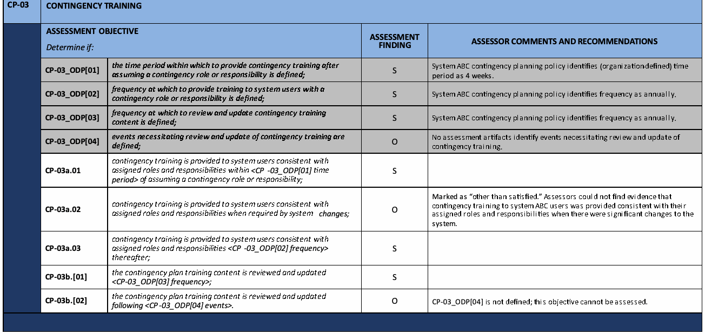
| CP-03 | 緊急時対応訓練 | ||
|---|---|---|---|
| 評価目的 次を判定する。 | 評価結果 | 評価者のコメントおよび推奨事項 | |
| CP-03_ODP[01] | 緊急時対応の役割または責任を担った後、緊急時対応訓練を提供するまでの期間が定義されている。 | S | システムABCの緊急時対応計画方針では、（組織定義の）期間を4週間と定めている。 |
| CP-03_ODP[02] | 緊急時対応の役割または責任を担うシステム利用者に訓練を提供する頻度が定義されている。 | S | システムABCの緊急時対応計画方針では、頻度を毎年と定めている。 |
| CP-03_ODP[03] | 緊急時対応訓練の内容をレビューおよび更新する頻度が定義されている。 | S | システムABCの緊急時対応計画方針では、頻度を毎年と定めている。 |
| CP-03_ODP[04] | 緊急時対応訓練のレビューおよび更新を必要とする事象が定義されている。 | O | 評価資料に、緊急時対応訓練のレビューおよび更新を必要とする事象を特定するものはない。 |
| CP-03a.01 | 緊急時対応訓練は、緊急時対応の役割または責任を担った後、<CP -03_ODP[01] 期間>以内に、割り当てられた役割および責任に応じてシステム利用者に提供される。 | S | |
| CP-03a.02 | システム変更によって必要となる場合、緊急時対応訓練は割り当てられた役割および責任に応じてシステム利用者に提供される。 | O | 「充足以外」と判定。評価者は、システムに重大な変更があった際、システムABCの利用者に割り当てられた役割および責任に応じた緊急時対応訓練が提供された証拠を確認できなかった。 |
| CP-03a.03 | その後も、緊急時対応訓練は<CP-03_ODP[02] 頻度>の頻度で、割り当てられた役割および責任に応じてシステム利用者に提供される。 | S | |
| CP-03b.[01] | 緊急時対応計画の訓練内容は<CP-03_ODP[03] 頻度>の頻度でレビューおよび更新される。 | S | |
| CP-03b.[02] | 緊急時対応計画の訓練内容は<CP-03_ODP[04] 事象>の後にレビューおよび更新される。 | O | CP-03_ODP[04]は定義されていないため、この評価目標は評価できない。 |
FIGURE 9: SECURITY AND PRIVACY CONTROL ASSESSMENT FINDINGS EXAMPLE
図 9：セキュリティ管理策およびプライバシー管理策の評価所見の例
APPENDIX F
付録F
ONGOING ASSESSMENT AND AUTOMATION
継続的評価および自動化
USING AUTOMATED TECHNIQUES TO ACHIEVE MORE EFFICIENT ASSESSMENTS
より効率的な評価を実現するための自動化技法の利用
Ongoing security and privacy assessment is the continuous evaluation of the effectiveness of security and privacy control implementation. Ongoing assessment is an essential subset of Information Security Continuous Monitoring (ISCM) activities.62 Ongoing assessment encompasses ISCM Steps 3 and 4 and is initiated as part of ISCM Step 3, Implement, when the collection of security-related information begins in accordance with organization-defined frequencies. Ongoing assessment continues as the security-related information generated as part of ISCM Step 3 is correlated, analyzed, and reported to senior leaders as part of ISCM Step 4. As noted in [SP 800-137], security-related information is generated, correlated, analyzed, and reported using automated tools to the extent that it is possible and practical to do so. When it is not possible and practical to use automated tools, security-related information is generated, correlated, analyzed, and reported using manual or procedural methods. In this way, senior leaders are provided with the security-related information necessary to make credible, risk-based decisions regarding information security risk to the mission and business.63
継続的なセキュリティ評価およびプライバシー評価とは、セキュリティ管理策およびプライバシー管理策の実装の有効性を継続的に評価することである。継続的な評価は、情報セキュリティ継続的監視（ISCM）の活動の不可欠な一部である。62継続的な評価は ISCM のステップ 3 と 4 を包含し、ISCM のステップ 3（実装）の一部として、組織が定めた頻度に従ってセキュリティ関連情報の収集が始まった時点で開始される。継続的な評価は、ISCM のステップ 3 の一部として生成されたセキュリティ関連情報が、ISCM のステップ 4 の一部として相関付けられ、分析され、上級リーダーに報告される間、継続する。[SP 800-137] に記されているとおり、セキュリティ関連情報は、可能かつ実際的な範囲で自動化ツールを用いて生成、相関付け、分析、および報告される。自動化ツールの使用が可能でない、または実際的でない場合、セキュリティ関連情報は手動または手続き的な方法で生成、相関付け、分析、および報告される。このようにして、上級リーダーには、ミッションおよびビジネスに対する情報セキュリティリスクについて信頼できるリスクベースの決定を行うために必要なセキュリティ関連情報が提供される。63
Automating assessments is a fundamental element in helping organizations manage information security and privacy risks. Evolving threats and changes in PII processing create a challenge for organizations that design, implement, and operate complex systems compromised of many hardware, firmware, and software components. The ability to assess all implemented security and privacy controls as frequently as needed using manual or procedural methods has become impractical for most organizations due to the size, complexity, and scope of their information technology infrastructures.
評価の自動化は、組織が情報セキュリティおよびプライバシーリスクを管理するうえで基本となる要素である。進化する脅威およびPII処理の変化は、多数のハードウェア、ファームウェア、ソフトウェアのコンポーネントから成る複雑なシステムを設計、実装、運用する組織に課題をもたらす。情報技術基盤の規模、複雑さ、範囲のため、手動または手順に基づく方法で、必要な頻度で実装済みのすべてのセキュリティおよびプライバシー管理策を評価することは、ほとんどの組織にとって実行困難になっている。
One strategy to increase the number of security and privacy controls for which assessment and monitoring can be automated depends on defining a desired state specification and expressing the desired state in a form that can be compared automatically (i.e., in data) with the actual state. The desired state is a defined value or specification to which the actual state value can be compared. A mismatch of the two values indicates that a defect is present in the effectiveness of one or more controls. For example, an organizational policy may state that user accounts will be locked after three unsuccessful logon attempts. The desired state specification would be that applicable devices are configured to lock accounts after three unsuccessful logon attempts. If, during automated assessment, the security-related information collected indicates that a specific device is configured such that accounts are locked only after five unsuccessful logon attempts, a mismatch between the desired state (three attempts allowed before lockout) and the actual state (five attempts allowed before lockout) is identified. The mismatch may reflect a problem with the effectiveness of SP 800-53 control AC-7, Unsuccessful Logon Attempts; AC-2, Account Management; and/or CM-2, Baseline Configuration. When a desired state specification strategy is employed, security-related information generated from ISCM activities is equivalent to security control assessment results.
評価およびモニタリングを自動化できるセキュリティおよびプライバシー管理策の数を増やす方法の一つは、望ましい状態の仕様を定義し、実際の状態と自動的に比較できる形式（すなわちデータ）でその状態を表現することに基づく。望ましい状態とは、実際の状態値と比較できるよう定義された値または仕様である。二つの値の不一致は、一つ以上の管理策の有効性に欠陥があることを示す。たとえば、組織の方針で、ログオンに三回失敗した後にユーザーアカウントをロックすると定めている場合がある。望ましい状態の仕様では、該当するデバイスがログオンに三回失敗した後にアカウントをロックするよう構成されている。自動評価で収集されたセキュリティ関連情報から、特定のデバイスがログオンに五回失敗した後にのみアカウントをロックするよう構成されていることが分かった場合、望ましい状態（ロック前に許可される試行は三回）と実際の状態（ロック前に許可される試行は五回）の不一致が特定される。この不一致は、SP 800-53の管理策AC-7「ログオン試行の失敗」、AC-2「アカウント管理」、および／またはCM-2「ベースライン構成」の有効性に問題があることを示している可能性がある。望ましい状態の仕様を用いる方法では、ISCM活動から生成されるセキュリティ関連情報は、セキュリティ管理策評価の結果と同等である。
In order to effectively automate security and privacy control assessments using the desired state specification strategy, it is important to meet the following prerequisites:
望ましい状態の仕様を用いる方法でセキュリティおよびプライバシー管理策評価を効果的に自動化するには、次の前提条件を満たすことが重要である：
•Automated actual state and behavior specifications are defined;
•自動化された実際の状態および動作の仕様が定義されていること；
•Data-based desired state specifications (comparable to the actual state) are defined; and
•実際の状態と比較可能な、データに基づく望ましい状態の仕様が定義されていること；および
•A method to compute or identify defects (i.e., differences between desired and actual state and behavior) is defined.
•欠陥（すなわち、望ましい状態と実際の状態および動作との差異）を計算または特定する方法が定義されていること。
When the prerequisites are met, the assessment system can automatically compute where differences between the desired state and actual state (defects) occur, use that information to create security and privacy assessment reports, and deliver those reports to designated personnel via a security and privacy management console (dashboard).
前提条件が満たされると、評価システムは、望ましい状態と実際の状態の差異（欠陥）が生じている箇所を自動的に算出し、その情報を用いてセキュリティ評価報告書およびプライバシー評価報告書を作成し、セキュリティ・プライバシー管理コンソール（ダッシュボード）を介して、指定された担当者にそれらの報告書を届けることができる。
When automated tools are used to conduct assessments, the test assessment method is used.64 The organization determines and documents the specific capabilities65 and privacy controls that are being assessed by the automated tool, the frequency with which the tool will assess the capabilities or controls, and the analysis and reporting requirements for the capabilities or controls.
評価の実施に自動化ツールを使用する場合は、テストの評価手法が用いられる。64組織は、自動化ツールによって評価される具体的な能力65およびプライバシー管理策、ツールがその能力または管理策を評価する頻度、ならびにその能力または管理策に関する分析および報告の要件を決定し、文書化する。
To help automate ongoing assessment, NIST and the Department of Homeland Security Cybersecurity Infrastructure Security Agency (CISA) collaborated on the development of a process that leverages the test assessment method and is consistent with the Risk Management Framework, as described in SP 800-37 and the ISCM guidance in SP 800-137. The automation process is described in NIST Interagency/Internal Report (NISTIR) 8011, Automation Support for Security Control Assessments: Volume 1: Overview [IR 8011-1] which defines specific security capabilities and describes the overall automated assessment process. Specific methods to automate the assessment of each defined security capability is provided in subsequent NISTIR 8011 volumes. Automation of the test method for security assessments is facilitated by the CISA Continuous Diagnostics and Mitigation (CDM) program.
継続的評価の自動化を支援するため、NISTと米国国土安全保障省サイバーセキュリティ・インフラストラクチャ安全保障庁（CISA）は、試験評価方法を活用し、SP 800-37に記載されたリスク管理フレームワークおよびSP 800-137のISCM指針に整合するプロセスの開発で協力した。この自動化プロセスは、特定のセキュリティ能力を定義し、自動評価プロセス全体を説明するNIST省庁間／内部報告書（NISTIR）8011「セキュリティ管理策評価の自動化支援：第1巻：概要」[IR 8011-1]に記載されている。定義された各セキュリティ能力の評価を自動化する具体的な方法は、後続のNISTIR 8011各巻に示される。セキュリティ評価における試験方法の自動化は、CISAの継続的診断および緩和（CDM）プログラムによって促進される。